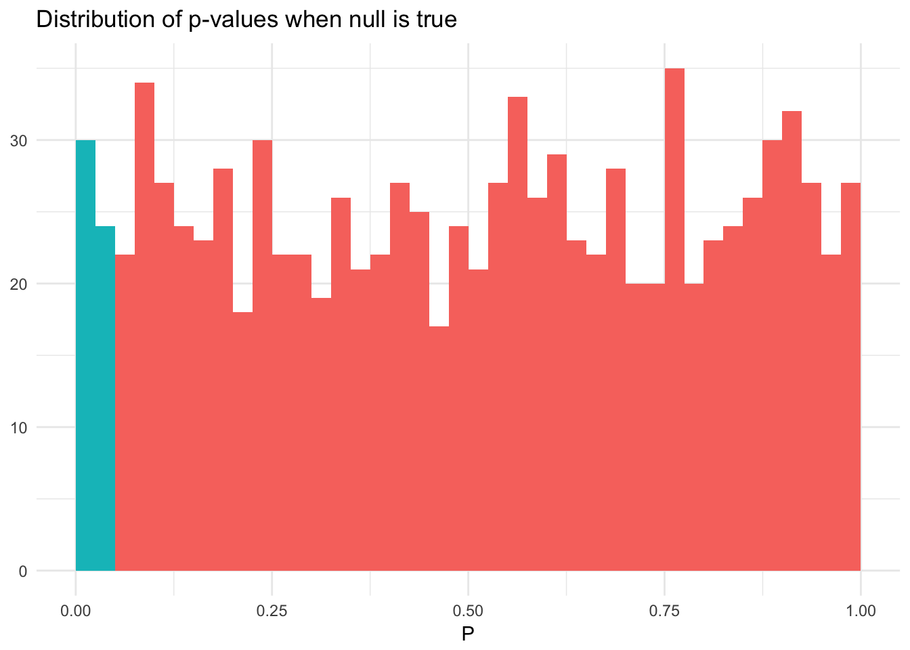
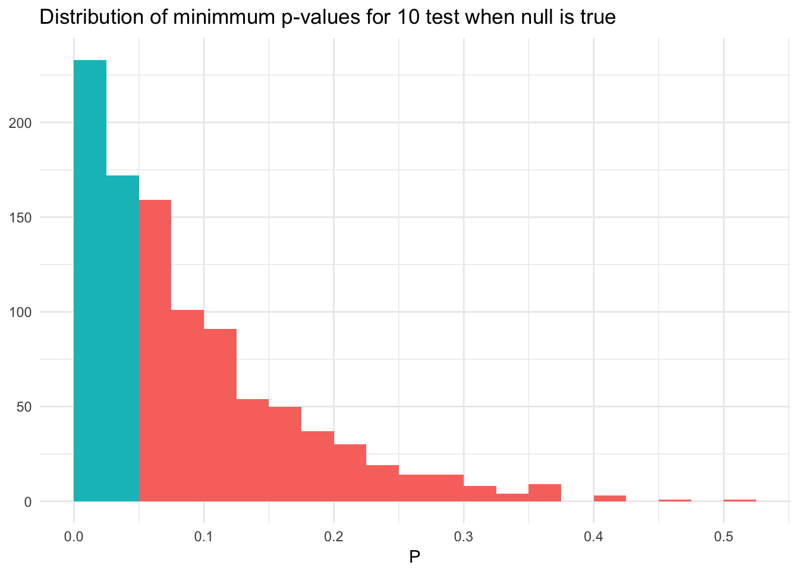
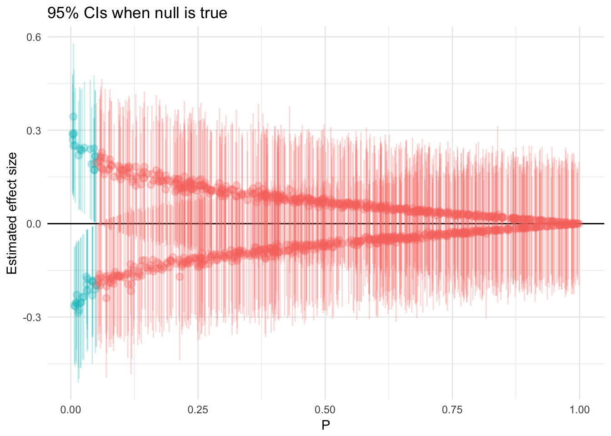
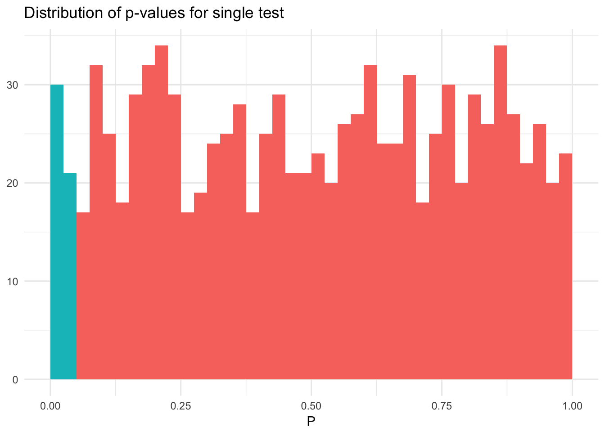
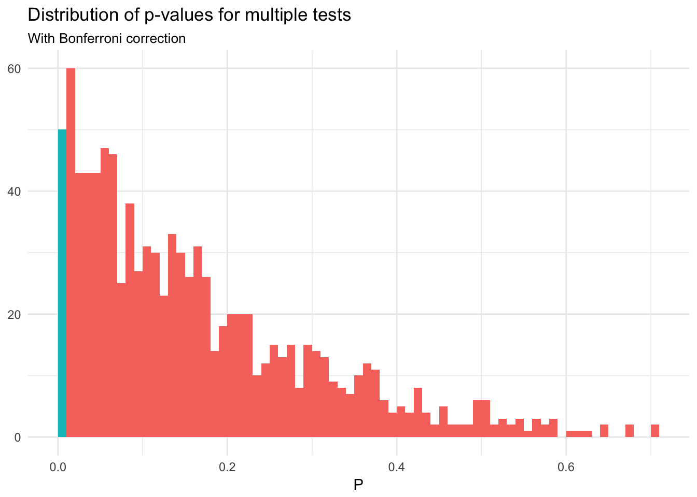

p-hacking
MACS 30200 - Perspectives on Computational Research
Objectives
- Define a p-value
- Identify methods for obtaining a statistically significant p-value
- Critique the “women wearing pink” article for potential p-hacking
- Identify approaches to reduce the chance of p-hacking
library(tidyverse)
library(broom)
library(forcats)
library(modelr)
library(stringr)
library(car)
library(rcfss)
library(coefplot)
library(RColorBrewer)
library(lme4)
options(digits = 3)
set.seed(1234)
theme_set(theme_minimal())What is a p-value?
Hypothesis testing
When conducting inference, we test hypotheses about real-world relationships using observed data. Because we generally rely on a sample rather than the population, there is a chance that the results we observe could be purely driven by random chance. We just happened to draw a fluky sample from the population and the statistic of interest we observe is not in fact representative of the broader population.
In the context of regression, we generally test the null hypothesis against the alternative hypothesis. The null hypothesis \(H_0\) states “there is no relationship between \(X\) and \(Y\)”, whereas the alternative hypothesis \(H_a\) states “there is some relationship between \(X\) and \(Y\)”. Mathematically, this corresponds to
- \(H_0\): \(\beta_1 = 0\)
- \(H_a\): \(\beta_1 \neq 0\)
since if \(\beta_1 = 0\), then the model reduces to \(Y = \beta_0 + \epsilon\) and \(X\) is not associated with \(Y\). To test the null hypothesis, we need to determine whether the estimated coefficient \(\hat{\beta}_1\) is sufficiently far from zero that we can be confident that \(\beta_1\) is non-zero.
This determination is based on the standard error of the coefficient. If \(\text{SE}(\hat{\beta}_1)\) is small, than even relatively small values of \(\hat{\beta}_1\) may provide strong evidence that \(\beta_1 \neq 0\) and there is a relationship between \(X\) and \(Y\). If \(\text{SE}(\hat{\beta}_1)\) is large, than \(\hat{\beta}_1\) must also be large to reject the null hypothesis. In practice, we compute a t-statistic given by
\[t = \frac{\hat{\beta}_1 - 0}{\text{SE}(\hat{\beta}_1)}\]
which measures the number of standard deviations that \(\hat{\beta}_1\) is away from 0. If there really is no relationship between \(X\) and \(Y\), then we expect this function to follow a \(t\)-distribution with \(n-2\) degrees of freedom. From this we can calculate the probability of observing any value equal to \(|t|\) or larger, assuming \(\beta_1=0\). This is the p-value. Informally, a small p-value indicates that it is unlikely to observare such substantial association between the predictor and the response due to chance, in the absence of any real association between the predictor and response.
The importance of the .05 cutoff

p-values can fall anywhere between 0 and 1. Setting the cutoff point determines how likely one is to make a type I (false positive) or type II (false negative) error. Historically, the social sciences adopted a cutoff of \(p=.05\). Anything below that value is considered “statistically significant”. But there is no scientific basis for this threshold - it is an arbitrary standard, to which many academic journals and scholars continue to adhere.
What p-values can and cannot do
p-values are a key component of frequentist inference, dating back to the early 1900s. While their usage is widespread in academia, in practice their meaning is actually very limited.
A p-value is the probability under a specified statistical model that a statistical summary of the data would be equal to or more extreme than its observed values.
p-values can indicate how incompatible the data are with a specified statistical model. This is why they are used for null hypothesis testing. The smaller the p-value, the greater the statistical incompatability of the data with the null hypothesis. This incompatability casts doubt on or provides evidence agains the null hypothesis.
But it does not prove the alternative hypothesis to be true.
p-values do not measure the probability that the observed relationship is true, or the probability that the data were produced by random chance alone. p-values cannot be used to prove the null hypothesis:
p-values do not provide any conclusion about the explanation itself, only the probability of the observed data being generated if the null hypothesis is true.
- p-values below an arbitrary threshold should not be used for scientific, business, or policy conclusions. Again, the .05 threshold is a completely arbitrary standard. A statistic with a p-value of \(.04\) is not “true” versus a statistic with a p-value of \(.06\) is false. p-values are determined not only by the data itself but also by the researcher’s decisions used to formulate and estimate the statistical model, and there are many ways to tweak or search for a significant p-value.
- p-values and statistical significance do not measure the size or importance of a result. Statistical significance is not the same thing as scientific, human, or economic significance. Smaller p-values do not imply important effects. p-values are determined by the precision of the estimated statistic, which is in turn influenced by sample size and measurement accuracy. A statistic can have a very small p-value but have an insignificant substantive effect because of a large sample size. Likewise, even large effects can have unimpressive p-values if the sample size is small.
The p-value does not provide a good measure of evidence regarding a model or hypothesis. Just because a p-value is large does not mean the null hypothesis is true; many other alternative hypotheses could exist to explain the observed data, you just did not test for it.
How to find a significant p-value
Consider a sample of 100 observations of a continuous outcome of interest \(Y\) measured with 10 continuous covariates \(\mathbf{X}\). In truth, none of the variables are actually predictive of \(Y\) in the population. That is, all the covariates \(\mathbf{X}\) and the outcome \(Y\) are drawn independently from a normal distribution \(\sim N(0,1)\). If we use ordinary least squares regression and focus on just a single variable as a predictor, a test of significance will yield \(p < .05\) in approximately 5% of the samples. Below I simulate this process 1000 times, and in each simulation estimate a single regression model between \(Y\) and a randomly selected \(X_k\):
n_obs <- 100
pval_dist <- function(n_obs){
x <- replicate(10, rnorm(n_obs))
y <- rnorm(n_obs)
mod <- lm(y ~ x[, sample(1:10, 1)])
return(tidy(mod)[2,])
}
pvals <- 1000 %>%
rerun(pval_dist(n_obs)) %>%
bind_rows %>%
as_tibble %>%
mutate(sig = p.value < .05)
ggplot(pvals, aes(p.value, fill = sig)) +
geom_histogram(binwidth = .025, boundary = 0) +
labs(title = "Distribution of p-values when null is true",
x = expression(P),
y = NULL) +
theme(legend.position = "none")
The distribution of the p-values is approximately uniform and on average 5% of the p-values are \(< .05\). In this situation, the p-value and our inferences drawn from the p-value are as we would expect because we conducted exactly one null hypothesis test against the sample of data.
What happens instead if we evaluate multiple variables during each test? That is, in each iteration of our simulation we regress all 10 predictors individually against \(Y\). What is the chance that we will find \(p < .05\) for at least one of the predictors?
pval_dist_mult <- function(n_obs){
# generate simulated data
x <- replicate(10, rnorm(n_obs))
y <- rnorm(n_obs)
# estimate a linear model for each column in x and find min pvalue
x %>%
as_tibble %>%
mutate(y = y) %>%
gather(i, x, -y) %>%
group_by(i) %>%
nest() %>%
mutate(mod = map(data, ~ lm(y ~ x, data = .x)),
results = map(mod, tidy)) %>%
unnest(results) %>%
filter(term == "x") %>%
filter(p.value == min(p.value))
}
pvals_mult <- 1000 %>%
rerun(pval_dist_mult(n_obs)) %>%
bind_rows %>%
as_tibble %>%
mutate(sig = p.value < .05)
ggplot(pvals_mult, aes(p.value, fill = sig)) +
geom_histogram(binwidth = .025, boundary = 0) +
labs(title = "Distribution of minimmum p-values for 10 test when null is true",
x = expression(P),
y = NULL) +
theme(legend.position = "none")
Now we have a 40% chance of finding a predictor with \(p < .05\), and the distribution of the minimum p-values is not uniform. When we search for the most significant result, we do not have a fixed null hypothesis. Instead, we are conducting 10 null hypothesis tests using the same sample of data. The distribution of the minimum of 10 random uniform distributions has a density \(k(1 - x)^{k-1}\) for \(k\) independent tests. When \(k=10\), the probability of observing \(p < .05\) is \(1 - (1 - 0.05)^{10} = 0.40\).
By failing to correct for the fact that we conducted multiple hypothesis tests on the same sample of data, we risk false discovery and is a form of selection bias. Even if the tests were not actually performed, we still risk selection bias when any choice of results is based on the outcome, rather than the prespecified hypotheses.
This happens all the time in social science. All scholars and researchers do this. We form a theory, generate hypotheses, collect data to test the hypotheses, and explore multiple model formulations until we settle on the final form. This doesn’t mean we are attempting to commit fraud, we are just using our knowledge to try and estimate a “good” model.
Confidence intervals don’t save us
A common suggestion for supplementing p-values is to report the confidence interval of the effect. The problem is that the confidence interval, like the p-value, is directly related to the size of the standard error and the resulting t-statistic. Consider the confidence intervals for the first set of simulation results, where we conduct just a single hypothesis test on each sample of data:
ggplot(pvals, aes(p.value, estimate, color = sig)) +
geom_hline(yintercept = 0) +
geom_pointrange(aes(ymin = estimate - 1.96 * std.error,
ymax = estimate + 1.96 * std.error), alpha = .25) +
labs(title = "95% CIs when null is true",
x = expression(P),
y = "Estimated effect size") +
theme(legend.position = "none")
Again, looks correct. However, what about when we conduct 10 tests instead of just one?
ggplot(pvals_mult, aes(p.value, estimate, color = sig)) +
geom_hline(yintercept = 0) +
geom_pointrange(aes(ymin = estimate - 1.96 * std.error,
ymax = estimate + 1.96 * std.error), alpha = .25) +
labs(title = "Most significant 95% CIs of 10 tests when null is true",
x = expression(P),
y = "Estimated effect size") +
theme(legend.position = "none")
Selection bias of this type is not addressed or corrected merely by reporting both the p-value and the confidence interval.
Selection of predictors
For more detail on subset selection methods, see chapter 6.1 in ISLR.
Another common analysis in which p-values can be misinterpreted is the selection of a prediction mdoel for multiple regression or classification. Subset selection procedures automate the process of deciding which predictors to include or exclude in a regression model. Under the best subset selection:
- Let \(M_0\) denote the null model which contains no predictors. This model simply predicts the sample mean for each observation.
- For \(k = 1, 2, \dots, p\):
- Fit all \({p}\choose{k}\) models that contain exactly \(k\) predictors
- Pick the best among these \({p}\choose{k}\) models and call it \(M_k\). Best is defined by the smallest RSS or RMSE, or largest \(R^2\)
- Select a single best model from among \(M_0, \dots, M_p\) using cross-validated prediction error or similar metrics
Of course this approach can be computationally infeasible as the number of predictors \(p\) increases. An alternative (and popular) choice is stepwise selection. In forward stepwise regression:
- Let \(M_0\) denote the null model which contains no predictors
- For \(k = 1, 2, \dots, p - 1\):
- Fit all \(p-k\) models that augment the predictors in \(M_k\) with one additional predictor
- Pick the best among these \(p - k\) models and call it \(M_{k+1}\). Best is defined by the smallest RSS or RMSE, or largest \(R^2\)
- Select a single best model from among \(M_0, \dots, M_p\) using cross-validated prediction error or similar metrics
This method avoids estimating all \(2^p\) models. Instead, you only have to estimate \(1 + \frac{p(p+1)}{2}\). When \(p=20\), this is the difference between estimating \(p^{20} = 1,048,576\) models versus \(1 + \frac{10(10+1)}{2} = 211\) models.
In backward stepwise selection, you start with the full model and remove predictors from the model during each iteration.
- Let \(M_0\) denote the full model which contains all \(p\) predictors
- For \(k = p, p-1, \dots, 1\):
- Fit all \(k\) models that contain all but one of the predictors in \(M_k\), for a total of \(k-1\) predictors
- Pick the best among these \(k\) models and call it \(M_{k-1}\). Best is defined by the smallest RSS or RMSE, or largest \(R^2\)
- Select a single best model from among \(M_0, \dots, M_p\) using cross-validated prediction error or similar metrics
While these approaches are based on minimizing overall model error, they are still problematic for interpreting the resulting p-values.1 Consider if we applied forward stepwise selection to our simulated data from earlier. First let’s use as our baseline a multiple regression model containing all 10 predictors from \(\mathbf{X}\). How often do we reject the null hypothesis of no association between \(X_k\) and \(Y\)?
full_mod_sim <- function(n_obs){
x <- replicate(10, rnorm(n_obs))
y <- rnorm(n_obs)
mod <- lm(y ~ x)
return(tidy(mod))
}
pvals_full <- 1000 %>%
rerun(full_mod_sim(n_obs)) %>%
bind_rows %>%
as_tibble %>%
filter(term != "(Intercept)") %>%
mutate(sig = p.value < .05)
ggplot(pvals_full, aes(p.value, fill = sig)) +
geom_histogram(binwidth = .025, boundary = 0) +
labs(title = "Distribution of p-values from full model when null is true",
subtitle = "All covariates",
x = expression(P),
y = NULL) +
theme(legend.position = "none")
As expected, only approximately 5% of the time do we make a false discovery. What happens if we use forward stepwise selection to choose the “best” model? How often will we reject the null hypothesis for each of the variables in the model?
step_mod_sim <- function(n_obs){
x <- replicate(10, rnorm(n_obs)) %>%
as_tibble()
y <- rnorm(n_obs)
sim_data <- x %>%
mutate(y = y)
# estimate full model
mod <- lm(y ~ ., data = sim_data)
# pick model with lowest aic based on forward stepwise selection
invisible(MASS::stepAIC(mod))
}
pvals_step <- 1000 %>%
rerun(step_mod_sim(n_obs))## Start: AIC=9.53
## y ~ V1 + V2 + V3 + V4 + V5 + V6 + V7 + V8 + V9 + V10
##
## Df Sum of Sq RSS AIC
## - V4 1 0.003 88.3 7.53
## - V3 1 0.101 88.4 7.64
## - V7 1 0.137 88.4 7.68
## - V8 1 0.192 88.5 7.74
## - V6 1 0.316 88.6 7.89
## - V10 1 0.534 88.8 8.13
## - V1 1 0.851 89.1 8.49
## - V2 1 1.124 89.4 8.79
## - V9 1 1.220 89.5 8.90
## <none> 88.3 9.53
## - V5 1 2.052 90.3 9.83
##
## Step: AIC=7.53
## y ~ V1 + V2 + V3 + V5 + V6 + V7 + V8 + V9 + V10
##
## Df Sum of Sq RSS AIC
## - V3 1 0.098 88.4 5.64
## - V7 1 0.139 88.4 5.69
## - V8 1 0.196 88.5 5.75
## - V6 1 0.316 88.6 5.89
## - V10 1 0.540 88.8 6.14
## - V1 1 0.861 89.1 6.50
## - V2 1 1.121 89.4 6.79
## - V9 1 1.217 89.5 6.90
## <none> 88.3 7.53
## - V5 1 2.057 90.3 7.83
##
## Step: AIC=5.64
## y ~ V1 + V2 + V5 + V6 + V7 + V8 + V9 + V10
##
## Df Sum of Sq RSS AIC
## - V7 1 0.217 88.6 3.89
## - V8 1 0.239 88.6 3.91
## - V6 1 0.297 88.7 3.98
## - V10 1 0.513 88.9 4.22
## - V1 1 0.912 89.3 4.67
## - V2 1 1.039 89.4 4.81
## - V9 1 1.334 89.7 5.14
## <none> 88.4 5.64
## - V5 1 2.065 90.4 5.95
##
## Step: AIC=3.89
## y ~ V1 + V2 + V5 + V6 + V8 + V9 + V10
##
## Df Sum of Sq RSS AIC
## - V8 1 0.195 88.8 2.11
## - V6 1 0.368 89.0 2.30
## - V10 1 0.550 89.1 2.51
## - V1 1 0.827 89.4 2.82
## - V9 1 1.160 89.8 3.19
## - V2 1 1.228 89.8 3.26
## <none> 88.6 3.89
## - V5 1 1.901 90.5 4.01
##
## Step: AIC=2.11
## y ~ V1 + V2 + V5 + V6 + V9 + V10
##
## Df Sum of Sq RSS AIC
## - V6 1 0.411 89.2 0.568
## - V10 1 0.527 89.3 0.698
## - V1 1 0.698 89.5 0.890
## - V9 1 1.070 89.9 1.305
## - V2 1 1.257 90.0 1.512
## <none> 88.8 2.107
## - V5 1 1.882 90.7 2.205
##
## Step: AIC=0.57
## y ~ V1 + V2 + V5 + V9 + V10
##
## Df Sum of Sq RSS AIC
## - V10 1 0.359 89.6 -1.030
## - V1 1 0.737 89.9 -0.609
## - V9 1 0.964 90.2 -0.357
## - V2 1 1.015 90.2 -0.301
## - V5 1 1.611 90.8 0.358
## <none> 89.2 0.568
##
## Step: AIC=-1.03
## y ~ V1 + V2 + V5 + V9
##
## Df Sum of Sq RSS AIC
## - V1 1 0.859 90.4 -2.08
## - V9 1 1.009 90.6 -1.91
## - V2 1 1.092 90.6 -1.82
## - V5 1 1.607 91.2 -1.25
## <none> 89.6 -1.03
##
## Step: AIC=-2.08
## y ~ V2 + V5 + V9
##
## Df Sum of Sq RSS AIC
## - V9 1 0.83 91.2 -3.16
## - V2 1 1.06 91.5 -2.91
## - V5 1 1.65 92.1 -2.27
## <none> 90.4 -2.08
##
## Step: AIC=-3.16
## y ~ V2 + V5
##
## Df Sum of Sq RSS AIC
## - V2 1 1.25 92.5 -3.80
## - V5 1 1.40 92.6 -3.64
## <none> 91.2 -3.16
##
## Step: AIC=-3.8
## y ~ V5
##
## Df Sum of Sq RSS AIC
## - V5 1 1.49 94.0 -4.2
## <none> 92.5 -3.8
##
## Step: AIC=-4.2
## y ~ 1
##
## Start: AIC=7.48
## y ~ V1 + V2 + V3 + V4 + V5 + V6 + V7 + V8 + V9 + V10
##
## Df Sum of Sq RSS AIC
## - V6 1 0.013 86.5 5.50
## - V2 1 0.142 86.6 5.65
## - V1 1 0.167 86.7 5.67
## - V7 1 0.467 87.0 6.02
## - V3 1 0.659 87.1 6.24
## - V10 1 0.883 87.4 6.50
## - V9 1 0.924 87.4 6.54
## - V4 1 0.971 87.5 6.60
## - V5 1 1.656 88.1 7.38
## - V8 1 1.679 88.2 7.40
## <none> 86.5 7.48
##
## Step: AIC=5.5
## y ~ V1 + V2 + V3 + V4 + V5 + V7 + V8 + V9 + V10
##
## Df Sum of Sq RSS AIC
## - V1 1 0.155 86.7 3.68
## - V2 1 0.157 86.7 3.68
## - V7 1 0.461 87.0 4.03
## - V3 1 0.653 87.2 4.25
## - V10 1 0.877 87.4 4.51
## - V9 1 0.940 87.4 4.58
## - V4 1 0.967 87.5 4.61
## - V5 1 1.657 88.2 5.39
## - V8 1 1.666 88.2 5.40
## <none> 86.5 5.50
##
## Step: AIC=3.68
## y ~ V2 + V3 + V4 + V5 + V7 + V8 + V9 + V10
##
## Df Sum of Sq RSS AIC
## - V2 1 0.125 86.8 1.82
## - V3 1 0.573 87.2 2.33
## - V7 1 0.591 87.2 2.36
## - V9 1 0.897 87.6 2.71
## - V4 1 0.922 87.6 2.73
## - V10 1 0.951 87.6 2.77
## - V5 1 1.510 88.2 3.40
## <none> 86.7 3.68
## - V8 1 1.779 88.4 3.71
##
## Step: AIC=1.82
## y ~ V3 + V4 + V5 + V7 + V8 + V9 + V10
##
## Df Sum of Sq RSS AIC
## - V3 1 0.522 87.3 0.420
## - V7 1 0.585 87.4 0.492
## - V9 1 0.919 87.7 0.873
## - V4 1 0.941 87.7 0.898
## - V10 1 1.003 87.8 0.969
## - V5 1 1.523 88.3 1.560
## <none> 86.8 1.820
## - V8 1 1.846 88.6 1.925
##
## Step: AIC=0.42
## y ~ V4 + V5 + V7 + V8 + V9 + V10
##
## Df Sum of Sq RSS AIC
## - V7 1 0.659 88.0 -0.828
## - V10 1 0.841 88.1 -0.622
## - V4 1 0.903 88.2 -0.551
## - V9 1 0.923 88.2 -0.529
## - V5 1 1.239 88.5 -0.172
## <none> 87.3 0.420
## - V8 1 2.565 89.9 1.315
##
## Step: AIC=-0.83
## y ~ V4 + V5 + V8 + V9 + V10
##
## Df Sum of Sq RSS AIC
## - V9 1 0.724 88.7 -2.008
## - V10 1 0.853 88.8 -1.863
## - V4 1 1.133 89.1 -1.548
## - V5 1 1.554 89.5 -1.077
## <none> 88.0 -0.828
## - V8 1 2.692 90.7 0.187
##
## Step: AIC=-2.01
## y ~ V4 + V5 + V8 + V10
##
## Df Sum of Sq RSS AIC
## - V10 1 0.782 89.5 -3.13
## - V4 1 1.135 89.8 -2.74
## - V5 1 1.476 90.2 -2.36
## <none> 88.7 -2.01
## - V8 1 2.671 91.4 -1.04
##
## Step: AIC=-3.13
## y ~ V4 + V5 + V8
##
## Df Sum of Sq RSS AIC
## - V4 1 1.24 90.7 -3.76
## - V5 1 1.55 91.0 -3.41
## <none> 89.5 -3.13
## - V8 1 2.94 92.4 -1.89
##
## Step: AIC=-3.76
## y ~ V5 + V8
##
## Df Sum of Sq RSS AIC
## - V5 1 1.63 92.3 -3.98
## <none> 90.7 -3.76
## - V8 1 2.69 93.4 -2.83
##
## Step: AIC=-3.98
## y ~ V8
##
## Df Sum of Sq RSS AIC
## <none> 92.3 -3.98
## - V8 1 3.09 95.4 -2.68
## Start: AIC=8.63
## y ~ V1 + V2 + V3 + V4 + V5 + V6 + V7 + V8 + V9 + V10
##
## Df Sum of Sq RSS AIC
## - V10 1 0.198 87.7 6.86
## - V1 1 0.208 87.7 6.87
## - V2 1 0.291 87.8 6.96
## - V5 1 0.471 88.0 7.17
## - V9 1 0.500 88.0 7.20
## - V8 1 1.156 88.6 7.94
## - V6 1 1.322 88.8 8.13
## - V7 1 1.635 89.1 8.48
## - V4 1 1.680 89.2 8.53
## <none> 87.5 8.63
## - V3 1 2.670 90.2 9.64
##
## Step: AIC=6.86
## y ~ V1 + V2 + V3 + V4 + V5 + V6 + V7 + V8 + V9
##
## Df Sum of Sq RSS AIC
## - V1 1 0.208 87.9 5.09
## - V2 1 0.237 87.9 5.12
## - V9 1 0.485 88.2 5.41
## - V5 1 0.492 88.2 5.41
## - V6 1 1.242 88.9 6.26
## - V8 1 1.265 88.9 6.29
## - V7 1 1.484 89.2 6.53
## - V4 1 1.640 89.3 6.71
## <none> 87.7 6.86
## - V3 1 2.771 90.5 7.97
##
## Step: AIC=5.09
## y ~ V2 + V3 + V4 + V5 + V6 + V7 + V8 + V9
##
## Df Sum of Sq RSS AIC
## - V2 1 0.201 88.1 3.32
## - V9 1 0.475 88.4 3.63
## - V5 1 0.521 88.4 3.68
## - V8 1 1.191 89.1 4.44
## - V6 1 1.396 89.3 4.67
## - V7 1 1.576 89.5 4.87
## - V4 1 1.709 89.6 5.02
## <none> 87.9 5.09
## - V3 1 2.659 90.5 6.07
##
## Step: AIC=3.32
## y ~ V3 + V4 + V5 + V6 + V7 + V8 + V9
##
## Df Sum of Sq RSS AIC
## - V9 1 0.472 88.6 1.85
## - V5 1 0.605 88.7 2.00
## - V8 1 1.211 89.3 2.69
## - V7 1 1.444 89.5 2.95
## - V6 1 1.494 89.6 3.00
## - V4 1 1.629 89.7 3.15
## <none> 88.1 3.32
## - V3 1 2.500 90.6 4.12
##
## Step: AIC=1.85
## y ~ V3 + V4 + V5 + V6 + V7 + V8
##
## Df Sum of Sq RSS AIC
## - V5 1 0.676 89.2 0.615
## - V8 1 1.203 89.8 1.204
## - V7 1 1.368 89.9 1.388
## - V4 1 1.592 90.2 1.636
## <none> 88.6 1.855
## - V6 1 2.127 90.7 2.228
## - V3 1 2.398 91.0 2.526
##
## Step: AIC=0.61
## y ~ V3 + V4 + V6 + V7 + V8
##
## Df Sum of Sq RSS AIC
## - V8 1 1.05 90.3 -0.219
## - V4 1 1.35 90.6 0.114
## <none> 89.2 0.615
## - V6 1 1.84 91.1 0.657
## - V7 1 1.87 91.1 0.687
## - V3 1 2.35 91.6 1.213
##
## Step: AIC=-0.22
## y ~ V3 + V4 + V6 + V7
##
## Df Sum of Sq RSS AIC
## - V6 1 1.69 92.0 -0.369
## <none> 90.3 -0.219
## - V4 1 1.85 92.1 -0.193
## - V7 1 1.98 92.3 -0.050
## - V3 1 2.49 92.8 0.505
##
## Step: AIC=-0.37
## y ~ V3 + V4 + V7
##
## Df Sum of Sq RSS AIC
## - V7 1 1.74 93.7 -0.500
## <none> 92.0 -0.369
## - V4 1 2.44 94.4 0.245
## - V3 1 2.72 94.7 0.543
##
## Step: AIC=-0.5
## y ~ V3 + V4
##
## Df Sum of Sq RSS AIC
## <none> 93.7 -0.500
## - V4 1 2.27 96.0 -0.101
## - V3 1 2.31 96.0 -0.067
## Start: AIC=10.7
## y ~ V1 + V2 + V3 + V4 + V5 + V6 + V7 + V8 + V9 + V10
##
## Df Sum of Sq RSS AIC
## - V2 1 0.07 89.4 8.75
## - V4 1 0.24 89.5 8.93
## - V7 1 0.35 89.6 9.06
## - V10 1 0.59 89.9 9.32
## - V6 1 0.78 90.1 9.54
## - V5 1 0.81 90.1 9.57
## - V1 1 0.81 90.1 9.57
## - V9 1 1.44 90.7 10.27
## - V8 1 1.55 90.8 10.40
## <none> 89.3 10.67
## - V3 1 4.06 93.3 13.11
##
## Step: AIC=8.75
## y ~ V1 + V3 + V4 + V5 + V6 + V7 + V8 + V9 + V10
##
## Df Sum of Sq RSS AIC
## - V4 1 0.27 89.6 7.05
## - V7 1 0.33 89.7 7.12
## - V10 1 0.56 89.9 7.37
## - V5 1 0.76 90.1 7.60
## - V6 1 0.77 90.1 7.61
## - V1 1 0.95 90.3 7.81
## - V9 1 1.47 90.8 8.39
## - V8 1 1.52 90.9 8.44
## <none> 89.4 8.75
## - V3 1 4.00 93.4 11.13
##
## Step: AIC=7.05
## y ~ V1 + V3 + V5 + V6 + V7 + V8 + V9 + V10
##
## Df Sum of Sq RSS AIC
## - V7 1 0.42 90.0 5.51
## - V10 1 0.52 90.1 5.63
## - V1 1 0.78 90.4 5.91
## - V6 1 0.83 90.5 5.97
## - V5 1 0.93 90.6 6.08
## - V8 1 1.37 91.0 6.56
## - V9 1 1.41 91.0 6.61
## <none> 89.6 7.05
## - V3 1 3.88 93.5 9.28
##
## Step: AIC=5.51
## y ~ V1 + V3 + V5 + V6 + V8 + V9 + V10
##
## Df Sum of Sq RSS AIC
## - V10 1 0.54 90.6 4.11
## - V1 1 0.86 90.9 4.46
## - V5 1 0.88 90.9 4.48
## - V6 1 0.95 91.0 4.56
## - V9 1 1.47 91.5 5.14
## - V8 1 1.55 91.6 5.22
## <none> 90.0 5.51
## - V3 1 3.80 93.8 7.64
##
## Step: AIC=4.11
## y ~ V1 + V3 + V5 + V6 + V8 + V9
##
## Df Sum of Sq RSS AIC
## - V5 1 0.70 91.3 2.87
## - V6 1 0.81 91.4 3.00
## - V1 1 0.91 91.5 3.11
## - V8 1 1.63 92.2 3.89
## - V9 1 1.72 92.3 3.99
## <none> 90.6 4.11
## - V3 1 4.61 95.2 7.07
##
## Step: AIC=2.87
## y ~ V1 + V3 + V6 + V8 + V9
##
## Df Sum of Sq RSS AIC
## - V6 1 0.78 92.1 1.73
## - V1 1 0.99 92.3 1.95
## - V8 1 1.48 92.8 2.48
## - V9 1 1.74 93.0 2.77
## <none> 91.3 2.87
## - V3 1 5.30 96.6 6.52
##
## Step: AIC=1.73
## y ~ V1 + V3 + V8 + V9
##
## Df Sum of Sq RSS AIC
## - V1 1 0.88 92.9 0.68
## - V8 1 1.57 93.6 1.42
## - V9 1 1.59 93.6 1.44
## <none> 92.1 1.73
## - V3 1 5.16 97.2 5.18
##
## Step: AIC=0.68
## y ~ V3 + V8 + V9
##
## Df Sum of Sq RSS AIC
## - V8 1 1.53 94.5 0.32
## - V9 1 1.54 94.5 0.32
## <none> 92.9 0.68
## - V3 1 4.99 97.9 3.92
##
## Step: AIC=0.32
## y ~ V3 + V9
##
## Df Sum of Sq RSS AIC
## - V9 1 1.59 96.1 -0.01
## <none> 94.5 0.32
## - V3 1 4.92 99.4 3.39
##
## Step: AIC=-0.01
## y ~ V3
##
## Df Sum of Sq RSS AIC
## <none> 96.1 -0.011
## - V3 1 4.62 100.7 2.681
## Start: AIC=-19
## y ~ V1 + V2 + V3 + V4 + V5 + V6 + V7 + V8 + V9 + V10
##
## Df Sum of Sq RSS AIC
## - V9 1 0.014 66.4 -20.9
## - V10 1 0.022 66.4 -20.9
## - V7 1 0.110 66.5 -20.8
## - V1 1 0.126 66.5 -20.8
## - V5 1 0.187 66.6 -20.7
## - V2 1 0.324 66.7 -20.5
## - V4 1 0.852 67.2 -19.7
## - V8 1 0.910 67.3 -19.6
## - V6 1 1.032 67.4 -19.4
## <none> 66.4 -19.0
## - V3 1 3.032 69.4 -16.5
##
## Step: AIC=-20.9
## y ~ V1 + V2 + V3 + V4 + V5 + V6 + V7 + V8 + V10
##
## Df Sum of Sq RSS AIC
## - V10 1 0.028 66.4 -22.9
## - V7 1 0.105 66.5 -22.8
## - V1 1 0.123 66.5 -22.8
## - V5 1 0.179 66.6 -22.7
## - V2 1 0.322 66.7 -22.4
## - V4 1 0.839 67.2 -21.7
## - V8 1 0.920 67.3 -21.6
## - V6 1 1.018 67.4 -21.4
## <none> 66.4 -20.9
## - V3 1 3.052 69.5 -18.4
##
## Step: AIC=-22.9
## y ~ V1 + V2 + V3 + V4 + V5 + V6 + V7 + V8
##
## Df Sum of Sq RSS AIC
## - V7 1 0.099 66.5 -24.8
## - V1 1 0.119 66.6 -24.7
## - V5 1 0.212 66.6 -24.6
## - V2 1 0.305 66.7 -24.4
## - V4 1 0.864 67.3 -23.6
## - V8 1 0.967 67.4 -23.4
## - V6 1 1.070 67.5 -23.3
## <none> 66.4 -22.9
## - V3 1 3.025 69.5 -20.4
##
## Step: AIC=-24.8
## y ~ V1 + V2 + V3 + V4 + V5 + V6 + V8
##
## Df Sum of Sq RSS AIC
## - V1 1 0.093 66.6 -26.6
## - V5 1 0.242 66.8 -26.4
## - V2 1 0.346 66.9 -26.2
## - V4 1 0.965 67.5 -25.3
## - V8 1 0.969 67.5 -25.3
## - V6 1 1.004 67.5 -25.2
## <none> 66.5 -24.8
## - V3 1 2.941 69.5 -22.4
##
## Step: AIC=-26.6
## y ~ V2 + V3 + V4 + V5 + V6 + V8
##
## Df Sum of Sq RSS AIC
## - V5 1 0.237 66.9 -28.2
## - V2 1 0.336 67.0 -28.1
## - V4 1 0.881 67.5 -27.3
## - V8 1 0.964 67.6 -27.2
## - V6 1 1.060 67.7 -27.0
## <none> 66.6 -26.6
## - V3 1 3.002 69.6 -24.2
##
## Step: AIC=-28.2
## y ~ V2 + V3 + V4 + V6 + V8
##
## Df Sum of Sq RSS AIC
## - V2 1 0.376 67.2 -29.7
## - V4 1 0.777 67.6 -29.1
## - V6 1 0.870 67.7 -29.0
## - V8 1 1.005 67.9 -28.8
## <none> 66.9 -28.2
## - V3 1 2.803 69.7 -26.1
##
## Step: AIC=-29.7
## y ~ V3 + V4 + V6 + V8
##
## Df Sum of Sq RSS AIC
## - V4 1 0.735 68.0 -30.6
## - V6 1 0.921 68.2 -30.3
## - V8 1 1.056 68.3 -30.1
## <none> 67.2 -29.7
## - V3 1 2.668 69.9 -27.8
##
## Step: AIC=-30.6
## y ~ V3 + V6 + V8
##
## Df Sum of Sq RSS AIC
## - V8 1 0.917 68.9 -31.3
## - V6 1 0.962 68.9 -31.2
## <none> 68.0 -30.6
## - V3 1 2.493 70.5 -29.0
##
## Step: AIC=-31.3
## y ~ V3 + V6
##
## Df Sum of Sq RSS AIC
## - V6 1 1.10 70.0 -31.7
## <none> 68.9 -31.3
## - V3 1 2.99 71.9 -29.0
##
## Step: AIC=-31.7
## y ~ V3
##
## Df Sum of Sq RSS AIC
## <none> 70.0 -31.7
## - V3 1 2.26 72.3 -30.5
## Start: AIC=5.32
## y ~ V1 + V2 + V3 + V4 + V5 + V6 + V7 + V8 + V9 + V10
##
## Df Sum of Sq RSS AIC
## - V8 1 0.000 84.6 3.32
## - V10 1 0.570 85.2 3.99
## - V7 1 0.978 85.6 4.47
## - V2 1 0.985 85.6 4.48
## - V9 1 1.098 85.7 4.61
## - V4 1 1.363 86.0 4.92
## - V1 1 1.482 86.1 5.05
## - V6 1 1.546 86.2 5.13
## <none> 84.6 5.32
## - V3 1 2.451 87.1 6.17
## - V5 1 3.082 87.7 6.89
##
## Step: AIC=3.32
## y ~ V1 + V2 + V3 + V4 + V5 + V6 + V7 + V9 + V10
##
## Df Sum of Sq RSS AIC
## - V10 1 0.573 85.2 1.99
## - V7 1 0.978 85.6 2.47
## - V2 1 0.985 85.6 2.48
## - V9 1 1.128 85.8 2.64
## - V4 1 1.372 86.0 2.93
## - V1 1 1.495 86.1 3.07
## - V6 1 1.547 86.2 3.13
## <none> 84.6 3.32
## - V3 1 2.467 87.1 4.19
## - V5 1 3.136 87.8 4.96
##
## Step: AIC=1.99
## y ~ V1 + V2 + V3 + V4 + V5 + V6 + V7 + V9
##
## Df Sum of Sq RSS AIC
## - V2 1 0.96 86.2 1.11
## - V7 1 1.18 86.4 1.36
## - V1 1 1.28 86.5 1.48
## - V4 1 1.45 86.7 1.67
## - V9 1 1.51 86.7 1.75
## <none> 85.2 1.99
## - V6 1 1.78 87.0 2.06
## - V3 1 2.34 87.5 2.70
## - V5 1 3.89 89.1 4.46
##
## Step: AIC=1.11
## y ~ V1 + V3 + V4 + V5 + V6 + V7 + V9
##
## Df Sum of Sq RSS AIC
## - V1 1 0.99 87.2 0.25
## - V4 1 1.17 87.3 0.46
## - V7 1 1.52 87.7 0.86
## - V9 1 1.56 87.7 0.90
## <none> 86.2 1.11
## - V6 1 1.95 88.1 1.35
## - V3 1 2.83 89.0 2.34
## - V5 1 3.89 90.1 3.53
##
## Step: AIC=0.25
## y ~ V3 + V4 + V5 + V6 + V7 + V9
##
## Df Sum of Sq RSS AIC
## - V4 1 1.34 88.5 -0.22
## - V7 1 1.63 88.8 0.11
## <none> 87.2 0.25
## - V9 1 1.97 89.1 0.49
## - V6 1 1.99 89.1 0.51
## - V3 1 2.65 89.8 1.25
## - V5 1 5.36 92.5 4.22
##
## Step: AIC=-0.22
## y ~ V3 + V5 + V6 + V7 + V9
##
## Df Sum of Sq RSS AIC
## - V7 1 1.62 90.1 -0.413
## - V6 1 1.64 90.1 -0.388
## <none> 88.5 -0.223
## - V9 1 1.82 90.3 -0.188
## - V3 1 3.25 91.7 1.387
## - V5 1 4.82 93.3 3.082
##
## Step: AIC=-0.41
## y ~ V3 + V5 + V6 + V9
##
## Df Sum of Sq RSS AIC
## - V6 1 1.20 91.3 -1.089
## <none> 90.1 -0.413
## - V9 1 2.15 92.3 -0.054
## - V3 1 3.53 93.6 1.429
## - V5 1 4.82 94.9 2.803
##
## Step: AIC=-1.09
## y ~ V3 + V5 + V9
##
## Df Sum of Sq RSS AIC
## <none> 91.3 -1.089
## - V9 1 2.34 93.7 -0.558
## - V3 1 3.40 94.7 0.563
## - V5 1 4.51 95.8 1.729
## Start: AIC=4.56
## y ~ V1 + V2 + V3 + V4 + V5 + V6 + V7 + V8 + V9 + V10
##
## Df Sum of Sq RSS AIC
## - V6 1 0.01 84.0 2.57
## - V10 1 0.04 84.0 2.60
## - V2 1 0.13 84.1 2.71
## - V5 1 0.13 84.1 2.72
## - V9 1 0.19 84.2 2.78
## - V1 1 0.58 84.6 3.25
## - V8 1 0.65 84.6 3.33
## - V4 1 1.10 85.1 3.87
## - V7 1 1.24 85.2 4.03
## <none> 84.0 4.56
## - V3 1 3.38 87.4 6.50
##
## Step: AIC=2.57
## y ~ V1 + V2 + V3 + V4 + V5 + V7 + V8 + V9 + V10
##
## Df Sum of Sq RSS AIC
## - V10 1 0.03 84.0 0.61
## - V2 1 0.13 84.1 0.72
## - V5 1 0.14 84.1 0.73
## - V9 1 0.19 84.2 0.79
## - V1 1 0.58 84.6 1.26
## - V8 1 0.66 84.7 1.35
## - V4 1 1.10 85.1 1.87
## - V7 1 1.27 85.3 2.07
## <none> 84.0 2.57
## - V3 1 3.37 87.4 4.51
##
## Step: AIC=0.61
## y ~ V1 + V2 + V3 + V4 + V5 + V7 + V8 + V9
##
## Df Sum of Sq RSS AIC
## - V5 1 0.13 84.2 -1.235
## - V2 1 0.15 84.2 -1.216
## - V9 1 0.18 84.2 -1.176
## - V1 1 0.61 84.6 -0.667
## - V8 1 0.67 84.7 -0.596
## - V4 1 1.19 85.2 0.014
## - V7 1 1.25 85.3 0.085
## <none> 84.0 0.606
## - V3 1 3.40 87.4 2.568
##
## Step: AIC=-1.23
## y ~ V1 + V2 + V3 + V4 + V7 + V8 + V9
##
## Df Sum of Sq RSS AIC
## - V2 1 0.15 84.3 -3.061
## - V9 1 0.20 84.4 -2.997
## - V1 1 0.60 84.8 -2.525
## - V8 1 0.66 84.8 -2.448
## - V4 1 1.21 85.4 -1.804
## - V7 1 1.34 85.5 -1.651
## <none> 84.2 -1.235
## - V3 1 3.30 87.5 0.609
##
## Step: AIC=-3.06
## y ~ V1 + V3 + V4 + V7 + V8 + V9
##
## Df Sum of Sq RSS AIC
## - V9 1 0.17 84.5 -4.85
## - V8 1 0.56 84.9 -4.40
## - V1 1 0.56 84.9 -4.39
## - V4 1 1.14 85.5 -3.72
## - V7 1 1.26 85.6 -3.57
## <none> 84.3 -3.06
## - V3 1 3.44 87.8 -1.07
##
## Step: AIC=-4.85
## y ~ V1 + V3 + V4 + V7 + V8
##
## Df Sum of Sq RSS AIC
## - V8 1 0.53 85.0 -6.23
## - V1 1 0.55 85.0 -6.21
## - V4 1 1.07 85.6 -5.60
## - V7 1 1.25 85.7 -5.38
## <none> 84.5 -4.85
## - V3 1 3.32 87.8 -3.00
##
## Step: AIC=-6.23
## y ~ V1 + V3 + V4 + V7
##
## Df Sum of Sq RSS AIC
## - V1 1 0.560 85.6 -7.58
## - V4 1 0.968 86.0 -7.10
## - V7 1 1.167 86.2 -6.87
## <none> 85.0 -6.23
## - V3 1 3.134 88.2 -4.61
##
## Step: AIC=-7.58
## y ~ V3 + V4 + V7
##
## Df Sum of Sq RSS AIC
## - V4 1 1.01 86.6 -8.41
## - V7 1 1.26 86.8 -8.11
## <none> 85.6 -7.58
## - V3 1 3.42 89.0 -5.65
##
## Step: AIC=-8.41
## y ~ V3 + V7
##
## Df Sum of Sq RSS AIC
## - V7 1 1.70 88.3 -8.46
## <none> 86.6 -8.41
## - V3 1 3.08 89.7 -6.92
##
## Step: AIC=-8.46
## y ~ V3
##
## Df Sum of Sq RSS AIC
## <none> 88.3 -8.46
## - V3 1 2.37 90.7 -7.81
## Start: AIC=-2.52
## y ~ V1 + V2 + V3 + V4 + V5 + V6 + V7 + V8 + V9 + V10
##
## Df Sum of Sq RSS AIC
## - V2 1 0.03 78.3 -4.48
## - V5 1 0.13 78.4 -4.35
## - V7 1 0.20 78.5 -4.26
## - V3 1 0.36 78.6 -4.06
## - V10 1 0.48 78.7 -3.91
## - V6 1 1.05 79.3 -3.19
## - V9 1 1.32 79.6 -2.84
## <none> 78.3 -2.52
## - V8 1 1.90 80.2 -2.12
## - V1 1 3.18 81.4 -0.53
## - V4 1 7.10 85.4 4.16
##
## Step: AIC=-4.48
## y ~ V1 + V3 + V4 + V5 + V6 + V7 + V8 + V9 + V10
##
## Df Sum of Sq RSS AIC
## - V5 1 0.14 78.4 -6.30
## - V7 1 0.20 78.5 -6.23
## - V3 1 0.34 78.6 -6.05
## - V10 1 0.50 78.8 -5.85
## - V6 1 1.14 79.4 -5.04
## - V9 1 1.30 79.6 -4.84
## <none> 78.3 -4.48
## - V8 1 1.92 80.2 -4.06
## - V1 1 3.28 81.6 -2.37
## - V4 1 7.17 85.5 2.28
##
## Step: AIC=-6.3
## y ~ V1 + V3 + V4 + V6 + V7 + V8 + V9 + V10
##
## Df Sum of Sq RSS AIC
## - V7 1 0.23 78.6 -8.02
## - V3 1 0.29 78.7 -7.93
## - V10 1 0.54 79.0 -7.62
## - V6 1 1.16 79.6 -6.84
## - V9 1 1.24 79.7 -6.73
## <none> 78.4 -6.30
## - V8 1 2.00 80.4 -5.79
## - V1 1 3.20 81.6 -4.31
## - V4 1 7.44 85.9 0.76
##
## Step: AIC=-8.02
## y ~ V1 + V3 + V4 + V6 + V8 + V9 + V10
##
## Df Sum of Sq RSS AIC
## - V3 1 0.29 78.9 -9.64
## - V10 1 0.44 79.1 -9.46
## - V9 1 1.26 79.9 -8.43
## - V6 1 1.46 80.1 -8.18
## <none> 78.6 -8.02
## - V8 1 1.85 80.5 -7.69
## - V1 1 3.10 81.7 -6.15
## - V4 1 7.26 85.9 -1.19
##
## Step: AIC=-9.64
## y ~ V1 + V4 + V6 + V8 + V9 + V10
##
## Df Sum of Sq RSS AIC
## - V10 1 0.39 79.3 -11.16
## - V6 1 1.40 80.3 -9.89
## - V9 1 1.45 80.4 -9.82
## <none> 78.9 -9.64
## - V8 1 1.99 80.9 -9.16
## - V1 1 2.94 81.9 -7.98
## - V4 1 7.01 85.9 -3.14
##
## Step: AIC=-11.2
## y ~ V1 + V4 + V6 + V8 + V9
##
## Df Sum of Sq RSS AIC
## - V9 1 1.37 80.7 -11.44
## - V6 1 1.54 80.9 -11.24
## <none> 79.3 -11.16
## - V8 1 1.72 81.0 -11.01
## - V1 1 2.83 82.2 -9.65
## - V4 1 7.05 86.4 -4.64
##
## Step: AIC=-11.4
## y ~ V1 + V4 + V6 + V8
##
## Df Sum of Sq RSS AIC
## - V6 1 1.46 82.2 -11.65
## - V8 1 1.56 82.3 -11.53
## <none> 80.7 -11.44
## - V1 1 2.79 83.5 -10.05
## - V4 1 6.31 87.0 -5.91
##
## Step: AIC=-11.7
## y ~ V1 + V4 + V8
##
## Df Sum of Sq RSS AIC
## - V8 1 1.63 83.8 -11.68
## <none> 82.2 -11.65
## - V1 1 2.53 84.7 -10.61
## - V4 1 6.45 88.6 -6.09
##
## Step: AIC=-11.7
## y ~ V1 + V4
##
## Df Sum of Sq RSS AIC
## <none> 83.8 -11.7
## - V1 1 2.36 86.1 -10.9
## - V4 1 6.06 89.8 -6.7
## Start: AIC=8.7
## y ~ V1 + V2 + V3 + V4 + V5 + V6 + V7 + V8 + V9 + V10
##
## Df Sum of Sq RSS AIC
## - V5 1 0.002 87.6 6.71
## - V2 1 0.051 87.6 6.76
## - V1 1 0.121 87.7 6.84
## - V3 1 0.148 87.7 6.87
## - V7 1 0.159 87.7 6.89
## - V8 1 0.676 88.2 7.47
## - V10 1 1.053 88.6 7.90
## - V6 1 1.150 88.7 8.01
## - V9 1 1.456 89.0 8.35
## <none> 87.6 8.70
## - V4 1 2.091 89.6 9.07
##
## Step: AIC=6.71
## y ~ V1 + V2 + V3 + V4 + V6 + V7 + V8 + V9 + V10
##
## Df Sum of Sq RSS AIC
## - V2 1 0.050 87.6 4.76
## - V1 1 0.126 87.7 4.85
## - V7 1 0.157 87.7 4.89
## - V3 1 0.163 87.7 4.89
## - V8 1 0.678 88.2 5.48
## - V10 1 1.053 88.6 5.90
## - V6 1 1.163 88.7 6.03
## - V9 1 1.499 89.1 6.40
## <none> 87.6 6.71
## - V4 1 2.090 89.6 7.07
##
## Step: AIC=4.76
## y ~ V1 + V3 + V4 + V6 + V7 + V8 + V9 + V10
##
## Df Sum of Sq RSS AIC
## - V1 1 0.117 87.7 2.90
## - V3 1 0.145 87.7 2.93
## - V7 1 0.193 87.8 2.98
## - V8 1 0.755 88.4 3.62
## - V10 1 1.055 88.7 3.96
## - V6 1 1.273 88.9 4.21
## - V9 1 1.613 89.2 4.59
## <none> 87.6 4.76
## - V4 1 2.045 89.6 5.07
##
## Step: AIC=2.9
## y ~ V3 + V4 + V6 + V7 + V8 + V9 + V10
##
## Df Sum of Sq RSS AIC
## - V3 1 0.149 87.9 1.07
## - V7 1 0.156 87.9 1.08
## - V8 1 0.769 88.5 1.77
## - V10 1 0.952 88.7 1.98
## - V6 1 1.306 89.0 2.38
## - V9 1 1.681 89.4 2.80
## <none> 87.7 2.90
## - V4 1 2.004 89.7 3.16
##
## Step: AIC=1.07
## y ~ V4 + V6 + V7 + V8 + V9 + V10
##
## Df Sum of Sq RSS AIC
## - V7 1 0.167 88.0 -0.742
## - V8 1 0.820 88.7 -0.004
## - V10 1 1.210 89.1 0.434
## - V6 1 1.321 89.2 0.560
## - V9 1 1.752 89.6 1.042
## <none> 87.9 1.067
## - V4 1 1.977 89.8 1.292
##
## Step: AIC=-0.74
## y ~ V4 + V6 + V8 + V9 + V10
##
## Df Sum of Sq RSS AIC
## - V8 1 0.904 88.9 -1.721
## - V10 1 1.234 89.3 -1.351
## - V6 1 1.250 89.3 -1.332
## - V9 1 1.622 89.7 -0.917
## <none> 88.0 -0.742
## - V4 1 2.186 90.2 -0.290
##
## Step: AIC=-1.72
## y ~ V4 + V6 + V9 + V10
##
## Df Sum of Sq RSS AIC
## - V10 1 1.13 90.1 -2.46
## - V9 1 1.21 90.1 -2.38
## - V6 1 1.47 90.4 -2.08
## <none> 88.9 -1.72
## - V4 1 3.00 91.9 -0.40
##
## Step: AIC=-2.46
## y ~ V4 + V6 + V9
##
## Df Sum of Sq RSS AIC
## - V9 1 1.03 91.1 -3.32
## - V6 1 1.30 91.4 -3.03
## <none> 90.1 -2.46
## - V4 1 2.56 92.6 -1.65
##
## Step: AIC=-3.32
## y ~ V4 + V6
##
## Df Sum of Sq RSS AIC
## - V6 1 1.70 92.8 -3.48
## <none> 91.1 -3.32
## - V4 1 2.69 93.8 -2.41
##
## Step: AIC=-3.48
## y ~ V4
##
## Df Sum of Sq RSS AIC
## <none> 92.8 -3.48
## - V4 1 2.44 95.2 -2.88
## Start: AIC=4.76
## y ~ V1 + V2 + V3 + V4 + V5 + V6 + V7 + V8 + V9 + V10
##
## Df Sum of Sq RSS AIC
## - V7 1 0.09 84.3 2.88
## - V8 1 0.24 84.4 3.05
## - V10 1 0.28 84.4 3.09
## - V9 1 0.31 84.5 3.14
## - V4 1 0.83 85.0 3.74
## - V1 1 1.24 85.4 4.23
## - V2 1 1.55 85.7 4.59
## <none> 84.2 4.76
## - V5 1 2.02 86.2 5.14
## - V3 1 4.54 88.7 8.01
## - V6 1 7.56 91.7 11.36
##
## Step: AIC=2.88
## y ~ V1 + V2 + V3 + V4 + V5 + V6 + V8 + V9 + V10
##
## Df Sum of Sq RSS AIC
## - V8 1 0.22 84.5 1.14
## - V10 1 0.25 84.5 1.17
## - V9 1 0.29 84.6 1.22
## - V4 1 0.95 85.2 2.00
## - V1 1 1.27 85.5 2.37
## <none> 84.3 2.88
## - V2 1 1.78 86.0 2.97
## - V5 1 2.14 86.4 3.39
## - V3 1 4.58 88.8 6.17
## - V6 1 7.64 91.9 9.55
##
## Step: AIC=1.14
## y ~ V1 + V2 + V3 + V4 + V5 + V6 + V9 + V10
##
## Df Sum of Sq RSS AIC
## - V10 1 0.23 84.7 -0.58
## - V9 1 0.41 84.9 -0.37
## - V4 1 1.17 85.7 0.52
## - V1 1 1.37 85.9 0.75
## <none> 84.5 1.14
## - V2 1 1.72 86.2 1.16
## - V5 1 2.21 86.7 1.72
## - V3 1 4.41 88.9 4.23
## - V6 1 7.42 91.9 7.56
##
## Step: AIC=-0.58
## y ~ V1 + V2 + V3 + V4 + V5 + V6 + V9
##
## Df Sum of Sq RSS AIC
## - V9 1 0.39 85.1 -2.12
## - V4 1 1.10 85.8 -1.29
## - V1 1 1.29 86.0 -1.07
## - V2 1 1.70 86.4 -0.60
## <none> 84.7 -0.58
## - V5 1 2.15 86.9 -0.08
## - V3 1 4.23 89.0 2.29
## - V6 1 7.20 91.9 5.58
##
## Step: AIC=-2.12
## y ~ V1 + V2 + V3 + V4 + V5 + V6
##
## Df Sum of Sq RSS AIC
## - V4 1 0.90 86.0 -3.08
## - V1 1 1.07 86.2 -2.87
## <none> 85.1 -2.12
## - V2 1 1.94 87.1 -1.86
## - V5 1 2.30 87.4 -1.45
## - V3 1 4.61 89.7 1.15
## - V6 1 7.42 92.5 4.23
##
## Step: AIC=-3.08
## y ~ V1 + V2 + V3 + V5 + V6
##
## Df Sum of Sq RSS AIC
## - V1 1 0.73 86.7 -4.23
## <none> 86.0 -3.08
## - V2 1 1.97 88.0 -2.81
## - V5 1 2.04 88.0 -2.73
## - V3 1 4.41 90.4 -0.08
## - V6 1 7.09 93.1 2.85
##
## Step: AIC=-4.23
## y ~ V2 + V3 + V5 + V6
##
## Df Sum of Sq RSS AIC
## <none> 86.7 -4.23
## - V5 1 1.94 88.7 -4.02
## - V2 1 2.43 89.2 -3.46
## - V3 1 4.58 91.3 -1.09
## - V6 1 6.51 93.2 1.01
## Start: AIC=-8.02
## y ~ V1 + V2 + V3 + V4 + V5 + V6 + V7 + V8 + V9 + V10
##
## Df Sum of Sq RSS AIC
## - V10 1 0.03 74.1 -9.99
## - V8 1 0.09 74.2 -9.90
## - V2 1 0.62 74.7 -9.20
## - V6 1 0.71 74.8 -9.07
## - V4 1 0.71 74.8 -9.07
## - V3 1 0.98 75.0 -8.71
## - V9 1 1.03 75.1 -8.65
## - V5 1 1.18 75.2 -8.44
## - V1 1 1.33 75.4 -8.24
## <none> 74.1 -8.02
## - V7 1 12.85 86.9 5.98
##
## Step: AIC=-9.99
## y ~ V1 + V2 + V3 + V4 + V5 + V6 + V7 + V8 + V9
##
## Df Sum of Sq RSS AIC
## - V8 1 0.09 74.2 -11.86
## - V2 1 0.63 74.7 -11.15
## - V4 1 0.74 74.8 -11.00
## - V6 1 0.81 74.9 -10.90
## - V9 1 1.01 75.1 -10.63
## - V3 1 1.04 75.1 -10.60
## - V5 1 1.16 75.3 -10.43
## - V1 1 1.36 75.4 -10.17
## <none> 74.1 -9.99
## - V7 1 13.46 87.6 4.71
##
## Step: AIC=-11.9
## y ~ V1 + V2 + V3 + V4 + V5 + V6 + V7 + V9
##
## Df Sum of Sq RSS AIC
## - V2 1 0.58 74.8 -13.09
## - V4 1 0.71 74.9 -12.92
## - V9 1 0.97 75.2 -12.57
## - V6 1 1.07 75.3 -12.43
## - V3 1 1.14 75.3 -12.33
## - V5 1 1.20 75.4 -12.27
## - V1 1 1.29 75.5 -12.14
## <none> 74.2 -11.86
## - V7 1 13.40 87.6 2.74
##
## Step: AIC=-13.1
## y ~ V1 + V3 + V4 + V5 + V6 + V7 + V9
##
## Df Sum of Sq RSS AIC
## - V4 1 0.64 75.4 -14.24
## - V9 1 0.92 75.7 -13.87
## - V6 1 0.99 75.8 -13.77
## - V5 1 1.22 76.0 -13.47
## - V3 1 1.30 76.1 -13.37
## <none> 74.8 -13.09
## - V1 1 1.62 76.4 -12.94
## - V7 1 12.85 87.6 0.77
##
## Step: AIC=-14.2
## y ~ V1 + V3 + V5 + V6 + V7 + V9
##
## Df Sum of Sq RSS AIC
## - V9 1 0.86 76.3 -15.11
## - V6 1 1.15 76.5 -14.72
## - V3 1 1.23 76.6 -14.62
## - V5 1 1.32 76.7 -14.50
## - V1 1 1.51 76.9 -14.26
## <none> 75.4 -14.24
## - V7 1 12.93 88.3 -0.41
##
## Step: AIC=-15.1
## y ~ V1 + V3 + V5 + V6 + V7
##
## Df Sum of Sq RSS AIC
## - V5 1 1.13 77.4 -15.64
## - V6 1 1.24 77.5 -15.49
## - V3 1 1.28 77.5 -15.44
## <none> 76.3 -15.11
## - V1 1 1.69 77.9 -14.92
## - V7 1 13.01 89.3 -1.36
##
## Step: AIC=-15.6
## y ~ V1 + V3 + V6 + V7
##
## Df Sum of Sq RSS AIC
## - V6 1 1.12 78.5 -16.20
## - V3 1 1.51 78.9 -15.71
## <none> 77.4 -15.64
## - V1 1 1.60 79.0 -15.60
## - V7 1 12.36 89.7 -2.82
##
## Step: AIC=-16.2
## y ~ V1 + V3 + V7
##
## Df Sum of Sq RSS AIC
## <none> 78.5 -16.20
## - V3 1 1.59 80.1 -16.20
## - V1 1 1.62 80.1 -16.16
## - V7 1 14.70 93.2 -1.04
## Start: AIC=25.8
## y ~ V1 + V2 + V3 + V4 + V5 + V6 + V7 + V8 + V9 + V10
##
## Df Sum of Sq RSS AIC
## - V1 1 0.25 104 24.1
## - V7 1 0.26 104 24.1
## - V5 1 0.32 104 24.1
## - V10 1 0.34 104 24.2
## - V3 1 0.47 104 24.3
## - V4 1 0.68 105 24.5
## - V6 1 1.02 105 24.8
## - V2 1 1.88 106 25.6
## - V9 1 1.88 106 25.6
## <none> 104 25.8
## - V8 1 6.17 110 29.6
##
## Step: AIC=24.1
## y ~ V2 + V3 + V4 + V5 + V6 + V7 + V8 + V9 + V10
##
## Df Sum of Sq RSS AIC
## - V5 1 0.23 104 22.3
## - V7 1 0.32 104 22.4
## - V10 1 0.36 104 22.4
## - V3 1 0.47 105 22.5
## - V4 1 0.88 105 22.9
## - V6 1 1.01 105 23.0
## - V2 1 1.82 106 23.8
## - V9 1 1.86 106 23.9
## <none> 104 24.1
## - V8 1 6.29 110 27.9
##
## Step: AIC=22.3
## y ~ V2 + V3 + V4 + V6 + V7 + V8 + V9 + V10
##
## Df Sum of Sq RSS AIC
## - V10 1 0.28 105 20.6
## - V3 1 0.31 105 20.6
## - V7 1 0.32 105 20.6
## - V4 1 1.02 105 21.3
## - V6 1 1.13 106 21.4
## - V2 1 1.79 106 22.0
## - V9 1 1.82 106 22.0
## <none> 104 22.3
## - V8 1 6.12 110 26.0
##
## Step: AIC=20.6
## y ~ V2 + V3 + V4 + V6 + V7 + V8 + V9
##
## Df Sum of Sq RSS AIC
## - V7 1 0.31 105 18.9
## - V3 1 0.40 105 18.9
## - V4 1 1.03 106 19.6
## - V6 1 1.10 106 19.6
## - V9 1 1.79 106 20.3
## - V2 1 1.83 106 20.3
## <none> 105 20.6
## - V8 1 5.97 111 24.1
##
## Step: AIC=18.9
## y ~ V2 + V3 + V4 + V6 + V8 + V9
##
## Df Sum of Sq RSS AIC
## - V3 1 0.35 105 17.2
## - V4 1 0.91 106 17.7
## - V6 1 1.06 106 17.9
## - V2 1 1.58 107 18.4
## - V9 1 1.82 107 18.6
## <none> 105 18.9
## - V8 1 5.67 111 22.1
##
## Step: AIC=17.2
## y ~ V2 + V4 + V6 + V8 + V9
##
## Df Sum of Sq RSS AIC
## - V4 1 0.97 106 16.1
## - V6 1 1.03 106 16.2
## - V9 1 1.70 107 16.8
## - V2 1 1.85 107 16.9
## <none> 105 17.2
## - V8 1 5.87 111 20.6
##
## Step: AIC=16.1
## y ~ V2 + V6 + V8 + V9
##
## Df Sum of Sq RSS AIC
## - V6 1 0.87 107 14.9
## - V9 1 1.55 108 15.6
## <none> 106 16.1
## - V2 1 2.58 109 16.5
## - V8 1 5.44 112 19.1
##
## Step: AIC=14.9
## y ~ V2 + V8 + V9
##
## Df Sum of Sq RSS AIC
## - V9 1 1.72 109 14.5
## <none> 107 14.9
## - V2 1 2.97 110 15.7
## - V8 1 4.76 112 17.3
##
## Step: AIC=14.5
## y ~ V2 + V8
##
## Df Sum of Sq RSS AIC
## <none> 109 14.5
## - V2 1 3.44 112 15.6
## - V8 1 4.49 113 16.6
## Start: AIC=17
## y ~ V1 + V2 + V3 + V4 + V5 + V6 + V7 + V8 + V9 + V10
##
## Df Sum of Sq RSS AIC
## - V10 1 0.01 95.1 15.0
## - V4 1 0.02 95.1 15.0
## - V1 1 0.03 95.2 15.0
## - V2 1 0.04 95.2 15.0
## - V8 1 0.27 95.4 15.3
## - V7 1 0.29 95.4 15.3
## - V5 1 0.46 95.6 15.5
## - V9 1 1.03 96.2 16.1
## - V6 1 1.19 96.3 16.2
## <none> 95.1 17.0
## - V3 1 9.50 104.6 24.5
##
## Step: AIC=15
## y ~ V1 + V2 + V3 + V4 + V5 + V6 + V7 + V8 + V9
##
## Df Sum of Sq RSS AIC
## - V4 1 0.02 95.2 13.0
## - V1 1 0.03 95.2 13.0
## - V2 1 0.04 95.2 13.1
## - V8 1 0.28 95.4 13.3
## - V7 1 0.29 95.4 13.3
## - V5 1 0.45 95.6 13.5
## - V9 1 1.04 96.2 14.1
## - V6 1 1.21 96.3 14.3
## <none> 95.1 15.0
## - V3 1 9.50 104.6 22.5
##
## Step: AIC=13
## y ~ V1 + V2 + V3 + V5 + V6 + V7 + V8 + V9
##
## Df Sum of Sq RSS AIC
## - V2 1 0.03 95.2 11.1
## - V1 1 0.04 95.2 11.1
## - V7 1 0.27 95.4 11.3
## - V8 1 0.31 95.5 11.3
## - V5 1 0.43 95.6 11.5
## - V9 1 1.07 96.2 12.1
## - V6 1 1.19 96.3 12.3
## <none> 95.2 13.0
## - V3 1 9.55 104.7 20.6
##
## Step: AIC=11.1
## y ~ V1 + V3 + V5 + V6 + V7 + V8 + V9
##
## Df Sum of Sq RSS AIC
## - V1 1 0.04 95.2 9.11
## - V7 1 0.26 95.4 9.34
## - V8 1 0.32 95.5 9.40
## - V5 1 0.42 95.6 9.50
## - V9 1 1.07 96.2 10.18
## - V6 1 1.16 96.3 10.28
## <none> 95.2 11.06
## - V3 1 9.66 104.8 18.73
##
## Step: AIC=9.11
## y ~ V3 + V5 + V6 + V7 + V8 + V9
##
## Df Sum of Sq RSS AIC
## - V7 1 0.30 95.5 7.42
## - V8 1 0.32 95.5 7.44
## - V5 1 0.44 95.7 7.57
## - V9 1 1.05 96.3 8.20
## - V6 1 1.16 96.4 8.32
## <none> 95.2 9.11
## - V3 1 10.25 105.5 17.34
##
## Step: AIC=7.42
## y ~ V3 + V5 + V6 + V8 + V9
##
## Df Sum of Sq RSS AIC
## - V8 1 0.29 95.8 5.73
## - V5 1 0.41 95.9 5.85
## - V6 1 1.00 96.5 6.47
## - V9 1 1.02 96.5 6.48
## <none> 95.5 7.42
## - V3 1 10.13 105.7 15.50
##
## Step: AIC=5.73
## y ~ V3 + V5 + V6 + V9
##
## Df Sum of Sq RSS AIC
## - V5 1 0.40 96.2 4.14
## - V9 1 0.90 96.7 4.67
## - V6 1 0.95 96.8 4.71
## <none> 95.8 5.73
## - V3 1 10.41 106.2 14.04
##
## Step: AIC=4.14
## y ~ V3 + V6 + V9
##
## Df Sum of Sq RSS AIC
## - V9 1 0.89 97.1 3.06
## - V6 1 0.98 97.2 3.15
## <none> 96.2 4.14
## - V3 1 10.07 106.3 12.10
##
## Step: AIC=3.06
## y ~ V3 + V6
##
## Df Sum of Sq RSS AIC
## - V6 1 1.13 98.2 2.22
## <none> 97.1 3.06
## - V3 1 10.30 107.4 11.15
##
## Step: AIC=2.22
## y ~ V3
##
## Df Sum of Sq RSS AIC
## <none> 98.2 2.22
## - V3 1 9.93 108.2 9.85
## Start: AIC=4.53
## y ~ V1 + V2 + V3 + V4 + V5 + V6 + V7 + V8 + V9 + V10
##
## Df Sum of Sq RSS AIC
## - V1 1 0.000 84.0 2.53
## - V9 1 0.007 84.0 2.54
## - V4 1 0.046 84.0 2.58
## - V8 1 0.047 84.0 2.58
## - V10 1 0.146 84.1 2.70
## - V6 1 0.159 84.1 2.72
## - V3 1 0.185 84.2 2.75
## - V7 1 1.038 85.0 3.76
## - V5 1 1.474 85.4 4.27
## - V2 1 1.496 85.5 4.29
## <none> 84.0 4.53
##
## Step: AIC=2.53
## y ~ V2 + V3 + V4 + V5 + V6 + V7 + V8 + V9 + V10
##
## Df Sum of Sq RSS AIC
## - V9 1 0.007 84.0 0.536
## - V8 1 0.047 84.0 0.584
## - V4 1 0.049 84.0 0.586
## - V10 1 0.146 84.1 0.702
## - V6 1 0.160 84.1 0.719
## - V3 1 0.189 84.2 0.753
## - V7 1 1.039 85.0 1.758
## - V2 1 1.525 85.5 2.327
## - V5 1 1.560 85.5 2.369
## <none> 84.0 2.528
##
## Step: AIC=0.54
## y ~ V2 + V3 + V4 + V5 + V6 + V7 + V8 + V10
##
## Df Sum of Sq RSS AIC
## - V8 1 0.045 84.0 -1.410
## - V4 1 0.046 84.0 -1.409
## - V10 1 0.139 84.1 -1.298
## - V6 1 0.163 84.1 -1.269
## - V3 1 0.182 84.2 -1.247
## - V7 1 1.117 85.1 -0.142
## - V2 1 1.518 85.5 0.328
## - V5 1 1.559 85.5 0.376
## <none> 84.0 0.536
##
## Step: AIC=-1.41
## y ~ V2 + V3 + V4 + V5 + V6 + V7 + V10
##
## Df Sum of Sq RSS AIC
## - V4 1 0.038 84.1 -3.37
## - V10 1 0.128 84.1 -3.26
## - V6 1 0.168 84.2 -3.21
## - V3 1 0.196 84.2 -3.18
## - V7 1 1.116 85.1 -2.09
## - V2 1 1.507 85.5 -1.63
## - V5 1 1.624 85.6 -1.50
## <none> 84.0 -1.41
##
## Step: AIC=-3.37
## y ~ V2 + V3 + V5 + V6 + V7 + V10
##
## Df Sum of Sq RSS AIC
## - V10 1 0.110 84.2 -5.23
## - V6 1 0.170 84.2 -5.16
## - V3 1 0.198 84.3 -5.13
## - V7 1 1.153 85.2 -4.00
## - V2 1 1.484 85.5 -3.62
## - V5 1 1.591 85.6 -3.49
## <none> 84.1 -3.37
##
## Step: AIC=-5.23
## y ~ V2 + V3 + V5 + V6 + V7
##
## Df Sum of Sq RSS AIC
## - V6 1 0.143 84.3 -7.06
## - V3 1 0.191 84.4 -7.01
## - V7 1 1.152 85.3 -5.88
## - V2 1 1.442 85.6 -5.54
## - V5 1 1.612 85.8 -5.34
## <none> 84.2 -5.23
##
## Step: AIC=-7.06
## y ~ V2 + V3 + V5 + V7
##
## Df Sum of Sq RSS AIC
## - V3 1 0.21 84.5 -8.82
## - V7 1 1.06 85.4 -7.82
## - V2 1 1.38 85.7 -7.44
## - V5 1 1.50 85.8 -7.30
## <none> 84.3 -7.06
##
## Step: AIC=-8.82
## y ~ V2 + V5 + V7
##
## Df Sum of Sq RSS AIC
## - V7 1 1.00 85.5 -9.64
## - V5 1 1.31 85.8 -9.28
## - V2 1 1.47 86.0 -9.09
## <none> 84.5 -8.82
##
## Step: AIC=-9.64
## y ~ V2 + V5
##
## Df Sum of Sq RSS AIC
## - V5 1 0.984 86.5 -10.49
## - V2 1 1.592 87.1 -9.79
## <none> 85.5 -9.64
##
## Step: AIC=-10.5
## y ~ V2
##
## Df Sum of Sq RSS AIC
## - V2 1 1.72 88.2 -10.5
## <none> 86.5 -10.5
##
## Step: AIC=-10.5
## y ~ 1
##
## Start: AIC=6.05
## y ~ V1 + V2 + V3 + V4 + V5 + V6 + V7 + V8 + V9 + V10
##
## Df Sum of Sq RSS AIC
## - V7 1 0.000 85.3 4.05
## - V9 1 0.000 85.3 4.05
## - V2 1 0.000 85.3 4.05
## - V5 1 0.010 85.3 4.06
## - V1 1 0.052 85.3 4.11
## - V10 1 0.114 85.4 4.19
## - V6 1 0.172 85.4 4.26
## - V8 1 0.235 85.5 4.33
## - V4 1 0.322 85.6 4.43
## - V3 1 0.408 85.7 4.53
## <none> 85.3 6.05
##
## Step: AIC=4.05
## y ~ V1 + V2 + V3 + V4 + V5 + V6 + V8 + V9 + V10
##
## Df Sum of Sq RSS AIC
## - V9 1 0.000 85.3 2.05
## - V2 1 0.000 85.3 2.05
## - V5 1 0.010 85.3 2.06
## - V1 1 0.053 85.3 2.12
## - V10 1 0.114 85.4 2.19
## - V6 1 0.172 85.4 2.26
## - V8 1 0.236 85.5 2.33
## - V4 1 0.322 85.6 2.43
## - V3 1 0.409 85.7 2.53
## <none> 85.3 4.05
##
## Step: AIC=2.05
## y ~ V1 + V2 + V3 + V4 + V5 + V6 + V8 + V10
##
## Df Sum of Sq RSS AIC
## - V2 1 0.000 85.3 0.054
## - V5 1 0.010 85.3 0.065
## - V1 1 0.053 85.3 0.116
## - V10 1 0.114 85.4 0.187
## - V6 1 0.172 85.4 0.255
## - V8 1 0.236 85.5 0.330
## - V4 1 0.322 85.6 0.431
## - V3 1 0.409 85.7 0.532
## <none> 85.3 2.054
##
## Step: AIC=0.05
## y ~ V1 + V3 + V4 + V5 + V6 + V8 + V10
##
## Df Sum of Sq RSS AIC
## - V5 1 0.010 85.3 -1.935
## - V1 1 0.054 85.3 -1.883
## - V10 1 0.114 85.4 -1.813
## - V6 1 0.177 85.4 -1.739
## - V8 1 0.236 85.5 -1.670
## - V4 1 0.325 85.6 -1.566
## - V3 1 0.409 85.7 -1.467
## <none> 85.3 0.054
##
## Step: AIC=-1.93
## y ~ V1 + V3 + V4 + V6 + V8 + V10
##
## Df Sum of Sq RSS AIC
## - V1 1 0.059 85.3 -3.87
## - V10 1 0.109 85.4 -3.81
## - V6 1 0.173 85.4 -3.73
## - V8 1 0.246 85.5 -3.65
## - V4 1 0.330 85.6 -3.55
## - V3 1 0.403 85.7 -3.46
## <none> 85.3 -1.93
##
## Step: AIC=-3.87
## y ~ V3 + V4 + V6 + V8 + V10
##
## Df Sum of Sq RSS AIC
## - V10 1 0.112 85.4 -5.73
## - V6 1 0.204 85.5 -5.63
## - V8 1 0.241 85.6 -5.58
## - V4 1 0.323 85.7 -5.49
## - V3 1 0.395 85.7 -5.40
## <none> 85.3 -3.87
##
## Step: AIC=-5.73
## y ~ V3 + V4 + V6 + V8
##
## Df Sum of Sq RSS AIC
## - V6 1 0.191 85.6 -7.51
## - V8 1 0.252 85.7 -7.44
## - V4 1 0.294 85.7 -7.39
## - V3 1 0.342 85.8 -7.33
## <none> 85.4 -5.73
##
## Step: AIC=-7.51
## y ~ V3 + V4 + V8
##
## Df Sum of Sq RSS AIC
## - V8 1 0.209 85.8 -9.27
## - V4 1 0.262 85.9 -9.21
## - V3 1 0.297 85.9 -9.16
## <none> 85.6 -7.51
##
## Step: AIC=-9.27
## y ~ V3 + V4
##
## Df Sum of Sq RSS AIC
## - V4 1 0.291 86.1 -10.93
## - V3 1 0.376 86.2 -10.83
## <none> 85.8 -9.27
##
## Step: AIC=-10.9
## y ~ V3
##
## Df Sum of Sq RSS AIC
## - V3 1 0.329 86.5 -12.6
## <none> 86.1 -10.9
##
## Step: AIC=-12.6
## y ~ 1
##
## Start: AIC=10.8
## y ~ V1 + V2 + V3 + V4 + V5 + V6 + V7 + V8 + V9 + V10
##
## Df Sum of Sq RSS AIC
## - V7 1 0.000 89.4 8.80
## - V3 1 0.006 89.4 8.80
## - V4 1 0.134 89.5 8.95
## - V5 1 0.481 89.9 9.33
## - V10 1 0.596 90.0 9.46
## - V9 1 0.696 90.1 9.57
## - V8 1 0.750 90.2 9.63
## - V1 1 0.847 90.2 9.74
## - V2 1 1.154 90.6 10.08
## - V6 1 1.622 91.0 10.59
## <none> 89.4 10.80
##
## Step: AIC=8.8
## y ~ V1 + V2 + V3 + V4 + V5 + V6 + V8 + V9 + V10
##
## Df Sum of Sq RSS AIC
## - V3 1 0.006 89.4 6.80
## - V4 1 0.141 89.5 6.95
## - V5 1 0.492 89.9 7.35
## - V10 1 0.608 90.0 7.47
## - V9 1 0.697 90.1 7.57
## - V8 1 0.755 90.2 7.64
## - V1 1 0.847 90.2 7.74
## - V2 1 1.167 90.6 8.09
## - V6 1 1.624 91.0 8.60
## <none> 89.4 8.80
##
## Step: AIC=6.8
## y ~ V1 + V2 + V4 + V5 + V6 + V8 + V9 + V10
##
## Df Sum of Sq RSS AIC
## - V4 1 0.137 89.5 4.96
## - V5 1 0.493 89.9 5.35
## - V10 1 0.620 90.0 5.49
## - V9 1 0.700 90.1 5.58
## - V8 1 0.771 90.2 5.66
## - V1 1 0.841 90.2 5.74
## - V2 1 1.186 90.6 6.12
## - V6 1 1.622 91.0 6.60
## <none> 89.4 6.80
##
## Step: AIC=4.96
## y ~ V1 + V2 + V5 + V6 + V8 + V9 + V10
##
## Df Sum of Sq RSS AIC
## - V10 1 0.529 90.1 3.54
## - V5 1 0.676 90.2 3.71
## - V9 1 0.684 90.2 3.72
## - V8 1 0.790 90.3 3.83
## - V1 1 0.852 90.4 3.90
## - V2 1 1.109 90.7 4.19
## - V6 1 1.617 91.2 4.75
## <none> 89.5 4.96
##
## Step: AIC=3.54
## y ~ V1 + V2 + V5 + V6 + V8 + V9
##
## Df Sum of Sq RSS AIC
## - V5 1 0.710 90.8 2.33
## - V1 1 0.764 90.8 2.39
## - V9 1 0.831 90.9 2.46
## - V2 1 0.927 91.0 2.57
## - V8 1 0.929 91.0 2.57
## - V6 1 1.786 91.9 3.51
## <none> 90.1 3.54
##
## Step: AIC=2.33
## y ~ V1 + V2 + V6 + V8 + V9
##
## Df Sum of Sq RSS AIC
## - V9 1 0.585 91.4 0.972
## - V8 1 0.822 91.6 1.231
## - V2 1 0.843 91.6 1.254
## - V1 1 1.057 91.8 1.488
## - V6 1 1.744 92.5 2.232
## <none> 90.8 2.330
##
## Step: AIC=0.97
## y ~ V1 + V2 + V6 + V8
##
## Df Sum of Sq RSS AIC
## - V2 1 1.00 92.4 0.064
## - V8 1 1.07 92.4 0.135
## - V1 1 1.29 92.7 0.371
## <none> 91.4 0.972
## - V6 1 1.95 93.3 1.079
##
## Step: AIC=0.06
## y ~ V1 + V6 + V8
##
## Df Sum of Sq RSS AIC
## - V8 1 0.728 93.1 -1.151
## - V1 1 0.959 93.3 -0.903
## <none> 92.4 0.064
## - V6 1 2.266 94.6 0.487
##
## Step: AIC=-1.15
## y ~ V1 + V6
##
## Df Sum of Sq RSS AIC
## - V1 1 0.888 94.0 -2.201
## <none> 93.1 -1.151
## - V6 1 2.454 95.6 -0.549
##
## Step: AIC=-2.2
## y ~ V6
##
## Df Sum of Sq RSS AIC
## <none> 94.0 -2.20
## - V6 1 2.14 96.1 -1.95
## Start: AIC=-40.9
## y ~ V1 + V2 + V3 + V4 + V5 + V6 + V7 + V8 + V9 + V10
##
## Df Sum of Sq RSS AIC
## - V2 1 0.007 53.3 -42.8
## - V10 1 0.034 53.4 -42.8
## - V8 1 0.046 53.4 -42.8
## - V9 1 0.051 53.4 -42.8
## - V4 1 0.079 53.4 -42.7
## - V6 1 0.182 53.5 -42.5
## - V3 1 0.468 53.8 -42.0
## <none> 53.3 -40.9
## - V5 1 1.588 54.9 -39.9
## - V7 1 1.590 54.9 -39.9
## - V1 1 2.514 55.9 -38.2
##
## Step: AIC=-42.8
## y ~ V1 + V3 + V4 + V5 + V6 + V7 + V8 + V9 + V10
##
## Df Sum of Sq RSS AIC
## - V10 1 0.035 53.4 -44.8
## - V8 1 0.041 53.4 -44.8
## - V9 1 0.047 53.4 -44.8
## - V4 1 0.089 53.4 -44.7
## - V6 1 0.191 53.5 -44.5
## - V3 1 0.465 53.8 -44.0
## <none> 53.3 -42.8
## - V7 1 1.607 55.0 -41.9
## - V5 1 1.617 55.0 -41.9
## - V1 1 2.516 55.9 -40.2
##
## Step: AIC=-44.8
## y ~ V1 + V3 + V4 + V5 + V6 + V7 + V8 + V9
##
## Df Sum of Sq RSS AIC
## - V8 1 0.036 53.4 -46.7
## - V9 1 0.043 53.4 -46.7
## - V4 1 0.111 53.5 -46.6
## - V6 1 0.204 53.6 -46.4
## - V3 1 0.574 54.0 -45.7
## <none> 53.4 -44.8
## - V7 1 1.572 55.0 -43.9
## - V5 1 1.593 55.0 -43.8
## - V1 1 2.493 55.9 -42.2
##
## Step: AIC=-46.7
## y ~ V1 + V3 + V4 + V5 + V6 + V7 + V9
##
## Df Sum of Sq RSS AIC
## - V9 1 0.041 53.5 -48.6
## - V4 1 0.089 53.5 -48.5
## - V6 1 0.226 53.6 -48.3
## - V3 1 0.554 54.0 -47.7
## <none> 53.4 -46.7
## - V7 1 1.536 55.0 -45.9
## - V5 1 1.748 55.2 -45.5
## - V1 1 2.476 55.9 -44.2
##
## Step: AIC=-48.6
## y ~ V1 + V3 + V4 + V5 + V6 + V7
##
## Df Sum of Sq RSS AIC
## - V4 1 0.080 53.5 -50.5
## - V6 1 0.186 53.6 -50.3
## - V3 1 0.567 54.0 -49.6
## <none> 53.5 -48.6
## - V7 1 1.495 55.0 -47.9
## - V5 1 1.714 55.2 -47.5
## - V1 1 2.467 55.9 -46.1
##
## Step: AIC=-50.5
## y ~ V1 + V3 + V5 + V6 + V7
##
## Df Sum of Sq RSS AIC
## - V6 1 0.184 53.7 -52.1
## - V3 1 0.528 54.1 -51.5
## <none> 53.5 -50.5
## - V7 1 1.476 55.0 -49.8
## - V5 1 1.678 55.2 -49.4
## - V1 1 2.387 55.9 -48.1
##
## Step: AIC=-52.1
## y ~ V1 + V3 + V5 + V7
##
## Df Sum of Sq RSS AIC
## - V3 1 0.496 54.2 -53.2
## <none> 53.7 -52.1
## - V7 1 1.615 55.3 -51.2
## - V5 1 1.662 55.4 -51.1
## - V1 1 2.551 56.3 -49.5
##
## Step: AIC=-53.2
## y ~ V1 + V5 + V7
##
## Df Sum of Sq RSS AIC
## <none> 54.2 -53.2
## - V5 1 1.77 56.0 -52.0
## - V7 1 1.89 56.1 -51.8
## - V1 1 2.35 56.6 -51.0
## Start: AIC=2.35
## y ~ V1 + V2 + V3 + V4 + V5 + V6 + V7 + V8 + V9 + V10
##
## Df Sum of Sq RSS AIC
## - V4 1 0.04 82.2 0.40
## - V10 1 0.08 82.2 0.45
## - V8 1 0.23 82.4 0.64
## - V6 1 0.24 82.4 0.65
## - V5 1 0.81 83.0 1.34
## - V2 1 0.94 83.1 1.49
## - V1 1 1.33 83.5 1.95
## <none> 82.2 2.35
## - V3 1 2.81 85.0 3.72
## - V9 1 3.11 85.3 4.07
## - V7 1 8.41 90.6 10.10
##
## Step: AIC=0.4
## y ~ V1 + V2 + V3 + V5 + V6 + V7 + V8 + V9 + V10
##
## Df Sum of Sq RSS AIC
## - V10 1 0.07 82.3 -1.51
## - V8 1 0.25 82.5 -1.29
## - V6 1 0.25 82.5 -1.29
## - V5 1 0.88 83.1 -0.54
## - V2 1 0.92 83.1 -0.48
## - V1 1 1.34 83.5 0.01
## <none> 82.2 0.40
## - V3 1 2.86 85.1 1.82
## - V9 1 3.10 85.3 2.10
## - V7 1 8.47 90.7 8.21
##
## Step: AIC=-1.51
## y ~ V1 + V2 + V3 + V5 + V6 + V7 + V8 + V9
##
## Df Sum of Sq RSS AIC
## - V8 1 0.26 82.5 -3.19
## - V6 1 0.35 82.6 -3.08
## - V5 1 0.95 83.2 -2.36
## - V2 1 1.00 83.3 -2.30
## - V1 1 1.32 83.6 -1.91
## <none> 82.3 -1.51
## - V3 1 2.80 85.1 -0.16
## - V9 1 3.13 85.4 0.22
## - V7 1 8.76 91.0 6.62
##
## Step: AIC=-3.19
## y ~ V1 + V2 + V3 + V5 + V6 + V7 + V9
##
## Df Sum of Sq RSS AIC
## - V6 1 0.36 82.9 -4.76
## - V5 1 1.02 83.6 -3.96
## - V2 1 1.10 83.6 -3.86
## - V1 1 1.20 83.7 -3.75
## <none> 82.5 -3.19
## - V3 1 2.83 85.4 -1.82
## - V9 1 3.04 85.6 -1.58
## - V7 1 8.51 91.0 4.62
##
## Step: AIC=-4.76
## y ~ V1 + V2 + V3 + V5 + V7 + V9
##
## Df Sum of Sq RSS AIC
## - V5 1 1.00 83.9 -5.56
## - V1 1 1.13 84.0 -5.41
## - V2 1 1.30 84.2 -5.20
## <none> 82.9 -4.76
## - V9 1 3.07 86.0 -3.12
## - V3 1 3.21 86.1 -2.96
## - V7 1 8.21 91.1 2.69
##
## Step: AIC=-5.56
## y ~ V1 + V2 + V3 + V7 + V9
##
## Df Sum of Sq RSS AIC
## - V2 1 0.96 84.9 -6.43
## - V1 1 1.04 84.9 -6.33
## <none> 83.9 -5.56
## - V3 1 3.16 87.1 -3.87
## - V9 1 3.21 87.1 -3.81
## - V7 1 7.95 91.8 1.49
##
## Step: AIC=-6.43
## y ~ V1 + V3 + V7 + V9
##
## Df Sum of Sq RSS AIC
## - V1 1 1.32 86.2 -6.89
## <none> 84.9 -6.43
## - V3 1 3.13 88.0 -4.80
## - V9 1 3.45 88.3 -4.44
## - V7 1 8.52 93.4 1.14
##
## Step: AIC=-6.89
## y ~ V3 + V7 + V9
##
## Df Sum of Sq RSS AIC
## <none> 86.2 -6.89
## - V3 1 3.21 89.4 -5.23
## - V9 1 3.51 89.7 -4.90
## - V7 1 8.44 94.6 0.46
## Start: AIC=22
## y ~ V1 + V2 + V3 + V4 + V5 + V6 + V7 + V8 + V9 + V10
##
## Df Sum of Sq RSS AIC
## - V4 1 0.006 100 20.0
## - V6 1 0.044 100 20.0
## - V3 1 0.094 100 20.1
## - V5 1 0.201 100 20.2
## - V10 1 0.205 100 20.2
## - V9 1 0.329 100 20.3
## - V8 1 0.468 100 20.4
## - V1 1 0.967 101 20.9
## - V7 1 1.598 102 21.6
## <none> 100 22.0
## - V2 1 2.665 103 22.6
##
## Step: AIC=20
## y ~ V1 + V2 + V3 + V5 + V6 + V7 + V8 + V9 + V10
##
## Df Sum of Sq RSS AIC
## - V6 1 0.039 100 18.0
## - V3 1 0.091 100 18.1
## - V5 1 0.200 100 18.2
## - V10 1 0.203 100 18.2
## - V9 1 0.363 100 18.4
## - V8 1 0.481 100 18.5
## - V1 1 0.973 101 19.0
## - V7 1 1.593 102 19.6
## <none> 100 20.0
## - V2 1 2.668 103 20.6
##
## Step: AIC=18
## y ~ V1 + V2 + V3 + V5 + V7 + V8 + V9 + V10
##
## Df Sum of Sq RSS AIC
## - V3 1 0.087 100 16.1
## - V10 1 0.226 100 16.3
## - V5 1 0.229 100 16.3
## - V9 1 0.370 100 16.4
## - V8 1 0.471 100 16.5
## - V1 1 0.958 101 17.0
## - V7 1 1.568 102 17.6
## <none> 100 18.0
## - V2 1 2.778 103 18.8
##
## Step: AIC=16.1
## y ~ V1 + V2 + V5 + V7 + V8 + V9 + V10
##
## Df Sum of Sq RSS AIC
## - V10 1 0.231 100 14.3
## - V5 1 0.242 100 14.4
## - V9 1 0.334 100 14.4
## - V8 1 0.462 101 14.6
## - V1 1 1.190 101 15.3
## - V7 1 1.508 102 15.6
## <none> 100 16.1
## - V2 1 2.738 103 16.8
##
## Step: AIC=14.3
## y ~ V1 + V2 + V5 + V7 + V8 + V9
##
## Df Sum of Sq RSS AIC
## - V5 1 0.241 101 12.6
## - V9 1 0.341 101 12.7
## - V8 1 0.365 101 12.7
## - V1 1 1.081 101 13.4
## - V7 1 1.696 102 14.0
## <none> 100 14.3
## - V2 1 2.637 103 14.9
##
## Step: AIC=12.6
## y ~ V1 + V2 + V7 + V8 + V9
##
## Df Sum of Sq RSS AIC
## - V9 1 0.331 101 10.9
## - V8 1 0.387 101 11.0
## - V1 1 1.051 102 11.6
## - V7 1 1.773 102 12.3
## <none> 101 12.6
## - V2 1 2.556 103 13.1
##
## Step: AIC=10.9
## y ~ V1 + V2 + V7 + V8
##
## Df Sum of Sq RSS AIC
## - V8 1 0.413 101 9.32
## - V1 1 0.983 102 9.88
## - V7 1 1.773 103 10.66
## <none> 101 10.92
## - V2 1 2.568 104 11.43
##
## Step: AIC=9.32
## y ~ V1 + V2 + V7
##
## Df Sum of Sq RSS AIC
## - V1 1 0.869 102 8.18
## <none> 101 9.32
## - V7 1 2.117 103 9.39
## - V2 1 2.578 104 9.84
##
## Step: AIC=8.18
## y ~ V2 + V7
##
## Df Sum of Sq RSS AIC
## - V7 1 1.88 104 8.00
## <none> 102 8.18
## - V2 1 2.37 105 8.47
##
## Step: AIC=8
## y ~ V2
##
## Df Sum of Sq RSS AIC
## - V2 1 1.6 106 7.53
## <none> 104 8.00
##
## Step: AIC=7.53
## y ~ 1
##
## Start: AIC=16.8
## y ~ V1 + V2 + V3 + V4 + V5 + V6 + V7 + V8 + V9 + V10
##
## Df Sum of Sq RSS AIC
## - V10 1 0.00 94.9 14.8
## - V6 1 0.01 94.9 14.8
## - V8 1 0.09 95.0 14.8
## - V4 1 0.41 95.3 15.2
## - V2 1 0.61 95.5 15.4
## - V5 1 0.70 95.6 15.5
## - V3 1 0.71 95.6 15.5
## - V9 1 0.83 95.7 15.6
## <none> 94.9 16.8
## - V1 1 2.78 97.7 17.6
## - V7 1 3.43 98.3 18.3
##
## Step: AIC=14.8
## y ~ V1 + V2 + V3 + V4 + V5 + V6 + V7 + V8 + V9
##
## Df Sum of Sq RSS AIC
## - V6 1 0.01 94.9 12.8
## - V8 1 0.09 95.0 12.8
## - V4 1 0.41 95.3 13.2
## - V2 1 0.61 95.5 13.4
## - V5 1 0.70 95.6 13.5
## - V3 1 0.71 95.6 13.5
## - V9 1 0.83 95.7 13.6
## <none> 94.9 14.8
## - V1 1 2.79 97.7 15.7
## - V7 1 3.43 98.3 16.3
##
## Step: AIC=12.8
## y ~ V1 + V2 + V3 + V4 + V5 + V7 + V8 + V9
##
## Df Sum of Sq RSS AIC
## - V8 1 0.10 95.0 10.9
## - V4 1 0.42 95.3 11.2
## - V2 1 0.62 95.5 11.4
## - V5 1 0.71 95.6 11.5
## - V3 1 0.72 95.6 11.5
## - V9 1 0.82 95.7 11.6
## <none> 94.9 12.8
## - V1 1 2.77 97.7 13.7
## - V7 1 3.49 98.4 14.4
##
## Step: AIC=10.9
## y ~ V1 + V2 + V3 + V4 + V5 + V7 + V9
##
## Df Sum of Sq RSS AIC
## - V4 1 0.36 95.4 9.25
## - V2 1 0.62 95.6 9.52
## - V3 1 0.69 95.7 9.60
## - V5 1 0.77 95.8 9.68
## - V9 1 0.82 95.8 9.73
## <none> 95.0 10.87
## - V1 1 3.14 98.1 12.13
## - V7 1 3.54 98.5 12.53
##
## Step: AIC=9.25
## y ~ V1 + V2 + V3 + V5 + V7 + V9
##
## Df Sum of Sq RSS AIC
## - V2 1 0.67 96.0 7.95
## - V5 1 0.82 96.2 8.11
## - V9 1 0.85 96.2 8.14
## - V3 1 0.85 96.2 8.14
## <none> 95.4 9.25
## - V1 1 2.96 98.3 10.31
## - V7 1 3.59 98.9 10.94
##
## Step: AIC=7.95
## y ~ V1 + V3 + V5 + V7 + V9
##
## Df Sum of Sq RSS AIC
## - V3 1 0.68 96.7 6.65
## - V5 1 0.69 96.7 6.67
## - V9 1 0.74 96.8 6.72
## <none> 96.0 7.95
## - V1 1 2.91 98.9 8.93
## - V7 1 3.30 99.3 9.32
##
## Step: AIC=6.65
## y ~ V1 + V5 + V7 + V9
##
## Df Sum of Sq RSS AIC
## - V5 1 0.58 97.3 5.26
## - V9 1 0.59 97.3 5.26
## <none> 96.7 6.65
## - V1 1 2.51 99.2 7.21
## - V7 1 3.43 100.1 8.14
##
## Step: AIC=5.26
## y ~ V1 + V7 + V9
##
## Df Sum of Sq RSS AIC
## - V9 1 0.35 97.6 3.61
## <none> 97.3 5.26
## - V1 1 2.74 100.0 6.03
## - V7 1 3.83 101.1 7.12
##
## Step: AIC=3.61
## y ~ V1 + V7
##
## Df Sum of Sq RSS AIC
## <none> 97.6 3.61
## - V1 1 2.93 100.6 4.57
## - V7 1 3.94 101.6 5.57
## Start: AIC=12.7
## y ~ V1 + V2 + V3 + V4 + V5 + V6 + V7 + V8 + V9 + V10
##
## Df Sum of Sq RSS AIC
## - V8 1 0.00 91.1 10.7
## - V10 1 0.00 91.1 10.7
## - V1 1 0.01 91.1 10.7
## - V9 1 0.04 91.1 10.7
## - V4 1 0.05 91.1 10.7
## - V6 1 0.39 91.5 11.1
## - V7 1 1.25 92.3 12.0
## <none> 91.1 12.7
## - V3 1 1.85 92.9 12.7
## - V2 1 3.39 94.5 14.3
## - V5 1 5.48 96.5 16.5
##
## Step: AIC=10.7
## y ~ V1 + V2 + V3 + V4 + V5 + V6 + V7 + V9 + V10
##
## Df Sum of Sq RSS AIC
## - V10 1 0.00 91.1 8.65
## - V1 1 0.01 91.1 8.66
## - V9 1 0.04 91.1 8.69
## - V4 1 0.05 91.1 8.70
## - V6 1 0.39 91.5 9.07
## - V7 1 1.25 92.3 10.01
## <none> 91.1 10.65
## - V3 1 1.88 92.9 10.69
## - V2 1 3.40 94.5 12.32
## - V5 1 5.48 96.5 14.49
##
## Step: AIC=8.65
## y ~ V1 + V2 + V3 + V4 + V5 + V6 + V7 + V9
##
## Df Sum of Sq RSS AIC
## - V1 1 0.01 91.1 6.66
## - V9 1 0.05 91.1 6.70
## - V4 1 0.05 91.1 6.70
## - V6 1 0.39 91.5 7.08
## - V7 1 1.28 92.4 8.05
## <none> 91.1 8.65
## - V3 1 1.87 92.9 8.69
## - V2 1 3.42 94.5 10.34
## - V5 1 5.66 96.7 12.68
##
## Step: AIC=6.66
## y ~ V2 + V3 + V4 + V5 + V6 + V7 + V9
##
## Df Sum of Sq RSS AIC
## - V4 1 0.04 91.1 4.71
## - V9 1 0.05 91.1 4.72
## - V6 1 0.38 91.5 5.08
## - V7 1 1.27 92.4 6.05
## <none> 91.1 6.66
## - V3 1 1.86 92.9 6.69
## - V2 1 3.49 94.6 8.42
## - V5 1 5.89 97.0 10.93
##
## Step: AIC=4.71
## y ~ V2 + V3 + V5 + V6 + V7 + V9
##
## Df Sum of Sq RSS AIC
## - V9 1 0.05 91.2 2.77
## - V6 1 0.41 91.5 3.16
## - V7 1 1.29 92.4 4.11
## - V3 1 1.82 92.9 4.69
## <none> 91.1 4.71
## - V2 1 3.45 94.6 6.42
## - V5 1 5.85 97.0 8.94
##
## Step: AIC=2.77
## y ~ V2 + V3 + V5 + V6 + V7
##
## Df Sum of Sq RSS AIC
## - V6 1 0.46 91.6 1.28
## - V7 1 1.34 92.5 2.23
## <none> 91.2 2.77
## - V3 1 1.85 93.0 2.78
## - V2 1 3.52 94.7 4.56
## - V5 1 5.97 97.2 7.11
##
## Step: AIC=1.28
## y ~ V2 + V3 + V5 + V7
##
## Df Sum of Sq RSS AIC
## - V7 1 1.37 93.0 0.76
## <none> 91.6 1.28
## - V3 1 1.90 93.5 1.32
## - V2 1 3.60 95.2 3.13
## - V5 1 5.62 97.3 5.23
##
## Step: AIC=0.76
## y ~ V2 + V3 + V5
##
## Df Sum of Sq RSS AIC
## - V3 1 1.78 94.8 0.65
## <none> 93.0 0.76
## - V2 1 3.57 96.6 2.53
## - V5 1 4.88 97.9 3.87
##
## Step: AIC=0.65
## y ~ V2 + V5
##
## Df Sum of Sq RSS AIC
## <none> 94.8 0.651
## - V2 1 3.17 98.0 1.945
## - V5 1 4.19 99.0 2.975
## Start: AIC=8.18
## y ~ V1 + V2 + V3 + V4 + V5 + V6 + V7 + V8 + V9 + V10
##
## Df Sum of Sq RSS AIC
## - V3 1 0.01 87.1 6.19
## - V2 1 0.01 87.1 6.20
## - V10 1 0.02 87.1 6.21
## - V1 1 0.04 87.1 6.23
## - V7 1 0.19 87.3 6.40
## - V4 1 0.55 87.6 6.81
## - V8 1 0.73 87.8 7.01
## - V6 1 1.07 88.2 7.40
## <none> 87.1 8.18
## - V5 1 2.47 89.6 8.98
## - V9 1 5.73 92.8 12.56
##
## Step: AIC=6.19
## y ~ V1 + V2 + V4 + V5 + V6 + V7 + V8 + V9 + V10
##
## Df Sum of Sq RSS AIC
## - V2 1 0.02 87.1 4.21
## - V10 1 0.03 87.1 4.22
## - V1 1 0.05 87.1 4.24
## - V7 1 0.18 87.3 4.40
## - V4 1 0.61 87.7 4.89
## - V8 1 0.72 87.8 5.02
## - V6 1 1.07 88.2 5.41
## <none> 87.1 6.19
## - V5 1 2.47 89.6 6.98
## - V9 1 5.79 92.9 10.63
##
## Step: AIC=4.21
## y ~ V1 + V4 + V5 + V6 + V7 + V8 + V9 + V10
##
## Df Sum of Sq RSS AIC
## - V10 1 0.03 87.2 2.25
## - V1 1 0.04 87.2 2.26
## - V7 1 0.19 87.3 2.43
## - V4 1 0.62 87.7 2.92
## - V8 1 0.72 87.8 3.04
## - V6 1 1.08 88.2 3.45
## <none> 87.1 4.21
## - V5 1 2.48 89.6 5.01
## - V9 1 5.86 93.0 8.72
##
## Step: AIC=2.25
## y ~ V1 + V4 + V5 + V6 + V7 + V8 + V9
##
## Df Sum of Sq RSS AIC
## - V1 1 0.04 87.2 0.30
## - V7 1 0.18 87.3 0.46
## - V4 1 0.62 87.8 0.95
## - V8 1 0.73 87.9 1.08
## - V6 1 1.07 88.2 1.47
## <none> 87.2 2.25
## - V5 1 2.52 89.7 3.10
## - V9 1 5.83 93.0 6.72
##
## Step: AIC=0.3
## y ~ V4 + V5 + V6 + V7 + V8 + V9
##
## Df Sum of Sq RSS AIC
## - V7 1 0.20 87.4 -1.47
## - V4 1 0.58 87.8 -1.04
## - V8 1 0.76 88.0 -0.84
## - V6 1 1.05 88.2 -0.51
## <none> 87.2 0.30
## - V5 1 2.80 90.0 1.46
## - V9 1 5.91 93.1 4.86
##
## Step: AIC=-1.47
## y ~ V4 + V5 + V6 + V8 + V9
##
## Df Sum of Sq RSS AIC
## - V4 1 0.61 88.0 -2.775
## - V8 1 0.71 88.1 -2.668
## - V6 1 1.10 88.5 -2.222
## <none> 87.4 -1.473
## - V5 1 2.60 90.0 -0.542
## - V9 1 5.79 93.2 2.941
##
## Step: AIC=-2.77
## y ~ V5 + V6 + V8 + V9
##
## Df Sum of Sq RSS AIC
## - V8 1 0.91 88.9 -3.74
## - V6 1 1.16 89.2 -3.46
## <none> 88.0 -2.77
## - V5 1 3.26 91.3 -1.14
## - V9 1 5.86 93.9 1.67
##
## Step: AIC=-3.74
## y ~ V5 + V6 + V9
##
## Df Sum of Sq RSS AIC
## - V6 1 1.23 90.2 -4.37
## <none> 88.9 -3.74
## - V5 1 2.69 91.6 -2.76
## - V9 1 5.47 94.4 0.23
##
## Step: AIC=-4.37
## y ~ V5 + V9
##
## Df Sum of Sq RSS AIC
## <none> 90.2 -4.37
## - V5 1 2.47 92.6 -3.66
## - V9 1 5.18 95.3 -0.78
## Start: AIC=1.03
## y ~ V1 + V2 + V3 + V4 + V5 + V6 + V7 + V8 + V9 + V10
##
## Df Sum of Sq RSS AIC
## - V7 1 0.064 81.1 -0.888
## - V10 1 0.102 81.2 -0.842
## - V4 1 0.444 81.5 -0.421
## - V5 1 0.459 81.5 -0.403
## - V3 1 0.548 81.6 -0.293
## - V6 1 0.613 81.7 -0.214
## - V1 1 0.809 81.9 0.026
## - V9 1 0.820 81.9 0.040
## - V8 1 0.840 81.9 0.063
## - V2 1 1.464 82.5 0.822
## <none> 81.1 1.033
##
## Step: AIC=-0.89
## y ~ V1 + V2 + V3 + V4 + V5 + V6 + V8 + V9 + V10
##
## Df Sum of Sq RSS AIC
## - V10 1 0.098 81.2 -2.767
## - V5 1 0.413 81.6 -2.381
## - V4 1 0.445 81.6 -2.341
## - V3 1 0.587 81.7 -2.168
## - V6 1 0.597 81.7 -2.155
## - V1 1 0.777 81.9 -1.935
## - V9 1 0.898 82.0 -1.787
## - V8 1 0.960 82.1 -1.713
## - V2 1 1.544 82.7 -1.004
## <none> 81.1 -0.888
##
## Step: AIC=-2.77
## y ~ V1 + V2 + V3 + V4 + V5 + V6 + V8 + V9
##
## Df Sum of Sq RSS AIC
## - V5 1 0.408 81.7 -4.27
## - V4 1 0.424 81.7 -4.25
## - V6 1 0.581 81.8 -4.05
## - V3 1 0.787 82.0 -3.80
## - V1 1 0.892 82.1 -3.68
## - V8 1 0.948 82.2 -3.61
## - V9 1 0.992 82.2 -3.55
## - V2 1 1.447 82.7 -3.00
## <none> 81.2 -2.77
##
## Step: AIC=-4.27
## y ~ V1 + V2 + V3 + V4 + V6 + V8 + V9
##
## Df Sum of Sq RSS AIC
## - V4 1 0.364 82.0 -5.82
## - V6 1 0.508 82.2 -5.65
## - V3 1 0.693 82.3 -5.42
## - V1 1 0.735 82.4 -5.37
## - V8 1 1.007 82.7 -5.04
## - V9 1 1.155 82.8 -4.86
## <none> 81.7 -4.27
## - V2 1 1.767 83.4 -4.13
##
## Step: AIC=-5.82
## y ~ V1 + V2 + V3 + V6 + V8 + V9
##
## Df Sum of Sq RSS AIC
## - V6 1 0.288 82.3 -7.47
## - V3 1 0.720 82.7 -6.95
## - V1 1 0.848 82.9 -6.79
## - V9 1 1.033 83.1 -6.57
## - V8 1 1.094 83.1 -6.50
## <none> 82.0 -5.82
## - V2 1 1.767 83.8 -5.69
##
## Step: AIC=-7.47
## y ~ V1 + V2 + V3 + V8 + V9
##
## Df Sum of Sq RSS AIC
## - V3 1 0.746 83.1 -8.57
## - V1 1 0.832 83.1 -8.47
## - V9 1 0.927 83.2 -8.35
## - V8 1 1.283 83.6 -7.93
## <none> 82.3 -7.47
## - V2 1 1.858 84.2 -7.24
##
## Step: AIC=-8.57
## y ~ V1 + V2 + V8 + V9
##
## Df Sum of Sq RSS AIC
## - V1 1 0.578 83.6 -9.88
## - V9 1 0.731 83.8 -9.69
## <none> 83.1 -8.57
## - V8 1 1.766 84.8 -8.46
## - V2 1 2.378 85.4 -7.75
##
## Step: AIC=-9.88
## y ~ V2 + V8 + V9
##
## Df Sum of Sq RSS AIC
## - V9 1 0.68 84.3 -11.07
## <none> 83.6 -9.88
## - V8 1 1.86 85.5 -9.67
## - V2 1 2.64 86.3 -8.77
##
## Step: AIC=-11.1
## y ~ V2 + V8
##
## Df Sum of Sq RSS AIC
## <none> 84.3 -11.1
## - V8 1 1.96 86.3 -10.8
## - V2 1 2.58 86.9 -10.1
## Start: AIC=15.6
## y ~ V1 + V2 + V3 + V4 + V5 + V6 + V7 + V8 + V9 + V10
##
## Df Sum of Sq RSS AIC
## - V5 1 0.00 93.8 13.6
## - V1 1 0.00 93.8 13.6
## - V2 1 0.02 93.9 13.7
## - V4 1 0.04 93.9 13.7
## - V7 1 0.05 93.9 13.7
## - V9 1 0.32 94.2 14.0
## - V10 1 0.73 94.6 14.4
## - V3 1 0.92 94.8 14.6
## - V6 1 1.31 95.1 15.0
## <none> 93.8 15.6
## - V8 1 3.74 97.6 17.5
##
## Step: AIC=13.6
## y ~ V1 + V2 + V3 + V4 + V6 + V7 + V8 + V9 + V10
##
## Df Sum of Sq RSS AIC
## - V1 1 0.00 93.8 11.6
## - V2 1 0.01 93.9 11.7
## - V4 1 0.04 93.9 11.7
## - V7 1 0.06 93.9 11.7
## - V9 1 0.32 94.2 12.0
## - V10 1 0.73 94.6 12.4
## - V3 1 0.93 94.8 12.6
## - V6 1 1.31 95.1 13.0
## <none> 93.8 13.6
## - V8 1 3.75 97.6 15.6
##
## Step: AIC=11.6
## y ~ V2 + V3 + V4 + V6 + V7 + V8 + V9 + V10
##
## Df Sum of Sq RSS AIC
## - V2 1 0.01 93.9 9.66
## - V4 1 0.05 93.9 9.69
## - V7 1 0.06 93.9 9.70
## - V9 1 0.32 94.2 9.98
## - V10 1 0.74 94.6 10.43
## - V3 1 0.96 94.8 10.66
## - V6 1 1.33 95.2 11.05
## <none> 93.8 11.64
## - V8 1 3.77 97.6 13.58
##
## Step: AIC=9.66
## y ~ V3 + V4 + V6 + V7 + V8 + V9 + V10
##
## Df Sum of Sq RSS AIC
## - V7 1 0.05 93.9 7.71
## - V4 1 0.05 93.9 7.71
## - V9 1 0.34 94.2 8.02
## - V10 1 0.72 94.6 8.43
## - V3 1 0.95 94.8 8.67
## - V6 1 1.40 95.3 9.14
## <none> 93.9 9.66
## - V8 1 3.77 97.6 11.59
##
## Step: AIC=7.71
## y ~ V3 + V4 + V6 + V8 + V9 + V10
##
## Df Sum of Sq RSS AIC
## - V4 1 0.07 94.0 5.78
## - V9 1 0.35 94.3 6.08
## - V10 1 0.75 94.7 6.50
## - V3 1 0.98 94.9 6.74
## - V6 1 1.39 95.3 7.17
## <none> 93.9 7.71
## - V8 1 3.76 97.7 9.64
##
## Step: AIC=5.78
## y ~ V3 + V6 + V8 + V9 + V10
##
## Df Sum of Sq RSS AIC
## - V9 1 0.35 94.3 4.15
## - V10 1 0.69 94.7 4.51
## - V3 1 0.99 95.0 4.83
## - V6 1 1.35 95.3 5.21
## <none> 94.0 5.78
## - V8 1 3.75 97.7 7.69
##
## Step: AIC=4.15
## y ~ V3 + V6 + V8 + V10
##
## Df Sum of Sq RSS AIC
## - V10 1 0.64 95.0 2.82
## - V3 1 0.88 95.2 3.08
## - V6 1 1.34 95.7 3.57
## <none> 94.3 4.15
## - V8 1 3.76 98.1 6.06
##
## Step: AIC=2.82
## y ~ V3 + V6 + V8
##
## Df Sum of Sq RSS AIC
## - V3 1 0.64 95.6 1.49
## - V6 1 1.22 96.2 2.09
## <none> 95.0 2.82
## - V8 1 3.26 98.2 4.20
##
## Step: AIC=1.49
## y ~ V6 + V8
##
## Df Sum of Sq RSS AIC
## - V6 1 1.39 97.0 0.934
## <none> 95.6 1.493
## - V8 1 3.29 98.9 2.881
##
## Step: AIC=0.93
## y ~ V8
##
## Df Sum of Sq RSS AIC
## <none> 97 0.934
## - V8 1 3.73 101 2.707
## Start: AIC=18.3
## y ~ V1 + V2 + V3 + V4 + V5 + V6 + V7 + V8 + V9 + V10
##
## Df Sum of Sq RSS AIC
## - V2 1 0.00 96.4 16.3
## - V8 1 0.04 96.4 16.3
## - V3 1 0.57 96.9 16.9
## - V6 1 0.59 97.0 16.9
## - V4 1 0.62 97.0 16.9
## - V5 1 0.84 97.2 17.2
## - V1 1 1.73 98.1 18.1
## <none> 96.4 18.3
## - V9 1 2.86 99.2 19.2
## - V7 1 4.18 100.5 20.6
## - V10 1 5.45 101.8 21.8
##
## Step: AIC=16.3
## y ~ V1 + V3 + V4 + V5 + V6 + V7 + V8 + V9 + V10
##
## Df Sum of Sq RSS AIC
## - V8 1 0.04 96.4 14.3
## - V3 1 0.57 96.9 14.9
## - V6 1 0.60 97.0 14.9
## - V4 1 0.62 97.0 14.9
## - V5 1 0.83 97.2 15.2
## - V1 1 1.73 98.1 16.1
## <none> 96.4 16.3
## - V9 1 2.86 99.2 17.2
## - V7 1 4.18 100.6 18.6
## - V10 1 5.49 101.9 19.9
##
## Step: AIC=14.3
## y ~ V1 + V3 + V4 + V5 + V6 + V7 + V9 + V10
##
## Df Sum of Sq RSS AIC
## - V3 1 0.53 96.9 12.9
## - V4 1 0.61 97.0 13.0
## - V6 1 0.63 97.0 13.0
## - V5 1 0.81 97.2 13.2
## - V1 1 1.78 98.2 14.2
## <none> 96.4 14.3
## - V9 1 2.83 99.2 15.2
## - V7 1 4.14 100.6 16.6
## - V10 1 5.53 101.9 17.9
##
## Step: AIC=12.9
## y ~ V1 + V4 + V5 + V6 + V7 + V9 + V10
##
## Df Sum of Sq RSS AIC
## - V6 1 0.53 97.5 11.4
## - V4 1 0.60 97.5 11.5
## - V5 1 0.63 97.6 11.6
## - V1 1 1.72 98.7 12.7
## <none> 96.9 12.9
## - V9 1 2.62 99.6 13.6
## - V7 1 3.86 100.8 14.8
## - V10 1 5.45 102.4 16.4
##
## Step: AIC=11.4
## y ~ V1 + V4 + V5 + V7 + V9 + V10
##
## Df Sum of Sq RSS AIC
## - V4 1 0.55 98.0 10.0
## - V5 1 0.80 98.3 10.3
## - V1 1 1.60 99.1 11.1
## <none> 97.5 11.4
## - V9 1 2.28 99.8 11.8
## - V7 1 3.67 101.1 13.1
## - V10 1 5.11 102.6 14.6
##
## Step: AIC=10
## y ~ V1 + V5 + V7 + V9 + V10
##
## Df Sum of Sq RSS AIC
## - V5 1 0.64 98.7 8.67
## - V1 1 1.59 99.6 9.63
## <none> 98.0 10.02
## - V9 1 2.14 100.2 10.17
## - V7 1 3.28 101.3 11.31
## - V10 1 5.22 103.3 13.20
##
## Step: AIC=8.67
## y ~ V1 + V7 + V9 + V10
##
## Df Sum of Sq RSS AIC
## - V1 1 1.61 100.3 8.28
## <none> 98.7 8.67
## - V9 1 2.45 101.1 9.12
## - V7 1 3.40 102.1 10.06
## - V10 1 5.11 103.8 11.71
##
## Step: AIC=8.28
## y ~ V7 + V9 + V10
##
## Df Sum of Sq RSS AIC
## <none> 100 8.28
## - V9 1 2.43 103 8.67
## - V7 1 2.65 103 8.90
## - V10 1 4.89 105 11.04
## Start: AIC=4.42
## y ~ V1 + V2 + V3 + V4 + V5 + V6 + V7 + V8 + V9 + V10
##
## Df Sum of Sq RSS AIC
## - V3 1 0.00 83.9 2.42
## - V1 1 0.00 83.9 2.43
## - V10 1 0.00 83.9 2.43
## - V6 1 0.03 83.9 2.46
## - V2 1 0.04 83.9 2.47
## - V7 1 0.05 83.9 2.49
## - V5 1 0.24 84.1 2.71
## - V4 1 0.37 84.2 2.86
## <none> 83.9 4.42
## - V8 1 1.99 85.9 4.77
## - V9 1 3.37 87.3 6.37
##
## Step: AIC=2.42
## y ~ V1 + V2 + V4 + V5 + V6 + V7 + V8 + V9 + V10
##
## Df Sum of Sq RSS AIC
## - V1 1 0.00 83.9 0.43
## - V10 1 0.00 83.9 0.43
## - V6 1 0.03 83.9 0.46
## - V2 1 0.04 83.9 0.47
## - V7 1 0.05 83.9 0.49
## - V5 1 0.24 84.1 0.71
## - V4 1 0.38 84.3 0.87
## <none> 83.9 2.42
## - V8 1 1.99 85.9 2.77
## - V9 1 3.39 87.3 4.39
##
## Step: AIC=0.43
## y ~ V2 + V4 + V5 + V6 + V7 + V8 + V9 + V10
##
## Df Sum of Sq RSS AIC
## - V10 1 0.00 83.9 -1.566
## - V6 1 0.03 83.9 -1.534
## - V2 1 0.04 83.9 -1.525
## - V7 1 0.07 84.0 -1.493
## - V5 1 0.24 84.1 -1.283
## - V4 1 0.37 84.3 -1.126
## <none> 83.9 0.428
## - V8 1 1.99 85.9 0.775
## - V9 1 3.40 87.3 2.397
##
## Step: AIC=-1.57
## y ~ V2 + V4 + V5 + V6 + V7 + V8 + V9
##
## Df Sum of Sq RSS AIC
## - V6 1 0.03 83.9 -3.53
## - V2 1 0.04 83.9 -3.52
## - V7 1 0.06 84.0 -3.49
## - V5 1 0.25 84.1 -3.27
## - V4 1 0.37 84.3 -3.12
## <none> 83.9 -1.57
## - V8 1 1.99 85.9 -1.22
## - V9 1 3.44 87.3 0.45
##
## Step: AIC=-3.53
## y ~ V2 + V4 + V5 + V7 + V8 + V9
##
## Df Sum of Sq RSS AIC
## - V2 1 0.05 84.0 -5.46
## - V7 1 0.08 84.0 -5.44
## - V5 1 0.25 84.2 -5.23
## - V4 1 0.38 84.3 -5.08
## <none> 83.9 -3.53
## - V8 1 2.02 85.9 -3.15
## - V9 1 3.49 87.4 -1.46
##
## Step: AIC=-5.46
## y ~ V4 + V5 + V7 + V8 + V9
##
## Df Sum of Sq RSS AIC
## - V7 1 0.08 84.1 -7.37
## - V5 1 0.27 84.2 -7.15
## - V4 1 0.40 84.4 -6.99
## <none> 84.0 -5.46
## - V8 1 1.98 86.0 -5.13
## - V9 1 3.44 87.4 -3.45
##
## Step: AIC=-7.37
## y ~ V4 + V5 + V8 + V9
##
## Df Sum of Sq RSS AIC
## - V5 1 0.23 84.3 -9.10
## - V4 1 0.38 84.4 -8.92
## <none> 84.1 -7.37
## - V8 1 2.04 86.1 -6.97
## - V9 1 3.38 87.4 -5.43
##
## Step: AIC=-9.1
## y ~ V4 + V8 + V9
##
## Df Sum of Sq RSS AIC
## - V4 1 0.39 84.7 -10.64
## <none> 84.3 -9.10
## - V8 1 1.87 86.2 -8.91
## - V9 1 3.30 87.6 -7.26
##
## Step: AIC=-10.6
## y ~ V8 + V9
##
## Df Sum of Sq RSS AIC
## <none> 84.7 -10.64
## - V8 1 1.82 86.5 -10.51
## - V9 1 3.34 88.0 -8.77
## Start: AIC=-19
## y ~ V1 + V2 + V3 + V4 + V5 + V6 + V7 + V8 + V9 + V10
##
## Df Sum of Sq RSS AIC
## - V2 1 0.00 66.4 -21.0
## - V6 1 0.18 66.6 -20.7
## - V4 1 0.20 66.6 -20.7
## - V10 1 0.24 66.6 -20.6
## - V9 1 0.39 66.8 -20.4
## - V3 1 0.76 67.2 -19.8
## - V7 1 1.02 67.4 -19.4
## - V5 1 1.02 67.4 -19.4
## <none> 66.4 -19.0
## - V1 1 1.50 67.9 -18.7
## - V8 1 6.68 73.1 -11.4
##
## Step: AIC=-21
## y ~ V1 + V3 + V4 + V5 + V6 + V7 + V8 + V9 + V10
##
## Df Sum of Sq RSS AIC
## - V6 1 0.18 66.6 -22.7
## - V4 1 0.20 66.6 -22.7
## - V10 1 0.24 66.6 -22.6
## - V9 1 0.40 66.8 -22.4
## - V3 1 0.77 67.2 -21.8
## - V7 1 1.02 67.4 -21.4
## - V5 1 1.02 67.4 -21.4
## <none> 66.4 -21.0
## - V1 1 1.51 67.9 -20.7
## - V8 1 6.71 73.1 -13.3
##
## Step: AIC=-22.7
## y ~ V1 + V3 + V4 + V5 + V7 + V8 + V9 + V10
##
## Df Sum of Sq RSS AIC
## - V4 1 0.15 66.7 -24.5
## - V10 1 0.33 66.9 -24.2
## - V9 1 0.41 67.0 -24.1
## - V3 1 0.75 67.3 -23.6
## - V5 1 1.05 67.6 -23.1
## - V7 1 1.10 67.7 -23.1
## <none> 66.6 -22.7
## - V1 1 1.60 68.2 -22.3
## - V8 1 6.80 73.4 -15.0
##
## Step: AIC=-24.5
## y ~ V1 + V3 + V5 + V7 + V8 + V9 + V10
##
## Df Sum of Sq RSS AIC
## - V10 1 0.30 67.0 -26.0
## - V9 1 0.34 67.1 -26.0
## - V3 1 0.65 67.4 -25.5
## - V7 1 1.13 67.8 -24.8
## - V5 1 1.14 67.9 -24.8
## <none> 66.7 -24.5
## - V1 1 1.65 68.4 -24.0
## - V8 1 6.71 73.4 -16.9
##
## Step: AIC=-26
## y ~ V1 + V3 + V5 + V7 + V8 + V9
##
## Df Sum of Sq RSS AIC
## - V9 1 0.33 67.3 -27.5
## - V3 1 0.55 67.6 -27.2
## - V7 1 1.06 68.1 -26.4
## - V5 1 1.13 68.2 -26.4
## <none> 67.0 -26.0
## - V1 1 1.44 68.5 -25.9
## - V8 1 6.53 73.5 -18.7
##
## Step: AIC=-27.5
## y ~ V1 + V3 + V5 + V7 + V8
##
## Df Sum of Sq RSS AIC
## - V3 1 0.45 67.8 -28.9
## - V7 1 1.03 68.4 -28.0
## - V5 1 1.18 68.5 -27.8
## - V1 1 1.23 68.6 -27.7
## <none> 67.3 -27.5
## - V8 1 6.67 74.0 -20.1
##
## Step: AIC=-28.9
## y ~ V1 + V5 + V7 + V8
##
## Df Sum of Sq RSS AIC
## - V7 1 0.84 68.6 -29.6
## - V5 1 1.16 69.0 -29.2
## <none> 67.8 -28.9
## - V1 1 1.46 69.3 -28.7
## - V8 1 7.26 75.1 -20.7
##
## Step: AIC=-29.6
## y ~ V1 + V5 + V8
##
## Df Sum of Sq RSS AIC
## - V5 1 1.09 69.7 -30.1
## - V1 1 1.25 69.9 -29.8
## <none> 68.6 -29.6
## - V8 1 7.30 75.9 -21.5
##
## Step: AIC=-30.1
## y ~ V1 + V8
##
## Df Sum of Sq RSS AIC
## <none> 69.7 -30.1
## - V1 1 1.47 71.2 -30.0
## - V8 1 6.87 76.6 -22.7
## Start: AIC=23.7
## y ~ V1 + V2 + V3 + V4 + V5 + V6 + V7 + V8 + V9 + V10
##
## Df Sum of Sq RSS AIC
## - V3 1 0.08 102 21.8
## - V2 1 0.25 102 21.9
## - V5 1 0.47 102 22.1
## - V10 1 0.60 102 22.3
## - V1 1 0.83 102 22.5
## - V7 1 0.87 103 22.5
## - V4 1 0.87 103 22.5
## - V8 1 1.88 104 23.5
## - V9 1 2.03 104 23.7
## <none> 102 23.7
## - V6 1 3.73 105 25.3
##
## Step: AIC=21.8
## y ~ V1 + V2 + V4 + V5 + V6 + V7 + V8 + V9 + V10
##
## Df Sum of Sq RSS AIC
## - V2 1 0.23 102 20.0
## - V5 1 0.49 102 20.2
## - V10 1 0.60 102 20.4
## - V1 1 0.81 103 20.6
## - V7 1 0.86 103 20.6
## - V4 1 0.91 103 20.6
## - V8 1 1.85 104 21.6
## <none> 102 21.8
## - V9 1 2.17 104 21.9
## - V6 1 3.74 106 23.4
##
## Step: AIC=20
## y ~ V1 + V4 + V5 + V6 + V7 + V8 + V9 + V10
##
## Df Sum of Sq RSS AIC
## - V10 1 0.57 103 18.6
## - V5 1 0.59 103 18.6
## - V1 1 0.78 103 18.8
## - V4 1 0.83 103 18.8
## - V7 1 0.85 103 18.8
## <none> 102 20.0
## - V8 1 2.21 104 20.1
## - V9 1 2.54 105 20.4
## - V6 1 3.77 106 21.6
##
## Step: AIC=18.6
## y ~ V1 + V4 + V5 + V6 + V7 + V8 + V9
##
## Df Sum of Sq RSS AIC
## - V5 1 0.71 103 17.2
## - V7 1 0.75 103 17.3
## - V1 1 0.78 103 17.3
## - V4 1 0.84 103 17.4
## - V8 1 2.02 105 18.5
## <none> 103 18.6
## - V9 1 2.83 105 19.3
## - V6 1 3.35 106 19.8
##
## Step: AIC=17.2
## y ~ V1 + V4 + V6 + V7 + V8 + V9
##
## Df Sum of Sq RSS AIC
## - V7 1 0.69 104 15.9
## - V1 1 0.73 104 15.9
## - V4 1 0.86 104 16.1
## - V8 1 1.89 105 17.1
## <none> 103 17.2
## - V9 1 2.92 106 18.0
## - V6 1 3.18 106 18.3
##
## Step: AIC=15.9
## y ~ V1 + V4 + V6 + V8 + V9
##
## Df Sum of Sq RSS AIC
## - V1 1 0.608 105 14.5
## - V4 1 0.912 105 14.8
## - V8 1 1.876 106 15.7
## <none> 104 15.9
## - V9 1 2.473 106 16.3
## - V6 1 3.125 107 16.9
##
## Step: AIC=14.5
## y ~ V4 + V6 + V8 + V9
##
## Df Sum of Sq RSS AIC
## - V4 1 0.98 106 13.4
## - V8 1 1.85 106 14.2
## <none> 105 14.5
## - V9 1 2.60 107 14.9
## - V6 1 3.13 108 15.4
##
## Step: AIC=13.4
## y ~ V6 + V8 + V9
##
## Df Sum of Sq RSS AIC
## - V8 1 2.10 108 13.4
## <none> 106 13.4
## - V9 1 2.74 108 14.0
## - V6 1 2.76 108 14.0
##
## Step: AIC=13.4
## y ~ V6 + V9
##
## Df Sum of Sq RSS AIC
## <none> 108 13.4
## - V6 1 2.63 110 13.8
## - V9 1 2.63 110 13.8
## Start: AIC=-0.19
## y ~ V1 + V2 + V3 + V4 + V5 + V6 + V7 + V8 + V9 + V10
##
## Df Sum of Sq RSS AIC
## - V7 1 0.005 80.1 -2.179
## - V2 1 0.054 80.2 -2.119
## - V6 1 0.103 80.2 -2.058
## - V10 1 0.217 80.3 -1.915
## - V1 1 0.289 80.4 -1.825
## - V5 1 0.355 80.5 -1.743
## - V4 1 0.422 80.5 -1.660
## - V8 1 0.590 80.7 -1.452
## - V9 1 1.123 81.2 -0.793
## - V3 1 1.186 81.3 -0.716
## <none> 80.1 -0.186
##
## Step: AIC=-2.18
## y ~ V1 + V2 + V3 + V4 + V5 + V6 + V8 + V9 + V10
##
## Df Sum of Sq RSS AIC
## - V2 1 0.052 80.2 -4.11
## - V6 1 0.098 80.2 -4.06
## - V10 1 0.223 80.3 -3.90
## - V1 1 0.285 80.4 -3.82
## - V5 1 0.354 80.5 -3.74
## - V4 1 0.435 80.5 -3.64
## - V8 1 0.587 80.7 -3.45
## - V3 1 1.217 81.3 -2.67
## - V9 1 1.307 81.4 -2.56
## <none> 80.1 -2.18
##
## Step: AIC=-4.11
## y ~ V1 + V3 + V4 + V5 + V6 + V8 + V9 + V10
##
## Df Sum of Sq RSS AIC
## - V6 1 0.092 80.3 -6.00
## - V10 1 0.188 80.3 -5.88
## - V1 1 0.275 80.4 -5.77
## - V5 1 0.313 80.5 -5.73
## - V4 1 0.452 80.6 -5.55
## - V8 1 0.565 80.7 -5.41
## - V3 1 1.194 81.4 -4.64
## - V9 1 1.328 81.5 -4.47
## <none> 80.2 -4.11
##
## Step: AIC=-6
## y ~ V1 + V3 + V4 + V5 + V8 + V9 + V10
##
## Df Sum of Sq RSS AIC
## - V10 1 0.190 80.4 -7.76
## - V1 1 0.275 80.5 -7.66
## - V5 1 0.293 80.5 -7.64
## - V4 1 0.534 80.8 -7.34
## - V8 1 0.576 80.8 -7.28
## - V3 1 1.302 81.6 -6.39
## - V9 1 1.352 81.6 -6.33
## <none> 80.3 -6.00
##
## Step: AIC=-7.76
## y ~ V1 + V3 + V4 + V5 + V8 + V9
##
## Df Sum of Sq RSS AIC
## - V5 1 0.311 80.8 -9.38
## - V1 1 0.335 80.8 -9.35
## - V4 1 0.522 81.0 -9.12
## - V8 1 0.782 81.2 -8.80
## - V3 1 1.199 81.6 -8.28
## - V9 1 1.335 81.8 -8.12
## <none> 80.4 -7.76
##
## Step: AIC=-9.38
## y ~ V1 + V3 + V4 + V8 + V9
##
## Df Sum of Sq RSS AIC
## - V1 1 0.294 81.0 -11.01
## - V4 1 0.560 81.3 -10.69
## - V8 1 0.751 81.5 -10.45
## - V3 1 1.213 82.0 -9.89
## - V9 1 1.379 82.1 -9.68
## <none> 80.8 -9.38
##
## Step: AIC=-11
## y ~ V3 + V4 + V8 + V9
##
## Df Sum of Sq RSS AIC
## - V4 1 0.584 81.6 -12.3
## - V8 1 0.838 81.9 -12.0
## - V3 1 1.212 82.3 -11.5
## - V9 1 1.607 82.7 -11.1
## <none> 81.0 -11.0
##
## Step: AIC=-12.3
## y ~ V3 + V8 + V9
##
## Df Sum of Sq RSS AIC
## - V8 1 0.958 82.6 -13.1
## - V3 1 1.304 82.9 -12.7
## - V9 1 1.484 83.1 -12.5
## <none> 81.6 -12.3
##
## Step: AIC=-13.1
## y ~ V3 + V9
##
## Df Sum of Sq RSS AIC
## - V3 1 1.35 83.9 -13.5
## - V9 1 1.43 84.0 -13.4
## <none> 82.6 -13.1
##
## Step: AIC=-13.5
## y ~ V9
##
## Df Sum of Sq RSS AIC
## - V9 1 1.24 85.2 -14.0
## <none> 83.9 -13.5
##
## Step: AIC=-14
## y ~ 1
##
## Start: AIC=10.1
## y ~ V1 + V2 + V3 + V4 + V5 + V6 + V7 + V8 + V9 + V10
##
## Df Sum of Sq RSS AIC
## - V6 1 0.017 88.8 8.13
## - V10 1 0.020 88.8 8.13
## - V1 1 0.042 88.8 8.16
## - V7 1 0.368 89.2 8.52
## - V2 1 0.415 89.2 8.58
## - V8 1 0.829 89.6 9.04
## - V4 1 1.186 90.0 9.44
## <none> 88.8 10.11
## - V9 1 2.569 91.4 10.96
## - V3 1 2.763 91.6 11.17
## - V5 1 3.086 91.9 11.53
##
## Step: AIC=8.13
## y ~ V1 + V2 + V3 + V4 + V5 + V7 + V8 + V9 + V10
##
## Df Sum of Sq RSS AIC
## - V10 1 0.015 88.8 6.15
## - V1 1 0.050 88.9 6.18
## - V7 1 0.354 89.2 6.53
## - V2 1 0.423 89.2 6.60
## - V8 1 0.812 89.6 7.04
## - V4 1 1.177 90.0 7.45
## <none> 88.8 8.13
## - V9 1 2.580 91.4 8.99
## - V3 1 2.776 91.6 9.21
## - V5 1 3.081 91.9 9.54
##
## Step: AIC=6.15
## y ~ V1 + V2 + V3 + V4 + V5 + V7 + V8 + V9
##
## Df Sum of Sq RSS AIC
## - V1 1 0.060 88.9 4.21
## - V7 1 0.354 89.2 4.54
## - V2 1 0.408 89.2 4.60
## - V8 1 0.851 89.7 5.10
## - V4 1 1.257 90.1 5.55
## <none> 88.8 6.15
## - V9 1 2.661 91.5 7.10
## - V3 1 2.830 91.7 7.28
## - V5 1 3.069 91.9 7.54
##
## Step: AIC=4.21
## y ~ V2 + V3 + V4 + V5 + V7 + V8 + V9
##
## Df Sum of Sq RSS AIC
## - V7 1 0.323 89.2 2.58
## - V2 1 0.422 89.3 2.69
## - V8 1 0.900 89.8 3.22
## - V4 1 1.200 90.1 3.55
## <none> 88.9 4.21
## - V9 1 2.635 91.5 5.13
## - V3 1 2.847 91.7 5.37
## - V5 1 3.070 92.0 5.61
##
## Step: AIC=2.58
## y ~ V2 + V3 + V4 + V5 + V8 + V9
##
## Df Sum of Sq RSS AIC
## - V2 1 0.37 89.6 0.99
## - V8 1 1.03 90.2 1.73
## - V4 1 1.38 90.6 2.11
## <none> 89.2 2.58
## - V9 1 2.41 91.6 3.24
## - V3 1 2.71 91.9 3.57
## - V5 1 3.09 92.3 3.98
##
## Step: AIC=0.99
## y ~ V3 + V4 + V5 + V8 + V9
##
## Df Sum of Sq RSS AIC
## - V8 1 1.20 90.8 0.321
## - V4 1 1.70 91.3 0.873
## <none> 89.6 0.991
## - V9 1 2.33 91.9 1.558
## - V3 1 2.77 92.4 2.042
## - V5 1 3.37 92.9 2.687
##
## Step: AIC=0.32
## y ~ V3 + V4 + V5 + V9
##
## Df Sum of Sq RSS AIC
## - V4 1 0.981 91.8 -0.603
## <none> 90.8 0.321
## - V9 1 1.911 92.7 0.404
## - V3 1 2.281 93.1 0.803
## - V5 1 2.885 93.7 1.450
##
## Step: AIC=-0.6
## y ~ V3 + V5 + V9
##
## Df Sum of Sq RSS AIC
## - V9 1 1.80 93.6 -0.656
## <none> 91.8 -0.603
## - V3 1 2.00 93.8 -0.452
## - V5 1 2.84 94.6 0.444
##
## Step: AIC=-0.66
## y ~ V3 + V5
##
## Df Sum of Sq RSS AIC
## - V3 1 1.64 95.2 -0.922
## <none> 93.6 -0.656
## - V5 1 2.68 96.2 0.167
##
## Step: AIC=-0.92
## y ~ V5
##
## Df Sum of Sq RSS AIC
## <none> 95.2 -0.922
## - V5 1 2.85 98.1 0.032
## Start: AIC=37.4
## y ~ V1 + V2 + V3 + V4 + V5 + V6 + V7 + V8 + V9 + V10
##
## Df Sum of Sq RSS AIC
## - V2 1 0.000 117 35.4
## - V5 1 0.303 117 35.7
## - V1 1 0.379 117 35.7
## - V3 1 0.483 117 35.8
## - V10 1 0.488 117 35.8
## - V7 1 0.661 117 36.0
## - V8 1 0.765 117 36.1
## - V4 1 0.788 118 36.1
## - V9 1 0.962 118 36.2
## - V6 1 1.469 118 36.7
## <none> 117 37.4
##
## Step: AIC=35.4
## y ~ V1 + V3 + V4 + V5 + V6 + V7 + V8 + V9 + V10
##
## Df Sum of Sq RSS AIC
## - V5 1 0.303 117 33.7
## - V1 1 0.384 117 33.7
## - V10 1 0.492 117 33.8
## - V3 1 0.496 117 33.8
## - V7 1 0.664 117 34.0
## - V8 1 0.771 117 34.1
## - V4 1 0.791 118 34.1
## - V9 1 0.963 118 34.2
## - V6 1 1.481 118 34.7
## <none> 117 35.4
##
## Step: AIC=33.7
## y ~ V1 + V3 + V4 + V6 + V7 + V8 + V9 + V10
##
## Df Sum of Sq RSS AIC
## - V3 1 0.338 117 32.0
## - V1 1 0.400 117 32.0
## - V10 1 0.570 118 32.2
## - V4 1 0.725 118 32.3
## - V8 1 0.774 118 32.3
## - V7 1 0.832 118 32.4
## - V9 1 1.034 118 32.6
## - V6 1 1.343 118 32.8
## <none> 117 33.7
##
## Step: AIC=32
## y ~ V1 + V4 + V6 + V7 + V8 + V9 + V10
##
## Df Sum of Sq RSS AIC
## - V1 1 0.436 118 30.3
## - V10 1 0.546 118 30.4
## - V4 1 0.732 118 30.6
## - V7 1 0.746 118 30.6
## - V8 1 0.784 118 30.6
## - V6 1 1.146 118 30.9
## - V9 1 1.355 119 31.1
## <none> 117 32.0
##
## Step: AIC=30.3
## y ~ V4 + V6 + V7 + V8 + V9 + V10
##
## Df Sum of Sq RSS AIC
## - V10 1 0.474 118 28.7
## - V8 1 0.859 119 29.1
## - V4 1 0.883 119 29.1
## - V7 1 0.902 119 29.1
## - V6 1 1.231 119 29.4
## - V9 1 1.397 119 29.5
## <none> 118 30.3
##
## Step: AIC=28.7
## y ~ V4 + V6 + V7 + V8 + V9
##
## Df Sum of Sq RSS AIC
## - V8 1 0.667 119 27.3
## - V4 1 0.762 119 27.4
## - V7 1 0.943 119 27.5
## - V6 1 1.032 119 27.6
## - V9 1 1.588 120 28.1
## <none> 118 28.7
##
## Step: AIC=27.3
## y ~ V4 + V6 + V7 + V9
##
## Df Sum of Sq RSS AIC
## - V4 1 0.705 120 25.9
## - V6 1 0.910 120 26.1
## - V7 1 0.997 120 26.1
## - V9 1 2.296 121 27.2
## <none> 119 27.3
##
## Step: AIC=25.9
## y ~ V6 + V7 + V9
##
## Df Sum of Sq RSS AIC
## - V6 1 0.71 120 24.5
## - V7 1 1.28 121 25.0
## - V9 1 1.96 122 25.5
## <none> 120 25.9
##
## Step: AIC=24.5
## y ~ V7 + V9
##
## Df Sum of Sq RSS AIC
## - V7 1 1.30 122 23.6
## <none> 120 24.5
## - V9 1 2.68 123 24.7
##
## Step: AIC=23.6
## y ~ V9
##
## Df Sum of Sq RSS AIC
## <none> 122 23.6
## - V9 1 2.8 124 23.8
## Start: AIC=2.71
## y ~ V1 + V2 + V3 + V4 + V5 + V6 + V7 + V8 + V9 + V10
##
## Df Sum of Sq RSS AIC
## - V1 1 0.001 82.5 0.715
## - V2 1 0.013 82.5 0.729
## - V10 1 0.015 82.5 0.731
## - V4 1 0.017 82.5 0.734
## - V9 1 0.056 82.5 0.781
## - V8 1 0.329 82.8 1.112
## - V3 1 0.395 82.9 1.191
## - V5 1 0.397 82.9 1.193
## - V6 1 0.445 82.9 1.251
## - V7 1 0.550 83.0 1.378
## <none> 82.5 2.713
##
## Step: AIC=0.71
## y ~ V2 + V3 + V4 + V5 + V6 + V7 + V8 + V9 + V10
##
## Df Sum of Sq RSS AIC
## - V2 1 0.014 82.5 -1.269
## - V10 1 0.014 82.5 -1.268
## - V4 1 0.017 82.5 -1.265
## - V9 1 0.055 82.5 -1.219
## - V8 1 0.330 82.8 -0.886
## - V5 1 0.395 82.9 -0.807
## - V3 1 0.400 82.9 -0.801
## - V6 1 0.448 82.9 -0.744
## - V7 1 0.551 83.0 -0.619
## <none> 82.5 0.715
##
## Step: AIC=-1.27
## y ~ V3 + V4 + V5 + V6 + V7 + V8 + V9 + V10
##
## Df Sum of Sq RSS AIC
## - V10 1 0.016 82.5 -3.25
## - V4 1 0.024 82.5 -3.24
## - V9 1 0.047 82.5 -3.21
## - V8 1 0.318 82.8 -2.88
## - V3 1 0.392 82.9 -2.79
## - V5 1 0.393 82.9 -2.79
## - V6 1 0.436 82.9 -2.74
## - V7 1 0.556 83.0 -2.60
## <none> 82.5 -1.27
##
## Step: AIC=-3.25
## y ~ V3 + V4 + V5 + V6 + V7 + V8 + V9
##
## Df Sum of Sq RSS AIC
## - V4 1 0.021 82.5 -5.22
## - V9 1 0.045 82.5 -5.19
## - V8 1 0.337 82.8 -4.84
## - V3 1 0.394 82.9 -4.77
## - V5 1 0.418 82.9 -4.74
## - V6 1 0.435 82.9 -4.72
## - V7 1 0.548 83.0 -4.59
## <none> 82.5 -3.25
##
## Step: AIC=-5.22
## y ~ V3 + V5 + V6 + V7 + V8 + V9
##
## Df Sum of Sq RSS AIC
## - V9 1 0.053 82.6 -7.16
## - V8 1 0.378 82.9 -6.77
## - V5 1 0.426 82.9 -6.71
## - V3 1 0.440 83.0 -6.69
## - V6 1 0.472 83.0 -6.65
## - V7 1 0.539 83.0 -6.57
## <none> 82.5 -5.22
##
## Step: AIC=-7.16
## y ~ V3 + V5 + V6 + V7 + V8
##
## Df Sum of Sq RSS AIC
## - V8 1 0.355 82.9 -8.73
## - V5 1 0.402 83.0 -8.67
## - V3 1 0.431 83.0 -8.64
## - V6 1 0.462 83.0 -8.60
## - V7 1 0.523 83.1 -8.53
## <none> 82.6 -7.16
##
## Step: AIC=-8.73
## y ~ V3 + V5 + V6 + V7
##
## Df Sum of Sq RSS AIC
## - V5 1 0.364 83.3 -10.29
## - V3 1 0.412 83.3 -10.24
## - V6 1 0.471 83.4 -10.17
## - V7 1 0.513 83.4 -10.12
## <none> 82.9 -8.73
##
## Step: AIC=-10.3
## y ~ V3 + V6 + V7
##
## Df Sum of Sq RSS AIC
## - V7 1 0.429 83.7 -11.8
## - V6 1 0.454 83.7 -11.8
## - V3 1 0.491 83.8 -11.7
## <none> 83.3 -10.3
##
## Step: AIC=-11.8
## y ~ V3 + V6
##
## Df Sum of Sq RSS AIC
## - V6 1 0.313 84.0 -13.4
## - V3 1 0.449 84.2 -13.2
## <none> 83.7 -11.8
##
## Step: AIC=-13.4
## y ~ V3
##
## Df Sum of Sq RSS AIC
## - V3 1 0.423 84.4 -14.9
## <none> 84.0 -13.4
##
## Step: AIC=-14.9
## y ~ 1
##
## Start: AIC=3.89
## y ~ V1 + V2 + V3 + V4 + V5 + V6 + V7 + V8 + V9 + V10
##
## Df Sum of Sq RSS AIC
## - V3 1 0.00 83.4 1.89
## - V10 1 0.01 83.4 1.91
## - V8 1 0.05 83.5 1.96
## - V7 1 0.09 83.5 2.00
## - V6 1 0.20 83.6 2.13
## - V4 1 0.35 83.8 2.31
## - V5 1 0.37 83.8 2.33
## - V9 1 0.42 83.9 2.39
## - V2 1 1.04 84.5 3.13
## <none> 83.4 3.89
## - V1 1 3.26 86.7 5.72
##
## Step: AIC=1.89
## y ~ V1 + V2 + V4 + V5 + V6 + V7 + V8 + V9 + V10
##
## Df Sum of Sq RSS AIC
## - V10 1 0.01 83.4 -0.09
## - V8 1 0.06 83.5 -0.04
## - V7 1 0.09 83.5 0.00
## - V6 1 0.20 83.6 0.13
## - V4 1 0.35 83.8 0.31
## - V5 1 0.37 83.8 0.34
## - V9 1 0.42 83.9 0.40
## - V2 1 1.04 84.5 1.13
## <none> 83.4 1.89
## - V1 1 3.30 86.7 3.78
##
## Step: AIC=-0.09
## y ~ V1 + V2 + V4 + V5 + V6 + V7 + V8 + V9
##
## Df Sum of Sq RSS AIC
## - V8 1 0.06 83.5 -2.024
## - V7 1 0.09 83.5 -1.981
## - V6 1 0.19 83.6 -1.862
## - V4 1 0.36 83.8 -1.663
## - V5 1 0.39 83.8 -1.624
## - V9 1 0.43 83.9 -1.578
## - V2 1 1.03 84.5 -0.860
## <none> 83.4 -0.093
## - V1 1 3.37 86.8 1.862
##
## Step: AIC=-2.02
## y ~ V1 + V2 + V4 + V5 + V6 + V7 + V9
##
## Df Sum of Sq RSS AIC
## - V7 1 0.09 83.6 -3.92
## - V6 1 0.17 83.7 -3.82
## - V4 1 0.37 83.9 -3.58
## - V5 1 0.38 83.9 -3.57
## - V9 1 0.42 83.9 -3.52
## - V2 1 0.98 84.5 -2.85
## <none> 83.5 -2.02
## - V1 1 3.33 86.8 -0.12
##
## Step: AIC=-3.92
## y ~ V1 + V2 + V4 + V5 + V6 + V9
##
## Df Sum of Sq RSS AIC
## - V6 1 0.14 83.7 -5.75
## - V5 1 0.35 83.9 -5.50
## - V4 1 0.38 84.0 -5.47
## - V9 1 0.44 84.0 -5.39
## - V2 1 1.04 84.6 -4.68
## <none> 83.6 -3.92
## - V1 1 3.61 87.2 -1.69
##
## Step: AIC=-5.75
## y ~ V1 + V2 + V4 + V5 + V9
##
## Df Sum of Sq RSS AIC
## - V5 1 0.38 84.1 -7.30
## - V9 1 0.41 84.1 -7.26
## - V4 1 0.42 84.2 -7.26
## - V2 1 1.04 84.8 -6.52
## <none> 83.7 -5.75
## - V1 1 3.76 87.5 -3.36
##
## Step: AIC=-7.3
## y ~ V1 + V2 + V4 + V9
##
## Df Sum of Sq RSS AIC
## - V4 1 0.36 84.5 -8.88
## - V9 1 0.42 84.5 -8.80
## - V2 1 1.12 85.2 -7.98
## <none> 84.1 -7.30
## - V1 1 3.63 87.7 -5.07
##
## Step: AIC=-8.88
## y ~ V1 + V2 + V9
##
## Df Sum of Sq RSS AIC
## - V9 1 0.39 84.9 -10.42
## - V2 1 1.31 85.8 -9.34
## <none> 84.5 -8.88
## - V1 1 3.70 88.2 -6.59
##
## Step: AIC=-10.4
## y ~ V1 + V2
##
## Df Sum of Sq RSS AIC
## - V2 1 1.04 85.9 -11.20
## <none> 84.9 -10.42
## - V1 1 3.64 88.5 -8.22
##
## Step: AIC=-11.2
## y ~ V1
##
## Df Sum of Sq RSS AIC
## <none> 85.9 -11.20
## - V1 1 3.36 89.3 -9.36
## Start: AIC=16
## y ~ V1 + V2 + V3 + V4 + V5 + V6 + V7 + V8 + V9 + V10
##
## Df Sum of Sq RSS AIC
## - V10 1 0.00 94.2 14.0
## - V3 1 0.01 94.2 14.0
## - V9 1 0.13 94.3 14.1
## - V2 1 0.17 94.3 14.2
## - V5 1 0.55 94.7 14.6
## - V6 1 0.67 94.8 14.7
## - V4 1 0.92 95.1 14.9
## - V1 1 1.25 95.4 15.3
## - V8 1 1.31 95.5 15.4
## <none> 94.2 16.0
## - V7 1 6.23 100.4 20.4
##
## Step: AIC=14
## y ~ V1 + V2 + V3 + V4 + V5 + V6 + V7 + V8 + V9
##
## Df Sum of Sq RSS AIC
## - V3 1 0.01 94.2 12.0
## - V9 1 0.14 94.3 12.1
## - V2 1 0.18 94.3 12.2
## - V5 1 0.55 94.7 12.6
## - V6 1 0.67 94.8 12.7
## - V4 1 0.94 95.1 13.0
## - V1 1 1.25 95.4 13.3
## - V8 1 1.37 95.5 13.4
## <none> 94.2 14.0
## - V7 1 6.37 100.5 18.5
##
## Step: AIC=12
## y ~ V1 + V2 + V4 + V5 + V6 + V7 + V8 + V9
##
## Df Sum of Sq RSS AIC
## - V9 1 0.13 94.3 10.1
## - V2 1 0.18 94.3 10.2
## - V5 1 0.54 94.7 10.6
## - V6 1 0.66 94.8 10.7
## - V4 1 0.93 95.1 11.0
## - V1 1 1.24 95.4 11.3
## - V8 1 1.38 95.5 11.4
## <none> 94.2 12.0
## - V7 1 6.39 100.6 16.6
##
## Step: AIC=10.1
## y ~ V1 + V2 + V4 + V5 + V6 + V7 + V8
##
## Df Sum of Sq RSS AIC
## - V2 1 0.17 94.5 8.30
## - V5 1 0.52 94.8 8.67
## - V6 1 0.63 94.9 8.79
## - V4 1 0.86 95.2 9.03
## - V1 1 1.32 95.6 9.51
## - V8 1 1.34 95.6 9.53
## <none> 94.3 10.12
## - V7 1 6.74 101.0 15.02
##
## Step: AIC=8.3
## y ~ V1 + V4 + V5 + V6 + V7 + V8
##
## Df Sum of Sq RSS AIC
## - V5 1 0.52 95.0 6.86
## - V6 1 0.64 95.1 6.98
## - V4 1 0.87 95.3 7.22
## - V1 1 1.21 95.7 7.58
## - V8 1 1.26 95.7 7.63
## <none> 94.5 8.30
## - V7 1 7.03 101.5 13.48
##
## Step: AIC=6.86
## y ~ V1 + V4 + V6 + V7 + V8
##
## Df Sum of Sq RSS AIC
## - V6 1 0.73 95.7 5.63
## - V4 1 0.79 95.8 5.68
## - V1 1 1.05 96.0 5.95
## - V8 1 1.17 96.2 6.08
## <none> 95.0 6.86
## - V7 1 6.61 101.6 11.58
##
## Step: AIC=5.63
## y ~ V1 + V4 + V7 + V8
##
## Df Sum of Sq RSS AIC
## - V4 1 0.64 96.4 4.30
## - V8 1 0.88 96.6 4.54
## - V1 1 1.57 97.3 5.25
## <none> 95.7 5.63
## - V7 1 6.24 102.0 9.95
##
## Step: AIC=4.3
## y ~ V1 + V7 + V8
##
## Df Sum of Sq RSS AIC
## - V8 1 0.79 97.2 3.11
## - V1 1 1.62 98.0 3.96
## <none> 96.4 4.30
## - V7 1 5.90 102.3 8.24
##
## Step: AIC=3.11
## y ~ V1 + V7
##
## Df Sum of Sq RSS AIC
## - V1 1 1.77 98.9 2.92
## <none> 97.2 3.11
## - V7 1 5.56 102.7 6.68
##
## Step: AIC=2.92
## y ~ V7
##
## Df Sum of Sq RSS AIC
## <none> 98.9 2.92
## - V7 1 6.08 105.0 6.89
## Start: AIC=1.49
## y ~ V1 + V2 + V3 + V4 + V5 + V6 + V7 + V8 + V9 + V10
##
## Df Sum of Sq RSS AIC
## - V10 1 0.01 81.5 -0.49
## - V9 1 0.04 81.5 -0.46
## - V3 1 0.07 81.5 -0.42
## - V2 1 0.12 81.6 -0.36
## - V8 1 0.14 81.6 -0.34
## - V6 1 0.22 81.7 -0.23
## - V7 1 0.30 81.8 -0.14
## - V4 1 1.57 83.0 1.40
## <none> 81.5 1.49
## - V5 1 2.16 83.6 2.10
## - V1 1 3.62 85.1 3.85
##
## Step: AIC=-0.49
## y ~ V1 + V2 + V3 + V4 + V5 + V6 + V7 + V8 + V9
##
## Df Sum of Sq RSS AIC
## - V9 1 0.04 81.5 -2.445
## - V3 1 0.07 81.5 -2.409
## - V2 1 0.13 81.6 -2.337
## - V8 1 0.14 81.6 -2.321
## - V6 1 0.25 81.7 -2.184
## - V7 1 0.32 81.8 -2.105
## - V4 1 1.56 83.0 -0.595
## <none> 81.5 -0.493
## - V5 1 2.16 83.6 0.124
## - V1 1 3.61 85.1 1.846
##
## Step: AIC=-2.45
## y ~ V1 + V2 + V3 + V4 + V5 + V6 + V7 + V8
##
## Df Sum of Sq RSS AIC
## - V3 1 0.05 81.6 -4.38
## - V2 1 0.13 81.6 -4.29
## - V8 1 0.13 81.6 -4.28
## - V6 1 0.26 81.8 -4.13
## - V7 1 0.30 81.8 -4.08
## - V4 1 1.55 83.1 -2.56
## <none> 81.5 -2.45
## - V5 1 2.23 83.7 -1.75
## - V1 1 3.64 85.2 -0.07
##
## Step: AIC=-4.38
## y ~ V1 + V2 + V4 + V5 + V6 + V7 + V8
##
## Df Sum of Sq RSS AIC
## - V2 1 0.11 81.7 -6.24
## - V8 1 0.16 81.7 -6.19
## - V6 1 0.24 81.8 -6.09
## - V7 1 0.27 81.8 -6.05
## - V4 1 1.53 83.1 -4.52
## <none> 81.6 -4.38
## - V5 1 2.20 83.8 -3.72
## - V1 1 3.61 85.2 -2.05
##
## Step: AIC=-6.24
## y ~ V1 + V4 + V5 + V6 + V7 + V8
##
## Df Sum of Sq RSS AIC
## - V8 1 0.16 81.8 -8.05
## - V6 1 0.21 81.9 -7.99
## - V7 1 0.33 82.0 -7.84
## <none> 81.7 -6.24
## - V4 1 1.66 83.3 -6.23
## - V5 1 2.12 83.8 -5.68
## - V1 1 3.50 85.2 -4.05
##
## Step: AIC=-8.05
## y ~ V1 + V4 + V5 + V6 + V7
##
## Df Sum of Sq RSS AIC
## - V6 1 0.17 82.0 -9.84
## - V7 1 0.32 82.2 -9.65
## <none> 81.8 -8.05
## - V4 1 1.95 83.8 -7.69
## - V5 1 2.16 84.0 -7.44
## - V1 1 3.35 85.2 -6.03
##
## Step: AIC=-9.84
## y ~ V1 + V4 + V5 + V7
##
## Df Sum of Sq RSS AIC
## - V7 1 0.32 82.3 -11.45
## <none> 82.0 -9.84
## - V4 1 1.98 84.0 -9.45
## - V5 1 2.22 84.2 -9.17
## - V1 1 3.19 85.2 -8.01
##
## Step: AIC=-11.4
## y ~ V1 + V4 + V5
##
## Df Sum of Sq RSS AIC
## <none> 82.3 -11.45
## - V4 1 2.00 84.3 -11.05
## - V5 1 2.34 84.7 -10.64
## - V1 1 3.05 85.4 -9.81
## Start: AIC=-3
## y ~ V1 + V2 + V3 + V4 + V5 + V6 + V7 + V8 + V9 + V10
##
## Df Sum of Sq RSS AIC
## - V1 1 0.04 77.9 -4.95
## - V8 1 0.05 77.9 -4.94
## - V2 1 0.09 78.0 -4.88
## - V9 1 0.11 78.0 -4.86
## - V4 1 0.16 78.0 -4.80
## - V6 1 0.68 78.6 -4.14
## - V5 1 1.22 79.1 -3.45
## <none> 77.9 -3.00
## - V10 1 2.51 80.4 -1.84
## - V7 1 2.74 80.6 -1.54
## - V3 1 9.18 87.1 6.14
##
## Step: AIC=-4.95
## y ~ V2 + V3 + V4 + V5 + V6 + V7 + V8 + V9 + V10
##
## Df Sum of Sq RSS AIC
## - V8 1 0.04 78.0 -6.90
## - V2 1 0.09 78.0 -6.84
## - V9 1 0.11 78.0 -6.82
## - V4 1 0.15 78.1 -6.76
## - V6 1 0.64 78.6 -6.13
## - V5 1 1.19 79.1 -5.44
## <none> 77.9 -4.95
## - V10 1 2.53 80.4 -3.76
## - V7 1 2.71 80.6 -3.53
## - V3 1 9.32 87.2 4.34
##
## Step: AIC=-6.9
## y ~ V2 + V3 + V4 + V5 + V6 + V7 + V9 + V10
##
## Df Sum of Sq RSS AIC
## - V2 1 0.10 78.1 -8.77
## - V9 1 0.13 78.1 -8.74
## - V4 1 0.14 78.1 -8.72
## - V6 1 0.63 78.6 -8.10
## - V5 1 1.23 79.2 -7.34
## <none> 78.0 -6.90
## - V10 1 2.55 80.5 -5.68
## - V7 1 2.72 80.7 -5.47
## - V3 1 9.48 87.4 2.57
##
## Step: AIC=-8.77
## y ~ V3 + V4 + V5 + V6 + V7 + V9 + V10
##
## Df Sum of Sq RSS AIC
## - V9 1 0.11 78.2 -10.63
## - V4 1 0.12 78.2 -10.61
## - V6 1 0.75 78.8 -9.82
## - V5 1 1.24 79.3 -9.20
## <none> 78.1 -8.77
## - V10 1 2.67 80.7 -7.40
## - V7 1 2.71 80.8 -7.35
## - V3 1 9.41 87.5 0.62
##
## Step: AIC=-10.6
## y ~ V3 + V4 + V5 + V6 + V7 + V10
##
## Df Sum of Sq RSS AIC
## - V4 1 0.15 78.3 -12.44
## - V6 1 0.71 78.9 -11.73
## - V5 1 1.18 79.3 -11.14
## <none> 78.2 -10.63
## - V7 1 2.64 80.8 -9.31
## - V10 1 2.70 80.9 -9.23
## - V3 1 9.71 87.9 -0.93
##
## Step: AIC=-12.4
## y ~ V3 + V5 + V6 + V7 + V10
##
## Df Sum of Sq RSS AIC
## - V6 1 0.63 78.9 -13.64
## - V5 1 1.16 79.5 -12.98
## <none> 78.3 -12.44
## - V7 1 2.82 81.1 -10.90
## - V10 1 3.02 81.3 -10.66
## - V3 1 9.86 88.2 -2.58
##
## Step: AIC=-13.6
## y ~ V3 + V5 + V7 + V10
##
## Df Sum of Sq RSS AIC
## - V5 1 0.91 79.9 -14.50
## <none> 78.9 -13.64
## - V7 1 2.46 81.4 -12.57
## - V10 1 3.02 82.0 -11.88
## - V3 1 9.55 88.5 -4.22
##
## Step: AIC=-14.5
## y ~ V3 + V7 + V10
##
## Df Sum of Sq RSS AIC
## <none> 79.9 -14.50
## - V7 1 2.16 82.0 -13.83
## - V10 1 3.01 82.9 -12.80
## - V3 1 9.51 89.4 -5.24
## Start: AIC=23.7
## y ~ V1 + V2 + V3 + V4 + V5 + V6 + V7 + V8 + V9 + V10
##
## Df Sum of Sq RSS AIC
## - V3 1 0.00 102 21.7
## - V2 1 0.01 102 21.7
## - V10 1 0.03 102 21.7
## - V9 1 0.04 102 21.7
## - V8 1 0.06 102 21.7
## - V6 1 0.11 102 21.8
## - V5 1 1.24 103 22.9
## - V7 1 1.27 103 22.9
## <none> 102 23.7
## - V1 1 2.79 104 24.4
## - V4 1 8.28 110 29.5
##
## Step: AIC=21.7
## y ~ V1 + V2 + V4 + V5 + V6 + V7 + V8 + V9 + V10
##
## Df Sum of Sq RSS AIC
## - V2 1 0.01 102 19.7
## - V10 1 0.03 102 19.7
## - V9 1 0.04 102 19.7
## - V8 1 0.05 102 19.7
## - V6 1 0.11 102 19.8
## - V5 1 1.24 103 20.9
## - V7 1 1.30 103 20.9
## <none> 102 21.7
## - V1 1 2.80 104 22.4
## - V4 1 8.37 110 27.6
##
## Step: AIC=19.7
## y ~ V1 + V4 + V5 + V6 + V7 + V8 + V9 + V10
##
## Df Sum of Sq RSS AIC
## - V10 1 0.03 102 17.7
## - V9 1 0.05 102 17.7
## - V8 1 0.05 102 17.7
## - V6 1 0.11 102 17.8
## - V5 1 1.26 103 18.9
## - V7 1 1.29 103 18.9
## <none> 102 19.7
## - V1 1 2.82 104 20.4
## - V4 1 8.38 110 25.6
##
## Step: AIC=17.7
## y ~ V1 + V4 + V5 + V6 + V7 + V8 + V9
##
## Df Sum of Sq RSS AIC
## - V9 1 0.04 102 15.7
## - V8 1 0.06 102 15.8
## - V6 1 0.11 102 15.8
## - V5 1 1.26 103 16.9
## - V7 1 1.37 103 17.0
## <none> 102 17.7
## - V1 1 2.79 104 18.4
## - V4 1 8.36 110 23.6
##
## Step: AIC=15.7
## y ~ V1 + V4 + V5 + V6 + V7 + V8
##
## Df Sum of Sq RSS AIC
## - V8 1 0.05 102 13.8
## - V6 1 0.13 102 13.9
## - V5 1 1.29 103 15.0
## - V7 1 1.37 103 15.1
## <none> 102 15.7
## - V1 1 2.75 104 16.4
## - V4 1 8.33 110 21.6
##
## Step: AIC=13.8
## y ~ V1 + V4 + V5 + V6 + V7
##
## Df Sum of Sq RSS AIC
## - V6 1 0.14 102 11.9
## - V5 1 1.26 103 13.0
## - V7 1 1.39 103 13.1
## <none> 102 13.8
## - V1 1 2.81 105 14.5
## - V4 1 8.61 110 19.9
##
## Step: AIC=11.9
## y ~ V1 + V4 + V5 + V7
##
## Df Sum of Sq RSS AIC
## - V5 1 1.22 103 11.1
## - V7 1 1.36 103 11.2
## <none> 102 11.9
## - V1 1 2.94 105 12.8
## - V4 1 8.48 110 17.9
##
## Step: AIC=11.1
## y ~ V1 + V4 + V7
##
## Df Sum of Sq RSS AIC
## - V7 1 1.86 105 10.9
## <none> 103 11.1
## - V1 1 2.59 106 11.6
## - V4 1 9.75 113 18.1
##
## Step: AIC=10.9
## y ~ V1 + V4
##
## Df Sum of Sq RSS AIC
## <none> 105 10.9
## - V1 1 2.19 107 10.9
## - V4 1 10.65 116 18.6
## Start: AIC=9.98
## y ~ V1 + V2 + V3 + V4 + V5 + V6 + V7 + V8 + V9 + V10
##
## Df Sum of Sq RSS AIC
## - V1 1 0.01 88.7 7.99
## - V10 1 0.16 88.8 8.16
## - V3 1 0.31 89.0 8.33
## - V7 1 0.32 89.0 8.34
## - V8 1 0.37 89.0 8.40
## - V6 1 1.03 89.7 9.14
## - V2 1 1.18 89.9 9.30
## <none> 88.7 9.98
## - V4 1 2.84 91.5 11.14
## - V9 1 2.87 91.5 11.17
## - V5 1 13.32 102.0 21.98
##
## Step: AIC=7.99
## y ~ V2 + V3 + V4 + V5 + V6 + V7 + V8 + V9 + V10
##
## Df Sum of Sq RSS AIC
## - V10 1 0.15 88.8 6.16
## - V3 1 0.32 89.0 6.35
## - V7 1 0.33 89.0 6.36
## - V8 1 0.36 89.0 6.40
## - V6 1 1.03 89.7 7.15
## - V2 1 1.17 89.9 7.30
## <none> 88.7 7.99
## - V4 1 2.84 91.5 9.14
## - V9 1 2.86 91.5 9.17
## - V5 1 13.58 102.3 20.24
##
## Step: AIC=6.16
## y ~ V2 + V3 + V4 + V5 + V6 + V7 + V8 + V9
##
## Df Sum of Sq RSS AIC
## - V8 1 0.29 89.1 4.49
## - V3 1 0.32 89.2 4.52
## - V7 1 0.48 89.3 4.70
## - V6 1 0.95 89.8 5.22
## - V2 1 1.14 90.0 5.44
## <none> 88.8 6.16
## - V4 1 2.92 91.8 7.39
## - V9 1 2.95 91.8 7.42
## - V5 1 13.75 102.6 18.55
##
## Step: AIC=4.49
## y ~ V2 + V3 + V4 + V5 + V6 + V7 + V9
##
## Df Sum of Sq RSS AIC
## - V3 1 0.29 89.4 2.82
## - V7 1 0.56 89.7 3.12
## - V6 1 0.89 90.0 3.49
## - V2 1 1.44 90.6 4.09
## <none> 89.1 4.49
## - V4 1 2.93 92.1 5.72
## - V9 1 3.13 92.3 5.94
## - V5 1 13.51 102.6 16.60
##
## Step: AIC=2.82
## y ~ V2 + V4 + V5 + V6 + V7 + V9
##
## Df Sum of Sq RSS AIC
## - V7 1 0.55 90.0 1.42
## - V6 1 0.78 90.2 1.68
## - V2 1 1.33 90.7 2.29
## <none> 89.4 2.82
## - V4 1 2.83 92.2 3.93
## - V9 1 3.10 92.5 4.23
## - V5 1 13.24 102.7 14.63
##
## Step: AIC=1.42
## y ~ V2 + V4 + V5 + V6 + V9
##
## Df Sum of Sq RSS AIC
## - V6 1 0.83 90.8 0.34
## - V2 1 1.78 91.7 1.38
## <none> 90.0 1.42
## - V4 1 2.60 92.6 2.27
## - V9 1 3.46 93.4 3.20
## - V5 1 13.01 103.0 12.93
##
## Step: AIC=0.34
## y ~ V2 + V4 + V5 + V9
##
## Df Sum of Sq RSS AIC
## - V2 1 1.61 92.4 0.10
## <none> 90.8 0.34
## - V4 1 3.10 93.9 1.69
## - V9 1 3.71 94.5 2.35
## - V5 1 12.32 103.1 11.07
##
## Step: AIC=0.1
## y ~ V4 + V5 + V9
##
## Df Sum of Sq RSS AIC
## <none> 92.4 0.10
## - V4 1 3.17 95.6 1.48
## - V9 1 3.42 95.8 1.73
## - V5 1 14.85 107.3 13.00
## Start: AIC=9.4
## y ~ V1 + V2 + V3 + V4 + V5 + V6 + V7 + V8 + V9 + V10
##
## Df Sum of Sq RSS AIC
## - V1 1 0.16 88.3 7.58
## - V10 1 0.37 88.5 7.82
## - V2 1 0.58 88.7 8.05
## - V5 1 0.67 88.8 8.15
## - V4 1 0.68 88.8 8.17
## - V6 1 0.88 89.0 8.40
## - V7 1 1.72 89.9 9.33
## <none> 88.2 9.40
## - V8 1 2.31 90.5 9.98
## - V9 1 3.86 92.0 11.69
## - V3 1 4.58 92.7 12.47
##
## Step: AIC=7.58
## y ~ V2 + V3 + V4 + V5 + V6 + V7 + V8 + V9 + V10
##
## Df Sum of Sq RSS AIC
## - V10 1 0.39 88.7 6.02
## - V2 1 0.54 88.9 6.19
## - V5 1 0.61 88.9 6.27
## - V4 1 0.72 89.0 6.39
## - V6 1 0.91 89.2 6.60
## <none> 88.3 7.58
## - V7 1 1.99 90.3 7.80
## - V8 1 2.26 90.6 8.10
## - V9 1 4.08 92.4 10.09
## - V3 1 4.70 93.0 10.76
##
## Step: AIC=6.02
## y ~ V2 + V3 + V4 + V5 + V6 + V7 + V8 + V9
##
## Df Sum of Sq RSS AIC
## - V2 1 0.51 89.2 4.59
## - V5 1 0.84 89.5 4.96
## - V6 1 0.88 89.6 5.01
## - V4 1 0.93 89.6 5.06
## <none> 88.7 6.02
## - V8 1 1.98 90.7 6.23
## - V7 1 1.99 90.7 6.24
## - V9 1 3.90 92.6 8.33
## - V3 1 4.66 93.4 9.14
##
## Step: AIC=4.59
## y ~ V3 + V4 + V5 + V6 + V7 + V8 + V9
##
## Df Sum of Sq RSS AIC
## - V4 1 0.72 89.9 3.40
## - V5 1 0.85 90.1 3.54
## - V6 1 0.93 90.1 3.63
## - V8 1 1.65 90.9 4.43
## <none> 89.2 4.59
## - V7 1 1.90 91.1 4.70
## - V9 1 4.73 93.9 7.76
## - V3 1 5.00 94.2 8.05
##
## Step: AIC=3.4
## y ~ V3 + V5 + V6 + V7 + V8 + V9
##
## Df Sum of Sq RSS AIC
## - V5 1 0.76 90.7 2.24
## - V6 1 0.77 90.7 2.26
## - V7 1 1.36 91.3 2.91
## - V8 1 1.69 91.6 3.26
## <none> 89.9 3.40
## - V9 1 4.67 94.6 6.47
## - V3 1 5.08 95.0 6.90
##
## Step: AIC=2.24
## y ~ V3 + V6 + V7 + V8 + V9
##
## Df Sum of Sq RSS AIC
## - V6 1 0.72 91.4 1.03
## - V7 1 1.47 92.2 1.85
## <none> 90.7 2.24
## - V8 1 2.01 92.7 2.43
## - V3 1 4.54 95.2 5.13
## - V9 1 5.06 95.8 5.67
##
## Step: AIC=1.03
## y ~ V3 + V7 + V8 + V9
##
## Df Sum of Sq RSS AIC
## - V7 1 1.31 92.7 0.45
## <none> 91.4 1.03
## - V8 1 2.11 93.5 1.31
## - V3 1 4.25 95.7 3.58
## - V9 1 4.63 96.0 3.97
##
## Step: AIC=0.45
## y ~ V3 + V8 + V9
##
## Df Sum of Sq RSS AIC
## <none> 92.7 0.45
## - V8 1 2.10 94.8 0.70
## - V9 1 4.51 97.2 3.21
## - V3 1 4.99 97.7 3.70
## Start: AIC=3.72
## y ~ V1 + V2 + V3 + V4 + V5 + V6 + V7 + V8 + V9 + V10
##
## Df Sum of Sq RSS AIC
## - V2 1 0.00 83.3 1.72
## - V7 1 0.04 83.3 1.77
## - V4 1 0.10 83.4 1.84
## - V6 1 0.11 83.4 1.85
## - V9 1 0.22 83.5 1.99
## - V10 1 0.38 83.7 2.17
## - V3 1 0.50 83.8 2.32
## <none> 83.3 3.72
## - V5 1 2.63 85.9 4.83
## - V1 1 3.31 86.6 5.61
## - V8 1 4.87 88.2 7.41
##
## Step: AIC=1.72
## y ~ V1 + V3 + V4 + V5 + V6 + V7 + V8 + V9 + V10
##
## Df Sum of Sq RSS AIC
## - V7 1 0.04 83.3 -0.22
## - V4 1 0.10 83.4 -0.16
## - V6 1 0.10 83.4 -0.15
## - V9 1 0.22 83.5 -0.01
## - V10 1 0.37 83.7 0.17
## - V3 1 0.53 83.8 0.36
## <none> 83.3 1.72
## - V5 1 2.64 85.9 2.84
## - V1 1 3.32 86.6 3.63
## - V8 1 4.90 88.2 5.45
##
## Step: AIC=-0.22
## y ~ V1 + V3 + V4 + V5 + V6 + V8 + V9 + V10
##
## Df Sum of Sq RSS AIC
## - V4 1 0.08 83.4 -2.13
## - V6 1 0.09 83.4 -2.11
## - V9 1 0.20 83.5 -1.98
## - V10 1 0.41 83.8 -1.73
## - V3 1 0.63 84.0 -1.47
## <none> 83.3 -0.22
## - V5 1 2.59 85.9 0.84
## - V1 1 3.31 86.7 1.67
## - V8 1 4.86 88.2 3.45
##
## Step: AIC=-2.13
## y ~ V1 + V3 + V5 + V6 + V8 + V9 + V10
##
## Df Sum of Sq RSS AIC
## - V6 1 0.12 83.5 -3.99
## - V9 1 0.20 83.6 -3.89
## - V10 1 0.39 83.8 -3.66
## - V3 1 0.66 84.1 -3.34
## <none> 83.4 -2.13
## - V5 1 2.82 86.2 -0.80
## - V1 1 3.61 87.0 0.11
## - V8 1 4.87 88.3 1.54
##
## Step: AIC=-3.99
## y ~ V1 + V3 + V5 + V8 + V9 + V10
##
## Df Sum of Sq RSS AIC
## - V9 1 0.24 83.8 -5.70
## - V10 1 0.43 84.0 -5.48
## - V3 1 0.64 84.2 -5.22
## <none> 83.5 -3.99
## - V5 1 2.79 86.3 -2.70
## - V1 1 3.93 87.5 -1.39
## - V8 1 4.79 88.3 -0.41
##
## Step: AIC=-5.7
## y ~ V1 + V3 + V5 + V8 + V10
##
## Df Sum of Sq RSS AIC
## - V10 1 0.42 84.2 -7.19
## - V3 1 0.63 84.4 -6.94
## <none> 83.8 -5.70
## - V5 1 3.08 86.9 -4.09
## - V1 1 4.15 87.9 -2.86
## - V8 1 4.62 88.4 -2.33
##
## Step: AIC=-7.19
## y ~ V1 + V3 + V5 + V8
##
## Df Sum of Sq RSS AIC
## - V3 1 0.45 84.7 -8.66
## <none> 84.2 -7.19
## - V5 1 2.85 87.1 -5.86
## - V1 1 4.33 88.5 -4.18
## - V8 1 4.43 88.6 -4.07
##
## Step: AIC=-8.66
## y ~ V1 + V5 + V8
##
## Df Sum of Sq RSS AIC
## <none> 84.7 -8.66
## - V5 1 3.08 87.7 -7.09
## - V8 1 4.48 89.1 -5.51
## - V1 1 4.49 89.1 -5.49
## Start: AIC=-1.89
## y ~ V1 + V2 + V3 + V4 + V5 + V6 + V7 + V8 + V9 + V10
##
## Df Sum of Sq RSS AIC
## - V8 1 0.004 78.8 -3.88
## - V7 1 0.013 78.8 -3.87
## - V1 1 0.024 78.8 -3.86
## - V3 1 0.049 78.8 -3.82
## - V4 1 0.106 78.9 -3.75
## - V2 1 0.279 79.0 -3.53
## - V6 1 0.408 79.2 -3.37
## - V5 1 0.416 79.2 -3.36
## - V10 1 0.440 79.2 -3.33
## <none> 78.8 -1.89
## - V9 1 2.888 81.6 -0.28
##
## Step: AIC=-3.88
## y ~ V1 + V2 + V3 + V4 + V5 + V6 + V7 + V9 + V10
##
## Df Sum of Sq RSS AIC
## - V7 1 0.016 78.8 -5.86
## - V1 1 0.024 78.8 -5.85
## - V3 1 0.054 78.8 -5.81
## - V4 1 0.103 78.9 -5.75
## - V2 1 0.289 79.0 -5.51
## - V5 1 0.412 79.2 -5.36
## - V6 1 0.430 79.2 -5.34
## - V10 1 0.471 79.2 -5.28
## <none> 78.8 -3.88
## - V9 1 2.894 81.7 -2.27
##
## Step: AIC=-5.86
## y ~ V1 + V2 + V3 + V4 + V5 + V6 + V9 + V10
##
## Df Sum of Sq RSS AIC
## - V1 1 0.020 78.8 -7.84
## - V3 1 0.062 78.8 -7.78
## - V4 1 0.101 78.9 -7.73
## - V2 1 0.287 79.1 -7.50
## - V5 1 0.417 79.2 -7.33
## - V6 1 0.437 79.2 -7.31
## - V10 1 0.458 79.2 -7.28
## <none> 78.8 -5.86
## - V9 1 3.058 81.8 -4.05
##
## Step: AIC=-7.84
## y ~ V2 + V3 + V4 + V5 + V6 + V9 + V10
##
## Df Sum of Sq RSS AIC
## - V3 1 0.058 78.8 -9.76
## - V4 1 0.101 78.9 -9.71
## - V2 1 0.298 79.1 -9.46
## - V5 1 0.430 79.2 -9.29
## - V6 1 0.436 79.2 -9.28
## - V10 1 0.482 79.3 -9.23
## <none> 78.8 -7.84
## - V9 1 3.039 81.8 -6.05
##
## Step: AIC=-9.76
## y ~ V2 + V4 + V5 + V6 + V9 + V10
##
## Df Sum of Sq RSS AIC
## - V4 1 0.11 79.0 -11.62
## - V2 1 0.28 79.1 -11.41
## - V5 1 0.40 79.2 -11.26
## - V10 1 0.45 79.3 -11.19
## - V6 1 0.48 79.3 -11.15
## <none> 78.8 -9.76
## - V9 1 3.34 82.2 -7.62
##
## Step: AIC=-11.6
## y ~ V2 + V5 + V6 + V9 + V10
##
## Df Sum of Sq RSS AIC
## - V2 1 0.27 79.2 -13.28
## - V5 1 0.36 79.3 -13.17
## - V6 1 0.44 79.4 -13.07
## - V10 1 0.45 79.4 -13.05
## <none> 79.0 -11.62
## - V9 1 3.30 82.3 -9.53
##
## Step: AIC=-13.3
## y ~ V5 + V6 + V9 + V10
##
## Df Sum of Sq RSS AIC
## - V6 1 0.36 79.6 -14.8
## - V5 1 0.42 79.6 -14.8
## - V10 1 0.47 79.7 -14.7
## <none> 79.2 -13.3
## - V9 1 3.25 82.5 -11.3
##
## Step: AIC=-14.8
## y ~ V5 + V9 + V10
##
## Df Sum of Sq RSS AIC
## - V5 1 0.39 80.0 -16.3
## - V10 1 0.44 80.0 -16.3
## <none> 79.6 -14.8
## - V9 1 3.30 82.9 -12.8
##
## Step: AIC=-16.3
## y ~ V9 + V10
##
## Df Sum of Sq RSS AIC
## - V10 1 0.44 80.4 -17.8
## <none> 80.0 -16.3
## - V9 1 3.19 83.2 -14.4
##
## Step: AIC=-17.8
## y ~ V9
##
## Df Sum of Sq RSS AIC
## <none> 80.4 -17.8
## - V9 1 3.43 83.9 -15.6
## Start: AIC=22.6
## y ~ V1 + V2 + V3 + V4 + V5 + V6 + V7 + V8 + V9 + V10
##
## Df Sum of Sq RSS AIC
## - V10 1 0.006 101 20.7
## - V8 1 0.023 101 20.7
## - V1 1 0.025 101 20.7
## - V9 1 0.064 101 20.7
## - V7 1 0.073 101 20.7
## - V2 1 0.100 101 20.8
## - V4 1 0.374 101 21.0
## - V3 1 0.589 101 21.2
## - V5 1 1.369 102 22.0
## - V6 1 1.450 102 22.1
## <none> 101 22.6
##
## Step: AIC=20.7
## y ~ V1 + V2 + V3 + V4 + V5 + V6 + V7 + V8 + V9
##
## Df Sum of Sq RSS AIC
## - V1 1 0.021 101 18.7
## - V8 1 0.028 101 18.7
## - V9 1 0.067 101 18.7
## - V7 1 0.068 101 18.7
## - V2 1 0.121 101 18.8
## - V4 1 0.369 101 19.0
## - V3 1 0.584 101 19.2
## - V5 1 1.423 102 20.1
## - V6 1 1.445 102 20.1
## <none> 101 20.7
##
## Step: AIC=18.7
## y ~ V2 + V3 + V4 + V5 + V6 + V7 + V8 + V9
##
## Df Sum of Sq RSS AIC
## - V8 1 0.034 101 16.7
## - V9 1 0.063 101 16.7
## - V7 1 0.072 101 16.8
## - V2 1 0.131 101 16.8
## - V4 1 0.372 101 17.1
## - V3 1 0.636 101 17.3
## - V5 1 1.435 102 18.1
## - V6 1 1.604 102 18.3
## <none> 101 18.7
##
## Step: AIC=16.7
## y ~ V2 + V3 + V4 + V5 + V6 + V7 + V9
##
## Df Sum of Sq RSS AIC
## - V9 1 0.057 101 14.8
## - V7 1 0.058 101 14.8
## - V2 1 0.118 101 14.8
## - V4 1 0.362 101 15.1
## - V3 1 0.660 101 15.4
## - V5 1 1.410 102 16.1
## - V6 1 1.674 102 16.4
## <none> 101 16.7
##
## Step: AIC=14.8
## y ~ V2 + V3 + V4 + V5 + V6 + V7
##
## Df Sum of Sq RSS AIC
## - V7 1 0.038 101 12.8
## - V2 1 0.098 101 12.9
## - V4 1 0.369 101 13.1
## - V3 1 0.670 101 13.4
## - V5 1 1.385 102 14.1
## - V6 1 1.662 102 14.4
## <none> 101 14.8
##
## Step: AIC=12.8
## y ~ V2 + V3 + V4 + V5 + V6
##
## Df Sum of Sq RSS AIC
## - V2 1 0.102 101 10.9
## - V4 1 0.367 101 11.2
## - V3 1 0.677 102 11.5
## - V5 1 1.388 102 12.2
## - V6 1 1.639 102 12.4
## <none> 101 12.8
##
## Step: AIC=10.9
## y ~ V3 + V4 + V5 + V6
##
## Df Sum of Sq RSS AIC
## - V4 1 0.418 101 9.32
## - V3 1 0.635 102 9.54
## - V5 1 1.311 102 10.20
## - V6 1 1.688 103 10.57
## <none> 101 10.91
##
## Step: AIC=9.32
## y ~ V3 + V5 + V6
##
## Df Sum of Sq RSS AIC
## - V3 1 0.573 102 7.89
## - V5 1 1.220 103 8.52
## - V6 1 1.689 103 8.98
## <none> 101 9.32
##
## Step: AIC=7.89
## y ~ V5 + V6
##
## Df Sum of Sq RSS AIC
## - V5 1 1.27 103 7.13
## - V6 1 1.94 104 7.77
## <none> 102 7.89
##
## Step: AIC=7.13
## y ~ V6
##
## Df Sum of Sq RSS AIC
## - V6 1 1.96 105 7.01
## <none> 103 7.13
##
## Step: AIC=7.01
## y ~ 1
##
## Start: AIC=15.4
## y ~ V1 + V2 + V3 + V4 + V5 + V6 + V7 + V8 + V9 + V10
##
## Df Sum of Sq RSS AIC
## - V2 1 0.03 93.7 13.5
## - V8 1 0.03 93.7 13.5
## - V5 1 0.03 93.7 13.5
## - V10 1 0.09 93.7 13.5
## - V9 1 0.11 93.8 13.6
## - V1 1 0.24 93.9 13.7
## - V3 1 0.52 94.2 14.0
## - V7 1 0.55 94.2 14.0
## - V6 1 1.31 95.0 14.8
## <none> 93.7 15.4
## - V4 1 3.38 97.0 17.0
##
## Step: AIC=13.5
## y ~ V1 + V3 + V4 + V5 + V6 + V7 + V8 + V9 + V10
##
## Df Sum of Sq RSS AIC
## - V5 1 0.02 93.7 11.5
## - V8 1 0.04 93.7 11.5
## - V10 1 0.08 93.8 11.6
## - V9 1 0.11 93.8 11.6
## - V1 1 0.25 93.9 11.7
## - V7 1 0.56 94.2 12.1
## - V3 1 0.57 94.3 12.1
## - V6 1 1.36 95.0 12.9
## <none> 93.7 13.5
## - V4 1 3.36 97.0 15.0
##
## Step: AIC=11.5
## y ~ V1 + V3 + V4 + V6 + V7 + V8 + V9 + V10
##
## Df Sum of Sq RSS AIC
## - V8 1 0.04 93.7 9.54
## - V10 1 0.08 93.8 9.59
## - V9 1 0.09 93.8 9.60
## - V1 1 0.25 94.0 9.77
## - V7 1 0.56 94.3 10.09
## - V3 1 0.56 94.3 10.09
## - V6 1 1.33 95.0 10.91
## <none> 93.7 11.50
## - V4 1 3.34 97.0 13.00
##
## Step: AIC=9.54
## y ~ V1 + V3 + V4 + V6 + V7 + V9 + V10
##
## Df Sum of Sq RSS AIC
## - V9 1 0.10 93.8 7.65
## - V10 1 0.11 93.9 7.66
## - V1 1 0.26 94.0 7.82
## - V3 1 0.52 94.3 8.10
## - V7 1 0.58 94.3 8.16
## - V6 1 1.30 95.0 8.92
## <none> 93.7 9.54
## - V4 1 3.30 97.0 11.00
##
## Step: AIC=7.65
## y ~ V1 + V3 + V4 + V6 + V7 + V10
##
## Df Sum of Sq RSS AIC
## - V10 1 0.10 93.9 5.76
## - V1 1 0.29 94.1 5.95
## - V3 1 0.50 94.3 6.17
## - V7 1 0.55 94.4 6.23
## - V6 1 1.26 95.1 6.98
## <none> 93.8 7.65
## - V4 1 3.32 97.2 9.13
##
## Step: AIC=5.76
## y ~ V1 + V3 + V4 + V6 + V7
##
## Df Sum of Sq RSS AIC
## - V1 1 0.31 94.3 4.08
## - V3 1 0.49 94.4 4.28
## - V7 1 0.70 94.6 4.50
## - V6 1 1.41 95.4 5.24
## <none> 93.9 5.76
## - V4 1 3.36 97.3 7.27
##
## Step: AIC=4.08
## y ~ V3 + V4 + V6 + V7
##
## Df Sum of Sq RSS AIC
## - V3 1 0.52 94.8 2.64
## - V7 1 0.60 94.9 2.72
## - V6 1 1.83 96.1 4.01
## <none> 94.3 4.08
## - V4 1 3.28 97.5 5.50
##
## Step: AIC=2.64
## y ~ V4 + V6 + V7
##
## Df Sum of Sq RSS AIC
## - V7 1 0.597 95.4 1.26
## - V6 1 1.551 96.3 2.26
## <none> 94.8 2.64
## - V4 1 3.107 97.9 3.86
##
## Step: AIC=1.26
## y ~ V4 + V6
##
## Df Sum of Sq RSS AIC
## - V6 1 1.30 96.7 0.618
## <none> 95.4 1.264
## - V4 1 2.71 98.1 2.061
##
## Step: AIC=0.62
## y ~ V4
##
## Df Sum of Sq RSS AIC
## <none> 96.7 0.618
## - V4 1 2 98.7 0.670
## Start: AIC=-0.98
## y ~ V1 + V2 + V3 + V4 + V5 + V6 + V7 + V8 + V9 + V10
##
## Df Sum of Sq RSS AIC
## - V8 1 0.00 79.5 -2.979
## - V5 1 0.02 79.5 -2.954
## - V7 1 0.16 79.6 -2.772
## - V10 1 0.18 79.7 -2.753
## - V6 1 0.39 79.9 -2.495
## - V9 1 0.53 80.0 -2.318
## - V4 1 0.60 80.1 -2.224
## - V2 1 0.79 80.3 -1.993
## <none> 79.5 -0.979
## - V1 1 3.85 83.3 1.747
## - V3 1 4.12 83.6 2.072
##
## Step: AIC=-2.98
## y ~ V1 + V2 + V3 + V4 + V5 + V6 + V7 + V9 + V10
##
## Df Sum of Sq RSS AIC
## - V5 1 0.02 79.5 -4.95
## - V7 1 0.16 79.6 -4.77
## - V10 1 0.18 79.7 -4.75
## - V6 1 0.39 79.9 -4.48
## - V9 1 0.53 80.0 -4.31
## - V4 1 0.60 80.1 -4.22
## - V2 1 0.79 80.3 -3.99
## <none> 79.5 -2.98
## - V1 1 3.88 83.3 -0.21
## - V3 1 4.20 83.7 0.17
##
## Step: AIC=-4.95
## y ~ V1 + V2 + V3 + V4 + V6 + V7 + V9 + V10
##
## Df Sum of Sq RSS AIC
## - V7 1 0.15 79.6 -6.76
## - V10 1 0.19 79.7 -6.72
## - V6 1 0.42 79.9 -6.43
## - V9 1 0.54 80.0 -6.28
## - V4 1 0.59 80.1 -6.21
## - V2 1 0.77 80.3 -5.99
## <none> 79.5 -4.95
## - V1 1 3.87 83.4 -2.20
## - V3 1 4.19 83.7 -1.82
##
## Step: AIC=-6.76
## y ~ V1 + V2 + V3 + V4 + V6 + V9 + V10
##
## Df Sum of Sq RSS AIC
## - V10 1 0.19 79.8 -8.52
## - V6 1 0.50 80.1 -8.13
## - V4 1 0.54 80.2 -8.08
## - V9 1 0.63 80.3 -7.98
## - V2 1 0.75 80.4 -7.83
## <none> 79.6 -6.76
## - V1 1 3.77 83.4 -4.14
## - V3 1 4.04 83.7 -3.81
##
## Step: AIC=-8.52
## y ~ V1 + V2 + V3 + V4 + V6 + V9
##
## Df Sum of Sq RSS AIC
## - V4 1 0.45 80.3 -9.96
## - V6 1 0.45 80.3 -9.95
## - V2 1 0.73 80.6 -9.60
## - V9 1 0.79 80.6 -9.53
## <none> 79.8 -8.52
## - V3 1 3.98 83.8 -5.65
## - V1 1 4.04 83.9 -5.58
##
## Step: AIC=-9.96
## y ~ V1 + V2 + V3 + V6 + V9
##
## Df Sum of Sq RSS AIC
## - V6 1 0.51 80.8 -11.32
## - V2 1 0.53 80.8 -11.30
## - V9 1 1.10 81.4 -10.60
## <none> 80.3 -9.96
## - V3 1 3.73 84.0 -7.41
## - V1 1 4.13 84.4 -6.94
##
## Step: AIC=-11.3
## y ~ V1 + V2 + V3 + V9
##
## Df Sum of Sq RSS AIC
## - V2 1 0.49 81.3 -12.72
## - V9 1 0.92 81.7 -12.19
## <none> 80.8 -11.32
## - V3 1 3.53 84.3 -9.05
## - V1 1 4.20 85.0 -8.26
##
## Step: AIC=-12.7
## y ~ V1 + V3 + V9
##
## Df Sum of Sq RSS AIC
## - V9 1 1.52 82.8 -12.9
## <none> 81.3 -12.7
## - V3 1 3.17 84.5 -10.9
## - V1 1 3.77 85.1 -10.2
##
## Step: AIC=-12.9
## y ~ V1 + V3
##
## Df Sum of Sq RSS AIC
## <none> 82.8 -12.9
## - V1 1 3.28 86.1 -11.0
## - V3 1 3.83 86.6 -10.3
## Start: AIC=15.5
## y ~ V1 + V2 + V3 + V4 + V5 + V6 + V7 + V8 + V9 + V10
##
## Df Sum of Sq RSS AIC
## - V5 1 0.004 93.7 13.5
## - V9 1 0.004 93.7 13.5
## - V2 1 0.029 93.7 13.5
## - V3 1 0.121 93.8 13.6
## - V8 1 0.347 94.1 13.9
## - V7 1 0.539 94.3 14.1
## - V4 1 0.618 94.3 14.2
## - V6 1 0.620 94.3 14.2
## - V1 1 1.638 95.4 15.2
## <none> 93.7 15.5
## - V10 1 2.368 96.1 16.0
##
## Step: AIC=13.5
## y ~ V1 + V2 + V3 + V4 + V6 + V7 + V8 + V9 + V10
##
## Df Sum of Sq RSS AIC
## - V9 1 0.004 93.7 11.5
## - V2 1 0.031 93.7 11.6
## - V3 1 0.121 93.8 11.6
## - V8 1 0.364 94.1 11.9
## - V7 1 0.539 94.3 12.1
## - V6 1 0.616 94.3 12.2
## - V4 1 0.622 94.3 12.2
## - V1 1 1.711 95.4 13.3
## <none> 93.7 13.5
## - V10 1 2.391 96.1 14.0
##
## Step: AIC=11.5
## y ~ V1 + V2 + V3 + V4 + V6 + V7 + V8 + V10
##
## Df Sum of Sq RSS AIC
## - V2 1 0.029 93.8 9.55
## - V3 1 0.118 93.8 9.64
## - V8 1 0.362 94.1 9.90
## - V7 1 0.534 94.3 10.09
## - V4 1 0.619 94.3 10.18
## - V6 1 0.659 94.4 10.22
## - V1 1 1.715 95.4 11.33
## <none> 93.7 11.52
## - V10 1 2.423 96.1 12.07
##
## Step: AIC=9.55
## y ~ V1 + V3 + V4 + V6 + V7 + V8 + V10
##
## Df Sum of Sq RSS AIC
## - V3 1 0.136 93.9 7.69
## - V8 1 0.351 94.1 7.92
## - V7 1 0.534 94.3 8.12
## - V4 1 0.645 94.4 8.23
## - V6 1 0.675 94.4 8.27
## - V1 1 1.707 95.5 9.35
## <none> 93.8 9.55
## - V10 1 2.395 96.1 10.07
##
## Step: AIC=7.69
## y ~ V1 + V4 + V6 + V7 + V8 + V10
##
## Df Sum of Sq RSS AIC
## - V8 1 0.306 94.2 6.02
## - V7 1 0.511 94.4 6.24
## - V4 1 0.598 94.5 6.33
## - V6 1 0.649 94.5 6.38
## - V1 1 1.609 95.5 7.39
## <none> 93.9 7.69
## - V10 1 2.365 96.3 8.18
##
## Step: AIC=6.02
## y ~ V1 + V4 + V6 + V7 + V10
##
## Df Sum of Sq RSS AIC
## - V4 1 0.498 94.7 4.55
## - V7 1 0.606 94.8 4.66
## - V6 1 0.699 94.9 4.76
## - V1 1 1.412 95.6 5.51
## <none> 94.2 6.02
## - V10 1 2.773 97.0 6.92
##
## Step: AIC=4.55
## y ~ V1 + V6 + V7 + V10
##
## Df Sum of Sq RSS AIC
## - V6 1 0.782 95.5 3.37
## - V7 1 0.883 95.6 3.47
## - V1 1 1.336 96.0 3.95
## <none> 94.7 4.55
## - V10 1 2.944 97.6 5.61
##
## Step: AIC=3.37
## y ~ V1 + V7 + V10
##
## Df Sum of Sq RSS AIC
## - V7 1 0.93 96.4 2.34
## - V1 1 1.27 96.7 2.69
## <none> 95.5 3.37
## - V10 1 3.21 98.7 4.68
##
## Step: AIC=2.34
## y ~ V1 + V10
##
## Df Sum of Sq RSS AIC
## - V1 1 1.17 97.6 1.55
## <none> 96.4 2.34
## - V10 1 2.71 99.1 3.11
##
## Step: AIC=1.55
## y ~ V10
##
## Df Sum of Sq RSS AIC
## <none> 97.6 1.55
## - V10 1 3.2 100.8 2.78
## Start: AIC=-14.3
## y ~ V1 + V2 + V3 + V4 + V5 + V6 + V7 + V8 + V9 + V10
##
## Df Sum of Sq RSS AIC
## - V5 1 0.00 69.6 -16.3
## - V7 1 0.08 69.6 -16.2
## - V9 1 0.19 69.7 -16.0
## - V4 1 0.31 69.9 -15.9
## - V1 1 0.32 69.9 -15.8
## - V8 1 0.43 70.0 -15.7
## - V10 1 0.74 70.3 -15.2
## - V2 1 0.91 70.5 -15.0
## <none> 69.6 -14.3
## - V3 1 2.00 71.6 -13.5
## - V6 1 3.19 72.8 -11.8
##
## Step: AIC=-16.3
## y ~ V1 + V2 + V3 + V4 + V6 + V7 + V8 + V9 + V10
##
## Df Sum of Sq RSS AIC
## - V7 1 0.09 69.6 -18.2
## - V9 1 0.18 69.7 -18.0
## - V4 1 0.30 69.9 -17.9
## - V1 1 0.32 69.9 -17.8
## - V8 1 0.42 70.0 -17.7
## - V10 1 0.74 70.3 -17.2
## - V2 1 0.92 70.5 -17.0
## <none> 69.6 -16.3
## - V3 1 2.00 71.6 -15.4
## - V6 1 3.22 72.8 -13.8
##
## Step: AIC=-18.2
## y ~ V1 + V2 + V3 + V4 + V6 + V8 + V9 + V10
##
## Df Sum of Sq RSS AIC
## - V9 1 0.24 69.9 -19.8
## - V4 1 0.33 70.0 -19.7
## - V1 1 0.37 70.0 -19.6
## - V8 1 0.48 70.1 -19.5
## - V10 1 0.73 70.4 -19.1
## - V2 1 0.88 70.5 -18.9
## <none> 69.6 -18.2
## - V3 1 2.08 71.7 -17.2
## - V6 1 3.25 72.9 -15.6
##
## Step: AIC=-19.8
## y ~ V1 + V2 + V3 + V4 + V6 + V8 + V10
##
## Df Sum of Sq RSS AIC
## - V1 1 0.25 70.1 -21.5
## - V4 1 0.33 70.2 -21.4
## - V8 1 0.44 70.3 -21.2
## - V10 1 0.66 70.6 -20.9
## - V2 1 0.82 70.7 -20.6
## <none> 69.9 -19.8
## - V3 1 1.94 71.8 -19.1
## - V6 1 3.33 73.2 -17.2
##
## Step: AIC=-21.5
## y ~ V2 + V3 + V4 + V6 + V8 + V10
##
## Df Sum of Sq RSS AIC
## - V4 1 0.251 70.4 -23.1
## - V8 1 0.417 70.6 -22.9
## - V10 1 0.528 70.7 -22.7
## - V2 1 0.730 70.9 -22.4
## <none> 70.1 -21.5
## - V3 1 1.882 72.0 -20.8
## - V6 1 3.155 73.3 -19.1
##
## Step: AIC=-23.1
## y ~ V2 + V3 + V6 + V8 + V10
##
## Df Sum of Sq RSS AIC
## - V8 1 0.37 70.8 -24.6
## - V10 1 0.65 71.1 -24.2
## - V2 1 0.92 71.3 -23.8
## <none> 70.4 -23.1
## - V3 1 1.71 72.1 -22.7
## - V6 1 3.23 73.6 -20.6
##
## Step: AIC=-24.6
## y ~ V2 + V3 + V6 + V10
##
## Df Sum of Sq RSS AIC
## - V10 1 0.65 71.4 -25.7
## - V2 1 1.00 71.8 -25.2
## <none> 70.8 -24.6
## - V3 1 1.57 72.3 -24.4
## - V6 1 4.06 74.8 -21.0
##
## Step: AIC=-25.7
## y ~ V2 + V3 + V6
##
## Df Sum of Sq RSS AIC
## - V2 1 0.79 72.2 -26.6
## <none> 71.4 -25.7
## - V3 1 1.73 73.1 -25.3
## - V6 1 4.77 76.2 -21.2
##
## Step: AIC=-26.6
## y ~ V3 + V6
##
## Df Sum of Sq RSS AIC
## <none> 72.2 -26.6
## - V3 1 2.02 74.2 -25.8
## - V6 1 5.00 77.2 -21.9
## Start: AIC=14.3
## y ~ V1 + V2 + V3 + V4 + V5 + V6 + V7 + V8 + V9 + V10
##
## Df Sum of Sq RSS AIC
## - V2 1 0.01 92.6 12.3
## - V1 1 0.02 92.7 12.4
## - V3 1 0.03 92.7 12.4
## - V6 1 0.28 92.9 12.6
## - V8 1 0.32 93.0 12.7
## - V9 1 0.49 93.1 12.9
## - V10 1 1.21 93.8 13.6
## <none> 92.6 14.3
## - V4 1 3.62 96.3 16.2
## - V7 1 4.07 96.7 16.6
## - V5 1 4.23 96.9 16.8
##
## Step: AIC=12.3
## y ~ V1 + V3 + V4 + V5 + V6 + V7 + V8 + V9 + V10
##
## Df Sum of Sq RSS AIC
## - V1 1 0.02 92.7 10.4
## - V3 1 0.03 92.7 10.4
## - V6 1 0.27 92.9 10.6
## - V8 1 0.34 93.0 10.7
## - V9 1 0.49 93.1 10.9
## - V10 1 1.21 93.8 11.7
## <none> 92.6 12.3
## - V4 1 3.62 96.3 14.2
## - V7 1 4.06 96.7 14.7
## - V5 1 4.22 96.9 14.8
##
## Step: AIC=10.4
## y ~ V3 + V4 + V5 + V6 + V7 + V8 + V9 + V10
##
## Df Sum of Sq RSS AIC
## - V3 1 0.03 92.7 8.40
## - V6 1 0.25 92.9 8.65
## - V8 1 0.38 93.0 8.78
## - V9 1 0.55 93.2 8.97
## - V10 1 1.19 93.8 9.65
## <none> 92.7 10.37
## - V4 1 3.69 96.3 12.27
## - V7 1 4.12 96.8 12.72
## - V5 1 4.20 96.9 12.81
##
## Step: AIC=8.4
## y ~ V4 + V5 + V6 + V7 + V8 + V9 + V10
##
## Df Sum of Sq RSS AIC
## - V6 1 0.26 92.9 6.68
## - V8 1 0.42 93.1 6.85
## - V9 1 0.55 93.2 6.99
## - V10 1 1.20 93.9 7.69
## <none> 92.7 8.40
## - V4 1 3.81 96.5 10.43
## - V5 1 4.21 96.9 10.84
## - V7 1 4.31 97.0 10.94
##
## Step: AIC=6.68
## y ~ V4 + V5 + V7 + V8 + V9 + V10
##
## Df Sum of Sq RSS AIC
## - V8 1 0.34 93.3 5.04
## - V9 1 0.59 93.5 5.31
## - V10 1 1.11 94.1 5.87
## <none> 92.9 6.68
## - V4 1 3.82 96.8 8.70
## - V5 1 4.30 97.2 9.20
## - V7 1 4.43 97.4 9.33
##
## Step: AIC=5.04
## y ~ V4 + V5 + V7 + V9 + V10
##
## Df Sum of Sq RSS AIC
## - V9 1 0.63 93.9 3.71
## - V10 1 1.09 94.4 4.20
## <none> 93.3 5.04
## - V4 1 4.18 97.5 7.42
## - V7 1 4.22 97.5 7.46
## - V5 1 4.59 97.9 7.84
##
## Step: AIC=3.71
## y ~ V4 + V5 + V7 + V10
##
## Df Sum of Sq RSS AIC
## - V10 1 1.10 95.0 2.87
## <none> 93.9 3.71
## - V7 1 4.35 98.3 6.24
## - V4 1 4.63 98.5 6.52
## - V5 1 5.09 99.0 6.99
##
## Step: AIC=2.87
## y ~ V4 + V5 + V7
##
## Df Sum of Sq RSS AIC
## <none> 95.0 2.87
## - V7 1 3.93 98.9 4.93
## - V4 1 4.67 99.7 5.68
## - V5 1 4.74 99.7 5.75
## Start: AIC=14.8
## y ~ V1 + V2 + V3 + V4 + V5 + V6 + V7 + V8 + V9 + V10
##
## Df Sum of Sq RSS AIC
## - V4 1 0.05 93.1 12.9
## - V1 1 0.09 93.2 12.9
## - V2 1 0.73 93.8 13.6
## - V9 1 0.77 93.9 13.7
## - V5 1 1.01 94.1 13.9
## - V8 1 1.07 94.1 14.0
## - V6 1 1.15 94.2 14.1
## - V10 1 1.76 94.8 14.7
## - V7 1 1.85 94.9 14.8
## <none> 93.1 14.8
## - V3 1 5.98 99.1 19.1
##
## Step: AIC=12.9
## y ~ V1 + V2 + V3 + V5 + V6 + V7 + V8 + V9 + V10
##
## Df Sum of Sq RSS AIC
## - V1 1 0.08 93.2 11.0
## - V2 1 0.78 93.9 11.7
## - V9 1 0.78 93.9 11.7
## - V5 1 1.00 94.1 11.9
## - V8 1 1.04 94.2 12.0
## - V6 1 1.20 94.3 12.2
## - V10 1 1.72 94.9 12.7
## - V7 1 1.83 95.0 12.8
## <none> 93.1 12.9
## - V3 1 5.94 99.1 17.1
##
## Step: AIC=11
## y ~ V2 + V3 + V5 + V6 + V7 + V8 + V9 + V10
##
## Df Sum of Sq RSS AIC
## - V9 1 0.73 93.9 9.74
## - V2 1 0.77 94.0 9.79
## - V5 1 0.94 94.2 9.98
## - V8 1 1.00 94.2 10.04
## - V6 1 1.16 94.4 10.21
## - V10 1 1.73 94.9 10.81
## <none> 93.2 10.97
## - V7 1 1.89 95.1 10.98
## - V3 1 5.92 99.1 15.13
##
## Step: AIC=9.74
## y ~ V2 + V3 + V5 + V6 + V7 + V8 + V10
##
## Df Sum of Sq RSS AIC
## - V8 1 0.67 94.6 8.45
## - V2 1 0.74 94.7 8.53
## - V6 1 1.03 95.0 8.83
## - V5 1 1.17 95.1 8.98
## - V7 1 1.65 95.6 9.48
## - V10 1 1.69 95.6 9.53
## <none> 93.9 9.74
## - V3 1 5.76 99.7 13.70
##
## Step: AIC=8.45
## y ~ V2 + V3 + V5 + V6 + V7 + V10
##
## Df Sum of Sq RSS AIC
## - V6 1 0.72 95.3 7.21
## - V2 1 0.77 95.4 7.26
## - V5 1 1.20 95.8 7.71
## - V7 1 1.91 96.5 8.45
## <none> 94.6 8.45
## - V10 1 1.98 96.6 8.52
## - V3 1 5.81 100.4 12.41
##
## Step: AIC=7.21
## y ~ V2 + V3 + V5 + V7 + V10
##
## Df Sum of Sq RSS AIC
## - V2 1 0.60 95.9 5.84
## - V5 1 1.33 96.7 6.59
## - V10 1 1.67 97.0 6.95
## <none> 95.3 7.21
## - V7 1 2.11 97.4 7.40
## - V3 1 6.02 101.3 11.33
##
## Step: AIC=5.84
## y ~ V3 + V5 + V7 + V10
##
## Df Sum of Sq RSS AIC
## - V5 1 1.12 97.0 5.00
## - V10 1 1.56 97.5 5.45
## - V7 1 1.85 97.8 5.75
## <none> 95.9 5.84
## - V3 1 6.28 102.2 10.18
##
## Step: AIC=5
## y ~ V3 + V7 + V10
##
## Df Sum of Sq RSS AIC
## - V7 1 1.53 98.6 4.56
## <none> 97.0 5.00
## - V10 1 1.99 99.0 5.03
## - V3 1 6.09 103.1 9.09
##
## Step: AIC=4.56
## y ~ V3 + V10
##
## Df Sum of Sq RSS AIC
## <none> 98.6 4.56
## - V10 1 2.03 100.6 4.60
## - V3 1 5.22 103.8 7.73
## Start: AIC=18.1
## y ~ V1 + V2 + V3 + V4 + V5 + V6 + V7 + V8 + V9 + V10
##
## Df Sum of Sq RSS AIC
## - V4 1 0.00 96.1 16.1
## - V2 1 0.02 96.1 16.1
## - V8 1 0.22 96.3 16.3
## - V7 1 0.88 97.0 16.9
## - V6 1 1.44 97.6 17.5
## - V9 1 1.61 97.7 17.7
## - V3 1 1.68 97.8 17.8
## <none> 96.1 18.1
## - V10 1 2.06 98.2 18.2
## - V1 1 2.17 98.3 18.3
## - V5 1 4.52 100.6 20.6
##
## Step: AIC=16.1
## y ~ V1 + V2 + V3 + V5 + V6 + V7 + V8 + V9 + V10
##
## Df Sum of Sq RSS AIC
## - V2 1 0.02 96.1 14.1
## - V8 1 0.22 96.3 14.3
## - V7 1 0.88 97.0 15.0
## - V6 1 1.46 97.6 15.6
## - V9 1 1.62 97.7 15.7
## - V3 1 1.70 97.8 15.8
## <none> 96.1 16.1
## - V1 1 2.17 98.3 16.3
## - V10 1 2.18 98.3 16.3
## - V5 1 4.55 100.7 18.7
##
## Step: AIC=14.1
## y ~ V1 + V3 + V5 + V6 + V7 + V8 + V9 + V10
##
## Df Sum of Sq RSS AIC
## - V8 1 0.20 96.3 12.3
## - V7 1 0.90 97.0 13.0
## - V6 1 1.52 97.7 13.6
## - V9 1 1.62 97.8 13.7
## - V3 1 1.70 97.8 13.8
## <none> 96.1 14.1
## - V1 1 2.16 98.3 14.3
## - V10 1 2.23 98.4 14.4
## - V5 1 4.55 100.7 16.7
##
## Step: AIC=12.3
## y ~ V1 + V3 + V5 + V6 + V7 + V9 + V10
##
## Df Sum of Sq RSS AIC
## - V7 1 0.92 97.3 11.2
## - V6 1 1.49 97.8 11.8
## - V3 1 1.61 98.0 11.9
## - V9 1 1.64 98.0 12.0
## <none> 96.3 12.3
## - V1 1 2.20 98.5 12.5
## - V10 1 2.20 98.5 12.5
## - V5 1 4.57 100.9 14.9
##
## Step: AIC=11.2
## y ~ V1 + V3 + V5 + V6 + V9 + V10
##
## Df Sum of Sq RSS AIC
## - V6 1 1.39 98.7 10.7
## - V3 1 1.43 98.7 10.7
## - V9 1 1.67 98.9 10.9
## <none> 97.3 11.2
## - V10 1 2.07 99.3 11.3
## - V1 1 2.12 99.4 11.4
## - V5 1 4.52 101.8 13.8
##
## Step: AIC=10.7
## y ~ V1 + V3 + V5 + V9 + V10
##
## Df Sum of Sq RSS AIC
## - V3 1 1.53 100.2 10.2
## - V9 1 1.83 100.5 10.5
## <none> 98.7 10.7
## - V1 1 2.32 101.0 11.0
## - V10 1 2.49 101.2 11.1
## - V5 1 5.97 104.6 14.5
##
## Step: AIC=10.2
## y ~ V1 + V5 + V9 + V10
##
## Df Sum of Sq RSS AIC
## - V9 1 1.41 102 9.59
## - V1 1 1.81 102 9.98
## - V10 1 1.83 102 10.00
## <none> 100 10.19
## - V5 1 5.96 106 13.97
##
## Step: AIC=9.59
## y ~ V1 + V5 + V10
##
## Df Sum of Sq RSS AIC
## - V10 1 1.95 104 9.50
## - V1 1 1.97 104 9.51
## <none> 102 9.59
## - V5 1 5.51 107 12.87
##
## Step: AIC=9.5
## y ~ V1 + V5
##
## Df Sum of Sq RSS AIC
## - V1 1 1.63 105 9.06
## <none> 104 9.50
## - V5 1 5.23 109 12.43
##
## Step: AIC=9.06
## y ~ V5
##
## Df Sum of Sq RSS AIC
## <none> 105 9.06
## - V5 1 4.45 110 11.21
## Start: AIC=-0.99
## y ~ V1 + V2 + V3 + V4 + V5 + V6 + V7 + V8 + V9 + V10
##
## Df Sum of Sq RSS AIC
## - V7 1 0.00 79.5 -2.986
## - V2 1 0.02 79.5 -2.958
## - V1 1 0.03 79.5 -2.947
## - V6 1 0.03 79.5 -2.947
## - V4 1 0.14 79.6 -2.810
## - V5 1 0.15 79.6 -2.803
## - V9 1 0.22 79.7 -2.715
## - V3 1 1.38 80.8 -1.264
## <none> 79.5 -0.987
## - V8 1 2.10 81.6 -0.381
## - V10 1 4.08 83.5 2.026
##
## Step: AIC=-2.99
## y ~ V1 + V2 + V3 + V4 + V5 + V6 + V8 + V9 + V10
##
## Df Sum of Sq RSS AIC
## - V2 1 0.02 79.5 -4.96
## - V6 1 0.03 79.5 -4.95
## - V1 1 0.03 79.5 -4.95
## - V4 1 0.14 79.6 -4.81
## - V5 1 0.15 79.6 -4.80
## - V9 1 0.22 79.7 -4.71
## - V3 1 1.38 80.8 -3.26
## <none> 79.5 -2.99
## - V8 1 2.10 81.6 -2.38
## - V10 1 4.11 83.6 0.06
##
## Step: AIC=-4.96
## y ~ V1 + V3 + V4 + V5 + V6 + V8 + V9 + V10
##
## Df Sum of Sq RSS AIC
## - V1 1 0.03 79.5 -6.92
## - V6 1 0.04 79.5 -6.91
## - V4 1 0.14 79.6 -6.79
## - V5 1 0.15 79.6 -6.77
## - V9 1 0.21 79.7 -6.70
## - V3 1 1.36 80.8 -5.26
## <none> 79.5 -4.96
## - V8 1 2.12 81.6 -4.32
## - V10 1 4.11 83.6 -1.92
##
## Step: AIC=-6.92
## y ~ V3 + V4 + V5 + V6 + V8 + V9 + V10
##
## Df Sum of Sq RSS AIC
## - V6 1 0.03 79.6 -8.88
## - V4 1 0.12 79.6 -8.76
## - V5 1 0.16 79.7 -8.71
## - V9 1 0.20 79.7 -8.66
## - V3 1 1.37 80.9 -7.21
## <none> 79.5 -6.92
## - V8 1 2.17 81.7 -6.22
## - V10 1 4.13 83.6 -3.86
##
## Step: AIC=-8.88
## y ~ V3 + V4 + V5 + V8 + V9 + V10
##
## Df Sum of Sq RSS AIC
## - V4 1 0.11 79.7 -10.73
## - V5 1 0.15 79.7 -10.68
## - V9 1 0.19 79.7 -10.63
## - V3 1 1.34 80.9 -9.21
## <none> 79.6 -8.88
## - V8 1 2.16 81.7 -8.19
## - V10 1 4.10 83.7 -5.85
##
## Step: AIC=-10.7
## y ~ V3 + V5 + V8 + V9 + V10
##
## Df Sum of Sq RSS AIC
## - V5 1 0.17 79.8 -12.52
## - V9 1 0.18 79.8 -12.51
## - V3 1 1.36 81.0 -11.04
## <none> 79.7 -10.73
## - V8 1 2.45 82.1 -9.71
## - V10 1 4.00 83.7 -7.83
##
## Step: AIC=-12.5
## y ~ V3 + V8 + V9 + V10
##
## Df Sum of Sq RSS AIC
## - V9 1 0.14 80.0 -14.3
## - V3 1 1.21 81.0 -13.0
## <none> 79.8 -12.5
## - V8 1 2.30 82.1 -11.7
## - V10 1 3.94 83.8 -9.7
##
## Step: AIC=-14.3
## y ~ V3 + V8 + V10
##
## Df Sum of Sq RSS AIC
## - V3 1 1.25 81.2 -14.8
## <none> 80.0 -14.3
## - V8 1 2.39 82.4 -13.4
## - V10 1 4.01 84.0 -11.4
##
## Step: AIC=-14.8
## y ~ V8 + V10
##
## Df Sum of Sq RSS AIC
## <none> 81.2 -14.8
## - V8 1 2.17 83.4 -14.2
## - V10 1 4.82 86.0 -11.0
## Start: AIC=-8.82
## y ~ V1 + V2 + V3 + V4 + V5 + V6 + V7 + V8 + V9 + V10
##
## Df Sum of Sq RSS AIC
## - V3 1 0.03 73.5 -10.78
## - V9 1 0.15 73.6 -10.61
## - V5 1 0.20 73.7 -10.55
## - V4 1 0.26 73.7 -10.47
## - V8 1 0.31 73.8 -10.40
## - V10 1 0.52 74.0 -10.11
## - V1 1 0.75 74.2 -9.81
## - V7 1 1.17 74.6 -9.24
## <none> 73.5 -8.82
## - V6 1 1.90 75.4 -8.27
## - V2 1 3.89 77.4 -5.66
##
## Step: AIC=-10.8
## y ~ V1 + V2 + V4 + V5 + V6 + V7 + V8 + V9 + V10
##
## Df Sum of Sq RSS AIC
## - V9 1 0.14 73.6 -12.60
## - V5 1 0.20 73.7 -12.51
## - V4 1 0.24 73.7 -12.45
## - V8 1 0.31 73.8 -12.37
## - V10 1 0.50 74.0 -12.11
## - V1 1 0.73 74.2 -11.79
## - V7 1 1.16 74.7 -11.22
## <none> 73.5 -10.78
## - V6 1 1.99 75.5 -10.11
## - V2 1 3.87 77.4 -7.66
##
## Step: AIC=-12.6
## y ~ V1 + V2 + V4 + V5 + V6 + V7 + V8 + V10
##
## Df Sum of Sq RSS AIC
## - V5 1 0.20 73.8 -14.3
## - V4 1 0.23 73.9 -14.3
## - V8 1 0.34 74.0 -14.1
## - V10 1 0.51 74.1 -13.9
## - V1 1 0.78 74.4 -13.6
## - V7 1 1.11 74.8 -13.1
## <none> 73.6 -12.6
## - V6 1 1.93 75.6 -12.0
## - V2 1 3.93 77.6 -9.4
##
## Step: AIC=-14.3
## y ~ V1 + V2 + V4 + V6 + V7 + V8 + V10
##
## Df Sum of Sq RSS AIC
## - V4 1 0.15 74.0 -16.1
## - V8 1 0.49 74.3 -15.7
## - V10 1 0.55 74.4 -15.6
## - V1 1 0.92 74.8 -15.1
## - V7 1 1.11 75.0 -14.8
## <none> 73.8 -14.3
## - V6 1 1.80 75.6 -13.9
## - V2 1 4.34 78.2 -10.6
##
## Step: AIC=-16.1
## y ~ V1 + V2 + V6 + V7 + V8 + V10
##
## Df Sum of Sq RSS AIC
## - V10 1 0.52 74.5 -17.4
## - V8 1 0.57 74.6 -17.4
## - V1 1 0.90 74.9 -16.9
## - V7 1 1.28 75.3 -16.4
## <none> 74.0 -16.1
## - V6 1 1.80 75.8 -15.7
## - V2 1 4.32 78.3 -12.4
##
## Step: AIC=-17.4
## y ~ V1 + V2 + V6 + V7 + V8
##
## Df Sum of Sq RSS AIC
## - V1 1 0.74 75.3 -18.4
## - V8 1 0.90 75.4 -18.2
## - V7 1 1.47 76.0 -17.5
## <none> 74.5 -17.4
## - V6 1 1.85 76.4 -17.0
## - V2 1 4.32 78.8 -13.8
##
## Step: AIC=-18.4
## y ~ V2 + V6 + V7 + V8
##
## Df Sum of Sq RSS AIC
## - V8 1 0.77 76.0 -19.4
## - V7 1 1.28 76.5 -18.8
## <none> 75.3 -18.4
## - V6 1 2.05 77.3 -17.7
## - V2 1 4.65 79.9 -14.4
##
## Step: AIC=-19.4
## y ~ V2 + V6 + V7
##
## Df Sum of Sq RSS AIC
## - V7 1 1.39 77.4 -19.6
## <none> 76.0 -19.4
## - V6 1 1.98 78.0 -18.8
## - V2 1 4.24 80.3 -16.0
##
## Step: AIC=-19.6
## y ~ V2 + V6
##
## Df Sum of Sq RSS AIC
## <none> 77.4 -19.6
## - V6 1 2.98 80.4 -17.8
## - V2 1 4.69 82.1 -15.7
## Start: AIC=32.9
## y ~ V1 + V2 + V3 + V4 + V5 + V6 + V7 + V8 + V9 + V10
##
## Df Sum of Sq RSS AIC
## - V10 1 0.008 112 30.9
## - V6 1 0.011 112 30.9
## - V3 1 0.023 112 30.9
## - V8 1 0.027 112 30.9
## - V2 1 0.222 112 31.1
## - V5 1 0.309 112 31.2
## - V1 1 0.805 112 31.6
## - V7 1 1.459 113 32.2
## - V4 1 1.797 113 32.5
## - V9 1 1.802 113 32.5
## <none> 112 32.9
##
## Step: AIC=30.9
## y ~ V1 + V2 + V3 + V4 + V5 + V6 + V7 + V8 + V9
##
## Df Sum of Sq RSS AIC
## - V6 1 0.022 112 28.9
## - V8 1 0.024 112 28.9
## - V3 1 0.025 112 28.9
## - V2 1 0.214 112 29.1
## - V5 1 0.316 112 29.2
## - V1 1 0.796 112 29.6
## - V7 1 1.459 113 30.2
## - V4 1 1.795 113 30.5
## - V9 1 1.801 113 30.5
## <none> 112 30.9
##
## Step: AIC=28.9
## y ~ V1 + V2 + V3 + V4 + V5 + V7 + V8 + V9
##
## Df Sum of Sq RSS AIC
## - V8 1 0.023 112 26.9
## - V3 1 0.028 112 26.9
## - V2 1 0.239 112 27.1
## - V5 1 0.313 112 27.2
## - V1 1 0.855 112 27.7
## - V7 1 1.486 113 28.2
## - V4 1 1.802 113 28.5
## - V9 1 1.806 113 28.5
## <none> 112 28.9
##
## Step: AIC=26.9
## y ~ V1 + V2 + V3 + V4 + V5 + V7 + V9
##
## Df Sum of Sq RSS AIC
## - V3 1 0.028 112 25.0
## - V2 1 0.252 112 25.2
## - V5 1 0.327 112 25.2
## - V1 1 0.904 112 25.7
## - V7 1 1.463 113 26.2
## - V4 1 1.784 113 26.5
## - V9 1 1.785 113 26.5
## <none> 112 26.9
##
## Step: AIC=25
## y ~ V1 + V2 + V4 + V5 + V7 + V9
##
## Df Sum of Sq RSS AIC
## - V2 1 0.250 112 23.2
## - V5 1 0.318 112 23.2
## - V1 1 0.899 112 23.8
## - V7 1 1.476 113 24.3
## - V4 1 1.759 113 24.5
## - V9 1 1.799 113 24.6
## <none> 112 25.0
##
## Step: AIC=23.2
## y ~ V1 + V4 + V5 + V7 + V9
##
## Df Sum of Sq RSS AIC
## - V5 1 0.319 112 21.5
## - V1 1 0.787 113 21.9
## - V7 1 1.286 113 22.3
## - V4 1 1.731 114 22.7
## - V9 1 1.926 114 22.9
## <none> 112 23.2
##
## Step: AIC=21.5
## y ~ V1 + V4 + V7 + V9
##
## Df Sum of Sq RSS AIC
## - V1 1 0.654 113 20.1
## - V7 1 1.207 113 20.5
## - V4 1 1.796 114 21.1
## - V9 1 1.920 114 21.2
## <none> 112 21.5
##
## Step: AIC=20.1
## y ~ V4 + V7 + V9
##
## Df Sum of Sq RSS AIC
## - V7 1 1.10 114 19.0
## - V4 1 1.60 114 19.5
## - V9 1 2.01 115 19.8
## <none> 113 20.1
##
## Step: AIC=19
## y ~ V4 + V9
##
## Df Sum of Sq RSS AIC
## - V4 1 1.18 115 18.1
## - V9 1 2.19 116 18.9
## <none> 114 19.0
##
## Step: AIC=18.1
## y ~ V9
##
## Df Sum of Sq RSS AIC
## - V9 1 2.14 117 17.9
## <none> 115 18.1
##
## Step: AIC=17.9
## y ~ 1
##
## Start: AIC=13.3
## y ~ V1 + V2 + V3 + V4 + V5 + V6 + V7 + V8 + V9 + V10
##
## Df Sum of Sq RSS AIC
## - V4 1 0.024 91.7 11.4
## - V1 1 0.042 91.7 11.4
## - V7 1 0.259 92.0 11.6
## - V10 1 0.333 92.0 11.7
## - V3 1 0.443 92.1 11.8
## - V5 1 0.458 92.2 11.8
## - V8 1 0.562 92.3 11.9
## - V9 1 0.814 92.5 12.2
## <none> 91.7 13.3
## - V6 1 2.378 94.1 13.9
## - V2 1 2.596 94.3 14.1
##
## Step: AIC=11.4
## y ~ V1 + V2 + V3 + V5 + V6 + V7 + V8 + V9 + V10
##
## Df Sum of Sq RSS AIC
## - V1 1 0.030 91.8 9.39
## - V7 1 0.313 92.0 9.70
## - V10 1 0.323 92.0 9.71
## - V3 1 0.426 92.1 9.82
## - V5 1 0.437 92.2 9.83
## - V8 1 0.544 92.3 9.95
## - V9 1 0.812 92.5 10.24
## <none> 91.7 11.36
## - V6 1 2.383 94.1 11.92
## - V2 1 2.572 94.3 12.12
##
## Step: AIC=9.39
## y ~ V2 + V3 + V5 + V6 + V7 + V8 + V9 + V10
##
## Df Sum of Sq RSS AIC
## - V7 1 0.291 92.0 7.71
## - V10 1 0.293 92.0 7.71
## - V5 1 0.422 92.2 7.85
## - V3 1 0.428 92.2 7.86
## - V8 1 0.656 92.4 8.10
## - V9 1 0.790 92.5 8.25
## <none> 91.8 9.39
## - V6 1 2.418 94.2 9.99
## - V2 1 2.546 94.3 10.13
##
## Step: AIC=7.71
## y ~ V2 + V3 + V5 + V6 + V8 + V9 + V10
##
## Df Sum of Sq RSS AIC
## - V10 1 0.253 92.3 5.98
## - V5 1 0.402 92.4 6.14
## - V3 1 0.431 92.5 6.17
## - V8 1 0.603 92.6 6.36
## - V9 1 0.927 93.0 6.71
## <none> 92.0 7.71
## - V2 1 2.541 94.6 8.43
## - V6 1 2.615 94.7 8.51
##
## Step: AIC=5.98
## y ~ V2 + V3 + V5 + V6 + V8 + V9
##
## Df Sum of Sq RSS AIC
## - V3 1 0.347 92.6 4.36
## - V5 1 0.376 92.7 4.39
## - V8 1 0.586 92.9 4.61
## - V9 1 0.884 93.2 4.94
## <none> 92.3 5.98
## - V2 1 2.366 94.7 6.51
## - V6 1 2.567 94.9 6.72
##
## Step: AIC=4.36
## y ~ V2 + V5 + V6 + V8 + V9
##
## Df Sum of Sq RSS AIC
## - V5 1 0.503 93.1 2.90
## - V8 1 0.692 93.3 3.10
## - V9 1 0.949 93.6 3.38
## <none> 92.6 4.36
## - V2 1 2.022 94.7 4.52
## - V6 1 2.680 95.3 5.21
##
## Step: AIC=2.9
## y ~ V2 + V6 + V8 + V9
##
## Df Sum of Sq RSS AIC
## - V8 1 0.732 93.9 1.68
## - V9 1 1.135 94.3 2.11
## <none> 93.1 2.90
## - V2 1 1.933 95.1 2.95
## - V6 1 2.695 95.8 3.75
##
## Step: AIC=1.68
## y ~ V2 + V6 + V9
##
## Df Sum of Sq RSS AIC
## - V9 1 1.42 95.3 1.18
## <none> 93.9 1.68
## - V2 1 2.27 96.1 2.07
## - V6 1 2.71 96.6 2.53
##
## Step: AIC=1.18
## y ~ V2 + V6
##
## Df Sum of Sq RSS AIC
## <none> 95.3 1.18
## - V2 1 2.19 97.5 1.45
## - V6 1 2.42 97.7 1.68
## Start: AIC=20.4
## y ~ V1 + V2 + V3 + V4 + V5 + V6 + V7 + V8 + V9 + V10
##
## Df Sum of Sq RSS AIC
## - V2 1 0.00 98.4 18.4
## - V8 1 0.04 98.5 18.5
## - V1 1 0.14 98.6 18.6
## - V4 1 0.17 98.6 18.6
## - V5 1 0.50 98.9 18.9
## - V3 1 1.19 99.6 19.6
## - V10 1 1.78 100.2 20.2
## <none> 98.4 20.4
## - V9 1 2.12 100.6 20.6
## - V6 1 3.35 101.8 21.8
## - V7 1 3.43 101.9 21.9
##
## Step: AIC=18.4
## y ~ V1 + V3 + V4 + V5 + V6 + V7 + V8 + V9 + V10
##
## Df Sum of Sq RSS AIC
## - V8 1 0.04 98.5 16.5
## - V1 1 0.15 98.6 16.6
## - V4 1 0.17 98.6 16.6
## - V5 1 0.50 98.9 16.9
## - V3 1 1.24 99.7 17.7
## - V10 1 1.78 100.2 18.2
## <none> 98.4 18.4
## - V9 1 2.13 100.6 18.6
## - V6 1 3.37 101.8 19.8
## - V7 1 3.51 101.9 19.9
##
## Step: AIC=16.5
## y ~ V1 + V3 + V4 + V5 + V6 + V7 + V9 + V10
##
## Df Sum of Sq RSS AIC
## - V4 1 0.15 98.6 14.6
## - V1 1 0.19 98.7 14.7
## - V5 1 0.56 99.0 15.0
## - V3 1 1.23 99.7 15.7
## - V10 1 1.98 100.5 16.4
## <none> 98.5 16.5
## - V9 1 2.16 100.6 16.6
## - V6 1 3.33 101.8 17.8
## - V7 1 3.70 102.2 18.2
##
## Step: AIC=14.6
## y ~ V1 + V3 + V5 + V6 + V7 + V9 + V10
##
## Df Sum of Sq RSS AIC
## - V1 1 0.24 98.9 12.9
## - V5 1 0.64 99.3 13.3
## - V3 1 1.19 99.8 13.8
## <none> 98.6 14.6
## - V9 1 2.09 100.7 14.7
## - V10 1 2.13 100.8 14.8
## - V6 1 3.19 101.8 15.8
## - V7 1 3.73 102.4 16.3
##
## Step: AIC=12.9
## y ~ V3 + V5 + V6 + V7 + V9 + V10
##
## Df Sum of Sq RSS AIC
## - V5 1 0.74 99.6 11.6
## - V3 1 1.10 100.0 12.0
## - V10 1 1.96 100.8 12.8
## <none> 98.9 12.9
## - V9 1 2.10 101.0 13.0
## - V6 1 3.48 102.3 14.3
## - V7 1 3.86 102.7 14.7
##
## Step: AIC=11.6
## y ~ V3 + V6 + V7 + V9 + V10
##
## Df Sum of Sq RSS AIC
## - V3 1 1.06 100.7 10.7
## - V10 1 1.84 101.5 11.4
## - V9 1 1.94 101.5 11.5
## <none> 99.6 11.6
## - V6 1 3.59 103.2 13.2
## - V7 1 3.70 103.3 13.3
##
## Step: AIC=10.7
## y ~ V6 + V7 + V9 + V10
##
## Df Sum of Sq RSS AIC
## - V10 1 1.76 102 10.4
## - V9 1 1.90 103 10.5
## <none> 101 10.7
## - V7 1 3.47 104 12.1
## - V6 1 3.67 104 12.2
##
## Step: AIC=10.4
## y ~ V6 + V7 + V9
##
## Df Sum of Sq RSS AIC
## <none> 102 10.4
## - V9 1 2.42 105 10.7
## - V6 1 3.48 106 11.7
## - V7 1 3.55 106 11.8
## Start: AIC=14.4
## y ~ V1 + V2 + V3 + V4 + V5 + V6 + V7 + V8 + V9 + V10
##
## Df Sum of Sq RSS AIC
## - V2 1 0.02 92.7 12.5
## - V9 1 0.04 92.8 12.5
## - V6 1 0.61 93.3 13.1
## - V4 1 0.73 93.5 13.2
## - V7 1 1.11 93.8 13.6
## - V8 1 1.11 93.8 13.6
## - V1 1 1.71 94.4 14.3
## <none> 92.7 14.4
## - V5 1 2.67 95.4 15.3
## - V10 1 3.46 96.2 16.1
## - V3 1 7.41 100.1 20.1
##
## Step: AIC=12.5
## y ~ V1 + V3 + V4 + V5 + V6 + V7 + V8 + V9 + V10
##
## Df Sum of Sq RSS AIC
## - V9 1 0.04 92.8 10.5
## - V6 1 0.60 93.4 11.1
## - V4 1 0.71 93.5 11.2
## - V8 1 1.09 93.8 11.6
## - V7 1 1.12 93.9 11.7
## - V1 1 1.70 94.5 12.3
## <none> 92.7 12.5
## - V5 1 2.65 95.4 13.3
## - V10 1 3.53 96.3 14.2
## - V3 1 7.57 100.3 18.3
##
## Step: AIC=10.5
## y ~ V1 + V3 + V4 + V5 + V6 + V7 + V8 + V10
##
## Df Sum of Sq RSS AIC
## - V6 1 0.63 93.4 9.19
## - V4 1 0.75 93.5 9.32
## - V8 1 1.10 93.9 9.69
## - V7 1 1.14 93.9 9.73
## - V1 1 1.76 94.5 10.40
## <none> 92.8 10.51
## - V5 1 2.74 95.5 11.43
## - V10 1 3.54 96.3 12.25
## - V3 1 7.89 100.7 16.68
##
## Step: AIC=9.19
## y ~ V1 + V3 + V4 + V5 + V7 + V8 + V10
##
## Df Sum of Sq RSS AIC
## - V4 1 0.81 94.2 8.06
## - V8 1 1.16 94.6 8.42
## - V7 1 1.32 94.7 8.59
## - V1 1 1.54 95.0 8.82
## <none> 93.4 9.19
## - V5 1 2.65 96.1 9.99
## - V10 1 3.85 97.3 11.23
## - V3 1 8.11 101.5 15.51
##
## Step: AIC=8.06
## y ~ V1 + V3 + V5 + V7 + V8 + V10
##
## Df Sum of Sq RSS AIC
## - V8 1 1.11 95.3 7.23
## - V7 1 1.29 95.5 7.41
## - V1 1 1.45 95.7 7.58
## <none> 94.2 8.06
## - V5 1 2.62 96.8 8.80
## - V10 1 3.66 97.9 9.87
## - V3 1 7.62 101.8 13.83
##
## Step: AIC=7.23
## y ~ V1 + V3 + V5 + V7 + V10
##
## Df Sum of Sq RSS AIC
## - V7 1 1.36 96.7 6.65
## - V1 1 1.39 96.7 6.68
## <none> 95.3 7.23
## - V5 1 2.77 98.1 8.10
## - V10 1 3.93 99.3 9.27
## - V3 1 8.01 103.4 13.30
##
## Step: AIC=6.65
## y ~ V1 + V3 + V5 + V10
##
## Df Sum of Sq RSS AIC
## <none> 96.7 6.65
## - V1 1 2.10 98.8 6.80
## - V5 1 2.78 99.5 7.49
## - V10 1 3.66 100.4 8.36
## - V3 1 8.73 105.4 13.29
## Start: AIC=27.3
## y ~ V1 + V2 + V3 + V4 + V5 + V6 + V7 + V8 + V9 + V10
##
## Df Sum of Sq RSS AIC
## - V8 1 0.020 105 25.3
## - V3 1 0.067 106 25.3
## - V6 1 0.188 106 25.4
## - V7 1 0.241 106 25.5
## - V10 1 0.362 106 25.6
## - V5 1 0.538 106 25.8
## - V2 1 1.483 107 26.7
## - V4 1 1.725 107 26.9
## <none> 105 27.3
## - V9 1 2.277 108 27.4
## - V1 1 3.077 108 28.1
##
## Step: AIC=25.3
## y ~ V1 + V2 + V3 + V4 + V5 + V6 + V7 + V9 + V10
##
## Df Sum of Sq RSS AIC
## - V3 1 0.07 106 23.4
## - V6 1 0.18 106 23.5
## - V7 1 0.24 106 23.5
## - V10 1 0.35 106 23.6
## - V5 1 0.52 106 23.8
## - V2 1 1.51 107 24.7
## - V4 1 1.71 107 24.9
## <none> 105 25.3
## - V9 1 2.30 108 25.4
## - V1 1 3.56 109 26.6
##
## Step: AIC=23.4
## y ~ V1 + V2 + V4 + V5 + V6 + V7 + V9 + V10
##
## Df Sum of Sq RSS AIC
## - V6 1 0.18 106 21.5
## - V7 1 0.25 106 21.6
## - V10 1 0.33 106 21.7
## - V5 1 0.59 106 21.9
## - V2 1 1.58 107 22.8
## - V4 1 1.77 107 23.0
## <none> 106 23.4
## - V9 1 2.34 108 23.6
## - V1 1 3.62 109 24.7
##
## Step: AIC=21.5
## y ~ V1 + V2 + V4 + V5 + V7 + V9 + V10
##
## Df Sum of Sq RSS AIC
## - V7 1 0.29 106 19.8
## - V10 1 0.36 106 19.9
## - V5 1 0.65 106 20.1
## - V2 1 1.74 107 21.2
## - V4 1 1.78 108 21.2
## <none> 106 21.5
## - V9 1 2.30 108 21.7
## - V1 1 3.53 109 22.8
##
## Step: AIC=19.8
## y ~ V1 + V2 + V4 + V5 + V9 + V10
##
## Df Sum of Sq RSS AIC
## - V10 1 0.33 106 18.1
## - V5 1 0.72 107 18.5
## - V2 1 1.70 108 19.4
## - V4 1 1.72 108 19.4
## <none> 106 19.8
## - V9 1 2.30 108 19.9
## - V1 1 3.35 109 20.9
##
## Step: AIC=18.1
## y ~ V1 + V2 + V4 + V5 + V9
##
## Df Sum of Sq RSS AIC
## - V5 1 0.66 107 16.7
## - V2 1 1.51 108 17.5
## - V4 1 1.60 108 17.6
## <none> 106 18.1
## - V9 1 2.54 109 18.5
## - V1 1 3.53 110 19.4
##
## Step: AIC=16.7
## y ~ V1 + V2 + V4 + V9
##
## Df Sum of Sq RSS AIC
## - V2 1 1.33 108 16.0
## - V4 1 1.77 109 16.4
## <none> 107 16.7
## - V9 1 2.68 110 17.2
## - V1 1 3.86 111 18.3
##
## Step: AIC=16
## y ~ V1 + V4 + V9
##
## Df Sum of Sq RSS AIC
## - V4 1 1.73 110 15.6
## <none> 108 16.0
## - V9 1 2.35 111 16.1
## - V1 1 3.40 112 17.1
##
## Step: AIC=15.6
## y ~ V1 + V9
##
## Df Sum of Sq RSS AIC
## <none> 110 15.6
## - V9 1 2.67 113 15.9
## - V1 1 3.72 114 16.9
## Start: AIC=14.8
## y ~ V1 + V2 + V3 + V4 + V5 + V6 + V7 + V8 + V9 + V10
##
## Df Sum of Sq RSS AIC
## - V7 1 0.000 93.0 12.8
## - V10 1 0.007 93.0 12.8
## - V1 1 0.203 93.2 13.0
## - V9 1 0.342 93.3 13.1
## - V5 1 0.708 93.7 13.5
## - V6 1 0.728 93.7 13.5
## - V4 1 1.460 94.5 14.3
## - V2 1 1.499 94.5 14.3
## <none> 93.0 14.8
## - V8 1 1.990 95.0 14.9
## - V3 1 2.310 95.3 15.2
##
## Step: AIC=12.8
## y ~ V1 + V2 + V3 + V4 + V5 + V6 + V8 + V9 + V10
##
## Df Sum of Sq RSS AIC
## - V10 1 0.007 93.0 10.8
## - V1 1 0.212 93.2 11.0
## - V9 1 0.344 93.4 11.1
## - V5 1 0.717 93.7 11.5
## - V6 1 0.728 93.7 11.5
## - V4 1 1.465 94.5 12.3
## - V2 1 1.533 94.5 12.4
## <none> 93.0 12.8
## - V8 1 1.990 95.0 12.9
## - V3 1 2.345 95.4 13.2
##
## Step: AIC=10.8
## y ~ V1 + V2 + V3 + V4 + V5 + V6 + V8 + V9
##
## Df Sum of Sq RSS AIC
## - V1 1 0.216 93.2 8.99
## - V9 1 0.340 93.4 9.12
## - V5 1 0.731 93.7 9.54
## - V6 1 0.736 93.8 9.55
## - V4 1 1.459 94.5 10.31
## - V2 1 1.545 94.6 10.41
## <none> 93.0 10.76
## - V8 1 1.983 95.0 10.87
## - V3 1 2.338 95.4 11.24
##
## Step: AIC=8.99
## y ~ V2 + V3 + V4 + V5 + V6 + V8 + V9
##
## Df Sum of Sq RSS AIC
## - V9 1 0.406 93.6 7.42
## - V6 1 0.734 94.0 7.77
## - V5 1 0.792 94.0 7.84
## - V4 1 1.452 94.7 8.54
## - V2 1 1.661 94.9 8.76
## <none> 93.2 8.99
## - V8 1 2.016 95.2 9.13
## - V3 1 2.383 95.6 9.51
##
## Step: AIC=7.42
## y ~ V2 + V3 + V4 + V5 + V6 + V8
##
## Df Sum of Sq RSS AIC
## - V6 1 0.936 94.6 6.42
## - V5 1 1.007 94.6 6.49
## - V4 1 1.481 95.1 6.99
## - V2 1 1.561 95.2 7.08
## <none> 93.6 7.42
## - V8 1 1.895 95.5 7.43
## - V3 1 2.233 95.9 7.78
##
## Step: AIC=6.42
## y ~ V2 + V3 + V4 + V5 + V8
##
## Df Sum of Sq RSS AIC
## - V5 1 1.44 96.0 5.93
## - V2 1 1.47 96.0 5.96
## - V4 1 1.56 96.1 6.05
## - V8 1 1.67 96.2 6.17
## - V3 1 1.90 96.5 6.41
## <none> 94.6 6.42
##
## Step: AIC=5.93
## y ~ V2 + V3 + V4 + V8
##
## Df Sum of Sq RSS AIC
## - V4 1 1.44 97.4 5.41
## - V8 1 1.92 97.9 5.91
## <none> 96.0 5.93
## - V2 1 2.28 98.3 6.28
## - V3 1 2.46 98.5 6.46
##
## Step: AIC=5.41
## y ~ V2 + V3 + V8
##
## Df Sum of Sq RSS AIC
## - V8 1 1.89 99.3 5.33
## <none> 97.4 5.41
## - V2 1 2.15 99.6 5.59
## - V3 1 2.25 99.7 5.69
##
## Step: AIC=5.33
## y ~ V2 + V3
##
## Df Sum of Sq RSS AIC
## - V2 1 1.71 101.0 5.04
## - V3 1 1.95 101.3 5.27
## <none> 99.3 5.33
##
## Step: AIC=5.04
## y ~ V3
##
## Df Sum of Sq RSS AIC
## <none> 101 5.04
## - V3 1 2.41 104 5.40
## Start: AIC=34.7
## y ~ V1 + V2 + V3 + V4 + V5 + V6 + V7 + V8 + V9 + V10
##
## Df Sum of Sq RSS AIC
## - V4 1 0.000 114 32.7
## - V5 1 0.022 114 32.7
## - V7 1 0.045 114 32.7
## - V9 1 0.120 114 32.8
## - V3 1 0.219 114 32.9
## - V1 1 0.279 114 32.9
## - V2 1 0.328 114 33.0
## - V8 1 0.379 114 33.0
## - V10 1 1.808 115 34.3
## - V6 1 1.994 116 34.4
## <none> 114 34.7
##
## Step: AIC=32.7
## y ~ V1 + V2 + V3 + V5 + V6 + V7 + V8 + V9 + V10
##
## Df Sum of Sq RSS AIC
## - V5 1 0.022 114 30.7
## - V7 1 0.046 114 30.7
## - V9 1 0.120 114 30.8
## - V3 1 0.220 114 30.9
## - V1 1 0.279 114 30.9
## - V2 1 0.329 114 31.0
## - V8 1 0.382 114 31.0
## - V10 1 1.817 115 32.3
## - V6 1 1.995 116 32.4
## <none> 114 32.7
##
## Step: AIC=30.7
## y ~ V1 + V2 + V3 + V6 + V7 + V8 + V9 + V10
##
## Df Sum of Sq RSS AIC
## - V7 1 0.045 114 28.8
## - V9 1 0.109 114 28.8
## - V3 1 0.264 114 28.9
## - V1 1 0.277 114 29.0
## - V2 1 0.327 114 29.0
## - V8 1 0.361 114 29.0
## - V10 1 1.858 115 30.3
## - V6 1 2.069 116 30.5
## <none> 114 30.7
##
## Step: AIC=28.8
## y ~ V1 + V2 + V3 + V6 + V8 + V9 + V10
##
## Df Sum of Sq RSS AIC
## - V9 1 0.089 114 26.8
## - V1 1 0.251 114 27.0
## - V3 1 0.269 114 27.0
## - V2 1 0.305 114 27.0
## - V8 1 0.344 114 27.1
## - V10 1 1.813 115 28.3
## - V6 1 2.036 116 28.5
## <none> 114 28.8
##
## Step: AIC=26.8
## y ~ V1 + V2 + V3 + V6 + V8 + V10
##
## Df Sum of Sq RSS AIC
## - V1 1 0.245 114 25.1
## - V3 1 0.246 114 25.1
## - V2 1 0.288 114 25.1
## - V8 1 0.378 114 25.2
## - V10 1 1.845 116 26.4
## - V6 1 1.971 116 26.6
## <none> 114 26.8
##
## Step: AIC=25.1
## y ~ V2 + V3 + V6 + V8 + V10
##
## Df Sum of Sq RSS AIC
## - V3 1 0.242 114 23.3
## - V2 1 0.310 114 23.3
## - V8 1 0.562 114 23.5
## - V10 1 1.647 116 24.5
## - V6 1 2.065 116 24.9
## <none> 114 25.1
##
## Step: AIC=23.3
## y ~ V2 + V6 + V8 + V10
##
## Df Sum of Sq RSS AIC
## - V2 1 0.369 115 21.6
## - V8 1 0.652 115 21.8
## - V10 1 1.930 116 22.9
## <none> 114 23.3
## - V6 1 2.615 117 23.5
##
## Step: AIC=21.6
## y ~ V6 + V8 + V10
##
## Df Sum of Sq RSS AIC
## - V8 1 0.586 115 20.1
## - V10 1 2.068 117 21.4
## <none> 115 21.6
## - V6 1 2.605 117 21.8
##
## Step: AIC=20.1
## y ~ V6 + V10
##
## Df Sum of Sq RSS AIC
## - V10 1 2.18 117 20.0
## <none> 115 20.1
## - V6 1 2.44 118 20.2
##
## Step: AIC=20
## y ~ V6
##
## Df Sum of Sq RSS AIC
## <none> 117 20.0
## - V6 1 2.56 120 20.1
## Start: AIC=15.3
## y ~ V1 + V2 + V3 + V4 + V5 + V6 + V7 + V8 + V9 + V10
##
## Df Sum of Sq RSS AIC
## - V5 1 0.00 93.5 13.3
## - V3 1 0.04 93.6 13.4
## - V9 1 0.07 93.6 13.4
## - V8 1 0.14 93.7 13.5
## - V10 1 0.15 93.7 13.5
## - V2 1 0.44 94.0 13.8
## - V6 1 0.52 94.1 13.9
## <none> 93.5 15.3
## - V1 1 1.94 95.5 15.4
## - V7 1 3.16 96.7 16.6
## - V4 1 4.17 97.7 17.7
##
## Step: AIC=13.3
## y ~ V1 + V2 + V3 + V4 + V6 + V7 + V8 + V9 + V10
##
## Df Sum of Sq RSS AIC
## - V3 1 0.04 93.6 11.4
## - V9 1 0.07 93.6 11.4
## - V8 1 0.14 93.7 11.5
## - V10 1 0.15 93.7 11.5
## - V2 1 0.44 94.0 11.8
## - V6 1 0.53 94.1 11.9
## <none> 93.5 13.3
## - V1 1 1.95 95.5 13.4
## - V7 1 3.17 96.7 14.7
## - V4 1 4.29 97.8 15.8
##
## Step: AIC=11.4
## y ~ V1 + V2 + V4 + V6 + V7 + V8 + V9 + V10
##
## Df Sum of Sq RSS AIC
## - V9 1 0.06 93.6 9.42
## - V8 1 0.12 93.7 9.49
## - V10 1 0.16 93.7 9.53
## - V2 1 0.45 94.0 9.84
## - V6 1 0.51 94.1 9.90
## <none> 93.6 11.36
## - V1 1 1.93 95.5 11.40
## - V7 1 3.18 96.8 12.70
## - V4 1 4.46 98.0 14.02
##
## Step: AIC=9.42
## y ~ V1 + V2 + V4 + V6 + V7 + V8 + V10
##
## Df Sum of Sq RSS AIC
## - V8 1 0.14 93.8 7.57
## - V10 1 0.16 93.8 7.59
## - V2 1 0.43 94.1 7.88
## - V6 1 0.48 94.1 7.93
## <none> 93.6 9.42
## - V1 1 1.94 95.6 9.47
## - V7 1 3.12 96.8 10.70
## - V4 1 4.43 98.1 12.05
##
## Step: AIC=7.57
## y ~ V1 + V2 + V4 + V6 + V7 + V10
##
## Df Sum of Sq RSS AIC
## - V10 1 0.20 94.0 5.78
## - V6 1 0.50 94.3 6.11
## - V2 1 0.50 94.3 6.11
## - V1 1 1.82 95.6 7.50
## <none> 93.8 7.57
## - V7 1 3.02 96.8 8.74
## - V4 1 4.67 98.4 10.43
##
## Step: AIC=5.78
## y ~ V1 + V2 + V4 + V6 + V7
##
## Df Sum of Sq RSS AIC
## - V6 1 0.50 94.5 4.31
## - V2 1 0.50 94.5 4.31
## <none> 94.0 5.78
## - V1 1 1.96 95.9 5.85
## - V7 1 3.05 97.0 6.97
## - V4 1 4.65 98.6 8.61
##
## Step: AIC=4.31
## y ~ V1 + V2 + V4 + V7
##
## Df Sum of Sq RSS AIC
## - V2 1 0.43 94.9 2.76
## <none> 94.5 4.31
## - V1 1 2.19 96.7 4.60
## - V7 1 3.02 97.5 5.46
## - V4 1 4.36 98.8 6.82
##
## Step: AIC=2.76
## y ~ V1 + V4 + V7
##
## Df Sum of Sq RSS AIC
## <none> 94.9 2.76
## - V1 1 2.59 97.5 3.45
## - V7 1 3.02 97.9 3.89
## - V4 1 4.12 99.0 5.01
## Start: AIC=29
## y ~ V1 + V2 + V3 + V4 + V5 + V6 + V7 + V8 + V9 + V10
##
## Df Sum of Sq RSS AIC
## - V3 1 0.079 107 27.1
## - V8 1 0.098 107 27.1
## - V7 1 0.348 108 27.3
## - V6 1 0.368 108 27.3
## - V10 1 0.395 108 27.4
## - V9 1 0.522 108 27.5
## - V1 1 0.635 108 27.6
## - V4 1 1.247 108 28.1
## <none> 107 29.0
## - V2 1 2.167 109 29.0
## - V5 1 2.656 110 29.4
##
## Step: AIC=27.1
## y ~ V1 + V2 + V4 + V5 + V6 + V7 + V8 + V9 + V10
##
## Df Sum of Sq RSS AIC
## - V8 1 0.065 107 25.1
## - V7 1 0.321 108 25.4
## - V6 1 0.382 108 25.4
## - V10 1 0.395 108 25.4
## - V9 1 0.494 108 25.5
## - V1 1 0.706 108 25.7
## - V4 1 1.348 109 26.3
## - V2 1 2.106 109 27.0
## <none> 107 27.1
## - V5 1 2.583 110 27.4
##
## Step: AIC=25.1
## y ~ V1 + V2 + V4 + V5 + V6 + V7 + V9 + V10
##
## Df Sum of Sq RSS AIC
## - V7 1 0.328 108 23.4
## - V6 1 0.347 108 23.4
## - V10 1 0.364 108 23.5
## - V9 1 0.451 108 23.6
## - V1 1 0.672 108 23.8
## - V4 1 1.292 109 24.3
## - V2 1 2.064 109 25.0
## <none> 107 25.1
## - V5 1 2.529 110 25.4
##
## Step: AIC=23.4
## y ~ V1 + V2 + V4 + V5 + V6 + V9 + V10
##
## Df Sum of Sq RSS AIC
## - V10 1 0.315 108 21.7
## - V9 1 0.384 108 21.8
## - V6 1 0.507 108 21.9
## - V1 1 0.631 108 22.0
## - V4 1 1.131 109 22.5
## - V2 1 2.000 110 23.3
## <none> 108 23.4
## - V5 1 2.867 111 24.1
##
## Step: AIC=21.7
## y ~ V1 + V2 + V4 + V5 + V6 + V9
##
## Df Sum of Sq RSS AIC
## - V9 1 0.332 108 20.0
## - V1 1 0.528 109 20.2
## - V6 1 0.530 109 20.2
## - V4 1 1.095 109 20.7
## - V2 1 1.940 110 21.5
## <none> 108 21.7
## - V5 1 2.822 111 22.3
##
## Step: AIC=20
## y ~ V1 + V2 + V4 + V5 + V6
##
## Df Sum of Sq RSS AIC
## - V1 1 0.376 109 18.4
## - V6 1 0.653 109 18.6
## - V4 1 1.028 109 19.0
## - V2 1 1.796 110 19.7
## <none> 108 20.0
## - V5 1 2.581 111 20.4
##
## Step: AIC=18.4
## y ~ V2 + V4 + V5 + V6
##
## Df Sum of Sq RSS AIC
## - V6 1 0.693 109 17.0
## - V4 1 1.004 110 17.3
## - V2 1 1.712 110 17.9
## <none> 109 18.4
## - V5 1 2.468 111 18.6
##
## Step: AIC=17
## y ~ V2 + V4 + V5
##
## Df Sum of Sq RSS AIC
## - V4 1 0.898 110 15.8
## - V2 1 1.801 111 16.6
## <none> 109 17.0
## - V5 1 3.073 112 17.8
##
## Step: AIC=15.8
## y ~ V2 + V5
##
## Df Sum of Sq RSS AIC
## - V2 1 2.09 112 15.7
## <none> 110 15.8
## - V5 1 3.40 114 16.9
##
## Step: AIC=15.7
## y ~ V5
##
## Df Sum of Sq RSS AIC
## <none> 112 15.7
## - V5 1 3.82 116 17.1
## Start: AIC=14.3
## y ~ V1 + V2 + V3 + V4 + V5 + V6 + V7 + V8 + V9 + V10
##
## Df Sum of Sq RSS AIC
## - V10 1 0.00 92.6 12.3
## - V9 1 0.00 92.6 12.3
## - V5 1 0.11 92.7 12.4
## - V4 1 0.73 93.3 13.1
## - V2 1 1.23 93.8 13.6
## - V3 1 1.63 94.2 14.0
## <none> 92.6 14.3
## - V7 1 2.35 94.9 14.8
## - V6 1 3.31 95.9 15.8
## - V8 1 4.68 97.3 17.2
## - V1 1 9.29 101.9 21.9
##
## Step: AIC=12.3
## y ~ V1 + V2 + V3 + V4 + V5 + V6 + V7 + V8 + V9
##
## Df Sum of Sq RSS AIC
## - V9 1 0.00 92.6 10.3
## - V5 1 0.11 92.7 10.4
## - V4 1 0.73 93.3 11.1
## - V2 1 1.23 93.8 11.6
## - V3 1 1.78 94.4 12.2
## <none> 92.6 12.3
## - V7 1 2.40 95.0 12.8
## - V6 1 3.32 95.9 13.8
## - V8 1 4.72 97.3 15.3
## - V1 1 9.30 101.9 19.9
##
## Step: AIC=10.3
## y ~ V1 + V2 + V3 + V4 + V5 + V6 + V7 + V8
##
## Df Sum of Sq RSS AIC
## - V5 1 0.11 92.7 8.41
## - V4 1 0.74 93.3 9.08
## - V2 1 1.23 93.8 9.61
## - V3 1 1.80 94.4 10.21
## <none> 92.6 10.29
## - V7 1 2.45 95.0 10.90
## - V6 1 3.34 95.9 11.83
## - V8 1 4.72 97.3 13.27
## - V1 1 9.32 101.9 17.88
##
## Step: AIC=8.41
## y ~ V1 + V2 + V3 + V4 + V6 + V7 + V8
##
## Df Sum of Sq RSS AIC
## - V4 1 0.67 93.4 7.13
## - V2 1 1.19 93.9 7.68
## <none> 92.7 8.41
## - V3 1 2.01 94.7 8.55
## - V7 1 2.44 95.1 9.01
## - V6 1 3.37 96.1 9.98
## - V8 1 4.65 97.3 11.30
## - V1 1 9.76 102.4 16.42
##
## Step: AIC=7.13
## y ~ V1 + V2 + V3 + V6 + V7 + V8
##
## Df Sum of Sq RSS AIC
## - V2 1 1.04 94.4 6.24
## <none> 93.4 7.13
## - V3 1 2.25 95.6 7.51
## - V7 1 2.50 95.9 7.77
## - V6 1 3.13 96.5 8.42
## - V8 1 4.76 98.1 10.10
## - V1 1 10.27 103.6 15.56
##
## Step: AIC=6.24
## y ~ V1 + V3 + V6 + V7 + V8
##
## Df Sum of Sq RSS AIC
## <none> 94.4 6.24
## - V7 1 2.16 96.6 6.50
## - V3 1 2.29 96.7 6.64
## - V6 1 3.15 97.6 7.52
## - V8 1 4.57 99.0 8.97
## - V1 1 9.86 104.3 14.17
## Start: AIC=3.94
## y ~ V1 + V2 + V3 + V4 + V5 + V6 + V7 + V8 + V9 + V10
##
## Df Sum of Sq RSS AIC
## - V6 1 0.051 83.5 2.00
## - V3 1 0.090 83.6 2.05
## - V1 1 0.117 83.6 2.08
## - V4 1 0.155 83.6 2.13
## - V9 1 0.203 83.7 2.18
## - V8 1 0.395 83.9 2.41
## - V5 1 0.455 83.9 2.48
## - V2 1 1.354 84.8 3.55
## - V7 1 1.383 84.9 3.58
## <none> 83.5 3.94
## - V10 1 1.745 85.2 4.01
##
## Step: AIC=2
## y ~ V1 + V2 + V3 + V4 + V5 + V7 + V8 + V9 + V10
##
## Df Sum of Sq RSS AIC
## - V3 1 0.094 83.6 0.113
## - V1 1 0.118 83.6 0.142
## - V4 1 0.148 83.7 0.178
## - V9 1 0.197 83.7 0.237
## - V8 1 0.384 83.9 0.459
## - V5 1 0.417 83.9 0.498
## - V2 1 1.321 84.8 1.570
## - V7 1 1.333 84.9 1.585
## <none> 83.5 2.001
## - V10 1 1.802 85.3 2.135
##
## Step: AIC=0.11
## y ~ V1 + V2 + V4 + V5 + V7 + V8 + V9 + V10
##
## Df Sum of Sq RSS AIC
## - V1 1 0.111 83.7 -1.754
## - V4 1 0.145 83.8 -1.713
## - V9 1 0.230 83.9 -1.613
## - V8 1 0.334 84.0 -1.488
## - V5 1 0.397 84.0 -1.413
## - V7 1 1.257 84.9 -0.395
## - V2 1 1.278 84.9 -0.371
## <none> 83.6 0.113
## - V10 1 1.785 85.4 0.226
##
## Step: AIC=-1.75
## y ~ V2 + V4 + V5 + V7 + V8 + V9 + V10
##
## Df Sum of Sq RSS AIC
## - V4 1 0.144 83.9 -3.58
## - V9 1 0.255 84.0 -3.45
## - V8 1 0.377 84.1 -3.31
## - V5 1 0.416 84.1 -3.26
## - V7 1 1.207 84.9 -2.32
## - V2 1 1.332 85.1 -2.18
## <none> 83.7 -1.75
## - V10 1 1.890 85.6 -1.52
##
## Step: AIC=-3.58
## y ~ V2 + V5 + V7 + V8 + V9 + V10
##
## Df Sum of Sq RSS AIC
## - V9 1 0.306 84.2 -5.22
## - V8 1 0.395 84.3 -5.11
## - V5 1 0.463 84.3 -5.03
## - V7 1 1.104 85.0 -4.28
## - V2 1 1.301 85.2 -4.04
## <none> 83.9 -3.58
## - V10 1 1.918 85.8 -3.32
##
## Step: AIC=-5.22
## y ~ V2 + V5 + V7 + V8 + V10
##
## Df Sum of Sq RSS AIC
## - V8 1 0.248 84.4 -6.93
## - V5 1 0.500 84.7 -6.63
## - V7 1 1.072 85.3 -5.95
## <none> 84.2 -5.22
## - V2 1 1.723 85.9 -5.19
## - V10 1 2.080 86.3 -4.78
##
## Step: AIC=-6.93
## y ~ V2 + V5 + V7 + V10
##
## Df Sum of Sq RSS AIC
## - V5 1 0.389 84.8 -8.47
## - V7 1 1.084 85.5 -7.65
## <none> 84.4 -6.93
## - V2 1 1.839 86.3 -6.77
## - V10 1 1.906 86.3 -6.69
##
## Step: AIC=-8.47
## y ~ V2 + V7 + V10
##
## Df Sum of Sq RSS AIC
## - V7 1 1.09 85.9 -9.19
## - V2 1 1.57 86.4 -8.63
## <none> 84.8 -8.47
## - V10 1 1.84 86.7 -8.32
##
## Step: AIC=-9.19
## y ~ V2 + V10
##
## Df Sum of Sq RSS AIC
## - V2 1 1.47 87.4 -9.49
## <none> 85.9 -9.19
## - V10 1 1.75 87.7 -9.18
##
## Step: AIC=-9.49
## y ~ V10
##
## Df Sum of Sq RSS AIC
## - V10 1 1.62 89.0 -9.65
## <none> 87.4 -9.49
##
## Step: AIC=-9.65
## y ~ 1
##
## Start: AIC=17.8
## y ~ V1 + V2 + V3 + V4 + V5 + V6 + V7 + V8 + V9 + V10
##
## Df Sum of Sq RSS AIC
## - V4 1 0.03 95.9 15.8
## - V5 1 0.16 96.1 16.0
## - V6 1 0.27 96.2 16.1
## - V10 1 0.39 96.3 16.2
## - V2 1 0.47 96.4 16.3
## - V7 1 0.70 96.6 16.5
## - V9 1 1.42 97.3 17.3
## - V8 1 1.62 97.5 17.5
## <none> 95.9 17.8
## - V1 1 2.68 98.6 18.6
## - V3 1 4.62 100.5 20.5
##
## Step: AIC=15.8
## y ~ V1 + V2 + V3 + V5 + V6 + V7 + V8 + V9 + V10
##
## Df Sum of Sq RSS AIC
## - V5 1 0.16 96.1 14.0
## - V6 1 0.25 96.2 14.1
## - V10 1 0.38 96.3 14.2
## - V2 1 0.46 96.4 14.3
## - V7 1 0.75 96.7 14.6
## - V9 1 1.39 97.3 15.3
## - V8 1 1.62 97.6 15.5
## <none> 95.9 15.8
## - V1 1 2.66 98.6 16.6
## - V3 1 4.80 100.7 18.7
##
## Step: AIC=14
## y ~ V1 + V2 + V3 + V6 + V7 + V8 + V9 + V10
##
## Df Sum of Sq RSS AIC
## - V6 1 0.20 96.3 12.2
## - V10 1 0.37 96.5 12.4
## - V2 1 0.60 96.7 12.7
## - V7 1 0.63 96.7 12.7
## - V9 1 1.26 97.4 13.3
## - V8 1 1.80 97.9 13.9
## <none> 96.1 14.0
## - V1 1 2.53 98.6 14.6
## - V3 1 4.64 100.7 16.7
##
## Step: AIC=12.2
## y ~ V1 + V2 + V3 + V7 + V8 + V9 + V10
##
## Df Sum of Sq RSS AIC
## - V10 1 0.27 96.6 10.5
## - V2 1 0.51 96.8 10.8
## - V7 1 0.63 96.9 10.9
## - V9 1 1.24 97.5 11.5
## - V8 1 1.89 98.2 12.2
## <none> 96.3 12.2
## - V1 1 2.41 98.7 12.7
## - V3 1 4.78 101.1 15.1
##
## Step: AIC=10.5
## y ~ V1 + V2 + V3 + V7 + V8 + V9
##
## Df Sum of Sq RSS AIC
## - V7 1 0.56 97.1 9.10
## - V2 1 0.65 97.2 9.18
## - V9 1 1.20 97.8 9.74
## <none> 96.6 10.51
## - V8 1 2.05 98.6 10.61
## - V1 1 2.57 99.1 11.14
## - V3 1 4.73 101.3 13.30
##
## Step: AIC=9.1
## y ~ V1 + V2 + V3 + V8 + V9
##
## Df Sum of Sq RSS AIC
## - V2 1 0.66 97.8 7.77
## - V9 1 0.98 98.1 8.10
## <none> 97.1 9.10
## - V8 1 2.30 99.4 9.44
## - V1 1 2.54 99.7 9.67
## - V3 1 4.17 101.3 11.30
##
## Step: AIC=7.77
## y ~ V1 + V3 + V8 + V9
##
## Df Sum of Sq RSS AIC
## - V9 1 1.25 99.0 7.04
## <none> 97.8 7.77
## - V1 1 2.43 100.2 8.23
## - V8 1 2.49 100.3 8.29
## - V3 1 4.37 102.2 10.14
##
## Step: AIC=7.04
## y ~ V1 + V3 + V8
##
## Df Sum of Sq RSS AIC
## <none> 99 7.04
## - V8 1 2.32 101 7.36
## - V1 1 3.28 102 8.30
## - V3 1 3.60 103 8.62
## Start: AIC=-14.1
## y ~ V1 + V2 + V3 + V4 + V5 + V6 + V7 + V8 + V9 + V10
##
## Df Sum of Sq RSS AIC
## - V7 1 0.001 69.7 -16.1
## - V3 1 0.010 69.7 -16.1
## - V1 1 0.013 69.7 -16.1
## - V8 1 0.325 70.0 -15.6
## - V4 1 0.391 70.1 -15.6
## - V6 1 0.514 70.2 -15.4
## - V2 1 0.690 70.4 -15.1
## - V10 1 1.214 70.9 -14.4
## <none> 69.7 -14.1
## - V9 1 1.581 71.3 -13.9
## - V5 1 1.784 71.5 -13.6
##
## Step: AIC=-16.1
## y ~ V1 + V2 + V3 + V4 + V5 + V6 + V8 + V9 + V10
##
## Df Sum of Sq RSS AIC
## - V3 1 0.010 69.7 -18.1
## - V1 1 0.014 69.7 -18.1
## - V8 1 0.343 70.0 -17.6
## - V4 1 0.390 70.1 -17.6
## - V6 1 0.515 70.2 -17.4
## - V2 1 0.691 70.4 -17.1
## - V10 1 1.246 70.9 -16.3
## <none> 69.7 -16.1
## - V9 1 1.584 71.3 -15.9
## - V5 1 1.784 71.5 -15.6
##
## Step: AIC=-18.1
## y ~ V1 + V2 + V4 + V5 + V6 + V8 + V9 + V10
##
## Df Sum of Sq RSS AIC
## - V1 1 0.014 69.7 -20.1
## - V8 1 0.334 70.0 -19.6
## - V4 1 0.381 70.1 -19.5
## - V6 1 0.505 70.2 -19.4
## - V2 1 0.689 70.4 -19.1
## - V10 1 1.239 70.9 -18.3
## <none> 69.7 -18.1
## - V9 1 1.579 71.3 -17.9
## - V5 1 1.841 71.5 -17.5
##
## Step: AIC=-20.1
## y ~ V2 + V4 + V5 + V6 + V8 + V9 + V10
##
## Df Sum of Sq RSS AIC
## - V4 1 0.371 70.1 -21.5
## - V8 1 0.380 70.1 -21.5
## - V6 1 0.507 70.2 -21.4
## - V2 1 0.703 70.4 -21.1
## - V10 1 1.225 70.9 -20.3
## <none> 69.7 -20.1
## - V9 1 1.622 71.3 -19.8
## - V5 1 1.900 71.6 -19.4
##
## Step: AIC=-21.5
## y ~ V2 + V5 + V6 + V8 + V9 + V10
##
## Df Sum of Sq RSS AIC
## - V8 1 0.540 70.6 -22.8
## - V6 1 0.608 70.7 -22.7
## - V2 1 0.835 70.9 -22.4
## - V10 1 1.093 71.2 -22.0
## <none> 70.1 -21.5
## - V5 1 1.688 71.8 -21.2
## - V9 1 1.729 71.8 -21.1
##
## Step: AIC=-22.8
## y ~ V2 + V5 + V6 + V9 + V10
##
## Df Sum of Sq RSS AIC
## - V6 1 0.501 71.1 -24.1
## - V2 1 0.754 71.4 -23.7
## - V10 1 1.002 71.6 -23.4
## <none> 70.6 -22.8
## - V5 1 1.641 72.3 -22.5
## - V9 1 1.732 72.4 -22.4
##
## Step: AIC=-24.1
## y ~ V2 + V5 + V9 + V10
##
## Df Sum of Sq RSS AIC
## - V2 1 0.671 71.8 -25.1
## - V10 1 0.873 72.0 -24.8
## <none> 71.1 -24.1
## - V9 1 1.438 72.6 -24.1
## - V5 1 1.774 72.9 -23.6
##
## Step: AIC=-25.1
## y ~ V5 + V9 + V10
##
## Df Sum of Sq RSS AIC
## - V10 1 0.935 72.7 -25.8
## - V9 1 1.192 73.0 -25.5
## <none> 71.8 -25.1
## - V5 1 1.675 73.5 -24.8
##
## Step: AIC=-25.8
## y ~ V5 + V9
##
## Df Sum of Sq RSS AIC
## - V9 1 1.13 73.9 -26.3
## <none> 72.7 -25.8
## - V5 1 1.74 74.5 -25.5
##
## Step: AIC=-26.3
## y ~ V5
##
## Df Sum of Sq RSS AIC
## <none> 73.9 -26.3
## - V5 1 1.75 75.6 -25.9
## Start: AIC=7.73
## y ~ V1 + V2 + V3 + V4 + V5 + V6 + V7 + V8 + V9 + V10
##
## Df Sum of Sq RSS AIC
## - V4 1 0.048 86.8 5.79
## - V2 1 0.098 86.8 5.85
## - V3 1 0.159 86.9 5.92
## - V6 1 0.182 86.9 5.94
## - V5 1 0.193 86.9 5.96
## - V9 1 0.336 87.0 6.12
## - V7 1 1.232 87.9 7.14
## <none> 86.7 7.73
## - V10 1 2.118 88.8 8.15
## - V8 1 2.220 88.9 8.26
## - V1 1 2.305 89.0 8.36
##
## Step: AIC=5.79
## y ~ V1 + V2 + V3 + V5 + V6 + V7 + V8 + V9 + V10
##
## Df Sum of Sq RSS AIC
## - V2 1 0.117 86.9 3.92
## - V3 1 0.169 86.9 3.98
## - V6 1 0.202 87.0 4.02
## - V5 1 0.211 87.0 4.03
## - V9 1 0.335 87.1 4.17
## - V7 1 1.187 87.9 5.15
## <none> 86.8 5.79
## - V10 1 2.153 88.9 6.24
## - V8 1 2.187 88.9 6.28
## - V1 1 2.305 89.1 6.41
##
## Step: AIC=3.92
## y ~ V1 + V3 + V5 + V6 + V7 + V8 + V9 + V10
##
## Df Sum of Sq RSS AIC
## - V6 1 0.175 87.0 2.12
## - V3 1 0.181 87.1 2.13
## - V5 1 0.191 87.1 2.14
## - V9 1 0.302 87.2 2.27
## - V7 1 1.115 88.0 3.20
## <none> 86.9 3.92
## - V10 1 2.087 89.0 4.30
## - V8 1 2.259 89.1 4.49
## - V1 1 2.293 89.2 4.53
##
## Step: AIC=2.12
## y ~ V1 + V3 + V5 + V7 + V8 + V9 + V10
##
## Df Sum of Sq RSS AIC
## - V5 1 0.135 87.2 0.279
## - V3 1 0.179 87.2 0.331
## - V9 1 0.221 87.3 0.378
## - V7 1 0.989 88.0 1.254
## <none> 87.0 2.125
## - V8 1 2.125 89.2 2.537
## - V10 1 2.201 89.2 2.622
## - V1 1 2.216 89.3 2.638
##
## Step: AIC=0.28
## y ~ V1 + V3 + V7 + V8 + V9 + V10
##
## Df Sum of Sq RSS AIC
## - V3 1 0.151 87.3 -1.548
## - V9 1 0.207 87.4 -1.484
## - V7 1 0.904 88.1 -0.689
## <none> 87.2 0.279
## - V8 1 2.058 89.2 0.613
## - V1 1 2.206 89.4 0.779
## - V10 1 2.247 89.4 0.824
##
## Step: AIC=-1.55
## y ~ V1 + V7 + V8 + V9 + V10
##
## Df Sum of Sq RSS AIC
## - V9 1 0.191 87.5 -3.33
## - V7 1 0.896 88.2 -2.53
## <none> 87.3 -1.55
## - V8 1 1.961 89.3 -1.33
## - V10 1 2.174 89.5 -1.09
## - V1 1 2.176 89.5 -1.09
##
## Step: AIC=-3.33
## y ~ V1 + V7 + V8 + V10
##
## Df Sum of Sq RSS AIC
## - V7 1 0.917 88.4 -4.29
## <none> 87.5 -3.33
## - V8 1 1.821 89.3 -3.27
## - V1 1 1.998 89.5 -3.07
## - V10 1 2.394 89.9 -2.63
##
## Step: AIC=-4.29
## y ~ V1 + V8 + V10
##
## Df Sum of Sq RSS AIC
## <none> 88.4 -4.29
## - V1 1 1.91 90.3 -4.15
## - V8 1 1.97 90.4 -4.08
## - V10 1 2.32 90.8 -3.70
## Start: AIC=-1.74
## y ~ V1 + V2 + V3 + V4 + V5 + V6 + V7 + V8 + V9 + V10
##
## Df Sum of Sq RSS AIC
## - V3 1 0.000 78.9 -3.74
## - V10 1 0.003 78.9 -3.74
## - V2 1 0.052 78.9 -3.68
## - V4 1 0.104 79.0 -3.61
## - V5 1 0.178 79.0 -3.52
## - V7 1 0.228 79.1 -3.46
## - V8 1 0.248 79.1 -3.43
## - V6 1 0.390 79.3 -3.25
## - V1 1 0.817 79.7 -2.71
## - V9 1 0.903 79.8 -2.61
## <none> 78.9 -1.74
##
## Step: AIC=-3.74
## y ~ V1 + V2 + V4 + V5 + V6 + V7 + V8 + V9 + V10
##
## Df Sum of Sq RSS AIC
## - V10 1 0.004 78.9 -5.74
## - V2 1 0.052 78.9 -5.68
## - V4 1 0.104 79.0 -5.61
## - V5 1 0.180 79.0 -5.52
## - V7 1 0.234 79.1 -5.45
## - V8 1 0.248 79.1 -5.43
## - V6 1 0.394 79.3 -5.25
## - V1 1 0.829 79.7 -4.70
## - V9 1 0.956 79.8 -4.54
## <none> 78.9 -3.74
##
## Step: AIC=-5.74
## y ~ V1 + V2 + V4 + V5 + V6 + V7 + V8 + V9
##
## Df Sum of Sq RSS AIC
## - V2 1 0.049 78.9 -7.68
## - V4 1 0.116 79.0 -7.59
## - V5 1 0.178 79.0 -7.51
## - V7 1 0.238 79.1 -7.44
## - V8 1 0.248 79.1 -7.43
## - V6 1 0.391 79.3 -7.25
## - V1 1 0.827 79.7 -6.70
## - V9 1 0.977 79.8 -6.51
## <none> 78.9 -5.74
##
## Step: AIC=-7.68
## y ~ V1 + V4 + V5 + V6 + V7 + V8 + V9
##
## Df Sum of Sq RSS AIC
## - V4 1 0.123 79.0 -9.52
## - V5 1 0.192 79.1 -9.44
## - V8 1 0.253 79.2 -9.36
## - V7 1 0.284 79.2 -9.32
## - V6 1 0.385 79.3 -9.19
## - V1 1 0.864 79.8 -8.59
## - V9 1 0.974 79.9 -8.45
## <none> 78.9 -7.68
##
## Step: AIC=-9.52
## y ~ V1 + V5 + V6 + V7 + V8 + V9
##
## Df Sum of Sq RSS AIC
## - V5 1 0.173 79.2 -11.30
## - V7 1 0.248 79.3 -11.21
## - V8 1 0.285 79.3 -11.16
## - V6 1 0.444 79.5 -10.96
## - V1 1 0.885 79.9 -10.41
## - V9 1 0.993 80.0 -10.27
## <none> 79.0 -9.52
##
## Step: AIC=-11.3
## y ~ V1 + V6 + V7 + V8 + V9
##
## Df Sum of Sq RSS AIC
## - V8 1 0.249 79.5 -13.0
## - V7 1 0.272 79.5 -13.0
## - V6 1 0.483 79.7 -12.7
## - V1 1 0.840 80.1 -12.2
## - V9 1 1.047 80.3 -12.0
## <none> 79.2 -11.3
##
## Step: AIC=-13
## y ~ V1 + V6 + V7 + V9
##
## Df Sum of Sq RSS AIC
## - V7 1 0.370 79.8 -14.5
## - V6 1 0.413 79.9 -14.5
## - V1 1 0.743 80.2 -14.1
## - V9 1 1.022 80.5 -13.7
## <none> 79.5 -13.0
##
## Step: AIC=-14.5
## y ~ V1 + V6 + V9
##
## Df Sum of Sq RSS AIC
## - V6 1 0.475 80.3 -15.9
## - V1 1 0.685 80.5 -15.7
## - V9 1 0.883 80.7 -15.4
## <none> 79.8 -14.5
##
## Step: AIC=-15.9
## y ~ V1 + V9
##
## Df Sum of Sq RSS AIC
## - V1 1 0.806 81.1 -16.9
## - V9 1 0.842 81.1 -16.9
## <none> 80.3 -15.9
##
## Step: AIC=-16.9
## y ~ V9
##
## Df Sum of Sq RSS AIC
## - V9 1 0.856 82.0 -17.9
## <none> 81.1 -16.9
##
## Step: AIC=-17.9
## y ~ 1
##
## Start: AIC=36
## y ~ V1 + V2 + V3 + V4 + V5 + V6 + V7 + V8 + V9 + V10
##
## Df Sum of Sq RSS AIC
## - V1 1 0.033 115 34.0
## - V7 1 0.049 115 34.0
## - V3 1 0.068 115 34.0
## - V9 1 0.149 115 34.1
## - V5 1 0.157 115 34.1
## - V10 1 0.190 115 34.2
## - V6 1 0.191 115 34.2
## - V8 1 0.289 115 34.2
## - V2 1 0.768 116 34.7
## - V4 1 1.401 116 35.2
## <none> 115 36.0
##
## Step: AIC=34
## y ~ V2 + V3 + V4 + V5 + V6 + V7 + V8 + V9 + V10
##
## Df Sum of Sq RSS AIC
## - V7 1 0.050 115 32.1
## - V3 1 0.087 115 32.1
## - V9 1 0.153 115 32.1
## - V5 1 0.163 115 32.2
## - V10 1 0.195 115 32.2
## - V6 1 0.224 115 32.2
## - V8 1 0.273 115 32.3
## - V2 1 0.738 116 32.7
## - V4 1 1.385 116 33.2
## <none> 115 34.0
##
## Step: AIC=32.1
## y ~ V2 + V3 + V4 + V5 + V6 + V8 + V9 + V10
##
## Df Sum of Sq RSS AIC
## - V3 1 0.078 115 30.1
## - V9 1 0.146 115 30.2
## - V10 1 0.188 115 30.2
## - V5 1 0.197 115 30.2
## - V6 1 0.253 115 30.3
## - V8 1 0.309 115 30.3
## - V2 1 0.721 116 30.7
## - V4 1 1.452 116 31.3
## <none> 115 32.1
##
## Step: AIC=30.1
## y ~ V2 + V4 + V5 + V6 + V8 + V9 + V10
##
## Df Sum of Sq RSS AIC
## - V5 1 0.166 115 28.3
## - V9 1 0.179 115 28.3
## - V10 1 0.191 115 28.3
## - V6 1 0.291 116 28.4
## - V8 1 0.347 116 28.4
## - V2 1 0.693 116 28.7
## - V4 1 1.448 117 29.4
## <none> 115 30.1
##
## Step: AIC=28.3
## y ~ V2 + V4 + V6 + V8 + V9 + V10
##
## Df Sum of Sq RSS AIC
## - V10 1 0.152 116 26.4
## - V9 1 0.212 116 26.4
## - V6 1 0.285 116 26.5
## - V8 1 0.368 116 26.6
## - V2 1 0.585 116 26.8
## - V4 1 1.386 117 27.5
## <none> 115 28.3
##
## Step: AIC=26.4
## y ~ V2 + V4 + V6 + V8 + V9
##
## Df Sum of Sq RSS AIC
## - V9 1 0.214 116 24.6
## - V6 1 0.325 116 24.7
## - V8 1 0.353 116 24.7
## - V2 1 0.665 116 25.0
## - V4 1 1.508 117 25.7
## <none> 116 26.4
##
## Step: AIC=24.6
## y ~ V2 + V4 + V6 + V8
##
## Df Sum of Sq RSS AIC
## - V6 1 0.368 116 22.9
## - V8 1 0.471 116 23.0
## - V2 1 0.757 116 23.2
## - V4 1 1.461 117 23.8
## <none> 116 24.6
##
## Step: AIC=22.9
## y ~ V2 + V4 + V8
##
## Df Sum of Sq RSS AIC
## - V8 1 0.441 116 21.3
## - V2 1 0.703 117 21.5
## - V4 1 1.412 118 22.1
## <none> 116 22.9
##
## Step: AIC=21.3
## y ~ V2 + V4
##
## Df Sum of Sq RSS AIC
## - V2 1 0.714 117 19.9
## - V4 1 1.620 118 20.7
## <none> 116 21.3
##
## Step: AIC=19.9
## y ~ V4
##
## Df Sum of Sq RSS AIC
## - V4 1 1.73 119 19.4
## <none> 117 19.9
##
## Step: AIC=19.4
## y ~ 1
##
## Start: AIC=10.2
## y ~ V1 + V2 + V3 + V4 + V5 + V6 + V7 + V8 + V9 + V10
##
## Df Sum of Sq RSS AIC
## - V7 1 0.016 88.9 8.21
## - V3 1 0.039 88.9 8.24
## - V8 1 0.054 88.9 8.25
## - V2 1 0.060 88.9 8.26
## - V5 1 0.258 89.1 8.48
## - V4 1 0.334 89.2 8.57
## - V9 1 0.472 89.3 8.72
## - V6 1 0.535 89.4 8.79
## - V10 1 1.277 90.1 9.62
## <none> 88.9 10.19
## - V1 1 2.772 91.6 11.26
##
## Step: AIC=8.21
## y ~ V1 + V2 + V3 + V4 + V5 + V6 + V8 + V9 + V10
##
## Df Sum of Sq RSS AIC
## - V3 1 0.037 88.9 6.25
## - V8 1 0.059 88.9 6.28
## - V2 1 0.062 88.9 6.28
## - V5 1 0.254 89.1 6.50
## - V4 1 0.318 89.2 6.57
## - V9 1 0.478 89.4 6.75
## - V6 1 0.529 89.4 6.81
## - V10 1 1.268 90.1 7.63
## <none> 88.9 8.21
## - V1 1 2.776 91.7 9.29
##
## Step: AIC=6.25
## y ~ V1 + V2 + V4 + V5 + V6 + V8 + V9 + V10
##
## Df Sum of Sq RSS AIC
## - V2 1 0.054 89.0 4.31
## - V8 1 0.077 89.0 4.34
## - V5 1 0.248 89.2 4.53
## - V4 1 0.303 89.2 4.59
## - V9 1 0.474 89.4 4.78
## - V6 1 0.552 89.5 4.87
## - V10 1 1.271 90.2 5.67
## <none> 88.9 6.25
## - V1 1 3.045 92.0 7.62
##
## Step: AIC=4.31
## y ~ V1 + V4 + V5 + V6 + V8 + V9 + V10
##
## Df Sum of Sq RSS AIC
## - V8 1 0.09 89.1 2.42
## - V5 1 0.23 89.2 2.58
## - V4 1 0.28 89.3 2.63
## - V9 1 0.43 89.4 2.80
## - V6 1 0.55 89.5 2.93
## - V10 1 1.36 90.3 3.83
## <none> 89.0 4.31
## - V1 1 3.20 92.2 5.84
##
## Step: AIC=2.42
## y ~ V1 + V4 + V5 + V6 + V9 + V10
##
## Df Sum of Sq RSS AIC
## - V4 1 0.28 89.3 0.73
## - V5 1 0.35 89.4 0.81
## - V9 1 0.44 89.5 0.92
## - V6 1 0.50 89.6 0.98
## - V10 1 1.41 90.5 1.99
## <none> 89.1 2.42
## - V1 1 3.33 92.4 4.09
##
## Step: AIC=0.73
## y ~ V1 + V5 + V6 + V9 + V10
##
## Df Sum of Sq RSS AIC
## - V5 1 0.34 89.7 -0.883
## - V6 1 0.46 89.8 -0.751
## - V9 1 0.65 90.0 -0.547
## - V10 1 1.21 90.6 0.079
## <none> 89.3 0.733
## - V1 1 3.51 92.9 2.584
##
## Step: AIC=-0.88
## y ~ V1 + V6 + V9 + V10
##
## Df Sum of Sq RSS AIC
## - V6 1 0.50 90.2 -2.330
## - V9 1 0.64 90.3 -2.171
## - V10 1 1.33 91.0 -1.411
## <none> 89.7 -0.883
## - V1 1 3.39 93.1 0.823
##
## Step: AIC=-2.33
## y ~ V1 + V9 + V10
##
## Df Sum of Sq RSS AIC
## - V9 1 0.649 90.8 -3.61
## - V10 1 1.249 91.4 -2.95
## <none> 90.2 -2.33
## - V1 1 3.098 93.3 -0.95
##
## Step: AIC=-3.61
## y ~ V1 + V10
##
## Df Sum of Sq RSS AIC
## - V10 1 1.69 92.5 -3.77
## <none> 90.8 -3.61
## - V1 1 2.77 93.6 -2.61
##
## Step: AIC=-3.77
## y ~ V1
##
## Df Sum of Sq RSS AIC
## <none> 92.5 -3.77
## - V1 1 2.45 95.0 -3.16
## Start: AIC=-0.97
## y ~ V1 + V2 + V3 + V4 + V5 + V6 + V7 + V8 + V9 + V10
##
## Df Sum of Sq RSS AIC
## - V10 1 0.03 79.5 -2.92
## - V5 1 0.22 79.7 -2.69
## - V6 1 0.26 79.7 -2.65
## - V8 1 0.39 79.9 -2.48
## - V9 1 0.42 79.9 -2.44
## - V3 1 0.79 80.3 -1.97
## <none> 79.5 -0.97
## - V2 1 1.82 81.3 -0.71
## - V4 1 1.87 81.4 -0.64
## - V7 1 2.00 81.5 -0.48
## - V1 1 5.18 84.7 3.35
##
## Step: AIC=-2.92
## y ~ V1 + V2 + V3 + V4 + V5 + V6 + V7 + V8 + V9
##
## Df Sum of Sq RSS AIC
## - V5 1 0.20 79.7 -4.67
## - V6 1 0.27 79.8 -4.59
## - V8 1 0.38 79.9 -4.45
## - V9 1 0.44 80.0 -4.37
## - V3 1 0.84 80.4 -3.87
## <none> 79.5 -2.92
## - V2 1 1.80 81.3 -2.69
## - V4 1 1.93 81.4 -2.52
## - V7 1 1.97 81.5 -2.48
## - V1 1 5.16 84.7 1.36
##
## Step: AIC=-4.67
## y ~ V1 + V2 + V3 + V4 + V6 + V7 + V8 + V9
##
## Df Sum of Sq RSS AIC
## - V6 1 0.33 80.0 -6.25
## - V8 1 0.34 80.1 -6.24
## - V9 1 0.46 80.2 -6.10
## - V3 1 0.97 80.7 -5.47
## <none> 79.7 -4.67
## - V2 1 1.84 81.6 -4.39
## - V4 1 1.87 81.6 -4.35
## - V7 1 1.89 81.6 -4.33
## - V1 1 5.06 84.8 -0.52
##
## Step: AIC=-6.25
## y ~ V1 + V2 + V3 + V4 + V7 + V8 + V9
##
## Df Sum of Sq RSS AIC
## - V8 1 0.35 80.4 -7.82
## - V9 1 0.43 80.5 -7.72
## - V3 1 0.82 80.9 -7.23
## <none> 80.0 -6.25
## - V4 1 1.67 81.7 -6.19
## - V2 1 1.79 81.8 -6.04
## - V7 1 1.99 82.0 -5.80
## - V1 1 5.51 85.6 -1.60
##
## Step: AIC=-7.82
## y ~ V1 + V2 + V3 + V4 + V7 + V9
##
## Df Sum of Sq RSS AIC
## - V9 1 0.49 80.9 -9.21
## - V3 1 0.89 81.3 -8.72
## <none> 80.4 -7.82
## - V4 1 1.77 82.2 -7.64
## - V7 1 1.82 82.2 -7.58
## - V2 1 1.88 82.3 -7.51
## - V1 1 5.86 86.3 -2.79
##
## Step: AIC=-9.21
## y ~ V1 + V2 + V3 + V4 + V7
##
## Df Sum of Sq RSS AIC
## - V3 1 0.96 81.8 -10.03
## - V4 1 1.63 82.5 -9.21
## <none> 80.9 -9.21
## - V7 1 2.05 82.9 -8.71
## - V2 1 2.28 83.2 -8.43
## - V1 1 6.15 87.0 -3.88
##
## Step: AIC=-10
## y ~ V1 + V2 + V4 + V7
##
## Df Sum of Sq RSS AIC
## - V4 1 1.45 83.3 -10.27
## <none> 81.8 -10.03
## - V2 1 2.21 84.1 -9.37
## - V7 1 2.59 84.4 -8.91
## - V1 1 6.39 88.2 -4.51
##
## Step: AIC=-10.3
## y ~ V1 + V2 + V7
##
## Df Sum of Sq RSS AIC
## <none> 83.3 -10.27
## - V2 1 2.14 85.4 -9.74
## - V7 1 2.83 86.1 -8.93
## - V1 1 6.62 89.9 -4.63
## Start: AIC=4.32
## y ~ V1 + V2 + V3 + V4 + V5 + V6 + V7 + V8 + V9 + V10
##
## Df Sum of Sq RSS AIC
## - V7 1 0.002 83.8 2.33
## - V6 1 0.018 83.8 2.34
## - V2 1 0.026 83.8 2.35
## - V5 1 0.027 83.8 2.36
## - V10 1 0.200 84.0 2.56
## - V4 1 0.651 84.4 3.10
## - V8 1 1.011 84.8 3.52
## - V9 1 1.063 84.9 3.58
## - V3 1 1.110 84.9 3.64
## <none> 83.8 4.32
## - V1 1 1.954 85.8 4.63
##
## Step: AIC=2.33
## y ~ V1 + V2 + V3 + V4 + V5 + V6 + V8 + V9 + V10
##
## Df Sum of Sq RSS AIC
## - V6 1 0.017 83.8 0.346
## - V2 1 0.025 83.8 0.355
## - V5 1 0.030 83.8 0.361
## - V10 1 0.198 84.0 0.561
## - V4 1 0.650 84.4 1.098
## - V8 1 1.009 84.8 1.522
## - V9 1 1.068 84.9 1.592
## - V3 1 1.222 85.0 1.773
## <none> 83.8 2.325
## - V1 1 1.997 85.8 2.680
##
## Step: AIC=0.35
## y ~ V1 + V2 + V3 + V4 + V5 + V8 + V9 + V10
##
## Df Sum of Sq RSS AIC
## - V2 1 0.026 83.8 -1.623
## - V5 1 0.040 83.9 -1.606
## - V10 1 0.199 84.0 -1.416
## - V4 1 0.663 84.5 -0.866
## - V8 1 1.012 84.8 -0.454
## - V9 1 1.056 84.9 -0.401
## - V3 1 1.216 85.0 -0.213
## <none> 83.8 0.346
## - V1 1 2.025 85.8 0.734
##
## Step: AIC=-1.62
## y ~ V1 + V3 + V4 + V5 + V8 + V9 + V10
##
## Df Sum of Sq RSS AIC
## - V5 1 0.058 83.9 -3.55
## - V10 1 0.201 84.0 -3.38
## - V4 1 0.688 84.5 -2.81
## - V8 1 1.005 84.8 -2.43
## - V9 1 1.057 84.9 -2.37
## - V3 1 1.212 85.1 -2.19
## <none> 83.8 -1.62
## - V1 1 2.016 85.9 -1.25
##
## Step: AIC=-3.55
## y ~ V1 + V3 + V4 + V8 + V9 + V10
##
## Df Sum of Sq RSS AIC
## - V10 1 0.187 84.1 -5.33
## - V4 1 0.655 84.6 -4.78
## - V8 1 0.976 84.9 -4.40
## - V9 1 1.020 84.9 -4.35
## - V3 1 1.243 85.1 -4.08
## <none> 83.9 -3.55
## - V1 1 2.039 85.9 -3.15
##
## Step: AIC=-5.33
## y ~ V1 + V3 + V4 + V8 + V9
##
## Df Sum of Sq RSS AIC
## - V4 1 0.574 84.7 -6.65
## - V9 1 1.055 85.1 -6.08
## - V8 1 1.087 85.2 -6.05
## - V3 1 1.310 85.4 -5.78
## <none> 84.1 -5.33
## - V1 1 2.071 86.2 -4.90
##
## Step: AIC=-6.65
## y ~ V1 + V3 + V8 + V9
##
## Df Sum of Sq RSS AIC
## - V9 1 0.967 85.6 -7.51
## - V8 1 1.089 85.8 -7.37
## - V3 1 1.296 86.0 -7.13
## <none> 84.7 -6.65
## - V1 1 2.246 86.9 -6.03
##
## Step: AIC=-7.51
## y ~ V1 + V3 + V8
##
## Df Sum of Sq RSS AIC
## - V3 1 1.29 86.9 -8.02
## - V8 1 1.44 87.1 -7.84
## <none> 85.6 -7.51
## - V1 1 2.90 88.5 -6.18
##
## Step: AIC=-8.02
## y ~ V1 + V8
##
## Df Sum of Sq RSS AIC
## - V8 1 1.22 88.1 -8.62
## <none> 86.9 -8.02
## - V1 1 3.75 90.7 -5.80
##
## Step: AIC=-8.62
## y ~ V1
##
## Df Sum of Sq RSS AIC
## <none> 88.1 -8.62
## - V1 1 3.68 91.8 -6.53
## Start: AIC=5.28
## y ~ V1 + V2 + V3 + V4 + V5 + V6 + V7 + V8 + V9 + V10
##
## Df Sum of Sq RSS AIC
## - V2 1 0.03 84.6 3.32
## - V5 1 0.05 84.7 3.34
## - V7 1 0.14 84.7 3.45
## - V6 1 0.39 85.0 3.74
## - V3 1 0.49 85.1 3.86
## - V1 1 0.69 85.3 4.10
## - V10 1 1.30 85.9 4.81
## - V4 1 1.49 86.1 5.03
## <none> 84.6 5.28
## - V9 1 2.37 87.0 6.04
## - V8 1 3.97 88.6 7.86
##
## Step: AIC=3.32
## y ~ V1 + V3 + V4 + V5 + V6 + V7 + V8 + V9 + V10
##
## Df Sum of Sq RSS AIC
## - V5 1 0.05 84.7 1.37
## - V7 1 0.14 84.8 1.49
## - V6 1 0.43 85.1 1.82
## - V3 1 0.47 85.1 1.88
## - V1 1 0.68 85.3 2.12
## - V10 1 1.36 86.0 2.91
## - V4 1 1.55 86.2 3.13
## <none> 84.6 3.32
## - V9 1 2.34 87.0 4.05
## - V8 1 3.95 88.6 5.88
##
## Step: AIC=1.37
## y ~ V1 + V3 + V4 + V6 + V7 + V8 + V9 + V10
##
## Df Sum of Sq RSS AIC
## - V7 1 0.12 84.8 -0.48
## - V6 1 0.39 85.1 -0.16
## - V3 1 0.47 85.2 -0.07
## - V1 1 0.65 85.3 0.13
## - V10 1 1.34 86.0 0.94
## - V4 1 1.55 86.2 1.19
## <none> 84.7 1.37
## - V9 1 2.32 87.0 2.07
## - V8 1 3.91 88.6 3.89
##
## Step: AIC=-0.48
## y ~ V1 + V3 + V4 + V6 + V8 + V9 + V10
##
## Df Sum of Sq RSS AIC
## - V6 1 0.38 85.2 -2.037
## - V3 1 0.47 85.3 -1.926
## - V1 1 0.60 85.4 -1.775
## - V10 1 1.30 86.1 -0.962
## - V4 1 1.45 86.3 -0.786
## <none> 84.8 -0.479
## - V9 1 2.25 87.1 0.139
## - V8 1 4.11 88.9 2.252
##
## Step: AIC=-2.04
## y ~ V1 + V3 + V4 + V8 + V9 + V10
##
## Df Sum of Sq RSS AIC
## - V3 1 0.43 85.6 -3.53
## - V1 1 0.51 85.7 -3.44
## - V10 1 1.16 86.3 -2.68
## - V4 1 1.27 86.5 -2.55
## <none> 85.2 -2.04
## - V9 1 2.45 87.6 -1.20
## - V8 1 3.92 89.1 0.46
##
## Step: AIC=-3.53
## y ~ V1 + V4 + V8 + V9 + V10
##
## Df Sum of Sq RSS AIC
## - V1 1 0.71 86.3 -4.71
## - V4 1 1.03 86.7 -4.33
## - V10 1 1.24 86.9 -4.10
## <none> 85.6 -3.53
## - V9 1 2.25 87.9 -2.93
## - V8 1 3.57 89.2 -1.45
##
## Step: AIC=-4.71
## y ~ V4 + V8 + V9 + V10
##
## Df Sum of Sq RSS AIC
## - V10 1 1.11 87.4 -5.43
## - V4 1 1.42 87.7 -5.08
## <none> 86.3 -4.71
## - V9 1 2.23 88.6 -4.15
## - V8 1 3.61 89.9 -2.61
##
## Step: AIC=-5.43
## y ~ V4 + V8 + V9
##
## Df Sum of Sq RSS AIC
## - V4 1 1.27 88.7 -5.99
## <none> 87.4 -5.43
## - V9 1 2.10 89.5 -5.06
## - V8 1 3.41 90.8 -3.61
##
## Step: AIC=-5.99
## y ~ V8 + V9
##
## Df Sum of Sq RSS AIC
## <none> 88.7 -5.99
## - V9 1 2.60 91.3 -5.09
## - V8 1 4.23 92.9 -3.33
## Start: AIC=-8.25
## y ~ V1 + V2 + V3 + V4 + V5 + V6 + V7 + V8 + V9 + V10
##
## Df Sum of Sq RSS AIC
## - V4 1 0.000 73.9 -10.25
## - V2 1 0.003 73.9 -10.24
## - V7 1 0.008 73.9 -10.24
## - V3 1 0.040 73.9 -10.20
## - V9 1 0.073 74.0 -10.15
## - V6 1 0.120 74.0 -10.09
## - V5 1 1.342 75.2 -8.45
## - V1 1 1.418 75.3 -8.35
## <none> 73.9 -8.25
## - V10 1 1.498 75.4 -8.24
## - V8 1 2.123 76.0 -7.42
##
## Step: AIC=-10.2
## y ~ V1 + V2 + V3 + V5 + V6 + V7 + V8 + V9 + V10
##
## Df Sum of Sq RSS AIC
## - V2 1 0.003 73.9 -12.24
## - V7 1 0.008 73.9 -12.24
## - V3 1 0.040 73.9 -12.20
## - V9 1 0.075 74.0 -12.15
## - V6 1 0.121 74.0 -12.09
## - V5 1 1.344 75.2 -10.45
## - V1 1 1.449 75.3 -10.31
## <none> 73.9 -10.25
## - V10 1 1.517 75.4 -10.22
## - V8 1 2.130 76.0 -9.41
##
## Step: AIC=-12.2
## y ~ V1 + V3 + V5 + V6 + V7 + V8 + V9 + V10
##
## Df Sum of Sq RSS AIC
## - V7 1 0.009 73.9 -14.2
## - V3 1 0.040 73.9 -14.2
## - V9 1 0.075 74.0 -14.1
## - V6 1 0.118 74.0 -14.1
## - V5 1 1.387 75.3 -12.4
## - V1 1 1.451 75.4 -12.3
## <none> 73.9 -12.2
## - V10 1 1.514 75.4 -12.2
## - V8 1 2.179 76.1 -11.3
##
## Step: AIC=-14.2
## y ~ V1 + V3 + V5 + V6 + V8 + V9 + V10
##
## Df Sum of Sq RSS AIC
## - V3 1 0.046 74.0 -16.2
## - V9 1 0.084 74.0 -16.1
## - V6 1 0.125 74.0 -16.1
## - V5 1 1.378 75.3 -14.4
## - V1 1 1.442 75.4 -14.3
## <none> 73.9 -14.2
## - V10 1 1.505 75.4 -14.2
## - V8 1 2.191 76.1 -13.3
##
## Step: AIC=-16.2
## y ~ V1 + V5 + V6 + V8 + V9 + V10
##
## Df Sum of Sq RSS AIC
## - V9 1 0.084 74.0 -18.1
## - V6 1 0.106 74.1 -18.0
## - V5 1 1.345 75.3 -16.4
## - V1 1 1.455 75.4 -16.2
## <none> 74.0 -16.2
## - V10 1 1.541 75.5 -16.1
## - V8 1 2.250 76.2 -15.2
##
## Step: AIC=-18.1
## y ~ V1 + V5 + V6 + V8 + V10
##
## Df Sum of Sq RSS AIC
## - V6 1 0.095 74.1 -19.9
## - V5 1 1.275 75.3 -18.4
## - V1 1 1.398 75.4 -18.2
## - V10 1 1.477 75.5 -18.1
## <none> 74.0 -18.1
## - V8 1 2.181 76.2 -17.1
##
## Step: AIC=-19.9
## y ~ V1 + V5 + V8 + V10
##
## Df Sum of Sq RSS AIC
## - V5 1 1.22 75.4 -20.3
## - V1 1 1.36 75.5 -20.1
## <none> 74.1 -19.9
## - V10 1 1.55 75.7 -19.9
## - V8 1 2.11 76.2 -19.1
##
## Step: AIC=-20.3
## y ~ V1 + V8 + V10
##
## Df Sum of Sq RSS AIC
## - V1 1 1.05 76.4 -20.9
## <none> 75.4 -20.3
## - V8 1 1.82 77.2 -19.9
## - V10 1 1.83 77.2 -19.9
##
## Step: AIC=-20.9
## y ~ V8 + V10
##
## Df Sum of Sq RSS AIC
## - V10 1 1.31 77.7 -21.2
## <none> 76.4 -20.9
## - V8 1 1.71 78.1 -20.7
##
## Step: AIC=-21.2
## y ~ V8
##
## Df Sum of Sq RSS AIC
## <none> 77.7 -21.2
## - V8 1 1.64 79.3 -21.1
## Start: AIC=-10.1
## y ~ V1 + V2 + V3 + V4 + V5 + V6 + V7 + V8 + V9 + V10
##
## Df Sum of Sq RSS AIC
## - V3 1 0.02 72.6 -12.07
## - V7 1 0.02 72.6 -12.07
## - V2 1 0.19 72.7 -11.83
## - V6 1 0.31 72.9 -11.67
## - V5 1 0.31 72.9 -11.66
## - V10 1 0.33 72.9 -11.64
## - V8 1 0.35 72.9 -11.61
## - V4 1 0.63 73.2 -11.23
## <none> 72.5 -10.09
## - V1 1 2.39 74.9 -8.85
## - V9 1 4.60 77.1 -5.94
##
## Step: AIC=-12.1
## y ~ V1 + V2 + V4 + V5 + V6 + V7 + V8 + V9 + V10
##
## Df Sum of Sq RSS AIC
## - V7 1 0.02 72.6 -14.04
## - V2 1 0.20 72.8 -13.80
## - V5 1 0.31 72.9 -13.65
## - V10 1 0.33 72.9 -13.62
## - V6 1 0.33 72.9 -13.62
## - V8 1 0.34 72.9 -13.60
## - V4 1 0.62 73.2 -13.22
## <none> 72.6 -12.07
## - V1 1 2.37 74.9 -10.85
## - V9 1 4.59 77.2 -7.94
##
## Step: AIC=-14
## y ~ V1 + V2 + V4 + V5 + V6 + V8 + V9 + V10
##
## Df Sum of Sq RSS AIC
## - V2 1 0.19 72.8 -15.78
## - V5 1 0.31 72.9 -15.61
## - V10 1 0.32 72.9 -15.60
## - V6 1 0.34 72.9 -15.57
## - V8 1 0.37 73.0 -15.53
## - V4 1 0.62 73.2 -15.19
## <none> 72.6 -14.04
## - V1 1 2.36 74.9 -12.84
## - V9 1 4.57 77.2 -9.93
##
## Step: AIC=-15.8
## y ~ V1 + V4 + V5 + V6 + V8 + V9 + V10
##
## Df Sum of Sq RSS AIC
## - V10 1 0.24 73.0 -17.4
## - V5 1 0.29 73.1 -17.4
## - V6 1 0.30 73.1 -17.4
## - V8 1 0.41 73.2 -17.2
## - V4 1 0.53 73.3 -17.1
## <none> 72.8 -15.8
## - V1 1 2.17 74.9 -14.8
## - V9 1 4.39 77.2 -11.9
##
## Step: AIC=-17.4
## y ~ V1 + V4 + V5 + V6 + V8 + V9
##
## Df Sum of Sq RSS AIC
## - V6 1 0.32 73.3 -19.0
## - V4 1 0.43 73.4 -18.9
## - V5 1 0.48 73.5 -18.8
## - V8 1 0.49 73.5 -18.8
## <none> 73.0 -17.4
## - V1 1 2.18 75.2 -16.5
## - V9 1 4.20 77.2 -13.8
##
## Step: AIC=-19
## y ~ V1 + V4 + V5 + V8 + V9
##
## Df Sum of Sq RSS AIC
## - V4 1 0.32 73.7 -20.6
## - V8 1 0.40 73.7 -20.5
## - V5 1 0.51 73.8 -20.3
## <none> 73.3 -19.0
## - V1 1 2.26 75.6 -18.0
## - V9 1 4.19 77.5 -15.4
##
## Step: AIC=-20.6
## y ~ V1 + V5 + V8 + V9
##
## Df Sum of Sq RSS AIC
## - V8 1 0.52 74.2 -21.9
## - V5 1 0.70 74.4 -21.6
## <none> 73.7 -20.6
## - V1 1 2.39 76.1 -19.4
## - V9 1 4.68 78.3 -16.4
##
## Step: AIC=-21.9
## y ~ V1 + V5 + V9
##
## Df Sum of Sq RSS AIC
## - V5 1 0.63 74.8 -23.0
## <none> 74.2 -21.9
## - V1 1 2.64 76.8 -20.4
## - V9 1 4.77 79.0 -17.6
##
## Step: AIC=-23
## y ~ V1 + V9
##
## Df Sum of Sq RSS AIC
## <none> 74.8 -23.0
## - V1 1 2.72 77.5 -21.5
## - V9 1 4.47 79.3 -19.2
## Start: AIC=29.9
## y ~ V1 + V2 + V3 + V4 + V5 + V6 + V7 + V8 + V9 + V10
##
## Df Sum of Sq RSS AIC
## - V2 1 0.002 108 27.9
## - V5 1 0.014 108 27.9
## - V7 1 0.100 108 28.0
## - V1 1 0.194 108 28.1
## - V3 1 0.741 109 28.6
## - V4 1 0.750 109 28.6
## - V6 1 0.806 109 28.6
## - V10 1 0.879 109 28.7
## - V8 1 1.598 110 29.3
## <none> 108 29.9
## - V9 1 2.520 111 30.2
##
## Step: AIC=27.9
## y ~ V1 + V3 + V4 + V5 + V6 + V7 + V8 + V9 + V10
##
## Df Sum of Sq RSS AIC
## - V5 1 0.014 108 25.9
## - V7 1 0.101 108 26.0
## - V1 1 0.204 108 26.1
## - V3 1 0.740 109 26.6
## - V4 1 0.754 109 26.6
## - V6 1 0.818 109 26.6
## - V10 1 0.905 109 26.7
## - V8 1 1.651 110 27.4
## <none> 108 27.9
## - V9 1 2.558 111 28.2
##
## Step: AIC=25.9
## y ~ V1 + V3 + V4 + V6 + V7 + V8 + V9 + V10
##
## Df Sum of Sq RSS AIC
## - V7 1 0.112 108 24.0
## - V1 1 0.197 108 24.1
## - V3 1 0.777 109 24.6
## - V4 1 0.782 109 24.6
## - V6 1 0.805 109 24.6
## - V10 1 0.897 109 24.7
## - V8 1 1.731 110 25.5
## <none> 108 25.9
## - V9 1 2.650 111 26.3
##
## Step: AIC=24
## y ~ V1 + V3 + V4 + V6 + V8 + V9 + V10
##
## Df Sum of Sq RSS AIC
## - V1 1 0.180 108 22.2
## - V4 1 0.718 109 22.7
## - V6 1 0.784 109 22.7
## - V3 1 0.799 109 22.7
## - V10 1 0.870 109 22.8
## - V8 1 1.906 110 23.7
## <none> 108 24.0
## - V9 1 2.612 111 24.4
##
## Step: AIC=22.2
## y ~ V3 + V4 + V6 + V8 + V9 + V10
##
## Df Sum of Sq RSS AIC
## - V6 1 0.664 109 20.8
## - V4 1 0.762 109 20.9
## - V3 1 0.766 109 20.9
## - V10 1 0.798 109 20.9
## - V8 1 1.960 110 21.9
## <none> 108 22.2
## - V9 1 2.526 111 22.5
##
## Step: AIC=20.8
## y ~ V3 + V4 + V8 + V9 + V10
##
## Df Sum of Sq RSS AIC
## - V3 1 0.573 110 19.3
## - V4 1 0.641 110 19.4
## - V10 1 0.876 110 19.6
## <none> 109 20.8
## - V8 1 2.356 112 20.9
## - V9 1 2.773 112 21.3
##
## Step: AIC=19.3
## y ~ V4 + V8 + V9 + V10
##
## Df Sum of Sq RSS AIC
## - V4 1 0.656 110 17.9
## - V10 1 0.867 111 18.1
## - V8 1 2.068 112 19.2
## <none> 110 19.3
## - V9 1 2.972 113 20.0
##
## Step: AIC=17.9
## y ~ V8 + V9 + V10
##
## Df Sum of Sq RSS AIC
## - V10 1 0.789 111 16.6
## - V8 1 1.962 112 17.6
## <none> 110 17.9
## - V9 1 2.935 113 18.5
##
## Step: AIC=16.6
## y ~ V8 + V9
##
## Df Sum of Sq RSS AIC
## - V8 1 1.9 113 16.3
## <none> 111 16.6
## - V9 1 2.9 114 17.2
##
## Step: AIC=16.3
## y ~ V9
##
## Df Sum of Sq RSS AIC
## <none> 113 16.3
## - V9 1 2.75 116 16.7
## Start: AIC=-3.02
## y ~ V1 + V2 + V3 + V4 + V5 + V6 + V7 + V8 + V9 + V10
##
## Df Sum of Sq RSS AIC
## - V1 1 0.05 77.9 -4.96
## - V6 1 0.25 78.1 -4.71
## - V5 1 0.59 78.5 -4.27
## - V7 1 0.94 78.8 -3.82
## - V3 1 1.03 78.9 -3.71
## - V9 1 1.25 79.1 -3.42
## - V10 1 1.46 79.3 -3.17
## <none> 77.9 -3.02
## - V2 1 1.71 79.6 -2.85
## - V4 1 2.75 80.6 -1.55
## - V8 1 13.23 91.1 10.67
##
## Step: AIC=-4.96
## y ~ V2 + V3 + V4 + V5 + V6 + V7 + V8 + V9 + V10
##
## Df Sum of Sq RSS AIC
## - V6 1 0.23 78.1 -6.67
## - V5 1 0.64 78.6 -6.14
## - V7 1 0.98 78.9 -5.72
## - V3 1 1.09 79.0 -5.57
## - V9 1 1.22 79.1 -5.40
## - V10 1 1.50 79.4 -5.05
## <none> 77.9 -4.96
## - V2 1 1.75 79.7 -4.74
## - V4 1 2.71 80.6 -3.55
## - V8 1 13.28 91.2 8.78
##
## Step: AIC=-6.67
## y ~ V2 + V3 + V4 + V5 + V7 + V8 + V9 + V10
##
## Df Sum of Sq RSS AIC
## - V5 1 0.62 78.8 -7.88
## - V7 1 0.90 79.0 -7.52
## - V3 1 1.20 79.3 -7.14
## - V9 1 1.32 79.5 -6.99
## - V10 1 1.49 79.6 -6.78
## <none> 78.1 -6.67
## - V2 1 1.69 79.8 -6.52
## - V4 1 2.68 80.8 -5.29
## - V8 1 13.58 91.7 7.35
##
## Step: AIC=-7.88
## y ~ V2 + V3 + V4 + V7 + V8 + V9 + V10
##
## Df Sum of Sq RSS AIC
## - V7 1 0.62 79.4 -9.09
## - V3 1 1.20 80.0 -8.37
## - V9 1 1.40 80.2 -8.12
## - V2 1 1.46 80.2 -8.05
## <none> 78.8 -7.88
## - V10 1 1.66 80.4 -7.79
## - V4 1 2.65 81.4 -6.58
## - V8 1 13.19 91.9 5.60
##
## Step: AIC=-9.09
## y ~ V2 + V3 + V4 + V8 + V9 + V10
##
## Df Sum of Sq RSS AIC
## - V3 1 1.04 80.4 -9.79
## - V2 1 1.29 80.7 -9.47
## - V10 1 1.37 80.8 -9.38
## <none> 79.4 -9.09
## - V9 1 1.82 81.2 -8.82
## - V4 1 2.63 82.0 -7.83
## - V8 1 13.54 92.9 4.66
##
## Step: AIC=-9.79
## y ~ V2 + V4 + V8 + V9 + V10
##
## Df Sum of Sq RSS AIC
## - V10 1 0.98 81.4 -10.58
## - V2 1 1.13 81.5 -10.40
## <none> 80.4 -9.79
## - V9 1 1.89 82.3 -9.47
## - V4 1 2.44 82.9 -8.81
## - V8 1 13.64 94.1 3.87
##
## Step: AIC=-10.6
## y ~ V2 + V4 + V8 + V9
##
## Df Sum of Sq RSS AIC
## - V2 1 0.85 82.3 -11.54
## - V9 1 1.61 83.0 -10.62
## <none> 81.4 -10.58
## - V4 1 2.00 83.4 -10.15
## - V8 1 13.09 94.5 2.34
##
## Step: AIC=-11.5
## y ~ V4 + V8 + V9
##
## Df Sum of Sq RSS AIC
## - V9 1 1.60 83.8 -11.62
## <none> 82.3 -11.54
## - V4 1 2.06 84.3 -11.07
## - V8 1 12.51 94.8 0.62
##
## Step: AIC=-11.6
## y ~ V4 + V8
##
## Df Sum of Sq RSS AIC
## <none> 83.8 -11.62
## - V4 1 2.18 86.0 -11.05
## - V8 1 11.24 95.1 -1.04
## Start: AIC=-24.9
## y ~ V1 + V2 + V3 + V4 + V5 + V6 + V7 + V8 + V9 + V10
##
## Df Sum of Sq RSS AIC
## - V7 1 0.10 62.6 -26.8
## - V10 1 0.12 62.7 -26.7
## - V5 1 0.25 62.8 -26.5
## - V8 1 0.38 62.9 -26.3
## - V1 1 0.54 63.1 -26.1
## - V4 1 0.65 63.2 -25.9
## - V9 1 0.73 63.3 -25.8
## <none> 62.5 -24.9
## - V2 1 1.32 63.9 -24.9
## - V3 1 3.33 65.9 -21.8
## - V6 1 4.98 67.5 -19.3
##
## Step: AIC=-26.8
## y ~ V1 + V2 + V3 + V4 + V5 + V6 + V8 + V9 + V10
##
## Df Sum of Sq RSS AIC
## - V10 1 0.14 62.8 -28.5
## - V5 1 0.22 62.9 -28.4
## - V8 1 0.47 63.1 -28.0
## - V1 1 0.54 63.2 -27.9
## - V4 1 0.65 63.3 -27.7
## - V9 1 0.79 63.4 -27.5
## - V2 1 1.24 63.9 -26.8
## <none> 62.6 -26.8
## - V3 1 3.58 66.2 -23.2
## - V6 1 4.93 67.6 -21.2
##
## Step: AIC=-28.5
## y ~ V1 + V2 + V3 + V4 + V5 + V6 + V8 + V9
##
## Df Sum of Sq RSS AIC
## - V5 1 0.23 63.0 -30.2
## - V8 1 0.49 63.3 -29.8
## - V1 1 0.52 63.3 -29.7
## - V4 1 0.62 63.4 -29.6
## - V9 1 0.79 63.6 -29.3
## - V2 1 1.12 63.9 -28.8
## <none> 62.8 -28.5
## - V3 1 4.12 66.9 -24.2
## - V6 1 4.93 67.7 -23.0
##
## Step: AIC=-30.2
## y ~ V1 + V2 + V3 + V4 + V6 + V8 + V9
##
## Df Sum of Sq RSS AIC
## - V1 1 0.38 63.4 -31.6
## - V8 1 0.48 63.5 -31.4
## - V4 1 0.75 63.8 -31.0
## - V9 1 0.82 63.8 -30.9
## - V2 1 1.03 64.0 -30.6
## <none> 63.0 -30.2
## - V3 1 4.06 67.1 -25.9
## - V6 1 5.00 68.0 -24.5
##
## Step: AIC=-31.6
## y ~ V2 + V3 + V4 + V6 + V8 + V9
##
## Df Sum of Sq RSS AIC
## - V8 1 0.45 63.8 -32.9
## - V9 1 0.84 64.2 -32.3
## - V2 1 0.96 64.4 -32.1
## - V4 1 1.02 64.4 -32.0
## <none> 63.4 -31.6
## - V3 1 3.87 67.3 -27.7
## - V6 1 4.66 68.1 -26.5
##
## Step: AIC=-32.9
## y ~ V2 + V3 + V4 + V6 + V9
##
## Df Sum of Sq RSS AIC
## - V9 1 0.74 64.6 -33.7
## - V2 1 0.89 64.7 -33.5
## - V4 1 1.09 64.9 -33.2
## <none> 63.8 -32.9
## - V3 1 4.17 68.0 -28.5
## - V6 1 5.09 68.9 -27.2
##
## Step: AIC=-33.7
## y ~ V2 + V3 + V4 + V6
##
## Df Sum of Sq RSS AIC
## - V2 1 0.77 65.4 -34.5
## - V4 1 1.26 65.8 -33.8
## <none> 64.6 -33.7
## - V3 1 3.74 68.3 -30.1
## - V6 1 4.69 69.3 -28.7
##
## Step: AIC=-34.5
## y ~ V3 + V4 + V6
##
## Df Sum of Sq RSS AIC
## - V4 1 0.99 66.3 -35.0
## <none> 65.4 -34.5
## - V3 1 3.66 69.0 -31.1
## - V6 1 4.47 69.8 -29.9
##
## Step: AIC=-35
## y ~ V3 + V6
##
## Df Sum of Sq RSS AIC
## <none> 66.3 -35.0
## - V3 1 3.70 70.0 -31.6
## - V6 1 4.69 71.0 -30.2
## Start: AIC=1.18
## y ~ V1 + V2 + V3 + V4 + V5 + V6 + V7 + V8 + V9 + V10
##
## Df Sum of Sq RSS AIC
## - V5 1 0.011 81.2 -0.810
## - V8 1 0.016 81.2 -0.804
## - V6 1 0.031 81.2 -0.785
## - V9 1 0.182 81.4 -0.600
## - V7 1 0.224 81.4 -0.548
## - V2 1 0.383 81.6 -0.353
## - V4 1 0.492 81.7 -0.219
## - V1 1 1.494 82.7 1.000
## <none> 81.2 1.177
## - V3 1 2.283 83.5 1.949
## - V10 1 3.081 84.3 2.900
##
## Step: AIC=-0.81
## y ~ V1 + V2 + V3 + V4 + V6 + V7 + V8 + V9 + V10
##
## Df Sum of Sq RSS AIC
## - V8 1 0.014 81.2 -2.793
## - V6 1 0.034 81.2 -2.768
## - V9 1 0.183 81.4 -2.585
## - V7 1 0.226 81.4 -2.532
## - V2 1 0.403 81.6 -2.314
## - V4 1 0.483 81.7 -2.217
## - V1 1 1.510 82.7 -0.968
## <none> 81.2 -0.810
## - V3 1 2.272 83.5 -0.051
## - V10 1 3.079 84.3 0.911
##
## Step: AIC=-2.79
## y ~ V1 + V2 + V3 + V4 + V6 + V7 + V9 + V10
##
## Df Sum of Sq RSS AIC
## - V6 1 0.040 81.3 -4.74
## - V9 1 0.176 81.4 -4.58
## - V7 1 0.223 81.4 -4.52
## - V2 1 0.427 81.7 -4.27
## - V4 1 0.492 81.7 -4.19
## - V1 1 1.531 82.8 -2.93
## <none> 81.2 -2.79
## - V3 1 2.259 83.5 -2.05
## - V10 1 3.106 84.3 -1.04
##
## Step: AIC=-4.74
## y ~ V1 + V2 + V3 + V4 + V7 + V9 + V10
##
## Df Sum of Sq RSS AIC
## - V9 1 0.159 81.4 -6.55
## - V7 1 0.221 81.5 -6.47
## - V2 1 0.428 81.7 -6.22
## - V4 1 0.452 81.7 -6.19
## - V1 1 1.507 82.8 -4.91
## <none> 81.3 -4.74
## - V3 1 2.291 83.6 -3.96
## - V10 1 3.086 84.4 -3.02
##
## Step: AIC=-6.55
## y ~ V1 + V2 + V3 + V4 + V7 + V10
##
## Df Sum of Sq RSS AIC
## - V7 1 0.203 81.6 -8.30
## - V4 1 0.438 81.9 -8.01
## - V2 1 0.507 81.9 -7.93
## - V1 1 1.430 82.9 -6.81
## <none> 81.4 -6.55
## - V3 1 2.264 83.7 -5.81
## - V10 1 2.981 84.4 -4.95
##
## Step: AIC=-8.3
## y ~ V1 + V2 + V3 + V4 + V10
##
## Df Sum of Sq RSS AIC
## - V4 1 0.51 82.1 -9.67
## - V2 1 0.56 82.2 -9.62
## - V1 1 1.46 83.1 -8.53
## <none> 81.6 -8.30
## - V3 1 2.22 83.8 -7.61
## - V10 1 3.27 84.9 -6.37
##
## Step: AIC=-9.67
## y ~ V1 + V2 + V3 + V10
##
## Df Sum of Sq RSS AIC
## - V2 1 0.63 82.8 -10.91
## - V1 1 1.63 83.8 -9.71
## <none> 82.1 -9.67
## - V3 1 2.17 84.3 -9.07
## - V10 1 3.63 85.8 -7.35
##
## Step: AIC=-10.9
## y ~ V1 + V3 + V10
##
## Df Sum of Sq RSS AIC
## <none> 82.8 -10.91
## - V1 1 1.70 84.5 -10.88
## - V3 1 1.98 84.8 -10.54
## - V10 1 3.45 86.2 -8.83
## Start: AIC=-7.17
## y ~ V1 + V2 + V3 + V4 + V5 + V6 + V7 + V8 + V9 + V10
##
## Df Sum of Sq RSS AIC
## - V1 1 0.11 74.8 -9.03
## - V3 1 0.29 75.0 -8.79
## - V9 1 0.48 75.2 -8.54
## - V7 1 0.56 75.3 -8.43
## - V2 1 0.72 75.4 -8.21
## - V5 1 0.81 75.5 -8.09
## <none> 74.7 -7.17
## - V10 1 1.53 76.2 -7.15
## - V6 1 3.02 77.7 -5.21
## - V8 1 3.71 78.4 -4.33
## - V4 1 5.03 79.7 -2.66
##
## Step: AIC=-9.03
## y ~ V2 + V3 + V4 + V5 + V6 + V7 + V8 + V9 + V10
##
## Df Sum of Sq RSS AIC
## - V3 1 0.26 75.1 -10.68
## - V9 1 0.50 75.3 -10.37
## - V7 1 0.54 75.3 -10.30
## - V2 1 0.80 75.6 -9.96
## - V5 1 0.87 75.7 -9.88
## - V10 1 1.45 76.3 -9.11
## <none> 74.8 -9.03
## - V6 1 3.20 78.0 -6.84
## - V8 1 3.62 78.4 -6.30
## - V4 1 4.92 79.7 -4.66
##
## Step: AIC=-10.7
## y ~ V2 + V4 + V5 + V6 + V7 + V8 + V9 + V10
##
## Df Sum of Sq RSS AIC
## - V7 1 0.42 75.5 -12.13
## - V9 1 0.49 75.6 -12.03
## - V2 1 0.84 75.9 -11.57
## - V5 1 0.86 75.9 -11.54
## - V10 1 1.51 76.6 -10.70
## <none> 75.1 -10.68
## - V6 1 3.28 78.3 -8.40
## - V8 1 3.47 78.5 -8.16
## - V4 1 5.15 80.2 -6.05
##
## Step: AIC=-12.1
## y ~ V2 + V4 + V5 + V6 + V8 + V9 + V10
##
## Df Sum of Sq RSS AIC
## - V9 1 0.48 76.0 -13.50
## - V2 1 0.86 76.3 -13.00
## - V5 1 0.92 76.4 -12.91
## - V10 1 1.39 76.9 -12.31
## <none> 75.5 -12.13
## - V6 1 3.16 78.6 -10.02
## - V8 1 3.54 79.0 -9.55
## - V4 1 5.02 80.5 -7.69
##
## Step: AIC=-13.5
## y ~ V2 + V4 + V5 + V6 + V8 + V10
##
## Df Sum of Sq RSS AIC
## - V5 1 0.71 76.7 -14.57
## - V2 1 1.15 77.1 -13.99
## - V10 1 1.16 77.1 -13.98
## <none> 76.0 -13.50
## - V6 1 3.18 79.1 -11.39
## - V8 1 3.43 79.4 -11.08
## - V4 1 5.01 81.0 -9.11
##
## Step: AIC=-14.6
## y ~ V2 + V4 + V6 + V8 + V10
##
## Df Sum of Sq RSS AIC
## - V2 1 0.99 77.7 -15.29
## - V10 1 1.03 77.7 -15.23
## <none> 76.7 -14.57
## - V6 1 2.95 79.6 -12.78
## - V8 1 3.71 80.4 -11.83
## - V4 1 5.29 82.0 -9.89
##
## Step: AIC=-15.3
## y ~ V4 + V6 + V8 + V10
##
## Df Sum of Sq RSS AIC
## - V10 1 0.97 78.6 -16.0
## <none> 77.7 -15.3
## - V6 1 2.68 80.3 -13.9
## - V8 1 3.53 81.2 -12.8
## - V4 1 5.10 82.8 -10.9
##
## Step: AIC=-16
## y ~ V4 + V6 + V8
##
## Df Sum of Sq RSS AIC
## <none> 78.6 -16.0
## - V6 1 3.16 81.8 -14.1
## - V8 1 3.41 82.0 -13.8
## - V4 1 4.58 83.2 -12.4
## Start: AIC=28.8
## y ~ V1 + V2 + V3 + V4 + V5 + V6 + V7 + V8 + V9 + V10
##
## Df Sum of Sq RSS AIC
## - V4 1 0.00 107 26.8
## - V7 1 0.00 107 26.8
## - V8 1 0.06 107 26.8
## - V9 1 0.20 107 26.9
## - V2 1 0.26 107 27.0
## - V5 1 0.36 107 27.1
## - V6 1 0.36 107 27.1
## - V3 1 0.40 107 27.1
## <none> 107 28.8
## - V1 1 3.39 110 29.9
## - V10 1 4.08 111 30.5
##
## Step: AIC=26.8
## y ~ V1 + V2 + V3 + V5 + V6 + V7 + V8 + V9 + V10
##
## Df Sum of Sq RSS AIC
## - V7 1 0.00 107 24.8
## - V8 1 0.06 107 24.8
## - V9 1 0.21 107 24.9
## - V2 1 0.26 107 25.0
## - V6 1 0.36 107 25.1
## - V5 1 0.36 107 25.1
## - V3 1 0.41 107 25.1
## <none> 107 26.8
## - V1 1 3.39 110 27.9
## - V10 1 4.17 111 28.6
##
## Step: AIC=24.8
## y ~ V1 + V2 + V3 + V5 + V6 + V8 + V9 + V10
##
## Df Sum of Sq RSS AIC
## - V8 1 0.06 107 22.8
## - V9 1 0.21 107 22.9
## - V2 1 0.27 107 23.0
## - V5 1 0.36 107 23.1
## - V6 1 0.36 107 23.1
## - V3 1 0.41 107 23.1
## <none> 107 24.8
## - V1 1 3.51 110 26.0
## - V10 1 4.31 111 26.7
##
## Step: AIC=22.8
## y ~ V1 + V2 + V3 + V5 + V6 + V9 + V10
##
## Df Sum of Sq RSS AIC
## - V2 1 0.24 107 21.0
## - V9 1 0.25 107 21.0
## - V5 1 0.33 107 21.1
## - V6 1 0.36 107 21.1
## - V3 1 0.40 107 21.2
## <none> 107 22.8
## - V1 1 3.47 110 24.0
## - V10 1 4.33 111 24.8
##
## Step: AIC=21
## y ~ V1 + V3 + V5 + V6 + V9 + V10
##
## Df Sum of Sq RSS AIC
## - V6 1 0.29 108 19.3
## - V9 1 0.30 108 19.3
## - V5 1 0.38 108 19.4
## - V3 1 0.47 108 19.5
## <none> 107 21.0
## - V1 1 3.45 111 22.2
## - V10 1 4.30 112 23.0
##
## Step: AIC=19.3
## y ~ V1 + V3 + V5 + V9 + V10
##
## Df Sum of Sq RSS AIC
## - V9 1 0.31 108 17.6
## - V5 1 0.38 108 17.6
## - V3 1 0.44 108 17.7
## <none> 108 19.3
## - V1 1 3.23 111 20.2
## - V10 1 4.48 112 21.4
##
## Step: AIC=17.6
## y ~ V1 + V3 + V5 + V10
##
## Df Sum of Sq RSS AIC
## - V5 1 0.42 108 16.0
## - V3 1 0.48 108 16.0
## <none> 108 17.6
## - V1 1 3.13 111 18.4
## - V10 1 4.99 113 20.1
##
## Step: AIC=16
## y ~ V1 + V3 + V10
##
## Df Sum of Sq RSS AIC
## - V3 1 0.48 109 14.4
## <none> 108 16.0
## - V1 1 3.25 112 16.9
## - V10 1 4.77 113 18.3
##
## Step: AIC=14.4
## y ~ V1 + V10
##
## Df Sum of Sq RSS AIC
## <none> 109 14.4
## - V1 1 3.34 112 15.4
## - V10 1 5.53 114 17.4
## Start: AIC=-11.1
## y ~ V1 + V2 + V3 + V4 + V5 + V6 + V7 + V8 + V9 + V10
##
## Df Sum of Sq RSS AIC
## - V4 1 0.05 71.9 -13.01
## - V6 1 0.20 72.0 -12.79
## - V8 1 0.41 72.2 -12.51
## - V9 1 0.78 72.6 -12.00
## - V1 1 0.94 72.8 -11.77
## - V5 1 1.06 72.9 -11.61
## - V7 1 1.24 73.1 -11.36
## <none> 71.8 -11.08
## - V2 1 1.66 73.5 -10.79
## - V3 1 2.14 74.0 -10.14
## - V10 1 4.63 76.5 -6.83
##
## Step: AIC=-13
## y ~ V1 + V2 + V3 + V5 + V6 + V7 + V8 + V9 + V10
##
## Df Sum of Sq RSS AIC
## - V6 1 0.21 72.1 -14.73
## - V8 1 0.43 72.3 -14.42
## - V9 1 0.83 72.7 -13.86
## - V1 1 0.96 72.8 -13.68
## - V5 1 1.17 73.1 -13.39
## - V7 1 1.25 73.1 -13.29
## <none> 71.9 -13.01
## - V2 1 1.65 73.5 -12.74
## - V3 1 2.09 74.0 -12.14
## - V10 1 4.64 76.5 -8.76
##
## Step: AIC=-14.7
## y ~ V1 + V2 + V3 + V5 + V7 + V8 + V9 + V10
##
## Df Sum of Sq RSS AIC
## - V8 1 0.43 72.5 -16.1
## - V9 1 0.92 73.0 -15.5
## - V1 1 0.95 73.0 -15.4
## - V5 1 1.22 73.3 -15.0
## - V7 1 1.26 73.4 -15.0
## <none> 72.1 -14.7
## - V2 1 1.62 73.7 -14.5
## - V3 1 2.06 74.1 -13.9
## - V10 1 4.89 77.0 -10.2
##
## Step: AIC=-16.1
## y ~ V1 + V2 + V3 + V5 + V7 + V9 + V10
##
## Df Sum of Sq RSS AIC
## - V1 1 0.82 73.3 -17.0
## - V9 1 0.91 73.4 -16.9
## - V5 1 1.10 73.6 -16.6
## - V7 1 1.33 73.8 -16.3
## <none> 72.5 -16.1
## - V2 1 1.58 74.1 -16.0
## - V3 1 2.31 74.8 -15.0
## - V10 1 5.94 78.5 -10.3
##
## Step: AIC=-17
## y ~ V2 + V3 + V5 + V7 + V9 + V10
##
## Df Sum of Sq RSS AIC
## - V9 1 0.89 74.2 -17.8
## - V5 1 1.13 74.5 -17.5
## <none> 73.3 -17.0
## - V2 1 1.60 74.9 -16.9
## - V7 1 1.61 75.0 -16.8
## - V3 1 3.04 76.4 -14.9
## - V10 1 6.15 79.5 -11.0
##
## Step: AIC=-17.8
## y ~ V2 + V3 + V5 + V7 + V10
##
## Df Sum of Sq RSS AIC
## - V5 1 0.75 75.0 -18.8
## - V7 1 1.29 75.5 -18.1
## <none> 74.2 -17.8
## - V2 1 1.73 76.0 -17.5
## - V3 1 3.33 77.6 -15.4
## - V10 1 5.99 80.2 -12.0
##
## Step: AIC=-18.8
## y ~ V2 + V3 + V7 + V10
##
## Df Sum of Sq RSS AIC
## - V7 1 1.31 76.3 -19.1
## <none> 75.0 -18.8
## - V2 1 2.08 77.1 -18.1
## - V3 1 3.78 78.8 -15.9
## - V10 1 6.32 81.3 -12.7
##
## Step: AIC=-19.1
## y ~ V2 + V3 + V10
##
## Df Sum of Sq RSS AIC
## <none> 76.3 -19.1
## - V2 1 2.35 78.7 -18.0
## - V3 1 4.30 80.6 -15.6
## - V10 1 6.31 82.6 -13.1
## Start: AIC=22.7
## y ~ V1 + V2 + V3 + V4 + V5 + V6 + V7 + V8 + V9 + V10
##
## Df Sum of Sq RSS AIC
## - V1 1 0.028 101 20.8
## - V6 1 0.045 101 20.8
## - V3 1 0.045 101 20.8
## - V5 1 0.068 101 20.8
## - V7 1 0.136 101 20.9
## - V2 1 0.221 101 21.0
## - V8 1 1.118 102 21.8
## - V4 1 1.125 102 21.9
## - V9 1 1.497 102 22.2
## - V10 1 1.805 102 22.5
## <none> 101 22.7
##
## Step: AIC=20.8
## y ~ V2 + V3 + V4 + V5 + V6 + V7 + V8 + V9 + V10
##
## Df Sum of Sq RSS AIC
## - V3 1 0.040 101 18.8
## - V6 1 0.042 101 18.8
## - V5 1 0.077 101 18.8
## - V7 1 0.128 101 18.9
## - V2 1 0.201 101 19.0
## - V8 1 1.090 102 19.8
## - V4 1 1.127 102 19.9
## - V9 1 1.469 102 20.2
## - V10 1 1.888 103 20.6
## <none> 101 20.8
##
## Step: AIC=18.8
## y ~ V2 + V4 + V5 + V6 + V7 + V8 + V9 + V10
##
## Df Sum of Sq RSS AIC
## - V6 1 0.043 101 16.9
## - V5 1 0.075 101 16.9
## - V7 1 0.131 101 16.9
## - V2 1 0.225 101 17.0
## - V8 1 1.057 102 17.9
## - V4 1 1.087 102 17.9
## - V9 1 1.430 102 18.2
## - V10 1 1.963 103 18.7
## <none> 101 18.8
##
## Step: AIC=16.9
## y ~ V2 + V4 + V5 + V7 + V8 + V9 + V10
##
## Df Sum of Sq RSS AIC
## - V5 1 0.099 101 14.9
## - V7 1 0.147 101 15.0
## - V2 1 0.198 101 15.0
## - V8 1 1.090 102 15.9
## - V4 1 1.141 102 16.0
## - V9 1 1.520 102 16.3
## - V10 1 1.998 103 16.8
## <none> 101 16.9
##
## Step: AIC=14.9
## y ~ V2 + V4 + V7 + V8 + V9 + V10
##
## Df Sum of Sq RSS AIC
## - V7 1 0.109 101 13.1
## - V2 1 0.230 101 13.2
## - V8 1 1.018 102 13.9
## - V4 1 1.242 102 14.2
## - V9 1 1.443 102 14.4
## - V10 1 1.993 103 14.9
## <none> 101 14.9
##
## Step: AIC=13.1
## y ~ V2 + V4 + V8 + V9 + V10
##
## Df Sum of Sq RSS AIC
## - V2 1 0.237 101 11.3
## - V8 1 0.954 102 12.0
## - V4 1 1.326 102 12.4
## - V9 1 1.380 102 12.4
## - V10 1 1.917 103 12.9
## <none> 101 13.1
##
## Step: AIC=11.3
## y ~ V4 + V8 + V9 + V10
##
## Df Sum of Sq RSS AIC
## - V8 1 1.01 102 10.3
## - V4 1 1.25 102 10.5
## - V9 1 1.40 103 10.7
## - V10 1 1.85 103 11.1
## <none> 101 11.3
##
## Step: AIC=10.3
## y ~ V4 + V9 + V10
##
## Df Sum of Sq RSS AIC
## - V9 1 1.22 104 9.46
## - V4 1 1.23 104 9.48
## - V10 1 1.64 104 9.87
## <none> 102 10.28
##
## Step: AIC=9.46
## y ~ V4 + V10
##
## Df Sum of Sq RSS AIC
## - V4 1 1.33 105 8.74
## - V10 1 1.86 105 9.25
## <none> 104 9.46
##
## Step: AIC=8.74
## y ~ V10
##
## Df Sum of Sq RSS AIC
## <none> 105 8.74
## - V10 1 2.48 107 9.08
## Start: AIC=-9.45
## y ~ V1 + V2 + V3 + V4 + V5 + V6 + V7 + V8 + V9 + V10
##
## Df Sum of Sq RSS AIC
## - V6 1 0.005 73.0 -11.44
## - V4 1 0.005 73.0 -11.44
## - V9 1 0.163 73.2 -11.23
## - V1 1 0.235 73.2 -11.13
## - V3 1 0.651 73.7 -10.56
## <none> 73.0 -9.45
## - V5 1 1.716 74.7 -9.13
## - V7 1 1.847 74.9 -8.95
## - V2 1 1.925 74.9 -8.85
## - V8 1 2.138 75.2 -8.56
## - V10 1 3.145 76.2 -7.23
##
## Step: AIC=-11.4
## y ~ V1 + V2 + V3 + V4 + V5 + V7 + V8 + V9 + V10
##
## Df Sum of Sq RSS AIC
## - V4 1 0.01 73.0 -13.4
## - V9 1 0.16 73.2 -13.2
## - V1 1 0.23 73.2 -13.1
## - V3 1 0.65 73.7 -12.6
## <none> 73.0 -11.4
## - V5 1 1.72 74.7 -11.1
## - V7 1 1.84 74.9 -10.9
## - V2 1 1.92 74.9 -10.8
## - V8 1 2.14 75.2 -10.6
## - V10 1 3.17 76.2 -9.2
##
## Step: AIC=-13.4
## y ~ V1 + V2 + V3 + V5 + V7 + V8 + V9 + V10
##
## Df Sum of Sq RSS AIC
## - V9 1 0.16 73.2 -15.2
## - V1 1 0.23 73.3 -15.1
## - V3 1 0.64 73.7 -14.6
## <none> 73.0 -13.4
## - V5 1 1.73 74.8 -13.1
## - V7 1 1.91 74.9 -12.9
## - V2 1 1.94 75.0 -12.8
## - V8 1 2.16 75.2 -12.5
## - V10 1 3.17 76.2 -11.2
##
## Step: AIC=-15.2
## y ~ V1 + V2 + V3 + V5 + V7 + V8 + V10
##
## Df Sum of Sq RSS AIC
## - V1 1 0.229 73.4 -16.9
## - V3 1 0.757 73.9 -16.2
## <none> 73.2 -15.2
## - V5 1 1.697 74.9 -14.9
## - V2 1 1.865 75.0 -14.7
## - V7 1 2.051 75.2 -14.5
## - V8 1 2.262 75.4 -14.2
## - V10 1 3.073 76.3 -13.1
##
## Step: AIC=-16.9
## y ~ V2 + V3 + V5 + V7 + V8 + V10
##
## Df Sum of Sq RSS AIC
## - V3 1 0.711 74.1 -17.9
## <none> 73.4 -16.9
## - V5 1 1.617 75.0 -16.7
## - V7 1 1.823 75.2 -16.5
## - V2 1 1.850 75.3 -16.4
## - V8 1 2.041 75.5 -16.2
## - V10 1 2.927 76.3 -15.0
##
## Step: AIC=-17.9
## y ~ V2 + V5 + V7 + V8 + V10
##
## Df Sum of Sq RSS AIC
## <none> 74.1 -17.9
## - V5 1 1.63 75.7 -17.8
## - V2 1 1.78 75.9 -17.6
## - V7 1 1.94 76.1 -17.4
## - V8 1 2.00 76.1 -17.3
## - V10 1 2.84 77.0 -16.2
## Start: AIC=18.1
## y ~ V1 + V2 + V3 + V4 + V5 + V6 + V7 + V8 + V9 + V10
##
## Df Sum of Sq RSS AIC
## - V9 1 0.016 96.2 16.1
## - V10 1 0.040 96.2 16.2
## - V1 1 0.041 96.2 16.2
## - V6 1 0.148 96.3 16.3
## - V3 1 0.245 96.4 16.4
## - V8 1 0.303 96.5 16.4
## - V2 1 0.463 96.7 16.6
## - V4 1 0.497 96.7 16.6
## - V7 1 0.624 96.8 16.8
## - V5 1 1.467 97.7 17.6
## <none> 96.2 18.1
##
## Step: AIC=16.1
## y ~ V1 + V2 + V3 + V4 + V5 + V6 + V7 + V8 + V10
##
## Df Sum of Sq RSS AIC
## - V10 1 0.032 96.2 14.2
## - V1 1 0.034 96.2 14.2
## - V6 1 0.153 96.4 14.3
## - V3 1 0.245 96.5 14.4
## - V8 1 0.299 96.5 14.4
## - V2 1 0.473 96.7 14.6
## - V4 1 0.490 96.7 14.7
## - V7 1 0.611 96.8 14.8
## - V5 1 1.463 97.7 15.7
## <none> 96.2 16.1
##
## Step: AIC=14.2
## y ~ V1 + V2 + V3 + V4 + V5 + V6 + V7 + V8
##
## Df Sum of Sq RSS AIC
## - V1 1 0.031 96.3 12.2
## - V6 1 0.141 96.4 12.3
## - V3 1 0.243 96.5 12.4
## - V8 1 0.287 96.5 12.5
## - V2 1 0.457 96.7 12.7
## - V4 1 0.482 96.7 12.7
## - V7 1 0.578 96.8 12.8
## - V5 1 1.482 97.7 13.7
## <none> 96.2 14.2
##
## Step: AIC=12.2
## y ~ V2 + V3 + V4 + V5 + V6 + V7 + V8
##
## Df Sum of Sq RSS AIC
## - V6 1 0.137 96.4 10.3
## - V3 1 0.236 96.5 10.4
## - V8 1 0.275 96.6 10.5
## - V2 1 0.435 96.7 10.7
## - V4 1 0.470 96.7 10.7
## - V7 1 0.602 96.9 10.8
## - V5 1 1.458 97.7 11.7
## <none> 96.3 12.2
##
## Step: AIC=10.3
## y ~ V2 + V3 + V4 + V5 + V7 + V8
##
## Df Sum of Sq RSS AIC
## - V3 1 0.270 96.7 8.63
## - V8 1 0.343 96.8 8.70
## - V2 1 0.380 96.8 8.74
## - V4 1 0.433 96.8 8.80
## - V7 1 0.562 97.0 8.93
## - V5 1 1.417 97.8 9.81
## <none> 96.4 10.35
##
## Step: AIC=8.63
## y ~ V2 + V4 + V5 + V7 + V8
##
## Df Sum of Sq RSS AIC
## - V8 1 0.273 97.0 6.91
## - V4 1 0.396 97.1 7.04
## - V2 1 0.444 97.1 7.09
## - V7 1 0.588 97.3 7.24
## - V5 1 1.336 98.0 8.00
## <none> 96.7 8.63
##
## Step: AIC=6.91
## y ~ V2 + V4 + V5 + V7
##
## Df Sum of Sq RSS AIC
## - V4 1 0.350 97.3 5.27
## - V2 1 0.536 97.5 5.46
## - V7 1 0.585 97.5 5.51
## - V5 1 1.226 98.2 6.17
## <none> 97.0 6.91
##
## Step: AIC=5.27
## y ~ V2 + V5 + V7
##
## Df Sum of Sq RSS AIC
## - V2 1 0.545 97.9 3.83
## - V7 1 0.584 97.9 3.87
## - V5 1 1.158 98.5 4.45
## <none> 97.3 5.27
##
## Step: AIC=3.83
## y ~ V5 + V7
##
## Df Sum of Sq RSS AIC
## - V7 1 0.648 98.5 2.49
## - V5 1 1.298 99.2 3.15
## <none> 97.9 3.83
##
## Step: AIC=2.49
## y ~ V5
##
## Df Sum of Sq RSS AIC
## - V5 1 1.4 99.9 1.90
## <none> 98.5 2.49
##
## Step: AIC=1.9
## y ~ 1
##
## Start: AIC=-7.16
## y ~ V1 + V2 + V3 + V4 + V5 + V6 + V7 + V8 + V9 + V10
##
## Df Sum of Sq RSS AIC
## - V10 1 0.02 74.7 -9.14
## - V1 1 0.03 74.7 -9.12
## - V6 1 0.18 74.9 -8.92
## - V5 1 0.26 75.0 -8.82
## - V8 1 0.37 75.1 -8.66
## - V4 1 0.53 75.2 -8.46
## - V2 1 0.91 75.6 -7.94
## <none> 74.7 -7.16
## - V7 1 2.32 77.0 -6.11
## - V3 1 3.17 77.9 -5.00
## - V9 1 6.34 81.0 -1.01
##
## Step: AIC=-9.14
## y ~ V1 + V2 + V3 + V4 + V5 + V6 + V7 + V8 + V9
##
## Df Sum of Sq RSS AIC
## - V1 1 0.03 74.8 -11.09
## - V6 1 0.19 74.9 -10.88
## - V5 1 0.27 75.0 -10.77
## - V8 1 0.37 75.1 -10.65
## - V4 1 0.52 75.2 -10.45
## - V2 1 0.90 75.6 -9.94
## <none> 74.7 -9.14
## - V7 1 2.33 77.1 -8.06
## - V3 1 3.16 77.9 -7.00
## - V9 1 6.33 81.1 -3.01
##
## Step: AIC=-11.1
## y ~ V2 + V3 + V4 + V5 + V6 + V7 + V8 + V9
##
## Df Sum of Sq RSS AIC
## - V6 1 0.17 74.9 -12.87
## - V5 1 0.27 75.0 -12.73
## - V8 1 0.41 75.2 -12.55
## - V4 1 0.53 75.3 -12.39
## - V2 1 0.88 75.6 -11.92
## <none> 74.8 -11.09
## - V7 1 2.34 77.1 -10.01
## - V3 1 3.16 77.9 -8.96
## - V9 1 6.33 81.1 -4.97
##
## Step: AIC=-12.9
## y ~ V2 + V3 + V4 + V5 + V7 + V8 + V9
##
## Df Sum of Sq RSS AIC
## - V5 1 0.22 75.2 -14.57
## - V8 1 0.41 75.3 -14.32
## - V4 1 0.59 75.5 -14.08
## - V2 1 0.98 75.9 -13.57
## <none> 74.9 -12.87
## - V7 1 2.36 77.3 -11.77
## - V3 1 3.39 78.3 -10.44
## - V9 1 6.25 81.2 -6.86
##
## Step: AIC=-14.6
## y ~ V2 + V3 + V4 + V7 + V8 + V9
##
## Df Sum of Sq RSS AIC
## - V8 1 0.39 75.5 -16.05
## - V4 1 0.57 75.7 -15.81
## - V2 1 1.03 76.2 -15.21
## <none> 75.2 -14.57
## - V7 1 2.59 77.7 -13.18
## - V3 1 3.30 78.5 -12.26
## - V9 1 6.46 81.6 -8.32
##
## Step: AIC=-16.1
## y ~ V2 + V3 + V4 + V7 + V9
##
## Df Sum of Sq RSS AIC
## - V4 1 0.58 76.1 -17.3
## - V2 1 1.04 76.6 -16.7
## <none> 75.5 -16.1
## - V7 1 2.39 77.9 -14.9
## - V3 1 2.98 78.5 -14.2
## - V9 1 6.31 81.9 -10.0
##
## Step: AIC=-17.3
## y ~ V2 + V3 + V7 + V9
##
## Df Sum of Sq RSS AIC
## - V2 1 0.84 77.0 -18.2
## <none> 76.1 -17.3
## - V7 1 2.04 78.2 -16.6
## - V3 1 2.63 78.8 -15.9
## - V9 1 6.27 82.4 -11.4
##
## Step: AIC=-18.2
## y ~ V3 + V7 + V9
##
## Df Sum of Sq RSS AIC
## <none> 77.0 -18.2
## - V7 1 1.67 78.6 -18.0
## - V3 1 2.33 79.3 -17.2
## - V9 1 5.85 82.8 -12.9
## Start: AIC=10.9
## y ~ V1 + V2 + V3 + V4 + V5 + V6 + V7 + V8 + V9 + V10
##
## Df Sum of Sq RSS AIC
## - V10 1 0.05 89.5 8.93
## - V1 1 0.23 89.7 9.12
## - V6 1 0.37 89.8 9.29
## - V4 1 0.38 89.8 9.29
## - V3 1 0.40 89.9 9.32
## - V2 1 0.56 90.0 9.49
## - V8 1 0.58 90.0 9.52
## - V7 1 1.39 90.9 10.41
## <none> 89.5 10.87
## - V5 1 2.15 91.6 11.25
## - V9 1 8.21 97.7 17.65
##
## Step: AIC=8.93
## y ~ V1 + V2 + V3 + V4 + V5 + V6 + V7 + V8 + V9
##
## Df Sum of Sq RSS AIC
## - V1 1 0.25 89.8 7.21
## - V4 1 0.34 89.9 7.31
## - V3 1 0.42 89.9 7.39
## - V6 1 0.43 89.9 7.40
## - V2 1 0.52 90.0 7.51
## - V8 1 0.56 90.1 7.55
## - V7 1 1.35 90.9 8.42
## <none> 89.5 8.93
## - V5 1 2.12 91.6 9.27
## - V9 1 8.23 97.7 15.72
##
## Step: AIC=7.21
## y ~ V2 + V3 + V4 + V5 + V6 + V7 + V8 + V9
##
## Df Sum of Sq RSS AIC
## - V6 1 0.35 90.1 5.59
## - V3 1 0.37 90.1 5.61
## - V2 1 0.46 90.2 5.72
## - V4 1 0.49 90.3 5.75
## - V8 1 0.71 90.5 5.99
## - V7 1 1.33 91.1 6.68
## <none> 89.8 7.21
## - V5 1 2.32 92.1 7.76
## - V9 1 8.19 98.0 13.94
##
## Step: AIC=5.59
## y ~ V2 + V3 + V4 + V5 + V7 + V8 + V9
##
## Df Sum of Sq RSS AIC
## - V3 1 0.41 90.5 4.04
## - V4 1 0.47 90.6 4.11
## - V2 1 0.48 90.6 4.13
## - V8 1 0.59 90.7 4.25
## - V7 1 1.25 91.4 4.97
## <none> 90.1 5.59
## - V5 1 2.16 92.3 5.96
## - V9 1 7.99 98.1 12.09
##
## Step: AIC=4.04
## y ~ V2 + V4 + V5 + V7 + V8 + V9
##
## Df Sum of Sq RSS AIC
## - V2 1 0.37 90.9 2.46
## - V4 1 0.45 91.0 2.54
## - V8 1 0.54 91.1 2.64
## - V7 1 1.55 92.1 3.75
## <none> 90.5 4.04
## - V5 1 2.34 92.9 4.59
## - V9 1 8.40 98.9 10.91
##
## Step: AIC=2.46
## y ~ V4 + V5 + V7 + V8 + V9
##
## Df Sum of Sq RSS AIC
## - V4 1 0.34 91.2 0.83
## - V8 1 0.58 91.5 1.09
## <none> 90.9 2.46
## - V7 1 1.86 92.8 2.48
## - V5 1 2.20 93.1 2.85
## - V9 1 8.24 99.1 9.13
##
## Step: AIC=0.83
## y ~ V5 + V7 + V8 + V9
##
## Df Sum of Sq RSS AIC
## - V8 1 0.61 91.9 -0.50
## - V7 1 1.83 93.1 0.81
## <none> 91.2 0.83
## - V5 1 2.15 93.4 1.16
## - V9 1 7.99 99.2 7.23
##
## Step: AIC=-0.5
## y ~ V5 + V7 + V9
##
## Df Sum of Sq RSS AIC
## - V7 1 1.69 93.5 -0.67
## <none> 91.9 -0.50
## - V5 1 2.14 94.0 -0.20
## - V9 1 8.65 100.5 6.50
##
## Step: AIC=-0.67
## y ~ V5 + V9
##
## Df Sum of Sq RSS AIC
## <none> 93.5 -0.67
## - V5 1 1.9 95.4 -0.66
## - V9 1 7.9 101.4 5.44
## Start: AIC=30.8
## y ~ V1 + V2 + V3 + V4 + V5 + V6 + V7 + V8 + V9 + V10
##
## Df Sum of Sq RSS AIC
## - V5 1 0.13 109 28.9
## - V3 1 0.21 109 29.0
## - V6 1 0.32 110 29.1
## - V10 1 0.42 110 29.2
## - V2 1 0.45 110 29.2
## - V7 1 0.51 110 29.3
## - V8 1 0.79 110 29.5
## - V4 1 1.37 111 30.1
## <none> 109 30.8
## - V9 1 2.68 112 31.2
## - V1 1 3.29 112 31.8
##
## Step: AIC=28.9
## y ~ V1 + V2 + V3 + V4 + V6 + V7 + V8 + V9 + V10
##
## Df Sum of Sq RSS AIC
## - V3 1 0.21 110 27.1
## - V6 1 0.29 110 27.2
## - V10 1 0.43 110 27.3
## - V2 1 0.46 110 27.3
## - V7 1 0.51 110 27.4
## - V8 1 0.85 110 27.7
## - V4 1 1.43 111 28.2
## <none> 109 28.9
## - V9 1 2.67 112 29.3
## - V1 1 3.17 112 29.8
##
## Step: AIC=27.1
## y ~ V1 + V2 + V4 + V6 + V7 + V8 + V9 + V10
##
## Df Sum of Sq RSS AIC
## - V6 1 0.21 110 25.3
## - V2 1 0.41 110 25.5
## - V10 1 0.49 110 25.6
## - V7 1 0.54 110 25.6
## - V8 1 1.08 111 26.1
## - V4 1 1.53 111 26.5
## <none> 110 27.1
## - V9 1 2.71 112 27.6
## - V1 1 3.46 113 28.2
##
## Step: AIC=25.3
## y ~ V1 + V2 + V4 + V7 + V8 + V9 + V10
##
## Df Sum of Sq RSS AIC
## - V2 1 0.39 110 23.7
## - V7 1 0.42 110 23.7
## - V10 1 0.54 110 23.8
## - V8 1 1.07 111 24.3
## - V4 1 1.44 111 24.6
## <none> 110 25.3
## - V9 1 2.61 112 25.7
## - V1 1 3.30 113 26.3
##
## Step: AIC=23.7
## y ~ V1 + V4 + V7 + V8 + V9 + V10
##
## Df Sum of Sq RSS AIC
## - V7 1 0.27 110 21.9
## - V10 1 0.48 111 22.1
## - V8 1 0.95 111 22.5
## - V4 1 1.43 112 22.9
## <none> 110 23.7
## - V9 1 2.66 113 24.1
## - V1 1 3.82 114 25.1
##
## Step: AIC=21.9
## y ~ V1 + V4 + V8 + V9 + V10
##
## Df Sum of Sq RSS AIC
## - V10 1 0.39 111 20.2
## - V8 1 1.06 112 20.9
## - V4 1 1.29 112 21.1
## <none> 110 21.9
## - V9 1 3.15 114 22.7
## - V1 1 3.65 114 23.1
##
## Step: AIC=20.2
## y ~ V1 + V4 + V8 + V9
##
## Df Sum of Sq RSS AIC
## - V8 1 1.08 112 19.2
## - V4 1 1.16 112 19.3
## <none> 111 20.2
## - V9 1 2.98 114 20.9
## - V1 1 3.80 115 21.6
##
## Step: AIC=19.2
## y ~ V1 + V4 + V9
##
## Df Sum of Sq RSS AIC
## - V4 1 1.28 113 18.4
## <none> 112 19.2
## - V9 1 2.59 114 19.5
## - V1 1 3.90 116 20.6
##
## Step: AIC=18.4
## y ~ V1 + V9
##
## Df Sum of Sq RSS AIC
## <none> 113 18.4
## - V9 1 2.94 116 18.9
## - V1 1 4.08 117 19.9
## Start: AIC=-18.8
## y ~ V1 + V2 + V3 + V4 + V5 + V6 + V7 + V8 + V9 + V10
##
## Df Sum of Sq RSS AIC
## - V8 1 0.08 66.6 -20.7
## - V6 1 0.17 66.7 -20.6
## - V10 1 0.50 67.0 -20.1
## - V5 1 0.62 67.1 -19.9
## - V2 1 0.70 67.2 -19.8
## - V7 1 0.80 67.3 -19.6
## <none> 66.5 -18.8
## - V1 1 1.66 68.2 -18.3
## - V3 1 2.11 68.6 -17.7
## - V9 1 2.92 69.4 -16.5
## - V4 1 3.23 69.7 -16.1
##
## Step: AIC=-20.7
## y ~ V1 + V2 + V3 + V4 + V5 + V6 + V7 + V9 + V10
##
## Df Sum of Sq RSS AIC
## - V6 1 0.15 66.7 -22.5
## - V10 1 0.57 67.1 -21.8
## - V2 1 0.71 67.3 -21.6
## - V5 1 0.72 67.3 -21.6
## - V7 1 0.89 67.5 -21.4
## <none> 66.6 -20.7
## - V1 1 1.66 68.2 -20.2
## - V3 1 2.05 68.6 -19.6
## - V4 1 3.31 69.9 -17.8
## - V9 1 3.35 69.9 -17.8
##
## Step: AIC=-22.5
## y ~ V1 + V2 + V3 + V4 + V5 + V7 + V9 + V10
##
## Df Sum of Sq RSS AIC
## - V10 1 0.54 67.3 -23.7
## - V2 1 0.74 67.5 -23.4
## - V5 1 0.84 67.6 -23.2
## - V7 1 0.89 67.6 -23.1
## <none> 66.7 -22.5
## - V1 1 1.81 68.5 -21.8
## - V3 1 2.14 68.9 -21.3
## - V4 1 3.16 69.9 -19.8
## - V9 1 3.26 70.0 -19.7
##
## Step: AIC=-23.7
## y ~ V1 + V2 + V3 + V4 + V5 + V7 + V9
##
## Df Sum of Sq RSS AIC
## - V2 1 0.58 67.8 -24.8
## - V7 1 0.66 67.9 -24.7
## - V5 1 0.75 68.0 -24.6
## <none> 67.3 -23.7
## - V1 1 1.59 68.8 -23.3
## - V3 1 1.85 69.1 -22.9
## - V9 1 3.08 70.3 -21.2
## - V4 1 3.42 70.7 -20.7
##
## Step: AIC=-24.8
## y ~ V1 + V3 + V4 + V5 + V7 + V9
##
## Df Sum of Sq RSS AIC
## - V7 1 0.56 68.4 -26.0
## - V5 1 0.73 68.6 -25.7
## <none> 67.8 -24.8
## - V1 1 1.53 69.4 -24.6
## - V3 1 1.55 69.4 -24.5
## - V9 1 2.88 70.7 -22.6
## - V4 1 3.25 71.1 -22.1
##
## Step: AIC=-26
## y ~ V1 + V3 + V4 + V5 + V9
##
## Df Sum of Sq RSS AIC
## - V5 1 0.52 68.9 -27.2
## - V1 1 1.25 69.7 -26.2
## - V3 1 1.33 69.7 -26.1
## <none> 68.4 -26.0
## - V9 1 2.51 70.9 -24.4
## - V4 1 3.56 72.0 -22.9
##
## Step: AIC=-27.2
## y ~ V1 + V3 + V4 + V9
##
## Df Sum of Sq RSS AIC
## - V1 1 1.07 70.0 -27.7
## - V3 1 1.31 70.2 -27.3
## <none> 68.9 -27.2
## - V9 1 2.52 71.4 -25.6
## - V4 1 3.33 72.3 -24.5
##
## Step: AIC=-27.7
## y ~ V3 + V4 + V9
##
## Df Sum of Sq RSS AIC
## - V3 1 1.27 71.3 -27.9
## <none> 70.0 -27.7
## - V9 1 2.48 72.5 -26.2
## - V4 1 3.21 73.2 -25.2
##
## Step: AIC=-27.9
## y ~ V4 + V9
##
## Df Sum of Sq RSS AIC
## <none> 71.3 -27.9
## - V9 1 2.33 73.6 -26.7
## - V4 1 3.91 75.2 -24.5
## Start: AIC=10.6
## y ~ V1 + V2 + V3 + V4 + V5 + V6 + V7 + V8 + V9 + V10
##
## Df Sum of Sq RSS AIC
## - V6 1 0.04 89.3 8.68
## - V8 1 0.17 89.4 8.82
## - V7 1 0.19 89.4 8.85
## - V2 1 0.48 89.7 9.16
## - V3 1 0.57 89.8 9.27
## - V9 1 0.65 89.9 9.36
## - V10 1 0.95 90.2 9.69
## - V4 1 1.11 90.4 9.87
## - V1 1 1.74 91.0 10.57
## <none> 89.3 10.63
## - V5 1 6.62 95.9 15.79
##
## Step: AIC=8.68
## y ~ V1 + V2 + V3 + V4 + V5 + V7 + V8 + V9 + V10
##
## Df Sum of Sq RSS AIC
## - V8 1 0.15 89.4 6.84
## - V7 1 0.18 89.5 6.88
## - V2 1 0.47 89.8 7.20
## - V3 1 0.55 89.8 7.29
## - V9 1 0.65 89.9 7.40
## - V10 1 0.98 90.3 7.77
## - V4 1 1.08 90.4 7.88
## <none> 89.3 8.68
## - V1 1 1.97 91.3 8.86
## - V5 1 6.81 96.1 14.03
##
## Step: AIC=6.84
## y ~ V1 + V2 + V3 + V4 + V5 + V7 + V9 + V10
##
## Df Sum of Sq RSS AIC
## - V7 1 0.13 89.6 4.99
## - V2 1 0.41 89.9 5.30
## - V3 1 0.52 90.0 5.42
## - V9 1 0.57 90.0 5.48
## - V10 1 0.97 90.4 5.92
## - V4 1 1.12 90.6 6.09
## <none> 89.4 6.84
## - V1 1 1.94 91.4 7.00
## - V5 1 6.83 96.3 12.20
##
## Step: AIC=4.99
## y ~ V1 + V2 + V3 + V4 + V5 + V9 + V10
##
## Df Sum of Sq RSS AIC
## - V2 1 0.39 90.0 3.42
## - V9 1 0.55 90.1 3.60
## - V3 1 0.59 90.2 3.65
## - V10 1 0.98 90.6 4.08
## - V4 1 1.10 90.7 4.21
## <none> 89.6 4.99
## - V1 1 2.02 91.6 5.21
## - V5 1 6.85 96.4 10.35
##
## Step: AIC=3.42
## y ~ V1 + V3 + V4 + V5 + V9 + V10
##
## Df Sum of Sq RSS AIC
## - V9 1 0.43 90.4 1.89
## - V3 1 0.49 90.4 1.96
## - V10 1 0.91 90.9 2.43
## - V4 1 1.04 91.0 2.57
## <none> 90.0 3.42
## - V1 1 2.20 92.2 3.84
## - V5 1 6.59 96.6 8.49
##
## Step: AIC=1.89
## y ~ V1 + V3 + V4 + V5 + V10
##
## Df Sum of Sq RSS AIC
## - V3 1 0.56 90.9 0.51
## - V10 1 0.78 91.2 0.75
## - V4 1 1.04 91.4 1.04
## <none> 90.4 1.89
## - V1 1 2.05 92.4 2.13
## - V5 1 6.29 96.7 6.62
##
## Step: AIC=0.51
## y ~ V1 + V4 + V5 + V10
##
## Df Sum of Sq RSS AIC
## - V4 1 0.79 91.7 -0.62
## - V10 1 0.96 91.9 -0.44
## <none> 90.9 0.51
## - V1 1 2.17 93.1 0.87
## - V5 1 6.22 97.2 5.13
##
## Step: AIC=-0.62
## y ~ V1 + V5 + V10
##
## Df Sum of Sq RSS AIC
## - V10 1 0.84 92.6 -1.71
## <none> 91.7 -0.62
## - V1 1 2.19 93.9 -0.26
## - V5 1 7.25 99.0 4.99
##
## Step: AIC=-1.71
## y ~ V1 + V5
##
## Df Sum of Sq RSS AIC
## <none> 92.6 -1.71
## - V1 1 2.21 94.8 -1.35
## - V5 1 6.86 99.4 3.44
## Start: AIC=9.66
## y ~ V1 + V2 + V3 + V4 + V5 + V6 + V7 + V8 + V9 + V10
##
## Df Sum of Sq RSS AIC
## - V3 1 0.00 88.4 7.66
## - V2 1 0.02 88.4 7.69
## - V9 1 0.03 88.4 7.70
## - V4 1 0.04 88.4 7.71
## - V5 1 0.15 88.5 7.83
## - V7 1 0.21 88.6 7.90
## - V6 1 0.35 88.7 8.06
## - V10 1 0.94 89.3 8.73
## <none> 88.4 9.66
## - V1 1 2.19 90.6 10.11
## - V8 1 6.93 95.3 15.21
##
## Step: AIC=7.66
## y ~ V1 + V2 + V4 + V5 + V6 + V7 + V8 + V9 + V10
##
## Df Sum of Sq RSS AIC
## - V2 1 0.02 88.4 5.69
## - V9 1 0.03 88.4 5.70
## - V4 1 0.04 88.4 5.71
## - V5 1 0.16 88.6 5.85
## - V7 1 0.21 88.6 5.90
## - V6 1 0.36 88.8 6.07
## - V10 1 0.94 89.3 6.73
## <none> 88.4 7.66
## - V1 1 2.20 90.6 8.12
## - V8 1 6.96 95.4 13.24
##
## Step: AIC=5.69
## y ~ V1 + V4 + V5 + V6 + V7 + V8 + V9 + V10
##
## Df Sum of Sq RSS AIC
## - V9 1 0.03 88.4 3.73
## - V4 1 0.04 88.5 3.74
## - V5 1 0.16 88.6 3.87
## - V7 1 0.26 88.7 3.99
## - V6 1 0.35 88.8 4.09
## - V10 1 1.00 89.4 4.82
## <none> 88.4 5.69
## - V1 1 2.18 90.6 6.12
## - V8 1 7.05 95.5 11.37
##
## Step: AIC=3.73
## y ~ V1 + V4 + V5 + V6 + V7 + V8 + V10
##
## Df Sum of Sq RSS AIC
## - V4 1 0.03 88.5 1.76
## - V5 1 0.17 88.6 1.92
## - V7 1 0.26 88.7 2.02
## - V6 1 0.35 88.8 2.12
## - V10 1 0.98 89.4 2.83
## <none> 88.4 3.73
## - V1 1 2.15 90.6 4.12
## - V8 1 7.06 95.5 9.40
##
## Step: AIC=1.76
## y ~ V1 + V5 + V6 + V7 + V8 + V10
##
## Df Sum of Sq RSS AIC
## - V5 1 0.18 88.7 -0.03
## - V7 1 0.25 88.7 0.04
## - V6 1 0.34 88.8 0.14
## - V10 1 1.05 89.5 0.94
## <none> 88.5 1.76
## - V1 1 2.19 90.7 2.20
## - V8 1 7.06 95.5 7.44
##
## Step: AIC=-0.03
## y ~ V1 + V6 + V7 + V8 + V10
##
## Df Sum of Sq RSS AIC
## - V7 1 0.22 88.9 -1.78
## - V6 1 0.29 89.0 -1.71
## - V10 1 1.11 89.8 -0.79
## <none> 88.7 -0.03
## - V1 1 2.47 91.1 0.71
## - V8 1 6.98 95.6 5.54
##
## Step: AIC=-1.78
## y ~ V1 + V6 + V8 + V10
##
## Df Sum of Sq RSS AIC
## - V6 1 0.45 89.3 -3.28
## - V10 1 1.07 90.0 -2.58
## <none> 88.9 -1.78
## - V1 1 2.53 91.4 -0.98
## - V8 1 7.38 96.3 4.20
##
## Step: AIC=-3.28
## y ~ V1 + V8 + V10
##
## Df Sum of Sq RSS AIC
## - V10 1 1.00 90.3 -4.16
## <none> 89.3 -3.28
## - V1 1 2.45 91.8 -2.57
## - V8 1 7.17 96.5 2.44
##
## Step: AIC=-4.16
## y ~ V1 + V8
##
## Df Sum of Sq RSS AIC
## <none> 90.3 -4.16
## - V1 1 2.09 92.4 -3.88
## - V8 1 7.24 97.6 1.54
## Start: AIC=42.3
## y ~ V1 + V2 + V3 + V4 + V5 + V6 + V7 + V8 + V9 + V10
##
## Df Sum of Sq RSS AIC
## - V2 1 0.000 122 40.3
## - V10 1 0.020 123 40.3
## - V3 1 0.063 123 40.4
## - V1 1 0.073 123 40.4
## - V7 1 0.320 123 40.6
## - V5 1 0.449 123 40.7
## - V6 1 0.542 123 40.8
## - V9 1 0.740 123 40.9
## - V8 1 0.816 123 41.0
## - V4 1 1.116 124 41.2
## <none> 122 42.3
##
## Step: AIC=40.3
## y ~ V1 + V3 + V4 + V5 + V6 + V7 + V8 + V9 + V10
##
## Df Sum of Sq RSS AIC
## - V10 1 0.021 123 38.3
## - V3 1 0.064 123 38.4
## - V1 1 0.074 123 38.4
## - V7 1 0.323 123 38.6
## - V5 1 0.462 123 38.7
## - V6 1 0.542 123 38.8
## - V9 1 0.742 123 38.9
## - V8 1 0.820 123 39.0
## - V4 1 1.119 124 39.2
## <none> 122 40.3
##
## Step: AIC=38.3
## y ~ V1 + V3 + V4 + V5 + V6 + V7 + V8 + V9
##
## Df Sum of Sq RSS AIC
## - V3 1 0.056 123 36.4
## - V1 1 0.080 123 36.4
## - V7 1 0.307 123 36.6
## - V5 1 0.460 123 36.7
## - V6 1 0.526 123 36.8
## - V9 1 0.743 123 36.9
## - V8 1 0.905 124 37.1
## - V4 1 1.196 124 37.3
## <none> 123 38.3
##
## Step: AIC=36.4
## y ~ V1 + V4 + V5 + V6 + V7 + V8 + V9
##
## Df Sum of Sq RSS AIC
## - V1 1 0.080 123 34.4
## - V7 1 0.293 123 34.6
## - V5 1 0.460 123 34.8
## - V6 1 0.489 123 34.8
## - V9 1 0.835 123 35.1
## - V8 1 0.900 124 35.1
## - V4 1 1.179 124 35.3
## <none> 123 36.4
##
## Step: AIC=34.5
## y ~ V4 + V5 + V6 + V7 + V8 + V9
##
## Df Sum of Sq RSS AIC
## - V7 1 0.306 123 32.7
## - V5 1 0.461 123 32.8
## - V6 1 0.551 123 32.9
## - V9 1 0.835 124 33.1
## - V8 1 1.014 124 33.3
## - V4 1 1.152 124 33.4
## <none> 123 34.4
##
## Step: AIC=32.7
## y ~ V4 + V5 + V6 + V8 + V9
##
## Df Sum of Sq RSS AIC
## - V5 1 0.429 123 31.0
## - V6 1 0.512 124 31.1
## - V9 1 0.836 124 31.4
## - V8 1 0.944 124 31.5
## - V4 1 1.332 124 31.8
## <none> 123 32.7
##
## Step: AIC=31
## y ~ V4 + V6 + V8 + V9
##
## Df Sum of Sq RSS AIC
## - V6 1 0.544 124 29.5
## - V9 1 0.970 124 29.8
## - V4 1 1.056 124 29.9
## - V8 1 1.107 124 29.9
## <none> 123 31.0
##
## Step: AIC=29.5
## y ~ V4 + V8 + V9
##
## Df Sum of Sq RSS AIC
## - V9 1 0.857 125 28.2
## - V4 1 0.901 125 28.2
## - V8 1 1.102 125 28.4
## <none> 124 29.5
##
## Step: AIC=28.2
## y ~ V4 + V8
##
## Df Sum of Sq RSS AIC
## - V4 1 1.14 126 27.1
## - V8 1 1.54 126 27.4
## <none> 125 28.2
##
## Step: AIC=27.1
## y ~ V8
##
## Df Sum of Sq RSS AIC
## - V8 1 1.37 127 26.2
## <none> 126 27.1
##
## Step: AIC=26.2
## y ~ 1
##
## Start: AIC=7.77
## y ~ V1 + V2 + V3 + V4 + V5 + V6 + V7 + V8 + V9 + V10
##
## Df Sum of Sq RSS AIC
## - V8 1 0.00 86.7 5.77
## - V2 1 0.05 86.8 5.82
## - V5 1 0.07 86.8 5.85
## - V9 1 0.11 86.8 5.89
## - V1 1 0.26 87.0 6.07
## - V3 1 0.56 87.3 6.41
## - V10 1 0.70 87.4 6.57
## - V7 1 1.02 87.8 6.93
## <none> 86.7 7.77
## - V4 1 2.00 88.7 8.05
## - V6 1 3.95 90.7 10.22
##
## Step: AIC=5.77
## y ~ V1 + V2 + V3 + V4 + V5 + V6 + V7 + V9 + V10
##
## Df Sum of Sq RSS AIC
## - V2 1 0.05 86.8 3.82
## - V5 1 0.07 86.8 3.85
## - V9 1 0.11 86.8 3.89
## - V1 1 0.27 87.0 4.08
## - V3 1 0.56 87.3 4.42
## - V10 1 0.71 87.4 4.58
## - V7 1 1.02 87.8 4.94
## <none> 86.7 5.77
## - V4 1 2.02 88.8 6.07
## - V6 1 3.96 90.7 8.23
##
## Step: AIC=3.82
## y ~ V1 + V3 + V4 + V5 + V6 + V7 + V9 + V10
##
## Df Sum of Sq RSS AIC
## - V5 1 0.08 86.9 1.92
## - V9 1 0.10 86.9 1.94
## - V1 1 0.24 87.0 2.10
## - V3 1 0.55 87.3 2.46
## - V10 1 0.69 87.5 2.62
## - V7 1 1.00 87.8 2.96
## <none> 86.8 3.82
## - V4 1 1.97 88.8 4.07
## - V6 1 3.96 90.7 6.29
##
## Step: AIC=1.92
## y ~ V1 + V3 + V4 + V6 + V7 + V9 + V10
##
## Df Sum of Sq RSS AIC
## - V9 1 0.10 87.0 0.04
## - V1 1 0.27 87.1 0.23
## - V3 1 0.52 87.4 0.51
## - V10 1 0.69 87.6 0.71
## - V7 1 1.04 87.9 1.11
## <none> 86.9 1.92
## - V4 1 2.00 88.9 2.20
## - V6 1 4.24 91.1 4.69
##
## Step: AIC=0.04
## y ~ V1 + V3 + V4 + V6 + V7 + V10
##
## Df Sum of Sq RSS AIC
## - V1 1 0.27 87.2 -1.655
## - V3 1 0.55 87.5 -1.336
## - V10 1 0.76 87.7 -1.092
## - V7 1 1.09 88.1 -0.715
## <none> 87.0 0.038
## - V4 1 1.93 88.9 0.236
## - V6 1 4.50 91.5 3.088
##
## Step: AIC=-1.65
## y ~ V3 + V4 + V6 + V7 + V10
##
## Df Sum of Sq RSS AIC
## - V3 1 0.51 87.7 -3.07
## - V10 1 0.74 88.0 -2.81
## - V7 1 1.09 88.3 -2.42
## <none> 87.2 -1.66
## - V4 1 1.90 89.1 -1.50
## - V6 1 4.41 91.6 1.28
##
## Step: AIC=-3.07
## y ~ V4 + V6 + V7 + V10
##
## Df Sum of Sq RSS AIC
## - V10 1 0.77 88.5 -4.20
## - V7 1 1.01 88.8 -3.93
## <none> 87.7 -3.07
## - V4 1 1.82 89.6 -3.02
## - V6 1 4.29 92.0 -0.30
##
## Step: AIC=-4.2
## y ~ V4 + V6 + V7
##
## Df Sum of Sq RSS AIC
## - V7 1 0.82 89.3 -5.28
## - V4 1 1.52 90.0 -4.50
## <none> 88.5 -4.20
## - V6 1 4.00 92.5 -1.78
##
## Step: AIC=-5.28
## y ~ V4 + V6
##
## Df Sum of Sq RSS AIC
## - V4 1 1.48 90.8 -5.63
## <none> 89.3 -5.28
## - V6 1 4.05 93.4 -2.84
##
## Step: AIC=-5.63
## y ~ V6
##
## Df Sum of Sq RSS AIC
## <none> 90.8 -5.63
## - V6 1 3.49 94.3 -3.86
## Start: AIC=-21.4
## y ~ V1 + V2 + V3 + V4 + V5 + V6 + V7 + V8 + V9 + V10
##
## Df Sum of Sq RSS AIC
## - V4 1 0.00 64.8 -23.3
## - V7 1 0.02 64.8 -23.3
## - V5 1 0.18 65.0 -23.1
## - V6 1 0.20 65.0 -23.0
## - V10 1 0.35 65.2 -22.8
## - V2 1 0.38 65.2 -22.8
## - V9 1 0.56 65.4 -22.5
## <none> 64.8 -21.4
## - V1 1 1.46 66.3 -21.1
## - V8 1 1.84 66.7 -20.6
## - V3 1 3.78 68.6 -17.7
##
## Step: AIC=-23.3
## y ~ V1 + V2 + V3 + V5 + V6 + V7 + V8 + V9 + V10
##
## Df Sum of Sq RSS AIC
## - V7 1 0.02 64.9 -25.3
## - V5 1 0.19 65.0 -25.1
## - V6 1 0.20 65.0 -25.0
## - V10 1 0.35 65.2 -24.8
## - V2 1 0.38 65.2 -24.8
## - V9 1 0.56 65.4 -24.5
## <none> 64.8 -23.3
## - V1 1 1.49 66.3 -23.1
## - V8 1 1.90 66.7 -22.5
## - V3 1 3.86 68.7 -19.6
##
## Step: AIC=-25.3
## y ~ V1 + V2 + V3 + V5 + V6 + V8 + V9 + V10
##
## Df Sum of Sq RSS AIC
## - V6 1 0.19 65.0 -27.0
## - V5 1 0.20 65.1 -27.0
## - V10 1 0.34 65.2 -26.8
## - V2 1 0.36 65.2 -26.8
## - V9 1 0.59 65.4 -26.4
## <none> 64.9 -25.3
## - V1 1 1.49 66.3 -25.0
## - V8 1 1.91 66.8 -24.4
## - V3 1 3.89 68.7 -21.5
##
## Step: AIC=-27
## y ~ V1 + V2 + V3 + V5 + V8 + V9 + V10
##
## Df Sum of Sq RSS AIC
## - V5 1 0.26 65.3 -28.6
## - V10 1 0.29 65.3 -28.6
## - V2 1 0.36 65.4 -28.5
## - V9 1 0.48 65.5 -28.3
## <none> 65.0 -27.0
## - V1 1 1.50 66.5 -26.7
## - V8 1 1.85 66.9 -26.2
## - V3 1 4.09 69.1 -22.9
##
## Step: AIC=-28.6
## y ~ V1 + V2 + V3 + V8 + V9 + V10
##
## Df Sum of Sq RSS AIC
## - V10 1 0.23 65.5 -30.3
## - V2 1 0.47 65.8 -29.9
## - V9 1 0.49 65.8 -29.9
## <none> 65.3 -28.6
## - V1 1 1.61 66.9 -28.2
## - V8 1 2.02 67.3 -27.6
## - V3 1 4.15 69.5 -24.4
##
## Step: AIC=-30.3
## y ~ V1 + V2 + V3 + V8 + V9
##
## Df Sum of Sq RSS AIC
## - V2 1 0.42 65.9 -31.6
## - V9 1 0.49 66.0 -31.5
## <none> 65.5 -30.3
## - V1 1 1.62 67.2 -29.8
## - V8 1 2.06 67.6 -29.2
## - V3 1 5.16 70.7 -24.7
##
## Step: AIC=-31.6
## y ~ V1 + V3 + V8 + V9
##
## Df Sum of Sq RSS AIC
## - V9 1 0.58 66.5 -32.8
## <none> 65.9 -31.6
## - V1 1 1.39 67.3 -31.5
## - V8 1 1.79 67.7 -30.9
## - V3 1 5.78 71.7 -25.2
##
## Step: AIC=-32.8
## y ~ V1 + V3 + V8
##
## Df Sum of Sq RSS AIC
## <none> 66.5 -32.8
## - V1 1 1.57 68.1 -32.4
## - V8 1 1.75 68.3 -32.2
## - V3 1 5.60 72.1 -26.7
## Start: AIC=-13.6
## y ~ V1 + V2 + V3 + V4 + V5 + V6 + V7 + V8 + V9 + V10
##
## Df Sum of Sq RSS AIC
## - V8 1 0.02 70.1 -15.6
## - V10 1 0.04 70.1 -15.6
## - V4 1 0.05 70.1 -15.6
## - V5 1 0.06 70.1 -15.5
## - V7 1 0.81 70.8 -14.5
## - V9 1 0.83 70.9 -14.4
## - V6 1 0.89 70.9 -14.3
## - V3 1 0.90 70.9 -14.3
## <none> 70.0 -13.6
## - V1 1 1.59 71.6 -13.4
## - V2 1 5.10 75.1 -8.6
##
## Step: AIC=-15.6
## y ~ V1 + V2 + V3 + V4 + V5 + V6 + V7 + V9 + V10
##
## Df Sum of Sq RSS AIC
## - V10 1 0.04 70.1 -17.5
## - V4 1 0.04 70.1 -17.5
## - V5 1 0.06 70.1 -17.5
## - V7 1 0.81 70.9 -16.4
## - V9 1 0.82 70.9 -16.4
## - V6 1 0.89 70.9 -16.3
## - V3 1 0.92 71.0 -16.3
## <none> 70.1 -15.6
## - V1 1 1.64 71.7 -15.3
## - V2 1 5.08 75.1 -10.6
##
## Step: AIC=-17.5
## y ~ V1 + V2 + V3 + V4 + V5 + V6 + V7 + V9
##
## Df Sum of Sq RSS AIC
## - V4 1 0.04 70.1 -19.5
## - V5 1 0.05 70.1 -19.5
## - V7 1 0.80 70.9 -18.4
## - V9 1 0.86 70.9 -18.3
## - V6 1 0.88 71.0 -18.3
## - V3 1 0.89 71.0 -18.3
## <none> 70.1 -17.5
## - V1 1 1.74 71.8 -17.1
## - V2 1 5.26 75.3 -12.3
##
## Step: AIC=-19.5
## y ~ V1 + V2 + V3 + V5 + V6 + V7 + V9
##
## Df Sum of Sq RSS AIC
## - V5 1 0.06 70.2 -21.4
## - V7 1 0.77 70.9 -20.4
## - V6 1 0.86 71.0 -20.3
## - V3 1 0.86 71.0 -20.3
## - V9 1 0.90 71.0 -20.2
## <none> 70.1 -19.5
## - V1 1 1.70 71.8 -19.1
## - V2 1 5.42 75.5 -14.0
##
## Step: AIC=-21.4
## y ~ V1 + V2 + V3 + V6 + V7 + V9
##
## Df Sum of Sq RSS AIC
## - V7 1 0.76 70.9 -22.3
## - V6 1 0.82 71.0 -22.2
## - V3 1 0.83 71.0 -22.2
## - V9 1 0.95 71.1 -22.1
## <none> 70.2 -21.4
## - V1 1 1.67 71.8 -21.1
## - V2 1 5.47 75.7 -15.9
##
## Step: AIC=-22.3
## y ~ V1 + V2 + V3 + V6 + V9
##
## Df Sum of Sq RSS AIC
## - V3 1 0.96 71.9 -23.0
## - V6 1 1.02 72.0 -22.9
## - V9 1 1.27 72.2 -22.6
## <none> 70.9 -22.3
## - V1 1 1.53 72.5 -22.2
## - V2 1 5.78 76.7 -16.5
##
## Step: AIC=-23
## y ~ V1 + V2 + V6 + V9
##
## Df Sum of Sq RSS AIC
## - V6 1 1.14 73.0 -23.4
## - V9 1 1.32 73.2 -23.2
## <none> 71.9 -23.0
## - V1 1 1.67 73.6 -22.7
## - V2 1 5.70 77.6 -17.4
##
## Step: AIC=-23.4
## y ~ V1 + V2 + V9
##
## Df Sum of Sq RSS AIC
## - V1 1 1.16 74.2 -23.9
## <none> 73.0 -23.4
## - V9 1 1.71 74.7 -23.1
## - V2 1 6.31 79.4 -17.1
##
## Step: AIC=-23.9
## y ~ V2 + V9
##
## Df Sum of Sq RSS AIC
## - V9 1 1.49 75.7 -23.9
## <none> 74.2 -23.9
## - V2 1 6.98 81.2 -16.9
##
## Step: AIC=-23.9
## y ~ V2
##
## Df Sum of Sq RSS AIC
## <none> 75.7 -23.9
## - V2 1 6.01 81.7 -18.2
## Start: AIC=29
## y ~ V1 + V2 + V3 + V4 + V5 + V6 + V7 + V8 + V9 + V10
##
## Df Sum of Sq RSS AIC
## - V4 1 0.02 107 27.0
## - V6 1 0.13 107 27.1
## - V9 1 0.25 108 27.2
## - V3 1 0.27 108 27.3
## - V5 1 0.54 108 27.5
## - V7 1 0.89 108 27.9
## - V8 1 1.21 108 28.1
## - V10 1 1.70 109 28.6
## <none> 107 29.0
## - V1 1 3.74 111 30.4
## - V2 1 4.45 112 31.1
##
## Step: AIC=27
## y ~ V1 + V2 + V3 + V5 + V6 + V7 + V8 + V9 + V10
##
## Df Sum of Sq RSS AIC
## - V6 1 0.13 107 25.2
## - V3 1 0.26 108 25.3
## - V9 1 0.29 108 25.3
## - V5 1 0.53 108 25.5
## - V7 1 0.90 108 25.9
## - V8 1 1.20 108 26.1
## - V10 1 1.71 109 26.6
## <none> 107 27.0
## - V1 1 3.73 111 28.4
## - V2 1 4.54 112 29.2
##
## Step: AIC=25.2
## y ~ V1 + V2 + V3 + V5 + V7 + V8 + V9 + V10
##
## Df Sum of Sq RSS AIC
## - V9 1 0.25 108 23.4
## - V3 1 0.34 108 23.5
## - V5 1 0.51 108 23.6
## - V7 1 0.97 108 24.1
## - V8 1 1.19 109 24.3
## - V10 1 1.76 109 24.8
## <none> 107 25.2
## - V1 1 3.82 111 26.7
## - V2 1 4.67 112 27.4
##
## Step: AIC=23.4
## y ~ V1 + V2 + V3 + V5 + V7 + V8 + V10
##
## Df Sum of Sq RSS AIC
## - V3 1 0.33 108 21.7
## - V5 1 0.55 108 21.9
## - V7 1 1.00 109 22.3
## - V8 1 1.27 109 22.6
## - V10 1 1.62 109 22.9
## <none> 108 23.4
## - V1 1 4.07 112 25.1
## - V2 1 4.47 112 25.5
##
## Step: AIC=21.7
## y ~ V1 + V2 + V5 + V7 + V8 + V10
##
## Df Sum of Sq RSS AIC
## - V5 1 0.56 109 20.2
## - V7 1 0.83 109 20.5
## - V8 1 1.10 109 20.7
## - V10 1 1.40 109 21.0
## <none> 108 21.7
## - V1 1 4.30 112 23.6
## - V2 1 4.35 112 23.6
##
## Step: AIC=20.2
## y ~ V1 + V2 + V7 + V8 + V10
##
## Df Sum of Sq RSS AIC
## - V7 1 0.85 109 19.0
## - V8 1 1.17 110 19.3
## - V10 1 1.27 110 19.4
## <none> 109 20.2
## - V1 1 4.66 113 22.4
## - V2 1 4.78 113 22.5
##
## Step: AIC=19
## y ~ V1 + V2 + V8 + V10
##
## Df Sum of Sq RSS AIC
## - V8 1 0.93 110 17.8
## - V10 1 1.18 111 18.1
## <none> 109 19.0
## - V2 1 4.12 114 20.7
## - V1 1 4.35 114 20.9
##
## Step: AIC=17.8
## y ~ V1 + V2 + V10
##
## Df Sum of Sq RSS AIC
## - V10 1 0.92 111 16.7
## <none> 110 17.8
## - V2 1 4.06 114 19.4
## - V1 1 4.25 115 19.6
##
## Step: AIC=16.7
## y ~ V1 + V2
##
## Df Sum of Sq RSS AIC
## <none> 111 16.7
## - V2 1 3.51 115 17.8
## - V1 1 3.93 115 18.1
## Start: AIC=16.8
## y ~ V1 + V2 + V3 + V4 + V5 + V6 + V7 + V8 + V9 + V10
##
## Df Sum of Sq RSS AIC
## - V5 1 0.018 95.0 14.8
## - V9 1 0.038 95.0 14.9
## - V1 1 0.103 95.1 14.9
## - V10 1 0.219 95.2 15.1
## - V6 1 0.471 95.4 15.3
## - V4 1 0.542 95.5 15.4
## - V8 1 0.793 95.8 15.7
## - V3 1 0.812 95.8 15.7
## - V7 1 1.200 96.2 16.1
## <none> 95.0 16.8
## - V2 1 2.303 97.3 17.2
##
## Step: AIC=14.8
## y ~ V1 + V2 + V3 + V4 + V6 + V7 + V8 + V9 + V10
##
## Df Sum of Sq RSS AIC
## - V9 1 0.043 95.0 12.9
## - V1 1 0.099 95.1 12.9
## - V10 1 0.213 95.2 13.1
## - V6 1 0.498 95.5 13.4
## - V4 1 0.606 95.6 13.5
## - V8 1 0.784 95.8 13.7
## - V3 1 0.823 95.8 13.7
## - V7 1 1.182 96.2 14.1
## <none> 95.0 14.8
## - V2 1 2.360 97.3 15.3
##
## Step: AIC=12.9
## y ~ V1 + V2 + V3 + V4 + V6 + V7 + V8 + V10
##
## Df Sum of Sq RSS AIC
## - V1 1 0.101 95.1 11.0
## - V10 1 0.208 95.2 11.1
## - V6 1 0.475 95.5 11.4
## - V4 1 0.620 95.6 11.5
## - V3 1 0.783 95.8 11.7
## - V8 1 0.818 95.8 11.8
## - V7 1 1.198 96.2 12.2
## <none> 95.0 12.9
## - V2 1 2.358 97.4 13.3
##
## Step: AIC=11
## y ~ V2 + V3 + V4 + V6 + V7 + V8 + V10
##
## Df Sum of Sq RSS AIC
## - V10 1 0.193 95.3 9.20
## - V6 1 0.461 95.6 9.48
## - V4 1 0.569 95.7 9.60
## - V3 1 0.820 95.9 9.86
## - V8 1 0.850 96.0 9.89
## - V7 1 1.180 96.3 10.23
## <none> 95.1 11.00
## - V2 1 2.307 97.4 11.40
##
## Step: AIC=9.2
## y ~ V2 + V3 + V4 + V6 + V7 + V8
##
## Df Sum of Sq RSS AIC
## - V6 1 0.492 95.8 7.72
## - V4 1 0.598 95.9 7.83
## - V8 1 0.740 96.1 7.98
## - V3 1 1.003 96.3 8.25
## - V7 1 1.150 96.5 8.40
## <none> 95.3 9.20
## - V2 1 2.483 97.8 9.77
##
## Step: AIC=7.72
## y ~ V2 + V3 + V4 + V7 + V8
##
## Df Sum of Sq RSS AIC
## - V4 1 0.639 96.4 6.38
## - V8 1 0.811 96.6 6.56
## - V3 1 0.950 96.8 6.70
## - V7 1 1.027 96.8 6.78
## <none> 95.8 7.72
## - V2 1 2.232 98.0 8.02
##
## Step: AIC=6.38
## y ~ V2 + V3 + V7 + V8
##
## Df Sum of Sq RSS AIC
## - V8 1 0.834 97.3 5.24
## - V3 1 0.894 97.3 5.30
## - V7 1 1.073 97.5 5.49
## <none> 96.4 6.38
## - V2 1 2.117 98.6 6.55
##
## Step: AIC=5.24
## y ~ V2 + V3 + V7
##
## Df Sum of Sq RSS AIC
## - V3 1 0.801 98.1 4.06
## - V7 1 1.196 98.5 4.46
## - V2 1 1.775 99.1 5.05
## <none> 97.3 5.24
##
## Step: AIC=4.06
## y ~ V2 + V7
##
## Df Sum of Sq RSS AIC
## - V2 1 1.51 99.6 3.59
## - V7 1 1.64 99.7 3.72
## <none> 98.1 4.06
##
## Step: AIC=3.59
## y ~ V7
##
## Df Sum of Sq RSS AIC
## - V7 1 1.47 101.1 3.05
## <none> 99.6 3.59
##
## Step: AIC=3.05
## y ~ 1
##
## Start: AIC=13.3
## y ~ V1 + V2 + V3 + V4 + V5 + V6 + V7 + V8 + V9 + V10
##
## Df Sum of Sq RSS AIC
## - V6 1 0.013 91.6 11.3
## - V4 1 0.073 91.7 11.3
## - V8 1 0.082 91.7 11.3
## - V10 1 0.279 91.9 11.6
## - V7 1 0.327 92.0 11.6
## - V2 1 0.384 92.0 11.7
## - V3 1 0.541 92.2 11.8
## - V9 1 0.692 92.3 12.0
## - V1 1 1.257 92.9 12.6
## - V5 1 1.801 93.4 13.2
## <none> 91.6 13.3
##
## Step: AIC=11.3
## y ~ V1 + V2 + V3 + V4 + V5 + V7 + V8 + V9 + V10
##
## Df Sum of Sq RSS AIC
## - V4 1 0.077 91.7 9.36
## - V8 1 0.087 91.7 9.37
## - V10 1 0.278 91.9 9.58
## - V7 1 0.328 92.0 9.63
## - V2 1 0.413 92.1 9.72
## - V3 1 0.562 92.2 9.89
## - V9 1 0.680 92.3 10.01
## - V1 1 1.244 92.9 10.62
## - V5 1 1.820 93.5 11.24
## <none> 91.6 11.27
##
## Step: AIC=9.36
## y ~ V1 + V2 + V3 + V5 + V7 + V8 + V9 + V10
##
## Df Sum of Sq RSS AIC
## - V8 1 0.068 91.8 7.43
## - V10 1 0.259 92.0 7.64
## - V7 1 0.284 92.0 7.67
## - V2 1 0.359 92.1 7.75
## - V3 1 0.570 92.3 7.98
## - V9 1 0.742 92.5 8.16
## - V1 1 1.360 93.1 8.83
## - V5 1 1.813 93.5 9.32
## <none> 91.7 9.36
##
## Step: AIC=7.43
## y ~ V1 + V2 + V3 + V5 + V7 + V9 + V10
##
## Df Sum of Sq RSS AIC
## - V7 1 0.260 92.1 5.72
## - V10 1 0.280 92.1 5.74
## - V2 1 0.324 92.1 5.79
## - V3 1 0.558 92.3 6.04
## - V9 1 0.812 92.6 6.31
## - V1 1 1.465 93.3 7.02
## - V5 1 1.823 93.6 7.40
## <none> 91.8 7.43
##
## Step: AIC=5.72
## y ~ V1 + V2 + V3 + V5 + V9 + V10
##
## Df Sum of Sq RSS AIC
## - V2 1 0.307 92.4 4.05
## - V10 1 0.347 92.4 4.09
## - V3 1 0.726 92.8 4.50
## - V9 1 0.930 93.0 4.72
## - V1 1 1.471 93.5 5.30
## - V5 1 1.835 93.9 5.69
## <none> 92.1 5.72
##
## Step: AIC=4.05
## y ~ V1 + V3 + V5 + V9 + V10
##
## Df Sum of Sq RSS AIC
## - V10 1 0.477 92.8 2.56
## - V3 1 0.853 93.2 2.97
## - V9 1 1.271 93.6 3.42
## - V1 1 1.432 93.8 3.59
## <none> 92.4 4.05
## - V5 1 1.953 94.3 4.14
##
## Step: AIC=2.56
## y ~ V1 + V3 + V5 + V9
##
## Df Sum of Sq RSS AIC
## - V3 1 0.663 93.5 1.27
## - V1 1 1.320 94.2 1.98
## - V9 1 1.496 94.3 2.16
## - V5 1 1.742 94.6 2.42
## <none> 92.8 2.56
##
## Step: AIC=1.27
## y ~ V1 + V5 + V9
##
## Df Sum of Sq RSS AIC
## - V9 1 1.35 94.8 0.705
## - V1 1 1.46 95.0 0.825
## - V5 1 1.47 95.0 0.836
## <none> 93.5 1.275
##
## Step: AIC=0.71
## y ~ V1 + V5
##
## Df Sum of Sq RSS AIC
## - V5 1 1.06 95.9 -0.181
## - V1 1 1.50 96.3 0.279
## <none> 94.8 0.705
##
## Step: AIC=-0.18
## y ~ V1
##
## Df Sum of Sq RSS AIC
## - V1 1 1.53 97.4 -0.602
## <none> 95.9 -0.181
##
## Step: AIC=-0.6
## y ~ 1
##
## Start: AIC=-16.5
## y ~ V1 + V2 + V3 + V4 + V5 + V6 + V7 + V8 + V9 + V10
##
## Df Sum of Sq RSS AIC
## - V9 1 0.148 68.2 -18.3
## - V8 1 0.154 68.2 -18.3
## - V3 1 0.188 68.2 -18.2
## - V1 1 0.287 68.3 -18.1
## - V7 1 0.313 68.4 -18.0
## - V10 1 0.466 68.5 -17.8
## - V5 1 0.753 68.8 -17.4
## <none> 68.0 -16.5
## - V4 1 1.653 69.7 -16.1
## - V2 1 2.471 70.5 -14.9
## - V6 1 2.656 70.7 -14.7
##
## Step: AIC=-18.3
## y ~ V1 + V2 + V3 + V4 + V5 + V6 + V7 + V8 + V10
##
## Df Sum of Sq RSS AIC
## - V8 1 0.176 68.4 -20.0
## - V3 1 0.216 68.4 -20.0
## - V1 1 0.260 68.5 -19.9
## - V7 1 0.311 68.5 -19.8
## - V10 1 0.426 68.6 -19.7
## - V5 1 0.783 69.0 -19.1
## <none> 68.2 -18.3
## - V4 1 1.724 69.9 -17.8
## - V2 1 2.325 70.5 -16.9
## - V6 1 2.685 70.9 -16.4
##
## Step: AIC=-20
## y ~ V1 + V2 + V3 + V4 + V5 + V6 + V7 + V10
##
## Df Sum of Sq RSS AIC
## - V7 1 0.245 68.6 -21.7
## - V3 1 0.250 68.6 -21.7
## - V1 1 0.263 68.6 -21.6
## - V10 1 0.522 68.9 -21.3
## - V5 1 0.786 69.2 -20.9
## <none> 68.4 -20.0
## - V4 1 1.901 70.3 -19.3
## - V2 1 2.226 70.6 -18.8
## - V6 1 2.551 70.9 -18.4
##
## Step: AIC=-21.7
## y ~ V1 + V2 + V3 + V4 + V5 + V6 + V10
##
## Df Sum of Sq RSS AIC
## - V3 1 0.257 68.9 -23.3
## - V1 1 0.359 69.0 -23.1
## - V10 1 0.593 69.2 -22.8
## - V5 1 0.621 69.2 -22.8
## <none> 68.6 -21.7
## - V4 1 2.016 70.6 -20.8
## - V2 1 2.059 70.7 -20.7
## - V6 1 2.424 71.0 -20.2
##
## Step: AIC=-23.3
## y ~ V1 + V2 + V4 + V5 + V6 + V10
##
## Df Sum of Sq RSS AIC
## - V1 1 0.240 69.1 -24.9
## - V10 1 0.582 69.5 -24.4
## - V5 1 0.739 69.6 -24.2
## <none> 68.9 -23.3
## - V4 1 1.932 70.8 -22.5
## - V2 1 2.163 71.0 -22.2
## - V6 1 2.542 71.4 -21.7
##
## Step: AIC=-24.9
## y ~ V2 + V4 + V5 + V6 + V10
##
## Df Sum of Sq RSS AIC
## - V10 1 0.55 69.7 -26.1
## - V5 1 1.04 70.2 -25.4
## <none> 69.1 -24.9
## - V4 1 2.06 71.2 -24.0
## - V2 1 2.14 71.3 -23.9
## - V6 1 2.87 72.0 -22.9
##
## Step: AIC=-26.1
## y ~ V2 + V4 + V5 + V6
##
## Df Sum of Sq RSS AIC
## - V5 1 0.963 70.6 -26.8
## <none> 69.7 -26.1
## - V4 1 2.140 71.8 -25.1
## - V2 1 2.313 72.0 -24.9
## - V6 1 3.000 72.7 -23.9
##
## Step: AIC=-26.8
## y ~ V2 + V4 + V6
##
## Df Sum of Sq RSS AIC
## <none> 70.6 -26.8
## - V2 1 1.98 72.6 -26.0
## - V4 1 2.24 72.9 -25.6
## - V6 1 3.02 73.6 -24.6
## Start: AIC=0.64
## y ~ V1 + V2 + V3 + V4 + V5 + V6 + V7 + V8 + V9 + V10
##
## Df Sum of Sq RSS AIC
## - V4 1 0.002 80.8 -1.358
## - V7 1 0.034 80.8 -1.319
## - V3 1 0.081 80.8 -1.260
## - V5 1 0.330 81.1 -0.953
## - V2 1 0.355 81.1 -0.922
## - V9 1 0.356 81.1 -0.921
## - V8 1 0.402 81.2 -0.864
## - V6 1 0.509 81.3 -0.732
## - V1 1 0.676 81.4 -0.528
## <none> 80.8 0.639
## - V10 1 1.779 82.5 0.817
##
## Step: AIC=-1.36
## y ~ V1 + V2 + V3 + V5 + V6 + V7 + V8 + V9 + V10
##
## Df Sum of Sq RSS AIC
## - V7 1 0.032 80.8 -3.32
## - V3 1 0.081 80.8 -3.26
## - V5 1 0.331 81.1 -2.95
## - V2 1 0.353 81.1 -2.92
## - V9 1 0.358 81.1 -2.92
## - V8 1 0.402 81.2 -2.86
## - V6 1 0.512 81.3 -2.73
## - V1 1 0.715 81.5 -2.48
## <none> 80.8 -1.36
## - V10 1 1.776 82.5 -1.18
##
## Step: AIC=-3.32
## y ~ V1 + V2 + V3 + V5 + V6 + V8 + V9 + V10
##
## Df Sum of Sq RSS AIC
## - V3 1 0.081 80.9 -5.22
## - V5 1 0.319 81.1 -4.92
## - V2 1 0.370 81.2 -4.86
## - V8 1 0.376 81.2 -4.85
## - V9 1 0.390 81.2 -4.84
## - V6 1 0.537 81.3 -4.66
## - V1 1 0.687 81.5 -4.47
## <none> 80.8 -3.32
## - V10 1 1.769 82.6 -3.15
##
## Step: AIC=-5.22
## y ~ V1 + V2 + V5 + V6 + V8 + V9 + V10
##
## Df Sum of Sq RSS AIC
## - V5 1 0.314 81.2 -6.83
## - V8 1 0.375 81.3 -6.76
## - V9 1 0.412 81.3 -6.71
## - V2 1 0.446 81.3 -6.67
## - V6 1 0.517 81.4 -6.58
## - V1 1 0.710 81.6 -6.34
## <none> 80.9 -5.22
## - V10 1 1.809 82.7 -5.01
##
## Step: AIC=-6.83
## y ~ V1 + V2 + V6 + V8 + V9 + V10
##
## Df Sum of Sq RSS AIC
## - V8 1 0.272 81.5 -8.50
## - V6 1 0.359 81.6 -8.39
## - V9 1 0.417 81.6 -8.32
## - V2 1 0.462 81.7 -8.26
## - V1 1 0.625 81.8 -8.06
## <none> 81.2 -6.83
## - V10 1 1.867 83.1 -6.56
##
## Step: AIC=-8.5
## y ~ V1 + V2 + V6 + V9 + V10
##
## Df Sum of Sq RSS AIC
## - V6 1 0.400 81.9 -10.01
## - V2 1 0.474 81.9 -9.92
## - V9 1 0.476 81.9 -9.91
## - V1 1 0.508 82.0 -9.87
## <none> 81.5 -8.50
## - V10 1 1.697 83.2 -8.43
##
## Step: AIC=-10
## y ~ V1 + V2 + V9 + V10
##
## Df Sum of Sq RSS AIC
## - V2 1 0.348 82.2 -11.6
## - V9 1 0.479 82.3 -11.4
## - V1 1 0.600 82.5 -11.3
## - V10 1 1.534 83.4 -10.2
## <none> 81.9 -10.0
##
## Step: AIC=-11.6
## y ~ V1 + V9 + V10
##
## Df Sum of Sq RSS AIC
## - V9 1 0.388 82.6 -13.1
## - V1 1 0.606 82.8 -12.8
## - V10 1 1.549 83.8 -11.7
## <none> 82.2 -11.6
##
## Step: AIC=-13.1
## y ~ V1 + V10
##
## Df Sum of Sq RSS AIC
## - V1 1 0.669 83.3 -14.3
## - V10 1 1.496 84.1 -13.3
## <none> 82.6 -13.1
##
## Step: AIC=-14.3
## y ~ V10
##
## Df Sum of Sq RSS AIC
## - V10 1 1.6 84.9 -14.4
## <none> 83.3 -14.3
##
## Step: AIC=-14.4
## y ~ 1
##
## Start: AIC=15.9
## y ~ V1 + V2 + V3 + V4 + V5 + V6 + V7 + V8 + V9 + V10
##
## Df Sum of Sq RSS AIC
## - V10 1 0.02 94.1 13.9
## - V1 1 0.04 94.1 13.9
## - V2 1 0.13 94.2 14.0
## - V9 1 0.38 94.5 14.3
## - V4 1 0.70 94.8 14.6
## - V5 1 1.27 95.4 15.2
## - V8 1 1.73 95.8 15.7
## <none> 94.1 15.9
## - V7 1 5.21 99.3 19.3
## - V6 1 5.42 99.5 19.5
## - V3 1 6.28 100.4 20.4
##
## Step: AIC=13.9
## y ~ V1 + V2 + V3 + V4 + V5 + V6 + V7 + V8 + V9
##
## Df Sum of Sq RSS AIC
## - V1 1 0.03 94.1 11.9
## - V2 1 0.12 94.2 12.0
## - V9 1 0.39 94.5 12.3
## - V4 1 0.70 94.8 12.7
## - V5 1 1.26 95.4 13.2
## - V8 1 1.71 95.8 13.7
## <none> 94.1 13.9
## - V7 1 5.21 99.3 17.3
## - V6 1 5.40 99.5 17.5
## - V3 1 6.38 100.5 18.5
##
## Step: AIC=11.9
## y ~ V2 + V3 + V4 + V5 + V6 + V7 + V8 + V9
##
## Df Sum of Sq RSS AIC
## - V2 1 0.10 94.2 10.1
## - V9 1 0.39 94.5 10.3
## - V4 1 0.68 94.8 10.7
## - V5 1 1.26 95.4 11.3
## - V8 1 1.70 95.8 11.7
## <none> 94.1 11.9
## - V7 1 5.25 99.4 15.4
## - V6 1 5.38 99.5 15.5
## - V3 1 6.53 100.7 16.6
##
## Step: AIC=10.1
## y ~ V3 + V4 + V5 + V6 + V7 + V8 + V9
##
## Df Sum of Sq RSS AIC
## - V9 1 0.38 94.6 8.45
## - V4 1 0.71 94.9 8.80
## - V5 1 1.44 95.7 9.57
## - V8 1 1.70 95.9 9.84
## <none> 94.2 10.05
## - V6 1 5.35 99.6 13.57
## - V7 1 5.48 99.7 13.71
## - V3 1 6.58 100.8 14.80
##
## Step: AIC=8.45
## y ~ V3 + V4 + V5 + V6 + V7 + V8
##
## Df Sum of Sq RSS AIC
## - V4 1 0.78 95.4 7.27
## - V5 1 1.36 96.0 7.88
## - V8 1 1.64 96.2 8.17
## <none> 94.6 8.45
## - V6 1 5.08 99.7 11.68
## - V7 1 5.89 100.5 12.49
## - V3 1 6.57 101.2 13.16
##
## Step: AIC=7.27
## y ~ V3 + V5 + V6 + V7 + V8
##
## Df Sum of Sq RSS AIC
## - V5 1 1.39 96.8 6.72
## - V8 1 1.66 97.0 7.00
## <none> 95.4 7.27
## - V7 1 5.57 100.9 10.94
## - V6 1 5.71 101.1 11.08
## - V3 1 6.43 101.8 11.79
##
## Step: AIC=6.72
## y ~ V3 + V6 + V7 + V8
##
## Df Sum of Sq RSS AIC
## - V8 1 1.85 98.6 6.61
## <none> 96.8 6.72
## - V7 1 4.97 101.7 9.73
## - V6 1 5.22 102.0 9.97
## - V3 1 6.24 103.0 10.97
##
## Step: AIC=6.61
## y ~ V3 + V6 + V7
##
## Df Sum of Sq RSS AIC
## <none> 98.6 6.61
## - V7 1 4.2 102.8 8.78
## - V6 1 4.8 103.4 9.36
## - V3 1 5.9 104.5 10.42
## Start: AIC=24.6
## y ~ V1 + V2 + V3 + V4 + V5 + V6 + V7 + V8 + V9 + V10
##
## Df Sum of Sq RSS AIC
## - V5 1 0.03 103 22.7
## - V2 1 0.06 103 22.7
## - V6 1 0.07 103 22.7
## - V9 1 0.16 103 22.8
## - V4 1 0.20 103 22.8
## - V1 1 0.22 103 22.9
## - V10 1 0.50 103 23.1
## - V3 1 0.59 103 23.2
## - V7 1 1.07 104 23.7
## <none> 103 24.6
## - V8 1 3.70 106 26.2
##
## Step: AIC=22.7
## y ~ V1 + V2 + V3 + V4 + V6 + V7 + V8 + V9 + V10
##
## Df Sum of Sq RSS AIC
## - V2 1 0.06 103 20.7
## - V6 1 0.06 103 20.7
## - V9 1 0.14 103 20.8
## - V4 1 0.19 103 20.9
## - V1 1 0.23 103 20.9
## - V10 1 0.48 103 21.1
## - V3 1 0.61 103 21.2
## - V7 1 1.07 104 21.7
## <none> 103 22.7
## - V8 1 3.74 106 24.2
##
## Step: AIC=20.7
## y ~ V1 + V3 + V4 + V6 + V7 + V8 + V9 + V10
##
## Df Sum of Sq RSS AIC
## - V6 1 0.06 103 18.8
## - V9 1 0.11 103 18.8
## - V4 1 0.23 103 18.9
## - V1 1 0.26 103 19.0
## - V10 1 0.48 103 19.2
## - V3 1 0.56 103 19.3
## - V7 1 1.09 104 19.8
## <none> 103 20.7
## - V8 1 3.80 107 22.4
##
## Step: AIC=18.8
## y ~ V1 + V3 + V4 + V7 + V8 + V9 + V10
##
## Df Sum of Sq RSS AIC
## - V9 1 0.10 103 16.9
## - V1 1 0.26 103 17.0
## - V4 1 0.29 103 17.1
## - V10 1 0.46 103 17.2
## - V3 1 0.51 103 17.3
## - V7 1 1.05 104 17.8
## <none> 103 18.8
## - V8 1 3.78 107 20.4
##
## Step: AIC=16.9
## y ~ V1 + V3 + V4 + V7 + V8 + V10
##
## Df Sum of Sq RSS AIC
## - V1 1 0.27 103 15.1
## - V4 1 0.28 103 15.2
## - V10 1 0.45 103 15.3
## - V3 1 0.47 103 15.3
## - V7 1 1.03 104 15.9
## <none> 103 16.9
## - V8 1 3.75 107 18.4
##
## Step: AIC=15.1
## y ~ V3 + V4 + V7 + V8 + V10
##
## Df Sum of Sq RSS AIC
## - V10 1 0.35 104 13.5
## - V4 1 0.40 104 13.5
## - V3 1 0.53 104 13.7
## - V7 1 0.99 104 14.1
## <none> 103 15.1
## - V8 1 3.70 107 16.7
##
## Step: AIC=13.5
## y ~ V3 + V4 + V7 + V8
##
## Df Sum of Sq RSS AIC
## - V4 1 0.33 104 11.8
## - V3 1 0.48 104 11.9
## - V7 1 1.12 105 12.6
## <none> 104 13.5
## - V8 1 4.20 108 15.4
##
## Step: AIC=11.8
## y ~ V3 + V7 + V8
##
## Df Sum of Sq RSS AIC
## - V3 1 0.53 104 10.3
## - V7 1 1.36 105 11.1
## <none> 104 11.8
## - V8 1 4.45 108 14.0
##
## Step: AIC=10.3
## y ~ V7 + V8
##
## Df Sum of Sq RSS AIC
## - V7 1 1.43 106 9.67
## <none> 104 10.30
## - V8 1 4.66 109 12.67
##
## Step: AIC=9.67
## y ~ V8
##
## Df Sum of Sq RSS AIC
## <none> 106 9.67
## - V8 1 5.08 111 12.35
## Start: AIC=11.2
## y ~ V1 + V2 + V3 + V4 + V5 + V6 + V7 + V8 + V9 + V10
##
## Df Sum of Sq RSS AIC
## - V4 1 0.00 89.7 9.17
## - V9 1 0.00 89.7 9.17
## - V6 1 0.01 89.8 9.19
## - V10 1 0.38 90.1 9.59
## - V8 1 0.77 90.5 10.02
## - V5 1 0.84 90.6 10.11
## - V2 1 1.03 90.8 10.31
## - V7 1 1.26 91.0 10.56
## <none> 89.7 11.17
## - V1 1 3.03 92.8 12.49
## - V3 1 4.24 94.0 13.78
##
## Step: AIC=9.17
## y ~ V1 + V2 + V3 + V5 + V6 + V7 + V8 + V9 + V10
##
## Df Sum of Sq RSS AIC
## - V9 1 0.00 89.7 7.17
## - V6 1 0.01 89.8 7.19
## - V10 1 0.39 90.1 7.61
## - V8 1 0.77 90.5 8.02
## - V5 1 0.84 90.6 8.11
## - V2 1 1.03 90.8 8.31
## - V7 1 1.27 91.0 8.58
## <none> 89.7 9.17
## - V1 1 3.04 92.8 10.51
## - V3 1 4.34 94.1 11.89
##
## Step: AIC=7.17
## y ~ V1 + V2 + V3 + V5 + V6 + V7 + V8 + V10
##
## Df Sum of Sq RSS AIC
## - V6 1 0.02 89.8 5.19
## - V10 1 0.39 90.1 5.61
## - V8 1 0.77 90.5 6.03
## - V5 1 0.85 90.6 6.12
## - V2 1 1.02 90.8 6.31
## - V7 1 1.27 91.0 6.58
## <none> 89.7 7.17
## - V1 1 3.06 92.8 8.53
## - V3 1 4.33 94.1 9.89
##
## Step: AIC=5.19
## y ~ V1 + V2 + V3 + V5 + V7 + V8 + V10
##
## Df Sum of Sq RSS AIC
## - V10 1 0.38 90.1 3.61
## - V8 1 0.85 90.6 4.13
## - V5 1 0.85 90.6 4.14
## - V2 1 1.02 90.8 4.32
## - V7 1 1.48 91.2 4.82
## <none> 89.8 5.19
## - V1 1 3.08 92.8 6.57
## - V3 1 4.38 94.1 7.96
##
## Step: AIC=3.61
## y ~ V1 + V2 + V3 + V5 + V7 + V8
##
## Df Sum of Sq RSS AIC
## - V5 1 0.80 90.9 2.49
## - V8 1 0.81 90.9 2.50
## - V2 1 0.95 91.1 2.66
## - V7 1 1.50 91.6 3.26
## <none> 90.1 3.61
## - V1 1 2.89 93.0 4.77
## - V3 1 4.58 94.7 6.57
##
## Step: AIC=2.49
## y ~ V1 + V2 + V3 + V7 + V8
##
## Df Sum of Sq RSS AIC
## - V2 1 1.17 92.1 1.78
## - V8 1 1.51 92.4 2.14
## - V7 1 1.69 92.6 2.33
## <none> 90.9 2.49
## - V1 1 3.08 94.0 3.83
## - V3 1 4.90 95.8 5.74
##
## Step: AIC=1.78
## y ~ V1 + V3 + V7 + V8
##
## Df Sum of Sq RSS AIC
## - V8 1 1.45 93.6 1.33
## - V7 1 1.78 93.9 1.69
## <none> 92.1 1.78
## - V1 1 2.47 94.6 2.42
## - V3 1 5.44 97.5 5.51
##
## Step: AIC=1.33
## y ~ V1 + V3 + V7
##
## Df Sum of Sq RSS AIC
## - V7 1 1.53 95.1 0.96
## <none> 93.6 1.33
## - V1 1 2.67 96.2 2.15
## - V3 1 6.57 100.1 6.12
##
## Step: AIC=0.96
## y ~ V1 + V3
##
## Df Sum of Sq RSS AIC
## <none> 95.1 0.96
## - V1 1 2.64 97.7 1.70
## - V3 1 6.35 101.4 5.42
## Start: AIC=-8.76
## y ~ V1 + V2 + V3 + V4 + V5 + V6 + V7 + V8 + V9 + V10
##
## Df Sum of Sq RSS AIC
## - V9 1 0.001 73.5 -10.76
## - V5 1 0.216 73.7 -10.47
## - V8 1 0.284 73.8 -10.38
## - V10 1 0.304 73.8 -10.35
## - V3 1 0.313 73.8 -10.34
## - V2 1 0.382 73.9 -10.24
## - V4 1 1.024 74.5 -9.38
## <none> 73.5 -8.76
## - V6 1 1.630 75.1 -8.57
## - V7 1 2.663 76.2 -7.21
## - V1 1 2.667 76.2 -7.20
##
## Step: AIC=-10.8
## y ~ V1 + V2 + V3 + V4 + V5 + V6 + V7 + V8 + V10
##
## Df Sum of Sq RSS AIC
## - V5 1 0.216 73.7 -12.47
## - V8 1 0.286 73.8 -12.37
## - V10 1 0.303 73.8 -12.35
## - V3 1 0.321 73.8 -12.33
## - V2 1 0.410 73.9 -12.21
## - V4 1 1.029 74.5 -11.37
## <none> 73.5 -10.76
## - V6 1 1.646 75.2 -10.55
## - V1 1 2.666 76.2 -9.20
## - V7 1 2.786 76.3 -9.04
##
## Step: AIC=-12.5
## y ~ V1 + V2 + V3 + V4 + V6 + V7 + V8 + V10
##
## Df Sum of Sq RSS AIC
## - V10 1 0.35 74.1 -13.99
## - V8 1 0.37 74.1 -13.97
## - V3 1 0.46 74.2 -13.85
## - V2 1 0.46 74.2 -13.84
## - V4 1 0.99 74.7 -13.14
## <none> 73.7 -12.47
## - V6 1 1.85 75.6 -11.99
## - V7 1 2.58 76.3 -11.03
## - V1 1 3.40 77.1 -9.97
##
## Step: AIC=-14
## y ~ V1 + V2 + V3 + V4 + V6 + V7 + V8
##
## Df Sum of Sq RSS AIC
## - V8 1 0.28 74.4 -15.6
## - V2 1 0.37 74.5 -15.5
## - V3 1 0.45 74.5 -15.4
## - V4 1 0.99 75.1 -14.7
## <none> 74.1 -14.0
## - V6 1 2.21 76.3 -13.1
## - V7 1 2.65 76.7 -12.5
## - V1 1 3.36 77.5 -11.6
##
## Step: AIC=-15.6
## y ~ V1 + V2 + V3 + V4 + V6 + V7
##
## Df Sum of Sq RSS AIC
## - V2 1 0.36 74.7 -17.1
## - V3 1 0.50 74.9 -16.9
## - V4 1 0.93 75.3 -16.4
## <none> 74.4 -15.6
## - V6 1 2.03 76.4 -14.9
## - V7 1 2.65 77.0 -14.1
## - V1 1 3.38 77.7 -13.2
##
## Step: AIC=-17.1
## y ~ V1 + V3 + V4 + V6 + V7
##
## Df Sum of Sq RSS AIC
## - V3 1 0.64 75.4 -18.3
## - V4 1 0.83 75.6 -18.0
## <none> 74.7 -17.1
## - V6 1 2.25 77.0 -16.2
## - V7 1 2.75 77.5 -15.5
## - V1 1 3.29 78.0 -14.8
##
## Step: AIC=-18.3
## y ~ V1 + V4 + V6 + V7
##
## Df Sum of Sq RSS AIC
## - V4 1 0.92 76.3 -19.1
## <none> 75.4 -18.3
## - V6 1 2.06 77.4 -17.6
## - V7 1 3.11 78.5 -16.2
## - V1 1 3.55 78.9 -15.7
##
## Step: AIC=-19.1
## y ~ V1 + V6 + V7
##
## Df Sum of Sq RSS AIC
## <none> 76.3 -19.1
## - V6 1 1.59 77.9 -19.0
## - V7 1 2.99 79.3 -17.2
## - V1 1 3.50 79.8 -16.6
## Start: AIC=6.35
## y ~ V1 + V2 + V3 + V4 + V5 + V6 + V7 + V8 + V9 + V10
##
## Df Sum of Sq RSS AIC
## - V10 1 0.20 85.7 4.58
## - V4 1 0.23 85.7 4.61
## - V1 1 0.30 85.8 4.69
## - V2 1 0.33 85.8 4.73
## - V3 1 0.36 85.9 4.77
## - V8 1 0.51 86.0 4.94
## - V5 1 0.70 86.2 5.16
## - V7 1 1.28 86.8 5.83
## - V9 1 1.60 87.1 6.21
## <none> 85.5 6.35
## - V6 1 4.42 89.9 9.38
##
## Step: AIC=4.58
## y ~ V1 + V2 + V3 + V4 + V5 + V6 + V7 + V8 + V9
##
## Df Sum of Sq RSS AIC
## - V1 1 0.25 86.0 2.87
## - V4 1 0.25 86.0 2.87
## - V2 1 0.30 86.0 2.93
## - V3 1 0.35 86.1 2.99
## - V8 1 0.50 86.2 3.16
## - V5 1 0.65 86.4 3.34
## - V7 1 1.28 87.0 4.07
## - V9 1 1.63 87.3 4.47
## <none> 85.7 4.58
## - V6 1 4.80 90.5 8.03
##
## Step: AIC=2.87
## y ~ V2 + V3 + V4 + V5 + V6 + V7 + V8 + V9
##
## Df Sum of Sq RSS AIC
## - V4 1 0.22 86.2 1.12
## - V2 1 0.32 86.3 1.23
## - V3 1 0.34 86.3 1.26
## - V8 1 0.46 86.4 1.40
## - V5 1 0.59 86.5 1.54
## - V7 1 1.28 87.2 2.35
## - V9 1 1.70 87.7 2.83
## <none> 86.0 2.87
## - V6 1 4.85 90.8 6.35
##
## Step: AIC=1.12
## y ~ V2 + V3 + V5 + V6 + V7 + V8 + V9
##
## Df Sum of Sq RSS AIC
## - V2 1 0.31 86.5 -0.52
## - V3 1 0.37 86.5 -0.45
## - V8 1 0.44 86.6 -0.37
## - V5 1 0.56 86.7 -0.23
## - V7 1 1.23 87.4 0.54
## <none> 86.2 1.12
## - V9 1 1.80 88.0 1.18
## - V6 1 4.80 91.0 4.54
##
## Step: AIC=-0.52
## y ~ V3 + V5 + V6 + V7 + V8 + V9
##
## Df Sum of Sq RSS AIC
## - V3 1 0.36 86.8 -2.103
## - V8 1 0.53 87.0 -1.908
## - V5 1 0.71 87.2 -1.700
## - V7 1 1.19 87.7 -1.151
## - V9 1 1.58 88.1 -0.710
## <none> 86.5 -0.517
## - V6 1 4.63 91.1 2.700
##
## Step: AIC=-2.1
## y ~ V5 + V6 + V7 + V8 + V9
##
## Df Sum of Sq RSS AIC
## - V8 1 0.58 87.4 -3.44
## - V5 1 0.68 87.5 -3.32
## - V7 1 1.42 88.3 -2.48
## - V9 1 1.57 88.4 -2.31
## <none> 86.8 -2.10
## - V6 1 4.27 91.1 0.70
##
## Step: AIC=-3.44
## y ~ V5 + V6 + V7 + V9
##
## Df Sum of Sq RSS AIC
## - V5 1 0.80 88.2 -4.52
## - V7 1 1.72 89.1 -3.50
## <none> 87.4 -3.44
## - V9 1 1.97 89.4 -3.21
## - V6 1 4.07 91.5 -0.89
##
## Step: AIC=-4.52
## y ~ V6 + V7 + V9
##
## Df Sum of Sq RSS AIC
## - V7 1 1.57 89.8 -4.76
## <none> 88.2 -4.52
## - V9 1 2.42 90.6 -3.82
## - V6 1 4.24 92.5 -1.82
##
## Step: AIC=-4.76
## y ~ V6 + V9
##
## Df Sum of Sq RSS AIC
## <none> 89.8 -4.76
## - V9 1 2.61 92.4 -3.89
## - V6 1 3.78 93.6 -2.64
## Start: AIC=12.4
## y ~ V1 + V2 + V3 + V4 + V5 + V6 + V7 + V8 + V9 + V10
##
## Df Sum of Sq RSS AIC
## - V9 1 0.03 90.9 10.5
## - V10 1 0.06 91.0 10.5
## - V4 1 0.22 91.1 10.7
## - V2 1 0.31 91.2 10.8
## - V6 1 0.59 91.5 11.1
## - V5 1 0.70 91.6 11.2
## - V3 1 1.41 92.3 12.0
## <none> 90.9 12.4
## - V8 1 2.49 93.4 13.2
## - V1 1 5.38 96.3 16.2
## - V7 1 5.64 96.5 16.5
##
## Step: AIC=10.5
## y ~ V1 + V2 + V3 + V4 + V5 + V6 + V7 + V8 + V10
##
## Df Sum of Sq RSS AIC
## - V10 1 0.05 91.0 8.53
## - V4 1 0.22 91.1 8.72
## - V2 1 0.37 91.3 8.88
## - V6 1 0.59 91.5 9.13
## - V5 1 0.68 91.6 9.23
## - V3 1 1.42 92.3 10.03
## <none> 90.9 10.48
## - V8 1 2.75 93.7 11.46
## - V1 1 5.41 96.3 14.27
## - V7 1 5.72 96.6 14.59
##
## Step: AIC=8.53
## y ~ V1 + V2 + V3 + V4 + V5 + V6 + V7 + V8
##
## Df Sum of Sq RSS AIC
## - V4 1 0.19 91.2 6.74
## - V2 1 0.36 91.3 6.93
## - V6 1 0.56 91.5 7.15
## - V5 1 0.67 91.6 7.26
## - V3 1 1.37 92.3 8.03
## <none> 91.0 8.53
## - V8 1 2.79 93.8 9.55
## - V1 1 5.50 96.5 12.40
## - V7 1 5.68 96.6 12.59
##
## Step: AIC=6.74
## y ~ V1 + V2 + V3 + V5 + V6 + V7 + V8
##
## Df Sum of Sq RSS AIC
## - V2 1 0.39 91.5 5.17
## - V6 1 0.57 91.7 5.37
## - V5 1 0.68 91.8 5.49
## - V3 1 1.31 92.5 6.17
## <none> 91.2 6.74
## - V8 1 3.12 94.3 8.11
## - V1 1 5.46 96.6 10.56
## - V7 1 5.65 96.8 10.75
##
## Step: AIC=5.17
## y ~ V1 + V3 + V5 + V6 + V7 + V8
##
## Df Sum of Sq RSS AIC
## - V6 1 0.49 92.0 3.70
## - V5 1 0.77 92.3 4.01
## - V3 1 1.14 92.7 4.41
## <none> 91.5 5.17
## - V8 1 2.86 94.4 6.24
## - V7 1 5.43 97.0 8.93
## - V1 1 5.53 97.1 9.04
##
## Step: AIC=3.7
## y ~ V1 + V3 + V5 + V7 + V8
##
## Df Sum of Sq RSS AIC
## - V5 1 0.66 92.7 2.42
## - V3 1 1.04 93.1 2.83
## <none> 92.0 3.70
## - V8 1 2.81 94.8 4.71
## - V7 1 5.32 97.4 7.32
## - V1 1 5.66 97.7 7.67
##
## Step: AIC=2.42
## y ~ V1 + V3 + V7 + V8
##
## Df Sum of Sq RSS AIC
## - V3 1 0.91 93.6 1.39
## <none> 92.7 2.42
## - V8 1 2.50 95.2 3.07
## - V7 1 5.42 98.1 6.09
## - V1 1 5.46 98.2 6.14
##
## Step: AIC=1.39
## y ~ V1 + V7 + V8
##
## Df Sum of Sq RSS AIC
## <none> 93.6 1.39
## - V8 1 2.02 95.6 1.52
## - V7 1 5.02 98.6 4.61
## - V1 1 6.48 100.1 6.08
## Start: AIC=-3.18
## y ~ V1 + V2 + V3 + V4 + V5 + V6 + V7 + V8 + V9 + V10
##
## Df Sum of Sq RSS AIC
## - V6 1 0.11 77.9 -5.03
## - V7 1 0.15 77.9 -4.98
## - V2 1 0.19 77.9 -4.94
## - V10 1 0.36 78.1 -4.72
## - V5 1 0.52 78.3 -4.51
## - V9 1 0.81 78.5 -4.14
## - V4 1 1.53 79.3 -3.23
## <none> 77.7 -3.18
## - V1 1 1.82 79.6 -2.86
## - V3 1 2.69 80.4 -1.77
## - V8 1 4.53 82.3 0.49
##
## Step: AIC=-5.03
## y ~ V1 + V2 + V3 + V4 + V5 + V7 + V8 + V9 + V10
##
## Df Sum of Sq RSS AIC
## - V7 1 0.12 78.0 -6.87
## - V2 1 0.22 78.1 -6.75
## - V10 1 0.41 78.3 -6.51
## - V5 1 0.57 78.4 -6.31
## - V9 1 0.88 78.7 -5.91
## <none> 77.9 -5.03
## - V1 1 1.76 79.6 -4.79
## - V4 1 1.79 79.6 -4.76
## - V3 1 2.74 80.6 -3.58
## - V8 1 4.44 82.3 -1.49
##
## Step: AIC=-6.87
## y ~ V1 + V2 + V3 + V4 + V5 + V8 + V9 + V10
##
## Df Sum of Sq RSS AIC
## - V2 1 0.21 78.2 -8.61
## - V10 1 0.47 78.5 -8.27
## - V5 1 0.58 78.6 -8.14
## - V9 1 0.84 78.8 -7.80
## <none> 78.0 -6.87
## - V1 1 1.68 79.7 -6.74
## - V4 1 1.91 79.9 -6.46
## - V3 1 3.08 81.1 -5.00
## - V8 1 4.32 82.3 -3.48
##
## Step: AIC=-8.61
## y ~ V1 + V3 + V4 + V5 + V8 + V9 + V10
##
## Df Sum of Sq RSS AIC
## - V10 1 0.50 78.7 -9.98
## - V5 1 0.53 78.7 -9.93
## - V9 1 1.00 79.2 -9.34
## <none> 78.2 -8.61
## - V4 1 1.80 80.0 -8.33
## - V1 1 1.84 80.0 -8.29
## - V3 1 3.15 81.3 -6.66
## - V8 1 4.27 82.5 -5.30
##
## Step: AIC=-9.98
## y ~ V1 + V3 + V4 + V5 + V8 + V9
##
## Df Sum of Sq RSS AIC
## - V5 1 0.61 79.3 -11.20
## - V9 1 0.88 79.6 -10.86
## - V4 1 1.59 80.3 -9.98
## <none> 78.7 -9.98
## - V1 1 1.63 80.3 -9.93
## - V3 1 3.17 81.8 -8.03
## - V8 1 4.68 83.4 -6.20
##
## Step: AIC=-11.2
## y ~ V1 + V3 + V4 + V8 + V9
##
## Df Sum of Sq RSS AIC
## - V9 1 0.88 80.2 -12.10
## - V4 1 1.59 80.9 -11.22
## <none> 79.3 -11.20
## - V1 1 1.96 81.3 -10.75
## - V3 1 2.89 82.2 -9.61
## - V8 1 5.26 84.6 -6.78
##
## Step: AIC=-12.1
## y ~ V1 + V3 + V4 + V8
##
## Df Sum of Sq RSS AIC
## <none> 80.2 -12.10
## - V4 1 1.78 81.9 -11.91
## - V1 1 2.55 82.7 -10.97
## - V3 1 2.81 83.0 -10.66
## - V8 1 6.95 87.1 -5.79
## Start: AIC=10.7
## y ~ V1 + V2 + V3 + V4 + V5 + V6 + V7 + V8 + V9 + V10
##
## Df Sum of Sq RSS AIC
## - V2 1 0.008 89.3 8.70
## - V10 1 0.030 89.3 8.73
## - V4 1 0.032 89.3 8.73
## - V7 1 0.043 89.4 8.74
## - V8 1 0.080 89.4 8.79
## - V9 1 0.346 89.7 9.08
## - V6 1 0.598 89.9 9.36
## - V3 1 0.969 90.3 9.77
## - V1 1 1.288 90.6 10.13
## - V5 1 1.410 90.7 10.26
## <none> 89.3 10.70
##
## Step: AIC=8.7
## y ~ V1 + V3 + V4 + V5 + V6 + V7 + V8 + V9 + V10
##
## Df Sum of Sq RSS AIC
## - V10 1 0.031 89.4 6.74
## - V4 1 0.032 89.4 6.74
## - V7 1 0.039 89.4 6.75
## - V8 1 0.093 89.4 6.81
## - V9 1 0.352 89.7 7.10
## - V6 1 0.599 89.9 7.37
## - V3 1 0.999 90.3 7.82
## - V1 1 1.287 90.6 8.13
## - V5 1 1.420 90.7 8.28
## <none> 89.3 8.70
##
## Step: AIC=6.74
## y ~ V1 + V3 + V4 + V5 + V6 + V7 + V8 + V9
##
## Df Sum of Sq RSS AIC
## - V7 1 0.034 89.4 4.78
## - V4 1 0.040 89.4 4.78
## - V8 1 0.076 89.4 4.82
## - V9 1 0.331 89.7 5.11
## - V6 1 0.615 90.0 5.42
## - V3 1 1.054 90.4 5.91
## - V1 1 1.311 90.7 6.20
## - V5 1 1.433 90.8 6.33
## <none> 89.4 6.74
##
## Step: AIC=4.78
## y ~ V1 + V3 + V4 + V5 + V6 + V8 + V9
##
## Df Sum of Sq RSS AIC
## - V4 1 0.050 89.4 2.83
## - V8 1 0.084 89.5 2.87
## - V9 1 0.363 89.7 3.18
## - V6 1 0.615 90.0 3.46
## - V3 1 1.109 90.5 4.01
## - V1 1 1.299 90.7 4.22
## - V5 1 1.505 90.9 4.45
## <none> 89.4 4.78
##
## Step: AIC=2.83
## y ~ V1 + V3 + V5 + V6 + V8 + V9
##
## Df Sum of Sq RSS AIC
## - V8 1 0.095 89.5 0.939
## - V9 1 0.388 89.8 1.265
## - V6 1 0.568 90.0 1.465
## - V3 1 1.059 90.5 2.010
## - V1 1 1.264 90.7 2.236
## - V5 1 1.664 91.1 2.676
## <none> 89.4 2.833
##
## Step: AIC=0.94
## y ~ V1 + V3 + V5 + V6 + V9
##
## Df Sum of Sq RSS AIC
## - V9 1 0.417 89.9 -0.597
## - V6 1 0.527 90.1 -0.474
## - V3 1 1.017 90.5 0.069
## - V1 1 1.249 90.8 0.324
## - V5 1 1.598 91.1 0.708
## <none> 89.5 0.939
##
## Step: AIC=-0.6
## y ~ V1 + V3 + V5 + V6
##
## Df Sum of Sq RSS AIC
## - V6 1 0.47 90.4 -2.075
## - V3 1 1.25 91.2 -1.212
## - V1 1 1.33 91.3 -1.125
## - V5 1 1.63 91.6 -0.802
## <none> 89.9 -0.597
##
## Step: AIC=-2.08
## y ~ V1 + V3 + V5
##
## Df Sum of Sq RSS AIC
## - V1 1 1.30 91.7 -2.65
## - V3 1 1.32 91.7 -2.63
## - V5 1 1.60 92.0 -2.32
## <none> 90.4 -2.08
##
## Step: AIC=-2.65
## y ~ V3 + V5
##
## Df Sum of Sq RSS AIC
## - V3 1 1.43 93.1 -3.10
## - V5 1 1.58 93.3 -2.94
## <none> 91.7 -2.65
##
## Step: AIC=-3.1
## y ~ V5
##
## Df Sum of Sq RSS AIC
## - V5 1 1.67 94.8 -3.33
## <none> 93.1 -3.10
##
## Step: AIC=-3.33
## y ~ 1
##
## Start: AIC=-13.5
## y ~ V1 + V2 + V3 + V4 + V5 + V6 + V7 + V8 + V9 + V10
##
## Df Sum of Sq RSS AIC
## - V1 1 0.01 70.1 -15.50
## - V5 1 0.03 70.1 -15.47
## - V2 1 0.31 70.4 -15.07
## - V6 1 0.63 70.7 -14.61
## - V7 1 0.71 70.8 -14.50
## - V4 1 0.81 70.9 -14.36
## <none> 70.1 -13.51
## - V3 1 2.05 72.2 -12.63
## - V9 1 2.18 72.3 -12.45
## - V10 1 3.69 73.8 -10.38
## - V8 1 10.13 80.2 -2.02
##
## Step: AIC=-15.5
## y ~ V2 + V3 + V4 + V5 + V6 + V7 + V8 + V9 + V10
##
## Df Sum of Sq RSS AIC
## - V5 1 0.03 70.1 -17.46
## - V2 1 0.32 70.4 -17.05
## - V6 1 0.63 70.8 -16.60
## - V7 1 0.71 70.8 -16.49
## - V4 1 0.80 70.9 -16.36
## <none> 70.1 -15.50
## - V3 1 2.07 72.2 -14.59
## - V9 1 2.18 72.3 -14.44
## - V10 1 3.80 73.9 -12.22
## - V8 1 10.43 80.6 -3.63
##
## Step: AIC=-17.5
## y ~ V2 + V3 + V4 + V6 + V7 + V8 + V9 + V10
##
## Df Sum of Sq RSS AIC
## - V2 1 0.31 70.5 -19.03
## - V6 1 0.65 70.8 -18.53
## - V7 1 0.69 70.8 -18.49
## - V4 1 0.79 70.9 -18.34
## <none> 70.1 -17.46
## - V3 1 2.14 72.3 -16.45
## - V9 1 2.16 72.3 -16.43
## - V10 1 3.93 74.1 -14.01
## - V8 1 10.45 80.6 -5.57
##
## Step: AIC=-19
## y ~ V3 + V4 + V6 + V7 + V8 + V9 + V10
##
## Df Sum of Sq RSS AIC
## - V4 1 0.68 71.1 -20.07
## - V6 1 0.70 71.2 -20.04
## - V7 1 0.70 71.2 -20.03
## <none> 70.5 -19.03
## - V3 1 2.07 72.5 -18.14
## - V9 1 2.46 72.9 -17.59
## - V10 1 4.01 74.5 -15.50
## - V8 1 10.33 80.8 -7.35
##
## Step: AIC=-20.1
## y ~ V3 + V6 + V7 + V8 + V9 + V10
##
## Df Sum of Sq RSS AIC
## - V7 1 0.68 71.8 -21.12
## - V6 1 0.69 71.8 -21.11
## <none> 71.1 -20.07
## - V9 1 2.05 73.2 -19.22
## - V3 1 2.30 73.4 -18.88
## - V10 1 3.90 75.0 -16.74
## - V8 1 10.95 82.1 -7.75
##
## Step: AIC=-21.1
## y ~ V3 + V6 + V8 + V9 + V10
##
## Df Sum of Sq RSS AIC
## - V6 1 0.71 72.5 -22.14
## <none> 71.8 -21.12
## - V9 1 2.14 74.0 -20.18
## - V3 1 2.44 74.2 -19.78
## - V10 1 3.69 75.5 -18.11
## - V8 1 11.22 83.0 -8.61
##
## Step: AIC=-22.1
## y ~ V3 + V8 + V9 + V10
##
## Df Sum of Sq RSS AIC
## <none> 72.5 -22.1
## - V9 1 1.80 74.3 -21.7
## - V3 1 2.24 74.8 -21.1
## - V10 1 3.30 75.8 -19.7
## - V8 1 10.97 83.5 -10.1
## Start: AIC=23.2
## y ~ V1 + V2 + V3 + V4 + V5 + V6 + V7 + V8 + V9 + V10
##
## Df Sum of Sq RSS AIC
## - V5 1 0.00 101 21.2
## - V8 1 0.00 101 21.2
## - V7 1 0.02 101 21.3
## - V3 1 0.03 101 21.3
## - V2 1 0.30 102 21.5
## - V1 1 0.31 102 21.6
## <none> 101 23.2
## - V9 1 2.52 104 23.7
## - V6 1 3.45 105 24.6
## - V4 1 3.52 105 24.7
## - V10 1 3.69 105 24.8
##
## Step: AIC=21.2
## y ~ V1 + V2 + V3 + V4 + V6 + V7 + V8 + V9 + V10
##
## Df Sum of Sq RSS AIC
## - V8 1 0.00 101 19.2
## - V7 1 0.02 101 19.3
## - V3 1 0.03 101 19.3
## - V2 1 0.31 102 19.6
## - V1 1 0.31 102 19.6
## <none> 101 21.2
## - V9 1 2.54 104 21.7
## - V6 1 3.46 105 22.6
## - V10 1 3.69 105 22.8
## - V4 1 3.70 105 22.8
##
## Step: AIC=19.2
## y ~ V1 + V2 + V3 + V4 + V6 + V7 + V9 + V10
##
## Df Sum of Sq RSS AIC
## - V7 1 0.02 101 17.3
## - V3 1 0.03 101 17.3
## - V2 1 0.31 102 17.6
## - V1 1 0.32 102 17.6
## <none> 101 19.2
## - V9 1 2.56 104 19.7
## - V6 1 3.48 105 20.6
## - V10 1 3.70 105 20.8
## - V4 1 3.70 105 20.8
##
## Step: AIC=17.3
## y ~ V1 + V2 + V3 + V4 + V6 + V9 + V10
##
## Df Sum of Sq RSS AIC
## - V3 1 0.03 101 15.3
## - V1 1 0.31 102 15.6
## - V2 1 0.32 102 15.6
## <none> 101 17.3
## - V9 1 2.55 104 17.8
## - V6 1 3.47 105 18.6
## - V10 1 3.68 105 18.8
## - V4 1 3.77 105 18.9
##
## Step: AIC=15.3
## y ~ V1 + V2 + V4 + V6 + V9 + V10
##
## Df Sum of Sq RSS AIC
## - V1 1 0.29 102 13.6
## - V2 1 0.31 102 13.6
## <none> 101 15.3
## - V9 1 2.52 104 15.8
## - V10 1 3.70 105 16.9
## - V6 1 3.71 105 16.9
## - V4 1 3.79 105 17.0
##
## Step: AIC=13.6
## y ~ V2 + V4 + V6 + V9 + V10
##
## Df Sum of Sq RSS AIC
## - V2 1 0.29 102 11.9
## <none> 102 13.6
## - V9 1 2.49 104 14.0
## - V10 1 3.54 105 15.0
## - V6 1 3.75 105 15.2
## - V4 1 3.88 106 15.3
##
## Step: AIC=11.9
## y ~ V4 + V6 + V9 + V10
##
## Df Sum of Sq RSS AIC
## <none> 102 11.9
## - V9 1 2.33 104 12.1
## - V10 1 3.61 106 13.3
## - V6 1 3.86 106 13.6
## - V4 1 3.96 106 13.7
## Start: AIC=5.09
## y ~ V1 + V2 + V3 + V4 + V5 + V6 + V7 + V8 + V9 + V10
##
## Df Sum of Sq RSS AIC
## - V9 1 0.001 84.4 3.10
## - V3 1 0.006 84.5 3.10
## - V10 1 0.009 84.5 3.11
## - V6 1 0.015 84.5 3.11
## - V5 1 0.079 84.5 3.19
## - V7 1 0.416 84.9 3.59
## - V8 1 0.508 85.0 3.69
## - V4 1 1.007 85.5 4.28
## - V1 1 1.100 85.5 4.39
## <none> 84.4 5.09
## - V2 1 2.013 86.5 5.45
##
## Step: AIC=3.1
## y ~ V1 + V2 + V3 + V4 + V5 + V6 + V7 + V8 + V10
##
## Df Sum of Sq RSS AIC
## - V3 1 0.006 84.5 1.10
## - V10 1 0.009 84.5 1.11
## - V6 1 0.014 84.5 1.11
## - V5 1 0.077 84.5 1.19
## - V7 1 0.418 84.9 1.59
## - V8 1 0.508 85.0 1.70
## - V4 1 1.006 85.5 2.28
## - V1 1 1.120 85.6 2.41
## <none> 84.4 3.10
## - V2 1 2.033 86.5 3.47
##
## Step: AIC=1.1
## y ~ V1 + V2 + V4 + V5 + V6 + V7 + V8 + V10
##
## Df Sum of Sq RSS AIC
## - V10 1 0.010 84.5 -0.886
## - V6 1 0.014 84.5 -0.881
## - V5 1 0.076 84.5 -0.808
## - V7 1 0.418 84.9 -0.404
## - V8 1 0.536 85.0 -0.265
## - V4 1 1.024 85.5 0.307
## - V1 1 1.144 85.6 0.448
## <none> 84.5 1.102
## - V2 1 2.046 86.5 1.496
##
## Step: AIC=-0.89
## y ~ V1 + V2 + V4 + V5 + V6 + V7 + V8
##
## Df Sum of Sq RSS AIC
## - V6 1 0.012 84.5 -2.872
## - V5 1 0.089 84.6 -2.781
## - V7 1 0.435 84.9 -2.373
## - V8 1 0.527 85.0 -2.264
## - V4 1 1.100 85.6 -1.592
## - V1 1 1.145 85.6 -1.540
## <none> 84.5 -0.886
## - V2 1 2.082 86.5 -0.451
##
## Step: AIC=-2.87
## y ~ V1 + V2 + V4 + V5 + V7 + V8
##
## Df Sum of Sq RSS AIC
## - V5 1 0.092 84.6 -4.76
## - V7 1 0.438 84.9 -4.35
## - V8 1 0.544 85.0 -4.23
## - V4 1 1.138 85.6 -3.53
## - V1 1 1.164 85.6 -3.50
## <none> 84.5 -2.87
## - V2 1 2.072 86.5 -2.45
##
## Step: AIC=-4.76
## y ~ V1 + V2 + V4 + V7 + V8
##
## Df Sum of Sq RSS AIC
## - V8 1 0.504 85.1 -6.17
## - V7 1 0.511 85.1 -6.16
## - V4 1 1.175 85.7 -5.38
## - V1 1 1.235 85.8 -5.31
## <none> 84.6 -4.76
## - V2 1 2.136 86.7 -4.27
##
## Step: AIC=-6.17
## y ~ V1 + V2 + V4 + V7
##
## Df Sum of Sq RSS AIC
## - V7 1 0.662 85.7 -7.39
## - V1 1 1.235 86.3 -6.73
## - V4 1 1.272 86.3 -6.68
## <none> 85.1 -6.17
## - V2 1 2.553 87.6 -5.21
##
## Step: AIC=-7.39
## y ~ V1 + V2 + V4
##
## Df Sum of Sq RSS AIC
## - V4 1 1.45 87.2 -7.72
## - V1 1 1.57 87.3 -7.58
## <none> 85.7 -7.39
## - V2 1 2.62 88.4 -6.38
##
## Step: AIC=-7.72
## y ~ V1 + V2
##
## Df Sum of Sq RSS AIC
## - V1 1 1.49 88.7 -8.02
## <none> 87.2 -7.72
## - V2 1 2.80 90.0 -6.56
##
## Step: AIC=-8.02
## y ~ V2
##
## Df Sum of Sq RSS AIC
## <none> 88.7 -8.02
## - V2 1 3.08 91.7 -6.61
## Start: AIC=39.2
## y ~ V1 + V2 + V3 + V4 + V5 + V6 + V7 + V8 + V9 + V10
##
## Df Sum of Sq RSS AIC
## - V7 1 0.001 119 37.2
## - V9 1 0.121 119 37.3
## - V2 1 0.152 119 37.3
## - V3 1 0.185 119 37.3
## - V5 1 0.348 119 37.5
## - V10 1 0.695 119 37.8
## - V4 1 0.859 120 37.9
## - V6 1 0.962 120 38.0
## - V1 1 2.060 121 38.9
## <none> 119 39.2
## - V8 1 2.569 121 39.3
##
## Step: AIC=37.2
## y ~ V1 + V2 + V3 + V4 + V5 + V6 + V8 + V9 + V10
##
## Df Sum of Sq RSS AIC
## - V9 1 0.123 119 35.3
## - V2 1 0.152 119 35.3
## - V3 1 0.184 119 35.3
## - V5 1 0.347 119 35.5
## - V10 1 0.694 119 35.8
## - V4 1 0.861 120 35.9
## - V6 1 0.980 120 36.0
## - V1 1 2.093 121 36.9
## <none> 119 37.2
## - V8 1 2.569 121 37.3
##
## Step: AIC=35.3
## y ~ V1 + V2 + V3 + V4 + V5 + V6 + V8 + V10
##
## Df Sum of Sq RSS AIC
## - V3 1 0.153 119 33.4
## - V2 1 0.170 119 33.4
## - V5 1 0.309 119 33.5
## - V10 1 0.696 120 33.9
## - V4 1 0.970 120 34.1
## - V6 1 1.112 120 34.2
## - V1 1 2.102 121 35.0
## <none> 119 35.3
## - V8 1 2.533 121 35.4
##
## Step: AIC=33.4
## y ~ V1 + V2 + V4 + V5 + V6 + V8 + V10
##
## Df Sum of Sq RSS AIC
## - V2 1 0.219 119 31.6
## - V5 1 0.278 119 31.6
## - V10 1 0.783 120 32.1
## - V6 1 1.122 120 32.3
## - V4 1 1.319 120 32.5
## - V1 1 2.110 121 33.2
## <none> 119 33.4
## - V8 1 2.519 122 33.5
##
## Step: AIC=31.6
## y ~ V1 + V4 + V5 + V6 + V8 + V10
##
## Df Sum of Sq RSS AIC
## - V5 1 0.252 120 29.8
## - V10 1 0.751 120 30.2
## - V6 1 1.226 120 30.6
## - V4 1 1.330 121 30.7
## - V1 1 2.110 121 31.3
## - V8 1 2.377 122 31.6
## <none> 119 31.6
##
## Step: AIC=29.8
## y ~ V1 + V4 + V6 + V8 + V10
##
## Df Sum of Sq RSS AIC
## - V10 1 0.815 120 28.5
## - V6 1 1.276 121 28.9
## - V4 1 1.372 121 28.9
## - V1 1 2.023 122 29.5
## <none> 120 29.8
## - V8 1 2.503 122 29.9
##
## Step: AIC=28.5
## y ~ V1 + V4 + V6 + V8
##
## Df Sum of Sq RSS AIC
## - V6 1 1.01 121 27.3
## - V4 1 1.30 122 27.6
## <none> 120 28.5
## - V1 1 2.50 123 28.5
## - V8 1 2.71 123 28.7
##
## Step: AIC=27.3
## y ~ V1 + V4 + V8
##
## Df Sum of Sq RSS AIC
## - V4 1 0.963 122 26.1
## <none> 121 27.3
## - V1 1 2.847 124 27.6
## - V8 1 3.079 124 27.8
##
## Step: AIC=26.1
## y ~ V1 + V8
##
## Df Sum of Sq RSS AIC
## <none> 122 26.1
## - V8 1 3.03 125 26.6
## - V1 1 3.24 126 26.7
## Start: AIC=13.8
## y ~ V1 + V2 + V3 + V4 + V5 + V6 + V7 + V8 + V9 + V10
##
## Df Sum of Sq RSS AIC
## - V9 1 0.00 92.1 11.8
## - V10 1 0.03 92.1 11.8
## - V5 1 0.04 92.1 11.8
## - V4 1 0.14 92.2 11.9
## - V8 1 0.19 92.3 12.0
## - V3 1 0.37 92.4 12.2
## - V1 1 0.51 92.6 12.3
## - V7 1 0.55 92.6 12.3
## - V2 1 1.57 93.6 13.4
## <none> 92.1 13.8
## - V6 1 4.44 96.5 16.4
##
## Step: AIC=11.8
## y ~ V1 + V2 + V3 + V4 + V5 + V6 + V7 + V8 + V10
##
## Df Sum of Sq RSS AIC
## - V10 1 0.03 92.1 9.78
## - V5 1 0.04 92.1 9.79
## - V4 1 0.14 92.2 9.90
## - V8 1 0.19 92.3 9.96
## - V3 1 0.37 92.5 10.15
## - V1 1 0.51 92.6 10.30
## - V7 1 0.56 92.6 10.35
## - V2 1 1.62 93.7 11.49
## <none> 92.1 11.75
## - V6 1 4.58 96.7 14.60
##
## Step: AIC=9.78
## y ~ V1 + V2 + V3 + V4 + V5 + V6 + V7 + V8
##
## Df Sum of Sq RSS AIC
## - V5 1 0.03 92.1 7.81
## - V4 1 0.15 92.3 7.94
## - V8 1 0.20 92.3 7.99
## - V3 1 0.37 92.5 8.18
## - V1 1 0.52 92.6 8.33
## - V7 1 0.56 92.7 8.38
## - V2 1 1.63 93.7 9.53
## <none> 92.1 9.78
## - V6 1 4.70 96.8 12.75
##
## Step: AIC=7.81
## y ~ V1 + V2 + V3 + V4 + V6 + V7 + V8
##
## Df Sum of Sq RSS AIC
## - V4 1 0.16 92.3 5.99
## - V8 1 0.19 92.3 6.02
## - V3 1 0.37 92.5 6.21
## - V1 1 0.54 92.7 6.40
## - V7 1 0.55 92.7 6.41
## - V2 1 1.72 93.9 7.66
## <none> 92.1 7.81
## - V6 1 4.66 96.8 10.75
##
## Step: AIC=5.99
## y ~ V1 + V2 + V3 + V6 + V7 + V8
##
## Df Sum of Sq RSS AIC
## - V8 1 0.25 92.6 4.26
## - V3 1 0.38 92.7 4.40
## - V1 1 0.47 92.8 4.49
## - V7 1 0.50 92.8 4.53
## - V2 1 1.75 94.1 5.87
## <none> 92.3 5.99
## - V6 1 5.21 97.5 9.48
##
## Step: AIC=4.26
## y ~ V1 + V2 + V3 + V6 + V7
##
## Df Sum of Sq RSS AIC
## - V3 1 0.33 92.9 2.62
## - V7 1 0.48 93.0 2.78
## - V1 1 0.57 93.1 2.87
## - V2 1 1.78 94.3 4.16
## <none> 92.6 4.26
## - V6 1 5.28 97.8 7.80
##
## Step: AIC=2.62
## y ~ V1 + V2 + V6 + V7
##
## Df Sum of Sq RSS AIC
## - V1 1 0.48 93.4 1.14
## - V7 1 0.52 93.4 1.18
## <none> 92.9 2.62
## - V2 1 2.03 94.9 2.77
## - V6 1 5.12 98.0 5.99
##
## Step: AIC=1.14
## y ~ V2 + V6 + V7
##
## Df Sum of Sq RSS AIC
## - V7 1 0.41 93.8 -0.43
## <none> 93.4 1.14
## - V2 1 2.06 95.4 1.32
## - V6 1 5.46 98.8 4.82
##
## Step: AIC=-0.43
## y ~ V2 + V6
##
## Df Sum of Sq RSS AIC
## <none> 93.8 -0.43
## - V2 1 2.30 96.1 -0.01
## - V6 1 5.61 99.4 3.38
## Start: AIC=19.9
## y ~ V1 + V2 + V3 + V4 + V5 + V6 + V7 + V8 + V9 + V10
##
## Df Sum of Sq RSS AIC
## - V7 1 0.01 98.0 17.9
## - V2 1 0.05 98.0 18.0
## - V4 1 0.27 98.2 18.2
## - V8 1 0.45 98.4 18.4
## - V1 1 0.50 98.5 18.4
## - V5 1 1.34 99.3 19.3
## - V6 1 1.72 99.7 19.7
## <none> 98.0 19.9
## - V9 1 2.36 100.3 20.3
## - V3 1 5.27 103.2 23.2
## - V10 1 5.55 103.5 23.4
##
## Step: AIC=17.9
## y ~ V1 + V2 + V3 + V4 + V5 + V6 + V8 + V9 + V10
##
## Df Sum of Sq RSS AIC
## - V2 1 0.06 98.0 16.0
## - V4 1 0.28 98.3 16.2
## - V8 1 0.48 98.5 16.4
## - V1 1 0.48 98.5 16.4
## - V5 1 1.34 99.3 17.3
## - V6 1 1.71 99.7 17.7
## <none> 98.0 17.9
## - V9 1 2.54 100.5 18.5
## - V3 1 5.40 103.4 21.3
## - V10 1 5.66 103.6 21.6
##
## Step: AIC=16
## y ~ V1 + V3 + V4 + V5 + V6 + V8 + V9 + V10
##
## Df Sum of Sq RSS AIC
## - V4 1 0.26 98.3 14.3
## - V1 1 0.44 98.5 14.5
## - V8 1 0.60 98.6 14.6
## - V5 1 1.31 99.3 15.3
## - V6 1 1.68 99.7 15.7
## <none> 98.0 16.0
## - V9 1 2.49 100.5 16.5
## - V3 1 5.34 103.4 19.3
## - V10 1 5.66 103.7 19.6
##
## Step: AIC=14.3
## y ~ V1 + V3 + V5 + V6 + V8 + V9 + V10
##
## Df Sum of Sq RSS AIC
## - V1 1 0.33 98.6 12.6
## - V8 1 0.64 98.9 12.9
## - V5 1 1.24 99.5 13.5
## - V6 1 1.83 100.1 14.1
## <none> 98.3 14.3
## - V9 1 2.27 100.6 14.6
## - V3 1 5.37 103.7 17.6
## - V10 1 5.74 104.0 18.0
##
## Step: AIC=12.6
## y ~ V3 + V5 + V6 + V8 + V9 + V10
##
## Df Sum of Sq RSS AIC
## - V8 1 0.79 99.4 11.4
## - V5 1 1.53 100.2 12.2
## - V6 1 1.80 100.4 12.4
## <none> 98.6 12.6
## - V9 1 2.22 100.8 12.8
## - V10 1 5.48 104.1 16.0
## - V3 1 5.95 104.6 16.5
##
## Step: AIC=11.4
## y ~ V3 + V5 + V6 + V9 + V10
##
## Df Sum of Sq RSS AIC
## - V5 1 1.41 100.8 10.8
## - V6 1 1.89 101.3 11.3
## <none> 99.4 11.4
## - V9 1 2.16 101.6 11.6
## - V3 1 5.69 105.1 15.0
## - V10 1 5.85 105.3 15.1
##
## Step: AIC=10.8
## y ~ V3 + V6 + V9 + V10
##
## Df Sum of Sq RSS AIC
## - V6 1 1.94 103 10.7
## - V9 1 2.00 103 10.8
## <none> 101 10.8
## - V3 1 4.87 106 13.5
## - V10 1 6.35 107 14.9
##
## Step: AIC=10.7
## y ~ V3 + V9 + V10
##
## Df Sum of Sq RSS AIC
## <none> 103 10.7
## - V9 1 2.44 105 11.1
## - V3 1 4.02 107 12.6
## - V10 1 6.05 109 14.4
## Start: AIC=4.53
## y ~ V1 + V2 + V3 + V4 + V5 + V6 + V7 + V8 + V9 + V10
##
## Df Sum of Sq RSS AIC
## - V2 1 0.064 84.0 2.60
## - V9 1 0.321 84.3 2.91
## - V5 1 0.403 84.4 3.01
## - V8 1 0.441 84.4 3.05
## - V3 1 0.458 84.4 3.07
## - V7 1 0.546 84.5 3.18
## - V10 1 0.819 84.8 3.50
## - V4 1 0.981 84.9 3.69
## - V6 1 0.986 85.0 3.70
## <none> 84.0 4.53
## - V1 1 2.860 86.8 5.88
##
## Step: AIC=2.6
## y ~ V1 + V3 + V4 + V5 + V6 + V7 + V8 + V9 + V10
##
## Df Sum of Sq RSS AIC
## - V9 1 0.304 84.3 0.96
## - V5 1 0.395 84.4 1.07
## - V8 1 0.420 84.5 1.10
## - V3 1 0.485 84.5 1.18
## - V7 1 0.576 84.6 1.29
## - V10 1 0.783 84.8 1.53
## - V6 1 0.942 85.0 1.72
## - V4 1 0.945 85.0 1.72
## <none> 84.0 2.60
## - V1 1 2.822 86.9 3.91
##
## Step: AIC=0.96
## y ~ V1 + V3 + V4 + V5 + V6 + V7 + V8 + V10
##
## Df Sum of Sq RSS AIC
## - V5 1 0.423 84.8 -0.535
## - V3 1 0.462 84.8 -0.490
## - V8 1 0.524 84.9 -0.417
## - V7 1 0.657 85.0 -0.260
## - V10 1 0.680 85.0 -0.233
## - V4 1 0.840 85.2 -0.045
## - V6 1 0.998 85.3 0.140
## <none> 84.3 0.964
## - V1 1 2.711 87.0 2.129
##
## Step: AIC=-0.54
## y ~ V1 + V3 + V4 + V6 + V7 + V8 + V10
##
## Df Sum of Sq RSS AIC
## - V10 1 0.541 85.3 -1.900
## - V3 1 0.543 85.3 -1.897
## - V4 1 0.706 85.5 -1.706
## - V8 1 0.792 85.6 -1.606
## - V7 1 0.842 85.6 -1.547
## - V6 1 0.956 85.7 -1.414
## <none> 84.8 -0.535
## - V1 1 2.475 87.2 0.343
##
## Step: AIC=-1.9
## y ~ V1 + V3 + V4 + V6 + V7 + V8
##
## Df Sum of Sq RSS AIC
## - V3 1 0.453 85.8 -3.37
## - V7 1 0.732 86.0 -3.04
## - V4 1 0.768 86.1 -3.00
## - V8 1 0.895 86.2 -2.86
## - V6 1 0.941 86.2 -2.80
## <none> 85.3 -1.90
## - V1 1 2.338 87.6 -1.20
##
## Step: AIC=-3.37
## y ~ V1 + V4 + V6 + V7 + V8
##
## Df Sum of Sq RSS AIC
## - V8 1 0.784 86.5 -4.46
## - V7 1 0.850 86.6 -4.38
## - V4 1 0.900 86.7 -4.33
## - V6 1 1.072 86.8 -4.13
## <none> 85.8 -3.37
## - V1 1 2.172 87.9 -2.87
##
## Step: AIC=-4.46
## y ~ V1 + V4 + V6 + V7
##
## Df Sum of Sq RSS AIC
## - V7 1 0.735 87.3 -5.61
## - V4 1 0.984 87.5 -5.33
## - V6 1 1.235 87.8 -5.04
## <none> 86.5 -4.46
## - V1 1 2.019 88.6 -4.15
##
## Step: AIC=-5.61
## y ~ V1 + V4 + V6
##
## Df Sum of Sq RSS AIC
## - V4 1 1.11 88.4 -6.35
## - V6 1 1.27 88.5 -6.17
## <none> 87.3 -5.61
## - V1 1 2.14 89.4 -5.19
##
## Step: AIC=-6.35
## y ~ V1 + V6
##
## Df Sum of Sq RSS AIC
## - V6 1 1.47 89.8 -6.71
## <none> 88.4 -6.35
## - V1 1 2.15 90.5 -5.96
##
## Step: AIC=-6.71
## y ~ V1
##
## Df Sum of Sq RSS AIC
## - V1 1 1.8 91.6 -6.72
## <none> 89.8 -6.71
##
## Step: AIC=-6.72
## y ~ 1
##
## Start: AIC=-9.68
## y ~ V1 + V2 + V3 + V4 + V5 + V6 + V7 + V8 + V9 + V10
##
## Df Sum of Sq RSS AIC
## - V7 1 0.00 72.8 -11.68
## - V2 1 0.05 72.9 -11.61
## - V6 1 0.09 72.9 -11.55
## - V1 1 0.23 73.1 -11.36
## - V4 1 0.47 73.3 -11.03
## - V8 1 0.57 73.4 -10.90
## - V5 1 0.67 73.5 -10.77
## - V3 1 1.12 74.0 -10.16
## <none> 72.8 -9.68
## - V10 1 2.01 74.9 -8.96
## - V9 1 3.18 76.0 -7.41
##
## Step: AIC=-11.7
## y ~ V1 + V2 + V3 + V4 + V5 + V6 + V8 + V9 + V10
##
## Df Sum of Sq RSS AIC
## - V2 1 0.05 72.9 -13.6
## - V6 1 0.09 72.9 -13.6
## - V1 1 0.23 73.1 -13.4
## - V4 1 0.48 73.3 -13.0
## - V8 1 0.57 73.4 -12.9
## - V5 1 0.67 73.5 -12.8
## - V3 1 1.12 74.0 -12.2
## <none> 72.8 -11.7
## - V10 1 2.03 74.9 -10.9
## - V9 1 3.18 76.0 -9.4
##
## Step: AIC=-13.6
## y ~ V1 + V3 + V4 + V5 + V6 + V8 + V9 + V10
##
## Df Sum of Sq RSS AIC
## - V6 1 0.08 73.0 -15.5
## - V1 1 0.25 73.1 -15.3
## - V4 1 0.45 73.3 -15.0
## - V8 1 0.57 73.5 -14.8
## - V5 1 0.62 73.5 -14.8
## - V3 1 1.15 74.1 -14.0
## <none> 72.9 -13.6
## - V10 1 2.01 74.9 -12.9
## - V9 1 3.20 76.1 -11.3
##
## Step: AIC=-15.5
## y ~ V1 + V3 + V4 + V5 + V8 + V9 + V10
##
## Df Sum of Sq RSS AIC
## - V1 1 0.286 73.3 -17.1
## - V4 1 0.384 73.4 -17.0
## - V8 1 0.584 73.6 -16.7
## - V5 1 0.593 73.6 -16.7
## - V3 1 1.146 74.1 -15.9
## <none> 73.0 -15.5
## - V10 1 2.041 75.0 -14.7
## - V9 1 3.117 76.1 -13.3
##
## Step: AIC=-17.1
## y ~ V3 + V4 + V5 + V8 + V9 + V10
##
## Df Sum of Sq RSS AIC
## - V4 1 0.40 73.7 -18.6
## - V8 1 0.51 73.8 -18.4
## - V5 1 0.66 73.9 -18.2
## - V3 1 1.24 74.5 -17.4
## <none> 73.3 -17.1
## - V10 1 2.23 75.5 -16.1
## - V9 1 3.39 76.7 -14.6
##
## Step: AIC=-18.6
## y ~ V3 + V5 + V8 + V9 + V10
##
## Df Sum of Sq RSS AIC
## - V8 1 0.55 74.2 -19.8
## - V5 1 0.57 74.2 -19.8
## - V3 1 1.38 75.0 -18.7
## <none> 73.7 -18.6
## - V10 1 2.36 76.0 -17.4
## - V9 1 3.44 77.1 -16.0
##
## Step: AIC=-19.8
## y ~ V3 + V5 + V9 + V10
##
## Df Sum of Sq RSS AIC
## - V5 1 0.63 74.8 -21.0
## - V3 1 1.32 75.5 -20.1
## <none> 74.2 -19.8
## - V10 1 2.61 76.8 -18.4
## - V9 1 3.72 77.9 -16.9
##
## Step: AIC=-21
## y ~ V3 + V9 + V10
##
## Df Sum of Sq RSS AIC
## - V3 1 1.14 76.0 -21.4
## <none> 74.8 -21.0
## - V10 1 2.59 77.4 -19.6
## - V9 1 3.96 78.8 -17.8
##
## Step: AIC=-21.4
## y ~ V9 + V10
##
## Df Sum of Sq RSS AIC
## <none> 76.0 -21.4
## - V10 1 2.79 78.8 -19.9
## - V9 1 3.64 79.6 -18.8
## Start: AIC=6.05
## y ~ V1 + V2 + V3 + V4 + V5 + V6 + V7 + V8 + V9 + V10
##
## Df Sum of Sq RSS AIC
## - V9 1 0.00 85.3 4.05
## - V8 1 0.02 85.3 4.07
## - V7 1 0.07 85.3 4.12
## - V1 1 0.15 85.4 4.22
## - V4 1 0.23 85.5 4.32
## - V6 1 0.24 85.5 4.33
## - V2 1 0.78 86.0 4.96
## <none> 85.3 6.05
## - V3 1 1.72 87.0 6.05
## - V5 1 4.28 89.5 8.94
## - V10 1 4.31 89.6 8.98
##
## Step: AIC=4.05
## y ~ V1 + V2 + V3 + V4 + V5 + V6 + V7 + V8 + V10
##
## Df Sum of Sq RSS AIC
## - V8 1 0.02 85.3 2.08
## - V7 1 0.07 85.3 2.12
## - V1 1 0.15 85.4 2.22
## - V4 1 0.25 85.5 2.34
## - V6 1 0.25 85.5 2.34
## - V2 1 0.79 86.0 2.97
## <none> 85.3 4.05
## - V3 1 1.75 87.0 4.07
## - V10 1 4.48 89.7 7.17
## - V5 1 4.54 89.8 7.24
##
## Step: AIC=2.08
## y ~ V1 + V2 + V3 + V4 + V5 + V6 + V7 + V10
##
## Df Sum of Sq RSS AIC
## - V7 1 0.06 85.3 0.14
## - V1 1 0.14 85.4 0.24
## - V4 1 0.23 85.5 0.34
## - V6 1 0.26 85.5 0.38
## - V2 1 0.78 86.1 0.98
## - V3 1 1.72 87.0 2.07
## <none> 85.3 2.08
## - V10 1 4.47 89.7 5.18
## - V5 1 4.52 89.8 5.24
##
## Step: AIC=0.14
## y ~ V1 + V2 + V3 + V4 + V5 + V6 + V10
##
## Df Sum of Sq RSS AIC
## - V1 1 0.14 85.5 -1.69
## - V4 1 0.23 85.6 -1.59
## - V6 1 0.29 85.6 -1.52
## - V2 1 0.75 86.1 -0.98
## - V3 1 1.69 87.0 0.10
## <none> 85.3 0.14
## - V5 1 4.49 89.8 3.27
## - V10 1 4.59 89.9 3.38
##
## Step: AIC=-1.69
## y ~ V2 + V3 + V4 + V5 + V6 + V10
##
## Df Sum of Sq RSS AIC
## - V4 1 0.19 85.7 -3.46
## - V6 1 0.22 85.7 -3.43
## - V2 1 0.69 86.2 -2.89
## <none> 85.5 -1.69
## - V3 1 1.86 87.3 -1.54
## - V5 1 4.38 89.9 1.30
## - V10 1 4.51 90.0 1.46
##
## Step: AIC=-3.46
## y ~ V2 + V3 + V5 + V6 + V10
##
## Df Sum of Sq RSS AIC
## - V6 1 0.25 85.9 -5.17
## - V2 1 0.59 86.3 -4.78
## <none> 85.7 -3.46
## - V3 1 2.01 87.7 -3.14
## - V5 1 4.22 89.9 -0.65
## - V10 1 4.37 90.0 -0.49
##
## Step: AIC=-5.17
## y ~ V2 + V3 + V5 + V10
##
## Df Sum of Sq RSS AIC
## - V2 1 0.55 86.5 -6.54
## <none> 85.9 -5.17
## - V3 1 2.54 88.5 -4.26
## - V5 1 4.14 90.1 -2.46
## - V10 1 4.34 90.3 -2.24
##
## Step: AIC=-6.54
## y ~ V3 + V5 + V10
##
## Df Sum of Sq RSS AIC
## <none> 86.5 -6.54
## - V3 1 2.49 89.0 -5.70
## - V10 1 4.23 90.7 -3.76
## - V5 1 4.31 90.8 -3.67
## Start: AIC=-2.28
## y ~ V1 + V2 + V3 + V4 + V5 + V6 + V7 + V8 + V9 + V10
##
## Df Sum of Sq RSS AIC
## - V7 1 0.018 78.5 -4.26
## - V5 1 0.064 78.5 -4.20
## - V3 1 0.084 78.5 -4.17
## - V1 1 0.095 78.5 -4.16
## - V6 1 0.461 78.9 -3.69
## - V4 1 0.631 79.1 -3.48
## - V9 1 0.812 79.3 -3.25
## <none> 78.4 -2.28
## - V10 1 1.637 80.1 -2.22
## - V2 1 1.731 80.2 -2.10
## - V8 1 3.070 81.5 -0.44
##
## Step: AIC=-4.26
## y ~ V1 + V2 + V3 + V4 + V5 + V6 + V8 + V9 + V10
##
## Df Sum of Sq RSS AIC
## - V5 1 0.068 78.5 -6.17
## - V3 1 0.083 78.5 -6.15
## - V1 1 0.098 78.6 -6.13
## - V6 1 0.470 78.9 -5.66
## - V4 1 0.623 79.1 -5.47
## - V9 1 0.808 79.3 -5.23
## <none> 78.5 -4.26
## - V10 1 1.692 80.2 -4.12
## - V2 1 1.714 80.2 -4.10
## - V8 1 3.062 81.5 -2.43
##
## Step: AIC=-6.17
## y ~ V1 + V2 + V3 + V4 + V6 + V8 + V9 + V10
##
## Df Sum of Sq RSS AIC
## - V3 1 0.059 78.6 -8.10
## - V1 1 0.089 78.6 -8.06
## - V6 1 0.454 79.0 -7.60
## - V4 1 0.586 79.1 -7.43
## - V9 1 0.887 79.4 -7.05
## <none> 78.5 -6.17
## - V10 1 1.625 80.2 -6.12
## - V2 1 1.746 80.3 -5.97
## - V8 1 3.091 81.6 -4.31
##
## Step: AIC=-8.1
## y ~ V1 + V2 + V4 + V6 + V8 + V9 + V10
##
## Df Sum of Sq RSS AIC
## - V1 1 0.111 78.7 -9.96
## - V6 1 0.401 79.0 -9.59
## - V4 1 0.619 79.2 -9.31
## - V9 1 0.959 79.5 -8.88
## <none> 78.6 -8.10
## - V10 1 1.602 80.2 -8.08
## - V2 1 1.709 80.3 -7.95
## - V8 1 3.036 81.6 -6.31
##
## Step: AIC=-9.96
## y ~ V2 + V4 + V6 + V8 + V9 + V10
##
## Df Sum of Sq RSS AIC
## - V6 1 0.412 79.1 -11.43
## - V4 1 0.753 79.5 -11.00
## - V9 1 1.079 79.8 -10.59
## <none> 78.7 -9.96
## - V10 1 1.709 80.4 -9.81
## - V2 1 1.710 80.4 -9.81
## - V8 1 2.990 81.7 -8.23
##
## Step: AIC=-11.4
## y ~ V2 + V4 + V8 + V9 + V10
##
## Df Sum of Sq RSS AIC
## - V4 1 0.75 79.9 -12.49
## - V9 1 0.99 80.1 -12.19
## <none> 79.1 -11.43
## - V2 1 1.61 80.7 -11.41
## - V10 1 1.72 80.8 -11.28
## - V8 1 3.19 82.3 -9.48
##
## Step: AIC=-12.5
## y ~ V2 + V8 + V9 + V10
##
## Df Sum of Sq RSS AIC
## - V9 1 1.04 80.9 -13.2
## - V2 1 1.23 81.1 -13.0
## <none> 79.9 -12.5
## - V10 1 1.78 81.6 -12.3
## - V8 1 3.02 82.9 -10.8
##
## Step: AIC=-13.2
## y ~ V2 + V8 + V10
##
## Df Sum of Sq RSS AIC
## - V2 1 1.05 81.9 -13.9
## <none> 80.9 -13.2
## - V10 1 1.65 82.5 -13.2
## - V8 1 2.60 83.5 -12.0
##
## Step: AIC=-13.9
## y ~ V8 + V10
##
## Df Sum of Sq RSS AIC
## - V10 1 1.54 83.5 -14.1
## <none> 81.9 -13.9
## - V8 1 2.22 84.2 -13.2
##
## Step: AIC=-14.1
## y ~ V8
##
## Df Sum of Sq RSS AIC
## <none> 83.5 -14.1
## - V8 1 1.97 85.5 -13.7
## Start: AIC=29.4
## y ~ V1 + V2 + V3 + V4 + V5 + V6 + V7 + V8 + V9 + V10
##
## Df Sum of Sq RSS AIC
## - V7 1 0.00 108 27.4
## - V9 1 0.00 108 27.4
## - V10 1 0.14 108 27.6
## - V2 1 0.44 108 27.9
## - V4 1 0.46 108 27.9
## - V8 1 0.68 108 28.1
## - V3 1 1.00 109 28.4
## - V5 1 1.37 109 28.7
## <none> 108 29.4
## - V1 1 2.92 111 30.1
## - V6 1 3.68 111 30.8
##
## Step: AIC=27.4
## y ~ V1 + V2 + V3 + V4 + V5 + V6 + V8 + V9 + V10
##
## Df Sum of Sq RSS AIC
## - V9 1 0.00 108 25.4
## - V10 1 0.14 108 25.6
## - V2 1 0.44 108 25.9
## - V4 1 0.46 108 25.9
## - V8 1 0.69 108 26.1
## - V3 1 1.00 109 26.4
## - V5 1 1.38 109 26.7
## <none> 108 27.4
## - V1 1 2.93 111 28.1
## - V6 1 3.68 111 28.8
##
## Step: AIC=25.4
## y ~ V1 + V2 + V3 + V4 + V5 + V6 + V8 + V10
##
## Df Sum of Sq RSS AIC
## - V10 1 0.14 108 23.6
## - V2 1 0.45 108 23.9
## - V4 1 0.46 108 23.9
## - V8 1 0.70 108 24.1
## - V3 1 1.00 109 24.4
## - V5 1 1.38 109 24.7
## <none> 108 25.4
## - V1 1 2.96 111 26.2
## - V6 1 3.68 111 26.8
##
## Step: AIC=23.6
## y ~ V1 + V2 + V3 + V4 + V5 + V6 + V8
##
## Df Sum of Sq RSS AIC
## - V4 1 0.47 108 22.0
## - V2 1 0.59 108 22.1
## - V8 1 0.64 108 22.2
## - V3 1 0.88 109 22.4
## - V5 1 1.28 109 22.8
## <none> 108 23.6
## - V1 1 3.11 111 24.4
## - V6 1 3.60 112 24.9
##
## Step: AIC=22
## y ~ V1 + V2 + V3 + V5 + V6 + V8
##
## Df Sum of Sq RSS AIC
## - V2 1 0.62 109 20.6
## - V8 1 0.69 109 20.6
## - V3 1 1.09 109 21.0
## - V5 1 1.32 110 21.2
## <none> 108 22.0
## - V1 1 2.94 111 22.7
## - V6 1 3.78 112 23.4
##
## Step: AIC=20.6
## y ~ V1 + V3 + V5 + V6 + V8
##
## Df Sum of Sq RSS AIC
## - V8 1 0.61 110 19.1
## - V3 1 1.00 110 19.5
## - V5 1 1.14 110 19.6
## <none> 109 20.6
## - V1 1 2.73 112 21.1
## - V6 1 3.63 113 21.9
##
## Step: AIC=19.1
## y ~ V1 + V3 + V5 + V6
##
## Df Sum of Sq RSS AIC
## - V3 1 0.96 110 18.0
## - V5 1 1.24 111 18.3
## <none> 110 19.1
## - V1 1 2.40 112 19.3
## - V6 1 4.11 114 20.8
##
## Step: AIC=18
## y ~ V1 + V5 + V6
##
## Df Sum of Sq RSS AIC
## - V5 1 1.04 112 16.9
## <none> 110 18.0
## - V1 1 2.68 113 18.4
## - V6 1 3.50 114 19.1
##
## Step: AIC=16.9
## y ~ V1 + V6
##
## Df Sum of Sq RSS AIC
## <none> 112 16.9
## - V1 1 2.62 114 17.3
## - V6 1 3.29 115 17.9
## Start: AIC=14.7
## y ~ V1 + V2 + V3 + V4 + V5 + V6 + V7 + V8 + V9 + V10
##
## Df Sum of Sq RSS AIC
## - V7 1 0.00 93.0 12.7
## - V5 1 0.02 93.0 12.7
## - V4 1 0.03 93.0 12.7
## - V8 1 0.03 93.0 12.7
## - V10 1 0.05 93.0 12.8
## - V6 1 0.18 93.1 12.9
## - V1 1 0.38 93.3 13.1
## - V2 1 1.36 94.3 14.2
## <none> 93.0 14.7
## - V3 1 2.80 95.8 15.7
## - V9 1 3.35 96.3 16.2
##
## Step: AIC=12.7
## y ~ V1 + V2 + V3 + V4 + V5 + V6 + V8 + V9 + V10
##
## Df Sum of Sq RSS AIC
## - V5 1 0.02 93.0 10.7
## - V4 1 0.03 93.0 10.7
## - V8 1 0.03 93.0 10.7
## - V10 1 0.05 93.0 10.8
## - V6 1 0.18 93.1 10.9
## - V1 1 0.39 93.3 11.1
## - V2 1 1.37 94.3 12.2
## <none> 93.0 12.7
## - V3 1 3.08 96.0 14.0
## - V9 1 3.38 96.3 14.3
##
## Step: AIC=10.7
## y ~ V1 + V2 + V3 + V4 + V6 + V8 + V9 + V10
##
## Df Sum of Sq RSS AIC
## - V4 1 0.02 93.0 8.74
## - V8 1 0.03 93.0 8.75
## - V10 1 0.05 93.0 8.77
## - V6 1 0.17 93.1 8.90
## - V1 1 0.39 93.4 9.14
## - V2 1 1.44 94.4 10.25
## <none> 93.0 10.72
## - V3 1 3.07 96.0 11.97
## - V9 1 3.36 96.3 12.27
##
## Step: AIC=8.74
## y ~ V1 + V2 + V3 + V6 + V8 + V9 + V10
##
## Df Sum of Sq RSS AIC
## - V8 1 0.03 93.0 6.77
## - V10 1 0.04 93.0 6.79
## - V6 1 0.16 93.2 6.92
## - V1 1 0.41 93.4 7.19
## - V2 1 1.45 94.4 8.29
## <none> 93.0 8.74
## - V3 1 3.05 96.1 9.97
## - V9 1 3.34 96.3 10.28
##
## Step: AIC=6.77
## y ~ V1 + V2 + V3 + V6 + V9 + V10
##
## Df Sum of Sq RSS AIC
## - V10 1 0.04 93.1 4.81
## - V6 1 0.14 93.2 4.93
## - V1 1 0.45 93.5 5.25
## - V2 1 1.43 94.5 6.29
## <none> 93.0 6.77
## - V3 1 3.03 96.1 7.98
## - V9 1 3.33 96.4 8.29
##
## Step: AIC=4.81
## y ~ V1 + V2 + V3 + V6 + V9
##
## Df Sum of Sq RSS AIC
## - V6 1 0.15 93.2 2.97
## - V1 1 0.45 93.5 3.29
## - V2 1 1.46 94.5 4.37
## <none> 93.1 4.81
## - V9 1 3.31 96.4 6.30
## - V3 1 3.44 96.5 6.44
##
## Step: AIC=2.97
## y ~ V1 + V2 + V3 + V9
##
## Df Sum of Sq RSS AIC
## - V1 1 0.45 93.7 1.45
## - V2 1 1.51 94.7 2.57
## <none> 93.2 2.97
## - V3 1 3.42 96.6 4.57
## - V9 1 3.76 97.0 4.93
##
## Step: AIC=1.45
## y ~ V2 + V3 + V9
##
## Df Sum of Sq RSS AIC
## - V2 1 1.38 95.0 0.91
## <none> 93.7 1.45
## - V3 1 3.67 97.3 3.30
## - V9 1 4.02 97.7 3.65
##
## Step: AIC=0.91
## y ~ V3 + V9
##
## Df Sum of Sq RSS AIC
## <none> 95.0 0.91
## - V3 1 3.77 98.8 2.81
## - V9 1 4.18 99.2 3.21
## Start: AIC=15
## y ~ V1 + V2 + V3 + V4 + V5 + V6 + V7 + V8 + V9 + V10
##
## Df Sum of Sq RSS AIC
## - V6 1 0.116 93.3 13.1
## - V2 1 0.118 93.3 13.1
## - V5 1 0.120 93.3 13.1
## - V7 1 0.251 93.5 13.2
## - V1 1 0.537 93.8 13.6
## - V10 1 0.595 93.8 13.6
## - V4 1 0.665 93.9 13.7
## - V8 1 1.020 94.2 14.1
## - V3 1 1.025 94.2 14.1
## - V9 1 1.623 94.8 14.7
## <none> 93.2 15.0
##
## Step: AIC=13.1
## y ~ V1 + V2 + V3 + V4 + V5 + V7 + V8 + V9 + V10
##
## Df Sum of Sq RSS AIC
## - V5 1 0.103 93.4 11.2
## - V2 1 0.162 93.5 11.3
## - V7 1 0.371 93.7 11.5
## - V1 1 0.475 93.8 11.6
## - V10 1 0.629 94.0 11.8
## - V4 1 0.733 94.1 11.9
## - V8 1 1.121 94.5 12.3
## - V3 1 1.195 94.5 12.4
## - V9 1 1.611 94.9 12.8
## <none> 93.3 13.1
##
## Step: AIC=11.2
## y ~ V1 + V2 + V3 + V4 + V7 + V8 + V9 + V10
##
## Df Sum of Sq RSS AIC
## - V2 1 0.135 93.6 9.36
## - V7 1 0.352 93.8 9.59
## - V1 1 0.440 93.9 9.68
## - V10 1 0.582 94.0 9.83
## - V4 1 0.707 94.1 9.96
## - V8 1 1.060 94.5 10.34
## - V3 1 1.170 94.6 10.46
## - V9 1 1.527 95.0 10.83
## <none> 93.4 11.21
##
## Step: AIC=9.36
## y ~ V1 + V3 + V4 + V7 + V8 + V9 + V10
##
## Df Sum of Sq RSS AIC
## - V7 1 0.302 93.9 7.68
## - V1 1 0.403 94.0 7.79
## - V10 1 0.748 94.3 8.15
## - V4 1 0.838 94.4 8.25
## - V8 1 0.994 94.6 8.41
## - V3 1 1.113 94.7 8.54
## - V9 1 1.662 95.2 9.12
## <none> 93.6 9.36
##
## Step: AIC=7.68
## y ~ V1 + V3 + V4 + V8 + V9 + V10
##
## Df Sum of Sq RSS AIC
## - V1 1 0.442 94.3 6.15
## - V10 1 0.778 94.7 6.50
## - V4 1 0.965 94.8 6.70
## - V8 1 1.021 94.9 6.76
## - V3 1 1.056 94.9 6.80
## - V9 1 1.763 95.6 7.54
## <none> 93.9 7.68
##
## Step: AIC=6.15
## y ~ V3 + V4 + V8 + V9 + V10
##
## Df Sum of Sq RSS AIC
## - V10 1 0.685 95.0 4.87
## - V8 1 0.819 95.1 5.01
## - V4 1 0.844 95.2 5.04
## - V3 1 1.134 95.4 5.34
## <none> 94.3 6.15
## - V9 1 2.121 96.4 6.37
##
## Step: AIC=4.87
## y ~ V3 + V4 + V8 + V9
##
## Df Sum of Sq RSS AIC
## - V4 1 0.570 95.6 3.47
## - V8 1 0.937 95.9 3.85
## - V3 1 1.030 96.0 3.95
## <none> 95.0 4.87
## - V9 1 1.932 96.9 4.88
##
## Step: AIC=3.47
## y ~ V3 + V8 + V9
##
## Df Sum of Sq RSS AIC
## - V8 1 0.832 96.4 2.33
## - V3 1 1.085 96.7 2.60
## <none> 95.6 3.47
## - V9 1 2.309 97.9 3.86
##
## Step: AIC=2.33
## y ~ V3 + V9
##
## Df Sum of Sq RSS AIC
## - V3 1 1.22 97.6 1.60
## <none> 96.4 2.33
## - V9 1 2.47 98.9 2.87
##
## Step: AIC=1.6
## y ~ V9
##
## Df Sum of Sq RSS AIC
## <none> 97.6 1.60
## - V9 1 2.6 100.2 2.22
## Start: AIC=16.2
## y ~ V1 + V2 + V3 + V4 + V5 + V6 + V7 + V8 + V9 + V10
##
## Df Sum of Sq RSS AIC
## - V9 1 0.02 94.4 14.3
## - V8 1 0.04 94.4 14.3
## - V6 1 0.15 94.6 14.4
## - V5 1 0.17 94.6 14.4
## - V2 1 0.36 94.8 14.6
## - V1 1 0.80 95.2 15.1
## - V10 1 0.89 95.3 15.2
## - V7 1 1.32 95.7 15.6
## <none> 94.4 16.2
## - V3 1 2.29 96.7 16.6
## - V4 1 6.33 100.7 20.7
##
## Step: AIC=14.3
## y ~ V1 + V2 + V3 + V4 + V5 + V6 + V7 + V8 + V10
##
## Df Sum of Sq RSS AIC
## - V8 1 0.04 94.5 12.3
## - V6 1 0.14 94.6 12.4
## - V5 1 0.18 94.6 12.4
## - V2 1 0.35 94.8 12.6
## - V1 1 0.87 95.3 13.2
## - V10 1 0.89 95.3 13.2
## - V7 1 1.31 95.7 13.6
## <none> 94.4 14.3
## - V3 1 2.27 96.7 14.6
## - V4 1 6.35 100.8 18.8
##
## Step: AIC=12.3
## y ~ V1 + V2 + V3 + V4 + V5 + V6 + V7 + V10
##
## Df Sum of Sq RSS AIC
## - V5 1 0.18 94.6 10.5
## - V6 1 0.18 94.6 10.5
## - V2 1 0.36 94.8 10.7
## - V1 1 0.85 95.3 11.2
## - V10 1 0.96 95.4 11.3
## - V7 1 1.31 95.8 11.7
## <none> 94.5 12.3
## - V3 1 2.28 96.7 12.7
## - V4 1 6.38 100.8 16.8
##
## Step: AIC=10.5
## y ~ V1 + V2 + V3 + V4 + V6 + V7 + V10
##
## Df Sum of Sq RSS AIC
## - V6 1 0.16 94.8 8.65
## - V2 1 0.27 94.9 8.77
## - V1 1 0.92 95.6 9.46
## - V10 1 0.94 95.6 9.48
## - V7 1 1.21 95.9 9.76
## <none> 94.6 10.49
## - V3 1 2.35 97.0 10.94
## - V4 1 6.43 101.1 15.07
##
## Step: AIC=8.65
## y ~ V1 + V2 + V3 + V4 + V7 + V10
##
## Df Sum of Sq RSS AIC
## - V2 1 0.33 95.1 7.00
## - V10 1 0.90 95.7 7.60
## - V1 1 1.06 95.9 7.76
## - V7 1 1.24 96.0 7.96
## <none> 94.8 8.65
## - V3 1 2.39 97.2 9.14
## - V4 1 6.42 101.2 13.21
##
## Step: AIC=7
## y ~ V1 + V3 + V4 + V7 + V10
##
## Df Sum of Sq RSS AIC
## - V1 1 1.07 96.2 6.12
## - V7 1 1.13 96.3 6.19
## - V10 1 1.16 96.3 6.22
## <none> 95.1 7.00
## - V3 1 2.59 97.7 7.69
## - V4 1 6.36 101.5 11.48
##
## Step: AIC=6.12
## y ~ V3 + V4 + V7 + V10
##
## Df Sum of Sq RSS AIC
## - V7 1 1.31 97.5 5.47
## - V10 1 1.55 97.7 5.72
## <none> 96.2 6.12
## - V3 1 2.10 98.3 6.28
## - V4 1 5.81 102.0 9.98
##
## Step: AIC=5.47
## y ~ V3 + V4 + V10
##
## Df Sum of Sq RSS AIC
## <none> 97.5 5.47
## - V3 1 2.24 99.7 5.74
## - V10 1 2.35 99.9 5.85
## - V4 1 5.33 102.8 8.80
## Start: AIC=13.4
## y ~ V1 + V2 + V3 + V4 + V5 + V6 + V7 + V8 + V9 + V10
##
## Df Sum of Sq RSS AIC
## - V6 1 0.00 91.8 11.4
## - V8 1 0.13 91.9 11.6
## - V4 1 0.15 92.0 11.6
## - V7 1 0.54 92.3 12.0
## - V5 1 0.58 92.4 12.1
## - V2 1 0.76 92.6 12.3
## - V1 1 0.97 92.8 12.5
## <none> 91.8 13.4
## - V3 1 6.53 98.3 18.3
## - V10 1 6.59 98.4 18.4
## - V9 1 7.38 99.2 19.2
##
## Step: AIC=11.4
## y ~ V1 + V2 + V3 + V4 + V5 + V7 + V8 + V9 + V10
##
## Df Sum of Sq RSS AIC
## - V8 1 0.13 91.9 9.59
## - V4 1 0.15 92.0 9.61
## - V7 1 0.55 92.4 10.04
## - V5 1 0.58 92.4 10.08
## - V2 1 0.76 92.6 10.28
## - V1 1 0.97 92.8 10.50
## <none> 91.8 11.45
## - V3 1 6.57 98.4 16.36
## - V10 1 6.59 98.4 16.38
## - V9 1 7.40 99.2 17.20
##
## Step: AIC=9.59
## y ~ V1 + V2 + V3 + V4 + V5 + V7 + V9 + V10
##
## Df Sum of Sq RSS AIC
## - V4 1 0.20 92.1 7.81
## - V7 1 0.57 92.5 8.21
## - V5 1 0.60 92.5 8.24
## - V2 1 0.80 92.7 8.45
## - V1 1 0.97 92.9 8.64
## <none> 91.9 9.59
## - V10 1 6.47 98.4 14.39
## - V3 1 6.61 98.5 14.54
## - V9 1 7.28 99.2 15.21
##
## Step: AIC=7.81
## y ~ V1 + V2 + V3 + V5 + V7 + V9 + V10
##
## Df Sum of Sq RSS AIC
## - V7 1 0.56 92.7 6.42
## - V5 1 0.61 92.7 6.46
## - V2 1 0.75 92.9 6.62
## - V1 1 1.03 93.2 6.92
## <none> 92.1 7.81
## - V10 1 6.29 98.4 12.41
## - V3 1 6.50 98.6 12.62
## - V9 1 7.13 99.3 13.26
##
## Step: AIC=6.42
## y ~ V1 + V2 + V3 + V5 + V9 + V10
##
## Df Sum of Sq RSS AIC
## - V2 1 0.62 93.3 5.09
## - V5 1 0.68 93.4 5.15
## - V1 1 1.00 93.7 5.50
## <none> 92.7 6.42
## - V3 1 6.88 99.6 11.58
## - V10 1 7.16 99.9 11.85
## - V9 1 7.48 100.2 12.18
##
## Step: AIC=5.09
## y ~ V1 + V3 + V5 + V9 + V10
##
## Df Sum of Sq RSS AIC
## - V5 1 0.59 93.9 3.72
## - V1 1 1.11 94.4 4.27
## <none> 93.3 5.09
## - V3 1 6.60 99.9 9.92
## - V10 1 7.53 100.9 10.85
## - V9 1 8.45 101.8 11.76
##
## Step: AIC=3.72
## y ~ V1 + V3 + V9 + V10
##
## Df Sum of Sq RSS AIC
## - V1 1 1.40 95.3 3.20
## <none> 93.9 3.72
## - V3 1 6.39 100.3 8.31
## - V10 1 7.30 101.2 9.20
## - V9 1 8.99 102.9 10.86
##
## Step: AIC=3.2
## y ~ V3 + V9 + V10
##
## Df Sum of Sq RSS AIC
## <none> 95.3 3.20
## - V3 1 5.89 101.2 7.19
## - V10 1 8.88 104.2 10.10
## - V9 1 9.55 104.9 10.74
## Start: AIC=-23.5
## y ~ V1 + V2 + V3 + V4 + V5 + V6 + V7 + V8 + V9 + V10
##
## Df Sum of Sq RSS AIC
## - V7 1 0.010 63.5 -25.5
## - V6 1 0.020 63.5 -25.4
## - V5 1 0.053 63.5 -25.4
## - V10 1 0.156 63.6 -25.2
## - V2 1 0.336 63.8 -24.9
## - V1 1 0.450 63.9 -24.8
## - V4 1 0.497 64.0 -24.7
## - V8 1 1.063 64.5 -23.8
## - V3 1 1.078 64.5 -23.8
## <none> 63.5 -23.5
## - V9 1 1.911 65.4 -22.5
##
## Step: AIC=-25.5
## y ~ V1 + V2 + V3 + V4 + V5 + V6 + V8 + V9 + V10
##
## Df Sum of Sq RSS AIC
## - V6 1 0.017 63.5 -27.4
## - V5 1 0.049 63.5 -27.4
## - V10 1 0.155 63.6 -27.2
## - V2 1 0.328 63.8 -26.9
## - V1 1 0.440 63.9 -26.8
## - V4 1 0.528 64.0 -26.6
## - V8 1 1.053 64.5 -25.8
## - V3 1 1.088 64.6 -25.8
## <none> 63.5 -25.5
## - V9 1 1.937 65.4 -24.4
##
## Step: AIC=-27.4
## y ~ V1 + V2 + V3 + V4 + V5 + V8 + V9 + V10
##
## Df Sum of Sq RSS AIC
## - V5 1 0.056 63.5 -29.3
## - V10 1 0.142 63.6 -29.2
## - V2 1 0.320 63.8 -28.9
## - V1 1 0.448 63.9 -28.7
## - V4 1 0.555 64.0 -28.6
## - V8 1 1.048 64.5 -27.8
## - V3 1 1.119 64.6 -27.7
## <none> 63.5 -27.4
## - V9 1 1.924 65.4 -26.4
##
## Step: AIC=-29.3
## y ~ V1 + V2 + V3 + V4 + V8 + V9 + V10
##
## Df Sum of Sq RSS AIC
## - V10 1 0.143 63.7 -31.1
## - V2 1 0.337 63.9 -30.8
## - V1 1 0.425 64.0 -30.7
## - V4 1 0.539 64.1 -30.5
## - V8 1 1.080 64.6 -29.7
## - V3 1 1.128 64.7 -29.6
## <none> 63.5 -29.3
## - V9 1 1.956 65.5 -28.3
##
## Step: AIC=-31.1
## y ~ V1 + V2 + V3 + V4 + V8 + V9
##
## Df Sum of Sq RSS AIC
## - V2 1 0.362 64.0 -32.6
## - V1 1 0.462 64.1 -32.4
## - V4 1 0.515 64.2 -32.3
## - V8 1 1.044 64.7 -31.5
## <none> 63.7 -31.1
## - V3 1 1.486 65.2 -30.8
## - V9 1 1.957 65.6 -30.1
##
## Step: AIC=-32.5
## y ~ V1 + V3 + V4 + V8 + V9
##
## Df Sum of Sq RSS AIC
## - V1 1 0.410 64.5 -33.9
## - V4 1 0.569 64.6 -33.7
## - V8 1 1.068 65.1 -32.9
## <none> 64.0 -32.6
## - V3 1 1.418 65.5 -32.4
## - V9 1 1.960 66.0 -31.5
##
## Step: AIC=-33.9
## y ~ V3 + V4 + V8 + V9
##
## Df Sum of Sq RSS AIC
## - V4 1 0.487 64.9 -35.2
## - V8 1 0.971 65.4 -34.4
## <none> 64.5 -33.9
## - V3 1 1.505 66.0 -33.6
## - V9 1 1.864 66.3 -33.1
##
## Step: AIC=-35.2
## y ~ V3 + V8 + V9
##
## Df Sum of Sq RSS AIC
## - V8 1 0.779 65.7 -36.0
## <none> 64.9 -35.2
## - V3 1 1.492 66.4 -34.9
## - V9 1 1.847 66.8 -34.4
##
## Step: AIC=-36
## y ~ V3 + V9
##
## Df Sum of Sq RSS AIC
## <none> 65.7 -36.0
## - V3 1 1.42 67.1 -35.8
## - V9 1 1.67 67.4 -35.5
## Start: AIC=19.9
## y ~ V1 + V2 + V3 + V4 + V5 + V6 + V7 + V8 + V9 + V10
##
## Df Sum of Sq RSS AIC
## - V2 1 0.21 98.1 18.1
## - V10 1 0.24 98.2 18.1
## - V5 1 0.55 98.5 18.5
## - V4 1 0.59 98.5 18.5
## - V8 1 0.70 98.6 18.6
## - V3 1 0.99 98.9 18.9
## - V7 1 1.09 99.0 19.0
## - V1 1 1.32 99.3 19.2
## <none> 97.9 19.9
## - V9 1 2.06 100.0 20.0
## - V6 1 5.00 102.9 22.9
##
## Step: AIC=18.1
## y ~ V1 + V3 + V4 + V5 + V6 + V7 + V8 + V9 + V10
##
## Df Sum of Sq RSS AIC
## - V10 1 0.22 98.4 16.4
## - V5 1 0.51 98.7 16.6
## - V4 1 0.55 98.7 16.7
## - V8 1 0.64 98.8 16.8
## - V3 1 0.95 99.1 17.1
## - V7 1 1.09 99.2 17.2
## - V1 1 1.28 99.4 17.4
## - V9 1 1.93 100.1 18.1
## <none> 98.1 18.1
## - V6 1 5.14 103.3 21.2
##
## Step: AIC=16.4
## y ~ V1 + V3 + V4 + V5 + V6 + V7 + V8 + V9
##
## Df Sum of Sq RSS AIC
## - V4 1 0.54 98.9 14.9
## - V5 1 0.57 98.9 14.9
## - V8 1 0.68 99.0 15.0
## - V3 1 0.92 99.3 15.3
## - V7 1 1.10 99.5 15.5
## - V1 1 1.20 99.6 15.6
## <none> 98.4 16.4
## - V9 1 2.11 100.5 16.5
## - V6 1 5.28 103.6 19.6
##
## Step: AIC=14.9
## y ~ V1 + V3 + V5 + V6 + V7 + V8 + V9
##
## Df Sum of Sq RSS AIC
## - V5 1 0.57 99.5 13.5
## - V3 1 0.81 99.7 13.7
## - V8 1 0.90 99.8 13.8
## - V7 1 1.01 99.9 13.9
## - V1 1 1.40 100.3 14.3
## <none> 98.9 14.9
## - V9 1 2.29 101.2 15.2
## - V6 1 5.28 104.2 18.1
##
## Step: AIC=13.5
## y ~ V1 + V3 + V6 + V7 + V8 + V9
##
## Df Sum of Sq RSS AIC
## - V3 1 0.71 100.2 12.2
## - V8 1 0.74 100.2 12.2
## - V7 1 1.25 100.7 12.7
## - V1 1 1.51 101.0 13.0
## - V9 1 1.96 101.4 13.4
## <none> 99.5 13.5
## - V6 1 5.34 104.8 16.7
##
## Step: AIC=12.2
## y ~ V1 + V6 + V7 + V8 + V9
##
## Df Sum of Sq RSS AIC
## - V8 1 0.74 101 10.9
## - V7 1 0.99 101 11.2
## - V1 1 1.16 101 11.3
## - V9 1 1.76 102 11.9
## <none> 100 12.2
## - V6 1 5.34 106 15.4
##
## Step: AIC=10.9
## y ~ V1 + V6 + V7 + V9
##
## Df Sum of Sq RSS AIC
## - V7 1 0.88 102 9.79
## - V1 1 1.13 102 10.04
## - V9 1 1.56 102 10.45
## <none> 101 10.92
## - V6 1 5.44 106 14.17
##
## Step: AIC=9.79
## y ~ V1 + V6 + V9
##
## Df Sum of Sq RSS AIC
## - V1 1 1.18 103 8.94
## - V9 1 1.44 103 9.20
## <none> 102 9.79
## - V6 1 5.04 107 12.62
##
## Step: AIC=8.94
## y ~ V6 + V9
##
## Df Sum of Sq RSS AIC
## - V9 1 1.24 104 8.14
## <none> 103 8.94
## - V6 1 5.76 109 12.38
##
## Step: AIC=8.14
## y ~ V6
##
## Df Sum of Sq RSS AIC
## <none> 104 8.14
## - V6 1 6.1 110 11.82
## Start: AIC=8.27
## y ~ V1 + V2 + V3 + V4 + V5 + V6 + V7 + V8 + V9 + V10
##
## Df Sum of Sq RSS AIC
## - V10 1 0.02 87.2 6.29
## - V8 1 0.10 87.3 6.38
## - V3 1 0.26 87.4 6.57
## - V1 1 0.27 87.4 6.58
## - V2 1 0.81 88.0 7.19
## - V9 1 0.91 88.1 7.30
## <none> 87.2 8.27
## - V6 1 1.98 89.1 8.51
## - V7 1 2.12 89.3 8.67
## - V5 1 2.70 89.9 9.32
## - V4 1 3.35 90.5 10.04
##
## Step: AIC=6.29
## y ~ V1 + V2 + V3 + V4 + V5 + V6 + V7 + V8 + V9
##
## Df Sum of Sq RSS AIC
## - V8 1 0.13 87.3 4.43
## - V3 1 0.26 87.4 4.58
## - V1 1 0.29 87.5 4.62
## - V2 1 0.80 88.0 5.20
## - V9 1 0.93 88.1 5.35
## <none> 87.2 6.29
## - V6 1 1.98 89.2 6.53
## - V7 1 2.17 89.4 6.74
## - V5 1 2.71 89.9 7.35
## - V4 1 3.49 90.7 8.21
##
## Step: AIC=4.43
## y ~ V1 + V2 + V3 + V4 + V5 + V6 + V7 + V9
##
## Df Sum of Sq RSS AIC
## - V3 1 0.30 87.6 2.77
## - V1 1 0.31 87.6 2.78
## - V2 1 0.82 88.1 3.36
## - V9 1 0.90 88.2 3.46
## <none> 87.3 4.43
## - V6 1 1.88 89.2 4.56
## - V7 1 2.11 89.4 4.82
## - V5 1 2.82 90.1 5.61
## - V4 1 3.41 90.7 6.26
##
## Step: AIC=2.77
## y ~ V1 + V2 + V4 + V5 + V6 + V7 + V9
##
## Df Sum of Sq RSS AIC
## - V1 1 0.27 87.9 1.07
## - V9 1 0.79 88.4 1.66
## - V2 1 0.84 88.5 1.73
## <none> 87.6 2.77
## - V7 1 2.05 89.7 3.09
## - V6 1 2.09 89.7 3.13
## - V5 1 3.12 90.7 4.27
## - V4 1 3.24 90.8 4.40
##
## Step: AIC=1.07
## y ~ V2 + V4 + V5 + V6 + V7 + V9
##
## Df Sum of Sq RSS AIC
## - V9 1 0.65 88.5 -0.187
## - V2 1 0.87 88.7 0.056
## <none> 87.9 1.074
## - V7 1 1.91 89.8 1.223
## - V6 1 2.15 90.0 1.486
## - V5 1 3.06 90.9 2.502
## - V4 1 3.34 91.2 2.810
##
## Step: AIC=-0.19
## y ~ V2 + V4 + V5 + V6 + V7
##
## Df Sum of Sq RSS AIC
## - V2 1 1.21 89.7 -0.833
## - V7 1 1.77 90.3 -0.210
## <none> 88.5 -0.187
## - V6 1 2.07 90.6 0.126
## - V5 1 3.07 91.6 1.222
## - V4 1 3.34 91.9 1.521
##
## Step: AIC=-0.83
## y ~ V4 + V5 + V6 + V7
##
## Df Sum of Sq RSS AIC
## - V7 1 1.72 91.5 -0.938
## <none> 89.7 -0.833
## - V6 1 1.87 91.6 -0.774
## - V4 1 2.79 92.5 0.231
## - V5 1 3.25 93.0 0.728
##
## Step: AIC=-0.94
## y ~ V4 + V5 + V6
##
## Df Sum of Sq RSS AIC
## <none> 91.5 -0.938
## - V4 1 2.37 93.8 -0.378
## - V6 1 3.34 94.8 0.645
## - V5 1 4.01 95.5 1.359
## Start: AIC=10.7
## y ~ V1 + V2 + V3 + V4 + V5 + V6 + V7 + V8 + V9 + V10
##
## Df Sum of Sq RSS AIC
## - V9 1 0.05 89.4 8.80
## - V4 1 0.13 89.5 8.89
## - V8 1 0.14 89.5 8.90
## - V1 1 0.17 89.5 8.93
## - V10 1 0.24 89.6 9.01
## - V6 1 1.68 91.0 10.60
## <none> 89.3 10.74
## - V2 1 2.58 91.9 11.59
## - V3 1 3.61 93.0 12.70
## - V5 1 5.03 94.4 14.21
## - V7 1 5.73 95.1 14.95
##
## Step: AIC=8.8
## y ~ V1 + V2 + V3 + V4 + V5 + V6 + V7 + V8 + V10
##
## Df Sum of Sq RSS AIC
## - V4 1 0.13 89.5 6.94
## - V8 1 0.15 89.6 6.97
## - V1 1 0.16 89.6 6.98
## - V10 1 0.29 89.7 7.12
## - V6 1 1.71 91.1 8.69
## <none> 89.4 8.80
## - V2 1 2.54 91.9 9.60
## - V3 1 3.70 93.1 10.85
## - V5 1 5.08 94.5 12.32
## - V7 1 5.68 95.1 12.95
##
## Step: AIC=6.94
## y ~ V1 + V2 + V3 + V5 + V6 + V7 + V8 + V10
##
## Df Sum of Sq RSS AIC
## - V1 1 0.15 89.7 5.11
## - V8 1 0.18 89.7 5.14
## - V10 1 0.25 89.8 5.22
## - V6 1 1.68 91.2 6.80
## <none> 89.5 6.94
## - V2 1 2.43 92.0 7.62
## - V3 1 3.60 93.1 8.88
## - V5 1 5.07 94.6 10.44
## - V7 1 5.55 95.1 10.96
##
## Step: AIC=5.11
## y ~ V2 + V3 + V5 + V6 + V7 + V8 + V10
##
## Df Sum of Sq RSS AIC
## - V8 1 0.17 89.9 3.30
## - V10 1 0.19 89.9 3.32
## - V6 1 1.58 91.3 4.86
## <none> 89.7 5.11
## - V2 1 2.42 92.1 5.77
## - V3 1 3.51 93.2 6.95
## - V5 1 5.31 95.0 8.86
## - V7 1 5.58 95.3 9.15
##
## Step: AIC=3.3
## y ~ V2 + V3 + V5 + V6 + V7 + V10
##
## Df Sum of Sq RSS AIC
## - V10 1 0.21 90.1 1.53
## <none> 89.9 3.30
## - V6 1 1.89 91.7 3.38
## - V2 1 2.38 92.2 3.92
## - V3 1 3.42 93.3 5.04
## - V5 1 5.18 95.0 6.91
## - V7 1 5.44 95.3 7.19
##
## Step: AIC=1.53
## y ~ V2 + V3 + V5 + V6 + V7
##
## Df Sum of Sq RSS AIC
## - V6 1 1.74 91.8 1.45
## <none> 90.1 1.53
## - V2 1 2.42 92.5 2.18
## - V3 1 3.23 93.3 3.06
## - V7 1 5.30 95.4 5.25
## - V5 1 5.50 95.6 5.46
##
## Step: AIC=1.45
## y ~ V2 + V3 + V5 + V7
##
## Df Sum of Sq RSS AIC
## <none> 91.8 1.45
## - V2 1 2.55 94.4 2.19
## - V3 1 2.96 94.8 2.63
## - V5 1 4.71 96.5 4.46
## - V7 1 5.96 97.8 5.74
## Start: AIC=1.94
## y ~ V1 + V2 + V3 + V4 + V5 + V6 + V7 + V8 + V9 + V10
##
## Df Sum of Sq RSS AIC
## - V4 1 0.000 81.8 -0.062
## - V7 1 0.005 81.8 -0.055
## - V3 1 0.049 81.9 -0.002
## - V8 1 0.151 82.0 0.123
## - V5 1 0.156 82.0 0.129
## - V10 1 0.180 82.0 0.158
## - V6 1 0.339 82.2 0.352
## - V9 1 0.429 82.3 0.462
## - V1 1 1.613 83.4 1.891
## <none> 81.8 1.938
## - V2 1 1.884 83.7 2.215
##
## Step: AIC=-0.06
## y ~ V1 + V2 + V3 + V5 + V6 + V7 + V8 + V9 + V10
##
## Df Sum of Sq RSS AIC
## - V7 1 0.006 81.8 -2.055
## - V3 1 0.051 81.9 -2.000
## - V8 1 0.155 82.0 -1.872
## - V5 1 0.158 82.0 -1.869
## - V10 1 0.180 82.0 -1.842
## - V6 1 0.369 82.2 -1.612
## - V9 1 0.430 82.3 -1.538
## - V1 1 1.632 83.5 -0.086
## <none> 81.8 -0.062
## - V2 1 1.894 83.7 0.227
##
## Step: AIC=-2.06
## y ~ V1 + V2 + V3 + V5 + V6 + V8 + V9 + V10
##
## Df Sum of Sq RSS AIC
## - V3 1 0.050 81.9 -3.99
## - V8 1 0.160 82.0 -3.86
## - V5 1 0.162 82.0 -3.86
## - V10 1 0.189 82.0 -3.82
## - V6 1 0.363 82.2 -3.61
## - V9 1 0.426 82.3 -3.54
## - V1 1 1.629 83.5 -2.08
## <none> 81.8 -2.06
## - V2 1 1.904 83.7 -1.76
##
## Step: AIC=-3.99
## y ~ V1 + V2 + V5 + V6 + V8 + V9 + V10
##
## Df Sum of Sq RSS AIC
## - V5 1 0.167 82.0 -5.79
## - V8 1 0.174 82.1 -5.78
## - V10 1 0.191 82.1 -5.76
## - V6 1 0.329 82.2 -5.59
## - V9 1 0.437 82.3 -5.46
## - V1 1 1.584 83.5 -4.08
## <none> 81.9 -3.99
## - V2 1 1.866 83.7 -3.74
##
## Step: AIC=-5.79
## y ~ V1 + V2 + V6 + V8 + V9 + V10
##
## Df Sum of Sq RSS AIC
## - V8 1 0.137 82.2 -7.62
## - V10 1 0.166 82.2 -7.59
## - V6 1 0.369 82.4 -7.34
## - V9 1 0.520 82.6 -7.16
## - V1 1 1.475 83.5 -6.01
## <none> 82.0 -5.79
## - V2 1 1.941 84.0 -5.45
##
## Step: AIC=-7.62
## y ~ V1 + V2 + V6 + V9 + V10
##
## Df Sum of Sq RSS AIC
## - V10 1 0.114 82.3 -9.49
## - V6 1 0.338 82.5 -9.21
## - V9 1 0.520 82.7 -8.99
## - V1 1 1.467 83.6 -7.85
## <none> 82.2 -7.62
## - V2 1 1.931 84.1 -7.30
##
## Step: AIC=-9.49
## y ~ V1 + V2 + V6 + V9
##
## Df Sum of Sq RSS AIC
## - V6 1 0.354 82.6 -11.06
## - V9 1 0.523 82.8 -10.85
## - V1 1 1.587 83.9 -9.57
## <none> 82.3 -9.49
## - V2 1 1.928 84.2 -9.17
##
## Step: AIC=-11.1
## y ~ V1 + V2 + V9
##
## Df Sum of Sq RSS AIC
## - V9 1 0.661 83.3 -12.3
## <none> 82.6 -11.1
## - V1 1 1.784 84.4 -10.9
## - V2 1 1.828 84.5 -10.9
##
## Step: AIC=-12.3
## y ~ V1 + V2
##
## Df Sum of Sq RSS AIC
## - V2 1 1.61 84.9 -12.3
## <none> 83.3 -12.3
## - V1 1 1.71 85.0 -12.2
##
## Step: AIC=-12.3
## y ~ V1
##
## Df Sum of Sq RSS AIC
## <none> 84.9 -12.3
## - V1 1 1.96 86.9 -12.1
## Start: AIC=34.9
## y ~ V1 + V2 + V3 + V4 + V5 + V6 + V7 + V8 + V9 + V10
##
## Df Sum of Sq RSS AIC
## - V9 1 0.070 114 33.0
## - V10 1 0.079 114 33.0
## - V6 1 0.098 114 33.0
## - V2 1 0.489 114 33.4
## - V8 1 0.500 114 33.4
## - V4 1 0.554 114 33.4
## - V1 1 0.663 114 33.5
## - V7 1 0.810 115 33.6
## - V3 1 1.490 115 34.2
## - V5 1 2.250 116 34.9
## <none> 114 34.9
##
## Step: AIC=33
## y ~ V1 + V2 + V3 + V4 + V5 + V6 + V7 + V8 + V10
##
## Df Sum of Sq RSS AIC
## - V10 1 0.066 114 31.1
## - V6 1 0.117 114 31.1
## - V2 1 0.470 114 31.4
## - V8 1 0.477 114 31.4
## - V4 1 0.574 114 31.5
## - V1 1 0.672 114 31.6
## - V7 1 0.796 115 31.7
## - V3 1 1.611 116 32.4
## <none> 114 33.0
## - V5 1 2.374 116 33.1
##
## Step: AIC=31.1
## y ~ V1 + V2 + V3 + V4 + V5 + V6 + V7 + V8
##
## Df Sum of Sq RSS AIC
## - V6 1 0.132 114 29.2
## - V8 1 0.432 114 29.4
## - V2 1 0.486 114 29.5
## - V4 1 0.557 114 29.5
## - V1 1 0.671 115 29.6
## - V7 1 0.779 115 29.7
## - V3 1 1.634 116 30.5
## <none> 114 31.1
## - V5 1 2.601 116 31.3
##
## Step: AIC=29.2
## y ~ V1 + V2 + V3 + V4 + V5 + V7 + V8
##
## Df Sum of Sq RSS AIC
## - V8 1 0.493 115 27.6
## - V2 1 0.493 115 27.6
## - V4 1 0.599 115 27.7
## - V1 1 0.655 115 27.7
## - V7 1 0.861 115 27.9
## - V3 1 1.510 116 28.5
## <none> 114 29.2
## - V5 1 2.473 116 29.3
##
## Step: AIC=27.6
## y ~ V1 + V2 + V3 + V4 + V5 + V7
##
## Df Sum of Sq RSS AIC
## - V2 1 0.588 115 26.1
## - V4 1 0.646 115 26.2
## - V1 1 0.798 115 26.3
## - V7 1 0.873 115 26.4
## - V3 1 1.576 116 27.0
## <none> 115 27.6
## - V5 1 2.855 117 28.1
##
## Step: AIC=26.1
## y ~ V1 + V3 + V4 + V5 + V7
##
## Df Sum of Sq RSS AIC
## - V4 1 0.587 116 24.6
## - V7 1 0.700 116 24.7
## - V1 1 0.867 116 24.9
## - V3 1 1.476 117 25.4
## <none> 115 26.1
## - V5 1 3.013 118 26.7
##
## Step: AIC=24.6
## y ~ V1 + V3 + V5 + V7
##
## Df Sum of Sq RSS AIC
## - V7 1 0.538 116 23.1
## - V1 1 0.807 116 23.3
## - V3 1 1.555 117 23.9
## <none> 116 24.6
## - V5 1 3.113 119 25.3
##
## Step: AIC=23.1
## y ~ V1 + V3 + V5
##
## Df Sum of Sq RSS AIC
## - V1 1 0.83 117 21.8
## - V3 1 1.54 118 22.4
## <none> 116 23.1
## - V5 1 3.40 120 24.0
##
## Step: AIC=21.8
## y ~ V3 + V5
##
## Df Sum of Sq RSS AIC
## - V3 1 1.59 119 21.1
## <none> 117 21.8
## - V5 1 3.15 120 22.4
##
## Step: AIC=21.1
## y ~ V5
##
## Df Sum of Sq RSS AIC
## <none> 119 21.1
## - V5 1 2.86 122 21.5
## Start: AIC=3.68
## y ~ V1 + V2 + V3 + V4 + V5 + V6 + V7 + V8 + V9 + V10
##
## Df Sum of Sq RSS AIC
## - V7 1 0.004 83.3 1.68
## - V8 1 0.057 83.3 1.75
## - V10 1 0.151 83.4 1.86
## - V9 1 0.289 83.5 2.03
## - V5 1 0.509 83.8 2.29
## - V1 1 0.665 83.9 2.47
## - V2 1 0.881 84.1 2.73
## - V6 1 0.885 84.1 2.74
## - V3 1 1.313 84.6 3.24
## <none> 83.3 3.68
## - V4 1 1.994 85.3 4.05
##
## Step: AIC=1.68
## y ~ V1 + V2 + V3 + V4 + V5 + V6 + V8 + V9 + V10
##
## Df Sum of Sq RSS AIC
## - V8 1 0.055 83.3 -0.251
## - V10 1 0.147 83.4 -0.140
## - V9 1 0.286 83.5 0.027
## - V5 1 0.525 83.8 0.312
## - V1 1 0.663 83.9 0.477
## - V2 1 0.877 84.1 0.732
## - V6 1 0.889 84.2 0.746
## - V3 1 1.315 84.6 1.251
## <none> 83.3 1.684
## - V4 1 2.008 85.3 2.067
##
## Step: AIC=-0.25
## y ~ V1 + V2 + V3 + V4 + V5 + V6 + V9 + V10
##
## Df Sum of Sq RSS AIC
## - V10 1 0.154 83.5 -2.067
## - V9 1 0.283 83.6 -1.912
## - V5 1 0.485 83.8 -1.670
## - V1 1 0.701 84.0 -1.413
## - V6 1 0.839 84.2 -1.249
## - V2 1 0.899 84.2 -1.178
## - V3 1 1.288 84.6 -0.716
## <none> 83.3 -0.251
## - V4 1 2.016 85.3 0.140
##
## Step: AIC=-2.07
## y ~ V1 + V2 + V3 + V4 + V5 + V6 + V9
##
## Df Sum of Sq RSS AIC
## - V9 1 0.383 83.9 -3.61
## - V5 1 0.429 83.9 -3.55
## - V1 1 0.752 84.2 -3.17
## - V2 1 0.775 84.2 -3.14
## - V6 1 0.856 84.3 -3.05
## - V3 1 1.429 84.9 -2.37
## <none> 83.5 -2.07
## - V4 1 1.953 85.4 -1.75
##
## Step: AIC=-3.61
## y ~ V1 + V2 + V3 + V4 + V5 + V6
##
## Df Sum of Sq RSS AIC
## - V5 1 0.388 84.2 -5.15
## - V1 1 0.669 84.5 -4.81
## - V2 1 0.751 84.6 -4.72
## - V6 1 0.850 84.7 -4.60
## - V3 1 1.380 85.2 -3.98
## <none> 83.9 -3.61
## - V4 1 2.247 86.1 -2.96
##
## Step: AIC=-5.15
## y ~ V1 + V2 + V3 + V4 + V6
##
## Df Sum of Sq RSS AIC
## - V2 1 0.599 84.8 -6.44
## - V1 1 0.651 84.9 -6.38
## - V6 1 0.925 85.2 -6.05
## - V3 1 1.166 85.4 -5.77
## <none> 84.2 -5.15
## - V4 1 1.992 86.2 -4.81
##
## Step: AIC=-6.44
## y ~ V1 + V3 + V4 + V6
##
## Df Sum of Sq RSS AIC
## - V1 1 0.807 85.6 -7.49
## - V6 1 0.846 85.7 -7.45
## - V3 1 1.348 86.2 -6.86
## <none> 84.8 -6.44
## - V4 1 2.198 87.0 -5.88
##
## Step: AIC=-7.49
## y ~ V3 + V4 + V6
##
## Df Sum of Sq RSS AIC
## - V6 1 1.14 86.8 -8.17
## - V3 1 1.33 87.0 -7.95
## <none> 85.6 -7.49
## - V4 1 2.23 87.9 -6.93
##
## Step: AIC=-8.17
## y ~ V3 + V4
##
## Df Sum of Sq RSS AIC
## - V3 1 1.20 88.0 -8.80
## - V4 1 1.71 88.5 -8.23
## <none> 86.8 -8.17
##
## Step: AIC=-8.8
## y ~ V4
##
## Df Sum of Sq RSS AIC
## - V4 1 1.55 89.5 -9.05
## <none> 88.0 -8.80
##
## Step: AIC=-9.05
## y ~ 1
##
## Start: AIC=10.9
## y ~ V1 + V2 + V3 + V4 + V5 + V6 + V7 + V8 + V9 + V10
##
## Df Sum of Sq RSS AIC
## - V4 1 0.004 89.5 8.88
## - V9 1 0.096 89.6 8.99
## - V3 1 0.106 89.6 9.00
## - V2 1 0.221 89.7 9.13
## - V1 1 0.262 89.7 9.17
## - V10 1 0.313 89.8 9.23
## - V5 1 0.458 89.9 9.39
## - V8 1 0.736 90.2 9.70
## <none> 89.5 10.88
## - V6 1 2.216 91.7 11.33
## - V7 1 2.519 92.0 11.66
##
## Step: AIC=8.88
## y ~ V1 + V2 + V3 + V5 + V6 + V7 + V8 + V9 + V10
##
## Df Sum of Sq RSS AIC
## - V9 1 0.093 89.6 6.99
## - V3 1 0.111 89.6 7.01
## - V2 1 0.230 89.7 7.14
## - V1 1 0.276 89.8 7.19
## - V10 1 0.309 89.8 7.23
## - V5 1 0.457 89.9 7.39
## - V8 1 0.741 90.2 7.71
## <none> 89.5 8.88
## - V6 1 2.306 91.8 9.43
## - V7 1 2.515 92.0 9.66
##
## Step: AIC=6.99
## y ~ V1 + V2 + V3 + V5 + V6 + V7 + V8 + V10
##
## Df Sum of Sq RSS AIC
## - V3 1 0.097 89.7 5.10
## - V2 1 0.211 89.8 5.22
## - V1 1 0.279 89.9 5.30
## - V10 1 0.325 89.9 5.35
## - V5 1 0.416 90.0 5.45
## - V8 1 0.795 90.4 5.87
## <none> 89.6 6.99
## - V6 1 2.244 91.8 7.46
## - V7 1 2.431 92.0 7.67
##
## Step: AIC=5.1
## y ~ V1 + V2 + V5 + V6 + V7 + V8 + V10
##
## Df Sum of Sq RSS AIC
## - V2 1 0.203 89.9 3.32
## - V10 1 0.335 90.0 3.47
## - V1 1 0.346 90.0 3.48
## - V5 1 0.424 90.1 3.57
## - V8 1 0.767 90.4 3.95
## <none> 89.7 5.10
## - V6 1 2.191 91.9 5.51
## - V7 1 2.555 92.2 5.91
##
## Step: AIC=3.32
## y ~ V1 + V5 + V6 + V7 + V8 + V10
##
## Df Sum of Sq RSS AIC
## - V1 1 0.288 90.2 1.64
## - V10 1 0.330 90.2 1.69
## - V5 1 0.416 90.3 1.78
## - V8 1 0.747 90.6 2.15
## <none> 89.9 3.32
## - V6 1 2.159 92.0 3.70
## - V7 1 2.947 92.8 4.55
##
## Step: AIC=1.64
## y ~ V5 + V6 + V7 + V8 + V10
##
## Df Sum of Sq RSS AIC
## - V10 1 0.266 90.4 -0.064
## - V5 1 0.523 90.7 0.220
## - V8 1 0.655 90.8 0.365
## <none> 90.2 1.641
## - V6 1 2.206 92.4 2.058
## - V7 1 2.816 93.0 2.717
##
## Step: AIC=-0.06
## y ~ V5 + V6 + V7 + V8
##
## Df Sum of Sq RSS AIC
## - V5 1 0.536 91.0 -1.473
## - V8 1 0.575 91.0 -1.430
## <none> 90.4 -0.064
## - V6 1 2.321 92.7 0.470
## - V7 1 2.651 93.1 0.826
##
## Step: AIC=-1.47
## y ~ V6 + V7 + V8
##
## Df Sum of Sq RSS AIC
## - V8 1 0.536 91.5 -2.885
## <none> 91.0 -1.473
## - V6 1 2.360 93.3 -0.911
## - V7 1 2.537 93.5 -0.722
##
## Step: AIC=-2.88
## y ~ V6 + V7
##
## Df Sum of Sq RSS AIC
## <none> 91.5 -2.88
## - V7 1 2.07 93.6 -2.65
## - V6 1 2.48 94.0 -2.21
## Start: AIC=11.9
## y ~ V1 + V2 + V3 + V4 + V5 + V6 + V7 + V8 + V9 + V10
##
## Df Sum of Sq RSS AIC
## - V4 1 0.006 90.4 9.92
## - V1 1 0.095 90.5 10.02
## - V7 1 0.140 90.5 10.07
## - V9 1 0.141 90.5 10.07
## - V5 1 0.660 91.1 10.64
## - V6 1 0.783 91.2 10.77
## - V2 1 1.370 91.8 11.41
## - V3 1 1.460 91.9 11.51
## - V8 1 1.487 91.9 11.54
## - V10 1 1.763 92.2 11.84
## <none> 90.4 11.91
##
## Step: AIC=9.92
## y ~ V1 + V2 + V3 + V5 + V6 + V7 + V8 + V9 + V10
##
## Df Sum of Sq RSS AIC
## - V1 1 0.091 90.5 8.02
## - V7 1 0.140 90.5 8.07
## - V9 1 0.141 90.5 8.07
## - V5 1 0.727 91.1 8.72
## - V6 1 0.793 91.2 8.79
## - V2 1 1.364 91.8 9.42
## - V3 1 1.458 91.9 9.52
## - V8 1 1.482 91.9 9.54
## - V10 1 1.771 92.2 9.86
## <none> 90.4 9.92
##
## Step: AIC=8.02
## y ~ V2 + V3 + V5 + V6 + V7 + V8 + V9 + V10
##
## Df Sum of Sq RSS AIC
## - V7 1 0.127 90.6 6.16
## - V9 1 0.170 90.7 6.21
## - V5 1 0.707 91.2 6.80
## - V6 1 0.802 91.3 6.90
## - V3 1 1.375 91.9 7.53
## - V2 1 1.403 91.9 7.56
## - V8 1 1.495 92.0 7.66
## - V10 1 1.774 92.3 7.96
## <none> 90.5 8.02
##
## Step: AIC=6.16
## y ~ V2 + V3 + V5 + V6 + V8 + V9 + V10
##
## Df Sum of Sq RSS AIC
## - V9 1 0.203 90.8 4.38
## - V5 1 0.775 91.4 5.01
## - V6 1 0.782 91.4 5.02
## - V3 1 1.285 91.9 5.57
## - V2 1 1.431 92.1 5.73
## - V8 1 1.637 92.3 5.95
## - V10 1 1.702 92.3 6.02
## <none> 90.6 6.16
##
## Step: AIC=4.38
## y ~ V2 + V3 + V5 + V6 + V8 + V10
##
## Df Sum of Sq RSS AIC
## - V6 1 0.643 91.5 3.09
## - V5 1 0.761 91.6 3.22
## - V3 1 1.342 92.2 3.85
## - V2 1 1.401 92.2 3.91
## - V8 1 1.616 92.4 4.15
## - V10 1 1.717 92.5 4.25
## <none> 90.8 4.38
##
## Step: AIC=3.09
## y ~ V2 + V3 + V5 + V8 + V10
##
## Df Sum of Sq RSS AIC
## - V5 1 0.722 92.2 1.87
## - V3 1 1.064 92.5 2.24
## - V8 1 1.432 92.9 2.64
## - V2 1 1.445 92.9 2.65
## - V10 1 1.473 92.9 2.69
## <none> 91.5 3.09
##
## Step: AIC=1.87
## y ~ V2 + V3 + V8 + V10
##
## Df Sum of Sq RSS AIC
## - V3 1 1.03 93.2 0.985
## - V2 1 1.24 93.4 1.207
## - V8 1 1.50 93.7 1.490
## - V10 1 1.71 93.9 1.707
## <none> 92.2 1.874
##
## Step: AIC=0.98
## y ~ V2 + V8 + V10
##
## Df Sum of Sq RSS AIC
## - V2 1 1.06 94.3 0.117
## - V8 1 1.13 94.4 0.186
## - V10 1 1.69 94.9 0.784
## <none> 93.2 0.985
##
## Step: AIC=0.12
## y ~ V8 + V10
##
## Df Sum of Sq RSS AIC
## - V8 1 1.54 95.8 -0.268
## - V10 1 1.89 96.2 0.103
## <none> 94.3 0.117
##
## Step: AIC=-0.27
## y ~ V10
##
## Df Sum of Sq RSS AIC
## - V10 1 1.38 97.2 -0.841
## <none> 95.8 -0.268
##
## Step: AIC=-0.84
## y ~ 1
##
## Start: AIC=7.97
## y ~ V1 + V2 + V3 + V4 + V5 + V6 + V7 + V8 + V9 + V10
##
## Df Sum of Sq RSS AIC
## - V10 1 0.063 87.0 6.04
## - V4 1 0.104 87.0 6.09
## - V7 1 0.108 87.0 6.09
## - V9 1 0.204 87.1 6.20
## - V3 1 0.429 87.3 6.46
## - V6 1 0.574 87.5 6.62
## - V1 1 0.806 87.7 6.89
## - V8 1 1.185 88.1 7.32
## <none> 86.9 7.97
## - V5 1 2.351 89.3 8.63
## - V2 1 2.970 89.9 9.33
##
## Step: AIC=6.04
## y ~ V1 + V2 + V3 + V4 + V5 + V6 + V7 + V8 + V9
##
## Df Sum of Sq RSS AIC
## - V4 1 0.088 87.1 4.14
## - V7 1 0.103 87.1 4.16
## - V9 1 0.176 87.1 4.24
## - V3 1 0.409 87.4 4.51
## - V6 1 0.539 87.5 4.65
## - V1 1 0.790 87.8 4.94
## - V8 1 1.236 88.2 5.45
## <none> 87.0 6.04
## - V5 1 2.293 89.3 6.64
## - V2 1 3.062 90.0 7.50
##
## Step: AIC=4.14
## y ~ V1 + V2 + V3 + V5 + V6 + V7 + V8 + V9
##
## Df Sum of Sq RSS AIC
## - V7 1 0.134 87.2 2.29
## - V9 1 0.167 87.2 2.33
## - V3 1 0.453 87.5 2.66
## - V6 1 0.486 87.5 2.69
## - V1 1 0.865 87.9 3.13
## - V8 1 1.208 88.3 3.52
## <none> 87.1 4.14
## - V5 1 2.205 89.3 4.64
## - V2 1 3.014 90.1 5.54
##
## Step: AIC=2.29
## y ~ V1 + V2 + V3 + V5 + V6 + V8 + V9
##
## Df Sum of Sq RSS AIC
## - V9 1 0.163 87.4 0.48
## - V6 1 0.466 87.7 0.83
## - V3 1 0.491 87.7 0.85
## - V1 1 0.815 88.0 1.22
## - V8 1 1.282 88.5 1.75
## <none> 87.2 2.29
## - V5 1 2.281 89.5 2.87
## - V2 1 3.019 90.2 3.70
##
## Step: AIC=0.48
## y ~ V1 + V2 + V3 + V5 + V6 + V8
##
## Df Sum of Sq RSS AIC
## - V6 1 0.36 87.7 -1.109
## - V3 1 0.50 87.9 -0.950
## - V1 1 0.95 88.3 -0.437
## - V8 1 1.17 88.5 -0.192
## <none> 87.4 0.479
## - V5 1 2.34 89.7 1.117
## - V2 1 3.43 90.8 2.331
##
## Step: AIC=-1.11
## y ~ V1 + V2 + V3 + V5 + V8
##
## Df Sum of Sq RSS AIC
## - V3 1 0.63 88.3 -2.399
## - V1 1 1.01 88.7 -1.970
## - V8 1 1.11 88.8 -1.849
## <none> 87.7 -1.109
## - V5 1 2.27 90.0 -0.558
## - V2 1 3.45 91.2 0.749
##
## Step: AIC=-2.4
## y ~ V1 + V2 + V5 + V8
##
## Df Sum of Sq RSS AIC
## - V1 1 0.94 89.3 -3.34
## - V8 1 1.22 89.6 -3.03
## <none> 88.3 -2.40
## - V5 1 2.00 90.3 -2.16
## - V2 1 3.48 91.8 -0.53
##
## Step: AIC=-3.34
## y ~ V2 + V5 + V8
##
## Df Sum of Sq RSS AIC
## - V8 1 1.47 90.7 -3.71
## <none> 89.3 -3.34
## - V5 1 2.09 91.4 -3.02
## - V2 1 3.77 93.1 -1.20
##
## Step: AIC=-3.71
## y ~ V2 + V5
##
## Df Sum of Sq RSS AIC
## - V5 1 1.57 92.3 -3.99
## <none> 90.7 -3.71
## - V2 1 4.40 95.2 -0.97
##
## Step: AIC=-3.99
## y ~ V2
##
## Df Sum of Sq RSS AIC
## <none> 92.3 -3.99
## - V2 1 4.6 96.9 -1.13
## Start: AIC=9.76
## y ~ V1 + V2 + V3 + V4 + V5 + V6 + V7 + V8 + V9 + V10
##
## Df Sum of Sq RSS AIC
## - V5 1 0.002 88.5 7.76
## - V4 1 0.035 88.5 7.80
## - V8 1 0.074 88.6 7.84
## - V3 1 0.078 88.6 7.85
## - V9 1 0.111 88.6 7.88
## - V1 1 0.238 88.7 8.03
## - V10 1 0.530 89.0 8.35
## - V2 1 0.677 89.2 8.52
## - V6 1 1.034 89.5 8.92
## <none> 88.5 9.76
## - V7 1 2.279 90.8 10.30
##
## Step: AIC=7.76
## y ~ V1 + V2 + V3 + V4 + V6 + V7 + V8 + V9 + V10
##
## Df Sum of Sq RSS AIC
## - V4 1 0.034 88.5 5.80
## - V8 1 0.073 88.6 5.84
## - V3 1 0.077 88.6 5.85
## - V9 1 0.114 88.6 5.89
## - V1 1 0.241 88.7 6.03
## - V10 1 0.562 89.0 6.39
## - V2 1 0.681 89.2 6.53
## - V6 1 1.034 89.5 6.92
## <none> 88.5 7.76
## - V7 1 2.296 90.8 8.32
##
## Step: AIC=5.8
## y ~ V1 + V2 + V3 + V6 + V7 + V8 + V9 + V10
##
## Df Sum of Sq RSS AIC
## - V8 1 0.063 88.6 3.87
## - V3 1 0.087 88.6 3.90
## - V9 1 0.136 88.6 3.95
## - V1 1 0.239 88.8 4.07
## - V10 1 0.533 89.0 4.40
## - V2 1 0.661 89.2 4.54
## - V6 1 1.000 89.5 4.92
## <none> 88.5 5.80
## - V7 1 2.357 90.9 6.43
##
## Step: AIC=3.87
## y ~ V1 + V2 + V3 + V6 + V7 + V9 + V10
##
## Df Sum of Sq RSS AIC
## - V3 1 0.088 88.7 1.97
## - V9 1 0.181 88.8 2.07
## - V1 1 0.260 88.8 2.16
## - V10 1 0.497 89.1 2.43
## - V2 1 0.620 89.2 2.57
## - V6 1 0.997 89.6 2.99
## <none> 88.6 3.87
## - V7 1 2.400 91.0 4.54
##
## Step: AIC=1.97
## y ~ V1 + V2 + V6 + V7 + V9 + V10
##
## Df Sum of Sq RSS AIC
## - V9 1 0.185 88.8 0.177
## - V1 1 0.242 88.9 0.240
## - V10 1 0.528 89.2 0.561
## - V2 1 0.638 89.3 0.685
## - V6 1 0.972 89.6 1.058
## <none> 88.7 1.968
## - V7 1 2.439 91.1 2.681
##
## Step: AIC=0.18
## y ~ V1 + V2 + V6 + V7 + V10
##
## Df Sum of Sq RSS AIC
## - V1 1 0.187 89.0 -1.613
## - V10 1 0.541 89.4 -1.217
## - V6 1 0.902 89.8 -0.814
## - V2 1 0.905 89.8 -0.810
## <none> 88.8 0.177
## - V7 1 2.401 91.2 0.843
##
## Step: AIC=-1.61
## y ~ V2 + V6 + V7 + V10
##
## Df Sum of Sq RSS AIC
## - V10 1 0.528 89.6 -3.02
## - V6 1 0.847 89.9 -2.67
## - V2 1 1.066 90.1 -2.42
## <none> 89.0 -1.61
## - V7 1 2.273 91.3 -1.09
##
## Step: AIC=-3.02
## y ~ V2 + V6 + V7
##
## Df Sum of Sq RSS AIC
## - V6 1 0.802 90.4 -4.13
## - V2 1 1.225 90.8 -3.66
## <none> 89.6 -3.02
## - V7 1 2.198 91.8 -2.60
##
## Step: AIC=-4.13
## y ~ V2 + V7
##
## Df Sum of Sq RSS AIC
## - V2 1 0.902 91.3 -5.14
## <none> 90.4 -4.13
## - V7 1 2.167 92.5 -3.76
##
## Step: AIC=-5.14
## y ~ V7
##
## Df Sum of Sq RSS AIC
## <none> 91.3 -5.14
## - V7 1 2.11 93.4 -4.85
## Start: AIC=4.57
## y ~ V1 + V2 + V3 + V4 + V5 + V6 + V7 + V8 + V9 + V10
##
## Df Sum of Sq RSS AIC
## - V1 1 0.06 84.1 2.65
## - V6 1 0.10 84.1 2.69
## - V10 1 0.82 84.8 3.55
## - V5 1 1.09 85.1 3.86
## - V2 1 1.13 85.1 3.91
## <none> 84.0 4.57
## - V8 1 3.17 87.2 6.28
## - V9 1 3.56 87.6 6.72
## - V3 1 3.96 88.0 7.18
## - V7 1 6.38 90.4 9.89
## - V4 1 8.25 92.3 11.94
##
## Step: AIC=2.65
## y ~ V2 + V3 + V4 + V5 + V6 + V7 + V8 + V9 + V10
##
## Df Sum of Sq RSS AIC
## - V6 1 0.11 84.2 0.78
## - V10 1 0.89 85.0 1.70
## - V5 1 1.23 85.3 2.10
## - V2 1 1.29 85.4 2.17
## <none> 84.1 2.65
## - V8 1 3.22 87.3 4.41
## - V9 1 3.57 87.6 4.81
## - V3 1 4.20 88.3 5.52
## - V7 1 6.47 90.5 8.06
## - V4 1 8.41 92.5 10.18
##
## Step: AIC=0.78
## y ~ V2 + V3 + V4 + V5 + V7 + V8 + V9 + V10
##
## Df Sum of Sq RSS AIC
## - V10 1 0.93 85.1 -0.12
## - V5 1 1.12 85.3 0.10
## - V2 1 1.35 85.5 0.37
## <none> 84.2 0.78
## - V8 1 3.25 87.4 2.57
## - V9 1 3.84 88.0 3.24
## - V3 1 4.37 88.5 3.83
## - V7 1 6.50 90.7 6.22
## - V4 1 8.59 92.8 8.49
##
## Step: AIC=-0.12
## y ~ V2 + V3 + V4 + V5 + V7 + V8 + V9
##
## Df Sum of Sq RSS AIC
## - V2 1 1.18 86.3 -0.75
## - V5 1 1.22 86.3 -0.71
## <none> 85.1 -0.12
## - V8 1 3.43 88.5 1.82
## - V9 1 3.56 88.7 1.98
## - V3 1 3.95 89.1 2.41
## - V7 1 6.25 91.4 4.96
## - V4 1 8.09 93.2 6.96
##
## Step: AIC=-0.75
## y ~ V3 + V4 + V5 + V7 + V8 + V9
##
## Df Sum of Sq RSS AIC
## - V5 1 1.18 87.5 -1.39
## <none> 86.3 -0.75
## - V9 1 3.27 89.6 0.97
## - V8 1 3.31 89.6 1.01
## - V3 1 4.48 90.8 2.31
## - V7 1 5.63 91.9 3.57
## - V4 1 8.34 94.6 6.48
##
## Step: AIC=-1.39
## y ~ V3 + V4 + V7 + V8 + V9
##
## Df Sum of Sq RSS AIC
## <none> 87.5 -1.39
## - V8 1 3.15 90.6 0.14
## - V9 1 3.80 91.3 0.86
## - V3 1 4.12 91.6 1.21
## - V7 1 4.98 92.4 2.15
## - V4 1 9.06 96.5 6.46
## Start: AIC=-4.71
## y ~ V1 + V2 + V3 + V4 + V5 + V6 + V7 + V8 + V9 + V10
##
## Df Sum of Sq RSS AIC
## - V7 1 0.00 76.6 -6.71
## - V4 1 0.00 76.6 -6.71
## - V1 1 0.10 76.7 -6.58
## - V3 1 0.64 77.2 -5.88
## - V8 1 0.79 77.3 -5.69
## - V5 1 0.87 77.4 -5.58
## - V10 1 1.12 77.7 -5.26
## - V9 1 1.51 78.1 -4.76
## <none> 76.6 -4.71
## - V2 1 2.74 79.3 -3.20
## - V6 1 4.76 81.3 -0.68
##
## Step: AIC=-6.71
## y ~ V1 + V2 + V3 + V4 + V5 + V6 + V8 + V9 + V10
##
## Df Sum of Sq RSS AIC
## - V4 1 0.00 76.6 -8.71
## - V1 1 0.10 76.7 -8.58
## - V3 1 0.64 77.2 -7.88
## - V8 1 0.79 77.3 -7.69
## - V5 1 0.88 77.4 -7.56
## - V10 1 1.13 77.7 -7.25
## - V9 1 1.51 78.1 -6.76
## <none> 76.6 -6.71
## - V2 1 2.75 79.3 -5.18
## - V6 1 4.79 81.4 -2.64
##
## Step: AIC=-8.71
## y ~ V1 + V2 + V3 + V5 + V6 + V8 + V9 + V10
##
## Df Sum of Sq RSS AIC
## - V1 1 0.10 76.7 -10.58
## - V3 1 0.64 77.2 -9.87
## - V8 1 0.80 77.4 -9.66
## - V5 1 0.88 77.4 -9.56
## - V10 1 1.14 77.7 -9.23
## - V9 1 1.51 78.1 -8.75
## <none> 76.6 -8.71
## - V2 1 2.78 79.3 -7.14
## - V6 1 4.79 81.4 -4.63
##
## Step: AIC=-10.6
## y ~ V2 + V3 + V5 + V6 + V8 + V9 + V10
##
## Df Sum of Sq RSS AIC
## - V3 1 0.65 77.3 -11.73
## - V8 1 0.89 77.5 -11.43
## - V5 1 1.01 77.7 -11.27
## - V10 1 1.10 77.8 -11.16
## - V9 1 1.48 78.1 -10.67
## <none> 76.7 -10.58
## - V2 1 3.10 79.8 -8.61
## - V6 1 4.85 81.5 -6.45
##
## Step: AIC=-11.7
## y ~ V2 + V5 + V6 + V8 + V9 + V10
##
## Df Sum of Sq RSS AIC
## - V5 1 0.73 78.0 -12.80
## - V10 1 1.04 78.4 -12.39
## - V8 1 1.13 78.4 -12.28
## - V9 1 1.42 78.7 -11.92
## <none> 77.3 -11.73
## - V2 1 2.98 80.3 -9.96
## - V6 1 4.68 82.0 -7.85
##
## Step: AIC=-12.8
## y ~ V2 + V6 + V8 + V9 + V10
##
## Df Sum of Sq RSS AIC
## - V10 1 1.06 79.1 -13.45
## - V8 1 1.35 79.4 -13.08
## <none> 78.0 -12.80
## - V9 1 1.68 79.7 -12.67
## - V2 1 2.97 81.0 -11.06
## - V6 1 4.79 82.8 -8.83
##
## Step: AIC=-13.4
## y ~ V2 + V6 + V8 + V9
##
## Df Sum of Sq RSS AIC
## - V8 1 1.35 80.4 -13.76
## - V9 1 1.44 80.5 -13.65
## <none> 79.1 -13.45
## - V2 1 3.23 82.3 -11.45
## - V6 1 5.94 85.0 -8.21
##
## Step: AIC=-13.8
## y ~ V2 + V6 + V9
##
## Df Sum of Sq RSS AIC
## - V9 1 1.51 82.0 -13.90
## <none> 80.4 -13.76
## - V2 1 3.01 83.5 -12.09
## - V6 1 6.23 86.7 -8.31
##
## Step: AIC=-13.9
## y ~ V2 + V6
##
## Df Sum of Sq RSS AIC
## <none> 82.0 -13.90
## - V2 1 3.22 85.2 -12.05
## - V6 1 7.15 89.1 -7.54
## Start: AIC=11.8
## y ~ V1 + V2 + V3 + V4 + V5 + V6 + V7 + V8 + V9 + V10
##
## Df Sum of Sq RSS AIC
## - V8 1 0.039 90.4 9.86
## - V6 1 0.214 90.5 10.06
## - V7 1 0.350 90.7 10.21
## - V5 1 0.874 91.2 10.78
## - V9 1 0.893 91.2 10.81
## - V4 1 0.950 91.3 10.87
## - V2 1 1.178 91.5 11.12
## - V10 1 1.563 91.9 11.54
## <none> 90.3 11.82
## - V3 1 2.164 92.5 12.19
## - V1 1 2.772 93.1 12.84
##
## Step: AIC=9.86
## y ~ V1 + V2 + V3 + V4 + V5 + V6 + V7 + V9 + V10
##
## Df Sum of Sq RSS AIC
## - V6 1 0.208 90.6 8.09
## - V7 1 0.332 90.7 8.23
## - V5 1 0.871 91.2 8.82
## - V4 1 0.934 91.3 8.89
## - V9 1 0.993 91.4 8.96
## - V2 1 1.154 91.5 9.13
## - V10 1 1.557 91.9 9.57
## <none> 90.4 9.86
## - V3 1 2.168 92.5 10.24
## - V1 1 2.763 93.1 10.88
##
## Step: AIC=8.09
## y ~ V1 + V2 + V3 + V4 + V5 + V7 + V9 + V10
##
## Df Sum of Sq RSS AIC
## - V7 1 0.322 90.9 6.45
## - V4 1 0.884 91.5 7.07
## - V5 1 1.008 91.6 7.20
## - V9 1 1.031 91.6 7.23
## - V2 1 1.183 91.8 7.39
## - V10 1 1.585 92.2 7.83
## <none> 90.6 8.09
## - V3 1 2.161 92.7 8.45
## - V1 1 2.824 93.4 9.16
##
## Step: AIC=6.45
## y ~ V1 + V2 + V3 + V4 + V5 + V9 + V10
##
## Df Sum of Sq RSS AIC
## - V4 1 0.887 91.8 5.42
## - V9 1 1.069 92.0 5.62
## - V2 1 1.278 92.2 5.85
## - V5 1 1.407 92.3 5.98
## <none> 90.9 6.45
## - V10 1 2.063 93.0 6.69
## - V3 1 2.670 93.6 7.34
## - V1 1 2.974 93.9 7.67
##
## Step: AIC=5.42
## y ~ V1 + V2 + V3 + V5 + V9 + V10
##
## Df Sum of Sq RSS AIC
## - V2 1 1.12 92.9 4.64
## - V9 1 1.24 93.0 4.76
## - V5 1 1.58 93.4 5.13
## <none> 91.8 5.42
## - V10 1 2.41 94.2 6.01
## - V3 1 2.81 94.6 6.43
## - V1 1 3.07 94.8 6.71
##
## Step: AIC=4.64
## y ~ V1 + V3 + V5 + V9 + V10
##
## Df Sum of Sq RSS AIC
## - V9 1 1.40 94.3 4.13
## <none> 92.9 4.64
## - V5 1 1.97 94.9 4.73
## - V10 1 2.10 95.0 4.88
## - V1 1 2.66 95.6 5.46
## - V3 1 2.73 95.6 5.54
##
## Step: AIC=4.13
## y ~ V1 + V3 + V5 + V10
##
## Df Sum of Sq RSS AIC
## - V10 1 1.90 96.2 4.12
## <none> 94.3 4.13
## - V1 1 2.14 96.4 4.37
## - V5 1 2.19 96.5 4.42
## - V3 1 2.24 96.5 4.48
##
## Step: AIC=4.12
## y ~ V1 + V3 + V5
##
## Df Sum of Sq RSS AIC
## - V1 1 1.72 97.9 3.89
## <none> 96.2 4.12
## - V3 1 2.31 98.5 4.50
## - V5 1 2.61 98.8 4.79
##
## Step: AIC=3.89
## y ~ V3 + V5
##
## Df Sum of Sq RSS AIC
## <none> 97.9 3.89
## - V3 1 2.05 100.0 3.97
## - V5 1 2.27 100.2 4.18
## Start: AIC=28.7
## y ~ V1 + V2 + V3 + V4 + V5 + V6 + V7 + V8 + V9 + V10
##
## Df Sum of Sq RSS AIC
## - V4 1 0.00 107 26.7
## - V5 1 0.01 107 26.7
## - V9 1 0.16 107 26.8
## - V1 1 0.57 108 27.2
## - V10 1 0.57 108 27.2
## - V3 1 0.68 108 27.3
## - V8 1 0.68 108 27.3
## - V2 1 0.90 108 27.5
## <none> 107 28.7
## - V6 1 2.46 109 28.9
## - V7 1 3.24 110 29.7
##
## Step: AIC=26.7
## y ~ V1 + V2 + V3 + V5 + V6 + V7 + V8 + V9 + V10
##
## Df Sum of Sq RSS AIC
## - V5 1 0.01 107 24.7
## - V9 1 0.16 107 24.8
## - V1 1 0.57 108 25.2
## - V10 1 0.57 108 25.2
## - V3 1 0.68 108 25.3
## - V8 1 0.68 108 25.3
## - V2 1 0.90 108 25.5
## <none> 107 26.7
## - V6 1 2.48 109 27.0
## - V7 1 3.26 110 27.7
##
## Step: AIC=24.7
## y ~ V1 + V2 + V3 + V6 + V7 + V8 + V9 + V10
##
## Df Sum of Sq RSS AIC
## - V9 1 0.17 107 22.9
## - V1 1 0.56 108 23.2
## - V10 1 0.57 108 23.2
## - V8 1 0.67 108 23.3
## - V3 1 0.79 108 23.4
## - V2 1 0.89 108 23.5
## <none> 107 24.7
## - V6 1 2.49 109 25.0
## - V7 1 3.33 110 25.8
##
## Step: AIC=22.9
## y ~ V1 + V2 + V3 + V6 + V7 + V8 + V10
##
## Df Sum of Sq RSS AIC
## - V10 1 0.64 108 21.4
## - V1 1 0.66 108 21.5
## - V8 1 0.69 108 21.5
## - V3 1 0.79 108 21.6
## - V2 1 0.96 108 21.7
## <none> 107 22.9
## - V6 1 2.32 109 23.0
## - V7 1 3.55 111 24.1
##
## Step: AIC=21.4
## y ~ V1 + V2 + V3 + V6 + V7 + V8
##
## Df Sum of Sq RSS AIC
## - V8 1 0.51 108 19.9
## - V2 1 0.84 109 20.2
## - V1 1 0.89 109 20.3
## - V3 1 1.10 109 20.5
## <none> 108 21.4
## - V6 1 2.40 110 21.6
## - V7 1 3.33 111 22.5
##
## Step: AIC=19.9
## y ~ V1 + V2 + V3 + V6 + V7
##
## Df Sum of Sq RSS AIC
## - V2 1 0.83 109 18.7
## - V3 1 0.93 109 18.8
## - V1 1 1.16 109 19.0
## <none> 108 19.9
## - V6 1 2.45 111 20.2
## - V7 1 3.18 111 20.8
##
## Step: AIC=18.7
## y ~ V1 + V3 + V6 + V7
##
## Df Sum of Sq RSS AIC
## - V1 1 1.16 110 17.7
## - V3 1 1.37 110 17.9
## <none> 109 18.7
## - V6 1 2.53 112 19.0
## - V7 1 3.19 112 19.6
##
## Step: AIC=17.7
## y ~ V3 + V6 + V7
##
## Df Sum of Sq RSS AIC
## - V3 1 1.85 112 17.4
## <none> 110 17.7
## - V6 1 2.76 113 18.2
## - V7 1 3.21 113 18.6
##
## Step: AIC=17.4
## y ~ V6 + V7
##
## Df Sum of Sq RSS AIC
## <none> 112 17.4
## - V7 1 2.56 115 17.7
## - V6 1 2.70 115 17.8
## Start: AIC=21.3
## y ~ V1 + V2 + V3 + V4 + V5 + V6 + V7 + V8 + V9 + V10
##
## Df Sum of Sq RSS AIC
## - V2 1 0.017 99.3 19.3
## - V6 1 0.142 99.4 19.4
## - V5 1 0.291 99.6 19.6
## - V1 1 0.331 99.6 19.6
## - V9 1 0.379 99.7 19.6
## - V4 1 0.535 99.8 19.8
## - V7 1 0.769 100.0 20.0
## - V8 1 1.006 100.3 20.3
## - V3 1 1.186 100.5 20.5
## <none> 99.3 21.3
## - V10 1 3.154 102.4 22.4
##
## Step: AIC=19.3
## y ~ V1 + V3 + V4 + V5 + V6 + V7 + V8 + V9 + V10
##
## Df Sum of Sq RSS AIC
## - V6 1 0.16 99.5 17.4
## - V5 1 0.29 99.6 17.6
## - V1 1 0.36 99.7 17.6
## - V9 1 0.37 99.7 17.7
## - V4 1 0.55 99.8 17.9
## - V7 1 0.87 100.2 18.2
## - V8 1 1.00 100.3 18.3
## - V3 1 1.18 100.5 18.5
## <none> 99.3 19.3
## - V10 1 3.17 102.5 20.4
##
## Step: AIC=17.4
## y ~ V1 + V3 + V4 + V5 + V7 + V8 + V9 + V10
##
## Df Sum of Sq RSS AIC
## - V5 1 0.241 99.7 15.7
## - V1 1 0.331 99.8 15.8
## - V9 1 0.337 99.8 15.8
## - V4 1 0.516 100.0 16.0
## - V7 1 0.951 100.4 16.4
## - V8 1 0.984 100.4 16.4
## - V3 1 1.281 100.7 16.7
## <none> 99.5 17.4
## - V10 1 3.108 102.6 18.5
##
## Step: AIC=15.7
## y ~ V1 + V3 + V4 + V7 + V8 + V9 + V10
##
## Df Sum of Sq RSS AIC
## - V1 1 0.33 100.0 14.0
## - V9 1 0.42 100.1 14.1
## - V4 1 0.46 100.1 14.2
## - V7 1 1.04 100.7 14.7
## - V8 1 1.05 100.7 14.7
## - V3 1 1.42 101.1 15.1
## <none> 99.7 15.7
## - V10 1 3.44 103.1 17.1
##
## Step: AIC=14
## y ~ V3 + V4 + V7 + V8 + V9 + V10
##
## Df Sum of Sq RSS AIC
## - V9 1 0.30 100 12.3
## - V4 1 0.46 100 12.5
## - V8 1 0.88 101 12.9
## - V7 1 0.98 101 13.0
## - V3 1 1.35 101 13.4
## <none> 100 14.0
## - V10 1 3.20 103 15.2
##
## Step: AIC=12.3
## y ~ V3 + V4 + V7 + V8 + V10
##
## Df Sum of Sq RSS AIC
## - V4 1 0.48 101 10.8
## - V8 1 0.80 101 11.1
## - V7 1 1.04 101 11.4
## - V3 1 1.16 102 11.5
## <none> 100 12.3
## - V10 1 3.38 104 13.6
##
## Step: AIC=10.8
## y ~ V3 + V7 + V8 + V10
##
## Df Sum of Sq RSS AIC
## - V8 1 0.76 102 9.56
## - V7 1 1.15 102 9.94
## - V3 1 1.52 102 10.30
## <none> 101 10.81
## - V10 1 3.26 104 11.99
##
## Step: AIC=9.56
## y ~ V3 + V7 + V10
##
## Df Sum of Sq RSS AIC
## - V7 1 1.06 103 8.60
## - V3 1 1.82 103 9.34
## <none> 102 9.56
## - V10 1 2.95 104 10.42
##
## Step: AIC=8.6
## y ~ V3 + V10
##
## Df Sum of Sq RSS AIC
## - V3 1 1.57 104 8.11
## <none> 103 8.60
## - V10 1 2.92 106 9.40
##
## Step: AIC=8.11
## y ~ V10
##
## Df Sum of Sq RSS AIC
## <none> 104 8.11
## - V10 1 2.58 107 8.55
## Start: AIC=4.09
## y ~ V1 + V2 + V3 + V4 + V5 + V6 + V7 + V8 + V9 + V10
##
## Df Sum of Sq RSS AIC
## - V7 1 0.060 83.7 2.16
## - V10 1 0.170 83.8 2.29
## - V8 1 0.408 84.0 2.57
## - V9 1 0.682 84.3 2.90
## - V3 1 0.988 84.6 3.26
## - V1 1 1.225 84.8 3.54
## <none> 83.6 4.09
## - V5 1 1.694 85.3 4.09
## - V2 1 1.705 85.3 4.11
## - V4 1 2.418 86.0 4.94
## - V6 1 2.620 86.2 5.17
##
## Step: AIC=2.16
## y ~ V1 + V2 + V3 + V4 + V5 + V6 + V8 + V9 + V10
##
## Df Sum of Sq RSS AIC
## - V10 1 0.159 83.8 0.35
## - V8 1 0.395 84.1 0.63
## - V9 1 0.695 84.4 0.99
## - V3 1 0.953 84.6 1.29
## - V1 1 1.190 84.9 1.57
## - V2 1 1.658 85.3 2.12
## <none> 83.7 2.16
## - V5 1 1.841 85.5 2.34
## - V4 1 2.380 86.0 2.97
## - V6 1 2.613 86.3 3.24
##
## Step: AIC=0.35
## y ~ V1 + V2 + V3 + V4 + V5 + V6 + V8 + V9
##
## Df Sum of Sq RSS AIC
## - V8 1 0.434 84.3 -1.134
## - V9 1 0.748 84.6 -0.763
## - V3 1 0.948 84.8 -0.526
## - V1 1 1.173 85.0 -0.261
## - V2 1 1.689 85.5 0.344
## <none> 83.8 0.349
## - V5 1 1.847 85.7 0.529
## - V4 1 2.315 86.1 1.074
## - V6 1 2.603 86.4 1.408
##
## Step: AIC=-1.13
## y ~ V1 + V2 + V3 + V4 + V5 + V6 + V9
##
## Df Sum of Sq RSS AIC
## - V9 1 0.879 85.1 -2.096
## - V1 1 0.964 85.2 -1.996
## - V3 1 1.005 85.3 -1.948
## - V2 1 1.648 85.9 -1.197
## - V5 1 1.678 85.9 -1.162
## <none> 84.3 -1.134
## - V4 1 2.409 86.7 -0.314
## - V6 1 2.673 86.9 -0.010
##
## Step: AIC=-2.1
## y ~ V1 + V2 + V3 + V4 + V5 + V6
##
## Df Sum of Sq RSS AIC
## - V1 1 0.67 85.8 -3.31
## - V3 1 1.28 86.4 -2.60
## - V2 1 1.49 86.6 -2.36
## - V5 1 1.70 86.8 -2.12
## <none> 85.1 -2.10
## - V4 1 3.27 88.4 -0.32
## - V6 1 3.52 88.7 -0.04
##
## Step: AIC=-3.31
## y ~ V2 + V3 + V4 + V5 + V6
##
## Df Sum of Sq RSS AIC
## - V3 1 1.20 87.0 -3.92
## - V2 1 1.24 87.0 -3.88
## - V5 1 1.69 87.5 -3.37
## <none> 85.8 -3.31
## - V6 1 3.07 88.9 -1.79
## - V4 1 3.38 89.2 -1.44
##
## Step: AIC=-3.92
## y ~ V2 + V4 + V5 + V6
##
## Df Sum of Sq RSS AIC
## - V2 1 1.24 88.2 -4.50
## <none> 87.0 -3.92
## - V6 1 2.52 89.5 -3.06
## - V5 1 2.56 89.6 -3.02
## - V4 1 2.99 90.0 -2.54
##
## Step: AIC=-4.5
## y ~ V4 + V5 + V6
##
## Df Sum of Sq RSS AIC
## <none> 88.2 -4.50
## - V6 1 2.57 90.8 -3.63
## - V4 1 3.05 91.3 -3.10
## - V5 1 3.78 92.0 -2.31
## Start: AIC=32.7
## y ~ V1 + V2 + V3 + V4 + V5 + V6 + V7 + V8 + V9 + V10
##
## Df Sum of Sq RSS AIC
## - V8 1 0.007 111 30.7
## - V2 1 0.184 112 30.9
## - V7 1 0.194 112 30.9
## - V4 1 0.516 112 31.2
## - V6 1 0.599 112 31.2
## - V9 1 0.756 112 31.4
## - V3 1 0.894 112 31.5
## - V5 1 0.896 112 31.5
## - V10 1 1.958 113 32.4
## - V1 1 1.974 113 32.4
## <none> 111 32.7
##
## Step: AIC=30.7
## y ~ V1 + V2 + V3 + V4 + V5 + V6 + V7 + V9 + V10
##
## Df Sum of Sq RSS AIC
## - V7 1 0.188 112 28.9
## - V2 1 0.204 112 28.9
## - V4 1 0.525 112 29.2
## - V6 1 0.592 112 29.2
## - V9 1 0.750 112 29.4
## - V3 1 0.890 112 29.5
## - V5 1 0.945 112 29.5
## - V1 1 1.974 113 30.5
## - V10 1 2.039 113 30.5
## <none> 111 30.7
##
## Step: AIC=28.9
## y ~ V1 + V2 + V3 + V4 + V5 + V6 + V9 + V10
##
## Df Sum of Sq RSS AIC
## - V2 1 0.225 112 27.1
## - V4 1 0.525 112 27.3
## - V6 1 0.562 112 27.4
## - V9 1 0.708 112 27.5
## - V3 1 0.932 112 27.7
## - V5 1 1.128 113 27.9
## - V10 1 1.927 113 28.6
## - V1 1 1.974 114 28.6
## <none> 112 28.9
##
## Step: AIC=27.1
## y ~ V1 + V3 + V4 + V5 + V6 + V9 + V10
##
## Df Sum of Sq RSS AIC
## - V4 1 0.538 112 25.6
## - V6 1 0.609 112 25.6
## - V9 1 0.778 112 25.8
## - V3 1 0.938 113 25.9
## - V5 1 1.409 113 26.3
## - V10 1 1.899 114 26.8
## - V1 1 1.979 114 26.8
## <none> 112 27.1
##
## Step: AIC=25.6
## y ~ V1 + V3 + V5 + V6 + V9 + V10
##
## Df Sum of Sq RSS AIC
## - V9 1 0.545 113 24.0
## - V6 1 0.640 113 24.1
## - V3 1 0.779 113 24.2
## - V5 1 1.134 113 24.6
## - V1 1 1.792 114 25.1
## - V10 1 1.952 114 25.3
## <none> 112 25.6
##
## Step: AIC=24
## y ~ V1 + V3 + V5 + V6 + V10
##
## Df Sum of Sq RSS AIC
## - V6 1 0.689 114 22.6
## - V3 1 0.750 114 22.7
## - V5 1 1.132 114 23.0
## - V1 1 1.591 114 23.4
## - V10 1 2.047 115 23.8
## <none> 113 24.0
##
## Step: AIC=22.6
## y ~ V1 + V3 + V5 + V10
##
## Df Sum of Sq RSS AIC
## - V3 1 0.612 114 21.2
## - V5 1 1.302 115 21.8
## - V1 1 1.718 115 22.1
## - V10 1 1.866 115 22.3
## <none> 114 22.6
##
## Step: AIC=21.2
## y ~ V1 + V5 + V10
##
## Df Sum of Sq RSS AIC
## - V5 1 1.53 116 20.5
## - V1 1 1.55 116 20.5
## - V10 1 1.96 116 20.9
## <none> 114 21.2
##
## Step: AIC=20.5
## y ~ V1 + V10
##
## Df Sum of Sq RSS AIC
## - V1 1 1.81 117 20.1
## - V10 1 2.05 118 20.3
## <none> 116 20.5
##
## Step: AIC=20.1
## y ~ V10
##
## Df Sum of Sq RSS AIC
## - V10 1 2.04 120 19.8
## <none> 117 20.1
##
## Step: AIC=19.8
## y ~ 1
##
## Start: AIC=-3.06
## y ~ V1 + V2 + V3 + V4 + V5 + V6 + V7 + V8 + V9 + V10
##
## Df Sum of Sq RSS AIC
## - V2 1 0.007 77.8 -5.05
## - V8 1 0.022 77.9 -5.03
## - V3 1 0.041 77.9 -5.01
## - V10 1 0.042 77.9 -5.00
## - V6 1 0.631 78.5 -4.25
## - V4 1 0.699 78.5 -4.16
## - V9 1 0.758 78.6 -4.09
## - V5 1 0.870 78.7 -3.95
## - V1 1 0.994 78.8 -3.79
## - V7 1 1.115 78.9 -3.64
## <none> 77.8 -3.06
##
## Step: AIC=-5.05
## y ~ V1 + V3 + V4 + V5 + V6 + V7 + V8 + V9 + V10
##
## Df Sum of Sq RSS AIC
## - V8 1 0.020 77.9 -7.02
## - V3 1 0.038 77.9 -7.00
## - V10 1 0.040 77.9 -7.00
## - V6 1 0.624 78.5 -6.25
## - V4 1 0.754 78.6 -6.09
## - V9 1 0.770 78.6 -6.07
## - V5 1 0.890 78.7 -5.91
## - V1 1 0.990 78.8 -5.79
## - V7 1 1.180 79.0 -5.54
## <none> 77.8 -5.05
##
## Step: AIC=-7.02
## y ~ V1 + V3 + V4 + V5 + V6 + V7 + V9 + V10
##
## Df Sum of Sq RSS AIC
## - V3 1 0.037 77.9 -8.98
## - V10 1 0.039 77.9 -8.98
## - V6 1 0.616 78.5 -8.24
## - V4 1 0.792 78.7 -8.01
## - V9 1 0.799 78.7 -8.00
## - V5 1 0.873 78.7 -7.91
## - V1 1 1.066 78.9 -7.67
## - V7 1 1.161 79.0 -7.54
## <none> 77.9 -7.02
##
## Step: AIC=-8.98
## y ~ V1 + V4 + V5 + V6 + V7 + V9 + V10
##
## Df Sum of Sq RSS AIC
## - V10 1 0.060 78.0 -10.90
## - V6 1 0.587 78.5 -10.23
## - V9 1 0.773 78.7 -9.99
## - V4 1 0.778 78.7 -9.98
## - V5 1 0.849 78.7 -9.89
## - V1 1 1.128 79.0 -9.54
## - V7 1 1.141 79.0 -9.52
## <none> 77.9 -8.98
##
## Step: AIC=-10.9
## y ~ V1 + V4 + V5 + V6 + V7 + V9
##
## Df Sum of Sq RSS AIC
## - V6 1 0.592 78.5 -12.1
## - V4 1 0.776 78.7 -11.9
## - V5 1 0.790 78.7 -11.9
## - V9 1 0.822 78.8 -11.8
## - V1 1 1.097 79.1 -11.5
## - V7 1 1.205 79.2 -11.4
## <none> 78.0 -10.9
##
## Step: AIC=-12.1
## y ~ V1 + V4 + V5 + V7 + V9
##
## Df Sum of Sq RSS AIC
## - V4 1 0.616 79.2 -13.4
## - V5 1 0.707 79.3 -13.2
## - V9 1 0.975 79.5 -12.9
## - V1 1 0.990 79.5 -12.9
## - V7 1 1.080 79.6 -12.8
## <none> 78.5 -12.1
##
## Step: AIC=-13.4
## y ~ V1 + V5 + V7 + V9
##
## Df Sum of Sq RSS AIC
## - V5 1 0.905 80.1 -14.2
## - V1 1 0.905 80.1 -14.2
## - V9 1 0.988 80.2 -14.1
## - V7 1 1.026 80.2 -14.1
## <none> 79.2 -13.4
##
## Step: AIC=-14.2
## y ~ V1 + V7 + V9
##
## Df Sum of Sq RSS AIC
## - V1 1 0.828 80.9 -15.2
## - V7 1 0.941 81.0 -15.1
## - V9 1 1.236 81.3 -14.7
## <none> 80.1 -14.2
##
## Step: AIC=-15.2
## y ~ V7 + V9
##
## Df Sum of Sq RSS AIC
## - V7 1 0.931 81.8 -16.1
## - V9 1 1.469 82.4 -15.4
## <none> 80.9 -15.2
##
## Step: AIC=-16.1
## y ~ V9
##
## Df Sum of Sq RSS AIC
## - V9 1 1.53 83.4 -16.2
## <none> 81.8 -16.1
##
## Step: AIC=-16.2
## y ~ 1
##
## Start: AIC=0.21
## y ~ V1 + V2 + V3 + V4 + V5 + V6 + V7 + V8 + V9 + V10
##
## Df Sum of Sq RSS AIC
## - V5 1 0.029 80.4 -1.757
## - V7 1 0.062 80.5 -1.716
## - V3 1 0.121 80.5 -1.643
## - V1 1 0.188 80.6 -1.560
## - V9 1 0.197 80.6 -1.548
## - V6 1 0.253 80.7 -1.479
## - V4 1 0.288 80.7 -1.436
## - V2 1 1.222 81.6 -0.285
## <none> 80.4 0.207
## - V10 1 2.641 83.1 1.438
## - V8 1 2.765 83.2 1.588
##
## Step: AIC=-1.76
## y ~ V1 + V2 + V3 + V4 + V6 + V7 + V8 + V9 + V10
##
## Df Sum of Sq RSS AIC
## - V7 1 0.050 80.5 -3.69
## - V3 1 0.126 80.6 -3.60
## - V1 1 0.169 80.6 -3.55
## - V9 1 0.191 80.6 -3.52
## - V6 1 0.265 80.7 -3.43
## - V4 1 0.272 80.7 -3.42
## - V2 1 1.203 81.6 -2.27
## <none> 80.4 -1.76
## - V10 1 2.613 83.1 -0.56
## - V8 1 2.739 83.2 -0.41
##
## Step: AIC=-3.69
## y ~ V1 + V2 + V3 + V4 + V6 + V8 + V9 + V10
##
## Df Sum of Sq RSS AIC
## - V3 1 0.114 80.6 -5.55
## - V1 1 0.176 80.7 -5.48
## - V9 1 0.191 80.7 -5.46
## - V6 1 0.235 80.7 -5.40
## - V4 1 0.253 80.8 -5.38
## - V2 1 1.190 81.7 -4.23
## <none> 80.5 -3.69
## - V10 1 2.563 83.1 -2.56
## - V8 1 2.692 83.2 -2.40
##
## Step: AIC=-5.55
## y ~ V1 + V2 + V4 + V6 + V8 + V9 + V10
##
## Df Sum of Sq RSS AIC
## - V1 1 0.138 80.7 -7.38
## - V9 1 0.138 80.7 -7.38
## - V6 1 0.189 80.8 -7.32
## - V4 1 0.200 80.8 -7.31
## - V2 1 1.362 82.0 -5.88
## <none> 80.6 -5.55
## - V10 1 2.545 83.2 -4.44
## - V8 1 2.614 83.2 -4.36
##
## Step: AIC=-7.38
## y ~ V2 + V4 + V6 + V8 + V9 + V10
##
## Df Sum of Sq RSS AIC
## - V9 1 0.115 80.9 -9.24
## - V4 1 0.162 80.9 -9.18
## - V6 1 0.193 80.9 -9.14
## - V2 1 1.476 82.2 -7.57
## <none> 80.7 -7.38
## - V10 1 2.465 83.2 -6.37
## - V8 1 2.592 83.3 -6.22
##
## Step: AIC=-9.24
## y ~ V2 + V4 + V6 + V8 + V10
##
## Df Sum of Sq RSS AIC
## - V6 1 0.190 81.1 -11.00
## - V4 1 0.197 81.1 -11.00
## - V2 1 1.557 82.4 -9.33
## <none> 80.9 -9.24
## - V10 1 2.471 83.3 -8.23
## - V8 1 2.536 83.4 -8.15
##
## Step: AIC=-11
## y ~ V2 + V4 + V8 + V10
##
## Df Sum of Sq RSS AIC
## - V4 1 0.169 81.2 -12.8
## <none> 81.1 -11.0
## - V2 1 1.806 82.9 -10.8
## - V10 1 2.385 83.4 -10.1
## - V8 1 2.392 83.4 -10.1
##
## Step: AIC=-12.8
## y ~ V2 + V8 + V10
##
## Df Sum of Sq RSS AIC
## <none> 81.2 -12.8
## - V2 1 1.92 83.1 -12.5
## - V8 1 2.28 83.5 -12.0
## - V10 1 2.35 83.6 -11.9
## Start: AIC=28.3
## y ~ V1 + V2 + V3 + V4 + V5 + V6 + V7 + V8 + V9 + V10
##
## Df Sum of Sq RSS AIC
## - V5 1 0.005 106 26.3
## - V1 1 0.006 106 26.3
## - V4 1 0.018 106 26.3
## - V3 1 0.037 106 26.3
## - V8 1 0.284 107 26.6
## - V2 1 0.626 107 26.9
## - V6 1 1.001 108 27.2
## - V9 1 1.265 108 27.5
## <none> 106 28.3
## - V7 1 2.364 109 28.5
## - V10 1 3.009 110 29.1
##
## Step: AIC=26.3
## y ~ V1 + V2 + V3 + V4 + V6 + V7 + V8 + V9 + V10
##
## Df Sum of Sq RSS AIC
## - V1 1 0.007 106 24.3
## - V4 1 0.018 106 24.3
## - V3 1 0.039 107 24.4
## - V8 1 0.281 107 24.6
## - V2 1 0.627 107 24.9
## - V6 1 1.016 108 25.3
## - V9 1 1.269 108 25.5
## <none> 106 26.3
## - V7 1 2.375 109 26.5
## - V10 1 3.006 110 27.1
##
## Step: AIC=24.3
## y ~ V2 + V3 + V4 + V6 + V7 + V8 + V9 + V10
##
## Df Sum of Sq RSS AIC
## - V4 1 0.017 106 22.3
## - V3 1 0.038 107 22.4
## - V8 1 0.279 107 22.6
## - V2 1 0.633 107 22.9
## - V6 1 1.016 108 23.3
## - V9 1 1.313 108 23.5
## <none> 106 24.3
## - V7 1 2.371 109 24.5
## - V10 1 3.057 110 25.1
##
## Step: AIC=22.3
## y ~ V2 + V3 + V6 + V7 + V8 + V9 + V10
##
## Df Sum of Sq RSS AIC
## - V3 1 0.04 107 20.4
## - V8 1 0.28 107 20.6
## - V2 1 0.64 107 20.9
## - V6 1 1.00 108 21.3
## - V9 1 1.30 108 21.6
## <none> 106 22.3
## - V7 1 2.44 109 22.6
## - V10 1 3.18 110 23.3
##
## Step: AIC=20.4
## y ~ V2 + V6 + V7 + V8 + V9 + V10
##
## Df Sum of Sq RSS AIC
## - V8 1 0.30 107 18.6
## - V2 1 0.67 107 19.0
## - V6 1 1.02 108 19.3
## - V9 1 1.30 108 19.6
## <none> 107 20.4
## - V7 1 2.41 109 20.6
## - V10 1 3.34 110 21.5
##
## Step: AIC=18.6
## y ~ V2 + V6 + V7 + V9 + V10
##
## Df Sum of Sq RSS AIC
## - V2 1 0.64 108 17.2
## - V6 1 1.04 108 17.6
## - V9 1 1.30 108 17.9
## <none> 107 18.6
## - V7 1 2.58 110 19.0
## - V10 1 3.17 110 19.6
##
## Step: AIC=17.2
## y ~ V6 + V7 + V9 + V10
##
## Df Sum of Sq RSS AIC
## - V6 1 0.747 108 15.9
## - V9 1 1.371 109 16.5
## <none> 108 17.2
## - V7 1 2.398 110 17.5
## - V10 1 2.950 110 18.0
##
## Step: AIC=15.9
## y ~ V7 + V9 + V10
##
## Df Sum of Sq RSS AIC
## - V9 1 1.49 110 15.3
## <none> 108 15.9
## - V7 1 2.67 111 16.4
## - V10 1 2.76 111 16.5
##
## Step: AIC=15.3
## y ~ V7 + V10
##
## Df Sum of Sq RSS AIC
## - V7 1 2.06 112 15.2
## <none> 110 15.3
## - V10 1 2.54 112 15.6
##
## Step: AIC=15.2
## y ~ V10
##
## Df Sum of Sq RSS AIC
## <none> 112 15.2
## - V10 1 2.41 114 15.3
## Start: AIC=-1.98
## y ~ V1 + V2 + V3 + V4 + V5 + V6 + V7 + V8 + V9 + V10
##
## Df Sum of Sq RSS AIC
## - V8 1 0.01 78.7 -3.97
## - V7 1 0.01 78.7 -3.97
## - V3 1 0.02 78.7 -3.96
## - V4 1 0.07 78.8 -3.89
## - V5 1 0.57 79.2 -3.26
## - V9 1 0.64 79.3 -3.18
## - V1 1 1.46 80.1 -2.14
## - V10 1 1.54 80.2 -2.04
## <none> 78.7 -1.98
## - V6 1 2.13 80.8 -1.31
## - V2 1 5.64 84.3 2.94
##
## Step: AIC=-3.97
## y ~ V1 + V2 + V3 + V4 + V5 + V6 + V7 + V9 + V10
##
## Df Sum of Sq RSS AIC
## - V7 1 0.01 78.7 -5.95
## - V3 1 0.01 78.7 -5.95
## - V4 1 0.07 78.8 -5.88
## - V5 1 0.57 79.3 -5.24
## - V9 1 0.65 79.3 -5.15
## - V1 1 1.45 80.1 -4.14
## - V10 1 1.53 80.2 -4.04
## <none> 78.7 -3.97
## - V6 1 2.14 80.8 -3.29
## - V2 1 5.66 84.3 0.98
##
## Step: AIC=-5.95
## y ~ V1 + V2 + V3 + V4 + V5 + V6 + V9 + V10
##
## Df Sum of Sq RSS AIC
## - V3 1 0.01 78.7 -7.94
## - V4 1 0.06 78.8 -7.87
## - V5 1 0.57 79.3 -7.23
## - V9 1 0.65 79.3 -7.13
## - V1 1 1.44 80.1 -6.13
## <none> 78.7 -5.95
## - V10 1 1.62 80.3 -5.91
## - V6 1 2.20 80.9 -5.19
## - V2 1 5.73 84.4 -0.93
##
## Step: AIC=-7.94
## y ~ V1 + V2 + V4 + V5 + V6 + V9 + V10
##
## Df Sum of Sq RSS AIC
## - V4 1 0.06 78.8 -9.86
## - V5 1 0.57 79.3 -9.21
## - V9 1 0.68 79.4 -9.07
## - V1 1 1.43 80.1 -8.13
## <none> 78.7 -7.94
## - V10 1 1.63 80.3 -7.89
## - V6 1 2.19 80.9 -7.19
## - V2 1 5.74 84.4 -2.90
##
## Step: AIC=-9.86
## y ~ V1 + V2 + V5 + V6 + V9 + V10
##
## Df Sum of Sq RSS AIC
## - V5 1 0.64 79.4 -11.06
## - V9 1 0.73 79.5 -10.94
## - V1 1 1.40 80.2 -10.10
## <none> 78.8 -9.86
## - V10 1 1.60 80.4 -9.85
## - V6 1 2.14 80.9 -9.18
## - V2 1 5.73 84.5 -4.84
##
## Step: AIC=-11.1
## y ~ V1 + V2 + V6 + V9 + V10
##
## Df Sum of Sq RSS AIC
## - V9 1 0.93 80.3 -11.89
## - V1 1 1.42 80.8 -11.28
## - V10 1 1.59 81.0 -11.08
## <none> 79.4 -11.06
## - V6 1 2.63 82.0 -9.80
## - V2 1 5.84 85.2 -5.96
##
## Step: AIC=-11.9
## y ~ V1 + V2 + V6 + V10
##
## Df Sum of Sq RSS AIC
## - V10 1 1.36 81.7 -12.22
## - V1 1 1.54 81.9 -11.99
## <none> 80.3 -11.89
## - V6 1 2.25 82.6 -11.12
## - V2 1 6.59 86.9 -6.01
##
## Step: AIC=-12.2
## y ~ V1 + V2 + V6
##
## Df Sum of Sq RSS AIC
## - V1 1 1.45 83.1 -12.46
## - V6 1 1.56 83.3 -12.33
## <none> 81.7 -12.22
## - V2 1 6.57 88.3 -6.48
##
## Step: AIC=-12.5
## y ~ V2 + V6
##
## Df Sum of Sq RSS AIC
## - V6 1 1.50 84.6 -12.67
## <none> 83.1 -12.46
## - V2 1 6.76 89.9 -6.64
##
## Step: AIC=-12.7
## y ~ V2
##
## Df Sum of Sq RSS AIC
## <none> 84.6 -12.67
## - V2 1 6.31 90.9 -7.49
## Start: AIC=-4.9
## y ~ V1 + V2 + V3 + V4 + V5 + V6 + V7 + V8 + V9 + V10
##
## Df Sum of Sq RSS AIC
## - V2 1 0.01 76.4 -6.89
## - V6 1 0.01 76.4 -6.89
## - V10 1 0.01 76.4 -6.88
## - V4 1 0.03 76.4 -6.86
## - V9 1 0.13 76.5 -6.72
## - V7 1 0.27 76.7 -6.55
## - V3 1 0.30 76.7 -6.51
## - V1 1 1.27 77.7 -5.25
## <none> 76.4 -4.90
## - V8 1 5.94 82.4 0.59
## - V5 1 7.57 84.0 2.55
##
## Step: AIC=-6.89
## y ~ V1 + V3 + V4 + V5 + V6 + V7 + V8 + V9 + V10
##
## Df Sum of Sq RSS AIC
## - V6 1 0.01 76.4 -8.88
## - V10 1 0.01 76.4 -8.87
## - V4 1 0.03 76.5 -8.85
## - V9 1 0.13 76.6 -8.71
## - V7 1 0.27 76.7 -8.54
## - V3 1 0.29 76.7 -8.50
## - V1 1 1.29 77.7 -7.22
## <none> 76.4 -6.89
## - V8 1 5.93 82.4 -1.41
## - V5 1 7.63 84.1 0.63
##
## Step: AIC=-8.88
## y ~ V1 + V3 + V4 + V5 + V7 + V8 + V9 + V10
##
## Df Sum of Sq RSS AIC
## - V10 1 0.01 76.4 -10.86
## - V4 1 0.03 76.5 -10.84
## - V9 1 0.14 76.6 -10.70
## - V7 1 0.27 76.7 -10.52
## - V3 1 0.30 76.7 -10.49
## - V1 1 1.28 77.7 -9.22
## <none> 76.4 -8.88
## - V8 1 5.97 82.4 -3.36
## - V5 1 7.64 84.1 -1.36
##
## Step: AIC=-10.9
## y ~ V1 + V3 + V4 + V5 + V7 + V8 + V9
##
## Df Sum of Sq RSS AIC
## - V4 1 0.03 76.5 -12.82
## - V9 1 0.14 76.6 -12.68
## - V7 1 0.28 76.7 -12.50
## - V3 1 0.31 76.7 -12.46
## - V1 1 1.30 77.7 -11.18
## <none> 76.4 -10.86
## - V8 1 6.05 82.5 -5.25
## - V5 1 7.69 84.1 -3.27
##
## Step: AIC=-12.8
## y ~ V1 + V3 + V5 + V7 + V8 + V9
##
## Df Sum of Sq RSS AIC
## - V9 1 0.18 76.7 -14.59
## - V7 1 0.29 76.8 -14.44
## - V3 1 0.29 76.8 -14.44
## - V1 1 1.29 77.8 -13.15
## <none> 76.5 -12.82
## - V8 1 6.39 82.9 -6.80
## - V5 1 7.67 84.1 -5.27
##
## Step: AIC=-14.6
## y ~ V1 + V3 + V5 + V7 + V8
##
## Df Sum of Sq RSS AIC
## - V7 1 0.25 76.9 -16.26
## - V3 1 0.30 77.0 -16.20
## - V1 1 1.29 77.9 -14.92
## <none> 76.7 -14.59
## - V8 1 6.25 82.9 -8.75
## - V5 1 7.66 84.3 -7.06
##
## Step: AIC=-16.3
## y ~ V1 + V3 + V5 + V8
##
## Df Sum of Sq RSS AIC
## - V3 1 0.34 77.2 -17.81
## - V1 1 1.26 78.2 -16.63
## <none> 76.9 -16.26
## - V8 1 6.11 83.0 -10.61
## - V5 1 7.56 84.5 -8.88
##
## Step: AIC=-17.8
## y ~ V1 + V5 + V8
##
## Df Sum of Sq RSS AIC
## - V1 1 1.53 78.8 -17.9
## <none> 77.2 -17.8
## - V8 1 6.05 83.3 -12.3
## - V5 1 7.65 84.9 -10.4
##
## Step: AIC=-17.9
## y ~ V5 + V8
##
## Df Sum of Sq RSS AIC
## <none> 78.8 -17.9
## - V8 1 6.51 85.3 -11.9
## - V5 1 7.83 86.6 -10.4
## Start: AIC=21.3
## y ~ V1 + V2 + V3 + V4 + V5 + V6 + V7 + V8 + V9 + V10
##
## Df Sum of Sq RSS AIC
## - V3 1 0.05 99.3 19.3
## - V2 1 0.12 99.4 19.4
## - V1 1 0.43 99.7 19.7
## - V4 1 0.62 99.9 19.9
## - V10 1 0.70 100.0 20.0
## - V8 1 1.17 100.5 20.5
## - V7 1 1.33 100.6 20.6
## - V6 1 1.89 101.2 21.2
## - V5 1 1.97 101.3 21.3
## <none> 99.3 21.3
## - V9 1 4.63 103.9 23.9
##
## Step: AIC=19.3
## y ~ V1 + V2 + V4 + V5 + V6 + V7 + V8 + V9 + V10
##
## Df Sum of Sq RSS AIC
## - V2 1 0.09 99.4 17.4
## - V1 1 0.43 99.8 17.8
## - V4 1 0.61 100.0 17.9
## - V10 1 0.74 100.1 18.1
## - V8 1 1.21 100.6 18.6
## - V7 1 1.34 100.7 18.7
## - V6 1 1.86 101.2 19.2
## - V5 1 1.93 101.3 19.3
## <none> 99.3 19.3
## - V9 1 4.61 104.0 21.9
##
## Step: AIC=17.4
## y ~ V1 + V4 + V5 + V6 + V7 + V8 + V9 + V10
##
## Df Sum of Sq RSS AIC
## - V1 1 0.44 99.9 15.9
## - V4 1 0.53 100.0 16.0
## - V10 1 0.80 100.2 16.2
## - V7 1 1.27 100.7 16.7
## - V8 1 1.28 100.7 16.7
## - V6 1 1.78 101.2 17.2
## <none> 99.4 17.4
## - V5 1 2.32 101.8 17.7
## - V9 1 4.62 104.1 20.0
##
## Step: AIC=15.9
## y ~ V4 + V5 + V6 + V7 + V8 + V9 + V10
##
## Df Sum of Sq RSS AIC
## - V4 1 0.43 100.3 14.3
## - V10 1 0.89 100.8 14.8
## - V8 1 1.19 101.1 15.1
## - V7 1 1.28 101.2 15.1
## - V6 1 1.66 101.5 15.5
## <none> 99.9 15.9
## - V5 1 2.19 102.1 16.0
## - V9 1 4.33 104.2 18.1
##
## Step: AIC=14.3
## y ~ V5 + V6 + V7 + V8 + V9 + V10
##
## Df Sum of Sq RSS AIC
## - V10 1 0.95 101 13.2
## - V7 1 1.06 101 13.4
## - V8 1 1.15 102 13.4
## - V6 1 1.60 102 13.9
## <none> 100 14.3
## - V5 1 2.05 102 14.3
## - V9 1 4.35 105 16.6
##
## Step: AIC=13.2
## y ~ V5 + V6 + V7 + V8 + V9
##
## Df Sum of Sq RSS AIC
## - V8 1 1.10 102 12.3
## - V7 1 1.41 103 12.6
## - V6 1 1.60 103 12.8
## <none> 101 13.2
## - V5 1 2.34 104 13.5
## - V9 1 4.40 106 15.5
##
## Step: AIC=12.3
## y ~ V5 + V6 + V7 + V9
##
## Df Sum of Sq RSS AIC
## - V7 1 1.11 104 11.4
## - V6 1 1.33 104 11.6
## <none> 102 12.3
## - V5 1 2.21 105 12.5
## - V9 1 4.50 107 14.6
##
## Step: AIC=11.4
## y ~ V5 + V6 + V9
##
## Df Sum of Sq RSS AIC
## - V6 1 1.06 104 10.4
## <none> 104 11.4
## - V5 1 2.24 106 11.6
## - V9 1 4.80 108 13.9
##
## Step: AIC=10.4
## y ~ V5 + V9
##
## Df Sum of Sq RSS AIC
## - V5 1 1.95 106 10.3
## <none> 104 10.4
## - V9 1 5.54 110 13.6
##
## Step: AIC=10.3
## y ~ V9
##
## Df Sum of Sq RSS AIC
## <none> 106 10.3
## - V9 1 7.02 114 14.7
## Start: AIC=14.2
## y ~ V1 + V2 + V3 + V4 + V5 + V6 + V7 + V8 + V9 + V10
##
## Df Sum of Sq RSS AIC
## - V10 1 0.01 92.5 12.2
## - V9 1 0.03 92.5 12.2
## - V1 1 0.07 92.6 12.3
## - V6 1 0.08 92.6 12.3
## - V4 1 0.12 92.6 12.3
## - V7 1 0.83 93.3 13.1
## - V5 1 1.22 93.7 13.5
## <none> 92.5 14.2
## - V8 1 1.98 94.5 14.3
## - V3 1 3.54 96.0 16.0
## - V2 1 5.49 98.0 18.0
##
## Step: AIC=12.2
## y ~ V1 + V2 + V3 + V4 + V5 + V6 + V7 + V8 + V9
##
## Df Sum of Sq RSS AIC
## - V9 1 0.03 92.5 10.2
## - V1 1 0.08 92.6 10.3
## - V6 1 0.08 92.6 10.3
## - V4 1 0.11 92.6 10.3
## - V7 1 0.85 93.4 11.1
## - V5 1 1.22 93.7 11.5
## <none> 92.5 12.2
## - V8 1 1.98 94.5 12.3
## - V3 1 3.55 96.1 14.0
## - V2 1 5.56 98.1 16.1
##
## Step: AIC=10.2
## y ~ V1 + V2 + V3 + V4 + V5 + V6 + V7 + V8
##
## Df Sum of Sq RSS AIC
## - V1 1 0.07 92.6 8.32
## - V6 1 0.08 92.6 8.34
## - V4 1 0.11 92.7 8.37
## - V7 1 0.86 93.4 9.17
## - V5 1 1.20 93.7 9.54
## <none> 92.5 10.25
## - V8 1 1.98 94.5 10.37
## - V3 1 3.64 96.2 12.11
## - V2 1 5.57 98.1 14.09
##
## Step: AIC=8.32
## y ~ V2 + V3 + V4 + V5 + V6 + V7 + V8
##
## Df Sum of Sq RSS AIC
## - V6 1 0.09 92.7 6.42
## - V4 1 0.12 92.7 6.46
## - V7 1 0.87 93.5 7.26
## - V5 1 1.14 93.7 7.54
## <none> 92.6 8.32
## - V8 1 1.96 94.6 8.41
## - V3 1 3.61 96.2 10.15
## - V2 1 5.65 98.3 12.24
##
## Step: AIC=6.42
## y ~ V2 + V3 + V4 + V5 + V7 + V8
##
## Df Sum of Sq RSS AIC
## - V4 1 0.15 92.8 4.58
## - V7 1 0.97 93.7 5.46
## - V5 1 1.08 93.8 5.58
## <none> 92.7 6.42
## - V8 1 1.95 94.7 6.51
## - V3 1 3.56 96.3 8.19
## - V2 1 5.71 98.4 10.40
##
## Step: AIC=4.58
## y ~ V2 + V3 + V5 + V7 + V8
##
## Df Sum of Sq RSS AIC
## - V7 1 0.86 93.7 3.50
## - V5 1 1.03 93.9 3.69
## <none> 92.8 4.58
## - V8 1 1.92 94.8 4.63
## - V3 1 3.51 96.4 6.28
## - V2 1 5.64 98.5 8.47
##
## Step: AIC=3.5
## y ~ V2 + V3 + V5 + V8
##
## Df Sum of Sq RSS AIC
## - V5 1 1.12 94.8 2.68
## - V8 1 1.46 95.2 3.04
## <none> 93.7 3.50
## - V3 1 3.33 97.0 4.99
## - V2 1 6.59 100.3 8.29
##
## Step: AIC=2.68
## y ~ V2 + V3 + V8
##
## Df Sum of Sq RSS AIC
## - V8 1 1.47 96.3 2.22
## <none> 94.8 2.68
## - V3 1 2.77 97.6 3.57
## - V2 1 6.09 100.9 6.91
##
## Step: AIC=2.22
## y ~ V2 + V3
##
## Df Sum of Sq RSS AIC
## <none> 96.3 2.22
## - V3 1 2.59 98.9 2.87
## - V2 1 6.04 102.3 6.30
## Start: AIC=2.42
## y ~ V1 + V2 + V3 + V4 + V5 + V6 + V7 + V8 + V9 + V10
##
## Df Sum of Sq RSS AIC
## - V2 1 0.05 82.3 0.48
## - V8 1 0.05 82.3 0.48
## - V5 1 0.15 82.4 0.60
## - V9 1 0.20 82.4 0.66
## - V7 1 0.25 82.5 0.72
## - V1 1 0.89 83.1 1.49
## - V10 1 1.37 83.6 2.07
## <none> 82.2 2.42
## - V3 1 2.54 84.8 3.46
## - V4 1 5.15 87.4 6.49
## - V6 1 5.48 87.7 6.86
##
## Step: AIC=0.48
## y ~ V1 + V3 + V4 + V5 + V6 + V7 + V8 + V9 + V10
##
## Df Sum of Sq RSS AIC
## - V8 1 0.06 82.3 -1.45
## - V5 1 0.16 82.4 -1.33
## - V9 1 0.18 82.4 -1.30
## - V7 1 0.23 82.5 -1.25
## - V1 1 0.87 83.1 -0.48
## - V10 1 1.36 83.6 0.12
## <none> 82.3 0.48
## - V3 1 2.68 84.9 1.68
## - V4 1 5.14 87.4 4.53
## - V6 1 5.46 87.7 4.90
##
## Step: AIC=-1.45
## y ~ V1 + V3 + V4 + V5 + V6 + V7 + V9 + V10
##
## Df Sum of Sq RSS AIC
## - V9 1 0.15 82.5 -3.27
## - V7 1 0.19 82.5 -3.21
## - V5 1 0.22 82.5 -3.18
## - V1 1 0.82 83.1 -2.46
## - V10 1 1.34 83.7 -1.84
## <none> 82.3 -1.45
## - V3 1 2.65 85.0 -0.28
## - V4 1 5.08 87.4 2.54
## - V6 1 5.57 87.9 3.09
##
## Step: AIC=-3.27
## y ~ V1 + V3 + V4 + V5 + V6 + V7 + V10
##
## Df Sum of Sq RSS AIC
## - V7 1 0.15 82.6 -5.08
## - V5 1 0.25 82.7 -4.97
## - V1 1 1.00 83.5 -4.07
## - V10 1 1.21 83.7 -3.81
## <none> 82.5 -3.27
## - V3 1 2.65 85.1 -2.11
## - V4 1 5.03 87.5 0.65
## - V6 1 5.63 88.1 1.33
##
## Step: AIC=-5.08
## y ~ V1 + V3 + V4 + V5 + V6 + V10
##
## Df Sum of Sq RSS AIC
## - V5 1 0.29 82.9 -6.73
## - V1 1 1.04 83.7 -5.83
## - V10 1 1.15 83.8 -5.69
## <none> 82.6 -5.08
## - V3 1 2.90 85.5 -3.63
## - V4 1 5.39 88.0 -0.76
## - V6 1 5.54 88.2 -0.59
##
## Step: AIC=-6.73
## y ~ V1 + V3 + V4 + V6 + V10
##
## Df Sum of Sq RSS AIC
## - V1 1 1.17 84.1 -7.33
## - V10 1 1.23 84.2 -7.25
## <none> 82.9 -6.73
## - V3 1 3.06 86.0 -5.10
## - V6 1 5.28 88.2 -2.56
## - V4 1 5.43 88.3 -2.39
##
## Step: AIC=-7.33
## y ~ V3 + V4 + V6 + V10
##
## Df Sum of Sq RSS AIC
## - V10 1 1.15 85.2 -7.97
## <none> 84.1 -7.33
## - V3 1 2.82 86.9 -6.03
## - V4 1 4.65 88.7 -3.94
## - V6 1 5.92 90.0 -2.52
##
## Step: AIC=-7.97
## y ~ V3 + V4 + V6
##
## Df Sum of Sq RSS AIC
## <none> 85.2 -7.97
## - V3 1 2.62 87.9 -6.94
## - V4 1 4.26 89.5 -5.09
## - V6 1 6.20 91.4 -2.95
## Start: AIC=-14.9
## y ~ V1 + V2 + V3 + V4 + V5 + V6 + V7 + V8 + V9 + V10
##
## Df Sum of Sq RSS AIC
## - V1 1 0.009 69.2 -16.9
## - V3 1 0.012 69.2 -16.9
## - V6 1 0.067 69.2 -16.8
## - V8 1 0.071 69.2 -16.8
## - V4 1 0.091 69.3 -16.7
## - V10 1 0.189 69.4 -16.6
## - V9 1 0.365 69.5 -16.3
## - V7 1 0.450 69.6 -16.2
## - V5 1 0.728 69.9 -15.8
## <none> 69.2 -14.9
## - V2 1 2.321 71.5 -13.6
##
## Step: AIC=-16.9
## y ~ V2 + V3 + V4 + V5 + V6 + V7 + V8 + V9 + V10
##
## Df Sum of Sq RSS AIC
## - V3 1 0.011 69.2 -18.8
## - V6 1 0.064 69.2 -18.8
## - V8 1 0.079 69.3 -18.7
## - V4 1 0.088 69.3 -18.7
## - V10 1 0.185 69.4 -18.6
## - V9 1 0.355 69.5 -18.3
## - V7 1 0.443 69.6 -18.2
## - V5 1 0.732 69.9 -17.8
## <none> 69.2 -16.9
## - V2 1 2.387 71.6 -15.5
##
## Step: AIC=-18.8
## y ~ V2 + V4 + V5 + V6 + V7 + V8 + V9 + V10
##
## Df Sum of Sq RSS AIC
## - V6 1 0.058 69.2 -20.8
## - V8 1 0.079 69.3 -20.7
## - V4 1 0.090 69.3 -20.7
## - V10 1 0.175 69.4 -20.6
## - V9 1 0.350 69.5 -20.3
## - V7 1 0.436 69.6 -20.2
## - V5 1 0.724 69.9 -19.8
## <none> 69.2 -18.8
## - V2 1 2.421 71.6 -17.4
##
## Step: AIC=-20.8
## y ~ V2 + V4 + V5 + V7 + V8 + V9 + V10
##
## Df Sum of Sq RSS AIC
## - V8 1 0.084 69.3 -22.6
## - V4 1 0.085 69.3 -22.6
## - V10 1 0.156 69.4 -22.5
## - V9 1 0.354 69.6 -22.2
## - V7 1 0.386 69.6 -22.2
## - V5 1 0.714 70.0 -21.7
## <none> 69.2 -20.8
## - V2 1 2.400 71.6 -19.4
##
## Step: AIC=-22.6
## y ~ V2 + V4 + V5 + V7 + V9 + V10
##
## Df Sum of Sq RSS AIC
## - V4 1 0.124 69.5 -24.5
## - V10 1 0.187 69.5 -24.4
## - V9 1 0.350 69.7 -24.1
## - V7 1 0.451 69.8 -24.0
## - V5 1 0.686 70.0 -23.6
## <none> 69.3 -22.6
## - V2 1 2.395 71.7 -21.2
##
## Step: AIC=-24.5
## y ~ V2 + V5 + V7 + V9 + V10
##
## Df Sum of Sq RSS AIC
## - V10 1 0.205 69.7 -26.2
## - V9 1 0.397 69.8 -25.9
## - V7 1 0.506 70.0 -25.7
## - V5 1 0.582 70.0 -25.6
## <none> 69.5 -24.5
## - V2 1 2.271 71.7 -23.2
##
## Step: AIC=-26.2
## y ~ V2 + V5 + V7 + V9
##
## Df Sum of Sq RSS AIC
## - V9 1 0.324 70.0 -27.7
## - V7 1 0.471 70.1 -27.5
## - V5 1 0.666 70.3 -27.2
## <none> 69.7 -26.2
## - V2 1 2.262 71.9 -25.0
##
## Step: AIC=-27.7
## y ~ V2 + V5 + V7
##
## Df Sum of Sq RSS AIC
## - V7 1 0.411 70.4 -29.1
## - V5 1 0.833 70.8 -28.5
## <none> 70.0 -27.7
## - V2 1 2.114 72.1 -26.7
##
## Step: AIC=-29.1
## y ~ V2 + V5
##
## Df Sum of Sq RSS AIC
## - V5 1 0.829 71.2 -29.9
## <none> 70.4 -29.1
## - V2 1 2.417 72.8 -27.7
##
## Step: AIC=-29.9
## y ~ V2
##
## Df Sum of Sq RSS AIC
## <none> 71.2 -29.9
## - V2 1 2.35 73.6 -28.7
## Start: AIC=-10.4
## y ~ V1 + V2 + V3 + V4 + V5 + V6 + V7 + V8 + V9 + V10
##
## Df Sum of Sq RSS AIC
## - V2 1 0.03 72.4 -12.34
## - V6 1 0.04 72.4 -12.33
## - V8 1 0.16 72.5 -12.17
## - V10 1 0.28 72.6 -12.00
## - V9 1 0.32 72.7 -11.95
## - V7 1 0.77 73.1 -11.33
## - V4 1 1.26 73.6 -10.66
## <none> 72.3 -10.38
## - V1 1 1.54 73.9 -10.28
## - V5 1 1.62 74.0 -10.18
## - V3 1 4.11 76.4 -6.86
##
## Step: AIC=-12.3
## y ~ V1 + V3 + V4 + V5 + V6 + V7 + V8 + V9 + V10
##
## Df Sum of Sq RSS AIC
## - V6 1 0.04 72.4 -14.27
## - V8 1 0.16 72.5 -14.11
## - V10 1 0.32 72.7 -13.90
## - V9 1 0.34 72.7 -13.87
## - V7 1 0.85 73.2 -13.17
## - V4 1 1.30 73.7 -12.56
## <none> 72.4 -12.34
## - V5 1 1.58 74.0 -12.17
## - V1 1 1.62 74.0 -12.12
## - V3 1 4.23 76.6 -8.66
##
## Step: AIC=-14.3
## y ~ V1 + V3 + V4 + V5 + V7 + V8 + V9 + V10
##
## Df Sum of Sq RSS AIC
## - V8 1 0.16 72.6 -16.1
## - V10 1 0.31 72.7 -15.8
## - V9 1 0.33 72.7 -15.8
## - V7 1 0.87 73.3 -15.1
## - V4 1 1.29 73.7 -14.5
## <none> 72.4 -14.3
## - V5 1 1.57 74.0 -14.1
## - V1 1 1.58 74.0 -14.1
## - V3 1 4.31 76.7 -10.5
##
## Step: AIC=-16.1
## y ~ V1 + V3 + V4 + V5 + V7 + V9 + V10
##
## Df Sum of Sq RSS AIC
## - V10 1 0.28 72.9 -17.7
## - V9 1 0.31 72.9 -17.6
## - V7 1 0.86 73.4 -16.9
## - V4 1 1.29 73.9 -16.3
## <none> 72.6 -16.1
## - V5 1 1.49 74.1 -16.0
## - V1 1 1.59 74.2 -15.9
## - V3 1 4.33 76.9 -12.3
##
## Step: AIC=-17.7
## y ~ V1 + V3 + V4 + V5 + V7 + V9
##
## Df Sum of Sq RSS AIC
## - V9 1 0.34 73.2 -19.2
## - V7 1 0.89 73.7 -18.4
## - V4 1 1.24 74.1 -18.0
## <none> 72.9 -17.7
## - V5 1 1.56 74.4 -17.6
## - V1 1 1.57 74.4 -17.5
## - V3 1 4.33 77.2 -13.9
##
## Step: AIC=-19.2
## y ~ V1 + V3 + V4 + V5 + V7
##
## Df Sum of Sq RSS AIC
## - V7 1 0.99 74.2 -19.9
## - V4 1 1.24 74.4 -19.5
## - V1 1 1.41 74.6 -19.3
## - V5 1 1.47 74.7 -19.2
## <none> 73.2 -19.2
## - V3 1 4.18 77.4 -15.7
##
## Step: AIC=-19.9
## y ~ V1 + V3 + V4 + V5
##
## Df Sum of Sq RSS AIC
## - V4 1 1.26 75.4 -20.2
## - V1 1 1.31 75.5 -20.1
## - V5 1 1.38 75.6 -20.0
## <none> 74.2 -19.9
## - V3 1 3.84 78.0 -16.8
##
## Step: AIC=-20.2
## y ~ V1 + V3 + V5
##
## Df Sum of Sq RSS AIC
## - V5 1 1.14 76.6 -20.7
## <none> 75.4 -20.2
## - V1 1 1.96 77.4 -19.6
## - V3 1 4.85 80.3 -15.9
##
## Step: AIC=-20.7
## y ~ V1 + V3
##
## Df Sum of Sq RSS AIC
## <none> 76.6 -20.7
## - V1 1 2.45 79.0 -19.5
## - V3 1 5.20 81.8 -16.1
## Start: AIC=-13.9
## y ~ V1 + V2 + V3 + V4 + V5 + V6 + V7 + V8 + V9 + V10
##
## Df Sum of Sq RSS AIC
## - V5 1 0.005 69.9 -15.9
## - V3 1 0.045 69.9 -15.8
## - V7 1 0.133 70.0 -15.7
## - V2 1 0.580 70.4 -15.0
## - V4 1 0.633 70.5 -15.0
## - V9 1 0.999 70.9 -14.4
## <none> 69.9 -13.9
## - V8 1 1.880 71.7 -13.2
## - V1 1 2.560 72.4 -12.3
## - V6 1 3.033 72.9 -11.6
## - V10 1 3.099 73.0 -11.5
##
## Step: AIC=-15.9
## y ~ V1 + V2 + V3 + V4 + V6 + V7 + V8 + V9 + V10
##
## Df Sum of Sq RSS AIC
## - V3 1 0.043 69.9 -17.8
## - V7 1 0.143 70.0 -17.6
## - V2 1 0.582 70.4 -17.0
## - V4 1 0.664 70.5 -16.9
## - V9 1 1.005 70.9 -16.4
## <none> 69.9 -15.9
## - V8 1 1.879 71.7 -15.2
## - V1 1 2.560 72.4 -14.3
## - V6 1 3.053 72.9 -13.6
## - V10 1 3.106 73.0 -13.5
##
## Step: AIC=-17.8
## y ~ V1 + V2 + V4 + V6 + V7 + V8 + V9 + V10
##
## Df Sum of Sq RSS AIC
## - V7 1 0.125 70.0 -19.6
## - V2 1 0.707 70.6 -18.8
## - V4 1 0.708 70.6 -18.8
## - V9 1 0.990 70.9 -18.4
## <none> 69.9 -17.8
## - V8 1 1.936 71.8 -17.1
## - V1 1 2.586 72.5 -16.2
## - V6 1 3.014 72.9 -15.6
## - V10 1 3.145 73.1 -15.4
##
## Step: AIC=-19.6
## y ~ V1 + V2 + V4 + V6 + V8 + V9 + V10
##
## Df Sum of Sq RSS AIC
## - V2 1 0.77 70.8 -20.5
## - V4 1 0.98 71.0 -20.2
## - V9 1 1.02 71.1 -20.2
## <none> 70.0 -19.6
## - V8 1 2.32 72.4 -18.4
## - V1 1 2.80 72.8 -17.7
## - V6 1 2.92 73.0 -17.5
## - V10 1 3.45 73.5 -16.8
##
## Step: AIC=-20.5
## y ~ V1 + V4 + V6 + V8 + V9 + V10
##
## Df Sum of Sq RSS AIC
## - V9 1 0.64 71.4 -21.6
## - V4 1 0.76 71.6 -21.5
## <none> 70.8 -20.5
## - V8 1 2.16 73.0 -19.5
## - V1 1 2.65 73.5 -18.9
## - V6 1 2.71 73.5 -18.8
## - V10 1 3.88 74.7 -17.2
##
## Step: AIC=-21.6
## y ~ V1 + V4 + V6 + V8 + V10
##
## Df Sum of Sq RSS AIC
## - V4 1 0.69 72.1 -22.7
## <none> 71.4 -21.6
## - V8 1 2.03 73.5 -20.8
## - V1 1 2.41 73.8 -20.3
## - V6 1 2.58 74.0 -20.1
## - V10 1 4.28 75.7 -17.8
##
## Step: AIC=-22.7
## y ~ V1 + V6 + V8 + V10
##
## Df Sum of Sq RSS AIC
## <none> 72.1 -22.7
## - V8 1 1.67 73.8 -22.4
## - V1 1 2.31 74.4 -21.5
## - V6 1 2.70 74.8 -21.0
## - V10 1 4.17 76.3 -19.1
## Start: AIC=8.82
## y ~ V1 + V2 + V3 + V4 + V5 + V6 + V7 + V8 + V9 + V10
##
## Df Sum of Sq RSS AIC
## - V8 1 0.021 87.7 6.85
## - V4 1 0.236 87.9 7.09
## - V9 1 0.405 88.1 7.28
## - V3 1 0.511 88.2 7.40
## - V10 1 0.569 88.2 7.47
## - V5 1 0.571 88.2 7.47
## - V1 1 0.837 88.5 7.77
## - V6 1 0.892 88.5 7.83
## - V7 1 0.977 88.6 7.93
## - V2 1 1.283 88.9 8.27
## <none> 87.7 8.82
##
## Step: AIC=6.85
## y ~ V1 + V2 + V3 + V4 + V5 + V6 + V7 + V9 + V10
##
## Df Sum of Sq RSS AIC
## - V4 1 0.239 87.9 5.12
## - V9 1 0.404 88.1 5.30
## - V3 1 0.495 88.2 5.41
## - V10 1 0.562 88.2 5.48
## - V5 1 0.585 88.3 5.51
## - V1 1 0.816 88.5 5.77
## - V6 1 0.876 88.5 5.84
## - V7 1 0.957 88.6 5.93
## - V2 1 1.283 89.0 6.30
## <none> 87.7 6.85
##
## Step: AIC=5.12
## y ~ V1 + V2 + V3 + V5 + V6 + V7 + V9 + V10
##
## Df Sum of Sq RSS AIC
## - V9 1 0.340 88.3 3.50
## - V3 1 0.434 88.3 3.61
## - V10 1 0.613 88.5 3.81
## - V5 1 0.614 88.5 3.81
## - V1 1 0.865 88.8 4.10
## - V6 1 0.907 88.8 4.14
## - V7 1 0.936 88.8 4.18
## - V2 1 1.184 89.1 4.46
## <none> 87.9 5.12
##
## Step: AIC=3.5
## y ~ V1 + V2 + V3 + V5 + V6 + V7 + V10
##
## Df Sum of Sq RSS AIC
## - V3 1 0.447 88.7 2.01
## - V5 1 0.587 88.8 2.17
## - V10 1 0.687 88.9 2.28
## - V6 1 0.761 89.0 2.36
## - V1 1 0.801 89.1 2.41
## - V7 1 0.888 89.1 2.50
## - V2 1 1.120 89.4 2.76
## <none> 88.3 3.50
##
## Step: AIC=2.01
## y ~ V1 + V2 + V5 + V6 + V7 + V10
##
## Df Sum of Sq RSS AIC
## - V5 1 0.463 89.2 0.529
## - V6 1 0.623 89.3 0.708
## - V10 1 0.639 89.3 0.725
## - V1 1 0.747 89.4 0.846
## - V7 1 0.925 89.6 1.046
## - V2 1 0.976 89.7 1.102
## <none> 88.7 2.008
##
## Step: AIC=0.53
## y ~ V1 + V2 + V6 + V7 + V10
##
## Df Sum of Sq RSS AIC
## - V10 1 0.576 89.7 -0.827
## - V1 1 0.744 89.9 -0.640
## - V6 1 0.806 90.0 -0.571
## - V2 1 0.916 90.1 -0.449
## - V7 1 1.328 90.5 0.007
## <none> 89.2 0.529
##
## Step: AIC=-0.83
## y ~ V1 + V2 + V6 + V7
##
## Df Sum of Sq RSS AIC
## - V1 1 0.620 90.4 -2.139
## - V6 1 0.702 90.4 -2.049
## - V2 1 0.905 90.6 -1.824
## - V7 1 1.271 91.0 -1.421
## <none> 89.7 -0.827
##
## Step: AIC=-2.14
## y ~ V2 + V6 + V7
##
## Df Sum of Sq RSS AIC
## - V6 1 0.503 90.9 -3.58
## - V2 1 0.751 91.1 -3.31
## - V7 1 0.967 91.3 -3.07
## <none> 90.4 -2.14
##
## Step: AIC=-3.58
## y ~ V2 + V7
##
## Df Sum of Sq RSS AIC
## - V7 1 0.716 91.6 -4.80
## - V2 1 0.748 91.6 -4.76
## <none> 90.9 -3.58
##
## Step: AIC=-4.8
## y ~ V2
##
## Df Sum of Sq RSS AIC
## - V2 1 0.585 92.2 -6.16
## <none> 91.6 -4.80
##
## Step: AIC=-6.16
## y ~ 1
##
## Start: AIC=10.2
## y ~ V1 + V2 + V3 + V4 + V5 + V6 + V7 + V8 + V9 + V10
##
## Df Sum of Sq RSS AIC
## - V9 1 0.00 88.8 8.18
## - V8 1 0.02 88.9 8.20
## - V1 1 0.05 88.9 8.23
## - V10 1 0.07 88.9 8.25
## - V2 1 0.40 89.2 8.63
## - V5 1 0.40 89.2 8.63
## - V4 1 0.46 89.3 8.69
## - V7 1 1.11 90.0 9.41
## - V6 1 1.35 90.2 9.69
## <none> 88.8 10.17
## - V3 1 9.80 98.6 18.64
##
## Step: AIC=8.18
## y ~ V1 + V2 + V3 + V4 + V5 + V6 + V7 + V8 + V10
##
## Df Sum of Sq RSS AIC
## - V8 1 0.02 88.9 6.20
## - V1 1 0.05 88.9 6.23
## - V10 1 0.07 88.9 6.26
## - V5 1 0.40 89.2 6.63
## - V2 1 0.40 89.3 6.63
## - V4 1 0.46 89.3 6.69
## - V7 1 1.12 90.0 7.43
## - V6 1 1.35 90.2 7.69
## <none> 88.8 8.18
## - V3 1 9.96 98.8 16.80
##
## Step: AIC=6.2
## y ~ V1 + V2 + V3 + V4 + V5 + V6 + V7 + V10
##
## Df Sum of Sq RSS AIC
## - V1 1 0.04 88.9 4.25
## - V10 1 0.07 88.9 4.29
## - V5 1 0.39 89.3 4.64
## - V2 1 0.41 89.3 4.66
## - V4 1 0.48 89.4 4.74
## - V7 1 1.12 90.0 5.46
## - V6 1 1.33 90.2 5.69
## <none> 88.9 6.20
## - V3 1 10.00 98.9 14.87
##
## Step: AIC=4.25
## y ~ V2 + V3 + V4 + V5 + V6 + V7 + V10
##
## Df Sum of Sq RSS AIC
## - V10 1 0.08 89.0 2.35
## - V2 1 0.40 89.3 2.70
## - V5 1 0.41 89.3 2.71
## - V4 1 0.45 89.4 2.75
## - V7 1 1.13 90.0 3.51
## - V6 1 1.39 90.3 3.80
## <none> 88.9 4.25
## - V3 1 10.70 99.6 13.61
##
## Step: AIC=2.35
## y ~ V2 + V3 + V4 + V5 + V6 + V7
##
## Df Sum of Sq RSS AIC
## - V2 1 0.37 89.4 0.76
## - V4 1 0.44 89.4 0.83
## - V5 1 0.44 89.4 0.84
## - V7 1 1.14 90.1 1.62
## - V6 1 1.40 90.4 1.91
## <none> 89.0 2.35
## - V3 1 10.82 99.8 11.82
##
## Step: AIC=0.76
## y ~ V3 + V4 + V5 + V6 + V7
##
## Df Sum of Sq RSS AIC
## - V4 1 0.44 89.8 -0.75
## - V5 1 0.49 89.9 -0.70
## - V7 1 1.12 90.5 0.00
## - V6 1 1.58 90.9 0.50
## <none> 89.4 0.76
## - V3 1 11.49 100.9 10.86
##
## Step: AIC=-0.75
## y ~ V3 + V5 + V6 + V7
##
## Df Sum of Sq RSS AIC
## - V5 1 0.49 90.3 -2.21
## - V7 1 1.31 91.1 -1.30
## - V6 1 1.80 91.6 -0.76
## <none> 89.8 -0.75
## - V3 1 12.14 101.9 9.93
##
## Step: AIC=-2.21
## y ~ V3 + V6 + V7
##
## Df Sum of Sq RSS AIC
## - V7 1 1.47 91.8 -2.60
## <none> 90.3 -2.21
## - V6 1 2.25 92.5 -1.74
## - V3 1 12.26 102.6 8.53
##
## Step: AIC=-2.6
## y ~ V3 + V6
##
## Df Sum of Sq RSS AIC
## - V6 1 1.81 93.6 -2.65
## <none> 91.8 -2.60
## - V3 1 11.35 103.1 7.07
##
## Step: AIC=-2.65
## y ~ V3
##
## Df Sum of Sq RSS AIC
## <none> 93.6 -2.65
## - V3 1 10.9 104.5 6.39
## Start: AIC=-5.28
## y ~ V1 + V2 + V3 + V4 + V5 + V6 + V7 + V8 + V9 + V10
##
## Df Sum of Sq RSS AIC
## - V1 1 0.004 76.1 -7.28
## - V4 1 0.008 76.1 -7.27
## - V10 1 0.056 76.2 -7.21
## - V3 1 0.061 76.2 -7.20
## - V9 1 0.130 76.3 -7.11
## - V7 1 0.215 76.3 -7.00
## - V6 1 0.287 76.4 -6.91
## - V5 1 0.380 76.5 -6.78
## - V2 1 0.486 76.6 -6.65
## <none> 76.1 -5.28
## - V8 1 1.601 77.7 -5.20
##
## Step: AIC=-7.28
## y ~ V2 + V3 + V4 + V5 + V6 + V7 + V8 + V9 + V10
##
## Df Sum of Sq RSS AIC
## - V4 1 0.008 76.1 -9.27
## - V3 1 0.057 76.2 -9.20
## - V10 1 0.058 76.2 -9.20
## - V9 1 0.137 76.3 -9.10
## - V7 1 0.221 76.3 -8.99
## - V6 1 0.284 76.4 -8.90
## - V5 1 0.401 76.5 -8.75
## - V2 1 0.510 76.6 -8.61
## <none> 76.1 -7.28
## - V8 1 1.602 77.7 -7.19
##
## Step: AIC=-9.27
## y ~ V2 + V3 + V5 + V6 + V7 + V8 + V9 + V10
##
## Df Sum of Sq RSS AIC
## - V3 1 0.052 76.2 -11.20
## - V10 1 0.064 76.2 -11.18
## - V9 1 0.135 76.3 -11.09
## - V7 1 0.220 76.4 -10.98
## - V6 1 0.278 76.4 -10.90
## - V5 1 0.419 76.6 -10.72
## - V2 1 0.562 76.7 -10.53
## <none> 76.1 -9.27
## - V8 1 1.609 77.7 -9.18
##
## Step: AIC=-11.2
## y ~ V2 + V5 + V6 + V7 + V8 + V9 + V10
##
## Df Sum of Sq RSS AIC
## - V10 1 0.067 76.3 -13.1
## - V9 1 0.137 76.3 -13.0
## - V7 1 0.204 76.4 -12.9
## - V6 1 0.265 76.5 -12.8
## - V5 1 0.417 76.6 -12.7
## - V2 1 0.548 76.7 -12.5
## <none> 76.2 -11.2
## - V8 1 1.602 77.8 -11.1
##
## Step: AIC=-13.1
## y ~ V2 + V5 + V6 + V7 + V8 + V9
##
## Df Sum of Sq RSS AIC
## - V9 1 0.135 76.4 -14.9
## - V7 1 0.193 76.4 -14.9
## - V6 1 0.293 76.5 -14.7
## - V5 1 0.411 76.7 -14.6
## - V2 1 0.540 76.8 -14.4
## <none> 76.3 -13.1
## - V8 1 1.622 77.9 -13.0
##
## Step: AIC=-14.9
## y ~ V2 + V5 + V6 + V7 + V8
##
## Df Sum of Sq RSS AIC
## - V7 1 0.156 76.5 -16.7
## - V6 1 0.254 76.6 -16.6
## - V5 1 0.408 76.8 -16.4
## - V2 1 0.474 76.9 -16.3
## <none> 76.4 -14.9
## - V8 1 1.693 78.1 -14.7
##
## Step: AIC=-16.7
## y ~ V2 + V5 + V6 + V8
##
## Df Sum of Sq RSS AIC
## - V6 1 0.272 76.8 -18.4
## - V5 1 0.412 77.0 -18.2
## - V2 1 0.486 77.0 -18.1
## <none> 76.5 -16.7
## - V8 1 1.795 78.3 -16.4
##
## Step: AIC=-18.4
## y ~ V2 + V5 + V8
##
## Df Sum of Sq RSS AIC
## - V5 1 0.355 77.2 -19.9
## - V2 1 0.422 77.2 -19.8
## <none> 76.8 -18.4
## - V8 1 1.794 78.6 -18.1
##
## Step: AIC=-19.9
## y ~ V2 + V8
##
## Df Sum of Sq RSS AIC
## - V2 1 0.462 77.6 -21.3
## <none> 77.2 -19.9
## - V8 1 1.948 79.1 -19.4
##
## Step: AIC=-21.3
## y ~ V8
##
## Df Sum of Sq RSS AIC
## <none> 77.6 -21.3
## - V8 1 1.71 79.3 -21.1
## Start: AIC=20.4
## y ~ V1 + V2 + V3 + V4 + V5 + V6 + V7 + V8 + V9 + V10
##
## Df Sum of Sq RSS AIC
## - V7 1 0.000 98.4 18.4
## - V9 1 0.007 98.5 18.4
## - V6 1 0.016 98.5 18.4
## - V8 1 0.069 98.5 18.5
## - V2 1 0.074 98.5 18.5
## - V5 1 0.205 98.7 18.6
## - V1 1 0.369 98.8 18.8
## - V3 1 0.395 98.8 18.8
## - V4 1 1.195 99.6 19.6
## <none> 98.4 20.4
## - V10 1 2.372 100.8 20.8
##
## Step: AIC=18.4
## y ~ V1 + V2 + V3 + V4 + V5 + V6 + V8 + V9 + V10
##
## Df Sum of Sq RSS AIC
## - V9 1 0.007 98.5 16.4
## - V6 1 0.019 98.5 16.4
## - V8 1 0.069 98.5 16.5
## - V2 1 0.081 98.5 16.5
## - V5 1 0.205 98.7 16.6
## - V1 1 0.380 98.8 16.8
## - V3 1 0.395 98.8 16.8
## - V4 1 1.198 99.6 17.6
## <none> 98.4 18.4
## - V10 1 2.383 100.8 18.8
##
## Step: AIC=16.4
## y ~ V1 + V2 + V3 + V4 + V5 + V6 + V8 + V10
##
## Df Sum of Sq RSS AIC
## - V6 1 0.021 98.5 14.5
## - V8 1 0.074 98.5 14.5
## - V2 1 0.095 98.5 14.5
## - V5 1 0.203 98.7 14.7
## - V1 1 0.398 98.9 14.8
## - V3 1 0.423 98.9 14.9
## - V4 1 1.264 99.7 15.7
## <none> 98.5 16.4
## - V10 1 2.376 100.8 16.8
##
## Step: AIC=14.5
## y ~ V1 + V2 + V3 + V4 + V5 + V8 + V10
##
## Df Sum of Sq RSS AIC
## - V8 1 0.071 98.5 12.5
## - V2 1 0.085 98.6 12.6
## - V5 1 0.206 98.7 12.7
## - V1 1 0.398 98.9 12.9
## - V3 1 0.402 98.9 12.9
## - V4 1 1.253 99.7 13.7
## <none> 98.5 14.5
## - V10 1 2.361 100.8 14.8
##
## Step: AIC=12.5
## y ~ V1 + V2 + V3 + V4 + V5 + V10
##
## Df Sum of Sq RSS AIC
## - V2 1 0.102 98.6 10.6
## - V5 1 0.196 98.7 10.7
## - V3 1 0.350 98.9 10.9
## - V1 1 0.366 98.9 10.9
## - V4 1 1.200 99.7 11.7
## <none> 98.5 12.5
## - V10 1 2.462 101.0 13.0
##
## Step: AIC=10.6
## y ~ V1 + V3 + V4 + V5 + V10
##
## Df Sum of Sq RSS AIC
## - V5 1 0.274 98.9 8.91
## - V1 1 0.314 99.0 8.95
## - V3 1 0.317 99.0 8.96
## - V4 1 1.243 99.9 9.89
## <none> 98.6 10.64
## - V10 1 2.425 101.1 11.07
##
## Step: AIC=8.91
## y ~ V1 + V3 + V4 + V10
##
## Df Sum of Sq RSS AIC
## - V1 1 0.306 99.2 7.22
## - V3 1 0.384 99.3 7.30
## - V4 1 1.334 100.3 8.25
## <none> 98.9 8.91
## - V10 1 2.663 101.6 9.57
##
## Step: AIC=7.22
## y ~ V3 + V4 + V10
##
## Df Sum of Sq RSS AIC
## - V3 1 0.302 99.5 5.53
## - V4 1 1.200 100.4 6.43
## <none> 99.2 7.22
## - V10 1 2.468 101.7 7.68
##
## Step: AIC=5.53
## y ~ V4 + V10
##
## Df Sum of Sq RSS AIC
## - V4 1 1.17 100.7 4.69
## <none> 99.5 5.53
## - V10 1 2.35 101.9 5.86
##
## Step: AIC=4.69
## y ~ V10
##
## Df Sum of Sq RSS AIC
## <none> 101 4.69
## - V10 1 3.55 104 6.16
## Start: AIC=-3.21
## y ~ V1 + V2 + V3 + V4 + V5 + V6 + V7 + V8 + V9 + V10
##
## Df Sum of Sq RSS AIC
## - V1 1 0.000 77.7 -5.21
## - V8 1 0.018 77.7 -5.19
## - V7 1 0.021 77.7 -5.19
## - V2 1 0.052 77.8 -5.15
## - V9 1 0.167 77.9 -5.00
## - V3 1 0.194 77.9 -4.96
## - V5 1 0.263 78.0 -4.88
## - V10 1 0.480 78.2 -4.60
## - V4 1 0.608 78.3 -4.43
## <none> 77.7 -3.21
## - V6 1 1.592 79.3 -3.18
##
## Step: AIC=-5.21
## y ~ V2 + V3 + V4 + V5 + V6 + V7 + V8 + V9 + V10
##
## Df Sum of Sq RSS AIC
## - V8 1 0.019 77.7 -7.19
## - V7 1 0.021 77.7 -7.19
## - V2 1 0.052 77.8 -7.15
## - V9 1 0.167 77.9 -7.00
## - V3 1 0.194 77.9 -6.96
## - V5 1 0.263 78.0 -6.87
## - V10 1 0.480 78.2 -6.60
## - V4 1 0.611 78.3 -6.43
## <none> 77.7 -5.21
## - V6 1 1.594 79.3 -5.18
##
## Step: AIC=-7.19
## y ~ V2 + V3 + V4 + V5 + V6 + V7 + V9 + V10
##
## Df Sum of Sq RSS AIC
## - V7 1 0.019 77.8 -9.16
## - V2 1 0.050 77.8 -9.13
## - V3 1 0.186 77.9 -8.95
## - V9 1 0.190 77.9 -8.95
## - V5 1 0.256 78.0 -8.86
## - V10 1 0.470 78.2 -8.59
## - V4 1 0.701 78.4 -8.29
## <none> 77.7 -7.19
## - V6 1 1.656 79.4 -7.08
##
## Step: AIC=-9.16
## y ~ V2 + V3 + V4 + V5 + V6 + V9 + V10
##
## Df Sum of Sq RSS AIC
## - V2 1 0.055 77.8 -11.09
## - V9 1 0.178 77.9 -10.94
## - V3 1 0.181 77.9 -10.93
## - V5 1 0.266 78.0 -10.82
## - V10 1 0.459 78.2 -10.58
## - V4 1 0.735 78.5 -10.22
## <none> 77.8 -9.16
## - V6 1 1.645 79.4 -9.07
##
## Step: AIC=-11.1
## y ~ V3 + V4 + V5 + V6 + V9 + V10
##
## Df Sum of Sq RSS AIC
## - V3 1 0.193 78.0 -12.8
## - V9 1 0.200 78.0 -12.8
## - V5 1 0.259 78.1 -12.8
## - V10 1 0.451 78.3 -12.5
## - V4 1 0.716 78.5 -12.2
## <none> 77.8 -11.1
## - V6 1 1.700 79.5 -10.9
##
## Step: AIC=-12.8
## y ~ V4 + V5 + V6 + V9 + V10
##
## Df Sum of Sq RSS AIC
## - V5 1 0.216 78.2 -14.6
## - V9 1 0.257 78.3 -14.5
## - V10 1 0.458 78.5 -14.3
## - V4 1 0.707 78.7 -13.9
## <none> 78.0 -12.8
## - V6 1 1.588 79.6 -12.8
##
## Step: AIC=-14.6
## y ~ V4 + V6 + V9 + V10
##
## Df Sum of Sq RSS AIC
## - V9 1 0.235 78.5 -16.3
## - V10 1 0.471 78.7 -16.0
## - V4 1 0.682 78.9 -15.7
## - V6 1 1.511 79.7 -14.7
## <none> 78.2 -14.6
##
## Step: AIC=-16.3
## y ~ V4 + V6 + V10
##
## Df Sum of Sq RSS AIC
## - V10 1 0.450 78.9 -17.7
## - V4 1 0.651 79.1 -17.4
## - V6 1 1.406 79.9 -16.5
## <none> 78.5 -16.3
##
## Step: AIC=-17.7
## y ~ V4 + V6
##
## Df Sum of Sq RSS AIC
## - V4 1 0.68 79.6 -18.8
## - V6 1 1.28 80.2 -18.1
## <none> 78.9 -17.7
##
## Step: AIC=-18.8
## y ~ V6
##
## Df Sum of Sq RSS AIC
## - V6 1 1.39 81.0 -19.1
## <none> 79.6 -18.8
##
## Step: AIC=-19.1
## y ~ 1
##
## Start: AIC=-9.36
## y ~ V1 + V2 + V3 + V4 + V5 + V6 + V7 + V8 + V9 + V10
##
## Df Sum of Sq RSS AIC
## - V2 1 0.00 73.1 -11.36
## - V9 1 0.10 73.2 -11.22
## - V6 1 0.12 73.2 -11.20
## - V7 1 0.29 73.4 -10.96
## - V8 1 0.59 73.7 -10.55
## - V5 1 0.63 73.7 -10.50
## - V3 1 1.15 74.2 -9.80
## <none> 73.1 -9.36
## - V4 1 1.62 74.7 -9.16
## - V1 1 2.44 75.5 -8.08
## - V10 1 3.59 76.7 -6.57
##
## Step: AIC=-11.4
## y ~ V1 + V3 + V4 + V5 + V6 + V7 + V8 + V9 + V10
##
## Df Sum of Sq RSS AIC
## - V9 1 0.10 73.2 -13.22
## - V6 1 0.12 73.2 -13.20
## - V7 1 0.29 73.4 -12.96
## - V8 1 0.61 73.7 -12.53
## - V5 1 0.63 73.7 -12.50
## - V3 1 1.18 74.3 -11.75
## <none> 73.1 -11.36
## - V4 1 1.62 74.7 -11.16
## - V1 1 2.44 75.5 -10.08
## - V10 1 3.61 76.7 -8.54
##
## Step: AIC=-13.2
## y ~ V1 + V3 + V4 + V5 + V6 + V7 + V8 + V10
##
## Df Sum of Sq RSS AIC
## - V6 1 0.12 73.3 -15.1
## - V7 1 0.35 73.5 -14.8
## - V5 1 0.61 73.8 -14.4
## - V8 1 0.65 73.8 -14.3
## - V3 1 1.16 74.3 -13.7
## <none> 73.2 -13.2
## - V4 1 1.68 74.9 -12.9
## - V1 1 2.52 75.7 -11.8
## - V10 1 3.58 76.8 -10.4
##
## Step: AIC=-15.1
## y ~ V1 + V3 + V4 + V5 + V7 + V8 + V10
##
## Df Sum of Sq RSS AIC
## - V7 1 0.33 73.6 -16.6
## - V5 1 0.63 73.9 -16.2
## - V8 1 0.67 74.0 -16.1
## - V3 1 1.13 74.4 -15.5
## <none> 73.3 -15.1
## - V4 1 1.66 75.0 -14.8
## - V1 1 2.56 75.9 -13.6
## - V10 1 3.74 77.0 -12.1
##
## Step: AIC=-16.6
## y ~ V1 + V3 + V4 + V5 + V8 + V10
##
## Df Sum of Sq RSS AIC
## - V8 1 0.65 74.3 -17.7
## - V5 1 0.71 74.3 -17.6
## - V3 1 1.40 75.0 -16.7
## <none> 73.6 -16.6
## - V4 1 1.61 75.2 -16.4
## - V1 1 2.60 76.2 -15.1
## - V10 1 3.60 77.2 -13.8
##
## Step: AIC=-17.7
## y ~ V1 + V3 + V4 + V5 + V10
##
## Df Sum of Sq RSS AIC
## - V5 1 0.93 75.2 -18.5
## <none> 74.3 -17.7
## - V4 1 1.51 75.8 -17.7
## - V3 1 1.92 76.2 -17.2
## - V1 1 2.25 76.5 -16.7
## - V10 1 3.22 77.5 -15.5
##
## Step: AIC=-18.5
## y ~ V1 + V3 + V4 + V10
##
## Df Sum of Sq RSS AIC
## <none> 75.2 -18.5
## - V3 1 1.56 76.8 -18.4
## - V4 1 1.59 76.8 -18.4
## - V1 1 2.86 78.1 -16.8
## - V10 1 3.66 78.9 -15.7
## Start: AIC=17.6
## y ~ V1 + V2 + V3 + V4 + V5 + V6 + V7 + V8 + V9 + V10
##
## Df Sum of Sq RSS AIC
## - V8 1 0.00 95.7 15.6
## - V4 1 0.02 95.7 15.6
## - V2 1 0.06 95.8 15.7
## - V5 1 0.10 95.8 15.7
## - V10 1 0.10 95.8 15.7
## - V1 1 0.47 96.2 16.1
## - V3 1 0.49 96.2 16.1
## - V6 1 0.82 96.5 16.5
## - V7 1 1.33 97.0 17.0
## <none> 95.7 17.6
## - V9 1 3.69 99.4 19.4
##
## Step: AIC=15.6
## y ~ V1 + V2 + V3 + V4 + V5 + V6 + V7 + V9 + V10
##
## Df Sum of Sq RSS AIC
## - V4 1 0.02 95.7 13.6
## - V2 1 0.07 95.8 13.7
## - V10 1 0.10 95.8 13.7
## - V5 1 0.11 95.8 13.7
## - V1 1 0.47 96.2 14.1
## - V3 1 0.53 96.2 14.2
## - V6 1 0.82 96.5 14.5
## - V7 1 1.34 97.0 15.0
## <none> 95.7 15.6
## - V9 1 3.78 99.5 17.5
##
## Step: AIC=13.6
## y ~ V1 + V2 + V3 + V5 + V6 + V7 + V9 + V10
##
## Df Sum of Sq RSS AIC
## - V2 1 0.07 95.8 11.7
## - V10 1 0.10 95.8 11.7
## - V5 1 0.10 95.8 11.7
## - V1 1 0.48 96.2 12.1
## - V3 1 0.51 96.2 12.2
## - V6 1 0.81 96.5 12.5
## - V7 1 1.38 97.1 13.1
## <none> 95.7 13.6
## - V9 1 3.77 99.5 15.5
##
## Step: AIC=11.7
## y ~ V1 + V3 + V5 + V6 + V7 + V9 + V10
##
## Df Sum of Sq RSS AIC
## - V5 1 0.09 95.9 9.78
## - V10 1 0.10 95.9 9.79
## - V1 1 0.47 96.3 10.18
## - V3 1 0.51 96.3 10.22
## - V6 1 0.87 96.7 10.59
## - V7 1 1.53 97.3 11.27
## <none> 95.8 11.69
## - V9 1 3.83 99.6 13.60
##
## Step: AIC=9.78
## y ~ V1 + V3 + V6 + V7 + V9 + V10
##
## Df Sum of Sq RSS AIC
## - V10 1 0.10 96.0 7.89
## - V1 1 0.45 96.3 8.25
## - V3 1 0.47 96.3 8.27
## - V6 1 0.84 96.7 8.65
## - V7 1 1.53 97.4 9.37
## <none> 95.9 9.78
## - V9 1 3.83 99.7 11.69
##
## Step: AIC=7.89
## y ~ V1 + V3 + V6 + V7 + V9
##
## Df Sum of Sq RSS AIC
## - V3 1 0.41 96.4 6.31
## - V1 1 0.44 96.4 6.34
## - V6 1 0.81 96.8 6.73
## - V7 1 1.54 97.5 7.48
## <none> 96.0 7.89
## - V9 1 3.85 99.8 9.82
##
## Step: AIC=6.31
## y ~ V1 + V6 + V7 + V9
##
## Df Sum of Sq RSS AIC
## - V1 1 0.50 96.9 4.83
## - V6 1 0.70 97.1 5.04
## - V7 1 1.85 98.2 6.22
## <none> 96.4 6.31
## - V9 1 3.82 100.2 8.20
##
## Step: AIC=4.83
## y ~ V6 + V7 + V9
##
## Df Sum of Sq RSS AIC
## - V6 1 1.07 97.9 3.93
## - V7 1 1.77 98.6 4.64
## <none> 96.9 4.83
## - V9 1 4.15 101.0 7.03
##
## Step: AIC=3.93
## y ~ V7 + V9
##
## Df Sum of Sq RSS AIC
## <none> 97.9 3.93
## - V7 1 1.98 99.9 3.93
## - V9 1 4.29 102.2 6.22
## Start: AIC=-32.2
## y ~ V1 + V2 + V3 + V4 + V5 + V6 + V7 + V8 + V9 + V10
##
## Df Sum of Sq RSS AIC
## - V8 1 0.016 58.2 -34.2
## - V4 1 0.032 58.2 -34.1
## - V6 1 0.106 58.3 -34.0
## - V2 1 0.149 58.3 -33.9
## - V9 1 0.302 58.5 -33.7
## - V10 1 0.893 59.1 -32.7
## - V7 1 1.103 59.3 -32.3
## <none> 58.2 -32.2
## - V5 1 1.239 59.4 -32.1
## - V1 1 1.846 60.0 -31.1
## - V3 1 2.941 61.1 -29.3
##
## Step: AIC=-34.2
## y ~ V1 + V2 + V3 + V4 + V5 + V6 + V7 + V9 + V10
##
## Df Sum of Sq RSS AIC
## - V4 1 0.035 58.2 -36.1
## - V6 1 0.102 58.3 -36.0
## - V2 1 0.149 58.3 -35.9
## - V9 1 0.313 58.5 -35.6
## - V10 1 0.889 59.1 -34.7
## - V7 1 1.088 59.3 -34.3
## <none> 58.2 -34.2
## - V5 1 1.244 59.4 -34.1
## - V1 1 1.853 60.0 -33.0
## - V3 1 2.935 61.1 -31.3
##
## Step: AIC=-36.1
## y ~ V1 + V2 + V3 + V5 + V6 + V7 + V9 + V10
##
## Df Sum of Sq RSS AIC
## - V6 1 0.077 58.3 -38.0
## - V2 1 0.146 58.4 -37.9
## - V9 1 0.310 58.5 -37.6
## - V10 1 0.890 59.1 -36.6
## - V7 1 1.147 59.4 -36.2
## <none> 58.2 -36.1
## - V5 1 1.249 59.5 -36.0
## - V1 1 1.829 60.0 -35.0
## - V3 1 2.901 61.1 -33.2
##
## Step: AIC=-38
## y ~ V1 + V2 + V3 + V5 + V7 + V9 + V10
##
## Df Sum of Sq RSS AIC
## - V2 1 0.13 58.4 -39.8
## - V9 1 0.36 58.6 -39.4
## - V10 1 0.92 59.2 -38.4
## - V7 1 1.07 59.4 -38.2
## <none> 58.3 -38.0
## - V5 1 1.20 59.5 -37.9
## - V1 1 1.77 60.1 -37.0
## - V3 1 3.24 61.5 -34.6
##
## Step: AIC=-39.8
## y ~ V1 + V3 + V5 + V7 + V9 + V10
##
## Df Sum of Sq RSS AIC
## - V9 1 0.30 58.7 -41.2
## - V10 1 0.93 59.3 -40.2
## - V7 1 1.09 59.5 -39.9
## - V5 1 1.14 59.6 -39.8
## <none> 58.4 -39.8
## - V1 1 1.66 60.1 -38.9
## - V3 1 3.17 61.6 -36.5
##
## Step: AIC=-41.2
## y ~ V1 + V3 + V5 + V7 + V10
##
## Df Sum of Sq RSS AIC
## - V10 1 0.951 59.7 -41.6
## - V5 1 1.099 59.8 -41.4
## <none> 58.7 -41.2
## - V7 1 1.443 60.2 -40.8
## - V1 1 1.721 60.4 -40.3
## - V3 1 2.991 61.7 -38.3
##
## Step: AIC=-41.6
## y ~ V1 + V3 + V5 + V7
##
## Df Sum of Sq RSS AIC
## - V5 1 0.88 60.6 -42.2
## <none> 59.7 -41.6
## - V7 1 1.52 61.2 -41.1
## - V1 1 1.67 61.3 -40.9
## - V3 1 2.96 62.6 -38.8
##
## Step: AIC=-42.2
## y ~ V1 + V3 + V7
##
## Df Sum of Sq RSS AIC
## <none> 60.6 -42.2
## - V1 1 1.69 62.2 -41.4
## - V7 1 1.70 62.2 -41.4
## - V3 1 2.81 63.4 -39.6
## Start: AIC=8.55
## y ~ V1 + V2 + V3 + V4 + V5 + V6 + V7 + V8 + V9 + V10
##
## Df Sum of Sq RSS AIC
## - V4 1 0.013 87.4 6.57
## - V1 1 0.026 87.4 6.58
## - V3 1 0.077 87.5 6.64
## - V7 1 0.090 87.5 6.66
## - V10 1 0.109 87.5 6.68
## - V8 1 0.399 87.8 7.01
## - V5 1 0.527 87.9 7.15
## - V2 1 0.603 88.0 7.24
## - V6 1 0.697 88.1 7.35
## - V9 1 0.740 88.2 7.40
## <none> 87.4 8.55
##
## Step: AIC=6.57
## y ~ V1 + V2 + V3 + V5 + V6 + V7 + V8 + V9 + V10
##
## Df Sum of Sq RSS AIC
## - V1 1 0.032 87.5 4.61
## - V3 1 0.075 87.5 4.65
## - V10 1 0.102 87.5 4.69
## - V7 1 0.104 87.5 4.69
## - V8 1 0.392 87.8 5.02
## - V5 1 0.516 87.9 5.16
## - V2 1 0.597 88.0 5.25
## - V6 1 0.686 88.1 5.35
## - V9 1 0.740 88.2 5.41
## <none> 87.4 6.57
##
## Step: AIC=4.61
## y ~ V2 + V3 + V5 + V6 + V7 + V8 + V9 + V10
##
## Df Sum of Sq RSS AIC
## - V3 1 0.087 87.6 2.70
## - V7 1 0.106 87.6 2.73
## - V10 1 0.120 87.6 2.74
## - V8 1 0.389 87.9 3.05
## - V5 1 0.537 88.0 3.22
## - V2 1 0.632 88.1 3.33
## - V9 1 0.720 88.2 3.43
## - V6 1 0.745 88.2 3.45
## <none> 87.5 4.61
##
## Step: AIC=2.7
## y ~ V2 + V5 + V6 + V7 + V8 + V9 + V10
##
## Df Sum of Sq RSS AIC
## - V10 1 0.114 87.7 0.835
## - V7 1 0.128 87.7 0.850
## - V8 1 0.402 88.0 1.163
## - V5 1 0.536 88.1 1.316
## - V2 1 0.602 88.2 1.390
## - V6 1 0.693 88.2 1.494
## - V9 1 0.799 88.3 1.613
## <none> 87.6 2.705
##
## Step: AIC=0.84
## y ~ V2 + V5 + V6 + V7 + V8 + V9
##
## Df Sum of Sq RSS AIC
## - V7 1 0.122 87.8 -1.026
## - V8 1 0.361 88.0 -0.754
## - V5 1 0.527 88.2 -0.565
## - V2 1 0.596 88.3 -0.487
## - V6 1 0.611 88.3 -0.470
## - V9 1 0.912 88.6 -0.130
## <none> 87.7 0.835
##
## Step: AIC=-1.03
## y ~ V2 + V5 + V6 + V8 + V9
##
## Df Sum of Sq RSS AIC
## - V8 1 0.359 88.1 -2.62
## - V5 1 0.493 88.3 -2.46
## - V6 1 0.643 88.4 -2.30
## - V2 1 0.772 88.6 -2.15
## - V9 1 0.948 88.7 -1.95
## <none> 87.8 -1.03
##
## Step: AIC=-2.62
## y ~ V2 + V5 + V6 + V9
##
## Df Sum of Sq RSS AIC
## - V5 1 0.314 88.5 -4.26
## - V6 1 0.551 88.7 -3.99
## - V2 1 0.808 89.0 -3.71
## - V9 1 0.833 89.0 -3.68
## <none> 88.1 -2.62
##
## Step: AIC=-4.26
## y ~ V2 + V6 + V9
##
## Df Sum of Sq RSS AIC
## - V6 1 0.57 89.0 -5.62
## - V9 1 0.80 89.3 -5.36
## - V2 1 1.02 89.5 -5.11
## <none> 88.5 -4.26
##
## Step: AIC=-5.62
## y ~ V2 + V9
##
## Df Sum of Sq RSS AIC
## - V2 1 0.719 89.7 -6.82
## - V9 1 0.812 89.8 -6.71
## <none> 89.0 -5.62
##
## Step: AIC=-6.82
## y ~ V9
##
## Df Sum of Sq RSS AIC
## - V9 1 0.761 90.5 -7.97
## <none> 89.7 -6.82
##
## Step: AIC=-7.97
## y ~ 1
##
## Start: AIC=-1.92
## y ~ V1 + V2 + V3 + V4 + V5 + V6 + V7 + V8 + V9 + V10
##
## Df Sum of Sq RSS AIC
## - V1 1 0.002 78.7 -3.92
## - V5 1 0.029 78.8 -3.89
## - V9 1 0.039 78.8 -3.87
## - V7 1 0.138 78.9 -3.75
## - V6 1 0.455 79.2 -3.35
## - V4 1 0.638 79.4 -3.12
## - V10 1 0.643 79.4 -3.11
## - V3 1 0.710 79.4 -3.03
## - V2 1 1.230 80.0 -2.37
## <none> 78.7 -1.92
## - V8 1 2.019 80.7 -1.39
##
## Step: AIC=-3.92
## y ~ V2 + V3 + V4 + V5 + V6 + V7 + V8 + V9 + V10
##
## Df Sum of Sq RSS AIC
## - V5 1 0.031 78.8 -5.88
## - V9 1 0.038 78.8 -5.87
## - V7 1 0.136 78.9 -5.75
## - V6 1 0.454 79.2 -5.35
## - V4 1 0.650 79.4 -5.10
## - V10 1 0.687 79.4 -5.05
## - V3 1 0.727 79.5 -5.00
## - V2 1 1.228 80.0 -4.37
## <none> 78.7 -3.92
## - V8 1 2.025 80.8 -3.38
##
## Step: AIC=-5.88
## y ~ V2 + V3 + V4 + V6 + V7 + V8 + V9 + V10
##
## Df Sum of Sq RSS AIC
## - V9 1 0.051 78.8 -7.82
## - V7 1 0.159 78.9 -7.68
## - V6 1 0.463 79.2 -7.30
## - V4 1 0.637 79.4 -7.07
## - V10 1 0.656 79.4 -7.05
## - V3 1 0.701 79.5 -7.00
## - V2 1 1.224 80.0 -6.34
## <none> 78.8 -5.88
## - V8 1 2.041 80.8 -5.32
##
## Step: AIC=-7.82
## y ~ V2 + V3 + V4 + V6 + V7 + V8 + V10
##
## Df Sum of Sq RSS AIC
## - V7 1 0.138 78.9 -9.64
## - V6 1 0.510 79.3 -9.17
## - V4 1 0.662 79.5 -8.98
## - V3 1 0.700 79.5 -8.93
## - V10 1 0.718 79.5 -8.91
## - V2 1 1.244 80.1 -8.25
## <none> 78.8 -7.82
## - V8 1 1.992 80.8 -7.32
##
## Step: AIC=-9.64
## y ~ V2 + V3 + V4 + V6 + V8 + V10
##
## Df Sum of Sq RSS AIC
## - V6 1 0.538 79.5 -10.96
## - V4 1 0.620 79.6 -10.86
## - V10 1 0.740 79.7 -10.71
## - V3 1 0.773 79.7 -10.67
## - V2 1 1.261 80.2 -10.06
## <none> 78.9 -9.64
## - V8 1 1.897 80.8 -9.27
##
## Step: AIC=-11
## y ~ V2 + V3 + V4 + V8 + V10
##
## Df Sum of Sq RSS AIC
## - V4 1 0.589 80.1 -12.2
## - V10 1 0.783 80.3 -12.0
## - V3 1 0.817 80.3 -11.9
## - V2 1 1.176 80.7 -11.5
## <none> 79.5 -11.0
## - V8 1 1.899 81.4 -10.6
##
## Step: AIC=-12.2
## y ~ V2 + V3 + V8 + V10
##
## Df Sum of Sq RSS AIC
## - V3 1 0.825 80.9 -13.2
## - V10 1 0.886 81.0 -13.1
## - V2 1 1.072 81.1 -12.9
## <none> 80.1 -12.2
## - V8 1 2.289 82.4 -11.4
##
## Step: AIC=-13.2
## y ~ V2 + V8 + V10
##
## Df Sum of Sq RSS AIC
## - V10 1 0.755 81.7 -14.3
## - V2 1 0.935 81.8 -14.1
## <none> 80.9 -13.2
## - V8 1 2.804 83.7 -11.8
##
## Step: AIC=-14.3
## y ~ V2 + V8
##
## Df Sum of Sq RSS AIC
## - V2 1 0.923 82.6 -15.2
## <none> 81.7 -14.3
## - V8 1 3.058 84.7 -12.6
##
## Step: AIC=-15.2
## y ~ V8
##
## Df Sum of Sq RSS AIC
## <none> 82.6 -15.2
## - V8 1 3.08 85.7 -13.5
## Start: AIC=25.2
## y ~ V1 + V2 + V3 + V4 + V5 + V6 + V7 + V8 + V9 + V10
##
## Df Sum of Sq RSS AIC
## - V8 1 0.000 103 23.2
## - V2 1 0.005 103 23.2
## - V1 1 0.016 103 23.2
## - V6 1 0.056 103 23.2
## - V7 1 0.169 103 23.3
## - V9 1 0.175 103 23.3
## - V5 1 0.260 104 23.4
## - V4 1 0.352 104 23.5
## - V3 1 1.568 105 24.7
## <none> 103 25.2
## - V10 1 2.123 105 25.2
##
## Step: AIC=23.2
## y ~ V1 + V2 + V3 + V4 + V5 + V6 + V7 + V9 + V10
##
## Df Sum of Sq RSS AIC
## - V2 1 0.005 103 21.2
## - V1 1 0.016 103 21.2
## - V6 1 0.056 103 21.2
## - V7 1 0.170 103 21.3
## - V9 1 0.175 103 21.3
## - V5 1 0.260 104 21.4
## - V4 1 0.365 104 21.5
## - V3 1 1.571 105 22.7
## <none> 103 23.2
## - V10 1 2.151 105 23.2
##
## Step: AIC=21.2
## y ~ V1 + V3 + V4 + V5 + V6 + V7 + V9 + V10
##
## Df Sum of Sq RSS AIC
## - V1 1 0.022 103 19.2
## - V6 1 0.061 103 19.2
## - V7 1 0.170 103 19.3
## - V9 1 0.173 103 19.3
## - V5 1 0.276 104 19.4
## - V4 1 0.361 104 19.5
## - V3 1 1.573 105 20.7
## <none> 103 21.2
## - V10 1 2.148 105 21.2
##
## Step: AIC=19.2
## y ~ V3 + V4 + V5 + V6 + V7 + V9 + V10
##
## Df Sum of Sq RSS AIC
## - V6 1 0.063 103 17.2
## - V9 1 0.166 103 17.4
## - V7 1 0.180 103 17.4
## - V5 1 0.261 104 17.4
## - V4 1 0.385 104 17.6
## - V3 1 1.589 105 18.7
## <none> 103 19.2
## - V10 1 2.143 105 19.2
##
## Step: AIC=17.2
## y ~ V3 + V4 + V5 + V7 + V9 + V10
##
## Df Sum of Sq RSS AIC
## - V9 1 0.198 104 15.4
## - V7 1 0.207 104 15.4
## - V5 1 0.269 104 15.5
## - V4 1 0.398 104 15.6
## - V3 1 1.527 105 16.7
## <none> 103 17.2
## - V10 1 2.127 105 17.3
##
## Step: AIC=15.4
## y ~ V3 + V4 + V5 + V7 + V10
##
## Df Sum of Sq RSS AIC
## - V7 1 0.238 104 13.7
## - V5 1 0.258 104 13.7
## - V4 1 0.360 104 13.8
## - V3 1 1.401 105 14.8
## <none> 104 15.4
## - V10 1 2.099 106 15.4
##
## Step: AIC=13.7
## y ~ V3 + V4 + V5 + V10
##
## Df Sum of Sq RSS AIC
## - V5 1 0.226 104 11.9
## - V4 1 0.339 104 12.0
## - V3 1 1.584 105 13.2
## <none> 104 13.7
## - V10 1 2.168 106 13.7
##
## Step: AIC=11.9
## y ~ V3 + V4 + V10
##
## Df Sum of Sq RSS AIC
## - V4 1 0.334 104 10.2
## - V3 1 1.501 106 11.3
## - V10 1 2.074 106 11.9
## <none> 104 11.9
##
## Step: AIC=10.2
## y ~ V3 + V10
##
## Df Sum of Sq RSS AIC
## - V3 1 1.47 106 9.61
## - V10 1 1.87 106 9.99
## <none> 104 10.21
##
## Step: AIC=9.61
## y ~ V10
##
## Df Sum of Sq RSS AIC
## - V10 1 1.9 108 9.39
## <none> 106 9.61
##
## Step: AIC=9.39
## y ~ 1
##
## Start: AIC=27.1
## y ~ V1 + V2 + V3 + V4 + V5 + V6 + V7 + V8 + V9 + V10
##
## Df Sum of Sq RSS AIC
## - V4 1 0.001 105 25.1
## - V6 1 0.004 105 25.1
## - V5 1 0.016 105 25.1
## - V7 1 0.082 105 25.2
## - V2 1 0.183 105 25.3
## - V3 1 0.570 106 25.7
## - V9 1 0.813 106 25.9
## - V10 1 1.291 106 26.3
## - V1 1 1.367 107 26.4
## <none> 105 27.1
## - V8 1 2.850 108 27.8
##
## Step: AIC=25.1
## y ~ V1 + V2 + V3 + V5 + V6 + V7 + V8 + V9 + V10
##
## Df Sum of Sq RSS AIC
## - V6 1 0.005 105 23.1
## - V5 1 0.015 105 23.1
## - V7 1 0.081 105 23.2
## - V2 1 0.185 105 23.3
## - V3 1 0.580 106 23.7
## - V9 1 0.834 106 23.9
## - V10 1 1.291 106 24.3
## - V1 1 1.368 107 24.4
## <none> 105 25.1
## - V8 1 2.855 108 25.8
##
## Step: AIC=23.1
## y ~ V1 + V2 + V3 + V5 + V7 + V8 + V9 + V10
##
## Df Sum of Sq RSS AIC
## - V5 1 0.015 105 21.1
## - V7 1 0.079 105 21.2
## - V2 1 0.182 105 21.3
## - V3 1 0.576 106 21.7
## - V9 1 0.836 106 21.9
## - V10 1 1.321 107 22.4
## - V1 1 1.398 107 22.4
## <none> 105 23.1
## - V8 1 2.855 108 23.8
##
## Step: AIC=21.1
## y ~ V1 + V2 + V3 + V7 + V8 + V9 + V10
##
## Df Sum of Sq RSS AIC
## - V7 1 0.073 105 19.2
## - V2 1 0.189 106 19.3
## - V3 1 0.569 106 19.7
## - V9 1 0.821 106 19.9
## - V10 1 1.318 107 20.4
## - V1 1 1.404 107 20.5
## <none> 105 21.1
## - V8 1 2.844 108 21.8
##
## Step: AIC=19.2
## y ~ V1 + V2 + V3 + V8 + V9 + V10
##
## Df Sum of Sq RSS AIC
## - V2 1 0.15 106 17.4
## - V3 1 0.52 106 17.7
## - V9 1 0.79 106 17.9
## - V10 1 1.53 107 18.6
## - V1 1 1.54 107 18.7
## <none> 105 19.2
## - V8 1 3.20 108 20.2
##
## Step: AIC=17.4
## y ~ V1 + V3 + V8 + V9 + V10
##
## Df Sum of Sq RSS AIC
## - V3 1 0.46 106 15.8
## - V9 1 0.82 106 16.1
## - V10 1 1.63 107 16.9
## - V1 1 1.64 107 16.9
## <none> 106 17.4
## - V8 1 3.32 109 18.5
##
## Step: AIC=15.8
## y ~ V1 + V8 + V9 + V10
##
## Df Sum of Sq RSS AIC
## - V9 1 0.69 107 14.4
## - V1 1 1.41 107 15.1
## - V10 1 1.52 108 15.2
## <none> 106 15.8
## - V8 1 3.72 110 17.2
##
## Step: AIC=14.4
## y ~ V1 + V8 + V10
##
## Df Sum of Sq RSS AIC
## - V10 1 1.31 108 13.7
## - V1 1 1.39 108 13.7
## <none> 107 14.4
## - V8 1 3.27 110 15.4
##
## Step: AIC=13.7
## y ~ V1 + V8
##
## Df Sum of Sq RSS AIC
## - V1 1 1.42 109 13.0
## <none> 108 13.7
## - V8 1 3.14 111 14.5
##
## Step: AIC=13
## y ~ V8
##
## Df Sum of Sq RSS AIC
## <none> 109 13.0
## - V8 1 2.56 112 13.3
## Start: AIC=8.5
## y ~ V1 + V2 + V3 + V4 + V5 + V6 + V7 + V8 + V9 + V10
##
## Df Sum of Sq RSS AIC
## - V4 1 0.051 87.4 6.56
## - V10 1 0.061 87.4 6.57
## - V8 1 0.461 87.8 7.03
## - V7 1 0.599 88.0 7.19
## - V3 1 0.636 88.0 7.23
## - V6 1 1.056 88.4 7.71
## - V9 1 1.110 88.5 7.77
## - V2 1 1.275 88.7 7.95
## - V5 1 1.443 88.8 8.14
## <none> 87.4 8.50
## - V1 1 2.045 89.4 8.82
##
## Step: AIC=6.56
## y ~ V1 + V2 + V3 + V5 + V6 + V7 + V8 + V9 + V10
##
## Df Sum of Sq RSS AIC
## - V10 1 0.068 87.5 4.64
## - V8 1 0.437 87.9 5.06
## - V7 1 0.613 88.0 5.26
## - V3 1 0.621 88.0 5.27
## - V6 1 1.163 88.6 5.88
## - V9 1 1.189 88.6 5.91
## - V2 1 1.389 88.8 6.14
## - V5 1 1.485 88.9 6.25
## <none> 87.4 6.56
## - V1 1 2.152 89.6 6.99
##
## Step: AIC=4.64
## y ~ V1 + V2 + V3 + V5 + V6 + V7 + V8 + V9
##
## Df Sum of Sq RSS AIC
## - V8 1 0.426 87.9 3.13
## - V7 1 0.654 88.1 3.39
## - V3 1 0.665 88.2 3.40
## - V9 1 1.194 88.7 4.00
## - V6 1 1.248 88.7 4.06
## - V2 1 1.379 88.9 4.21
## - V5 1 1.457 89.0 4.29
## <none> 87.5 4.64
## - V1 1 2.097 89.6 5.01
##
## Step: AIC=3.13
## y ~ V1 + V2 + V3 + V5 + V6 + V7 + V9
##
## Df Sum of Sq RSS AIC
## - V7 1 0.644 88.6 1.86
## - V3 1 0.779 88.7 2.01
## - V2 1 1.350 89.3 2.65
## - V5 1 1.357 89.3 2.66
## - V9 1 1.464 89.4 2.78
## - V6 1 1.649 89.6 2.98
## <none> 87.9 3.13
## - V1 1 1.821 89.7 3.18
##
## Step: AIC=1.86
## y ~ V1 + V2 + V3 + V5 + V6 + V9
##
## Df Sum of Sq RSS AIC
## - V3 1 0.617 89.2 0.551
## - V5 1 1.255 89.8 1.264
## - V2 1 1.429 90.0 1.458
## <none> 88.6 1.857
## - V6 1 1.962 90.5 2.048
## - V9 1 2.000 90.6 2.090
## - V1 1 2.194 90.8 2.304
##
## Step: AIC=0.55
## y ~ V1 + V2 + V5 + V6 + V9
##
## Df Sum of Sq RSS AIC
## - V5 1 1.24 90.4 -0.064
## - V2 1 1.61 90.8 0.335
## <none> 89.2 0.551
## - V9 1 2.03 91.2 0.803
## - V6 1 2.13 91.3 0.911
## - V1 1 2.39 91.6 1.196
##
## Step: AIC=-0.06
## y ~ V1 + V2 + V6 + V9
##
## Df Sum of Sq RSS AIC
## - V2 1 1.58 92.0 -0.328
## - V6 1 1.69 92.1 -0.208
## <none> 90.4 -0.064
## - V9 1 2.18 92.6 0.318
## - V1 1 2.38 92.8 0.529
##
## Step: AIC=-0.33
## y ~ V1 + V6 + V9
##
## Df Sum of Sq RSS AIC
## - V6 1 1.43 93.4 -0.786
## <none> 92.0 -0.328
## - V1 1 1.99 94.0 -0.188
## - V9 1 2.39 94.4 0.240
##
## Step: AIC=-0.79
## y ~ V1 + V9
##
## Df Sum of Sq RSS AIC
## <none> 93.4 -0.786
## - V9 1 1.98 95.4 -0.686
## - V1 1 2.13 95.6 -0.531
## Start: AIC=25.8
## y ~ V1 + V2 + V3 + V4 + V5 + V6 + V7 + V8 + V9 + V10
##
## Df Sum of Sq RSS AIC
## - V8 1 0.00 104 23.8
## - V4 1 0.00 104 23.8
## - V5 1 0.35 104 24.1
## - V1 1 0.43 104 24.2
## - V6 1 0.49 104 24.3
## - V2 1 0.88 105 24.6
## - V3 1 1.59 106 25.3
## - V9 1 1.68 106 25.4
## <none> 104 25.8
## - V10 1 5.36 109 28.8
## - V7 1 6.11 110 29.5
##
## Step: AIC=23.8
## y ~ V1 + V2 + V3 + V4 + V5 + V6 + V7 + V9 + V10
##
## Df Sum of Sq RSS AIC
## - V4 1 0.00 104 21.8
## - V5 1 0.35 104 22.1
## - V1 1 0.42 104 22.2
## - V6 1 0.48 104 22.3
## - V2 1 0.89 105 22.6
## - V3 1 1.60 106 23.3
## - V9 1 1.70 106 23.4
## <none> 104 23.8
## - V10 1 5.46 109 26.9
## - V7 1 6.11 110 27.5
##
## Step: AIC=21.8
## y ~ V1 + V2 + V3 + V5 + V6 + V7 + V9 + V10
##
## Df Sum of Sq RSS AIC
## - V5 1 0.36 104 20.1
## - V1 1 0.42 104 20.2
## - V6 1 0.48 104 20.3
## - V2 1 0.91 105 20.7
## - V3 1 1.60 106 21.3
## - V9 1 1.70 106 21.4
## <none> 104 21.8
## - V10 1 5.47 109 24.9
## - V7 1 6.78 111 26.1
##
## Step: AIC=20.1
## y ~ V1 + V2 + V3 + V6 + V7 + V9 + V10
##
## Df Sum of Sq RSS AIC
## - V1 1 0.34 105 18.5
## - V6 1 0.47 105 18.6
## - V2 1 0.80 105 18.9
## - V3 1 1.46 106 19.5
## - V9 1 1.62 106 19.7
## <none> 104 20.1
## - V10 1 5.72 110 23.5
## - V7 1 6.55 111 24.2
##
## Step: AIC=18.5
## y ~ V2 + V3 + V6 + V7 + V9 + V10
##
## Df Sum of Sq RSS AIC
## - V6 1 0.37 105 16.8
## - V2 1 0.75 105 17.2
## - V9 1 1.61 106 18.0
## - V3 1 1.81 106 18.2
## <none> 105 18.5
## - V10 1 5.81 110 21.9
## - V7 1 6.66 111 22.6
##
## Step: AIC=16.8
## y ~ V2 + V3 + V7 + V9 + V10
##
## Df Sum of Sq RSS AIC
## - V2 1 0.82 106 15.6
## - V9 1 1.57 106 16.3
## - V3 1 1.65 107 16.4
## <none> 105 16.8
## - V10 1 5.72 111 20.1
## - V7 1 6.85 112 21.1
##
## Step: AIC=15.6
## y ~ V3 + V7 + V9 + V10
##
## Df Sum of Sq RSS AIC
## - V9 1 1.42 107 14.9
## - V3 1 1.43 107 14.9
## <none> 106 15.6
## - V10 1 6.00 112 19.1
## - V7 1 7.24 113 20.2
##
## Step: AIC=14.9
## y ~ V3 + V7 + V10
##
## Df Sum of Sq RSS AIC
## - V3 1 1.29 108 14.1
## <none> 107 14.9
## - V10 1 5.90 113 18.3
## - V7 1 7.79 115 20.0
##
## Step: AIC=14.1
## y ~ V7 + V10
##
## Df Sum of Sq RSS AIC
## <none> 108 14.1
## - V10 1 5.37 114 17.0
## - V7 1 7.92 116 19.2
## Start: AIC=-4.6
## y ~ V1 + V2 + V3 + V4 + V5 + V6 + V7 + V8 + V9 + V10
##
## Df Sum of Sq RSS AIC
## - V10 1 0.000 76.6 -6.60
## - V1 1 0.002 76.6 -6.60
## - V7 1 0.032 76.7 -6.56
## - V4 1 0.085 76.7 -6.49
## - V6 1 0.268 76.9 -6.25
## - V9 1 0.310 77.0 -6.19
## - V2 1 0.446 77.1 -6.02
## - V8 1 0.958 77.6 -5.36
## - V5 1 1.004 77.6 -5.30
## - V3 1 1.169 77.8 -5.09
## <none> 76.6 -4.60
##
## Step: AIC=-6.6
## y ~ V1 + V2 + V3 + V4 + V5 + V6 + V7 + V8 + V9
##
## Df Sum of Sq RSS AIC
## - V1 1 0.002 76.6 -8.60
## - V7 1 0.034 76.7 -8.55
## - V4 1 0.085 76.7 -8.49
## - V6 1 0.271 76.9 -8.25
## - V9 1 0.313 77.0 -8.19
## - V2 1 0.453 77.1 -8.01
## - V8 1 0.959 77.6 -7.36
## - V5 1 1.089 77.7 -7.19
## - V3 1 1.178 77.8 -7.07
## <none> 76.6 -6.60
##
## Step: AIC=-8.6
## y ~ V2 + V3 + V4 + V5 + V6 + V7 + V8 + V9
##
## Df Sum of Sq RSS AIC
## - V7 1 0.032 76.7 -10.55
## - V4 1 0.085 76.7 -10.49
## - V6 1 0.279 76.9 -10.23
## - V9 1 0.322 77.0 -10.18
## - V2 1 0.460 77.1 -10.00
## - V8 1 0.958 77.6 -9.35
## - V5 1 1.087 77.7 -9.19
## - V3 1 1.247 77.9 -8.98
## <none> 76.6 -8.60
##
## Step: AIC=-10.6
## y ~ V2 + V3 + V4 + V5 + V6 + V8 + V9
##
## Df Sum of Sq RSS AIC
## - V4 1 0.073 76.8 -12.5
## - V6 1 0.281 77.0 -12.2
## - V9 1 0.329 77.0 -12.1
## - V2 1 0.429 77.1 -12.0
## - V8 1 0.930 77.6 -11.3
## - V5 1 1.147 77.8 -11.1
## - V3 1 1.218 77.9 -11.0
## <none> 76.7 -10.6
##
## Step: AIC=-12.5
## y ~ V2 + V3 + V5 + V6 + V8 + V9
##
## Df Sum of Sq RSS AIC
## - V6 1 0.321 77.1 -14.0
## - V9 1 0.322 77.1 -14.0
## - V2 1 0.393 77.1 -13.9
## - V8 1 1.066 77.8 -13.1
## - V5 1 1.095 77.8 -13.0
## - V3 1 1.173 77.9 -12.9
## <none> 76.8 -12.5
##
## Step: AIC=-14
## y ~ V2 + V3 + V5 + V8 + V9
##
## Df Sum of Sq RSS AIC
## - V9 1 0.323 77.4 -15.6
## - V2 1 0.332 77.4 -15.6
## - V8 1 0.983 78.1 -14.8
## - V5 1 1.072 78.1 -14.7
## - V3 1 1.091 78.2 -14.6
## <none> 77.1 -14.0
##
## Step: AIC=-15.6
## y ~ V2 + V3 + V5 + V8
##
## Df Sum of Sq RSS AIC
## - V2 1 0.529 77.9 -16.9
## - V3 1 0.924 78.3 -16.4
## - V5 1 1.093 78.5 -16.2
## - V8 1 1.129 78.5 -16.2
## <none> 77.4 -15.6
##
## Step: AIC=-16.9
## y ~ V3 + V5 + V8
##
## Df Sum of Sq RSS AIC
## - V3 1 1.01 78.9 -17.7
## - V5 1 1.04 79.0 -17.6
## - V8 1 1.14 79.1 -17.5
## <none> 77.9 -16.9
##
## Step: AIC=-17.7
## y ~ V5 + V8
##
## Df Sum of Sq RSS AIC
## - V8 1 1.04 80.0 -18.4
## - V5 1 1.16 80.1 -18.2
## <none> 78.9 -17.7
##
## Step: AIC=-18.4
## y ~ V5
##
## Df Sum of Sq RSS AIC
## - V5 1 1 81 -19.1
## <none> 80 -18.4
##
## Step: AIC=-19.1
## y ~ 1
##
## Start: AIC=14.7
## y ~ V1 + V2 + V3 + V4 + V5 + V6 + V7 + V8 + V9 + V10
##
## Df Sum of Sq RSS AIC
## - V4 1 0.000 93.0 12.7
## - V1 1 0.013 93.0 12.7
## - V10 1 0.028 93.0 12.8
## - V6 1 0.298 93.3 13.1
## - V7 1 0.487 93.5 13.2
## - V9 1 1.293 94.3 14.1
## - V5 1 1.364 94.3 14.2
## - V8 1 1.623 94.6 14.5
## <none> 93.0 14.7
## - V2 1 2.218 95.2 15.1
## - V3 1 2.570 95.6 15.4
##
## Step: AIC=12.7
## y ~ V1 + V2 + V3 + V5 + V6 + V7 + V8 + V9 + V10
##
## Df Sum of Sq RSS AIC
## - V1 1 0.013 93.0 10.7
## - V10 1 0.028 93.0 10.8
## - V6 1 0.299 93.3 11.1
## - V7 1 0.488 93.5 11.2
## - V9 1 1.301 94.3 12.1
## - V5 1 1.372 94.4 12.2
## - V8 1 1.638 94.6 12.5
## <none> 93.0 12.7
## - V2 1 2.226 95.2 13.1
## - V3 1 2.635 95.6 13.5
##
## Step: AIC=10.7
## y ~ V2 + V3 + V5 + V6 + V7 + V8 + V9 + V10
##
## Df Sum of Sq RSS AIC
## - V10 1 0.029 93.0 8.77
## - V6 1 0.320 93.3 9.08
## - V7 1 0.508 93.5 9.28
## - V9 1 1.365 94.4 10.20
## - V5 1 1.379 94.4 10.21
## - V8 1 1.636 94.6 10.48
## <none> 93.0 10.74
## - V2 1 2.355 95.4 11.24
## - V3 1 2.694 95.7 11.59
##
## Step: AIC=8.77
## y ~ V2 + V3 + V5 + V6 + V7 + V8 + V9
##
## Df Sum of Sq RSS AIC
## - V6 1 0.371 93.4 7.17
## - V7 1 0.480 93.5 7.28
## - V9 1 1.348 94.4 8.21
## - V5 1 1.359 94.4 8.22
## - V8 1 1.608 94.6 8.48
## <none> 93.0 8.77
## - V2 1 2.419 95.4 9.34
## - V3 1 2.741 95.8 9.67
##
## Step: AIC=7.17
## y ~ V2 + V3 + V5 + V7 + V8 + V9
##
## Df Sum of Sq RSS AIC
## - V7 1 0.458 93.9 5.66
## - V5 1 1.338 94.7 6.59
## - V9 1 1.388 94.8 6.64
## - V8 1 1.726 95.1 7.00
## <none> 93.4 7.17
## - V2 1 2.466 95.9 7.77
## - V3 1 2.529 95.9 7.84
##
## Step: AIC=5.66
## y ~ V2 + V3 + V5 + V8 + V9
##
## Df Sum of Sq RSS AIC
## - V9 1 1.35 95.2 5.09
## - V5 1 1.42 95.3 5.16
## - V8 1 1.69 95.5 5.44
## <none> 93.9 5.66
## - V3 1 2.73 96.6 6.53
## - V2 1 2.74 96.6 6.54
##
## Step: AIC=5.09
## y ~ V2 + V3 + V5 + V8
##
## Df Sum of Sq RSS AIC
## - V5 1 1.53 96.7 4.69
## <none> 95.2 5.09
## - V8 1 2.00 97.2 5.17
## - V3 1 2.54 97.7 5.72
## - V2 1 2.76 98.0 5.94
##
## Step: AIC=4.69
## y ~ V2 + V3 + V8
##
## Df Sum of Sq RSS AIC
## - V8 1 1.68 98.4 4.41
## <none> 96.7 4.69
## - V3 1 3.22 100.0 5.96
## - V2 1 4.15 100.9 6.89
##
## Step: AIC=4.41
## y ~ V2 + V3
##
## Df Sum of Sq RSS AIC
## <none> 98.4 4.41
## - V3 1 3.03 101.5 5.44
## - V2 1 4.35 102.8 6.74
## Start: AIC=3.74
## y ~ V1 + V2 + V3 + V4 + V5 + V6 + V7 + V8 + V9 + V10
##
## Df Sum of Sq RSS AIC
## - V5 1 0.01 83.3 1.75
## - V1 1 0.02 83.3 1.76
## - V4 1 0.05 83.4 1.80
## - V8 1 0.06 83.4 1.81
## - V6 1 0.13 83.4 1.90
## - V7 1 0.42 83.7 2.24
## - V9 1 1.20 84.5 3.17
## - V3 1 1.24 84.6 3.22
## <none> 83.3 3.74
## - V2 1 1.75 85.1 3.82
## - V10 1 3.92 87.2 6.34
##
## Step: AIC=1.75
## y ~ V1 + V2 + V3 + V4 + V6 + V7 + V8 + V9 + V10
##
## Df Sum of Sq RSS AIC
## - V1 1 0.02 83.3 -0.23
## - V4 1 0.05 83.4 -0.19
## - V8 1 0.07 83.4 -0.17
## - V6 1 0.13 83.4 -0.10
## - V7 1 0.42 83.7 0.26
## - V9 1 1.20 84.5 1.17
## - V3 1 1.24 84.6 1.23
## <none> 83.3 1.75
## - V2 1 1.80 85.1 1.89
## - V10 1 3.92 87.2 4.35
##
## Step: AIC=-0.23
## y ~ V2 + V3 + V4 + V6 + V7 + V8 + V9 + V10
##
## Df Sum of Sq RSS AIC
## - V4 1 0.05 83.4 -2.166
## - V8 1 0.08 83.4 -2.129
## - V6 1 0.14 83.5 -2.061
## - V7 1 0.41 83.8 -1.733
## - V9 1 1.18 84.5 -0.824
## - V3 1 1.24 84.6 -0.748
## <none> 83.3 -0.226
## - V2 1 1.96 85.3 0.101
## - V10 1 4.04 87.4 2.507
##
## Step: AIC=-2.17
## y ~ V2 + V3 + V6 + V7 + V8 + V9 + V10
##
## Df Sum of Sq RSS AIC
## - V8 1 0.07 83.5 -4.08
## - V6 1 0.12 83.5 -4.02
## - V7 1 0.50 83.9 -3.57
## - V9 1 1.22 84.6 -2.72
## - V3 1 1.31 84.7 -2.61
## <none> 83.4 -2.17
## - V2 1 1.93 85.3 -1.87
## - V10 1 4.08 87.5 0.61
##
## Step: AIC=-4.08
## y ~ V2 + V3 + V6 + V7 + V9 + V10
##
## Df Sum of Sq RSS AIC
## - V6 1 0.12 83.6 -5.93
## - V7 1 0.49 84.0 -5.49
## - V3 1 1.27 84.7 -4.57
## - V9 1 1.29 84.7 -4.55
## <none> 83.5 -4.08
## - V2 1 1.93 85.4 -3.80
## - V10 1 4.11 87.6 -1.28
##
## Step: AIC=-5.93
## y ~ V2 + V3 + V7 + V9 + V10
##
## Df Sum of Sq RSS AIC
## - V7 1 0.54 84.1 -7.29
## - V3 1 1.24 84.8 -6.46
## - V9 1 1.34 84.9 -6.34
## <none> 83.6 -5.93
## - V2 1 2.04 85.6 -5.52
## - V10 1 4.08 87.7 -3.16
##
## Step: AIC=-7.29
## y ~ V2 + V3 + V9 + V10
##
## Df Sum of Sq RSS AIC
## - V9 1 1.13 85.3 -7.96
## - V3 1 1.19 85.3 -7.88
## <none> 84.1 -7.29
## - V2 1 2.13 86.3 -6.79
## - V10 1 3.82 87.9 -4.85
##
## Step: AIC=-7.96
## y ~ V2 + V3 + V10
##
## Df Sum of Sq RSS AIC
## - V3 1 1.06 86.3 -8.72
## <none> 85.3 -7.96
## - V2 1 2.29 87.5 -7.31
## - V10 1 3.54 88.8 -5.89
##
## Step: AIC=-8.72
## y ~ V2 + V10
##
## Df Sum of Sq RSS AIC
## <none> 86.3 -8.72
## - V2 1 2.26 88.6 -8.13
## - V10 1 3.24 89.6 -7.03
## Start: AIC=7.24
## y ~ V1 + V2 + V3 + V4 + V5 + V6 + V7 + V8 + V9 + V10
##
## Df Sum of Sq RSS AIC
## - V7 1 0.02 86.3 5.27
## - V1 1 0.03 86.3 5.28
## - V2 1 0.09 86.4 5.35
## - V4 1 0.12 86.4 5.39
## - V5 1 0.15 86.4 5.42
## - V9 1 0.15 86.4 5.42
## - V8 1 0.33 86.6 5.62
## - V3 1 1.17 87.5 6.60
## - V10 1 1.51 87.8 6.98
## <none> 86.3 7.24
## - V6 1 8.65 94.9 14.80
##
## Step: AIC=5.27
## y ~ V1 + V2 + V3 + V4 + V5 + V6 + V8 + V9 + V10
##
## Df Sum of Sq RSS AIC
## - V1 1 0.04 86.3 3.32
## - V2 1 0.09 86.4 3.37
## - V4 1 0.12 86.4 3.41
## - V5 1 0.15 86.5 3.45
## - V9 1 0.18 86.5 3.48
## - V8 1 0.33 86.6 3.66
## - V3 1 1.20 87.5 4.65
## - V10 1 1.50 87.8 5.00
## <none> 86.3 5.27
## - V6 1 9.08 95.4 13.28
##
## Step: AIC=3.32
## y ~ V2 + V3 + V4 + V5 + V6 + V8 + V9 + V10
##
## Df Sum of Sq RSS AIC
## - V2 1 0.09 86.4 1.42
## - V4 1 0.10 86.5 1.44
## - V5 1 0.15 86.5 1.49
## - V9 1 0.19 86.5 1.54
## - V8 1 0.33 86.7 1.70
## - V3 1 1.18 87.5 2.68
## - V10 1 1.51 87.9 3.05
## <none> 86.3 3.32
## - V6 1 9.04 95.4 11.28
##
## Step: AIC=1.42
## y ~ V3 + V4 + V5 + V6 + V8 + V9 + V10
##
## Df Sum of Sq RSS AIC
## - V4 1 0.06 86.5 -0.50
## - V5 1 0.17 86.6 -0.38
## - V9 1 0.23 86.7 -0.31
## - V8 1 0.38 86.8 -0.13
## - V3 1 1.25 87.7 0.86
## - V10 1 1.45 87.9 1.08
## <none> 86.4 1.42
## - V6 1 9.69 96.1 10.05
##
## Step: AIC=-0.5
## y ~ V3 + V5 + V6 + V8 + V9 + V10
##
## Df Sum of Sq RSS AIC
## - V5 1 0.16 86.7 -2.31
## - V9 1 0.21 86.7 -2.26
## - V8 1 0.38 86.9 -2.06
## - V3 1 1.31 87.8 -0.99
## - V10 1 1.39 87.9 -0.91
## <none> 86.5 -0.50
## - V6 1 9.91 96.4 8.35
##
## Step: AIC=-2.31
## y ~ V3 + V6 + V8 + V9 + V10
##
## Df Sum of Sq RSS AIC
## - V9 1 0.19 86.9 -4.09
## - V8 1 0.34 87.0 -3.92
## - V3 1 1.18 87.8 -2.96
## - V10 1 1.60 88.3 -2.48
## <none> 86.7 -2.31
## - V6 1 9.76 96.4 6.36
##
## Step: AIC=-4.09
## y ~ V3 + V6 + V8 + V10
##
## Df Sum of Sq RSS AIC
## - V8 1 0.37 87.2 -5.67
## - V3 1 1.33 88.2 -4.57
## <none> 86.9 -4.09
## - V10 1 1.83 88.7 -4.01
## - V6 1 9.67 96.5 4.46
##
## Step: AIC=-5.67
## y ~ V3 + V6 + V10
##
## Df Sum of Sq RSS AIC
## - V3 1 1.33 88.6 -6.15
## <none> 87.2 -5.67
## - V10 1 1.86 89.1 -5.56
## - V6 1 9.55 96.8 2.72
##
## Step: AIC=-6.15
## y ~ V6 + V10
##
## Df Sum of Sq RSS AIC
## - V10 1 1.60 90.2 -6.36
## <none> 88.6 -6.15
## - V6 1 8.84 97.4 1.36
##
## Step: AIC=-6.36
## y ~ V6
##
## Df Sum of Sq RSS AIC
## <none> 90.2 -6.36
## - V6 1 10.3 100.4 2.44
## Start: AIC=13.5
## y ~ V1 + V2 + V3 + V4 + V5 + V6 + V7 + V8 + V9 + V10
##
## Df Sum of Sq RSS AIC
## - V10 1 0.12 92.0 11.6
## - V7 1 0.30 92.1 11.8
## - V3 1 0.46 92.3 12.0
## - V5 1 0.46 92.3 12.0
## - V9 1 0.86 92.7 12.4
## - V8 1 1.01 92.8 12.6
## - V1 1 1.28 93.1 12.9
## <none> 91.8 13.5
## - V2 1 2.17 94.0 13.8
## - V6 1 2.77 94.6 14.5
## - V4 1 7.06 98.9 18.9
##
## Step: AIC=11.6
## y ~ V1 + V2 + V3 + V4 + V5 + V6 + V7 + V8 + V9
##
## Df Sum of Sq RSS AIC
## - V7 1 0.27 92.2 9.91
## - V5 1 0.46 92.4 10.11
## - V3 1 0.53 92.5 10.18
## - V9 1 0.81 92.8 10.49
## - V8 1 0.98 92.9 10.68
## - V1 1 1.31 93.3 11.02
## <none> 92.0 11.61
## - V2 1 2.27 94.2 12.05
## - V6 1 2.72 94.7 12.52
## - V4 1 7.00 99.0 16.95
##
## Step: AIC=9.91
## y ~ V1 + V2 + V3 + V4 + V5 + V6 + V8 + V9
##
## Df Sum of Sq RSS AIC
## - V5 1 0.37 92.6 8.31
## - V3 1 0.42 92.6 8.36
## - V9 1 0.76 93.0 8.73
## - V8 1 0.81 93.0 8.78
## - V1 1 1.17 93.4 9.17
## <none> 92.2 9.91
## - V2 1 2.15 94.4 10.22
## - V6 1 2.54 94.8 10.62
## - V4 1 6.73 99.0 14.96
##
## Step: AIC=8.31
## y ~ V1 + V2 + V3 + V4 + V6 + V8 + V9
##
## Df Sum of Sq RSS AIC
## - V3 1 0.44 93.0 6.78
## - V9 1 0.84 93.4 7.21
## - V8 1 0.84 93.4 7.22
## - V1 1 1.29 93.9 7.69
## <none> 92.6 8.31
## - V6 1 2.31 94.9 8.77
## - V2 1 2.47 95.1 8.94
## - V4 1 6.53 99.1 13.12
##
## Step: AIC=6.78
## y ~ V1 + V2 + V4 + V6 + V8 + V9
##
## Df Sum of Sq RSS AIC
## - V8 1 0.64 93.7 5.47
## - V9 1 0.69 93.7 5.52
## - V1 1 1.36 94.4 6.23
## <none> 93.0 6.78
## - V2 1 2.29 95.3 7.21
## - V6 1 2.38 95.4 7.30
## - V4 1 6.74 99.8 11.78
##
## Step: AIC=5.47
## y ~ V1 + V2 + V4 + V6 + V9
##
## Df Sum of Sq RSS AIC
## - V9 1 0.51 94.2 4.02
## - V1 1 1.41 95.1 4.96
## <none> 93.7 5.47
## - V2 1 1.97 95.7 5.56
## - V6 1 2.60 96.3 6.21
## - V4 1 6.33 100.0 10.01
##
## Step: AIC=4.02
## y ~ V1 + V2 + V4 + V6
##
## Df Sum of Sq RSS AIC
## - V1 1 1.25 95.4 3.34
## - V2 1 1.87 96.1 3.99
## <none> 94.2 4.02
## - V6 1 2.87 97.1 5.02
## - V4 1 6.01 100.2 8.20
##
## Step: AIC=3.34
## y ~ V2 + V4 + V6
##
## Df Sum of Sq RSS AIC
## - V2 1 1.42 96.9 2.81
## <none> 95.4 3.34
## - V6 1 2.93 98.4 4.36
## - V4 1 5.40 100.8 6.84
##
## Step: AIC=2.81
## y ~ V4 + V6
##
## Df Sum of Sq RSS AIC
## <none> 96.9 2.81
## - V6 1 2.97 99.8 3.83
## - V4 1 5.29 102.2 6.13
## Start: AIC=15.9
## y ~ V1 + V2 + V3 + V4 + V5 + V6 + V7 + V8 + V9 + V10
##
## Df Sum of Sq RSS AIC
## - V9 1 0.009 94.1 13.9
## - V2 1 0.065 94.1 14.0
## - V4 1 0.079 94.1 14.0
## - V5 1 0.148 94.2 14.0
## - V8 1 0.362 94.4 14.3
## - V1 1 0.606 94.7 14.5
## - V3 1 1.116 95.2 15.1
## - V10 1 1.615 95.7 15.6
## <none> 94.1 15.9
## - V6 1 1.922 96.0 15.9
## - V7 1 2.328 96.4 16.3
##
## Step: AIC=13.9
## y ~ V1 + V2 + V3 + V4 + V5 + V6 + V7 + V8 + V10
##
## Df Sum of Sq RSS AIC
## - V2 1 0.057 94.1 12.0
## - V4 1 0.090 94.2 12.0
## - V5 1 0.144 94.2 12.1
## - V8 1 0.353 94.4 12.3
## - V1 1 0.596 94.7 12.5
## - V3 1 1.111 95.2 13.1
## - V10 1 1.607 95.7 13.6
## <none> 94.1 13.9
## - V6 1 1.965 96.0 14.0
## - V7 1 2.319 96.4 14.3
##
## Step: AIC=12
## y ~ V1 + V3 + V4 + V5 + V6 + V7 + V8 + V10
##
## Df Sum of Sq RSS AIC
## - V4 1 0.108 94.2 10.1
## - V5 1 0.147 94.3 10.1
## - V8 1 0.404 94.5 10.4
## - V1 1 0.593 94.7 10.6
## - V3 1 1.254 95.4 11.3
## - V10 1 1.560 95.7 11.6
## <none> 94.1 12.0
## - V6 1 2.019 96.2 12.1
## - V7 1 2.382 96.5 12.5
##
## Step: AIC=10.1
## y ~ V1 + V3 + V5 + V6 + V7 + V8 + V10
##
## Df Sum of Sq RSS AIC
## - V5 1 0.113 94.4 8.19
## - V8 1 0.519 94.8 8.62
## - V1 1 0.541 94.8 8.64
## - V3 1 1.267 95.5 9.41
## - V10 1 1.608 95.9 9.76
## <none> 94.2 10.07
## - V6 1 2.096 96.3 10.27
## - V7 1 2.324 96.6 10.51
##
## Step: AIC=8.19
## y ~ V1 + V3 + V6 + V7 + V8 + V10
##
## Df Sum of Sq RSS AIC
## - V1 1 0.540 94.9 6.76
## - V8 1 0.561 94.9 6.78
## - V3 1 1.349 95.7 7.61
## - V10 1 1.791 96.1 8.07
## <none> 94.4 8.19
## - V6 1 2.194 96.6 8.49
## - V7 1 2.219 96.6 8.52
##
## Step: AIC=6.76
## y ~ V3 + V6 + V7 + V8 + V10
##
## Df Sum of Sq RSS AIC
## - V8 1 0.561 95.5 5.35
## - V3 1 1.331 96.2 6.15
## <none> 94.9 6.76
## - V10 1 1.955 96.9 6.80
## - V7 1 2.205 97.1 7.06
## - V6 1 2.690 97.6 7.56
##
## Step: AIC=5.35
## y ~ V3 + V6 + V7 + V10
##
## Df Sum of Sq RSS AIC
## - V3 1 1.39 96.8 4.80
## <none> 95.5 5.35
## - V10 1 2.17 97.6 5.60
## - V7 1 2.61 98.1 6.05
## - V6 1 2.74 98.2 6.18
##
## Step: AIC=4.8
## y ~ V6 + V7 + V10
##
## Df Sum of Sq RSS AIC
## - V10 1 1.82 98.7 4.66
## <none> 96.8 4.80
## - V7 1 2.80 99.6 5.65
## - V6 1 2.90 99.8 5.75
##
## Step: AIC=4.66
## y ~ V6 + V7
##
## Df Sum of Sq RSS AIC
## <none> 98.7 4.66
## - V6 1 2.54 101.2 5.19
## - V7 1 2.67 101.3 5.33
## Start: AIC=-5.5
## y ~ V1 + V2 + V3 + V4 + V5 + V6 + V7 + V8 + V9 + V10
##
## Df Sum of Sq RSS AIC
## - V4 1 0.002 76.0 -7.49
## - V6 1 0.033 76.0 -7.45
## - V2 1 0.077 76.0 -7.40
## - V10 1 0.099 76.1 -7.37
## - V3 1 0.607 76.6 -6.70
## - V8 1 0.633 76.6 -6.67
## - V7 1 0.877 76.8 -6.35
## - V9 1 1.122 77.1 -6.03
## - V1 1 1.361 77.3 -5.72
## - V5 1 1.483 77.4 -5.56
## <none> 76.0 -5.50
##
## Step: AIC=-7.49
## y ~ V1 + V2 + V3 + V5 + V6 + V7 + V8 + V9 + V10
##
## Df Sum of Sq RSS AIC
## - V6 1 0.034 76.0 -9.45
## - V2 1 0.077 76.0 -9.39
## - V10 1 0.105 76.1 -9.36
## - V3 1 0.613 76.6 -8.69
## - V8 1 0.632 76.6 -8.67
## - V7 1 0.877 76.8 -8.35
## - V9 1 1.121 77.1 -8.03
## - V1 1 1.454 77.4 -7.60
## - V5 1 1.486 77.4 -7.56
## <none> 76.0 -7.49
##
## Step: AIC=-9.45
## y ~ V1 + V2 + V3 + V5 + V7 + V8 + V9 + V10
##
## Df Sum of Sq RSS AIC
## - V2 1 0.069 76.1 -11.36
## - V10 1 0.093 76.1 -11.33
## - V3 1 0.640 76.6 -10.61
## - V8 1 0.717 76.7 -10.51
## - V7 1 0.849 76.8 -10.34
## - V9 1 1.113 77.1 -10.00
## - V1 1 1.448 77.4 -9.56
## - V5 1 1.457 77.5 -9.55
## <none> 76.0 -9.45
##
## Step: AIC=-11.4
## y ~ V1 + V3 + V5 + V7 + V8 + V9 + V10
##
## Df Sum of Sq RSS AIC
## - V10 1 0.082 76.1 -13.2
## - V3 1 0.595 76.7 -12.6
## - V8 1 0.754 76.8 -12.4
## - V7 1 0.838 76.9 -12.3
## - V9 1 1.054 77.1 -12.0
## - V1 1 1.396 77.5 -11.5
## - V5 1 1.420 77.5 -11.5
## <none> 76.1 -11.4
##
## Step: AIC=-13.2
## y ~ V1 + V3 + V5 + V7 + V8 + V9
##
## Df Sum of Sq RSS AIC
## - V3 1 0.695 76.8 -14.3
## - V7 1 0.770 76.9 -14.2
## - V8 1 0.807 77.0 -14.2
## - V9 1 1.089 77.2 -13.8
## - V5 1 1.419 77.6 -13.4
## - V1 1 1.476 77.6 -13.3
## <none> 76.1 -13.2
##
## Step: AIC=-14.3
## y ~ V1 + V5 + V7 + V8 + V9
##
## Df Sum of Sq RSS AIC
## - V8 1 0.886 77.7 -15.2
## - V7 1 0.924 77.8 -15.2
## - V9 1 1.194 78.0 -14.8
## - V1 1 1.441 78.3 -14.5
## - V5 1 1.472 78.3 -14.4
## <none> 76.8 -14.3
##
## Step: AIC=-15.2
## y ~ V1 + V5 + V7 + V9
##
## Df Sum of Sq RSS AIC
## - V7 1 1.06 78.8 -15.8
## - V9 1 1.41 79.1 -15.4
## <none> 77.7 -15.2
## - V1 1 1.58 79.3 -15.2
## - V5 1 1.69 79.4 -15.0
##
## Step: AIC=-15.8
## y ~ V1 + V5 + V9
##
## Df Sum of Sq RSS AIC
## - V9 1 1.37 80.2 -16.1
## - V5 1 1.57 80.4 -15.9
## <none> 78.8 -15.8
## - V1 1 1.64 80.4 -15.8
##
## Step: AIC=-16.1
## y ~ V1 + V5
##
## Df Sum of Sq RSS AIC
## - V5 1 1.43 81.6 -16.4
## <none> 80.2 -16.1
## - V1 1 2.14 82.3 -15.5
##
## Step: AIC=-16.4
## y ~ V1
##
## Df Sum of Sq RSS AIC
## <none> 81.6 -16.4
## - V1 1 3.08 84.7 -14.7
## Start: AIC=29.9
## y ~ V1 + V2 + V3 + V4 + V5 + V6 + V7 + V8 + V9 + V10
##
## Df Sum of Sq RSS AIC
## - V9 1 0.01 108 27.9
## - V1 1 0.04 108 27.9
## - V8 1 0.07 108 27.9
## - V2 1 0.25 108 28.1
## - V10 1 0.36 109 28.2
## - V7 1 0.38 109 28.2
## - V6 1 0.53 109 28.4
## - V5 1 0.89 109 28.7
## - V4 1 1.58 110 29.3
## <none> 108 29.9
## - V3 1 4.58 113 32.0
##
## Step: AIC=27.9
## y ~ V1 + V2 + V3 + V4 + V5 + V6 + V7 + V8 + V10
##
## Df Sum of Sq RSS AIC
## - V1 1 0.04 108 25.9
## - V8 1 0.06 108 25.9
## - V2 1 0.26 108 26.1
## - V10 1 0.36 109 26.2
## - V7 1 0.39 109 26.2
## - V6 1 0.54 109 26.4
## - V5 1 0.88 109 26.7
## - V4 1 1.59 110 27.4
## <none> 108 27.9
## - V3 1 4.97 113 30.4
##
## Step: AIC=25.9
## y ~ V2 + V3 + V4 + V5 + V6 + V7 + V8 + V10
##
## Df Sum of Sq RSS AIC
## - V8 1 0.05 108 24.0
## - V2 1 0.29 108 24.2
## - V10 1 0.34 109 24.2
## - V7 1 0.43 109 24.3
## - V6 1 0.53 109 24.4
## - V5 1 0.86 109 24.7
## - V4 1 1.55 110 25.4
## <none> 108 25.9
## - V3 1 5.35 114 28.8
##
## Step: AIC=24
## y ~ V2 + V3 + V4 + V5 + V6 + V7 + V10
##
## Df Sum of Sq RSS AIC
## - V2 1 0.35 109 22.3
## - V10 1 0.37 109 22.3
## - V7 1 0.44 109 22.4
## - V6 1 0.54 109 22.5
## - V5 1 0.91 109 22.8
## - V4 1 1.51 110 23.4
## <none> 108 24.0
## - V3 1 5.53 114 26.9
##
## Step: AIC=22.3
## y ~ V3 + V4 + V5 + V6 + V7 + V10
##
## Df Sum of Sq RSS AIC
## - V10 1 0.36 109 20.6
## - V7 1 0.47 109 20.7
## - V6 1 0.60 109 20.9
## - V5 1 1.00 110 21.2
## - V4 1 1.33 110 21.5
## <none> 109 22.3
## - V3 1 5.25 114 25.0
##
## Step: AIC=20.6
## y ~ V3 + V4 + V5 + V6 + V7
##
## Df Sum of Sq RSS AIC
## - V7 1 0.46 110 19.1
## - V6 1 0.56 110 19.1
## - V5 1 0.92 110 19.5
## - V4 1 1.34 110 19.9
## <none> 109 20.6
## - V3 1 5.44 114 23.5
##
## Step: AIC=19.1
## y ~ V3 + V4 + V5 + V6
##
## Df Sum of Sq RSS AIC
## - V6 1 0.64 110 17.6
## - V5 1 1.03 110 18.0
## - V4 1 1.24 111 18.2
## <none> 110 19.1
## - V3 1 5.29 115 21.8
##
## Step: AIC=17.6
## y ~ V3 + V4 + V5
##
## Df Sum of Sq RSS AIC
## - V4 1 1.24 111 16.8
## - V5 1 1.24 111 16.8
## <none> 110 17.6
## - V3 1 5.10 115 20.2
##
## Step: AIC=16.8
## y ~ V3 + V5
##
## Df Sum of Sq RSS AIC
## - V5 1 1.29 113 15.9
## <none> 111 16.8
## - V3 1 7.30 119 21.1
##
## Step: AIC=15.9
## y ~ V3
##
## Df Sum of Sq RSS AIC
## <none> 113 15.9
## - V3 1 7.34 120 20.2
## Start: AIC=-2.85
## y ~ V1 + V2 + V3 + V4 + V5 + V6 + V7 + V8 + V9 + V10
##
## Df Sum of Sq RSS AIC
## - V3 1 0.000 78.0 -4.85
## - V5 1 0.001 78.0 -4.85
## - V10 1 0.001 78.0 -4.85
## - V2 1 0.003 78.0 -4.85
## - V8 1 0.017 78.0 -4.83
## - V6 1 0.046 78.0 -4.79
## - V4 1 0.331 78.3 -4.43
## - V7 1 0.642 78.6 -4.03
## - V1 1 0.931 78.9 -3.66
## - V9 1 1.099 79.1 -3.45
## <none> 78.0 -2.85
##
## Step: AIC=-4.85
## y ~ V1 + V2 + V4 + V5 + V6 + V7 + V8 + V9 + V10
##
## Df Sum of Sq RSS AIC
## - V5 1 0.001 78.0 -6.85
## - V10 1 0.001 78.0 -6.85
## - V2 1 0.003 78.0 -6.85
## - V8 1 0.017 78.0 -6.83
## - V6 1 0.047 78.0 -6.79
## - V4 1 0.335 78.3 -6.42
## - V7 1 0.648 78.6 -6.02
## - V1 1 0.939 78.9 -5.65
## - V9 1 1.113 79.1 -5.43
## <none> 78.0 -4.85
##
## Step: AIC=-6.85
## y ~ V1 + V2 + V4 + V6 + V7 + V8 + V9 + V10
##
## Df Sum of Sq RSS AIC
## - V10 1 0.001 78.0 -8.85
## - V2 1 0.003 78.0 -8.85
## - V8 1 0.017 78.0 -8.83
## - V6 1 0.047 78.0 -8.79
## - V4 1 0.335 78.3 -8.42
## - V7 1 0.648 78.6 -8.02
## - V1 1 0.980 79.0 -7.60
## - V9 1 1.114 79.1 -7.43
## <none> 78.0 -6.85
##
## Step: AIC=-8.85
## y ~ V1 + V2 + V4 + V6 + V7 + V8 + V9
##
## Df Sum of Sq RSS AIC
## - V2 1 0.003 78.0 -10.84
## - V8 1 0.017 78.0 -10.83
## - V6 1 0.046 78.0 -10.79
## - V4 1 0.344 78.3 -10.41
## - V7 1 0.647 78.6 -10.02
## - V1 1 0.979 79.0 -9.60
## - V9 1 1.165 79.2 -9.37
## <none> 78.0 -8.85
##
## Step: AIC=-10.8
## y ~ V1 + V4 + V6 + V7 + V8 + V9
##
## Df Sum of Sq RSS AIC
## - V8 1 0.017 78.0 -12.8
## - V6 1 0.044 78.0 -12.8
## - V4 1 0.342 78.3 -12.4
## - V7 1 0.664 78.7 -12.0
## - V1 1 0.981 79.0 -11.6
## - V9 1 1.184 79.2 -11.3
## <none> 78.0 -10.8
##
## Step: AIC=-12.8
## y ~ V1 + V4 + V6 + V7 + V9
##
## Df Sum of Sq RSS AIC
## - V6 1 0.055 78.1 -14.8
## - V4 1 0.329 78.3 -14.4
## - V7 1 0.657 78.7 -14.0
## - V1 1 1.024 79.0 -13.5
## - V9 1 1.168 79.2 -13.3
## <none> 78.0 -12.8
##
## Step: AIC=-14.8
## y ~ V1 + V4 + V7 + V9
##
## Df Sum of Sq RSS AIC
## - V4 1 0.317 78.4 -16.4
## - V7 1 0.694 78.8 -15.9
## - V1 1 1.089 79.2 -15.4
## - V9 1 1.118 79.2 -15.3
## <none> 78.1 -14.8
##
## Step: AIC=-16.4
## y ~ V1 + V7 + V9
##
## Df Sum of Sq RSS AIC
## - V7 1 0.588 79.0 -17.6
## - V9 1 0.981 79.4 -17.1
## - V1 1 1.075 79.5 -17.0
## <none> 78.4 -16.4
##
## Step: AIC=-17.6
## y ~ V1 + V9
##
## Df Sum of Sq RSS AIC
## - V9 1 0.89 79.9 -18.5
## - V1 1 1.01 80.0 -18.3
## <none> 79.0 -17.6
##
## Step: AIC=-18.5
## y ~ V1
##
## Df Sum of Sq RSS AIC
## - V1 1 0.964 80.8 -19.3
## <none> 79.9 -18.5
##
## Step: AIC=-19.3
## y ~ 1
##
## Start: AIC=19.2
## y ~ V1 + V2 + V3 + V4 + V5 + V6 + V7 + V8 + V9 + V10
##
## Df Sum of Sq RSS AIC
## - V8 1 0.000 97.2 17.2
## - V2 1 0.001 97.2 17.2
## - V1 1 0.001 97.2 17.2
## - V10 1 0.021 97.2 17.2
## - V5 1 0.031 97.2 17.2
## - V7 1 0.038 97.2 17.2
## - V9 1 0.379 97.6 17.6
## - V6 1 0.605 97.8 17.8
## - V4 1 0.838 98.0 18.0
## - V3 1 0.962 98.2 18.1
## <none> 97.2 19.2
##
## Step: AIC=17.2
## y ~ V1 + V2 + V3 + V4 + V5 + V6 + V7 + V9 + V10
##
## Df Sum of Sq RSS AIC
## - V2 1 0.001 97.2 15.2
## - V1 1 0.001 97.2 15.2
## - V10 1 0.021 97.2 15.2
## - V5 1 0.031 97.2 15.2
## - V7 1 0.038 97.2 15.2
## - V9 1 0.386 97.6 15.6
## - V6 1 0.605 97.8 15.8
## - V4 1 0.871 98.1 16.1
## - V3 1 0.978 98.2 16.2
## <none> 97.2 17.2
##
## Step: AIC=15.2
## y ~ V1 + V3 + V4 + V5 + V6 + V7 + V9 + V10
##
## Df Sum of Sq RSS AIC
## - V1 1 0.001 97.2 13.2
## - V10 1 0.022 97.2 13.2
## - V5 1 0.032 97.2 13.2
## - V7 1 0.038 97.2 13.2
## - V9 1 0.392 97.6 13.6
## - V6 1 0.607 97.8 13.8
## - V4 1 0.872 98.1 14.1
## - V3 1 0.989 98.2 14.2
## <none> 97.2 15.2
##
## Step: AIC=13.2
## y ~ V3 + V4 + V5 + V6 + V7 + V9 + V10
##
## Df Sum of Sq RSS AIC
## - V10 1 0.021 97.2 11.2
## - V5 1 0.035 97.2 11.2
## - V7 1 0.037 97.2 11.2
## - V9 1 0.392 97.6 11.6
## - V6 1 0.627 97.8 11.8
## - V4 1 0.891 98.1 12.1
## - V3 1 0.988 98.2 12.2
## <none> 97.2 13.2
##
## Step: AIC=11.2
## y ~ V3 + V4 + V5 + V6 + V7 + V9
##
## Df Sum of Sq RSS AIC
## - V7 1 0.031 97.3 9.22
## - V5 1 0.034 97.3 9.22
## - V9 1 0.414 97.6 9.61
## - V6 1 0.638 97.9 9.84
## - V4 1 0.872 98.1 10.08
## - V3 1 0.972 98.2 10.18
## <none> 97.2 11.19
##
## Step: AIC=9.22
## y ~ V3 + V4 + V5 + V6 + V9
##
## Df Sum of Sq RSS AIC
## - V5 1 0.041 97.3 7.26
## - V9 1 0.396 97.7 7.63
## - V6 1 0.608 97.9 7.84
## - V4 1 0.865 98.1 8.10
## - V3 1 1.027 98.3 8.27
## <none> 97.3 9.22
##
## Step: AIC=7.26
## y ~ V3 + V4 + V6 + V9
##
## Df Sum of Sq RSS AIC
## - V9 1 0.403 97.7 5.68
## - V6 1 0.603 97.9 5.88
## - V4 1 0.843 98.1 6.13
## - V3 1 1.004 98.3 6.29
## <none> 97.3 7.26
##
## Step: AIC=5.68
## y ~ V3 + V4 + V6
##
## Df Sum of Sq RSS AIC
## - V6 1 0.583 98.3 4.27
## - V4 1 0.874 98.6 4.57
## - V3 1 0.893 98.6 4.59
## <none> 97.7 5.68
##
## Step: AIC=4.27
## y ~ V3 + V4
##
## Df Sum of Sq RSS AIC
## - V4 1 0.914 99.2 3.20
## - V3 1 1.050 99.3 3.33
## <none> 98.3 4.27
##
## Step: AIC=3.2
## y ~ V3
##
## Df Sum of Sq RSS AIC
## - V3 1 1.08 100.3 2.28
## <none> 99.2 3.20
##
## Step: AIC=2.28
## y ~ 1
##
## Start: AIC=-34.3
## y ~ V1 + V2 + V3 + V4 + V5 + V6 + V7 + V8 + V9 + V10
##
## Df Sum of Sq RSS AIC
## - V8 1 0.012 56.9 -36.3
## - V7 1 0.099 57.0 -36.1
## - V4 1 0.183 57.1 -36.0
## - V3 1 0.643 57.6 -35.2
## - V1 1 0.775 57.7 -35.0
## - V10 1 0.905 57.8 -34.7
## - V5 1 0.991 57.9 -34.6
## <none> 56.9 -34.3
## - V2 1 1.247 58.2 -34.2
## - V6 1 1.688 58.6 -33.4
## - V9 1 2.133 59.1 -32.6
##
## Step: AIC=-36.3
## y ~ V1 + V2 + V3 + V4 + V5 + V6 + V7 + V9 + V10
##
## Df Sum of Sq RSS AIC
## - V7 1 0.115 57.1 -38.1
## - V4 1 0.181 57.1 -38.0
## - V3 1 0.642 57.6 -37.2
## - V1 1 0.834 57.8 -36.8
## - V10 1 0.926 57.9 -36.7
## - V5 1 0.988 57.9 -36.6
## <none> 56.9 -36.3
## - V2 1 1.305 58.3 -36.0
## - V6 1 1.682 58.6 -35.4
## - V9 1 2.128 59.1 -34.6
##
## Step: AIC=-38.1
## y ~ V1 + V2 + V3 + V4 + V5 + V6 + V9 + V10
##
## Df Sum of Sq RSS AIC
## - V4 1 0.208 57.3 -39.7
## - V3 1 0.637 57.7 -39.0
## - V1 1 0.762 57.8 -38.8
## - V10 1 1.055 58.1 -38.3
## <none> 57.1 -38.1
## - V5 1 1.210 58.3 -38.0
## - V2 1 1.214 58.3 -38.0
## - V6 1 1.591 58.7 -37.3
## - V9 1 2.026 59.1 -36.6
##
## Step: AIC=-39.7
## y ~ V1 + V2 + V3 + V5 + V6 + V9 + V10
##
## Df Sum of Sq RSS AIC
## - V3 1 0.734 58.0 -40.5
## - V1 1 0.748 58.0 -40.4
## - V5 1 1.080 58.4 -39.9
## - V10 1 1.091 58.4 -39.8
## <none> 57.3 -39.7
## - V2 1 1.186 58.5 -39.7
## - V6 1 1.578 58.9 -39.0
## - V9 1 2.021 59.3 -38.3
##
## Step: AIC=-40.5
## y ~ V1 + V2 + V5 + V6 + V9 + V10
##
## Df Sum of Sq RSS AIC
## - V1 1 0.735 58.7 -41.2
## - V10 1 0.741 58.7 -41.2
## - V2 1 0.979 59.0 -40.8
## - V5 1 1.162 59.2 -40.5
## <none> 58.0 -40.5
## - V6 1 1.813 59.8 -39.4
## - V9 1 2.200 60.2 -38.7
##
## Step: AIC=-41.2
## y ~ V2 + V5 + V6 + V9 + V10
##
## Df Sum of Sq RSS AIC
## - V10 1 0.812 59.6 -41.8
## - V2 1 1.130 59.9 -41.3
## <none> 58.7 -41.2
## - V5 1 1.201 59.9 -41.2
## - V6 1 1.444 60.2 -40.8
## - V9 1 2.417 61.2 -39.2
##
## Step: AIC=-41.8
## y ~ V2 + V5 + V6 + V9
##
## Df Sum of Sq RSS AIC
## <none> 59.6 -41.8
## - V2 1 1.24 60.8 -41.8
## - V5 1 1.32 60.9 -41.6
## - V6 1 1.92 61.5 -40.7
## - V9 1 3.34 62.9 -38.4
## Start: AIC=19.3
## y ~ V1 + V2 + V3 + V4 + V5 + V6 + V7 + V8 + V9 + V10
##
## Df Sum of Sq RSS AIC
## - V2 1 0.000 97.3 17.3
## - V9 1 0.001 97.3 17.3
## - V3 1 0.039 97.4 17.4
## - V6 1 0.065 97.4 17.4
## - V10 1 0.213 97.6 17.5
## - V4 1 0.336 97.7 17.7
## - V7 1 0.838 98.2 18.2
## - V1 1 0.985 98.3 18.3
## - V8 1 1.849 99.2 19.2
## <none> 97.3 19.3
## - V5 1 2.686 100.0 20.0
##
## Step: AIC=17.3
## y ~ V1 + V3 + V4 + V5 + V6 + V7 + V8 + V9 + V10
##
## Df Sum of Sq RSS AIC
## - V9 1 0.001 97.3 15.3
## - V3 1 0.039 97.4 15.3
## - V6 1 0.065 97.4 15.4
## - V10 1 0.222 97.6 15.5
## - V4 1 0.344 97.7 15.7
## - V7 1 0.842 98.2 16.2
## - V1 1 0.991 98.3 16.3
## - V8 1 1.964 99.3 17.3
## <none> 97.3 17.3
## - V5 1 2.686 100.0 18.0
##
## Step: AIC=15.3
## y ~ V1 + V3 + V4 + V5 + V6 + V7 + V8 + V10
##
## Df Sum of Sq RSS AIC
## - V3 1 0.038 97.4 13.3
## - V6 1 0.067 97.4 13.4
## - V10 1 0.229 97.6 13.6
## - V4 1 0.349 97.7 13.7
## - V7 1 0.841 98.2 14.2
## - V1 1 0.995 98.3 14.3
## <none> 97.3 15.3
## - V8 1 2.002 99.4 15.3
## - V5 1 2.701 100.0 16.1
##
## Step: AIC=13.3
## y ~ V1 + V4 + V5 + V6 + V7 + V8 + V10
##
## Df Sum of Sq RSS AIC
## - V6 1 0.058 97.4 11.4
## - V10 1 0.243 97.6 11.6
## - V4 1 0.359 97.7 11.7
## - V7 1 0.846 98.2 12.2
## - V1 1 0.972 98.4 12.3
## <none> 97.4 13.3
## - V8 1 1.974 99.4 13.4
## - V5 1 2.685 100.1 14.1
##
## Step: AIC=11.4
## y ~ V1 + V4 + V5 + V7 + V8 + V10
##
## Df Sum of Sq RSS AIC
## - V10 1 0.209 97.7 9.63
## - V4 1 0.373 97.8 9.79
## - V7 1 0.847 98.3 10.28
## - V1 1 0.977 98.4 10.41
## - V8 1 1.933 99.4 11.38
## <none> 97.4 11.41
## - V5 1 2.627 100.1 12.07
##
## Step: AIC=9.63
## y ~ V1 + V4 + V5 + V7 + V8
##
## Df Sum of Sq RSS AIC
## - V4 1 0.376 98.0 8.01
## - V7 1 0.831 98.5 8.47
## - V1 1 1.062 98.7 8.71
## <none> 97.7 9.63
## - V8 1 1.976 99.6 9.63
## - V5 1 2.524 100.2 10.18
##
## Step: AIC=8.01
## y ~ V1 + V5 + V7 + V8
##
## Df Sum of Sq RSS AIC
## - V7 1 1.00 99.0 7.03
## - V1 1 1.15 99.2 7.17
## <none> 98.0 8.01
## - V8 1 2.38 100.4 8.41
## - V5 1 2.54 100.6 8.56
##
## Step: AIC=7.03
## y ~ V1 + V5 + V8
##
## Df Sum of Sq RSS AIC
## - V1 1 1.06 100 6.09
## <none> 99 7.03
## - V5 1 2.23 101 7.25
## - V8 1 2.54 102 7.55
##
## Step: AIC=6.09
## y ~ V5 + V8
##
## Df Sum of Sq RSS AIC
## <none> 100 6.09
## - V8 1 2.76 103 6.81
## - V5 1 2.84 103 6.88
## Start: AIC=32.6
## y ~ V1 + V2 + V3 + V4 + V5 + V6 + V7 + V8 + V9 + V10
##
## Df Sum of Sq RSS AIC
## - V6 1 0.00 111 30.6
## - V2 1 0.03 111 30.6
## - V5 1 0.09 111 30.7
## - V3 1 0.18 111 30.8
## - V4 1 0.21 111 30.8
## - V7 1 0.41 112 31.0
## - V9 1 0.59 112 31.1
## - V8 1 1.14 112 31.6
## - V10 1 1.27 112 31.7
## <none> 111 32.6
## - V1 1 3.62 115 33.8
##
## Step: AIC=30.6
## y ~ V1 + V2 + V3 + V4 + V5 + V7 + V8 + V9 + V10
##
## Df Sum of Sq RSS AIC
## - V2 1 0.03 111 28.6
## - V5 1 0.09 111 28.7
## - V3 1 0.18 111 28.8
## - V4 1 0.20 111 28.8
## - V7 1 0.43 112 29.0
## - V9 1 0.59 112 29.1
## - V8 1 1.18 112 29.7
## - V10 1 1.28 112 29.7
## <none> 111 30.6
## - V1 1 3.64 115 31.8
##
## Step: AIC=28.6
## y ~ V1 + V3 + V4 + V5 + V7 + V8 + V9 + V10
##
## Df Sum of Sq RSS AIC
## - V5 1 0.10 111 26.7
## - V3 1 0.17 111 26.8
## - V4 1 0.21 111 26.8
## - V7 1 0.44 112 27.0
## - V9 1 0.59 112 27.2
## - V8 1 1.15 112 27.7
## - V10 1 1.37 113 27.9
## <none> 111 28.6
## - V1 1 3.63 115 29.9
##
## Step: AIC=26.7
## y ~ V1 + V3 + V4 + V7 + V8 + V9 + V10
##
## Df Sum of Sq RSS AIC
## - V3 1 0.15 112 24.9
## - V4 1 0.19 112 24.9
## - V7 1 0.41 112 25.1
## - V9 1 0.60 112 25.3
## - V8 1 1.24 113 25.8
## - V10 1 1.29 113 25.9
## <none> 111 26.7
## - V1 1 3.61 115 27.9
##
## Step: AIC=24.9
## y ~ V1 + V4 + V7 + V8 + V9 + V10
##
## Df Sum of Sq RSS AIC
## - V4 1 0.24 112 23.1
## - V7 1 0.27 112 23.1
## - V9 1 0.54 112 23.3
## - V10 1 1.24 113 24.0
## - V8 1 1.24 113 24.0
## <none> 112 24.9
## - V1 1 4.05 116 26.4
##
## Step: AIC=23.1
## y ~ V1 + V7 + V8 + V9 + V10
##
## Df Sum of Sq RSS AIC
## - V7 1 0.29 112 21.3
## - V9 1 0.62 112 21.6
## - V10 1 1.15 113 22.1
## - V8 1 1.22 113 22.2
## <none> 112 23.1
## - V1 1 3.88 116 24.5
##
## Step: AIC=21.3
## y ~ V1 + V8 + V9 + V10
##
## Df Sum of Sq RSS AIC
## - V9 1 0.62 113 19.9
## - V10 1 1.04 113 20.2
## - V8 1 1.46 114 20.6
## <none> 112 21.3
## - V1 1 4.34 116 23.1
##
## Step: AIC=19.9
## y ~ V1 + V8 + V10
##
## Df Sum of Sq RSS AIC
## - V10 1 1.21 114 18.9
## - V8 1 1.26 114 19.0
## <none> 113 19.9
## - V1 1 5.08 118 22.3
##
## Step: AIC=18.9
## y ~ V1 + V8
##
## Df Sum of Sq RSS AIC
## - V8 1 1.20 115 18.0
## <none> 114 18.9
## - V1 1 6.14 120 22.2
##
## Step: AIC=18
## y ~ V1
##
## Df Sum of Sq RSS AIC
## <none> 115 18.0
## - V1 1 5.54 121 20.7
## Start: AIC=31.3
## y ~ V1 + V2 + V3 + V4 + V5 + V6 + V7 + V8 + V9 + V10
##
## Df Sum of Sq RSS AIC
## - V10 1 0.018 110 29.3
## - V7 1 0.022 110 29.3
## - V9 1 0.042 110 29.4
## - V2 1 0.163 110 29.5
## - V8 1 0.195 110 29.5
## - V3 1 0.336 110 29.6
## - V6 1 0.586 110 29.9
## - V5 1 0.661 110 29.9
## - V4 1 0.661 110 29.9
## - V1 1 1.298 111 30.5
## <none> 110 31.3
##
## Step: AIC=29.3
## y ~ V1 + V2 + V3 + V4 + V5 + V6 + V7 + V8 + V9
##
## Df Sum of Sq RSS AIC
## - V7 1 0.026 110 27.4
## - V9 1 0.039 110 27.4
## - V2 1 0.173 110 27.5
## - V8 1 0.194 110 27.5
## - V3 1 0.337 110 27.6
## - V6 1 0.601 110 27.9
## - V5 1 0.664 110 27.9
## - V4 1 0.669 110 27.9
## - V1 1 1.290 111 28.5
## <none> 110 29.3
##
## Step: AIC=27.4
## y ~ V1 + V2 + V3 + V4 + V5 + V6 + V8 + V9
##
## Df Sum of Sq RSS AIC
## - V9 1 0.053 110 25.4
## - V2 1 0.154 110 25.5
## - V8 1 0.224 110 25.6
## - V3 1 0.355 110 25.7
## - V6 1 0.582 110 25.9
## - V5 1 0.671 110 26.0
## - V4 1 0.678 110 26.0
## - V1 1 1.274 111 26.5
## <none> 110 27.4
##
## Step: AIC=25.4
## y ~ V1 + V2 + V3 + V4 + V5 + V6 + V8
##
## Df Sum of Sq RSS AIC
## - V2 1 0.152 110 23.6
## - V8 1 0.217 110 23.6
## - V3 1 0.347 110 23.7
## - V6 1 0.590 110 23.9
## - V5 1 0.644 110 24.0
## - V4 1 0.712 111 24.1
## - V1 1 1.433 111 24.7
## <none> 110 25.4
##
## Step: AIC=23.6
## y ~ V1 + V3 + V4 + V5 + V6 + V8
##
## Df Sum of Sq RSS AIC
## - V8 1 0.273 110 21.8
## - V3 1 0.441 110 21.9
## - V6 1 0.550 111 22.1
## - V5 1 0.648 111 22.1
## - V4 1 0.758 111 22.2
## - V1 1 1.594 112 23.0
## <none> 110 23.6
##
## Step: AIC=21.8
## y ~ V1 + V3 + V4 + V5 + V6
##
## Df Sum of Sq RSS AIC
## - V3 1 0.484 111 20.2
## - V5 1 0.491 111 20.2
## - V6 1 0.499 111 20.2
## - V4 1 0.738 111 20.5
## - V1 1 1.769 112 21.4
## <none> 110 21.8
##
## Step: AIC=20.2
## y ~ V1 + V4 + V5 + V6
##
## Df Sum of Sq RSS AIC
## - V6 1 0.441 111 18.6
## - V5 1 0.450 111 18.6
## - V4 1 0.791 112 18.9
## - V1 1 1.732 112 19.8
## <none> 111 20.2
##
## Step: AIC=18.6
## y ~ V1 + V4 + V5
##
## Df Sum of Sq RSS AIC
## - V5 1 0.300 112 16.9
## - V4 1 0.835 112 17.4
## - V1 1 1.876 113 18.3
## <none> 111 18.6
##
## Step: AIC=16.9
## y ~ V1 + V4
##
## Df Sum of Sq RSS AIC
## - V4 1 0.826 112 15.6
## - V1 1 1.967 114 16.6
## <none> 112 16.9
##
## Step: AIC=15.6
## y ~ V1
##
## Df Sum of Sq RSS AIC
## - V1 1 1.7 114 15.1
## <none> 112 15.6
##
## Step: AIC=15.1
## y ~ 1
##
## Start: AIC=27.2
## y ~ V1 + V2 + V3 + V4 + V5 + V6 + V7 + V8 + V9 + V10
##
## Df Sum of Sq RSS AIC
## - V10 1 0.00 105 25.2
## - V7 1 0.03 105 25.2
## - V2 1 0.20 106 25.4
## - V1 1 0.33 106 25.5
## - V6 1 1.12 106 26.2
## - V5 1 1.63 107 26.7
## - V9 1 1.88 107 26.9
## <none> 105 27.2
## - V4 1 3.76 109 28.7
## - V3 1 9.05 114 33.4
## - V8 1 10.16 116 34.4
##
## Step: AIC=25.2
## y ~ V1 + V2 + V3 + V4 + V5 + V6 + V7 + V8 + V9
##
## Df Sum of Sq RSS AIC
## - V7 1 0.03 105 23.2
## - V2 1 0.21 106 23.4
## - V1 1 0.33 106 23.5
## - V6 1 1.18 106 24.3
## - V5 1 1.63 107 24.7
## - V9 1 1.97 107 25.0
## <none> 105 25.2
## - V4 1 3.81 109 26.7
## - V3 1 9.13 114 31.5
## - V8 1 10.41 116 32.6
##
## Step: AIC=23.2
## y ~ V1 + V2 + V3 + V4 + V5 + V6 + V8 + V9
##
## Df Sum of Sq RSS AIC
## - V2 1 0.22 106 21.4
## - V1 1 0.33 106 21.5
## - V6 1 1.19 106 22.3
## - V5 1 1.63 107 22.7
## - V9 1 1.95 107 23.0
## <none> 105 23.2
## - V4 1 3.78 109 24.7
## - V3 1 9.10 114 29.5
## - V8 1 10.40 116 30.6
##
## Step: AIC=21.4
## y ~ V1 + V3 + V4 + V5 + V6 + V8 + V9
##
## Df Sum of Sq RSS AIC
## - V1 1 0.25 106 19.6
## - V6 1 1.09 107 20.4
## - V5 1 1.50 107 20.8
## - V9 1 1.96 108 21.2
## <none> 106 21.4
## - V4 1 3.70 109 22.8
## - V3 1 9.41 115 27.9
## - V8 1 10.51 116 28.9
##
## Step: AIC=19.6
## y ~ V3 + V4 + V5 + V6 + V8 + V9
##
## Df Sum of Sq RSS AIC
## - V6 1 1.15 107 18.7
## - V5 1 1.39 107 18.9
## - V9 1 1.82 108 19.3
## <none> 106 19.6
## - V4 1 3.62 109 21.0
## - V3 1 9.30 115 26.1
## - V8 1 10.27 116 26.9
##
## Step: AIC=18.7
## y ~ V3 + V4 + V5 + V8 + V9
##
## Df Sum of Sq RSS AIC
## - V5 1 1.48 108 18.1
## - V9 1 2.03 109 18.6
## <none> 107 18.7
## - V4 1 3.48 110 19.9
## - V8 1 10.76 118 26.3
## - V3 1 11.97 119 27.3
##
## Step: AIC=18.1
## y ~ V3 + V4 + V8 + V9
##
## Df Sum of Sq RSS AIC
## - V9 1 2.13 111 18.0
## <none> 108 18.1
## - V4 1 2.78 111 18.6
## - V8 1 9.80 118 24.7
## - V3 1 11.05 120 25.8
##
## Step: AIC=18
## y ~ V3 + V4 + V8
##
## Df Sum of Sq RSS AIC
## <none> 111 18.0
## - V4 1 2.43 113 18.2
## - V8 1 9.26 120 24.1
## - V3 1 10.45 121 25.1
## Start: AIC=6.2
## y ~ V1 + V2 + V3 + V4 + V5 + V6 + V7 + V8 + V9 + V10
##
## Df Sum of Sq RSS AIC
## - V6 1 0.01 85.4 4.21
## - V7 1 0.02 85.4 4.22
## - V10 1 0.05 85.4 4.26
## - V8 1 0.31 85.7 4.56
## - V5 1 0.31 85.7 4.56
## - V3 1 0.50 85.9 4.79
## - V1 1 0.90 86.3 5.24
## <none> 85.4 6.20
## - V2 1 1.88 87.3 6.38
## - V9 1 2.80 88.2 7.43
## - V4 1 3.23 88.6 7.91
##
## Step: AIC=4.21
## y ~ V1 + V2 + V3 + V4 + V5 + V7 + V8 + V9 + V10
##
## Df Sum of Sq RSS AIC
## - V7 1 0.02 85.4 2.23
## - V10 1 0.05 85.4 2.27
## - V8 1 0.31 85.7 2.57
## - V5 1 0.32 85.7 2.58
## - V3 1 0.49 85.9 2.79
## - V1 1 0.90 86.3 3.26
## <none> 85.4 4.21
## - V2 1 1.92 87.3 4.43
## - V9 1 2.82 88.2 5.46
## - V4 1 3.22 88.6 5.91
##
## Step: AIC=2.23
## y ~ V1 + V2 + V3 + V4 + V5 + V8 + V9 + V10
##
## Df Sum of Sq RSS AIC
## - V10 1 0.05 85.5 0.29
## - V8 1 0.30 85.7 0.58
## - V5 1 0.31 85.7 0.59
## - V3 1 0.48 85.9 0.80
## - V1 1 0.94 86.4 1.33
## <none> 85.4 2.23
## - V2 1 1.92 87.3 2.45
## - V9 1 2.85 88.3 3.51
## - V4 1 3.41 88.8 4.15
##
## Step: AIC=0.29
## y ~ V1 + V2 + V3 + V4 + V5 + V8 + V9
##
## Df Sum of Sq RSS AIC
## - V8 1 0.28 85.7 -1.381
## - V5 1 0.36 85.8 -1.288
## - V3 1 0.45 85.9 -1.188
## - V1 1 0.96 86.4 -0.590
## <none> 85.5 0.290
## - V2 1 1.90 87.4 0.491
## - V9 1 2.98 88.4 1.723
## - V4 1 3.39 88.9 2.183
##
## Step: AIC=-1.38
## y ~ V1 + V2 + V3 + V4 + V5 + V9
##
## Df Sum of Sq RSS AIC
## - V5 1 0.269 86.0 -3.067
## - V3 1 0.313 86.1 -3.017
## - V1 1 0.875 86.6 -2.365
## <none> 85.7 -1.381
## - V2 1 2.132 87.9 -0.925
## - V9 1 3.019 88.8 0.079
## - V4 1 3.144 88.9 0.220
##
## Step: AIC=-3.07
## y ~ V1 + V2 + V3 + V4 + V9
##
## Df Sum of Sq RSS AIC
## - V3 1 0.324 86.3 -4.69
## - V1 1 0.684 86.7 -4.27
## <none> 86.0 -3.07
## - V2 1 2.145 88.2 -2.60
## - V9 1 3.028 89.0 -1.61
## - V4 1 3.131 89.1 -1.49
##
## Step: AIC=-4.69
## y ~ V1 + V2 + V4 + V9
##
## Df Sum of Sq RSS AIC
## - V1 1 0.731 87.1 -5.85
## <none> 86.3 -4.69
## - V2 1 2.215 88.6 -4.16
## - V9 1 3.125 89.5 -3.14
## - V4 1 3.150 89.5 -3.11
##
## Step: AIC=-5.85
## y ~ V2 + V4 + V9
##
## Df Sum of Sq RSS AIC
## <none> 87.1 -5.85
## - V2 1 2.19 89.3 -5.37
## - V4 1 3.10 90.2 -4.35
## - V9 1 3.62 90.7 -3.78
## Start: AIC=22.7
## y ~ V1 + V2 + V3 + V4 + V5 + V6 + V7 + V8 + V9 + V10
##
## Df Sum of Sq RSS AIC
## - V7 1 0.01 101 20.7
## - V2 1 0.12 101 20.8
## - V9 1 0.26 101 20.9
## - V10 1 0.45 101 21.1
## - V8 1 0.66 101 21.3
## - V6 1 0.86 102 21.5
## - V4 1 0.96 102 21.6
## - V1 1 1.07 102 21.7
## <none> 101 22.7
## - V3 1 2.27 103 22.9
## - V5 1 3.90 105 24.5
##
## Step: AIC=20.7
## y ~ V1 + V2 + V3 + V4 + V5 + V6 + V8 + V9 + V10
##
## Df Sum of Sq RSS AIC
## - V2 1 0.12 101 18.8
## - V9 1 0.25 101 18.9
## - V10 1 0.48 101 19.2
## - V8 1 0.65 101 19.3
## - V6 1 0.85 102 19.5
## - V4 1 0.96 102 19.6
## - V1 1 1.07 102 19.7
## <none> 101 20.7
## - V3 1 2.31 103 20.9
## - V5 1 3.89 105 22.5
##
## Step: AIC=18.8
## y ~ V1 + V3 + V4 + V5 + V6 + V8 + V9 + V10
##
## Df Sum of Sq RSS AIC
## - V9 1 0.25 101 17.1
## - V10 1 0.51 101 17.3
## - V8 1 0.69 102 17.5
## - V6 1 0.83 102 17.6
## - V4 1 0.87 102 17.7
## - V1 1 0.98 102 17.8
## <none> 101 18.8
## - V3 1 2.19 103 19.0
## - V5 1 3.80 105 20.5
##
## Step: AIC=17.1
## y ~ V1 + V3 + V4 + V5 + V6 + V8 + V10
##
## Df Sum of Sq RSS AIC
## - V10 1 0.49 102 15.5
## - V6 1 0.67 102 15.7
## - V4 1 0.75 102 15.8
## - V8 1 0.85 102 15.9
## - V1 1 0.88 102 15.9
## <none> 101 17.1
## - V3 1 2.12 103 17.1
## - V5 1 3.90 105 18.8
##
## Step: AIC=15.5
## y ~ V1 + V3 + V4 + V5 + V6 + V8
##
## Df Sum of Sq RSS AIC
## - V6 1 0.67 102 14.2
## - V4 1 0.69 102 14.2
## - V1 1 0.77 102 14.3
## - V8 1 0.95 102 14.5
## - V3 1 1.84 103 15.3
## <none> 102 15.5
## - V5 1 4.08 106 17.5
##
## Step: AIC=14.2
## y ~ V1 + V3 + V4 + V5 + V8
##
## Df Sum of Sq RSS AIC
## - V4 1 0.70 103 12.9
## - V1 1 0.87 103 13.0
## - V8 1 1.02 103 13.2
## - V3 1 2.04 104 14.2
## <none> 102 14.2
## - V5 1 4.48 107 16.5
##
## Step: AIC=12.9
## y ~ V1 + V3 + V5 + V8
##
## Df Sum of Sq RSS AIC
## - V1 1 0.86 104 11.7
## - V8 1 1.00 104 11.8
## <none> 103 12.9
## - V3 1 2.08 105 12.9
## - V5 1 4.29 107 14.9
##
## Step: AIC=11.7
## y ~ V3 + V5 + V8
##
## Df Sum of Sq RSS AIC
## - V8 1 1.12 105 10.8
## <none> 104 11.7
## - V3 1 2.16 106 11.8
## - V5 1 4.17 108 13.6
##
## Step: AIC=10.8
## y ~ V3 + V5
##
## Df Sum of Sq RSS AIC
## <none> 105 10.8
## - V3 1 2.68 108 11.3
## - V5 1 3.80 109 12.3
## Start: AIC=0.99
## y ~ V1 + V2 + V3 + V4 + V5 + V6 + V7 + V8 + V9 + V10
##
## Df Sum of Sq RSS AIC
## - V9 1 0.000 81.1 -1.010
## - V1 1 0.016 81.1 -0.990
## - V8 1 0.035 81.1 -0.966
## - V3 1 0.099 81.1 -0.888
## - V6 1 0.201 81.3 -0.762
## - V4 1 0.533 81.6 -0.354
## - V5 1 0.580 81.6 -0.297
## - V7 1 0.689 81.7 -0.164
## - V10 1 0.712 81.8 -0.135
## <none> 81.1 0.990
## - V2 1 2.200 83.3 1.668
##
## Step: AIC=-1.01
## y ~ V1 + V2 + V3 + V4 + V5 + V6 + V7 + V8 + V10
##
## Df Sum of Sq RSS AIC
## - V1 1 0.016 81.1 -2.990
## - V8 1 0.037 81.1 -2.965
## - V3 1 0.098 81.1 -2.888
## - V6 1 0.201 81.3 -2.762
## - V4 1 0.548 81.6 -2.336
## - V5 1 0.585 81.6 -2.291
## - V7 1 0.697 81.7 -2.153
## - V10 1 0.713 81.8 -2.134
## <none> 81.1 -1.010
## - V2 1 2.203 83.3 -0.328
##
## Step: AIC=-2.99
## y ~ V2 + V3 + V4 + V5 + V6 + V7 + V8 + V10
##
## Df Sum of Sq RSS AIC
## - V8 1 0.036 81.1 -4.95
## - V3 1 0.107 81.2 -4.86
## - V6 1 0.195 81.3 -4.75
## - V4 1 0.537 81.6 -4.33
## - V5 1 0.584 81.7 -4.27
## - V7 1 0.682 81.7 -4.15
## - V10 1 0.700 81.8 -4.13
## <none> 81.1 -2.99
## - V2 1 2.188 83.3 -2.33
##
## Step: AIC=-4.95
## y ~ V2 + V3 + V4 + V5 + V6 + V7 + V10
##
## Df Sum of Sq RSS AIC
## - V3 1 0.099 81.2 -6.82
## - V6 1 0.202 81.3 -6.70
## - V4 1 0.508 81.6 -6.32
## - V5 1 0.568 81.7 -6.25
## - V7 1 0.648 81.8 -6.15
## - V10 1 0.675 81.8 -6.12
## <none> 81.1 -4.95
## - V2 1 2.374 83.5 -4.06
##
## Step: AIC=-6.82
## y ~ V2 + V4 + V5 + V6 + V7 + V10
##
## Df Sum of Sq RSS AIC
## - V6 1 0.191 81.4 -8.59
## - V4 1 0.531 81.7 -8.17
## - V5 1 0.575 81.8 -8.12
## - V10 1 0.624 81.8 -8.06
## - V7 1 0.639 81.8 -8.04
## <none> 81.2 -6.82
## - V2 1 2.411 83.6 -5.90
##
## Step: AIC=-8.59
## y ~ V2 + V4 + V5 + V7 + V10
##
## Df Sum of Sq RSS AIC
## - V5 1 0.495 81.9 -9.98
## - V4 1 0.577 82.0 -9.88
## - V10 1 0.584 82.0 -9.87
## - V7 1 0.619 82.0 -9.83
## <none> 81.4 -8.59
## - V2 1 2.370 83.8 -7.72
##
## Step: AIC=-9.98
## y ~ V2 + V4 + V7 + V10
##
## Df Sum of Sq RSS AIC
## - V10 1 0.626 82.5 -11.22
## - V7 1 0.637 82.5 -11.21
## - V4 1 0.669 82.6 -11.17
## <none> 81.9 -9.98
## - V2 1 2.395 84.3 -9.10
##
## Step: AIC=-11.2
## y ~ V2 + V4 + V7
##
## Df Sum of Sq RSS AIC
## - V7 1 0.562 83.1 -12.5
## - V4 1 0.791 83.3 -12.3
## <none> 82.5 -11.2
## - V2 1 2.230 84.7 -10.6
##
## Step: AIC=-12.5
## y ~ V2 + V4
##
## Df Sum of Sq RSS AIC
## - V4 1 0.799 83.9 -13.6
## <none> 83.1 -12.5
## - V2 1 2.153 85.2 -12.0
##
## Step: AIC=-13.6
## y ~ V2
##
## Df Sum of Sq RSS AIC
## <none> 83.9 -13.6
## - V2 1 2.3 86.2 -12.9
## Start: AIC=12
## y ~ V1 + V2 + V3 + V4 + V5 + V6 + V7 + V8 + V9 + V10
##
## Df Sum of Sq RSS AIC
## - V6 1 0.006 90.5 10.0
## - V4 1 0.026 90.5 10.1
## - V8 1 0.167 90.7 10.2
## - V3 1 0.418 90.9 10.5
## - V10 1 0.667 91.2 10.8
## - V7 1 1.205 91.7 11.3
## - V1 1 1.252 91.8 11.4
## - V9 1 1.478 92.0 11.6
## <none> 90.5 12.0
## - V2 1 2.249 92.8 12.5
## - V5 1 2.263 92.8 12.5
##
## Step: AIC=10
## y ~ V1 + V2 + V3 + V4 + V5 + V7 + V8 + V9 + V10
##
## Df Sum of Sq RSS AIC
## - V4 1 0.024 90.5 8.05
## - V8 1 0.183 90.7 8.23
## - V3 1 0.425 90.9 8.49
## - V10 1 0.701 91.2 8.80
## - V7 1 1.223 91.7 9.37
## - V1 1 1.248 91.8 9.39
## - V9 1 1.507 92.0 9.68
## <none> 90.5 10.03
## - V2 1 2.259 92.8 10.49
## - V5 1 2.307 92.8 10.54
##
## Step: AIC=8.05
## y ~ V1 + V2 + V3 + V5 + V7 + V8 + V9 + V10
##
## Df Sum of Sq RSS AIC
## - V8 1 0.175 90.7 6.25
## - V3 1 0.406 90.9 6.50
## - V10 1 0.709 91.2 6.83
## - V1 1 1.305 91.8 7.48
## - V7 1 1.555 92.1 7.76
## - V9 1 1.605 92.1 7.81
## <none> 90.5 8.05
## - V2 1 2.264 92.8 8.52
## - V5 1 2.337 92.9 8.60
##
## Step: AIC=6.25
## y ~ V1 + V2 + V3 + V5 + V7 + V9 + V10
##
## Df Sum of Sq RSS AIC
## - V3 1 0.402 91.1 4.69
## - V10 1 0.658 91.4 4.97
## - V1 1 1.382 92.1 5.76
## - V9 1 1.747 92.5 6.15
## - V7 1 1.815 92.5 6.23
## <none> 90.7 6.25
## - V2 1 2.189 92.9 6.63
## - V5 1 2.394 93.1 6.85
##
## Step: AIC=4.69
## y ~ V1 + V2 + V5 + V7 + V9 + V10
##
## Df Sum of Sq RSS AIC
## - V10 1 0.683 91.8 3.44
## - V1 1 1.323 92.4 4.13
## - V7 1 1.731 92.8 4.57
## <none> 91.1 4.69
## - V5 1 2.117 93.2 4.98
## - V9 1 2.145 93.3 5.02
## - V2 1 2.225 93.3 5.10
##
## Step: AIC=3.44
## y ~ V1 + V2 + V5 + V7 + V9
##
## Df Sum of Sq RSS AIC
## - V1 1 1.21 93.0 2.74
## - V7 1 1.48 93.3 3.04
## <none> 91.8 3.44
## - V5 1 2.01 93.8 3.60
## - V9 1 2.21 94.0 3.81
## - V2 1 2.58 94.4 4.21
##
## Step: AIC=2.74
## y ~ V2 + V5 + V7 + V9
##
## Df Sum of Sq RSS AIC
## - V7 1 1.12 94.1 1.94
## - V5 1 1.73 94.7 2.58
## <none> 93.0 2.74
## - V9 1 2.72 95.7 3.62
## - V2 1 3.14 96.1 4.06
##
## Step: AIC=1.94
## y ~ V2 + V5 + V9
##
## Df Sum of Sq RSS AIC
## - V5 1 1.19 95.3 1.20
## <none> 94.1 1.94
## - V9 1 2.59 96.7 2.65
## - V2 1 3.76 97.9 3.85
##
## Step: AIC=1.2
## y ~ V2 + V9
##
## Df Sum of Sq RSS AIC
## <none> 95.3 1.20
## - V9 1 2.23 97.5 1.51
## - V2 1 3.65 99.0 2.96
## Start: AIC=12.1
## y ~ V1 + V2 + V3 + V4 + V5 + V6 + V7 + V8 + V9 + V10
##
## Df Sum of Sq RSS AIC
## - V9 1 0.00 90.6 10.1
## - V2 1 0.01 90.6 10.1
## - V5 1 0.09 90.7 10.2
## - V10 1 0.33 90.9 10.5
## - V1 1 0.42 91.0 10.6
## - V3 1 0.51 91.1 10.7
## - V8 1 0.61 91.2 10.8
## - V4 1 1.11 91.7 11.3
## - V6 1 1.43 92.0 11.7
## <none> 90.6 12.1
## - V7 1 6.45 97.0 17.0
##
## Step: AIC=10.1
## y ~ V1 + V2 + V3 + V4 + V5 + V6 + V7 + V8 + V10
##
## Df Sum of Sq RSS AIC
## - V2 1 0.01 90.6 8.11
## - V5 1 0.08 90.7 8.20
## - V10 1 0.33 90.9 8.47
## - V1 1 0.42 91.0 8.57
## - V3 1 0.51 91.1 8.67
## - V8 1 0.63 91.2 8.79
## - V4 1 1.13 91.7 9.34
## - V6 1 1.45 92.0 9.70
## <none> 90.6 10.11
## - V7 1 6.45 97.0 14.98
##
## Step: AIC=8.11
## y ~ V1 + V3 + V4 + V5 + V6 + V7 + V8 + V10
##
## Df Sum of Sq RSS AIC
## - V5 1 0.09 90.7 6.21
## - V10 1 0.33 90.9 6.48
## - V1 1 0.42 91.0 6.58
## - V3 1 0.51 91.1 6.68
## - V8 1 0.65 91.2 6.82
## - V4 1 1.16 91.7 7.38
## - V6 1 1.54 92.1 7.80
## <none> 90.6 8.11
## - V7 1 6.80 97.4 13.35
##
## Step: AIC=6.21
## y ~ V1 + V3 + V4 + V6 + V7 + V8 + V10
##
## Df Sum of Sq RSS AIC
## - V10 1 0.34 91.0 4.59
## - V1 1 0.40 91.1 4.66
## - V3 1 0.52 91.2 4.78
## - V8 1 0.64 91.3 4.91
## - V4 1 1.10 91.8 5.42
## - V6 1 1.47 92.1 5.82
## <none> 90.7 6.21
## - V7 1 6.71 97.4 11.35
##
## Step: AIC=4.59
## y ~ V1 + V3 + V4 + V6 + V7 + V8
##
## Df Sum of Sq RSS AIC
## - V3 1 0.47 91.5 3.10
## - V1 1 0.52 91.5 3.16
## - V8 1 0.61 91.6 3.25
## - V4 1 0.96 92.0 3.64
## - V6 1 1.54 92.6 4.26
## <none> 91.0 4.59
## - V7 1 6.66 97.7 9.65
##
## Step: AIC=3.1
## y ~ V1 + V4 + V6 + V7 + V8
##
## Df Sum of Sq RSS AIC
## - V8 1 0.45 91.9 1.59
## - V1 1 0.53 92.0 1.68
## - V4 1 1.02 92.5 2.21
## - V6 1 1.46 92.9 2.68
## <none> 91.5 3.10
## - V7 1 6.66 98.1 8.13
##
## Step: AIC=1.59
## y ~ V1 + V4 + V6 + V7
##
## Df Sum of Sq RSS AIC
## - V1 1 0.44 92.4 0.07
## - V4 1 0.95 92.9 0.63
## - V6 1 1.48 93.4 1.20
## <none> 91.9 1.59
## - V7 1 6.38 98.3 6.31
##
## Step: AIC=0.07
## y ~ V4 + V6 + V7
##
## Df Sum of Sq RSS AIC
## - V4 1 1.22 93.6 -0.62
## - V6 1 1.72 94.1 -0.08
## <none> 92.4 0.07
## - V7 1 6.64 99.0 5.01
##
## Step: AIC=-0.62
## y ~ V6 + V7
##
## Df Sum of Sq RSS AIC
## - V6 1 1.47 95.1 -1.07
## <none> 93.6 -0.62
## - V7 1 6.35 99.9 3.94
##
## Step: AIC=-1.07
## y ~ V7
##
## Df Sum of Sq RSS AIC
## <none> 95.1 -1.07
## - V7 1 5.74 100.8 2.80
## Start: AIC=-0.2
## y ~ V1 + V2 + V3 + V4 + V5 + V6 + V7 + V8 + V9 + V10
##
## Df Sum of Sq RSS AIC
## - V9 1 0.06 80.1 -2.13
## - V4 1 0.25 80.3 -1.89
## - V7 1 0.49 80.6 -1.60
## - V1 1 0.58 80.7 -1.48
## - V5 1 0.71 80.8 -1.32
## - V6 1 0.74 80.8 -1.29
## - V10 1 1.24 81.3 -0.67
## <none> 80.1 -0.20
## - V8 1 1.64 81.7 -0.18
## - V2 1 2.06 82.1 0.34
## - V3 1 4.65 84.7 3.44
##
## Step: AIC=-2.13
## y ~ V1 + V2 + V3 + V4 + V5 + V6 + V7 + V8 + V10
##
## Df Sum of Sq RSS AIC
## - V4 1 0.26 80.4 -3.81
## - V7 1 0.45 80.6 -3.58
## - V1 1 0.55 80.7 -3.45
## - V5 1 0.66 80.8 -3.31
## - V6 1 0.70 80.8 -3.26
## - V10 1 1.19 81.3 -2.65
## <none> 80.1 -2.13
## - V8 1 1.71 81.9 -2.02
## - V2 1 2.13 82.3 -1.50
## - V3 1 4.66 84.8 1.52
##
## Step: AIC=-3.81
## y ~ V1 + V2 + V3 + V5 + V6 + V7 + V8 + V10
##
## Df Sum of Sq RSS AIC
## - V7 1 0.41 80.8 -5.30
## - V6 1 0.63 81.0 -5.03
## - V1 1 0.64 81.0 -5.02
## - V5 1 0.79 81.2 -4.83
## - V10 1 1.21 81.6 -4.32
## - V8 1 1.58 82.0 -3.86
## <none> 80.4 -3.81
## - V2 1 2.00 82.4 -3.34
## - V3 1 4.55 85.0 -0.30
##
## Step: AIC=-5.3
## y ~ V1 + V2 + V3 + V5 + V6 + V8 + V10
##
## Df Sum of Sq RSS AIC
## - V1 1 0.46 81.3 -6.72
## - V6 1 0.69 81.5 -6.44
## - V5 1 0.79 81.6 -6.32
## - V10 1 1.10 81.9 -5.95
## - V8 1 1.41 82.2 -5.57
## <none> 80.8 -5.30
## - V2 1 2.33 83.1 -4.46
## - V3 1 4.35 85.2 -2.06
##
## Step: AIC=-6.72
## y ~ V2 + V3 + V5 + V6 + V8 + V10
##
## Df Sum of Sq RSS AIC
## - V6 1 0.64 81.9 -7.94
## - V5 1 0.75 82.0 -7.81
## - V10 1 1.04 82.3 -7.45
## - V8 1 1.57 82.9 -6.81
## <none> 81.3 -6.72
## - V2 1 2.15 83.4 -6.12
## - V3 1 4.17 85.5 -3.72
##
## Step: AIC=-7.94
## y ~ V2 + V3 + V5 + V8 + V10
##
## Df Sum of Sq RSS AIC
## - V5 1 0.64 82.6 -9.16
## - V10 1 1.33 83.3 -8.33
## <none> 81.9 -7.94
## - V8 1 1.82 83.7 -7.74
## - V2 1 2.24 84.2 -7.24
## - V3 1 4.20 86.1 -4.94
##
## Step: AIC=-9.16
## y ~ V2 + V3 + V8 + V10
##
## Df Sum of Sq RSS AIC
## - V10 1 1.37 83.9 -9.51
## <none> 82.6 -9.16
## - V8 1 2.04 84.6 -8.72
## - V2 1 2.19 84.8 -8.54
## - V3 1 4.31 86.9 -6.08
##
## Step: AIC=-9.51
## y ~ V2 + V3 + V8
##
## Df Sum of Sq RSS AIC
## <none> 83.9 -9.51
## - V8 1 1.81 85.7 -9.38
## - V2 1 2.50 86.4 -8.58
## - V3 1 4.22 88.2 -6.61
## Start: AIC=-2.73
## y ~ V1 + V2 + V3 + V4 + V5 + V6 + V7 + V8 + V9 + V10
##
## Df Sum of Sq RSS AIC
## - V9 1 0.01 78.1 -4.72
## - V8 1 0.04 78.1 -4.68
## - V4 1 0.07 78.2 -4.64
## - V1 1 0.24 78.3 -4.43
## - V7 1 0.46 78.5 -4.15
## - V3 1 1.27 79.4 -3.11
## <none> 78.1 -2.73
## - V10 1 1.91 80.0 -2.32
## - V6 1 2.68 80.8 -1.36
## - V5 1 2.77 80.9 -1.25
## - V2 1 4.78 82.9 1.22
##
## Step: AIC=-4.72
## y ~ V1 + V2 + V3 + V4 + V5 + V6 + V7 + V8 + V10
##
## Df Sum of Sq RSS AIC
## - V8 1 0.04 78.1 -6.66
## - V4 1 0.08 78.2 -6.62
## - V1 1 0.24 78.3 -6.41
## - V7 1 0.47 78.6 -6.12
## - V3 1 1.26 79.4 -5.11
## <none> 78.1 -4.72
## - V10 1 1.90 80.0 -4.32
## - V6 1 2.67 80.8 -3.36
## - V5 1 2.78 80.9 -3.21
## - V2 1 4.92 83.0 -0.61
##
## Step: AIC=-6.66
## y ~ V1 + V2 + V3 + V4 + V5 + V6 + V7 + V10
##
## Df Sum of Sq RSS AIC
## - V4 1 0.12 78.3 -8.51
## - V1 1 0.24 78.4 -8.36
## - V7 1 0.44 78.6 -8.11
## - V3 1 1.34 79.5 -6.96
## <none> 78.1 -6.66
## - V10 1 1.87 80.0 -6.30
## - V6 1 2.72 80.9 -5.24
## - V5 1 2.74 80.9 -5.21
## - V2 1 4.96 83.1 -2.51
##
## Step: AIC=-8.51
## y ~ V1 + V2 + V3 + V5 + V6 + V7 + V10
##
## Df Sum of Sq RSS AIC
## - V1 1 0.23 78.5 -10.22
## - V7 1 0.48 78.7 -9.91
## <none> 78.3 -8.51
## - V3 1 1.63 79.9 -8.46
## - V10 1 2.05 80.3 -7.94
## - V5 1 2.70 81.0 -7.12
## - V6 1 2.74 81.0 -7.07
## - V2 1 4.93 83.2 -4.41
##
## Step: AIC=-10.2
## y ~ V2 + V3 + V5 + V6 + V7 + V10
##
## Df Sum of Sq RSS AIC
## - V7 1 0.43 78.9 -11.67
## <none> 78.5 -10.22
## - V3 1 1.73 80.2 -10.04
## - V10 1 2.42 80.9 -9.18
## - V5 1 2.51 81.0 -9.07
## - V6 1 2.68 81.2 -8.87
## - V2 1 5.30 83.8 -5.68
##
## Step: AIC=-11.7
## y ~ V2 + V3 + V5 + V6 + V10
##
## Df Sum of Sq RSS AIC
## <none> 78.9 -11.67
## - V3 1 1.81 80.7 -11.41
## - V10 1 2.25 81.2 -10.86
## - V5 1 2.74 81.7 -10.26
## - V6 1 2.74 81.7 -10.26
## - V2 1 5.38 84.3 -7.08
## Start: AIC=-7.58
## y ~ V1 + V2 + V3 + V4 + V5 + V6 + V7 + V8 + V9 + V10
##
## Df Sum of Sq RSS AIC
## - V9 1 0.000 74.4 -9.58
## - V1 1 0.018 74.4 -9.56
## - V10 1 0.070 74.5 -9.49
## - V3 1 0.123 74.5 -9.42
## - V5 1 0.276 74.7 -9.21
## - V8 1 0.466 74.9 -8.96
## - V6 1 0.616 75.0 -8.76
## - V7 1 0.816 75.2 -8.49
## - V4 1 0.887 75.3 -8.40
## - V2 1 0.931 75.3 -8.34
## <none> 74.4 -7.58
##
## Step: AIC=-9.58
## y ~ V1 + V2 + V3 + V4 + V5 + V6 + V7 + V8 + V10
##
## Df Sum of Sq RSS AIC
## - V1 1 0.018 74.4 -11.56
## - V10 1 0.071 74.5 -11.49
## - V3 1 0.123 74.5 -11.42
## - V5 1 0.287 74.7 -11.20
## - V8 1 0.504 74.9 -10.91
## - V6 1 0.618 75.0 -10.75
## - V7 1 0.816 75.2 -10.49
## - V4 1 0.888 75.3 -10.40
## - V2 1 0.936 75.3 -10.33
## <none> 74.4 -9.58
##
## Step: AIC=-11.6
## y ~ V2 + V3 + V4 + V5 + V6 + V7 + V8 + V10
##
## Df Sum of Sq RSS AIC
## - V10 1 0.066 74.5 -13.5
## - V3 1 0.116 74.5 -13.4
## - V5 1 0.298 74.7 -13.2
## - V8 1 0.495 74.9 -12.9
## - V6 1 0.604 75.0 -12.8
## - V7 1 0.810 75.2 -12.5
## - V4 1 0.874 75.3 -12.4
## - V2 1 0.963 75.4 -12.3
## <none> 74.4 -11.6
##
## Step: AIC=-13.5
## y ~ V2 + V3 + V4 + V5 + V6 + V7 + V8
##
## Df Sum of Sq RSS AIC
## - V3 1 0.089 74.6 -15.3
## - V5 1 0.282 74.8 -15.1
## - V8 1 0.535 75.0 -14.8
## - V6 1 0.593 75.1 -14.7
## - V7 1 0.802 75.3 -14.4
## - V4 1 0.814 75.3 -14.4
## - V2 1 0.918 75.4 -14.2
## <none> 74.5 -13.5
##
## Step: AIC=-15.3
## y ~ V2 + V4 + V5 + V6 + V7 + V8
##
## Df Sum of Sq RSS AIC
## - V5 1 0.354 74.9 -16.9
## - V8 1 0.508 75.1 -16.7
## - V6 1 0.586 75.2 -16.6
## - V7 1 0.766 75.3 -16.3
## - V4 1 0.822 75.4 -16.2
## - V2 1 0.855 75.4 -16.2
## <none> 74.6 -15.3
##
## Step: AIC=-16.9
## y ~ V2 + V4 + V6 + V7 + V8
##
## Df Sum of Sq RSS AIC
## - V6 1 0.404 75.3 -18.3
## - V8 1 0.483 75.4 -18.2
## - V4 1 0.643 75.6 -18.0
## - V2 1 0.776 75.7 -17.9
## - V7 1 0.892 75.8 -17.7
## <none> 74.9 -16.9
##
## Step: AIC=-18.3
## y ~ V2 + V4 + V7 + V8
##
## Df Sum of Sq RSS AIC
## - V8 1 0.495 75.8 -19.7
## - V4 1 0.751 76.1 -19.4
## - V2 1 0.780 76.1 -19.3
## - V7 1 0.872 76.2 -19.2
## <none> 75.3 -18.3
##
## Step: AIC=-19.7
## y ~ V2 + V4 + V7
##
## Df Sum of Sq RSS AIC
## - V4 1 0.82 76.6 -20.6
## - V2 1 1.01 76.8 -20.4
## - V7 1 1.03 76.9 -20.3
## <none> 75.8 -19.7
##
## Step: AIC=-20.6
## y ~ V2 + V7
##
## Df Sum of Sq RSS AIC
## - V7 1 0.815 77.5 -21.6
## - V2 1 1.145 77.8 -21.1
## <none> 76.6 -20.6
##
## Step: AIC=-21.6
## y ~ V2
##
## Df Sum of Sq RSS AIC
## - V2 1 0.872 78.3 -22.4
## <none> 77.5 -21.6
##
## Step: AIC=-22.4
## y ~ 1
##
## Start: AIC=10.4
## y ~ V1 + V2 + V3 + V4 + V5 + V6 + V7 + V8 + V9 + V10
##
## Df Sum of Sq RSS AIC
## - V7 1 0.040 89.1 8.45
## - V3 1 0.096 89.1 8.51
## - V6 1 0.111 89.2 8.53
## - V2 1 0.128 89.2 8.55
## - V1 1 0.458 89.5 8.92
## - V10 1 0.583 89.6 9.06
## - V8 1 0.837 89.9 9.34
## - V4 1 1.249 90.3 9.80
## - V9 1 1.340 90.4 9.90
## <none> 89.1 10.40
## - V5 1 2.065 91.1 10.70
##
## Step: AIC=8.45
## y ~ V1 + V2 + V3 + V4 + V5 + V6 + V8 + V9 + V10
##
## Df Sum of Sq RSS AIC
## - V3 1 0.093 89.2 6.55
## - V6 1 0.107 89.2 6.57
## - V2 1 0.135 89.2 6.60
## - V1 1 0.428 89.5 6.93
## - V10 1 0.591 89.7 7.11
## - V8 1 0.816 89.9 7.36
## - V4 1 1.228 90.3 7.82
## - V9 1 1.335 90.4 7.94
## <none> 89.1 8.45
## - V5 1 2.056 91.1 8.73
##
## Step: AIC=6.55
## y ~ V1 + V2 + V4 + V5 + V6 + V8 + V9 + V10
##
## Df Sum of Sq RSS AIC
## - V6 1 0.109 89.3 4.68
## - V2 1 0.155 89.3 4.73
## - V1 1 0.491 89.7 5.10
## - V10 1 0.632 89.8 5.26
## - V8 1 0.781 90.0 5.43
## - V4 1 1.178 90.4 5.87
## - V9 1 1.287 90.5 5.99
## <none> 89.2 6.55
## - V5 1 2.112 91.3 6.89
##
## Step: AIC=4.68
## y ~ V1 + V2 + V4 + V5 + V8 + V9 + V10
##
## Df Sum of Sq RSS AIC
## - V2 1 0.151 89.4 2.84
## - V1 1 0.505 89.8 3.24
## - V10 1 0.603 89.9 3.35
## - V8 1 0.711 90.0 3.47
## - V4 1 1.278 90.6 4.10
## - V9 1 1.306 90.6 4.13
## <none> 89.3 4.68
## - V5 1 2.153 91.4 5.06
##
## Step: AIC=2.84
## y ~ V1 + V4 + V5 + V8 + V9 + V10
##
## Df Sum of Sq RSS AIC
## - V1 1 0.541 90.0 1.45
## - V10 1 0.608 90.1 1.52
## - V8 1 0.700 90.1 1.62
## - V9 1 1.289 90.7 2.27
## - V4 1 1.298 90.7 2.29
## <none> 89.4 2.85
## - V5 1 2.078 91.5 3.14
##
## Step: AIC=1.45
## y ~ V4 + V5 + V8 + V9 + V10
##
## Df Sum of Sq RSS AIC
## - V8 1 0.495 90.5 -0.003
## - V10 1 0.509 90.5 0.012
## - V9 1 1.397 91.4 0.988
## - V4 1 1.404 91.4 0.996
## <none> 90.0 1.448
## - V5 1 2.146 92.1 1.804
##
## Step: AIC=0
## y ~ V4 + V5 + V9 + V10
##
## Df Sum of Sq RSS AIC
## - V10 1 0.58 91.1 -1.364
## - V4 1 1.46 91.9 -0.408
## - V9 1 1.64 92.1 -0.202
## <none> 90.5 -0.003
## - V5 1 2.21 92.7 0.407
##
## Step: AIC=-1.36
## y ~ V4 + V5 + V9
##
## Df Sum of Sq RSS AIC
## - V4 1 1.52 92.6 -1.705
## - V9 1 1.63 92.7 -1.595
## <none> 91.1 -1.364
## - V5 1 2.20 93.3 -0.978
##
## Step: AIC=-1.71
## y ~ V5 + V9
##
## Df Sum of Sq RSS AIC
## - V9 1 1.39 94.0 -2.22
## <none> 92.6 -1.71
## - V5 1 1.97 94.5 -1.60
##
## Step: AIC=-2.22
## y ~ V5
##
## Df Sum of Sq RSS AIC
## <none> 94.0 -2.22
## - V5 1 1.93 95.9 -2.18
## Start: AIC=-13.3
## y ~ V1 + V2 + V3 + V4 + V5 + V6 + V7 + V8 + V9 + V10
##
## Df Sum of Sq RSS AIC
## - V4 1 0.01 70.3 -15.27
## - V9 1 0.04 70.3 -15.22
## - V2 1 0.16 70.4 -15.04
## - V7 1 0.31 70.6 -14.84
## - V3 1 0.68 71.0 -14.31
## <none> 70.3 -13.28
## - V5 1 1.75 72.0 -12.82
## - V1 1 2.76 73.0 -11.43
## - V8 1 3.31 73.6 -10.67
## - V6 1 4.90 75.2 -8.54
## - V10 1 5.84 76.1 -7.30
##
## Step: AIC=-15.3
## y ~ V1 + V2 + V3 + V5 + V6 + V7 + V8 + V9 + V10
##
## Df Sum of Sq RSS AIC
## - V9 1 0.04 70.3 -17.22
## - V2 1 0.16 70.4 -17.04
## - V7 1 0.32 70.6 -16.82
## - V3 1 0.69 71.0 -16.30
## <none> 70.3 -15.27
## - V5 1 1.75 72.0 -14.81
## - V1 1 2.76 73.0 -13.42
## - V8 1 3.31 73.6 -12.66
## - V6 1 5.04 75.3 -10.35
## - V10 1 5.95 76.2 -9.14
##
## Step: AIC=-17.2
## y ~ V1 + V2 + V3 + V5 + V6 + V7 + V8 + V10
##
## Df Sum of Sq RSS AIC
## - V2 1 0.18 70.5 -18.9
## - V7 1 0.32 70.6 -18.8
## - V3 1 0.80 71.1 -18.1
## <none> 70.3 -17.2
## - V5 1 1.76 72.1 -16.8
## - V1 1 2.94 73.3 -15.1
## - V8 1 3.51 73.8 -14.3
## - V6 1 5.56 75.9 -11.6
## - V10 1 6.00 76.3 -11.0
##
## Step: AIC=-18.9
## y ~ V1 + V3 + V5 + V6 + V7 + V8 + V10
##
## Df Sum of Sq RSS AIC
## - V7 1 0.35 70.9 -20.4
## - V3 1 0.71 71.2 -20.0
## <none> 70.5 -18.9
## - V5 1 1.92 72.4 -18.3
## - V1 1 2.78 73.3 -17.1
## - V8 1 3.41 73.9 -16.2
## - V6 1 5.37 75.9 -13.6
## - V10 1 6.00 76.5 -12.8
##
## Step: AIC=-20.4
## y ~ V1 + V3 + V5 + V6 + V8 + V10
##
## Df Sum of Sq RSS AIC
## - V3 1 0.81 71.7 -21.3
## <none> 70.9 -20.4
## - V5 1 1.85 72.7 -19.9
## - V1 1 3.14 74.0 -18.1
## - V8 1 3.72 74.6 -17.3
## - V6 1 5.30 76.2 -15.2
## - V10 1 5.92 76.8 -14.4
##
## Step: AIC=-21.3
## y ~ V1 + V5 + V6 + V8 + V10
##
## Df Sum of Sq RSS AIC
## <none> 71.7 -21.3
## - V5 1 2.00 73.7 -20.6
## - V1 1 3.22 74.9 -18.9
## - V8 1 3.60 75.3 -18.4
## - V6 1 4.85 76.5 -16.8
## - V10 1 6.03 77.7 -15.2
## Start: AIC=9.86
## y ~ V1 + V2 + V3 + V4 + V5 + V6 + V7 + V8 + V9 + V10
##
## Df Sum of Sq RSS AIC
## - V8 1 0.006 88.6 7.86
## - V1 1 0.037 88.6 7.90
## - V10 1 0.179 88.7 8.06
## - V9 1 0.447 89.0 8.36
## - V4 1 0.695 89.3 8.64
## - V7 1 0.743 89.3 8.69
## - V2 1 0.968 89.5 8.94
## - V3 1 1.516 90.1 9.55
## <none> 88.6 9.86
## - V6 1 1.884 90.4 9.96
## - V5 1 2.622 91.2 10.77
##
## Step: AIC=7.86
## y ~ V1 + V2 + V3 + V4 + V5 + V6 + V7 + V9 + V10
##
## Df Sum of Sq RSS AIC
## - V1 1 0.035 88.6 5.90
## - V10 1 0.173 88.7 6.06
## - V9 1 0.446 89.0 6.37
## - V4 1 0.710 89.3 6.66
## - V7 1 0.738 89.3 6.69
## - V2 1 0.970 89.5 6.95
## - V3 1 1.510 90.1 7.56
## <none> 88.6 7.86
## - V6 1 1.898 90.5 7.98
## - V5 1 2.616 91.2 8.77
##
## Step: AIC=5.9
## y ~ V2 + V3 + V4 + V5 + V6 + V7 + V9 + V10
##
## Df Sum of Sq RSS AIC
## - V10 1 0.160 88.8 4.08
## - V9 1 0.453 89.1 4.41
## - V4 1 0.685 89.3 4.67
## - V7 1 0.730 89.3 4.72
## - V2 1 0.949 89.6 4.97
## - V3 1 1.546 90.2 5.63
## <none> 88.6 5.90
## - V6 1 1.967 90.6 6.10
## - V5 1 2.681 91.3 6.89
##
## Step: AIC=4.08
## y ~ V2 + V3 + V4 + V5 + V6 + V7 + V9
##
## Df Sum of Sq RSS AIC
## - V9 1 0.551 89.3 2.70
## - V7 1 0.660 89.4 2.83
## - V4 1 0.722 89.5 2.89
## - V2 1 0.892 89.7 3.08
## - V3 1 1.499 90.3 3.76
## <none> 88.8 4.08
## - V6 1 2.200 91.0 4.53
## - V5 1 2.795 91.6 5.18
##
## Step: AIC=2.7
## y ~ V2 + V3 + V4 + V5 + V6 + V7
##
## Df Sum of Sq RSS AIC
## - V7 1 0.711 90.0 1.50
## - V4 1 0.857 90.2 1.66
## - V2 1 0.932 90.3 1.74
## - V3 1 1.552 90.9 2.43
## <none> 89.3 2.70
## - V6 1 2.179 91.5 3.11
## - V5 1 2.550 91.9 3.52
##
## Step: AIC=1.5
## y ~ V2 + V3 + V4 + V5 + V6
##
## Df Sum of Sq RSS AIC
## - V2 1 0.622 90.7 0.186
## - V4 1 0.820 90.8 0.404
## - V3 1 1.472 91.5 1.119
## <none> 90.0 1.497
## - V6 1 2.019 92.0 1.715
## - V5 1 2.581 92.6 2.324
##
## Step: AIC=0.19
## y ~ V3 + V4 + V5 + V6
##
## Df Sum of Sq RSS AIC
## - V4 1 1.02 91.7 -0.698
## - V3 1 1.25 91.9 -0.448
## <none> 90.7 0.186
## - V6 1 2.08 92.7 0.456
## - V5 1 2.45 93.1 0.852
##
## Step: AIC=-0.7
## y ~ V3 + V5 + V6
##
## Df Sum of Sq RSS AIC
## <none> 91.7 -0.698
## - V3 1 1.90 93.6 -0.651
## - V6 1 2.17 93.8 -0.361
## - V5 1 2.36 94.0 -0.155
## Start: AIC=16.9
## y ~ V1 + V2 + V3 + V4 + V5 + V6 + V7 + V8 + V9 + V10
##
## Df Sum of Sq RSS AIC
## - V1 1 0.01 95.0 14.9
## - V4 1 0.23 95.3 15.2
## - V9 1 0.40 95.4 15.3
## - V7 1 0.45 95.5 15.4
## - V2 1 0.50 95.5 15.4
## - V10 1 0.57 95.6 15.5
## - V6 1 0.76 95.8 15.7
## - V5 1 0.92 95.9 15.9
## - V8 1 1.80 96.8 16.8
## <none> 95.0 16.9
## - V3 1 3.33 98.4 18.4
##
## Step: AIC=14.9
## y ~ V2 + V3 + V4 + V5 + V6 + V7 + V8 + V9 + V10
##
## Df Sum of Sq RSS AIC
## - V4 1 0.23 95.3 13.2
## - V9 1 0.41 95.4 13.3
## - V7 1 0.45 95.5 13.4
## - V2 1 0.49 95.5 13.4
## - V10 1 0.57 95.6 13.5
## - V6 1 0.77 95.8 13.7
## - V5 1 1.05 96.1 14.0
## - V8 1 1.80 96.8 14.8
## <none> 95.0 14.9
## - V3 1 3.32 98.4 16.4
##
## Step: AIC=13.2
## y ~ V2 + V3 + V5 + V6 + V7 + V8 + V9 + V10
##
## Df Sum of Sq RSS AIC
## - V9 1 0.31 95.6 11.5
## - V7 1 0.50 95.8 11.7
## - V10 1 0.54 95.8 11.7
## - V6 1 0.76 96.0 11.9
## - V2 1 0.78 96.0 12.0
## - V5 1 1.20 96.5 12.4
## - V8 1 1.75 97.0 13.0
## <none> 95.3 13.2
## - V3 1 3.36 98.6 14.6
##
## Step: AIC=11.5
## y ~ V2 + V3 + V5 + V6 + V7 + V8 + V10
##
## Df Sum of Sq RSS AIC
## - V10 1 0.45 96.0 9.94
## - V7 1 0.54 96.1 10.04
## - V6 1 0.67 96.3 10.18
## - V2 1 0.98 96.6 10.50
## - V5 1 1.55 97.1 11.09
## - V8 1 1.73 97.3 11.28
## <none> 95.6 11.48
## - V3 1 3.34 98.9 12.92
##
## Step: AIC=9.94
## y ~ V2 + V3 + V5 + V6 + V7 + V8
##
## Df Sum of Sq RSS AIC
## - V7 1 0.417 96.4 8.38
## - V6 1 0.553 96.6 8.52
## - V2 1 1.104 97.1 9.09
## - V8 1 1.625 97.7 9.62
## - V5 1 1.701 97.7 9.70
## <none> 96.0 9.94
## - V3 1 3.055 99.1 11.08
##
## Step: AIC=8.38
## y ~ V2 + V3 + V5 + V6 + V8
##
## Df Sum of Sq RSS AIC
## - V6 1 0.487 96.9 6.88
## - V2 1 1.282 97.7 7.70
## - V8 1 1.315 97.8 7.73
## - V5 1 1.466 97.9 7.89
## <none> 96.4 8.38
## - V3 1 2.798 99.2 9.24
##
## Step: AIC=6.88
## y ~ V2 + V3 + V5 + V8
##
## Df Sum of Sq RSS AIC
## - V2 1 1.13 98.1 6.04
## - V8 1 1.31 98.2 6.23
## - V5 1 1.32 98.2 6.23
## <none> 96.9 6.88
## - V3 1 2.73 99.7 7.66
##
## Step: AIC=6.04
## y ~ V3 + V5 + V8
##
## Df Sum of Sq RSS AIC
## - V5 1 1.65 99.7 5.71
## - V8 1 1.93 100.0 5.99
## <none> 98.1 6.04
## - V3 1 2.21 100.3 6.27
##
## Step: AIC=5.71
## y ~ V3 + V8
##
## Df Sum of Sq RSS AIC
## <none> 99.7 5.71
## - V8 1 2.06 101.8 5.75
## - V3 1 2.58 102.3 6.26
## Start: AIC=17.7
## y ~ V1 + V2 + V3 + V4 + V5 + V6 + V7 + V8 + V9 + V10
##
## Df Sum of Sq RSS AIC
## - V8 1 0.03 95.8 15.7
## - V2 1 0.07 95.8 15.8
## - V5 1 0.13 95.9 15.8
## - V7 1 0.16 95.9 15.8
## - V4 1 0.59 96.4 16.3
## - V1 1 0.74 96.5 16.4
## <none> 95.8 17.7
## - V3 1 2.19 98.0 17.9
## - V10 1 2.63 98.4 18.4
## - V6 1 5.64 101.4 21.4
## - V9 1 5.82 101.6 21.6
##
## Step: AIC=15.7
## y ~ V1 + V2 + V3 + V4 + V5 + V6 + V7 + V9 + V10
##
## Df Sum of Sq RSS AIC
## - V2 1 0.06 95.9 13.8
## - V7 1 0.14 95.9 13.8
## - V5 1 0.14 95.9 13.8
## - V4 1 0.57 96.4 14.3
## - V1 1 0.75 96.5 14.5
## <none> 95.8 15.7
## - V3 1 2.17 98.0 15.9
## - V10 1 2.68 98.5 16.5
## - V6 1 5.68 101.5 19.5
## - V9 1 5.80 101.6 19.6
##
## Step: AIC=13.8
## y ~ V1 + V3 + V4 + V5 + V6 + V7 + V9 + V10
##
## Df Sum of Sq RSS AIC
## - V5 1 0.14 96.0 11.9
## - V7 1 0.15 96.0 11.9
## - V4 1 0.66 96.5 12.4
## - V1 1 0.74 96.6 12.5
## <none> 95.9 13.8
## - V3 1 2.17 98.0 14.0
## - V10 1 2.69 98.5 14.5
## - V6 1 5.62 101.5 17.5
## - V9 1 5.90 101.7 17.7
##
## Step: AIC=11.9
## y ~ V1 + V3 + V4 + V6 + V7 + V9 + V10
##
## Df Sum of Sq RSS AIC
## - V7 1 0.13 96.1 10.0
## - V4 1 0.70 96.7 10.6
## - V1 1 0.79 96.8 10.7
## <none> 96.0 11.9
## - V3 1 2.15 98.1 12.1
## - V10 1 2.59 98.6 12.6
## - V9 1 5.80 101.8 15.8
## - V6 1 5.96 101.9 15.9
##
## Step: AIC=10
## y ~ V1 + V3 + V4 + V6 + V9 + V10
##
## Df Sum of Sq RSS AIC
## - V4 1 0.64 96.8 8.71
## - V1 1 0.77 96.9 8.84
## <none> 96.1 10.04
## - V3 1 2.41 98.5 10.52
## - V10 1 2.83 99.0 10.95
## - V9 1 5.99 102.1 14.09
## - V6 1 6.05 102.2 14.15
##
## Step: AIC=8.71
## y ~ V1 + V3 + V6 + V9 + V10
##
## Df Sum of Sq RSS AIC
## - V1 1 0.46 97.2 7.19
## <none> 96.8 8.71
## - V3 1 2.50 99.3 9.27
## - V10 1 2.70 99.5 9.47
## - V6 1 5.91 102.7 12.64
## - V9 1 6.20 103.0 12.92
##
## Step: AIC=7.19
## y ~ V3 + V6 + V9 + V10
##
## Df Sum of Sq RSS AIC
## <none> 97.2 7.19
## - V10 1 2.80 100.0 8.02
## - V3 1 2.91 100.1 8.14
## - V6 1 5.59 102.8 10.77
## - V9 1 5.95 103.2 11.13
## Start: AIC=22.4
## y ~ V1 + V2 + V3 + V4 + V5 + V6 + V7 + V8 + V9 + V10
##
## Df Sum of Sq RSS AIC
## - V8 1 0.001 100 20.4
## - V7 1 0.015 100 20.4
## - V9 1 0.049 100 20.5
## - V4 1 0.081 100 20.5
## - V10 1 0.407 101 20.8
## - V6 1 0.794 101 21.2
## - V3 1 1.063 102 21.5
## - V2 1 1.231 102 21.6
## - V5 1 1.635 102 22.0
## - V1 1 1.883 102 22.3
## <none> 100 22.4
##
## Step: AIC=20.4
## y ~ V1 + V2 + V3 + V4 + V5 + V6 + V7 + V9 + V10
##
## Df Sum of Sq RSS AIC
## - V7 1 0.014 100 18.4
## - V9 1 0.048 100 18.5
## - V4 1 0.083 100 18.5
## - V10 1 0.405 101 18.8
## - V6 1 0.793 101 19.2
## - V3 1 1.062 102 19.5
## - V2 1 1.250 102 19.6
## - V5 1 1.638 102 20.0
## - V1 1 1.936 102 20.3
## <none> 100 20.4
##
## Step: AIC=18.4
## y ~ V1 + V2 + V3 + V4 + V5 + V6 + V9 + V10
##
## Df Sum of Sq RSS AIC
## - V9 1 0.055 100 16.5
## - V4 1 0.080 100 16.5
## - V10 1 0.417 101 16.8
## - V6 1 0.781 101 17.2
## - V3 1 1.084 102 17.5
## - V2 1 1.238 102 17.6
## - V5 1 1.674 102 18.1
## - V1 1 1.951 102 18.4
## <none> 100 18.4
##
## Step: AIC=16.5
## y ~ V1 + V2 + V3 + V4 + V5 + V6 + V10
##
## Df Sum of Sq RSS AIC
## - V4 1 0.075 101 14.6
## - V10 1 0.416 101 14.9
## - V6 1 0.749 101 15.2
## - V3 1 1.169 102 15.6
## - V2 1 1.227 102 15.7
## - V5 1 1.713 102 16.2
## <none> 100 16.5
## - V1 1 2.038 102 16.5
##
## Step: AIC=14.6
## y ~ V1 + V2 + V3 + V5 + V6 + V10
##
## Df Sum of Sq RSS AIC
## - V10 1 0.393 101 12.9
## - V6 1 0.789 101 13.3
## - V3 1 1.105 102 13.7
## - V2 1 1.234 102 13.8
## - V5 1 1.841 102 14.4
## <none> 101 14.6
## - V1 1 2.039 103 14.6
##
## Step: AIC=12.9
## y ~ V1 + V2 + V3 + V5 + V6
##
## Df Sum of Sq RSS AIC
## - V6 1 0.796 102 11.7
## - V3 1 0.798 102 11.7
## - V2 1 1.430 102 12.3
## - V5 1 1.632 103 12.6
## - V1 1 1.965 103 12.9
## <none> 101 12.9
##
## Step: AIC=11.7
## y ~ V1 + V2 + V3 + V5
##
## Df Sum of Sq RSS AIC
## - V3 1 1.06 103 10.8
## - V2 1 1.43 103 11.1
## - V5 1 1.71 104 11.4
## - V1 1 1.87 104 11.6
## <none> 102 11.7
##
## Step: AIC=10.8
## y ~ V1 + V2 + V5
##
## Df Sum of Sq RSS AIC
## - V5 1 1.21 104 9.94
## - V2 1 1.75 104 10.45
## - V1 1 1.89 105 10.59
## <none> 103 10.76
##
## Step: AIC=9.94
## y ~ V1 + V2
##
## Df Sum of Sq RSS AIC
## - V2 1 1.77 106 9.63
## - V1 1 1.87 106 9.72
## <none> 104 9.94
##
## Step: AIC=9.63
## y ~ V1
##
## Df Sum of Sq RSS AIC
## - V1 1 1.76 108 9.29
## <none> 106 9.63
##
## Step: AIC=9.29
## y ~ 1
##
## Start: AIC=37.4
## y ~ V1 + V2 + V3 + V4 + V5 + V6 + V7 + V8 + V9 + V10
##
## Df Sum of Sq RSS AIC
## - V7 1 0.02 117 35.4
## - V5 1 0.03 117 35.4
## - V4 1 0.11 117 35.5
## - V9 1 0.29 117 35.7
## - V10 1 0.36 117 35.7
## - V1 1 0.79 118 36.1
## - V8 1 1.24 118 36.5
## - V2 1 1.58 118 36.8
## - V6 1 2.18 119 37.3
## <none> 117 37.4
## - V3 1 3.29 120 38.2
##
## Step: AIC=35.4
## y ~ V1 + V2 + V3 + V4 + V5 + V6 + V8 + V9 + V10
##
## Df Sum of Sq RSS AIC
## - V5 1 0.02 117 33.5
## - V4 1 0.11 117 33.5
## - V9 1 0.29 117 33.7
## - V10 1 0.34 117 33.7
## - V1 1 0.77 118 34.1
## - V8 1 1.24 118 34.5
## - V2 1 1.67 118 34.9
## - V6 1 2.16 119 35.3
## <none> 117 35.4
## - V3 1 3.26 120 36.2
##
## Step: AIC=33.5
## y ~ V1 + V2 + V3 + V4 + V6 + V8 + V9 + V10
##
## Df Sum of Sq RSS AIC
## - V4 1 0.11 117 31.6
## - V9 1 0.30 117 31.7
## - V10 1 0.34 117 31.8
## - V1 1 0.86 118 32.2
## - V8 1 1.29 118 32.6
## - V2 1 1.65 118 32.9
## - V6 1 2.18 119 33.3
## <none> 117 33.5
## - V3 1 3.36 120 34.3
##
## Step: AIC=31.6
## y ~ V1 + V2 + V3 + V6 + V8 + V9 + V10
##
## Df Sum of Sq RSS AIC
## - V9 1 0.31 117 29.8
## - V10 1 0.33 117 29.8
## - V1 1 0.80 118 30.2
## - V8 1 1.30 118 30.7
## - V2 1 1.62 118 30.9
## - V6 1 2.34 119 31.5
## <none> 117 31.6
## - V3 1 3.26 120 32.3
##
## Step: AIC=29.8
## y ~ V1 + V2 + V3 + V6 + V8 + V10
##
## Df Sum of Sq RSS AIC
## - V10 1 0.308 118 28.1
## - V1 1 0.852 118 28.6
## - V8 1 1.275 118 28.9
## - V2 1 1.575 119 29.2
## - V6 1 2.177 119 29.7
## <none> 117 29.8
## - V3 1 3.036 120 30.4
##
## Step: AIC=28.1
## y ~ V1 + V2 + V3 + V6 + V8
##
## Df Sum of Sq RSS AIC
## - V1 1 0.71 118 26.7
## - V8 1 1.33 119 27.2
## - V2 1 1.60 119 27.4
## - V6 1 2.10 120 27.9
## <none> 118 28.1
## - V3 1 3.04 120 28.6
##
## Step: AIC=26.7
## y ~ V2 + V3 + V6 + V8
##
## Df Sum of Sq RSS AIC
## - V8 1 1.22 119 25.7
## - V2 1 1.53 120 26.0
## - V6 1 2.02 120 26.4
## <none> 118 26.7
## - V3 1 2.71 121 27.0
##
## Step: AIC=25.7
## y ~ V2 + V3 + V6
##
## Df Sum of Sq RSS AIC
## - V2 1 1.90 121 25.3
## - V6 1 1.96 121 25.3
## <none> 119 25.7
## - V3 1 2.97 122 26.2
##
## Step: AIC=25.3
## y ~ V3 + V6
##
## Df Sum of Sq RSS AIC
## - V6 1 1.79 123 24.8
## <none> 121 25.3
## - V3 1 3.13 124 25.9
##
## Step: AIC=24.8
## y ~ V3
##
## Df Sum of Sq RSS AIC
## <none> 123 24.8
## - V3 1 3.4 126 25.5
## Start: AIC=1.57
## y ~ V1 + V2 + V3 + V4 + V5 + V6 + V7 + V8 + V9 + V10
##
## Df Sum of Sq RSS AIC
## - V1 1 0.028 81.5 -0.396
## - V6 1 0.076 81.6 -0.337
## - V5 1 0.407 81.9 0.068
## - V4 1 0.437 82.0 0.105
## - V2 1 0.537 82.1 0.226
## - V8 1 0.656 82.2 0.371
## - V10 1 1.002 82.5 0.791
## - V9 1 1.126 82.6 0.942
## <none> 81.5 1.570
## - V3 1 2.308 83.8 2.362
## - V7 1 2.639 84.2 2.756
##
## Step: AIC=-0.4
## y ~ V2 + V3 + V4 + V5 + V6 + V7 + V8 + V9 + V10
##
## Df Sum of Sq RSS AIC
## - V6 1 0.078 81.6 -2.301
## - V5 1 0.419 82.0 -1.884
## - V4 1 0.466 82.0 -1.826
## - V2 1 0.548 82.1 -1.726
## - V8 1 0.638 82.2 -1.616
## - V10 1 0.979 82.5 -1.202
## - V9 1 1.212 82.8 -0.921
## <none> 81.5 -0.396
## - V3 1 2.281 83.8 0.362
## - V7 1 2.845 84.4 1.033
##
## Step: AIC=-2.3
## y ~ V2 + V3 + V4 + V5 + V7 + V8 + V9 + V10
##
## Df Sum of Sq RSS AIC
## - V5 1 0.412 82.0 -3.80
## - V2 1 0.497 82.1 -3.69
## - V4 1 0.537 82.2 -3.64
## - V8 1 0.694 82.3 -3.45
## - V10 1 0.931 82.6 -3.17
## - V9 1 1.209 82.8 -2.83
## <none> 81.6 -2.30
## - V3 1 2.518 84.1 -1.26
## - V7 1 2.778 84.4 -0.95
##
## Step: AIC=-3.8
## y ~ V2 + V3 + V4 + V7 + V8 + V9 + V10
##
## Df Sum of Sq RSS AIC
## - V2 1 0.442 82.5 -5.26
## - V4 1 0.497 82.5 -5.19
## - V10 1 0.819 82.9 -4.80
## - V8 1 0.825 82.9 -4.80
## - V9 1 1.003 83.0 -4.58
## <none> 82.0 -3.80
## - V3 1 2.431 84.5 -2.88
## - V7 1 2.515 84.6 -2.78
##
## Step: AIC=-5.26
## y ~ V3 + V4 + V7 + V8 + V9 + V10
##
## Df Sum of Sq RSS AIC
## - V4 1 0.543 83.0 -6.60
## - V9 1 0.807 83.3 -6.29
## - V8 1 0.954 83.4 -6.11
## - V10 1 1.044 83.5 -6.00
## <none> 82.5 -5.26
## - V3 1 2.464 84.9 -4.32
## - V7 1 2.567 85.0 -4.20
##
## Step: AIC=-6.6
## y ~ V3 + V7 + V8 + V9 + V10
##
## Df Sum of Sq RSS AIC
## - V9 1 0.831 83.9 -7.61
## - V8 1 0.976 84.0 -7.44
## - V10 1 0.983 84.0 -7.43
## <none> 83.0 -6.60
## - V3 1 2.531 85.6 -5.60
## - V7 1 2.799 85.8 -5.29
##
## Step: AIC=-7.61
## y ~ V3 + V7 + V8 + V10
##
## Df Sum of Sq RSS AIC
## - V8 1 0.664 84.5 -8.82
## - V10 1 0.878 84.7 -8.57
## <none> 83.9 -7.61
## - V3 1 2.258 86.1 -6.95
## - V7 1 2.924 86.8 -6.18
##
## Step: AIC=-8.82
## y ~ V3 + V7 + V10
##
## Df Sum of Sq RSS AIC
## - V10 1 0.69 85.2 -10.01
## <none> 84.5 -8.82
## - V3 1 2.01 86.5 -8.47
## - V7 1 3.03 87.6 -7.29
##
## Step: AIC=-10
## y ~ V3 + V7
##
## Df Sum of Sq RSS AIC
## <none> 85.2 -10.01
## - V3 1 2.27 87.5 -9.38
## - V7 1 3.34 88.5 -8.16
## Start: AIC=-4.34
## y ~ V1 + V2 + V3 + V4 + V5 + V6 + V7 + V8 + V9 + V10
##
## Df Sum of Sq RSS AIC
## - V9 1 0.04 76.9 -6.29
## - V8 1 0.08 76.9 -6.24
## - V3 1 0.17 77.0 -6.12
## - V10 1 0.29 77.1 -5.96
## - V1 1 0.36 77.2 -5.87
## - V4 1 0.42 77.3 -5.80
## - V6 1 0.60 77.4 -5.56
## - V7 1 1.17 78.0 -4.83
## <none> 76.8 -4.34
## - V2 1 2.75 79.6 -2.82
## - V5 1 3.20 80.0 -2.25
##
## Step: AIC=-6.29
## y ~ V1 + V2 + V3 + V4 + V5 + V6 + V7 + V8 + V10
##
## Df Sum of Sq RSS AIC
## - V8 1 0.07 77.0 -8.20
## - V3 1 0.16 77.0 -8.09
## - V10 1 0.28 77.2 -7.93
## - V1 1 0.34 77.2 -7.85
## - V4 1 0.42 77.3 -7.75
## - V6 1 0.61 77.5 -7.50
## - V7 1 1.13 78.0 -6.83
## <none> 76.9 -6.29
## - V2 1 2.72 79.6 -4.82
## - V5 1 3.34 80.2 -4.03
##
## Step: AIC=-8.2
## y ~ V1 + V2 + V3 + V4 + V5 + V6 + V7 + V10
##
## Df Sum of Sq RSS AIC
## - V3 1 0.15 77.1 -10.00
## - V10 1 0.25 77.2 -9.88
## - V1 1 0.37 77.3 -9.72
## - V4 1 0.44 77.4 -9.63
## - V6 1 0.66 77.6 -9.35
## - V7 1 1.17 78.1 -8.70
## <none> 77.0 -8.20
## - V2 1 2.68 79.6 -6.77
## - V5 1 3.35 80.3 -5.93
##
## Step: AIC=-10
## y ~ V1 + V2 + V4 + V5 + V6 + V7 + V10
##
## Df Sum of Sq RSS AIC
## - V10 1 0.23 77.3 -11.70
## - V4 1 0.42 77.5 -11.46
## - V1 1 0.42 77.5 -11.45
## - V6 1 0.61 77.7 -11.22
## - V7 1 1.01 78.1 -10.69
## <none> 77.1 -10.00
## - V2 1 2.72 79.8 -8.53
## - V5 1 3.72 80.8 -7.29
##
## Step: AIC=-11.7
## y ~ V1 + V2 + V4 + V5 + V6 + V7
##
## Df Sum of Sq RSS AIC
## - V4 1 0.37 77.7 -13.22
## - V1 1 0.50 77.8 -13.05
## - V6 1 0.55 77.9 -12.99
## - V7 1 0.93 78.3 -12.50
## <none> 77.3 -11.70
## - V2 1 2.92 80.3 -9.99
## - V5 1 3.68 81.0 -9.05
##
## Step: AIC=-13.2
## y ~ V1 + V2 + V5 + V6 + V7
##
## Df Sum of Sq RSS AIC
## - V6 1 0.53 78.2 -14.5
## - V1 1 0.54 78.2 -14.5
## - V7 1 0.77 78.5 -14.2
## <none> 77.7 -13.2
## - V2 1 3.09 80.8 -11.3
## - V5 1 3.78 81.5 -10.5
##
## Step: AIC=-14.5
## y ~ V1 + V2 + V5 + V7
##
## Df Sum of Sq RSS AIC
## - V7 1 0.55 78.8 -15.8
## - V1 1 0.75 79.0 -15.6
## <none> 78.2 -14.5
## - V2 1 2.88 81.1 -12.9
## - V5 1 3.75 82.0 -11.8
##
## Step: AIC=-15.8
## y ~ V1 + V2 + V5
##
## Df Sum of Sq RSS AIC
## - V1 1 0.79 79.6 -16.9
## <none> 78.8 -15.8
## - V2 1 3.15 81.9 -13.9
## - V5 1 3.88 82.7 -13.0
##
## Step: AIC=-16.9
## y ~ V2 + V5
##
## Df Sum of Sq RSS AIC
## <none> 79.6 -16.9
## - V2 1 2.81 82.4 -15.4
## - V5 1 3.82 83.4 -14.2
## Start: AIC=19
## y ~ V1 + V2 + V3 + V4 + V5 + V6 + V7 + V8 + V9 + V10
##
## Df Sum of Sq RSS AIC
## - V10 1 0.004 97.0 17.0
## - V7 1 0.036 97.1 17.0
## - V6 1 0.222 97.3 17.2
## - V8 1 0.252 97.3 17.3
## - V1 1 0.346 97.4 17.4
## - V4 1 0.724 97.8 17.7
## - V5 1 0.749 97.8 17.8
## - V9 1 1.038 98.1 18.1
## - V3 1 1.469 98.5 18.5
## - V2 1 1.731 98.8 18.8
## <none> 97.0 19.0
##
## Step: AIC=17
## y ~ V1 + V2 + V3 + V4 + V5 + V6 + V7 + V8 + V9
##
## Df Sum of Sq RSS AIC
## - V7 1 0.033 97.1 15.0
## - V6 1 0.218 97.3 15.2
## - V8 1 0.255 97.3 15.3
## - V1 1 0.343 97.4 15.3
## - V4 1 0.721 97.8 15.7
## - V5 1 0.745 97.8 15.8
## - V9 1 1.058 98.1 16.1
## - V3 1 1.466 98.5 16.5
## - V2 1 1.727 98.8 16.8
## <none> 97.0 17.0
##
## Step: AIC=15
## y ~ V1 + V2 + V3 + V4 + V5 + V6 + V8 + V9
##
## Df Sum of Sq RSS AIC
## - V6 1 0.218 97.3 13.3
## - V8 1 0.254 97.3 13.3
## - V1 1 0.356 97.4 13.4
## - V4 1 0.697 97.8 13.8
## - V5 1 0.938 98.0 14.0
## - V9 1 1.090 98.2 14.2
## - V3 1 1.461 98.5 14.5
## - V2 1 1.770 98.8 14.8
## <none> 97.1 15.0
##
## Step: AIC=13.3
## y ~ V1 + V2 + V3 + V4 + V5 + V8 + V9
##
## Df Sum of Sq RSS AIC
## - V8 1 0.198 97.5 11.5
## - V1 1 0.533 97.8 11.8
## - V4 1 0.746 98.0 12.0
## - V5 1 0.818 98.1 12.1
## - V9 1 1.221 98.5 12.5
## - V3 1 1.419 98.7 12.7
## - V2 1 1.602 98.9 12.9
## <none> 97.3 13.3
##
## Step: AIC=11.5
## y ~ V1 + V2 + V3 + V4 + V5 + V9
##
## Df Sum of Sq RSS AIC
## - V1 1 0.550 98.0 10.0
## - V4 1 0.736 98.2 10.2
## - V5 1 0.788 98.3 10.3
## - V9 1 1.195 98.7 10.7
## - V2 1 1.634 99.1 11.1
## - V3 1 1.651 99.1 11.1
## <none> 97.5 11.5
##
## Step: AIC=10
## y ~ V2 + V3 + V4 + V5 + V9
##
## Df Sum of Sq RSS AIC
## - V4 1 0.545 98.6 8.58
## - V5 1 0.897 98.9 8.94
## - V9 1 1.230 99.3 9.27
## - V3 1 1.782 99.8 9.83
## - V2 1 1.943 100.0 9.99
## <none> 98.0 10.03
##
## Step: AIC=8.58
## y ~ V2 + V3 + V5 + V9
##
## Df Sum of Sq RSS AIC
## - V5 1 1.03 99.6 7.62
## - V9 1 1.16 99.7 7.75
## - V3 1 1.65 100.2 8.24
## - V2 1 1.84 100.4 8.43
## <none> 98.6 8.58
##
## Step: AIC=7.62
## y ~ V2 + V3 + V9
##
## Df Sum of Sq RSS AIC
## - V9 1 1.17 100.8 6.79
## - V3 1 1.86 101.5 7.47
## <none> 99.6 7.62
## - V2 1 2.11 101.7 7.71
##
## Step: AIC=6.79
## y ~ V2 + V3
##
## Df Sum of Sq RSS AIC
## - V3 1 1.70 102 6.46
## <none> 101 6.79
## - V2 1 2.35 103 7.09
##
## Step: AIC=6.46
## y ~ V2
##
## Df Sum of Sq RSS AIC
## - V2 1 2.04 104 6.44
## <none> 102 6.46
##
## Step: AIC=6.44
## y ~ 1
##
## Start: AIC=10.9
## y ~ V1 + V2 + V3 + V4 + V5 + V6 + V7 + V8 + V9 + V10
##
## Df Sum of Sq RSS AIC
## - V8 1 0.01 89.5 8.93
## - V1 1 0.02 89.5 8.94
## - V5 1 0.07 89.6 9.00
## - V7 1 0.22 89.7 9.16
## - V2 1 0.34 89.9 9.30
## - V3 1 1.12 90.6 10.16
## <none> 89.5 10.92
## - V10 1 2.26 91.8 11.42
## - V4 1 2.89 92.4 12.09
## - V6 1 3.09 92.6 12.32
## - V9 1 4.04 93.6 13.33
##
## Step: AIC=8.93
## y ~ V1 + V2 + V3 + V4 + V5 + V6 + V7 + V9 + V10
##
## Df Sum of Sq RSS AIC
## - V1 1 0.02 89.5 6.95
## - V5 1 0.07 89.6 7.00
## - V7 1 0.22 89.7 7.17
## - V2 1 0.35 89.9 7.31
## - V3 1 1.11 90.6 8.16
## <none> 89.5 8.93
## - V10 1 2.27 91.8 9.43
## - V4 1 2.88 92.4 10.09
## - V6 1 3.09 92.6 10.32
## - V9 1 4.06 93.6 11.36
##
## Step: AIC=6.95
## y ~ V2 + V3 + V4 + V5 + V6 + V7 + V9 + V10
##
## Df Sum of Sq RSS AIC
## - V5 1 0.06 89.6 5.01
## - V7 1 0.20 89.7 5.17
## - V2 1 0.35 89.9 5.34
## - V3 1 1.10 90.6 6.17
## <none> 89.5 6.95
## - V10 1 2.32 91.9 7.51
## - V4 1 2.88 92.4 8.12
## - V6 1 3.06 92.6 8.32
## - V9 1 4.04 93.6 9.36
##
## Step: AIC=5.01
## y ~ V2 + V3 + V4 + V6 + V7 + V9 + V10
##
## Df Sum of Sq RSS AIC
## - V7 1 0.17 89.8 3.20
## - V2 1 0.33 89.9 3.38
## - V3 1 1.04 90.6 4.17
## <none> 89.6 5.01
## - V10 1 2.60 92.2 5.88
## - V4 1 2.90 92.5 6.20
## - V6 1 3.26 92.9 6.59
## - V9 1 4.08 93.7 7.47
##
## Step: AIC=3.2
## y ~ V2 + V3 + V4 + V6 + V9 + V10
##
## Df Sum of Sq RSS AIC
## - V2 1 0.31 90.1 1.55
## - V3 1 0.92 90.7 2.22
## <none> 89.8 3.20
## - V4 1 2.81 92.6 4.28
## - V10 1 2.94 92.7 4.42
## - V6 1 3.33 93.1 4.85
## - V9 1 3.99 93.7 5.54
##
## Step: AIC=1.55
## y ~ V3 + V4 + V6 + V9 + V10
##
## Df Sum of Sq RSS AIC
## - V3 1 0.95 91.0 0.59
## <none> 90.1 1.55
## - V4 1 2.89 93.0 2.71
## - V10 1 2.98 93.1 2.80
## - V6 1 3.60 93.7 3.47
## - V9 1 4.13 94.2 4.03
##
## Step: AIC=0.59
## y ~ V4 + V6 + V9 + V10
##
## Df Sum of Sq RSS AIC
## <none> 91.0 0.593
## - V4 1 2.77 93.8 1.595
## - V10 1 3.14 94.2 1.982
## - V6 1 3.24 94.3 2.087
## - V9 1 3.81 94.8 2.699
## Start: AIC=45.7
## y ~ V1 + V2 + V3 + V4 + V5 + V6 + V7 + V8 + V9 + V10
##
## Df Sum of Sq RSS AIC
## - V1 1 0.04 127 43.7
## - V4 1 0.21 127 43.9
## - V8 1 0.36 127 44.0
## - V6 1 0.56 127 44.1
## - V2 1 0.59 127 44.2
## - V3 1 1.60 128 44.9
## - V10 1 1.71 128 45.0
## - V5 1 2.02 129 45.3
## <none> 127 45.7
## - V9 1 2.71 129 45.8
## - V7 1 4.26 131 47.0
##
## Step: AIC=43.7
## y ~ V2 + V3 + V4 + V5 + V6 + V7 + V8 + V9 + V10
##
## Df Sum of Sq RSS AIC
## - V4 1 0.23 127 41.9
## - V8 1 0.35 127 42.0
## - V6 1 0.59 127 42.2
## - V2 1 0.61 127 42.2
## - V3 1 1.56 128 42.9
## - V10 1 1.68 128 43.0
## - V5 1 1.99 129 43.3
## <none> 127 43.7
## - V9 1 2.67 129 43.8
## - V7 1 4.23 131 45.0
##
## Step: AIC=41.9
## y ~ V2 + V3 + V5 + V6 + V7 + V8 + V9 + V10
##
## Df Sum of Sq RSS AIC
## - V8 1 0.38 127 40.2
## - V2 1 0.53 128 40.3
## - V6 1 0.55 128 40.3
## - V3 1 1.54 128 41.1
## - V5 1 1.79 129 41.3
## - V10 1 1.93 129 41.4
## <none> 127 41.9
## - V9 1 2.67 130 42.0
## - V7 1 4.10 131 43.1
##
## Step: AIC=40.2
## y ~ V2 + V3 + V5 + V6 + V7 + V9 + V10
##
## Df Sum of Sq RSS AIC
## - V6 1 0.45 128 38.5
## - V2 1 0.56 128 38.6
## - V3 1 1.43 129 39.3
## - V5 1 1.82 129 39.6
## - V10 1 1.89 129 39.7
## <none> 127 40.2
## - V9 1 3.00 130 40.5
## - V7 1 4.03 131 41.3
##
## Step: AIC=38.5
## y ~ V2 + V3 + V5 + V7 + V9 + V10
##
## Df Sum of Sq RSS AIC
## - V2 1 0.49 128 36.9
## - V3 1 1.40 129 37.6
## - V5 1 1.55 129 37.8
## - V10 1 1.88 130 38.0
## <none> 128 38.5
## - V9 1 3.08 131 38.9
## - V7 1 3.66 132 39.4
##
## Step: AIC=36.9
## y ~ V3 + V5 + V7 + V9 + V10
##
## Df Sum of Sq RSS AIC
## - V3 1 1.37 130 36.0
## - V5 1 1.41 130 36.0
## - V10 1 1.67 130 36.2
## <none> 128 36.9
## - V9 1 3.07 131 37.3
## - V7 1 3.54 132 37.7
##
## Step: AIC=36
## y ~ V5 + V7 + V9 + V10
##
## Df Sum of Sq RSS AIC
## - V5 1 1.17 131 34.9
## - V10 1 1.74 131 35.3
## - V9 1 2.59 132 36.0
## <none> 130 36.0
## - V7 1 3.31 133 36.5
##
## Step: AIC=34.9
## y ~ V7 + V9 + V10
##
## Df Sum of Sq RSS AIC
## - V10 1 1.61 132 34.1
## - V9 1 2.36 133 34.7
## <none> 131 34.9
## - V7 1 3.25 134 35.3
##
## Step: AIC=34.1
## y ~ V7 + V9
##
## Df Sum of Sq RSS AIC
## - V9 1 2.16 135 33.7
## <none> 132 34.1
## - V7 1 3.51 136 34.7
##
## Step: AIC=33.7
## y ~ V7
##
## Df Sum of Sq RSS AIC
## <none> 135 33.7
## - V7 1 3.19 138 34.1
## Start: AIC=24.9
## y ~ V1 + V2 + V3 + V4 + V5 + V6 + V7 + V8 + V9 + V10
##
## Df Sum of Sq RSS AIC
## - V8 1 0.003 103 22.9
## - V6 1 0.030 103 22.9
## - V2 1 0.068 103 23.0
## - V5 1 0.287 103 23.2
## - V1 1 0.358 103 23.2
## - V9 1 0.635 104 23.5
## - V4 1 0.839 104 23.7
## - V3 1 1.358 104 24.2
## - V7 1 1.512 104 24.4
## <none> 103 24.9
## - V10 1 2.486 105 25.3
##
## Step: AIC=22.9
## y ~ V1 + V2 + V3 + V4 + V5 + V6 + V7 + V9 + V10
##
## Df Sum of Sq RSS AIC
## - V6 1 0.030 103 20.9
## - V2 1 0.066 103 21.0
## - V5 1 0.292 103 21.2
## - V1 1 0.358 103 21.2
## - V9 1 0.641 104 21.5
## - V4 1 0.838 104 21.7
## - V3 1 1.403 104 22.3
## - V7 1 1.509 104 22.4
## <none> 103 22.9
## - V10 1 2.487 105 23.3
##
## Step: AIC=20.9
## y ~ V1 + V2 + V3 + V4 + V5 + V7 + V9 + V10
##
## Df Sum of Sq RSS AIC
## - V2 1 0.049 103 19.0
## - V5 1 0.276 103 19.2
## - V1 1 0.340 103 19.3
## - V9 1 0.636 104 19.6
## - V4 1 0.847 104 19.8
## - V3 1 1.512 104 20.4
## - V7 1 1.548 104 20.4
## <none> 103 20.9
## - V10 1 2.467 105 21.3
##
## Step: AIC=19
## y ~ V1 + V3 + V4 + V5 + V7 + V9 + V10
##
## Df Sum of Sq RSS AIC
## - V5 1 0.297 103 17.3
## - V1 1 0.342 103 17.3
## - V9 1 0.607 104 17.6
## - V4 1 0.822 104 17.8
## - V3 1 1.512 104 18.4
## - V7 1 1.522 104 18.4
## <none> 103 19.0
## - V10 1 2.522 106 19.4
##
## Step: AIC=17.3
## y ~ V1 + V3 + V4 + V7 + V9 + V10
##
## Df Sum of Sq RSS AIC
## - V1 1 0.272 104 15.5
## - V9 1 0.753 104 16.0
## - V4 1 0.832 104 16.1
## - V3 1 1.444 105 16.7
## - V7 1 1.449 105 16.7
## <none> 103 17.3
## - V10 1 2.570 106 17.7
##
## Step: AIC=15.5
## y ~ V3 + V4 + V7 + V9 + V10
##
## Df Sum of Sq RSS AIC
## - V4 1 0.774 104 14.3
## - V9 1 0.828 104 14.3
## - V3 1 1.331 105 14.8
## - V7 1 1.421 105 14.9
## <none> 104 15.5
## - V10 1 2.513 106 15.9
##
## Step: AIC=14.3
## y ~ V3 + V7 + V9 + V10
##
## Df Sum of Sq RSS AIC
## - V9 1 0.949 105 13.2
## - V7 1 1.208 106 13.4
## - V3 1 1.222 106 13.4
## <none> 104 14.3
## - V10 1 2.972 107 15.1
##
## Step: AIC=13.2
## y ~ V3 + V7 + V10
##
## Df Sum of Sq RSS AIC
## - V3 1 0.97 106 12.1
## - V7 1 1.05 106 12.2
## <none> 105 13.2
## - V10 1 3.18 108 14.2
##
## Step: AIC=12.1
## y ~ V7 + V10
##
## Df Sum of Sq RSS AIC
## - V7 1 1.35 108 11.3
## <none> 106 12.1
## - V10 1 2.87 109 12.8
##
## Step: AIC=11.3
## y ~ V10
##
## Df Sum of Sq RSS AIC
## <none> 108 11.3
## - V10 1 3.52 111 12.6
## Start: AIC=7.31
## y ~ V1 + V2 + V3 + V4 + V5 + V6 + V7 + V8 + V9 + V10
##
## Df Sum of Sq RSS AIC
## - V1 1 0.07 86.4 5.39
## - V3 1 0.22 86.6 5.57
## - V8 1 0.28 86.6 5.64
## - V6 1 0.34 86.7 5.70
## - V7 1 0.57 86.9 5.97
## - V10 1 0.58 86.9 5.98
## - V5 1 1.27 87.6 6.77
## - V9 1 1.52 87.9 7.06
## <none> 86.3 7.31
## - V2 1 1.95 88.3 7.55
## - V4 1 5.08 91.4 11.03
##
## Step: AIC=5.39
## y ~ V2 + V3 + V4 + V5 + V6 + V7 + V8 + V9 + V10
##
## Df Sum of Sq RSS AIC
## - V3 1 0.18 86.6 3.61
## - V8 1 0.28 86.7 3.72
## - V6 1 0.31 86.7 3.75
## - V10 1 0.58 87.0 4.06
## - V7 1 0.58 87.0 4.07
## - V5 1 1.29 87.7 4.88
## - V9 1 1.47 87.9 5.08
## <none> 86.4 5.39
## - V2 1 1.88 88.3 5.55
## - V4 1 5.01 91.4 9.03
##
## Step: AIC=3.61
## y ~ V2 + V4 + V5 + V6 + V7 + V8 + V9 + V10
##
## Df Sum of Sq RSS AIC
## - V6 1 0.25 86.8 1.90
## - V8 1 0.36 87.0 2.02
## - V7 1 0.60 87.2 2.30
## - V10 1 0.75 87.3 2.47
## - V9 1 1.41 88.0 3.22
## - V5 1 1.48 88.1 3.30
## <none> 86.6 3.61
## - V2 1 1.93 88.5 3.81
## - V4 1 5.04 91.6 7.27
##
## Step: AIC=1.9
## y ~ V2 + V4 + V5 + V7 + V8 + V9 + V10
##
## Df Sum of Sq RSS AIC
## - V8 1 0.37 87.2 0.33
## - V7 1 0.67 87.5 0.67
## - V10 1 0.91 87.8 0.94
## - V9 1 1.42 88.3 1.52
## - V5 1 1.61 88.5 1.74
## <none> 86.8 1.90
## - V2 1 2.16 89.0 2.35
## - V4 1 4.80 91.7 5.28
##
## Step: AIC=0.33
## y ~ V2 + V4 + V5 + V7 + V9 + V10
##
## Df Sum of Sq RSS AIC
## - V7 1 0.66 87.9 -0.92
## - V10 1 0.84 88.1 -0.72
## - V9 1 1.53 88.7 0.06
## - V5 1 1.53 88.8 0.07
## <none> 87.2 0.33
## - V2 1 2.08 89.3 0.69
## - V4 1 4.88 92.1 3.78
##
## Step: AIC=-0.92
## y ~ V2 + V4 + V5 + V9 + V10
##
## Df Sum of Sq RSS AIC
## - V10 1 0.74 88.6 -2.088
## - V5 1 1.41 89.3 -1.331
## - V9 1 1.52 89.4 -1.212
## <none> 87.9 -0.922
## - V2 1 2.20 90.1 -0.448
## - V4 1 5.04 92.9 2.655
##
## Step: AIC=-2.09
## y ~ V2 + V4 + V5 + V9
##
## Df Sum of Sq RSS AIC
## - V5 1 1.36 90.0 -2.57
## - V9 1 1.45 90.1 -2.46
## <none> 88.6 -2.09
## - V2 1 2.01 90.6 -1.85
## - V4 1 5.21 93.8 1.62
##
## Step: AIC=-2.57
## y ~ V2 + V4 + V9
##
## Df Sum of Sq RSS AIC
## - V9 1 1.59 91.6 -2.81
## <none> 90.0 -2.57
## - V2 1 1.85 91.8 -2.53
## - V4 1 5.96 95.9 1.85
##
## Step: AIC=-2.81
## y ~ V2 + V4
##
## Df Sum of Sq RSS AIC
## - V2 1 1.58 93.1 -3.104
## <none> 91.6 -2.813
## - V4 1 4.96 96.5 0.467
##
## Step: AIC=-3.1
## y ~ V4
##
## Df Sum of Sq RSS AIC
## <none> 93.1 -3.104
## - V4 1 4.27 97.4 -0.621
## Start: AIC=5.68
## y ~ V1 + V2 + V3 + V4 + V5 + V6 + V7 + V8 + V9 + V10
##
## Df Sum of Sq RSS AIC
## - V3 1 0.12 85.1 3.82
## - V4 1 0.26 85.2 3.98
## - V2 1 0.47 85.4 4.23
## - V8 1 1.29 86.2 5.19
## <none> 84.9 5.68
## - V1 1 3.25 88.2 7.43
## - V6 1 3.71 88.7 7.95
## - V10 1 4.33 89.3 8.65
## - V5 1 4.66 89.6 9.02
## - V7 1 6.73 91.7 11.30
## - V9 1 7.03 92.0 11.63
##
## Step: AIC=3.82
## y ~ V1 + V2 + V4 + V5 + V6 + V7 + V8 + V9 + V10
##
## Df Sum of Sq RSS AIC
## - V4 1 0.26 85.3 2.12
## - V2 1 0.62 85.7 2.54
## - V8 1 1.21 86.3 3.22
## <none> 85.1 3.82
## - V1 1 3.40 88.5 5.74
## - V6 1 4.12 89.2 6.55
## - V10 1 4.43 89.5 6.89
## - V5 1 4.66 89.7 7.15
## - V7 1 7.22 92.3 9.96
## - V9 1 7.27 92.3 10.02
##
## Step: AIC=2.12
## y ~ V1 + V2 + V5 + V6 + V7 + V8 + V9 + V10
##
## Df Sum of Sq RSS AIC
## - V2 1 0.51 85.8 0.71
## - V8 1 1.20 86.5 1.52
## <none> 85.3 2.12
## - V1 1 3.58 88.9 4.24
## - V6 1 3.90 89.2 4.60
## - V10 1 4.42 89.7 5.18
## - V5 1 4.67 90.0 5.45
## - V9 1 7.19 92.5 8.22
## - V7 1 7.39 92.7 8.43
##
## Step: AIC=0.71
## y ~ V1 + V5 + V6 + V7 + V8 + V9 + V10
##
## Df Sum of Sq RSS AIC
## - V8 1 1.51 87.3 0.45
## <none> 85.8 0.71
## - V1 1 3.27 89.1 2.45
## - V6 1 4.20 90.0 3.49
## - V10 1 4.32 90.1 3.63
## - V5 1 5.03 90.9 4.41
## - V7 1 7.48 93.3 7.07
## - V9 1 8.01 93.8 7.63
##
## Step: AIC=0.45
## y ~ V1 + V5 + V6 + V7 + V9 + V10
##
## Df Sum of Sq RSS AIC
## <none> 87.3 0.45
## - V6 1 3.60 90.9 2.50
## - V1 1 3.69 91.0 2.59
## - V5 1 4.76 92.1 3.76
## - V10 1 5.00 92.3 4.02
## - V7 1 8.94 96.3 8.20
## - V9 1 9.46 96.8 8.74
## Start: AIC=-13.6
## y ~ V1 + V2 + V3 + V4 + V5 + V6 + V7 + V8 + V9 + V10
##
## Df Sum of Sq RSS AIC
## - V7 1 0.000 70.1 -15.6
## - V2 1 0.006 70.1 -15.5
## - V9 1 0.015 70.1 -15.5
## - V3 1 0.118 70.2 -15.4
## - V4 1 0.169 70.3 -15.3
## - V8 1 0.203 70.3 -15.3
## - V5 1 0.214 70.3 -15.2
## - V1 1 0.436 70.5 -14.9
## - V10 1 0.585 70.7 -14.7
## <none> 70.1 -13.6
## - V6 1 1.568 71.7 -13.3
##
## Step: AIC=-15.6
## y ~ V1 + V2 + V3 + V4 + V5 + V6 + V8 + V9 + V10
##
## Df Sum of Sq RSS AIC
## - V2 1 0.006 70.1 -17.5
## - V9 1 0.015 70.1 -17.5
## - V3 1 0.118 70.2 -17.4
## - V4 1 0.169 70.3 -17.3
## - V8 1 0.203 70.3 -17.3
## - V5 1 0.214 70.3 -17.2
## - V1 1 0.450 70.5 -16.9
## - V10 1 0.587 70.7 -16.7
## <none> 70.1 -15.6
## - V6 1 1.586 71.7 -15.3
##
## Step: AIC=-17.5
## y ~ V1 + V3 + V4 + V5 + V6 + V8 + V9 + V10
##
## Df Sum of Sq RSS AIC
## - V9 1 0.016 70.1 -19.5
## - V3 1 0.116 70.2 -19.4
## - V4 1 0.166 70.3 -19.3
## - V8 1 0.200 70.3 -19.2
## - V5 1 0.212 70.3 -19.2
## - V1 1 0.452 70.5 -18.9
## - V10 1 0.585 70.7 -18.7
## <none> 70.1 -17.5
## - V6 1 1.583 71.7 -17.3
##
## Step: AIC=-19.5
## y ~ V1 + V3 + V4 + V5 + V6 + V8 + V10
##
## Df Sum of Sq RSS AIC
## - V3 1 0.114 70.2 -21.4
## - V4 1 0.189 70.3 -21.2
## - V8 1 0.200 70.3 -21.2
## - V5 1 0.219 70.3 -21.2
## - V1 1 0.490 70.6 -20.8
## - V10 1 0.571 70.7 -20.7
## <none> 70.1 -19.5
## - V6 1 1.663 71.8 -19.2
##
## Step: AIC=-21.4
## y ~ V1 + V4 + V5 + V6 + V8 + V10
##
## Df Sum of Sq RSS AIC
## - V8 1 0.196 70.4 -23.1
## - V4 1 0.221 70.4 -23.0
## - V5 1 0.252 70.5 -23.0
## - V1 1 0.519 70.7 -22.6
## - V10 1 0.551 70.8 -22.6
## <none> 70.2 -21.4
## - V6 1 1.589 71.8 -21.1
##
## Step: AIC=-23.1
## y ~ V1 + V4 + V5 + V6 + V10
##
## Df Sum of Sq RSS AIC
## - V4 1 0.132 70.5 -24.9
## - V5 1 0.282 70.7 -24.7
## - V10 1 0.483 70.9 -24.4
## - V1 1 0.499 70.9 -24.4
## <none> 70.4 -23.1
## - V6 1 1.760 72.2 -22.6
##
## Step: AIC=-24.9
## y ~ V1 + V5 + V6 + V10
##
## Df Sum of Sq RSS AIC
## - V5 1 0.267 70.8 -26.5
## - V1 1 0.492 71.0 -26.2
## - V10 1 0.500 71.0 -26.2
## <none> 70.5 -24.9
## - V6 1 1.865 72.4 -24.3
##
## Step: AIC=-26.5
## y ~ V1 + V6 + V10
##
## Df Sum of Sq RSS AIC
## - V1 1 0.447 71.3 -27.9
## - V10 1 0.583 71.4 -27.7
## <none> 70.8 -26.5
## - V6 1 2.204 73.0 -25.4
##
## Step: AIC=-27.9
## y ~ V6 + V10
##
## Df Sum of Sq RSS AIC
## - V10 1 0.891 72.2 -28.6
## <none> 71.3 -27.9
## - V6 1 2.073 73.3 -27.0
##
## Step: AIC=-28.6
## y ~ V6
##
## Df Sum of Sq RSS AIC
## <none> 72.2 -28.6
## - V6 1 1.86 74.0 -28.1
## Start: AIC=24.9
## y ~ V1 + V2 + V3 + V4 + V5 + V6 + V7 + V8 + V9 + V10
##
## Df Sum of Sq RSS AIC
## - V8 1 0.017 103 22.9
## - V3 1 0.030 103 22.9
## - V9 1 0.064 103 22.9
## - V4 1 0.105 103 23.0
## - V2 1 0.451 103 23.3
## - V5 1 0.577 104 23.4
## - V10 1 0.612 104 23.5
## <none> 103 24.9
## - V6 1 2.464 105 25.2
## - V1 1 2.704 106 25.5
## - V7 1 2.918 106 25.7
##
## Step: AIC=22.9
## y ~ V1 + V2 + V3 + V4 + V5 + V6 + V7 + V9 + V10
##
## Df Sum of Sq RSS AIC
## - V3 1 0.030 103 20.9
## - V9 1 0.072 103 21.0
## - V4 1 0.135 103 21.0
## - V2 1 0.469 103 21.4
## - V5 1 0.571 104 21.4
## - V10 1 0.636 104 21.5
## <none> 103 22.9
## - V6 1 2.479 105 23.3
## - V1 1 2.746 106 23.5
## - V7 1 2.913 106 23.7
##
## Step: AIC=20.9
## y ~ V1 + V2 + V4 + V5 + V6 + V7 + V9 + V10
##
## Df Sum of Sq RSS AIC
## - V9 1 0.095 103 19.0
## - V4 1 0.148 103 19.1
## - V2 1 0.446 103 19.4
## - V5 1 0.616 104 19.5
## - V10 1 0.624 104 19.5
## <none> 103 20.9
## - V6 1 2.604 106 21.4
## - V1 1 2.716 106 21.5
## - V7 1 2.982 106 21.8
##
## Step: AIC=19
## y ~ V1 + V2 + V4 + V5 + V6 + V7 + V10
##
## Df Sum of Sq RSS AIC
## - V4 1 0.150 103 17.2
## - V2 1 0.404 104 17.4
## - V5 1 0.587 104 17.6
## - V10 1 0.753 104 17.7
## <none> 103 19.0
## - V6 1 2.528 106 19.4
## - V1 1 2.769 106 19.7
## - V7 1 3.052 106 19.9
##
## Step: AIC=17.2
## y ~ V1 + V2 + V5 + V6 + V7 + V10
##
## Df Sum of Sq RSS AIC
## - V2 1 0.34 104 15.5
## - V5 1 0.60 104 15.7
## - V10 1 0.70 104 15.8
## <none> 103 17.2
## - V6 1 2.67 106 17.7
## - V1 1 2.72 106 17.8
## - V7 1 3.36 107 18.4
##
## Step: AIC=15.5
## y ~ V1 + V5 + V6 + V7 + V10
##
## Df Sum of Sq RSS AIC
## - V5 1 0.50 104 14.0
## - V10 1 0.68 104 14.1
## <none> 104 15.5
## - V1 1 2.70 106 16.1
## - V6 1 3.07 107 16.4
## - V7 1 3.75 107 17.0
##
## Step: AIC=14
## y ~ V1 + V6 + V7 + V10
##
## Df Sum of Sq RSS AIC
## - V10 1 0.56 105 12.5
## <none> 104 14.0
## - V1 1 2.81 107 14.6
## - V6 1 2.92 107 14.7
## - V7 1 3.44 108 15.2
##
## Step: AIC=12.5
## y ~ V1 + V6 + V7
##
## Df Sum of Sq RSS AIC
## <none> 105 12.5
## - V6 1 2.76 107 13.1
## - V1 1 3.06 108 13.4
## - V7 1 3.53 108 13.8
## Start: AIC=-11
## y ~ V1 + V2 + V3 + V4 + V5 + V6 + V7 + V8 + V9 + V10
##
## Df Sum of Sq RSS AIC
## - V3 1 0.077 72.0 -12.86
## - V8 1 0.099 72.0 -12.83
## - V1 1 0.295 72.2 -12.55
## - V10 1 0.305 72.2 -12.54
## - V4 1 0.507 72.4 -12.26
## - V5 1 0.559 72.5 -12.19
## - V6 1 0.583 72.5 -12.16
## - V2 1 1.143 73.1 -11.39
## <none> 71.9 -10.96
## - V7 1 1.694 73.6 -10.64
## - V9 1 2.963 74.9 -8.93
##
## Step: AIC=-12.9
## y ~ V1 + V2 + V4 + V5 + V6 + V7 + V8 + V9 + V10
##
## Df Sum of Sq RSS AIC
## - V8 1 0.092 72.1 -14.7
## - V10 1 0.289 72.3 -14.5
## - V1 1 0.293 72.3 -14.4
## - V6 1 0.543 72.5 -14.1
## - V4 1 0.549 72.5 -14.1
## - V5 1 0.693 72.7 -13.9
## - V2 1 1.154 73.1 -13.3
## <none> 72.0 -12.9
## - V7 1 1.724 73.7 -12.5
## - V9 1 2.970 75.0 -10.8
##
## Step: AIC=-14.7
## y ~ V1 + V2 + V4 + V5 + V6 + V7 + V9 + V10
##
## Df Sum of Sq RSS AIC
## - V10 1 0.269 72.4 -16.4
## - V1 1 0.306 72.4 -16.3
## - V4 1 0.487 72.6 -16.1
## - V6 1 0.533 72.6 -16.0
## - V5 1 0.740 72.8 -15.7
## - V2 1 1.097 73.2 -15.2
## <none> 72.1 -14.7
## - V7 1 1.807 73.9 -14.2
## - V9 1 2.992 75.1 -12.7
##
## Step: AIC=-16.4
## y ~ V1 + V2 + V4 + V5 + V6 + V7 + V9
##
## Df Sum of Sq RSS AIC
## - V1 1 0.255 72.6 -18.0
## - V6 1 0.518 72.9 -17.6
## - V4 1 0.601 73.0 -17.5
## - V5 1 0.747 73.1 -17.3
## - V2 1 1.369 73.7 -16.5
## <none> 72.4 -16.4
## - V7 1 1.762 74.1 -15.9
## - V9 1 3.014 75.4 -14.3
##
## Step: AIC=-18
## y ~ V2 + V4 + V5 + V6 + V7 + V9
##
## Df Sum of Sq RSS AIC
## - V6 1 0.442 73.1 -19.4
## - V4 1 0.754 73.4 -19.0
## - V5 1 0.755 73.4 -19.0
## <none> 72.6 -18.0
## - V2 1 1.498 74.1 -18.0
## - V7 1 1.679 74.3 -17.7
## - V9 1 3.111 75.7 -15.8
##
## Step: AIC=-19.4
## y ~ V2 + V4 + V5 + V7 + V9
##
## Df Sum of Sq RSS AIC
## - V4 1 0.636 73.7 -20.5
## - V5 1 0.790 73.8 -20.3
## <none> 73.1 -19.4
## - V2 1 1.532 74.6 -19.3
## - V7 1 1.737 74.8 -19.1
## - V9 1 2.976 76.0 -17.4
##
## Step: AIC=-20.5
## y ~ V2 + V5 + V7 + V9
##
## Df Sum of Sq RSS AIC
## - V5 1 0.61 74.3 -21.7
## - V2 1 1.37 75.1 -20.7
## <none> 73.7 -20.5
## - V7 1 2.07 75.8 -19.8
## - V9 1 3.54 77.2 -17.8
##
## Step: AIC=-21.7
## y ~ V2 + V7 + V9
##
## Df Sum of Sq RSS AIC
## - V2 1 1.35 75.7 -21.9
## <none> 74.3 -21.7
## - V7 1 1.80 76.1 -21.3
## - V9 1 3.34 77.6 -19.3
##
## Step: AIC=-21.9
## y ~ V7 + V9
##
## Df Sum of Sq RSS AIC
## <none> 75.7 -21.9
## - V7 1 2.58 78.2 -20.6
## - V9 1 3.54 79.2 -19.3
## Start: AIC=23
## y ~ V1 + V2 + V3 + V4 + V5 + V6 + V7 + V8 + V9 + V10
##
## Df Sum of Sq RSS AIC
## - V8 1 0.004 101 21.0
## - V6 1 0.006 101 21.0
## - V5 1 0.038 101 21.1
## - V3 1 0.044 101 21.1
## - V1 1 0.070 101 21.1
## - V10 1 0.364 101 21.4
## - V4 1 0.438 102 21.5
## - V2 1 0.820 102 21.8
## - V9 1 1.464 102 22.5
## - V7 1 1.917 103 22.9
## <none> 101 23.0
##
## Step: AIC=21
## y ~ V1 + V2 + V3 + V4 + V5 + V6 + V7 + V9 + V10
##
## Df Sum of Sq RSS AIC
## - V6 1 0.006 101 19.0
## - V5 1 0.039 101 19.1
## - V3 1 0.045 101 19.1
## - V1 1 0.076 101 19.1
## - V10 1 0.364 101 19.4
## - V4 1 0.449 102 19.5
## - V2 1 0.826 102 19.8
## - V9 1 1.461 102 20.5
## - V7 1 1.919 103 20.9
## <none> 101 21.0
##
## Step: AIC=19
## y ~ V1 + V2 + V3 + V4 + V5 + V7 + V9 + V10
##
## Df Sum of Sq RSS AIC
## - V5 1 0.037 101 17.1
## - V3 1 0.045 101 17.1
## - V1 1 0.081 101 17.1
## - V10 1 0.367 101 17.4
## - V4 1 0.445 102 17.5
## - V2 1 0.838 102 17.9
## - V9 1 1.472 102 18.5
## - V7 1 1.928 103 18.9
## <none> 101 19.0
##
## Step: AIC=17.1
## y ~ V1 + V2 + V3 + V4 + V7 + V9 + V10
##
## Df Sum of Sq RSS AIC
## - V3 1 0.056 101 15.1
## - V1 1 0.103 101 15.2
## - V10 1 0.399 102 15.5
## - V4 1 0.451 102 15.5
## - V2 1 0.969 102 16.0
## - V9 1 1.443 102 16.5
## - V7 1 1.986 103 17.0
## <none> 101 17.1
##
## Step: AIC=15.1
## y ~ V1 + V2 + V4 + V7 + V9 + V10
##
## Df Sum of Sq RSS AIC
## - V1 1 0.108 101 13.2
## - V10 1 0.371 102 13.5
## - V4 1 0.420 102 13.5
## - V2 1 0.930 102 14.0
## - V9 1 1.568 103 14.7
## - V7 1 2.014 103 15.1
## <none> 101 15.1
##
## Step: AIC=13.2
## y ~ V2 + V4 + V7 + V9 + V10
##
## Df Sum of Sq RSS AIC
## - V4 1 0.385 102 11.6
## - V10 1 0.415 102 11.6
## - V2 1 1.005 102 12.2
## - V9 1 1.708 103 12.9
## <none> 101 13.2
## - V7 1 2.068 103 13.3
##
## Step: AIC=11.6
## y ~ V2 + V7 + V9 + V10
##
## Df Sum of Sq RSS AIC
## - V10 1 0.607 102 10.2
## - V2 1 1.047 103 10.6
## - V9 1 1.687 103 11.3
## - V7 1 1.985 104 11.6
## <none> 102 11.6
##
## Step: AIC=10.2
## y ~ V2 + V7 + V9
##
## Df Sum of Sq RSS AIC
## - V2 1 1.20 103 9.38
## - V9 1 1.63 104 9.79
## - V7 1 2.05 104 10.20
## <none> 102 10.21
##
## Step: AIC=9.38
## y ~ V7 + V9
##
## Df Sum of Sq RSS AIC
## - V9 1 1.74 105 9.05
## <none> 103 9.38
## - V7 1 2.35 106 9.62
##
## Step: AIC=9.05
## y ~ V7
##
## Df Sum of Sq RSS AIC
## - V7 1 2.12 107 9.04
## <none> 105 9.05
##
## Step: AIC=9.04
## y ~ 1
##
## Start: AIC=-3.7
## y ~ V1 + V2 + V3 + V4 + V5 + V6 + V7 + V8 + V9 + V10
##
## Df Sum of Sq RSS AIC
## - V7 1 0.02 77.4 -5.68
## - V4 1 0.08 77.4 -5.59
## - V6 1 0.18 77.5 -5.46
## - V3 1 0.51 77.8 -5.04
## - V8 1 0.64 78.0 -4.88
## - V9 1 0.69 78.0 -4.81
## - V2 1 0.71 78.1 -4.78
## - V5 1 0.91 78.2 -4.53
## <none> 77.3 -3.70
## - V10 1 2.22 79.6 -2.87
## - V1 1 6.48 83.8 2.34
##
## Step: AIC=-5.68
## y ~ V1 + V2 + V3 + V4 + V5 + V6 + V8 + V9 + V10
##
## Df Sum of Sq RSS AIC
## - V4 1 0.09 77.4 -7.56
## - V6 1 0.17 77.5 -7.45
## - V3 1 0.52 77.9 -7.01
## - V8 1 0.64 78.0 -6.85
## - V9 1 0.68 78.0 -6.80
## - V2 1 0.70 78.1 -6.77
## - V5 1 0.89 78.3 -6.53
## <none> 77.4 -5.68
## - V10 1 2.37 79.7 -4.65
## - V1 1 6.46 83.8 0.34
##
## Step: AIC=-7.56
## y ~ V1 + V2 + V3 + V5 + V6 + V8 + V9 + V10
##
## Df Sum of Sq RSS AIC
## - V6 1 0.19 77.6 -9.32
## - V3 1 0.57 78.0 -8.82
## - V8 1 0.60 78.0 -8.79
## - V9 1 0.68 78.1 -8.69
## - V2 1 0.74 78.2 -8.61
## - V5 1 0.86 78.3 -8.46
## <none> 77.4 -7.56
## - V10 1 2.45 79.9 -6.45
## - V1 1 6.41 83.8 -1.62
##
## Step: AIC=-9.32
## y ~ V1 + V2 + V3 + V5 + V8 + V9 + V10
##
## Df Sum of Sq RSS AIC
## - V8 1 0.59 78.2 -10.57
## - V2 1 0.59 78.2 -10.56
## - V3 1 0.61 78.2 -10.54
## - V9 1 0.71 78.3 -10.41
## - V5 1 0.74 78.4 -10.38
## <none> 77.6 -9.32
## - V10 1 2.47 80.1 -8.19
## - V1 1 6.41 84.0 -3.39
##
## Step: AIC=-10.6
## y ~ V1 + V2 + V3 + V5 + V9 + V10
##
## Df Sum of Sq RSS AIC
## - V3 1 0.53 78.7 -11.89
## - V2 1 0.54 78.8 -11.88
## - V5 1 0.58 78.8 -11.84
## - V9 1 0.86 79.1 -11.47
## <none> 78.2 -10.57
## - V10 1 2.39 80.6 -9.56
## - V1 1 5.82 84.0 -5.39
##
## Step: AIC=-11.9
## y ~ V1 + V2 + V5 + V9 + V10
##
## Df Sum of Sq RSS AIC
## - V5 1 0.54 79.3 -13.21
## - V2 1 0.69 79.4 -13.02
## - V9 1 0.89 79.6 -12.77
## <none> 78.7 -11.89
## - V10 1 2.37 81.1 -10.92
## - V1 1 5.34 84.1 -7.32
##
## Step: AIC=-13.2
## y ~ V1 + V2 + V9 + V10
##
## Df Sum of Sq RSS AIC
## - V2 1 0.70 80.0 -14.33
## - V9 1 1.00 80.3 -13.95
## <none> 79.3 -13.21
## - V10 1 2.50 81.8 -12.11
## - V1 1 5.33 84.6 -8.71
##
## Step: AIC=-14.3
## y ~ V1 + V9 + V10
##
## Df Sum of Sq RSS AIC
## - V9 1 0.88 80.9 -15.24
## <none> 80.0 -14.33
## - V10 1 2.22 82.2 -13.59
## - V1 1 5.46 85.4 -9.73
##
## Step: AIC=-15.2
## y ~ V1 + V10
##
## Df Sum of Sq RSS AIC
## <none> 80.9 -15.2
## - V10 1 1.82 82.7 -15.0
## - V1 1 5.78 86.6 -10.3
## Start: AIC=11.8
## y ~ V1 + V2 + V3 + V4 + V5 + V6 + V7 + V8 + V9 + V10
##
## Df Sum of Sq RSS AIC
## - V7 1 0.004 90.3 9.82
## - V4 1 0.037 90.4 9.85
## - V3 1 0.052 90.4 9.87
## - V10 1 0.209 90.5 10.04
## - V5 1 0.391 90.7 10.24
## - V9 1 0.444 90.8 10.30
## - V2 1 1.181 91.5 11.11
## <none> 90.3 11.81
## - V1 1 2.244 92.6 12.27
## - V8 1 2.498 92.8 12.54
## - V6 1 2.615 92.9 12.67
##
## Step: AIC=9.82
## y ~ V1 + V2 + V3 + V4 + V5 + V6 + V8 + V9 + V10
##
## Df Sum of Sq RSS AIC
## - V4 1 0.041 90.4 7.86
## - V3 1 0.053 90.4 7.88
## - V10 1 0.216 90.5 8.06
## - V5 1 0.389 90.7 8.25
## - V9 1 0.465 90.8 8.33
## - V2 1 1.183 91.5 9.12
## <none> 90.3 9.82
## - V1 1 2.267 92.6 10.30
## - V8 1 2.553 92.9 10.61
## - V6 1 2.662 93.0 10.72
##
## Step: AIC=7.86
## y ~ V1 + V2 + V3 + V5 + V6 + V8 + V9 + V10
##
## Df Sum of Sq RSS AIC
## - V3 1 0.045 90.4 5.91
## - V10 1 0.216 90.6 6.10
## - V5 1 0.380 90.7 6.28
## - V9 1 0.469 90.8 6.38
## - V2 1 1.152 91.5 7.13
## <none> 90.4 7.86
## - V1 1 2.234 92.6 8.31
## - V6 1 2.646 93.0 8.75
## - V8 1 2.741 93.1 8.85
##
## Step: AIC=5.91
## y ~ V1 + V2 + V5 + V6 + V8 + V9 + V10
##
## Df Sum of Sq RSS AIC
## - V10 1 0.202 90.6 4.14
## - V9 1 0.435 90.8 4.39
## - V5 1 0.440 90.8 4.40
## - V2 1 1.118 91.5 5.14
## <none> 90.4 5.91
## - V1 1 2.490 92.9 6.63
## - V8 1 2.718 93.1 6.87
## - V6 1 2.794 93.2 6.96
##
## Step: AIC=4.14
## y ~ V1 + V2 + V5 + V6 + V8 + V9
##
## Df Sum of Sq RSS AIC
## - V9 1 0.366 91.0 2.54
## - V5 1 0.479 91.1 2.66
## - V2 1 1.054 91.7 3.29
## <none> 90.6 4.14
## - V1 1 2.465 93.1 4.82
## - V8 1 2.610 93.2 4.98
## - V6 1 2.811 93.4 5.19
##
## Step: AIC=2.54
## y ~ V1 + V2 + V5 + V6 + V8
##
## Df Sum of Sq RSS AIC
## - V5 1 0.464 91.4 1.05
## - V2 1 1.066 92.0 1.70
## <none> 91.0 2.54
## - V1 1 2.426 93.4 3.17
## - V8 1 2.512 93.5 3.26
## - V6 1 2.608 93.6 3.37
##
## Step: AIC=1.05
## y ~ V1 + V2 + V6 + V8
##
## Df Sum of Sq RSS AIC
## - V2 1 1.32 92.8 0.486
## <none> 91.4 1.048
## - V1 1 2.10 93.5 1.314
## - V8 1 2.47 93.9 1.713
## - V6 1 2.81 94.2 2.076
##
## Step: AIC=0.49
## y ~ V1 + V6 + V8
##
## Df Sum of Sq RSS AIC
## <none> 92.8 0.486
## - V1 1 2.52 95.3 1.164
## - V6 1 2.56 95.3 1.208
## - V8 1 2.62 95.4 1.267
## Start: AIC=-2.51
## y ~ V1 + V2 + V3 + V4 + V5 + V6 + V7 + V8 + V9 + V10
##
## Df Sum of Sq RSS AIC
## - V6 1 0.07 78.3 -4.42
## - V2 1 0.30 78.6 -4.13
## - V4 1 0.56 78.8 -3.80
## - V5 1 0.69 78.9 -3.64
## - V3 1 0.81 79.1 -3.49
## - V10 1 0.84 79.1 -3.45
## - V9 1 1.25 79.5 -2.93
## - V1 1 1.29 79.5 -2.88
## - V7 1 1.30 79.6 -2.86
## <none> 78.3 -2.51
## - V8 1 5.21 83.5 1.93
##
## Step: AIC=-4.42
## y ~ V1 + V2 + V3 + V4 + V5 + V7 + V8 + V9 + V10
##
## Df Sum of Sq RSS AIC
## - V2 1 0.32 78.7 -6.01
## - V4 1 0.65 79.0 -5.60
## - V5 1 0.66 79.0 -5.58
## - V3 1 0.81 79.1 -5.40
## - V10 1 0.87 79.2 -5.32
## - V9 1 1.22 79.5 -4.88
## - V1 1 1.22 79.6 -4.88
## - V7 1 1.28 79.6 -4.80
## <none> 78.3 -4.42
## - V8 1 5.20 83.5 0.01
##
## Step: AIC=-6.01
## y ~ V1 + V3 + V4 + V5 + V7 + V8 + V9 + V10
##
## Df Sum of Sq RSS AIC
## - V5 1 0.61 79.3 -7.24
## - V4 1 0.74 79.4 -7.08
## - V10 1 0.75 79.4 -7.06
## - V3 1 0.80 79.5 -7.00
## - V9 1 1.10 79.8 -6.63
## - V7 1 1.17 79.8 -6.54
## - V1 1 1.34 80.0 -6.32
## <none> 78.7 -6.01
## - V8 1 4.95 83.6 -1.91
##
## Step: AIC=-7.24
## y ~ V1 + V3 + V4 + V7 + V8 + V9 + V10
##
## Df Sum of Sq RSS AIC
## - V4 1 0.65 79.9 -8.43
## - V3 1 0.72 80.0 -8.33
## - V9 1 1.02 80.3 -7.97
## - V10 1 1.04 80.3 -7.95
## - V7 1 1.26 80.5 -7.67
## - V1 1 1.26 80.5 -7.66
## <none> 79.3 -7.24
## - V8 1 5.24 84.5 -2.84
##
## Step: AIC=-8.43
## y ~ V1 + V3 + V7 + V8 + V9 + V10
##
## Df Sum of Sq RSS AIC
## - V3 1 0.78 80.7 -9.45
## - V10 1 0.95 80.9 -9.24
## - V7 1 1.18 81.1 -8.95
## - V9 1 1.39 81.3 -8.70
## - V1 1 1.50 81.4 -8.56
## <none> 79.9 -8.43
## - V8 1 5.45 85.4 -3.82
##
## Step: AIC=-9.45
## y ~ V1 + V7 + V8 + V9 + V10
##
## Df Sum of Sq RSS AIC
## - V10 1 0.77 81.5 -10.51
## - V7 1 1.12 81.8 -10.08
## - V9 1 1.25 81.9 -9.92
## <none> 80.7 -9.45
## - V1 1 1.64 82.3 -9.44
## - V8 1 5.86 86.6 -4.44
##
## Step: AIC=-10.5
## y ~ V1 + V7 + V8 + V9
##
## Df Sum of Sq RSS AIC
## - V7 1 1.08 82.5 -11.19
## - V9 1 1.52 83.0 -10.66
## <none> 81.5 -10.51
## - V1 1 1.72 83.2 -10.41
## - V8 1 5.42 86.9 -6.07
##
## Step: AIC=-11.2
## y ~ V1 + V8 + V9
##
## Df Sum of Sq RSS AIC
## <none> 82.5 -11.19
## - V9 1 1.75 84.3 -11.09
## - V1 1 2.00 84.5 -10.80
## - V8 1 4.76 87.3 -7.58
## Start: AIC=-13
## y ~ V1 + V2 + V3 + V4 + V5 + V6 + V7 + V8 + V9 + V10
##
## Df Sum of Sq RSS AIC
## - V5 1 0.12 70.6 -14.81
## - V3 1 0.28 70.8 -14.58
## - V9 1 0.48 71.0 -14.29
## - V10 1 0.63 71.1 -14.09
## - V7 1 0.74 71.2 -13.93
## - V4 1 1.12 71.6 -13.39
## <none> 70.5 -12.97
## - V1 1 1.57 72.1 -12.77
## - V6 1 1.94 72.4 -12.26
## - V8 1 2.73 73.2 -11.17
## - V2 1 4.93 75.4 -8.21
##
## Step: AIC=-14.8
## y ~ V1 + V2 + V3 + V4 + V6 + V7 + V8 + V9 + V10
##
## Df Sum of Sq RSS AIC
## - V3 1 0.25 70.9 -16.4
## - V9 1 0.56 71.2 -16.0
## - V10 1 0.57 71.2 -16.0
## - V7 1 0.67 71.3 -15.9
## - V4 1 1.13 71.7 -15.2
## <none> 70.6 -14.8
## - V1 1 1.57 72.2 -14.6
## - V6 1 1.98 72.6 -14.0
## - V8 1 2.72 73.3 -13.0
## - V2 1 4.83 75.4 -10.2
##
## Step: AIC=-16.4
## y ~ V1 + V2 + V4 + V6 + V7 + V8 + V9 + V10
##
## Df Sum of Sq RSS AIC
## - V9 1 0.51 71.4 -17.7
## - V7 1 0.56 71.4 -17.7
## - V10 1 0.64 71.5 -17.6
## - V4 1 1.07 71.9 -17.0
## <none> 70.9 -16.4
## - V1 1 1.45 72.3 -16.4
## - V6 1 2.13 73.0 -15.5
## - V8 1 2.57 73.4 -14.9
## - V2 1 4.71 75.6 -12.0
##
## Step: AIC=-17.7
## y ~ V1 + V2 + V4 + V6 + V7 + V8 + V10
##
## Df Sum of Sq RSS AIC
## - V7 1 0.58 71.9 -18.9
## - V10 1 0.61 72.0 -18.9
## - V1 1 1.37 72.7 -17.8
## - V4 1 1.43 72.8 -17.8
## <none> 71.4 -17.7
## - V6 1 2.01 73.4 -17.0
## - V8 1 2.43 73.8 -16.4
## - V2 1 4.66 76.0 -13.4
##
## Step: AIC=-18.9
## y ~ V1 + V2 + V4 + V6 + V8 + V10
##
## Df Sum of Sq RSS AIC
## - V10 1 0.29 72.2 -20.5
## - V1 1 1.37 73.3 -19.0
## <none> 71.9 -18.9
## - V4 1 1.47 73.4 -18.9
## - V6 1 2.25 74.2 -17.8
## - V8 1 2.33 74.3 -17.7
## - V2 1 4.36 76.3 -15.0
##
## Step: AIC=-20.5
## y ~ V1 + V2 + V4 + V6 + V8
##
## Df Sum of Sq RSS AIC
## - V1 1 1.29 73.5 -20.8
## <none> 72.2 -20.5
## - V4 1 1.69 73.9 -20.2
## - V8 1 2.16 74.4 -19.6
## - V6 1 2.31 74.5 -19.4
## - V2 1 4.14 76.4 -16.9
##
## Step: AIC=-20.8
## y ~ V2 + V4 + V6 + V8
##
## Df Sum of Sq RSS AIC
## <none> 73.5 -20.8
## - V8 1 1.84 75.4 -20.3
## - V4 1 2.49 76.0 -19.4
## - V6 1 3.22 76.7 -18.5
## - V2 1 3.94 77.5 -17.5
## Start: AIC=28
## y ~ V1 + V2 + V3 + V4 + V5 + V6 + V7 + V8 + V9 + V10
##
## Df Sum of Sq RSS AIC
## - V3 1 0.00 106 26.0
## - V8 1 0.09 106 26.1
## - V5 1 0.12 106 26.1
## - V7 1 0.24 106 26.2
## - V4 1 0.50 107 26.5
## - V9 1 0.95 107 26.9
## - V10 1 1.07 107 27.0
## - V6 1 1.24 107 27.1
## <none> 106 28.0
## - V2 1 3.37 110 29.1
## - V1 1 3.58 110 29.3
##
## Step: AIC=26
## y ~ V1 + V2 + V4 + V5 + V6 + V7 + V8 + V9 + V10
##
## Df Sum of Sq RSS AIC
## - V8 1 0.09 106 24.1
## - V5 1 0.12 106 24.1
## - V7 1 0.26 106 24.2
## - V4 1 0.50 107 24.5
## - V9 1 0.97 107 24.9
## - V10 1 1.09 107 25.0
## - V6 1 1.24 107 25.1
## <none> 106 26.0
## - V2 1 3.37 110 27.1
## - V1 1 3.58 110 27.3
##
## Step: AIC=24.1
## y ~ V1 + V2 + V4 + V5 + V6 + V7 + V9 + V10
##
## Df Sum of Sq RSS AIC
## - V5 1 0.14 106 22.2
## - V7 1 0.24 106 22.3
## - V4 1 0.50 107 22.6
## - V9 1 0.94 107 23.0
## - V10 1 1.14 107 23.1
## - V6 1 1.18 107 23.2
## <none> 106 24.1
## - V2 1 3.31 110 25.1
## - V1 1 3.61 110 25.4
##
## Step: AIC=22.2
## y ~ V1 + V2 + V4 + V6 + V7 + V9 + V10
##
## Df Sum of Sq RSS AIC
## - V7 1 0.22 107 20.4
## - V4 1 0.46 107 20.6
## - V9 1 0.93 107 21.1
## - V10 1 1.08 108 21.2
## - V6 1 1.31 108 21.4
## <none> 106 22.2
## - V2 1 3.28 110 23.2
## - V1 1 3.47 110 23.4
##
## Step: AIC=20.4
## y ~ V1 + V2 + V4 + V6 + V9 + V10
##
## Df Sum of Sq RSS AIC
## - V4 1 0.46 107 18.8
## - V9 1 0.86 108 19.2
## - V10 1 1.00 108 19.4
## - V6 1 1.41 108 19.7
## <none> 107 20.4
## - V2 1 3.07 110 21.2
## - V1 1 3.44 110 21.6
##
## Step: AIC=18.8
## y ~ V1 + V2 + V6 + V9 + V10
##
## Df Sum of Sq RSS AIC
## - V9 1 0.93 108 17.7
## - V10 1 0.93 108 17.7
## - V6 1 1.44 108 18.2
## <none> 107 18.8
## - V2 1 3.24 110 19.8
## - V1 1 3.26 110 19.8
##
## Step: AIC=17.7
## y ~ V1 + V2 + V6 + V10
##
## Df Sum of Sq RSS AIC
## - V10 1 0.698 109 16.4
## - V6 1 1.499 110 17.1
## <none> 108 17.7
## - V2 1 2.742 111 18.2
## - V1 1 3.152 111 18.6
##
## Step: AIC=16.4
## y ~ V1 + V2 + V6
##
## Df Sum of Sq RSS AIC
## - V6 1 1.43 110 15.7
## <none> 109 16.4
## - V2 1 2.90 112 17.0
## - V1 1 2.90 112 17.0
##
## Step: AIC=15.7
## y ~ V1 + V2
##
## Df Sum of Sq RSS AIC
## <none> 110 15.7
## - V2 1 2.52 113 15.9
## - V1 1 3.30 113 16.6
## Start: AIC=2.97
## y ~ V1 + V2 + V3 + V4 + V5 + V6 + V7 + V8 + V9 + V10
##
## Df Sum of Sq RSS AIC
## - V7 1 0.00 82.7 0.97
## - V5 1 0.06 82.7 1.04
## - V6 1 0.08 82.7 1.06
## - V3 1 0.15 82.8 1.15
## - V1 1 0.15 82.8 1.15
## - V4 1 0.16 82.8 1.16
## - V2 1 0.37 83.0 1.41
## <none> 82.7 2.97
## - V10 1 2.43 85.1 3.86
## - V9 1 3.20 85.9 4.77
## - V8 1 3.47 86.1 5.08
##
## Step: AIC=0.97
## y ~ V1 + V2 + V3 + V4 + V5 + V6 + V8 + V9 + V10
##
## Df Sum of Sq RSS AIC
## - V5 1 0.06 82.7 -0.958
## - V6 1 0.07 82.7 -0.942
## - V3 1 0.15 82.8 -0.844
## - V1 1 0.15 82.8 -0.843
## - V4 1 0.16 82.8 -0.836
## - V2 1 0.37 83.0 -0.585
## <none> 82.7 0.970
## - V10 1 2.43 85.1 1.869
## - V9 1 3.27 85.9 2.848
## - V8 1 3.50 86.2 3.117
##
## Step: AIC=-0.96
## y ~ V1 + V2 + V3 + V4 + V6 + V8 + V9 + V10
##
## Df Sum of Sq RSS AIC
## - V6 1 0.05 82.8 -2.895
## - V3 1 0.12 82.8 -2.816
## - V1 1 0.17 82.9 -2.751
## - V4 1 0.17 82.9 -2.749
## - V2 1 0.34 83.1 -2.551
## <none> 82.7 -0.958
## - V10 1 2.42 85.2 -0.075
## - V9 1 3.38 86.1 1.050
## - V8 1 3.48 86.2 1.163
##
## Step: AIC=-2.9
## y ~ V1 + V2 + V3 + V4 + V8 + V9 + V10
##
## Df Sum of Sq RSS AIC
## - V3 1 0.12 82.9 -4.75
## - V1 1 0.15 82.9 -4.71
## - V4 1 0.17 83.0 -4.69
## - V2 1 0.34 83.1 -4.48
## <none> 82.8 -2.90
## - V10 1 2.42 85.2 -2.02
## - V9 1 3.34 86.1 -0.94
## - V8 1 3.45 86.2 -0.81
##
## Step: AIC=-4.75
## y ~ V1 + V2 + V4 + V8 + V9 + V10
##
## Df Sum of Sq RSS AIC
## - V1 1 0.14 83.0 -6.58
## - V4 1 0.18 83.1 -6.54
## - V2 1 0.29 83.2 -6.39
## <none> 82.9 -4.75
## - V10 1 2.45 85.3 -3.84
## - V8 1 3.35 86.3 -2.79
## - V9 1 3.41 86.3 -2.72
##
## Step: AIC=-6.58
## y ~ V2 + V4 + V8 + V9 + V10
##
## Df Sum of Sq RSS AIC
## - V4 1 0.15 83.2 -8.40
## - V2 1 0.28 83.3 -8.25
## <none> 83.0 -6.58
## - V10 1 2.38 85.4 -5.75
## - V8 1 3.25 86.3 -4.75
## - V9 1 3.35 86.4 -4.63
##
## Step: AIC=-8.4
## y ~ V2 + V8 + V9 + V10
##
## Df Sum of Sq RSS AIC
## - V2 1 0.29 83.5 -10.05
## <none> 83.2 -8.40
## - V10 1 2.56 85.8 -7.37
## - V8 1 3.11 86.3 -6.73
## - V9 1 3.30 86.5 -6.51
##
## Step: AIC=-10.1
## y ~ V8 + V9 + V10
##
## Df Sum of Sq RSS AIC
## <none> 83.5 -10.05
## - V10 1 2.35 85.8 -9.28
## - V8 1 3.05 86.5 -8.47
## - V9 1 3.66 87.1 -7.76
## Start: AIC=18.5
## y ~ V1 + V2 + V3 + V4 + V5 + V6 + V7 + V8 + V9 + V10
##
## Df Sum of Sq RSS AIC
## - V4 1 0.00 96.5 16.5
## - V9 1 0.01 96.5 16.5
## - V10 1 0.13 96.7 16.6
## - V5 1 0.20 96.7 16.7
## - V8 1 0.51 97.0 17.0
## - V3 1 0.96 97.5 17.5
## - V2 1 0.96 97.5 17.5
## - V6 1 1.28 97.8 17.8
## <none> 96.5 18.5
## - V1 1 2.60 99.1 19.1
## - V7 1 6.47 103.0 23.0
##
## Step: AIC=16.5
## y ~ V1 + V2 + V3 + V5 + V6 + V7 + V8 + V9 + V10
##
## Df Sum of Sq RSS AIC
## - V9 1 0.01 96.5 14.5
## - V10 1 0.13 96.7 14.6
## - V5 1 0.20 96.7 14.7
## - V8 1 0.51 97.0 15.0
## - V2 1 0.96 97.5 15.5
## - V3 1 0.96 97.5 15.5
## - V6 1 1.29 97.8 15.8
## <none> 96.5 16.5
## - V1 1 2.66 99.2 17.2
## - V7 1 6.48 103.0 21.0
##
## Step: AIC=14.5
## y ~ V1 + V2 + V3 + V5 + V6 + V7 + V8 + V10
##
## Df Sum of Sq RSS AIC
## - V10 1 0.12 96.7 12.6
## - V5 1 0.19 96.7 12.7
## - V8 1 0.53 97.1 13.0
## - V2 1 0.97 97.5 13.5
## - V3 1 0.97 97.5 13.5
## - V6 1 1.28 97.8 13.8
## <none> 96.5 14.5
## - V1 1 2.68 99.2 15.2
## - V7 1 6.51 103.1 19.0
##
## Step: AIC=12.6
## y ~ V1 + V2 + V3 + V5 + V6 + V7 + V8
##
## Df Sum of Sq RSS AIC
## - V5 1 0.21 96.9 10.8
## - V8 1 0.57 97.2 11.2
## - V3 1 0.90 97.6 11.5
## - V2 1 0.92 97.6 11.6
## - V6 1 1.40 98.1 12.0
## <none> 96.7 12.6
## - V1 1 2.75 99.4 13.4
## - V7 1 6.39 103.1 17.0
##
## Step: AIC=10.8
## y ~ V1 + V2 + V3 + V6 + V7 + V8
##
## Df Sum of Sq RSS AIC
## - V8 1 0.58 97.5 9.42
## - V3 1 0.86 97.7 9.71
## - V2 1 1.00 97.9 9.85
## - V6 1 1.23 98.1 10.09
## <none> 96.9 10.82
## - V1 1 2.79 99.7 11.66
## - V7 1 6.19 103.1 15.02
##
## Step: AIC=9.42
## y ~ V1 + V2 + V3 + V6 + V7
##
## Df Sum of Sq RSS AIC
## - V3 1 0.85 98.3 8.29
## - V2 1 0.95 98.4 8.39
## - V6 1 1.37 98.8 8.82
## <none> 97.5 9.42
## - V1 1 3.04 100.5 10.49
## - V7 1 5.70 103.2 13.11
##
## Step: AIC=8.29
## y ~ V1 + V2 + V6 + V7
##
## Df Sum of Sq RSS AIC
## - V2 1 1.01 99.3 7.31
## - V6 1 1.05 99.4 7.36
## <none> 98.3 8.29
## - V1 1 2.73 101.0 9.04
## - V7 1 6.00 104.3 12.22
##
## Step: AIC=7.31
## y ~ V1 + V6 + V7
##
## Df Sum of Sq RSS AIC
## - V6 1 1.24 100.6 6.56
## <none> 99.3 7.31
## - V1 1 2.69 102.0 7.98
## - V7 1 7.04 106.4 12.16
##
## Step: AIC=6.56
## y ~ V1 + V7
##
## Df Sum of Sq RSS AIC
## <none> 101 6.56
## - V1 1 2.40 103 6.92
## - V7 1 7.51 108 11.76
## Start: AIC=-7.06
## y ~ V1 + V2 + V3 + V4 + V5 + V6 + V7 + V8 + V9 + V10
##
## Df Sum of Sq RSS AIC
## - V3 1 0.07 74.9 -8.97
## - V7 1 0.10 74.9 -8.92
## - V5 1 0.13 74.9 -8.89
## - V6 1 0.46 75.2 -8.45
## - V8 1 0.50 75.3 -8.39
## - V1 1 0.51 75.3 -8.38
## - V2 1 0.77 75.6 -8.03
## - V10 1 1.40 76.2 -7.20
## <none> 74.8 -7.06
## - V4 1 2.03 76.8 -6.38
## - V9 1 4.51 79.3 -3.20
##
## Step: AIC=-8.97
## y ~ V1 + V2 + V4 + V5 + V6 + V7 + V8 + V9 + V10
##
## Df Sum of Sq RSS AIC
## - V7 1 0.11 75.0 -10.82
## - V5 1 0.12 75.0 -10.80
## - V1 1 0.47 75.3 -10.34
## - V6 1 0.50 75.3 -10.31
## - V8 1 0.62 75.5 -10.14
## - V2 1 0.71 75.6 -10.02
## - V10 1 1.42 76.3 -9.09
## <none> 74.9 -8.97
## - V4 1 1.99 76.8 -8.34
## - V9 1 4.63 79.5 -4.97
##
## Step: AIC=-10.8
## y ~ V1 + V2 + V4 + V5 + V6 + V8 + V9 + V10
##
## Df Sum of Sq RSS AIC
## - V5 1 0.14 75.1 -12.64
## - V1 1 0.47 75.4 -12.20
## - V6 1 0.48 75.4 -12.18
## - V8 1 0.68 75.6 -11.92
## - V2 1 0.69 75.7 -11.90
## - V10 1 1.35 76.3 -11.04
## <none> 75.0 -10.82
## - V4 1 1.97 76.9 -10.22
## - V9 1 4.60 79.6 -6.87
##
## Step: AIC=-12.6
## y ~ V1 + V2 + V4 + V6 + V8 + V9 + V10
##
## Df Sum of Sq RSS AIC
## - V6 1 0.43 75.5 -14.06
## - V1 1 0.45 75.5 -14.04
## - V2 1 0.68 75.8 -13.74
## - V8 1 0.69 75.8 -13.73
## - V10 1 1.32 76.4 -12.89
## <none> 75.1 -12.64
## - V4 1 2.19 77.3 -11.77
## - V9 1 4.65 79.8 -8.63
##
## Step: AIC=-14.1
## y ~ V1 + V2 + V4 + V8 + V9 + V10
##
## Df Sum of Sq RSS AIC
## - V1 1 0.42 75.9 -15.5
## - V8 1 0.66 76.2 -15.2
## - V2 1 0.79 76.3 -15.0
## - V10 1 1.33 76.9 -14.3
## <none> 75.5 -14.1
## - V4 1 1.82 77.4 -13.7
## - V9 1 4.40 79.9 -10.4
##
## Step: AIC=-15.5
## y ~ V2 + V4 + V8 + V9 + V10
##
## Df Sum of Sq RSS AIC
## - V2 1 0.69 76.6 -16.6
## - V8 1 0.80 76.7 -16.5
## - V10 1 1.36 77.3 -15.7
## <none> 75.9 -15.5
## - V4 1 1.69 77.6 -15.3
## - V9 1 4.50 80.5 -11.8
##
## Step: AIC=-16.6
## y ~ V4 + V8 + V9 + V10
##
## Df Sum of Sq RSS AIC
## - V8 1 0.58 77.2 -17.9
## - V10 1 1.13 77.8 -17.1
## - V4 1 1.37 78.0 -16.8
## <none> 76.6 -16.6
## - V9 1 4.51 81.1 -12.9
##
## Step: AIC=-17.9
## y ~ V4 + V9 + V10
##
## Df Sum of Sq RSS AIC
## - V4 1 1.14 78.3 -18.4
## - V10 1 1.19 78.4 -18.3
## <none> 77.2 -17.9
## - V9 1 4.17 81.4 -14.6
##
## Step: AIC=-18.4
## y ~ V9 + V10
##
## Df Sum of Sq RSS AIC
## - V10 1 1.33 79.7 -18.7
## <none> 78.3 -18.4
## - V9 1 3.34 81.7 -16.2
##
## Step: AIC=-18.7
## y ~ V9
##
## Df Sum of Sq RSS AIC
## <none> 79.7 -18.7
## - V9 1 3.33 83.0 -16.6
## Start: AIC=24.9
## y ~ V1 + V2 + V3 + V4 + V5 + V6 + V7 + V8 + V9 + V10
##
## Df Sum of Sq RSS AIC
## - V5 1 0.11 103 23.0
## - V9 1 0.15 103 23.1
## - V6 1 0.19 103 23.1
## - V7 1 0.32 103 23.2
## - V2 1 0.50 104 23.4
## - V4 1 0.96 104 23.8
## - V10 1 1.06 104 23.9
## - V3 1 1.91 105 24.8
## <none> 103 24.9
## - V1 1 2.86 106 25.7
## - V8 1 6.69 110 29.2
##
## Step: AIC=23
## y ~ V1 + V2 + V3 + V4 + V6 + V7 + V8 + V9 + V10
##
## Df Sum of Sq RSS AIC
## - V9 1 0.13 103 21.1
## - V6 1 0.18 103 21.2
## - V7 1 0.32 103 21.3
## - V2 1 0.50 104 21.5
## - V4 1 0.91 104 21.9
## - V10 1 1.01 104 22.0
## - V3 1 1.96 105 22.9
## <none> 103 23.0
## - V1 1 2.76 106 23.7
## - V8 1 6.58 110 27.2
##
## Step: AIC=21.1
## y ~ V1 + V2 + V3 + V4 + V6 + V7 + V8 + V10
##
## Df Sum of Sq RSS AIC
## - V6 1 0.23 103 19.4
## - V7 1 0.30 104 19.4
## - V2 1 0.48 104 19.6
## - V4 1 0.92 104 20.0
## - V10 1 1.22 104 20.3
## - V3 1 2.02 105 21.1
## <none> 103 21.1
## - V1 1 2.68 106 21.7
## - V8 1 6.72 110 25.4
##
## Step: AIC=19.4
## y ~ V1 + V2 + V3 + V4 + V7 + V8 + V10
##
## Df Sum of Sq RSS AIC
## - V7 1 0.32 104 17.7
## - V2 1 0.47 104 17.8
## - V4 1 0.91 104 18.2
## - V10 1 1.22 105 18.5
## - V3 1 1.99 105 19.3
## <none> 103 19.4
## - V1 1 2.57 106 19.8
## - V8 1 6.97 110 23.9
##
## Step: AIC=17.7
## y ~ V1 + V2 + V3 + V4 + V8 + V10
##
## Df Sum of Sq RSS AIC
## - V2 1 0.41 104 16.1
## - V4 1 1.00 105 16.6
## - V10 1 1.30 105 16.9
## - V3 1 1.87 106 17.5
## <none> 104 17.7
## - V1 1 2.40 106 18.0
## - V8 1 6.78 110 22.0
##
## Step: AIC=16.1
## y ~ V1 + V3 + V4 + V8 + V10
##
## Df Sum of Sq RSS AIC
## - V4 1 0.91 105 14.9
## - V10 1 1.14 105 15.2
## - V3 1 1.88 106 15.9
## <none> 104 16.1
## - V1 1 2.26 106 16.2
## - V8 1 8.09 112 21.6
##
## Step: AIC=14.9
## y ~ V1 + V3 + V8 + V10
##
## Df Sum of Sq RSS AIC
## - V10 1 1.14 106 14.0
## - V3 1 1.93 107 14.8
## <none> 105 14.9
## - V1 1 2.20 107 15.0
## - V8 1 7.62 113 19.9
##
## Step: AIC=14
## y ~ V1 + V3 + V8
##
## Df Sum of Sq RSS AIC
## - V3 1 1.47 108 13.4
## - V1 1 1.68 108 13.6
## <none> 106 14.0
## - V8 1 7.09 113 18.5
##
## Step: AIC=13.4
## y ~ V1 + V8
##
## Df Sum of Sq RSS AIC
## - V1 1 1.36 109 12.6
## <none> 108 13.4
## - V8 1 6.04 114 16.8
##
## Step: AIC=12.6
## y ~ V8
##
## Df Sum of Sq RSS AIC
## <none> 109 12.6
## - V8 1 5.68 115 15.7
## Start: AIC=6.34
## y ~ V1 + V2 + V3 + V4 + V5 + V6 + V7 + V8 + V9 + V10
##
## Df Sum of Sq RSS AIC
## - V4 1 0.003 85.5 4.35
## - V1 1 0.053 85.6 4.41
## - V5 1 0.065 85.6 4.42
## - V10 1 0.102 85.6 4.46
## - V8 1 0.241 85.8 4.63
## - V2 1 0.374 85.9 4.78
## - V7 1 0.479 86.0 4.90
## - V9 1 0.712 86.2 5.17
## - V3 1 0.714 86.2 5.18
## <none> 85.5 6.34
## - V6 1 2.107 87.6 6.78
##
## Step: AIC=4.35
## y ~ V1 + V2 + V3 + V5 + V6 + V7 + V8 + V9 + V10
##
## Df Sum of Sq RSS AIC
## - V1 1 0.051 85.6 2.41
## - V5 1 0.062 85.6 2.42
## - V10 1 0.101 85.6 2.47
## - V8 1 0.239 85.8 2.63
## - V2 1 0.372 85.9 2.78
## - V7 1 0.477 86.0 2.90
## - V3 1 0.713 86.2 3.18
## - V9 1 0.714 86.2 3.18
## <none> 85.5 4.35
## - V6 1 2.279 87.8 4.98
##
## Step: AIC=2.41
## y ~ V2 + V3 + V5 + V6 + V7 + V8 + V9 + V10
##
## Df Sum of Sq RSS AIC
## - V5 1 0.075 85.6 0.495
## - V10 1 0.100 85.7 0.524
## - V8 1 0.234 85.8 0.681
## - V2 1 0.374 85.9 0.844
## - V7 1 0.538 86.1 1.034
## - V3 1 0.671 86.2 1.188
## - V9 1 0.687 86.2 1.207
## <none> 85.6 2.408
## - V6 1 2.337 87.9 3.103
##
## Step: AIC=0.5
## y ~ V2 + V3 + V6 + V7 + V8 + V9 + V10
##
## Df Sum of Sq RSS AIC
## - V10 1 0.103 85.7 -1.385
## - V8 1 0.174 85.8 -1.302
## - V2 1 0.345 86.0 -1.103
## - V7 1 0.522 86.2 -0.897
## - V3 1 0.702 86.3 -0.688
## - V9 1 0.713 86.4 -0.675
## <none> 85.6 0.495
## - V6 1 2.307 87.9 1.154
##
## Step: AIC=-1.38
## y ~ V2 + V3 + V6 + V7 + V8 + V9
##
## Df Sum of Sq RSS AIC
## - V8 1 0.247 86.0 -3.097
## - V2 1 0.316 86.1 -3.018
## - V7 1 0.545 86.3 -2.752
## - V9 1 0.713 86.5 -2.556
## - V3 1 0.717 86.5 -2.552
## <none> 85.7 -1.385
## - V6 1 2.475 88.2 -0.539
##
## Step: AIC=-3.1
## y ~ V2 + V3 + V6 + V7 + V9
##
## Df Sum of Sq RSS AIC
## - V2 1 0.331 86.3 -4.71
## - V7 1 0.504 86.5 -4.51
## - V9 1 0.614 86.6 -4.39
## - V3 1 0.742 86.7 -4.24
## <none> 86.0 -3.10
## - V6 1 2.356 88.3 -2.39
##
## Step: AIC=-4.71
## y ~ V3 + V6 + V7 + V9
##
## Df Sum of Sq RSS AIC
## - V7 1 0.563 86.9 -6.06
## - V3 1 0.588 86.9 -6.03
## - V9 1 0.698 87.0 -5.91
## <none> 86.3 -4.71
## - V6 1 2.292 88.6 -4.09
##
## Step: AIC=-6.06
## y ~ V3 + V6 + V9
##
## Df Sum of Sq RSS AIC
## - V3 1 0.441 87.3 -7.56
## - V9 1 0.657 87.5 -7.31
## <none> 86.9 -6.06
## - V6 1 2.149 89.0 -5.62
##
## Step: AIC=-7.56
## y ~ V6 + V9
##
## Df Sum of Sq RSS AIC
## - V9 1 0.608 87.9 -8.86
## <none> 87.3 -7.56
## - V6 1 2.123 89.4 -7.15
##
## Step: AIC=-8.86
## y ~ V6
##
## Df Sum of Sq RSS AIC
## <none> 87.9 -8.86
## - V6 1 2 89.9 -8.61
## Start: AIC=45.9
## y ~ V1 + V2 + V3 + V4 + V5 + V6 + V7 + V8 + V9 + V10
##
## Df Sum of Sq RSS AIC
## - V9 1 0.05 127 43.9
## - V2 1 0.12 127 44.0
## - V10 1 0.12 127 44.0
## - V7 1 0.23 127 44.1
## - V1 1 0.25 127 44.1
## - V6 1 0.45 128 44.3
## - V4 1 0.53 128 44.3
## - V8 1 1.56 129 45.1
## <none> 127 45.9
## - V3 1 5.07 132 47.8
## - V5 1 6.17 133 48.6
##
## Step: AIC=43.9
## y ~ V1 + V2 + V3 + V4 + V5 + V6 + V7 + V8 + V10
##
## Df Sum of Sq RSS AIC
## - V2 1 0.11 127 42.0
## - V10 1 0.15 127 42.1
## - V1 1 0.25 127 42.1
## - V7 1 0.28 127 42.2
## - V6 1 0.47 128 42.3
## - V4 1 0.52 128 42.4
## - V8 1 1.53 129 43.1
## <none> 127 43.9
## - V3 1 5.16 132 45.9
## - V5 1 6.34 133 46.8
##
## Step: AIC=42
## y ~ V1 + V3 + V4 + V5 + V6 + V7 + V8 + V10
##
## Df Sum of Sq RSS AIC
## - V10 1 0.16 127 40.2
## - V1 1 0.20 127 40.2
## - V7 1 0.28 127 40.2
## - V6 1 0.44 128 40.4
## - V4 1 0.48 128 40.4
## - V8 1 1.77 129 41.4
## <none> 127 42.0
## - V3 1 5.19 132 44.0
## - V5 1 6.58 134 45.1
##
## Step: AIC=40.2
## y ~ V1 + V3 + V4 + V5 + V6 + V7 + V8
##
## Df Sum of Sq RSS AIC
## - V1 1 0.22 128 38.3
## - V7 1 0.26 128 38.4
## - V4 1 0.39 128 38.5
## - V6 1 0.42 128 38.5
## - V8 1 1.69 129 39.5
## <none> 127 40.2
## - V3 1 5.41 133 42.3
## - V5 1 6.98 134 43.5
##
## Step: AIC=38.3
## y ~ V3 + V4 + V5 + V6 + V7 + V8
##
## Df Sum of Sq RSS AIC
## - V7 1 0.21 128 36.5
## - V6 1 0.44 128 36.7
## - V4 1 0.46 128 36.7
## - V8 1 1.62 129 37.6
## <none> 128 38.3
## - V3 1 5.75 133 40.7
## - V5 1 6.93 134 41.6
##
## Step: AIC=36.5
## y ~ V3 + V4 + V5 + V6 + V8
##
## Df Sum of Sq RSS AIC
## - V6 1 0.34 128 34.8
## - V4 1 0.39 128 34.8
## - V8 1 1.72 130 35.8
## <none> 128 36.5
## - V3 1 5.54 133 38.7
## - V5 1 6.99 135 39.8
##
## Step: AIC=34.8
## y ~ V3 + V4 + V5 + V8
##
## Df Sum of Sq RSS AIC
## - V4 1 0.36 128 33.0
## - V8 1 1.73 130 34.1
## <none> 128 34.8
## - V3 1 5.70 134 37.1
## - V5 1 7.06 135 38.1
##
## Step: AIC=33
## y ~ V3 + V5 + V8
##
## Df Sum of Sq RSS AIC
## - V8 1 1.81 130 32.4
## <none> 128 33.0
## - V3 1 5.47 134 35.2
## - V5 1 6.90 135 36.3
##
## Step: AIC=32.4
## y ~ V3 + V5
##
## Df Sum of Sq RSS AIC
## <none> 130 32.4
## - V3 1 6.26 136 35.1
## - V5 1 8.44 139 36.7
## Start: AIC=8.76
## y ~ V1 + V2 + V3 + V4 + V5 + V6 + V7 + V8 + V9 + V10
##
## Df Sum of Sq RSS AIC
## - V8 1 0.103 87.7 6.87
## - V7 1 0.130 87.7 6.90
## - V1 1 0.219 87.8 7.01
## - V6 1 0.224 87.8 7.01
## - V10 1 0.240 87.8 7.03
## - V9 1 0.314 87.9 7.11
## - V4 1 0.402 88.0 7.21
## - V2 1 0.716 88.3 7.57
## - V5 1 0.910 88.5 7.79
## - V3 1 1.179 88.8 8.09
## <none> 87.6 8.76
##
## Step: AIC=6.87
## y ~ V1 + V2 + V3 + V4 + V5 + V6 + V7 + V9 + V10
##
## Df Sum of Sq RSS AIC
## - V7 1 0.173 87.9 5.07
## - V1 1 0.223 87.9 5.13
## - V6 1 0.246 87.9 5.15
## - V10 1 0.250 87.9 5.16
## - V9 1 0.358 88.1 5.28
## - V4 1 0.475 88.2 5.41
## - V5 1 0.869 88.6 5.86
## - V2 1 0.878 88.6 5.87
## - V3 1 1.225 88.9 6.26
## <none> 87.7 6.87
##
## Step: AIC=5.07
## y ~ V1 + V2 + V3 + V4 + V5 + V6 + V9 + V10
##
## Df Sum of Sq RSS AIC
## - V10 1 0.208 88.1 3.31
## - V1 1 0.253 88.1 3.36
## - V6 1 0.254 88.1 3.36
## - V9 1 0.333 88.2 3.45
## - V4 1 0.531 88.4 3.67
## - V5 1 0.785 88.7 3.96
## - V2 1 0.785 88.7 3.96
## - V3 1 1.245 89.1 4.48
## <none> 87.9 5.07
##
## Step: AIC=3.31
## y ~ V1 + V2 + V3 + V4 + V5 + V6 + V9
##
## Df Sum of Sq RSS AIC
## - V6 1 0.256 88.3 1.60
## - V9 1 0.299 88.4 1.65
## - V1 1 0.329 88.4 1.68
## - V4 1 0.551 88.6 1.93
## - V2 1 0.616 88.7 2.00
## - V5 1 0.763 88.8 2.17
## - V3 1 1.121 89.2 2.57
## <none> 88.1 3.31
##
## Step: AIC=1.6
## y ~ V1 + V2 + V3 + V4 + V5 + V9
##
## Df Sum of Sq RSS AIC
## - V1 1 0.342 88.7 -0.017
## - V9 1 0.401 88.7 0.050
## - V4 1 0.528 88.9 0.193
## - V2 1 0.685 89.0 0.369
## - V5 1 0.929 89.3 0.643
## - V3 1 1.171 89.5 0.914
## <none> 88.3 1.597
##
## Step: AIC=-0.02
## y ~ V2 + V3 + V4 + V5 + V9
##
## Df Sum of Sq RSS AIC
## - V9 1 0.439 89.1 -1.523
## - V4 1 0.590 89.3 -1.353
## - V2 1 0.708 89.4 -1.221
## - V5 1 1.005 89.7 -0.890
## - V3 1 1.279 90.0 -0.585
## <none> 88.7 -0.017
##
## Step: AIC=-1.52
## y ~ V2 + V3 + V4 + V5
##
## Df Sum of Sq RSS AIC
## - V2 1 0.535 89.7 -2.92
## - V4 1 0.627 89.7 -2.82
## - V5 1 1.022 90.1 -2.38
## - V3 1 1.393 90.5 -1.97
## <none> 89.1 -1.52
##
## Step: AIC=-2.92
## y ~ V3 + V4 + V5
##
## Df Sum of Sq RSS AIC
## - V4 1 0.550 90.2 -4.31
## - V5 1 0.918 90.6 -3.90
## - V3 1 1.462 91.1 -3.31
## <none> 89.7 -2.92
##
## Step: AIC=-4.31
## y ~ V3 + V5
##
## Df Sum of Sq RSS AIC
## - V5 1 0.785 91.0 -5.45
## - V3 1 1.309 91.5 -4.87
## <none> 90.2 -4.31
##
## Step: AIC=-5.45
## y ~ V3
##
## Df Sum of Sq RSS AIC
## - V3 1 1.79 92.8 -5.50
## <none> 91.0 -5.45
##
## Step: AIC=-5.5
## y ~ 1
##
## Start: AIC=6.09
## y ~ V1 + V2 + V3 + V4 + V5 + V6 + V7 + V8 + V9 + V10
##
## Df Sum of Sq RSS AIC
## - V7 1 0.031 85.3 4.13
## - V9 1 0.089 85.4 4.20
## - V4 1 0.103 85.4 4.21
## - V6 1 0.116 85.4 4.23
## - V8 1 0.130 85.4 4.25
## - V2 1 0.153 85.4 4.27
## - V3 1 0.165 85.5 4.29
## - V1 1 0.169 85.5 4.29
## <none> 85.3 6.09
## - V5 1 1.976 87.3 6.38
## - V10 1 2.002 87.3 6.41
##
## Step: AIC=4.13
## y ~ V1 + V2 + V3 + V4 + V5 + V6 + V8 + V9 + V10
##
## Df Sum of Sq RSS AIC
## - V4 1 0.106 85.4 2.25
## - V9 1 0.111 85.4 2.26
## - V6 1 0.117 85.4 2.27
## - V8 1 0.138 85.5 2.29
## - V3 1 0.160 85.5 2.32
## - V2 1 0.162 85.5 2.32
## - V1 1 0.169 85.5 2.33
## <none> 85.3 4.13
## - V10 1 1.971 87.3 4.41
## - V5 1 2.004 87.3 4.45
##
## Step: AIC=2.25
## y ~ V1 + V2 + V3 + V5 + V6 + V8 + V9 + V10
##
## Df Sum of Sq RSS AIC
## - V9 1 0.092 85.5 0.360
## - V6 1 0.134 85.6 0.410
## - V8 1 0.156 85.6 0.436
## - V3 1 0.175 85.6 0.458
## - V2 1 0.187 85.6 0.472
## - V1 1 0.199 85.6 0.486
## <none> 85.4 2.253
## - V10 1 2.127 87.6 2.712
## - V5 1 2.261 87.7 2.865
##
## Step: AIC=0.36
## y ~ V1 + V2 + V3 + V5 + V6 + V8 + V10
##
## Df Sum of Sq RSS AIC
## - V6 1 0.106 85.6 -1.516
## - V8 1 0.157 85.7 -1.457
## - V2 1 0.176 85.7 -1.434
## - V3 1 0.179 85.7 -1.431
## - V1 1 0.189 85.7 -1.419
## <none> 85.5 0.360
## - V10 1 2.092 87.6 0.777
## - V5 1 2.197 87.7 0.897
##
## Step: AIC=-1.52
## y ~ V1 + V2 + V3 + V5 + V8 + V10
##
## Df Sum of Sq RSS AIC
## - V8 1 0.143 85.8 -3.35
## - V2 1 0.182 85.8 -3.30
## - V1 1 0.231 85.9 -3.25
## - V3 1 0.268 85.9 -3.20
## <none> 85.6 -1.52
## - V5 1 2.110 87.7 -1.08
## - V10 1 2.142 87.8 -1.04
##
## Step: AIC=-3.35
## y ~ V1 + V2 + V3 + V5 + V10
##
## Df Sum of Sq RSS AIC
## - V2 1 0.236 86.0 -5.08
## - V3 1 0.242 86.0 -5.07
## - V1 1 0.297 86.1 -5.00
## <none> 85.8 -3.35
## - V5 1 2.286 88.1 -2.72
## - V10 1 2.356 88.1 -2.64
##
## Step: AIC=-5.08
## y ~ V1 + V3 + V5 + V10
##
## Df Sum of Sq RSS AIC
## - V1 1 0.199 86.2 -6.84
## - V3 1 0.222 86.2 -6.82
## <none> 86.0 -5.08
## - V5 1 2.193 88.2 -4.56
## - V10 1 2.302 88.3 -4.43
##
## Step: AIC=-6.84
## y ~ V3 + V5 + V10
##
## Df Sum of Sq RSS AIC
## - V3 1 0.18 86.4 -8.64
## <none> 86.2 -6.84
## - V5 1 2.10 88.3 -6.44
## - V10 1 2.33 88.5 -6.18
##
## Step: AIC=-8.64
## y ~ V5 + V10
##
## Df Sum of Sq RSS AIC
## <none> 86.4 -8.64
## - V10 1 2.37 88.8 -7.93
## - V5 1 2.37 88.8 -7.93
## Start: AIC=-9.32
## y ~ V1 + V2 + V3 + V4 + V5 + V6 + V7 + V8 + V9 + V10
##
## Df Sum of Sq RSS AIC
## - V3 1 0.008 73.1 -11.31
## - V7 1 0.050 73.2 -11.25
## - V9 1 0.052 73.2 -11.25
## - V1 1 0.485 73.6 -10.66
## - V4 1 0.689 73.8 -10.38
## - V2 1 0.775 73.9 -10.27
## - V6 1 0.825 73.9 -10.20
## - V10 1 0.889 74.0 -10.11
## - V8 1 0.939 74.0 -10.04
## <none> 73.1 -9.32
## - V5 1 2.371 75.5 -8.13
##
## Step: AIC=-11.3
## y ~ V1 + V2 + V4 + V5 + V6 + V7 + V8 + V9 + V10
##
## Df Sum of Sq RSS AIC
## - V7 1 0.046 73.2 -13.2
## - V9 1 0.048 73.2 -13.2
## - V1 1 0.490 73.6 -12.6
## - V4 1 0.689 73.8 -12.4
## - V2 1 0.769 73.9 -12.3
## - V6 1 0.829 73.9 -12.2
## - V10 1 0.884 74.0 -12.1
## - V8 1 0.937 74.1 -12.0
## <none> 73.1 -11.3
## - V5 1 2.368 75.5 -10.1
##
## Step: AIC=-13.2
## y ~ V1 + V2 + V4 + V5 + V6 + V8 + V9 + V10
##
## Df Sum of Sq RSS AIC
## - V9 1 0.046 73.2 -15.2
## - V1 1 0.460 73.6 -14.6
## - V4 1 0.644 73.8 -14.4
## - V2 1 0.728 73.9 -14.3
## - V6 1 0.818 74.0 -14.1
## - V10 1 0.924 74.1 -14.0
## - V8 1 0.973 74.1 -13.9
## <none> 73.2 -13.2
## - V5 1 2.400 75.6 -12.0
##
## Step: AIC=-15.2
## y ~ V1 + V2 + V4 + V5 + V6 + V8 + V10
##
## Df Sum of Sq RSS AIC
## - V1 1 0.459 73.7 -16.6
## - V4 1 0.623 73.8 -16.3
## - V2 1 0.740 73.9 -16.2
## - V6 1 0.823 74.0 -16.1
## - V10 1 0.892 74.1 -16.0
## - V8 1 0.928 74.1 -15.9
## <none> 73.2 -15.2
## - V5 1 2.355 75.6 -14.0
##
## Step: AIC=-16.6
## y ~ V2 + V4 + V5 + V6 + V8 + V10
##
## Df Sum of Sq RSS AIC
## - V4 1 0.610 74.3 -17.7
## - V2 1 0.673 74.3 -17.6
## - V8 1 0.760 74.4 -17.5
## - V10 1 0.956 74.6 -17.3
## - V6 1 1.055 74.7 -17.1
## <none> 73.7 -16.6
## - V5 1 2.400 76.1 -15.3
##
## Step: AIC=-17.7
## y ~ V2 + V5 + V6 + V8 + V10
##
## Df Sum of Sq RSS AIC
## - V8 1 0.615 74.9 -18.9
## - V2 1 0.657 74.9 -18.9
## - V10 1 0.959 75.2 -18.4
## - V6 1 1.081 75.4 -18.3
## <none> 74.3 -17.7
## - V5 1 2.376 76.7 -16.6
##
## Step: AIC=-18.9
## y ~ V2 + V5 + V6 + V10
##
## Df Sum of Sq RSS AIC
## - V10 1 0.757 75.7 -19.9
## - V2 1 0.826 75.7 -19.8
## - V6 1 1.088 76.0 -19.5
## <none> 74.9 -18.9
## - V5 1 2.217 77.1 -18.0
##
## Step: AIC=-19.9
## y ~ V2 + V5 + V6
##
## Df Sum of Sq RSS AIC
## - V6 1 0.928 76.6 -20.7
## - V2 1 0.930 76.6 -20.7
## <none> 75.7 -19.9
## - V5 1 1.902 77.6 -19.4
##
## Step: AIC=-20.7
## y ~ V2 + V5
##
## Df Sum of Sq RSS AIC
## - V2 1 0.751 77.3 -21.7
## <none> 76.6 -20.7
## - V5 1 1.580 78.2 -20.6
##
## Step: AIC=-21.7
## y ~ V5
##
## Df Sum of Sq RSS AIC
## <none> 77.3 -21.7
## - V5 1 1.72 79.0 -21.5
## Start: AIC=3.77
## y ~ V1 + V2 + V3 + V4 + V5 + V6 + V7 + V8 + V9 + V10
##
## Df Sum of Sq RSS AIC
## - V4 1 0.13 83.5 1.93
## - V7 1 0.30 83.6 2.12
## - V5 1 0.38 83.7 2.22
## - V9 1 0.63 84.0 2.52
## - V6 1 0.78 84.1 2.70
## - V2 1 1.11 84.4 3.09
## - V8 1 1.16 84.5 3.15
## - V3 1 1.57 84.9 3.64
## <none> 83.3 3.77
## - V10 1 1.91 85.2 4.04
## - V1 1 4.53 87.9 7.07
##
## Step: AIC=1.93
## y ~ V1 + V2 + V3 + V5 + V6 + V7 + V8 + V9 + V10
##
## Df Sum of Sq RSS AIC
## - V7 1 0.26 83.7 0.24
## - V5 1 0.41 83.9 0.42
## - V9 1 0.65 84.1 0.71
## - V6 1 0.91 84.4 1.01
## - V2 1 1.22 84.7 1.38
## - V8 1 1.23 84.7 1.39
## <none> 83.5 1.93
## - V3 1 1.73 85.2 1.98
## - V10 1 1.87 85.3 2.15
## - V1 1 4.81 88.3 5.53
##
## Step: AIC=0.24
## y ~ V1 + V2 + V3 + V5 + V6 + V8 + V9 + V10
##
## Df Sum of Sq RSS AIC
## - V5 1 0.36 84.1 -1.33
## - V9 1 0.52 84.3 -1.13
## - V6 1 0.79 84.5 -0.82
## - V2 1 1.11 84.8 -0.44
## - V8 1 1.18 84.9 -0.36
## - V3 1 1.66 85.4 0.21
## <none> 83.7 0.24
## - V10 1 1.76 85.5 0.33
## - V1 1 4.64 88.4 3.63
##
## Step: AIC=-1.33
## y ~ V1 + V2 + V3 + V6 + V8 + V9 + V10
##
## Df Sum of Sq RSS AIC
## - V6 1 0.69 84.8 -2.52
## - V9 1 0.76 84.8 -2.43
## - V2 1 1.08 85.2 -2.05
## - V8 1 1.16 85.2 -1.96
## - V3 1 1.58 85.7 -1.47
## <none> 84.1 -1.33
## - V10 1 1.73 85.8 -1.29
## - V1 1 4.60 88.7 2.00
##
## Step: AIC=-2.52
## y ~ V1 + V2 + V3 + V8 + V9 + V10
##
## Df Sum of Sq RSS AIC
## - V9 1 0.64 85.4 -3.76
## - V8 1 0.93 85.7 -3.43
## - V2 1 1.16 85.9 -3.15
## - V3 1 1.45 86.2 -2.83
## - V10 1 1.47 86.2 -2.80
## <none> 84.8 -2.52
## - V1 1 4.77 89.5 0.95
##
## Step: AIC=-3.76
## y ~ V1 + V2 + V3 + V8 + V10
##
## Df Sum of Sq RSS AIC
## - V8 1 0.92 86.3 -4.69
## - V2 1 1.04 86.5 -4.55
## - V10 1 1.33 86.7 -4.21
## - V3 1 1.44 86.9 -4.09
## <none> 85.4 -3.76
## - V1 1 4.32 89.7 -0.83
##
## Step: AIC=-4.69
## y ~ V1 + V2 + V3 + V10
##
## Df Sum of Sq RSS AIC
## - V2 1 0.98 87.3 -5.56
## - V3 1 1.35 87.7 -5.13
## - V10 1 1.48 87.8 -4.99
## <none> 86.3 -4.69
## - V1 1 4.25 90.6 -1.89
##
## Step: AIC=-5.56
## y ~ V1 + V3 + V10
##
## Df Sum of Sq RSS AIC
## - V3 1 1.05 88.4 -6.36
## - V10 1 1.36 88.7 -6.01
## <none> 87.3 -5.56
## - V1 1 4.18 91.5 -2.88
##
## Step: AIC=-6.36
## y ~ V1 + V10
##
## Df Sum of Sq RSS AIC
## - V10 1 1.27 89.6 -6.93
## <none> 88.4 -6.36
## - V1 1 4.55 92.9 -3.33
##
## Step: AIC=-6.93
## y ~ V1
##
## Df Sum of Sq RSS AIC
## <none> 89.6 -6.93
## - V1 1 4.65 94.3 -3.87
## Start: AIC=23.3
## y ~ V1 + V2 + V3 + V4 + V5 + V6 + V7 + V8 + V9 + V10
##
## Df Sum of Sq RSS AIC
## - V6 1 0.002 101 21.3
## - V1 1 0.010 101 21.3
## - V4 1 0.012 101 21.3
## - V10 1 0.018 101 21.3
## - V3 1 0.074 101 21.4
## - V8 1 0.255 102 21.5
## - V2 1 0.417 102 21.7
## - V7 1 1.427 103 22.7
## <none> 101 23.3
## - V9 1 3.017 104 24.2
## - V5 1 3.129 104 24.3
##
## Step: AIC=21.3
## y ~ V1 + V2 + V3 + V4 + V5 + V7 + V8 + V9 + V10
##
## Df Sum of Sq RSS AIC
## - V1 1 0.01 101 19.3
## - V4 1 0.01 101 19.3
## - V10 1 0.02 101 19.3
## - V3 1 0.07 101 19.4
## - V8 1 0.25 102 19.5
## - V2 1 0.43 102 19.7
## - V7 1 1.45 103 20.7
## <none> 101 21.3
## - V9 1 3.03 104 22.2
## - V5 1 3.23 104 22.4
##
## Step: AIC=19.3
## y ~ V2 + V3 + V4 + V5 + V7 + V8 + V9 + V10
##
## Df Sum of Sq RSS AIC
## - V4 1 0.01 101 17.3
## - V10 1 0.02 101 17.3
## - V3 1 0.08 101 17.4
## - V8 1 0.26 102 17.6
## - V2 1 0.45 102 17.7
## - V7 1 1.49 103 18.8
## <none> 101 19.3
## - V9 1 3.02 104 20.2
## - V5 1 3.22 104 20.4
##
## Step: AIC=17.3
## y ~ V2 + V3 + V5 + V7 + V8 + V9 + V10
##
## Df Sum of Sq RSS AIC
## - V10 1 0.02 101 15.3
## - V3 1 0.08 101 15.4
## - V8 1 0.27 102 15.6
## - V2 1 0.49 102 15.8
## - V7 1 1.54 103 16.8
## <none> 101 17.3
## - V9 1 3.01 104 18.2
## - V5 1 3.30 105 18.5
##
## Step: AIC=15.3
## y ~ V2 + V3 + V5 + V7 + V8 + V9
##
## Df Sum of Sq RSS AIC
## - V3 1 0.09 101 13.4
## - V8 1 0.29 102 13.6
## - V2 1 0.52 102 13.8
## - V7 1 1.52 103 14.8
## <none> 101 15.3
## - V9 1 3.09 104 16.3
## - V5 1 3.28 105 16.5
##
## Step: AIC=13.4
## y ~ V2 + V5 + V7 + V8 + V9
##
## Df Sum of Sq RSS AIC
## - V8 1 0.30 102 11.7
## - V2 1 0.46 102 11.9
## - V7 1 1.53 103 12.9
## <none> 101 13.4
## - V9 1 3.07 104 14.4
## - V5 1 3.26 105 14.6
##
## Step: AIC=11.7
## y ~ V2 + V5 + V7 + V9
##
## Df Sum of Sq RSS AIC
## - V2 1 0.51 102 10.2
## - V7 1 1.59 103 11.3
## <none> 102 11.7
## - V9 1 3.35 105 12.9
## - V5 1 3.37 105 13.0
##
## Step: AIC=10.2
## y ~ V5 + V7 + V9
##
## Df Sum of Sq RSS AIC
## - V7 1 2.01 104 10.2
## <none> 102 10.2
## - V9 1 3.29 106 11.4
## - V5 1 3.38 106 11.5
##
## Step: AIC=10.2
## y ~ V5 + V9
##
## Df Sum of Sq RSS AIC
## <none> 104 10.2
## - V9 1 2.58 107 10.6
## - V5 1 3.50 108 11.5
## Start: AIC=5.59
## y ~ V1 + V2 + V3 + V4 + V5 + V6 + V7 + V8 + V9 + V10
##
## Df Sum of Sq RSS AIC
## - V6 1 0.001 84.9 3.59
## - V3 1 0.048 84.9 3.65
## - V8 1 0.099 85.0 3.71
## - V2 1 0.215 85.1 3.85
## - V4 1 0.351 85.2 4.00
## - V5 1 0.372 85.2 4.03
## - V9 1 0.492 85.4 4.17
## - V7 1 0.626 85.5 4.33
## - V1 1 1.100 86.0 4.88
## - V10 1 1.690 86.6 5.56
## <none> 84.9 5.59
##
## Step: AIC=3.59
## y ~ V1 + V2 + V3 + V4 + V5 + V7 + V8 + V9 + V10
##
## Df Sum of Sq RSS AIC
## - V3 1 0.047 84.9 1.65
## - V8 1 0.099 85.0 1.71
## - V2 1 0.216 85.1 1.85
## - V4 1 0.351 85.2 2.01
## - V5 1 0.373 85.2 2.03
## - V9 1 0.492 85.4 2.17
## - V7 1 0.625 85.5 2.33
## - V1 1 1.111 86.0 2.89
## <none> 84.9 3.59
## - V10 1 1.772 86.6 3.66
##
## Step: AIC=1.65
## y ~ V1 + V2 + V4 + V5 + V7 + V8 + V9 + V10
##
## Df Sum of Sq RSS AIC
## - V8 1 0.092 85.0 -0.242
## - V2 1 0.218 85.1 -0.094
## - V4 1 0.349 85.3 0.060
## - V5 1 0.355 85.3 0.066
## - V9 1 0.493 85.4 0.228
## - V7 1 0.598 85.5 0.351
## - V1 1 1.139 86.1 0.981
## <none> 84.9 1.649
## - V10 1 1.819 86.7 1.768
##
## Step: AIC=-0.24
## y ~ V1 + V2 + V4 + V5 + V7 + V9 + V10
##
## Df Sum of Sq RSS AIC
## - V2 1 0.197 85.2 -2.011
## - V5 1 0.338 85.3 -1.845
## - V4 1 0.364 85.4 -1.815
## - V9 1 0.506 85.5 -1.649
## - V7 1 0.658 85.7 -1.471
## - V1 1 1.121 86.1 -0.932
## <none> 85.0 -0.242
## - V10 1 1.922 86.9 -0.007
##
## Step: AIC=-2.01
## y ~ V1 + V4 + V5 + V7 + V9 + V10
##
## Df Sum of Sq RSS AIC
## - V5 1 0.387 85.6 -3.56
## - V4 1 0.407 85.6 -3.53
## - V7 1 0.576 85.8 -3.34
## - V9 1 0.578 85.8 -3.34
## - V1 1 1.104 86.3 -2.72
## <none> 85.2 -2.01
## - V10 1 1.957 87.2 -1.74
##
## Step: AIC=-3.56
## y ~ V1 + V4 + V7 + V9 + V10
##
## Df Sum of Sq RSS AIC
## - V9 1 0.438 86.0 -5.05
## - V7 1 0.557 86.1 -4.91
## - V4 1 0.563 86.2 -4.90
## - V1 1 1.042 86.6 -4.35
## <none> 85.6 -3.56
## - V10 1 2.066 87.7 -3.17
##
## Step: AIC=-5.05
## y ~ V1 + V4 + V7 + V10
##
## Df Sum of Sq RSS AIC
## - V4 1 0.601 86.6 -6.35
## - V7 1 0.669 86.7 -6.27
## - V1 1 0.957 87.0 -5.94
## <none> 86.0 -5.05
## - V10 1 2.099 88.1 -4.64
##
## Step: AIC=-6.35
## y ~ V1 + V7 + V10
##
## Df Sum of Sq RSS AIC
## - V1 1 0.782 87.4 -7.45
## - V7 1 0.797 87.4 -7.44
## <none> 86.6 -6.35
## - V10 1 2.188 88.8 -5.86
##
## Step: AIC=-7.45
## y ~ V7 + V10
##
## Df Sum of Sq RSS AIC
## - V7 1 0.765 88.2 -8.58
## - V10 1 1.762 89.2 -7.46
## <none> 87.4 -7.45
##
## Step: AIC=-8.58
## y ~ V10
##
## Df Sum of Sq RSS AIC
## <none> 88.2 -8.58
## - V10 1 1.86 90.0 -8.49
## Start: AIC=0.97
## y ~ V1 + V2 + V3 + V4 + V5 + V6 + V7 + V8 + V9 + V10
##
## Df Sum of Sq RSS AIC
## - V8 1 0.53 81.6 -0.38
## - V2 1 0.81 81.8 -0.03
## - V1 1 1.35 82.4 0.62
## - V3 1 1.40 82.4 0.69
## <none> 81.0 0.97
## - V4 1 1.87 82.9 1.25
## - V10 1 2.73 83.8 2.29
## - V5 1 2.87 83.9 2.45
## - V9 1 4.21 85.2 4.04
## - V6 1 4.44 85.5 4.31
## - V7 1 5.50 86.5 5.53
##
## Step: AIC=-0.38
## y ~ V1 + V2 + V3 + V4 + V5 + V6 + V7 + V9 + V10
##
## Df Sum of Sq RSS AIC
## - V2 1 0.59 82.2 -1.65
## - V1 1 1.21 82.8 -0.91
## - V3 1 1.22 82.8 -0.89
## <none> 81.6 -0.38
## - V4 1 1.92 83.5 -0.06
## - V10 1 2.32 83.9 0.43
## - V5 1 3.13 84.7 1.39
## - V6 1 4.19 85.7 2.63
## - V9 1 4.35 85.9 2.81
## - V7 1 5.75 87.3 4.43
##
## Step: AIC=-1.65
## y ~ V1 + V3 + V4 + V5 + V6 + V7 + V9 + V10
##
## Df Sum of Sq RSS AIC
## - V1 1 1.17 83.3 -2.24
## - V3 1 1.32 83.5 -2.06
## <none> 82.2 -1.65
## - V4 1 1.78 83.9 -1.51
## - V10 1 2.24 84.4 -0.97
## - V5 1 3.38 85.5 0.37
## - V6 1 4.44 86.6 1.61
## - V9 1 4.78 86.9 2.00
## - V7 1 5.85 88.0 3.23
##
## Step: AIC=-2.24
## y ~ V3 + V4 + V5 + V6 + V7 + V9 + V10
##
## Df Sum of Sq RSS AIC
## - V3 1 1.58 84.9 -2.366
## <none> 83.3 -2.242
## - V4 1 2.42 85.7 -1.374
## - V10 1 2.75 86.1 -0.991
## - V5 1 3.21 86.5 -0.456
## - V6 1 4.66 88.0 1.196
## - V9 1 4.71 88.0 1.262
## - V7 1 5.66 89.0 2.333
##
## Step: AIC=-2.37
## y ~ V4 + V5 + V6 + V7 + V9 + V10
##
## Df Sum of Sq RSS AIC
## <none> 84.9 -2.366
## - V4 1 2.00 86.9 -2.042
## - V10 1 2.38 87.3 -1.607
## - V5 1 2.78 87.7 -1.150
## - V6 1 4.16 89.1 0.416
## - V9 1 4.59 89.5 0.899
## - V7 1 6.01 90.9 2.468
## Start: AIC=-12.4
## y ~ V1 + V2 + V3 + V4 + V5 + V6 + V7 + V8 + V9 + V10
##
## Df Sum of Sq RSS AIC
## - V6 1 0.047 70.9 -14.3
## - V2 1 0.093 71.0 -14.3
## - V10 1 0.113 71.0 -14.2
## - V7 1 0.581 71.5 -13.6
## - V8 1 0.794 71.7 -13.3
## - V4 1 1.137 72.0 -12.8
## - V9 1 1.154 72.0 -12.8
## <none> 70.9 -12.4
## - V1 1 1.836 72.7 -11.8
## - V3 1 2.298 73.2 -11.2
## - V5 1 2.381 73.3 -11.1
##
## Step: AIC=-14.3
## y ~ V1 + V2 + V3 + V4 + V5 + V7 + V8 + V9 + V10
##
## Df Sum of Sq RSS AIC
## - V2 1 0.089 71.0 -16.2
## - V10 1 0.116 71.1 -16.2
## - V7 1 0.602 71.5 -15.5
## - V8 1 0.750 71.7 -15.3
## - V9 1 1.201 72.1 -14.7
## - V4 1 1.284 72.2 -14.5
## <none> 70.9 -14.3
## - V1 1 1.903 72.8 -13.7
## - V3 1 2.375 73.3 -13.0
## - V5 1 2.430 73.4 -13.0
##
## Step: AIC=-16.2
## y ~ V1 + V3 + V4 + V5 + V7 + V8 + V9 + V10
##
## Df Sum of Sq RSS AIC
## - V10 1 0.132 71.2 -18.0
## - V7 1 0.554 71.6 -17.4
## - V8 1 0.803 71.8 -17.1
## - V9 1 1.138 72.2 -16.6
## - V4 1 1.282 72.3 -16.4
## <none> 71.0 -16.2
## - V1 1 1.831 72.9 -15.7
## - V3 1 2.300 73.3 -15.0
## - V5 1 2.407 73.4 -14.9
##
## Step: AIC=-18
## y ~ V1 + V3 + V4 + V5 + V7 + V8 + V9
##
## Df Sum of Sq RSS AIC
## - V7 1 0.532 71.7 -19.3
## - V8 1 0.784 71.9 -18.9
## - V9 1 1.096 72.3 -18.5
## - V4 1 1.311 72.5 -18.2
## <none> 71.2 -18.0
## - V1 1 1.940 73.1 -17.3
## - V5 1 2.305 73.5 -16.8
## - V3 1 2.314 73.5 -16.8
##
## Step: AIC=-19.3
## y ~ V1 + V3 + V4 + V5 + V8 + V9
##
## Df Sum of Sq RSS AIC
## - V8 1 1.06 72.8 -19.8
## - V4 1 1.27 73.0 -19.5
## - V9 1 1.44 73.1 -19.3
## <none> 71.7 -19.3
## - V1 1 2.24 73.9 -18.2
## - V5 1 2.44 74.1 -17.9
## - V3 1 2.48 74.2 -17.9
##
## Step: AIC=-19.8
## y ~ V1 + V3 + V4 + V5 + V9
##
## Df Sum of Sq RSS AIC
## - V9 1 1.38 74.1 -19.9
## - V4 1 1.47 74.2 -19.8
## <none> 72.8 -19.8
## - V1 1 1.96 74.7 -19.1
## - V3 1 2.67 75.4 -18.2
## - V5 1 3.17 75.9 -17.6
##
## Step: AIC=-19.9
## y ~ V1 + V3 + V4 + V5
##
## Df Sum of Sq RSS AIC
## <none> 74.1 -19.9
## - V4 1 1.66 75.8 -19.7
## - V1 1 1.95 76.1 -19.3
## - V3 1 2.48 76.6 -18.6
## - V5 1 3.47 77.6 -17.4
## Start: AIC=21.2
## y ~ V1 + V2 + V3 + V4 + V5 + V6 + V7 + V8 + V9 + V10
##
## Df Sum of Sq RSS AIC
## - V7 1 0.00 99.2 19.2
## - V1 1 0.01 99.2 19.2
## - V6 1 0.02 99.2 19.2
## - V5 1 0.15 99.3 19.3
## - V3 1 0.32 99.5 19.5
## - V10 1 0.36 99.5 19.5
## - V2 1 0.48 99.7 19.6
## - V8 1 0.83 100.0 20.0
## - V4 1 1.48 100.7 20.7
## <none> 99.2 21.2
## - V9 1 4.24 103.4 23.4
##
## Step: AIC=19.2
## y ~ V1 + V2 + V3 + V4 + V5 + V6 + V8 + V9 + V10
##
## Df Sum of Sq RSS AIC
## - V1 1 0.01 99.2 17.2
## - V6 1 0.03 99.2 17.2
## - V5 1 0.15 99.3 17.3
## - V3 1 0.32 99.5 17.5
## - V10 1 0.36 99.5 17.5
## - V2 1 0.48 99.7 17.6
## - V8 1 0.84 100.0 18.0
## - V4 1 1.49 100.7 18.7
## <none> 99.2 19.2
## - V9 1 4.26 103.4 21.4
##
## Step: AIC=17.2
## y ~ V2 + V3 + V4 + V5 + V6 + V8 + V9 + V10
##
## Df Sum of Sq RSS AIC
## - V6 1 0.02 99.2 15.2
## - V5 1 0.16 99.3 15.3
## - V3 1 0.32 99.5 15.5
## - V10 1 0.35 99.5 15.5
## - V2 1 0.48 99.7 15.7
## - V8 1 0.83 100.0 16.0
## - V4 1 1.49 100.7 16.7
## <none> 99.2 17.2
## - V9 1 4.27 103.5 19.4
##
## Step: AIC=15.2
## y ~ V2 + V3 + V4 + V5 + V8 + V9 + V10
##
## Df Sum of Sq RSS AIC
## - V5 1 0.14 99.3 13.3
## - V3 1 0.31 99.5 13.5
## - V10 1 0.38 99.6 13.6
## - V2 1 0.50 99.7 13.7
## - V8 1 0.83 100.0 14.0
## - V4 1 1.47 100.7 14.7
## <none> 99.2 15.2
## - V9 1 4.25 103.5 17.4
##
## Step: AIC=13.3
## y ~ V2 + V3 + V4 + V8 + V9 + V10
##
## Df Sum of Sq RSS AIC
## - V3 1 0.37 99.7 11.7
## - V10 1 0.44 99.8 11.8
## - V2 1 0.57 99.9 11.9
## - V8 1 0.86 100.2 12.2
## - V4 1 1.49 100.8 12.8
## <none> 99.3 13.3
## - V9 1 4.22 103.6 15.5
##
## Step: AIC=11.7
## y ~ V2 + V4 + V8 + V9 + V10
##
## Df Sum of Sq RSS AIC
## - V10 1 0.32 100.0 10.0
## - V2 1 0.47 100.2 10.2
## - V8 1 0.80 100.5 10.5
## - V4 1 1.59 101.3 11.3
## <none> 99.7 11.7
## - V9 1 4.10 103.8 13.8
##
## Step: AIC=10
## y ~ V2 + V4 + V8 + V9
##
## Df Sum of Sq RSS AIC
## - V2 1 0.54 101 8.57
## - V8 1 0.77 101 8.81
## - V4 1 1.60 102 9.62
## <none> 100 10.04
## - V9 1 3.94 104 11.90
##
## Step: AIC=8.57
## y ~ V4 + V8 + V9
##
## Df Sum of Sq RSS AIC
## - V8 1 0.67 101 7.23
## - V4 1 1.38 102 7.94
## <none> 101 8.57
## - V9 1 3.77 104 10.25
##
## Step: AIC=7.23
## y ~ V4 + V9
##
## Df Sum of Sq RSS AIC
## - V4 1 1.53 103 6.73
## <none> 101 7.23
## - V9 1 3.31 105 8.45
##
## Step: AIC=6.73
## y ~ V9
##
## Df Sum of Sq RSS AIC
## <none> 103 6.73
## - V9 1 3.38 106 7.96
## Start: AIC=27.1
## y ~ V1 + V2 + V3 + V4 + V5 + V6 + V7 + V8 + V9 + V10
##
## Df Sum of Sq RSS AIC
## - V5 1 0.000 105 25.1
## - V6 1 0.000 105 25.1
## - V8 1 0.047 105 25.2
## - V4 1 0.073 105 25.2
## - V10 1 0.114 105 25.2
## - V3 1 0.217 106 25.3
## - V1 1 0.253 106 25.4
## - V2 1 0.602 106 25.7
## - V9 1 0.783 106 25.9
## <none> 105 27.1
## - V7 1 2.330 108 27.3
##
## Step: AIC=25.1
## y ~ V1 + V2 + V3 + V4 + V6 + V7 + V8 + V9 + V10
##
## Df Sum of Sq RSS AIC
## - V6 1 0.000 105 23.1
## - V8 1 0.049 105 23.2
## - V4 1 0.073 105 23.2
## - V10 1 0.114 105 23.2
## - V3 1 0.219 106 23.3
## - V1 1 0.255 106 23.4
## - V2 1 0.606 106 23.7
## - V9 1 0.799 106 23.9
## <none> 105 25.1
## - V7 1 2.331 108 25.3
##
## Step: AIC=23.1
## y ~ V1 + V2 + V3 + V4 + V7 + V8 + V9 + V10
##
## Df Sum of Sq RSS AIC
## - V8 1 0.049 105 21.2
## - V4 1 0.073 105 21.2
## - V10 1 0.117 105 21.2
## - V3 1 0.219 106 21.3
## - V1 1 0.256 106 21.4
## - V2 1 0.613 106 21.7
## - V9 1 0.837 106 21.9
## <none> 105 23.1
## - V7 1 2.369 108 23.4
##
## Step: AIC=21.2
## y ~ V1 + V2 + V3 + V4 + V7 + V9 + V10
##
## Df Sum of Sq RSS AIC
## - V4 1 0.092 105 19.3
## - V10 1 0.095 105 19.3
## - V3 1 0.234 106 19.4
## - V1 1 0.286 106 19.4
## - V2 1 0.588 106 19.7
## - V9 1 0.790 106 19.9
## <none> 105 21.2
## - V7 1 2.553 108 21.6
##
## Step: AIC=19.3
## y ~ V1 + V2 + V3 + V7 + V9 + V10
##
## Df Sum of Sq RSS AIC
## - V10 1 0.083 106 17.4
## - V3 1 0.187 106 17.4
## - V1 1 0.264 106 17.5
## - V2 1 0.574 106 17.8
## - V9 1 0.756 106 18.0
## <none> 105 19.3
## - V7 1 2.488 108 19.6
##
## Step: AIC=17.4
## y ~ V1 + V2 + V3 + V7 + V9
##
## Df Sum of Sq RSS AIC
## - V3 1 0.157 106 15.5
## - V1 1 0.262 106 15.6
## - V2 1 0.560 106 15.9
## - V9 1 0.707 106 16.0
## <none> 106 17.4
## - V7 1 2.426 108 17.6
##
## Step: AIC=15.5
## y ~ V1 + V2 + V7 + V9
##
## Df Sum of Sq RSS AIC
## - V1 1 0.277 106 13.8
## - V2 1 0.528 106 14.0
## - V9 1 0.637 106 14.1
## <none> 106 15.5
## - V7 1 2.300 108 15.7
##
## Step: AIC=13.8
## y ~ V2 + V7 + V9
##
## Df Sum of Sq RSS AIC
## - V2 1 0.408 106 12.1
## - V9 1 0.472 106 12.2
## <none> 106 13.8
## - V7 1 2.222 108 13.8
##
## Step: AIC=12.1
## y ~ V7 + V9
##
## Df Sum of Sq RSS AIC
## - V9 1 0.32 107 10.4
## <none> 106 12.1
## - V7 1 2.17 108 12.2
##
## Step: AIC=10.4
## y ~ V7
##
## Df Sum of Sq RSS AIC
## <none> 107 10.4
## - V7 1 2.26 109 10.5
## Start: AIC=38.3
## y ~ V1 + V2 + V3 + V4 + V5 + V6 + V7 + V8 + V9 + V10
##
## Df Sum of Sq RSS AIC
## - V10 1 0.00 118 36.3
## - V8 1 0.00 118 36.3
## - V3 1 0.05 118 36.4
## - V6 1 0.08 118 36.4
## - V9 1 0.16 118 36.5
## - V1 1 0.26 118 36.5
## - V5 1 0.87 119 37.1
## - V2 1 0.95 119 37.1
## <none> 118 38.3
## - V7 1 3.00 121 38.8
## - V4 1 3.17 121 39.0
##
## Step: AIC=36.3
## y ~ V1 + V2 + V3 + V4 + V5 + V6 + V7 + V8 + V9
##
## Df Sum of Sq RSS AIC
## - V8 1 0.00 118 34.3
## - V3 1 0.05 118 34.4
## - V6 1 0.08 118 34.4
## - V9 1 0.17 118 34.5
## - V1 1 0.26 118 34.5
## - V5 1 0.87 119 35.1
## - V2 1 0.95 119 35.1
## <none> 118 36.3
## - V7 1 3.02 121 36.9
## - V4 1 3.17 121 37.0
##
## Step: AIC=34.3
## y ~ V1 + V2 + V3 + V4 + V5 + V6 + V7 + V9
##
## Df Sum of Sq RSS AIC
## - V3 1 0.05 118 32.4
## - V6 1 0.09 118 32.4
## - V9 1 0.17 118 32.5
## - V1 1 0.26 118 32.5
## - V5 1 0.87 119 33.1
## - V2 1 0.95 119 33.1
## <none> 118 34.3
## - V7 1 3.02 121 34.9
## - V4 1 3.41 121 35.2
##
## Step: AIC=32.4
## y ~ V1 + V2 + V4 + V5 + V6 + V7 + V9
##
## Df Sum of Sq RSS AIC
## - V6 1 0.10 118 30.5
## - V9 1 0.20 118 30.5
## - V1 1 0.29 118 30.6
## - V5 1 0.82 119 31.1
## - V2 1 0.93 119 31.2
## <none> 118 32.4
## - V7 1 3.07 121 32.9
## - V4 1 3.57 121 33.4
##
## Step: AIC=30.4
## y ~ V1 + V2 + V4 + V5 + V7 + V9
##
## Df Sum of Sq RSS AIC
## - V9 1 0.18 118 28.6
## - V1 1 0.32 118 28.7
## - V5 1 0.84 119 29.2
## - V2 1 0.91 119 29.2
## <none> 118 30.4
## - V7 1 3.09 121 31.0
## - V4 1 3.47 121 31.4
##
## Step: AIC=28.6
## y ~ V1 + V2 + V4 + V5 + V7
##
## Df Sum of Sq RSS AIC
## - V1 1 0.38 118 26.9
## - V2 1 0.93 119 27.4
## - V5 1 0.96 119 27.4
## <none> 118 28.6
## - V4 1 3.32 121 29.4
## - V7 1 3.41 122 29.4
##
## Step: AIC=26.9
## y ~ V2 + V4 + V5 + V7
##
## Df Sum of Sq RSS AIC
## - V5 1 0.92 119 25.7
## - V2 1 1.06 120 25.8
## <none> 118 26.9
## - V7 1 3.20 122 27.6
## - V4 1 3.54 122 27.9
##
## Step: AIC=25.7
## y ~ V2 + V4 + V7
##
## Df Sum of Sq RSS AIC
## - V2 1 0.85 120 24.4
## <none> 119 25.7
## - V7 1 3.13 122 26.3
## - V4 1 3.71 123 26.8
##
## Step: AIC=24.4
## y ~ V4 + V7
##
## Df Sum of Sq RSS AIC
## <none> 120 24.4
## - V7 1 2.98 123 24.9
## - V4 1 3.60 124 25.4
## Start: AIC=19.3
## y ~ V1 + V2 + V3 + V4 + V5 + V6 + V7 + V8 + V9 + V10
##
## Df Sum of Sq RSS AIC
## - V5 1 0.00 97.4 17.3
## - V4 1 0.03 97.4 17.3
## - V9 1 0.12 97.5 17.4
## - V7 1 0.21 97.6 17.5
## - V3 1 0.41 97.8 17.7
## - V1 1 1.04 98.4 18.4
## - V10 1 1.34 98.7 18.7
## - V2 1 1.62 99.0 19.0
## <none> 97.3 19.3
## - V8 1 3.40 100.8 20.8
## - V6 1 4.83 102.2 22.2
##
## Step: AIC=17.3
## y ~ V1 + V2 + V3 + V4 + V6 + V7 + V8 + V9 + V10
##
## Df Sum of Sq RSS AIC
## - V4 1 0.03 97.4 15.3
## - V9 1 0.13 97.5 15.4
## - V7 1 0.21 97.6 15.5
## - V3 1 0.41 97.8 15.7
## - V1 1 1.04 98.4 16.4
## - V10 1 1.35 98.7 16.7
## - V2 1 1.62 99.0 17.0
## <none> 97.4 17.3
## - V8 1 3.41 100.8 18.8
## - V6 1 4.88 102.2 20.2
##
## Step: AIC=15.3
## y ~ V1 + V2 + V3 + V6 + V7 + V8 + V9 + V10
##
## Df Sum of Sq RSS AIC
## - V9 1 0.13 97.5 13.5
## - V7 1 0.20 97.6 13.6
## - V3 1 0.40 97.8 13.8
## - V1 1 1.01 98.4 14.4
## - V10 1 1.35 98.7 14.7
## - V2 1 1.62 99.0 15.0
## <none> 97.4 15.3
## - V8 1 3.50 100.9 16.9
## - V6 1 4.94 102.3 18.3
##
## Step: AIC=13.5
## y ~ V1 + V2 + V3 + V6 + V7 + V8 + V10
##
## Df Sum of Sq RSS AIC
## - V7 1 0.20 97.7 11.7
## - V3 1 0.47 98.0 11.9
## - V1 1 0.99 98.5 12.5
## - V10 1 1.48 99.0 13.0
## - V2 1 1.77 99.3 13.3
## <none> 97.5 13.5
## - V8 1 3.40 100.9 14.9
## - V6 1 4.86 102.4 16.3
##
## Step: AIC=11.7
## y ~ V1 + V2 + V3 + V6 + V8 + V10
##
## Df Sum of Sq RSS AIC
## - V3 1 0.56 98.3 10.2
## - V1 1 0.90 98.6 10.6
## - V10 1 1.55 99.3 11.3
## - V2 1 1.87 99.6 11.6
## <none> 97.7 11.7
## - V8 1 3.40 101.1 13.1
## - V6 1 4.87 102.6 14.5
##
## Step: AIC=10.2
## y ~ V1 + V2 + V6 + V8 + V10
##
## Df Sum of Sq RSS AIC
## - V1 1 0.81 99.1 9.07
## - V10 1 1.60 99.9 9.86
## - V2 1 1.78 100.0 10.04
## <none> 98.3 10.25
## - V8 1 3.61 101.9 11.85
## - V6 1 4.63 102.9 12.85
##
## Step: AIC=9.07
## y ~ V2 + V6 + V8 + V10
##
## Df Sum of Sq RSS AIC
## - V2 1 1.70 100.8 8.77
## - V10 1 1.84 100.9 8.91
## <none> 99.1 9.07
## - V8 1 4.17 103.2 11.20
## - V6 1 4.75 103.8 11.76
##
## Step: AIC=8.77
## y ~ V6 + V8 + V10
##
## Df Sum of Sq RSS AIC
## <none> 101 8.77
## - V10 1 2.05 103 8.79
## - V8 1 4.63 105 11.26
## - V6 1 5.70 106 12.27
## Start: AIC=36.1
## y ~ V1 + V2 + V3 + V4 + V5 + V6 + V7 + V8 + V9 + V10
##
## Df Sum of Sq RSS AIC
## - V6 1 0.024 115 34.1
## - V10 1 0.028 115 34.1
## - V9 1 0.031 115 34.1
## - V1 1 0.122 115 34.2
## - V2 1 0.449 116 34.5
## - V8 1 0.783 116 34.8
## - V3 1 0.900 116 34.9
## - V7 1 1.306 116 35.2
## - V5 1 1.658 117 35.5
## <none> 115 36.1
## - V4 1 2.794 118 36.5
##
## Step: AIC=34.1
## y ~ V1 + V2 + V3 + V4 + V5 + V7 + V8 + V9 + V10
##
## Df Sum of Sq RSS AIC
## - V10 1 0.022 115 32.1
## - V9 1 0.031 115 32.1
## - V1 1 0.141 115 32.2
## - V2 1 0.434 116 32.5
## - V8 1 0.787 116 32.8
## - V3 1 0.904 116 32.9
## - V7 1 1.282 116 33.2
## - V5 1 1.742 117 33.6
## <none> 115 34.1
## - V4 1 2.942 118 34.6
##
## Step: AIC=32.1
## y ~ V1 + V2 + V3 + V4 + V5 + V7 + V8 + V9
##
## Df Sum of Sq RSS AIC
## - V9 1 0.029 115 30.2
## - V1 1 0.140 115 30.3
## - V2 1 0.436 116 30.5
## - V8 1 0.799 116 30.8
## - V3 1 0.915 116 30.9
## - V7 1 1.265 116 31.2
## - V5 1 1.791 117 31.7
## <none> 115 32.1
## - V4 1 2.951 118 32.7
##
## Step: AIC=30.2
## y ~ V1 + V2 + V3 + V4 + V5 + V7 + V8
##
## Df Sum of Sq RSS AIC
## - V1 1 0.148 115 28.3
## - V2 1 0.456 116 28.6
## - V8 1 0.813 116 28.9
## - V3 1 0.902 116 28.9
## - V7 1 1.250 116 29.2
## - V5 1 1.783 117 29.7
## <none> 115 30.2
## - V4 1 2.948 118 30.7
##
## Step: AIC=28.3
## y ~ V2 + V3 + V4 + V5 + V7 + V8
##
## Df Sum of Sq RSS AIC
## - V2 1 0.511 116 26.7
## - V8 1 0.749 116 26.9
## - V3 1 0.974 116 27.1
## - V7 1 1.239 117 27.4
## - V5 1 2.009 117 28.0
## <none> 115 28.3
## - V4 1 2.844 118 28.7
##
## Step: AIC=26.7
## y ~ V3 + V4 + V5 + V7 + V8
##
## Df Sum of Sq RSS AIC
## - V3 1 0.917 117 25.5
## - V8 1 0.972 117 25.6
## - V7 1 1.129 117 25.7
## - V5 1 1.798 118 26.3
## <none> 116 26.7
## - V4 1 2.586 118 26.9
##
## Step: AIC=25.5
## y ~ V4 + V5 + V7 + V8
##
## Df Sum of Sq RSS AIC
## - V8 1 1.01 118 24.4
## - V7 1 1.32 118 24.6
## - V5 1 1.90 119 25.1
## <none> 117 25.5
## - V4 1 2.54 119 25.7
##
## Step: AIC=24.4
## y ~ V4 + V5 + V7
##
## Df Sum of Sq RSS AIC
## - V7 1 1.54 119 23.7
## - V5 1 2.14 120 24.2
## <none> 118 24.4
## - V4 1 2.71 120 24.7
##
## Step: AIC=23.7
## y ~ V4 + V5
##
## Df Sum of Sq RSS AIC
## - V5 1 2.05 121 23.4
## <none> 119 23.7
## - V4 1 2.54 122 23.8
##
## Step: AIC=23.4
## y ~ V4
##
## Df Sum of Sq RSS AIC
## <none> 121 23.4
## - V4 1 2.83 124 23.7
## Start: AIC=2.46
## y ~ V1 + V2 + V3 + V4 + V5 + V6 + V7 + V8 + V9 + V10
##
## Df Sum of Sq RSS AIC
## - V3 1 0.01 82.3 0.47
## - V9 1 0.01 82.3 0.47
## - V6 1 0.20 82.4 0.70
## - V10 1 0.29 82.5 0.81
## - V7 1 0.47 82.7 1.02
## - V8 1 0.60 82.9 1.19
## - V1 1 0.95 83.2 1.60
## - V2 1 1.51 83.8 2.28
## <none> 82.2 2.46
## - V4 1 2.75 85.0 3.74
## - V5 1 4.14 86.4 5.36
##
## Step: AIC=0.47
## y ~ V1 + V2 + V4 + V5 + V6 + V7 + V8 + V9 + V10
##
## Df Sum of Sq RSS AIC
## - V9 1 0.02 82.3 -1.51
## - V6 1 0.20 82.5 -1.29
## - V10 1 0.29 82.5 -1.18
## - V7 1 0.48 82.7 -0.95
## - V8 1 0.60 82.9 -0.80
## - V1 1 0.96 83.2 -0.37
## - V2 1 1.52 83.8 0.30
## <none> 82.3 0.47
## - V4 1 2.76 85.0 1.77
## - V5 1 4.13 86.4 3.37
##
## Step: AIC=-1.51
## y ~ V1 + V2 + V4 + V5 + V6 + V7 + V8 + V10
##
## Df Sum of Sq RSS AIC
## - V6 1 0.19 82.5 -3.29
## - V10 1 0.29 82.6 -3.16
## - V7 1 0.50 82.8 -2.91
## - V8 1 0.60 82.9 -2.78
## - V1 1 0.98 83.3 -2.33
## - V2 1 1.56 83.8 -1.63
## <none> 82.3 -1.51
## - V4 1 2.77 85.0 -0.21
## - V5 1 4.27 86.5 1.55
##
## Step: AIC=-3.29
## y ~ V1 + V2 + V4 + V5 + V7 + V8 + V10
##
## Df Sum of Sq RSS AIC
## - V10 1 0.27 82.7 -4.95
## - V7 1 0.52 83.0 -4.66
## - V8 1 0.60 83.1 -4.56
## - V1 1 1.07 83.5 -4.00
## - V2 1 1.59 84.0 -3.38
## <none> 82.5 -3.29
## - V4 1 3.15 85.6 -1.54
## - V5 1 4.43 86.9 -0.06
##
## Step: AIC=-4.95
## y ~ V1 + V2 + V4 + V5 + V7 + V8
##
## Df Sum of Sq RSS AIC
## - V7 1 0.43 83.2 -6.43
## - V8 1 0.75 83.5 -6.06
## - V1 1 1.22 83.9 -5.50
## - V2 1 1.63 84.4 -5.00
## <none> 82.7 -4.95
## - V4 1 3.21 85.9 -3.15
## - V5 1 4.57 87.3 -1.58
##
## Step: AIC=-6.43
## y ~ V1 + V2 + V4 + V5 + V8
##
## Df Sum of Sq RSS AIC
## - V8 1 0.74 83.9 -7.55
## - V1 1 1.45 84.6 -6.70
## <none> 83.2 -6.43
## - V2 1 1.99 85.2 -6.07
## - V4 1 3.18 86.3 -4.68
## - V5 1 4.78 87.9 -2.85
##
## Step: AIC=-7.55
## y ~ V1 + V2 + V4 + V5
##
## Df Sum of Sq RSS AIC
## - V1 1 1.14 85.0 -8.20
## <none> 83.9 -7.55
## - V2 1 1.80 85.7 -7.43
## - V4 1 2.90 86.8 -6.16
## - V5 1 4.18 88.1 -4.69
##
## Step: AIC=-8.2
## y ~ V2 + V4 + V5
##
## Df Sum of Sq RSS AIC
## - V2 1 1.15 86.2 -8.85
## <none> 85.0 -8.20
## - V4 1 2.70 87.7 -7.07
## - V5 1 3.88 88.9 -5.74
##
## Step: AIC=-8.85
## y ~ V4 + V5
##
## Df Sum of Sq RSS AIC
## <none> 86.2 -8.85
## - V4 1 2.98 89.2 -7.45
## - V5 1 3.40 89.6 -6.98
## Start: AIC=21.7
## y ~ V1 + V2 + V3 + V4 + V5 + V6 + V7 + V8 + V9 + V10
##
## Df Sum of Sq RSS AIC
## - V8 1 0.003 99.7 19.7
## - V6 1 0.016 99.7 19.7
## - V4 1 0.045 99.7 19.7
## - V10 1 0.064 99.8 19.8
## - V2 1 0.074 99.8 19.8
## - V9 1 0.109 99.8 19.8
## - V3 1 0.157 99.8 19.9
## - V7 1 0.345 100.0 20.0
## - V5 1 0.876 100.6 20.6
## - V1 1 1.191 100.9 20.9
## <none> 99.7 21.7
##
## Step: AIC=19.7
## y ~ V1 + V2 + V3 + V4 + V5 + V6 + V7 + V9 + V10
##
## Df Sum of Sq RSS AIC
## - V6 1 0.017 99.7 17.7
## - V4 1 0.042 99.7 17.7
## - V10 1 0.067 99.8 17.8
## - V2 1 0.076 99.8 17.8
## - V9 1 0.106 99.8 17.8
## - V3 1 0.160 99.9 17.9
## - V7 1 0.343 100.0 18.0
## - V5 1 0.878 100.6 18.6
## - V1 1 1.210 100.9 18.9
## <none> 99.7 19.7
##
## Step: AIC=17.7
## y ~ V1 + V2 + V3 + V4 + V5 + V7 + V9 + V10
##
## Df Sum of Sq RSS AIC
## - V4 1 0.049 99.8 15.8
## - V10 1 0.065 99.8 15.8
## - V2 1 0.069 99.8 15.8
## - V9 1 0.118 99.8 15.8
## - V3 1 0.169 99.9 15.9
## - V7 1 0.357 100.1 16.1
## - V5 1 0.901 100.6 16.6
## - V1 1 1.206 100.9 16.9
## <none> 99.7 17.7
##
## Step: AIC=15.8
## y ~ V1 + V2 + V3 + V5 + V7 + V9 + V10
##
## Df Sum of Sq RSS AIC
## - V10 1 0.076 99.8 13.8
## - V2 1 0.080 99.8 13.8
## - V9 1 0.107 99.9 13.9
## - V3 1 0.164 99.9 13.9
## - V7 1 0.401 100.2 14.2
## - V5 1 0.866 100.6 14.6
## - V1 1 1.268 101.0 15.0
## <none> 99.8 15.8
##
## Step: AIC=13.8
## y ~ V1 + V2 + V3 + V5 + V7 + V9
##
## Df Sum of Sq RSS AIC
## - V2 1 0.089 99.9 11.9
## - V9 1 0.124 100.0 12.0
## - V3 1 0.145 100.0 12.0
## - V7 1 0.349 100.2 12.2
## - V5 1 0.832 100.7 12.7
## - V1 1 1.329 101.2 13.2
## <none> 99.8 13.8
##
## Step: AIC=11.9
## y ~ V1 + V3 + V5 + V7 + V9
##
## Df Sum of Sq RSS AIC
## - V9 1 0.094 100.0 10.0
## - V3 1 0.142 100.1 10.1
## - V7 1 0.341 100.3 10.3
## - V5 1 0.830 100.8 10.8
## - V1 1 1.240 101.2 11.2
## <none> 99.9 11.9
##
## Step: AIC=10
## y ~ V1 + V3 + V5 + V7
##
## Df Sum of Sq RSS AIC
## - V3 1 0.153 100 8.17
## - V7 1 0.361 100 8.38
## - V5 1 0.799 101 8.82
## - V1 1 1.177 101 9.19
## <none> 100 10.02
##
## Step: AIC=8.17
## y ~ V1 + V5 + V7
##
## Df Sum of Sq RSS AIC
## - V7 1 0.325 100 6.50
## - V5 1 0.807 101 6.98
## - V1 1 1.144 101 7.31
## <none> 100 8.17
##
## Step: AIC=6.5
## y ~ V1 + V5
##
## Df Sum of Sq RSS AIC
## - V5 1 0.734 101 5.22
## - V1 1 1.233 102 5.72
## <none> 100 6.50
##
## Step: AIC=5.22
## y ~ V1
##
## Df Sum of Sq RSS AIC
## - V1 1 0.971 102 4.18
## <none> 101 5.22
##
## Step: AIC=4.18
## y ~ 1
##
## Start: AIC=-3.03
## y ~ V1 + V2 + V3 + V4 + V5 + V6 + V7 + V8 + V9 + V10
##
## Df Sum of Sq RSS AIC
## - V9 1 0.000 77.9 -5.03
## - V8 1 0.032 77.9 -4.99
## - V2 1 0.097 78.0 -4.90
## - V7 1 0.238 78.1 -4.72
## - V10 1 0.404 78.3 -4.51
## - V6 1 0.534 78.4 -4.34
## - V4 1 1.427 79.3 -3.21
## <none> 77.9 -3.03
## - V3 1 2.129 80.0 -2.33
## - V5 1 2.244 80.1 -2.19
## - V1 1 2.299 80.2 -2.12
##
## Step: AIC=-5.03
## y ~ V1 + V2 + V3 + V4 + V5 + V6 + V7 + V8 + V10
##
## Df Sum of Sq RSS AIC
## - V8 1 0.032 77.9 -6.99
## - V2 1 0.098 78.0 -6.90
## - V7 1 0.252 78.1 -6.70
## - V10 1 0.404 78.3 -6.51
## - V6 1 0.539 78.4 -6.34
## - V4 1 1.430 79.3 -5.21
## <none> 77.9 -5.03
## - V3 1 2.233 80.1 -4.20
## - V5 1 2.295 80.2 -4.12
## - V1 1 2.312 80.2 -4.10
##
## Step: AIC=-6.99
## y ~ V1 + V2 + V3 + V4 + V5 + V6 + V7 + V10
##
## Df Sum of Sq RSS AIC
## - V2 1 0.083 78.0 -8.88
## - V7 1 0.239 78.1 -8.68
## - V10 1 0.505 78.4 -8.34
## - V6 1 0.549 78.4 -8.28
## - V4 1 1.406 79.3 -7.20
## <none> 77.9 -6.99
## - V1 1 2.299 80.2 -6.08
## - V5 1 2.337 80.2 -6.03
## - V3 1 2.354 80.2 -6.01
##
## Step: AIC=-8.88
## y ~ V1 + V3 + V4 + V5 + V6 + V7 + V10
##
## Df Sum of Sq RSS AIC
## - V7 1 0.214 78.2 -10.60
## - V10 1 0.472 78.4 -10.28
## - V6 1 0.510 78.5 -10.23
## - V4 1 1.341 79.3 -9.17
## <none> 78.0 -8.88
## - V1 1 2.245 80.2 -8.04
## - V5 1 2.281 80.3 -8.00
## - V3 1 2.345 80.3 -7.92
##
## Step: AIC=-10.6
## y ~ V1 + V3 + V4 + V5 + V6 + V10
##
## Df Sum of Sq RSS AIC
## - V6 1 0.461 78.6 -12.02
## - V10 1 0.529 78.7 -11.93
## - V4 1 1.206 79.4 -11.07
## <none> 78.2 -10.60
## - V1 1 2.072 80.3 -9.99
## - V5 1 2.422 80.6 -9.55
## - V3 1 2.423 80.6 -9.55
##
## Step: AIC=-12
## y ~ V1 + V3 + V4 + V5 + V10
##
## Df Sum of Sq RSS AIC
## - V10 1 0.549 79.2 -13.3
## - V4 1 1.107 79.8 -12.6
## <none> 78.6 -12.0
## - V3 1 2.111 80.8 -11.4
## - V5 1 2.484 81.1 -10.9
## - V1 1 2.510 81.2 -10.9
##
## Step: AIC=-13.3
## y ~ V1 + V3 + V4 + V5
##
## Df Sum of Sq RSS AIC
## - V4 1 1.25 80.4 -13.8
## <none> 79.2 -13.3
## - V3 1 2.03 81.2 -12.8
## - V5 1 2.35 81.6 -12.4
## - V1 1 2.51 81.7 -12.2
##
## Step: AIC=-13.8
## y ~ V1 + V3 + V5
##
## Df Sum of Sq RSS AIC
## <none> 80.4 -13.8
## - V3 1 2.00 82.4 -13.3
## - V1 1 2.07 82.5 -13.2
## - V5 1 2.33 82.8 -12.9
## Start: AIC=3.08
## y ~ V1 + V2 + V3 + V4 + V5 + V6 + V7 + V8 + V9 + V10
##
## Df Sum of Sq RSS AIC
## - V1 1 0.023 82.8 1.11
## - V8 1 0.193 83.0 1.32
## - V10 1 0.338 83.1 1.49
## - V2 1 0.431 83.2 1.60
## - V7 1 0.471 83.2 1.65
## - V4 1 0.839 83.6 2.09
## - V6 1 0.942 83.7 2.22
## <none> 82.8 3.08
## - V3 1 1.947 84.7 3.41
## - V9 1 2.145 84.9 3.64
## - V5 1 2.230 85.0 3.74
##
## Step: AIC=1.11
## y ~ V2 + V3 + V4 + V5 + V6 + V7 + V8 + V9 + V10
##
## Df Sum of Sq RSS AIC
## - V8 1 0.185 83.0 -0.664
## - V10 1 0.341 83.1 -0.476
## - V2 1 0.453 83.2 -0.341
## - V7 1 0.462 83.3 -0.330
## - V4 1 0.861 83.6 0.147
## - V6 1 0.968 83.8 0.275
## <none> 82.8 1.113
## - V3 1 1.970 84.8 1.464
## - V9 1 2.146 84.9 1.672
## - V5 1 2.229 85.0 1.770
##
## Step: AIC=-0.66
## y ~ V2 + V3 + V4 + V5 + V6 + V7 + V9 + V10
##
## Df Sum of Sq RSS AIC
## - V10 1 0.316 83.3 -2.284
## - V7 1 0.410 83.4 -2.172
## - V2 1 0.466 83.4 -2.104
## - V6 1 0.918 83.9 -1.564
## - V4 1 0.949 83.9 -1.527
## <none> 83.0 -0.664
## - V3 1 1.914 84.9 -0.384
## - V5 1 2.106 85.1 -0.158
## - V9 1 2.120 85.1 -0.141
##
## Step: AIC=-2.28
## y ~ V2 + V3 + V4 + V5 + V6 + V7 + V9
##
## Df Sum of Sq RSS AIC
## - V7 1 0.358 83.6 -3.85
## - V2 1 0.489 83.8 -3.70
## - V4 1 0.834 84.1 -3.29
## - V6 1 1.175 84.5 -2.88
## <none> 83.3 -2.28
## - V5 1 2.099 85.4 -1.80
## - V3 1 2.244 85.5 -1.63
## - V9 1 2.321 85.6 -1.54
##
## Step: AIC=-3.85
## y ~ V2 + V3 + V4 + V5 + V6 + V9
##
## Df Sum of Sq RSS AIC
## - V2 1 0.349 84.0 -5.44
## - V4 1 0.764 84.4 -4.95
## - V6 1 1.113 84.8 -4.53
## <none> 83.6 -3.85
## - V9 1 2.209 85.9 -3.25
## - V5 1 2.286 85.9 -3.16
## - V3 1 2.480 86.1 -2.93
##
## Step: AIC=-5.44
## y ~ V3 + V4 + V5 + V6 + V9
##
## Df Sum of Sq RSS AIC
## - V4 1 0.721 84.7 -6.58
## - V6 1 1.030 85.0 -6.22
## <none> 84.0 -5.44
## - V5 1 2.043 86.0 -5.04
## - V9 1 2.049 86.0 -5.03
## - V3 1 2.921 86.9 -4.02
##
## Step: AIC=-6.58
## y ~ V3 + V5 + V6 + V9
##
## Df Sum of Sq RSS AIC
## - V6 1 1.03 85.7 -7.38
## <none> 84.7 -6.58
## - V9 1 1.91 86.6 -6.35
## - V5 1 2.25 87.0 -5.96
## - V3 1 3.06 87.8 -5.04
##
## Step: AIC=-7.38
## y ~ V3 + V5 + V9
##
## Df Sum of Sq RSS AIC
## - V9 1 1.64 87.4 -7.48
## <none> 85.7 -7.38
## - V5 1 2.10 87.8 -6.96
## - V3 1 2.78 88.5 -6.19
##
## Step: AIC=-7.48
## y ~ V3 + V5
##
## Df Sum of Sq RSS AIC
## <none> 87.4 -7.48
## - V5 1 2.10 89.5 -7.10
## - V3 1 3.04 90.4 -6.06
## Start: AIC=8.49
## y ~ V1 + V2 + V3 + V4 + V5 + V6 + V7 + V8 + V9 + V10
##
## Df Sum of Sq RSS AIC
## - V10 1 0.026 87.4 6.52
## - V8 1 0.048 87.4 6.54
## - V4 1 0.058 87.4 6.55
## - V9 1 0.132 87.5 6.64
## - V6 1 0.233 87.6 6.75
## - V3 1 0.270 87.6 6.80
## - V2 1 0.644 88.0 7.22
## - V5 1 0.828 88.2 7.43
## - V7 1 1.544 88.9 8.24
## <none> 87.4 8.49
## - V1 1 2.095 89.5 8.86
##
## Step: AIC=6.52
## y ~ V1 + V2 + V3 + V4 + V5 + V6 + V7 + V8 + V9
##
## Df Sum of Sq RSS AIC
## - V8 1 0.044 87.4 4.57
## - V4 1 0.055 87.4 4.58
## - V9 1 0.131 87.5 4.67
## - V6 1 0.224 87.6 4.77
## - V3 1 0.296 87.7 4.86
## - V2 1 0.628 88.0 5.23
## - V5 1 0.827 88.2 5.46
## - V7 1 1.520 88.9 6.24
## <none> 87.4 6.52
## - V1 1 2.071 89.5 6.86
##
## Step: AIC=4.57
## y ~ V1 + V2 + V3 + V4 + V5 + V6 + V7 + V9
##
## Df Sum of Sq RSS AIC
## - V4 1 0.057 87.5 2.63
## - V9 1 0.130 87.6 2.72
## - V6 1 0.231 87.7 2.83
## - V3 1 0.260 87.7 2.86
## - V2 1 0.668 88.1 3.33
## - V5 1 0.874 88.3 3.56
## - V7 1 1.523 89.0 4.29
## <none> 87.4 4.57
## - V1 1 2.046 89.5 4.88
##
## Step: AIC=2.63
## y ~ V1 + V2 + V3 + V5 + V6 + V7 + V9
##
## Df Sum of Sq RSS AIC
## - V9 1 0.142 87.6 0.795
## - V6 1 0.223 87.7 0.887
## - V3 1 0.252 87.7 0.921
## - V2 1 0.699 88.2 1.429
## - V5 1 0.839 88.3 1.587
## - V7 1 1.507 89.0 2.341
## <none> 87.5 2.633
## - V1 1 2.176 89.7 3.090
##
## Step: AIC=0.8
## y ~ V1 + V2 + V3 + V5 + V6 + V7
##
## Df Sum of Sq RSS AIC
## - V6 1 0.202 87.8 -0.975
## - V3 1 0.236 87.9 -0.936
## - V5 1 0.770 88.4 -0.329
## - V2 1 0.817 88.4 -0.277
## - V7 1 1.593 89.2 0.597
## <none> 87.6 0.795
## - V1 1 2.199 89.8 1.274
##
## Step: AIC=-0.97
## y ~ V1 + V2 + V3 + V5 + V7
##
## Df Sum of Sq RSS AIC
## - V3 1 0.296 88.1 -2.638
## - V2 1 0.693 88.5 -2.189
## - V5 1 0.813 88.6 -2.054
## <none> 87.8 -0.975
## - V1 1 2.067 89.9 -0.649
## - V7 1 2.124 90.0 -0.586
##
## Step: AIC=-2.64
## y ~ V1 + V2 + V5 + V7
##
## Df Sum of Sq RSS AIC
## - V2 1 0.594 88.7 -3.97
## - V5 1 0.621 88.7 -3.94
## <none> 88.1 -2.64
## - V7 1 2.053 90.2 -2.34
## - V1 1 2.063 90.2 -2.32
##
## Step: AIC=-3.97
## y ~ V1 + V5 + V7
##
## Df Sum of Sq RSS AIC
## - V5 1 0.817 89.5 -5.05
## <none> 88.7 -3.97
## - V1 1 2.293 91.0 -3.41
## - V7 1 2.309 91.0 -3.40
##
## Step: AIC=-5.05
## y ~ V1 + V7
##
## Df Sum of Sq RSS AIC
## <none> 89.5 -5.05
## - V1 1 1.99 91.5 -4.85
## - V7 1 2.08 91.6 -4.76
## Start: AIC=33.4
## y ~ V1 + V2 + V3 + V4 + V5 + V6 + V7 + V8 + V9 + V10
##
## Df Sum of Sq RSS AIC
## - V6 1 0.004 112 31.4
## - V4 1 0.008 112 31.4
## - V7 1 0.014 112 31.4
## - V3 1 0.025 112 31.4
## - V8 1 0.224 112 31.6
## - V10 1 0.329 112 31.7
## - V2 1 0.989 113 32.2
## - V9 1 1.167 113 32.4
## - V5 1 2.202 114 33.3
## <none> 112 33.4
## - V1 1 2.286 114 33.4
##
## Step: AIC=31.4
## y ~ V1 + V2 + V3 + V4 + V5 + V7 + V8 + V9 + V10
##
## Df Sum of Sq RSS AIC
## - V4 1 0.009 112 29.4
## - V7 1 0.014 112 29.4
## - V3 1 0.024 112 29.4
## - V8 1 0.226 112 29.6
## - V10 1 0.329 112 29.7
## - V2 1 1.047 113 30.3
## - V9 1 1.181 113 30.4
## - V5 1 2.213 114 31.3
## <none> 112 31.4
## - V1 1 2.343 114 31.4
##
## Step: AIC=29.4
## y ~ V1 + V2 + V3 + V5 + V7 + V8 + V9 + V10
##
## Df Sum of Sq RSS AIC
## - V7 1 0.012 112 27.4
## - V3 1 0.031 112 27.4
## - V8 1 0.232 112 27.6
## - V10 1 0.332 112 27.7
## - V2 1 1.056 113 28.3
## - V9 1 1.190 113 28.4
## - V5 1 2.206 114 29.3
## <none> 112 29.4
## - V1 1 2.335 114 29.4
##
## Step: AIC=27.4
## y ~ V1 + V2 + V3 + V5 + V8 + V9 + V10
##
## Df Sum of Sq RSS AIC
## - V3 1 0.029 112 25.4
## - V8 1 0.239 112 25.6
## - V10 1 0.371 112 25.7
## - V2 1 1.055 113 26.3
## - V9 1 1.177 113 26.4
## <none> 112 27.4
## - V5 1 2.311 114 27.4
## - V1 1 2.343 114 27.5
##
## Step: AIC=25.4
## y ~ V1 + V2 + V5 + V8 + V9 + V10
##
## Df Sum of Sq RSS AIC
## - V8 1 0.226 112 23.6
## - V10 1 0.367 112 23.7
## - V2 1 1.093 113 24.4
## - V9 1 1.167 113 24.4
## <none> 112 25.4
## - V1 1 2.316 114 25.5
## - V5 1 2.387 114 25.5
##
## Step: AIC=23.6
## y ~ V1 + V2 + V5 + V9 + V10
##
## Df Sum of Sq RSS AIC
## - V10 1 0.296 113 21.9
## - V2 1 1.008 113 22.5
## - V9 1 1.241 114 22.7
## - V1 1 2.172 114 23.5
## - V5 1 2.258 115 23.6
## <none> 112 23.6
##
## Step: AIC=21.9
## y ~ V1 + V2 + V5 + V9
##
## Df Sum of Sq RSS AIC
## - V2 1 1.06 114 20.8
## - V9 1 1.32 114 21.0
## <none> 113 21.9
## - V5 1 2.35 115 21.9
## - V1 1 2.38 115 22.0
##
## Step: AIC=20.8
## y ~ V1 + V5 + V9
##
## Df Sum of Sq RSS AIC
## - V9 1 1.58 115 20.2
## - V5 1 2.05 116 20.6
## <none> 114 20.8
## - V1 1 2.42 116 20.9
##
## Step: AIC=20.2
## y ~ V1 + V5
##
## Df Sum of Sq RSS AIC
## - V1 1 2.08 117 20.0
## <none> 115 20.2
## - V5 1 2.47 118 20.3
##
## Step: AIC=20
## y ~ V5
##
## Df Sum of Sq RSS AIC
## <none> 117 20.0
## - V5 1 2.5 120 20.1
## Start: AIC=-5.09
## y ~ V1 + V2 + V3 + V4 + V5 + V6 + V7 + V8 + V9 + V10
##
## Df Sum of Sq RSS AIC
## - V1 1 0.000 76.3 -7.09
## - V4 1 0.135 76.4 -6.92
## - V5 1 0.272 76.5 -6.74
## - V10 1 0.417 76.7 -6.55
## - V8 1 0.615 76.9 -6.29
## - V6 1 0.720 77.0 -6.15
## - V7 1 1.509 77.8 -5.13
## <none> 76.3 -5.09
## - V3 1 1.719 78.0 -4.86
## - V2 1 1.872 78.1 -4.67
## - V9 1 2.735 79.0 -3.57
##
## Step: AIC=-7.09
## y ~ V2 + V3 + V4 + V5 + V6 + V7 + V8 + V9 + V10
##
## Df Sum of Sq RSS AIC
## - V4 1 0.135 76.4 -8.92
## - V5 1 0.272 76.5 -8.74
## - V10 1 0.419 76.7 -8.54
## - V8 1 0.625 76.9 -8.28
## - V6 1 0.720 77.0 -8.15
## <none> 76.3 -7.09
## - V7 1 1.553 77.8 -7.08
## - V3 1 1.739 78.0 -6.84
## - V2 1 1.906 78.2 -6.62
## - V9 1 2.738 79.0 -5.57
##
## Step: AIC=-8.92
## y ~ V2 + V3 + V5 + V6 + V7 + V8 + V9 + V10
##
## Df Sum of Sq RSS AIC
## - V5 1 0.243 76.6 -10.60
## - V10 1 0.475 76.9 -10.30
## - V8 1 0.678 77.1 -10.03
## - V6 1 0.756 77.2 -9.93
## <none> 76.4 -8.92
## - V7 1 1.726 78.1 -8.68
## - V3 1 1.787 78.2 -8.60
## - V2 1 1.817 78.2 -8.57
## - V9 1 2.847 79.2 -7.26
##
## Step: AIC=-10.6
## y ~ V2 + V3 + V6 + V7 + V8 + V9 + V10
##
## Df Sum of Sq RSS AIC
## - V10 1 0.488 77.1 -11.96
## - V8 1 0.612 77.3 -11.80
## - V6 1 0.739 77.4 -11.64
## <none> 76.6 -10.60
## - V7 1 1.633 78.3 -10.49
## - V2 1 1.703 78.3 -10.40
## - V3 1 1.719 78.4 -10.38
## - V9 1 2.627 79.3 -9.23
##
## Step: AIC=-12
## y ~ V2 + V3 + V6 + V7 + V8 + V9
##
## Df Sum of Sq RSS AIC
## - V8 1 0.545 77.7 -13.3
## - V6 1 0.811 77.9 -12.9
## - V7 1 1.558 78.7 -12.0
## <none> 77.1 -12.0
## - V3 1 1.631 78.8 -11.9
## - V2 1 1.707 78.8 -11.8
## - V9 1 2.804 79.9 -10.4
##
## Step: AIC=-13.3
## y ~ V2 + V3 + V6 + V7 + V9
##
## Df Sum of Sq RSS AIC
## - V6 1 0.804 78.5 -14.2
## <none> 77.7 -13.3
## - V3 1 1.617 79.3 -13.2
## - V7 1 1.693 79.4 -13.1
## - V2 1 1.738 79.4 -13.1
## - V9 1 2.780 80.5 -11.7
##
## Step: AIC=-14.2
## y ~ V2 + V3 + V7 + V9
##
## Df Sum of Sq RSS AIC
## - V7 1 1.35 79.8 -14.5
## <none> 78.5 -14.2
## - V2 1 1.75 80.2 -14.0
## - V3 1 2.09 80.6 -13.6
## - V9 1 2.73 81.2 -12.8
##
## Step: AIC=-14.5
## y ~ V2 + V3 + V9
##
## Df Sum of Sq RSS AIC
## - V2 1 1.52 81.3 -14.6
## <none> 79.8 -14.5
## - V3 1 1.99 81.8 -14.1
## - V9 1 2.17 82.0 -13.8
##
## Step: AIC=-14.6
## y ~ V3 + V9
##
## Df Sum of Sq RSS AIC
## - V9 1 1.57 82.9 -14.7
## <none> 81.3 -14.6
## - V3 1 1.91 83.3 -14.3
##
## Step: AIC=-14.7
## y ~ V3
##
## Df Sum of Sq RSS AIC
## <none> 82.9 -14.7
## - V3 1 1.93 84.8 -14.4
## Start: AIC=26.7
## y ~ V1 + V2 + V3 + V4 + V5 + V6 + V7 + V8 + V9 + V10
##
## Df Sum of Sq RSS AIC
## - V1 1 0.001 105 24.7
## - V9 1 0.010 105 24.7
## - V8 1 0.372 105 25.1
## - V4 1 0.466 105 25.2
## - V7 1 0.493 105 25.2
## - V5 1 0.538 105 25.2
## - V3 1 0.566 105 25.3
## - V10 1 1.878 107 26.5
## - V6 1 1.991 107 26.6
## <none> 105 26.7
## - V2 1 2.953 108 27.5
##
## Step: AIC=24.7
## y ~ V2 + V3 + V4 + V5 + V6 + V7 + V8 + V9 + V10
##
## Df Sum of Sq RSS AIC
## - V9 1 0.01 105 22.7
## - V8 1 0.38 105 23.1
## - V4 1 0.47 105 23.2
## - V7 1 0.49 105 23.2
## - V5 1 0.54 105 23.2
## - V3 1 0.57 105 23.3
## - V10 1 1.88 107 24.5
## - V6 1 1.99 107 24.6
## <none> 105 24.7
## - V2 1 3.20 108 25.7
##
## Step: AIC=22.7
## y ~ V2 + V3 + V4 + V5 + V6 + V7 + V8 + V10
##
## Df Sum of Sq RSS AIC
## - V8 1 0.38 105 21.1
## - V7 1 0.50 105 21.2
## - V4 1 0.51 105 21.2
## - V5 1 0.54 105 21.2
## - V3 1 0.57 105 21.3
## - V10 1 1.87 107 22.5
## - V6 1 2.00 107 22.6
## <none> 105 22.7
## - V2 1 3.20 108 23.7
##
## Step: AIC=21.1
## y ~ V2 + V3 + V4 + V5 + V6 + V7 + V10
##
## Df Sum of Sq RSS AIC
## - V4 1 0.379 106 19.5
## - V5 1 0.459 106 19.5
## - V7 1 0.514 106 19.6
## - V3 1 0.578 106 19.6
## - V10 1 1.695 107 20.7
## - V6 1 1.948 107 20.9
## <none> 105 21.1
## - V2 1 2.825 108 21.8
##
## Step: AIC=19.5
## y ~ V2 + V3 + V5 + V6 + V7 + V10
##
## Df Sum of Sq RSS AIC
## - V5 1 0.344 106 17.8
## - V7 1 0.453 106 17.9
## - V3 1 0.516 106 17.9
## - V10 1 1.784 107 19.1
## - V6 1 1.844 108 19.2
## <none> 106 19.5
## - V2 1 2.764 108 20.0
##
## Step: AIC=17.8
## y ~ V2 + V3 + V6 + V7 + V10
##
## Df Sum of Sq RSS AIC
## - V3 1 0.450 106 16.2
## - V7 1 0.468 106 16.2
## - V6 1 1.801 108 17.5
## - V10 1 1.890 108 17.6
## <none> 106 17.8
## - V2 1 2.811 109 18.4
##
## Step: AIC=16.2
## y ~ V2 + V6 + V7 + V10
##
## Df Sum of Sq RSS AIC
## - V7 1 0.688 107 14.8
## - V6 1 1.833 108 15.9
## - V10 1 1.911 108 16.0
## <none> 106 16.2
## - V2 1 3.127 110 17.1
##
## Step: AIC=14.8
## y ~ V2 + V6 + V10
##
## Df Sum of Sq RSS AIC
## - V10 1 1.79 109 14.5
## <none> 107 14.8
## - V6 1 2.36 110 15.0
## - V2 1 3.21 110 15.8
##
## Step: AIC=14.5
## y ~ V2 + V6
##
## Df Sum of Sq RSS AIC
## <none> 109 14.5
## - V6 1 2.40 111 14.7
## - V2 1 2.97 112 15.2
## Start: AIC=6.13
## y ~ V1 + V2 + V3 + V4 + V5 + V6 + V7 + V8 + V9 + V10
##
## Df Sum of Sq RSS AIC
## - V1 1 0.02 85.3 4.16
## - V3 1 0.08 85.4 4.22
## - V8 1 0.11 85.4 4.26
## - V7 1 0.30 85.6 4.48
## - V6 1 0.50 85.8 4.72
## - V4 1 0.55 85.9 4.77
## - V2 1 0.87 86.2 5.15
## - V10 1 1.19 86.5 5.52
## - V9 1 1.20 86.5 5.53
## <none> 85.3 6.13
## - V5 1 4.62 89.9 9.41
##
## Step: AIC=4.16
## y ~ V2 + V3 + V4 + V5 + V6 + V7 + V8 + V9 + V10
##
## Df Sum of Sq RSS AIC
## - V3 1 0.08 85.4 2.25
## - V8 1 0.10 85.5 2.28
## - V7 1 0.30 85.7 2.51
## - V6 1 0.50 85.9 2.75
## - V4 1 0.59 85.9 2.85
## - V2 1 0.89 86.2 3.20
## - V9 1 1.18 86.5 3.53
## - V10 1 1.23 86.6 3.59
## <none> 85.3 4.16
## - V5 1 4.60 90.0 7.41
##
## Step: AIC=2.25
## y ~ V2 + V4 + V5 + V6 + V7 + V8 + V9 + V10
##
## Df Sum of Sq RSS AIC
## - V8 1 0.10 85.5 0.37
## - V7 1 0.26 85.7 0.55
## - V6 1 0.49 85.9 0.82
## - V4 1 0.57 86.0 0.91
## - V2 1 0.85 86.3 1.24
## - V9 1 1.12 86.5 1.55
## - V10 1 1.24 86.7 1.69
## <none> 85.4 2.25
## - V5 1 4.67 90.1 5.57
##
## Step: AIC=0.37
## y ~ V2 + V4 + V5 + V6 + V7 + V9 + V10
##
## Df Sum of Sq RSS AIC
## - V7 1 0.25 85.8 -1.34
## - V6 1 0.45 86.0 -1.11
## - V4 1 0.52 86.0 -1.03
## - V2 1 0.90 86.4 -0.58
## - V10 1 1.20 86.7 -0.25
## - V9 1 1.27 86.8 -0.16
## <none> 85.5 0.37
## - V5 1 4.60 90.1 3.60
##
## Step: AIC=-1.34
## y ~ V2 + V4 + V5 + V6 + V9 + V10
##
## Df Sum of Sq RSS AIC
## - V6 1 0.38 86.2 -2.90
## - V4 1 0.47 86.2 -2.80
## - V2 1 1.04 86.8 -2.13
## - V10 1 1.15 86.9 -2.02
## - V9 1 1.22 87.0 -1.93
## <none> 85.8 -1.34
## - V5 1 4.48 90.3 1.75
##
## Step: AIC=-2.9
## y ~ V2 + V4 + V5 + V9 + V10
##
## Df Sum of Sq RSS AIC
## - V4 1 0.40 86.6 -4.43
## - V10 1 0.99 87.1 -3.76
## - V2 1 1.03 87.2 -3.71
## - V9 1 1.32 87.5 -3.38
## <none> 86.2 -2.90
## - V5 1 4.35 90.5 0.02
##
## Step: AIC=-4.43
## y ~ V2 + V5 + V9 + V10
##
## Df Sum of Sq RSS AIC
## - V10 1 1.12 87.7 -5.15
## - V2 1 1.12 87.7 -5.15
## - V9 1 1.60 88.2 -4.60
## <none> 86.6 -4.43
## - V5 1 4.18 90.7 -1.72
##
## Step: AIC=-5.15
## y ~ V2 + V5 + V9
##
## Df Sum of Sq RSS AIC
## - V9 1 1.37 89.1 -5.60
## - V2 1 1.50 89.2 -5.45
## <none> 87.7 -5.15
## - V5 1 4.78 92.5 -1.84
##
## Step: AIC=-5.6
## y ~ V2 + V5
##
## Df Sum of Sq RSS AIC
## <none> 89.1 -5.60
## - V2 1 1.94 91.0 -5.44
## - V5 1 4.35 93.4 -2.82
## Start: AIC=9.26
## y ~ V1 + V2 + V3 + V4 + V5 + V6 + V7 + V8 + V9 + V10
##
## Df Sum of Sq RSS AIC
## - V4 1 0.01 88.0 7.27
## - V8 1 0.05 88.1 7.32
## - V2 1 0.15 88.2 7.44
## - V6 1 0.36 88.4 7.67
## - V1 1 0.46 88.5 7.78
## - V5 1 0.63 88.7 7.98
## - V7 1 0.86 88.9 8.23
## - V9 1 0.90 88.9 8.28
## - V10 1 1.50 89.5 8.95
## <none> 88.0 9.26
## - V3 1 6.28 94.3 14.15
##
## Step: AIC=7.27
## y ~ V1 + V2 + V3 + V5 + V6 + V7 + V8 + V9 + V10
##
## Df Sum of Sq RSS AIC
## - V8 1 0.05 88.1 5.33
## - V2 1 0.16 88.2 5.45
## - V6 1 0.37 88.4 5.69
## - V1 1 0.45 88.5 5.78
## - V5 1 0.62 88.7 5.98
## - V7 1 0.85 88.9 6.23
## - V9 1 0.92 89.0 6.31
## - V10 1 1.49 89.5 6.96
## <none> 88.0 7.27
## - V3 1 6.36 94.4 12.25
##
## Step: AIC=5.33
## y ~ V1 + V2 + V3 + V5 + V6 + V7 + V9 + V10
##
## Df Sum of Sq RSS AIC
## - V2 1 0.18 88.3 3.54
## - V6 1 0.41 88.5 3.79
## - V1 1 0.46 88.6 3.85
## - V5 1 0.62 88.7 4.03
## - V7 1 0.84 88.9 4.28
## - V9 1 0.92 89.0 4.37
## - V10 1 1.51 89.6 5.04
## <none> 88.1 5.33
## - V3 1 6.31 94.4 10.25
##
## Step: AIC=3.54
## y ~ V1 + V3 + V5 + V6 + V7 + V9 + V10
##
## Df Sum of Sq RSS AIC
## - V6 1 0.32 88.6 1.90
## - V1 1 0.49 88.8 2.09
## - V5 1 0.51 88.8 2.11
## - V9 1 0.84 89.1 2.48
## - V7 1 0.88 89.2 2.53
## - V10 1 1.63 89.9 3.36
## <none> 88.3 3.54
## - V3 1 6.60 94.9 8.75
##
## Step: AIC=1.9
## y ~ V1 + V3 + V5 + V7 + V9 + V10
##
## Df Sum of Sq RSS AIC
## - V1 1 0.50 89.1 0.46
## - V5 1 0.64 89.2 0.62
## - V7 1 0.67 89.3 0.65
## - V9 1 0.71 89.3 0.70
## <none> 88.6 1.90
## - V10 1 1.85 90.5 1.97
## - V3 1 6.30 94.9 6.77
##
## Step: AIC=0.46
## y ~ V3 + V5 + V7 + V9 + V10
##
## Df Sum of Sq RSS AIC
## - V7 1 0.51 89.6 -0.97
## - V5 1 0.52 89.6 -0.96
## - V9 1 0.78 89.9 -0.68
## <none> 89.1 0.46
## - V10 1 1.83 90.9 0.50
## - V3 1 6.75 95.8 5.76
##
## Step: AIC=-0.97
## y ~ V3 + V5 + V9 + V10
##
## Df Sum of Sq RSS AIC
## - V5 1 0.65 90.3 -2.25
## - V9 1 0.81 90.4 -2.08
## - V10 1 1.77 91.4 -1.02
## <none> 89.6 -0.97
## - V3 1 6.79 96.4 4.33
##
## Step: AIC=-2.25
## y ~ V3 + V9 + V10
##
## Df Sum of Sq RSS AIC
## - V9 1 0.80 91.1 -3.38
## - V10 1 1.74 92.0 -2.34
## <none> 90.3 -2.25
## - V3 1 7.46 97.7 3.69
##
## Step: AIC=-3.38
## y ~ V3 + V10
##
## Df Sum of Sq RSS AIC
## - V10 1 1.45 92.5 -3.79
## <none> 91.1 -3.38
## - V3 1 6.83 97.9 1.86
##
## Step: AIC=-3.79
## y ~ V3
##
## Df Sum of Sq RSS AIC
## <none> 92.5 -3.79
## - V3 1 6.82 99.3 1.32
## Start: AIC=10.6
## y ~ V1 + V2 + V3 + V4 + V5 + V6 + V7 + V8 + V9 + V10
##
## Df Sum of Sq RSS AIC
## - V7 1 0.058 89.3 8.67
## - V8 1 0.128 89.4 8.75
## - V10 1 0.474 89.7 9.14
## - V5 1 0.608 89.8 9.29
## - V2 1 0.961 90.2 9.68
## - V9 1 1.019 90.3 9.75
## - V6 1 1.296 90.5 10.05
## - V4 1 1.662 90.9 10.45
## <none> 89.2 10.61
## - V1 1 2.114 91.3 10.95
## - V3 1 2.307 91.5 11.16
##
## Step: AIC=8.67
## y ~ V1 + V2 + V3 + V4 + V5 + V6 + V8 + V9 + V10
##
## Df Sum of Sq RSS AIC
## - V8 1 0.105 89.4 6.79
## - V10 1 0.537 89.8 7.27
## - V5 1 0.576 89.9 7.32
## - V2 1 0.986 90.3 7.77
## - V9 1 1.045 90.3 7.84
## - V6 1 1.322 90.6 8.14
## - V4 1 1.712 91.0 8.57
## <none> 89.3 8.67
## - V1 1 2.102 91.4 9.00
## - V3 1 2.303 91.6 9.22
##
## Step: AIC=6.79
## y ~ V1 + V2 + V3 + V4 + V5 + V6 + V9 + V10
##
## Df Sum of Sq RSS AIC
## - V10 1 0.502 89.9 5.35
## - V5 1 0.571 90.0 5.43
## - V2 1 0.963 90.4 5.86
## - V9 1 1.105 90.5 6.02
## - V6 1 1.286 90.7 6.22
## - V4 1 1.680 91.1 6.65
## <none> 89.4 6.79
## - V1 1 2.081 91.5 7.09
## - V3 1 2.395 91.8 7.43
##
## Step: AIC=5.35
## y ~ V1 + V2 + V3 + V4 + V5 + V6 + V9
##
## Df Sum of Sq RSS AIC
## - V5 1 0.508 90.4 3.91
## - V2 1 0.874 90.8 4.32
## - V9 1 0.983 90.9 4.44
## - V6 1 1.370 91.3 4.86
## - V4 1 1.638 91.5 5.16
## <none> 89.9 5.35
## - V1 1 2.219 92.1 5.79
## - V3 1 2.691 92.6 6.30
##
## Step: AIC=3.91
## y ~ V1 + V2 + V3 + V4 + V6 + V9
##
## Df Sum of Sq RSS AIC
## - V9 1 0.833 91.2 2.83
## - V2 1 1.018 91.4 3.03
## - V6 1 1.296 91.7 3.34
## - V4 1 1.778 92.2 3.86
## <none> 90.4 3.91
## - V1 1 2.115 92.5 4.23
## - V3 1 2.455 92.9 4.59
##
## Step: AIC=2.83
## y ~ V1 + V2 + V3 + V4 + V6
##
## Df Sum of Sq RSS AIC
## - V2 1 0.766 92.0 1.67
## - V6 1 1.240 92.5 2.18
## - V4 1 1.593 92.8 2.56
## <none> 91.2 2.83
## - V3 1 1.954 93.2 2.95
## - V1 1 2.273 93.5 3.29
##
## Step: AIC=1.67
## y ~ V1 + V3 + V4 + V6
##
## Df Sum of Sq RSS AIC
## - V4 1 1.19 93.2 0.951
## - V6 1 1.41 93.4 1.183
## <none> 92.0 1.668
## - V1 1 2.19 94.2 2.021
## - V3 1 2.25 94.3 2.082
##
## Step: AIC=0.95
## y ~ V1 + V3 + V6
##
## Df Sum of Sq RSS AIC
## - V6 1 1.52 94.7 0.569
## <none> 93.2 0.951
## - V3 1 1.95 95.1 1.016
## - V1 1 1.97 95.2 1.043
##
## Step: AIC=0.57
## y ~ V1 + V3
##
## Df Sum of Sq RSS AIC
## - V1 1 1.60 96.3 0.250
## <none> 94.7 0.569
## - V3 1 2.39 97.1 1.058
##
## Step: AIC=0.25
## y ~ V3
##
## Df Sum of Sq RSS AIC
## <none> 96.3 0.25
## - V3 1 2.74 99.1 1.05
## Start: AIC=13.2
## y ~ V1 + V2 + V3 + V4 + V5 + V6 + V7 + V8 + V9 + V10
##
## Df Sum of Sq RSS AIC
## - V10 1 0.060 91.7 11.3
## - V9 1 0.069 91.7 11.3
## - V8 1 0.092 91.7 11.3
## - V7 1 0.143 91.7 11.4
## - V3 1 0.183 91.8 11.4
## - V4 1 0.302 91.9 11.6
## - V2 1 0.656 92.3 11.9
## - V6 1 1.100 92.7 12.4
## - V1 1 1.488 93.1 12.8
## <none> 91.6 13.2
## - V5 1 1.931 93.5 13.3
##
## Step: AIC=11.3
## y ~ V1 + V2 + V3 + V4 + V5 + V6 + V7 + V8 + V9
##
## Df Sum of Sq RSS AIC
## - V9 1 0.081 91.7 9.38
## - V8 1 0.092 91.7 9.39
## - V7 1 0.135 91.8 9.44
## - V3 1 0.174 91.8 9.48
## - V4 1 0.305 92.0 9.62
## - V2 1 0.705 92.4 10.05
## - V6 1 1.170 92.8 10.56
## - V1 1 1.580 93.2 11.00
## <none> 91.7 11.29
## - V5 1 1.910 93.6 11.35
##
## Step: AIC=9.38
## y ~ V1 + V2 + V3 + V4 + V5 + V6 + V7 + V8
##
## Df Sum of Sq RSS AIC
## - V8 1 0.108 91.8 7.49
## - V7 1 0.136 91.9 7.52
## - V3 1 0.179 91.9 7.57
## - V4 1 0.345 92.1 7.75
## - V2 1 0.674 92.4 8.11
## - V6 1 1.125 92.9 8.59
## - V1 1 1.505 93.2 9.00
## - V5 1 1.830 93.6 9.35
## <none> 91.7 9.38
##
## Step: AIC=7.49
## y ~ V1 + V2 + V3 + V4 + V5 + V6 + V7
##
## Df Sum of Sq RSS AIC
## - V7 1 0.120 92.0 5.62
## - V3 1 0.176 92.0 5.69
## - V4 1 0.322 92.2 5.84
## - V2 1 0.651 92.5 6.20
## - V6 1 1.111 93.0 6.70
## - V1 1 1.460 93.3 7.07
## <none> 91.8 7.49
## - V5 1 1.913 93.8 7.56
##
## Step: AIC=5.62
## y ~ V1 + V2 + V3 + V4 + V5 + V6
##
## Df Sum of Sq RSS AIC
## - V4 1 0.281 92.2 3.93
## - V3 1 0.283 92.2 3.93
## - V2 1 0.664 92.6 4.34
## - V6 1 1.260 93.2 4.99
## - V1 1 1.758 93.7 5.52
## <none> 92.0 5.62
## - V5 1 1.872 93.8 5.64
##
## Step: AIC=3.93
## y ~ V1 + V2 + V3 + V5 + V6
##
## Df Sum of Sq RSS AIC
## - V3 1 0.350 92.6 2.31
## - V2 1 0.733 93.0 2.72
## - V6 1 1.418 93.7 3.46
## <none> 92.2 3.93
## - V5 1 1.874 94.1 3.94
## - V1 1 2.006 94.3 4.08
##
## Step: AIC=2.31
## y ~ V1 + V2 + V5 + V6
##
## Df Sum of Sq RSS AIC
## - V2 1 0.639 93.2 0.996
## - V6 1 1.297 93.9 1.699
## - V5 1 1.735 94.3 2.164
## <none> 92.6 2.308
## - V1 1 2.054 94.7 2.502
##
## Step: AIC=1
## y ~ V1 + V5 + V6
##
## Df Sum of Sq RSS AIC
## - V6 1 1.38 94.6 0.468
## - V5 1 1.68 94.9 0.784
## <none> 93.2 0.996
## - V1 1 1.96 95.2 1.080
##
## Step: AIC=0.47
## y ~ V1 + V5
##
## Df Sum of Sq RSS AIC
## - V5 1 0.99 95.6 -0.492
## - V1 1 1.77 96.4 0.319
## <none> 94.6 0.468
##
## Step: AIC=-0.49
## y ~ V1
##
## Df Sum of Sq RSS AIC
## - V1 1 1.9 97.5 -0.529
## <none> 95.6 -0.492
##
## Step: AIC=-0.53
## y ~ 1
##
## Start: AIC=21.4
## y ~ V1 + V2 + V3 + V4 + V5 + V6 + V7 + V8 + V9 + V10
##
## Df Sum of Sq RSS AIC
## - V3 1 0.006 99.4 19.4
## - V4 1 0.015 99.4 19.4
## - V6 1 0.151 99.6 19.6
## - V1 1 0.170 99.6 19.6
## - V8 1 0.437 99.8 19.8
## - V2 1 0.456 99.9 19.9
## - V5 1 0.639 100.0 20.0
## - V9 1 1.151 100.6 20.6
## - V10 1 1.319 100.7 20.7
## <none> 99.4 21.4
## - V7 1 2.252 101.7 21.6
##
## Step: AIC=19.4
## y ~ V1 + V2 + V4 + V5 + V6 + V7 + V8 + V9 + V10
##
## Df Sum of Sq RSS AIC
## - V4 1 0.015 99.4 17.4
## - V6 1 0.146 99.6 17.6
## - V1 1 0.165 99.6 17.6
## - V8 1 0.434 99.8 17.8
## - V2 1 0.467 99.9 17.9
## - V5 1 0.678 100.1 18.1
## - V9 1 1.156 100.6 18.6
## - V10 1 1.313 100.7 18.7
## <none> 99.4 19.4
## - V7 1 2.314 101.7 19.7
##
## Step: AIC=17.4
## y ~ V1 + V2 + V5 + V6 + V7 + V8 + V9 + V10
##
## Df Sum of Sq RSS AIC
## - V6 1 0.151 99.6 15.6
## - V1 1 0.158 99.6 15.6
## - V8 1 0.435 99.9 15.8
## - V2 1 0.461 99.9 15.9
## - V5 1 0.709 100.1 16.1
## - V9 1 1.143 100.6 16.6
## - V10 1 1.308 100.7 16.7
## <none> 99.4 17.4
## - V7 1 2.341 101.8 17.8
##
## Step: AIC=15.6
## y ~ V1 + V2 + V5 + V7 + V8 + V9 + V10
##
## Df Sum of Sq RSS AIC
## - V1 1 0.140 99.7 13.7
## - V2 1 0.541 100.1 14.1
## - V8 1 0.583 100.2 14.2
## - V5 1 0.651 100.2 14.2
## - V9 1 1.126 100.7 14.7
## - V10 1 1.372 100.9 14.9
## <none> 99.6 15.6
## - V7 1 2.219 101.8 15.8
##
## Step: AIC=13.7
## y ~ V2 + V5 + V7 + V8 + V9 + V10
##
## Df Sum of Sq RSS AIC
## - V2 1 0.427 100.1 12.1
## - V5 1 0.596 100.3 12.3
## - V8 1 0.604 100.3 12.3
## - V9 1 1.014 100.7 12.7
## - V10 1 1.319 101.0 13.0
## <none> 99.7 13.7
## - V7 1 2.155 101.9 13.8
##
## Step: AIC=12.1
## y ~ V5 + V7 + V8 + V9 + V10
##
## Df Sum of Sq RSS AIC
## - V5 1 0.517 101 10.7
## - V8 1 0.521 101 10.7
## - V9 1 0.800 101 10.9
## - V10 1 1.254 101 11.4
## <none> 100 12.1
## - V7 1 2.087 102 12.2
##
## Step: AIC=10.7
## y ~ V7 + V8 + V9 + V10
##
## Df Sum of Sq RSS AIC
## - V8 1 0.433 101 9.08
## - V9 1 0.771 101 9.42
## - V10 1 1.584 102 10.21
## <none> 101 10.65
## - V7 1 2.208 103 10.82
##
## Step: AIC=9.08
## y ~ V7 + V9 + V10
##
## Df Sum of Sq RSS AIC
## - V9 1 0.888 102 7.96
## - V10 1 1.397 102 8.45
## <none> 101 9.08
## - V7 1 2.171 103 9.21
##
## Step: AIC=7.96
## y ~ V7 + V10
##
## Df Sum of Sq RSS AIC
## - V10 1 1.50 104 7.41
## - V7 1 1.94 104 7.84
## <none> 102 7.96
##
## Step: AIC=7.41
## y ~ V7
##
## Df Sum of Sq RSS AIC
## <none> 104 7.41
## - V7 1 3.01 106 8.29
## Start: AIC=-4.83
## y ~ V1 + V2 + V3 + V4 + V5 + V6 + V7 + V8 + V9 + V10
##
## Df Sum of Sq RSS AIC
## - V7 1 0.04 76.5 -6.78
## - V10 1 0.08 76.5 -6.73
## - V3 1 0.14 76.6 -6.65
## - V1 1 0.15 76.6 -6.64
## - V8 1 0.27 76.7 -6.48
## - V6 1 0.36 76.8 -6.36
## - V4 1 0.95 77.4 -5.60
## <none> 76.5 -4.83
## - V2 1 1.68 78.1 -4.66
## - V9 1 2.89 79.4 -3.12
## - V5 1 4.50 81.0 -1.11
##
## Step: AIC=-6.78
## y ~ V1 + V2 + V3 + V4 + V5 + V6 + V8 + V9 + V10
##
## Df Sum of Sq RSS AIC
## - V10 1 0.07 76.6 -8.69
## - V1 1 0.17 76.7 -8.56
## - V3 1 0.17 76.7 -8.56
## - V8 1 0.34 76.8 -8.34
## - V6 1 0.38 76.9 -8.29
## - V4 1 0.99 77.5 -7.49
## <none> 76.5 -6.78
## - V2 1 1.69 78.2 -6.59
## - V9 1 3.06 79.6 -4.86
## - V5 1 4.79 81.3 -2.71
##
## Step: AIC=-8.69
## y ~ V1 + V2 + V3 + V4 + V5 + V6 + V8 + V9
##
## Df Sum of Sq RSS AIC
## - V1 1 0.20 76.8 -10.43
## - V3 1 0.21 76.8 -10.42
## - V8 1 0.34 76.9 -10.25
## - V6 1 0.38 77.0 -10.19
## - V4 1 1.06 77.6 -9.32
## <none> 76.6 -8.69
## - V2 1 1.68 78.3 -8.52
## - V9 1 3.06 79.6 -6.78
## - V5 1 4.75 81.3 -4.68
##
## Step: AIC=-10.4
## y ~ V2 + V3 + V4 + V5 + V6 + V8 + V9
##
## Df Sum of Sq RSS AIC
## - V3 1 0.20 77.0 -12.17
## - V8 1 0.33 77.1 -12.00
## - V6 1 0.40 77.2 -11.91
## - V4 1 1.07 77.8 -11.05
## <none> 76.8 -10.43
## - V2 1 1.63 78.4 -10.34
## - V9 1 3.25 80.0 -8.28
## - V5 1 4.70 81.5 -6.49
##
## Step: AIC=-12.2
## y ~ V2 + V4 + V5 + V6 + V8 + V9
##
## Df Sum of Sq RSS AIC
## - V8 1 0.25 77.2 -13.84
## - V6 1 0.46 77.4 -13.57
## - V4 1 1.05 78.0 -12.82
## <none> 77.0 -12.17
## - V2 1 1.73 78.7 -11.94
## - V9 1 3.20 80.2 -10.10
## - V5 1 5.02 82.0 -7.85
##
## Step: AIC=-13.8
## y ~ V2 + V4 + V5 + V6 + V9
##
## Df Sum of Sq RSS AIC
## - V6 1 0.42 77.6 -15.30
## - V4 1 1.04 78.3 -14.51
## <none> 77.2 -13.84
## - V2 1 1.77 79.0 -13.58
## - V9 1 3.12 80.3 -11.89
## - V5 1 4.79 82.0 -9.83
##
## Step: AIC=-15.3
## y ~ V2 + V4 + V5 + V9
##
## Df Sum of Sq RSS AIC
## - V4 1 1.13 78.8 -15.9
## <none> 77.6 -15.3
## - V2 1 1.80 79.4 -15.0
## - V9 1 2.77 80.4 -13.8
## - V5 1 4.51 82.2 -11.7
##
## Step: AIC=-15.9
## y ~ V2 + V5 + V9
##
## Df Sum of Sq RSS AIC
## <none> 78.8 -15.9
## - V2 1 1.74 80.5 -15.7
## - V9 1 2.70 81.5 -14.5
## - V5 1 4.25 83.0 -12.6
## Start: AIC=8.41
## y ~ V1 + V2 + V3 + V4 + V5 + V6 + V7 + V8 + V9 + V10
##
## Df Sum of Sq RSS AIC
## - V8 1 0.02 87.3 6.43
## - V3 1 0.42 87.7 6.89
## - V5 1 0.46 87.7 6.93
## - V2 1 0.79 88.1 7.31
## - V6 1 0.88 88.2 7.41
## - V1 1 0.89 88.2 7.42
## <none> 87.3 8.41
## - V10 1 2.75 90.0 9.52
## - V9 1 3.03 90.3 9.82
## - V4 1 4.68 92.0 11.63
## - V7 1 5.67 93.0 12.70
##
## Step: AIC=6.43
## y ~ V1 + V2 + V3 + V4 + V5 + V6 + V7 + V9 + V10
##
## Df Sum of Sq RSS AIC
## - V3 1 0.43 87.7 4.92
## - V5 1 0.44 87.8 4.94
## - V2 1 0.78 88.1 5.32
## - V6 1 0.86 88.2 5.42
## - V1 1 0.87 88.2 5.42
## <none> 87.3 6.43
## - V10 1 2.80 90.1 7.59
## - V9 1 3.01 90.3 7.82
## - V4 1 4.73 92.0 9.71
## - V7 1 5.65 93.0 10.70
##
## Step: AIC=4.92
## y ~ V1 + V2 + V4 + V5 + V6 + V7 + V9 + V10
##
## Df Sum of Sq RSS AIC
## - V5 1 0.35 88.1 3.32
## - V1 1 0.84 88.6 3.88
## - V2 1 0.90 88.6 3.94
## - V6 1 1.01 88.7 4.06
## <none> 87.7 4.92
## - V10 1 2.48 90.2 5.71
## - V9 1 3.47 91.2 6.80
## - V4 1 4.64 92.4 8.07
## - V7 1 5.55 93.3 9.05
##
## Step: AIC=3.32
## y ~ V1 + V2 + V4 + V6 + V7 + V9 + V10
##
## Df Sum of Sq RSS AIC
## - V1 1 0.73 88.8 2.14
## - V2 1 0.76 88.8 2.17
## - V6 1 0.95 89.0 2.39
## <none> 88.1 3.32
## - V10 1 2.37 90.5 3.97
## - V9 1 3.31 91.4 5.01
## - V4 1 5.29 93.4 7.15
## - V7 1 5.58 93.7 7.46
##
## Step: AIC=2.14
## y ~ V2 + V4 + V6 + V7 + V9 + V10
##
## Df Sum of Sq RSS AIC
## - V2 1 0.55 89.4 0.76
## - V6 1 0.97 89.8 1.22
## <none> 88.8 2.14
## - V10 1 2.30 91.1 2.69
## - V9 1 3.15 92.0 3.62
## - V4 1 4.88 93.7 5.48
## - V7 1 6.09 94.9 6.77
##
## Step: AIC=0.76
## y ~ V4 + V6 + V7 + V9 + V10
##
## Df Sum of Sq RSS AIC
## - V6 1 0.89 90.3 -0.25
## <none> 89.4 0.76
## - V10 1 2.38 91.8 1.39
## - V9 1 3.21 92.6 2.29
## - V4 1 4.84 94.2 4.03
## - V7 1 6.06 95.4 5.32
##
## Step: AIC=-0.25
## y ~ V4 + V7 + V9 + V10
##
## Df Sum of Sq RSS AIC
## <none> 90.3 -0.25
## - V10 1 2.40 92.7 0.37
## - V9 1 3.40 93.7 1.44
## - V4 1 4.78 95.0 2.91
## - V7 1 6.01 96.3 4.20
## Start: AIC=-6.73
## y ~ V1 + V2 + V3 + V4 + V5 + V6 + V7 + V8 + V9 + V10
##
## Df Sum of Sq RSS AIC
## - V5 1 0.028 75.1 -8.70
## - V8 1 0.083 75.1 -8.62
## - V6 1 0.127 75.2 -8.56
## - V7 1 0.139 75.2 -8.55
## - V9 1 0.364 75.4 -8.25
## - V2 1 0.383 75.4 -8.22
## - V10 1 0.798 75.8 -7.68
## - V1 1 1.007 76.0 -7.40
## <none> 75.0 -6.73
## - V4 1 1.947 77.0 -6.17
## - V3 1 2.016 77.0 -6.08
##
## Step: AIC=-8.7
## y ~ V1 + V2 + V3 + V4 + V6 + V7 + V8 + V9 + V10
##
## Df Sum of Sq RSS AIC
## - V8 1 0.083 75.1 -10.59
## - V6 1 0.128 75.2 -10.53
## - V7 1 0.136 75.2 -10.52
## - V9 1 0.382 75.4 -10.19
## - V2 1 0.383 75.4 -10.19
## - V10 1 0.803 75.9 -9.63
## - V1 1 1.000 76.1 -9.37
## <none> 75.1 -8.70
## - V4 1 1.921 77.0 -8.17
## - V3 1 2.357 77.4 -7.60
##
## Step: AIC=-10.6
## y ~ V1 + V2 + V3 + V4 + V6 + V7 + V9 + V10
##
## Df Sum of Sq RSS AIC
## - V6 1 0.098 75.2 -12.46
## - V7 1 0.159 75.3 -12.37
## - V9 1 0.358 75.5 -12.11
## - V2 1 0.389 75.5 -12.07
## - V10 1 0.758 75.9 -11.58
## - V1 1 0.969 76.1 -11.31
## <none> 75.1 -10.59
## - V4 1 1.846 77.0 -10.16
## - V3 1 2.546 77.7 -9.25
##
## Step: AIC=-12.5
## y ~ V1 + V2 + V3 + V4 + V7 + V9 + V10
##
## Df Sum of Sq RSS AIC
## - V7 1 0.149 75.4 -14.3
## - V9 1 0.329 75.6 -14.0
## - V2 1 0.494 75.7 -13.8
## - V10 1 0.770 76.0 -13.4
## - V1 1 1.005 76.2 -13.1
## <none> 75.2 -12.5
## - V4 1 1.773 77.0 -12.1
## - V3 1 2.664 77.9 -11.0
##
## Step: AIC=-14.3
## y ~ V1 + V2 + V3 + V4 + V9 + V10
##
## Df Sum of Sq RSS AIC
## - V9 1 0.291 75.7 -15.9
## - V2 1 0.519 75.9 -15.6
## - V10 1 0.705 76.1 -15.3
## - V1 1 1.006 76.4 -14.9
## <none> 75.4 -14.3
## - V4 1 1.769 77.2 -13.9
## - V3 1 2.576 78.0 -12.9
##
## Step: AIC=-15.9
## y ~ V1 + V2 + V3 + V4 + V10
##
## Df Sum of Sq RSS AIC
## - V10 1 0.641 76.3 -17.0
## - V2 1 0.660 76.3 -17.0
## - V1 1 0.784 76.5 -16.8
## <none> 75.7 -15.9
## - V4 1 1.787 77.5 -15.5
## - V3 1 2.490 78.2 -14.6
##
## Step: AIC=-17
## y ~ V1 + V2 + V3 + V4
##
## Df Sum of Sq RSS AIC
## - V2 1 0.503 76.8 -18.4
## - V1 1 0.792 77.1 -18.0
## <none> 76.3 -17.0
## - V4 1 1.953 78.3 -16.5
## - V3 1 2.555 78.9 -15.7
##
## Step: AIC=-18.4
## y ~ V1 + V3 + V4
##
## Df Sum of Sq RSS AIC
## - V1 1 0.89 77.7 -19.2
## <none> 76.8 -18.4
## - V4 1 1.87 78.7 -18.0
## - V3 1 2.67 79.5 -17.0
##
## Step: AIC=-19.2
## y ~ V3 + V4
##
## Df Sum of Sq RSS AIC
## <none> 77.7 -19.2
## - V4 1 1.78 79.5 -18.9
## - V3 1 2.58 80.3 -18.0
## Start: AIC=22.9
## y ~ V1 + V2 + V3 + V4 + V5 + V6 + V7 + V8 + V9 + V10
##
## Df Sum of Sq RSS AIC
## - V10 1 0.020 101 20.9
## - V2 1 0.023 101 20.9
## - V6 1 0.099 101 21.0
## - V5 1 0.431 101 21.3
## - V8 1 0.638 102 21.5
## - V9 1 0.881 102 21.8
## - V4 1 1.095 102 22.0
## - V3 1 1.463 102 22.3
## <none> 101 22.9
## - V7 1 2.229 103 23.1
## - V1 1 2.539 103 23.4
##
## Step: AIC=20.9
## y ~ V1 + V2 + V3 + V4 + V5 + V6 + V7 + V8 + V9
##
## Df Sum of Sq RSS AIC
## - V2 1 0.023 101 18.9
## - V6 1 0.113 101 19.0
## - V5 1 0.464 101 19.4
## - V8 1 0.621 102 19.5
## - V9 1 0.899 102 19.8
## - V4 1 1.079 102 20.0
## - V3 1 1.446 102 20.3
## <none> 101 20.9
## - V7 1 2.215 103 21.1
## - V1 1 2.530 103 21.4
##
## Step: AIC=18.9
## y ~ V1 + V3 + V4 + V5 + V6 + V7 + V8 + V9
##
## Df Sum of Sq RSS AIC
## - V6 1 0.107 101 17.0
## - V5 1 0.473 101 17.4
## - V8 1 0.616 102 17.5
## - V9 1 0.986 102 17.9
## - V4 1 1.056 102 18.0
## - V3 1 1.435 102 18.3
## <none> 101 18.9
## - V7 1 2.198 103 19.1
## - V1 1 2.623 104 19.5
##
## Step: AIC=17
## y ~ V1 + V3 + V4 + V5 + V7 + V8 + V9
##
## Df Sum of Sq RSS AIC
## - V5 1 0.535 102 15.6
## - V8 1 0.663 102 15.7
## - V4 1 1.022 102 16.0
## - V9 1 1.072 102 16.1
## - V3 1 1.533 103 16.5
## <none> 101 17.0
## - V7 1 2.143 103 17.1
## - V1 1 2.665 104 17.6
##
## Step: AIC=15.6
## y ~ V1 + V3 + V4 + V7 + V8 + V9
##
## Df Sum of Sq RSS AIC
## - V8 1 0.755 102 14.3
## - V9 1 0.887 102 14.4
## - V4 1 0.989 103 14.5
## - V3 1 1.878 104 15.4
## <none> 102 15.6
## - V7 1 2.214 104 15.7
## - V1 1 2.304 104 15.8
##
## Step: AIC=14.3
## y ~ V1 + V3 + V4 + V7 + V9
##
## Df Sum of Sq RSS AIC
## - V9 1 0.786 103 13.1
## - V4 1 1.077 103 13.3
## - V3 1 1.860 104 14.1
## <none> 102 14.3
## - V7 1 2.266 105 14.5
## - V1 1 2.425 105 14.6
##
## Step: AIC=13.1
## y ~ V1 + V3 + V4 + V7
##
## Df Sum of Sq RSS AIC
## - V4 1 1.03 104 12.1
## - V3 1 1.92 105 12.9
## - V7 1 2.05 105 13.0
## <none> 103 13.1
## - V1 1 2.42 106 13.4
##
## Step: AIC=12.1
## y ~ V1 + V3 + V7
##
## Df Sum of Sq RSS AIC
## - V3 1 1.69 106 11.7
## <none> 104 12.1
## - V1 1 2.22 106 12.2
## - V7 1 2.35 106 12.3
##
## Step: AIC=11.7
## y ~ V1 + V7
##
## Df Sum of Sq RSS AIC
## - V1 1 2.09 108 11.6
## <none> 106 11.7
## - V7 1 2.27 108 11.8
##
## Step: AIC=11.6
## y ~ V7
##
## Df Sum of Sq RSS AIC
## - V7 1 1.52 110 11.0
## <none> 108 11.6
##
## Step: AIC=11
## y ~ 1
##
## Start: AIC=11.6
## y ~ V1 + V2 + V3 + V4 + V5 + V6 + V7 + V8 + V9 + V10
##
## Df Sum of Sq RSS AIC
## - V8 1 0.02 90.1 9.63
## - V6 1 0.04 90.2 9.65
## - V3 1 0.08 90.2 9.69
## - V2 1 0.24 90.4 9.87
## - V7 1 0.28 90.4 9.91
## - V1 1 0.77 90.9 10.45
## - V5 1 0.78 90.9 10.46
## - V4 1 1.02 91.1 10.72
## - V9 1 1.72 91.8 11.49
## <none> 90.1 11.60
## - V10 1 4.13 94.3 14.08
##
## Step: AIC=9.63
## y ~ V1 + V2 + V3 + V4 + V5 + V6 + V7 + V9 + V10
##
## Df Sum of Sq RSS AIC
## - V6 1 0.04 90.2 7.67
## - V3 1 0.07 90.2 7.71
## - V2 1 0.25 90.4 7.90
## - V7 1 0.26 90.4 7.92
## - V1 1 0.76 90.9 8.47
## - V5 1 0.79 90.9 8.49
## - V4 1 1.01 91.2 8.74
## - V9 1 1.75 91.9 9.55
## <none> 90.1 9.63
## - V10 1 4.13 94.3 12.11
##
## Step: AIC=7.67
## y ~ V1 + V2 + V3 + V4 + V5 + V7 + V9 + V10
##
## Df Sum of Sq RSS AIC
## - V3 1 0.06 90.2 5.74
## - V2 1 0.27 90.5 5.96
## - V7 1 0.28 90.5 5.98
## - V1 1 0.73 90.9 6.48
## - V5 1 0.75 90.9 6.50
## - V4 1 1.02 91.2 6.80
## <none> 90.2 7.67
## - V9 1 1.90 92.1 7.76
## - V10 1 4.10 94.3 10.11
##
## Step: AIC=5.74
## y ~ V1 + V2 + V4 + V5 + V7 + V9 + V10
##
## Df Sum of Sq RSS AIC
## - V2 1 0.25 90.5 4.01
## - V7 1 0.33 90.6 4.11
## - V5 1 0.71 91.0 4.52
## - V1 1 0.73 91.0 4.54
## - V4 1 1.07 91.3 4.92
## <none> 90.2 5.74
## - V9 1 1.95 92.2 5.88
## - V10 1 4.06 94.3 8.15
##
## Step: AIC=4.01
## y ~ V1 + V4 + V5 + V7 + V9 + V10
##
## Df Sum of Sq RSS AIC
## - V7 1 0.35 90.8 2.40
## - V5 1 0.54 91.0 2.61
## - V1 1 0.87 91.4 2.97
## - V4 1 0.91 91.4 3.01
## <none> 90.5 4.01
## - V9 1 1.87 92.4 4.06
## - V10 1 4.12 94.6 6.46
##
## Step: AIC=2.4
## y ~ V1 + V4 + V5 + V9 + V10
##
## Df Sum of Sq RSS AIC
## - V5 1 0.61 91.5 1.07
## - V4 1 0.69 91.5 1.16
## - V1 1 0.85 91.7 1.33
## <none> 90.8 2.40
## - V9 1 2.21 93.1 2.80
## - V10 1 4.77 95.6 5.52
##
## Step: AIC=1.07
## y ~ V1 + V4 + V9 + V10
##
## Df Sum of Sq RSS AIC
## - V4 1 0.65 92.1 -0.23
## - V1 1 0.94 92.4 0.10
## <none> 91.5 1.07
## - V9 1 2.23 93.7 1.48
## - V10 1 5.19 96.7 4.59
##
## Step: AIC=-0.23
## y ~ V1 + V9 + V10
##
## Df Sum of Sq RSS AIC
## - V1 1 1.01 93.1 -1.13
## <none> 92.1 -0.23
## - V9 1 2.13 94.2 0.06
## - V10 1 5.97 98.1 4.05
##
## Step: AIC=-1.13
## y ~ V9 + V10
##
## Df Sum of Sq RSS AIC
## <none> 93.1 -1.133
## - V9 1 2.23 95.3 -0.767
## - V10 1 5.89 99.0 3.001
## Start: AIC=21
## y ~ V1 + V2 + V3 + V4 + V5 + V6 + V7 + V8 + V9 + V10
##
## Df Sum of Sq RSS AIC
## - V3 1 0.011 99.0 19.0
## - V10 1 0.115 99.1 19.1
## - V1 1 0.214 99.2 19.2
## - V8 1 0.368 99.4 19.4
## - V6 1 0.973 100.0 20.0
## - V4 1 1.087 100.1 20.1
## - V7 1 1.215 100.2 20.2
## - V2 1 1.732 100.7 20.8
## - V9 1 1.867 100.9 20.9
## <none> 99.0 21.0
## - V5 1 2.905 101.9 21.9
##
## Step: AIC=19
## y ~ V1 + V2 + V4 + V5 + V6 + V7 + V8 + V9 + V10
##
## Df Sum of Sq RSS AIC
## - V10 1 0.12 99.1 17.1
## - V1 1 0.23 99.3 17.2
## - V8 1 0.36 99.4 17.4
## - V6 1 0.98 100.0 18.0
## - V4 1 1.08 100.1 18.1
## - V7 1 1.24 100.3 18.3
## - V2 1 1.77 100.8 18.8
## - V9 1 1.86 100.9 18.9
## <none> 99.0 19.0
## - V5 1 3.22 102.2 20.2
##
## Step: AIC=17.1
## y ~ V1 + V2 + V4 + V5 + V6 + V7 + V8 + V9
##
## Df Sum of Sq RSS AIC
## - V1 1 0.24 99.4 15.4
## - V8 1 0.38 99.5 15.5
## - V6 1 0.94 100.1 16.1
## - V4 1 1.11 100.3 16.2
## - V7 1 1.33 100.5 16.5
## - V2 1 1.81 101.0 17.0
## - V9 1 1.91 101.1 17.1
## <none> 99.1 17.1
## - V5 1 3.48 102.6 18.6
##
## Step: AIC=15.4
## y ~ V2 + V4 + V5 + V6 + V7 + V8 + V9
##
## Df Sum of Sq RSS AIC
## - V8 1 0.45 99.8 13.8
## - V6 1 0.85 100.2 14.2
## - V4 1 0.97 100.4 14.3
## - V7 1 1.27 100.7 14.7
## - V2 1 1.66 101.0 15.0
## <none> 99.4 15.4
## - V9 1 2.09 101.5 15.5
## - V5 1 3.35 102.7 16.7
##
## Step: AIC=13.8
## y ~ V2 + V4 + V5 + V6 + V7 + V9
##
## Df Sum of Sq RSS AIC
## - V6 1 0.91 100.8 12.8
## - V7 1 1.10 100.9 12.9
## - V4 1 1.39 101.2 13.2
## - V2 1 1.81 101.6 13.6
## <none> 99.8 13.8
## - V9 1 2.04 101.9 13.9
## - V5 1 3.55 103.4 15.3
##
## Step: AIC=12.8
## y ~ V2 + V4 + V5 + V7 + V9
##
## Df Sum of Sq RSS AIC
## - V7 1 1.15 102 11.9
## - V4 1 1.43 102 12.2
## - V9 1 2.03 103 12.7
## <none> 101 12.8
## - V2 1 2.40 103 13.1
## - V5 1 3.56 104 14.2
##
## Step: AIC=11.9
## y ~ V2 + V4 + V5 + V9
##
## Df Sum of Sq RSS AIC
## - V4 1 1.23 103 11.1
## <none> 102 11.9
## - V9 1 2.33 104 12.2
## - V2 1 2.56 104 12.4
## - V5 1 3.04 105 12.8
##
## Step: AIC=11.1
## y ~ V2 + V5 + V9
##
## Df Sum of Sq RSS AIC
## <none> 103 11.1
## - V2 1 2.19 105 11.2
## - V9 1 2.40 106 11.4
## - V5 1 2.43 106 11.4
## Start: AIC=-4.25
## y ~ V1 + V2 + V3 + V4 + V5 + V6 + V7 + V8 + V9 + V10
##
## Df Sum of Sq RSS AIC
## - V7 1 0.001 76.9 -6.25
## - V2 1 0.018 76.9 -6.23
## - V9 1 0.049 77.0 -6.19
## - V10 1 0.093 77.0 -6.13
## - V5 1 0.182 77.1 -6.01
## - V3 1 0.241 77.2 -5.94
## - V6 1 0.558 77.5 -5.53
## - V4 1 0.984 77.9 -4.98
## - V1 1 1.321 78.2 -4.55
## <none> 76.9 -4.25
## - V8 1 1.893 78.8 -3.82
##
## Step: AIC=-6.25
## y ~ V1 + V2 + V3 + V4 + V5 + V6 + V8 + V9 + V10
##
## Df Sum of Sq RSS AIC
## - V2 1 0.017 76.9 -8.23
## - V9 1 0.049 77.0 -8.18
## - V10 1 0.092 77.0 -8.13
## - V5 1 0.191 77.1 -8.00
## - V3 1 0.240 77.2 -7.94
## - V6 1 0.563 77.5 -7.52
## - V4 1 0.987 77.9 -6.97
## - V1 1 1.395 78.3 -6.45
## <none> 76.9 -6.25
## - V8 1 1.894 78.8 -5.82
##
## Step: AIC=-8.23
## y ~ V1 + V3 + V4 + V5 + V6 + V8 + V9 + V10
##
## Df Sum of Sq RSS AIC
## - V9 1 0.052 77.0 -10.16
## - V10 1 0.086 77.0 -10.11
## - V5 1 0.183 77.1 -9.99
## - V3 1 0.227 77.2 -9.93
## - V6 1 0.558 77.5 -9.50
## - V4 1 0.991 77.9 -8.95
## - V1 1 1.409 78.3 -8.41
## <none> 76.9 -8.23
## - V8 1 1.956 78.9 -7.71
##
## Step: AIC=-10.2
## y ~ V1 + V3 + V4 + V5 + V6 + V8 + V10
##
## Df Sum of Sq RSS AIC
## - V10 1 0.072 77.1 -12.07
## - V5 1 0.172 77.2 -11.94
## - V3 1 0.229 77.2 -11.86
## - V6 1 0.569 77.6 -11.42
## - V4 1 0.960 77.9 -10.92
## - V1 1 1.472 78.5 -10.27
## <none> 77.0 -10.16
## - V8 1 1.937 78.9 -9.67
##
## Step: AIC=-12.1
## y ~ V1 + V3 + V4 + V5 + V6 + V8
##
## Df Sum of Sq RSS AIC
## - V5 1 0.145 77.2 -13.9
## - V3 1 0.227 77.3 -13.8
## - V6 1 0.601 77.7 -13.3
## - V4 1 0.920 78.0 -12.9
## - V1 1 1.422 78.5 -12.2
## <none> 77.1 -12.1
## - V8 1 1.876 78.9 -11.7
##
## Step: AIC=-13.9
## y ~ V1 + V3 + V4 + V6 + V8
##
## Df Sum of Sq RSS AIC
## - V3 1 0.287 77.5 -15.5
## - V6 1 0.580 77.8 -15.1
## - V4 1 0.930 78.1 -14.7
## <none> 77.2 -13.9
## - V1 1 1.568 78.8 -13.9
## - V8 1 1.921 79.1 -13.4
##
## Step: AIC=-15.5
## y ~ V1 + V4 + V6 + V8
##
## Df Sum of Sq RSS AIC
## - V6 1 0.554 78.0 -16.8
## - V4 1 0.856 78.3 -16.4
## - V1 1 1.390 78.9 -15.7
## <none> 77.5 -15.5
## - V8 1 1.754 79.2 -15.3
##
## Step: AIC=-16.8
## y ~ V1 + V4 + V8
##
## Df Sum of Sq RSS AIC
## - V4 1 0.82 78.9 -17.8
## - V1 1 1.53 79.6 -16.9
## <none> 78.0 -16.8
## - V8 1 2.16 80.2 -16.1
##
## Step: AIC=-17.8
## y ~ V1 + V8
##
## Df Sum of Sq RSS AIC
## - V1 1 1.17 80.0 -18.3
## <none> 78.9 -17.8
## - V8 1 1.95 80.8 -17.3
##
## Step: AIC=-18.3
## y ~ V8
##
## Df Sum of Sq RSS AIC
## <none> 80.0 -18.3
## - V8 1 2.16 82.2 -17.6
## Start: AIC=27
## y ~ V1 + V2 + V3 + V4 + V5 + V6 + V7 + V8 + V9 + V10
##
## Df Sum of Sq RSS AIC
## - V10 1 0.00 105 25.0
## - V7 1 0.03 105 25.0
## - V3 1 0.26 105 25.2
## - V9 1 0.28 105 25.2
## - V5 1 0.40 106 25.4
## - V4 1 0.53 106 25.5
## - V1 1 0.63 106 25.6
## - V2 1 2.04 107 26.9
## <none> 105 27.0
## - V6 1 2.29 107 27.1
## - V8 1 3.90 109 28.6
##
## Step: AIC=25
## y ~ V1 + V2 + V3 + V4 + V5 + V6 + V7 + V8 + V9
##
## Df Sum of Sq RSS AIC
## - V7 1 0.03 105 23.0
## - V3 1 0.27 105 23.2
## - V9 1 0.29 105 23.2
## - V5 1 0.41 106 23.4
## - V4 1 0.57 106 23.5
## - V1 1 0.63 106 23.6
## <none> 105 25.0
## - V2 1 2.13 107 25.0
## - V6 1 2.29 107 25.1
## - V8 1 3.95 109 26.7
##
## Step: AIC=23
## y ~ V1 + V2 + V3 + V4 + V5 + V6 + V8 + V9
##
## Df Sum of Sq RSS AIC
## - V3 1 0.28 105 21.3
## - V9 1 0.30 105 21.3
## - V5 1 0.42 106 21.4
## - V4 1 0.55 106 21.5
## - V1 1 0.63 106 21.6
## <none> 105 23.0
## - V2 1 2.20 107 23.1
## - V6 1 2.34 108 23.2
## - V8 1 4.00 109 24.7
##
## Step: AIC=21.3
## y ~ V1 + V2 + V4 + V5 + V6 + V8 + V9
##
## Df Sum of Sq RSS AIC
## - V9 1 0.25 106 19.5
## - V5 1 0.47 106 19.7
## - V4 1 0.56 106 19.8
## - V1 1 0.62 106 19.8
## <none> 105 21.3
## - V6 1 2.17 108 21.3
## - V2 1 2.19 108 21.3
## - V8 1 4.19 110 23.2
##
## Step: AIC=19.5
## y ~ V1 + V2 + V4 + V5 + V6 + V8
##
## Df Sum of Sq RSS AIC
## - V5 1 0.40 106 17.9
## - V4 1 0.53 106 18.0
## - V1 1 0.81 106 18.3
## - V2 1 2.06 108 19.4
## <none> 106 19.5
## - V6 1 2.26 108 19.6
## - V8 1 3.99 110 21.2
##
## Step: AIC=17.9
## y ~ V1 + V2 + V4 + V6 + V8
##
## Df Sum of Sq RSS AIC
## - V4 1 0.56 107 16.4
## - V1 1 0.75 107 16.6
## - V2 1 1.94 108 17.7
## <none> 106 17.9
## - V6 1 2.38 108 18.1
## - V8 1 3.64 110 19.2
##
## Step: AIC=16.4
## y ~ V1 + V2 + V6 + V8
##
## Df Sum of Sq RSS AIC
## - V1 1 0.77 107 15.1
## - V2 1 1.88 108 16.1
## <none> 107 16.4
## - V6 1 2.38 109 16.6
## - V8 1 3.93 110 18.0
##
## Step: AIC=15.1
## y ~ V2 + V6 + V8
##
## Df Sum of Sq RSS AIC
## - V2 1 1.68 109 14.7
## <none> 107 15.1
## - V6 1 2.68 110 15.6
## - V8 1 3.44 111 16.3
##
## Step: AIC=14.7
## y ~ V6 + V8
##
## Df Sum of Sq RSS AIC
## <none> 109 14.7
## - V6 1 2.50 112 14.9
## - V8 1 2.61 112 15.0
## Start: AIC=37.2
## y ~ V1 + V2 + V3 + V4 + V5 + V6 + V7 + V8 + V9 + V10
##
## Df Sum of Sq RSS AIC
## - V2 1 0.01 116 35.2
## - V1 1 0.05 116 35.2
## - V4 1 0.07 116 35.3
## - V8 1 0.11 116 35.3
## - V10 1 0.79 117 35.9
## - V7 1 0.99 117 36.0
## - V6 1 1.12 118 36.2
## - V3 1 1.65 118 36.6
## - V9 1 1.96 118 36.9
## <none> 116 37.2
## - V5 1 4.27 121 38.8
##
## Step: AIC=35.2
## y ~ V1 + V3 + V4 + V5 + V6 + V7 + V8 + V9 + V10
##
## Df Sum of Sq RSS AIC
## - V1 1 0.05 116 33.2
## - V4 1 0.09 116 33.3
## - V8 1 0.11 116 33.3
## - V10 1 0.80 117 33.9
## - V7 1 0.98 117 34.0
## - V6 1 1.12 118 34.2
## - V3 1 1.65 118 34.6
## - V9 1 1.95 118 34.9
## <none> 116 35.2
## - V5 1 4.33 121 36.9
##
## Step: AIC=33.2
## y ~ V3 + V4 + V5 + V6 + V7 + V8 + V9 + V10
##
## Df Sum of Sq RSS AIC
## - V4 1 0.09 117 31.3
## - V8 1 0.13 117 31.4
## - V10 1 0.89 117 32.0
## - V7 1 1.02 118 32.1
## - V6 1 1.08 118 32.2
## - V3 1 1.76 118 32.7
## - V9 1 1.97 118 32.9
## <none> 116 33.2
## - V5 1 4.28 121 34.9
##
## Step: AIC=31.3
## y ~ V3 + V5 + V6 + V7 + V8 + V9 + V10
##
## Df Sum of Sq RSS AIC
## - V8 1 0.13 117 29.4
## - V10 1 0.85 117 30.0
## - V6 1 1.02 118 30.2
## - V7 1 1.06 118 30.2
## - V3 1 1.73 118 30.8
## - V9 1 1.93 118 31.0
## <none> 117 31.3
## - V5 1 4.21 121 32.9
##
## Step: AIC=29.4
## y ~ V3 + V5 + V6 + V7 + V9 + V10
##
## Df Sum of Sq RSS AIC
## - V10 1 0.93 118 28.2
## - V6 1 0.95 118 28.2
## - V7 1 1.03 118 28.3
## - V3 1 1.89 119 29.0
## - V9 1 1.99 119 29.1
## <none> 117 29.4
## - V5 1 4.18 121 30.9
##
## Step: AIC=28.2
## y ~ V3 + V5 + V6 + V7 + V9
##
## Df Sum of Sq RSS AIC
## - V7 1 0.94 119 27.0
## - V6 1 1.48 119 27.5
## - V3 1 1.89 120 27.8
## - V9 1 2.13 120 28.0
## <none> 118 28.2
## - V5 1 4.96 123 30.4
##
## Step: AIC=27
## y ~ V3 + V5 + V6 + V9
##
## Df Sum of Sq RSS AIC
## - V3 1 1.59 120 26.4
## - V6 1 1.65 120 26.4
## - V9 1 1.97 120 26.7
## <none> 119 27.0
## - V5 1 5.14 124 29.3
##
## Step: AIC=26.4
## y ~ V5 + V6 + V9
##
## Df Sum of Sq RSS AIC
## - V6 1 1.34 122 25.5
## - V9 1 1.86 122 25.9
## <none> 120 26.4
## - V5 1 4.63 125 28.1
##
## Step: AIC=25.5
## y ~ V5 + V9
##
## Df Sum of Sq RSS AIC
## - V9 1 1.41 123 24.6
## <none> 122 25.5
## - V5 1 4.37 126 27.0
##
## Step: AIC=24.6
## y ~ V5
##
## Df Sum of Sq RSS AIC
## <none> 123 24.6
## - V5 1 3.95 127 25.8
## Start: AIC=24.9
## y ~ V1 + V2 + V3 + V4 + V5 + V6 + V7 + V8 + V9 + V10
##
## Df Sum of Sq RSS AIC
## - V5 1 0.38 103 23.3
## - V9 1 0.79 104 23.7
## - V10 1 1.21 104 24.1
## - V1 1 1.73 105 24.6
## - V8 1 1.81 105 24.6
## <none> 103 24.9
## - V4 1 2.21 105 25.0
## - V2 1 2.22 105 25.0
## - V7 1 2.94 106 25.7
## - V6 1 3.59 106 26.3
## - V3 1 5.01 108 27.6
##
## Step: AIC=23.3
## y ~ V1 + V2 + V3 + V4 + V6 + V7 + V8 + V9 + V10
##
## Df Sum of Sq RSS AIC
## - V9 1 0.81 104 22.1
## - V10 1 1.03 104 22.2
## - V1 1 1.84 105 23.0
## <none> 103 23.3
## - V8 1 2.21 106 23.4
## - V2 1 2.23 106 23.4
## - V4 1 2.46 106 23.6
## - V7 1 3.28 107 24.4
## - V6 1 3.76 107 24.8
## - V3 1 4.78 108 25.8
##
## Step: AIC=22.1
## y ~ V1 + V2 + V3 + V4 + V6 + V7 + V8 + V10
##
## Df Sum of Sq RSS AIC
## - V10 1 1.12 105 21.1
## - V1 1 1.86 106 21.8
## <none> 104 22.1
## - V8 1 2.30 106 22.2
## - V2 1 2.34 106 22.3
## - V4 1 2.79 107 22.7
## - V7 1 2.99 107 22.9
## - V6 1 3.61 108 23.4
## - V3 1 4.32 108 24.1
##
## Step: AIC=21.1
## y ~ V1 + V2 + V3 + V4 + V6 + V7 + V8
##
## Df Sum of Sq RSS AIC
## - V2 1 1.98 107 21.0
## <none> 105 21.1
## - V4 1 2.18 107 21.2
## - V1 1 2.61 108 21.6
## - V8 1 3.29 108 22.2
## - V7 1 3.36 109 22.3
## - V6 1 3.66 109 22.5
## - V3 1 4.22 110 23.0
##
## Step: AIC=21
## y ~ V1 + V3 + V4 + V6 + V7 + V8
##
## Df Sum of Sq RSS AIC
## - V4 1 1.81 109 20.6
## <none> 107 21.0
## - V1 1 2.34 110 21.1
## - V6 1 2.78 110 21.5
## - V7 1 3.38 111 22.1
## - V8 1 3.48 111 22.2
## - V3 1 4.25 112 22.9
##
## Step: AIC=20.6
## y ~ V1 + V3 + V6 + V7 + V8
##
## Df Sum of Sq RSS AIC
## - V1 1 2.04 111 20.5
## <none> 109 20.6
## - V6 1 2.23 111 20.7
## - V8 1 3.84 113 22.1
## - V7 1 3.88 113 22.1
## - V3 1 4.29 113 22.5
##
## Step: AIC=20.5
## y ~ V3 + V6 + V7 + V8
##
## Df Sum of Sq RSS AIC
## <none> 111 20.5
## - V6 1 2.57 114 20.8
## - V8 1 2.77 114 21.0
## - V3 1 3.94 115 22.0
## - V7 1 4.83 116 22.8
## Start: AIC=10.2
## y ~ V1 + V2 + V3 + V4 + V5 + V6 + V7 + V8 + V9 + V10
##
## Df Sum of Sq RSS AIC
## - V5 1 0.00 88.9 8.18
## - V6 1 0.04 88.9 8.23
## - V10 1 0.05 88.9 8.24
## - V9 1 0.06 88.9 8.25
## - V7 1 0.19 89.0 8.39
## - V8 1 0.46 89.3 8.70
## - V2 1 0.65 89.5 8.91
## - V1 1 1.73 90.6 10.11
## <none> 88.9 10.18
## - V4 1 3.05 91.9 11.55
## - V3 1 3.75 92.6 12.32
##
## Step: AIC=8.18
## y ~ V1 + V2 + V3 + V4 + V6 + V7 + V8 + V9 + V10
##
## Df Sum of Sq RSS AIC
## - V6 1 0.04 88.9 6.23
## - V10 1 0.05 88.9 6.24
## - V9 1 0.06 88.9 6.25
## - V7 1 0.20 89.1 6.40
## - V8 1 0.46 89.3 6.70
## - V2 1 0.65 89.5 6.91
## - V1 1 1.74 90.6 8.12
## <none> 88.9 8.18
## - V4 1 3.07 91.9 9.58
## - V3 1 3.76 92.6 10.32
##
## Step: AIC=6.23
## y ~ V1 + V2 + V3 + V4 + V7 + V8 + V9 + V10
##
## Df Sum of Sq RSS AIC
## - V10 1 0.04 88.9 4.28
## - V9 1 0.06 89.0 4.30
## - V7 1 0.21 89.1 4.47
## - V8 1 0.47 89.4 4.75
## - V2 1 0.62 89.5 4.92
## - V1 1 1.71 90.6 6.13
## <none> 88.9 6.23
## - V4 1 3.03 91.9 7.59
## - V3 1 3.73 92.6 8.34
##
## Step: AIC=4.28
## y ~ V1 + V2 + V3 + V4 + V7 + V8 + V9
##
## Df Sum of Sq RSS AIC
## - V9 1 0.08 89.0 2.37
## - V7 1 0.24 89.2 2.55
## - V8 1 0.43 89.4 2.76
## - V2 1 0.63 89.6 2.99
## - V1 1 1.68 90.6 4.15
## <none> 88.9 4.28
## - V4 1 3.03 92.0 5.63
## - V3 1 3.85 92.8 6.52
##
## Step: AIC=2.37
## y ~ V1 + V2 + V3 + V4 + V7 + V8
##
## Df Sum of Sq RSS AIC
## - V7 1 0.24 89.3 0.64
## - V8 1 0.52 89.5 0.95
## - V2 1 0.68 89.7 1.13
## - V1 1 1.66 90.7 2.21
## <none> 89.0 2.37
## - V4 1 2.98 92.0 3.66
## - V3 1 3.85 92.9 4.60
##
## Step: AIC=0.64
## y ~ V1 + V2 + V3 + V4 + V8
##
## Df Sum of Sq RSS AIC
## - V2 1 0.68 89.9 -0.606
## - V8 1 0.72 90.0 -0.564
## <none> 89.3 0.638
## - V1 1 1.95 91.2 0.799
## - V4 1 3.13 92.4 2.081
## - V3 1 3.68 92.9 2.679
##
## Step: AIC=-0.61
## y ~ V1 + V3 + V4 + V8
##
## Df Sum of Sq RSS AIC
## - V8 1 0.66 90.6 -1.870
## <none> 89.9 -0.606
## - V1 1 1.95 91.9 -0.455
## - V4 1 3.71 93.6 1.438
## - V3 1 4.24 94.2 1.996
##
## Step: AIC=-1.87
## y ~ V1 + V3 + V4
##
## Df Sum of Sq RSS AIC
## - V1 1 1.64 92.2 -2.078
## <none> 90.6 -1.870
## - V3 1 4.05 94.7 0.506
## - V4 1 4.37 95.0 0.846
##
## Step: AIC=-2.08
## y ~ V3 + V4
##
## Df Sum of Sq RSS AIC
## <none> 92.2 -2.078
## - V3 1 4.16 96.4 0.331
## - V4 1 4.67 96.9 0.862
## Start: AIC=9.58
## y ~ V1 + V2 + V3 + V4 + V5 + V6 + V7 + V8 + V9 + V10
##
## Df Sum of Sq RSS AIC
## - V10 1 0.00 88.3 7.59
## - V9 1 0.01 88.3 7.59
## - V8 1 0.03 88.4 7.61
## - V4 1 0.08 88.4 7.67
## - V6 1 0.12 88.4 7.72
## - V1 1 0.28 88.6 7.90
## - V7 1 0.43 88.8 8.07
## - V3 1 1.00 89.3 8.71
## - V2 1 1.77 90.1 9.57
## <none> 88.3 9.58
## - V5 1 4.04 92.4 12.05
##
## Step: AIC=7.59
## y ~ V1 + V2 + V3 + V4 + V5 + V6 + V7 + V8 + V9
##
## Df Sum of Sq RSS AIC
## - V9 1 0.01 88.3 5.59
## - V8 1 0.03 88.4 5.62
## - V4 1 0.07 88.4 5.67
## - V6 1 0.12 88.4 5.72
## - V1 1 0.29 88.6 5.91
## - V7 1 0.45 88.8 6.10
## - V3 1 1.00 89.3 6.72
## - V2 1 1.78 90.1 7.59
## <none> 88.3 7.59
## - V5 1 4.26 92.6 10.30
##
## Step: AIC=5.59
## y ~ V1 + V2 + V3 + V4 + V5 + V6 + V7 + V8
##
## Df Sum of Sq RSS AIC
## - V8 1 0.03 88.4 3.62
## - V4 1 0.07 88.4 3.67
## - V6 1 0.11 88.4 3.72
## - V1 1 0.31 88.6 3.94
## - V7 1 0.45 88.8 4.10
## - V3 1 1.00 89.3 4.72
## <none> 88.3 5.59
## - V2 1 1.80 90.1 5.61
## - V5 1 4.27 92.6 8.31
##
## Step: AIC=3.62
## y ~ V1 + V2 + V3 + V4 + V5 + V6 + V7
##
## Df Sum of Sq RSS AIC
## - V4 1 0.09 88.4 1.72
## - V6 1 0.12 88.5 1.76
## - V1 1 0.31 88.7 1.98
## - V7 1 0.45 88.8 2.13
## - V3 1 0.97 89.3 2.72
## <none> 88.4 3.62
## - V2 1 1.80 90.2 3.65
## - V5 1 4.24 92.6 6.31
##
## Step: AIC=1.72
## y ~ V1 + V2 + V3 + V5 + V6 + V7
##
## Df Sum of Sq RSS AIC
## - V6 1 0.10 88.5 -0.16
## - V1 1 0.28 88.7 0.04
## - V7 1 0.54 89.0 0.34
## - V3 1 1.06 89.5 0.92
## <none> 88.4 1.72
## - V2 1 1.91 90.4 1.86
## - V5 1 4.17 92.6 4.33
##
## Step: AIC=-0.16
## y ~ V1 + V2 + V3 + V5 + V7
##
## Df Sum of Sq RSS AIC
## - V1 1 0.25 88.8 -1.873
## - V7 1 0.55 89.1 -1.536
## - V3 1 1.07 89.6 -0.962
## <none> 88.5 -0.161
## - V2 1 1.84 90.4 -0.103
## - V5 1 4.14 92.7 2.412
##
## Step: AIC=-1.87
## y ~ V2 + V3 + V5 + V7
##
## Df Sum of Sq RSS AIC
## - V7 1 0.56 89.4 -3.24
## - V3 1 1.17 90.0 -2.56
## - V2 1 1.77 90.6 -1.90
## <none> 88.8 -1.87
## - V5 1 3.96 92.8 0.49
##
## Step: AIC=-3.24
## y ~ V2 + V3 + V5
##
## Df Sum of Sq RSS AIC
## - V3 1 1.23 90.6 -3.87
## - V2 1 1.78 91.1 -3.27
## <none> 89.4 -3.24
## - V5 1 4.34 93.7 -0.50
##
## Step: AIC=-3.87
## y ~ V2 + V5
##
## Df Sum of Sq RSS AIC
## - V2 1 1.44 92.0 -4.30
## <none> 90.6 -3.87
## - V5 1 3.61 94.2 -1.96
##
## Step: AIC=-4.3
## y ~ V5
##
## Df Sum of Sq RSS AIC
## <none> 92.0 -4.30
## - V5 1 3.2 95.2 -2.88
## Start: AIC=28
## y ~ V1 + V2 + V3 + V4 + V5 + V6 + V7 + V8 + V9 + V10
##
## Df Sum of Sq RSS AIC
## - V8 1 0.004 106 26.0
## - V2 1 0.077 106 26.1
## - V5 1 0.097 106 26.1
## - V6 1 0.152 106 26.2
## - V3 1 0.314 106 26.3
## - V4 1 0.332 107 26.4
## - V10 1 1.219 107 27.2
## - V7 1 1.953 108 27.9
## - V1 1 1.985 108 27.9
## <none> 106 28.0
## - V9 1 2.428 109 28.3
##
## Step: AIC=26
## y ~ V1 + V2 + V3 + V4 + V5 + V6 + V7 + V9 + V10
##
## Df Sum of Sq RSS AIC
## - V2 1 0.081 106 24.1
## - V5 1 0.095 106 24.1
## - V6 1 0.153 106 24.2
## - V3 1 0.330 107 24.4
## - V4 1 0.332 107 24.4
## - V10 1 1.215 107 25.2
## - V1 1 2.014 108 25.9
## - V7 1 2.044 108 25.9
## <none> 106 26.0
## - V9 1 2.426 109 26.3
##
## Step: AIC=24.1
## y ~ V1 + V3 + V4 + V5 + V6 + V7 + V9 + V10
##
## Df Sum of Sq RSS AIC
## - V5 1 0.130 106 22.2
## - V6 1 0.181 106 22.3
## - V3 1 0.295 107 22.4
## - V4 1 0.309 107 22.4
## - V10 1 1.155 108 23.2
## - V1 1 1.937 108 23.9
## - V7 1 2.131 108 24.1
## <none> 106 24.1
## - V9 1 2.367 109 24.3
##
## Step: AIC=22.2
## y ~ V1 + V3 + V4 + V6 + V7 + V9 + V10
##
## Df Sum of Sq RSS AIC
## - V6 1 0.194 107 20.4
## - V3 1 0.336 107 20.6
## - V4 1 0.340 107 20.6
## - V10 1 1.364 108 21.5
## - V1 1 1.886 108 22.0
## - V7 1 2.059 108 22.1
## <none> 106 22.2
## - V9 1 2.434 109 22.5
##
## Step: AIC=20.4
## y ~ V1 + V3 + V4 + V7 + V9 + V10
##
## Df Sum of Sq RSS AIC
## - V4 1 0.324 107 18.7
## - V3 1 0.362 107 18.8
## - V10 1 1.241 108 19.6
## - V1 1 1.757 108 20.1
## - V7 1 2.145 109 20.4
## <none> 107 20.4
## - V9 1 2.337 109 20.6
##
## Step: AIC=18.7
## y ~ V1 + V3 + V7 + V9 + V10
##
## Df Sum of Sq RSS AIC
## - V3 1 0.324 107 17.0
## - V10 1 1.312 108 17.9
## - V1 1 1.801 109 18.4
## <none> 107 18.7
## - V7 1 2.295 109 18.8
## - V9 1 2.489 109 19.0
##
## Step: AIC=17
## y ~ V1 + V7 + V9 + V10
##
## Df Sum of Sq RSS AIC
## - V10 1 1.08 108 16.0
## - V1 1 1.75 109 16.6
## <none> 107 17.0
## - V7 1 2.24 110 17.1
## - V9 1 2.52 110 17.3
##
## Step: AIC=16
## y ~ V1 + V7 + V9
##
## Df Sum of Sq RSS AIC
## - V1 1 1.46 110 15.4
## - V7 1 1.96 110 15.8
## - V9 1 2.05 110 15.9
## <none> 108 16.0
##
## Step: AIC=15.4
## y ~ V7 + V9
##
## Df Sum of Sq RSS AIC
## - V7 1 2.09 112 15.3
## - V9 1 2.19 112 15.3
## <none> 110 15.4
##
## Step: AIC=15.3
## y ~ V9
##
## Df Sum of Sq RSS AIC
## - V9 1 2.16 114 15.2
## <none> 112 15.3
##
## Step: AIC=15.2
## y ~ 1
##
## Start: AIC=12.4
## y ~ V1 + V2 + V3 + V4 + V5 + V6 + V7 + V8 + V9 + V10
##
## Df Sum of Sq RSS AIC
## - V3 1 0.000 90.9 10.4
## - V1 1 0.002 90.9 10.4
## - V10 1 0.189 91.1 10.6
## - V9 1 0.190 91.1 10.6
## - V4 1 0.248 91.1 10.7
## - V2 1 0.307 91.2 10.8
## - V8 1 0.359 91.2 10.8
## - V6 1 0.478 91.3 10.9
## - V5 1 0.479 91.3 10.9
## - V7 1 0.725 91.6 11.2
## <none> 90.9 12.4
##
## Step: AIC=10.4
## y ~ V1 + V2 + V4 + V5 + V6 + V7 + V8 + V9 + V10
##
## Df Sum of Sq RSS AIC
## - V1 1 0.002 90.9 8.43
## - V9 1 0.190 91.1 8.63
## - V10 1 0.209 91.1 8.65
## - V4 1 0.248 91.1 8.70
## - V2 1 0.310 91.2 8.76
## - V8 1 0.360 91.2 8.82
## - V5 1 0.479 91.3 8.95
## - V6 1 0.483 91.4 8.95
## - V7 1 0.733 91.6 9.23
## <none> 90.9 10.42
##
## Step: AIC=8.43
## y ~ V2 + V4 + V5 + V6 + V7 + V8 + V9 + V10
##
## Df Sum of Sq RSS AIC
## - V9 1 0.191 91.1 6.64
## - V10 1 0.211 91.1 6.66
## - V4 1 0.258 91.1 6.71
## - V2 1 0.310 91.2 6.77
## - V8 1 0.383 91.3 6.85
## - V5 1 0.480 91.3 6.95
## - V6 1 0.485 91.4 6.96
## - V7 1 0.733 91.6 7.23
## <none> 90.9 8.43
##
## Step: AIC=6.64
## y ~ V2 + V4 + V5 + V6 + V7 + V8 + V10
##
## Df Sum of Sq RSS AIC
## - V10 1 0.180 91.2 4.83
## - V4 1 0.226 91.3 4.88
## - V2 1 0.295 91.4 4.96
## - V8 1 0.332 91.4 5.00
## - V6 1 0.394 91.5 5.07
## - V5 1 0.419 91.5 5.09
## - V7 1 0.689 91.7 5.39
## <none> 91.1 6.64
##
## Step: AIC=4.83
## y ~ V2 + V4 + V5 + V6 + V7 + V8
##
## Df Sum of Sq RSS AIC
## - V4 1 0.192 91.4 3.04
## - V2 1 0.287 91.5 3.15
## - V8 1 0.303 91.5 3.17
## - V6 1 0.343 91.6 3.21
## - V5 1 0.501 91.7 3.38
## - V7 1 0.607 91.8 3.50
## <none> 91.2 4.83
##
## Step: AIC=3.04
## y ~ V2 + V5 + V6 + V7 + V8
##
## Df Sum of Sq RSS AIC
## - V6 1 0.327 91.8 1.40
## - V2 1 0.330 91.8 1.41
## - V8 1 0.382 91.8 1.46
## - V7 1 0.527 92.0 1.62
## - V5 1 0.698 92.1 1.80
## <none> 91.4 3.04
##
## Step: AIC=1.4
## y ~ V2 + V5 + V7 + V8
##
## Df Sum of Sq RSS AIC
## - V2 1 0.298 92.1 -0.275
## - V8 1 0.336 92.1 -0.233
## - V7 1 0.430 92.2 -0.131
## - V5 1 0.813 92.6 0.283
## <none> 91.8 1.401
##
## Step: AIC=-0.28
## y ~ V5 + V7 + V8
##
## Df Sum of Sq RSS AIC
## - V8 1 0.275 92.3 -1.977
## - V7 1 0.535 92.6 -1.696
## - V5 1 0.665 92.7 -1.555
## <none> 92.1 -0.275
##
## Step: AIC=-1.98
## y ~ V5 + V7
##
## Df Sum of Sq RSS AIC
## - V7 1 0.580 92.9 -3.35
## - V5 1 0.598 92.9 -3.33
## <none> 92.3 -1.98
##
## Step: AIC=-3.35
## y ~ V5
##
## Df Sum of Sq RSS AIC
## - V5 1 0.569 93.5 -4.74
## <none> 92.9 -3.35
##
## Step: AIC=-4.74
## y ~ 1
##
## Start: AIC=19.7
## y ~ V1 + V2 + V3 + V4 + V5 + V6 + V7 + V8 + V9 + V10
##
## Df Sum of Sq RSS AIC
## - V9 1 0.00 97.7 17.7
## - V1 1 0.01 97.7 17.7
## - V7 1 0.18 97.9 17.9
## - V3 1 0.71 98.4 18.4
## - V2 1 0.74 98.4 18.4
## - V5 1 1.56 99.2 19.2
## - V8 1 1.86 99.5 19.5
## <none> 97.7 19.7
## - V10 1 2.60 100.3 20.3
## - V6 1 4.32 102.0 22.0
## - V4 1 5.84 103.5 23.5
##
## Step: AIC=17.7
## y ~ V1 + V2 + V3 + V4 + V5 + V6 + V7 + V8 + V10
##
## Df Sum of Sq RSS AIC
## - V1 1 0.01 97.7 15.7
## - V7 1 0.18 97.9 15.8
## - V3 1 0.71 98.4 16.4
## - V2 1 0.74 98.4 16.4
## - V5 1 1.59 99.3 17.3
## - V8 1 1.88 99.6 17.6
## <none> 97.7 17.7
## - V10 1 2.61 100.3 18.3
## - V6 1 4.33 102.0 20.0
## - V4 1 5.84 103.5 21.5
##
## Step: AIC=15.7
## y ~ V2 + V3 + V4 + V5 + V6 + V7 + V8 + V10
##
## Df Sum of Sq RSS AIC
## - V7 1 0.17 97.9 13.8
## - V3 1 0.70 98.4 14.4
## - V2 1 0.76 98.5 14.4
## - V5 1 1.57 99.3 15.3
## - V8 1 1.91 99.6 15.6
## <none> 97.7 15.7
## - V10 1 2.60 100.3 16.3
## - V6 1 4.33 102.0 18.0
## - V4 1 5.83 103.5 19.5
##
## Step: AIC=13.8
## y ~ V2 + V3 + V4 + V5 + V6 + V8 + V10
##
## Df Sum of Sq RSS AIC
## - V3 1 0.65 98.5 12.5
## - V2 1 0.71 98.6 12.6
## - V5 1 1.70 99.6 13.6
## - V8 1 1.90 99.8 13.8
## <none> 97.9 13.8
## - V10 1 2.54 100.4 14.4
## - V6 1 5.02 102.9 16.9
## - V4 1 5.73 103.6 17.5
##
## Step: AIC=12.5
## y ~ V2 + V4 + V5 + V6 + V8 + V10
##
## Df Sum of Sq RSS AIC
## - V2 1 0.53 99.0 11.0
## - V5 1 1.47 100.0 12.0
## - V8 1 1.85 100.4 12.4
## <none> 98.5 12.5
## - V10 1 2.53 101.0 13.0
## - V6 1 5.01 103.5 15.5
## - V4 1 6.39 104.9 16.8
##
## Step: AIC=11
## y ~ V4 + V5 + V6 + V8 + V10
##
## Df Sum of Sq RSS AIC
## - V5 1 1.48 100 10.5
## - V8 1 1.99 101 11.0
## <none> 99 11.0
## - V10 1 2.34 101 11.4
## - V6 1 5.30 104 14.2
## - V4 1 6.12 105 15.0
##
## Step: AIC=10.5
## y ~ V4 + V6 + V8 + V10
##
## Df Sum of Sq RSS AIC
## <none> 100 10.5
## - V8 1 2.49 103 11.0
## - V10 1 3.22 104 11.7
## - V4 1 5.41 106 13.8
## - V6 1 5.44 106 13.8
## Start: AIC=6.66
## y ~ V1 + V2 + V3 + V4 + V5 + V6 + V7 + V8 + V9 + V10
##
## Df Sum of Sq RSS AIC
## - V2 1 0.15 85.9 4.84
## - V5 1 0.24 86.0 4.94
## - V6 1 0.48 86.3 5.22
## - V8 1 0.48 86.3 5.22
## - V9 1 0.68 86.5 5.45
## - V7 1 1.02 86.8 5.84
## <none> 85.8 6.66
## - V3 1 3.11 88.9 8.23
## - V10 1 3.40 89.2 8.55
## - V4 1 3.49 89.3 8.65
## - V1 1 7.34 93.1 12.87
##
## Step: AIC=4.84
## y ~ V1 + V3 + V4 + V5 + V6 + V7 + V8 + V9 + V10
##
## Df Sum of Sq RSS AIC
## - V5 1 0.19 86.1 3.05
## - V6 1 0.46 86.4 3.37
## - V8 1 0.48 86.4 3.39
## - V9 1 0.62 86.6 3.56
## - V7 1 0.91 86.8 3.89
## <none> 85.9 4.84
## - V3 1 3.19 89.1 6.48
## - V10 1 3.29 89.2 6.60
## - V4 1 3.73 89.7 7.09
## - V1 1 7.46 93.4 11.17
##
## Step: AIC=3.05
## y ~ V1 + V3 + V4 + V6 + V7 + V8 + V9 + V10
##
## Df Sum of Sq RSS AIC
## - V8 1 0.39 86.5 1.51
## - V6 1 0.58 86.7 1.72
## - V9 1 0.60 86.7 1.75
## - V7 1 0.97 87.1 2.17
## <none> 86.1 3.05
## - V10 1 3.29 89.4 4.80
## - V3 1 3.56 89.7 5.10
## - V4 1 3.58 89.7 5.13
## - V1 1 7.92 94.0 9.85
##
## Step: AIC=1.51
## y ~ V1 + V3 + V4 + V6 + V7 + V9 + V10
##
## Df Sum of Sq RSS AIC
## - V9 1 0.60 87.1 0.19
## - V6 1 0.77 87.3 0.39
## - V7 1 1.02 87.5 0.67
## <none> 86.5 1.51
## - V10 1 3.28 89.8 3.23
## - V4 1 3.55 90.1 3.52
## - V3 1 3.61 90.1 3.59
## - V1 1 7.79 94.3 8.12
##
## Step: AIC=0.19
## y ~ V1 + V3 + V4 + V6 + V7 + V10
##
## Df Sum of Sq RSS AIC
## - V6 1 0.99 88.1 -0.68
## - V7 1 1.00 88.1 -0.67
## <none> 87.1 0.19
## - V10 1 2.93 90.0 1.50
## - V4 1 3.14 90.2 1.73
## - V3 1 3.34 90.4 1.95
## - V1 1 7.72 94.8 6.69
##
## Step: AIC=-0.68
## y ~ V1 + V3 + V4 + V7 + V10
##
## Df Sum of Sq RSS AIC
## - V7 1 0.82 88.9 -1.76
## <none> 88.1 -0.68
## - V4 1 3.12 91.2 0.80
## - V3 1 3.15 91.2 0.84
## - V10 1 3.24 91.3 0.93
## - V1 1 7.36 95.5 5.34
##
## Step: AIC=-1.76
## y ~ V1 + V3 + V4 + V10
##
## Df Sum of Sq RSS AIC
## <none> 88.9 -1.76
## - V10 1 3.02 91.9 -0.42
## - V4 1 3.26 92.2 -0.16
## - V3 1 3.48 92.4 0.08
## - V1 1 7.17 96.1 4.00
## Start: AIC=4.31
## y ~ V1 + V2 + V3 + V4 + V5 + V6 + V7 + V8 + V9 + V10
##
## Df Sum of Sq RSS AIC
## - V4 1 0.00 83.8 2.31
## - V8 1 0.01 83.8 2.32
## - V7 1 0.15 83.9 2.49
## - V3 1 0.17 84.0 2.51
## - V6 1 0.19 84.0 2.53
## - V10 1 0.75 84.5 3.20
## - V5 1 1.20 85.0 3.73
## - V1 1 1.21 85.0 3.75
## - V2 1 1.55 85.3 4.15
## <none> 83.8 4.31
## - V9 1 3.34 87.1 6.22
##
## Step: AIC=2.31
## y ~ V1 + V2 + V3 + V5 + V6 + V7 + V8 + V9 + V10
##
## Df Sum of Sq RSS AIC
## - V8 1 0.01 83.8 0.32
## - V7 1 0.16 83.9 0.49
## - V3 1 0.17 84.0 0.51
## - V6 1 0.20 84.0 0.54
## - V10 1 0.76 84.5 1.21
## - V1 1 1.22 85.0 1.76
## - V5 1 1.25 85.0 1.78
## - V2 1 1.55 85.3 2.15
## <none> 83.8 2.31
## - V9 1 3.34 87.1 4.22
##
## Step: AIC=0.32
## y ~ V1 + V2 + V3 + V5 + V6 + V7 + V9 + V10
##
## Df Sum of Sq RSS AIC
## - V7 1 0.16 84.0 -1.493
## - V3 1 0.18 84.0 -1.463
## - V6 1 0.19 84.0 -1.451
## - V10 1 0.75 84.5 -0.791
## - V5 1 1.24 85.0 -0.213
## - V1 1 1.24 85.0 -0.210
## - V2 1 1.55 85.3 0.149
## <none> 83.8 0.319
## - V9 1 3.36 87.1 2.245
##
## Step: AIC=-1.49
## y ~ V1 + V2 + V3 + V5 + V6 + V9 + V10
##
## Df Sum of Sq RSS AIC
## - V6 1 0.19 84.1 -3.26
## - V3 1 0.22 84.2 -3.24
## - V10 1 0.77 84.7 -2.58
## - V5 1 1.16 85.1 -2.12
## - V1 1 1.53 85.5 -1.69
## - V2 1 1.67 85.6 -1.52
## <none> 84.0 -1.49
## - V9 1 3.45 87.4 0.54
##
## Step: AIC=-3.26
## y ~ V1 + V2 + V3 + V5 + V9 + V10
##
## Df Sum of Sq RSS AIC
## - V3 1 0.24 84.4 -4.98
## - V10 1 0.70 84.9 -4.43
## - V5 1 1.28 85.4 -3.75
## - V1 1 1.45 85.6 -3.55
## - V2 1 1.64 85.8 -3.33
## <none> 84.1 -3.26
## - V9 1 3.52 87.7 -1.16
##
## Step: AIC=-4.98
## y ~ V1 + V2 + V5 + V9 + V10
##
## Df Sum of Sq RSS AIC
## - V10 1 0.63 85.0 -6.24
## - V5 1 1.20 85.6 -5.57
## - V1 1 1.58 86.0 -5.13
## <none> 84.4 -4.98
## - V2 1 1.79 86.2 -4.88
## - V9 1 3.56 87.9 -2.85
##
## Step: AIC=-6.24
## y ~ V1 + V2 + V5 + V9
##
## Df Sum of Sq RSS AIC
## - V5 1 1.22 86.2 -6.81
## - V1 1 1.29 86.3 -6.73
## <none> 85.0 -6.24
## - V2 1 1.78 86.8 -6.17
## - V9 1 3.26 88.3 -4.47
##
## Step: AIC=-6.81
## y ~ V1 + V2 + V9
##
## Df Sum of Sq RSS AIC
## - V1 1 1.35 87.6 -7.26
## - V2 1 1.58 87.8 -6.99
## <none> 86.2 -6.81
## - V9 1 2.96 89.2 -5.43
##
## Step: AIC=-7.26
## y ~ V2 + V9
##
## Df Sum of Sq RSS AIC
## - V2 1 1.21 88.8 -7.89
## <none> 87.6 -7.26
## - V9 1 3.28 90.9 -5.58
##
## Step: AIC=-7.89
## y ~ V9
##
## Df Sum of Sq RSS AIC
## <none> 88.8 -7.89
## - V9 1 2.96 91.8 -6.61
## Start: AIC=9.2
## y ~ V1 + V2 + V3 + V4 + V5 + V6 + V7 + V8 + V9 + V10
##
## Df Sum of Sq RSS AIC
## - V9 1 0.01 88.0 7.21
## - V5 1 0.83 88.8 8.14
## - V2 1 1.30 89.3 8.66
## <none> 88.0 9.20
## - V10 1 1.85 89.8 9.28
## - V4 1 1.90 89.9 9.34
## - V3 1 1.92 89.9 9.35
## - V1 1 2.04 90.0 9.49
## - V7 1 2.95 90.9 10.49
## - V8 1 3.75 91.7 11.38
## - V6 1 4.19 92.2 11.85
##
## Step: AIC=7.21
## y ~ V1 + V2 + V3 + V4 + V5 + V6 + V7 + V8 + V10
##
## Df Sum of Sq RSS AIC
## - V5 1 0.83 88.8 6.15
## - V2 1 1.33 89.3 6.72
## <none> 88.0 7.21
## - V10 1 1.84 89.8 7.29
## - V4 1 1.89 89.9 7.34
## - V3 1 1.91 89.9 7.36
## - V1 1 2.04 90.0 7.50
## - V7 1 2.99 91.0 8.56
## - V8 1 3.75 91.8 9.39
## - V6 1 4.18 92.2 9.86
##
## Step: AIC=6.15
## y ~ V1 + V2 + V3 + V4 + V6 + V7 + V8 + V10
##
## Df Sum of Sq RSS AIC
## - V2 1 1.62 90.4 5.96
## - V4 1 1.67 90.5 6.01
## <none> 88.8 6.15
## - V3 1 1.84 90.7 6.20
## - V10 1 2.11 90.9 6.49
## - V7 1 2.46 91.3 6.88
## - V1 1 2.47 91.3 6.89
## - V8 1 4.36 93.2 8.94
## - V6 1 4.47 93.3 9.06
##
## Step: AIC=5.96
## y ~ V1 + V3 + V4 + V6 + V7 + V8 + V10
##
## Df Sum of Sq RSS AIC
## - V4 1 1.73 92.2 5.85
## <none> 90.4 5.96
## - V3 1 1.95 92.4 6.09
## - V7 1 2.42 92.9 6.60
## - V10 1 2.57 93.0 6.76
## - V1 1 2.62 93.1 6.82
## - V8 1 4.39 94.8 8.69
## - V6 1 4.46 94.9 8.77
##
## Step: AIC=5.85
## y ~ V1 + V3 + V6 + V7 + V8 + V10
##
## Df Sum of Sq RSS AIC
## <none> 92.2 5.85
## - V3 1 1.94 94.1 5.93
## - V1 1 2.16 94.3 6.17
## - V10 1 2.71 94.9 6.75
## - V7 1 2.74 94.9 6.78
## - V6 1 4.05 96.2 8.15
## - V8 1 4.35 96.5 8.46
## Start: AIC=25.9
## y ~ V1 + V2 + V3 + V4 + V5 + V6 + V7 + V8 + V9 + V10
##
## Df Sum of Sq RSS AIC
## - V9 1 0.00 104 23.9
## - V2 1 0.03 104 24.0
## - V7 1 0.03 104 24.0
## - V10 1 0.13 104 24.1
## - V5 1 0.18 104 24.1
## - V8 1 0.52 104 24.4
## - V1 1 1.11 105 25.0
## - V3 1 1.92 106 25.8
## <none> 104 25.9
## - V6 1 2.48 106 26.3
## - V4 1 3.40 107 27.2
##
## Step: AIC=23.9
## y ~ V1 + V2 + V3 + V4 + V5 + V6 + V7 + V8 + V10
##
## Df Sum of Sq RSS AIC
## - V2 1 0.03 104 22.0
## - V7 1 0.03 104 22.0
## - V10 1 0.13 104 22.1
## - V5 1 0.22 104 22.2
## - V8 1 0.53 105 22.5
## - V1 1 1.11 105 23.0
## - V3 1 1.92 106 23.8
## <none> 104 23.9
## - V6 1 2.48 106 24.3
## - V4 1 3.40 107 25.2
##
## Step: AIC=22
## y ~ V1 + V3 + V4 + V5 + V6 + V7 + V8 + V10
##
## Df Sum of Sq RSS AIC
## - V7 1 0.03 104 20.0
## - V10 1 0.12 104 20.1
## - V5 1 0.22 104 20.2
## - V8 1 0.50 105 20.5
## - V1 1 1.10 105 21.0
## - V3 1 1.96 106 21.8
## <none> 104 22.0
## - V6 1 2.46 106 22.3
## - V4 1 3.37 107 23.2
##
## Step: AIC=20
## y ~ V1 + V3 + V4 + V5 + V6 + V8 + V10
##
## Df Sum of Sq RSS AIC
## - V10 1 0.12 104 18.1
## - V5 1 0.27 104 18.3
## - V8 1 0.50 105 18.5
## - V1 1 1.10 105 19.1
## <none> 104 20.0
## - V3 1 2.11 106 20.0
## - V6 1 2.54 107 20.4
## - V4 1 3.34 107 21.2
##
## Step: AIC=18.1
## y ~ V1 + V3 + V4 + V5 + V6 + V8
##
## Df Sum of Sq RSS AIC
## - V5 1 0.28 104 16.4
## - V8 1 0.61 105 16.7
## - V1 1 1.10 105 17.2
## - V3 1 1.99 106 18.0
## <none> 104 18.1
## - V6 1 2.64 107 18.6
## - V4 1 3.43 108 19.4
##
## Step: AIC=16.4
## y ~ V1 + V3 + V4 + V6 + V8
##
## Df Sum of Sq RSS AIC
## - V8 1 0.68 105 15.0
## - V1 1 1.09 106 15.4
## - V3 1 1.93 106 16.2
## <none> 104 16.4
## - V6 1 2.50 107 16.8
## - V4 1 3.35 108 17.6
##
## Step: AIC=15
## y ~ V1 + V3 + V4 + V6
##
## Df Sum of Sq RSS AIC
## - V1 1 1.13 106 14.1
## - V3 1 1.91 107 14.8
## <none> 105 15.0
## - V6 1 2.19 107 15.1
## - V4 1 3.43 109 16.2
##
## Step: AIC=14.1
## y ~ V3 + V4 + V6
##
## Df Sum of Sq RSS AIC
## - V6 1 2.08 108 14.1
## - V3 1 2.11 108 14.1
## <none> 106 14.1
## - V4 1 2.97 109 14.9
##
## Step: AIC=14.1
## y ~ V3 + V4
##
## Df Sum of Sq RSS AIC
## <none> 108 14.1
## - V3 1 2.81 111 14.6
## - V4 1 2.88 111 14.7
## Start: AIC=11
## y ~ V1 + V2 + V3 + V4 + V5 + V6 + V7 + V8 + V9 + V10
##
## Df Sum of Sq RSS AIC
## - V8 1 0.01 89.6 9.02
## - V6 1 0.01 89.6 9.03
## - V5 1 0.06 89.7 9.08
## - V3 1 0.12 89.7 9.15
## - V7 1 0.18 89.8 9.21
## - V2 1 0.31 89.9 9.36
## - V4 1 0.79 90.4 9.89
## - V1 1 0.80 90.4 9.90
## - V10 1 1.63 91.2 10.82
## <none> 89.6 11.01
## - V9 1 4.47 94.1 13.88
##
## Step: AIC=9.02
## y ~ V1 + V2 + V3 + V4 + V5 + V6 + V7 + V9 + V10
##
## Df Sum of Sq RSS AIC
## - V6 1 0.02 89.6 7.04
## - V5 1 0.06 89.7 7.09
## - V3 1 0.13 89.7 7.16
## - V7 1 0.18 89.8 7.22
## - V2 1 0.32 89.9 7.39
## - V1 1 0.80 90.4 7.92
## - V4 1 0.81 90.4 7.92
## - V10 1 1.63 91.2 8.83
## <none> 89.6 9.02
## - V9 1 4.47 94.1 11.89
##
## Step: AIC=7.04
## y ~ V1 + V2 + V3 + V4 + V5 + V7 + V9 + V10
##
## Df Sum of Sq RSS AIC
## - V5 1 0.06 89.7 5.11
## - V3 1 0.12 89.7 5.17
## - V7 1 0.19 89.8 5.25
## - V2 1 0.31 89.9 5.39
## - V1 1 0.80 90.4 5.93
## - V4 1 0.85 90.5 5.98
## - V10 1 1.64 91.3 6.86
## <none> 89.6 7.04
## - V9 1 4.59 94.2 10.04
##
## Step: AIC=5.11
## y ~ V1 + V2 + V3 + V4 + V7 + V9 + V10
##
## Df Sum of Sq RSS AIC
## - V3 1 0.11 89.8 3.23
## - V7 1 0.20 89.9 3.33
## - V2 1 0.41 90.1 3.56
## - V1 1 0.78 90.5 3.97
## - V4 1 0.81 90.5 4.00
## - V10 1 1.67 91.4 4.95
## <none> 89.7 5.11
## - V9 1 5.11 94.8 8.64
##
## Step: AIC=3.23
## y ~ V1 + V2 + V4 + V7 + V9 + V10
##
## Df Sum of Sq RSS AIC
## - V7 1 0.23 90.0 1.49
## - V2 1 0.44 90.2 1.72
## - V4 1 0.74 90.5 2.05
## - V1 1 0.76 90.6 2.07
## - V10 1 1.63 91.4 3.02
## <none> 89.8 3.23
## - V9 1 5.47 95.3 7.14
##
## Step: AIC=1.49
## y ~ V1 + V2 + V4 + V9 + V10
##
## Df Sum of Sq RSS AIC
## - V2 1 0.49 90.5 0.03
## - V4 1 0.83 90.9 0.41
## - V1 1 0.86 90.9 0.44
## - V10 1 1.57 91.6 1.21
## <none> 90.0 1.49
## - V9 1 5.24 95.3 5.15
##
## Step: AIC=0.03
## y ~ V1 + V4 + V9 + V10
##
## Df Sum of Sq RSS AIC
## - V4 1 0.77 91.3 -1.12
## - V1 1 1.01 91.5 -0.86
## - V10 1 1.66 92.2 -0.15
## <none> 90.5 0.03
## - V9 1 5.21 95.7 3.62
##
## Step: AIC=-1.12
## y ~ V1 + V9 + V10
##
## Df Sum of Sq RSS AIC
## - V1 1 1.01 92.3 -2.02
## - V10 1 1.65 92.9 -1.33
## <none> 91.3 -1.12
## - V9 1 5.36 96.6 2.59
##
## Step: AIC=-2.02
## y ~ V9 + V10
##
## Df Sum of Sq RSS AIC
## - V10 1 1.76 94.0 -2.14
## <none> 92.3 -2.02
## - V9 1 5.19 97.5 1.45
##
## Step: AIC=-2.14
## y ~ V9
##
## Df Sum of Sq RSS AIC
## <none> 94.0 -2.140
## - V9 1 4.31 98.4 0.346
## Start: AIC=29.6
## y ~ V1 + V2 + V3 + V4 + V5 + V6 + V7 + V8 + V9 + V10
##
## Df Sum of Sq RSS AIC
## - V2 1 0.024 108 27.6
## - V9 1 0.227 108 27.8
## - V6 1 0.437 108 28.0
## - V5 1 0.544 108 28.1
## - V3 1 1.035 109 28.6
## - V8 1 1.135 109 28.6
## - V7 1 1.278 109 28.8
## <none> 108 29.6
## - V4 1 2.277 110 29.7
## - V10 1 2.369 110 29.8
## - V1 1 2.630 110 30.0
##
## Step: AIC=27.6
## y ~ V1 + V3 + V4 + V5 + V6 + V7 + V8 + V9 + V10
##
## Df Sum of Sq RSS AIC
## - V9 1 0.223 108 25.8
## - V6 1 0.466 108 26.1
## - V5 1 0.589 108 26.2
## - V3 1 1.010 109 26.6
## - V8 1 1.166 109 26.7
## - V7 1 1.278 109 26.8
## <none> 108 27.6
## - V4 1 2.256 110 27.7
## - V10 1 2.404 110 27.8
## - V1 1 2.619 110 28.0
##
## Step: AIC=25.8
## y ~ V1 + V3 + V4 + V5 + V6 + V7 + V8 + V10
##
## Df Sum of Sq RSS AIC
## - V5 1 0.546 109 24.3
## - V6 1 0.627 109 24.4
## - V3 1 1.078 109 24.8
## - V7 1 1.191 109 24.9
## - V8 1 1.408 110 25.1
## <none> 108 25.8
## - V4 1 2.259 110 25.9
## - V10 1 2.285 110 25.9
## - V1 1 2.856 111 26.4
##
## Step: AIC=24.3
## y ~ V1 + V3 + V4 + V6 + V7 + V8 + V10
##
## Df Sum of Sq RSS AIC
## - V6 1 0.557 109 22.9
## - V7 1 1.280 110 23.5
## - V8 1 1.304 110 23.5
## - V3 1 1.371 110 23.6
## - V4 1 2.095 111 24.2
## <none> 109 24.3
## - V10 1 2.382 111 24.5
## - V1 1 2.913 112 25.0
##
## Step: AIC=22.9
## y ~ V1 + V3 + V4 + V7 + V8 + V10
##
## Df Sum of Sq RSS AIC
## - V8 1 1.09 110 21.8
## - V7 1 1.52 111 22.2
## - V3 1 1.65 111 22.4
## <none> 109 22.9
## - V4 1 2.27 112 22.9
## - V10 1 2.65 112 23.2
## - V1 1 3.37 113 23.9
##
## Step: AIC=21.8
## y ~ V1 + V3 + V4 + V7 + V10
##
## Df Sum of Sq RSS AIC
## - V3 1 1.44 112 21.1
## - V7 1 1.48 112 21.2
## - V4 1 2.05 112 21.7
## <none> 110 21.8
## - V10 1 2.28 113 21.9
## - V1 1 2.99 113 22.5
##
## Step: AIC=21.1
## y ~ V1 + V4 + V7 + V10
##
## Df Sum of Sq RSS AIC
## - V7 1 1.55 113 20.5
## - V10 1 1.75 114 20.7
## <none> 112 21.1
## - V1 1 2.39 114 21.3
## - V4 1 2.56 114 21.4
##
## Step: AIC=20.5
## y ~ V1 + V4 + V10
##
## Df Sum of Sq RSS AIC
## - V10 1 1.31 115 19.7
## - V1 1 2.05 115 20.3
## <none> 113 20.5
## - V4 1 2.72 116 20.9
##
## Step: AIC=19.7
## y ~ V1 + V4
##
## Df Sum of Sq RSS AIC
## - V1 1 1.46 116 18.9
## <none> 115 19.7
## - V4 1 3.55 118 20.7
##
## Step: AIC=18.9
## y ~ V4
##
## Df Sum of Sq RSS AIC
## <none> 116 18.9
## - V4 1 3.12 119 19.6
## Start: AIC=-4.94
## y ~ V1 + V2 + V3 + V4 + V5 + V6 + V7 + V8 + V9 + V10
##
## Df Sum of Sq RSS AIC
## - V9 1 0.000 76.4 -6.94
## - V7 1 0.043 76.4 -6.88
## - V1 1 0.052 76.4 -6.87
## - V4 1 0.089 76.5 -6.82
## - V10 1 0.259 76.6 -6.60
## - V8 1 0.497 76.9 -6.29
## - V3 1 0.667 77.1 -6.07
## - V5 1 0.749 77.1 -5.96
## <none> 76.4 -4.94
## - V2 1 1.792 78.2 -4.62
## - V6 1 3.096 79.5 -2.97
##
## Step: AIC=-6.94
## y ~ V1 + V2 + V3 + V4 + V5 + V6 + V7 + V8 + V10
##
## Df Sum of Sq RSS AIC
## - V7 1 0.043 76.4 -8.88
## - V1 1 0.051 76.4 -8.87
## - V4 1 0.089 76.5 -8.82
## - V10 1 0.271 76.7 -8.58
## - V8 1 0.505 76.9 -8.28
## - V3 1 0.684 77.1 -8.05
## - V5 1 0.756 77.1 -7.95
## <none> 76.4 -6.94
## - V2 1 1.857 78.2 -6.54
## - V6 1 3.101 79.5 -4.96
##
## Step: AIC=-8.88
## y ~ V1 + V2 + V3 + V4 + V5 + V6 + V8 + V10
##
## Df Sum of Sq RSS AIC
## - V1 1 0.049 76.5 -10.82
## - V4 1 0.117 76.5 -10.73
## - V10 1 0.264 76.7 -10.54
## - V8 1 0.503 76.9 -10.22
## - V3 1 0.716 77.1 -9.95
## - V5 1 0.739 77.2 -9.92
## <none> 76.4 -8.88
## - V2 1 1.874 78.3 -8.46
## - V6 1 3.073 79.5 -6.94
##
## Step: AIC=-10.8
## y ~ V2 + V3 + V4 + V5 + V6 + V8 + V10
##
## Df Sum of Sq RSS AIC
## - V4 1 0.11 76.6 -12.67
## - V10 1 0.28 76.8 -12.45
## - V8 1 0.52 77.0 -12.13
## - V3 1 0.68 77.2 -11.93
## - V5 1 0.73 77.2 -11.87
## <none> 76.5 -10.82
## - V2 1 1.86 78.3 -10.41
## - V6 1 3.19 79.7 -8.73
##
## Step: AIC=-12.7
## y ~ V2 + V3 + V5 + V6 + V8 + V10
##
## Df Sum of Sq RSS AIC
## - V10 1 0.31 76.9 -14.3
## - V8 1 0.45 77.0 -14.1
## - V3 1 0.65 77.2 -13.8
## - V5 1 0.74 77.3 -13.7
## <none> 76.6 -12.7
## - V2 1 1.78 78.4 -12.4
## - V6 1 3.39 80.0 -10.3
##
## Step: AIC=-14.3
## y ~ V2 + V3 + V5 + V6 + V8
##
## Df Sum of Sq RSS AIC
## - V3 1 0.55 77.5 -15.5
## - V8 1 0.57 77.5 -15.5
## - V5 1 0.89 77.8 -15.1
## <none> 76.9 -14.3
## - V2 1 1.93 78.8 -13.8
## - V6 1 3.31 80.2 -12.1
##
## Step: AIC=-15.5
## y ~ V2 + V5 + V6 + V8
##
## Df Sum of Sq RSS AIC
## - V8 1 0.417 77.9 -17.0
## - V5 1 0.898 78.4 -16.4
## <none> 77.5 -15.5
## - V2 1 1.830 79.3 -15.2
## - V6 1 3.158 80.6 -13.5
##
## Step: AIC=-17
## y ~ V2 + V5 + V6
##
## Df Sum of Sq RSS AIC
## - V5 1 0.80 78.7 -18.0
## <none> 77.9 -17.0
## - V2 1 1.82 79.7 -16.7
## - V6 1 3.18 81.1 -15.0
##
## Step: AIC=-18
## y ~ V2 + V6
##
## Df Sum of Sq RSS AIC
## <none> 78.7 -18.0
## - V2 1 1.78 80.5 -17.7
## - V6 1 3.27 81.9 -15.9
## Start: AIC=10.5
## y ~ V1 + V2 + V3 + V4 + V5 + V6 + V7 + V8 + V9 + V10
##
## Df Sum of Sq RSS AIC
## - V1 1 0.19 89.3 8.69
## - V8 1 0.75 89.9 9.32
## - V7 1 0.98 90.1 9.58
## - V10 1 1.69 90.8 10.37
## - V3 1 1.72 90.8 10.40
## <none> 89.1 10.48
## - V4 1 3.74 92.9 12.59
## - V6 1 3.78 92.9 12.63
## - V2 1 4.20 93.3 13.09
## - V9 1 4.54 93.7 13.45
## - V5 1 4.97 94.1 13.91
##
## Step: AIC=8.69
## y ~ V2 + V3 + V4 + V5 + V6 + V7 + V8 + V9 + V10
##
## Df Sum of Sq RSS AIC
## - V8 1 0.76 90.1 7.54
## - V7 1 0.88 90.2 7.67
## - V3 1 1.66 91.0 8.54
## - V10 1 1.78 91.1 8.67
## <none> 89.3 8.69
## - V4 1 3.62 92.9 10.66
## - V6 1 3.76 93.1 10.82
## - V2 1 4.15 93.5 11.23
## - V9 1 4.42 93.7 11.52
## - V5 1 5.39 94.7 12.55
##
## Step: AIC=7.54
## y ~ V2 + V3 + V4 + V5 + V6 + V7 + V9 + V10
##
## Df Sum of Sq RSS AIC
## - V7 1 0.66 90.7 6.27
## - V3 1 1.55 91.6 7.24
## <none> 90.1 7.54
## - V10 1 1.84 91.9 7.55
## - V2 1 3.82 93.9 9.69
## - V4 1 3.87 93.9 9.74
## - V6 1 4.07 94.1 9.95
## - V9 1 4.57 94.6 10.49
## - V5 1 5.50 95.6 11.46
##
## Step: AIC=6.27
## y ~ V2 + V3 + V4 + V5 + V6 + V9 + V10
##
## Df Sum of Sq RSS AIC
## - V3 1 1.78 92.5 6.21
## <none> 90.7 6.27
## - V10 1 2.15 92.9 6.61
## - V6 1 3.48 94.2 8.03
## - V4 1 3.89 94.6 8.46
## - V2 1 3.94 94.7 8.51
## - V9 1 4.92 95.6 9.55
## - V5 1 5.98 96.7 10.65
##
## Step: AIC=6.21
## y ~ V2 + V4 + V5 + V6 + V9 + V10
##
## Df Sum of Sq RSS AIC
## - V10 1 1.68 94.2 6.01
## <none> 92.5 6.21
## - V6 1 2.94 95.4 7.34
## - V4 1 3.75 96.3 8.18
## - V2 1 4.00 96.5 8.45
## - V9 1 4.08 96.6 8.53
## - V5 1 4.97 97.5 9.45
##
## Step: AIC=6.01
## y ~ V2 + V4 + V5 + V6 + V9
##
## Df Sum of Sq RSS AIC
## <none> 94.2 6.01
## - V6 1 2.93 97.1 7.08
## - V4 1 3.67 97.9 7.83
## - V2 1 3.93 98.1 8.09
## - V9 1 4.24 98.4 8.41
## - V5 1 4.49 98.7 8.67
## Start: AIC=16.8
## y ~ V1 + V2 + V3 + V4 + V5 + V6 + V7 + V8 + V9 + V10
##
## Df Sum of Sq RSS AIC
## - V8 1 0.006 95.0 14.8
## - V2 1 0.053 95.0 14.9
## - V7 1 0.083 95.1 14.9
## - V10 1 0.089 95.1 14.9
## - V9 1 0.144 95.1 15.0
## - V5 1 0.150 95.1 15.0
## - V4 1 0.355 95.3 15.2
## - V6 1 0.955 95.9 15.8
## <none> 95.0 16.8
## - V1 1 1.957 96.9 16.9
## - V3 1 2.291 97.3 17.2
##
## Step: AIC=14.8
## y ~ V1 + V2 + V3 + V4 + V5 + V6 + V7 + V9 + V10
##
## Df Sum of Sq RSS AIC
## - V2 1 0.051 95.0 12.9
## - V7 1 0.091 95.1 12.9
## - V10 1 0.100 95.1 12.9
## - V9 1 0.138 95.1 13.0
## - V5 1 0.153 95.1 13.0
## - V4 1 0.367 95.3 13.2
## - V6 1 0.955 95.9 13.8
## <none> 95.0 14.8
## - V1 1 1.951 96.9 14.9
## - V3 1 2.303 97.3 15.2
##
## Step: AIC=12.9
## y ~ V1 + V3 + V4 + V5 + V6 + V7 + V9 + V10
##
## Df Sum of Sq RSS AIC
## - V7 1 0.091 95.1 11.0
## - V10 1 0.140 95.2 11.0
## - V5 1 0.155 95.2 11.1
## - V9 1 0.160 95.2 11.1
## - V4 1 0.453 95.5 11.4
## - V6 1 0.987 96.0 11.9
## - V1 1 1.912 96.9 12.9
## <none> 95.0 12.9
## - V3 1 2.252 97.3 13.2
##
## Step: AIC=11
## y ~ V1 + V3 + V4 + V5 + V6 + V9 + V10
##
## Df Sum of Sq RSS AIC
## - V10 1 0.130 95.2 9.13
## - V5 1 0.172 95.3 9.17
## - V9 1 0.208 95.3 9.21
## - V4 1 0.455 95.6 9.47
## - V6 1 0.975 96.1 10.01
## <none> 95.1 10.99
## - V1 1 2.048 97.2 11.12
## - V3 1 2.262 97.4 11.34
##
## Step: AIC=9.13
## y ~ V1 + V3 + V4 + V5 + V6 + V9
##
## Df Sum of Sq RSS AIC
## - V5 1 0.141 95.4 7.28
## - V9 1 0.221 95.5 7.36
## - V4 1 0.512 95.8 7.67
## - V6 1 0.965 96.2 8.14
## <none> 95.2 9.13
## - V1 1 2.032 97.3 9.24
## - V3 1 2.545 97.8 9.77
##
## Step: AIC=7.28
## y ~ V1 + V3 + V4 + V6 + V9
##
## Df Sum of Sq RSS AIC
## - V9 1 0.254 95.6 5.54
## - V4 1 0.448 95.8 5.75
## - V6 1 1.189 96.6 6.52
## <none> 95.4 7.28
## - V1 1 1.975 97.4 7.33
## - V3 1 2.530 97.9 7.90
##
## Step: AIC=5.54
## y ~ V1 + V3 + V4 + V6
##
## Df Sum of Sq RSS AIC
## - V4 1 0.389 96.0 3.95
## - V6 1 1.432 97.1 5.03
## - V1 1 1.864 97.5 5.47
## <none> 95.6 5.54
## - V3 1 2.584 98.2 6.21
##
## Step: AIC=3.95
## y ~ V1 + V3 + V6
##
## Df Sum of Sq RSS AIC
## - V6 1 1.45 97.5 3.45
## - V1 1 1.55 97.6 3.55
## <none> 96.0 3.95
## - V3 1 2.61 98.6 4.63
##
## Step: AIC=3.45
## y ~ V1 + V3
##
## Df Sum of Sq RSS AIC
## <none> 97.5 3.45
## - V1 1 2.10 99.6 3.59
## - V3 1 2.36 99.8 3.84
## Start: AIC=14.8
## y ~ V1 + V2 + V3 + V4 + V5 + V6 + V7 + V8 + V9 + V10
##
## Df Sum of Sq RSS AIC
## - V3 1 0.00 93.1 12.8
## - V4 1 0.01 93.1 12.8
## - V10 1 0.01 93.1 12.8
## - V1 1 0.09 93.1 12.9
## - V7 1 0.25 93.3 13.1
## - V8 1 0.86 93.9 13.7
## - V6 1 0.88 93.9 13.7
## - V9 1 0.90 94.0 13.8
## <none> 93.1 14.8
## - V2 1 3.62 96.7 16.6
## - V5 1 5.10 98.2 18.1
##
## Step: AIC=12.8
## y ~ V1 + V2 + V4 + V5 + V6 + V7 + V8 + V9 + V10
##
## Df Sum of Sq RSS AIC
## - V4 1 0.01 93.1 10.8
## - V10 1 0.01 93.1 10.8
## - V1 1 0.09 93.2 10.9
## - V7 1 0.25 93.3 11.1
## - V8 1 0.86 93.9 11.7
## - V6 1 0.88 93.9 11.8
## - V9 1 0.90 94.0 11.8
## <none> 93.1 12.8
## - V2 1 3.62 96.7 14.6
## - V5 1 5.10 98.2 16.1
##
## Step: AIC=10.8
## y ~ V1 + V2 + V5 + V6 + V7 + V8 + V9 + V10
##
## Df Sum of Sq RSS AIC
## - V10 1 0.01 93.1 8.82
## - V1 1 0.09 93.2 8.91
## - V7 1 0.24 93.3 9.07
## - V8 1 0.86 93.9 9.73
## - V6 1 0.89 93.9 9.76
## - V9 1 0.90 94.0 9.77
## <none> 93.1 10.81
## - V2 1 3.63 96.7 12.64
## - V5 1 5.14 98.2 14.19
##
## Step: AIC=8.82
## y ~ V1 + V2 + V5 + V6 + V7 + V8 + V9
##
## Df Sum of Sq RSS AIC
## - V1 1 0.09 93.2 6.92
## - V7 1 0.24 93.3 7.08
## - V8 1 0.85 93.9 7.74
## - V6 1 0.87 94.0 7.76
## - V9 1 0.91 94.0 7.80
## <none> 93.1 8.82
## - V2 1 3.67 96.7 10.69
## - V5 1 5.32 98.4 12.39
##
## Step: AIC=6.92
## y ~ V2 + V5 + V6 + V7 + V8 + V9
##
## Df Sum of Sq RSS AIC
## - V7 1 0.23 93.4 5.16
## - V8 1 0.79 94.0 5.76
## - V6 1 0.84 94.0 5.81
## - V9 1 0.88 94.0 5.86
## <none> 93.2 6.92
## - V2 1 3.76 96.9 8.87
## - V5 1 5.24 98.4 10.39
##
## Step: AIC=5.16
## y ~ V2 + V5 + V6 + V8 + V9
##
## Df Sum of Sq RSS AIC
## - V9 1 0.82 94.2 4.03
## - V8 1 0.86 94.2 4.08
## - V6 1 0.94 94.3 4.16
## <none> 93.4 5.16
## - V2 1 3.66 97.0 7.00
## - V5 1 5.26 98.6 8.64
##
## Step: AIC=4.03
## y ~ V2 + V5 + V6 + V8
##
## Df Sum of Sq RSS AIC
## - V8 1 0.90 95.1 2.98
## - V6 1 1.04 95.2 3.13
## <none> 94.2 4.03
## - V2 1 4.12 98.3 6.31
## - V5 1 5.16 99.4 7.36
##
## Step: AIC=2.98
## y ~ V2 + V5 + V6
##
## Df Sum of Sq RSS AIC
## - V6 1 0.80 95.9 1.81
## <none> 95.1 2.98
## - V2 1 4.06 99.2 5.16
## - V5 1 5.04 100.1 6.14
##
## Step: AIC=1.81
## y ~ V2 + V5
##
## Df Sum of Sq RSS AIC
## <none> 95.9 1.81
## - V2 1 3.69 99.6 3.59
## - V5 1 4.60 100.5 4.49
## Start: AIC=5.03
## y ~ V1 + V2 + V3 + V4 + V5 + V6 + V7 + V8 + V9 + V10
##
## Df Sum of Sq RSS AIC
## - V5 1 0.024 84.4 3.06
## - V4 1 0.032 84.4 3.07
## - V8 1 0.038 84.4 3.08
## - V3 1 0.152 84.5 3.21
## - V2 1 0.159 84.6 3.22
## - V7 1 0.346 84.7 3.44
## - V9 1 0.715 85.1 3.87
## - V6 1 1.591 86.0 4.90
## - V1 1 1.633 86.0 4.95
## - V10 1 1.649 86.0 4.97
## <none> 84.4 5.03
##
## Step: AIC=3.06
## y ~ V1 + V2 + V3 + V4 + V6 + V7 + V8 + V9 + V10
##
## Df Sum of Sq RSS AIC
## - V4 1 0.023 84.4 1.09
## - V8 1 0.035 84.5 1.10
## - V3 1 0.159 84.6 1.25
## - V2 1 0.169 84.6 1.26
## - V7 1 0.367 84.8 1.49
## - V9 1 0.749 85.2 1.94
## - V1 1 1.617 86.0 2.96
## - V10 1 1.638 86.1 2.98
## <none> 84.4 3.06
## - V6 1 1.784 86.2 3.15
##
## Step: AIC=1.09
## y ~ V1 + V2 + V3 + V6 + V7 + V8 + V9 + V10
##
## Df Sum of Sq RSS AIC
## - V8 1 0.031 84.5 -0.878
## - V2 1 0.153 84.6 -0.734
## - V3 1 0.174 84.6 -0.709
## - V7 1 0.390 84.8 -0.454
## - V9 1 0.786 85.2 0.012
## - V10 1 1.617 86.1 0.982
## - V1 1 1.644 86.1 1.014
## <none> 84.4 1.086
## - V6 1 1.868 86.3 1.274
##
## Step: AIC=-0.88
## y ~ V1 + V2 + V3 + V6 + V7 + V9 + V10
##
## Df Sum of Sq RSS AIC
## - V2 1 0.137 84.6 -2.716
## - V3 1 0.173 84.6 -2.673
## - V7 1 0.396 84.9 -2.411
## - V9 1 0.783 85.3 -1.956
## - V10 1 1.586 86.1 -1.018
## - V1 1 1.615 86.1 -0.984
## <none> 84.5 -0.878
## - V6 1 1.911 86.4 -0.641
##
## Step: AIC=-2.72
## y ~ V1 + V3 + V6 + V7 + V9 + V10
##
## Df Sum of Sq RSS AIC
## - V3 1 0.185 84.8 -4.50
## - V7 1 0.382 85.0 -4.27
## - V9 1 0.778 85.4 -3.80
## - V10 1 1.564 86.2 -2.88
## - V1 1 1.572 86.2 -2.88
## <none> 84.6 -2.72
## - V6 1 1.920 86.5 -2.47
##
## Step: AIC=-4.5
## y ~ V1 + V6 + V7 + V9 + V10
##
## Df Sum of Sq RSS AIC
## - V7 1 0.299 85.1 -6.15
## - V9 1 0.679 85.5 -5.70
## - V1 1 1.522 86.3 -4.72
## <none> 84.8 -4.50
## - V10 1 1.765 86.6 -4.44
## - V6 1 1.876 86.7 -4.31
##
## Step: AIC=-6.15
## y ~ V1 + V6 + V9 + V10
##
## Df Sum of Sq RSS AIC
## - V9 1 0.584 85.7 -7.46
## - V1 1 1.552 86.6 -6.34
## - V10 1 1.678 86.8 -6.19
## <none> 85.1 -6.15
## - V6 1 1.762 86.9 -6.10
##
## Step: AIC=-7.46
## y ~ V1 + V6 + V10
##
## Df Sum of Sq RSS AIC
## - V6 1 1.46 87.1 -7.77
## - V10 1 1.53 87.2 -7.69
## <none> 85.7 -7.46
## - V1 1 1.80 87.5 -7.39
##
## Step: AIC=-7.77
## y ~ V1 + V10
##
## Df Sum of Sq RSS AIC
## - V10 1 1.32 88.4 -8.27
## <none> 87.1 -7.77
## - V1 1 1.95 89.1 -7.57
##
## Step: AIC=-8.27
## y ~ V1
##
## Df Sum of Sq RSS AIC
## - V1 1 1.61 90.1 -8.47
## <none> 88.4 -8.27
##
## Step: AIC=-8.47
## y ~ 1
##
## Start: AIC=-7.85
## y ~ V1 + V2 + V3 + V4 + V5 + V6 + V7 + V8 + V9 + V10
##
## Df Sum of Sq RSS AIC
## - V5 1 0.000 74.2 -9.85
## - V3 1 0.004 74.2 -9.84
## - V2 1 0.004 74.2 -9.84
## - V4 1 0.051 74.2 -9.78
## - V1 1 0.278 74.5 -9.47
## - V8 1 0.382 74.6 -9.33
## - V6 1 0.497 74.7 -9.18
## - V7 1 0.628 74.8 -9.00
## - V10 1 1.115 75.3 -8.35
## - V9 1 1.242 75.4 -8.19
## <none> 74.2 -7.85
##
## Step: AIC=-9.85
## y ~ V1 + V2 + V3 + V4 + V6 + V7 + V8 + V9 + V10
##
## Df Sum of Sq RSS AIC
## - V2 1 0.004 74.2 -11.84
## - V3 1 0.004 74.2 -11.84
## - V4 1 0.051 74.2 -11.78
## - V1 1 0.277 74.5 -11.47
## - V8 1 0.383 74.6 -11.33
## - V6 1 0.497 74.7 -11.18
## - V7 1 0.639 74.8 -10.99
## - V10 1 1.116 75.3 -10.35
## - V9 1 1.245 75.4 -10.18
## <none> 74.2 -9.85
##
## Step: AIC=-11.8
## y ~ V1 + V3 + V4 + V6 + V7 + V8 + V9 + V10
##
## Df Sum of Sq RSS AIC
## - V3 1 0.004 74.2 -13.8
## - V4 1 0.048 74.2 -13.8
## - V1 1 0.293 74.5 -13.4
## - V8 1 0.400 74.6 -13.3
## - V6 1 0.494 74.7 -13.2
## - V7 1 0.664 74.9 -12.9
## - V10 1 1.139 75.3 -12.3
## - V9 1 1.296 75.5 -12.1
## <none> 74.2 -11.8
##
## Step: AIC=-13.8
## y ~ V1 + V4 + V6 + V7 + V8 + V9 + V10
##
## Df Sum of Sq RSS AIC
## - V4 1 0.045 74.2 -15.8
## - V1 1 0.292 74.5 -15.4
## - V8 1 0.398 74.6 -15.3
## - V6 1 0.496 74.7 -15.2
## - V7 1 0.667 74.9 -14.9
## - V10 1 1.139 75.3 -14.3
## - V9 1 1.294 75.5 -14.1
## <none> 74.2 -13.8
##
## Step: AIC=-15.8
## y ~ V1 + V6 + V7 + V8 + V9 + V10
##
## Df Sum of Sq RSS AIC
## - V1 1 0.316 74.6 -17.4
## - V8 1 0.408 74.7 -17.2
## - V6 1 0.480 74.7 -17.1
## - V7 1 0.668 74.9 -16.9
## - V10 1 1.098 75.3 -16.3
## - V9 1 1.276 75.5 -16.1
## <none> 74.2 -15.8
##
## Step: AIC=-17.4
## y ~ V6 + V7 + V8 + V9 + V10
##
## Df Sum of Sq RSS AIC
## - V8 1 0.309 74.9 -18.9
## - V6 1 0.469 75.0 -18.7
## - V7 1 0.694 75.3 -18.4
## - V10 1 0.961 75.5 -18.1
## - V9 1 1.206 75.8 -17.8
## <none> 74.6 -17.4
##
## Step: AIC=-18.9
## y ~ V6 + V7 + V9 + V10
##
## Df Sum of Sq RSS AIC
## - V6 1 0.331 75.2 -20.5
## - V7 1 0.616 75.5 -20.1
## - V10 1 0.858 75.7 -19.8
## - V9 1 1.159 76.0 -19.4
## <none> 74.9 -18.9
##
## Step: AIC=-20.5
## y ~ V7 + V9 + V10
##
## Df Sum of Sq RSS AIC
## - V7 1 0.695 75.9 -21.6
## - V10 1 0.933 76.1 -21.3
## - V9 1 1.139 76.3 -21.0
## <none> 75.2 -20.5
##
## Step: AIC=-21.6
## y ~ V9 + V10
##
## Df Sum of Sq RSS AIC
## - V9 1 1.05 76.9 -22.2
## - V10 1 1.23 77.1 -22.0
## <none> 75.9 -21.6
##
## Step: AIC=-22.2
## y ~ V10
##
## Df Sum of Sq RSS AIC
## - V10 1 1.14 78.1 -22.7
## <none> 76.9 -22.2
##
## Step: AIC=-22.7
## y ~ 1
##
## Start: AIC=13.4
## y ~ V1 + V2 + V3 + V4 + V5 + V6 + V7 + V8 + V9 + V10
##
## Df Sum of Sq RSS AIC
## - V5 1 0.00 91.7 11.4
## - V9 1 0.05 91.8 11.4
## - V1 1 0.34 92.1 11.7
## - V10 1 0.41 92.1 11.8
## - V2 1 0.67 92.4 12.1
## - V6 1 1.16 92.9 12.6
## - V7 1 1.57 93.3 13.1
## - V4 1 1.59 93.3 13.1
## <none> 91.7 13.4
## - V8 1 3.71 95.4 15.3
## - V3 1 6.28 98.0 18.0
##
## Step: AIC=11.4
## y ~ V1 + V2 + V3 + V4 + V6 + V7 + V8 + V9 + V10
##
## Df Sum of Sq RSS AIC
## - V9 1 0.05 91.8 9.42
## - V1 1 0.34 92.1 9.73
## - V10 1 0.42 92.1 9.81
## - V2 1 0.67 92.4 10.08
## - V6 1 1.16 92.9 10.62
## - V7 1 1.59 93.3 11.08
## - V4 1 1.60 93.3 11.09
## <none> 91.7 11.36
## - V8 1 3.71 95.4 13.33
## - V3 1 6.32 98.0 16.03
##
## Step: AIC=9.42
## y ~ V1 + V2 + V3 + V4 + V6 + V7 + V8 + V10
##
## Df Sum of Sq RSS AIC
## - V1 1 0.31 92.1 7.76
## - V10 1 0.46 92.2 7.92
## - V2 1 0.69 92.5 8.17
## - V6 1 1.11 92.9 8.62
## - V7 1 1.55 93.3 9.09
## - V4 1 1.57 93.3 9.12
## <none> 91.8 9.42
## - V8 1 3.80 95.6 11.48
## - V3 1 6.27 98.0 14.03
##
## Step: AIC=7.76
## y ~ V2 + V3 + V4 + V6 + V7 + V8 + V10
##
## Df Sum of Sq RSS AIC
## - V10 1 0.48 92.6 6.28
## - V2 1 0.66 92.7 6.47
## - V6 1 1.06 93.1 6.90
## - V7 1 1.35 93.4 7.21
## - V4 1 1.56 93.7 7.44
## <none> 92.1 7.76
## - V8 1 3.98 96.1 9.99
## - V3 1 6.11 98.2 12.18
##
## Step: AIC=6.28
## y ~ V2 + V3 + V4 + V6 + V7 + V8
##
## Df Sum of Sq RSS AIC
## - V6 1 0.90 93.5 5.25
## - V2 1 1.00 93.6 5.34
## - V7 1 1.38 93.9 5.75
## - V4 1 1.75 94.3 6.14
## <none> 92.6 6.28
## - V8 1 3.95 96.5 8.45
## - V3 1 6.55 99.1 11.11
##
## Step: AIC=5.25
## y ~ V2 + V3 + V4 + V7 + V8
##
## Df Sum of Sq RSS AIC
## - V2 1 0.97 94.4 4.28
## - V7 1 1.23 94.7 4.55
## <none> 93.5 5.25
## - V4 1 1.90 95.4 5.26
## - V8 1 4.48 97.9 7.93
## - V3 1 6.50 100.0 9.97
##
## Step: AIC=4.28
## y ~ V3 + V4 + V7 + V8
##
## Df Sum of Sq RSS AIC
## - V7 1 1.32 95.8 3.67
## - V4 1 1.85 96.3 4.22
## <none> 94.4 4.28
## - V8 1 5.10 99.5 7.54
## - V3 1 6.92 101.4 9.36
##
## Step: AIC=3.67
## y ~ V3 + V4 + V8
##
## Df Sum of Sq RSS AIC
## - V4 1 1.78 97.5 3.52
## <none> 95.8 3.67
## - V8 1 5.87 101.6 7.62
## - V3 1 6.21 102.0 7.96
##
## Step: AIC=3.52
## y ~ V3 + V8
##
## Df Sum of Sq RSS AIC
## <none> 97.5 3.52
## - V3 1 5.02 102.6 6.53
## - V8 1 5.06 102.6 6.57
## Start: AIC=31.4
## y ~ V1 + V2 + V3 + V4 + V5 + V6 + V7 + V8 + V9 + V10
##
## Df Sum of Sq RSS AIC
## - V7 1 0.00 110 29.4
## - V3 1 0.04 110 29.4
## - V5 1 0.05 110 29.5
## - V8 1 0.27 110 29.7
## - V1 1 0.38 110 29.7
## - V10 1 0.89 111 30.2
## - V9 1 1.37 111 30.7
## - V4 1 1.62 112 30.9
## <none> 110 31.4
## - V6 1 2.99 113 32.1
## - V2 1 3.27 113 32.3
##
## Step: AIC=29.4
## y ~ V1 + V2 + V3 + V4 + V5 + V6 + V8 + V9 + V10
##
## Df Sum of Sq RSS AIC
## - V3 1 0.04 110 27.4
## - V5 1 0.05 110 27.5
## - V8 1 0.27 110 27.7
## - V1 1 0.38 110 27.8
## - V10 1 0.90 111 28.2
## - V9 1 1.38 111 28.7
## - V4 1 1.63 112 28.9
## <none> 110 29.4
## - V6 1 2.99 113 30.1
## - V2 1 3.29 113 30.4
##
## Step: AIC=27.4
## y ~ V1 + V2 + V4 + V5 + V6 + V8 + V9 + V10
##
## Df Sum of Sq RSS AIC
## - V5 1 0.06 110 25.5
## - V8 1 0.25 110 25.7
## - V1 1 0.36 110 25.8
## - V10 1 0.95 111 26.3
## - V9 1 1.41 111 26.7
## - V4 1 1.65 112 26.9
## <none> 110 27.4
## - V6 1 3.01 113 28.1
## - V2 1 3.33 113 28.4
##
## Step: AIC=25.5
## y ~ V1 + V2 + V4 + V6 + V8 + V9 + V10
##
## Df Sum of Sq RSS AIC
## - V8 1 0.31 110 23.8
## - V1 1 0.31 110 23.8
## - V10 1 0.95 111 24.4
## - V9 1 1.40 111 24.8
## - V4 1 1.73 112 25.1
## <none> 110 25.5
## - V6 1 3.04 113 26.2
## - V2 1 3.31 113 26.5
##
## Step: AIC=23.8
## y ~ V1 + V2 + V4 + V6 + V9 + V10
##
## Df Sum of Sq RSS AIC
## - V1 1 0.27 110 22.0
## - V10 1 0.87 111 22.6
## - V9 1 1.50 112 23.1
## - V4 1 1.86 112 23.4
## <none> 110 23.8
## - V6 1 2.95 113 24.4
## - V2 1 3.23 114 24.7
##
## Step: AIC=22
## y ~ V2 + V4 + V6 + V9 + V10
##
## Df Sum of Sq RSS AIC
## - V10 1 0.74 111 20.7
## - V9 1 1.42 112 21.3
## - V4 1 2.20 113 22.0
## <none> 110 22.0
## - V6 1 2.99 114 22.7
## - V2 1 3.20 114 22.9
##
## Step: AIC=20.7
## y ~ V2 + V4 + V6 + V9
##
## Df Sum of Sq RSS AIC
## - V9 1 1.66 113 20.2
## <none> 111 20.7
## - V4 1 2.41 114 20.8
## - V6 1 2.75 114 21.1
## - V2 1 3.17 114 21.5
##
## Step: AIC=20.2
## y ~ V2 + V4 + V6
##
## Df Sum of Sq RSS AIC
## - V4 1 2.03 115 19.9
## <none> 113 20.2
## - V6 1 2.47 115 20.3
## - V2 1 2.83 116 20.6
##
## Step: AIC=19.9
## y ~ V2 + V6
##
## Df Sum of Sq RSS AIC
## <none> 115 19.9
## - V6 1 2.62 118 20.2
## - V2 1 3.39 118 20.9
## Start: AIC=-15.9
## y ~ V1 + V2 + V3 + V4 + V5 + V6 + V7 + V8 + V9 + V10
##
## Df Sum of Sq RSS AIC
## - V8 1 0.016 68.5 -17.8
## - V4 1 0.026 68.5 -17.8
## - V3 1 0.035 68.5 -17.8
## - V10 1 0.236 68.7 -17.5
## - V1 1 0.291 68.8 -17.4
## - V9 1 0.359 68.8 -17.3
## - V6 1 0.772 69.3 -16.7
## - V5 1 1.254 69.7 -16.0
## <none> 68.5 -15.9
## - V2 1 2.477 71.0 -14.3
## - V7 1 2.995 71.5 -13.6
##
## Step: AIC=-17.8
## y ~ V1 + V2 + V3 + V4 + V5 + V6 + V7 + V9 + V10
##
## Df Sum of Sq RSS AIC
## - V4 1 0.019 68.5 -19.8
## - V3 1 0.040 68.5 -19.8
## - V10 1 0.228 68.7 -19.5
## - V1 1 0.275 68.8 -19.4
## - V9 1 0.365 68.9 -19.3
## - V6 1 0.756 69.3 -18.7
## - V5 1 1.254 69.8 -18.0
## <none> 68.5 -17.8
## - V2 1 2.460 71.0 -16.3
## - V7 1 2.986 71.5 -15.6
##
## Step: AIC=-19.8
## y ~ V1 + V2 + V3 + V5 + V6 + V7 + V9 + V10
##
## Df Sum of Sq RSS AIC
## - V3 1 0.041 68.6 -21.8
## - V1 1 0.261 68.8 -21.4
## - V10 1 0.275 68.8 -21.4
## - V9 1 0.388 68.9 -21.2
## - V6 1 0.808 69.3 -20.6
## - V5 1 1.332 69.9 -19.9
## <none> 68.5 -19.8
## - V2 1 2.441 71.0 -18.3
## - V7 1 2.968 71.5 -17.6
##
## Step: AIC=-21.8
## y ~ V1 + V2 + V5 + V6 + V7 + V9 + V10
##
## Df Sum of Sq RSS AIC
## - V10 1 0.260 68.8 -23.4
## - V1 1 0.273 68.8 -23.4
## - V9 1 0.361 68.9 -23.2
## - V6 1 0.791 69.4 -22.6
## - V5 1 1.311 69.9 -21.9
## <none> 68.6 -21.8
## - V2 1 2.505 71.1 -20.2
## - V7 1 3.063 71.6 -19.4
##
## Step: AIC=-23.4
## y ~ V1 + V2 + V5 + V6 + V7 + V9
##
## Df Sum of Sq RSS AIC
## - V9 1 0.317 69.1 -24.9
## - V1 1 0.408 69.2 -24.8
## - V6 1 0.667 69.5 -24.4
## <none> 68.8 -23.4
## - V5 1 1.420 70.2 -23.3
## - V2 1 2.642 71.5 -21.6
## - V7 1 2.883 71.7 -21.3
##
## Step: AIC=-24.9
## y ~ V1 + V2 + V5 + V6 + V7
##
## Df Sum of Sq RSS AIC
## - V1 1 0.452 69.6 -26.3
## - V6 1 0.504 69.6 -26.2
## <none> 69.1 -24.9
## - V5 1 1.534 70.7 -24.7
## - V7 1 2.763 71.9 -23.0
## - V2 1 3.017 72.2 -22.6
##
## Step: AIC=-26.3
## y ~ V2 + V5 + V6 + V7
##
## Df Sum of Sq RSS AIC
## - V6 1 0.545 70.1 -27.5
## <none> 69.6 -26.3
## - V5 1 1.449 71.0 -26.2
## - V7 1 2.477 72.1 -24.8
## - V2 1 3.016 72.6 -24.0
##
## Step: AIC=-27.5
## y ~ V2 + V5 + V7
##
## Df Sum of Sq RSS AIC
## - V5 1 1.28 71.4 -27.7
## <none> 70.1 -27.5
## - V2 1 2.98 73.1 -25.3
## - V7 1 3.09 73.2 -25.2
##
## Step: AIC=-27.7
## y ~ V2 + V7
##
## Df Sum of Sq RSS AIC
## <none> 71.4 -27.7
## - V7 1 3.25 74.7 -25.2
## - V2 1 3.52 74.9 -24.9
## Start: AIC=9.32
## y ~ V1 + V2 + V3 + V4 + V5 + V6 + V7 + V8 + V9 + V10
##
## Df Sum of Sq RSS AIC
## - V1 1 0.02 88.1 7.34
## - V5 1 0.23 88.3 7.58
## - V6 1 0.57 88.7 7.97
## - V3 1 0.60 88.7 8.00
## - V4 1 1.32 89.4 8.81
## - V8 1 1.53 89.6 9.04
## - V2 1 1.67 89.8 9.20
## <none> 88.1 9.32
## - V10 1 2.56 90.6 10.18
## - V7 1 3.31 91.4 11.01
## - V9 1 7.80 95.9 15.81
##
## Step: AIC=7.34
## y ~ V2 + V3 + V4 + V5 + V6 + V7 + V8 + V9 + V10
##
## Df Sum of Sq RSS AIC
## - V5 1 0.25 88.4 5.63
## - V6 1 0.57 88.7 5.99
## - V3 1 0.62 88.7 6.04
## - V4 1 1.31 89.4 6.82
## - V8 1 1.53 89.6 7.06
## <none> 88.1 7.34
## - V2 1 1.78 89.9 7.34
## - V10 1 2.88 91.0 8.56
## - V7 1 3.32 91.4 9.04
## - V9 1 8.03 96.1 14.06
##
## Step: AIC=5.63
## y ~ V2 + V3 + V4 + V6 + V7 + V8 + V9 + V10
##
## Df Sum of Sq RSS AIC
## - V6 1 0.50 88.9 4.19
## - V3 1 0.62 89.0 4.32
## - V8 1 1.39 89.8 5.19
## - V4 1 1.41 89.8 5.21
## - V2 1 1.75 90.1 5.58
## <none> 88.4 5.63
## - V10 1 2.66 91.0 6.59
## - V7 1 3.12 91.5 7.09
## - V9 1 8.00 96.4 12.29
##
## Step: AIC=4.19
## y ~ V2 + V3 + V4 + V7 + V8 + V9 + V10
##
## Df Sum of Sq RSS AIC
## - V3 1 0.56 89.4 2.82
## - V8 1 1.54 90.4 3.91
## - V4 1 1.75 90.6 4.14
## <none> 88.9 4.19
## - V2 1 1.92 90.8 4.33
## - V7 1 3.07 91.9 5.59
## - V10 1 3.34 92.2 5.88
## - V9 1 8.27 97.1 11.08
##
## Step: AIC=2.82
## y ~ V2 + V4 + V7 + V8 + V9 + V10
##
## Df Sum of Sq RSS AIC
## - V4 1 1.62 91.0 2.61
## <none> 89.4 2.82
## - V2 1 1.82 91.2 2.83
## - V8 1 2.50 91.9 3.57
## - V10 1 3.20 92.6 4.34
## - V7 1 3.30 92.7 4.44
## - V9 1 7.85 97.3 9.24
##
## Step: AIC=2.61
## y ~ V2 + V7 + V8 + V9 + V10
##
## Df Sum of Sq RSS AIC
## - V2 1 1.69 92.7 2.45
## <none> 91.0 2.61
## - V8 1 2.71 93.7 3.54
## - V10 1 3.37 94.4 4.24
## - V7 1 3.51 94.5 4.39
## - V9 1 7.05 98.1 8.07
##
## Step: AIC=2.45
## y ~ V7 + V8 + V9 + V10
##
## Df Sum of Sq RSS AIC
## <none> 92.7 2.45
## - V10 1 2.56 95.3 3.18
## - V8 1 2.77 95.5 3.39
## - V7 1 3.15 95.9 3.78
## - V9 1 6.43 99.2 7.15
## Start: AIC=7.19
## y ~ V1 + V2 + V3 + V4 + V5 + V6 + V7 + V8 + V9 + V10
##
## Df Sum of Sq RSS AIC
## - V2 1 0.001 86.2 5.19
## - V3 1 0.009 86.2 5.20
## - V9 1 0.036 86.3 5.24
## - V7 1 0.159 86.4 5.38
## - V5 1 0.233 86.5 5.46
## - V4 1 0.283 86.5 5.52
## - V10 1 1.036 87.3 6.39
## - V8 1 1.364 87.6 6.76
## - V1 1 1.648 87.9 7.09
## <none> 86.2 7.19
## - V6 1 1.792 88.0 7.25
##
## Step: AIC=5.19
## y ~ V1 + V3 + V4 + V5 + V6 + V7 + V8 + V9 + V10
##
## Df Sum of Sq RSS AIC
## - V3 1 0.010 86.2 3.21
## - V9 1 0.038 86.3 3.24
## - V7 1 0.160 86.4 3.38
## - V5 1 0.249 86.5 3.48
## - V4 1 0.282 86.5 3.52
## - V10 1 1.040 87.3 4.39
## - V8 1 1.363 87.6 4.76
## - V1 1 1.713 88.0 5.16
## <none> 86.2 5.19
## - V6 1 1.805 88.0 5.27
##
## Step: AIC=3.21
## y ~ V1 + V4 + V5 + V6 + V7 + V8 + V9 + V10
##
## Df Sum of Sq RSS AIC
## - V9 1 0.033 86.3 1.24
## - V7 1 0.161 86.4 1.39
## - V5 1 0.240 86.5 1.48
## - V4 1 0.287 86.5 1.54
## - V10 1 1.087 87.3 2.46
## - V8 1 1.381 87.6 2.79
## - V1 1 1.704 88.0 3.16
## <none> 86.2 3.21
## - V6 1 1.841 88.1 3.32
##
## Step: AIC=1.24
## y ~ V1 + V4 + V5 + V6 + V7 + V8 + V10
##
## Df Sum of Sq RSS AIC
## - V7 1 0.137 86.4 -0.597
## - V5 1 0.224 86.5 -0.497
## - V4 1 0.284 86.6 -0.428
## - V10 1 1.065 87.3 0.471
## - V8 1 1.440 87.7 0.899
## - V1 1 1.715 88.0 1.213
## <none> 86.3 1.244
## - V6 1 1.886 88.2 1.407
##
## Step: AIC=-0.6
## y ~ V1 + V4 + V5 + V6 + V8 + V10
##
## Df Sum of Sq RSS AIC
## - V5 1 0.196 86.6 -2.370
## - V4 1 0.280 86.7 -2.274
## - V10 1 0.981 87.4 -1.468
## - V8 1 1.522 87.9 -0.852
## <none> 86.4 -0.597
## - V1 1 1.748 88.2 -0.595
## - V6 1 2.067 88.5 -0.233
##
## Step: AIC=-2.37
## y ~ V1 + V4 + V6 + V8 + V10
##
## Df Sum of Sq RSS AIC
## - V4 1 0.347 87.0 -3.97
## - V10 1 0.860 87.5 -3.38
## - V8 1 1.474 88.1 -2.68
## <none> 86.6 -2.37
## - V1 1 1.866 88.5 -2.24
## - V6 1 1.931 88.5 -2.17
##
## Step: AIC=-3.97
## y ~ V1 + V6 + V8 + V10
##
## Df Sum of Sq RSS AIC
## - V10 1 1.05 88.0 -4.76
## <none> 87.0 -3.97
## - V6 1 1.77 88.7 -3.96
## - V8 1 1.94 88.9 -3.76
## - V1 1 2.04 89.0 -3.66
##
## Step: AIC=-4.76
## y ~ V1 + V6 + V8
##
## Df Sum of Sq RSS AIC
## - V8 1 1.36 89.4 -5.23
## - V1 1 1.69 89.7 -4.86
## <none> 88.0 -4.76
## - V6 1 1.86 89.9 -4.67
##
## Step: AIC=-5.23
## y ~ V1 + V6
##
## Df Sum of Sq RSS AIC
## - V1 1 1.44 90.8 -5.64
## - V6 1 1.65 91.0 -5.41
## <none> 89.4 -5.23
##
## Step: AIC=-5.64
## y ~ V6
##
## Df Sum of Sq RSS AIC
## - V6 1 1.51 92.3 -5.99
## <none> 90.8 -5.64
##
## Step: AIC=-5.99
## y ~ 1
##
## Start: AIC=26.4
## y ~ V1 + V2 + V3 + V4 + V5 + V6 + V7 + V8 + V9 + V10
##
## Df Sum of Sq RSS AIC
## - V6 1 0.11 105 24.5
## - V9 1 0.23 105 24.6
## - V1 1 0.32 105 24.7
## - V10 1 0.37 105 24.8
## - V5 1 0.40 105 24.8
## - V2 1 0.97 106 25.3
## - V7 1 1.20 106 25.5
## - V8 1 1.88 106 26.2
## <none> 104 26.4
## - V4 1 2.97 108 27.2
## - V3 1 3.43 108 27.6
##
## Step: AIC=24.5
## y ~ V1 + V2 + V3 + V4 + V5 + V7 + V8 + V9 + V10
##
## Df Sum of Sq RSS AIC
## - V9 1 0.23 105 22.7
## - V1 1 0.30 105 22.8
## - V5 1 0.37 105 22.9
## - V10 1 0.43 105 22.9
## - V2 1 0.95 106 23.4
## - V7 1 1.25 106 23.7
## - V8 1 1.93 106 24.3
## <none> 105 24.5
## - V4 1 3.11 108 25.4
## - V3 1 3.37 108 25.7
##
## Step: AIC=22.7
## y ~ V1 + V2 + V3 + V4 + V5 + V7 + V8 + V10
##
## Df Sum of Sq RSS AIC
## - V1 1 0.35 105 21.1
## - V5 1 0.38 105 21.1
## - V10 1 0.46 105 21.2
## - V2 1 1.04 106 21.7
## - V7 1 1.18 106 21.8
## - V8 1 1.97 107 22.6
## <none> 105 22.7
## - V3 1 3.15 108 23.7
## - V4 1 3.18 108 23.7
##
## Step: AIC=21.1
## y ~ V2 + V3 + V4 + V5 + V7 + V8 + V10
##
## Df Sum of Sq RSS AIC
## - V10 1 0.62 106 19.6
## - V5 1 0.77 106 19.8
## - V2 1 1.04 106 20.0
## - V7 1 1.24 106 20.2
## - V8 1 1.75 107 20.7
## <none> 105 21.1
## - V4 1 2.99 108 21.9
## - V3 1 3.19 108 22.0
##
## Step: AIC=19.6
## y ~ V2 + V3 + V4 + V5 + V7 + V8
##
## Df Sum of Sq RSS AIC
## - V5 1 0.700 106 18.3
## - V2 1 0.971 107 18.6
## - V7 1 1.102 107 18.7
## - V8 1 1.873 108 19.4
## <none> 106 19.6
## - V4 1 2.897 109 20.3
## - V3 1 3.011 109 20.4
##
## Step: AIC=18.3
## y ~ V2 + V3 + V4 + V7 + V8
##
## Df Sum of Sq RSS AIC
## - V2 1 1.08 108 17.3
## - V7 1 1.44 108 17.6
## - V8 1 2.02 108 18.2
## <none> 106 18.3
## - V3 1 2.92 109 19.0
## - V4 1 3.25 110 19.3
##
## Step: AIC=17.3
## y ~ V3 + V4 + V7 + V8
##
## Df Sum of Sq RSS AIC
## - V7 1 1.63 109 16.8
## - V8 1 2.14 110 17.3
## <none> 108 17.3
## - V3 1 2.61 110 17.7
## - V4 1 3.49 111 18.5
##
## Step: AIC=16.8
## y ~ V3 + V4 + V8
##
## Df Sum of Sq RSS AIC
## - V3 1 2.18 111 16.8
## <none> 109 16.8
## - V8 1 2.21 111 16.8
## - V4 1 3.86 113 18.3
##
## Step: AIC=16.8
## y ~ V4 + V8
##
## Df Sum of Sq RSS AIC
## <none> 111 16.8
## - V8 1 2.59 114 17.1
## - V4 1 3.96 115 18.3
## Start: AIC=13.1
## y ~ V1 + V2 + V3 + V4 + V5 + V6 + V7 + V8 + V9 + V10
##
## Df Sum of Sq RSS AIC
## - V6 1 0.00 91.5 11.1
## - V1 1 0.02 91.5 11.1
## - V3 1 0.15 91.6 11.2
## - V4 1 0.33 91.8 11.4
## - V2 1 0.39 91.9 11.5
## <none> 91.5 13.1
## - V8 1 2.24 93.7 13.5
## - V7 1 2.26 93.7 13.5
## - V5 1 2.54 94.0 13.8
## - V10 1 2.71 94.2 14.0
## - V9 1 3.89 95.4 15.2
##
## Step: AIC=11.1
## y ~ V1 + V2 + V3 + V4 + V5 + V7 + V8 + V9 + V10
##
## Df Sum of Sq RSS AIC
## - V1 1 0.02 91.5 9.11
## - V3 1 0.15 91.6 9.25
## - V4 1 0.34 91.8 9.46
## - V2 1 0.39 91.9 9.51
## <none> 91.5 11.09
## - V7 1 2.26 93.7 11.53
## - V8 1 2.35 93.8 11.62
## - V5 1 2.54 94.0 11.82
## - V10 1 2.79 94.3 12.09
## - V9 1 3.89 95.4 13.25
##
## Step: AIC=9.11
## y ~ V2 + V3 + V4 + V5 + V7 + V8 + V9 + V10
##
## Df Sum of Sq RSS AIC
## - V3 1 0.14 91.6 7.26
## - V4 1 0.32 91.8 7.46
## - V2 1 0.37 91.9 7.51
## <none> 91.5 9.11
## - V7 1 2.31 93.8 9.60
## - V8 1 2.33 93.8 9.63
## - V5 1 2.62 94.1 9.93
## - V10 1 2.79 94.3 10.11
## - V9 1 3.90 95.4 11.28
##
## Step: AIC=7.26
## y ~ V2 + V4 + V5 + V7 + V8 + V9 + V10
##
## Df Sum of Sq RSS AIC
## - V4 1 0.28 91.9 5.57
## - V2 1 0.30 91.9 5.59
## <none> 91.6 7.26
## - V8 1 2.21 93.8 7.65
## - V7 1 2.31 93.9 7.75
## - V5 1 2.63 94.3 8.09
## - V10 1 2.75 94.4 8.21
## - V9 1 3.85 95.5 9.38
##
## Step: AIC=5.57
## y ~ V2 + V5 + V7 + V8 + V9 + V10
##
## Df Sum of Sq RSS AIC
## - V2 1 0.32 92.2 3.92
## <none> 91.9 5.57
## - V8 1 2.22 94.1 5.96
## - V7 1 2.31 94.2 6.05
## - V5 1 2.52 94.4 6.27
## - V10 1 2.70 94.6 6.46
## - V9 1 3.68 95.6 7.50
##
## Step: AIC=3.92
## y ~ V5 + V7 + V8 + V9 + V10
##
## Df Sum of Sq RSS AIC
## <none> 92.2 3.92
## - V8 1 2.32 94.6 4.41
## - V10 1 2.41 94.6 4.50
## - V7 1 2.45 94.7 4.54
## - V5 1 2.75 95.0 4.86
## - V9 1 3.38 95.6 5.52
## Start: AIC=17
## y ~ V1 + V2 + V3 + V4 + V5 + V6 + V7 + V8 + V9 + V10
##
## Df Sum of Sq RSS AIC
## - V1 1 0.000 95.1 15.0
## - V10 1 0.006 95.2 15.0
## - V2 1 0.097 95.2 15.1
## - V4 1 0.169 95.3 15.2
## - V5 1 0.235 95.4 15.3
## - V8 1 0.459 95.6 15.5
## - V6 1 0.503 95.7 15.6
## - V9 1 0.516 95.7 15.6
## - V3 1 0.781 95.9 15.8
## - V7 1 0.806 96.0 15.9
## <none> 95.1 17.0
##
## Step: AIC=15
## y ~ V2 + V3 + V4 + V5 + V6 + V7 + V8 + V9 + V10
##
## Df Sum of Sq RSS AIC
## - V10 1 0.006 95.2 13.0
## - V2 1 0.097 95.2 13.1
## - V4 1 0.169 95.3 13.2
## - V5 1 0.235 95.4 13.3
## - V8 1 0.464 95.6 13.5
## - V6 1 0.503 95.7 13.6
## - V9 1 0.521 95.7 13.6
## - V3 1 0.806 96.0 13.9
## - V7 1 0.806 96.0 13.9
## <none> 95.1 15.0
##
## Step: AIC=13
## y ~ V2 + V3 + V4 + V5 + V6 + V7 + V8 + V9
##
## Df Sum of Sq RSS AIC
## - V2 1 0.096 95.2 11.1
## - V4 1 0.182 95.3 11.2
## - V5 1 0.229 95.4 11.3
## - V8 1 0.484 95.6 11.5
## - V6 1 0.497 95.7 11.6
## - V9 1 0.531 95.7 11.6
## - V3 1 0.800 96.0 11.9
## - V7 1 0.800 96.0 11.9
## <none> 95.2 13.0
##
## Step: AIC=11.1
## y ~ V3 + V4 + V5 + V6 + V7 + V8 + V9
##
## Df Sum of Sq RSS AIC
## - V5 1 0.171 95.4 9.31
## - V4 1 0.220 95.5 9.36
## - V6 1 0.460 95.7 9.61
## - V8 1 0.514 95.8 9.67
## - V9 1 0.583 95.8 9.74
## - V7 1 0.711 96.0 9.88
## - V3 1 0.736 96.0 9.90
## <none> 95.2 11.13
##
## Step: AIC=9.31
## y ~ V3 + V4 + V6 + V7 + V8 + V9
##
## Df Sum of Sq RSS AIC
## - V4 1 0.187 95.6 7.51
## - V6 1 0.445 95.9 7.78
## - V8 1 0.529 95.9 7.87
## - V9 1 0.682 96.1 8.02
## - V7 1 0.710 96.1 8.05
## - V3 1 0.805 96.2 8.15
## <none> 95.4 9.31
##
## Step: AIC=7.51
## y ~ V3 + V6 + V7 + V8 + V9
##
## Df Sum of Sq RSS AIC
## - V6 1 0.450 96.1 5.98
## - V8 1 0.496 96.1 6.03
## - V9 1 0.707 96.3 6.24
## - V3 1 0.750 96.4 6.29
## - V7 1 0.871 96.5 6.41
## <none> 95.6 7.51
##
## Step: AIC=5.98
## y ~ V3 + V7 + V8 + V9
##
## Df Sum of Sq RSS AIC
## - V8 1 0.387 96.4 4.38
## - V3 1 0.663 96.7 4.67
## - V9 1 0.664 96.7 4.67
## - V7 1 0.920 97.0 4.93
## <none> 96.1 5.98
##
## Step: AIC=4.38
## y ~ V3 + V7 + V9
##
## Df Sum of Sq RSS AIC
## - V9 1 0.697 97.1 3.10
## - V3 1 0.786 97.2 3.19
## - V7 1 1.065 97.5 3.48
## <none> 96.4 4.38
##
## Step: AIC=3.1
## y ~ V3 + V7
##
## Df Sum of Sq RSS AIC
## - V3 1 0.750 97.9 1.87
## - V7 1 0.866 98.0 1.99
## <none> 97.1 3.10
##
## Step: AIC=1.87
## y ~ V7
##
## Df Sum of Sq RSS AIC
## - V7 1 0.762 98.7 0.644
## <none> 97.9 1.868
##
## Step: AIC=0.64
## y ~ 1
##
## Start: AIC=5.42
## y ~ V1 + V2 + V3 + V4 + V5 + V6 + V7 + V8 + V9 + V10
##
## Df Sum of Sq RSS AIC
## - V2 1 0.082 84.8 3.51
## - V4 1 0.140 84.9 3.58
## - V6 1 0.328 85.0 3.80
## - V8 1 0.698 85.4 4.24
## - V9 1 1.223 85.9 4.85
## - V5 1 1.238 86.0 4.87
## - V1 1 1.289 86.0 4.93
## - V7 1 1.397 86.1 5.05
## - V10 1 1.500 86.2 5.17
## <none> 84.7 5.42
## - V3 1 2.134 86.9 5.90
##
## Step: AIC=3.51
## y ~ V1 + V3 + V4 + V5 + V6 + V7 + V8 + V9 + V10
##
## Df Sum of Sq RSS AIC
## - V4 1 0.127 84.9 1.66
## - V6 1 0.362 85.2 1.94
## - V8 1 0.661 85.5 2.29
## - V5 1 1.158 86.0 2.87
## - V9 1 1.173 86.0 2.89
## - V1 1 1.267 86.1 3.00
## - V7 1 1.445 86.2 3.20
## - V10 1 1.490 86.3 3.26
## <none> 84.8 3.51
## - V3 1 2.104 86.9 3.96
##
## Step: AIC=1.66
## y ~ V1 + V3 + V5 + V6 + V7 + V8 + V9 + V10
##
## Df Sum of Sq RSS AIC
## - V6 1 0.380 85.3 0.110
## - V8 1 0.695 85.6 0.478
## - V5 1 1.286 86.2 1.166
## - V9 1 1.307 86.2 1.191
## - V7 1 1.339 86.3 1.227
## - V1 1 1.390 86.3 1.286
## - V10 1 1.446 86.4 1.351
## <none> 84.9 1.663
## - V3 1 2.076 87.0 2.078
##
## Step: AIC=0.11
## y ~ V1 + V3 + V5 + V7 + V8 + V9 + V10
##
## Df Sum of Sq RSS AIC
## - V8 1 0.639 85.9 -1.144
## - V5 1 1.213 86.5 -0.478
## - V7 1 1.259 86.6 -0.425
## - V1 1 1.420 86.7 -0.240
## - V9 1 1.684 87.0 0.064
## <none> 85.3 0.110
## - V10 1 1.814 87.1 0.214
## - V3 1 1.912 87.2 0.326
##
## Step: AIC=-1.14
## y ~ V1 + V3 + V5 + V7 + V9 + V10
##
## Df Sum of Sq RSS AIC
## - V7 1 1.39 87.3 -1.541
## - V5 1 1.43 87.4 -1.495
## - V1 1 1.47 87.4 -1.452
## <none> 85.9 -1.144
## - V9 1 2.06 88.0 -0.779
## - V10 1 2.12 88.1 -0.703
## - V3 1 2.16 88.1 -0.664
##
## Step: AIC=-1.54
## y ~ V1 + V3 + V5 + V9 + V10
##
## Df Sum of Sq RSS AIC
## - V1 1 1.55 88.9 -1.78
## - V5 1 1.58 88.9 -1.74
## <none> 87.3 -1.54
## - V9 1 1.80 89.1 -1.50
## - V10 1 1.96 89.3 -1.33
## - V3 1 1.97 89.3 -1.31
##
## Step: AIC=-1.78
## y ~ V3 + V5 + V9 + V10
##
## Df Sum of Sq RSS AIC
## - V5 1 1.67 90.6 -1.93
## - V10 1 1.72 90.6 -1.87
## <none> 88.9 -1.78
## - V3 1 1.98 90.9 -1.58
## - V9 1 2.50 91.4 -1.01
##
## Step: AIC=-1.92
## y ~ V3 + V9 + V10
##
## Df Sum of Sq RSS AIC
## - V10 1 1.80 92.3 -1.96
## <none> 90.6 -1.93
## - V3 1 1.98 92.5 -1.76
## - V9 1 2.42 93.0 -1.28
##
## Step: AIC=-1.96
## y ~ V3 + V9
##
## Df Sum of Sq RSS AIC
## <none> 92.3 -1.96
## - V9 1 2.27 94.6 -1.53
## - V3 1 2.60 94.9 -1.18
## Start: AIC=-1.44
## y ~ V1 + V2 + V3 + V4 + V5 + V6 + V7 + V8 + V9 + V10
##
## Df Sum of Sq RSS AIC
## - V7 1 0.001 79.1 -3.44
## - V3 1 0.011 79.1 -3.42
## - V8 1 0.014 79.1 -3.42
## - V9 1 0.035 79.1 -3.39
## - V1 1 0.060 79.2 -3.36
## - V5 1 0.401 79.5 -2.93
## - V10 1 0.918 80.0 -2.28
## - V6 1 1.095 80.2 -2.06
## - V4 1 1.168 80.3 -1.97
## - V2 1 1.216 80.3 -1.91
## <none> 79.1 -1.44
##
## Step: AIC=-3.44
## y ~ V1 + V2 + V3 + V4 + V5 + V6 + V8 + V9 + V10
##
## Df Sum of Sq RSS AIC
## - V3 1 0.011 79.1 -5.42
## - V8 1 0.013 79.1 -5.42
## - V9 1 0.036 79.1 -5.39
## - V1 1 0.060 79.2 -5.36
## - V5 1 0.410 79.5 -4.92
## - V10 1 0.919 80.0 -4.28
## - V6 1 1.095 80.2 -4.06
## - V4 1 1.167 80.3 -3.97
## - V2 1 1.220 80.3 -3.91
## <none> 79.1 -3.44
##
## Step: AIC=-5.42
## y ~ V1 + V2 + V4 + V5 + V6 + V8 + V9 + V10
##
## Df Sum of Sq RSS AIC
## - V8 1 0.015 79.1 -7.40
## - V9 1 0.036 79.2 -7.38
## - V1 1 0.059 79.2 -7.35
## - V5 1 0.413 79.5 -6.90
## - V10 1 0.919 80.0 -6.27
## - V6 1 1.088 80.2 -6.06
## - V4 1 1.157 80.3 -5.97
## - V2 1 1.211 80.3 -5.90
## <none> 79.1 -5.42
##
## Step: AIC=-7.4
## y ~ V1 + V2 + V4 + V5 + V6 + V9 + V10
##
## Df Sum of Sq RSS AIC
## - V9 1 0.029 79.2 -9.37
## - V1 1 0.052 79.2 -9.34
## - V5 1 0.419 79.6 -8.87
## - V10 1 0.937 80.1 -8.23
## - V6 1 1.118 80.3 -8.00
## - V4 1 1.142 80.3 -7.97
## - V2 1 1.201 80.3 -7.90
## <none> 79.1 -7.40
##
## Step: AIC=-9.37
## y ~ V1 + V2 + V4 + V5 + V6 + V10
##
## Df Sum of Sq RSS AIC
## - V1 1 0.058 79.2 -11.29
## - V5 1 0.418 79.6 -10.84
## - V10 1 0.936 80.1 -10.19
## - V6 1 1.089 80.3 -10.00
## - V4 1 1.160 80.3 -9.91
## - V2 1 1.177 80.3 -9.89
## <none> 79.2 -9.37
##
## Step: AIC=-11.3
## y ~ V2 + V4 + V5 + V6 + V10
##
## Df Sum of Sq RSS AIC
## - V5 1 0.427 79.6 -12.8
## - V10 1 0.900 80.1 -12.2
## - V2 1 1.134 80.4 -11.9
## - V6 1 1.142 80.4 -11.9
## - V4 1 1.200 80.4 -11.8
## <none> 79.2 -11.3
##
## Step: AIC=-12.8
## y ~ V2 + V4 + V6 + V10
##
## Df Sum of Sq RSS AIC
## - V10 1 0.870 80.5 -13.7
## - V2 1 0.945 80.6 -13.6
## - V6 1 1.181 80.8 -13.3
## - V4 1 1.321 81.0 -13.1
## <none> 79.6 -12.8
##
## Step: AIC=-13.7
## y ~ V2 + V4 + V6
##
## Df Sum of Sq RSS AIC
## - V2 1 0.651 81.2 -14.9
## - V6 1 1.138 81.7 -14.3
## - V4 1 1.286 81.8 -14.1
## <none> 80.5 -13.7
##
## Step: AIC=-14.9
## y ~ V4 + V6
##
## Df Sum of Sq RSS AIC
## - V6 1 1.08 82.2 -15.6
## - V4 1 1.35 82.5 -15.2
## <none> 81.2 -14.9
##
## Step: AIC=-15.6
## y ~ V4
##
## Df Sum of Sq RSS AIC
## - V4 1 1.27 83.5 -16.0
## <none> 82.2 -15.6
##
## Step: AIC=-16
## y ~ 1
##
## Start: AIC=-0.39
## y ~ V1 + V2 + V3 + V4 + V5 + V6 + V7 + V8 + V9 + V10
##
## Df Sum of Sq RSS AIC
## - V6 1 0.023 80.0 -2.358
## - V4 1 0.252 80.2 -2.072
## - V9 1 0.303 80.2 -2.009
## - V5 1 0.488 80.4 -1.779
## - V2 1 0.646 80.6 -1.582
## - V1 1 0.859 80.8 -1.318
## - V7 1 0.894 80.8 -1.275
## - V8 1 0.963 80.9 -1.190
## - V3 1 1.586 81.5 -0.423
## <none> 79.9 -0.387
## - V10 1 1.810 81.8 -0.148
##
## Step: AIC=-2.36
## y ~ V1 + V2 + V3 + V4 + V5 + V7 + V8 + V9 + V10
##
## Df Sum of Sq RSS AIC
## - V4 1 0.243 80.2 -4.05
## - V9 1 0.303 80.3 -3.98
## - V5 1 0.532 80.5 -3.70
## - V2 1 0.650 80.6 -3.55
## - V1 1 0.847 80.8 -3.30
## - V7 1 0.876 80.8 -3.27
## - V8 1 0.941 80.9 -3.19
## - V3 1 1.569 81.5 -2.42
## <none> 80.0 -2.36
## - V10 1 1.935 81.9 -1.97
##
## Step: AIC=-4.05
## y ~ V1 + V2 + V3 + V5 + V7 + V8 + V9 + V10
##
## Df Sum of Sq RSS AIC
## - V9 1 0.284 80.5 -5.70
## - V2 1 0.525 80.7 -5.40
## - V5 1 0.547 80.8 -5.37
## - V1 1 0.731 80.9 -5.15
## - V7 1 0.830 81.0 -5.03
## - V8 1 0.920 81.1 -4.91
## - V3 1 1.542 81.8 -4.15
## <none> 80.2 -4.05
## - V10 1 2.127 82.3 -3.44
##
## Step: AIC=-5.7
## y ~ V1 + V2 + V3 + V5 + V7 + V8 + V10
##
## Df Sum of Sq RSS AIC
## - V5 1 0.547 81.0 -7.02
## - V2 1 0.578 81.1 -6.99
## - V1 1 0.717 81.2 -6.81
## - V7 1 0.727 81.2 -6.80
## - V8 1 0.996 81.5 -6.47
## <none> 80.5 -5.70
## - V3 1 1.629 82.1 -5.70
## - V10 1 2.008 82.5 -5.24
##
## Step: AIC=-7.02
## y ~ V1 + V2 + V3 + V7 + V8 + V10
##
## Df Sum of Sq RSS AIC
## - V7 1 0.552 81.6 -8.35
## - V2 1 0.611 81.7 -8.27
## - V1 1 0.712 81.8 -8.15
## - V8 1 1.113 82.2 -7.66
## - V3 1 1.618 82.7 -7.05
## <none> 81.0 -7.02
## - V10 1 1.761 82.8 -6.87
##
## Step: AIC=-8.35
## y ~ V1 + V2 + V3 + V8 + V10
##
## Df Sum of Sq RSS AIC
## - V2 1 0.486 82.1 -9.75
## - V1 1 0.521 82.1 -9.71
## - V8 1 1.314 82.9 -8.75
## - V10 1 1.486 83.1 -8.54
## - V3 1 1.548 83.1 -8.47
## <none> 81.6 -8.35
##
## Step: AIC=-9.75
## y ~ V1 + V3 + V8 + V10
##
## Df Sum of Sq RSS AIC
## - V1 1 0.557 82.6 -11.08
## - V3 1 1.321 83.4 -10.16
## - V8 1 1.395 83.5 -10.07
## <none> 82.1 -9.75
## - V10 1 1.738 83.8 -9.66
##
## Step: AIC=-11.1
## y ~ V3 + V8 + V10
##
## Df Sum of Sq RSS AIC
## - V8 1 1.23 83.9 -11.6
## - V3 1 1.35 84.0 -11.4
## - V10 1 1.41 84.0 -11.4
## <none> 82.6 -11.1
##
## Step: AIC=-11.6
## y ~ V3 + V10
##
## Df Sum of Sq RSS AIC
## - V10 1 1.48 85.3 -11.8
## <none> 83.9 -11.6
## - V3 1 1.77 85.6 -11.5
##
## Step: AIC=-11.8
## y ~ V3
##
## Df Sum of Sq RSS AIC
## - V3 1 1.71 87.1 -11.9
## <none> 85.3 -11.8
##
## Step: AIC=-11.9
## y ~ 1
##
## Start: AIC=2.65
## y ~ V1 + V2 + V3 + V4 + V5 + V6 + V7 + V8 + V9 + V10
##
## Df Sum of Sq RSS AIC
## - V8 1 0.00 82.4 0.65
## - V1 1 0.00 82.4 0.65
## - V3 1 0.03 82.4 0.68
## - V5 1 0.03 82.4 0.69
## - V4 1 0.15 82.6 0.83
## - V9 1 0.33 82.7 1.05
## - V10 1 0.57 83.0 1.34
## - V6 1 0.59 83.0 1.37
## <none> 82.4 2.65
## - V7 1 2.13 84.5 3.20
## - V2 1 3.85 86.3 5.21
##
## Step: AIC=0.65
## y ~ V1 + V2 + V3 + V4 + V5 + V6 + V7 + V9 + V10
##
## Df Sum of Sq RSS AIC
## - V1 1 0.00 82.4 -1.35
## - V3 1 0.03 82.4 -1.32
## - V5 1 0.03 82.4 -1.31
## - V4 1 0.15 82.6 -1.17
## - V9 1 0.35 82.8 -0.93
## - V10 1 0.59 83.0 -0.64
## - V6 1 0.60 83.0 -0.63
## <none> 82.4 0.65
## - V7 1 2.16 84.6 1.23
## - V2 1 3.85 86.3 3.22
##
## Step: AIC=-1.35
## y ~ V2 + V3 + V4 + V5 + V6 + V7 + V9 + V10
##
## Df Sum of Sq RSS AIC
## - V3 1 0.03 82.4 -3.31
## - V5 1 0.04 82.4 -3.30
## - V4 1 0.14 82.6 -3.17
## - V9 1 0.36 82.8 -2.92
## - V10 1 0.58 83.0 -2.64
## - V6 1 0.65 83.1 -2.56
## <none> 82.4 -1.35
## - V7 1 2.15 84.6 -0.77
## - V2 1 3.88 86.3 1.26
##
## Step: AIC=-3.31
## y ~ V2 + V4 + V5 + V6 + V7 + V9 + V10
##
## Df Sum of Sq RSS AIC
## - V5 1 0.03 82.5 -5.27
## - V4 1 0.14 82.6 -5.14
## - V9 1 0.35 82.8 -4.88
## - V10 1 0.57 83.0 -4.63
## - V6 1 0.66 83.1 -4.51
## <none> 82.4 -3.31
## - V7 1 2.13 84.6 -2.76
## - V2 1 3.87 86.3 -0.72
##
## Step: AIC=-5.27
## y ~ V2 + V4 + V6 + V7 + V9 + V10
##
## Df Sum of Sq RSS AIC
## - V4 1 0.14 82.6 -7.10
## - V9 1 0.38 82.9 -6.81
## - V10 1 0.55 83.0 -6.61
## - V6 1 0.66 83.1 -6.48
## <none> 82.5 -5.27
## - V7 1 2.11 84.6 -4.74
## - V2 1 3.94 86.4 -2.61
##
## Step: AIC=-7.1
## y ~ V2 + V6 + V7 + V9 + V10
##
## Df Sum of Sq RSS AIC
## - V9 1 0.41 83.0 -8.61
## - V10 1 0.51 83.1 -8.49
## - V6 1 0.73 83.3 -8.22
## <none> 82.6 -7.10
## - V7 1 2.14 84.8 -6.54
## - V2 1 4.32 86.9 -4.00
##
## Step: AIC=-8.61
## y ~ V2 + V6 + V7 + V10
##
## Df Sum of Sq RSS AIC
## - V10 1 0.53 83.5 -9.97
## - V6 1 0.65 83.7 -9.83
## <none> 83.0 -8.61
## - V7 1 2.51 85.5 -7.62
## - V2 1 4.06 87.1 -5.83
##
## Step: AIC=-9.97
## y ~ V2 + V6 + V7
##
## Df Sum of Sq RSS AIC
## - V6 1 0.61 84.2 -11.24
## <none> 83.5 -9.97
## - V7 1 2.55 86.1 -8.97
## - V2 1 4.04 87.6 -7.26
##
## Step: AIC=-11.2
## y ~ V2 + V7
##
## Df Sum of Sq RSS AIC
## <none> 84.2 -11.24
## - V7 1 2.95 87.1 -9.80
## - V2 1 3.92 88.1 -8.69
## Start: AIC=17.5
## y ~ V1 + V2 + V3 + V4 + V5 + V6 + V7 + V8 + V9 + V10
##
## Df Sum of Sq RSS AIC
## - V4 1 0.01 95.6 15.5
## - V10 1 0.06 95.6 15.5
## - V9 1 0.06 95.6 15.5
## - V6 1 0.10 95.7 15.6
## - V5 1 0.24 95.8 15.7
## - V7 1 0.35 95.9 15.8
## - V2 1 0.72 96.3 16.2
## - V8 1 0.75 96.3 16.3
## - V1 1 1.11 96.7 16.6
## <none> 95.6 17.5
## - V3 1 3.80 99.4 19.4
##
## Step: AIC=15.5
## y ~ V1 + V2 + V3 + V5 + V6 + V7 + V8 + V9 + V10
##
## Df Sum of Sq RSS AIC
## - V9 1 0.06 95.6 13.6
## - V10 1 0.06 95.6 13.6
## - V6 1 0.12 95.7 13.6
## - V5 1 0.25 95.8 13.7
## - V7 1 0.36 95.9 13.9
## - V2 1 0.74 96.3 14.2
## - V8 1 0.76 96.3 14.3
## - V1 1 1.11 96.7 14.6
## <none> 95.6 15.5
## - V3 1 3.81 99.4 17.4
##
## Step: AIC=13.6
## y ~ V1 + V2 + V3 + V5 + V6 + V7 + V8 + V10
##
## Df Sum of Sq RSS AIC
## - V10 1 0.05 95.7 11.6
## - V6 1 0.11 95.8 11.7
## - V5 1 0.24 95.9 11.8
## - V7 1 0.34 96.0 11.9
## - V2 1 0.73 96.4 12.3
## - V8 1 0.75 96.4 12.3
## - V1 1 1.05 96.7 12.6
## <none> 95.6 13.6
## - V3 1 3.76 99.4 15.4
##
## Step: AIC=11.6
## y ~ V1 + V2 + V3 + V5 + V6 + V7 + V8
##
## Df Sum of Sq RSS AIC
## - V6 1 0.12 95.8 9.73
## - V5 1 0.26 96.0 9.88
## - V7 1 0.33 96.0 9.95
## - V2 1 0.74 96.4 10.38
## - V8 1 0.81 96.5 10.45
## - V1 1 1.01 96.7 10.65
## <none> 95.7 11.60
## - V3 1 3.72 99.4 13.42
##
## Step: AIC=9.73
## y ~ V1 + V2 + V3 + V5 + V7 + V8
##
## Df Sum of Sq RSS AIC
## - V5 1 0.25 96.1 7.99
## - V7 1 0.33 96.1 8.07
## - V8 1 0.79 96.6 8.55
## - V2 1 0.82 96.6 8.58
## - V1 1 0.93 96.7 8.69
## <none> 95.8 9.73
## - V3 1 3.84 99.7 11.66
##
## Step: AIC=7.99
## y ~ V1 + V2 + V3 + V7 + V8
##
## Df Sum of Sq RSS AIC
## - V7 1 0.42 96.5 6.43
## - V2 1 0.68 96.8 6.70
## - V1 1 0.82 96.9 6.84
## - V8 1 0.99 97.1 7.02
## <none> 96.1 7.99
## - V3 1 3.85 99.9 9.92
##
## Step: AIC=6.43
## y ~ V1 + V2 + V3 + V8
##
## Df Sum of Sq RSS AIC
## - V1 1 0.82 97.3 5.27
## - V2 1 0.87 97.4 5.32
## - V8 1 1.14 97.6 5.60
## <none> 96.5 6.43
## - V3 1 3.60 100.1 8.09
##
## Step: AIC=5.27
## y ~ V2 + V3 + V8
##
## Df Sum of Sq RSS AIC
## - V2 1 0.66 98.0 3.95
## - V8 1 1.30 98.6 4.60
## <none> 97.3 5.27
## - V3 1 3.52 100.8 6.83
##
## Step: AIC=3.95
## y ~ V3 + V8
##
## Df Sum of Sq RSS AIC
## - V8 1 1.54 99.5 3.51
## <none> 98.0 3.95
## - V3 1 3.47 101.4 5.43
##
## Step: AIC=3.51
## y ~ V3
##
## Df Sum of Sq RSS AIC
## <none> 99.5 3.51
## - V3 1 3.38 102.9 4.85
## Start: AIC=-5.28
## y ~ V1 + V2 + V3 + V4 + V5 + V6 + V7 + V8 + V9 + V10
##
## Df Sum of Sq RSS AIC
## - V5 1 0.04 76.2 -7.23
## - V4 1 0.26 76.4 -6.93
## - V10 1 0.30 76.4 -6.89
## - V9 1 0.73 76.9 -6.33
## - V6 1 0.91 77.0 -6.09
## - V2 1 1.25 77.4 -5.65
## <none> 76.1 -5.28
## - V8 1 1.92 78.0 -4.78
## - V1 1 2.36 78.5 -4.23
## - V3 1 3.38 79.5 -2.94
## - V7 1 3.45 79.6 -2.84
##
## Step: AIC=-7.23
## y ~ V1 + V2 + V3 + V4 + V6 + V7 + V8 + V9 + V10
##
## Df Sum of Sq RSS AIC
## - V4 1 0.25 76.4 -8.89
## - V10 1 0.26 76.4 -8.89
## - V9 1 0.72 76.9 -8.29
## - V6 1 0.91 77.1 -8.04
## - V2 1 1.31 77.5 -7.52
## <none> 76.2 -7.23
## - V8 1 1.89 78.1 -6.78
## - V1 1 2.51 78.7 -5.99
## - V3 1 3.35 79.5 -4.93
## - V7 1 3.61 79.8 -4.60
##
## Step: AIC=-8.89
## y ~ V1 + V2 + V3 + V6 + V7 + V8 + V9 + V10
##
## Df Sum of Sq RSS AIC
## - V10 1 0.28 76.7 -10.53
## - V9 1 0.78 77.2 -9.87
## - V6 1 0.95 77.4 -9.66
## <none> 76.4 -8.89
## - V2 1 1.55 78.0 -8.88
## - V8 1 1.90 78.3 -8.43
## - V1 1 2.42 78.8 -7.78
## - V3 1 3.53 79.9 -6.38
## - V7 1 4.07 80.5 -5.71
##
## Step: AIC=-10.5
## y ~ V1 + V2 + V3 + V6 + V7 + V8 + V9
##
## Df Sum of Sq RSS AIC
## - V9 1 0.75 77.5 -11.55
## - V6 1 0.82 77.5 -11.47
## <none> 76.7 -10.53
## - V8 1 1.65 78.3 -10.41
## - V2 1 1.88 78.6 -10.11
## - V1 1 2.99 79.7 -8.71
## - V3 1 3.28 80.0 -8.34
## - V7 1 4.16 80.9 -7.25
##
## Step: AIC=-11.6
## y ~ V1 + V2 + V3 + V6 + V7 + V8
##
## Df Sum of Sq RSS AIC
## - V6 1 0.90 78.4 -12.39
## <none> 77.5 -11.55
## - V2 1 1.93 79.4 -11.10
## - V8 1 2.05 79.5 -10.94
## - V1 1 3.07 80.5 -9.67
## - V3 1 3.28 80.7 -9.41
## - V7 1 4.14 81.6 -8.35
##
## Step: AIC=-12.4
## y ~ V1 + V2 + V3 + V7 + V8
##
## Df Sum of Sq RSS AIC
## <none> 78.4 -12.39
## - V8 1 2.03 80.4 -11.84
## - V2 1 2.08 80.4 -11.78
## - V3 1 3.01 81.4 -10.63
## - V7 1 4.04 82.4 -9.36
## - V1 1 4.14 82.5 -9.25
## Start: AIC=-5.98
## y ~ V1 + V2 + V3 + V4 + V5 + V6 + V7 + V8 + V9 + V10
##
## Df Sum of Sq RSS AIC
## - V5 1 0.03 75.6 -7.94
## - V3 1 0.06 75.7 -7.89
## - V9 1 0.15 75.7 -7.77
## - V2 1 0.16 75.8 -7.76
## - V1 1 0.22 75.8 -7.69
## - V7 1 0.83 76.4 -6.89
## <none> 75.6 -5.98
## - V6 1 1.84 77.4 -5.57
## - V4 1 2.29 77.9 -4.99
## - V10 1 4.47 80.1 -2.23
## - V8 1 4.51 80.1 -2.18
##
## Step: AIC=-7.94
## y ~ V1 + V2 + V3 + V4 + V6 + V7 + V8 + V9 + V10
##
## Df Sum of Sq RSS AIC
## - V3 1 0.06 75.7 -9.86
## - V2 1 0.15 75.8 -9.73
## - V9 1 0.18 75.8 -9.70
## - V1 1 0.21 75.8 -9.66
## - V7 1 0.80 76.4 -8.89
## <none> 75.6 -7.94
## - V6 1 1.82 77.4 -7.56
## - V4 1 2.27 77.9 -6.98
## - V10 1 4.44 80.1 -4.22
## - V8 1 4.53 80.2 -4.12
##
## Step: AIC=-9.86
## y ~ V1 + V2 + V4 + V6 + V7 + V8 + V9 + V10
##
## Df Sum of Sq RSS AIC
## - V2 1 0.16 75.8 -11.65
## - V9 1 0.16 75.9 -11.64
## - V1 1 0.24 75.9 -11.53
## - V7 1 0.98 76.7 -10.57
## <none> 75.7 -9.86
## - V6 1 1.76 77.5 -9.55
## - V4 1 2.36 78.0 -8.78
## - V8 1 4.48 80.2 -6.11
## - V10 1 4.62 80.3 -5.94
##
## Step: AIC=-11.7
## y ~ V1 + V4 + V6 + V7 + V8 + V9 + V10
##
## Df Sum of Sq RSS AIC
## - V9 1 0.23 76.1 -13.35
## - V1 1 0.29 76.1 -13.26
## - V7 1 0.94 76.8 -12.42
## <none> 75.8 -11.65
## - V6 1 2.03 77.9 -11.01
## - V4 1 2.59 78.4 -10.30
## - V8 1 4.45 80.3 -7.95
## - V10 1 4.66 80.5 -7.69
##
## Step: AIC=-13.3
## y ~ V1 + V4 + V6 + V7 + V8 + V10
##
## Df Sum of Sq RSS AIC
## - V1 1 0.30 76.4 -14.95
## - V7 1 1.23 77.3 -13.74
## <none> 76.1 -13.35
## - V6 1 1.92 78.0 -12.85
## - V4 1 2.80 78.9 -11.73
## - V10 1 4.83 80.9 -9.19
## - V8 1 4.88 80.9 -9.14
##
## Step: AIC=-14.9
## y ~ V4 + V6 + V7 + V8 + V10
##
## Df Sum of Sq RSS AIC
## - V7 1 1.17 77.5 -15.4
## <none> 76.4 -14.9
## - V6 1 1.88 78.3 -14.5
## - V4 1 2.97 79.3 -13.1
## - V10 1 4.66 81.0 -11.0
## - V8 1 4.74 81.1 -10.9
##
## Step: AIC=-15.4
## y ~ V4 + V6 + V8 + V10
##
## Df Sum of Sq RSS AIC
## <none> 77.5 -15.4
## - V6 1 1.89 79.4 -15.0
## - V4 1 2.95 80.5 -13.7
## - V10 1 4.68 82.2 -11.6
## - V8 1 4.82 82.4 -11.4
## Start: AIC=-0.94
## y ~ V1 + V2 + V3 + V4 + V5 + V6 + V7 + V8 + V9 + V10
##
## Df Sum of Sq RSS AIC
## - V8 1 0.00 79.5 -2.943
## - V1 1 0.06 79.6 -2.873
## - V5 1 0.09 79.6 -2.832
## - V2 1 0.31 79.8 -2.560
## - V10 1 0.32 79.8 -2.547
## - V3 1 0.51 80.0 -2.304
## - V4 1 0.54 80.0 -2.267
## - V7 1 1.52 81.0 -1.055
## - V9 1 1.52 81.0 -1.052
## <none> 79.5 -0.945
## - V6 1 4.54 84.0 2.611
##
## Step: AIC=-2.94
## y ~ V1 + V2 + V3 + V4 + V5 + V6 + V7 + V9 + V10
##
## Df Sum of Sq RSS AIC
## - V1 1 0.06 79.6 -4.87
## - V5 1 0.09 79.6 -4.83
## - V2 1 0.30 79.8 -4.56
## - V10 1 0.32 79.8 -4.55
## - V3 1 0.51 80.0 -4.30
## - V4 1 0.54 80.0 -4.27
## - V9 1 1.54 81.0 -3.02
## - V7 1 1.55 81.1 -3.01
## <none> 79.5 -2.94
## - V6 1 4.64 84.1 0.73
##
## Step: AIC=-4.87
## y ~ V2 + V3 + V4 + V5 + V6 + V7 + V9 + V10
##
## Df Sum of Sq RSS AIC
## - V5 1 0.09 79.6 -6.75
## - V10 1 0.30 79.9 -6.48
## - V2 1 0.33 79.9 -6.45
## - V4 1 0.52 80.1 -6.22
## - V3 1 0.56 80.1 -6.17
## - V9 1 1.51 81.1 -4.98
## - V7 1 1.58 81.1 -4.90
## <none> 79.6 -4.87
## - V6 1 4.64 84.2 -1.19
##
## Step: AIC=-6.75
## y ~ V2 + V3 + V4 + V6 + V7 + V9 + V10
##
## Df Sum of Sq RSS AIC
## - V10 1 0.33 80.0 -8.34
## - V2 1 0.37 80.0 -8.29
## - V4 1 0.54 80.2 -8.08
## - V3 1 0.63 80.3 -7.97
## - V9 1 1.55 81.2 -6.83
## <none> 79.6 -6.75
## - V7 1 1.66 81.3 -6.69
## - V6 1 4.55 84.2 -3.19
##
## Step: AIC=-8.34
## y ~ V2 + V3 + V4 + V6 + V7 + V9
##
## Df Sum of Sq RSS AIC
## - V2 1 0.48 80.5 -9.74
## - V4 1 0.54 80.5 -9.67
## - V3 1 0.61 80.6 -9.58
## - V7 1 1.45 81.4 -8.55
## - V9 1 1.56 81.5 -8.41
## <none> 80.0 -8.34
## - V6 1 4.59 84.6 -4.75
##
## Step: AIC=-9.74
## y ~ V3 + V4 + V6 + V7 + V9
##
## Df Sum of Sq RSS AIC
## - V4 1 0.35 80.8 -11.31
## - V3 1 0.54 81.0 -11.08
## - V7 1 1.29 81.8 -10.15
## <none> 80.5 -9.74
## - V9 1 1.64 82.1 -9.72
## - V6 1 4.39 84.8 -6.43
##
## Step: AIC=-11.3
## y ~ V3 + V6 + V7 + V9
##
## Df Sum of Sq RSS AIC
## - V3 1 0.44 81.3 -12.76
## - V7 1 1.31 82.1 -11.70
## - V9 1 1.56 82.4 -11.40
## <none> 80.8 -11.31
## - V6 1 4.29 85.1 -8.13
##
## Step: AIC=-12.8
## y ~ V6 + V7 + V9
##
## Df Sum of Sq RSS AIC
## - V7 1 1.05 82.3 -13.5
## - V9 1 1.34 82.6 -13.1
## <none> 81.3 -12.8
## - V6 1 3.95 85.2 -10.0
##
## Step: AIC=-13.5
## y ~ V6 + V9
##
## Df Sum of Sq RSS AIC
## - V9 1 1.47 83.8 -13.7
## <none> 82.3 -13.5
## - V6 1 3.93 86.2 -10.8
##
## Step: AIC=-13.7
## y ~ V6
##
## Df Sum of Sq RSS AIC
## <none> 83.8 -13.7
## - V6 1 3.62 87.4 -11.5
## Start: AIC=-11.8
## y ~ V1 + V2 + V3 + V4 + V5 + V6 + V7 + V8 + V9 + V10
##
## Df Sum of Sq RSS AIC
## - V2 1 0.167 71.5 -13.6
## - V4 1 0.180 71.5 -13.6
## - V3 1 0.308 71.6 -13.4
## - V5 1 1.058 72.4 -12.4
## - V1 1 1.107 72.4 -12.3
## - V6 1 1.125 72.4 -12.3
## <none> 71.3 -11.8
## - V9 1 1.802 73.1 -11.3
## - V7 1 2.023 73.3 -11.0
## - V10 1 2.152 73.4 -10.9
## - V8 1 2.502 73.8 -10.4
##
## Step: AIC=-13.6
## y ~ V1 + V3 + V4 + V5 + V6 + V7 + V8 + V9 + V10
##
## Df Sum of Sq RSS AIC
## - V4 1 0.189 71.6 -15.3
## - V3 1 0.271 71.7 -15.2
## - V1 1 1.050 72.5 -14.1
## - V5 1 1.127 72.6 -14.0
## - V6 1 1.144 72.6 -14.0
## <none> 71.5 -13.6
## - V9 1 1.778 73.2 -13.2
## - V7 1 2.290 73.7 -12.4
## - V10 1 2.360 73.8 -12.3
## - V8 1 2.716 74.2 -11.9
##
## Step: AIC=-15.3
## y ~ V1 + V3 + V5 + V6 + V7 + V8 + V9 + V10
##
## Df Sum of Sq RSS AIC
## - V3 1 0.312 72.0 -16.9
## - V1 1 1.062 72.7 -15.9
## - V6 1 1.134 72.8 -15.8
## - V5 1 1.238 72.9 -15.6
## <none> 71.6 -15.3
## - V9 1 1.614 73.3 -15.1
## - V7 1 2.192 73.8 -14.3
## - V10 1 2.440 74.1 -14.0
## - V8 1 3.092 74.7 -13.1
##
## Step: AIC=-16.9
## y ~ V1 + V5 + V6 + V7 + V8 + V9 + V10
##
## Df Sum of Sq RSS AIC
## - V1 1 1.01 73.0 -17.5
## - V6 1 1.16 73.1 -17.3
## - V5 1 1.32 73.3 -17.1
## <none> 72.0 -16.9
## - V9 1 2.02 74.0 -16.1
## - V7 1 2.18 74.1 -15.9
## - V10 1 2.87 74.8 -15.0
## - V8 1 3.10 75.1 -14.7
##
## Step: AIC=-17.5
## y ~ V5 + V6 + V7 + V8 + V9 + V10
##
## Df Sum of Sq RSS AIC
## - V6 1 1.10 74.1 -18.0
## <none> 73.0 -17.5
## - V5 1 1.78 74.7 -17.1
## - V7 1 2.33 75.3 -16.4
## - V9 1 2.66 75.6 -15.9
## - V10 1 2.95 75.9 -15.6
## - V8 1 3.09 76.1 -15.4
##
## Step: AIC=-18
## y ~ V5 + V7 + V8 + V9 + V10
##
## Df Sum of Sq RSS AIC
## <none> 74.1 -18.0
## - V5 1 1.57 75.6 -17.9
## - V7 1 2.37 76.4 -16.9
## - V9 1 2.79 76.9 -16.3
## - V10 1 3.06 77.1 -16.0
## - V8 1 3.20 77.3 -15.8
## Start: AIC=-6.78
## y ~ V1 + V2 + V3 + V4 + V5 + V6 + V7 + V8 + V9 + V10
##
## Df Sum of Sq RSS AIC
## - V8 1 0.101 75.1 -8.65
## - V7 1 0.153 75.1 -8.58
## - V5 1 0.724 75.7 -7.82
## - V10 1 0.747 75.7 -7.79
## - V6 1 0.803 75.8 -7.72
## - V3 1 0.820 75.8 -7.69
## - V1 1 0.870 75.9 -7.63
## - V9 1 1.334 76.3 -7.02
## <none> 75.0 -6.78
## - V4 1 2.233 77.2 -5.85
## - V2 1 2.851 77.8 -5.05
##
## Step: AIC=-8.65
## y ~ V1 + V2 + V3 + V4 + V5 + V6 + V7 + V9 + V10
##
## Df Sum of Sq RSS AIC
## - V7 1 0.140 75.2 -10.46
## - V10 1 0.717 75.8 -9.70
## - V5 1 0.722 75.8 -9.69
## - V6 1 0.806 75.9 -9.58
## - V3 1 0.834 75.9 -9.54
## - V1 1 0.838 75.9 -9.54
## - V9 1 1.458 76.5 -8.72
## <none> 75.1 -8.65
## - V4 1 2.234 77.3 -7.71
## - V2 1 2.773 77.9 -7.02
##
## Step: AIC=-10.5
## y ~ V1 + V2 + V3 + V4 + V5 + V6 + V9 + V10
##
## Df Sum of Sq RSS AIC
## - V6 1 0.731 76.0 -11.49
## - V5 1 0.771 76.0 -11.44
## - V3 1 0.789 76.0 -11.42
## - V10 1 0.800 76.0 -11.40
## - V1 1 0.826 76.1 -11.37
## - V9 1 1.498 76.7 -10.49
## <none> 75.2 -10.46
## - V4 1 2.161 77.4 -9.63
## - V2 1 2.741 78.0 -8.88
##
## Step: AIC=-11.5
## y ~ V1 + V2 + V3 + V4 + V5 + V9 + V10
##
## Df Sum of Sq RSS AIC
## - V3 1 0.542 76.5 -12.8
## - V5 1 0.580 76.5 -12.7
## - V10 1 0.625 76.6 -12.7
## - V1 1 0.930 76.9 -12.3
## - V9 1 1.378 77.3 -11.7
## <none> 76.0 -11.5
## - V4 1 2.150 78.1 -10.7
## - V2 1 2.610 78.6 -10.1
##
## Step: AIC=-12.8
## y ~ V1 + V2 + V4 + V5 + V9 + V10
##
## Df Sum of Sq RSS AIC
## - V5 1 0.514 77.0 -14.1
## - V10 1 0.579 77.1 -14.0
## - V1 1 1.007 77.5 -13.5
## - V9 1 1.103 77.6 -13.3
## <none> 76.5 -12.8
## - V4 1 2.029 78.5 -12.2
## - V2 1 2.378 78.9 -11.7
##
## Step: AIC=-14.1
## y ~ V1 + V2 + V4 + V9 + V10
##
## Df Sum of Sq RSS AIC
## - V10 1 0.61 77.6 -15.3
## - V1 1 1.27 78.3 -14.5
## - V9 1 1.37 78.4 -14.3
## <none> 77.0 -14.1
## - V4 1 2.31 79.3 -13.2
## - V2 1 2.41 79.4 -13.0
##
## Step: AIC=-15.3
## y ~ V1 + V2 + V4 + V9
##
## Df Sum of Sq RSS AIC
## - V1 1 1.19 78.8 -15.8
## - V9 1 1.44 79.1 -15.5
## <none> 77.6 -15.3
## - V4 1 2.21 79.8 -14.5
## - V2 1 2.38 80.0 -14.3
##
## Step: AIC=-15.8
## y ~ V2 + V4 + V9
##
## Df Sum of Sq RSS AIC
## - V9 1 1.29 80.1 -16.2
## <none> 78.8 -15.8
## - V2 1 2.28 81.1 -14.9
## - V4 1 2.31 81.1 -14.9
##
## Step: AIC=-16.2
## y ~ V2 + V4
##
## Df Sum of Sq RSS AIC
## <none> 80.1 -16.2
## - V2 1 2.36 82.5 -15.3
## - V4 1 2.53 82.6 -15.1
## Start: AIC=0.13
## y ~ V1 + V2 + V3 + V4 + V5 + V6 + V7 + V8 + V9 + V10
##
## Df Sum of Sq RSS AIC
## - V8 1 0.00 80.4 -1.862
## - V7 1 0.46 80.8 -1.292
## - V9 1 0.52 80.9 -1.220
## - V6 1 0.89 81.2 -0.766
## - V2 1 1.27 81.6 -0.298
## - V4 1 1.35 81.7 -0.201
## <none> 80.4 0.133
## - V1 1 2.17 82.5 0.804
## - V10 1 2.54 82.9 1.243
## - V5 1 2.69 83.0 1.425
## - V3 1 3.42 83.8 2.297
##
## Step: AIC=-1.86
## y ~ V1 + V2 + V3 + V4 + V5 + V6 + V7 + V9 + V10
##
## Df Sum of Sq RSS AIC
## - V7 1 0.46 80.8 -3.29
## - V9 1 0.52 80.9 -3.22
## - V6 1 0.89 81.2 -2.76
## - V2 1 1.28 81.6 -2.29
## - V4 1 1.36 81.7 -2.18
## <none> 80.4 -1.86
## - V1 1 2.17 82.5 -1.20
## - V10 1 2.66 83.0 -0.61
## - V5 1 2.69 83.0 -0.58
## - V3 1 3.41 83.8 0.30
##
## Step: AIC=-3.29
## y ~ V1 + V2 + V3 + V4 + V5 + V6 + V9 + V10
##
## Df Sum of Sq RSS AIC
## - V9 1 0.58 81.4 -4.58
## - V6 1 0.90 81.7 -4.18
## - V4 1 1.17 82.0 -3.85
## - V2 1 1.31 82.1 -3.68
## <none> 80.8 -3.29
## - V1 1 2.22 83.0 -2.58
## - V10 1 2.69 83.5 -2.01
## - V5 1 2.77 83.6 -1.92
## - V3 1 4.15 85.0 -0.29
##
## Step: AIC=-4.58
## y ~ V1 + V2 + V3 + V4 + V5 + V6 + V10
##
## Df Sum of Sq RSS AIC
## - V6 1 0.79 82.2 -5.61
## - V4 1 1.12 82.5 -5.22
## - V2 1 1.29 82.7 -5.01
## <none> 81.4 -4.58
## - V1 1 2.22 83.6 -3.89
## - V10 1 2.47 83.9 -3.59
## - V5 1 2.90 84.3 -3.09
## - V3 1 3.89 85.3 -1.91
##
## Step: AIC=-5.61
## y ~ V1 + V2 + V3 + V4 + V5 + V10
##
## Df Sum of Sq RSS AIC
## - V4 1 1.13 83.3 -6.25
## - V2 1 1.23 83.4 -6.13
## <none> 82.2 -5.61
## - V1 1 2.33 84.5 -4.81
## - V10 1 2.48 84.7 -4.65
## - V5 1 2.95 85.1 -4.08
## - V3 1 3.73 85.9 -3.17
##
## Step: AIC=-6.25
## y ~ V1 + V2 + V3 + V5 + V10
##
## Df Sum of Sq RSS AIC
## - V2 1 1.46 84.8 -6.51
## <none> 83.3 -6.25
## - V10 1 2.06 85.4 -5.80
## - V1 1 2.27 85.6 -5.56
## - V5 1 2.39 85.7 -5.42
## - V3 1 4.00 87.3 -3.56
##
## Step: AIC=-6.51
## y ~ V1 + V3 + V5 + V10
##
## Df Sum of Sq RSS AIC
## <none> 84.8 -6.51
## - V10 1 1.83 86.6 -6.38
## - V5 1 2.17 86.9 -5.99
## - V1 1 2.23 87.0 -5.92
## - V3 1 4.02 88.8 -3.88
## Start: AIC=-2.45
## y ~ V1 + V2 + V3 + V4 + V5 + V6 + V7 + V8 + V9 + V10
##
## Df Sum of Sq RSS AIC
## - V8 1 0.033 78.3 -4.41
## - V3 1 0.092 78.4 -4.33
## - V6 1 0.161 78.5 -4.25
## - V2 1 0.229 78.5 -4.16
## - V5 1 0.630 78.9 -3.65
## - V7 1 0.752 79.1 -3.50
## - V9 1 0.790 79.1 -3.45
## - V10 1 0.855 79.2 -3.37
## - V4 1 0.995 79.3 -3.19
## <none> 78.3 -2.45
## - V1 1 1.788 80.1 -2.19
##
## Step: AIC=-4.41
## y ~ V1 + V2 + V3 + V4 + V5 + V6 + V7 + V9 + V10
##
## Df Sum of Sq RSS AIC
## - V3 1 0.081 78.4 -6.31
## - V6 1 0.135 78.5 -6.24
## - V2 1 0.232 78.6 -6.11
## - V5 1 0.646 79.0 -5.59
## - V9 1 0.803 79.1 -5.39
## - V7 1 0.811 79.2 -5.38
## - V10 1 0.827 79.2 -5.36
## - V4 1 1.049 79.4 -5.08
## <none> 78.3 -4.41
## - V1 1 1.769 80.1 -4.18
##
## Step: AIC=-6.31
## y ~ V1 + V2 + V4 + V5 + V6 + V7 + V9 + V10
##
## Df Sum of Sq RSS AIC
## - V6 1 0.146 78.6 -8.12
## - V2 1 0.225 78.6 -8.02
## - V5 1 0.704 79.1 -7.41
## - V9 1 0.770 79.2 -7.33
## - V7 1 0.798 79.2 -7.29
## - V10 1 0.810 79.2 -7.28
## - V4 1 1.168 79.6 -6.83
## <none> 78.4 -6.31
## - V1 1 1.725 80.1 -6.13
##
## Step: AIC=-8.12
## y ~ V1 + V2 + V4 + V5 + V7 + V9 + V10
##
## Df Sum of Sq RSS AIC
## - V2 1 0.250 78.8 -9.80
## - V5 1 0.697 79.3 -9.24
## - V7 1 0.828 79.4 -9.07
## - V10 1 0.832 79.4 -9.07
## - V9 1 0.833 79.4 -9.07
## - V4 1 1.162 79.7 -8.65
## <none> 78.6 -8.12
## - V1 1 1.796 80.4 -7.86
##
## Step: AIC=-9.8
## y ~ V1 + V4 + V5 + V7 + V9 + V10
##
## Df Sum of Sq RSS AIC
## - V5 1 0.637 79.5 -11.00
## - V7 1 0.722 79.5 -10.89
## - V10 1 0.748 79.6 -10.86
## - V9 1 0.864 79.7 -10.71
## - V4 1 1.176 80.0 -10.32
## <none> 78.8 -9.80
## - V1 1 1.688 80.5 -9.68
##
## Step: AIC=-11
## y ~ V1 + V4 + V7 + V9 + V10
##
## Df Sum of Sq RSS AIC
## - V10 1 0.612 80.1 -12.2
## - V9 1 0.713 80.2 -12.1
## - V7 1 0.729 80.2 -12.1
## - V4 1 1.160 80.6 -11.6
## - V1 1 1.545 81.0 -11.1
## <none> 79.5 -11.0
##
## Step: AIC=-12.2
## y ~ V1 + V4 + V7 + V9
##
## Df Sum of Sq RSS AIC
## - V7 1 0.531 80.6 -13.6
## - V9 1 0.872 80.9 -13.2
## - V1 1 1.063 81.1 -12.9
## - V4 1 1.107 81.2 -12.9
## <none> 80.1 -12.2
##
## Step: AIC=-13.6
## y ~ V1 + V4 + V9
##
## Df Sum of Sq RSS AIC
## - V9 1 0.746 81.3 -14.7
## - V4 1 0.951 81.5 -14.4
## - V1 1 1.257 81.9 -14.0
## <none> 80.6 -13.6
##
## Step: AIC=-14.7
## y ~ V1 + V4
##
## Df Sum of Sq RSS AIC
## - V4 1 0.743 82.1 -15.7
## - V1 1 1.221 82.6 -15.2
## <none> 81.3 -14.7
##
## Step: AIC=-15.7
## y ~ V1
##
## Df Sum of Sq RSS AIC
## - V1 1 1.22 83.3 -16.3
## <none> 82.1 -15.7
##
## Step: AIC=-16.3
## y ~ 1
##
## Start: AIC=-7.94
## y ~ V1 + V2 + V3 + V4 + V5 + V6 + V7 + V8 + V9 + V10
##
## Df Sum of Sq RSS AIC
## - V1 1 0.002 74.1 -9.93
## - V10 1 0.015 74.1 -9.92
## - V9 1 0.025 74.2 -9.90
## - V3 1 0.111 74.2 -9.79
## - V8 1 0.157 74.3 -9.73
## - V7 1 0.862 75.0 -8.78
## - V5 1 1.217 75.3 -8.31
## - V6 1 1.268 75.4 -8.24
## <none> 74.1 -7.94
## - V4 1 2.581 76.7 -6.51
## - V2 1 3.119 77.2 -5.82
##
## Step: AIC=-9.93
## y ~ V2 + V3 + V4 + V5 + V6 + V7 + V8 + V9 + V10
##
## Df Sum of Sq RSS AIC
## - V10 1 0.014 74.1 -11.91
## - V9 1 0.026 74.2 -11.90
## - V3 1 0.109 74.2 -11.79
## - V8 1 0.155 74.3 -11.72
## - V7 1 0.861 75.0 -10.78
## - V5 1 1.216 75.3 -10.31
## - V6 1 1.268 75.4 -10.24
## <none> 74.1 -9.93
## - V4 1 2.599 76.7 -8.49
## - V2 1 3.140 77.3 -7.79
##
## Step: AIC=-11.9
## y ~ V2 + V3 + V4 + V5 + V6 + V7 + V8 + V9
##
## Df Sum of Sq RSS AIC
## - V9 1 0.021 74.2 -13.89
## - V3 1 0.110 74.3 -13.77
## - V8 1 0.146 74.3 -13.72
## - V7 1 0.918 75.1 -12.68
## - V5 1 1.226 75.4 -12.27
## - V6 1 1.261 75.4 -12.23
## <none> 74.1 -11.91
## - V4 1 2.585 76.7 -10.49
## - V2 1 3.130 77.3 -9.78
##
## Step: AIC=-13.9
## y ~ V2 + V3 + V4 + V5 + V6 + V7 + V8
##
## Df Sum of Sq RSS AIC
## - V3 1 0.106 74.3 -15.7
## - V8 1 0.131 74.3 -15.7
## - V7 1 0.919 75.1 -14.7
## - V5 1 1.214 75.4 -14.3
## - V6 1 1.265 75.4 -14.2
## <none> 74.2 -13.9
## - V4 1 2.564 76.7 -12.5
## - V2 1 3.116 77.3 -11.8
##
## Step: AIC=-15.7
## y ~ V2 + V4 + V5 + V6 + V7 + V8
##
## Df Sum of Sq RSS AIC
## - V8 1 0.13 74.4 -17.6
## - V6 1 1.19 75.5 -16.1
## - V5 1 1.23 75.5 -16.1
## - V7 1 1.26 75.5 -16.1
## <none> 74.3 -15.7
## - V4 1 2.48 76.8 -14.5
## - V2 1 3.18 77.5 -13.6
##
## Step: AIC=-17.6
## y ~ V2 + V4 + V5 + V6 + V7
##
## Df Sum of Sq RSS AIC
## - V7 1 1.17 75.6 -18.0
## - V5 1 1.22 75.6 -17.9
## - V6 1 1.27 75.7 -17.9
## <none> 74.4 -17.6
## - V4 1 2.37 76.8 -16.4
## - V2 1 3.25 77.7 -15.3
##
## Step: AIC=-18
## y ~ V2 + V4 + V5 + V6
##
## Df Sum of Sq RSS AIC
## - V6 1 1.18 76.7 -18.5
## - V5 1 1.36 76.9 -18.2
## <none> 75.6 -18.0
## - V4 1 2.01 77.6 -17.4
## - V2 1 3.42 79.0 -15.6
##
## Step: AIC=-18.5
## y ~ V2 + V4 + V5
##
## Df Sum of Sq RSS AIC
## - V5 1 1.43 78.2 -18.6
## <none> 76.7 -18.5
## - V4 1 2.45 79.2 -17.3
## - V2 1 3.93 80.7 -15.5
##
## Step: AIC=-18.6
## y ~ V2 + V4
##
## Df Sum of Sq RSS AIC
## <none> 78.2 -18.6
## - V4 1 2.99 81.2 -16.9
## - V2 1 3.80 82.0 -15.9
## Start: AIC=-17.3
## y ~ V1 + V2 + V3 + V4 + V5 + V6 + V7 + V8 + V9 + V10
##
## Df Sum of Sq RSS AIC
## - V10 1 0.02 67.5 -19.2
## - V1 1 0.41 67.9 -18.7
## - V8 1 0.58 68.1 -18.4
## - V7 1 1.11 68.6 -17.6
## <none> 67.5 -17.3
## - V2 1 1.90 69.4 -16.5
## - V4 1 2.41 69.9 -15.8
## - V3 1 2.58 70.1 -15.5
## - V5 1 2.98 70.5 -15.0
## - V6 1 4.74 72.3 -12.5
## - V9 1 4.76 72.3 -12.5
##
## Step: AIC=-19.2
## y ~ V1 + V2 + V3 + V4 + V5 + V6 + V7 + V8 + V9
##
## Df Sum of Sq RSS AIC
## - V1 1 0.39 67.9 -20.7
## - V8 1 0.56 68.1 -20.4
## - V7 1 1.16 68.7 -19.5
## <none> 67.5 -19.2
## - V2 1 1.88 69.4 -18.5
## - V4 1 2.43 70.0 -17.7
## - V3 1 2.65 70.2 -17.4
## - V5 1 2.96 70.5 -17.0
## - V9 1 4.74 72.3 -14.5
## - V6 1 4.98 72.5 -14.1
##
## Step: AIC=-20.7
## y ~ V2 + V3 + V4 + V5 + V6 + V7 + V8 + V9
##
## Df Sum of Sq RSS AIC
## - V8 1 0.41 68.3 -22.1
## - V7 1 1.03 69.0 -21.2
## <none> 67.9 -20.7
## - V4 1 2.15 70.1 -19.6
## - V2 1 2.20 70.1 -19.5
## - V3 1 2.67 70.6 -18.8
## - V5 1 3.07 71.0 -18.3
## - V9 1 4.37 72.3 -16.4
## - V6 1 4.89 72.8 -15.7
##
## Step: AIC=-22.1
## y ~ V2 + V3 + V4 + V5 + V6 + V7 + V9
##
## Df Sum of Sq RSS AIC
## <none> 68.3 -22.1
## - V7 1 1.51 69.8 -21.9
## - V4 1 2.11 70.4 -21.0
## - V2 1 2.28 70.6 -20.8
## - V5 1 2.91 71.2 -19.9
## - V3 1 3.07 71.4 -19.7
## - V9 1 4.16 72.5 -18.2
## - V6 1 4.65 73.0 -17.5
## Start: AIC=11.9
## y ~ V1 + V2 + V3 + V4 + V5 + V6 + V7 + V8 + V9 + V10
##
## Df Sum of Sq RSS AIC
## - V2 1 0.001 90.4 9.92
## - V7 1 0.008 90.4 9.93
## - V1 1 0.032 90.4 9.96
## - V5 1 0.066 90.5 9.99
## - V3 1 0.202 90.6 10.14
## - V8 1 0.363 90.8 10.32
## - V6 1 0.665 91.1 10.65
## - V4 1 0.668 91.1 10.66
## - V10 1 1.350 91.8 11.40
## <none> 90.4 11.92
## - V9 1 2.991 93.4 13.18
##
## Step: AIC=9.92
## y ~ V1 + V3 + V4 + V5 + V6 + V7 + V8 + V9 + V10
##
## Df Sum of Sq RSS AIC
## - V7 1 0.009 90.4 7.93
## - V1 1 0.031 90.4 7.96
## - V5 1 0.070 90.5 8.00
## - V3 1 0.204 90.6 8.15
## - V8 1 0.363 90.8 8.32
## - V6 1 0.664 91.1 8.65
## - V4 1 0.667 91.1 8.66
## - V10 1 1.349 91.8 9.40
## <none> 90.4 9.92
## - V9 1 2.998 93.4 11.19
##
## Step: AIC=7.93
## y ~ V1 + V3 + V4 + V5 + V6 + V8 + V9 + V10
##
## Df Sum of Sq RSS AIC
## - V1 1 0.034 90.5 5.97
## - V5 1 0.070 90.5 6.01
## - V3 1 0.200 90.6 6.15
## - V8 1 0.379 90.8 6.35
## - V4 1 0.663 91.1 6.66
## - V6 1 0.679 91.1 6.68
## - V10 1 1.341 91.8 7.40
## <none> 90.4 7.93
## - V9 1 3.021 93.4 9.22
##
## Step: AIC=5.97
## y ~ V3 + V4 + V5 + V6 + V8 + V9 + V10
##
## Df Sum of Sq RSS AIC
## - V5 1 0.057 90.5 4.03
## - V3 1 0.193 90.7 4.18
## - V8 1 0.431 90.9 4.45
## - V4 1 0.633 91.1 4.67
## - V6 1 0.665 91.1 4.70
## - V10 1 1.374 91.8 5.48
## <none> 90.5 5.97
## - V9 1 3.131 93.6 7.37
##
## Step: AIC=4.03
## y ~ V3 + V4 + V6 + V8 + V9 + V10
##
## Df Sum of Sq RSS AIC
## - V3 1 0.213 90.7 2.27
## - V8 1 0.507 91.0 2.59
## - V4 1 0.603 91.1 2.70
## - V6 1 0.616 91.1 2.71
## - V10 1 1.507 92.0 3.68
## <none> 90.5 4.03
## - V9 1 3.101 93.6 5.40
##
## Step: AIC=2.27
## y ~ V4 + V6 + V8 + V9 + V10
##
## Df Sum of Sq RSS AIC
## - V8 1 0.51 91.2 0.83
## - V6 1 0.57 91.3 0.89
## - V4 1 0.64 91.4 0.97
## - V10 1 1.42 92.1 1.82
## <none> 90.7 2.27
## - V9 1 3.45 94.2 4.00
##
## Step: AIC=0.83
## y ~ V4 + V6 + V9 + V10
##
## Df Sum of Sq RSS AIC
## - V6 1 0.38 91.6 -0.755
## - V4 1 0.71 91.9 -0.402
## - V10 1 1.35 92.6 0.293
## <none> 91.2 0.826
## - V9 1 3.45 94.7 2.540
##
## Step: AIC=-0.76
## y ~ V4 + V9 + V10
##
## Df Sum of Sq RSS AIC
## - V4 1 0.56 92.2 -2.142
## - V10 1 1.33 92.9 -1.316
## <none> 91.6 -0.755
## - V9 1 3.57 95.2 1.064
##
## Step: AIC=-2.14
## y ~ V9 + V10
##
## Df Sum of Sq RSS AIC
## - V10 1 1.55 93.7 -2.471
## <none> 92.2 -2.142
## - V9 1 3.29 95.5 -0.636
##
## Step: AIC=-2.47
## y ~ V9
##
## Df Sum of Sq RSS AIC
## <none> 93.7 -2.471
## - V9 1 3.87 97.6 -0.429
## Start: AIC=-8.91
## y ~ V1 + V2 + V3 + V4 + V5 + V6 + V7 + V8 + V9 + V10
##
## Df Sum of Sq RSS AIC
## - V3 1 0.000 73.4 -10.91
## - V7 1 0.013 73.4 -10.89
## - V1 1 0.023 73.4 -10.87
## - V2 1 0.037 73.5 -10.85
## - V10 1 0.208 73.6 -10.62
## - V6 1 0.934 74.3 -9.64
## - V9 1 1.034 74.4 -9.51
## - V8 1 1.127 74.5 -9.38
## <none> 73.4 -8.91
## - V5 1 1.615 75.0 -8.73
## - V4 1 1.620 75.0 -8.72
##
## Step: AIC=-10.9
## y ~ V1 + V2 + V4 + V5 + V6 + V7 + V8 + V9 + V10
##
## Df Sum of Sq RSS AIC
## - V7 1 0.013 73.4 -12.9
## - V1 1 0.023 73.4 -12.9
## - V2 1 0.037 73.5 -12.8
## - V10 1 0.210 73.6 -12.6
## - V6 1 0.943 74.4 -11.6
## - V9 1 1.037 74.5 -11.5
## - V8 1 1.146 74.6 -11.4
## <none> 73.4 -10.9
## - V5 1 1.625 75.0 -10.7
## - V4 1 1.626 75.0 -10.7
##
## Step: AIC=-12.9
## y ~ V1 + V2 + V4 + V5 + V6 + V8 + V9 + V10
##
## Df Sum of Sq RSS AIC
## - V1 1 0.018 73.4 -14.9
## - V2 1 0.040 73.5 -14.8
## - V10 1 0.228 73.7 -14.6
## - V6 1 0.940 74.4 -13.6
## - V9 1 1.058 74.5 -13.5
## - V8 1 1.181 74.6 -13.3
## <none> 73.4 -12.9
## - V5 1 1.620 75.0 -12.7
## - V4 1 1.686 75.1 -12.6
##
## Step: AIC=-14.9
## y ~ V2 + V4 + V5 + V6 + V8 + V9 + V10
##
## Df Sum of Sq RSS AIC
## - V2 1 0.037 73.5 -16.8
## - V10 1 0.215 73.7 -16.6
## - V6 1 0.938 74.4 -15.6
## - V9 1 1.142 74.6 -15.3
## - V8 1 1.164 74.6 -15.3
## <none> 73.4 -14.9
## - V5 1 1.603 75.0 -14.7
## - V4 1 1.701 75.1 -14.6
##
## Step: AIC=-16.8
## y ~ V4 + V5 + V6 + V8 + V9 + V10
##
## Df Sum of Sq RSS AIC
## - V10 1 0.214 73.7 -18.5
## - V6 1 0.952 74.4 -17.5
## - V8 1 1.131 74.6 -17.3
## - V9 1 1.175 74.7 -17.2
## <none> 73.5 -16.8
## - V5 1 1.612 75.1 -16.6
## - V4 1 1.671 75.2 -16.6
##
## Step: AIC=-18.5
## y ~ V4 + V5 + V6 + V8 + V9
##
## Df Sum of Sq RSS AIC
## - V6 1 1.08 74.8 -19.1
## - V8 1 1.11 74.8 -19.0
## - V9 1 1.15 74.8 -19.0
## <none> 73.7 -18.5
## - V5 1 1.61 75.3 -18.4
## - V4 1 1.68 75.4 -18.3
##
## Step: AIC=-19.1
## y ~ V4 + V5 + V8 + V9
##
## Df Sum of Sq RSS AIC
## - V9 1 0.993 75.8 -19.7
## - V8 1 1.167 75.9 -19.5
## <none> 74.8 -19.1
## - V5 1 1.585 76.4 -19.0
## - V4 1 1.725 76.5 -18.8
##
## Step: AIC=-19.7
## y ~ V4 + V5 + V8
##
## Df Sum of Sq RSS AIC
## <none> 75.8 -19.7
## - V8 1 1.58 77.4 -19.7
## - V5 1 1.69 77.5 -19.5
## - V4 1 2.14 77.9 -18.9
## Start: AIC=27.2
## y ~ V1 + V2 + V3 + V4 + V5 + V6 + V7 + V8 + V9 + V10
##
## Df Sum of Sq RSS AIC
## - V4 1 0.00 105 25.2
## - V8 1 0.24 106 25.4
## - V6 1 0.60 106 25.8
## - V10 1 0.61 106 25.8
## - V1 1 0.69 106 25.9
## - V2 1 0.73 106 25.9
## - V9 1 1.14 106 26.3
## - V3 1 1.23 107 26.4
## - V7 1 1.65 107 26.8
## <none> 105 27.2
## - V5 1 3.22 109 28.2
##
## Step: AIC=25.2
## y ~ V1 + V2 + V3 + V5 + V6 + V7 + V8 + V9 + V10
##
## Df Sum of Sq RSS AIC
## - V8 1 0.24 106 23.4
## - V6 1 0.61 106 23.8
## - V10 1 0.62 106 23.8
## - V1 1 0.69 106 23.9
## - V2 1 0.73 106 23.9
## - V9 1 1.16 106 24.3
## - V3 1 1.23 107 24.4
## - V7 1 1.68 107 24.8
## <none> 105 25.2
## - V5 1 3.24 109 26.2
##
## Step: AIC=23.4
## y ~ V1 + V2 + V3 + V5 + V6 + V7 + V9 + V10
##
## Df Sum of Sq RSS AIC
## - V1 1 0.590 106 22.0
## - V6 1 0.602 106 22.0
## - V10 1 0.704 106 22.1
## - V2 1 0.706 106 22.1
## - V9 1 1.225 107 22.6
## - V3 1 1.232 107 22.6
## - V7 1 1.516 107 22.9
## <none> 106 23.4
## - V5 1 3.141 109 24.4
##
## Step: AIC=22
## y ~ V2 + V3 + V5 + V6 + V7 + V9 + V10
##
## Df Sum of Sq RSS AIC
## - V10 1 0.605 107 20.6
## - V6 1 0.738 107 20.7
## - V2 1 0.779 107 20.7
## - V3 1 1.196 107 21.1
## - V9 1 1.425 108 21.3
## - V7 1 1.829 108 21.7
## <none> 106 22.0
## - V5 1 2.819 109 22.6
##
## Step: AIC=20.6
## y ~ V2 + V3 + V5 + V6 + V7 + V9
##
## Df Sum of Sq RSS AIC
## - V2 1 0.55 107 19.1
## - V6 1 0.73 108 19.2
## - V9 1 1.12 108 19.6
## - V7 1 1.42 108 19.9
## - V3 1 1.42 108 19.9
## <none> 107 20.6
## - V5 1 3.40 110 21.7
##
## Step: AIC=19.1
## y ~ V3 + V5 + V6 + V7 + V9
##
## Df Sum of Sq RSS AIC
## - V6 1 0.75 108 17.8
## - V9 1 1.09 108 18.1
## - V7 1 1.31 109 18.3
## - V3 1 1.74 109 18.7
## <none> 107 19.1
## - V5 1 3.70 111 20.5
##
## Step: AIC=17.8
## y ~ V3 + V5 + V7 + V9
##
## Df Sum of Sq RSS AIC
## - V7 1 0.92 109 16.6
## - V9 1 1.17 109 16.9
## - V3 1 1.80 110 17.4
## <none> 108 17.8
## - V5 1 3.76 112 19.2
##
## Step: AIC=16.6
## y ~ V3 + V5 + V9
##
## Df Sum of Sq RSS AIC
## - V9 1 1.07 110 15.6
## - V3 1 1.69 111 16.2
## <none> 109 16.6
## - V5 1 3.55 113 17.8
##
## Step: AIC=15.6
## y ~ V3 + V5
##
## Df Sum of Sq RSS AIC
## - V3 1 1.85 112 15.3
## <none> 110 15.6
## - V5 1 4.43 114 17.5
##
## Step: AIC=15.3
## y ~ V5
##
## Df Sum of Sq RSS AIC
## <none> 112 15.3
## - V5 1 4.31 116 17.0
## Start: AIC=-1.3
## y ~ V1 + V2 + V3 + V4 + V5 + V6 + V7 + V8 + V9 + V10
##
## Df Sum of Sq RSS AIC
## - V3 1 0.03 79.2 -3.27
## - V2 1 0.03 79.2 -3.27
## - V4 1 0.09 79.3 -3.19
## - V10 1 0.15 79.4 -3.12
## - V8 1 0.15 79.4 -3.11
## - V9 1 0.21 79.4 -3.03
## - V1 1 0.44 79.7 -2.75
## - V7 1 0.78 80.0 -2.32
## <none> 79.2 -1.30
## - V6 1 3.27 82.5 0.74
## - V5 1 4.59 83.8 2.33
##
## Step: AIC=-3.27
## y ~ V1 + V2 + V4 + V5 + V6 + V7 + V8 + V9 + V10
##
## Df Sum of Sq RSS AIC
## - V2 1 0.04 79.3 -5.22
## - V4 1 0.09 79.3 -5.16
## - V8 1 0.14 79.4 -5.09
## - V10 1 0.15 79.4 -5.08
## - V9 1 0.21 79.5 -5.00
## - V1 1 0.46 79.7 -4.69
## - V7 1 0.79 80.0 -4.28
## <none> 79.2 -3.27
## - V6 1 3.25 82.5 -1.25
## - V5 1 4.69 83.9 0.48
##
## Step: AIC=-5.22
## y ~ V1 + V4 + V5 + V6 + V7 + V8 + V9 + V10
##
## Df Sum of Sq RSS AIC
## - V4 1 0.09 79.4 -7.11
## - V10 1 0.12 79.4 -7.07
## - V8 1 0.16 79.4 -7.02
## - V9 1 0.22 79.5 -6.94
## - V1 1 0.47 79.8 -6.63
## - V7 1 0.79 80.1 -6.23
## <none> 79.3 -5.22
## - V6 1 3.23 82.5 -3.23
## - V5 1 4.66 83.9 -1.52
##
## Step: AIC=-7.11
## y ~ V1 + V5 + V6 + V7 + V8 + V9 + V10
##
## Df Sum of Sq RSS AIC
## - V10 1 0.12 79.5 -8.97
## - V9 1 0.19 79.6 -8.87
## - V8 1 0.20 79.6 -8.86
## - V1 1 0.43 79.8 -8.57
## - V7 1 0.83 80.2 -8.08
## <none> 79.4 -7.11
## - V6 1 3.15 82.5 -5.23
## - V5 1 4.81 84.2 -3.23
##
## Step: AIC=-8.97
## y ~ V1 + V5 + V6 + V7 + V8 + V9
##
## Df Sum of Sq RSS AIC
## - V8 1 0.23 79.7 -10.68
## - V9 1 0.29 79.8 -10.60
## - V1 1 0.45 79.9 -10.40
## - V7 1 0.87 80.3 -9.88
## <none> 79.5 -8.97
## - V6 1 3.42 82.9 -6.76
## - V5 1 4.69 84.2 -5.23
##
## Step: AIC=-10.7
## y ~ V1 + V5 + V6 + V7 + V9
##
## Df Sum of Sq RSS AIC
## - V9 1 0.35 80.1 -12.25
## - V1 1 0.41 80.1 -12.17
## - V7 1 0.96 80.7 -11.48
## <none> 79.7 -10.68
## - V6 1 3.42 83.1 -8.48
## - V5 1 5.05 84.8 -6.54
##
## Step: AIC=-12.2
## y ~ V1 + V5 + V6 + V7
##
## Df Sum of Sq RSS AIC
## - V1 1 0.51 80.6 -13.61
## - V7 1 1.00 81.1 -13.00
## <none> 80.1 -12.25
## - V6 1 3.39 83.4 -10.10
## - V5 1 5.00 85.1 -8.19
##
## Step: AIC=-13.6
## y ~ V5 + V6 + V7
##
## Df Sum of Sq RSS AIC
## - V7 1 0.97 81.5 -14.41
## <none> 80.6 -13.61
## - V6 1 3.20 83.8 -11.72
## - V5 1 4.85 85.4 -9.77
##
## Step: AIC=-14.4
## y ~ V5 + V6
##
## Df Sum of Sq RSS AIC
## <none> 81.5 -14.4
## - V6 1 2.92 84.5 -12.9
## - V5 1 4.44 86.0 -11.1
## Start: AIC=-18.9
## y ~ V1 + V2 + V3 + V4 + V5 + V6 + V7 + V8 + V9 + V10
##
## Df Sum of Sq RSS AIC
## - V8 1 0.01 66.4 -20.9
## - V6 1 0.04 66.5 -20.8
## - V9 1 0.07 66.5 -20.8
## - V7 1 0.19 66.6 -20.6
## - V5 1 0.41 66.8 -20.3
## - V4 1 0.48 66.9 -20.2
## - V10 1 0.53 67.0 -20.1
## - V1 1 1.25 67.7 -19.0
## - V2 1 1.28 67.7 -19.0
## <none> 66.4 -18.9
## - V3 1 5.37 71.8 -13.1
##
## Step: AIC=-20.9
## y ~ V1 + V2 + V3 + V4 + V5 + V6 + V7 + V9 + V10
##
## Df Sum of Sq RSS AIC
## - V6 1 0.04 66.5 -22.8
## - V9 1 0.07 66.5 -22.8
## - V7 1 0.18 66.6 -22.6
## - V5 1 0.41 66.9 -22.3
## - V4 1 0.51 67.0 -22.1
## - V10 1 0.55 67.0 -22.1
## - V2 1 1.28 67.7 -21.0
## - V1 1 1.28 67.7 -21.0
## <none> 66.4 -20.9
## - V3 1 5.37 71.8 -15.1
##
## Step: AIC=-22.8
## y ~ V1 + V2 + V3 + V4 + V5 + V7 + V9 + V10
##
## Df Sum of Sq RSS AIC
## - V9 1 0.07 66.6 -24.7
## - V7 1 0.17 66.6 -24.6
## - V5 1 0.43 66.9 -24.2
## - V10 1 0.57 67.1 -24.0
## - V4 1 0.59 67.1 -23.9
## - V1 1 1.25 67.7 -23.0
## - V2 1 1.32 67.8 -22.9
## <none> 66.5 -22.8
## - V3 1 5.33 71.8 -17.1
##
## Step: AIC=-24.7
## y ~ V1 + V2 + V3 + V4 + V5 + V7 + V10
##
## Df Sum of Sq RSS AIC
## - V7 1 0.18 66.7 -26.4
## - V5 1 0.47 67.0 -26.0
## - V4 1 0.56 67.1 -25.9
## - V10 1 0.64 67.2 -25.8
## - V1 1 1.26 67.8 -24.8
## <none> 66.6 -24.7
## - V2 1 1.46 68.0 -24.6
## - V3 1 5.29 71.8 -19.1
##
## Step: AIC=-26.4
## y ~ V1 + V2 + V3 + V4 + V5 + V10
##
## Df Sum of Sq RSS AIC
## - V5 1 0.46 67.2 -27.8
## - V4 1 0.56 67.3 -27.6
## - V10 1 0.61 67.3 -27.5
## <none> 66.7 -26.4
## - V1 1 1.37 68.1 -26.4
## - V2 1 1.44 68.2 -26.3
## - V3 1 5.15 71.9 -21.0
##
## Step: AIC=-27.8
## y ~ V1 + V2 + V3 + V4 + V10
##
## Df Sum of Sq RSS AIC
## - V10 1 0.42 67.6 -29.1
## - V4 1 0.67 67.9 -28.8
## - V2 1 1.23 68.4 -27.9
## <none> 67.2 -27.8
## - V1 1 1.64 68.8 -27.3
## - V3 1 5.52 72.7 -21.9
##
## Step: AIC=-29.1
## y ~ V1 + V2 + V3 + V4
##
## Df Sum of Sq RSS AIC
## - V4 1 0.76 68.4 -30.0
## - V2 1 1.17 68.8 -29.4
## <none> 67.6 -29.1
## - V1 1 1.76 69.4 -28.6
## - V3 1 5.41 73.0 -23.4
##
## Step: AIC=-30
## y ~ V1 + V2 + V3
##
## Df Sum of Sq RSS AIC
## - V2 1 0.98 69.4 -30.6
## <none> 68.4 -30.0
## - V1 1 1.70 70.1 -29.6
## - V3 1 5.10 73.5 -24.8
##
## Step: AIC=-30.6
## y ~ V1 + V3
##
## Df Sum of Sq RSS AIC
## <none> 69.4 -30.6
## - V1 1 1.69 71.0 -30.2
## - V3 1 5.30 74.6 -25.2
## Start: AIC=36.7
## y ~ V1 + V2 + V3 + V4 + V5 + V6 + V7 + V8 + V9 + V10
##
## Df Sum of Sq RSS AIC
## - V5 1 0.00 116 34.7
## - V8 1 0.01 116 34.7
## - V3 1 0.04 116 34.7
## - V1 1 0.28 116 34.9
## - V10 1 0.45 116 35.1
## - V9 1 1.38 117 35.9
## - V7 1 1.47 117 35.9
## - V6 1 1.68 118 36.1
## - V2 1 1.71 118 36.1
## <none> 116 36.7
## - V4 1 6.12 122 39.8
##
## Step: AIC=34.7
## y ~ V1 + V2 + V3 + V4 + V6 + V7 + V8 + V9 + V10
##
## Df Sum of Sq RSS AIC
## - V8 1 0.01 116 32.7
## - V3 1 0.04 116 32.7
## - V1 1 0.28 116 32.9
## - V10 1 0.45 116 33.1
## - V9 1 1.38 117 33.9
## - V7 1 1.47 117 33.9
## - V6 1 1.68 118 34.1
## - V2 1 1.95 118 34.3
## <none> 116 34.7
## - V4 1 6.23 122 37.9
##
## Step: AIC=32.7
## y ~ V1 + V2 + V3 + V4 + V6 + V7 + V9 + V10
##
## Df Sum of Sq RSS AIC
## - V3 1 0.04 116 30.7
## - V1 1 0.28 116 30.9
## - V10 1 0.46 116 31.1
## - V9 1 1.37 117 31.9
## - V7 1 1.48 117 31.9
## - V6 1 1.77 118 32.2
## - V2 1 1.95 118 32.3
## <none> 116 32.7
## - V4 1 6.54 122 36.2
##
## Step: AIC=30.7
## y ~ V1 + V2 + V4 + V6 + V7 + V9 + V10
##
## Df Sum of Sq RSS AIC
## - V1 1 0.27 116 28.9
## - V10 1 0.43 116 29.1
## - V9 1 1.37 117 29.9
## - V7 1 1.48 117 30.0
## - V6 1 1.77 118 30.2
## - V2 1 1.99 118 30.4
## <none> 116 30.7
## - V4 1 6.52 122 34.2
##
## Step: AIC=28.9
## y ~ V2 + V4 + V6 + V7 + V9 + V10
##
## Df Sum of Sq RSS AIC
## - V10 1 0.31 116 27.2
## - V7 1 1.33 117 28.1
## - V9 1 1.50 118 28.2
## - V6 1 1.65 118 28.3
## - V2 1 2.05 118 28.7
## <none> 116 28.9
## - V4 1 6.56 123 32.4
##
## Step: AIC=27.2
## y ~ V2 + V4 + V6 + V7 + V9
##
## Df Sum of Sq RSS AIC
## - V7 1 1.17 118 26.2
## - V9 1 1.66 118 26.6
## - V6 1 1.85 118 26.8
## - V2 1 2.06 118 27.0
## <none> 116 27.2
## - V4 1 6.87 123 30.9
##
## Step: AIC=26.2
## y ~ V2 + V4 + V6 + V9
##
## Df Sum of Sq RSS AIC
## - V6 1 1.53 119 25.5
## - V9 1 1.76 119 25.7
## - V2 1 1.82 119 25.7
## <none> 118 26.2
## - V4 1 6.44 124 29.5
##
## Step: AIC=25.5
## y ~ V2 + V4 + V9
##
## Df Sum of Sq RSS AIC
## - V2 1 2.39 122 25.5
## <none> 119 25.5
## - V9 1 2.42 122 25.5
## - V4 1 6.27 125 28.6
##
## Step: AIC=25.5
## y ~ V4 + V9
##
## Df Sum of Sq RSS AIC
## - V9 1 2.10 124 25.2
## <none> 122 25.5
## - V4 1 5.74 127 28.1
##
## Step: AIC=25.2
## y ~ V4
##
## Df Sum of Sq RSS AIC
## <none> 124 25.2
## - V4 1 6.1 130 28.0
## Start: AIC=11.9
## y ~ V1 + V2 + V3 + V4 + V5 + V6 + V7 + V8 + V9 + V10
##
## Df Sum of Sq RSS AIC
## - V5 1 0.00 90.4 9.86
## - V3 1 0.05 90.4 9.91
## - V7 1 0.15 90.5 10.02
## - V8 1 0.16 90.5 10.03
## - V4 1 0.21 90.6 10.09
## - V6 1 0.26 90.6 10.14
## - V1 1 0.30 90.7 10.19
## - V10 1 0.71 91.1 10.64
## <none> 90.4 11.86
## - V9 1 2.12 92.5 12.17
## - V2 1 3.43 93.8 13.58
##
## Step: AIC=9.86
## y ~ V1 + V2 + V3 + V4 + V6 + V7 + V8 + V9 + V10
##
## Df Sum of Sq RSS AIC
## - V3 1 0.05 90.4 7.91
## - V7 1 0.15 90.5 8.02
## - V8 1 0.16 90.5 8.03
## - V4 1 0.21 90.6 8.09
## - V6 1 0.26 90.6 8.14
## - V1 1 0.30 90.7 8.19
## - V10 1 0.71 91.1 8.64
## <none> 90.4 9.86
## - V9 1 2.14 92.5 10.19
## - V2 1 3.43 93.8 11.58
##
## Step: AIC=7.91
## y ~ V1 + V2 + V4 + V6 + V7 + V8 + V9 + V10
##
## Df Sum of Sq RSS AIC
## - V7 1 0.13 90.5 6.06
## - V8 1 0.14 90.5 6.07
## - V4 1 0.19 90.6 6.12
## - V6 1 0.22 90.6 6.15
## - V1 1 0.29 90.7 6.23
## - V10 1 0.86 91.3 6.85
## <none> 90.4 7.91
## - V9 1 2.20 92.6 8.31
## - V2 1 3.39 93.8 9.59
##
## Step: AIC=6.06
## y ~ V1 + V2 + V4 + V6 + V8 + V9 + V10
##
## Df Sum of Sq RSS AIC
## - V8 1 0.15 90.7 4.22
## - V6 1 0.22 90.8 4.30
## - V4 1 0.22 90.8 4.30
## - V1 1 0.38 90.9 4.47
## - V10 1 0.90 91.4 5.05
## <none> 90.5 6.06
## - V9 1 2.33 92.9 6.59
## - V2 1 3.31 93.8 7.65
##
## Step: AIC=4.22
## y ~ V1 + V2 + V4 + V6 + V9 + V10
##
## Df Sum of Sq RSS AIC
## - V6 1 0.16 90.8 2.40
## - V4 1 0.24 90.9 2.49
## - V1 1 0.35 91.0 2.61
## - V10 1 1.02 91.7 3.34
## <none> 90.7 4.22
## - V9 1 2.19 92.9 4.61
## - V2 1 3.27 94.0 5.77
##
## Step: AIC=2.4
## y ~ V1 + V2 + V4 + V9 + V10
##
## Df Sum of Sq RSS AIC
## - V4 1 0.269 91.1 0.69
## - V1 1 0.369 91.2 0.80
## - V10 1 0.976 91.8 1.47
## <none> 90.8 2.40
## - V9 1 2.077 92.9 2.66
## - V2 1 3.113 94.0 3.77
##
## Step: AIC=0.69
## y ~ V1 + V2 + V9 + V10
##
## Df Sum of Sq RSS AIC
## - V1 1 0.315 91.4 -0.961
## - V10 1 0.890 92.0 -0.334
## <none> 91.1 0.694
## - V9 1 2.286 93.4 1.172
## - V2 1 3.114 94.2 2.055
##
## Step: AIC=-0.96
## y ~ V2 + V9 + V10
##
## Df Sum of Sq RSS AIC
## - V10 1 0.89 92.3 -1.998
## <none> 91.4 -0.961
## - V9 1 2.34 93.8 -0.433
## - V2 1 3.50 94.9 0.793
##
## Step: AIC=-2
## y ~ V2 + V9
##
## Df Sum of Sq RSS AIC
## <none> 92.3 -1.998
## - V9 1 2.11 94.4 -1.741
## - V2 1 4.01 96.3 0.256
## Start: AIC=4.2
## y ~ V1 + V2 + V3 + V4 + V5 + V6 + V7 + V8 + V9 + V10
##
## Df Sum of Sq RSS AIC
## - V10 1 0.10 83.8 2.32
## - V3 1 0.15 83.8 2.39
## - V7 1 0.20 83.9 2.45
## - V8 1 0.41 84.1 2.69
## - V6 1 0.47 84.2 2.76
## - V1 1 0.70 84.4 3.04
## - V5 1 0.91 84.6 3.29
## - V9 1 1.17 84.9 3.59
## <none> 83.7 4.20
## - V2 1 2.00 85.7 4.57
## - V4 1 3.49 87.2 6.29
##
## Step: AIC=2.32
## y ~ V1 + V2 + V3 + V4 + V5 + V6 + V7 + V8 + V9
##
## Df Sum of Sq RSS AIC
## - V3 1 0.16 84.0 0.51
## - V7 1 0.19 84.0 0.55
## - V8 1 0.40 84.2 0.80
## - V6 1 0.44 84.2 0.84
## - V1 1 0.82 84.6 1.30
## - V5 1 0.84 84.6 1.32
## - V9 1 1.11 84.9 1.63
## <none> 83.8 2.32
## - V2 1 1.94 85.7 2.61
## - V4 1 3.45 87.3 4.36
##
## Step: AIC=0.51
## y ~ V1 + V2 + V4 + V5 + V6 + V7 + V8 + V9
##
## Df Sum of Sq RSS AIC
## - V7 1 0.22 84.2 -1.225
## - V8 1 0.42 84.4 -0.997
## - V6 1 0.50 84.5 -0.894
## - V1 1 0.75 84.7 -0.600
## - V5 1 0.86 84.8 -0.475
## - V9 1 1.01 85.0 -0.292
## <none> 84.0 0.509
## - V2 1 2.26 86.2 1.169
## - V4 1 3.46 87.4 2.549
##
## Step: AIC=-1.23
## y ~ V1 + V2 + V4 + V5 + V6 + V8 + V9
##
## Df Sum of Sq RSS AIC
## - V8 1 0.36 84.5 -2.797
## - V6 1 0.55 84.7 -2.574
## - V1 1 0.85 85.0 -2.220
## - V9 1 0.97 85.2 -2.075
## - V5 1 0.98 85.2 -2.065
## <none> 84.2 -1.225
## - V2 1 2.31 86.5 -0.519
## - V4 1 3.49 87.7 0.834
##
## Step: AIC=-2.8
## y ~ V1 + V2 + V4 + V5 + V6 + V9
##
## Df Sum of Sq RSS AIC
## - V6 1 0.69 85.2 -3.99
## - V9 1 0.94 85.5 -3.69
## - V5 1 1.10 85.6 -3.50
## - V1 1 1.24 85.8 -3.34
## <none> 84.5 -2.80
## - V2 1 2.57 87.1 -1.80
## - V4 1 3.38 87.9 -0.88
##
## Step: AIC=-3.99
## y ~ V1 + V2 + V4 + V5 + V9
##
## Df Sum of Sq RSS AIC
## - V5 1 0.817 86.0 -5.03
## - V1 1 0.991 86.2 -4.83
## - V9 1 1.053 86.3 -4.76
## <none> 85.2 -3.99
## - V2 1 2.230 87.5 -3.41
## - V4 1 3.068 88.3 -2.45
##
## Step: AIC=-5.03
## y ~ V1 + V2 + V4 + V9
##
## Df Sum of Sq RSS AIC
## - V9 1 0.86 86.9 -6.04
## - V1 1 1.27 87.3 -5.57
## <none> 86.0 -5.03
## - V2 1 1.86 87.9 -4.90
## - V4 1 3.20 89.2 -3.38
##
## Step: AIC=-6.04
## y ~ V1 + V2 + V4
##
## Df Sum of Sq RSS AIC
## - V1 1 1.20 88.1 -6.67
## <none> 86.9 -6.04
## - V2 1 2.19 89.1 -5.55
## - V4 1 3.35 90.3 -4.26
##
## Step: AIC=-6.67
## y ~ V2 + V4
##
## Df Sum of Sq RSS AIC
## <none> 88.1 -6.67
## - V2 1 1.93 90.0 -6.51
## - V4 1 3.11 91.2 -5.20
## Start: AIC=-19.9
## y ~ V1 + V2 + V3 + V4 + V5 + V6 + V7 + V8 + V9 + V10
##
## Df Sum of Sq RSS AIC
## - V4 1 0.14 65.9 -21.7
## - V5 1 0.18 66.0 -21.6
## - V2 1 0.30 66.1 -21.4
## - V7 1 0.31 66.1 -21.4
## - V8 1 0.34 66.1 -21.4
## - V6 1 0.57 66.3 -21.0
## - V9 1 0.82 66.6 -20.6
## - V3 1 0.90 66.7 -20.5
## <none> 65.8 -19.9
## - V10 1 3.84 69.6 -16.2
## - V1 1 4.80 70.6 -14.8
##
## Step: AIC=-21.7
## y ~ V1 + V2 + V3 + V5 + V6 + V7 + V8 + V9 + V10
##
## Df Sum of Sq RSS AIC
## - V5 1 0.18 66.1 -23.4
## - V2 1 0.25 66.2 -23.3
## - V7 1 0.32 66.2 -23.2
## - V8 1 0.35 66.3 -23.1
## - V6 1 0.55 66.5 -22.9
## - V9 1 0.83 66.7 -22.4
## - V3 1 0.91 66.8 -22.3
## <none> 65.9 -21.7
## - V10 1 3.84 69.8 -18.0
## - V1 1 4.75 70.7 -16.7
##
## Step: AIC=-23.4
## y ~ V1 + V2 + V3 + V6 + V7 + V8 + V9 + V10
##
## Df Sum of Sq RSS AIC
## - V2 1 0.25 66.3 -25.0
## - V7 1 0.33 66.4 -24.9
## - V8 1 0.34 66.4 -24.9
## - V6 1 0.43 66.5 -24.8
## - V9 1 0.84 66.9 -24.1
## - V3 1 0.87 67.0 -24.1
## <none> 66.1 -23.4
## - V10 1 3.72 69.8 -19.9
## - V1 1 4.86 71.0 -18.3
##
## Step: AIC=-25
## y ~ V1 + V3 + V6 + V7 + V8 + V9 + V10
##
## Df Sum of Sq RSS AIC
## - V7 1 0.27 66.6 -26.6
## - V8 1 0.38 66.7 -26.4
## - V6 1 0.39 66.7 -26.4
## - V9 1 0.90 67.2 -25.7
## - V3 1 0.97 67.3 -25.6
## <none> 66.3 -25.0
## - V10 1 3.67 70.0 -21.6
## - V1 1 4.76 71.1 -20.1
##
## Step: AIC=-26.6
## y ~ V1 + V3 + V6 + V8 + V9 + V10
##
## Df Sum of Sq RSS AIC
## - V6 1 0.43 67.0 -28.0
## - V8 1 0.43 67.0 -28.0
## - V9 1 0.95 67.6 -27.2
## - V3 1 1.10 67.7 -27.0
## <none> 66.6 -26.6
## - V10 1 3.93 70.5 -22.9
## - V1 1 5.00 71.6 -21.4
##
## Step: AIC=-28
## y ~ V1 + V3 + V8 + V9 + V10
##
## Df Sum of Sq RSS AIC
## - V8 1 0.40 67.4 -29.4
## - V9 1 0.81 67.8 -28.8
## - V3 1 0.94 68.0 -28.6
## <none> 67.0 -28.0
## - V10 1 4.23 71.3 -23.9
## - V1 1 4.59 71.6 -23.4
##
## Step: AIC=-29.4
## y ~ V1 + V3 + V9 + V10
##
## Df Sum of Sq RSS AIC
## - V9 1 0.68 68.1 -30.4
## - V3 1 0.92 68.4 -30.0
## <none> 67.4 -29.4
## - V10 1 4.09 71.5 -25.5
## - V1 1 4.30 71.7 -25.2
##
## Step: AIC=-30.4
## y ~ V1 + V3 + V10
##
## Df Sum of Sq RSS AIC
## - V3 1 0.86 69.0 -31.1
## <none> 68.1 -30.4
## - V10 1 3.95 72.1 -26.8
## - V1 1 4.75 72.9 -25.6
##
## Step: AIC=-31.1
## y ~ V1 + V10
##
## Df Sum of Sq RSS AIC
## <none> 69.0 -31.1
## - V10 1 3.98 73.0 -27.5
## - V1 1 4.48 73.5 -26.9
## Start: AIC=2.56
## y ~ V1 + V2 + V3 + V4 + V5 + V6 + V7 + V8 + V9 + V10
##
## Df Sum of Sq RSS AIC
## - V7 1 0.00 82.3 0.56
## - V2 1 0.45 82.8 1.10
## - V1 1 0.99 83.3 1.75
## - V3 1 1.03 83.4 1.81
## - V5 1 1.11 83.4 1.90
## - V10 1 1.33 83.7 2.16
## - V6 1 1.63 84.0 2.52
## <none> 82.3 2.56
## - V4 1 2.31 84.6 3.33
## - V8 1 3.92 86.3 5.21
## - V9 1 4.68 87.0 6.09
##
## Step: AIC=0.56
## y ~ V1 + V2 + V3 + V4 + V5 + V6 + V8 + V9 + V10
##
## Df Sum of Sq RSS AIC
## - V2 1 0.45 82.8 -0.89
## - V1 1 1.01 83.3 -0.23
## - V3 1 1.06 83.4 -0.16
## - V5 1 1.11 83.4 -0.10
## - V10 1 1.39 83.7 0.23
## - V6 1 1.66 84.0 0.55
## <none> 82.3 0.56
## - V4 1 2.31 84.6 1.33
## - V8 1 4.00 86.3 3.31
## - V9 1 4.68 87.0 4.09
##
## Step: AIC=-0.89
## y ~ V1 + V3 + V4 + V5 + V6 + V8 + V9 + V10
##
## Df Sum of Sq RSS AIC
## - V3 1 0.93 83.7 -1.774
## - V5 1 1.02 83.8 -1.675
## - V1 1 1.05 83.8 -1.639
## - V10 1 1.24 84.0 -1.407
## - V6 1 1.47 84.3 -1.129
## <none> 82.8 -0.894
## - V4 1 2.24 85.0 -0.230
## - V8 1 3.81 86.6 1.606
## - V9 1 4.38 87.2 2.261
##
## Step: AIC=-1.77
## y ~ V1 + V4 + V5 + V6 + V8 + V9 + V10
##
## Df Sum of Sq RSS AIC
## - V1 1 0.88 84.6 -2.732
## - V5 1 1.18 84.9 -2.372
## - V10 1 1.26 85.0 -2.283
## - V6 1 1.36 85.1 -2.168
## - V4 1 1.65 85.4 -1.820
## <none> 83.7 -1.774
## - V8 1 3.68 87.4 0.525
## - V9 1 5.04 88.8 2.071
##
## Step: AIC=-2.73
## y ~ V4 + V5 + V6 + V8 + V9 + V10
##
## Df Sum of Sq RSS AIC
## - V5 1 1.02 85.6 -3.53
## - V10 1 1.19 85.8 -3.34
## - V4 1 1.49 86.1 -2.98
## - V6 1 1.60 86.2 -2.86
## <none> 84.6 -2.73
## - V8 1 3.44 88.0 -0.75
## - V9 1 4.63 89.2 0.60
##
## Step: AIC=-3.53
## y ~ V4 + V6 + V8 + V9 + V10
##
## Df Sum of Sq RSS AIC
## - V6 1 1.31 86.9 -4.01
## - V10 1 1.47 87.1 -3.83
## - V4 1 1.52 87.1 -3.78
## <none> 85.6 -3.53
## - V8 1 3.21 88.8 -1.86
## - V9 1 4.79 90.4 -0.09
##
## Step: AIC=-4.01
## y ~ V4 + V8 + V9 + V10
##
## Df Sum of Sq RSS AIC
## - V4 1 1.31 88.2 -4.51
## - V10 1 1.52 88.4 -4.28
## <none> 86.9 -4.01
## - V8 1 3.35 90.3 -2.23
## - V9 1 4.57 91.5 -0.89
##
## Step: AIC=-4.51
## y ~ V8 + V9 + V10
##
## Df Sum of Sq RSS AIC
## - V10 1 1.10 89.3 -5.28
## <none> 88.2 -4.51
## - V8 1 3.23 91.5 -2.92
## - V9 1 4.11 92.4 -1.96
##
## Step: AIC=-5.28
## y ~ V8 + V9
##
## Df Sum of Sq RSS AIC
## <none> 89.3 -5.28
## - V8 1 2.85 92.2 -4.13
## - V9 1 4.57 93.9 -2.29
## Start: AIC=6.47
## y ~ V1 + V2 + V3 + V4 + V5 + V6 + V7 + V8 + V9 + V10
##
## Df Sum of Sq RSS AIC
## - V8 1 0.000 85.6 4.47
## - V2 1 0.101 85.7 4.59
## - V4 1 0.102 85.7 4.59
## - V5 1 0.168 85.8 4.66
## - V10 1 0.503 86.1 5.05
## - V9 1 0.524 86.1 5.08
## - V7 1 0.591 86.2 5.16
## - V3 1 0.656 86.3 5.23
## - V6 1 1.164 86.8 5.82
## - V1 1 1.465 87.1 6.16
## <none> 85.6 6.47
##
## Step: AIC=4.47
## y ~ V1 + V2 + V3 + V4 + V5 + V6 + V7 + V9 + V10
##
## Df Sum of Sq RSS AIC
## - V2 1 0.101 85.7 2.59
## - V4 1 0.103 85.7 2.59
## - V5 1 0.168 85.8 2.66
## - V10 1 0.504 86.1 3.05
## - V9 1 0.539 86.2 3.10
## - V7 1 0.594 86.2 3.16
## - V3 1 0.659 86.3 3.23
## - V6 1 1.205 86.8 3.87
## - V1 1 1.506 87.1 4.21
## <none> 85.6 4.47
##
## Step: AIC=2.59
## y ~ V1 + V3 + V4 + V5 + V6 + V7 + V9 + V10
##
## Df Sum of Sq RSS AIC
## - V4 1 0.081 85.8 0.681
## - V5 1 0.185 85.9 0.801
## - V10 1 0.458 86.2 1.119
## - V9 1 0.494 86.2 1.160
## - V7 1 0.541 86.3 1.215
## - V3 1 0.680 86.4 1.376
## - V6 1 1.189 86.9 1.964
## - V1 1 1.455 87.2 2.269
## <none> 85.7 2.586
##
## Step: AIC=0.68
## y ~ V1 + V3 + V5 + V6 + V7 + V9 + V10
##
## Df Sum of Sq RSS AIC
## - V5 1 0.175 86.0 -1.115
## - V10 1 0.478 86.3 -0.764
## - V9 1 0.485 86.3 -0.756
## - V7 1 0.598 86.4 -0.625
## - V3 1 0.682 86.5 -0.528
## - V6 1 1.220 87.0 0.092
## - V1 1 1.482 87.3 0.393
## <none> 85.8 0.681
##
## Step: AIC=-1.12
## y ~ V1 + V3 + V6 + V7 + V9 + V10
##
## Df Sum of Sq RSS AIC
## - V9 1 0.479 86.5 -2.56
## - V10 1 0.498 86.5 -2.54
## - V7 1 0.728 86.7 -2.27
## - V3 1 0.749 86.7 -2.25
## - V6 1 1.259 87.2 -1.66
## - V1 1 1.384 87.4 -1.52
## <none> 86.0 -1.11
##
## Step: AIC=-2.56
## y ~ V1 + V3 + V6 + V7 + V10
##
## Df Sum of Sq RSS AIC
## - V10 1 0.430 86.9 -4.06
## - V7 1 0.583 87.0 -3.89
## - V3 1 0.706 87.2 -3.75
## - V1 1 1.334 87.8 -3.03
## - V6 1 1.440 87.9 -2.91
## <none> 86.5 -2.56
##
## Step: AIC=-4.06
## y ~ V1 + V3 + V6 + V7
##
## Df Sum of Sq RSS AIC
## - V7 1 0.715 87.6 -5.24
## - V3 1 0.857 87.7 -5.08
## - V1 1 1.322 88.2 -4.55
## - V6 1 1.630 88.5 -4.21
## <none> 86.9 -4.06
##
## Step: AIC=-5.24
## y ~ V1 + V3 + V6
##
## Df Sum of Sq RSS AIC
## - V3 1 0.645 88.2 -6.51
## - V1 1 1.183 88.8 -5.90
## - V6 1 1.744 89.3 -5.27
## <none> 87.6 -5.24
##
## Step: AIC=-6.51
## y ~ V1 + V6
##
## Df Sum of Sq RSS AIC
## - V1 1 1.02 89.3 -7.36
## - V6 1 1.66 89.9 -6.65
## <none> 88.2 -6.51
##
## Step: AIC=-7.36
## y ~ V6
##
## Df Sum of Sq RSS AIC
## - V6 1 1.54 90.8 -7.65
## <none> 89.3 -7.36
##
## Step: AIC=-7.65
## y ~ 1
##
## Start: AIC=25
## y ~ V1 + V2 + V3 + V4 + V5 + V6 + V7 + V8 + V9 + V10
##
## Df Sum of Sq RSS AIC
## - V10 1 0.000 103 23.0
## - V7 1 0.001 103 23.0
## - V5 1 0.266 103 23.3
## - V4 1 0.769 104 23.8
## - V1 1 0.900 104 23.9
## - V6 1 1.456 104 24.4
## - V3 1 1.519 105 24.5
## - V8 1 1.888 105 24.9
## <none> 103 25.0
## - V9 1 2.340 105 25.3
## - V2 1 2.891 106 25.8
##
## Step: AIC=23
## y ~ V1 + V2 + V3 + V4 + V5 + V6 + V7 + V8 + V9
##
## Df Sum of Sq RSS AIC
## - V7 1 0.001 103 21.0
## - V5 1 0.272 103 21.3
## - V4 1 0.770 104 21.8
## - V1 1 0.917 104 21.9
## - V6 1 1.461 105 22.4
## - V3 1 1.538 105 22.5
## - V8 1 1.917 105 22.9
## <none> 103 23.0
## - V9 1 2.378 106 23.3
## - V2 1 2.906 106 23.8
##
## Step: AIC=21
## y ~ V1 + V2 + V3 + V4 + V5 + V6 + V8 + V9
##
## Df Sum of Sq RSS AIC
## - V5 1 0.272 103 19.3
## - V4 1 0.768 104 19.8
## - V1 1 0.916 104 19.9
## - V6 1 1.481 105 20.5
## - V3 1 1.537 105 20.5
## - V8 1 1.918 105 20.9
## <none> 103 21.0
## - V9 1 2.397 106 21.3
## - V2 1 2.908 106 21.8
##
## Step: AIC=19.3
## y ~ V1 + V2 + V3 + V4 + V6 + V8 + V9
##
## Df Sum of Sq RSS AIC
## - V4 1 0.716 104 18.0
## - V1 1 0.893 104 18.2
## - V6 1 1.461 105 18.7
## - V3 1 1.500 105 18.8
## - V8 1 1.814 105 19.1
## <none> 103 19.3
## - V9 1 2.246 106 19.5
## - V2 1 3.093 106 20.3
##
## Step: AIC=18
## y ~ V1 + V2 + V3 + V6 + V8 + V9
##
## Df Sum of Sq RSS AIC
## - V1 1 1.12 105 17.1
## - V3 1 1.40 106 17.3
## - V8 1 1.67 106 17.6
## - V6 1 1.90 106 17.8
## <none> 104 18.0
## - V9 1 2.18 106 18.1
## - V2 1 2.84 107 18.7
##
## Step: AIC=17.1
## y ~ V2 + V3 + V6 + V8 + V9
##
## Df Sum of Sq RSS AIC
## - V3 1 1.06 106 16.1
## - V6 1 1.73 107 16.7
## - V8 1 1.85 107 16.8
## - V9 1 2.11 107 17.1
## <none> 105 17.1
## - V2 1 2.99 108 17.9
##
## Step: AIC=16.1
## y ~ V2 + V6 + V8 + V9
##
## Df Sum of Sq RSS AIC
## - V8 1 1.91 108 15.8
## <none> 106 16.1
## - V6 1 2.29 108 16.2
## - V9 1 2.31 109 16.2
## - V2 1 2.82 109 16.7
##
## Step: AIC=15.8
## y ~ V2 + V6 + V9
##
## Df Sum of Sq RSS AIC
## <none> 108 15.8
## - V6 1 2.24 110 15.9
## - V9 1 2.48 111 16.1
## - V2 1 2.81 111 16.4
## Start: AIC=7.21
## y ~ V1 + V2 + V3 + V4 + V5 + V6 + V7 + V8 + V9 + V10
##
## Df Sum of Sq RSS AIC
## - V3 1 0.001 86.3 5.21
## - V8 1 0.002 86.3 5.21
## - V1 1 0.024 86.3 5.24
## - V2 1 0.177 86.4 5.42
## - V7 1 0.216 86.5 5.46
## - V4 1 0.621 86.9 5.93
## - V6 1 1.365 87.6 6.78
## - V5 1 1.454 87.7 6.88
## - V10 1 1.467 87.7 6.90
## <none> 86.3 7.21
## - V9 1 2.780 89.0 8.38
##
## Step: AIC=5.21
## y ~ V1 + V2 + V4 + V5 + V6 + V7 + V8 + V9 + V10
##
## Df Sum of Sq RSS AIC
## - V8 1 0.001 86.3 3.22
## - V1 1 0.025 86.3 3.24
## - V2 1 0.183 86.4 3.43
## - V7 1 0.219 86.5 3.47
## - V4 1 0.621 86.9 3.93
## - V6 1 1.385 87.6 4.81
## - V10 1 1.468 87.7 4.90
## - V5 1 1.478 87.7 4.91
## <none> 86.3 5.21
## - V9 1 2.782 89.0 6.39
##
## Step: AIC=3.22
## y ~ V1 + V2 + V4 + V5 + V6 + V7 + V9 + V10
##
## Df Sum of Sq RSS AIC
## - V1 1 0.027 86.3 1.25
## - V2 1 0.182 86.4 1.43
## - V7 1 0.218 86.5 1.47
## - V4 1 0.624 86.9 1.94
## - V6 1 1.386 87.6 2.81
## - V5 1 1.479 87.7 2.91
## - V10 1 1.507 87.8 2.95
## <none> 86.3 3.22
## - V9 1 2.898 89.2 4.52
##
## Step: AIC=1.25
## y ~ V2 + V4 + V5 + V6 + V7 + V9 + V10
##
## Df Sum of Sq RSS AIC
## - V2 1 0.174 86.5 -0.553
## - V7 1 0.208 86.5 -0.512
## - V4 1 0.617 86.9 -0.041
## - V6 1 1.399 87.7 0.855
## - V10 1 1.523 87.8 0.996
## - V5 1 1.525 87.8 0.998
## <none> 86.3 1.246
## - V9 1 2.907 89.2 2.560
##
## Step: AIC=-0.55
## y ~ V4 + V5 + V6 + V7 + V9 + V10
##
## Df Sum of Sq RSS AIC
## - V7 1 0.180 86.6 -2.345
## - V4 1 0.634 87.1 -1.822
## - V6 1 1.358 87.8 -0.994
## - V5 1 1.443 87.9 -0.898
## - V10 1 1.508 88.0 -0.824
## <none> 86.5 -0.553
## - V9 1 2.928 89.4 0.778
##
## Step: AIC=-2.34
## y ~ V4 + V5 + V6 + V9 + V10
##
## Df Sum of Sq RSS AIC
## - V4 1 0.578 87.2 -3.68
## - V6 1 1.277 87.9 -2.88
## - V10 1 1.385 88.0 -2.76
## - V5 1 1.602 88.2 -2.51
## <none> 86.6 -2.34
## - V9 1 2.818 89.5 -1.14
##
## Step: AIC=-3.68
## y ~ V5 + V6 + V9 + V10
##
## Df Sum of Sq RSS AIC
## - V6 1 1.10 88.3 -4.43
## - V10 1 1.39 88.6 -4.10
## - V5 1 1.69 88.9 -3.76
## <none> 87.2 -3.68
## - V9 1 2.55 89.8 -2.80
##
## Step: AIC=-4.43
## y ~ V5 + V9 + V10
##
## Df Sum of Sq RSS AIC
## - V10 1 1.53 89.8 -4.71
## <none> 88.3 -4.43
## - V9 1 2.27 90.6 -3.89
## - V5 1 2.47 90.8 -3.66
##
## Step: AIC=-4.71
## y ~ V5 + V9
##
## Df Sum of Sq RSS AIC
## - V9 1 1.62 91.5 -4.93
## <none> 89.8 -4.71
## - V5 1 2.15 92.0 -4.35
##
## Step: AIC=-4.93
## y ~ V5
##
## Df Sum of Sq RSS AIC
## <none> 91.5 -4.93
## - V5 1 2.66 94.1 -4.06
## Start: AIC=30.1
## y ~ V1 + V2 + V3 + V4 + V5 + V6 + V7 + V8 + V9 + V10
##
## Df Sum of Sq RSS AIC
## - V7 1 0.000 108 28.1
## - V5 1 0.002 108 28.1
## - V9 1 0.185 109 28.2
## - V1 1 0.190 109 28.2
## - V6 1 0.413 109 28.4
## - V4 1 0.949 109 28.9
## - V3 1 1.150 110 29.1
## - V2 1 1.230 110 29.2
## - V8 1 1.677 110 29.6
## <none> 108 30.1
## - V10 1 3.034 111 30.8
##
## Step: AIC=28.1
## y ~ V1 + V2 + V3 + V4 + V5 + V6 + V8 + V9 + V10
##
## Df Sum of Sq RSS AIC
## - V5 1 0.00 108 26.1
## - V9 1 0.18 109 26.2
## - V1 1 0.19 109 26.2
## - V6 1 0.44 109 26.5
## - V4 1 0.95 109 26.9
## - V3 1 1.16 110 27.1
## - V2 1 1.23 110 27.2
## - V8 1 1.68 110 27.6
## <none> 108 28.1
## - V10 1 3.17 112 29.0
##
## Step: AIC=26.1
## y ~ V1 + V2 + V3 + V4 + V6 + V8 + V9 + V10
##
## Df Sum of Sq RSS AIC
## - V9 1 0.19 109 24.2
## - V1 1 0.20 109 24.3
## - V6 1 0.45 109 24.5
## - V4 1 0.95 109 24.9
## - V3 1 1.17 110 25.1
## - V2 1 1.23 110 25.2
## - V8 1 1.68 110 25.6
## <none> 108 26.1
## - V10 1 3.17 112 27.0
##
## Step: AIC=24.2
## y ~ V1 + V2 + V3 + V4 + V6 + V8 + V10
##
## Df Sum of Sq RSS AIC
## - V1 1 0.183 109 22.4
## - V6 1 0.433 109 22.6
## - V4 1 0.942 110 23.1
## - V2 1 1.205 110 23.4
## - V3 1 1.262 110 23.4
## - V8 1 1.832 110 23.9
## <none> 109 24.2
## - V10 1 3.078 112 25.1
##
## Step: AIC=22.4
## y ~ V2 + V3 + V4 + V6 + V8 + V10
##
## Df Sum of Sq RSS AIC
## - V6 1 0.48 109 20.9
## - V4 1 0.83 110 21.2
## - V2 1 1.17 110 21.5
## - V3 1 1.33 110 21.6
## - V8 1 1.72 110 22.0
## <none> 109 22.4
## - V10 1 3.25 112 23.4
##
## Step: AIC=20.9
## y ~ V2 + V3 + V4 + V8 + V10
##
## Df Sum of Sq RSS AIC
## - V4 1 0.79 110 19.6
## - V2 1 1.12 110 19.9
## - V3 1 1.49 111 20.2
## - V8 1 1.80 111 20.5
## <none> 109 20.9
## - V10 1 3.35 113 21.9
##
## Step: AIC=19.6
## y ~ V2 + V3 + V8 + V10
##
## Df Sum of Sq RSS AIC
## - V2 1 1.07 111 18.6
## - V3 1 1.48 112 18.9
## - V8 1 1.62 112 19.0
## <none> 110 19.6
## - V10 1 3.58 114 20.8
##
## Step: AIC=18.6
## y ~ V3 + V8 + V10
##
## Df Sum of Sq RSS AIC
## - V3 1 1.20 112 17.6
## - V8 1 1.62 113 18.0
## <none> 111 18.6
## - V10 1 3.27 114 19.4
##
## Step: AIC=17.6
## y ~ V8 + V10
##
## Df Sum of Sq RSS AIC
## - V8 1 1.81 114 17.2
## <none> 112 17.6
## - V10 1 2.95 115 18.2
##
## Step: AIC=17.2
## y ~ V10
##
## Df Sum of Sq RSS AIC
## <none> 114 17.2
## - V10 1 4.11 118 18.8
## Start: AIC=-8.85
## y ~ V1 + V2 + V3 + V4 + V5 + V6 + V7 + V8 + V9 + V10
##
## Df Sum of Sq RSS AIC
## - V4 1 0.02 73.5 -10.82
## - V10 1 0.41 73.9 -10.29
## - V3 1 0.66 74.1 -9.95
## - V7 1 0.73 74.2 -9.86
## - V1 1 1.12 74.6 -9.33
## <none> 73.5 -8.85
## - V6 1 1.49 74.9 -8.84
## - V9 1 2.28 75.7 -7.79
## - V2 1 2.77 76.2 -7.14
## - V5 1 2.89 76.3 -6.99
## - V8 1 3.75 77.2 -5.86
##
## Step: AIC=-10.8
## y ~ V1 + V2 + V3 + V5 + V6 + V7 + V8 + V9 + V10
##
## Df Sum of Sq RSS AIC
## - V10 1 0.41 73.9 -12.26
## - V3 1 0.65 74.1 -11.93
## - V7 1 0.80 74.3 -11.74
## - V1 1 1.15 74.6 -11.27
## - V6 1 1.48 75.0 -10.83
## <none> 73.5 -10.82
## - V9 1 2.42 75.9 -9.58
## - V2 1 2.78 76.3 -9.11
## - V5 1 2.88 76.4 -8.97
## - V8 1 3.73 77.2 -7.86
##
## Step: AIC=-12.3
## y ~ V1 + V2 + V3 + V5 + V6 + V7 + V8 + V9
##
## Df Sum of Sq RSS AIC
## - V3 1 0.57 74.5 -13.49
## - V7 1 0.77 74.7 -13.22
## - V1 1 1.19 75.1 -12.66
## <none> 73.9 -12.26
## - V6 1 1.65 75.5 -12.04
## - V9 1 2.54 76.4 -10.88
## - V2 1 2.92 76.8 -10.38
## - V5 1 2.98 76.9 -10.31
## - V8 1 3.55 77.4 -9.56
##
## Step: AIC=-13.5
## y ~ V1 + V2 + V5 + V6 + V7 + V8 + V9
##
## Df Sum of Sq RSS AIC
## - V7 1 0.65 75.1 -14.6
## - V1 1 0.91 75.4 -14.3
## <none> 74.5 -13.5
## - V6 1 1.86 76.3 -13.0
## - V9 1 2.54 77.0 -12.1
## - V5 1 2.93 77.4 -11.6
## - V8 1 2.99 77.5 -11.6
## - V2 1 3.41 77.9 -11.0
##
## Step: AIC=-14.6
## y ~ V1 + V2 + V5 + V6 + V8 + V9
##
## Df Sum of Sq RSS AIC
## - V1 1 1.10 76.2 -15.2
## <none> 75.1 -14.6
## - V6 1 2.17 77.3 -13.8
## - V9 1 2.30 77.4 -13.6
## - V8 1 2.96 78.1 -12.8
## - V5 1 3.02 78.1 -12.7
## - V2 1 3.53 78.6 -12.0
##
## Step: AIC=-15.2
## y ~ V2 + V5 + V6 + V8 + V9
##
## Df Sum of Sq RSS AIC
## <none> 76.2 -15.2
## - V6 1 1.96 78.2 -14.6
## - V9 1 2.31 78.5 -14.2
## - V8 1 2.74 78.9 -13.7
## - V5 1 3.03 79.2 -13.3
## - V2 1 3.78 80.0 -12.3
## Start: AIC=32.8
## y ~ V1 + V2 + V3 + V4 + V5 + V6 + V7 + V8 + V9 + V10
##
## Df Sum of Sq RSS AIC
## - V8 1 0.03 111 30.8
## - V6 1 0.15 112 30.9
## - V10 1 0.21 112 31.0
## - V7 1 0.30 112 31.1
## - V3 1 0.31 112 31.1
## - V5 1 1.06 112 31.8
## - V2 1 1.85 113 32.5
## - V9 1 2.21 114 32.8
## <none> 111 32.8
## - V4 1 3.03 114 33.5
## - V1 1 14.08 126 42.7
##
## Step: AIC=30.8
## y ~ V1 + V2 + V3 + V4 + V5 + V6 + V7 + V9 + V10
##
## Df Sum of Sq RSS AIC
## - V6 1 0.14 112 29.0
## - V10 1 0.19 112 29.0
## - V3 1 0.31 112 29.1
## - V7 1 0.34 112 29.1
## - V5 1 1.07 112 29.8
## - V2 1 1.85 113 30.5
## - V9 1 2.19 114 30.8
## <none> 111 30.8
## - V4 1 3.05 114 31.5
## - V1 1 14.12 126 40.8
##
## Step: AIC=29
## y ~ V1 + V2 + V3 + V4 + V5 + V7 + V9 + V10
##
## Df Sum of Sq RSS AIC
## - V10 1 0.16 112 27.1
## - V7 1 0.26 112 27.2
## - V3 1 0.35 112 27.3
## - V5 1 0.97 113 27.8
## - V2 1 1.96 114 28.7
## <none> 112 29.0
## - V9 1 2.35 114 29.1
## - V4 1 3.10 115 29.7
## - V1 1 14.01 126 38.8
##
## Step: AIC=27.1
## y ~ V1 + V2 + V3 + V4 + V5 + V7 + V9
##
## Df Sum of Sq RSS AIC
## - V7 1 0.28 112 25.4
## - V3 1 0.36 112 25.4
## - V5 1 0.92 113 25.9
## - V2 1 1.82 114 26.7
## - V9 1 2.24 114 27.1
## <none> 112 27.1
## - V4 1 2.95 115 27.7
## - V1 1 13.86 126 36.8
##
## Step: AIC=25.4
## y ~ V1 + V2 + V3 + V4 + V5 + V9
##
## Df Sum of Sq RSS AIC
## - V3 1 0.36 112 23.7
## - V5 1 1.13 113 24.4
## - V2 1 1.73 114 24.9
## <none> 112 25.4
## - V9 1 2.31 114 25.4
## - V4 1 2.82 115 25.8
## - V1 1 14.24 126 35.3
##
## Step: AIC=23.7
## y ~ V1 + V2 + V4 + V5 + V9
##
## Df Sum of Sq RSS AIC
## - V5 1 1.01 113 22.6
## - V2 1 1.59 114 23.1
## - V9 1 1.99 114 23.4
## <none> 112 23.7
## - V4 1 2.77 115 24.1
## - V1 1 14.06 126 33.5
##
## Step: AIC=22.6
## y ~ V1 + V2 + V4 + V9
##
## Df Sum of Sq RSS AIC
## - V9 1 1.67 115 22.0
## - V2 1 1.85 115 22.2
## <none> 113 22.6
## - V4 1 2.34 116 22.6
## - V1 1 13.29 127 31.6
##
## Step: AIC=22
## y ~ V1 + V2 + V4
##
## Df Sum of Sq RSS AIC
## - V2 1 1.39 116 21.2
## - V4 1 2.06 117 21.8
## <none> 115 22.0
## - V1 1 12.25 127 30.1
##
## Step: AIC=21.2
## y ~ V1 + V4
##
## Df Sum of Sq RSS AIC
## <none> 116 21.2
## - V4 1 2.87 119 21.7
## - V1 1 12.52 129 29.4
## Start: AIC=-11.2
## y ~ V1 + V2 + V3 + V4 + V5 + V6 + V7 + V8 + V9 + V10
##
## Df Sum of Sq RSS AIC
## - V10 1 0.006 71.8 -13.19
## - V1 1 0.015 71.8 -13.17
## - V4 1 0.025 71.8 -13.16
## - V9 1 0.031 71.8 -13.15
## - V6 1 0.034 71.8 -13.15
## - V2 1 0.191 71.9 -12.93
## - V3 1 0.548 72.3 -12.43
## - V8 1 0.897 72.6 -11.95
## <none> 71.8 -11.19
## - V7 1 1.487 73.2 -11.14
## - V5 1 3.007 74.8 -9.09
##
## Step: AIC=-13.2
## y ~ V1 + V2 + V3 + V4 + V5 + V6 + V7 + V8 + V9
##
## Df Sum of Sq RSS AIC
## - V1 1 0.014 71.8 -15.2
## - V4 1 0.025 71.8 -15.2
## - V9 1 0.029 71.8 -15.1
## - V6 1 0.035 71.8 -15.1
## - V2 1 0.201 72.0 -14.9
## - V3 1 0.547 72.3 -14.4
## - V8 1 0.918 72.7 -13.9
## <none> 71.8 -13.2
## - V7 1 1.484 73.2 -13.1
## - V5 1 3.056 74.8 -11.0
##
## Step: AIC=-15.2
## y ~ V2 + V3 + V4 + V5 + V6 + V7 + V8 + V9
##
## Df Sum of Sq RSS AIC
## - V4 1 0.024 71.8 -17.1
## - V9 1 0.027 71.8 -17.1
## - V6 1 0.035 71.8 -17.1
## - V2 1 0.193 72.0 -16.9
## - V3 1 0.560 72.3 -16.4
## - V8 1 0.922 72.7 -15.9
## <none> 71.8 -15.2
## - V7 1 1.494 73.3 -15.1
## - V5 1 3.125 74.9 -12.9
##
## Step: AIC=-17.1
## y ~ V2 + V3 + V5 + V6 + V7 + V8 + V9
##
## Df Sum of Sq RSS AIC
## - V9 1 0.03 71.8 -19.1
## - V6 1 0.04 71.8 -19.1
## - V2 1 0.19 72.0 -18.9
## - V3 1 0.55 72.3 -18.4
## - V8 1 0.92 72.7 -17.9
## <none> 71.8 -17.1
## - V7 1 1.50 73.3 -17.1
## - V5 1 3.25 75.0 -14.7
##
## Step: AIC=-19.1
## y ~ V2 + V3 + V5 + V6 + V7 + V8
##
## Df Sum of Sq RSS AIC
## - V6 1 0.03 71.9 -21.1
## - V2 1 0.18 72.0 -20.9
## - V3 1 0.59 72.4 -20.3
## - V8 1 0.89 72.7 -19.9
## <none> 71.8 -19.1
## - V7 1 1.47 73.3 -19.1
## - V5 1 3.35 75.2 -16.5
##
## Step: AIC=-21.1
## y ~ V2 + V3 + V5 + V7 + V8
##
## Df Sum of Sq RSS AIC
## - V2 1 0.17 72.0 -22.8
## - V3 1 0.62 72.5 -22.2
## - V8 1 0.90 72.8 -21.8
## <none> 71.9 -21.1
## - V7 1 1.49 73.3 -21.0
## - V5 1 3.42 75.3 -18.4
##
## Step: AIC=-22.8
## y ~ V3 + V5 + V7 + V8
##
## Df Sum of Sq RSS AIC
## - V3 1 0.63 72.7 -23.9
## - V8 1 0.88 72.9 -23.6
## <none> 72.0 -22.8
## - V7 1 1.83 73.9 -22.3
## - V5 1 3.60 75.6 -19.9
##
## Step: AIC=-23.9
## y ~ V5 + V7 + V8
##
## Df Sum of Sq RSS AIC
## - V8 1 0.96 73.6 -24.6
## <none> 72.7 -23.9
## - V7 1 1.91 74.6 -23.4
## - V5 1 3.71 76.4 -21.0
##
## Step: AIC=-24.6
## y ~ V5 + V7
##
## Df Sum of Sq RSS AIC
## - V7 1 1.31 74.9 -24.9
## <none> 73.6 -24.6
## - V5 1 3.84 77.5 -21.5
##
## Step: AIC=-24.9
## y ~ V5
##
## Df Sum of Sq RSS AIC
## <none> 74.9 -24.9
## - V5 1 3.95 78.9 -21.7
## Start: AIC=4.36
## y ~ V1 + V2 + V3 + V4 + V5 + V6 + V7 + V8 + V9 + V10
##
## Df Sum of Sq RSS AIC
## - V3 1 0.01 83.8 2.37
## - V8 1 0.01 83.8 2.37
## - V10 1 0.30 84.1 2.72
## - V6 1 0.56 84.4 3.02
## - V4 1 0.93 84.8 3.47
## - V5 1 1.02 84.9 3.57
## - V2 1 1.03 84.9 3.58
## - V9 1 1.53 85.4 4.17
## <none> 83.8 4.36
## - V1 1 2.58 86.4 5.39
## - V7 1 4.13 88.0 7.17
##
## Step: AIC=2.37
## y ~ V1 + V2 + V4 + V5 + V6 + V7 + V8 + V9 + V10
##
## Df Sum of Sq RSS AIC
## - V8 1 0.01 83.8 0.38
## - V10 1 0.30 84.1 0.72
## - V6 1 0.59 84.4 1.07
## - V4 1 0.93 84.8 1.47
## - V5 1 1.06 84.9 1.63
## - V2 1 1.13 85.0 1.70
## - V9 1 1.52 85.4 2.17
## <none> 83.8 2.37
## - V1 1 2.58 86.4 3.40
## - V7 1 4.14 88.0 5.19
##
## Step: AIC=0.38
## y ~ V1 + V2 + V4 + V5 + V6 + V7 + V9 + V10
##
## Df Sum of Sq RSS AIC
## - V10 1 0.31 84.2 -1.25
## - V6 1 0.61 84.5 -0.89
## - V4 1 1.04 84.9 -0.39
## - V5 1 1.06 84.9 -0.36
## - V2 1 1.12 85.0 -0.30
## - V9 1 1.52 85.4 0.18
## <none> 83.8 0.38
## - V1 1 2.59 86.4 1.42
## - V7 1 4.25 88.1 3.33
##
## Step: AIC=-1.25
## y ~ V1 + V2 + V4 + V5 + V6 + V7 + V9
##
## Df Sum of Sq RSS AIC
## - V6 1 0.61 84.8 -2.531
## - V4 1 0.80 85.0 -2.307
## - V2 1 1.04 85.2 -2.028
## - V5 1 1.08 85.2 -1.978
## - V9 1 1.53 85.7 -1.453
## <none> 84.2 -1.253
## - V1 1 2.38 86.5 -0.465
## - V7 1 4.13 88.3 1.534
##
## Step: AIC=-2.53
## y ~ V1 + V2 + V4 + V5 + V7 + V9
##
## Df Sum of Sq RSS AIC
## - V4 1 0.63 85.4 -3.79
## - V2 1 0.98 85.7 -3.38
## - V5 1 1.09 85.9 -3.25
## <none> 84.8 -2.53
## - V9 1 1.73 86.5 -2.51
## - V1 1 2.66 87.4 -1.44
## - V7 1 3.76 88.5 -0.19
##
## Step: AIC=-3.79
## y ~ V1 + V2 + V5 + V7 + V9
##
## Df Sum of Sq RSS AIC
## - V5 1 1.01 86.4 -4.61
## - V2 1 1.25 86.6 -4.34
## <none> 85.4 -3.79
## - V9 1 1.76 87.2 -3.74
## - V1 1 2.59 88.0 -2.80
## - V7 1 3.81 89.2 -1.42
##
## Step: AIC=-4.61
## y ~ V1 + V2 + V7 + V9
##
## Df Sum of Sq RSS AIC
## - V2 1 1.46 87.9 -4.93
## <none> 86.4 -4.61
## - V9 1 2.18 88.6 -4.12
## - V1 1 3.21 89.6 -2.96
## - V7 1 4.19 90.6 -1.87
##
## Step: AIC=-4.93
## y ~ V1 + V7 + V9
##
## Df Sum of Sq RSS AIC
## <none> 87.9 -4.93
## - V9 1 1.90 89.8 -4.79
## - V1 1 3.41 91.3 -3.13
## - V7 1 4.72 92.6 -1.70
## Start: AIC=19.1
## y ~ V1 + V2 + V3 + V4 + V5 + V6 + V7 + V8 + V9 + V10
##
## Df Sum of Sq RSS AIC
## - V7 1 0.007 97.1 17.1
## - V3 1 0.012 97.1 17.1
## - V5 1 0.153 97.3 17.2
## - V8 1 0.243 97.4 17.3
## - V9 1 0.395 97.5 17.5
## - V4 1 0.684 97.8 17.8
## - V6 1 0.725 97.9 17.8
## - V2 1 0.944 98.1 18.1
## - V1 1 1.392 98.5 18.5
## - V10 1 1.807 98.9 18.9
## <none> 97.1 19.1
##
## Step: AIC=17.1
## y ~ V1 + V2 + V3 + V4 + V5 + V6 + V8 + V9 + V10
##
## Df Sum of Sq RSS AIC
## - V3 1 0.010 97.1 15.1
## - V5 1 0.149 97.3 15.2
## - V8 1 0.250 97.4 15.3
## - V9 1 0.410 97.5 15.5
## - V4 1 0.678 97.8 15.8
## - V6 1 0.720 97.9 15.8
## - V2 1 0.948 98.1 16.1
## - V1 1 1.393 98.5 16.5
## - V10 1 1.804 98.9 16.9
## <none> 97.1 17.1
##
## Step: AIC=15.1
## y ~ V1 + V2 + V4 + V5 + V6 + V8 + V9 + V10
##
## Df Sum of Sq RSS AIC
## - V5 1 0.140 97.3 13.2
## - V8 1 0.246 97.4 13.4
## - V9 1 0.401 97.5 13.5
## - V4 1 0.669 97.8 13.8
## - V6 1 0.746 97.9 13.9
## - V2 1 0.940 98.1 14.1
## - V1 1 1.386 98.5 14.5
## - V10 1 1.803 99.0 14.9
## <none> 97.1 15.1
##
## Step: AIC=13.2
## y ~ V1 + V2 + V4 + V6 + V8 + V9 + V10
##
## Df Sum of Sq RSS AIC
## - V8 1 0.215 97.5 11.5
## - V9 1 0.424 97.7 11.7
## - V4 1 0.614 97.9 11.9
## - V6 1 0.886 98.2 12.2
## - V2 1 1.035 98.3 12.3
## - V1 1 1.420 98.7 12.7
## - V10 1 1.720 99.0 13.0
## <none> 97.3 13.2
##
## Step: AIC=11.5
## y ~ V1 + V2 + V4 + V6 + V9 + V10
##
## Df Sum of Sq RSS AIC
## - V9 1 0.333 97.8 9.81
## - V4 1 0.600 98.1 10.09
## - V6 1 0.816 98.3 10.30
## - V2 1 1.108 98.6 10.60
## - V1 1 1.378 98.9 10.87
## - V10 1 1.596 99.1 11.09
## <none> 97.5 11.47
##
## Step: AIC=9.81
## y ~ V1 + V2 + V4 + V6 + V10
##
## Df Sum of Sq RSS AIC
## - V4 1 0.606 98.4 8.43
## - V6 1 0.882 98.7 8.71
## - V2 1 1.031 98.9 8.86
## - V1 1 1.388 99.2 9.22
## - V10 1 1.546 99.4 9.38
## <none> 97.8 9.81
##
## Step: AIC=8.43
## y ~ V1 + V2 + V6 + V10
##
## Df Sum of Sq RSS AIC
## - V2 1 0.923 99.4 7.36
## - V6 1 0.968 99.4 7.41
## - V1 1 1.463 99.9 7.91
## - V10 1 1.496 99.9 7.94
## <none> 98.4 8.43
##
## Step: AIC=7.36
## y ~ V1 + V6 + V10
##
## Df Sum of Sq RSS AIC
## - V6 1 0.951 100.3 6.32
## - V1 1 1.239 100.6 6.60
## - V10 1 1.712 101.1 7.07
## <none> 99.4 7.36
##
## Step: AIC=6.32
## y ~ V1 + V10
##
## Df Sum of Sq RSS AIC
## - V1 1 1.21 102 5.51
## - V10 1 1.91 102 6.20
## <none> 100 6.32
##
## Step: AIC=5.51
## y ~ V10
##
## Df Sum of Sq RSS AIC
## <none> 102 5.51
## - V10 1 2.08 104 5.55
## Start: AIC=21.5
## y ~ V1 + V2 + V3 + V4 + V5 + V6 + V7 + V8 + V9 + V10
##
## Df Sum of Sq RSS AIC
## - V3 1 0.001 99.5 19.5
## - V2 1 0.015 99.5 19.5
## - V4 1 0.017 99.5 19.5
## - V8 1 0.025 99.6 19.6
## - V6 1 0.092 99.6 19.6
## - V10 1 0.162 99.7 19.7
## - V7 1 0.308 99.8 19.8
## - V9 1 0.429 100.0 20.0
## - V5 1 0.902 100.4 20.4
## - V1 1 1.551 101.1 21.1
## <none> 99.5 21.5
##
## Step: AIC=19.5
## y ~ V1 + V2 + V4 + V5 + V6 + V7 + V8 + V9 + V10
##
## Df Sum of Sq RSS AIC
## - V2 1 0.015 99.5 17.5
## - V4 1 0.018 99.5 17.5
## - V8 1 0.026 99.6 17.6
## - V6 1 0.092 99.6 17.6
## - V10 1 0.179 99.7 17.7
## - V7 1 0.309 99.8 17.8
## - V9 1 0.437 100.0 18.0
## - V5 1 0.902 100.4 18.4
## - V1 1 1.565 101.1 19.1
## <none> 99.5 19.5
##
## Step: AIC=17.5
## y ~ V1 + V4 + V5 + V6 + V7 + V8 + V9 + V10
##
## Df Sum of Sq RSS AIC
## - V4 1 0.017 99.6 15.6
## - V8 1 0.025 99.6 15.6
## - V6 1 0.092 99.6 15.6
## - V10 1 0.174 99.7 15.7
## - V7 1 0.376 99.9 15.9
## - V9 1 0.459 100.0 16.0
## - V5 1 0.907 100.5 16.4
## - V1 1 1.591 101.1 17.1
## <none> 99.5 17.5
##
## Step: AIC=15.6
## y ~ V1 + V5 + V6 + V7 + V8 + V9 + V10
##
## Df Sum of Sq RSS AIC
## - V8 1 0.020 99.6 13.6
## - V6 1 0.098 99.7 13.7
## - V10 1 0.186 99.7 13.8
## - V7 1 0.381 99.9 13.9
## - V9 1 0.450 100.0 14.0
## - V5 1 0.904 100.5 14.5
## - V1 1 1.584 101.1 15.1
## <none> 99.6 15.6
##
## Step: AIC=13.6
## y ~ V1 + V5 + V6 + V7 + V9 + V10
##
## Df Sum of Sq RSS AIC
## - V6 1 0.100 99.7 11.7
## - V10 1 0.208 99.8 11.8
## - V7 1 0.382 100.0 12.0
## - V9 1 0.442 100.0 12.0
## - V5 1 0.979 100.6 12.6
## - V1 1 1.571 101.2 13.2
## <none> 99.6 13.6
##
## Step: AIC=11.7
## y ~ V1 + V5 + V7 + V9 + V10
##
## Df Sum of Sq RSS AIC
## - V10 1 0.210 99.9 9.89
## - V7 1 0.419 100.1 10.10
## - V9 1 0.460 100.1 10.14
## - V5 1 1.020 100.7 10.70
## - V1 1 1.625 101.3 11.30
## <none> 99.7 11.68
##
## Step: AIC=9.89
## y ~ V1 + V5 + V7 + V9
##
## Df Sum of Sq RSS AIC
## - V9 1 0.450 100.3 8.34
## - V7 1 0.526 100.4 8.42
## - V5 1 1.090 101.0 8.98
## - V1 1 1.681 101.6 9.56
## <none> 99.9 9.89
##
## Step: AIC=8.34
## y ~ V1 + V5 + V7
##
## Df Sum of Sq RSS AIC
## - V7 1 0.429 101 6.77
## - V5 1 1.072 101 7.40
## - V1 1 1.631 102 7.95
## <none> 100 8.34
##
## Step: AIC=6.77
## y ~ V1 + V5
##
## Df Sum of Sq RSS AIC
## - V5 1 1.19 102 5.94
## - V1 1 1.57 102 6.32
## <none> 101 6.77
##
## Step: AIC=5.94
## y ~ V1
##
## Df Sum of Sq RSS AIC
## - V1 1 1.57 104 5.47
## <none> 102 5.94
##
## Step: AIC=5.47
## y ~ 1
##
## Start: AIC=11.4
## y ~ V1 + V2 + V3 + V4 + V5 + V6 + V7 + V8 + V9 + V10
##
## Df Sum of Sq RSS AIC
## - V3 1 0.01 90.0 9.41
## - V4 1 0.16 90.1 9.58
## - V6 1 0.26 90.2 9.69
## - V10 1 0.52 90.5 9.98
## - V9 1 0.73 90.7 10.21
## - V2 1 1.28 91.2 10.81
## - V7 1 1.45 91.4 11.00
## - V5 1 1.62 91.6 11.19
## <none> 89.9 11.40
## - V1 1 2.80 92.7 12.46
## - V8 1 3.32 93.3 13.02
##
## Step: AIC=9.41
## y ~ V1 + V2 + V4 + V5 + V6 + V7 + V8 + V9 + V10
##
## Df Sum of Sq RSS AIC
## - V4 1 0.16 90.1 7.59
## - V6 1 0.26 90.2 7.70
## - V10 1 0.51 90.5 7.98
## - V9 1 0.72 90.7 8.21
## - V2 1 1.31 91.3 8.85
## - V7 1 1.45 91.4 9.01
## - V5 1 1.62 91.6 9.20
## <none> 90.0 9.41
## - V1 1 2.79 92.7 10.47
## - V8 1 3.31 93.3 11.02
##
## Step: AIC=7.59
## y ~ V1 + V2 + V5 + V6 + V7 + V8 + V9 + V10
##
## Df Sum of Sq RSS AIC
## - V6 1 0.23 90.3 5.85
## - V10 1 0.54 90.7 6.19
## - V9 1 0.76 90.9 6.43
## - V2 1 1.31 91.4 7.04
## - V7 1 1.61 91.7 7.36
## - V5 1 1.74 91.9 7.50
## <none> 90.1 7.59
## - V1 1 2.77 92.9 8.62
## - V8 1 3.45 93.6 9.35
##
## Step: AIC=5.85
## y ~ V1 + V2 + V5 + V7 + V8 + V9 + V10
##
## Df Sum of Sq RSS AIC
## - V10 1 0.63 91.0 4.54
## - V9 1 0.75 91.1 4.68
## - V2 1 1.36 91.7 5.35
## - V7 1 1.59 91.9 5.60
## - V5 1 1.63 92.0 5.64
## <none> 90.3 5.85
## - V1 1 2.86 93.2 6.96
## - V8 1 3.51 93.9 7.66
##
## Step: AIC=4.54
## y ~ V1 + V2 + V5 + V7 + V8 + V9
##
## Df Sum of Sq RSS AIC
## - V9 1 0.62 91.6 3.22
## - V2 1 1.28 92.3 3.94
## - V5 1 1.49 92.5 4.16
## <none> 91.0 4.54
## - V7 1 2.00 93.0 4.72
## - V1 1 2.92 93.9 5.70
## - V8 1 3.17 94.1 5.97
##
## Step: AIC=3.22
## y ~ V1 + V2 + V5 + V7 + V8
##
## Df Sum of Sq RSS AIC
## - V5 1 1.21 92.8 2.54
## - V2 1 1.42 93.0 2.76
## <none> 91.6 3.22
## - V7 1 2.06 93.7 3.45
## - V1 1 2.74 94.3 4.17
## - V8 1 2.81 94.4 4.24
##
## Step: AIC=2.54
## y ~ V1 + V2 + V7 + V8
##
## Df Sum of Sq RSS AIC
## <none> 92.8 2.54
## - V2 1 1.99 94.8 2.66
## - V7 1 2.03 94.8 2.70
## - V8 1 2.38 95.2 3.07
## - V1 1 2.79 95.6 3.50
## Start: AIC=1.95
## y ~ V1 + V2 + V3 + V4 + V5 + V6 + V7 + V8 + V9 + V10
##
## Df Sum of Sq RSS AIC
## - V4 1 0.14 82.0 0.11
## - V10 1 0.18 82.0 0.16
## - V2 1 0.54 82.4 0.61
## - V1 1 0.68 82.5 0.77
## - V3 1 0.73 82.6 0.83
## - V8 1 1.14 83.0 1.33
## - V9 1 1.16 83.0 1.35
## <none> 81.8 1.95
## - V7 1 3.66 85.5 4.32
## - V6 1 3.77 85.6 4.45
## - V5 1 5.87 87.7 6.88
##
## Step: AIC=0.11
## y ~ V1 + V2 + V3 + V5 + V6 + V7 + V8 + V9 + V10
##
## Df Sum of Sq RSS AIC
## - V10 1 0.20 82.2 -1.65
## - V2 1 0.48 82.5 -1.30
## - V1 1 0.63 82.6 -1.13
## - V3 1 0.81 82.8 -0.90
## - V8 1 1.02 83.0 -0.64
## - V9 1 1.18 83.1 -0.45
## <none> 82.0 0.11
## - V7 1 3.53 85.5 2.33
## - V6 1 3.67 85.6 2.50
## - V5 1 5.80 87.8 4.95
##
## Step: AIC=-1.65
## y ~ V1 + V2 + V3 + V5 + V6 + V7 + V8 + V9
##
## Df Sum of Sq RSS AIC
## - V2 1 0.53 82.7 -3.00
## - V1 1 0.75 82.9 -2.74
## - V3 1 0.84 83.0 -2.63
## - V8 1 1.01 83.2 -2.43
## - V9 1 1.10 83.3 -2.32
## <none> 82.2 -1.65
## - V6 1 3.66 85.8 0.71
## - V7 1 3.66 85.8 0.72
## - V5 1 5.80 88.0 3.18
##
## Step: AIC=-3
## y ~ V1 + V3 + V5 + V6 + V7 + V8 + V9
##
## Df Sum of Sq RSS AIC
## - V3 1 0.75 83.4 -4.10
## - V1 1 0.82 83.5 -4.01
## - V8 1 0.93 83.6 -3.89
## - V9 1 1.07 83.8 -3.72
## <none> 82.7 -3.00
## - V7 1 3.44 86.1 -0.93
## - V6 1 3.49 86.2 -0.87
## - V5 1 6.11 88.8 2.13
##
## Step: AIC=-4.1
## y ~ V1 + V5 + V6 + V7 + V8 + V9
##
## Df Sum of Sq RSS AIC
## - V1 1 0.89 84.3 -5.04
## - V8 1 0.96 84.4 -4.96
## - V9 1 1.12 84.6 -4.77
## <none> 83.4 -4.10
## - V7 1 3.35 86.8 -2.16
## - V6 1 3.47 86.9 -2.02
## - V5 1 5.76 89.2 0.57
##
## Step: AIC=-5.04
## y ~ V5 + V6 + V7 + V8 + V9
##
## Df Sum of Sq RSS AIC
## - V8 1 0.65 85.0 -6.27
## - V9 1 1.38 85.7 -5.41
## <none> 84.3 -5.04
## - V6 1 3.17 87.5 -3.34
## - V7 1 3.64 88.0 -2.81
## - V5 1 5.88 90.2 -0.29
##
## Step: AIC=-6.27
## y ~ V5 + V6 + V7 + V9
##
## Df Sum of Sq RSS AIC
## - V9 1 1.34 86.3 -6.71
## <none> 85.0 -6.27
## - V7 1 3.30 88.3 -4.46
## - V6 1 3.54 88.5 -4.18
## - V5 1 6.06 91.0 -1.38
##
## Step: AIC=-6.71
## y ~ V5 + V6 + V7
##
## Df Sum of Sq RSS AIC
## <none> 86.3 -6.71
## - V6 1 3.37 89.7 -4.88
## - V7 1 3.61 89.9 -4.61
## - V5 1 5.87 92.2 -2.13
## Start: AIC=-20.1
## y ~ V1 + V2 + V3 + V4 + V5 + V6 + V7 + V8 + V9 + V10
##
## Df Sum of Sq RSS AIC
## - V5 1 0.01 65.7 -22.1
## - V2 1 0.23 65.9 -21.7
## - V6 1 0.32 66.0 -21.6
## - V4 1 0.60 66.2 -21.2
## - V9 1 0.69 66.3 -21.0
## - V1 1 0.82 66.5 -20.8
## - V10 1 1.21 66.9 -20.2
## <none> 65.7 -20.1
## - V7 1 1.67 67.3 -19.6
## - V8 1 1.96 67.6 -19.1
## - V3 1 4.46 70.1 -15.5
##
## Step: AIC=-22.1
## y ~ V1 + V2 + V3 + V4 + V6 + V7 + V8 + V9 + V10
##
## Df Sum of Sq RSS AIC
## - V2 1 0.26 65.9 -23.7
## - V6 1 0.41 66.1 -23.5
## - V4 1 0.59 66.3 -23.2
## - V9 1 0.68 66.3 -23.0
## - V1 1 0.83 66.5 -22.8
## - V10 1 1.21 66.9 -22.2
## <none> 65.7 -22.1
## - V7 1 1.70 67.4 -21.5
## - V8 1 2.01 67.7 -21.1
## - V3 1 4.46 70.1 -17.5
##
## Step: AIC=-23.7
## y ~ V1 + V3 + V4 + V6 + V7 + V8 + V9 + V10
##
## Df Sum of Sq RSS AIC
## - V6 1 0.31 66.2 -25.2
## - V4 1 0.56 66.5 -24.8
## - V9 1 0.77 66.7 -24.5
## - V1 1 0.92 66.8 -24.3
## - V10 1 1.04 66.9 -24.1
## <none> 65.9 -23.7
## - V7 1 1.51 67.4 -23.4
## - V8 1 1.92 67.8 -22.8
## - V3 1 4.44 70.3 -19.2
##
## Step: AIC=-25.2
## y ~ V1 + V3 + V4 + V7 + V8 + V9 + V10
##
## Df Sum of Sq RSS AIC
## - V4 1 0.66 66.9 -26.2
## - V9 1 0.68 66.9 -26.2
## - V1 1 0.91 67.1 -25.9
## - V10 1 1.08 67.3 -25.6
## <none> 66.2 -25.2
## - V7 1 1.67 67.9 -24.7
## - V8 1 1.71 67.9 -24.7
## - V3 1 4.76 71.0 -20.3
##
## Step: AIC=-26.2
## y ~ V1 + V3 + V7 + V8 + V9 + V10
##
## Df Sum of Sq RSS AIC
## - V1 1 0.81 67.7 -27.0
## - V9 1 0.86 67.7 -27.0
## - V10 1 1.13 68.0 -26.6
## <none> 66.9 -26.2
## - V7 1 1.45 68.3 -26.1
## - V8 1 1.98 68.9 -25.3
## - V3 1 4.99 71.9 -21.0
##
## Step: AIC=-27
## y ~ V3 + V7 + V8 + V9 + V10
##
## Df Sum of Sq RSS AIC
## - V9 1 0.64 68.3 -28.1
## - V7 1 0.98 68.7 -27.6
## - V10 1 1.26 69.0 -27.2
## <none> 67.7 -27.0
## - V8 1 1.82 69.5 -26.4
## - V3 1 5.23 72.9 -21.6
##
## Step: AIC=-28.1
## y ~ V3 + V7 + V8 + V10
##
## Df Sum of Sq RSS AIC
## - V7 1 1.01 69.3 -28.6
## - V10 1 1.37 69.7 -28.1
## <none> 68.3 -28.1
## - V8 1 2.43 70.8 -26.6
## - V3 1 5.23 73.6 -22.7
##
## Step: AIC=-28.6
## y ~ V3 + V8 + V10
##
## Df Sum of Sq RSS AIC
## - V10 1 1.36 70.7 -28.7
## <none> 69.3 -28.6
## - V8 1 2.26 71.6 -27.4
## - V3 1 5.58 74.9 -22.9
##
## Step: AIC=-28.7
## y ~ V3 + V8
##
## Df Sum of Sq RSS AIC
## <none> 70.7 -28.7
## - V8 1 2.40 73.1 -27.3
## - V3 1 5.96 76.6 -22.6
## Start: AIC=-25.7
## y ~ V1 + V2 + V3 + V4 + V5 + V6 + V7 + V8 + V9 + V10
##
## Df Sum of Sq RSS AIC
## - V7 1 0.001 62.1 -27.7
## - V2 1 0.001 62.1 -27.7
## - V6 1 0.018 62.1 -27.7
## - V1 1 0.019 62.1 -27.7
## - V10 1 0.037 62.1 -27.7
## - V9 1 0.129 62.2 -27.5
## - V3 1 0.272 62.3 -27.3
## - V4 1 0.320 62.4 -27.2
## - V8 1 0.333 62.4 -27.2
## - V5 1 0.647 62.7 -26.7
## <none> 62.1 -25.7
##
## Step: AIC=-27.7
## y ~ V1 + V2 + V3 + V4 + V5 + V6 + V8 + V9 + V10
##
## Df Sum of Sq RSS AIC
## - V2 1 0.001 62.1 -29.7
## - V1 1 0.018 62.1 -29.7
## - V6 1 0.020 62.1 -29.7
## - V10 1 0.036 62.1 -29.7
## - V9 1 0.129 62.2 -29.5
## - V3 1 0.271 62.3 -29.3
## - V4 1 0.322 62.4 -29.2
## - V8 1 0.333 62.4 -29.2
## - V5 1 0.646 62.7 -28.7
## <none> 62.1 -27.7
##
## Step: AIC=-29.7
## y ~ V1 + V3 + V4 + V5 + V6 + V8 + V9 + V10
##
## Df Sum of Sq RSS AIC
## - V6 1 0.020 62.1 -31.7
## - V1 1 0.021 62.1 -31.7
## - V10 1 0.036 62.1 -31.7
## - V9 1 0.131 62.2 -31.5
## - V3 1 0.271 62.3 -31.3
## - V8 1 0.335 62.4 -31.2
## - V4 1 0.336 62.4 -31.2
## - V5 1 0.646 62.7 -30.7
## <none> 62.1 -29.7
##
## Step: AIC=-31.7
## y ~ V1 + V3 + V4 + V5 + V8 + V9 + V10
##
## Df Sum of Sq RSS AIC
## - V1 1 0.023 62.1 -33.6
## - V10 1 0.036 62.1 -33.6
## - V9 1 0.121 62.2 -33.5
## - V3 1 0.268 62.3 -33.3
## - V4 1 0.327 62.4 -33.2
## - V8 1 0.336 62.4 -33.1
## - V5 1 0.634 62.7 -32.7
## <none> 62.1 -31.7
##
## Step: AIC=-33.6
## y ~ V3 + V4 + V5 + V8 + V9 + V10
##
## Df Sum of Sq RSS AIC
## - V10 1 0.038 62.1 -35.6
## - V9 1 0.102 62.2 -35.5
## - V3 1 0.263 62.4 -35.2
## - V8 1 0.321 62.4 -35.1
## - V4 1 0.358 62.5 -35.1
## - V5 1 0.643 62.7 -34.6
## <none> 62.1 -33.6
##
## Step: AIC=-35.6
## y ~ V3 + V4 + V5 + V8 + V9
##
## Df Sum of Sq RSS AIC
## - V9 1 0.119 62.3 -37.4
## - V3 1 0.262 62.4 -37.2
## - V8 1 0.308 62.4 -37.1
## - V4 1 0.374 62.5 -37.0
## - V5 1 0.622 62.8 -36.6
## <none> 62.1 -35.6
##
## Step: AIC=-37.4
## y ~ V3 + V4 + V5 + V8
##
## Df Sum of Sq RSS AIC
## - V3 1 0.272 62.5 -39.0
## - V8 1 0.345 62.6 -38.8
## - V4 1 0.469 62.7 -38.6
## - V5 1 0.607 62.9 -38.4
## <none> 62.3 -37.4
##
## Step: AIC=-39
## y ~ V4 + V5 + V8
##
## Df Sum of Sq RSS AIC
## - V4 1 0.361 62.9 -40.4
## - V8 1 0.410 62.9 -40.3
## - V5 1 0.487 63.0 -40.2
## <none> 62.5 -39.0
##
## Step: AIC=-40.4
## y ~ V5 + V8
##
## Df Sum of Sq RSS AIC
## - V5 1 0.441 63.3 -41.7
## - V8 1 0.590 63.5 -41.5
## <none> 62.9 -40.4
##
## Step: AIC=-41.7
## y ~ V8
##
## Df Sum of Sq RSS AIC
## - V8 1 0.683 64.0 -42.6
## <none> 63.3 -41.7
##
## Step: AIC=-42.6
## y ~ 1
##
## Start: AIC=10.4
## y ~ V1 + V2 + V3 + V4 + V5 + V6 + V7 + V8 + V9 + V10
##
## Df Sum of Sq RSS AIC
## - V9 1 0.000 89.0 8.39
## - V3 1 0.001 89.0 8.39
## - V10 1 0.009 89.0 8.40
## - V1 1 0.041 89.1 8.43
## - V8 1 0.166 89.2 8.57
## - V7 1 0.195 89.2 8.61
## - V2 1 0.380 89.4 8.81
## - V6 1 0.562 89.6 9.02
## - V4 1 0.843 89.9 9.33
## - V5 1 1.660 90.7 10.23
## <none> 89.0 10.39
##
## Step: AIC=8.39
## y ~ V1 + V2 + V3 + V4 + V5 + V6 + V7 + V8 + V10
##
## Df Sum of Sq RSS AIC
## - V3 1 0.001 89.0 6.39
## - V10 1 0.009 89.0 6.40
## - V1 1 0.041 89.1 6.43
## - V8 1 0.166 89.2 6.57
## - V7 1 0.195 89.2 6.61
## - V2 1 0.387 89.4 6.82
## - V6 1 0.563 89.6 7.02
## - V4 1 0.846 89.9 7.33
## - V5 1 1.662 90.7 8.24
## <none> 89.0 8.39
##
## Step: AIC=6.39
## y ~ V1 + V2 + V4 + V5 + V6 + V7 + V8 + V10
##
## Df Sum of Sq RSS AIC
## - V10 1 0.010 89.0 4.40
## - V1 1 0.041 89.1 4.43
## - V8 1 0.166 89.2 4.58
## - V7 1 0.194 89.2 4.61
## - V2 1 0.392 89.4 4.83
## - V6 1 0.567 89.6 5.02
## - V4 1 0.847 89.9 5.34
## - V5 1 1.662 90.7 6.24
## <none> 89.0 6.39
##
## Step: AIC=4.4
## y ~ V1 + V2 + V4 + V5 + V6 + V7 + V8
##
## Df Sum of Sq RSS AIC
## - V1 1 0.043 89.1 2.45
## - V8 1 0.159 89.2 2.58
## - V7 1 0.197 89.2 2.62
## - V2 1 0.381 89.4 2.83
## - V6 1 0.572 89.6 3.04
## - V4 1 0.867 89.9 3.37
## - V5 1 1.678 90.7 4.27
## <none> 89.0 4.40
##
## Step: AIC=2.45
## y ~ V2 + V4 + V5 + V6 + V7 + V8
##
## Df Sum of Sq RSS AIC
## - V8 1 0.138 89.2 0.604
## - V7 1 0.186 89.3 0.657
## - V2 1 0.454 89.5 0.956
## - V6 1 0.565 89.7 1.081
## - V4 1 0.834 89.9 1.380
## - V5 1 1.718 90.8 2.358
## <none> 89.1 2.449
##
## Step: AIC=0.6
## y ~ V2 + V4 + V5 + V6 + V7
##
## Df Sum of Sq RSS AIC
## - V7 1 0.171 89.4 -1.205
## - V2 1 0.475 89.7 -0.865
## - V6 1 0.604 89.8 -0.722
## - V4 1 0.785 90.0 -0.520
## - V5 1 1.763 91.0 0.560
## <none> 89.2 0.604
##
## Step: AIC=-1.2
## y ~ V2 + V4 + V5 + V6
##
## Df Sum of Sq RSS AIC
## - V2 1 0.337 89.7 -2.83
## - V6 1 0.595 90.0 -2.54
## - V4 1 0.759 90.2 -2.36
## - V5 1 1.688 91.1 -1.33
## <none> 89.4 -1.21
##
## Step: AIC=-2.83
## y ~ V4 + V5 + V6
##
## Df Sum of Sq RSS AIC
## - V6 1 0.574 90.3 -4.19
## - V4 1 0.894 90.6 -3.84
## - V5 1 1.654 91.4 -3.00
## <none> 89.7 -2.83
##
## Step: AIC=-4.19
## y ~ V4 + V5
##
## Df Sum of Sq RSS AIC
## - V4 1 1.18 91.5 -4.90
## - V5 1 1.55 91.9 -4.49
## <none> 90.3 -4.19
##
## Step: AIC=-4.9
## y ~ V5
##
## Df Sum of Sq RSS AIC
## - V5 1 1.45 92.9 -5.32
## <none> 91.5 -4.90
##
## Step: AIC=-5.32
## y ~ 1
##
## Start: AIC=-7.18
## y ~ V1 + V2 + V3 + V4 + V5 + V6 + V7 + V8 + V9 + V10
##
## Df Sum of Sq RSS AIC
## - V7 1 0.00 74.7 -9.18
## - V6 1 0.02 74.7 -9.16
## - V2 1 0.04 74.7 -9.13
## - V5 1 0.16 74.9 -8.96
## - V8 1 0.18 74.9 -8.94
## - V4 1 0.99 75.7 -7.87
## <none> 74.7 -7.18
## - V10 1 1.83 76.5 -6.76
## - V9 1 2.76 77.5 -5.55
## - V1 1 3.34 78.0 -4.81
## - V3 1 4.70 79.4 -3.08
##
## Step: AIC=-9.18
## y ~ V1 + V2 + V3 + V4 + V5 + V6 + V8 + V9 + V10
##
## Df Sum of Sq RSS AIC
## - V6 1 0.02 74.7 -11.16
## - V2 1 0.04 74.7 -11.13
## - V5 1 0.16 74.9 -10.96
## - V8 1 0.18 74.9 -10.94
## - V4 1 0.99 75.7 -9.87
## <none> 74.7 -9.18
## - V10 1 1.88 76.6 -8.70
## - V9 1 2.76 77.5 -7.55
## - V1 1 3.36 78.0 -6.78
## - V3 1 4.72 79.4 -5.05
##
## Step: AIC=-11.2
## y ~ V1 + V2 + V3 + V4 + V5 + V8 + V9 + V10
##
## Df Sum of Sq RSS AIC
## - V2 1 0.04 74.7 -13.11
## - V5 1 0.17 74.9 -12.93
## - V8 1 0.17 74.9 -12.93
## - V4 1 1.00 75.7 -11.83
## <none> 74.7 -11.16
## - V10 1 1.87 76.6 -10.69
## - V9 1 2.85 77.6 -9.41
## - V1 1 3.42 78.1 -8.68
## - V3 1 4.79 79.5 -6.94
##
## Step: AIC=-13.1
## y ~ V1 + V3 + V4 + V5 + V8 + V9 + V10
##
## Df Sum of Sq RSS AIC
## - V8 1 0.18 74.9 -14.87
## - V5 1 0.18 74.9 -14.87
## - V4 1 1.07 75.8 -13.69
## <none> 74.7 -13.11
## - V10 1 1.91 76.7 -12.58
## - V9 1 2.88 77.6 -11.33
## - V1 1 3.41 78.2 -10.65
## - V3 1 4.75 79.5 -8.94
##
## Step: AIC=-14.9
## y ~ V1 + V3 + V4 + V5 + V9 + V10
##
## Df Sum of Sq RSS AIC
## - V5 1 0.16 75.1 -16.6
## - V4 1 1.19 76.1 -15.3
## <none> 74.9 -14.9
## - V10 1 2.06 77.0 -14.2
## - V9 1 2.73 77.7 -13.3
## - V1 1 3.30 78.2 -12.6
## - V3 1 5.07 80.0 -10.3
##
## Step: AIC=-16.6
## y ~ V1 + V3 + V4 + V9 + V10
##
## Df Sum of Sq RSS AIC
## - V4 1 1.24 76.3 -17.0
## <none> 75.1 -16.6
## - V10 1 2.11 77.2 -15.9
## - V9 1 2.63 77.7 -15.2
## - V1 1 3.25 78.3 -14.4
## - V3 1 5.33 80.4 -11.8
##
## Step: AIC=-17
## y ~ V1 + V3 + V9 + V10
##
## Df Sum of Sq RSS AIC
## <none> 76.3 -17.0
## - V10 1 1.96 78.3 -16.5
## - V9 1 2.69 79.0 -15.6
## - V1 1 2.88 79.2 -15.3
## - V3 1 5.53 81.9 -12.0
## Start: AIC=-7.19
## y ~ V1 + V2 + V3 + V4 + V5 + V6 + V7 + V8 + V9 + V10
##
## Df Sum of Sq RSS AIC
## - V6 1 0.00 74.7 -9.19
## - V8 1 0.02 74.7 -9.16
## - V1 1 0.05 74.7 -9.12
## - V4 1 0.05 74.7 -9.12
## - V10 1 0.26 74.9 -8.84
## - V2 1 0.35 75.0 -8.72
## - V5 1 0.43 75.1 -8.62
## - V7 1 0.95 75.6 -7.92
## <none> 74.7 -7.19
## - V9 1 2.01 76.7 -6.54
## - V3 1 4.63 79.3 -3.18
##
## Step: AIC=-9.19
## y ~ V1 + V2 + V3 + V4 + V5 + V7 + V8 + V9 + V10
##
## Df Sum of Sq RSS AIC
## - V8 1 0.02 74.7 -11.16
## - V4 1 0.05 74.7 -11.12
## - V1 1 0.05 74.7 -11.12
## - V10 1 0.26 74.9 -10.84
## - V2 1 0.35 75.0 -10.72
## - V5 1 0.43 75.1 -10.62
## - V7 1 0.95 75.6 -9.92
## <none> 74.7 -9.19
## - V9 1 2.07 76.8 -8.46
## - V3 1 4.65 79.3 -5.15
##
## Step: AIC=-11.2
## y ~ V1 + V2 + V3 + V4 + V5 + V7 + V9 + V10
##
## Df Sum of Sq RSS AIC
## - V4 1 0.04 74.7 -13.11
## - V1 1 0.05 74.8 -13.10
## - V10 1 0.26 75.0 -12.81
## - V2 1 0.36 75.1 -12.69
## - V5 1 0.42 75.1 -12.60
## - V7 1 0.97 75.7 -11.87
## <none> 74.7 -11.16
## - V9 1 2.05 76.8 -10.46
## - V3 1 4.69 79.4 -7.08
##
## Step: AIC=-13.1
## y ~ V1 + V2 + V3 + V5 + V7 + V9 + V10
##
## Df Sum of Sq RSS AIC
## - V1 1 0.07 74.8 -15.01
## - V10 1 0.30 75.1 -14.70
## - V2 1 0.34 75.1 -14.65
## - V5 1 0.43 75.2 -14.53
## - V7 1 1.04 75.8 -13.73
## <none> 74.7 -13.11
## - V9 1 2.01 76.8 -12.45
## - V3 1 4.73 79.5 -8.97
##
## Step: AIC=-15
## y ~ V2 + V3 + V5 + V7 + V9 + V10
##
## Df Sum of Sq RSS AIC
## - V10 1 0.29 75.1 -16.6
## - V2 1 0.36 75.2 -16.5
## - V5 1 0.50 75.3 -16.3
## - V7 1 1.01 75.8 -15.7
## <none> 74.8 -15.0
## - V9 1 1.97 76.8 -14.4
## - V3 1 4.67 79.5 -10.9
##
## Step: AIC=-16.6
## y ~ V2 + V3 + V5 + V7 + V9
##
## Df Sum of Sq RSS AIC
## - V2 1 0.28 75.4 -18.2
## - V5 1 0.52 75.6 -17.9
## - V7 1 0.90 76.0 -17.4
## <none> 75.1 -16.6
## - V9 1 1.75 76.9 -16.3
## - V3 1 4.61 79.7 -12.7
##
## Step: AIC=-18.2
## y ~ V3 + V5 + V7 + V9
##
## Df Sum of Sq RSS AIC
## - V5 1 0.59 76.0 -19.5
## - V7 1 0.84 76.2 -19.1
## <none> 75.4 -18.2
## - V9 1 1.54 76.9 -18.2
## - V3 1 4.64 80.0 -14.3
##
## Step: AIC=-19.5
## y ~ V3 + V7 + V9
##
## Df Sum of Sq RSS AIC
## - V7 1 0.80 76.8 -20.4
## - V9 1 1.53 77.5 -19.5
## <none> 76.0 -19.5
## - V3 1 4.44 80.4 -15.8
##
## Step: AIC=-20.4
## y ~ V3 + V9
##
## Df Sum of Sq RSS AIC
## - V9 1 1.34 78.1 -20.7
## <none> 76.8 -20.4
## - V3 1 4.50 81.3 -16.7
##
## Step: AIC=-20.7
## y ~ V3
##
## Df Sum of Sq RSS AIC
## <none> 78.1 -20.7
## - V3 1 4.47 82.6 -17.1
## Start: AIC=-21.4
## y ~ V1 + V2 + V3 + V4 + V5 + V6 + V7 + V8 + V9 + V10
##
## Df Sum of Sq RSS AIC
## - V4 1 0.007 64.8 -23.4
## - V1 1 0.036 64.8 -23.3
## - V2 1 0.086 64.9 -23.2
## - V5 1 0.177 65.0 -23.1
## - V3 1 0.226 65.0 -23.0
## - V7 1 0.320 65.1 -22.9
## - V9 1 0.794 65.6 -22.1
## <none> 64.8 -21.4
## - V6 1 2.022 66.8 -20.3
## - V10 1 2.786 67.6 -19.2
## - V8 1 3.036 67.8 -18.8
##
## Step: AIC=-23.4
## y ~ V1 + V2 + V3 + V5 + V6 + V7 + V8 + V9 + V10
##
## Df Sum of Sq RSS AIC
## - V1 1 0.036 64.9 -25.3
## - V2 1 0.091 64.9 -25.2
## - V5 1 0.170 65.0 -25.1
## - V3 1 0.269 65.1 -24.9
## - V7 1 0.358 65.2 -24.8
## - V9 1 0.812 65.6 -24.1
## <none> 64.8 -23.4
## - V6 1 2.015 66.8 -22.3
## - V10 1 2.782 67.6 -21.2
## - V8 1 3.037 67.9 -20.8
##
## Step: AIC=-25.3
## y ~ V2 + V3 + V5 + V6 + V7 + V8 + V9 + V10
##
## Df Sum of Sq RSS AIC
## - V2 1 0.096 65.0 -27.2
## - V5 1 0.154 65.0 -27.1
## - V3 1 0.270 65.1 -26.9
## - V7 1 0.360 65.2 -26.8
## - V9 1 0.778 65.6 -26.1
## <none> 64.9 -25.3
## - V6 1 2.030 66.9 -24.2
## - V10 1 2.746 67.6 -23.2
## - V8 1 3.012 67.9 -22.8
##
## Step: AIC=-27.2
## y ~ V3 + V5 + V6 + V7 + V8 + V9 + V10
##
## Df Sum of Sq RSS AIC
## - V5 1 0.178 65.1 -28.9
## - V3 1 0.288 65.2 -28.7
## - V7 1 0.327 65.3 -28.6
## - V9 1 0.790 65.7 -27.9
## <none> 65.0 -27.2
## - V6 1 2.077 67.0 -26.0
## - V10 1 2.734 67.7 -25.0
## - V8 1 3.036 68.0 -24.6
##
## Step: AIC=-28.9
## y ~ V3 + V6 + V7 + V8 + V9 + V10
##
## Df Sum of Sq RSS AIC
## - V3 1 0.233 65.4 -30.5
## - V7 1 0.523 65.7 -30.1
## - V9 1 0.748 65.9 -29.7
## <none> 65.1 -28.9
## - V6 1 2.024 67.2 -27.8
## - V10 1 2.561 67.7 -27.0
## - V8 1 3.086 68.2 -26.2
##
## Step: AIC=-30.5
## y ~ V6 + V7 + V8 + V9 + V10
##
## Df Sum of Sq RSS AIC
## - V7 1 0.52 65.9 -31.7
## - V9 1 0.72 66.1 -31.4
## <none> 65.4 -30.5
## - V6 1 1.97 67.3 -29.6
## - V10 1 2.59 68.0 -28.6
## - V8 1 3.19 68.6 -27.8
##
## Step: AIC=-31.7
## y ~ V6 + V8 + V9 + V10
##
## Df Sum of Sq RSS AIC
## - V9 1 0.86 66.7 -32.4
## <none> 65.9 -31.7
## - V6 1 1.97 67.9 -30.8
## - V10 1 2.59 68.5 -29.9
## - V8 1 3.48 69.4 -28.6
##
## Step: AIC=-32.4
## y ~ V6 + V8 + V10
##
## Df Sum of Sq RSS AIC
## <none> 66.7 -32.4
## - V6 1 1.63 68.4 -32.0
## - V10 1 2.80 69.5 -30.3
## - V8 1 3.52 70.3 -29.3
## Start: AIC=17.8
## y ~ V1 + V2 + V3 + V4 + V5 + V6 + V7 + V8 + V9 + V10
##
## Df Sum of Sq RSS AIC
## - V3 1 0.00 95.9 15.8
## - V1 1 0.06 95.9 15.8
## - V6 1 0.07 95.9 15.8
## - V7 1 0.39 96.3 16.2
## - V10 1 0.42 96.3 16.2
## - V2 1 0.63 96.5 16.4
## - V9 1 0.68 96.5 16.5
## - V5 1 0.75 96.6 16.6
## - V4 1 1.53 97.4 17.4
## <none> 95.9 17.8
## - V8 1 3.21 99.1 19.1
##
## Step: AIC=15.8
## y ~ V1 + V2 + V4 + V5 + V6 + V7 + V8 + V9 + V10
##
## Df Sum of Sq RSS AIC
## - V1 1 0.06 95.9 13.8
## - V6 1 0.07 95.9 13.8
## - V7 1 0.41 96.3 14.2
## - V10 1 0.42 96.3 14.2
## - V2 1 0.67 96.5 14.5
## - V9 1 0.68 96.5 14.5
## - V5 1 0.76 96.6 14.6
## - V4 1 1.54 97.4 15.4
## <none> 95.9 15.8
## - V8 1 3.22 99.1 17.1
##
## Step: AIC=13.8
## y ~ V2 + V4 + V5 + V6 + V7 + V8 + V9 + V10
##
## Df Sum of Sq RSS AIC
## - V6 1 0.09 96.0 11.9
## - V10 1 0.37 96.3 12.2
## - V7 1 0.41 96.3 12.3
## - V9 1 0.69 96.6 12.6
## - V5 1 0.72 96.6 12.6
## - V2 1 0.77 96.7 12.6
## - V4 1 1.60 97.5 13.5
## <none> 95.9 13.8
## - V8 1 3.17 99.1 15.1
##
## Step: AIC=11.9
## y ~ V2 + V4 + V5 + V7 + V8 + V9 + V10
##
## Df Sum of Sq RSS AIC
## - V10 1 0.35 96.4 10.3
## - V7 1 0.45 96.5 10.4
## - V9 1 0.64 96.7 10.6
## - V5 1 0.73 96.7 10.7
## - V2 1 0.76 96.8 10.7
## - V4 1 1.56 97.6 11.5
## <none> 96.0 11.9
## - V8 1 3.19 99.2 13.2
##
## Step: AIC=10.3
## y ~ V2 + V4 + V5 + V7 + V8 + V9
##
## Df Sum of Sq RSS AIC
## - V7 1 0.48 96.8 8.78
## - V5 1 0.67 97.0 8.98
## - V2 1 0.73 97.1 9.05
## - V9 1 0.81 97.2 9.13
## - V4 1 1.71 98.1 10.05
## <none> 96.4 10.29
## - V8 1 3.22 99.6 11.58
##
## Step: AIC=8.78
## y ~ V2 + V4 + V5 + V8 + V9
##
## Df Sum of Sq RSS AIC
## - V5 1 0.630 97.5 7.43
## - V2 1 0.659 97.5 7.46
## - V9 1 0.974 97.8 7.78
## - V4 1 1.571 98.4 8.39
## <none> 96.8 8.78
## - V8 1 2.897 99.7 9.73
##
## Step: AIC=7.43
## y ~ V2 + V4 + V8 + V9
##
## Df Sum of Sq RSS AIC
## - V2 1 0.488 98.0 5.93
## - V9 1 0.945 98.4 6.39
## - V4 1 1.340 98.8 6.79
## <none> 97.5 7.43
## - V8 1 3.137 100.6 8.60
##
## Step: AIC=5.93
## y ~ V4 + V8 + V9
##
## Df Sum of Sq RSS AIC
## - V9 1 0.859 98.8 4.80
## - V4 1 1.084 99.0 5.03
## <none> 98.0 5.93
## - V8 1 2.983 100.9 6.93
##
## Step: AIC=4.8
## y ~ V4 + V8
##
## Df Sum of Sq RSS AIC
## - V4 1 1.01 99.8 3.82
## <none> 98.8 4.80
## - V8 1 3.09 101.9 5.88
##
## Step: AIC=3.82
## y ~ V8
##
## Df Sum of Sq RSS AIC
## <none> 99.8 3.82
## - V8 1 3.51 103.3 5.28
## Start: AIC=-5.94
## y ~ V1 + V2 + V3 + V4 + V5 + V6 + V7 + V8 + V9 + V10
##
## Df Sum of Sq RSS AIC
## - V8 1 0.001 75.6 -7.94
## - V2 1 0.003 75.6 -7.94
## - V3 1 0.044 75.7 -7.88
## - V7 1 0.081 75.7 -7.84
## - V5 1 0.105 75.7 -7.80
## - V6 1 0.172 75.8 -7.72
## - V9 1 0.239 75.9 -7.63
## - V4 1 1.415 77.0 -6.09
## <none> 75.6 -5.94
## - V1 1 1.870 77.5 -5.50
## - V10 1 2.352 78.0 -4.88
##
## Step: AIC=-7.94
## y ~ V1 + V2 + V3 + V4 + V5 + V6 + V7 + V9 + V10
##
## Df Sum of Sq RSS AIC
## - V2 1 0.003 75.6 -9.94
## - V3 1 0.043 75.7 -9.88
## - V7 1 0.086 75.7 -9.83
## - V5 1 0.104 75.7 -9.80
## - V6 1 0.171 75.8 -9.72
## - V9 1 0.244 75.9 -9.62
## - V4 1 1.465 77.1 -8.02
## <none> 75.6 -7.94
## - V1 1 1.876 77.5 -7.49
## - V10 1 2.363 78.0 -6.86
##
## Step: AIC=-9.94
## y ~ V1 + V3 + V4 + V5 + V6 + V7 + V9 + V10
##
## Df Sum of Sq RSS AIC
## - V3 1 0.041 75.7 -11.88
## - V7 1 0.090 75.7 -11.82
## - V5 1 0.110 75.7 -11.79
## - V6 1 0.182 75.8 -11.70
## - V9 1 0.242 75.9 -11.62
## - V4 1 1.465 77.1 -10.02
## <none> 75.6 -9.94
## - V1 1 1.874 77.5 -9.49
## - V10 1 2.370 78.0 -8.85
##
## Step: AIC=-11.9
## y ~ V1 + V4 + V5 + V6 + V7 + V9 + V10
##
## Df Sum of Sq RSS AIC
## - V7 1 0.088 75.8 -13.8
## - V5 1 0.097 75.8 -13.8
## - V6 1 0.176 75.8 -13.7
## - V9 1 0.224 75.9 -13.6
## - V4 1 1.441 77.1 -12.0
## <none> 75.7 -11.9
## - V1 1 2.033 77.7 -11.2
## - V10 1 2.410 78.1 -10.8
##
## Step: AIC=-13.8
## y ~ V1 + V4 + V5 + V6 + V9 + V10
##
## Df Sum of Sq RSS AIC
## - V5 1 0.120 75.9 -15.6
## - V6 1 0.166 75.9 -15.6
## - V9 1 0.251 76.0 -15.4
## - V4 1 1.382 77.1 -14.0
## <none> 75.8 -13.8
## - V1 1 1.963 77.7 -13.2
## - V10 1 2.390 78.1 -12.7
##
## Step: AIC=-15.6
## y ~ V1 + V4 + V6 + V9 + V10
##
## Df Sum of Sq RSS AIC
## - V6 1 0.130 76.0 -17.4
## - V9 1 0.202 76.1 -17.3
## - V4 1 1.296 77.2 -15.9
## <none> 75.9 -15.6
## - V1 1 2.229 78.1 -14.7
## - V10 1 2.676 78.5 -14.1
##
## Step: AIC=-17.4
## y ~ V1 + V4 + V9 + V10
##
## Df Sum of Sq RSS AIC
## - V9 1 0.239 76.2 -19.1
## - V4 1 1.244 77.2 -17.8
## <none> 76.0 -17.4
## - V1 1 2.510 78.5 -16.2
## - V10 1 2.730 78.7 -15.9
##
## Step: AIC=-19.1
## y ~ V1 + V4 + V10
##
## Df Sum of Sq RSS AIC
## - V4 1 1.13 77.4 -19.6
## <none> 76.2 -19.1
## - V1 1 2.39 78.6 -18.0
## - V10 1 2.77 79.0 -17.6
##
## Step: AIC=-19.6
## y ~ V1 + V10
##
## Df Sum of Sq RSS AIC
## <none> 77.4 -19.6
## - V1 1 2.38 79.8 -18.6
## - V10 1 2.70 80.1 -18.2
## Start: AIC=35
## y ~ V1 + V2 + V3 + V4 + V5 + V6 + V7 + V8 + V9 + V10
##
## Df Sum of Sq RSS AIC
## - V4 1 0.00 114 33.1
## - V1 1 0.17 114 33.2
## - V8 1 0.19 114 33.2
## - V5 1 0.38 114 33.4
## - V3 1 0.90 115 33.8
## - V2 1 1.00 115 33.9
## - V7 1 1.29 115 34.2
## - V9 1 1.68 116 34.5
## <none> 114 35.1
## - V10 1 3.29 117 35.9
## - V6 1 4.21 118 36.7
##
## Step: AIC=33
## y ~ V1 + V2 + V3 + V5 + V6 + V7 + V8 + V9 + V10
##
## Df Sum of Sq RSS AIC
## - V1 1 0.17 114 31.2
## - V8 1 0.19 114 31.2
## - V5 1 0.39 114 31.4
## - V3 1 0.91 115 31.8
## - V2 1 1.00 115 31.9
## - V7 1 1.30 115 32.2
## - V9 1 1.79 116 32.6
## <none> 114 33.1
## - V10 1 3.29 117 33.9
## - V6 1 4.23 118 34.7
##
## Step: AIC=31.2
## y ~ V2 + V3 + V5 + V6 + V7 + V8 + V9 + V10
##
## Df Sum of Sq RSS AIC
## - V8 1 0.22 114 29.4
## - V5 1 0.39 114 29.5
## - V3 1 0.86 115 30.0
## - V2 1 0.94 115 30.0
## - V7 1 1.30 115 30.3
## - V9 1 1.62 116 30.6
## <none> 114 31.2
## - V10 1 3.61 118 32.3
## - V6 1 4.14 118 32.8
##
## Step: AIC=29.4
## y ~ V2 + V3 + V5 + V6 + V7 + V9 + V10
##
## Df Sum of Sq RSS AIC
## - V5 1 0.42 115 27.8
## - V3 1 0.76 115 28.1
## - V2 1 1.03 115 28.3
## - V7 1 1.34 116 28.6
## - V9 1 1.64 116 28.8
## <none> 114 29.4
## - V10 1 3.84 118 30.7
## - V6 1 3.97 118 30.8
##
## Step: AIC=27.8
## y ~ V2 + V3 + V6 + V7 + V9 + V10
##
## Df Sum of Sq RSS AIC
## - V3 1 0.66 115 26.3
## - V2 1 1.08 116 26.7
## - V7 1 1.32 116 26.9
## - V9 1 1.57 116 27.1
## <none> 115 27.8
## - V10 1 3.69 118 28.9
## - V6 1 3.83 119 29.1
##
## Step: AIC=26.3
## y ~ V2 + V6 + V7 + V9 + V10
##
## Df Sum of Sq RSS AIC
## - V2 1 1.09 116 25.3
## - V7 1 1.13 117 25.3
## - V9 1 1.24 117 25.4
## <none> 115 26.3
## - V10 1 3.64 119 27.4
## - V6 1 3.99 119 27.7
##
## Step: AIC=25.3
## y ~ V6 + V7 + V9 + V10
##
## Df Sum of Sq RSS AIC
## - V9 1 1.06 118 24.2
## - V7 1 1.11 118 24.2
## <none> 116 25.3
## - V10 1 3.45 120 26.2
## - V6 1 4.07 121 26.7
##
## Step: AIC=24.2
## y ~ V6 + V7 + V10
##
## Df Sum of Sq RSS AIC
## - V7 1 0.93 118 23.0
## <none> 118 24.2
## - V10 1 3.40 121 25.0
## - V6 1 3.75 121 25.3
##
## Step: AIC=23
## y ~ V6 + V10
##
## Df Sum of Sq RSS AIC
## <none> 118 23.0
## - V10 1 3.40 122 23.8
## - V6 1 3.89 122 24.2
## Start: AIC=26.1
## y ~ V1 + V2 + V3 + V4 + V5 + V6 + V7 + V8 + V9 + V10
##
## Df Sum of Sq RSS AIC
## - V1 1 0.07 104 24.1
## - V7 1 0.12 104 24.2
## - V8 1 0.14 104 24.2
## - V10 1 0.29 104 24.4
## - V6 1 0.65 105 24.7
## - V5 1 0.69 105 24.7
## - V4 1 1.13 105 25.1
## - V9 1 1.72 106 25.7
## <none> 104 26.1
## - V2 1 2.47 107 26.4
## - V3 1 3.17 107 27.1
##
## Step: AIC=24.1
## y ~ V2 + V3 + V4 + V5 + V6 + V7 + V8 + V9 + V10
##
## Df Sum of Sq RSS AIC
## - V8 1 0.132 104 22.3
## - V7 1 0.134 104 22.3
## - V10 1 0.303 104 22.4
## - V6 1 0.699 105 22.8
## - V5 1 0.716 105 22.8
## - V4 1 1.084 105 23.2
## - V9 1 1.652 106 23.7
## <none> 104 24.1
## - V2 1 2.408 107 24.4
## - V3 1 3.114 107 25.1
##
## Step: AIC=22.3
## y ~ V2 + V3 + V4 + V5 + V6 + V7 + V9 + V10
##
## Df Sum of Sq RSS AIC
## - V7 1 0.20 105 20.5
## - V10 1 0.27 105 20.5
## - V5 1 0.69 105 20.9
## - V6 1 0.72 105 20.9
## - V4 1 1.17 106 21.4
## - V9 1 1.60 106 21.8
## <none> 104 22.3
## - V2 1 2.29 107 22.4
## - V3 1 3.18 108 23.3
##
## Step: AIC=20.5
## y ~ V2 + V3 + V4 + V5 + V6 + V9 + V10
##
## Df Sum of Sq RSS AIC
## - V10 1 0.28 105 18.7
## - V6 1 0.63 105 19.1
## - V5 1 0.69 105 19.1
## - V4 1 1.11 106 19.5
## - V9 1 1.49 106 19.9
## <none> 105 20.5
## - V2 1 2.50 107 20.8
## - V3 1 3.49 108 21.7
##
## Step: AIC=18.7
## y ~ V2 + V3 + V4 + V5 + V6 + V9
##
## Df Sum of Sq RSS AIC
## - V5 1 0.70 106 17.4
## - V6 1 0.75 106 17.4
## - V4 1 1.05 106 17.7
## - V9 1 1.51 106 18.1
## <none> 105 18.7
## - V2 1 2.35 107 18.9
## - V3 1 3.64 108 20.1
##
## Step: AIC=17.4
## y ~ V2 + V3 + V4 + V6 + V9
##
## Df Sum of Sq RSS AIC
## - V6 1 0.73 106 16.1
## - V4 1 1.17 107 16.5
## - V9 1 1.60 107 16.9
## <none> 106 17.4
## - V2 1 2.99 108 18.2
## - V3 1 3.96 110 19.1
##
## Step: AIC=16.1
## y ~ V2 + V3 + V4 + V9
##
## Df Sum of Sq RSS AIC
## - V4 1 1.24 108 15.2
## - V9 1 1.76 108 15.7
## <none> 106 16.1
## - V2 1 2.80 109 16.7
## - V3 1 3.97 110 17.7
##
## Step: AIC=15.2
## y ~ V2 + V3 + V9
##
## Df Sum of Sq RSS AIC
## - V9 1 1.10 109 14.2
## <none> 108 15.2
## - V2 1 2.63 110 15.6
## - V3 1 3.77 111 16.7
##
## Step: AIC=14.2
## y ~ V2 + V3
##
## Df Sum of Sq RSS AIC
## <none> 109 14.2
## - V2 1 2.52 111 14.5
## - V3 1 4.10 113 15.9
## Start: AIC=-13.7
## y ~ V1 + V2 + V3 + V4 + V5 + V6 + V7 + V8 + V9 + V10
##
## Df Sum of Sq RSS AIC
## - V10 1 0.03 70.0 -15.7
## - V2 1 0.10 70.1 -15.6
## - V5 1 0.16 70.1 -15.5
## - V1 1 0.40 70.4 -15.1
## - V3 1 0.71 70.7 -14.7
## - V9 1 0.83 70.8 -14.5
## - V8 1 0.94 70.9 -14.4
## - V6 1 1.32 71.3 -13.8
## <none> 70.0 -13.7
## - V7 1 1.85 71.8 -13.1
## - V4 1 3.86 73.8 -10.3
##
## Step: AIC=-15.7
## y ~ V1 + V2 + V3 + V4 + V5 + V6 + V7 + V8 + V9
##
## Df Sum of Sq RSS AIC
## - V2 1 0.08 70.1 -17.6
## - V5 1 0.15 70.1 -17.5
## - V1 1 0.42 70.4 -17.1
## - V3 1 0.69 70.7 -16.7
## - V9 1 0.83 70.8 -16.5
## - V8 1 0.91 70.9 -16.4
## - V6 1 1.31 71.3 -15.8
## <none> 70.0 -15.7
## - V7 1 1.86 71.9 -15.1
## - V4 1 3.83 73.8 -12.3
##
## Step: AIC=-17.6
## y ~ V1 + V3 + V4 + V5 + V6 + V7 + V8 + V9
##
## Df Sum of Sq RSS AIC
## - V5 1 0.11 70.2 -19.4
## - V1 1 0.52 70.6 -18.8
## - V3 1 0.62 70.7 -18.7
## - V9 1 0.76 70.8 -18.5
## - V8 1 0.90 71.0 -18.3
## - V6 1 1.27 71.3 -17.8
## <none> 70.1 -17.6
## - V7 1 1.88 72.0 -16.9
## - V4 1 3.82 73.9 -14.2
##
## Step: AIC=-19.4
## y ~ V1 + V3 + V4 + V6 + V7 + V8 + V9
##
## Df Sum of Sq RSS AIC
## - V1 1 0.51 70.7 -20.7
## - V3 1 0.55 70.7 -20.6
## - V9 1 0.79 71.0 -20.3
## - V8 1 0.95 71.1 -20.1
## - V6 1 1.33 71.5 -19.5
## <none> 70.2 -19.4
## - V7 1 1.80 72.0 -18.9
## - V4 1 3.87 74.1 -16.0
##
## Step: AIC=-20.7
## y ~ V3 + V4 + V6 + V7 + V8 + V9
##
## Df Sum of Sq RSS AIC
## - V3 1 0.75 71.5 -21.6
## - V9 1 0.88 71.6 -21.4
## - V8 1 0.98 71.7 -21.3
## <none> 70.7 -20.7
## - V7 1 1.64 72.3 -20.4
## - V6 1 1.71 72.4 -20.3
## - V4 1 3.67 74.4 -17.6
##
## Step: AIC=-21.6
## y ~ V4 + V6 + V7 + V8 + V9
##
## Df Sum of Sq RSS AIC
## - V9 1 0.74 72.2 -22.6
## - V8 1 1.06 72.5 -22.1
## <none> 71.5 -21.6
## - V6 1 1.57 73.0 -21.4
## - V7 1 1.66 73.1 -21.3
## - V4 1 4.32 75.8 -17.8
##
## Step: AIC=-22.6
## y ~ V4 + V6 + V7 + V8
##
## Df Sum of Sq RSS AIC
## - V8 1 1.29 73.5 -22.8
## - V7 1 1.31 73.5 -22.8
## - V6 1 1.38 73.6 -22.7
## <none> 72.2 -22.6
## - V4 1 4.38 76.6 -18.7
##
## Step: AIC=-22.8
## y ~ V4 + V6 + V7
##
## Df Sum of Sq RSS AIC
## - V7 1 1.20 74.7 -23.2
## - V6 1 1.24 74.7 -23.1
## <none> 73.5 -22.8
## - V4 1 4.37 77.8 -19.0
##
## Step: AIC=-23.2
## y ~ V4 + V6
##
## Df Sum of Sq RSS AIC
## - V6 1 1.07 75.8 -23.8
## <none> 74.7 -23.2
## - V4 1 4.33 79.0 -19.6
##
## Step: AIC=-23.8
## y ~ V4
##
## Df Sum of Sq RSS AIC
## <none> 75.8 -23.8
## - V4 1 4.16 79.9 -20.4
## Start: AIC=4.89
## y ~ V1 + V2 + V3 + V4 + V5 + V6 + V7 + V8 + V9 + V10
##
## Df Sum of Sq RSS AIC
## - V10 1 0.00 84.3 2.89
## - V4 1 0.01 84.3 2.89
## - V5 1 0.12 84.4 3.03
## - V3 1 0.20 84.5 3.12
## - V9 1 0.55 84.8 3.53
## - V6 1 0.68 84.9 3.69
## - V8 1 0.74 85.0 3.77
## - V7 1 1.44 85.7 4.58
## <none> 84.3 4.89
## - V2 1 1.94 86.2 5.16
## - V1 1 3.19 87.5 6.61
##
## Step: AIC=2.89
## y ~ V1 + V2 + V3 + V4 + V5 + V6 + V7 + V8 + V9
##
## Df Sum of Sq RSS AIC
## - V4 1 0.01 84.3 0.90
## - V5 1 0.12 84.4 1.03
## - V3 1 0.21 84.5 1.14
## - V9 1 0.54 84.8 1.53
## - V6 1 0.70 85.0 1.71
## - V8 1 0.75 85.0 1.78
## - V7 1 1.44 85.7 2.59
## <none> 84.3 2.89
## - V2 1 2.00 86.3 3.24
## - V1 1 3.19 87.5 4.61
##
## Step: AIC=0.9
## y ~ V1 + V2 + V3 + V5 + V6 + V7 + V8 + V9
##
## Df Sum of Sq RSS AIC
## - V5 1 0.12 84.4 -0.962
## - V3 1 0.22 84.5 -0.836
## - V9 1 0.58 84.9 -0.410
## - V6 1 0.70 85.0 -0.278
## - V8 1 0.76 85.0 -0.203
## - V7 1 1.44 85.7 0.596
## <none> 84.3 0.900
## - V2 1 2.00 86.3 1.247
## - V1 1 3.19 87.5 2.613
##
## Step: AIC=-0.96
## y ~ V1 + V2 + V3 + V6 + V7 + V8 + V9
##
## Df Sum of Sq RSS AIC
## - V3 1 0.34 84.7 -2.564
## - V9 1 0.56 85.0 -2.303
## - V6 1 0.64 85.0 -2.205
## - V8 1 0.73 85.1 -2.097
## - V7 1 1.35 85.7 -1.380
## <none> 84.4 -0.962
## - V2 1 2.00 86.4 -0.615
## - V1 1 3.27 87.7 0.844
##
## Step: AIC=-2.56
## y ~ V1 + V2 + V6 + V7 + V8 + V9
##
## Df Sum of Sq RSS AIC
## - V9 1 0.543 85.3 -3.93
## - V6 1 0.666 85.4 -3.78
## - V8 1 0.674 85.4 -3.77
## - V7 1 1.547 86.3 -2.76
## <none> 84.7 -2.56
## - V2 1 1.955 86.7 -2.28
## - V1 1 3.028 87.8 -1.05
##
## Step: AIC=-3.93
## y ~ V1 + V2 + V6 + V7 + V8
##
## Df Sum of Sq RSS AIC
## - V8 1 0.71 86.0 -5.10
## - V6 1 0.75 86.0 -5.05
## - V7 1 1.58 86.9 -4.09
## <none> 85.3 -3.93
## - V2 1 1.85 87.1 -3.78
## - V1 1 2.91 88.2 -2.57
##
## Step: AIC=-5.1
## y ~ V1 + V2 + V6 + V7
##
## Df Sum of Sq RSS AIC
## - V6 1 0.655 86.6 -6.34
## - V7 1 1.376 87.4 -5.51
## - V2 1 1.726 87.7 -5.11
## <none> 86.0 -5.10
## - V1 1 2.873 88.9 -3.81
##
## Step: AIC=-6.34
## y ~ V1 + V2 + V7
##
## Df Sum of Sq RSS AIC
## - V2 1 1.71 88.4 -6.39
## <none> 86.6 -6.34
## - V7 1 1.76 88.4 -6.33
## - V1 1 3.55 90.2 -4.33
##
## Step: AIC=-6.39
## y ~ V1 + V7
##
## Df Sum of Sq RSS AIC
## - V7 1 1.74 90.1 -6.44
## <none> 88.4 -6.39
## - V1 1 3.20 91.6 -4.83
##
## Step: AIC=-6.44
## y ~ V1
##
## Df Sum of Sq RSS AIC
## <none> 90.1 -6.44
## - V1 1 3.72 93.8 -4.39
## Start: AIC=23.6
## y ~ V1 + V2 + V3 + V4 + V5 + V6 + V7 + V8 + V9 + V10
##
## Df Sum of Sq RSS AIC
## - V8 1 0.027 102 21.6
## - V2 1 0.085 102 21.7
## - V10 1 0.123 102 21.7
## - V9 1 0.233 102 21.8
## - V1 1 0.283 102 21.9
## - V3 1 0.408 102 22.0
## - V4 1 0.564 102 22.2
## - V7 1 0.974 103 22.6
## - V5 1 1.191 103 22.8
## - V6 1 1.236 103 22.8
## <none> 102 23.6
##
## Step: AIC=21.6
## y ~ V1 + V2 + V3 + V4 + V5 + V6 + V7 + V9 + V10
##
## Df Sum of Sq RSS AIC
## - V2 1 0.076 102 19.7
## - V10 1 0.116 102 19.8
## - V9 1 0.217 102 19.9
## - V1 1 0.306 102 19.9
## - V3 1 0.400 102 20.0
## - V4 1 0.603 102 20.2
## - V7 1 1.072 103 20.7
## - V5 1 1.186 103 20.8
## - V6 1 1.265 103 20.9
## <none> 102 21.6
##
## Step: AIC=19.7
## y ~ V1 + V3 + V4 + V5 + V6 + V7 + V9 + V10
##
## Df Sum of Sq RSS AIC
## - V10 1 0.117 102 17.8
## - V9 1 0.222 102 17.9
## - V1 1 0.366 102 18.1
## - V3 1 0.503 102 18.2
## - V4 1 0.642 102 18.3
## - V5 1 1.110 103 18.8
## - V6 1 1.306 103 19.0
## - V7 1 1.446 103 19.1
## <none> 102 19.7
##
## Step: AIC=17.8
## y ~ V1 + V3 + V4 + V5 + V6 + V7 + V9
##
## Df Sum of Sq RSS AIC
## - V9 1 0.209 102 16.0
## - V1 1 0.390 102 16.2
## - V3 1 0.487 102 16.3
## - V4 1 0.663 102 16.5
## - V5 1 1.086 103 16.9
## - V6 1 1.309 103 17.1
## - V7 1 1.426 103 17.2
## <none> 102 17.8
##
## Step: AIC=16
## y ~ V1 + V3 + V4 + V5 + V6 + V7
##
## Df Sum of Sq RSS AIC
## - V1 1 0.406 102 14.4
## - V3 1 0.459 102 14.5
## - V4 1 0.650 103 14.7
## - V5 1 1.211 103 15.2
## - V6 1 1.254 103 15.3
## - V7 1 1.613 104 15.6
## <none> 102 16.0
##
## Step: AIC=14.4
## y ~ V3 + V4 + V5 + V6 + V7
##
## Df Sum of Sq RSS AIC
## - V3 1 0.443 103 12.9
## - V4 1 0.683 103 13.1
## - V6 1 1.178 104 13.6
## - V5 1 1.221 104 13.6
## - V7 1 1.527 104 13.9
## <none> 102 14.4
##
## Step: AIC=12.9
## y ~ V4 + V5 + V6 + V7
##
## Df Sum of Sq RSS AIC
## - V4 1 0.49 103 11.3
## - V6 1 1.05 104 11.9
## - V5 1 1.22 104 12.0
## - V7 1 1.34 104 12.2
## <none> 103 12.9
##
## Step: AIC=11.3
## y ~ V5 + V6 + V7
##
## Df Sum of Sq RSS AIC
## - V6 1 0.851 104 10.2
## - V7 1 1.401 105 10.7
## - V5 1 1.437 105 10.7
## <none> 103 11.3
##
## Step: AIC=10.2
## y ~ V5 + V7
##
## Df Sum of Sq RSS AIC
## - V7 1 1.53 106 9.61
## - V5 1 1.55 106 9.64
## <none> 104 10.16
##
## Step: AIC=9.61
## y ~ V5
##
## Df Sum of Sq RSS AIC
## - V5 1 1.81 108 9.31
## <none> 106 9.61
##
## Step: AIC=9.31
## y ~ 1
##
## Start: AIC=1.06
## y ~ V1 + V2 + V3 + V4 + V5 + V6 + V7 + V8 + V9 + V10
##
## Df Sum of Sq RSS AIC
## - V3 1 0.003 81.1 -0.936
## - V10 1 0.162 81.3 -0.741
## - V2 1 0.231 81.3 -0.657
## - V1 1 0.312 81.4 -0.557
## - V4 1 0.368 81.5 -0.487
## - V9 1 0.465 81.6 -0.368
## - V6 1 0.906 82.0 0.171
## - V5 1 1.513 82.6 0.908
## <none> 81.1 1.060
## - V7 1 1.905 83.0 1.381
## - V8 1 2.691 83.8 2.324
##
## Step: AIC=-0.94
## y ~ V1 + V2 + V4 + V5 + V6 + V7 + V8 + V9 + V10
##
## Df Sum of Sq RSS AIC
## - V10 1 0.161 81.3 -2.738
## - V2 1 0.236 81.3 -2.645
## - V1 1 0.309 81.4 -2.556
## - V4 1 0.367 81.5 -2.485
## - V9 1 0.463 81.6 -2.367
## - V6 1 0.908 82.0 -1.824
## - V5 1 1.532 82.6 -1.066
## <none> 81.1 -0.936
## - V7 1 1.914 83.0 -0.605
## - V8 1 2.688 83.8 0.324
##
## Step: AIC=-2.74
## y ~ V1 + V2 + V4 + V5 + V6 + V7 + V8 + V9
##
## Df Sum of Sq RSS AIC
## - V2 1 0.176 81.4 -4.52
## - V4 1 0.281 81.6 -4.39
## - V1 1 0.299 81.6 -4.37
## - V9 1 0.698 82.0 -3.88
## - V6 1 0.839 82.1 -3.71
## - V5 1 1.618 82.9 -2.77
## <none> 81.3 -2.74
## - V7 1 1.890 83.2 -2.44
## - V8 1 3.090 84.4 -1.01
##
## Step: AIC=-4.52
## y ~ V1 + V4 + V5 + V6 + V7 + V8 + V9
##
## Df Sum of Sq RSS AIC
## - V1 1 0.32 81.8 -6.13
## - V4 1 0.32 81.8 -6.12
## - V6 1 0.74 82.2 -5.62
## - V9 1 0.77 82.2 -5.58
## <none> 81.4 -4.52
## - V5 1 1.66 83.1 -4.50
## - V7 1 1.97 83.4 -4.14
## - V8 1 3.38 84.8 -2.46
##
## Step: AIC=-6.13
## y ~ V4 + V5 + V6 + V7 + V8 + V9
##
## Df Sum of Sq RSS AIC
## - V4 1 0.32 82.1 -7.74
## - V9 1 0.66 82.4 -7.33
## - V6 1 0.75 82.5 -7.22
## - V5 1 1.59 83.4 -6.20
## <none> 81.8 -6.13
## - V7 1 1.84 83.6 -5.90
## - V8 1 3.33 85.1 -4.14
##
## Step: AIC=-7.74
## y ~ V5 + V6 + V7 + V8 + V9
##
## Df Sum of Sq RSS AIC
## - V6 1 0.739 82.8 -8.85
## - V9 1 0.793 82.9 -8.78
## - V5 1 1.584 83.7 -7.83
## <none> 82.1 -7.74
## - V7 1 1.716 83.8 -7.67
## - V8 1 3.031 85.1 -6.12
##
## Step: AIC=-8.85
## y ~ V5 + V7 + V8 + V9
##
## Df Sum of Sq RSS AIC
## - V9 1 0.879 83.7 -9.79
## <none> 82.8 -8.85
## - V7 1 1.822 84.6 -8.67
## - V5 1 2.065 84.9 -8.39
## - V8 1 3.110 85.9 -7.16
##
## Step: AIC=-9.79
## y ~ V5 + V7 + V8
##
## Df Sum of Sq RSS AIC
## <none> 83.7 -9.79
## - V5 1 1.72 85.4 -9.75
## - V7 1 2.06 85.8 -9.36
## - V8 1 2.62 86.3 -8.71
## Start: AIC=-10.2
## y ~ V1 + V2 + V3 + V4 + V5 + V6 + V7 + V8 + V9 + V10
##
## Df Sum of Sq RSS AIC
## - V4 1 0.006 72.5 -12.21
## - V8 1 0.035 72.5 -12.17
## - V7 1 0.130 72.6 -12.04
## - V3 1 0.143 72.6 -12.02
## - V6 1 0.250 72.7 -11.87
## - V1 1 0.336 72.8 -11.75
## - V2 1 0.487 72.9 -11.55
## - V5 1 0.792 73.3 -11.13
## - V9 1 0.800 73.3 -11.12
## <none> 72.5 -10.22
## - V10 1 1.732 74.2 -9.85
##
## Step: AIC=-12.2
## y ~ V1 + V2 + V3 + V5 + V6 + V7 + V8 + V9 + V10
##
## Df Sum of Sq RSS AIC
## - V8 1 0.034 72.5 -14.2
## - V7 1 0.137 72.6 -14.0
## - V3 1 0.140 72.6 -14.0
## - V6 1 0.246 72.7 -13.9
## - V1 1 0.332 72.8 -13.8
## - V2 1 0.481 72.9 -13.6
## - V5 1 0.797 73.3 -13.1
## - V9 1 0.809 73.3 -13.1
## <none> 72.5 -12.2
## - V10 1 1.726 74.2 -11.8
##
## Step: AIC=-14.2
## y ~ V1 + V2 + V3 + V5 + V6 + V7 + V9 + V10
##
## Df Sum of Sq RSS AIC
## - V3 1 0.132 72.6 -16.0
## - V7 1 0.170 72.7 -15.9
## - V6 1 0.230 72.7 -15.8
## - V1 1 0.349 72.8 -15.7
## - V2 1 0.461 73.0 -15.5
## - V9 1 0.841 73.3 -15.0
## - V5 1 0.904 73.4 -14.9
## <none> 72.5 -14.2
## - V10 1 1.769 74.3 -13.8
##
## Step: AIC=-16
## y ~ V1 + V2 + V5 + V6 + V7 + V9 + V10
##
## Df Sum of Sq RSS AIC
## - V7 1 0.136 72.8 -17.8
## - V6 1 0.242 72.9 -17.6
## - V1 1 0.347 73.0 -17.5
## - V2 1 0.429 73.1 -17.4
## - V9 1 0.824 73.5 -16.9
## - V5 1 0.923 73.6 -16.7
## <none> 72.6 -16.0
## - V10 1 1.846 74.5 -15.5
##
## Step: AIC=-17.8
## y ~ V1 + V2 + V5 + V6 + V9 + V10
##
## Df Sum of Sq RSS AIC
## - V6 1 0.230 73.0 -19.5
## - V1 1 0.341 73.1 -19.3
## - V2 1 0.369 73.1 -19.3
## - V9 1 0.805 73.6 -18.7
## - V5 1 1.020 73.8 -18.4
## <none> 72.8 -17.8
## - V10 1 1.735 74.5 -17.4
##
## Step: AIC=-19.5
## y ~ V1 + V2 + V5 + V9 + V10
##
## Df Sum of Sq RSS AIC
## - V2 1 0.383 73.4 -20.9
## - V1 1 0.412 73.4 -20.9
## - V9 1 1.035 74.0 -20.1
## - V5 1 1.204 74.2 -19.8
## <none> 73.0 -19.5
## - V10 1 1.737 74.7 -19.1
##
## Step: AIC=-20.9
## y ~ V1 + V5 + V9 + V10
##
## Df Sum of Sq RSS AIC
## - V1 1 0.508 73.9 -22.3
## - V5 1 1.093 74.5 -21.5
## - V9 1 1.193 74.6 -21.3
## <none> 73.4 -20.9
## - V10 1 1.559 74.9 -20.9
##
## Step: AIC=-22.3
## y ~ V5 + V9 + V10
##
## Df Sum of Sq RSS AIC
## - V5 1 1.21 75.1 -22.6
## - V9 1 1.25 75.1 -22.6
## <none> 73.9 -22.3
## - V10 1 1.88 75.8 -21.8
##
## Step: AIC=-22.6
## y ~ V9 + V10
##
## Df Sum of Sq RSS AIC
## - V9 1 1.02 76.1 -23.3
## <none> 75.1 -22.6
## - V10 1 1.67 76.8 -22.4
##
## Step: AIC=-23.3
## y ~ V10
##
## Df Sum of Sq RSS AIC
## <none> 76.1 -23.3
## - V10 1 1.56 77.7 -23.3
## Start: AIC=-4.18
## y ~ V1 + V2 + V3 + V4 + V5 + V6 + V7 + V8 + V9 + V10
##
## Df Sum of Sq RSS AIC
## - V2 1 0.03 77.0 -6.15
## - V6 1 0.07 77.0 -6.09
## - V3 1 0.09 77.1 -6.06
## - V4 1 0.14 77.1 -6.00
## - V9 1 0.50 77.5 -5.53
## - V7 1 1.13 78.1 -4.72
## <none> 77.0 -4.18
## - V1 1 1.76 78.7 -3.93
## - V10 1 1.83 78.8 -3.83
## - V5 1 2.70 79.7 -2.74
## - V8 1 6.35 83.3 1.75
##
## Step: AIC=-6.15
## y ~ V1 + V3 + V4 + V5 + V6 + V7 + V8 + V9 + V10
##
## Df Sum of Sq RSS AIC
## - V6 1 0.07 77.1 -8.06
## - V3 1 0.10 77.1 -8.02
## - V4 1 0.14 77.1 -7.96
## - V9 1 0.48 77.5 -7.52
## - V7 1 1.15 78.1 -6.66
## <none> 77.0 -6.15
## - V1 1 1.77 78.8 -5.87
## - V10 1 1.82 78.8 -5.81
## - V5 1 2.73 79.7 -4.66
## - V8 1 6.47 83.5 -0.08
##
## Step: AIC=-8.06
## y ~ V1 + V3 + V4 + V5 + V7 + V8 + V9 + V10
##
## Df Sum of Sq RSS AIC
## - V3 1 0.12 77.2 -9.91
## - V4 1 0.17 77.2 -9.84
## - V9 1 0.46 77.5 -9.47
## - V7 1 1.14 78.2 -8.60
## <none> 77.1 -8.06
## - V1 1 1.74 78.8 -7.82
## - V10 1 1.79 78.8 -7.77
## - V5 1 2.71 79.8 -6.61
## - V8 1 6.42 83.5 -2.05
##
## Step: AIC=-9.91
## y ~ V1 + V4 + V5 + V7 + V8 + V9 + V10
##
## Df Sum of Sq RSS AIC
## - V4 1 0.12 77.3 -11.75
## - V9 1 0.54 77.7 -11.21
## - V7 1 1.09 78.3 -10.51
## <none> 77.2 -9.91
## - V1 1 1.64 78.8 -9.81
## - V10 1 1.72 78.9 -9.70
## - V5 1 2.75 79.9 -8.41
## - V8 1 6.58 83.8 -3.73
##
## Step: AIC=-11.8
## y ~ V1 + V5 + V7 + V8 + V9 + V10
##
## Df Sum of Sq RSS AIC
## - V9 1 0.54 77.8 -13.06
## - V7 1 1.04 78.3 -12.41
## <none> 77.3 -11.75
## - V1 1 1.61 78.9 -11.69
## - V10 1 1.87 79.2 -11.37
## - V5 1 2.83 80.1 -10.16
## - V8 1 6.52 83.8 -5.65
##
## Step: AIC=-13.1
## y ~ V1 + V5 + V7 + V8 + V10
##
## Df Sum of Sq RSS AIC
## - V7 1 1.23 79.1 -13.5
## <none> 77.8 -13.1
## - V1 1 1.78 79.6 -12.8
## - V10 1 1.92 79.8 -12.6
## - V5 1 3.01 80.8 -11.3
## - V8 1 6.19 84.0 -7.4
##
## Step: AIC=-13.5
## y ~ V1 + V5 + V8 + V10
##
## Df Sum of Sq RSS AIC
## <none> 79.1 -13.49
## - V10 1 1.79 80.9 -13.25
## - V1 1 1.86 80.9 -13.16
## - V5 1 2.96 82.0 -11.80
## - V8 1 6.48 85.5 -7.61
## Start: AIC=17.4
## y ~ V1 + V2 + V3 + V4 + V5 + V6 + V7 + V8 + V9 + V10
##
## Df Sum of Sq RSS AIC
## - V6 1 0.010 95.6 15.4
## - V4 1 0.040 95.6 15.5
## - V9 1 0.055 95.6 15.5
## - V2 1 0.086 95.6 15.5
## - V5 1 0.555 96.1 16.0
## - V1 1 0.657 96.2 16.1
## - V10 1 0.798 96.3 16.3
## - V7 1 1.092 96.6 16.6
## - V3 1 1.258 96.8 16.8
## - V8 1 1.566 97.1 17.1
## <none> 95.5 17.4
##
## Step: AIC=15.4
## y ~ V1 + V2 + V3 + V4 + V5 + V7 + V8 + V9 + V10
##
## Df Sum of Sq RSS AIC
## - V4 1 0.033 95.6 13.5
## - V9 1 0.048 95.6 13.5
## - V2 1 0.086 95.6 13.5
## - V5 1 0.556 96.1 14.0
## - V1 1 0.654 96.2 14.1
## - V10 1 0.832 96.4 14.3
## - V7 1 1.088 96.6 14.6
## - V3 1 1.249 96.8 14.8
## - V8 1 1.556 97.1 15.1
## <none> 95.6 15.4
##
## Step: AIC=13.5
## y ~ V1 + V2 + V3 + V5 + V7 + V8 + V9 + V10
##
## Df Sum of Sq RSS AIC
## - V9 1 0.059 95.6 11.6
## - V2 1 0.079 95.7 11.6
## - V5 1 0.533 96.1 12.0
## - V1 1 0.636 96.2 12.2
## - V10 1 0.843 96.4 12.4
## - V7 1 1.088 96.7 12.6
## - V3 1 1.336 96.9 12.9
## - V8 1 1.568 97.2 13.1
## <none> 95.6 13.5
##
## Step: AIC=11.6
## y ~ V1 + V2 + V3 + V5 + V7 + V8 + V10
##
## Df Sum of Sq RSS AIC
## - V2 1 0.097 95.7 9.65
## - V5 1 0.492 96.1 10.06
## - V1 1 0.594 96.2 10.17
## - V10 1 0.923 96.6 10.51
## - V7 1 1.062 96.7 10.65
## - V3 1 1.280 96.9 10.88
## - V8 1 1.670 97.3 11.28
## <none> 95.6 11.55
##
## Step: AIC=9.65
## y ~ V1 + V3 + V5 + V7 + V8 + V10
##
## Df Sum of Sq RSS AIC
## - V1 1 0.536 96.3 8.21
## - V5 1 0.546 96.3 8.22
## - V10 1 0.922 96.7 8.61
## - V7 1 1.067 96.8 8.76
## - V3 1 1.324 97.1 9.02
## - V8 1 1.614 97.4 9.32
## <none> 95.7 9.65
##
## Step: AIC=8.21
## y ~ V3 + V5 + V7 + V8 + V10
##
## Df Sum of Sq RSS AIC
## - V5 1 0.387 96.7 6.61
## - V7 1 0.887 97.2 7.13
## - V10 1 1.059 97.3 7.30
## - V3 1 1.311 97.6 7.56
## - V8 1 1.909 98.2 8.17
## <none> 96.3 8.21
##
## Step: AIC=6.61
## y ~ V3 + V7 + V8 + V10
##
## Df Sum of Sq RSS AIC
## - V7 1 0.652 97.3 5.28
## - V10 1 1.164 97.8 5.81
## - V3 1 1.340 98.0 5.99
## - V8 1 1.902 98.6 6.56
## <none> 96.7 6.61
##
## Step: AIC=5.28
## y ~ V3 + V8 + V10
##
## Df Sum of Sq RSS AIC
## - V10 1 1.04 98.4 4.35
## - V3 1 1.31 98.6 4.62
## - V8 1 1.78 99.1 5.09
## <none> 97.3 5.28
##
## Step: AIC=4.35
## y ~ V3 + V8
##
## Df Sum of Sq RSS AIC
## - V3 1 1.41 99.8 3.77
## - V8 1 1.72 100.1 4.08
## <none> 98.4 4.35
##
## Step: AIC=3.77
## y ~ V8
##
## Df Sum of Sq RSS AIC
## - V8 1 1.38 101.1 3.14
## <none> 99.8 3.77
##
## Step: AIC=3.14
## y ~ 1
##
## Start: AIC=-12.5
## y ~ V1 + V2 + V3 + V4 + V5 + V6 + V7 + V8 + V9 + V10
##
## Df Sum of Sq RSS AIC
## - V4 1 0.008 70.8 -14.5
## - V6 1 0.038 70.9 -14.4
## - V3 1 0.047 70.9 -14.4
## - V9 1 0.190 71.0 -14.2
## - V5 1 0.197 71.0 -14.2
## - V7 1 1.332 72.2 -12.6
## - V10 1 1.426 72.3 -12.5
## <none> 70.8 -12.5
## - V2 1 2.133 73.0 -11.5
## - V8 1 2.541 73.4 -10.9
## - V1 1 2.780 73.6 -10.6
##
## Step: AIC=-14.5
## y ~ V1 + V2 + V3 + V5 + V6 + V7 + V8 + V9 + V10
##
## Df Sum of Sq RSS AIC
## - V3 1 0.043 70.9 -16.4
## - V6 1 0.045 70.9 -16.4
## - V5 1 0.192 71.0 -16.2
## - V9 1 0.197 71.0 -16.2
## - V7 1 1.342 72.2 -14.6
## - V10 1 1.428 72.3 -14.5
## <none> 70.8 -14.5
## - V2 1 2.219 73.1 -13.4
## - V8 1 2.548 73.4 -12.9
## - V1 1 2.809 73.7 -12.6
##
## Step: AIC=-16.4
## y ~ V1 + V2 + V5 + V6 + V7 + V8 + V9 + V10
##
## Df Sum of Sq RSS AIC
## - V6 1 0.056 70.9 -18.3
## - V9 1 0.179 71.1 -18.2
## - V5 1 0.204 71.1 -18.1
## - V7 1 1.366 72.3 -16.5
## <none> 70.9 -16.4
## - V10 1 1.509 72.4 -16.3
## - V2 1 2.181 73.1 -15.4
## - V8 1 2.658 73.5 -14.7
## - V1 1 2.783 73.7 -14.6
##
## Step: AIC=-18.3
## y ~ V1 + V2 + V5 + V7 + V8 + V9 + V10
##
## Df Sum of Sq RSS AIC
## - V9 1 0.205 71.1 -20.0
## - V5 1 0.215 71.2 -20.0
## - V7 1 1.406 72.4 -18.4
## <none> 70.9 -18.3
## - V10 1 1.538 72.5 -18.2
## - V2 1 2.128 73.1 -17.4
## - V8 1 2.753 73.7 -16.5
## - V1 1 2.988 73.9 -16.2
##
## Step: AIC=-20
## y ~ V1 + V2 + V5 + V7 + V8 + V10
##
## Df Sum of Sq RSS AIC
## - V5 1 0.235 71.4 -21.7
## <none> 71.1 -20.0
## - V7 1 1.550 72.7 -19.9
## - V10 1 1.916 73.1 -19.4
## - V2 1 2.633 73.8 -18.4
## - V8 1 2.880 74.0 -18.1
## - V1 1 2.883 74.0 -18.1
##
## Step: AIC=-21.7
## y ~ V1 + V2 + V7 + V8 + V10
##
## Df Sum of Sq RSS AIC
## <none> 71.4 -21.7
## - V7 1 1.51 72.9 -21.6
## - V10 1 1.86 73.2 -21.1
## - V2 1 2.78 74.2 -19.9
## - V1 1 2.84 74.2 -19.8
## - V8 1 2.95 74.3 -19.6
## Start: AIC=-9.24
## y ~ V1 + V2 + V3 + V4 + V5 + V6 + V7 + V8 + V9 + V10
##
## Df Sum of Sq RSS AIC
## - V9 1 0.013 73.2 -11.22
## - V1 1 0.020 73.2 -11.21
## - V5 1 0.062 73.2 -11.15
## - V4 1 0.212 73.4 -10.95
## - V8 1 0.215 73.4 -10.95
## - V10 1 0.248 73.4 -10.90
## - V7 1 0.264 73.4 -10.88
## - V2 1 0.323 73.5 -10.80
## - V6 1 0.849 74.0 -10.08
## <none> 73.2 -9.24
## - V3 1 2.431 75.6 -7.97
##
## Step: AIC=-11.2
## y ~ V1 + V2 + V3 + V4 + V5 + V6 + V7 + V8 + V10
##
## Df Sum of Sq RSS AIC
## - V1 1 0.020 73.2 -13.19
## - V5 1 0.055 73.2 -13.14
## - V4 1 0.214 73.4 -12.93
## - V8 1 0.231 73.4 -12.91
## - V10 1 0.237 73.4 -12.90
## - V7 1 0.281 73.5 -12.84
## - V2 1 0.351 73.5 -12.74
## - V6 1 0.882 74.1 -12.02
## <none> 73.2 -11.22
## - V3 1 2.425 75.6 -9.96
##
## Step: AIC=-13.2
## y ~ V2 + V3 + V4 + V5 + V6 + V7 + V8 + V10
##
## Df Sum of Sq RSS AIC
## - V5 1 0.054 73.3 -15.1
## - V4 1 0.196 73.4 -14.9
## - V8 1 0.220 73.4 -14.9
## - V10 1 0.222 73.4 -14.9
## - V7 1 0.296 73.5 -14.8
## - V2 1 0.357 73.6 -14.7
## - V6 1 0.872 74.1 -14.0
## <none> 73.2 -13.2
## - V3 1 2.491 75.7 -11.8
##
## Step: AIC=-15.1
## y ~ V2 + V3 + V4 + V6 + V7 + V8 + V10
##
## Df Sum of Sq RSS AIC
## - V4 1 0.222 73.5 -16.8
## - V10 1 0.228 73.5 -16.8
## - V7 1 0.261 73.5 -16.8
## - V8 1 0.308 73.6 -16.7
## - V2 1 0.313 73.6 -16.7
## - V6 1 0.927 74.2 -15.9
## <none> 73.3 -15.1
## - V3 1 2.437 75.7 -13.8
##
## Step: AIC=-16.8
## y ~ V2 + V3 + V6 + V7 + V8 + V10
##
## Df Sum of Sq RSS AIC
## - V10 1 0.201 73.7 -18.5
## - V7 1 0.255 73.7 -18.5
## - V2 1 0.276 73.8 -18.4
## - V8 1 0.306 73.8 -18.4
## - V6 1 0.889 74.4 -17.6
## <none> 73.5 -16.8
## - V3 1 2.389 75.9 -15.6
##
## Step: AIC=-18.5
## y ~ V2 + V3 + V6 + V7 + V8
##
## Df Sum of Sq RSS AIC
## - V2 1 0.319 74.0 -20.1
## - V7 1 0.322 74.0 -20.1
## - V8 1 0.347 74.0 -20.1
## - V6 1 0.774 74.5 -19.5
## <none> 73.7 -18.5
## - V3 1 2.390 76.1 -17.4
##
## Step: AIC=-20.1
## y ~ V3 + V6 + V7 + V8
##
## Df Sum of Sq RSS AIC
## - V7 1 0.334 74.3 -21.7
## - V8 1 0.354 74.4 -21.6
## - V6 1 0.937 74.9 -20.9
## <none> 74.0 -20.1
## - V3 1 2.212 76.2 -19.2
##
## Step: AIC=-21.7
## y ~ V3 + V6 + V8
##
## Df Sum of Sq RSS AIC
## - V8 1 0.264 74.6 -23.3
## - V6 1 0.935 75.3 -22.4
## <none> 74.3 -21.7
## - V3 1 2.149 76.5 -20.8
##
## Step: AIC=-23.3
## y ~ V3 + V6
##
## Df Sum of Sq RSS AIC
## - V6 1 0.772 75.4 -24.3
## <none> 74.6 -23.3
## - V3 1 2.211 76.8 -22.4
##
## Step: AIC=-24.3
## y ~ V3
##
## Df Sum of Sq RSS AIC
## <none> 75.4 -24.3
## - V3 1 2.24 77.6 -23.4
## Start: AIC=24.6
## y ~ V1 + V2 + V3 + V4 + V5 + V6 + V7 + V8 + V9 + V10
##
## Df Sum of Sq RSS AIC
## - V1 1 0.02 103 22.6
## - V10 1 0.09 103 22.6
## - V9 1 0.21 103 22.8
## - V2 1 0.37 103 22.9
## - V5 1 0.70 103 23.2
## - V7 1 0.72 103 23.3
## - V4 1 0.88 104 23.4
## - V3 1 1.43 104 23.9
## - V8 1 1.46 104 24.0
## <none> 103 24.6
## - V6 1 5.26 108 27.6
##
## Step: AIC=22.6
## y ~ V2 + V3 + V4 + V5 + V6 + V7 + V8 + V9 + V10
##
## Df Sum of Sq RSS AIC
## - V10 1 0.09 103 20.7
## - V9 1 0.20 103 20.8
## - V2 1 0.40 103 21.0
## - V7 1 0.71 103 21.3
## - V5 1 0.72 103 21.3
## - V4 1 0.88 104 21.4
## - V3 1 1.44 104 22.0
## - V8 1 1.46 104 22.0
## <none> 103 22.6
## - V6 1 5.28 108 25.6
##
## Step: AIC=20.7
## y ~ V2 + V3 + V4 + V5 + V6 + V7 + V8 + V9
##
## Df Sum of Sq RSS AIC
## - V9 1 0.18 103 18.8
## - V2 1 0.41 103 19.1
## - V5 1 0.65 103 19.3
## - V7 1 0.76 104 19.4
## - V4 1 0.84 104 19.5
## - V8 1 1.46 104 20.1
## - V3 1 1.59 104 20.2
## <none> 103 20.7
## - V6 1 5.26 108 23.7
##
## Step: AIC=18.8
## y ~ V2 + V3 + V4 + V5 + V6 + V7 + V8
##
## Df Sum of Sq RSS AIC
## - V2 1 0.49 103 17.3
## - V5 1 0.59 104 17.4
## - V7 1 0.73 104 17.5
## - V4 1 0.80 104 17.6
## - V8 1 1.33 104 18.1
## - V3 1 1.61 104 18.4
## <none> 103 18.8
## - V6 1 5.34 108 21.9
##
## Step: AIC=17.3
## y ~ V3 + V4 + V5 + V6 + V7 + V8
##
## Df Sum of Sq RSS AIC
## - V5 1 0.63 104 15.9
## - V7 1 0.73 104 16.0
## - V4 1 0.79 104 16.1
## - V8 1 1.02 104 16.3
## - V3 1 1.55 105 16.8
## <none> 103 17.3
## - V6 1 5.12 108 20.1
##
## Step: AIC=15.9
## y ~ V3 + V4 + V6 + V7 + V8
##
## Df Sum of Sq RSS AIC
## - V7 1 0.67 105 14.6
## - V4 1 0.74 105 14.6
## - V8 1 1.13 105 15.0
## - V3 1 1.53 106 15.4
## <none> 104 15.9
## - V6 1 4.99 109 18.6
##
## Step: AIC=14.6
## y ~ V3 + V4 + V6 + V8
##
## Df Sum of Sq RSS AIC
## - V4 1 0.85 106 13.4
## - V8 1 1.06 106 13.6
## - V3 1 1.44 106 13.9
## <none> 105 14.6
## - V6 1 5.37 110 17.6
##
## Step: AIC=13.4
## y ~ V3 + V6 + V8
##
## Df Sum of Sq RSS AIC
## - V8 1 1.07 107 12.4
## - V3 1 1.30 107 12.6
## <none> 106 13.4
## - V6 1 5.30 111 16.3
##
## Step: AIC=12.4
## y ~ V3 + V6
##
## Df Sum of Sq RSS AIC
## - V3 1 0.93 108 11.2
## <none> 107 12.4
## - V6 1 5.27 112 15.2
##
## Step: AIC=11.2
## y ~ V6
##
## Df Sum of Sq RSS AIC
## <none> 108 11.2
## - V6 1 5.09 113 13.9
## Start: AIC=34
## y ~ V1 + V2 + V3 + V4 + V5 + V6 + V7 + V8 + V9 + V10
##
## Df Sum of Sq RSS AIC
## - V2 1 0.03 113 32.0
## - V3 1 0.14 113 32.1
## - V5 1 0.31 113 32.3
## - V9 1 0.50 113 32.4
## - V1 1 0.80 114 32.7
## - V4 1 0.97 114 32.8
## - V8 1 1.47 114 33.3
## - V10 1 1.55 114 33.3
## <none> 113 34.0
## - V7 1 4.27 117 35.7
## - V6 1 5.01 118 36.3
##
## Step: AIC=32
## y ~ V1 + V3 + V4 + V5 + V6 + V7 + V8 + V9 + V10
##
## Df Sum of Sq RSS AIC
## - V3 1 0.13 113 30.1
## - V5 1 0.30 113 30.3
## - V9 1 0.52 113 30.5
## - V1 1 0.79 114 30.7
## - V4 1 1.09 114 31.0
## - V8 1 1.49 114 31.3
## - V10 1 1.52 114 31.3
## <none> 113 32.0
## - V7 1 4.24 117 33.7
## - V6 1 5.72 118 35.0
##
## Step: AIC=30.1
## y ~ V1 + V4 + V5 + V6 + V7 + V8 + V9 + V10
##
## Df Sum of Sq RSS AIC
## - V5 1 0.31 113 28.4
## - V9 1 0.65 114 28.7
## - V1 1 0.76 114 28.8
## - V4 1 1.12 114 29.1
## - V8 1 1.48 114 29.4
## - V10 1 1.50 114 29.4
## <none> 113 30.1
## - V7 1 4.24 117 31.8
## - V6 1 5.59 118 33.0
##
## Step: AIC=28.4
## y ~ V1 + V4 + V6 + V7 + V8 + V9 + V10
##
## Df Sum of Sq RSS AIC
## - V9 1 0.70 114 27.0
## - V1 1 0.82 114 27.1
## - V4 1 1.05 114 27.3
## - V8 1 1.46 115 27.7
## - V10 1 1.53 115 27.7
## <none> 113 28.4
## - V7 1 4.61 118 30.4
## - V6 1 6.39 120 31.9
##
## Step: AIC=27
## y ~ V1 + V4 + V6 + V7 + V8 + V10
##
## Df Sum of Sq RSS AIC
## - V1 1 0.83 115 25.7
## - V4 1 1.00 115 25.9
## - V8 1 1.27 115 26.1
## - V10 1 1.54 115 26.4
## <none> 114 27.0
## - V7 1 4.72 119 29.1
## - V6 1 6.75 121 30.8
##
## Step: AIC=25.7
## y ~ V4 + V6 + V7 + V8 + V10
##
## Df Sum of Sq RSS AIC
## - V4 1 1.09 116 24.7
## - V10 1 1.35 116 24.9
## - V8 1 1.51 116 25.1
## <none> 115 25.7
## - V7 1 5.09 120 28.1
## - V6 1 7.37 122 30.0
##
## Step: AIC=24.7
## y ~ V6 + V7 + V8 + V10
##
## Df Sum of Sq RSS AIC
## - V8 1 1.48 117 24.0
## - V10 1 1.86 118 24.3
## <none> 116 24.7
## - V7 1 4.76 121 26.7
## - V6 1 7.14 123 28.7
##
## Step: AIC=24
## y ~ V6 + V7 + V10
##
## Df Sum of Sq RSS AIC
## - V10 1 1.52 119 23.2
## <none> 117 24.0
## - V7 1 5.43 123 26.5
## - V6 1 6.75 124 27.6
##
## Step: AIC=23.2
## y ~ V6 + V7
##
## Df Sum of Sq RSS AIC
## <none> 119 23.2
## - V7 1 5.48 124 25.8
## - V6 1 6.90 126 26.9
## Start: AIC=-9.01
## y ~ V1 + V2 + V3 + V4 + V5 + V6 + V7 + V8 + V9 + V10
##
## Df Sum of Sq RSS AIC
## - V6 1 0.003 73.3 -11.01
## - V3 1 0.006 73.3 -11.00
## - V1 1 0.031 73.4 -10.97
## - V9 1 0.129 73.5 -10.83
## - V4 1 0.392 73.7 -10.48
## - V8 1 0.395 73.7 -10.47
## - V2 1 0.667 74.0 -10.10
## - V7 1 0.994 74.3 -9.66
## <none> 73.3 -9.01
## - V5 1 1.550 74.9 -8.92
## - V10 1 1.950 75.3 -8.39
##
## Step: AIC=-11
## y ~ V1 + V2 + V3 + V4 + V5 + V7 + V8 + V9 + V10
##
## Df Sum of Sq RSS AIC
## - V3 1 0.007 73.3 -13.0
## - V1 1 0.030 73.4 -13.0
## - V9 1 0.146 73.5 -12.8
## - V8 1 0.395 73.7 -12.5
## - V4 1 0.395 73.7 -12.5
## - V2 1 0.668 74.0 -12.1
## - V7 1 1.011 74.4 -11.6
## <none> 73.3 -11.0
## - V5 1 1.554 74.9 -10.9
## - V10 1 1.947 75.3 -10.4
##
## Step: AIC=-13
## y ~ V1 + V2 + V4 + V5 + V7 + V8 + V9 + V10
##
## Df Sum of Sq RSS AIC
## - V1 1 0.028 73.4 -15.0
## - V9 1 0.153 73.5 -14.8
## - V8 1 0.390 73.7 -14.5
## - V4 1 0.404 73.8 -14.4
## - V2 1 0.677 74.0 -14.1
## - V7 1 1.006 74.4 -13.6
## <none> 73.3 -13.0
## - V5 1 1.549 74.9 -12.9
## - V10 1 1.941 75.3 -12.4
##
## Step: AIC=-15
## y ~ V2 + V4 + V5 + V7 + V8 + V9 + V10
##
## Df Sum of Sq RSS AIC
## - V9 1 0.163 73.5 -16.7
## - V4 1 0.397 73.8 -16.4
## - V8 1 0.421 73.8 -16.4
## - V2 1 0.670 74.0 -16.1
## - V7 1 0.999 74.4 -15.6
## <none> 73.4 -15.0
## - V5 1 1.527 74.9 -14.9
## - V10 1 1.929 75.3 -14.4
##
## Step: AIC=-16.7
## y ~ V2 + V4 + V5 + V7 + V8 + V10
##
## Df Sum of Sq RSS AIC
## - V4 1 0.350 73.9 -18.3
## - V8 1 0.367 73.9 -18.2
## - V2 1 0.612 74.2 -17.9
## - V7 1 0.953 74.5 -17.4
## <none> 73.5 -16.7
## - V5 1 1.591 75.1 -16.6
## - V10 1 1.940 75.5 -16.1
##
## Step: AIC=-18.3
## y ~ V2 + V5 + V7 + V8 + V10
##
## Df Sum of Sq RSS AIC
## - V2 1 0.468 74.4 -19.6
## - V8 1 0.488 74.4 -19.6
## - V7 1 1.037 74.9 -18.9
## - V5 1 1.437 75.3 -18.3
## <none> 73.9 -18.3
## - V10 1 2.731 76.6 -16.6
##
## Step: AIC=-19.6
## y ~ V5 + V7 + V8 + V10
##
## Df Sum of Sq RSS AIC
## - V8 1 0.576 74.9 -20.9
## - V7 1 1.009 75.4 -20.3
## - V5 1 1.371 75.7 -19.8
## <none> 74.4 -19.6
## - V10 1 2.580 76.9 -18.2
##
## Step: AIC=-20.9
## y ~ V5 + V7 + V10
##
## Df Sum of Sq RSS AIC
## - V7 1 1.01 75.9 -21.5
## <none> 74.9 -20.9
## - V5 1 1.58 76.5 -20.8
## - V10 1 2.55 77.5 -19.5
##
## Step: AIC=-21.5
## y ~ V5 + V10
##
## Df Sum of Sq RSS AIC
## <none> 75.9 -21.5
## - V5 1 1.7 77.6 -21.3
## - V10 1 2.4 78.3 -20.4
## Start: AIC=37.2
## y ~ V1 + V2 + V3 + V4 + V5 + V6 + V7 + V8 + V9 + V10
##
## Df Sum of Sq RSS AIC
## - V8 1 0.02 116 35.2
## - V1 1 0.02 116 35.3
## - V6 1 0.06 116 35.3
## - V2 1 0.07 116 35.3
## - V5 1 0.23 117 35.4
## - V7 1 0.51 117 35.7
## - V9 1 1.26 118 36.3
## - V4 1 1.98 118 36.9
## <none> 116 37.2
## - V10 1 5.13 122 39.5
## - V3 1 7.22 124 41.2
##
## Step: AIC=35.2
## y ~ V1 + V2 + V3 + V4 + V5 + V6 + V7 + V9 + V10
##
## Df Sum of Sq RSS AIC
## - V1 1 0.02 116 33.3
## - V6 1 0.05 116 33.3
## - V2 1 0.06 116 33.3
## - V5 1 0.22 117 33.4
## - V7 1 0.49 117 33.7
## - V9 1 1.30 118 34.4
## - V4 1 2.01 118 35.0
## <none> 116 35.2
## - V10 1 5.11 122 37.5
## - V3 1 7.24 124 39.3
##
## Step: AIC=33.3
## y ~ V2 + V3 + V4 + V5 + V6 + V7 + V9 + V10
##
## Df Sum of Sq RSS AIC
## - V6 1 0.06 116 31.3
## - V2 1 0.07 117 31.3
## - V5 1 0.22 117 31.4
## - V7 1 0.50 117 31.7
## - V9 1 1.28 118 32.4
## - V4 1 1.99 118 33.0
## <none> 116 33.3
## - V10 1 5.28 122 35.7
## - V3 1 7.39 124 37.4
##
## Step: AIC=31.3
## y ~ V2 + V3 + V4 + V5 + V7 + V9 + V10
##
## Df Sum of Sq RSS AIC
## - V2 1 0.08 117 29.4
## - V5 1 0.22 117 29.5
## - V7 1 0.46 117 29.7
## - V9 1 1.23 118 30.4
## - V4 1 2.00 118 31.0
## <none> 116 31.3
## - V10 1 5.33 122 33.8
## - V3 1 7.42 124 35.5
##
## Step: AIC=29.4
## y ~ V3 + V4 + V5 + V7 + V9 + V10
##
## Df Sum of Sq RSS AIC
## - V5 1 0.19 117 27.5
## - V7 1 0.44 117 27.8
## - V9 1 1.24 118 28.4
## - V4 1 2.04 119 29.1
## <none> 117 29.4
## - V10 1 5.39 122 31.9
## - V3 1 7.50 124 33.6
##
## Step: AIC=27.6
## y ~ V3 + V4 + V7 + V9 + V10
##
## Df Sum of Sq RSS AIC
## - V7 1 0.40 117 25.9
## - V9 1 1.38 118 26.7
## - V4 1 2.04 119 27.3
## <none> 117 27.5
## - V10 1 5.52 122 30.2
## - V3 1 7.37 124 31.7
##
## Step: AIC=25.9
## y ~ V3 + V4 + V9 + V10
##
## Df Sum of Sq RSS AIC
## - V9 1 1.20 118 24.9
## - V4 1 1.90 119 25.5
## <none> 117 25.9
## - V10 1 5.38 123 28.4
## - V3 1 7.10 124 29.8
##
## Step: AIC=24.9
## y ~ V3 + V4 + V10
##
## Df Sum of Sq RSS AIC
## - V4 1 2.26 121 24.8
## <none> 118 24.9
## - V10 1 5.56 124 27.5
## - V3 1 7.65 126 29.2
##
## Step: AIC=24.8
## y ~ V3 + V10
##
## Df Sum of Sq RSS AIC
## <none> 121 24.8
## - V10 1 4.98 126 26.8
## - V3 1 6.43 127 28.0
## Start: AIC=12.4
## y ~ V1 + V2 + V3 + V4 + V5 + V6 + V7 + V8 + V9 + V10
##
## Df Sum of Sq RSS AIC
## - V5 1 0.03 90.8 10.4
## - V4 1 0.04 90.8 10.4
## - V8 1 0.08 90.9 10.4
## - V9 1 0.09 90.9 10.5
## - V7 1 0.10 90.9 10.5
## - V1 1 0.12 90.9 10.5
## <none> 90.8 12.4
## - V3 1 3.40 94.2 14.0
## - V6 1 3.76 94.6 14.4
## - V2 1 4.98 95.8 15.7
## - V10 1 5.11 95.9 15.8
##
## Step: AIC=10.4
## y ~ V1 + V2 + V3 + V4 + V6 + V7 + V8 + V9 + V10
##
## Df Sum of Sq RSS AIC
## - V4 1 0.03 90.9 8.43
## - V8 1 0.07 90.9 8.48
## - V9 1 0.08 90.9 8.48
## - V7 1 0.11 90.9 8.51
## - V1 1 0.13 91.0 8.53
## <none> 90.8 10.39
## - V3 1 3.38 94.2 12.05
## - V6 1 3.86 94.7 12.55
## - V2 1 4.98 95.8 13.73
## - V10 1 5.09 95.9 13.85
##
## Step: AIC=8.43
## y ~ V1 + V2 + V3 + V6 + V7 + V8 + V9 + V10
##
## Df Sum of Sq RSS AIC
## - V8 1 0.07 90.9 6.50
## - V9 1 0.08 91.0 6.52
## - V7 1 0.09 91.0 6.52
## - V1 1 0.12 91.0 6.56
## <none> 90.9 8.43
## - V3 1 3.37 94.2 10.07
## - V6 1 4.19 95.1 10.93
## - V2 1 4.97 95.8 11.76
## - V10 1 5.09 96.0 11.87
##
## Step: AIC=6.5
## y ~ V1 + V2 + V3 + V6 + V7 + V9 + V10
##
## Df Sum of Sq RSS AIC
## - V7 1 0.06 91.0 4.57
## - V9 1 0.09 91.0 4.60
## - V1 1 0.16 91.1 4.68
## <none> 90.9 6.50
## - V3 1 3.39 94.3 8.16
## - V6 1 4.22 95.2 9.04
## - V2 1 4.90 95.8 9.76
## - V10 1 5.05 96.0 9.90
##
## Step: AIC=4.57
## y ~ V1 + V2 + V3 + V6 + V9 + V10
##
## Df Sum of Sq RSS AIC
## - V9 1 0.08 91.1 2.66
## - V1 1 0.17 91.2 2.76
## <none> 91.0 4.57
## - V3 1 3.33 94.3 6.17
## - V6 1 4.29 95.3 7.18
## - V2 1 4.88 95.9 7.79
## - V10 1 5.25 96.3 8.18
##
## Step: AIC=2.66
## y ~ V1 + V2 + V3 + V6 + V10
##
## Df Sum of Sq RSS AIC
## - V1 1 0.19 91.3 0.86
## <none> 91.1 2.66
## - V3 1 3.34 94.4 4.26
## - V6 1 4.30 95.4 5.27
## - V2 1 4.96 96.0 5.96
## - V10 1 5.51 96.6 6.53
##
## Step: AIC=0.86
## y ~ V2 + V3 + V6 + V10
##
## Df Sum of Sq RSS AIC
## <none> 91.3 0.86
## - V3 1 3.21 94.5 2.32
## - V6 1 4.26 95.5 3.42
## - V2 1 4.88 96.1 4.07
## - V10 1 5.33 96.6 4.54
## Start: AIC=5.4
## y ~ V1 + V2 + V3 + V4 + V5 + V6 + V7 + V8 + V9 + V10
##
## Df Sum of Sq RSS AIC
## - V9 1 0.002 84.7 3.40
## - V8 1 0.044 84.7 3.45
## - V2 1 0.058 84.8 3.47
## - V4 1 0.100 84.8 3.52
## - V6 1 0.148 84.9 3.58
## - V1 1 0.521 85.2 4.02
## - V3 1 1.134 85.8 4.73
## - V7 1 1.145 85.9 4.74
## <none> 84.7 5.40
## - V5 1 2.251 87.0 6.03
## - V10 1 2.480 87.2 6.29
##
## Step: AIC=3.4
## y ~ V1 + V2 + V3 + V4 + V5 + V6 + V7 + V8 + V10
##
## Df Sum of Sq RSS AIC
## - V8 1 0.042 84.8 1.45
## - V2 1 0.062 84.8 1.48
## - V4 1 0.099 84.8 1.52
## - V6 1 0.147 84.9 1.58
## - V1 1 0.523 85.2 2.02
## - V3 1 1.143 85.9 2.74
## - V7 1 1.150 85.9 2.75
## <none> 84.7 3.40
## - V5 1 2.377 87.1 4.17
## - V10 1 2.480 87.2 4.29
##
## Step: AIC=1.45
## y ~ V1 + V2 + V3 + V4 + V5 + V6 + V7 + V10
##
## Df Sum of Sq RSS AIC
## - V2 1 0.073 84.8 -0.460
## - V4 1 0.099 84.9 -0.428
## - V6 1 0.139 84.9 -0.382
## - V1 1 0.581 85.3 0.138
## - V7 1 1.115 85.9 0.762
## - V3 1 1.138 85.9 0.788
## <none> 84.8 1.455
## - V5 1 2.336 87.1 2.174
## - V10 1 2.521 87.3 2.386
##
## Step: AIC=-0.46
## y ~ V1 + V3 + V4 + V5 + V6 + V7 + V10
##
## Df Sum of Sq RSS AIC
## - V4 1 0.100 84.9 -2.342
## - V6 1 0.122 84.9 -2.316
## - V1 1 0.539 85.4 -1.827
## - V3 1 1.091 85.9 -1.182
## - V7 1 1.108 85.9 -1.162
## <none> 84.8 -0.460
## - V5 1 2.295 87.1 0.210
## - V10 1 2.568 87.4 0.523
##
## Step: AIC=-2.34
## y ~ V1 + V3 + V5 + V6 + V7 + V10
##
## Df Sum of Sq RSS AIC
## - V6 1 0.143 85.1 -4.17
## - V1 1 0.531 85.5 -3.72
## - V3 1 1.060 86.0 -3.10
## - V7 1 1.080 86.0 -3.08
## <none> 84.9 -2.34
## - V5 1 2.421 87.3 -1.53
## - V10 1 2.786 87.7 -1.11
##
## Step: AIC=-4.17
## y ~ V1 + V3 + V5 + V7 + V10
##
## Df Sum of Sq RSS AIC
## - V1 1 0.603 85.7 -5.47
## - V7 1 0.989 86.1 -5.02
## - V3 1 1.161 86.2 -4.82
## <none> 85.1 -4.17
## - V5 1 2.279 87.3 -3.53
## - V10 1 2.751 87.8 -2.99
##
## Step: AIC=-5.47
## y ~ V3 + V5 + V7 + V10
##
## Df Sum of Sq RSS AIC
## - V7 1 0.975 86.6 -6.34
## - V3 1 1.057 86.7 -6.24
## <none> 85.7 -5.47
## - V5 1 2.188 87.9 -4.95
## - V10 1 3.009 88.7 -4.02
##
## Step: AIC=-6.34
## y ~ V3 + V5 + V10
##
## Df Sum of Sq RSS AIC
## - V3 1 0.751 87.4 -7.47
## <none> 86.6 -6.34
## - V5 1 1.807 88.5 -6.27
## - V10 1 2.791 89.4 -5.17
##
## Step: AIC=-7.47
## y ~ V5 + V10
##
## Df Sum of Sq RSS AIC
## - V5 1 1.59 89.0 -7.67
## <none> 87.4 -7.47
## - V10 1 2.40 89.8 -6.77
##
## Step: AIC=-7.67
## y ~ V10
##
## Df Sum of Sq RSS AIC
## <none> 89 -7.67
## - V10 1 2.03 91 -7.41
## Start: AIC=3.56
## y ~ V1 + V2 + V3 + V4 + V5 + V6 + V7 + V8 + V9 + V10
##
## Df Sum of Sq RSS AIC
## - V3 1 0.001 83.2 1.56
## - V2 1 0.066 83.2 1.64
## - V10 1 0.138 83.3 1.73
## - V4 1 0.194 83.4 1.79
## - V9 1 0.202 83.4 1.80
## - V5 1 0.275 83.4 1.89
## - V7 1 0.339 83.5 1.97
## - V6 1 0.986 84.1 2.74
## - V1 1 1.232 84.4 3.03
## <none> 83.2 3.56
## - V8 1 1.974 85.1 3.91
##
## Step: AIC=1.56
## y ~ V1 + V2 + V4 + V5 + V6 + V7 + V8 + V9 + V10
##
## Df Sum of Sq RSS AIC
## - V2 1 0.066 83.2 -0.358
## - V10 1 0.138 83.3 -0.272
## - V4 1 0.193 83.4 -0.205
## - V9 1 0.207 83.4 -0.189
## - V5 1 0.275 83.4 -0.108
## - V7 1 0.339 83.5 -0.031
## - V6 1 0.986 84.1 0.741
## - V1 1 1.239 84.4 1.041
## <none> 83.2 1.562
## - V8 1 1.978 85.1 1.913
##
## Step: AIC=-0.36
## y ~ V1 + V4 + V5 + V6 + V7 + V8 + V9 + V10
##
## Df Sum of Sq RSS AIC
## - V10 1 0.128 83.4 -2.205
## - V4 1 0.190 83.4 -2.131
## - V5 1 0.242 83.5 -2.068
## - V9 1 0.270 83.5 -2.035
## - V7 1 0.358 83.6 -1.930
## - V6 1 0.935 84.2 -1.241
## - V1 1 1.272 84.5 -0.842
## <none> 83.2 -0.358
## - V8 1 2.042 85.3 0.065
##
## Step: AIC=-2.21
## y ~ V1 + V4 + V5 + V6 + V7 + V8 + V9
##
## Df Sum of Sq RSS AIC
## - V4 1 0.188 83.5 -3.98
## - V5 1 0.189 83.5 -3.98
## - V9 1 0.294 83.6 -3.85
## - V7 1 0.302 83.7 -3.84
## - V6 1 0.947 84.3 -3.08
## - V1 1 1.163 84.5 -2.82
## <none> 83.4 -2.21
## - V8 1 1.969 85.3 -1.87
##
## Step: AIC=-3.98
## y ~ V1 + V5 + V6 + V7 + V8 + V9
##
## Df Sum of Sq RSS AIC
## - V5 1 0.211 83.8 -5.73
## - V7 1 0.269 83.8 -5.66
## - V9 1 0.314 83.9 -5.61
## - V6 1 0.957 84.5 -4.84
## - V1 1 1.175 84.7 -4.58
## <none> 83.5 -3.98
## - V8 1 1.885 85.4 -3.75
##
## Step: AIC=-5.73
## y ~ V1 + V6 + V7 + V8 + V9
##
## Df Sum of Sq RSS AIC
## - V7 1 0.245 84.0 -7.44
## - V9 1 0.286 84.0 -7.39
## - V6 1 1.037 84.8 -6.50
## - V1 1 1.212 85.0 -6.29
## <none> 83.8 -5.73
## - V8 1 1.993 85.7 -5.38
##
## Step: AIC=-7.44
## y ~ V1 + V6 + V8 + V9
##
## Df Sum of Sq RSS AIC
## - V9 1 0.248 84.2 -9.14
## - V1 1 1.152 85.2 -8.08
## - V6 1 1.222 85.2 -7.99
## <none> 84.0 -7.44
## - V8 1 2.303 86.3 -6.73
##
## Step: AIC=-9.14
## y ~ V1 + V6 + V8
##
## Df Sum of Sq RSS AIC
## - V1 1 1.07 85.3 -9.88
## - V6 1 1.22 85.5 -9.70
## <none> 84.2 -9.14
## - V8 1 2.31 86.6 -8.43
##
## Step: AIC=-9.88
## y ~ V6 + V8
##
## Df Sum of Sq RSS AIC
## - V6 1 1.26 86.6 -10.41
## <none> 85.3 -9.88
## - V8 1 1.95 87.3 -9.61
##
## Step: AIC=-10.4
## y ~ V8
##
## Df Sum of Sq RSS AIC
## - V8 1 1.67 88.2 -10.5
## <none> 86.6 -10.4
##
## Step: AIC=-10.5
## y ~ 1
##
## Start: AIC=16.9
## y ~ V1 + V2 + V3 + V4 + V5 + V6 + V7 + V8 + V9 + V10
##
## Df Sum of Sq RSS AIC
## - V5 1 0.05 95.1 15.0
## - V10 1 0.18 95.2 15.1
## - V2 1 0.94 96.0 15.9
## - V7 1 1.04 96.1 16.0
## - V1 1 1.07 96.1 16.0
## - V4 1 1.81 96.9 16.8
## <none> 95.1 16.9
## - V3 1 2.14 97.2 17.2
## - V9 1 2.73 97.8 17.8
## - V8 1 2.76 97.8 17.8
## - V6 1 3.47 98.5 18.5
##
## Step: AIC=15
## y ~ V1 + V2 + V3 + V4 + V6 + V7 + V8 + V9 + V10
##
## Df Sum of Sq RSS AIC
## - V10 1 0.20 95.3 13.2
## - V2 1 0.92 96.0 13.9
## - V7 1 1.05 96.2 14.1
## - V1 1 1.08 96.2 14.1
## - V4 1 1.80 96.9 14.8
## <none> 95.1 15.0
## - V3 1 2.11 97.2 15.2
## - V8 1 2.76 97.9 15.8
## - V9 1 2.89 98.0 16.0
## - V6 1 3.44 98.5 16.5
##
## Step: AIC=13.2
## y ~ V1 + V2 + V3 + V4 + V6 + V7 + V8 + V9
##
## Df Sum of Sq RSS AIC
## - V2 1 0.86 96.2 12.1
## - V7 1 0.91 96.2 12.1
## - V1 1 1.05 96.4 12.3
## - V4 1 1.66 97.0 12.9
## <none> 95.3 13.2
## - V3 1 2.19 97.5 13.5
## - V8 1 2.60 97.9 13.9
## - V9 1 3.13 98.4 14.4
## - V6 1 3.62 98.9 14.9
##
## Step: AIC=12.1
## y ~ V1 + V3 + V4 + V6 + V7 + V8 + V9
##
## Df Sum of Sq RSS AIC
## - V7 1 0.71 96.9 10.8
## - V1 1 0.94 97.1 11.1
## - V4 1 1.72 97.9 11.9
## <none> 96.2 12.1
## - V3 1 2.21 98.4 12.4
## - V8 1 3.00 99.2 13.2
## - V9 1 3.18 99.3 13.3
## - V6 1 3.63 99.8 13.8
##
## Step: AIC=10.8
## y ~ V1 + V3 + V4 + V6 + V8 + V9
##
## Df Sum of Sq RSS AIC
## - V1 1 1.15 98.0 10.0
## - V4 1 1.45 98.3 10.3
## <none> 96.9 10.8
## - V3 1 2.19 99.1 11.1
## - V9 1 3.02 99.9 11.9
## - V8 1 3.33 100.2 12.2
## - V6 1 3.80 100.7 12.7
##
## Step: AIC=10
## y ~ V3 + V4 + V6 + V8 + V9
##
## Df Sum of Sq RSS AIC
## - V4 1 1.25 99.3 9.27
## <none> 98.0 10.00
## - V3 1 2.96 101.0 10.97
## - V9 1 3.00 101.0 11.01
## - V6 1 3.06 101.1 11.07
## - V8 1 3.28 101.3 11.30
##
## Step: AIC=9.27
## y ~ V3 + V6 + V8 + V9
##
## Df Sum of Sq RSS AIC
## <none> 99.3 9.27
## - V3 1 2.43 101.7 9.69
## - V8 1 2.89 102.2 10.14
## - V9 1 3.05 102.3 10.30
## - V6 1 4.33 103.6 11.54
## Start: AIC=28
## y ~ V1 + V2 + V3 + V4 + V5 + V6 + V7 + V8 + V9 + V10
##
## Df Sum of Sq RSS AIC
## - V10 1 0.00 106 26.0
## - V6 1 0.01 106 26.0
## - V5 1 0.09 106 26.1
## - V9 1 0.13 106 26.1
## - V3 1 0.36 106 26.3
## - V1 1 0.56 107 26.5
## - V4 1 0.73 107 26.7
## - V8 1 0.83 107 26.8
## - V2 1 1.04 107 26.9
## <none> 106 28.0
## - V7 1 3.37 110 29.1
##
## Step: AIC=26
## y ~ V1 + V2 + V3 + V4 + V5 + V6 + V7 + V8 + V9
##
## Df Sum of Sq RSS AIC
## - V6 1 0.01 106 24.0
## - V5 1 0.09 106 24.1
## - V9 1 0.14 106 24.1
## - V3 1 0.36 106 24.3
## - V1 1 0.55 107 24.5
## - V4 1 0.75 107 24.7
## - V8 1 0.85 107 24.8
## - V2 1 1.05 107 25.0
## <none> 106 26.0
## - V7 1 3.42 110 27.2
##
## Step: AIC=24
## y ~ V1 + V2 + V3 + V4 + V5 + V7 + V8 + V9
##
## Df Sum of Sq RSS AIC
## - V5 1 0.09 106 22.1
## - V9 1 0.13 106 22.1
## - V3 1 0.37 106 22.3
## - V1 1 0.55 107 22.5
## - V4 1 0.74 107 22.7
## - V8 1 0.84 107 22.8
## - V2 1 1.05 107 23.0
## <none> 106 24.0
## - V7 1 3.50 110 25.2
##
## Step: AIC=22.1
## y ~ V1 + V2 + V3 + V4 + V7 + V8 + V9
##
## Df Sum of Sq RSS AIC
## - V9 1 0.11 106 20.2
## - V3 1 0.37 107 20.4
## - V1 1 0.57 107 20.6
## - V8 1 0.81 107 20.8
## - V4 1 0.82 107 20.9
## - V2 1 1.17 107 21.2
## <none> 106 22.1
## - V7 1 3.43 110 23.3
##
## Step: AIC=20.2
## y ~ V1 + V2 + V3 + V4 + V7 + V8
##
## Df Sum of Sq RSS AIC
## - V3 1 0.35 107 18.5
## - V1 1 0.51 107 18.7
## - V8 1 0.78 107 18.9
## - V4 1 0.81 107 18.9
## - V2 1 1.13 108 19.2
## <none> 106 20.2
## - V7 1 3.35 110 21.3
##
## Step: AIC=18.5
## y ~ V1 + V2 + V4 + V7 + V8
##
## Df Sum of Sq RSS AIC
## - V1 1 0.68 107 17.1
## - V8 1 0.80 108 17.3
## - V4 1 0.89 108 17.3
## - V2 1 1.20 108 17.6
## <none> 107 18.5
## - V7 1 3.17 110 19.4
##
## Step: AIC=17.1
## y ~ V2 + V4 + V7 + V8
##
## Df Sum of Sq RSS AIC
## - V4 1 0.711 108 15.8
## - V8 1 0.779 108 15.9
## - V2 1 1.014 108 16.1
## <none> 107 17.1
## - V7 1 2.936 110 17.9
##
## Step: AIC=15.8
## y ~ V2 + V7 + V8
##
## Df Sum of Sq RSS AIC
## - V8 1 0.598 109 14.4
## - V2 1 0.906 109 14.6
## <none> 108 15.8
## - V7 1 3.113 111 16.6
##
## Step: AIC=14.4
## y ~ V2 + V7
##
## Df Sum of Sq RSS AIC
## - V2 1 0.98 110 13.3
## <none> 109 14.4
## - V7 1 3.22 112 15.3
##
## Step: AIC=13.3
## y ~ V7
##
## Df Sum of Sq RSS AIC
## <none> 110 13.3
## - V7 1 3.01 113 14.0
## Start: AIC=26.6
## y ~ V1 + V2 + V3 + V4 + V5 + V6 + V7 + V8 + V9 + V10
##
## Df Sum of Sq RSS AIC
## - V4 1 0.00 105 24.6
## - V2 1 0.12 105 24.7
## - V9 1 0.31 105 24.9
## - V8 1 0.59 105 25.2
## - V1 1 1.09 106 25.6
## - V3 1 1.14 106 25.7
## - V7 1 1.36 106 25.9
## <none> 105 26.6
## - V10 1 2.54 107 27.0
## - V6 1 4.07 109 28.4
## - V5 1 5.05 110 29.3
##
## Step: AIC=24.6
## y ~ V1 + V2 + V3 + V5 + V6 + V7 + V8 + V9 + V10
##
## Df Sum of Sq RSS AIC
## - V2 1 0.12 105 22.7
## - V9 1 0.32 105 22.9
## - V8 1 0.59 105 23.2
## - V1 1 1.09 106 23.6
## - V3 1 1.15 106 23.7
## - V7 1 1.36 106 23.9
## <none> 105 24.6
## - V10 1 2.55 107 25.0
## - V6 1 4.12 109 26.5
## - V5 1 5.06 110 27.3
##
## Step: AIC=22.7
## y ~ V1 + V3 + V5 + V6 + V7 + V8 + V9 + V10
##
## Df Sum of Sq RSS AIC
## - V9 1 0.36 105 21.1
## - V8 1 0.60 105 21.3
## - V1 1 1.03 106 21.7
## - V3 1 1.16 106 21.8
## - V7 1 1.28 106 21.9
## <none> 105 22.7
## - V10 1 2.67 108 23.2
## - V6 1 4.03 109 24.5
## - V5 1 4.95 110 25.3
##
## Step: AIC=21.1
## y ~ V1 + V3 + V5 + V6 + V7 + V8 + V10
##
## Df Sum of Sq RSS AIC
## - V8 1 0.62 106 19.6
## - V3 1 1.02 106 20.0
## - V1 1 1.03 106 20.0
## - V7 1 1.36 107 20.4
## <none> 105 21.1
## - V10 1 2.61 108 21.5
## - V6 1 3.80 109 22.6
## - V5 1 4.82 110 23.6
##
## Step: AIC=19.6
## y ~ V1 + V3 + V5 + V6 + V7 + V10
##
## Df Sum of Sq RSS AIC
## - V3 1 0.80 107 18.4
## - V7 1 1.12 107 18.7
## - V1 1 1.29 107 18.9
## <none> 106 19.6
## - V10 1 2.77 109 20.2
## - V6 1 3.39 109 20.8
## - V5 1 4.39 110 21.7
##
## Step: AIC=18.4
## y ~ V1 + V5 + V6 + V7 + V10
##
## Df Sum of Sq RSS AIC
## - V7 1 1.07 108 17.4
## - V1 1 1.41 108 17.7
## <none> 107 18.4
## - V10 1 2.86 110 19.1
## - V6 1 3.13 110 19.3
## - V5 1 4.86 112 20.9
##
## Step: AIC=17.4
## y ~ V1 + V5 + V6 + V10
##
## Df Sum of Sq RSS AIC
## - V1 1 1.40 109 16.7
## <none> 108 17.4
## - V10 1 2.60 110 17.8
## - V6 1 3.17 111 18.3
## - V5 1 5.39 113 20.3
##
## Step: AIC=16.7
## y ~ V5 + V6 + V10
##
## Df Sum of Sq RSS AIC
## <none> 109 16.7
## - V10 1 2.33 111 16.8
## - V6 1 3.17 112 17.6
## - V5 1 5.64 115 19.7
## Start: AIC=-11.4
## y ~ V1 + V2 + V3 + V4 + V5 + V6 + V7 + V8 + V9 + V10
##
## Df Sum of Sq RSS AIC
## - V9 1 0.06 71.6 -13.35
## - V7 1 0.08 71.7 -13.32
## - V5 1 0.10 71.7 -13.31
## - V3 1 0.16 71.7 -13.21
## - V1 1 0.48 72.1 -12.77
## - V10 1 0.64 72.2 -12.55
## - V8 1 0.97 72.5 -12.10
## <none> 71.6 -11.44
## - V4 1 1.51 73.1 -11.36
## - V6 1 4.18 75.8 -7.76
## - V2 1 4.22 75.8 -7.71
##
## Step: AIC=-13.3
## y ~ V1 + V2 + V3 + V4 + V5 + V6 + V7 + V8 + V10
##
## Df Sum of Sq RSS AIC
## - V7 1 0.09 71.7 -15.23
## - V5 1 0.09 71.7 -15.22
## - V3 1 0.13 71.8 -15.17
## - V1 1 0.48 72.1 -14.68
## - V10 1 0.62 72.3 -14.50
## - V8 1 0.95 72.6 -14.04
## <none> 71.6 -13.35
## - V4 1 1.53 73.2 -13.24
## - V2 1 4.16 75.8 -9.71
## - V6 1 4.26 75.9 -9.57
##
## Step: AIC=-15.2
## y ~ V1 + V2 + V3 + V4 + V5 + V6 + V8 + V10
##
## Df Sum of Sq RSS AIC
## - V5 1 0.08 71.8 -17.1
## - V3 1 0.11 71.8 -17.1
## - V1 1 0.46 72.2 -16.6
## - V10 1 0.60 72.3 -16.4
## - V8 1 0.94 72.7 -15.9
## <none> 71.7 -15.2
## - V4 1 1.54 73.3 -15.1
## - V2 1 4.23 76.0 -11.5
## - V6 1 4.24 76.0 -11.5
##
## Step: AIC=-17.1
## y ~ V1 + V2 + V3 + V4 + V6 + V8 + V10
##
## Df Sum of Sq RSS AIC
## - V3 1 0.09 71.9 -19.0
## - V10 1 0.57 72.4 -18.3
## - V1 1 0.66 72.5 -18.2
## - V8 1 0.98 72.8 -17.8
## <none> 71.8 -17.1
## - V4 1 1.65 73.5 -16.9
## - V6 1 4.41 76.2 -13.2
## - V2 1 4.52 76.3 -13.0
##
## Step: AIC=-19
## y ~ V1 + V2 + V4 + V6 + V8 + V10
##
## Df Sum of Sq RSS AIC
## - V10 1 0.56 72.5 -20.2
## - V1 1 0.69 72.6 -20.0
## - V8 1 1.06 73.0 -19.5
## <none> 71.9 -19.0
## - V4 1 1.62 73.5 -18.8
## - V6 1 4.38 76.3 -15.1
## - V2 1 4.97 76.9 -14.3
##
## Step: AIC=-20.2
## y ~ V1 + V2 + V4 + V6 + V8
##
## Df Sum of Sq RSS AIC
## - V1 1 0.85 73.3 -21.0
## - V8 1 0.88 73.3 -21.0
## <none> 72.5 -20.2
## - V4 1 1.98 74.4 -19.5
## - V6 1 4.11 76.6 -16.7
## - V2 1 4.99 77.4 -15.6
##
## Step: AIC=-21
## y ~ V2 + V4 + V6 + V8
##
## Df Sum of Sq RSS AIC
## - V8 1 0.80 74.1 -21.9
## <none> 73.3 -21.0
## - V4 1 1.89 75.2 -20.5
## - V2 1 5.05 78.4 -16.4
## - V6 1 5.76 79.1 -15.5
##
## Step: AIC=-21.9
## y ~ V2 + V4 + V6
##
## Df Sum of Sq RSS AIC
## <none> 74.1 -21.9
## - V4 1 2.14 76.3 -21.1
## - V2 1 4.37 78.5 -18.2
## - V6 1 5.22 79.3 -17.1
## Start: AIC=4.15
## y ~ V1 + V2 + V3 + V4 + V5 + V6 + V7 + V8 + V9 + V10
##
## Df Sum of Sq RSS AIC
## - V3 1 0.207 83.9 2.39
## - V7 1 0.289 83.9 2.49
## - V9 1 0.403 84.1 2.63
## - V1 1 0.447 84.1 2.68
## - V4 1 0.485 84.1 2.73
## - V8 1 0.784 84.4 3.08
## - V6 1 0.804 84.5 3.10
## - V5 1 1.208 84.9 3.58
## <none> 83.7 4.15
## - V2 1 2.607 86.3 5.22
## - V10 1 2.922 86.6 5.58
##
## Step: AIC=2.39
## y ~ V1 + V2 + V4 + V5 + V6 + V7 + V8 + V9 + V10
##
## Df Sum of Sq RSS AIC
## - V7 1 0.25 84.1 0.70
## - V1 1 0.42 84.3 0.89
## - V9 1 0.44 84.3 0.92
## - V4 1 0.63 84.5 1.14
## - V8 1 0.90 84.8 1.46
## - V6 1 0.90 84.8 1.46
## - V5 1 1.16 85.0 1.77
## <none> 83.9 2.39
## - V2 1 2.94 86.8 3.84
## - V10 1 3.18 87.0 4.12
##
## Step: AIC=0.7
## y ~ V1 + V2 + V4 + V5 + V6 + V8 + V9 + V10
##
## Df Sum of Sq RSS AIC
## - V1 1 0.36 84.5 -0.881
## - V9 1 0.40 84.5 -0.826
## - V4 1 0.65 84.8 -0.535
## - V6 1 0.93 85.0 -0.202
## - V8 1 1.02 85.1 -0.099
## - V5 1 1.17 85.3 0.074
## <none> 84.1 0.696
## - V2 1 2.90 87.0 2.089
## - V10 1 3.28 87.4 2.522
##
## Step: AIC=-0.88
## y ~ V2 + V4 + V5 + V6 + V8 + V9 + V10
##
## Df Sum of Sq RSS AIC
## - V9 1 0.31 84.8 -2.521
## - V4 1 0.55 85.0 -2.233
## - V6 1 1.06 85.5 -1.631
## - V5 1 1.12 85.6 -1.562
## - V8 1 1.30 85.8 -1.353
## <none> 84.5 -0.881
## - V2 1 2.71 87.2 0.278
## - V10 1 3.27 87.7 0.922
##
## Step: AIC=-2.52
## y ~ V2 + V4 + V5 + V6 + V8 + V10
##
## Df Sum of Sq RSS AIC
## - V4 1 0.541 85.3 -3.88
## - V6 1 1.028 85.8 -3.32
## - V5 1 1.109 85.9 -3.22
## - V8 1 1.184 86.0 -3.13
## <none> 84.8 -2.52
## - V2 1 2.762 87.5 -1.31
## - V10 1 3.131 87.9 -0.89
##
## Step: AIC=-3.88
## y ~ V2 + V5 + V6 + V8 + V10
##
## Df Sum of Sq RSS AIC
## - V6 1 0.93 86.2 -4.80
## - V5 1 1.06 86.4 -4.65
## - V8 1 1.20 86.5 -4.49
## <none> 85.3 -3.88
## - V2 1 2.72 88.0 -2.75
## - V10 1 3.23 88.5 -2.17
##
## Step: AIC=-4.8
## y ~ V2 + V5 + V8 + V10
##
## Df Sum of Sq RSS AIC
## - V5 1 0.944 87.2 -5.72
## - V8 1 0.973 87.2 -5.68
## <none> 86.2 -4.80
## - V10 1 2.989 89.2 -3.40
## - V2 1 3.147 89.4 -3.22
##
## Step: AIC=-5.72
## y ~ V2 + V8 + V10
##
## Df Sum of Sq RSS AIC
## - V8 1 1.10 88.3 -6.46
## <none> 87.2 -5.72
## - V10 1 2.76 89.9 -4.60
## - V2 1 3.47 90.7 -3.81
##
## Step: AIC=-6.46
## y ~ V2 + V10
##
## Df Sum of Sq RSS AIC
## <none> 88.3 -6.46
## - V10 1 2.42 90.7 -5.76
## - V2 1 3.41 91.7 -4.67
## Start: AIC=3.29
## y ~ V1 + V2 + V3 + V4 + V5 + V6 + V7 + V8 + V9 + V10
##
## Df Sum of Sq RSS AIC
## - V1 1 0.00 82.9 1.29
## - V9 1 0.09 83.0 1.40
## - V8 1 0.19 83.1 1.51
## - V2 1 0.25 83.2 1.59
## - V3 1 0.40 83.3 1.77
## - V5 1 0.71 83.6 2.14
## - V6 1 1.22 84.2 2.75
## <none> 82.9 3.29
## - V4 1 1.97 84.9 3.64
## - V10 1 2.52 85.5 4.28
## - V7 1 6.84 89.8 9.22
##
## Step: AIC=1.29
## y ~ V2 + V3 + V4 + V5 + V6 + V7 + V8 + V9 + V10
##
## Df Sum of Sq RSS AIC
## - V9 1 0.10 83.0 -0.59
## - V8 1 0.19 83.1 -0.48
## - V2 1 0.25 83.2 -0.41
## - V3 1 0.40 83.3 -0.23
## - V5 1 0.71 83.6 0.14
## - V6 1 1.25 84.2 0.78
## <none> 82.9 1.29
## - V4 1 2.01 85.0 1.69
## - V10 1 2.53 85.5 2.30
## - V7 1 6.86 89.8 7.24
##
## Step: AIC=-0.59
## y ~ V2 + V3 + V4 + V5 + V6 + V7 + V8 + V10
##
## Df Sum of Sq RSS AIC
## - V8 1 0.18 83.2 -2.37
## - V2 1 0.28 83.3 -2.25
## - V3 1 0.44 83.5 -2.06
## - V5 1 0.77 83.8 -1.67
## - V6 1 1.20 84.2 -1.15
## <none> 83.0 -0.59
## - V4 1 1.93 85.0 -0.30
## - V10 1 3.02 86.1 0.98
## - V7 1 6.78 89.8 5.25
##
## Step: AIC=-2.37
## y ~ V2 + V3 + V4 + V5 + V6 + V7 + V10
##
## Df Sum of Sq RSS AIC
## - V3 1 0.38 83.6 -3.92
## - V2 1 0.39 83.6 -3.91
## - V5 1 0.76 84.0 -3.46
## - V6 1 1.10 84.3 -3.06
## <none> 83.2 -2.37
## - V4 1 1.98 85.2 -2.03
## - V10 1 2.88 86.1 -0.97
## - V7 1 7.83 91.0 4.62
##
## Step: AIC=-3.92
## y ~ V2 + V4 + V5 + V6 + V7 + V10
##
## Df Sum of Sq RSS AIC
## - V2 1 0.36 84.0 -5.49
## - V5 1 0.82 84.4 -4.95
## - V6 1 0.96 84.6 -4.78
## <none> 83.6 -3.92
## - V4 1 1.93 85.5 -3.63
## - V10 1 2.53 86.1 -2.94
## - V7 1 8.29 91.9 3.54
##
## Step: AIC=-5.49
## y ~ V4 + V5 + V6 + V7 + V10
##
## Df Sum of Sq RSS AIC
## - V6 1 0.86 84.8 -6.47
## - V5 1 1.05 85.0 -6.24
## <none> 84.0 -5.49
## - V4 1 1.74 85.7 -5.44
## - V10 1 2.73 86.7 -4.29
## - V7 1 8.39 92.3 2.04
##
## Step: AIC=-6.47
## y ~ V4 + V5 + V7 + V10
##
## Df Sum of Sq RSS AIC
## - V5 1 0.75 85.6 -7.59
## - V4 1 1.65 86.5 -6.54
## <none> 84.8 -6.47
## - V10 1 2.45 87.3 -5.62
## - V7 1 9.22 94.0 1.85
##
## Step: AIC=-7.59
## y ~ V4 + V7 + V10
##
## Df Sum of Sq RSS AIC
## - V4 1 1.56 87.1 -7.78
## <none> 85.6 -7.59
## - V10 1 2.25 87.8 -6.99
## - V7 1 9.94 95.5 1.40
##
## Step: AIC=-7.78
## y ~ V7 + V10
##
## Df Sum of Sq RSS AIC
## <none> 87.1 -7.78
## - V10 1 1.95 89.1 -7.57
## - V7 1 11.03 98.2 2.13
## Start: AIC=8.54
## y ~ V1 + V2 + V3 + V4 + V5 + V6 + V7 + V8 + V9 + V10
##
## Df Sum of Sq RSS AIC
## - V1 1 0.020 87.4 6.56
## - V9 1 0.047 87.5 6.59
## - V2 1 0.080 87.5 6.63
## - V6 1 0.158 87.6 6.72
## - V4 1 0.353 87.8 6.94
## - V10 1 0.630 88.0 7.25
## - V8 1 0.842 88.2 7.50
## - V5 1 1.053 88.5 7.73
## <none> 87.4 8.54
## - V7 1 1.881 89.3 8.67
## - V3 1 3.038 90.4 9.95
##
## Step: AIC=6.56
## y ~ V2 + V3 + V4 + V5 + V6 + V7 + V8 + V9 + V10
##
## Df Sum of Sq RSS AIC
## - V9 1 0.045 87.5 4.61
## - V2 1 0.087 87.5 4.66
## - V6 1 0.154 87.6 4.74
## - V4 1 0.346 87.8 4.95
## - V10 1 0.618 88.0 5.26
## - V8 1 0.854 88.3 5.53
## - V5 1 1.090 88.5 5.80
## <none> 87.4 6.56
## - V7 1 1.913 89.3 6.72
## - V3 1 3.024 90.4 7.96
##
## Step: AIC=4.61
## y ~ V2 + V3 + V4 + V5 + V6 + V7 + V8 + V10
##
## Df Sum of Sq RSS AIC
## - V2 1 0.088 87.6 2.71
## - V6 1 0.148 87.6 2.78
## - V4 1 0.338 87.8 3.00
## - V10 1 0.614 88.1 3.31
## - V8 1 0.812 88.3 3.54
## - V5 1 1.047 88.5 3.80
## <none> 87.5 4.61
## - V7 1 1.919 89.4 4.78
## - V3 1 3.042 90.5 6.03
##
## Step: AIC=2.71
## y ~ V3 + V4 + V5 + V6 + V7 + V8 + V10
##
## Df Sum of Sq RSS AIC
## - V6 1 0.144 87.7 0.88
## - V4 1 0.407 88.0 1.18
## - V10 1 0.577 88.1 1.37
## - V8 1 0.792 88.3 1.61
## - V5 1 1.038 88.6 1.89
## <none> 87.6 2.71
## - V7 1 1.968 89.5 2.93
## - V3 1 3.027 90.6 4.11
##
## Step: AIC=0.88
## y ~ V3 + V4 + V5 + V7 + V8 + V10
##
## Df Sum of Sq RSS AIC
## - V4 1 0.341 88.0 -0.736
## - V10 1 0.600 88.3 -0.442
## - V8 1 0.743 88.4 -0.281
## - V5 1 1.115 88.8 0.139
## <none> 87.7 0.876
## - V7 1 1.961 89.7 1.087
## - V3 1 3.017 90.7 2.258
##
## Step: AIC=-0.74
## y ~ V3 + V5 + V7 + V8 + V10
##
## Df Sum of Sq RSS AIC
## - V10 1 0.60 88.6 -2.058
## - V8 1 0.81 88.9 -1.819
## - V5 1 0.94 89.0 -1.676
## <none> 88.0 -0.736
## - V7 1 2.04 90.1 -0.447
## - V3 1 3.26 91.3 0.895
##
## Step: AIC=-2.06
## y ~ V3 + V5 + V7 + V8
##
## Df Sum of Sq RSS AIC
## - V8 1 1.04 89.7 -2.894
## - V5 1 1.09 89.7 -2.835
## <none> 88.6 -2.058
## - V7 1 2.23 90.9 -1.573
## - V3 1 3.67 92.3 0.002
##
## Step: AIC=-2.89
## y ~ V3 + V5 + V7
##
## Df Sum of Sq RSS AIC
## - V5 1 1.23 90.9 -3.53
## <none> 89.7 -2.89
## - V7 1 1.93 91.6 -2.77
## - V3 1 4.25 93.9 -0.26
##
## Step: AIC=-3.53
## y ~ V3 + V7
##
## Df Sum of Sq RSS AIC
## - V7 1 1.51 92.4 -3.88
## <none> 90.9 -3.53
## - V3 1 3.85 94.8 -1.39
##
## Step: AIC=-3.88
## y ~ V3
##
## Df Sum of Sq RSS AIC
## <none> 92.4 -3.88
## - V3 1 3.95 96.4 -1.70
## Start: AIC=-12.2
## y ~ V1 + V2 + V3 + V4 + V5 + V6 + V7 + V8 + V9 + V10
##
## Df Sum of Sq RSS AIC
## - V1 1 0.01 71.0 -14.19
## - V3 1 0.01 71.0 -14.18
## - V8 1 0.17 71.2 -13.96
## - V4 1 0.17 71.2 -13.96
## - V10 1 0.24 71.3 -13.85
## - V6 1 0.45 71.5 -13.56
## - V5 1 0.63 71.7 -13.32
## <none> 71.0 -12.19
## - V9 1 2.83 73.9 -10.29
## - V7 1 3.68 74.7 -9.14
## - V2 1 5.58 76.6 -6.63
##
## Step: AIC=-14.2
## y ~ V2 + V3 + V4 + V5 + V6 + V7 + V8 + V9 + V10
##
## Df Sum of Sq RSS AIC
## - V3 1 0.01 71.1 -16.17
## - V8 1 0.17 71.2 -15.95
## - V4 1 0.20 71.2 -15.91
## - V10 1 0.24 71.3 -15.85
## - V6 1 0.44 71.5 -15.56
## - V5 1 0.62 71.7 -15.32
## <none> 71.0 -14.19
## - V9 1 2.83 73.9 -12.28
## - V7 1 3.69 74.7 -11.12
## - V2 1 5.58 76.6 -8.63
##
## Step: AIC=-16.2
## y ~ V2 + V4 + V5 + V6 + V7 + V8 + V9 + V10
##
## Df Sum of Sq RSS AIC
## - V8 1 0.17 71.2 -17.9
## - V4 1 0.19 71.2 -17.9
## - V10 1 0.23 71.3 -17.9
## - V6 1 0.44 71.5 -17.6
## - V5 1 0.63 71.7 -17.3
## <none> 71.1 -16.2
## - V9 1 2.84 73.9 -14.2
## - V7 1 3.74 74.8 -13.0
## - V2 1 5.61 76.7 -10.6
##
## Step: AIC=-17.9
## y ~ V2 + V4 + V5 + V6 + V7 + V9 + V10
##
## Df Sum of Sq RSS AIC
## - V4 1 0.16 71.4 -19.7
## - V10 1 0.22 71.4 -19.6
## - V6 1 0.43 71.7 -19.3
## - V5 1 0.65 71.9 -19.0
## <none> 71.2 -17.9
## - V9 1 3.00 74.2 -15.8
## - V7 1 3.58 74.8 -15.0
## - V2 1 5.86 77.1 -12.0
##
## Step: AIC=-19.7
## y ~ V2 + V5 + V6 + V7 + V9 + V10
##
## Df Sum of Sq RSS AIC
## - V10 1 0.21 71.6 -21.4
## - V6 1 0.38 71.8 -21.2
## - V5 1 0.66 72.0 -20.8
## <none> 71.4 -19.7
## - V9 1 2.91 74.3 -17.7
## - V7 1 3.52 74.9 -16.9
## - V2 1 5.80 77.2 -13.9
##
## Step: AIC=-21.4
## y ~ V2 + V5 + V6 + V7 + V9
##
## Df Sum of Sq RSS AIC
## - V6 1 0.26 71.9 -23.1
## - V5 1 0.76 72.3 -22.4
## <none> 71.6 -21.4
## - V9 1 2.89 74.5 -19.4
## - V7 1 3.54 75.1 -18.6
## - V2 1 5.63 77.2 -15.8
##
## Step: AIC=-23.1
## y ~ V2 + V5 + V7 + V9
##
## Df Sum of Sq RSS AIC
## - V5 1 0.72 72.6 -24.1
## <none> 71.9 -23.1
## - V9 1 2.67 74.5 -21.4
## - V7 1 3.32 75.2 -20.5
## - V2 1 5.79 77.6 -17.3
##
## Step: AIC=-24.1
## y ~ V2 + V7 + V9
##
## Df Sum of Sq RSS AIC
## <none> 72.6 -24.1
## - V9 1 2.41 75.0 -22.8
## - V7 1 3.50 76.1 -21.4
## - V2 1 5.45 78.0 -18.8
## Start: AIC=16.6
## y ~ V1 + V2 + V3 + V4 + V5 + V6 + V7 + V8 + V9 + V10
##
## Df Sum of Sq RSS AIC
## - V2 1 0.000 94.8 14.6
## - V3 1 0.001 94.8 14.6
## - V5 1 0.001 94.8 14.6
## - V8 1 0.032 94.8 14.6
## - V1 1 0.050 94.8 14.7
## - V4 1 0.085 94.8 14.7
## - V7 1 0.303 95.1 14.9
## - V6 1 0.835 95.6 15.5
## - V9 1 1.289 96.0 16.0
## - V10 1 1.859 96.6 16.6
## <none> 94.8 16.6
##
## Step: AIC=14.6
## y ~ V1 + V3 + V4 + V5 + V6 + V7 + V8 + V9 + V10
##
## Df Sum of Sq RSS AIC
## - V3 1 0.001 94.8 12.6
## - V5 1 0.001 94.8 12.6
## - V8 1 0.032 94.8 12.6
## - V1 1 0.051 94.8 12.7
## - V4 1 0.086 94.8 12.7
## - V7 1 0.313 95.1 12.9
## - V6 1 0.835 95.6 13.5
## - V9 1 1.307 96.1 14.0
## - V10 1 1.862 96.6 14.6
## <none> 94.8 14.6
##
## Step: AIC=12.6
## y ~ V1 + V4 + V5 + V6 + V7 + V8 + V9 + V10
##
## Df Sum of Sq RSS AIC
## - V5 1 0.001 94.8 10.6
## - V8 1 0.033 94.8 10.7
## - V1 1 0.051 94.8 10.7
## - V4 1 0.087 94.8 10.7
## - V7 1 0.312 95.1 10.9
## - V6 1 0.834 95.6 11.5
## - V9 1 1.307 96.1 12.0
## - V10 1 1.863 96.6 12.6
## <none> 94.8 12.6
##
## Step: AIC=10.6
## y ~ V1 + V4 + V6 + V7 + V8 + V9 + V10
##
## Df Sum of Sq RSS AIC
## - V8 1 0.033 94.8 8.65
## - V1 1 0.051 94.8 8.67
## - V4 1 0.086 94.8 8.70
## - V7 1 0.320 95.1 8.95
## - V6 1 0.869 95.6 9.53
## - V9 1 1.307 96.1 9.98
## - V10 1 1.888 96.6 10.59
## <none> 94.8 10.61
##
## Step: AIC=8.65
## y ~ V1 + V4 + V6 + V7 + V9 + V10
##
## Df Sum of Sq RSS AIC
## - V1 1 0.057 94.8 6.71
## - V4 1 0.095 94.9 6.75
## - V7 1 0.300 95.1 6.96
## - V6 1 0.923 95.7 7.62
## - V9 1 1.327 96.1 8.04
## <none> 94.8 8.65
## - V10 1 2.087 96.9 8.83
##
## Step: AIC=6.71
## y ~ V4 + V6 + V7 + V9 + V10
##
## Df Sum of Sq RSS AIC
## - V4 1 0.081 94.9 4.79
## - V7 1 0.285 95.1 5.01
## - V6 1 0.878 95.7 5.63
## - V9 1 1.282 96.1 6.05
## <none> 94.8 6.71
## - V10 1 2.138 97.0 6.94
##
## Step: AIC=4.79
## y ~ V6 + V7 + V9 + V10
##
## Df Sum of Sq RSS AIC
## - V7 1 0.290 95.2 3.10
## - V6 1 0.815 95.7 3.65
## - V9 1 1.209 96.1 4.06
## <none> 94.9 4.79
## - V10 1 2.338 97.3 5.23
##
## Step: AIC=3.1
## y ~ V6 + V9 + V10
##
## Df Sum of Sq RSS AIC
## - V6 1 0.732 95.9 1.86
## - V9 1 1.139 96.4 2.29
## <none> 95.2 3.10
## - V10 1 2.282 97.5 3.47
##
## Step: AIC=1.86
## y ~ V9 + V10
##
## Df Sum of Sq RSS AIC
## - V9 1 0.907 96.9 0.805
## <none> 95.9 1.864
## - V10 1 2.146 98.1 2.076
##
## Step: AIC=0.8
## y ~ V10
##
## Df Sum of Sq RSS AIC
## <none> 96.9 0.805
## - V10 1 2.28 99.1 1.132
## Start: AIC=8.59
## y ~ V1 + V2 + V3 + V4 + V5 + V6 + V7 + V8 + V9 + V10
##
## Df Sum of Sq RSS AIC
## - V5 1 0.000 87.4 6.59
## - V10 1 0.004 87.5 6.59
## - V6 1 0.093 87.5 6.69
## - V3 1 0.722 88.2 7.41
## - V9 1 0.781 88.2 7.48
## - V1 1 0.796 88.2 7.49
## - V2 1 0.944 88.4 7.66
## - V7 1 1.532 89.0 8.33
## <none> 87.4 8.59
## - V4 1 1.911 89.4 8.75
## - V8 1 2.352 89.8 9.24
##
## Step: AIC=6.59
## y ~ V1 + V2 + V3 + V4 + V6 + V7 + V8 + V9 + V10
##
## Df Sum of Sq RSS AIC
## - V10 1 0.004 87.5 4.59
## - V6 1 0.093 87.5 4.70
## - V3 1 0.737 88.2 5.43
## - V9 1 0.781 88.2 5.48
## - V1 1 0.833 88.3 5.54
## - V2 1 0.943 88.4 5.66
## - V7 1 1.538 89.0 6.33
## <none> 87.4 6.59
## - V4 1 1.985 89.4 6.83
## - V8 1 2.352 89.8 7.24
##
## Step: AIC=4.59
## y ~ V1 + V2 + V3 + V4 + V6 + V7 + V8 + V9
##
## Df Sum of Sq RSS AIC
## - V6 1 0.100 87.6 2.71
## - V3 1 0.734 88.2 3.43
## - V9 1 0.778 88.2 3.48
## - V1 1 0.834 88.3 3.54
## - V2 1 0.971 88.4 3.70
## - V7 1 1.540 89.0 4.34
## <none> 87.5 4.59
## - V4 1 1.981 89.4 4.83
## - V8 1 2.359 89.8 5.25
##
## Step: AIC=2.71
## y ~ V1 + V2 + V3 + V4 + V7 + V8 + V9
##
## Df Sum of Sq RSS AIC
## - V3 1 0.689 88.2 1.49
## - V9 1 0.723 88.3 1.53
## - V1 1 0.829 88.4 1.65
## - V2 1 0.882 88.4 1.71
## - V7 1 1.669 89.2 2.60
## <none> 87.6 2.71
## - V4 1 1.945 89.5 2.90
## - V8 1 2.420 90.0 3.43
##
## Step: AIC=1.49
## y ~ V1 + V2 + V4 + V7 + V8 + V9
##
## Df Sum of Sq RSS AIC
## - V9 1 0.575 88.8 0.141
## - V1 1 0.866 89.1 0.467
## - V2 1 1.079 89.3 0.706
## - V7 1 1.473 89.7 1.146
## <none> 88.2 1.491
## - V8 1 1.995 90.2 1.726
## - V4 1 2.172 90.4 1.923
##
## Step: AIC=0.14
## y ~ V1 + V2 + V4 + V7 + V8
##
## Df Sum of Sq RSS AIC
## - V1 1 0.848 89.7 -0.909
## - V2 1 1.224 90.0 -0.491
## - V7 1 1.452 90.3 -0.237
## - V8 1 1.794 90.6 0.141
## <none> 88.8 0.141
## - V4 1 2.292 91.1 0.688
##
## Step: AIC=-0.91
## y ~ V2 + V4 + V7 + V8
##
## Df Sum of Sq RSS AIC
## - V2 1 1.09 90.8 -1.704
## - V7 1 1.35 91.0 -1.418
## <none> 89.7 -0.909
## - V8 1 1.90 91.6 -0.812
## - V4 1 2.09 91.8 -0.602
##
## Step: AIC=-1.7
## y ~ V4 + V7 + V8
##
## Df Sum of Sq RSS AIC
## - V7 1 1.38 92.1 -2.19
## <none> 90.8 -1.70
## - V8 1 1.99 92.7 -1.54
## - V4 1 2.17 92.9 -1.34
##
## Step: AIC=-2.19
## y ~ V4 + V8
##
## Df Sum of Sq RSS AIC
## <none> 92.1 -2.19
## - V4 1 2.69 94.8 -1.32
## - V8 1 2.73 94.9 -1.27
## Start: AIC=-10.7
## y ~ V1 + V2 + V3 + V4 + V5 + V6 + V7 + V8 + V9 + V10
##
## Df Sum of Sq RSS AIC
## - V8 1 0.013 72.1 -12.7
## - V9 1 0.022 72.1 -12.7
## - V2 1 0.029 72.1 -12.7
## - V10 1 0.290 72.4 -12.3
## - V3 1 0.491 72.6 -12.0
## - V7 1 0.524 72.6 -12.0
## - V1 1 0.527 72.6 -12.0
## - V6 1 0.940 73.0 -11.4
## - V4 1 1.089 73.2 -11.2
## - V5 1 1.177 73.3 -11.1
## <none> 72.1 -10.7
##
## Step: AIC=-12.7
## y ~ V1 + V2 + V3 + V4 + V5 + V6 + V7 + V9 + V10
##
## Df Sum of Sq RSS AIC
## - V9 1 0.024 72.1 -14.7
## - V2 1 0.030 72.1 -14.7
## - V10 1 0.285 72.4 -14.3
## - V3 1 0.488 72.6 -14.0
## - V7 1 0.515 72.6 -14.0
## - V1 1 0.517 72.6 -14.0
## - V6 1 0.968 73.1 -13.4
## - V4 1 1.135 73.2 -13.1
## - V5 1 1.183 73.3 -13.1
## <none> 72.1 -12.7
##
## Step: AIC=-14.7
## y ~ V1 + V2 + V3 + V4 + V5 + V6 + V7 + V10
##
## Df Sum of Sq RSS AIC
## - V2 1 0.021 72.2 -16.6
## - V10 1 0.264 72.4 -16.3
## - V7 1 0.495 72.6 -16.0
## - V1 1 0.498 72.6 -16.0
## - V3 1 0.550 72.7 -15.9
## - V6 1 0.946 73.1 -15.4
## - V4 1 1.114 73.2 -15.1
## - V5 1 1.253 73.4 -14.9
## <none> 72.1 -14.7
##
## Step: AIC=-16.6
## y ~ V1 + V3 + V4 + V5 + V6 + V7 + V10
##
## Df Sum of Sq RSS AIC
## - V10 1 0.270 72.4 -18.3
## - V1 1 0.480 72.6 -18.0
## - V7 1 0.494 72.6 -18.0
## - V3 1 0.625 72.8 -17.8
## - V6 1 0.927 73.1 -17.4
## - V4 1 1.093 73.2 -17.1
## - V5 1 1.233 73.4 -16.9
## <none> 72.2 -16.6
##
## Step: AIC=-18.3
## y ~ V1 + V3 + V4 + V5 + V6 + V7
##
## Df Sum of Sq RSS AIC
## - V7 1 0.383 72.8 -19.7
## - V1 1 0.435 72.9 -19.7
## - V3 1 0.590 73.0 -19.4
## - V6 1 0.857 73.3 -19.1
## - V4 1 1.012 73.4 -18.9
## - V5 1 1.377 73.8 -18.4
## <none> 72.4 -18.3
##
## Step: AIC=-19.7
## y ~ V1 + V3 + V4 + V5 + V6
##
## Df Sum of Sq RSS AIC
## - V1 1 0.343 73.1 -21.3
## - V3 1 0.603 73.4 -20.9
## - V6 1 0.869 73.7 -20.6
## - V4 1 0.988 73.8 -20.4
## <none> 72.8 -19.7
## - V5 1 1.592 74.4 -19.6
##
## Step: AIC=-21.3
## y ~ V3 + V4 + V5 + V6
##
## Df Sum of Sq RSS AIC
## - V3 1 0.585 73.7 -22.5
## - V4 1 0.812 74.0 -22.2
## - V6 1 0.855 74.0 -22.1
## <none> 73.1 -21.3
## - V5 1 1.601 74.7 -21.1
##
## Step: AIC=-22.5
## y ~ V4 + V5 + V6
##
## Df Sum of Sq RSS AIC
## - V6 1 0.955 74.7 -23.2
## - V4 1 1.035 74.8 -23.1
## - V5 1 1.289 75.0 -22.7
## <none> 73.7 -22.5
##
## Step: AIC=-23.2
## y ~ V4 + V5
##
## Df Sum of Sq RSS AIC
## - V4 1 1.01 75.7 -23.8
## - V5 1 1.49 76.2 -23.2
## <none> 74.7 -23.2
##
## Step: AIC=-23.8
## y ~ V5
##
## Df Sum of Sq RSS AIC
## - V5 1 1.15 76.8 -24.3
## <none> 75.7 -23.8
##
## Step: AIC=-24.3
## y ~ 1
##
## Start: AIC=12.9
## y ~ V1 + V2 + V3 + V4 + V5 + V6 + V7 + V8 + V9 + V10
##
## Df Sum of Sq RSS AIC
## - V4 1 0.011 91.3 10.9
## - V1 1 0.016 91.3 10.9
## - V5 1 0.520 91.8 11.4
## - V6 1 0.699 92.0 11.6
## - V10 1 0.752 92.0 11.7
## - V8 1 0.775 92.0 11.7
## - V3 1 1.160 92.4 12.1
## - V9 1 1.374 92.6 12.3
## - V7 1 1.553 92.8 12.6
## <none> 91.3 12.9
## - V2 1 2.481 93.7 13.5
##
## Step: AIC=10.9
## y ~ V1 + V2 + V3 + V5 + V6 + V7 + V8 + V9 + V10
##
## Df Sum of Sq RSS AIC
## - V1 1 0.019 91.3 8.89
## - V5 1 0.513 91.8 9.43
## - V6 1 0.691 92.0 9.63
## - V10 1 0.744 92.0 9.68
## - V8 1 0.766 92.0 9.71
## - V3 1 1.200 92.5 10.18
## - V9 1 1.363 92.6 10.35
## - V7 1 1.545 92.8 10.55
## <none> 91.3 10.87
## - V2 1 2.472 93.7 11.54
##
## Step: AIC=8.89
## y ~ V2 + V3 + V5 + V6 + V7 + V8 + V9 + V10
##
## Df Sum of Sq RSS AIC
## - V5 1 0.518 91.8 7.46
## - V6 1 0.691 92.0 7.65
## - V10 1 0.728 92.0 7.69
## - V8 1 0.748 92.0 7.71
## - V3 1 1.182 92.5 8.18
## - V9 1 1.362 92.7 8.37
## - V7 1 1.540 92.8 8.57
## <none> 91.3 8.89
## - V2 1 2.589 93.9 9.69
##
## Step: AIC=7.46
## y ~ V2 + V3 + V6 + V7 + V8 + V9 + V10
##
## Df Sum of Sq RSS AIC
## - V6 1 0.608 92.4 6.12
## - V10 1 0.626 92.4 6.14
## - V8 1 0.691 92.5 6.21
## - V9 1 1.189 93.0 6.75
## - V3 1 1.329 93.1 6.90
## - V7 1 1.646 93.5 7.24
## <none> 91.8 7.46
## - V2 1 2.619 94.4 8.27
##
## Step: AIC=6.12
## y ~ V2 + V3 + V7 + V8 + V9 + V10
##
## Df Sum of Sq RSS AIC
## - V10 1 0.675 93.1 4.85
## - V8 1 0.712 93.1 4.89
## - V9 1 1.244 93.7 5.46
## - V3 1 1.545 94.0 5.78
## <none> 92.4 6.12
## - V7 1 2.041 94.5 6.30
## - V2 1 2.541 95.0 6.83
##
## Step: AIC=4.85
## y ~ V2 + V3 + V7 + V8 + V9
##
## Df Sum of Sq RSS AIC
## - V8 1 0.945 94.0 3.86
## - V9 1 1.067 94.2 3.99
## - V3 1 1.778 94.9 4.74
## <none> 93.1 4.85
## - V7 1 2.137 95.2 5.12
## - V2 1 2.827 95.9 5.84
##
## Step: AIC=3.86
## y ~ V2 + V3 + V7 + V9
##
## Df Sum of Sq RSS AIC
## - V9 1 1.15 95.2 3.07
## - V3 1 1.69 95.7 3.64
## - V7 1 1.87 95.9 3.82
## <none> 94.0 3.86
## - V2 1 3.09 97.1 5.09
##
## Step: AIC=3.07
## y ~ V2 + V3 + V7
##
## Df Sum of Sq RSS AIC
## - V3 1 1.42 96.6 2.56
## - V7 1 1.55 96.7 2.68
## <none> 95.2 3.07
## - V2 1 2.86 98.1 4.03
##
## Step: AIC=2.56
## y ~ V2 + V7
##
## Df Sum of Sq RSS AIC
## - V7 1 1.30 97.9 1.90
## <none> 96.6 2.56
## - V2 1 2.48 99.1 3.09
##
## Step: AIC=1.9
## y ~ V2
##
## Df Sum of Sq RSS AIC
## <none> 97.9 1.90
## - V2 1 2.42 100.3 2.34
## Start: AIC=21.7
## y ~ V1 + V2 + V3 + V4 + V5 + V6 + V7 + V8 + V9 + V10
##
## Df Sum of Sq RSS AIC
## - V4 1 0.00 99.7 19.8
## - V2 1 0.20 99.9 19.9
## - V8 1 0.24 100.0 20.0
## - V10 1 0.42 100.2 20.2
## - V6 1 0.81 100.6 20.6
## - V3 1 0.87 100.6 20.6
## - V5 1 0.90 100.6 20.6
## - V9 1 1.96 101.7 21.7
## <none> 99.7 21.7
## - V1 1 4.38 104.1 24.0
## - V7 1 7.24 107.0 26.8
##
## Step: AIC=19.8
## y ~ V1 + V2 + V3 + V5 + V6 + V7 + V8 + V9 + V10
##
## Df Sum of Sq RSS AIC
## - V2 1 0.20 100.0 17.9
## - V8 1 0.24 100.0 18.0
## - V10 1 0.45 100.2 18.2
## - V6 1 0.81 100.6 18.6
## - V3 1 0.88 100.6 18.6
## - V5 1 0.89 100.6 18.6
## - V9 1 1.97 101.7 19.7
## <none> 99.7 19.8
## - V1 1 4.43 104.2 22.1
## - V7 1 7.26 107.0 24.8
##
## Step: AIC=17.9
## y ~ V1 + V3 + V5 + V6 + V7 + V8 + V9 + V10
##
## Df Sum of Sq RSS AIC
## - V8 1 0.23 100 16.2
## - V10 1 0.42 100 16.4
## - V6 1 0.79 101 16.7
## - V3 1 0.88 101 16.8
## - V5 1 1.08 101 17.0
## <none> 100 17.9
## - V9 1 2.12 102 18.1
## - V1 1 4.41 104 20.3
## - V7 1 7.46 107 23.1
##
## Step: AIC=16.2
## y ~ V1 + V3 + V5 + V6 + V7 + V9 + V10
##
## Df Sum of Sq RSS AIC
## - V10 1 0.39 101 14.6
## - V6 1 0.71 101 14.9
## - V3 1 0.78 101 15.0
## - V5 1 1.11 101 15.3
## <none> 100 16.2
## - V9 1 2.39 103 16.5
## - V1 1 4.45 105 18.5
## - V7 1 7.23 107 21.1
##
## Step: AIC=14.6
## y ~ V1 + V3 + V5 + V6 + V7 + V9
##
## Df Sum of Sq RSS AIC
## - V6 1 0.70 101 13.3
## - V3 1 0.85 101 13.4
## - V5 1 1.27 102 13.8
## <none> 101 14.6
## - V9 1 2.12 103 14.7
## - V1 1 4.73 105 17.2
## - V7 1 7.07 108 19.4
##
## Step: AIC=13.3
## y ~ V1 + V3 + V5 + V7 + V9
##
## Df Sum of Sq RSS AIC
## - V3 1 0.77 102 12.0
## - V5 1 1.30 103 12.5
## - V9 1 1.72 103 12.9
## <none> 101 13.3
## - V1 1 4.88 106 16.0
## - V7 1 6.91 108 17.9
##
## Step: AIC=12
## y ~ V1 + V5 + V7 + V9
##
## Df Sum of Sq RSS AIC
## - V5 1 1.42 104 11.4
## - V9 1 2.05 104 12.0
## <none> 102 12.0
## - V1 1 4.77 107 14.6
## - V7 1 6.21 108 15.9
##
## Step: AIC=11.4
## y ~ V1 + V7 + V9
##
## Df Sum of Sq RSS AIC
## <none> 104 11.4
## - V9 1 2.10 106 11.4
## - V1 1 4.61 108 13.8
## - V7 1 6.05 110 15.1
## Start: AIC=12.6
## y ~ V1 + V2 + V3 + V4 + V5 + V6 + V7 + V8 + V9 + V10
##
## Df Sum of Sq RSS AIC
## - V6 1 0.07 91.1 10.7
## - V3 1 0.18 91.2 10.8
## - V8 1 0.20 91.2 10.8
## - V5 1 0.21 91.2 10.8
## - V1 1 0.39 91.4 11.0
## - V2 1 0.65 91.7 11.3
## - V7 1 0.66 91.7 11.3
## - V9 1 1.69 92.7 12.4
## - V4 1 1.73 92.8 12.5
## <none> 91.0 12.6
## - V10 1 4.32 95.4 15.2
##
## Step: AIC=10.7
## y ~ V1 + V2 + V3 + V4 + V5 + V7 + V8 + V9 + V10
##
## Df Sum of Sq RSS AIC
## - V8 1 0.18 91.3 8.88
## - V3 1 0.20 91.3 8.91
## - V5 1 0.22 91.3 8.92
## - V1 1 0.39 91.5 9.12
## - V2 1 0.63 91.7 9.37
## - V7 1 0.63 91.7 9.38
## - V9 1 1.66 92.8 10.49
## - V4 1 1.70 92.8 10.53
## <none> 91.1 10.69
## - V10 1 4.30 95.4 13.30
##
## Step: AIC=8.88
## y ~ V1 + V2 + V3 + V4 + V5 + V7 + V9 + V10
##
## Df Sum of Sq RSS AIC
## - V3 1 0.23 91.5 7.13
## - V5 1 0.24 91.5 7.14
## - V1 1 0.42 91.7 7.34
## - V2 1 0.57 91.9 7.51
## - V7 1 0.60 91.9 7.53
## - V4 1 1.65 92.9 8.68
## - V9 1 1.68 93.0 8.70
## <none> 91.3 8.88
## - V10 1 4.15 95.4 11.33
##
## Step: AIC=7.13
## y ~ V1 + V2 + V4 + V5 + V7 + V9 + V10
##
## Df Sum of Sq RSS AIC
## - V5 1 0.27 91.8 5.43
## - V1 1 0.45 92.0 5.63
## - V2 1 0.51 92.0 5.69
## - V7 1 0.58 92.1 5.76
## - V4 1 1.63 93.1 6.89
## - V9 1 1.70 93.2 6.97
## <none> 91.5 7.13
## - V10 1 4.29 95.8 9.71
##
## Step: AIC=5.43
## y ~ V1 + V2 + V4 + V7 + V9 + V10
##
## Df Sum of Sq RSS AIC
## - V1 1 0.45 92.2 3.92
## - V2 1 0.58 92.4 4.06
## - V7 1 0.63 92.4 4.12
## - V4 1 1.46 93.2 5.00
## - V9 1 1.76 93.5 5.33
## <none> 91.8 5.43
## - V10 1 4.26 96.0 7.96
##
## Step: AIC=3.92
## y ~ V2 + V4 + V7 + V9 + V10
##
## Df Sum of Sq RSS AIC
## - V7 1 0.54 92.8 2.50
## - V2 1 0.56 92.8 2.52
## - V4 1 1.37 93.6 3.39
## - V9 1 1.80 94.0 3.85
## <none> 92.2 3.92
## - V10 1 4.38 96.6 6.56
##
## Step: AIC=2.5
## y ~ V2 + V4 + V9 + V10
##
## Df Sum of Sq RSS AIC
## - V2 1 0.50 93.3 1.04
## - V4 1 1.51 94.3 2.12
## - V9 1 1.67 94.4 2.28
## <none> 92.8 2.50
## - V10 1 4.73 97.5 5.47
##
## Step: AIC=1.04
## y ~ V4 + V9 + V10
##
## Df Sum of Sq RSS AIC
## - V4 1 1.25 94.5 0.37
## - V9 1 1.67 94.9 0.81
## <none> 93.3 1.04
## - V10 1 5.29 98.6 4.55
##
## Step: AIC=0.37
## y ~ V9 + V10
##
## Df Sum of Sq RSS AIC
## - V9 1 1.63 96.2 0.08
## <none> 94.5 0.37
## - V10 1 5.20 99.7 3.72
##
## Step: AIC=0.08
## y ~ V10
##
## Df Sum of Sq RSS AIC
## <none> 96.2 0.08
## - V10 1 5.48 101.6 3.62
## Start: AIC=6.82
## y ~ V1 + V2 + V3 + V4 + V5 + V6 + V7 + V8 + V9 + V10
##
## Df Sum of Sq RSS AIC
## - V8 1 0.001 85.9 4.82
## - V7 1 0.023 85.9 4.84
## - V9 1 0.074 86.0 4.90
## - V3 1 0.107 86.0 4.94
## - V4 1 0.278 86.2 5.14
## - V5 1 0.566 86.5 5.47
## - V2 1 0.653 86.6 5.57
## - V6 1 1.043 87.0 6.02
## - V1 1 1.064 87.0 6.05
## <none> 85.9 6.82
## - V10 1 1.838 87.8 6.93
##
## Step: AIC=4.82
## y ~ V1 + V2 + V3 + V4 + V5 + V6 + V7 + V9 + V10
##
## Df Sum of Sq RSS AIC
## - V7 1 0.023 85.9 2.84
## - V9 1 0.074 86.0 2.90
## - V3 1 0.109 86.0 2.94
## - V4 1 0.287 86.2 3.15
## - V5 1 0.586 86.5 3.50
## - V2 1 0.685 86.6 3.61
## - V6 1 1.043 87.0 4.02
## - V1 1 1.066 87.0 4.05
## <none> 85.9 4.82
## - V10 1 1.840 87.8 4.94
##
## Step: AIC=2.84
## y ~ V1 + V2 + V3 + V4 + V5 + V6 + V9 + V10
##
## Df Sum of Sq RSS AIC
## - V9 1 0.068 86.0 0.924
## - V3 1 0.110 86.0 0.973
## - V4 1 0.311 86.2 1.206
## - V5 1 0.583 86.5 1.521
## - V2 1 0.711 86.6 1.668
## - V6 1 1.020 87.0 2.025
## - V1 1 1.076 87.0 2.089
## <none> 85.9 2.845
## - V10 1 1.821 87.8 2.942
##
## Step: AIC=0.92
## y ~ V1 + V2 + V3 + V4 + V5 + V6 + V10
##
## Df Sum of Sq RSS AIC
## - V3 1 0.123 86.1 -0.933
## - V4 1 0.328 86.3 -0.696
## - V5 1 0.536 86.5 -0.454
## - V2 1 0.732 86.7 -0.229
## - V1 1 1.048 87.1 0.135
## - V6 1 1.070 87.1 0.161
## <none> 86.0 0.924
## - V10 1 1.820 87.8 1.018
##
## Step: AIC=-0.93
## y ~ V1 + V2 + V4 + V5 + V6 + V10
##
## Df Sum of Sq RSS AIC
## - V4 1 0.357 86.5 -2.519
## - V5 1 0.464 86.6 -2.395
## - V2 1 0.710 86.8 -2.112
## - V1 1 0.986 87.1 -1.795
## - V6 1 1.020 87.1 -1.755
## <none> 86.1 -0.933
## - V10 1 1.804 87.9 -0.860
##
## Step: AIC=-2.52
## y ~ V1 + V2 + V5 + V6 + V10
##
## Df Sum of Sq RSS AIC
## - V5 1 0.497 87.0 -3.95
## - V2 1 0.725 87.2 -3.68
## - V6 1 1.035 87.5 -3.33
## - V1 1 1.213 87.7 -3.13
## <none> 86.5 -2.52
## - V10 1 1.786 88.3 -2.48
##
## Step: AIC=-3.95
## y ~ V1 + V2 + V6 + V10
##
## Df Sum of Sq RSS AIC
## - V2 1 0.745 87.7 -5.09
## - V1 1 1.162 88.1 -4.62
## - V6 1 1.165 88.1 -4.62
## - V10 1 1.524 88.5 -4.21
## <none> 87.0 -3.95
##
## Step: AIC=-5.09
## y ~ V1 + V6 + V10
##
## Df Sum of Sq RSS AIC
## - V6 1 1.24 89.0 -5.69
## - V1 1 1.34 89.1 -5.58
## <none> 87.7 -5.09
## - V10 1 1.95 89.7 -4.89
##
## Step: AIC=-5.69
## y ~ V1 + V10
##
## Df Sum of Sq RSS AIC
## - V1 1 1.28 90.2 -6.26
## <none> 89.0 -5.69
## - V10 1 1.90 90.9 -5.58
##
## Step: AIC=-6.26
## y ~ V10
##
## Df Sum of Sq RSS AIC
## <none> 90.2 -6.26
## - V10 1 2.11 92.4 -5.95
## Start: AIC=-7.67
## y ~ V1 + V2 + V3 + V4 + V5 + V6 + V7 + V8 + V9 + V10
##
## Df Sum of Sq RSS AIC
## - V5 1 0.000 74.3 -9.67
## - V7 1 0.000 74.3 -9.67
## - V10 1 0.022 74.4 -9.64
## - V8 1 0.073 74.4 -9.57
## - V1 1 0.098 74.4 -9.54
## - V9 1 0.240 74.6 -9.35
## - V3 1 0.397 74.7 -9.14
## - V4 1 0.467 74.8 -9.04
## - V2 1 0.653 75.0 -8.79
## <none> 74.3 -7.67
## - V6 1 1.930 76.3 -7.10
##
## Step: AIC=-9.67
## y ~ V1 + V2 + V3 + V4 + V6 + V7 + V8 + V9 + V10
##
## Df Sum of Sq RSS AIC
## - V7 1 0.000 74.3 -11.67
## - V10 1 0.023 74.4 -11.64
## - V8 1 0.073 74.4 -11.57
## - V1 1 0.099 74.4 -11.54
## - V9 1 0.245 74.6 -11.34
## - V3 1 0.398 74.7 -11.13
## - V4 1 0.472 74.8 -11.04
## - V2 1 0.671 75.0 -10.77
## <none> 74.3 -9.67
## - V6 1 1.941 76.3 -9.09
##
## Step: AIC=-11.7
## y ~ V1 + V2 + V3 + V4 + V6 + V8 + V9 + V10
##
## Df Sum of Sq RSS AIC
## - V10 1 0.023 74.4 -13.6
## - V8 1 0.073 74.4 -13.6
## - V1 1 0.103 74.4 -13.5
## - V9 1 0.245 74.6 -13.3
## - V3 1 0.398 74.7 -13.1
## - V4 1 0.472 74.8 -13.0
## - V2 1 0.686 75.0 -12.8
## <none> 74.3 -11.7
## - V6 1 1.948 76.3 -11.1
##
## Step: AIC=-13.6
## y ~ V1 + V2 + V3 + V4 + V6 + V8 + V9
##
## Df Sum of Sq RSS AIC
## - V8 1 0.074 74.4 -15.5
## - V1 1 0.119 74.5 -15.5
## - V9 1 0.249 74.6 -15.3
## - V3 1 0.427 74.8 -15.1
## - V4 1 0.468 74.8 -15.0
## - V2 1 0.669 75.0 -14.7
## <none> 74.4 -13.6
## - V6 1 1.947 76.3 -13.1
##
## Step: AIC=-15.5
## y ~ V1 + V2 + V3 + V4 + V6 + V9
##
## Df Sum of Sq RSS AIC
## - V1 1 0.115 74.5 -17.4
## - V9 1 0.240 74.7 -17.2
## - V3 1 0.436 74.9 -16.9
## - V4 1 0.470 74.9 -16.9
## - V2 1 0.705 75.1 -16.6
## <none> 74.4 -15.5
## - V6 1 1.909 76.3 -15.0
##
## Step: AIC=-17.4
## y ~ V2 + V3 + V4 + V6 + V9
##
## Df Sum of Sq RSS AIC
## - V9 1 0.217 74.8 -19.1
## - V3 1 0.461 75.0 -18.8
## - V4 1 0.479 75.0 -18.7
## - V2 1 0.874 75.4 -18.2
## <none> 74.5 -17.4
## - V6 1 1.998 76.5 -16.7
##
## Step: AIC=-19.1
## y ~ V2 + V3 + V4 + V6
##
## Df Sum of Sq RSS AIC
## - V3 1 0.455 75.2 -20.5
## - V4 1 0.555 75.3 -20.4
## - V2 1 0.923 75.7 -19.9
## <none> 74.8 -19.1
## - V6 1 2.201 77.0 -18.2
##
## Step: AIC=-20.5
## y ~ V2 + V4 + V6
##
## Df Sum of Sq RSS AIC
## - V4 1 0.482 75.7 -21.9
## - V2 1 0.736 75.9 -21.5
## <none> 75.2 -20.5
## - V6 1 1.962 77.2 -19.9
##
## Step: AIC=-21.9
## y ~ V2 + V6
##
## Df Sum of Sq RSS AIC
## - V2 1 0.74 76.4 -22.9
## <none> 75.7 -21.9
## - V6 1 2.01 77.7 -21.2
##
## Step: AIC=-22.9
## y ~ V6
##
## Df Sum of Sq RSS AIC
## <none> 76.4 -22.9
## - V6 1 1.89 78.3 -22.4
## Start: AIC=6.39
## y ~ V1 + V2 + V3 + V4 + V5 + V6 + V7 + V8 + V9 + V10
##
## Df Sum of Sq RSS AIC
## - V7 1 0.00 85.5 4.39
## - V1 1 0.05 85.6 4.45
## - V3 1 0.06 85.6 4.46
## - V2 1 0.11 85.7 4.52
## - V6 1 0.58 86.1 5.06
## - V9 1 0.60 86.2 5.09
## - V8 1 1.69 87.2 6.34
## <none> 85.5 6.39
## - V4 1 2.08 87.6 6.79
## - V5 1 6.31 91.9 11.51
## - V10 1 6.96 92.5 12.21
##
## Step: AIC=4.39
## y ~ V1 + V2 + V3 + V4 + V5 + V6 + V8 + V9 + V10
##
## Df Sum of Sq RSS AIC
## - V1 1 0.05 85.6 2.45
## - V3 1 0.06 85.6 2.46
## - V2 1 0.11 85.7 2.52
## - V6 1 0.58 86.1 3.07
## - V9 1 0.60 86.2 3.09
## - V8 1 1.71 87.3 4.37
## <none> 85.5 4.39
## - V4 1 2.08 87.6 4.79
## - V5 1 6.39 91.9 9.59
## - V10 1 6.97 92.5 10.22
##
## Step: AIC=2.45
## y ~ V2 + V3 + V4 + V5 + V6 + V8 + V9 + V10
##
## Df Sum of Sq RSS AIC
## - V3 1 0.06 85.7 0.51
## - V2 1 0.12 85.7 0.59
## - V6 1 0.57 86.2 1.11
## - V9 1 0.62 86.2 1.17
## - V8 1 1.73 87.3 2.45
## <none> 85.6 2.45
## - V4 1 2.09 87.7 2.85
## - V5 1 6.74 92.3 8.03
## - V10 1 6.93 92.5 8.24
##
## Step: AIC=0.51
## y ~ V2 + V4 + V5 + V6 + V8 + V9 + V10
##
## Df Sum of Sq RSS AIC
## - V2 1 0.12 85.8 -1.35
## - V6 1 0.56 86.2 -0.84
## - V9 1 0.68 86.3 -0.70
## <none> 85.7 0.51
## - V8 1 1.74 87.4 0.52
## - V4 1 2.08 87.7 0.91
## - V10 1 6.93 92.6 6.29
## - V5 1 7.33 93.0 6.73
##
## Step: AIC=-1.35
## y ~ V4 + V5 + V6 + V8 + V9 + V10
##
## Df Sum of Sq RSS AIC
## - V6 1 0.62 86.4 -2.63
## - V9 1 0.71 86.5 -2.52
## <none> 85.8 -1.35
## - V8 1 1.78 87.6 -1.30
## - V4 1 2.11 87.9 -0.92
## - V10 1 6.82 92.6 4.30
## - V5 1 7.23 93.0 4.75
##
## Step: AIC=-2.63
## y ~ V4 + V5 + V8 + V9 + V10
##
## Df Sum of Sq RSS AIC
## - V9 1 0.70 87.1 -3.82
## - V8 1 1.72 88.1 -2.65
## <none> 86.4 -2.63
## - V4 1 2.05 88.4 -2.28
## - V10 1 7.27 93.7 3.45
## - V5 1 7.65 94.0 3.86
##
## Step: AIC=-3.82
## y ~ V4 + V5 + V8 + V10
##
## Df Sum of Sq RSS AIC
## <none> 87.1 -3.82
## - V4 1 2.08 89.2 -3.45
## - V8 1 2.22 89.3 -3.30
## - V10 1 7.29 94.4 2.22
## - V5 1 7.99 95.1 2.96
## Start: AIC=18.5
## y ~ V1 + V2 + V3 + V4 + V5 + V6 + V7 + V8 + V9 + V10
##
## Df Sum of Sq RSS AIC
## - V3 1 0.00 96.5 16.5
## - V5 1 0.02 96.6 16.5
## - V8 1 0.03 96.6 16.5
## - V2 1 0.05 96.6 16.5
## - V9 1 0.07 96.6 16.5
## - V1 1 0.16 96.7 16.6
## - V7 1 0.17 96.7 16.6
## - V10 1 0.87 97.4 17.4
## <none> 96.5 18.5
## - V4 1 2.49 99.0 19.0
## - V6 1 3.29 99.8 19.8
##
## Step: AIC=16.5
## y ~ V1 + V2 + V4 + V5 + V6 + V7 + V8 + V9 + V10
##
## Df Sum of Sq RSS AIC
## - V5 1 0.02 96.6 14.5
## - V8 1 0.03 96.6 14.5
## - V2 1 0.05 96.6 14.5
## - V9 1 0.07 96.6 14.6
## - V1 1 0.16 96.7 14.6
## - V7 1 0.18 96.7 14.7
## - V10 1 0.87 97.4 15.4
## <none> 96.5 16.5
## - V4 1 2.49 99.0 17.0
## - V6 1 3.30 99.8 17.8
##
## Step: AIC=14.5
## y ~ V1 + V2 + V4 + V6 + V7 + V8 + V9 + V10
##
## Df Sum of Sq RSS AIC
## - V8 1 0.02 96.6 12.5
## - V2 1 0.05 96.6 12.6
## - V9 1 0.06 96.6 12.6
## - V7 1 0.18 96.7 12.7
## - V1 1 0.18 96.7 12.7
## - V10 1 0.85 97.4 13.4
## <none> 96.6 14.5
## - V4 1 2.48 99.0 15.0
## - V6 1 3.28 99.8 15.8
##
## Step: AIC=12.5
## y ~ V1 + V2 + V4 + V6 + V7 + V9 + V10
##
## Df Sum of Sq RSS AIC
## - V9 1 0.05 96.6 10.6
## - V2 1 0.06 96.6 10.6
## - V7 1 0.19 96.8 10.7
## - V1 1 0.21 96.8 10.7
## - V10 1 0.90 97.5 11.4
## <none> 96.6 12.5
## - V4 1 2.45 99.0 13.0
## - V6 1 3.26 99.8 13.8
##
## Step: AIC=10.6
## y ~ V1 + V2 + V4 + V6 + V7 + V10
##
## Df Sum of Sq RSS AIC
## - V2 1 0.07 96.7 8.65
## - V7 1 0.22 96.9 8.81
## - V1 1 0.27 96.9 8.86
## - V10 1 0.86 97.5 9.46
## <none> 96.6 10.58
## - V4 1 2.40 99.0 11.03
## - V6 1 3.23 99.9 11.87
##
## Step: AIC=8.65
## y ~ V1 + V4 + V6 + V7 + V10
##
## Df Sum of Sq RSS AIC
## - V7 1 0.17 96.9 6.82
## - V1 1 0.32 97.0 6.98
## - V10 1 0.83 97.5 7.50
## <none> 96.7 8.65
## - V4 1 2.37 99.1 9.07
## - V6 1 3.22 99.9 9.92
##
## Step: AIC=6.82
## y ~ V1 + V4 + V6 + V10
##
## Df Sum of Sq RSS AIC
## - V1 1 0.27 97.1 5.10
## - V10 1 1.27 98.1 6.12
## <none> 96.9 6.82
## - V4 1 2.34 99.2 7.21
## - V6 1 3.69 100.6 8.56
##
## Step: AIC=5.1
## y ~ V4 + V6 + V10
##
## Df Sum of Sq RSS AIC
## - V10 1 1.19 98.3 4.32
## <none> 97.1 5.10
## - V4 1 2.54 99.7 5.68
## - V6 1 3.59 100.7 6.72
##
## Step: AIC=4.32
## y ~ V4 + V6
##
## Df Sum of Sq RSS AIC
## <none> 98.3 4.32
## - V4 1 2.17 100.5 4.50
## - V6 1 3.21 101.5 5.53
## Start: AIC=-3.99
## y ~ V1 + V2 + V3 + V4 + V5 + V6 + V7 + V8 + V9 + V10
##
## Df Sum of Sq RSS AIC
## - V1 1 0.03 77.1 -5.95
## - V9 1 0.04 77.2 -5.94
## - V3 1 0.06 77.2 -5.92
## - V7 1 0.06 77.2 -5.91
## - V5 1 0.20 77.3 -5.73
## - V6 1 0.46 77.6 -5.40
## - V4 1 0.69 77.8 -5.10
## - V8 1 0.87 78.0 -4.86
## - V2 1 1.35 78.5 -4.25
## <none> 77.1 -3.99
## - V10 1 3.33 80.4 -1.76
##
## Step: AIC=-5.95
## y ~ V2 + V3 + V4 + V5 + V6 + V7 + V8 + V9 + V10
##
## Df Sum of Sq RSS AIC
## - V9 1 0.05 77.2 -7.89
## - V3 1 0.06 77.2 -7.87
## - V7 1 0.06 77.2 -7.87
## - V5 1 0.20 77.3 -7.69
## - V6 1 0.47 77.6 -7.35
## - V4 1 0.69 77.8 -7.06
## - V8 1 0.87 78.0 -6.83
## - V2 1 1.33 78.5 -6.24
## <none> 77.1 -5.95
## - V10 1 3.30 80.4 -3.76
##
## Step: AIC=-7.89
## y ~ V2 + V3 + V4 + V5 + V6 + V7 + V8 + V10
##
## Df Sum of Sq RSS AIC
## - V3 1 0.06 77.3 -9.81
## - V7 1 0.06 77.3 -9.80
## - V5 1 0.20 77.4 -9.63
## - V6 1 0.42 77.6 -9.35
## - V4 1 0.71 77.9 -8.97
## - V8 1 0.88 78.1 -8.75
## - V2 1 1.34 78.5 -8.17
## <none> 77.2 -7.89
## - V10 1 3.34 80.5 -5.65
##
## Step: AIC=-9.81
## y ~ V2 + V4 + V5 + V6 + V7 + V8 + V10
##
## Df Sum of Sq RSS AIC
## - V7 1 0.07 77.3 -11.72
## - V5 1 0.20 77.5 -11.54
## - V6 1 0.44 77.7 -11.24
## - V4 1 0.81 78.1 -10.77
## - V8 1 0.89 78.1 -10.66
## - V2 1 1.47 78.7 -9.92
## <none> 77.3 -9.81
## - V10 1 3.38 80.6 -7.52
##
## Step: AIC=-11.7
## y ~ V2 + V4 + V5 + V6 + V8 + V10
##
## Df Sum of Sq RSS AIC
## - V5 1 0.22 77.5 -13.44
## - V6 1 0.44 77.8 -13.16
## - V8 1 0.86 78.2 -12.61
## - V4 1 0.90 78.2 -12.56
## - V2 1 1.56 78.9 -11.73
## <none> 77.3 -11.72
## - V10 1 3.60 80.9 -9.17
##
## Step: AIC=-13.4
## y ~ V2 + V4 + V6 + V8 + V10
##
## Df Sum of Sq RSS AIC
## - V6 1 0.39 77.9 -14.9
## - V4 1 0.94 78.5 -14.2
## - V8 1 1.05 78.6 -14.1
## <none> 77.5 -13.4
## - V2 1 1.62 79.2 -13.4
## - V10 1 3.70 81.2 -10.8
##
## Step: AIC=-14.9
## y ~ V2 + V4 + V8 + V10
##
## Df Sum of Sq RSS AIC
## - V4 1 0.82 78.8 -15.9
## - V8 1 1.19 79.1 -15.4
## <none> 77.9 -14.9
## - V2 1 1.63 79.6 -14.9
## - V10 1 3.91 81.8 -12.0
##
## Step: AIC=-15.9
## y ~ V2 + V8 + V10
##
## Df Sum of Sq RSS AIC
## - V8 1 1.19 79.9 -16.4
## <none> 78.8 -15.9
## - V2 1 1.78 80.5 -15.6
## - V10 1 4.40 83.2 -12.4
##
## Step: AIC=-16.4
## y ~ V2 + V10
##
## Df Sum of Sq RSS AIC
## <none> 79.9 -16.4
## - V2 1 2.23 82.2 -15.6
## - V10 1 4.44 84.4 -13.0
## Start: AIC=11.1
## y ~ V1 + V2 + V3 + V4 + V5 + V6 + V7 + V8 + V9 + V10
##
## Df Sum of Sq RSS AIC
## - V6 1 0.002 89.6 9.05
## - V5 1 0.007 89.6 9.06
## - V2 1 0.033 89.7 9.09
## - V8 1 0.057 89.7 9.11
## - V1 1 0.136 89.8 9.20
## - V3 1 0.225 89.9 9.30
## - V7 1 0.229 89.9 9.31
## - V4 1 0.620 90.2 9.74
## - V10 1 1.437 91.1 10.64
## <none> 89.6 11.05
## - V9 1 2.676 92.3 11.99
##
## Step: AIC=9.05
## y ~ V1 + V2 + V3 + V4 + V5 + V7 + V8 + V9 + V10
##
## Df Sum of Sq RSS AIC
## - V5 1 0.006 89.6 7.06
## - V2 1 0.033 89.7 7.09
## - V8 1 0.056 89.7 7.12
## - V1 1 0.140 89.8 7.21
## - V3 1 0.225 89.9 7.30
## - V7 1 0.228 89.9 7.31
## - V4 1 0.628 90.3 7.75
## - V10 1 1.463 91.1 8.67
## <none> 89.6 9.05
## - V9 1 2.676 92.3 9.99
##
## Step: AIC=7.06
## y ~ V1 + V2 + V3 + V4 + V7 + V8 + V9 + V10
##
## Df Sum of Sq RSS AIC
## - V2 1 0.035 89.7 5.10
## - V8 1 0.057 89.7 5.12
## - V1 1 0.135 89.8 5.21
## - V3 1 0.221 89.9 5.31
## - V7 1 0.222 89.9 5.31
## - V4 1 0.682 90.3 5.82
## - V10 1 1.466 91.1 6.68
## <none> 89.6 7.06
## - V9 1 2.674 92.3 8.00
##
## Step: AIC=5.1
## y ~ V1 + V3 + V4 + V7 + V8 + V9 + V10
##
## Df Sum of Sq RSS AIC
## - V8 1 0.056 89.7 3.16
## - V1 1 0.128 89.8 3.24
## - V3 1 0.227 89.9 3.35
## - V7 1 0.229 89.9 3.35
## - V4 1 0.660 90.3 3.83
## - V10 1 1.478 91.1 4.73
## <none> 89.7 5.10
## - V9 1 2.756 92.4 6.13
##
## Step: AIC=3.16
## y ~ V1 + V3 + V4 + V7 + V9 + V10
##
## Df Sum of Sq RSS AIC
## - V1 1 0.111 89.8 1.28
## - V3 1 0.208 89.9 1.39
## - V7 1 0.240 90.0 1.43
## - V4 1 0.722 90.4 1.96
## - V10 1 1.526 91.3 2.85
## <none> 89.7 3.16
## - V9 1 2.721 92.4 4.15
##
## Step: AIC=1.28
## y ~ V3 + V4 + V7 + V9 + V10
##
## Df Sum of Sq RSS AIC
## - V3 1 0.222 90.1 -0.468
## - V7 1 0.228 90.1 -0.462
## - V4 1 0.804 90.6 0.176
## - V10 1 1.512 91.4 0.953
## <none> 89.8 1.284
## - V9 1 2.747 92.6 2.296
##
## Step: AIC=-0.47
## y ~ V4 + V7 + V9 + V10
##
## Df Sum of Sq RSS AIC
## - V7 1 0.191 90.3 -2.257
## - V4 1 0.702 90.8 -1.692
## - V10 1 1.474 91.5 -0.845
## <none> 90.1 -0.468
## - V9 1 2.766 92.8 0.557
##
## Step: AIC=-2.26
## y ~ V4 + V9 + V10
##
## Df Sum of Sq RSS AIC
## - V4 1 0.871 91.1 -3.30
## - V10 1 1.554 91.8 -2.55
## <none> 90.3 -2.26
## - V9 1 2.706 93.0 -1.30
##
## Step: AIC=-3.3
## y ~ V9 + V10
##
## Df Sum of Sq RSS AIC
## - V10 1 1.52 92.6 -3.64
## <none> 91.1 -3.30
## - V9 1 2.79 93.9 -2.28
##
## Step: AIC=-3.64
## y ~ V9
##
## Df Sum of Sq RSS AIC
## <none> 92.6 -3.64
## - V9 1 2.92 95.6 -2.54
## Start: AIC=26.7
## y ~ V1 + V2 + V3 + V4 + V5 + V6 + V7 + V8 + V9 + V10
##
## Df Sum of Sq RSS AIC
## - V6 1 0.00 105 24.7
## - V2 1 0.01 105 24.7
## - V3 1 0.01 105 24.7
## - V10 1 0.07 105 24.8
## - V5 1 0.82 106 25.5
## - V4 1 1.25 106 25.9
## - V8 1 1.61 106 26.2
## - V1 1 2.07 107 26.6
## <none> 105 26.7
## - V7 1 2.28 107 26.8
## - V9 1 7.16 112 31.3
##
## Step: AIC=24.7
## y ~ V1 + V2 + V3 + V4 + V5 + V7 + V8 + V9 + V10
##
## Df Sum of Sq RSS AIC
## - V2 1 0.01 105 22.7
## - V3 1 0.01 105 22.7
## - V10 1 0.07 105 22.8
## - V5 1 0.82 106 23.5
## - V4 1 1.25 106 23.9
## - V8 1 1.61 106 24.2
## - V1 1 2.08 107 24.6
## <none> 105 24.7
## - V7 1 2.34 107 24.9
## - V9 1 7.16 112 29.3
##
## Step: AIC=22.7
## y ~ V1 + V3 + V4 + V5 + V7 + V8 + V9 + V10
##
## Df Sum of Sq RSS AIC
## - V3 1 0.01 105 20.7
## - V10 1 0.06 105 20.8
## - V5 1 0.81 106 21.5
## - V4 1 1.24 106 21.9
## - V8 1 1.60 106 22.2
## - V1 1 2.07 107 22.7
## <none> 105 22.7
## - V7 1 2.34 107 22.9
## - V9 1 7.20 112 27.3
##
## Step: AIC=20.7
## y ~ V1 + V4 + V5 + V7 + V8 + V9 + V10
##
## Df Sum of Sq RSS AIC
## - V10 1 0.07 105 18.8
## - V5 1 0.84 106 19.5
## - V4 1 1.23 106 19.9
## - V8 1 1.60 106 20.2
## <none> 105 20.7
## - V1 1 2.13 107 20.7
## - V7 1 2.34 107 20.9
## - V9 1 7.23 112 25.4
##
## Step: AIC=18.8
## y ~ V1 + V4 + V5 + V7 + V8 + V9
##
## Df Sum of Sq RSS AIC
## - V5 1 0.83 106 17.6
## - V4 1 1.28 106 18.0
## - V8 1 1.59 106 18.3
## <none> 105 18.8
## - V1 1 2.14 107 18.8
## - V7 1 2.33 107 19.0
## - V9 1 7.18 112 23.4
##
## Step: AIC=17.6
## y ~ V1 + V4 + V7 + V8 + V9
##
## Df Sum of Sq RSS AIC
## - V4 1 1.07 107 16.6
## - V8 1 1.46 107 16.9
## - V1 1 1.84 108 17.3
## <none> 106 17.6
## - V7 1 2.31 108 17.7
## - V9 1 7.11 113 22.1
##
## Step: AIC=16.6
## y ~ V1 + V7 + V8 + V9
##
## Df Sum of Sq RSS AIC
## - V8 1 1.64 108 16.1
## - V1 1 1.77 109 16.2
## <none> 107 16.6
## - V7 1 2.32 109 16.7
## - V9 1 8.32 115 22.1
##
## Step: AIC=16.1
## y ~ V1 + V7 + V9
##
## Df Sum of Sq RSS AIC
## - V1 1 1.60 110 15.6
## <none> 108 16.1
## - V7 1 2.43 111 16.3
## - V9 1 7.48 116 20.8
##
## Step: AIC=15.6
## y ~ V7 + V9
##
## Df Sum of Sq RSS AIC
## <none> 110 15.6
## - V7 1 2.77 113 16.1
## - V9 1 6.06 116 18.9
## Start: AIC=16.4
## y ~ V1 + V2 + V3 + V4 + V5 + V6 + V7 + V8 + V9 + V10
##
## Df Sum of Sq RSS AIC
## - V1 1 0.037 94.6 14.5
## - V6 1 0.077 94.7 14.5
## - V9 1 0.150 94.7 14.6
## - V10 1 0.154 94.7 14.6
## - V2 1 0.184 94.8 14.6
## - V8 1 0.379 95.0 14.8
## - V4 1 0.578 95.2 15.1
## - V7 1 0.603 95.2 15.1
## - V5 1 0.641 95.2 15.1
## - V3 1 1.006 95.6 15.5
## <none> 94.6 16.4
##
## Step: AIC=14.5
## y ~ V2 + V3 + V4 + V5 + V6 + V7 + V8 + V9 + V10
##
## Df Sum of Sq RSS AIC
## - V6 1 0.094 94.7 12.6
## - V10 1 0.168 94.8 12.7
## - V2 1 0.168 94.8 12.7
## - V9 1 0.170 94.8 12.7
## - V8 1 0.361 95.0 12.9
## - V4 1 0.574 95.2 13.1
## - V7 1 0.602 95.2 13.1
## - V5 1 0.647 95.3 13.2
## - V3 1 0.986 95.6 13.5
## <none> 94.6 14.5
##
## Step: AIC=12.6
## y ~ V2 + V3 + V4 + V5 + V7 + V8 + V9 + V10
##
## Df Sum of Sq RSS AIC
## - V10 1 0.154 94.9 10.7
## - V2 1 0.164 94.9 10.8
## - V9 1 0.225 95.0 10.8
## - V8 1 0.376 95.1 11.0
## - V4 1 0.541 95.3 11.2
## - V7 1 0.649 95.4 11.3
## - V5 1 0.690 95.4 11.3
## - V3 1 1.004 95.7 11.6
## <none> 94.7 12.6
##
## Step: AIC=10.7
## y ~ V2 + V3 + V4 + V5 + V7 + V8 + V9
##
## Df Sum of Sq RSS AIC
## - V9 1 0.195 95.1 8.95
## - V2 1 0.239 95.1 9.00
## - V8 1 0.364 95.2 9.13
## - V4 1 0.451 95.3 9.22
## - V7 1 0.604 95.5 9.38
## - V5 1 0.683 95.6 9.46
## - V3 1 0.965 95.8 9.76
## <none> 94.9 10.74
##
## Step: AIC=8.95
## y ~ V2 + V3 + V4 + V5 + V7 + V8
##
## Df Sum of Sq RSS AIC
## - V2 1 0.238 95.3 7.20
## - V8 1 0.385 95.5 7.35
## - V4 1 0.511 95.6 7.49
## - V7 1 0.550 95.6 7.53
## - V5 1 0.672 95.7 7.65
## - V3 1 0.962 96.0 7.96
## <none> 95.1 8.95
##
## Step: AIC=7.2
## y ~ V3 + V4 + V5 + V7 + V8
##
## Df Sum of Sq RSS AIC
## - V8 1 0.384 95.7 5.60
## - V7 1 0.529 95.8 5.75
## - V5 1 0.799 96.1 6.03
## - V4 1 0.826 96.1 6.06
## - V3 1 1.072 96.4 6.32
## <none> 95.3 7.20
##
## Step: AIC=5.6
## y ~ V3 + V4 + V5 + V7
##
## Df Sum of Sq RSS AIC
## - V7 1 0.497 96.2 4.12
## - V5 1 0.743 96.4 4.38
## - V4 1 0.882 96.6 4.52
## - V3 1 1.123 96.8 4.77
## <none> 95.7 5.60
##
## Step: AIC=4.12
## y ~ V3 + V4 + V5
##
## Df Sum of Sq RSS AIC
## - V5 1 0.691 96.9 2.84
## - V4 1 0.759 97.0 2.91
## - V3 1 0.894 97.1 3.05
## <none> 96.2 4.12
##
## Step: AIC=2.84
## y ~ V3 + V4
##
## Df Sum of Sq RSS AIC
## - V4 1 0.391 97.3 1.24
## - V3 1 0.922 97.8 1.78
## <none> 96.9 2.84
##
## Step: AIC=1.24
## y ~ V3
##
## Df Sum of Sq RSS AIC
## - V3 1 0.84 98.1 0.099
## <none> 97.3 1.239
##
## Step: AIC=0.1
## y ~ 1
##
## Start: AIC=7.27
## y ~ V1 + V2 + V3 + V4 + V5 + V6 + V7 + V8 + V9 + V10
##
## Df Sum of Sq RSS AIC
## - V8 1 0.03 86.3 5.31
## - V1 1 0.05 86.3 5.32
## - V6 1 0.47 86.8 5.80
## - V4 1 0.56 86.9 5.91
## - V10 1 0.75 87.0 6.13
## - V5 1 0.75 87.1 6.13
## - V9 1 1.70 88.0 7.22
## <none> 86.3 7.27
## - V7 1 1.82 88.1 7.35
## - V3 1 2.34 88.6 7.95
## - V2 1 5.44 91.7 11.38
##
## Step: AIC=5.31
## y ~ V1 + V2 + V3 + V4 + V5 + V6 + V7 + V9 + V10
##
## Df Sum of Sq RSS AIC
## - V1 1 0.05 86.4 3.37
## - V6 1 0.45 86.8 3.83
## - V4 1 0.54 86.9 3.93
## - V5 1 0.74 87.1 4.16
## - V10 1 0.83 87.2 4.26
## - V9 1 1.71 88.0 5.27
## <none> 86.3 5.31
## - V7 1 1.80 88.1 5.36
## - V3 1 2.31 88.6 5.95
## - V2 1 5.49 91.8 9.47
##
## Step: AIC=3.37
## y ~ V2 + V3 + V4 + V5 + V6 + V7 + V9 + V10
##
## Df Sum of Sq RSS AIC
## - V6 1 0.47 86.9 1.91
## - V4 1 0.54 86.9 1.99
## - V5 1 0.77 87.2 2.25
## - V10 1 0.82 87.2 2.31
## - V9 1 1.68 88.1 3.29
## <none> 86.4 3.37
## - V7 1 1.81 88.2 3.44
## - V3 1 2.27 88.7 3.96
## - V2 1 5.50 91.9 7.54
##
## Step: AIC=1.91
## y ~ V2 + V3 + V4 + V5 + V7 + V9 + V10
##
## Df Sum of Sq RSS AIC
## - V4 1 0.58 87.4 0.57
## - V10 1 0.78 87.6 0.80
## - V5 1 0.84 87.7 0.88
## - V9 1 1.55 88.4 1.68
## <none> 86.9 1.91
## - V7 1 1.79 88.6 1.95
## - V3 1 2.02 88.9 2.21
## - V2 1 6.21 93.1 6.82
##
## Step: AIC=0.57
## y ~ V2 + V3 + V5 + V7 + V9 + V10
##
## Df Sum of Sq RSS AIC
## - V10 1 0.88 88.3 -0.42
## - V5 1 0.95 88.4 -0.35
## - V9 1 1.51 88.9 0.28
## <none> 87.4 0.57
## - V7 1 1.78 89.2 0.59
## - V3 1 2.06 89.5 0.90
## - V2 1 5.88 93.3 5.08
##
## Step: AIC=-0.42
## y ~ V2 + V3 + V5 + V7 + V9
##
## Df Sum of Sq RSS AIC
## - V5 1 1.00 89.3 -1.30
## - V9 1 1.33 89.6 -0.93
## <none> 88.3 -0.42
## - V3 1 1.83 90.1 -0.37
## - V7 1 2.09 90.4 -0.09
## - V2 1 5.63 93.9 3.75
##
## Step: AIC=-1.3
## y ~ V2 + V3 + V7 + V9
##
## Df Sum of Sq RSS AIC
## - V9 1 1.25 90.6 -1.91
## - V3 1 1.57 90.9 -1.56
## <none> 89.3 -1.30
## - V7 1 1.87 91.2 -1.23
## - V2 1 5.04 94.3 2.18
##
## Step: AIC=-1.91
## y ~ V2 + V3 + V7
##
## Df Sum of Sq RSS AIC
## - V3 1 1.53 92.1 -2.233
## - V7 1 1.62 92.2 -2.133
## <none> 90.6 -1.909
## - V2 1 4.47 95.0 0.903
##
## Step: AIC=-2.23
## y ~ V2 + V7
##
## Df Sum of Sq RSS AIC
## - V7 1 1.71 93.8 -2.391
## <none> 92.1 -2.233
## - V2 1 4.00 96.1 0.017
##
## Step: AIC=-2.39
## y ~ V2
##
## Df Sum of Sq RSS AIC
## <none> 93.8 -2.391
## - V2 1 4.9 98.7 0.705
## Start: AIC=-6.33
## y ~ V1 + V2 + V3 + V4 + V5 + V6 + V7 + V8 + V9 + V10
##
## Df Sum of Sq RSS AIC
## - V6 1 0.000 75.3 -8.33
## - V3 1 0.001 75.3 -8.33
## - V5 1 0.006 75.3 -8.32
## - V2 1 0.049 75.4 -8.26
## - V10 1 0.093 75.4 -8.21
## - V1 1 0.215 75.5 -8.04
## - V8 1 0.320 75.7 -7.91
## - V4 1 0.333 75.7 -7.89
## - V7 1 0.503 75.8 -7.66
## - V9 1 0.537 75.9 -7.62
## <none> 75.3 -6.33
##
## Step: AIC=-8.33
## y ~ V1 + V2 + V3 + V4 + V5 + V7 + V8 + V9 + V10
##
## Df Sum of Sq RSS AIC
## - V3 1 0.001 75.3 -10.33
## - V5 1 0.006 75.3 -10.32
## - V2 1 0.049 75.4 -10.26
## - V10 1 0.097 75.4 -10.20
## - V1 1 0.216 75.5 -10.04
## - V4 1 0.333 75.7 -9.89
## - V8 1 0.341 75.7 -9.88
## - V7 1 0.507 75.8 -9.66
## - V9 1 0.537 75.9 -9.62
## <none> 75.3 -8.33
##
## Step: AIC=-10.3
## y ~ V1 + V2 + V4 + V5 + V7 + V8 + V9 + V10
##
## Df Sum of Sq RSS AIC
## - V5 1 0.006 75.3 -12.3
## - V2 1 0.048 75.4 -12.3
## - V10 1 0.099 75.4 -12.2
## - V1 1 0.217 75.5 -12.0
## - V8 1 0.342 75.7 -11.9
## - V4 1 0.351 75.7 -11.9
## - V7 1 0.508 75.8 -11.7
## - V9 1 0.537 75.9 -11.6
## <none> 75.3 -10.3
##
## Step: AIC=-12.3
## y ~ V1 + V2 + V4 + V7 + V8 + V9 + V10
##
## Df Sum of Sq RSS AIC
## - V2 1 0.056 75.4 -14.2
## - V10 1 0.101 75.4 -14.2
## - V1 1 0.233 75.6 -14.0
## - V8 1 0.359 75.7 -13.8
## - V4 1 0.373 75.7 -13.8
## - V7 1 0.502 75.8 -13.7
## - V9 1 0.541 75.9 -13.6
## <none> 75.3 -12.3
##
## Step: AIC=-14.2
## y ~ V1 + V4 + V7 + V8 + V9 + V10
##
## Df Sum of Sq RSS AIC
## - V10 1 0.123 75.5 -16.1
## - V1 1 0.226 75.6 -15.9
## - V8 1 0.342 75.7 -15.8
## - V4 1 0.362 75.8 -15.8
## - V7 1 0.481 75.9 -15.6
## - V9 1 0.540 75.9 -15.5
## <none> 75.4 -14.2
##
## Step: AIC=-16.1
## y ~ V1 + V4 + V7 + V8 + V9
##
## Df Sum of Sq RSS AIC
## - V1 1 0.219 75.7 -17.8
## - V8 1 0.313 75.8 -17.7
## - V4 1 0.367 75.9 -17.6
## - V7 1 0.470 76.0 -17.5
## - V9 1 0.524 76.0 -17.4
## <none> 75.5 -16.1
##
## Step: AIC=-17.8
## y ~ V4 + V7 + V8 + V9
##
## Df Sum of Sq RSS AIC
## - V8 1 0.318 76.1 -19.4
## - V4 1 0.460 76.2 -19.2
## - V7 1 0.570 76.3 -19.0
## - V9 1 0.577 76.3 -19.0
## <none> 75.7 -17.8
##
## Step: AIC=-19.4
## y ~ V4 + V7 + V9
##
## Df Sum of Sq RSS AIC
## - V4 1 0.334 76.4 -20.9
## - V7 1 0.583 76.6 -20.6
## - V9 1 0.609 76.7 -20.6
## <none> 76.1 -19.4
##
## Step: AIC=-20.9
## y ~ V7 + V9
##
## Df Sum of Sq RSS AIC
## - V9 1 0.597 77.0 -22.2
## - V7 1 0.621 77.0 -22.1
## <none> 76.4 -20.9
##
## Step: AIC=-22.2
## y ~ V7
##
## Df Sum of Sq RSS AIC
## - V7 1 0.658 77.6 -23.3
## <none> 77.0 -22.2
##
## Step: AIC=-23.3
## y ~ 1
##
## Start: AIC=10.8
## y ~ V1 + V2 + V3 + V4 + V5 + V6 + V7 + V8 + V9 + V10
##
## Df Sum of Sq RSS AIC
## - V1 1 0.001 89.4 8.82
## - V5 1 0.089 89.5 8.91
## - V9 1 0.126 89.5 8.96
## - V10 1 0.138 89.6 8.97
## - V7 1 0.204 89.6 9.04
## - V4 1 0.206 89.6 9.05
## - V2 1 0.504 89.9 9.38
## - V8 1 0.891 90.3 9.81
## - V3 1 0.996 90.4 9.92
## <none> 89.4 10.81
## - V6 1 1.916 91.3 10.93
##
## Step: AIC=8.82
## y ~ V2 + V3 + V4 + V5 + V6 + V7 + V8 + V9 + V10
##
## Df Sum of Sq RSS AIC
## - V5 1 0.096 89.5 6.92
## - V9 1 0.125 89.5 6.96
## - V10 1 0.150 89.6 6.98
## - V4 1 0.208 89.6 7.05
## - V7 1 0.209 89.6 7.05
## - V2 1 0.504 89.9 7.38
## - V8 1 0.890 90.3 7.81
## - V3 1 1.006 90.4 7.93
## <none> 89.4 8.82
## - V6 1 1.991 91.4 9.02
##
## Step: AIC=6.92
## y ~ V2 + V3 + V4 + V6 + V7 + V8 + V9 + V10
##
## Df Sum of Sq RSS AIC
## - V9 1 0.105 89.6 5.04
## - V10 1 0.157 89.7 5.10
## - V4 1 0.162 89.7 5.10
## - V7 1 0.183 89.7 5.13
## - V2 1 0.491 90.0 5.47
## - V8 1 0.920 90.4 5.95
## - V3 1 0.926 90.4 5.95
## <none> 89.5 6.92
## - V6 1 1.960 91.5 7.09
##
## Step: AIC=5.04
## y ~ V2 + V3 + V4 + V6 + V7 + V8 + V10
##
## Df Sum of Sq RSS AIC
## - V4 1 0.169 89.8 3.23
## - V7 1 0.170 89.8 3.23
## - V10 1 0.171 89.8 3.23
## - V2 1 0.502 90.1 3.60
## - V8 1 0.917 90.5 4.06
## - V3 1 1.014 90.6 4.16
## <none> 89.6 5.04
## - V6 1 2.013 91.6 5.26
##
## Step: AIC=3.23
## y ~ V2 + V3 + V6 + V7 + V8 + V10
##
## Df Sum of Sq RSS AIC
## - V10 1 0.114 89.9 1.35
## - V7 1 0.123 89.9 1.37
## - V2 1 0.474 90.3 1.76
## - V3 1 0.968 90.8 2.30
## - V8 1 0.997 90.8 2.33
## <none> 89.8 3.23
## - V6 1 2.006 91.8 3.44
##
## Step: AIC=1.35
## y ~ V2 + V3 + V6 + V7 + V8
##
## Df Sum of Sq RSS AIC
## - V7 1 0.078 90.0 -0.559
## - V2 1 0.491 90.4 -0.101
## - V8 1 1.004 90.9 0.465
## - V3 1 1.107 91.0 0.579
## <none> 89.9 1.355
## - V6 1 1.983 91.9 1.537
##
## Step: AIC=-0.56
## y ~ V2 + V3 + V6 + V8
##
## Df Sum of Sq RSS AIC
## - V2 1 0.499 90.5 -2.006
## - V8 1 0.969 90.9 -1.488
## - V3 1 1.096 91.1 -1.348
## <none> 90.0 -0.559
## - V6 1 2.026 92.0 -0.331
##
## Step: AIC=-2.01
## y ~ V3 + V6 + V8
##
## Df Sum of Sq RSS AIC
## - V8 1 0.881 91.4 -3.04
## - V3 1 0.988 91.5 -2.92
## <none> 90.5 -2.01
## - V6 1 2.523 93.0 -1.26
##
## Step: AIC=-3.04
## y ~ V3 + V6
##
## Df Sum of Sq RSS AIC
## - V3 1 1.20 92.6 -3.74
## <none> 91.4 -3.04
## - V6 1 2.31 93.7 -2.54
##
## Step: AIC=-3.74
## y ~ V6
##
## Df Sum of Sq RSS AIC
## <none> 92.6 -3.74
## - V6 1 2.51 95.1 -3.06
## Start: AIC=-3.72
## y ~ V1 + V2 + V3 + V4 + V5 + V6 + V7 + V8 + V9 + V10
##
## Df Sum of Sq RSS AIC
## - V4 1 0.01 77.3 -5.71
## - V8 1 0.22 77.5 -5.43
## - V7 1 0.24 77.6 -5.41
## - V5 1 0.39 77.7 -5.21
## - V10 1 0.46 77.8 -5.12
## - V6 1 1.04 78.4 -4.38
## - V1 1 1.16 78.5 -4.23
## <none> 77.3 -3.72
## - V9 1 1.97 79.3 -3.20
## - V3 1 3.37 80.7 -1.45
## - V2 1 3.51 80.8 -1.28
##
## Step: AIC=-5.71
## y ~ V1 + V2 + V3 + V5 + V6 + V7 + V8 + V9 + V10
##
## Df Sum of Sq RSS AIC
## - V8 1 0.22 77.6 -7.42
## - V7 1 0.25 77.6 -7.39
## - V5 1 0.40 77.7 -7.19
## - V10 1 0.45 77.8 -7.12
## - V6 1 1.06 78.4 -6.35
## - V1 1 1.16 78.5 -6.22
## <none> 77.3 -5.71
## - V9 1 2.05 79.4 -5.10
## - V2 1 3.50 80.8 -3.28
## - V3 1 3.55 80.9 -3.22
##
## Step: AIC=-7.42
## y ~ V1 + V2 + V3 + V5 + V6 + V7 + V9 + V10
##
## Df Sum of Sq RSS AIC
## - V7 1 0.21 77.8 -9.14
## - V5 1 0.35 77.9 -8.97
## - V10 1 0.61 78.2 -8.63
## - V6 1 0.96 78.5 -8.19
## - V1 1 1.03 78.6 -8.09
## <none> 77.6 -7.42
## - V9 1 1.94 79.5 -6.94
## - V2 1 3.30 80.9 -5.25
## - V3 1 3.32 80.9 -5.22
##
## Step: AIC=-9.14
## y ~ V1 + V2 + V3 + V5 + V6 + V9 + V10
##
## Df Sum of Sq RSS AIC
## - V5 1 0.27 78.0 -10.79
## - V10 1 0.57 78.3 -10.41
## - V6 1 1.01 78.8 -9.85
## - V1 1 1.06 78.8 -9.80
## <none> 77.8 -9.14
## - V9 1 2.26 80.0 -8.28
## - V3 1 3.13 80.9 -7.20
## - V2 1 3.50 81.3 -6.74
##
## Step: AIC=-10.8
## y ~ V1 + V2 + V3 + V6 + V9 + V10
##
## Df Sum of Sq RSS AIC
## - V10 1 0.60 78.6 -12.03
## - V1 1 0.91 79.0 -11.63
## - V6 1 1.00 79.0 -11.52
## <none> 78.0 -10.79
## - V9 1 2.41 80.4 -9.75
## - V3 1 2.92 81.0 -9.12
## - V2 1 3.69 81.7 -8.17
##
## Step: AIC=-12
## y ~ V1 + V2 + V3 + V6 + V9
##
## Df Sum of Sq RSS AIC
## - V1 1 0.94 79.6 -12.84
## - V6 1 1.10 79.7 -12.64
## <none> 78.6 -12.03
## - V9 1 2.73 81.4 -10.62
## - V3 1 3.48 82.1 -9.70
## - V2 1 3.53 82.2 -9.64
##
## Step: AIC=-12.8
## y ~ V2 + V3 + V6 + V9
##
## Df Sum of Sq RSS AIC
## - V6 1 1.25 80.8 -13.3
## <none> 79.6 -12.8
## - V9 1 2.57 82.2 -11.7
## - V3 1 3.22 82.8 -10.9
## - V2 1 3.49 83.1 -10.6
##
## Step: AIC=-13.3
## y ~ V2 + V3 + V9
##
## Df Sum of Sq RSS AIC
## <none> 80.8 -13.3
## - V9 1 2.38 83.2 -12.4
## - V3 1 2.97 83.8 -11.7
## - V2 1 3.49 84.3 -11.0
## Start: AIC=14
## y ~ V1 + V2 + V3 + V4 + V5 + V6 + V7 + V8 + V9 + V10
##
## Df Sum of Sq RSS AIC
## - V9 1 0.015 92.3 12.0
## - V5 1 0.053 92.3 12.0
## - V2 1 0.068 92.3 12.0
## - V4 1 0.079 92.4 12.0
## - V10 1 0.318 92.6 12.3
## - V6 1 0.605 92.9 12.6
## - V3 1 0.714 93.0 12.7
## - V7 1 0.754 93.0 12.8
## - V8 1 1.719 94.0 13.8
## <none> 92.3 14.0
## - V1 1 2.775 95.0 14.9
##
## Step: AIC=12
## y ~ V1 + V2 + V3 + V4 + V5 + V6 + V7 + V8 + V10
##
## Df Sum of Sq RSS AIC
## - V5 1 0.054 92.3 10.0
## - V2 1 0.071 92.4 10.1
## - V4 1 0.073 92.4 10.1
## - V10 1 0.317 92.6 10.3
## - V6 1 0.622 92.9 10.7
## - V3 1 0.765 93.1 10.8
## - V7 1 0.793 93.1 10.8
## - V8 1 1.707 94.0 11.8
## <none> 92.3 12.0
## - V1 1 2.766 95.1 12.9
##
## Step: AIC=10
## y ~ V1 + V2 + V3 + V4 + V6 + V7 + V8 + V10
##
## Df Sum of Sq RSS AIC
## - V2 1 0.063 92.4 8.10
## - V4 1 0.076 92.4 8.11
## - V10 1 0.341 92.7 8.40
## - V6 1 0.619 93.0 8.70
## - V7 1 0.778 93.1 8.87
## - V3 1 0.781 93.1 8.87
## - V8 1 1.838 94.2 10.00
## <none> 92.3 10.03
## - V1 1 2.732 95.1 10.95
##
## Step: AIC=8.1
## y ~ V1 + V3 + V4 + V6 + V7 + V8 + V10
##
## Df Sum of Sq RSS AIC
## - V4 1 0.093 92.5 6.20
## - V10 1 0.348 92.8 6.48
## - V6 1 0.622 93.0 6.77
## - V3 1 0.745 93.1 6.90
## - V7 1 0.786 93.2 6.95
## <none> 92.4 8.10
## - V8 1 1.999 94.4 8.24
## - V1 1 3.020 95.4 9.32
##
## Step: AIC=6.2
## y ~ V1 + V3 + V6 + V7 + V8 + V10
##
## Df Sum of Sq RSS AIC
## - V10 1 0.339 92.8 4.57
## - V6 1 0.580 93.1 4.83
## - V7 1 0.707 93.2 4.96
## - V3 1 0.762 93.3 5.02
## <none> 92.5 6.20
## - V8 1 1.956 94.5 6.29
## - V1 1 2.934 95.4 7.32
##
## Step: AIC=4.57
## y ~ V1 + V3 + V6 + V7 + V8
##
## Df Sum of Sq RSS AIC
## - V6 1 0.453 93.3 3.05
## - V7 1 0.538 93.4 3.15
## - V3 1 0.694 93.5 3.31
## <none> 92.8 4.57
## - V8 1 1.943 94.8 4.64
## - V1 1 2.701 95.5 5.44
##
## Step: AIC=3.05
## y ~ V1 + V3 + V7 + V8
##
## Df Sum of Sq RSS AIC
## - V7 1 0.496 93.8 1.58
## - V3 1 0.729 94.0 1.83
## <none> 93.3 3.05
## - V8 1 1.946 95.2 3.12
## - V1 1 2.829 96.1 4.04
##
## Step: AIC=1.58
## y ~ V1 + V3 + V8
##
## Df Sum of Sq RSS AIC
## - V3 1 0.847 94.6 0.484
## <none> 93.8 1.585
## - V8 1 1.980 95.8 1.674
## - V1 1 2.615 96.4 2.335
##
## Step: AIC=0.48
## y ~ V1 + V8
##
## Df Sum of Sq RSS AIC
## - V8 1 1.44 96.1 -0.006
## <none> 94.6 0.484
## - V1 1 2.47 97.1 1.064
##
## Step: AIC=-0.01
## y ~ V1
##
## Df Sum of Sq RSS AIC
## <none> 96.1 -0.006
## - V1 1 2.41 98.5 0.468
## Start: AIC=15.8
## y ~ V1 + V2 + V3 + V4 + V5 + V6 + V7 + V8 + V9 + V10
##
## Df Sum of Sq RSS AIC
## - V7 1 0.004 94.0 13.8
## - V3 1 0.025 94.0 13.8
## - V5 1 0.159 94.2 14.0
## - V1 1 0.278 94.3 14.1
## - V10 1 0.515 94.5 14.4
## - V9 1 0.550 94.6 14.4
## - V6 1 0.564 94.6 14.4
## - V2 1 0.744 94.8 14.6
## - V4 1 0.949 95.0 14.8
## - V8 1 1.186 95.2 15.1
## <none> 94.0 15.8
##
## Step: AIC=13.8
## y ~ V1 + V2 + V3 + V4 + V5 + V6 + V8 + V9 + V10
##
## Df Sum of Sq RSS AIC
## - V3 1 0.025 94.0 11.9
## - V5 1 0.168 94.2 12.0
## - V1 1 0.277 94.3 12.1
## - V10 1 0.517 94.5 12.4
## - V9 1 0.546 94.6 12.4
## - V6 1 0.561 94.6 12.4
## - V2 1 0.749 94.8 12.6
## - V4 1 0.969 95.0 12.9
## - V8 1 1.200 95.2 13.1
## <none> 94.0 13.8
##
## Step: AIC=11.9
## y ~ V1 + V2 + V4 + V5 + V6 + V8 + V9 + V10
##
## Df Sum of Sq RSS AIC
## - V5 1 0.173 94.2 10.0
## - V1 1 0.289 94.3 10.2
## - V10 1 0.509 94.6 10.4
## - V9 1 0.549 94.6 10.4
## - V6 1 0.567 94.6 10.5
## - V2 1 0.729 94.8 10.6
## - V4 1 0.958 95.0 10.9
## - V8 1 1.249 95.3 11.2
## <none> 94.0 11.9
##
## Step: AIC=10
## y ~ V1 + V2 + V4 + V6 + V8 + V9 + V10
##
## Df Sum of Sq RSS AIC
## - V1 1 0.229 94.4 8.29
## - V10 1 0.435 94.7 8.50
## - V6 1 0.525 94.7 8.60
## - V9 1 0.577 94.8 8.65
## - V2 1 0.866 95.1 8.96
## - V4 1 1.033 95.2 9.13
## - V8 1 1.247 95.5 9.36
## <none> 94.2 10.04
##
## Step: AIC=8.29
## y ~ V2 + V4 + V6 + V8 + V9 + V10
##
## Df Sum of Sq RSS AIC
## - V10 1 0.395 94.8 6.70
## - V6 1 0.589 95.0 6.91
## - V9 1 0.672 95.1 6.99
## - V2 1 0.963 95.4 7.30
## - V4 1 1.012 95.5 7.35
## - V8 1 1.368 95.8 7.72
## <none> 94.4 8.29
##
## Step: AIC=6.7
## y ~ V2 + V4 + V6 + V8 + V9
##
## Df Sum of Sq RSS AIC
## - V9 1 0.577 95.4 5.31
## - V6 1 0.648 95.5 5.38
## - V2 1 0.912 95.8 5.66
## - V4 1 0.948 95.8 5.70
## - V8 1 1.148 96.0 5.91
## <none> 94.8 6.70
##
## Step: AIC=5.31
## y ~ V2 + V4 + V6 + V8
##
## Df Sum of Sq RSS AIC
## - V6 1 0.589 96.0 3.92
## - V2 1 0.828 96.2 4.17
## - V8 1 0.974 96.4 4.32
## - V4 1 1.443 96.9 4.81
## <none> 95.4 5.31
##
## Step: AIC=3.92
## y ~ V2 + V4 + V8
##
## Df Sum of Sq RSS AIC
## - V8 1 0.971 97.0 2.93
## - V2 1 1.044 97.0 3.01
## - V4 1 1.399 97.4 3.37
## <none> 96.0 3.92
##
## Step: AIC=2.93
## y ~ V2 + V4
##
## Df Sum of Sq RSS AIC
## - V2 1 0.938 97.9 1.89
## - V4 1 1.504 98.5 2.47
## <none> 97.0 2.93
##
## Step: AIC=1.89
## y ~ V4
##
## Df Sum of Sq RSS AIC
## - V4 1 1.51 99.4 1.43
## <none> 97.9 1.89
##
## Step: AIC=1.43
## y ~ 1
##
## Start: AIC=-21.9
## y ~ V1 + V2 + V3 + V4 + V5 + V6 + V7 + V8 + V9 + V10
##
## Df Sum of Sq RSS AIC
## - V6 1 0.14 64.6 -23.7
## - V5 1 0.20 64.7 -23.6
## - V3 1 0.71 65.2 -22.8
## - V8 1 0.84 65.3 -22.6
## <none> 64.5 -21.9
## - V4 1 1.53 66.0 -21.5
## - V7 1 1.63 66.1 -21.4
## - V10 1 1.67 66.1 -21.3
## - V9 1 2.56 67.0 -20.0
## - V1 1 3.25 67.7 -19.0
## - V2 1 4.14 68.6 -17.6
##
## Step: AIC=-23.7
## y ~ V1 + V2 + V3 + V4 + V5 + V7 + V8 + V9 + V10
##
## Df Sum of Sq RSS AIC
## - V5 1 0.21 64.8 -25.3
## - V3 1 0.65 65.3 -24.7
## - V8 1 0.81 65.4 -24.4
## <none> 64.6 -23.7
## - V7 1 1.54 66.2 -23.3
## - V4 1 1.54 66.2 -23.3
## - V10 1 1.73 66.4 -23.0
## - V9 1 2.46 67.1 -21.9
## - V1 1 3.13 67.7 -20.9
## - V2 1 4.53 69.2 -18.9
##
## Step: AIC=-25.3
## y ~ V1 + V2 + V3 + V4 + V7 + V8 + V9 + V10
##
## Df Sum of Sq RSS AIC
## - V8 1 0.68 65.5 -26.3
## - V3 1 0.68 65.5 -26.3
## <none> 64.8 -25.3
## - V4 1 1.45 66.3 -25.1
## - V7 1 1.53 66.4 -25.0
## - V10 1 1.79 66.6 -24.6
## - V9 1 2.35 67.2 -23.8
## - V1 1 3.29 68.1 -22.4
## - V2 1 4.46 69.3 -20.7
##
## Step: AIC=-26.3
## y ~ V1 + V2 + V3 + V4 + V7 + V9 + V10
##
## Df Sum of Sq RSS AIC
## - V3 1 0.73 66.2 -27.2
## <none> 65.5 -26.3
## - V10 1 1.56 67.1 -25.9
## - V7 1 1.75 67.3 -25.7
## - V4 1 1.89 67.4 -25.5
## - V9 1 2.32 67.8 -24.8
## - V1 1 2.97 68.5 -23.9
## - V2 1 4.12 69.6 -22.2
##
## Step: AIC=-27.2
## y ~ V1 + V2 + V4 + V7 + V9 + V10
##
## Df Sum of Sq RSS AIC
## <none> 66.2 -27.2
## - V10 1 1.49 67.7 -27.0
## - V4 1 1.70 67.9 -26.7
## - V7 1 1.92 68.1 -26.4
## - V9 1 2.24 68.5 -25.9
## - V1 1 2.82 69.1 -25.0
## - V2 1 4.34 70.6 -22.9
## Start: AIC=-20.5
## y ~ V1 + V2 + V3 + V4 + V5 + V6 + V7 + V8 + V9 + V10
##
## Df Sum of Sq RSS AIC
## - V5 1 0.064 65.4 -22.4
## - V7 1 0.130 65.5 -22.3
## - V1 1 0.277 65.7 -22.1
## - V4 1 0.410 65.8 -21.9
## - V3 1 0.721 66.1 -21.4
## - V8 1 0.826 66.2 -21.2
## - V6 1 0.857 66.2 -21.2
## - V9 1 0.863 66.2 -21.2
## <none> 65.4 -20.5
## - V2 1 1.475 66.8 -20.3
## - V10 1 2.214 67.6 -19.2
##
## Step: AIC=-22.4
## y ~ V1 + V2 + V3 + V4 + V6 + V7 + V8 + V9 + V10
##
## Df Sum of Sq RSS AIC
## - V7 1 0.140 65.6 -24.2
## - V1 1 0.325 65.8 -23.9
## - V4 1 0.396 65.8 -23.8
## - V3 1 0.699 66.1 -23.4
## - V6 1 0.807 66.2 -23.2
## - V9 1 0.836 66.3 -23.1
## - V8 1 0.883 66.3 -23.1
## <none> 65.4 -22.4
## - V2 1 1.501 66.9 -22.1
## - V10 1 2.182 67.6 -21.1
##
## Step: AIC=-24.2
## y ~ V1 + V2 + V3 + V4 + V6 + V8 + V9 + V10
##
## Df Sum of Sq RSS AIC
## - V1 1 0.284 65.9 -25.8
## - V4 1 0.356 65.9 -25.6
## - V3 1 0.726 66.3 -25.1
## - V6 1 0.773 66.3 -25.0
## - V9 1 0.773 66.4 -25.0
## - V8 1 0.826 66.4 -24.9
## <none> 65.6 -24.2
## - V2 1 1.646 67.2 -23.7
## - V10 1 2.380 68.0 -22.6
##
## Step: AIC=-25.8
## y ~ V2 + V3 + V4 + V6 + V8 + V9 + V10
##
## Df Sum of Sq RSS AIC
## - V4 1 0.311 66.2 -27.3
## - V3 1 0.631 66.5 -26.8
## - V9 1 0.706 66.6 -26.7
## - V6 1 0.841 66.7 -26.5
## - V8 1 0.913 66.8 -26.4
## <none> 65.9 -25.8
## - V2 1 1.579 67.4 -25.4
## - V10 1 2.301 68.2 -24.3
##
## Step: AIC=-27.3
## y ~ V2 + V3 + V6 + V8 + V9 + V10
##
## Df Sum of Sq RSS AIC
## - V3 1 0.586 66.8 -28.4
## - V9 1 0.722 66.9 -28.2
## - V8 1 0.740 66.9 -28.2
## - V6 1 0.958 67.1 -27.9
## <none> 66.2 -27.3
## - V2 1 1.656 67.8 -26.8
## - V10 1 2.450 68.6 -25.7
##
## Step: AIC=-28.4
## y ~ V2 + V6 + V8 + V9 + V10
##
## Df Sum of Sq RSS AIC
## - V6 1 0.785 67.5 -29.2
## - V8 1 0.793 67.6 -29.2
## - V9 1 0.863 67.6 -29.1
## <none> 66.8 -28.4
## - V2 1 1.540 68.3 -28.1
## - V10 1 2.498 69.3 -26.7
##
## Step: AIC=-29.2
## y ~ V2 + V8 + V9 + V10
##
## Df Sum of Sq RSS AIC
## - V9 1 0.462 68.0 -30.6
## - V8 1 0.591 68.1 -30.4
## <none> 67.5 -29.2
## - V2 1 1.929 69.5 -28.4
## - V10 1 2.557 70.1 -27.5
##
## Step: AIC=-30.6
## y ~ V2 + V8 + V10
##
## Df Sum of Sq RSS AIC
## - V8 1 0.547 68.6 -31.8
## <none> 68.0 -30.6
## - V2 1 1.972 70.0 -29.7
## - V10 1 2.352 70.4 -29.2
##
## Step: AIC=-31.8
## y ~ V2 + V10
##
## Df Sum of Sq RSS AIC
## <none> 68.6 -31.8
## - V2 1 1.91 70.5 -31.0
## - V10 1 2.69 71.2 -29.9
## Start: AIC=8.97
## y ~ V1 + V2 + V3 + V4 + V5 + V6 + V7 + V8 + V9 + V10
##
## Df Sum of Sq RSS AIC
## - V5 1 0.008 87.8 6.98
## - V8 1 0.008 87.8 6.98
## - V6 1 0.020 87.8 6.99
## - V2 1 0.099 87.9 7.08
## - V9 1 0.452 88.2 7.48
## - V1 1 0.466 88.2 7.50
## - V3 1 0.717 88.5 7.78
## - V7 1 1.204 89.0 8.33
## - V10 1 1.309 89.1 8.45
## - V4 1 1.523 89.3 8.69
## <none> 87.8 8.97
##
## Step: AIC=6.98
## y ~ V1 + V2 + V3 + V4 + V6 + V7 + V8 + V9 + V10
##
## Df Sum of Sq RSS AIC
## - V8 1 0.007 87.8 4.98
## - V6 1 0.020 87.8 5.00
## - V2 1 0.094 87.9 5.08
## - V9 1 0.455 88.2 5.49
## - V1 1 0.527 88.3 5.57
## - V3 1 0.757 88.5 5.83
## - V7 1 1.202 89.0 6.34
## - V10 1 1.355 89.1 6.51
## - V4 1 1.593 89.4 6.77
## <none> 87.8 6.98
##
## Step: AIC=4.98
## y ~ V1 + V2 + V3 + V4 + V6 + V7 + V9 + V10
##
## Df Sum of Sq RSS AIC
## - V6 1 0.019 87.8 3.01
## - V2 1 0.097 87.9 3.09
## - V9 1 0.447 88.2 3.49
## - V1 1 0.521 88.3 3.58
## - V3 1 0.750 88.5 3.83
## - V7 1 1.230 89.0 4.38
## - V10 1 1.368 89.2 4.53
## - V4 1 1.586 89.4 4.77
## <none> 87.8 4.98
##
## Step: AIC=3.01
## y ~ V1 + V2 + V3 + V4 + V7 + V9 + V10
##
## Df Sum of Sq RSS AIC
## - V2 1 0.100 87.9 1.12
## - V9 1 0.470 88.3 1.54
## - V1 1 0.515 88.3 1.59
## - V3 1 0.748 88.6 1.85
## - V7 1 1.232 89.0 2.40
## - V10 1 1.350 89.2 2.53
## - V4 1 1.641 89.5 2.86
## <none> 87.8 3.01
##
## Step: AIC=1.12
## y ~ V1 + V3 + V4 + V7 + V9 + V10
##
## Df Sum of Sq RSS AIC
## - V9 1 0.507 88.4 -0.305
## - V1 1 0.575 88.5 -0.229
## - V3 1 0.690 88.6 -0.098
## - V7 1 1.314 89.2 0.603
## - V10 1 1.396 89.3 0.695
## - V4 1 1.598 89.5 0.921
## <none> 87.9 1.120
##
## Step: AIC=-0.3
## y ~ V1 + V3 + V4 + V7 + V10
##
## Df Sum of Sq RSS AIC
## - V1 1 0.651 89.1 -1.571
## - V3 1 0.662 89.1 -1.559
## - V4 1 1.421 89.8 -0.711
## - V7 1 1.470 89.9 -0.656
## <none> 88.4 -0.305
## - V10 1 1.842 90.3 -0.244
##
## Step: AIC=-1.57
## y ~ V3 + V4 + V7 + V10
##
## Df Sum of Sq RSS AIC
## - V3 1 0.816 89.9 -2.66
## - V10 1 1.428 90.5 -1.98
## - V4 1 1.497 90.6 -1.90
## - V7 1 1.582 90.7 -1.81
## <none> 89.1 -1.57
##
## Step: AIC=-2.66
## y ~ V4 + V7 + V10
##
## Df Sum of Sq RSS AIC
## - V10 1 1.32 91.2 -3.20
## - V4 1 1.37 91.3 -3.15
## <none> 89.9 -2.66
## - V7 1 2.07 92.0 -2.38
##
## Step: AIC=-3.2
## y ~ V4 + V7
##
## Df Sum of Sq RSS AIC
## - V4 1 1.66 92.9 -3.39
## <none> 91.2 -3.20
## - V7 1 1.92 93.1 -3.11
##
## Step: AIC=-3.39
## y ~ V7
##
## Df Sum of Sq RSS AIC
## <none> 92.9 -3.39
## - V7 1 2.22 95.1 -3.02
## Start: AIC=-17.9
## y ~ V1 + V2 + V3 + V4 + V5 + V6 + V7 + V8 + V9 + V10
##
## Df Sum of Sq RSS AIC
## - V6 1 0.03 67.1 -19.9
## - V1 1 0.06 67.1 -19.9
## - V2 1 0.10 67.2 -19.8
## - V8 1 0.12 67.2 -19.8
## - V5 1 0.15 67.2 -19.7
## - V7 1 0.29 67.4 -19.5
## - V3 1 0.31 67.4 -19.5
## - V10 1 0.75 67.8 -18.9
## - V9 1 1.34 68.4 -18.0
## <none> 67.1 -17.9
## - V4 1 3.83 70.9 -14.4
##
## Step: AIC=-19.9
## y ~ V1 + V2 + V3 + V4 + V5 + V7 + V8 + V9 + V10
##
## Df Sum of Sq RSS AIC
## - V1 1 0.06 67.2 -21.8
## - V2 1 0.11 67.2 -21.8
## - V8 1 0.13 67.2 -21.7
## - V5 1 0.15 67.2 -21.7
## - V7 1 0.29 67.4 -21.5
## - V3 1 0.32 67.4 -21.4
## - V10 1 0.74 67.8 -20.8
## <none> 67.1 -19.9
## - V9 1 1.36 68.5 -19.9
## - V4 1 3.95 71.0 -16.2
##
## Step: AIC=-21.8
## y ~ V2 + V3 + V4 + V5 + V7 + V8 + V9 + V10
##
## Df Sum of Sq RSS AIC
## - V2 1 0.08 67.2 -23.7
## - V8 1 0.14 67.3 -23.6
## - V5 1 0.15 67.3 -23.6
## - V7 1 0.28 67.4 -23.4
## - V3 1 0.36 67.5 -23.3
## - V10 1 0.73 67.9 -22.7
## <none> 67.2 -21.8
## - V9 1 1.56 68.7 -21.5
## - V4 1 4.05 71.2 -17.9
##
## Step: AIC=-23.7
## y ~ V3 + V4 + V5 + V7 + V8 + V9 + V10
##
## Df Sum of Sq RSS AIC
## - V8 1 0.12 67.4 -25.5
## - V5 1 0.14 67.4 -25.5
## - V7 1 0.27 67.5 -25.3
## - V3 1 0.36 67.6 -25.1
## - V10 1 0.66 67.9 -24.7
## <none> 67.2 -23.7
## - V9 1 1.78 69.0 -23.1
## - V4 1 4.04 71.3 -19.9
##
## Step: AIC=-25.5
## y ~ V3 + V4 + V5 + V7 + V9 + V10
##
## Df Sum of Sq RSS AIC
## - V5 1 0.25 67.6 -27.1
## - V7 1 0.29 67.6 -27.1
## - V3 1 0.37 67.7 -27.0
## - V10 1 0.71 68.1 -26.5
## <none> 67.4 -25.5
## - V9 1 1.75 69.1 -24.9
## - V4 1 4.07 71.4 -21.7
##
## Step: AIC=-27.1
## y ~ V3 + V4 + V7 + V9 + V10
##
## Df Sum of Sq RSS AIC
## - V7 1 0.27 67.9 -28.8
## - V3 1 0.43 68.0 -28.5
## - V10 1 0.59 68.2 -28.3
## <none> 67.6 -27.1
## - V9 1 1.93 69.5 -26.3
## - V4 1 4.02 71.6 -23.4
##
## Step: AIC=-28.8
## y ~ V3 + V4 + V9 + V10
##
## Df Sum of Sq RSS AIC
## - V3 1 0.36 68.2 -30.2
## - V10 1 0.51 68.4 -30.0
## <none> 67.9 -28.8
## - V9 1 1.83 69.7 -28.1
## - V4 1 3.85 71.7 -25.2
##
## Step: AIC=-30.2
## y ~ V4 + V9 + V10
##
## Df Sum of Sq RSS AIC
## - V10 1 0.51 68.7 -31.5
## <none> 68.2 -30.2
## - V9 1 1.83 70.1 -29.6
## - V4 1 3.56 71.8 -27.1
##
## Step: AIC=-31.5
## y ~ V4 + V9
##
## Df Sum of Sq RSS AIC
## <none> 68.7 -31.5
## - V9 1 2.38 71.1 -30.1
## - V4 1 3.31 72.1 -28.8
## Start: AIC=-5.73
## y ~ V1 + V2 + V3 + V4 + V5 + V6 + V7 + V8 + V9 + V10
##
## Df Sum of Sq RSS AIC
## - V1 1 0.003 75.8 -7.72
## - V7 1 0.010 75.8 -7.71
## - V6 1 0.014 75.8 -7.71
## - V8 1 0.082 75.9 -7.62
## - V10 1 0.138 75.9 -7.54
## - V4 1 0.168 76.0 -7.50
## - V5 1 0.281 76.1 -7.35
## - V2 1 0.353 76.1 -7.26
## - V9 1 1.330 77.1 -5.99
## <none> 75.8 -5.73
## - V3 1 1.581 77.4 -5.66
##
## Step: AIC=-7.72
## y ~ V2 + V3 + V4 + V5 + V6 + V7 + V8 + V9 + V10
##
## Df Sum of Sq RSS AIC
## - V7 1 0.010 75.8 -9.71
## - V6 1 0.015 75.8 -9.70
## - V8 1 0.079 75.9 -9.62
## - V10 1 0.138 75.9 -9.54
## - V4 1 0.165 76.0 -9.50
## - V5 1 0.297 76.1 -9.33
## - V2 1 0.350 76.1 -9.26
## - V9 1 1.334 77.1 -7.98
## <none> 75.8 -7.72
## - V3 1 1.588 77.4 -7.65
##
## Step: AIC=-9.71
## y ~ V2 + V3 + V4 + V5 + V6 + V8 + V9 + V10
##
## Df Sum of Sq RSS AIC
## - V6 1 0.015 75.8 -11.69
## - V8 1 0.079 75.9 -11.60
## - V10 1 0.140 75.9 -11.52
## - V4 1 0.181 76.0 -11.47
## - V5 1 0.287 76.1 -11.33
## - V2 1 0.357 76.2 -11.24
## - V9 1 1.324 77.1 -9.98
## <none> 75.8 -9.71
## - V3 1 1.578 77.4 -9.65
##
## Step: AIC=-11.7
## y ~ V2 + V3 + V4 + V5 + V8 + V9 + V10
##
## Df Sum of Sq RSS AIC
## - V8 1 0.077 75.9 -13.6
## - V10 1 0.142 76.0 -13.5
## - V4 1 0.175 76.0 -13.5
## - V5 1 0.308 76.1 -13.3
## - V2 1 0.343 76.2 -13.2
## - V9 1 1.322 77.1 -12.0
## <none> 75.8 -11.7
## - V3 1 1.563 77.4 -11.7
##
## Step: AIC=-13.6
## y ~ V2 + V3 + V4 + V5 + V9 + V10
##
## Df Sum of Sq RSS AIC
## - V10 1 0.144 76.0 -15.4
## - V4 1 0.203 76.1 -15.3
## - V5 1 0.266 76.2 -15.2
## - V2 1 0.321 76.2 -15.2
## - V9 1 1.257 77.1 -13.9
## - V3 1 1.532 77.4 -13.6
## <none> 75.9 -13.6
##
## Step: AIC=-15.4
## y ~ V2 + V3 + V4 + V5 + V9
##
## Df Sum of Sq RSS AIC
## - V4 1 0.200 76.2 -17.1
## - V5 1 0.277 76.3 -17.0
## - V2 1 0.298 76.3 -17.0
## - V9 1 1.211 77.2 -15.8
## <none> 76.0 -15.4
## - V3 1 1.596 77.6 -15.3
##
## Step: AIC=-17.1
## y ~ V2 + V3 + V5 + V9
##
## Df Sum of Sq RSS AIC
## - V2 1 0.227 76.5 -18.8
## - V5 1 0.408 76.6 -18.6
## - V9 1 1.187 77.4 -17.6
## <none> 76.2 -17.1
## - V3 1 1.584 77.8 -17.1
##
## Step: AIC=-18.8
## y ~ V3 + V5 + V9
##
## Df Sum of Sq RSS AIC
## - V5 1 0.417 76.9 -20.3
## - V9 1 1.189 77.7 -19.3
## - V3 1 1.517 78.0 -18.9
## <none> 76.5 -18.8
##
## Step: AIC=-20.3
## y ~ V3 + V9
##
## Df Sum of Sq RSS AIC
## - V9 1 1.19 78.1 -20.8
## - V3 1 1.42 78.3 -20.5
## <none> 76.9 -20.3
##
## Step: AIC=-20.8
## y ~ V3
##
## Df Sum of Sq RSS AIC
## - V3 1 1.16 79.2 -21.3
## <none> 78.1 -20.8
##
## Step: AIC=-21.3
## y ~ 1
##
## Start: AIC=8.21
## y ~ V1 + V2 + V3 + V4 + V5 + V6 + V7 + V8 + V9 + V10
##
## Df Sum of Sq RSS AIC
## - V10 1 0.017 87.1 6.23
## - V6 1 0.023 87.1 6.24
## - V7 1 0.030 87.2 6.25
## - V4 1 0.059 87.2 6.28
## - V3 1 0.134 87.3 6.37
## - V5 1 0.213 87.3 6.46
## - V9 1 0.838 88.0 7.17
## - V8 1 1.067 88.2 7.43
## - V2 1 1.089 88.2 7.45
## <none> 87.1 8.21
## - V1 1 2.037 89.2 8.52
##
## Step: AIC=6.23
## y ~ V1 + V2 + V3 + V4 + V5 + V6 + V7 + V8 + V9
##
## Df Sum of Sq RSS AIC
## - V6 1 0.025 87.2 4.26
## - V7 1 0.033 87.2 4.27
## - V4 1 0.061 87.2 4.30
## - V3 1 0.135 87.3 4.39
## - V5 1 0.245 87.4 4.51
## - V9 1 0.822 88.0 5.17
## - V8 1 1.051 88.2 5.43
## - V2 1 1.114 88.3 5.50
## <none> 87.1 6.23
## - V1 1 2.029 89.2 6.53
##
## Step: AIC=4.26
## y ~ V1 + V2 + V3 + V4 + V5 + V7 + V8 + V9
##
## Df Sum of Sq RSS AIC
## - V7 1 0.043 87.2 2.31
## - V4 1 0.057 87.2 2.33
## - V3 1 0.132 87.3 2.41
## - V5 1 0.252 87.4 2.55
## - V9 1 0.801 88.0 3.17
## - V8 1 1.026 88.2 3.43
## - V2 1 1.113 88.3 3.53
## <none> 87.2 4.26
## - V1 1 2.010 89.2 4.54
##
## Step: AIC=2.31
## y ~ V1 + V2 + V3 + V4 + V5 + V8 + V9
##
## Df Sum of Sq RSS AIC
## - V4 1 0.062 87.3 0.380
## - V3 1 0.118 87.3 0.445
## - V5 1 0.236 87.4 0.579
## - V9 1 0.822 88.0 1.248
## - V2 1 1.107 88.3 1.571
## - V8 1 1.108 88.3 1.572
## <none> 87.2 2.309
## - V1 1 2.020 89.2 2.599
##
## Step: AIC=0.38
## y ~ V1 + V2 + V3 + V5 + V8 + V9
##
## Df Sum of Sq RSS AIC
## - V3 1 0.134 87.4 -1.466
## - V5 1 0.200 87.5 -1.391
## - V9 1 0.825 88.1 -0.678
## - V2 1 1.075 88.3 -0.396
## - V8 1 1.350 88.6 -0.085
## <none> 87.3 0.380
## - V1 1 1.958 89.2 0.600
##
## Step: AIC=-1.47
## y ~ V1 + V2 + V5 + V8 + V9
##
## Df Sum of Sq RSS AIC
## - V5 1 0.203 87.6 -3.23
## - V9 1 0.884 88.3 -2.46
## - V2 1 0.985 88.4 -2.35
## - V8 1 1.376 88.8 -1.90
## <none> 87.4 -1.47
## - V1 1 1.991 89.4 -1.21
##
## Step: AIC=-3.23
## y ~ V1 + V2 + V8 + V9
##
## Df Sum of Sq RSS AIC
## - V2 1 0.987 88.6 -4.11
## - V9 1 1.049 88.7 -4.04
## - V8 1 1.607 89.2 -3.42
## <none> 87.6 -3.23
## - V1 1 2.083 89.7 -2.88
##
## Step: AIC=-4.11
## y ~ V1 + V8 + V9
##
## Df Sum of Sq RSS AIC
## - V9 1 1.36 89.9 -4.59
## - V1 1 1.71 90.3 -4.21
## <none> 88.6 -4.11
## - V8 1 2.02 90.6 -3.86
##
## Step: AIC=-4.59
## y ~ V1 + V8
##
## Df Sum of Sq RSS AIC
## - V1 1 1.44 91.4 -5.01
## <none> 89.9 -4.59
## - V8 1 1.86 91.8 -4.54
##
## Step: AIC=-5.01
## y ~ V8
##
## Df Sum of Sq RSS AIC
## <none> 91.4 -5.01
## - V8 1 2.72 94.1 -4.08
## Start: AIC=12.2
## y ~ V1 + V2 + V3 + V4 + V5 + V6 + V7 + V8 + V9 + V10
##
## Df Sum of Sq RSS AIC
## - V5 1 0.161 90.8 10.4
## - V1 1 0.591 91.2 10.8
## - V8 1 0.629 91.3 10.9
## - V9 1 0.788 91.4 11.0
## - V4 1 0.798 91.4 11.1
## - V6 1 0.925 91.6 11.2
## - V3 1 0.993 91.6 11.3
## - V7 1 1.114 91.8 11.4
## - V10 1 1.236 91.9 11.5
## - V2 1 1.815 92.5 12.2
## <none> 90.6 12.2
##
## Step: AIC=10.4
## y ~ V1 + V2 + V3 + V4 + V6 + V7 + V8 + V9 + V10
##
## Df Sum of Sq RSS AIC
## - V1 1 0.565 91.4 8.98
## - V8 1 0.573 91.4 8.98
## - V9 1 0.705 91.5 9.13
## - V6 1 0.790 91.6 9.22
## - V4 1 0.952 91.8 9.40
## - V3 1 0.976 91.8 9.42
## - V7 1 1.047 91.9 9.50
## - V10 1 1.157 92.0 9.62
## <none> 90.8 10.36
## - V2 1 1.846 92.7 10.37
##
## Step: AIC=8.98
## y ~ V2 + V3 + V4 + V6 + V7 + V8 + V9 + V10
##
## Df Sum of Sq RSS AIC
## - V8 1 0.525 91.9 7.55
## - V6 1 0.731 92.1 7.77
## - V4 1 0.776 92.1 7.82
## - V9 1 0.779 92.1 7.82
## - V3 1 0.959 92.3 8.02
## - V7 1 1.071 92.4 8.14
## - V10 1 1.330 92.7 8.42
## - V2 1 1.715 93.1 8.84
## <none> 91.4 8.98
##
## Step: AIC=7.55
## y ~ V2 + V3 + V4 + V6 + V7 + V9 + V10
##
## Df Sum of Sq RSS AIC
## - V6 1 0.634 92.5 6.24
## - V4 1 0.719 92.6 6.33
## - V3 1 0.874 92.8 6.50
## - V9 1 1.003 92.9 6.64
## - V10 1 1.045 92.9 6.68
## - V7 1 1.215 93.1 6.86
## - V2 1 1.611 93.5 7.29
## <none> 91.9 7.55
##
## Step: AIC=6.24
## y ~ V2 + V3 + V4 + V7 + V9 + V10
##
## Df Sum of Sq RSS AIC
## - V4 1 0.931 93.5 5.24
## - V3 1 0.931 93.5 5.24
## - V10 1 0.954 93.5 5.26
## - V9 1 1.030 93.6 5.34
## - V7 1 1.068 93.6 5.38
## - V2 1 1.732 94.3 6.09
## <none> 92.5 6.24
##
## Step: AIC=5.24
## y ~ V2 + V3 + V7 + V9 + V10
##
## Df Sum of Sq RSS AIC
## - V3 1 0.742 94.2 4.03
## - V9 1 0.945 94.4 4.24
## - V7 1 0.991 94.5 4.29
## - V10 1 1.221 94.7 4.54
## - V2 1 1.855 95.3 5.20
## <none> 93.5 5.24
##
## Step: AIC=4.03
## y ~ V2 + V7 + V9 + V10
##
## Df Sum of Sq RSS AIC
## - V9 1 0.903 95.1 2.98
## - V7 1 0.916 95.1 3.00
## - V10 1 1.386 95.6 3.49
## <none> 94.2 4.03
## - V2 1 1.956 96.2 4.08
##
## Step: AIC=2.98
## y ~ V2 + V7 + V10
##
## Df Sum of Sq RSS AIC
## - V7 1 0.699 95.8 1.71
## - V10 1 1.738 96.8 2.79
## - V2 1 1.865 97.0 2.92
## <none> 95.1 2.98
##
## Step: AIC=1.71
## y ~ V2 + V10
##
## Df Sum of Sq RSS AIC
## - V10 1 1.56 97.4 1.33
## - V2 1 1.84 97.6 1.61
## <none> 95.8 1.71
##
## Step: AIC=1.33
## y ~ V2
##
## Df Sum of Sq RSS AIC
## - V2 1 1.27 98.6 0.634
## <none> 97.4 1.335
##
## Step: AIC=0.63
## y ~ 1
##
## Start: AIC=3.78
## y ~ V1 + V2 + V3 + V4 + V5 + V6 + V7 + V8 + V9 + V10
##
## Df Sum of Sq RSS AIC
## - V3 1 0.00 83.3 1.78
## - V10 1 0.01 83.4 1.80
## - V2 1 0.21 83.6 2.03
## - V1 1 0.88 84.2 2.84
## - V5 1 1.40 84.7 3.45
## - V8 1 1.51 84.9 3.58
## <none> 83.3 3.78
## - V7 1 2.36 85.7 4.57
## - V9 1 3.18 86.5 5.53
## - V6 1 3.59 86.9 6.01
## - V4 1 4.52 87.9 7.07
##
## Step: AIC=1.78
## y ~ V1 + V2 + V4 + V5 + V6 + V7 + V8 + V9 + V10
##
## Df Sum of Sq RSS AIC
## - V10 1 0.01 83.4 -0.20
## - V2 1 0.21 83.6 0.04
## - V1 1 0.89 84.2 0.85
## - V5 1 1.43 84.8 1.49
## - V8 1 1.54 84.9 1.62
## <none> 83.3 1.78
## - V7 1 2.38 85.7 2.60
## - V9 1 3.20 86.5 3.55
## - V6 1 3.62 87.0 4.04
## - V4 1 4.53 87.9 5.07
##
## Step: AIC=-0.2
## y ~ V1 + V2 + V4 + V5 + V6 + V7 + V8 + V9
##
## Df Sum of Sq RSS AIC
## - V2 1 0.20 83.6 -1.956
## - V1 1 0.89 84.2 -1.141
## - V5 1 1.45 84.8 -0.477
## - V8 1 1.53 84.9 -0.377
## <none> 83.4 -0.201
## - V7 1 2.39 85.8 0.628
## - V9 1 3.19 86.5 1.554
## - V6 1 3.64 87.0 2.067
## - V4 1 4.56 87.9 3.128
##
## Step: AIC=-1.96
## y ~ V1 + V4 + V5 + V6 + V7 + V8 + V9
##
## Df Sum of Sq RSS AIC
## - V1 1 1.00 84.6 -2.766
## - V5 1 1.50 85.1 -2.175
## - V8 1 1.55 85.1 -2.122
## <none> 83.6 -1.956
## - V7 1 2.44 86.0 -1.078
## - V9 1 3.09 86.7 -0.322
## - V6 1 3.57 87.1 0.226
## - V4 1 4.64 88.2 1.444
##
## Step: AIC=-2.77
## y ~ V4 + V5 + V6 + V7 + V8 + V9
##
## Df Sum of Sq RSS AIC
## - V5 1 1.23 85.8 -3.32
## - V8 1 1.70 86.3 -2.77
## <none> 84.6 -2.77
## - V7 1 2.24 86.8 -2.15
## - V9 1 2.79 87.4 -1.52
## - V6 1 3.59 88.2 -0.61
## - V4 1 4.29 88.9 0.18
##
## Step: AIC=-3.32
## y ~ V4 + V6 + V7 + V8 + V9
##
## Df Sum of Sq RSS AIC
## - V8 1 1.29 87.1 -3.83
## <none> 85.8 -3.32
## - V7 1 2.03 87.8 -2.98
## - V9 1 2.52 88.3 -2.42
## - V6 1 4.38 90.2 -0.34
## - V4 1 4.39 90.2 -0.33
##
## Step: AIC=-3.83
## y ~ V4 + V6 + V7 + V9
##
## Df Sum of Sq RSS AIC
## - V7 1 1.46 88.5 -4.17
## <none> 87.1 -3.83
## - V9 1 2.53 89.6 -2.96
## - V4 1 3.74 90.8 -1.62
## - V6 1 4.58 91.7 -0.70
##
## Step: AIC=-4.17
## y ~ V4 + V6 + V9
##
## Df Sum of Sq RSS AIC
## <none> 88.5 -4.17
## - V9 1 2.15 90.7 -3.77
## - V4 1 4.25 92.8 -1.48
## - V6 1 5.23 93.8 -0.43
## Start: AIC=0.57
## y ~ V1 + V2 + V3 + V4 + V5 + V6 + V7 + V8 + V9 + V10
##
## Df Sum of Sq RSS AIC
## - V2 1 0.00 80.7 -1.42
## - V8 1 0.01 80.7 -1.41
## - V3 1 0.02 80.7 -1.40
## - V10 1 0.19 80.9 -1.19
## - V6 1 0.36 81.1 -0.99
## - V5 1 0.42 81.1 -0.91
## - V7 1 0.65 81.4 -0.62
## - V1 1 0.71 81.4 -0.55
## - V9 1 1.17 81.9 0.01
## <none> 80.7 0.57
## - V4 1 4.59 85.3 4.10
##
## Step: AIC=-1.42
## y ~ V1 + V3 + V4 + V5 + V6 + V7 + V8 + V9 + V10
##
## Df Sum of Sq RSS AIC
## - V8 1 0.02 80.7 -3.40
## - V3 1 0.02 80.7 -3.40
## - V10 1 0.19 80.9 -3.19
## - V6 1 0.36 81.1 -2.98
## - V5 1 0.43 81.1 -2.89
## - V7 1 0.65 81.4 -2.62
## - V1 1 0.75 81.5 -2.50
## - V9 1 1.18 81.9 -1.97
## <none> 80.7 -1.42
## - V4 1 4.60 85.3 2.11
##
## Step: AIC=-3.4
## y ~ V1 + V3 + V4 + V5 + V6 + V7 + V9 + V10
##
## Df Sum of Sq RSS AIC
## - V3 1 0.02 80.8 -5.38
## - V10 1 0.19 80.9 -5.18
## - V6 1 0.38 81.1 -4.94
## - V5 1 0.44 81.2 -4.86
## - V7 1 0.66 81.4 -4.59
## - V1 1 0.74 81.5 -4.49
## - V9 1 1.27 82.0 -3.84
## <none> 80.7 -3.40
## - V4 1 4.75 85.5 0.32
##
## Step: AIC=-5.38
## y ~ V1 + V4 + V5 + V6 + V7 + V9 + V10
##
## Df Sum of Sq RSS AIC
## - V10 1 0.19 80.9 -7.15
## - V6 1 0.37 81.1 -6.93
## - V5 1 0.43 81.2 -6.85
## - V7 1 0.66 81.4 -6.56
## - V1 1 0.72 81.5 -6.49
## - V9 1 1.33 82.1 -5.74
## <none> 80.8 -5.38
## - V4 1 4.80 85.5 -1.61
##
## Step: AIC=-7.15
## y ~ V1 + V4 + V5 + V6 + V7 + V9
##
## Df Sum of Sq RSS AIC
## - V6 1 0.35 81.3 -8.71
## - V5 1 0.43 81.4 -8.62
## - V7 1 0.62 81.6 -8.38
## - V1 1 0.65 81.6 -8.34
## - V9 1 1.28 82.2 -7.57
## <none> 80.9 -7.15
## - V4 1 4.64 85.6 -3.57
##
## Step: AIC=-8.71
## y ~ V1 + V4 + V5 + V7 + V9
##
## Df Sum of Sq RSS AIC
## - V5 1 0.25 81.5 -10.40
## - V7 1 0.54 81.8 -10.04
## - V1 1 0.66 82.0 -9.91
## - V9 1 1.11 82.4 -9.35
## <none> 81.3 -8.71
## - V4 1 4.29 85.6 -5.56
##
## Step: AIC=-10.4
## y ~ V1 + V4 + V7 + V9
##
## Df Sum of Sq RSS AIC
## - V7 1 0.51 82.1 -11.78
## - V1 1 0.67 82.2 -11.58
## - V9 1 0.97 82.5 -11.22
## <none> 81.5 -10.40
## - V4 1 4.22 85.8 -7.36
##
## Step: AIC=-11.8
## y ~ V1 + V4 + V9
##
## Df Sum of Sq RSS AIC
## - V1 1 0.63 82.7 -13.02
## - V9 1 1.20 83.3 -12.33
## <none> 82.1 -11.78
## - V4 1 4.33 86.4 -8.63
##
## Step: AIC=-13
## y ~ V4 + V9
##
## Df Sum of Sq RSS AIC
## - V9 1 1.13 83.8 -13.7
## <none> 82.7 -13.0
## - V4 1 4.14 86.8 -10.1
##
## Step: AIC=-13.7
## y ~ V4
##
## Df Sum of Sq RSS AIC
## <none> 83.8 -13.7
## - V4 1 3.41 87.2 -11.7
## Start: AIC=-17.2
## y ~ V1 + V2 + V3 + V4 + V5 + V6 + V7 + V8 + V9 + V10
##
## Df Sum of Sq RSS AIC
## - V10 1 0.018 67.6 -19.1
## - V7 1 0.024 67.6 -19.1
## - V8 1 0.308 67.9 -18.7
## - V4 1 0.517 68.1 -18.4
## - V6 1 0.829 68.4 -18.0
## - V1 1 1.250 68.8 -17.4
## <none> 67.6 -17.2
## - V2 1 1.471 69.1 -17.0
## - V3 1 1.597 69.2 -16.8
## - V9 1 1.756 69.3 -16.6
## - V5 1 2.908 70.5 -15.0
##
## Step: AIC=-19.1
## y ~ V1 + V2 + V3 + V4 + V5 + V6 + V7 + V8 + V9
##
## Df Sum of Sq RSS AIC
## - V7 1 0.019 67.6 -21.1
## - V8 1 0.361 68.0 -20.6
## - V4 1 0.516 68.1 -20.4
## - V6 1 0.873 68.5 -19.9
## - V1 1 1.303 68.9 -19.2
## <none> 67.6 -19.1
## - V2 1 1.539 69.1 -18.9
## - V3 1 1.664 69.3 -18.7
## - V9 1 1.830 69.4 -18.5
## - V5 1 2.906 70.5 -16.9
##
## Step: AIC=-21.1
## y ~ V1 + V2 + V3 + V4 + V5 + V6 + V8 + V9
##
## Df Sum of Sq RSS AIC
## - V8 1 0.376 68.0 -22.6
## - V4 1 0.504 68.1 -22.4
## - V6 1 0.921 68.5 -21.8
## - V1 1 1.320 68.9 -21.2
## <none> 67.6 -21.1
## - V2 1 1.522 69.1 -20.9
## - V3 1 1.705 69.3 -20.6
## - V9 1 1.814 69.4 -20.5
## - V5 1 2.927 70.5 -18.9
##
## Step: AIC=-22.6
## y ~ V1 + V2 + V3 + V4 + V5 + V6 + V9
##
## Df Sum of Sq RSS AIC
## - V4 1 0.60 68.6 -23.7
## - V6 1 1.06 69.1 -23.0
## - V1 1 1.29 69.3 -22.7
## - V2 1 1.36 69.4 -22.6
## <none> 68.0 -22.6
## - V9 1 1.65 69.6 -22.2
## - V3 1 1.78 69.8 -22.0
## - V5 1 3.19 71.2 -20.0
##
## Step: AIC=-23.7
## y ~ V1 + V2 + V3 + V5 + V6 + V9
##
## Df Sum of Sq RSS AIC
## - V6 1 0.93 69.5 -24.4
## - V1 1 1.28 69.9 -23.8
## - V2 1 1.36 70.0 -23.7
## <none> 68.6 -23.7
## - V3 1 1.86 70.5 -23.0
## - V9 1 2.22 70.8 -22.5
## - V5 1 3.34 71.9 -20.9
##
## Step: AIC=-24.4
## y ~ V1 + V2 + V3 + V5 + V9
##
## Df Sum of Sq RSS AIC
## - V1 1 1.19 70.7 -24.6
## - V2 1 1.22 70.7 -24.6
## <none> 69.5 -24.4
## - V3 1 1.83 71.4 -23.8
## - V9 1 2.30 71.8 -23.1
## - V5 1 3.28 72.8 -21.7
##
## Step: AIC=-24.6
## y ~ V2 + V3 + V5 + V9
##
## Df Sum of Sq RSS AIC
## <none> 70.7 -24.6
## - V3 1 1.45 72.2 -24.6
## - V9 1 1.85 72.6 -24.1
## - V2 1 1.86 72.6 -24.1
## - V5 1 4.31 75.0 -20.7
## Start: AIC=-0.68
## y ~ V1 + V2 + V3 + V4 + V5 + V6 + V7 + V8 + V9 + V10
##
## Df Sum of Sq RSS AIC
## - V8 1 0.00 79.7 -2.68
## - V4 1 0.03 79.7 -2.65
## - V7 1 0.15 79.9 -2.50
## - V9 1 0.51 80.2 -2.04
## - V2 1 0.57 80.3 -1.96
## - V5 1 0.64 80.3 -1.88
## - V6 1 0.75 80.5 -1.74
## - V3 1 1.15 80.9 -1.25
## <none> 79.7 -0.68
## - V10 1 1.69 81.4 -0.58
## - V1 1 4.81 84.5 3.18
##
## Step: AIC=-2.68
## y ~ V1 + V2 + V3 + V4 + V5 + V6 + V7 + V9 + V10
##
## Df Sum of Sq RSS AIC
## - V4 1 0.02 79.7 -4.64
## - V7 1 0.14 79.9 -4.49
## - V9 1 0.51 80.2 -4.04
## - V2 1 0.57 80.3 -3.96
## - V5 1 0.64 80.4 -3.87
## - V6 1 0.76 80.5 -3.72
## - V3 1 1.17 80.9 -3.21
## <none> 79.7 -2.68
## - V10 1 1.69 81.4 -2.57
## - V1 1 4.81 84.5 1.18
##
## Step: AIC=-4.64
## y ~ V1 + V2 + V3 + V5 + V6 + V7 + V9 + V10
##
## Df Sum of Sq RSS AIC
## - V7 1 0.14 79.9 -6.47
## - V9 1 0.49 80.2 -6.03
## - V2 1 0.58 80.3 -5.92
## - V5 1 0.68 80.4 -5.80
## - V6 1 0.79 80.5 -5.65
## - V3 1 1.15 80.9 -5.21
## <none> 79.7 -4.64
## - V10 1 1.68 81.4 -4.56
## - V1 1 4.78 84.5 -0.82
##
## Step: AIC=-6.47
## y ~ V1 + V2 + V3 + V5 + V6 + V9 + V10
##
## Df Sum of Sq RSS AIC
## - V9 1 0.49 80.4 -7.85
## - V2 1 0.66 80.5 -7.65
## - V5 1 0.68 80.6 -7.61
## - V6 1 0.93 80.8 -7.31
## - V3 1 1.07 81.0 -7.13
## - V10 1 1.60 81.5 -6.48
## <none> 79.9 -6.47
## - V1 1 4.71 84.6 -2.73
##
## Step: AIC=-7.85
## y ~ V1 + V2 + V3 + V5 + V6 + V10
##
## Df Sum of Sq RSS AIC
## - V5 1 0.59 81.0 -9.12
## - V6 1 0.79 81.2 -8.88
## - V2 1 1.07 81.4 -8.53
## - V3 1 1.18 81.5 -8.40
## - V10 1 1.40 81.8 -8.13
## <none> 80.4 -7.85
## - V1 1 4.89 85.3 -3.95
##
## Step: AIC=-9.12
## y ~ V1 + V2 + V3 + V6 + V10
##
## Df Sum of Sq RSS AIC
## - V6 1 0.62 81.6 -10.36
## - V3 1 1.11 82.1 -9.76
## - V2 1 1.26 82.2 -9.57
## - V10 1 1.30 82.3 -9.53
## <none> 81.0 -9.12
## - V1 1 4.57 85.5 -5.63
##
## Step: AIC=-10.4
## y ~ V1 + V2 + V3 + V10
##
## Df Sum of Sq RSS AIC
## - V3 1 0.92 82.5 -11.23
## - V10 1 1.31 82.9 -10.76
## - V2 1 1.35 82.9 -10.72
## <none> 81.6 -10.36
## - V1 1 4.42 86.0 -7.08
##
## Step: AIC=-11.2
## y ~ V1 + V2 + V10
##
## Df Sum of Sq RSS AIC
## - V2 1 1.25 83.8 -11.73
## - V10 1 1.44 84.0 -11.49
## <none> 82.5 -11.23
## - V1 1 4.09 86.6 -8.39
##
## Step: AIC=-11.7
## y ~ V1 + V10
##
## Df Sum of Sq RSS AIC
## <none> 83.8 -11.73
## - V10 1 1.75 85.5 -11.66
## - V1 1 3.74 87.5 -9.36
## Start: AIC=23.6
## y ~ V1 + V2 + V3 + V4 + V5 + V6 + V7 + V8 + V9 + V10
##
## Df Sum of Sq RSS AIC
## - V7 1 0.03 102 21.7
## - V9 1 0.04 102 21.7
## - V1 1 0.23 102 21.9
## - V8 1 0.26 102 21.9
## - V3 1 0.28 102 21.9
## - V4 1 0.29 102 21.9
## - V5 1 0.78 102 22.4
## - V10 1 1.59 103 23.2
## - V2 1 1.91 104 23.5
## <none> 102 23.6
## - V6 1 3.95 106 25.5
##
## Step: AIC=21.7
## y ~ V1 + V2 + V3 + V4 + V5 + V6 + V8 + V9 + V10
##
## Df Sum of Sq RSS AIC
## - V9 1 0.03 102 19.7
## - V1 1 0.23 102 19.9
## - V3 1 0.27 102 19.9
## - V8 1 0.28 102 20.0
## - V4 1 0.31 102 20.0
## - V5 1 0.83 102 20.5
## - V10 1 1.63 103 21.3
## - V2 1 1.95 104 21.6
## <none> 102 21.7
## - V6 1 4.01 106 23.6
##
## Step: AIC=19.7
## y ~ V1 + V2 + V3 + V4 + V5 + V6 + V8 + V10
##
## Df Sum of Sq RSS AIC
## - V1 1 0.24 102 17.9
## - V3 1 0.27 102 18.0
## - V8 1 0.33 102 18.0
## - V4 1 0.33 102 18.0
## - V5 1 0.86 103 18.6
## - V10 1 1.71 103 19.4
## - V2 1 1.94 104 19.6
## <none> 102 19.7
## - V6 1 4.32 106 21.9
##
## Step: AIC=17.9
## y ~ V2 + V3 + V4 + V5 + V6 + V8 + V10
##
## Df Sum of Sq RSS AIC
## - V3 1 0.22 102 16.2
## - V8 1 0.33 102 16.3
## - V4 1 0.36 102 16.3
## - V5 1 0.92 103 16.9
## - V10 1 1.69 104 17.6
## - V2 1 1.90 104 17.8
## <none> 102 17.9
## - V6 1 4.40 106 20.2
##
## Step: AIC=16.2
## y ~ V2 + V4 + V5 + V6 + V8 + V10
##
## Df Sum of Sq RSS AIC
## - V4 1 0.34 102 14.5
## - V8 1 0.41 103 14.6
## - V5 1 0.91 103 15.1
## - V10 1 1.58 104 15.7
## - V2 1 1.80 104 15.9
## <none> 102 16.2
## - V6 1 4.18 106 18.2
##
## Step: AIC=14.5
## y ~ V2 + V5 + V6 + V8 + V10
##
## Df Sum of Sq RSS AIC
## - V8 1 0.36 103 12.9
## - V5 1 0.75 103 13.2
## - V10 1 1.41 104 13.9
## - V2 1 1.90 104 14.3
## <none> 102 14.5
## - V6 1 3.93 106 16.3
##
## Step: AIC=12.9
## y ~ V2 + V5 + V6 + V10
##
## Df Sum of Sq RSS AIC
## - V5 1 0.65 104 11.5
## - V10 1 1.42 104 12.2
## - V2 1 1.67 105 12.5
## <none> 103 12.9
## - V6 1 3.84 107 14.5
##
## Step: AIC=11.5
## y ~ V2 + V6 + V10
##
## Df Sum of Sq RSS AIC
## - V10 1 1.36 105 10.8
## - V2 1 1.51 105 10.9
## <none> 104 11.5
## - V6 1 4.10 108 13.4
##
## Step: AIC=10.8
## y ~ V2 + V6
##
## Df Sum of Sq RSS AIC
## - V2 1 1.30 106 10.0
## <none> 105 10.8
## - V6 1 4.56 110 13.0
##
## Step: AIC=10
## y ~ V6
##
## Df Sum of Sq RSS AIC
## <none> 106 10.0
## - V6 1 4.68 111 12.3
## Start: AIC=2.47
## y ~ V1 + V2 + V3 + V4 + V5 + V6 + V7 + V8 + V9 + V10
##
## Df Sum of Sq RSS AIC
## - V9 1 0.00 82.3 0.47
## - V8 1 0.01 82.3 0.48
## - V4 1 0.02 82.3 0.49
## - V1 1 0.10 82.4 0.58
## - V5 1 0.14 82.4 0.63
## - V2 1 0.16 82.4 0.66
## - V10 1 0.35 82.6 0.89
## - V7 1 1.21 83.5 1.92
## <none> 82.3 2.47
## - V3 1 2.13 84.4 3.02
## - V6 1 4.71 87.0 6.04
##
## Step: AIC=0.47
## y ~ V1 + V2 + V3 + V4 + V5 + V6 + V7 + V8 + V10
##
## Df Sum of Sq RSS AIC
## - V8 1 0.01 82.3 -1.52
## - V4 1 0.02 82.3 -1.51
## - V1 1 0.10 82.4 -1.41
## - V5 1 0.14 82.4 -1.36
## - V2 1 0.16 82.4 -1.34
## - V10 1 0.36 82.6 -1.10
## - V7 1 1.21 83.5 -0.07
## <none> 82.3 0.47
## - V3 1 2.13 84.4 1.03
## - V6 1 4.72 87.0 4.05
##
## Step: AIC=-1.52
## y ~ V1 + V2 + V3 + V4 + V5 + V6 + V7 + V10
##
## Df Sum of Sq RSS AIC
## - V4 1 0.02 82.3 -3.50
## - V1 1 0.10 82.4 -3.40
## - V5 1 0.14 82.4 -3.35
## - V2 1 0.15 82.4 -3.34
## - V10 1 0.35 82.6 -3.09
## - V7 1 1.20 83.5 -2.07
## <none> 82.3 -1.52
## - V3 1 2.13 84.4 -0.96
## - V6 1 4.73 87.0 2.07
##
## Step: AIC=-3.5
## y ~ V1 + V2 + V3 + V5 + V6 + V7 + V10
##
## Df Sum of Sq RSS AIC
## - V1 1 0.09 82.4 -5.39
## - V5 1 0.15 82.4 -5.32
## - V2 1 0.19 82.5 -5.27
## - V10 1 0.35 82.6 -5.07
## - V7 1 1.19 83.5 -4.06
## <none> 82.3 -3.50
## - V3 1 2.11 84.4 -2.96
## - V6 1 4.72 87.0 0.08
##
## Step: AIC=-5.39
## y ~ V2 + V3 + V5 + V6 + V7 + V10
##
## Df Sum of Sq RSS AIC
## - V5 1 0.13 82.5 -7.22
## - V2 1 0.20 82.6 -7.14
## - V10 1 0.37 82.8 -6.93
## - V7 1 1.28 83.7 -5.85
## <none> 82.4 -5.39
## - V3 1 2.02 84.4 -4.96
## - V6 1 4.76 87.1 -1.77
##
## Step: AIC=-7.22
## y ~ V2 + V3 + V6 + V7 + V10
##
## Df Sum of Sq RSS AIC
## - V2 1 0.22 82.7 -8.95
## - V10 1 0.31 82.8 -8.85
## - V7 1 1.37 83.9 -7.58
## <none> 82.5 -7.22
## - V3 1 1.98 84.5 -6.85
## - V6 1 4.67 87.2 -3.72
##
## Step: AIC=-8.95
## y ~ V3 + V6 + V7 + V10
##
## Df Sum of Sq RSS AIC
## - V10 1 0.23 83.0 -10.67
## - V7 1 1.17 83.9 -9.54
## <none> 82.7 -8.95
## - V3 1 1.86 84.6 -8.72
## - V6 1 4.49 87.2 -5.67
##
## Step: AIC=-10.7
## y ~ V3 + V6 + V7
##
## Df Sum of Sq RSS AIC
## - V7 1 1.25 84.2 -11.18
## <none> 83.0 -10.67
## - V3 1 1.70 84.7 -10.64
## - V6 1 4.80 87.8 -7.05
##
## Step: AIC=-11.2
## y ~ V3 + V6
##
## Df Sum of Sq RSS AIC
## - V3 1 1.38 85.6 -11.55
## <none> 84.2 -11.18
## - V6 1 4.14 88.4 -8.38
##
## Step: AIC=-11.6
## y ~ V6
##
## Df Sum of Sq RSS AIC
## <none> 85.6 -11.55
## - V6 1 3.75 89.3 -9.27
## Start: AIC=23.1
## y ~ V1 + V2 + V3 + V4 + V5 + V6 + V7 + V8 + V9 + V10
##
## Df Sum of Sq RSS AIC
## - V2 1 0.005 101 21.1
## - V1 1 0.046 101 21.1
## - V9 1 0.060 101 21.1
## - V5 1 0.110 101 21.2
## - V10 1 0.209 101 21.3
## - V7 1 1.009 102 22.1
## - V3 1 1.640 103 22.7
## - V6 1 1.969 103 23.0
## <none> 101 23.1
## - V4 1 2.072 103 23.1
## - V8 1 2.337 103 23.4
##
## Step: AIC=21.1
## y ~ V1 + V3 + V4 + V5 + V6 + V7 + V8 + V9 + V10
##
## Df Sum of Sq RSS AIC
## - V1 1 0.059 101 19.1
## - V9 1 0.061 101 19.2
## - V5 1 0.111 101 19.2
## - V10 1 0.204 101 19.3
## - V7 1 1.026 102 20.1
## - V3 1 1.639 103 20.7
## - V6 1 1.999 103 21.1
## <none> 101 21.1
## - V4 1 2.071 103 21.1
## - V8 1 2.404 104 21.4
##
## Step: AIC=19.1
## y ~ V3 + V4 + V5 + V6 + V7 + V8 + V9 + V10
##
## Df Sum of Sq RSS AIC
## - V9 1 0.076 101 17.2
## - V5 1 0.124 101 17.3
## - V10 1 0.211 101 17.4
## - V7 1 1.006 102 18.1
## - V3 1 1.760 103 18.9
## - V6 1 1.997 103 19.1
## <none> 101 19.1
## - V4 1 2.154 103 19.3
## - V8 1 2.346 104 19.4
##
## Step: AIC=17.2
## y ~ V3 + V4 + V5 + V6 + V7 + V8 + V10
##
## Df Sum of Sq RSS AIC
## - V5 1 0.140 101 15.4
## - V10 1 0.186 101 15.4
## - V7 1 0.970 102 16.2
## - V3 1 1.838 103 17.0
## - V6 1 2.014 103 17.2
## <none> 101 17.2
## - V4 1 2.201 103 17.4
## - V8 1 2.459 104 17.6
##
## Step: AIC=15.4
## y ~ V3 + V4 + V6 + V7 + V8 + V10
##
## Df Sum of Sq RSS AIC
## - V10 1 0.185 102 13.6
## - V7 1 0.957 102 14.3
## - V3 1 1.852 103 15.2
## - V6 1 1.989 103 15.3
## <none> 101 15.4
## - V4 1 2.123 104 15.4
## - V8 1 2.426 104 15.7
##
## Step: AIC=13.6
## y ~ V3 + V4 + V6 + V7 + V8
##
## Df Sum of Sq RSS AIC
## - V7 1 0.967 102 12.5
## - V3 1 1.913 104 13.4
## <none> 102 13.6
## - V4 1 2.066 104 13.6
## - V6 1 2.328 104 13.8
## - V8 1 2.445 104 13.9
##
## Step: AIC=12.5
## y ~ V3 + V4 + V6 + V8
##
## Df Sum of Sq RSS AIC
## <none> 102 12.5
## - V6 1 2.22 105 12.6
## - V3 1 2.39 105 12.8
## - V8 1 2.42 105 12.8
## - V4 1 2.77 105 13.2
## Start: AIC=9.38
## y ~ V1 + V2 + V3 + V4 + V5 + V6 + V7 + V8 + V9 + V10
##
## Df Sum of Sq RSS AIC
## - V8 1 0.02 88.2 7.41
## - V7 1 0.06 88.2 7.45
## - V3 1 0.08 88.2 7.47
## - V6 1 0.13 88.3 7.53
## - V2 1 0.20 88.3 7.61
## - V10 1 0.31 88.5 7.74
## - V4 1 0.45 88.6 7.88
## - V1 1 0.46 88.6 7.90
## - V5 1 1.25 89.4 8.78
## <none> 88.1 9.38
## - V9 1 7.44 95.6 15.48
##
## Step: AIC=7.41
## y ~ V1 + V2 + V3 + V4 + V5 + V6 + V7 + V9 + V10
##
## Df Sum of Sq RSS AIC
## - V7 1 0.05 88.2 5.47
## - V3 1 0.08 88.2 5.50
## - V6 1 0.15 88.3 5.57
## - V2 1 0.19 88.4 5.62
## - V10 1 0.32 88.5 5.76
## - V1 1 0.47 88.6 5.93
## - V4 1 0.49 88.7 5.96
## - V5 1 1.36 89.5 6.94
## <none> 88.2 7.41
## - V9 1 7.57 95.7 13.65
##
## Step: AIC=5.47
## y ~ V1 + V2 + V3 + V4 + V5 + V6 + V9 + V10
##
## Df Sum of Sq RSS AIC
## - V3 1 0.08 88.3 3.56
## - V6 1 0.18 88.4 3.67
## - V2 1 0.18 88.4 3.67
## - V10 1 0.33 88.6 3.85
## - V4 1 0.48 88.7 4.01
## - V1 1 0.51 88.7 4.04
## - V5 1 1.31 89.5 4.94
## <none> 88.2 5.47
## - V9 1 7.53 95.8 11.66
##
## Step: AIC=3.56
## y ~ V1 + V2 + V4 + V5 + V6 + V9 + V10
##
## Df Sum of Sq RSS AIC
## - V6 1 0.14 88.4 1.73
## - V2 1 0.17 88.5 1.76
## - V10 1 0.33 88.6 1.94
## - V1 1 0.46 88.8 2.09
## - V4 1 0.50 88.8 2.13
## - V5 1 1.40 89.7 3.14
## <none> 88.3 3.56
## - V9 1 7.63 95.9 9.86
##
## Step: AIC=1.73
## y ~ V1 + V2 + V4 + V5 + V9 + V10
##
## Df Sum of Sq RSS AIC
## - V2 1 0.15 88.6 -0.10
## - V10 1 0.29 88.7 0.06
## - V4 1 0.42 88.9 0.20
## - V1 1 0.47 88.9 0.26
## - V5 1 1.54 90.0 1.46
## <none> 88.4 1.73
## - V9 1 7.65 96.1 8.02
##
## Step: AIC=-0.1
## y ~ V1 + V4 + V5 + V9 + V10
##
## Df Sum of Sq RSS AIC
## - V10 1 0.31 88.9 -1.75
## - V4 1 0.38 89.0 -1.67
## - V1 1 0.55 89.2 -1.48
## - V5 1 1.50 90.1 -0.42
## <none> 88.6 -0.10
## - V9 1 8.11 96.7 6.65
##
## Step: AIC=-1.75
## y ~ V1 + V4 + V5 + V9
##
## Df Sum of Sq RSS AIC
## - V4 1 0.28 89.2 -3.43
## - V1 1 0.38 89.3 -3.32
## - V5 1 1.60 90.5 -1.97
## <none> 88.9 -1.75
## - V9 1 8.01 96.9 4.87
##
## Step: AIC=-3.43
## y ~ V1 + V5 + V9
##
## Df Sum of Sq RSS AIC
## - V1 1 0.37 89.6 -5.02
## - V5 1 1.77 91.0 -3.46
## <none> 89.2 -3.43
## - V9 1 7.76 97.0 2.90
##
## Step: AIC=-5.02
## y ~ V5 + V9
##
## Df Sum of Sq RSS AIC
## <none> 89.6 -5.02
## - V5 1 1.92 91.5 -4.91
## - V9 1 8.13 97.7 1.67
## Start: AIC=19.1
## y ~ V1 + V2 + V3 + V4 + V5 + V6 + V7 + V8 + V9 + V10
##
## Df Sum of Sq RSS AIC
## - V8 1 0.01 97.2 17.1
## - V9 1 0.04 97.2 17.1
## - V10 1 0.06 97.2 17.2
## - V7 1 0.26 97.4 17.4
## - V1 1 0.37 97.5 17.5
## - V4 1 0.47 97.6 17.6
## - V3 1 1.36 98.5 18.5
## - V5 1 1.50 98.6 18.6
## - V2 1 1.54 98.7 18.7
## <none> 97.2 19.1
## - V6 1 5.77 102.9 22.9
##
## Step: AIC=17.1
## y ~ V1 + V2 + V3 + V4 + V5 + V6 + V7 + V9 + V10
##
## Df Sum of Sq RSS AIC
## - V9 1 0.04 97.2 15.2
## - V10 1 0.06 97.2 15.2
## - V7 1 0.27 97.4 15.4
## - V1 1 0.36 97.5 15.5
## - V4 1 0.46 97.6 15.6
## - V3 1 1.36 98.5 16.5
## - V2 1 1.54 98.7 16.7
## - V5 1 1.55 98.7 16.7
## <none> 97.2 17.1
## - V6 1 5.77 102.9 20.9
##
## Step: AIC=15.2
## y ~ V1 + V2 + V3 + V4 + V5 + V6 + V7 + V10
##
## Df Sum of Sq RSS AIC
## - V10 1 0.06 97.3 13.2
## - V7 1 0.28 97.5 13.4
## - V1 1 0.37 97.6 13.5
## - V4 1 0.45 97.7 13.6
## - V3 1 1.33 98.5 14.5
## - V5 1 1.52 98.7 14.7
## - V2 1 1.62 98.8 14.8
## <none> 97.2 15.2
## - V6 1 5.77 103.0 18.9
##
## Step: AIC=13.2
## y ~ V1 + V2 + V3 + V4 + V5 + V6 + V7
##
## Df Sum of Sq RSS AIC
## - V7 1 0.29 97.6 11.5
## - V1 1 0.37 97.6 11.6
## - V4 1 0.44 97.7 11.7
## - V3 1 1.28 98.5 12.5
## - V5 1 1.52 98.8 12.8
## - V2 1 1.63 98.9 12.9
## <none> 97.3 13.2
## - V6 1 5.72 103.0 16.9
##
## Step: AIC=11.5
## y ~ V1 + V2 + V3 + V4 + V5 + V6
##
## Df Sum of Sq RSS AIC
## - V1 1 0.31 97.9 9.84
## - V4 1 0.41 98.0 9.94
## - V3 1 1.25 98.8 10.80
## - V5 1 1.47 99.0 11.02
## - V2 1 1.47 99.0 11.02
## <none> 97.6 11.52
## - V6 1 5.65 103.2 15.15
##
## Step: AIC=9.84
## y ~ V2 + V3 + V4 + V5 + V6
##
## Df Sum of Sq RSS AIC
## - V4 1 0.40 98.3 8.25
## - V3 1 1.06 98.9 8.92
## - V2 1 1.31 99.2 9.17
## - V5 1 1.47 99.3 9.34
## <none> 97.9 9.84
## - V6 1 5.72 103.6 13.52
##
## Step: AIC=8.25
## y ~ V2 + V3 + V5 + V6
##
## Df Sum of Sq RSS AIC
## - V3 1 0.89 99.2 7.16
## - V2 1 1.22 99.5 7.49
## - V5 1 1.38 99.7 7.65
## <none> 98.3 8.25
## - V6 1 5.35 103.6 11.56
##
## Step: AIC=7.16
## y ~ V2 + V5 + V6
##
## Df Sum of Sq RSS AIC
## - V5 1 1.27 100.4 6.43
## - V2 1 1.54 100.7 6.70
## <none> 99.2 7.16
## - V6 1 5.05 104.2 10.13
##
## Step: AIC=6.43
## y ~ V2 + V6
##
## Df Sum of Sq RSS AIC
## - V2 1 1.72 102 6.13
## <none> 100 6.43
## - V6 1 4.85 105 9.14
##
## Step: AIC=6.13
## y ~ V6
##
## Df Sum of Sq RSS AIC
## <none> 102 6.13
## - V6 1 5.62 108 9.49
## Start: AIC=6.38
## y ~ V1 + V2 + V3 + V4 + V5 + V6 + V7 + V8 + V9 + V10
##
## Df Sum of Sq RSS AIC
## - V5 1 0.046 85.6 4.44
## - V6 1 0.135 85.7 4.54
## - V2 1 0.151 85.7 4.56
## - V4 1 0.280 85.8 4.71
## - V3 1 0.301 85.8 4.74
## - V7 1 0.593 86.1 5.07
## - V9 1 0.754 86.3 5.26
## - V10 1 1.173 86.7 5.75
## - V8 1 1.310 86.9 5.90
## <none> 85.5 6.38
## - V1 1 2.342 87.9 7.09
##
## Step: AIC=4.44
## y ~ V1 + V2 + V3 + V4 + V6 + V7 + V8 + V9 + V10
##
## Df Sum of Sq RSS AIC
## - V2 1 0.153 85.7 2.62
## - V6 1 0.167 85.8 2.63
## - V4 1 0.255 85.8 2.74
## - V3 1 0.340 85.9 2.83
## - V7 1 0.673 86.3 3.22
## - V9 1 0.770 86.4 3.33
## - V10 1 1.148 86.7 3.77
## - V8 1 1.285 86.9 3.93
## <none> 85.6 4.44
## - V1 1 2.353 87.9 5.15
##
## Step: AIC=2.62
## y ~ V1 + V3 + V4 + V6 + V7 + V8 + V9 + V10
##
## Df Sum of Sq RSS AIC
## - V6 1 0.168 85.9 0.81
## - V4 1 0.252 86.0 0.91
## - V3 1 0.303 86.0 0.97
## - V7 1 0.609 86.4 1.32
## - V9 1 0.862 86.6 1.62
## - V10 1 1.211 87.0 2.02
## - V8 1 1.227 87.0 2.04
## <none> 85.7 2.62
## - V1 1 2.340 88.1 3.31
##
## Step: AIC=0.81
## y ~ V1 + V3 + V4 + V7 + V8 + V9 + V10
##
## Df Sum of Sq RSS AIC
## - V4 1 0.253 86.2 -0.893
## - V3 1 0.289 86.2 -0.851
## - V7 1 0.539 86.4 -0.562
## - V9 1 0.952 86.9 -0.084
## - V10 1 1.198 87.1 0.198
## - V8 1 1.244 87.2 0.250
## <none> 85.9 0.813
## - V1 1 2.324 88.2 1.482
##
## Step: AIC=-0.89
## y ~ V1 + V3 + V7 + V8 + V9 + V10
##
## Df Sum of Sq RSS AIC
## - V3 1 0.413 86.6 -2.415
## - V7 1 0.581 86.7 -2.221
## - V9 1 0.952 87.1 -1.794
## - V10 1 1.040 87.2 -1.693
## - V8 1 1.253 87.4 -1.450
## <none> 86.2 -0.893
## - V1 1 2.098 88.3 -0.487
##
## Step: AIC=-2.42
## y ~ V1 + V7 + V8 + V9 + V10
##
## Df Sum of Sq RSS AIC
## - V7 1 0.426 87.0 -3.92
## - V9 1 0.920 87.5 -3.36
## - V8 1 1.075 87.6 -3.18
## - V10 1 1.148 87.7 -3.10
## <none> 86.6 -2.42
## - V1 1 1.901 88.5 -2.24
##
## Step: AIC=-3.92
## y ~ V1 + V8 + V9 + V10
##
## Df Sum of Sq RSS AIC
## - V9 1 0.843 87.8 -4.96
## - V10 1 0.960 88.0 -4.83
## - V8 1 0.998 88.0 -4.78
## <none> 87.0 -3.92
## - V1 1 1.812 88.8 -3.86
##
## Step: AIC=-4.96
## y ~ V1 + V8 + V10
##
## Df Sum of Sq RSS AIC
## - V10 1 1.03 88.9 -5.80
## - V8 1 1.42 89.3 -5.35
## <none> 87.8 -4.96
## - V1 1 1.90 89.7 -4.82
##
## Step: AIC=-5.8
## y ~ V1 + V8
##
## Df Sum of Sq RSS AIC
## - V8 1 1.72 90.6 -5.88
## <none> 88.9 -5.80
## - V1 1 1.91 90.8 -5.67
##
## Step: AIC=-5.88
## y ~ V1
##
## Df Sum of Sq RSS AIC
## - V1 1 1.83 92.4 -5.88
## <none> 90.6 -5.88
##
## Step: AIC=-5.88
## y ~ 1
##
## Start: AIC=17.2
## y ~ V1 + V2 + V3 + V4 + V5 + V6 + V7 + V8 + V9 + V10
##
## Df Sum of Sq RSS AIC
## - V9 1 0.000 95.3 15.2
## - V6 1 0.039 95.3 15.2
## - V8 1 0.052 95.3 15.2
## - V3 1 0.126 95.4 15.3
## - V7 1 0.590 95.9 15.8
## - V10 1 0.735 96.0 15.9
## - V1 1 0.942 96.2 16.2
## - V2 1 0.944 96.2 16.2
## - V5 1 1.723 97.0 17.0
## <none> 95.3 17.2
## - V4 1 2.173 97.5 17.4
##
## Step: AIC=15.2
## y ~ V1 + V2 + V3 + V4 + V5 + V6 + V7 + V8 + V10
##
## Df Sum of Sq RSS AIC
## - V6 1 0.039 95.3 13.2
## - V8 1 0.052 95.3 13.2
## - V3 1 0.126 95.4 13.3
## - V7 1 0.603 95.9 13.8
## - V10 1 0.735 96.0 13.9
## - V2 1 0.947 96.2 14.2
## - V1 1 0.954 96.2 14.2
## - V5 1 1.739 97.0 15.0
## <none> 95.3 15.2
## - V4 1 2.192 97.5 15.4
##
## Step: AIC=13.2
## y ~ V1 + V2 + V3 + V4 + V5 + V7 + V8 + V10
##
## Df Sum of Sq RSS AIC
## - V8 1 0.052 95.4 11.3
## - V3 1 0.138 95.5 11.4
## - V7 1 0.600 95.9 11.8
## - V10 1 0.703 96.0 11.9
## - V1 1 0.919 96.2 12.2
## - V2 1 1.031 96.4 12.3
## - V5 1 1.729 97.1 13.0
## <none> 95.3 13.2
## - V4 1 2.162 97.5 13.5
##
## Step: AIC=11.3
## y ~ V1 + V2 + V3 + V4 + V5 + V7 + V10
##
## Df Sum of Sq RSS AIC
## - V3 1 0.144 95.5 9.42
## - V7 1 0.578 96.0 9.87
## - V10 1 0.696 96.1 10.00
## - V1 1 0.897 96.3 10.20
## - V2 1 1.006 96.4 10.32
## - V5 1 1.886 97.3 11.23
## <none> 95.4 11.27
## - V4 1 2.111 97.5 11.46
##
## Step: AIC=9.42
## y ~ V1 + V2 + V4 + V5 + V7 + V10
##
## Df Sum of Sq RSS AIC
## - V7 1 0.597 96.1 8.04
## - V10 1 0.655 96.2 8.10
## - V1 1 0.964 96.5 8.42
## - V2 1 0.995 96.5 8.46
## - V5 1 1.895 97.4 9.38
## <none> 95.5 9.42
## - V4 1 2.262 97.8 9.76
##
## Step: AIC=8.04
## y ~ V1 + V2 + V4 + V5 + V10
##
## Df Sum of Sq RSS AIC
## - V1 1 0.835 97.0 6.91
## - V10 1 0.873 97.0 6.95
## - V2 1 0.986 97.1 7.06
## - V5 1 1.842 98.0 7.94
## <none> 96.1 8.04
## - V4 1 2.017 98.1 8.12
##
## Step: AIC=6.91
## y ~ V2 + V4 + V5 + V10
##
## Df Sum of Sq RSS AIC
## - V2 1 0.722 97.7 5.65
## - V10 1 0.791 97.7 5.72
## - V5 1 1.759 98.7 6.70
## - V4 1 1.928 98.9 6.88
## <none> 97.0 6.91
##
## Step: AIC=5.65
## y ~ V4 + V5 + V10
##
## Df Sum of Sq RSS AIC
## - V10 1 0.679 98.4 4.34
## <none> 97.7 5.65
## - V4 1 2.017 99.7 5.69
## - V5 1 2.102 99.8 5.78
##
## Step: AIC=4.34
## y ~ V4 + V5
##
## Df Sum of Sq RSS AIC
## - V4 1 1.69 100.0 4.04
## <none> 98.4 4.34
## - V5 1 2.31 100.7 4.66
##
## Step: AIC=4.04
## y ~ V5
##
## Df Sum of Sq RSS AIC
## <none> 100 4.04
## - V5 1 2.38 102 4.40
## Start: AIC=5.71
## y ~ V1 + V2 + V3 + V4 + V5 + V6 + V7 + V8 + V9 + V10
##
## Df Sum of Sq RSS AIC
## - V9 1 0.01 85.0 3.72
## - V3 1 0.01 85.0 3.72
## - V4 1 0.01 85.0 3.72
## - V5 1 0.08 85.1 3.81
## - V1 1 0.18 85.2 3.93
## - V2 1 0.23 85.2 3.98
## - V8 1 0.23 85.2 3.99
## - V10 1 0.28 85.3 4.04
## - V6 1 0.49 85.5 4.28
## <none> 85.0 5.71
## - V7 1 6.90 91.9 11.52
##
## Step: AIC=3.72
## y ~ V1 + V2 + V3 + V4 + V5 + V6 + V7 + V8 + V10
##
## Df Sum of Sq RSS AIC
## - V4 1 0.01 85.0 1.73
## - V3 1 0.01 85.0 1.74
## - V5 1 0.09 85.1 1.83
## - V1 1 0.18 85.2 1.93
## - V2 1 0.22 85.2 1.98
## - V8 1 0.23 85.2 1.99
## - V10 1 0.27 85.3 2.04
## - V6 1 0.50 85.5 2.31
## <none> 85.0 3.72
## - V7 1 6.90 91.9 9.52
##
## Step: AIC=1.73
## y ~ V1 + V2 + V3 + V5 + V6 + V7 + V8 + V10
##
## Df Sum of Sq RSS AIC
## - V3 1 0.01 85.0 -0.25
## - V5 1 0.10 85.1 -0.14
## - V1 1 0.17 85.2 -0.07
## - V2 1 0.22 85.2 -0.01
## - V8 1 0.23 85.2 0.00
## - V10 1 0.30 85.3 0.09
## - V6 1 0.49 85.5 0.31
## <none> 85.0 1.73
## - V7 1 6.96 92.0 7.61
##
## Step: AIC=-0.25
## y ~ V1 + V2 + V5 + V6 + V7 + V8 + V10
##
## Df Sum of Sq RSS AIC
## - V5 1 0.13 85.1 -2.10
## - V1 1 0.17 85.2 -2.05
## - V2 1 0.21 85.2 -2.00
## - V8 1 0.22 85.2 -1.99
## - V10 1 0.30 85.3 -1.90
## - V6 1 0.49 85.5 -1.68
## <none> 85.0 -0.25
## - V7 1 6.95 92.0 5.61
##
## Step: AIC=-2.1
## y ~ V1 + V2 + V6 + V7 + V8 + V10
##
## Df Sum of Sq RSS AIC
## - V1 1 0.20 85.3 -3.86
## - V8 1 0.23 85.4 -3.83
## - V2 1 0.23 85.4 -3.83
## - V10 1 0.30 85.4 -3.74
## - V6 1 0.53 85.7 -3.48
## <none> 85.1 -2.10
## - V7 1 6.84 92.0 3.63
##
## Step: AIC=-3.86
## y ~ V2 + V6 + V7 + V8 + V10
##
## Df Sum of Sq RSS AIC
## - V8 1 0.16 85.5 -5.67
## - V2 1 0.24 85.6 -5.59
## - V10 1 0.38 85.7 -5.42
## - V6 1 0.52 85.9 -5.25
## <none> 85.3 -3.86
## - V7 1 7.48 92.8 2.54
##
## Step: AIC=-5.67
## y ~ V2 + V6 + V7 + V10
##
## Df Sum of Sq RSS AIC
## - V2 1 0.16 85.7 -7.49
## - V10 1 0.41 85.9 -7.20
## - V6 1 0.61 86.1 -6.97
## <none> 85.5 -5.67
## - V7 1 7.38 92.9 0.61
##
## Step: AIC=-7.49
## y ~ V6 + V7 + V10
##
## Df Sum of Sq RSS AIC
## - V10 1 0.40 86.1 -9.02
## - V6 1 0.56 86.2 -8.84
## <none> 85.7 -7.49
## - V7 1 7.29 92.9 -1.31
##
## Step: AIC=-9.02
## y ~ V6 + V7
##
## Df Sum of Sq RSS AIC
## - V6 1 0.53 86.6 -10.40
## <none> 86.1 -9.02
## - V7 1 7.07 93.1 -3.12
##
## Step: AIC=-10.4
## y ~ V7
##
## Df Sum of Sq RSS AIC
## <none> 86.6 -10.40
## - V7 1 6.88 93.5 -4.76
## Start: AIC=4.43
## y ~ V1 + V2 + V3 + V4 + V5 + V6 + V7 + V8 + V9 + V10
##
## Df Sum of Sq RSS AIC
## - V6 1 0.018 83.9 2.46
## - V4 1 0.035 83.9 2.48
## - V3 1 0.181 84.1 2.65
## - V9 1 0.475 84.4 3.00
## - V8 1 0.508 84.4 3.04
## - V1 1 0.588 84.5 3.13
## - V2 1 0.628 84.5 3.18
## - V10 1 0.846 84.7 3.44
## - V5 1 1.048 84.9 3.68
## - V7 1 1.627 85.5 4.36
## <none> 83.9 4.43
##
## Step: AIC=2.46
## y ~ V1 + V2 + V3 + V4 + V5 + V7 + V8 + V9 + V10
##
## Df Sum of Sq RSS AIC
## - V4 1 0.041 83.9 0.504
## - V3 1 0.173 84.1 0.661
## - V9 1 0.480 84.4 1.026
## - V8 1 0.513 84.4 1.065
## - V1 1 0.584 84.5 1.149
## - V2 1 0.653 84.6 1.231
## - V10 1 0.858 84.8 1.473
## - V5 1 1.045 85.0 1.693
## - V7 1 1.610 85.5 2.356
## <none> 83.9 2.456
##
## Step: AIC=0.5
## y ~ V1 + V2 + V3 + V5 + V7 + V8 + V9 + V10
##
## Df Sum of Sq RSS AIC
## - V3 1 0.214 84.2 -1.241
## - V9 1 0.461 84.4 -0.949
## - V8 1 0.528 84.5 -0.869
## - V1 1 0.601 84.6 -0.782
## - V2 1 0.613 84.6 -0.768
## - V10 1 0.936 84.9 -0.387
## - V5 1 1.066 85.0 -0.234
## - V7 1 1.570 85.5 0.357
## <none> 83.9 0.504
##
## Step: AIC=-1.24
## y ~ V1 + V2 + V5 + V7 + V8 + V9 + V10
##
## Df Sum of Sq RSS AIC
## - V9 1 0.399 84.6 -2.77
## - V1 1 0.477 84.6 -2.68
## - V8 1 0.547 84.7 -2.59
## - V2 1 0.713 84.9 -2.40
## - V10 1 1.000 85.2 -2.06
## - V5 1 1.012 85.2 -2.05
## - V7 1 1.554 85.7 -1.41
## <none> 84.2 -1.24
##
## Step: AIC=-2.77
## y ~ V1 + V2 + V5 + V7 + V8 + V10
##
## Df Sum of Sq RSS AIC
## - V1 1 0.386 84.9 -4.31
## - V8 1 0.501 85.1 -4.18
## - V2 1 0.718 85.3 -3.92
## - V5 1 0.865 85.4 -3.75
## - V10 1 0.918 85.5 -3.69
## - V7 1 1.303 85.9 -3.24
## <none> 84.6 -2.77
##
## Step: AIC=-4.31
## y ~ V2 + V5 + V7 + V8 + V10
##
## Df Sum of Sq RSS AIC
## - V8 1 0.760 85.7 -5.42
## - V2 1 0.801 85.8 -5.37
## - V5 1 0.889 85.8 -5.27
## - V10 1 0.968 85.9 -5.18
## - V7 1 1.127 86.1 -4.99
## <none> 84.9 -4.31
##
## Step: AIC=-5.42
## y ~ V2 + V5 + V7 + V10
##
## Df Sum of Sq RSS AIC
## - V5 1 0.716 86.4 -6.59
## - V2 1 0.787 86.5 -6.51
## - V10 1 0.872 86.6 -6.41
## - V7 1 0.886 86.6 -6.39
## <none> 85.7 -5.42
##
## Step: AIC=-6.59
## y ~ V2 + V7 + V10
##
## Df Sum of Sq RSS AIC
## - V2 1 0.654 87.1 -7.84
## - V7 1 0.742 87.2 -7.74
## - V10 1 0.742 87.2 -7.73
## <none> 86.4 -6.59
##
## Step: AIC=-7.84
## y ~ V7 + V10
##
## Df Sum of Sq RSS AIC
## - V7 1 0.780 87.9 -8.94
## - V10 1 0.803 87.9 -8.92
## <none> 87.1 -7.84
##
## Step: AIC=-8.94
## y ~ V10
##
## Df Sum of Sq RSS AIC
## - V10 1 0.804 88.7 -10.03
## <none> 87.9 -8.94
##
## Step: AIC=-10
## y ~ 1
##
## Start: AIC=18.7
## y ~ V1 + V2 + V3 + V4 + V5 + V6 + V7 + V8 + V9 + V10
##
## Df Sum of Sq RSS AIC
## - V2 1 0.000 96.7 16.7
## - V5 1 0.098 96.8 16.8
## - V4 1 0.120 96.9 16.8
## - V1 1 0.302 97.0 17.0
## - V9 1 0.306 97.0 17.0
## - V3 1 0.550 97.3 17.2
## - V10 1 0.578 97.3 17.3
## - V8 1 0.835 97.6 17.5
## - V6 1 1.033 97.8 17.7
## <none> 96.7 18.7
## - V7 1 2.085 98.8 18.8
##
## Step: AIC=16.7
## y ~ V1 + V3 + V4 + V5 + V6 + V7 + V8 + V9 + V10
##
## Df Sum of Sq RSS AIC
## - V5 1 0.099 96.8 14.8
## - V4 1 0.121 96.9 14.8
## - V1 1 0.305 97.0 15.0
## - V9 1 0.325 97.1 15.0
## - V3 1 0.551 97.3 15.2
## - V10 1 0.581 97.3 15.3
## - V8 1 0.844 97.6 15.6
## - V6 1 1.041 97.8 15.8
## <none> 96.7 16.7
## - V7 1 2.088 98.8 16.8
##
## Step: AIC=14.8
## y ~ V1 + V3 + V4 + V6 + V7 + V8 + V9 + V10
##
## Df Sum of Sq RSS AIC
## - V4 1 0.141 97.0 12.9
## - V1 1 0.260 97.1 13.1
## - V9 1 0.356 97.2 13.2
## - V3 1 0.499 97.3 13.3
## - V10 1 0.646 97.5 13.4
## - V8 1 0.891 97.7 13.7
## - V6 1 0.998 97.8 13.8
## <none> 96.8 14.8
## - V7 1 2.137 99.0 15.0
##
## Step: AIC=12.9
## y ~ V1 + V3 + V6 + V7 + V8 + V9 + V10
##
## Df Sum of Sq RSS AIC
## - V9 1 0.333 97.3 11.3
## - V1 1 0.335 97.3 11.3
## - V3 1 0.528 97.5 11.5
## - V10 1 0.628 97.6 11.6
## - V8 1 0.966 97.9 11.9
## - V6 1 1.065 98.0 12.0
## <none> 97.0 12.9
## - V7 1 2.221 99.2 13.2
##
## Step: AIC=11.3
## y ~ V1 + V3 + V6 + V7 + V8 + V10
##
## Df Sum of Sq RSS AIC
## - V1 1 0.289 97.6 9.57
## - V3 1 0.468 97.8 9.75
## - V10 1 0.739 98.0 10.03
## - V6 1 1.104 98.4 10.40
## - V8 1 1.165 98.5 10.46
## <none> 97.3 11.27
## - V7 1 2.094 99.4 11.40
##
## Step: AIC=9.57
## y ~ V3 + V6 + V7 + V8 + V10
##
## Df Sum of Sq RSS AIC
## - V3 1 0.450 98.0 8.03
## - V10 1 0.591 98.2 8.17
## - V6 1 0.978 98.6 8.57
## - V8 1 1.195 98.8 8.79
## <none> 97.6 9.57
## - V7 1 2.154 99.8 9.75
##
## Step: AIC=8.03
## y ~ V6 + V7 + V8 + V10
##
## Df Sum of Sq RSS AIC
## - V10 1 0.608 98.7 6.65
## - V6 1 0.880 98.9 6.92
## - V8 1 1.264 99.3 7.31
## <none> 98.0 8.03
## - V7 1 2.179 100.2 8.23
##
## Step: AIC=6.65
## y ~ V6 + V7 + V8
##
## Df Sum of Sq RSS AIC
## - V6 1 0.844 99.5 5.50
## - V8 1 1.473 100.1 6.13
## <none> 98.7 6.65
## - V7 1 2.132 100.8 6.78
##
## Step: AIC=5.5
## y ~ V7 + V8
##
## Df Sum of Sq RSS AIC
## - V8 1 1.35 100.8 4.84
## <none> 99.5 5.50
## - V7 1 2.47 102.0 5.95
##
## Step: AIC=4.84
## y ~ V7
##
## Df Sum of Sq RSS AIC
## <none> 101 4.84
## - V7 1 2.35 103 5.15
## Start: AIC=-12.1
## y ~ V1 + V2 + V3 + V4 + V5 + V6 + V7 + V8 + V9 + V10
##
## Df Sum of Sq RSS AIC
## - V10 1 0.010 71.1 -14.1
## - V7 1 0.020 71.1 -14.1
## - V5 1 0.074 71.2 -14.0
## - V4 1 0.227 71.3 -13.8
## - V3 1 0.270 71.4 -13.8
## - V8 1 0.387 71.5 -13.6
## - V2 1 0.597 71.7 -13.3
## - V6 1 0.651 71.7 -13.2
## - V1 1 0.801 71.9 -13.0
## - V9 1 0.888 72.0 -12.9
## <none> 71.1 -12.1
##
## Step: AIC=-14.1
## y ~ V1 + V2 + V3 + V4 + V5 + V6 + V7 + V8 + V9
##
## Df Sum of Sq RSS AIC
## - V7 1 0.016 71.1 -16.1
## - V5 1 0.068 71.2 -16.0
## - V4 1 0.252 71.3 -15.8
## - V3 1 0.271 71.4 -15.7
## - V8 1 0.390 71.5 -15.6
## - V2 1 0.597 71.7 -15.3
## - V6 1 0.665 71.8 -15.2
## - V1 1 0.803 71.9 -15.0
## - V9 1 0.882 72.0 -14.9
## <none> 71.1 -14.1
##
## Step: AIC=-16.1
## y ~ V1 + V2 + V3 + V4 + V5 + V6 + V8 + V9
##
## Df Sum of Sq RSS AIC
## - V5 1 0.069 71.2 -18.0
## - V4 1 0.238 71.3 -17.8
## - V3 1 0.277 71.4 -17.7
## - V8 1 0.380 71.5 -17.6
## - V2 1 0.606 71.7 -17.2
## - V6 1 0.664 71.8 -17.2
## - V1 1 0.807 71.9 -17.0
## - V9 1 0.879 72.0 -16.9
## <none> 71.1 -16.1
##
## Step: AIC=-18
## y ~ V1 + V2 + V3 + V4 + V6 + V8 + V9
##
## Df Sum of Sq RSS AIC
## - V4 1 0.224 71.4 -19.7
## - V3 1 0.273 71.5 -19.6
## - V8 1 0.502 71.7 -19.3
## - V6 1 0.624 71.8 -19.1
## - V2 1 0.664 71.8 -19.1
## - V1 1 0.860 72.0 -18.8
## - V9 1 0.899 72.1 -18.7
## <none> 71.2 -18.0
##
## Step: AIC=-19.7
## y ~ V1 + V2 + V3 + V6 + V8 + V9
##
## Df Sum of Sq RSS AIC
## - V3 1 0.340 71.7 -21.2
## - V8 1 0.459 71.9 -21.0
## - V2 1 0.688 72.1 -20.7
## - V6 1 0.708 72.1 -20.7
## - V9 1 0.804 72.2 -20.6
## - V1 1 0.814 72.2 -20.6
## <none> 71.4 -19.7
##
## Step: AIC=-21.2
## y ~ V1 + V2 + V6 + V8 + V9
##
## Df Sum of Sq RSS AIC
## - V8 1 0.389 72.1 -22.7
## - V2 1 0.704 72.4 -22.2
## - V6 1 0.747 72.5 -22.2
## - V9 1 0.943 72.7 -21.9
## - V1 1 1.101 72.8 -21.7
## <none> 71.7 -21.2
##
## Step: AIC=-22.7
## y ~ V1 + V2 + V6 + V9
##
## Df Sum of Sq RSS AIC
## - V2 1 0.775 72.9 -23.6
## - V6 1 0.790 72.9 -23.6
## - V9 1 1.089 73.2 -23.2
## - V1 1 1.209 73.3 -23.0
## <none> 72.1 -22.7
##
## Step: AIC=-23.6
## y ~ V1 + V6 + V9
##
## Df Sum of Sq RSS AIC
## - V6 1 1.06 74.0 -24.1
## - V9 1 1.12 74.0 -24.1
## - V1 1 1.33 74.2 -23.8
## <none> 72.9 -23.6
##
## Step: AIC=-24.1
## y ~ V1 + V9
##
## Df Sum of Sq RSS AIC
## - V9 1 0.97 74.9 -24.9
## - V1 1 1.45 75.4 -24.2
## <none> 74.0 -24.1
##
## Step: AIC=-24.9
## y ~ V1
##
## Df Sum of Sq RSS AIC
## - V1 1 1.45 76.4 -24.9
## <none> 74.9 -24.9
##
## Step: AIC=-24.9
## y ~ 1
##
## Start: AIC=-9.28
## y ~ V1 + V2 + V3 + V4 + V5 + V6 + V7 + V8 + V9 + V10
##
## Df Sum of Sq RSS AIC
## - V6 1 0.36 73.5 -10.79
## - V8 1 0.45 73.6 -10.66
## - V2 1 0.77 73.9 -10.23
## - V7 1 0.85 74.0 -10.12
## - V1 1 1.02 74.2 -9.89
## <none> 73.1 -9.28
## - V5 1 1.75 74.9 -8.91
## - V3 1 1.85 75.0 -8.79
## - V10 1 2.45 75.6 -7.99
## - V9 1 2.75 75.9 -7.59
## - V4 1 4.40 77.5 -5.44
##
## Step: AIC=-10.8
## y ~ V1 + V2 + V3 + V4 + V5 + V7 + V8 + V9 + V10
##
## Df Sum of Sq RSS AIC
## - V8 1 0.38 73.9 -12.28
## - V2 1 0.83 74.3 -11.67
## - V7 1 0.94 74.4 -11.53
## - V1 1 1.08 74.6 -11.34
## <none> 73.5 -10.79
## - V3 1 1.80 75.3 -10.37
## - V5 1 2.06 75.6 -10.02
## - V10 1 2.58 76.1 -9.34
## - V9 1 2.80 76.3 -9.05
## - V4 1 4.38 77.9 -7.00
##
## Step: AIC=-12.3
## y ~ V1 + V2 + V3 + V4 + V5 + V7 + V9 + V10
##
## Df Sum of Sq RSS AIC
## - V7 1 0.77 74.6 -13.25
## - V2 1 0.81 74.7 -13.20
## - V1 1 1.12 75.0 -12.78
## <none> 73.9 -12.28
## - V3 1 1.93 75.8 -11.70
## - V5 1 2.26 76.1 -11.27
## - V9 1 2.69 76.6 -10.71
## - V10 1 2.69 76.6 -10.70
## - V4 1 4.06 77.9 -8.93
##
## Step: AIC=-13.2
## y ~ V1 + V2 + V3 + V4 + V5 + V9 + V10
##
## Df Sum of Sq RSS AIC
## - V2 1 0.65 75.3 -14.4
## - V1 1 0.99 75.6 -13.9
## <none> 74.6 -13.2
## - V3 1 1.94 76.6 -12.7
## - V5 1 2.20 76.8 -12.3
## - V9 1 2.37 77.0 -12.1
## - V10 1 3.18 77.8 -11.1
## - V4 1 3.73 78.4 -10.4
##
## Step: AIC=-14.4
## y ~ V1 + V3 + V4 + V5 + V9 + V10
##
## Df Sum of Sq RSS AIC
## - V1 1 1.03 76.3 -15.0
## <none> 75.3 -14.4
## - V5 1 1.97 77.3 -13.8
## - V9 1 2.20 77.5 -13.5
## - V3 1 2.45 77.7 -13.2
## - V10 1 3.19 78.5 -12.2
## - V4 1 3.57 78.9 -11.8
##
## Step: AIC=-15
## y ~ V3 + V4 + V5 + V9 + V10
##
## Df Sum of Sq RSS AIC
## <none> 76.3 -15.0
## - V9 1 2.18 78.5 -14.2
## - V5 1 2.25 78.6 -14.1
## - V3 1 2.65 79.0 -13.6
## - V4 1 3.28 79.6 -12.8
## - V10 1 3.57 79.9 -12.5
## Start: AIC=-1.31
## y ~ V1 + V2 + V3 + V4 + V5 + V6 + V7 + V8 + V9 + V10
##
## Df Sum of Sq RSS AIC
## - V3 1 0.005 79.2 -3.31
## - V2 1 0.018 79.2 -3.29
## - V7 1 0.019 79.2 -3.29
## - V4 1 0.325 79.5 -2.90
## - V6 1 0.492 79.7 -2.69
## - V9 1 0.513 79.7 -2.67
## - V10 1 0.685 79.9 -2.45
## - V5 1 0.731 79.9 -2.39
## - V1 1 0.800 80.0 -2.31
## - V8 1 1.022 80.2 -2.03
## <none> 79.2 -1.31
##
## Step: AIC=-3.31
## y ~ V1 + V2 + V4 + V5 + V6 + V7 + V8 + V9 + V10
##
## Df Sum of Sq RSS AIC
## - V2 1 0.017 79.2 -5.28
## - V7 1 0.019 79.2 -5.28
## - V4 1 0.345 79.6 -4.87
## - V6 1 0.492 79.7 -4.69
## - V9 1 0.510 79.7 -4.66
## - V10 1 0.705 79.9 -4.42
## - V5 1 0.726 79.9 -4.39
## - V1 1 0.803 80.0 -4.30
## - V8 1 1.018 80.2 -4.03
## <none> 79.2 -3.31
##
## Step: AIC=-5.28
## y ~ V1 + V4 + V5 + V6 + V7 + V8 + V9 + V10
##
## Df Sum of Sq RSS AIC
## - V7 1 0.025 79.3 -7.25
## - V4 1 0.351 79.6 -6.84
## - V6 1 0.484 79.7 -6.68
## - V9 1 0.510 79.7 -6.64
## - V10 1 0.717 79.9 -6.38
## - V5 1 0.725 80.0 -6.37
## - V1 1 0.791 80.0 -6.29
## - V8 1 1.047 80.3 -5.97
## <none> 79.2 -5.28
##
## Step: AIC=-7.25
## y ~ V1 + V4 + V5 + V6 + V8 + V9 + V10
##
## Df Sum of Sq RSS AIC
## - V4 1 0.346 79.6 -8.82
## - V6 1 0.489 79.7 -8.64
## - V9 1 0.490 79.7 -8.64
## - V5 1 0.708 80.0 -8.36
## - V10 1 0.726 80.0 -8.34
## - V1 1 0.848 80.1 -8.19
## - V8 1 1.030 80.3 -7.96
## <none> 79.3 -7.25
##
## Step: AIC=-8.82
## y ~ V1 + V5 + V6 + V8 + V9 + V10
##
## Df Sum of Sq RSS AIC
## - V6 1 0.466 80.1 -10.23
## - V9 1 0.577 80.2 -10.10
## - V5 1 0.672 80.3 -9.98
## - V10 1 0.716 80.3 -9.92
## - V1 1 0.773 80.4 -9.85
## - V8 1 0.918 80.5 -9.67
## <none> 79.6 -8.82
##
## Step: AIC=-10.2
## y ~ V1 + V5 + V8 + V9 + V10
##
## Df Sum of Sq RSS AIC
## - V5 1 0.599 80.7 -11.5
## - V9 1 0.663 80.7 -11.4
## - V1 1 0.670 80.7 -11.4
## - V10 1 0.882 80.9 -11.1
## - V8 1 1.014 81.1 -11.0
## <none> 80.1 -10.2
##
## Step: AIC=-11.5
## y ~ V1 + V8 + V9 + V10
##
## Df Sum of Sq RSS AIC
## - V1 1 0.635 81.3 -12.7
## - V9 1 0.658 81.3 -12.7
## - V8 1 0.882 81.5 -12.4
## - V10 1 1.043 81.7 -12.2
## <none> 80.7 -11.5
##
## Step: AIC=-12.7
## y ~ V8 + V9 + V10
##
## Df Sum of Sq RSS AIC
## - V9 1 0.710 82.0 -13.8
## - V8 1 0.858 82.2 -13.7
## - V10 1 0.956 82.3 -13.5
## <none> 81.3 -12.7
##
## Step: AIC=-13.8
## y ~ V8 + V10
##
## Df Sum of Sq RSS AIC
## - V8 1 0.731 82.7 -14.9
## - V10 1 1.288 83.3 -14.3
## <none> 82.0 -13.8
##
## Step: AIC=-14.9
## y ~ V10
##
## Df Sum of Sq RSS AIC
## - V10 1 1.49 84.2 -15.2
## <none> 82.7 -14.9
##
## Step: AIC=-15.2
## y ~ 1
##
## Start: AIC=-3.18
## y ~ V1 + V2 + V3 + V4 + V5 + V6 + V7 + V8 + V9 + V10
##
## Df Sum of Sq RSS AIC
## - V9 1 0.00 77.7 -5.18
## - V8 1 0.00 77.7 -5.18
## - V1 1 0.01 77.7 -5.18
## - V3 1 0.03 77.8 -5.14
## - V6 1 0.62 78.4 -4.39
## - V4 1 0.81 78.5 -4.15
## - V7 1 1.06 78.8 -3.83
## <none> 77.7 -3.18
## - V2 1 2.05 79.8 -2.58
## - V5 1 4.75 82.5 0.75
## - V10 1 4.79 82.5 0.79
##
## Step: AIC=-5.18
## y ~ V1 + V2 + V3 + V4 + V5 + V6 + V7 + V8 + V10
##
## Df Sum of Sq RSS AIC
## - V8 1 0.00 77.7 -7.18
## - V1 1 0.01 77.7 -7.18
## - V3 1 0.03 77.8 -7.14
## - V6 1 0.62 78.4 -6.39
## - V4 1 0.81 78.5 -6.14
## - V7 1 1.15 78.9 -5.72
## <none> 77.7 -5.18
## - V2 1 2.06 79.8 -4.57
## - V5 1 4.76 82.5 -1.24
## - V10 1 4.85 82.6 -1.13
##
## Step: AIC=-7.18
## y ~ V1 + V2 + V3 + V4 + V5 + V6 + V7 + V10
##
## Df Sum of Sq RSS AIC
## - V1 1 0.01 77.7 -9.17
## - V3 1 0.03 77.8 -9.14
## - V6 1 0.63 78.4 -8.37
## - V4 1 0.83 78.6 -8.11
## - V7 1 1.17 78.9 -7.68
## <none> 77.7 -7.18
## - V2 1 2.06 79.8 -6.57
## - V5 1 4.80 82.5 -3.19
## - V10 1 4.88 82.6 -3.09
##
## Step: AIC=-9.17
## y ~ V2 + V3 + V4 + V5 + V6 + V7 + V10
##
## Df Sum of Sq RSS AIC
## - V3 1 0.03 77.8 -11.13
## - V6 1 0.64 78.4 -10.35
## - V4 1 0.84 78.6 -10.10
## - V7 1 1.19 78.9 -9.65
## <none> 77.7 -9.17
## - V2 1 2.06 79.8 -8.55
## - V5 1 4.81 82.6 -5.17
## - V10 1 4.87 82.6 -5.09
##
## Step: AIC=-11.1
## y ~ V2 + V4 + V5 + V6 + V7 + V10
##
## Df Sum of Sq RSS AIC
## - V6 1 0.65 78.4 -12.30
## - V4 1 0.85 78.6 -12.04
## - V7 1 1.16 78.9 -11.65
## <none> 77.8 -11.13
## - V2 1 2.05 79.8 -10.54
## - V5 1 4.88 82.7 -7.04
## - V10 1 4.90 82.7 -7.02
##
## Step: AIC=-12.3
## y ~ V2 + V4 + V5 + V7 + V10
##
## Df Sum of Sq RSS AIC
## - V7 1 0.90 79.3 -13.16
## - V4 1 1.31 79.7 -12.65
## <none> 78.4 -12.30
## - V2 1 2.60 81.0 -11.05
## - V10 1 4.94 83.4 -8.19
## - V5 1 5.30 83.7 -7.77
##
## Step: AIC=-13.2
## y ~ V2 + V4 + V5 + V10
##
## Df Sum of Sq RSS AIC
## <none> 79.3 -13.16
## - V4 1 1.75 81.1 -12.97
## - V2 1 2.49 81.8 -12.07
## - V5 1 4.76 84.1 -9.33
## - V10 1 4.91 84.2 -9.16
## Start: AIC=18.2
## y ~ V1 + V2 + V3 + V4 + V5 + V6 + V7 + V8 + V9 + V10
##
## Df Sum of Sq RSS AIC
## - V5 1 0.10 96.4 16.3
## - V7 1 0.13 96.4 16.3
## - V1 1 0.25 96.5 16.5
## - V9 1 0.27 96.5 16.5
## - V4 1 0.37 96.6 16.6
## - V10 1 0.43 96.7 16.6
## - V2 1 0.45 96.7 16.7
## - V8 1 1.61 97.9 17.9
## - V6 1 1.94 98.2 18.2
## <none> 96.3 18.2
## - V3 1 8.21 104.5 24.4
##
## Step: AIC=16.3
## y ~ V1 + V2 + V3 + V4 + V6 + V7 + V8 + V9 + V10
##
## Df Sum of Sq RSS AIC
## - V7 1 0.14 96.5 14.4
## - V9 1 0.27 96.6 14.6
## - V1 1 0.27 96.6 14.6
## - V2 1 0.39 96.8 14.7
## - V4 1 0.40 96.8 14.7
## - V10 1 0.41 96.8 14.7
## - V8 1 1.54 97.9 15.9
## - V6 1 1.89 98.3 16.2
## <none> 96.4 16.3
## - V3 1 8.26 104.6 22.5
##
## Step: AIC=14.4
## y ~ V1 + V2 + V3 + V4 + V6 + V8 + V9 + V10
##
## Df Sum of Sq RSS AIC
## - V9 1 0.24 96.8 12.7
## - V1 1 0.31 96.8 12.8
## - V10 1 0.36 96.9 12.8
## - V2 1 0.41 96.9 12.9
## - V4 1 0.45 97.0 12.9
## - V8 1 1.52 98.0 14.0
## <none> 96.5 14.4
## - V6 1 1.97 98.5 14.5
## - V3 1 8.42 104.9 20.8
##
## Step: AIC=12.7
## y ~ V1 + V2 + V3 + V4 + V6 + V8 + V10
##
## Df Sum of Sq RSS AIC
## - V10 1 0.30 97.1 11.0
## - V1 1 0.35 97.1 11.1
## - V2 1 0.37 97.1 11.1
## - V4 1 0.39 97.1 11.1
## - V8 1 1.46 98.2 12.2
## <none> 96.8 12.7
## - V6 1 1.99 98.8 12.7
## - V3 1 8.81 105.6 19.4
##
## Step: AIC=11
## y ~ V1 + V2 + V3 + V4 + V6 + V8
##
## Df Sum of Sq RSS AIC
## - V4 1 0.34 97.4 9.37
## - V2 1 0.46 97.5 9.49
## - V1 1 0.46 97.5 9.50
## - V8 1 1.65 98.7 10.70
## <none> 97.1 11.02
## - V6 1 2.31 99.4 11.37
## - V3 1 8.71 105.8 17.61
##
## Step: AIC=9.37
## y ~ V1 + V2 + V3 + V6 + V8
##
## Df Sum of Sq RSS AIC
## - V1 1 0.33 97.7 7.70
## - V2 1 0.62 98.0 8.00
## - V8 1 1.46 98.9 8.85
## <none> 97.4 9.37
## - V6 1 2.12 99.5 9.52
## - V3 1 8.71 106.1 15.93
##
## Step: AIC=7.7
## y ~ V2 + V3 + V6 + V8
##
## Df Sum of Sq RSS AIC
## - V2 1 0.56 98.3 6.27
## - V8 1 1.31 99.0 7.04
## - V6 1 1.95 99.7 7.67
## <none> 97.7 7.70
## - V3 1 8.42 106.2 13.97
##
## Step: AIC=6.27
## y ~ V3 + V6 + V8
##
## Df Sum of Sq RSS AIC
## - V8 1 1.11 99.4 5.40
## <none> 98.3 6.27
## - V6 1 2.05 100.3 6.34
## - V3 1 8.64 106.9 12.70
##
## Step: AIC=5.4
## y ~ V3 + V6
##
## Df Sum of Sq RSS AIC
## <none> 99.4 5.40
## - V6 1 2.4 101.8 5.78
## - V3 1 8.6 108.0 11.69
## Start: AIC=29.3
## y ~ V1 + V2 + V3 + V4 + V5 + V6 + V7 + V8 + V9 + V10
##
## Df Sum of Sq RSS AIC
## - V2 1 0.01 108 27.3
## - V1 1 0.01 108 27.3
## - V10 1 0.03 108 27.3
## - V4 1 0.37 108 27.7
## - V7 1 0.55 108 27.8
## - V5 1 1.26 109 28.5
## - V8 1 1.44 109 28.6
## - V9 1 1.63 109 28.8
## <none> 108 29.3
## - V3 1 6.19 114 32.9
## - V6 1 7.06 115 33.7
##
## Step: AIC=27.3
## y ~ V1 + V3 + V4 + V5 + V6 + V7 + V8 + V9 + V10
##
## Df Sum of Sq RSS AIC
## - V1 1 0.01 108 25.3
## - V10 1 0.03 108 25.3
## - V4 1 0.37 108 25.7
## - V7 1 0.55 108 25.8
## - V5 1 1.27 109 26.5
## - V8 1 1.44 109 26.6
## - V9 1 1.62 109 26.8
## <none> 108 27.3
## - V3 1 6.28 114 31.0
## - V6 1 7.28 115 31.9
##
## Step: AIC=25.3
## y ~ V3 + V4 + V5 + V6 + V7 + V8 + V9 + V10
##
## Df Sum of Sq RSS AIC
## - V10 1 0.03 108 23.4
## - V4 1 0.39 108 23.7
## - V7 1 0.54 108 23.8
## - V5 1 1.28 109 24.5
## - V8 1 1.43 109 24.6
## - V9 1 1.62 109 24.8
## <none> 108 25.3
## - V3 1 6.28 114 29.0
## - V6 1 7.36 115 29.9
##
## Step: AIC=23.4
## y ~ V3 + V4 + V5 + V6 + V7 + V8 + V9
##
## Df Sum of Sq RSS AIC
## - V4 1 0.41 108 21.7
## - V7 1 0.53 108 21.9
## - V5 1 1.31 109 22.6
## - V8 1 1.53 109 22.8
## - V9 1 1.65 109 22.9
## <none> 108 23.4
## - V3 1 6.26 114 27.0
## - V6 1 7.57 115 28.1
##
## Step: AIC=21.7
## y ~ V3 + V5 + V6 + V7 + V8 + V9
##
## Df Sum of Sq RSS AIC
## - V7 1 0.69 109 20.4
## - V5 1 1.23 109 20.9
## - V8 1 1.42 110 21.0
## - V9 1 1.78 110 21.4
## <none> 108 21.7
## - V3 1 6.53 115 25.6
## - V6 1 8.92 117 27.7
##
## Step: AIC=20.4
## y ~ V3 + V5 + V6 + V8 + V9
##
## Df Sum of Sq RSS AIC
## - V8 1 1.16 110 19.4
## - V5 1 1.24 110 19.5
## - V9 1 1.90 111 20.1
## <none> 109 20.4
## - V3 1 6.92 116 24.5
## - V6 1 8.61 117 26.0
##
## Step: AIC=19.4
## y ~ V3 + V5 + V6 + V9
##
## Df Sum of Sq RSS AIC
## - V5 1 1.45 111 18.7
## - V9 1 1.59 112 18.9
## <none> 110 19.4
## - V3 1 6.97 117 23.6
## - V6 1 8.43 118 24.8
##
## Step: AIC=18.7
## y ~ V3 + V6 + V9
##
## Df Sum of Sq RSS AIC
## - V9 1 1.58 113 18.1
## <none> 111 18.7
## - V3 1 6.07 117 22.1
## - V6 1 8.41 120 24.0
##
## Step: AIC=18.1
## y ~ V3 + V6
##
## Df Sum of Sq RSS AIC
## <none> 113 18.1
## - V3 1 5.43 118 20.9
## - V6 1 7.54 120 22.6
## Start: AIC=18.9
## y ~ V1 + V2 + V3 + V4 + V5 + V6 + V7 + V8 + V9 + V10
##
## Df Sum of Sq RSS AIC
## - V1 1 0.02 96.9 16.9
## - V3 1 0.04 97.0 16.9
## - V7 1 0.20 97.1 17.1
## - V4 1 0.42 97.3 17.3
## - V9 1 0.72 97.6 17.6
## - V8 1 1.21 98.1 18.1
## - V10 1 1.33 98.3 18.2
## - V6 1 1.54 98.5 18.4
## - V5 1 1.67 98.6 18.6
## <none> 96.9 18.9
## - V2 1 4.90 101.8 21.8
##
## Step: AIC=16.9
## y ~ V2 + V3 + V4 + V5 + V6 + V7 + V8 + V9 + V10
##
## Df Sum of Sq RSS AIC
## - V3 1 0.05 97.0 14.9
## - V7 1 0.18 97.1 15.1
## - V4 1 0.43 97.4 15.3
## - V9 1 0.76 97.7 15.7
## - V8 1 1.19 98.1 16.1
## - V10 1 1.40 98.3 16.3
## - V6 1 1.56 98.5 16.5
## - V5 1 1.67 98.6 16.6
## <none> 96.9 16.9
## - V2 1 4.88 101.8 19.8
##
## Step: AIC=14.9
## y ~ V2 + V4 + V5 + V6 + V7 + V8 + V9 + V10
##
## Df Sum of Sq RSS AIC
## - V7 1 0.20 97.2 13.2
## - V4 1 0.40 97.4 13.3
## - V9 1 0.74 97.7 13.7
## - V8 1 1.16 98.2 14.1
## - V10 1 1.40 98.4 14.4
## - V6 1 1.57 98.6 14.6
## - V5 1 1.78 98.8 14.8
## <none> 97.0 14.9
## - V2 1 5.04 102.0 18.0
##
## Step: AIC=13.2
## y ~ V2 + V4 + V5 + V6 + V8 + V9 + V10
##
## Df Sum of Sq RSS AIC
## - V4 1 0.46 97.6 11.6
## - V9 1 0.82 98.0 12.0
## - V8 1 1.12 98.3 12.3
## - V10 1 1.43 98.6 12.6
## - V6 1 1.49 98.7 12.7
## - V5 1 1.61 98.8 12.8
## <none> 97.2 13.2
## - V2 1 5.07 102.3 16.2
##
## Step: AIC=11.6
## y ~ V2 + V5 + V6 + V8 + V9 + V10
##
## Df Sum of Sq RSS AIC
## - V9 1 0.83 98.5 10.5
## - V8 1 1.00 98.6 10.6
## - V10 1 1.50 99.1 11.1
## - V6 1 1.65 99.3 11.3
## - V5 1 1.80 99.4 11.4
## <none> 97.6 11.6
## - V2 1 4.70 102.3 14.3
##
## Step: AIC=10.5
## y ~ V2 + V5 + V6 + V8 + V10
##
## Df Sum of Sq RSS AIC
## - V10 1 1.08 99.6 9.55
## - V8 1 1.29 99.8 9.76
## - V6 1 1.52 100.0 9.99
## - V5 1 1.83 100.3 10.30
## <none> 98.5 10.46
## - V2 1 4.48 102.9 12.90
##
## Step: AIC=9.55
## y ~ V2 + V5 + V6 + V8
##
## Df Sum of Sq RSS AIC
## - V5 1 1.56 101.1 9.11
## - V8 1 1.59 101.1 9.14
## - V6 1 1.95 101.5 9.49
## <none> 99.6 9.55
## - V2 1 4.23 103.8 11.71
##
## Step: AIC=9.11
## y ~ V2 + V6 + V8
##
## Df Sum of Sq RSS AIC
## - V8 1 1.61 103 8.68
## - V6 1 1.79 103 8.86
## <none> 101 9.11
## - V2 1 4.06 105 11.04
##
## Step: AIC=8.68
## y ~ V2 + V6
##
## Df Sum of Sq RSS AIC
## - V6 1 1.16 104 7.80
## <none> 103 8.68
## - V2 1 3.43 106 9.97
##
## Step: AIC=7.8
## y ~ V2
##
## Df Sum of Sq RSS AIC
## <none> 104 7.80
## - V2 1 4.17 108 9.74
## Start: AIC=-34.6
## y ~ V1 + V2 + V3 + V4 + V5 + V6 + V7 + V8 + V9 + V10
##
## Df Sum of Sq RSS AIC
## - V10 1 0.03 56.8 -36.6
## - V6 1 0.17 56.9 -36.3
## - V7 1 0.18 56.9 -36.3
## - V2 1 0.28 57.1 -36.1
## - V9 1 0.34 57.1 -36.0
## - V8 1 0.51 57.3 -35.7
## - V3 1 0.54 57.3 -35.7
## - V4 1 1.06 57.8 -34.8
## <none> 56.8 -34.6
## - V1 1 1.48 58.3 -34.0
## - V5 1 4.32 61.1 -29.3
##
## Step: AIC=-36.6
## y ~ V1 + V2 + V3 + V4 + V5 + V6 + V7 + V8 + V9
##
## Df Sum of Sq RSS AIC
## - V6 1 0.16 57.0 -38.3
## - V7 1 0.18 57.0 -38.2
## - V2 1 0.27 57.1 -38.1
## - V9 1 0.32 57.1 -38.0
## - V8 1 0.50 57.3 -37.7
## - V3 1 0.54 57.3 -37.6
## - V4 1 1.05 57.9 -36.7
## <none> 56.8 -36.6
## - V1 1 1.46 58.3 -36.0
## - V5 1 4.31 61.1 -31.2
##
## Step: AIC=-38.3
## y ~ V1 + V2 + V3 + V4 + V5 + V7 + V8 + V9
##
## Df Sum of Sq RSS AIC
## - V7 1 0.21 57.2 -39.9
## - V2 1 0.28 57.2 -39.8
## - V9 1 0.29 57.3 -39.8
## - V8 1 0.54 57.5 -39.3
## - V3 1 0.66 57.6 -39.1
## - V4 1 1.04 58.0 -38.5
## <none> 57.0 -38.3
## - V1 1 1.53 58.5 -37.6
## - V5 1 4.27 61.2 -33.0
##
## Step: AIC=-39.9
## y ~ V1 + V2 + V3 + V4 + V5 + V8 + V9
##
## Df Sum of Sq RSS AIC
## - V2 1 0.28 57.5 -41.4
## - V9 1 0.35 57.5 -41.3
## - V8 1 0.47 57.6 -41.1
## - V3 1 0.63 57.8 -40.8
## <none> 57.2 -39.9
## - V4 1 1.27 58.4 -39.7
## - V1 1 1.43 58.6 -39.4
## - V5 1 4.42 61.6 -34.5
##
## Step: AIC=-41.4
## y ~ V1 + V3 + V4 + V5 + V8 + V9
##
## Df Sum of Sq RSS AIC
## - V9 1 0.36 57.8 -42.8
## - V8 1 0.50 58.0 -42.5
## - V3 1 0.57 58.0 -42.4
## <none> 57.5 -41.4
## - V1 1 1.35 58.8 -41.1
## - V4 1 1.44 58.9 -40.9
## - V5 1 4.18 61.6 -36.4
##
## Step: AIC=-42.8
## y ~ V1 + V3 + V4 + V5 + V8
##
## Df Sum of Sq RSS AIC
## - V3 1 0.52 58.3 -43.9
## - V8 1 0.63 58.4 -43.7
## - V1 1 1.14 59.0 -42.8
## <none> 57.8 -42.8
## - V4 1 1.62 59.4 -42.0
## - V5 1 4.18 62.0 -37.8
##
## Step: AIC=-43.9
## y ~ V1 + V4 + V5 + V8
##
## Df Sum of Sq RSS AIC
## - V8 1 0.78 59.1 -44.6
## - V1 1 1.16 59.5 -43.9
## <none> 58.3 -43.9
## - V4 1 1.58 59.9 -43.2
## - V5 1 4.07 62.4 -39.2
##
## Step: AIC=-44.6
## y ~ V1 + V4 + V5
##
## Df Sum of Sq RSS AIC
## <none> 59.1 -44.6
## - V4 1 1.37 60.5 -44.3
## - V1 1 1.46 60.6 -44.1
## - V5 1 3.61 62.7 -40.7
## Start: AIC=24.6
## y ~ V1 + V2 + V3 + V4 + V5 + V6 + V7 + V8 + V9 + V10
##
## Df Sum of Sq RSS AIC
## - V10 1 0.11 103 22.6
## - V1 1 0.23 103 22.8
## - V7 1 0.38 103 22.9
## - V8 1 0.39 103 22.9
## - V6 1 0.74 103 23.3
## - V5 1 0.83 103 23.4
## - V2 1 1.49 104 24.0
## <none> 103 24.6
## - V4 1 2.89 106 25.3
## - V3 1 3.14 106 25.6
## - V9 1 4.62 107 26.9
##
## Step: AIC=22.6
## y ~ V1 + V2 + V3 + V4 + V5 + V6 + V7 + V8 + V9
##
## Df Sum of Sq RSS AIC
## - V1 1 0.24 103 20.9
## - V7 1 0.36 103 21.0
## - V8 1 0.46 103 21.1
## - V6 1 0.74 103 21.4
## - V5 1 0.82 104 21.4
## - V2 1 1.62 104 22.2
## <none> 103 22.6
## - V4 1 2.99 106 23.5
## - V3 1 3.35 106 23.9
## - V9 1 5.14 108 25.5
##
## Step: AIC=20.9
## y ~ V2 + V3 + V4 + V5 + V6 + V7 + V8 + V9
##
## Df Sum of Sq RSS AIC
## - V7 1 0.31 103 19.2
## - V8 1 0.55 104 19.4
## - V6 1 0.68 104 19.5
## - V5 1 0.71 104 19.6
## - V2 1 1.86 105 20.7
## <none> 103 20.9
## - V4 1 2.98 106 21.7
## - V3 1 3.31 106 22.1
## - V9 1 5.15 108 23.8
##
## Step: AIC=19.2
## y ~ V2 + V3 + V4 + V5 + V6 + V8 + V9
##
## Df Sum of Sq RSS AIC
## - V8 1 0.64 104 17.8
## - V6 1 0.66 104 17.8
## - V5 1 0.71 104 17.9
## - V2 1 1.60 105 18.7
## <none> 103 19.2
## - V3 1 3.47 107 20.5
## - V4 1 3.76 107 20.8
## - V9 1 5.03 108 21.9
##
## Step: AIC=17.8
## y ~ V2 + V3 + V4 + V5 + V6 + V9
##
## Df Sum of Sq RSS AIC
## - V6 1 0.74 105 16.5
## - V5 1 0.75 105 16.5
## - V2 1 1.31 105 17.1
## <none> 104 17.8
## - V3 1 3.41 107 19.0
## - V4 1 3.49 107 19.1
## - V9 1 5.56 109 21.0
##
## Step: AIC=16.5
## y ~ V2 + V3 + V4 + V5 + V9
##
## Df Sum of Sq RSS AIC
## - V5 1 0.77 105 15.2
## - V2 1 1.38 106 15.8
## <none> 105 16.5
## - V3 1 3.31 108 17.6
## - V4 1 3.41 108 17.7
## - V9 1 5.54 110 19.7
##
## Step: AIC=15.2
## y ~ V2 + V3 + V4 + V9
##
## Df Sum of Sq RSS AIC
## - V2 1 1.22 107 14.4
## <none> 105 15.2
## - V4 1 3.41 109 16.4
## - V3 1 3.45 109 16.5
## - V9 1 5.12 110 18.0
##
## Step: AIC=14.4
## y ~ V3 + V4 + V9
##
## Df Sum of Sq RSS AIC
## <none> 107 14.4
## - V3 1 3.61 110 15.7
## - V9 1 4.24 111 16.3
## - V4 1 4.37 111 16.4
## Start: AIC=16.8
## y ~ V1 + V2 + V3 + V4 + V5 + V6 + V7 + V8 + V9 + V10
##
## Df Sum of Sq RSS AIC
## - V4 1 0.02 94.9 14.8
## - V5 1 0.03 94.9 14.8
## - V1 1 0.03 94.9 14.8
## - V8 1 0.07 95.0 14.8
## - V10 1 0.18 95.1 15.0
## - V7 1 0.20 95.1 15.0
## - V6 1 0.28 95.2 15.1
## - V2 1 1.20 96.1 16.0
## - V3 1 1.66 96.6 16.5
## <none> 94.9 16.8
## - V9 1 3.43 98.3 18.3
##
## Step: AIC=14.8
## y ~ V1 + V2 + V3 + V5 + V6 + V7 + V8 + V9 + V10
##
## Df Sum of Sq RSS AIC
## - V1 1 0.03 95.0 12.8
## - V5 1 0.03 95.0 12.8
## - V8 1 0.09 95.0 12.9
## - V10 1 0.17 95.1 13.0
## - V7 1 0.21 95.1 13.0
## - V6 1 0.32 95.2 13.1
## - V2 1 1.19 96.1 14.0
## - V3 1 1.76 96.7 14.6
## <none> 94.9 14.8
## - V9 1 3.43 98.4 16.3
##
## Step: AIC=12.8
## y ~ V2 + V3 + V5 + V6 + V7 + V8 + V9 + V10
##
## Df Sum of Sq RSS AIC
## - V5 1 0.05 95.0 10.9
## - V8 1 0.08 95.0 10.9
## - V10 1 0.17 95.1 11.0
## - V7 1 0.20 95.2 11.0
## - V6 1 0.32 95.3 11.2
## - V2 1 1.16 96.1 12.0
## - V3 1 1.79 96.7 12.7
## <none> 95.0 12.8
## - V9 1 3.42 98.4 14.4
##
## Step: AIC=10.9
## y ~ V2 + V3 + V6 + V7 + V8 + V9 + V10
##
## Df Sum of Sq RSS AIC
## - V8 1 0.09 95.1 8.97
## - V10 1 0.16 95.2 9.05
## - V7 1 0.19 95.2 9.08
## - V6 1 0.30 95.3 9.19
## - V2 1 1.21 96.2 10.14
## - V3 1 1.76 96.8 10.72
## <none> 95.0 10.88
## - V9 1 3.51 98.5 12.50
##
## Step: AIC=8.97
## y ~ V2 + V3 + V6 + V7 + V9 + V10
##
## Df Sum of Sq RSS AIC
## - V10 1 0.14 95.2 7.12
## - V7 1 0.18 95.3 7.16
## - V6 1 0.25 95.3 7.23
## - V2 1 1.59 96.7 8.63
## - V3 1 1.76 96.8 8.80
## <none> 95.1 8.97
## - V9 1 3.47 98.6 10.55
##
## Step: AIC=7.12
## y ~ V2 + V3 + V6 + V7 + V9
##
## Df Sum of Sq RSS AIC
## - V7 1 0.19 95.4 5.32
## - V6 1 0.22 95.5 5.35
## - V2 1 1.51 96.7 6.69
## - V3 1 1.62 96.9 6.80
## <none> 95.2 7.12
## - V9 1 3.34 98.6 8.57
##
## Step: AIC=5.32
## y ~ V2 + V3 + V6 + V9
##
## Df Sum of Sq RSS AIC
## - V6 1 0.23 95.7 3.55
## - V3 1 1.44 96.9 4.81
## - V2 1 1.45 96.9 4.83
## <none> 95.4 5.32
## - V9 1 3.19 98.6 6.61
##
## Step: AIC=3.55
## y ~ V2 + V3 + V9
##
## Df Sum of Sq RSS AIC
## - V3 1 1.34 97.0 2.95
## - V2 1 1.38 97.0 2.98
## <none> 95.7 3.55
## - V9 1 3.09 98.7 4.74
##
## Step: AIC=2.95
## y ~ V2 + V9
##
## Df Sum of Sq RSS AIC
## - V2 1 1.12 98.1 2.09
## <none> 97.0 2.95
## - V9 1 2.85 99.8 3.84
##
## Step: AIC=2.09
## y ~ V9
##
## Df Sum of Sq RSS AIC
## <none> 98.1 2.10
## - V9 1 2.42 100.5 2.53
## Start: AIC=12.4
## y ~ V1 + V2 + V3 + V4 + V5 + V6 + V7 + V8 + V9 + V10
##
## Df Sum of Sq RSS AIC
## - V4 1 0.00 90.8 10.4
## - V7 1 0.00 90.8 10.4
## - V8 1 0.00 90.8 10.4
## - V3 1 0.01 90.8 10.4
## - V6 1 0.05 90.9 10.4
## - V10 1 0.18 91.0 10.6
## - V1 1 0.30 91.1 10.7
## - V2 1 0.65 91.5 11.1
## - V5 1 0.94 91.8 11.4
## <none> 90.8 12.4
## - V9 1 3.69 94.5 14.4
##
## Step: AIC=10.4
## y ~ V1 + V2 + V3 + V5 + V6 + V7 + V8 + V9 + V10
##
## Df Sum of Sq RSS AIC
## - V7 1 0.00 90.8 8.38
## - V8 1 0.00 90.8 8.38
## - V3 1 0.01 90.8 8.39
## - V6 1 0.05 90.9 8.43
## - V10 1 0.18 91.0 8.57
## - V1 1 0.30 91.1 8.70
## - V2 1 0.65 91.5 9.09
## - V5 1 0.94 91.8 9.41
## <none> 90.8 10.38
## - V9 1 3.70 94.5 12.37
##
## Step: AIC=8.38
## y ~ V1 + V2 + V3 + V5 + V6 + V8 + V9 + V10
##
## Df Sum of Sq RSS AIC
## - V8 1 0.00 90.8 6.38
## - V3 1 0.01 90.8 6.39
## - V6 1 0.05 90.9 6.43
## - V10 1 0.18 91.0 6.58
## - V1 1 0.30 91.1 6.70
## - V2 1 0.65 91.5 7.09
## - V5 1 0.95 91.8 7.42
## <none> 90.8 8.38
## - V9 1 3.77 94.6 10.44
##
## Step: AIC=6.38
## y ~ V1 + V2 + V3 + V5 + V6 + V9 + V10
##
## Df Sum of Sq RSS AIC
## - V3 1 0.01 90.8 4.39
## - V6 1 0.05 90.9 4.44
## - V10 1 0.18 91.0 4.58
## - V1 1 0.31 91.1 4.72
## - V2 1 0.72 91.5 5.17
## - V5 1 0.96 91.8 5.43
## <none> 90.8 6.38
## - V9 1 3.86 94.7 8.54
##
## Step: AIC=4.39
## y ~ V1 + V2 + V5 + V6 + V9 + V10
##
## Df Sum of Sq RSS AIC
## - V6 1 0.06 90.9 2.46
## - V10 1 0.18 91.0 2.60
## - V1 1 0.35 91.2 2.78
## - V2 1 0.74 91.6 3.20
## - V5 1 0.97 91.8 3.46
## <none> 90.8 4.39
## - V9 1 3.84 94.7 6.54
##
## Step: AIC=2.46
## y ~ V1 + V2 + V5 + V9 + V10
##
## Df Sum of Sq RSS AIC
## - V10 1 0.18 91.1 0.66
## - V1 1 0.33 91.2 0.82
## - V2 1 0.74 91.6 1.28
## - V5 1 0.95 91.9 1.50
## <none> 90.9 2.46
## - V9 1 3.79 94.7 4.55
##
## Step: AIC=0.66
## y ~ V1 + V2 + V5 + V9
##
## Df Sum of Sq RSS AIC
## - V1 1 0.29 91.4 -1.015
## - V2 1 0.75 91.8 -0.511
## - V5 1 0.85 91.9 -0.411
## <none> 91.1 0.664
## - V9 1 3.71 94.8 2.654
##
## Step: AIC=-1.02
## y ~ V2 + V5 + V9
##
## Df Sum of Sq RSS AIC
## - V2 1 0.70 92.1 -2.25
## - V5 1 0.76 92.1 -2.19
## <none> 91.4 -1.01
## - V9 1 3.90 95.3 1.17
##
## Step: AIC=-2.25
## y ~ V5 + V9
##
## Df Sum of Sq RSS AIC
## - V5 1 0.79 92.9 -3.39
## <none> 92.1 -2.25
## - V9 1 3.92 96.0 -0.08
##
## Step: AIC=-3.39
## y ~ V9
##
## Df Sum of Sq RSS AIC
## <none> 92.9 -3.39
## - V9 1 3.51 96.4 -1.68
## Start: AIC=29.8
## y ~ V1 + V2 + V3 + V4 + V5 + V6 + V7 + V8 + V9 + V10
##
## Df Sum of Sq RSS AIC
## - V5 1 0.00 108 27.8
## - V2 1 0.00 108 27.8
## - V7 1 0.13 108 27.9
## - V9 1 0.30 108 28.1
## - V8 1 0.39 108 28.2
## - V3 1 0.44 108 28.2
## - V4 1 0.51 109 28.3
## - V10 1 0.96 109 28.7
## - V1 1 1.01 109 28.7
## <none> 108 29.8
## - V6 1 5.33 113 32.6
##
## Step: AIC=27.8
## y ~ V1 + V2 + V3 + V4 + V6 + V7 + V8 + V9 + V10
##
## Df Sum of Sq RSS AIC
## - V2 1 0.00 108 25.8
## - V7 1 0.13 108 25.9
## - V9 1 0.30 108 26.1
## - V8 1 0.39 108 26.1
## - V3 1 0.45 109 26.2
## - V4 1 0.51 109 26.3
## - V10 1 0.97 109 26.7
## - V1 1 1.01 109 26.7
## <none> 108 27.8
## - V6 1 5.33 113 30.6
##
## Step: AIC=25.8
## y ~ V1 + V3 + V4 + V6 + V7 + V8 + V9 + V10
##
## Df Sum of Sq RSS AIC
## - V7 1 0.13 108 23.9
## - V9 1 0.31 108 24.1
## - V8 1 0.39 108 24.1
## - V3 1 0.47 109 24.2
## - V4 1 0.54 109 24.3
## - V10 1 0.99 109 24.7
## - V1 1 1.02 109 24.7
## <none> 108 25.8
## - V6 1 5.36 114 28.6
##
## Step: AIC=23.9
## y ~ V1 + V3 + V4 + V6 + V8 + V9 + V10
##
## Df Sum of Sq RSS AIC
## - V9 1 0.27 108 22.2
## - V8 1 0.36 109 22.2
## - V3 1 0.45 109 22.3
## - V4 1 0.56 109 22.4
## - V1 1 1.04 109 22.9
## - V10 1 1.19 109 23.0
## <none> 108 23.9
## - V6 1 5.51 114 26.9
##
## Step: AIC=22.2
## y ~ V1 + V3 + V4 + V6 + V8 + V10
##
## Df Sum of Sq RSS AIC
## - V8 1 0.42 109 20.5
## - V4 1 0.48 109 20.6
## - V3 1 0.56 109 20.7
## - V10 1 1.16 110 21.2
## - V1 1 1.21 110 21.3
## <none> 108 22.2
## - V6 1 5.37 114 25.0
##
## Step: AIC=20.5
## y ~ V1 + V3 + V4 + V6 + V10
##
## Df Sum of Sq RSS AIC
## - V4 1 0.50 109 19.0
## - V3 1 0.51 109 19.0
## - V10 1 1.23 110 19.7
## - V1 1 1.27 110 19.7
## <none> 109 20.5
## - V6 1 5.37 114 23.4
##
## Step: AIC=19
## y ~ V1 + V3 + V6 + V10
##
## Df Sum of Sq RSS AIC
## - V3 1 0.63 110 17.6
## - V10 1 1.24 111 18.1
## - V1 1 1.46 111 18.3
## <none> 109 19.0
## - V6 1 4.99 114 21.5
##
## Step: AIC=17.6
## y ~ V1 + V6 + V10
##
## Df Sum of Sq RSS AIC
## - V1 1 1.31 111 16.8
## - V10 1 1.41 112 16.9
## <none> 110 17.6
## - V6 1 6.14 116 21.0
##
## Step: AIC=16.8
## y ~ V6 + V10
##
## Df Sum of Sq RSS AIC
## - V10 1 1.63 113 16.2
## <none> 111 16.8
## - V6 1 6.18 118 20.2
##
## Step: AIC=16.2
## y ~ V6
##
## Df Sum of Sq RSS AIC
## <none> 113 16.2
## - V6 1 6.31 119 19.6
## Start: AIC=7.62
## y ~ V1 + V2 + V3 + V4 + V5 + V6 + V7 + V8 + V9 + V10
##
## Df Sum of Sq RSS AIC
## - V1 1 0.06 86.7 5.69
## - V6 1 0.23 86.8 5.89
## - V4 1 0.27 86.9 5.93
## - V5 1 0.42 87.0 6.11
## - V8 1 0.48 87.1 6.18
## - V7 1 0.75 87.4 6.49
## - V2 1 1.34 88.0 7.16
## - V10 1 1.43 88.0 7.26
## <none> 86.6 7.62
## - V3 1 2.53 89.1 8.50
## - V9 1 7.87 94.5 14.32
##
## Step: AIC=5.69
## y ~ V2 + V3 + V4 + V5 + V6 + V7 + V8 + V9 + V10
##
## Df Sum of Sq RSS AIC
## - V6 1 0.24 86.9 3.96
## - V4 1 0.27 86.9 4.00
## - V5 1 0.39 87.1 4.14
## - V8 1 0.50 87.2 4.26
## - V7 1 0.72 87.4 4.51
## - V2 1 1.34 88.0 5.22
## - V10 1 1.43 88.1 5.32
## <none> 86.7 5.69
## - V3 1 2.49 89.1 6.51
## - V9 1 7.98 94.6 12.49
##
## Step: AIC=3.96
## y ~ V2 + V3 + V4 + V5 + V7 + V8 + V9 + V10
##
## Df Sum of Sq RSS AIC
## - V4 1 0.27 87.2 2.27
## - V5 1 0.44 87.3 2.46
## - V8 1 0.54 87.4 2.57
## - V7 1 0.64 87.5 2.69
## - V2 1 1.40 88.3 3.56
## - V10 1 1.47 88.4 3.63
## <none> 86.9 3.96
## - V3 1 2.28 89.2 4.55
## - V9 1 7.81 94.7 10.57
##
## Step: AIC=2.27
## y ~ V2 + V3 + V5 + V7 + V8 + V9 + V10
##
## Df Sum of Sq RSS AIC
## - V5 1 0.35 87.5 0.68
## - V8 1 0.50 87.7 0.84
## - V7 1 0.57 87.7 0.92
## - V2 1 1.39 88.6 1.86
## - V10 1 1.58 88.8 2.07
## <none> 87.2 2.27
## - V3 1 2.29 89.5 2.87
## - V9 1 8.05 95.2 9.11
##
## Step: AIC=0.68
## y ~ V2 + V3 + V7 + V8 + V9 + V10
##
## Df Sum of Sq RSS AIC
## - V8 1 0.47 88.0 -0.79
## - V7 1 0.47 88.0 -0.78
## - V10 1 1.51 89.0 0.39
## - V2 1 1.68 89.2 0.58
## <none> 87.5 0.68
## - V3 1 2.17 89.7 1.13
## - V9 1 8.01 95.5 7.43
##
## Step: AIC=-0.79
## y ~ V2 + V3 + V7 + V9 + V10
##
## Df Sum of Sq RSS AIC
## - V7 1 0.33 88.3 -2.41
## - V10 1 1.45 89.4 -1.16
## - V2 1 1.56 89.6 -1.03
## <none> 88.0 -0.79
## - V3 1 2.10 90.1 -0.43
## - V9 1 7.98 96.0 5.89
##
## Step: AIC=-2.41
## y ~ V2 + V3 + V9 + V10
##
## Df Sum of Sq RSS AIC
## - V10 1 1.50 89.8 -2.73
## - V2 1 1.57 89.9 -2.65
## <none> 88.3 -2.41
## - V3 1 1.95 90.3 -2.23
## - V9 1 8.35 96.7 4.62
##
## Step: AIC=-2.73
## y ~ V2 + V3 + V9
##
## Df Sum of Sq RSS AIC
## <none> 89.8 -2.73
## - V3 1 1.90 91.7 -2.63
## - V2 1 2.06 91.9 -2.46
## - V9 1 8.81 98.6 4.63
## Start: AIC=-14.2
## y ~ V1 + V2 + V3 + V4 + V5 + V6 + V7 + V8 + V9 + V10
##
## Df Sum of Sq RSS AIC
## - V8 1 0.00 69.6 -16.23
## - V7 1 0.00 69.6 -16.23
## - V5 1 0.00 69.6 -16.22
## - V9 1 0.00 69.6 -16.22
## - V6 1 0.06 69.7 -16.14
## - V10 1 0.30 69.9 -15.80
## <none> 69.6 -14.23
## - V1 1 1.74 71.4 -13.75
## - V4 1 2.58 72.2 -12.59
## - V3 1 2.61 72.2 -12.55
## - V2 1 5.98 75.6 -7.98
##
## Step: AIC=-16.2
## y ~ V1 + V2 + V3 + V4 + V5 + V6 + V7 + V9 + V10
##
## Df Sum of Sq RSS AIC
## - V7 1 0.00 69.6 -18.23
## - V5 1 0.00 69.6 -18.22
## - V9 1 0.00 69.6 -18.22
## - V6 1 0.06 69.7 -18.14
## - V10 1 0.30 69.9 -17.80
## <none> 69.6 -16.23
## - V1 1 1.75 71.4 -15.75
## - V4 1 2.58 72.2 -14.59
## - V3 1 2.61 72.2 -14.55
## - V2 1 5.99 75.6 -9.97
##
## Step: AIC=-18.2
## y ~ V1 + V2 + V3 + V4 + V5 + V6 + V9 + V10
##
## Df Sum of Sq RSS AIC
## - V9 1 0.00 69.6 -20.2
## - V5 1 0.00 69.6 -20.2
## - V6 1 0.06 69.7 -20.1
## - V10 1 0.30 69.9 -19.8
## <none> 69.6 -18.2
## - V1 1 1.75 71.4 -17.7
## - V4 1 2.58 72.2 -16.6
## - V3 1 2.65 72.3 -16.5
## - V2 1 6.01 75.6 -11.9
##
## Step: AIC=-20.2
## y ~ V1 + V2 + V3 + V4 + V5 + V6 + V10
##
## Df Sum of Sq RSS AIC
## - V5 1 0.00 69.6 -22.2
## - V6 1 0.07 69.7 -22.1
## - V10 1 0.30 69.9 -21.8
## <none> 69.6 -20.2
## - V1 1 1.77 71.4 -19.7
## - V4 1 2.58 72.2 -18.6
## - V3 1 2.68 72.3 -18.4
## - V2 1 6.01 75.6 -13.9
##
## Step: AIC=-22.2
## y ~ V1 + V2 + V3 + V4 + V6 + V10
##
## Df Sum of Sq RSS AIC
## - V6 1 0.07 69.7 -24.1
## - V10 1 0.31 69.9 -23.8
## <none> 69.6 -22.2
## - V1 1 1.78 71.4 -21.7
## - V4 1 2.60 72.2 -20.6
## - V3 1 2.68 72.3 -20.4
## - V2 1 6.27 75.9 -15.6
##
## Step: AIC=-24.1
## y ~ V1 + V2 + V3 + V4 + V10
##
## Df Sum of Sq RSS AIC
## - V10 1 0.29 70.0 -25.7
## <none> 69.7 -24.1
## - V1 1 1.84 71.5 -23.5
## - V4 1 2.54 72.2 -22.6
## - V3 1 2.75 72.4 -22.2
## - V2 1 6.33 76.0 -17.4
##
## Step: AIC=-25.7
## y ~ V1 + V2 + V3 + V4
##
## Df Sum of Sq RSS AIC
## <none> 70.0 -25.7
## - V1 1 1.91 71.9 -25.0
## - V4 1 2.65 72.6 -24.0
## - V3 1 2.80 72.8 -23.8
## - V2 1 6.33 76.3 -19.1
## Start: AIC=-24.8
## y ~ V1 + V2 + V3 + V4 + V5 + V6 + V7 + V8 + V9 + V10
##
## Df Sum of Sq RSS AIC
## - V3 1 0.01 62.7 -26.75
## - V6 1 0.13 62.8 -26.56
## - V7 1 0.37 63.0 -26.18
## - V9 1 0.38 63.0 -26.16
## - V5 1 0.98 63.6 -25.22
## - V10 1 1.04 63.7 -25.13
## <none> 62.6 -24.77
## - V8 1 2.46 65.1 -22.92
## - V4 1 2.70 65.3 -22.55
## - V1 1 4.34 67.0 -20.07
## - V2 1 12.61 75.3 -8.43
##
## Step: AIC=-26.8
## y ~ V1 + V2 + V4 + V5 + V6 + V7 + V8 + V9 + V10
##
## Df Sum of Sq RSS AIC
## - V6 1 0.13 62.8 -28.5
## - V9 1 0.38 63.0 -28.1
## - V7 1 0.38 63.0 -28.1
## - V5 1 0.98 63.6 -27.2
## - V10 1 1.05 63.7 -27.1
## <none> 62.7 -26.8
## - V8 1 2.45 65.1 -24.9
## - V4 1 2.75 65.4 -24.4
## - V1 1 4.36 67.0 -22.0
## - V2 1 12.60 75.3 -10.4
##
## Step: AIC=-28.5
## y ~ V1 + V2 + V4 + V5 + V7 + V8 + V9 + V10
##
## Df Sum of Sq RSS AIC
## - V9 1 0.33 63.1 -30.0
## - V7 1 0.33 63.1 -30.0
## - V5 1 0.97 63.8 -29.0
## - V10 1 0.97 63.8 -29.0
## <none> 62.8 -28.5
## - V8 1 2.43 65.2 -26.8
## - V4 1 2.63 65.4 -26.4
## - V1 1 4.27 67.1 -24.0
## - V2 1 12.51 75.3 -12.4
##
## Step: AIC=-30
## y ~ V1 + V2 + V4 + V5 + V7 + V8 + V10
##
## Df Sum of Sq RSS AIC
## - V7 1 0.32 63.4 -31.5
## - V5 1 0.90 64.0 -30.6
## - V10 1 1.10 64.2 -30.3
## <none> 63.1 -30.0
## - V4 1 2.90 66.0 -27.5
## - V8 1 2.91 66.0 -27.5
## - V1 1 4.12 67.2 -25.7
## - V2 1 12.26 75.4 -14.3
##
## Step: AIC=-31.5
## y ~ V1 + V2 + V4 + V5 + V8 + V10
##
## Df Sum of Sq RSS AIC
## - V5 1 1.02 64.5 -31.9
## - V10 1 1.08 64.5 -31.8
## <none> 63.4 -31.5
## - V4 1 2.96 66.4 -28.9
## - V8 1 3.60 67.0 -28.0
## - V1 1 3.87 67.3 -27.6
## - V2 1 12.11 75.5 -16.0
##
## Step: AIC=-31.9
## y ~ V1 + V2 + V4 + V8 + V10
##
## Df Sum of Sq RSS AIC
## - V10 1 0.93 65.4 -32.5
## <none> 64.5 -31.9
## - V4 1 2.79 67.2 -29.7
## - V8 1 3.37 67.8 -28.8
## - V1 1 4.03 68.5 -27.8
## - V2 1 12.64 77.1 -16.0
##
## Step: AIC=-32.5
## y ~ V1 + V2 + V4 + V8
##
## Df Sum of Sq RSS AIC
## <none> 65.4 -32.5
## - V4 1 2.21 67.6 -31.2
## - V8 1 2.97 68.4 -30.1
## - V1 1 4.34 69.7 -28.1
## - V2 1 11.92 77.3 -17.7
## Start: AIC=-7.89
## y ~ V1 + V2 + V3 + V4 + V5 + V6 + V7 + V8 + V9 + V10
##
## Df Sum of Sq RSS AIC
## - V1 1 0.01 74.2 -9.88
## - V10 1 0.02 74.2 -9.87
## - V2 1 0.07 74.2 -9.80
## - V6 1 0.07 74.2 -9.80
## - V9 1 0.08 74.2 -9.78
## - V4 1 0.30 74.5 -9.49
## - V3 1 0.87 75.0 -8.72
## <none> 74.2 -7.89
## - V5 1 1.95 76.1 -7.30
## - V8 1 2.52 76.7 -6.55
## - V7 1 3.37 77.5 -5.45
##
## Step: AIC=-9.88
## y ~ V2 + V3 + V4 + V5 + V6 + V7 + V8 + V9 + V10
##
## Df Sum of Sq RSS AIC
## - V10 1 0.02 74.2 -11.85
## - V2 1 0.06 74.2 -11.80
## - V6 1 0.06 74.2 -11.79
## - V9 1 0.08 74.3 -11.77
## - V4 1 0.33 74.5 -11.44
## - V3 1 0.92 75.1 -10.65
## <none> 74.2 -9.88
## - V5 1 1.94 76.1 -9.30
## - V8 1 2.54 76.7 -8.51
## - V7 1 3.39 77.6 -7.41
##
## Step: AIC=-11.8
## y ~ V2 + V3 + V4 + V5 + V6 + V7 + V8 + V9
##
## Df Sum of Sq RSS AIC
## - V6 1 0.05 74.2 -13.78
## - V2 1 0.06 74.3 -13.76
## - V9 1 0.09 74.3 -13.73
## - V4 1 0.35 74.5 -13.38
## - V3 1 0.90 75.1 -12.64
## <none> 74.2 -11.85
## - V5 1 1.93 76.1 -11.28
## - V8 1 2.54 76.7 -10.48
## - V7 1 3.37 77.6 -9.41
##
## Step: AIC=-13.8
## y ~ V2 + V3 + V4 + V5 + V7 + V8 + V9
##
## Df Sum of Sq RSS AIC
## - V2 1 0.08 74.3 -15.7
## - V9 1 0.10 74.3 -15.7
## - V4 1 0.38 74.6 -15.3
## - V3 1 0.93 75.2 -14.5
## <none> 74.2 -13.8
## - V5 1 1.92 76.2 -13.2
## - V8 1 2.49 76.7 -12.5
## - V7 1 3.38 77.6 -11.3
##
## Step: AIC=-15.7
## y ~ V3 + V4 + V5 + V7 + V8 + V9
##
## Df Sum of Sq RSS AIC
## - V9 1 0.08 74.4 -17.6
## - V4 1 0.43 74.8 -17.1
## - V3 1 0.89 75.2 -16.5
## <none> 74.3 -15.7
## - V5 1 1.84 76.2 -15.2
## - V8 1 2.51 76.8 -14.3
## - V7 1 3.65 78.0 -12.9
##
## Step: AIC=-17.6
## y ~ V3 + V4 + V5 + V7 + V8
##
## Df Sum of Sq RSS AIC
## - V4 1 0.39 74.8 -19.0
## - V3 1 0.93 75.3 -18.3
## <none> 74.4 -17.6
## - V5 1 1.79 76.2 -17.2
## - V8 1 2.55 77.0 -16.2
## - V7 1 3.57 78.0 -14.9
##
## Step: AIC=-19
## y ~ V3 + V5 + V7 + V8
##
## Df Sum of Sq RSS AIC
## - V3 1 1.01 75.8 -19.7
## <none> 74.8 -19.0
## - V5 1 1.66 76.5 -18.9
## - V8 1 2.75 77.6 -17.4
## - V7 1 3.46 78.3 -16.5
##
## Step: AIC=-19.7
## y ~ V5 + V7 + V8
##
## Df Sum of Sq RSS AIC
## <none> 75.8 -19.7
## - V5 1 1.63 77.4 -19.6
## - V8 1 2.72 78.5 -18.2
## - V7 1 3.44 79.2 -17.3
## Start: AIC=5.78
## y ~ V1 + V2 + V3 + V4 + V5 + V6 + V7 + V8 + V9 + V10
##
## Df Sum of Sq RSS AIC
## - V7 1 0.00 85.0 3.78
## - V3 1 0.11 85.1 3.91
## - V2 1 0.15 85.2 3.95
## - V9 1 0.20 85.2 4.01
## - V1 1 0.72 85.7 4.61
## - V5 1 0.91 85.9 4.84
## <none> 85.0 5.78
## - V8 1 2.35 87.4 6.50
## - V4 1 3.80 88.8 8.15
## - V10 1 5.74 90.8 10.31
## - V6 1 8.69 93.7 13.50
##
## Step: AIC=3.78
## y ~ V1 + V2 + V3 + V4 + V5 + V6 + V8 + V9 + V10
##
## Df Sum of Sq RSS AIC
## - V3 1 0.11 85.1 1.91
## - V2 1 0.15 85.2 1.95
## - V9 1 0.20 85.2 2.01
## - V1 1 0.72 85.7 2.62
## - V5 1 0.91 85.9 2.84
## <none> 85.0 3.78
## - V8 1 2.37 87.4 4.52
## - V4 1 3.80 88.8 6.15
## - V10 1 5.75 90.8 8.32
## - V6 1 8.82 93.8 11.65
##
## Step: AIC=1.91
## y ~ V1 + V2 + V4 + V5 + V6 + V8 + V9 + V10
##
## Df Sum of Sq RSS AIC
## - V2 1 0.14 85.3 0.07
## - V9 1 0.17 85.3 0.11
## - V1 1 0.72 85.9 0.75
## - V5 1 0.85 86.0 0.91
## <none> 85.1 1.91
## - V8 1 2.45 87.6 2.74
## - V4 1 3.70 88.8 4.17
## - V10 1 5.81 91.0 6.51
## - V6 1 9.09 94.2 10.05
##
## Step: AIC=0.07
## y ~ V1 + V4 + V5 + V6 + V8 + V9 + V10
##
## Df Sum of Sq RSS AIC
## - V9 1 0.15 85.4 -1.75
## - V1 1 0.68 85.9 -1.14
## - V5 1 1.09 86.4 -0.67
## <none> 85.3 0.07
## - V8 1 2.42 87.7 0.87
## - V4 1 3.92 89.2 2.57
## - V10 1 5.79 91.1 4.63
## - V6 1 9.09 94.4 8.19
##
## Step: AIC=-1.75
## y ~ V1 + V4 + V5 + V6 + V8 + V10
##
## Df Sum of Sq RSS AIC
## - V1 1 0.64 86.1 -3.00
## - V5 1 1.09 86.5 -2.49
## <none> 85.4 -1.75
## - V8 1 2.30 87.7 -1.09
## - V4 1 3.99 89.4 0.81
## - V10 1 5.81 91.2 2.83
## - V6 1 9.09 94.5 6.35
##
## Step: AIC=-3
## y ~ V4 + V5 + V6 + V8 + V10
##
## Df Sum of Sq RSS AIC
## - V5 1 1.04 87.1 -3.81
## <none> 86.1 -3.00
## - V8 1 2.46 88.5 -2.18
## - V4 1 4.73 90.8 0.35
## - V10 1 6.20 92.3 1.95
## - V6 1 8.74 94.8 4.67
##
## Step: AIC=-3.81
## y ~ V4 + V6 + V8 + V10
##
## Df Sum of Sq RSS AIC
## <none> 87.1 -3.81
## - V8 1 2.57 89.7 -2.91
## - V4 1 4.68 91.8 -0.57
## - V10 1 6.77 93.9 1.68
## - V6 1 8.70 95.8 3.72
## Start: AIC=-6.16
## y ~ V1 + V2 + V3 + V4 + V5 + V6 + V7 + V8 + V9 + V10
##
## Df Sum of Sq RSS AIC
## - V1 1 0.02 75.5 -8.13
## - V10 1 0.05 75.5 -8.10
## - V2 1 0.09 75.6 -8.04
## - V6 1 0.14 75.6 -7.98
## - V3 1 0.17 75.6 -7.94
## - V7 1 0.23 75.7 -7.85
## - V8 1 1.42 76.9 -6.30
## <none> 75.5 -6.16
## - V4 1 1.85 77.3 -5.73
## - V5 1 3.55 79.0 -3.56
## - V9 1 4.23 79.7 -2.70
##
## Step: AIC=-8.13
## y ~ V2 + V3 + V4 + V5 + V6 + V7 + V8 + V9 + V10
##
## Df Sum of Sq RSS AIC
## - V10 1 0.05 75.5 -10.06
## - V2 1 0.09 75.6 -10.02
## - V6 1 0.13 75.6 -9.96
## - V3 1 0.15 75.6 -9.93
## - V7 1 0.22 75.7 -9.84
## <none> 75.5 -8.13
## - V8 1 1.58 77.1 -8.06
## - V4 1 1.88 77.4 -7.67
## - V5 1 3.68 79.2 -5.37
## - V9 1 4.21 79.7 -4.70
##
## Step: AIC=-10.1
## y ~ V2 + V3 + V4 + V5 + V6 + V7 + V8 + V9
##
## Df Sum of Sq RSS AIC
## - V2 1 0.11 75.6 -11.92
## - V6 1 0.13 75.7 -11.90
## - V7 1 0.20 75.7 -11.80
## - V3 1 0.21 75.7 -11.79
## <none> 75.5 -10.06
## - V8 1 1.53 77.1 -10.05
## - V4 1 2.07 77.6 -9.36
## - V5 1 3.64 79.2 -7.35
## - V9 1 4.24 79.8 -6.60
##
## Step: AIC=-11.9
## y ~ V3 + V4 + V5 + V6 + V7 + V8 + V9
##
## Df Sum of Sq RSS AIC
## - V6 1 0.11 75.7 -13.78
## - V3 1 0.19 75.8 -13.67
## - V7 1 0.25 75.9 -13.59
## - V8 1 1.47 77.1 -12.00
## <none> 75.6 -11.92
## - V4 1 1.97 77.6 -11.35
## - V5 1 3.77 79.4 -9.05
## - V9 1 4.42 80.1 -8.25
##
## Step: AIC=-13.8
## y ~ V3 + V4 + V5 + V7 + V8 + V9
##
## Df Sum of Sq RSS AIC
## - V3 1 0.13 75.9 -15.6
## - V7 1 0.27 76.0 -15.4
## - V8 1 1.41 77.2 -13.9
## <none> 75.7 -13.8
## - V4 1 2.11 77.9 -13.0
## - V5 1 3.79 79.5 -10.9
## - V9 1 4.48 80.2 -10.0
##
## Step: AIC=-15.6
## y ~ V4 + V5 + V7 + V8 + V9
##
## Df Sum of Sq RSS AIC
## - V7 1 0.30 76.2 -17.2
## - V8 1 1.40 77.3 -15.8
## <none> 75.9 -15.6
## - V4 1 2.02 77.9 -15.0
## - V5 1 3.96 79.8 -12.5
## - V9 1 4.77 80.6 -11.5
##
## Step: AIC=-17.2
## y ~ V4 + V5 + V8 + V9
##
## Df Sum of Sq RSS AIC
## <none> 76.2 -17.2
## - V8 1 1.56 77.7 -17.2
## - V4 1 2.06 78.2 -16.5
## - V5 1 4.10 80.3 -14.0
## - V9 1 4.94 81.1 -12.9
## Start: AIC=23.9
## y ~ V1 + V2 + V3 + V4 + V5 + V6 + V7 + V8 + V9 + V10
##
## Df Sum of Sq RSS AIC
## - V8 1 0.00 102 21.9
## - V4 1 0.05 102 22.0
## - V10 1 0.11 102 22.1
## - V2 1 0.27 102 22.2
## - V6 1 0.77 103 22.7
## - V5 1 1.03 103 22.9
## - V7 1 1.05 103 23.0
## - V1 1 1.11 103 23.0
## - V9 1 1.30 103 23.2
## <none> 102 23.9
## - V3 1 5.20 107 26.9
##
## Step: AIC=21.9
## y ~ V1 + V2 + V3 + V4 + V5 + V6 + V7 + V9 + V10
##
## Df Sum of Sq RSS AIC
## - V4 1 0.05 102 20.0
## - V10 1 0.11 102 20.1
## - V2 1 0.26 102 20.2
## - V6 1 0.78 103 20.7
## - V5 1 1.04 103 20.9
## - V7 1 1.06 103 21.0
## - V1 1 1.12 103 21.0
## - V9 1 1.30 103 21.2
## <none> 102 21.9
## - V3 1 5.20 107 24.9
##
## Step: AIC=20
## y ~ V1 + V2 + V3 + V5 + V6 + V7 + V9 + V10
##
## Df Sum of Sq RSS AIC
## - V10 1 0.10 102 18.1
## - V2 1 0.30 102 18.3
## - V6 1 0.74 103 18.7
## - V5 1 1.00 103 19.0
## - V7 1 1.03 103 19.0
## - V1 1 1.09 103 19.1
## - V9 1 1.33 103 19.3
## <none> 102 20.0
## - V3 1 5.22 107 23.0
##
## Step: AIC=18.1
## y ~ V1 + V2 + V3 + V5 + V6 + V7 + V9
##
## Df Sum of Sq RSS AIC
## - V2 1 0.37 102 16.4
## - V6 1 0.76 103 16.8
## - V7 1 1.02 103 17.1
## - V1 1 1.03 103 17.1
## - V5 1 1.15 103 17.2
## - V9 1 1.39 104 17.4
## <none> 102 18.1
## - V3 1 5.16 107 21.0
##
## Step: AIC=16.4
## y ~ V1 + V3 + V5 + V6 + V7 + V9
##
## Df Sum of Sq RSS AIC
## - V6 1 0.78 103 15.2
## - V7 1 1.01 104 15.4
## - V1 1 1.08 104 15.5
## - V5 1 1.12 104 15.5
## - V9 1 1.37 104 15.8
## <none> 102 16.4
## - V3 1 4.92 107 19.1
##
## Step: AIC=15.2
## y ~ V1 + V3 + V5 + V7 + V9
##
## Df Sum of Sq RSS AIC
## - V5 1 0.85 104 14.0
## - V7 1 0.85 104 14.0
## - V1 1 0.89 104 14.1
## - V9 1 1.06 104 14.2
## <none> 103 15.2
## - V3 1 4.84 108 17.8
##
## Step: AIC=14
## y ~ V1 + V3 + V7 + V9
##
## Df Sum of Sq RSS AIC
## - V1 1 0.63 105 12.6
## - V9 1 0.84 105 12.8
## - V7 1 0.95 105 12.9
## <none> 104 14.0
## - V3 1 5.27 109 17.0
##
## Step: AIC=12.6
## y ~ V3 + V7 + V9
##
## Df Sum of Sq RSS AIC
## - V9 1 0.90 106 11.5
## - V7 1 1.09 106 11.7
## <none> 105 12.6
## - V3 1 5.11 110 15.4
##
## Step: AIC=11.5
## y ~ V3 + V7
##
## Df Sum of Sq RSS AIC
## - V7 1 0.77 106 10.2
## <none> 106 11.5
## - V3 1 4.75 110 13.9
##
## Step: AIC=10.2
## y ~ V3
##
## Df Sum of Sq RSS AIC
## <none> 106 10.2
## - V3 1 5.19 112 13.0
## Start: AIC=7.88
## y ~ V1 + V2 + V3 + V4 + V5 + V6 + V7 + V8 + V9 + V10
##
## Df Sum of Sq RSS AIC
## - V9 1 0.009 86.8 5.89
## - V3 1 0.101 86.9 6.00
## - V10 1 0.124 87.0 6.02
## - V4 1 0.356 87.2 6.29
## - V5 1 0.450 87.3 6.40
## - V2 1 0.781 87.6 6.78
## - V1 1 0.835 87.7 6.84
## - V6 1 1.425 88.3 7.51
## <none> 86.8 7.88
## - V8 1 2.435 89.3 8.65
## - V7 1 2.884 89.7 9.15
##
## Step: AIC=5.89
## y ~ V1 + V2 + V3 + V4 + V5 + V6 + V7 + V8 + V10
##
## Df Sum of Sq RSS AIC
## - V3 1 0.105 86.9 4.01
## - V10 1 0.149 87.0 4.06
## - V4 1 0.374 87.2 4.32
## - V5 1 0.514 87.4 4.48
## - V2 1 0.773 87.6 4.78
## - V1 1 0.827 87.7 4.84
## - V6 1 1.490 88.3 5.59
## <none> 86.8 5.89
## - V8 1 2.469 89.3 6.70
## - V7 1 2.875 89.7 7.15
##
## Step: AIC=4.01
## y ~ V1 + V2 + V4 + V5 + V6 + V7 + V8 + V10
##
## Df Sum of Sq RSS AIC
## - V10 1 0.155 87.1 2.19
## - V4 1 0.411 87.4 2.48
## - V5 1 0.537 87.5 2.63
## - V1 1 0.768 87.7 2.89
## - V2 1 0.788 87.7 2.91
## - V6 1 1.530 88.5 3.76
## <none> 86.9 4.01
## - V8 1 2.449 89.4 4.79
## - V7 1 2.884 89.8 5.28
##
## Step: AIC=2.19
## y ~ V1 + V2 + V4 + V5 + V6 + V7 + V8
##
## Df Sum of Sq RSS AIC
## - V4 1 0.395 87.5 0.64
## - V5 1 0.507 87.6 0.77
## - V2 1 0.682 87.8 0.97
## - V1 1 0.735 87.8 1.03
## - V6 1 1.542 88.6 1.95
## <none> 87.1 2.19
## - V8 1 2.349 89.5 2.85
## - V7 1 2.792 89.9 3.35
##
## Step: AIC=0.64
## y ~ V1 + V2 + V5 + V6 + V7 + V8
##
## Df Sum of Sq RSS AIC
## - V5 1 0.555 88.1 -0.725
## - V1 1 0.738 88.2 -0.517
## - V2 1 0.783 88.3 -0.466
## - V6 1 1.593 89.1 0.447
## <none> 87.5 0.643
## - V8 1 2.214 89.7 1.142
## - V7 1 2.880 90.4 1.882
##
## Step: AIC=-0.72
## y ~ V1 + V2 + V6 + V7 + V8
##
## Df Sum of Sq RSS AIC
## - V2 1 0.744 88.8 -1.883
## - V1 1 0.831 88.9 -1.785
## - V6 1 1.512 89.6 -1.022
## <none> 88.1 -0.725
## - V8 1 2.026 90.1 -0.449
## - V7 1 2.927 91.0 0.546
##
## Step: AIC=-1.88
## y ~ V1 + V6 + V7 + V8
##
## Df Sum of Sq RSS AIC
## - V1 1 0.664 89.5 -3.137
## - V6 1 1.742 90.5 -1.940
## <none> 88.8 -1.883
## - V8 1 2.523 91.3 -1.081
## - V7 1 3.044 91.8 -0.513
##
## Step: AIC=-3.14
## y ~ V6 + V7 + V8
##
## Df Sum of Sq RSS AIC
## - V6 1 1.48 90.9 -3.50
## <none> 89.5 -3.14
## - V8 1 2.24 91.7 -2.66
## - V7 1 2.59 92.1 -2.28
##
## Step: AIC=-3.5
## y ~ V7 + V8
##
## Df Sum of Sq RSS AIC
## <none> 90.9 -3.50
## - V8 1 2.06 93.0 -3.26
## - V7 1 2.86 93.8 -2.40
## Start: AIC=-17
## y ~ V1 + V2 + V3 + V4 + V5 + V6 + V7 + V8 + V9 + V10
##
## Df Sum of Sq RSS AIC
## - V7 1 0.000 67.7 -19.0
## - V9 1 0.000 67.7 -19.0
## - V3 1 0.126 67.8 -18.8
## - V1 1 0.276 68.0 -18.6
## - V6 1 0.294 68.0 -18.6
## - V4 1 0.486 68.2 -18.3
## - V5 1 0.519 68.2 -18.2
## - V2 1 1.230 68.9 -17.2
## <none> 67.7 -17.0
## - V10 1 1.492 69.2 -16.8
## - V8 1 3.133 70.8 -14.5
##
## Step: AIC=-19
## y ~ V1 + V2 + V3 + V4 + V5 + V6 + V8 + V9 + V10
##
## Df Sum of Sq RSS AIC
## - V9 1 0.00 67.7 -21.0
## - V3 1 0.13 67.8 -20.8
## - V1 1 0.28 68.0 -20.6
## - V6 1 0.29 68.0 -20.6
## - V4 1 0.49 68.2 -20.3
## - V5 1 0.53 68.2 -20.2
## - V2 1 1.28 69.0 -19.1
## <none> 67.7 -19.0
## - V10 1 1.50 69.2 -18.8
## - V8 1 3.20 70.9 -16.4
##
## Step: AIC=-21
## y ~ V1 + V2 + V3 + V4 + V5 + V6 + V8 + V10
##
## Df Sum of Sq RSS AIC
## - V3 1 0.13 67.8 -22.8
## - V1 1 0.28 68.0 -22.6
## - V6 1 0.29 68.0 -22.6
## - V4 1 0.49 68.2 -22.3
## - V5 1 0.54 68.2 -22.2
## - V2 1 1.29 69.0 -21.1
## <none> 67.7 -21.0
## - V10 1 1.54 69.2 -20.8
## - V8 1 3.21 70.9 -18.4
##
## Step: AIC=-22.8
## y ~ V1 + V2 + V4 + V5 + V6 + V8 + V10
##
## Df Sum of Sq RSS AIC
## - V1 1 0.28 68.1 -24.4
## - V6 1 0.34 68.2 -24.3
## - V4 1 0.57 68.4 -24.0
## - V5 1 0.63 68.5 -23.9
## - V2 1 1.27 69.1 -23.0
## <none> 67.8 -22.8
## - V10 1 1.61 69.4 -22.5
## - V8 1 3.25 71.1 -20.1
##
## Step: AIC=-24.4
## y ~ V2 + V4 + V5 + V6 + V8 + V10
##
## Df Sum of Sq RSS AIC
## - V6 1 0.48 68.6 -25.7
## - V5 1 0.61 68.7 -25.5
## - V4 1 0.63 68.7 -25.5
## <none> 68.1 -24.4
## - V2 1 1.39 69.5 -24.4
## - V10 1 1.51 69.6 -24.2
## - V8 1 3.20 71.3 -21.8
##
## Step: AIC=-25.7
## y ~ V2 + V4 + V5 + V8 + V10
##
## Df Sum of Sq RSS AIC
## - V4 1 0.703 69.3 -26.7
## - V5 1 0.863 69.5 -26.4
## - V10 1 1.236 69.8 -25.9
## <none> 68.6 -25.7
## - V2 1 1.531 70.1 -25.5
## - V8 1 2.999 71.6 -23.4
##
## Step: AIC=-26.7
## y ~ V2 + V5 + V8 + V10
##
## Df Sum of Sq RSS AIC
## - V5 1 0.58 69.9 -27.9
## - V10 1 1.24 70.5 -26.9
## <none> 69.3 -26.7
## - V2 1 1.87 71.2 -26.0
## - V8 1 2.92 72.2 -24.6
##
## Step: AIC=-27.9
## y ~ V2 + V8 + V10
##
## Df Sum of Sq RSS AIC
## - V10 1 1.10 71.0 -28.3
## <none> 69.9 -27.9
## - V2 1 1.83 71.7 -27.3
## - V8 1 2.99 72.9 -25.7
##
## Step: AIC=-28.3
## y ~ V2 + V8
##
## Df Sum of Sq RSS AIC
## <none> 71.0 -28.3
## - V2 1 2.35 73.3 -27.0
## - V8 1 2.80 73.8 -26.4
## Start: AIC=2.33
## y ~ V1 + V2 + V3 + V4 + V5 + V6 + V7 + V8 + V9 + V10
##
## Df Sum of Sq RSS AIC
## - V4 1 0.011 82.2 0.345
## - V8 1 0.027 82.2 0.364
## - V6 1 0.029 82.2 0.366
## - V5 1 0.087 82.2 0.437
## - V3 1 0.173 82.3 0.542
## - V2 1 0.224 82.4 0.603
## - V1 1 0.389 82.5 0.804
## - V9 1 0.505 82.6 0.944
## - V10 1 0.632 82.8 1.097
## <none> 82.1 2.331
## - V7 1 2.194 84.3 2.967
##
## Step: AIC=0.35
## y ~ V1 + V2 + V3 + V5 + V6 + V7 + V8 + V9 + V10
##
## Df Sum of Sq RSS AIC
## - V6 1 0.027 82.2 -1.621
## - V8 1 0.036 82.2 -1.611
## - V5 1 0.078 82.2 -1.561
## - V3 1 0.182 82.3 -1.433
## - V2 1 0.219 82.4 -1.389
## - V1 1 0.380 82.5 -1.193
## - V9 1 0.546 82.7 -0.993
## - V10 1 0.630 82.8 -0.891
## <none> 82.2 0.345
## - V7 1 2.210 84.4 0.999
##
## Step: AIC=-1.62
## y ~ V1 + V2 + V3 + V5 + V7 + V8 + V9 + V10
##
## Df Sum of Sq RSS AIC
## - V8 1 0.039 82.2 -3.57
## - V5 1 0.089 82.3 -3.51
## - V3 1 0.208 82.4 -3.37
## - V2 1 0.231 82.4 -3.34
## - V1 1 0.378 82.6 -3.16
## - V9 1 0.547 82.7 -2.96
## - V10 1 0.627 82.8 -2.86
## <none> 82.2 -1.62
## - V7 1 2.223 84.4 -0.95
##
## Step: AIC=-3.57
## y ~ V1 + V2 + V3 + V5 + V7 + V9 + V10
##
## Df Sum of Sq RSS AIC
## - V5 1 0.088 82.3 -5.47
## - V3 1 0.218 82.4 -5.31
## - V2 1 0.235 82.5 -5.29
## - V1 1 0.347 82.6 -5.15
## - V9 1 0.525 82.7 -4.94
## - V10 1 0.634 82.9 -4.81
## <none> 82.2 -3.57
## - V7 1 2.220 84.4 -2.91
##
## Step: AIC=-5.47
## y ~ V1 + V2 + V3 + V7 + V9 + V10
##
## Df Sum of Sq RSS AIC
## - V3 1 0.243 82.6 -7.17
## - V2 1 0.254 82.6 -7.16
## - V1 1 0.305 82.6 -7.10
## - V9 1 0.650 83.0 -6.68
## - V10 1 0.667 83.0 -6.66
## <none> 82.3 -5.47
## - V7 1 2.189 84.5 -4.84
##
## Step: AIC=-7.17
## y ~ V1 + V2 + V7 + V9 + V10
##
## Df Sum of Sq RSS AIC
## - V2 1 0.237 82.8 -8.89
## - V1 1 0.299 82.9 -8.81
## - V10 1 0.604 83.2 -8.44
## - V9 1 0.644 83.2 -8.39
## <none> 82.6 -7.17
## - V7 1 2.031 84.6 -6.74
##
## Step: AIC=-8.89
## y ~ V1 + V7 + V9 + V10
##
## Df Sum of Sq RSS AIC
## - V1 1 0.370 83.2 -10.44
## - V9 1 0.563 83.4 -10.21
## - V10 1 0.768 83.6 -9.96
## <none> 82.8 -8.89
## - V7 1 1.888 84.7 -8.63
##
## Step: AIC=-10.4
## y ~ V7 + V9 + V10
##
## Df Sum of Sq RSS AIC
## - V9 1 0.580 83.7 -11.7
## - V10 1 0.683 83.8 -11.6
## <none> 83.2 -10.4
## - V7 1 1.781 84.9 -10.3
##
## Step: AIC=-11.7
## y ~ V7 + V10
##
## Df Sum of Sq RSS AIC
## - V10 1 0.548 84.3 -13.1
## <none> 83.7 -11.7
## - V7 1 1.739 85.5 -11.7
##
## Step: AIC=-13.1
## y ~ V7
##
## Df Sum of Sq RSS AIC
## - V7 1 1.64 85.9 -13.2
## <none> 84.3 -13.1
##
## Step: AIC=-13.2
## y ~ 1
##
## Start: AIC=10.4
## y ~ V1 + V2 + V3 + V4 + V5 + V6 + V7 + V8 + V9 + V10
##
## Df Sum of Sq RSS AIC
## - V1 1 0.05 89.1 8.47
## - V9 1 0.20 89.3 8.65
## - V10 1 0.27 89.3 8.72
## - V3 1 0.32 89.4 8.77
## - V4 1 0.53 89.6 9.01
## - V8 1 1.14 90.2 9.69
## - V7 1 1.35 90.4 9.92
## - V6 1 1.73 90.8 10.34
## <none> 89.1 10.42
## - V2 1 2.92 92.0 11.65
## - V5 1 5.59 94.7 14.51
##
## Step: AIC=8.47
## y ~ V2 + V3 + V4 + V5 + V6 + V7 + V8 + V9 + V10
##
## Df Sum of Sq RSS AIC
## - V9 1 0.20 89.3 6.69
## - V10 1 0.26 89.4 6.76
## - V3 1 0.31 89.4 6.83
## - V4 1 0.60 89.7 7.15
## - V8 1 1.30 90.4 7.92
## - V7 1 1.35 90.5 7.98
## - V6 1 1.71 90.8 8.38
## <none> 89.1 8.47
## - V2 1 2.92 92.0 9.70
## - V5 1 5.61 94.7 12.58
##
## Step: AIC=6.69
## y ~ V2 + V3 + V4 + V5 + V6 + V7 + V8 + V10
##
## Df Sum of Sq RSS AIC
## - V10 1 0.23 89.5 4.95
## - V3 1 0.28 89.6 5.01
## - V4 1 0.57 89.9 5.33
## - V8 1 1.30 90.6 6.13
## - V7 1 1.39 90.7 6.24
## - V6 1 1.64 90.9 6.51
## <none> 89.3 6.69
## - V2 1 2.84 92.1 7.82
## - V5 1 5.58 94.9 10.75
##
## Step: AIC=4.95
## y ~ V2 + V3 + V4 + V5 + V6 + V7 + V8
##
## Df Sum of Sq RSS AIC
## - V3 1 0.20 89.7 3.18
## - V4 1 0.55 90.1 3.57
## - V8 1 1.19 90.7 4.27
## - V7 1 1.21 90.7 4.29
## - V6 1 1.46 91.0 4.57
## <none> 89.5 4.95
## - V2 1 2.65 92.2 5.87
## - V5 1 5.35 94.9 8.76
##
## Step: AIC=3.18
## y ~ V2 + V4 + V5 + V6 + V7 + V8
##
## Df Sum of Sq RSS AIC
## - V4 1 0.51 90.2 1.74
## - V7 1 1.07 90.8 2.36
## - V8 1 1.19 90.9 2.49
## - V6 1 1.48 91.2 2.81
## <none> 89.7 3.18
## - V2 1 2.63 92.4 4.06
## - V5 1 5.51 95.3 7.14
##
## Step: AIC=1.74
## y ~ V2 + V5 + V6 + V7 + V8
##
## Df Sum of Sq RSS AIC
## - V7 1 0.97 91.2 0.81
## - V8 1 1.14 91.4 0.99
## - V6 1 1.48 91.7 1.36
## <none> 90.2 1.74
## - V2 1 2.53 92.8 2.51
## - V5 1 5.94 96.2 6.12
##
## Step: AIC=0.81
## y ~ V2 + V5 + V6 + V8
##
## Df Sum of Sq RSS AIC
## - V8 1 1.17 92.4 0.08
## - V6 1 1.31 92.5 0.23
## <none> 91.2 0.81
## - V2 1 2.61 93.8 1.63
## - V5 1 6.12 97.3 5.30
##
## Step: AIC=0.08
## y ~ V2 + V5 + V6
##
## Df Sum of Sq RSS AIC
## - V6 1 0.96 93.3 -0.89
## <none> 92.4 0.08
## - V2 1 3.12 95.5 1.40
## - V5 1 6.35 98.7 4.73
##
## Step: AIC=-0.89
## y ~ V2 + V5
##
## Df Sum of Sq RSS AIC
## <none> 93.3 -0.885
## - V2 1 2.87 96.2 0.141
## - V5 1 5.79 99.1 3.136
## Start: AIC=2.78
## y ~ V1 + V2 + V3 + V4 + V5 + V6 + V7 + V8 + V9 + V10
##
## Df Sum of Sq RSS AIC
## - V5 1 0.03 82.5 0.81
## - V4 1 0.03 82.5 0.81
## - V10 1 0.05 82.6 0.84
## - V8 1 0.06 82.6 0.85
## - V6 1 0.12 82.6 0.92
## - V7 1 0.31 82.8 1.16
## - V3 1 1.42 83.9 2.49
## <none> 82.5 2.78
## - V9 1 1.95 84.5 3.12
## - V2 1 2.55 85.1 3.82
## - V1 1 7.49 90.0 9.46
##
## Step: AIC=0.81
## y ~ V1 + V2 + V3 + V4 + V6 + V7 + V8 + V9 + V10
##
## Df Sum of Sq RSS AIC
## - V4 1 0.03 82.6 -1.15
## - V10 1 0.05 82.6 -1.13
## - V8 1 0.07 82.6 -1.11
## - V6 1 0.13 82.7 -1.03
## - V7 1 0.30 82.8 -0.83
## - V3 1 1.40 83.9 0.49
## <none> 82.5 0.81
## - V9 1 1.98 84.5 1.18
## - V2 1 2.65 85.2 1.97
## - V1 1 7.51 90.0 7.52
##
## Step: AIC=-1.15
## y ~ V1 + V2 + V3 + V6 + V7 + V8 + V9 + V10
##
## Df Sum of Sq RSS AIC
## - V10 1 0.05 82.6 -3.09
## - V8 1 0.08 82.7 -3.05
## - V6 1 0.14 82.7 -2.98
## - V7 1 0.28 82.9 -2.81
## - V3 1 1.42 84.0 -1.45
## <none> 82.6 -1.15
## - V9 1 2.00 84.6 -0.76
## - V2 1 2.66 85.2 0.02
## - V1 1 7.50 90.1 5.54
##
## Step: AIC=-3.09
## y ~ V1 + V2 + V3 + V6 + V7 + V8 + V9
##
## Df Sum of Sq RSS AIC
## - V8 1 0.09 82.7 -4.98
## - V6 1 0.13 82.7 -4.94
## - V7 1 0.29 82.9 -4.75
## - V3 1 1.55 84.2 -3.23
## <none> 82.6 -3.09
## - V9 1 2.05 84.7 -2.64
## - V2 1 2.79 85.4 -1.78
## - V1 1 7.69 90.3 3.81
##
## Step: AIC=-4.98
## y ~ V1 + V2 + V3 + V6 + V7 + V9
##
## Df Sum of Sq RSS AIC
## - V6 1 0.10 82.8 -6.85
## - V7 1 0.26 83.0 -6.67
## - V3 1 1.49 84.2 -5.20
## <none> 82.7 -4.98
## - V9 1 1.98 84.7 -4.62
## - V2 1 2.87 85.6 -3.57
## - V1 1 7.80 90.5 2.03
##
## Step: AIC=-6.85
## y ~ V1 + V2 + V3 + V7 + V9
##
## Df Sum of Sq RSS AIC
## - V7 1 0.31 83.1 -8.47
## - V3 1 1.45 84.3 -7.12
## <none> 82.8 -6.85
## - V9 1 1.88 84.7 -6.61
## - V2 1 2.78 85.6 -5.56
## - V1 1 7.70 90.5 0.04
##
## Step: AIC=-8.47
## y ~ V1 + V2 + V3 + V9
##
## Df Sum of Sq RSS AIC
## - V3 1 1.49 84.6 -8.70
## <none> 83.1 -8.47
## - V9 1 2.35 85.5 -7.69
## - V2 1 2.74 85.9 -7.24
## - V1 1 7.77 90.9 -1.54
##
## Step: AIC=-8.7
## y ~ V1 + V2 + V9
##
## Df Sum of Sq RSS AIC
## <none> 84.6 -8.70
## - V9 1 1.76 86.4 -8.63
## - V2 1 2.55 87.2 -7.73
## - V1 1 7.67 92.3 -2.02
## Start: AIC=8.83
## y ~ V1 + V2 + V3 + V4 + V5 + V6 + V7 + V8 + V9 + V10
##
## Df Sum of Sq RSS AIC
## - V8 1 0.00 87.7 6.83
## - V6 1 0.09 87.7 6.93
## - V4 1 0.09 87.7 6.93
## - V5 1 0.41 88.1 7.29
## - V2 1 0.43 88.1 7.32
## - V3 1 0.89 88.5 7.83
## - V10 1 1.20 88.9 8.19
## <none> 87.7 8.83
## - V1 1 2.16 89.8 9.26
## - V9 1 3.29 90.9 10.51
## - V7 1 5.25 92.9 12.65
##
## Step: AIC=6.83
## y ~ V1 + V2 + V3 + V4 + V5 + V6 + V7 + V9 + V10
##
## Df Sum of Sq RSS AIC
## - V4 1 0.09 87.7 4.93
## - V6 1 0.09 87.7 4.93
## - V5 1 0.41 88.1 5.30
## - V2 1 0.43 88.1 5.32
## - V3 1 0.89 88.5 5.84
## - V10 1 1.21 88.9 6.20
## <none> 87.7 6.83
## - V1 1 2.20 89.9 7.30
## - V9 1 3.54 91.2 8.78
## - V7 1 5.47 93.1 10.88
##
## Step: AIC=4.93
## y ~ V1 + V2 + V3 + V5 + V6 + V7 + V9 + V10
##
## Df Sum of Sq RSS AIC
## - V6 1 0.07 87.8 3.01
## - V5 1 0.42 88.2 3.40
## - V2 1 0.54 88.3 3.55
## - V3 1 1.14 88.9 4.22
## - V10 1 1.19 88.9 4.27
## <none> 87.7 4.93
## - V1 1 2.14 89.9 5.34
## - V9 1 3.52 91.3 6.86
## - V7 1 5.64 93.4 9.16
##
## Step: AIC=3.01
## y ~ V1 + V2 + V3 + V5 + V7 + V9 + V10
##
## Df Sum of Sq RSS AIC
## - V5 1 0.38 88.2 1.44
## - V2 1 0.56 88.4 1.65
## - V3 1 1.10 88.9 2.25
## - V10 1 1.17 89.0 2.33
## <none> 87.8 3.01
## - V1 1 2.09 89.9 3.36
## - V9 1 3.81 91.6 5.26
## - V7 1 5.64 93.5 7.24
##
## Step: AIC=1.44
## y ~ V1 + V2 + V3 + V7 + V9 + V10
##
## Df Sum of Sq RSS AIC
## - V2 1 0.54 88.7 0.05
## - V3 1 1.06 89.3 0.64
## - V10 1 1.10 89.3 0.68
## <none> 88.2 1.44
## - V1 1 2.03 90.2 1.72
## - V9 1 3.69 91.9 3.54
## - V7 1 6.54 94.7 6.60
##
## Step: AIC=0.05
## y ~ V1 + V3 + V7 + V9 + V10
##
## Df Sum of Sq RSS AIC
## - V10 1 0.82 89.6 -1.03
## - V3 1 1.10 89.8 -0.71
## <none> 88.7 0.05
## - V1 1 2.00 90.7 0.28
## - V9 1 3.90 92.6 2.35
## - V7 1 6.74 95.5 5.37
##
## Step: AIC=-1.03
## y ~ V1 + V3 + V7 + V9
##
## Df Sum of Sq RSS AIC
## - V3 1 0.91 90.5 -2.02
## <none> 89.6 -1.03
## - V1 1 1.94 91.5 -0.89
## - V9 1 3.53 93.1 0.83
## - V7 1 6.35 95.9 3.82
##
## Step: AIC=-2.02
## y ~ V1 + V7 + V9
##
## Df Sum of Sq RSS AIC
## - V1 1 1.66 92.1 -2.20
## <none> 90.5 -2.02
## - V9 1 3.38 93.8 -0.35
## - V7 1 6.04 96.5 2.44
##
## Step: AIC=-2.2
## y ~ V7 + V9
##
## Df Sum of Sq RSS AIC
## <none> 92.1 -2.204
## - V9 1 4.25 96.4 0.305
## - V7 1 5.84 98.0 1.948
## Start: AIC=-6.5
## y ~ V1 + V2 + V3 + V4 + V5 + V6 + V7 + V8 + V9 + V10
##
## Df Sum of Sq RSS AIC
## - V4 1 0.00 75.2 -8.49
## - V8 1 0.02 75.2 -8.47
## - V5 1 0.08 75.3 -8.39
## - V7 1 0.13 75.3 -8.32
## - V1 1 0.35 75.6 -8.03
## - V3 1 0.45 75.7 -7.90
## - V6 1 0.59 75.8 -7.71
## - V10 1 1.19 76.4 -6.93
## - V2 1 1.50 76.7 -6.52
## <none> 75.2 -6.50
## - V9 1 3.20 78.4 -4.33
##
## Step: AIC=-8.49
## y ~ V1 + V2 + V3 + V5 + V6 + V7 + V8 + V9 + V10
##
## Df Sum of Sq RSS AIC
## - V8 1 0.02 75.2 -10.46
## - V5 1 0.08 75.3 -10.38
## - V7 1 0.14 75.3 -10.31
## - V1 1 0.35 75.6 -10.02
## - V3 1 0.47 75.7 -9.87
## - V6 1 0.60 75.8 -9.70
## - V10 1 1.18 76.4 -8.93
## - V2 1 1.51 76.7 -8.50
## <none> 75.2 -8.49
## - V9 1 3.21 78.4 -6.32
##
## Step: AIC=-10.5
## y ~ V1 + V2 + V3 + V5 + V6 + V7 + V9 + V10
##
## Df Sum of Sq RSS AIC
## - V5 1 0.08 75.3 -12.36
## - V7 1 0.13 75.4 -12.29
## - V1 1 0.34 75.6 -12.02
## - V3 1 0.48 75.7 -11.82
## - V6 1 0.63 75.9 -11.63
## - V10 1 1.21 76.4 -10.86
## - V2 1 1.51 76.7 -10.47
## <none> 75.2 -10.46
## - V9 1 3.19 78.4 -8.31
##
## Step: AIC=-12.4
## y ~ V1 + V2 + V3 + V6 + V7 + V9 + V10
##
## Df Sum of Sq RSS AIC
## - V7 1 0.12 75.4 -14.2
## - V1 1 0.28 75.6 -14.0
## - V3 1 0.47 75.8 -13.7
## - V6 1 0.62 75.9 -13.6
## - V10 1 1.19 76.5 -12.8
## <none> 75.3 -12.4
## - V2 1 1.71 77.0 -12.1
## - V9 1 3.30 78.6 -10.1
##
## Step: AIC=-14.2
## y ~ V1 + V2 + V3 + V6 + V9 + V10
##
## Df Sum of Sq RSS AIC
## - V1 1 0.24 75.7 -15.9
## - V3 1 0.44 75.9 -15.6
## - V6 1 0.79 76.2 -15.2
## - V10 1 1.23 76.7 -14.6
## <none> 75.4 -14.2
## - V2 1 1.76 77.2 -13.9
## - V9 1 3.29 78.7 -11.9
##
## Step: AIC=-15.9
## y ~ V2 + V3 + V6 + V9 + V10
##
## Df Sum of Sq RSS AIC
## - V3 1 0.47 76.1 -17.3
## - V6 1 0.72 76.4 -16.9
## - V10 1 1.32 77.0 -16.1
## <none> 75.7 -15.9
## - V2 1 1.82 77.5 -15.5
## - V9 1 4.25 79.9 -12.4
##
## Step: AIC=-17.3
## y ~ V2 + V6 + V9 + V10
##
## Df Sum of Sq RSS AIC
## - V6 1 0.60 76.7 -18.5
## - V10 1 1.41 77.6 -17.4
## <none> 76.1 -17.3
## - V2 1 2.08 78.2 -16.6
## - V9 1 4.02 80.2 -14.1
##
## Step: AIC=-18.5
## y ~ V2 + V9 + V10
##
## Df Sum of Sq RSS AIC
## - V10 1 1.55 78.3 -18.5
## <none> 76.7 -18.5
## - V2 1 2.06 78.8 -17.8
## - V9 1 4.08 80.8 -15.3
##
## Step: AIC=-18.5
## y ~ V2 + V9
##
## Df Sum of Sq RSS AIC
## <none> 78.3 -18.5
## - V2 1 1.75 80.0 -18.3
## - V9 1 3.75 82.0 -15.8
## Start: AIC=7.19
## y ~ V1 + V2 + V3 + V4 + V5 + V6 + V7 + V8 + V9 + V10
##
## Df Sum of Sq RSS AIC
## - V10 1 0.01 86.2 5.20
## - V6 1 0.05 86.3 5.25
## - V7 1 0.07 86.3 5.27
## - V8 1 0.49 86.7 5.75
## - V5 1 0.81 87.0 6.12
## - V2 1 0.88 87.1 6.20
## <none> 86.2 7.19
## - V4 1 2.37 88.6 7.90
## - V1 1 3.89 90.1 9.60
## - V3 1 4.71 90.9 10.50
## - V9 1 4.80 91.0 10.61
##
## Step: AIC=5.2
## y ~ V1 + V2 + V3 + V4 + V5 + V6 + V7 + V8 + V9
##
## Df Sum of Sq RSS AIC
## - V6 1 0.05 86.3 3.26
## - V7 1 0.07 86.3 3.28
## - V8 1 0.49 86.7 3.76
## - V5 1 0.81 87.0 4.13
## - V2 1 0.92 87.2 4.26
## <none> 86.2 5.20
## - V4 1 2.40 88.6 5.94
## - V1 1 3.89 90.1 7.61
## - V3 1 4.81 91.0 8.62
## - V9 1 4.81 91.1 8.63
##
## Step: AIC=3.26
## y ~ V1 + V2 + V3 + V4 + V5 + V7 + V8 + V9
##
## Df Sum of Sq RSS AIC
## - V7 1 0.07 86.4 1.34
## - V8 1 0.53 86.8 1.87
## - V5 1 0.80 87.1 2.18
## - V2 1 0.95 87.2 2.35
## <none> 86.3 3.26
## - V4 1 2.46 88.7 4.06
## - V1 1 3.96 90.3 5.75
## - V9 1 4.76 91.1 6.63
## - V3 1 4.90 91.2 6.78
##
## Step: AIC=1.34
## y ~ V1 + V2 + V3 + V4 + V5 + V8 + V9
##
## Df Sum of Sq RSS AIC
## - V8 1 0.50 86.9 -0.08
## - V5 1 0.81 87.2 0.28
## - V2 1 0.96 87.3 0.44
## <none> 86.4 1.34
## - V4 1 2.49 88.8 2.18
## - V1 1 4.00 90.4 3.87
## - V9 1 4.83 91.2 4.78
## - V3 1 5.27 91.6 5.27
##
## Step: AIC=-0.08
## y ~ V1 + V2 + V3 + V4 + V5 + V9
##
## Df Sum of Sq RSS AIC
## - V5 1 0.70 87.6 -1.27
## - V2 1 0.94 87.8 -1.00
## <none> 86.9 -0.08
## - V4 1 2.43 89.3 0.68
## - V1 1 3.89 90.8 2.31
## - V9 1 4.89 91.8 3.39
## - V3 1 5.15 92.0 3.68
##
## Step: AIC=-1.27
## y ~ V1 + V2 + V3 + V4 + V9
##
## Df Sum of Sq RSS AIC
## - V2 1 0.93 88.5 -2.213
## <none> 87.6 -1.273
## - V4 1 2.13 89.7 -0.872
## - V1 1 4.03 91.6 1.222
## - V9 1 4.49 92.1 1.728
## - V3 1 5.45 93.0 2.768
##
## Step: AIC=-2.21
## y ~ V1 + V3 + V4 + V9
##
## Df Sum of Sq RSS AIC
## <none> 88.5 -2.213
## - V4 1 2.45 91.0 -1.479
## - V1 1 3.88 92.4 0.073
## - V9 1 4.51 93.0 0.760
## - V3 1 5.77 94.3 2.100
## Start: AIC=10.8
## y ~ V1 + V2 + V3 + V4 + V5 + V6 + V7 + V8 + V9 + V10
##
## Df Sum of Sq RSS AIC
## - V3 1 0.001 89.4 8.83
## - V1 1 0.001 89.4 8.83
## - V4 1 0.002 89.4 8.83
## - V6 1 0.017 89.4 8.85
## - V7 1 0.117 89.5 8.96
## - V5 1 0.327 89.8 9.19
## - V10 1 0.381 89.8 9.25
## - V8 1 0.610 90.0 9.51
## - V2 1 1.141 90.6 10.09
## - V9 1 1.380 90.8 10.36
## <none> 89.4 10.83
##
## Step: AIC=8.83
## y ~ V1 + V2 + V4 + V5 + V6 + V7 + V8 + V9 + V10
##
## Df Sum of Sq RSS AIC
## - V1 1 0.001 89.4 6.83
## - V4 1 0.002 89.4 6.83
## - V6 1 0.017 89.4 6.85
## - V7 1 0.125 89.6 6.97
## - V5 1 0.327 89.8 7.19
## - V10 1 0.380 89.8 7.25
## - V8 1 0.613 90.0 7.51
## - V2 1 1.142 90.6 8.10
## - V9 1 1.379 90.8 8.36
## <none> 89.4 8.83
##
## Step: AIC=6.83
## y ~ V2 + V4 + V5 + V6 + V7 + V8 + V9 + V10
##
## Df Sum of Sq RSS AIC
## - V4 1 0.002 89.4 4.83
## - V6 1 0.016 89.4 4.85
## - V7 1 0.125 89.6 4.97
## - V5 1 0.326 89.8 5.19
## - V10 1 0.388 89.8 5.26
## - V8 1 0.613 90.0 5.51
## - V2 1 1.195 90.6 6.15
## - V9 1 1.388 90.8 6.37
## <none> 89.4 6.83
##
## Step: AIC=4.83
## y ~ V2 + V5 + V6 + V7 + V8 + V9 + V10
##
## Df Sum of Sq RSS AIC
## - V6 1 0.015 89.4 2.85
## - V7 1 0.130 89.6 2.98
## - V5 1 0.325 89.8 3.19
## - V10 1 0.386 89.8 3.26
## - V8 1 0.625 90.1 3.53
## - V2 1 1.201 90.6 4.16
## - V9 1 1.387 90.8 4.37
## <none> 89.4 4.83
##
## Step: AIC=2.85
## y ~ V2 + V5 + V7 + V8 + V9 + V10
##
## Df Sum of Sq RSS AIC
## - V7 1 0.132 89.6 0.994
## - V5 1 0.318 89.8 1.201
## - V10 1 0.382 89.8 1.273
## - V8 1 0.610 90.1 1.527
## - V2 1 1.188 90.6 2.166
## - V9 1 1.409 90.9 2.409
## <none> 89.4 2.847
##
## Step: AIC=0.99
## y ~ V2 + V5 + V8 + V9 + V10
##
## Df Sum of Sq RSS AIC
## - V5 1 0.322 89.9 -0.647
## - V10 1 0.323 89.9 -0.646
## - V8 1 0.649 90.2 -0.284
## - V2 1 1.300 90.9 0.435
## - V9 1 1.480 91.1 0.633
## <none> 89.6 0.994
##
## Step: AIC=-0.65
## y ~ V2 + V8 + V9 + V10
##
## Df Sum of Sq RSS AIC
## - V10 1 0.301 90.2 -2.312
## - V8 1 1.201 91.1 -1.320
## - V2 1 1.506 91.4 -0.986
## - V9 1 1.612 91.5 -0.870
## <none> 89.9 -0.647
##
## Step: AIC=-2.31
## y ~ V2 + V8 + V9
##
## Df Sum of Sq RSS AIC
## - V8 1 1.27 91.5 -2.92
## - V2 1 1.50 91.7 -2.67
## - V9 1 1.60 91.8 -2.55
## <none> 90.2 -2.31
##
## Step: AIC=-2.92
## y ~ V2 + V9
##
## Df Sum of Sq RSS AIC
## - V2 1 1.16 92.6 -3.66
## - V9 1 1.29 92.8 -3.51
## <none> 91.5 -2.92
##
## Step: AIC=-3.66
## y ~ V9
##
## Df Sum of Sq RSS AIC
## - V9 1 1.07 93.7 -4.51
## <none> 92.6 -3.66
##
## Step: AIC=-4.51
## y ~ 1
##
## Start: AIC=13.8
## y ~ V1 + V2 + V3 + V4 + V5 + V6 + V7 + V8 + V9 + V10
##
## Df Sum of Sq RSS AIC
## - V6 1 0.089 92.2 11.9
## - V10 1 0.180 92.3 12.0
## - V7 1 0.205 92.3 12.0
## - V1 1 0.481 92.6 12.3
## - V2 1 0.807 92.9 12.7
## - V5 1 1.277 93.4 13.2
## - V9 1 1.425 93.5 13.3
## - V4 1 1.589 93.7 13.5
## <none> 92.1 13.8
## - V8 1 1.944 94.0 13.9
## - V3 1 2.319 94.4 14.3
##
## Step: AIC=11.9
## y ~ V1 + V2 + V3 + V4 + V5 + V7 + V8 + V9 + V10
##
## Df Sum of Sq RSS AIC
## - V7 1 0.183 92.4 10.1
## - V10 1 0.197 92.4 10.1
## - V1 1 0.429 92.6 10.3
## - V2 1 0.742 92.9 10.7
## - V5 1 1.287 93.5 11.3
## - V9 1 1.411 93.6 11.4
## - V4 1 1.717 93.9 11.7
## <none> 92.2 11.9
## - V8 1 2.037 94.2 12.1
## - V3 1 2.282 94.5 12.3
##
## Step: AIC=10.1
## y ~ V1 + V2 + V3 + V4 + V5 + V8 + V9 + V10
##
## Df Sum of Sq RSS AIC
## - V10 1 0.297 92.7 8.39
## - V1 1 0.402 92.8 8.51
## - V2 1 0.713 93.1 8.84
## - V5 1 1.190 93.6 9.35
## - V9 1 1.330 93.7 9.50
## - V4 1 1.736 94.1 9.93
## <none> 92.4 10.07
## - V8 1 2.006 94.4 10.22
## - V3 1 2.105 94.5 10.32
##
## Step: AIC=8.39
## y ~ V1 + V2 + V3 + V4 + V5 + V8 + V9
##
## Df Sum of Sq RSS AIC
## - V1 1 0.454 93.1 6.88
## - V2 1 0.826 93.5 7.28
## - V5 1 1.346 94.0 7.83
## - V9 1 1.634 94.3 8.14
## - V4 1 1.708 94.4 8.22
## <none> 92.7 8.39
## - V3 1 1.975 94.6 8.50
## - V8 1 2.560 95.2 9.12
##
## Step: AIC=6.88
## y ~ V2 + V3 + V4 + V5 + V8 + V9
##
## Df Sum of Sq RSS AIC
## - V2 1 0.673 93.8 5.60
## - V5 1 1.405 94.5 6.38
## - V3 1 1.782 94.9 6.78
## - V4 1 1.837 95.0 6.83
## <none> 93.1 6.88
## - V9 1 2.033 95.2 7.04
## - V8 1 2.912 96.0 7.96
##
## Step: AIC=5.6
## y ~ V3 + V4 + V5 + V8 + V9
##
## Df Sum of Sq RSS AIC
## - V3 1 1.62 95.4 5.31
## - V4 1 1.69 95.5 5.38
## - V5 1 1.77 95.6 5.47
## <none> 93.8 5.60
## - V9 1 2.12 95.9 5.84
## - V8 1 2.73 96.5 6.47
##
## Step: AIC=5.31
## y ~ V4 + V5 + V8 + V9
##
## Df Sum of Sq RSS AIC
## - V4 1 1.34 96.8 4.71
## - V5 1 1.83 97.2 5.21
## <none> 95.4 5.31
## - V9 1 2.07 97.5 5.46
## - V8 1 3.07 98.5 6.48
##
## Step: AIC=4.71
## y ~ V5 + V8 + V9
##
## Df Sum of Sq RSS AIC
## - V9 1 1.76 98.5 4.52
## <none> 96.8 4.71
## - V5 1 2.05 98.8 4.81
## - V8 1 2.90 99.7 5.66
##
## Step: AIC=4.52
## y ~ V5 + V8
##
## Df Sum of Sq RSS AIC
## - V5 1 1.98 100.5 4.50
## <none> 98.5 4.52
## - V8 1 2.75 101.3 5.27
##
## Step: AIC=4.5
## y ~ V8
##
## Df Sum of Sq RSS AIC
## <none> 100 4.50
## - V8 1 3.13 104 5.57
## Start: AIC=10.6
## y ~ V1 + V2 + V3 + V4 + V5 + V6 + V7 + V8 + V9 + V10
##
## Df Sum of Sq RSS AIC
## - V4 1 0.004 89.2 8.60
## - V7 1 0.008 89.2 8.60
## - V9 1 0.010 89.2 8.60
## - V10 1 0.402 89.6 9.04
## - V8 1 0.592 89.8 9.25
## - V6 1 0.632 89.9 9.30
## - V2 1 0.950 90.2 9.65
## - V3 1 1.000 90.2 9.71
## - V5 1 1.471 90.7 10.23
## <none> 89.2 10.59
## - V1 1 1.852 91.1 10.65
##
## Step: AIC=8.6
## y ~ V1 + V2 + V3 + V5 + V6 + V7 + V8 + V9 + V10
##
## Df Sum of Sq RSS AIC
## - V7 1 0.007 89.2 6.60
## - V9 1 0.009 89.2 6.61
## - V10 1 0.428 89.7 7.07
## - V8 1 0.618 89.8 7.29
## - V6 1 0.629 89.9 7.30
## - V2 1 0.981 90.2 7.69
## - V3 1 1.002 90.2 7.71
## - V5 1 1.467 90.7 8.23
## <none> 89.2 8.60
## - V1 1 1.863 91.1 8.66
##
## Step: AIC=6.6
## y ~ V1 + V2 + V3 + V5 + V6 + V8 + V9 + V10
##
## Df Sum of Sq RSS AIC
## - V9 1 0.009 89.2 4.61
## - V10 1 0.430 89.7 5.08
## - V8 1 0.612 89.8 5.29
## - V6 1 0.663 89.9 5.34
## - V2 1 0.977 90.2 5.69
## - V3 1 0.995 90.2 5.71
## - V5 1 1.501 90.7 6.27
## <none> 89.2 6.60
## - V1 1 1.891 91.1 6.70
##
## Step: AIC=4.61
## y ~ V1 + V2 + V3 + V5 + V6 + V8 + V10
##
## Df Sum of Sq RSS AIC
## - V10 1 0.450 89.7 3.12
## - V8 1 0.633 89.9 3.32
## - V6 1 0.658 89.9 3.35
## - V3 1 0.989 90.2 3.72
## - V2 1 1.133 90.4 3.88
## - V5 1 1.542 90.8 4.33
## <none> 89.2 4.61
## - V1 1 1.980 91.2 4.81
##
## Step: AIC=3.12
## y ~ V1 + V2 + V3 + V5 + V6 + V8
##
## Df Sum of Sq RSS AIC
## - V8 1 0.511 90.2 1.69
## - V6 1 0.712 90.4 1.91
## - V3 1 1.027 90.7 2.26
## - V2 1 1.164 90.9 2.41
## - V5 1 1.274 91.0 2.53
## <none> 89.7 3.12
## - V1 1 1.814 91.5 3.12
##
## Step: AIC=1.69
## y ~ V1 + V2 + V3 + V5 + V6
##
## Df Sum of Sq RSS AIC
## - V6 1 0.71 90.9 0.469
## - V2 1 1.12 91.3 0.917
## - V3 1 1.21 91.4 1.023
## - V5 1 1.24 91.4 1.054
## - V1 1 1.61 91.8 1.457
## <none> 90.2 1.685
##
## Step: AIC=0.47
## y ~ V1 + V2 + V3 + V5
##
## Df Sum of Sq RSS AIC
## - V2 1 0.934 91.8 -0.509
## - V3 1 1.109 92.0 -0.318
## - V5 1 1.205 92.1 -0.214
## - V1 1 1.441 92.4 0.042
## <none> 90.9 0.469
##
## Step: AIC=-0.51
## y ~ V1 + V3 + V5
##
## Df Sum of Sq RSS AIC
## - V1 1 1.27 93.1 -1.136
## - V3 1 1.32 93.2 -1.085
## - V5 1 1.78 93.6 -0.591
## <none> 91.8 -0.509
##
## Step: AIC=-1.14
## y ~ V3 + V5
##
## Df Sum of Sq RSS AIC
## - V3 1 1.16 94.3 -1.90
## - V5 1 1.23 94.3 -1.82
## <none> 93.1 -1.14
##
## Step: AIC=-1.9
## y ~ V5
##
## Df Sum of Sq RSS AIC
## - V5 1 1.17 95.4 -2.67
## <none> 94.3 -1.90
##
## Step: AIC=-2.67
## y ~ 1
##
## Start: AIC=7.16
## y ~ V1 + V2 + V3 + V4 + V5 + V6 + V7 + V8 + V9 + V10
##
## Df Sum of Sq RSS AIC
## - V3 1 0.005 86.2 5.16
## - V8 1 0.015 86.2 5.18
## - V5 1 0.022 86.2 5.18
## - V1 1 0.046 86.3 5.21
## - V7 1 0.110 86.3 5.29
## - V4 1 0.168 86.4 5.35
## - V2 1 0.339 86.5 5.55
## - V6 1 0.373 86.6 5.59
## - V10 1 0.581 86.8 5.83
## <none> 86.2 7.16
## - V9 1 1.980 88.2 7.43
##
## Step: AIC=5.16
## y ~ V1 + V2 + V4 + V5 + V6 + V7 + V8 + V9 + V10
##
## Df Sum of Sq RSS AIC
## - V8 1 0.016 86.2 3.18
## - V5 1 0.020 86.2 3.19
## - V1 1 0.043 86.3 3.21
## - V7 1 0.111 86.3 3.29
## - V4 1 0.165 86.4 3.36
## - V2 1 0.352 86.6 3.57
## - V6 1 0.413 86.6 3.64
## - V10 1 0.577 86.8 3.83
## <none> 86.2 5.16
## - V9 1 2.009 88.2 5.47
##
## Step: AIC=3.18
## y ~ V1 + V2 + V4 + V5 + V6 + V7 + V9 + V10
##
## Df Sum of Sq RSS AIC
## - V5 1 0.017 86.2 1.20
## - V1 1 0.040 86.3 1.23
## - V7 1 0.119 86.3 1.32
## - V4 1 0.164 86.4 1.37
## - V2 1 0.407 86.6 1.65
## - V6 1 0.410 86.6 1.66
## - V10 1 0.585 86.8 1.86
## <none> 86.2 3.18
## - V9 1 2.003 88.2 3.48
##
## Step: AIC=1.2
## y ~ V1 + V2 + V4 + V6 + V7 + V9 + V10
##
## Df Sum of Sq RSS AIC
## - V1 1 0.036 86.3 -0.755
## - V7 1 0.118 86.4 -0.660
## - V4 1 0.172 86.4 -0.598
## - V2 1 0.407 86.7 -0.327
## - V6 1 0.412 86.7 -0.320
## - V10 1 0.571 86.8 -0.137
## <none> 86.2 1.203
## - V9 1 2.091 88.3 1.598
##
## Step: AIC=-0.76
## y ~ V2 + V4 + V6 + V7 + V9 + V10
##
## Df Sum of Sq RSS AIC
## - V7 1 0.125 86.4 -2.610
## - V4 1 0.163 86.4 -2.566
## - V6 1 0.404 86.7 -2.287
## - V2 1 0.413 86.7 -2.277
## - V10 1 0.576 86.9 -2.089
## <none> 86.3 -0.755
## - V9 1 2.064 88.3 -0.391
##
## Step: AIC=-2.61
## y ~ V2 + V4 + V6 + V9 + V10
##
## Df Sum of Sq RSS AIC
## - V4 1 0.198 86.6 -4.38
## - V6 1 0.401 86.8 -4.15
## - V2 1 0.444 86.9 -4.10
## - V10 1 0.686 87.1 -3.82
## <none> 86.4 -2.61
## - V9 1 2.129 88.5 -2.18
##
## Step: AIC=-4.38
## y ~ V2 + V6 + V9 + V10
##
## Df Sum of Sq RSS AIC
## - V2 1 0.422 87.0 -5.89
## - V6 1 0.426 87.0 -5.89
## - V10 1 0.657 87.3 -5.62
## <none> 86.6 -4.38
## - V9 1 2.239 88.8 -3.83
##
## Step: AIC=-5.89
## y ~ V6 + V9 + V10
##
## Df Sum of Sq RSS AIC
## - V6 1 0.455 87.5 -7.37
## - V10 1 0.594 87.6 -7.22
## <none> 87.0 -5.89
## - V9 1 2.326 89.4 -5.26
##
## Step: AIC=-7.37
## y ~ V9 + V10
##
## Df Sum of Sq RSS AIC
## - V10 1 0.59 88.1 -8.70
## <none> 87.5 -7.37
## - V9 1 2.09 89.6 -7.01
##
## Step: AIC=-8.7
## y ~ V9
##
## Df Sum of Sq RSS AIC
## <none> 88.1 -8.70
## - V9 1 1.97 90.0 -8.49
## Start: AIC=17.2
## y ~ V1 + V2 + V3 + V4 + V5 + V6 + V7 + V8 + V9 + V10
##
## Df Sum of Sq RSS AIC
## - V2 1 0.019 95.3 15.2
## - V9 1 0.085 95.4 15.2
## - V7 1 0.372 95.6 15.6
## - V5 1 0.496 95.8 15.7
## - V6 1 0.633 95.9 15.8
## - V4 1 0.985 96.3 16.2
## - V3 1 1.143 96.4 16.4
## - V1 1 1.260 96.5 16.5
## - V10 1 1.424 96.7 16.6
## <none> 95.3 17.2
## - V8 1 2.556 97.8 17.8
##
## Step: AIC=15.2
## y ~ V1 + V3 + V4 + V5 + V6 + V7 + V8 + V9 + V10
##
## Df Sum of Sq RSS AIC
## - V9 1 0.080 95.4 13.3
## - V7 1 0.373 95.7 13.6
## - V5 1 0.479 95.8 13.7
## - V6 1 0.666 96.0 13.9
## - V4 1 0.968 96.3 14.2
## - V3 1 1.136 96.4 14.4
## - V1 1 1.241 96.5 14.5
## - V10 1 1.422 96.7 14.7
## <none> 95.3 15.2
## - V8 1 2.538 97.8 15.8
##
## Step: AIC=13.3
## y ~ V1 + V3 + V4 + V5 + V6 + V7 + V8 + V10
##
## Df Sum of Sq RSS AIC
## - V7 1 0.384 95.8 11.7
## - V5 1 0.510 95.9 11.8
## - V6 1 0.791 96.2 12.1
## - V4 1 1.040 96.4 12.3
## - V3 1 1.059 96.4 12.4
## - V1 1 1.375 96.7 12.7
## - V10 1 1.446 96.8 12.8
## <none> 95.4 13.3
## - V8 1 2.489 97.9 13.8
##
## Step: AIC=11.7
## y ~ V1 + V3 + V4 + V5 + V6 + V8 + V10
##
## Df Sum of Sq RSS AIC
## - V5 1 0.450 96.2 10.1
## - V4 1 0.924 96.7 10.6
## - V3 1 1.071 96.8 10.8
## - V6 1 1.075 96.8 10.8
## - V1 1 1.297 97.1 11.0
## - V10 1 1.369 97.1 11.1
## <none> 95.8 11.7
## - V8 1 2.752 98.5 12.5
##
## Step: AIC=10.1
## y ~ V1 + V3 + V4 + V6 + V8 + V10
##
## Df Sum of Sq RSS AIC
## - V3 1 0.917 97.1 9.08
## - V4 1 1.005 97.2 9.17
## - V1 1 1.173 97.4 9.34
## - V6 1 1.193 97.4 9.36
## - V10 1 1.381 97.6 9.56
## <none> 96.2 10.13
## - V8 1 2.418 98.6 10.61
##
## Step: AIC=9.08
## y ~ V1 + V4 + V6 + V8 + V10
##
## Df Sum of Sq RSS AIC
## - V1 1 0.906 98.0 8.01
## - V4 1 1.266 98.4 8.37
## - V10 1 1.599 98.7 8.71
## - V6 1 1.767 98.9 8.88
## <none> 97.1 9.08
## - V8 1 2.328 99.4 9.45
##
## Step: AIC=8.01
## y ~ V4 + V6 + V8 + V10
##
## Df Sum of Sq RSS AIC
## - V4 1 1.15 99.2 7.18
## - V10 1 1.86 99.9 7.89
## <none> 98.0 8.01
## - V8 1 2.29 100.3 8.31
## - V6 1 2.35 100.4 8.38
##
## Step: AIC=7.18
## y ~ V6 + V8 + V10
##
## Df Sum of Sq RSS AIC
## - V10 1 1.63 100.8 6.81
## - V8 1 1.87 101.1 7.05
## <none> 99.2 7.18
## - V6 1 2.94 102.1 8.10
##
## Step: AIC=6.81
## y ~ V6 + V8
##
## Df Sum of Sq RSS AIC
## - V8 1 1.96 103 6.74
## <none> 101 6.81
## - V6 1 3.06 104 7.80
##
## Step: AIC=6.74
## y ~ V6
##
## Df Sum of Sq RSS AIC
## <none> 103 6.74
## - V6 1 2.76 106 7.38
## Start: AIC=21.8
## y ~ V1 + V2 + V3 + V4 + V5 + V6 + V7 + V8 + V9 + V10
##
## Df Sum of Sq RSS AIC
## - V6 1 0.038 99.9 19.9
## - V10 1 0.119 99.9 19.9
## - V2 1 0.233 100.1 20.1
## - V1 1 0.437 100.3 20.3
## - V4 1 0.518 100.3 20.4
## - V9 1 0.530 100.4 20.4
## - V3 1 0.717 100.5 20.5
## - V8 1 0.822 100.6 20.6
## - V5 1 1.445 101.3 21.3
## - V7 1 1.948 101.8 21.8
## <none> 99.8 21.8
##
## Step: AIC=19.9
## y ~ V1 + V2 + V3 + V4 + V5 + V7 + V8 + V9 + V10
##
## Df Sum of Sq RSS AIC
## - V10 1 0.110 100.0 18.0
## - V2 1 0.208 100.1 18.1
## - V1 1 0.433 100.3 18.3
## - V4 1 0.558 100.4 18.4
## - V9 1 0.579 100.4 18.4
## - V3 1 0.776 100.6 18.6
## - V8 1 0.881 100.7 18.7
## - V5 1 1.496 101.4 19.4
## - V7 1 1.991 101.9 19.8
## <none> 99.9 19.9
##
## Step: AIC=18
## y ~ V1 + V2 + V3 + V4 + V5 + V7 + V8 + V9
##
## Df Sum of Sq RSS AIC
## - V2 1 0.172 100 16.1
## - V1 1 0.417 100 16.4
## - V4 1 0.521 100 16.5
## - V9 1 0.729 101 16.7
## - V3 1 0.832 101 16.8
## - V8 1 0.916 101 16.9
## - V5 1 1.753 102 17.7
## - V7 1 1.964 102 17.9
## <none> 100 18.0
##
## Step: AIC=16.1
## y ~ V1 + V3 + V4 + V5 + V7 + V8 + V9
##
## Df Sum of Sq RSS AIC
## - V1 1 0.366 100 14.5
## - V4 1 0.496 101 14.6
## - V3 1 0.839 101 15.0
## - V9 1 0.841 101 15.0
## - V8 1 1.030 101 15.2
## - V5 1 1.708 102 15.8
## <none> 100 16.1
## - V7 1 2.024 102 16.1
##
## Step: AIC=14.5
## y ~ V3 + V4 + V5 + V7 + V8 + V9
##
## Df Sum of Sq RSS AIC
## - V4 1 0.662 101 13.2
## - V9 1 0.796 101 13.3
## - V3 1 0.831 101 13.3
## - V8 1 0.926 101 13.4
## - V5 1 1.552 102 14.0
## - V7 1 1.875 102 14.4
## <none> 100 14.5
##
## Step: AIC=13.2
## y ~ V3 + V5 + V7 + V8 + V9
##
## Df Sum of Sq RSS AIC
## - V3 1 0.773 102 11.9
## - V8 1 0.786 102 11.9
## - V9 1 0.879 102 12.0
## - V5 1 1.477 103 12.6
## <none> 101 13.2
## - V7 1 2.054 103 13.2
##
## Step: AIC=11.9
## y ~ V5 + V7 + V8 + V9
##
## Df Sum of Sq RSS AIC
## - V9 1 0.761 103 10.7
## - V8 1 0.787 103 10.7
## - V5 1 1.269 103 11.2
## - V7 1 1.726 104 11.6
## <none> 102 11.9
##
## Step: AIC=10.7
## y ~ V5 + V7 + V8
##
## Df Sum of Sq RSS AIC
## - V8 1 0.63 103 9.29
## - V5 1 1.08 104 9.72
## - V7 1 1.53 104 10.15
## <none> 103 10.67
##
## Step: AIC=9.29
## y ~ V5 + V7
##
## Df Sum of Sq RSS AIC
## - V5 1 1.19 104 8.43
## - V7 1 1.89 105 9.10
## <none> 103 9.29
##
## Step: AIC=8.43
## y ~ V7
##
## Df Sum of Sq RSS AIC
## - V7 1 1.79 106 8.13
## <none> 104 8.43
##
## Step: AIC=8.13
## y ~ 1
##
## Start: AIC=9.46
## y ~ V1 + V2 + V3 + V4 + V5 + V6 + V7 + V8 + V9 + V10
##
## Df Sum of Sq RSS AIC
## - V10 1 0.030 88.2 7.49
## - V6 1 0.056 88.3 7.52
## - V4 1 0.059 88.3 7.53
## - V2 1 0.129 88.3 7.60
## - V3 1 0.167 88.4 7.65
## - V7 1 0.237 88.5 7.73
## - V1 1 0.444 88.7 7.96
## - V9 1 1.292 89.5 8.91
## - V8 1 1.552 89.8 9.20
## <none> 88.2 9.46
## - V5 1 3.130 91.3 10.95
##
## Step: AIC=7.49
## y ~ V1 + V2 + V3 + V4 + V5 + V6 + V7 + V8 + V9
##
## Df Sum of Sq RSS AIC
## - V4 1 0.054 88.3 5.55
## - V6 1 0.068 88.3 5.57
## - V2 1 0.138 88.4 5.65
## - V3 1 0.176 88.4 5.69
## - V7 1 0.239 88.5 5.76
## - V1 1 0.417 88.7 5.96
## - V9 1 1.297 89.5 6.95
## - V8 1 1.662 89.9 7.36
## <none> 88.2 7.49
## - V5 1 3.109 91.4 8.95
##
## Step: AIC=5.55
## y ~ V1 + V2 + V3 + V5 + V6 + V7 + V8 + V9
##
## Df Sum of Sq RSS AIC
## - V6 1 0.079 88.4 3.64
## - V2 1 0.112 88.4 3.68
## - V3 1 0.161 88.5 3.74
## - V7 1 0.215 88.5 3.80
## - V1 1 0.426 88.7 4.03
## - V9 1 1.250 89.5 4.96
## - V8 1 1.637 89.9 5.39
## <none> 88.3 5.55
## - V5 1 3.099 91.4 7.00
##
## Step: AIC=3.64
## y ~ V1 + V2 + V3 + V5 + V7 + V8 + V9
##
## Df Sum of Sq RSS AIC
## - V2 1 0.129 88.5 1.79
## - V3 1 0.180 88.6 1.85
## - V7 1 0.205 88.6 1.88
## - V1 1 0.498 88.9 2.21
## - V9 1 1.300 89.7 3.10
## - V8 1 1.598 90.0 3.44
## <none> 88.4 3.64
## - V5 1 3.048 91.4 5.03
##
## Step: AIC=1.79
## y ~ V1 + V3 + V5 + V7 + V8 + V9
##
## Df Sum of Sq RSS AIC
## - V3 1 0.162 88.7 -0.027
## - V7 1 0.236 88.7 0.056
## - V1 1 0.531 89.0 0.387
## - V9 1 1.341 89.8 1.293
## - V8 1 1.536 90.0 1.510
## <none> 88.5 1.790
## - V5 1 3.013 91.5 3.138
##
## Step: AIC=-0.03
## y ~ V1 + V5 + V7 + V8 + V9
##
## Df Sum of Sq RSS AIC
## - V7 1 0.212 88.9 -1.788
## - V1 1 0.545 89.2 -1.414
## - V9 1 1.310 90.0 -0.560
## - V8 1 1.579 90.2 -0.262
## <none> 88.7 -0.027
## - V5 1 2.917 91.6 1.209
##
## Step: AIC=-1.79
## y ~ V1 + V5 + V8 + V9
##
## Df Sum of Sq RSS AIC
## - V1 1 0.533 89.4 -3.19
## - V9 1 1.310 90.2 -2.33
## - V8 1 1.597 90.5 -2.01
## <none> 88.9 -1.79
## - V5 1 2.956 91.8 -0.52
##
## Step: AIC=-3.19
## y ~ V5 + V8 + V9
##
## Df Sum of Sq RSS AIC
## - V8 1 1.28 90.7 -3.77
## - V9 1 1.44 90.9 -3.59
## <none> 89.4 -3.19
## - V5 1 3.22 92.6 -1.65
##
## Step: AIC=-3.77
## y ~ V5 + V9
##
## Df Sum of Sq RSS AIC
## - V9 1 1.55 92.2 -4.08
## <none> 90.7 -3.77
## - V5 1 2.71 93.4 -2.83
##
## Step: AIC=-4.08
## y ~ V5
##
## Df Sum of Sq RSS AIC
## <none> 92.2 -4.08
## - V5 1 3.09 95.3 -2.79
## Start: AIC=-13.1
## y ~ V1 + V2 + V3 + V4 + V5 + V6 + V7 + V8 + V9 + V10
##
## Df Sum of Sq RSS AIC
## - V7 1 0.003 70.4 -15.1
## - V9 1 0.053 70.4 -15.0
## - V10 1 0.223 70.6 -14.8
## - V5 1 0.245 70.6 -14.8
## - V8 1 0.276 70.7 -14.7
## - V1 1 0.508 70.9 -14.4
## - V2 1 0.654 71.0 -14.2
## - V3 1 0.763 71.2 -14.0
## - V4 1 0.798 71.2 -14.0
## <none> 70.4 -13.1
## - V6 1 2.146 72.5 -12.1
##
## Step: AIC=-15.1
## y ~ V1 + V2 + V3 + V4 + V5 + V6 + V8 + V9 + V10
##
## Df Sum of Sq RSS AIC
## - V9 1 0.052 70.4 -17.0
## - V10 1 0.235 70.6 -16.8
## - V5 1 0.242 70.6 -16.8
## - V8 1 0.279 70.7 -16.7
## - V1 1 0.519 70.9 -16.4
## - V2 1 0.652 71.0 -16.2
## - V3 1 0.791 71.2 -16.0
## - V4 1 0.800 71.2 -16.0
## <none> 70.4 -15.1
## - V6 1 2.346 72.7 -13.8
##
## Step: AIC=-17
## y ~ V1 + V2 + V3 + V4 + V5 + V6 + V8 + V10
##
## Df Sum of Sq RSS AIC
## - V5 1 0.243 70.7 -18.7
## - V10 1 0.246 70.7 -18.7
## - V8 1 0.349 70.8 -18.5
## - V1 1 0.518 71.0 -18.3
## - V2 1 0.726 71.2 -18.0
## - V4 1 0.780 71.2 -17.9
## - V3 1 0.797 71.2 -17.9
## <none> 70.4 -17.0
## - V6 1 2.338 72.8 -15.8
##
## Step: AIC=-18.7
## y ~ V1 + V2 + V3 + V4 + V6 + V8 + V10
##
## Df Sum of Sq RSS AIC
## - V8 1 0.257 70.9 -20.3
## - V1 1 0.401 71.1 -20.1
## - V10 1 0.435 71.1 -20.1
## - V2 1 0.579 71.3 -19.9
## - V3 1 0.687 71.4 -19.7
## - V4 1 0.861 71.6 -19.5
## <none> 70.7 -18.7
## - V6 1 2.132 72.8 -17.7
##
## Step: AIC=-20.3
## y ~ V1 + V2 + V3 + V4 + V6 + V10
##
## Df Sum of Sq RSS AIC
## - V1 1 0.472 71.4 -21.7
## - V10 1 0.504 71.5 -21.6
## - V2 1 0.542 71.5 -21.6
## - V3 1 0.862 71.8 -21.1
## - V4 1 1.081 72.0 -20.8
## <none> 70.9 -20.3
## - V6 1 2.386 73.3 -19.0
##
## Step: AIC=-21.7
## y ~ V2 + V3 + V4 + V6 + V10
##
## Df Sum of Sq RSS AIC
## - V10 1 0.501 71.9 -23.0
## - V2 1 0.562 72.0 -22.9
## - V3 1 0.629 72.0 -22.8
## - V4 1 1.165 72.6 -22.0
## <none> 71.4 -21.7
## - V6 1 2.075 73.5 -20.8
##
## Step: AIC=-23
## y ~ V2 + V3 + V4 + V6
##
## Df Sum of Sq RSS AIC
## - V3 1 0.527 72.4 -24.2
## - V2 1 0.711 72.6 -24.0
## - V4 1 1.095 73.0 -23.4
## <none> 71.9 -23.0
## - V6 1 2.357 74.3 -21.7
##
## Step: AIC=-24.2
## y ~ V2 + V4 + V6
##
## Df Sum of Sq RSS AIC
## - V2 1 0.667 73.1 -25.3
## - V4 1 1.121 73.6 -24.7
## <none> 72.4 -24.2
## - V6 1 2.455 74.9 -22.9
##
## Step: AIC=-25.3
## y ~ V4 + V6
##
## Df Sum of Sq RSS AIC
## - V4 1 1.05 74.2 -25.9
## <none> 73.1 -25.3
## - V6 1 2.10 75.2 -24.5
##
## Step: AIC=-25.9
## y ~ V6
##
## Df Sum of Sq RSS AIC
## <none> 74.2 -25.9
## - V6 1 2.05 76.2 -25.2
## Start: AIC=18.4
## y ~ V1 + V2 + V3 + V4 + V5 + V6 + V7 + V8 + V9 + V10
##
## Df Sum of Sq RSS AIC
## - V3 1 0.02 96.5 16.5
## - V2 1 0.07 96.6 16.5
## - V9 1 0.07 96.6 16.5
## - V5 1 0.08 96.6 16.5
## - V8 1 0.10 96.6 16.5
## - V7 1 0.19 96.7 16.6
## - V4 1 0.25 96.7 16.7
## - V10 1 0.68 97.2 17.1
## - V6 1 1.30 97.8 17.8
## <none> 96.5 18.4
## - V1 1 3.44 99.9 19.9
##
## Step: AIC=16.5
## y ~ V1 + V2 + V4 + V5 + V6 + V7 + V8 + V9 + V10
##
## Df Sum of Sq RSS AIC
## - V2 1 0.06 96.6 14.5
## - V9 1 0.07 96.6 14.5
## - V5 1 0.08 96.6 14.5
## - V8 1 0.10 96.6 14.6
## - V4 1 0.23 96.8 14.7
## - V7 1 0.24 96.8 14.7
## - V10 1 0.67 97.2 15.2
## - V6 1 1.34 97.9 15.8
## <none> 96.5 16.5
## - V1 1 3.51 100.0 18.0
##
## Step: AIC=14.5
## y ~ V1 + V4 + V5 + V6 + V7 + V8 + V9 + V10
##
## Df Sum of Sq RSS AIC
## - V9 1 0.07 96.7 12.6
## - V5 1 0.08 96.7 12.6
## - V8 1 0.10 96.7 12.6
## - V4 1 0.24 96.8 12.8
## - V7 1 0.31 96.9 12.8
## - V10 1 0.74 97.3 13.3
## - V6 1 1.41 98.0 14.0
## <none> 96.6 14.5
## - V1 1 3.45 100.0 16.0
##
## Step: AIC=12.6
## y ~ V1 + V4 + V5 + V6 + V7 + V8 + V10
##
## Df Sum of Sq RSS AIC
## - V8 1 0.08 96.7 10.7
## - V5 1 0.09 96.8 10.7
## - V4 1 0.24 96.9 10.8
## - V7 1 0.29 96.9 10.9
## - V10 1 0.73 97.4 11.3
## - V6 1 1.53 98.2 12.2
## <none> 96.7 12.6
## - V1 1 3.74 100.4 14.4
##
## Step: AIC=10.7
## y ~ V1 + V4 + V5 + V6 + V7 + V10
##
## Df Sum of Sq RSS AIC
## - V5 1 0.11 96.8 8.79
## - V4 1 0.24 97.0 8.93
## - V7 1 0.32 97.1 9.01
## - V10 1 0.69 97.4 9.39
## - V6 1 1.65 98.4 10.37
## <none> 96.7 10.68
## - V1 1 3.98 100.7 12.71
##
## Step: AIC=8.79
## y ~ V1 + V4 + V6 + V7 + V10
##
## Df Sum of Sq RSS AIC
## - V4 1 0.18 97.0 6.98
## - V7 1 0.35 97.2 7.15
## - V10 1 0.75 97.6 7.57
## - V6 1 1.65 98.5 8.48
## <none> 96.8 8.79
## - V1 1 4.08 100.9 10.91
##
## Step: AIC=6.98
## y ~ V1 + V6 + V7 + V10
##
## Df Sum of Sq RSS AIC
## - V7 1 0.40 97.4 5.40
## - V10 1 0.65 97.7 5.65
## - V6 1 1.63 98.7 6.65
## <none> 97.0 6.98
## - V1 1 4.14 101.2 9.16
##
## Step: AIC=5.4
## y ~ V1 + V6 + V10
##
## Df Sum of Sq RSS AIC
## - V10 1 0.58 98.0 3.99
## - V6 1 1.55 99.0 4.98
## <none> 97.4 5.40
## - V1 1 3.76 101.2 7.18
##
## Step: AIC=3.99
## y ~ V1 + V6
##
## Df Sum of Sq RSS AIC
## - V6 1 1.64 99.6 3.64
## <none> 98.0 3.99
## - V1 1 3.75 101.8 5.74
##
## Step: AIC=3.64
## y ~ V1
##
## Df Sum of Sq RSS AIC
## <none> 99.6 3.64
## - V1 1 3.67 103.3 5.27
## Start: AIC=53.5
## y ~ V1 + V2 + V3 + V4 + V5 + V6 + V7 + V8 + V9 + V10
##
## Df Sum of Sq RSS AIC
## - V9 1 0.04 137 51.6
## - V5 1 0.24 137 51.7
## - V4 1 0.24 137 51.7
## - V10 1 0.45 138 51.9
## - V7 1 1.23 138 52.4
## - V6 1 1.56 139 52.7
## - V3 1 2.59 140 53.4
## - V8 1 2.63 140 53.4
## - V2 1 2.70 140 53.5
## <none> 137 53.5
## - V1 1 6.06 143 55.9
##
## Step: AIC=51.6
## y ~ V1 + V2 + V3 + V4 + V5 + V6 + V7 + V8 + V10
##
## Df Sum of Sq RSS AIC
## - V4 1 0.26 137 49.8
## - V5 1 0.28 137 49.8
## - V10 1 0.47 138 49.9
## - V7 1 1.21 138 50.4
## - V6 1 1.59 139 50.7
## - V8 1 2.60 140 51.4
## - V3 1 2.61 140 51.4
## <none> 137 51.6
## - V2 1 2.81 140 51.6
## - V1 1 6.04 143 53.9
##
## Step: AIC=49.8
## y ~ V1 + V2 + V3 + V5 + V6 + V7 + V8 + V10
##
## Df Sum of Sq RSS AIC
## - V5 1 0.22 138 47.9
## - V10 1 0.47 138 48.1
## - V7 1 1.24 139 48.7
## - V6 1 1.50 139 48.8
## - V8 1 2.56 140 49.6
## - V2 1 2.67 140 49.7
## <none> 137 49.8
## - V3 1 2.83 140 49.8
## - V1 1 5.96 143 52.0
##
## Step: AIC=47.9
## y ~ V1 + V2 + V3 + V6 + V7 + V8 + V10
##
## Df Sum of Sq RSS AIC
## - V10 1 0.45 138 46.2
## - V7 1 1.08 139 46.7
## - V6 1 1.75 139 47.2
## - V2 1 2.59 140 47.8
## - V8 1 2.70 140 47.9
## <none> 138 47.9
## - V3 1 2.86 140 48.0
## - V1 1 5.94 144 50.1
##
## Step: AIC=46.2
## y ~ V1 + V2 + V3 + V6 + V7 + V8
##
## Df Sum of Sq RSS AIC
## - V7 1 0.98 139 44.9
## - V6 1 1.78 140 45.5
## - V2 1 2.44 140 46.0
## - V8 1 2.76 141 46.2
## <none> 138 46.2
## - V3 1 2.91 141 46.3
## - V1 1 5.61 144 48.2
##
## Step: AIC=45
## y ~ V1 + V2 + V3 + V6 + V8
##
## Df Sum of Sq RSS AIC
## - V6 1 2.06 141 44.4
## - V3 1 2.62 142 44.8
## - V8 1 2.62 142 44.8
## <none> 139 44.9
## - V2 1 2.94 142 45.0
## - V1 1 5.38 144 46.7
##
## Step: AIC=44.4
## y ~ V1 + V2 + V3 + V8
##
## Df Sum of Sq RSS AIC
## - V8 1 2.49 144 44.2
## - V3 1 2.81 144 44.4
## <none> 141 44.4
## - V2 1 3.25 144 44.7
## - V1 1 5.04 146 45.9
##
## Step: AIC=44.2
## y ~ V1 + V2 + V3
##
## Df Sum of Sq RSS AIC
## - V2 1 2.41 146 43.8
## <none> 144 44.2
## - V3 1 3.27 147 44.4
## - V1 1 4.95 148 45.6
##
## Step: AIC=43.8
## y ~ V1 + V3
##
## Df Sum of Sq RSS AIC
## - V3 1 2.60 149 43.6
## <none> 146 43.8
## - V1 1 5.16 151 45.3
##
## Step: AIC=43.6
## y ~ V1
##
## Df Sum of Sq RSS AIC
## <none> 149 43.6
## - V1 1 4.97 154 44.9
## Start: AIC=20.4
## y ~ V1 + V2 + V3 + V4 + V5 + V6 + V7 + V8 + V9 + V10
##
## Df Sum of Sq RSS AIC
## - V1 1 0.00 98.4 18.4
## - V9 1 0.04 98.4 18.4
## - V8 1 0.06 98.5 18.4
## - V2 1 0.08 98.5 18.5
## - V10 1 0.08 98.5 18.5
## - V6 1 0.13 98.5 18.5
## - V4 1 0.21 98.6 18.6
## - V3 1 0.79 99.2 19.2
## - V5 1 1.17 99.6 19.6
## <none> 98.4 20.4
## - V7 1 3.92 102.3 22.3
##
## Step: AIC=18.4
## y ~ V2 + V3 + V4 + V5 + V6 + V7 + V8 + V9 + V10
##
## Df Sum of Sq RSS AIC
## - V9 1 0.05 98.4 16.4
## - V8 1 0.06 98.5 16.4
## - V2 1 0.08 98.5 16.5
## - V10 1 0.08 98.5 16.5
## - V6 1 0.14 98.5 16.5
## - V4 1 0.21 98.6 16.6
## - V3 1 0.79 99.2 17.2
## - V5 1 1.17 99.6 17.6
## <none> 98.4 18.4
## - V7 1 3.93 102.3 20.3
##
## Step: AIC=16.4
## y ~ V2 + V3 + V4 + V5 + V6 + V7 + V8 + V10
##
## Df Sum of Sq RSS AIC
## - V8 1 0.06 98.5 14.5
## - V10 1 0.07 98.5 14.5
## - V2 1 0.08 98.5 14.5
## - V6 1 0.19 98.6 14.6
## - V4 1 0.24 98.7 14.7
## - V3 1 0.78 99.2 15.2
## - V5 1 1.17 99.6 15.6
## <none> 98.4 16.4
## - V7 1 3.92 102.4 18.3
##
## Step: AIC=14.5
## y ~ V2 + V3 + V4 + V5 + V6 + V7 + V10
##
## Df Sum of Sq RSS AIC
## - V10 1 0.07 98.6 12.6
## - V2 1 0.09 98.6 12.6
## - V6 1 0.20 98.7 12.7
## - V4 1 0.28 98.8 12.8
## - V3 1 0.77 99.3 13.3
## - V5 1 1.19 99.7 13.7
## <none> 98.5 14.5
## - V7 1 3.86 102.4 16.3
##
## Step: AIC=12.6
## y ~ V2 + V3 + V4 + V5 + V6 + V7
##
## Df Sum of Sq RSS AIC
## - V2 1 0.07 98.6 10.6
## - V6 1 0.20 98.8 10.8
## - V4 1 0.24 98.8 10.8
## - V3 1 0.83 99.4 11.4
## - V5 1 1.14 99.7 11.7
## <none> 98.6 12.6
## - V7 1 3.83 102.4 14.4
##
## Step: AIC=10.6
## y ~ V3 + V4 + V5 + V6 + V7
##
## Df Sum of Sq RSS AIC
## - V6 1 0.21 98.9 8.85
## - V4 1 0.27 98.9 8.90
## - V3 1 0.81 99.5 9.46
## - V5 1 1.19 99.8 9.83
## <none> 98.6 10.63
## - V7 1 3.77 102.4 12.38
##
## Step: AIC=8.85
## y ~ V3 + V4 + V5 + V7
##
## Df Sum of Sq RSS AIC
## - V4 1 0.28 99.1 7.13
## - V3 1 0.77 99.6 7.63
## - V5 1 1.08 99.9 7.94
## <none> 98.9 8.85
## - V7 1 3.81 102.7 10.63
##
## Step: AIC=7.13
## y ~ V3 + V5 + V7
##
## Df Sum of Sq RSS AIC
## - V3 1 0.71 99.8 5.84
## - V5 1 0.96 100.1 6.09
## <none> 99.1 7.13
## - V7 1 4.01 103.1 9.09
##
## Step: AIC=5.84
## y ~ V5 + V7
##
## Df Sum of Sq RSS AIC
## - V5 1 0.74 100.6 4.58
## <none> 99.8 5.84
## - V7 1 4.29 104.1 8.05
##
## Step: AIC=4.58
## y ~ V7
##
## Df Sum of Sq RSS AIC
## <none> 101 4.58
## - V7 1 4.81 105 7.25
## Start: AIC=8.69
## y ~ V1 + V2 + V3 + V4 + V5 + V6 + V7 + V8 + V9 + V10
##
## Df Sum of Sq RSS AIC
## - V6 1 0.002 87.5 6.69
## - V10 1 0.017 87.6 6.71
## - V7 1 0.018 87.6 6.71
## - V8 1 0.078 87.6 6.78
## - V9 1 0.080 87.6 6.78
## - V1 1 0.103 87.6 6.80
## - V5 1 0.436 88.0 7.18
## - V3 1 0.636 88.2 7.41
## - V2 1 0.771 88.3 7.56
## - V4 1 1.059 88.6 7.89
## <none> 87.5 8.69
##
## Step: AIC=6.69
## y ~ V1 + V2 + V3 + V4 + V5 + V7 + V8 + V9 + V10
##
## Df Sum of Sq RSS AIC
## - V10 1 0.017 87.6 4.71
## - V7 1 0.019 87.6 4.71
## - V8 1 0.078 87.6 4.78
## - V9 1 0.078 87.6 4.78
## - V1 1 0.102 87.6 4.81
## - V5 1 0.446 88.0 5.20
## - V3 1 0.654 88.2 5.43
## - V2 1 0.770 88.3 5.56
## - V4 1 1.093 88.6 5.93
## <none> 87.5 6.69
##
## Step: AIC=4.71
## y ~ V1 + V2 + V3 + V4 + V5 + V7 + V8 + V9
##
## Df Sum of Sq RSS AIC
## - V7 1 0.025 87.6 2.74
## - V9 1 0.078 87.6 2.80
## - V8 1 0.078 87.6 2.80
## - V1 1 0.095 87.6 2.82
## - V5 1 0.437 88.0 3.21
## - V3 1 0.645 88.2 3.44
## - V2 1 0.801 88.4 3.62
## - V4 1 1.126 88.7 3.99
## <none> 87.6 4.71
##
## Step: AIC=2.74
## y ~ V1 + V2 + V3 + V4 + V5 + V8 + V9
##
## Df Sum of Sq RSS AIC
## - V9 1 0.081 87.7 0.828
## - V8 1 0.085 87.7 0.834
## - V1 1 0.094 87.7 0.843
## - V5 1 0.417 88.0 1.212
## - V3 1 0.678 88.3 1.508
## - V2 1 0.777 88.4 1.620
## - V4 1 1.228 88.8 2.129
## <none> 87.6 2.736
##
## Step: AIC=0.83
## y ~ V1 + V2 + V3 + V4 + V5 + V8
##
## Df Sum of Sq RSS AIC
## - V8 1 0.078 87.7 -1.083
## - V1 1 0.115 87.8 -1.041
## - V5 1 0.409 88.1 -0.706
## - V2 1 0.723 88.4 -0.350
## - V3 1 0.733 88.4 -0.339
## - V4 1 1.262 88.9 0.258
## <none> 87.7 0.828
##
## Step: AIC=-1.08
## y ~ V1 + V2 + V3 + V4 + V5
##
## Df Sum of Sq RSS AIC
## - V1 1 0.149 87.9 -2.91
## - V5 1 0.399 88.1 -2.63
## - V2 1 0.752 88.5 -2.23
## - V3 1 0.765 88.5 -2.21
## - V4 1 1.303 89.0 -1.61
## <none> 87.7 -1.08
##
## Step: AIC=-2.91
## y ~ V2 + V3 + V4 + V5
##
## Df Sum of Sq RSS AIC
## - V5 1 0.399 88.3 -4.46
## - V3 1 0.666 88.6 -4.16
## - V2 1 0.919 88.8 -3.87
## - V4 1 1.287 89.2 -3.46
## <none> 87.9 -2.91
##
## Step: AIC=-4.46
## y ~ V2 + V3 + V4
##
## Df Sum of Sq RSS AIC
## - V3 1 0.659 88.9 -5.72
## - V2 1 0.924 89.2 -5.42
## - V4 1 1.558 89.8 -4.71
## <none> 88.3 -4.46
##
## Step: AIC=-5.72
## y ~ V2 + V4
##
## Df Sum of Sq RSS AIC
## - V2 1 0.963 89.9 -6.64
## - V4 1 1.741 90.7 -5.78
## <none> 88.9 -5.72
##
## Step: AIC=-6.64
## y ~ V4
##
## Df Sum of Sq RSS AIC
## - V4 1 1.48 91.4 -7.00
## <none> 89.9 -6.64
##
## Step: AIC=-7
## y ~ 1
##
## Start: AIC=9.65
## y ~ V1 + V2 + V3 + V4 + V5 + V6 + V7 + V8 + V9 + V10
##
## Df Sum of Sq RSS AIC
## - V1 1 0.00 88.4 7.65
## - V5 1 0.00 88.4 7.65
## - V4 1 0.02 88.4 7.67
## - V2 1 0.02 88.4 7.68
## - V7 1 0.10 88.5 7.76
## - V3 1 0.39 88.8 8.09
## - V6 1 0.61 89.0 8.34
## - V9 1 0.66 89.0 8.39
## - V10 1 1.43 89.8 9.25
## <none> 88.4 9.65
## - V8 1 4.24 92.6 12.33
##
## Step: AIC=7.65
## y ~ V2 + V3 + V4 + V5 + V6 + V7 + V8 + V9 + V10
##
## Df Sum of Sq RSS AIC
## - V5 1 0.00 88.4 5.65
## - V4 1 0.02 88.4 5.68
## - V2 1 0.03 88.4 5.68
## - V7 1 0.11 88.5 5.77
## - V3 1 0.39 88.8 6.09
## - V6 1 0.62 89.0 6.35
## - V9 1 0.70 89.1 6.44
## - V10 1 1.43 89.8 7.25
## <none> 88.4 7.65
## - V8 1 4.23 92.6 10.33
##
## Step: AIC=5.65
## y ~ V2 + V3 + V4 + V6 + V7 + V8 + V9 + V10
##
## Df Sum of Sq RSS AIC
## - V4 1 0.02 88.4 3.68
## - V2 1 0.03 88.4 3.68
## - V7 1 0.11 88.5 3.78
## - V3 1 0.40 88.8 4.11
## - V6 1 0.64 89.0 4.38
## - V9 1 0.71 89.1 4.45
## - V10 1 1.43 89.8 5.26
## <none> 88.4 5.65
## - V8 1 4.27 92.7 8.37
##
## Step: AIC=3.68
## y ~ V2 + V3 + V6 + V7 + V8 + V9 + V10
##
## Df Sum of Sq RSS AIC
## - V2 1 0.02 88.4 1.70
## - V7 1 0.11 88.5 1.80
## - V3 1 0.41 88.8 2.14
## - V6 1 0.64 89.0 2.40
## - V9 1 0.69 89.1 2.46
## - V10 1 1.45 89.9 3.30
## <none> 88.4 3.68
## - V8 1 4.25 92.7 6.38
##
## Step: AIC=1.7
## y ~ V3 + V6 + V7 + V8 + V9 + V10
##
## Df Sum of Sq RSS AIC
## - V7 1 0.10 88.5 -0.18
## - V3 1 0.46 88.9 0.22
## - V9 1 0.67 89.1 0.46
## - V6 1 0.73 89.2 0.53
## - V10 1 1.53 90.0 1.41
## <none> 88.4 1.70
## - V8 1 4.27 92.7 4.41
##
## Step: AIC=-0.18
## y ~ V3 + V6 + V8 + V9 + V10
##
## Df Sum of Sq RSS AIC
## - V3 1 0.49 89.0 -1.630
## - V9 1 0.69 89.2 -1.402
## - V6 1 0.77 89.3 -1.319
## - V10 1 1.49 90.0 -0.514
## <none> 88.5 -0.184
## - V8 1 4.18 92.7 2.428
##
## Step: AIC=-1.63
## y ~ V6 + V8 + V9 + V10
##
## Df Sum of Sq RSS AIC
## - V6 1 0.61 89.6 -2.946
## - V9 1 0.67 89.7 -2.885
## - V10 1 1.53 90.5 -1.929
## <none> 89.0 -1.630
## - V8 1 3.88 92.9 0.634
##
## Step: AIC=-2.95
## y ~ V8 + V9 + V10
##
## Df Sum of Sq RSS AIC
## - V9 1 0.53 90.2 -4.36
## - V10 1 1.52 91.2 -3.26
## <none> 89.6 -2.95
## - V8 1 4.02 93.7 -0.56
##
## Step: AIC=-4.36
## y ~ V8 + V10
##
## Df Sum of Sq RSS AIC
## - V10 1 1.57 91.7 -4.64
## <none> 90.2 -4.36
## - V8 1 4.03 94.2 -1.99
##
## Step: AIC=-4.64
## y ~ V8
##
## Df Sum of Sq RSS AIC
## <none> 91.7 -4.64
## - V8 1 3.67 95.4 -2.71
## Start: AIC=19.1
## y ~ V1 + V2 + V3 + V4 + V5 + V6 + V7 + V8 + V9 + V10
##
## Df Sum of Sq RSS AIC
## - V5 1 0.007 97.1 17.1
## - V6 1 0.195 97.3 17.3
## - V3 1 0.558 97.7 17.7
## - V8 1 0.578 97.7 17.7
## - V10 1 0.690 97.8 17.8
## - V1 1 0.926 98.1 18.1
## - V7 1 1.216 98.4 18.3
## - V2 1 1.701 98.8 18.8
## - V9 1 1.771 98.9 18.9
## <none> 97.1 19.1
## - V4 1 2.316 99.5 19.4
##
## Step: AIC=17.1
## y ~ V1 + V2 + V3 + V4 + V6 + V7 + V8 + V9 + V10
##
## Df Sum of Sq RSS AIC
## - V6 1 0.202 97.3 15.3
## - V3 1 0.551 97.7 15.7
## - V8 1 0.575 97.7 15.7
## - V10 1 0.693 97.8 15.8
## - V1 1 0.920 98.1 16.1
## - V7 1 1.214 98.4 16.4
## - V2 1 1.710 98.9 16.9
## - V9 1 1.813 99.0 16.9
## <none> 97.1 17.1
## - V4 1 2.326 99.5 17.5
##
## Step: AIC=15.3
## y ~ V1 + V2 + V3 + V4 + V7 + V8 + V9 + V10
##
## Df Sum of Sq RSS AIC
## - V3 1 0.518 97.9 13.8
## - V8 1 0.603 98.0 13.9
## - V10 1 0.732 98.1 14.1
## - V1 1 0.910 98.3 14.2
## - V7 1 1.147 98.5 14.5
## - V2 1 1.693 99.0 15.0
## - V9 1 1.750 99.1 15.1
## <none> 97.3 15.3
## - V4 1 2.379 99.7 15.7
##
## Step: AIC=13.8
## y ~ V1 + V2 + V4 + V7 + V8 + V9 + V10
##
## Df Sum of Sq RSS AIC
## - V8 1 0.613 98.5 12.5
## - V10 1 0.683 98.6 12.5
## - V1 1 0.794 98.7 12.7
## - V7 1 1.292 99.2 13.2
## - V9 1 1.641 99.5 13.5
## <none> 97.9 13.8
## - V2 1 1.990 99.9 13.9
## - V4 1 2.227 100.1 14.1
##
## Step: AIC=12.5
## y ~ V1 + V2 + V4 + V7 + V9 + V10
##
## Df Sum of Sq RSS AIC
## - V10 1 0.659 99.1 11.1
## - V1 1 0.738 99.2 11.2
## - V7 1 1.508 100.0 12.0
## - V9 1 1.642 100.1 12.1
## <none> 98.5 12.5
## - V4 1 2.085 100.6 12.6
## - V2 1 2.131 100.6 12.6
##
## Step: AIC=11.1
## y ~ V1 + V2 + V4 + V7 + V9
##
## Df Sum of Sq RSS AIC
## - V1 1 0.77 99.9 9.91
## - V7 1 1.54 100.7 10.67
## - V9 1 1.86 101.0 10.99
## <none> 99.1 11.14
## - V2 1 2.04 101.2 11.18
## - V4 1 2.11 101.2 11.24
##
## Step: AIC=9.91
## y ~ V2 + V4 + V7 + V9
##
## Df Sum of Sq RSS AIC
## - V7 1 1.50 101.4 9.40
## - V9 1 1.57 101.5 9.47
## <none> 99.9 9.91
## - V2 1 2.06 102.0 9.95
## - V4 1 2.15 102.1 10.03
##
## Step: AIC=9.4
## y ~ V2 + V4 + V9
##
## Df Sum of Sq RSS AIC
## - V9 1 1.54 103 8.90
## - V2 1 1.97 103 9.33
## <none> 101 9.40
## - V4 1 2.88 104 10.19
##
## Step: AIC=8.9
## y ~ V2 + V4
##
## Df Sum of Sq RSS AIC
## - V2 1 1.60 104 8.45
## <none> 103 8.90
## - V4 1 2.64 106 9.43
##
## Step: AIC=8.45
## y ~ V4
##
## Df Sum of Sq RSS AIC
## <none> 104 8.45
## - V4 1 2.71 107 9.01
## Start: AIC=-12.7
## y ~ V1 + V2 + V3 + V4 + V5 + V6 + V7 + V8 + V9 + V10
##
## Df Sum of Sq RSS AIC
## - V7 1 0.032 70.7 -14.7
## - V10 1 0.050 70.7 -14.7
## - V1 1 0.054 70.7 -14.7
## - V2 1 0.055 70.7 -14.7
## - V8 1 0.090 70.7 -14.6
## - V3 1 0.372 71.0 -14.2
## - V4 1 0.510 71.2 -14.0
## - V5 1 0.618 71.3 -13.9
## - V9 1 1.191 71.9 -13.1
## <none> 70.7 -12.7
## - V6 1 1.850 72.5 -12.2
##
## Step: AIC=-14.7
## y ~ V1 + V2 + V3 + V4 + V5 + V6 + V8 + V9 + V10
##
## Df Sum of Sq RSS AIC
## - V1 1 0.053 70.7 -16.6
## - V10 1 0.053 70.7 -16.6
## - V2 1 0.073 70.8 -16.6
## - V8 1 0.088 70.8 -16.6
## - V3 1 0.400 71.1 -16.1
## - V4 1 0.493 71.2 -16.0
## - V5 1 0.649 71.3 -15.8
## - V9 1 1.262 72.0 -14.9
## <none> 70.7 -14.7
## - V6 1 1.892 72.6 -14.1
##
## Step: AIC=-16.6
## y ~ V2 + V3 + V4 + V5 + V6 + V8 + V9 + V10
##
## Df Sum of Sq RSS AIC
## - V10 1 0.040 70.8 -18.6
## - V8 1 0.065 70.8 -18.5
## - V2 1 0.073 70.8 -18.5
## - V4 1 0.493 71.2 -17.9
## - V3 1 0.500 71.2 -17.9
## - V5 1 0.620 71.4 -17.7
## - V9 1 1.218 72.0 -16.9
## <none> 70.7 -16.6
## - V6 1 1.948 72.7 -15.9
##
## Step: AIC=-18.6
## y ~ V2 + V3 + V4 + V5 + V6 + V8 + V9
##
## Df Sum of Sq RSS AIC
## - V8 1 0.051 70.8 -20.5
## - V2 1 0.092 70.9 -20.4
## - V4 1 0.467 71.3 -19.9
## - V3 1 0.538 71.3 -19.8
## - V5 1 0.600 71.4 -19.7
## - V9 1 1.184 72.0 -18.9
## <none> 70.8 -18.6
## - V6 1 1.975 72.8 -17.8
##
## Step: AIC=-20.5
## y ~ V2 + V3 + V4 + V5 + V6 + V9
##
## Df Sum of Sq RSS AIC
## - V2 1 0.098 70.9 -22.3
## - V4 1 0.448 71.3 -21.9
## - V3 1 0.605 71.4 -21.6
## - V5 1 0.606 71.4 -21.6
## - V9 1 1.155 72.0 -20.9
## <none> 70.8 -20.5
## - V6 1 2.011 72.8 -19.7
##
## Step: AIC=-22.3
## y ~ V3 + V4 + V5 + V6 + V9
##
## Df Sum of Sq RSS AIC
## - V4 1 0.435 71.4 -23.7
## - V5 1 0.623 71.6 -23.5
## - V3 1 0.672 71.6 -23.4
## - V9 1 1.296 72.2 -22.5
## <none> 70.9 -22.3
## - V6 1 1.951 72.9 -21.6
##
## Step: AIC=-23.7
## y ~ V3 + V5 + V6 + V9
##
## Df Sum of Sq RSS AIC
## - V5 1 0.637 72.0 -24.8
## - V3 1 0.841 72.2 -24.6
## <none> 71.4 -23.7
## - V9 1 1.738 73.1 -23.3
## - V6 1 2.058 73.4 -22.9
##
## Step: AIC=-24.8
## y ~ V3 + V6 + V9
##
## Df Sum of Sq RSS AIC
## - V3 1 0.891 72.9 -25.6
## <none> 72.0 -24.8
## - V9 1 1.822 73.8 -24.3
## - V6 1 2.154 74.2 -23.9
##
## Step: AIC=-25.6
## y ~ V6 + V9
##
## Df Sum of Sq RSS AIC
## <none> 72.9 -25.6
## - V9 1 1.61 74.5 -25.4
## - V6 1 2.11 75.0 -24.8
## Start: AIC=24.9
## y ~ V1 + V2 + V3 + V4 + V5 + V6 + V7 + V8 + V9 + V10
##
## Df Sum of Sq RSS AIC
## - V4 1 0.01 103 22.9
## - V3 1 0.08 103 23.0
## - V1 1 0.11 103 23.0
## - V5 1 0.23 103 23.1
## - V2 1 0.56 104 23.5
## - V10 1 0.78 104 23.7
## - V8 1 0.83 104 23.7
## - V6 1 1.21 104 24.1
## <none> 103 24.9
## - V9 1 2.55 106 25.4
## - V7 1 4.33 107 27.0
##
## Step: AIC=22.9
## y ~ V1 + V2 + V3 + V5 + V6 + V7 + V8 + V9 + V10
##
## Df Sum of Sq RSS AIC
## - V3 1 0.08 103 21.0
## - V1 1 0.13 103 21.1
## - V5 1 0.23 103 21.2
## - V2 1 0.56 104 21.5
## - V10 1 0.79 104 21.7
## - V8 1 0.87 104 21.8
## - V6 1 1.23 104 22.1
## <none> 103 22.9
## - V9 1 2.58 106 23.4
## - V7 1 4.42 107 25.1
##
## Step: AIC=21
## y ~ V1 + V2 + V5 + V6 + V7 + V8 + V9 + V10
##
## Df Sum of Sq RSS AIC
## - V1 1 0.16 103 19.2
## - V5 1 0.22 103 19.2
## - V2 1 0.55 104 19.5
## - V10 1 0.74 104 19.7
## - V8 1 0.82 104 19.8
## - V6 1 1.18 104 20.1
## <none> 103 21.0
## - V9 1 2.55 106 21.5
## - V7 1 4.41 108 23.2
##
## Step: AIC=19.2
## y ~ V2 + V5 + V6 + V7 + V8 + V9 + V10
##
## Df Sum of Sq RSS AIC
## - V5 1 0.38 104 17.5
## - V2 1 0.50 104 17.6
## - V10 1 0.68 104 17.8
## - V8 1 0.85 104 18.0
## - V6 1 1.20 104 18.3
## <none> 103 19.2
## - V9 1 2.44 106 19.5
## - V7 1 4.48 108 21.4
##
## Step: AIC=17.5
## y ~ V2 + V6 + V7 + V8 + V9 + V10
##
## Df Sum of Sq RSS AIC
## - V2 1 0.63 104 16.1
## - V10 1 0.67 104 16.2
## - V8 1 0.86 104 16.4
## - V6 1 1.09 105 16.6
## <none> 104 17.5
## - V9 1 2.63 106 18.0
## - V7 1 4.97 109 20.2
##
## Step: AIC=16.1
## y ~ V6 + V7 + V8 + V9 + V10
##
## Df Sum of Sq RSS AIC
## - V8 1 0.70 105 14.8
## - V10 1 0.95 105 15.0
## - V6 1 1.25 106 15.3
## <none> 104 16.1
## - V9 1 2.91 107 16.9
## - V7 1 5.21 109 19.0
##
## Step: AIC=14.8
## y ~ V6 + V7 + V9 + V10
##
## Df Sum of Sq RSS AIC
## - V6 1 1.01 106 13.8
## - V10 1 1.01 106 13.8
## <none> 105 14.8
## - V9 1 2.64 108 15.3
## - V7 1 5.41 110 17.8
##
## Step: AIC=13.8
## y ~ V7 + V9 + V10
##
## Df Sum of Sq RSS AIC
## - V10 1 0.87 107 12.6
## <none> 106 13.8
## - V9 1 2.75 109 14.3
## - V7 1 5.11 111 16.5
##
## Step: AIC=12.6
## y ~ V7 + V9
##
## Df Sum of Sq RSS AIC
## <none> 107 12.6
## - V9 1 2.76 110 13.1
## - V7 1 4.91 112 15.1
## Start: AIC=23.4
## y ~ V1 + V2 + V3 + V4 + V5 + V6 + V7 + V8 + V9 + V10
##
## Df Sum of Sq RSS AIC
## - V8 1 0.05 102 21.5
## - V6 1 0.10 102 21.6
## - V10 1 0.44 102 21.9
## - V4 1 0.53 102 22.0
## - V9 1 0.62 102 22.1
## - V3 1 0.63 102 22.1
## - V7 1 0.66 102 22.1
## - V1 1 1.70 103 23.1
## - V5 1 1.94 103 23.4
## <none> 102 23.4
## - V2 1 5.06 106 26.3
##
## Step: AIC=21.5
## y ~ V1 + V2 + V3 + V4 + V5 + V6 + V7 + V9 + V10
##
## Df Sum of Sq RSS AIC
## - V6 1 0.14 102 19.6
## - V10 1 0.40 102 19.9
## - V4 1 0.52 102 20.0
## - V9 1 0.60 102 20.1
## - V3 1 0.60 102 20.1
## - V7 1 0.67 102 20.2
## - V1 1 1.70 103 21.2
## <none> 102 21.5
## - V5 1 2.05 104 21.5
## - V2 1 5.01 106 24.3
##
## Step: AIC=19.6
## y ~ V1 + V2 + V3 + V4 + V5 + V7 + V9 + V10
##
## Df Sum of Sq RSS AIC
## - V10 1 0.44 102 18.1
## - V4 1 0.50 102 18.1
## - V9 1 0.56 102 18.2
## - V3 1 0.64 102 18.3
## - V7 1 0.69 102 18.3
## - V1 1 1.77 103 19.4
## - V5 1 1.95 104 19.5
## <none> 102 19.6
## - V2 1 5.10 107 22.6
##
## Step: AIC=18.1
## y ~ V1 + V2 + V3 + V4 + V5 + V7 + V9
##
## Df Sum of Sq RSS AIC
## - V4 1 0.49 103 16.6
## - V9 1 0.53 103 16.6
## - V3 1 0.57 103 16.6
## - V7 1 0.60 103 16.7
## - V1 1 1.56 104 17.6
## <none> 102 18.1
## - V5 1 2.18 104 18.2
## - V2 1 4.76 107 20.6
##
## Step: AIC=16.6
## y ~ V1 + V2 + V3 + V5 + V7 + V9
##
## Df Sum of Sq RSS AIC
## - V7 1 0.50 103 15.1
## - V3 1 0.52 103 15.1
## - V9 1 0.58 103 15.1
## - V1 1 1.21 104 15.7
## <none> 103 16.6
## - V5 1 2.43 105 16.9
## - V2 1 4.96 108 19.3
##
## Step: AIC=15.1
## y ~ V1 + V2 + V3 + V5 + V9
##
## Df Sum of Sq RSS AIC
## - V9 1 0.59 104 13.6
## - V3 1 0.65 104 13.7
## - V1 1 1.16 104 14.2
## <none> 103 15.1
## - V5 1 2.47 106 15.4
## - V2 1 4.98 108 17.8
##
## Step: AIC=13.6
## y ~ V1 + V2 + V3 + V5
##
## Df Sum of Sq RSS AIC
## - V3 1 0.89 105 12.5
## - V1 1 1.46 105 13.0
## <none> 104 13.6
## - V5 1 2.58 106 14.1
## - V2 1 6.19 110 17.4
##
## Step: AIC=12.5
## y ~ V1 + V2 + V5
##
## Df Sum of Sq RSS AIC
## - V1 1 1.47 106 11.9
## <none> 105 12.5
## - V5 1 2.51 107 12.8
## - V2 1 5.66 110 15.7
##
## Step: AIC=11.9
## y ~ V2 + V5
##
## Df Sum of Sq RSS AIC
## <none> 106 11.9
## - V5 1 2.21 108 11.9
## - V2 1 4.88 111 14.4
## Start: AIC=20.9
## y ~ V1 + V2 + V3 + V4 + V5 + V6 + V7 + V8 + V9 + V10
##
## Df Sum of Sq RSS AIC
## - V4 1 0.01 98.9 18.9
## - V7 1 0.02 98.9 18.9
## - V8 1 0.06 98.9 18.9
## - V2 1 0.13 99.0 19.0
## - V9 1 0.39 99.2 19.2
## - V6 1 0.43 99.3 19.3
## - V3 1 0.86 99.7 19.7
## <none> 98.9 20.9
## - V10 1 2.70 101.5 21.5
## - V1 1 6.30 105.2 25.0
## - V5 1 12.82 111.7 31.0
##
## Step: AIC=18.9
## y ~ V1 + V2 + V3 + V5 + V6 + V7 + V8 + V9 + V10
##
## Df Sum of Sq RSS AIC
## - V7 1 0.02 98.9 16.9
## - V8 1 0.06 98.9 16.9
## - V2 1 0.13 99.0 17.0
## - V9 1 0.38 99.2 17.2
## - V6 1 0.44 99.3 17.3
## - V3 1 0.85 99.7 17.7
## <none> 98.9 18.9
## - V10 1 2.68 101.6 19.5
## - V1 1 6.67 105.5 23.4
## - V5 1 12.85 111.7 29.1
##
## Step: AIC=16.9
## y ~ V1 + V2 + V3 + V5 + V6 + V8 + V9 + V10
##
## Df Sum of Sq RSS AIC
## - V8 1 0.06 98.9 14.9
## - V2 1 0.12 99.0 15.0
## - V9 1 0.42 99.3 15.3
## - V6 1 0.43 99.3 15.3
## - V3 1 0.87 99.8 15.8
## <none> 98.9 16.9
## - V10 1 2.81 101.7 17.7
## - V1 1 6.73 105.6 21.5
## - V5 1 12.84 111.7 27.1
##
## Step: AIC=14.9
## y ~ V1 + V2 + V3 + V5 + V6 + V9 + V10
##
## Df Sum of Sq RSS AIC
## - V2 1 0.14 99.1 13.1
## - V6 1 0.41 99.4 13.4
## - V9 1 0.45 99.4 13.4
## - V3 1 0.84 99.8 13.8
## <none> 98.9 14.9
## - V10 1 2.92 101.9 15.8
## - V1 1 7.01 106.0 19.8
## - V5 1 12.78 111.7 25.1
##
## Step: AIC=13.1
## y ~ V1 + V3 + V5 + V6 + V9 + V10
##
## Df Sum of Sq RSS AIC
## - V6 1 0.44 99.5 11.5
## - V9 1 0.46 99.5 11.6
## - V3 1 0.83 99.9 11.9
## <none> 99.1 13.1
## - V10 1 3.08 102.2 14.2
## - V1 1 6.91 106.0 17.8
## - V5 1 12.65 111.7 23.1
##
## Step: AIC=11.5
## y ~ V1 + V3 + V5 + V9 + V10
##
## Df Sum of Sq RSS AIC
## - V9 1 0.30 99.8 9.83
## - V3 1 0.91 100.4 10.44
## <none> 99.5 11.53
## - V10 1 2.86 102.4 12.36
## - V1 1 6.48 106.0 15.83
## - V5 1 12.33 111.9 21.21
##
## Step: AIC=9.83
## y ~ V1 + V3 + V5 + V10
##
## Df Sum of Sq RSS AIC
## - V3 1 0.81 100.6 8.64
## <none> 99.8 9.83
## - V10 1 2.75 102.6 10.55
## - V1 1 6.41 106.2 14.05
## - V5 1 12.06 111.9 19.23
##
## Step: AIC=8.64
## y ~ V1 + V5 + V10
##
## Df Sum of Sq RSS AIC
## <none> 101 8.64
## - V10 1 2.80 103 9.38
## - V1 1 6.67 107 13.05
## - V5 1 11.82 112 17.75
## Start: AIC=34.1
## y ~ V1 + V2 + V3 + V4 + V5 + V6 + V7 + V8 + V9 + V10
##
## Df Sum of Sq RSS AIC
## - V9 1 0.029 113 32.1
## - V2 1 0.110 113 32.2
## - V1 1 0.175 113 32.2
## - V7 1 0.178 113 32.2
## - V4 1 0.190 113 32.2
## - V5 1 0.196 113 32.2
## - V10 1 0.339 113 32.4
## - V6 1 0.373 113 32.4
## - V3 1 0.875 114 32.8
## <none> 113 34.1
## - V8 1 3.103 116 34.8
##
## Step: AIC=32.1
## y ~ V1 + V2 + V3 + V4 + V5 + V6 + V7 + V8 + V10
##
## Df Sum of Sq RSS AIC
## - V2 1 0.117 113 30.2
## - V5 1 0.185 113 30.3
## - V4 1 0.198 113 30.3
## - V1 1 0.202 113 30.3
## - V7 1 0.216 113 30.3
## - V10 1 0.345 113 30.4
## - V6 1 0.381 113 30.4
## - V3 1 0.869 114 30.9
## <none> 113 32.1
## - V8 1 3.123 116 32.8
##
## Step: AIC=30.2
## y ~ V1 + V3 + V4 + V5 + V6 + V7 + V8 + V10
##
## Df Sum of Sq RSS AIC
## - V5 1 0.158 113 28.3
## - V4 1 0.178 113 28.4
## - V7 1 0.193 113 28.4
## - V1 1 0.233 113 28.4
## - V10 1 0.367 113 28.5
## - V6 1 0.394 113 28.6
## - V3 1 0.837 114 28.9
## <none> 113 30.2
## - V8 1 3.116 116 30.9
##
## Step: AIC=28.3
## y ~ V1 + V3 + V4 + V6 + V7 + V8 + V10
##
## Df Sum of Sq RSS AIC
## - V4 1 0.189 113 26.5
## - V7 1 0.205 113 26.5
## - V1 1 0.272 113 26.6
## - V10 1 0.327 114 26.6
## - V6 1 0.444 114 26.7
## - V3 1 0.778 114 27.0
## <none> 113 28.3
## - V8 1 3.106 116 29.1
##
## Step: AIC=26.5
## y ~ V1 + V3 + V6 + V7 + V8 + V10
##
## Df Sum of Sq RSS AIC
## - V7 1 0.209 114 24.7
## - V1 1 0.326 114 24.8
## - V10 1 0.361 114 24.8
## - V6 1 0.466 114 24.9
## - V3 1 0.954 114 25.3
## <none> 113 26.5
## - V8 1 3.114 116 27.2
##
## Step: AIC=24.7
## y ~ V1 + V3 + V6 + V8 + V10
##
## Df Sum of Sq RSS AIC
## - V1 1 0.33 114 23.0
## - V10 1 0.40 114 23.0
## - V6 1 0.47 114 23.1
## - V3 1 0.97 114 23.5
## <none> 114 24.7
## - V8 1 3.19 117 25.5
##
## Step: AIC=23
## y ~ V3 + V6 + V8 + V10
##
## Df Sum of Sq RSS AIC
## - V10 1 0.354 114 21.3
## - V6 1 0.459 114 21.4
## - V3 1 1.062 115 21.9
## <none> 114 23.0
## - V8 1 3.138 117 23.7
##
## Step: AIC=21.3
## y ~ V3 + V6 + V8
##
## Df Sum of Sq RSS AIC
## - V6 1 0.474 115 19.7
## - V3 1 1.057 115 20.2
## <none> 114 21.3
## - V8 1 2.946 117 21.8
##
## Step: AIC=19.7
## y ~ V3 + V8
##
## Df Sum of Sq RSS AIC
## - V3 1 1.12 116 18.7
## <none> 115 19.7
## - V8 1 2.59 117 19.9
##
## Step: AIC=18.7
## y ~ V8
##
## Df Sum of Sq RSS AIC
## - V8 1 2.19 118 18.6
## <none> 116 18.7
##
## Step: AIC=18.6
## y ~ 1
##
## Start: AIC=21.4
## y ~ V1 + V2 + V3 + V4 + V5 + V6 + V7 + V8 + V9 + V10
##
## Df Sum of Sq RSS AIC
## - V4 1 0.002 99.4 19.4
## - V9 1 0.013 99.4 19.4
## - V3 1 0.092 99.5 19.5
## - V1 1 0.208 99.6 19.6
## - V10 1 0.472 99.9 19.9
## - V2 1 0.596 100.0 20.0
## - V5 1 0.824 100.2 20.2
## - V6 1 1.009 100.4 20.4
## - V8 1 1.589 101.0 21.0
## - V7 1 1.687 101.1 21.1
## <none> 99.4 21.4
##
## Step: AIC=19.4
## y ~ V1 + V2 + V3 + V5 + V6 + V7 + V8 + V9 + V10
##
## Df Sum of Sq RSS AIC
## - V9 1 0.011 99.4 17.4
## - V3 1 0.091 99.5 17.5
## - V1 1 0.206 99.6 17.6
## - V10 1 0.482 99.9 17.9
## - V2 1 0.594 100.0 18.0
## - V5 1 0.857 100.2 18.2
## - V6 1 1.055 100.4 18.4
## - V8 1 1.619 101.0 19.0
## - V7 1 1.685 101.1 19.1
## <none> 99.4 19.4
##
## Step: AIC=17.4
## y ~ V1 + V2 + V3 + V5 + V6 + V7 + V8 + V10
##
## Df Sum of Sq RSS AIC
## - V3 1 0.091 99.5 15.5
## - V1 1 0.218 99.6 15.6
## - V10 1 0.489 99.9 15.9
## - V2 1 0.589 100.0 16.0
## - V5 1 0.856 100.2 16.2
## - V6 1 1.050 100.4 16.4
## - V8 1 1.608 101.0 17.0
## - V7 1 1.719 101.1 17.1
## <none> 99.4 17.4
##
## Step: AIC=15.5
## y ~ V1 + V2 + V5 + V6 + V7 + V8 + V10
##
## Df Sum of Sq RSS AIC
## - V1 1 0.148 99.6 13.6
## - V10 1 0.459 99.9 13.9
## - V2 1 0.573 100.1 14.1
## - V5 1 0.804 100.3 14.3
## - V6 1 0.968 100.5 14.4
## - V8 1 1.622 101.1 15.1
## <none> 99.5 15.5
## - V7 1 2.059 101.5 15.5
##
## Step: AIC=13.6
## y ~ V2 + V5 + V6 + V7 + V8 + V10
##
## Df Sum of Sq RSS AIC
## - V10 1 0.432 100.1 12.1
## - V2 1 0.590 100.2 12.2
## - V5 1 0.792 100.4 12.4
## - V6 1 0.925 100.6 12.6
## - V8 1 1.504 101.1 13.1
## <none> 99.6 13.6
## - V7 1 2.039 101.7 13.7
##
## Step: AIC=12.1
## y ~ V2 + V5 + V6 + V7 + V8
##
## Df Sum of Sq RSS AIC
## - V2 1 0.502 101 10.6
## - V6 1 0.798 101 10.9
## - V5 1 0.866 101 10.9
## - V8 1 1.362 101 11.4
## - V7 1 1.895 102 11.9
## <none> 100 12.1
##
## Step: AIC=10.6
## y ~ V5 + V6 + V7 + V8
##
## Df Sum of Sq RSS AIC
## - V6 1 0.633 101 9.19
## - V5 1 0.896 102 9.45
## - V8 1 1.393 102 9.94
## <none> 101 10.56
## - V7 1 2.085 103 10.62
##
## Step: AIC=9.19
## y ~ V5 + V7 + V8
##
## Df Sum of Sq RSS AIC
## - V5 1 1.06 102 8.23
## - V8 1 1.26 102 8.42
## - V7 1 1.86 103 9.02
## <none> 101 9.19
##
## Step: AIC=8.23
## y ~ V7 + V8
##
## Df Sum of Sq RSS AIC
## - V8 1 1.44 104 7.63
## - V7 1 1.90 104 8.07
## <none> 102 8.23
##
## Step: AIC=7.63
## y ~ V7
##
## Df Sum of Sq RSS AIC
## - V7 1 1.89 106 7.44
## <none> 104 7.63
##
## Step: AIC=7.44
## y ~ 1
##
## Start: AIC=36.9
## y ~ V1 + V2 + V3 + V4 + V5 + V6 + V7 + V8 + V9 + V10
##
## Df Sum of Sq RSS AIC
## - V1 1 0.002 116 34.9
## - V9 1 0.004 116 34.9
## - V4 1 0.005 116 34.9
## - V6 1 0.018 116 34.9
## - V5 1 0.056 116 34.9
## - V7 1 0.130 116 35.0
## - V8 1 0.981 117 35.7
## - V3 1 1.212 117 35.9
## - V2 1 1.273 117 36.0
## - V10 1 1.939 118 36.5
## <none> 116 36.9
##
## Step: AIC=34.9
## y ~ V2 + V3 + V4 + V5 + V6 + V7 + V8 + V9 + V10
##
## Df Sum of Sq RSS AIC
## - V4 1 0.005 116 32.9
## - V9 1 0.005 116 32.9
## - V6 1 0.019 116 32.9
## - V5 1 0.058 116 32.9
## - V7 1 0.131 116 33.0
## - V8 1 1.012 117 33.8
## - V3 1 1.233 117 33.9
## - V2 1 1.286 117 34.0
## - V10 1 1.939 118 34.5
## <none> 116 34.9
##
## Step: AIC=32.9
## y ~ V2 + V3 + V5 + V6 + V7 + V8 + V9 + V10
##
## Df Sum of Sq RSS AIC
## - V9 1 0.005 116 30.9
## - V6 1 0.018 116 30.9
## - V5 1 0.056 116 30.9
## - V7 1 0.128 116 31.0
## - V8 1 1.015 117 31.8
## - V3 1 1.229 117 31.9
## - V2 1 1.283 117 32.0
## - V10 1 1.940 118 32.6
## <none> 116 32.9
##
## Step: AIC=30.9
## y ~ V2 + V3 + V5 + V6 + V7 + V8 + V10
##
## Df Sum of Sq RSS AIC
## - V6 1 0.016 116 28.9
## - V5 1 0.057 116 28.9
## - V7 1 0.132 116 29.0
## - V8 1 1.011 117 29.8
## - V3 1 1.227 117 29.9
## - V2 1 1.357 117 30.1
## - V10 1 1.955 118 30.6
## <none> 116 30.9
##
## Step: AIC=28.9
## y ~ V2 + V3 + V5 + V7 + V8 + V10
##
## Df Sum of Sq RSS AIC
## - V5 1 0.059 116 27.0
## - V7 1 0.131 116 27.0
## - V8 1 1.007 117 27.8
## - V3 1 1.258 117 28.0
## - V2 1 1.438 118 28.1
## - V10 1 1.940 118 28.6
## <none> 116 28.9
##
## Step: AIC=27
## y ~ V2 + V3 + V7 + V8 + V10
##
## Df Sum of Sq RSS AIC
## - V7 1 0.139 116 25.1
## - V8 1 1.022 117 25.8
## - V3 1 1.368 118 26.1
## - V2 1 1.438 118 26.2
## - V10 1 1.884 118 26.6
## <none> 116 27.0
##
## Step: AIC=25.1
## y ~ V2 + V3 + V8 + V10
##
## Df Sum of Sq RSS AIC
## - V8 1 0.982 117 23.9
## - V3 1 1.333 118 24.2
## - V2 1 1.483 118 24.4
## - V10 1 2.012 118 24.8
## <none> 116 25.1
##
## Step: AIC=23.9
## y ~ V2 + V3 + V10
##
## Df Sum of Sq RSS AIC
## - V3 1 1.21 118 22.9
## - V2 1 1.32 119 23.1
## - V10 1 2.14 119 23.7
## <none> 117 23.9
##
## Step: AIC=22.9
## y ~ V2 + V10
##
## Df Sum of Sq RSS AIC
## - V2 1 0.914 119 21.7
## <none> 118 22.9
## - V10 1 2.517 121 23.1
##
## Step: AIC=21.7
## y ~ V10
##
## Df Sum of Sq RSS AIC
## <none> 119 21.7
## - V10 1 2.9 122 22.1
## Start: AIC=25
## y ~ V1 + V2 + V3 + V4 + V5 + V6 + V7 + V8 + V9 + V10
##
## Df Sum of Sq RSS AIC
## - V8 1 0.02 103 23.0
## - V5 1 0.04 103 23.0
## - V1 1 0.05 103 23.0
## - V7 1 0.06 103 23.1
## - V2 1 0.92 104 23.9
## - V4 1 0.99 104 23.9
## - V3 1 1.14 104 24.1
## - V6 1 1.59 105 24.5
## <none> 103 25.0
## - V10 1 2.53 106 25.4
## - V9 1 4.63 108 27.4
##
## Step: AIC=23
## y ~ V1 + V2 + V3 + V4 + V5 + V6 + V7 + V9 + V10
##
## Df Sum of Sq RSS AIC
## - V5 1 0.03 103 21.0
## - V1 1 0.04 103 21.1
## - V7 1 0.06 103 21.1
## - V2 1 0.94 104 21.9
## - V4 1 0.98 104 21.9
## - V3 1 1.15 104 22.1
## - V6 1 1.60 105 22.6
## <none> 103 23.0
## - V10 1 2.51 106 23.4
## - V9 1 4.65 108 25.4
##
## Step: AIC=21
## y ~ V1 + V2 + V3 + V4 + V6 + V7 + V9 + V10
##
## Df Sum of Sq RSS AIC
## - V1 1 0.04 103 19.1
## - V7 1 0.06 103 19.1
## - V4 1 0.94 104 19.9
## - V2 1 0.97 104 20.0
## - V3 1 1.21 104 20.2
## - V6 1 1.63 105 20.6
## <none> 103 21.0
## - V10 1 2.49 106 21.4
## - V9 1 5.00 108 23.8
##
## Step: AIC=19.1
## y ~ V2 + V3 + V4 + V6 + V7 + V9 + V10
##
## Df Sum of Sq RSS AIC
## - V7 1 0.06 103 17.1
## - V2 1 0.93 104 18.0
## - V4 1 0.96 104 18.0
## - V3 1 1.35 104 18.4
## - V6 1 1.77 105 18.8
## <none> 103 19.1
## - V10 1 2.46 106 19.4
## - V9 1 4.99 108 21.8
##
## Step: AIC=17.1
## y ~ V2 + V3 + V4 + V6 + V9 + V10
##
## Df Sum of Sq RSS AIC
## - V4 1 0.93 104 16.0
## - V2 1 0.95 104 16.1
## - V3 1 1.37 104 16.4
## - V6 1 1.79 105 16.9
## <none> 103 17.1
## - V10 1 2.50 106 17.5
## - V9 1 4.93 108 19.8
##
## Step: AIC=16
## y ~ V2 + V3 + V6 + V9 + V10
##
## Df Sum of Sq RSS AIC
## - V2 1 0.97 105 14.9
## - V3 1 1.42 106 15.4
## - V6 1 2.08 106 16.0
## <none> 104 16.0
## - V10 1 2.20 106 16.1
## - V9 1 6.75 111 20.3
##
## Step: AIC=14.9
## y ~ V3 + V6 + V9 + V10
##
## Df Sum of Sq RSS AIC
## - V3 1 1.90 107 14.8
## <none> 105 14.9
## - V6 1 2.28 107 15.1
## - V10 1 2.40 108 15.2
## - V9 1 6.57 112 19.0
##
## Step: AIC=14.8
## y ~ V6 + V9 + V10
##
## Df Sum of Sq RSS AIC
## - V10 1 2.15 109 14.7
## <none> 107 14.8
## - V6 1 2.34 109 14.9
## - V9 1 7.08 114 19.1
##
## Step: AIC=14.7
## y ~ V6 + V9
##
## Df Sum of Sq RSS AIC
## - V6 1 1.61 111 14.2
## <none> 109 14.7
## - V9 1 7.22 116 19.1
##
## Step: AIC=14.2
## y ~ V9
##
## Df Sum of Sq RSS AIC
## <none> 111 14.2
## - V9 1 7.3 118 18.6
## Start: AIC=11.1
## y ~ V1 + V2 + V3 + V4 + V5 + V6 + V7 + V8 + V9 + V10
##
## Df Sum of Sq RSS AIC
## - V1 1 0.03 89.7 9.18
## - V5 1 0.15 89.9 9.31
## - V8 1 0.16 89.9 9.31
## - V2 1 0.22 89.9 9.39
## - V7 1 0.34 90.0 9.52
## - V9 1 0.45 90.2 9.64
## - V3 1 0.55 90.3 9.75
## - V6 1 0.80 90.5 10.03
## <none> 89.7 11.14
## - V4 1 4.24 94.0 13.76
## - V10 1 4.53 94.2 14.07
##
## Step: AIC=9.18
## y ~ V2 + V3 + V4 + V5 + V6 + V7 + V8 + V9 + V10
##
## Df Sum of Sq RSS AIC
## - V5 1 0.14 89.9 7.33
## - V8 1 0.18 89.9 7.38
## - V2 1 0.21 90.0 7.41
## - V7 1 0.33 90.1 7.54
## - V9 1 0.48 90.2 7.71
## - V3 1 0.53 90.3 7.77
## - V6 1 0.81 90.6 8.07
## <none> 89.7 9.18
## - V4 1 4.22 94.0 11.77
## - V10 1 4.55 94.3 12.12
##
## Step: AIC=7.33
## y ~ V2 + V3 + V4 + V6 + V7 + V8 + V9 + V10
##
## Df Sum of Sq RSS AIC
## - V8 1 0.16 90.0 5.51
## - V2 1 0.29 90.2 5.65
## - V7 1 0.39 90.3 5.77
## - V9 1 0.47 90.4 5.86
## - V3 1 0.55 90.4 5.94
## - V6 1 0.78 90.7 6.20
## <none> 89.9 7.33
## - V4 1 4.41 94.3 10.12
## - V10 1 4.57 94.4 10.29
##
## Step: AIC=5.51
## y ~ V2 + V3 + V4 + V6 + V7 + V9 + V10
##
## Df Sum of Sq RSS AIC
## - V2 1 0.28 90.3 3.82
## - V7 1 0.44 90.5 4.00
## - V9 1 0.51 90.6 4.08
## - V3 1 0.64 90.7 4.23
## - V6 1 0.72 90.8 4.31
## <none> 90.0 5.51
## - V4 1 4.32 94.4 8.20
## - V10 1 4.49 94.5 8.38
##
## Step: AIC=3.82
## y ~ V3 + V4 + V6 + V7 + V9 + V10
##
## Df Sum of Sq RSS AIC
## - V7 1 0.39 90.7 2.25
## - V9 1 0.58 90.9 2.46
## - V6 1 0.68 91.0 2.58
## - V3 1 0.74 91.1 2.64
## <none> 90.3 3.82
## - V4 1 4.06 94.4 6.21
## - V10 1 4.57 94.9 6.76
##
## Step: AIC=2.25
## y ~ V3 + V4 + V6 + V9 + V10
##
## Df Sum of Sq RSS AIC
## - V3 1 0.65 91.4 0.97
## - V9 1 0.76 91.5 1.09
## - V6 1 0.78 91.5 1.11
## <none> 90.7 2.25
## - V4 1 4.01 94.7 4.58
## - V10 1 4.59 95.3 5.19
##
## Step: AIC=0.97
## y ~ V4 + V6 + V9 + V10
##
## Df Sum of Sq RSS AIC
## - V9 1 0.77 92.1 -0.20
## - V6 1 0.78 92.1 -0.18
## <none> 91.4 0.97
## - V4 1 3.72 95.1 2.96
## - V10 1 4.36 95.7 3.63
##
## Step: AIC=-0.2
## y ~ V4 + V6 + V10
##
## Df Sum of Sq RSS AIC
## - V6 1 0.80 92.9 -1.33
## <none> 92.1 -0.20
## - V4 1 3.54 95.7 1.57
## - V10 1 5.76 97.9 3.86
##
## Step: AIC=-1.33
## y ~ V4 + V10
##
## Df Sum of Sq RSS AIC
## <none> 92.9 -1.330
## - V4 1 3.29 96.2 0.153
## - V10 1 5.60 98.5 2.522
## Start: AIC=10.1
## y ~ V1 + V2 + V3 + V4 + V5 + V6 + V7 + V8 + V9 + V10
##
## Df Sum of Sq RSS AIC
## - V1 1 0.00 88.8 8.07
## - V3 1 0.01 88.8 8.08
## - V5 1 0.11 88.9 8.20
## - V4 1 0.22 89.0 8.32
## - V9 1 0.54 89.3 8.68
## - V7 1 0.75 89.5 8.91
## - V2 1 1.15 89.9 9.35
## - V10 1 1.43 90.2 9.67
## <none> 88.8 10.07
## - V6 1 3.27 92.0 11.69
## - V8 1 9.04 97.8 17.77
##
## Step: AIC=8.07
## y ~ V2 + V3 + V4 + V5 + V6 + V7 + V8 + V9 + V10
##
## Df Sum of Sq RSS AIC
## - V3 1 0.01 88.8 6.08
## - V5 1 0.11 88.9 6.20
## - V4 1 0.22 89.0 6.32
## - V9 1 0.56 89.3 6.70
## - V7 1 0.75 89.5 6.91
## - V2 1 1.15 89.9 7.36
## - V10 1 1.43 90.2 7.67
## <none> 88.8 8.07
## - V6 1 3.28 92.0 9.70
## - V8 1 9.05 97.8 15.78
##
## Step: AIC=6.08
## y ~ V2 + V4 + V5 + V6 + V7 + V8 + V9 + V10
##
## Df Sum of Sq RSS AIC
## - V5 1 0.12 88.9 4.21
## - V4 1 0.24 89.0 4.35
## - V9 1 0.58 89.3 4.74
## - V7 1 0.75 89.5 4.93
## - V2 1 1.17 89.9 5.39
## - V10 1 1.44 90.2 5.69
## <none> 88.8 6.08
## - V6 1 3.28 92.0 7.71
## - V8 1 9.18 97.9 13.93
##
## Step: AIC=4.21
## y ~ V2 + V4 + V6 + V7 + V8 + V9 + V10
##
## Df Sum of Sq RSS AIC
## - V4 1 0.21 89.1 2.45
## - V9 1 0.56 89.4 2.84
## - V7 1 0.88 89.8 3.20
## - V2 1 1.09 90.0 3.43
## - V10 1 1.36 90.2 3.74
## <none> 88.9 4.21
## - V6 1 3.24 92.1 5.79
## - V8 1 9.10 98.0 11.96
##
## Step: AIC=2.45
## y ~ V2 + V6 + V7 + V8 + V9 + V10
##
## Df Sum of Sq RSS AIC
## - V9 1 0.46 89.6 0.97
## - V7 1 0.86 90.0 1.41
## - V2 1 1.06 90.2 1.63
## - V10 1 1.25 90.3 1.84
## <none> 89.1 2.45
## - V6 1 3.16 92.3 3.94
## - V8 1 9.12 98.2 10.20
##
## Step: AIC=0.97
## y ~ V2 + V6 + V7 + V8 + V10
##
## Df Sum of Sq RSS AIC
## - V7 1 0.81 90.4 -0.13
## - V2 1 1.18 90.7 0.27
## - V10 1 1.29 90.8 0.39
## <none> 89.6 0.97
## - V6 1 3.07 92.6 2.34
## - V8 1 9.54 99.1 9.10
##
## Step: AIC=-0.13
## y ~ V2 + V6 + V8 + V10
##
## Df Sum of Sq RSS AIC
## - V10 1 1.19 91.6 -0.82
## - V2 1 1.27 91.6 -0.73
## <none> 90.4 -0.13
## - V6 1 3.26 93.6 1.41
## - V8 1 9.05 99.4 7.42
##
## Step: AIC=-0.82
## y ~ V2 + V6 + V8
##
## Df Sum of Sq RSS AIC
## - V2 1 1.30 92.9 -1.40
## <none> 91.6 -0.82
## - V6 1 3.25 94.8 0.68
## - V8 1 8.04 99.6 5.60
##
## Step: AIC=-1.4
## y ~ V6 + V8
##
## Df Sum of Sq RSS AIC
## <none> 92.9 -1.40
## - V6 1 2.84 95.7 -0.39
## - V8 1 7.35 100.2 4.22
## Start: AIC=5.84
## y ~ V1 + V2 + V3 + V4 + V5 + V6 + V7 + V8 + V9 + V10
##
## Df Sum of Sq RSS AIC
## - V4 1 0.002 85.1 3.84
## - V7 1 0.005 85.1 3.84
## - V5 1 0.021 85.1 3.86
## - V1 1 0.025 85.1 3.87
## - V8 1 0.073 85.1 3.92
## - V10 1 0.077 85.2 3.93
## - V6 1 0.177 85.3 4.05
## - V3 1 0.204 85.3 4.08
## - V9 1 0.663 85.7 4.61
## - V2 1 0.779 85.9 4.75
## <none> 85.1 5.84
##
## Step: AIC=3.84
## y ~ V1 + V2 + V3 + V5 + V6 + V7 + V8 + V9 + V10
##
## Df Sum of Sq RSS AIC
## - V7 1 0.006 85.1 1.85
## - V5 1 0.021 85.1 1.87
## - V1 1 0.026 85.1 1.87
## - V8 1 0.075 85.2 1.93
## - V10 1 0.082 85.2 1.94
## - V6 1 0.178 85.3 2.05
## - V3 1 0.204 85.3 2.08
## - V9 1 0.661 85.7 2.61
## - V2 1 0.780 85.9 2.75
## <none> 85.1 3.84
##
## Step: AIC=1.85
## y ~ V1 + V2 + V3 + V5 + V6 + V8 + V9 + V10
##
## Df Sum of Sq RSS AIC
## - V5 1 0.021 85.1 -0.128
## - V1 1 0.026 85.1 -0.122
## - V8 1 0.072 85.2 -0.068
## - V10 1 0.081 85.2 -0.057
## - V6 1 0.190 85.3 0.070
## - V3 1 0.200 85.3 0.082
## - V9 1 0.667 85.8 0.629
## - V2 1 0.781 85.9 0.761
## <none> 85.1 1.847
##
## Step: AIC=-0.13
## y ~ V1 + V2 + V3 + V6 + V8 + V9 + V10
##
## Df Sum of Sq RSS AIC
## - V1 1 0.025 85.1 -2.099
## - V10 1 0.076 85.2 -2.038
## - V8 1 0.088 85.2 -2.025
## - V6 1 0.181 85.3 -1.915
## - V3 1 0.219 85.3 -1.872
## - V9 1 0.674 85.8 -1.339
## - V2 1 0.795 85.9 -1.198
## <none> 85.1 -0.128
##
## Step: AIC=-2.1
## y ~ V2 + V3 + V6 + V8 + V9 + V10
##
## Df Sum of Sq RSS AIC
## - V10 1 0.075 85.2 -4.01
## - V8 1 0.100 85.2 -3.98
## - V6 1 0.185 85.3 -3.88
## - V3 1 0.211 85.3 -3.85
## - V9 1 0.662 85.8 -3.32
## - V2 1 0.771 85.9 -3.20
## <none> 85.1 -2.10
##
## Step: AIC=-4.01
## y ~ V2 + V3 + V6 + V8 + V9
##
## Df Sum of Sq RSS AIC
## - V8 1 0.084 85.3 -5.91
## - V6 1 0.166 85.4 -5.82
## - V3 1 0.211 85.4 -5.76
## - V9 1 0.611 85.8 -5.30
## - V2 1 0.759 86.0 -5.12
## <none> 85.2 -4.01
##
## Step: AIC=-5.91
## y ~ V2 + V3 + V6 + V9
##
## Df Sum of Sq RSS AIC
## - V6 1 0.127 85.4 -7.76
## - V3 1 0.203 85.5 -7.67
## - V9 1 0.539 85.8 -7.28
## - V2 1 0.697 86.0 -7.10
## <none> 85.3 -5.91
##
## Step: AIC=-7.76
## y ~ V2 + V3 + V9
##
## Df Sum of Sq RSS AIC
## - V3 1 0.185 85.6 -9.55
## - V9 1 0.466 85.9 -9.22
## - V2 1 0.720 86.1 -8.92
## <none> 85.4 -7.76
##
## Step: AIC=-9.55
## y ~ V2 + V9
##
## Df Sum of Sq RSS AIC
## - V9 1 0.343 85.9 -11.15
## - V2 1 0.750 86.4 -10.68
## <none> 85.6 -9.55
##
## Step: AIC=-11.2
## y ~ V2
##
## Df Sum of Sq RSS AIC
## - V2 1 0.762 86.7 -12.3
## <none> 85.9 -11.2
##
## Step: AIC=-12.3
## y ~ 1
##
## Start: AIC=45
## y ~ V1 + V2 + V3 + V4 + V5 + V6 + V7 + V8 + V9 + V10
##
## Df Sum of Sq RSS AIC
## - V9 1 0.012 126 43.0
## - V8 1 0.142 126 43.1
## - V6 1 0.227 126 43.2
## - V1 1 0.301 126 43.3
## - V7 1 0.359 126 43.3
## - V4 1 0.423 126 43.4
## - V2 1 1.156 127 43.9
## - V3 1 1.322 127 44.1
## - V10 1 1.734 128 44.4
## - V5 1 2.441 128 44.9
## <none> 126 45.0
##
## Step: AIC=43
## y ~ V1 + V2 + V3 + V4 + V5 + V6 + V7 + V8 + V10
##
## Df Sum of Sq RSS AIC
## - V8 1 0.136 126 41.1
## - V6 1 0.262 126 41.2
## - V1 1 0.303 126 41.3
## - V7 1 0.365 126 41.3
## - V4 1 0.415 126 41.4
## - V2 1 1.166 127 42.0
## - V3 1 1.317 127 42.1
## - V10 1 1.787 128 42.4
## - V5 1 2.432 128 43.0
## <none> 126 43.0
##
## Step: AIC=41.1
## y ~ V1 + V2 + V3 + V4 + V5 + V6 + V7 + V10
##
## Df Sum of Sq RSS AIC
## - V6 1 0.236 126 39.3
## - V7 1 0.292 126 39.4
## - V4 1 0.390 126 39.5
## - V1 1 0.416 126 39.5
## - V2 1 1.040 127 40.0
## - V3 1 1.259 127 40.1
## - V10 1 1.782 128 40.6
## - V5 1 2.372 128 41.0
## <none> 126 41.1
##
## Step: AIC=39.3
## y ~ V1 + V2 + V3 + V4 + V5 + V7 + V10
##
## Df Sum of Sq RSS AIC
## - V7 1 0.221 126 37.5
## - V4 1 0.283 127 37.6
## - V1 1 0.326 127 37.6
## - V2 1 0.942 127 38.1
## - V3 1 1.133 127 38.2
## - V10 1 1.823 128 38.8
## - V5 1 2.252 128 39.1
## <none> 126 39.3
##
## Step: AIC=37.5
## y ~ V1 + V2 + V3 + V4 + V5 + V10
##
## Df Sum of Sq RSS AIC
## - V4 1 0.222 127 35.7
## - V1 1 0.320 127 35.8
## - V2 1 0.801 127 36.1
## - V3 1 1.098 128 36.4
## - V10 1 1.928 128 37.0
## - V5 1 2.125 129 37.2
## <none> 126 37.5
##
## Step: AIC=35.7
## y ~ V1 + V2 + V3 + V5 + V10
##
## Df Sum of Sq RSS AIC
## - V1 1 0.339 127 34.0
## - V2 1 0.819 128 34.3
## - V3 1 1.059 128 34.5
## - V5 1 1.912 129 35.2
## - V10 1 2.417 129 35.6
## <none> 127 35.7
##
## Step: AIC=34
## y ~ V2 + V3 + V5 + V10
##
## Df Sum of Sq RSS AIC
## - V2 1 0.916 128 32.7
## - V3 1 1.144 128 32.8
## - V5 1 2.226 129 33.7
## - V10 1 2.273 129 33.7
## <none> 127 34.0
##
## Step: AIC=32.7
## y ~ V3 + V5 + V10
##
## Df Sum of Sq RSS AIC
## - V3 1 1.41 129 31.8
## - V10 1 2.07 130 32.3
## <none> 128 32.7
## - V5 1 2.79 131 32.8
##
## Step: AIC=31.8
## y ~ V5 + V10
##
## Df Sum of Sq RSS AIC
## - V5 1 2.37 132 31.6
## - V10 1 2.40 132 31.6
## <none> 129 31.8
##
## Step: AIC=31.6
## y ~ V10
##
## Df Sum of Sq RSS AIC
## - V10 1 2.58 134 31.5
## <none> 132 31.6
##
## Step: AIC=31.5
## y ~ 1
##
## Start: AIC=32.1
## y ~ V1 + V2 + V3 + V4 + V5 + V6 + V7 + V8 + V9 + V10
##
## Df Sum of Sq RSS AIC
## - V4 1 0.01 111 30.1
## - V3 1 0.01 111 30.1
## - V9 1 0.04 111 30.1
## - V10 1 0.15 111 30.2
## - V6 1 0.16 111 30.2
## - V8 1 0.24 111 30.3
## - V2 1 0.26 111 30.3
## - V7 1 1.54 112 31.4
## <none> 111 32.1
## - V1 1 2.80 113 32.6
## - V5 1 10.80 121 39.4
##
## Step: AIC=30.1
## y ~ V1 + V2 + V3 + V5 + V6 + V7 + V8 + V9 + V10
##
## Df Sum of Sq RSS AIC
## - V3 1 0.01 111 28.1
## - V9 1 0.04 111 28.1
## - V10 1 0.15 111 28.2
## - V6 1 0.16 111 28.2
## - V8 1 0.23 111 28.3
## - V2 1 0.27 111 28.3
## - V7 1 1.56 112 29.5
## <none> 111 30.1
## - V1 1 2.81 113 30.6
## - V5 1 10.81 121 37.4
##
## Step: AIC=28.1
## y ~ V1 + V2 + V5 + V6 + V7 + V8 + V9 + V10
##
## Df Sum of Sq RSS AIC
## - V9 1 0.04 111 26.1
## - V10 1 0.15 111 26.2
## - V6 1 0.16 111 26.2
## - V8 1 0.22 111 26.3
## - V2 1 0.28 111 26.3
## - V7 1 1.59 112 27.5
## <none> 111 28.1
## - V1 1 2.80 113 28.6
## - V5 1 10.99 122 35.6
##
## Step: AIC=26.1
## y ~ V1 + V2 + V5 + V6 + V7 + V8 + V10
##
## Df Sum of Sq RSS AIC
## - V10 1 0.14 111 24.2
## - V6 1 0.15 111 24.2
## - V8 1 0.23 111 24.3
## - V2 1 0.26 111 24.4
## - V7 1 1.61 112 25.6
## <none> 111 26.1
## - V1 1 2.80 113 26.6
## - V5 1 11.08 122 33.7
##
## Step: AIC=24.2
## y ~ V1 + V2 + V5 + V6 + V7 + V8
##
## Df Sum of Sq RSS AIC
## - V6 1 0.14 111 22.4
## - V8 1 0.26 111 22.5
## - V2 1 0.27 111 22.5
## - V7 1 1.58 112 23.7
## <none> 111 24.2
## - V1 1 2.73 114 24.7
## - V5 1 11.37 122 32.0
##
## Step: AIC=22.4
## y ~ V1 + V2 + V5 + V7 + V8
##
## Df Sum of Sq RSS AIC
## - V2 1 0.24 111 20.6
## - V8 1 0.27 111 20.6
## - V7 1 1.68 113 21.9
## <none> 111 22.4
## - V1 1 2.86 114 22.9
## - V5 1 11.24 122 30.0
##
## Step: AIC=20.6
## y ~ V1 + V5 + V7 + V8
##
## Df Sum of Sq RSS AIC
## - V8 1 0.26 111 18.8
## - V7 1 1.84 113 20.2
## <none> 111 20.6
## - V1 1 2.83 114 21.1
## - V5 1 11.02 122 28.0
##
## Step: AIC=18.8
## y ~ V1 + V5 + V7
##
## Df Sum of Sq RSS AIC
## - V7 1 1.77 113 18.4
## <none> 111 18.8
## - V1 1 3.05 114 19.5
## - V5 1 10.78 122 26.1
##
## Step: AIC=18.4
## y ~ V1 + V5
##
## Df Sum of Sq RSS AIC
## <none> 113 18.4
## - V1 1 2.92 116 18.9
## - V5 1 9.85 123 24.7
## Start: AIC=6.6
## y ~ V1 + V2 + V3 + V4 + V5 + V6 + V7 + V8 + V9 + V10
##
## Df Sum of Sq RSS AIC
## - V1 1 0.01 85.7 4.61
## - V5 1 0.39 86.1 5.05
## - V2 1 0.58 86.3 5.27
## - V6 1 0.66 86.4 5.37
## - V3 1 0.73 86.5 5.44
## - V10 1 0.97 86.7 5.72
## - V8 1 0.99 86.7 5.75
## <none> 85.7 6.60
## - V9 1 2.81 88.5 7.83
## - V4 1 4.47 90.2 9.68
## - V7 1 6.99 92.7 12.43
##
## Step: AIC=4.61
## y ~ V2 + V3 + V4 + V5 + V6 + V7 + V8 + V9 + V10
##
## Df Sum of Sq RSS AIC
## - V5 1 0.38 86.1 3.05
## - V2 1 0.58 86.3 3.28
## - V6 1 0.66 86.4 3.37
## - V3 1 0.72 86.5 3.44
## - V10 1 0.96 86.7 3.72
## - V8 1 1.08 86.8 3.86
## <none> 85.7 4.61
## - V9 1 2.82 88.6 5.85
## - V4 1 4.53 90.3 7.76
## - V7 1 7.20 92.9 10.67
##
## Step: AIC=3.05
## y ~ V2 + V3 + V4 + V6 + V7 + V8 + V9 + V10
##
## Df Sum of Sq RSS AIC
## - V2 1 0.49 86.6 1.62
## - V3 1 0.67 86.8 1.83
## - V6 1 0.76 86.9 1.93
## - V8 1 1.04 87.2 2.25
## - V10 1 1.06 87.2 2.27
## <none> 86.1 3.05
## - V9 1 2.76 88.9 4.21
## - V4 1 4.47 90.6 6.11
## - V7 1 6.96 93.1 8.82
##
## Step: AIC=1.62
## y ~ V3 + V4 + V6 + V7 + V8 + V9 + V10
##
## Df Sum of Sq RSS AIC
## - V3 1 0.61 87.2 0.32
## - V6 1 0.69 87.3 0.41
## - V8 1 1.02 87.6 0.79
## - V10 1 1.02 87.6 0.79
## <none> 86.6 1.62
## - V9 1 3.01 89.6 3.03
## - V4 1 4.16 90.8 4.31
## - V7 1 7.44 94.0 7.86
##
## Step: AIC=0.32
## y ~ V4 + V6 + V7 + V8 + V9 + V10
##
## Df Sum of Sq RSS AIC
## - V6 1 0.57 87.8 -1.02
## - V8 1 1.05 88.3 -0.48
## - V10 1 1.22 88.4 -0.29
## <none> 87.2 0.32
## - V9 1 2.80 90.0 1.48
## - V4 1 3.72 90.9 2.50
## - V7 1 7.25 94.5 6.31
##
## Step: AIC=-1.02
## y ~ V4 + V7 + V8 + V9 + V10
##
## Df Sum of Sq RSS AIC
## - V8 1 1.06 88.9 -1.82
## - V10 1 1.10 88.9 -1.78
## <none> 87.8 -1.02
## - V9 1 2.64 90.4 -0.06
## - V4 1 3.48 91.3 0.87
## - V7 1 7.61 95.4 5.29
##
## Step: AIC=-1.82
## y ~ V4 + V7 + V9 + V10
##
## Df Sum of Sq RSS AIC
## - V10 1 1.45 90.3 -2.20
## <none> 88.9 -1.82
## - V9 1 2.03 90.9 -1.56
## - V4 1 3.10 92.0 -0.39
## - V7 1 7.52 96.4 4.31
##
## Step: AIC=-2.2
## y ~ V4 + V7 + V9
##
## Df Sum of Sq RSS AIC
## <none> 90.3 -2.20
## - V9 1 1.89 92.2 -2.13
## - V4 1 3.66 94.0 -0.23
## - V7 1 7.62 97.9 3.90
## Start: AIC=10.8
## y ~ V1 + V2 + V3 + V4 + V5 + V6 + V7 + V8 + V9 + V10
##
## Df Sum of Sq RSS AIC
## - V4 1 0.020 89.4 8.81
## - V1 1 0.294 89.7 9.12
## - V6 1 0.390 89.8 9.22
## - V5 1 0.505 89.9 9.35
## - V2 1 0.527 89.9 9.38
## - V9 1 1.213 90.6 10.14
## - V10 1 1.302 90.7 10.23
## - V8 1 1.367 90.8 10.31
## - V3 1 1.589 91.0 10.55
## <none> 89.4 10.79
## - V7 1 2.602 92.0 11.66
##
## Step: AIC=8.81
## y ~ V1 + V2 + V3 + V5 + V6 + V7 + V8 + V9 + V10
##
## Df Sum of Sq RSS AIC
## - V1 1 0.302 89.7 7.15
## - V6 1 0.417 89.8 7.28
## - V5 1 0.507 89.9 7.38
## - V2 1 0.513 89.9 7.38
## - V9 1 1.215 90.6 8.16
## - V10 1 1.283 90.7 8.24
## - V8 1 1.349 90.8 8.31
## - V3 1 1.760 91.2 8.76
## <none> 89.4 8.81
## - V7 1 2.600 92.0 9.68
##
## Step: AIC=7.15
## y ~ V2 + V3 + V5 + V6 + V7 + V8 + V9 + V10
##
## Df Sum of Sq RSS AIC
## - V6 1 0.42 90.1 5.61
## - V5 1 0.52 90.2 5.73
## - V2 1 0.59 90.3 5.80
## - V9 1 1.25 91.0 6.53
## - V10 1 1.25 91.0 6.53
## - V8 1 1.41 91.1 6.71
## - V3 1 1.60 91.3 6.92
## <none> 89.7 7.15
## - V7 1 3.28 93.0 8.74
##
## Step: AIC=5.61
## y ~ V2 + V3 + V5 + V7 + V8 + V9 + V10
##
## Df Sum of Sq RSS AIC
## - V5 1 0.33 90.5 3.97
## - V2 1 0.61 90.7 4.28
## - V10 1 1.03 91.2 4.75
## - V9 1 1.27 91.4 5.01
## - V3 1 1.51 91.6 5.27
## - V8 1 1.60 91.7 5.37
## <none> 90.1 5.61
## - V7 1 3.66 93.8 7.59
##
## Step: AIC=3.97
## y ~ V2 + V3 + V7 + V8 + V9 + V10
##
## Df Sum of Sq RSS AIC
## - V2 1 0.51 91.0 2.54
## - V10 1 0.94 91.4 3.01
## - V3 1 1.32 91.8 3.42
## - V9 1 1.54 92.0 3.66
## - V8 1 1.68 92.1 3.82
## <none> 90.5 3.97
## - V7 1 4.02 94.5 6.32
##
## Step: AIC=2.54
## y ~ V3 + V7 + V8 + V9 + V10
##
## Df Sum of Sq RSS AIC
## - V10 1 0.93 91.9 1.56
## - V3 1 1.36 92.3 2.03
## - V8 1 1.58 92.6 2.26
## <none> 91.0 2.54
## - V9 1 2.07 93.0 2.79
## - V7 1 4.07 95.0 4.91
##
## Step: AIC=1.56
## y ~ V3 + V7 + V8 + V9
##
## Df Sum of Sq RSS AIC
## - V3 1 1.19 93.1 0.85
## - V8 1 1.79 93.7 1.49
## <none> 91.9 1.56
## - V9 1 2.09 94.0 1.81
## - V7 1 3.86 95.8 3.67
##
## Step: AIC=0.85
## y ~ V7 + V8 + V9
##
## Df Sum of Sq RSS AIC
## - V8 1 1.50 94.6 0.446
## <none> 93.1 0.846
## - V9 1 2.13 95.2 1.107
## - V7 1 3.36 96.5 2.390
##
## Step: AIC=0.45
## y ~ V7 + V9
##
## Df Sum of Sq RSS AIC
## - V9 1 1.48 96.1 0.003
## <none> 94.6 0.446
## - V7 1 2.83 97.4 1.396
##
## Step: AIC=0
## y ~ V7
##
## Df Sum of Sq RSS AIC
## <none> 96.1 0.003
## - V7 1 2.93 99.0 1.010
## Start: AIC=6.18
## y ~ V1 + V2 + V3 + V4 + V5 + V6 + V7 + V8 + V9 + V10
##
## Df Sum of Sq RSS AIC
## - V9 1 0.030 85.4 4.22
## - V1 1 0.065 85.4 4.26
## - V2 1 0.073 85.4 4.27
## - V10 1 0.077 85.4 4.27
## - V7 1 0.099 85.5 4.30
## - V3 1 0.368 85.7 4.61
## - V6 1 0.623 86.0 4.91
## - V8 1 1.498 86.9 5.92
## - V5 1 1.546 86.9 5.98
## <none> 85.4 6.18
## - V4 1 1.812 87.2 6.28
##
## Step: AIC=4.22
## y ~ V1 + V2 + V3 + V4 + V5 + V6 + V7 + V8 + V10
##
## Df Sum of Sq RSS AIC
## - V1 1 0.079 85.5 2.31
## - V2 1 0.080 85.5 2.31
## - V10 1 0.098 85.5 2.33
## - V7 1 0.105 85.5 2.34
## - V3 1 0.370 85.8 2.65
## - V6 1 0.664 86.1 2.99
## - V8 1 1.484 86.9 3.94
## - V5 1 1.552 87.0 4.02
## <none> 85.4 4.22
## - V4 1 1.797 87.2 4.30
##
## Step: AIC=2.31
## y ~ V2 + V3 + V4 + V5 + V6 + V7 + V8 + V10
##
## Df Sum of Sq RSS AIC
## - V2 1 0.078 85.6 0.403
## - V10 1 0.082 85.6 0.408
## - V7 1 0.089 85.6 0.416
## - V3 1 0.382 85.9 0.758
## - V6 1 0.652 86.1 1.071
## - V5 1 1.567 87.0 2.129
## - V8 1 1.629 87.1 2.199
## <none> 85.5 2.312
## - V4 1 1.881 87.4 2.489
##
## Step: AIC=0.4
## y ~ V3 + V4 + V5 + V6 + V7 + V8 + V10
##
## Df Sum of Sq RSS AIC
## - V10 1 0.071 85.6 -1.514
## - V7 1 0.108 85.7 -1.471
## - V3 1 0.454 86.0 -1.068
## - V6 1 0.614 86.2 -0.882
## - V5 1 1.502 87.1 0.144
## <none> 85.6 0.403
## - V8 1 1.810 87.4 0.497
## - V4 1 1.957 87.5 0.665
##
## Step: AIC=-1.51
## y ~ V3 + V4 + V5 + V6 + V7 + V8
##
## Df Sum of Sq RSS AIC
## - V7 1 0.110 85.7 -3.39
## - V3 1 0.487 86.1 -2.95
## - V6 1 0.617 86.2 -2.80
## - V5 1 1.573 87.2 -1.69
## <none> 85.6 -1.51
## - V8 1 1.919 87.5 -1.30
## - V4 1 2.007 87.6 -1.20
##
## Step: AIC=-3.39
## y ~ V3 + V4 + V5 + V6 + V8
##
## Df Sum of Sq RSS AIC
## - V3 1 0.440 86.2 -4.87
## - V6 1 0.701 86.4 -4.57
## - V5 1 1.574 87.3 -3.57
## <none> 85.7 -3.39
## - V8 1 1.812 87.6 -3.29
## - V4 1 1.937 87.7 -3.15
##
## Step: AIC=-4.87
## y ~ V4 + V5 + V6 + V8
##
## Df Sum of Sq RSS AIC
## - V6 1 0.75 86.9 -6.01
## - V5 1 1.38 87.6 -5.29
## - V8 1 1.61 87.8 -5.03
## <none> 86.2 -4.87
## - V4 1 1.89 88.1 -4.70
##
## Step: AIC=-6.01
## y ~ V4 + V5 + V8
##
## Df Sum of Sq RSS AIC
## - V5 1 1.17 88.1 -6.67
## - V8 1 1.50 88.4 -6.29
## <none> 86.9 -6.01
## - V4 1 1.77 88.7 -5.99
##
## Step: AIC=-6.67
## y ~ V4 + V8
##
## Df Sum of Sq RSS AIC
## - V8 1 1.47 89.6 -7.01
## - V4 1 1.63 89.7 -6.84
## <none> 88.1 -6.67
##
## Step: AIC=-7.01
## y ~ V4
##
## Df Sum of Sq RSS AIC
## - V4 1 1 90.6 -7.90
## <none> 89.6 -7.01
##
## Step: AIC=-7.9
## y ~ 1
##
## Start: AIC=0.43
## y ~ V1 + V2 + V3 + V4 + V5 + V6 + V7 + V8 + V9 + V10
##
## Df Sum of Sq RSS AIC
## - V8 1 0.007 80.6 -1.560
## - V5 1 0.014 80.6 -1.553
## - V9 1 0.024 80.6 -1.540
## - V3 1 0.053 80.7 -1.504
## - V10 1 0.119 80.7 -1.422
## - V1 1 0.151 80.7 -1.382
## - V7 1 0.153 80.8 -1.381
## - V6 1 0.188 80.8 -1.337
## - V2 1 0.402 81.0 -1.073
## - V4 1 0.602 81.2 -0.826
## <none> 80.6 0.430
##
## Step: AIC=-1.56
## y ~ V1 + V2 + V3 + V4 + V5 + V6 + V7 + V9 + V10
##
## Df Sum of Sq RSS AIC
## - V5 1 0.013 80.6 -3.54
## - V9 1 0.023 80.6 -3.53
## - V3 1 0.059 80.7 -3.49
## - V10 1 0.125 80.7 -3.41
## - V7 1 0.147 80.8 -3.38
## - V1 1 0.149 80.8 -3.38
## - V6 1 0.183 80.8 -3.33
## - V2 1 0.409 81.0 -3.05
## - V4 1 0.598 81.2 -2.82
## <none> 80.6 -1.56
##
## Step: AIC=-3.54
## y ~ V1 + V2 + V3 + V4 + V6 + V7 + V9 + V10
##
## Df Sum of Sq RSS AIC
## - V9 1 0.019 80.6 -5.52
## - V3 1 0.057 80.7 -5.47
## - V10 1 0.124 80.7 -5.39
## - V7 1 0.154 80.8 -5.35
## - V1 1 0.155 80.8 -5.35
## - V6 1 0.172 80.8 -5.33
## - V2 1 0.464 81.1 -4.97
## - V4 1 0.589 81.2 -4.82
## <none> 80.6 -3.54
##
## Step: AIC=-5.52
## y ~ V1 + V2 + V3 + V4 + V6 + V7 + V10
##
## Df Sum of Sq RSS AIC
## - V3 1 0.046 80.7 -7.46
## - V10 1 0.121 80.8 -7.37
## - V7 1 0.152 80.8 -7.33
## - V6 1 0.166 80.8 -7.32
## - V1 1 0.175 80.8 -7.30
## - V2 1 0.483 81.1 -6.92
## - V4 1 0.577 81.2 -6.81
## <none> 80.6 -5.52
##
## Step: AIC=-7.46
## y ~ V1 + V2 + V4 + V6 + V7 + V10
##
## Df Sum of Sq RSS AIC
## - V10 1 0.116 80.8 -9.32
## - V7 1 0.154 80.8 -9.27
## - V6 1 0.174 80.9 -9.25
## - V1 1 0.175 80.9 -9.25
## - V2 1 0.509 81.2 -8.83
## - V4 1 0.565 81.2 -8.77
## <none> 80.7 -7.46
##
## Step: AIC=-9.32
## y ~ V1 + V2 + V4 + V6 + V7
##
## Df Sum of Sq RSS AIC
## - V1 1 0.137 80.9 -11.15
## - V7 1 0.169 81.0 -11.11
## - V6 1 0.185 81.0 -11.09
## - V4 1 0.513 81.3 -10.69
## - V2 1 0.604 81.4 -10.57
## <none> 80.8 -9.32
##
## Step: AIC=-11.2
## y ~ V2 + V4 + V6 + V7
##
## Df Sum of Sq RSS AIC
## - V7 1 0.145 81.1 -13.0
## - V6 1 0.206 81.1 -12.9
## - V4 1 0.531 81.5 -12.5
## - V2 1 0.584 81.5 -12.4
## <none> 80.9 -11.2
##
## Step: AIC=-13
## y ~ V2 + V4 + V6
##
## Df Sum of Sq RSS AIC
## - V6 1 0.137 81.2 -14.8
## - V4 1 0.518 81.6 -14.3
## - V2 1 0.600 81.7 -14.2
## <none> 81.1 -13.0
##
## Step: AIC=-14.8
## y ~ V2 + V4
##
## Df Sum of Sq RSS AIC
## - V4 1 0.467 81.7 -16.2
## - V2 1 0.662 81.9 -16.0
## <none> 81.2 -14.8
##
## Step: AIC=-16.2
## y ~ V2
##
## Df Sum of Sq RSS AIC
## - V2 1 0.686 82.4 -17.4
## <none> 81.7 -16.2
##
## Step: AIC=-17.4
## y ~ 1
##
## Start: AIC=-12.5
## y ~ V1 + V2 + V3 + V4 + V5 + V6 + V7 + V8 + V9 + V10
##
## Df Sum of Sq RSS AIC
## - V1 1 0.000 70.8 -14.5
## - V9 1 0.043 70.9 -14.4
## - V6 1 0.069 70.9 -14.4
## - V3 1 0.198 71.0 -14.2
## - V4 1 0.221 71.1 -14.2
## - V5 1 0.226 71.1 -14.2
## - V10 1 0.428 71.3 -13.9
## - V2 1 0.575 71.4 -13.7
## <none> 70.8 -12.5
## - V8 1 1.831 72.7 -11.9
## - V7 1 2.294 73.1 -11.3
##
## Step: AIC=-14.5
## y ~ V2 + V3 + V4 + V5 + V6 + V7 + V8 + V9 + V10
##
## Df Sum of Sq RSS AIC
## - V9 1 0.044 70.9 -16.4
## - V6 1 0.069 70.9 -16.4
## - V3 1 0.198 71.0 -16.2
## - V4 1 0.221 71.1 -16.2
## - V5 1 0.233 71.1 -16.1
## - V10 1 0.430 71.3 -15.9
## - V2 1 0.577 71.4 -15.7
## <none> 70.8 -14.5
## - V8 1 1.831 72.7 -13.9
## - V7 1 2.309 73.2 -13.3
##
## Step: AIC=-16.4
## y ~ V2 + V3 + V4 + V5 + V6 + V7 + V8 + V10
##
## Df Sum of Sq RSS AIC
## - V6 1 0.059 70.9 -18.3
## - V4 1 0.203 71.1 -18.1
## - V3 1 0.205 71.1 -18.1
## - V5 1 0.242 71.1 -18.1
## - V10 1 0.412 71.3 -17.8
## - V2 1 0.609 71.5 -17.6
## <none> 70.9 -16.4
## - V8 1 1.821 72.7 -15.9
## - V7 1 2.560 73.4 -14.9
##
## Step: AIC=-18.3
## y ~ V2 + V3 + V4 + V5 + V7 + V8 + V10
##
## Df Sum of Sq RSS AIC
## - V3 1 0.207 71.2 -20.0
## - V5 1 0.223 71.2 -20.0
## - V4 1 0.239 71.2 -20.0
## - V10 1 0.457 71.4 -19.7
## - V2 1 0.598 71.5 -19.5
## <none> 70.9 -18.3
## - V8 1 1.874 72.8 -17.7
## - V7 1 2.502 73.4 -16.9
##
## Step: AIC=-20
## y ~ V2 + V4 + V5 + V7 + V8 + V10
##
## Df Sum of Sq RSS AIC
## - V5 1 0.152 71.3 -21.8
## - V4 1 0.294 71.4 -21.6
## - V10 1 0.438 71.6 -21.4
## - V2 1 0.647 71.8 -21.1
## <none> 71.2 -20.0
## - V8 1 1.833 73.0 -19.5
## - V7 1 2.518 73.7 -18.6
##
## Step: AIC=-21.8
## y ~ V2 + V4 + V7 + V8 + V10
##
## Df Sum of Sq RSS AIC
## - V4 1 0.328 71.6 -23.4
## - V10 1 0.433 71.7 -23.2
## - V2 1 0.571 71.9 -23.0
## <none> 71.3 -21.8
## - V8 1 1.986 73.3 -21.1
## - V7 1 2.488 73.8 -20.4
##
## Step: AIC=-23.4
## y ~ V2 + V7 + V8 + V10
##
## Df Sum of Sq RSS AIC
## - V10 1 0.530 72.2 -24.6
## - V2 1 0.661 72.3 -24.4
## <none> 71.6 -23.4
## - V8 1 2.128 73.8 -22.4
## - V7 1 2.575 74.2 -21.8
##
## Step: AIC=-24.6
## y ~ V2 + V7 + V8
##
## Df Sum of Sq RSS AIC
## - V2 1 0.529 72.7 -25.9
## <none> 72.2 -24.6
## - V8 1 1.895 74.1 -24.0
## - V7 1 2.793 75.0 -22.8
##
## Step: AIC=-25.9
## y ~ V7 + V8
##
## Df Sum of Sq RSS AIC
## <none> 72.7 -25.9
## - V8 1 2.16 74.8 -25.0
## - V7 1 2.62 75.3 -24.3
## Start: AIC=23.9
## y ~ V1 + V2 + V3 + V4 + V5 + V6 + V7 + V8 + V9 + V10
##
## Df Sum of Sq RSS AIC
## - V5 1 0.038 102 21.9
## - V10 1 0.085 102 21.9
## - V8 1 0.147 102 22.0
## - V4 1 0.168 102 22.0
## - V1 1 0.356 102 22.2
## - V9 1 0.551 102 22.4
## - V3 1 1.104 103 22.9
## - V7 1 1.262 103 23.1
## - V6 1 1.286 103 23.1
## - V2 1 1.825 104 23.6
## <none> 102 23.9
##
## Step: AIC=21.9
## y ~ V1 + V2 + V3 + V4 + V6 + V7 + V8 + V9 + V10
##
## Df Sum of Sq RSS AIC
## - V10 1 0.088 102 20.0
## - V8 1 0.155 102 20.0
## - V4 1 0.168 102 20.1
## - V1 1 0.369 102 20.2
## - V9 1 0.538 102 20.4
## - V3 1 1.171 103 21.0
## - V7 1 1.248 103 21.1
## - V6 1 1.260 103 21.1
## - V2 1 1.803 104 21.6
## <none> 102 21.9
##
## Step: AIC=20
## y ~ V1 + V2 + V3 + V4 + V6 + V7 + V8 + V9
##
## Df Sum of Sq RSS AIC
## - V8 1 0.146 102 18.1
## - V4 1 0.202 102 18.2
## - V1 1 0.403 102 18.4
## - V9 1 0.511 102 18.5
## - V3 1 1.174 103 19.1
## - V7 1 1.186 103 19.1
## - V6 1 1.261 103 19.2
## - V2 1 1.764 104 19.7
## <none> 102 20.0
##
## Step: AIC=18.1
## y ~ V1 + V2 + V3 + V4 + V6 + V7 + V9
##
## Df Sum of Sq RSS AIC
## - V4 1 0.180 102 16.3
## - V1 1 0.421 103 16.5
## - V9 1 0.487 103 16.6
## - V7 1 1.129 103 17.2
## - V6 1 1.235 103 17.3
## - V3 1 1.436 104 17.5
## - V2 1 2.029 104 18.1
## <none> 102 18.1
##
## Step: AIC=16.3
## y ~ V1 + V2 + V3 + V6 + V7 + V9
##
## Df Sum of Sq RSS AIC
## - V1 1 0.441 103 14.7
## - V9 1 0.499 103 14.8
## - V7 1 1.060 103 15.3
## - V6 1 1.145 104 15.4
## - V3 1 1.425 104 15.7
## <none> 102 16.3
## - V2 1 2.204 104 16.4
##
## Step: AIC=14.7
## y ~ V2 + V3 + V6 + V7 + V9
##
## Df Sum of Sq RSS AIC
## - V9 1 0.491 103 13.2
## - V7 1 0.879 104 13.6
## - V6 1 1.119 104 13.8
## - V3 1 1.277 104 14.0
## <none> 103 14.7
## - V2 1 2.141 105 14.8
##
## Step: AIC=13.2
## y ~ V2 + V3 + V6 + V7
##
## Df Sum of Sq RSS AIC
## - V6 1 0.781 104 11.9
## - V7 1 0.860 104 12.0
## - V3 1 1.384 105 12.5
## - V2 1 1.992 105 13.1
## <none> 103 13.2
##
## Step: AIC=11.9
## y ~ V2 + V3 + V7
##
## Df Sum of Sq RSS AIC
## - V7 1 0.70 105 10.6
## - V3 1 1.46 106 11.3
## - V2 1 1.68 106 11.6
## <none> 104 11.9
##
## Step: AIC=10.6
## y ~ V2 + V3
##
## Df Sum of Sq RSS AIC
## - V3 1 1.22 106 9.78
## - V2 1 1.38 106 9.93
## <none> 105 10.62
##
## Step: AIC=9.78
## y ~ V2
##
## Df Sum of Sq RSS AIC
## - V2 1 1.21 107 8.92
## <none> 106 9.78
##
## Step: AIC=8.92
## y ~ 1
##
## Start: AIC=-0.77
## y ~ V1 + V2 + V3 + V4 + V5 + V6 + V7 + V8 + V9 + V10
##
## Df Sum of Sq RSS AIC
## - V8 1 0.016 79.7 -2.747
## - V2 1 0.018 79.7 -2.745
## - V1 1 0.021 79.7 -2.741
## - V6 1 0.105 79.7 -2.635
## - V10 1 0.203 79.8 -2.513
## - V5 1 0.275 79.9 -2.422
## - V7 1 0.605 80.2 -2.011
## - V4 1 0.898 80.5 -1.646
## - V3 1 1.069 80.7 -1.434
## - V9 1 1.312 81.0 -1.133
## <none> 79.6 -0.767
##
## Step: AIC=-2.75
## y ~ V1 + V2 + V3 + V4 + V5 + V6 + V7 + V9 + V10
##
## Df Sum of Sq RSS AIC
## - V2 1 0.020 79.7 -4.72
## - V1 1 0.021 79.7 -4.72
## - V6 1 0.120 79.8 -4.60
## - V10 1 0.197 79.9 -4.50
## - V5 1 0.267 79.9 -4.41
## - V7 1 0.589 80.2 -4.01
## - V4 1 0.900 80.6 -3.62
## - V3 1 1.063 80.7 -3.42
## - V9 1 1.303 81.0 -3.12
## <none> 79.7 -2.75
##
## Step: AIC=-4.72
## y ~ V1 + V3 + V4 + V5 + V6 + V7 + V9 + V10
##
## Df Sum of Sq RSS AIC
## - V1 1 0.022 79.7 -6.70
## - V6 1 0.111 79.8 -6.58
## - V10 1 0.199 79.9 -6.47
## - V5 1 0.305 80.0 -6.34
## - V7 1 0.571 80.2 -6.01
## - V4 1 0.974 80.6 -5.51
## - V3 1 1.115 80.8 -5.33
## - V9 1 1.287 81.0 -5.12
## <none> 79.7 -4.72
##
## Step: AIC=-6.7
## y ~ V3 + V4 + V5 + V6 + V7 + V9 + V10
##
## Df Sum of Sq RSS AIC
## - V6 1 0.102 79.8 -8.57
## - V10 1 0.189 79.9 -8.46
## - V5 1 0.292 80.0 -8.33
## - V7 1 0.581 80.3 -7.97
## - V4 1 0.958 80.7 -7.50
## - V3 1 1.094 80.8 -7.33
## - V9 1 1.274 81.0 -7.11
## <none> 79.7 -6.70
##
## Step: AIC=-8.57
## y ~ V3 + V4 + V5 + V7 + V9 + V10
##
## Df Sum of Sq RSS AIC
## - V10 1 0.170 80.0 -10.35
## - V5 1 0.328 80.1 -10.16
## - V7 1 0.566 80.4 -9.86
## - V4 1 0.903 80.7 -9.44
## - V3 1 1.047 80.8 -9.26
## - V9 1 1.445 81.2 -8.77
## <none> 79.8 -8.57
##
## Step: AIC=-10.3
## y ~ V3 + V4 + V5 + V7 + V9
##
## Df Sum of Sq RSS AIC
## - V5 1 0.262 80.2 -12.0
## - V7 1 0.611 80.6 -11.6
## - V4 1 0.919 80.9 -11.2
## - V3 1 1.276 81.2 -10.8
## - V9 1 1.468 81.4 -10.5
## <none> 80.0 -10.3
##
## Step: AIC=-12
## y ~ V3 + V4 + V7 + V9
##
## Df Sum of Sq RSS AIC
## - V7 1 0.665 80.9 -13.2
## - V4 1 0.939 81.2 -12.9
## - V3 1 1.157 81.4 -12.6
## - V9 1 1.511 81.7 -12.2
## <none> 80.2 -12.0
##
## Step: AIC=-13.2
## y ~ V3 + V4 + V9
##
## Df Sum of Sq RSS AIC
## - V4 1 0.861 81.8 -14.1
## - V9 1 1.285 82.2 -13.6
## - V3 1 1.417 82.3 -13.5
## <none> 80.9 -13.2
##
## Step: AIC=-14.1
## y ~ V3 + V9
##
## Df Sum of Sq RSS AIC
## - V9 1 1.03 82.8 -14.9
## - V3 1 1.15 82.9 -14.7
## <none> 81.8 -14.1
##
## Step: AIC=-14.9
## y ~ V3
##
## Df Sum of Sq RSS AIC
## - V3 1 1.13 83.9 -15.5
## <none> 82.8 -14.9
##
## Step: AIC=-15.5
## y ~ 1
##
## Start: AIC=-0.59
## y ~ V1 + V2 + V3 + V4 + V5 + V6 + V7 + V8 + V9 + V10
##
## Df Sum of Sq RSS AIC
## - V8 1 0.06 79.8 -2.521
## - V4 1 0.06 79.8 -2.519
## - V9 1 0.08 79.9 -2.493
## - V7 1 0.15 79.9 -2.408
## - V6 1 0.16 79.9 -2.390
## - V1 1 1.25 81.0 -1.042
## <none> 79.8 -0.592
## - V3 1 2.00 81.8 -0.114
## - V10 1 2.64 82.4 0.663
## - V5 1 3.48 83.3 1.679
## - V2 1 3.56 83.3 1.777
##
## Step: AIC=-2.52
## y ~ V1 + V2 + V3 + V4 + V5 + V6 + V7 + V9 + V10
##
## Df Sum of Sq RSS AIC
## - V4 1 0.08 79.9 -4.42
## - V9 1 0.11 79.9 -4.39
## - V6 1 0.15 80.0 -4.33
## - V7 1 0.17 80.0 -4.31
## - V1 1 1.19 81.0 -3.04
## <none> 79.8 -2.52
## - V3 1 2.12 82.0 -1.90
## - V10 1 2.67 82.5 -1.23
## - V5 1 3.43 83.3 -0.32
## - V2 1 3.56 83.4 -0.16
##
## Step: AIC=-4.42
## y ~ V1 + V2 + V3 + V5 + V6 + V7 + V9 + V10
##
## Df Sum of Sq RSS AIC
## - V9 1 0.09 80.0 -6.31
## - V7 1 0.13 80.1 -6.25
## - V6 1 0.16 80.1 -6.22
## - V1 1 1.24 81.2 -4.88
## <none> 79.9 -4.42
## - V3 1 2.10 82.0 -3.83
## - V10 1 2.87 82.8 -2.89
## - V5 1 3.38 83.3 -2.28
## - V2 1 3.54 83.5 -2.08
##
## Step: AIC=-6.31
## y ~ V1 + V2 + V3 + V5 + V6 + V7 + V10
##
## Df Sum of Sq RSS AIC
## - V7 1 0.12 80.1 -8.15
## - V6 1 0.19 80.2 -8.07
## - V1 1 1.24 81.2 -6.77
## <none> 80.0 -6.31
## - V3 1 2.03 82.0 -5.80
## - V10 1 2.82 82.8 -4.85
## - V5 1 3.38 83.4 -4.18
## - V2 1 3.87 83.9 -3.59
##
## Step: AIC=-8.15
## y ~ V1 + V2 + V3 + V5 + V6 + V10
##
## Df Sum of Sq RSS AIC
## - V6 1 0.18 80.3 -9.93
## - V1 1 1.30 81.4 -8.55
## <none> 80.1 -8.15
## - V3 1 1.93 82.1 -7.78
## - V10 1 2.92 83.1 -6.57
## - V5 1 3.27 83.4 -6.15
## - V2 1 4.18 84.3 -5.07
##
## Step: AIC=-9.93
## y ~ V1 + V2 + V3 + V5 + V10
##
## Df Sum of Sq RSS AIC
## - V1 1 1.50 81.8 -10.08
## <none> 80.3 -9.93
## - V3 1 1.99 82.3 -9.48
## - V10 1 3.14 83.5 -8.09
## - V5 1 3.25 83.6 -7.97
## - V2 1 4.00 84.3 -7.07
##
## Step: AIC=-10.1
## y ~ V2 + V3 + V5 + V10
##
## Df Sum of Sq RSS AIC
## - V3 1 1.51 83.3 -10.25
## <none> 81.8 -10.08
## - V5 1 3.30 85.1 -8.12
## - V2 1 3.41 85.2 -8.00
## - V10 1 3.66 85.5 -7.70
##
## Step: AIC=-10.2
## y ~ V2 + V5 + V10
##
## Df Sum of Sq RSS AIC
## <none> 83.3 -10.25
## - V5 1 3.31 86.6 -8.36
## - V2 1 3.50 86.8 -8.13
## - V10 1 4.57 87.9 -6.92
## Start: AIC=10.6
## y ~ V1 + V2 + V3 + V4 + V5 + V6 + V7 + V8 + V9 + V10
##
## Df Sum of Sq RSS AIC
## - V5 1 0.001 89.2 8.60
## - V10 1 0.011 89.2 8.61
## - V2 1 0.023 89.3 8.63
## - V9 1 0.039 89.3 8.65
## - V1 1 0.143 89.4 8.76
## - V6 1 0.423 89.7 9.08
## - V4 1 0.701 89.9 9.39
## - V3 1 1.019 90.2 9.74
## - V8 1 1.200 90.4 9.94
## <none> 89.2 10.60
## - V7 1 2.039 91.3 10.86
##
## Step: AIC=8.6
## y ~ V1 + V2 + V3 + V4 + V6 + V7 + V8 + V9 + V10
##
## Df Sum of Sq RSS AIC
## - V10 1 0.012 89.2 6.62
## - V2 1 0.023 89.3 6.63
## - V9 1 0.041 89.3 6.65
## - V1 1 0.156 89.4 6.78
## - V6 1 0.424 89.7 7.08
## - V4 1 0.726 90.0 7.41
## - V3 1 1.025 90.3 7.75
## - V8 1 1.289 90.5 8.04
## <none> 89.2 8.60
## - V7 1 2.044 91.3 8.87
##
## Step: AIC=6.62
## y ~ V1 + V2 + V3 + V4 + V6 + V7 + V8 + V9
##
## Df Sum of Sq RSS AIC
## - V2 1 0.021 89.3 4.64
## - V9 1 0.035 89.3 4.66
## - V1 1 0.158 89.4 4.80
## - V6 1 0.419 89.7 5.09
## - V4 1 0.715 90.0 5.42
## - V3 1 1.021 90.3 5.76
## - V8 1 1.277 90.5 6.04
## <none> 89.2 6.62
## - V7 1 2.062 91.3 6.90
##
## Step: AIC=4.64
## y ~ V1 + V3 + V4 + V6 + V7 + V8 + V9
##
## Df Sum of Sq RSS AIC
## - V9 1 0.035 89.3 2.68
## - V1 1 0.157 89.4 2.82
## - V6 1 0.417 89.7 3.11
## - V4 1 0.720 90.0 3.44
## - V3 1 1.084 90.3 3.85
## - V8 1 1.272 90.5 4.06
## <none> 89.3 4.64
## - V7 1 2.084 91.3 4.95
##
## Step: AIC=2.68
## y ~ V1 + V3 + V4 + V6 + V7 + V8
##
## Df Sum of Sq RSS AIC
## - V1 1 0.153 89.5 0.852
## - V6 1 0.443 89.7 1.176
## - V4 1 0.729 90.0 1.494
## - V3 1 1.061 90.4 1.862
## - V8 1 1.282 90.6 2.107
## <none> 89.3 2.681
## - V7 1 2.068 91.4 2.970
##
## Step: AIC=0.85
## y ~ V3 + V4 + V6 + V7 + V8
##
## Df Sum of Sq RSS AIC
## - V6 1 0.435 89.9 -0.663
## - V4 1 0.672 90.1 -0.399
## - V3 1 0.998 90.4 -0.039
## - V8 1 1.439 90.9 0.447
## <none> 89.5 0.852
## - V7 1 1.998 91.4 1.061
##
## Step: AIC=-0.66
## y ~ V3 + V4 + V7 + V8
##
## Df Sum of Sq RSS AIC
## - V4 1 0.775 90.7 -1.804
## - V3 1 1.248 91.1 -1.285
## - V8 1 1.633 91.5 -0.863
## <none> 89.9 -0.663
## - V7 1 2.207 92.1 -0.238
##
## Step: AIC=-1.8
## y ~ V3 + V7 + V8
##
## Df Sum of Sq RSS AIC
## - V3 1 1.05 91.7 -2.65
## - V8 1 1.35 92.0 -2.33
## <none> 90.7 -1.80
## - V7 1 2.23 92.9 -1.37
##
## Step: AIC=-2.65
## y ~ V7 + V8
##
## Df Sum of Sq RSS AIC
## - V8 1 1.52 93.2 -3.00
## <none> 91.7 -2.65
## - V7 1 2.12 93.8 -2.37
##
## Step: AIC=-3.01
## y ~ V7
##
## Df Sum of Sq RSS AIC
## <none> 93.2 -3.00
## - V7 1 2.24 95.5 -2.63
## Start: AIC=11.3
## y ~ V1 + V2 + V3 + V4 + V5 + V6 + V7 + V8 + V9 + V10
##
## Df Sum of Sq RSS AIC
## - V9 1 0.003 89.8 9.26
## - V5 1 0.004 89.8 9.26
## - V6 1 0.015 89.8 9.28
## - V7 1 0.221 90.0 9.51
## - V8 1 0.554 90.4 9.88
## - V1 1 1.175 91.0 10.56
## - V2 1 1.255 91.1 10.65
## - V4 1 1.773 91.6 11.22
## - V10 1 1.789 91.6 11.23
## <none> 89.8 11.26
## - V3 1 2.370 92.2 11.86
##
## Step: AIC=9.26
## y ~ V1 + V2 + V3 + V4 + V5 + V6 + V7 + V8 + V10
##
## Df Sum of Sq RSS AIC
## - V5 1 0.003 89.8 7.27
## - V6 1 0.015 89.8 7.28
## - V7 1 0.234 90.1 7.52
## - V8 1 0.561 90.4 7.89
## - V1 1 1.199 91.0 8.59
## - V2 1 1.257 91.1 8.65
## - V4 1 1.777 91.6 9.22
## - V10 1 1.790 91.6 9.24
## <none> 89.8 9.26
## - V3 1 2.373 92.2 9.87
##
## Step: AIC=7.27
## y ~ V1 + V2 + V3 + V4 + V6 + V7 + V8 + V10
##
## Df Sum of Sq RSS AIC
## - V6 1 0.017 89.8 5.29
## - V7 1 0.232 90.1 5.53
## - V8 1 0.570 90.4 5.90
## - V1 1 1.197 91.0 6.59
## - V2 1 1.255 91.1 6.66
## - V4 1 1.784 91.6 7.23
## - V10 1 1.795 91.6 7.25
## <none> 89.8 7.27
## - V3 1 2.378 92.2 7.88
##
## Step: AIC=5.29
## y ~ V1 + V2 + V3 + V4 + V7 + V8 + V10
##
## Df Sum of Sq RSS AIC
## - V7 1 0.234 90.1 3.55
## - V8 1 0.581 90.4 3.93
## - V1 1 1.199 91.0 4.61
## - V2 1 1.320 91.2 4.75
## - V4 1 1.767 91.6 5.23
## <none> 89.8 5.29
## - V10 1 1.831 91.7 5.30
## - V3 1 2.369 92.2 5.89
##
## Step: AIC=3.55
## y ~ V1 + V2 + V3 + V4 + V8 + V10
##
## Df Sum of Sq RSS AIC
## - V8 1 0.555 90.6 2.16
## - V1 1 1.183 91.3 2.85
## - V2 1 1.196 91.3 2.87
## - V4 1 1.725 91.8 3.44
## <none> 90.1 3.55
## - V10 1 2.093 92.2 3.84
## - V3 1 2.275 92.3 4.04
##
## Step: AIC=2.16
## y ~ V1 + V2 + V3 + V4 + V10
##
## Df Sum of Sq RSS AIC
## - V1 1 1.07 91.7 1.33
## - V2 1 1.09 91.7 1.36
## - V4 1 1.77 92.4 2.10
## <none> 90.6 2.16
## - V10 1 1.92 92.5 2.26
## - V3 1 2.14 92.8 2.49
##
## Step: AIC=1.34
## y ~ V2 + V3 + V4 + V10
##
## Df Sum of Sq RSS AIC
## - V2 1 1.21 92.9 0.644
## - V3 1 1.78 93.5 1.260
## <none> 91.7 1.335
## - V4 1 2.04 93.7 1.540
## - V10 1 2.44 94.1 1.956
##
## Step: AIC=0.64
## y ~ V3 + V4 + V10
##
## Df Sum of Sq RSS AIC
## - V3 1 1.73 94.6 0.483
## <none> 92.9 0.644
## - V4 1 2.08 95.0 0.856
## - V10 1 2.21 95.1 0.990
##
## Step: AIC=0.48
## y ~ V4 + V10
##
## Df Sum of Sq RSS AIC
## <none> 94.6 0.483
## - V4 1 2.07 96.7 0.644
## - V10 1 3.08 97.7 1.685
## Start: AIC=34.2
## y ~ V1 + V2 + V3 + V4 + V5 + V6 + V7 + V8 + V9 + V10
##
## Df Sum of Sq RSS AIC
## - V10 1 0.00 113 32.2
## - V8 1 0.02 113 32.2
## - V9 1 0.09 113 32.3
## - V2 1 0.26 113 32.4
## - V6 1 0.41 113 32.5
## - V1 1 0.45 113 32.6
## - V7 1 1.05 114 33.1
## - V5 1 1.22 114 33.2
## - V3 1 1.85 115 33.8
## <none> 113 34.2
## - V4 1 5.11 118 36.6
##
## Step: AIC=32.2
## y ~ V1 + V2 + V3 + V4 + V5 + V6 + V7 + V8 + V9
##
## Df Sum of Sq RSS AIC
## - V8 1 0.02 113 30.2
## - V9 1 0.10 113 30.3
## - V2 1 0.26 113 30.4
## - V6 1 0.41 113 30.5
## - V1 1 0.45 113 30.6
## - V7 1 1.05 114 31.1
## - V5 1 1.25 114 31.3
## - V3 1 1.86 115 31.8
## <none> 113 32.2
## - V4 1 5.14 118 34.6
##
## Step: AIC=30.2
## y ~ V1 + V2 + V3 + V4 + V5 + V6 + V7 + V9
##
## Df Sum of Sq RSS AIC
## - V9 1 0.10 113 28.3
## - V2 1 0.28 113 28.4
## - V6 1 0.40 113 28.5
## - V1 1 0.53 114 28.7
## - V7 1 1.04 114 29.1
## - V5 1 1.23 114 29.3
## - V3 1 1.84 115 29.8
## <none> 113 30.2
## - V4 1 5.12 118 32.6
##
## Step: AIC=28.3
## y ~ V1 + V2 + V3 + V4 + V5 + V6 + V7
##
## Df Sum of Sq RSS AIC
## - V2 1 0.29 113 26.5
## - V6 1 0.40 114 26.6
## - V1 1 0.57 114 26.8
## - V7 1 1.06 114 27.2
## - V5 1 1.28 114 27.4
## - V3 1 1.80 115 27.9
## <none> 113 28.3
## - V4 1 5.05 118 30.6
##
## Step: AIC=26.5
## y ~ V1 + V3 + V4 + V5 + V6 + V7
##
## Df Sum of Sq RSS AIC
## - V1 1 0.47 114 24.9
## - V6 1 0.54 114 25.0
## - V7 1 1.18 114 25.6
## - V5 1 1.27 115 25.6
## - V3 1 1.82 115 26.1
## <none> 113 26.5
## - V4 1 5.01 118 28.9
##
## Step: AIC=24.9
## y ~ V3 + V4 + V5 + V6 + V7
##
## Df Sum of Sq RSS AIC
## - V6 1 0.48 114 23.4
## - V7 1 1.01 115 23.8
## - V5 1 1.04 115 23.8
## - V3 1 1.81 116 24.5
## <none> 114 24.9
## - V4 1 5.73 120 27.9
##
## Step: AIC=23.4
## y ~ V3 + V4 + V5 + V7
##
## Df Sum of Sq RSS AIC
## - V5 1 0.93 115 22.2
## - V7 1 0.94 115 22.2
## - V3 1 1.92 116 23.0
## <none> 114 23.4
## - V4 1 6.34 121 26.8
##
## Step: AIC=22.2
## y ~ V3 + V4 + V7
##
## Df Sum of Sq RSS AIC
## - V7 1 0.93 116 21.0
## - V3 1 1.83 117 21.7
## <none> 115 22.2
## - V4 1 6.53 122 25.7
##
## Step: AIC=21
## y ~ V3 + V4
##
## Df Sum of Sq RSS AIC
## - V3 1 1.73 118 20.4
## <none> 116 21.0
## - V4 1 6.79 123 24.6
##
## Step: AIC=20.4
## y ~ V4
##
## Df Sum of Sq RSS AIC
## <none> 118 20.4
## - V4 1 6.38 124 23.7
## Start: AIC=12.6
## y ~ V1 + V2 + V3 + V4 + V5 + V6 + V7 + V8 + V9 + V10
##
## Df Sum of Sq RSS AIC
## - V4 1 0.034 91.1 10.7
## - V7 1 0.093 91.1 10.7
## - V8 1 0.113 91.1 10.7
## - V3 1 0.237 91.3 10.9
## - V9 1 1.367 92.4 12.1
## - V10 1 1.404 92.4 12.1
## - V2 1 1.760 92.8 12.5
## - V5 1 1.769 92.8 12.5
## <none> 91.0 12.6
## - V1 1 2.228 93.3 13.0
## - V6 1 2.594 93.6 13.4
##
## Step: AIC=10.7
## y ~ V1 + V2 + V3 + V5 + V6 + V7 + V8 + V9 + V10
##
## Df Sum of Sq RSS AIC
## - V7 1 0.081 91.2 8.73
## - V8 1 0.126 91.2 8.78
## - V3 1 0.216 91.3 8.88
## - V9 1 1.409 92.5 10.18
## - V10 1 1.420 92.5 10.19
## - V2 1 1.743 92.8 10.54
## - V5 1 1.757 92.8 10.56
## <none> 91.1 10.65
## - V1 1 2.246 93.3 11.08
## - V6 1 2.590 93.7 11.45
##
## Step: AIC=8.73
## y ~ V1 + V2 + V3 + V5 + V6 + V8 + V9 + V10
##
## Df Sum of Sq RSS AIC
## - V8 1 0.125 91.3 6.87
## - V3 1 0.217 91.4 6.97
## - V10 1 1.423 92.6 8.28
## - V9 1 1.582 92.7 8.46
## - V5 1 1.676 92.8 8.56
## - V2 1 1.683 92.8 8.56
## <none> 91.2 8.73
## - V1 1 2.249 93.4 9.17
## - V6 1 2.714 93.9 9.67
##
## Step: AIC=6.87
## y ~ V1 + V2 + V3 + V5 + V6 + V9 + V10
##
## Df Sum of Sq RSS AIC
## - V3 1 0.221 91.5 5.11
## - V10 1 1.511 92.8 6.51
## - V5 1 1.625 92.9 6.64
## - V2 1 1.672 92.9 6.69
## - V9 1 1.674 92.9 6.69
## <none> 91.3 6.87
## - V1 1 2.245 93.5 7.30
## - V6 1 2.827 94.1 7.92
##
## Step: AIC=5.11
## y ~ V1 + V2 + V5 + V6 + V9 + V10
##
## Df Sum of Sq RSS AIC
## - V10 1 1.48 93.0 4.72
## - V5 1 1.56 93.1 4.80
## - V9 1 1.70 93.2 4.95
## - V2 1 1.78 93.3 5.04
## <none> 91.5 5.11
## - V1 1 2.28 93.8 5.58
## - V6 1 2.84 94.3 6.17
##
## Step: AIC=4.72
## y ~ V1 + V2 + V5 + V6 + V9
##
## Df Sum of Sq RSS AIC
## - V5 1 1.35 94.3 4.15
## - V9 1 1.48 94.5 4.30
## - V2 1 1.76 94.7 4.59
## <none> 93.0 4.72
## - V6 1 2.46 95.4 5.33
## - V1 1 2.46 95.4 5.33
##
## Step: AIC=4.15
## y ~ V1 + V2 + V6 + V9
##
## Df Sum of Sq RSS AIC
## - V9 1 1.46 95.8 3.69
## - V2 1 1.71 96.0 3.95
## <none> 94.3 4.15
## - V1 1 2.43 96.8 4.70
## - V6 1 2.90 97.2 5.18
##
## Step: AIC=3.69
## y ~ V1 + V2 + V6
##
## Df Sum of Sq RSS AIC
## <none> 95.8 3.69
## - V2 1 2.01 97.8 3.77
## - V1 1 2.20 98.0 3.96
## - V6 1 2.79 98.6 4.57
## Start: AIC=-4.64
## y ~ V1 + V2 + V3 + V4 + V5 + V6 + V7 + V8 + V9 + V10
##
## Df Sum of Sq RSS AIC
## - V2 1 0.002 76.6 -6.64
## - V5 1 0.003 76.6 -6.64
## - V10 1 0.006 76.6 -6.63
## - V7 1 0.019 76.6 -6.61
## - V4 1 0.064 76.7 -6.56
## - V9 1 0.517 77.1 -5.97
## - V1 1 0.564 77.2 -5.91
## - V3 1 0.818 77.4 -5.58
## - V6 1 1.052 77.7 -5.28
## - V8 1 1.167 77.8 -5.13
## <none> 76.6 -4.64
##
## Step: AIC=-6.64
## y ~ V1 + V3 + V4 + V5 + V6 + V7 + V8 + V9 + V10
##
## Df Sum of Sq RSS AIC
## - V5 1 0.002 76.6 -8.63
## - V10 1 0.006 76.6 -8.63
## - V7 1 0.020 76.6 -8.61
## - V4 1 0.063 76.7 -8.55
## - V9 1 0.516 77.1 -7.97
## - V1 1 0.571 77.2 -7.89
## - V3 1 0.816 77.4 -7.58
## - V6 1 1.063 77.7 -7.26
## - V8 1 1.202 77.8 -7.08
## <none> 76.6 -6.64
##
## Step: AIC=-8.63
## y ~ V1 + V3 + V4 + V6 + V7 + V8 + V9 + V10
##
## Df Sum of Sq RSS AIC
## - V10 1 0.006 76.6 -10.63
## - V7 1 0.022 76.6 -10.60
## - V4 1 0.061 76.7 -10.55
## - V9 1 0.514 77.1 -9.97
## - V1 1 0.575 77.2 -9.89
## - V3 1 0.819 77.4 -9.57
## - V6 1 1.062 77.7 -9.26
## - V8 1 1.207 77.8 -9.07
## <none> 76.6 -8.63
##
## Step: AIC=-10.6
## y ~ V1 + V3 + V4 + V6 + V7 + V8 + V9
##
## Df Sum of Sq RSS AIC
## - V7 1 0.023 76.6 -12.6
## - V4 1 0.059 76.7 -12.6
## - V9 1 0.529 77.2 -11.9
## - V1 1 0.576 77.2 -11.9
## - V3 1 0.813 77.4 -11.6
## - V6 1 1.060 77.7 -11.2
## - V8 1 1.227 77.9 -11.0
## <none> 76.6 -10.6
##
## Step: AIC=-12.6
## y ~ V1 + V3 + V4 + V6 + V8 + V9
##
## Df Sum of Sq RSS AIC
## - V4 1 0.070 76.7 -14.5
## - V9 1 0.550 77.2 -13.9
## - V1 1 0.561 77.2 -13.9
## - V3 1 0.792 77.4 -13.6
## - V6 1 1.130 77.8 -13.1
## - V8 1 1.283 77.9 -12.9
## <none> 76.6 -12.6
##
## Step: AIC=-14.5
## y ~ V1 + V3 + V6 + V8 + V9
##
## Df Sum of Sq RSS AIC
## - V1 1 0.561 77.3 -15.8
## - V9 1 0.680 77.4 -15.6
## - V3 1 0.806 77.5 -15.5
## - V6 1 1.145 77.9 -15.0
## - V8 1 1.218 77.9 -14.9
## <none> 76.7 -14.5
##
## Step: AIC=-15.8
## y ~ V3 + V6 + V8 + V9
##
## Df Sum of Sq RSS AIC
## - V9 1 0.541 77.8 -17.1
## - V3 1 0.721 78.0 -16.9
## - V8 1 1.233 78.5 -16.2
## - V6 1 1.364 78.6 -16.0
## <none> 77.3 -15.8
##
## Step: AIC=-17.1
## y ~ V3 + V6 + V8
##
## Df Sum of Sq RSS AIC
## - V3 1 0.711 78.5 -18.2
## - V6 1 1.183 79.0 -17.6
## - V8 1 1.271 79.1 -17.5
## <none> 77.8 -17.1
##
## Step: AIC=-18.2
## y ~ V6 + V8
##
## Df Sum of Sq RSS AIC
## - V6 1 1.19 79.7 -18.7
## - V8 1 1.33 79.9 -18.5
## <none> 78.5 -18.2
##
## Step: AIC=-18.7
## y ~ V8
##
## Df Sum of Sq RSS AIC
## - V8 1 1.18 80.9 -19.2
## <none> 79.7 -18.7
##
## Step: AIC=-19.2
## y ~ 1
##
## Start: AIC=18.2
## y ~ V1 + V2 + V3 + V4 + V5 + V6 + V7 + V8 + V9 + V10
##
## Df Sum of Sq RSS AIC
## - V4 1 0.00 96.3 16.2
## - V2 1 0.00 96.3 16.2
## - V10 1 0.03 96.3 16.2
## - V9 1 0.04 96.3 16.3
## - V5 1 0.07 96.4 16.3
## - V3 1 0.43 96.7 16.7
## - V1 1 0.88 97.2 17.1
## - V6 1 1.20 97.5 17.5
## - V8 1 1.77 98.1 18.0
## <none> 96.3 18.2
## - V7 1 4.18 100.5 20.5
##
## Step: AIC=16.2
## y ~ V1 + V2 + V3 + V5 + V6 + V7 + V8 + V9 + V10
##
## Df Sum of Sq RSS AIC
## - V2 1 0.00 96.3 14.2
## - V10 1 0.03 96.3 14.2
## - V9 1 0.04 96.3 14.3
## - V5 1 0.07 96.4 14.3
## - V3 1 0.43 96.7 14.7
## - V1 1 0.88 97.2 15.1
## - V6 1 1.20 97.5 15.5
## - V8 1 1.77 98.1 16.0
## <none> 96.3 16.2
## - V7 1 4.43 100.7 18.7
##
## Step: AIC=14.2
## y ~ V1 + V3 + V5 + V6 + V7 + V8 + V9 + V10
##
## Df Sum of Sq RSS AIC
## - V10 1 0.03 96.3 12.3
## - V9 1 0.04 96.3 12.3
## - V5 1 0.07 96.4 12.3
## - V3 1 0.44 96.7 12.7
## - V1 1 0.97 97.3 13.2
## - V6 1 1.19 97.5 13.5
## - V8 1 1.78 98.1 14.1
## <none> 96.3 14.2
## - V7 1 4.50 100.8 16.8
##
## Step: AIC=12.3
## y ~ V1 + V3 + V5 + V6 + V7 + V8 + V9
##
## Df Sum of Sq RSS AIC
## - V9 1 0.03 96.4 10.3
## - V5 1 0.06 96.4 10.3
## - V3 1 0.41 96.7 10.7
## - V1 1 0.94 97.3 11.2
## - V6 1 1.18 97.5 11.5
## - V8 1 1.88 98.2 12.2
## <none> 96.3 12.3
## - V7 1 4.52 100.8 14.8
##
## Step: AIC=10.3
## y ~ V1 + V3 + V5 + V6 + V7 + V8
##
## Df Sum of Sq RSS AIC
## - V5 1 0.05 96.4 8.34
## - V3 1 0.40 96.8 8.70
## - V1 1 0.92 97.3 9.25
## - V6 1 1.17 97.5 9.50
## - V8 1 1.86 98.2 10.21
## <none> 96.4 10.29
## - V7 1 4.49 100.8 12.84
##
## Step: AIC=8.34
## y ~ V1 + V3 + V6 + V7 + V8
##
## Df Sum of Sq RSS AIC
## - V3 1 0.39 96.8 6.75
## - V1 1 0.94 97.3 7.31
## - V6 1 1.26 97.7 7.64
## - V8 1 1.81 98.2 8.21
## <none> 96.4 8.34
## - V7 1 4.47 100.9 10.88
##
## Step: AIC=6.75
## y ~ V1 + V6 + V7 + V8
##
## Df Sum of Sq RSS AIC
## - V1 1 0.78 97.6 5.56
## - V6 1 1.10 97.9 5.88
## - V8 1 1.53 98.3 6.32
## <none> 96.8 6.75
## - V7 1 4.37 101.2 9.16
##
## Step: AIC=5.56
## y ~ V6 + V7 + V8
##
## Df Sum of Sq RSS AIC
## - V6 1 0.97 98.6 4.55
## - V8 1 1.88 99.5 5.47
## <none> 97.6 5.56
## - V7 1 3.82 101.4 7.39
##
## Step: AIC=4.55
## y ~ V7 + V8
##
## Df Sum of Sq RSS AIC
## <none> 98.6 4.55
## - V8 1 2.09 100.6 4.64
## - V7 1 3.53 102.1 6.07
## Start: AIC=4.63
## y ~ V1 + V2 + V3 + V4 + V5 + V6 + V7 + V8 + V9 + V10
##
## Df Sum of Sq RSS AIC
## - V9 1 0.00 84.1 2.63
## - V7 1 0.02 84.1 2.65
## - V5 1 0.06 84.1 2.71
## - V10 1 0.21 84.3 2.88
## - V3 1 0.54 84.6 3.27
## - V2 1 0.56 84.6 3.29
## - V6 1 0.65 84.7 3.40
## - V1 1 0.69 84.7 3.45
## <none> 84.1 4.63
## - V4 1 1.77 85.8 4.71
## - V8 1 3.69 87.7 6.93
##
## Step: AIC=2.63
## y ~ V1 + V2 + V3 + V4 + V5 + V6 + V7 + V8 + V10
##
## Df Sum of Sq RSS AIC
## - V7 1 0.02 84.1 0.65
## - V5 1 0.06 84.1 0.71
## - V10 1 0.21 84.3 0.89
## - V3 1 0.54 84.6 1.27
## - V2 1 0.56 84.6 1.29
## - V6 1 0.64 84.7 1.40
## - V1 1 0.69 84.7 1.45
## <none> 84.1 2.63
## - V4 1 1.77 85.8 2.72
## - V8 1 3.97 88.0 5.25
##
## Step: AIC=0.65
## y ~ V1 + V2 + V3 + V4 + V5 + V6 + V8 + V10
##
## Df Sum of Sq RSS AIC
## - V5 1 0.06 84.1 -1.27
## - V10 1 0.22 84.3 -1.09
## - V3 1 0.53 84.6 -0.72
## - V2 1 0.57 84.6 -0.67
## - V6 1 0.66 84.7 -0.56
## - V1 1 0.68 84.8 -0.54
## <none> 84.1 0.65
## - V4 1 1.92 86.0 0.92
## - V8 1 4.00 88.1 3.30
##
## Step: AIC=-1.27
## y ~ V1 + V2 + V3 + V4 + V6 + V8 + V10
##
## Df Sum of Sq RSS AIC
## - V10 1 0.21 84.3 -3.02
## - V3 1 0.49 84.6 -2.69
## - V1 1 0.64 84.8 -2.52
## - V2 1 0.70 84.8 -2.45
## - V6 1 0.70 84.8 -2.44
## <none> 84.1 -1.27
## - V4 1 1.97 86.1 -0.96
## - V8 1 4.05 88.2 1.43
##
## Step: AIC=-3.03
## y ~ V1 + V2 + V3 + V4 + V6 + V8
##
## Df Sum of Sq RSS AIC
## - V3 1 0.46 84.8 -4.48
## - V1 1 0.62 85.0 -4.29
## - V6 1 0.72 85.1 -4.17
## - V2 1 0.79 85.1 -4.10
## <none> 84.3 -3.03
## - V4 1 1.92 86.3 -2.77
## - V8 1 3.93 88.3 -0.47
##
## Step: AIC=-4.48
## y ~ V1 + V2 + V4 + V6 + V8
##
## Df Sum of Sq RSS AIC
## - V6 1 0.68 85.5 -5.68
## - V2 1 0.69 85.5 -5.66
## - V1 1 0.83 85.6 -5.51
## <none> 84.8 -4.48
## - V4 1 2.01 86.8 -4.14
## - V8 1 3.85 88.7 -2.04
##
## Step: AIC=-5.68
## y ~ V1 + V2 + V4 + V8
##
## Df Sum of Sq RSS AIC
## - V2 1 0.71 86.2 -6.86
## - V1 1 0.87 86.4 -6.66
## <none> 85.5 -5.68
## - V4 1 1.87 87.4 -5.51
## - V8 1 3.46 88.9 -3.72
##
## Step: AIC=-6.86
## y ~ V1 + V4 + V8
##
## Df Sum of Sq RSS AIC
## - V1 1 0.70 86.9 -8.05
## - V4 1 1.70 87.9 -6.90
## <none> 86.2 -6.86
## - V8 1 3.69 89.9 -4.67
##
## Step: AIC=-8.05
## y ~ V4 + V8
##
## Df Sum of Sq RSS AIC
## - V4 1 1.74 88.6 -8.07
## <none> 86.9 -8.05
## - V8 1 3.99 90.9 -5.56
##
## Step: AIC=-8.07
## y ~ V8
##
## Df Sum of Sq RSS AIC
## <none> 88.6 -8.07
## - V8 1 3.9 92.5 -5.76
## Start: AIC=21.8
## y ~ V1 + V2 + V3 + V4 + V5 + V6 + V7 + V8 + V9 + V10
##
## Df Sum of Sq RSS AIC
## - V3 1 0.000 99.8 19.8
## - V2 1 0.001 99.8 19.8
## - V10 1 0.076 99.9 19.9
## - V4 1 0.417 100.2 20.2
## - V6 1 0.485 100.3 20.3
## - V1 1 0.488 100.3 20.3
## - V9 1 0.759 100.6 20.6
## - V8 1 0.790 100.6 20.6
## - V7 1 0.801 100.6 20.6
## <none> 99.8 21.8
## - V5 1 2.900 102.7 22.7
##
## Step: AIC=19.8
## y ~ V1 + V2 + V4 + V5 + V6 + V7 + V8 + V9 + V10
##
## Df Sum of Sq RSS AIC
## - V2 1 0.001 99.8 17.8
## - V10 1 0.076 99.9 17.9
## - V4 1 0.421 100.2 18.2
## - V6 1 0.487 100.3 18.3
## - V1 1 0.505 100.3 18.3
## - V9 1 0.759 100.6 18.6
## - V8 1 0.792 100.6 18.6
## - V7 1 0.820 100.6 18.6
## <none> 99.8 19.8
## - V5 1 2.900 102.7 20.7
##
## Step: AIC=17.8
## y ~ V1 + V4 + V5 + V6 + V7 + V8 + V9 + V10
##
## Df Sum of Sq RSS AIC
## - V10 1 0.076 99.9 15.9
## - V4 1 0.424 100.3 16.2
## - V6 1 0.487 100.3 16.3
## - V1 1 0.506 100.3 16.3
## - V9 1 0.789 100.6 16.6
## - V8 1 0.795 100.6 16.6
## - V7 1 0.819 100.6 16.6
## <none> 99.8 17.8
## - V5 1 2.913 102.7 18.7
##
## Step: AIC=15.9
## y ~ V1 + V4 + V5 + V6 + V7 + V8 + V9
##
## Df Sum of Sq RSS AIC
## - V4 1 0.408 100.3 14.3
## - V6 1 0.490 100.4 14.4
## - V1 1 0.619 100.5 14.5
## - V8 1 0.729 100.6 14.6
## - V9 1 0.740 100.6 14.6
## - V7 1 0.753 100.7 14.7
## <none> 99.9 15.9
## - V5 1 2.861 102.8 16.7
##
## Step: AIC=14.3
## y ~ V1 + V5 + V6 + V7 + V8 + V9
##
## Df Sum of Sq RSS AIC
## - V6 1 0.403 101 12.7
## - V1 1 0.576 101 12.9
## - V7 1 0.723 101 13.0
## - V9 1 0.732 101 13.0
## - V8 1 0.822 101 13.1
## <none> 100 14.3
## - V5 1 2.673 103 14.9
##
## Step: AIC=12.7
## y ~ V1 + V5 + V7 + V8 + V9
##
## Df Sum of Sq RSS AIC
## - V1 1 0.471 101 11.2
## - V8 1 0.654 101 11.4
## - V9 1 0.701 101 11.4
## - V7 1 0.753 102 11.5
## <none> 101 12.7
## - V5 1 2.776 104 13.4
##
## Step: AIC=11.2
## y ~ V5 + V7 + V8 + V9
##
## Df Sum of Sq RSS AIC
## - V8 1 0.653 102 9.82
## - V7 1 0.894 102 10.06
## - V9 1 1.045 102 10.21
## <none> 101 11.18
## - V5 1 2.754 104 11.86
##
## Step: AIC=9.82
## y ~ V5 + V7 + V9
##
## Df Sum of Sq RSS AIC
## - V7 1 0.972 103 8.77
## - V9 1 0.986 103 8.79
## <none> 102 9.82
## - V5 1 2.477 104 10.23
##
## Step: AIC=8.77
## y ~ V5 + V9
##
## Df Sum of Sq RSS AIC
## - V9 1 0.806 104 7.55
## <none> 103 8.77
## - V5 1 2.800 106 9.46
##
## Step: AIC=7.55
## y ~ V5
##
## Df Sum of Sq RSS AIC
## <none> 104 7.55
## - V5 1 3.04 107 8.45
## Start: AIC=5.01
## y ~ V1 + V2 + V3 + V4 + V5 + V6 + V7 + V8 + V9 + V10
##
## Df Sum of Sq RSS AIC
## - V10 1 0.019 84.4 3.03
## - V6 1 0.082 84.5 3.11
## - V1 1 0.106 84.5 3.13
## - V5 1 0.155 84.5 3.19
## - V3 1 0.230 84.6 3.28
## - V2 1 0.315 84.7 3.38
## - V9 1 0.339 84.7 3.41
## - V4 1 0.601 85.0 3.72
## <none> 84.4 5.01
## - V8 1 1.720 86.1 5.03
## - V7 1 3.093 87.5 6.61
##
## Step: AIC=3.03
## y ~ V1 + V2 + V3 + V4 + V5 + V6 + V7 + V8 + V9
##
## Df Sum of Sq RSS AIC
## - V6 1 0.099 84.5 1.15
## - V1 1 0.114 84.5 1.17
## - V5 1 0.156 84.5 1.22
## - V3 1 0.231 84.6 1.31
## - V9 1 0.324 84.7 1.42
## - V2 1 0.332 84.7 1.42
## - V4 1 0.624 85.0 1.77
## <none> 84.4 3.03
## - V8 1 1.735 86.1 3.07
## - V7 1 3.093 87.5 4.63
##
## Step: AIC=1.15
## y ~ V1 + V2 + V3 + V4 + V5 + V7 + V8 + V9
##
## Df Sum of Sq RSS AIC
## - V1 1 0.12 84.6 -0.714
## - V5 1 0.19 84.7 -0.632
## - V3 1 0.23 84.7 -0.574
## - V2 1 0.31 84.8 -0.485
## - V9 1 0.34 84.8 -0.446
## - V4 1 0.62 85.1 -0.121
## <none> 84.5 1.149
## - V8 1 1.74 86.2 1.189
## - V7 1 3.18 87.7 2.844
##
## Step: AIC=-0.71
## y ~ V2 + V3 + V4 + V5 + V7 + V8 + V9
##
## Df Sum of Sq RSS AIC
## - V5 1 0.165 84.8 -2.519
## - V3 1 0.250 84.9 -2.419
## - V2 1 0.286 84.9 -2.376
## - V9 1 0.342 85.0 -2.310
## - V4 1 0.598 85.2 -2.010
## <none> 84.6 -0.714
## - V8 1 1.790 86.4 -0.621
## - V7 1 3.119 87.7 0.907
##
## Step: AIC=-2.52
## y ~ V2 + V3 + V4 + V7 + V8 + V9
##
## Df Sum of Sq RSS AIC
## - V3 1 0.27 85.0 -4.20
## - V2 1 0.34 85.1 -4.11
## - V9 1 0.35 85.1 -4.10
## - V4 1 0.59 85.4 -3.83
## <none> 84.8 -2.52
## - V8 1 1.74 86.5 -2.49
## - V7 1 3.46 88.2 -0.52
##
## Step: AIC=-4.2
## y ~ V2 + V4 + V7 + V8 + V9
##
## Df Sum of Sq RSS AIC
## - V9 1 0.27 85.3 -5.88
## - V2 1 0.47 85.5 -5.65
## - V4 1 0.60 85.6 -5.50
## - V8 1 1.55 86.6 -4.40
## <none> 85.0 -4.20
## - V7 1 3.44 88.5 -2.23
##
## Step: AIC=-5.88
## y ~ V2 + V4 + V7 + V8
##
## Df Sum of Sq RSS AIC
## - V2 1 0.45 85.8 -7.36
## - V4 1 0.52 85.8 -7.27
## - V8 1 1.46 86.8 -6.18
## <none> 85.3 -5.88
## - V7 1 3.32 88.6 -4.07
##
## Step: AIC=-7.36
## y ~ V4 + V7 + V8
##
## Df Sum of Sq RSS AIC
## - V4 1 0.46 86.2 -8.82
## - V8 1 1.23 87.0 -7.93
## <none> 85.8 -7.36
## - V7 1 3.51 89.3 -5.35
##
## Step: AIC=-8.82
## y ~ V7 + V8
##
## Df Sum of Sq RSS AIC
## - V8 1 1.43 87.7 -9.17
## <none> 86.2 -8.82
## - V7 1 3.38 89.6 -6.98
##
## Step: AIC=-9.17
## y ~ V7
##
## Df Sum of Sq RSS AIC
## <none> 87.7 -9.17
## - V7 1 3.45 91.1 -7.31
## Start: AIC=29.4
## y ~ V1 + V2 + V3 + V4 + V5 + V6 + V7 + V8 + V9 + V10
##
## Df Sum of Sq RSS AIC
## - V10 1 0.05 108 27.5
## - V1 1 0.21 108 27.6
## - V8 1 0.41 108 27.8
## - V3 1 0.56 108 27.9
## - V7 1 0.84 108 28.2
## - V9 1 1.06 109 28.4
## - V4 1 1.58 109 28.9
## - V6 1 1.66 109 28.9
## - V2 1 1.78 110 29.1
## <none> 108 29.4
## - V5 1 4.43 112 31.4
##
## Step: AIC=27.5
## y ~ V1 + V2 + V3 + V4 + V5 + V6 + V7 + V8 + V9
##
## Df Sum of Sq RSS AIC
## - V1 1 0.22 108 25.7
## - V8 1 0.44 108 25.9
## - V3 1 0.56 108 26.0
## - V7 1 0.89 109 26.3
## - V9 1 1.05 109 26.4
## - V4 1 1.54 109 26.9
## - V6 1 1.65 109 27.0
## - V2 1 1.81 110 27.1
## <none> 108 27.5
## - V5 1 4.47 112 29.5
##
## Step: AIC=25.7
## y ~ V2 + V3 + V4 + V5 + V6 + V7 + V8 + V9
##
## Df Sum of Sq RSS AIC
## - V3 1 0.42 108 24.1
## - V8 1 0.51 108 24.1
## - V7 1 0.73 109 24.3
## - V9 1 1.02 109 24.6
## - V4 1 1.36 109 24.9
## - V2 1 1.72 110 25.2
## - V6 1 1.83 110 25.3
## <none> 108 25.7
## - V5 1 4.85 113 28.1
##
## Step: AIC=24.1
## y ~ V2 + V4 + V5 + V6 + V7 + V8 + V9
##
## Df Sum of Sq RSS AIC
## - V8 1 0.47 109 22.5
## - V7 1 0.71 109 22.7
## - V9 1 0.94 109 22.9
## - V4 1 1.25 110 23.2
## - V6 1 1.62 110 23.5
## - V2 1 1.83 110 23.7
## <none> 108 24.1
## - V5 1 4.76 113 26.4
##
## Step: AIC=22.5
## y ~ V2 + V4 + V5 + V6 + V7 + V9
##
## Df Sum of Sq RSS AIC
## - V7 1 0.91 110 21.3
## - V9 1 0.98 110 21.4
## - V4 1 1.16 110 21.6
## - V6 1 1.44 110 21.8
## - V2 1 1.87 111 22.2
## <none> 109 22.5
## - V5 1 4.99 114 25.0
##
## Step: AIC=21.3
## y ~ V2 + V4 + V5 + V6 + V9
##
## Df Sum of Sq RSS AIC
## - V9 1 0.92 111 20.1
## - V2 1 1.33 111 20.5
## - V4 1 1.44 111 20.6
## - V6 1 1.50 111 20.7
## <none> 110 21.3
## - V5 1 5.20 115 23.9
##
## Step: AIC=20.1
## y ~ V2 + V4 + V5 + V6
##
## Df Sum of Sq RSS AIC
## - V4 1 1.16 112 19.2
## - V2 1 1.43 112 19.4
## - V6 1 1.72 112 19.7
## <none> 111 20.1
## - V5 1 4.76 115 22.4
##
## Step: AIC=19.2
## y ~ V2 + V5 + V6
##
## Df Sum of Sq RSS AIC
## - V6 1 1.43 113 18.5
## - V2 1 1.58 113 18.6
## <none> 112 19.2
## - V5 1 4.51 116 21.1
##
## Step: AIC=18.5
## y ~ V2 + V5
##
## Df Sum of Sq RSS AIC
## - V2 1 1.72 115 18.0
## <none> 113 18.5
## - V5 1 5.42 119 21.1
##
## Step: AIC=18
## y ~ V5
##
## Df Sum of Sq RSS AIC
## <none> 115 18.0
## - V5 1 5.67 121 20.8
## Start: AIC=0.92
## y ~ V1 + V2 + V3 + V4 + V5 + V6 + V7 + V8 + V9 + V10
##
## Df Sum of Sq RSS AIC
## - V7 1 0.00 81.0 -1.08
## - V10 1 0.02 81.0 -1.06
## - V6 1 0.03 81.0 -1.04
## - V9 1 0.10 81.1 -0.95
## - V5 1 0.35 81.3 -0.66
## - V2 1 0.65 81.6 -0.29
## - V8 1 1.32 82.3 0.53
## - V4 1 1.44 82.4 0.68
## <none> 81.0 0.92
## - V1 1 3.56 84.6 3.22
## - V3 1 4.14 85.1 3.90
##
## Step: AIC=-1.08
## y ~ V1 + V2 + V3 + V4 + V5 + V6 + V8 + V9 + V10
##
## Df Sum of Sq RSS AIC
## - V10 1 0.02 81.0 -3.06
## - V6 1 0.03 81.0 -3.04
## - V9 1 0.11 81.1 -2.95
## - V5 1 0.35 81.3 -2.65
## - V2 1 0.65 81.6 -2.29
## - V8 1 1.34 82.3 -1.44
## - V4 1 1.45 82.4 -1.31
## <none> 81.0 -1.08
## - V1 1 3.56 84.6 1.22
## - V3 1 4.14 85.1 1.91
##
## Step: AIC=-3.06
## y ~ V1 + V2 + V3 + V4 + V5 + V6 + V8 + V9
##
## Df Sum of Sq RSS AIC
## - V6 1 0.03 81.0 -5.02
## - V9 1 0.12 81.1 -4.91
## - V5 1 0.36 81.4 -4.62
## - V2 1 0.66 81.7 -4.25
## - V8 1 1.38 82.4 -3.37
## <none> 81.0 -3.06
## - V4 1 1.75 82.8 -2.92
## - V1 1 3.75 84.8 -0.53
## - V3 1 4.17 85.2 -0.04
##
## Step: AIC=-5.02
## y ~ V1 + V2 + V3 + V4 + V5 + V8 + V9
##
## Df Sum of Sq RSS AIC
## - V9 1 0.12 81.2 -6.87
## - V5 1 0.34 81.4 -6.61
## - V2 1 0.64 81.7 -6.23
## - V8 1 1.36 82.4 -5.36
## <none> 81.0 -5.02
## - V4 1 1.76 82.8 -4.87
## - V1 1 3.84 84.9 -2.39
## - V3 1 4.15 85.2 -2.03
##
## Step: AIC=-6.87
## y ~ V1 + V2 + V3 + V4 + V5 + V8
##
## Df Sum of Sq RSS AIC
## - V5 1 0.42 81.6 -8.36
## - V2 1 0.69 81.9 -8.03
## - V8 1 1.41 82.6 -7.14
## <none> 81.2 -6.87
## - V4 1 1.77 82.9 -6.72
## - V1 1 3.83 85.0 -4.25
## - V3 1 4.03 85.2 -4.03
##
## Step: AIC=-8.36
## y ~ V1 + V2 + V3 + V4 + V8
##
## Df Sum of Sq RSS AIC
## - V2 1 0.73 82.3 -9.47
## - V8 1 1.50 83.1 -8.54
## <none> 81.6 -8.36
## - V4 1 1.72 83.3 -8.27
## - V1 1 3.89 85.5 -5.70
## - V3 1 4.52 86.1 -4.97
##
## Step: AIC=-9.47
## y ~ V1 + V3 + V4 + V8
##
## Df Sum of Sq RSS AIC
## - V8 1 1.55 83.9 -9.61
## <none> 82.3 -9.47
## - V4 1 1.86 84.2 -9.24
## - V1 1 3.74 86.1 -7.02
## - V3 1 4.09 86.4 -6.62
##
## Step: AIC=-9.61
## y ~ V1 + V3 + V4
##
## Df Sum of Sq RSS AIC
## <none> 83.9 -9.61
## - V4 1 1.76 85.6 -9.53
## - V1 1 3.45 87.3 -7.57
## - V3 1 4.31 88.2 -6.59
## Start: AIC=-17.6
## y ~ V1 + V2 + V3 + V4 + V5 + V6 + V7 + V8 + V9 + V10
##
## Df Sum of Sq RSS AIC
## - V5 1 0.000 67.3 -19.6
## - V1 1 0.005 67.3 -19.6
## - V9 1 0.020 67.3 -19.6
## - V6 1 0.087 67.4 -19.5
## - V3 1 0.100 67.4 -19.5
## - V8 1 0.405 67.7 -19.0
## - V2 1 0.442 67.7 -19.0
## - V4 1 0.496 67.8 -18.9
## - V7 1 1.012 68.3 -18.1
## <none> 67.3 -17.6
## - V10 1 1.398 68.7 -17.6
##
## Step: AIC=-19.6
## y ~ V1 + V2 + V3 + V4 + V6 + V7 + V8 + V9 + V10
##
## Df Sum of Sq RSS AIC
## - V1 1 0.005 67.3 -21.6
## - V9 1 0.020 67.3 -21.6
## - V6 1 0.088 67.4 -21.5
## - V3 1 0.100 67.4 -21.5
## - V8 1 0.409 67.7 -21.0
## - V2 1 0.461 67.8 -20.9
## - V4 1 0.498 67.8 -20.9
## - V7 1 1.012 68.3 -20.1
## <none> 67.3 -19.6
## - V10 1 1.398 68.7 -19.6
##
## Step: AIC=-21.6
## y ~ V2 + V3 + V4 + V6 + V7 + V8 + V9 + V10
##
## Df Sum of Sq RSS AIC
## - V9 1 0.019 67.3 -23.6
## - V6 1 0.093 67.4 -23.5
## - V3 1 0.102 67.4 -23.5
## - V8 1 0.424 67.7 -23.0
## - V2 1 0.463 67.8 -22.9
## - V4 1 0.506 67.8 -22.9
## - V7 1 1.014 68.3 -22.1
## <none> 67.3 -21.6
## - V10 1 1.394 68.7 -21.6
##
## Step: AIC=-23.6
## y ~ V2 + V3 + V4 + V6 + V7 + V8 + V10
##
## Df Sum of Sq RSS AIC
## - V3 1 0.101 67.4 -25.4
## - V6 1 0.102 67.4 -25.4
## - V8 1 0.448 67.8 -24.9
## - V2 1 0.464 67.8 -24.9
## - V4 1 0.491 67.8 -24.9
## - V7 1 1.004 68.3 -24.1
## <none> 67.3 -23.6
## - V10 1 1.395 68.7 -23.5
##
## Step: AIC=-25.4
## y ~ V2 + V4 + V6 + V7 + V8 + V10
##
## Df Sum of Sq RSS AIC
## - V6 1 0.102 67.5 -27.3
## - V2 1 0.467 67.9 -26.7
## - V4 1 0.480 67.9 -26.7
## - V8 1 0.500 67.9 -26.7
## - V7 1 0.987 68.4 -26.0
## <none> 67.4 -25.4
## - V10 1 1.389 68.8 -25.4
##
## Step: AIC=-27.3
## y ~ V2 + V4 + V7 + V8 + V10
##
## Df Sum of Sq RSS AIC
## - V4 1 0.469 68.0 -28.6
## - V2 1 0.531 68.0 -28.5
## - V8 1 0.541 68.1 -28.5
## - V7 1 1.018 68.5 -27.8
## <none> 67.5 -27.3
## - V10 1 1.464 69.0 -27.1
##
## Step: AIC=-28.6
## y ~ V2 + V7 + V8 + V10
##
## Df Sum of Sq RSS AIC
## - V8 1 0.455 68.4 -29.9
## - V2 1 0.566 68.6 -29.8
## - V7 1 1.170 69.2 -28.9
## <none> 68.0 -28.6
## - V10 1 1.586 69.6 -28.3
##
## Step: AIC=-29.9
## y ~ V2 + V7 + V10
##
## Df Sum of Sq RSS AIC
## - V2 1 0.637 69.1 -31.0
## - V7 1 1.030 69.5 -30.4
## <none> 68.4 -29.9
## - V10 1 1.678 70.1 -29.5
##
## Step: AIC=-31
## y ~ V7 + V10
##
## Df Sum of Sq RSS AIC
## - V7 1 0.846 69.9 -31.8
## <none> 69.1 -31.0
## - V10 1 1.624 70.7 -30.7
##
## Step: AIC=-31.8
## y ~ V10
##
## Df Sum of Sq RSS AIC
## - V10 1 1.31 71.2 -31.9
## <none> 69.9 -31.8
##
## Step: AIC=-31.9
## y ~ 1
##
## Start: AIC=-3.66
## y ~ V1 + V2 + V3 + V4 + V5 + V6 + V7 + V8 + V9 + V10
##
## Df Sum of Sq RSS AIC
## - V3 1 0.001 77.4 -5.66
## - V4 1 0.048 77.4 -5.60
## - V1 1 0.173 77.5 -5.44
## - V10 1 0.439 77.8 -5.09
## - V9 1 0.563 77.9 -4.94
## - V6 1 0.835 78.2 -4.59
## - V2 1 1.130 78.5 -4.21
## - V5 1 1.310 78.7 -3.98
## <none> 77.4 -3.66
## - V8 1 1.761 79.1 -3.41
## - V7 1 2.611 80.0 -2.34
##
## Step: AIC=-5.66
## y ~ V1 + V2 + V4 + V5 + V6 + V7 + V8 + V9 + V10
##
## Df Sum of Sq RSS AIC
## - V4 1 0.048 77.4 -7.60
## - V1 1 0.173 77.5 -7.44
## - V10 1 0.439 77.8 -7.09
## - V9 1 0.562 77.9 -6.93
## - V6 1 0.913 78.3 -6.49
## - V2 1 1.193 78.6 -6.13
## - V5 1 1.311 78.7 -5.98
## <none> 77.4 -5.66
## - V8 1 1.804 79.2 -5.35
## - V7 1 2.622 80.0 -4.33
##
## Step: AIC=-7.6
## y ~ V1 + V2 + V5 + V6 + V7 + V8 + V9 + V10
##
## Df Sum of Sq RSS AIC
## - V1 1 0.208 77.6 -9.33
## - V10 1 0.399 77.8 -9.08
## - V9 1 0.549 78.0 -8.89
## - V6 1 0.880 78.3 -8.47
## - V5 1 1.275 78.7 -7.96
## - V2 1 1.373 78.8 -7.84
## <none> 77.4 -7.60
## - V8 1 1.784 79.2 -7.32
## - V7 1 2.742 80.2 -6.12
##
## Step: AIC=-9.33
## y ~ V2 + V5 + V6 + V7 + V8 + V9 + V10
##
## Df Sum of Sq RSS AIC
## - V10 1 0.478 78.1 -10.72
## - V9 1 0.487 78.1 -10.70
## - V6 1 1.075 78.7 -9.95
## - V2 1 1.333 79.0 -9.63
## - V5 1 1.368 79.0 -9.58
## <none> 77.6 -9.33
## - V8 1 1.875 79.5 -8.94
## - V7 1 2.823 80.4 -7.76
##
## Step: AIC=-10.7
## y ~ V2 + V5 + V6 + V7 + V8 + V9
##
## Df Sum of Sq RSS AIC
## - V9 1 0.539 78.6 -12.03
## - V6 1 1.021 79.1 -11.42
## - V2 1 1.384 79.5 -10.96
## <none> 78.1 -10.72
## - V5 1 1.717 79.8 -10.54
## - V8 1 1.982 80.1 -10.21
## - V7 1 2.948 81.1 -9.01
##
## Step: AIC=-12
## y ~ V2 + V5 + V6 + V7 + V8
##
## Df Sum of Sq RSS AIC
## - V6 1 1.07 79.7 -12.7
## - V2 1 1.38 80.0 -12.3
## <none> 78.6 -12.0
## - V5 1 1.68 80.3 -11.9
## - V8 1 1.73 80.4 -11.9
## - V7 1 3.72 82.4 -9.4
##
## Step: AIC=-12.7
## y ~ V2 + V5 + V7 + V8
##
## Df Sum of Sq RSS AIC
## - V2 1 1.23 80.9 -13.2
## - V5 1 1.42 81.1 -12.9
## - V8 1 1.52 81.2 -12.8
## <none> 79.7 -12.7
## - V7 1 3.76 83.5 -10.1
##
## Step: AIC=-13.2
## y ~ V5 + V7 + V8
##
## Df Sum of Sq RSS AIC
## - V8 1 1.13 82.1 -13.8
## <none> 80.9 -13.2
## - V5 1 2.04 83.0 -12.7
## - V7 1 3.81 84.8 -10.5
##
## Step: AIC=-13.8
## y ~ V5 + V7
##
## Df Sum of Sq RSS AIC
## <none> 82.1 -13.8
## - V5 1 1.86 83.9 -13.5
## - V7 1 3.85 85.9 -11.2
## Start: AIC=8.75
## y ~ V1 + V2 + V3 + V4 + V5 + V6 + V7 + V8 + V9 + V10
##
## Df Sum of Sq RSS AIC
## - V8 1 0.00 87.6 6.75
## - V5 1 0.01 87.6 6.75
## - V6 1 0.17 87.8 6.94
## - V9 1 0.25 87.8 7.04
## - V3 1 0.28 87.9 7.06
## - V10 1 0.35 87.9 7.15
## - V2 1 0.64 88.2 7.48
## <none> 87.6 8.75
## - V7 1 2.71 90.3 9.79
## - V1 1 4.56 92.1 11.82
## - V4 1 7.08 94.7 14.52
##
## Step: AIC=6.75
## y ~ V1 + V2 + V3 + V4 + V5 + V6 + V7 + V9 + V10
##
## Df Sum of Sq RSS AIC
## - V5 1 0.01 87.6 4.75
## - V6 1 0.17 87.8 4.94
## - V9 1 0.26 87.8 5.04
## - V3 1 0.28 87.9 5.06
## - V10 1 0.35 87.9 5.15
## - V2 1 0.65 88.2 5.49
## <none> 87.6 6.75
## - V7 1 2.76 90.4 7.85
## - V1 1 4.65 92.2 9.92
## - V4 1 7.09 94.7 12.52
##
## Step: AIC=4.75
## y ~ V1 + V2 + V3 + V4 + V6 + V7 + V9 + V10
##
## Df Sum of Sq RSS AIC
## - V6 1 0.19 87.8 2.96
## - V9 1 0.25 87.8 3.04
## - V3 1 0.29 87.9 3.08
## - V10 1 0.35 87.9 3.15
## - V2 1 0.65 88.2 3.49
## <none> 87.6 4.75
## - V7 1 2.76 90.4 5.85
## - V1 1 4.68 92.3 7.96
## - V4 1 7.29 94.9 10.74
##
## Step: AIC=2.96
## y ~ V1 + V2 + V3 + V4 + V7 + V9 + V10
##
## Df Sum of Sq RSS AIC
## - V10 1 0.30 88.1 1.30
## - V9 1 0.30 88.1 1.31
## - V3 1 0.43 88.2 1.46
## - V2 1 0.63 88.4 1.68
## <none> 87.8 2.96
## - V7 1 2.81 90.6 4.11
## - V1 1 4.70 92.5 6.18
## - V4 1 7.56 95.3 9.23
##
## Step: AIC=1.3
## y ~ V1 + V2 + V3 + V4 + V7 + V9
##
## Df Sum of Sq RSS AIC
## - V9 1 0.35 88.4 -0.30
## - V3 1 0.60 88.7 -0.02
## - V2 1 0.81 88.9 0.21
## <none> 88.1 1.30
## - V7 1 2.94 91.0 2.59
## - V1 1 4.77 92.8 4.58
## - V4 1 8.67 96.7 8.69
##
## Step: AIC=-0.3
## y ~ V1 + V2 + V3 + V4 + V7
##
## Df Sum of Sq RSS AIC
## - V3 1 0.49 88.9 -1.74
## - V2 1 0.84 89.3 -1.35
## <none> 88.4 -0.30
## - V7 1 2.84 91.3 0.86
## - V1 1 4.63 93.1 2.80
## - V4 1 8.32 96.7 6.69
##
## Step: AIC=-1.74
## y ~ V1 + V2 + V4 + V7
##
## Df Sum of Sq RSS AIC
## - V2 1 0.98 89.9 -2.65
## <none> 88.9 -1.74
## - V7 1 3.38 92.3 -0.02
## - V1 1 4.79 93.7 1.50
## - V4 1 8.17 97.1 5.05
##
## Step: AIC=-2.65
## y ~ V1 + V4 + V7
##
## Df Sum of Sq RSS AIC
## <none> 89.9 -2.65
## - V7 1 3.31 93.2 -1.03
## - V1 1 4.77 94.7 0.53
## - V4 1 8.28 98.2 4.17
## Start: AIC=1.99
## y ~ V1 + V2 + V3 + V4 + V5 + V6 + V7 + V8 + V9 + V10
##
## Df Sum of Sq RSS AIC
## - V5 1 0.001 81.9 -0.008
## - V10 1 0.016 81.9 0.010
## - V4 1 0.098 82.0 0.111
## - V6 1 0.116 82.0 0.133
## - V8 1 0.265 82.1 0.314
## - V3 1 0.291 82.2 0.347
## - V7 1 0.545 82.4 0.655
## - V1 1 0.675 82.5 0.813
## - V2 1 0.853 82.7 1.028
## - V9 1 1.271 83.1 1.532
## <none> 81.9 1.991
##
## Step: AIC=-0.01
## y ~ V1 + V2 + V3 + V4 + V6 + V7 + V8 + V9 + V10
##
## Df Sum of Sq RSS AIC
## - V10 1 0.015 81.9 -1.989
## - V4 1 0.098 82.0 -1.888
## - V6 1 0.120 82.0 -1.861
## - V8 1 0.264 82.1 -1.685
## - V3 1 0.295 82.2 -1.648
## - V7 1 0.553 82.4 -1.335
## - V1 1 0.675 82.5 -1.187
## - V2 1 0.855 82.7 -0.969
## - V9 1 1.271 83.1 -0.468
## <none> 81.9 -0.008
##
## Step: AIC=-1.99
## y ~ V1 + V2 + V3 + V4 + V6 + V7 + V8 + V9
##
## Df Sum of Sq RSS AIC
## - V4 1 0.099 82.0 -3.87
## - V6 1 0.122 82.0 -3.84
## - V8 1 0.259 82.1 -3.67
## - V3 1 0.324 82.2 -3.59
## - V7 1 0.581 82.5 -3.28
## - V1 1 0.661 82.5 -3.19
## - V2 1 0.853 82.7 -2.95
## - V9 1 1.258 83.1 -2.46
## <none> 81.9 -1.99
##
## Step: AIC=-3.87
## y ~ V1 + V2 + V3 + V6 + V7 + V8 + V9
##
## Df Sum of Sq RSS AIC
## - V6 1 0.113 82.1 -5.73
## - V8 1 0.297 82.3 -5.51
## - V3 1 0.303 82.3 -5.50
## - V7 1 0.587 82.6 -5.16
## - V1 1 0.612 82.6 -5.13
## - V2 1 0.865 82.8 -4.82
## - V9 1 1.163 83.1 -4.46
## <none> 82.0 -3.87
##
## Step: AIC=-5.73
## y ~ V1 + V2 + V3 + V7 + V8 + V9
##
## Df Sum of Sq RSS AIC
## - V8 1 0.271 82.4 -7.40
## - V3 1 0.306 82.4 -7.36
## - V1 1 0.671 82.8 -6.92
## - V7 1 0.727 82.8 -6.85
## - V2 1 0.972 83.1 -6.55
## - V9 1 1.264 83.4 -6.20
## <none> 82.1 -5.73
##
## Step: AIC=-7.4
## y ~ V1 + V2 + V3 + V7 + V9
##
## Df Sum of Sq RSS AIC
## - V3 1 0.225 82.6 -9.13
## - V7 1 0.772 83.1 -8.47
## - V1 1 0.873 83.2 -8.35
## - V2 1 0.894 83.3 -8.32
## - V9 1 1.116 83.5 -8.05
## <none> 82.4 -7.40
##
## Step: AIC=-9.13
## y ~ V1 + V2 + V7 + V9
##
## Df Sum of Sq RSS AIC
## - V1 1 0.800 83.4 -10.16
## - V7 1 0.859 83.4 -10.09
## - V2 1 0.865 83.5 -10.09
## - V9 1 0.990 83.6 -9.94
## <none> 82.6 -9.13
##
## Step: AIC=-10.2
## y ~ V2 + V7 + V9
##
## Df Sum of Sq RSS AIC
## - V7 1 0.642 84.0 -11.4
## - V2 1 0.753 84.1 -11.3
## - V9 1 0.853 84.2 -11.2
## <none> 83.4 -10.2
##
## Step: AIC=-11.4
## y ~ V2 + V9
##
## Df Sum of Sq RSS AIC
## - V2 1 0.653 84.7 -12.6
## - V9 1 1.001 85.0 -12.2
## <none> 84.0 -11.4
##
## Step: AIC=-12.6
## y ~ V9
##
## Df Sum of Sq RSS AIC
## - V9 1 0.733 85.4 -13.8
## <none> 84.7 -12.6
##
## Step: AIC=-13.8
## y ~ 1
##
## Start: AIC=31.5
## y ~ V1 + V2 + V3 + V4 + V5 + V6 + V7 + V8 + V9 + V10
##
## Df Sum of Sq RSS AIC
## - V7 1 0.002 110 29.5
## - V4 1 0.007 110 29.5
## - V8 1 0.044 110 29.6
## - V2 1 0.090 110 29.6
## - V5 1 0.116 110 29.6
## - V3 1 0.162 110 29.7
## - V6 1 0.216 110 29.7
## - V1 1 0.281 110 29.8
## - V9 1 0.470 110 30.0
## - V10 1 1.875 112 31.2
## <none> 110 31.5
##
## Step: AIC=29.5
## y ~ V1 + V2 + V3 + V4 + V5 + V6 + V8 + V9 + V10
##
## Df Sum of Sq RSS AIC
## - V4 1 0.010 110 27.6
## - V8 1 0.045 110 27.6
## - V2 1 0.089 110 27.6
## - V5 1 0.115 110 27.6
## - V3 1 0.159 110 27.7
## - V6 1 0.219 110 27.7
## - V1 1 0.279 110 27.8
## - V9 1 0.468 110 28.0
## - V10 1 1.974 112 29.3
## <none> 110 29.5
##
## Step: AIC=27.6
## y ~ V1 + V2 + V3 + V5 + V6 + V8 + V9 + V10
##
## Df Sum of Sq RSS AIC
## - V8 1 0.040 110 25.6
## - V2 1 0.084 110 25.6
## - V5 1 0.115 110 25.6
## - V3 1 0.161 110 25.7
## - V6 1 0.217 110 25.8
## - V1 1 0.271 110 25.8
## - V9 1 0.478 110 26.0
## - V10 1 1.979 112 27.3
## <none> 110 27.6
##
## Step: AIC=25.6
## y ~ V1 + V2 + V3 + V5 + V6 + V9 + V10
##
## Df Sum of Sq RSS AIC
## - V2 1 0.073 110 23.6
## - V5 1 0.116 110 23.7
## - V3 1 0.152 110 23.7
## - V6 1 0.200 110 23.8
## - V1 1 0.257 110 23.8
## - V9 1 0.493 111 24.0
## - V10 1 1.950 112 25.3
## <none> 110 25.6
##
## Step: AIC=23.6
## y ~ V1 + V3 + V5 + V6 + V9 + V10
##
## Df Sum of Sq RSS AIC
## - V5 1 0.122 110 21.8
## - V3 1 0.159 110 21.8
## - V6 1 0.241 110 21.9
## - V1 1 0.301 110 21.9
## - V9 1 0.476 111 22.1
## - V10 1 1.976 112 23.4
## <none> 110 23.6
##
## Step: AIC=21.8
## y ~ V1 + V3 + V6 + V9 + V10
##
## Df Sum of Sq RSS AIC
## - V3 1 0.169 110 19.9
## - V6 1 0.251 110 20.0
## - V1 1 0.310 111 20.0
## - V9 1 0.529 111 20.2
## - V10 1 1.901 112 21.5
## <none> 110 21.8
##
## Step: AIC=19.9
## y ~ V1 + V6 + V9 + V10
##
## Df Sum of Sq RSS AIC
## - V6 1 0.267 111 18.2
## - V1 1 0.341 111 18.2
## - V9 1 0.517 111 18.4
## - V10 1 1.832 112 19.6
## <none> 110 19.9
##
## Step: AIC=18.2
## y ~ V1 + V9 + V10
##
## Df Sum of Sq RSS AIC
## - V1 1 0.284 111 16.4
## - V9 1 0.496 111 16.6
## - V10 1 1.665 112 17.6
## <none> 111 18.2
##
## Step: AIC=16.4
## y ~ V9 + V10
##
## Df Sum of Sq RSS AIC
## - V9 1 0.549 112 14.9
## - V10 1 1.696 113 15.9
## <none> 111 16.4
##
## Step: AIC=14.9
## y ~ V10
##
## Df Sum of Sq RSS AIC
## - V10 1 1.66 113 14.4
## <none> 112 14.9
##
## Step: AIC=14.4
## y ~ 1
##
## Start: AIC=-14.6
## y ~ V1 + V2 + V3 + V4 + V5 + V6 + V7 + V8 + V9 + V10
##
## Df Sum of Sq RSS AIC
## - V1 1 0.00 69.3 -16.62
## - V6 1 0.13 69.5 -16.43
## - V3 1 0.35 69.7 -16.11
## - V5 1 0.41 69.7 -16.03
## - V7 1 0.60 69.9 -15.75
## - V2 1 0.93 70.3 -15.28
## - V9 1 0.98 70.3 -15.21
## - V8 1 1.03 70.4 -15.14
## <none> 69.3 -14.62
## - V10 1 2.43 71.8 -13.18
## - V4 1 4.79 74.1 -9.93
##
## Step: AIC=-16.6
## y ~ V2 + V3 + V4 + V5 + V6 + V7 + V8 + V9 + V10
##
## Df Sum of Sq RSS AIC
## - V6 1 0.13 69.5 -18.4
## - V3 1 0.35 69.7 -18.1
## - V5 1 0.42 69.8 -18.0
## - V7 1 0.64 70.0 -17.7
## - V2 1 0.95 70.3 -17.3
## - V9 1 0.99 70.3 -17.2
## - V8 1 1.05 70.4 -17.1
## <none> 69.3 -16.6
## - V10 1 2.43 71.8 -15.2
## - V4 1 4.93 74.3 -11.8
##
## Step: AIC=-18.4
## y ~ V2 + V3 + V4 + V5 + V7 + V8 + V9 + V10
##
## Df Sum of Sq RSS AIC
## - V5 1 0.37 69.8 -19.9
## - V3 1 0.44 69.9 -19.8
## - V7 1 0.58 70.1 -19.6
## - V8 1 0.95 70.4 -19.1
## - V2 1 1.02 70.5 -19.0
## - V9 1 1.05 70.5 -18.9
## <none> 69.5 -18.4
## - V10 1 2.33 71.8 -17.1
## - V4 1 4.80 74.3 -13.7
##
## Step: AIC=-19.9
## y ~ V2 + V3 + V4 + V7 + V8 + V9 + V10
##
## Df Sum of Sq RSS AIC
## - V3 1 0.42 70.3 -21.3
## - V7 1 0.45 70.3 -21.2
## - V8 1 0.87 70.7 -20.7
## - V2 1 1.03 70.9 -20.4
## - V9 1 1.24 71.1 -20.1
## <none> 69.8 -19.9
## - V10 1 2.10 71.9 -18.9
## - V4 1 4.62 74.5 -15.5
##
## Step: AIC=-21.3
## y ~ V2 + V4 + V7 + V8 + V9 + V10
##
## Df Sum of Sq RSS AIC
## - V7 1 0.53 70.8 -22.6
## - V8 1 0.66 70.9 -22.4
## - V2 1 0.99 71.2 -21.9
## <none> 70.3 -21.3
## - V9 1 1.65 71.9 -21.0
## - V10 1 2.09 72.3 -20.4
## - V4 1 4.53 74.8 -17.1
##
## Step: AIC=-22.6
## y ~ V2 + V4 + V8 + V9 + V10
##
## Df Sum of Sq RSS AIC
## - V8 1 0.72 71.5 -23.5
## - V2 1 1.03 71.8 -23.1
## <none> 70.8 -22.6
## - V9 1 1.46 72.3 -22.5
## - V10 1 2.12 72.9 -21.6
## - V4 1 4.81 75.6 -18.0
##
## Step: AIC=-23.5
## y ~ V2 + V4 + V9 + V10
##
## Df Sum of Sq RSS AIC
## - V2 1 1.03 72.5 -24.1
## <none> 71.5 -23.5
## - V9 1 1.81 73.3 -23.0
## - V10 1 2.12 73.6 -22.6
## - V4 1 4.99 76.5 -18.8
##
## Step: AIC=-24.1
## y ~ V4 + V9 + V10
##
## Df Sum of Sq RSS AIC
## <none> 72.5 -24.1
## - V9 1 1.78 74.3 -23.7
## - V10 1 1.87 74.4 -23.6
## - V4 1 5.70 78.2 -18.5
## Start: AIC=29.8
## y ~ V1 + V2 + V3 + V4 + V5 + V6 + V7 + V8 + V9 + V10
##
## Df Sum of Sq RSS AIC
## - V10 1 0.031 108 27.8
## - V9 1 0.067 108 27.9
## - V4 1 0.069 108 27.9
## - V3 1 0.110 108 27.9
## - V6 1 0.111 108 27.9
## - V1 1 0.204 108 28.0
## - V8 1 0.480 109 28.2
## - V5 1 0.513 109 28.3
## - V7 1 0.558 109 28.3
## - V2 1 1.900 110 29.5
## <none> 108 29.8
##
## Step: AIC=27.8
## y ~ V1 + V2 + V3 + V4 + V5 + V6 + V7 + V8 + V9
##
## Df Sum of Sq RSS AIC
## - V9 1 0.070 108 25.9
## - V4 1 0.078 108 25.9
## - V6 1 0.111 108 25.9
## - V3 1 0.141 108 25.9
## - V1 1 0.219 108 26.0
## - V8 1 0.524 109 26.3
## - V5 1 0.534 109 26.3
## - V7 1 0.585 109 26.4
## - V2 1 1.911 110 27.6
## <none> 108 27.8
##
## Step: AIC=25.9
## y ~ V1 + V2 + V3 + V4 + V5 + V6 + V7 + V8
##
## Df Sum of Sq RSS AIC
## - V4 1 0.068 108 23.9
## - V6 1 0.101 108 24.0
## - V3 1 0.164 108 24.0
## - V1 1 0.240 108 24.1
## - V5 1 0.516 109 24.4
## - V8 1 0.521 109 24.4
## - V7 1 0.571 109 24.4
## - V2 1 1.850 110 25.6
## <none> 108 25.9
##
## Step: AIC=23.9
## y ~ V1 + V2 + V3 + V5 + V6 + V7 + V8
##
## Df Sum of Sq RSS AIC
## - V6 1 0.112 108 22.1
## - V3 1 0.144 108 22.1
## - V1 1 0.202 108 22.1
## - V8 1 0.476 109 22.4
## - V5 1 0.535 109 22.4
## - V7 1 0.553 109 22.5
## - V2 1 1.787 110 23.6
## <none> 108 23.9
##
## Step: AIC=22.1
## y ~ V1 + V2 + V3 + V5 + V7 + V8
##
## Df Sum of Sq RSS AIC
## - V1 1 0.155 108 20.2
## - V3 1 0.168 109 20.2
## - V8 1 0.493 109 20.5
## - V5 1 0.531 109 20.5
## - V7 1 0.635 109 20.6
## - V2 1 1.691 110 21.6
## <none> 108 22.1
##
## Step: AIC=20.2
## y ~ V2 + V3 + V5 + V7 + V8
##
## Df Sum of Sq RSS AIC
## - V3 1 0.168 109 18.4
## - V8 1 0.508 109 18.7
## - V5 1 0.574 109 18.7
## - V7 1 0.654 109 18.8
## - V2 1 1.670 110 19.7
## <none> 108 20.2
##
## Step: AIC=18.4
## y ~ V2 + V5 + V7 + V8
##
## Df Sum of Sq RSS AIC
## - V8 1 0.582 109 16.9
## - V7 1 0.597 109 16.9
## - V5 1 0.637 109 16.9
## - V2 1 1.804 110 18.0
## <none> 109 18.4
##
## Step: AIC=16.9
## y ~ V2 + V5 + V7
##
## Df Sum of Sq RSS AIC
## - V7 1 0.571 110 15.4
## - V5 1 0.619 110 15.4
## - V2 1 1.776 111 16.5
## <none> 109 16.9
##
## Step: AIC=15.4
## y ~ V2 + V5
##
## Df Sum of Sq RSS AIC
## - V5 1 0.524 110 13.9
## - V2 1 1.979 112 15.2
## <none> 110 15.4
##
## Step: AIC=13.9
## y ~ V2
##
## Df Sum of Sq RSS AIC
## - V2 1 2 112 13.7
## <none> 110 13.9
##
## Step: AIC=13.7
## y ~ 1
##
## Start: AIC=10.4
## y ~ V1 + V2 + V3 + V4 + V5 + V6 + V7 + V8 + V9 + V10
##
## Df Sum of Sq RSS AIC
## - V2 1 0.00 89.1 8.41
## - V9 1 0.01 89.1 8.42
## - V8 1 0.04 89.1 8.46
## - V3 1 0.08 89.1 8.50
## - V6 1 0.38 89.4 8.83
## - V4 1 0.61 89.7 9.09
## - V10 1 1.18 90.2 9.72
## - V1 1 1.73 90.8 10.34
## <none> 89.1 10.41
## - V5 1 1.85 90.9 10.47
## - V7 1 6.79 95.8 15.76
##
## Step: AIC=8.41
## y ~ V1 + V3 + V4 + V5 + V6 + V7 + V8 + V9 + V10
##
## Df Sum of Sq RSS AIC
## - V9 1 0.01 89.1 6.42
## - V8 1 0.04 89.1 6.46
## - V3 1 0.09 89.2 6.52
## - V6 1 0.38 89.4 6.83
## - V4 1 0.65 89.7 7.14
## - V10 1 1.17 90.2 7.72
## - V1 1 1.75 90.8 8.36
## <none> 89.1 8.41
## - V5 1 1.86 90.9 8.48
## - V7 1 6.99 96.1 13.97
##
## Step: AIC=6.42
## y ~ V1 + V3 + V4 + V5 + V6 + V7 + V8 + V10
##
## Df Sum of Sq RSS AIC
## - V8 1 0.04 89.1 4.47
## - V3 1 0.10 89.2 4.53
## - V6 1 0.40 89.5 4.87
## - V4 1 0.68 89.7 5.18
## - V10 1 1.18 90.2 5.74
## - V1 1 1.75 90.8 6.36
## <none> 89.1 6.42
## - V5 1 1.87 90.9 6.51
## - V7 1 7.02 96.1 12.00
##
## Step: AIC=4.47
## y ~ V1 + V3 + V4 + V5 + V6 + V7 + V10
##
## Df Sum of Sq RSS AIC
## - V3 1 0.10 89.2 2.58
## - V6 1 0.41 89.5 2.92
## - V4 1 0.68 89.8 3.23
## - V10 1 1.23 90.3 3.84
## <none> 89.1 4.47
## - V1 1 1.88 91.0 4.56
## - V5 1 1.95 91.1 4.63
## - V7 1 6.98 96.1 10.01
##
## Step: AIC=2.58
## y ~ V1 + V4 + V5 + V6 + V7 + V10
##
## Df Sum of Sq RSS AIC
## - V6 1 0.41 89.6 1.04
## - V4 1 0.63 89.8 1.28
## - V10 1 1.24 90.5 1.96
## <none> 89.2 2.58
## - V1 1 1.84 91.1 2.63
## - V5 1 1.92 91.1 2.71
## - V7 1 6.89 96.1 8.02
##
## Step: AIC=1.04
## y ~ V1 + V4 + V5 + V7 + V10
##
## Df Sum of Sq RSS AIC
## - V4 1 0.83 90.4 -0.04
## - V10 1 1.13 90.8 0.29
## - V1 1 1.65 91.3 0.86
## - V5 1 1.66 91.3 0.88
## <none> 89.6 1.04
## - V7 1 6.66 96.3 6.20
##
## Step: AIC=-0.04
## y ~ V1 + V5 + V7 + V10
##
## Df Sum of Sq RSS AIC
## - V10 1 1.28 91.7 -0.64
## - V5 1 1.47 91.9 -0.43
## - V1 1 1.62 92.1 -0.26
## <none> 90.4 -0.04
## - V7 1 6.48 96.9 4.87
##
## Step: AIC=-0.64
## y ~ V1 + V5 + V7
##
## Df Sum of Sq RSS AIC
## - V5 1 1.46 93.2 -1.06
## <none> 91.7 -0.64
## - V1 1 1.86 93.6 -0.63
## - V7 1 6.48 98.2 4.18
##
## Step: AIC=-1.06
## y ~ V1 + V7
##
## Df Sum of Sq RSS AIC
## - V1 1 1.87 95.1 -1.07
## <none> 93.2 -1.06
## - V7 1 5.62 98.8 2.79
##
## Step: AIC=-1.07
## y ~ V7
##
## Df Sum of Sq RSS AIC
## <none> 95.1 -1.07
## - V7 1 4.85 99.9 1.91
## Start: AIC=35.1
## y ~ V1 + V2 + V3 + V4 + V5 + V6 + V7 + V8 + V9 + V10
##
## Df Sum of Sq RSS AIC
## - V5 1 0.00 114 33.1
## - V9 1 0.01 114 33.1
## - V4 1 0.09 114 33.2
## - V6 1 0.12 114 33.2
## - V10 1 0.15 114 33.2
## - V2 1 0.32 114 33.4
## - V7 1 0.50 114 33.5
## - V1 1 1.38 115 34.3
## - V3 1 1.84 116 34.7
## <none> 114 35.1
## - V8 1 4.28 118 36.8
##
## Step: AIC=33.1
## y ~ V1 + V2 + V3 + V4 + V6 + V7 + V8 + V9 + V10
##
## Df Sum of Sq RSS AIC
## - V9 1 0.02 114 31.1
## - V4 1 0.10 114 31.2
## - V6 1 0.12 114 31.2
## - V10 1 0.15 114 31.2
## - V2 1 0.32 114 31.4
## - V7 1 0.50 114 31.5
## - V1 1 1.38 115 32.3
## - V3 1 1.85 116 32.7
## <none> 114 33.1
## - V8 1 4.50 118 35.0
##
## Step: AIC=31.1
## y ~ V1 + V2 + V3 + V4 + V6 + V7 + V8 + V10
##
## Df Sum of Sq RSS AIC
## - V4 1 0.11 114 29.2
## - V6 1 0.13 114 29.2
## - V10 1 0.14 114 29.2
## - V2 1 0.31 114 29.4
## - V7 1 0.48 114 29.5
## - V1 1 1.40 115 30.3
## - V3 1 1.86 116 30.7
## <none> 114 31.1
## - V8 1 4.59 119 33.1
##
## Step: AIC=29.2
## y ~ V1 + V2 + V3 + V6 + V7 + V8 + V10
##
## Df Sum of Sq RSS AIC
## - V10 1 0.13 114 27.3
## - V6 1 0.15 114 27.4
## - V2 1 0.28 114 27.4
## - V7 1 0.44 115 27.6
## - V1 1 1.32 115 28.4
## - V3 1 1.96 116 28.9
## <none> 114 29.2
## - V8 1 4.48 119 31.1
##
## Step: AIC=27.3
## y ~ V1 + V2 + V3 + V6 + V7 + V8
##
## Df Sum of Sq RSS AIC
## - V6 1 0.16 114 25.5
## - V2 1 0.33 115 25.6
## - V7 1 0.50 115 25.8
## - V1 1 1.32 116 26.5
## - V3 1 1.89 116 27.0
## <none> 114 27.3
## - V8 1 4.84 119 29.5
##
## Step: AIC=25.5
## y ~ V1 + V2 + V3 + V7 + V8
##
## Df Sum of Sq RSS AIC
## - V2 1 0.26 115 23.7
## - V7 1 0.51 115 23.9
## - V1 1 1.18 116 24.5
## - V3 1 1.91 116 25.1
## <none> 114 25.5
## - V8 1 4.91 119 27.7
##
## Step: AIC=23.7
## y ~ V1 + V3 + V7 + V8
##
## Df Sum of Sq RSS AIC
## - V7 1 0.51 115 22.1
## - V1 1 1.01 116 22.6
## - V3 1 1.75 116 23.2
## <none> 115 23.7
## - V8 1 4.65 119 25.7
##
## Step: AIC=22.1
## y ~ V1 + V3 + V8
##
## Df Sum of Sq RSS AIC
## - V1 1 1.07 116 21.1
## - V3 1 1.77 117 21.6
## <none> 115 22.1
## - V8 1 5.21 120 24.6
##
## Step: AIC=21.1
## y ~ V3 + V8
##
## Df Sum of Sq RSS AIC
## - V3 1 1.89 118 20.7
## <none> 116 21.1
## - V8 1 4.76 121 23.1
##
## Step: AIC=20.7
## y ~ V8
##
## Df Sum of Sq RSS AIC
## <none> 118 20.7
## - V8 1 4.71 123 22.6
## Start: AIC=37.3
## y ~ V1 + V2 + V3 + V4 + V5 + V6 + V7 + V8 + V9 + V10
##
## Df Sum of Sq RSS AIC
## - V8 1 0.004 117 35.3
## - V4 1 0.015 117 35.3
## - V5 1 0.023 117 35.3
## - V10 1 0.368 117 35.6
## - V9 1 1.129 118 36.3
## - V6 1 1.283 118 36.4
## - V7 1 1.542 118 36.6
## - V1 1 1.896 118 36.9
## <none> 117 37.3
## - V2 1 2.426 119 37.4
## - V3 1 2.712 119 37.6
##
## Step: AIC=35.3
## y ~ V1 + V2 + V3 + V4 + V5 + V6 + V7 + V9 + V10
##
## Df Sum of Sq RSS AIC
## - V4 1 0.013 117 33.3
## - V5 1 0.025 117 33.4
## - V10 1 0.373 117 33.6
## - V9 1 1.125 118 34.3
## - V6 1 1.280 118 34.4
## - V7 1 1.551 118 34.7
## - V1 1 1.902 118 34.9
## <none> 117 35.3
## - V2 1 2.428 119 35.4
## - V3 1 2.731 119 35.6
##
## Step: AIC=33.3
## y ~ V1 + V2 + V3 + V5 + V6 + V7 + V9 + V10
##
## Df Sum of Sq RSS AIC
## - V5 1 0.029 117 31.4
## - V10 1 0.365 117 31.7
## - V9 1 1.116 118 32.3
## - V6 1 1.279 118 32.4
## - V7 1 1.537 118 32.7
## - V1 1 1.891 118 33.0
## <none> 117 33.3
## - V2 1 2.438 119 33.4
## - V3 1 2.783 119 33.7
##
## Step: AIC=31.4
## y ~ V1 + V2 + V3 + V6 + V7 + V9 + V10
##
## Df Sum of Sq RSS AIC
## - V10 1 0.396 117 29.7
## - V9 1 1.132 118 30.3
## - V6 1 1.279 118 30.5
## - V7 1 1.510 118 30.7
## - V1 1 1.868 118 31.0
## <none> 117 31.4
## - V2 1 2.507 119 31.5
## - V3 1 3.018 120 31.9
##
## Step: AIC=29.7
## y ~ V1 + V2 + V3 + V6 + V7 + V9
##
## Df Sum of Sq RSS AIC
## - V6 1 1.15 118 28.7
## - V9 1 1.32 118 28.8
## - V7 1 1.76 119 29.2
## - V1 1 1.90 119 29.3
## <none> 117 29.7
## - V2 1 3.09 120 30.3
## - V3 1 3.40 120 30.6
##
## Step: AIC=28.7
## y ~ V1 + V2 + V3 + V7 + V9
##
## Df Sum of Sq RSS AIC
## - V9 1 1.25 119 27.7
## - V7 1 1.55 120 28.0
## - V1 1 1.79 120 28.2
## <none> 118 28.7
## - V2 1 2.76 121 29.0
## - V3 1 4.27 122 30.2
##
## Step: AIC=27.7
## y ~ V1 + V2 + V3 + V7
##
## Df Sum of Sq RSS AIC
## - V7 1 1.42 121 26.9
## - V1 1 2.22 122 27.6
## <none> 119 27.7
## - V2 1 2.80 122 28.1
## - V3 1 5.62 125 30.3
##
## Step: AIC=26.9
## y ~ V1 + V2 + V3
##
## Df Sum of Sq RSS AIC
## - V1 1 2.05 123 26.6
## - V2 1 2.22 123 26.7
## <none> 121 26.9
## - V3 1 5.10 126 29.1
##
## Step: AIC=26.6
## y ~ V2 + V3
##
## Df Sum of Sq RSS AIC
## - V2 1 1.82 125 26.1
## <none> 123 26.6
## - V3 1 4.56 127 28.2
##
## Step: AIC=26.1
## y ~ V3
##
## Df Sum of Sq RSS AIC
## <none> 125 26.1
## - V3 1 4.55 129 27.6
## Start: AIC=19
## y ~ V1 + V2 + V3 + V4 + V5 + V6 + V7 + V8 + V9 + V10
##
## Df Sum of Sq RSS AIC
## - V3 1 0.02 97.1 17.0
## - V1 1 0.02 97.1 17.0
## - V6 1 0.04 97.1 17.1
## - V9 1 0.08 97.1 17.1
## - V4 1 0.14 97.2 17.2
## - V8 1 0.18 97.2 17.2
## - V5 1 0.28 97.3 17.3
## - V7 1 0.55 97.6 17.6
## - V10 1 1.70 98.8 18.8
## <none> 97.1 19.0
## - V2 1 5.11 102.2 22.1
##
## Step: AIC=17
## y ~ V1 + V2 + V4 + V5 + V6 + V7 + V8 + V9 + V10
##
## Df Sum of Sq RSS AIC
## - V1 1 0.02 97.1 15.1
## - V6 1 0.05 97.1 15.1
## - V9 1 0.08 97.2 15.1
## - V4 1 0.14 97.2 15.2
## - V8 1 0.19 97.3 15.2
## - V5 1 0.26 97.3 15.3
## - V7 1 0.61 97.7 15.7
## - V10 1 1.70 98.8 16.8
## <none> 97.1 17.0
## - V2 1 5.11 102.2 20.2
##
## Step: AIC=15.1
## y ~ V2 + V4 + V5 + V6 + V7 + V8 + V9 + V10
##
## Df Sum of Sq RSS AIC
## - V6 1 0.05 97.2 13.1
## - V9 1 0.09 97.2 13.2
## - V4 1 0.13 97.2 13.2
## - V8 1 0.20 97.3 13.3
## - V5 1 0.26 97.4 13.3
## - V7 1 0.65 97.7 13.7
## - V10 1 1.73 98.8 14.8
## <none> 97.1 15.1
## - V2 1 5.23 102.3 18.3
##
## Step: AIC=13.1
## y ~ V2 + V4 + V5 + V7 + V8 + V9 + V10
##
## Df Sum of Sq RSS AIC
## - V9 1 0.08 97.2 11.2
## - V4 1 0.13 97.3 11.2
## - V8 1 0.19 97.3 11.3
## - V5 1 0.25 97.4 11.4
## - V7 1 0.59 97.7 11.7
## - V10 1 1.68 98.8 12.8
## <none> 97.2 13.1
## - V2 1 5.28 102.4 16.4
##
## Step: AIC=11.2
## y ~ V2 + V4 + V5 + V7 + V8 + V10
##
## Df Sum of Sq RSS AIC
## - V4 1 0.10 97.3 9.31
## - V8 1 0.18 97.4 9.39
## - V5 1 0.27 97.5 9.48
## - V7 1 0.59 97.8 9.81
## - V10 1 1.64 98.9 10.87
## <none> 97.2 11.20
## - V2 1 5.22 102.5 14.42
##
## Step: AIC=9.31
## y ~ V2 + V5 + V7 + V8 + V10
##
## Df Sum of Sq RSS AIC
## - V8 1 0.16 97.5 7.47
## - V5 1 0.24 97.6 7.55
## - V7 1 0.57 97.9 7.89
## - V10 1 1.55 98.9 8.89
## <none> 97.3 9.31
## - V2 1 5.13 102.5 12.44
##
## Step: AIC=7.47
## y ~ V2 + V5 + V7 + V10
##
## Df Sum of Sq RSS AIC
## - V5 1 0.24 97.7 5.72
## - V7 1 0.60 98.1 6.08
## - V10 1 1.52 99.0 7.02
## <none> 97.5 7.47
## - V2 1 5.18 102.7 10.65
##
## Step: AIC=5.72
## y ~ V2 + V7 + V10
##
## Df Sum of Sq RSS AIC
## - V7 1 0.69 98.4 4.43
## - V10 1 1.42 99.2 5.17
## <none> 97.7 5.72
## - V2 1 4.94 102.7 8.65
##
## Step: AIC=4.43
## y ~ V2 + V10
##
## Df Sum of Sq RSS AIC
## - V10 1 1.40 99.8 3.84
## <none> 98.4 4.43
## - V2 1 4.68 103.1 7.07
##
## Step: AIC=3.84
## y ~ V2
##
## Df Sum of Sq RSS AIC
## <none> 99.8 3.84
## - V2 1 3.98 103.8 5.74
## Start: AIC=25
## y ~ V1 + V2 + V3 + V4 + V5 + V6 + V7 + V8 + V9 + V10
##
## Df Sum of Sq RSS AIC
## - V10 1 0.021 103 23.0
## - V6 1 0.044 103 23.0
## - V9 1 0.051 103 23.0
## - V4 1 0.114 103 23.1
## - V8 1 0.199 103 23.2
## - V1 1 0.364 103 23.3
## - V5 1 0.683 104 23.6
## - V3 1 0.910 104 23.9
## - V2 1 1.203 104 24.1
## - V7 1 1.511 104 24.4
## <none> 103 25.0
##
## Step: AIC=23
## y ~ V1 + V2 + V3 + V4 + V5 + V6 + V7 + V8 + V9
##
## Df Sum of Sq RSS AIC
## - V9 1 0.051 103 21.0
## - V6 1 0.054 103 21.0
## - V4 1 0.112 103 21.1
## - V8 1 0.193 103 21.2
## - V1 1 0.402 103 21.4
## - V5 1 0.679 104 21.6
## - V3 1 0.890 104 21.9
## - V2 1 1.183 104 22.1
## - V7 1 1.524 105 22.5
## <none> 103 23.0
##
## Step: AIC=21
## y ~ V1 + V2 + V3 + V4 + V5 + V6 + V7 + V8
##
## Df Sum of Sq RSS AIC
## - V6 1 0.057 103 19.1
## - V4 1 0.130 103 19.2
## - V8 1 0.179 103 19.2
## - V1 1 0.397 104 19.4
## - V5 1 0.710 104 19.7
## - V3 1 0.944 104 19.9
## - V2 1 1.333 104 20.3
## - V7 1 1.549 105 20.5
## <none> 103 21.0
##
## Step: AIC=19.1
## y ~ V1 + V2 + V3 + V4 + V5 + V7 + V8
##
## Df Sum of Sq RSS AIC
## - V4 1 0.117 103 17.2
## - V8 1 0.174 103 17.3
## - V1 1 0.389 104 17.5
## - V5 1 0.763 104 17.8
## - V3 1 0.902 104 18.0
## - V2 1 1.318 104 18.4
## - V7 1 1.519 105 18.6
## <none> 103 19.1
##
## Step: AIC=17.2
## y ~ V1 + V2 + V3 + V5 + V7 + V8
##
## Df Sum of Sq RSS AIC
## - V8 1 0.174 103 15.4
## - V1 1 0.369 104 15.6
## - V5 1 0.734 104 15.9
## - V3 1 0.842 104 16.0
## - V2 1 1.342 105 16.5
## - V7 1 1.449 105 16.6
## <none> 103 17.2
##
## Step: AIC=15.4
## y ~ V1 + V2 + V3 + V5 + V7
##
## Df Sum of Sq RSS AIC
## - V1 1 0.405 104 13.8
## - V5 1 0.705 104 14.1
## - V3 1 0.864 104 14.2
## - V2 1 1.345 105 14.7
## - V7 1 1.448 105 14.8
## <none> 103 15.4
##
## Step: AIC=13.8
## y ~ V2 + V3 + V5 + V7
##
## Df Sum of Sq RSS AIC
## - V5 1 0.583 104 12.3
## - V3 1 0.783 105 12.5
## - V2 1 1.385 105 13.1
## - V7 1 1.550 105 13.2
## <none> 104 13.8
##
## Step: AIC=12.3
## y ~ V2 + V3 + V7
##
## Df Sum of Sq RSS AIC
## - V3 1 0.506 105 10.8
## - V2 1 1.145 106 11.4
## - V7 1 1.604 106 11.8
## <none> 104 12.3
##
## Step: AIC=10.8
## y ~ V2 + V7
##
## Df Sum of Sq RSS AIC
## - V2 1 1.10 106 9.85
## - V7 1 1.91 107 10.61
## <none> 105 10.81
##
## Step: AIC=9.85
## y ~ V7
##
## Df Sum of Sq RSS AIC
## - V7 1 1.73 108 9.47
## <none> 106 9.85
##
## Step: AIC=9.47
## y ~ 1
##
## Start: AIC=-25.7
## y ~ V1 + V2 + V3 + V4 + V5 + V6 + V7 + V8 + V9 + V10
##
## Df Sum of Sq RSS AIC
## - V5 1 0.022 62.1 -27.7
## - V6 1 0.096 62.2 -27.6
## - V4 1 0.309 62.4 -27.2
## - V8 1 0.534 62.6 -26.9
## - V9 1 0.727 62.8 -26.5
## - V1 1 0.772 62.8 -26.5
## - V7 1 1.247 63.3 -25.7
## <none> 62.1 -25.7
## - V3 1 1.459 63.5 -25.4
## - V10 1 1.680 63.7 -25.0
## - V2 1 2.190 64.3 -24.2
##
## Step: AIC=-27.7
## y ~ V1 + V2 + V3 + V4 + V6 + V7 + V8 + V9 + V10
##
## Df Sum of Sq RSS AIC
## - V6 1 0.109 62.2 -29.5
## - V4 1 0.310 62.4 -29.2
## - V8 1 0.533 62.6 -28.8
## - V9 1 0.749 62.8 -28.5
## - V1 1 0.926 63.0 -28.2
## - V7 1 1.225 63.3 -27.7
## <none> 62.1 -27.7
## - V3 1 1.485 63.6 -27.3
## - V10 1 1.689 63.8 -27.0
## - V2 1 2.168 64.3 -26.2
##
## Step: AIC=-29.5
## y ~ V1 + V2 + V3 + V4 + V7 + V8 + V9 + V10
##
## Df Sum of Sq RSS AIC
## - V4 1 0.298 62.5 -31.0
## - V8 1 0.620 62.8 -30.5
## - V9 1 0.739 62.9 -30.3
## - V1 1 0.949 63.1 -30.0
## - V7 1 1.189 63.4 -29.6
## <none> 62.2 -29.5
## - V3 1 1.469 63.7 -29.2
## - V10 1 1.908 64.1 -28.5
## - V2 1 2.166 64.4 -28.1
##
## Step: AIC=-31
## y ~ V1 + V2 + V3 + V7 + V8 + V9 + V10
##
## Df Sum of Sq RSS AIC
## - V8 1 0.607 63.1 -32.1
## - V1 1 0.943 63.4 -31.5
## - V9 1 1.002 63.5 -31.4
## - V7 1 1.052 63.5 -31.3
## <none> 62.5 -31.0
## - V3 1 1.330 63.8 -30.9
## - V10 1 1.998 64.5 -29.9
## - V2 1 2.301 64.8 -29.4
##
## Step: AIC=-32
## y ~ V1 + V2 + V3 + V7 + V9 + V10
##
## Df Sum of Sq RSS AIC
## - V9 1 0.686 63.8 -33.0
## - V1 1 0.872 64.0 -32.7
## - V7 1 1.242 64.3 -32.1
## <none> 63.1 -32.1
## - V3 1 1.332 64.4 -32.0
## - V10 1 1.762 64.9 -31.3
## - V2 1 2.143 65.2 -30.7
##
## Step: AIC=-33
## y ~ V1 + V2 + V3 + V7 + V10
##
## Df Sum of Sq RSS AIC
## - V1 1 0.826 64.6 -33.7
## - V3 1 1.144 64.9 -33.2
## <none> 63.8 -33.0
## - V7 1 1.334 65.1 -32.9
## - V10 1 1.643 65.4 -32.4
## - V2 1 2.408 66.2 -31.3
##
## Step: AIC=-33.7
## y ~ V2 + V3 + V7 + V10
##
## Df Sum of Sq RSS AIC
## - V3 1 1.05 65.7 -34.1
## <none> 64.6 -33.7
## - V7 1 1.31 65.9 -33.7
## - V10 1 1.76 66.4 -33.0
## - V2 1 2.60 67.2 -31.7
##
## Step: AIC=-34.1
## y ~ V2 + V7 + V10
##
## Df Sum of Sq RSS AIC
## - V7 1 1.17 66.8 -34.3
## <none> 65.7 -34.1
## - V10 1 1.86 67.5 -33.3
## - V2 1 3.28 68.9 -31.2
##
## Step: AIC=-34.3
## y ~ V2 + V10
##
## Df Sum of Sq RSS AIC
## <none> 66.8 -34.3
## - V10 1 1.86 68.7 -33.6
## - V2 1 4.08 70.9 -30.4
## Start: AIC=2.5
## y ~ V1 + V2 + V3 + V4 + V5 + V6 + V7 + V8 + V9 + V10
##
## Df Sum of Sq RSS AIC
## - V7 1 0.01 82.3 0.52
## - V8 1 0.02 82.3 0.52
## - V3 1 0.03 82.3 0.54
## - V1 1 0.06 82.3 0.58
## - V9 1 0.77 83.1 1.43
## - V10 1 0.87 83.2 1.56
## - V5 1 1.06 83.3 1.79
## - V2 1 1.11 83.4 1.85
## <none> 82.3 2.50
## - V6 1 2.07 84.4 2.99
## - V4 1 3.26 85.5 4.39
##
## Step: AIC=0.52
## y ~ V1 + V2 + V3 + V4 + V5 + V6 + V8 + V9 + V10
##
## Df Sum of Sq RSS AIC
## - V8 1 0.02 82.3 -1.459
## - V3 1 0.02 82.3 -1.454
## - V1 1 0.06 82.4 -1.407
## - V9 1 0.81 83.1 -0.502
## - V10 1 0.89 83.2 -0.404
## - V5 1 1.08 83.4 -0.181
## - V2 1 1.10 83.4 -0.150
## <none> 82.3 0.517
## - V6 1 2.15 84.4 1.095
## - V4 1 3.31 85.6 2.457
##
## Step: AIC=-1.46
## y ~ V1 + V2 + V3 + V4 + V5 + V6 + V9 + V10
##
## Df Sum of Sq RSS AIC
## - V3 1 0.02 82.3 -3.43
## - V1 1 0.07 82.4 -3.38
## - V9 1 0.82 83.1 -2.47
## - V10 1 0.88 83.2 -2.39
## - V5 1 1.08 83.4 -2.16
## - V2 1 1.09 83.4 -2.14
## <none> 82.3 -1.46
## - V6 1 2.16 84.5 -0.86
## - V4 1 3.30 85.6 0.48
##
## Step: AIC=-3.43
## y ~ V1 + V2 + V4 + V5 + V6 + V9 + V10
##
## Df Sum of Sq RSS AIC
## - V1 1 0.06 82.4 -5.35
## - V9 1 0.81 83.2 -4.45
## - V10 1 0.88 83.2 -4.37
## - V5 1 1.06 83.4 -4.15
## - V2 1 1.08 83.4 -4.12
## <none> 82.3 -3.43
## - V6 1 2.19 84.5 -2.81
## - V4 1 3.28 85.6 -1.52
##
## Step: AIC=-5.35
## y ~ V2 + V4 + V5 + V6 + V9 + V10
##
## Df Sum of Sq RSS AIC
## - V10 1 0.85 83.3 -6.33
## - V9 1 0.89 83.3 -6.28
## - V5 1 1.06 83.5 -6.07
## - V2 1 1.12 83.5 -6.00
## <none> 82.4 -5.35
## - V6 1 2.22 84.6 -4.69
## - V4 1 3.33 85.7 -3.40
##
## Step: AIC=-6.33
## y ~ V2 + V4 + V5 + V6 + V9
##
## Df Sum of Sq RSS AIC
## - V5 1 0.90 84.2 -7.25
## - V9 1 1.10 84.3 -7.02
## - V2 1 1.24 84.5 -6.85
## <none> 83.3 -6.33
## - V6 1 1.86 85.1 -6.11
## - V4 1 3.63 86.9 -4.06
##
## Step: AIC=-7.25
## y ~ V2 + V4 + V6 + V9
##
## Df Sum of Sq RSS AIC
## - V9 1 0.857 85.0 -8.24
## - V2 1 1.230 85.4 -7.80
## <none> 84.2 -7.25
## - V6 1 2.450 86.6 -6.38
## - V4 1 3.128 87.3 -5.60
##
## Step: AIC=-8.24
## y ~ V2 + V4 + V6
##
## Df Sum of Sq RSS AIC
## - V2 1 1.11 86.1 -8.94
## <none> 85.0 -8.24
## - V6 1 2.79 87.8 -7.01
## - V4 1 3.16 88.2 -6.59
##
## Step: AIC=-8.94
## y ~ V4 + V6
##
## Df Sum of Sq RSS AIC
## <none> 86.1 -8.94
## - V6 1 2.54 88.7 -8.03
## - V4 1 2.87 89.0 -7.66
## Start: AIC=5.49
## y ~ V1 + V2 + V3 + V4 + V5 + V6 + V7 + V8 + V9 + V10
##
## Df Sum of Sq RSS AIC
## - V3 1 0.001 84.8 3.49
## - V10 1 0.013 84.8 3.50
## - V5 1 0.055 84.8 3.55
## - V6 1 0.078 84.9 3.58
## - V2 1 0.278 85.1 3.82
## - V7 1 0.336 85.1 3.88
## - V8 1 0.364 85.1 3.92
## - V1 1 0.444 85.2 4.01
## - V9 1 0.531 85.3 4.11
## - V4 1 0.559 85.3 4.14
## <none> 84.8 5.49
##
## Step: AIC=3.49
## y ~ V1 + V2 + V4 + V5 + V6 + V7 + V8 + V9 + V10
##
## Df Sum of Sq RSS AIC
## - V10 1 0.013 84.8 1.50
## - V5 1 0.059 84.8 1.56
## - V6 1 0.078 84.9 1.58
## - V2 1 0.280 85.1 1.82
## - V7 1 0.346 85.1 1.90
## - V8 1 0.368 85.1 1.92
## - V1 1 0.445 85.2 2.01
## - V9 1 0.534 85.3 2.12
## - V4 1 0.558 85.3 2.14
## <none> 84.8 3.49
##
## Step: AIC=1.5
## y ~ V1 + V2 + V4 + V5 + V6 + V7 + V8 + V9
##
## Df Sum of Sq RSS AIC
## - V5 1 0.060 84.9 -0.425
## - V6 1 0.076 84.9 -0.407
## - V2 1 0.290 85.1 -0.154
## - V7 1 0.333 85.1 -0.103
## - V8 1 0.357 85.1 -0.076
## - V1 1 0.439 85.2 0.021
## - V9 1 0.521 85.3 0.117
## - V4 1 0.545 85.3 0.145
## <none> 84.8 1.504
##
## Step: AIC=-0.42
## y ~ V1 + V2 + V4 + V6 + V7 + V8 + V9
##
## Df Sum of Sq RSS AIC
## - V6 1 0.072 84.9 -2.340
## - V7 1 0.319 85.2 -2.050
## - V2 1 0.323 85.2 -2.045
## - V8 1 0.371 85.2 -1.989
## - V1 1 0.416 85.3 -1.936
## - V4 1 0.486 85.3 -1.853
## - V9 1 0.512 85.4 -1.824
## <none> 84.9 -0.425
##
## Step: AIC=-2.34
## y ~ V1 + V2 + V4 + V7 + V8 + V9
##
## Df Sum of Sq RSS AIC
## - V7 1 0.276 85.2 -4.02
## - V2 1 0.347 85.3 -3.93
## - V8 1 0.414 85.3 -3.85
## - V1 1 0.444 85.4 -3.82
## - V4 1 0.450 85.4 -3.81
## - V9 1 0.518 85.4 -3.73
## <none> 84.9 -2.34
##
## Step: AIC=-4.02
## y ~ V1 + V2 + V4 + V8 + V9
##
## Df Sum of Sq RSS AIC
## - V4 1 0.320 85.5 -5.64
## - V8 1 0.426 85.6 -5.52
## - V1 1 0.429 85.6 -5.51
## - V2 1 0.461 85.7 -5.48
## - V9 1 0.573 85.8 -5.34
## <none> 85.2 -4.02
##
## Step: AIC=-5.64
## y ~ V1 + V2 + V8 + V9
##
## Df Sum of Sq RSS AIC
## - V1 1 0.450 86.0 -7.12
## - V8 1 0.456 86.0 -7.11
## - V9 1 0.662 86.2 -6.87
## - V2 1 0.682 86.2 -6.85
## <none> 85.5 -5.64
##
## Step: AIC=-7.12
## y ~ V2 + V8 + V9
##
## Df Sum of Sq RSS AIC
## - V8 1 0.479 86.5 -8.56
## - V9 1 0.643 86.6 -8.37
## - V2 1 0.646 86.6 -8.37
## <none> 86.0 -7.12
##
## Step: AIC=-8.56
## y ~ V2 + V9
##
## Df Sum of Sq RSS AIC
## - V2 1 0.693 87.1 -9.76
## - V9 1 0.728 87.2 -9.72
## <none> 86.5 -8.56
##
## Step: AIC=-9.76
## y ~ V9
##
## Df Sum of Sq RSS AIC
## - V9 1 0.774 87.9 -10.88
## <none> 87.1 -9.76
##
## Step: AIC=-10.9
## y ~ 1
##
## Start: AIC=0.26
## y ~ V1 + V2 + V3 + V4 + V5 + V6 + V7 + V8 + V9 + V10
##
## Df Sum of Sq RSS AIC
## - V7 1 0.00 80.5 -1.74
## - V8 1 0.01 80.5 -1.73
## - V3 1 0.05 80.5 -1.68
## - V6 1 0.06 80.5 -1.67
## - V10 1 0.07 80.5 -1.66
## - V9 1 0.27 80.7 -1.41
## - V4 1 0.46 80.9 -1.17
## - V5 1 0.90 81.4 -0.64
## <none> 80.5 0.26
## - V1 1 3.65 84.1 2.69
## - V2 1 5.25 85.7 4.58
##
## Step: AIC=-1.74
## y ~ V1 + V2 + V3 + V4 + V5 + V6 + V8 + V9 + V10
##
## Df Sum of Sq RSS AIC
## - V8 1 0.02 80.5 -3.72
## - V3 1 0.05 80.5 -3.68
## - V6 1 0.06 80.5 -3.67
## - V10 1 0.07 80.5 -3.66
## - V9 1 0.28 80.7 -3.40
## - V4 1 0.47 80.9 -3.16
## - V5 1 0.94 81.4 -2.58
## <none> 80.5 -1.74
## - V1 1 3.65 84.1 0.69
## - V2 1 5.26 85.7 2.59
##
## Step: AIC=-3.72
## y ~ V1 + V2 + V3 + V4 + V5 + V6 + V9 + V10
##
## Df Sum of Sq RSS AIC
## - V6 1 0.05 80.5 -5.66
## - V3 1 0.05 80.5 -5.65
## - V10 1 0.06 80.5 -5.64
## - V9 1 0.28 80.8 -5.38
## - V4 1 0.50 81.0 -5.10
## - V5 1 0.95 81.4 -4.55
## <none> 80.5 -3.72
## - V1 1 3.64 84.1 -1.30
## - V2 1 5.48 86.0 0.86
##
## Step: AIC=-5.66
## y ~ V1 + V2 + V3 + V4 + V5 + V9 + V10
##
## Df Sum of Sq RSS AIC
## - V10 1 0.05 80.6 -7.59
## - V3 1 0.08 80.6 -7.56
## - V9 1 0.26 80.8 -7.33
## - V4 1 0.60 81.1 -6.92
## - V5 1 0.94 81.5 -6.50
## <none> 80.5 -5.66
## - V1 1 3.73 84.3 -3.13
## - V2 1 5.54 86.1 -1.00
##
## Step: AIC=-7.59
## y ~ V1 + V2 + V3 + V4 + V5 + V9
##
## Df Sum of Sq RSS AIC
## - V3 1 0.10 80.7 -9.47
## - V9 1 0.32 80.9 -9.20
## - V4 1 0.70 81.3 -8.72
## - V5 1 1.01 81.6 -8.34
## <none> 80.6 -7.59
## - V1 1 3.88 84.5 -4.88
## - V2 1 5.74 86.3 -2.71
##
## Step: AIC=-9.47
## y ~ V1 + V2 + V4 + V5 + V9
##
## Df Sum of Sq RSS AIC
## - V9 1 0.37 81.1 -11.00
## - V4 1 0.67 81.4 -10.64
## - V5 1 0.96 81.6 -10.28
## <none> 80.7 -9.47
## - V1 1 3.83 84.5 -6.82
## - V2 1 5.64 86.3 -4.71
##
## Step: AIC=-11
## y ~ V1 + V2 + V4 + V5
##
## Df Sum of Sq RSS AIC
## - V4 1 0.71 81.8 -12.14
## - V5 1 1.01 82.1 -11.77
## <none> 81.1 -11.00
## - V1 1 5.24 86.3 -6.74
## - V2 1 5.62 86.7 -6.30
##
## Step: AIC=-12.1
## y ~ V1 + V2 + V5
##
## Df Sum of Sq RSS AIC
## - V5 1 1.16 82.9 -12.73
## <none> 81.8 -12.14
## - V1 1 5.18 86.9 -7.99
## - V2 1 5.59 87.4 -7.52
##
## Step: AIC=-12.7
## y ~ V1 + V2
##
## Df Sum of Sq RSS AIC
## <none> 82.9 -12.73
## - V2 1 5.12 88.0 -8.74
## - V1 1 5.57 88.5 -8.23
## Start: AIC=9.31
## y ~ V1 + V2 + V3 + V4 + V5 + V6 + V7 + V8 + V9 + V10
##
## Df Sum of Sq RSS AIC
## - V7 1 0.00 88.1 7.31
## - V2 1 0.42 88.5 7.79
## - V3 1 0.70 88.8 8.11
## - V1 1 0.79 88.9 8.20
## - V8 1 0.90 89.0 8.33
## - V9 1 1.02 89.1 8.46
## - V5 1 1.24 89.3 8.71
## <none> 88.1 9.31
## - V10 1 2.16 90.2 9.73
## - V6 1 2.22 90.3 9.80
## - V4 1 4.97 93.1 12.80
##
## Step: AIC=7.31
## y ~ V1 + V2 + V3 + V4 + V5 + V6 + V8 + V9 + V10
##
## Df Sum of Sq RSS AIC
## - V2 1 0.43 88.5 5.80
## - V3 1 0.71 88.8 6.11
## - V1 1 0.79 88.9 6.20
## - V8 1 0.90 89.0 6.33
## - V9 1 1.02 89.1 6.46
## - V5 1 1.30 89.4 6.77
## <none> 88.1 7.31
## - V10 1 2.17 90.3 7.75
## - V6 1 2.23 90.3 7.81
## - V4 1 5.03 93.1 10.86
##
## Step: AIC=5.8
## y ~ V1 + V3 + V4 + V5 + V6 + V8 + V9 + V10
##
## Df Sum of Sq RSS AIC
## - V3 1 0.55 89.1 4.42
## - V1 1 0.75 89.3 4.64
## - V8 1 0.88 89.4 4.79
## - V9 1 0.89 89.4 4.80
## - V5 1 1.28 89.8 5.24
## <none> 88.5 5.80
## - V10 1 2.11 90.6 6.16
## - V6 1 2.17 90.7 6.23
## - V4 1 5.36 93.9 9.69
##
## Step: AIC=4.42
## y ~ V1 + V4 + V5 + V6 + V8 + V9 + V10
##
## Df Sum of Sq RSS AIC
## - V1 1 0.69 89.8 3.19
## - V8 1 0.81 89.9 3.33
## - V9 1 0.99 90.1 3.52
## - V5 1 1.41 90.5 4.00
## <none> 89.1 4.42
## - V10 1 2.27 91.3 4.94
## - V6 1 2.32 91.4 5.00
## - V4 1 5.58 94.6 8.50
##
## Step: AIC=3.19
## y ~ V4 + V5 + V6 + V8 + V9 + V10
##
## Df Sum of Sq RSS AIC
## - V8 1 0.78 90.5 2.05
## - V9 1 1.10 90.9 2.40
## - V5 1 1.35 91.1 2.68
## <none> 89.8 3.19
## - V10 1 1.98 91.7 3.37
## - V6 1 2.48 92.2 3.91
## - V4 1 5.58 95.3 7.22
##
## Step: AIC=2.05
## y ~ V4 + V5 + V6 + V9 + V10
##
## Df Sum of Sq RSS AIC
## - V5 1 1.23 91.8 1.40
## - V9 1 1.23 91.8 1.40
## <none> 90.5 2.05
## - V10 1 2.06 92.6 2.30
## - V6 1 2.76 93.3 3.06
## - V4 1 5.15 95.7 5.58
##
## Step: AIC=1.4
## y ~ V4 + V6 + V9 + V10
##
## Df Sum of Sq RSS AIC
## - V9 1 1.29 93.0 0.79
## - V10 1 1.80 93.6 1.34
## <none> 91.8 1.40
## - V6 1 2.65 94.4 2.24
## - V4 1 4.63 96.4 4.32
##
## Step: AIC=0.79
## y ~ V4 + V6 + V10
##
## Df Sum of Sq RSS AIC
## <none> 93.0 0.79
## - V6 1 2.28 95.3 1.21
## - V10 1 2.33 95.4 1.26
## - V4 1 5.15 98.2 4.18
## Start: AIC=14.6
## y ~ V1 + V2 + V3 + V4 + V5 + V6 + V7 + V8 + V9 + V10
##
## Df Sum of Sq RSS AIC
## - V4 1 0.011 92.8 12.6
## - V7 1 0.015 92.8 12.6
## - V9 1 0.019 92.8 12.6
## - V8 1 0.033 92.9 12.6
## - V2 1 0.039 92.9 12.6
## - V1 1 0.239 93.1 12.8
## - V10 1 0.508 93.3 13.1
## - V6 1 0.793 93.6 13.4
## - V5 1 1.133 94.0 13.8
## - V3 1 1.236 94.1 13.9
## <none> 92.8 14.6
##
## Step: AIC=12.6
## y ~ V1 + V2 + V3 + V5 + V6 + V7 + V8 + V9 + V10
##
## Df Sum of Sq RSS AIC
## - V7 1 0.015 92.8 10.6
## - V9 1 0.017 92.8 10.6
## - V8 1 0.032 92.9 10.6
## - V2 1 0.042 92.9 10.6
## - V1 1 0.241 93.1 10.8
## - V10 1 0.507 93.3 11.1
## - V6 1 0.873 93.7 11.5
## - V5 1 1.122 94.0 11.8
## - V3 1 1.244 94.1 11.9
## <none> 92.8 12.6
##
## Step: AIC=10.6
## y ~ V1 + V2 + V3 + V5 + V6 + V8 + V9 + V10
##
## Df Sum of Sq RSS AIC
## - V9 1 0.015 92.9 8.59
## - V8 1 0.030 92.9 8.61
## - V2 1 0.038 92.9 8.62
## - V1 1 0.256 93.1 8.85
## - V10 1 0.501 93.3 9.12
## - V6 1 0.864 93.7 9.51
## - V5 1 1.120 94.0 9.78
## - V3 1 1.377 94.2 10.05
## <none> 92.8 10.58
##
## Step: AIC=8.59
## y ~ V1 + V2 + V3 + V5 + V6 + V8 + V10
##
## Df Sum of Sq RSS AIC
## - V8 1 0.030 92.9 6.63
## - V2 1 0.043 92.9 6.64
## - V1 1 0.281 93.1 6.90
## - V10 1 0.505 93.4 7.14
## - V6 1 0.882 93.7 7.54
## - V5 1 1.118 94.0 7.79
## - V3 1 1.364 94.2 8.05
## <none> 92.9 8.59
##
## Step: AIC=6.63
## y ~ V1 + V2 + V3 + V5 + V6 + V10
##
## Df Sum of Sq RSS AIC
## - V2 1 0.040 92.9 4.67
## - V1 1 0.301 93.2 4.95
## - V10 1 0.483 93.4 5.15
## - V6 1 0.893 93.8 5.58
## - V5 1 1.126 94.0 5.83
## - V3 1 1.340 94.2 6.06
## <none> 92.9 6.63
##
## Step: AIC=4.67
## y ~ V1 + V3 + V5 + V6 + V10
##
## Df Sum of Sq RSS AIC
## - V1 1 0.288 93.2 2.98
## - V10 1 0.479 93.4 3.18
## - V6 1 0.894 93.8 3.63
## - V5 1 1.097 94.0 3.84
## - V3 1 1.488 94.4 4.26
## <none> 92.9 4.67
##
## Step: AIC=2.98
## y ~ V3 + V5 + V6 + V10
##
## Df Sum of Sq RSS AIC
## - V10 1 0.525 93.7 1.54
## - V6 1 0.884 94.1 1.92
## - V5 1 1.176 94.4 2.23
## - V3 1 1.595 94.8 2.67
## <none> 93.2 2.98
##
## Step: AIC=1.54
## y ~ V3 + V5 + V6
##
## Df Sum of Sq RSS AIC
## - V6 1 0.736 94.5 0.323
## - V5 1 1.061 94.8 0.667
## - V3 1 1.527 95.3 1.157
## <none> 93.7 1.541
##
## Step: AIC=0.32
## y ~ V3 + V5
##
## Df Sum of Sq RSS AIC
## - V5 1 0.931 95.4 -0.696
## - V3 1 1.399 95.9 -0.207
## <none> 94.5 0.323
##
## Step: AIC=-0.7
## y ~ V3
##
## Df Sum of Sq RSS AIC
## - V3 1 1.66 97.1 -0.975
## <none> 95.4 -0.696
##
## Step: AIC=-0.98
## y ~ 1
##
## Start: AIC=30.7
## y ~ V1 + V2 + V3 + V4 + V5 + V6 + V7 + V8 + V9 + V10
##
## Df Sum of Sq RSS AIC
## - V9 1 0.001 109 28.7
## - V7 1 0.226 109 28.9
## - V1 1 0.274 109 28.9
## - V5 1 0.474 110 29.1
## - V4 1 0.572 110 29.2
## - V10 1 0.670 110 29.3
## - V3 1 0.696 110 29.3
## - V6 1 1.084 110 29.7
## - V2 1 1.149 110 29.7
## - V8 1 1.607 111 30.1
## <none> 109 30.7
##
## Step: AIC=28.7
## y ~ V1 + V2 + V3 + V4 + V5 + V6 + V7 + V8 + V10
##
## Df Sum of Sq RSS AIC
## - V7 1 0.230 109 26.9
## - V1 1 0.272 109 26.9
## - V5 1 0.485 110 27.1
## - V4 1 0.572 110 27.2
## - V10 1 0.671 110 27.3
## - V3 1 0.703 110 27.3
## - V6 1 1.089 110 27.7
## - V2 1 1.151 110 27.7
## - V8 1 1.606 111 28.1
## <none> 109 28.7
##
## Step: AIC=26.9
## y ~ V1 + V2 + V3 + V4 + V5 + V6 + V8 + V10
##
## Df Sum of Sq RSS AIC
## - V1 1 0.301 110 25.2
## - V5 1 0.497 110 25.3
## - V4 1 0.587 110 25.4
## - V10 1 0.644 110 25.5
## - V3 1 0.769 110 25.6
## - V6 1 1.064 110 25.9
## - V2 1 1.077 110 25.9
## - V8 1 1.417 111 26.2
## <none> 109 26.9
##
## Step: AIC=25.2
## y ~ V2 + V3 + V4 + V5 + V6 + V8 + V10
##
## Df Sum of Sq RSS AIC
## - V5 1 0.408 110 23.5
## - V4 1 0.546 110 23.7
## - V10 1 0.549 110 23.7
## - V3 1 0.827 110 23.9
## - V6 1 0.968 111 24.0
## - V2 1 1.325 111 24.4
## - V8 1 1.579 111 24.6
## <none> 110 25.2
##
## Step: AIC=23.5
## y ~ V2 + V3 + V4 + V6 + V8 + V10
##
## Df Sum of Sq RSS AIC
## - V10 1 0.551 111 22.0
## - V4 1 0.589 111 22.1
## - V3 1 0.775 111 22.2
## - V6 1 0.950 111 22.4
## - V2 1 1.379 111 22.8
## - V8 1 1.527 112 22.9
## <none> 110 23.5
##
## Step: AIC=22
## y ~ V2 + V3 + V4 + V6 + V8
##
## Df Sum of Sq RSS AIC
## - V4 1 0.559 111 20.5
## - V3 1 0.653 111 20.6
## - V6 1 0.733 111 20.7
## - V2 1 1.445 112 21.3
## - V8 1 1.490 112 21.4
## <none> 111 22.0
##
## Step: AIC=20.5
## y ~ V2 + V3 + V6 + V8
##
## Df Sum of Sq RSS AIC
## - V6 1 0.645 112 19.1
## - V3 1 0.923 112 19.4
## - V8 1 1.666 113 20.0
## - V2 1 1.761 113 20.1
## <none> 111 20.5
##
## Step: AIC=19.1
## y ~ V2 + V3 + V8
##
## Df Sum of Sq RSS AIC
## - V3 1 0.604 112 17.7
## - V8 1 1.614 113 18.6
## - V2 1 1.652 113 18.6
## <none> 112 19.1
##
## Step: AIC=17.7
## y ~ V2 + V8
##
## Df Sum of Sq RSS AIC
## - V8 1 1.80 114 17.2
## - V2 1 1.98 114 17.4
## <none> 112 17.7
##
## Step: AIC=17.2
## y ~ V2
##
## Df Sum of Sq RSS AIC
## - V2 1 1.64 116 16.7
## <none> 114 17.2
##
## Step: AIC=16.7
## y ~ 1
##
## Start: AIC=-5.79
## y ~ V1 + V2 + V3 + V4 + V5 + V6 + V7 + V8 + V9 + V10
##
## Df Sum of Sq RSS AIC
## - V10 1 0.00 75.7 -7.79
## - V3 1 0.10 75.8 -7.65
## - V6 1 0.20 75.9 -7.54
## - V5 1 0.37 76.1 -7.31
## - V8 1 0.41 76.1 -7.25
## - V7 1 0.43 76.2 -7.23
## - V4 1 0.86 76.6 -6.66
## - V9 1 1.11 76.8 -6.33
## <none> 75.7 -5.79
## - V2 1 3.57 79.3 -3.18
## - V1 1 6.01 81.7 -0.16
##
## Step: AIC=-7.79
## y ~ V1 + V2 + V3 + V4 + V5 + V6 + V7 + V8 + V9
##
## Df Sum of Sq RSS AIC
## - V3 1 0.10 75.8 -9.65
## - V6 1 0.22 76.0 -9.50
## - V5 1 0.37 76.1 -9.30
## - V8 1 0.41 76.2 -9.25
## - V7 1 0.43 76.2 -9.23
## - V4 1 0.86 76.6 -8.66
## - V9 1 1.11 76.8 -8.33
## <none> 75.7 -7.79
## - V2 1 3.58 79.3 -5.18
## - V1 1 6.14 81.9 -2.00
##
## Step: AIC=-9.65
## y ~ V1 + V2 + V4 + V5 + V6 + V7 + V8 + V9
##
## Df Sum of Sq RSS AIC
## - V6 1 0.20 76.0 -11.39
## - V5 1 0.39 76.2 -11.14
## - V8 1 0.46 76.3 -11.05
## - V7 1 0.47 76.3 -11.03
## - V4 1 1.05 76.9 -10.28
## - V9 1 1.14 77.0 -10.17
## <none> 75.8 -9.65
## - V2 1 3.48 79.3 -7.16
## - V1 1 6.16 82.0 -3.85
##
## Step: AIC=-11.4
## y ~ V1 + V2 + V4 + V5 + V7 + V8 + V9
##
## Df Sum of Sq RSS AIC
## - V5 1 0.33 76.4 -12.95
## - V7 1 0.46 76.5 -12.78
## - V8 1 0.48 76.5 -12.75
## - V4 1 1.03 77.1 -12.05
## - V9 1 1.09 77.1 -11.96
## <none> 76.0 -11.39
## - V2 1 3.43 79.5 -8.97
## - V1 1 6.04 82.1 -5.75
##
## Step: AIC=-12.9
## y ~ V1 + V2 + V4 + V7 + V8 + V9
##
## Df Sum of Sq RSS AIC
## - V8 1 0.55 76.9 -14.24
## - V7 1 0.60 77.0 -14.17
## - V4 1 1.09 77.5 -13.53
## - V9 1 1.14 77.5 -13.47
## <none> 76.4 -12.95
## - V2 1 3.66 80.0 -10.28
## - V1 1 6.28 82.7 -7.04
##
## Step: AIC=-14.2
## y ~ V1 + V2 + V4 + V7 + V9
##
## Df Sum of Sq RSS AIC
## - V7 1 0.38 77.3 -15.75
## - V4 1 0.87 77.8 -15.11
## - V9 1 1.12 78.0 -14.79
## <none> 76.9 -14.24
## - V2 1 3.70 80.6 -11.54
## - V1 1 6.43 83.4 -8.21
##
## Step: AIC=-15.8
## y ~ V1 + V2 + V4 + V9
##
## Df Sum of Sq RSS AIC
## - V4 1 0.74 78.0 -16.8
## - V9 1 0.93 78.2 -16.6
## <none> 77.3 -15.8
## - V2 1 3.40 80.7 -13.4
## - V1 1 6.06 83.4 -10.2
##
## Step: AIC=-16.8
## y ~ V1 + V2 + V9
##
## Df Sum of Sq RSS AIC
## - V9 1 0.86 78.9 -17.7
## <none> 78.0 -16.8
## - V2 1 3.57 81.6 -14.3
## - V1 1 6.33 84.4 -11.0
##
## Step: AIC=-17.7
## y ~ V1 + V2
##
## Df Sum of Sq RSS AIC
## <none> 78.9 -17.7
## - V2 1 3.59 82.5 -15.2
## - V1 1 6.21 85.1 -12.1
## Start: AIC=15.9
## y ~ V1 + V2 + V3 + V4 + V5 + V6 + V7 + V8 + V9 + V10
##
## Df Sum of Sq RSS AIC
## - V4 1 0.01 94.1 13.9
## - V7 1 0.04 94.1 13.9
## - V8 1 0.07 94.2 14.0
## - V5 1 0.22 94.3 14.1
## - V1 1 0.45 94.5 14.4
## - V6 1 0.94 95.0 14.9
## - V3 1 1.44 95.5 15.4
## - V9 1 1.63 95.7 15.6
## - V10 1 1.63 95.7 15.6
## <none> 94.1 15.9
## - V2 1 5.27 99.3 19.4
##
## Step: AIC=13.9
## y ~ V1 + V2 + V3 + V5 + V6 + V7 + V8 + V9 + V10
##
## Df Sum of Sq RSS AIC
## - V7 1 0.04 94.1 11.9
## - V8 1 0.07 94.2 12.0
## - V5 1 0.22 94.3 12.1
## - V1 1 0.45 94.5 12.4
## - V6 1 0.93 95.0 12.9
## - V3 1 1.45 95.5 13.4
## - V9 1 1.62 95.7 13.6
## - V10 1 1.66 95.7 13.7
## <none> 94.1 13.9
## - V2 1 5.26 99.3 17.4
##
## Step: AIC=11.9
## y ~ V1 + V2 + V3 + V5 + V6 + V8 + V9 + V10
##
## Df Sum of Sq RSS AIC
## - V8 1 0.08 94.2 10.0
## - V5 1 0.25 94.4 10.2
## - V1 1 0.50 94.6 10.5
## - V6 1 0.89 95.0 10.9
## - V3 1 1.41 95.5 11.4
## - V9 1 1.68 95.8 11.7
## - V10 1 1.71 95.8 11.8
## <none> 94.1 11.9
## - V2 1 5.30 99.4 15.4
##
## Step: AIC=10
## y ~ V1 + V2 + V3 + V5 + V6 + V9 + V10
##
## Df Sum of Sq RSS AIC
## - V5 1 0.29 94.5 8.34
## - V1 1 0.45 94.7 8.52
## - V6 1 0.94 95.2 9.04
## - V3 1 1.37 95.6 9.49
## - V10 1 1.67 95.9 9.80
## - V9 1 1.80 96.0 9.93
## <none> 94.2 10.04
## - V2 1 5.39 99.6 13.60
##
## Step: AIC=8.34
## y ~ V1 + V2 + V3 + V6 + V9 + V10
##
## Df Sum of Sq RSS AIC
## - V1 1 0.36 94.9 6.72
## - V6 1 0.95 95.5 7.35
## - V3 1 1.17 95.7 7.57
## - V10 1 1.55 96.0 7.97
## - V9 1 1.57 96.1 8.00
## <none> 94.5 8.34
## - V2 1 5.90 100.4 12.40
##
## Step: AIC=6.72
## y ~ V2 + V3 + V6 + V9 + V10
##
## Df Sum of Sq RSS AIC
## - V6 1 0.88 95.7 5.64
## - V3 1 1.11 96.0 5.88
## - V9 1 1.37 96.2 6.15
## - V10 1 1.53 96.4 6.33
## <none> 94.9 6.72
## - V2 1 5.90 100.8 10.76
##
## Step: AIC=5.64
## y ~ V2 + V3 + V9 + V10
##
## Df Sum of Sq RSS AIC
## - V3 1 1.28 97.0 4.97
## - V9 1 1.32 97.1 5.01
## - V10 1 1.57 97.3 5.27
## <none> 95.7 5.64
## - V2 1 5.32 101.1 9.05
##
## Step: AIC=4.97
## y ~ V2 + V9 + V10
##
## Df Sum of Sq RSS AIC
## - V9 1 1.03 98.0 4.02
## - V10 1 1.47 98.5 4.48
## <none> 97.0 4.97
## - V2 1 5.41 102.4 8.40
##
## Step: AIC=4.02
## y ~ V2 + V10
##
## Df Sum of Sq RSS AIC
## <none> 98 4.02
## - V10 1 2.3 100 4.34
## - V2 1 6.4 104 8.34
## Start: AIC=3.4
## y ~ V1 + V2 + V3 + V4 + V5 + V6 + V7 + V8 + V9 + V10
##
## Df Sum of Sq RSS AIC
## - V5 1 0.023 83.1 1.43
## - V9 1 0.077 83.1 1.49
## - V4 1 0.113 83.1 1.54
## - V8 1 0.124 83.2 1.55
## - V1 1 0.181 83.2 1.62
## - V2 1 0.189 83.2 1.63
## - V10 1 0.423 83.5 1.91
## - V3 1 0.485 83.5 1.98
## - V7 1 0.908 83.9 2.49
## - V6 1 1.175 84.2 2.81
## <none> 83.0 3.40
##
## Step: AIC=1.43
## y ~ V1 + V2 + V3 + V4 + V6 + V7 + V8 + V9 + V10
##
## Df Sum of Sq RSS AIC
## - V9 1 0.079 83.1 -0.478
## - V4 1 0.106 83.2 -0.445
## - V8 1 0.115 83.2 -0.434
## - V1 1 0.180 83.2 -0.356
## - V2 1 0.200 83.3 -0.331
## - V10 1 0.402 83.5 -0.089
## - V3 1 0.503 83.6 0.032
## - V7 1 0.904 84.0 0.510
## - V6 1 1.195 84.2 0.856
## <none> 83.1 1.428
##
## Step: AIC=-0.48
## y ~ V1 + V2 + V3 + V4 + V6 + V7 + V8 + V10
##
## Df Sum of Sq RSS AIC
## - V8 1 0.112 83.2 -2.343
## - V4 1 0.133 83.3 -2.318
## - V1 1 0.154 83.3 -2.292
## - V2 1 0.185 83.3 -2.255
## - V10 1 0.483 83.6 -1.899
## - V3 1 0.498 83.6 -1.880
## - V7 1 1.008 84.1 -1.272
## - V6 1 1.184 84.3 -1.063
## <none> 83.1 -0.478
##
## Step: AIC=-2.34
## y ~ V1 + V2 + V3 + V4 + V6 + V7 + V10
##
## Df Sum of Sq RSS AIC
## - V4 1 0.097 83.3 -4.23
## - V2 1 0.132 83.4 -4.18
## - V1 1 0.146 83.4 -4.17
## - V10 1 0.397 83.6 -3.87
## - V3 1 0.453 83.7 -3.80
## - V7 1 0.955 84.2 -3.20
## - V6 1 1.136 84.4 -2.99
## <none> 83.2 -2.34
##
## Step: AIC=-4.23
## y ~ V1 + V2 + V3 + V6 + V7 + V10
##
## Df Sum of Sq RSS AIC
## - V2 1 0.125 83.5 -6.08
## - V1 1 0.161 83.5 -6.03
## - V10 1 0.372 83.7 -5.78
## - V3 1 0.504 83.8 -5.62
## - V7 1 0.871 84.2 -5.19
## - V6 1 1.134 84.5 -4.87
## <none> 83.3 -4.23
##
## Step: AIC=-6.08
## y ~ V1 + V3 + V6 + V7 + V10
##
## Df Sum of Sq RSS AIC
## - V1 1 0.138 83.6 -7.91
## - V10 1 0.425 83.9 -7.57
## - V3 1 0.504 84.0 -7.47
## - V7 1 0.831 84.3 -7.09
## - V6 1 1.138 84.6 -6.72
## <none> 83.5 -6.08
##
## Step: AIC=-7.91
## y ~ V3 + V6 + V7 + V10
##
## Df Sum of Sq RSS AIC
## - V10 1 0.406 84.0 -9.43
## - V3 1 0.469 84.1 -9.35
## - V7 1 0.784 84.4 -8.98
## - V6 1 1.067 84.7 -8.64
## <none> 83.6 -7.91
##
## Step: AIC=-9.43
## y ~ V3 + V6 + V7
##
## Df Sum of Sq RSS AIC
## - V3 1 0.570 84.6 -10.75
## - V7 1 0.861 84.9 -10.41
## - V6 1 1.027 85.0 -10.21
## <none> 84.0 -9.43
##
## Step: AIC=-10.8
## y ~ V6 + V7
##
## Df Sum of Sq RSS AIC
## - V7 1 0.932 85.5 -11.7
## - V6 1 0.942 85.5 -11.6
## <none> 84.6 -10.8
##
## Step: AIC=-11.7
## y ~ V6
##
## Df Sum of Sq RSS AIC
## - V6 1 0.821 86.3 -12.7
## <none> 85.5 -11.7
##
## Step: AIC=-12.7
## y ~ 1
##
## Start: AIC=10.5
## y ~ V1 + V2 + V3 + V4 + V5 + V6 + V7 + V8 + V9 + V10
##
## Df Sum of Sq RSS AIC
## - V5 1 0.00 89.1 8.48
## - V9 1 0.06 89.2 8.55
## - V4 1 0.09 89.2 8.59
## - V1 1 0.11 89.2 8.61
## - V10 1 0.30 89.4 8.82
## - V2 1 0.35 89.5 8.87
## - V6 1 0.42 89.5 8.95
## - V7 1 0.43 89.5 8.96
## - V8 1 1.78 90.9 10.46
## <none> 89.1 10.48
## - V3 1 5.25 94.4 14.21
##
## Step: AIC=8.48
## y ~ V1 + V2 + V3 + V4 + V6 + V7 + V8 + V9 + V10
##
## Df Sum of Sq RSS AIC
## - V9 1 0.07 89.2 6.56
## - V4 1 0.09 89.2 6.59
## - V1 1 0.11 89.2 6.61
## - V10 1 0.30 89.4 6.82
## - V2 1 0.35 89.5 6.88
## - V6 1 0.42 89.5 6.95
## - V7 1 0.43 89.6 6.96
## - V8 1 1.78 90.9 8.46
## <none> 89.1 8.48
## - V3 1 5.25 94.4 12.21
##
## Step: AIC=6.56
## y ~ V1 + V2 + V3 + V4 + V6 + V7 + V8 + V10
##
## Df Sum of Sq RSS AIC
## - V4 1 0.08 89.3 4.65
## - V1 1 0.10 89.3 4.68
## - V10 1 0.32 89.5 4.92
## - V2 1 0.34 89.5 4.94
## - V7 1 0.42 89.6 5.03
## - V6 1 0.47 89.7 5.09
## - V8 1 1.74 90.9 6.49
## <none> 89.2 6.56
## - V3 1 5.47 94.7 10.51
##
## Step: AIC=4.65
## y ~ V1 + V2 + V3 + V6 + V7 + V8 + V10
##
## Df Sum of Sq RSS AIC
## - V1 1 0.12 89.4 2.78
## - V10 1 0.34 89.6 3.02
## - V2 1 0.36 89.6 3.05
## - V7 1 0.36 89.6 3.05
## - V6 1 0.46 89.7 3.16
## - V8 1 1.66 90.9 4.49
## <none> 89.3 4.65
## - V3 1 5.54 94.8 8.67
##
## Step: AIC=2.78
## y ~ V2 + V3 + V6 + V7 + V8 + V10
##
## Df Sum of Sq RSS AIC
## - V7 1 0.32 89.7 1.14
## - V2 1 0.34 89.7 1.16
## - V6 1 0.40 89.8 1.23
## - V10 1 0.43 89.8 1.25
## <none> 89.4 2.78
## - V8 1 1.88 91.3 2.86
## - V3 1 5.48 94.9 6.73
##
## Step: AIC=1.14
## y ~ V2 + V3 + V6 + V8 + V10
##
## Df Sum of Sq RSS AIC
## - V2 1 0.29 90.0 -0.54
## - V10 1 0.34 90.1 -0.48
## - V6 1 0.38 90.1 -0.44
## <none> 89.7 1.14
## - V8 1 1.99 91.7 1.33
## - V3 1 5.50 95.2 5.09
##
## Step: AIC=-0.54
## y ~ V3 + V6 + V8 + V10
##
## Df Sum of Sq RSS AIC
## - V6 1 0.43 90.4 -2.06
## - V10 1 0.59 90.6 -1.88
## <none> 90.0 -0.54
## - V8 1 2.06 92.1 -0.27
## - V3 1 5.58 95.6 3.48
##
## Step: AIC=-2.06
## y ~ V3 + V8 + V10
##
## Df Sum of Sq RSS AIC
## - V10 1 0.57 91.0 -3.43
## - V8 1 1.80 92.2 -2.10
## <none> 90.4 -2.06
## - V3 1 5.59 96.0 1.94
##
## Step: AIC=-3.43
## y ~ V3 + V8
##
## Df Sum of Sq RSS AIC
## - V8 1 1.74 92.7 -3.53
## <none> 91.0 -3.43
## - V3 1 5.14 96.1 0.06
##
## Step: AIC=-3.53
## y ~ V3
##
## Df Sum of Sq RSS AIC
## <none> 92.7 -3.53
## - V3 1 4.99 97.7 -0.29
## Start: AIC=-9.28
## y ~ V1 + V2 + V3 + V4 + V5 + V6 + V7 + V8 + V9 + V10
##
## Df Sum of Sq RSS AIC
## - V2 1 0.01 73.2 -11.26
## - V9 1 0.23 73.4 -10.96
## - V7 1 0.42 73.6 -10.70
## - V5 1 0.61 73.7 -10.45
## - V4 1 0.75 73.9 -10.26
## - V1 1 1.35 74.5 -9.44
## <none> 73.1 -9.28
## - V6 1 1.75 74.9 -8.92
## - V3 1 1.77 74.9 -8.88
## - V8 1 2.04 75.2 -8.53
## - V10 1 4.96 78.1 -4.72
##
## Step: AIC=-11.3
## y ~ V1 + V3 + V4 + V5 + V6 + V7 + V8 + V9 + V10
##
## Df Sum of Sq RSS AIC
## - V9 1 0.23 73.4 -12.95
## - V7 1 0.41 73.6 -12.70
## - V5 1 0.62 73.8 -12.42
## - V4 1 0.79 73.9 -12.19
## - V1 1 1.36 74.5 -11.42
## <none> 73.2 -11.26
## - V3 1 1.76 74.9 -10.88
## - V6 1 1.76 74.9 -10.88
## - V8 1 2.03 75.2 -10.52
## - V10 1 5.12 78.3 -6.49
##
## Step: AIC=-12.9
## y ~ V1 + V3 + V4 + V5 + V6 + V7 + V8 + V10
##
## Df Sum of Sq RSS AIC
## - V7 1 0.54 73.9 -14.21
## - V5 1 0.67 74.0 -14.04
## - V4 1 0.86 74.2 -13.78
## - V1 1 1.47 74.8 -12.97
## <none> 73.4 -12.95
## - V3 1 1.65 75.0 -12.73
## - V6 1 1.73 75.1 -12.62
## - V8 1 2.03 75.4 -12.22
## - V10 1 5.54 78.9 -7.67
##
## Step: AIC=-14.2
## y ~ V1 + V3 + V4 + V5 + V6 + V8 + V10
##
## Df Sum of Sq RSS AIC
## - V5 1 0.74 74.7 -15.22
## - V4 1 0.80 74.7 -15.13
## - V1 1 1.26 75.2 -14.53
## <none> 73.9 -14.21
## - V3 1 1.52 75.4 -14.18
## - V8 1 1.89 75.8 -13.69
## - V6 1 2.15 76.1 -13.34
## - V10 1 5.13 79.1 -9.51
##
## Step: AIC=-15.2
## y ~ V1 + V3 + V4 + V6 + V8 + V10
##
## Df Sum of Sq RSS AIC
## - V4 1 1.08 75.7 -15.79
## - V1 1 1.38 76.0 -15.39
## <none> 74.7 -15.22
## - V3 1 1.68 76.3 -15.00
## - V8 1 1.73 76.4 -14.93
## - V6 1 3.03 77.7 -13.25
## - V10 1 6.10 80.8 -9.37
##
## Step: AIC=-15.8
## y ~ V1 + V3 + V6 + V8 + V10
##
## Df Sum of Sq RSS AIC
## - V1 1 1.33 77.1 -16.1
## <none> 75.7 -15.8
## - V8 1 1.60 77.3 -15.7
## - V3 1 1.60 77.3 -15.7
## - V6 1 4.35 80.1 -12.2
## - V10 1 5.15 80.9 -11.2
##
## Step: AIC=-16.1
## y ~ V3 + V6 + V8 + V10
##
## Df Sum of Sq RSS AIC
## - V3 1 1.39 78.5 -16.3
## <none> 77.1 -16.1
## - V8 1 1.56 78.6 -16.1
## - V6 1 4.34 81.4 -12.6
## - V10 1 4.38 81.4 -12.5
##
## Step: AIC=-16.3
## y ~ V6 + V8 + V10
##
## Df Sum of Sq RSS AIC
## - V8 1 1.57 80.0 -16.3
## <none> 78.5 -16.3
## - V10 1 4.42 82.9 -12.8
## - V6 1 5.16 83.6 -11.9
##
## Step: AIC=-16.3
## y ~ V6 + V10
##
## Df Sum of Sq RSS AIC
## <none> 80.0 -16.3
## - V10 1 4.09 84.1 -13.3
## - V6 1 4.45 84.5 -12.9
## Start: AIC=32.3
## y ~ V1 + V2 + V3 + V4 + V5 + V6 + V7 + V8 + V9 + V10
##
## Df Sum of Sq RSS AIC
## - V7 1 0.112 111 30.4
## - V2 1 0.119 111 30.4
## - V10 1 0.140 111 30.4
## - V9 1 0.191 111 30.4
## - V3 1 0.194 111 30.4
## - V8 1 0.220 111 30.5
## - V5 1 0.627 111 30.8
## - V1 1 0.711 112 30.9
## - V4 1 0.824 112 31.0
## - V6 1 1.121 112 31.3
## <none> 111 32.3
##
## Step: AIC=30.4
## y ~ V1 + V2 + V3 + V4 + V5 + V6 + V8 + V9 + V10
##
## Df Sum of Sq RSS AIC
## - V10 1 0.122 111 28.5
## - V2 1 0.149 111 28.5
## - V3 1 0.183 111 28.5
## - V8 1 0.224 111 28.6
## - V9 1 0.235 111 28.6
## - V5 1 0.667 112 29.0
## - V1 1 0.695 112 29.0
## - V4 1 0.870 112 29.1
## - V6 1 1.272 112 29.5
## <none> 111 30.4
##
## Step: AIC=28.5
## y ~ V1 + V2 + V3 + V4 + V5 + V6 + V8 + V9
##
## Df Sum of Sq RSS AIC
## - V2 1 0.193 111 26.6
## - V3 1 0.197 111 26.6
## - V8 1 0.236 111 26.7
## - V9 1 0.275 111 26.7
## - V5 1 0.592 112 27.0
## - V1 1 0.820 112 27.2
## - V4 1 0.873 112 27.2
## - V6 1 1.271 112 27.6
## <none> 111 28.5
##
## Step: AIC=26.6
## y ~ V1 + V3 + V4 + V5 + V6 + V8 + V9
##
## Df Sum of Sq RSS AIC
## - V3 1 0.187 111 24.8
## - V8 1 0.238 112 24.9
## - V9 1 0.270 112 24.9
## - V5 1 0.627 112 25.2
## - V1 1 0.919 112 25.5
## - V4 1 1.024 112 25.6
## - V6 1 1.353 113 25.9
## <none> 111 26.6
##
## Step: AIC=24.8
## y ~ V1 + V4 + V5 + V6 + V8 + V9
##
## Df Sum of Sq RSS AIC
## - V8 1 0.264 112 23.0
## - V9 1 0.350 112 23.1
## - V5 1 0.704 112 23.4
## - V1 1 0.853 112 23.6
## - V4 1 1.056 112 23.8
## - V6 1 1.428 113 24.1
## <none> 111 24.8
##
## Step: AIC=23
## y ~ V1 + V4 + V5 + V6 + V9
##
## Df Sum of Sq RSS AIC
## - V9 1 0.390 112 21.4
## - V5 1 0.727 112 21.7
## - V4 1 1.010 113 21.9
## - V1 1 1.047 113 22.0
## - V6 1 1.631 113 22.5
## <none> 112 23.0
##
## Step: AIC=21.4
## y ~ V1 + V4 + V5 + V6
##
## Df Sum of Sq RSS AIC
## - V5 1 0.771 113 20.1
## - V4 1 0.795 113 20.1
## - V1 1 0.997 113 20.3
## - V6 1 1.462 114 20.7
## <none> 112 21.4
##
## Step: AIC=20.1
## y ~ V1 + V4 + V6
##
## Df Sum of Sq RSS AIC
## - V4 1 0.661 114 18.7
## - V1 1 1.083 114 19.0
## - V6 1 1.293 114 19.2
## <none> 113 20.1
##
## Step: AIC=18.7
## y ~ V1 + V6
##
## Df Sum of Sq RSS AIC
## - V6 1 1.13 115 17.7
## - V1 1 1.24 115 17.8
## <none> 114 18.7
##
## Step: AIC=17.7
## y ~ V1
##
## Df Sum of Sq RSS AIC
## - V1 1 1.09 116 16.6
## <none> 115 17.7
##
## Step: AIC=16.6
## y ~ 1
##
## Start: AIC=-5.71
## y ~ V1 + V2 + V3 + V4 + V5 + V6 + V7 + V8 + V9 + V10
##
## Df Sum of Sq RSS AIC
## - V4 1 0.037 75.8 -7.67
## - V6 1 0.055 75.8 -7.64
## - V8 1 0.233 76.0 -7.41
## - V9 1 0.243 76.0 -7.39
## - V7 1 0.472 76.3 -7.09
## - V10 1 0.488 76.3 -7.07
## - V1 1 0.559 76.4 -6.98
## - V3 1 0.753 76.5 -6.73
## - V5 1 0.810 76.6 -6.65
## - V2 1 1.400 77.2 -5.88
## <none> 75.8 -5.71
##
## Step: AIC=-7.67
## y ~ V1 + V2 + V3 + V5 + V6 + V7 + V8 + V9 + V10
##
## Df Sum of Sq RSS AIC
## - V6 1 0.043 75.9 -9.61
## - V9 1 0.236 76.1 -9.35
## - V8 1 0.297 76.1 -9.27
## - V7 1 0.465 76.3 -9.05
## - V10 1 0.504 76.3 -9.00
## - V1 1 0.649 76.5 -8.81
## - V5 1 0.825 76.7 -8.58
## - V3 1 0.867 76.7 -8.53
## - V2 1 1.405 77.2 -7.83
## <none> 75.8 -7.67
##
## Step: AIC=-9.61
## y ~ V1 + V2 + V3 + V5 + V7 + V8 + V9 + V10
##
## Df Sum of Sq RSS AIC
## - V9 1 0.264 76.1 -11.26
## - V8 1 0.286 76.2 -11.23
## - V7 1 0.491 76.4 -10.96
## - V10 1 0.520 76.4 -10.93
## - V1 1 0.685 76.6 -10.71
## - V5 1 0.833 76.7 -10.52
## - V3 1 0.833 76.7 -10.52
## - V2 1 1.404 77.3 -9.77
## <none> 75.9 -9.61
##
## Step: AIC=-11.3
## y ~ V1 + V2 + V3 + V5 + V7 + V8 + V10
##
## Df Sum of Sq RSS AIC
## - V8 1 0.258 76.4 -12.9
## - V7 1 0.460 76.6 -12.7
## - V10 1 0.513 76.7 -12.6
## - V1 1 0.659 76.8 -12.4
## - V5 1 0.802 76.9 -12.2
## - V3 1 0.900 77.0 -12.1
## - V2 1 1.313 77.5 -11.6
## <none> 76.1 -11.3
##
## Step: AIC=-12.9
## y ~ V1 + V2 + V3 + V5 + V7 + V10
##
## Df Sum of Sq RSS AIC
## - V7 1 0.402 76.8 -14.4
## - V10 1 0.513 76.9 -14.3
## - V1 1 0.524 76.9 -14.2
## - V5 1 0.754 77.1 -13.9
## - V3 1 0.840 77.2 -13.8
## - V2 1 1.278 77.7 -13.3
## <none> 76.4 -12.9
##
## Step: AIC=-14.4
## y ~ V1 + V2 + V3 + V5 + V10
##
## Df Sum of Sq RSS AIC
## - V10 1 0.443 77.2 -15.8
## - V5 1 0.599 77.4 -15.6
## - V3 1 0.686 77.5 -15.5
## - V1 1 0.707 77.5 -15.5
## - V2 1 1.149 77.9 -14.9
## <none> 76.8 -14.4
##
## Step: AIC=-15.8
## y ~ V1 + V2 + V3 + V5
##
## Df Sum of Sq RSS AIC
## - V3 1 0.581 77.8 -17.1
## - V1 1 0.616 77.9 -17.0
## - V5 1 0.671 77.9 -17.0
## - V2 1 1.339 78.6 -16.1
## <none> 77.2 -15.8
##
## Step: AIC=-17.1
## y ~ V1 + V2 + V5
##
## Df Sum of Sq RSS AIC
## - V5 1 0.501 78.3 -18.4
## - V1 1 0.626 78.4 -18.3
## - V2 1 1.287 79.1 -17.4
## <none> 77.8 -17.1
##
## Step: AIC=-18.4
## y ~ V1 + V2
##
## Df Sum of Sq RSS AIC
## - V1 1 0.77 79.1 -19.4
## - V2 1 1.11 79.4 -19.0
## <none> 78.3 -18.4
##
## Step: AIC=-19.4
## y ~ V2
##
## Df Sum of Sq RSS AIC
## - V2 1 0.97 80.1 -20.2
## <none> 79.1 -19.4
##
## Step: AIC=-20.2
## y ~ 1
##
## Start: AIC=9.56
## y ~ V1 + V2 + V3 + V4 + V5 + V6 + V7 + V8 + V9 + V10
##
## Df Sum of Sq RSS AIC
## - V2 1 0.012 88.3 7.57
## - V1 1 0.014 88.3 7.57
## - V4 1 0.046 88.3 7.61
## - V8 1 0.233 88.5 7.82
## - V9 1 0.389 88.7 8.00
## - V6 1 0.408 88.7 8.02
## - V10 1 0.707 89.0 8.36
## - V5 1 0.835 89.1 8.50
## <none> 88.3 9.56
## - V7 1 1.819 90.1 9.60
## - V3 1 2.050 90.4 9.85
##
## Step: AIC=7.57
## y ~ V1 + V3 + V4 + V5 + V6 + V7 + V8 + V9 + V10
##
## Df Sum of Sq RSS AIC
## - V1 1 0.015 88.3 5.59
## - V4 1 0.041 88.4 5.62
## - V8 1 0.250 88.6 5.86
## - V9 1 0.384 88.7 6.01
## - V6 1 0.410 88.7 6.04
## - V10 1 0.695 89.0 6.36
## - V5 1 0.834 89.1 6.51
## <none> 88.3 7.57
## - V7 1 1.924 90.2 7.73
## - V3 1 2.131 90.4 7.96
##
## Step: AIC=5.59
## y ~ V3 + V4 + V5 + V6 + V7 + V8 + V9 + V10
##
## Df Sum of Sq RSS AIC
## - V4 1 0.039 88.4 3.63
## - V8 1 0.249 88.6 3.87
## - V9 1 0.387 88.7 4.03
## - V6 1 0.412 88.7 4.06
## - V10 1 0.682 89.0 4.36
## - V5 1 0.823 89.2 4.52
## <none> 88.3 5.59
## - V7 1 1.997 90.3 5.82
## - V3 1 2.128 90.5 5.97
##
## Step: AIC=3.63
## y ~ V3 + V5 + V6 + V7 + V8 + V9 + V10
##
## Df Sum of Sq RSS AIC
## - V8 1 0.246 88.6 1.91
## - V9 1 0.374 88.7 2.06
## - V6 1 0.385 88.8 2.07
## - V10 1 0.665 89.0 2.38
## - V5 1 0.788 89.2 2.52
## <none> 88.4 3.63
## - V7 1 1.997 90.4 3.87
## - V3 1 2.251 90.6 4.15
##
## Step: AIC=1.91
## y ~ V3 + V5 + V6 + V7 + V9 + V10
##
## Df Sum of Sq RSS AIC
## - V9 1 0.331 88.9 0.284
## - V6 1 0.346 89.0 0.302
## - V10 1 0.730 89.3 0.732
## - V5 1 0.730 89.3 0.732
## <none> 88.6 1.911
## - V7 1 2.006 90.6 2.150
## - V3 1 2.153 90.8 2.312
##
## Step: AIC=0.28
## y ~ V3 + V5 + V6 + V7 + V10
##
## Df Sum of Sq RSS AIC
## - V6 1 0.241 89.2 -1.445
## - V10 1 0.637 89.6 -1.002
## - V5 1 0.650 89.6 -0.987
## <none> 88.9 0.284
## - V7 1 1.987 90.9 0.493
## - V3 1 2.064 91.0 0.578
##
## Step: AIC=-1.44
## y ~ V3 + V5 + V7 + V10
##
## Df Sum of Sq RSS AIC
## - V5 1 0.535 89.7 -2.85
## - V10 1 0.617 89.8 -2.76
## <none> 89.2 -1.45
## - V7 1 1.944 91.1 -1.29
## - V3 1 2.008 91.2 -1.22
##
## Step: AIC=-2.85
## y ~ V3 + V7 + V10
##
## Df Sum of Sq RSS AIC
## - V10 1 0.676 90.4 -4.10
## <none> 89.7 -2.85
## - V7 1 2.015 91.7 -2.63
## - V3 1 2.363 92.1 -2.25
##
## Step: AIC=-4.1
## y ~ V3 + V7
##
## Df Sum of Sq RSS AIC
## <none> 90.4 -4.10
## - V7 1 1.98 92.4 -3.93
## - V3 1 2.24 92.6 -3.65
## Start: AIC=1.04
## y ~ V1 + V2 + V3 + V4 + V5 + V6 + V7 + V8 + V9 + V10
##
## Df Sum of Sq RSS AIC
## - V10 1 0.042 81.1 -0.905
## - V6 1 0.067 81.2 -0.875
## - V4 1 0.136 81.2 -0.790
## - V3 1 0.144 81.2 -0.780
## - V2 1 0.346 81.4 -0.532
## - V1 1 0.546 81.6 -0.286
## - V9 1 0.809 81.9 0.035
## - V8 1 0.916 82.0 0.166
## - V5 1 1.063 82.2 0.345
## <none> 81.1 1.042
## - V7 1 2.065 83.2 1.557
##
## Step: AIC=-0.91
## y ~ V1 + V2 + V3 + V4 + V5 + V6 + V7 + V8 + V9
##
## Df Sum of Sq RSS AIC
## - V6 1 0.062 81.2 -2.830
## - V4 1 0.114 81.2 -2.765
## - V3 1 0.140 81.3 -2.733
## - V2 1 0.348 81.5 -2.477
## - V1 1 0.531 81.7 -2.253
## - V9 1 0.788 81.9 -1.939
## - V8 1 0.962 82.1 -1.726
## - V5 1 1.316 82.5 -1.296
## <none> 81.1 -0.905
## - V7 1 2.040 83.2 -0.423
##
## Step: AIC=-2.83
## y ~ V1 + V2 + V3 + V4 + V5 + V7 + V8 + V9
##
## Df Sum of Sq RSS AIC
## - V3 1 0.146 81.3 -4.65
## - V4 1 0.157 81.4 -4.64
## - V2 1 0.334 81.5 -4.42
## - V1 1 0.548 81.7 -4.16
## - V9 1 0.806 82.0 -3.84
## - V8 1 0.972 82.2 -3.64
## - V5 1 1.303 82.5 -3.24
## <none> 81.2 -2.83
## - V7 1 2.062 83.3 -2.32
##
## Step: AIC=-4.65
## y ~ V1 + V2 + V4 + V5 + V7 + V8 + V9
##
## Df Sum of Sq RSS AIC
## - V4 1 0.150 81.5 -6.47
## - V2 1 0.390 81.7 -6.17
## - V1 1 0.571 81.9 -5.95
## - V9 1 0.859 82.2 -5.60
## - V8 1 0.929 82.3 -5.51
## - V5 1 1.384 82.7 -4.96
## <none> 81.3 -4.65
## - V7 1 1.947 83.3 -4.29
##
## Step: AIC=-6.47
## y ~ V1 + V2 + V5 + V7 + V8 + V9
##
## Df Sum of Sq RSS AIC
## - V2 1 0.389 81.9 -7.99
## - V1 1 0.571 82.1 -7.77
## - V9 1 0.892 82.4 -7.38
## - V8 1 0.929 82.4 -7.33
## - V5 1 1.537 83.0 -6.60
## <none> 81.5 -6.47
## - V7 1 2.146 83.6 -5.87
##
## Step: AIC=-7.99
## y ~ V1 + V5 + V7 + V8 + V9
##
## Df Sum of Sq RSS AIC
## - V1 1 0.440 82.3 -9.45
## - V8 1 0.863 82.7 -8.94
## - V9 1 0.925 82.8 -8.87
## - V5 1 1.372 83.3 -8.33
## <none> 81.9 -7.99
## - V7 1 2.280 84.2 -7.24
##
## Step: AIC=-9.45
## y ~ V5 + V7 + V8 + V9
##
## Df Sum of Sq RSS AIC
## - V9 1 0.732 83.1 -10.57
## - V8 1 0.896 83.2 -10.37
## - V5 1 1.474 83.8 -9.68
## <none> 82.3 -9.45
## - V7 1 2.420 84.7 -8.56
##
## Step: AIC=-10.6
## y ~ V5 + V7 + V8
##
## Df Sum of Sq RSS AIC
## - V8 1 1.12 84.2 -11.22
## - V5 1 1.53 84.6 -10.75
## <none> 83.1 -10.57
## - V7 1 2.36 85.4 -9.77
##
## Step: AIC=-11.2
## y ~ V5 + V7
##
## Df Sum of Sq RSS AIC
## <none> 84.2 -11.2
## - V5 1 1.89 86.1 -11.0
## - V7 1 2.75 86.9 -10.0
## Start: AIC=-9.51
## y ~ V1 + V2 + V3 + V4 + V5 + V6 + V7 + V8 + V9 + V10
##
## Df Sum of Sq RSS AIC
## - V6 1 0.05 73.0 -11.44
## - V5 1 0.12 73.1 -11.34
## - V2 1 0.19 73.2 -11.25
## - V4 1 0.21 73.2 -11.21
## - V9 1 0.36 73.3 -11.02
## - V10 1 0.63 73.6 -10.65
## - V3 1 0.80 73.8 -10.42
## - V1 1 0.90 73.9 -10.28
## <none> 73.0 -9.51
## - V8 1 2.34 75.3 -8.35
## - V7 1 3.70 76.7 -6.56
##
## Step: AIC=-11.4
## y ~ V1 + V2 + V3 + V4 + V5 + V7 + V8 + V9 + V10
##
## Df Sum of Sq RSS AIC
## - V5 1 0.12 73.1 -13.27
## - V2 1 0.19 73.2 -13.17
## - V4 1 0.23 73.3 -13.13
## - V9 1 0.35 73.4 -12.96
## - V10 1 0.61 73.6 -12.61
## - V3 1 0.87 73.9 -12.25
## - V1 1 0.88 73.9 -12.25
## <none> 73.0 -11.44
## - V8 1 2.57 75.6 -9.98
## - V7 1 3.68 76.7 -8.53
##
## Step: AIC=-13.3
## y ~ V1 + V2 + V3 + V4 + V7 + V8 + V9 + V10
##
## Df Sum of Sq RSS AIC
## - V2 1 0.17 73.3 -15.0
## - V4 1 0.28 73.4 -14.9
## - V9 1 0.32 73.5 -14.8
## - V10 1 0.55 73.7 -14.5
## - V3 1 0.88 74.0 -14.1
## - V1 1 1.09 74.2 -13.8
## <none> 73.1 -13.3
## - V8 1 2.45 75.6 -12.0
## - V7 1 3.56 76.7 -10.5
##
## Step: AIC=-15
## y ~ V1 + V3 + V4 + V7 + V8 + V9 + V10
##
## Df Sum of Sq RSS AIC
## - V4 1 0.19 73.5 -16.8
## - V9 1 0.33 73.6 -16.6
## - V10 1 0.56 73.9 -16.3
## - V3 1 0.78 74.1 -16.0
## - V1 1 1.04 74.4 -15.6
## <none> 73.3 -15.0
## - V8 1 2.49 75.8 -13.7
## - V7 1 3.48 76.8 -12.4
##
## Step: AIC=-16.8
## y ~ V1 + V3 + V7 + V8 + V9 + V10
##
## Df Sum of Sq RSS AIC
## - V9 1 0.40 73.9 -18.2
## - V10 1 0.55 74.0 -18.1
## - V3 1 0.86 74.4 -17.6
## - V1 1 0.95 74.5 -17.5
## <none> 73.5 -16.8
## - V8 1 2.42 75.9 -15.6
## - V7 1 3.82 77.3 -13.7
##
## Step: AIC=-18.2
## y ~ V1 + V3 + V7 + V8 + V10
##
## Df Sum of Sq RSS AIC
## - V10 1 0.65 74.6 -19.4
## - V1 1 0.85 74.8 -19.1
## - V3 1 1.11 75.0 -18.8
## <none> 73.9 -18.2
## - V8 1 2.23 76.1 -17.3
## - V7 1 3.63 77.5 -15.4
##
## Step: AIC=-19.4
## y ~ V1 + V3 + V7 + V8
##
## Df Sum of Sq RSS AIC
## - V3 1 0.97 75.5 -20.1
## - V1 1 1.04 75.6 -20.0
## <none> 74.6 -19.4
## - V8 1 1.99 76.5 -18.7
## - V7 1 3.31 77.9 -17.0
##
## Step: AIC=-20.1
## y ~ V1 + V7 + V8
##
## Df Sum of Sq RSS AIC
## - V1 1 0.922 76.4 -20.9
## <none> 75.5 -20.1
## - V8 1 1.763 77.3 -19.8
## - V7 1 2.844 78.4 -18.4
##
## Step: AIC=-20.9
## y ~ V7 + V8
##
## Df Sum of Sq RSS AIC
## <none> 76.4 -20.9
## - V8 1 1.97 78.4 -20.3
## - V7 1 3.51 80.0 -18.4
## Start: AIC=-0.46
## y ~ V1 + V2 + V3 + V4 + V5 + V6 + V7 + V8 + V9 + V10
##
## Df Sum of Sq RSS AIC
## - V1 1 0.00 79.9 -2.457
## - V10 1 0.05 79.9 -2.391
## - V3 1 0.10 80.0 -2.338
## - V7 1 0.10 80.0 -2.330
## - V5 1 0.15 80.0 -2.274
## - V6 1 0.15 80.0 -2.265
## - V9 1 0.18 80.1 -2.227
## - V2 1 0.65 80.5 -1.644
## - V8 1 1.25 81.1 -0.907
## <none> 79.9 -0.457
## - V4 1 4.19 84.1 2.649
##
## Step: AIC=-2.46
## y ~ V2 + V3 + V4 + V5 + V6 + V7 + V8 + V9 + V10
##
## Df Sum of Sq RSS AIC
## - V10 1 0.05 79.9 -4.39
## - V3 1 0.10 80.0 -4.34
## - V7 1 0.11 80.0 -4.33
## - V5 1 0.15 80.0 -4.27
## - V6 1 0.16 80.0 -4.26
## - V9 1 0.18 80.1 -4.23
## - V2 1 0.66 80.5 -3.64
## - V8 1 1.25 81.1 -2.90
## <none> 79.9 -2.46
## - V4 1 4.22 84.1 0.70
##
## Step: AIC=-4.39
## y ~ V2 + V3 + V4 + V5 + V6 + V7 + V8 + V9
##
## Df Sum of Sq RSS AIC
## - V3 1 0.08 80.0 -6.29
## - V7 1 0.10 80.0 -6.27
## - V9 1 0.15 80.1 -6.21
## - V5 1 0.17 80.1 -6.17
## - V6 1 0.21 80.1 -6.13
## - V2 1 0.68 80.6 -5.54
## - V8 1 1.29 81.2 -4.79
## <none> 79.9 -4.39
## - V4 1 4.30 84.2 -1.15
##
## Step: AIC=-6.29
## y ~ V2 + V4 + V5 + V6 + V7 + V8 + V9
##
## Df Sum of Sq RSS AIC
## - V7 1 0.08 80.1 -8.18
## - V9 1 0.18 80.2 -8.06
## - V6 1 0.19 80.2 -8.05
## - V5 1 0.21 80.2 -8.02
## - V2 1 0.66 80.7 -7.47
## - V8 1 1.31 81.3 -6.66
## <none> 80.0 -6.29
## - V4 1 4.22 84.2 -3.15
##
## Step: AIC=-8.18
## y ~ V2 + V4 + V5 + V6 + V8 + V9
##
## Df Sum of Sq RSS AIC
## - V9 1 0.16 80.3 -9.98
## - V6 1 0.18 80.3 -9.95
## - V5 1 0.23 80.3 -9.89
## - V2 1 0.60 80.7 -9.44
## - V8 1 1.30 81.4 -8.57
## <none> 80.1 -8.18
## - V4 1 4.27 84.4 -4.99
##
## Step: AIC=-9.98
## y ~ V2 + V4 + V5 + V6 + V8
##
## Df Sum of Sq RSS AIC
## - V6 1 0.17 80.4 -11.77
## - V5 1 0.33 80.6 -11.58
## - V2 1 0.58 80.8 -11.27
## - V8 1 1.33 81.6 -10.34
## <none> 80.3 -9.98
## - V4 1 4.13 84.4 -6.96
##
## Step: AIC=-11.8
## y ~ V2 + V4 + V5 + V8
##
## Df Sum of Sq RSS AIC
## - V5 1 0.29 80.7 -13.41
## - V2 1 0.58 81.0 -13.05
## - V8 1 1.20 81.6 -12.29
## <none> 80.4 -11.77
## - V4 1 3.98 84.4 -8.95
##
## Step: AIC=-13.4
## y ~ V2 + V4 + V8
##
## Df Sum of Sq RSS AIC
## - V2 1 0.50 81.2 -14.8
## - V8 1 1.28 82.0 -13.8
## <none> 80.7 -13.4
## - V4 1 4.13 84.9 -10.4
##
## Step: AIC=-14.8
## y ~ V4 + V8
##
## Df Sum of Sq RSS AIC
## - V8 1 1.27 82.5 -15.2
## <none> 81.2 -14.8
## - V4 1 4.14 85.4 -11.8
##
## Step: AIC=-15.2
## y ~ V4
##
## Df Sum of Sq RSS AIC
## <none> 82.5 -15.2
## - V4 1 4.03 86.5 -12.5
## Start: AIC=7.4
## y ~ V1 + V2 + V3 + V4 + V5 + V6 + V7 + V8 + V9 + V10
##
## Df Sum of Sq RSS AIC
## - V8 1 0.03 86.4 5.44
## - V2 1 0.21 86.6 5.65
## - V6 1 0.24 86.7 5.68
## - V9 1 0.29 86.7 5.74
## - V4 1 0.75 87.2 6.27
## - V7 1 1.43 87.8 7.04
## - V1 1 1.72 88.1 7.38
## <none> 86.4 7.40
## - V3 1 2.57 89.0 8.33
## - V10 1 3.55 90.0 9.43
## - V5 1 3.86 90.3 9.77
##
## Step: AIC=5.44
## y ~ V1 + V2 + V3 + V4 + V5 + V6 + V7 + V9 + V10
##
## Df Sum of Sq RSS AIC
## - V2 1 0.22 86.7 3.70
## - V6 1 0.24 86.7 3.72
## - V9 1 0.33 86.8 3.82
## - V4 1 0.73 87.2 4.28
## - V7 1 1.47 87.9 5.13
## - V1 1 1.69 88.1 5.38
## <none> 86.4 5.44
## - V3 1 2.63 89.1 6.44
## - V10 1 3.52 90.0 7.43
## - V5 1 3.99 90.4 7.95
##
## Step: AIC=3.7
## y ~ V1 + V3 + V4 + V5 + V6 + V7 + V9 + V10
##
## Df Sum of Sq RSS AIC
## - V6 1 0.30 87.0 2.04
## - V9 1 0.48 87.2 2.25
## - V4 1 0.61 87.3 2.40
## - V7 1 1.47 88.1 3.38
## - V1 1 1.66 88.3 3.60
## <none> 86.7 3.70
## - V3 1 2.46 89.1 4.50
## - V10 1 3.50 90.2 5.65
## - V5 1 3.95 90.6 6.15
##
## Step: AIC=2.04
## y ~ V1 + V3 + V4 + V5 + V7 + V9 + V10
##
## Df Sum of Sq RSS AIC
## - V9 1 0.52 87.5 0.64
## - V4 1 0.61 87.6 0.74
## - V7 1 1.36 88.3 1.59
## - V1 1 1.74 88.7 2.02
## <none> 87.0 2.04
## - V3 1 2.43 89.4 2.79
## - V10 1 3.44 90.4 3.91
## - V5 1 3.96 90.9 4.49
##
## Step: AIC=0.64
## y ~ V1 + V3 + V4 + V5 + V7 + V10
##
## Df Sum of Sq RSS AIC
## - V4 1 0.62 88.1 -0.652
## - V7 1 1.38 88.9 0.203
## <none> 87.5 0.638
## - V1 1 1.86 89.4 0.746
## - V3 1 2.22 89.7 1.145
## - V10 1 2.98 90.5 1.986
## - V5 1 3.97 91.5 3.073
##
## Step: AIC=-0.65
## y ~ V1 + V3 + V5 + V7 + V10
##
## Df Sum of Sq RSS AIC
## - V7 1 1.72 89.8 -0.719
## <none> 88.1 -0.652
## - V1 1 2.15 90.3 -0.236
## - V3 1 2.48 90.6 0.126
## - V10 1 2.71 90.8 0.379
## - V5 1 3.50 91.6 1.246
##
## Step: AIC=-0.72
## y ~ V1 + V3 + V5 + V10
##
## Df Sum of Sq RSS AIC
## <none> 89.8 -0.719
## - V1 1 2.18 92.0 -0.317
## - V10 1 2.45 92.3 -0.032
## - V3 1 2.91 92.7 0.473
## - V5 1 3.28 93.1 0.865
## Start: AIC=21.7
## y ~ V1 + V2 + V3 + V4 + V5 + V6 + V7 + V8 + V9 + V10
##
## Df Sum of Sq RSS AIC
## - V9 1 0.002 99.7 19.7
## - V5 1 0.041 99.7 19.7
## - V1 1 0.049 99.7 19.7
## - V10 1 0.317 100.0 20.0
## - V7 1 0.477 100.2 20.2
## - V8 1 0.652 100.3 20.3
## - V3 1 0.699 100.4 20.4
## - V6 1 0.962 100.6 20.6
## - V4 1 1.409 101.1 21.1
## - V2 1 1.623 101.3 21.3
## <none> 99.7 21.7
##
## Step: AIC=19.7
## y ~ V1 + V2 + V3 + V4 + V5 + V6 + V7 + V8 + V10
##
## Df Sum of Sq RSS AIC
## - V5 1 0.040 99.7 17.7
## - V1 1 0.049 99.7 17.7
## - V10 1 0.322 100.0 18.0
## - V7 1 0.486 100.2 18.2
## - V8 1 0.653 100.3 18.3
## - V3 1 0.700 100.4 18.4
## - V6 1 0.971 100.7 18.6
## - V4 1 1.416 101.1 19.1
## - V2 1 1.640 101.3 19.3
## <none> 99.7 19.7
##
## Step: AIC=17.7
## y ~ V1 + V2 + V3 + V4 + V6 + V7 + V8 + V10
##
## Df Sum of Sq RSS AIC
## - V1 1 0.050 99.8 15.8
## - V10 1 0.296 100.0 16.0
## - V7 1 0.556 100.3 16.3
## - V3 1 0.667 100.4 16.4
## - V8 1 0.667 100.4 16.4
## - V6 1 0.982 100.7 16.7
## - V4 1 1.393 101.1 17.1
## - V2 1 1.666 101.4 17.4
## <none> 99.7 17.7
##
## Step: AIC=15.8
## y ~ V2 + V3 + V4 + V6 + V7 + V8 + V10
##
## Df Sum of Sq RSS AIC
## - V10 1 0.306 100.1 14.1
## - V7 1 0.573 100.3 14.3
## - V8 1 0.659 100.4 14.4
## - V3 1 0.731 100.5 14.5
## - V6 1 0.963 100.7 14.7
## - V4 1 1.365 101.1 15.1
## - V2 1 1.620 101.4 15.4
## <none> 99.8 15.8
##
## Step: AIC=14.1
## y ~ V2 + V3 + V4 + V6 + V7 + V8
##
## Df Sum of Sq RSS AIC
## - V7 1 0.646 101 12.7
## - V3 1 0.695 101 12.8
## - V8 1 0.729 101 12.8
## - V6 1 1.107 101 13.2
## - V4 1 1.264 101 13.3
## - V2 1 1.595 102 13.7
## <none> 100 14.1
##
## Step: AIC=12.7
## y ~ V2 + V3 + V4 + V6 + V8
##
## Df Sum of Sq RSS AIC
## - V8 1 0.772 102 11.5
## - V3 1 0.789 102 11.5
## - V6 1 1.056 102 11.8
## - V4 1 1.233 102 11.9
## - V2 1 1.293 102 12.0
## <none> 101 12.7
##
## Step: AIC=11.5
## y ~ V2 + V3 + V4 + V6
##
## Df Sum of Sq RSS AIC
## - V3 1 0.803 102 10.3
## - V4 1 1.105 103 10.6
## - V2 1 1.674 103 11.1
## - V6 1 1.677 103 11.1
## <none> 102 11.5
##
## Step: AIC=10.3
## y ~ V2 + V4 + V6
##
## Df Sum of Sq RSS AIC
## - V4 1 1.44 104 9.68
## - V6 1 1.68 104 9.91
## - V2 1 1.84 104 10.06
## <none> 102 10.28
##
## Step: AIC=9.68
## y ~ V2 + V6
##
## Df Sum of Sq RSS AIC
## - V6 1 1.33 105 8.95
## - V2 1 1.58 105 9.18
## <none> 104 9.68
##
## Step: AIC=8.95
## y ~ V2
##
## Df Sum of Sq RSS AIC
## - V2 1 1.32 106 8.21
## <none> 105 8.95
##
## Step: AIC=8.21
## y ~ 1
##
## Start: AIC=-0.43
## y ~ V1 + V2 + V3 + V4 + V5 + V6 + V7 + V8 + V9 + V10
##
## Df Sum of Sq RSS AIC
## - V9 1 0.000 79.9 -2.429
## - V6 1 0.018 79.9 -2.407
## - V2 1 0.071 80.0 -2.339
## - V7 1 0.075 80.0 -2.334
## - V4 1 0.105 80.0 -2.297
## - V10 1 0.120 80.0 -2.278
## - V5 1 0.427 80.3 -1.896
## - V3 1 0.969 80.9 -1.224
## - V8 1 1.609 81.5 -0.435
## <none> 79.9 -0.429
## - V1 1 2.809 82.7 1.026
##
## Step: AIC=-2.43
## y ~ V1 + V2 + V3 + V4 + V5 + V6 + V7 + V8 + V10
##
## Df Sum of Sq RSS AIC
## - V6 1 0.018 79.9 -4.41
## - V2 1 0.071 80.0 -4.34
## - V7 1 0.076 80.0 -4.33
## - V4 1 0.105 80.0 -4.30
## - V10 1 0.123 80.0 -4.28
## - V5 1 0.429 80.3 -3.89
## - V3 1 0.982 80.9 -3.21
## <none> 79.9 -2.43
## - V8 1 1.622 81.5 -2.42
## - V1 1 2.887 82.8 -0.88
##
## Step: AIC=-4.41
## y ~ V1 + V2 + V3 + V4 + V5 + V7 + V8 + V10
##
## Df Sum of Sq RSS AIC
## - V2 1 0.076 80.0 -6.31
## - V7 1 0.078 80.0 -6.31
## - V4 1 0.111 80.0 -6.27
## - V10 1 0.131 80.1 -6.24
## - V5 1 0.438 80.4 -5.86
## - V3 1 1.001 80.9 -5.16
## - V8 1 1.607 81.5 -4.42
## <none> 79.9 -4.41
## - V1 1 2.873 82.8 -2.88
##
## Step: AIC=-6.31
## y ~ V1 + V3 + V4 + V5 + V7 + V8 + V10
##
## Df Sum of Sq RSS AIC
## - V7 1 0.085 80.1 -8.20
## - V4 1 0.152 80.2 -8.12
## - V10 1 0.171 80.2 -8.10
## - V5 1 0.431 80.4 -7.77
## - V3 1 1.091 81.1 -6.96
## - V8 1 1.547 81.5 -6.40
## <none> 80.0 -6.31
## - V1 1 2.814 82.8 -4.85
##
## Step: AIC=-8.2
## y ~ V1 + V3 + V4 + V5 + V8 + V10
##
## Df Sum of Sq RSS AIC
## - V4 1 0.153 80.2 -10.01
## - V10 1 0.169 80.3 -9.99
## - V5 1 0.438 80.5 -9.66
## - V3 1 1.200 81.3 -8.72
## - V8 1 1.468 81.6 -8.39
## <none> 80.1 -8.20
## - V1 1 2.772 82.9 -6.80
##
## Step: AIC=-10
## y ~ V1 + V3 + V5 + V8 + V10
##
## Df Sum of Sq RSS AIC
## - V10 1 0.109 80.4 -11.88
## - V5 1 0.488 80.7 -11.41
## - V3 1 1.114 81.4 -10.63
## - V8 1 1.434 81.7 -10.24
## <none> 80.2 -10.01
## - V1 1 2.901 83.1 -8.46
##
## Step: AIC=-11.9
## y ~ V1 + V3 + V5 + V8
##
## Df Sum of Sq RSS AIC
## - V5 1 0.53 80.9 -13.22
## - V3 1 1.05 81.4 -12.58
## - V8 1 1.53 81.9 -12.00
## <none> 80.4 -11.88
## - V1 1 3.31 83.7 -9.84
##
## Step: AIC=-13.2
## y ~ V1 + V3 + V8
##
## Df Sum of Sq RSS AIC
## - V3 1 0.96 81.8 -14.0
## - V8 1 1.59 82.5 -13.3
## <none> 80.9 -13.2
## - V1 1 3.61 84.5 -10.8
##
## Step: AIC=-14
## y ~ V1 + V8
##
## Df Sum of Sq RSS AIC
## - V8 1 1.34 83.2 -14.4
## <none> 81.8 -14.0
## - V1 1 3.46 85.3 -11.9
##
## Step: AIC=-14.4
## y ~ V1
##
## Df Sum of Sq RSS AIC
## <none> 83.2 -14.4
## - V1 1 2.65 85.8 -13.3
## Start: AIC=-10.1
## y ~ V1 + V2 + V3 + V4 + V5 + V6 + V7 + V8 + V9 + V10
##
## Df Sum of Sq RSS AIC
## - V7 1 0.006 72.5 -12.13
## - V4 1 0.181 72.7 -11.89
## - V8 1 0.365 72.9 -11.64
## - V5 1 0.609 73.1 -11.30
## - V10 1 0.616 73.1 -11.29
## - V6 1 1.115 73.6 -10.61
## - V1 1 1.287 73.8 -10.38
## <none> 72.5 -10.14
## - V2 1 1.576 74.1 -9.99
## - V9 1 1.611 74.1 -9.94
## - V3 1 2.621 75.1 -8.59
##
## Step: AIC=-12.1
## y ~ V1 + V2 + V3 + V4 + V5 + V6 + V8 + V9 + V10
##
## Df Sum of Sq RSS AIC
## - V4 1 0.175 72.7 -13.9
## - V8 1 0.374 72.9 -13.6
## - V5 1 0.613 73.1 -13.3
## - V10 1 0.628 73.1 -13.3
## - V6 1 1.176 73.7 -12.5
## - V1 1 1.283 73.8 -12.4
## <none> 72.5 -12.1
## - V2 1 1.592 74.1 -12.0
## - V9 1 1.609 74.1 -11.9
## - V3 1 2.628 75.1 -10.6
##
## Step: AIC=-13.9
## y ~ V1 + V2 + V3 + V5 + V6 + V8 + V9 + V10
##
## Df Sum of Sq RSS AIC
## - V8 1 0.336 73.0 -15.4
## - V10 1 0.746 73.4 -14.9
## - V5 1 0.750 73.4 -14.9
## - V1 1 1.187 73.9 -14.3
## - V6 1 1.195 73.9 -14.3
## <none> 72.7 -13.9
## - V9 1 1.727 74.4 -13.5
## - V2 1 1.761 74.5 -13.5
## - V3 1 2.612 75.3 -12.4
##
## Step: AIC=-15.4
## y ~ V1 + V2 + V3 + V5 + V6 + V9 + V10
##
## Df Sum of Sq RSS AIC
## - V10 1 0.733 73.8 -16.4
## - V5 1 0.971 74.0 -16.1
## - V1 1 1.191 74.2 -15.8
## - V6 1 1.191 74.2 -15.8
## <none> 73.0 -15.4
## - V9 1 1.788 74.8 -15.0
## - V2 1 1.945 75.0 -14.8
## - V3 1 2.591 75.6 -13.9
##
## Step: AIC=-16.4
## y ~ V1 + V2 + V3 + V5 + V6 + V9
##
## Df Sum of Sq RSS AIC
## - V5 1 0.822 74.6 -17.3
## - V1 1 1.077 74.8 -17.0
## <none> 73.8 -16.4
## - V9 1 1.872 75.6 -15.9
## - V2 1 1.890 75.7 -15.9
## - V6 1 2.077 75.8 -15.7
## - V3 1 2.701 76.5 -14.8
##
## Step: AIC=-17.3
## y ~ V1 + V2 + V3 + V6 + V9
##
## Df Sum of Sq RSS AIC
## - V1 1 1.35 75.9 -17.5
## - V9 1 1.42 76.0 -17.4
## <none> 74.6 -17.3
## - V6 1 1.68 76.3 -17.1
## - V2 1 1.76 76.3 -17.0
## - V3 1 2.32 76.9 -16.3
##
## Step: AIC=-17.5
## y ~ V2 + V3 + V6 + V9
##
## Df Sum of Sq RSS AIC
## - V9 1 1.50 77.4 -17.6
## <none> 75.9 -17.5
## - V6 1 1.55 77.5 -17.5
## - V2 1 2.50 78.4 -16.3
## - V3 1 2.53 78.5 -16.2
##
## Step: AIC=-17.6
## y ~ V2 + V3 + V6
##
## Df Sum of Sq RSS AIC
## - V6 1 1.04 78.5 -18.2
## <none> 77.4 -17.6
## - V3 1 2.43 79.9 -16.5
## - V2 1 2.49 79.9 -16.4
##
## Step: AIC=-18.2
## y ~ V2 + V3
##
## Df Sum of Sq RSS AIC
## <none> 78.5 -18.2
## - V2 1 2.13 80.6 -17.6
## - V3 1 2.51 81.0 -17.1
## Start: AIC=-6.34
## y ~ V1 + V2 + V3 + V4 + V5 + V6 + V7 + V8 + V9 + V10
##
## Df Sum of Sq RSS AIC
## - V7 1 0.05 75.4 -8.27
## - V5 1 0.08 75.4 -8.24
## - V4 1 0.11 75.4 -8.20
## - V8 1 0.12 75.4 -8.19
## - V1 1 0.47 75.8 -7.72
## - V6 1 0.48 75.8 -7.71
## - V2 1 0.65 76.0 -7.49
## <none> 75.3 -6.34
## - V10 1 1.64 77.0 -6.19
## - V9 1 1.97 77.3 -5.76
## - V3 1 4.26 79.6 -2.85
##
## Step: AIC=-8.27
## y ~ V1 + V2 + V3 + V4 + V5 + V6 + V8 + V9 + V10
##
## Df Sum of Sq RSS AIC
## - V5 1 0.08 75.4 -10.18
## - V4 1 0.09 75.5 -10.15
## - V8 1 0.13 75.5 -10.11
## - V1 1 0.49 75.9 -9.63
## - V6 1 0.50 75.9 -9.62
## - V2 1 0.69 76.1 -9.36
## <none> 75.4 -8.27
## - V10 1 1.79 77.2 -7.93
## - V9 1 1.97 77.3 -7.70
## - V3 1 4.35 79.7 -4.67
##
## Step: AIC=-10.2
## y ~ V1 + V2 + V3 + V4 + V6 + V8 + V9 + V10
##
## Df Sum of Sq RSS AIC
## - V4 1 0.10 75.5 -12.04
## - V8 1 0.15 75.6 -11.98
## - V6 1 0.45 75.9 -11.58
## - V1 1 0.47 75.9 -11.56
## - V2 1 0.74 76.2 -11.20
## <none> 75.4 -10.18
## - V10 1 1.82 77.3 -9.79
## - V9 1 2.13 77.6 -9.39
## - V3 1 4.44 79.9 -6.45
##
## Step: AIC=-12
## y ~ V1 + V2 + V3 + V6 + V8 + V9 + V10
##
## Df Sum of Sq RSS AIC
## - V8 1 0.15 75.7 -13.84
## - V1 1 0.42 76.0 -13.49
## - V6 1 0.52 76.1 -13.35
## - V2 1 0.87 76.4 -12.89
## <none> 75.5 -12.04
## - V10 1 2.00 77.6 -11.42
## - V9 1 2.12 77.7 -11.27
## - V3 1 4.37 79.9 -8.42
##
## Step: AIC=-13.8
## y ~ V1 + V2 + V3 + V6 + V9 + V10
##
## Df Sum of Sq RSS AIC
## - V1 1 0.44 76.1 -15.3
## - V6 1 0.72 76.4 -14.9
## - V2 1 0.82 76.5 -14.8
## <none> 75.7 -13.8
## - V10 1 2.13 77.8 -13.1
## - V9 1 2.15 77.8 -13.0
## - V3 1 4.47 80.2 -10.1
##
## Step: AIC=-15.3
## y ~ V2 + V3 + V6 + V9 + V10
##
## Df Sum of Sq RSS AIC
## - V2 1 0.74 76.9 -16.3
## - V6 1 0.77 76.9 -16.2
## <none> 76.1 -15.3
## - V9 1 2.21 78.3 -14.4
## - V10 1 2.43 78.6 -14.1
## - V3 1 4.32 80.5 -11.8
##
## Step: AIC=-16.3
## y ~ V3 + V6 + V9 + V10
##
## Df Sum of Sq RSS AIC
## - V6 1 0.89 77.8 -17.1
## <none> 76.9 -16.3
## - V9 1 1.83 78.7 -15.9
## - V10 1 2.27 79.1 -15.4
## - V3 1 4.39 81.3 -12.7
##
## Step: AIC=-17.1
## y ~ V3 + V9 + V10
##
## Df Sum of Sq RSS AIC
## <none> 77.8 -17.1
## - V9 1 1.75 79.5 -16.9
## - V10 1 1.97 79.7 -16.6
## - V3 1 4.70 82.5 -13.3
## Start: AIC=-0.35
## y ~ V1 + V2 + V3 + V4 + V5 + V6 + V7 + V8 + V9 + V10
##
## Df Sum of Sq RSS AIC
## - V8 1 0.01 80.0 -2.34
## - V2 1 0.04 80.0 -2.30
## - V10 1 0.22 80.2 -2.07
## - V7 1 0.59 80.6 -1.61
## - V1 1 0.61 80.6 -1.59
## - V9 1 1.24 81.2 -0.81
## <none> 80.0 -0.35
## - V4 1 1.84 81.8 -0.08
## - V6 1 2.90 82.9 1.21
## - V3 1 3.92 83.9 2.44
## - V5 1 7.91 87.9 7.08
##
## Step: AIC=-2.34
## y ~ V1 + V2 + V3 + V4 + V5 + V6 + V7 + V9 + V10
##
## Df Sum of Sq RSS AIC
## - V2 1 0.04 80.0 -4.29
## - V10 1 0.23 80.2 -4.05
## - V1 1 0.60 80.6 -3.59
## - V7 1 0.65 80.6 -3.53
## - V9 1 1.35 81.3 -2.67
## <none> 80.0 -2.34
## - V4 1 1.83 81.8 -2.07
## - V6 1 2.90 82.9 -0.78
## - V3 1 4.06 84.0 0.62
## - V5 1 8.24 88.2 5.47
##
## Step: AIC=-4.29
## y ~ V1 + V3 + V4 + V5 + V6 + V7 + V9 + V10
##
## Df Sum of Sq RSS AIC
## - V10 1 0.25 80.3 -5.99
## - V1 1 0.57 80.6 -5.59
## - V7 1 0.78 80.8 -5.32
## - V9 1 1.31 81.3 -4.67
## <none> 80.0 -4.29
## - V4 1 1.83 81.8 -4.03
## - V6 1 2.90 82.9 -2.73
## - V3 1 4.37 84.4 -0.98
## - V5 1 8.21 88.2 3.48
##
## Step: AIC=-5.99
## y ~ V1 + V3 + V4 + V5 + V6 + V7 + V9
##
## Df Sum of Sq RSS AIC
## - V1 1 0.54 80.8 -7.31
## - V7 1 0.82 81.1 -6.97
## - V9 1 1.16 81.4 -6.55
## <none> 80.3 -5.99
## - V4 1 1.93 82.2 -5.61
## - V6 1 2.90 83.2 -4.44
## - V3 1 4.42 84.7 -2.62
## - V5 1 8.26 88.5 1.81
##
## Step: AIC=-7.31
## y ~ V3 + V4 + V5 + V6 + V7 + V9
##
## Df Sum of Sq RSS AIC
## - V7 1 0.90 81.7 -8.21
## - V9 1 1.23 82.0 -7.80
## <none> 80.8 -7.31
## - V4 1 1.99 82.8 -6.88
## - V6 1 3.23 84.0 -5.40
## - V3 1 4.42 85.2 -3.98
## - V5 1 7.73 88.5 -0.17
##
## Step: AIC=-8.21
## y ~ V3 + V4 + V5 + V6 + V9
##
## Df Sum of Sq RSS AIC
## - V9 1 1.12 82.8 -8.85
## <none> 81.7 -8.21
## - V4 1 2.23 83.9 -7.52
## - V6 1 3.20 84.9 -6.36
## - V3 1 3.89 85.6 -5.56
## - V5 1 7.72 89.4 -1.18
##
## Step: AIC=-8.85
## y ~ V3 + V4 + V5 + V6
##
## Df Sum of Sq RSS AIC
## <none> 82.8 -8.85
## - V4 1 2.11 84.9 -8.33
## - V6 1 2.92 85.7 -7.38
## - V3 1 3.74 86.6 -6.43
## - V5 1 7.55 90.4 -2.13
## Start: AIC=29
## y ~ V1 + V2 + V3 + V4 + V5 + V6 + V7 + V8 + V9 + V10
##
## Df Sum of Sq RSS AIC
## - V6 1 0.005 107 27.0
## - V5 1 0.066 107 27.1
## - V8 1 0.170 107 27.2
## - V7 1 0.311 108 27.3
## - V10 1 0.425 108 27.4
## - V9 1 0.955 108 27.9
## - V2 1 1.495 109 28.4
## - V1 1 1.758 109 28.6
## <none> 107 29.0
## - V4 1 2.309 110 29.1
## - V3 1 2.576 110 29.4
##
## Step: AIC=27
## y ~ V1 + V2 + V3 + V4 + V5 + V7 + V8 + V9 + V10
##
## Df Sum of Sq RSS AIC
## - V5 1 0.071 107 25.1
## - V8 1 0.177 108 25.2
## - V7 1 0.307 108 25.3
## - V10 1 0.420 108 25.4
## - V9 1 0.962 108 25.9
## - V2 1 1.497 109 26.4
## - V1 1 1.767 109 26.7
## <none> 107 27.0
## - V4 1 2.304 110 27.1
## - V3 1 2.572 110 27.4
##
## Step: AIC=25.1
## y ~ V1 + V2 + V3 + V4 + V7 + V8 + V9 + V10
##
## Df Sum of Sq RSS AIC
## - V8 1 0.169 108 23.2
## - V7 1 0.344 108 23.4
## - V10 1 0.387 108 23.4
## - V9 1 0.985 108 24.0
## - V2 1 1.435 109 24.4
## - V1 1 1.759 109 24.7
## <none> 107 25.1
## - V4 1 2.257 110 25.2
## - V3 1 2.689 110 25.6
##
## Step: AIC=23.2
## y ~ V1 + V2 + V3 + V4 + V7 + V9 + V10
##
## Df Sum of Sq RSS AIC
## - V7 1 0.367 108 21.6
## - V10 1 0.414 108 21.6
## - V9 1 0.951 108 22.1
## - V2 1 1.524 109 22.7
## - V1 1 1.619 109 22.7
## <none> 108 23.2
## - V4 1 2.357 110 23.4
## - V3 1 2.704 110 23.7
##
## Step: AIC=21.6
## y ~ V1 + V2 + V3 + V4 + V9 + V10
##
## Df Sum of Sq RSS AIC
## - V10 1 0.372 108 19.9
## - V9 1 1.043 109 20.6
## - V2 1 1.476 109 20.9
## - V1 1 1.723 110 21.2
## <none> 108 21.6
## - V4 1 2.592 110 22.0
## - V3 1 2.755 111 22.1
##
## Step: AIC=19.9
## y ~ V1 + V2 + V3 + V4 + V9
##
## Df Sum of Sq RSS AIC
## - V9 1 1.38 110 19.2
## - V2 1 1.47 110 19.3
## - V1 1 1.58 110 19.4
## <none> 108 19.9
## - V4 1 2.61 111 20.3
## - V3 1 3.10 111 20.8
##
## Step: AIC=19.2
## y ~ V1 + V2 + V3 + V4
##
## Df Sum of Sq RSS AIC
## - V2 1 1.67 111 18.7
## - V1 1 1.81 111 18.8
## <none> 110 19.2
## - V4 1 2.48 112 19.4
## - V3 1 3.38 113 20.2
##
## Step: AIC=18.7
## y ~ V1 + V3 + V4
##
## Df Sum of Sq RSS AIC
## - V1 1 1.98 113 18.5
## <none> 111 18.7
## - V4 1 2.50 114 18.9
## - V3 1 2.79 114 19.2
##
## Step: AIC=18.5
## y ~ V3 + V4
##
## Df Sum of Sq RSS AIC
## - V4 1 1.98 115 18.2
## <none> 113 18.5
## - V3 1 3.37 117 19.4
##
## Step: AIC=18.2
## y ~ V3
##
## Df Sum of Sq RSS AIC
## <none> 115 18.2
## - V3 1 2.85 118 18.6
## Start: AIC=-5.22
## y ~ V1 + V2 + V3 + V4 + V5 + V6 + V7 + V8 + V9 + V10
##
## Df Sum of Sq RSS AIC
## - V9 1 0.00 76.2 -7.22
## - V8 1 0.01 76.2 -7.21
## - V10 1 0.02 76.2 -7.19
## - V4 1 0.10 76.3 -7.09
## - V7 1 0.13 76.3 -7.05
## - V6 1 1.40 77.6 -5.40
## - V2 1 1.43 77.6 -5.36
## <none> 76.2 -5.22
## - V1 1 2.07 78.2 -4.54
## - V3 1 2.90 79.1 -3.48
## - V5 1 6.40 82.6 0.85
##
## Step: AIC=-7.22
## y ~ V1 + V2 + V3 + V4 + V5 + V6 + V7 + V8 + V10
##
## Df Sum of Sq RSS AIC
## - V8 1 0.00 76.2 -9.21
## - V10 1 0.02 76.2 -9.19
## - V4 1 0.09 76.3 -9.09
## - V7 1 0.13 76.3 -9.05
## - V6 1 1.41 77.6 -7.38
## - V2 1 1.43 77.6 -7.35
## <none> 76.2 -7.22
## - V1 1 2.08 78.3 -6.52
## - V3 1 2.99 79.2 -5.36
## - V5 1 6.40 82.6 -1.15
##
## Step: AIC=-9.21
## y ~ V1 + V2 + V3 + V4 + V5 + V6 + V7 + V10
##
## Df Sum of Sq RSS AIC
## - V10 1 0.02 76.2 -11.18
## - V4 1 0.10 76.3 -11.08
## - V7 1 0.13 76.3 -11.03
## - V6 1 1.42 77.6 -9.37
## - V2 1 1.43 77.6 -9.35
## <none> 76.2 -9.21
## - V1 1 2.14 78.3 -8.44
## - V3 1 3.01 79.2 -7.33
## - V5 1 6.96 83.1 -2.46
##
## Step: AIC=-11.2
## y ~ V1 + V2 + V3 + V4 + V5 + V6 + V7
##
## Df Sum of Sq RSS AIC
## - V4 1 0.10 76.3 -13.05
## - V7 1 0.13 76.3 -13.01
## - V6 1 1.40 77.6 -11.37
## - V2 1 1.41 77.6 -11.34
## <none> 76.2 -11.18
## - V1 1 2.13 78.3 -10.43
## - V3 1 3.00 79.2 -9.32
## - V5 1 7.01 83.2 -4.38
##
## Step: AIC=-13.1
## y ~ V1 + V2 + V3 + V5 + V6 + V7
##
## Df Sum of Sq RSS AIC
## - V7 1 0.09 76.4 -14.9
## - V6 1 1.36 77.7 -13.3
## - V2 1 1.47 77.8 -13.1
## <none> 76.3 -13.1
## - V1 1 2.15 78.4 -12.3
## - V3 1 3.03 79.3 -11.2
## - V5 1 7.07 83.4 -6.2
##
## Step: AIC=-14.9
## y ~ V1 + V2 + V3 + V5 + V6
##
## Df Sum of Sq RSS AIC
## - V6 1 1.31 77.7 -15.24
## <none> 76.4 -14.93
## - V2 1 1.58 78.0 -14.89
## - V1 1 2.36 78.8 -13.89
## - V3 1 3.08 79.5 -12.98
## - V5 1 7.23 83.6 -7.89
##
## Step: AIC=-15.2
## y ~ V1 + V2 + V3 + V5
##
## Df Sum of Sq RSS AIC
## - V2 1 1.37 79.1 -15.5
## <none> 77.7 -15.2
## - V1 1 2.66 80.4 -13.9
## - V3 1 3.07 80.8 -13.4
## - V5 1 6.50 84.2 -9.2
##
## Step: AIC=-15.5
## y ~ V1 + V3 + V5
##
## Df Sum of Sq RSS AIC
## <none> 79.1 -15.49
## - V1 1 1.98 81.0 -15.02
## - V3 1 3.51 82.6 -13.14
## - V5 1 6.22 85.3 -9.91
## Start: AIC=14.4
## y ~ V1 + V2 + V3 + V4 + V5 + V6 + V7 + V8 + V9 + V10
##
## Df Sum of Sq RSS AIC
## - V7 1 0.06 92.7 12.4
## - V6 1 0.24 92.9 12.6
## - V3 1 0.37 93.0 12.8
## - V4 1 0.96 93.6 13.4
## - V5 1 1.14 93.8 13.6
## - V8 1 1.82 94.5 14.3
## <none> 92.7 14.4
## - V9 1 2.35 95.0 14.9
## - V10 1 2.40 95.1 14.9
## - V2 1 5.39 98.0 18.0
## - V1 1 11.24 103.9 23.8
##
## Step: AIC=12.4
## y ~ V1 + V2 + V3 + V4 + V5 + V6 + V8 + V9 + V10
##
## Df Sum of Sq RSS AIC
## - V6 1 0.24 93.0 10.7
## - V3 1 0.37 93.1 10.8
## - V4 1 1.01 93.7 11.5
## - V5 1 1.15 93.9 11.7
## <none> 92.7 12.4
## - V8 1 1.90 94.6 12.5
## - V10 1 2.36 95.1 12.9
## - V9 1 2.41 95.1 13.0
## - V2 1 5.49 98.2 16.2
## - V1 1 11.21 103.9 21.9
##
## Step: AIC=10.7
## y ~ V1 + V2 + V3 + V4 + V5 + V8 + V9 + V10
##
## Df Sum of Sq RSS AIC
## - V3 1 0.30 93.3 9.02
## - V4 1 1.04 94.0 9.81
## - V5 1 1.09 94.1 9.87
## <none> 93.0 10.70
## - V8 1 2.14 95.1 10.98
## - V10 1 2.18 95.1 11.02
## - V9 1 2.54 95.5 11.40
## - V2 1 5.47 98.4 14.42
## - V1 1 11.26 104.2 20.13
##
## Step: AIC=9.02
## y ~ V1 + V2 + V4 + V5 + V8 + V9 + V10
##
## Df Sum of Sq RSS AIC
## - V5 1 1.29 94.6 8.40
## - V4 1 1.41 94.7 8.53
## <none> 93.3 9.02
## - V10 1 2.08 95.3 9.23
## - V8 1 2.17 95.4 9.32
## - V9 1 2.81 96.1 9.99
## - V2 1 5.33 98.6 12.58
## - V1 1 11.86 105.1 19.00
##
## Step: AIC=8.4
## y ~ V1 + V2 + V4 + V8 + V9 + V10
##
## Df Sum of Sq RSS AIC
## - V4 1 1.13 95.7 7.59
## - V8 1 1.88 96.4 8.37
## <none> 94.6 8.40
## - V10 1 2.16 96.7 8.66
## - V9 1 2.69 97.2 9.21
## - V2 1 4.70 99.3 11.26
## - V1 1 11.34 105.9 17.72
##
## Step: AIC=7.59
## y ~ V1 + V2 + V8 + V9 + V10
##
## Df Sum of Sq RSS AIC
## - V8 1 1.79 97.5 7.44
## <none> 95.7 7.59
## - V10 1 2.01 97.7 7.66
## - V9 1 3.22 98.9 8.89
## - V2 1 4.95 100.6 10.63
## - V1 1 11.05 106.7 16.52
##
## Step: AIC=7.44
## y ~ V1 + V2 + V9 + V10
##
## Df Sum of Sq RSS AIC
## <none> 97.5 7.44
## - V10 1 1.98 99.5 7.45
## - V9 1 2.89 100.4 8.36
## - V2 1 5.35 102.8 10.78
## - V1 1 11.99 109.5 17.04
## Start: AIC=-14.7
## y ~ V1 + V2 + V3 + V4 + V5 + V6 + V7 + V8 + V9 + V10
##
## Df Sum of Sq RSS AIC
## - V10 1 0.00 69.3 -16.70
## - V8 1 0.00 69.3 -16.69
## - V7 1 0.11 69.4 -16.54
## - V3 1 0.20 69.5 -16.41
## - V5 1 0.22 69.5 -16.38
## - V1 1 0.47 69.8 -16.02
## - V4 1 0.98 70.3 -15.30
## <none> 69.3 -14.70
## - V9 1 2.45 71.7 -13.22
## - V6 1 2.95 72.2 -12.53
## - V2 1 6.36 75.6 -7.91
##
## Step: AIC=-16.7
## y ~ V1 + V2 + V3 + V4 + V5 + V6 + V7 + V8 + V9
##
## Df Sum of Sq RSS AIC
## - V8 1 0.00 69.3 -18.69
## - V7 1 0.11 69.4 -18.54
## - V3 1 0.20 69.5 -18.41
## - V5 1 0.22 69.5 -18.38
## - V1 1 0.48 69.8 -18.01
## - V4 1 0.98 70.3 -17.30
## <none> 69.3 -16.70
## - V9 1 2.45 71.7 -15.22
## - V6 1 2.95 72.2 -14.52
## - V2 1 6.39 75.7 -9.88
##
## Step: AIC=-18.7
## y ~ V1 + V2 + V3 + V4 + V5 + V6 + V7 + V9
##
## Df Sum of Sq RSS AIC
## - V7 1 0.11 69.4 -20.5
## - V3 1 0.20 69.5 -20.4
## - V5 1 0.22 69.5 -20.4
## - V1 1 0.48 69.8 -20.0
## - V4 1 0.99 70.3 -19.3
## <none> 69.3 -18.7
## - V9 1 2.46 71.7 -17.2
## - V6 1 2.97 72.3 -16.5
## - V2 1 6.43 75.7 -11.8
##
## Step: AIC=-20.5
## y ~ V1 + V2 + V3 + V4 + V5 + V6 + V9
##
## Df Sum of Sq RSS AIC
## - V3 1 0.18 69.6 -22.3
## - V5 1 0.21 69.6 -22.2
## - V1 1 0.46 69.9 -21.9
## - V4 1 0.95 70.4 -21.2
## <none> 69.4 -20.5
## - V9 1 2.51 71.9 -19.0
## - V6 1 2.94 72.3 -18.4
## - V2 1 6.33 75.7 -13.8
##
## Step: AIC=-22.3
## y ~ V1 + V2 + V4 + V5 + V6 + V9
##
## Df Sum of Sq RSS AIC
## - V5 1 0.16 69.7 -24.0
## - V1 1 0.44 70.0 -23.6
## - V4 1 1.04 70.6 -22.8
## <none> 69.6 -22.3
## - V9 1 2.41 72.0 -20.9
## - V6 1 2.79 72.4 -20.3
## - V2 1 6.15 75.7 -15.8
##
## Step: AIC=-24
## y ~ V1 + V2 + V4 + V6 + V9
##
## Df Sum of Sq RSS AIC
## - V1 1 0.53 70.3 -25.3
## - V4 1 1.01 70.7 -24.6
## <none> 69.7 -24.0
## - V9 1 2.49 72.2 -22.5
## - V6 1 2.86 72.6 -22.0
## - V2 1 6.16 75.9 -17.6
##
## Step: AIC=-25.3
## y ~ V2 + V4 + V6 + V9
##
## Df Sum of Sq RSS AIC
## - V4 1 1.05 71.3 -25.8
## <none> 70.3 -25.3
## - V9 1 2.43 72.7 -23.9
## - V6 1 2.56 72.8 -23.7
## - V2 1 5.84 76.1 -19.3
##
## Step: AIC=-25.8
## y ~ V2 + V6 + V9
##
## Df Sum of Sq RSS AIC
## <none> 71.3 -25.8
## - V9 1 2.15 73.5 -24.8
## - V6 1 2.46 73.8 -24.4
## - V2 1 5.83 77.2 -19.9
## Start: AIC=-3.31
## y ~ V1 + V2 + V3 + V4 + V5 + V6 + V7 + V8 + V9 + V10
##
## Df Sum of Sq RSS AIC
## - V6 1 0.03 77.7 -5.28
## - V3 1 0.07 77.7 -5.23
## - V10 1 0.19 77.8 -5.07
## - V2 1 0.32 78.0 -4.90
## - V7 1 0.66 78.3 -4.47
## - V4 1 1.02 78.7 -4.01
## <none> 77.6 -3.31
## - V9 1 1.60 79.2 -3.27
## - V1 1 3.23 80.9 -1.24
## - V8 1 3.65 81.3 -0.72
## - V5 1 5.91 83.5 2.02
##
## Step: AIC=-5.28
## y ~ V1 + V2 + V3 + V4 + V5 + V7 + V8 + V9 + V10
##
## Df Sum of Sq RSS AIC
## - V3 1 0.06 77.7 -7.19
## - V10 1 0.20 77.9 -7.02
## - V2 1 0.30 78.0 -6.89
## - V7 1 0.68 78.3 -6.41
## - V4 1 1.03 78.7 -5.96
## <none> 77.7 -5.28
## - V9 1 1.64 79.3 -5.19
## - V1 1 3.33 81.0 -3.08
## - V8 1 3.65 81.3 -2.69
## - V5 1 5.98 83.6 0.14
##
## Step: AIC=-7.19
## y ~ V1 + V2 + V4 + V5 + V7 + V8 + V9 + V10
##
## Df Sum of Sq RSS AIC
## - V10 1 0.20 77.9 -8.93
## - V2 1 0.33 78.1 -8.77
## - V7 1 0.72 78.5 -8.27
## - V4 1 1.05 78.8 -7.86
## <none> 77.7 -7.19
## - V9 1 1.70 79.4 -7.03
## - V1 1 3.33 81.1 -5.00
## - V8 1 3.59 81.3 -4.67
## - V5 1 5.99 83.7 -1.77
##
## Step: AIC=-8.93
## y ~ V1 + V2 + V4 + V5 + V7 + V8 + V9
##
## Df Sum of Sq RSS AIC
## - V2 1 0.32 78.3 -10.52
## - V7 1 0.66 78.6 -10.09
## - V4 1 1.15 79.1 -9.47
## <none> 77.9 -8.93
## - V9 1 1.60 79.5 -8.89
## - V1 1 3.33 81.3 -6.74
## - V8 1 3.61 81.5 -6.41
## - V5 1 6.18 84.1 -3.30
##
## Step: AIC=-10.5
## y ~ V1 + V4 + V5 + V7 + V8 + V9
##
## Df Sum of Sq RSS AIC
## - V7 1 0.56 78.8 -11.80
## - V4 1 1.06 79.3 -11.17
## <none> 78.3 -10.52
## - V9 1 1.59 79.8 -10.51
## - V1 1 3.45 81.7 -8.20
## - V8 1 3.68 81.9 -7.92
## - V5 1 6.87 85.1 -4.11
##
## Step: AIC=-11.8
## y ~ V1 + V4 + V5 + V8 + V9
##
## Df Sum of Sq RSS AIC
## - V4 1 1.06 79.9 -12.46
## - V9 1 1.50 80.3 -11.91
## <none> 78.8 -11.80
## - V1 1 3.26 82.1 -9.74
## - V8 1 3.38 82.2 -9.60
## - V5 1 6.80 85.6 -5.53
##
## Step: AIC=-12.5
## y ~ V1 + V5 + V8 + V9
##
## Df Sum of Sq RSS AIC
## <none> 79.9 -12.46
## - V9 1 1.83 81.7 -12.20
## - V1 1 2.96 82.8 -10.83
## - V8 1 3.31 83.2 -10.40
## - V5 1 6.32 86.2 -6.85
## Start: AIC=-5.46
## y ~ V1 + V2 + V3 + V4 + V5 + V6 + V7 + V8 + V9 + V10
##
## Df Sum of Sq RSS AIC
## - V2 1 0.00 76.0 -7.46
## - V4 1 0.01 76.0 -7.45
## - V6 1 0.15 76.1 -7.26
## - V5 1 0.21 76.2 -7.18
## - V3 1 0.30 76.3 -7.06
## - V9 1 0.61 76.6 -6.66
## - V8 1 0.62 76.6 -6.64
## - V7 1 0.64 76.6 -6.62
## - V10 1 1.29 77.3 -5.77
## <none> 76.0 -5.46
## - V1 1 6.08 82.1 0.24
##
## Step: AIC=-7.46
## y ~ V1 + V3 + V4 + V5 + V6 + V7 + V8 + V9 + V10
##
## Df Sum of Sq RSS AIC
## - V4 1 0.01 76.0 -9.45
## - V6 1 0.16 76.2 -9.24
## - V5 1 0.21 76.2 -9.18
## - V3 1 0.30 76.3 -9.06
## - V9 1 0.61 76.6 -8.66
## - V8 1 0.62 76.6 -8.64
## - V7 1 0.64 76.6 -8.61
## - V10 1 1.29 77.3 -7.77
## <none> 76.0 -7.46
## - V1 1 6.13 82.1 -1.70
##
## Step: AIC=-9.45
## y ~ V1 + V3 + V5 + V6 + V7 + V8 + V9 + V10
##
## Df Sum of Sq RSS AIC
## - V6 1 0.19 76.2 -11.19
## - V5 1 0.22 76.2 -11.16
## - V3 1 0.31 76.3 -11.04
## - V9 1 0.61 76.6 -10.65
## - V8 1 0.62 76.6 -10.63
## - V7 1 0.63 76.6 -10.61
## - V10 1 1.28 77.3 -9.77
## <none> 76.0 -9.45
## - V1 1 6.12 82.1 -3.70
##
## Step: AIC=-11.2
## y ~ V1 + V3 + V5 + V7 + V8 + V9 + V10
##
## Df Sum of Sq RSS AIC
## - V5 1 0.22 76.4 -12.90
## - V3 1 0.34 76.5 -12.75
## - V8 1 0.56 76.7 -12.47
## - V7 1 0.56 76.7 -12.46
## - V9 1 0.58 76.8 -12.43
## - V10 1 1.27 77.5 -11.54
## <none> 76.2 -11.19
## - V1 1 6.57 82.8 -4.92
##
## Step: AIC=-12.9
## y ~ V1 + V3 + V7 + V8 + V9 + V10
##
## Df Sum of Sq RSS AIC
## - V3 1 0.42 76.8 -14.35
## - V7 1 0.50 76.9 -14.24
## - V8 1 0.57 77.0 -14.16
## - V9 1 0.63 77.0 -14.07
## - V10 1 1.25 77.7 -13.28
## <none> 76.4 -12.90
## - V1 1 6.55 83.0 -6.67
##
## Step: AIC=-14.3
## y ~ V1 + V7 + V8 + V9 + V10
##
## Df Sum of Sq RSS AIC
## - V7 1 0.36 77.2 -15.88
## - V8 1 0.50 77.3 -15.70
## - V9 1 0.69 77.5 -15.45
## - V10 1 1.34 78.2 -14.62
## <none> 76.8 -14.35
## - V1 1 6.14 83.0 -8.66
##
## Step: AIC=-15.9
## y ~ V1 + V8 + V9 + V10
##
## Df Sum of Sq RSS AIC
## - V9 1 0.64 77.8 -17.1
## - V8 1 0.69 77.9 -17.0
## - V10 1 1.27 78.5 -16.3
## <none> 77.2 -15.9
## - V1 1 5.81 83.0 -10.6
##
## Step: AIC=-17.1
## y ~ V1 + V8 + V10
##
## Df Sum of Sq RSS AIC
## - V8 1 0.53 78.4 -18.4
## <none> 77.8 -17.1
## - V10 1 1.74 79.6 -16.8
## - V1 1 5.75 83.6 -11.9
##
## Step: AIC=-18.4
## y ~ V1 + V10
##
## Df Sum of Sq RSS AIC
## <none> 78.4 -18.4
## - V10 1 1.91 80.3 -18.0
## - V1 1 5.70 84.1 -13.3
## Start: AIC=-36.8
## y ~ V1 + V2 + V3 + V4 + V5 + V6 + V7 + V8 + V9 + V10
##
## Df Sum of Sq RSS AIC
## - V10 1 0.00 55.6 -38.8
## - V8 1 0.05 55.6 -38.7
## - V5 1 0.06 55.6 -38.7
## - V7 1 0.25 55.8 -38.3
## - V9 1 0.39 56.0 -38.1
## - V3 1 0.45 56.0 -38.0
## - V4 1 0.53 56.1 -37.8
## - V6 1 0.75 56.3 -37.4
## <none> 55.6 -36.8
## - V2 1 1.67 57.2 -35.8
## - V1 1 4.84 60.4 -30.4
##
## Step: AIC=-38.8
## y ~ V1 + V2 + V3 + V4 + V5 + V6 + V7 + V8 + V9
##
## Df Sum of Sq RSS AIC
## - V8 1 0.04 55.6 -40.7
## - V5 1 0.07 55.6 -40.6
## - V7 1 0.25 55.8 -40.3
## - V9 1 0.41 56.0 -40.0
## - V3 1 0.46 56.0 -39.9
## - V4 1 0.53 56.1 -39.8
## - V6 1 0.76 56.3 -39.4
## <none> 55.6 -38.8
## - V2 1 1.75 57.3 -37.7
## - V1 1 5.19 60.7 -31.8
##
## Step: AIC=-40.7
## y ~ V1 + V2 + V3 + V4 + V5 + V6 + V7 + V9
##
## Df Sum of Sq RSS AIC
## - V5 1 0.09 55.7 -42.5
## - V7 1 0.28 55.9 -42.2
## - V9 1 0.42 56.0 -41.9
## - V3 1 0.45 56.1 -41.9
## - V4 1 0.51 56.1 -41.8
## - V6 1 0.76 56.4 -41.3
## <none> 55.6 -40.7
## - V2 1 1.72 57.3 -39.6
## - V1 1 5.14 60.7 -33.8
##
## Step: AIC=-42.5
## y ~ V1 + V2 + V3 + V4 + V6 + V7 + V9
##
## Df Sum of Sq RSS AIC
## - V7 1 0.27 56.0 -44.1
## - V3 1 0.46 56.2 -43.7
## - V9 1 0.47 56.2 -43.7
## - V4 1 0.55 56.2 -43.5
## - V6 1 0.73 56.4 -43.2
## <none> 55.7 -42.5
## - V2 1 1.76 57.4 -41.4
## - V1 1 5.10 60.8 -35.8
##
## Step: AIC=-44
## y ~ V1 + V2 + V3 + V4 + V6 + V9
##
## Df Sum of Sq RSS AIC
## - V3 1 0.45 56.4 -45.2
## - V4 1 0.51 56.5 -45.1
## - V9 1 0.55 56.5 -45.1
## - V6 1 0.81 56.8 -44.6
## <none> 56.0 -44.1
## - V2 1 1.87 57.8 -42.8
## - V1 1 5.15 61.1 -37.3
##
## Step: AIC=-45.2
## y ~ V1 + V2 + V4 + V6 + V9
##
## Df Sum of Sq RSS AIC
## - V4 1 0.55 57.0 -46.3
## - V9 1 0.59 57.0 -46.2
## - V6 1 0.90 57.3 -45.7
## <none> 56.4 -45.2
## - V2 1 1.73 58.1 -44.2
## - V1 1 5.04 61.5 -38.7
##
## Step: AIC=-46.3
## y ~ V1 + V2 + V6 + V9
##
## Df Sum of Sq RSS AIC
## - V9 1 0.56 57.5 -47.3
## - V6 1 1.02 58.0 -46.5
## <none> 57.0 -46.3
## - V2 1 1.65 58.6 -45.4
## - V1 1 5.63 62.6 -38.9
##
## Step: AIC=-47.3
## y ~ V1 + V2 + V6
##
## Df Sum of Sq RSS AIC
## - V6 1 0.81 58.3 -47.9
## <none> 57.5 -47.3
## - V2 1 1.54 59.1 -46.7
## - V1 1 5.73 63.2 -39.8
##
## Step: AIC=-47.9
## y ~ V1 + V2
##
## Df Sum of Sq RSS AIC
## <none> 58.3 -47.9
## - V2 1 1.40 59.7 -47.5
## - V1 1 5.67 64.0 -40.6
## Start: AIC=-2.11
## y ~ V1 + V2 + V3 + V4 + V5 + V6 + V7 + V8 + V9 + V10
##
## Df Sum of Sq RSS AIC
## - V5 1 0.00 78.6 -4.11
## - V9 1 0.02 78.6 -4.09
## - V4 1 0.14 78.7 -3.93
## - V8 1 0.18 78.8 -3.88
## - V3 1 0.20 78.8 -3.86
## - V7 1 0.54 79.1 -3.42
## - V10 1 1.06 79.6 -2.77
## - V6 1 1.34 79.9 -2.42
## <none> 78.6 -2.11
## - V1 1 2.61 81.2 -0.84
## - V2 1 6.33 84.9 3.64
##
## Step: AIC=-4.11
## y ~ V1 + V2 + V3 + V4 + V6 + V7 + V8 + V9 + V10
##
## Df Sum of Sq RSS AIC
## - V9 1 0.02 78.6 -6.09
## - V4 1 0.14 78.7 -5.93
## - V8 1 0.18 78.8 -5.87
## - V3 1 0.20 78.8 -5.86
## - V7 1 0.55 79.1 -5.42
## - V10 1 1.06 79.6 -4.77
## - V6 1 1.37 79.9 -4.38
## <none> 78.6 -4.11
## - V1 1 2.61 81.2 -2.84
## - V2 1 6.35 84.9 1.67
##
## Step: AIC=-6.09
## y ~ V1 + V2 + V3 + V4 + V6 + V7 + V8 + V10
##
## Df Sum of Sq RSS AIC
## - V4 1 0.15 78.7 -7.90
## - V3 1 0.19 78.8 -7.84
## - V8 1 0.20 78.8 -7.83
## - V7 1 0.54 79.1 -7.40
## - V10 1 1.05 79.6 -6.76
## - V6 1 1.36 80.0 -6.38
## <none> 78.6 -6.09
## - V1 1 2.66 81.3 -4.75
## - V2 1 6.86 85.5 0.28
##
## Step: AIC=-7.9
## y ~ V1 + V2 + V3 + V6 + V7 + V8 + V10
##
## Df Sum of Sq RSS AIC
## - V8 1 0.20 78.9 -9.65
## - V3 1 0.20 78.9 -9.64
## - V7 1 0.53 79.3 -9.23
## - V10 1 1.21 80.0 -8.37
## - V6 1 1.23 80.0 -8.35
## <none> 78.7 -7.90
## - V1 1 2.62 81.4 -6.63
## - V2 1 6.75 85.5 -1.67
##
## Step: AIC=-9.65
## y ~ V1 + V2 + V3 + V6 + V7 + V10
##
## Df Sum of Sq RSS AIC
## - V3 1 0.21 79.1 -11.38
## - V7 1 0.49 79.4 -11.03
## - V10 1 1.27 80.2 -10.05
## - V6 1 1.30 80.2 -10.01
## <none> 78.9 -9.65
## - V1 1 2.56 81.5 -8.45
## - V2 1 7.34 86.3 -2.75
##
## Step: AIC=-11.4
## y ~ V1 + V2 + V6 + V7 + V10
##
## Df Sum of Sq RSS AIC
## - V7 1 0.37 79.5 -12.92
## - V6 1 1.15 80.3 -11.94
## - V10 1 1.19 80.3 -11.90
## <none> 79.1 -11.38
## - V1 1 2.61 81.8 -10.14
## - V2 1 7.38 86.5 -4.47
##
## Step: AIC=-12.9
## y ~ V1 + V2 + V6 + V10
##
## Df Sum of Sq RSS AIC
## - V6 1 0.97 80.5 -13.71
## - V10 1 1.14 80.7 -13.50
## <none> 79.5 -12.92
## - V1 1 2.72 82.2 -11.55
## - V2 1 7.71 87.2 -5.66
##
## Step: AIC=-13.7
## y ~ V1 + V2 + V10
##
## Df Sum of Sq RSS AIC
## - V10 1 1.06 81.5 -14.40
## <none> 80.5 -13.71
## - V1 1 2.71 83.2 -12.40
## - V2 1 6.96 87.4 -7.41
##
## Step: AIC=-14.4
## y ~ V1 + V2
##
## Df Sum of Sq RSS AIC
## <none> 81.5 -14.40
## - V1 1 2.28 83.8 -13.63
## - V2 1 6.47 88.0 -8.76
## Start: AIC=9.84
## y ~ V1 + V2 + V3 + V4 + V5 + V6 + V7 + V8 + V9 + V10
##
## Df Sum of Sq RSS AIC
## - V3 1 0.079 88.6 7.93
## - V7 1 0.330 88.9 8.21
## - V8 1 0.425 89.0 8.32
## - V6 1 0.456 89.0 8.35
## - V10 1 0.716 89.3 8.64
## - V4 1 0.741 89.3 8.67
## <none> 88.5 9.84
## - V1 1 2.007 90.6 10.08
## - V2 1 2.235 90.8 10.33
## - V9 1 2.260 90.8 10.36
## - V5 1 2.397 90.9 10.51
##
## Step: AIC=7.93
## y ~ V1 + V2 + V4 + V5 + V6 + V7 + V8 + V9 + V10
##
## Df Sum of Sq RSS AIC
## - V7 1 0.371 89.0 6.34
## - V8 1 0.415 89.0 6.39
## - V6 1 0.445 89.1 6.43
## - V10 1 0.729 89.4 6.75
## - V4 1 0.732 89.4 6.75
## <none> 88.6 7.93
## - V1 1 1.998 90.6 8.16
## - V2 1 2.183 90.8 8.36
## - V9 1 2.306 90.9 8.50
## - V5 1 2.320 90.9 8.51
##
## Step: AIC=6.34
## y ~ V1 + V2 + V4 + V5 + V6 + V8 + V9 + V10
##
## Df Sum of Sq RSS AIC
## - V8 1 0.34 89.3 4.73
## - V6 1 0.46 89.5 4.86
## - V4 1 0.76 89.8 5.20
## - V10 1 0.88 89.9 5.33
## <none> 89.0 6.34
## - V1 1 1.90 90.9 6.45
## - V5 1 2.08 91.1 6.65
## - V9 1 2.50 91.5 7.11
## - V2 1 3.18 92.2 7.85
##
## Step: AIC=4.73
## y ~ V1 + V2 + V4 + V5 + V6 + V9 + V10
##
## Df Sum of Sq RSS AIC
## - V6 1 0.64 90.0 3.44
## - V4 1 0.80 90.1 3.62
## - V10 1 0.92 90.3 3.76
## - V1 1 1.75 91.1 4.66
## <none> 89.3 4.73
## - V5 1 2.05 91.4 4.99
## - V9 1 2.38 91.7 5.36
## - V2 1 3.20 92.5 6.25
##
## Step: AIC=3.44
## y ~ V1 + V2 + V4 + V5 + V9 + V10
##
## Df Sum of Sq RSS AIC
## - V10 1 0.80 90.8 2.33
## - V4 1 0.87 90.8 2.40
## - V5 1 1.59 91.6 3.19
## <none> 90.0 3.44
## - V1 1 2.13 92.1 3.79
## - V9 1 2.21 92.2 3.87
## - V2 1 3.16 93.1 4.90
##
## Step: AIC=2.33
## y ~ V1 + V2 + V4 + V5 + V9
##
## Df Sum of Sq RSS AIC
## - V4 1 0.856 91.6 1.27
## - V5 1 1.523 92.3 1.99
## <none> 90.8 2.33
## - V1 1 2.146 92.9 2.66
## - V9 1 3.034 93.8 3.61
## - V2 1 3.059 93.8 3.64
##
## Step: AIC=1.27
## y ~ V1 + V2 + V5 + V9
##
## Df Sum of Sq RSS AIC
## - V5 1 1.57 93.2 0.961
## <none> 91.6 1.266
## - V1 1 2.54 94.2 2.003
## - V2 1 2.97 94.6 2.458
## - V9 1 3.24 94.9 2.736
##
## Step: AIC=0.96
## y ~ V1 + V2 + V9
##
## Df Sum of Sq RSS AIC
## <none> 93.2 0.961
## - V1 1 2.22 95.4 1.310
## - V2 1 3.14 96.3 2.277
## - V9 1 3.39 96.6 2.535
## Start: AIC=-6.28
## y ~ V1 + V2 + V3 + V4 + V5 + V6 + V7 + V8 + V9 + V10
##
## Df Sum of Sq RSS AIC
## - V7 1 0.003 75.4 -8.27
## - V6 1 0.064 75.4 -8.19
## - V8 1 0.147 75.5 -8.08
## - V4 1 0.412 75.8 -7.73
## - V5 1 0.512 75.9 -7.60
## - V2 1 0.556 75.9 -7.54
## - V9 1 0.604 76.0 -7.48
## - V1 1 0.760 76.1 -7.28
## <none> 75.4 -6.28
## - V10 1 2.125 77.5 -5.50
## - V3 1 2.987 78.4 -4.39
##
## Step: AIC=-8.27
## y ~ V1 + V2 + V3 + V4 + V5 + V6 + V8 + V9 + V10
##
## Df Sum of Sq RSS AIC
## - V6 1 0.064 75.4 -10.19
## - V8 1 0.148 75.5 -10.08
## - V4 1 0.419 75.8 -9.72
## - V5 1 0.512 75.9 -9.60
## - V2 1 0.555 75.9 -9.54
## - V9 1 0.607 76.0 -9.47
## - V1 1 0.757 76.1 -9.28
## <none> 75.4 -8.27
## - V10 1 2.134 77.5 -7.48
## - V3 1 2.988 78.4 -6.39
##
## Step: AIC=-10.2
## y ~ V1 + V2 + V3 + V4 + V5 + V8 + V9 + V10
##
## Df Sum of Sq RSS AIC
## - V8 1 0.144 75.6 -12.00
## - V4 1 0.495 75.9 -11.54
## - V5 1 0.509 75.9 -11.52
## - V2 1 0.537 76.0 -11.48
## - V9 1 0.598 76.0 -11.40
## - V1 1 0.711 76.1 -11.25
## <none> 75.4 -10.19
## - V10 1 2.166 77.6 -9.36
## - V3 1 3.013 78.4 -8.27
##
## Step: AIC=-12
## y ~ V1 + V2 + V3 + V4 + V5 + V9 + V10
##
## Df Sum of Sq RSS AIC
## - V4 1 0.438 76.0 -13.4
## - V5 1 0.576 76.2 -13.2
## - V2 1 0.578 76.2 -13.2
## - V9 1 0.641 76.2 -13.2
## - V1 1 0.867 76.4 -12.9
## <none> 75.6 -12.0
## - V10 1 2.239 77.8 -11.1
## - V3 1 3.074 78.7 -10.0
##
## Step: AIC=-13.4
## y ~ V1 + V2 + V3 + V5 + V9 + V10
##
## Df Sum of Sq RSS AIC
## - V5 1 0.584 76.6 -14.7
## - V9 1 0.598 76.6 -14.6
## - V2 1 0.809 76.8 -14.4
## - V1 1 0.889 76.9 -14.3
## <none> 76.0 -13.4
## - V10 1 2.284 78.3 -12.5
## - V3 1 2.899 78.9 -11.7
##
## Step: AIC=-14.7
## y ~ V1 + V2 + V3 + V9 + V10
##
## Df Sum of Sq RSS AIC
## - V1 1 0.67 77.3 -15.8
## - V9 1 0.84 77.4 -15.6
## - V2 1 1.21 77.8 -15.1
## <none> 76.6 -14.7
## - V10 1 2.32 78.9 -13.7
## - V3 1 2.53 79.1 -13.4
##
## Step: AIC=-15.8
## y ~ V2 + V3 + V9 + V10
##
## Df Sum of Sq RSS AIC
## - V9 1 0.983 78.3 -16.5
## - V2 1 0.987 78.3 -16.5
## <none> 77.3 -15.8
## - V10 1 2.345 79.6 -14.8
## - V3 1 2.425 79.7 -14.7
##
## Step: AIC=-16.5
## y ~ V2 + V3 + V10
##
## Df Sum of Sq RSS AIC
## - V2 1 0.927 79.2 -17.3
## <none> 78.3 -16.5
## - V10 1 2.462 80.7 -15.4
## - V3 1 2.567 80.8 -15.3
##
## Step: AIC=-17.3
## y ~ V3 + V10
##
## Df Sum of Sq RSS AIC
## <none> 79.2 -17.3
## - V10 1 2.18 81.4 -16.6
## - V3 1 2.21 81.4 -16.6
## Start: AIC=34.7
## y ~ V1 + V2 + V3 + V4 + V5 + V6 + V7 + V8 + V9 + V10
##
## Df Sum of Sq RSS AIC
## - V6 1 0.000 114 32.7
## - V1 1 0.002 114 32.7
## - V8 1 0.056 114 32.8
## - V5 1 0.131 114 32.9
## - V7 1 0.197 114 32.9
## - V2 1 0.473 114 33.2
## - V3 1 0.577 114 33.2
## - V10 1 0.606 114 33.3
## - V4 1 0.792 114 33.4
## <none> 114 34.7
## - V9 1 2.785 116 35.2
##
## Step: AIC=32.7
## y ~ V1 + V2 + V3 + V4 + V5 + V7 + V8 + V9 + V10
##
## Df Sum of Sq RSS AIC
## - V1 1 0.002 114 30.7
## - V8 1 0.058 114 30.8
## - V5 1 0.131 114 30.9
## - V7 1 0.197 114 30.9
## - V2 1 0.504 114 31.2
## - V3 1 0.578 114 31.2
## - V10 1 0.607 114 31.3
## - V4 1 0.794 114 31.4
## <none> 114 32.7
## - V9 1 2.788 116 33.2
##
## Step: AIC=30.7
## y ~ V2 + V3 + V4 + V5 + V7 + V8 + V9 + V10
##
## Df Sum of Sq RSS AIC
## - V8 1 0.060 114 28.8
## - V5 1 0.147 114 28.9
## - V7 1 0.194 114 28.9
## - V2 1 0.504 114 29.2
## - V3 1 0.578 114 29.2
## - V10 1 0.613 114 29.3
## - V4 1 0.799 114 29.4
## <none> 114 30.7
## - V9 1 2.806 116 31.2
##
## Step: AIC=28.8
## y ~ V2 + V3 + V4 + V5 + V7 + V9 + V10
##
## Df Sum of Sq RSS AIC
## - V5 1 0.134 114 26.9
## - V7 1 0.225 114 27.0
## - V2 1 0.502 114 27.2
## - V3 1 0.559 114 27.3
## - V10 1 0.605 114 27.3
## - V4 1 0.822 114 27.5
## <none> 114 28.8
## - V9 1 2.749 116 29.2
##
## Step: AIC=26.9
## y ~ V2 + V3 + V4 + V7 + V9 + V10
##
## Df Sum of Sq RSS AIC
## - V7 1 0.251 114 25.1
## - V3 1 0.529 114 25.4
## - V2 1 0.537 114 25.4
## - V10 1 0.538 114 25.4
## - V4 1 0.887 115 25.7
## <none> 114 26.9
## - V9 1 2.643 116 27.2
##
## Step: AIC=25.1
## y ~ V2 + V3 + V4 + V9 + V10
##
## Df Sum of Sq RSS AIC
## - V10 1 0.473 114 23.6
## - V3 1 0.584 115 23.6
## - V2 1 0.666 115 23.7
## - V4 1 0.865 115 23.9
## <none> 114 25.1
## - V9 1 2.525 117 25.3
##
## Step: AIC=23.6
## y ~ V2 + V3 + V4 + V9
##
## Df Sum of Sq RSS AIC
## - V3 1 0.457 115 21.9
## - V2 1 0.674 115 22.1
## - V4 1 0.910 115 22.3
## <none> 114 23.6
## - V9 1 2.785 117 23.9
##
## Step: AIC=21.9
## y ~ V2 + V4 + V9
##
## Df Sum of Sq RSS AIC
## - V2 1 0.73 116 20.6
## - V4 1 1.08 116 20.9
## <none> 115 21.9
## - V9 1 2.60 118 22.2
##
## Step: AIC=20.6
## y ~ V4 + V9
##
## Df Sum of Sq RSS AIC
## - V4 1 0.787 116 19.3
## <none> 116 20.6
## - V9 1 2.459 118 20.7
##
## Step: AIC=19.3
## y ~ V9
##
## Df Sum of Sq RSS AIC
## <none> 116 19.3
## - V9 1 2.71 119 19.6
## Start: AIC=0
## y ~ V1 + V2 + V3 + V4 + V5 + V6 + V7 + V8 + V9 + V10
##
## Df Sum of Sq RSS AIC
## - V5 1 0.018 80.3 -1.981
## - V4 1 0.019 80.3 -1.980
## - V7 1 0.273 80.5 -1.663
## - V10 1 0.304 80.6 -1.625
## - V2 1 0.459 80.7 -1.433
## - V3 1 0.512 80.8 -1.368
## - V1 1 0.584 80.8 -1.278
## - V9 1 1.273 81.5 -0.429
## <none> 80.2 -0.003
## - V6 1 2.695 82.9 1.300
## - V8 1 2.958 83.2 1.617
##
## Step: AIC=-1.98
## y ~ V1 + V2 + V3 + V4 + V6 + V7 + V8 + V9 + V10
##
## Df Sum of Sq RSS AIC
## - V4 1 0.02 80.3 -3.95
## - V7 1 0.29 80.6 -3.63
## - V10 1 0.36 80.6 -3.53
## - V2 1 0.49 80.8 -3.37
## - V3 1 0.51 80.8 -3.35
## - V1 1 0.58 80.8 -3.27
## - V9 1 1.34 81.6 -2.32
## <none> 80.3 -1.98
## - V6 1 2.72 83.0 -0.64
## - V8 1 3.27 83.5 0.01
##
## Step: AIC=-3.95
## y ~ V1 + V2 + V3 + V6 + V7 + V8 + V9 + V10
##
## Df Sum of Sq RSS AIC
## - V7 1 0.30 80.6 -5.58
## - V10 1 0.34 80.6 -5.53
## - V2 1 0.48 80.8 -5.36
## - V3 1 0.51 80.8 -5.32
## - V1 1 0.57 80.9 -5.25
## - V9 1 1.33 81.6 -4.32
## <none> 80.3 -3.95
## - V6 1 2.76 83.1 -2.57
## - V8 1 3.25 83.5 -1.99
##
## Step: AIC=-5.58
## y ~ V1 + V2 + V3 + V6 + V8 + V9 + V10
##
## Df Sum of Sq RSS AIC
## - V10 1 0.33 80.9 -7.17
## - V3 1 0.42 81.0 -7.06
## - V1 1 0.48 81.1 -6.99
## - V2 1 0.56 81.2 -6.89
## - V9 1 1.20 81.8 -6.11
## <none> 80.6 -5.58
## - V6 1 2.79 83.4 -4.17
## - V8 1 3.47 84.1 -3.37
##
## Step: AIC=-7.17
## y ~ V1 + V2 + V3 + V6 + V8 + V9
##
## Df Sum of Sq RSS AIC
## - V1 1 0.43 81.4 -8.63
## - V3 1 0.46 81.4 -8.60
## - V2 1 0.47 81.4 -8.59
## - V9 1 1.11 82.0 -7.80
## <none> 80.9 -7.17
## - V6 1 2.58 83.5 -6.02
## - V8 1 3.26 84.2 -5.22
##
## Step: AIC=-8.63
## y ~ V2 + V3 + V6 + V8 + V9
##
## Df Sum of Sq RSS AIC
## - V3 1 0.512 81.9 -10.00
## - V2 1 0.575 81.9 -9.93
## - V9 1 0.948 82.3 -9.47
## <none> 81.4 -8.63
## - V6 1 2.607 84.0 -7.48
## - V8 1 3.051 84.4 -6.95
##
## Step: AIC=-10
## y ~ V2 + V6 + V8 + V9
##
## Df Sum of Sq RSS AIC
## - V2 1 0.756 82.6 -11.08
## - V9 1 1.024 82.9 -10.76
## <none> 81.9 -10.00
## - V6 1 2.909 84.8 -8.51
## - V8 1 3.144 85.0 -8.24
##
## Step: AIC=-11.1
## y ~ V6 + V8 + V9
##
## Df Sum of Sq RSS AIC
## - V9 1 0.83 83.5 -12.08
## <none> 82.6 -11.08
## - V6 1 2.32 84.9 -10.32
## - V8 1 2.79 85.4 -9.77
##
## Step: AIC=-12.1
## y ~ V6 + V8
##
## Df Sum of Sq RSS AIC
## <none> 83.5 -12.1
## - V6 1 1.96 85.4 -11.8
## - V8 1 2.24 85.7 -11.4
## Start: AIC=10
## y ~ V1 + V2 + V3 + V4 + V5 + V6 + V7 + V8 + V9 + V10
##
## Df Sum of Sq RSS AIC
## - V7 1 0.00 88.7 8.01
## - V6 1 0.00 88.7 8.01
## - V3 1 0.02 88.7 8.04
## - V10 1 0.11 88.8 8.13
## - V5 1 0.20 88.9 8.23
## - V8 1 1.12 89.8 9.27
## - V2 1 1.20 89.9 9.35
## <none> 88.7 10.01
## - V9 1 2.05 90.7 10.29
## - V4 1 8.69 97.4 17.35
## - V1 1 10.48 99.2 19.18
##
## Step: AIC=8.01
## y ~ V1 + V2 + V3 + V4 + V5 + V6 + V8 + V9 + V10
##
## Df Sum of Sq RSS AIC
## - V6 1 0.00 88.7 6.01
## - V3 1 0.02 88.7 6.04
## - V10 1 0.11 88.8 6.13
## - V5 1 0.20 88.9 6.23
## - V8 1 1.12 89.8 7.27
## - V2 1 1.21 89.9 7.37
## <none> 88.7 8.01
## - V9 1 2.05 90.8 8.30
## - V4 1 8.70 97.4 15.36
## - V1 1 10.58 99.3 17.28
##
## Step: AIC=6.01
## y ~ V1 + V2 + V3 + V4 + V5 + V8 + V9 + V10
##
## Df Sum of Sq RSS AIC
## - V3 1 0.02 88.7 4.04
## - V10 1 0.11 88.8 4.13
## - V5 1 0.20 88.9 4.23
## - V8 1 1.13 89.8 5.28
## - V2 1 1.22 89.9 5.37
## <none> 88.7 6.01
## - V9 1 2.07 90.8 6.32
## - V4 1 8.71 97.4 13.38
## - V1 1 10.66 99.4 15.37
##
## Step: AIC=4.04
## y ~ V1 + V2 + V4 + V5 + V8 + V9 + V10
##
## Df Sum of Sq RSS AIC
## - V10 1 0.11 88.8 2.16
## - V5 1 0.18 88.9 2.24
## - V8 1 1.11 89.8 3.29
## - V2 1 1.20 89.9 3.38
## <none> 88.7 4.04
## - V9 1 2.11 90.8 4.39
## - V4 1 8.73 97.5 11.42
## - V1 1 10.94 99.7 13.66
##
## Step: AIC=2.16
## y ~ V1 + V2 + V4 + V5 + V8 + V9
##
## Df Sum of Sq RSS AIC
## - V5 1 0.18 89.0 0.37
## - V2 1 1.13 90.0 1.43
## - V8 1 1.17 90.0 1.47
## <none> 88.8 2.16
## - V9 1 2.27 91.1 2.68
## - V4 1 8.83 97.7 9.64
## - V1 1 11.88 100.7 12.72
##
## Step: AIC=0.37
## y ~ V1 + V2 + V4 + V8 + V9
##
## Df Sum of Sq RSS AIC
## - V2 1 1.07 90.1 -0.43
## - V8 1 1.34 90.4 -0.14
## <none> 89.0 0.37
## - V9 1 2.26 91.3 0.87
## - V4 1 8.65 97.7 7.64
## - V1 1 12.45 101.5 11.46
##
## Step: AIC=-0.43
## y ~ V1 + V4 + V8 + V9
##
## Df Sum of Sq RSS AIC
## - V8 1 1.27 91.4 -1.03
## <none> 90.1 -0.43
## - V9 1 2.27 92.4 0.05
## - V4 1 9.06 99.1 7.15
## - V1 1 12.22 102.3 10.28
##
## Step: AIC=-1.03
## y ~ V1 + V4 + V9
##
## Df Sum of Sq RSS AIC
## <none> 91.4 -1.03
## - V9 1 2.32 93.7 -0.53
## - V4 1 8.03 99.4 5.39
## - V1 1 13.32 104.7 10.58
## Start: AIC=11.2
## y ~ V1 + V2 + V3 + V4 + V5 + V6 + V7 + V8 + V9 + V10
##
## Df Sum of Sq RSS AIC
## - V7 1 0.00 89.8 9.25
## - V4 1 0.01 89.8 9.26
## - V5 1 0.09 89.9 9.34
## - V3 1 1.10 90.9 10.46
## - V10 1 1.45 91.2 10.84
## <none> 89.8 11.24
## - V9 1 2.07 91.9 11.52
## - V2 1 2.28 92.1 11.75
## - V8 1 2.97 92.8 12.50
## - V1 1 4.63 94.4 14.27
## - V6 1 4.80 94.6 14.45
##
## Step: AIC=9.25
## y ~ V1 + V2 + V3 + V4 + V5 + V6 + V8 + V9 + V10
##
## Df Sum of Sq RSS AIC
## - V4 1 0.02 89.8 7.26
## - V5 1 0.09 89.9 7.35
## - V3 1 1.13 90.9 8.50
## - V10 1 1.47 91.3 8.87
## <none> 89.8 9.25
## - V9 1 2.07 91.9 9.53
## - V2 1 2.28 92.1 9.76
## - V8 1 2.97 92.8 10.50
## - V1 1 4.68 94.5 12.33
## - V6 1 4.86 94.7 12.52
##
## Step: AIC=7.26
## y ~ V1 + V2 + V3 + V5 + V6 + V8 + V9 + V10
##
## Df Sum of Sq RSS AIC
## - V5 1 0.09 89.9 5.36
## - V3 1 1.12 90.9 6.50
## - V10 1 1.45 91.3 6.87
## <none> 89.8 7.26
## - V9 1 2.09 91.9 7.56
## - V2 1 2.27 92.1 7.76
## - V8 1 2.97 92.8 8.52
## - V1 1 4.67 94.5 10.33
## - V6 1 4.90 94.7 10.57
##
## Step: AIC=5.36
## y ~ V1 + V2 + V3 + V6 + V8 + V9 + V10
##
## Df Sum of Sq RSS AIC
## - V3 1 1.13 91.0 4.61
## - V10 1 1.41 91.3 4.91
## <none> 89.9 5.36
## - V9 1 2.02 91.9 5.58
## - V2 1 2.24 92.1 5.82
## - V8 1 2.92 92.8 6.55
## - V1 1 4.59 94.5 8.34
## - V6 1 4.90 94.8 8.67
##
## Step: AIC=4.61
## y ~ V1 + V2 + V6 + V8 + V9 + V10
##
## Df Sum of Sq RSS AIC
## - V10 1 1.50 92.5 4.24
## <none> 91.0 4.61
## - V9 1 2.35 93.4 5.16
## - V2 1 2.54 93.6 5.36
## - V8 1 3.07 94.1 5.93
## - V6 1 4.50 95.5 7.44
## - V1 1 6.25 97.3 9.25
##
## Step: AIC=4.24
## y ~ V1 + V2 + V6 + V8 + V9
##
## Df Sum of Sq RSS AIC
## <none> 92.5 4.24
## - V9 1 2.51 95.0 4.92
## - V2 1 2.76 95.3 5.18
## - V8 1 2.88 95.4 5.31
## - V6 1 3.84 96.4 6.32
## - V1 1 5.44 98.0 7.96
## Start: AIC=17.2
## y ~ V1 + V2 + V3 + V4 + V5 + V6 + V7 + V8 + V9 + V10
##
## Df Sum of Sq RSS AIC
## - V3 1 0.001 95.3 15.2
## - V8 1 0.001 95.3 15.2
## - V6 1 0.016 95.3 15.2
## - V2 1 0.020 95.3 15.2
## - V1 1 0.062 95.3 15.2
## - V10 1 0.291 95.6 15.5
## - V7 1 0.351 95.6 15.5
## - V9 1 0.361 95.6 15.5
## - V5 1 0.512 95.8 15.7
## <none> 95.3 17.2
## - V4 1 2.277 97.5 17.5
##
## Step: AIC=15.2
## y ~ V1 + V2 + V4 + V5 + V6 + V7 + V8 + V9 + V10
##
## Df Sum of Sq RSS AIC
## - V8 1 0.001 95.3 13.2
## - V6 1 0.015 95.3 13.2
## - V2 1 0.019 95.3 13.2
## - V1 1 0.063 95.3 13.2
## - V10 1 0.290 95.6 13.5
## - V7 1 0.351 95.6 13.5
## - V9 1 0.366 95.6 13.5
## - V5 1 0.513 95.8 13.7
## <none> 95.3 15.2
## - V4 1 2.301 97.6 15.5
##
## Step: AIC=13.2
## y ~ V1 + V2 + V4 + V5 + V6 + V7 + V9 + V10
##
## Df Sum of Sq RSS AIC
## - V6 1 0.017 95.3 11.2
## - V2 1 0.019 95.3 11.2
## - V1 1 0.063 95.3 11.2
## - V10 1 0.298 95.6 11.5
## - V7 1 0.356 95.6 11.5
## - V9 1 0.368 95.6 11.5
## - V5 1 0.512 95.8 11.7
## <none> 95.3 13.2
## - V4 1 2.318 97.6 13.6
##
## Step: AIC=11.2
## y ~ V1 + V2 + V4 + V5 + V7 + V9 + V10
##
## Df Sum of Sq RSS AIC
## - V2 1 0.022 95.3 9.20
## - V1 1 0.060 95.4 9.24
## - V10 1 0.282 95.6 9.47
## - V7 1 0.348 95.6 9.54
## - V9 1 0.361 95.7 9.55
## - V5 1 0.520 95.8 9.72
## <none> 95.3 11.18
## - V4 1 2.314 97.6 11.58
##
## Step: AIC=9.2
## y ~ V1 + V4 + V5 + V7 + V9 + V10
##
## Df Sum of Sq RSS AIC
## - V1 1 0.057 95.4 7.26
## - V10 1 0.315 95.6 7.53
## - V9 1 0.347 95.7 7.56
## - V7 1 0.371 95.7 7.59
## - V5 1 0.508 95.8 7.73
## <none> 95.3 9.20
## - V4 1 2.292 97.6 9.58
##
## Step: AIC=7.26
## y ~ V4 + V5 + V7 + V9 + V10
##
## Df Sum of Sq RSS AIC
## - V10 1 0.365 95.7 5.64
## - V9 1 0.367 95.7 5.64
## - V7 1 0.416 95.8 5.69
## - V5 1 0.492 95.9 5.77
## <none> 95.4 7.26
## - V4 1 2.250 97.6 7.59
##
## Step: AIC=5.64
## y ~ V4 + V5 + V7 + V9
##
## Df Sum of Sq RSS AIC
## - V9 1 0.363 96.1 4.02
## - V5 1 0.456 96.2 4.11
## - V7 1 0.462 96.2 4.12
## <none> 95.7 5.64
## - V4 1 2.208 97.9 5.92
##
## Step: AIC=4.02
## y ~ V4 + V5 + V7
##
## Df Sum of Sq RSS AIC
## - V5 1 0.364 96.5 2.40
## - V7 1 0.661 96.8 2.70
## <none> 96.1 4.02
## - V4 1 2.060 98.2 4.14
##
## Step: AIC=2.4
## y ~ V4 + V7
##
## Df Sum of Sq RSS AIC
## - V7 1 0.758 97.2 1.18
## <none> 96.5 2.40
## - V4 1 1.950 98.4 2.40
##
## Step: AIC=1.18
## y ~ V4
##
## Df Sum of Sq RSS AIC
## <none> 97.2 1.18
## - V4 1 2.54 99.8 1.76
## Start: AIC=22.3
## y ~ V1 + V2 + V3 + V4 + V5 + V6 + V7 + V8 + V9 + V10
##
## Df Sum of Sq RSS AIC
## - V4 1 0.005 100 20.3
## - V5 1 0.071 100 20.4
## - V2 1 0.073 100 20.4
## - V6 1 0.104 100 20.4
## - V8 1 0.185 100 20.5
## - V10 1 0.309 101 20.6
## - V9 1 0.519 101 20.8
## - V7 1 0.598 101 20.9
## - V1 1 1.547 102 21.8
## <none> 100 22.3
## - V3 1 2.388 103 22.7
##
## Step: AIC=20.3
## y ~ V1 + V2 + V3 + V5 + V6 + V7 + V8 + V9 + V10
##
## Df Sum of Sq RSS AIC
## - V2 1 0.068 100 18.4
## - V5 1 0.069 100 18.4
## - V6 1 0.100 100 18.4
## - V8 1 0.183 100 18.5
## - V10 1 0.308 101 18.6
## - V9 1 0.514 101 18.8
## - V7 1 0.627 101 18.9
## - V1 1 1.542 102 19.8
## <none> 100 20.3
## - V3 1 2.608 103 20.9
##
## Step: AIC=18.4
## y ~ V1 + V3 + V5 + V6 + V7 + V8 + V9 + V10
##
## Df Sum of Sq RSS AIC
## - V5 1 0.074 100 16.4
## - V6 1 0.081 100 16.5
## - V8 1 0.163 100 16.5
## - V10 1 0.310 101 16.7
## - V9 1 0.503 101 16.9
## - V7 1 0.631 101 17.0
## - V1 1 1.491 102 17.9
## <none> 100 18.4
## - V3 1 2.634 103 19.0
##
## Step: AIC=16.4
## y ~ V1 + V3 + V6 + V7 + V8 + V9 + V10
##
## Df Sum of Sq RSS AIC
## - V6 1 0.072 100 14.5
## - V8 1 0.151 101 14.6
## - V10 1 0.331 101 14.8
## - V9 1 0.492 101 14.9
## - V7 1 0.584 101 15.0
## - V1 1 1.628 102 16.1
## <none> 100 16.4
## - V3 1 2.955 103 17.4
##
## Step: AIC=14.5
## y ~ V1 + V3 + V7 + V8 + V9 + V10
##
## Df Sum of Sq RSS AIC
## - V8 1 0.12 101 12.6
## - V10 1 0.30 101 12.8
## - V9 1 0.53 101 13.0
## - V7 1 0.55 101 13.1
## - V1 1 1.82 102 14.3
## <none> 100 14.5
## - V3 1 3.24 104 15.7
##
## Step: AIC=12.6
## y ~ V1 + V3 + V7 + V9 + V10
##
## Df Sum of Sq RSS AIC
## - V10 1 0.27 101 10.9
## - V9 1 0.50 101 11.1
## - V7 1 0.53 101 11.2
## - V1 1 1.71 102 12.3
## <none> 101 12.6
## - V3 1 3.39 104 13.9
##
## Step: AIC=10.9
## y ~ V1 + V3 + V7 + V9
##
## Df Sum of Sq RSS AIC
## - V7 1 0.56 102 9.46
## - V9 1 0.59 102 9.49
## - V1 1 1.58 102 10.46
## <none> 101 10.91
## - V3 1 3.23 104 12.06
##
## Step: AIC=9.46
## y ~ V1 + V3 + V9
##
## Df Sum of Sq RSS AIC
## - V9 1 0.591 102 8.04
## - V1 1 1.684 103 9.10
## <none> 102 9.46
## - V3 1 3.137 105 10.50
##
## Step: AIC=8.04
## y ~ V1 + V3
##
## Df Sum of Sq RSS AIC
## - V1 1 1.60 104 7.59
## <none> 102 8.04
## - V3 1 3.17 105 9.09
##
## Step: AIC=7.59
## y ~ V3
##
## Df Sum of Sq RSS AIC
## <none> 104 7.59
## - V3 1 2.64 106 8.11
## Start: AIC=-4.07
## y ~ V1 + V2 + V3 + V4 + V5 + V6 + V7 + V8 + V9 + V10
##
## Df Sum of Sq RSS AIC
## - V10 1 0.000 77.0 -6.07
## - V6 1 0.095 77.1 -5.95
## - V5 1 0.147 77.2 -5.88
## - V4 1 0.308 77.4 -5.67
## - V7 1 0.770 77.8 -5.08
## - V8 1 0.942 78.0 -4.86
## - V9 1 1.368 78.4 -4.31
## - V3 1 1.394 78.4 -4.28
## <none> 77.0 -4.07
## - V2 1 2.496 79.5 -2.88
## - V1 1 2.711 79.8 -2.61
##
## Step: AIC=-6.07
## y ~ V1 + V2 + V3 + V4 + V5 + V6 + V7 + V8 + V9
##
## Df Sum of Sq RSS AIC
## - V6 1 0.103 77.2 -7.94
## - V5 1 0.149 77.2 -7.88
## - V4 1 0.308 77.4 -7.67
## - V7 1 0.774 77.8 -7.07
## - V8 1 0.961 78.0 -6.83
## - V9 1 1.380 78.4 -6.30
## - V3 1 1.407 78.5 -6.26
## <none> 77.0 -6.07
## - V2 1 2.529 79.6 -4.84
## - V1 1 2.711 79.8 -4.61
##
## Step: AIC=-7.94
## y ~ V1 + V2 + V3 + V4 + V5 + V7 + V8 + V9
##
## Df Sum of Sq RSS AIC
## - V5 1 0.165 77.3 -9.73
## - V4 1 0.369 77.5 -9.46
## - V7 1 0.673 77.8 -9.07
## - V8 1 0.932 78.1 -8.74
## - V9 1 1.306 78.5 -8.26
## - V3 1 1.315 78.5 -8.25
## <none> 77.2 -7.94
## - V2 1 2.590 79.7 -6.64
## - V1 1 2.715 79.9 -6.48
##
## Step: AIC=-9.73
## y ~ V1 + V2 + V3 + V4 + V7 + V8 + V9
##
## Df Sum of Sq RSS AIC
## - V4 1 0.311 77.6 -11.32
## - V7 1 0.553 77.9 -11.01
## - V8 1 0.890 78.2 -10.58
## - V9 1 1.336 78.7 -10.01
## - V3 1 1.480 78.8 -9.83
## <none> 77.3 -9.73
## - V2 1 2.482 79.8 -8.57
## - V1 1 2.726 80.0 -8.26
##
## Step: AIC=-11.3
## y ~ V1 + V2 + V3 + V7 + V8 + V9
##
## Df Sum of Sq RSS AIC
## - V7 1 0.638 78.3 -12.5
## - V8 1 0.903 78.5 -12.2
## - V9 1 1.347 79.0 -11.6
## <none> 77.6 -11.3
## - V3 1 1.671 79.3 -11.2
## - V2 1 2.266 79.9 -10.4
## - V1 1 2.439 80.1 -10.2
##
## Step: AIC=-12.5
## y ~ V1 + V2 + V3 + V8 + V9
##
## Df Sum of Sq RSS AIC
## - V8 1 0.85 79.1 -13.4
## - V9 1 1.20 79.5 -13.0
## <none> 78.3 -12.5
## - V3 1 1.89 80.2 -12.1
## - V2 1 2.36 80.6 -11.5
## - V1 1 2.56 80.8 -11.3
##
## Step: AIC=-13.4
## y ~ V1 + V2 + V3 + V9
##
## Df Sum of Sq RSS AIC
## - V9 1 1.32 80.4 -13.8
## <none> 79.1 -13.4
## - V3 1 1.67 80.8 -13.3
## - V2 1 1.92 81.0 -13.0
## - V1 1 2.29 81.4 -12.6
##
## Step: AIC=-13.8
## y ~ V1 + V2 + V3
##
## Df Sum of Sq RSS AIC
## - V3 1 1.59 82.0 -13.8
## <none> 80.4 -13.8
## - V2 1 2.19 82.6 -13.1
## - V1 1 3.48 83.9 -11.6
##
## Step: AIC=-13.8
## y ~ V1 + V2
##
## Df Sum of Sq RSS AIC
## <none> 82.0 -13.8
## - V2 1 1.88 83.9 -13.6
## - V1 1 3.10 85.1 -12.1
## Start: AIC=5.4
## y ~ V1 + V2 + V3 + V4 + V5 + V6 + V7 + V8 + V9 + V10
##
## Df Sum of Sq RSS AIC
## - V1 1 0.00 84.7 3.40
## - V4 1 0.07 84.8 3.48
## - V3 1 0.16 84.9 3.59
## - V6 1 0.32 85.0 3.78
## - V8 1 0.37 85.1 3.83
## - V9 1 0.52 85.2 4.02
## - V5 1 0.82 85.5 4.37
## - V2 1 0.93 85.6 4.49
## <none> 84.7 5.40
## - V7 1 1.87 86.6 5.58
## - V10 1 4.16 88.9 8.19
##
## Step: AIC=3.4
## y ~ V2 + V3 + V4 + V5 + V6 + V7 + V8 + V9 + V10
##
## Df Sum of Sq RSS AIC
## - V4 1 0.07 84.8 1.48
## - V3 1 0.16 84.9 1.59
## - V6 1 0.33 85.0 1.79
## - V8 1 0.37 85.1 1.83
## - V9 1 0.53 85.2 2.02
## - V5 1 0.83 85.5 2.38
## - V2 1 0.93 85.6 2.49
## <none> 84.7 3.40
## - V7 1 1.87 86.6 3.58
## - V10 1 4.16 88.9 6.20
##
## Step: AIC=1.48
## y ~ V2 + V3 + V5 + V6 + V7 + V8 + V9 + V10
##
## Df Sum of Sq RSS AIC
## - V3 1 0.13 84.9 -0.36
## - V6 1 0.36 85.1 -0.10
## - V8 1 0.38 85.2 -0.07
## - V9 1 0.53 85.3 0.10
## - V5 1 0.86 85.6 0.49
## - V2 1 0.89 85.7 0.53
## <none> 84.8 1.48
## - V7 1 1.85 86.6 1.64
## - V10 1 4.11 88.9 4.22
##
## Step: AIC=-0.36
## y ~ V2 + V5 + V6 + V7 + V8 + V9 + V10
##
## Df Sum of Sq RSS AIC
## - V6 1 0.29 85.2 -2.023
## - V8 1 0.47 85.4 -1.815
## - V9 1 0.64 85.5 -1.609
## - V2 1 0.80 85.7 -1.421
## - V5 1 1.00 85.9 -1.194
## <none> 84.9 -0.365
## - V7 1 2.26 87.2 0.263
## - V10 1 4.16 89.1 2.415
##
## Step: AIC=-2.02
## y ~ V2 + V5 + V7 + V8 + V9 + V10
##
## Df Sum of Sq RSS AIC
## - V8 1 0.44 85.6 -3.50
## - V9 1 0.58 85.8 -3.34
## - V2 1 0.70 85.9 -3.21
## - V5 1 1.05 86.2 -2.80
## <none> 85.2 -2.02
## - V7 1 2.66 87.9 -0.94
## - V10 1 4.46 89.7 1.08
##
## Step: AIC=-3.5
## y ~ V2 + V5 + V7 + V9 + V10
##
## Df Sum of Sq RSS AIC
## - V9 1 0.67 86.3 -4.73
## - V2 1 0.75 86.4 -4.63
## - V5 1 1.15 86.8 -4.17
## <none> 85.6 -3.50
## - V7 1 2.56 88.2 -2.55
## - V10 1 4.40 90.0 -0.50
##
## Step: AIC=-4.73
## y ~ V2 + V5 + V7 + V10
##
## Df Sum of Sq RSS AIC
## - V2 1 0.76 87.1 -5.85
## - V5 1 0.91 87.2 -5.67
## <none> 86.3 -4.73
## - V7 1 2.01 88.3 -4.42
## - V10 1 4.16 90.5 -2.02
##
## Step: AIC=-5.85
## y ~ V5 + V7 + V10
##
## Df Sum of Sq RSS AIC
## - V5 1 0.88 87.9 -6.85
## <none> 87.1 -5.85
## - V7 1 1.97 89.0 -5.61
## - V10 1 4.63 91.7 -2.67
##
## Step: AIC=-6.85
## y ~ V7 + V10
##
## Df Sum of Sq RSS AIC
## <none> 87.9 -6.85
## - V7 1 1.88 89.8 -6.73
## - V10 1 4.63 92.6 -3.72
## Start: AIC=5.94
## y ~ V1 + V2 + V3 + V4 + V5 + V6 + V7 + V8 + V9 + V10
##
## Df Sum of Sq RSS AIC
## - V7 1 0.001 85.2 3.94
## - V1 1 0.010 85.2 3.95
## - V4 1 0.068 85.2 4.02
## - V10 1 0.070 85.2 4.02
## - V5 1 0.090 85.3 4.04
## - V6 1 0.120 85.3 4.08
## - V8 1 0.734 85.9 4.80
## - V9 1 1.088 86.3 5.21
## - V3 1 1.297 86.5 5.45
## <none> 85.2 5.94
## - V2 1 1.979 87.1 6.24
##
## Step: AIC=3.94
## y ~ V1 + V2 + V3 + V4 + V5 + V6 + V8 + V9 + V10
##
## Df Sum of Sq RSS AIC
## - V1 1 0.009 85.2 1.95
## - V4 1 0.071 85.2 2.02
## - V10 1 0.071 85.2 2.02
## - V5 1 0.091 85.3 2.05
## - V6 1 0.119 85.3 2.08
## - V8 1 0.756 85.9 2.82
## - V9 1 1.101 86.3 3.22
## - V3 1 1.297 86.5 3.45
## <none> 85.2 3.94
## - V2 1 1.980 87.1 4.24
##
## Step: AIC=1.95
## y ~ V2 + V3 + V4 + V5 + V6 + V8 + V9 + V10
##
## Df Sum of Sq RSS AIC
## - V10 1 0.074 85.2 0.036
## - V4 1 0.075 85.2 0.039
## - V5 1 0.087 85.3 0.052
## - V6 1 0.113 85.3 0.082
## - V8 1 0.784 86.0 0.867
## - V9 1 1.101 86.3 1.235
## - V3 1 1.288 86.5 1.451
## <none> 85.2 1.950
## - V2 1 1.972 87.1 2.239
##
## Step: AIC=0.04
## y ~ V2 + V3 + V4 + V5 + V6 + V8 + V9
##
## Df Sum of Sq RSS AIC
## - V4 1 0.078 85.3 -1.872
## - V5 1 0.108 85.4 -1.838
## - V6 1 0.110 85.4 -1.835
## - V8 1 0.820 86.1 -1.006
## - V9 1 1.111 86.4 -0.668
## - V3 1 1.292 86.5 -0.460
## <none> 85.2 0.036
## - V2 1 1.952 87.2 0.300
##
## Step: AIC=-1.87
## y ~ V2 + V3 + V5 + V6 + V8 + V9
##
## Df Sum of Sq RSS AIC
## - V6 1 0.110 85.4 -3.74
## - V5 1 0.123 85.4 -3.73
## - V8 1 0.895 86.2 -2.83
## - V9 1 1.114 86.4 -2.57
## - V3 1 1.292 86.6 -2.37
## <none> 85.3 -1.87
## - V2 1 1.904 87.2 -1.67
##
## Step: AIC=-3.74
## y ~ V2 + V3 + V5 + V8 + V9
##
## Df Sum of Sq RSS AIC
## - V5 1 0.128 85.6 -5.59
## - V8 1 0.913 86.3 -4.68
## - V9 1 1.092 86.5 -4.47
## - V3 1 1.233 86.7 -4.31
## <none> 85.4 -3.74
## - V2 1 1.883 87.3 -3.56
##
## Step: AIC=-5.59
## y ~ V2 + V3 + V8 + V9
##
## Df Sum of Sq RSS AIC
## - V8 1 0.90 86.5 -6.55
## - V9 1 1.11 86.7 -6.30
## - V3 1 1.45 87.0 -5.91
## <none> 85.6 -5.59
## - V2 1 1.77 87.3 -5.55
##
## Step: AIC=-6.55
## y ~ V2 + V3 + V9
##
## Df Sum of Sq RSS AIC
## - V9 1 1.10 87.6 -7.28
## - V3 1 1.52 88.0 -6.80
## <none> 86.5 -6.55
## - V2 1 2.10 88.6 -6.15
##
## Step: AIC=-7.28
## y ~ V2 + V3
##
## Df Sum of Sq RSS AIC
## - V3 1 1.15 88.7 -7.97
## <none> 87.6 -7.28
## - V2 1 2.15 89.7 -6.85
##
## Step: AIC=-7.97
## y ~ V2
##
## Df Sum of Sq RSS AIC
## <none> 88.7 -7.97
## - V2 1 2.9 91.6 -6.75
## Start: AIC=3.77
## y ~ V1 + V2 + V3 + V4 + V5 + V6 + V7 + V8 + V9 + V10
##
## Df Sum of Sq RSS AIC
## - V2 1 0.01 83.3 1.78
## - V1 1 0.10 83.4 1.89
## - V10 1 0.11 83.4 1.90
## - V4 1 0.16 83.5 1.96
## - V5 1 0.43 83.8 2.29
## - V3 1 0.49 83.8 2.36
## - V9 1 1.29 84.6 3.30
## <none> 83.3 3.77
## - V8 1 2.05 85.4 4.20
## - V6 1 2.46 85.8 4.68
## - V7 1 4.09 87.4 6.56
##
## Step: AIC=1.78
## y ~ V1 + V3 + V4 + V5 + V6 + V7 + V8 + V9 + V10
##
## Df Sum of Sq RSS AIC
## - V1 1 0.10 83.4 -0.10
## - V10 1 0.12 83.5 -0.08
## - V4 1 0.17 83.5 -0.03
## - V5 1 0.44 83.8 0.30
## - V3 1 0.50 83.8 0.37
## - V9 1 1.30 84.6 1.32
## <none> 83.3 1.78
## - V8 1 2.04 85.4 2.20
## - V6 1 2.48 85.8 2.71
## - V7 1 4.09 87.4 4.56
##
## Step: AIC=-0.1
## y ~ V3 + V4 + V5 + V6 + V7 + V8 + V9 + V10
##
## Df Sum of Sq RSS AIC
## - V10 1 0.13 83.6 -1.943
## - V4 1 0.15 83.6 -1.923
## - V5 1 0.43 83.9 -1.587
## - V3 1 0.46 83.9 -1.544
## - V9 1 1.26 84.7 -0.605
## <none> 83.4 -0.098
## - V8 1 2.03 85.5 0.303
## - V6 1 2.48 85.9 0.828
## - V7 1 3.99 87.4 2.576
##
## Step: AIC=-1.94
## y ~ V3 + V4 + V5 + V6 + V7 + V8 + V9
##
## Df Sum of Sq RSS AIC
## - V4 1 0.12 83.7 -3.80
## - V5 1 0.43 84.0 -3.43
## - V3 1 0.46 84.0 -3.40
## - V9 1 1.17 84.7 -2.55
## <none> 83.6 -1.94
## - V8 1 2.12 85.7 -1.44
## - V6 1 2.42 86.0 -1.09
## - V7 1 3.95 87.5 0.67
##
## Step: AIC=-3.8
## y ~ V3 + V5 + V6 + V7 + V8 + V9
##
## Df Sum of Sq RSS AIC
## - V5 1 0.37 84.1 -5.36
## - V3 1 0.56 84.3 -5.13
## - V9 1 1.21 84.9 -4.36
## <none> 83.7 -3.80
## - V8 1 2.31 86.0 -3.07
## - V6 1 2.33 86.0 -3.05
## - V7 1 3.93 87.6 -1.22
##
## Step: AIC=-5.36
## y ~ V3 + V6 + V7 + V8 + V9
##
## Df Sum of Sq RSS AIC
## - V3 1 0.62 84.7 -6.63
## - V9 1 1.04 85.1 -6.12
## <none> 84.1 -5.36
## - V6 1 2.08 86.2 -4.91
## - V8 1 2.53 86.6 -4.40
## - V7 1 4.25 88.3 -2.43
##
## Step: AIC=-6.63
## y ~ V6 + V7 + V8 + V9
##
## Df Sum of Sq RSS AIC
## - V9 1 0.82 85.5 -7.66
## <none> 84.7 -6.63
## - V6 1 1.92 86.6 -6.39
## - V8 1 2.52 87.2 -5.69
## - V7 1 4.16 88.8 -3.84
##
## Step: AIC=-7.66
## y ~ V6 + V7 + V8
##
## Df Sum of Sq RSS AIC
## <none> 85.5 -7.66
## - V6 1 1.74 87.2 -7.65
## - V8 1 2.43 87.9 -6.86
## - V7 1 5.57 91.1 -3.35
## Start: AIC=0.96
## y ~ V1 + V2 + V3 + V4 + V5 + V6 + V7 + V8 + V9 + V10
##
## Df Sum of Sq RSS AIC
## - V8 1 0.00 81.0 -1.03
## - V4 1 0.00 81.0 -1.03
## - V5 1 0.02 81.0 -1.02
## - V7 1 0.03 81.1 -1.00
## - V2 1 0.08 81.1 -0.94
## - V1 1 0.09 81.1 -0.92
## - V6 1 0.32 81.3 -0.64
## - V9 1 0.35 81.4 -0.61
## <none> 81.0 0.96
## - V10 1 3.39 84.4 3.07
## - V3 1 4.40 85.4 4.25
##
## Step: AIC=-1.03
## y ~ V1 + V2 + V3 + V4 + V5 + V6 + V7 + V9 + V10
##
## Df Sum of Sq RSS AIC
## - V4 1 0.00 81.0 -3.03
## - V5 1 0.02 81.0 -3.02
## - V7 1 0.03 81.1 -3.00
## - V2 1 0.08 81.1 -2.94
## - V1 1 0.09 81.1 -2.92
## - V6 1 0.32 81.3 -2.64
## - V9 1 0.35 81.4 -2.60
## <none> 81.0 -1.03
## - V10 1 3.51 84.5 1.21
## - V3 1 4.40 85.4 2.26
##
## Step: AIC=-3.03
## y ~ V1 + V2 + V3 + V5 + V6 + V7 + V9 + V10
##
## Df Sum of Sq RSS AIC
## - V5 1 0.02 81.1 -5.01
## - V7 1 0.03 81.1 -5.00
## - V2 1 0.08 81.1 -4.93
## - V1 1 0.09 81.1 -4.91
## - V6 1 0.32 81.4 -4.63
## - V9 1 0.36 81.4 -4.59
## <none> 81.0 -3.03
## - V10 1 3.52 84.6 -0.77
## - V3 1 4.40 85.4 0.26
##
## Step: AIC=-5.01
## y ~ V1 + V2 + V3 + V6 + V7 + V9 + V10
##
## Df Sum of Sq RSS AIC
## - V7 1 0.03 81.1 -6.97
## - V2 1 0.07 81.1 -6.92
## - V1 1 0.09 81.1 -6.89
## - V6 1 0.34 81.4 -6.59
## - V9 1 0.35 81.4 -6.58
## <none> 81.1 -5.01
## - V10 1 3.54 84.6 -2.74
## - V3 1 4.40 85.4 -1.72
##
## Step: AIC=-6.97
## y ~ V1 + V2 + V3 + V6 + V9 + V10
##
## Df Sum of Sq RSS AIC
## - V2 1 0.08 81.2 -8.88
## - V1 1 0.10 81.2 -8.85
## - V6 1 0.33 81.4 -8.57
## - V9 1 0.38 81.5 -8.51
## <none> 81.1 -6.97
## - V10 1 3.73 84.8 -4.47
## - V3 1 4.47 85.5 -3.61
##
## Step: AIC=-8.88
## y ~ V1 + V3 + V6 + V9 + V10
##
## Df Sum of Sq RSS AIC
## - V1 1 0.09 81.2 -10.77
## - V6 1 0.32 81.5 -10.49
## - V9 1 0.43 81.6 -10.35
## <none> 81.2 -8.88
## - V10 1 3.83 85.0 -6.27
## - V3 1 4.52 85.7 -5.46
##
## Step: AIC=-10.8
## y ~ V3 + V6 + V9 + V10
##
## Df Sum of Sq RSS AIC
## - V6 1 0.29 81.5 -12.42
## - V9 1 0.55 81.8 -12.10
## <none> 81.2 -10.77
## - V10 1 4.08 85.3 -7.87
## - V3 1 4.53 85.8 -7.34
##
## Step: AIC=-12.4
## y ~ V3 + V9 + V10
##
## Df Sum of Sq RSS AIC
## - V9 1 0.55 82.1 -13.75
## <none> 81.5 -12.42
## - V10 1 4.29 85.8 -9.28
## - V3 1 4.95 86.5 -8.52
##
## Step: AIC=-13.8
## y ~ V3 + V10
##
## Df Sum of Sq RSS AIC
## <none> 82.1 -13.75
## - V10 1 4.44 86.5 -10.48
## - V3 1 5.19 87.3 -9.62
## Start: AIC=-17.1
## y ~ V1 + V2 + V3 + V4 + V5 + V6 + V7 + V8 + V9 + V10
##
## Df Sum of Sq RSS AIC
## - V7 1 0.037 67.6 -19.1
## - V8 1 0.050 67.7 -19.1
## - V4 1 0.138 67.7 -18.9
## - V1 1 0.156 67.8 -18.9
## - V10 1 0.264 67.9 -18.8
## - V3 1 0.660 68.3 -18.2
## - V5 1 0.833 68.4 -17.9
## <none> 67.6 -17.1
## - V6 1 1.832 69.4 -16.5
## - V9 1 2.349 70.0 -15.7
## - V2 1 2.516 70.1 -15.5
##
## Step: AIC=-19.1
## y ~ V1 + V2 + V3 + V4 + V5 + V6 + V8 + V9 + V10
##
## Df Sum of Sq RSS AIC
## - V8 1 0.052 67.7 -21.0
## - V1 1 0.133 67.8 -20.9
## - V4 1 0.147 67.8 -20.9
## - V10 1 0.262 67.9 -20.7
## - V3 1 0.624 68.3 -20.2
## - V5 1 0.846 68.5 -19.9
## <none> 67.6 -19.1
## - V6 1 1.921 69.6 -18.3
## - V9 1 2.342 70.0 -17.7
## - V2 1 2.927 70.6 -16.9
##
## Step: AIC=-21
## y ~ V1 + V2 + V3 + V4 + V5 + V6 + V9 + V10
##
## Df Sum of Sq RSS AIC
## - V4 1 0.125 67.8 -22.8
## - V1 1 0.163 67.9 -22.8
## - V10 1 0.267 68.0 -22.6
## - V3 1 0.577 68.3 -22.2
## - V5 1 0.913 68.6 -21.7
## <none> 67.7 -21.0
## - V6 1 1.905 69.6 -20.2
## - V9 1 2.297 70.0 -19.7
## - V2 1 2.936 70.6 -18.8
##
## Step: AIC=-22.8
## y ~ V1 + V2 + V3 + V5 + V6 + V9 + V10
##
## Df Sum of Sq RSS AIC
## - V1 1 0.147 68.0 -24.6
## - V10 1 0.228 68.0 -24.5
## - V3 1 0.528 68.3 -24.1
## - V5 1 0.940 68.8 -23.5
## <none> 67.8 -22.8
## - V6 1 1.887 69.7 -22.1
## - V9 1 2.566 70.4 -21.1
## - V2 1 2.930 70.7 -20.6
##
## Step: AIC=-24.6
## y ~ V2 + V3 + V5 + V6 + V9 + V10
##
## Df Sum of Sq RSS AIC
## - V10 1 0.18 68.1 -26.4
## - V3 1 0.50 68.5 -25.9
## - V5 1 1.05 69.0 -25.1
## <none> 68.0 -24.6
## - V6 1 2.29 70.3 -23.3
## - V9 1 2.57 70.5 -22.9
## - V2 1 3.19 71.2 -22.0
##
## Step: AIC=-26.4
## y ~ V2 + V3 + V5 + V6 + V9
##
## Df Sum of Sq RSS AIC
## - V3 1 0.52 68.7 -27.6
## - V5 1 1.04 69.2 -26.8
## <none> 68.1 -26.4
## - V6 1 2.45 70.6 -24.8
## - V9 1 2.59 70.7 -24.6
## - V2 1 3.21 71.4 -23.8
##
## Step: AIC=-27.6
## y ~ V2 + V5 + V6 + V9
##
## Df Sum of Sq RSS AIC
## - V5 1 1.10 69.8 -28.0
## <none> 68.7 -27.6
## - V9 1 2.10 70.8 -26.6
## - V6 1 2.51 71.2 -26.0
## - V2 1 3.17 71.8 -25.1
##
## Step: AIC=-28
## y ~ V2 + V6 + V9
##
## Df Sum of Sq RSS AIC
## <none> 69.8 -28.0
## - V9 1 1.99 71.8 -27.2
## - V6 1 2.14 71.9 -27.0
## - V2 1 2.90 72.7 -25.9
## Start: AIC=20.6
## y ~ V1 + V2 + V3 + V4 + V5 + V6 + V7 + V8 + V9 + V10
##
## Df Sum of Sq RSS AIC
## - V3 1 0.001 98.7 18.6
## - V1 1 0.003 98.7 18.6
## - V5 1 0.008 98.7 18.6
## - V6 1 0.009 98.7 18.7
## - V2 1 0.036 98.7 18.7
## - V4 1 0.099 98.8 18.8
## - V7 1 0.399 99.1 19.1
## - V8 1 0.608 99.3 19.3
## - V9 1 1.437 100.1 20.1
## - V10 1 1.530 100.2 20.2
## <none> 98.7 20.6
##
## Step: AIC=18.6
## y ~ V1 + V2 + V4 + V5 + V6 + V7 + V8 + V9 + V10
##
## Df Sum of Sq RSS AIC
## - V1 1 0.003 98.7 16.6
## - V5 1 0.009 98.7 16.7
## - V6 1 0.009 98.7 16.7
## - V2 1 0.036 98.7 16.7
## - V4 1 0.101 98.8 16.8
## - V7 1 0.399 99.1 17.1
## - V8 1 0.610 99.3 17.3
## - V9 1 1.448 100.1 18.1
## - V10 1 1.530 100.2 18.2
## <none> 98.7 18.6
##
## Step: AIC=16.6
## y ~ V2 + V4 + V5 + V6 + V7 + V8 + V9 + V10
##
## Df Sum of Sq RSS AIC
## - V6 1 0.008 98.7 14.7
## - V5 1 0.010 98.7 14.7
## - V2 1 0.034 98.7 14.7
## - V4 1 0.105 98.8 14.8
## - V7 1 0.397 99.1 15.1
## - V8 1 0.610 99.3 15.3
## - V9 1 1.445 100.1 16.1
## - V10 1 1.591 100.2 16.2
## <none> 98.7 16.6
##
## Step: AIC=14.7
## y ~ V2 + V4 + V5 + V7 + V8 + V9 + V10
##
## Df Sum of Sq RSS AIC
## - V5 1 0.011 98.7 12.7
## - V2 1 0.033 98.7 12.7
## - V4 1 0.102 98.8 12.8
## - V7 1 0.390 99.1 13.1
## - V8 1 0.607 99.3 13.3
## - V9 1 1.457 100.1 14.1
## - V10 1 1.585 100.3 14.2
## <none> 98.7 14.7
##
## Step: AIC=12.7
## y ~ V2 + V4 + V7 + V8 + V9 + V10
##
## Df Sum of Sq RSS AIC
## - V2 1 0.047 98.7 10.7
## - V4 1 0.105 98.8 10.8
## - V7 1 0.402 99.1 11.1
## - V8 1 0.596 99.3 11.3
## - V9 1 1.558 100.2 12.2
## - V10 1 1.576 100.3 12.2
## <none> 98.7 12.7
##
## Step: AIC=10.7
## y ~ V4 + V7 + V8 + V9 + V10
##
## Df Sum of Sq RSS AIC
## - V4 1 0.102 98.8 8.82
## - V7 1 0.398 99.1 9.12
## - V8 1 0.609 99.3 9.33
## - V9 1 1.526 100.3 10.25
## - V10 1 1.613 100.3 10.34
## <none> 98.7 10.72
##
## Step: AIC=8.82
## y ~ V7 + V8 + V9 + V10
##
## Df Sum of Sq RSS AIC
## - V7 1 0.388 99.2 7.21
## - V8 1 0.697 99.5 7.52
## - V9 1 1.532 100.4 8.36
## - V10 1 1.602 100.4 8.43
## <none> 98.8 8.82
##
## Step: AIC=7.21
## y ~ V8 + V9 + V10
##
## Df Sum of Sq RSS AIC
## - V8 1 0.747 100.0 5.96
## - V9 1 1.283 100.5 6.50
## - V10 1 1.635 100.8 6.85
## <none> 99.2 7.21
##
## Step: AIC=5.96
## y ~ V9 + V10
##
## Df Sum of Sq RSS AIC
## - V9 1 0.913 101 4.87
## - V10 1 1.762 102 5.71
## <none> 100 5.96
##
## Step: AIC=4.87
## y ~ V10
##
## Df Sum of Sq RSS AIC
## - V10 1 1.65 102 4.49
## <none> 101 4.87
##
## Step: AIC=4.49
## y ~ 1
##
## Start: AIC=12.4
## y ~ V1 + V2 + V3 + V4 + V5 + V6 + V7 + V8 + V9 + V10
##
## Df Sum of Sq RSS AIC
## - V2 1 0.13 91.0 10.5
## - V1 1 0.21 91.0 10.6
## - V4 1 0.37 91.2 10.8
## - V3 1 0.54 91.4 11.0
## - V7 1 1.03 91.9 11.5
## - V10 1 1.56 92.4 12.1
## - V5 1 1.82 92.6 12.4
## <none> 90.8 12.4
## - V9 1 1.89 92.7 12.4
## - V8 1 4.15 95.0 14.8
## - V6 1 5.23 96.1 16.0
##
## Step: AIC=10.5
## y ~ V1 + V3 + V4 + V5 + V6 + V7 + V8 + V9 + V10
##
## Df Sum of Sq RSS AIC
## - V1 1 0.20 91.1 8.73
## - V4 1 0.33 91.3 8.87
## - V3 1 0.56 91.5 9.13
## - V7 1 1.13 92.1 9.75
## - V10 1 1.52 92.5 10.17
## - V9 1 1.79 92.7 10.47
## - V5 1 1.83 92.8 10.51
## <none> 91.0 10.52
## - V8 1 4.06 95.0 12.88
## - V6 1 5.20 96.1 14.07
##
## Step: AIC=8.73
## y ~ V3 + V4 + V5 + V6 + V7 + V8 + V9 + V10
##
## Df Sum of Sq RSS AIC
## - V4 1 0.29 91.4 7.05
## - V3 1 0.49 91.6 7.27
## - V7 1 1.09 92.2 7.92
## - V10 1 1.50 92.6 8.36
## - V5 1 1.79 92.9 8.68
## <none> 91.1 8.73
## - V9 1 1.86 93.0 8.75
## - V8 1 3.96 95.1 10.99
## - V6 1 5.08 96.2 12.16
##
## Step: AIC=7.05
## y ~ V3 + V5 + V6 + V7 + V8 + V9 + V10
##
## Df Sum of Sq RSS AIC
## - V3 1 0.42 91.9 5.51
## - V7 1 1.16 92.6 6.32
## - V10 1 1.64 93.1 6.82
## - V5 1 1.72 93.2 6.91
## - V9 1 1.74 93.2 6.93
## <none> 91.4 7.05
## - V8 1 3.85 95.3 9.17
## - V6 1 5.21 96.6 10.59
##
## Step: AIC=5.51
## y ~ V5 + V6 + V7 + V8 + V9 + V10
##
## Df Sum of Sq RSS AIC
## - V7 1 1.32 93.2 4.93
## - V5 1 1.47 93.3 5.10
## - V10 1 1.53 93.4 5.16
## - V9 1 1.74 93.6 5.38
## <none> 91.9 5.51
## - V8 1 3.46 95.3 7.20
## - V6 1 5.37 97.2 9.19
##
## Step: AIC=4.93
## y ~ V5 + V6 + V8 + V9 + V10
##
## Df Sum of Sq RSS AIC
## - V5 1 1.51 94.7 4.54
## <none> 93.2 4.93
## - V10 1 2.03 95.2 5.09
## - V9 1 2.10 95.3 5.16
## - V8 1 3.71 96.9 6.83
## - V6 1 5.77 98.9 8.94
##
## Step: AIC=4.54
## y ~ V6 + V8 + V9 + V10
##
## Df Sum of Sq RSS AIC
## - V10 1 1.32 96.0 3.93
## <none> 94.7 4.54
## - V9 1 2.37 97.1 5.01
## - V8 1 3.53 98.2 6.20
## - V6 1 5.73 100.4 8.42
##
## Step: AIC=3.93
## y ~ V6 + V8 + V9
##
## Df Sum of Sq RSS AIC
## <none> 96.0 3.93
## - V9 1 2.34 98.4 4.34
## - V6 1 5.19 101.2 7.19
## - V8 1 5.22 101.2 7.22
## Start: AIC=33.9
## y ~ V1 + V2 + V3 + V4 + V5 + V6 + V7 + V8 + V9 + V10
##
## Df Sum of Sq RSS AIC
## - V8 1 0.001 113 31.9
## - V4 1 0.005 113 31.9
## - V5 1 0.197 113 32.0
## - V1 1 0.356 113 32.2
## - V3 1 0.380 113 32.2
## - V7 1 0.722 113 32.5
## - V10 1 0.957 114 32.7
## - V6 1 0.972 114 32.7
## - V9 1 1.056 114 32.8
## - V2 1 1.543 114 33.2
## <none> 113 33.9
##
## Step: AIC=31.9
## y ~ V1 + V2 + V3 + V4 + V5 + V6 + V7 + V9 + V10
##
## Df Sum of Sq RSS AIC
## - V4 1 0.005 113 29.9
## - V5 1 0.212 113 30.1
## - V1 1 0.356 113 30.2
## - V3 1 0.388 113 30.2
## - V7 1 0.721 113 30.5
## - V10 1 0.963 114 30.7
## - V6 1 0.971 114 30.7
## - V9 1 1.062 114 30.8
## - V2 1 1.543 114 31.2
## <none> 113 31.9
##
## Step: AIC=29.9
## y ~ V1 + V2 + V3 + V5 + V6 + V7 + V9 + V10
##
## Df Sum of Sq RSS AIC
## - V5 1 0.221 113 28.1
## - V1 1 0.375 113 28.2
## - V3 1 0.385 113 28.2
## - V7 1 0.721 113 28.5
## - V10 1 0.959 114 28.7
## - V6 1 0.973 114 28.7
## - V9 1 1.059 114 28.8
## - V2 1 1.579 114 29.3
## <none> 113 29.9
##
## Step: AIC=28.1
## y ~ V1 + V2 + V3 + V6 + V7 + V9 + V10
##
## Df Sum of Sq RSS AIC
## - V3 1 0.363 113 26.4
## - V1 1 0.364 113 26.4
## - V7 1 0.726 114 26.7
## - V10 1 0.913 114 26.9
## - V9 1 1.100 114 27.0
## - V6 1 1.138 114 27.1
## - V2 1 1.787 115 27.6
## <none> 113 28.1
##
## Step: AIC=26.4
## y ~ V1 + V2 + V6 + V7 + V9 + V10
##
## Df Sum of Sq RSS AIC
## - V1 1 0.358 114 24.7
## - V7 1 0.759 114 25.1
## - V10 1 0.949 114 25.2
## - V9 1 1.176 114 25.4
## - V6 1 1.230 114 25.5
## - V2 1 1.775 115 25.9
## <none> 113 26.4
##
## Step: AIC=24.7
## y ~ V2 + V6 + V7 + V9 + V10
##
## Df Sum of Sq RSS AIC
## - V7 1 0.628 114 23.3
## - V10 1 1.090 115 23.7
## - V6 1 1.175 115 23.7
## - V9 1 1.278 115 23.8
## - V2 1 1.676 115 24.2
## <none> 114 24.7
##
## Step: AIC=23.3
## y ~ V2 + V6 + V9 + V10
##
## Df Sum of Sq RSS AIC
## - V10 1 0.96 115 22.1
## - V9 1 1.05 115 22.2
## - V6 1 1.37 116 22.5
## - V2 1 1.54 116 22.6
## <none> 114 23.3
##
## Step: AIC=22.1
## y ~ V2 + V6 + V9
##
## Df Sum of Sq RSS AIC
## - V9 1 0.769 116 20.8
## - V6 1 1.230 116 21.2
## - V2 1 1.312 116 21.2
## <none> 115 22.1
##
## Step: AIC=20.8
## y ~ V2 + V6
##
## Df Sum of Sq RSS AIC
## - V6 1 1.15 117 19.8
## - V2 1 1.32 117 19.9
## <none> 116 20.8
##
## Step: AIC=19.8
## y ~ V2
##
## Df Sum of Sq RSS AIC
## - V2 1 1.12 118 18.7
## <none> 117 19.8
##
## Step: AIC=18.7
## y ~ 1
##
## Start: AIC=-5.61
## y ~ V1 + V2 + V3 + V4 + V5 + V6 + V7 + V8 + V9 + V10
##
## Df Sum of Sq RSS AIC
## - V2 1 0.01 75.9 -7.60
## - V5 1 0.04 75.9 -7.56
## - V8 1 0.07 75.9 -7.52
## - V10 1 0.41 76.3 -7.06
## - V9 1 0.44 76.3 -7.03
## - V3 1 0.53 76.4 -6.91
## - V7 1 0.95 76.8 -6.37
## <none> 75.9 -5.61
## - V4 1 1.93 77.8 -5.10
## - V1 1 2.84 78.7 -3.93
## - V6 1 4.60 80.5 -1.72
##
## Step: AIC=-7.6
## y ~ V1 + V3 + V4 + V5 + V6 + V7 + V8 + V9 + V10
##
## Df Sum of Sq RSS AIC
## - V5 1 0.06 75.9 -9.52
## - V8 1 0.07 76.0 -9.50
## - V10 1 0.42 76.3 -9.05
## - V9 1 0.46 76.3 -8.99
## - V3 1 0.53 76.4 -8.90
## - V7 1 0.95 76.8 -8.36
## <none> 75.9 -7.60
## - V4 1 1.95 77.8 -7.07
## - V1 1 2.84 78.7 -5.93
## - V6 1 4.60 80.5 -3.72
##
## Step: AIC=-9.52
## y ~ V1 + V3 + V4 + V6 + V7 + V8 + V9 + V10
##
## Df Sum of Sq RSS AIC
## - V8 1 0.06 76.0 -11.44
## - V9 1 0.41 76.4 -10.98
## - V10 1 0.47 76.4 -10.91
## - V3 1 0.57 76.5 -10.78
## - V7 1 1.14 77.1 -10.03
## <none> 75.9 -9.52
## - V4 1 1.97 77.9 -8.96
## - V1 1 2.88 78.8 -7.80
## - V6 1 4.82 80.8 -5.36
##
## Step: AIC=-11.4
## y ~ V1 + V3 + V4 + V6 + V7 + V9 + V10
##
## Df Sum of Sq RSS AIC
## - V9 1 0.38 76.4 -12.94
## - V10 1 0.49 76.5 -12.80
## - V3 1 0.65 76.6 -12.59
## - V7 1 1.12 77.1 -11.98
## <none> 76.0 -11.44
## - V4 1 1.97 78.0 -10.89
## - V1 1 2.92 78.9 -9.67
## - V6 1 4.80 80.8 -7.31
##
## Step: AIC=-12.9
## y ~ V1 + V3 + V4 + V6 + V7 + V10
##
## Df Sum of Sq RSS AIC
## - V10 1 0.46 76.8 -14.34
## - V3 1 0.65 77.0 -14.09
## - V7 1 1.43 77.8 -13.09
## <none> 76.4 -12.94
## - V4 1 2.25 78.6 -12.04
## - V1 1 3.36 79.7 -10.64
## - V6 1 4.86 81.2 -8.78
##
## Step: AIC=-14.3
## y ~ V1 + V3 + V4 + V6 + V7
##
## Df Sum of Sq RSS AIC
## - V3 1 0.83 77.7 -15.26
## <none> 76.8 -14.34
## - V7 1 1.69 78.5 -14.16
## - V4 1 2.06 78.9 -13.69
## - V1 1 3.23 80.1 -12.22
## - V6 1 5.50 82.3 -9.43
##
## Step: AIC=-15.3
## y ~ V1 + V4 + V6 + V7
##
## Df Sum of Sq RSS AIC
## - V7 1 1.51 79.2 -15.3
## <none> 77.7 -15.3
## - V4 1 1.79 79.5 -15.0
## - V1 1 3.26 80.9 -13.2
## - V6 1 5.73 83.4 -10.2
##
## Step: AIC=-15.3
## y ~ V1 + V4 + V6
##
## Df Sum of Sq RSS AIC
## <none> 79.2 -15.3
## - V4 1 2.13 81.3 -14.7
## - V1 1 3.32 82.5 -13.2
## - V6 1 4.87 84.1 -11.4
## Start: AIC=7.88
## y ~ V1 + V2 + V3 + V4 + V5 + V6 + V7 + V8 + V9 + V10
##
## Df Sum of Sq RSS AIC
## - V7 1 0.000 86.8 5.88
## - V1 1 0.004 86.8 5.89
## - V5 1 0.011 86.8 5.90
## - V10 1 0.015 86.9 5.90
## - V4 1 0.072 86.9 5.97
## - V9 1 0.097 86.9 6.00
## - V6 1 0.199 87.0 6.11
## - V2 1 0.315 87.2 6.25
## - V8 1 1.219 88.1 7.28
## - V3 1 1.503 88.3 7.60
## <none> 86.8 7.88
##
## Step: AIC=5.88
## y ~ V1 + V2 + V3 + V4 + V5 + V6 + V8 + V9 + V10
##
## Df Sum of Sq RSS AIC
## - V1 1 0.004 86.8 3.89
## - V5 1 0.011 86.8 3.90
## - V10 1 0.015 86.9 3.90
## - V4 1 0.076 86.9 3.97
## - V9 1 0.098 86.9 4.00
## - V6 1 0.206 87.0 4.12
## - V2 1 0.318 87.2 4.25
## - V8 1 1.222 88.1 5.28
## - V3 1 1.503 88.3 5.60
## <none> 86.8 5.88
##
## Step: AIC=3.89
## y ~ V2 + V3 + V4 + V5 + V6 + V8 + V9 + V10
##
## Df Sum of Sq RSS AIC
## - V5 1 0.010 86.8 1.90
## - V10 1 0.014 86.9 1.91
## - V4 1 0.075 86.9 1.98
## - V9 1 0.094 86.9 2.00
## - V6 1 0.202 87.0 2.12
## - V2 1 0.314 87.2 2.25
## - V8 1 1.236 88.1 3.30
## - V3 1 1.514 88.4 3.62
## <none> 86.8 3.89
##
## Step: AIC=1.9
## y ~ V2 + V3 + V4 + V6 + V8 + V9 + V10
##
## Df Sum of Sq RSS AIC
## - V10 1 0.010 86.9 -0.087
## - V4 1 0.087 86.9 0.001
## - V9 1 0.091 86.9 0.006
## - V6 1 0.206 87.1 0.138
## - V2 1 0.314 87.2 0.261
## - V8 1 1.233 88.1 1.310
## - V3 1 1.558 88.4 1.679
## <none> 86.8 1.901
##
## Step: AIC=-0.09
## y ~ V2 + V3 + V4 + V6 + V8 + V9
##
## Df Sum of Sq RSS AIC
## - V9 1 0.090 86.9 -1.984
## - V4 1 0.092 87.0 -1.981
## - V6 1 0.213 87.1 -1.843
## - V2 1 0.311 87.2 -1.730
## - V8 1 1.223 88.1 -0.689
## - V3 1 1.548 88.4 -0.321
## <none> 86.9 -0.087
##
## Step: AIC=-1.98
## y ~ V2 + V3 + V4 + V6 + V8
##
## Df Sum of Sq RSS AIC
## - V4 1 0.100 87.1 -3.87
## - V6 1 0.201 87.2 -3.75
## - V2 1 0.278 87.2 -3.67
## - V8 1 1.184 88.1 -2.63
## - V3 1 1.506 88.5 -2.27
## <none> 86.9 -1.98
##
## Step: AIC=-3.87
## y ~ V2 + V3 + V6 + V8
##
## Df Sum of Sq RSS AIC
## - V6 1 0.146 87.2 -5.70
## - V2 1 0.244 87.3 -5.59
## - V8 1 1.249 88.3 -4.44
## - V3 1 1.493 88.5 -4.17
## <none> 87.1 -3.87
##
## Step: AIC=-5.7
## y ~ V2 + V3 + V8
##
## Df Sum of Sq RSS AIC
## - V2 1 0.301 87.5 -7.36
## - V8 1 1.291 88.5 -6.23
## - V3 1 1.469 88.7 -6.03
## <none> 87.2 -5.70
##
## Step: AIC=-7.36
## y ~ V3 + V8
##
## Df Sum of Sq RSS AIC
## - V8 1 1.20 88.7 -8.00
## - V3 1 1.34 88.8 -7.84
## <none> 87.5 -7.36
##
## Step: AIC=-8
## y ~ V3
##
## Df Sum of Sq RSS AIC
## - V3 1 1.34 90.0 -8.49
## <none> 88.7 -8.00
##
## Step: AIC=-8.49
## y ~ 1
##
## Start: AIC=9.67
## y ~ V1 + V2 + V3 + V4 + V5 + V6 + V7 + V8 + V9 + V10
##
## Df Sum of Sq RSS AIC
## - V10 1 0.05 88.5 7.73
## - V3 1 0.14 88.5 7.82
## - V2 1 0.32 88.7 8.02
## - V7 1 0.36 88.8 8.07
## - V5 1 0.38 88.8 8.10
## - V1 1 0.85 89.2 8.62
## - V4 1 0.92 89.3 8.70
## - V8 1 1.30 89.7 9.13
## - V9 1 1.68 90.1 9.55
## <none> 88.4 9.67
## - V6 1 8.88 97.3 17.24
##
## Step: AIC=7.73
## y ~ V1 + V2 + V3 + V4 + V5 + V6 + V7 + V8 + V9
##
## Df Sum of Sq RSS AIC
## - V3 1 0.12 88.6 5.86
## - V7 1 0.37 88.8 6.14
## - V5 1 0.41 88.9 6.19
## - V2 1 0.41 88.9 6.19
## - V1 1 0.94 89.4 6.78
## - V4 1 0.95 89.4 6.79
## - V8 1 1.49 89.9 7.40
## - V9 1 1.74 90.2 7.68
## <none> 88.5 7.73
## - V6 1 8.83 97.3 15.24
##
## Step: AIC=5.86
## y ~ V1 + V2 + V4 + V5 + V6 + V7 + V8 + V9
##
## Df Sum of Sq RSS AIC
## - V7 1 0.38 89.0 4.30
## - V2 1 0.44 89.0 4.36
## - V5 1 0.48 89.0 4.40
## - V1 1 0.88 89.4 4.85
## - V4 1 1.04 89.6 5.03
## - V8 1 1.44 90.0 5.47
## - V9 1 1.68 90.2 5.74
## <none> 88.6 5.86
## - V6 1 9.05 97.6 13.59
##
## Step: AIC=4.3
## y ~ V1 + V2 + V4 + V5 + V6 + V8 + V9
##
## Df Sum of Sq RSS AIC
## - V2 1 0.42 89.4 2.76
## - V5 1 0.42 89.4 2.76
## - V1 1 0.94 89.9 3.35
## - V4 1 1.09 90.0 3.51
## - V8 1 1.48 90.4 3.95
## - V9 1 1.73 90.7 4.22
## <none> 89.0 4.30
## - V6 1 8.80 97.7 11.72
##
## Step: AIC=2.76
## y ~ V1 + V4 + V5 + V6 + V8 + V9
##
## Df Sum of Sq RSS AIC
## - V5 1 0.43 89.8 1.24
## - V1 1 0.89 90.3 1.75
## - V4 1 1.03 90.4 1.90
## - V8 1 1.25 90.6 2.15
## - V9 1 1.80 91.2 2.76
## <none> 89.4 2.76
## - V6 1 8.70 98.1 10.05
##
## Step: AIC=1.24
## y ~ V1 + V4 + V6 + V8 + V9
##
## Df Sum of Sq RSS AIC
## - V4 1 0.87 90.7 0.20
## - V1 1 1.05 90.8 0.40
## - V8 1 1.28 91.1 0.66
## <none> 89.8 1.24
## - V9 1 2.03 91.8 1.47
## - V6 1 8.29 98.1 8.07
##
## Step: AIC=0.2
## y ~ V1 + V6 + V8 + V9
##
## Df Sum of Sq RSS AIC
## - V1 1 1.11 91.8 -0.58
## - V8 1 1.25 91.9 -0.43
## <none> 90.7 0.20
## - V9 1 1.85 92.5 0.22
## - V6 1 8.41 99.1 7.07
##
## Step: AIC=-0.58
## y ~ V6 + V8 + V9
##
## Df Sum of Sq RSS AIC
## - V8 1 1.19 93.0 -1.30
## - V9 1 1.68 93.5 -0.77
## <none> 91.8 -0.58
## - V6 1 8.07 99.8 5.84
##
## Step: AIC=-1.3
## y ~ V6 + V9
##
## Df Sum of Sq RSS AIC
## <none> 93.0 -1.30
## - V9 1 1.93 94.9 -1.25
## - V6 1 8.13 101.1 5.08
## Start: AIC=-10
## y ~ V1 + V2 + V3 + V4 + V5 + V6 + V7 + V8 + V9 + V10
##
## Df Sum of Sq RSS AIC
## - V8 1 0.00 72.6 -12.02
## - V3 1 0.02 72.6 -11.99
## - V6 1 0.03 72.6 -11.98
## - V1 1 0.05 72.7 -11.95
## - V5 1 0.06 72.7 -11.94
## - V9 1 0.06 72.7 -11.93
## - V10 1 0.21 72.8 -11.73
## - V7 1 1.27 73.9 -10.28
## <none> 72.6 -10.02
## - V4 1 2.66 75.3 -8.42
## - V2 1 3.19 75.8 -7.72
##
## Step: AIC=-12
## y ~ V1 + V2 + V3 + V4 + V5 + V6 + V7 + V9 + V10
##
## Df Sum of Sq RSS AIC
## - V3 1 0.02 72.6 -13.99
## - V6 1 0.03 72.6 -13.98
## - V1 1 0.05 72.7 -13.95
## - V5 1 0.06 72.7 -13.93
## - V9 1 0.07 72.7 -13.92
## - V10 1 0.21 72.8 -13.73
## - V7 1 1.28 73.9 -12.27
## <none> 72.6 -12.02
## - V4 1 2.72 75.3 -10.35
## - V2 1 3.25 75.8 -9.64
##
## Step: AIC=-14
## y ~ V1 + V2 + V4 + V5 + V6 + V7 + V9 + V10
##
## Df Sum of Sq RSS AIC
## - V6 1 0.02 72.6 -16.0
## - V1 1 0.04 72.7 -15.9
## - V5 1 0.06 72.7 -15.9
## - V9 1 0.07 72.7 -15.9
## - V10 1 0.23 72.9 -15.7
## - V7 1 1.27 73.9 -14.2
## <none> 72.6 -14.0
## - V4 1 2.72 75.3 -12.3
## - V2 1 3.28 75.9 -11.6
##
## Step: AIC=-16
## y ~ V1 + V2 + V4 + V5 + V7 + V9 + V10
##
## Df Sum of Sq RSS AIC
## - V1 1 0.04 72.7 -17.9
## - V5 1 0.06 72.7 -17.9
## - V9 1 0.06 72.7 -17.9
## - V10 1 0.28 72.9 -17.6
## - V7 1 1.30 73.9 -16.2
## <none> 72.6 -16.0
## - V4 1 2.89 75.5 -14.1
## - V2 1 3.46 76.1 -13.3
##
## Step: AIC=-17.9
## y ~ V2 + V4 + V5 + V7 + V9 + V10
##
## Df Sum of Sq RSS AIC
## - V9 1 0.06 72.8 -19.8
## - V5 1 0.09 72.8 -19.8
## - V10 1 0.27 73.0 -19.5
## - V7 1 1.31 74.0 -18.1
## <none> 72.7 -17.9
## - V4 1 3.00 75.7 -15.9
## - V2 1 3.45 76.1 -15.3
##
## Step: AIC=-19.8
## y ~ V2 + V4 + V5 + V7 + V10
##
## Df Sum of Sq RSS AIC
## - V5 1 0.08 72.8 -21.7
## - V10 1 0.28 73.0 -21.4
## - V7 1 1.25 74.0 -20.1
## <none> 72.8 -19.8
## - V4 1 2.94 75.7 -17.9
## - V2 1 3.54 76.3 -17.1
##
## Step: AIC=-21.7
## y ~ V2 + V4 + V7 + V10
##
## Df Sum of Sq RSS AIC
## - V10 1 0.28 73.1 -23.3
## - V7 1 1.17 74.0 -22.1
## <none> 72.8 -21.7
## - V4 1 3.01 75.8 -19.7
## - V2 1 3.93 76.8 -18.4
##
## Step: AIC=-23.3
## y ~ V2 + V4 + V7
##
## Df Sum of Sq RSS AIC
## - V7 1 1.10 74.2 -23.8
## <none> 73.1 -23.3
## - V4 1 2.92 76.0 -21.4
## - V2 1 4.22 77.3 -19.7
##
## Step: AIC=-23.8
## y ~ V2 + V4
##
## Df Sum of Sq RSS AIC
## <none> 74.2 -23.8
## - V4 1 3.58 77.8 -21.1
## - V2 1 3.96 78.2 -20.6
## Start: AIC=8.15
## y ~ V1 + V2 + V3 + V4 + V5 + V6 + V7 + V8 + V9 + V10
##
## Df Sum of Sq RSS AIC
## - V2 1 0.137 87.2 6.31
## - V7 1 0.195 87.3 6.37
## - V3 1 0.275 87.3 6.46
## - V4 1 0.450 87.5 6.66
## - V6 1 0.795 87.9 7.06
## - V8 1 0.820 87.9 7.09
## - V10 1 1.059 88.1 7.36
## - V1 1 1.479 88.5 7.83
## - V9 1 1.584 88.6 7.95
## - V5 1 1.612 88.7 7.98
## <none> 87.1 8.15
##
## Step: AIC=6.31
## y ~ V1 + V3 + V4 + V5 + V6 + V7 + V8 + V9 + V10
##
## Df Sum of Sq RSS AIC
## - V7 1 0.156 87.4 4.49
## - V3 1 0.206 87.4 4.54
## - V4 1 0.417 87.6 4.78
## - V8 1 0.769 88.0 5.18
## - V6 1 0.794 88.0 5.21
## - V10 1 1.054 88.3 5.51
## - V1 1 1.414 88.6 5.91
## - V5 1 1.753 89.0 6.30
## - V9 1 1.758 89.0 6.30
## <none> 87.2 6.31
##
## Step: AIC=4.49
## y ~ V1 + V3 + V4 + V5 + V6 + V8 + V9 + V10
##
## Df Sum of Sq RSS AIC
## - V3 1 0.159 87.5 2.67
## - V4 1 0.431 87.8 2.98
## - V6 1 0.764 88.1 3.36
## - V8 1 0.817 88.2 3.42
## - V10 1 1.015 88.4 3.64
## - V1 1 1.382 88.7 4.05
## - V5 1 1.745 89.1 4.46
## <none> 87.4 4.49
## - V9 1 1.934 89.3 4.68
##
## Step: AIC=2.67
## y ~ V1 + V4 + V5 + V6 + V8 + V9 + V10
##
## Df Sum of Sq RSS AIC
## - V4 1 0.408 87.9 1.13
## - V6 1 0.709 88.2 1.47
## - V8 1 0.912 88.4 1.70
## - V10 1 0.952 88.5 1.75
## - V1 1 1.489 89.0 2.35
## <none> 87.5 2.67
## - V5 1 1.818 89.3 2.72
## - V9 1 2.056 89.6 2.99
##
## Step: AIC=1.13
## y ~ V1 + V5 + V6 + V8 + V9 + V10
##
## Df Sum of Sq RSS AIC
## - V6 1 0.734 88.7 -0.037
## - V8 1 0.974 88.9 0.233
## - V10 1 1.112 89.0 0.388
## - V1 1 1.666 89.6 1.009
## <none> 87.9 1.132
## - V5 1 2.225 90.2 1.631
## - V9 1 2.465 90.4 1.896
##
## Step: AIC=-0.04
## y ~ V1 + V5 + V8 + V9 + V10
##
## Df Sum of Sq RSS AIC
## - V8 1 1.01 89.7 -0.901
## - V10 1 1.28 89.9 -0.605
## - V1 1 1.56 90.2 -0.295
## <none> 88.7 -0.037
## - V9 1 2.28 90.9 0.498
## - V5 1 2.67 91.3 0.935
##
## Step: AIC=-0.9
## y ~ V1 + V5 + V9 + V10
##
## Df Sum of Sq RSS AIC
## - V1 1 1.24 90.9 -1.533
## - V10 1 1.28 90.9 -1.487
## <none> 89.7 -0.901
## - V9 1 2.12 91.8 -0.567
## - V5 1 2.41 92.1 -0.248
##
## Step: AIC=-1.53
## y ~ V5 + V9 + V10
##
## Df Sum of Sq RSS AIC
## - V10 1 1.42 92.3 -1.982
## <none> 90.9 -1.533
## - V9 1 2.05 93.0 -1.301
## - V5 1 2.66 93.6 -0.652
##
## Step: AIC=-1.98
## y ~ V5 + V9
##
## Df Sum of Sq RSS AIC
## <none> 92.3 -1.982
## - V9 1 1.95 94.3 -1.887
## - V5 1 3.15 95.5 -0.622
## Start: AIC=10.7
## y ~ V1 + V2 + V3 + V4 + V5 + V6 + V7 + V8 + V9 + V10
##
## Df Sum of Sq RSS AIC
## - V10 1 0.005 89.3 8.69
## - V9 1 0.071 89.4 8.77
## - V8 1 0.147 89.5 8.85
## - V2 1 0.160 89.5 8.87
## - V6 1 0.324 89.6 9.05
## - V3 1 0.740 90.0 9.51
## - V1 1 1.330 90.6 10.17
## - V4 1 1.349 90.7 10.19
## - V5 1 1.698 91.0 10.57
## <none> 89.3 10.69
## - V7 1 2.404 91.7 11.34
##
## Step: AIC=8.69
## y ~ V1 + V2 + V3 + V4 + V5 + V6 + V7 + V8 + V9
##
## Df Sum of Sq RSS AIC
## - V9 1 0.068 89.4 6.77
## - V8 1 0.150 89.5 6.86
## - V2 1 0.160 89.5 6.87
## - V6 1 0.321 89.6 7.05
## - V3 1 0.776 90.1 7.56
## - V1 1 1.332 90.6 8.17
## - V4 1 1.371 90.7 8.22
## - V5 1 1.695 91.0 8.57
## <none> 89.3 8.69
## - V7 1 2.403 91.7 9.35
##
## Step: AIC=6.77
## y ~ V1 + V2 + V3 + V4 + V5 + V6 + V7 + V8
##
## Df Sum of Sq RSS AIC
## - V8 1 0.131 89.5 4.92
## - V2 1 0.160 89.5 4.95
## - V6 1 0.316 89.7 5.12
## - V3 1 0.856 90.2 5.72
## - V1 1 1.289 90.7 6.20
## - V4 1 1.335 90.7 6.25
## <none> 89.4 6.77
## - V5 1 1.849 91.2 6.82
## - V7 1 2.343 91.7 7.36
##
## Step: AIC=4.92
## y ~ V1 + V2 + V3 + V4 + V5 + V6 + V7
##
## Df Sum of Sq RSS AIC
## - V2 1 0.299 89.8 3.25
## - V6 1 0.316 89.8 3.27
## - V3 1 0.988 90.5 4.01
## - V4 1 1.225 90.7 4.27
## - V1 1 1.270 90.8 4.32
## - V5 1 1.776 91.3 4.88
## <none> 89.5 4.92
## - V7 1 2.224 91.7 5.37
##
## Step: AIC=3.25
## y ~ V1 + V3 + V4 + V5 + V6 + V7
##
## Df Sum of Sq RSS AIC
## - V6 1 0.195 90.0 1.47
## - V3 1 0.812 90.6 2.15
## - V1 1 1.057 90.9 2.42
## - V4 1 1.136 90.9 2.51
## <none> 89.8 3.25
## - V5 1 2.168 92.0 3.63
## - V7 1 2.346 92.2 3.83
##
## Step: AIC=1.47
## y ~ V1 + V3 + V4 + V5 + V7
##
## Df Sum of Sq RSS AIC
## - V3 1 0.937 90.9 0.501
## - V4 1 1.180 91.2 0.768
## - V1 1 1.233 91.2 0.826
## <none> 90.0 1.465
## - V5 1 2.313 92.3 2.003
## - V7 1 2.340 92.3 2.032
##
## Step: AIC=0.5
## y ~ V1 + V4 + V5 + V7
##
## Df Sum of Sq RSS AIC
## - V1 1 1.10 92.0 -0.294
## - V4 1 1.11 92.0 -0.286
## <none> 90.9 0.501
## - V5 1 2.02 93.0 0.700
## - V7 1 2.56 93.5 1.274
##
## Step: AIC=-0.29
## y ~ V4 + V5 + V7
##
## Df Sum of Sq RSS AIC
## - V4 1 1.23 93.3 -0.969
## <none> 92.0 -0.294
## - V5 1 2.38 94.4 0.263
## - V7 1 3.06 95.1 0.980
##
## Step: AIC=-0.97
## y ~ V5 + V7
##
## Df Sum of Sq RSS AIC
## <none> 93.3 -0.969
## - V5 1 2.34 95.6 -0.494
## - V7 1 2.89 96.2 0.083
## Start: AIC=-5.46
## y ~ V1 + V2 + V3 + V4 + V5 + V6 + V7 + V8 + V9 + V10
##
## Df Sum of Sq RSS AIC
## - V6 1 0.00 76.0 -7.46
## - V2 1 0.02 76.0 -7.44
## - V3 1 0.06 76.0 -7.39
## - V10 1 0.10 76.1 -7.33
## - V8 1 0.15 76.1 -7.26
## - V4 1 0.17 76.2 -7.24
## - V1 1 0.26 76.2 -7.12
## <none> 76.0 -5.46
## - V5 1 1.59 77.6 -5.39
## - V7 1 1.62 77.6 -5.35
## - V9 1 12.36 88.3 7.61
##
## Step: AIC=-7.46
## y ~ V1 + V2 + V3 + V4 + V5 + V7 + V8 + V9 + V10
##
## Df Sum of Sq RSS AIC
## - V2 1 0.02 76.0 -9.44
## - V3 1 0.06 76.0 -9.38
## - V10 1 0.10 76.1 -9.32
## - V8 1 0.16 76.1 -9.25
## - V4 1 0.17 76.2 -9.24
## - V1 1 0.26 76.2 -9.12
## <none> 76.0 -7.46
## - V5 1 1.60 77.6 -7.38
## - V7 1 1.62 77.6 -7.35
## - V9 1 12.39 88.4 5.64
##
## Step: AIC=-9.44
## y ~ V1 + V3 + V4 + V5 + V7 + V8 + V9 + V10
##
## Df Sum of Sq RSS AIC
## - V3 1 0.06 76.1 -11.35
## - V10 1 0.12 76.1 -11.28
## - V4 1 0.16 76.2 -11.22
## - V8 1 0.19 76.2 -11.19
## - V1 1 0.29 76.3 -11.05
## <none> 76.0 -9.44
## - V5 1 1.58 77.6 -9.38
## - V7 1 1.68 77.7 -9.24
## - V9 1 12.52 88.5 3.81
##
## Step: AIC=-11.3
## y ~ V1 + V4 + V5 + V7 + V8 + V9 + V10
##
## Df Sum of Sq RSS AIC
## - V10 1 0.12 76.2 -13.19
## - V4 1 0.14 76.2 -13.17
## - V8 1 0.15 76.2 -13.15
## - V1 1 0.28 76.4 -12.98
## <none> 76.1 -11.35
## - V5 1 1.57 77.6 -11.31
## - V7 1 1.68 77.8 -11.17
## - V9 1 12.69 88.8 2.08
##
## Step: AIC=-13.2
## y ~ V1 + V4 + V5 + V7 + V8 + V9
##
## Df Sum of Sq RSS AIC
## - V8 1 0.10 76.3 -15.05
## - V4 1 0.14 76.3 -15.01
## - V1 1 0.25 76.4 -14.86
## <none> 76.2 -13.19
## - V7 1 1.58 77.8 -13.14
## - V5 1 1.61 77.8 -13.09
## - V9 1 13.19 89.4 0.78
##
## Step: AIC=-15.1
## y ~ V1 + V4 + V5 + V7 + V9
##
## Df Sum of Sq RSS AIC
## - V4 1 0.14 76.4 -16.87
## - V1 1 0.22 76.5 -16.76
## - V7 1 1.53 77.8 -15.07
## <none> 76.3 -15.05
## - V5 1 1.66 78.0 -14.90
## - V9 1 13.23 89.5 -1.06
##
## Step: AIC=-16.9
## y ~ V1 + V5 + V7 + V9
##
## Df Sum of Sq RSS AIC
## - V1 1 0.17 76.6 -18.65
## - V7 1 1.49 77.9 -16.94
## <none> 76.4 -16.87
## - V5 1 1.65 78.1 -16.74
## - V9 1 13.22 89.7 -2.92
##
## Step: AIC=-18.6
## y ~ V5 + V7 + V9
##
## Df Sum of Sq RSS AIC
## - V7 1 1.54 78.1 -18.66
## <none> 76.6 -18.65
## - V5 1 1.73 78.3 -18.42
## - V9 1 13.18 89.8 -4.78
##
## Step: AIC=-18.7
## y ~ V5 + V9
##
## Df Sum of Sq RSS AIC
## <none> 78.1 -18.66
## - V5 1 2.42 80.6 -17.61
## - V9 1 12.99 91.1 -5.28
## Start: AIC=12.4
## y ~ V1 + V2 + V3 + V4 + V5 + V6 + V7 + V8 + V9 + V10
##
## Df Sum of Sq RSS AIC
## - V5 1 0.003 90.9 10.4
## - V2 1 0.011 90.9 10.5
## - V1 1 0.059 90.9 10.5
## - V3 1 0.067 91.0 10.5
## - V9 1 0.539 91.4 11.0
## - V7 1 0.899 91.8 11.4
## - V8 1 0.989 91.9 11.5
## - V10 1 1.154 92.0 11.7
## - V4 1 1.320 92.2 11.9
## <none> 90.9 12.4
## - V6 1 2.524 93.4 13.2
##
## Step: AIC=10.4
## y ~ V1 + V2 + V3 + V4 + V6 + V7 + V8 + V9 + V10
##
## Df Sum of Sq RSS AIC
## - V2 1 0.010 90.9 8.46
## - V1 1 0.063 91.0 8.52
## - V3 1 0.068 91.0 8.52
## - V9 1 0.583 91.5 9.09
## - V7 1 0.905 91.8 9.44
## - V8 1 0.994 91.9 9.54
## - V10 1 1.152 92.0 9.71
## - V4 1 1.333 92.2 9.90
## <none> 90.9 10.45
## - V6 1 2.573 93.5 11.24
##
## Step: AIC=8.46
## y ~ V1 + V3 + V4 + V6 + V7 + V8 + V9 + V10
##
## Df Sum of Sq RSS AIC
## - V1 1 0.068 91.0 6.54
## - V3 1 0.072 91.0 6.54
## - V9 1 0.582 91.5 7.10
## - V7 1 0.965 91.9 7.52
## - V8 1 1.010 91.9 7.56
## - V10 1 1.143 92.0 7.71
## - V4 1 1.323 92.2 7.90
## <none> 90.9 8.46
## - V6 1 2.575 93.5 9.25
##
## Step: AIC=6.54
## y ~ V3 + V4 + V6 + V7 + V8 + V9 + V10
##
## Df Sum of Sq RSS AIC
## - V3 1 0.071 91.0 4.61
## - V9 1 0.612 91.6 5.21
## - V7 1 0.944 91.9 5.57
## - V8 1 0.958 91.9 5.58
## - V10 1 1.119 92.1 5.76
## - V4 1 1.346 92.3 6.00
## <none> 91.0 6.54
## - V6 1 2.682 93.7 7.44
##
## Step: AIC=4.61
## y ~ V4 + V6 + V7 + V8 + V9 + V10
##
## Df Sum of Sq RSS AIC
## - V9 1 0.581 91.6 3.25
## - V7 1 0.918 92.0 3.62
## - V8 1 0.931 92.0 3.63
## - V10 1 1.197 92.2 3.92
## - V4 1 1.349 92.4 4.08
## <none> 91.0 4.61
## - V6 1 2.791 93.8 5.63
##
## Step: AIC=3.25
## y ~ V4 + V6 + V7 + V8 + V10
##
## Df Sum of Sq RSS AIC
## - V7 1 0.853 92.5 2.18
## - V8 1 0.986 92.6 2.32
## - V10 1 1.097 92.7 2.44
## - V4 1 1.258 92.9 2.61
## <none> 91.6 3.25
## - V6 1 3.028 94.6 4.50
##
## Step: AIC=2.18
## y ~ V4 + V6 + V8 + V10
##
## Df Sum of Sq RSS AIC
## - V10 1 0.880 93.4 1.12
## - V8 1 0.908 93.4 1.15
## - V4 1 1.152 93.6 1.41
## <none> 92.5 2.18
## - V6 1 2.986 95.5 3.35
##
## Step: AIC=1.12
## y ~ V4 + V6 + V8
##
## Df Sum of Sq RSS AIC
## - V8 1 0.864 94.2 0.044
## - V4 1 1.222 94.6 0.424
## <none> 93.4 1.123
## - V6 1 3.073 96.4 2.362
##
## Step: AIC=0.04
## y ~ V4 + V6
##
## Df Sum of Sq RSS AIC
## - V4 1 1.15 95.4 -0.745
## <none> 94.2 0.044
## - V6 1 3.11 97.3 1.293
##
## Step: AIC=-0.75
## y ~ V6
##
## Df Sum of Sq RSS AIC
## <none> 95.4 -0.745
## - V6 1 2.48 97.8 -0.182
## Start: AIC=-6.27
## y ~ V1 + V2 + V3 + V4 + V5 + V6 + V7 + V8 + V9 + V10
##
## Df Sum of Sq RSS AIC
## - V10 1 0.106 75.5 -8.13
## - V6 1 0.256 75.6 -7.93
## - V4 1 0.515 75.9 -7.59
## - V5 1 0.605 76.0 -7.47
## - V9 1 0.668 76.0 -7.39
## - V1 1 0.937 76.3 -7.03
## - V3 1 1.010 76.4 -6.94
## - V2 1 1.184 76.6 -6.71
## <none> 75.4 -6.27
## - V7 1 1.577 77.0 -6.20
## - V8 1 1.760 77.1 -5.96
##
## Step: AIC=-8.13
## y ~ V1 + V2 + V3 + V4 + V5 + V6 + V7 + V8 + V9
##
## Df Sum of Sq RSS AIC
## - V6 1 0.220 75.7 -9.84
## - V4 1 0.474 76.0 -9.50
## - V5 1 0.587 76.1 -9.35
## - V9 1 0.689 76.2 -9.22
## - V1 1 0.990 76.5 -8.83
## - V3 1 1.036 76.5 -8.77
## - V2 1 1.318 76.8 -8.40
## - V7 1 1.481 77.0 -8.19
## <none> 75.5 -8.13
## - V8 1 1.717 77.2 -7.88
##
## Step: AIC=-9.84
## y ~ V1 + V2 + V3 + V4 + V5 + V7 + V8 + V9
##
## Df Sum of Sq RSS AIC
## - V4 1 0.434 76.1 -11.27
## - V5 1 0.582 76.3 -11.07
## - V9 1 0.676 76.4 -10.95
## - V1 1 1.012 76.7 -10.51
## - V3 1 1.077 76.8 -10.42
## - V2 1 1.229 76.9 -10.23
## - V7 1 1.310 77.0 -10.12
## <none> 75.7 -9.84
## - V8 1 1.769 77.5 -9.53
##
## Step: AIC=-11.3
## y ~ V1 + V2 + V3 + V5 + V7 + V8 + V9
##
## Df Sum of Sq RSS AIC
## - V5 1 0.589 76.7 -12.5
## - V9 1 0.668 76.8 -12.4
## - V1 1 0.981 77.1 -12.0
## - V3 1 1.039 77.2 -11.9
## - V2 1 1.164 77.3 -11.8
## - V7 1 1.330 77.5 -11.5
## <none> 76.1 -11.3
## - V8 1 1.688 77.8 -11.1
##
## Step: AIC=-12.5
## y ~ V1 + V2 + V3 + V7 + V8 + V9
##
## Df Sum of Sq RSS AIC
## - V9 1 0.710 77.4 -13.6
## - V3 1 0.829 77.6 -13.4
## - V1 1 0.999 77.7 -13.2
## - V2 1 1.220 77.9 -12.9
## - V7 1 1.328 78.1 -12.8
## - V8 1 1.508 78.2 -12.6
## <none> 76.7 -12.5
##
## Step: AIC=-13.6
## y ~ V1 + V2 + V3 + V7 + V8
##
## Df Sum of Sq RSS AIC
## - V3 1 0.779 78.2 -14.6
## - V2 1 1.047 78.5 -14.2
## - V1 1 1.264 78.7 -14.0
## - V8 1 1.348 78.8 -13.8
## - V7 1 1.367 78.8 -13.8
## <none> 77.4 -13.6
##
## Step: AIC=-14.6
## y ~ V1 + V2 + V7 + V8
##
## Df Sum of Sq RSS AIC
## - V2 1 0.909 79.1 -15.4
## - V7 1 1.141 79.4 -15.1
## - V8 1 1.417 79.6 -14.8
## - V1 1 1.567 79.8 -14.6
## <none> 78.2 -14.6
##
## Step: AIC=-15.4
## y ~ V1 + V7 + V8
##
## Df Sum of Sq RSS AIC
## - V7 1 1.00 80.1 -16.2
## - V8 1 1.30 80.4 -15.8
## - V1 1 1.52 80.6 -15.5
## <none> 79.1 -15.4
##
## Step: AIC=-16.2
## y ~ V1 + V8
##
## Df Sum of Sq RSS AIC
## - V8 1 1.03 81.1 -16.9
## - V1 1 1.48 81.6 -16.3
## <none> 80.1 -16.2
##
## Step: AIC=-16.9
## y ~ V1
##
## Df Sum of Sq RSS AIC
## - V1 1 1.28 82.4 -17.3
## <none> 81.1 -16.9
##
## Step: AIC=-17.3
## y ~ 1
##
## Start: AIC=13.2
## y ~ V1 + V2 + V3 + V4 + V5 + V6 + V7 + V8 + V9 + V10
##
## Df Sum of Sq RSS AIC
## - V7 1 0.00 91.5 11.2
## - V8 1 0.00 91.5 11.2
## - V3 1 0.00 91.5 11.2
## - V1 1 0.08 91.6 11.2
## - V2 1 0.08 91.6 11.2
## - V4 1 0.22 91.8 11.4
## - V9 1 0.44 92.0 11.7
## - V5 1 1.19 92.7 12.4
## <none> 91.5 13.2
## - V10 1 2.86 94.4 14.2
## - V6 1 3.57 95.1 15.0
##
## Step: AIC=11.2
## y ~ V1 + V2 + V3 + V4 + V5 + V6 + V8 + V9 + V10
##
## Df Sum of Sq RSS AIC
## - V8 1 0.00 91.5 9.17
## - V3 1 0.00 91.5 9.17
## - V2 1 0.08 91.6 9.25
## - V1 1 0.08 91.6 9.26
## - V4 1 0.23 91.8 9.41
## - V9 1 0.45 92.0 9.65
## - V5 1 1.25 92.8 10.52
## <none> 91.5 11.16
## - V10 1 2.87 94.4 12.25
## - V6 1 3.63 95.2 13.05
##
## Step: AIC=9.17
## y ~ V1 + V2 + V3 + V4 + V5 + V6 + V9 + V10
##
## Df Sum of Sq RSS AIC
## - V3 1 0.00 91.5 7.17
## - V1 1 0.09 91.6 7.26
## - V2 1 0.10 91.6 7.27
## - V4 1 0.23 91.8 7.42
## - V9 1 0.44 92.0 7.65
## - V5 1 1.29 92.8 8.56
## <none> 91.5 9.17
## - V10 1 2.87 94.4 10.25
## - V6 1 3.63 95.2 11.05
##
## Step: AIC=7.17
## y ~ V1 + V2 + V4 + V5 + V6 + V9 + V10
##
## Df Sum of Sq RSS AIC
## - V2 1 0.10 91.7 5.29
## - V1 1 0.11 91.7 5.29
## - V4 1 0.23 91.8 5.42
## - V9 1 0.46 92.0 5.67
## - V5 1 1.29 92.8 6.57
## <none> 91.5 7.17
## - V10 1 2.88 94.4 8.27
## - V6 1 3.63 95.2 9.06
##
## Step: AIC=5.29
## y ~ V1 + V4 + V5 + V6 + V9 + V10
##
## Df Sum of Sq RSS AIC
## - V1 1 0.12 91.8 3.41
## - V4 1 0.21 91.9 3.51
## - V9 1 0.45 92.1 3.77
## - V5 1 1.24 92.9 4.63
## <none> 91.7 5.29
## - V10 1 2.84 94.5 6.34
## - V6 1 3.56 95.2 7.10
##
## Step: AIC=3.41
## y ~ V4 + V5 + V6 + V9 + V10
##
## Df Sum of Sq RSS AIC
## - V4 1 0.20 92.0 1.64
## - V9 1 0.42 92.2 1.87
## - V5 1 1.23 93.0 2.74
## <none> 91.8 3.41
## - V10 1 2.80 94.6 4.42
## - V6 1 3.50 95.3 5.16
##
## Step: AIC=1.64
## y ~ V5 + V6 + V9 + V10
##
## Df Sum of Sq RSS AIC
## - V9 1 0.50 92.5 0.17
## - V5 1 1.21 93.2 0.94
## <none> 92.0 1.64
## - V10 1 2.69 94.7 2.52
## - V6 1 3.51 95.5 3.38
##
## Step: AIC=0.17
## y ~ V5 + V6 + V10
##
## Df Sum of Sq RSS AIC
## - V5 1 0.91 93.4 -0.846
## <none> 92.5 0.173
## - V10 1 2.87 95.3 1.232
## - V6 1 3.74 96.2 2.133
##
## Step: AIC=-0.85
## y ~ V6 + V10
##
## Df Sum of Sq RSS AIC
## <none> 93.4 -0.846
## - V10 1 3.11 96.5 0.431
## - V6 1 3.62 97.0 0.955
## Start: AIC=33.7
## y ~ V1 + V2 + V3 + V4 + V5 + V6 + V7 + V8 + V9 + V10
##
## Df Sum of Sq RSS AIC
## - V8 1 0.01 112 31.7
## - V3 1 0.03 112 31.7
## - V1 1 0.04 112 31.7
## - V7 1 0.35 113 32.0
## - V9 1 0.94 113 32.5
## - V2 1 1.07 114 32.7
## - V6 1 1.16 114 32.7
## - V10 1 1.25 114 32.8
## - V4 1 1.44 114 33.0
## <none> 112 33.7
## - V5 1 9.72 122 40.0
##
## Step: AIC=31.7
## y ~ V1 + V2 + V3 + V4 + V5 + V6 + V7 + V9 + V10
##
## Df Sum of Sq RSS AIC
## - V3 1 0.02 112 29.7
## - V1 1 0.04 112 29.8
## - V7 1 0.37 113 30.1
## - V9 1 0.97 113 30.6
## - V2 1 1.09 114 30.7
## - V6 1 1.15 114 30.7
## - V10 1 1.31 114 30.9
## - V4 1 1.47 114 31.0
## <none> 112 31.7
## - V5 1 10.49 123 38.6
##
## Step: AIC=29.7
## y ~ V1 + V2 + V4 + V5 + V6 + V7 + V9 + V10
##
## Df Sum of Sq RSS AIC
## - V1 1 0.06 112 27.8
## - V7 1 0.40 113 28.1
## - V9 1 0.97 113 28.6
## - V2 1 1.08 114 28.7
## - V6 1 1.15 114 28.8
## - V10 1 1.32 114 28.9
## - V4 1 1.45 114 29.0
## <none> 112 29.7
## - V5 1 10.66 123 36.8
##
## Step: AIC=27.8
## y ~ V2 + V4 + V5 + V6 + V7 + V9 + V10
##
## Df Sum of Sq RSS AIC
## - V7 1 0.36 113 26.1
## - V9 1 0.99 114 26.7
## - V2 1 1.09 114 26.8
## - V6 1 1.17 114 26.8
## - V10 1 1.34 114 27.0
## - V4 1 1.42 114 27.1
## <none> 112 27.8
## - V5 1 10.60 123 34.8
##
## Step: AIC=26.1
## y ~ V2 + V4 + V5 + V6 + V9 + V10
##
## Df Sum of Sq RSS AIC
## - V2 1 1.11 114 25.1
## - V9 1 1.16 114 25.1
## - V10 1 1.24 114 25.2
## - V4 1 1.32 114 25.3
## - V6 1 1.59 114 25.5
## <none> 113 26.1
## - V5 1 10.37 123 32.9
##
## Step: AIC=25.1
## y ~ V4 + V5 + V6 + V9 + V10
##
## Df Sum of Sq RSS AIC
## - V9 1 0.99 115 24.0
## - V10 1 1.33 115 24.3
## - V4 1 1.70 116 24.6
## - V6 1 2.18 116 25.0
## <none> 114 25.1
## - V5 1 11.17 125 32.4
##
## Step: AIC=24
## y ~ V4 + V5 + V6 + V10
##
## Df Sum of Sq RSS AIC
## - V10 1 0.93 116 22.8
## - V4 1 1.60 117 23.4
## - V6 1 2.15 117 23.8
## <none> 115 24.0
## - V5 1 11.35 126 31.4
##
## Step: AIC=22.8
## y ~ V4 + V5 + V6
##
## Df Sum of Sq RSS AIC
## - V4 1 1.40 117 22.0
## - V6 1 2.02 118 22.5
## <none> 116 22.8
## - V5 1 10.96 127 29.8
##
## Step: AIC=22
## y ~ V5 + V6
##
## Df Sum of Sq RSS AIC
## - V6 1 2.19 120 21.8
## <none> 117 22.0
## - V5 1 10.35 128 28.4
##
## Step: AIC=21.8
## y ~ V5
##
## Df Sum of Sq RSS AIC
## <none> 120 21.8
## - V5 1 10.5 130 28.3
## Start: AIC=-5.77
## y ~ V1 + V2 + V3 + V4 + V5 + V6 + V7 + V8 + V9 + V10
##
## Df Sum of Sq RSS AIC
## - V9 1 0.01 75.8 -7.76
## - V8 1 0.01 75.8 -7.75
## - V10 1 0.02 75.8 -7.75
## - V1 1 0.12 75.9 -7.61
## - V6 1 0.69 76.4 -6.87
## - V7 1 0.73 76.5 -6.81
## <none> 75.8 -5.77
## - V5 1 2.01 77.8 -5.15
## - V3 1 2.27 78.0 -4.81
## - V4 1 2.56 78.3 -4.44
## - V2 1 3.23 79.0 -3.59
##
## Step: AIC=-7.76
## y ~ V1 + V2 + V3 + V4 + V5 + V6 + V7 + V8 + V10
##
## Df Sum of Sq RSS AIC
## - V8 1 0.01 75.8 -9.74
## - V10 1 0.01 75.8 -9.74
## - V1 1 0.12 75.9 -9.59
## - V6 1 0.69 76.5 -8.85
## - V7 1 0.74 76.5 -8.79
## <none> 75.8 -7.76
## - V5 1 2.06 77.8 -7.08
## - V3 1 2.29 78.1 -6.78
## - V4 1 2.77 78.5 -6.16
## - V2 1 3.27 79.0 -5.53
##
## Step: AIC=-9.74
## y ~ V1 + V2 + V3 + V4 + V5 + V6 + V7 + V10
##
## Df Sum of Sq RSS AIC
## - V10 1 0.02 75.8 -11.72
## - V1 1 0.12 75.9 -11.58
## - V6 1 0.70 76.5 -10.82
## - V7 1 0.74 76.5 -10.76
## <none> 75.8 -9.74
## - V5 1 2.13 77.9 -8.97
## - V3 1 2.28 78.1 -8.77
## - V4 1 2.79 78.6 -8.12
## - V2 1 3.33 79.1 -7.44
##
## Step: AIC=-11.7
## y ~ V1 + V2 + V3 + V4 + V5 + V6 + V7
##
## Df Sum of Sq RSS AIC
## - V1 1 0.13 75.9 -13.55
## - V7 1 0.74 76.5 -12.75
## - V6 1 0.74 76.5 -12.74
## <none> 75.8 -11.72
## - V5 1 2.11 77.9 -10.97
## - V3 1 2.33 78.1 -10.69
## - V4 1 2.80 78.6 -10.10
## - V2 1 3.33 79.1 -9.42
##
## Step: AIC=-13.6
## y ~ V2 + V3 + V4 + V5 + V6 + V7
##
## Df Sum of Sq RSS AIC
## - V6 1 0.84 76.8 -14.4
## - V7 1 0.86 76.8 -14.4
## <none> 75.9 -13.6
## - V3 1 2.35 78.3 -12.5
## - V5 1 2.36 78.3 -12.5
## - V4 1 2.80 78.7 -11.9
## - V2 1 3.34 79.3 -11.2
##
## Step: AIC=-14.4
## y ~ V2 + V3 + V4 + V5 + V7
##
## Df Sum of Sq RSS AIC
## - V7 1 0.80 77.6 -15.4
## <none> 76.8 -14.4
## - V3 1 2.60 79.4 -13.1
## - V5 1 2.87 79.6 -12.8
## - V4 1 3.05 79.8 -12.5
## - V2 1 3.57 80.3 -11.9
##
## Step: AIC=-15.4
## y ~ V2 + V3 + V4 + V5
##
## Df Sum of Sq RSS AIC
## <none> 77.6 -15.4
## - V3 1 2.88 80.4 -13.8
## - V5 1 2.90 80.5 -13.7
## - V2 1 3.28 80.8 -13.3
## - V4 1 3.30 80.9 -13.2
## Start: AIC=12.4
## y ~ V1 + V2 + V3 + V4 + V5 + V6 + V7 + V8 + V9 + V10
##
## Df Sum of Sq RSS AIC
## - V2 1 0.00 90.8 10.4
## - V4 1 0.09 90.9 10.5
## - V8 1 0.17 91.0 10.6
## - V10 1 0.19 91.0 10.6
## - V7 1 0.21 91.0 10.6
## - V1 1 0.25 91.1 10.7
## - V3 1 0.84 91.7 11.3
## - V6 1 0.91 91.7 11.4
## <none> 90.8 12.4
## - V5 1 3.10 93.9 13.7
## - V9 1 3.34 94.2 14.0
##
## Step: AIC=10.4
## y ~ V1 + V3 + V4 + V5 + V6 + V7 + V8 + V9 + V10
##
## Df Sum of Sq RSS AIC
## - V4 1 0.09 90.9 8.47
## - V8 1 0.17 91.0 8.56
## - V10 1 0.19 91.0 8.58
## - V7 1 0.22 91.0 8.61
## - V1 1 0.26 91.1 8.65
## - V3 1 0.87 91.7 9.32
## - V6 1 0.90 91.7 9.36
## <none> 90.8 10.37
## - V5 1 3.19 94.0 11.83
## - V9 1 3.43 94.2 12.08
##
## Step: AIC=8.47
## y ~ V1 + V3 + V5 + V6 + V7 + V8 + V9 + V10
##
## Df Sum of Sq RSS AIC
## - V10 1 0.18 91.1 6.67
## - V8 1 0.19 91.1 6.67
## - V7 1 0.19 91.1 6.68
## - V1 1 0.27 91.2 6.76
## - V6 1 0.90 91.8 7.45
## - V3 1 0.90 91.8 7.45
## <none> 90.9 8.47
## - V5 1 3.11 94.0 9.83
## - V9 1 3.38 94.3 10.12
##
## Step: AIC=6.67
## y ~ V1 + V3 + V5 + V6 + V7 + V8 + V9
##
## Df Sum of Sq RSS AIC
## - V7 1 0.14 91.2 4.82
## - V8 1 0.17 91.3 4.86
## - V1 1 0.20 91.3 4.88
## - V3 1 0.82 91.9 5.56
## - V6 1 0.99 92.1 5.74
## <none> 91.1 6.67
## - V5 1 3.58 94.7 8.52
## - V9 1 3.95 95.0 8.92
##
## Step: AIC=4.82
## y ~ V1 + V3 + V5 + V6 + V8 + V9
##
## Df Sum of Sq RSS AIC
## - V8 1 0.16 91.4 2.99
## - V1 1 0.17 91.4 3.01
## - V3 1 0.78 92.0 3.68
## - V6 1 1.02 92.2 3.93
## <none> 91.2 4.82
## - V5 1 3.63 94.9 6.72
## - V9 1 4.06 95.3 7.18
##
## Step: AIC=2.99
## y ~ V1 + V3 + V5 + V6 + V9
##
## Df Sum of Sq RSS AIC
## - V1 1 0.15 91.5 1.16
## - V3 1 0.72 92.1 1.78
## - V6 1 1.13 92.5 2.22
## <none> 91.4 2.99
## - V5 1 3.98 95.4 5.26
## - V9 1 4.05 95.4 5.33
##
## Step: AIC=1.16
## y ~ V3 + V5 + V6 + V9
##
## Df Sum of Sq RSS AIC
## - V3 1 0.77 92.3 0.00
## - V6 1 1.29 92.8 0.56
## <none> 91.5 1.16
## - V5 1 3.90 95.4 3.33
## - V9 1 3.93 95.5 3.36
##
## Step: AIC=0
## y ~ V5 + V6 + V9
##
## Df Sum of Sq RSS AIC
## - V6 1 1.27 93.6 -0.636
## <none> 92.3 0.000
## - V9 1 3.84 96.1 2.071
## - V5 1 4.34 96.7 2.593
##
## Step: AIC=-0.64
## y ~ V5 + V9
##
## Df Sum of Sq RSS AIC
## <none> 93.6 -0.64
## - V9 1 3.63 97.2 1.17
## - V5 1 5.91 99.5 3.49
## Start: AIC=27.3
## y ~ V1 + V2 + V3 + V4 + V5 + V6 + V7 + V8 + V9 + V10
##
## Df Sum of Sq RSS AIC
## - V1 1 0.00 105 25.3
## - V8 1 0.02 105 25.3
## - V5 1 0.13 106 25.4
## - V2 1 0.48 106 25.7
## - V10 1 0.58 106 25.8
## - V4 1 0.62 106 25.9
## - V7 1 1.01 106 26.2
## - V6 1 1.96 107 27.1
## <none> 105 27.3
## - V9 1 2.36 108 27.5
## - V3 1 6.39 112 31.1
##
## Step: AIC=25.3
## y ~ V2 + V3 + V4 + V5 + V6 + V7 + V8 + V9 + V10
##
## Df Sum of Sq RSS AIC
## - V8 1 0.02 105 23.3
## - V5 1 0.13 106 23.4
## - V2 1 0.48 106 23.7
## - V10 1 0.59 106 23.8
## - V4 1 0.62 106 23.9
## - V7 1 1.02 106 24.2
## - V6 1 1.96 107 25.1
## <none> 105 25.3
## - V9 1 2.37 108 25.5
## - V3 1 6.40 112 29.2
##
## Step: AIC=23.3
## y ~ V2 + V3 + V4 + V5 + V6 + V7 + V9 + V10
##
## Df Sum of Sq RSS AIC
## - V5 1 0.14 106 21.4
## - V2 1 0.47 106 21.7
## - V10 1 0.59 106 21.8
## - V4 1 0.61 106 21.9
## - V7 1 1.05 106 22.3
## - V6 1 1.94 107 23.1
## <none> 105 23.3
## - V9 1 2.35 108 23.5
## - V3 1 6.44 112 27.2
##
## Step: AIC=21.4
## y ~ V2 + V3 + V4 + V6 + V7 + V9 + V10
##
## Df Sum of Sq RSS AIC
## - V2 1 0.42 106 19.8
## - V4 1 0.50 106 19.9
## - V10 1 0.58 106 20.0
## - V7 1 1.05 107 20.4
## - V6 1 1.80 107 21.1
## <none> 106 21.4
## - V9 1 2.58 108 21.8
## - V3 1 6.33 112 25.2
##
## Step: AIC=19.8
## y ~ V3 + V4 + V6 + V7 + V9 + V10
##
## Df Sum of Sq RSS AIC
## - V4 1 0.69 107 18.5
## - V7 1 0.80 107 18.6
## - V10 1 0.84 107 18.6
## - V6 1 1.77 108 19.5
## <none> 106 19.8
## - V9 1 2.36 108 20.0
## - V3 1 6.15 112 23.4
##
## Step: AIC=18.5
## y ~ V3 + V6 + V7 + V9 + V10
##
## Df Sum of Sq RSS AIC
## - V10 1 0.77 108 17.2
## - V7 1 0.86 108 17.3
## - V6 1 1.68 108 18.0
## <none> 107 18.5
## - V9 1 2.22 109 18.5
## - V3 1 6.59 113 22.5
##
## Step: AIC=17.2
## y ~ V3 + V6 + V7 + V9
##
## Df Sum of Sq RSS AIC
## - V7 1 0.75 108 15.9
## - V6 1 1.91 109 16.9
## - V9 1 2.03 110 17.1
## <none> 108 17.2
## - V3 1 7.87 115 22.3
##
## Step: AIC=15.9
## y ~ V3 + V6 + V9
##
## Df Sum of Sq RSS AIC
## - V6 1 1.56 110 15.3
## - V9 1 1.83 110 15.6
## <none> 108 15.9
## - V3 1 7.83 116 20.9
##
## Step: AIC=15.3
## y ~ V3 + V9
##
## Df Sum of Sq RSS AIC
## - V9 1 1.64 111 14.8
## <none> 110 15.3
## - V3 1 7.28 117 19.7
##
## Step: AIC=14.8
## y ~ V3
##
## Df Sum of Sq RSS AIC
## <none> 111 14.8
## - V3 1 6.95 118 18.9
## Start: AIC=13.3
## y ~ V1 + V2 + V3 + V4 + V5 + V6 + V7 + V8 + V9 + V10
##
## Df Sum of Sq RSS AIC
## - V2 1 0.00 91.7 11.4
## - V8 1 0.23 91.9 11.6
## - V3 1 0.38 92.1 11.8
## - V6 1 0.46 92.2 11.8
## - V10 1 0.97 92.7 12.4
## - V7 1 1.83 93.5 13.3
## <none> 91.7 13.3
## - V1 1 2.32 94.0 13.8
## - V4 1 2.48 94.2 14.0
## - V9 1 3.85 95.6 15.5
## - V5 1 4.06 95.8 15.7
##
## Step: AIC=11.4
## y ~ V1 + V3 + V4 + V5 + V6 + V7 + V8 + V9 + V10
##
## Df Sum of Sq RSS AIC
## - V8 1 0.23 91.9 9.60
## - V3 1 0.37 92.1 9.76
## - V6 1 0.45 92.2 9.85
## - V10 1 1.02 92.7 10.46
## - V7 1 1.83 93.5 11.33
## <none> 91.7 11.36
## - V1 1 2.32 94.0 11.85
## - V4 1 2.49 94.2 12.04
## - V9 1 3.86 95.6 13.48
## - V5 1 4.15 95.9 13.78
##
## Step: AIC=9.6
## y ~ V1 + V3 + V4 + V5 + V6 + V7 + V9 + V10
##
## Df Sum of Sq RSS AIC
## - V3 1 0.47 92.4 8.11
## - V6 1 0.54 92.5 8.19
## - V10 1 1.00 93.0 8.69
## - V7 1 1.74 93.7 9.48
## <none> 91.9 9.60
## - V1 1 2.15 94.1 9.91
## - V4 1 2.35 94.3 10.13
## - V5 1 3.96 95.9 11.82
## - V9 1 3.97 95.9 11.83
##
## Step: AIC=8.11
## y ~ V1 + V4 + V5 + V6 + V7 + V9 + V10
##
## Df Sum of Sq RSS AIC
## - V6 1 0.47 92.9 6.62
## - V10 1 1.09 93.5 7.29
## - V7 1 1.44 93.9 7.66
## <none> 92.4 8.11
## - V4 1 2.37 94.8 8.64
## - V1 1 2.65 95.1 8.94
## - V9 1 4.03 96.4 10.38
## - V5 1 4.09 96.5 10.44
##
## Step: AIC=6.62
## y ~ V1 + V4 + V5 + V7 + V9 + V10
##
## Df Sum of Sq RSS AIC
## - V10 1 0.91 93.8 5.60
## - V7 1 1.37 94.3 6.09
## <none> 92.9 6.62
## - V4 1 2.12 95.0 6.88
## - V1 1 2.65 95.5 7.43
## - V9 1 3.75 96.6 8.58
## - V5 1 4.09 97.0 8.93
##
## Step: AIC=5.6
## y ~ V1 + V4 + V5 + V7 + V9
##
## Df Sum of Sq RSS AIC
## - V7 1 1.45 95.2 5.13
## - V4 1 1.74 95.5 5.44
## <none> 93.8 5.60
## - V1 1 2.90 96.7 6.65
## - V5 1 3.78 97.6 7.55
## - V9 1 4.08 97.9 7.86
##
## Step: AIC=5.13
## y ~ V1 + V4 + V5 + V9
##
## Df Sum of Sq RSS AIC
## - V4 1 1.20 96.4 4.38
## <none> 95.2 5.13
## - V1 1 2.53 97.8 5.75
## - V9 1 3.80 99.0 7.04
## - V5 1 3.85 99.1 7.10
##
## Step: AIC=4.38
## y ~ V1 + V5 + V9
##
## Df Sum of Sq RSS AIC
## <none> 96.4 4.38
## - V1 1 2.86 99.3 5.30
## - V9 1 3.37 99.8 5.82
## - V5 1 3.60 100.0 6.04
## Start: AIC=22.4
## y ~ V1 + V2 + V3 + V4 + V5 + V6 + V7 + V8 + V9 + V10
##
## Df Sum of Sq RSS AIC
## - V7 1 0.00 100 20.4
## - V10 1 0.01 100 20.4
## - V5 1 0.02 100 20.4
## - V1 1 0.33 101 20.8
## - V8 1 0.49 101 20.9
## - V6 1 0.62 101 21.0
## - V2 1 0.67 101 21.1
## - V3 1 0.75 101 21.2
## - V9 1 0.78 101 21.2
## <none> 100 22.4
## - V4 1 3.78 104 24.1
##
## Step: AIC=20.4
## y ~ V1 + V2 + V3 + V4 + V5 + V6 + V8 + V9 + V10
##
## Df Sum of Sq RSS AIC
## - V10 1 0.01 100 18.4
## - V5 1 0.02 100 18.4
## - V1 1 0.33 101 18.8
## - V8 1 0.49 101 18.9
## - V6 1 0.63 101 19.1
## - V2 1 0.67 101 19.1
## - V3 1 0.76 101 19.2
## - V9 1 0.79 101 19.2
## <none> 100 20.4
## - V4 1 3.82 104 22.2
##
## Step: AIC=18.4
## y ~ V1 + V2 + V3 + V4 + V5 + V6 + V8 + V9
##
## Df Sum of Sq RSS AIC
## - V5 1 0.01 100 16.4
## - V1 1 0.33 101 16.8
## - V8 1 0.52 101 16.9
## - V6 1 0.62 101 17.1
## - V2 1 0.66 101 17.1
## - V3 1 0.75 101 17.2
## - V9 1 0.78 101 17.2
## <none> 100 18.4
## - V4 1 3.87 104 20.2
##
## Step: AIC=16.4
## y ~ V1 + V2 + V3 + V4 + V6 + V8 + V9
##
## Df Sum of Sq RSS AIC
## - V1 1 0.33 101 14.8
## - V8 1 0.57 101 15.0
## - V6 1 0.61 101 15.1
## - V2 1 0.69 101 15.1
## - V3 1 0.80 101 15.2
## - V9 1 0.81 101 15.2
## <none> 100 16.4
## - V4 1 3.85 104 18.2
##
## Step: AIC=14.8
## y ~ V2 + V3 + V4 + V6 + V8 + V9
##
## Df Sum of Sq RSS AIC
## - V8 1 0.44 101 13.2
## - V3 1 0.73 102 13.5
## - V6 1 0.74 102 13.5
## - V2 1 0.79 102 13.6
## - V9 1 0.82 102 13.6
## <none> 101 14.8
## - V4 1 3.72 104 16.4
##
## Step: AIC=13.2
## y ~ V2 + V3 + V4 + V6 + V9
##
## Df Sum of Sq RSS AIC
## - V3 1 0.70 102 11.9
## - V6 1 0.72 102 11.9
## - V2 1 1.04 102 12.2
## - V9 1 1.24 102 12.4
## <none> 101 13.2
## - V4 1 3.55 105 14.7
##
## Step: AIC=11.9
## y ~ V2 + V4 + V6 + V9
##
## Df Sum of Sq RSS AIC
## - V6 1 0.77 103 10.7
## - V2 1 0.96 103 10.8
## - V9 1 1.24 103 11.1
## <none> 102 11.9
## - V4 1 3.86 106 13.6
##
## Step: AIC=10.7
## y ~ V2 + V4 + V9
##
## Df Sum of Sq RSS AIC
## - V2 1 0.79 104 9.42
## - V9 1 1.12 104 9.74
## <none> 103 10.66
## - V4 1 3.61 106 12.11
##
## Step: AIC=9.42
## y ~ V4 + V9
##
## Df Sum of Sq RSS AIC
## - V9 1 1.01 104 8.39
## <none> 104 9.42
## - V4 1 4.24 108 11.43
##
## Step: AIC=8.39
## y ~ V4
##
## Df Sum of Sq RSS AIC
## <none> 104 8.39
## - V4 1 3.77 108 9.93
## Start: AIC=-12.3
## y ~ V1 + V2 + V3 + V4 + V5 + V6 + V7 + V8 + V9 + V10
##
## Df Sum of Sq RSS AIC
## - V8 1 0.03 71.0 -14.30
## - V9 1 0.08 71.0 -14.23
## - V6 1 0.11 71.0 -14.18
## - V5 1 0.21 71.1 -14.04
## - V1 1 0.72 71.7 -13.33
## - V2 1 0.86 71.8 -13.13
## - V4 1 1.41 72.3 -12.37
## <none> 70.9 -12.34
## - V10 1 1.61 72.5 -12.09
## - V7 1 2.18 73.1 -11.32
## - V3 1 3.61 74.5 -9.37
##
## Step: AIC=-14.3
## y ~ V1 + V2 + V3 + V4 + V5 + V6 + V7 + V9 + V10
##
## Df Sum of Sq RSS AIC
## - V9 1 0.07 71.0 -16.2
## - V6 1 0.10 71.1 -16.1
## - V5 1 0.19 71.2 -16.0
## - V1 1 0.71 71.7 -15.3
## - V2 1 0.85 71.8 -15.1
## <none> 71.0 -14.3
## - V4 1 1.47 72.4 -14.2
## - V10 1 1.58 72.6 -14.1
## - V7 1 2.41 73.4 -13.0
## - V3 1 3.67 74.6 -11.3
##
## Step: AIC=-16.2
## y ~ V1 + V2 + V3 + V4 + V5 + V6 + V7 + V10
##
## Df Sum of Sq RSS AIC
## - V6 1 0.09 71.1 -18.1
## - V5 1 0.15 71.2 -18.0
## - V1 1 0.68 71.7 -17.2
## - V2 1 0.86 71.9 -17.0
## - V4 1 1.42 72.5 -16.2
## <none> 71.0 -16.2
## - V10 1 1.56 72.6 -16.0
## - V7 1 2.39 73.4 -14.9
## - V3 1 3.79 74.8 -13.0
##
## Step: AIC=-18.1
## y ~ V1 + V2 + V3 + V4 + V5 + V7 + V10
##
## Df Sum of Sq RSS AIC
## - V5 1 0.12 71.2 -19.9
## - V1 1 0.73 71.8 -19.1
## - V2 1 0.86 72.0 -18.9
## <none> 71.1 -18.1
## - V10 1 1.50 72.6 -18.0
## - V4 1 1.57 72.7 -17.9
## - V7 1 2.31 73.4 -16.9
## - V3 1 3.80 74.9 -14.9
##
## Step: AIC=-19.9
## y ~ V1 + V2 + V3 + V4 + V7 + V10
##
## Df Sum of Sq RSS AIC
## - V1 1 0.67 71.9 -21.0
## - V2 1 0.89 72.1 -20.7
## - V10 1 1.44 72.7 -19.9
## <none> 71.2 -19.9
## - V4 1 1.54 72.8 -19.8
## - V7 1 2.21 73.5 -18.9
## - V3 1 4.02 75.3 -16.4
##
## Step: AIC=-21
## y ~ V2 + V3 + V4 + V7 + V10
##
## Df Sum of Sq RSS AIC
## - V2 1 0.94 72.9 -21.7
## - V4 1 1.38 73.3 -21.1
## <none> 71.9 -21.0
## - V10 1 1.93 73.8 -20.3
## - V7 1 2.29 74.2 -19.8
## - V3 1 4.40 76.3 -17.0
##
## Step: AIC=-21.7
## y ~ V3 + V4 + V7 + V10
##
## Df Sum of Sq RSS AIC
## <none> 72.9 -21.7
## - V4 1 1.52 74.4 -21.6
## - V10 1 2.07 74.9 -20.9
## - V7 1 2.43 75.3 -20.4
## - V3 1 4.32 77.2 -17.9
## Start: AIC=23.5
## y ~ V1 + V2 + V3 + V4 + V5 + V6 + V7 + V8 + V9 + V10
##
## Df Sum of Sq RSS AIC
## - V2 1 0.01 102 21.5
## - V5 1 0.01 102 21.5
## - V3 1 0.02 102 21.5
## - V4 1 0.06 102 21.6
## - V8 1 0.08 102 21.6
## - V6 1 0.18 102 21.7
## - V10 1 0.39 102 21.9
## - V9 1 0.40 102 21.9
## - V7 1 1.84 103 23.3
## <none> 102 23.5
## - V1 1 8.57 110 29.6
##
## Step: AIC=21.5
## y ~ V1 + V3 + V4 + V5 + V6 + V7 + V8 + V9 + V10
##
## Df Sum of Sq RSS AIC
## - V5 1 0.01 102 19.5
## - V3 1 0.02 102 19.5
## - V4 1 0.06 102 19.6
## - V8 1 0.07 102 19.6
## - V6 1 0.20 102 19.7
## - V9 1 0.40 102 19.9
## - V10 1 0.41 102 19.9
## - V7 1 1.89 103 21.4
## <none> 102 21.5
## - V1 1 8.60 110 27.6
##
## Step: AIC=19.5
## y ~ V1 + V3 + V4 + V6 + V7 + V8 + V9 + V10
##
## Df Sum of Sq RSS AIC
## - V3 1 0.02 102 17.5
## - V4 1 0.06 102 17.6
## - V8 1 0.07 102 17.6
## - V6 1 0.20 102 17.7
## - V9 1 0.39 102 17.9
## - V10 1 0.43 102 17.9
## - V7 1 1.90 103 19.4
## <none> 102 19.5
## - V1 1 8.61 110 25.7
##
## Step: AIC=17.5
## y ~ V1 + V4 + V6 + V7 + V8 + V9 + V10
##
## Df Sum of Sq RSS AIC
## - V4 1 0.06 102 15.6
## - V8 1 0.07 102 15.6
## - V6 1 0.23 102 15.8
## - V9 1 0.41 102 15.9
## - V10 1 0.47 102 16.0
## - V7 1 1.88 103 17.4
## <none> 102 17.5
## - V1 1 8.60 110 23.7
##
## Step: AIC=15.6
## y ~ V1 + V6 + V7 + V8 + V9 + V10
##
## Df Sum of Sq RSS AIC
## - V8 1 0.09 102 13.7
## - V6 1 0.24 102 13.8
## - V9 1 0.40 102 14.0
## - V10 1 0.50 102 14.1
## - V7 1 1.85 104 15.4
## <none> 102 15.6
## - V1 1 8.54 110 21.7
##
## Step: AIC=13.7
## y ~ V1 + V6 + V7 + V9 + V10
##
## Df Sum of Sq RSS AIC
## - V6 1 0.21 102 11.9
## - V9 1 0.36 102 12.0
## - V10 1 0.50 102 12.2
## - V7 1 1.83 104 13.5
## <none> 102 13.7
## - V1 1 8.59 110 19.8
##
## Step: AIC=11.9
## y ~ V1 + V7 + V9 + V10
##
## Df Sum of Sq RSS AIC
## - V9 1 0.35 102 10.2
## - V10 1 0.40 102 10.3
## - V7 1 1.97 104 11.8
## <none> 102 11.9
## - V1 1 8.38 110 17.8
##
## Step: AIC=10.2
## y ~ V1 + V7 + V10
##
## Df Sum of Sq RSS AIC
## - V10 1 0.41 103 8.63
## - V7 1 1.96 104 10.14
## <none> 102 10.24
## - V1 1 8.03 110 15.80
##
## Step: AIC=8.63
## y ~ V1 + V7
##
## Df Sum of Sq RSS AIC
## - V7 1 1.92 105 8.49
## <none> 103 8.63
## - V1 1 8.51 111 14.60
##
## Step: AIC=8.49
## y ~ V1
##
## Df Sum of Sq RSS AIC
## <none> 105 8.49
## - V1 1 9.41 114 15.10
## Start: AIC=14.4
## y ~ V1 + V2 + V3 + V4 + V5 + V6 + V7 + V8 + V9 + V10
##
## Df Sum of Sq RSS AIC
## - V5 1 0.00 92.7 12.4
## - V2 1 0.21 92.9 12.7
## - V7 1 0.27 93.0 12.7
## - V9 1 0.64 93.3 13.1
## - V1 1 0.85 93.6 13.3
## - V4 1 0.89 93.6 13.4
## - V8 1 1.08 93.8 13.6
## - V10 1 1.46 94.2 14.0
## - V6 1 1.82 94.5 14.4
## <none> 92.7 14.4
## - V3 1 4.89 97.6 17.6
##
## Step: AIC=12.4
## y ~ V1 + V2 + V3 + V4 + V6 + V7 + V8 + V9 + V10
##
## Df Sum of Sq RSS AIC
## - V2 1 0.21 92.9 10.7
## - V7 1 0.27 93.0 10.7
## - V9 1 0.66 93.4 11.1
## - V1 1 0.84 93.6 11.3
## - V4 1 0.90 93.6 11.4
## - V8 1 1.12 93.8 11.6
## - V10 1 1.46 94.2 12.0
## - V6 1 1.82 94.5 12.4
## <none> 92.7 12.4
## - V3 1 5.02 97.7 15.7
##
## Step: AIC=10.7
## y ~ V1 + V3 + V4 + V6 + V7 + V8 + V9 + V10
##
## Df Sum of Sq RSS AIC
## - V7 1 0.28 93.2 8.96
## - V9 1 0.69 93.6 9.40
## - V4 1 0.82 93.7 9.54
## - V1 1 0.83 93.8 9.55
## - V8 1 1.19 94.1 9.93
## - V6 1 1.74 94.7 10.52
## - V10 1 1.80 94.7 10.58
## <none> 92.9 10.66
## - V3 1 4.86 97.8 13.76
##
## Step: AIC=8.96
## y ~ V1 + V3 + V4 + V6 + V8 + V9 + V10
##
## Df Sum of Sq RSS AIC
## - V9 1 0.70 93.9 7.71
## - V4 1 0.94 94.1 7.96
## - V1 1 0.98 94.2 8.01
## - V8 1 1.13 94.3 8.16
## - V6 1 1.81 95.0 8.89
## <none> 93.2 8.96
## - V10 1 2.05 95.3 9.13
## - V3 1 4.69 97.9 11.87
##
## Step: AIC=7.71
## y ~ V1 + V3 + V4 + V6 + V8 + V10
##
## Df Sum of Sq RSS AIC
## - V1 1 1.00 94.9 6.77
## - V4 1 1.09 95.0 6.87
## - V8 1 1.10 95.0 6.88
## - V6 1 1.56 95.5 7.36
## <none> 93.9 7.71
## - V10 1 2.26 96.2 8.09
## - V3 1 4.84 98.7 10.74
##
## Step: AIC=6.77
## y ~ V3 + V4 + V6 + V8 + V10
##
## Df Sum of Sq RSS AIC
## - V8 1 0.82 95.7 5.62
## - V4 1 1.11 96.0 5.93
## - V6 1 1.71 96.6 6.55
## - V10 1 1.85 96.8 6.70
## <none> 94.9 6.77
## - V3 1 4.34 99.2 9.24
##
## Step: AIC=5.62
## y ~ V3 + V4 + V6 + V10
##
## Df Sum of Sq RSS AIC
## - V4 1 0.96 96.7 4.63
## - V6 1 1.77 97.5 5.46
## - V10 1 1.81 97.5 5.49
## <none> 95.7 5.62
## - V3 1 4.07 99.8 7.79
##
## Step: AIC=4.63
## y ~ V3 + V6 + V10
##
## Df Sum of Sq RSS AIC
## - V10 1 1.58 98.3 4.25
## <none> 96.7 4.63
## - V6 1 2.11 98.8 4.78
## - V3 1 3.94 100.6 6.62
##
## Step: AIC=4.25
## y ~ V3 + V6
##
## Df Sum of Sq RSS AIC
## <none> 98.3 4.25
## - V6 1 2.10 100.4 4.36
## - V3 1 3.09 101.4 5.34
## Start: AIC=16.9
## y ~ V1 + V2 + V3 + V4 + V5 + V6 + V7 + V8 + V9 + V10
##
## Df Sum of Sq RSS AIC
## - V2 1 0.039 95.0 14.9
## - V3 1 0.075 95.1 14.9
## - V5 1 0.202 95.2 15.1
## - V1 1 0.227 95.2 15.1
## - V10 1 0.281 95.3 15.2
## - V7 1 0.350 95.4 15.2
## - V6 1 0.747 95.7 15.7
## - V8 1 0.920 95.9 15.8
## - V9 1 1.379 96.4 16.3
## - V4 1 1.710 96.7 16.7
## <none> 95.0 16.9
##
## Step: AIC=14.9
## y ~ V1 + V3 + V4 + V5 + V6 + V7 + V8 + V9 + V10
##
## Df Sum of Sq RSS AIC
## - V3 1 0.074 95.1 13.0
## - V5 1 0.169 95.2 13.1
## - V1 1 0.222 95.3 13.1
## - V10 1 0.266 95.3 13.2
## - V7 1 0.328 95.4 13.3
## - V6 1 0.756 95.8 13.7
## - V8 1 0.907 95.9 13.9
## - V9 1 1.468 96.5 14.4
## - V4 1 1.681 96.7 14.7
## <none> 95.0 14.9
##
## Step: AIC=13
## y ~ V1 + V4 + V5 + V6 + V7 + V8 + V9 + V10
##
## Df Sum of Sq RSS AIC
## - V5 1 0.132 95.2 11.1
## - V1 1 0.216 95.3 11.2
## - V10 1 0.285 95.4 11.3
## - V7 1 0.319 95.4 11.3
## - V6 1 0.806 95.9 11.8
## - V8 1 0.918 96.0 11.9
## - V4 1 1.638 96.8 12.7
## - V9 1 1.652 96.8 12.7
## <none> 95.1 13.0
##
## Step: AIC=11.1
## y ~ V1 + V4 + V6 + V7 + V8 + V9 + V10
##
## Df Sum of Sq RSS AIC
## - V10 1 0.194 95.4 9.33
## - V7 1 0.260 95.5 9.40
## - V1 1 0.286 95.5 9.43
## - V6 1 0.795 96.0 9.96
## - V8 1 0.985 96.2 10.16
## - V9 1 1.701 96.9 10.90
## - V4 1 1.828 97.1 11.03
## <none> 95.2 11.13
##
## Step: AIC=9.33
## y ~ V1 + V4 + V6 + V7 + V8 + V9
##
## Df Sum of Sq RSS AIC
## - V7 1 0.208 95.6 7.55
## - V1 1 0.314 95.8 7.66
## - V6 1 0.704 96.1 8.07
## - V8 1 1.087 96.5 8.46
## - V9 1 1.643 97.1 9.04
## <none> 95.4 9.33
## - V4 1 1.965 97.4 9.37
##
## Step: AIC=7.55
## y ~ V1 + V4 + V6 + V8 + V9
##
## Df Sum of Sq RSS AIC
## - V1 1 0.226 95.9 5.79
## - V6 1 0.674 96.3 6.25
## - V8 1 1.213 96.9 6.81
## - V9 1 1.676 97.3 7.29
## - V4 1 1.810 97.5 7.42
## <none> 95.6 7.55
##
## Step: AIC=5.79
## y ~ V4 + V6 + V8 + V9
##
## Df Sum of Sq RSS AIC
## - V6 1 0.627 96.5 4.44
## - V8 1 1.238 97.1 5.07
## - V9 1 1.484 97.4 5.32
## - V4 1 1.731 97.6 5.58
## <none> 95.9 5.79
##
## Step: AIC=4.44
## y ~ V4 + V8 + V9
##
## Df Sum of Sq RSS AIC
## - V9 1 1.36 97.9 3.83
## - V8 1 1.52 98.0 4.00
## - V4 1 1.74 98.2 4.22
## <none> 96.5 4.44
##
## Step: AIC=3.83
## y ~ V4 + V8
##
## Df Sum of Sq RSS AIC
## - V8 1 1.39 99.2 3.24
## - V4 1 1.46 99.3 3.32
## <none> 97.9 3.83
##
## Step: AIC=3.24
## y ~ V4
##
## Df Sum of Sq RSS AIC
## - V4 1 1.36 100.6 2.60
## <none> 99.2 3.24
##
## Step: AIC=2.6
## y ~ 1
##
## Start: AIC=13.3
## y ~ V1 + V2 + V3 + V4 + V5 + V6 + V7 + V8 + V9 + V10
##
## Df Sum of Sq RSS AIC
## - V8 1 0.00 91.7 11.3
## - V10 1 0.00 91.7 11.3
## - V1 1 0.01 91.7 11.4
## - V2 1 0.06 91.8 11.4
## - V5 1 0.13 91.8 11.5
## - V9 1 0.14 91.9 11.5
## - V4 1 0.31 92.0 11.7
## - V3 1 1.60 93.3 13.1
## <none> 91.7 13.3
## - V7 1 2.93 94.6 14.5
## - V6 1 3.54 95.2 15.1
##
## Step: AIC=11.3
## y ~ V1 + V2 + V3 + V4 + V5 + V6 + V7 + V9 + V10
##
## Df Sum of Sq RSS AIC
## - V10 1 0.00 91.7 9.36
## - V1 1 0.01 91.7 9.36
## - V2 1 0.06 91.8 9.42
## - V5 1 0.13 91.8 9.50
## - V9 1 0.14 91.9 9.51
## - V4 1 0.33 92.0 9.71
## - V3 1 1.60 93.3 11.08
## <none> 91.7 11.35
## - V7 1 2.95 94.7 12.51
## - V6 1 3.58 95.3 13.19
##
## Step: AIC=9.36
## y ~ V1 + V2 + V3 + V4 + V5 + V6 + V7 + V9
##
## Df Sum of Sq RSS AIC
## - V1 1 0.01 91.7 7.36
## - V2 1 0.06 91.8 7.43
## - V5 1 0.13 91.8 7.50
## - V9 1 0.15 91.9 7.53
## - V4 1 0.32 92.0 7.71
## - V3 1 1.61 93.3 9.10
## <none> 91.7 9.36
## - V7 1 2.97 94.7 10.54
## - V6 1 3.61 95.3 11.21
##
## Step: AIC=7.36
## y ~ V2 + V3 + V4 + V5 + V6 + V7 + V9
##
## Df Sum of Sq RSS AIC
## - V2 1 0.07 91.8 5.44
## - V5 1 0.14 91.9 5.51
## - V9 1 0.16 91.9 5.54
## - V4 1 0.32 92.0 5.71
## - V3 1 1.61 93.3 7.10
## <none> 91.7 7.36
## - V7 1 3.01 94.7 8.59
## - V6 1 3.60 95.3 9.22
##
## Step: AIC=5.44
## y ~ V3 + V4 + V5 + V6 + V7 + V9
##
## Df Sum of Sq RSS AIC
## - V5 1 0.13 91.9 3.58
## - V9 1 0.14 91.9 3.59
## - V4 1 0.33 92.1 3.79
## - V3 1 1.64 93.4 5.21
## <none> 91.8 5.44
## - V7 1 2.95 94.7 6.60
## - V6 1 3.53 95.3 7.22
##
## Step: AIC=3.58
## y ~ V3 + V4 + V6 + V7 + V9
##
## Df Sum of Sq RSS AIC
## - V9 1 0.13 92.1 1.72
## - V4 1 0.35 92.3 1.96
## - V3 1 1.53 93.5 3.23
## <none> 91.9 3.58
## - V7 1 3.01 94.9 4.80
## - V6 1 3.41 95.3 5.22
##
## Step: AIC=1.72
## y ~ V3 + V4 + V6 + V7
##
## Df Sum of Sq RSS AIC
## - V4 1 0.32 92.4 0.07
## - V3 1 1.48 93.5 1.32
## <none> 92.1 1.72
## - V7 1 2.97 95.0 2.90
## - V6 1 3.53 95.6 3.49
##
## Step: AIC=0.07
## y ~ V3 + V6 + V7
##
## Df Sum of Sq RSS AIC
## - V3 1 1.30 93.7 -0.535
## <none> 92.4 0.067
## - V7 1 2.89 95.3 1.146
## - V6 1 3.44 95.8 1.719
##
## Step: AIC=-0.53
## y ~ V6 + V7
##
## Df Sum of Sq RSS AIC
## <none> 93.7 -0.535
## - V7 1 2.74 96.4 0.353
## - V6 1 3.02 96.7 0.634
## Start: AIC=13.3
## y ~ V1 + V2 + V3 + V4 + V5 + V6 + V7 + V8 + V9 + V10
##
## Df Sum of Sq RSS AIC
## - V10 1 0.00 91.7 11.3
## - V9 1 0.05 91.7 11.4
## - V3 1 0.06 91.8 11.4
## - V8 1 0.32 92.0 11.7
## - V7 1 0.44 92.1 11.8
## - V6 1 0.50 92.2 11.9
## - V1 1 0.55 92.2 11.9
## - V4 1 1.11 92.8 12.5
## <none> 91.7 13.3
## - V5 1 2.27 94.0 13.8
## - V2 1 3.43 95.1 15.0
##
## Step: AIC=11.3
## y ~ V1 + V2 + V3 + V4 + V5 + V6 + V7 + V8 + V9
##
## Df Sum of Sq RSS AIC
## - V9 1 0.04 91.7 9.38
## - V3 1 0.06 91.8 9.40
## - V8 1 0.32 92.0 9.67
## - V7 1 0.48 92.2 9.85
## - V6 1 0.51 92.2 9.89
## - V1 1 0.56 92.3 9.94
## - V4 1 1.15 92.8 10.57
## <none> 91.7 11.33
## - V5 1 2.29 94.0 11.80
## - V2 1 3.43 95.1 13.01
##
## Step: AIC=9.38
## y ~ V1 + V2 + V3 + V4 + V5 + V6 + V7 + V8
##
## Df Sum of Sq RSS AIC
## - V3 1 0.06 91.8 7.45
## - V8 1 0.30 92.0 7.71
## - V7 1 0.49 92.2 7.91
## - V1 1 0.56 92.3 7.98
## - V6 1 0.57 92.3 8.00
## - V4 1 1.16 92.9 8.63
## <none> 91.7 9.38
## - V5 1 2.27 94.0 9.82
## - V2 1 3.51 95.3 11.13
##
## Step: AIC=7.45
## y ~ V1 + V2 + V4 + V5 + V6 + V7 + V8
##
## Df Sum of Sq RSS AIC
## - V8 1 0.29 92.1 5.76
## - V7 1 0.50 92.3 5.99
## - V1 1 0.54 92.3 6.04
## - V6 1 0.59 92.4 6.09
## - V4 1 1.15 92.9 6.69
## <none> 91.8 7.45
## - V5 1 2.27 94.1 7.88
## - V2 1 3.64 95.4 9.33
##
## Step: AIC=5.76
## y ~ V1 + V2 + V4 + V5 + V6 + V7
##
## Df Sum of Sq RSS AIC
## - V7 1 0.47 92.6 4.27
## - V1 1 0.62 92.7 4.43
## - V6 1 0.70 92.8 4.52
## - V4 1 1.16 93.3 5.01
## <none> 92.1 5.76
## - V5 1 2.38 94.5 6.31
## - V2 1 3.47 95.6 7.46
##
## Step: AIC=4.27
## y ~ V1 + V2 + V4 + V5 + V6
##
## Df Sum of Sq RSS AIC
## - V6 1 0.56 93.1 2.87
## - V1 1 0.67 93.2 2.99
## - V4 1 1.06 93.6 3.41
## <none> 92.6 4.27
## - V5 1 2.33 94.9 4.76
## - V2 1 3.36 95.9 5.84
##
## Step: AIC=2.87
## y ~ V1 + V2 + V4 + V5
##
## Df Sum of Sq RSS AIC
## - V1 1 0.548 93.7 1.46
## - V4 1 0.997 94.1 1.93
## <none> 93.1 2.87
## - V5 1 2.530 95.6 3.55
## - V2 1 3.060 96.2 4.10
##
## Step: AIC=1.46
## y ~ V2 + V4 + V5
##
## Df Sum of Sq RSS AIC
## - V4 1 0.932 94.6 0.446
## <none> 93.7 1.456
## - V5 1 2.757 96.4 2.356
## - V2 1 2.966 96.6 2.573
##
## Step: AIC=0.45
## y ~ V2 + V5
##
## Df Sum of Sq RSS AIC
## <none> 94.6 0.446
## - V5 1 2.55 97.1 1.108
## - V2 1 3.57 98.2 2.154
## Start: AIC=-12.3
## y ~ V1 + V2 + V3 + V4 + V5 + V6 + V7 + V8 + V9 + V10
##
## Df Sum of Sq RSS AIC
## - V1 1 0.042 71.0 -14.3
## - V8 1 0.052 71.0 -14.3
## - V9 1 0.072 71.0 -14.2
## - V7 1 0.205 71.1 -14.1
## - V10 1 0.312 71.2 -13.9
## - V5 1 0.391 71.3 -13.8
## - V2 1 0.749 71.7 -13.3
## - V6 1 1.375 72.3 -12.4
## <none> 70.9 -12.3
## - V4 1 1.549 72.5 -12.2
## - V3 1 2.264 73.2 -11.2
##
## Step: AIC=-14.3
## y ~ V2 + V3 + V4 + V5 + V6 + V7 + V8 + V9 + V10
##
## Df Sum of Sq RSS AIC
## - V8 1 0.051 71.0 -16.2
## - V9 1 0.069 71.0 -16.2
## - V7 1 0.201 71.2 -16.0
## - V10 1 0.294 71.3 -15.9
## - V5 1 0.428 71.4 -15.7
## - V2 1 0.784 71.8 -15.2
## - V6 1 1.384 72.4 -14.4
## <none> 71.0 -14.3
## - V4 1 1.601 72.6 -14.1
## - V3 1 2.416 73.4 -12.9
##
## Step: AIC=-16.2
## y ~ V2 + V3 + V4 + V5 + V6 + V7 + V9 + V10
##
## Df Sum of Sq RSS AIC
## - V9 1 0.054 71.1 -18.1
## - V7 1 0.182 71.2 -18.0
## - V10 1 0.289 71.3 -17.8
## - V5 1 0.427 71.5 -17.6
## - V2 1 0.810 71.8 -17.1
## - V6 1 1.374 72.4 -16.3
## <none> 71.0 -16.2
## - V4 1 1.810 72.8 -15.7
## - V3 1 2.371 73.4 -14.9
##
## Step: AIC=-18.1
## y ~ V2 + V3 + V4 + V5 + V6 + V7 + V10
##
## Df Sum of Sq RSS AIC
## - V7 1 0.230 71.3 -19.8
## - V10 1 0.270 71.3 -19.8
## - V5 1 0.446 71.5 -19.5
## - V2 1 0.872 71.9 -18.9
## - V6 1 1.386 72.5 -18.2
## <none> 71.1 -18.1
## - V4 1 1.962 73.0 -17.4
## - V3 1 2.318 73.4 -16.9
##
## Step: AIC=-19.8
## y ~ V2 + V3 + V4 + V5 + V6 + V10
##
## Df Sum of Sq RSS AIC
## - V10 1 0.385 71.7 -21.3
## - V5 1 0.407 71.7 -21.2
## - V2 1 0.923 72.2 -20.5
## - V6 1 1.216 72.5 -20.1
## <none> 71.3 -19.8
## - V4 1 1.843 73.2 -19.3
## - V3 1 2.533 73.8 -18.3
##
## Step: AIC=-21.3
## y ~ V2 + V3 + V4 + V5 + V6
##
## Df Sum of Sq RSS AIC
## - V5 1 0.491 72.2 -22.6
## - V2 1 0.862 72.6 -22.1
## - V6 1 1.234 72.9 -21.6
## <none> 71.7 -21.3
## - V4 1 1.895 73.6 -20.7
## - V3 1 2.674 74.4 -19.6
##
## Step: AIC=-22.6
## y ~ V2 + V3 + V4 + V6
##
## Df Sum of Sq RSS AIC
## - V2 1 1.14 73.3 -23.0
## - V6 1 1.30 73.5 -22.8
## <none> 72.2 -22.6
## - V4 1 2.08 74.3 -21.8
## - V3 1 2.65 74.8 -21.0
##
## Step: AIC=-23
## y ~ V3 + V4 + V6
##
## Df Sum of Sq RSS AIC
## <none> 73.3 -23.0
## - V6 1 1.57 74.9 -22.9
## - V4 1 1.90 75.2 -22.5
## - V3 1 3.12 76.5 -20.9
## Start: AIC=26.2
## y ~ V1 + V2 + V3 + V4 + V5 + V6 + V7 + V8 + V9 + V10
##
## Df Sum of Sq RSS AIC
## - V3 1 0.20 104 24.4
## - V1 1 0.49 105 24.7
## - V4 1 0.64 105 24.8
## - V2 1 0.65 105 24.8
## - V6 1 0.94 105 25.1
## - V9 1 0.96 105 25.1
## - V8 1 1.38 106 25.5
## - V7 1 1.56 106 25.7
## <none> 104 26.2
## - V10 1 2.36 107 26.4
## - V5 1 6.35 111 30.1
##
## Step: AIC=24.4
## y ~ V1 + V2 + V4 + V5 + V6 + V7 + V8 + V9 + V10
##
## Df Sum of Sq RSS AIC
## - V1 1 0.50 105 22.9
## - V4 1 0.59 105 23.0
## - V2 1 0.65 105 23.0
## - V9 1 0.78 105 23.1
## - V6 1 0.89 105 23.2
## - V8 1 1.47 106 23.8
## - V7 1 1.61 106 23.9
## <none> 104 24.4
## - V10 1 2.40 107 24.7
## - V5 1 6.40 111 28.4
##
## Step: AIC=22.9
## y ~ V2 + V4 + V5 + V6 + V7 + V8 + V9 + V10
##
## Df Sum of Sq RSS AIC
## - V2 1 0.74 106 21.6
## - V9 1 0.75 106 21.6
## - V4 1 0.76 106 21.6
## - V6 1 0.78 106 21.6
## - V8 1 1.24 106 22.1
## - V7 1 1.55 107 22.4
## <none> 105 22.9
## - V10 1 2.23 107 23.0
## - V5 1 5.94 111 26.4
##
## Step: AIC=21.6
## y ~ V4 + V5 + V6 + V7 + V8 + V9 + V10
##
## Df Sum of Sq RSS AIC
## - V9 1 0.49 106 20.0
## - V4 1 0.64 106 20.2
## - V6 1 0.76 106 20.3
## - V8 1 1.35 107 20.9
## - V7 1 1.57 107 21.1
## - V10 1 2.01 108 21.5
## <none> 106 21.6
## - V5 1 5.59 111 24.7
##
## Step: AIC=20
## y ~ V4 + V5 + V6 + V7 + V8 + V10
##
## Df Sum of Sq RSS AIC
## - V4 1 0.50 107 18.5
## - V6 1 0.74 107 18.7
## - V8 1 1.29 108 19.2
## - V7 1 1.52 108 19.5
## - V10 1 2.04 108 19.9
## <none> 106 20.0
## - V5 1 5.27 112 22.9
##
## Step: AIC=18.5
## y ~ V5 + V6 + V7 + V8 + V10
##
## Df Sum of Sq RSS AIC
## - V6 1 0.56 107 17.0
## - V8 1 1.12 108 17.6
## - V7 1 1.55 108 17.9
## <none> 107 18.5
## - V10 1 2.24 109 18.6
## - V5 1 5.38 112 21.4
##
## Step: AIC=17
## y ~ V5 + V7 + V8 + V10
##
## Df Sum of Sq RSS AIC
## - V8 1 0.96 108 15.9
## - V7 1 1.36 109 16.3
## - V10 1 2.05 109 16.9
## <none> 107 17.0
## - V5 1 5.10 112 19.7
##
## Step: AIC=15.9
## y ~ V5 + V7 + V10
##
## Df Sum of Sq RSS AIC
## - V7 1 1.25 110 15.1
## - V10 1 1.52 110 15.3
## <none> 108 15.9
## - V5 1 4.96 113 18.4
##
## Step: AIC=15.1
## y ~ V5 + V10
##
## Df Sum of Sq RSS AIC
## - V10 1 1.57 111 14.5
## <none> 110 15.1
## - V5 1 4.70 114 17.3
##
## Step: AIC=14.5
## y ~ V5
##
## Df Sum of Sq RSS AIC
## <none> 111 14.5
## - V5 1 4.63 116 16.6
## Start: AIC=21.3
## y ~ V1 + V2 + V3 + V4 + V5 + V6 + V7 + V8 + V9 + V10
##
## Df Sum of Sq RSS AIC
## - V6 1 0.007 99.3 19.3
## - V1 1 0.025 99.4 19.4
## - V5 1 0.049 99.4 19.4
## - V3 1 0.056 99.4 19.4
## - V8 1 0.179 99.5 19.5
## - V7 1 0.331 99.7 19.7
## - V2 1 0.445 99.8 19.8
## - V4 1 0.570 99.9 19.9
## - V9 1 1.075 100.4 20.4
## - V10 1 1.453 100.8 20.8
## <none> 99.3 21.3
##
## Step: AIC=19.3
## y ~ V1 + V2 + V3 + V4 + V5 + V7 + V8 + V9 + V10
##
## Df Sum of Sq RSS AIC
## - V1 1 0.034 99.4 17.4
## - V5 1 0.043 99.4 17.4
## - V3 1 0.058 99.4 17.4
## - V8 1 0.212 99.5 17.6
## - V7 1 0.354 99.7 17.7
## - V2 1 0.441 99.8 17.8
## - V4 1 0.592 99.9 17.9
## - V9 1 1.089 100.4 18.4
## - V10 1 1.519 100.9 18.9
## <none> 99.3 19.3
##
## Step: AIC=17.4
## y ~ V2 + V3 + V4 + V5 + V7 + V8 + V9 + V10
##
## Df Sum of Sq RSS AIC
## - V3 1 0.044 99.4 15.4
## - V5 1 0.050 99.4 15.4
## - V8 1 0.208 99.6 15.6
## - V7 1 0.354 99.7 15.7
## - V2 1 0.455 99.8 15.8
## - V4 1 0.573 99.9 15.9
## - V9 1 1.057 100.4 16.4
## - V10 1 1.626 101.0 17.0
## <none> 99.4 17.4
##
## Step: AIC=15.4
## y ~ V2 + V4 + V5 + V7 + V8 + V9 + V10
##
## Df Sum of Sq RSS AIC
## - V5 1 0.055 99.5 13.5
## - V8 1 0.219 99.6 13.6
## - V7 1 0.357 99.8 13.8
## - V2 1 0.425 99.8 13.8
## - V4 1 0.570 100.0 14.0
## - V9 1 1.084 100.5 14.5
## - V10 1 1.741 101.2 15.2
## <none> 99.4 15.4
##
## Step: AIC=13.5
## y ~ V2 + V4 + V7 + V8 + V9 + V10
##
## Df Sum of Sq RSS AIC
## - V8 1 0.244 99.7 11.7
## - V7 1 0.376 99.8 11.8
## - V2 1 0.402 99.9 11.9
## - V4 1 0.548 100.0 12.0
## - V9 1 1.030 100.5 12.5
## - V10 1 1.723 101.2 13.2
## <none> 99.5 13.5
##
## Step: AIC=11.7
## y ~ V2 + V4 + V7 + V9 + V10
##
## Df Sum of Sq RSS AIC
## - V7 1 0.266 100.0 9.98
## - V2 1 0.364 100.1 10.08
## - V4 1 0.586 100.3 10.30
## - V9 1 1.074 100.8 10.78
## - V10 1 1.617 101.3 11.32
## <none> 99.7 11.71
##
## Step: AIC=9.98
## y ~ V2 + V4 + V9 + V10
##
## Df Sum of Sq RSS AIC
## - V2 1 0.286 100 8.26
## - V4 1 0.564 100 8.54
## - V9 1 1.037 101 9.01
## - V10 1 1.545 102 9.51
## <none> 100 9.98
##
## Step: AIC=8.26
## y ~ V4 + V9 + V10
##
## Df Sum of Sq RSS AIC
## - V4 1 0.592 101 6.85
## - V9 1 1.113 101 7.37
## - V10 1 1.528 102 7.78
## <none> 100 8.26
##
## Step: AIC=6.85
## y ~ V9 + V10
##
## Df Sum of Sq RSS AIC
## - V9 1 1.18 102 6.02
## - V10 1 1.69 102 6.51
## <none> 101 6.85
##
## Step: AIC=6.02
## y ~ V10
##
## Df Sum of Sq RSS AIC
## - V10 1 1.56 104 5.53
## <none> 102 6.02
##
## Step: AIC=5.53
## y ~ 1
##
## Start: AIC=18.4
## y ~ V1 + V2 + V3 + V4 + V5 + V6 + V7 + V8 + V9 + V10
##
## Df Sum of Sq RSS AIC
## - V5 1 0.02 96.5 16.4
## - V2 1 0.03 96.5 16.5
## - V10 1 0.06 96.5 16.5
## - V1 1 0.09 96.6 16.5
## - V3 1 0.18 96.7 16.6
## - V4 1 0.54 97.0 17.0
## - V9 1 0.70 97.2 17.1
## <none> 96.5 18.4
## - V8 1 2.17 98.7 18.6
## - V7 1 2.98 99.5 19.5
## - V6 1 3.21 99.7 19.7
##
## Step: AIC=16.4
## y ~ V1 + V2 + V3 + V4 + V6 + V7 + V8 + V9 + V10
##
## Df Sum of Sq RSS AIC
## - V2 1 0.02 96.5 14.5
## - V10 1 0.05 96.6 14.5
## - V1 1 0.10 96.6 14.6
## - V3 1 0.18 96.7 14.6
## - V4 1 0.52 97.0 15.0
## - V9 1 0.69 97.2 15.2
## <none> 96.5 16.4
## - V8 1 2.15 98.7 16.6
## - V7 1 3.00 99.5 17.5
## - V6 1 3.31 99.8 17.8
##
## Step: AIC=14.5
## y ~ V1 + V3 + V4 + V6 + V7 + V8 + V9 + V10
##
## Df Sum of Sq RSS AIC
## - V10 1 0.04 96.6 12.5
## - V1 1 0.09 96.6 12.6
## - V3 1 0.20 96.7 12.7
## - V4 1 0.51 97.1 13.0
## - V9 1 0.73 97.3 13.2
## <none> 96.5 14.5
## - V8 1 2.14 98.7 14.7
## - V7 1 3.03 99.6 15.6
## - V6 1 3.29 99.8 15.8
##
## Step: AIC=12.5
## y ~ V1 + V3 + V4 + V6 + V7 + V8 + V9
##
## Df Sum of Sq RSS AIC
## - V1 1 0.10 96.7 10.6
## - V3 1 0.22 96.8 10.7
## - V4 1 0.52 97.1 11.1
## - V9 1 0.70 97.3 11.2
## <none> 96.6 12.5
## - V8 1 2.10 98.7 12.7
## - V6 1 3.26 99.8 13.8
## - V7 1 3.36 99.9 13.9
##
## Step: AIC=10.6
## y ~ V3 + V4 + V6 + V7 + V8 + V9
##
## Df Sum of Sq RSS AIC
## - V3 1 0.24 96.9 8.87
## - V4 1 0.52 97.2 9.15
## - V9 1 0.80 97.5 9.44
## <none> 96.7 10.61
## - V8 1 2.06 98.7 10.72
## - V7 1 3.32 100.0 11.99
## - V6 1 3.40 100.1 12.07
##
## Step: AIC=8.87
## y ~ V4 + V6 + V7 + V8 + V9
##
## Df Sum of Sq RSS AIC
## - V4 1 0.40 97.3 7.28
## - V9 1 1.16 98.1 8.05
## <none> 96.9 8.87
## - V8 1 2.26 99.2 9.18
## - V7 1 3.34 100.3 10.26
## - V6 1 3.55 100.5 10.46
##
## Step: AIC=7.28
## y ~ V6 + V7 + V8 + V9
##
## Df Sum of Sq RSS AIC
## - V9 1 1.33 98.7 6.64
## <none> 97.3 7.28
## - V8 1 2.30 99.6 7.62
## - V6 1 3.44 100.8 8.75
## - V7 1 3.69 101.0 9.01
##
## Step: AIC=6.64
## y ~ V6 + V7 + V8
##
## Df Sum of Sq RSS AIC
## - V8 1 1.50 100.2 6.15
## <none> 98.7 6.64
## - V7 1 3.82 102.5 8.44
## - V6 1 4.65 103.3 9.25
##
## Step: AIC=6.15
## y ~ V6 + V7
##
## Df Sum of Sq RSS AIC
## <none> 100 6.15
## - V7 1 3.31 104 7.40
## - V6 1 3.99 104 8.06
## Start: AIC=-8.5
## y ~ V1 + V2 + V3 + V4 + V5 + V6 + V7 + V8 + V9 + V10
##
## Df Sum of Sq RSS AIC
## - V9 1 0.00 73.7 -10.50
## - V1 1 0.04 73.8 -10.45
## - V8 1 0.16 73.9 -10.28
## - V10 1 0.23 73.9 -10.18
## - V3 1 0.27 74.0 -10.13
## - V4 1 0.33 74.0 -10.06
## - V6 1 0.49 74.2 -9.84
## - V2 1 0.82 74.5 -9.40
## - V5 1 1.05 74.8 -9.09
## <none> 73.7 -8.50
## - V7 1 3.93 77.6 -5.31
##
## Step: AIC=-10.5
## y ~ V1 + V2 + V3 + V4 + V5 + V6 + V7 + V8 + V10
##
## Df Sum of Sq RSS AIC
## - V1 1 0.04 73.8 -12.45
## - V8 1 0.18 73.9 -12.26
## - V10 1 0.23 73.9 -12.18
## - V3 1 0.27 74.0 -12.13
## - V4 1 0.33 74.0 -12.05
## - V6 1 0.49 74.2 -11.83
## - V2 1 0.85 74.6 -11.35
## - V5 1 1.05 74.8 -11.08
## <none> 73.7 -10.50
## - V7 1 4.00 77.7 -7.22
##
## Step: AIC=-12.4
## y ~ V2 + V3 + V4 + V5 + V6 + V7 + V8 + V10
##
## Df Sum of Sq RSS AIC
## - V8 1 0.21 74.0 -14.17
## - V10 1 0.22 74.0 -14.15
## - V3 1 0.27 74.0 -14.08
## - V4 1 0.39 74.1 -13.92
## - V6 1 0.47 74.2 -13.81
## - V2 1 0.82 74.6 -13.35
## - V5 1 1.08 74.8 -13.00
## <none> 73.8 -12.45
## - V7 1 3.98 77.7 -9.19
##
## Step: AIC=-14.2
## y ~ V2 + V3 + V4 + V5 + V6 + V7 + V10
##
## Df Sum of Sq RSS AIC
## - V10 1 0.23 74.2 -15.9
## - V3 1 0.27 74.2 -15.8
## - V4 1 0.41 74.4 -15.6
## - V6 1 0.46 74.4 -15.6
## - V2 1 0.91 74.9 -14.9
## - V5 1 1.04 75.0 -14.8
## <none> 74.0 -14.2
## - V7 1 4.15 78.1 -10.7
##
## Step: AIC=-15.9
## y ~ V2 + V3 + V4 + V5 + V6 + V7
##
## Df Sum of Sq RSS AIC
## - V3 1 0.28 74.5 -17.5
## - V4 1 0.45 74.6 -17.2
## - V6 1 0.47 74.7 -17.2
## - V2 1 0.85 75.0 -16.7
## - V5 1 1.01 75.2 -16.5
## <none> 74.2 -15.9
## - V7 1 5.29 79.5 -11.0
##
## Step: AIC=-17.5
## y ~ V2 + V4 + V5 + V6 + V7
##
## Df Sum of Sq RSS AIC
## - V6 1 0.43 74.9 -18.9
## - V4 1 0.44 74.9 -18.9
## - V2 1 0.81 75.3 -18.4
## - V5 1 0.92 75.4 -18.3
## <none> 74.5 -17.5
## - V7 1 5.57 80.0 -12.3
##
## Step: AIC=-18.9
## y ~ V2 + V4 + V5 + V7
##
## Df Sum of Sq RSS AIC
## - V4 1 0.48 75.4 -20.3
## - V2 1 0.97 75.9 -19.6
## - V5 1 1.07 76.0 -19.5
## <none> 74.9 -18.9
## - V7 1 5.80 80.7 -13.4
##
## Step: AIC=-20.3
## y ~ V2 + V5 + V7
##
## Df Sum of Sq RSS AIC
## - V5 1 0.94 76.3 -21.0
## - V2 1 1.01 76.4 -20.9
## <none> 75.4 -20.3
## - V7 1 5.47 80.8 -15.3
##
## Step: AIC=-21
## y ~ V2 + V7
##
## Df Sum of Sq RSS AIC
## - V2 1 0.78 77.1 -22.0
## <none> 76.3 -21.0
## - V7 1 4.95 81.3 -16.8
##
## Step: AIC=-22
## y ~ V7
##
## Df Sum of Sq RSS AIC
## <none> 77.1 -22.0
## - V7 1 5.35 82.4 -17.3
## Start: AIC=33.2
## y ~ V1 + V2 + V3 + V4 + V5 + V6 + V7 + V8 + V9 + V10
##
## Df Sum of Sq RSS AIC
## - V4 1 0.059 112 31.3
## - V5 1 0.251 112 31.4
## - V3 1 0.424 112 31.6
## - V8 1 0.497 112 31.6
## - V9 1 0.650 112 31.8
## - V7 1 1.014 113 32.1
## - V2 1 1.211 113 32.3
## - V1 1 1.424 113 32.5
## - V10 1 1.843 114 32.8
## <none> 112 33.2
## - V6 1 2.320 114 33.2
##
## Step: AIC=31.2
## y ~ V1 + V2 + V3 + V5 + V6 + V7 + V8 + V9 + V10
##
## Df Sum of Sq RSS AIC
## - V5 1 0.326 112 29.5
## - V3 1 0.409 112 29.6
## - V8 1 0.602 112 29.8
## - V9 1 0.659 113 29.8
## - V7 1 1.001 113 30.1
## - V2 1 1.190 113 30.3
## - V1 1 1.432 113 30.5
## - V10 1 1.793 114 30.8
## <none> 112 31.2
## - V6 1 2.387 114 31.4
##
## Step: AIC=29.5
## y ~ V1 + V2 + V3 + V6 + V7 + V8 + V9 + V10
##
## Df Sum of Sq RSS AIC
## - V3 1 0.493 113 28.0
## - V9 1 0.688 113 28.1
## - V8 1 0.713 113 28.2
## - V7 1 0.960 113 28.4
## - V2 1 1.169 113 28.6
## - V1 1 1.319 114 28.7
## - V10 1 1.726 114 29.1
## - V6 1 2.173 114 29.5
## <none> 112 29.5
##
## Step: AIC=28
## y ~ V1 + V2 + V6 + V7 + V8 + V9 + V10
##
## Df Sum of Sq RSS AIC
## - V8 1 0.660 113 26.6
## - V7 1 0.747 114 26.6
## - V9 1 0.771 114 26.7
## - V2 1 1.150 114 27.0
## - V1 1 1.225 114 27.1
## - V10 1 1.552 114 27.4
## - V6 1 2.102 115 27.8
## <none> 113 28.0
##
## Step: AIC=26.6
## y ~ V1 + V2 + V6 + V7 + V9 + V10
##
## Df Sum of Sq RSS AIC
## - V7 1 0.676 114 25.2
## - V9 1 0.733 114 25.2
## - V1 1 1.036 114 25.5
## - V2 1 1.378 115 25.8
## - V10 1 1.623 115 26.0
## - V6 1 2.090 116 26.4
## <none> 113 26.6
##
## Step: AIC=25.2
## y ~ V1 + V2 + V6 + V9 + V10
##
## Df Sum of Sq RSS AIC
## - V9 1 0.659 115 23.7
## - V1 1 0.882 115 23.9
## - V10 1 1.515 116 24.5
## - V2 1 1.702 116 24.6
## - V6 1 2.111 116 25.0
## <none> 114 25.2
##
## Step: AIC=23.7
## y ~ V1 + V2 + V6 + V10
##
## Df Sum of Sq RSS AIC
## - V1 1 0.932 116 22.5
## - V10 1 1.360 116 22.9
## - V2 1 1.929 117 23.4
## - V6 1 2.297 117 23.7
## <none> 115 23.7
##
## Step: AIC=22.5
## y ~ V2 + V6 + V10
##
## Df Sum of Sq RSS AIC
## - V10 1 1.25 117 21.6
## - V2 1 1.74 117 22.0
## - V6 1 1.94 118 22.2
## <none> 116 22.5
##
## Step: AIC=21.6
## y ~ V2 + V6
##
## Df Sum of Sq RSS AIC
## - V6 1 1.25 118 20.7
## - V2 1 1.80 119 21.1
## <none> 117 21.6
##
## Step: AIC=20.7
## y ~ V2
##
## Df Sum of Sq RSS AIC
## - V2 1 2.11 120 20.4
## <none> 118 20.7
##
## Step: AIC=20.4
## y ~ 1
##
## Start: AIC=10.1
## y ~ V1 + V2 + V3 + V4 + V5 + V6 + V7 + V8 + V9 + V10
##
## Df Sum of Sq RSS AIC
## - V4 1 0.01 88.8 8.07
## - V7 1 0.12 88.9 8.20
## - V6 1 0.24 89.0 8.33
## - V8 1 0.25 89.0 8.34
## - V5 1 0.30 89.0 8.40
## - V1 1 0.43 89.2 8.54
## - V3 1 0.74 89.5 8.89
## - V9 1 1.43 90.2 9.66
## <none> 88.7 10.06
## - V10 1 3.17 91.9 11.57
## - V2 1 4.46 93.2 12.96
##
## Step: AIC=8.07
## y ~ V1 + V2 + V3 + V5 + V6 + V7 + V8 + V9 + V10
##
## Df Sum of Sq RSS AIC
## - V7 1 0.11 88.9 6.20
## - V6 1 0.24 89.0 6.35
## - V8 1 0.27 89.0 6.37
## - V5 1 0.29 89.0 6.40
## - V1 1 0.42 89.2 6.55
## - V3 1 0.73 89.5 6.89
## - V9 1 1.43 90.2 7.68
## <none> 88.8 8.07
## - V10 1 3.19 91.9 9.60
## - V2 1 4.46 93.2 10.98
##
## Step: AIC=6.2
## y ~ V1 + V2 + V3 + V5 + V6 + V8 + V9 + V10
##
## Df Sum of Sq RSS AIC
## - V8 1 0.24 89.1 4.47
## - V6 1 0.24 89.1 4.48
## - V5 1 0.27 89.1 4.51
## - V1 1 0.46 89.3 4.72
## - V3 1 0.73 89.6 5.02
## - V9 1 1.32 90.2 5.68
## <none> 88.9 6.20
## - V10 1 3.12 92.0 7.66
## - V2 1 4.53 93.4 9.18
##
## Step: AIC=4.47
## y ~ V1 + V2 + V3 + V5 + V6 + V9 + V10
##
## Df Sum of Sq RSS AIC
## - V5 1 0.20 89.3 2.69
## - V6 1 0.24 89.3 2.73
## - V1 1 0.42 89.5 2.94
## - V3 1 0.85 90.0 3.41
## - V9 1 1.70 90.8 4.36
## <none> 89.1 4.47
## - V10 1 3.12 92.2 5.90
## - V2 1 4.53 93.6 7.43
##
## Step: AIC=2.69
## y ~ V1 + V2 + V3 + V6 + V9 + V10
##
## Df Sum of Sq RSS AIC
## - V6 1 0.16 89.5 0.87
## - V1 1 0.52 89.8 1.27
## - V3 1 0.79 90.1 1.57
## - V9 1 1.65 91.0 2.52
## <none> 89.3 2.69
## - V10 1 3.15 92.5 4.15
## - V2 1 5.16 94.5 6.31
##
## Step: AIC=0.87
## y ~ V1 + V2 + V3 + V9 + V10
##
## Df Sum of Sq RSS AIC
## - V1 1 0.58 90.0 -0.48
## - V3 1 0.78 90.2 -0.26
## - V9 1 1.58 91.1 0.62
## <none> 89.5 0.87
## - V10 1 3.17 92.6 2.36
## - V2 1 5.49 95.0 4.83
##
## Step: AIC=-0.48
## y ~ V2 + V3 + V9 + V10
##
## Df Sum of Sq RSS AIC
## - V3 1 0.72 90.8 -1.69
## - V9 1 1.53 91.6 -0.80
## <none> 90.0 -0.48
## - V10 1 3.27 93.3 1.09
## - V2 1 5.33 95.4 3.27
##
## Step: AIC=-1.69
## y ~ V2 + V9 + V10
##
## Df Sum of Sq RSS AIC
## - V9 1 1.25 92.0 -2.320
## <none> 90.8 -1.686
## - V10 1 2.99 93.8 -0.445
## - V2 1 5.10 95.9 1.781
##
## Step: AIC=-2.32
## y ~ V2 + V10
##
## Df Sum of Sq RSS AIC
## <none> 92.0 -2.320
## - V10 1 2.74 94.8 -1.387
## - V2 1 4.77 96.8 0.736
## Start: AIC=13.6
## y ~ V1 + V2 + V3 + V4 + V5 + V6 + V7 + V8 + V9 + V10
##
## Df Sum of Sq RSS AIC
## - V10 1 0.00 91.9 11.6
## - V6 1 0.00 91.9 11.6
## - V4 1 0.08 92.0 11.7
## - V1 1 0.14 92.1 11.7
## - V2 1 0.15 92.1 11.7
## - V7 1 0.68 92.6 12.3
## - V8 1 0.72 92.6 12.3
## <none> 91.9 13.6
## - V9 1 2.27 94.2 14.0
## - V5 1 2.51 94.4 14.3
## - V3 1 5.46 97.4 17.3
##
## Step: AIC=11.6
## y ~ V1 + V2 + V3 + V4 + V5 + V6 + V7 + V8 + V9
##
## Df Sum of Sq RSS AIC
## - V6 1 0.00 91.9 9.57
## - V4 1 0.08 92.0 9.66
## - V1 1 0.15 92.1 9.73
## - V2 1 0.15 92.1 9.74
## - V7 1 0.68 92.6 10.31
## - V8 1 0.76 92.7 10.39
## <none> 91.9 11.57
## - V9 1 2.28 94.2 12.02
## - V5 1 2.51 94.4 12.27
## - V3 1 5.57 97.5 15.46
##
## Step: AIC=9.57
## y ~ V1 + V2 + V3 + V4 + V5 + V7 + V8 + V9
##
## Df Sum of Sq RSS AIC
## - V4 1 0.09 92.0 7.67
## - V1 1 0.14 92.1 7.73
## - V2 1 0.15 92.1 7.74
## - V7 1 0.69 92.6 8.32
## - V8 1 0.76 92.7 8.39
## <none> 91.9 9.57
## - V9 1 2.29 94.2 10.03
## - V5 1 2.52 94.4 10.28
## - V3 1 5.59 97.5 13.47
##
## Step: AIC=7.67
## y ~ V1 + V2 + V3 + V5 + V7 + V8 + V9
##
## Df Sum of Sq RSS AIC
## - V1 1 0.13 92.1 5.81
## - V2 1 0.16 92.2 5.84
## - V7 1 0.71 92.7 6.43
## - V8 1 0.80 92.8 6.54
## <none> 92.0 7.67
## - V9 1 2.24 94.2 8.08
## - V5 1 2.47 94.5 8.31
## - V3 1 5.62 97.6 11.60
##
## Step: AIC=5.81
## y ~ V2 + V3 + V5 + V7 + V8 + V9
##
## Df Sum of Sq RSS AIC
## - V2 1 0.20 92.3 4.03
## - V7 1 0.68 92.8 4.54
## - V8 1 0.73 92.9 4.60
## <none> 92.1 5.81
## - V9 1 2.32 94.5 6.29
## - V5 1 2.35 94.5 6.33
## - V3 1 5.51 97.6 9.62
##
## Step: AIC=4.03
## y ~ V3 + V5 + V7 + V8 + V9
##
## Df Sum of Sq RSS AIC
## - V7 1 0.68 93.0 2.76
## - V8 1 0.97 93.3 3.07
## <none> 92.3 4.03
## - V9 1 2.18 94.5 4.36
## - V5 1 2.35 94.7 4.54
## - V3 1 5.42 97.8 7.73
##
## Step: AIC=2.76
## y ~ V3 + V5 + V8 + V9
##
## Df Sum of Sq RSS AIC
## - V8 1 1.12 94.1 1.95
## <none> 93.0 2.76
## - V5 1 2.31 95.3 3.21
## - V9 1 2.51 95.5 3.42
## - V3 1 5.53 98.5 6.54
##
## Step: AIC=1.95
## y ~ V3 + V5 + V9
##
## Df Sum of Sq RSS AIC
## <none> 94.1 1.95
## - V5 1 2.05 96.2 2.11
## - V9 1 2.18 96.3 2.24
## - V3 1 5.71 99.8 5.85
## Start: AIC=32.7
## y ~ V1 + V2 + V3 + V4 + V5 + V6 + V7 + V8 + V9 + V10
##
## Df Sum of Sq RSS AIC
## - V1 1 0.006 111 30.7
## - V10 1 0.326 112 31.0
## - V5 1 0.402 112 31.0
## - V3 1 0.416 112 31.0
## - V8 1 0.514 112 31.1
## - V7 1 0.777 112 31.4
## - V4 1 1.277 112 31.8
## - V2 1 1.696 113 32.2
## - V6 1 2.048 113 32.5
## <none> 111 32.7
## - V9 1 3.160 114 33.5
##
## Step: AIC=30.7
## y ~ V2 + V3 + V4 + V5 + V6 + V7 + V8 + V9 + V10
##
## Df Sum of Sq RSS AIC
## - V10 1 0.34 112 29.0
## - V5 1 0.40 112 29.0
## - V3 1 0.42 112 29.1
## - V8 1 0.52 112 29.1
## - V7 1 0.77 112 29.4
## - V4 1 1.28 112 29.8
## - V2 1 1.77 113 30.3
## - V6 1 2.07 113 30.5
## <none> 111 30.7
## - V9 1 3.22 114 31.5
##
## Step: AIC=29
## y ~ V2 + V3 + V4 + V5 + V6 + V7 + V8 + V9
##
## Df Sum of Sq RSS AIC
## - V5 1 0.37 112 27.3
## - V8 1 0.41 112 27.4
## - V3 1 0.43 112 27.4
## - V7 1 0.80 112 27.7
## - V4 1 1.24 113 28.1
## - V2 1 1.73 113 28.5
## - V6 1 2.20 114 28.9
## <none> 112 29.0
## - V9 1 3.20 115 29.8
##
## Step: AIC=27.3
## y ~ V2 + V3 + V4 + V6 + V7 + V8 + V9
##
## Df Sum of Sq RSS AIC
## - V3 1 0.389 112 25.7
## - V8 1 0.504 112 25.8
## - V7 1 0.682 113 25.9
## - V4 1 1.125 113 26.3
## - V2 1 1.621 114 26.8
## - V6 1 2.066 114 27.1
## <none> 112 27.3
## - V9 1 2.946 115 27.9
##
## Step: AIC=25.7
## y ~ V2 + V4 + V6 + V7 + V8 + V9
##
## Df Sum of Sq RSS AIC
## - V8 1 0.383 113 24.0
## - V7 1 0.603 113 24.2
## - V4 1 1.021 113 24.6
## - V2 1 1.486 114 25.0
## - V6 1 2.051 114 25.5
## <none> 112 25.7
## - V9 1 2.732 115 26.1
##
## Step: AIC=24
## y ~ V2 + V4 + V6 + V7 + V9
##
## Df Sum of Sq RSS AIC
## - V7 1 0.634 113 22.6
## - V4 1 0.975 114 22.9
## - V2 1 1.368 114 23.2
## - V6 1 1.992 115 23.8
## <none> 113 24.0
## - V9 1 2.522 115 24.2
##
## Step: AIC=22.6
## y ~ V2 + V4 + V6 + V9
##
## Df Sum of Sq RSS AIC
## - V4 1 0.955 114 21.4
## - V2 1 1.265 115 21.7
## - V6 1 2.049 115 22.4
## <none> 113 22.6
## - V9 1 2.551 116 22.8
##
## Step: AIC=21.4
## y ~ V2 + V6 + V9
##
## Df Sum of Sq RSS AIC
## - V2 1 0.991 115 20.3
## - V6 1 1.938 116 21.1
## <none> 114 21.4
## - V9 1 2.449 117 21.5
##
## Step: AIC=20.3
## y ~ V6 + V9
##
## Df Sum of Sq RSS AIC
## - V6 1 1.83 117 19.8
## - V9 1 2.27 118 20.2
## <none> 115 20.3
##
## Step: AIC=19.8
## y ~ V9
##
## Df Sum of Sq RSS AIC
## - V9 1 1.54 119 19.1
## <none> 117 19.8
##
## Step: AIC=19.1
## y ~ 1
##
## Start: AIC=28.4
## y ~ V1 + V2 + V3 + V4 + V5 + V6 + V7 + V8 + V9 + V10
##
## Df Sum of Sq RSS AIC
## - V8 1 0.00 107 26.4
## - V5 1 0.22 107 26.7
## - V6 1 0.32 107 26.8
## - V7 1 0.44 107 26.9
## - V10 1 0.46 107 26.9
## - V9 1 0.56 107 27.0
## - V4 1 0.92 108 27.3
## - V3 1 0.98 108 27.4
## - V1 1 1.19 108 27.6
## <none> 107 28.4
## - V2 1 4.74 111 30.8
##
## Step: AIC=26.4
## y ~ V1 + V2 + V3 + V4 + V5 + V6 + V7 + V9 + V10
##
## Df Sum of Sq RSS AIC
## - V5 1 0.22 107 24.7
## - V6 1 0.32 107 24.8
## - V7 1 0.44 107 24.9
## - V10 1 0.46 107 24.9
## - V9 1 0.57 107 25.0
## - V4 1 0.94 108 25.3
## - V3 1 0.98 108 25.4
## - V1 1 1.19 108 25.6
## <none> 107 26.4
## - V2 1 5.12 112 29.1
##
## Step: AIC=24.7
## y ~ V1 + V2 + V3 + V4 + V6 + V7 + V9 + V10
##
## Df Sum of Sq RSS AIC
## - V6 1 0.32 107 23.0
## - V10 1 0.38 107 23.0
## - V7 1 0.41 107 23.0
## - V9 1 0.53 107 23.1
## - V4 1 0.91 108 23.5
## - V3 1 0.98 108 23.6
## - V1 1 1.20 108 23.8
## <none> 107 24.7
## - V2 1 5.09 112 27.3
##
## Step: AIC=23
## y ~ V1 + V2 + V3 + V4 + V7 + V9 + V10
##
## Df Sum of Sq RSS AIC
## - V7 1 0.27 108 21.2
## - V10 1 0.40 108 21.3
## - V9 1 0.50 108 21.4
## - V4 1 0.83 108 21.7
## - V3 1 1.08 108 22.0
## - V1 1 1.25 108 22.1
## <none> 107 23.0
## - V2 1 5.13 112 25.6
##
## Step: AIC=21.2
## y ~ V1 + V2 + V3 + V4 + V9 + V10
##
## Df Sum of Sq RSS AIC
## - V10 1 0.36 108 19.6
## - V9 1 0.61 108 19.8
## - V4 1 0.76 108 19.9
## - V3 1 1.18 109 20.3
## - V1 1 1.24 109 20.4
## <none> 108 21.2
## - V2 1 4.89 112 23.7
##
## Step: AIC=19.6
## y ~ V1 + V2 + V3 + V4 + V9
##
## Df Sum of Sq RSS AIC
## - V4 1 0.71 109 18.2
## - V9 1 0.81 109 18.3
## - V1 1 1.39 109 18.8
## - V3 1 1.69 110 19.1
## <none> 108 19.6
## - V2 1 4.97 113 22.1
##
## Step: AIC=18.2
## y ~ V1 + V2 + V3 + V9
##
## Df Sum of Sq RSS AIC
## - V9 1 0.66 109 16.8
## - V1 1 1.15 110 17.3
## - V3 1 1.65 110 17.7
## <none> 109 18.2
## - V2 1 4.76 113 20.5
##
## Step: AIC=16.8
## y ~ V1 + V2 + V3
##
## Df Sum of Sq RSS AIC
## - V1 1 1.21 110 15.9
## - V3 1 1.30 110 16.0
## <none> 109 16.8
## - V2 1 5.19 114 19.4
##
## Step: AIC=15.9
## y ~ V2 + V3
##
## Df Sum of Sq RSS AIC
## - V3 1 1.23 112 15.0
## <none> 110 15.9
## - V2 1 4.83 115 18.2
##
## Step: AIC=15
## y ~ V2
##
## Df Sum of Sq RSS AIC
## <none> 112 15.0
## - V2 1 4.73 116 17.2
## Start: AIC=3.76
## y ~ V1 + V2 + V3 + V4 + V5 + V6 + V7 + V8 + V9 + V10
##
## Df Sum of Sq RSS AIC
## - V10 1 0.001 83.3 1.77
## - V5 1 0.003 83.3 1.77
## - V2 1 0.012 83.3 1.78
## - V6 1 0.073 83.4 1.85
## - V1 1 0.134 83.5 1.93
## - V7 1 0.135 83.5 1.93
## - V3 1 0.225 83.6 2.03
## - V8 1 0.494 83.8 2.36
## - V9 1 0.987 84.3 2.94
## - V4 1 1.182 84.5 3.17
## <none> 83.3 3.76
##
## Step: AIC=1.77
## y ~ V1 + V2 + V3 + V4 + V5 + V6 + V7 + V8 + V9
##
## Df Sum of Sq RSS AIC
## - V5 1 0.003 83.3 -0.232
## - V2 1 0.012 83.3 -0.220
## - V6 1 0.072 83.4 -0.148
## - V1 1 0.134 83.5 -0.075
## - V7 1 0.144 83.5 -0.062
## - V3 1 0.224 83.6 0.034
## - V8 1 0.499 83.8 0.362
## - V9 1 1.001 84.3 0.959
## - V4 1 1.182 84.5 1.173
## <none> 83.3 1.765
##
## Step: AIC=-0.23
## y ~ V1 + V2 + V3 + V4 + V6 + V7 + V8 + V9
##
## Df Sum of Sq RSS AIC
## - V2 1 0.012 83.3 -2.217
## - V6 1 0.071 83.4 -2.146
## - V1 1 0.134 83.5 -2.071
## - V7 1 0.142 83.5 -2.061
## - V3 1 0.223 83.6 -1.965
## - V8 1 0.500 83.8 -1.634
## - V9 1 1.008 84.3 -1.029
## - V4 1 1.184 84.5 -0.821
## <none> 83.3 -0.232
##
## Step: AIC=-2.22
## y ~ V1 + V3 + V4 + V6 + V7 + V8 + V9
##
## Df Sum of Sq RSS AIC
## - V6 1 0.070 83.4 -4.13
## - V7 1 0.138 83.5 -4.05
## - V1 1 0.148 83.5 -4.04
## - V3 1 0.221 83.6 -3.95
## - V8 1 0.501 83.8 -3.62
## - V9 1 1.112 84.5 -2.89
## - V4 1 1.176 84.5 -2.82
## <none> 83.3 -2.22
##
## Step: AIC=-4.13
## y ~ V1 + V3 + V4 + V7 + V8 + V9
##
## Df Sum of Sq RSS AIC
## - V1 1 0.163 83.6 -5.94
## - V7 1 0.165 83.6 -5.93
## - V3 1 0.242 83.7 -5.84
## - V8 1 0.512 83.9 -5.52
## - V4 1 1.134 84.6 -4.78
## - V9 1 1.145 84.6 -4.77
## <none> 83.4 -4.13
##
## Step: AIC=-5.94
## y ~ V3 + V4 + V7 + V8 + V9
##
## Df Sum of Sq RSS AIC
## - V7 1 0.178 83.8 -7.73
## - V3 1 0.341 83.9 -7.53
## - V8 1 0.486 84.1 -7.36
## - V9 1 1.035 84.6 -6.71
## - V4 1 1.199 84.8 -6.51
## <none> 83.6 -5.94
##
## Step: AIC=-7.73
## y ~ V3 + V4 + V8 + V9
##
## Df Sum of Sq RSS AIC
## - V3 1 0.350 84.1 -9.31
## - V8 1 0.475 84.2 -9.16
## - V4 1 1.106 84.9 -8.41
## - V9 1 1.137 84.9 -8.38
## <none> 83.8 -7.73
##
## Step: AIC=-9.31
## y ~ V4 + V8 + V9
##
## Df Sum of Sq RSS AIC
## - V8 1 0.56 84.7 -10.64
## - V4 1 1.09 85.2 -10.02
## - V9 1 1.45 85.6 -9.60
## <none> 84.1 -9.31
##
## Step: AIC=-10.6
## y ~ V4 + V9
##
## Df Sum of Sq RSS AIC
## - V4 1 0.944 85.6 -11.5
## - V9 1 1.691 86.4 -10.7
## <none> 84.7 -10.6
##
## Step: AIC=-11.5
## y ~ V9
##
## Df Sum of Sq RSS AIC
## <none> 85.6 -11.5
## - V9 1 1.74 87.4 -11.5
## Start: AIC=-0.1
## y ~ V1 + V2 + V3 + V4 + V5 + V6 + V7 + V8 + V9 + V10
##
## Df Sum of Sq RSS AIC
## - V10 1 0.315 80.5 -1.706
## - V1 1 0.597 80.8 -1.356
## - V7 1 0.697 80.9 -1.232
## - V3 1 0.855 81.0 -1.038
## - V5 1 1.052 81.2 -0.795
## - V8 1 1.168 81.3 -0.652
## - V2 1 1.444 81.6 -0.313
## <none> 80.2 -0.098
## - V6 1 2.004 82.2 0.370
## - V4 1 2.167 82.3 0.569
## - V9 1 2.846 83.0 1.391
##
## Step: AIC=-1.71
## y ~ V1 + V2 + V3 + V4 + V5 + V6 + V7 + V8 + V9
##
## Df Sum of Sq RSS AIC
## - V1 1 0.530 81.0 -3.050
## - V7 1 0.656 81.1 -2.895
## - V3 1 1.033 81.5 -2.430
## - V5 1 1.055 81.5 -2.404
## - V8 1 1.110 81.6 -2.337
## - V2 1 1.274 81.8 -2.135
## <none> 80.5 -1.706
## - V4 1 2.001 82.5 -1.250
## - V6 1 2.174 82.7 -1.041
## - V9 1 3.010 83.5 -0.035
##
## Step: AIC=-3.05
## y ~ V2 + V3 + V4 + V5 + V6 + V7 + V8 + V9
##
## Df Sum of Sq RSS AIC
## - V7 1 0.594 81.6 -4.32
## - V8 1 0.961 82.0 -3.87
## - V5 1 1.211 82.2 -3.57
## - V3 1 1.332 82.4 -3.42
## - V2 1 1.342 82.4 -3.41
## <none> 81.0 -3.05
## - V4 1 2.362 83.4 -2.18
## - V9 1 2.536 83.6 -1.97
## - V6 1 2.680 83.7 -1.80
##
## Step: AIC=-4.32
## y ~ V2 + V3 + V4 + V5 + V6 + V8 + V9
##
## Df Sum of Sq RSS AIC
## - V8 1 1.16 82.8 -4.91
## - V3 1 1.29 82.9 -4.75
## - V5 1 1.29 82.9 -4.75
## - V2 1 1.38 83.0 -4.65
## <none> 81.6 -4.32
## - V4 1 2.10 83.7 -3.78
## - V6 1 2.36 84.0 -3.47
## - V9 1 2.45 84.1 -3.36
##
## Step: AIC=-4.91
## y ~ V2 + V3 + V4 + V5 + V6 + V9
##
## Df Sum of Sq RSS AIC
## - V5 1 1.30 84.1 -5.36
## - V3 1 1.41 84.2 -5.23
## - V2 1 1.48 84.3 -5.14
## <none> 82.8 -4.91
## - V4 1 1.83 84.6 -4.73
## - V6 1 2.12 84.9 -4.38
## - V9 1 2.52 85.3 -3.91
##
## Step: AIC=-5.36
## y ~ V2 + V3 + V4 + V6 + V9
##
## Df Sum of Sq RSS AIC
## - V2 1 1.21 85.3 -5.93
## - V3 1 1.33 85.4 -5.78
## <none> 84.1 -5.36
## - V4 1 1.77 85.8 -5.27
## - V6 1 2.25 86.3 -4.72
## - V9 1 2.53 86.6 -4.39
##
## Step: AIC=-5.93
## y ~ V3 + V4 + V6 + V9
##
## Df Sum of Sq RSS AIC
## - V3 1 1.29 86.6 -6.42
## - V4 1 1.38 86.7 -6.32
## <none> 85.3 -5.93
## - V6 1 1.99 87.3 -5.62
## - V9 1 2.72 88.0 -4.78
##
## Step: AIC=-6.42
## y ~ V4 + V6 + V9
##
## Df Sum of Sq RSS AIC
## - V4 1 1.74 88.3 -6.43
## <none> 86.6 -6.42
## - V6 1 1.97 88.5 -6.17
## - V9 1 2.36 88.9 -5.74
##
## Step: AIC=-6.43
## y ~ V6 + V9
##
## Df Sum of Sq RSS AIC
## - V6 1 1.73 90.0 -6.49
## <none> 88.3 -6.43
## - V9 1 3.00 91.3 -5.09
##
## Step: AIC=-6.49
## y ~ V9
##
## Df Sum of Sq RSS AIC
## <none> 90.0 -6.49
## - V9 1 3.29 93.3 -4.90
## Start: AIC=14
## y ~ V1 + V2 + V3 + V4 + V5 + V6 + V7 + V8 + V9 + V10
##
## Df Sum of Sq RSS AIC
## - V4 1 0.00 92.3 12.0
## - V3 1 0.04 92.4 12.1
## - V6 1 0.05 92.4 12.1
## - V8 1 0.16 92.5 12.2
## - V10 1 0.84 93.2 12.9
## - V2 1 1.04 93.4 13.1
## - V9 1 1.24 93.6 13.3
## - V7 1 1.38 93.7 13.5
## - V5 1 1.47 93.8 13.6
## <none> 92.3 14.0
## - V1 1 4.26 96.6 16.5
##
## Step: AIC=12
## y ~ V1 + V2 + V3 + V5 + V6 + V7 + V8 + V9 + V10
##
## Df Sum of Sq RSS AIC
## - V3 1 0.04 92.4 10.1
## - V6 1 0.05 92.4 10.1
## - V8 1 0.17 92.5 10.2
## - V10 1 0.86 93.2 10.9
## - V2 1 1.03 93.4 11.1
## - V9 1 1.26 93.6 11.4
## - V7 1 1.39 93.7 11.5
## - V5 1 1.47 93.8 11.6
## <none> 92.3 12.0
## - V1 1 4.27 96.6 14.5
##
## Step: AIC=10.1
## y ~ V1 + V2 + V5 + V6 + V7 + V8 + V9 + V10
##
## Df Sum of Sq RSS AIC
## - V6 1 0.04 92.4 8.10
## - V8 1 0.22 92.6 8.30
## - V10 1 0.85 93.2 8.98
## - V2 1 1.03 93.4 9.17
## - V9 1 1.22 93.6 9.37
## - V7 1 1.36 93.7 9.52
## - V5 1 1.73 94.1 9.91
## <none> 92.4 10.06
## - V1 1 4.36 96.7 12.68
##
## Step: AIC=8.1
## y ~ V1 + V2 + V5 + V7 + V8 + V9 + V10
##
## Df Sum of Sq RSS AIC
## - V8 1 0.21 92.6 6.33
## - V10 1 0.85 93.3 7.02
## - V2 1 1.09 93.5 7.27
## - V9 1 1.20 93.6 7.39
## - V7 1 1.33 93.7 7.54
## - V5 1 1.71 94.1 7.93
## <none> 92.4 8.10
## - V1 1 4.36 96.8 10.71
##
## Step: AIC=6.33
## y ~ V1 + V2 + V5 + V7 + V9 + V10
##
## Df Sum of Sq RSS AIC
## - V10 1 0.79 93.4 5.18
## - V9 1 1.16 93.8 5.57
## - V7 1 1.25 93.9 5.67
## - V2 1 1.32 93.9 5.74
## - V5 1 1.65 94.3 6.10
## <none> 92.6 6.33
## - V1 1 4.19 96.8 8.75
##
## Step: AIC=5.18
## y ~ V1 + V2 + V5 + V7 + V9
##
## Df Sum of Sq RSS AIC
## - V9 1 0.94 94.4 4.19
## - V7 1 1.36 94.8 4.63
## - V2 1 1.45 94.9 4.73
## - V5 1 1.86 95.3 5.15
## <none> 93.4 5.18
## - V1 1 3.72 97.1 7.09
##
## Step: AIC=4.19
## y ~ V1 + V2 + V5 + V7
##
## Df Sum of Sq RSS AIC
## - V7 1 1.01 95.4 3.25
## - V2 1 1.48 95.8 3.75
## <none> 94.4 4.19
## - V5 1 2.05 96.4 4.34
## - V1 1 3.85 98.2 6.19
##
## Step: AIC=3.25
## y ~ V1 + V2 + V5
##
## Df Sum of Sq RSS AIC
## <none> 95.4 3.25
## - V2 1 2.09 97.5 3.42
## - V5 1 2.35 97.7 3.68
## - V1 1 3.23 98.6 4.58
## Start: AIC=-9.02
## y ~ V1 + V2 + V3 + V4 + V5 + V6 + V7 + V8 + V9 + V10
##
## Df Sum of Sq RSS AIC
## - V10 1 0.06 73.4 -10.94
## - V2 1 0.19 73.5 -10.77
## - V6 1 0.59 73.9 -10.22
## - V4 1 0.69 74.0 -10.08
## - V1 1 0.99 74.3 -9.69
## <none> 73.3 -9.02
## - V3 1 1.53 74.9 -8.96
## - V7 1 1.68 75.0 -8.76
## - V5 1 1.89 75.2 -8.48
## - V9 1 2.86 76.2 -7.19
## - V8 1 3.64 77.0 -6.18
##
## Step: AIC=-10.9
## y ~ V1 + V2 + V3 + V4 + V5 + V6 + V7 + V8 + V9
##
## Df Sum of Sq RSS AIC
## - V2 1 0.16 73.6 -12.72
## - V6 1 0.61 74.0 -12.11
## - V1 1 0.94 74.3 -11.66
## - V4 1 0.95 74.3 -11.65
## - V3 1 1.47 74.9 -10.95
## <none> 73.4 -10.94
## - V7 1 1.73 75.1 -10.61
## - V5 1 1.87 75.3 -10.42
## - V9 1 3.02 76.4 -8.90
## - V8 1 3.60 77.0 -8.15
##
## Step: AIC=-12.7
## y ~ V1 + V3 + V4 + V5 + V6 + V7 + V8 + V9
##
## Df Sum of Sq RSS AIC
## - V6 1 0.64 74.2 -13.8
## - V4 1 0.95 74.5 -13.4
## - V1 1 1.13 74.7 -13.2
## <none> 73.6 -12.7
## - V3 1 1.61 75.2 -12.6
## - V7 1 1.79 75.3 -12.3
## - V5 1 1.92 75.5 -12.1
## - V9 1 3.00 76.5 -10.7
## - V8 1 3.44 77.0 -10.2
##
## Step: AIC=-13.8
## y ~ V1 + V3 + V4 + V5 + V7 + V8 + V9
##
## Df Sum of Sq RSS AIC
## - V4 1 0.89 75.1 -14.66
## - V1 1 1.21 75.4 -14.23
## <none> 74.2 -13.85
## - V7 1 1.54 75.7 -13.80
## - V5 1 2.07 76.3 -13.10
## - V3 1 2.08 76.3 -13.09
## - V9 1 2.57 76.8 -12.45
## - V8 1 4.82 79.0 -9.57
##
## Step: AIC=-14.7
## y ~ V1 + V3 + V5 + V7 + V8 + V9
##
## Df Sum of Sq RSS AIC
## - V1 1 1.24 76.3 -15.01
## - V7 1 1.26 76.3 -15.00
## <none> 75.1 -14.66
## - V9 1 2.17 77.3 -13.80
## - V3 1 2.54 77.6 -13.33
## - V5 1 2.63 77.7 -13.21
## - V8 1 5.29 80.4 -9.85
##
## Step: AIC=-15
## y ~ V3 + V5 + V7 + V8 + V9
##
## Df Sum of Sq RSS AIC
## - V7 1 1.23 77.6 -15.4
## <none> 76.3 -15.0
## - V5 1 2.17 78.5 -14.2
## - V9 1 2.33 78.7 -14.0
## - V3 1 3.23 79.6 -12.9
## - V8 1 6.04 82.4 -9.4
##
## Step: AIC=-15.4
## y ~ V3 + V5 + V8 + V9
##
## Df Sum of Sq RSS AIC
## <none> 77.6 -15.4
## - V9 1 2.24 79.8 -14.6
## - V5 1 2.49 80.1 -14.2
## - V3 1 3.53 81.1 -13.0
## - V8 1 5.65 83.2 -10.4
## Start: AIC=6.26
## y ~ V1 + V2 + V3 + V4 + V5 + V6 + V7 + V8 + V9 + V10
##
## Df Sum of Sq RSS AIC
## - V5 1 0.03 85.5 4.29
## - V10 1 0.15 85.6 4.43
## - V2 1 0.27 85.7 4.57
## - V1 1 0.63 86.1 4.99
## - V9 1 0.65 86.1 5.01
## - V8 1 1.15 86.6 5.59
## - V3 1 1.53 87.0 6.03
## <none> 85.4 6.26
## - V6 1 2.15 87.6 6.74
## - V4 1 2.24 87.7 6.84
## - V7 1 4.74 90.2 9.66
##
## Step: AIC=4.29
## y ~ V1 + V2 + V3 + V4 + V6 + V7 + V8 + V9 + V10
##
## Df Sum of Sq RSS AIC
## - V10 1 0.13 85.6 2.44
## - V2 1 0.30 85.8 2.64
## - V1 1 0.61 86.1 2.99
## - V9 1 0.68 86.1 3.08
## - V8 1 1.13 86.6 3.60
## - V3 1 1.53 87.0 4.06
## <none> 85.5 4.29
## - V6 1 2.14 87.6 4.76
## - V4 1 2.30 87.8 4.94
## - V7 1 4.74 90.2 7.69
##
## Step: AIC=2.44
## y ~ V1 + V2 + V3 + V4 + V6 + V7 + V8 + V9
##
## Df Sum of Sq RSS AIC
## - V2 1 0.27 85.9 0.75
## - V1 1 0.64 86.2 1.18
## - V9 1 0.73 86.3 1.29
## - V8 1 1.23 86.8 1.87
## - V3 1 1.54 87.1 2.23
## <none> 85.6 2.44
## - V6 1 2.17 87.8 2.94
## - V4 1 2.54 88.1 3.37
## - V7 1 4.65 90.2 5.74
##
## Step: AIC=0.75
## y ~ V1 + V3 + V4 + V6 + V7 + V8 + V9
##
## Df Sum of Sq RSS AIC
## - V1 1 0.70 86.6 -0.43
## - V9 1 0.76 86.6 -0.36
## - V8 1 1.11 87.0 0.04
## <none> 85.9 0.75
## - V3 1 1.85 87.7 0.89
## - V6 1 2.21 88.1 1.29
## - V4 1 2.34 88.2 1.44
## - V7 1 4.44 90.3 3.80
##
## Step: AIC=-0.43
## y ~ V3 + V4 + V6 + V7 + V8 + V9
##
## Df Sum of Sq RSS AIC
## - V8 1 0.96 87.5 -1.329
## - V9 1 1.00 87.6 -1.281
## <none> 86.6 -0.432
## - V3 1 1.79 88.4 -0.383
## - V6 1 2.05 88.6 -0.095
## - V4 1 2.62 89.2 0.546
## - V7 1 4.70 91.3 2.855
##
## Step: AIC=-1.33
## y ~ V3 + V4 + V6 + V7 + V9
##
## Df Sum of Sq RSS AIC
## - V9 1 0.97 88.5 -2.232
## - V3 1 1.75 89.3 -1.345
## <none> 87.5 -1.329
## - V6 1 2.04 89.6 -1.027
## - V4 1 2.46 90.0 -0.558
## - V7 1 4.25 91.8 1.409
##
## Step: AIC=-2.23
## y ~ V3 + V4 + V6 + V7
##
## Df Sum of Sq RSS AIC
## <none> 88.5 -2.23
## - V3 1 1.83 90.3 -2.18
## - V4 1 2.14 90.6 -1.84
## - V6 1 2.38 90.9 -1.57
## - V7 1 4.56 93.0 0.79
## Start: AIC=-14
## y ~ V1 + V2 + V3 + V4 + V5 + V6 + V7 + V8 + V9 + V10
##
## Df Sum of Sq RSS AIC
## - V2 1 0.002 69.8 -16.0
## - V9 1 0.003 69.8 -16.0
## - V5 1 0.038 69.8 -15.9
## - V4 1 0.079 69.9 -15.9
## - V6 1 0.561 70.3 -15.2
## - V3 1 0.952 70.7 -14.6
## - V7 1 0.998 70.8 -14.6
## - V8 1 1.191 71.0 -14.3
## <none> 69.8 -14.0
## - V1 1 1.909 71.7 -13.3
## - V10 1 2.559 72.3 -12.4
##
## Step: AIC=-16
## y ~ V1 + V3 + V4 + V5 + V6 + V7 + V8 + V9 + V10
##
## Df Sum of Sq RSS AIC
## - V9 1 0.003 69.8 -18.0
## - V5 1 0.040 69.8 -17.9
## - V4 1 0.080 69.9 -17.9
## - V6 1 0.586 70.4 -17.1
## - V3 1 0.977 70.8 -16.6
## - V7 1 1.035 70.8 -16.5
## - V8 1 1.199 71.0 -16.3
## <none> 69.8 -16.0
## - V1 1 1.910 71.7 -15.3
## - V10 1 2.565 72.4 -14.4
##
## Step: AIC=-18
## y ~ V1 + V3 + V4 + V5 + V6 + V7 + V8 + V10
##
## Df Sum of Sq RSS AIC
## - V5 1 0.041 69.8 -19.9
## - V4 1 0.088 69.9 -19.8
## - V6 1 0.593 70.4 -19.1
## - V3 1 0.988 70.8 -18.6
## - V7 1 1.061 70.9 -18.4
## - V8 1 1.211 71.0 -18.2
## <none> 69.8 -18.0
## - V1 1 1.984 71.8 -17.2
## - V10 1 2.563 72.4 -16.4
##
## Step: AIC=-19.9
## y ~ V1 + V3 + V4 + V6 + V7 + V8 + V10
##
## Df Sum of Sq RSS AIC
## - V4 1 0.068 69.9 -21.8
## - V6 1 0.572 70.4 -21.1
## - V3 1 0.992 70.8 -20.5
## - V7 1 1.116 71.0 -20.3
## - V8 1 1.197 71.0 -20.2
## <none> 69.8 -19.9
## - V1 1 1.957 71.8 -19.1
## - V10 1 2.554 72.4 -18.3
##
## Step: AIC=-21.8
## y ~ V1 + V3 + V6 + V7 + V8 + V10
##
## Df Sum of Sq RSS AIC
## - V6 1 0.547 70.5 -23.0
## - V3 1 0.975 70.9 -22.4
## - V7 1 1.125 71.0 -22.2
## - V8 1 1.210 71.1 -22.1
## <none> 69.9 -21.8
## - V1 1 1.912 71.8 -21.1
## - V10 1 2.573 72.5 -20.2
##
## Step: AIC=-23
## y ~ V1 + V3 + V7 + V8 + V10
##
## Df Sum of Sq RSS AIC
## - V3 1 0.822 71.3 -23.9
## - V7 1 1.002 71.5 -23.6
## - V8 1 1.071 71.5 -23.5
## <none> 70.5 -23.0
## - V1 1 1.672 72.1 -22.7
## - V10 1 2.133 72.6 -22.0
##
## Step: AIC=-23.9
## y ~ V1 + V7 + V8 + V10
##
## Df Sum of Sq RSS AIC
## - V7 1 0.765 72.0 -24.8
## - V8 1 1.067 72.3 -24.4
## <none> 71.3 -23.9
## - V1 1 1.478 72.8 -23.8
## - V10 1 1.834 73.1 -23.3
##
## Step: AIC=-24.8
## y ~ V1 + V8 + V10
##
## Df Sum of Sq RSS AIC
## - V8 1 1.13 73.2 -25.2
## - V1 1 1.43 73.5 -24.8
## <none> 72.0 -24.8
## - V10 1 1.74 73.8 -24.4
##
## Step: AIC=-25.2
## y ~ V1 + V10
##
## Df Sum of Sq RSS AIC
## - V10 1 1.33 74.5 -25.4
## <none> 73.2 -25.2
## - V1 1 1.75 74.9 -24.9
##
## Step: AIC=-25.4
## y ~ V1
##
## Df Sum of Sq RSS AIC
## - V1 1 1.28 75.8 -25.8
## <none> 74.5 -25.4
##
## Step: AIC=-25.8
## y ~ 1
##
## Start: AIC=-32.2
## y ~ V1 + V2 + V3 + V4 + V5 + V6 + V7 + V8 + V9 + V10
##
## Df Sum of Sq RSS AIC
## - V7 1 0.00 58.1 -34.2
## - V1 1 0.00 58.1 -34.2
## - V2 1 0.07 58.2 -34.1
## - V10 1 0.15 58.3 -34.0
## - V6 1 0.29 58.4 -33.8
## - V4 1 0.31 58.4 -33.7
## - V3 1 0.86 59.0 -32.8
## <none> 58.1 -32.2
## - V9 1 1.60 59.7 -31.5
## - V8 1 3.38 61.5 -28.6
## - V5 1 4.23 62.4 -27.2
##
## Step: AIC=-34.2
## y ~ V1 + V2 + V3 + V4 + V5 + V6 + V8 + V9 + V10
##
## Df Sum of Sq RSS AIC
## - V1 1 0.00 58.1 -36.2
## - V2 1 0.07 58.2 -36.1
## - V10 1 0.15 58.3 -36.0
## - V6 1 0.29 58.4 -35.8
## - V4 1 0.31 58.4 -35.7
## - V3 1 0.86 59.0 -34.8
## <none> 58.1 -34.2
## - V9 1 1.61 59.7 -33.5
## - V8 1 3.38 61.5 -30.6
## - V5 1 4.40 62.5 -29.0
##
## Step: AIC=-36.2
## y ~ V2 + V3 + V4 + V5 + V6 + V8 + V9 + V10
##
## Df Sum of Sq RSS AIC
## - V2 1 0.07 58.2 -38.1
## - V10 1 0.18 58.3 -37.9
## - V6 1 0.29 58.4 -37.7
## - V4 1 0.31 58.4 -37.7
## - V3 1 0.85 59.0 -36.8
## <none> 58.1 -36.2
## - V9 1 1.62 59.8 -35.5
## - V8 1 3.41 61.5 -32.5
## - V5 1 4.41 62.5 -30.9
##
## Step: AIC=-38.1
## y ~ V3 + V4 + V5 + V6 + V8 + V9 + V10
##
## Df Sum of Sq RSS AIC
## - V10 1 0.17 58.4 -39.8
## - V4 1 0.28 58.5 -39.6
## - V6 1 0.28 58.5 -39.6
## - V3 1 0.86 59.1 -38.7
## <none> 58.2 -38.1
## - V9 1 1.57 59.8 -37.5
## - V8 1 3.36 61.6 -34.5
## - V5 1 4.42 62.6 -32.8
##
## Step: AIC=-39.8
## y ~ V3 + V4 + V5 + V6 + V8 + V9
##
## Df Sum of Sq RSS AIC
## - V6 1 0.26 58.6 -41.4
## - V4 1 0.27 58.6 -41.4
## - V3 1 0.91 59.3 -40.3
## <none> 58.4 -39.8
## - V9 1 1.67 60.1 -39.0
## - V8 1 3.30 61.7 -36.3
## - V5 1 4.32 62.7 -34.7
##
## Step: AIC=-41.4
## y ~ V3 + V4 + V5 + V8 + V9
##
## Df Sum of Sq RSS AIC
## - V4 1 0.25 58.9 -43.0
## <none> 58.6 -41.4
## - V3 1 1.23 59.9 -41.3
## - V9 1 1.63 60.3 -40.6
## - V8 1 3.13 61.8 -38.2
## - V5 1 4.18 62.8 -36.5
##
## Step: AIC=-43
## y ~ V3 + V5 + V8 + V9
##
## Df Sum of Sq RSS AIC
## <none> 58.9 -43.0
## - V3 1 1.59 60.5 -42.3
## - V9 1 1.89 60.8 -41.8
## - V8 1 2.97 61.9 -40.0
## - V5 1 4.04 62.9 -38.3
## Start: AIC=18.6
## y ~ V1 + V2 + V3 + V4 + V5 + V6 + V7 + V8 + V9 + V10
##
## Df Sum of Sq RSS AIC
## - V10 1 0.05 96.7 16.7
## - V1 1 0.08 96.8 16.7
## - V7 1 0.12 96.8 16.8
## - V8 1 0.17 96.8 16.8
## - V5 1 0.20 96.9 16.8
## - V6 1 0.55 97.2 17.2
## - V3 1 1.23 97.9 17.9
## - V2 1 1.32 98.0 18.0
## <none> 96.7 18.6
## - V4 1 2.78 99.5 19.5
## - V9 1 5.17 101.9 21.8
##
## Step: AIC=16.7
## y ~ V1 + V2 + V3 + V4 + V5 + V6 + V7 + V8 + V9
##
## Df Sum of Sq RSS AIC
## - V1 1 0.06 96.8 14.8
## - V7 1 0.14 96.9 14.8
## - V8 1 0.16 96.9 14.8
## - V5 1 0.22 97.0 14.9
## - V6 1 0.56 97.3 15.2
## - V3 1 1.20 97.9 15.9
## - V2 1 1.32 98.1 16.0
## <none> 96.7 16.7
## - V4 1 2.76 99.5 17.5
## - V9 1 5.42 102.2 20.1
##
## Step: AIC=14.8
## y ~ V2 + V3 + V4 + V5 + V6 + V7 + V8 + V9
##
## Df Sum of Sq RSS AIC
## - V7 1 0.12 96.9 12.9
## - V8 1 0.22 97.0 13.0
## - V5 1 0.23 97.0 13.0
## - V6 1 0.69 97.5 13.5
## - V3 1 1.20 98.0 14.0
## - V2 1 1.25 98.1 14.0
## <none> 96.8 14.8
## - V4 1 2.78 99.6 15.6
## - V9 1 5.57 102.4 18.4
##
## Step: AIC=12.9
## y ~ V2 + V3 + V4 + V5 + V6 + V8 + V9
##
## Df Sum of Sq RSS AIC
## - V8 1 0.22 97.1 11.1
## - V5 1 0.25 97.2 11.1
## - V6 1 0.70 97.6 11.6
## - V2 1 1.31 98.2 12.2
## - V3 1 1.33 98.3 12.2
## <none> 96.9 12.9
## - V4 1 2.76 99.7 13.7
## - V9 1 5.61 102.5 16.5
##
## Step: AIC=11.1
## y ~ V2 + V3 + V4 + V5 + V6 + V9
##
## Df Sum of Sq RSS AIC
## - V5 1 0.29 97.4 9.40
## - V6 1 0.69 97.8 9.81
## - V2 1 1.19 98.3 10.31
## - V3 1 1.51 98.7 10.64
## <none> 97.1 11.10
## - V4 1 2.96 100.1 12.11
## - V9 1 5.44 102.6 14.55
##
## Step: AIC=9.4
## y ~ V2 + V3 + V4 + V6 + V9
##
## Df Sum of Sq RSS AIC
## - V6 1 0.65 98.1 8.06
## - V2 1 1.25 98.7 8.67
## - V3 1 1.62 99.1 9.05
## <none> 97.4 9.40
## - V4 1 2.94 100.4 10.38
## - V9 1 5.30 102.7 12.70
##
## Step: AIC=8.06
## y ~ V2 + V3 + V4 + V9
##
## Df Sum of Sq RSS AIC
## - V2 1 1.60 99.7 7.68
## - V3 1 1.66 99.7 7.74
## <none> 98.1 8.06
## - V4 1 2.98 101.1 9.06
## - V9 1 5.15 103.2 11.18
##
## Step: AIC=7.68
## y ~ V3 + V4 + V9
##
## Df Sum of Sq RSS AIC
## - V3 1 1.34 101.0 7.02
## <none> 99.7 7.68
## - V4 1 3.44 103.1 9.07
## - V9 1 5.40 105.1 10.95
##
## Step: AIC=7.02
## y ~ V4 + V9
##
## Df Sum of Sq RSS AIC
## <none> 101 7.02
## - V4 1 2.97 104 7.92
## - V9 1 4.95 106 9.80
## Start: AIC=19.9
## y ~ V1 + V2 + V3 + V4 + V5 + V6 + V7 + V8 + V9 + V10
##
## Df Sum of Sq RSS AIC
## - V7 1 0.000 97.9 17.9
## - V1 1 0.012 97.9 17.9
## - V9 1 0.014 97.9 17.9
## - V3 1 0.022 97.9 17.9
## - V4 1 0.038 97.9 17.9
## - V2 1 0.133 98.0 18.0
## - V6 1 0.198 98.1 18.1
## - V10 1 0.302 98.2 18.2
## - V5 1 0.549 98.4 18.4
## - V8 1 1.595 99.5 19.5
## <none> 97.9 19.9
##
## Step: AIC=17.9
## y ~ V1 + V2 + V3 + V4 + V5 + V6 + V8 + V9 + V10
##
## Df Sum of Sq RSS AIC
## - V1 1 0.012 97.9 15.9
## - V9 1 0.015 97.9 15.9
## - V3 1 0.022 97.9 15.9
## - V4 1 0.038 97.9 15.9
## - V2 1 0.133 98.0 16.0
## - V6 1 0.197 98.1 16.1
## - V10 1 0.302 98.2 16.2
## - V5 1 0.552 98.5 16.4
## - V8 1 1.601 99.5 17.5
## <none> 97.9 17.9
##
## Step: AIC=15.9
## y ~ V2 + V3 + V4 + V5 + V6 + V8 + V9 + V10
##
## Df Sum of Sq RSS AIC
## - V9 1 0.013 97.9 13.9
## - V3 1 0.024 97.9 13.9
## - V4 1 0.038 97.9 13.9
## - V2 1 0.141 98.1 14.0
## - V6 1 0.192 98.1 14.1
## - V10 1 0.300 98.2 14.2
## - V5 1 0.541 98.5 14.4
## - V8 1 1.596 99.5 15.5
## <none> 97.9 15.9
##
## Step: AIC=13.9
## y ~ V2 + V3 + V4 + V5 + V6 + V8 + V10
##
## Df Sum of Sq RSS AIC
## - V3 1 0.025 97.9 11.9
## - V4 1 0.037 98.0 11.9
## - V2 1 0.140 98.1 12.1
## - V6 1 0.180 98.1 12.1
## - V10 1 0.296 98.2 12.2
## - V5 1 0.537 98.5 12.4
## - V8 1 1.584 99.5 13.5
## <none> 97.9 13.9
##
## Step: AIC=11.9
## y ~ V2 + V4 + V5 + V6 + V8 + V10
##
## Df Sum of Sq RSS AIC
## - V4 1 0.045 98.0 9.97
## - V2 1 0.149 98.1 10.08
## - V6 1 0.195 98.1 10.13
## - V10 1 0.294 98.2 10.23
## - V5 1 0.559 98.5 10.50
## - V8 1 1.660 99.6 11.61
## <none> 97.9 11.93
##
## Step: AIC=9.97
## y ~ V2 + V5 + V6 + V8 + V10
##
## Df Sum of Sq RSS AIC
## - V2 1 0.154 98.1 8.13
## - V6 1 0.182 98.2 8.16
## - V10 1 0.297 98.3 8.28
## - V5 1 0.528 98.5 8.51
## - V8 1 1.662 99.7 9.66
## <none> 98.0 9.97
##
## Step: AIC=8.13
## y ~ V5 + V6 + V8 + V10
##
## Df Sum of Sq RSS AIC
## - V6 1 0.165 98.3 6.30
## - V10 1 0.294 98.4 6.43
## - V5 1 0.503 98.7 6.64
## - V8 1 1.667 99.8 7.82
## <none> 98.1 8.13
##
## Step: AIC=6.3
## y ~ V5 + V8 + V10
##
## Df Sum of Sq RSS AIC
## - V10 1 0.314 98.6 4.62
## - V5 1 0.567 98.9 4.87
## - V8 1 1.590 99.9 5.90
## <none> 98.3 6.30
##
## Step: AIC=4.62
## y ~ V5 + V8
##
## Df Sum of Sq RSS AIC
## - V5 1 0.497 99.1 3.12
## - V8 1 1.677 100.3 4.30
## <none> 98.6 4.62
##
## Step: AIC=3.12
## y ~ V8
##
## Df Sum of Sq RSS AIC
## - V8 1 1.76 100.9 2.88
## <none> 99.1 3.12
##
## Step: AIC=2.88
## y ~ 1
##
## Start: AIC=15.4
## y ~ V1 + V2 + V3 + V4 + V5 + V6 + V7 + V8 + V9 + V10
##
## Df Sum of Sq RSS AIC
## - V8 1 0.01 93.6 13.4
## - V5 1 0.02 93.6 13.4
## - V1 1 0.03 93.6 13.4
## - V2 1 0.07 93.7 13.5
## - V3 1 0.12 93.7 13.5
## - V9 1 0.40 94.0 13.8
## - V4 1 0.50 94.1 13.9
## - V10 1 1.70 95.3 15.2
## - V6 1 1.86 95.5 15.4
## <none> 93.6 15.4
## - V7 1 5.24 98.9 18.9
##
## Step: AIC=13.4
## y ~ V1 + V2 + V3 + V4 + V5 + V6 + V7 + V9 + V10
##
## Df Sum of Sq RSS AIC
## - V5 1 0.02 93.7 11.4
## - V1 1 0.03 93.7 11.4
## - V2 1 0.08 93.7 11.5
## - V3 1 0.12 93.8 11.6
## - V9 1 0.42 94.0 11.9
## - V4 1 0.50 94.1 11.9
## - V10 1 1.71 95.3 13.2
## - V6 1 1.87 95.5 13.4
## <none> 93.6 13.4
## - V7 1 5.23 98.9 16.9
##
## Step: AIC=11.4
## y ~ V1 + V2 + V3 + V4 + V6 + V7 + V9 + V10
##
## Df Sum of Sq RSS AIC
## - V1 1 0.03 93.7 9.47
## - V2 1 0.07 93.7 9.52
## - V3 1 0.16 93.8 9.61
## - V9 1 0.41 94.1 9.88
## - V4 1 0.49 94.1 9.96
## - V10 1 1.69 95.3 11.23
## <none> 93.7 11.44
## - V6 1 1.97 95.6 11.52
## - V7 1 5.21 98.9 14.86
##
## Step: AIC=9.47
## y ~ V2 + V3 + V4 + V6 + V7 + V9 + V10
##
## Df Sum of Sq RSS AIC
## - V2 1 0.08 93.8 7.56
## - V3 1 0.15 93.8 7.64
## - V9 1 0.44 94.1 7.94
## - V4 1 0.47 94.1 7.97
## - V10 1 1.72 95.4 9.29
## <none> 93.7 9.47
## - V6 1 1.95 95.6 9.53
## - V7 1 5.23 98.9 12.90
##
## Step: AIC=7.56
## y ~ V3 + V4 + V6 + V7 + V9 + V10
##
## Df Sum of Sq RSS AIC
## - V3 1 0.11 93.9 5.68
## - V9 1 0.41 94.2 6.00
## - V4 1 0.41 94.2 6.00
## <none> 93.8 7.56
## - V6 1 1.90 95.7 7.57
## - V10 1 1.95 95.7 7.62
## - V7 1 5.19 99.0 10.95
##
## Step: AIC=5.68
## y ~ V4 + V6 + V7 + V9 + V10
##
## Df Sum of Sq RSS AIC
## - V4 1 0.36 94.2 4.06
## - V9 1 0.41 94.3 4.12
## - V6 1 1.83 95.7 5.61
## <none> 93.9 5.68
## - V10 1 2.19 96.1 5.99
## - V7 1 5.19 99.1 9.06
##
## Step: AIC=4.06
## y ~ V6 + V7 + V9 + V10
##
## Df Sum of Sq RSS AIC
## - V9 1 0.31 94.5 2.38
## - V6 1 1.88 96.1 4.03
## <none> 94.2 4.06
## - V10 1 2.37 96.6 4.54
## - V7 1 5.18 99.4 7.41
##
## Step: AIC=2.38
## y ~ V6 + V7 + V10
##
## Df Sum of Sq RSS AIC
## - V6 1 1.62 96.2 2.08
## <none> 94.5 2.38
## - V10 1 2.44 97.0 2.93
## - V7 1 4.93 99.5 5.47
##
## Step: AIC=2.08
## y ~ V7 + V10
##
## Df Sum of Sq RSS AIC
## <none> 96.2 2.08
## - V10 1 2.64 98.8 2.79
## - V7 1 4.45 100.6 4.61
## Start: AIC=28.6
## y ~ V1 + V2 + V3 + V4 + V5 + V6 + V7 + V8 + V9 + V10
##
## Df Sum of Sq RSS AIC
## - V1 1 0.00 107 26.6
## - V3 1 0.01 107 26.6
## - V6 1 0.02 107 26.6
## - V2 1 0.09 107 26.6
## - V8 1 0.63 107 27.2
## - V10 1 0.67 108 27.2
## - V9 1 0.73 108 27.2
## - V4 1 0.91 108 27.4
## - V7 1 1.74 108 28.2
## <none> 107 28.6
## - V5 1 3.57 110 29.9
##
## Step: AIC=26.6
## y ~ V2 + V3 + V4 + V5 + V6 + V7 + V8 + V9 + V10
##
## Df Sum of Sq RSS AIC
## - V3 1 0.01 107 24.6
## - V6 1 0.02 107 24.6
## - V2 1 0.09 107 24.6
## - V8 1 0.65 107 25.2
## - V10 1 0.68 108 25.2
## - V9 1 0.76 108 25.3
## - V4 1 0.92 108 25.4
## - V7 1 1.74 108 26.2
## <none> 107 26.6
## - V5 1 3.69 110 28.0
##
## Step: AIC=24.6
## y ~ V2 + V4 + V5 + V6 + V7 + V8 + V9 + V10
##
## Df Sum of Sq RSS AIC
## - V6 1 0.02 107 22.6
## - V2 1 0.08 107 22.7
## - V8 1 0.64 107 23.2
## - V10 1 0.68 108 23.2
## - V9 1 0.78 108 23.3
## - V4 1 0.91 108 23.4
## - V7 1 1.77 109 24.2
## <none> 107 24.6
## - V5 1 3.87 111 26.1
##
## Step: AIC=22.6
## y ~ V2 + V4 + V5 + V7 + V8 + V9 + V10
##
## Df Sum of Sq RSS AIC
## - V2 1 0.11 107 20.7
## - V8 1 0.65 108 21.2
## - V10 1 0.68 108 21.2
## - V9 1 0.79 108 21.3
## - V4 1 0.91 108 21.4
## - V7 1 1.76 109 22.2
## <none> 107 22.6
## - V5 1 3.87 111 24.2
##
## Step: AIC=20.7
## y ~ V4 + V5 + V7 + V8 + V9 + V10
##
## Df Sum of Sq RSS AIC
## - V10 1 0.63 108 19.3
## - V8 1 0.72 108 19.4
## - V9 1 0.86 108 19.5
## - V4 1 0.88 108 19.5
## - V7 1 1.81 109 20.4
## <none> 107 20.7
## - V5 1 3.76 111 22.2
##
## Step: AIC=19.3
## y ~ V4 + V5 + V7 + V8 + V9
##
## Df Sum of Sq RSS AIC
## - V9 1 0.86 108 18.1
## - V8 1 0.95 108 18.2
## - V4 1 0.96 108 18.2
## - V7 1 2.02 110 19.1
## <none> 108 19.3
## - V5 1 3.19 111 20.2
##
## Step: AIC=18.1
## y ~ V4 + V5 + V7 + V8
##
## Df Sum of Sq RSS AIC
## - V4 1 0.88 109 16.9
## - V8 1 1.00 109 17.0
## - V7 1 1.96 110 17.9
## <none> 108 18.1
## - V5 1 3.45 112 19.2
##
## Step: AIC=16.9
## y ~ V5 + V7 + V8
##
## Df Sum of Sq RSS AIC
## - V8 1 0.945 110 15.8
## - V7 1 1.852 111 16.6
## <none> 109 16.9
## - V5 1 3.154 112 17.7
##
## Step: AIC=15.8
## y ~ V5 + V7
##
## Df Sum of Sq RSS AIC
## - V7 1 1.88 112 15.4
## <none> 110 15.8
## - V5 1 3.38 114 16.8
##
## Step: AIC=15.4
## y ~ V5
##
## Df Sum of Sq RSS AIC
## <none> 112 15.4
## - V5 1 3.83 116 16.8
## Start: AIC=1.67
## y ~ V1 + V2 + V3 + V4 + V5 + V6 + V7 + V8 + V9 + V10
##
## Df Sum of Sq RSS AIC
## - V1 1 0.31 81.9 0.05
## - V7 1 0.40 82.0 0.15
## - V6 1 0.53 82.1 0.31
## - V10 1 0.80 82.4 0.64
## - V2 1 1.40 83.0 1.37
## <none> 81.6 1.67
## - V9 1 1.68 83.3 1.70
## - V8 1 2.00 83.6 2.09
## - V4 1 2.61 84.2 2.81
## - V3 1 4.48 86.1 5.01
## - V5 1 4.99 86.6 5.60
##
## Step: AIC=0.05
## y ~ V2 + V3 + V4 + V5 + V6 + V7 + V8 + V9 + V10
##
## Df Sum of Sq RSS AIC
## - V6 1 0.42 82.3 -1.45
## - V7 1 0.51 82.4 -1.33
## - V10 1 0.85 82.8 -0.92
## - V2 1 1.32 83.2 -0.35
## - V9 1 1.55 83.5 -0.08
## <none> 81.9 0.05
## - V8 1 2.07 84.0 0.54
## - V4 1 2.43 84.3 0.97
## - V3 1 4.20 86.1 3.05
## - V5 1 5.00 86.9 3.97
##
## Step: AIC=-1.45
## y ~ V2 + V3 + V4 + V5 + V7 + V8 + V9 + V10
##
## Df Sum of Sq RSS AIC
## - V7 1 0.52 82.8 -2.815
## - V10 1 0.80 83.1 -2.480
## - V9 1 1.37 83.7 -1.792
## - V2 1 1.48 83.8 -1.660
## <none> 82.3 -1.447
## - V8 1 1.94 84.3 -1.121
## - V4 1 2.42 84.7 -0.554
## - V3 1 3.84 86.2 1.111
## - V5 1 4.78 87.1 2.195
##
## Step: AIC=-2.82
## y ~ V2 + V3 + V4 + V5 + V8 + V9 + V10
##
## Df Sum of Sq RSS AIC
## - V10 1 0.70 83.5 -3.97
## - V9 1 1.21 84.1 -3.36
## - V2 1 1.67 84.5 -2.82
## <none> 82.8 -2.82
## - V8 1 1.74 84.6 -2.74
## - V4 1 2.64 85.5 -1.68
## - V3 1 4.01 86.9 -0.09
## - V5 1 4.42 87.3 0.38
##
## Step: AIC=-3.97
## y ~ V2 + V3 + V4 + V5 + V8 + V9
##
## Df Sum of Sq RSS AIC
## - V9 1 1.02 84.6 -4.76
## - V2 1 1.37 84.9 -4.34
## - V8 1 1.51 85.1 -4.19
## <none> 83.5 -3.97
## - V4 1 2.77 86.3 -2.71
## - V5 1 4.33 87.9 -0.93
## - V3 1 4.60 88.1 -0.62
##
## Step: AIC=-4.76
## y ~ V2 + V3 + V4 + V5 + V8
##
## Df Sum of Sq RSS AIC
## - V2 1 1.29 85.9 -5.25
## <none> 84.6 -4.76
## - V4 1 2.21 86.8 -4.18
## - V8 1 2.27 86.8 -4.10
## - V5 1 4.13 88.7 -1.99
## - V3 1 4.35 88.9 -1.74
##
## Step: AIC=-5.25
## y ~ V3 + V4 + V5 + V8
##
## Df Sum of Sq RSS AIC
## <none> 85.9 -5.25
## - V4 1 1.89 87.8 -5.07
## - V8 1 2.46 88.3 -4.42
## - V3 1 3.80 89.7 -2.91
## - V5 1 4.29 90.1 -2.37
## Start: AIC=8.63
## y ~ V1 + V2 + V3 + V4 + V5 + V6 + V7 + V8 + V9 + V10
##
## Df Sum of Sq RSS AIC
## - V3 1 0.013 87.5 6.64
## - V4 1 0.084 87.6 6.73
## - V8 1 0.099 87.6 6.74
## - V7 1 0.217 87.7 6.88
## - V2 1 0.333 87.8 7.01
## - V10 1 0.376 87.9 7.06
## - V6 1 0.488 88.0 7.19
## - V5 1 0.515 88.0 7.22
## - V9 1 0.724 88.2 7.45
## - V1 1 1.686 89.2 8.54
## <none> 87.5 8.63
##
## Step: AIC=6.64
## y ~ V1 + V2 + V4 + V5 + V6 + V7 + V8 + V9 + V10
##
## Df Sum of Sq RSS AIC
## - V4 1 0.080 87.6 4.74
## - V8 1 0.089 87.6 4.75
## - V7 1 0.224 87.7 4.90
## - V2 1 0.320 87.8 5.01
## - V10 1 0.374 87.9 5.07
## - V5 1 0.525 88.0 5.24
## - V6 1 0.539 88.0 5.26
## - V9 1 0.713 88.2 5.46
## - V1 1 1.675 89.2 6.54
## <none> 87.5 6.64
##
## Step: AIC=4.74
## y ~ V1 + V2 + V5 + V6 + V7 + V8 + V9 + V10
##
## Df Sum of Sq RSS AIC
## - V8 1 0.086 87.7 2.83
## - V7 1 0.195 87.8 2.96
## - V2 1 0.333 87.9 3.11
## - V10 1 0.355 87.9 3.14
## - V5 1 0.487 88.1 3.29
## - V6 1 0.562 88.1 3.38
## - V9 1 0.690 88.3 3.52
## - V1 1 1.652 89.2 4.60
## <none> 87.6 4.74
##
## Step: AIC=2.83
## y ~ V1 + V2 + V5 + V6 + V7 + V9 + V10
##
## Df Sum of Sq RSS AIC
## - V7 1 0.214 87.9 1.08
## - V2 1 0.313 88.0 1.19
## - V10 1 0.325 88.0 1.20
## - V5 1 0.460 88.1 1.36
## - V6 1 0.579 88.2 1.49
## - V9 1 0.665 88.3 1.59
## - V1 1 1.669 89.3 2.72
## <none> 87.7 2.83
##
## Step: AIC=1.08
## y ~ V1 + V2 + V5 + V6 + V9 + V10
##
## Df Sum of Sq RSS AIC
## - V5 1 0.379 88.3 -0.492
## - V10 1 0.424 88.3 -0.440
## - V2 1 0.458 88.3 -0.403
## - V6 1 0.468 88.3 -0.392
## - V9 1 0.673 88.6 -0.159
## - V1 1 1.766 89.6 1.068
## <none> 87.9 1.078
##
## Step: AIC=-0.49
## y ~ V1 + V2 + V6 + V9 + V10
##
## Df Sum of Sq RSS AIC
## - V2 1 0.536 88.8 -1.886
## - V10 1 0.575 88.8 -1.843
## - V6 1 0.619 88.9 -1.793
## - V9 1 0.784 89.0 -1.607
## <none> 88.3 -0.492
## - V1 1 1.798 90.1 -0.475
##
## Step: AIC=-1.89
## y ~ V1 + V6 + V9 + V10
##
## Df Sum of Sq RSS AIC
## - V6 1 0.562 89.4 -3.26
## - V10 1 0.576 89.4 -3.24
## - V9 1 0.951 89.7 -2.82
## <none> 88.8 -1.89
## - V1 1 1.825 90.6 -1.85
##
## Step: AIC=-3.26
## y ~ V1 + V9 + V10
##
## Df Sum of Sq RSS AIC
## - V10 1 0.414 89.8 -4.79
## - V9 1 1.122 90.5 -4.01
## - V1 1 1.761 91.1 -3.30
## <none> 89.4 -3.26
##
## Step: AIC=-4.79
## y ~ V1 + V9
##
## Df Sum of Sq RSS AIC
## - V9 1 1.04 90.8 -5.64
## - V1 1 1.64 91.4 -4.99
## <none> 89.8 -4.79
##
## Step: AIC=-5.64
## y ~ V1
##
## Df Sum of Sq RSS AIC
## - V1 1 1.51 92.3 -5.99
## <none> 90.8 -5.64
##
## Step: AIC=-5.99
## y ~ 1
##
## Start: AIC=23.2
## y ~ V1 + V2 + V3 + V4 + V5 + V6 + V7 + V8 + V9 + V10
##
## Df Sum of Sq RSS AIC
## - V2 1 0.007 101 21.2
## - V8 1 0.011 101 21.2
## - V5 1 0.013 101 21.2
## - V1 1 0.397 102 21.6
## - V4 1 0.406 102 21.6
## - V9 1 0.509 102 21.7
## - V7 1 0.573 102 21.7
## - V3 1 0.926 102 22.1
## - V6 1 0.957 102 22.1
## <none> 101 23.2
## - V10 1 2.152 103 23.3
##
## Step: AIC=21.2
## y ~ V1 + V3 + V4 + V5 + V6 + V7 + V8 + V9 + V10
##
## Df Sum of Sq RSS AIC
## - V8 1 0.012 101 19.2
## - V5 1 0.015 101 19.2
## - V1 1 0.406 102 19.6
## - V4 1 0.417 102 19.6
## - V9 1 0.502 102 19.7
## - V7 1 0.575 102 19.8
## - V6 1 0.951 102 20.1
## - V3 1 0.997 102 20.2
## <none> 101 21.2
## - V10 1 2.192 103 21.3
##
## Step: AIC=19.2
## y ~ V1 + V3 + V4 + V5 + V6 + V7 + V9 + V10
##
## Df Sum of Sq RSS AIC
## - V5 1 0.013 101 17.2
## - V4 1 0.422 102 17.6
## - V1 1 0.431 102 17.6
## - V9 1 0.515 102 17.7
## - V7 1 0.587 102 17.8
## - V6 1 0.939 102 18.1
## - V3 1 0.986 102 18.2
## <none> 101 19.2
## - V10 1 2.199 103 19.3
##
## Step: AIC=17.2
## y ~ V1 + V3 + V4 + V6 + V7 + V9 + V10
##
## Df Sum of Sq RSS AIC
## - V4 1 0.419 102 15.6
## - V1 1 0.428 102 15.6
## - V9 1 0.520 102 15.7
## - V7 1 0.576 102 15.8
## - V6 1 0.953 102 16.1
## - V3 1 0.978 102 16.2
## <none> 101 17.2
## - V10 1 2.186 103 17.3
##
## Step: AIC=15.6
## y ~ V1 + V3 + V6 + V7 + V9 + V10
##
## Df Sum of Sq RSS AIC
## - V1 1 0.323 102 13.9
## - V7 1 0.514 102 14.1
## - V9 1 0.573 102 14.2
## - V6 1 0.985 103 14.6
## - V3 1 1.022 103 14.6
## <none> 102 15.6
## - V10 1 2.280 104 15.8
##
## Step: AIC=13.9
## y ~ V3 + V6 + V7 + V9 + V10
##
## Df Sum of Sq RSS AIC
## - V9 1 0.607 103 12.5
## - V7 1 0.612 103 12.5
## - V3 1 0.921 103 12.8
## - V6 1 1.106 103 13.0
## <none> 102 13.9
## - V10 1 2.357 104 14.2
##
## Step: AIC=12.5
## y ~ V3 + V6 + V7 + V10
##
## Df Sum of Sq RSS AIC
## - V7 1 0.709 103 11.2
## - V3 1 0.715 103 11.2
## - V6 1 1.165 104 11.7
## <none> 103 12.5
## - V10 1 2.593 105 13.0
##
## Step: AIC=11.2
## y ~ V3 + V6 + V10
##
## Df Sum of Sq RSS AIC
## - V3 1 0.615 104 9.81
## - V6 1 0.909 104 10.10
## <none> 103 11.22
## - V10 1 2.612 106 11.72
##
## Step: AIC=9.81
## y ~ V6 + V10
##
## Df Sum of Sq RSS AIC
## - V6 1 1.25 105 9.00
## <none> 104 9.81
## - V10 1 2.83 107 10.50
##
## Step: AIC=9
## y ~ V10
##
## Df Sum of Sq RSS AIC
## <none> 105 9.00
## - V10 1 2.13 107 9.01
## Start: AIC=24.1
## y ~ V1 + V2 + V3 + V4 + V5 + V6 + V7 + V8 + V9 + V10
##
## Df Sum of Sq RSS AIC
## - V5 1 0.00 102 22.1
## - V6 1 0.02 102 22.1
## - V4 1 0.17 102 22.2
## - V7 1 0.24 102 22.3
## - V10 1 0.27 102 22.3
## - V8 1 0.38 102 22.4
## - V9 1 0.56 103 22.6
## - V2 1 0.99 103 23.0
## - V3 1 1.92 104 23.9
## <none> 102 24.1
## - V1 1 4.08 106 26.0
##
## Step: AIC=22.1
## y ~ V1 + V2 + V3 + V4 + V6 + V7 + V8 + V9 + V10
##
## Df Sum of Sq RSS AIC
## - V6 1 0.02 102 20.1
## - V4 1 0.18 102 20.2
## - V7 1 0.24 102 20.3
## - V10 1 0.27 102 20.3
## - V8 1 0.38 102 20.4
## - V9 1 0.56 103 20.6
## - V2 1 0.99 103 21.0
## - V3 1 1.98 104 22.0
## <none> 102 22.1
## - V1 1 4.11 106 24.0
##
## Step: AIC=20.1
## y ~ V1 + V2 + V3 + V4 + V7 + V8 + V9 + V10
##
## Df Sum of Sq RSS AIC
## - V4 1 0.16 102 18.2
## - V7 1 0.23 102 18.3
## - V10 1 0.27 102 18.3
## - V8 1 0.38 102 18.4
## - V9 1 0.55 103 18.6
## - V2 1 1.00 103 19.1
## - V3 1 1.97 104 20.0
## <none> 102 20.1
## - V1 1 4.13 106 22.1
##
## Step: AIC=18.2
## y ~ V1 + V2 + V3 + V7 + V8 + V9 + V10
##
## Df Sum of Sq RSS AIC
## - V7 1 0.21 102 16.4
## - V10 1 0.28 102 16.5
## - V8 1 0.35 103 16.6
## - V9 1 0.54 103 16.8
## - V2 1 1.06 103 17.3
## - V3 1 1.93 104 18.1
## <none> 102 18.2
## - V1 1 4.13 106 20.2
##
## Step: AIC=16.4
## y ~ V1 + V2 + V3 + V8 + V9 + V10
##
## Df Sum of Sq RSS AIC
## - V10 1 0.32 103 14.8
## - V8 1 0.35 103 14.8
## - V9 1 0.53 103 15.0
## - V2 1 1.06 104 15.5
## <none> 102 16.4
## - V3 1 2.13 105 16.5
## - V1 1 4.00 106 18.3
##
## Step: AIC=14.8
## y ~ V1 + V2 + V3 + V8 + V9
##
## Df Sum of Sq RSS AIC
## - V8 1 0.34 103 13.1
## - V9 1 0.58 103 13.3
## - V2 1 1.31 104 14.0
## <none> 103 14.8
## - V3 1 2.13 105 14.8
## - V1 1 3.78 107 16.4
##
## Step: AIC=13.1
## y ~ V1 + V2 + V3 + V9
##
## Df Sum of Sq RSS AIC
## - V9 1 0.48 104 11.6
## - V2 1 1.34 104 12.4
## <none> 103 13.1
## - V3 1 2.51 106 13.5
## - V1 1 4.56 108 15.4
##
## Step: AIC=11.6
## y ~ V1 + V2 + V3
##
## Df Sum of Sq RSS AIC
## - V2 1 1.23 105 10.7
## <none> 104 11.6
## - V3 1 2.43 106 11.9
## - V1 1 4.96 109 14.2
##
## Step: AIC=10.7
## y ~ V1 + V3
##
## Df Sum of Sq RSS AIC
## <none> 105 10.7
## - V3 1 2.15 107 10.8
## - V1 1 4.87 110 13.3
## Start: AIC=-1.95
## y ~ V1 + V2 + V3 + V4 + V5 + V6 + V7 + V8 + V9 + V10
##
## Df Sum of Sq RSS AIC
## - V1 1 0.00 78.7 -3.95
## - V5 1 0.01 78.7 -3.94
## - V2 1 0.06 78.8 -3.88
## - V9 1 0.14 78.8 -3.78
## - V6 1 0.15 78.9 -3.76
## - V4 1 0.27 79.0 -3.60
## - V7 1 0.61 79.3 -3.17
## - V3 1 1.17 79.9 -2.47
## <none> 78.7 -1.95
## - V10 1 2.51 81.2 -0.81
## - V8 1 5.74 84.4 3.09
##
## Step: AIC=-3.95
## y ~ V2 + V3 + V4 + V5 + V6 + V7 + V8 + V9 + V10
##
## Df Sum of Sq RSS AIC
## - V5 1 0.01 78.7 -5.94
## - V2 1 0.06 78.8 -5.88
## - V9 1 0.14 78.8 -5.77
## - V6 1 0.15 78.9 -5.76
## - V4 1 0.27 79.0 -5.60
## - V7 1 0.62 79.3 -5.16
## - V3 1 1.19 79.9 -4.44
## <none> 78.7 -3.95
## - V10 1 2.51 81.2 -2.81
## - V8 1 5.88 84.6 1.25
##
## Step: AIC=-5.94
## y ~ V2 + V3 + V4 + V6 + V7 + V8 + V9 + V10
##
## Df Sum of Sq RSS AIC
## - V2 1 0.06 78.8 -7.86
## - V6 1 0.15 78.9 -7.75
## - V9 1 0.15 78.9 -7.75
## - V4 1 0.29 79.0 -7.58
## - V7 1 0.64 79.3 -7.13
## - V3 1 1.21 79.9 -6.41
## <none> 78.7 -5.94
## - V10 1 2.50 81.2 -4.81
## - V8 1 5.91 84.6 -0.70
##
## Step: AIC=-7.86
## y ~ V3 + V4 + V6 + V7 + V8 + V9 + V10
##
## Df Sum of Sq RSS AIC
## - V9 1 0.15 78.9 -9.67
## - V6 1 0.16 78.9 -9.65
## - V4 1 0.29 79.1 -9.49
## - V7 1 0.73 79.5 -8.93
## - V3 1 1.14 79.9 -8.41
## <none> 78.8 -7.86
## - V10 1 2.97 81.7 -6.15
## - V8 1 5.90 84.7 -2.63
##
## Step: AIC=-9.67
## y ~ V3 + V4 + V6 + V7 + V8 + V10
##
## Df Sum of Sq RSS AIC
## - V6 1 0.17 79.1 -11.45
## - V4 1 0.26 79.2 -11.34
## - V7 1 0.69 79.6 -10.80
## - V3 1 1.18 80.1 -10.18
## <none> 78.9 -9.67
## - V10 1 2.99 81.9 -7.95
## - V8 1 5.78 84.7 -4.59
##
## Step: AIC=-11.4
## y ~ V3 + V4 + V7 + V8 + V10
##
## Df Sum of Sq RSS AIC
## - V4 1 0.33 79.4 -13.03
## - V7 1 0.59 79.7 -12.71
## - V3 1 1.10 80.2 -12.07
## <none> 79.1 -11.45
## - V10 1 2.83 81.9 -9.93
## - V8 1 5.63 84.7 -6.58
##
## Step: AIC=-13
## y ~ V3 + V7 + V8 + V10
##
## Df Sum of Sq RSS AIC
## - V7 1 0.57 80.0 -14.32
## - V3 1 1.25 80.7 -13.48
## <none> 79.4 -13.03
## - V10 1 2.76 82.2 -11.62
## - V8 1 5.84 85.3 -7.94
##
## Step: AIC=-14.3
## y ~ V3 + V8 + V10
##
## Df Sum of Sq RSS AIC
## - V3 1 1.29 81.3 -14.72
## <none> 80.0 -14.32
## - V10 1 2.42 82.4 -13.34
## - V8 1 5.85 85.8 -9.26
##
## Step: AIC=-14.7
## y ~ V8 + V10
##
## Df Sum of Sq RSS AIC
## <none> 81.3 -14.7
## - V10 1 3.09 84.4 -13.0
## - V8 1 5.46 86.7 -10.2
## Start: AIC=-11
## y ~ V1 + V2 + V3 + V4 + V5 + V6 + V7 + V8 + V9 + V10
##
## Df Sum of Sq RSS AIC
## - V8 1 0.000 71.9 -13.0
## - V1 1 0.000 71.9 -13.0
## - V7 1 0.000 71.9 -13.0
## - V2 1 0.001 71.9 -13.0
## - V6 1 0.108 72.0 -12.9
## - V9 1 0.158 72.0 -12.8
## - V3 1 0.549 72.4 -12.2
## - V10 1 0.720 72.6 -12.0
## - V4 1 0.763 72.7 -11.9
## - V5 1 1.063 73.0 -11.5
## <none> 71.9 -11.0
##
## Step: AIC=-13
## y ~ V1 + V2 + V3 + V4 + V5 + V6 + V7 + V9 + V10
##
## Df Sum of Sq RSS AIC
## - V1 1 0.000 71.9 -15.0
## - V7 1 0.000 71.9 -15.0
## - V2 1 0.001 71.9 -15.0
## - V6 1 0.109 72.0 -14.8
## - V9 1 0.159 72.0 -14.8
## - V3 1 0.549 72.4 -14.2
## - V10 1 0.720 72.6 -14.0
## - V4 1 0.763 72.7 -13.9
## - V5 1 1.083 73.0 -13.5
## <none> 71.9 -13.0
##
## Step: AIC=-15
## y ~ V2 + V3 + V4 + V5 + V6 + V7 + V9 + V10
##
## Df Sum of Sq RSS AIC
## - V7 1 0.000 71.9 -17.0
## - V2 1 0.001 71.9 -17.0
## - V6 1 0.109 72.0 -16.9
## - V9 1 0.160 72.0 -16.8
## - V3 1 0.549 72.4 -16.2
## - V10 1 0.723 72.6 -16.0
## - V4 1 0.767 72.7 -15.9
## - V5 1 1.104 73.0 -15.5
## <none> 71.9 -15.0
##
## Step: AIC=-17
## y ~ V2 + V3 + V4 + V5 + V6 + V9 + V10
##
## Df Sum of Sq RSS AIC
## - V2 1 0.001 71.9 -19.0
## - V6 1 0.111 72.0 -18.9
## - V9 1 0.160 72.0 -18.8
## - V3 1 0.553 72.4 -18.2
## - V10 1 0.727 72.6 -18.0
## - V4 1 0.767 72.7 -17.9
## - V5 1 1.181 73.1 -17.4
## <none> 71.9 -17.0
##
## Step: AIC=-19
## y ~ V3 + V4 + V5 + V6 + V9 + V10
##
## Df Sum of Sq RSS AIC
## - V6 1 0.110 72.0 -20.9
## - V9 1 0.162 72.1 -20.8
## - V3 1 0.553 72.4 -20.2
## - V10 1 0.726 72.6 -20.0
## - V4 1 0.770 72.7 -19.9
## - V5 1 1.187 73.1 -19.4
## <none> 71.9 -19.0
##
## Step: AIC=-20.9
## y ~ V3 + V4 + V5 + V9 + V10
##
## Df Sum of Sq RSS AIC
## - V9 1 0.218 72.2 -22.6
## - V3 1 0.555 72.6 -22.1
## - V10 1 0.738 72.7 -21.8
## - V4 1 0.767 72.8 -21.8
## - V5 1 1.208 73.2 -21.2
## <none> 72.0 -20.9
##
## Step: AIC=-22.6
## y ~ V3 + V4 + V5 + V10
##
## Df Sum of Sq RSS AIC
## - V3 1 0.540 72.8 -23.8
## - V10 1 0.756 73.0 -23.5
## - V4 1 0.821 73.0 -23.4
## - V5 1 1.268 73.5 -22.8
## <none> 72.2 -22.6
##
## Step: AIC=-23.8
## y ~ V4 + V5 + V10
##
## Df Sum of Sq RSS AIC
## - V4 1 0.655 73.4 -24.9
## - V10 1 0.702 73.5 -24.8
## - V5 1 1.450 74.2 -23.8
## <none> 72.8 -23.8
##
## Step: AIC=-24.9
## y ~ V5 + V10
##
## Df Sum of Sq RSS AIC
## - V10 1 0.798 74.2 -25.8
## - V5 1 1.294 74.7 -25.2
## <none> 73.4 -24.9
##
## Step: AIC=-25.8
## y ~ V5
##
## Df Sum of Sq RSS AIC
## - V5 1 1.05 75.3 -26.4
## <none> 74.2 -25.8
##
## Step: AIC=-26.4
## y ~ 1
##
## Start: AIC=23.8
## y ~ V1 + V2 + V3 + V4 + V5 + V6 + V7 + V8 + V9 + V10
##
## Df Sum of Sq RSS AIC
## - V6 1 0.01 102 21.8
## - V7 1 0.05 102 21.9
## - V3 1 0.54 102 22.4
## - V2 1 0.63 102 22.4
## - V1 1 0.95 103 22.8
## - V9 1 1.04 103 22.8
## - V10 1 1.26 103 23.1
## - V8 1 1.43 103 23.2
## - V4 1 1.52 103 23.3
## <none> 102 23.8
## - V5 1 3.80 106 25.5
##
## Step: AIC=21.8
## y ~ V1 + V2 + V3 + V4 + V5 + V7 + V8 + V9 + V10
##
## Df Sum of Sq RSS AIC
## - V7 1 0.05 102 19.9
## - V3 1 0.53 102 20.4
## - V2 1 0.70 102 20.5
## - V1 1 1.01 103 20.8
## - V9 1 1.03 103 20.8
## - V10 1 1.28 103 21.1
## - V8 1 1.42 103 21.2
## - V4 1 1.52 103 21.3
## <none> 102 21.8
## - V5 1 4.01 106 23.7
##
## Step: AIC=19.9
## y ~ V1 + V2 + V3 + V4 + V5 + V8 + V9 + V10
##
## Df Sum of Sq RSS AIC
## - V3 1 0.52 102 18.4
## - V2 1 0.73 103 18.6
## - V1 1 0.99 103 18.9
## - V9 1 1.01 103 18.9
## - V10 1 1.26 103 19.1
## - V8 1 1.39 103 19.2
## - V4 1 1.52 103 19.4
## <none> 102 19.9
## - V5 1 3.99 106 21.7
##
## Step: AIC=18.4
## y ~ V1 + V2 + V4 + V5 + V8 + V9 + V10
##
## Df Sum of Sq RSS AIC
## - V9 1 0.73 103 17.1
## - V2 1 0.74 103 17.1
## - V1 1 0.90 103 17.3
## - V10 1 1.05 104 17.4
## - V8 1 1.37 104 17.7
## - V4 1 1.47 104 17.8
## <none> 102 18.4
## - V5 1 5.07 108 21.2
##
## Step: AIC=17.1
## y ~ V1 + V2 + V4 + V5 + V8 + V10
##
## Df Sum of Sq RSS AIC
## - V1 1 0.68 104 15.8
## - V2 1 0.75 104 15.8
## - V10 1 1.17 104 16.2
## - V4 1 1.29 104 16.3
## - V8 1 1.41 105 16.5
## <none> 103 17.1
## - V5 1 5.50 109 20.3
##
## Step: AIC=15.8
## y ~ V2 + V4 + V5 + V8 + V10
##
## Df Sum of Sq RSS AIC
## - V2 1 0.59 104 14.3
## - V10 1 0.93 105 14.7
## - V4 1 1.11 105 14.8
## - V8 1 1.61 105 15.3
## <none> 104 15.8
## - V5 1 5.37 109 18.8
##
## Step: AIC=14.3
## y ~ V4 + V5 + V8 + V10
##
## Df Sum of Sq RSS AIC
## - V10 1 0.86 105 13.2
## - V4 1 1.13 106 13.4
## - V8 1 1.82 106 14.1
## <none> 104 14.3
## - V5 1 4.99 109 17.0
##
## Step: AIC=13.2
## y ~ V4 + V5 + V8
##
## Df Sum of Sq RSS AIC
## - V4 1 1.19 106 12.3
## - V8 1 1.68 107 12.7
## <none> 105 13.2
## - V5 1 6.12 111 16.8
##
## Step: AIC=12.3
## y ~ V5 + V8
##
## Df Sum of Sq RSS AIC
## - V8 1 1.53 108 11.7
## <none> 106 12.3
## - V5 1 6.49 113 16.2
##
## Step: AIC=11.7
## y ~ V5
##
## Df Sum of Sq RSS AIC
## <none> 108 11.7
## - V5 1 6.66 115 15.7
## Start: AIC=0.38
## y ~ V1 + V2 + V3 + V4 + V5 + V6 + V7 + V8 + V9 + V10
##
## Df Sum of Sq RSS AIC
## - V7 1 0.016 80.6 -1.601
## - V4 1 0.036 80.6 -1.576
## - V6 1 0.078 80.6 -1.525
## - V10 1 0.197 80.8 -1.377
## - V5 1 0.203 80.8 -1.369
## - V9 1 1.099 81.7 -0.265
## - V8 1 1.358 81.9 0.051
## <none> 80.6 0.379
## - V1 1 1.732 82.3 0.507
## - V3 1 2.348 82.9 1.253
## - V2 1 3.070 83.6 2.119
##
## Step: AIC=-1.6
## y ~ V1 + V2 + V3 + V4 + V5 + V6 + V8 + V9 + V10
##
## Df Sum of Sq RSS AIC
## - V4 1 0.041 80.6 -3.55
## - V6 1 0.076 80.6 -3.51
## - V10 1 0.194 80.8 -3.36
## - V5 1 0.201 80.8 -3.35
## - V9 1 1.083 81.7 -2.27
## - V8 1 1.444 82.0 -1.82
## <none> 80.6 -1.60
## - V1 1 1.716 82.3 -1.49
## - V3 1 2.433 83.0 -0.63
## - V2 1 3.056 83.6 0.12
##
## Step: AIC=-3.55
## y ~ V1 + V2 + V3 + V5 + V6 + V8 + V9 + V10
##
## Df Sum of Sq RSS AIC
## - V6 1 0.088 80.7 -5.44
## - V5 1 0.179 80.8 -5.33
## - V10 1 0.182 80.8 -5.32
## - V9 1 1.074 81.7 -4.23
## - V8 1 1.480 82.1 -3.73
## <none> 80.6 -3.55
## - V1 1 1.730 82.3 -3.43
## - V3 1 2.405 83.0 -2.61
## - V2 1 3.139 83.8 -1.73
##
## Step: AIC=-5.44
## y ~ V1 + V2 + V3 + V5 + V8 + V9 + V10
##
## Df Sum of Sq RSS AIC
## - V10 1 0.166 80.9 -7.24
## - V5 1 0.189 80.9 -7.21
## - V9 1 1.030 81.7 -6.17
## - V8 1 1.493 82.2 -5.61
## <none> 80.7 -5.44
## - V1 1 1.822 82.5 -5.21
## - V3 1 2.506 83.2 -4.38
## - V2 1 3.157 83.9 -3.60
##
## Step: AIC=-7.24
## y ~ V1 + V2 + V3 + V5 + V8 + V9
##
## Df Sum of Sq RSS AIC
## - V5 1 0.18 81.0 -9.01
## - V9 1 1.04 81.9 -7.96
## - V8 1 1.62 82.5 -7.25
## <none> 80.9 -7.24
## - V1 1 1.76 82.6 -7.08
## - V3 1 2.46 83.3 -6.24
## - V2 1 3.20 84.1 -5.36
##
## Step: AIC=-9.01
## y ~ V1 + V2 + V3 + V8 + V9
##
## Df Sum of Sq RSS AIC
## - V9 1 0.93 82.0 -9.87
## <none> 81.0 -9.01
## - V8 1 1.67 82.7 -8.97
## - V1 1 1.74 82.8 -8.89
## - V3 1 2.29 83.3 -8.23
## - V2 1 3.24 84.3 -7.09
##
## Step: AIC=-9.87
## y ~ V1 + V2 + V3 + V8
##
## Df Sum of Sq RSS AIC
## - V8 1 1.54 83.5 -10.01
## - V1 1 1.59 83.6 -9.95
## <none> 82.0 -9.87
## - V3 1 2.57 84.5 -8.79
## - V2 1 3.98 86.0 -7.13
##
## Step: AIC=-10
## y ~ V1 + V2 + V3
##
## Df Sum of Sq RSS AIC
## <none> 83.5 -10.01
## - V1 1 1.77 85.3 -9.91
## - V3 1 3.05 86.6 -8.43
## - V2 1 3.54 87.1 -7.86
## Start: AIC=-9.23
## y ~ V1 + V2 + V3 + V4 + V5 + V6 + V7 + V8 + V9 + V10
##
## Df Sum of Sq RSS AIC
## - V9 1 0.01 73.2 -11.22
## - V10 1 0.04 73.2 -11.18
## - V5 1 0.17 73.3 -11.00
## - V8 1 0.25 73.4 -10.89
## - V1 1 0.45 73.6 -10.62
## - V2 1 0.87 74.0 -10.05
## <none> 73.2 -9.23
## - V6 1 1.48 74.7 -9.23
## - V3 1 1.85 75.0 -8.73
## - V4 1 2.33 75.5 -8.10
## - V7 1 4.04 77.2 -5.85
##
## Step: AIC=-11.2
## y ~ V1 + V2 + V3 + V4 + V5 + V6 + V7 + V8 + V10
##
## Df Sum of Sq RSS AIC
## - V10 1 0.04 73.2 -13.16
## - V5 1 0.16 73.3 -13.00
## - V8 1 0.24 73.4 -12.89
## - V1 1 0.44 73.6 -12.62
## - V2 1 0.86 74.0 -12.05
## <none> 73.2 -11.22
## - V6 1 1.55 74.7 -11.13
## - V3 1 1.84 75.0 -10.73
## - V4 1 2.44 75.6 -9.94
## - V7 1 4.13 77.3 -7.73
##
## Step: AIC=-13.2
## y ~ V1 + V2 + V3 + V4 + V5 + V6 + V7 + V8
##
## Df Sum of Sq RSS AIC
## - V5 1 0.19 73.4 -14.90
## - V8 1 0.24 73.5 -14.84
## - V1 1 0.43 73.7 -14.57
## - V2 1 0.94 74.2 -13.89
## <none> 73.2 -13.16
## - V6 1 1.58 74.8 -13.03
## - V3 1 1.84 75.1 -12.67
## - V4 1 2.40 75.6 -11.94
## - V7 1 4.09 77.3 -9.73
##
## Step: AIC=-14.9
## y ~ V1 + V2 + V3 + V4 + V6 + V7 + V8
##
## Df Sum of Sq RSS AIC
## - V8 1 0.28 73.7 -16.5
## - V1 1 0.46 73.9 -16.3
## - V2 1 0.96 74.4 -15.6
## <none> 73.4 -14.9
## - V6 1 1.51 74.9 -14.9
## - V3 1 1.87 75.3 -14.4
## - V4 1 2.29 75.7 -13.8
## - V7 1 3.90 77.3 -11.7
##
## Step: AIC=-16.5
## y ~ V1 + V2 + V3 + V4 + V6 + V7
##
## Df Sum of Sq RSS AIC
## - V1 1 0.41 74.1 -18.0
## - V2 1 0.84 74.5 -17.4
## - V6 1 1.30 75.0 -16.8
## <none> 73.7 -16.5
## - V3 1 1.76 75.5 -16.2
## - V4 1 2.36 76.1 -15.4
## - V7 1 3.88 77.6 -13.4
##
## Step: AIC=-18
## y ~ V2 + V3 + V4 + V6 + V7
##
## Df Sum of Sq RSS AIC
## - V2 1 0.94 75.0 -18.7
## <none> 74.1 -18.0
## - V6 1 1.50 75.6 -18.0
## - V3 1 1.81 75.9 -17.6
## - V4 1 2.35 76.5 -16.8
## - V7 1 3.69 77.8 -15.1
##
## Step: AIC=-18.7
## y ~ V3 + V4 + V6 + V7
##
## Df Sum of Sq RSS AIC
## - V6 1 1.06 76.1 -19.3
## - V3 1 1.40 76.4 -18.9
## <none> 75.0 -18.7
## - V4 1 2.27 77.3 -17.7
## - V7 1 3.71 78.8 -15.9
##
## Step: AIC=-19.3
## y ~ V3 + V4 + V7
##
## Df Sum of Sq RSS AIC
## - V3 1 1.03 77.1 -20.0
## <none> 76.1 -19.3
## - V4 1 2.40 78.5 -18.2
## - V7 1 3.68 79.8 -16.6
##
## Step: AIC=-20
## y ~ V4 + V7
##
## Df Sum of Sq RSS AIC
## <none> 77.1 -20.0
## - V4 1 2.47 79.6 -18.8
## - V7 1 3.40 80.5 -17.6
## Start: AIC=33.1
## y ~ V1 + V2 + V3 + V4 + V5 + V6 + V7 + V8 + V9 + V10
##
## Df Sum of Sq RSS AIC
## - V7 1 0.00 112 31.1
## - V1 1 0.11 112 31.2
## - V3 1 0.14 112 31.2
## - V2 1 0.16 112 31.2
## - V6 1 0.35 112 31.4
## - V9 1 1.13 113 32.1
## - V5 1 1.39 113 32.3
## <none> 112 33.1
## - V10 1 2.55 114 33.3
## - V4 1 2.63 114 33.4
## - V8 1 3.73 115 34.4
##
## Step: AIC=31.1
## y ~ V1 + V2 + V3 + V4 + V5 + V6 + V8 + V9 + V10
##
## Df Sum of Sq RSS AIC
## - V1 1 0.12 112 29.2
## - V3 1 0.14 112 29.2
## - V2 1 0.16 112 29.2
## - V6 1 0.35 112 29.4
## - V9 1 1.13 113 30.1
## - V5 1 1.39 113 30.3
## <none> 112 31.1
## - V10 1 2.57 114 31.3
## - V4 1 2.65 114 31.4
## - V8 1 3.75 116 32.4
##
## Step: AIC=29.2
## y ~ V2 + V3 + V4 + V5 + V6 + V8 + V9 + V10
##
## Df Sum of Sq RSS AIC
## - V3 1 0.12 112 27.3
## - V2 1 0.20 112 27.4
## - V6 1 0.47 112 27.6
## - V9 1 1.07 113 28.1
## - V5 1 1.69 114 28.7
## <none> 112 29.2
## - V10 1 2.54 114 29.4
## - V4 1 2.56 114 29.4
## - V8 1 3.68 116 30.4
##
## Step: AIC=27.3
## y ~ V2 + V4 + V5 + V6 + V8 + V9 + V10
##
## Df Sum of Sq RSS AIC
## - V2 1 0.25 112 25.5
## - V6 1 0.53 112 25.8
## - V9 1 1.01 113 26.2
## - V5 1 1.72 114 26.8
## <none> 112 27.3
## - V10 1 2.43 114 27.4
## - V4 1 2.62 115 27.6
## - V8 1 3.57 116 28.4
##
## Step: AIC=25.5
## y ~ V4 + V5 + V6 + V8 + V9 + V10
##
## Df Sum of Sq RSS AIC
## - V6 1 0.60 113 24.0
## - V9 1 1.09 113 24.5
## - V5 1 1.69 114 25.0
## <none> 112 25.5
## - V10 1 2.50 115 25.7
## - V4 1 2.64 115 25.8
## - V8 1 3.45 116 26.5
##
## Step: AIC=24
## y ~ V4 + V5 + V8 + V9 + V10
##
## Df Sum of Sq RSS AIC
## - V9 1 0.88 114 22.8
## - V5 1 1.56 114 23.4
## <none> 113 24.0
## - V4 1 2.53 115 24.3
## - V10 1 2.75 116 24.4
## - V8 1 3.18 116 24.8
##
## Step: AIC=22.8
## y ~ V4 + V5 + V8 + V10
##
## Df Sum of Sq RSS AIC
## - V5 1 1.24 115 21.9
## <none> 114 22.8
## - V4 1 2.54 116 23.0
## - V10 1 2.63 116 23.1
## - V8 1 3.42 117 23.8
##
## Step: AIC=21.9
## y ~ V4 + V8 + V10
##
## Df Sum of Sq RSS AIC
## - V10 1 2.12 117 21.7
## <none> 115 21.9
## - V4 1 2.67 118 22.2
## - V8 1 3.50 118 22.9
##
## Step: AIC=21.7
## y ~ V4 + V8
##
## Df Sum of Sq RSS AIC
## <none> 117 21.7
## - V4 1 2.44 120 21.8
## - V8 1 2.54 120 21.9
## Start: AIC=17.9
## y ~ V1 + V2 + V3 + V4 + V5 + V6 + V7 + V8 + V9 + V10
##
## Df Sum of Sq RSS AIC
## - V9 1 0.000 96.0 15.9
## - V7 1 0.001 96.0 15.9
## - V4 1 0.015 96.0 15.9
## - V5 1 0.017 96.0 15.9
## - V1 1 0.021 96.0 15.9
## - V3 1 0.210 96.2 16.1
## - V2 1 0.277 96.2 16.2
## - V10 1 0.453 96.4 16.4
## - V8 1 0.973 96.9 16.9
## <none> 96.0 17.9
## - V6 1 3.095 99.1 19.1
##
## Step: AIC=15.9
## y ~ V1 + V2 + V3 + V4 + V5 + V6 + V7 + V8 + V10
##
## Df Sum of Sq RSS AIC
## - V7 1 0.001 96.0 13.9
## - V4 1 0.015 96.0 13.9
## - V5 1 0.017 96.0 13.9
## - V1 1 0.021 96.0 13.9
## - V3 1 0.212 96.2 14.1
## - V2 1 0.287 96.2 14.2
## - V10 1 0.454 96.4 14.3
## - V8 1 0.975 96.9 14.9
## <none> 96.0 15.9
## - V6 1 3.116 99.1 17.1
##
## Step: AIC=13.9
## y ~ V1 + V2 + V3 + V4 + V5 + V6 + V8 + V10
##
## Df Sum of Sq RSS AIC
## - V4 1 0.01 96.0 11.9
## - V5 1 0.02 96.0 11.9
## - V1 1 0.02 96.0 11.9
## - V3 1 0.21 96.2 12.1
## - V2 1 0.29 96.3 12.2
## - V10 1 0.45 96.4 12.3
## - V8 1 0.98 96.9 12.9
## <none> 96.0 13.9
## - V6 1 3.18 99.1 15.1
##
## Step: AIC=11.9
## y ~ V1 + V2 + V3 + V5 + V6 + V8 + V10
##
## Df Sum of Sq RSS AIC
## - V5 1 0.02 96.0 9.91
## - V1 1 0.02 96.0 9.92
## - V3 1 0.22 96.2 10.12
## - V2 1 0.28 96.3 10.18
## - V10 1 0.44 96.4 10.35
## - V8 1 1.00 97.0 10.93
## <none> 96.0 11.89
## - V6 1 3.16 99.1 13.14
##
## Step: AIC=9.91
## y ~ V1 + V2 + V3 + V6 + V8 + V10
##
## Df Sum of Sq RSS AIC
## - V1 1 0.03 96.0 7.94
## - V3 1 0.24 96.2 8.16
## - V2 1 0.28 96.3 8.20
## - V10 1 0.42 96.4 8.35
## - V8 1 1.04 97.0 8.99
## <none> 96.0 9.91
## - V6 1 3.18 99.2 11.17
##
## Step: AIC=7.94
## y ~ V2 + V3 + V6 + V8 + V10
##
## Df Sum of Sq RSS AIC
## - V3 1 0.25 96.3 6.20
## - V2 1 0.29 96.3 6.24
## - V10 1 0.41 96.4 6.37
## - V8 1 1.12 97.1 7.10
## <none> 96.0 7.94
## - V6 1 3.29 99.3 9.31
##
## Step: AIC=6.2
## y ~ V2 + V6 + V8 + V10
##
## Df Sum of Sq RSS AIC
## - V2 1 0.32 96.6 4.53
## - V10 1 0.39 96.7 4.60
## - V8 1 1.11 97.4 5.34
## <none> 96.3 6.20
## - V6 1 3.31 99.6 7.58
##
## Step: AIC=4.53
## y ~ V6 + V8 + V10
##
## Df Sum of Sq RSS AIC
## - V10 1 0.33 96.9 2.87
## - V8 1 1.12 97.7 3.68
## <none> 96.6 4.53
## - V6 1 3.30 99.9 5.88
##
## Step: AIC=2.87
## y ~ V6 + V8
##
## Df Sum of Sq RSS AIC
## - V8 1 1.19 98.1 2.09
## <none> 96.9 2.87
## - V6 1 3.45 100.4 4.37
##
## Step: AIC=2.09
## y ~ V6
##
## Df Sum of Sq RSS AIC
## <none> 98.1 2.09
## - V6 1 3.81 101.9 3.90
## Start: AIC=0.56
## y ~ V1 + V2 + V3 + V4 + V5 + V6 + V7 + V8 + V9 + V10
##
## Df Sum of Sq RSS AIC
## - V3 1 0.03 80.7 -1.41
## - V8 1 0.10 80.8 -1.32
## - V4 1 0.19 80.9 -1.21
## - V6 1 0.29 81.0 -1.09
## - V1 1 0.71 81.4 -0.57
## - V5 1 1.05 81.7 -0.16
## <none> 80.7 0.56
## - V2 1 1.84 82.5 0.81
## - V9 1 3.24 83.9 2.49
## - V10 1 4.61 85.3 4.11
## - V7 1 5.73 86.4 5.42
##
## Step: AIC=-1.41
## y ~ V1 + V2 + V4 + V5 + V6 + V7 + V8 + V9 + V10
##
## Df Sum of Sq RSS AIC
## - V8 1 0.10 80.8 -3.28
## - V4 1 0.19 80.9 -3.18
## - V6 1 0.32 81.0 -3.02
## - V1 1 0.71 81.4 -2.54
## - V5 1 1.10 81.8 -2.06
## <none> 80.7 -1.41
## - V2 1 1.85 82.6 -1.14
## - V9 1 3.24 84.0 0.53
## - V10 1 4.61 85.3 2.14
## - V7 1 5.87 86.6 3.61
##
## Step: AIC=-3.28
## y ~ V1 + V2 + V4 + V5 + V6 + V7 + V9 + V10
##
## Df Sum of Sq RSS AIC
## - V4 1 0.20 81.0 -5.03
## - V6 1 0.36 81.2 -4.83
## - V1 1 0.67 81.5 -4.46
## - V5 1 1.13 82.0 -3.89
## <none> 80.8 -3.28
## - V2 1 1.96 82.8 -2.89
## - V9 1 3.35 84.2 -1.22
## - V10 1 4.98 85.8 0.70
## - V7 1 5.80 86.6 1.65
##
## Step: AIC=-5.03
## y ~ V1 + V2 + V5 + V6 + V7 + V9 + V10
##
## Df Sum of Sq RSS AIC
## - V6 1 0.27 81.3 -6.70
## - V1 1 0.71 81.7 -6.17
## - V5 1 1.05 82.1 -5.75
## <none> 81.0 -5.03
## - V2 1 2.00 83.0 -4.60
## - V9 1 3.26 84.3 -3.09
## - V10 1 5.19 86.2 -0.82
## - V7 1 5.80 86.8 -0.12
##
## Step: AIC=-6.7
## y ~ V1 + V2 + V5 + V7 + V9 + V10
##
## Df Sum of Sq RSS AIC
## - V1 1 0.78 82.1 -7.74
## - V5 1 1.10 82.4 -7.36
## <none> 81.3 -6.70
## - V2 1 1.79 83.1 -6.52
## - V9 1 3.42 84.7 -4.58
## - V10 1 5.41 86.7 -2.25
## - V7 1 5.92 87.2 -1.67
##
## Step: AIC=-7.74
## y ~ V2 + V5 + V7 + V9 + V10
##
## Df Sum of Sq RSS AIC
## - V5 1 1.44 83.5 -8.00
## - V2 1 1.60 83.7 -7.81
## <none> 82.1 -7.74
## - V9 1 3.04 85.1 -6.10
## - V10 1 5.02 87.1 -3.80
## - V7 1 5.26 87.3 -3.53
##
## Step: AIC=-8
## y ~ V2 + V7 + V9 + V10
##
## Df Sum of Sq RSS AIC
## - V2 1 1.13 84.7 -8.66
## <none> 83.5 -8.00
## - V9 1 2.95 86.5 -6.53
## - V10 1 5.40 88.9 -3.74
## - V7 1 5.69 89.2 -3.41
##
## Step: AIC=-8.66
## y ~ V7 + V9 + V10
##
## Df Sum of Sq RSS AIC
## <none> 84.7 -8.66
## - V9 1 3.89 88.5 -6.16
## - V10 1 5.45 90.1 -4.42
## - V7 1 6.06 90.7 -3.74
## Start: AIC=8.39
## y ~ V1 + V2 + V3 + V4 + V5 + V6 + V7 + V8 + V9 + V10
##
## Df Sum of Sq RSS AIC
## - V1 1 0.00 87.3 6.39
## - V7 1 0.03 87.3 6.43
## - V4 1 0.04 87.3 6.44
## - V6 1 0.05 87.3 6.45
## - V8 1 0.17 87.4 6.58
## - V9 1 0.31 87.6 6.75
## - V5 1 0.89 88.2 7.41
## - V3 1 1.00 88.3 7.54
## <none> 87.3 8.39
## - V2 1 2.56 89.8 9.28
## - V10 1 3.79 91.1 10.64
##
## Step: AIC=6.39
## y ~ V2 + V3 + V4 + V5 + V6 + V7 + V8 + V9 + V10
##
## Df Sum of Sq RSS AIC
## - V7 1 0.03 87.3 4.43
## - V4 1 0.05 87.3 4.45
## - V6 1 0.05 87.3 4.45
## - V8 1 0.17 87.4 4.59
## - V9 1 0.33 87.6 4.77
## - V5 1 0.89 88.2 5.41
## - V3 1 1.01 88.3 5.54
## <none> 87.3 6.39
## - V2 1 2.59 89.9 7.32
## - V10 1 3.78 91.1 8.64
##
## Step: AIC=4.43
## y ~ V2 + V3 + V4 + V5 + V6 + V8 + V9 + V10
##
## Df Sum of Sq RSS AIC
## - V6 1 0.05 87.4 2.48
## - V4 1 0.05 87.4 2.49
## - V8 1 0.18 87.5 2.63
## - V9 1 0.33 87.6 2.80
## - V5 1 0.87 88.2 3.41
## - V3 1 1.11 88.4 3.69
## <none> 87.3 4.43
## - V2 1 2.57 89.9 5.33
## - V10 1 3.77 91.1 6.65
##
## Step: AIC=2.48
## y ~ V2 + V3 + V4 + V5 + V8 + V9 + V10
##
## Df Sum of Sq RSS AIC
## - V4 1 0.06 87.4 0.56
## - V8 1 0.19 87.5 0.70
## - V9 1 0.36 87.7 0.89
## - V5 1 0.83 88.2 1.43
## - V3 1 1.07 88.4 1.71
## <none> 87.4 2.48
## - V2 1 2.62 90.0 3.43
## - V10 1 3.79 91.1 4.73
##
## Step: AIC=0.56
## y ~ V2 + V3 + V5 + V8 + V9 + V10
##
## Df Sum of Sq RSS AIC
## - V8 1 0.18 87.6 -1.238
## - V9 1 0.40 87.8 -0.981
## - V5 1 0.88 88.3 -0.436
## - V3 1 1.07 88.5 -0.227
## <none> 87.4 0.558
## - V2 1 2.71 90.1 1.616
## - V10 1 3.81 91.2 2.819
##
## Step: AIC=-1.24
## y ~ V2 + V3 + V5 + V9 + V10
##
## Df Sum of Sq RSS AIC
## - V9 1 0.43 88.0 -2.744
## - V5 1 0.89 88.5 -2.232
## - V3 1 1.03 88.6 -2.069
## <none> 87.6 -1.238
## - V2 1 2.61 90.2 -0.298
## - V10 1 4.25 91.8 1.495
##
## Step: AIC=-2.74
## y ~ V2 + V3 + V5 + V10
##
## Df Sum of Sq RSS AIC
## - V5 1 0.71 88.7 -3.94
## - V3 1 1.29 89.3 -3.28
## <none> 88.0 -2.74
## - V2 1 2.42 90.5 -2.03
## - V10 1 3.99 92.0 -0.31
##
## Step: AIC=-3.94
## y ~ V2 + V3 + V10
##
## Df Sum of Sq RSS AIC
## - V3 1 1.17 89.9 -4.63
## <none> 88.7 -3.94
## - V2 1 2.26 91.0 -3.43
## - V10 1 4.12 92.9 -1.41
##
## Step: AIC=-4.63
## y ~ V2 + V10
##
## Df Sum of Sq RSS AIC
## <none> 89.9 -4.63
## - V2 1 2.54 92.5 -3.84
## - V10 1 4.64 94.6 -1.60
## Start: AIC=12.3
## y ~ V1 + V2 + V3 + V4 + V5 + V6 + V7 + V8 + V9 + V10
##
## Df Sum of Sq RSS AIC
## - V10 1 0.250 91.0 10.6
## - V4 1 0.274 91.1 10.6
## - V3 1 0.319 91.1 10.7
## - V8 1 0.348 91.1 10.7
## - V7 1 0.492 91.3 10.9
## - V1 1 0.704 91.5 11.1
## - V9 1 0.772 91.6 11.2
## - V2 1 1.184 92.0 11.6
## - V5 1 1.268 92.0 11.7
## <none> 90.8 12.3
## - V6 1 2.937 93.7 13.5
##
## Step: AIC=10.6
## y ~ V1 + V2 + V3 + V4 + V5 + V6 + V7 + V8 + V9
##
## Df Sum of Sq RSS AIC
## - V3 1 0.247 91.3 8.87
## - V8 1 0.369 91.4 9.01
## - V4 1 0.392 91.4 9.03
## - V7 1 0.433 91.5 9.08
## - V1 1 0.724 91.8 9.40
## - V9 1 0.927 92.0 9.62
## - V2 1 1.253 92.3 9.97
## - V5 1 1.429 92.5 10.16
## <none> 91.0 10.60
## - V6 1 2.727 93.8 11.56
##
## Step: AIC=8.87
## y ~ V1 + V2 + V4 + V5 + V6 + V7 + V8 + V9
##
## Df Sum of Sq RSS AIC
## - V4 1 0.436 91.7 7.35
## - V7 1 0.442 91.7 7.36
## - V8 1 0.443 91.7 7.36
## - V1 1 0.713 92.0 7.65
## - V9 1 0.874 92.2 7.83
## - V2 1 1.357 92.6 8.35
## - V5 1 1.489 92.8 8.49
## <none> 91.3 8.87
## - V6 1 2.737 94.0 9.83
##
## Step: AIC=7.35
## y ~ V1 + V2 + V5 + V6 + V7 + V8 + V9
##
## Df Sum of Sq RSS AIC
## - V8 1 0.46 92.2 5.85
## - V7 1 0.49 92.2 5.88
## - V9 1 0.67 92.4 6.07
## - V1 1 0.69 92.4 6.10
## - V5 1 1.51 93.2 6.99
## - V2 1 1.55 93.3 7.03
## <none> 91.7 7.35
## - V6 1 3.20 94.9 8.78
##
## Step: AIC=5.85
## y ~ V1 + V2 + V5 + V6 + V7 + V9
##
## Df Sum of Sq RSS AIC
## - V7 1 0.61 92.8 4.51
## - V1 1 0.63 92.8 4.53
## - V9 1 0.77 92.9 4.68
## - V2 1 1.37 93.5 5.33
## - V5 1 1.62 93.8 5.60
## <none> 92.2 5.85
## - V6 1 3.26 95.4 7.33
##
## Step: AIC=4.51
## y ~ V1 + V2 + V5 + V6 + V9
##
## Df Sum of Sq RSS AIC
## - V1 1 0.70 93.5 3.26
## - V9 1 0.85 93.6 3.42
## - V5 1 1.56 94.3 4.18
## - V2 1 1.73 94.5 4.36
## <none> 92.8 4.51
## - V6 1 3.44 96.2 6.15
##
## Step: AIC=3.26
## y ~ V2 + V5 + V6 + V9
##
## Df Sum of Sq RSS AIC
## - V9 1 0.87 94.3 2.18
## - V2 1 1.35 94.8 2.69
## <none> 93.5 3.26
## - V5 1 2.04 95.5 3.42
## - V6 1 3.35 96.8 4.77
##
## Step: AIC=2.18
## y ~ V2 + V5 + V6
##
## Df Sum of Sq RSS AIC
## - V2 1 1.55 95.9 1.80
## - V5 1 1.61 96.0 1.87
## <none> 94.3 2.18
## - V6 1 4.47 98.8 4.81
##
## Step: AIC=1.8
## y ~ V5 + V6
##
## Df Sum of Sq RSS AIC
## - V5 1 1.19 97.1 1.04
## <none> 95.9 1.80
## - V6 1 4.06 99.9 3.95
##
## Step: AIC=1.04
## y ~ V6
##
## Df Sum of Sq RSS AIC
## <none> 97.1 1.04
## - V6 1 4.09 101.2 3.17
## Start: AIC=31.5
## y ~ V1 + V2 + V3 + V4 + V5 + V6 + V7 + V8 + V9 + V10
##
## Df Sum of Sq RSS AIC
## - V1 1 0.08 110 29.6
## - V6 1 0.14 110 29.7
## - V8 1 0.31 110 29.8
## - V2 1 0.49 110 30.0
## - V10 1 0.62 111 30.1
## - V3 1 0.77 111 30.2
## - V9 1 1.24 111 30.6
## - V5 1 1.26 111 30.7
## - V7 1 2.14 112 31.5
## <none> 110 31.5
## - V4 1 3.18 113 32.4
##
## Step: AIC=29.6
## y ~ V2 + V3 + V4 + V5 + V6 + V7 + V8 + V9 + V10
##
## Df Sum of Sq RSS AIC
## - V6 1 0.13 110 27.7
## - V8 1 0.28 110 27.9
## - V2 1 0.47 110 28.0
## - V10 1 0.70 111 28.2
## - V3 1 0.83 111 28.4
## - V5 1 1.26 111 28.7
## - V9 1 1.27 111 28.8
## - V7 1 2.07 112 29.5
## <none> 110 29.6
## - V4 1 3.24 113 30.5
##
## Step: AIC=27.7
## y ~ V2 + V3 + V4 + V5 + V7 + V8 + V9 + V10
##
## Df Sum of Sq RSS AIC
## - V8 1 0.23 110 25.9
## - V2 1 0.47 111 26.1
## - V10 1 0.70 111 26.3
## - V3 1 0.89 111 26.5
## - V9 1 1.17 111 26.8
## - V5 1 1.33 112 26.9
## - V7 1 1.96 112 27.5
## <none> 110 27.7
## - V4 1 3.28 114 28.6
##
## Step: AIC=25.9
## y ~ V2 + V3 + V4 + V5 + V7 + V9 + V10
##
## Df Sum of Sq RSS AIC
## - V2 1 0.567 111 24.4
## - V10 1 0.862 111 24.7
## - V3 1 0.872 111 24.7
## - V9 1 1.069 112 24.9
## - V5 1 1.448 112 25.2
## - V7 1 1.772 112 25.5
## <none> 110 25.9
## - V4 1 3.145 114 26.7
##
## Step: AIC=24.4
## y ~ V3 + V4 + V5 + V7 + V9 + V10
##
## Df Sum of Sq RSS AIC
## - V10 1 0.83 112 23.2
## - V3 1 1.02 112 23.4
## - V9 1 1.06 112 23.4
## - V5 1 1.38 112 23.7
## - V7 1 1.80 113 24.1
## <none> 111 24.4
## - V4 1 3.52 114 25.6
##
## Step: AIC=23.2
## y ~ V3 + V4 + V5 + V7 + V9
##
## Df Sum of Sq RSS AIC
## - V9 1 0.97 113 22.1
## - V3 1 1.29 113 22.3
## - V5 1 1.72 114 22.7
## - V7 1 1.81 114 22.8
## <none> 112 23.2
## - V4 1 3.20 115 24.0
##
## Step: AIC=22.1
## y ~ V3 + V4 + V5 + V7
##
## Df Sum of Sq RSS AIC
## - V3 1 1.49 114 21.4
## - V5 1 1.81 115 21.6
## - V7 1 2.17 115 22.0
## <none> 113 22.1
## - V4 1 3.41 116 23.0
##
## Step: AIC=21.4
## y ~ V4 + V5 + V7
##
## Df Sum of Sq RSS AIC
## - V5 1 1.78 116 20.9
## - V7 1 2.08 116 21.2
## <none> 114 21.4
## - V4 1 3.22 118 22.1
##
## Step: AIC=20.9
## y ~ V4 + V7
##
## Df Sum of Sq RSS AIC
## - V7 1 1.46 118 20.2
## <none> 116 20.9
## - V4 1 2.39 118 20.9
##
## Step: AIC=20.2
## y ~ V4
##
## Df Sum of Sq RSS AIC
## <none> 118 20.2
## - V4 1 2.41 120 20.2
## Start: AIC=6.74
## y ~ V1 + V2 + V3 + V4 + V5 + V6 + V7 + V8 + V9 + V10
##
## Df Sum of Sq RSS AIC
## - V7 1 0.025 85.9 4.77
## - V3 1 0.076 85.9 4.83
## - V10 1 0.102 86.0 4.86
## - V4 1 0.180 86.0 4.95
## - V2 1 0.230 86.1 5.01
## - V9 1 0.306 86.2 5.10
## - V8 1 0.672 86.5 5.52
## - V5 1 0.947 86.8 5.84
## - V6 1 1.048 86.9 5.95
## - V1 1 1.584 87.4 6.57
## <none> 85.8 6.74
##
## Step: AIC=4.77
## y ~ V1 + V2 + V3 + V4 + V5 + V6 + V8 + V9 + V10
##
## Df Sum of Sq RSS AIC
## - V3 1 0.074 85.9 2.86
## - V10 1 0.111 86.0 2.90
## - V4 1 0.159 86.0 2.95
## - V2 1 0.245 86.1 3.06
## - V9 1 0.287 86.2 3.10
## - V8 1 0.696 86.6 3.58
## - V5 1 0.927 86.8 3.84
## - V6 1 1.081 87.0 4.02
## - V1 1 1.569 87.4 4.58
## <none> 85.9 4.77
##
## Step: AIC=2.86
## y ~ V1 + V2 + V4 + V5 + V6 + V8 + V9 + V10
##
## Df Sum of Sq RSS AIC
## - V10 1 0.085 86.0 0.956
## - V4 1 0.139 86.1 1.018
## - V9 1 0.235 86.2 1.129
## - V2 1 0.273 86.2 1.173
## - V8 1 0.630 86.6 1.586
## - V5 1 0.858 86.8 1.850
## - V6 1 1.067 87.0 2.090
## - V1 1 1.590 87.5 2.689
## <none> 85.9 2.856
##
## Step: AIC=0.96
## y ~ V1 + V2 + V4 + V5 + V6 + V8 + V9
##
## Df Sum of Sq RSS AIC
## - V4 1 0.185 86.2 -0.829
## - V9 1 0.238 86.3 -0.768
## - V2 1 0.348 86.4 -0.640
## - V8 1 0.605 86.6 -0.343
## - V5 1 0.873 86.9 -0.034
## - V6 1 1.046 87.1 0.164
## - V1 1 1.546 87.6 0.737
## <none> 86.0 0.956
##
## Step: AIC=-0.83
## y ~ V1 + V2 + V5 + V6 + V8 + V9
##
## Df Sum of Sq RSS AIC
## - V9 1 0.214 86.4 -2.582
## - V2 1 0.342 86.6 -2.433
## - V8 1 0.579 86.8 -2.160
## - V5 1 0.860 87.1 -1.837
## - V6 1 1.141 87.4 -1.514
## - V1 1 1.530 87.7 -1.071
## <none> 86.2 -0.829
##
## Step: AIC=-2.58
## y ~ V1 + V2 + V5 + V6 + V8
##
## Df Sum of Sq RSS AIC
## - V2 1 0.371 86.8 -4.15
## - V8 1 0.623 87.1 -3.86
## - V5 1 0.884 87.3 -3.56
## - V6 1 1.259 87.7 -3.14
## <none> 86.4 -2.58
## - V1 1 1.751 88.2 -2.58
##
## Step: AIC=-4.15
## y ~ V1 + V5 + V6 + V8
##
## Df Sum of Sq RSS AIC
## - V8 1 0.796 87.6 -5.24
## - V5 1 0.980 87.8 -5.03
## - V6 1 1.120 87.9 -4.87
## - V1 1 1.723 88.5 -4.19
## <none> 86.8 -4.15
##
## Step: AIC=-5.24
## y ~ V1 + V5 + V6
##
## Df Sum of Sq RSS AIC
## - V5 1 0.862 88.5 -6.26
## - V6 1 1.347 88.9 -5.71
## <none> 87.6 -5.24
## - V1 1 1.812 89.4 -5.19
##
## Step: AIC=-6.26
## y ~ V1 + V6
##
## Df Sum of Sq RSS AIC
## - V6 1 1.12 89.6 -7.00
## <none> 88.5 -6.26
## - V1 1 2.06 90.5 -5.96
##
## Step: AIC=-7
## y ~ V1
##
## Df Sum of Sq RSS AIC
## <none> 89.6 -7.00
## - V1 1 1.88 91.5 -6.92
## Start: AIC=6.89
## y ~ V1 + V2 + V3 + V4 + V5 + V6 + V7 + V8 + V9 + V10
##
## Df Sum of Sq RSS AIC
## - V1 1 0.02 86.0 4.91
## - V9 1 0.11 86.1 5.01
## - V6 1 0.11 86.1 5.02
## - V4 1 0.14 86.1 5.04
## - V2 1 0.15 86.1 5.06
## - V5 1 0.16 86.1 5.07
## - V7 1 0.43 86.4 5.38
## - V10 1 0.97 86.9 6.00
## - V8 1 1.27 87.2 6.36
## <none> 86.0 6.89
## - V3 1 7.48 93.5 13.23
##
## Step: AIC=4.91
## y ~ V2 + V3 + V4 + V5 + V6 + V7 + V8 + V9 + V10
##
## Df Sum of Sq RSS AIC
## - V9 1 0.09 86.1 3.02
## - V6 1 0.12 86.1 3.05
## - V4 1 0.13 86.1 3.06
## - V2 1 0.16 86.2 3.10
## - V5 1 0.17 86.2 3.11
## - V7 1 0.44 86.4 3.43
## - V10 1 0.99 87.0 4.05
## - V8 1 1.25 87.2 4.36
## <none> 86.0 4.91
## - V3 1 7.70 93.7 11.49
##
## Step: AIC=3.02
## y ~ V2 + V3 + V4 + V5 + V6 + V7 + V8 + V10
##
## Df Sum of Sq RSS AIC
## - V6 1 0.10 86.2 1.14
## - V4 1 0.11 86.2 1.15
## - V2 1 0.15 86.2 1.20
## - V5 1 0.17 86.3 1.22
## - V7 1 0.42 86.5 1.51
## - V10 1 1.02 87.1 2.19
## - V8 1 1.22 87.3 2.43
## <none> 86.1 3.02
## - V3 1 7.79 93.9 9.69
##
## Step: AIC=1.14
## y ~ V2 + V3 + V4 + V5 + V7 + V8 + V10
##
## Df Sum of Sq RSS AIC
## - V2 1 0.13 86.3 -0.71
## - V4 1 0.14 86.3 -0.69
## - V5 1 0.17 86.4 -0.66
## - V7 1 0.43 86.6 -0.36
## - V10 1 1.01 87.2 0.30
## - V8 1 1.28 87.5 0.62
## <none> 86.2 1.14
## - V3 1 7.84 94.0 7.85
##
## Step: AIC=-0.71
## y ~ V3 + V4 + V5 + V7 + V8 + V10
##
## Df Sum of Sq RSS AIC
## - V4 1 0.11 86.4 -2.58
## - V5 1 0.22 86.5 -2.45
## - V7 1 0.35 86.7 -2.31
## - V10 1 0.95 87.3 -1.62
## - V8 1 1.19 87.5 -1.34
## <none> 86.3 -0.71
## - V3 1 7.82 94.1 5.96
##
## Step: AIC=-2.58
## y ~ V3 + V5 + V7 + V8 + V10
##
## Df Sum of Sq RSS AIC
## - V5 1 0.27 86.7 -4.27
## - V7 1 0.36 86.8 -4.16
## - V10 1 0.88 87.3 -3.56
## - V8 1 1.14 87.6 -3.27
## <none> 86.4 -2.58
## - V3 1 7.74 94.2 3.99
##
## Step: AIC=-4.27
## y ~ V3 + V7 + V8 + V10
##
## Df Sum of Sq RSS AIC
## - V7 1 0.36 87.1 -5.85
## - V10 1 0.98 87.7 -5.15
## - V8 1 1.21 87.9 -4.88
## <none> 86.7 -4.27
## - V3 1 8.06 94.8 2.62
##
## Step: AIC=-5.85
## y ~ V3 + V8 + V10
##
## Df Sum of Sq RSS AIC
## - V10 1 1.25 88.3 -6.43
## - V8 1 1.26 88.3 -6.41
## <none> 87.1 -5.85
## - V3 1 7.90 95.0 0.83
##
## Step: AIC=-6.43
## y ~ V3 + V8
##
## Df Sum of Sq RSS AIC
## - V8 1 1.17 89.5 -7.11
## <none> 88.3 -6.43
## - V3 1 7.45 95.8 -0.34
##
## Step: AIC=-7.11
## y ~ V3
##
## Df Sum of Sq RSS AIC
## <none> 89.5 -7.11
## - V3 1 7.61 97.1 -0.95
## Start: AIC=0.01
## y ~ V1 + V2 + V3 + V4 + V5 + V6 + V7 + V8 + V9 + V10
##
## Df Sum of Sq RSS AIC
## - V3 1 0.00 80.3 -1.99
## - V1 1 0.01 80.3 -1.98
## - V2 1 0.01 80.3 -1.98
## - V7 1 0.08 80.3 -1.90
## - V5 1 0.26 80.5 -1.67
## - V10 1 0.53 80.8 -1.34
## - V8 1 0.60 80.9 -1.24
## - V9 1 0.98 81.2 -0.77
## - V6 1 1.62 81.9 0.00
## <none> 80.3 0.01
## - V4 1 6.66 86.9 5.98
##
## Step: AIC=-1.99
## y ~ V1 + V2 + V4 + V5 + V6 + V7 + V8 + V9 + V10
##
## Df Sum of Sq RSS AIC
## - V1 1 0.01 80.3 -3.98
## - V2 1 0.01 80.3 -3.98
## - V7 1 0.08 80.3 -3.89
## - V5 1 0.26 80.5 -3.67
## - V10 1 0.53 80.8 -3.34
## - V8 1 0.60 80.9 -3.24
## - V9 1 0.99 81.3 -2.76
## - V6 1 1.62 81.9 -2.00
## <none> 80.3 -1.99
## - V4 1 6.66 86.9 3.98
##
## Step: AIC=-3.98
## y ~ V2 + V4 + V5 + V6 + V7 + V8 + V9 + V10
##
## Df Sum of Sq RSS AIC
## - V2 1 0.01 80.3 -5.97
## - V7 1 0.08 80.3 -5.88
## - V5 1 0.28 80.5 -5.63
## - V10 1 0.52 80.8 -5.34
## - V8 1 0.60 80.9 -5.24
## - V9 1 0.99 81.3 -4.76
## <none> 80.3 -3.98
## - V6 1 1.66 81.9 -3.93
## - V4 1 6.67 86.9 2.00
##
## Step: AIC=-5.97
## y ~ V4 + V5 + V6 + V7 + V8 + V9 + V10
##
## Df Sum of Sq RSS AIC
## - V7 1 0.08 80.4 -7.87
## - V5 1 0.29 80.6 -7.62
## - V10 1 0.52 80.8 -7.32
## - V8 1 0.59 80.9 -7.24
## - V9 1 1.01 81.3 -6.73
## <none> 80.3 -5.97
## - V6 1 1.74 82.0 -5.83
## - V4 1 6.88 87.2 0.25
##
## Step: AIC=-7.87
## y ~ V4 + V5 + V6 + V8 + V9 + V10
##
## Df Sum of Sq RSS AIC
## - V5 1 0.28 80.6 -9.53
## - V10 1 0.49 80.8 -9.26
## - V8 1 0.55 80.9 -9.19
## - V9 1 1.00 81.4 -8.64
## <none> 80.4 -7.87
## - V6 1 1.68 82.0 -7.80
## - V4 1 6.97 87.3 -1.56
##
## Step: AIC=-9.53
## y ~ V4 + V6 + V8 + V9 + V10
##
## Df Sum of Sq RSS AIC
## - V10 1 0.47 81.1 -10.94
## - V8 1 0.54 81.2 -10.86
## - V9 1 0.91 81.5 -10.40
## <none> 80.6 -9.53
## - V6 1 1.65 82.3 -9.51
## - V4 1 7.25 87.9 -2.92
##
## Step: AIC=-10.9
## y ~ V4 + V6 + V8 + V9
##
## Df Sum of Sq RSS AIC
## - V8 1 0.48 81.6 -12.35
## - V9 1 0.84 81.9 -11.91
## - V6 1 1.61 82.7 -10.98
## <none> 81.1 -10.94
## - V4 1 6.88 88.0 -4.81
##
## Step: AIC=-12.3
## y ~ V4 + V6 + V9
##
## Df Sum of Sq RSS AIC
## - V9 1 0.91 82.5 -13.24
## <none> 81.6 -12.35
## - V6 1 1.71 83.3 -12.28
## - V4 1 6.87 88.5 -6.27
##
## Step: AIC=-13.2
## y ~ V4 + V6
##
## Df Sum of Sq RSS AIC
## - V6 1 1.40 83.9 -13.56
## <none> 82.5 -13.24
## - V4 1 6.51 89.0 -7.65
##
## Step: AIC=-13.6
## y ~ V4
##
## Df Sum of Sq RSS AIC
## <none> 83.9 -13.56
## - V4 1 6.46 90.4 -8.14
## Start: AIC=30.6
## y ~ V1 + V2 + V3 + V4 + V5 + V6 + V7 + V8 + V9 + V10
##
## Df Sum of Sq RSS AIC
## - V6 1 0.07 109 28.7
## - V5 1 0.34 109 28.9
## - V7 1 0.36 109 28.9
## - V1 1 0.58 110 29.1
## - V9 1 0.63 110 29.2
## - V4 1 1.55 110 30.0
## <none> 109 30.6
## - V2 1 2.81 112 31.1
## - V3 1 3.80 113 32.0
## - V8 1 3.99 113 32.2
## - V10 1 7.58 116 35.3
##
## Step: AIC=28.6
## y ~ V1 + V2 + V3 + V4 + V5 + V7 + V8 + V9 + V10
##
## Df Sum of Sq RSS AIC
## - V5 1 0.33 109 27.0
## - V7 1 0.36 109 27.0
## - V1 1 0.55 110 27.2
## - V9 1 0.66 110 27.3
## - V4 1 1.71 111 28.2
## <none> 109 28.7
## - V2 1 2.93 112 29.3
## - V3 1 3.91 113 30.2
## - V8 1 4.00 113 30.3
## - V10 1 7.52 117 33.3
##
## Step: AIC=26.9
## y ~ V1 + V2 + V3 + V4 + V7 + V8 + V9 + V10
##
## Df Sum of Sq RSS AIC
## - V7 1 0.38 110 25.3
## - V9 1 0.48 110 25.4
## - V1 1 0.51 110 25.4
## - V4 1 1.73 111 26.5
## <none> 109 27.0
## - V2 1 2.64 112 27.3
## - V8 1 3.75 113 28.3
## - V3 1 4.05 113 28.6
## - V10 1 7.78 117 31.8
##
## Step: AIC=25.3
## y ~ V1 + V2 + V3 + V4 + V8 + V9 + V10
##
## Df Sum of Sq RSS AIC
## - V9 1 0.54 110 23.8
## - V1 1 0.65 110 23.9
## - V4 1 1.67 111 24.8
## <none> 110 25.3
## - V2 1 2.65 112 25.7
## - V8 1 3.68 113 26.6
## - V3 1 4.51 114 27.3
## - V10 1 8.41 118 30.7
##
## Step: AIC=23.8
## y ~ V1 + V2 + V3 + V4 + V8 + V10
##
## Df Sum of Sq RSS AIC
## - V1 1 0.64 111 22.4
## - V4 1 1.71 112 23.3
## <none> 110 23.8
## - V2 1 2.70 113 24.2
## - V8 1 3.57 114 25.0
## - V3 1 5.05 115 26.3
## - V10 1 8.19 118 28.9
##
## Step: AIC=22.4
## y ~ V2 + V3 + V4 + V8 + V10
##
## Df Sum of Sq RSS AIC
## - V4 1 1.87 113 22.0
## <none> 111 22.4
## - V2 1 3.43 114 23.4
## - V8 1 3.46 114 23.4
## - V3 1 4.93 116 24.7
## - V10 1 7.90 119 27.2
##
## Step: AIC=22
## y ~ V2 + V3 + V8 + V10
##
## Df Sum of Sq RSS AIC
## <none> 113 22.0
## - V2 1 2.76 116 22.4
## - V8 1 2.98 116 22.6
## - V3 1 4.60 117 24.0
## - V10 1 9.32 122 28.0
## Start: AIC=0.3
## y ~ V1 + V2 + V3 + V4 + V5 + V6 + V7 + V8 + V9 + V10
##
## Df Sum of Sq RSS AIC
## - V1 1 0.03 80.5 -1.664
## - V3 1 0.04 80.5 -1.651
## - V6 1 0.06 80.6 -1.628
## - V8 1 0.22 80.7 -1.432
## - V10 1 0.50 81.0 -1.085
## - V7 1 0.63 81.1 -0.923
## - V5 1 0.85 81.3 -0.644
## - V2 1 1.44 81.9 0.068
## <none> 80.5 0.300
## - V9 1 2.69 83.2 1.592
## - V4 1 4.00 84.5 3.154
##
## Step: AIC=-1.66
## y ~ V2 + V3 + V4 + V5 + V6 + V7 + V8 + V9 + V10
##
## Df Sum of Sq RSS AIC
## - V3 1 0.04 80.6 -3.62
## - V6 1 0.05 80.6 -3.60
## - V8 1 0.23 80.7 -3.38
## - V10 1 0.49 81.0 -3.06
## - V7 1 0.67 81.2 -2.84
## - V5 1 0.83 81.4 -2.63
## - V2 1 1.41 81.9 -1.93
## <none> 80.5 -1.66
## - V9 1 2.68 83.2 -0.39
## - V4 1 3.97 84.5 1.15
##
## Step: AIC=-3.62
## y ~ V2 + V4 + V5 + V6 + V7 + V8 + V9 + V10
##
## Df Sum of Sq RSS AIC
## - V6 1 0.05 80.6 -5.56
## - V8 1 0.22 80.8 -5.35
## - V10 1 0.46 81.0 -5.05
## - V7 1 0.69 81.2 -4.77
## - V5 1 0.83 81.4 -4.59
## - V2 1 1.40 82.0 -3.90
## <none> 80.6 -3.62
## - V9 1 2.85 83.4 -2.15
## - V4 1 3.94 84.5 -0.85
##
## Step: AIC=-5.56
## y ~ V2 + V4 + V5 + V7 + V8 + V9 + V10
##
## Df Sum of Sq RSS AIC
## - V8 1 0.18 80.8 -7.34
## - V10 1 0.45 81.1 -7.01
## - V7 1 0.72 81.3 -6.67
## - V5 1 0.82 81.4 -6.55
## - V2 1 1.35 82.0 -5.89
## <none> 80.6 -5.56
## - V9 1 2.80 83.4 -4.15
## - V4 1 4.00 84.6 -2.71
##
## Step: AIC=-7.34
## y ~ V2 + V4 + V5 + V7 + V9 + V10
##
## Df Sum of Sq RSS AIC
## - V10 1 0.32 81.1 -8.94
## - V5 1 0.82 81.6 -8.32
## - V7 1 0.87 81.7 -8.27
## - V2 1 1.18 82.0 -7.88
## <none> 80.8 -7.34
## - V9 1 2.88 83.7 -5.84
## - V4 1 4.00 84.8 -4.50
##
## Step: AIC=-8.94
## y ~ V2 + V4 + V5 + V7 + V9
##
## Df Sum of Sq RSS AIC
## - V5 1 0.83 81.9 -9.92
## - V7 1 0.90 82.0 -9.83
## - V2 1 1.10 82.2 -9.59
## <none> 81.1 -8.94
## - V9 1 3.20 84.3 -7.07
## - V4 1 3.84 84.9 -6.32
##
## Step: AIC=-9.92
## y ~ V2 + V4 + V7 + V9
##
## Df Sum of Sq RSS AIC
## - V7 1 0.82 82.8 -10.92
## - V2 1 1.16 83.1 -10.51
## <none> 81.9 -9.92
## - V9 1 3.03 85.0 -8.29
## - V4 1 4.02 86.0 -7.13
##
## Step: AIC=-10.9
## y ~ V2 + V4 + V9
##
## Df Sum of Sq RSS AIC
## - V2 1 1.43 84.2 -11.2
## <none> 82.8 -10.9
## - V9 1 3.05 85.8 -9.3
## - V4 1 4.18 86.9 -8.0
##
## Step: AIC=-11.2
## y ~ V4 + V9
##
## Df Sum of Sq RSS AIC
## <none> 84.2 -11.21
## - V9 1 2.93 87.1 -9.78
## - V4 1 3.49 87.7 -9.15
## Start: AIC=13.1
## y ~ V1 + V2 + V3 + V4 + V5 + V6 + V7 + V8 + V9 + V10
##
## Df Sum of Sq RSS AIC
## - V3 1 0.001 91.5 11.1
## - V7 1 0.151 91.7 11.3
## - V6 1 0.172 91.7 11.3
## - V8 1 0.255 91.8 11.4
## - V4 1 0.882 92.4 12.1
## - V1 1 0.978 92.5 12.2
## - V2 1 1.086 92.6 12.3
## - V10 1 1.136 92.7 12.4
## <none> 91.5 13.1
## - V9 1 2.054 93.6 13.4
## - V5 1 2.425 93.9 13.8
##
## Step: AIC=11.1
## y ~ V1 + V2 + V4 + V5 + V6 + V7 + V8 + V9 + V10
##
## Df Sum of Sq RSS AIC
## - V7 1 0.151 91.7 9.30
## - V6 1 0.173 91.7 9.33
## - V8 1 0.255 91.8 9.42
## - V4 1 0.905 92.4 10.12
## - V1 1 1.044 92.6 10.27
## - V2 1 1.093 92.6 10.33
## - V10 1 1.136 92.7 10.37
## <none> 91.5 11.14
## - V9 1 2.057 93.6 11.36
## - V5 1 2.455 94.0 11.78
##
## Step: AIC=9.3
## y ~ V1 + V2 + V4 + V5 + V6 + V8 + V9 + V10
##
## Df Sum of Sq RSS AIC
## - V6 1 0.161 91.8 7.48
## - V8 1 0.262 91.9 7.59
## - V4 1 0.800 92.5 8.17
## - V1 1 0.993 92.7 8.38
## - V2 1 1.048 92.7 8.44
## - V10 1 1.109 92.8 8.50
## <none> 91.7 9.30
## - V9 1 2.202 93.9 9.68
## - V5 1 2.538 94.2 10.03
##
## Step: AIC=7.48
## y ~ V1 + V2 + V4 + V5 + V8 + V9 + V10
##
## Df Sum of Sq RSS AIC
## - V8 1 0.236 92.1 5.73
## - V4 1 0.767 92.6 6.31
## - V1 1 0.968 92.8 6.53
## - V2 1 1.167 93.0 6.74
## - V10 1 1.223 93.1 6.80
## <none> 91.8 7.48
## - V9 1 2.189 94.0 7.83
## - V5 1 2.467 94.3 8.13
##
## Step: AIC=5.73
## y ~ V1 + V2 + V4 + V5 + V9 + V10
##
## Df Sum of Sq RSS AIC
## - V4 1 0.668 92.7 4.46
## - V1 1 0.960 93.0 4.77
## - V2 1 1.084 93.2 4.91
## - V10 1 1.109 93.2 4.93
## <none> 92.1 5.73
## - V9 1 2.227 94.3 6.12
## - V5 1 2.285 94.4 6.19
##
## Step: AIC=4.46
## y ~ V1 + V2 + V5 + V9 + V10
##
## Df Sum of Sq RSS AIC
## - V1 1 0.725 93.5 3.24
## - V2 1 0.920 93.7 3.45
## - V10 1 1.197 93.9 3.74
## <none> 92.7 4.46
## - V9 1 2.363 95.1 4.97
## - V5 1 2.517 95.3 5.13
##
## Step: AIC=3.24
## y ~ V2 + V5 + V9 + V10
##
## Df Sum of Sq RSS AIC
## - V2 1 0.957 94.4 2.26
## - V10 1 1.095 94.6 2.40
## <none> 93.5 3.24
## - V9 1 2.271 95.7 3.64
## - V5 1 2.609 96.1 3.99
##
## Step: AIC=2.26
## y ~ V5 + V9 + V10
##
## Df Sum of Sq RSS AIC
## - V10 1 1.12 95.5 1.44
## <none> 94.4 2.26
## - V9 1 2.96 97.4 3.35
## - V5 1 3.00 97.4 3.39
##
## Step: AIC=1.44
## y ~ V5 + V9
##
## Df Sum of Sq RSS AIC
## <none> 95.5 1.44
## - V5 1 2.90 98.4 2.43
## - V9 1 3.24 98.8 2.77
## Start: AIC=20
## y ~ V1 + V2 + V3 + V4 + V5 + V6 + V7 + V8 + V9 + V10
##
## Df Sum of Sq RSS AIC
## - V5 1 0.001 98.0 18.0
## - V4 1 0.006 98.0 18.0
## - V10 1 0.033 98.1 18.0
## - V6 1 0.051 98.1 18.1
## - V8 1 0.226 98.3 18.2
## - V2 1 0.393 98.4 18.4
## - V7 1 0.715 98.7 18.7
## - V9 1 0.782 98.8 18.8
## - V3 1 0.813 98.8 18.8
## - V1 1 1.118 99.1 19.1
## <none> 98.0 20.0
##
## Step: AIC=18
## y ~ V1 + V2 + V3 + V4 + V6 + V7 + V8 + V9 + V10
##
## Df Sum of Sq RSS AIC
## - V4 1 0.006 98.0 16.0
## - V10 1 0.034 98.1 16.0
## - V6 1 0.053 98.1 16.1
## - V8 1 0.225 98.3 16.2
## - V2 1 0.392 98.4 16.4
## - V7 1 0.730 98.8 16.8
## - V9 1 0.783 98.8 16.8
## - V3 1 0.812 98.8 16.8
## - V1 1 1.127 99.2 17.1
## <none> 98.0 18.0
##
## Step: AIC=16
## y ~ V1 + V2 + V3 + V6 + V7 + V8 + V9 + V10
##
## Df Sum of Sq RSS AIC
## - V10 1 0.038 98.1 14.1
## - V6 1 0.059 98.1 14.1
## - V8 1 0.226 98.3 14.2
## - V2 1 0.459 98.5 14.5
## - V3 1 0.809 98.8 14.8
## - V7 1 0.825 98.9 14.8
## - V9 1 0.859 98.9 14.9
## - V1 1 1.256 99.3 15.3
## <none> 98.0 16.0
##
## Step: AIC=14.1
## y ~ V1 + V2 + V3 + V6 + V7 + V8 + V9
##
## Df Sum of Sq RSS AIC
## - V6 1 0.062 98.1 12.1
## - V8 1 0.218 98.3 12.3
## - V2 1 0.437 98.5 12.5
## - V3 1 0.783 98.9 12.8
## - V7 1 0.817 98.9 12.9
## - V9 1 0.840 98.9 12.9
## - V1 1 1.279 99.3 13.3
## <none> 98.1 14.1
##
## Step: AIC=12.1
## y ~ V1 + V2 + V3 + V7 + V8 + V9
##
## Df Sum of Sq RSS AIC
## - V8 1 0.229 98.4 10.3
## - V2 1 0.388 98.5 10.5
## - V3 1 0.722 98.9 10.8
## - V7 1 0.788 98.9 10.9
## - V9 1 0.834 99.0 11.0
## - V1 1 1.249 99.4 11.4
## <none> 98.1 12.1
##
## Step: AIC=10.3
## y ~ V1 + V2 + V3 + V7 + V9
##
## Df Sum of Sq RSS AIC
## - V2 1 0.345 98.7 8.70
## - V3 1 0.741 99.1 9.10
## - V7 1 0.797 99.2 9.15
## - V9 1 0.814 99.2 9.17
## - V1 1 1.160 99.5 9.52
## <none> 98.4 10.35
##
## Step: AIC=8.7
## y ~ V1 + V3 + V7 + V9
##
## Df Sum of Sq RSS AIC
## - V3 1 0.603 99.3 7.30
## - V7 1 0.742 99.4 7.44
## - V9 1 0.874 99.6 7.58
## - V1 1 1.096 99.8 7.80
## <none> 98.7 8.70
##
## Step: AIC=7.3
## y ~ V1 + V7 + V9
##
## Df Sum of Sq RSS AIC
## - V9 1 0.822 100.1 6.13
## - V1 1 0.913 100.2 6.22
## - V7 1 0.978 100.3 6.28
## <none> 99.3 7.30
##
## Step: AIC=6.13
## y ~ V1 + V7
##
## Df Sum of Sq RSS AIC
## - V1 1 1.02 101 5.14
## - V7 1 1.13 101 5.25
## <none> 100 6.13
##
## Step: AIC=5.14
## y ~ V7
##
## Df Sum of Sq RSS AIC
## - V7 1 1.47 103 4.58
## <none> 101 5.14
##
## Step: AIC=4.58
## y ~ 1
##
## Start: AIC=27.6
## y ~ V1 + V2 + V3 + V4 + V5 + V6 + V7 + V8 + V9 + V10
##
## Df Sum of Sq RSS AIC
## - V2 1 0.144 106 25.7
## - V1 1 0.173 106 25.7
## - V4 1 0.261 106 25.8
## - V10 1 0.340 106 25.9
## - V6 1 0.850 107 26.4
## - V7 1 0.869 107 26.4
## - V5 1 1.105 107 26.6
## - V8 1 1.145 107 26.6
## - V3 1 1.338 107 26.8
## <none> 106 27.6
## - V9 1 2.144 108 27.6
##
## Step: AIC=25.7
## y ~ V1 + V3 + V4 + V5 + V6 + V7 + V8 + V9 + V10
##
## Df Sum of Sq RSS AIC
## - V1 1 0.168 106 23.8
## - V4 1 0.269 106 23.9
## - V10 1 0.379 106 24.0
## - V7 1 0.947 107 24.6
## - V6 1 1.009 107 24.6
## - V8 1 1.074 107 24.7
## - V5 1 1.123 107 24.7
## - V3 1 1.308 107 24.9
## <none> 106 25.7
## - V9 1 2.194 108 25.7
##
## Step: AIC=23.8
## y ~ V3 + V4 + V5 + V6 + V7 + V8 + V9 + V10
##
## Df Sum of Sq RSS AIC
## - V4 1 0.223 106 22.1
## - V10 1 0.372 106 22.2
## - V7 1 0.972 107 22.8
## - V6 1 0.985 107 22.8
## - V5 1 1.169 107 22.9
## - V3 1 1.202 107 23.0
## - V8 1 1.283 107 23.0
## <none> 106 23.8
## - V9 1 2.212 108 23.9
##
## Step: AIC=22.1
## y ~ V3 + V5 + V6 + V7 + V8 + V9 + V10
##
## Df Sum of Sq RSS AIC
## - V10 1 0.457 107 20.5
## - V7 1 0.880 107 20.9
## - V6 1 1.073 107 21.1
## - V3 1 1.131 107 21.1
## - V8 1 1.221 108 21.2
## - V5 1 1.248 108 21.2
## <none> 106 22.1
## - V9 1 2.248 108 22.1
##
## Step: AIC=20.5
## y ~ V3 + V5 + V6 + V7 + V8 + V9
##
## Df Sum of Sq RSS AIC
## - V6 1 0.95 108 19.4
## - V5 1 1.03 108 19.4
## - V7 1 1.05 108 19.5
## - V8 1 1.28 108 19.7
## - V3 1 1.33 108 19.7
## <none> 107 20.5
## - V9 1 2.34 109 20.6
##
## Step: AIC=19.4
## y ~ V3 + V5 + V7 + V8 + V9
##
## Df Sum of Sq RSS AIC
## - V5 1 0.795 108 18.1
## - V7 1 0.838 108 18.1
## - V8 1 1.343 109 18.6
## - V3 1 1.410 109 18.7
## <none> 108 19.4
## - V9 1 2.283 110 19.5
##
## Step: AIC=18.1
## y ~ V3 + V7 + V8 + V9
##
## Df Sum of Sq RSS AIC
## - V7 1 1.10 110 17.1
## - V3 1 1.56 110 17.5
## - V8 1 1.62 110 17.6
## <none> 108 18.1
## - V9 1 2.19 111 18.1
##
## Step: AIC=17.1
## y ~ V3 + V8 + V9
##
## Df Sum of Sq RSS AIC
## - V8 1 1.47 111 16.4
## - V3 1 1.72 111 16.7
## <none> 110 17.1
## - V9 1 2.51 112 17.4
##
## Step: AIC=16.4
## y ~ V3 + V9
##
## Df Sum of Sq RSS AIC
## - V3 1 1.49 112 15.8
## <none> 111 16.4
## - V9 1 2.30 113 16.5
##
## Step: AIC=15.8
## y ~ V9
##
## Df Sum of Sq RSS AIC
## <none> 112 15.8
## - V9 1 2.76 115 16.2
## Start: AIC=2.43
## y ~ V1 + V2 + V3 + V4 + V5 + V6 + V7 + V8 + V9 + V10
##
## Df Sum of Sq RSS AIC
## - V7 1 0.002 82.2 0.427
## - V5 1 0.017 82.2 0.446
## - V3 1 0.092 82.3 0.537
## - V9 1 0.127 82.3 0.580
## - V6 1 0.313 82.5 0.805
## - V1 1 0.376 82.6 0.882
## - V4 1 0.414 82.6 0.927
## - V8 1 0.751 83.0 1.335
## - V2 1 0.841 83.1 1.442
## <none> 82.2 2.425
## - V10 1 2.178 84.4 3.040
##
## Step: AIC=0.43
## y ~ V1 + V2 + V3 + V4 + V5 + V6 + V8 + V9 + V10
##
## Df Sum of Sq RSS AIC
## - V5 1 0.018 82.2 -1.550
## - V3 1 0.092 82.3 -1.461
## - V9 1 0.137 82.4 -1.406
## - V6 1 0.335 82.6 -1.166
## - V1 1 0.375 82.6 -1.117
## - V4 1 0.414 82.6 -1.071
## - V8 1 0.756 83.0 -0.658
## - V2 1 0.857 83.1 -0.535
## <none> 82.2 0.427
## - V10 1 2.336 84.6 1.229
##
## Step: AIC=-1.55
## y ~ V1 + V2 + V3 + V4 + V6 + V8 + V9 + V10
##
## Df Sum of Sq RSS AIC
## - V3 1 0.084 82.3 -3.45
## - V9 1 0.154 82.4 -3.36
## - V6 1 0.326 82.6 -3.15
## - V1 1 0.413 82.7 -3.05
## - V4 1 0.415 82.7 -3.05
## - V8 1 0.828 83.1 -2.55
## - V2 1 0.847 83.1 -2.53
## <none> 82.2 -1.55
## - V10 1 2.513 84.8 -0.54
##
## Step: AIC=-3.45
## y ~ V1 + V2 + V4 + V6 + V8 + V9 + V10
##
## Df Sum of Sq RSS AIC
## - V9 1 0.147 82.5 -5.27
## - V6 1 0.387 82.7 -4.98
## - V4 1 0.425 82.8 -4.93
## - V1 1 0.539 82.9 -4.79
## - V8 1 0.796 83.1 -4.49
## - V2 1 0.837 83.2 -4.44
## <none> 82.3 -3.45
## - V10 1 2.479 84.8 -2.48
##
## Step: AIC=-5.27
## y ~ V1 + V2 + V4 + V6 + V8 + V10
##
## Df Sum of Sq RSS AIC
## - V6 1 0.343 82.8 -6.85
## - V4 1 0.449 82.9 -6.73
## - V1 1 0.512 83.0 -6.65
## - V2 1 0.760 83.2 -6.35
## - V8 1 0.786 83.3 -6.32
## <none> 82.5 -5.27
## - V10 1 2.333 84.8 -4.48
##
## Step: AIC=-6.85
## y ~ V1 + V2 + V4 + V8 + V10
##
## Df Sum of Sq RSS AIC
## - V4 1 0.449 83.3 -8.31
## - V1 1 0.455 83.3 -8.31
## - V2 1 0.709 83.5 -8.00
## - V8 1 0.750 83.6 -7.95
## <none> 82.8 -6.85
## - V10 1 2.229 85.0 -6.20
##
## Step: AIC=-8.31
## y ~ V1 + V2 + V8 + V10
##
## Df Sum of Sq RSS AIC
## - V1 1 0.397 83.7 -9.84
## - V8 1 0.763 84.0 -9.40
## - V2 1 0.903 84.2 -9.24
## <none> 83.3 -8.31
## - V10 1 2.406 85.7 -7.46
##
## Step: AIC=-9.84
## y ~ V2 + V8 + V10
##
## Df Sum of Sq RSS AIC
## - V8 1 0.759 84.4 -10.93
## - V2 1 0.783 84.4 -10.91
## <none> 83.7 -9.84
## - V10 1 2.230 85.9 -9.21
##
## Step: AIC=-10.9
## y ~ V2 + V10
##
## Df Sum of Sq RSS AIC
## - V2 1 0.773 85.2 -12.0
## <none> 84.4 -10.9
## - V10 1 2.028 86.4 -10.6
##
## Step: AIC=-12
## y ~ V10
##
## Df Sum of Sq RSS AIC
## - V10 1 1.71 86.9 -12
## <none> 85.2 -12
##
## Step: AIC=-12
## y ~ 1
##
## Start: AIC=27
## y ~ V1 + V2 + V3 + V4 + V5 + V6 + V7 + V8 + V9 + V10
##
## Df Sum of Sq RSS AIC
## - V4 1 0.01 105 25.0
## - V6 1 0.07 105 25.1
## - V1 1 0.21 105 25.2
## - V10 1 0.56 106 25.5
## - V8 1 0.71 106 25.7
## - V3 1 0.74 106 25.7
## - V2 1 1.69 107 26.6
## - V5 1 1.72 107 26.6
## <none> 105 27.0
## - V7 1 2.53 108 27.4
## - V9 1 4.43 110 29.1
##
## Step: AIC=25
## y ~ V1 + V2 + V3 + V5 + V6 + V7 + V8 + V9 + V10
##
## Df Sum of Sq RSS AIC
## - V6 1 0.07 105 23.1
## - V1 1 0.20 105 23.2
## - V10 1 0.56 106 23.6
## - V8 1 0.72 106 23.7
## - V3 1 0.74 106 23.7
## - V2 1 1.69 107 24.6
## - V5 1 1.73 107 24.6
## <none> 105 25.0
## - V7 1 2.53 108 25.4
## - V9 1 4.59 110 27.3
##
## Step: AIC=23.1
## y ~ V1 + V2 + V3 + V5 + V7 + V8 + V9 + V10
##
## Df Sum of Sq RSS AIC
## - V1 1 0.19 105 21.3
## - V10 1 0.57 106 21.6
## - V3 1 0.74 106 21.8
## - V8 1 0.82 106 21.9
## - V2 1 1.67 107 22.7
## - V5 1 1.76 107 22.8
## <none> 105 23.1
## - V7 1 2.46 108 23.4
## - V9 1 4.52 110 25.3
##
## Step: AIC=21.3
## y ~ V2 + V3 + V5 + V7 + V8 + V9 + V10
##
## Df Sum of Sq RSS AIC
## - V10 1 0.55 106 19.8
## - V8 1 0.76 106 20.0
## - V3 1 0.80 106 20.0
## - V2 1 1.71 107 20.9
## - V5 1 2.01 107 21.1
## <none> 105 21.3
## - V7 1 2.52 108 21.6
## - V9 1 4.38 110 23.3
##
## Step: AIC=19.8
## y ~ V2 + V3 + V5 + V7 + V8 + V9
##
## Df Sum of Sq RSS AIC
## - V8 1 0.74 107 18.5
## - V3 1 0.76 107 18.5
## - V2 1 1.72 108 19.4
## - V5 1 2.03 108 19.7
## <none> 106 19.8
## - V7 1 2.22 108 19.9
## - V9 1 4.24 110 21.7
##
## Step: AIC=18.5
## y ~ V2 + V3 + V5 + V7 + V9
##
## Df Sum of Sq RSS AIC
## - V3 1 0.81 108 17.2
## - V5 1 1.74 108 18.1
## - V2 1 1.75 108 18.1
## <none> 107 18.5
## - V7 1 2.52 109 18.8
## - V9 1 3.79 110 20.0
##
## Step: AIC=17.2
## y ~ V2 + V5 + V7 + V9
##
## Df Sum of Sq RSS AIC
## - V5 1 1.80 109 16.9
## - V2 1 1.88 109 17.0
## <none> 108 17.2
## - V7 1 2.55 110 17.6
## - V9 1 4.04 112 18.9
##
## Step: AIC=16.9
## y ~ V2 + V7 + V9
##
## Df Sum of Sq RSS AIC
## - V2 1 1.77 111 16.5
## <none> 109 16.9
## - V7 1 3.11 112 17.7
## - V9 1 4.55 114 19.0
##
## Step: AIC=16.5
## y ~ V7 + V9
##
## Df Sum of Sq RSS AIC
## <none> 111 16.5
## - V7 1 3.10 114 17.3
## - V9 1 3.84 115 17.9
## Start: AIC=45
## y ~ V1 + V2 + V3 + V4 + V5 + V6 + V7 + V8 + V9 + V10
##
## Df Sum of Sq RSS AIC
## - V4 1 0.00 126 43.1
## - V3 1 0.05 126 43.1
## - V6 1 0.12 126 43.1
## - V8 1 0.13 126 43.2
## - V2 1 0.17 126 43.2
## - V5 1 0.71 127 43.6
## - V10 1 0.97 127 43.8
## - V1 1 1.97 128 44.6
## <none> 126 45.0
## - V9 1 4.14 130 46.3
## - V7 1 4.30 130 46.4
##
## Step: AIC=43
## y ~ V1 + V2 + V3 + V5 + V6 + V7 + V8 + V9 + V10
##
## Df Sum of Sq RSS AIC
## - V3 1 0.06 126 41.1
## - V8 1 0.13 126 41.2
## - V6 1 0.14 126 41.2
## - V2 1 0.17 126 41.2
## - V5 1 0.72 127 41.6
## - V10 1 0.97 127 41.8
## - V1 1 1.97 128 42.6
## <none> 126 43.1
## - V9 1 4.16 130 44.3
## - V7 1 4.35 130 44.4
##
## Step: AIC=41.1
## y ~ V1 + V2 + V5 + V6 + V7 + V8 + V9 + V10
##
## Df Sum of Sq RSS AIC
## - V6 1 0.14 126 39.2
## - V8 1 0.14 126 39.2
## - V2 1 0.17 126 39.2
## - V5 1 0.72 127 39.7
## - V10 1 0.95 127 39.8
## - V1 1 2.09 128 40.7
## <none> 126 41.1
## - V9 1 4.21 130 42.4
## - V7 1 4.62 131 42.7
##
## Step: AIC=39.2
## y ~ V1 + V2 + V5 + V7 + V8 + V9 + V10
##
## Df Sum of Sq RSS AIC
## - V8 1 0.10 126 37.3
## - V2 1 0.16 126 37.3
## - V5 1 0.70 127 37.8
## - V10 1 0.89 127 37.9
## - V1 1 2.17 128 38.9
## <none> 126 39.2
## - V9 1 4.13 130 40.4
## - V7 1 4.78 131 40.9
##
## Step: AIC=37.3
## y ~ V1 + V2 + V5 + V7 + V9 + V10
##
## Df Sum of Sq RSS AIC
## - V2 1 0.22 126 35.5
## - V10 1 0.81 127 35.9
## - V5 1 0.82 127 35.9
## - V1 1 2.10 128 36.9
## <none> 126 37.3
## - V9 1 4.07 130 38.5
## - V7 1 5.27 132 39.4
##
## Step: AIC=35.5
## y ~ V1 + V5 + V7 + V9 + V10
##
## Df Sum of Sq RSS AIC
## - V5 1 0.73 127 34.0
## - V10 1 0.89 127 34.2
## - V1 1 2.09 128 35.1
## <none> 126 35.5
## - V9 1 3.98 130 36.6
## - V7 1 5.24 132 37.5
##
## Step: AIC=34
## y ~ V1 + V7 + V9 + V10
##
## Df Sum of Sq RSS AIC
## - V10 1 1.38 128 33.1
## - V1 1 2.49 130 34.0
## <none> 127 34.0
## - V9 1 4.40 132 35.4
## - V7 1 4.72 132 35.7
##
## Step: AIC=33.1
## y ~ V1 + V7 + V9
##
## Df Sum of Sq RSS AIC
## <none> 128 33.1
## - V1 1 3.02 132 33.4
## - V9 1 4.25 133 34.4
## - V7 1 6.17 135 35.8
## Start: AIC=22.8
## y ~ V1 + V2 + V3 + V4 + V5 + V6 + V7 + V8 + V9 + V10
##
## Df Sum of Sq RSS AIC
## - V5 1 0.074 101 20.9
## - V10 1 0.108 101 20.9
## - V3 1 0.155 101 20.9
## - V7 1 0.337 101 21.1
## - V1 1 0.471 101 21.2
## - V2 1 0.632 101 21.4
## - V6 1 0.736 102 21.5
## - V9 1 0.736 102 21.5
## - V8 1 0.896 102 21.7
## <none> 101 22.8
## - V4 1 2.663 103 23.4
##
## Step: AIC=20.9
## y ~ V1 + V2 + V3 + V4 + V6 + V7 + V8 + V9 + V10
##
## Df Sum of Sq RSS AIC
## - V10 1 0.152 101 19.0
## - V3 1 0.158 101 19.0
## - V7 1 0.344 101 19.2
## - V1 1 0.513 101 19.4
## - V2 1 0.608 102 19.4
## - V9 1 0.725 102 19.6
## - V6 1 0.733 102 19.6
## - V8 1 0.905 102 19.8
## <none> 101 20.9
## - V4 1 2.592 103 21.4
##
## Step: AIC=19
## y ~ V1 + V2 + V3 + V4 + V6 + V7 + V8 + V9
##
## Df Sum of Sq RSS AIC
## - V3 1 0.173 101 17.2
## - V7 1 0.348 101 17.4
## - V1 1 0.460 102 17.5
## - V2 1 0.517 102 17.5
## - V9 1 0.699 102 17.7
## - V6 1 0.735 102 17.7
## - V8 1 1.013 102 18.0
## <none> 101 19.0
## - V4 1 2.582 104 19.5
##
## Step: AIC=17.2
## y ~ V1 + V2 + V4 + V6 + V7 + V8 + V9
##
## Df Sum of Sq RSS AIC
## - V7 1 0.415 102 15.6
## - V1 1 0.451 102 15.6
## - V2 1 0.595 102 15.8
## - V6 1 0.683 102 15.8
## - V9 1 0.688 102 15.8
## - V8 1 1.068 102 16.2
## <none> 101 17.2
## - V4 1 2.826 104 17.9
##
## Step: AIC=15.6
## y ~ V1 + V2 + V4 + V6 + V8 + V9
##
## Df Sum of Sq RSS AIC
## - V1 1 0.459 102 14.0
## - V6 1 0.553 102 14.1
## - V2 1 0.577 102 14.2
## - V9 1 0.784 102 14.3
## - V8 1 1.129 103 14.7
## <none> 102 15.6
## - V4 1 3.081 105 16.6
##
## Step: AIC=14
## y ~ V2 + V4 + V6 + V8 + V9
##
## Df Sum of Sq RSS AIC
## - V2 1 0.537 103 12.6
## - V9 1 0.882 103 12.9
## - V6 1 0.931 103 12.9
## - V8 1 1.159 103 13.2
## <none> 102 14.0
## - V4 1 2.978 105 14.9
##
## Step: AIC=12.6
## y ~ V4 + V6 + V8 + V9
##
## Df Sum of Sq RSS AIC
## - V9 1 0.85 103 11.4
## - V6 1 0.95 104 11.5
## - V8 1 1.20 104 11.7
## <none> 103 12.6
## - V4 1 3.35 106 13.8
##
## Step: AIC=11.4
## y ~ V4 + V6 + V8
##
## Df Sum of Sq RSS AIC
## - V6 1 1.08 104 10.4
## - V8 1 1.28 105 10.6
## <none> 103 11.4
## - V4 1 4.16 108 13.3
##
## Step: AIC=10.4
## y ~ V4 + V8
##
## Df Sum of Sq RSS AIC
## - V8 1 1.56 106 9.9
## <none> 104 10.4
## - V4 1 4.25 109 12.4
##
## Step: AIC=9.9
## y ~ V4
##
## Df Sum of Sq RSS AIC
## <none> 106 9.9
## - V4 1 3.83 110 11.4
## Start: AIC=16.7
## y ~ V1 + V2 + V3 + V4 + V5 + V6 + V7 + V8 + V9 + V10
##
## Df Sum of Sq RSS AIC
## - V6 1 0.112 94.9 14.8
## - V8 1 0.181 95.0 14.9
## - V5 1 0.377 95.2 15.1
## - V2 1 0.404 95.2 15.1
## - V7 1 0.689 95.5 15.4
## - V1 1 1.023 95.9 15.8
## - V10 1 1.563 96.4 16.3
## <none> 94.8 16.7
## - V3 1 2.120 96.9 16.9
## - V9 1 2.318 97.1 17.1
## - V4 1 2.711 97.5 17.5
##
## Step: AIC=14.8
## y ~ V1 + V2 + V3 + V4 + V5 + V7 + V8 + V9 + V10
##
## Df Sum of Sq RSS AIC
## - V8 1 0.178 95.1 13.0
## - V5 1 0.387 95.3 13.2
## - V2 1 0.474 95.4 13.3
## - V7 1 0.794 95.7 13.6
## - V1 1 1.063 96.0 13.9
## - V10 1 1.580 96.5 14.5
## <none> 94.9 14.8
## - V3 1 2.077 97.0 15.0
## - V9 1 2.235 97.2 15.1
## - V4 1 2.634 97.6 15.5
##
## Step: AIC=13
## y ~ V1 + V2 + V3 + V4 + V5 + V7 + V9 + V10
##
## Df Sum of Sq RSS AIC
## - V5 1 0.443 95.6 11.5
## - V2 1 0.512 95.6 11.5
## - V7 1 0.736 95.9 11.8
## - V1 1 1.121 96.2 12.2
## - V10 1 1.540 96.7 12.6
## - V3 1 1.900 97.0 13.0
## <none> 95.1 13.0
## - V9 1 2.205 97.3 13.3
## - V4 1 2.605 97.7 13.7
##
## Step: AIC=11.5
## y ~ V1 + V2 + V3 + V4 + V7 + V9 + V10
##
## Df Sum of Sq RSS AIC
## - V2 1 0.506 96.1 9.99
## - V7 1 0.964 96.5 10.46
## - V10 1 1.365 96.9 10.88
## - V1 1 1.641 97.2 11.16
## <none> 95.6 11.46
## - V3 1 2.081 97.6 11.61
## - V9 1 2.284 97.8 11.82
## - V4 1 2.418 98.0 11.96
##
## Step: AIC=9.99
## y ~ V1 + V3 + V4 + V7 + V9 + V10
##
## Df Sum of Sq RSS AIC
## - V7 1 1.19 97.3 9.21
## - V10 1 1.46 97.5 9.49
## - V1 1 1.46 97.5 9.50
## <none> 96.1 9.99
## - V4 1 2.03 98.1 10.08
## - V3 1 2.20 98.3 10.25
## - V9 1 2.42 98.5 10.47
##
## Step: AIC=9.21
## y ~ V1 + V3 + V4 + V9 + V10
##
## Df Sum of Sq RSS AIC
## - V10 1 1.21 98.5 8.45
## - V1 1 1.25 98.5 8.49
## - V3 1 1.64 98.9 8.88
## - V4 1 1.96 99.2 9.21
## <none> 97.3 9.21
## - V9 1 2.31 99.6 9.56
##
## Step: AIC=8.45
## y ~ V1 + V3 + V4 + V9
##
## Df Sum of Sq RSS AIC
## - V1 1 0.966 99.4 7.43
## - V4 1 1.499 100.0 7.96
## - V3 1 1.660 100.1 8.12
## - V9 1 1.730 100.2 8.19
## <none> 98.5 8.45
##
## Step: AIC=7.43
## y ~ V3 + V4 + V9
##
## Df Sum of Sq RSS AIC
## - V4 1 1.36 100.8 6.78
## - V3 1 1.48 100.9 6.90
## - V9 1 1.85 101.3 7.27
## <none> 99.4 7.43
##
## Step: AIC=6.78
## y ~ V3 + V9
##
## Df Sum of Sq RSS AIC
## - V3 1 1.37 102 6.13
## - V9 1 1.82 103 6.58
## <none> 101 6.78
##
## Step: AIC=6.13
## y ~ V9
##
## Df Sum of Sq RSS AIC
## - V9 1 1.58 104 5.67
## <none> 102 6.13
##
## Step: AIC=5.67
## y ~ 1
##
## Start: AIC=-0.79
## y ~ V1 + V2 + V3 + V4 + V5 + V6 + V7 + V8 + V9 + V10
##
## Df Sum of Sq RSS AIC
## - V7 1 0.00 79.6 -2.782
## - V4 1 0.04 79.7 -2.736
## - V6 1 0.09 79.7 -2.677
## - V8 1 0.31 79.9 -2.395
## - V1 1 0.45 80.1 -2.229
## - V2 1 0.47 80.1 -2.194
## - V5 1 0.56 80.2 -2.086
## <none> 79.6 -0.787
## - V9 1 2.69 82.3 0.540
## - V10 1 3.66 83.3 1.711
## - V3 1 4.39 84.0 2.582
##
## Step: AIC=-2.78
## y ~ V1 + V2 + V3 + V4 + V5 + V6 + V8 + V9 + V10
##
## Df Sum of Sq RSS AIC
## - V4 1 0.04 79.7 -4.73
## - V6 1 0.09 79.7 -4.66
## - V8 1 0.31 79.9 -4.39
## - V1 1 0.44 80.1 -4.23
## - V2 1 0.47 80.1 -4.19
## - V5 1 0.56 80.2 -4.09
## <none> 79.6 -2.78
## - V9 1 2.73 82.4 -1.41
## - V10 1 3.91 83.5 0.02
## - V3 1 4.57 84.2 0.80
##
## Step: AIC=-4.73
## y ~ V1 + V2 + V3 + V5 + V6 + V8 + V9 + V10
##
## Df Sum of Sq RSS AIC
## - V6 1 0.09 79.8 -6.62
## - V8 1 0.33 80.0 -6.31
## - V1 1 0.44 80.1 -6.19
## - V2 1 0.45 80.1 -6.17
## - V5 1 0.52 80.2 -6.08
## <none> 79.7 -4.73
## - V9 1 2.71 82.4 -3.39
## - V10 1 3.88 83.5 -1.98
## - V3 1 4.65 84.3 -1.05
##
## Step: AIC=-6.62
## y ~ V1 + V2 + V3 + V5 + V8 + V9 + V10
##
## Df Sum of Sq RSS AIC
## - V8 1 0.32 80.1 -8.23
## - V2 1 0.43 80.2 -8.09
## - V5 1 0.46 80.2 -8.05
## - V1 1 0.48 80.2 -8.02
## <none> 79.8 -6.62
## - V9 1 2.66 82.4 -5.34
## - V10 1 3.80 83.5 -3.97
## - V3 1 4.64 84.4 -2.97
##
## Step: AIC=-8.23
## y ~ V1 + V2 + V3 + V5 + V9 + V10
##
## Df Sum of Sq RSS AIC
## - V2 1 0.39 80.5 -9.74
## - V1 1 0.53 80.6 -9.56
## - V5 1 0.62 80.7 -9.45
## <none> 80.1 -8.23
## - V9 1 2.49 82.6 -7.16
## - V10 1 3.99 84.1 -5.36
## - V3 1 4.56 84.6 -4.69
##
## Step: AIC=-9.74
## y ~ V1 + V3 + V5 + V9 + V10
##
## Df Sum of Sq RSS AIC
## - V1 1 0.45 80.9 -11.18
## - V5 1 0.58 81.0 -11.02
## <none> 80.5 -9.74
## - V9 1 2.24 82.7 -8.99
## - V10 1 4.14 84.6 -6.72
## - V3 1 4.53 85.0 -6.27
##
## Step: AIC=-11.2
## y ~ V3 + V5 + V9 + V10
##
## Df Sum of Sq RSS AIC
## - V5 1 0.39 81.3 -12.71
## <none> 80.9 -11.18
## - V9 1 2.04 83.0 -10.69
## - V10 1 4.18 85.1 -8.14
## - V3 1 4.27 85.2 -8.04
##
## Step: AIC=-12.7
## y ~ V3 + V9 + V10
##
## Df Sum of Sq RSS AIC
## <none> 81.3 -12.7
## - V9 1 2.05 83.3 -12.2
## - V10 1 3.82 85.1 -10.1
## - V3 1 4.09 85.4 -9.8
## Start: AIC=-10.6
## y ~ V1 + V2 + V3 + V4 + V5 + V6 + V7 + V8 + V9 + V10
##
## Df Sum of Sq RSS AIC
## - V4 1 0.00 72.2 -12.56
## - V5 1 0.01 72.2 -12.56
## - V7 1 0.01 72.2 -12.55
## - V9 1 0.02 72.2 -12.54
## - V6 1 0.14 72.3 -12.37
## - V8 1 0.81 73.0 -11.45
## - V1 1 0.84 73.0 -11.40
## - V10 1 1.00 73.2 -11.18
## - V3 1 1.15 73.4 -10.98
## <none> 72.2 -10.56
## - V2 1 5.42 77.6 -5.32
##
## Step: AIC=-12.6
## y ~ V1 + V2 + V3 + V5 + V6 + V7 + V8 + V9 + V10
##
## Df Sum of Sq RSS AIC
## - V5 1 0.01 72.2 -14.56
## - V7 1 0.01 72.2 -14.55
## - V9 1 0.02 72.2 -14.54
## - V6 1 0.14 72.3 -14.37
## - V8 1 0.81 73.0 -13.44
## - V1 1 0.84 73.0 -13.40
## - V10 1 1.01 73.2 -13.18
## - V3 1 1.15 73.4 -12.98
## <none> 72.2 -12.56
## - V2 1 5.46 77.7 -7.28
##
## Step: AIC=-14.6
## y ~ V1 + V2 + V3 + V6 + V7 + V8 + V9 + V10
##
## Df Sum of Sq RSS AIC
## - V7 1 0.01 72.2 -16.54
## - V9 1 0.02 72.2 -16.52
## - V6 1 0.15 72.4 -16.35
## - V8 1 0.81 73.0 -15.43
## - V1 1 0.85 73.1 -15.39
## - V10 1 1.02 73.2 -15.15
## - V3 1 1.15 73.4 -14.98
## <none> 72.2 -14.56
## - V2 1 5.45 77.7 -9.28
##
## Step: AIC=-16.5
## y ~ V1 + V2 + V3 + V6 + V8 + V9 + V10
##
## Df Sum of Sq RSS AIC
## - V9 1 0.03 72.3 -18.5
## - V6 1 0.15 72.4 -18.3
## - V8 1 0.81 73.0 -17.4
## - V1 1 0.85 73.1 -17.4
## - V10 1 1.10 73.3 -17.0
## - V3 1 1.14 73.4 -17.0
## <none> 72.2 -16.5
## - V2 1 5.44 77.7 -11.3
##
## Step: AIC=-18.5
## y ~ V1 + V2 + V3 + V6 + V8 + V10
##
## Df Sum of Sq RSS AIC
## - V6 1 0.15 72.4 -20.3
## - V8 1 0.79 73.0 -19.4
## - V1 1 0.90 73.2 -19.3
## - V10 1 1.07 73.3 -19.0
## - V3 1 1.14 73.4 -18.9
## <none> 72.3 -18.5
## - V2 1 5.43 77.7 -13.3
##
## Step: AIC=-20.3
## y ~ V1 + V2 + V3 + V8 + V10
##
## Df Sum of Sq RSS AIC
## - V8 1 0.81 73.2 -21.2
## - V1 1 0.86 73.3 -21.1
## - V3 1 1.06 73.5 -20.9
## - V10 1 1.17 73.6 -20.7
## <none> 72.4 -20.3
## - V2 1 5.35 77.7 -15.2
##
## Step: AIC=-21.2
## y ~ V1 + V2 + V3 + V10
##
## Df Sum of Sq RSS AIC
## - V1 1 0.87 74.1 -22.0
## - V10 1 1.16 74.4 -21.6
## - V3 1 1.28 74.5 -21.4
## <none> 73.2 -21.2
## - V2 1 4.85 78.1 -16.8
##
## Step: AIC=-22
## y ~ V2 + V3 + V10
##
## Df Sum of Sq RSS AIC
## - V10 1 1.02 75.1 -22.6
## - V3 1 1.24 75.3 -22.4
## <none> 74.1 -22.0
## - V2 1 4.66 78.7 -17.9
##
## Step: AIC=-22.6
## y ~ V2 + V3
##
## Df Sum of Sq RSS AIC
## <none> 75.1 -22.6
## - V3 1 1.62 76.7 -22.5
## - V2 1 4.71 79.8 -18.6
## Start: AIC=17.4
## y ~ V1 + V2 + V3 + V4 + V5 + V6 + V7 + V8 + V9 + V10
##
## Df Sum of Sq RSS AIC
## - V7 1 0.008 95.5 15.4
## - V10 1 0.019 95.5 15.4
## - V3 1 0.023 95.5 15.4
## - V4 1 0.346 95.8 15.7
## - V6 1 0.507 96.0 15.9
## - V5 1 0.537 96.0 15.9
## - V2 1 0.774 96.2 16.2
## - V9 1 0.952 96.4 16.4
## <none> 95.5 17.4
## - V1 1 2.639 98.1 18.1
## - V8 1 2.766 98.2 18.2
##
## Step: AIC=15.4
## y ~ V1 + V2 + V3 + V4 + V5 + V6 + V8 + V9 + V10
##
## Df Sum of Sq RSS AIC
## - V10 1 0.019 95.5 13.4
## - V3 1 0.025 95.5 13.4
## - V4 1 0.339 95.8 13.7
## - V6 1 0.501 96.0 13.9
## - V5 1 0.551 96.0 13.9
## - V2 1 0.767 96.2 14.2
## - V9 1 0.946 96.4 14.4
## <none> 95.5 15.4
## - V1 1 2.665 98.1 16.1
## - V8 1 2.759 98.2 16.2
##
## Step: AIC=13.4
## y ~ V1 + V2 + V3 + V4 + V5 + V6 + V8 + V9
##
## Df Sum of Sq RSS AIC
## - V3 1 0.016 95.5 11.4
## - V4 1 0.327 95.8 11.7
## - V6 1 0.483 96.0 11.9
## - V5 1 0.579 96.1 12.0
## - V2 1 0.753 96.2 12.2
## - V9 1 0.929 96.4 12.4
## <none> 95.5 13.4
## - V1 1 2.656 98.2 14.1
## - V8 1 2.745 98.2 14.2
##
## Step: AIC=11.4
## y ~ V1 + V2 + V4 + V5 + V6 + V8 + V9
##
## Df Sum of Sq RSS AIC
## - V4 1 0.325 95.8 9.75
## - V6 1 0.468 96.0 9.90
## - V5 1 0.575 96.1 10.01
## - V2 1 0.740 96.3 10.18
## - V9 1 0.913 96.4 10.36
## <none> 95.5 11.41
## - V1 1 2.664 98.2 12.16
## - V8 1 2.744 98.3 12.24
##
## Step: AIC=9.75
## y ~ V1 + V2 + V5 + V6 + V8 + V9
##
## Df Sum of Sq RSS AIC
## - V2 1 0.604 96.4 8.38
## - V5 1 0.683 96.5 8.46
## - V6 1 0.738 96.6 8.52
## - V9 1 0.908 96.7 8.69
## <none> 95.8 9.75
## - V1 1 2.647 98.5 10.47
## - V8 1 2.708 98.5 10.54
##
## Step: AIC=8.38
## y ~ V1 + V5 + V6 + V8 + V9
##
## Df Sum of Sq RSS AIC
## - V5 1 0.512 97.0 6.91
## - V6 1 0.700 97.1 7.10
## - V9 1 0.920 97.4 7.33
## <none> 96.4 8.38
## - V8 1 2.545 99.0 8.98
## - V1 1 2.878 99.3 9.32
##
## Step: AIC=6.91
## y ~ V1 + V6 + V8 + V9
##
## Df Sum of Sq RSS AIC
## - V6 1 0.638 97.6 5.56
## - V9 1 1.056 98.0 5.99
## <none> 97.0 6.91
## - V8 1 2.506 99.5 7.46
## - V1 1 2.699 99.7 7.65
##
## Step: AIC=5.56
## y ~ V1 + V8 + V9
##
## Df Sum of Sq RSS AIC
## - V9 1 0.855 98.4 4.43
## <none> 97.6 5.56
## - V8 1 2.391 100.0 5.98
## - V1 1 2.664 100.3 6.26
##
## Step: AIC=4.43
## y ~ V1 + V8
##
## Df Sum of Sq RSS AIC
## <none> 98.4 4.43
## - V1 1 2.24 100.7 4.68
## - V8 1 2.72 101.2 5.16
## Start: AIC=26.5
## y ~ V1 + V2 + V3 + V4 + V5 + V6 + V7 + V8 + V9 + V10
##
## Df Sum of Sq RSS AIC
## - V6 1 0.02 105 24.5
## - V3 1 0.06 105 24.5
## - V7 1 0.09 105 24.5
## - V9 1 0.29 105 24.7
## - V2 1 0.44 105 24.9
## - V10 1 0.47 105 24.9
## - V8 1 0.72 105 25.1
## - V1 1 1.23 106 25.6
## - V4 1 2.07 107 26.4
## <none> 105 26.5
## - V5 1 7.95 112 31.8
##
## Step: AIC=24.5
## y ~ V1 + V2 + V3 + V4 + V5 + V7 + V8 + V9 + V10
##
## Df Sum of Sq RSS AIC
## - V3 1 0.06 105 22.5
## - V7 1 0.09 105 22.6
## - V9 1 0.31 105 22.8
## - V2 1 0.44 105 22.9
## - V10 1 0.47 105 22.9
## - V8 1 0.71 105 23.1
## - V1 1 1.22 106 23.6
## - V4 1 2.05 107 24.4
## <none> 105 24.5
## - V5 1 8.07 113 29.9
##
## Step: AIC=22.5
## y ~ V1 + V2 + V4 + V5 + V7 + V8 + V9 + V10
##
## Df Sum of Sq RSS AIC
## - V7 1 0.10 105 20.6
## - V9 1 0.32 105 20.8
## - V2 1 0.45 105 21.0
## - V10 1 0.45 105 21.0
## - V8 1 0.70 105 21.2
## - V1 1 1.18 106 21.6
## - V4 1 2.01 107 22.4
## <none> 105 22.5
## - V5 1 8.02 113 27.9
##
## Step: AIC=20.6
## y ~ V1 + V2 + V4 + V5 + V8 + V9 + V10
##
## Df Sum of Sq RSS AIC
## - V9 1 0.35 105 19.0
## - V2 1 0.43 105 19.0
## - V10 1 0.43 105 19.0
## - V8 1 0.63 105 19.2
## - V1 1 1.18 106 19.7
## - V4 1 2.08 107 20.6
## <none> 105 20.6
## - V5 1 8.12 113 26.1
##
## Step: AIC=19
## y ~ V1 + V2 + V4 + V5 + V8 + V10
##
## Df Sum of Sq RSS AIC
## - V2 1 0.38 106 17.3
## - V10 1 0.39 106 17.3
## - V8 1 0.75 106 17.7
## - V1 1 1.03 106 17.9
## - V4 1 1.99 107 18.8
## <none> 105 19.0
## - V5 1 8.33 113 24.6
##
## Step: AIC=17.3
## y ~ V1 + V4 + V5 + V8 + V10
##
## Df Sum of Sq RSS AIC
## - V10 1 0.39 106 15.7
## - V8 1 0.84 106 16.1
## - V1 1 0.87 106 16.1
## - V4 1 1.78 107 17.0
## <none> 106 17.3
## - V5 1 9.49 115 23.9
##
## Step: AIC=15.7
## y ~ V1 + V4 + V5 + V8
##
## Df Sum of Sq RSS AIC
## - V8 1 0.73 107 14.4
## - V1 1 0.99 107 14.6
## - V4 1 1.97 108 15.5
## <none> 106 15.7
## - V5 1 10.39 116 23.1
##
## Step: AIC=14.4
## y ~ V1 + V4 + V5
##
## Df Sum of Sq RSS AIC
## - V1 1 1.06 108 13.4
## - V4 1 1.79 108 14.1
## <none> 107 14.4
## - V5 1 9.79 116 21.2
##
## Step: AIC=13.4
## y ~ V4 + V5
##
## Df Sum of Sq RSS AIC
## - V4 1 1.72 109 12.9
## <none> 108 13.4
## - V5 1 9.87 118 20.1
##
## Step: AIC=12.9
## y ~ V5
##
## Df Sum of Sq RSS AIC
## <none> 109 12.9
## - V5 1 9.5 119 19.3
## Start: AIC=13.1
## y ~ V1 + V2 + V3 + V4 + V5 + V6 + V7 + V8 + V9 + V10
##
## Df Sum of Sq RSS AIC
## - V6 1 0.01 91.5 11.1
## - V1 1 0.03 91.5 11.2
## - V2 1 0.07 91.6 11.2
## - V3 1 0.19 91.7 11.3
## - V10 1 0.25 91.8 11.4
## - V8 1 0.33 91.8 11.5
## - V9 1 0.98 92.5 12.2
## - V7 1 1.01 92.5 12.2
## <none> 91.5 13.1
## - V5 1 1.95 93.5 13.2
## - V4 1 8.04 99.6 19.6
##
## Step: AIC=11.1
## y ~ V1 + V2 + V3 + V4 + V5 + V7 + V8 + V9 + V10
##
## Df Sum of Sq RSS AIC
## - V1 1 0.04 91.6 9.19
## - V2 1 0.06 91.6 9.21
## - V3 1 0.19 91.7 9.35
## - V10 1 0.25 91.8 9.41
## - V8 1 0.35 91.9 9.53
## - V7 1 1.00 92.5 10.23
## - V9 1 1.03 92.6 10.26
## <none> 91.5 11.14
## - V5 1 1.99 93.5 11.30
## - V4 1 8.03 99.6 17.55
##
## Step: AIC=9.19
## y ~ V2 + V3 + V4 + V5 + V7 + V8 + V9 + V10
##
## Df Sum of Sq RSS AIC
## - V2 1 0.07 91.6 7.26
## - V3 1 0.21 91.8 7.41
## - V10 1 0.27 91.8 7.48
## - V8 1 0.41 92.0 7.63
## - V7 1 0.97 92.5 8.24
## - V9 1 1.04 92.6 8.31
## <none> 91.6 9.19
## - V5 1 2.17 93.7 9.53
## - V4 1 7.99 99.6 15.55
##
## Step: AIC=7.26
## y ~ V3 + V4 + V5 + V7 + V8 + V9 + V10
##
## Df Sum of Sq RSS AIC
## - V3 1 0.21 91.8 5.49
## - V10 1 0.26 91.9 5.55
## - V8 1 0.43 92.1 5.73
## - V7 1 0.98 92.6 6.33
## - V9 1 1.08 92.7 6.43
## <none> 91.6 7.26
## - V5 1 2.13 93.8 7.56
## - V4 1 7.98 99.6 13.61
##
## Step: AIC=5.49
## y ~ V4 + V5 + V7 + V8 + V9 + V10
##
## Df Sum of Sq RSS AIC
## - V10 1 0.22 92.1 3.74
## - V8 1 0.41 92.3 3.94
## - V9 1 1.02 92.9 4.60
## - V7 1 1.05 92.9 4.63
## <none> 91.8 5.49
## - V5 1 2.29 94.1 5.96
## - V4 1 8.41 100.3 12.25
##
## Step: AIC=3.74
## y ~ V4 + V5 + V7 + V8 + V9
##
## Df Sum of Sq RSS AIC
## - V8 1 0.39 92.5 2.16
## - V9 1 1.01 93.1 2.83
## - V7 1 1.11 93.2 2.93
## <none> 92.1 3.74
## - V5 1 2.22 94.3 4.12
## - V4 1 8.66 100.7 10.72
##
## Step: AIC=2.16
## y ~ V4 + V5 + V7 + V9
##
## Df Sum of Sq RSS AIC
## - V9 1 1.01 93.5 1.25
## - V7 1 1.16 93.6 1.40
## <none> 92.5 2.16
## - V5 1 2.06 94.5 2.37
## - V4 1 8.58 101.0 9.03
##
## Step: AIC=1.25
## y ~ V4 + V5 + V7
##
## Df Sum of Sq RSS AIC
## - V7 1 1.35 94.8 0.68
## <none> 93.5 1.25
## - V5 1 2.56 96.0 1.95
## - V4 1 8.30 101.8 7.75
##
## Step: AIC=0.68
## y ~ V4 + V5
##
## Df Sum of Sq RSS AIC
## <none> 94.8 0.68
## - V5 1 2.16 97.0 0.93
## - V4 1 8.17 103.0 6.95
## Start: AIC=-12.8
## y ~ V1 + V2 + V3 + V4 + V5 + V6 + V7 + V8 + V9 + V10
##
## Df Sum of Sq RSS AIC
## - V3 1 0.00 70.6 -14.78
## - V7 1 0.02 70.6 -14.76
## - V9 1 0.23 70.8 -14.47
## - V10 1 0.37 71.0 -14.27
## - V4 1 0.51 71.1 -14.07
## - V5 1 0.54 71.2 -14.02
## - V6 1 1.14 71.8 -13.19
## <none> 70.6 -12.78
## - V8 1 2.19 72.8 -11.73
## - V2 1 5.24 75.9 -7.62
## - V1 1 8.85 79.5 -2.98
##
## Step: AIC=-14.8
## y ~ V1 + V2 + V4 + V5 + V6 + V7 + V8 + V9 + V10
##
## Df Sum of Sq RSS AIC
## - V7 1 0.02 70.6 -16.76
## - V9 1 0.22 70.8 -16.46
## - V10 1 0.36 71.0 -16.27
## - V4 1 0.52 71.1 -16.05
## - V5 1 0.55 71.2 -16.01
## - V6 1 1.14 71.8 -15.19
## <none> 70.6 -14.78
## - V8 1 2.19 72.8 -13.73
## - V2 1 5.37 76.0 -9.45
## - V1 1 8.95 79.6 -4.84
##
## Step: AIC=-16.8
## y ~ V1 + V2 + V4 + V5 + V6 + V8 + V9 + V10
##
## Df Sum of Sq RSS AIC
## - V9 1 0.23 70.9 -18.43
## - V10 1 0.35 71.0 -18.26
## - V5 1 0.55 71.2 -17.98
## - V4 1 0.56 71.2 -17.97
## - V6 1 1.12 71.8 -17.18
## <none> 70.6 -16.76
## - V8 1 2.17 72.8 -15.73
## - V2 1 5.37 76.0 -11.43
## - V1 1 8.94 79.6 -6.84
##
## Step: AIC=-18.4
## y ~ V1 + V2 + V4 + V5 + V6 + V8 + V10
##
## Df Sum of Sq RSS AIC
## - V10 1 0.36 71.2 -19.92
## - V4 1 0.50 71.4 -19.73
## - V5 1 0.54 71.4 -19.67
## - V6 1 1.03 71.9 -18.98
## <none> 70.9 -18.43
## - V8 1 2.13 73.0 -17.47
## - V2 1 5.33 76.2 -13.18
## - V1 1 8.89 79.8 -8.61
##
## Step: AIC=-19.9
## y ~ V1 + V2 + V4 + V5 + V6 + V8
##
## Df Sum of Sq RSS AIC
## - V5 1 0.58 71.8 -21.1
## - V4 1 0.76 72.0 -20.9
## - V6 1 0.85 72.1 -20.7
## <none> 71.2 -19.9
## - V8 1 2.14 73.4 -19.0
## - V2 1 5.14 76.4 -15.0
## - V1 1 8.73 80.0 -10.4
##
## Step: AIC=-21.1
## y ~ V1 + V2 + V4 + V6 + V8
##
## Df Sum of Sq RSS AIC
## - V4 1 0.79 72.6 -22.0
## - V6 1 0.79 72.6 -22.0
## <none> 71.8 -21.1
## - V8 1 1.73 73.5 -20.7
## - V2 1 5.34 77.1 -15.9
## - V1 1 8.40 80.2 -12.1
##
## Step: AIC=-22
## y ~ V1 + V2 + V6 + V8
##
## Df Sum of Sq RSS AIC
## - V6 1 1.04 73.6 -22.6
## <none> 72.6 -22.0
## - V8 1 1.81 74.4 -21.6
## - V2 1 5.10 77.7 -17.2
## - V1 1 8.92 81.5 -12.4
##
## Step: AIC=-22.6
## y ~ V1 + V2 + V8
##
## Df Sum of Sq RSS AIC
## <none> 73.6 -22.6
## - V8 1 1.82 75.5 -22.2
## - V2 1 5.38 79.0 -17.6
## - V1 1 8.28 81.9 -13.9
## Start: AIC=29.3
## y ~ V1 + V2 + V3 + V4 + V5 + V6 + V7 + V8 + V9 + V10
##
## Df Sum of Sq RSS AIC
## - V4 1 0.022 108 27.4
## - V8 1 0.092 108 27.4
## - V7 1 0.143 108 27.5
## - V3 1 0.240 108 27.6
## - V10 1 0.368 108 27.7
## - V9 1 0.665 108 27.9
## - V2 1 0.786 108 28.1
## - V1 1 0.950 109 28.2
## - V5 1 1.254 109 28.5
## - V6 1 1.743 109 28.9
## <none> 108 29.3
##
## Step: AIC=27.4
## y ~ V1 + V2 + V3 + V5 + V6 + V7 + V8 + V9 + V10
##
## Df Sum of Sq RSS AIC
## - V8 1 0.097 108 25.4
## - V7 1 0.173 108 25.5
## - V3 1 0.241 108 25.6
## - V10 1 0.371 108 25.7
## - V9 1 0.653 108 26.0
## - V2 1 0.766 108 26.1
## - V1 1 0.942 109 26.2
## - V5 1 1.255 109 26.5
## - V6 1 1.725 109 26.9
## <none> 108 27.4
##
## Step: AIC=25.4
## y ~ V1 + V2 + V3 + V5 + V6 + V7 + V9 + V10
##
## Df Sum of Sq RSS AIC
## - V7 1 0.199 108 23.6
## - V3 1 0.264 108 23.7
## - V10 1 0.383 108 23.8
## - V9 1 0.602 108 24.0
## - V2 1 0.728 108 24.1
## - V1 1 0.854 109 24.2
## - V5 1 1.250 109 24.6
## - V6 1 1.921 110 25.2
## <none> 108 25.4
##
## Step: AIC=23.6
## y ~ V1 + V2 + V3 + V5 + V6 + V9 + V10
##
## Df Sum of Sq RSS AIC
## - V3 1 0.215 108 21.8
## - V10 1 0.322 108 21.9
## - V9 1 0.652 109 22.2
## - V2 1 0.712 109 22.3
## - V1 1 0.808 109 22.4
## - V5 1 1.449 109 23.0
## - V6 1 1.977 110 23.4
## <none> 108 23.6
##
## Step: AIC=21.8
## y ~ V1 + V2 + V5 + V6 + V9 + V10
##
## Df Sum of Sq RSS AIC
## - V10 1 0.322 108 20.1
## - V9 1 0.575 109 20.4
## - V2 1 0.646 109 20.4
## - V1 1 0.762 109 20.5
## - V5 1 1.390 110 21.1
## - V6 1 2.026 110 21.7
## <none> 108 21.8
##
## Step: AIC=20.1
## y ~ V1 + V2 + V5 + V6 + V9
##
## Df Sum of Sq RSS AIC
## - V9 1 0.588 109 18.7
## - V2 1 0.674 109 18.7
## - V1 1 0.998 110 19.0
## - V5 1 1.424 110 19.4
## - V6 1 1.895 110 19.9
## <none> 108 20.1
##
## Step: AIC=18.7
## y ~ V1 + V2 + V5 + V6
##
## Df Sum of Sq RSS AIC
## - V2 1 0.537 110 17.2
## - V1 1 0.846 110 17.4
## - V5 1 1.537 111 18.1
## - V6 1 1.851 111 18.4
## <none> 109 18.7
##
## Step: AIC=17.2
## y ~ V1 + V5 + V6
##
## Df Sum of Sq RSS AIC
## - V1 1 0.992 111 16.1
## - V6 1 1.703 111 16.7
## - V5 1 1.895 112 16.9
## <none> 110 17.2
##
## Step: AIC=16.1
## y ~ V5 + V6
##
## Df Sum of Sq RSS AIC
## - V6 1 1.51 112 15.4
## - V5 1 1.64 112 15.5
## <none> 111 16.1
##
## Step: AIC=15.4
## y ~ V5
##
## Df Sum of Sq RSS AIC
## - V5 1 1.4 114 14.7
## <none> 112 15.4
##
## Step: AIC=14.7
## y ~ 1
##
## Start: AIC=-1.97
## y ~ V1 + V2 + V3 + V4 + V5 + V6 + V7 + V8 + V9 + V10
##
## Df Sum of Sq RSS AIC
## - V5 1 0.001 78.7 -3.97
## - V3 1 0.016 78.7 -3.95
## - V10 1 0.068 78.8 -3.88
## - V7 1 0.105 78.8 -3.84
## - V4 1 0.247 78.9 -3.66
## - V9 1 0.314 79.0 -3.57
## - V6 1 0.359 79.0 -3.52
## - V8 1 1.183 79.9 -2.48
## - V1 1 1.359 80.0 -2.26
## - V2 1 1.481 80.2 -2.11
## <none> 78.7 -1.97
##
## Step: AIC=-3.97
## y ~ V1 + V2 + V3 + V4 + V6 + V7 + V8 + V9 + V10
##
## Df Sum of Sq RSS AIC
## - V3 1 0.016 78.7 -5.95
## - V10 1 0.069 78.8 -5.88
## - V7 1 0.104 78.8 -5.84
## - V4 1 0.246 78.9 -5.66
## - V9 1 0.321 79.0 -5.56
## - V6 1 0.362 79.0 -5.51
## - V8 1 1.183 79.9 -4.48
## - V1 1 1.390 80.1 -4.22
## - V2 1 1.480 80.2 -4.11
## <none> 78.7 -3.97
##
## Step: AIC=-5.95
## y ~ V1 + V2 + V4 + V6 + V7 + V8 + V9 + V10
##
## Df Sum of Sq RSS AIC
## - V10 1 0.074 78.8 -7.85
## - V7 1 0.105 78.8 -7.82
## - V4 1 0.237 78.9 -7.65
## - V9 1 0.309 79.0 -7.56
## - V6 1 0.352 79.1 -7.50
## - V8 1 1.218 79.9 -6.41
## - V1 1 1.374 80.1 -6.22
## - V2 1 1.478 80.2 -6.09
## <none> 78.7 -5.95
##
## Step: AIC=-7.85
## y ~ V1 + V2 + V4 + V6 + V7 + V8 + V9
##
## Df Sum of Sq RSS AIC
## - V7 1 0.106 78.9 -9.72
## - V4 1 0.233 79.0 -9.56
## - V9 1 0.316 79.1 -9.45
## - V6 1 0.351 79.1 -9.41
## - V2 1 1.437 80.2 -8.05
## - V1 1 1.443 80.2 -8.04
## - V8 1 1.455 80.2 -8.02
## <none> 78.8 -7.85
##
## Step: AIC=-9.72
## y ~ V1 + V2 + V4 + V6 + V8 + V9
##
## Df Sum of Sq RSS AIC
## - V4 1 0.250 79.1 -11.40
## - V9 1 0.286 79.2 -11.36
## - V6 1 0.324 79.2 -11.31
## - V8 1 1.374 80.3 -9.99
## - V2 1 1.403 80.3 -9.96
## - V1 1 1.467 80.4 -9.88
## <none> 78.9 -9.72
##
## Step: AIC=-11.4
## y ~ V1 + V2 + V6 + V8 + V9
##
## Df Sum of Sq RSS AIC
## - V9 1 0.327 79.5 -13.0
## - V6 1 0.442 79.6 -12.8
## - V2 1 1.398 80.5 -11.7
## <none> 79.1 -11.4
## - V8 1 1.652 80.8 -11.3
## - V1 1 1.780 80.9 -11.2
##
## Step: AIC=-13
## y ~ V1 + V2 + V6 + V8
##
## Df Sum of Sq RSS AIC
## - V6 1 0.491 80.0 -14.4
## - V2 1 1.353 80.8 -13.3
## - V8 1 1.556 81.0 -13.1
## <none> 79.5 -13.0
## - V1 1 1.644 81.1 -12.9
##
## Step: AIC=-14.4
## y ~ V1 + V2 + V8
##
## Df Sum of Sq RSS AIC
## - V2 1 1.25 81.2 -14.8
## - V1 1 1.43 81.4 -14.6
## - V8 1 1.60 81.6 -14.4
## <none> 80.0 -14.4
##
## Step: AIC=-14.8
## y ~ V1 + V8
##
## Df Sum of Sq RSS AIC
## - V1 1 1.30 82.5 -15.2
## - V8 1 1.51 82.7 -15.0
## <none> 81.2 -14.8
##
## Step: AIC=-15.2
## y ~ V8
##
## Df Sum of Sq RSS AIC
## - V8 1 1.51 84.0 -15.4
## <none> 82.5 -15.2
##
## Step: AIC=-15.4
## y ~ 1
##
## Start: AIC=1.68
## y ~ V1 + V2 + V3 + V4 + V5 + V6 + V7 + V8 + V9 + V10
##
## Df Sum of Sq RSS AIC
## - V4 1 0.00 81.6 -0.32
## - V10 1 0.00 81.6 -0.32
## - V6 1 0.06 81.7 -0.25
## - V7 1 0.19 81.8 -0.08
## - V8 1 0.23 81.8 -0.04
## - V3 1 0.68 82.3 0.51
## - V9 1 0.78 82.4 0.63
## - V1 1 0.93 82.5 0.81
## - V5 1 1.07 82.7 0.98
## <none> 81.6 1.68
## - V2 1 12.48 94.1 13.91
##
## Step: AIC=-0.32
## y ~ V1 + V2 + V3 + V5 + V6 + V7 + V8 + V9 + V10
##
## Df Sum of Sq RSS AIC
## - V10 1 0.00 81.6 -2.32
## - V6 1 0.06 81.7 -2.24
## - V7 1 0.19 81.8 -2.08
## - V8 1 0.23 81.8 -2.04
## - V3 1 0.68 82.3 -1.49
## - V9 1 0.78 82.4 -1.37
## - V1 1 0.96 82.6 -1.15
## - V5 1 1.07 82.7 -1.01
## <none> 81.6 -0.32
## - V2 1 12.65 94.3 12.10
##
## Step: AIC=-2.32
## y ~ V1 + V2 + V3 + V5 + V6 + V7 + V8 + V9
##
## Df Sum of Sq RSS AIC
## - V6 1 0.06 81.7 -4.24
## - V7 1 0.19 81.8 -4.08
## - V8 1 0.23 81.8 -4.04
## - V3 1 0.69 82.3 -3.48
## - V9 1 0.78 82.4 -3.36
## - V1 1 0.96 82.6 -3.14
## - V5 1 1.09 82.7 -3.00
## <none> 81.6 -2.32
## - V2 1 12.65 94.3 10.10
##
## Step: AIC=-4.24
## y ~ V1 + V2 + V3 + V5 + V7 + V8 + V9
##
## Df Sum of Sq RSS AIC
## - V7 1 0.17 81.8 -6.03
## - V8 1 0.25 81.9 -5.94
## - V3 1 0.70 82.4 -5.39
## - V9 1 0.73 82.4 -5.35
## - V1 1 0.99 82.7 -5.04
## - V5 1 1.06 82.7 -4.96
## <none> 81.7 -4.24
## - V2 1 12.60 94.3 8.10
##
## Step: AIC=-6.03
## y ~ V1 + V2 + V3 + V5 + V8 + V9
##
## Df Sum of Sq RSS AIC
## - V8 1 0.19 82.0 -7.80
## - V9 1 0.65 82.5 -7.24
## - V3 1 0.69 82.5 -7.19
## - V1 1 1.00 82.8 -6.82
## - V5 1 1.03 82.9 -6.78
## <none> 81.8 -6.03
## - V2 1 12.92 94.8 6.63
##
## Step: AIC=-7.8
## y ~ V1 + V2 + V3 + V5 + V9
##
## Df Sum of Sq RSS AIC
## - V9 1 0.68 82.7 -8.97
## - V3 1 0.73 82.8 -8.91
## - V5 1 0.90 82.9 -8.71
## - V1 1 1.19 83.2 -8.36
## <none> 82.0 -7.80
## - V2 1 14.02 96.1 5.98
##
## Step: AIC=-8.97
## y ~ V1 + V2 + V3 + V5
##
## Df Sum of Sq RSS AIC
## - V5 1 0.79 83.5 -10.02
## - V3 1 0.83 83.5 -9.98
## - V1 1 1.19 83.9 -9.54
## <none> 82.7 -8.97
## - V2 1 13.72 96.4 4.37
##
## Step: AIC=-10
## y ~ V1 + V2 + V3
##
## Df Sum of Sq RSS AIC
## - V3 1 0.81 84.3 -11.05
## - V1 1 1.33 84.8 -10.44
## <none> 83.5 -10.02
## - V2 1 14.25 97.8 3.74
##
## Step: AIC=-11.1
## y ~ V1 + V2
##
## Df Sum of Sq RSS AIC
## - V1 1 1.35 85.7 -11.46
## <none> 84.3 -11.05
## - V2 1 14.18 98.5 2.49
##
## Step: AIC=-11.5
## y ~ V2
##
## Df Sum of Sq RSS AIC
## <none> 85.7 -11.5
## - V2 1 13.5 99.2 1.2
## Start: AIC=5.62
## y ~ V1 + V2 + V3 + V4 + V5 + V6 + V7 + V8 + V9 + V10
##
## Df Sum of Sq RSS AIC
## - V3 1 0.134 85.0 3.78
## - V2 1 0.198 85.1 3.85
## - V8 1 0.217 85.1 3.87
## - V9 1 0.303 85.2 3.98
## - V5 1 0.635 85.5 4.36
## - V4 1 1.097 86.0 4.90
## - V6 1 1.218 86.1 5.04
## - V7 1 1.348 86.2 5.19
## <none> 84.9 5.62
## - V1 1 1.817 86.7 5.74
## - V10 1 1.946 86.8 5.88
##
## Step: AIC=3.78
## y ~ V1 + V2 + V4 + V5 + V6 + V7 + V8 + V9 + V10
##
## Df Sum of Sq RSS AIC
## - V2 1 0.141 85.2 1.94
## - V8 1 0.219 85.2 2.03
## - V9 1 0.279 85.3 2.10
## - V5 1 0.633 85.7 2.52
## - V6 1 1.171 86.2 3.14
## - V4 1 1.355 86.4 3.36
## - V7 1 1.461 86.5 3.48
## <none> 85.0 3.78
## - V10 1 1.874 86.9 3.96
## - V1 1 2.144 87.2 4.27
##
## Step: AIC=1.94
## y ~ V1 + V4 + V5 + V6 + V7 + V8 + V9 + V10
##
## Df Sum of Sq RSS AIC
## - V8 1 0.216 85.4 0.195
## - V9 1 0.240 85.4 0.223
## - V5 1 0.738 85.9 0.804
## - V6 1 1.201 86.4 1.343
## - V4 1 1.433 86.6 1.610
## - V7 1 1.438 86.6 1.616
## <none> 85.2 1.942
## - V10 1 1.916 87.1 2.167
## - V1 1 2.384 87.5 2.702
##
## Step: AIC=0.19
## y ~ V1 + V4 + V5 + V6 + V7 + V9 + V10
##
## Df Sum of Sq RSS AIC
## - V9 1 0.192 85.6 -1.581
## - V5 1 0.702 86.1 -0.986
## - V6 1 1.105 86.5 -0.519
## - V7 1 1.411 86.8 -0.167
## - V4 1 1.605 87.0 0.056
## <none> 85.4 0.195
## - V10 1 1.960 87.3 0.464
## - V1 1 2.387 87.8 0.951
##
## Step: AIC=-1.58
## y ~ V1 + V4 + V5 + V6 + V7 + V10
##
## Df Sum of Sq RSS AIC
## - V5 1 0.604 86.2 -2.878
## - V6 1 1.051 86.6 -2.361
## - V7 1 1.348 86.9 -2.018
## <none> 85.6 -1.581
## - V4 1 1.840 87.4 -1.454
## - V10 1 1.926 87.5 -1.355
## - V1 1 2.348 87.9 -0.875
##
## Step: AIC=-2.88
## y ~ V1 + V4 + V6 + V7 + V10
##
## Df Sum of Sq RSS AIC
## - V6 1 1.04 87.2 -3.67
## - V7 1 1.12 87.3 -3.59
## - V4 1 1.66 87.8 -2.97
## - V10 1 1.71 87.9 -2.91
## <none> 86.2 -2.88
## - V1 1 2.24 88.4 -2.31
##
## Step: AIC=-3.67
## y ~ V1 + V4 + V7 + V10
##
## Df Sum of Sq RSS AIC
## - V7 1 0.93 88.2 -4.61
## - V4 1 1.68 88.9 -3.77
## - V10 1 1.71 88.9 -3.73
## <none> 87.2 -3.67
## - V1 1 3.20 90.4 -2.07
##
## Step: AIC=-4.61
## y ~ V1 + V4 + V10
##
## Df Sum of Sq RSS AIC
## - V4 1 1.65 89.8 -4.76
## <none> 88.2 -4.61
## - V10 1 2.03 90.2 -4.34
## - V1 1 3.21 91.4 -3.04
##
## Step: AIC=-4.76
## y ~ V1 + V10
##
## Df Sum of Sq RSS AIC
## <none> 89.8 -4.76
## - V10 1 2.21 92.0 -4.34
## - V1 1 2.77 92.6 -3.72
## Start: AIC=4.85
## y ~ V1 + V2 + V3 + V4 + V5 + V6 + V7 + V8 + V9 + V10
##
## Df Sum of Sq RSS AIC
## - V3 1 0.01 84.3 2.87
## - V7 1 0.08 84.3 2.94
## - V9 1 0.11 84.4 2.99
## - V8 1 0.14 84.4 3.02
## - V6 1 0.25 84.5 3.14
## - V10 1 0.69 84.9 3.66
## - V2 1 0.78 85.0 3.78
## - V1 1 0.93 85.2 3.95
## - V5 1 1.42 85.7 4.52
## <none> 84.2 4.85
## - V4 1 6.31 90.6 10.08
##
## Step: AIC=2.87
## y ~ V1 + V2 + V4 + V5 + V6 + V7 + V8 + V9 + V10
##
## Df Sum of Sq RSS AIC
## - V7 1 0.07 84.3 0.95
## - V9 1 0.11 84.4 0.99
## - V8 1 0.15 84.4 1.04
## - V6 1 0.24 84.5 1.16
## - V10 1 0.68 84.9 1.67
## - V2 1 0.85 85.1 1.87
## - V1 1 0.92 85.2 1.96
## - V5 1 1.41 85.7 2.52
## <none> 84.3 2.87
## - V4 1 6.34 90.6 8.12
##
## Step: AIC=0.95
## y ~ V1 + V2 + V4 + V5 + V6 + V8 + V9 + V10
##
## Df Sum of Sq RSS AIC
## - V9 1 0.11 84.4 -0.93
## - V8 1 0.15 84.5 -0.88
## - V6 1 0.31 84.6 -0.69
## - V10 1 0.66 85.0 -0.28
## - V1 1 0.90 85.2 0.00
## - V2 1 0.93 85.2 0.04
## - V5 1 1.41 85.7 0.60
## <none> 84.3 0.95
## - V4 1 6.34 90.7 6.20
##
## Step: AIC=-0.93
## y ~ V1 + V2 + V4 + V5 + V6 + V8 + V10
##
## Df Sum of Sq RSS AIC
## - V8 1 0.13 84.6 -2.77
## - V6 1 0.34 84.8 -2.52
## - V10 1 0.73 85.2 -2.07
## - V2 1 0.85 85.3 -1.93
## - V1 1 0.90 85.3 -1.86
## - V5 1 1.50 85.9 -1.16
## <none> 84.4 -0.93
## - V4 1 6.37 90.8 4.34
##
## Step: AIC=-2.77
## y ~ V1 + V2 + V4 + V5 + V6 + V10
##
## Df Sum of Sq RSS AIC
## - V6 1 0.34 84.9 -4.37
## - V2 1 0.78 85.3 -3.86
## - V10 1 0.85 85.4 -3.78
## - V1 1 0.87 85.4 -3.75
## - V5 1 1.52 86.1 -2.99
## <none> 84.6 -2.77
## - V4 1 6.29 90.8 2.40
##
## Step: AIC=-4.37
## y ~ V1 + V2 + V4 + V5 + V10
##
## Df Sum of Sq RSS AIC
## - V10 1 0.80 85.7 -5.43
## - V2 1 0.84 85.7 -5.39
## - V1 1 1.04 85.9 -5.16
## <none> 84.9 -4.37
## - V5 1 1.73 86.6 -4.36
## - V4 1 6.14 91.0 0.61
##
## Step: AIC=-5.43
## y ~ V1 + V2 + V4 + V5
##
## Df Sum of Sq RSS AIC
## - V2 1 1.11 86.8 -6.14
## - V1 1 1.57 87.3 -5.62
## <none> 85.7 -5.43
## - V5 1 1.88 87.6 -5.26
## - V4 1 6.51 92.2 -0.10
##
## Step: AIC=-6.14
## y ~ V1 + V4 + V5
##
## Df Sum of Sq RSS AIC
## - V1 1 1.60 88.4 -6.31
## <none> 86.8 -6.14
## - V5 1 2.10 88.9 -5.75
## - V4 1 6.38 93.2 -1.04
##
## Step: AIC=-6.31
## y ~ V4 + V5
##
## Df Sum of Sq RSS AIC
## <none> 88.4 -6.31
## - V5 1 1.98 90.4 -6.09
## - V4 1 7.20 95.6 -0.48
## Start: AIC=11.9
## y ~ V1 + V2 + V3 + V4 + V5 + V6 + V7 + V8 + V9 + V10
##
## Df Sum of Sq RSS AIC
## - V2 1 0.001 90.4 9.87
## - V8 1 0.001 90.4 9.87
## - V5 1 0.016 90.4 9.89
## - V10 1 0.213 90.6 10.10
## - V3 1 0.472 90.8 10.39
## - V9 1 0.473 90.8 10.39
## - V1 1 1.017 91.4 10.99
## - V7 1 1.668 92.0 11.70
## - V4 1 1.688 92.1 11.72
## <none> 90.4 11.87
## - V6 1 2.276 92.6 12.36
##
## Step: AIC=9.87
## y ~ V1 + V3 + V4 + V5 + V6 + V7 + V8 + V9 + V10
##
## Df Sum of Sq RSS AIC
## - V8 1 0.001 90.4 7.87
## - V5 1 0.015 90.4 7.89
## - V10 1 0.213 90.6 8.10
## - V9 1 0.474 90.8 8.39
## - V3 1 0.479 90.8 8.40
## - V1 1 1.016 91.4 8.99
## - V4 1 1.689 92.1 9.72
## - V7 1 1.711 92.1 9.74
## <none> 90.4 9.87
## - V6 1 2.285 92.7 10.37
##
## Step: AIC=7.87
## y ~ V1 + V3 + V4 + V5 + V6 + V7 + V9 + V10
##
## Df Sum of Sq RSS AIC
## - V5 1 0.014 90.4 5.89
## - V10 1 0.219 90.6 6.11
## - V9 1 0.473 90.8 6.39
## - V3 1 0.478 90.8 6.40
## - V1 1 1.042 91.4 7.02
## - V7 1 1.710 92.1 7.74
## - V4 1 1.775 92.1 7.82
## <none> 90.4 7.87
## - V6 1 2.312 92.7 8.40
##
## Step: AIC=5.89
## y ~ V1 + V3 + V4 + V6 + V7 + V9 + V10
##
## Df Sum of Sq RSS AIC
## - V10 1 0.217 90.6 4.13
## - V9 1 0.487 90.9 4.42
## - V3 1 0.517 90.9 4.46
## - V1 1 1.043 91.4 5.03
## - V7 1 1.707 92.1 5.76
## - V4 1 1.777 92.2 5.83
## <none> 90.4 5.89
## - V6 1 2.303 92.7 6.40
##
## Step: AIC=4.13
## y ~ V1 + V3 + V4 + V6 + V7 + V9
##
## Df Sum of Sq RSS AIC
## - V3 1 0.466 91.1 2.64
## - V9 1 0.530 91.1 2.71
## - V1 1 1.122 91.7 3.36
## - V7 1 1.649 92.2 3.93
## <none> 90.6 4.13
## - V4 1 1.947 92.5 4.25
## - V6 1 2.393 93.0 4.73
##
## Step: AIC=2.64
## y ~ V1 + V4 + V6 + V7 + V9
##
## Df Sum of Sq RSS AIC
## - V9 1 0.553 91.6 1.24
## - V1 1 1.240 92.3 1.99
## - V7 1 1.574 92.6 2.35
## <none> 91.1 2.64
## - V4 1 2.069 93.1 2.88
## - V6 1 2.187 93.3 3.01
##
## Step: AIC=1.24
## y ~ V1 + V4 + V6 + V7
##
## Df Sum of Sq RSS AIC
## - V1 1 1.12 92.7 0.463
## - V7 1 1.69 93.3 1.072
## - V4 1 1.76 93.4 1.151
## <none> 91.6 1.244
## - V6 1 2.02 93.6 1.430
##
## Step: AIC=0.46
## y ~ V4 + V6 + V7
##
## Df Sum of Sq RSS AIC
## - V4 1 1.72 94.5 0.296
## - V7 1 1.81 94.6 0.400
## <none> 92.7 0.463
## - V6 1 1.95 94.7 0.545
##
## Step: AIC=0.3
## y ~ V6 + V7
##
## Df Sum of Sq RSS AIC
## - V7 1 1.49 95.9 -0.1416
## - V6 1 1.64 96.1 0.0161
## <none> 94.5 0.2964
##
## Step: AIC=-0.14
## y ~ V6
##
## Df Sum of Sq RSS AIC
## - V6 1 1.64 97.6 -0.449
## <none> 95.9 -0.142
##
## Step: AIC=-0.45
## y ~ 1
##
## Start: AIC=-19.1
## y ~ V1 + V2 + V3 + V4 + V5 + V6 + V7 + V8 + V9 + V10
##
## Df Sum of Sq RSS AIC
## - V4 1 0.03 66.3 -21.1
## - V10 1 0.17 66.5 -20.9
## - V1 1 0.23 66.5 -20.8
## - V2 1 0.54 66.8 -20.3
## - V8 1 0.70 67.0 -20.1
## - V6 1 1.25 67.5 -19.2
## <none> 66.3 -19.1
## - V3 1 2.44 68.7 -17.5
## - V7 1 2.64 68.9 -17.2
## - V5 1 3.78 70.1 -15.6
## - V9 1 4.57 70.9 -14.4
##
## Step: AIC=-21.1
## y ~ V1 + V2 + V3 + V5 + V6 + V7 + V8 + V9 + V10
##
## Df Sum of Sq RSS AIC
## - V10 1 0.16 66.5 -22.8
## - V1 1 0.23 66.5 -22.7
## - V2 1 0.51 66.8 -22.3
## - V8 1 0.70 67.0 -22.0
## - V6 1 1.23 67.5 -21.2
## <none> 66.3 -21.1
## - V3 1 2.48 68.8 -19.4
## - V7 1 2.62 68.9 -19.2
## - V5 1 3.76 70.1 -17.6
## - V9 1 4.55 70.9 -16.4
##
## Step: AIC=-22.8
## y ~ V1 + V2 + V3 + V5 + V6 + V7 + V8 + V9
##
## Df Sum of Sq RSS AIC
## - V1 1 0.30 66.8 -24.4
## - V2 1 0.49 67.0 -24.1
## - V8 1 0.67 67.1 -23.8
## - V6 1 1.26 67.7 -22.9
## <none> 66.5 -22.8
## - V3 1 2.38 68.9 -21.3
## - V7 1 2.82 69.3 -20.7
## - V5 1 3.81 70.3 -19.2
## - V9 1 4.41 70.9 -18.4
##
## Step: AIC=-24.4
## y ~ V2 + V3 + V5 + V6 + V7 + V8 + V9
##
## Df Sum of Sq RSS AIC
## - V2 1 0.50 67.3 -25.6
## - V8 1 0.70 67.5 -25.3
## - V6 1 1.33 68.1 -24.4
## <none> 66.8 -24.4
## - V3 1 2.34 69.1 -22.9
## - V7 1 2.91 69.7 -22.1
## - V5 1 4.25 71.0 -20.2
## - V9 1 4.39 71.2 -20.0
##
## Step: AIC=-25.6
## y ~ V3 + V5 + V6 + V7 + V8 + V9
##
## Df Sum of Sq RSS AIC
## - V8 1 0.56 67.8 -26.8
## - V6 1 1.21 68.5 -25.9
## <none> 67.3 -25.6
## - V3 1 2.24 69.5 -24.4
## - V7 1 2.70 70.0 -23.7
## - V9 1 4.29 71.6 -21.5
## - V5 1 4.33 71.6 -21.4
##
## Step: AIC=-26.8
## y ~ V3 + V5 + V6 + V7 + V9
##
## Df Sum of Sq RSS AIC
## - V6 1 1.28 69.1 -26.9
## <none> 67.8 -26.8
## - V3 1 2.12 70.0 -25.7
## - V7 1 2.58 70.4 -25.1
## - V5 1 3.80 71.6 -23.4
## - V9 1 4.08 71.9 -23.0
##
## Step: AIC=-26.9
## y ~ V3 + V5 + V7 + V9
##
## Df Sum of Sq RSS AIC
## <none> 69.1 -26.9
## - V7 1 2.23 71.3 -25.8
## - V3 1 2.48 71.6 -25.4
## - V9 1 3.55 72.7 -23.9
## - V5 1 4.61 73.7 -22.5
## Start: AIC=0.06
## y ~ V1 + V2 + V3 + V4 + V5 + V6 + V7 + V8 + V9 + V10
##
## Df Sum of Sq RSS AIC
## - V2 1 0.00 80.3 -1.93
## - V9 1 0.00 80.3 -1.93
## - V5 1 0.03 80.3 -1.89
## - V3 1 0.06 80.4 -1.87
## - V6 1 0.26 80.6 -1.61
## - V7 1 0.35 80.7 -1.50
## - V8 1 0.46 80.8 -1.37
## - V4 1 0.98 81.3 -0.73
## - V1 1 1.03 81.3 -0.67
## <none> 80.3 0.06
## - V10 1 5.39 85.7 4.56
##
## Step: AIC=-1.93
## y ~ V1 + V3 + V4 + V5 + V6 + V7 + V8 + V9 + V10
##
## Df Sum of Sq RSS AIC
## - V9 1 0.00 80.3 -3.93
## - V5 1 0.03 80.3 -3.89
## - V3 1 0.06 80.4 -3.86
## - V6 1 0.26 80.6 -3.61
## - V7 1 0.35 80.7 -3.49
## - V8 1 0.46 80.8 -3.37
## - V4 1 1.05 81.4 -2.63
## - V1 1 1.07 81.4 -2.61
## <none> 80.3 -1.93
## - V10 1 5.42 85.7 2.59
##
## Step: AIC=-3.93
## y ~ V1 + V3 + V4 + V5 + V6 + V7 + V8 + V10
##
## Df Sum of Sq RSS AIC
## - V5 1 0.03 80.3 -5.89
## - V3 1 0.07 80.4 -5.84
## - V6 1 0.26 80.6 -5.61
## - V7 1 0.35 80.7 -5.49
## - V8 1 0.48 80.8 -5.34
## - V1 1 1.07 81.4 -4.61
## - V4 1 1.13 81.4 -4.54
## <none> 80.3 -3.93
## - V10 1 5.41 85.7 0.59
##
## Step: AIC=-5.89
## y ~ V1 + V3 + V4 + V6 + V7 + V8 + V10
##
## Df Sum of Sq RSS AIC
## - V3 1 0.07 80.4 -7.80
## - V6 1 0.27 80.6 -7.55
## - V7 1 0.33 80.7 -7.48
## - V8 1 0.50 80.8 -7.26
## - V1 1 1.09 81.4 -6.54
## - V4 1 1.10 81.4 -6.53
## <none> 80.3 -5.89
## - V10 1 5.39 85.7 -1.40
##
## Step: AIC=-7.8
## y ~ V1 + V4 + V6 + V7 + V8 + V10
##
## Df Sum of Sq RSS AIC
## - V6 1 0.23 80.6 -9.52
## - V7 1 0.39 80.8 -9.32
## - V8 1 0.48 80.9 -9.21
## - V4 1 1.05 81.5 -8.50
## - V1 1 1.09 81.5 -8.46
## <none> 80.4 -7.80
## - V10 1 5.47 85.9 -3.23
##
## Step: AIC=-9.52
## y ~ V1 + V4 + V7 + V8 + V10
##
## Df Sum of Sq RSS AIC
## - V7 1 0.42 81.1 -11.00
## - V8 1 0.48 81.1 -10.92
## - V4 1 1.12 81.8 -10.14
## - V1 1 1.23 81.9 -10.01
## <none> 80.6 -9.52
## - V10 1 5.48 86.1 -4.95
##
## Step: AIC=-11
## y ~ V1 + V4 + V8 + V10
##
## Df Sum of Sq RSS AIC
## - V8 1 0.42 81.5 -12.5
## - V1 1 1.09 82.1 -11.7
## - V4 1 1.17 82.2 -11.6
## <none> 81.1 -11.0
## - V10 1 5.36 86.4 -6.6
##
## Step: AIC=-12.5
## y ~ V1 + V4 + V10
##
## Df Sum of Sq RSS AIC
## - V1 1 0.92 82.4 -13.36
## - V4 1 1.21 82.7 -13.01
## <none> 81.5 -12.49
## - V10 1 5.89 87.4 -7.51
##
## Step: AIC=-13.4
## y ~ V4 + V10
##
## Df Sum of Sq RSS AIC
## - V4 1 1.06 83.5 -14.07
## <none> 82.4 -13.36
## - V10 1 5.48 87.9 -8.91
##
## Step: AIC=-14.1
## y ~ V10
##
## Df Sum of Sq RSS AIC
## <none> 83.5 -14.1
## - V10 1 4.99 88.5 -10.3
## Start: AIC=23.4
## y ~ V1 + V2 + V3 + V4 + V5 + V6 + V7 + V8 + V9 + V10
##
## Df Sum of Sq RSS AIC
## - V2 1 0.000 101 21.4
## - V6 1 0.000 101 21.4
## - V3 1 0.004 101 21.4
## - V10 1 0.138 102 21.5
## - V8 1 0.195 102 21.6
## - V1 1 0.485 102 21.9
## - V9 1 0.536 102 21.9
## - V4 1 0.584 102 22.0
## - V7 1 0.627 102 22.0
## - V5 1 1.848 103 23.2
## <none> 101 23.4
##
## Step: AIC=21.4
## y ~ V1 + V3 + V4 + V5 + V6 + V7 + V8 + V9 + V10
##
## Df Sum of Sq RSS AIC
## - V6 1 0.000 101 19.4
## - V3 1 0.004 101 19.4
## - V10 1 0.138 102 19.5
## - V8 1 0.195 102 19.6
## - V1 1 0.486 102 19.9
## - V9 1 0.572 102 19.9
## - V4 1 0.590 102 20.0
## - V7 1 0.628 102 20.0
## - V5 1 1.848 103 21.2
## <none> 101 21.4
##
## Step: AIC=19.4
## y ~ V1 + V3 + V4 + V5 + V7 + V8 + V9 + V10
##
## Df Sum of Sq RSS AIC
## - V3 1 0.004 101 17.4
## - V10 1 0.141 102 17.5
## - V8 1 0.195 102 17.6
## - V1 1 0.486 102 17.9
## - V9 1 0.572 102 17.9
## - V4 1 0.590 102 18.0
## - V7 1 0.648 102 18.0
## - V5 1 1.848 103 19.2
## <none> 101 19.4
##
## Step: AIC=17.4
## y ~ V1 + V4 + V5 + V7 + V8 + V9 + V10
##
## Df Sum of Sq RSS AIC
## - V10 1 0.147 102 15.5
## - V8 1 0.205 102 15.6
## - V1 1 0.482 102 15.9
## - V9 1 0.575 102 15.9
## - V4 1 0.595 102 16.0
## - V7 1 0.646 102 16.0
## - V5 1 1.848 103 17.2
## <none> 101 17.4
##
## Step: AIC=15.5
## y ~ V1 + V4 + V5 + V7 + V8 + V9
##
## Df Sum of Sq RSS AIC
## - V8 1 0.212 102 13.7
## - V1 1 0.574 102 14.1
## - V4 1 0.645 102 14.2
## - V9 1 0.649 102 14.2
## - V7 1 0.743 102 14.3
## - V5 1 1.722 103 15.2
## <none> 102 15.5
##
## Step: AIC=13.7
## y ~ V1 + V4 + V5 + V7 + V9
##
## Df Sum of Sq RSS AIC
## - V1 1 0.551 102 12.3
## - V9 1 0.649 102 12.4
## - V4 1 0.702 102 12.4
## - V7 1 0.835 103 12.6
## - V5 1 1.803 104 13.5
## <none> 102 13.7
##
## Step: AIC=12.3
## y ~ V4 + V5 + V7 + V9
##
## Df Sum of Sq RSS AIC
## - V4 1 0.488 103 10.8
## - V9 1 0.685 103 10.9
## - V7 1 0.912 103 11.2
## <none> 102 12.3
## - V5 1 2.227 104 12.4
##
## Step: AIC=10.8
## y ~ V5 + V7 + V9
##
## Df Sum of Sq RSS AIC
## - V9 1 0.601 103 9.34
## - V7 1 0.776 104 9.51
## <none> 103 10.76
## - V5 1 2.159 105 10.84
##
## Step: AIC=9.34
## y ~ V5 + V7
##
## Df Sum of Sq RSS AIC
## - V7 1 0.78 104 8.09
## - V5 1 1.99 105 9.24
## <none> 103 9.34
##
## Step: AIC=8.09
## y ~ V5
##
## Df Sum of Sq RSS AIC
## - V5 1 1.82 106 7.82
## <none> 104 8.09
##
## Step: AIC=7.82
## y ~ 1
##
## Start: AIC=18.2
## y ~ V1 + V2 + V3 + V4 + V5 + V6 + V7 + V8 + V9 + V10
##
## Df Sum of Sq RSS AIC
## - V2 1 0.122 96.4 16.3
## - V4 1 0.131 96.4 16.4
## - V7 1 0.195 96.5 16.4
## - V10 1 0.305 96.6 16.5
## - V8 1 0.451 96.7 16.7
## - V1 1 0.509 96.8 16.7
## - V6 1 0.710 97.0 16.9
## - V5 1 1.095 97.4 17.4
## - V9 1 1.490 97.8 17.8
## <none> 96.3 18.2
## - V3 1 2.467 98.8 18.8
##
## Step: AIC=16.3
## y ~ V1 + V3 + V4 + V5 + V6 + V7 + V8 + V9 + V10
##
## Df Sum of Sq RSS AIC
## - V4 1 0.133 96.5 14.5
## - V7 1 0.167 96.6 14.5
## - V10 1 0.304 96.7 14.7
## - V8 1 0.426 96.8 14.8
## - V1 1 0.474 96.9 14.8
## - V6 1 0.687 97.1 15.1
## - V5 1 1.177 97.6 15.6
## - V9 1 1.636 98.0 16.0
## <none> 96.4 16.3
## - V3 1 2.733 99.1 17.1
##
## Step: AIC=14.5
## y ~ V1 + V3 + V5 + V6 + V7 + V8 + V9 + V10
##
## Df Sum of Sq RSS AIC
## - V7 1 0.198 96.7 12.7
## - V10 1 0.260 96.8 12.8
## - V8 1 0.446 97.0 12.9
## - V1 1 0.505 97.0 13.0
## - V6 1 0.663 97.2 13.2
## - V5 1 1.114 97.7 13.6
## - V9 1 1.566 98.1 14.1
## <none> 96.5 14.5
## - V3 1 2.610 99.2 15.2
##
## Step: AIC=12.7
## y ~ V1 + V3 + V5 + V6 + V8 + V9 + V10
##
## Df Sum of Sq RSS AIC
## - V10 1 0.256 97.0 10.9
## - V8 1 0.378 97.1 11.1
## - V1 1 0.408 97.1 11.1
## - V6 1 0.556 97.3 11.3
## - V5 1 1.000 97.7 11.7
## - V9 1 1.493 98.2 12.2
## <none> 96.7 12.7
## - V3 1 2.704 99.4 13.4
##
## Step: AIC=10.9
## y ~ V1 + V3 + V5 + V6 + V8 + V9
##
## Df Sum of Sq RSS AIC
## - V8 1 0.308 97.3 9.27
## - V1 1 0.353 97.4 9.31
## - V6 1 0.571 97.6 9.54
## - V5 1 0.927 97.9 9.90
## - V9 1 1.439 98.4 10.42
## <none> 97.0 10.95
## - V3 1 2.520 99.5 11.52
##
## Step: AIC=9.27
## y ~ V1 + V3 + V5 + V6 + V9
##
## Df Sum of Sq RSS AIC
## - V1 1 0.289 97.6 7.56
## - V6 1 0.610 97.9 7.89
## - V5 1 0.975 98.3 8.27
## - V9 1 1.395 98.7 8.69
## <none> 97.3 9.27
## - V3 1 2.354 99.7 9.66
##
## Step: AIC=7.56
## y ~ V3 + V5 + V6 + V9
##
## Df Sum of Sq RSS AIC
## - V6 1 0.605 98.2 6.18
## - V5 1 1.045 98.6 6.63
## - V9 1 1.347 98.9 6.94
## <none> 97.6 7.56
## - V3 1 2.169 99.8 7.76
##
## Step: AIC=6.18
## y ~ V3 + V5 + V9
##
## Df Sum of Sq RSS AIC
## - V5 1 1.05 99.2 5.24
## - V9 1 1.34 99.5 5.54
## <none> 98.2 6.18
## - V3 1 2.49 100.7 6.69
##
## Step: AIC=5.24
## y ~ V3 + V9
##
## Df Sum of Sq RSS AIC
## - V9 1 1.33 100.6 4.57
## <none> 99.2 5.24
## - V3 1 2.50 101.7 5.73
##
## Step: AIC=4.57
## y ~ V3
##
## Df Sum of Sq RSS AIC
## <none> 101 4.57
## - V3 1 2.06 103 4.60
## Start: AIC=-6.82
## y ~ V1 + V2 + V3 + V4 + V5 + V6 + V7 + V8 + V9 + V10
##
## Df Sum of Sq RSS AIC
## - V3 1 0.005 75.0 -8.81
## - V6 1 0.038 75.0 -8.77
## - V5 1 0.044 75.0 -8.76
## - V9 1 0.059 75.0 -8.74
## - V8 1 0.079 75.0 -8.71
## - V7 1 0.115 75.1 -8.67
## - V10 1 0.321 75.3 -8.39
## - V2 1 0.730 75.7 -7.85
## - V4 1 1.168 76.1 -7.27
## <none> 75.0 -6.82
## - V1 1 1.739 76.7 -6.53
##
## Step: AIC=-8.81
## y ~ V1 + V2 + V4 + V5 + V6 + V7 + V8 + V9 + V10
##
## Df Sum of Sq RSS AIC
## - V6 1 0.038 75.0 -10.76
## - V5 1 0.049 75.0 -10.75
## - V9 1 0.057 75.0 -10.74
## - V8 1 0.076 75.0 -10.71
## - V7 1 0.118 75.1 -10.66
## - V10 1 0.327 75.3 -10.38
## - V2 1 0.766 75.7 -9.80
## - V4 1 1.186 76.2 -9.24
## <none> 75.0 -8.81
## - V1 1 1.778 76.7 -8.47
##
## Step: AIC=-10.8
## y ~ V1 + V2 + V4 + V5 + V7 + V8 + V9 + V10
##
## Df Sum of Sq RSS AIC
## - V5 1 0.040 75.0 -12.7
## - V9 1 0.074 75.1 -12.7
## - V8 1 0.074 75.1 -12.7
## - V7 1 0.107 75.1 -12.6
## - V10 1 0.371 75.4 -12.3
## - V2 1 0.797 75.8 -11.7
## - V4 1 1.149 76.2 -11.2
## <none> 75.0 -10.8
## - V1 1 1.740 76.7 -10.5
##
## Step: AIC=-12.7
## y ~ V1 + V2 + V4 + V7 + V8 + V9 + V10
##
## Df Sum of Sq RSS AIC
## - V9 1 0.074 75.1 -14.6
## - V8 1 0.078 75.1 -14.6
## - V7 1 0.104 75.1 -14.6
## - V10 1 0.366 75.4 -14.2
## - V2 1 0.851 75.9 -13.6
## - V4 1 1.128 76.2 -13.2
## <none> 75.0 -12.7
## - V1 1 1.725 76.8 -12.4
##
## Step: AIC=-14.6
## y ~ V1 + V2 + V4 + V7 + V8 + V10
##
## Df Sum of Sq RSS AIC
## - V8 1 0.084 75.2 -16.5
## - V7 1 0.191 75.3 -16.4
## - V10 1 0.380 75.5 -16.1
## - V2 1 0.886 76.0 -15.4
## - V4 1 1.129 76.2 -15.1
## <none> 75.1 -14.6
## - V1 1 1.756 76.9 -14.3
##
## Step: AIC=-16.5
## y ~ V1 + V2 + V4 + V7 + V10
##
## Df Sum of Sq RSS AIC
## - V7 1 0.173 75.4 -18.3
## - V10 1 0.385 75.6 -18.0
## - V2 1 0.817 76.0 -17.4
## - V4 1 1.324 76.5 -16.8
## <none> 75.2 -16.5
## - V1 1 1.755 77.0 -16.2
##
## Step: AIC=-18.3
## y ~ V1 + V2 + V4 + V10
##
## Df Sum of Sq RSS AIC
## - V10 1 0.382 75.8 -19.8
## - V2 1 0.720 76.1 -19.3
## - V4 1 1.460 76.8 -18.4
## <none> 75.4 -18.3
## - V1 1 2.051 77.4 -17.6
##
## Step: AIC=-19.8
## y ~ V1 + V2 + V4
##
## Df Sum of Sq RSS AIC
## - V2 1 0.579 76.3 -21.0
## <none> 75.8 -19.8
## - V4 1 1.550 77.3 -19.7
## - V1 1 2.051 77.8 -19.1
##
## Step: AIC=-21
## y ~ V1 + V4
##
## Df Sum of Sq RSS AIC
## <none> 76.3 -21.0
## - V4 1 1.75 78.1 -20.7
## - V1 1 1.90 78.2 -20.5
## Start: AIC=28.3
## y ~ V1 + V2 + V3 + V4 + V5 + V6 + V7 + V8 + V9 + V10
##
## Df Sum of Sq RSS AIC
## - V5 1 0.00 106 26.3
## - V8 1 0.03 106 26.3
## - V1 1 0.13 107 26.4
## - V10 1 0.14 107 26.4
## - V3 1 0.17 107 26.5
## - V7 1 0.41 107 26.7
## - V2 1 0.61 107 26.9
## - V9 1 0.85 107 27.1
## <none> 106 28.3
## - V4 1 3.19 110 29.2
## - V6 1 3.51 110 29.6
##
## Step: AIC=26.3
## y ~ V1 + V2 + V3 + V4 + V6 + V7 + V8 + V9 + V10
##
## Df Sum of Sq RSS AIC
## - V8 1 0.03 106 24.3
## - V1 1 0.13 107 24.4
## - V10 1 0.14 107 24.4
## - V3 1 0.17 107 24.5
## - V7 1 0.41 107 24.7
## - V2 1 0.61 107 24.9
## - V9 1 0.85 107 25.1
## <none> 106 26.3
## - V4 1 3.21 110 27.3
## - V6 1 3.51 110 27.6
##
## Step: AIC=24.3
## y ~ V1 + V2 + V3 + V4 + V6 + V7 + V9 + V10
##
## Df Sum of Sq RSS AIC
## - V10 1 0.12 107 22.4
## - V1 1 0.15 107 22.5
## - V3 1 0.15 107 22.5
## - V7 1 0.44 107 22.8
## - V2 1 0.59 107 22.9
## - V9 1 0.83 107 23.1
## <none> 106 24.3
## - V6 1 3.48 110 25.6
## - V4 1 3.55 110 25.6
##
## Step: AIC=22.4
## y ~ V1 + V2 + V3 + V4 + V6 + V7 + V9
##
## Df Sum of Sq RSS AIC
## - V3 1 0.15 107 20.6
## - V1 1 0.18 107 20.6
## - V7 1 0.44 107 20.9
## - V2 1 0.63 107 21.0
## - V9 1 0.79 107 21.2
## <none> 107 22.4
## - V6 1 3.54 110 23.7
## - V4 1 4.07 111 24.2
##
## Step: AIC=20.6
## y ~ V1 + V2 + V4 + V6 + V7 + V9
##
## Df Sum of Sq RSS AIC
## - V1 1 0.18 107 18.7
## - V7 1 0.39 107 18.9
## - V2 1 0.65 107 19.2
## - V9 1 0.78 108 19.3
## <none> 107 20.6
## - V6 1 3.40 110 21.7
## - V4 1 4.01 111 22.3
##
## Step: AIC=18.7
## y ~ V2 + V4 + V6 + V7 + V9
##
## Df Sum of Sq RSS AIC
## - V7 1 0.49 108 17.2
## - V2 1 0.56 108 17.3
## - V9 1 0.87 108 17.6
## <none> 107 18.7
## - V6 1 3.67 111 20.1
## - V4 1 4.01 111 20.4
##
## Step: AIC=17.2
## y ~ V2 + V4 + V6 + V9
##
## Df Sum of Sq RSS AIC
## - V2 1 0.48 108 15.6
## - V9 1 0.68 108 15.8
## <none> 108 17.2
## - V6 1 3.55 111 18.4
## - V4 1 3.79 111 18.7
##
## Step: AIC=15.6
## y ~ V4 + V6 + V9
##
## Df Sum of Sq RSS AIC
## - V9 1 0.53 108 14.1
## <none> 108 15.6
## - V6 1 3.32 111 16.7
## - V4 1 3.58 112 16.9
##
## Step: AIC=14.1
## y ~ V4 + V6
##
## Df Sum of Sq RSS AIC
## <none> 108 14.1
## - V6 1 3.08 112 14.9
## - V4 1 3.27 112 15.1
## Start: AIC=9
## y ~ V1 + V2 + V3 + V4 + V5 + V6 + V7 + V8 + V9 + V10
##
## Df Sum of Sq RSS AIC
## - V2 1 0.00 87.8 7.00
## - V3 1 0.02 87.8 7.03
## - V8 1 0.06 87.9 7.07
## - V9 1 0.06 87.9 7.08
## - V7 1 0.20 88.0 7.23
## - V5 1 0.24 88.0 7.27
## - V6 1 0.56 88.4 7.64
## - V10 1 1.03 88.8 8.17
## <none> 87.8 9.00
## - V4 1 2.68 90.5 10.01
## - V1 1 3.90 91.7 11.35
##
## Step: AIC=7
## y ~ V1 + V3 + V4 + V5 + V6 + V7 + V8 + V9 + V10
##
## Df Sum of Sq RSS AIC
## - V3 1 0.02 87.8 5.03
## - V8 1 0.06 87.9 5.07
## - V9 1 0.06 87.9 5.08
## - V7 1 0.21 88.0 5.24
## - V5 1 0.24 88.1 5.27
## - V6 1 0.56 88.4 5.64
## - V10 1 1.04 88.9 6.18
## <none> 87.8 7.00
## - V4 1 2.68 90.5 8.02
## - V1 1 3.90 91.7 9.35
##
## Step: AIC=5.03
## y ~ V1 + V4 + V5 + V6 + V7 + V8 + V9 + V10
##
## Df Sum of Sq RSS AIC
## - V8 1 0.06 87.9 3.10
## - V9 1 0.08 87.9 3.12
## - V7 1 0.20 88.0 3.26
## - V5 1 0.24 88.1 3.30
## - V6 1 0.54 88.4 3.64
## - V10 1 1.07 88.9 4.25
## <none> 87.8 5.03
## - V4 1 2.71 90.5 6.07
## - V1 1 3.90 91.7 7.38
##
## Step: AIC=3.1
## y ~ V1 + V4 + V5 + V6 + V7 + V9 + V10
##
## Df Sum of Sq RSS AIC
## - V9 1 0.10 88.0 1.21
## - V7 1 0.20 88.1 1.32
## - V5 1 0.22 88.1 1.35
## - V6 1 0.61 88.5 1.78
## - V10 1 1.14 89.0 2.39
## <none> 87.9 3.10
## - V4 1 2.82 90.7 4.26
## - V1 1 4.00 91.9 5.55
##
## Step: AIC=1.21
## y ~ V1 + V4 + V5 + V6 + V7 + V10
##
## Df Sum of Sq RSS AIC
## - V7 1 0.21 88.2 -0.55
## - V5 1 0.27 88.3 -0.49
## - V6 1 0.56 88.5 -0.16
## - V10 1 1.24 89.2 0.60
## <none> 88.0 1.21
## - V4 1 2.76 90.8 2.30
## - V1 1 3.92 91.9 3.57
##
## Step: AIC=-0.55
## y ~ V1 + V4 + V5 + V6 + V10
##
## Df Sum of Sq RSS AIC
## - V5 1 0.39 88.6 -2.114
## - V6 1 0.58 88.8 -1.895
## - V10 1 1.28 89.5 -1.108
## <none> 88.2 -0.551
## - V4 1 3.00 91.2 0.798
## - V1 1 3.76 92.0 1.620
##
## Step: AIC=-2.11
## y ~ V1 + V4 + V6 + V10
##
## Df Sum of Sq RSS AIC
## - V6 1 0.62 89.2 -3.42
## - V10 1 1.51 90.1 -2.42
## <none> 88.6 -2.11
## - V4 1 3.19 91.8 -0.58
## - V1 1 3.67 92.3 -0.06
##
## Step: AIC=-3.42
## y ~ V1 + V4 + V10
##
## Df Sum of Sq RSS AIC
## - V10 1 1.34 90.6 -3.92
## <none> 89.2 -3.42
## - V4 1 2.84 92.1 -2.28
## - V1 1 3.42 92.6 -1.66
##
## Step: AIC=-3.92
## y ~ V1 + V4
##
## Df Sum of Sq RSS AIC
## <none> 90.6 -3.92
## - V4 1 2.86 93.4 -2.81
## - V1 1 3.21 93.8 -2.43
## Start: AIC=-5.64
## y ~ V1 + V2 + V3 + V4 + V5 + V6 + V7 + V8 + V9 + V10
##
## Df Sum of Sq RSS AIC
## - V7 1 0.004 75.9 -7.63
## - V2 1 0.007 75.9 -7.63
## - V4 1 0.065 75.9 -7.55
## - V3 1 0.150 76.0 -7.44
## - V1 1 0.311 76.2 -7.23
## - V9 1 0.352 76.2 -7.18
## - V5 1 0.416 76.3 -7.09
## - V8 1 0.697 76.5 -6.72
## - V10 1 0.837 76.7 -6.54
## <none> 75.9 -5.64
## - V6 1 2.166 78.0 -4.82
##
## Step: AIC=-7.63
## y ~ V1 + V2 + V3 + V4 + V5 + V6 + V8 + V9 + V10
##
## Df Sum of Sq RSS AIC
## - V2 1 0.008 75.9 -9.62
## - V4 1 0.070 75.9 -9.54
## - V3 1 0.146 76.0 -9.44
## - V1 1 0.307 76.2 -9.23
## - V9 1 0.354 76.2 -9.17
## - V5 1 0.423 76.3 -9.08
## - V8 1 0.693 76.5 -8.72
## - V10 1 0.845 76.7 -8.53
## <none> 75.9 -7.63
## - V6 1 2.163 78.0 -6.82
##
## Step: AIC=-9.62
## y ~ V1 + V3 + V4 + V5 + V6 + V8 + V9 + V10
##
## Df Sum of Sq RSS AIC
## - V4 1 0.062 75.9 -11.54
## - V3 1 0.161 76.0 -11.41
## - V1 1 0.306 76.2 -11.22
## - V9 1 0.356 76.2 -11.15
## - V5 1 0.422 76.3 -11.07
## - V8 1 0.688 76.6 -10.72
## - V10 1 0.872 76.7 -10.48
## <none> 75.9 -9.62
## - V6 1 2.180 78.0 -8.79
##
## Step: AIC=-11.5
## y ~ V1 + V3 + V5 + V6 + V8 + V9 + V10
##
## Df Sum of Sq RSS AIC
## - V3 1 0.170 76.1 -13.3
## - V1 1 0.295 76.2 -13.2
## - V5 1 0.388 76.3 -13.0
## - V9 1 0.400 76.3 -13.0
## - V8 1 0.783 76.7 -12.5
## - V10 1 0.845 76.8 -12.4
## <none> 75.9 -11.5
## - V6 1 2.176 78.1 -10.7
##
## Step: AIC=-13.3
## y ~ V1 + V5 + V6 + V8 + V9 + V10
##
## Df Sum of Sq RSS AIC
## - V1 1 0.330 76.4 -14.9
## - V9 1 0.406 76.5 -14.8
## - V5 1 0.496 76.6 -14.7
## - V8 1 0.678 76.8 -14.4
## - V10 1 0.721 76.8 -14.4
## <none> 76.1 -13.3
## - V6 1 2.112 78.2 -12.6
##
## Step: AIC=-14.9
## y ~ V5 + V6 + V8 + V9 + V10
##
## Df Sum of Sq RSS AIC
## - V9 1 0.416 76.8 -16.3
## - V5 1 0.540 77.0 -16.2
## - V8 1 0.847 77.3 -15.8
## - V10 1 0.922 77.3 -15.7
## <none> 76.4 -14.9
## - V6 1 2.225 78.7 -14.0
##
## Step: AIC=-16.3
## y ~ V5 + V6 + V8 + V10
##
## Df Sum of Sq RSS AIC
## - V5 1 0.691 77.5 -17.4
## - V10 1 0.840 77.7 -17.2
## - V8 1 1.138 78.0 -16.9
## <none> 76.8 -16.3
## - V6 1 1.943 78.8 -15.8
##
## Step: AIC=-17.4
## y ~ V6 + V8 + V10
##
## Df Sum of Sq RSS AIC
## - V10 1 0.637 78.2 -18.6
## <none> 77.5 -17.4
## - V8 1 1.635 79.2 -17.4
## - V6 1 2.380 79.9 -16.4
##
## Step: AIC=-18.6
## y ~ V6 + V8
##
## Df Sum of Sq RSS AIC
## - V8 1 1.47 79.6 -18.8
## <none> 78.2 -18.6
## - V6 1 1.98 80.2 -18.1
##
## Step: AIC=-18.8
## y ~ V6
##
## Df Sum of Sq RSS AIC
## <none> 79.6 -18.8
## - V6 1 1.81 81.4 -18.5
## Start: AIC=11.5
## y ~ V1 + V2 + V3 + V4 + V5 + V6 + V7 + V8 + V9 + V10
##
## Df Sum of Sq RSS AIC
## - V7 1 0.002 90.0 9.49
## - V1 1 0.002 90.0 9.49
## - V6 1 0.005 90.0 9.49
## - V9 1 0.008 90.0 9.50
## - V10 1 0.020 90.0 9.51
## - V5 1 0.060 90.1 9.55
## - V3 1 0.111 90.1 9.61
## - V4 1 0.783 90.8 10.35
## - V8 1 1.135 91.2 10.74
## <none> 90.0 11.49
## - V2 1 2.953 93.0 12.71
##
## Step: AIC=9.49
## y ~ V1 + V2 + V3 + V4 + V5 + V6 + V8 + V9 + V10
##
## Df Sum of Sq RSS AIC
## - V1 1 0.001 90.0 7.49
## - V6 1 0.006 90.0 7.50
## - V9 1 0.009 90.0 7.50
## - V10 1 0.022 90.0 7.51
## - V5 1 0.058 90.1 7.55
## - V3 1 0.110 90.1 7.61
## - V4 1 0.784 90.8 8.35
## - V8 1 1.133 91.2 8.74
## <none> 90.0 9.49
## - V2 1 2.965 93.0 10.73
##
## Step: AIC=7.49
## y ~ V2 + V3 + V4 + V5 + V6 + V8 + V9 + V10
##
## Df Sum of Sq RSS AIC
## - V6 1 0.007 90.0 5.50
## - V9 1 0.009 90.0 5.50
## - V10 1 0.021 90.0 5.51
## - V5 1 0.057 90.1 5.55
## - V3 1 0.114 90.1 5.62
## - V4 1 0.784 90.8 6.36
## - V8 1 1.163 91.2 6.77
## <none> 90.0 7.49
## - V2 1 3.008 93.0 8.78
##
## Step: AIC=5.5
## y ~ V2 + V3 + V4 + V5 + V8 + V9 + V10
##
## Df Sum of Sq RSS AIC
## - V9 1 0.011 90.0 3.51
## - V10 1 0.024 90.1 3.52
## - V5 1 0.055 90.1 3.56
## - V3 1 0.119 90.1 3.63
## - V4 1 0.777 90.8 4.36
## - V8 1 1.176 91.2 4.80
## <none> 90.0 5.50
## - V2 1 3.024 93.1 6.80
##
## Step: AIC=3.51
## y ~ V2 + V3 + V4 + V5 + V8 + V10
##
## Df Sum of Sq RSS AIC
## - V10 1 0.026 90.1 1.54
## - V5 1 0.058 90.1 1.58
## - V3 1 0.119 90.2 1.64
## - V4 1 0.820 90.9 2.42
## - V8 1 1.222 91.3 2.86
## <none> 90.0 3.51
## - V2 1 3.130 93.2 4.93
##
## Step: AIC=1.54
## y ~ V2 + V3 + V4 + V5 + V8
##
## Df Sum of Sq RSS AIC
## - V5 1 0.058 90.1 -0.396
## - V3 1 0.102 90.2 -0.347
## - V4 1 0.816 90.9 0.441
## - V8 1 1.198 91.3 0.861
## <none> 90.1 1.540
## - V2 1 3.109 93.2 2.934
##
## Step: AIC=-0.4
## y ~ V2 + V3 + V4 + V8
##
## Df Sum of Sq RSS AIC
## - V3 1 0.106 90.2 -2.278
## - V4 1 0.792 90.9 -1.521
## - V8 1 1.223 91.3 -1.048
## <none> 90.1 -0.396
## - V2 1 3.065 93.2 0.948
##
## Step: AIC=-2.28
## y ~ V2 + V4 + V8
##
## Df Sum of Sq RSS AIC
## - V4 1 0.78 91.0 -3.42
## - V8 1 1.18 91.4 -2.98
## <none> 90.2 -2.28
## - V2 1 3.20 93.4 -0.80
##
## Step: AIC=-3.42
## y ~ V2 + V8
##
## Df Sum of Sq RSS AIC
## - V8 1 1.14 92.1 -4.18
## <none> 91.0 -3.42
## - V2 1 3.01 94.0 -2.16
##
## Step: AIC=-4.18
## y ~ V2
##
## Df Sum of Sq RSS AIC
## <none> 92.1 -4.18
## - V2 1 2.94 95.1 -3.04
## Start: AIC=23.8
## y ~ V1 + V2 + V3 + V4 + V5 + V6 + V7 + V8 + V9 + V10
##
## Df Sum of Sq RSS AIC
## - V4 1 0.00 102 21.8
## - V7 1 0.01 102 21.8
## - V8 1 0.04 102 21.8
## - V5 1 0.15 102 21.9
## - V2 1 0.22 102 22.0
## - V3 1 0.23 102 22.0
## - V10 1 0.74 102 22.5
## - V6 1 0.96 103 22.7
## - V1 1 1.88 104 23.6
## <none> 102 23.8
## - V9 1 4.33 106 25.9
##
## Step: AIC=21.8
## y ~ V1 + V2 + V3 + V5 + V6 + V7 + V8 + V9 + V10
##
## Df Sum of Sq RSS AIC
## - V7 1 0.01 102 19.8
## - V8 1 0.05 102 19.8
## - V5 1 0.15 102 19.9
## - V3 1 0.23 102 20.0
## - V2 1 0.23 102 20.0
## - V10 1 0.76 102 20.5
## - V6 1 0.96 103 20.7
## - V1 1 1.89 104 21.6
## <none> 102 21.8
## - V9 1 4.38 106 24.0
##
## Step: AIC=19.8
## y ~ V1 + V2 + V3 + V5 + V6 + V8 + V9 + V10
##
## Df Sum of Sq RSS AIC
## - V8 1 0.06 102 17.8
## - V5 1 0.14 102 17.9
## - V2 1 0.23 102 18.0
## - V3 1 0.23 102 18.0
## - V10 1 0.75 102 18.5
## - V6 1 0.96 103 18.7
## - V1 1 1.90 104 19.6
## <none> 102 19.8
## - V9 1 4.39 106 22.0
##
## Step: AIC=17.8
## y ~ V1 + V2 + V3 + V5 + V6 + V9 + V10
##
## Df Sum of Sq RSS AIC
## - V5 1 0.13 102 16.0
## - V3 1 0.24 102 16.1
## - V2 1 0.29 102 16.1
## - V10 1 0.73 103 16.6
## - V6 1 1.00 103 16.8
## - V1 1 1.88 104 17.7
## <none> 102 17.8
## - V9 1 4.57 106 20.2
##
## Step: AIC=16
## y ~ V1 + V2 + V3 + V6 + V9 + V10
##
## Df Sum of Sq RSS AIC
## - V3 1 0.26 102 14.2
## - V2 1 0.28 102 14.2
## - V10 1 0.72 103 14.7
## - V6 1 1.02 103 15.0
## - V1 1 1.88 104 15.8
## <none> 102 16.0
## - V9 1 4.51 106 18.3
##
## Step: AIC=14.2
## y ~ V1 + V2 + V6 + V9 + V10
##
## Df Sum of Sq RSS AIC
## - V2 1 0.23 102 12.4
## - V10 1 0.75 103 12.9
## - V6 1 1.27 104 13.4
## - V1 1 2.05 104 14.2
## <none> 102 14.2
## - V9 1 4.58 107 16.6
##
## Step: AIC=12.4
## y ~ V1 + V6 + V9 + V10
##
## Df Sum of Sq RSS AIC
## - V10 1 0.61 103 11.0
## - V6 1 1.29 104 11.7
## - V1 1 1.97 104 12.3
## <none> 102 12.4
## - V9 1 4.69 107 14.9
##
## Step: AIC=11
## y ~ V1 + V6 + V9
##
## Df Sum of Sq RSS AIC
## - V6 1 1.22 104 10.2
## - V1 1 1.89 105 10.9
## <none> 103 11.0
## - V9 1 4.51 108 13.3
##
## Step: AIC=10.2
## y ~ V1 + V9
##
## Df Sum of Sq RSS AIC
## - V1 1 1.44 106 9.58
## <none> 104 10.21
## - V9 1 3.73 108 11.73
##
## Step: AIC=9.58
## y ~ V9
##
## Df Sum of Sq RSS AIC
## <none> 106 9.58
## - V9 1 3.62 109 10.94
## Start: AIC=35
## y ~ V1 + V2 + V3 + V4 + V5 + V6 + V7 + V8 + V9 + V10
##
## Df Sum of Sq RSS AIC
## - V1 1 0.01 114 33.0
## - V10 1 0.07 114 33.0
## - V2 1 0.07 114 33.0
## - V8 1 0.07 114 33.0
## - V7 1 0.32 114 33.2
## - V6 1 0.51 114 33.4
## <none> 114 35.0
## - V9 1 2.73 117 35.3
## - V5 1 3.29 117 35.8
## - V3 1 3.57 117 36.0
## - V4 1 6.16 120 38.2
##
## Step: AIC=33
## y ~ V2 + V3 + V4 + V5 + V6 + V7 + V8 + V9 + V10
##
## Df Sum of Sq RSS AIC
## - V2 1 0.07 114 31.0
## - V8 1 0.08 114 31.0
## - V10 1 0.08 114 31.0
## - V7 1 0.31 114 31.2
## - V6 1 0.50 114 31.4
## <none> 114 33.0
## - V9 1 2.72 117 33.3
## - V5 1 3.31 117 33.8
## - V3 1 3.66 118 34.1
## - V4 1 6.16 120 36.2
##
## Step: AIC=31
## y ~ V3 + V4 + V5 + V6 + V7 + V8 + V9 + V10
##
## Df Sum of Sq RSS AIC
## - V10 1 0.06 114 29.1
## - V8 1 0.08 114 29.1
## - V7 1 0.30 114 29.3
## - V6 1 0.54 114 29.5
## <none> 114 31.0
## - V9 1 3.01 117 31.6
## - V5 1 3.27 117 31.9
## - V3 1 3.74 118 32.2
## - V4 1 6.17 120 34.3
##
## Step: AIC=29.1
## y ~ V3 + V4 + V5 + V6 + V7 + V8 + V9
##
## Df Sum of Sq RSS AIC
## - V8 1 0.08 114 27.1
## - V7 1 0.27 114 27.3
## - V6 1 0.56 114 27.6
## <none> 114 29.1
## - V9 1 3.16 117 29.8
## - V5 1 3.36 117 30.0
## - V3 1 3.79 118 30.3
## - V4 1 6.72 121 32.8
##
## Step: AIC=27.1
## y ~ V3 + V4 + V5 + V6 + V7 + V9
##
## Df Sum of Sq RSS AIC
## - V7 1 0.26 114 25.4
## - V6 1 0.56 115 25.6
## <none> 114 27.1
## - V9 1 3.14 117 27.9
## - V5 1 3.48 118 28.1
## - V3 1 3.80 118 28.4
## - V4 1 6.65 121 30.8
##
## Step: AIC=25.4
## y ~ V3 + V4 + V5 + V6 + V9
##
## Df Sum of Sq RSS AIC
## - V6 1 0.52 115 23.8
## <none> 114 25.4
## - V9 1 2.98 117 25.9
## - V5 1 3.43 118 26.3
## - V3 1 3.74 118 26.6
## - V4 1 6.69 121 29.1
##
## Step: AIC=23.8
## y ~ V3 + V4 + V5 + V9
##
## Df Sum of Sq RSS AIC
## <none> 115 23.8
## - V9 1 2.85 118 24.3
## - V5 1 3.03 118 24.4
## - V3 1 3.47 118 24.8
## - V4 1 6.37 121 27.2
## Start: AIC=-2.56
## y ~ V1 + V2 + V3 + V4 + V5 + V6 + V7 + V8 + V9 + V10
##
## Df Sum of Sq RSS AIC
## - V5 1 0.052 78.3 -4.49
## - V7 1 0.064 78.3 -4.48
## - V4 1 0.094 78.3 -4.44
## - V2 1 0.184 78.4 -4.32
## - V1 1 0.352 78.6 -4.11
## - V9 1 0.643 78.9 -3.74
## - V10 1 0.707 78.9 -3.66
## - V8 1 0.937 79.2 -3.37
## - V3 1 1.144 79.4 -3.11
## - V6 1 1.509 79.7 -2.65
## <none> 78.2 -2.56
##
## Step: AIC=-4.49
## y ~ V1 + V2 + V3 + V4 + V6 + V7 + V8 + V9 + V10
##
## Df Sum of Sq RSS AIC
## - V7 1 0.080 78.4 -6.39
## - V4 1 0.083 78.4 -6.39
## - V2 1 0.164 78.4 -6.28
## - V1 1 0.375 78.7 -6.01
## - V9 1 0.627 78.9 -5.69
## - V10 1 0.710 79.0 -5.59
## - V8 1 0.887 79.2 -5.37
## - V3 1 1.122 79.4 -5.07
## - V6 1 1.513 79.8 -4.58
## <none> 78.3 -4.49
##
## Step: AIC=-6.39
## y ~ V1 + V2 + V3 + V4 + V6 + V8 + V9 + V10
##
## Df Sum of Sq RSS AIC
## - V4 1 0.074 78.4 -8.30
## - V2 1 0.154 78.5 -8.19
## - V1 1 0.441 78.8 -7.83
## - V9 1 0.587 78.9 -7.64
## - V10 1 0.656 79.0 -7.56
## - V8 1 0.817 79.2 -7.35
## - V3 1 1.116 79.5 -6.98
## - V6 1 1.549 79.9 -6.43
## <none> 78.4 -6.39
##
## Step: AIC=-8.3
## y ~ V1 + V2 + V3 + V6 + V8 + V9 + V10
##
## Df Sum of Sq RSS AIC
## - V2 1 0.156 78.6 -10.10
## - V1 1 0.422 78.9 -9.76
## - V10 1 0.610 79.0 -9.52
## - V9 1 0.655 79.1 -9.46
## - V8 1 0.805 79.2 -9.28
## - V3 1 1.069 79.5 -8.94
## <none> 78.4 -8.30
## - V6 1 1.599 80.0 -8.28
##
## Step: AIC=-10.1
## y ~ V1 + V3 + V6 + V8 + V9 + V10
##
## Df Sum of Sq RSS AIC
## - V1 1 0.409 79.0 -11.6
## - V10 1 0.537 79.1 -11.4
## - V9 1 0.599 79.2 -11.3
## - V8 1 0.772 79.4 -11.1
## - V3 1 1.125 79.7 -10.7
## - V6 1 1.557 80.1 -10.1
## <none> 78.6 -10.1
##
## Step: AIC=-11.6
## y ~ V3 + V6 + V8 + V9 + V10
##
## Df Sum of Sq RSS AIC
## - V10 1 0.544 79.5 -12.9
## - V9 1 0.559 79.6 -12.9
## - V8 1 0.846 79.8 -12.5
## - V3 1 1.209 80.2 -12.1
## - V6 1 1.585 80.6 -11.6
## <none> 79.0 -11.6
##
## Step: AIC=-12.9
## y ~ V3 + V6 + V8 + V9
##
## Df Sum of Sq RSS AIC
## - V9 1 0.520 80.1 -14.2
## - V8 1 0.762 80.3 -13.9
## - V3 1 1.206 80.7 -13.4
## - V6 1 1.416 81.0 -13.1
## <none> 79.5 -12.9
##
## Step: AIC=-14.2
## y ~ V3 + V6 + V8
##
## Df Sum of Sq RSS AIC
## - V8 1 0.703 80.8 -15.4
## - V3 1 1.318 81.4 -14.6
## - V6 1 1.420 81.5 -14.5
## <none> 80.1 -14.2
##
## Step: AIC=-15.4
## y ~ V3 + V6
##
## Df Sum of Sq RSS AIC
## - V3 1 1.16 81.9 -15.9
## - V6 1 1.32 82.1 -15.8
## <none> 80.8 -15.4
##
## Step: AIC=-15.9
## y ~ V6
##
## Df Sum of Sq RSS AIC
## - V6 1 1.32 83.2 -16.3
## <none> 81.9 -15.9
##
## Step: AIC=-16.3
## y ~ 1
##
## Start: AIC=23.4
## y ~ V1 + V2 + V3 + V4 + V5 + V6 + V7 + V8 + V9 + V10
##
## Df Sum of Sq RSS AIC
## - V9 1 0.00 101 21.4
## - V8 1 0.03 102 21.5
## - V6 1 0.03 102 21.5
## - V1 1 0.05 102 21.5
## - V3 1 0.19 102 21.6
## - V4 1 0.27 102 21.7
## - V7 1 0.41 102 21.8
## - V5 1 1.43 103 22.8
## <none> 101 23.4
## - V2 1 5.96 107 27.1
## - V10 1 6.83 108 27.9
##
## Step: AIC=21.4
## y ~ V1 + V2 + V3 + V4 + V5 + V6 + V7 + V8 + V10
##
## Df Sum of Sq RSS AIC
## - V6 1 0.03 102 19.5
## - V8 1 0.03 102 19.5
## - V1 1 0.05 102 19.5
## - V3 1 0.20 102 19.6
## - V4 1 0.27 102 19.7
## - V7 1 0.44 102 19.9
## - V5 1 1.45 103 20.9
## <none> 101 21.4
## - V2 1 6.03 108 25.2
## - V10 1 6.86 108 26.0
##
## Step: AIC=19.5
## y ~ V1 + V2 + V3 + V4 + V5 + V7 + V8 + V10
##
## Df Sum of Sq RSS AIC
## - V8 1 0.02 102 17.5
## - V1 1 0.05 102 17.5
## - V3 1 0.19 102 17.7
## - V4 1 0.29 102 17.8
## - V7 1 0.42 102 17.9
## - V5 1 1.43 103 18.9
## <none> 102 19.5
## - V2 1 6.05 108 23.3
## - V10 1 6.83 108 24.0
##
## Step: AIC=17.5
## y ~ V1 + V2 + V3 + V4 + V5 + V7 + V10
##
## Df Sum of Sq RSS AIC
## - V1 1 0.06 102 15.5
## - V3 1 0.19 102 15.7
## - V4 1 0.29 102 15.8
## - V7 1 0.45 102 15.9
## - V5 1 1.43 103 16.9
## <none> 102 17.5
## - V2 1 6.12 108 21.4
## - V10 1 6.85 108 22.0
##
## Step: AIC=15.5
## y ~ V2 + V3 + V4 + V5 + V7 + V10
##
## Df Sum of Sq RSS AIC
## - V3 1 0.18 102 13.7
## - V4 1 0.27 102 13.8
## - V7 1 0.47 102 14.0
## - V5 1 1.46 103 15.0
## <none> 102 15.5
## - V2 1 6.11 108 19.4
## - V10 1 7.11 109 20.3
##
## Step: AIC=13.7
## y ~ V2 + V4 + V5 + V7 + V10
##
## Df Sum of Sq RSS AIC
## - V4 1 0.33 102 12.0
## - V7 1 0.45 102 12.2
## - V5 1 1.44 103 13.1
## <none> 102 13.7
## - V10 1 6.99 109 18.4
## - V2 1 7.26 109 18.6
##
## Step: AIC=12
## y ~ V2 + V5 + V7 + V10
##
## Df Sum of Sq RSS AIC
## - V7 1 0.48 102 10.5
## - V5 1 1.75 104 11.7
## <none> 102 12.0
## - V2 1 7.08 109 16.8
## - V10 1 7.09 109 16.8
##
## Step: AIC=10.5
## y ~ V2 + V5 + V10
##
## Df Sum of Sq RSS AIC
## - V5 1 1.50 104 9.96
## <none> 102 10.51
## - V2 1 6.73 109 14.86
## - V10 1 6.95 110 15.07
##
## Step: AIC=9.96
## y ~ V2 + V10
##
## Df Sum of Sq RSS AIC
## <none> 104 9.96
## - V10 1 6.26 110 13.80
## - V2 1 7.11 111 14.57
## Start: AIC=-13.1
## y ~ V1 + V2 + V3 + V4 + V5 + V6 + V7 + V8 + V9 + V10
##
## Df Sum of Sq RSS AIC
## - V5 1 0.006 70.4 -15.1
## - V4 1 0.036 70.5 -15.0
## - V6 1 0.262 70.7 -14.7
## - V10 1 0.355 70.8 -14.6
## - V2 1 0.526 70.9 -14.3
## - V3 1 1.117 71.5 -13.5
## <none> 70.4 -13.1
## - V9 1 1.490 71.9 -13.0
## - V8 1 1.525 71.9 -12.9
## - V1 1 1.558 72.0 -12.9
## - V7 1 2.607 73.0 -11.4
##
## Step: AIC=-15.1
## y ~ V1 + V2 + V3 + V4 + V6 + V7 + V8 + V9 + V10
##
## Df Sum of Sq RSS AIC
## - V4 1 0.032 70.5 -17.0
## - V6 1 0.256 70.7 -16.7
## - V10 1 0.349 70.8 -16.6
## - V2 1 0.527 71.0 -16.3
## - V3 1 1.116 71.5 -15.5
## <none> 70.4 -15.1
## - V8 1 1.519 71.9 -14.9
## - V9 1 1.553 72.0 -14.9
## - V1 1 1.555 72.0 -14.9
## - V7 1 2.612 73.0 -13.4
##
## Step: AIC=-17
## y ~ V1 + V2 + V3 + V6 + V7 + V8 + V9 + V10
##
## Df Sum of Sq RSS AIC
## - V6 1 0.275 70.7 -18.6
## - V10 1 0.332 70.8 -18.6
## - V2 1 0.541 71.0 -18.2
## - V3 1 1.100 71.6 -17.5
## <none> 70.5 -17.0
## - V8 1 1.507 72.0 -16.9
## - V9 1 1.539 72.0 -16.9
## - V1 1 1.585 72.0 -16.8
## - V7 1 2.603 73.1 -15.4
##
## Step: AIC=-18.6
## y ~ V1 + V2 + V3 + V7 + V8 + V9 + V10
##
## Df Sum of Sq RSS AIC
## - V10 1 0.247 71.0 -20.3
## - V2 1 0.482 71.2 -19.9
## - V3 1 1.294 72.0 -18.8
## <none> 70.7 -18.6
## - V1 1 1.447 72.2 -18.6
## - V8 1 1.543 72.3 -18.5
## - V9 1 1.578 72.3 -18.4
## - V7 1 2.577 73.3 -17.1
##
## Step: AIC=-20.3
## y ~ V1 + V2 + V3 + V7 + V8 + V9
##
## Df Sum of Sq RSS AIC
## - V2 1 0.551 71.5 -21.5
## <none> 71.0 -20.3
## - V1 1 1.442 72.4 -20.3
## - V3 1 1.500 72.5 -20.2
## - V9 1 1.601 72.6 -20.1
## - V8 1 1.690 72.7 -19.9
## - V7 1 2.619 73.6 -18.7
##
## Step: AIC=-21.5
## y ~ V1 + V3 + V7 + V8 + V9
##
## Df Sum of Sq RSS AIC
## - V1 1 1.35 72.9 -21.6
## <none> 71.5 -21.5
## - V3 1 1.46 73.0 -21.5
## - V9 1 1.95 73.5 -20.8
## - V8 1 2.19 73.7 -20.5
## - V7 1 2.82 74.3 -19.6
##
## Step: AIC=-21.6
## y ~ V3 + V7 + V8 + V9
##
## Df Sum of Sq RSS AIC
## <none> 72.9 -21.6
## - V3 1 1.58 74.5 -21.5
## - V9 1 1.95 74.8 -21.0
## - V8 1 2.44 75.3 -20.3
## - V7 1 2.70 75.6 -20.0
## Start: AIC=23.9
## y ~ V1 + V2 + V3 + V4 + V5 + V6 + V7 + V8 + V9 + V10
##
## Df Sum of Sq RSS AIC
## - V2 1 0.00 102 21.9
## - V8 1 0.03 102 22.0
## - V6 1 0.07 102 22.0
## - V7 1 0.60 103 22.5
## - V10 1 0.71 103 22.6
## - V3 1 0.84 103 22.8
## - V9 1 1.15 103 23.1
## - V1 1 1.31 103 23.2
## - V5 1 1.68 104 23.6
## <none> 102 23.9
## - V4 1 4.40 106 26.2
##
## Step: AIC=21.9
## y ~ V1 + V3 + V4 + V5 + V6 + V7 + V8 + V9 + V10
##
## Df Sum of Sq RSS AIC
## - V8 1 0.03 102 20.0
## - V6 1 0.08 102 20.0
## - V7 1 0.60 103 20.5
## - V10 1 0.73 103 20.6
## - V3 1 0.85 103 20.8
## - V9 1 1.17 103 21.1
## - V1 1 1.33 103 21.2
## - V5 1 1.67 104 21.6
## <none> 102 21.9
## - V4 1 4.51 106 24.3
##
## Step: AIC=20
## y ~ V1 + V3 + V4 + V5 + V6 + V7 + V9 + V10
##
## Df Sum of Sq RSS AIC
## - V6 1 0.07 102 18.0
## - V7 1 0.57 103 18.5
## - V10 1 0.86 103 18.8
## - V3 1 0.92 103 18.9
## - V9 1 1.15 103 19.1
## - V1 1 1.30 103 19.2
## - V5 1 1.65 104 19.6
## <none> 102 20.0
## - V4 1 4.57 107 22.4
##
## Step: AIC=18
## y ~ V1 + V3 + V4 + V5 + V7 + V9 + V10
##
## Df Sum of Sq RSS AIC
## - V7 1 0.58 103 16.6
## - V10 1 0.84 103 16.9
## - V3 1 0.98 103 17.0
## - V9 1 1.22 103 17.2
## - V1 1 1.39 103 17.4
## - V5 1 1.81 104 17.8
## <none> 102 18.0
## - V4 1 4.50 107 20.4
##
## Step: AIC=16.6
## y ~ V1 + V3 + V4 + V5 + V9 + V10
##
## Df Sum of Sq RSS AIC
## - V10 1 0.92 104 15.5
## - V9 1 1.01 104 15.6
## - V3 1 1.21 104 15.8
## - V1 1 1.40 104 16.0
## - V5 1 1.90 104 16.4
## <none> 103 16.6
## - V4 1 4.02 107 18.4
##
## Step: AIC=15.5
## y ~ V1 + V3 + V4 + V5 + V9
##
## Df Sum of Sq RSS AIC
## - V3 1 0.92 104 14.4
## - V9 1 1.09 105 14.6
## - V1 1 1.34 105 14.8
## - V5 1 1.83 105 15.3
## <none> 104 15.5
## - V4 1 4.27 108 17.5
##
## Step: AIC=14.4
## y ~ V1 + V4 + V5 + V9
##
## Df Sum of Sq RSS AIC
## - V9 1 1.02 106 13.4
## - V1 1 1.26 106 13.6
## - V5 1 1.66 106 14.0
## <none> 104 14.4
## - V4 1 4.03 108 16.2
##
## Step: AIC=13.4
## y ~ V1 + V4 + V5
##
## Df Sum of Sq RSS AIC
## - V1 1 0.96 106 12.3
## - V5 1 1.64 107 12.9
## <none> 106 13.4
## - V4 1 4.32 110 15.4
##
## Step: AIC=12.3
## y ~ V4 + V5
##
## Df Sum of Sq RSS AIC
## - V5 1 1.43 108 11.6
## <none> 106 12.3
## - V4 1 4.47 111 14.4
##
## Step: AIC=11.6
## y ~ V4
##
## Df Sum of Sq RSS AIC
## <none> 108 11.6
## - V4 1 5.34 113 14.4
## Start: AIC=-6.2
## y ~ V1 + V2 + V3 + V4 + V5 + V6 + V7 + V8 + V9 + V10
##
## Df Sum of Sq RSS AIC
## - V7 1 0.000 75.4 -8.20
## - V5 1 0.000 75.4 -8.20
## - V9 1 0.002 75.4 -8.20
## - V10 1 0.009 75.4 -8.19
## - V8 1 0.144 75.6 -8.01
## - V1 1 0.174 75.6 -7.97
## - V2 1 0.236 75.7 -7.89
## - V3 1 0.240 75.7 -7.89
## - V6 1 0.838 76.3 -7.10
## <none> 75.4 -6.20
## - V4 1 1.959 77.4 -5.64
##
## Step: AIC=-8.2
## y ~ V1 + V2 + V3 + V4 + V5 + V6 + V8 + V9 + V10
##
## Df Sum of Sq RSS AIC
## - V5 1 0.000 75.4 -10.20
## - V9 1 0.002 75.4 -10.20
## - V10 1 0.009 75.4 -10.19
## - V8 1 0.144 75.6 -10.01
## - V1 1 0.175 75.6 -9.97
## - V2 1 0.236 75.7 -9.89
## - V3 1 0.241 75.7 -9.89
## - V6 1 0.866 76.3 -9.06
## <none> 75.4 -8.20
## - V4 1 1.959 77.4 -7.64
##
## Step: AIC=-10.2
## y ~ V1 + V2 + V3 + V4 + V6 + V8 + V9 + V10
##
## Df Sum of Sq RSS AIC
## - V9 1 0.002 75.4 -12.20
## - V10 1 0.009 75.4 -12.19
## - V8 1 0.148 75.6 -12.01
## - V1 1 0.176 75.6 -11.97
## - V2 1 0.244 75.7 -11.88
## - V3 1 0.244 75.7 -11.88
## - V6 1 0.867 76.3 -11.06
## <none> 75.4 -10.20
## - V4 1 1.965 77.4 -9.63
##
## Step: AIC=-12.2
## y ~ V1 + V2 + V3 + V4 + V6 + V8 + V10
##
## Df Sum of Sq RSS AIC
## - V10 1 0.008 75.4 -14.2
## - V8 1 0.146 75.6 -14.0
## - V1 1 0.175 75.6 -14.0
## - V3 1 0.253 75.7 -13.9
## - V2 1 0.255 75.7 -13.9
## - V6 1 0.867 76.3 -13.1
## <none> 75.4 -12.2
## - V4 1 2.063 77.5 -11.5
##
## Step: AIC=-14.2
## y ~ V1 + V2 + V3 + V4 + V6 + V8
##
## Df Sum of Sq RSS AIC
## - V8 1 0.143 75.6 -16.0
## - V1 1 0.177 75.6 -15.9
## - V3 1 0.245 75.7 -15.9
## - V2 1 0.259 75.7 -15.8
## - V6 1 0.862 76.3 -15.1
## <none> 75.4 -14.2
## - V4 1 2.065 77.5 -13.5
##
## Step: AIC=-16
## y ~ V1 + V2 + V3 + V4 + V6
##
## Df Sum of Sq RSS AIC
## - V1 1 0.134 75.7 -17.8
## - V3 1 0.219 75.8 -17.7
## - V2 1 0.245 75.8 -17.7
## - V6 1 0.829 76.4 -16.9
## <none> 75.6 -16.0
## - V4 1 2.120 77.7 -15.2
##
## Step: AIC=-17.8
## y ~ V2 + V3 + V4 + V6
##
## Df Sum of Sq RSS AIC
## - V3 1 0.202 75.9 -19.6
## - V2 1 0.232 75.9 -19.5
## - V6 1 0.941 76.7 -18.6
## <none> 75.7 -17.8
## - V4 1 2.190 77.9 -17.0
##
## Step: AIC=-19.6
## y ~ V2 + V4 + V6
##
## Df Sum of Sq RSS AIC
## - V2 1 0.157 76.1 -21.4
## - V6 1 0.823 76.7 -20.5
## <none> 75.9 -19.6
## - V4 1 2.190 78.1 -18.7
##
## Step: AIC=-21.4
## y ~ V4 + V6
##
## Df Sum of Sq RSS AIC
## - V6 1 0.921 77.0 -22.1
## <none> 76.1 -21.4
## - V4 1 2.195 78.3 -20.5
##
## Step: AIC=-22.1
## y ~ V4
##
## Df Sum of Sq RSS AIC
## <none> 77.0 -22.1
## - V4 1 2.29 79.3 -21.2
## Start: AIC=-4.61
## y ~ V1 + V2 + V3 + V4 + V5 + V6 + V7 + V8 + V9 + V10
##
## Df Sum of Sq RSS AIC
## - V6 1 0.003 76.6 -6.60
## - V8 1 0.017 76.7 -6.59
## - V5 1 0.119 76.8 -6.45
## - V4 1 0.163 76.8 -6.39
## - V2 1 0.462 77.1 -6.01
## - V3 1 0.487 77.1 -5.97
## - V9 1 0.664 77.3 -5.74
## - V7 1 1.054 77.7 -5.24
## - V10 1 1.228 77.9 -5.02
## <none> 76.6 -4.61
## - V1 1 1.597 78.2 -4.54
##
## Step: AIC=-6.6
## y ~ V1 + V2 + V3 + V4 + V5 + V7 + V8 + V9 + V10
##
## Df Sum of Sq RSS AIC
## - V8 1 0.020 76.7 -8.58
## - V5 1 0.116 76.8 -8.45
## - V4 1 0.161 76.8 -8.39
## - V2 1 0.466 77.1 -8.00
## - V3 1 0.484 77.1 -7.97
## - V9 1 0.661 77.3 -7.74
## - V7 1 1.103 77.7 -7.17
## - V10 1 1.252 77.9 -6.98
## <none> 76.6 -6.60
## - V1 1 1.604 78.2 -6.53
##
## Step: AIC=-8.58
## y ~ V1 + V2 + V3 + V4 + V5 + V7 + V9 + V10
##
## Df Sum of Sq RSS AIC
## - V5 1 0.131 76.8 -10.41
## - V4 1 0.191 76.9 -10.33
## - V2 1 0.531 77.2 -9.89
## - V3 1 0.538 77.2 -9.88
## - V9 1 0.668 77.3 -9.71
## - V7 1 1.110 77.8 -9.14
## - V10 1 1.234 77.9 -8.98
## <none> 76.7 -8.58
## - V1 1 1.584 78.2 -8.53
##
## Step: AIC=-10.4
## y ~ V1 + V2 + V3 + V4 + V7 + V9 + V10
##
## Df Sum of Sq RSS AIC
## - V4 1 0.186 77.0 -12.2
## - V3 1 0.482 77.3 -11.8
## - V2 1 0.516 77.3 -11.7
## - V9 1 0.586 77.4 -11.7
## - V7 1 1.023 77.8 -11.1
## - V10 1 1.273 78.1 -10.8
## <none> 76.8 -10.4
## - V1 1 1.561 78.4 -10.4
##
## Step: AIC=-12.2
## y ~ V1 + V2 + V3 + V7 + V9 + V10
##
## Df Sum of Sq RSS AIC
## - V9 1 0.520 77.5 -13.5
## - V3 1 0.561 77.5 -13.4
## - V2 1 0.601 77.6 -13.4
## - V7 1 1.074 78.1 -12.8
## - V10 1 1.330 78.3 -12.4
## - V1 1 1.552 78.5 -12.2
## <none> 77.0 -12.2
##
## Step: AIC=-13.5
## y ~ V1 + V2 + V3 + V7 + V10
##
## Df Sum of Sq RSS AIC
## - V3 1 0.598 78.1 -14.7
## - V2 1 0.785 78.3 -14.5
## - V10 1 1.217 78.7 -13.9
## - V1 1 1.354 78.9 -13.8
## - V7 1 1.417 78.9 -13.7
## <none> 77.5 -13.5
##
## Step: AIC=-14.7
## y ~ V1 + V2 + V7 + V10
##
## Df Sum of Sq RSS AIC
## - V2 1 0.554 78.6 -16.0
## - V10 1 1.155 79.3 -15.2
## - V1 1 1.381 79.5 -15.0
## - V7 1 1.417 79.5 -14.9
## <none> 78.1 -14.7
##
## Step: AIC=-16
## y ~ V1 + V7 + V10
##
## Df Sum of Sq RSS AIC
## - V10 1 1.15 79.8 -16.6
## - V1 1 1.38 80.0 -16.3
## - V7 1 1.53 80.2 -16.1
## <none> 78.6 -16.0
##
## Step: AIC=-16.6
## y ~ V1 + V7
##
## Df Sum of Sq RSS AIC
## - V1 1 1.12 80.9 -17.2
## - V7 1 1.43 81.2 -16.8
## <none> 79.8 -16.6
##
## Step: AIC=-17.2
## y ~ V7
##
## Df Sum of Sq RSS AIC
## - V7 1 1.38 82.3 -17.5
## <none> 80.9 -17.2
##
## Step: AIC=-17.5
## y ~ 1
##
## Start: AIC=8.87
## y ~ V1 + V2 + V3 + V4 + V5 + V6 + V7 + V8 + V9 + V10
##
## Df Sum of Sq RSS AIC
## - V6 1 0.001 87.7 6.88
## - V5 1 0.025 87.7 6.90
## - V4 1 0.028 87.7 6.91
## - V8 1 0.043 87.7 6.92
## - V9 1 0.243 87.9 7.15
## - V7 1 0.297 88.0 7.21
## - V10 1 0.347 88.0 7.27
## - V1 1 0.855 88.6 7.85
## - V2 1 1.350 89.0 8.40
## <none> 87.7 8.87
## - V3 1 2.398 90.1 9.57
##
## Step: AIC=6.88
## y ~ V1 + V2 + V3 + V4 + V5 + V7 + V8 + V9 + V10
##
## Df Sum of Sq RSS AIC
## - V5 1 0.025 87.7 4.90
## - V4 1 0.029 87.7 4.91
## - V8 1 0.042 87.7 4.92
## - V9 1 0.256 88.0 5.17
## - V7 1 0.302 88.0 5.22
## - V10 1 0.347 88.0 5.27
## - V1 1 0.856 88.6 5.85
## - V2 1 1.349 89.0 6.40
## <none> 87.7 6.88
## - V3 1 2.468 90.2 7.65
##
## Step: AIC=4.9
## y ~ V1 + V2 + V3 + V4 + V7 + V8 + V9 + V10
##
## Df Sum of Sq RSS AIC
## - V4 1 0.025 87.8 2.93
## - V8 1 0.052 87.8 2.96
## - V9 1 0.254 88.0 3.19
## - V7 1 0.323 88.0 3.27
## - V10 1 0.345 88.1 3.30
## - V1 1 0.878 88.6 3.90
## - V2 1 1.337 89.1 4.42
## <none> 87.7 4.90
## - V3 1 2.443 90.2 5.65
##
## Step: AIC=2.93
## y ~ V1 + V2 + V3 + V7 + V8 + V9 + V10
##
## Df Sum of Sq RSS AIC
## - V8 1 0.055 87.8 1.00
## - V9 1 0.267 88.0 1.24
## - V7 1 0.320 88.1 1.30
## - V10 1 0.323 88.1 1.30
## - V1 1 0.867 88.6 1.92
## - V2 1 1.357 89.1 2.47
## <none> 87.8 2.93
## - V3 1 2.567 90.3 3.82
##
## Step: AIC=1
## y ~ V1 + V2 + V3 + V7 + V9 + V10
##
## Df Sum of Sq RSS AIC
## - V9 1 0.248 88.1 -0.723
## - V10 1 0.317 88.1 -0.644
## - V7 1 0.340 88.1 -0.619
## - V1 1 0.848 88.7 -0.043
## - V2 1 1.330 89.1 0.498
## <none> 87.8 0.995
## - V3 1 2.530 90.3 1.836
##
## Step: AIC=-0.72
## y ~ V1 + V2 + V3 + V7 + V10
##
## Df Sum of Sq RSS AIC
## - V10 1 0.291 88.3 -2.393
## - V7 1 0.301 88.4 -2.382
## - V1 1 0.800 88.9 -1.818
## - V2 1 1.344 89.4 -1.208
## <none> 88.1 -0.723
## - V3 1 2.486 90.5 0.061
##
## Step: AIC=-2.39
## y ~ V1 + V2 + V3 + V7
##
## Df Sum of Sq RSS AIC
## - V7 1 0.484 88.8 -3.85
## - V1 1 0.737 89.1 -3.56
## - V2 1 1.715 90.1 -2.47
## <none> 88.3 -2.39
## - V3 1 2.492 90.8 -1.61
##
## Step: AIC=-3.85
## y ~ V1 + V2 + V3
##
## Df Sum of Sq RSS AIC
## - V1 1 0.582 89.4 -5.19
## - V2 1 1.603 90.4 -4.06
## <none> 88.8 -3.85
## - V3 1 2.412 91.2 -3.17
##
## Step: AIC=-5.19
## y ~ V2 + V3
##
## Df Sum of Sq RSS AIC
## - V2 1 1.52 90.9 -5.50
## <none> 89.4 -5.19
## - V3 1 2.38 91.8 -4.57
##
## Step: AIC=-5.5
## y ~ V3
##
## Df Sum of Sq RSS AIC
## <none> 90.9 -5.50
## - V3 1 2.39 93.3 -4.91
## Start: AIC=45.3
## y ~ V1 + V2 + V3 + V4 + V5 + V6 + V7 + V8 + V9 + V10
##
## Df Sum of Sq RSS AIC
## - V10 1 0.01 126 43.3
## - V1 1 0.28 127 43.6
## - V3 1 0.43 127 43.7
## - V8 1 0.49 127 43.7
## - V7 1 0.69 127 43.9
## - V6 1 0.93 127 44.1
## - V5 1 0.95 127 44.1
## - V2 1 1.40 128 44.4
## <none> 126 45.3
## - V4 1 3.91 130 46.4
## - V9 1 7.88 134 49.4
##
## Step: AIC=43.4
## y ~ V1 + V2 + V3 + V4 + V5 + V6 + V7 + V8 + V9
##
## Df Sum of Sq RSS AIC
## - V1 1 0.27 127 41.6
## - V3 1 0.43 127 41.7
## - V8 1 0.48 127 41.7
## - V7 1 0.69 127 41.9
## - V6 1 0.93 127 42.1
## - V5 1 0.93 127 42.1
## - V2 1 1.43 128 42.5
## <none> 126 43.3
## - V4 1 3.95 130 44.4
## - V9 1 7.88 134 47.4
##
## Step: AIC=41.6
## y ~ V2 + V3 + V4 + V5 + V6 + V7 + V8 + V9
##
## Df Sum of Sq RSS AIC
## - V3 1 0.47 127 39.9
## - V8 1 0.61 127 40.0
## - V7 1 0.64 127 40.1
## - V6 1 0.90 128 40.3
## - V5 1 1.06 128 40.4
## - V2 1 1.27 128 40.6
## <none> 127 41.6
## - V4 1 3.93 130 42.6
## - V9 1 7.62 134 45.4
##
## Step: AIC=39.9
## y ~ V2 + V4 + V5 + V6 + V7 + V8 + V9
##
## Df Sum of Sq RSS AIC
## - V8 1 0.53 128 38.3
## - V6 1 0.74 128 38.5
## - V7 1 0.76 128 38.5
## - V5 1 1.23 128 38.9
## - V2 1 1.43 128 39.0
## <none> 127 39.9
## - V4 1 3.86 131 40.9
## - V9 1 7.47 134 43.6
##
## Step: AIC=38.4
## y ~ V2 + V4 + V5 + V6 + V7 + V9
##
## Df Sum of Sq RSS AIC
## - V6 1 0.84 128 37.0
## - V7 1 0.85 128 37.0
## - V5 1 1.28 129 37.3
## - V2 1 1.31 129 37.4
## <none> 128 38.3
## - V4 1 3.64 131 39.2
## - V9 1 7.09 135 41.8
##
## Step: AIC=37
## y ~ V2 + V4 + V5 + V7 + V9
##
## Df Sum of Sq RSS AIC
## - V7 1 0.79 129 35.6
## - V2 1 1.24 130 36.0
## - V5 1 1.29 130 36.0
## <none> 128 37.0
## - V4 1 4.83 133 38.7
## - V9 1 7.69 136 40.8
##
## Step: AIC=35.6
## y ~ V2 + V4 + V5 + V9
##
## Df Sum of Sq RSS AIC
## - V2 1 1.13 130 34.5
## - V5 1 1.42 131 34.7
## <none> 129 35.6
## - V4 1 5.01 134 37.4
## - V9 1 7.51 137 39.3
##
## Step: AIC=34.5
## y ~ V4 + V5 + V9
##
## Df Sum of Sq RSS AIC
## - V5 1 1.40 132 33.5
## <none> 130 34.5
## - V4 1 5.18 136 36.4
## - V9 1 7.50 138 38.1
##
## Step: AIC=33.5
## y ~ V4 + V9
##
## Df Sum of Sq RSS AIC
## <none> 132 33.5
## - V4 1 4.16 136 34.7
## - V9 1 8.09 140 37.5
## Start: AIC=25.3
## y ~ V1 + V2 + V3 + V4 + V5 + V6 + V7 + V8 + V9 + V10
##
## Df Sum of Sq RSS AIC
## - V2 1 0.03 103 23.3
## - V6 1 0.07 103 23.4
## - V9 1 0.16 104 23.4
## - V8 1 0.19 104 23.5
## - V10 1 0.42 104 23.7
## - V5 1 0.68 104 24.0
## - V1 1 0.74 104 24.0
## - V4 1 0.77 104 24.0
## - V7 1 0.90 104 24.2
## <none> 103 25.3
## - V3 1 3.75 107 26.9
##
## Step: AIC=23.3
## y ~ V1 + V3 + V4 + V5 + V6 + V7 + V8 + V9 + V10
##
## Df Sum of Sq RSS AIC
## - V6 1 0.08 104 21.4
## - V9 1 0.18 104 21.5
## - V8 1 0.21 104 21.5
## - V10 1 0.40 104 21.7
## - V5 1 0.73 104 22.0
## - V1 1 0.79 104 22.1
## - V4 1 0.81 104 22.1
## - V7 1 0.87 104 22.2
## <none> 103 23.3
## - V3 1 3.81 107 24.9
##
## Step: AIC=21.4
## y ~ V1 + V3 + V4 + V5 + V7 + V8 + V9 + V10
##
## Df Sum of Sq RSS AIC
## - V8 1 0.17 104 19.6
## - V9 1 0.23 104 19.6
## - V10 1 0.41 104 19.8
## - V5 1 0.79 104 20.2
## - V1 1 0.83 104 20.2
## - V4 1 0.85 104 20.2
## - V7 1 0.91 104 20.3
## <none> 104 21.4
## - V3 1 3.84 107 23.1
##
## Step: AIC=19.6
## y ~ V1 + V3 + V4 + V5 + V7 + V9 + V10
##
## Df Sum of Sq RSS AIC
## - V9 1 0.19 104 17.8
## - V10 1 0.38 104 17.9
## - V5 1 0.70 104 18.2
## - V4 1 0.79 104 18.3
## - V1 1 0.81 104 18.4
## - V7 1 1.03 105 18.6
## <none> 104 19.6
## - V3 1 4.06 108 21.4
##
## Step: AIC=17.8
## y ~ V1 + V3 + V4 + V5 + V7 + V10
##
## Df Sum of Sq RSS AIC
## - V10 1 0.43 104 16.2
## - V4 1 0.64 104 16.4
## - V5 1 0.70 104 16.4
## - V1 1 0.95 105 16.7
## - V7 1 1.00 105 16.7
## <none> 104 17.8
## - V3 1 3.92 108 19.5
##
## Step: AIC=16.2
## y ~ V1 + V3 + V4 + V5 + V7
##
## Df Sum of Sq RSS AIC
## - V4 1 0.61 105 14.8
## - V5 1 0.70 105 14.8
## - V7 1 0.82 105 14.9
## - V1 1 1.37 106 15.5
## <none> 104 16.2
## - V3 1 3.76 108 17.7
##
## Step: AIC=14.8
## y ~ V1 + V3 + V5 + V7
##
## Df Sum of Sq RSS AIC
## - V7 1 0.69 106 13.4
## - V5 1 1.07 106 13.8
## - V1 1 1.41 106 14.1
## <none> 105 14.8
## - V3 1 3.43 108 16.0
##
## Step: AIC=13.4
## y ~ V1 + V3 + V5
##
## Df Sum of Sq RSS AIC
## - V5 1 1.21 107 12.5
## - V1 1 1.52 107 12.8
## <none> 106 13.4
## - V3 1 3.12 109 14.3
##
## Step: AIC=12.5
## y ~ V1 + V3
##
## Df Sum of Sq RSS AIC
## - V1 1 1.16 108 11.6
## <none> 107 12.5
## - V3 1 3.15 110 13.4
##
## Step: AIC=11.6
## y ~ V3
##
## Df Sum of Sq RSS AIC
## <none> 108 11.6
## - V3 1 3.39 111 12.7
## Start: AIC=-1.63
## y ~ V1 + V2 + V3 + V4 + V5 + V6 + V7 + V8 + V9 + V10
##
## Df Sum of Sq RSS AIC
## - V8 1 0.000 79.0 -3.63
## - V2 1 0.032 79.0 -3.59
## - V3 1 0.080 79.0 -3.53
## - V10 1 0.137 79.1 -3.46
## - V5 1 0.182 79.1 -3.40
## - V9 1 0.186 79.1 -3.40
## - V6 1 0.522 79.5 -2.97
## - V7 1 1.277 80.2 -2.03
## <none> 79.0 -1.63
## - V1 1 1.681 80.6 -1.53
## - V4 1 1.831 80.8 -1.34
##
## Step: AIC=-3.63
## y ~ V1 + V2 + V3 + V4 + V5 + V6 + V7 + V9 + V10
##
## Df Sum of Sq RSS AIC
## - V2 1 0.032 79.0 -5.59
## - V3 1 0.080 79.0 -5.53
## - V10 1 0.138 79.1 -5.46
## - V5 1 0.182 79.1 -5.40
## - V9 1 0.187 79.1 -5.40
## - V6 1 0.525 79.5 -4.97
## - V7 1 1.278 80.2 -4.03
## <none> 79.0 -3.63
## - V1 1 1.709 80.7 -3.49
## - V4 1 1.860 80.8 -3.30
##
## Step: AIC=-5.59
## y ~ V1 + V3 + V4 + V5 + V6 + V7 + V9 + V10
##
## Df Sum of Sq RSS AIC
## - V3 1 0.090 79.1 -7.48
## - V10 1 0.130 79.1 -7.43
## - V5 1 0.171 79.2 -7.38
## - V9 1 0.199 79.2 -7.34
## - V6 1 0.574 79.6 -6.87
## - V7 1 1.296 80.3 -5.96
## <none> 79.0 -5.59
## - V1 1 1.733 80.7 -5.42
## - V4 1 1.866 80.8 -5.26
##
## Step: AIC=-7.48
## y ~ V1 + V4 + V5 + V6 + V7 + V9 + V10
##
## Df Sum of Sq RSS AIC
## - V10 1 0.112 79.2 -9.34
## - V9 1 0.184 79.3 -9.25
## - V5 1 0.234 79.3 -9.18
## - V6 1 0.562 79.6 -8.77
## - V7 1 1.228 80.3 -7.94
## <none> 79.1 -7.48
## - V4 1 1.825 80.9 -7.20
## - V1 1 1.832 80.9 -7.19
##
## Step: AIC=-9.34
## y ~ V1 + V4 + V5 + V6 + V7 + V9
##
## Df Sum of Sq RSS AIC
## - V9 1 0.163 79.3 -11.13
## - V5 1 0.213 79.4 -11.07
## - V6 1 0.519 79.7 -10.68
## - V7 1 1.205 80.4 -9.83
## <none> 79.2 -9.34
## - V4 1 1.753 80.9 -9.15
## - V1 1 1.906 81.1 -8.96
##
## Step: AIC=-11.1
## y ~ V1 + V4 + V5 + V6 + V7
##
## Df Sum of Sq RSS AIC
## - V5 1 0.219 79.6 -12.9
## - V6 1 0.505 79.9 -12.5
## - V7 1 1.208 80.6 -11.6
## <none> 79.3 -11.1
## - V4 1 1.722 81.1 -11.0
## - V1 1 2.055 81.4 -10.6
##
## Step: AIC=-12.9
## y ~ V1 + V4 + V6 + V7
##
## Df Sum of Sq RSS AIC
## - V6 1 0.509 80.1 -14.2
## - V7 1 1.216 80.8 -13.3
## <none> 79.6 -12.9
## - V1 1 2.182 81.8 -12.2
## - V4 1 2.241 81.8 -12.1
##
## Step: AIC=-14.2
## y ~ V1 + V4 + V7
##
## Df Sum of Sq RSS AIC
## - V7 1 1.06 81.1 -14.9
## <none> 80.1 -14.2
## - V4 1 2.35 82.4 -13.3
## - V1 1 2.37 82.4 -13.3
##
## Step: AIC=-14.9
## y ~ V1 + V4
##
## Df Sum of Sq RSS AIC
## - V4 1 1.63 82.8 -14.9
## <none> 81.1 -14.9
## - V1 1 2.90 84.0 -13.4
##
## Step: AIC=-14.9
## y ~ V1
##
## Df Sum of Sq RSS AIC
## <none> 82.8 -14.9
## - V1 1 2.92 85.7 -13.4
## Start: AIC=-3.69
## y ~ V1 + V2 + V3 + V4 + V5 + V6 + V7 + V8 + V9 + V10
##
## Df Sum of Sq RSS AIC
## - V4 1 0.01 77.3 -5.68
## - V5 1 0.02 77.4 -5.67
## - V8 1 0.07 77.4 -5.61
## - V1 1 0.16 77.5 -5.49
## - V10 1 0.28 77.6 -5.34
## - V7 1 0.31 77.6 -5.30
## <none> 77.3 -3.69
## - V3 1 2.09 79.4 -3.03
## - V2 1 3.14 80.5 -1.71
## - V9 1 3.14 80.5 -1.71
## - V6 1 3.68 81.0 -1.05
##
## Step: AIC=-5.68
## y ~ V1 + V2 + V3 + V5 + V6 + V7 + V8 + V9 + V10
##
## Df Sum of Sq RSS AIC
## - V5 1 0.02 77.4 -7.66
## - V8 1 0.07 77.4 -7.59
## - V1 1 0.15 77.5 -7.49
## - V10 1 0.27 77.6 -7.34
## - V7 1 0.33 77.7 -7.26
## <none> 77.3 -5.68
## - V3 1 2.11 79.5 -4.99
## - V2 1 3.14 80.5 -3.70
## - V9 1 3.18 80.5 -3.65
## - V6 1 3.72 81.1 -2.98
##
## Step: AIC=-7.66
## y ~ V1 + V2 + V3 + V6 + V7 + V8 + V9 + V10
##
## Df Sum of Sq RSS AIC
## - V8 1 0.07 77.4 -9.57
## - V1 1 0.20 77.6 -9.40
## - V10 1 0.26 77.6 -9.33
## - V7 1 0.31 77.7 -9.26
## <none> 77.4 -7.66
## - V3 1 2.22 79.6 -6.83
## - V2 1 3.13 80.5 -5.70
## - V9 1 3.17 80.5 -5.64
## - V6 1 3.73 81.1 -4.95
##
## Step: AIC=-9.57
## y ~ V1 + V2 + V3 + V6 + V7 + V9 + V10
##
## Df Sum of Sq RSS AIC
## - V1 1 0.18 77.6 -11.33
## - V10 1 0.24 77.7 -11.26
## - V7 1 0.26 77.7 -11.24
## <none> 77.4 -9.57
## - V3 1 2.15 79.6 -8.83
## - V9 1 3.16 80.6 -7.57
## - V2 1 3.19 80.6 -7.53
## - V6 1 3.76 81.2 -6.83
##
## Step: AIC=-11.3
## y ~ V2 + V3 + V6 + V7 + V9 + V10
##
## Df Sum of Sq RSS AIC
## - V10 1 0.24 77.9 -13.02
## - V7 1 0.29 77.9 -12.96
## <none> 77.6 -11.33
## - V3 1 2.14 79.8 -10.61
## - V9 1 3.00 80.6 -9.54
## - V2 1 3.30 80.9 -9.17
## - V6 1 3.71 81.3 -8.67
##
## Step: AIC=-13
## y ~ V2 + V3 + V6 + V7 + V9
##
## Df Sum of Sq RSS AIC
## - V7 1 0.28 78.1 -14.7
## <none> 77.9 -13.0
## - V3 1 1.96 79.8 -12.5
## - V9 1 2.86 80.7 -11.4
## - V2 1 3.17 81.0 -11.0
## - V6 1 3.84 81.7 -10.2
##
## Step: AIC=-14.7
## y ~ V2 + V3 + V6 + V9
##
## Df Sum of Sq RSS AIC
## <none> 78.1 -14.7
## - V3 1 1.91 80.1 -14.2
## - V9 1 2.88 81.0 -13.1
## - V2 1 3.08 81.2 -12.8
## - V6 1 4.20 82.3 -11.4
## Start: AIC=-7.72
## y ~ V1 + V2 + V3 + V4 + V5 + V6 + V7 + V8 + V9 + V10
##
## Df Sum of Sq RSS AIC
## - V4 1 0.02 74.3 -9.70
## - V9 1 0.05 74.3 -9.65
## - V5 1 0.25 74.5 -9.38
## - V10 1 0.83 75.1 -8.62
## - V1 1 1.17 75.5 -8.17
## - V2 1 1.33 75.6 -7.95
## - V6 1 1.36 75.6 -7.91
## <none> 74.3 -7.72
## - V3 1 2.57 76.9 -6.32
## - V8 1 3.91 78.2 -4.60
## - V7 1 4.88 79.2 -3.36
##
## Step: AIC=-9.7
## y ~ V1 + V2 + V3 + V5 + V6 + V7 + V8 + V9 + V10
##
## Df Sum of Sq RSS AIC
## - V9 1 0.05 74.4 -11.63
## - V5 1 0.25 74.6 -11.36
## - V10 1 0.83 75.1 -10.59
## - V1 1 1.15 75.5 -10.16
## - V6 1 1.34 75.6 -9.91
## - V2 1 1.34 75.6 -9.91
## <none> 74.3 -9.70
## - V3 1 2.55 76.9 -8.32
## - V8 1 3.90 78.2 -6.59
## - V7 1 4.90 79.2 -5.31
##
## Step: AIC=-11.6
## y ~ V1 + V2 + V3 + V5 + V6 + V7 + V8 + V10
##
## Df Sum of Sq RSS AIC
## - V5 1 0.27 74.6 -13.26
## - V10 1 0.92 75.3 -12.41
## - V1 1 1.13 75.5 -12.12
## - V6 1 1.30 75.7 -11.90
## - V2 1 1.31 75.7 -11.89
## <none> 74.4 -11.63
## - V3 1 2.61 77.0 -10.19
## - V8 1 4.10 78.5 -8.26
## - V7 1 4.98 79.3 -7.15
##
## Step: AIC=-13.3
## y ~ V1 + V2 + V3 + V6 + V7 + V8 + V10
##
## Df Sum of Sq RSS AIC
## - V1 1 1.16 75.8 -13.73
## - V6 1 1.17 75.8 -13.71
## - V10 1 1.18 75.8 -13.70
## - V2 1 1.27 75.9 -13.57
## <none> 74.6 -13.26
## - V3 1 2.61 77.2 -11.82
## - V8 1 4.18 78.8 -9.82
## - V7 1 4.82 79.4 -9.01
##
## Step: AIC=-13.7
## y ~ V2 + V3 + V6 + V7 + V8 + V10
##
## Df Sum of Sq RSS AIC
## - V6 1 0.91 76.7 -14.5
## - V10 1 1.20 77.0 -14.2
## - V2 1 1.41 77.2 -13.9
## <none> 75.8 -13.7
## - V3 1 2.72 78.5 -12.2
## - V8 1 3.66 79.4 -11.0
## - V7 1 5.03 80.8 -9.3
##
## Step: AIC=-14.5
## y ~ V2 + V3 + V7 + V8 + V10
##
## Df Sum of Sq RSS AIC
## - V2 1 1.54 78.2 -14.5
## <none> 76.7 -14.5
## - V10 1 1.68 78.4 -14.4
## - V3 1 2.18 78.9 -13.7
## - V8 1 3.65 80.3 -11.9
## - V7 1 4.55 81.2 -10.8
##
## Step: AIC=-14.5
## y ~ V3 + V7 + V8 + V10
##
## Df Sum of Sq RSS AIC
## - V10 1 1.38 79.6 -14.8
## <none> 78.2 -14.5
## - V3 1 2.31 80.5 -13.6
## - V8 1 3.78 82.0 -11.8
## - V7 1 5.25 83.5 -10.1
##
## Step: AIC=-14.8
## y ~ V3 + V7 + V8
##
## Df Sum of Sq RSS AIC
## <none> 79.6 -14.8
## - V3 1 2.46 82.1 -13.7
## - V8 1 3.38 83.0 -12.6
## - V7 1 5.46 85.1 -10.2
## Start: AIC=6.67
## y ~ V1 + V2 + V3 + V4 + V5 + V6 + V7 + V8 + V9 + V10
##
## Df Sum of Sq RSS AIC
## - V2 1 0.000 85.8 4.67
## - V10 1 0.024 85.8 4.70
## - V9 1 0.031 85.8 4.71
## - V6 1 0.108 85.9 4.80
## - V4 1 0.497 86.3 5.25
## - V8 1 0.604 86.4 5.37
## - V1 1 0.755 86.5 5.55
## - V7 1 1.507 87.3 6.41
## <none> 85.8 6.67
## - V5 1 2.321 88.1 7.34
## - V3 1 2.805 88.6 7.89
##
## Step: AIC=4.67
## y ~ V1 + V3 + V4 + V5 + V6 + V7 + V8 + V9 + V10
##
## Df Sum of Sq RSS AIC
## - V10 1 0.024 85.8 2.70
## - V9 1 0.031 85.8 2.71
## - V6 1 0.110 85.9 2.80
## - V4 1 0.506 86.3 3.26
## - V8 1 0.616 86.4 3.39
## - V1 1 0.755 86.5 3.55
## - V7 1 1.529 87.3 4.44
## <none> 85.8 4.67
## - V5 1 2.327 88.1 5.35
## - V3 1 2.818 88.6 5.90
##
## Step: AIC=2.7
## y ~ V1 + V3 + V4 + V5 + V6 + V7 + V8 + V9
##
## Df Sum of Sq RSS AIC
## - V9 1 0.025 85.8 0.73
## - V6 1 0.119 85.9 0.84
## - V8 1 0.592 86.4 1.39
## - V4 1 0.602 86.4 1.40
## - V1 1 0.774 86.6 1.60
## - V7 1 1.509 87.3 2.44
## <none> 85.8 2.70
## - V5 1 2.305 88.1 3.35
## - V3 1 2.806 88.6 3.92
##
## Step: AIC=0.73
## y ~ V1 + V3 + V4 + V5 + V6 + V7 + V8
##
## Df Sum of Sq RSS AIC
## - V6 1 0.119 86.0 -1.131
## - V8 1 0.573 86.4 -0.604
## - V4 1 0.613 86.5 -0.558
## - V1 1 0.781 86.6 -0.363
## - V7 1 1.518 87.4 0.483
## <none> 85.8 0.731
## - V5 1 2.406 88.2 1.495
## - V3 1 2.854 88.7 2.002
##
## Step: AIC=-1.13
## y ~ V1 + V3 + V4 + V5 + V7 + V8
##
## Df Sum of Sq RSS AIC
## - V8 1 0.542 86.5 -2.503
## - V4 1 0.677 86.6 -2.347
## - V1 1 0.748 86.7 -2.264
## - V7 1 1.606 87.6 -1.280
## <none> 86.0 -1.131
## - V5 1 2.470 88.4 -0.298
## - V3 1 2.912 88.9 0.200
##
## Step: AIC=-2.5
## y ~ V1 + V3 + V4 + V5 + V7
##
## Df Sum of Sq RSS AIC
## - V4 1 0.681 87.2 -3.72
## - V1 1 0.827 87.3 -3.55
## <none> 86.5 -2.50
## - V7 1 1.804 88.3 -2.44
## - V5 1 2.566 89.1 -1.58
## - V3 1 3.070 89.6 -1.02
##
## Step: AIC=-3.72
## y ~ V1 + V3 + V5 + V7
##
## Df Sum of Sq RSS AIC
## - V1 1 0.895 88.1 -4.70
## - V7 1 1.496 88.7 -4.02
## <none> 87.2 -3.72
## - V5 1 2.718 89.9 -2.65
## - V3 1 2.904 90.1 -2.44
##
## Step: AIC=-4.7
## y ~ V3 + V5 + V7
##
## Df Sum of Sq RSS AIC
## - V7 1 1.40 89.5 -5.12
## <none> 88.1 -4.70
## - V5 1 2.62 90.7 -3.77
## - V3 1 2.68 90.8 -3.70
##
## Step: AIC=-5.12
## y ~ V3 + V5
##
## Df Sum of Sq RSS AIC
## <none> 89.5 -5.12
## - V3 1 2.79 92.3 -4.05
## - V5 1 3.45 92.9 -3.33
## Start: AIC=16.8
## y ~ V1 + V2 + V3 + V4 + V5 + V6 + V7 + V8 + V9 + V10
##
## Df Sum of Sq RSS AIC
## - V7 1 0.00 95.0 14.8
## - V9 1 0.01 95.0 14.8
## - V6 1 0.01 95.0 14.8
## - V8 1 0.10 95.1 14.9
## - V1 1 0.36 95.3 15.2
## - V2 1 0.38 95.3 15.2
## - V5 1 0.52 95.5 15.4
## - V10 1 1.29 96.3 16.2
## <none> 95.0 16.8
## - V3 1 2.05 97.0 17.0
## - V4 1 7.83 102.8 22.8
##
## Step: AIC=14.8
## y ~ V1 + V2 + V3 + V4 + V5 + V6 + V8 + V9 + V10
##
## Df Sum of Sq RSS AIC
## - V9 1 0.01 95.0 12.8
## - V6 1 0.01 95.0 12.8
## - V8 1 0.11 95.1 12.9
## - V1 1 0.40 95.4 13.2
## - V2 1 0.42 95.4 13.3
## - V5 1 0.52 95.5 13.4
## - V10 1 1.32 96.3 14.2
## <none> 95.0 14.8
## - V3 1 2.12 97.1 15.0
## - V4 1 7.85 102.8 20.8
##
## Step: AIC=12.8
## y ~ V1 + V2 + V3 + V4 + V5 + V6 + V8 + V10
##
## Df Sum of Sq RSS AIC
## - V6 1 0.01 95.0 10.9
## - V8 1 0.11 95.1 11.0
## - V1 1 0.39 95.4 11.3
## - V2 1 0.44 95.4 11.3
## - V5 1 0.53 95.5 11.4
## - V10 1 1.34 96.3 12.2
## <none> 95.0 12.8
## - V3 1 2.12 97.1 13.1
## - V4 1 7.84 102.8 18.8
##
## Step: AIC=10.9
## y ~ V1 + V2 + V3 + V4 + V5 + V8 + V10
##
## Df Sum of Sq RSS AIC
## - V8 1 0.12 95.1 8.99
## - V1 1 0.38 95.4 9.26
## - V2 1 0.42 95.4 9.31
## - V5 1 0.54 95.5 9.42
## - V10 1 1.35 96.3 10.28
## <none> 95.0 10.86
## - V3 1 2.11 97.1 11.06
## - V4 1 7.84 102.8 16.79
##
## Step: AIC=8.99
## y ~ V1 + V2 + V3 + V4 + V5 + V10
##
## Df Sum of Sq RSS AIC
## - V1 1 0.39 95.5 7.39
## - V2 1 0.41 95.5 7.41
## - V5 1 0.54 95.7 7.56
## - V10 1 1.28 96.4 8.33
## <none> 95.1 8.99
## - V3 1 2.06 97.2 9.13
## - V4 1 7.72 102.8 14.80
##
## Step: AIC=7.39
## y ~ V2 + V3 + V4 + V5 + V10
##
## Df Sum of Sq RSS AIC
## - V2 1 0.32 95.8 5.73
## - V5 1 0.48 96.0 5.89
## - V10 1 1.63 97.1 7.09
## - V3 1 1.79 97.3 7.25
## <none> 95.5 7.39
## - V4 1 7.89 103.4 13.33
##
## Step: AIC=5.73
## y ~ V3 + V4 + V5 + V10
##
## Df Sum of Sq RSS AIC
## - V5 1 0.51 96.3 4.26
## - V10 1 1.50 97.3 5.28
## - V3 1 1.61 97.4 5.40
## <none> 95.8 5.73
## - V4 1 7.61 103.4 11.37
##
## Step: AIC=4.26
## y ~ V3 + V4 + V10
##
## Df Sum of Sq RSS AIC
## - V10 1 1.68 98.0 3.99
## - V3 1 1.72 98.1 4.03
## <none> 96.3 4.26
## - V4 1 8.11 104.4 10.34
##
## Step: AIC=3.99
## y ~ V3 + V4
##
## Df Sum of Sq RSS AIC
## - V3 1 1.41 99.4 3.41
## <none> 98.0 3.99
## - V4 1 7.06 105.1 8.94
##
## Step: AIC=3.41
## y ~ V4
##
## Df Sum of Sq RSS AIC
## <none> 99.4 3.41
## - V4 1 7.09 106.5 8.30
## Start: AIC=9.92
## y ~ V1 + V2 + V3 + V4 + V5 + V6 + V7 + V8 + V9 + V10
##
## Df Sum of Sq RSS AIC
## - V8 1 0.004 88.6 7.92
## - V4 1 0.068 88.7 8.00
## - V2 1 0.137 88.8 8.07
## - V6 1 0.310 88.9 8.27
## - V7 1 0.319 88.9 8.28
## - V9 1 0.466 89.1 8.44
## - V1 1 0.580 89.2 8.57
## - V5 1 0.581 89.2 8.57
## - V3 1 1.199 89.8 9.26
## <none> 88.6 9.92
## - V10 1 1.876 90.5 10.01
##
## Step: AIC=7.92
## y ~ V1 + V2 + V3 + V4 + V5 + V6 + V7 + V9 + V10
##
## Df Sum of Sq RSS AIC
## - V4 1 0.066 88.7 6.00
## - V2 1 0.133 88.8 6.07
## - V6 1 0.308 88.9 6.27
## - V7 1 0.322 88.9 6.29
## - V9 1 0.463 89.1 6.44
## - V5 1 0.580 89.2 6.57
## - V1 1 0.586 89.2 6.58
## - V3 1 1.198 89.8 7.27
## <none> 88.6 7.92
## - V10 1 1.873 90.5 8.01
##
## Step: AIC=6
## y ~ V1 + V2 + V3 + V5 + V6 + V7 + V9 + V10
##
## Df Sum of Sq RSS AIC
## - V2 1 0.160 88.8 4.18
## - V6 1 0.297 89.0 4.33
## - V7 1 0.388 89.1 4.43
## - V9 1 0.492 89.2 4.55
## - V5 1 0.548 89.2 4.61
## - V1 1 0.655 89.3 4.73
## - V3 1 1.158 89.8 5.29
## <none> 88.7 6.00
## - V10 1 2.132 90.8 6.37
##
## Step: AIC=4.18
## y ~ V1 + V3 + V5 + V6 + V7 + V9 + V10
##
## Df Sum of Sq RSS AIC
## - V6 1 0.253 89.1 2.46
## - V7 1 0.286 89.1 2.50
## - V9 1 0.528 89.4 2.77
## - V5 1 0.622 89.5 2.88
## - V1 1 0.710 89.6 2.97
## - V3 1 1.266 90.1 3.59
## <none> 88.8 4.18
## - V10 1 2.373 91.2 4.81
##
## Step: AIC=2.46
## y ~ V1 + V3 + V5 + V7 + V9 + V10
##
## Df Sum of Sq RSS AIC
## - V9 1 0.432 89.5 0.946
## - V7 1 0.541 89.6 1.068
## - V5 1 0.693 89.8 1.237
## - V1 1 0.730 89.8 1.278
## - V3 1 1.227 90.3 1.830
## <none> 89.1 2.463
## - V10 1 2.404 91.5 3.125
##
## Step: AIC=0.95
## y ~ V1 + V3 + V5 + V7 + V10
##
## Df Sum of Sq RSS AIC
## - V1 1 0.622 90.2 -0.361
## - V7 1 0.626 90.2 -0.357
## - V5 1 0.873 90.4 -0.083
## - V3 1 1.013 90.5 0.071
## <none> 89.5 0.946
## - V10 1 2.501 92.0 1.701
##
## Step: AIC=-0.36
## y ~ V3 + V5 + V7 + V10
##
## Df Sum of Sq RSS AIC
## - V7 1 0.578 90.7 -1.722
## - V5 1 0.875 91.0 -1.396
## - V3 1 1.112 91.3 -1.135
## <none> 90.2 -0.361
## - V10 1 2.431 92.6 0.300
##
## Step: AIC=-1.72
## y ~ V3 + V5 + V10
##
## Df Sum of Sq RSS AIC
## - V5 1 0.897 91.6 -2.74
## - V3 1 1.118 91.9 -2.50
## <none> 90.7 -1.72
## - V10 1 2.915 93.7 -0.56
##
## Step: AIC=-2.74
## y ~ V3 + V10
##
## Df Sum of Sq RSS AIC
## - V3 1 1.01 92.6 -3.65
## <none> 91.6 -2.74
## - V10 1 3.02 94.7 -1.50
##
## Step: AIC=-3.65
## y ~ V10
##
## Df Sum of Sq RSS AIC
## <none> 92.6 -3.65
## - V10 1 3.46 96.1 -1.97
## Start: AIC=14.1
## y ~ V1 + V2 + V3 + V4 + V5 + V6 + V7 + V8 + V9 + V10
##
## Df Sum of Sq RSS AIC
## - V1 1 0.000 92.4 12.1
## - V9 1 0.018 92.4 12.1
## - V10 1 0.023 92.4 12.1
## - V2 1 0.061 92.4 12.1
## - V5 1 0.082 92.4 12.1
## - V4 1 0.121 92.5 12.2
## - V8 1 0.169 92.5 12.2
## - V7 1 0.477 92.8 12.6
## - V3 1 1.571 93.9 13.7
## <none> 92.4 14.1
## - V6 1 2.328 94.7 14.5
##
## Step: AIC=12.1
## y ~ V2 + V3 + V4 + V5 + V6 + V7 + V8 + V9 + V10
##
## Df Sum of Sq RSS AIC
## - V9 1 0.018 92.4 10.1
## - V10 1 0.024 92.4 10.1
## - V2 1 0.061 92.4 10.1
## - V5 1 0.083 92.4 10.1
## - V4 1 0.122 92.5 10.2
## - V8 1 0.173 92.5 10.2
## - V7 1 0.477 92.8 10.6
## - V3 1 1.584 93.9 11.8
## <none> 92.4 12.1
## - V6 1 2.337 94.7 12.6
##
## Step: AIC=10.1
## y ~ V2 + V3 + V4 + V5 + V6 + V7 + V8 + V10
##
## Df Sum of Sq RSS AIC
## - V10 1 0.022 92.4 8.09
## - V2 1 0.058 92.4 8.13
## - V5 1 0.087 92.5 8.16
## - V4 1 0.123 92.5 8.20
## - V8 1 0.169 92.5 8.25
## - V7 1 0.459 92.8 8.56
## - V3 1 1.565 93.9 9.75
## <none> 92.4 10.07
## - V6 1 2.320 94.7 10.55
##
## Step: AIC=8.09
## y ~ V2 + V3 + V4 + V5 + V6 + V7 + V8
##
## Df Sum of Sq RSS AIC
## - V2 1 0.065 92.5 6.16
## - V5 1 0.103 92.5 6.20
## - V4 1 0.132 92.5 6.23
## - V8 1 0.182 92.6 6.29
## - V7 1 0.463 92.9 6.59
## - V3 1 1.553 93.9 7.76
## <none> 92.4 8.09
## - V6 1 2.352 94.7 8.61
##
## Step: AIC=6.16
## y ~ V3 + V4 + V5 + V6 + V7 + V8
##
## Df Sum of Sq RSS AIC
## - V5 1 0.097 92.6 4.27
## - V4 1 0.137 92.6 4.31
## - V8 1 0.168 92.6 4.34
## - V7 1 0.530 93.0 4.73
## - V3 1 1.504 94.0 5.78
## <none> 92.5 6.16
## - V6 1 2.309 94.8 6.63
##
## Step: AIC=4.27
## y ~ V3 + V4 + V6 + V7 + V8
##
## Df Sum of Sq RSS AIC
## - V8 1 0.149 92.7 2.43
## - V4 1 0.176 92.7 2.46
## - V7 1 0.519 93.1 2.83
## - V3 1 1.621 94.2 4.00
## <none> 92.6 4.27
## - V6 1 2.247 94.8 4.67
##
## Step: AIC=2.43
## y ~ V3 + V4 + V6 + V7
##
## Df Sum of Sq RSS AIC
## - V4 1 0.181 92.9 0.622
## - V7 1 0.463 93.2 0.925
## - V3 1 1.528 94.2 2.062
## <none> 92.7 2.427
## - V6 1 2.454 95.2 3.040
##
## Step: AIC=0.62
## y ~ V3 + V6 + V7
##
## Df Sum of Sq RSS AIC
## - V7 1 0.628 93.5 -0.704
## - V3 1 1.477 94.4 0.200
## <none> 92.9 0.622
## - V6 1 2.494 95.4 1.272
##
## Step: AIC=-0.7
## y ~ V3 + V6
##
## Df Sum of Sq RSS AIC
## - V3 1 1.43 94.9 -1.186
## <none> 93.5 -0.704
## - V6 1 2.54 96.1 -0.023
##
## Step: AIC=-1.19
## y ~ V6
##
## Df Sum of Sq RSS AIC
## <none> 94.9 -1.186
## - V6 1 2.18 97.1 -0.917
## Start: AIC=-17.3
## y ~ V1 + V2 + V3 + V4 + V5 + V6 + V7 + V8 + V9 + V10
##
## Df Sum of Sq RSS AIC
## - V9 1 0.00 67.5 -19.3
## - V1 1 0.03 67.5 -19.2
## - V6 1 0.03 67.5 -19.2
## - V3 1 0.04 67.6 -19.2
## - V2 1 0.14 67.7 -19.1
## - V4 1 0.14 67.7 -19.1
## - V7 1 1.21 68.7 -17.5
## <none> 67.5 -17.3
## - V8 1 1.80 69.3 -16.6
## - V5 1 2.15 69.7 -16.1
## - V10 1 4.86 72.4 -12.3
##
## Step: AIC=-19.3
## y ~ V1 + V2 + V3 + V4 + V5 + V6 + V7 + V8 + V10
##
## Df Sum of Sq RSS AIC
## - V1 1 0.02 67.5 -21.2
## - V6 1 0.03 67.5 -21.2
## - V3 1 0.04 67.6 -21.2
## - V2 1 0.14 67.7 -21.1
## - V4 1 0.14 67.7 -21.1
## - V7 1 1.21 68.7 -19.5
## <none> 67.5 -19.3
## - V8 1 1.80 69.3 -18.6
## - V5 1 2.14 69.7 -18.1
## - V10 1 5.17 72.7 -13.9
##
## Step: AIC=-21.2
## y ~ V2 + V3 + V4 + V5 + V6 + V7 + V8 + V10
##
## Df Sum of Sq RSS AIC
## - V6 1 0.02 67.6 -23.2
## - V3 1 0.05 67.6 -23.2
## - V2 1 0.13 67.7 -23.1
## - V4 1 0.13 67.7 -23.0
## - V7 1 1.27 68.8 -21.4
## <none> 67.5 -21.2
## - V8 1 1.79 69.3 -20.6
## - V5 1 2.12 69.7 -20.1
## - V10 1 5.28 72.8 -15.7
##
## Step: AIC=-23.2
## y ~ V2 + V3 + V4 + V5 + V7 + V8 + V10
##
## Df Sum of Sq RSS AIC
## - V3 1 0.04 67.6 -25.1
## - V2 1 0.12 67.7 -25.0
## - V4 1 0.13 67.7 -25.0
## - V7 1 1.27 68.8 -23.3
## <none> 67.6 -23.2
## - V8 1 1.77 69.3 -22.6
## - V5 1 2.10 69.7 -22.1
## - V10 1 5.31 72.9 -17.6
##
## Step: AIC=-25.1
## y ~ V2 + V4 + V5 + V7 + V8 + V10
##
## Df Sum of Sq RSS AIC
## - V4 1 0.12 67.7 -27.0
## - V2 1 0.12 67.7 -27.0
## - V7 1 1.31 68.9 -25.2
## <none> 67.6 -25.1
## - V8 1 1.74 69.3 -24.6
## - V5 1 2.12 69.7 -24.1
## - V10 1 5.28 72.9 -19.6
##
## Step: AIC=-27
## y ~ V2 + V5 + V7 + V8 + V10
##
## Df Sum of Sq RSS AIC
## - V2 1 0.11 67.8 -28.8
## <none> 67.7 -27.0
## - V7 1 1.40 69.1 -26.9
## - V8 1 1.77 69.5 -26.4
## - V5 1 2.10 69.8 -25.9
## - V10 1 5.16 72.9 -21.6
##
## Step: AIC=-28.8
## y ~ V5 + V7 + V8 + V10
##
## Df Sum of Sq RSS AIC
## - V7 1 1.32 69.2 -28.9
## <none> 67.8 -28.8
## - V8 1 1.71 69.6 -28.3
## - V5 1 2.18 70.0 -27.6
## - V10 1 5.44 73.3 -23.1
##
## Step: AIC=-28.9
## y ~ V5 + V8 + V10
##
## Df Sum of Sq RSS AIC
## - V8 1 1.23 70.4 -29.1
## <none> 69.2 -28.9
## - V5 1 2.81 72.0 -26.9
## - V10 1 4.87 74.0 -24.1
##
## Step: AIC=-29.1
## y ~ V5 + V10
##
## Df Sum of Sq RSS AIC
## <none> 70.4 -29.1
## - V5 1 3.12 73.5 -26.8
## - V10 1 4.67 75.1 -24.7
## Start: AIC=-8.76
## y ~ V1 + V2 + V3 + V4 + V5 + V6 + V7 + V8 + V9 + V10
##
## Df Sum of Sq RSS AIC
## - V7 1 0.000 73.5 -10.76
## - V2 1 0.005 73.5 -10.75
## - V9 1 0.098 73.6 -10.63
## - V8 1 0.337 73.9 -10.30
## - V5 1 0.385 73.9 -10.24
## - V1 1 0.425 73.9 -10.18
## - V4 1 0.676 74.2 -9.84
## - V6 1 1.099 74.6 -9.28
## <none> 73.5 -8.76
## - V10 1 1.578 75.1 -8.64
## - V3 1 1.641 75.2 -8.55
##
## Step: AIC=-10.8
## y ~ V1 + V2 + V3 + V4 + V5 + V6 + V8 + V9 + V10
##
## Df Sum of Sq RSS AIC
## - V2 1 0.005 73.5 -12.8
## - V9 1 0.099 73.6 -12.6
## - V8 1 0.341 73.9 -12.3
## - V5 1 0.388 73.9 -12.2
## - V1 1 0.425 73.9 -12.2
## - V4 1 0.678 74.2 -11.8
## - V6 1 1.105 74.6 -11.3
## <none> 73.5 -10.8
## - V10 1 1.583 75.1 -10.6
## - V3 1 1.641 75.2 -10.6
##
## Step: AIC=-12.8
## y ~ V1 + V3 + V4 + V5 + V6 + V8 + V9 + V10
##
## Df Sum of Sq RSS AIC
## - V9 1 0.100 73.6 -14.6
## - V8 1 0.338 73.9 -14.3
## - V5 1 0.385 73.9 -14.2
## - V1 1 0.426 74.0 -14.2
## - V4 1 0.688 74.2 -13.8
## - V6 1 1.101 74.6 -13.3
## <none> 73.5 -12.8
## - V10 1 1.578 75.1 -12.6
## - V3 1 1.649 75.2 -12.5
##
## Step: AIC=-14.6
## y ~ V1 + V3 + V4 + V5 + V6 + V8 + V10
##
## Df Sum of Sq RSS AIC
## - V8 1 0.292 73.9 -16.2
## - V5 1 0.364 74.0 -16.1
## - V1 1 0.421 74.0 -16.1
## - V4 1 0.715 74.3 -15.7
## - V6 1 1.076 74.7 -15.2
## - V10 1 1.484 75.1 -14.6
## <none> 73.6 -14.6
## - V3 1 1.678 75.3 -14.4
##
## Step: AIC=-16.2
## y ~ V1 + V3 + V4 + V5 + V6 + V10
##
## Df Sum of Sq RSS AIC
## - V1 1 0.407 74.3 -17.7
## - V5 1 0.439 74.4 -17.6
## - V4 1 0.834 74.8 -17.1
## - V6 1 0.927 74.8 -17.0
## <none> 73.9 -16.2
## - V10 1 1.538 75.5 -16.2
## - V3 1 1.788 75.7 -15.8
##
## Step: AIC=-17.7
## y ~ V3 + V4 + V5 + V6 + V10
##
## Df Sum of Sq RSS AIC
## - V5 1 0.262 74.6 -19.3
## - V6 1 0.836 75.2 -18.6
## - V4 1 1.017 75.3 -18.3
## <none> 74.3 -17.7
## - V3 1 1.712 76.0 -17.4
## - V10 1 1.870 76.2 -17.2
##
## Step: AIC=-19.3
## y ~ V3 + V4 + V6 + V10
##
## Df Sum of Sq RSS AIC
## - V6 1 0.843 75.4 -20.2
## - V4 1 1.156 75.7 -19.8
## <none> 74.6 -19.3
## - V10 1 1.849 76.4 -18.9
## - V3 1 1.927 76.5 -18.8
##
## Step: AIC=-20.2
## y ~ V3 + V4 + V10
##
## Df Sum of Sq RSS AIC
## - V4 1 1.02 76.4 -20.9
## <none> 75.4 -20.2
## - V3 1 1.71 77.1 -19.9
## - V10 1 2.01 77.4 -19.6
##
## Step: AIC=-20.9
## y ~ V3 + V10
##
## Df Sum of Sq RSS AIC
## <none> 76.4 -20.9
## - V10 1 1.59 78.0 -20.8
## - V3 1 1.62 78.1 -20.8
## Start: AIC=-20.6
## y ~ V1 + V2 + V3 + V4 + V5 + V6 + V7 + V8 + V9 + V10
##
## Df Sum of Sq RSS AIC
## - V3 1 0.008 65.3 -22.5
## - V9 1 0.023 65.4 -22.5
## - V1 1 0.407 65.7 -21.9
## - V2 1 0.838 66.2 -21.3
## - V4 1 1.098 66.4 -20.9
## <none> 65.3 -20.6
## - V8 1 1.342 66.7 -20.5
## - V10 1 1.465 66.8 -20.3
## - V7 1 1.802 67.1 -19.8
## - V5 1 2.493 67.8 -18.8
## - V6 1 3.121 68.5 -17.9
##
## Step: AIC=-22.5
## y ~ V1 + V2 + V4 + V5 + V6 + V7 + V8 + V9 + V10
##
## Df Sum of Sq RSS AIC
## - V9 1 0.028 65.4 -24.5
## - V1 1 0.398 65.7 -23.9
## - V2 1 0.832 66.2 -23.3
## - V4 1 1.097 66.4 -22.9
## <none> 65.3 -22.5
## - V8 1 1.338 66.7 -22.5
## - V10 1 1.459 66.8 -22.3
## - V7 1 1.906 67.3 -21.7
## - V5 1 2.544 67.9 -20.7
## - V6 1 3.115 68.5 -19.9
##
## Step: AIC=-24.5
## y ~ V1 + V2 + V4 + V5 + V6 + V7 + V8 + V10
##
## Df Sum of Sq RSS AIC
## - V1 1 0.379 65.8 -25.9
## - V2 1 0.848 66.2 -25.2
## - V4 1 1.107 66.5 -24.8
## - V8 1 1.315 66.7 -24.5
## <none> 65.4 -24.5
## - V10 1 1.432 66.8 -24.3
## - V7 1 1.882 67.3 -23.7
## - V5 1 2.617 68.0 -22.6
## - V6 1 3.106 68.5 -21.9
##
## Step: AIC=-25.9
## y ~ V2 + V4 + V5 + V6 + V7 + V8 + V10
##
## Df Sum of Sq RSS AIC
## - V2 1 0.78 66.5 -26.7
## - V8 1 1.27 67.0 -26.0
## - V10 1 1.29 67.0 -26.0
## - V4 1 1.32 67.1 -25.9
## <none> 65.8 -25.9
## - V7 1 1.97 67.7 -25.0
## - V5 1 2.69 68.4 -23.9
## - V6 1 3.11 68.9 -23.3
##
## Step: AIC=-26.7
## y ~ V4 + V5 + V6 + V7 + V8 + V10
##
## Df Sum of Sq RSS AIC
## <none> 66.5 -26.7
## - V10 1 1.41 67.9 -26.6
## - V4 1 1.58 68.1 -26.4
## - V8 1 1.68 68.2 -26.2
## - V7 1 1.92 68.4 -25.9
## - V5 1 2.34 68.9 -25.3
## - V6 1 2.82 69.4 -24.6
## Start: AIC=37.9
## y ~ V1 + V2 + V3 + V4 + V5 + V6 + V7 + V8 + V9 + V10
##
## Df Sum of Sq RSS AIC
## - V8 1 0.10 117 36.0
## - V3 1 0.14 117 36.1
## - V10 1 0.43 118 36.3
## - V9 1 1.14 118 36.9
## - V4 1 1.14 118 36.9
## - V2 1 1.15 118 36.9
## - V6 1 1.19 118 37.0
## - V1 1 1.43 119 37.2
## - V5 1 1.55 119 37.3
## <none> 117 37.9
## - V7 1 5.48 123 40.5
##
## Step: AIC=36
## y ~ V1 + V2 + V3 + V4 + V5 + V6 + V7 + V9 + V10
##
## Df Sum of Sq RSS AIC
## - V3 1 0.18 118 34.2
## - V10 1 0.44 118 34.4
## - V9 1 1.08 118 34.9
## - V2 1 1.09 118 35.0
## - V6 1 1.19 119 35.0
## - V4 1 1.32 119 35.2
## - V1 1 1.36 119 35.2
## - V5 1 1.57 119 35.4
## <none> 117 36.0
## - V7 1 5.50 123 38.6
##
## Step: AIC=34.2
## y ~ V1 + V2 + V4 + V5 + V6 + V7 + V9 + V10
##
## Df Sum of Sq RSS AIC
## - V10 1 0.45 118 32.6
## - V9 1 1.03 119 33.1
## - V6 1 1.09 119 33.1
## - V1 1 1.33 119 33.3
## - V2 1 1.37 119 33.3
## - V4 1 1.44 119 33.4
## - V5 1 1.52 119 33.5
## <none> 118 34.2
## - V7 1 5.38 123 36.7
##
## Step: AIC=32.6
## y ~ V1 + V2 + V4 + V5 + V6 + V7 + V9
##
## Df Sum of Sq RSS AIC
## - V6 1 1.03 119 31.4
## - V9 1 1.24 119 31.6
## - V2 1 1.31 119 31.7
## - V1 1 1.40 119 31.7
## - V4 1 1.50 120 31.8
## - V5 1 1.52 120 31.8
## <none> 118 32.6
## - V7 1 5.42 123 35.1
##
## Step: AIC=31.4
## y ~ V1 + V2 + V4 + V5 + V7 + V9
##
## Df Sum of Sq RSS AIC
## - V2 1 1.04 120 30.3
## - V9 1 1.07 120 30.3
## - V1 1 1.20 120 30.4
## - V5 1 1.22 120 30.5
## - V4 1 1.32 120 30.5
## <none> 119 31.4
## - V7 1 5.33 124 33.8
##
## Step: AIC=30.3
## y ~ V1 + V4 + V5 + V7 + V9
##
## Df Sum of Sq RSS AIC
## - V1 1 0.86 121 29.0
## - V5 1 0.90 121 29.1
## - V4 1 1.04 121 29.2
## - V9 1 1.09 121 29.2
## <none> 120 30.3
## - V7 1 5.88 126 33.1
##
## Step: AIC=29
## y ~ V4 + V5 + V7 + V9
##
## Df Sum of Sq RSS AIC
## - V5 1 0.75 122 27.6
## - V4 1 1.18 122 28.0
## - V9 1 1.34 122 28.1
## <none> 121 29.0
## - V7 1 5.66 127 31.6
##
## Step: AIC=27.6
## y ~ V4 + V7 + V9
##
## Df Sum of Sq RSS AIC
## - V4 1 1.11 123 26.5
## - V9 1 1.32 123 26.7
## <none> 122 27.6
## - V7 1 6.72 128 31.0
##
## Step: AIC=26.5
## y ~ V7 + V9
##
## Df Sum of Sq RSS AIC
## - V9 1 0.9 124 25.3
## <none> 123 26.5
## - V7 1 7.3 130 30.3
##
## Step: AIC=25.3
## y ~ V7
##
## Df Sum of Sq RSS AIC
## <none> 124 25.3
## - V7 1 6.81 130 28.6
## Start: AIC=-4.87
## y ~ V1 + V2 + V3 + V4 + V5 + V6 + V7 + V8 + V9 + V10
##
## Df Sum of Sq RSS AIC
## - V7 1 0.02 76.5 -6.84
## - V3 1 0.03 76.5 -6.84
## - V5 1 0.04 76.5 -6.82
## - V9 1 0.05 76.5 -6.80
## - V6 1 0.24 76.7 -6.56
## - V1 1 0.24 76.7 -6.56
## - V10 1 0.44 76.9 -6.30
## - V8 1 0.64 77.1 -6.04
## - V4 1 0.94 77.4 -5.65
## <none> 76.4 -4.87
## - V2 1 3.84 80.3 -1.96
##
## Step: AIC=-6.84
## y ~ V1 + V2 + V3 + V4 + V5 + V6 + V8 + V9 + V10
##
## Df Sum of Sq RSS AIC
## - V3 1 0.02 76.5 -8.81
## - V9 1 0.05 76.5 -8.78
## - V5 1 0.05 76.5 -8.78
## - V6 1 0.24 76.7 -8.53
## - V1 1 0.25 76.7 -8.52
## - V10 1 0.44 76.9 -8.27
## - V8 1 0.66 77.1 -7.98
## - V4 1 0.95 77.4 -7.60
## <none> 76.5 -6.84
## - V2 1 3.82 80.3 -3.96
##
## Step: AIC=-8.81
## y ~ V1 + V2 + V4 + V5 + V6 + V8 + V9 + V10
##
## Df Sum of Sq RSS AIC
## - V9 1 0.04 76.5 -10.76
## - V5 1 0.05 76.5 -10.75
## - V1 1 0.23 76.7 -10.51
## - V6 1 0.24 76.7 -10.50
## - V10 1 0.42 76.9 -10.27
## - V8 1 0.65 77.1 -9.96
## - V4 1 0.93 77.4 -9.60
## <none> 76.5 -8.81
## - V2 1 3.82 80.3 -5.94
##
## Step: AIC=-10.8
## y ~ V1 + V2 + V4 + V5 + V6 + V8 + V10
##
## Df Sum of Sq RSS AIC
## - V5 1 0.05 76.6 -12.69
## - V1 1 0.21 76.7 -12.48
## - V6 1 0.25 76.8 -12.44
## - V10 1 0.42 76.9 -12.21
## - V8 1 0.67 77.2 -11.89
## - V4 1 0.90 77.4 -11.59
## <none> 76.5 -10.76
## - V2 1 3.95 80.5 -7.72
##
## Step: AIC=-12.7
## y ~ V1 + V2 + V4 + V6 + V8 + V10
##
## Df Sum of Sq RSS AIC
## - V1 1 0.18 76.8 -14.46
## - V6 1 0.24 76.8 -14.38
## - V10 1 0.38 77.0 -14.20
## - V8 1 0.68 77.2 -13.82
## - V4 1 0.88 77.5 -13.55
## <none> 76.6 -12.69
## - V2 1 3.93 80.5 -9.68
##
## Step: AIC=-14.5
## y ~ V2 + V4 + V6 + V8 + V10
##
## Df Sum of Sq RSS AIC
## - V6 1 0.29 77.0 -16.1
## - V10 1 0.37 77.1 -16.0
## - V8 1 0.79 77.5 -15.4
## - V4 1 0.87 77.6 -15.3
## <none> 76.8 -14.5
## - V2 1 3.85 80.6 -11.6
##
## Step: AIC=-16.1
## y ~ V2 + V4 + V8 + V10
##
## Df Sum of Sq RSS AIC
## - V10 1 0.24 77.3 -17.8
## - V8 1 0.75 77.8 -17.1
## - V4 1 0.85 77.9 -17.0
## <none> 77.0 -16.1
## - V2 1 4.13 81.2 -12.9
##
## Step: AIC=-17.8
## y ~ V2 + V4 + V8
##
## Df Sum of Sq RSS AIC
## - V8 1 0.69 78.0 -18.9
## - V4 1 0.78 78.1 -18.8
## <none> 77.3 -17.8
## - V2 1 3.97 81.2 -14.8
##
## Step: AIC=-18.9
## y ~ V2 + V4
##
## Df Sum of Sq RSS AIC
## - V4 1 0.69 78.7 -20.0
## <none> 78.0 -18.9
## - V2 1 3.78 81.7 -16.2
##
## Step: AIC=-20
## y ~ V2
##
## Df Sum of Sq RSS AIC
## <none> 78.7 -20.0
## - V2 1 3.57 82.2 -17.6
## Start: AIC=-11.4
## y ~ V1 + V2 + V3 + V4 + V5 + V6 + V7 + V8 + V9 + V10
##
## Df Sum of Sq RSS AIC
## - V9 1 0.00 71.6 -13.44
## - V7 1 0.00 71.6 -13.44
## - V3 1 0.02 71.6 -13.42
## - V2 1 0.03 71.6 -13.40
## - V4 1 0.13 71.7 -13.26
## - V10 1 0.41 72.0 -12.88
## - V6 1 0.80 72.4 -12.34
## <none> 71.6 -11.45
## - V5 1 1.76 73.3 -11.02
## - V8 1 2.45 74.0 -10.07
## - V1 1 4.82 76.4 -6.92
##
## Step: AIC=-13.4
## y ~ V1 + V2 + V3 + V4 + V5 + V6 + V7 + V8 + V10
##
## Df Sum of Sq RSS AIC
## - V7 1 0.00 71.6 -15.44
## - V3 1 0.02 71.6 -15.42
## - V2 1 0.03 71.6 -15.40
## - V4 1 0.13 71.7 -15.26
## - V10 1 0.42 72.0 -14.87
## - V6 1 0.82 72.4 -14.31
## <none> 71.6 -13.44
## - V5 1 1.76 73.3 -13.02
## - V8 1 2.47 74.0 -12.06
## - V1 1 4.83 76.4 -8.91
##
## Step: AIC=-15.4
## y ~ V1 + V2 + V3 + V4 + V5 + V6 + V8 + V10
##
## Df Sum of Sq RSS AIC
## - V3 1 0.02 71.6 -17.4
## - V2 1 0.03 71.6 -17.4
## - V4 1 0.13 71.7 -17.3
## - V10 1 0.41 72.0 -16.9
## - V6 1 0.82 72.4 -16.3
## <none> 71.6 -15.4
## - V5 1 1.76 73.3 -15.0
## - V8 1 2.47 74.0 -14.1
## - V1 1 4.86 76.4 -10.9
##
## Step: AIC=-17.4
## y ~ V1 + V2 + V4 + V5 + V6 + V8 + V10
##
## Df Sum of Sq RSS AIC
## - V2 1 0.03 71.6 -19.4
## - V4 1 0.12 71.7 -19.2
## - V10 1 0.42 72.0 -18.8
## - V6 1 0.83 72.4 -18.3
## <none> 71.6 -17.4
## - V5 1 1.90 73.5 -16.8
## - V8 1 2.46 74.1 -16.0
## - V1 1 4.85 76.4 -12.9
##
## Step: AIC=-19.4
## y ~ V1 + V4 + V5 + V6 + V8 + V10
##
## Df Sum of Sq RSS AIC
## - V4 1 0.13 71.8 -21.2
## - V10 1 0.40 72.0 -20.8
## - V6 1 0.80 72.4 -20.3
## <none> 71.6 -19.4
## - V5 1 2.02 73.6 -18.6
## - V8 1 2.51 74.1 -17.9
## - V1 1 4.83 76.4 -14.8
##
## Step: AIC=-21.2
## y ~ V1 + V5 + V6 + V8 + V10
##
## Df Sum of Sq RSS AIC
## - V10 1 0.42 72.2 -22.6
## - V6 1 0.80 72.6 -22.1
## <none> 71.8 -21.2
## - V5 1 2.32 74.1 -20.0
## - V8 1 2.54 74.3 -19.7
## - V1 1 4.91 76.7 -16.6
##
## Step: AIC=-22.6
## y ~ V1 + V5 + V6 + V8
##
## Df Sum of Sq RSS AIC
## - V6 1 0.85 73.0 -23.4
## <none> 72.2 -22.6
## - V5 1 2.26 74.4 -21.5
## - V8 1 2.41 74.6 -21.3
## - V1 1 4.76 76.9 -18.2
##
## Step: AIC=-23.4
## y ~ V1 + V5 + V8
##
## Df Sum of Sq RSS AIC
## <none> 73.0 -23.4
## - V8 1 2.36 75.4 -22.3
## - V5 1 3.05 76.1 -21.4
## - V1 1 4.41 77.4 -19.6
## Start: AIC=29.6
## y ~ V1 + V2 + V3 + V4 + V5 + V6 + V7 + V8 + V9 + V10
##
## Df Sum of Sq RSS AIC
## - V9 1 0.00 108 27.6
## - V10 1 0.01 108 27.6
## - V3 1 0.01 108 27.6
## - V1 1 0.03 108 27.6
## - V6 1 0.06 108 27.6
## - V2 1 0.23 108 27.8
## - V8 1 0.31 108 27.8
## - V5 1 1.17 109 28.6
## - V4 1 1.97 110 29.4
## <none> 108 29.6
## - V7 1 4.33 112 31.5
##
## Step: AIC=27.6
## y ~ V1 + V2 + V3 + V4 + V5 + V6 + V7 + V8 + V10
##
## Df Sum of Sq RSS AIC
## - V10 1 0.01 108 25.6
## - V3 1 0.01 108 25.6
## - V1 1 0.03 108 25.6
## - V6 1 0.06 108 25.6
## - V2 1 0.23 108 25.8
## - V8 1 0.32 108 25.8
## - V5 1 1.18 109 26.6
## - V4 1 1.98 110 27.4
## <none> 108 27.6
## - V7 1 4.36 112 29.5
##
## Step: AIC=25.6
## y ~ V1 + V2 + V3 + V4 + V5 + V6 + V7 + V8
##
## Df Sum of Sq RSS AIC
## - V3 1 0.02 108 23.6
## - V1 1 0.02 108 23.6
## - V6 1 0.05 108 23.6
## - V2 1 0.23 108 23.8
## - V8 1 0.32 108 23.9
## - V5 1 1.19 109 24.7
## - V4 1 1.97 110 25.4
## <none> 108 25.6
## - V7 1 4.35 112 27.5
##
## Step: AIC=23.6
## y ~ V1 + V2 + V4 + V5 + V6 + V7 + V8
##
## Df Sum of Sq RSS AIC
## - V1 1 0.03 108 21.6
## - V6 1 0.06 108 21.6
## - V2 1 0.24 108 21.8
## - V8 1 0.31 108 21.9
## - V5 1 1.20 109 22.7
## - V4 1 1.97 110 23.4
## <none> 108 23.6
## - V7 1 4.33 112 25.5
##
## Step: AIC=21.6
## y ~ V2 + V4 + V5 + V6 + V7 + V8
##
## Df Sum of Sq RSS AIC
## - V6 1 0.05 108 19.6
## - V2 1 0.24 108 19.8
## - V8 1 0.29 108 19.9
## - V5 1 1.18 109 20.7
## - V4 1 1.95 110 21.4
## <none> 108 21.6
## - V7 1 4.35 112 23.6
##
## Step: AIC=19.6
## y ~ V2 + V4 + V5 + V7 + V8
##
## Df Sum of Sq RSS AIC
## - V8 1 0.30 108 17.9
## - V2 1 0.31 108 17.9
## - V5 1 1.14 109 18.7
## - V4 1 2.02 110 19.5
## <none> 108 19.6
## - V7 1 4.31 112 21.6
##
## Step: AIC=17.9
## y ~ V2 + V4 + V5 + V7
##
## Df Sum of Sq RSS AIC
## - V2 1 0.30 108 16.2
## - V5 1 1.23 110 17.0
## - V4 1 1.91 110 17.7
## <none> 108 17.9
## - V7 1 4.09 112 19.6
##
## Step: AIC=16.2
## y ~ V4 + V5 + V7
##
## Df Sum of Sq RSS AIC
## - V5 1 1.14 110 15.2
## - V4 1 1.86 110 15.9
## <none> 108 16.2
## - V7 1 4.04 113 17.8
##
## Step: AIC=15.2
## y ~ V4 + V7
##
## Df Sum of Sq RSS AIC
## - V4 1 2.15 112 15.2
## <none> 110 15.2
## - V7 1 4.28 114 17.1
##
## Step: AIC=15.2
## y ~ V7
##
## Df Sum of Sq RSS AIC
## <none> 112 15.2
## - V7 1 4.03 116 16.7
## Start: AIC=17.7
## y ~ V1 + V2 + V3 + V4 + V5 + V6 + V7 + V8 + V9 + V10
##
## Df Sum of Sq RSS AIC
## - V9 1 0.006 95.8 15.7
## - V2 1 0.031 95.8 15.7
## - V6 1 0.094 95.9 15.8
## - V8 1 0.276 96.1 16.0
## - V4 1 0.532 96.3 16.3
## - V7 1 0.595 96.4 16.3
## - V3 1 0.672 96.5 16.4
## - V10 1 0.903 96.7 16.6
## - V1 1 0.953 96.8 16.7
## <none> 95.8 17.7
## - V5 1 2.134 97.9 17.9
##
## Step: AIC=15.7
## y ~ V1 + V2 + V3 + V4 + V5 + V6 + V7 + V8 + V10
##
## Df Sum of Sq RSS AIC
## - V2 1 0.036 95.8 13.8
## - V6 1 0.095 95.9 13.8
## - V8 1 0.277 96.1 14.0
## - V4 1 0.538 96.3 14.3
## - V7 1 0.589 96.4 14.3
## - V3 1 0.682 96.5 14.4
## - V10 1 0.917 96.7 14.7
## - V1 1 0.947 96.8 14.7
## <none> 95.8 15.7
## - V5 1 2.127 97.9 15.9
##
## Step: AIC=13.8
## y ~ V1 + V3 + V4 + V5 + V6 + V7 + V8 + V10
##
## Df Sum of Sq RSS AIC
## - V6 1 0.099 95.9 11.9
## - V8 1 0.342 96.2 12.1
## - V7 1 0.583 96.4 12.4
## - V4 1 0.598 96.4 12.4
## - V3 1 0.646 96.5 12.4
## - V1 1 0.914 96.8 12.7
## - V10 1 0.938 96.8 12.7
## <none> 95.8 13.8
## - V5 1 2.155 98.0 14.0
##
## Step: AIC=11.9
## y ~ V1 + V3 + V4 + V5 + V7 + V8 + V10
##
## Df Sum of Sq RSS AIC
## - V8 1 0.361 96.3 10.2
## - V4 1 0.579 96.5 10.5
## - V3 1 0.651 96.6 10.5
## - V7 1 0.694 96.6 10.6
## - V1 1 0.841 96.8 10.7
## - V10 1 0.986 96.9 10.9
## <none> 95.9 11.9
## - V5 1 2.118 98.1 12.0
##
## Step: AIC=10.2
## y ~ V1 + V3 + V4 + V5 + V7 + V10
##
## Df Sum of Sq RSS AIC
## - V3 1 0.577 96.9 8.83
## - V7 1 0.729 97.0 8.99
## - V4 1 0.790 97.1 9.05
## - V10 1 0.938 97.2 9.20
## - V1 1 0.955 97.3 9.22
## <none> 96.3 10.23
## - V5 1 2.553 98.9 10.85
##
## Step: AIC=8.83
## y ~ V1 + V4 + V5 + V7 + V10
##
## Df Sum of Sq RSS AIC
## - V7 1 0.641 97.5 7.49
## - V4 1 0.862 97.7 7.71
## - V1 1 0.949 97.8 7.80
## - V10 1 1.120 98.0 7.98
## <none> 96.9 8.83
## - V5 1 3.104 100.0 9.98
##
## Step: AIC=7.49
## y ~ V1 + V4 + V5 + V10
##
## Df Sum of Sq RSS AIC
## - V4 1 0.875 98.4 6.38
## - V10 1 1.035 98.6 6.54
## - V1 1 1.242 98.8 6.75
## <none> 97.5 7.49
## - V5 1 2.921 100.4 8.44
##
## Step: AIC=6.38
## y ~ V1 + V5 + V10
##
## Df Sum of Sq RSS AIC
## - V10 1 0.929 99.3 5.32
## - V1 1 1.282 99.7 5.68
## <none> 98.4 6.38
## - V5 1 2.871 101.3 7.26
##
## Step: AIC=5.32
## y ~ V1 + V5
##
## Df Sum of Sq RSS AIC
## - V1 1 1.16 100.5 4.48
## <none> 99.3 5.32
## - V5 1 3.34 102.7 6.62
##
## Step: AIC=4.48
## y ~ V5
##
## Df Sum of Sq RSS AIC
## <none> 100 4.48
## - V5 1 2.69 103 5.12
## Start: AIC=15.5
## y ~ V1 + V2 + V3 + V4 + V5 + V6 + V7 + V8 + V9 + V10
##
## Df Sum of Sq RSS AIC
## - V7 1 0.013 93.7 13.5
## - V2 1 0.041 93.7 13.5
## - V9 1 0.066 93.8 13.6
## - V6 1 0.130 93.8 13.6
## - V4 1 0.195 93.9 13.7
## - V5 1 0.400 94.1 13.9
## - V8 1 0.492 94.2 14.0
## - V10 1 0.790 94.5 14.3
## <none> 93.7 15.5
## - V3 1 2.762 96.5 16.4
## - V1 1 3.018 96.7 16.7
##
## Step: AIC=13.5
## y ~ V1 + V2 + V3 + V4 + V5 + V6 + V8 + V9 + V10
##
## Df Sum of Sq RSS AIC
## - V2 1 0.039 93.7 11.5
## - V9 1 0.071 93.8 11.6
## - V6 1 0.140 93.8 11.7
## - V4 1 0.192 93.9 11.7
## - V5 1 0.398 94.1 11.9
## - V8 1 0.492 94.2 12.0
## - V10 1 0.811 94.5 12.4
## <none> 93.7 13.5
## - V3 1 2.751 96.5 14.4
## - V1 1 3.040 96.7 14.7
##
## Step: AIC=11.5
## y ~ V1 + V3 + V4 + V5 + V6 + V8 + V9 + V10
##
## Df Sum of Sq RSS AIC
## - V9 1 0.056 93.8 9.60
## - V6 1 0.132 93.9 9.68
## - V4 1 0.179 93.9 9.73
## - V5 1 0.410 94.2 9.98
## - V8 1 0.465 94.2 10.04
## - V10 1 0.772 94.5 10.36
## <none> 93.7 11.54
## - V3 1 2.718 96.5 12.40
## - V1 1 3.041 96.8 12.73
##
## Step: AIC=9.6
## y ~ V1 + V3 + V4 + V5 + V6 + V8 + V10
##
## Df Sum of Sq RSS AIC
## - V6 1 0.13 93.9 7.73
## - V4 1 0.20 94.0 7.81
## - V8 1 0.43 94.2 8.06
## - V5 1 0.45 94.2 8.08
## - V10 1 0.74 94.5 8.38
## <none> 93.8 9.60
## - V3 1 2.78 96.6 10.52
## - V1 1 3.17 97.0 10.92
##
## Step: AIC=7.73
## y ~ V1 + V3 + V4 + V5 + V8 + V10
##
## Df Sum of Sq RSS AIC
## - V4 1 0.23 94.2 5.98
## - V5 1 0.42 94.3 6.18
## - V8 1 0.48 94.4 6.24
## - V10 1 0.69 94.6 6.47
## <none> 93.9 7.73
## - V3 1 2.83 96.8 8.71
## - V1 1 3.40 97.3 9.29
##
## Step: AIC=5.98
## y ~ V1 + V3 + V5 + V8 + V10
##
## Df Sum of Sq RSS AIC
## - V5 1 0.36 94.5 4.36
## - V8 1 0.46 94.6 4.46
## - V10 1 0.72 94.9 4.74
## <none> 94.2 5.98
## - V3 1 2.73 96.9 6.84
## - V1 1 3.37 97.5 7.50
##
## Step: AIC=4.36
## y ~ V1 + V3 + V8 + V10
##
## Df Sum of Sq RSS AIC
## - V8 1 0.59 95.1 2.98
## - V10 1 0.77 95.3 3.16
## <none> 94.5 4.36
## - V3 1 2.65 97.2 5.13
## - V1 1 3.32 97.8 5.81
##
## Step: AIC=2.98
## y ~ V1 + V3 + V10
##
## Df Sum of Sq RSS AIC
## - V10 1 0.968 96.1 1.99
## <none> 95.1 2.98
## - V3 1 3.021 98.1 4.11
## - V1 1 3.107 98.2 4.20
##
## Step: AIC=1.99
## y ~ V1 + V3
##
## Df Sum of Sq RSS AIC
## <none> 96.1 1.99
## - V1 1 2.74 98.8 2.80
## - V3 1 3.11 99.2 3.18
## Start: AIC=16.6
## y ~ V1 + V2 + V3 + V4 + V5 + V6 + V7 + V8 + V9 + V10
##
## Df Sum of Sq RSS AIC
## - V8 1 0.00 94.8 14.6
## - V2 1 0.04 94.8 14.7
## - V5 1 0.09 94.8 14.7
## - V3 1 0.12 94.9 14.8
## - V6 1 0.25 95.0 14.9
## - V4 1 1.55 96.3 16.2
## <none> 94.8 16.6
## - V10 1 2.16 96.9 16.9
## - V1 1 2.92 97.7 17.6
## - V7 1 3.12 97.9 17.9
## - V9 1 3.88 98.6 18.6
##
## Step: AIC=14.6
## y ~ V1 + V2 + V3 + V4 + V5 + V6 + V7 + V9 + V10
##
## Df Sum of Sq RSS AIC
## - V2 1 0.04 94.8 12.7
## - V5 1 0.09 94.9 12.7
## - V3 1 0.14 94.9 12.8
## - V6 1 0.25 95.0 12.9
## - V4 1 1.55 96.3 14.2
## <none> 94.8 14.6
## - V10 1 2.16 96.9 14.9
## - V1 1 3.00 97.8 15.7
## - V7 1 3.12 97.9 15.9
## - V9 1 3.94 98.7 16.7
##
## Step: AIC=12.7
## y ~ V1 + V3 + V4 + V5 + V6 + V7 + V9 + V10
##
## Df Sum of Sq RSS AIC
## - V5 1 0.10 94.9 10.8
## - V3 1 0.16 95.0 10.8
## - V6 1 0.28 95.1 11.0
## - V4 1 1.55 96.4 12.3
## <none> 94.8 12.7
## - V10 1 2.14 96.9 12.9
## - V1 1 2.99 97.8 13.8
## - V7 1 3.13 97.9 13.9
## - V9 1 4.01 98.8 14.8
##
## Step: AIC=10.8
## y ~ V1 + V3 + V4 + V6 + V7 + V9 + V10
##
## Df Sum of Sq RSS AIC
## - V3 1 0.17 95.1 8.95
## - V6 1 0.27 95.2 9.05
## - V4 1 1.56 96.5 10.40
## <none> 94.9 10.77
## - V10 1 2.15 97.1 11.01
## - V1 1 3.04 97.9 11.93
## - V7 1 3.16 98.1 12.04
## - V9 1 4.25 99.2 13.15
##
## Step: AIC=8.95
## y ~ V1 + V4 + V6 + V7 + V9 + V10
##
## Df Sum of Sq RSS AIC
## - V6 1 0.25 95.3 7.21
## - V4 1 1.69 96.8 8.71
## <none> 95.1 8.95
## - V10 1 2.63 97.7 9.68
## - V1 1 2.91 98.0 9.96
## - V7 1 3.19 98.3 10.25
## - V9 1 4.32 99.4 11.39
##
## Step: AIC=7.21
## y ~ V1 + V4 + V7 + V9 + V10
##
## Df Sum of Sq RSS AIC
## - V4 1 1.72 97.0 7.00
## <none> 95.3 7.21
## - V10 1 2.46 97.8 7.76
## - V7 1 3.12 98.4 8.42
## - V1 1 3.28 98.6 8.59
## - V9 1 4.07 99.4 9.39
##
## Step: AIC=7
## y ~ V1 + V7 + V9 + V10
##
## Df Sum of Sq RSS AIC
## - V10 1 1.74 98.8 6.77
## <none> 97.0 7.00
## - V7 1 3.01 100.1 8.06
## - V1 1 3.08 100.1 8.12
## - V9 1 3.85 100.9 8.89
##
## Step: AIC=6.77
## y ~ V1 + V7 + V9
##
## Df Sum of Sq RSS AIC
## <none> 98.8 6.77
## - V1 1 2.79 101.6 7.56
## - V9 1 3.43 102.2 8.19
## - V7 1 4.14 102.9 8.88
## Start: AIC=14.7
## y ~ V1 + V2 + V3 + V4 + V5 + V6 + V7 + V8 + V9 + V10
##
## Df Sum of Sq RSS AIC
## - V10 1 0.00 92.9 12.7
## - V1 1 0.00 92.9 12.7
## - V6 1 0.00 92.9 12.7
## - V5 1 0.02 93.0 12.7
## - V8 1 0.15 93.1 12.8
## - V4 1 0.34 93.3 13.0
## - V7 1 0.37 93.3 13.1
## - V3 1 0.64 93.6 13.3
## <none> 92.9 14.7
## - V2 1 4.91 97.8 17.8
## - V9 1 5.34 98.3 18.3
##
## Step: AIC=12.7
## y ~ V1 + V2 + V3 + V4 + V5 + V6 + V7 + V8 + V9
##
## Df Sum of Sq RSS AIC
## - V1 1 0.00 92.9 10.7
## - V6 1 0.00 92.9 10.7
## - V5 1 0.02 93.0 10.7
## - V8 1 0.15 93.1 10.8
## - V4 1 0.34 93.3 11.0
## - V7 1 0.39 93.3 11.1
## - V3 1 0.64 93.6 11.3
## <none> 92.9 12.7
## - V2 1 4.95 97.9 15.9
## - V9 1 5.48 98.4 16.4
##
## Step: AIC=10.7
## y ~ V2 + V3 + V4 + V5 + V6 + V7 + V8 + V9
##
## Df Sum of Sq RSS AIC
## - V6 1 0.00 92.9 8.68
## - V5 1 0.02 93.0 8.69
## - V8 1 0.15 93.1 8.84
## - V4 1 0.35 93.3 9.05
## - V7 1 0.39 93.3 9.09
## - V3 1 0.64 93.6 9.36
## <none> 92.9 10.67
## - V2 1 5.08 98.0 13.99
## - V9 1 5.49 98.4 14.41
##
## Step: AIC=8.68
## y ~ V2 + V3 + V4 + V5 + V7 + V8 + V9
##
## Df Sum of Sq RSS AIC
## - V5 1 0.02 93.0 6.70
## - V8 1 0.15 93.1 6.84
## - V4 1 0.37 93.3 7.07
## - V7 1 0.39 93.3 7.10
## - V3 1 0.64 93.6 7.37
## <none> 92.9 8.68
## - V2 1 5.11 98.0 12.03
## - V9 1 5.54 98.5 12.46
##
## Step: AIC=6.7
## y ~ V2 + V3 + V4 + V7 + V8 + V9
##
## Df Sum of Sq RSS AIC
## - V8 1 0.17 93.1 4.88
## - V4 1 0.36 93.3 5.09
## - V7 1 0.40 93.4 5.13
## - V3 1 0.75 93.7 5.50
## <none> 93.0 6.70
## - V2 1 5.13 98.1 10.07
## - V9 1 5.68 98.6 10.63
##
## Step: AIC=4.88
## y ~ V2 + V3 + V4 + V7 + V9
##
## Df Sum of Sq RSS AIC
## - V7 1 0.43 93.6 3.34
## - V4 1 0.48 93.6 3.40
## - V3 1 0.71 93.8 3.64
## <none> 93.1 4.88
## - V2 1 5.22 98.3 8.34
## - V9 1 5.80 98.9 8.93
##
## Step: AIC=3.34
## y ~ V2 + V3 + V4 + V9
##
## Df Sum of Sq RSS AIC
## - V4 1 0.36 93.9 1.73
## - V3 1 0.67 94.2 2.06
## <none> 93.6 3.34
## - V2 1 5.24 98.8 6.79
## - V9 1 5.68 99.2 7.24
##
## Step: AIC=1.73
## y ~ V2 + V3 + V9
##
## Df Sum of Sq RSS AIC
## - V3 1 0.75 94.7 0.53
## <none> 93.9 1.73
## - V2 1 5.06 99.0 4.98
## - V9 1 5.35 99.3 5.27
##
## Step: AIC=0.53
## y ~ V2 + V9
##
## Df Sum of Sq RSS AIC
## <none> 94.7 0.53
## - V2 1 4.78 99.5 3.45
## - V9 1 5.10 99.8 3.78
## Start: AIC=14
## y ~ V1 + V2 + V3 + V4 + V5 + V6 + V7 + V8 + V9 + V10
##
## Df Sum of Sq RSS AIC
## - V2 1 0.01 92.3 12.0
## - V8 1 0.05 92.3 12.0
## - V4 1 0.20 92.5 12.2
## - V3 1 0.26 92.6 12.3
## - V1 1 0.28 92.6 12.3
## - V6 1 0.29 92.6 12.3
## - V10 1 0.48 92.8 12.5
## - V5 1 1.50 93.8 13.6
## - V9 1 1.77 94.1 13.9
## <none> 92.3 14.0
## - V7 1 4.01 96.3 16.2
##
## Step: AIC=12
## y ~ V1 + V3 + V4 + V5 + V6 + V7 + V8 + V9 + V10
##
## Df Sum of Sq RSS AIC
## - V8 1 0.04 92.4 10.0
## - V4 1 0.21 92.5 10.2
## - V3 1 0.26 92.6 10.3
## - V1 1 0.28 92.6 10.3
## - V6 1 0.29 92.6 10.3
## - V10 1 0.48 92.8 10.5
## - V5 1 1.60 93.9 11.7
## - V9 1 1.79 94.1 11.9
## <none> 92.3 12.0
## - V7 1 4.15 96.5 14.4
##
## Step: AIC=10
## y ~ V1 + V3 + V4 + V5 + V6 + V7 + V9 + V10
##
## Df Sum of Sq RSS AIC
## - V4 1 0.22 92.6 8.28
## - V3 1 0.25 92.6 8.31
## - V6 1 0.27 92.6 8.33
## - V1 1 0.33 92.7 8.40
## - V10 1 0.54 92.9 8.62
## - V9 1 1.76 94.1 9.93
## - V5 1 1.86 94.2 10.03
## <none> 92.4 10.04
## - V7 1 4.12 96.5 12.41
##
## Step: AIC=8.28
## y ~ V1 + V3 + V5 + V6 + V7 + V9 + V10
##
## Df Sum of Sq RSS AIC
## - V3 1 0.27 92.8 6.57
## - V6 1 0.28 92.8 6.58
## - V1 1 0.33 92.9 6.64
## - V10 1 0.44 93.0 6.75
## - V9 1 1.70 94.3 8.09
## <none> 92.6 8.28
## - V5 1 1.89 94.5 8.30
## - V7 1 4.20 96.8 10.71
##
## Step: AIC=6.57
## y ~ V1 + V5 + V6 + V7 + V9 + V10
##
## Df Sum of Sq RSS AIC
## - V1 1 0.26 93.1 4.85
## - V6 1 0.29 93.1 4.89
## - V10 1 0.30 93.1 4.89
## - V5 1 1.77 94.6 6.46
## - V9 1 1.80 94.6 6.49
## <none> 92.8 6.57
## - V7 1 3.96 96.8 8.74
##
## Step: AIC=4.85
## y ~ V5 + V6 + V7 + V9 + V10
##
## Df Sum of Sq RSS AIC
## - V10 1 0.20 93.3 3.06
## - V6 1 0.28 93.4 3.15
## - V9 1 1.57 94.7 4.53
## - V5 1 1.66 94.8 4.61
## <none> 93.1 4.85
## - V7 1 4.23 97.3 7.29
##
## Step: AIC=3.06
## y ~ V5 + V6 + V7 + V9
##
## Df Sum of Sq RSS AIC
## - V6 1 0.36 93.7 1.45
## - V9 1 1.52 94.8 2.68
## - V5 1 1.60 94.9 2.76
## <none> 93.3 3.06
## - V7 1 4.47 97.8 5.75
##
## Step: AIC=1.45
## y ~ V5 + V7 + V9
##
## Df Sum of Sq RSS AIC
## - V9 1 1.23 94.9 0.75
## - V5 1 1.37 95.0 0.90
## <none> 93.7 1.45
## - V7 1 4.25 97.9 3.89
##
## Step: AIC=0.75
## y ~ V5 + V7
##
## Df Sum of Sq RSS AIC
## <none> 94.9 0.752
## - V5 1 2.12 97.0 0.958
## - V7 1 4.24 99.1 3.120
## Start: AIC=10.2
## y ~ V1 + V2 + V3 + V4 + V5 + V6 + V7 + V8 + V9 + V10
##
## Df Sum of Sq RSS AIC
## - V6 1 0.01 88.9 8.26
## - V8 1 0.04 89.0 8.30
## - V10 1 0.06 89.0 8.32
## - V4 1 0.07 89.0 8.33
## - V1 1 0.14 89.1 8.41
## - V9 1 0.20 89.1 8.48
## - V2 1 0.41 89.3 8.71
## - V5 1 1.42 90.3 9.83
## - V7 1 1.78 90.7 10.24
## <none> 88.9 10.25
## - V3 1 3.22 92.1 11.81
##
## Step: AIC=8.26
## y ~ V1 + V2 + V3 + V4 + V5 + V7 + V8 + V9 + V10
##
## Df Sum of Sq RSS AIC
## - V8 1 0.04 89.0 6.31
## - V10 1 0.06 89.0 6.33
## - V4 1 0.08 89.0 6.35
## - V1 1 0.14 89.1 6.42
## - V9 1 0.19 89.1 6.48
## - V2 1 0.40 89.3 6.71
## - V5 1 1.42 90.3 7.84
## <none> 88.9 8.26
## - V7 1 2.05 91.0 8.54
## - V3 1 3.30 92.2 9.90
##
## Step: AIC=6.31
## y ~ V1 + V2 + V3 + V4 + V5 + V7 + V9 + V10
##
## Df Sum of Sq RSS AIC
## - V10 1 0.05 89.0 4.37
## - V4 1 0.09 89.1 4.42
## - V1 1 0.15 89.1 4.48
## - V9 1 0.19 89.2 4.53
## - V2 1 0.43 89.4 4.79
## - V5 1 1.42 90.4 5.89
## <none> 89.0 6.31
## - V7 1 2.05 91.0 6.59
## - V3 1 3.26 92.2 7.91
##
## Step: AIC=4.37
## y ~ V1 + V2 + V3 + V4 + V5 + V7 + V9
##
## Df Sum of Sq RSS AIC
## - V4 1 0.12 89.1 2.51
## - V1 1 0.14 89.2 2.53
## - V9 1 0.23 89.2 2.63
## - V2 1 0.47 89.5 2.90
## - V5 1 1.39 90.4 3.92
## <none> 89.0 4.37
## - V7 1 2.06 91.1 4.66
## - V3 1 3.26 92.3 5.97
##
## Step: AIC=2.51
## y ~ V1 + V2 + V3 + V5 + V7 + V9
##
## Df Sum of Sq RSS AIC
## - V1 1 0.16 89.3 0.69
## - V9 1 0.24 89.4 0.78
## - V2 1 0.49 89.6 1.06
## - V5 1 1.44 90.6 2.11
## <none> 89.1 2.51
## - V7 1 2.02 91.2 2.75
## - V3 1 3.38 92.5 4.24
##
## Step: AIC=0.69
## y ~ V2 + V3 + V5 + V7 + V9
##
## Df Sum of Sq RSS AIC
## - V9 1 0.29 89.6 -0.995
## - V2 1 0.49 89.8 -0.762
## - V5 1 1.34 90.6 0.171
## <none> 89.3 0.686
## - V7 1 1.88 91.2 0.774
## - V3 1 3.38 92.7 2.401
##
## Step: AIC=-0.99
## y ~ V2 + V3 + V5 + V7
##
## Df Sum of Sq RSS AIC
## - V2 1 0.53 90.1 -2.410
## - V5 1 1.35 90.9 -1.495
## <none> 89.6 -0.995
## - V7 1 1.81 91.4 -0.994
## - V3 1 3.26 92.9 0.584
##
## Step: AIC=-2.41
## y ~ V3 + V5 + V7
##
## Df Sum of Sq RSS AIC
## - V5 1 1.43 91.5 -2.840
## <none> 90.1 -2.410
## - V7 1 1.98 92.1 -2.231
## - V3 1 3.36 93.5 -0.753
##
## Step: AIC=-2.84
## y ~ V3 + V7
##
## Df Sum of Sq RSS AIC
## - V7 1 1.79 93.3 -2.90
## <none> 91.5 -2.84
## - V3 1 2.59 94.1 -2.05
##
## Step: AIC=-2.91
## y ~ V3
##
## Df Sum of Sq RSS AIC
## <none> 93.3 -2.90
## - V3 1 2 95.3 -2.78
## Start: AIC=9.95
## y ~ V1 + V2 + V3 + V4 + V5 + V6 + V7 + V8 + V9 + V10
##
## Df Sum of Sq RSS AIC
## - V4 1 0.007 88.7 7.95
## - V6 1 0.007 88.7 7.96
## - V9 1 0.008 88.7 7.96
## - V7 1 0.031 88.7 7.98
## - V10 1 0.065 88.7 8.02
## - V2 1 0.185 88.8 8.16
## - V5 1 0.998 89.6 9.07
## - V3 1 1.231 89.9 9.33
## <none> 88.6 9.95
## - V8 1 2.027 90.7 10.21
## - V1 1 2.144 90.8 10.34
##
## Step: AIC=7.95
## y ~ V1 + V2 + V3 + V5 + V6 + V7 + V8 + V9 + V10
##
## Df Sum of Sq RSS AIC
## - V6 1 0.009 88.7 5.96
## - V9 1 0.013 88.7 5.97
## - V7 1 0.029 88.7 5.99
## - V10 1 0.062 88.7 6.02
## - V2 1 0.180 88.8 6.16
## - V5 1 0.997 89.6 7.07
## - V3 1 1.398 90.1 7.52
## <none> 88.7 7.95
## - V8 1 2.068 90.7 8.26
## - V1 1 2.252 90.9 8.46
##
## Step: AIC=5.96
## y ~ V1 + V2 + V3 + V5 + V7 + V8 + V9 + V10
##
## Df Sum of Sq RSS AIC
## - V9 1 0.015 88.7 3.98
## - V7 1 0.032 88.7 4.00
## - V10 1 0.072 88.7 4.05
## - V2 1 0.181 88.8 4.17
## - V5 1 0.988 89.6 5.07
## - V3 1 1.390 90.1 5.52
## <none> 88.7 5.96
## - V8 1 2.059 90.7 6.26
## - V1 1 2.271 90.9 6.49
##
## Step: AIC=3.98
## y ~ V1 + V2 + V3 + V5 + V7 + V8 + V10
##
## Df Sum of Sq RSS AIC
## - V7 1 0.038 88.7 2.03
## - V10 1 0.072 88.7 2.06
## - V2 1 0.183 88.9 2.19
## - V5 1 0.981 89.7 3.08
## - V3 1 1.375 90.1 3.52
## <none> 88.7 3.98
## - V8 1 2.055 90.7 4.27
## - V1 1 2.255 90.9 4.49
##
## Step: AIC=2.03
## y ~ V1 + V2 + V3 + V5 + V8 + V10
##
## Df Sum of Sq RSS AIC
## - V10 1 0.069 88.8 0.102
## - V2 1 0.163 88.9 0.209
## - V5 1 0.970 89.7 1.112
## - V3 1 1.389 90.1 1.579
## <none> 88.7 2.025
## - V8 1 2.027 90.7 2.284
## - V1 1 2.370 91.1 2.662
##
## Step: AIC=0.1
## y ~ V1 + V2 + V3 + V5 + V8
##
## Df Sum of Sq RSS AIC
## - V2 1 0.156 88.9 -1.721
## - V5 1 0.955 89.7 -0.828
## - V3 1 1.375 90.2 -0.361
## <none> 88.8 0.102
## - V8 1 2.013 90.8 0.345
## - V1 1 2.372 91.2 0.739
##
## Step: AIC=-1.72
## y ~ V1 + V3 + V5 + V8
##
## Df Sum of Sq RSS AIC
## - V5 1 0.959 89.9 -2.65
## - V3 1 1.285 90.2 -2.29
## <none> 88.9 -1.72
## - V8 1 2.193 91.1 -1.28
## - V1 1 2.313 91.3 -1.15
##
## Step: AIC=-2.65
## y ~ V1 + V3 + V8
##
## Df Sum of Sq RSS AIC
## - V3 1 1.11 91.0 -3.43
## <none> 89.9 -2.65
## - V1 1 2.21 92.1 -2.22
## - V8 1 2.28 92.2 -2.14
##
## Step: AIC=-3.43
## y ~ V1 + V8
##
## Df Sum of Sq RSS AIC
## - V1 1 1.62 92.6 -3.66
## - V8 1 1.70 92.7 -3.58
## <none> 91.0 -3.43
##
## Step: AIC=-3.66
## y ~ V8
##
## Df Sum of Sq RSS AIC
## <none> 92.6 -3.66
## - V8 1 2 94.6 -3.52
## Start: AIC=25.4
## y ~ V1 + V2 + V3 + V4 + V5 + V6 + V7 + V8 + V9 + V10
##
## Df Sum of Sq RSS AIC
## - V6 1 0.00 104 23.4
## - V1 1 0.00 104 23.4
## - V3 1 0.03 104 23.5
## - V9 1 0.06 104 23.5
## - V2 1 0.30 104 23.7
## - V5 1 0.41 104 23.9
## - V8 1 0.88 104 24.3
## <none> 104 25.4
## - V10 1 2.11 106 25.5
## - V4 1 5.69 109 28.8
## - V7 1 5.73 109 28.8
##
## Step: AIC=23.4
## y ~ V1 + V2 + V3 + V4 + V5 + V7 + V8 + V9 + V10
##
## Df Sum of Sq RSS AIC
## - V1 1 0.00 104 21.5
## - V3 1 0.03 104 21.5
## - V9 1 0.06 104 21.5
## - V2 1 0.30 104 21.7
## - V5 1 0.41 104 21.9
## - V8 1 0.91 104 22.3
## <none> 104 23.4
## - V10 1 2.12 106 23.5
## - V7 1 5.73 109 26.8
## - V4 1 5.75 109 26.9
##
## Step: AIC=21.5
## y ~ V2 + V3 + V4 + V5 + V7 + V8 + V9 + V10
##
## Df Sum of Sq RSS AIC
## - V3 1 0.03 104 19.5
## - V9 1 0.06 104 19.5
## - V2 1 0.30 104 19.8
## - V5 1 0.41 104 19.9
## - V8 1 0.91 104 20.3
## <none> 104 21.5
## - V10 1 2.24 106 21.6
## - V4 1 5.76 109 24.9
## - V7 1 5.77 109 24.9
##
## Step: AIC=19.5
## y ~ V2 + V4 + V5 + V7 + V8 + V9 + V10
##
## Df Sum of Sq RSS AIC
## - V9 1 0.06 104 17.6
## - V2 1 0.30 104 17.8
## - V5 1 0.41 104 17.9
## - V8 1 0.88 104 18.3
## <none> 104 19.5
## - V10 1 2.21 106 19.6
## - V7 1 5.75 109 22.9
## - V4 1 5.79 109 22.9
##
## Step: AIC=17.6
## y ~ V2 + V4 + V5 + V7 + V8 + V10
##
## Df Sum of Sq RSS AIC
## - V2 1 0.30 104 15.8
## - V5 1 0.43 104 16.0
## - V8 1 0.93 104 16.4
## <none> 104 17.6
## - V10 1 2.39 106 17.8
## - V7 1 5.69 109 20.9
## - V4 1 5.77 109 21.0
##
## Step: AIC=15.8
## y ~ V4 + V5 + V7 + V8 + V10
##
## Df Sum of Sq RSS AIC
## - V5 1 0.39 104 14.2
## - V8 1 0.90 105 14.7
## <none> 104 15.8
## - V10 1 2.41 106 16.1
## - V4 1 5.53 109 19.0
## - V7 1 6.26 110 19.7
##
## Step: AIC=14.2
## y ~ V4 + V7 + V8 + V10
##
## Df Sum of Sq RSS AIC
## - V8 1 1.04 105 13.2
## <none> 104 14.2
## - V10 1 2.31 107 14.4
## - V4 1 5.27 110 17.1
## - V7 1 6.23 110 18.0
##
## Step: AIC=13.2
## y ~ V4 + V7 + V10
##
## Df Sum of Sq RSS AIC
## - V10 1 1.98 107 13.1
## <none> 105 13.2
## - V4 1 5.86 111 16.6
## - V7 1 6.14 112 16.9
##
## Step: AIC=13.1
## y ~ V4 + V7
##
## Df Sum of Sq RSS AIC
## <none> 107 13.1
## - V7 1 6.12 113 16.6
## - V4 1 6.22 114 16.7
## Start: AIC=25.1
## y ~ V1 + V2 + V3 + V4 + V5 + V6 + V7 + V8 + V9 + V10
##
## Df Sum of Sq RSS AIC
## - V7 1 0.100 103 23.2
## - V10 1 0.289 104 23.4
## - V4 1 0.495 104 23.6
## - V1 1 0.613 104 23.7
## - V6 1 1.072 104 24.2
## - V5 1 1.333 104 24.4
## - V8 1 2.082 105 25.1
## <none> 103 25.1
## - V9 1 2.305 106 25.3
## - V3 1 2.908 106 25.9
## - V2 1 3.091 106 26.1
##
## Step: AIC=23.2
## y ~ V1 + V2 + V3 + V4 + V5 + V6 + V8 + V9 + V10
##
## Df Sum of Sq RSS AIC
## - V10 1 0.25 104 21.5
## - V4 1 0.50 104 21.7
## - V1 1 0.62 104 21.8
## - V6 1 1.06 104 22.2
## - V5 1 1.25 104 22.4
## <none> 103 23.2
## - V8 1 2.19 106 23.3
## - V9 1 2.36 106 23.5
## - V3 1 2.98 106 24.1
## - V2 1 3.35 107 24.4
##
## Step: AIC=21.5
## y ~ V1 + V2 + V3 + V4 + V5 + V6 + V8 + V9
##
## Df Sum of Sq RSS AIC
## - V4 1 0.48 104 19.9
## - V1 1 0.49 104 19.9
## - V6 1 0.98 104 20.4
## - V5 1 1.16 105 20.6
## - V8 1 2.09 106 21.5
## <none> 104 21.5
## - V9 1 2.31 106 21.7
## - V3 1 2.93 106 22.3
## - V2 1 3.56 107 22.9
##
## Step: AIC=19.9
## y ~ V1 + V2 + V3 + V5 + V6 + V8 + V9
##
## Df Sum of Sq RSS AIC
## - V1 1 0.39 104 18.3
## - V6 1 0.88 105 18.8
## - V5 1 1.03 105 18.9
## - V8 1 2.04 106 19.9
## <none> 104 19.9
## - V9 1 2.51 106 20.3
## - V3 1 2.74 107 20.5
## - V2 1 3.53 108 21.3
##
## Step: AIC=18.3
## y ~ V2 + V3 + V5 + V6 + V8 + V9
##
## Df Sum of Sq RSS AIC
## - V6 1 0.81 105 17.1
## - V5 1 1.30 106 17.5
## <none> 104 18.3
## - V8 1 2.20 107 18.4
## - V9 1 2.65 107 18.8
## - V3 1 2.78 107 18.9
## - V2 1 3.66 108 19.8
##
## Step: AIC=17.1
## y ~ V2 + V3 + V5 + V8 + V9
##
## Df Sum of Sq RSS AIC
## - V5 1 1.68 107 16.7
## <none> 105 17.1
## - V8 1 2.17 107 17.1
## - V3 1 2.55 108 17.5
## - V9 1 2.77 108 17.7
## - V2 1 4.08 109 18.9
##
## Step: AIC=16.7
## y ~ V2 + V3 + V8 + V9
##
## Df Sum of Sq RSS AIC
## - V8 1 1.95 109 16.5
## - V3 1 2.04 109 16.6
## - V9 1 2.11 109 16.6
## <none> 107 16.7
## - V2 1 4.40 111 18.7
##
## Step: AIC=16.5
## y ~ V2 + V3 + V9
##
## Df Sum of Sq RSS AIC
## - V9 1 2.11 111 16.4
## <none> 109 16.5
## - V3 1 3.61 112 17.7
## - V2 1 4.46 113 18.5
##
## Step: AIC=16.4
## y ~ V2 + V3
##
## Df Sum of Sq RSS AIC
## <none> 111 16.4
## - V3 1 2.33 113 16.5
## - V2 1 4.09 115 18.0
## Start: AIC=26
## y ~ V1 + V2 + V3 + V4 + V5 + V6 + V7 + V8 + V9 + V10
##
## Df Sum of Sq RSS AIC
## - V2 1 0.003 104 24.1
## - V9 1 0.005 104 24.1
## - V5 1 0.029 104 24.1
## - V7 1 0.084 104 24.1
## - V6 1 0.195 104 24.2
## - V8 1 0.333 104 24.4
## - V3 1 0.546 105 24.6
## - V4 1 0.753 105 24.8
## - V10 1 0.779 105 24.8
## - V1 1 1.683 106 25.6
## <none> 104 26.0
##
## Step: AIC=24.1
## y ~ V1 + V3 + V4 + V5 + V6 + V7 + V8 + V9 + V10
##
## Df Sum of Sq RSS AIC
## - V9 1 0.005 104 22.1
## - V5 1 0.029 104 22.1
## - V7 1 0.084 104 22.1
## - V6 1 0.192 104 22.2
## - V8 1 0.331 104 22.4
## - V3 1 0.544 105 22.6
## - V4 1 0.768 105 22.8
## - V10 1 0.808 105 22.8
## - V1 1 1.681 106 23.6
## <none> 104 24.1
##
## Step: AIC=22.1
## y ~ V1 + V3 + V4 + V5 + V6 + V7 + V8 + V10
##
## Df Sum of Sq RSS AIC
## - V5 1 0.031 104 20.1
## - V7 1 0.088 104 20.1
## - V6 1 0.188 104 20.2
## - V8 1 0.347 104 20.4
## - V3 1 0.548 105 20.6
## - V4 1 0.788 105 20.8
## - V10 1 0.803 105 20.8
## - V1 1 1.715 106 21.7
## <none> 104 22.1
##
## Step: AIC=20.1
## y ~ V1 + V3 + V4 + V6 + V7 + V8 + V10
##
## Df Sum of Sq RSS AIC
## - V7 1 0.093 104 18.2
## - V6 1 0.200 104 18.3
## - V8 1 0.379 104 18.4
## - V3 1 0.578 105 18.6
## - V4 1 0.763 105 18.8
## - V10 1 0.779 105 18.8
## - V1 1 1.757 106 19.8
## <none> 104 20.1
##
## Step: AIC=18.2
## y ~ V1 + V3 + V4 + V6 + V8 + V10
##
## Df Sum of Sq RSS AIC
## - V6 1 0.190 104 16.4
## - V8 1 0.303 105 16.5
## - V3 1 0.560 105 16.7
## - V4 1 0.707 105 16.8
## - V10 1 0.773 105 16.9
## - V1 1 1.678 106 17.8
## <none> 104 18.2
##
## Step: AIC=16.4
## y ~ V1 + V3 + V4 + V8 + V10
##
## Df Sum of Sq RSS AIC
## - V8 1 0.295 105 14.6
## - V3 1 0.461 105 14.8
## - V4 1 0.769 105 15.1
## - V10 1 0.842 105 15.2
## - V1 1 1.661 106 15.9
## <none> 104 16.4
##
## Step: AIC=14.6
## y ~ V1 + V3 + V4 + V10
##
## Df Sum of Sq RSS AIC
## - V3 1 0.574 105 13.2
## - V4 1 0.763 106 13.4
## - V10 1 0.905 106 13.5
## - V1 1 1.778 106 14.3
## <none> 105 14.6
##
## Step: AIC=13.2
## y ~ V1 + V4 + V10
##
## Df Sum of Sq RSS AIC
## - V10 1 0.773 106 11.9
## - V4 1 0.807 106 11.9
## - V1 1 1.587 107 12.7
## <none> 105 13.2
##
## Step: AIC=11.9
## y ~ V1 + V4
##
## Df Sum of Sq RSS AIC
## - V4 1 0.772 107 10.6
## - V1 1 1.461 108 11.3
## <none> 106 11.9
##
## Step: AIC=10.6
## y ~ V1
##
## Df Sum of Sq RSS AIC
## - V1 1 1.68 108 10.2
## <none> 107 10.6
##
## Step: AIC=10.2
## y ~ 1
##
## Start: AIC=-6.29
## y ~ V1 + V2 + V3 + V4 + V5 + V6 + V7 + V8 + V9 + V10
##
## Df Sum of Sq RSS AIC
## - V6 1 0.00 75.4 -8.29
## - V1 1 0.04 75.4 -8.24
## - V9 1 0.21 75.6 -8.02
## - V10 1 0.41 75.8 -7.75
## - V4 1 0.43 75.8 -7.72
## - V8 1 0.45 75.8 -7.70
## - V2 1 0.90 76.3 -7.11
## - V3 1 0.95 76.3 -7.04
## <none> 75.4 -6.29
## - V5 1 1.95 77.3 -5.74
## - V7 1 5.67 81.0 -1.03
##
## Step: AIC=-8.29
## y ~ V1 + V2 + V3 + V4 + V5 + V7 + V8 + V9 + V10
##
## Df Sum of Sq RSS AIC
## - V1 1 0.04 75.4 -10.24
## - V9 1 0.21 75.6 -10.01
## - V10 1 0.41 75.8 -9.75
## - V4 1 0.43 75.8 -9.72
## - V8 1 0.45 75.8 -9.70
## - V2 1 0.90 76.3 -9.10
## - V3 1 0.95 76.3 -9.03
## <none> 75.4 -8.29
## - V5 1 2.02 77.4 -7.65
## - V7 1 5.69 81.0 -3.02
##
## Step: AIC=-10.2
## y ~ V2 + V3 + V4 + V5 + V7 + V8 + V9 + V10
##
## Df Sum of Sq RSS AIC
## - V9 1 0.25 75.6 -11.91
## - V10 1 0.40 75.8 -11.72
## - V4 1 0.42 75.8 -11.68
## - V8 1 0.48 75.9 -11.60
## - V2 1 0.92 76.3 -11.03
## - V3 1 0.93 76.3 -11.02
## <none> 75.4 -10.24
## - V5 1 2.13 77.5 -9.46
## - V7 1 5.71 81.1 -4.94
##
## Step: AIC=-11.9
## y ~ V2 + V3 + V4 + V5 + V7 + V8 + V10
##
## Df Sum of Sq RSS AIC
## - V10 1 0.41 76.1 -13.37
## - V4 1 0.43 76.1 -13.34
## - V8 1 0.51 76.2 -13.24
## - V3 1 0.87 76.5 -12.76
## - V2 1 0.93 76.6 -12.68
## <none> 75.6 -11.91
## - V5 1 2.03 77.7 -11.26
## - V7 1 6.07 81.7 -6.19
##
## Step: AIC=-13.4
## y ~ V2 + V3 + V4 + V5 + V7 + V8
##
## Df Sum of Sq RSS AIC
## - V8 1 0.34 76.4 -14.9
## - V4 1 0.46 76.5 -14.8
## - V2 1 0.99 77.0 -14.1
## - V3 1 1.12 77.2 -13.9
## <none> 76.1 -13.4
## - V5 1 1.87 77.9 -12.9
## - V7 1 5.90 82.0 -7.9
##
## Step: AIC=-14.9
## y ~ V2 + V3 + V4 + V5 + V7
##
## Df Sum of Sq RSS AIC
## - V4 1 0.46 76.9 -16.32
## - V2 1 0.98 77.4 -15.65
## - V3 1 1.34 77.7 -15.19
## <none> 76.4 -14.93
## - V5 1 1.73 78.1 -14.69
## - V7 1 5.63 82.0 -9.82
##
## Step: AIC=-16.3
## y ~ V2 + V3 + V5 + V7
##
## Df Sum of Sq RSS AIC
## - V2 1 1.17 78.0 -16.8
## - V3 1 1.46 78.3 -16.4
## <none> 76.9 -16.3
## - V5 1 1.82 78.7 -16.0
## - V7 1 5.77 82.6 -11.1
##
## Step: AIC=-16.8
## y ~ V3 + V5 + V7
##
## Df Sum of Sq RSS AIC
## - V3 1 1.02 79.0 -17.5
## <none> 78.0 -16.8
## - V5 1 1.98 80.0 -16.3
## - V7 1 5.87 83.9 -11.6
##
## Step: AIC=-17.5
## y ~ V5 + V7
##
## Df Sum of Sq RSS AIC
## <none> 79.0 -17.5
## - V5 1 2.59 81.6 -16.3
## - V7 1 5.63 84.7 -12.6
## Start: AIC=-26.9
## y ~ V1 + V2 + V3 + V4 + V5 + V6 + V7 + V8 + V9 + V10
##
## Df Sum of Sq RSS AIC
## - V9 1 0.011 61.3 -28.9
## - V1 1 0.050 61.4 -28.9
## - V7 1 0.139 61.4 -28.7
## - V2 1 0.187 61.5 -28.6
## - V8 1 0.230 61.5 -28.6
## - V10 1 0.807 62.1 -27.6
## - V4 1 0.941 62.2 -27.4
## - V6 1 0.963 62.3 -27.4
## - V5 1 1.147 62.5 -27.1
## <none> 61.3 -26.9
## - V3 1 2.069 63.4 -25.6
##
## Step: AIC=-28.9
## y ~ V1 + V2 + V3 + V4 + V5 + V6 + V7 + V8 + V10
##
## Df Sum of Sq RSS AIC
## - V1 1 0.053 61.4 -30.8
## - V7 1 0.128 61.4 -30.7
## - V2 1 0.188 61.5 -30.6
## - V8 1 0.224 61.5 -30.6
## - V10 1 0.811 62.1 -29.6
## - V4 1 0.937 62.3 -29.4
## - V6 1 0.953 62.3 -29.4
## - V5 1 1.143 62.5 -29.1
## <none> 61.3 -28.9
## - V3 1 2.061 63.4 -27.6
##
## Step: AIC=-30.8
## y ~ V2 + V3 + V4 + V5 + V6 + V7 + V8 + V10
##
## Df Sum of Sq RSS AIC
## - V7 1 0.115 61.5 -32.6
## - V2 1 0.197 61.6 -32.5
## - V8 1 0.236 61.6 -32.4
## - V10 1 0.787 62.2 -31.6
## - V4 1 0.951 62.3 -31.3
## - V6 1 0.992 62.4 -31.2
## - V5 1 1.110 62.5 -31.0
## <none> 61.4 -30.8
## - V3 1 2.066 63.4 -29.5
##
## Step: AIC=-32.6
## y ~ V2 + V3 + V4 + V5 + V6 + V8 + V10
##
## Df Sum of Sq RSS AIC
## - V2 1 0.202 61.7 -34.3
## - V8 1 0.240 61.7 -34.2
## - V10 1 0.764 62.2 -33.4
## - V4 1 0.942 62.4 -33.1
## - V6 1 0.942 62.4 -33.1
## - V5 1 1.126 62.6 -32.8
## <none> 61.5 -32.6
## - V3 1 2.037 63.5 -31.4
##
## Step: AIC=-34.3
## y ~ V3 + V4 + V5 + V6 + V8 + V10
##
## Df Sum of Sq RSS AIC
## - V8 1 0.254 61.9 -35.9
## - V4 1 0.889 62.6 -34.9
## - V10 1 0.899 62.6 -34.9
## - V6 1 1.093 62.8 -34.6
## <none> 61.7 -34.3
## - V5 1 1.267 63.0 -34.3
## - V3 1 2.139 63.8 -32.9
##
## Step: AIC=-35.9
## y ~ V3 + V4 + V5 + V6 + V10
##
## Df Sum of Sq RSS AIC
## - V10 1 0.839 62.8 -36.6
## - V4 1 0.974 62.9 -36.3
## - V6 1 1.103 63.0 -36.1
## - V5 1 1.183 63.1 -36.0
## <none> 61.9 -35.9
## - V3 1 2.193 64.1 -34.4
##
## Step: AIC=-36.5
## y ~ V3 + V4 + V5 + V6
##
## Df Sum of Sq RSS AIC
## - V4 1 1.06 63.8 -36.9
## - V5 1 1.12 63.9 -36.8
## - V6 1 1.23 64.0 -36.6
## <none> 62.8 -36.6
## - V3 1 1.95 64.7 -35.5
##
## Step: AIC=-36.9
## y ~ V3 + V5 + V6
##
## Df Sum of Sq RSS AIC
## - V5 1 1.01 64.9 -37.3
## - V6 1 1.25 65.1 -36.9
## <none> 63.8 -36.9
## - V3 1 2.10 65.9 -35.6
##
## Step: AIC=-37.3
## y ~ V3 + V6
##
## Df Sum of Sq RSS AIC
## - V6 1 1.06 65.9 -37.7
## <none> 64.9 -37.3
## - V3 1 2.12 67.0 -36.1
##
## Step: AIC=-37.7
## y ~ V3
##
## Df Sum of Sq RSS AIC
## <none> 65.9 -37.7
## - V3 1 1.94 67.8 -36.8
## Start: AIC=12.2
## y ~ V1 + V2 + V3 + V4 + V5 + V6 + V7 + V8 + V9 + V10
##
## Df Sum of Sq RSS AIC
## - V3 1 0.01 90.7 10.2
## - V9 1 0.12 90.8 10.4
## - V6 1 0.24 90.9 10.5
## - V4 1 0.33 91.0 10.6
## - V7 1 0.41 91.1 10.7
## - V5 1 0.44 91.1 10.7
## - V10 1 0.75 91.4 11.1
## - V8 1 0.98 91.7 11.3
## - V1 1 1.36 92.1 11.7
## <none> 90.7 12.2
## - V2 1 3.81 94.5 14.3
##
## Step: AIC=10.2
## y ~ V1 + V2 + V4 + V5 + V6 + V7 + V8 + V9 + V10
##
## Df Sum of Sq RSS AIC
## - V9 1 0.11 90.8 8.37
## - V6 1 0.24 91.0 8.52
## - V4 1 0.33 91.0 8.62
## - V7 1 0.41 91.1 8.71
## - V5 1 0.43 91.1 8.73
## - V10 1 0.80 91.5 9.13
## - V8 1 0.99 91.7 9.34
## - V1 1 1.37 92.1 9.75
## <none> 90.7 10.25
## - V2 1 3.80 94.5 12.36
##
## Step: AIC=8.37
## y ~ V1 + V2 + V4 + V5 + V6 + V7 + V8 + V10
##
## Df Sum of Sq RSS AIC
## - V6 1 0.23 91.1 6.62
## - V7 1 0.34 91.2 6.75
## - V4 1 0.40 91.2 6.81
## - V5 1 0.42 91.2 6.84
## - V10 1 0.83 91.7 7.28
## - V8 1 0.94 91.8 7.40
## - V1 1 1.32 92.1 7.82
## <none> 90.8 8.37
## - V2 1 3.70 94.5 10.37
##
## Step: AIC=6.62
## y ~ V1 + V2 + V4 + V5 + V7 + V8 + V10
##
## Df Sum of Sq RSS AIC
## - V7 1 0.29 91.3 4.94
## - V5 1 0.38 91.4 5.04
## - V4 1 0.47 91.5 5.14
## - V10 1 0.74 91.8 5.44
## - V8 1 0.90 92.0 5.61
## - V1 1 1.36 92.4 6.11
## <none> 91.1 6.62
## - V2 1 3.66 94.7 8.57
##
## Step: AIC=4.94
## y ~ V1 + V2 + V4 + V5 + V8 + V10
##
## Df Sum of Sq RSS AIC
## - V5 1 0.37 91.7 3.34
## - V4 1 0.56 91.9 3.56
## - V10 1 0.74 92.1 3.75
## - V8 1 0.86 92.2 3.88
## - V1 1 1.54 92.9 4.61
## <none> 91.3 4.94
## - V2 1 3.66 95.0 6.87
##
## Step: AIC=3.34
## y ~ V1 + V2 + V4 + V8 + V10
##
## Df Sum of Sq RSS AIC
## - V4 1 0.54 92.2 1.92
## - V10 1 0.75 92.5 2.15
## - V8 1 0.97 92.7 2.40
## - V1 1 1.55 93.3 3.02
## <none> 91.7 3.34
## - V2 1 3.36 95.1 4.94
##
## Step: AIC=1.92
## y ~ V1 + V2 + V8 + V10
##
## Df Sum of Sq RSS AIC
## - V10 1 0.693 92.9 0.67
## - V8 1 1.005 93.2 1.01
## - V1 1 1.270 93.5 1.29
## <none> 92.2 1.92
## - V2 1 3.081 95.3 3.21
##
## Step: AIC=0.67
## y ~ V1 + V2 + V8
##
## Df Sum of Sq RSS AIC
## - V8 1 0.93 93.9 -0.336
## - V1 1 1.34 94.3 0.107
## <none> 92.9 0.672
## - V2 1 3.77 96.7 2.652
##
## Step: AIC=-0.34
## y ~ V1 + V2
##
## Df Sum of Sq RSS AIC
## - V1 1 1.50 95.4 -0.755
## <none> 93.9 -0.336
## - V2 1 3.63 97.5 1.456
##
## Step: AIC=-0.75
## y ~ V2
##
## Df Sum of Sq RSS AIC
## <none> 95.4 -0.755
## - V2 1 2.96 98.3 0.307
## Start: AIC=0.26
## y ~ V1 + V2 + V3 + V4 + V5 + V6 + V7 + V8 + V9 + V10
##
## Df Sum of Sq RSS AIC
## - V8 1 0.05 80.5 -1.680
## - V4 1 0.12 80.6 -1.592
## - V2 1 0.12 80.6 -1.591
## - V6 1 0.15 80.6 -1.554
## - V10 1 0.38 80.8 -1.278
## - V7 1 0.60 81.1 -0.999
## - V3 1 0.69 81.1 -0.897
## - V1 1 0.83 81.3 -0.722
## <none> 80.5 0.255
## - V5 1 1.96 82.4 0.661
## - V9 1 3.82 84.3 2.893
##
## Step: AIC=-1.68
## y ~ V1 + V2 + V3 + V4 + V5 + V6 + V7 + V9 + V10
##
## Df Sum of Sq RSS AIC
## - V6 1 0.14 80.6 -3.51
## - V4 1 0.14 80.7 -3.50
## - V2 1 0.14 80.7 -3.50
## - V10 1 0.35 80.9 -3.25
## - V7 1 0.59 81.1 -2.95
## - V3 1 0.68 81.2 -2.84
## - V1 1 0.80 81.3 -2.69
## <none> 80.5 -1.68
## - V5 1 1.95 82.5 -1.28
## - V9 1 4.01 84.5 1.19
##
## Step: AIC=-3.51
## y ~ V1 + V2 + V3 + V4 + V5 + V7 + V9 + V10
##
## Df Sum of Sq RSS AIC
## - V2 1 0.15 80.8 -5.32
## - V4 1 0.21 80.9 -5.25
## - V10 1 0.41 81.1 -5.01
## - V7 1 0.65 81.3 -4.71
## - V3 1 0.75 81.4 -4.59
## - V1 1 0.75 81.4 -4.58
## <none> 80.6 -3.51
## - V5 1 2.09 82.7 -2.95
## - V9 1 4.21 84.9 -0.42
##
## Step: AIC=-5.32
## y ~ V1 + V3 + V4 + V5 + V7 + V9 + V10
##
## Df Sum of Sq RSS AIC
## - V4 1 0.20 81.0 -7.07
## - V10 1 0.44 81.2 -6.78
## - V7 1 0.59 81.4 -6.59
## - V3 1 0.67 81.5 -6.49
## - V1 1 0.71 81.5 -6.45
## <none> 80.8 -5.32
## - V5 1 1.97 82.8 -4.91
## - V9 1 4.08 84.9 -2.40
##
## Step: AIC=-7.07
## y ~ V1 + V3 + V5 + V7 + V9 + V10
##
## Df Sum of Sq RSS AIC
## - V10 1 0.55 81.6 -8.39
## - V7 1 0.55 81.6 -8.39
## - V3 1 0.66 81.7 -8.26
## - V1 1 0.74 81.7 -8.17
## <none> 81.0 -7.07
## - V5 1 2.06 83.1 -6.56
## - V9 1 4.00 85.0 -4.25
##
## Step: AIC=-8.39
## y ~ V1 + V3 + V5 + V7 + V9
##
## Df Sum of Sq RSS AIC
## - V7 1 0.57 82.1 -9.70
## - V3 1 0.72 82.3 -9.52
## - V1 1 0.84 82.4 -9.37
## <none> 81.6 -8.39
## - V5 1 1.99 83.5 -7.98
## - V9 1 4.60 86.1 -4.91
##
## Step: AIC=-9.7
## y ~ V1 + V3 + V5 + V9
##
## Df Sum of Sq RSS AIC
## - V3 1 0.48 82.6 -11.11
## - V1 1 0.78 82.9 -10.75
## <none> 82.1 -9.70
## - V5 1 1.84 84.0 -9.48
## - V9 1 4.74 86.9 -6.09
##
## Step: AIC=-11.1
## y ~ V1 + V5 + V9
##
## Df Sum of Sq RSS AIC
## - V1 1 0.80 83.4 -12.14
## <none> 82.6 -11.11
## - V5 1 1.68 84.3 -11.09
## - V9 1 4.54 87.1 -7.77
##
## Step: AIC=-12.1
## y ~ V5 + V9
##
## Df Sum of Sq RSS AIC
## - V5 1 1.60 85.0 -12.24
## <none> 83.4 -12.14
## - V9 1 4.71 88.1 -8.65
##
## Step: AIC=-12.2
## y ~ V9
##
## Df Sum of Sq RSS AIC
## <none> 85.0 -12.24
## - V9 1 4.62 89.6 -8.95
## Start: AIC=-10.3
## y ~ V1 + V2 + V3 + V4 + V5 + V6 + V7 + V8 + V9 + V10
##
## Df Sum of Sq RSS AIC
## - V10 1 0.000 72.4 -12.32
## - V9 1 0.014 72.4 -12.31
## - V5 1 0.037 72.4 -12.27
## - V6 1 0.152 72.5 -12.12
## - V4 1 0.309 72.7 -11.90
## - V1 1 0.408 72.8 -11.76
## - V3 1 0.541 72.9 -11.58
## - V2 1 0.567 72.9 -11.54
## <none> 72.4 -10.32
## - V7 1 1.736 74.1 -9.96
## - V8 1 1.810 74.2 -9.85
##
## Step: AIC=-12.3
## y ~ V1 + V2 + V3 + V4 + V5 + V6 + V7 + V8 + V9
##
## Df Sum of Sq RSS AIC
## - V9 1 0.014 72.4 -14.3
## - V5 1 0.037 72.4 -14.3
## - V6 1 0.153 72.5 -14.1
## - V4 1 0.310 72.7 -13.9
## - V1 1 0.409 72.8 -13.8
## - V3 1 0.561 72.9 -13.6
## - V2 1 0.575 73.0 -13.5
## <none> 72.4 -12.3
## - V7 1 1.738 74.1 -11.9
## - V8 1 1.866 74.2 -11.8
##
## Step: AIC=-14.3
## y ~ V1 + V2 + V3 + V4 + V5 + V6 + V7 + V8
##
## Df Sum of Sq RSS AIC
## - V5 1 0.038 72.4 -16.2
## - V6 1 0.144 72.5 -16.1
## - V4 1 0.304 72.7 -15.9
## - V1 1 0.410 72.8 -15.7
## - V3 1 0.549 72.9 -15.6
## - V2 1 0.596 73.0 -15.5
## <none> 72.4 -14.3
## - V7 1 1.735 74.1 -13.9
## - V8 1 1.852 74.2 -13.8
##
## Step: AIC=-16.2
## y ~ V1 + V2 + V3 + V4 + V6 + V7 + V8
##
## Df Sum of Sq RSS AIC
## - V6 1 0.132 72.6 -18.1
## - V4 1 0.285 72.7 -17.9
## - V1 1 0.388 72.8 -17.7
## - V3 1 0.523 73.0 -17.5
## - V2 1 0.667 73.1 -17.3
## <none> 72.4 -16.2
## - V7 1 1.697 74.1 -15.9
## - V8 1 1.815 74.2 -15.8
##
## Step: AIC=-18.1
## y ~ V1 + V2 + V3 + V4 + V7 + V8
##
## Df Sum of Sq RSS AIC
## - V4 1 0.283 72.8 -19.7
## - V1 1 0.508 73.1 -19.4
## - V3 1 0.579 73.1 -19.3
## - V2 1 0.686 73.3 -19.1
## <none> 72.6 -18.1
## - V7 1 1.729 74.3 -17.7
## - V8 1 1.842 74.4 -17.6
##
## Step: AIC=-19.7
## y ~ V1 + V2 + V3 + V7 + V8
##
## Df Sum of Sq RSS AIC
## - V3 1 0.497 73.3 -21.0
## - V1 1 0.509 73.4 -21.0
## - V2 1 0.805 73.7 -20.6
## <none> 72.8 -19.7
## - V8 1 1.623 74.5 -19.5
## - V7 1 1.784 74.6 -19.3
##
## Step: AIC=-21
## y ~ V1 + V2 + V7 + V8
##
## Df Sum of Sq RSS AIC
## - V1 1 0.387 73.7 -22.5
## - V2 1 0.691 74.0 -22.1
## <none> 73.3 -21.0
## - V8 1 1.573 74.9 -20.9
## - V7 1 1.730 75.1 -20.7
##
## Step: AIC=-22.5
## y ~ V2 + V7 + V8
##
## Df Sum of Sq RSS AIC
## - V2 1 0.723 74.5 -23.5
## - V8 1 1.461 75.2 -22.5
## <none> 73.7 -22.5
## - V7 1 1.657 75.4 -22.2
##
## Step: AIC=-23.5
## y ~ V7 + V8
##
## Df Sum of Sq RSS AIC
## <none> 74.5 -23.5
## - V8 1 1.53 76.0 -23.5
## - V7 1 2.07 76.5 -22.8
## Start: AIC=24.9
## y ~ V1 + V2 + V3 + V4 + V5 + V6 + V7 + V8 + V9 + V10
##
## Df Sum of Sq RSS AIC
## - V5 1 0.02 103 22.9
## - V1 1 0.03 103 23.0
## - V3 1 0.11 103 23.0
## - V6 1 0.14 103 23.1
## - V10 1 0.40 103 23.3
## - V2 1 0.58 104 23.5
## - V4 1 1.32 104 24.2
## - V8 1 1.37 104 24.2
## - V7 1 1.85 105 24.7
## <none> 103 24.9
## - V9 1 4.44 107 27.1
##
## Step: AIC=22.9
## y ~ V1 + V2 + V3 + V4 + V6 + V7 + V8 + V9 + V10
##
## Df Sum of Sq RSS AIC
## - V1 1 0.04 103 21.0
## - V3 1 0.10 103 21.0
## - V6 1 0.13 103 21.1
## - V10 1 0.39 103 21.3
## - V2 1 0.72 104 21.6
## - V4 1 1.31 104 22.2
## - V8 1 1.35 104 22.2
## - V7 1 1.84 105 22.7
## <none> 103 22.9
## - V9 1 4.47 107 25.2
##
## Step: AIC=21
## y ~ V2 + V3 + V4 + V6 + V7 + V8 + V9 + V10
##
## Df Sum of Sq RSS AIC
## - V3 1 0.09 103 19.1
## - V6 1 0.17 103 19.1
## - V10 1 0.40 103 19.4
## - V2 1 0.69 104 19.6
## - V8 1 1.32 104 20.3
## - V4 1 1.36 104 20.3
## - V7 1 1.89 105 20.8
## <none> 103 21.0
## - V9 1 4.43 108 23.2
##
## Step: AIC=19.1
## y ~ V2 + V4 + V6 + V7 + V8 + V9 + V10
##
## Df Sum of Sq RSS AIC
## - V6 1 0.22 103 17.3
## - V10 1 0.45 104 17.5
## - V2 1 0.71 104 17.8
## - V4 1 1.38 104 18.4
## - V8 1 1.45 105 18.5
## - V7 1 2.02 105 19.0
## <none> 103 19.1
## - V9 1 4.44 108 21.3
##
## Step: AIC=17.3
## y ~ V2 + V4 + V7 + V8 + V9 + V10
##
## Df Sum of Sq RSS AIC
## - V10 1 0.40 104 15.7
## - V2 1 0.72 104 16.0
## - V8 1 1.30 105 16.5
## - V4 1 1.32 105 16.6
## - V7 1 1.88 105 17.1
## <none> 103 17.3
## - V9 1 4.24 108 19.3
##
## Step: AIC=15.7
## y ~ V2 + V4 + V7 + V8 + V9
##
## Df Sum of Sq RSS AIC
## - V2 1 0.76 104 14.4
## - V8 1 1.23 105 14.8
## - V4 1 1.35 105 15.0
## - V7 1 2.06 106 15.6
## <none> 104 15.7
## - V9 1 4.31 108 17.7
##
## Step: AIC=14.4
## y ~ V4 + V7 + V8 + V9
##
## Df Sum of Sq RSS AIC
## - V8 1 1.14 106 13.5
## - V4 1 1.41 106 13.7
## - V7 1 1.67 106 14.0
## <none> 104 14.4
## - V9 1 4.61 109 16.7
##
## Step: AIC=13.5
## y ~ V4 + V7 + V9
##
## Df Sum of Sq RSS AIC
## - V7 1 1.10 107 12.5
## - V4 1 1.33 107 12.7
## <none> 106 13.5
## - V9 1 3.82 110 15.0
##
## Step: AIC=12.5
## y ~ V4 + V9
##
## Df Sum of Sq RSS AIC
## - V4 1 0.96 108 11.4
## <none> 107 12.5
## - V9 1 4.18 111 14.4
##
## Step: AIC=11.4
## y ~ V9
##
## Df Sum of Sq RSS AIC
## <none> 108 11.4
## - V9 1 4.58 112 13.6
## Start: AIC=-5.85
## y ~ V1 + V2 + V3 + V4 + V5 + V6 + V7 + V8 + V9 + V10
##
## Df Sum of Sq RSS AIC
## - V5 1 0.01 75.7 -7.83
## - V4 1 0.01 75.7 -7.83
## - V3 1 0.03 75.7 -7.81
## - V8 1 0.04 75.7 -7.80
## - V6 1 0.32 76.0 -7.43
## - V10 1 0.35 76.0 -7.39
## - V2 1 0.95 76.6 -6.61
## - V9 1 1.11 76.8 -6.40
## <none> 75.7 -5.85
## - V1 1 2.92 78.6 -4.07
## - V7 1 3.54 79.2 -3.28
##
## Step: AIC=-7.83
## y ~ V1 + V2 + V3 + V4 + V6 + V7 + V8 + V9 + V10
##
## Df Sum of Sq RSS AIC
## - V4 1 0.01 75.7 -9.82
## - V3 1 0.03 75.7 -9.79
## - V8 1 0.04 75.7 -9.78
## - V6 1 0.34 76.0 -9.39
## - V10 1 0.35 76.1 -9.38
## - V2 1 0.95 76.7 -8.59
## - V9 1 1.19 76.9 -8.27
## <none> 75.7 -7.83
## - V1 1 2.92 78.6 -6.05
## - V7 1 3.64 79.3 -5.14
##
## Step: AIC=-9.82
## y ~ V1 + V2 + V3 + V6 + V7 + V8 + V9 + V10
##
## Df Sum of Sq RSS AIC
## - V3 1 0.03 75.7 -11.78
## - V8 1 0.04 75.8 -11.76
## - V6 1 0.34 76.1 -11.37
## - V10 1 0.36 76.1 -11.34
## - V2 1 0.95 76.7 -10.58
## - V9 1 1.18 76.9 -10.27
## <none> 75.7 -9.82
## - V1 1 2.93 78.6 -8.02
## - V7 1 3.70 79.4 -7.04
##
## Step: AIC=-11.8
## y ~ V1 + V2 + V6 + V7 + V8 + V9 + V10
##
## Df Sum of Sq RSS AIC
## - V8 1 0.04 75.8 -13.7
## - V6 1 0.35 76.1 -13.3
## - V10 1 0.35 76.1 -13.3
## - V2 1 0.93 76.7 -12.6
## - V9 1 1.16 76.9 -12.3
## <none> 75.7 -11.8
## - V1 1 2.91 78.7 -10.0
## - V7 1 3.70 79.5 -9.0
##
## Step: AIC=-13.7
## y ~ V1 + V2 + V6 + V7 + V9 + V10
##
## Df Sum of Sq RSS AIC
## - V6 1 0.34 76.1 -15.3
## - V10 1 0.38 76.2 -15.2
## - V2 1 0.91 76.7 -14.5
## - V9 1 1.16 77.0 -14.2
## <none> 75.8 -13.7
## - V1 1 3.19 79.0 -11.6
## - V7 1 3.67 79.5 -11.0
##
## Step: AIC=-15.3
## y ~ V1 + V2 + V7 + V9 + V10
##
## Df Sum of Sq RSS AIC
## - V10 1 0.35 76.5 -16.8
## - V2 1 0.84 77.0 -16.2
## - V9 1 1.20 77.3 -15.7
## <none> 76.1 -15.3
## - V1 1 3.14 79.3 -13.2
## - V7 1 3.90 80.0 -12.3
##
## Step: AIC=-16.8
## y ~ V1 + V2 + V7 + V9
##
## Df Sum of Sq RSS AIC
## - V2 1 0.88 77.4 -17.7
## - V9 1 0.96 77.4 -17.6
## <none> 76.5 -16.8
## - V1 1 3.70 80.2 -14.1
## - V7 1 4.06 80.5 -13.7
##
## Step: AIC=-17.7
## y ~ V1 + V7 + V9
##
## Df Sum of Sq RSS AIC
## - V9 1 0.97 78.3 -18.4
## <none> 77.4 -17.7
## - V1 1 3.65 81.0 -15.1
## - V7 1 4.68 82.0 -13.8
##
## Step: AIC=-18.4
## y ~ V1 + V7
##
## Df Sum of Sq RSS AIC
## <none> 78.3 -18.4
## - V1 1 3.45 81.8 -16.1
## - V7 1 4.46 82.8 -14.9
## Start: AIC=22.9
## y ~ V1 + V2 + V3 + V4 + V5 + V6 + V7 + V8 + V9 + V10
##
## Df Sum of Sq RSS AIC
## - V9 1 0.003 101 20.9
## - V1 1 0.036 101 21.0
## - V2 1 0.411 101 21.4
## - V3 1 0.412 101 21.4
## - V7 1 0.628 102 21.6
## - V8 1 0.752 102 21.7
## - V6 1 0.984 102 21.9
## - V5 1 1.385 102 22.3
## - V10 1 1.441 102 22.4
## <none> 101 22.9
## - V4 1 2.276 103 23.2
##
## Step: AIC=20.9
## y ~ V1 + V2 + V3 + V4 + V5 + V6 + V7 + V8 + V10
##
## Df Sum of Sq RSS AIC
## - V1 1 0.033 101 19.0
## - V3 1 0.412 101 19.4
## - V2 1 0.441 101 19.4
## - V7 1 0.713 102 19.6
## - V8 1 0.800 102 19.7
## - V6 1 0.981 102 19.9
## - V5 1 1.419 102 20.3
## - V10 1 1.487 102 20.4
## <none> 101 20.9
## - V4 1 2.286 103 21.2
##
## Step: AIC=19
## y ~ V2 + V3 + V4 + V5 + V6 + V7 + V8 + V10
##
## Df Sum of Sq RSS AIC
## - V3 1 0.432 101 17.4
## - V2 1 0.436 101 17.4
## - V7 1 0.686 102 17.7
## - V8 1 0.786 102 17.8
## - V6 1 0.998 102 18.0
## - V5 1 1.388 102 18.4
## - V10 1 1.463 102 18.4
## <none> 101 19.0
## - V4 1 2.363 103 19.3
##
## Step: AIC=17.4
## y ~ V2 + V4 + V5 + V6 + V7 + V8 + V10
##
## Df Sum of Sq RSS AIC
## - V2 1 0.252 102 15.7
## - V7 1 0.596 102 16.0
## - V6 1 0.940 102 16.3
## - V8 1 0.995 102 16.4
## - V10 1 1.290 103 16.7
## - V5 1 1.570 103 16.9
## <none> 101 17.4
## - V4 1 2.673 104 18.0
##
## Step: AIC=15.7
## y ~ V4 + V5 + V6 + V7 + V8 + V10
##
## Df Sum of Sq RSS AIC
## - V7 1 0.639 102 14.3
## - V6 1 0.895 103 14.5
## - V8 1 1.063 103 14.7
## - V10 1 1.234 103 14.9
## - V5 1 1.728 103 15.3
## <none> 102 15.7
## - V4 1 2.637 104 16.2
##
## Step: AIC=14.3
## y ~ V4 + V5 + V6 + V8 + V10
##
## Df Sum of Sq RSS AIC
## - V6 1 0.808 103 13.1
## - V8 1 1.020 103 13.3
## - V10 1 1.210 104 13.5
## - V5 1 1.895 104 14.1
## <none> 102 14.3
## - V4 1 2.401 105 14.6
##
## Step: AIC=13.1
## y ~ V4 + V5 + V8 + V10
##
## Df Sum of Sq RSS AIC
## - V10 1 0.836 104 11.9
## - V8 1 1.658 105 12.7
## - V5 1 1.698 105 12.7
## <none> 103 13.1
## - V4 1 2.101 105 13.1
##
## Step: AIC=11.9
## y ~ V4 + V5 + V8
##
## Df Sum of Sq RSS AIC
## - V5 1 1.48 105 11.3
## - V8 1 1.60 106 11.4
## <none> 104 11.9
## - V4 1 2.30 106 12.1
##
## Step: AIC=11.3
## y ~ V4 + V8
##
## Df Sum of Sq RSS AIC
## - V8 1 1.35 107 10.6
## <none> 105 11.3
## - V4 1 2.72 108 11.8
##
## Step: AIC=10.6
## y ~ V4
##
## Df Sum of Sq RSS AIC
## <none> 107 10.6
## - V4 1 3.09 110 11.4
## Start: AIC=20.3
## y ~ V1 + V2 + V3 + V4 + V5 + V6 + V7 + V8 + V9 + V10
##
## Df Sum of Sq RSS AIC
## - V3 1 0.159 98.4 18.4
## - V9 1 0.207 98.5 18.5
## - V10 1 0.213 98.5 18.5
## - V2 1 0.325 98.6 18.6
## - V6 1 0.448 98.7 18.7
## - V4 1 0.754 99.0 19.0
## - V8 1 0.775 99.1 19.1
## - V7 1 0.857 99.1 19.1
## - V5 1 1.120 99.4 19.4
## - V1 1 1.783 100.1 20.1
## <none> 98.3 20.3
##
## Step: AIC=18.4
## y ~ V1 + V2 + V4 + V5 + V6 + V7 + V8 + V9 + V10
##
## Df Sum of Sq RSS AIC
## - V9 1 0.184 98.6 16.6
## - V10 1 0.207 98.6 16.6
## - V2 1 0.313 98.7 16.7
## - V6 1 0.402 98.8 16.8
## - V4 1 0.690 99.1 17.1
## - V8 1 0.758 99.2 17.2
## - V7 1 0.837 99.3 17.3
## - V5 1 1.307 99.7 17.7
## - V1 1 1.727 100.2 18.2
## <none> 98.4 18.4
##
## Step: AIC=16.6
## y ~ V1 + V2 + V4 + V5 + V6 + V7 + V8 + V10
##
## Df Sum of Sq RSS AIC
## - V10 1 0.203 98.8 14.8
## - V2 1 0.355 99.0 15.0
## - V6 1 0.369 99.0 15.0
## - V4 1 0.718 99.3 15.3
## - V7 1 0.730 99.4 15.3
## - V8 1 0.739 99.4 15.4
## - V5 1 1.234 99.9 15.8
## - V1 1 1.650 100.3 16.3
## <none> 98.6 16.6
##
## Step: AIC=14.8
## y ~ V1 + V2 + V4 + V5 + V6 + V7 + V8
##
## Df Sum of Sq RSS AIC
## - V6 1 0.278 99.1 13.1
## - V2 1 0.318 99.1 13.1
## - V8 1 0.656 99.5 13.5
## - V4 1 0.716 99.5 13.5
## - V7 1 0.762 99.6 13.6
## - V5 1 1.306 100.1 14.1
## - V1 1 1.770 100.6 14.6
## <none> 98.8 14.8
##
## Step: AIC=13.1
## y ~ V1 + V2 + V4 + V5 + V7 + V8
##
## Df Sum of Sq RSS AIC
## - V2 1 0.300 99.4 11.4
## - V8 1 0.576 99.7 11.7
## - V7 1 0.657 99.8 11.8
## - V4 1 0.695 99.8 11.8
## - V5 1 1.354 100.5 12.4
## - V1 1 1.735 100.8 12.8
## <none> 99.1 13.1
##
## Step: AIC=11.4
## y ~ V1 + V4 + V5 + V7 + V8
##
## Df Sum of Sq RSS AIC
## - V8 1 0.396 99.8 9.8
## - V4 1 0.760 100.2 10.2
## - V7 1 0.776 100.2 10.2
## - V5 1 1.268 100.7 10.7
## <none> 99.4 11.4
## - V1 1 2.069 101.5 11.5
##
## Step: AIC=9.8
## y ~ V1 + V4 + V5 + V7
##
## Df Sum of Sq RSS AIC
## - V4 1 0.665 100.5 8.46
## - V7 1 0.800 100.6 8.60
## - V5 1 1.236 101.0 9.03
## <none> 99.8 9.80
## - V1 1 2.618 102.4 10.39
##
## Step: AIC=8.46
## y ~ V1 + V5 + V7
##
## Df Sum of Sq RSS AIC
## - V7 1 0.603 101 7.06
## - V5 1 1.061 102 7.51
## <none> 100 8.46
## - V1 1 2.586 103 9.00
##
## Step: AIC=7.06
## y ~ V1 + V5
##
## Df Sum of Sq RSS AIC
## - V5 1 0.924 102 5.97
## <none> 101 7.06
## - V1 1 2.715 104 7.71
##
## Step: AIC=5.97
## y ~ V1
##
## Df Sum of Sq RSS AIC
## <none> 102 5.97
## - V1 1 2.9 105 6.78
## Start: AIC=23.8
## y ~ V1 + V2 + V3 + V4 + V5 + V6 + V7 + V8 + V9 + V10
##
## Df Sum of Sq RSS AIC
## - V5 1 0.01 102 21.9
## - V4 1 0.02 102 21.9
## - V2 1 0.03 102 21.9
## - V6 1 0.28 102 22.1
## - V8 1 0.54 102 22.4
## - V10 1 0.62 102 22.4
## - V9 1 0.70 103 22.5
## - V1 1 1.09 103 22.9
## <none> 102 23.8
## - V7 1 2.08 104 23.9
## - V3 1 6.06 108 27.6
##
## Step: AIC=21.9
## y ~ V1 + V2 + V3 + V4 + V6 + V7 + V8 + V9 + V10
##
## Df Sum of Sq RSS AIC
## - V4 1 0.02 102 19.9
## - V2 1 0.03 102 19.9
## - V6 1 0.31 102 20.1
## - V8 1 0.53 102 20.4
## - V10 1 0.61 102 20.4
## - V9 1 0.72 103 20.6
## - V1 1 1.09 103 20.9
## <none> 102 21.9
## - V7 1 2.08 104 21.9
## - V3 1 6.05 108 25.6
##
## Step: AIC=19.9
## y ~ V1 + V2 + V3 + V6 + V7 + V8 + V9 + V10
##
## Df Sum of Sq RSS AIC
## - V2 1 0.03 102 17.9
## - V6 1 0.29 102 18.2
## - V8 1 0.52 102 18.4
## - V10 1 0.63 102 18.5
## - V9 1 0.71 103 18.6
## - V1 1 1.07 103 18.9
## <none> 102 19.9
## - V7 1 2.16 104 20.0
## - V3 1 6.04 108 23.6
##
## Step: AIC=17.9
## y ~ V1 + V3 + V6 + V7 + V8 + V9 + V10
##
## Df Sum of Sq RSS AIC
## - V6 1 0.32 102 16.2
## - V8 1 0.55 102 16.4
## - V10 1 0.69 103 16.6
## - V9 1 0.70 103 16.6
## - V1 1 1.08 103 17.0
## <none> 102 17.9
## - V7 1 2.13 104 18.0
## - V3 1 6.05 108 21.7
##
## Step: AIC=16.2
## y ~ V1 + V3 + V7 + V8 + V9 + V10
##
## Df Sum of Sq RSS AIC
## - V8 1 0.52 103 14.7
## - V10 1 0.59 103 14.8
## - V9 1 0.71 103 14.9
## - V1 1 1.06 103 15.2
## <none> 102 16.2
## - V7 1 2.26 104 16.4
## - V3 1 6.79 109 20.6
##
## Step: AIC=14.7
## y ~ V1 + V3 + V7 + V9 + V10
##
## Df Sum of Sq RSS AIC
## - V10 1 0.44 103 13.1
## - V9 1 0.66 103 13.3
## - V1 1 0.94 104 13.6
## <none> 103 14.7
## - V7 1 2.26 105 14.9
## - V3 1 7.03 110 19.3
##
## Step: AIC=13.1
## y ~ V1 + V3 + V7 + V9
##
## Df Sum of Sq RSS AIC
## - V9 1 1.03 104 12.1
## - V1 1 1.08 104 12.2
## <none> 103 13.1
## - V7 1 2.22 105 13.3
## - V3 1 7.19 110 17.9
##
## Step: AIC=12.1
## y ~ V1 + V3 + V7
##
## Df Sum of Sq RSS AIC
## - V1 1 0.87 105 11.0
## <none> 104 12.1
## - V7 1 2.11 106 12.1
## - V3 1 6.44 111 16.1
##
## Step: AIC=11
## y ~ V3 + V7
##
## Df Sum of Sq RSS AIC
## - V7 1 1.88 107 10.7
## <none> 105 11.0
## - V3 1 6.93 112 15.3
##
## Step: AIC=10.7
## y ~ V3
##
## Df Sum of Sq RSS AIC
## <none> 107 10.7
## - V3 1 8.18 115 16.1
## Start: AIC=-13.8
## y ~ V1 + V2 + V3 + V4 + V5 + V6 + V7 + V8 + V9 + V10
##
## Df Sum of Sq RSS AIC
## - V10 1 0.00 69.9 -15.8
## - V4 1 0.00 69.9 -15.8
## - V5 1 0.03 70.0 -15.7
## - V6 1 0.13 70.1 -15.6
## - V8 1 0.18 70.1 -15.5
## - V3 1 0.24 70.2 -15.4
## - V2 1 0.38 70.3 -15.2
## - V9 1 1.22 71.2 -14.0
## <none> 69.9 -13.8
## - V1 1 1.46 71.4 -13.7
## - V7 1 3.31 73.2 -11.1
##
## Step: AIC=-15.8
## y ~ V1 + V2 + V3 + V4 + V5 + V6 + V7 + V8 + V9
##
## Df Sum of Sq RSS AIC
## - V4 1 0.00 69.9 -17.8
## - V5 1 0.03 70.0 -17.7
## - V6 1 0.13 70.1 -17.6
## - V8 1 0.18 70.1 -17.5
## - V3 1 0.24 70.2 -17.4
## - V2 1 0.38 70.3 -17.2
## - V9 1 1.23 71.2 -16.0
## <none> 69.9 -15.8
## - V1 1 1.49 71.4 -15.6
## - V7 1 3.32 73.3 -13.1
##
## Step: AIC=-17.8
## y ~ V1 + V2 + V3 + V5 + V6 + V7 + V8 + V9
##
## Df Sum of Sq RSS AIC
## - V5 1 0.03 70.0 -19.7
## - V6 1 0.13 70.1 -19.6
## - V8 1 0.18 70.1 -19.5
## - V3 1 0.24 70.2 -19.4
## - V2 1 0.38 70.3 -19.2
## - V9 1 1.23 71.2 -18.0
## <none> 69.9 -17.8
## - V1 1 1.49 71.4 -17.6
## - V7 1 3.53 73.5 -14.8
##
## Step: AIC=-19.7
## y ~ V1 + V2 + V3 + V6 + V7 + V8 + V9
##
## Df Sum of Sq RSS AIC
## - V6 1 0.13 70.1 -21.5
## - V8 1 0.18 70.1 -21.4
## - V3 1 0.25 70.2 -21.4
## - V2 1 0.37 70.3 -21.2
## - V9 1 1.21 71.2 -20.0
## <none> 70.0 -19.7
## - V1 1 1.48 71.5 -19.6
## - V7 1 3.54 73.5 -16.8
##
## Step: AIC=-21.5
## y ~ V1 + V2 + V3 + V7 + V8 + V9
##
## Df Sum of Sq RSS AIC
## - V8 1 0.17 70.3 -23.3
## - V3 1 0.27 70.4 -23.1
## - V2 1 0.30 70.4 -23.1
## - V9 1 1.20 71.3 -21.8
## <none> 70.1 -21.5
## - V1 1 1.54 71.6 -21.4
## - V7 1 3.47 73.6 -18.7
##
## Step: AIC=-23.3
## y ~ V1 + V2 + V3 + V7 + V9
##
## Df Sum of Sq RSS AIC
## - V3 1 0.29 70.6 -24.9
## - V2 1 0.30 70.6 -24.9
## - V9 1 1.08 71.3 -23.8
## <none> 70.3 -23.3
## - V1 1 1.59 71.9 -23.1
## - V7 1 3.49 73.8 -20.4
##
## Step: AIC=-24.9
## y ~ V1 + V2 + V7 + V9
##
## Df Sum of Sq RSS AIC
## - V2 1 0.22 70.8 -26.6
## - V9 1 1.01 71.6 -25.4
## <none> 70.6 -24.9
## - V1 1 1.63 72.2 -24.6
## - V7 1 3.44 74.0 -22.1
##
## Step: AIC=-26.6
## y ~ V1 + V7 + V9
##
## Df Sum of Sq RSS AIC
## - V9 1 0.95 71.7 -27.2
## <none> 70.8 -26.6
## - V1 1 1.70 72.5 -26.2
## - V7 1 3.62 74.4 -23.6
##
## Step: AIC=-27.2
## y ~ V1 + V7
##
## Df Sum of Sq RSS AIC
## <none> 71.7 -27.2
## - V1 1 1.95 73.7 -26.5
## - V7 1 3.72 75.4 -24.2
## Start: AIC=-0.79
## y ~ V1 + V2 + V3 + V4 + V5 + V6 + V7 + V8 + V9 + V10
##
## Df Sum of Sq RSS AIC
## - V8 1 0.002 79.6 -2.784
## - V6 1 0.041 79.7 -2.736
## - V9 1 0.062 79.7 -2.708
## - V2 1 0.192 79.8 -2.546
## - V4 1 0.308 79.9 -2.400
## - V3 1 1.045 80.7 -1.483
## - V10 1 1.327 80.9 -1.134
## <none> 79.6 -0.787
## - V1 1 1.824 81.4 -0.522
## - V5 1 1.998 81.6 -0.308
## - V7 1 2.938 82.6 0.837
##
## Step: AIC=-2.78
## y ~ V1 + V2 + V3 + V4 + V5 + V6 + V7 + V9 + V10
##
## Df Sum of Sq RSS AIC
## - V6 1 0.040 79.7 -4.73
## - V9 1 0.061 79.7 -4.71
## - V2 1 0.189 79.8 -4.55
## - V4 1 0.310 79.9 -4.40
## - V3 1 1.069 80.7 -3.45
## - V10 1 1.390 81.0 -3.05
## <none> 79.6 -2.78
## - V1 1 1.824 81.4 -2.52
## - V5 1 1.996 81.6 -2.31
## - V7 1 2.972 82.6 -1.12
##
## Step: AIC=-4.73
## y ~ V1 + V2 + V3 + V4 + V5 + V7 + V9 + V10
##
## Df Sum of Sq RSS AIC
## - V9 1 0.057 79.7 -6.66
## - V2 1 0.194 79.9 -6.49
## - V4 1 0.293 80.0 -6.37
## - V3 1 1.108 80.8 -5.35
## - V10 1 1.358 81.0 -5.04
## <none> 79.7 -4.73
## - V1 1 1.783 81.4 -4.52
## - V5 1 1.963 81.6 -4.30
## - V7 1 2.932 82.6 -3.12
##
## Step: AIC=-6.66
## y ~ V1 + V2 + V3 + V4 + V5 + V7 + V10
##
## Df Sum of Sq RSS AIC
## - V2 1 0.207 79.9 -8.40
## - V4 1 0.269 80.0 -8.32
## - V3 1 1.091 80.8 -7.30
## - V10 1 1.301 81.0 -7.04
## <none> 79.7 -6.66
## - V1 1 1.769 81.5 -6.47
## - V5 1 2.157 81.9 -5.99
## - V7 1 2.900 82.6 -5.09
##
## Step: AIC=-8.4
## y ~ V1 + V3 + V4 + V5 + V7 + V10
##
## Df Sum of Sq RSS AIC
## - V4 1 0.271 80.2 -10.06
## - V3 1 0.969 80.9 -9.20
## - V10 1 1.515 81.4 -8.52
## <none> 79.9 -8.40
## - V1 1 2.084 82.0 -7.83
## - V5 1 2.133 82.1 -7.77
## - V7 1 2.892 82.8 -6.85
##
## Step: AIC=-10.1
## y ~ V1 + V3 + V5 + V7 + V10
##
## Df Sum of Sq RSS AIC
## - V3 1 1.07 81.3 -10.74
## - V10 1 1.45 81.6 -10.27
## <none> 80.2 -10.06
## - V5 1 2.02 82.2 -9.58
## - V1 1 2.18 82.4 -9.39
## - V7 1 2.81 83.0 -8.63
##
## Step: AIC=-10.7
## y ~ V1 + V5 + V7 + V10
##
## Df Sum of Sq RSS AIC
## - V10 1 1.08 82.3 -11.42
## <none> 81.3 -10.74
## - V5 1 2.13 83.4 -10.15
## - V1 1 2.24 83.5 -10.02
## - V7 1 3.80 85.1 -8.17
##
## Step: AIC=-11.4
## y ~ V1 + V5 + V7
##
## Df Sum of Sq RSS AIC
## <none> 82.3 -11.42
## - V1 1 1.91 84.3 -11.13
## - V5 1 2.83 85.2 -10.05
## - V7 1 4.71 87.1 -7.86
## Start: AIC=-4.44
## y ~ V1 + V2 + V3 + V4 + V5 + V6 + V7 + V8 + V9 + V10
##
## Df Sum of Sq RSS AIC
## - V2 1 0.029 76.8 -6.41
## - V5 1 0.166 76.9 -6.23
## - V10 1 0.368 77.1 -5.97
## - V3 1 0.436 77.2 -5.88
## - V7 1 0.470 77.2 -5.83
## - V8 1 0.537 77.3 -5.75
## - V9 1 0.604 77.4 -5.66
## - V1 1 1.049 77.8 -5.09
## - V4 1 1.216 78.0 -4.87
## <none> 76.8 -4.44
## - V6 1 2.062 78.8 -3.79
##
## Step: AIC=-6.41
## y ~ V1 + V3 + V4 + V5 + V6 + V7 + V8 + V9 + V10
##
## Df Sum of Sq RSS AIC
## - V5 1 0.182 77.0 -8.17
## - V10 1 0.373 77.2 -7.92
## - V3 1 0.414 77.2 -7.87
## - V7 1 0.500 77.3 -7.76
## - V8 1 0.516 77.3 -7.74
## - V9 1 0.615 77.4 -7.61
## - V1 1 1.038 77.8 -7.06
## - V4 1 1.241 78.0 -6.80
## <none> 76.8 -6.41
## - V6 1 2.034 78.8 -5.79
##
## Step: AIC=-8.17
## y ~ V1 + V3 + V4 + V6 + V7 + V8 + V9 + V10
##
## Df Sum of Sq RSS AIC
## - V10 1 0.332 77.3 -9.74
## - V3 1 0.394 77.4 -9.66
## - V7 1 0.408 77.4 -9.64
## - V8 1 0.484 77.5 -9.54
## - V9 1 0.660 77.6 -9.32
## - V1 1 1.044 78.0 -8.82
## - V4 1 1.363 78.3 -8.41
## <none> 77.0 -8.17
## - V6 1 2.225 79.2 -7.32
##
## Step: AIC=-9.74
## y ~ V1 + V3 + V4 + V6 + V7 + V8 + V9
##
## Df Sum of Sq RSS AIC
## - V7 1 0.297 77.6 -11.36
## - V8 1 0.396 77.7 -11.23
## - V3 1 0.468 77.8 -11.14
## - V9 1 0.868 78.2 -10.62
## - V1 1 1.231 78.5 -10.16
## - V4 1 1.496 78.8 -9.82
## <none> 77.3 -9.74
## - V6 1 2.272 79.6 -8.84
##
## Step: AIC=-11.4
## y ~ V1 + V3 + V4 + V6 + V8 + V9
##
## Df Sum of Sq RSS AIC
## - V8 1 0.359 78.0 -12.9
## - V3 1 0.648 78.3 -12.5
## - V9 1 0.799 78.4 -12.3
## - V1 1 1.068 78.7 -12.0
## - V4 1 1.391 79.0 -11.6
## <none> 77.6 -11.4
## - V6 1 2.295 79.9 -10.4
##
## Step: AIC=-12.9
## y ~ V1 + V3 + V4 + V6 + V9
##
## Df Sum of Sq RSS AIC
## - V3 1 0.622 78.6 -14.1
## - V9 1 0.914 78.9 -13.7
## - V1 1 1.240 79.2 -13.3
## - V4 1 1.424 79.4 -13.1
## <none> 78.0 -12.9
## - V6 1 2.495 80.5 -11.7
##
## Step: AIC=-14.1
## y ~ V1 + V4 + V6 + V9
##
## Df Sum of Sq RSS AIC
## - V9 1 0.827 79.4 -15.1
## - V1 1 1.143 79.7 -14.7
## - V4 1 1.418 80.0 -14.3
## <none> 78.6 -14.1
## - V6 1 2.397 81.0 -13.1
##
## Step: AIC=-15.1
## y ~ V1 + V4 + V6
##
## Df Sum of Sq RSS AIC
## - V1 1 0.944 80.4 -15.9
## - V4 1 1.192 80.6 -15.6
## <none> 79.4 -15.1
## - V6 1 2.924 82.3 -13.4
##
## Step: AIC=-15.9
## y ~ V4 + V6
##
## Df Sum of Sq RSS AIC
## - V4 1 1.23 81.6 -16.4
## <none> 80.4 -15.9
## - V6 1 2.58 82.9 -14.7
##
## Step: AIC=-16.4
## y ~ V6
##
## Df Sum of Sq RSS AIC
## <none> 81.6 -16.4
## - V6 1 2.54 84.1 -15.3
## Start: AIC=-11.2
## y ~ V1 + V2 + V3 + V4 + V5 + V6 + V7 + V8 + V9 + V10
##
## Df Sum of Sq RSS AIC
## - V6 1 0.085 71.8 -13.08
## - V5 1 0.123 71.9 -13.03
## - V3 1 0.128 71.9 -13.02
## - V8 1 0.203 72.0 -12.92
## - V4 1 0.315 72.1 -12.76
## - V9 1 0.550 72.3 -12.44
## - V2 1 1.167 72.9 -11.59
## - V10 1 1.442 73.2 -11.21
## <none> 71.7 -11.20
## - V1 1 1.608 73.4 -10.98
## - V7 1 2.669 74.4 -9.55
##
## Step: AIC=-13.1
## y ~ V1 + V2 + V3 + V4 + V5 + V7 + V8 + V9 + V10
##
## Df Sum of Sq RSS AIC
## - V3 1 0.122 72.0 -14.9
## - V5 1 0.146 72.0 -14.9
## - V8 1 0.170 72.0 -14.8
## - V4 1 0.322 72.2 -14.6
## - V9 1 0.537 72.4 -14.3
## - V2 1 1.181 73.0 -13.4
## - V10 1 1.410 73.2 -13.1
## <none> 71.8 -13.1
## - V1 1 1.601 73.4 -12.9
## - V7 1 2.784 74.6 -11.3
##
## Step: AIC=-14.9
## y ~ V1 + V2 + V4 + V5 + V7 + V8 + V9 + V10
##
## Df Sum of Sq RSS AIC
## - V5 1 0.118 72.1 -16.8
## - V8 1 0.178 72.1 -16.7
## - V4 1 0.389 72.3 -16.4
## - V9 1 0.586 72.5 -16.1
## - V2 1 1.277 73.2 -15.2
## - V10 1 1.427 73.4 -14.9
## <none> 72.0 -14.9
## - V1 1 1.553 73.5 -14.8
## - V7 1 2.996 75.0 -12.8
##
## Step: AIC=-16.8
## y ~ V1 + V2 + V4 + V7 + V8 + V9 + V10
##
## Df Sum of Sq RSS AIC
## - V8 1 0.166 72.2 -18.5
## - V4 1 0.373 72.4 -18.2
## - V9 1 0.555 72.6 -18.0
## - V10 1 1.375 73.4 -16.9
## <none> 72.1 -16.8
## - V2 1 1.461 73.5 -16.7
## - V1 1 1.537 73.6 -16.6
## - V7 1 2.977 75.1 -14.7
##
## Step: AIC=-18.5
## y ~ V1 + V2 + V4 + V7 + V9 + V10
##
## Df Sum of Sq RSS AIC
## - V4 1 0.344 72.6 -20.0
## - V9 1 0.518 72.8 -19.8
## - V10 1 1.267 73.5 -18.8
## <none> 72.2 -18.5
## - V2 1 1.498 73.7 -18.5
## - V1 1 1.659 73.9 -18.2
## - V7 1 3.072 75.3 -16.4
##
## Step: AIC=-20
## y ~ V1 + V2 + V7 + V9 + V10
##
## Df Sum of Sq RSS AIC
## - V9 1 0.572 73.2 -21.3
## - V10 1 1.213 73.8 -20.4
## <none> 72.6 -20.0
## - V2 1 1.539 74.1 -19.9
## - V1 1 1.554 74.1 -19.9
## - V7 1 3.000 75.6 -18.0
##
## Step: AIC=-21.3
## y ~ V1 + V2 + V7 + V10
##
## Df Sum of Sq RSS AIC
## - V10 1 1.16 74.3 -21.7
## <none> 73.2 -21.3
## - V1 1 1.49 74.6 -21.2
## - V2 1 1.59 74.7 -21.1
## - V7 1 3.16 76.3 -19.0
##
## Step: AIC=-21.7
## y ~ V1 + V2 + V7
##
## Df Sum of Sq RSS AIC
## - V1 1 1.22 75.5 -22.1
## <none> 74.3 -21.7
## - V2 1 1.78 76.1 -21.3
## - V7 1 3.21 77.5 -19.4
##
## Step: AIC=-22.1
## y ~ V2 + V7
##
## Df Sum of Sq RSS AIC
## <none> 75.5 -22.1
## - V2 1 1.89 77.4 -21.6
## - V7 1 3.59 79.1 -19.4
## Start: AIC=-5.67
## y ~ V1 + V2 + V3 + V4 + V5 + V6 + V7 + V8 + V9 + V10
##
## Df Sum of Sq RSS AIC
## - V1 1 0.000 75.8 -7.67
## - V8 1 0.040 75.9 -7.62
## - V5 1 0.048 75.9 -7.61
## - V10 1 0.153 76.0 -7.47
## - V9 1 0.209 76.0 -7.40
## - V2 1 0.227 76.1 -7.37
## - V6 1 0.415 76.2 -7.13
## - V3 1 0.475 76.3 -7.05
## - V7 1 0.666 76.5 -6.80
## <none> 75.8 -5.67
## - V4 1 1.915 77.7 -5.18
##
## Step: AIC=-7.67
## y ~ V2 + V3 + V4 + V5 + V6 + V7 + V8 + V9 + V10
##
## Df Sum of Sq RSS AIC
## - V8 1 0.040 75.9 -9.62
## - V5 1 0.048 75.9 -9.61
## - V10 1 0.156 76.0 -9.47
## - V9 1 0.209 76.0 -9.40
## - V2 1 0.227 76.1 -9.37
## - V6 1 0.423 76.2 -9.12
## - V3 1 0.513 76.3 -9.00
## - V7 1 0.671 76.5 -8.79
## <none> 75.8 -7.67
## - V4 1 1.919 77.7 -7.17
##
## Step: AIC=-9.62
## y ~ V2 + V3 + V4 + V5 + V6 + V7 + V9 + V10
##
## Df Sum of Sq RSS AIC
## - V5 1 0.042 75.9 -11.57
## - V10 1 0.166 76.0 -11.40
## - V9 1 0.199 76.1 -11.36
## - V2 1 0.243 76.1 -11.30
## - V6 1 0.415 76.3 -11.07
## - V3 1 0.486 76.4 -10.98
## - V7 1 0.704 76.6 -10.70
## <none> 75.9 -9.62
## - V4 1 1.895 77.8 -9.15
##
## Step: AIC=-11.6
## y ~ V2 + V3 + V4 + V6 + V7 + V9 + V10
##
## Df Sum of Sq RSS AIC
## - V9 1 0.175 76.1 -13.3
## - V10 1 0.188 76.1 -13.3
## - V2 1 0.242 76.1 -13.2
## - V6 1 0.435 76.3 -13.0
## - V3 1 0.493 76.4 -12.9
## - V7 1 0.665 76.6 -12.7
## <none> 75.9 -11.6
## - V4 1 1.922 77.8 -11.1
##
## Step: AIC=-13.3
## y ~ V2 + V3 + V4 + V6 + V7 + V10
##
## Df Sum of Sq RSS AIC
## - V10 1 0.152 76.2 -15.1
## - V2 1 0.224 76.3 -15.0
## - V6 1 0.455 76.5 -14.7
## - V3 1 0.503 76.6 -14.7
## - V7 1 0.666 76.7 -14.5
## <none> 76.1 -13.3
## - V4 1 1.916 78.0 -12.8
##
## Step: AIC=-15.1
## y ~ V2 + V3 + V4 + V6 + V7
##
## Df Sum of Sq RSS AIC
## - V2 1 0.216 76.5 -16.9
## - V6 1 0.413 76.6 -16.6
## - V3 1 0.594 76.8 -16.4
## - V7 1 0.707 76.9 -16.2
## <none> 76.2 -15.1
## - V4 1 2.131 78.4 -14.4
##
## Step: AIC=-16.9
## y ~ V3 + V4 + V6 + V7
##
## Df Sum of Sq RSS AIC
## - V6 1 0.403 76.9 -18.3
## - V3 1 0.601 77.1 -18.1
## - V7 1 0.726 77.2 -17.9
## <none> 76.5 -16.9
## - V4 1 2.184 78.6 -16.0
##
## Step: AIC=-18.3
## y ~ V3 + V4 + V7
##
## Df Sum of Sq RSS AIC
## - V3 1 0.525 77.4 -19.6
## - V7 1 0.969 77.8 -19.1
## <none> 76.9 -18.3
## - V4 1 2.670 79.5 -16.9
##
## Step: AIC=-19.6
## y ~ V4 + V7
##
## Df Sum of Sq RSS AIC
## - V7 1 1.27 78.6 -20.0
## <none> 77.4 -19.6
## - V4 1 2.67 80.1 -18.2
##
## Step: AIC=-20
## y ~ V4
##
## Df Sum of Sq RSS AIC
## <none> 78.6 -20
## - V4 1 2.41 81.1 -19
## Start: AIC=28.4
## y ~ V1 + V2 + V3 + V4 + V5 + V6 + V7 + V8 + V9 + V10
##
## Df Sum of Sq RSS AIC
## - V1 1 0.05 107 26.5
## - V6 1 0.05 107 26.5
## - V2 1 0.15 107 26.6
## - V4 1 0.23 107 26.6
## - V7 1 0.26 107 26.7
## - V5 1 0.98 108 27.4
## - V8 1 1.10 108 27.5
## - V10 1 1.11 108 27.5
## <none> 107 28.4
## - V3 1 2.71 109 28.9
## - V9 1 3.55 110 29.7
##
## Step: AIC=26.5
## y ~ V2 + V3 + V4 + V5 + V6 + V7 + V8 + V9 + V10
##
## Df Sum of Sq RSS AIC
## - V6 1 0.05 107 24.5
## - V2 1 0.13 107 24.6
## - V4 1 0.23 107 24.7
## - V7 1 0.26 107 24.7
## - V5 1 1.05 108 25.5
## - V10 1 1.15 108 25.6
## - V8 1 1.25 108 25.6
## <none> 107 26.5
## - V3 1 2.69 109 27.0
## - V9 1 3.67 110 27.9
##
## Step: AIC=24.5
## y ~ V2 + V3 + V4 + V5 + V7 + V8 + V9 + V10
##
## Df Sum of Sq RSS AIC
## - V2 1 0.16 107 22.7
## - V4 1 0.22 107 22.7
## - V7 1 0.23 107 22.8
## - V5 1 1.02 108 23.5
## - V10 1 1.15 108 23.6
## - V8 1 1.21 108 23.6
## <none> 107 24.5
## - V3 1 2.64 109 25.0
## - V9 1 3.69 110 25.9
##
## Step: AIC=22.7
## y ~ V3 + V4 + V5 + V7 + V8 + V9 + V10
##
## Df Sum of Sq RSS AIC
## - V4 1 0.23 107 20.9
## - V7 1 0.24 107 20.9
## - V5 1 1.08 108 21.7
## - V8 1 1.25 108 21.8
## - V10 1 1.30 108 21.9
## <none> 107 22.7
## - V3 1 2.54 109 23.0
## - V9 1 3.81 111 24.2
##
## Step: AIC=20.9
## y ~ V3 + V5 + V7 + V8 + V9 + V10
##
## Df Sum of Sq RSS AIC
## - V7 1 0.25 107 19.1
## - V5 1 1.13 108 19.9
## - V8 1 1.16 108 20.0
## - V10 1 1.26 108 20.1
## <none> 107 20.9
## - V3 1 2.59 110 21.3
## - V9 1 3.68 111 22.3
##
## Step: AIC=19.1
## y ~ V3 + V5 + V8 + V9 + V10
##
## Df Sum of Sq RSS AIC
## - V5 1 1.00 108 18.1
## - V10 1 1.14 108 18.2
## - V8 1 1.34 109 18.4
## <none> 107 19.1
## - V3 1 2.53 110 19.4
## - V9 1 3.82 111 20.6
##
## Step: AIC=18.1
## y ~ V3 + V8 + V9 + V10
##
## Df Sum of Sq RSS AIC
## - V10 1 1.02 109 17.0
## - V8 1 1.74 110 17.6
## <none> 108 18.1
## - V3 1 2.51 111 18.3
## - V9 1 3.94 112 19.6
##
## Step: AIC=17
## y ~ V3 + V8 + V9
##
## Df Sum of Sq RSS AIC
## - V8 1 1.98 111 16.8
## <none> 109 17.0
## - V3 1 2.47 112 17.2
## - V9 1 3.74 113 18.4
##
## Step: AIC=16.8
## y ~ V3 + V9
##
## Df Sum of Sq RSS AIC
## <none> 111 16.8
## - V3 1 2.38 114 16.9
## - V9 1 2.92 114 17.4
## Start: AIC=40
## y ~ V1 + V2 + V3 + V4 + V5 + V6 + V7 + V8 + V9 + V10
##
## Df Sum of Sq RSS AIC
## - V2 1 0.103 120 38.1
## - V4 1 0.174 120 38.1
## - V6 1 0.200 120 38.1
## - V10 1 0.480 120 38.4
## - V3 1 0.606 120 38.5
## - V1 1 0.723 120 38.6
## - V8 1 0.803 120 38.6
## - V5 1 0.928 121 38.7
## - V9 1 1.248 121 39.0
## - V7 1 1.950 122 39.6
## <none> 120 40.0
##
## Step: AIC=38.1
## y ~ V1 + V3 + V4 + V5 + V6 + V7 + V8 + V9 + V10
##
## Df Sum of Sq RSS AIC
## - V6 1 0.154 120 36.2
## - V4 1 0.176 120 36.2
## - V10 1 0.441 120 36.4
## - V1 1 0.660 120 36.6
## - V3 1 0.679 120 36.6
## - V8 1 0.862 121 36.8
## - V5 1 0.868 121 36.8
## - V9 1 1.267 121 37.1
## - V7 1 1.973 122 37.7
## <none> 120 38.1
##
## Step: AIC=36.2
## y ~ V1 + V3 + V4 + V5 + V7 + V8 + V9 + V10
##
## Df Sum of Sq RSS AIC
## - V4 1 0.188 120 34.3
## - V10 1 0.523 120 34.6
## - V1 1 0.560 120 34.7
## - V3 1 0.669 121 34.7
## - V5 1 0.873 121 34.9
## - V8 1 1.003 121 35.0
## - V9 1 1.242 121 35.2
## - V7 1 2.106 122 35.9
## <none> 120 36.2
##
## Step: AIC=34.4
## y ~ V1 + V3 + V5 + V7 + V8 + V9 + V10
##
## Df Sum of Sq RSS AIC
## - V10 1 0.427 121 32.7
## - V1 1 0.621 121 32.9
## - V3 1 0.708 121 32.9
## - V5 1 0.831 121 33.0
## - V8 1 1.024 121 33.2
## - V9 1 1.157 121 33.3
## - V7 1 2.267 122 34.2
## <none> 120 34.3
##
## Step: AIC=32.7
## y ~ V1 + V3 + V5 + V7 + V8 + V9
##
## Df Sum of Sq RSS AIC
## - V1 1 0.610 121 31.2
## - V5 1 0.651 121 31.2
## - V3 1 0.836 121 31.4
## - V8 1 1.009 122 31.5
## - V9 1 1.163 122 31.7
## <none> 121 32.7
## - V7 1 2.460 123 32.7
##
## Step: AIC=31.2
## y ~ V3 + V5 + V7 + V8 + V9
##
## Df Sum of Sq RSS AIC
## - V5 1 0.496 122 29.6
## - V3 1 0.591 122 29.7
## - V8 1 1.026 122 30.1
## - V9 1 1.077 122 30.1
## <none> 121 31.2
## - V7 1 2.452 124 31.2
##
## Step: AIC=29.6
## y ~ V3 + V7 + V8 + V9
##
## Df Sum of Sq RSS AIC
## - V3 1 0.718 122 28.2
## - V8 1 0.979 123 28.4
## - V9 1 1.174 123 28.6
## <none> 122 29.6
## - V7 1 2.845 124 29.9
##
## Step: AIC=28.2
## y ~ V7 + V8 + V9
##
## Df Sum of Sq RSS AIC
## - V8 1 0.988 123 27.0
## - V9 1 1.156 124 27.1
## <none> 122 28.2
## - V7 1 2.642 125 28.3
##
## Step: AIC=27
## y ~ V7 + V9
##
## Df Sum of Sq RSS AIC
## - V9 1 1.29 125 26.1
## <none> 123 27.0
## - V7 1 2.61 126 27.1
##
## Step: AIC=26.1
## y ~ V7
##
## Df Sum of Sq RSS AIC
## <none> 125 26.1
## - V7 1 2.95 128 26.4
## Start: AIC=0.13
## y ~ V1 + V2 + V3 + V4 + V5 + V6 + V7 + V8 + V9 + V10
##
## Df Sum of Sq RSS AIC
## - V1 1 0.003 80.4 -1.866
## - V4 1 0.019 80.4 -1.846
## - V3 1 0.125 80.5 -1.714
## - V8 1 0.370 80.7 -1.411
## - V7 1 1.143 81.5 -0.458
## - V6 1 1.308 81.7 -0.256
## - V2 1 1.373 81.7 -0.175
## - V9 1 1.418 81.8 -0.121
## <none> 80.4 0.130
## - V5 1 2.257 82.6 0.900
## - V10 1 2.623 83.0 1.341
##
## Step: AIC=-1.87
## y ~ V2 + V3 + V4 + V5 + V6 + V7 + V8 + V9 + V10
##
## Df Sum of Sq RSS AIC
## - V4 1 0.020 80.4 -3.84
## - V3 1 0.123 80.5 -3.71
## - V8 1 0.372 80.7 -3.40
## - V7 1 1.145 81.5 -2.45
## - V6 1 1.312 81.7 -2.25
## - V2 1 1.372 81.7 -2.17
## - V9 1 1.420 81.8 -2.11
## <none> 80.4 -1.87
## - V5 1 2.437 82.8 -0.88
## - V10 1 2.620 83.0 -0.66
##
## Step: AIC=-3.84
## y ~ V2 + V3 + V5 + V6 + V7 + V8 + V9 + V10
##
## Df Sum of Sq RSS AIC
## - V3 1 0.123 80.5 -5.69
## - V8 1 0.380 80.8 -5.37
## - V7 1 1.243 81.6 -4.31
## - V6 1 1.340 81.7 -4.19
## - V2 1 1.365 81.7 -4.16
## - V9 1 1.414 81.8 -4.10
## <none> 80.4 -3.84
## - V5 1 2.421 82.8 -2.87
## - V10 1 2.600 83.0 -2.66
##
## Step: AIC=-5.69
## y ~ V2 + V5 + V6 + V7 + V8 + V9 + V10
##
## Df Sum of Sq RSS AIC
## - V8 1 0.372 80.9 -7.23
## - V7 1 1.200 81.7 -6.21
## - V2 1 1.334 81.8 -6.05
## - V6 1 1.365 81.9 -6.01
## - V9 1 1.433 81.9 -5.92
## <none> 80.5 -5.69
## - V5 1 2.341 82.8 -4.82
## - V10 1 2.743 83.2 -4.34
##
## Step: AIC=-7.23
## y ~ V2 + V5 + V6 + V7 + V9 + V10
##
## Df Sum of Sq RSS AIC
## - V7 1 1.25 82.1 -7.69
## - V2 1 1.29 82.2 -7.65
## - V9 1 1.29 82.2 -7.64
## - V6 1 1.37 82.2 -7.54
## <none> 80.9 -7.23
## - V5 1 2.55 83.4 -6.13
## - V10 1 2.62 83.5 -6.03
##
## Step: AIC=-7.69
## y ~ V2 + V5 + V6 + V9 + V10
##
## Df Sum of Sq RSS AIC
## - V9 1 1.20 83.3 -8.23
## - V6 1 1.22 83.3 -8.22
## - V2 1 1.33 83.5 -8.08
## <none> 82.1 -7.69
## - V5 1 2.51 84.6 -6.68
## - V10 1 2.75 84.9 -6.40
##
## Step: AIC=-8.23
## y ~ V2 + V5 + V6 + V10
##
## Df Sum of Sq RSS AIC
## - V6 1 0.893 84.2 -9.17
## - V2 1 0.936 84.3 -9.12
## <none> 83.3 -8.23
## - V10 1 2.406 85.7 -7.39
## - V5 1 2.407 85.7 -7.39
##
## Step: AIC=-9.17
## y ~ V2 + V5 + V10
##
## Df Sum of Sq RSS AIC
## - V2 1 1.04 85.3 -9.94
## <none> 84.2 -9.17
## - V5 1 2.04 86.3 -8.77
## - V10 1 2.38 86.6 -8.39
##
## Step: AIC=-9.94
## y ~ V5 + V10
##
## Df Sum of Sq RSS AIC
## - V5 1 1.58 86.8 -10.10
## <none> 85.3 -9.94
## - V10 1 2.67 87.9 -8.86
##
## Step: AIC=-10.1
## y ~ V10
##
## Df Sum of Sq RSS AIC
## <none> 86.8 -10.10
## - V10 1 3.17 90.0 -8.51
## Start: AIC=11.6
## y ~ V1 + V2 + V3 + V4 + V5 + V6 + V7 + V8 + V9 + V10
##
## Df Sum of Sq RSS AIC
## - V10 1 0.005 90.1 9.62
## - V2 1 0.010 90.1 9.63
## - V4 1 0.023 90.2 9.64
## - V5 1 0.045 90.2 9.67
## - V6 1 0.667 90.8 10.35
## - V1 1 0.814 91.0 10.52
## - V8 1 1.389 91.5 11.15
## <none> 90.1 11.62
## - V9 1 2.054 92.2 11.87
## - V3 1 2.931 93.1 12.82
## - V7 1 2.981 93.1 12.87
##
## Step: AIC=9.62
## y ~ V1 + V2 + V3 + V4 + V5 + V6 + V7 + V8 + V9
##
## Df Sum of Sq RSS AIC
## - V2 1 0.009 90.2 7.63
## - V4 1 0.025 90.2 7.65
## - V5 1 0.050 90.2 7.68
## - V6 1 0.662 90.8 8.35
## - V1 1 0.822 91.0 8.53
## - V8 1 1.409 91.6 9.17
## <none> 90.1 9.62
## - V9 1 2.099 92.2 9.92
## - V7 1 2.998 93.1 10.89
## - V3 1 3.132 93.3 11.04
##
## Step: AIC=7.63
## y ~ V1 + V3 + V4 + V5 + V6 + V7 + V8 + V9
##
## Df Sum of Sq RSS AIC
## - V4 1 0.03 90.2 5.66
## - V5 1 0.05 90.2 5.69
## - V6 1 0.66 90.8 6.36
## - V1 1 0.84 91.0 6.56
## - V8 1 1.42 91.6 7.19
## <none> 90.2 7.63
## - V9 1 2.10 92.3 7.94
## - V7 1 2.99 93.1 8.90
## - V3 1 3.30 93.4 9.22
##
## Step: AIC=5.66
## y ~ V1 + V3 + V5 + V6 + V7 + V8 + V9
##
## Df Sum of Sq RSS AIC
## - V5 1 0.04 90.2 3.71
## - V6 1 0.70 90.9 4.43
## - V1 1 0.87 91.0 4.62
## - V8 1 1.43 91.6 5.23
## <none> 90.2 5.66
## - V9 1 2.08 92.3 5.94
## - V7 1 3.00 93.2 6.94
## - V3 1 3.28 93.5 7.23
##
## Step: AIC=3.71
## y ~ V1 + V3 + V6 + V7 + V8 + V9
##
## Df Sum of Sq RSS AIC
## - V6 1 0.69 90.9 2.47
## - V1 1 0.87 91.1 2.67
## - V8 1 1.39 91.6 3.24
## <none> 90.2 3.71
## - V9 1 2.16 92.4 4.07
## - V7 1 2.97 93.2 4.95
## - V3 1 3.23 93.5 5.23
##
## Step: AIC=2.47
## y ~ V1 + V3 + V7 + V8 + V9
##
## Df Sum of Sq RSS AIC
## - V1 1 0.67 91.6 1.21
## - V8 1 1.73 92.6 2.35
## <none> 90.9 2.47
## - V9 1 2.44 93.4 3.12
## - V7 1 2.94 93.8 3.65
## - V3 1 3.40 94.3 4.14
##
## Step: AIC=1.21
## y ~ V3 + V7 + V8 + V9
##
## Df Sum of Sq RSS AIC
## <none> 91.6 1.21
## - V8 1 2.01 93.6 1.38
## - V7 1 2.41 94.0 1.80
## - V9 1 2.50 94.1 1.90
## - V3 1 2.92 94.5 2.35
## Start: AIC=33.8
## y ~ V1 + V2 + V3 + V4 + V5 + V6 + V7 + V8 + V9 + V10
##
## Df Sum of Sq RSS AIC
## - V2 1 0.01 113 31.8
## - V6 1 0.03 113 31.8
## - V7 1 0.24 113 32.0
## - V5 1 0.33 113 32.1
## - V4 1 0.37 113 32.1
## - V8 1 0.63 113 32.4
## - V1 1 1.09 114 32.8
## - V9 1 1.77 114 33.4
## <none> 112 33.8
## - V10 1 2.67 115 34.2
## - V3 1 5.14 118 36.3
##
## Step: AIC=31.8
## y ~ V1 + V3 + V4 + V5 + V6 + V7 + V8 + V9 + V10
##
## Df Sum of Sq RSS AIC
## - V6 1 0.03 113 29.9
## - V7 1 0.24 113 30.0
## - V5 1 0.32 113 30.1
## - V4 1 0.40 113 30.2
## - V8 1 0.62 113 30.4
## - V1 1 1.14 114 30.8
## - V9 1 1.77 114 31.4
## <none> 113 31.8
## - V10 1 2.66 115 32.2
## - V3 1 5.16 118 34.3
##
## Step: AIC=29.9
## y ~ V1 + V3 + V4 + V5 + V7 + V8 + V9 + V10
##
## Df Sum of Sq RSS AIC
## - V7 1 0.27 113 28.1
## - V5 1 0.33 113 28.1
## - V4 1 0.39 113 28.2
## - V8 1 0.61 113 28.4
## - V1 1 1.14 114 28.9
## - V9 1 1.74 114 29.4
## <none> 113 29.9
## - V10 1 2.81 115 30.3
## - V3 1 5.13 118 32.3
##
## Step: AIC=28.1
## y ~ V1 + V3 + V4 + V5 + V8 + V9 + V10
##
## Df Sum of Sq RSS AIC
## - V5 1 0.34 113 26.4
## - V4 1 0.42 113 26.5
## - V8 1 0.77 114 26.8
## - V1 1 1.25 114 27.2
## - V9 1 1.81 115 27.7
## <none> 113 28.1
## - V10 1 3.16 116 28.9
## - V3 1 4.90 118 30.3
##
## Step: AIC=26.4
## y ~ V1 + V3 + V4 + V8 + V9 + V10
##
## Df Sum of Sq RSS AIC
## - V4 1 0.45 114 24.8
## - V8 1 0.97 114 25.2
## - V1 1 1.34 114 25.6
## - V9 1 1.63 115 25.8
## <none> 113 26.4
## - V10 1 2.89 116 26.9
## - V3 1 5.28 118 28.9
##
## Step: AIC=24.8
## y ~ V1 + V3 + V8 + V9 + V10
##
## Df Sum of Sq RSS AIC
## - V8 1 0.91 114 23.6
## - V9 1 1.35 115 24.0
## - V1 1 1.48 115 24.1
## <none> 114 24.8
## - V10 1 3.23 117 25.6
## - V3 1 6.18 120 28.1
##
## Step: AIC=23.6
## y ~ V1 + V3 + V9 + V10
##
## Df Sum of Sq RSS AIC
## - V9 1 1.24 116 22.7
## - V1 1 1.28 116 22.7
## <none> 114 23.6
## - V10 1 3.85 118 24.9
## - V3 1 5.45 120 26.2
##
## Step: AIC=22.7
## y ~ V1 + V3 + V10
##
## Df Sum of Sq RSS AIC
## - V1 1 1.62 117 22.1
## <none> 116 22.7
## - V10 1 3.77 120 23.9
## - V3 1 5.47 121 25.3
##
## Step: AIC=22.1
## y ~ V3 + V10
##
## Df Sum of Sq RSS AIC
## <none> 117 22.1
## - V10 1 5.14 123 24.3
## - V3 1 6.35 124 25.3
## Start: AIC=-18.4
## y ~ V1 + V2 + V3 + V4 + V5 + V6 + V7 + V8 + V9 + V10
##
## Df Sum of Sq RSS AIC
## - V9 1 0.00 66.8 -20.4
## - V10 1 0.01 66.8 -20.4
## - V2 1 0.07 66.8 -20.3
## - V5 1 0.16 66.9 -20.2
## - V3 1 0.20 67.0 -20.1
## - V8 1 0.31 67.1 -19.9
## - V6 1 0.34 67.1 -19.9
## - V4 1 0.74 67.5 -19.3
## - V1 1 0.80 67.6 -19.2
## <none> 66.8 -18.4
## - V7 1 4.16 70.9 -14.4
##
## Step: AIC=-20.4
## y ~ V1 + V2 + V3 + V4 + V5 + V6 + V7 + V8 + V10
##
## Df Sum of Sq RSS AIC
## - V10 1 0.01 66.8 -22.4
## - V2 1 0.07 66.8 -22.3
## - V5 1 0.15 66.9 -22.2
## - V3 1 0.20 67.0 -22.1
## - V6 1 0.34 67.1 -21.9
## - V8 1 0.34 67.1 -21.9
## - V4 1 0.75 67.5 -21.3
## - V1 1 0.80 67.6 -21.2
## <none> 66.8 -20.4
## - V7 1 4.16 70.9 -16.3
##
## Step: AIC=-22.4
## y ~ V1 + V2 + V3 + V4 + V5 + V6 + V7 + V8
##
## Df Sum of Sq RSS AIC
## - V2 1 0.07 66.9 -24.3
## - V5 1 0.14 66.9 -24.2
## - V3 1 0.24 67.0 -24.0
## - V8 1 0.34 67.1 -23.9
## - V6 1 0.34 67.1 -23.9
## - V4 1 0.76 67.5 -23.2
## - V1 1 0.81 67.6 -23.2
## <none> 66.8 -22.4
## - V7 1 4.19 71.0 -18.3
##
## Step: AIC=-24.3
## y ~ V1 + V3 + V4 + V5 + V6 + V7 + V8
##
## Df Sum of Sq RSS AIC
## - V5 1 0.15 67.0 -26.0
## - V3 1 0.27 67.1 -25.9
## - V8 1 0.34 67.2 -25.8
## - V6 1 0.41 67.3 -25.6
## - V4 1 0.76 67.6 -25.1
## - V1 1 0.84 67.7 -25.0
## <none> 66.9 -24.3
## - V7 1 4.15 71.0 -20.2
##
## Step: AIC=-26
## y ~ V1 + V3 + V4 + V6 + V7 + V8
##
## Df Sum of Sq RSS AIC
## - V3 1 0.32 67.3 -27.6
## - V8 1 0.45 67.5 -27.4
## - V6 1 0.52 67.5 -27.3
## - V4 1 0.80 67.8 -26.9
## - V1 1 0.94 67.9 -26.6
## <none> 67.0 -26.0
## - V7 1 4.03 71.0 -22.2
##
## Step: AIC=-27.6
## y ~ V1 + V4 + V6 + V7 + V8
##
## Df Sum of Sq RSS AIC
## - V6 1 0.44 67.8 -28.9
## - V8 1 0.52 67.8 -28.8
## - V4 1 0.89 68.2 -28.2
## - V1 1 0.99 68.3 -28.1
## <none> 67.3 -27.6
## - V7 1 5.51 72.8 -21.7
##
## Step: AIC=-28.9
## y ~ V1 + V4 + V7 + V8
##
## Df Sum of Sq RSS AIC
## - V8 1 0.43 68.2 -30.3
## - V4 1 0.75 68.5 -29.8
## - V1 1 0.94 68.7 -29.5
## <none> 67.8 -28.9
## - V7 1 6.44 74.2 -21.8
##
## Step: AIC=-30.3
## y ~ V1 + V4 + V7
##
## Df Sum of Sq RSS AIC
## - V4 1 0.62 68.8 -31.4
## - V1 1 1.18 69.4 -30.6
## <none> 68.2 -30.3
## - V7 1 6.78 75.0 -22.8
##
## Step: AIC=-31.4
## y ~ V1 + V7
##
## Df Sum of Sq RSS AIC
## - V1 1 1.18 70.0 -31.7
## <none> 68.8 -31.4
## - V7 1 6.51 75.3 -24.3
##
## Step: AIC=-31.7
## y ~ V7
##
## Df Sum of Sq RSS AIC
## <none> 70.0 -31.7
## - V7 1 6.07 76.1 -25.3
## Start: AIC=-21.3
## y ~ V1 + V2 + V3 + V4 + V5 + V6 + V7 + V8 + V9 + V10
##
## Df Sum of Sq RSS AIC
## - V2 1 0.01 64.9 -23.3
## - V8 1 0.10 65.0 -23.1
## - V3 1 0.25 65.1 -22.9
## - V1 1 0.40 65.3 -22.7
## - V7 1 0.58 65.4 -22.4
## - V6 1 0.73 65.6 -22.2
## - V10 1 1.02 65.9 -21.7
## - V9 1 1.10 66.0 -21.6
## <none> 64.9 -21.3
## - V4 1 1.85 66.7 -20.5
## - V5 1 3.64 68.5 -17.8
##
## Step: AIC=-23.3
## y ~ V1 + V3 + V4 + V5 + V6 + V7 + V8 + V9 + V10
##
## Df Sum of Sq RSS AIC
## - V8 1 0.12 65.0 -25.1
## - V3 1 0.25 65.1 -24.9
## - V1 1 0.42 65.3 -24.6
## - V7 1 0.57 65.4 -24.4
## - V6 1 0.73 65.6 -24.1
## - V10 1 1.04 65.9 -23.7
## - V9 1 1.15 66.0 -23.5
## <none> 64.9 -23.3
## - V4 1 1.86 66.7 -22.4
## - V5 1 3.63 68.5 -19.8
##
## Step: AIC=-25.1
## y ~ V1 + V3 + V4 + V5 + V6 + V7 + V9 + V10
##
## Df Sum of Sq RSS AIC
## - V3 1 0.28 65.3 -26.6
## - V1 1 0.39 65.4 -26.5
## - V7 1 0.51 65.5 -26.3
## - V6 1 0.75 65.7 -25.9
## - V10 1 1.04 66.0 -25.5
## - V9 1 1.20 66.2 -25.2
## <none> 65.0 -25.1
## - V4 1 1.80 66.8 -24.4
## - V5 1 3.65 68.7 -21.6
##
## Step: AIC=-26.6
## y ~ V1 + V4 + V5 + V6 + V7 + V9 + V10
##
## Df Sum of Sq RSS AIC
## - V1 1 0.42 65.7 -28.0
## - V7 1 0.59 65.9 -27.8
## - V6 1 0.75 66.0 -27.5
## - V10 1 0.91 66.2 -27.3
## - V9 1 1.15 66.4 -26.9
## <none> 65.3 -26.6
## - V4 1 1.73 67.0 -26.0
## - V5 1 3.80 69.1 -23.0
##
## Step: AIC=-28
## y ~ V4 + V5 + V6 + V7 + V9 + V10
##
## Df Sum of Sq RSS AIC
## - V7 1 0.57 66.3 -29.1
## - V6 1 0.92 66.6 -28.6
## - V10 1 1.02 66.7 -28.5
## - V9 1 1.18 66.9 -28.2
## <none> 65.7 -28.0
## - V4 1 1.64 67.3 -27.5
## - V5 1 3.51 69.2 -24.8
##
## Step: AIC=-29.1
## y ~ V4 + V5 + V6 + V9 + V10
##
## Df Sum of Sq RSS AIC
## - V10 1 0.95 67.2 -29.7
## - V6 1 0.97 67.2 -29.7
## - V9 1 1.09 67.4 -29.5
## <none> 66.3 -29.1
## - V4 1 1.88 68.1 -28.4
## - V5 1 3.51 69.8 -26.0
##
## Step: AIC=-29.7
## y ~ V4 + V5 + V6 + V9
##
## Df Sum of Sq RSS AIC
## - V6 1 0.67 67.9 -30.7
## - V9 1 1.00 68.2 -30.2
## <none> 67.2 -29.7
## - V4 1 2.53 69.7 -28.0
## - V5 1 4.31 71.5 -25.5
##
## Step: AIC=-30.7
## y ~ V4 + V5 + V9
##
## Df Sum of Sq RSS AIC
## - V9 1 0.92 68.8 -31.4
## <none> 67.9 -30.7
## - V4 1 2.92 70.8 -28.5
## - V5 1 4.25 72.1 -26.7
##
## Step: AIC=-31.4
## y ~ V4 + V5
##
## Df Sum of Sq RSS AIC
## <none> 68.8 -31.4
## - V4 1 2.52 71.3 -29.8
## - V5 1 3.98 72.8 -27.8
## Start: AIC=7.87
## y ~ V1 + V2 + V3 + V4 + V5 + V6 + V7 + V8 + V9 + V10
##
## Df Sum of Sq RSS AIC
## - V4 1 0.024 86.8 5.90
## - V1 1 0.033 86.9 5.91
## - V10 1 0.160 87.0 6.05
## - V5 1 0.184 87.0 6.08
## - V6 1 0.884 87.7 6.88
## - V7 1 1.642 88.5 7.74
## <none> 86.8 7.87
## - V3 1 1.831 88.7 7.95
## - V8 1 2.148 89.0 8.31
## - V9 1 2.305 89.1 8.49
## - V2 1 2.777 89.6 9.02
##
## Step: AIC=5.9
## y ~ V1 + V2 + V3 + V5 + V6 + V7 + V8 + V9 + V10
##
## Df Sum of Sq RSS AIC
## - V1 1 0.032 86.9 3.93
## - V10 1 0.164 87.0 4.08
## - V5 1 0.172 87.0 4.09
## - V6 1 0.909 87.8 4.94
## - V7 1 1.629 88.5 5.75
## <none> 86.8 5.90
## - V3 1 1.829 88.7 5.98
## - V8 1 2.142 89.0 6.33
## - V9 1 2.293 89.1 6.50
## - V2 1 2.867 89.7 7.14
##
## Step: AIC=3.93
## y ~ V2 + V3 + V5 + V6 + V7 + V8 + V9 + V10
##
## Df Sum of Sq RSS AIC
## - V5 1 0.158 87.0 2.11
## - V10 1 0.193 87.1 2.15
## - V6 1 0.948 87.8 3.02
## - V7 1 1.623 88.5 3.78
## <none> 86.9 3.93
## - V3 1 1.798 88.7 3.98
## - V8 1 2.112 89.0 4.33
## - V9 1 2.384 89.3 4.64
## - V2 1 2.960 89.8 5.28
##
## Step: AIC=2.11
## y ~ V2 + V3 + V6 + V7 + V8 + V9 + V10
##
## Df Sum of Sq RSS AIC
## - V10 1 0.143 87.2 0.28
## - V6 1 0.874 87.9 1.11
## - V7 1 1.552 88.6 1.88
## <none> 87.0 2.11
## - V3 1 2.108 89.1 2.51
## - V8 1 2.211 89.2 2.62
## - V9 1 2.244 89.3 2.66
## - V2 1 2.863 89.9 3.35
##
## Step: AIC=0.28
## y ~ V2 + V3 + V6 + V7 + V8 + V9
##
## Df Sum of Sq RSS AIC
## - V6 1 0.778 88.0 -0.833
## - V7 1 1.538 88.7 0.027
## <none> 87.2 0.278
## - V9 1 2.156 89.3 0.721
## - V3 1 2.211 89.4 0.783
## - V8 1 2.406 89.6 1.000
## - V2 1 2.771 89.9 1.407
##
## Step: AIC=-0.83
## y ~ V2 + V3 + V7 + V8 + V9
##
## Df Sum of Sq RSS AIC
## - V7 1 1.52 89.5 -1.118
## <none> 88.0 -0.833
## - V3 1 1.99 89.9 -0.602
## - V9 1 2.17 90.1 -0.401
## - V8 1 2.19 90.1 -0.379
## - V2 1 2.23 90.2 -0.327
##
## Step: AIC=-1.12
## y ~ V2 + V3 + V8 + V9
##
## Df Sum of Sq RSS AIC
## - V3 1 1.59 91.1 -1.357
## <none> 89.5 -1.118
## - V8 1 1.81 91.3 -1.115
## - V2 1 2.04 91.5 -0.869
## - V9 1 2.18 91.7 -0.716
##
## Step: AIC=-1.36
## y ~ V2 + V8 + V9
##
## Df Sum of Sq RSS AIC
## - V8 1 1.39 92.5 -1.840
## - V2 1 1.69 92.8 -1.522
## <none> 91.1 -1.357
## - V9 1 2.37 93.4 -0.791
##
## Step: AIC=-1.84
## y ~ V2 + V9
##
## Df Sum of Sq RSS AIC
## - V2 1 1.67 94.1 -2.05
## <none> 92.5 -1.84
## - V9 1 1.97 94.4 -1.73
##
## Step: AIC=-2.05
## y ~ V9
##
## Df Sum of Sq RSS AIC
## - V9 1 1.72 95.8 -2.24
## <none> 94.1 -2.05
##
## Step: AIC=-2.24
## y ~ 1
##
## Start: AIC=-3.14
## y ~ V1 + V2 + V3 + V4 + V5 + V6 + V7 + V8 + V9 + V10
##
## Df Sum of Sq RSS AIC
## - V4 1 0.069 77.8 -5.05
## - V1 1 0.277 78.0 -4.78
## - V2 1 0.316 78.1 -4.73
## - V10 1 0.425 78.2 -4.59
## - V3 1 0.501 78.3 -4.50
## - V5 1 0.547 78.3 -4.44
## - V6 1 0.662 78.4 -4.29
## - V8 1 0.810 78.6 -4.10
## - V9 1 1.129 78.9 -3.70
## - V7 1 1.426 79.2 -3.32
## <none> 77.8 -3.14
##
## Step: AIC=-5.05
## y ~ V1 + V2 + V3 + V5 + V6 + V7 + V8 + V9 + V10
##
## Df Sum of Sq RSS AIC
## - V1 1 0.257 78.1 -6.72
## - V2 1 0.289 78.1 -6.68
## - V10 1 0.378 78.2 -6.57
## - V3 1 0.533 78.4 -6.37
## - V5 1 0.539 78.4 -6.36
## - V6 1 0.618 78.5 -6.26
## - V8 1 0.794 78.6 -6.04
## - V9 1 1.121 79.0 -5.62
## - V7 1 1.545 79.4 -5.08
## <none> 77.8 -5.05
##
## Step: AIC=-6.72
## y ~ V2 + V3 + V5 + V6 + V7 + V8 + V9 + V10
##
## Df Sum of Sq RSS AIC
## - V2 1 0.265 78.4 -8.38
## - V10 1 0.268 78.4 -8.38
## - V5 1 0.423 78.5 -8.18
## - V6 1 0.520 78.6 -8.06
## - V3 1 0.602 78.7 -7.95
## - V8 1 0.719 78.8 -7.80
## - V9 1 1.031 79.1 -7.41
## <none> 78.1 -6.72
## - V7 1 1.642 79.7 -6.64
##
## Step: AIC=-8.38
## y ~ V3 + V5 + V6 + V7 + V8 + V9 + V10
##
## Df Sum of Sq RSS AIC
## - V10 1 0.247 78.6 -10.07
## - V5 1 0.438 78.8 -9.82
## - V6 1 0.528 78.9 -9.71
## - V3 1 0.620 79.0 -9.59
## - V8 1 0.626 79.0 -9.59
## - V9 1 0.961 79.3 -9.16
## - V7 1 1.545 79.9 -8.43
## <none> 78.4 -8.38
##
## Step: AIC=-10.1
## y ~ V3 + V5 + V6 + V7 + V8 + V9
##
## Df Sum of Sq RSS AIC
## - V6 1 0.433 79.0 -11.5
## - V5 1 0.444 79.1 -11.5
## - V3 1 0.606 79.2 -11.3
## - V8 1 0.671 79.3 -11.2
## - V9 1 0.881 79.5 -10.9
## - V7 1 1.561 80.2 -10.1
## <none> 78.6 -10.1
##
## Step: AIC=-11.5
## y ~ V3 + V5 + V7 + V8 + V9
##
## Df Sum of Sq RSS AIC
## - V5 1 0.400 79.4 -13.0
## - V3 1 0.702 79.7 -12.6
## - V8 1 0.737 79.8 -12.6
## - V9 1 0.844 79.9 -12.5
## <none> 79.0 -11.5
## - V7 1 1.636 80.7 -11.5
##
## Step: AIC=-13
## y ~ V3 + V7 + V8 + V9
##
## Df Sum of Sq RSS AIC
## - V8 1 0.679 80.1 -14.2
## - V9 1 0.831 80.3 -14.0
## - V3 1 0.861 80.3 -13.9
## <none> 79.4 -13.0
## - V7 1 1.880 81.3 -12.7
##
## Step: AIC=-14.2
## y ~ V3 + V7 + V9
##
## Df Sum of Sq RSS AIC
## - V3 1 0.784 80.9 -15.2
## - V9 1 0.875 81.0 -15.1
## - V7 1 1.602 81.7 -14.2
## <none> 80.1 -14.2
##
## Step: AIC=-15.2
## y ~ V7 + V9
##
## Df Sum of Sq RSS AIC
## - V9 1 0.788 81.7 -16.2
## <none> 80.9 -15.2
## - V7 1 1.738 82.6 -15.1
##
## Step: AIC=-16.2
## y ~ V7
##
## Df Sum of Sq RSS AIC
## - V7 1 1.32 83.0 -16.6
## <none> 81.7 -16.2
##
## Step: AIC=-16.6
## y ~ 1
##
## Start: AIC=26.8
## y ~ V1 + V2 + V3 + V4 + V5 + V6 + V7 + V8 + V9 + V10
##
## Df Sum of Sq RSS AIC
## - V5 1 0.01 105 24.8
## - V6 1 0.03 105 24.8
## - V3 1 0.05 105 24.8
## - V1 1 0.21 105 25.0
## - V8 1 0.79 106 25.5
## - V4 1 0.79 106 25.5
## - V10 1 0.84 106 25.6
## <none> 105 26.8
## - V2 1 2.55 107 27.2
## - V9 1 3.51 108 28.1
## - V7 1 6.98 112 31.2
##
## Step: AIC=24.8
## y ~ V1 + V2 + V3 + V4 + V6 + V7 + V8 + V9 + V10
##
## Df Sum of Sq RSS AIC
## - V6 1 0.03 105 22.8
## - V3 1 0.05 105 22.8
## - V1 1 0.21 105 23.0
## - V8 1 0.79 106 23.5
## - V4 1 0.80 106 23.5
## - V10 1 0.83 106 23.6
## <none> 105 24.8
## - V2 1 2.54 107 25.2
## - V9 1 3.52 108 26.1
## - V7 1 7.19 112 29.4
##
## Step: AIC=22.8
## y ~ V1 + V2 + V3 + V4 + V7 + V8 + V9 + V10
##
## Df Sum of Sq RSS AIC
## - V3 1 0.06 105 20.9
## - V1 1 0.21 105 21.0
## - V8 1 0.76 106 21.5
## - V4 1 0.80 106 21.6
## - V10 1 0.92 106 21.7
## <none> 105 22.8
## - V2 1 2.55 108 23.2
## - V9 1 3.51 108 24.1
## - V7 1 7.18 112 27.4
##
## Step: AIC=20.9
## y ~ V1 + V2 + V4 + V7 + V8 + V9 + V10
##
## Df Sum of Sq RSS AIC
## - V1 1 0.23 105 19.1
## - V8 1 0.74 106 19.6
## - V4 1 0.75 106 19.6
## - V10 1 0.91 106 19.7
## <none> 105 20.9
## - V2 1 2.53 108 21.2
## - V9 1 3.61 109 22.2
## - V7 1 7.35 112 25.6
##
## Step: AIC=19.1
## y ~ V2 + V4 + V7 + V8 + V9 + V10
##
## Df Sum of Sq RSS AIC
## - V4 1 0.74 106 17.8
## - V8 1 0.75 106 17.8
## - V10 1 0.95 106 18.0
## <none> 105 19.1
## - V2 1 2.60 108 19.5
## - V9 1 3.59 109 20.4
## - V7 1 7.58 113 24.1
##
## Step: AIC=17.8
## y ~ V2 + V7 + V8 + V9 + V10
##
## Df Sum of Sq RSS AIC
## - V8 1 0.64 107 16.4
## - V10 1 0.83 107 16.6
## <none> 106 17.8
## - V2 1 2.76 109 18.4
## - V9 1 3.29 109 18.8
## - V7 1 8.03 114 23.1
##
## Step: AIC=16.4
## y ~ V2 + V7 + V9 + V10
##
## Df Sum of Sq RSS AIC
## - V10 1 0.87 108 15.2
## <none> 107 16.4
## - V2 1 2.89 110 17.1
## - V9 1 4.21 111 18.3
## - V7 1 7.81 114 21.4
##
## Step: AIC=15.2
## y ~ V2 + V7 + V9
##
## Df Sum of Sq RSS AIC
## <none> 108 15.2
## - V2 1 2.74 110 15.7
## - V9 1 4.22 112 17.1
## - V7 1 8.52 116 20.8
## Start: AIC=3.28
## y ~ V1 + V2 + V3 + V4 + V5 + V6 + V7 + V8 + V9 + V10
##
## Df Sum of Sq RSS AIC
## - V4 1 0.000 82.9 1.28
## - V8 1 0.013 82.9 1.30
## - V7 1 0.181 83.1 1.50
## - V1 1 0.198 83.1 1.52
## - V5 1 0.286 83.2 1.63
## - V10 1 0.671 83.6 2.09
## - V3 1 0.706 83.6 2.13
## - V2 1 0.916 83.8 2.38
## - V9 1 0.969 83.9 2.44
## - V6 1 1.261 84.2 2.79
## <none> 82.9 3.28
##
## Step: AIC=1.28
## y ~ V1 + V2 + V3 + V5 + V6 + V7 + V8 + V9 + V10
##
## Df Sum of Sq RSS AIC
## - V8 1 0.013 82.9 -0.703
## - V7 1 0.188 83.1 -0.492
## - V1 1 0.201 83.1 -0.477
## - V5 1 0.286 83.2 -0.375
## - V10 1 0.679 83.6 0.096
## - V3 1 0.720 83.6 0.146
## - V2 1 0.929 83.9 0.395
## - V9 1 0.969 83.9 0.443
## - V6 1 1.261 84.2 0.791
## <none> 82.9 1.281
##
## Step: AIC=-0.7
## y ~ V1 + V2 + V3 + V5 + V6 + V7 + V9 + V10
##
## Df Sum of Sq RSS AIC
## - V7 1 0.186 83.1 -2.479
## - V1 1 0.202 83.1 -2.460
## - V5 1 0.308 83.2 -2.333
## - V10 1 0.673 83.6 -1.895
## - V3 1 0.707 83.6 -1.854
## - V2 1 0.923 83.9 -1.597
## - V9 1 0.956 83.9 -1.556
## - V6 1 1.278 84.2 -1.174
## <none> 82.9 -0.703
##
## Step: AIC=-2.48
## y ~ V1 + V2 + V3 + V5 + V6 + V9 + V10
##
## Df Sum of Sq RSS AIC
## - V1 1 0.199 83.3 -4.24
## - V5 1 0.381 83.5 -4.02
## - V10 1 0.646 83.8 -3.71
## - V3 1 0.846 84.0 -3.47
## - V2 1 0.893 84.0 -3.41
## - V9 1 1.106 84.2 -3.16
## - V6 1 1.194 84.3 -3.05
## <none> 83.1 -2.48
##
## Step: AIC=-4.24
## y ~ V2 + V3 + V5 + V6 + V9 + V10
##
## Df Sum of Sq RSS AIC
## - V5 1 0.396 83.7 -5.77
## - V10 1 0.621 83.9 -5.50
## - V3 1 0.898 84.2 -5.17
## - V2 1 0.914 84.2 -5.15
## - V6 1 1.096 84.4 -4.93
## - V9 1 1.145 84.5 -4.88
## <none> 83.3 -4.24
##
## Step: AIC=-5.77
## y ~ V2 + V3 + V6 + V9 + V10
##
## Df Sum of Sq RSS AIC
## - V10 1 0.562 84.3 -7.10
## - V3 1 0.646 84.4 -7.00
## - V6 1 0.884 84.6 -6.72
## - V2 1 1.103 84.8 -6.46
## - V9 1 1.171 84.9 -6.38
## <none> 83.7 -5.77
##
## Step: AIC=-7.1
## y ~ V2 + V3 + V6 + V9
##
## Df Sum of Sq RSS AIC
## - V3 1 0.522 84.8 -8.48
## - V6 1 0.752 85.0 -8.21
## - V2 1 1.084 85.4 -7.82
## - V9 1 1.258 85.5 -7.62
## <none> 84.3 -7.10
##
## Step: AIC=-8.48
## y ~ V2 + V6 + V9
##
## Df Sum of Sq RSS AIC
## - V6 1 0.70 85.5 -9.66
## - V9 1 1.03 85.8 -9.28
## - V2 1 1.39 86.2 -8.86
## <none> 84.8 -8.48
##
## Step: AIC=-9.66
## y ~ V2 + V9
##
## Df Sum of Sq RSS AIC
## - V2 1 1.16 86.7 -10.31
## - V9 1 1.26 86.8 -10.19
## <none> 85.5 -9.66
##
## Step: AIC=-10.3
## y ~ V9
##
## Df Sum of Sq RSS AIC
## <none> 86.7 -10.3
## - V9 1 1.8 88.5 -10.2
## Start: AIC=16.2
## y ~ V1 + V2 + V3 + V4 + V5 + V6 + V7 + V8 + V9 + V10
##
## Df Sum of Sq RSS AIC
## - V9 1 0.00 94.4 14.2
## - V5 1 0.03 94.4 14.3
## - V2 1 0.04 94.5 14.3
## - V3 1 0.09 94.5 14.3
## - V8 1 0.16 94.6 14.4
## - V6 1 0.45 94.9 14.7
## - V4 1 0.55 95.0 14.8
## - V10 1 0.68 95.1 15.0
## <none> 94.4 16.2
## - V7 1 3.99 98.4 18.4
## - V1 1 5.26 99.7 19.7
##
## Step: AIC=14.2
## y ~ V1 + V2 + V3 + V4 + V5 + V6 + V7 + V8 + V10
##
## Df Sum of Sq RSS AIC
## - V5 1 0.03 94.4 12.3
## - V2 1 0.04 94.5 12.3
## - V3 1 0.09 94.5 12.3
## - V8 1 0.16 94.6 12.4
## - V6 1 0.45 94.9 12.7
## - V4 1 0.57 95.0 12.8
## - V10 1 0.69 95.1 13.0
## <none> 94.4 14.2
## - V7 1 3.99 98.4 16.4
## - V1 1 5.29 99.7 17.7
##
## Step: AIC=12.3
## y ~ V1 + V2 + V3 + V4 + V6 + V7 + V8 + V10
##
## Df Sum of Sq RSS AIC
## - V2 1 0.04 94.5 10.3
## - V3 1 0.08 94.5 10.4
## - V8 1 0.16 94.6 10.4
## - V6 1 0.44 94.9 10.8
## - V4 1 0.55 95.0 10.9
## - V10 1 0.70 95.1 11.0
## <none> 94.4 12.3
## - V7 1 4.02 98.5 14.4
## - V1 1 5.26 99.7 15.7
##
## Step: AIC=10.3
## y ~ V1 + V3 + V4 + V6 + V7 + V8 + V10
##
## Df Sum of Sq RSS AIC
## - V3 1 0.08 94.6 8.41
## - V8 1 0.16 94.6 8.49
## - V6 1 0.47 94.9 8.81
## - V4 1 0.56 95.0 8.91
## - V10 1 0.67 95.1 9.03
## <none> 94.5 10.32
## - V7 1 4.12 98.6 12.59
## - V1 1 5.41 99.9 13.89
##
## Step: AIC=8.41
## y ~ V1 + V4 + V6 + V7 + V8 + V10
##
## Df Sum of Sq RSS AIC
## - V8 1 0.15 94.7 6.57
## - V6 1 0.49 95.0 6.92
## - V4 1 0.62 95.2 7.06
## - V10 1 0.64 95.2 7.08
## <none> 94.6 8.41
## - V7 1 4.09 98.6 10.64
## - V1 1 5.53 100.1 12.09
##
## Step: AIC=6.57
## y ~ V1 + V4 + V6 + V7 + V10
##
## Df Sum of Sq RSS AIC
## - V6 1 0.56 95.3 5.16
## - V10 1 0.64 95.4 5.24
## - V4 1 0.71 95.4 5.32
## <none> 94.7 6.57
## - V7 1 4.01 98.7 8.72
## - V1 1 5.46 100.2 10.18
##
## Step: AIC=5.16
## y ~ V1 + V4 + V7 + V10
##
## Df Sum of Sq RSS AIC
## - V10 1 0.63 95.9 3.81
## - V4 1 0.76 96.0 3.95
## <none> 95.3 5.16
## - V7 1 3.50 98.8 6.77
## - V1 1 5.61 100.9 8.88
##
## Step: AIC=3.81
## y ~ V1 + V4 + V7
##
## Df Sum of Sq RSS AIC
## - V4 1 0.61 96.5 2.45
## <none> 95.9 3.81
## - V7 1 3.45 99.3 5.34
## - V1 1 5.65 101.6 7.54
##
## Step: AIC=2.45
## y ~ V1 + V7
##
## Df Sum of Sq RSS AIC
## <none> 96.5 2.45
## - V7 1 2.97 99.5 3.48
## - V1 1 5.11 101.6 5.61
## Start: AIC=-2.24
## y ~ V1 + V2 + V3 + V4 + V5 + V6 + V7 + V8 + V9 + V10
##
## Df Sum of Sq RSS AIC
## - V4 1 0.00 78.5 -4.24
## - V5 1 0.00 78.5 -4.23
## - V9 1 0.08 78.6 -4.13
## - V10 1 0.09 78.6 -4.13
## - V3 1 0.34 78.8 -3.80
## - V8 1 1.01 79.5 -2.97
## - V2 1 1.15 79.6 -2.78
## - V6 1 1.57 80.0 -2.26
## <none> 78.5 -2.24
## - V1 1 2.63 81.1 -0.94
## - V7 1 8.50 87.0 6.04
##
## Step: AIC=-4.24
## y ~ V1 + V2 + V3 + V5 + V6 + V7 + V8 + V9 + V10
##
## Df Sum of Sq RSS AIC
## - V5 1 0.00 78.5 -6.23
## - V9 1 0.08 78.6 -6.13
## - V10 1 0.09 78.6 -6.13
## - V3 1 0.34 78.8 -5.80
## - V8 1 1.01 79.5 -4.96
## - V2 1 1.16 79.6 -4.78
## - V6 1 1.58 80.1 -4.25
## <none> 78.5 -4.24
## - V1 1 2.64 81.1 -2.94
## - V7 1 8.61 87.1 4.17
##
## Step: AIC=-6.23
## y ~ V1 + V2 + V3 + V6 + V7 + V8 + V9 + V10
##
## Df Sum of Sq RSS AIC
## - V9 1 0.08 78.6 -8.13
## - V10 1 0.09 78.6 -8.12
## - V3 1 0.34 78.8 -7.80
## - V8 1 1.05 79.5 -6.90
## - V2 1 1.16 79.6 -6.77
## - V6 1 1.58 80.1 -6.24
## <none> 78.5 -6.23
## - V1 1 2.63 81.1 -4.93
## - V7 1 8.81 87.3 2.41
##
## Step: AIC=-8.13
## y ~ V1 + V2 + V3 + V6 + V7 + V8 + V10
##
## Df Sum of Sq RSS AIC
## - V10 1 0.12 78.7 -9.98
## - V3 1 0.36 78.9 -9.67
## - V8 1 1.08 79.6 -8.76
## - V2 1 1.25 79.8 -8.55
## - V6 1 1.56 80.1 -8.16
## <none> 78.6 -8.13
## - V1 1 2.67 81.2 -6.79
## - V7 1 8.80 87.4 0.49
##
## Step: AIC=-9.98
## y ~ V1 + V2 + V3 + V6 + V7 + V8
##
## Df Sum of Sq RSS AIC
## - V3 1 0.44 79.1 -11.42
## - V8 1 1.00 79.7 -10.71
## - V2 1 1.16 79.8 -10.52
## - V6 1 1.52 80.2 -10.06
## <none> 78.7 -9.98
## - V1 1 2.59 81.3 -8.74
## - V7 1 9.08 87.8 -1.06
##
## Step: AIC=-11.4
## y ~ V1 + V2 + V6 + V7 + V8
##
## Df Sum of Sq RSS AIC
## - V8 1 1.04 80.2 -12.11
## - V6 1 1.46 80.6 -11.59
## <none> 79.1 -11.42
## - V2 1 1.62 80.7 -11.40
## - V1 1 2.85 82.0 -9.88
## - V7 1 8.72 87.8 -2.97
##
## Step: AIC=-12.1
## y ~ V1 + V2 + V6 + V7
##
## Df Sum of Sq RSS AIC
## - V2 1 1.41 81.6 -12.37
## - V6 1 1.60 81.8 -12.13
## <none> 80.2 -12.11
## - V1 1 2.85 83.0 -10.62
## - V7 1 8.45 88.6 -4.09
##
## Step: AIC=-12.4
## y ~ V1 + V6 + V7
##
## Df Sum of Sq RSS AIC
## - V6 1 1.44 83.0 -12.62
## <none> 81.6 -12.37
## - V1 1 2.89 84.5 -10.89
## - V7 1 8.26 89.8 -4.73
##
## Step: AIC=-12.6
## y ~ V1 + V7
##
## Df Sum of Sq RSS AIC
## <none> 83.0 -12.62
## - V1 1 3.12 86.1 -10.93
## - V7 1 8.29 91.3 -5.11
## Start: AIC=24.9
## y ~ V1 + V2 + V3 + V4 + V5 + V6 + V7 + V8 + V9 + V10
##
## Df Sum of Sq RSS AIC
## - V5 1 0.03 103 22.9
## - V6 1 0.03 103 22.9
## - V10 1 0.11 103 23.0
## - V8 1 0.14 103 23.0
## - V1 1 0.19 103 23.1
## - V7 1 0.20 103 23.1
## - V4 1 0.30 103 23.2
## - V9 1 0.77 104 23.6
## - V3 1 0.78 104 23.7
## <none> 103 24.9
## - V2 1 4.83 108 27.5
##
## Step: AIC=22.9
## y ~ V1 + V2 + V3 + V4 + V6 + V7 + V8 + V9 + V10
##
## Df Sum of Sq RSS AIC
## - V6 1 0.03 103 21.0
## - V10 1 0.11 103 21.0
## - V8 1 0.14 103 21.1
## - V1 1 0.21 103 21.1
## - V7 1 0.22 103 21.1
## - V4 1 0.32 103 21.2
## - V3 1 0.75 104 21.7
## - V9 1 0.82 104 21.7
## <none> 103 22.9
## - V2 1 4.81 108 25.5
##
## Step: AIC=21
## y ~ V1 + V2 + V3 + V4 + V7 + V8 + V9 + V10
##
## Df Sum of Sq RSS AIC
## - V10 1 0.13 103 19.1
## - V8 1 0.14 103 19.1
## - V1 1 0.20 103 19.2
## - V7 1 0.23 103 19.2
## - V4 1 0.32 103 19.3
## - V3 1 0.75 104 19.7
## - V9 1 0.82 104 19.8
## <none> 103 21.0
## - V2 1 4.82 108 23.5
##
## Step: AIC=19.1
## y ~ V1 + V2 + V3 + V4 + V7 + V8 + V9
##
## Df Sum of Sq RSS AIC
## - V8 1 0.14 103 17.2
## - V1 1 0.21 103 17.3
## - V4 1 0.31 103 17.4
## - V7 1 0.31 103 17.4
## - V3 1 0.76 104 17.8
## - V9 1 0.96 104 18.0
## <none> 103 19.1
## - V2 1 4.76 108 21.6
##
## Step: AIC=17.2
## y ~ V1 + V2 + V3 + V4 + V7 + V9
##
## Df Sum of Sq RSS AIC
## - V1 1 0.22 104 15.4
## - V4 1 0.35 104 15.6
## - V7 1 0.37 104 15.6
## - V3 1 0.65 104 15.8
## - V9 1 0.94 104 16.1
## <none> 103 17.2
## - V2 1 4.71 108 19.7
##
## Step: AIC=15.4
## y ~ V2 + V3 + V4 + V7 + V9
##
## Df Sum of Sq RSS AIC
## - V4 1 0.26 104 13.7
## - V7 1 0.35 104 13.8
## - V3 1 0.57 104 14.0
## - V9 1 1.04 104 14.4
## <none> 104 15.4
## - V2 1 4.85 108 18.0
##
## Step: AIC=13.7
## y ~ V2 + V3 + V7 + V9
##
## Df Sum of Sq RSS AIC
## - V7 1 0.25 104 11.9
## - V3 1 0.85 105 12.5
## - V9 1 1.11 105 12.8
## <none> 104 13.7
## - V2 1 4.92 109 16.3
##
## Step: AIC=11.9
## y ~ V2 + V3 + V9
##
## Df Sum of Sq RSS AIC
## - V3 1 1.03 105 10.9
## - V9 1 1.06 105 10.9
## <none> 104 11.9
## - V2 1 4.86 109 14.5
##
## Step: AIC=10.9
## y ~ V2 + V9
##
## Df Sum of Sq RSS AIC
## - V9 1 1.19 106 10.0
## <none> 105 10.9
## - V2 1 4.43 110 13.0
##
## Step: AIC=10
## y ~ V2
##
## Df Sum of Sq RSS AIC
## <none> 106 10.0
## - V2 1 4.72 111 12.4
## Start: AIC=17.9
## y ~ V1 + V2 + V3 + V4 + V5 + V6 + V7 + V8 + V9 + V10
##
## Df Sum of Sq RSS AIC
## - V9 1 0.00 96.0 15.9
## - V8 1 0.00 96.0 15.9
## - V2 1 0.04 96.0 15.9
## - V4 1 0.05 96.0 15.9
## - V5 1 0.14 96.1 16.1
## - V10 1 0.49 96.5 16.4
## - V6 1 0.59 96.6 16.5
## - V7 1 1.10 97.1 17.0
## - V3 1 1.16 97.1 17.1
## <none> 96.0 17.9
## - V1 1 5.24 101.2 21.2
##
## Step: AIC=15.9
## y ~ V1 + V2 + V3 + V4 + V5 + V6 + V7 + V8 + V10
##
## Df Sum of Sq RSS AIC
## - V8 1 0.00 96.0 13.9
## - V2 1 0.04 96.0 13.9
## - V4 1 0.05 96.0 13.9
## - V5 1 0.15 96.1 14.1
## - V10 1 0.49 96.5 14.4
## - V6 1 0.60 96.6 14.5
## - V7 1 1.11 97.1 15.0
## - V3 1 1.19 97.2 15.1
## <none> 96.0 15.9
## - V1 1 5.36 101.3 19.3
##
## Step: AIC=13.9
## y ~ V1 + V2 + V3 + V4 + V5 + V6 + V7 + V10
##
## Df Sum of Sq RSS AIC
## - V2 1 0.04 96.0 11.9
## - V4 1 0.05 96.0 11.9
## - V5 1 0.15 96.1 12.1
## - V10 1 0.50 96.5 12.4
## - V6 1 0.59 96.6 12.5
## - V7 1 1.10 97.1 13.0
## - V3 1 1.20 97.2 13.1
## <none> 96.0 13.9
## - V1 1 5.36 101.3 17.3
##
## Step: AIC=11.9
## y ~ V1 + V3 + V4 + V5 + V6 + V7 + V10
##
## Df Sum of Sq RSS AIC
## - V4 1 0.03 96.1 9.98
## - V5 1 0.17 96.2 10.12
## - V10 1 0.47 96.5 10.43
## - V6 1 0.61 96.6 10.58
## - V3 1 1.21 97.2 11.20
## - V7 1 1.39 97.4 11.38
## <none> 96.0 11.94
## - V1 1 5.36 101.4 15.38
##
## Step: AIC=9.98
## y ~ V1 + V3 + V5 + V6 + V7 + V10
##
## Df Sum of Sq RSS AIC
## - V5 1 0.18 96.2 8.17
## - V10 1 0.48 96.5 8.48
## - V6 1 0.61 96.7 8.62
## - V3 1 1.33 97.4 9.36
## - V7 1 1.41 97.5 9.44
## <none> 96.1 9.98
## - V1 1 5.40 101.5 13.45
##
## Step: AIC=8.17
## y ~ V1 + V3 + V6 + V7 + V10
##
## Df Sum of Sq RSS AIC
## - V10 1 0.51 96.7 6.69
## - V6 1 0.57 96.8 6.75
## - V7 1 1.41 97.6 7.62
## - V3 1 1.42 97.7 7.63
## <none> 96.2 8.17
## - V1 1 5.31 101.6 11.54
##
## Step: AIC=6.69
## y ~ V1 + V3 + V6 + V7
##
## Df Sum of Sq RSS AIC
## - V6 1 0.41 97.2 5.11
## - V3 1 1.14 97.9 5.86
## - V7 1 1.28 98.0 6.00
## <none> 96.7 6.69
## - V1 1 4.81 101.6 9.54
##
## Step: AIC=5.11
## y ~ V1 + V3 + V7
##
## Df Sum of Sq RSS AIC
## - V3 1 1.16 98.3 4.30
## - V7 1 1.34 98.5 4.48
## <none> 97.2 5.11
## - V1 1 4.78 101.9 7.92
##
## Step: AIC=4.3
## y ~ V1 + V7
##
## Df Sum of Sq RSS AIC
## - V7 1 1.39 99.7 3.71
## <none> 98.3 4.30
## - V1 1 4.76 103.1 7.03
##
## Step: AIC=3.71
## y ~ V1
##
## Df Sum of Sq RSS AIC
## <none> 99.7 3.71
## - V1 1 4.58 104.3 6.20
## Start: AIC=30.6
## y ~ V1 + V2 + V3 + V4 + V5 + V6 + V7 + V8 + V9 + V10
##
## Df Sum of Sq RSS AIC
## - V6 1 0.02 109 28.7
## - V2 1 0.03 109 28.7
## - V8 1 0.14 109 28.8
## - V9 1 0.14 109 28.8
## - V5 1 0.15 109 28.8
## - V1 1 0.41 109 29.0
## - V10 1 0.55 110 29.1
## - V7 1 0.93 110 29.5
## - V4 1 1.15 110 29.7
## <none> 109 30.6
## - V3 1 3.40 112 31.7
##
## Step: AIC=28.7
## y ~ V1 + V2 + V3 + V4 + V5 + V7 + V8 + V9 + V10
##
## Df Sum of Sq RSS AIC
## - V2 1 0.03 109 26.7
## - V9 1 0.14 109 26.8
## - V8 1 0.15 109 26.8
## - V5 1 0.15 109 26.8
## - V1 1 0.40 110 27.0
## - V10 1 0.54 110 27.2
## - V7 1 0.92 110 27.5
## - V4 1 1.18 110 27.8
## <none> 109 28.7
## - V3 1 3.46 112 29.8
##
## Step: AIC=26.7
## y ~ V1 + V3 + V4 + V5 + V7 + V8 + V9 + V10
##
## Df Sum of Sq RSS AIC
## - V8 1 0.15 109 24.8
## - V9 1 0.16 109 24.9
## - V5 1 0.16 109 24.9
## - V1 1 0.37 110 25.0
## - V10 1 0.53 110 25.2
## - V7 1 0.95 110 25.6
## - V4 1 1.19 110 25.8
## <none> 109 26.7
## - V3 1 3.50 113 27.9
##
## Step: AIC=24.8
## y ~ V1 + V3 + V4 + V5 + V7 + V9 + V10
##
## Df Sum of Sq RSS AIC
## - V9 1 0.12 109 22.9
## - V5 1 0.14 109 23.0
## - V1 1 0.38 110 23.2
## - V10 1 0.59 110 23.4
## - V7 1 0.94 110 23.7
## - V4 1 1.08 110 23.8
## <none> 109 24.8
## - V3 1 3.69 113 26.2
##
## Step: AIC=22.9
## y ~ V1 + V3 + V4 + V5 + V7 + V10
##
## Df Sum of Sq RSS AIC
## - V5 1 0.14 110 21.1
## - V1 1 0.32 110 21.2
## - V10 1 0.65 110 21.5
## - V7 1 0.91 110 21.8
## - V4 1 1.16 110 22.0
## <none> 109 22.9
## - V3 1 3.87 113 24.4
##
## Step: AIC=21.1
## y ~ V1 + V3 + V4 + V7 + V10
##
## Df Sum of Sq RSS AIC
## - V1 1 0.34 110 19.4
## - V10 1 0.75 110 19.8
## - V7 1 0.92 110 19.9
## - V4 1 1.06 111 20.0
## <none> 110 21.1
## - V3 1 3.78 113 22.5
##
## Step: AIC=19.4
## y ~ V3 + V4 + V7 + V10
##
## Df Sum of Sq RSS AIC
## - V10 1 0.83 111 18.1
## - V7 1 0.93 111 18.2
## - V4 1 0.98 111 18.3
## <none> 110 19.4
## - V3 1 3.87 114 20.8
##
## Step: AIC=18.1
## y ~ V3 + V4 + V7
##
## Df Sum of Sq RSS AIC
## - V7 1 0.76 111 16.8
## - V4 1 1.00 112 17.0
## <none> 111 18.1
## - V3 1 4.59 115 20.2
##
## Step: AIC=16.8
## y ~ V3 + V4
##
## Df Sum of Sq RSS AIC
## - V4 1 1.32 113 16.0
## <none> 111 16.8
## - V3 1 5.32 117 19.5
##
## Step: AIC=16
## y ~ V3
##
## Df Sum of Sq RSS AIC
## <none> 113 16.0
## - V3 1 4.44 117 17.9
## Start: AIC=-5.23
## y ~ V1 + V2 + V3 + V4 + V5 + V6 + V7 + V8 + V9 + V10
##
## Df Sum of Sq RSS AIC
## - V4 1 0.008 76.2 -7.22
## - V6 1 0.100 76.3 -7.10
## - V2 1 0.106 76.3 -7.09
## - V8 1 0.124 76.3 -7.07
## - V5 1 0.126 76.3 -7.07
## - V7 1 0.156 76.3 -7.03
## - V3 1 0.177 76.3 -7.00
## - V9 1 0.370 76.5 -6.75
## - V1 1 0.490 76.7 -6.59
## <none> 76.2 -5.23
## - V10 1 2.596 78.8 -3.88
##
## Step: AIC=-7.22
## y ~ V1 + V2 + V3 + V5 + V6 + V7 + V8 + V9 + V10
##
## Df Sum of Sq RSS AIC
## - V6 1 0.105 76.3 -9.08
## - V8 1 0.119 76.3 -9.06
## - V5 1 0.123 76.3 -9.06
## - V2 1 0.129 76.3 -9.05
## - V3 1 0.180 76.3 -8.98
## - V7 1 0.233 76.4 -8.91
## - V9 1 0.368 76.5 -8.74
## - V1 1 0.488 76.7 -8.58
## <none> 76.2 -7.22
## - V10 1 2.649 78.8 -5.80
##
## Step: AIC=-9.08
## y ~ V1 + V2 + V3 + V5 + V7 + V8 + V9 + V10
##
## Df Sum of Sq RSS AIC
## - V2 1 0.113 76.4 -10.93
## - V5 1 0.148 76.4 -10.89
## - V8 1 0.170 76.4 -10.86
## - V3 1 0.197 76.5 -10.82
## - V7 1 0.235 76.5 -10.78
## - V9 1 0.390 76.7 -10.57
## - V1 1 0.409 76.7 -10.55
## <none> 76.3 -9.08
## - V10 1 2.729 79.0 -7.57
##
## Step: AIC=-10.9
## y ~ V1 + V3 + V5 + V7 + V8 + V9 + V10
##
## Df Sum of Sq RSS AIC
## - V5 1 0.135 76.5 -12.76
## - V8 1 0.181 76.6 -12.70
## - V7 1 0.208 76.6 -12.66
## - V3 1 0.227 76.6 -12.64
## - V9 1 0.418 76.8 -12.39
## - V1 1 0.451 76.8 -12.35
## <none> 76.4 -10.93
## - V10 1 2.644 79.0 -9.53
##
## Step: AIC=-12.8
## y ~ V1 + V3 + V7 + V8 + V9 + V10
##
## Df Sum of Sq RSS AIC
## - V8 1 0.182 76.7 -14.5
## - V7 1 0.242 76.8 -14.4
## - V3 1 0.283 76.8 -14.4
## - V9 1 0.453 77.0 -14.2
## - V1 1 0.467 77.0 -14.2
## <none> 76.5 -12.8
## - V10 1 2.609 79.1 -11.4
##
## Step: AIC=-14.5
## y ~ V1 + V3 + V7 + V9 + V10
##
## Df Sum of Sq RSS AIC
## - V3 1 0.233 76.9 -16.2
## - V7 1 0.272 77.0 -16.2
## - V9 1 0.370 77.1 -16.0
## - V1 1 0.490 77.2 -15.9
## <none> 76.7 -14.5
## - V10 1 2.547 79.3 -13.3
##
## Step: AIC=-16.2
## y ~ V1 + V7 + V9 + V10
##
## Df Sum of Sq RSS AIC
## - V7 1 0.250 77.2 -17.9
## - V9 1 0.275 77.2 -17.9
## - V1 1 0.422 77.4 -17.7
## <none> 76.9 -16.2
## - V10 1 2.660 79.6 -14.8
##
## Step: AIC=-17.9
## y ~ V1 + V9 + V10
##
## Df Sum of Sq RSS AIC
## - V9 1 0.237 77.4 -19.6
## - V1 1 0.489 77.7 -19.3
## <none> 77.2 -17.9
## - V10 1 2.590 79.8 -16.6
##
## Step: AIC=-19.6
## y ~ V1 + V10
##
## Df Sum of Sq RSS AIC
## - V1 1 0.436 77.9 -21.0
## <none> 77.4 -19.6
## - V10 1 2.675 80.1 -18.2
##
## Step: AIC=-21
## y ~ V10
##
## Df Sum of Sq RSS AIC
## <none> 77.9 -21.0
## - V10 1 2.86 80.7 -19.4
## Start: AIC=-1.51
## y ~ V1 + V2 + V3 + V4 + V5 + V6 + V7 + V8 + V9 + V10
##
## Df Sum of Sq RSS AIC
## - V3 1 0.001 79.0 -3.51
## - V6 1 0.030 79.1 -3.47
## - V9 1 0.137 79.2 -3.34
## - V10 1 0.250 79.3 -3.20
## - V2 1 0.506 79.6 -2.87
## - V7 1 0.585 79.6 -2.77
## - V4 1 0.651 79.7 -2.69
## - V8 1 0.680 79.7 -2.66
## - V1 1 1.235 80.3 -1.96
## - V5 1 1.261 80.3 -1.93
## <none> 79.0 -1.51
##
## Step: AIC=-3.51
## y ~ V1 + V2 + V4 + V5 + V6 + V7 + V8 + V9 + V10
##
## Df Sum of Sq RSS AIC
## - V6 1 0.031 79.1 -5.47
## - V9 1 0.137 79.2 -5.34
## - V10 1 0.252 79.3 -5.19
## - V2 1 0.512 79.6 -4.86
## - V7 1 0.585 79.6 -4.77
## - V4 1 0.655 79.7 -4.69
## - V8 1 0.680 79.7 -4.65
## - V1 1 1.242 80.3 -3.95
## - V5 1 1.281 80.3 -3.90
## <none> 79.0 -3.51
##
## Step: AIC=-5.47
## y ~ V1 + V2 + V4 + V5 + V7 + V8 + V9 + V10
##
## Df Sum of Sq RSS AIC
## - V9 1 0.121 79.2 -7.32
## - V10 1 0.258 79.3 -7.15
## - V2 1 0.483 79.6 -6.86
## - V7 1 0.585 79.7 -6.73
## - V8 1 0.649 79.7 -6.65
## - V4 1 0.683 79.8 -6.61
## - V1 1 1.226 80.3 -5.93
## - V5 1 1.286 80.4 -5.86
## <none> 79.1 -5.47
##
## Step: AIC=-7.32
## y ~ V1 + V2 + V4 + V5 + V7 + V8 + V10
##
## Df Sum of Sq RSS AIC
## - V10 1 0.264 79.5 -8.99
## - V2 1 0.509 79.7 -8.68
## - V7 1 0.589 79.8 -8.58
## - V8 1 0.679 79.9 -8.47
## - V4 1 0.717 79.9 -8.42
## - V5 1 1.183 80.4 -7.84
## - V1 1 1.185 80.4 -7.83
## <none> 79.2 -7.32
##
## Step: AIC=-8.99
## y ~ V1 + V2 + V4 + V5 + V7 + V8
##
## Df Sum of Sq RSS AIC
## - V7 1 0.490 80.0 -10.37
## - V8 1 0.524 80.0 -10.33
## - V2 1 0.533 80.0 -10.32
## - V4 1 0.622 80.1 -10.21
## - V5 1 1.107 80.6 -9.60
## - V1 1 1.414 80.9 -9.22
## <none> 79.5 -8.99
##
## Step: AIC=-10.4
## y ~ V1 + V2 + V4 + V5 + V8
##
## Df Sum of Sq RSS AIC
## - V8 1 0.402 80.4 -11.9
## - V2 1 0.430 80.4 -11.8
## - V5 1 0.896 80.9 -11.3
## - V4 1 0.898 80.9 -11.2
## - V1 1 1.137 81.1 -11.0
## <none> 80.0 -10.4
##
## Step: AIC=-11.9
## y ~ V1 + V2 + V4 + V5
##
## Df Sum of Sq RSS AIC
## - V2 1 0.463 80.8 -13.3
## - V5 1 0.713 81.1 -13.0
## - V4 1 0.895 81.3 -12.8
## - V1 1 0.993 81.4 -12.6
## <none> 80.4 -11.9
##
## Step: AIC=-13.3
## y ~ V1 + V4 + V5
##
## Df Sum of Sq RSS AIC
## - V5 1 0.697 81.5 -14.4
## - V1 1 0.782 81.6 -14.3
## - V4 1 0.908 81.7 -14.2
## <none> 80.8 -13.3
##
## Step: AIC=-14.4
## y ~ V1 + V4
##
## Df Sum of Sq RSS AIC
## - V1 1 0.783 82.3 -15.5
## - V4 1 0.845 82.4 -15.4
## <none> 81.5 -14.4
##
## Step: AIC=-15.5
## y ~ V4
##
## Df Sum of Sq RSS AIC
## - V4 1 1.06 83.4 -16.2
## <none> 82.3 -15.5
##
## Step: AIC=-16.2
## y ~ 1
##
## Start: AIC=16
## y ~ V1 + V2 + V3 + V4 + V5 + V6 + V7 + V8 + V9 + V10
##
## Df Sum of Sq RSS AIC
## - V8 1 0.023 94.2 14.0
## - V4 1 0.027 94.2 14.0
## - V2 1 0.040 94.2 14.1
## - V3 1 0.147 94.3 14.2
## - V7 1 0.185 94.4 14.2
## - V10 1 0.255 94.4 14.3
## - V6 1 1.025 95.2 15.1
## - V5 1 1.448 95.6 15.5
## - V9 1 1.813 96.0 15.9
## <none> 94.2 16.0
## - V1 1 1.907 96.1 16.0
##
## Step: AIC=14
## y ~ V1 + V2 + V3 + V4 + V5 + V6 + V7 + V9 + V10
##
## Df Sum of Sq RSS AIC
## - V4 1 0.032 94.2 12.1
## - V2 1 0.037 94.2 12.1
## - V3 1 0.157 94.4 12.2
## - V7 1 0.186 94.4 12.2
## - V10 1 0.237 94.4 12.3
## - V6 1 1.028 95.2 13.1
## - V5 1 1.433 95.6 13.5
## - V9 1 1.791 96.0 13.9
## - V1 1 1.884 96.1 14.0
## <none> 94.2 14.0
##
## Step: AIC=12.1
## y ~ V1 + V2 + V3 + V5 + V6 + V7 + V9 + V10
##
## Df Sum of Sq RSS AIC
## - V2 1 0.039 94.3 10.1
## - V3 1 0.157 94.4 10.2
## - V7 1 0.194 94.4 10.3
## - V10 1 0.217 94.5 10.3
## - V6 1 1.085 95.3 11.2
## - V5 1 1.401 95.6 11.5
## - V1 1 1.873 96.1 12.0
## - V9 1 1.889 96.1 12.1
## <none> 94.2 12.1
##
## Step: AIC=10.1
## y ~ V1 + V3 + V5 + V6 + V7 + V9 + V10
##
## Df Sum of Sq RSS AIC
## - V3 1 0.144 94.4 8.26
## - V10 1 0.199 94.5 8.32
## - V7 1 0.233 94.5 8.35
## - V6 1 1.082 95.4 9.25
## - V5 1 1.390 95.7 9.57
## - V1 1 1.901 96.2 10.10
## <none> 94.3 10.11
## - V9 1 1.940 96.2 10.14
##
## Step: AIC=8.26
## y ~ V1 + V5 + V6 + V7 + V9 + V10
##
## Df Sum of Sq RSS AIC
## - V10 1 0.208 94.6 6.48
## - V7 1 0.261 94.7 6.54
## - V6 1 1.254 95.7 7.58
## - V5 1 1.266 95.7 7.59
## - V1 1 1.855 96.3 8.21
## <none> 94.4 8.26
## - V9 1 2.090 96.5 8.45
##
## Step: AIC=6.48
## y ~ V1 + V5 + V6 + V7 + V9
##
## Df Sum of Sq RSS AIC
## - V7 1 0.307 94.9 4.80
## - V5 1 1.185 95.8 5.72
## - V6 1 1.248 95.9 5.79
## - V1 1 1.873 96.5 6.44
## <none> 94.6 6.48
## - V9 1 2.060 96.7 6.63
##
## Step: AIC=4.8
## y ~ V1 + V5 + V6 + V9
##
## Df Sum of Sq RSS AIC
## - V6 1 1.16 96.1 4.02
## - V5 1 1.39 96.3 4.26
## - V1 1 1.71 96.7 4.59
## - V9 1 1.84 96.8 4.73
## <none> 94.9 4.80
##
## Step: AIC=4.02
## y ~ V1 + V5 + V9
##
## Df Sum of Sq RSS AIC
## - V9 1 1.38 97.5 3.44
## - V5 1 1.83 97.9 3.91
## <none> 96.1 4.02
## - V1 1 2.33 98.4 4.41
##
## Step: AIC=3.44
## y ~ V1 + V5
##
## Df Sum of Sq RSS AIC
## - V5 1 1.86 99.3 3.33
## - V1 1 1.87 99.3 3.34
## <none> 97.5 3.44
##
## Step: AIC=3.33
## y ~ V1
##
## Df Sum of Sq RSS AIC
## - V1 1 1.75 101.1 3.07
## <none> 99.3 3.33
##
## Step: AIC=3.07
## y ~ 1
##
## Start: AIC=13.7
## y ~ V1 + V2 + V3 + V4 + V5 + V6 + V7 + V8 + V9 + V10
##
## Df Sum of Sq RSS AIC
## - V4 1 0.00 92.1 11.7
## - V2 1 0.01 92.1 11.7
## - V9 1 0.02 92.1 11.7
## - V6 1 0.05 92.1 11.8
## - V5 1 0.15 92.2 11.9
## - V8 1 0.79 92.8 12.6
## - V3 1 1.01 93.1 12.8
## - V7 1 1.63 93.7 13.5
## <none> 92.1 13.7
## - V10 1 2.94 95.0 14.9
## - V1 1 5.48 97.5 17.5
##
## Step: AIC=11.7
## y ~ V1 + V2 + V3 + V5 + V6 + V7 + V8 + V9 + V10
##
## Df Sum of Sq RSS AIC
## - V2 1 0.01 92.1 9.73
## - V9 1 0.02 92.1 9.74
## - V6 1 0.05 92.1 9.78
## - V5 1 0.16 92.2 9.89
## - V8 1 0.83 92.9 10.62
## - V3 1 1.01 93.1 10.81
## - V7 1 1.65 93.7 11.50
## <none> 92.1 11.72
## - V10 1 2.95 95.0 12.87
## - V1 1 5.63 97.7 15.66
##
## Step: AIC=9.73
## y ~ V1 + V3 + V5 + V6 + V7 + V8 + V9 + V10
##
## Df Sum of Sq RSS AIC
## - V9 1 0.02 92.1 7.75
## - V6 1 0.05 92.1 7.78
## - V5 1 0.16 92.2 7.90
## - V8 1 0.85 92.9 8.65
## - V3 1 1.00 93.1 8.81
## - V7 1 1.65 93.7 9.50
## <none> 92.1 9.73
## - V10 1 2.95 95.0 10.89
## - V1 1 5.66 97.7 13.70
##
## Step: AIC=7.75
## y ~ V1 + V3 + V5 + V6 + V7 + V8 + V10
##
## Df Sum of Sq RSS AIC
## - V6 1 0.04 92.1 5.79
## - V5 1 0.15 92.2 5.91
## - V8 1 0.84 92.9 6.66
## - V3 1 1.07 93.2 6.91
## - V7 1 1.67 93.7 7.54
## <none> 92.1 7.75
## - V10 1 2.97 95.0 8.92
## - V1 1 5.66 97.7 11.71
##
## Step: AIC=5.79
## y ~ V1 + V3 + V5 + V7 + V8 + V10
##
## Df Sum of Sq RSS AIC
## - V5 1 0.12 92.2 3.92
## - V8 1 0.80 92.9 4.66
## - V3 1 1.08 93.2 4.96
## - V7 1 1.63 93.7 5.54
## <none> 92.1 5.79
## - V10 1 2.93 95.0 6.92
## - V1 1 5.71 97.8 9.80
##
## Step: AIC=3.92
## y ~ V1 + V3 + V7 + V8 + V10
##
## Df Sum of Sq RSS AIC
## - V8 1 0.76 93.0 2.75
## - V3 1 1.07 93.3 3.08
## - V7 1 1.61 93.9 3.65
## <none> 92.2 3.92
## - V10 1 3.02 95.3 5.14
## - V1 1 5.59 97.8 7.80
##
## Step: AIC=2.75
## y ~ V1 + V3 + V7 + V10
##
## Df Sum of Sq RSS AIC
## - V3 1 1.11 94.1 1.93
## - V7 1 1.88 94.9 2.75
## <none> 93.0 2.75
## - V10 1 2.76 95.8 3.67
## - V1 1 5.38 98.4 6.37
##
## Step: AIC=1.93
## y ~ V1 + V7 + V10
##
## Df Sum of Sq RSS AIC
## - V7 1 1.76 95.9 1.78
## <none> 94.1 1.93
## - V10 1 3.09 97.2 3.16
## - V1 1 6.54 100.7 6.65
##
## Step: AIC=1.78
## y ~ V1 + V10
##
## Df Sum of Sq RSS AIC
## <none> 95.9 1.78
## - V10 1 3.21 99.1 3.07
## - V1 1 6.83 102.7 6.66
## Start: AIC=-8.12
## y ~ V1 + V2 + V3 + V4 + V5 + V6 + V7 + V8 + V9 + V10
##
## Df Sum of Sq RSS AIC
## - V6 1 0.004 74.0 -10.12
## - V7 1 0.097 74.1 -9.99
## - V4 1 0.169 74.2 -9.90
## - V10 1 0.203 74.2 -9.85
## - V3 1 0.248 74.2 -9.79
## - V9 1 0.567 74.6 -9.36
## - V1 1 0.672 74.7 -9.22
## - V8 1 0.725 74.7 -9.15
## - V5 1 0.857 74.8 -8.97
## - V2 1 0.892 74.9 -8.92
## <none> 74.0 -8.12
##
## Step: AIC=-10.1
## y ~ V1 + V2 + V3 + V4 + V5 + V7 + V8 + V9 + V10
##
## Df Sum of Sq RSS AIC
## - V7 1 0.094 74.1 -12.0
## - V4 1 0.166 74.2 -11.9
## - V10 1 0.200 74.2 -11.8
## - V3 1 0.244 74.2 -11.8
## - V9 1 0.563 74.6 -11.4
## - V1 1 0.668 74.7 -11.2
## - V8 1 0.727 74.7 -11.1
## - V5 1 0.865 74.9 -11.0
## - V2 1 0.894 74.9 -10.9
## <none> 74.0 -10.1
##
## Step: AIC=-12
## y ~ V1 + V2 + V3 + V4 + V5 + V8 + V9 + V10
##
## Df Sum of Sq RSS AIC
## - V4 1 0.152 74.2 -13.8
## - V10 1 0.204 74.3 -13.7
## - V3 1 0.217 74.3 -13.7
## - V9 1 0.542 74.6 -13.3
## - V1 1 0.712 74.8 -13.0
## - V8 1 0.797 74.9 -12.9
## - V5 1 0.875 75.0 -12.8
## - V2 1 0.917 75.0 -12.8
## <none> 74.1 -12.0
##
## Step: AIC=-13.8
## y ~ V1 + V2 + V3 + V5 + V8 + V9 + V10
##
## Df Sum of Sq RSS AIC
## - V10 1 0.185 74.4 -15.5
## - V3 1 0.220 74.5 -15.5
## - V9 1 0.458 74.7 -15.2
## - V1 1 0.690 74.9 -14.9
## - V8 1 0.832 75.1 -14.7
## - V2 1 0.985 75.2 -14.5
## - V5 1 1.000 75.2 -14.4
## <none> 74.2 -13.8
##
## Step: AIC=-15.5
## y ~ V1 + V2 + V3 + V5 + V8 + V9
##
## Df Sum of Sq RSS AIC
## - V3 1 0.199 74.6 -17.3
## - V9 1 0.378 74.8 -17.0
## - V1 1 0.669 75.1 -16.6
## - V8 1 0.807 75.2 -16.5
## - V5 1 1.102 75.5 -16.1
## - V2 1 1.147 75.6 -16.0
## <none> 74.4 -15.5
##
## Step: AIC=-17.3
## y ~ V1 + V2 + V5 + V8 + V9
##
## Df Sum of Sq RSS AIC
## - V9 1 0.393 75.0 -18.8
## - V1 1 0.582 75.2 -18.5
## - V8 1 0.761 75.4 -18.3
## - V2 1 1.195 75.8 -17.7
## - V5 1 1.334 76.0 -17.5
## <none> 74.6 -17.3
##
## Step: AIC=-18.8
## y ~ V1 + V2 + V5 + V8
##
## Df Sum of Sq RSS AIC
## - V1 1 0.634 75.7 -19.9
## - V8 1 0.936 76.0 -19.5
## - V2 1 1.270 76.3 -19.1
## - V5 1 1.299 76.3 -19.0
## <none> 75.0 -18.8
##
## Step: AIC=-19.9
## y ~ V2 + V5 + V8
##
## Df Sum of Sq RSS AIC
## - V8 1 0.842 76.5 -20.8
## - V5 1 1.401 77.1 -20.1
## <none> 75.7 -19.9
## - V2 1 1.604 77.3 -19.8
##
## Step: AIC=-20.8
## y ~ V2 + V5
##
## Df Sum of Sq RSS AIC
## - V5 1 1.21 77.7 -21.2
## <none> 76.5 -20.8
## - V2 1 1.55 78.0 -20.8
##
## Step: AIC=-21.2
## y ~ V2
##
## Df Sum of Sq RSS AIC
## - V2 1 1.53 79.2 -21.3
## <none> 77.7 -21.2
##
## Step: AIC=-21.3
## y ~ 1
##
## Start: AIC=5.14
## y ~ V1 + V2 + V3 + V4 + V5 + V6 + V7 + V8 + V9 + V10
##
## Df Sum of Sq RSS AIC
## - V4 1 0.001 84.5 3.14
## - V1 1 0.080 84.6 3.23
## - V7 1 0.111 84.6 3.27
## - V5 1 0.186 84.7 3.36
## - V6 1 0.190 84.7 3.36
## - V3 1 0.211 84.7 3.39
## - V10 1 0.297 84.8 3.49
## - V9 1 0.810 85.3 4.09
## <none> 84.5 5.14
## - V8 1 1.938 86.4 5.41
## - V2 1 2.130 86.6 5.63
##
## Step: AIC=3.14
## y ~ V1 + V2 + V3 + V5 + V6 + V7 + V8 + V9 + V10
##
## Df Sum of Sq RSS AIC
## - V1 1 0.079 84.6 1.23
## - V7 1 0.110 84.6 1.27
## - V5 1 0.189 84.7 1.36
## - V6 1 0.192 84.7 1.37
## - V3 1 0.216 84.7 1.40
## - V10 1 0.300 84.8 1.49
## - V9 1 0.808 85.3 2.09
## <none> 84.5 3.14
## - V8 1 1.936 86.4 3.41
## - V2 1 2.205 86.7 3.72
##
## Step: AIC=1.23
## y ~ V2 + V3 + V5 + V6 + V7 + V8 + V9 + V10
##
## Df Sum of Sq RSS AIC
## - V7 1 0.125 84.7 -0.619
## - V6 1 0.187 84.8 -0.546
## - V5 1 0.229 84.8 -0.496
## - V3 1 0.283 84.8 -0.433
## - V10 1 0.329 84.9 -0.379
## - V9 1 0.954 85.5 0.355
## <none> 84.6 1.233
## - V8 1 1.887 86.5 1.441
## - V2 1 2.175 86.7 1.773
##
## Step: AIC=-0.62
## y ~ V2 + V3 + V5 + V6 + V8 + V9 + V10
##
## Df Sum of Sq RSS AIC
## - V6 1 0.132 84.8 -2.462
## - V5 1 0.232 84.9 -2.345
## - V3 1 0.259 84.9 -2.313
## - V10 1 0.355 85.0 -2.201
## - V9 1 0.883 85.6 -1.582
## <none> 84.7 -0.619
## - V8 1 1.904 86.6 -0.396
## - V2 1 2.241 86.9 -0.007
##
## Step: AIC=-2.46
## y ~ V2 + V3 + V5 + V8 + V9 + V10
##
## Df Sum of Sq RSS AIC
## - V3 1 0.221 85.0 -4.20
## - V5 1 0.224 85.0 -4.20
## - V10 1 0.356 85.2 -4.04
## - V9 1 0.953 85.8 -3.35
## <none> 84.8 -2.46
## - V8 1 1.922 86.7 -2.22
## - V2 1 2.155 87.0 -1.95
##
## Step: AIC=-4.2
## y ~ V2 + V5 + V8 + V9 + V10
##
## Df Sum of Sq RSS AIC
## - V5 1 0.155 85.2 -6.02
## - V10 1 0.371 85.4 -5.77
## - V9 1 1.059 86.1 -4.96
## <none> 85.0 -4.20
## - V8 1 1.840 86.9 -4.06
## - V2 1 2.122 87.2 -3.74
##
## Step: AIC=-6.02
## y ~ V2 + V8 + V9 + V10
##
## Df Sum of Sq RSS AIC
## - V10 1 0.428 85.6 -7.52
## - V9 1 1.084 86.3 -6.76
## <none> 85.2 -6.02
## - V2 1 1.996 87.2 -5.70
## - V8 1 2.093 87.3 -5.59
##
## Step: AIC=-7.52
## y ~ V2 + V8 + V9
##
## Df Sum of Sq RSS AIC
## - V9 1 1.10 86.7 -8.24
## <none> 85.6 -7.52
## - V2 1 2.03 87.7 -7.18
## - V8 1 2.09 87.7 -7.11
##
## Step: AIC=-8.24
## y ~ V2 + V8
##
## Df Sum of Sq RSS AIC
## <none> 86.7 -8.24
## - V2 1 2.12 88.8 -7.83
## - V8 1 2.46 89.2 -7.45
## Start: AIC=29.9
## y ~ V1 + V2 + V3 + V4 + V5 + V6 + V7 + V8 + V9 + V10
##
## Df Sum of Sq RSS AIC
## - V10 1 0.00 108 27.9
## - V5 1 0.00 108 27.9
## - V9 1 0.01 108 27.9
## - V1 1 0.20 108 28.1
## - V6 1 0.52 109 28.4
## - V3 1 0.52 109 28.4
## - V4 1 0.76 109 28.6
## <none> 108 29.9
## - V8 1 3.56 112 31.1
## - V7 1 4.30 112 31.8
## - V2 1 4.74 113 32.2
##
## Step: AIC=27.9
## y ~ V1 + V2 + V3 + V4 + V5 + V6 + V7 + V8 + V9
##
## Df Sum of Sq RSS AIC
## - V5 1 0.00 108 25.9
## - V9 1 0.01 108 25.9
## - V1 1 0.20 108 26.1
## - V6 1 0.52 109 26.4
## - V3 1 0.52 109 26.4
## - V4 1 0.76 109 26.6
## <none> 108 27.9
## - V8 1 3.55 112 29.1
## - V7 1 4.30 112 29.8
## - V2 1 4.76 113 30.2
##
## Step: AIC=25.9
## y ~ V1 + V2 + V3 + V4 + V6 + V7 + V8 + V9
##
## Df Sum of Sq RSS AIC
## - V9 1 0.01 108 23.9
## - V1 1 0.21 108 24.1
## - V6 1 0.51 109 24.4
## - V3 1 0.53 109 24.4
## - V4 1 0.78 109 24.6
## <none> 108 25.9
## - V8 1 3.56 112 27.1
## - V7 1 4.30 112 27.8
## - V2 1 4.76 113 28.2
##
## Step: AIC=23.9
## y ~ V1 + V2 + V3 + V4 + V6 + V7 + V8
##
## Df Sum of Sq RSS AIC
## - V1 1 0.21 108 22.1
## - V6 1 0.53 109 22.4
## - V3 1 0.54 109 22.4
## - V4 1 0.78 109 22.6
## <none> 108 23.9
## - V8 1 3.63 112 25.2
## - V7 1 4.33 113 25.8
## - V2 1 5.06 113 26.5
##
## Step: AIC=22.1
## y ~ V2 + V3 + V4 + V6 + V7 + V8
##
## Df Sum of Sq RSS AIC
## - V6 1 0.44 109 20.5
## - V3 1 0.52 109 20.6
## - V4 1 0.79 109 20.8
## <none> 108 22.1
## - V8 1 3.67 112 23.4
## - V7 1 4.46 113 24.1
## - V2 1 5.36 114 24.9
##
## Step: AIC=20.5
## y ~ V2 + V3 + V4 + V7 + V8
##
## Df Sum of Sq RSS AIC
## - V3 1 0.47 109 18.9
## - V4 1 0.52 109 19.0
## <none> 109 20.5
## - V8 1 3.66 112 21.8
## - V7 1 4.04 113 22.1
## - V2 1 5.39 114 23.3
##
## Step: AIC=18.9
## y ~ V2 + V4 + V7 + V8
##
## Df Sum of Sq RSS AIC
## - V4 1 0.67 110 17.5
## <none> 109 18.9
## - V8 1 3.96 113 20.5
## - V7 1 4.00 113 20.5
## - V2 1 5.06 114 21.5
##
## Step: AIC=17.5
## y ~ V2 + V7 + V8
##
## Df Sum of Sq RSS AIC
## <none> 110 17.5
## - V7 1 3.84 114 19.0
## - V8 1 4.03 114 19.1
## - V2 1 4.70 115 19.7
## Start: AIC=-9.79
## y ~ V1 + V2 + V3 + V4 + V5 + V6 + V7 + V8 + V9 + V10
##
## Df Sum of Sq RSS AIC
## - V9 1 0.00 72.8 -11.79
## - V5 1 0.07 72.8 -11.69
## - V3 1 0.10 72.9 -11.66
## - V6 1 0.12 72.9 -11.63
## - V1 1 0.21 73.0 -11.50
## - V10 1 0.40 73.2 -11.25
## - V2 1 0.94 73.7 -10.50
## - V4 1 1.17 73.9 -10.19
## <none> 72.8 -9.79
## - V8 1 3.12 75.9 -7.59
## - V7 1 3.59 76.4 -6.97
##
## Step: AIC=-11.8
## y ~ V1 + V2 + V3 + V4 + V5 + V6 + V7 + V8 + V10
##
## Df Sum of Sq RSS AIC
## - V5 1 0.07 72.8 -13.69
## - V3 1 0.10 72.9 -13.66
## - V6 1 0.12 72.9 -13.63
## - V1 1 0.21 73.0 -13.50
## - V10 1 0.40 73.2 -13.24
## - V2 1 0.94 73.7 -12.50
## - V4 1 1.18 74.0 -12.17
## <none> 72.8 -11.79
## - V8 1 3.27 76.0 -9.39
## - V7 1 3.60 76.4 -8.96
##
## Step: AIC=-13.7
## y ~ V1 + V2 + V3 + V4 + V6 + V7 + V8 + V10
##
## Df Sum of Sq RSS AIC
## - V3 1 0.08 72.9 -15.6
## - V6 1 0.10 72.9 -15.6
## - V1 1 0.20 73.0 -15.4
## - V10 1 0.42 73.3 -15.1
## - V2 1 0.91 73.7 -14.5
## - V4 1 1.16 74.0 -14.1
## <none> 72.8 -13.7
## - V8 1 3.29 76.1 -11.3
## - V7 1 3.62 76.5 -10.8
##
## Step: AIC=-15.6
## y ~ V1 + V2 + V4 + V6 + V7 + V8 + V10
##
## Df Sum of Sq RSS AIC
## - V6 1 0.08 73.0 -17.5
## - V1 1 0.17 73.1 -17.4
## - V10 1 0.44 73.4 -17.0
## - V2 1 0.93 73.9 -16.3
## - V4 1 1.11 74.0 -16.1
## <none> 72.9 -15.6
## - V8 1 3.22 76.1 -13.3
## - V7 1 3.63 76.6 -12.7
##
## Step: AIC=-17.5
## y ~ V1 + V2 + V4 + V7 + V8 + V10
##
## Df Sum of Sq RSS AIC
## - V1 1 0.14 73.1 -19.3
## - V10 1 0.43 73.4 -18.9
## - V2 1 0.86 73.9 -18.3
## - V4 1 1.07 74.1 -18.0
## <none> 73.0 -17.5
## - V8 1 3.30 76.3 -15.1
## - V7 1 3.82 76.8 -14.4
##
## Step: AIC=-19.3
## y ~ V2 + V4 + V7 + V8 + V10
##
## Df Sum of Sq RSS AIC
## - V10 1 0.53 73.7 -20.6
## - V2 1 0.78 73.9 -20.2
## - V4 1 1.12 74.3 -19.8
## <none> 73.1 -19.3
## - V8 1 3.20 76.3 -17.0
## - V7 1 3.76 76.9 -16.3
##
## Step: AIC=-20.6
## y ~ V2 + V4 + V7 + V8
##
## Df Sum of Sq RSS AIC
## - V2 1 0.66 74.3 -21.7
## - V4 1 1.37 75.0 -20.7
## <none> 73.7 -20.6
## - V8 1 3.18 76.8 -18.3
## - V7 1 4.04 77.7 -17.2
##
## Step: AIC=-21.7
## y ~ V4 + V7 + V8
##
## Df Sum of Sq RSS AIC
## - V4 1 1.44 75.8 -21.8
## <none> 74.3 -21.7
## - V8 1 3.34 77.7 -19.3
## - V7 1 3.80 78.1 -18.7
##
## Step: AIC=-21.8
## y ~ V7 + V8
##
## Df Sum of Sq RSS AIC
## <none> 75.8 -21.8
## - V8 1 3.41 79.2 -19.4
## - V7 1 3.41 79.2 -19.4
## Start: AIC=28
## y ~ V1 + V2 + V3 + V4 + V5 + V6 + V7 + V8 + V9 + V10
##
## Df Sum of Sq RSS AIC
## - V10 1 0.002 106 26.0
## - V8 1 0.009 106 26.0
## - V5 1 0.015 106 26.0
## - V7 1 0.033 106 26.0
## - V6 1 0.043 106 26.0
## - V1 1 0.075 106 26.1
## - V2 1 0.137 106 26.1
## - V4 1 0.406 107 26.4
## - V9 1 0.955 107 26.9
## - V3 1 1.932 108 27.8
## <none> 106 28.0
##
## Step: AIC=26
## y ~ V1 + V2 + V3 + V4 + V5 + V6 + V7 + V8 + V9
##
## Df Sum of Sq RSS AIC
## - V8 1 0.010 106 24.0
## - V5 1 0.014 106 24.0
## - V7 1 0.033 106 24.0
## - V6 1 0.044 106 24.0
## - V1 1 0.074 106 24.1
## - V2 1 0.138 106 24.1
## - V4 1 0.404 107 24.4
## - V9 1 0.970 107 24.9
## - V3 1 1.931 108 25.8
## <none> 106 26.0
##
## Step: AIC=24
## y ~ V1 + V2 + V3 + V4 + V5 + V6 + V7 + V9
##
## Df Sum of Sq RSS AIC
## - V5 1 0.015 106 22.0
## - V6 1 0.041 106 22.0
## - V7 1 0.042 106 22.0
## - V1 1 0.078 106 22.1
## - V2 1 0.131 106 22.1
## - V4 1 0.396 107 22.4
## - V9 1 0.969 107 22.9
## - V3 1 2.016 108 23.9
## <none> 106 24.0
##
## Step: AIC=22
## y ~ V1 + V2 + V3 + V4 + V6 + V7 + V9
##
## Df Sum of Sq RSS AIC
## - V6 1 0.038 106 20.1
## - V7 1 0.042 106 20.1
## - V1 1 0.075 106 20.1
## - V2 1 0.124 106 20.1
## - V4 1 0.409 107 20.4
## - V9 1 0.968 107 20.9
## - V3 1 2.000 108 21.9
## <none> 106 22.0
##
## Step: AIC=20.1
## y ~ V1 + V2 + V3 + V4 + V7 + V9
##
## Df Sum of Sq RSS AIC
## - V7 1 0.056 106 18.1
## - V2 1 0.104 106 18.1
## - V1 1 0.107 106 18.1
## - V4 1 0.386 107 18.4
## - V9 1 0.935 107 18.9
## - V3 1 2.086 108 20.0
## <none> 106 20.1
##
## Step: AIC=18.1
## y ~ V1 + V2 + V3 + V4 + V9
##
## Df Sum of Sq RSS AIC
## - V1 1 0.102 106 16.2
## - V2 1 0.118 106 16.2
## - V4 1 0.392 107 16.5
## - V9 1 0.932 107 17.0
## - V3 1 2.129 108 18.1
## <none> 106 18.1
##
## Step: AIC=16.2
## y ~ V2 + V3 + V4 + V9
##
## Df Sum of Sq RSS AIC
## - V2 1 0.127 106 14.3
## - V4 1 0.387 107 14.6
## - V9 1 0.949 107 15.1
## <none> 106 16.2
## - V3 1 2.269 109 16.3
##
## Step: AIC=14.3
## y ~ V3 + V4 + V9
##
## Df Sum of Sq RSS AIC
## - V4 1 0.331 107 12.6
## - V9 1 0.973 108 13.2
## <none> 106 14.3
## - V3 1 2.422 109 14.6
##
## Step: AIC=12.6
## y ~ V3 + V9
##
## Df Sum of Sq RSS AIC
## - V9 1 0.861 108 11.4
## <none> 107 12.6
## - V3 1 2.549 109 13.0
##
## Step: AIC=11.4
## y ~ V3
##
## Df Sum of Sq RSS AIC
## <none> 108 11.4
## - V3 1 2.77 110 12.0
## Start: AIC=-15.2
## y ~ V1 + V2 + V3 + V4 + V5 + V6 + V7 + V8 + V9 + V10
##
## Df Sum of Sq RSS AIC
## - V4 1 0.21 69.2 -16.87
## - V8 1 0.49 69.4 -16.47
## - V9 1 0.55 69.5 -16.38
## - V2 1 1.18 70.1 -15.48
## - V1 1 1.19 70.1 -15.47
## - V5 1 1.30 70.2 -15.31
## - V3 1 1.34 70.3 -15.25
## <none> 68.9 -15.18
## - V10 1 1.51 70.5 -15.02
## - V6 1 2.04 71.0 -14.26
## - V7 1 9.81 78.8 -3.88
##
## Step: AIC=-16.9
## y ~ V1 + V2 + V3 + V5 + V6 + V7 + V8 + V9 + V10
##
## Df Sum of Sq RSS AIC
## - V9 1 0.44 69.6 -18.23
## - V8 1 0.57 69.7 -18.05
## - V2 1 1.19 70.4 -17.16
## - V5 1 1.25 70.4 -17.08
## - V1 1 1.28 70.4 -17.04
## <none> 69.2 -16.87
## - V10 1 1.46 70.6 -16.79
## - V3 1 1.47 70.6 -16.77
## - V6 1 1.96 71.1 -16.08
## - V7 1 9.60 78.8 -5.88
##
## Step: AIC=-18.2
## y ~ V1 + V2 + V3 + V5 + V6 + V7 + V8 + V10
##
## Df Sum of Sq RSS AIC
## - V8 1 0.72 70.3 -19.21
## - V2 1 1.08 70.7 -18.69
## - V5 1 1.20 70.8 -18.52
## - V1 1 1.24 70.8 -18.46
## - V10 1 1.38 71.0 -18.26
## <none> 69.6 -18.23
## - V3 1 1.73 71.3 -17.78
## - V6 1 1.86 71.5 -17.59
## - V7 1 9.25 78.9 -7.75
##
## Step: AIC=-19.2
## y ~ V1 + V2 + V3 + V5 + V6 + V7 + V10
##
## Df Sum of Sq RSS AIC
## - V2 1 0.98 71.3 -19.83
## - V1 1 1.07 71.4 -19.70
## - V10 1 1.27 71.6 -19.42
## <none> 70.3 -19.21
## - V5 1 1.58 71.9 -18.98
## - V3 1 1.79 72.1 -18.69
## - V6 1 2.11 72.4 -18.25
## - V7 1 8.86 79.2 -9.34
##
## Step: AIC=-19.8
## y ~ V1 + V3 + V5 + V6 + V7 + V10
##
## Df Sum of Sq RSS AIC
## - V1 1 0.93 72.2 -20.5
## - V5 1 1.19 72.5 -20.2
## - V10 1 1.42 72.7 -19.9
## <none> 71.3 -19.8
## - V6 1 1.94 73.2 -19.1
## - V3 1 1.97 73.3 -19.1
## - V7 1 8.06 79.4 -11.1
##
## Step: AIC=-20.5
## y ~ V3 + V5 + V6 + V7 + V10
##
## Df Sum of Sq RSS AIC
## - V5 1 1.25 73.5 -20.8
## <none> 72.2 -20.5
## - V6 1 1.66 73.9 -20.3
## - V10 1 1.95 74.2 -19.9
## - V3 1 2.43 74.7 -19.2
## - V7 1 8.18 80.4 -11.8
##
## Step: AIC=-20.8
## y ~ V3 + V6 + V7 + V10
##
## Df Sum of Sq RSS AIC
## - V6 1 1.42 74.9 -20.9
## <none> 73.5 -20.8
## - V10 1 2.12 75.6 -20.0
## - V3 1 2.53 76.0 -19.4
## - V7 1 8.77 82.2 -11.5
##
## Step: AIC=-20.9
## y ~ V3 + V7 + V10
##
## Df Sum of Sq RSS AIC
## - V10 1 1.45 76.4 -21.0
## <none> 74.9 -20.9
## - V3 1 3.01 77.9 -19.0
## - V7 1 7.72 82.6 -13.1
##
## Step: AIC=-21
## y ~ V3 + V7
##
## Df Sum of Sq RSS AIC
## <none> 76.4 -21.0
## - V3 1 3.44 79.8 -18.6
## - V7 1 8.02 84.4 -13.0
## Start: AIC=16.9
## y ~ V1 + V2 + V3 + V4 + V5 + V6 + V7 + V8 + V9 + V10
##
## Df Sum of Sq RSS AIC
## - V10 1 0.019 95.1 14.9
## - V8 1 0.032 95.1 14.9
## - V3 1 0.089 95.1 15.0
## - V4 1 0.253 95.3 15.2
## - V7 1 0.282 95.3 15.2
## - V9 1 0.384 95.4 15.3
## - V6 1 0.441 95.5 15.4
## - V1 1 0.723 95.8 15.7
## - V2 1 1.222 96.3 16.2
## - V5 1 1.279 96.3 16.2
## <none> 95.0 16.9
##
## Step: AIC=14.9
## y ~ V1 + V2 + V3 + V4 + V5 + V6 + V7 + V8 + V9
##
## Df Sum of Sq RSS AIC
## - V8 1 0.034 95.1 13.0
## - V3 1 0.081 95.1 13.0
## - V4 1 0.259 95.3 13.2
## - V7 1 0.296 95.3 13.2
## - V9 1 0.395 95.4 13.3
## - V6 1 0.430 95.5 13.4
## - V1 1 0.705 95.8 13.7
## - V2 1 1.221 96.3 14.2
## - V5 1 1.271 96.3 14.2
## <none> 95.1 14.9
##
## Step: AIC=13
## y ~ V1 + V2 + V3 + V4 + V5 + V6 + V7 + V9
##
## Df Sum of Sq RSS AIC
## - V3 1 0.080 95.2 11.1
## - V4 1 0.270 95.4 11.2
## - V7 1 0.294 95.4 11.3
## - V9 1 0.409 95.5 11.4
## - V6 1 0.443 95.5 11.4
## - V1 1 0.706 95.8 11.7
## - V2 1 1.234 96.3 12.2
## - V5 1 1.273 96.4 12.3
## <none> 95.1 13.0
##
## Step: AIC=11.1
## y ~ V1 + V2 + V4 + V5 + V6 + V7 + V9
##
## Df Sum of Sq RSS AIC
## - V7 1 0.277 95.4 9.34
## - V4 1 0.323 95.5 9.38
## - V9 1 0.452 95.6 9.52
## - V6 1 0.526 95.7 9.60
## - V1 1 0.672 95.8 9.75
## - V2 1 1.198 96.4 10.30
## - V5 1 1.237 96.4 10.34
## <none> 95.2 11.05
##
## Step: AIC=9.34
## y ~ V1 + V2 + V4 + V5 + V6 + V9
##
## Df Sum of Sq RSS AIC
## - V4 1 0.308 95.8 7.66
## - V9 1 0.524 96.0 7.88
## - V6 1 0.526 96.0 7.89
## - V1 1 0.638 96.1 8.00
## - V5 1 1.251 96.7 8.64
## - V2 1 1.297 96.7 8.69
## <none> 95.4 9.34
##
## Step: AIC=7.66
## y ~ V1 + V2 + V5 + V6 + V9
##
## Df Sum of Sq RSS AIC
## - V1 1 0.599 96.4 6.28
## - V6 1 0.604 96.4 6.29
## - V9 1 0.687 96.4 6.37
## - V2 1 1.241 97.0 6.95
## - V5 1 1.338 97.1 7.05
## <none> 95.8 7.66
##
## Step: AIC=6.28
## y ~ V2 + V5 + V6 + V9
##
## Df Sum of Sq RSS AIC
## - V9 1 0.840 97.2 5.15
## - V6 1 0.841 97.2 5.15
## - V5 1 1.410 97.8 5.74
## - V2 1 1.512 97.9 5.84
## <none> 96.4 6.28
##
## Step: AIC=5.15
## y ~ V2 + V5 + V6
##
## Df Sum of Sq RSS AIC
## - V6 1 0.698 97.9 3.87
## - V5 1 1.169 98.4 4.35
## - V2 1 1.242 98.4 4.42
## <none> 97.2 5.15
##
## Step: AIC=3.87
## y ~ V2 + V5
##
## Df Sum of Sq RSS AIC
## - V5 1 1.14 99.0 3.02
## - V2 1 1.22 99.1 3.10
## <none> 97.9 3.87
##
## Step: AIC=3.02
## y ~ V2
##
## Df Sum of Sq RSS AIC
## - V2 1 0.832 99.9 1.86
## <none> 99.0 3.02
##
## Step: AIC=1.86
## y ~ 1
##
## Start: AIC=8.21
## y ~ V1 + V2 + V3 + V4 + V5 + V6 + V7 + V8 + V9 + V10
##
## Df Sum of Sq RSS AIC
## - V3 1 0.00 87.1 6.21
## - V9 1 0.01 87.1 6.22
## - V2 1 0.02 87.1 6.24
## - V4 1 0.05 87.2 6.27
## - V5 1 0.11 87.2 6.34
## - V6 1 0.21 87.3 6.45
## - V1 1 0.44 87.6 6.72
## - V7 1 0.93 88.0 7.27
## <none> 87.1 8.21
## - V8 1 3.31 90.4 9.94
## - V10 1 3.37 90.5 10.00
##
## Step: AIC=6.21
## y ~ V1 + V2 + V4 + V5 + V6 + V7 + V8 + V9 + V10
##
## Df Sum of Sq RSS AIC
## - V9 1 0.01 87.1 4.22
## - V2 1 0.02 87.1 4.24
## - V4 1 0.06 87.2 4.28
## - V5 1 0.11 87.2 4.34
## - V6 1 0.21 87.3 4.46
## - V1 1 0.44 87.6 4.72
## - V7 1 0.93 88.1 5.27
## <none> 87.1 6.21
## - V8 1 3.42 90.5 8.07
## - V10 1 3.50 90.6 8.15
##
## Step: AIC=4.22
## y ~ V1 + V2 + V4 + V5 + V6 + V7 + V8 + V10
##
## Df Sum of Sq RSS AIC
## - V2 1 0.02 87.2 2.25
## - V4 1 0.06 87.2 2.29
## - V5 1 0.13 87.3 2.37
## - V6 1 0.21 87.3 2.47
## - V1 1 0.44 87.6 2.73
## - V7 1 0.93 88.1 3.29
## <none> 87.1 4.22
## - V8 1 3.41 90.5 6.07
## - V10 1 3.54 90.7 6.21
##
## Step: AIC=2.25
## y ~ V1 + V4 + V5 + V6 + V7 + V8 + V10
##
## Df Sum of Sq RSS AIC
## - V4 1 0.05 87.2 0.31
## - V5 1 0.14 87.3 0.41
## - V6 1 0.22 87.4 0.50
## - V1 1 0.46 87.6 0.77
## - V7 1 0.93 88.1 1.31
## <none> 87.2 2.25
## - V8 1 3.39 90.5 4.07
## - V10 1 3.52 90.7 4.21
##
## Step: AIC=0.31
## y ~ V1 + V5 + V6 + V7 + V8 + V10
##
## Df Sum of Sq RSS AIC
## - V5 1 0.13 87.3 -1.544
## - V6 1 0.22 87.4 -1.439
## - V1 1 0.56 87.8 -1.048
## - V7 1 0.97 88.2 -0.586
## <none> 87.2 0.311
## - V8 1 3.46 90.7 2.207
## - V10 1 3.48 90.7 2.221
##
## Step: AIC=-1.54
## y ~ V1 + V6 + V7 + V8 + V10
##
## Df Sum of Sq RSS AIC
## - V6 1 0.21 87.5 -3.30
## - V1 1 0.54 87.9 -2.93
## - V7 1 0.94 88.3 -2.48
## <none> 87.3 -1.54
## - V8 1 3.47 90.8 0.35
## - V10 1 3.68 91.0 0.58
##
## Step: AIC=-3.3
## y ~ V1 + V7 + V8 + V10
##
## Df Sum of Sq RSS AIC
## - V1 1 0.63 88.2 -4.59
## - V7 1 0.98 88.5 -4.18
## <none> 87.5 -3.30
## - V8 1 3.28 90.8 -1.63
## - V10 1 3.80 91.4 -1.05
##
## Step: AIC=-4.59
## y ~ V7 + V8 + V10
##
## Df Sum of Sq RSS AIC
## - V7 1 1.18 89.4 -5.26
## <none> 88.2 -4.59
## - V8 1 3.70 91.9 -2.48
## - V10 1 3.97 92.1 -2.19
##
## Step: AIC=-5.26
## y ~ V8 + V10
##
## Df Sum of Sq RSS AIC
## <none> 89.4 -5.26
## - V10 1 3.94 93.3 -2.94
## - V8 1 4.30 93.7 -2.56
## Start: AIC=19.8
## y ~ V1 + V2 + V3 + V4 + V5 + V6 + V7 + V8 + V9 + V10
##
## Df Sum of Sq RSS AIC
## - V8 1 0.029 97.8 17.8
## - V7 1 0.046 97.9 17.8
## - V9 1 0.097 97.9 17.9
## - V1 1 0.127 97.9 17.9
## - V5 1 0.131 97.9 17.9
## - V6 1 0.145 98.0 17.9
## - V2 1 0.233 98.0 18.0
## - V4 1 0.328 98.1 18.1
## - V3 1 0.494 98.3 18.3
## - V10 1 0.941 98.8 18.7
## <none> 97.8 19.8
##
## Step: AIC=17.8
## y ~ V1 + V2 + V3 + V4 + V5 + V6 + V7 + V9 + V10
##
## Df Sum of Sq RSS AIC
## - V7 1 0.042 97.9 15.9
## - V9 1 0.108 97.9 15.9
## - V5 1 0.121 98.0 15.9
## - V1 1 0.129 98.0 15.9
## - V6 1 0.137 98.0 16.0
## - V2 1 0.225 98.1 16.1
## - V4 1 0.346 98.2 16.2
## - V3 1 0.465 98.3 16.3
## - V10 1 0.925 98.8 16.8
## <none> 97.8 17.8
##
## Step: AIC=15.9
## y ~ V1 + V2 + V3 + V4 + V5 + V6 + V9 + V10
##
## Df Sum of Sq RSS AIC
## - V5 1 0.114 98.0 14.0
## - V9 1 0.120 98.0 14.0
## - V6 1 0.157 98.0 14.0
## - V1 1 0.165 98.0 14.0
## - V2 1 0.243 98.1 14.1
## - V4 1 0.372 98.3 14.2
## - V3 1 0.445 98.3 14.3
## - V10 1 0.925 98.8 14.8
## <none> 97.9 15.9
##
## Step: AIC=14
## y ~ V1 + V2 + V3 + V4 + V6 + V9 + V10
##
## Df Sum of Sq RSS AIC
## - V9 1 0.099 98.1 12.1
## - V6 1 0.147 98.1 12.1
## - V1 1 0.161 98.2 12.1
## - V3 1 0.386 98.4 12.4
## - V2 1 0.402 98.4 12.4
## - V4 1 0.451 98.4 12.4
## - V10 1 0.851 98.8 12.8
## <none> 98.0 14.0
##
## Step: AIC=12.1
## y ~ V1 + V2 + V3 + V4 + V6 + V10
##
## Df Sum of Sq RSS AIC
## - V1 1 0.155 98.3 10.2
## - V6 1 0.173 98.3 10.2
## - V2 1 0.375 98.5 10.5
## - V3 1 0.377 98.5 10.5
## - V4 1 0.432 98.5 10.5
## - V10 1 0.919 99.0 11.0
## <none> 98.1 12.1
##
## Step: AIC=10.2
## y ~ V2 + V3 + V4 + V6 + V10
##
## Df Sum of Sq RSS AIC
## - V6 1 0.212 98.5 8.45
## - V2 1 0.366 98.6 8.61
## - V3 1 0.391 98.6 8.63
## - V4 1 0.495 98.7 8.74
## - V10 1 0.991 99.2 9.24
## <none> 98.3 10.23
##
## Step: AIC=8.45
## y ~ V2 + V3 + V4 + V10
##
## Df Sum of Sq RSS AIC
## - V3 1 0.320 98.8 6.78
## - V4 1 0.401 98.9 6.86
## - V2 1 0.406 98.9 6.86
## - V10 1 0.992 99.5 7.45
## <none> 98.5 8.45
##
## Step: AIC=6.78
## y ~ V2 + V4 + V10
##
## Df Sum of Sq RSS AIC
## - V4 1 0.321 99.1 5.10
## - V2 1 0.552 99.3 5.33
## - V10 1 1.016 99.8 5.80
## <none> 98.8 6.78
##
## Step: AIC=5.1
## y ~ V2 + V10
##
## Df Sum of Sq RSS AIC
## - V2 1 0.443 99.5 3.55
## - V10 1 0.986 100.1 4.09
## <none> 99.1 5.10
##
## Step: AIC=3.55
## y ~ V10
##
## Df Sum of Sq RSS AIC
## - V10 1 1.3 100.8 2.84
## <none> 99.5 3.55
##
## Step: AIC=2.84
## y ~ 1
##
## Start: AIC=28.4
## y ~ V1 + V2 + V3 + V4 + V5 + V6 + V7 + V8 + V9 + V10
##
## Df Sum of Sq RSS AIC
## - V5 1 0.001 107 26.4
## - V1 1 0.018 107 26.4
## - V8 1 0.055 107 26.5
## - V7 1 0.056 107 26.5
## - V6 1 0.120 107 26.5
## - V10 1 0.170 107 26.6
## - V9 1 0.441 107 26.8
## - V3 1 0.678 107 27.0
## - V4 1 1.786 108 28.1
## - V2 1 1.991 109 28.3
## <none> 107 28.4
##
## Step: AIC=26.4
## y ~ V1 + V2 + V3 + V4 + V6 + V7 + V8 + V9 + V10
##
## Df Sum of Sq RSS AIC
## - V1 1 0.018 107 24.4
## - V8 1 0.056 107 24.5
## - V7 1 0.058 107 24.5
## - V6 1 0.119 107 24.5
## - V10 1 0.169 107 24.6
## - V9 1 0.441 107 24.8
## - V3 1 0.677 107 25.0
## - V4 1 1.811 108 26.1
## - V2 1 1.994 109 26.3
## <none> 107 26.4
##
## Step: AIC=24.4
## y ~ V2 + V3 + V4 + V6 + V7 + V8 + V9 + V10
##
## Df Sum of Sq RSS AIC
## - V7 1 0.059 107 22.5
## - V8 1 0.073 107 22.5
## - V6 1 0.111 107 22.5
## - V10 1 0.187 107 22.6
## - V9 1 0.435 107 22.8
## - V3 1 0.666 107 23.1
## - V4 1 1.799 108 24.1
## - V2 1 1.980 109 24.3
## <none> 107 24.4
##
## Step: AIC=22.5
## y ~ V2 + V3 + V4 + V6 + V8 + V9 + V10
##
## Df Sum of Sq RSS AIC
## - V8 1 0.068 107 20.6
## - V6 1 0.100 107 20.6
## - V10 1 0.195 107 20.7
## - V9 1 0.410 107 20.9
## - V3 1 0.664 107 21.1
## - V2 1 1.935 109 22.3
## - V4 1 2.009 109 22.4
## <none> 107 22.5
##
## Step: AIC=20.6
## y ~ V2 + V3 + V4 + V6 + V9 + V10
##
## Df Sum of Sq RSS AIC
## - V6 1 0.095 107 18.6
## - V10 1 0.180 107 18.7
## - V9 1 0.434 107 18.9
## - V3 1 0.649 107 19.1
## - V2 1 1.872 109 20.3
## - V4 1 1.960 109 20.4
## <none> 107 20.6
##
## Step: AIC=18.6
## y ~ V2 + V3 + V4 + V9 + V10
##
## Df Sum of Sq RSS AIC
## - V10 1 0.226 107 16.9
## - V9 1 0.379 107 17.0
## - V3 1 0.633 108 17.2
## - V2 1 1.832 109 18.3
## - V4 1 2.085 109 18.6
## <none> 107 18.6
##
## Step: AIC=16.9
## y ~ V2 + V3 + V4 + V9
##
## Df Sum of Sq RSS AIC
## - V9 1 0.365 108 15.2
## - V3 1 0.722 108 15.5
## - V2 1 1.743 109 16.5
## <none> 107 16.9
## - V4 1 2.227 109 16.9
##
## Step: AIC=15.2
## y ~ V2 + V3 + V4
##
## Df Sum of Sq RSS AIC
## - V3 1 0.741 108 13.9
## - V2 1 1.616 109 14.7
## <none> 108 15.2
## - V4 1 2.461 110 15.4
##
## Step: AIC=13.9
## y ~ V2 + V4
##
## Df Sum of Sq RSS AIC
## - V2 1 1.71 110 13.4
## <none> 108 13.9
## - V4 1 2.32 110 14.0
##
## Step: AIC=13.4
## y ~ V4
##
## Df Sum of Sq RSS AIC
## <none> 110 13.4
## - V4 1 2.52 112 13.7
## Start: AIC=13.6
## y ~ V1 + V2 + V3 + V4 + V5 + V6 + V7 + V8 + V9 + V10
##
## Df Sum of Sq RSS AIC
## - V1 1 0.03 92.0 11.6
## - V7 1 0.06 92.0 11.7
## - V5 1 0.07 92.0 11.7
## - V8 1 0.09 92.0 11.7
## - V6 1 0.11 92.0 11.7
## - V10 1 0.15 92.1 11.8
## - V2 1 0.17 92.1 11.8
## - V9 1 0.79 92.7 12.4
## - V4 1 1.29 93.2 13.0
## <none> 91.9 13.6
## - V3 1 4.38 96.3 16.2
##
## Step: AIC=11.6
## y ~ V2 + V3 + V4 + V5 + V6 + V7 + V8 + V9 + V10
##
## Df Sum of Sq RSS AIC
## - V7 1 0.05 92.0 9.68
## - V5 1 0.06 92.0 9.69
## - V8 1 0.10 92.1 9.73
## - V6 1 0.10 92.1 9.73
## - V2 1 0.17 92.1 9.81
## - V10 1 0.18 92.1 9.82
## - V9 1 0.76 92.7 10.45
## - V4 1 1.28 93.2 11.00
## <none> 92.0 11.63
## - V3 1 4.49 96.5 14.39
##
## Step: AIC=9.68
## y ~ V2 + V3 + V4 + V5 + V6 + V8 + V9 + V10
##
## Df Sum of Sq RSS AIC
## - V5 1 0.05 92.1 7.73
## - V6 1 0.09 92.1 7.77
## - V8 1 0.14 92.2 7.83
## - V2 1 0.15 92.2 7.85
## - V10 1 0.24 92.3 7.93
## - V9 1 0.74 92.8 8.48
## - V4 1 1.31 93.3 9.10
## <none> 92.0 9.68
## - V3 1 4.51 96.5 12.46
##
## Step: AIC=7.73
## y ~ V2 + V3 + V4 + V6 + V8 + V9 + V10
##
## Df Sum of Sq RSS AIC
## - V6 1 0.10 92.2 5.84
## - V8 1 0.13 92.2 5.88
## - V2 1 0.20 92.3 5.96
## - V10 1 0.22 92.3 5.98
## - V9 1 0.76 92.8 6.56
## - V4 1 1.39 93.5 7.23
## <none> 92.1 7.73
## - V3 1 4.46 96.5 10.46
##
## Step: AIC=5.84
## y ~ V2 + V3 + V4 + V8 + V9 + V10
##
## Df Sum of Sq RSS AIC
## - V8 1 0.12 92.3 3.97
## - V10 1 0.25 92.4 4.11
## - V2 1 0.26 92.4 4.12
## - V9 1 0.68 92.8 4.58
## - V4 1 1.37 93.5 5.32
## <none> 92.2 5.84
## - V3 1 4.43 96.6 8.54
##
## Step: AIC=3.97
## y ~ V2 + V3 + V4 + V9 + V10
##
## Df Sum of Sq RSS AIC
## - V10 1 0.25 92.5 2.25
## - V2 1 0.29 92.6 2.28
## - V9 1 0.74 93.0 2.77
## - V4 1 1.34 93.6 3.41
## <none> 92.3 3.97
## - V3 1 4.74 97.0 6.98
##
## Step: AIC=2.25
## y ~ V2 + V3 + V4 + V9
##
## Df Sum of Sq RSS AIC
## - V2 1 0.42 93.0 0.70
## - V9 1 0.69 93.2 0.99
## - V4 1 1.30 93.8 1.64
## <none> 92.5 2.25
## - V3 1 4.57 97.1 5.07
##
## Step: AIC=0.7
## y ~ V3 + V4 + V9
##
## Df Sum of Sq RSS AIC
## - V9 1 0.98 93.9 -0.25
## - V4 1 1.20 94.2 -0.01
## <none> 93.0 0.70
## - V3 1 4.28 97.2 3.21
##
## Step: AIC=-0.25
## y ~ V3 + V4
##
## Df Sum of Sq RSS AIC
## - V4 1 1.28 95.2 -0.894
## <none> 93.9 -0.251
## - V3 1 4.08 98.0 2.002
##
## Step: AIC=-0.89
## y ~ V3
##
## Df Sum of Sq RSS AIC
## <none> 95.2 -0.894
## - V3 1 4.03 99.3 1.250
## Start: AIC=2.92
## y ~ V1 + V2 + V3 + V4 + V5 + V6 + V7 + V8 + V9 + V10
##
## Df Sum of Sq RSS AIC
## - V3 1 0.00 82.6 0.92
## - V6 1 0.01 82.6 0.93
## - V7 1 0.04 82.7 0.97
## - V10 1 0.16 82.8 1.11
## - V1 1 0.29 82.9 1.27
## - V8 1 0.43 83.1 1.43
## - V2 1 0.47 83.1 1.49
## - V4 1 1.10 83.7 2.24
## - V5 1 1.50 84.1 2.71
## <none> 82.6 2.92
## - V9 1 6.35 89.0 8.33
##
## Step: AIC=0.92
## y ~ V1 + V2 + V4 + V5 + V6 + V7 + V8 + V9 + V10
##
## Df Sum of Sq RSS AIC
## - V6 1 0.01 82.6 -1.07
## - V7 1 0.05 82.7 -1.02
## - V10 1 0.16 82.8 -0.88
## - V1 1 0.29 82.9 -0.73
## - V8 1 0.42 83.1 -0.57
## - V2 1 0.48 83.1 -0.50
## - V4 1 1.13 83.8 0.28
## - V5 1 1.49 84.1 0.71
## <none> 82.6 0.92
## - V9 1 6.35 89.0 6.33
##
## Step: AIC=-1.07
## y ~ V1 + V2 + V4 + V5 + V7 + V8 + V9 + V10
##
## Df Sum of Sq RSS AIC
## - V7 1 0.04 82.7 -3.01
## - V10 1 0.16 82.8 -2.87
## - V1 1 0.30 82.9 -2.70
## - V8 1 0.42 83.1 -2.56
## - V2 1 0.48 83.1 -2.49
## - V4 1 1.18 83.8 -1.65
## - V5 1 1.50 84.1 -1.27
## <none> 82.6 -1.07
## - V9 1 6.35 89.0 4.33
##
## Step: AIC=-3.01
## y ~ V1 + V2 + V4 + V5 + V8 + V9 + V10
##
## Df Sum of Sq RSS AIC
## - V10 1 0.15 82.8 -4.83
## - V1 1 0.31 83.0 -4.64
## - V8 1 0.44 83.1 -4.48
## - V2 1 0.46 83.1 -4.45
## - V4 1 1.22 83.9 -3.55
## - V5 1 1.53 84.2 -3.18
## <none> 82.7 -3.01
## - V9 1 6.31 89.0 2.34
##
## Step: AIC=-4.83
## y ~ V1 + V2 + V4 + V5 + V8 + V9
##
## Df Sum of Sq RSS AIC
## - V1 1 0.29 83.1 -6.48
## - V8 1 0.40 83.2 -6.35
## - V2 1 0.42 83.3 -6.32
## - V4 1 1.07 83.9 -5.55
## - V5 1 1.49 84.3 -5.05
## <none> 82.8 -4.83
## - V9 1 6.16 89.0 0.34
##
## Step: AIC=-6.48
## y ~ V2 + V4 + V5 + V8 + V9
##
## Df Sum of Sq RSS AIC
## - V8 1 0.40 83.5 -8.01
## - V2 1 0.40 83.5 -8.00
## - V4 1 1.01 84.1 -7.27
## <none> 83.1 -6.48
## - V5 1 1.80 84.9 -6.34
## - V9 1 6.11 89.2 -1.39
##
## Step: AIC=-8.01
## y ~ V2 + V4 + V5 + V9
##
## Df Sum of Sq RSS AIC
## - V2 1 0.61 84.1 -9.28
## - V4 1 0.97 84.5 -8.85
## <none> 83.5 -8.01
## - V5 1 2.07 85.6 -7.56
## - V9 1 6.35 89.9 -2.68
##
## Step: AIC=-9.28
## y ~ V4 + V5 + V9
##
## Df Sum of Sq RSS AIC
## - V4 1 0.96 85.1 -10.15
## <none> 84.1 -9.28
## - V5 1 1.92 86.1 -9.02
## - V9 1 6.56 90.7 -3.77
##
## Step: AIC=-10.2
## y ~ V5 + V9
##
## Df Sum of Sq RSS AIC
## <none> 85.1 -10.15
## - V5 1 2.04 87.1 -9.78
## - V9 1 6.41 91.5 -4.88
## Start: AIC=18.7
## y ~ V1 + V2 + V3 + V4 + V5 + V6 + V7 + V8 + V9 + V10
##
## Df Sum of Sq RSS AIC
## - V3 1 0.029 96.8 16.7
## - V5 1 0.058 96.8 16.8
## - V1 1 0.099 96.9 16.8
## - V4 1 0.161 96.9 16.9
## - V2 1 0.244 97.0 16.9
## - V8 1 0.249 97.0 17.0
## - V9 1 0.277 97.0 17.0
## - V10 1 0.318 97.1 17.0
## - V7 1 0.570 97.3 17.3
## - V6 1 0.899 97.7 17.6
## <none> 96.8 18.7
##
## Step: AIC=16.7
## y ~ V1 + V2 + V4 + V5 + V6 + V7 + V8 + V9 + V10
##
## Df Sum of Sq RSS AIC
## - V5 1 0.051 96.8 14.8
## - V1 1 0.095 96.9 14.8
## - V4 1 0.155 96.9 14.9
## - V8 1 0.236 97.0 15.0
## - V9 1 0.261 97.0 15.0
## - V2 1 0.276 97.1 15.0
## - V10 1 0.308 97.1 15.1
## - V7 1 0.588 97.4 15.3
## - V6 1 0.876 97.7 15.6
## <none> 96.8 16.7
##
## Step: AIC=14.8
## y ~ V1 + V2 + V4 + V6 + V7 + V8 + V9 + V10
##
## Df Sum of Sq RSS AIC
## - V1 1 0.084 96.9 12.9
## - V4 1 0.157 97.0 12.9
## - V8 1 0.236 97.1 13.0
## - V9 1 0.245 97.1 13.0
## - V10 1 0.285 97.1 13.1
## - V2 1 0.319 97.2 13.1
## - V7 1 0.604 97.4 13.4
## - V6 1 0.855 97.7 13.7
## <none> 96.8 14.8
##
## Step: AIC=12.9
## y ~ V2 + V4 + V6 + V7 + V8 + V9 + V10
##
## Df Sum of Sq RSS AIC
## - V4 1 0.134 97.1 11.0
## - V9 1 0.234 97.2 11.1
## - V8 1 0.255 97.2 11.1
## - V2 1 0.291 97.2 11.2
## - V10 1 0.293 97.2 11.2
## - V7 1 0.636 97.6 11.5
## - V6 1 0.871 97.8 11.8
## <none> 96.9 12.9
##
## Step: AIC=11
## y ~ V2 + V6 + V7 + V8 + V9 + V10
##
## Df Sum of Sq RSS AIC
## - V9 1 0.242 97.3 9.26
## - V8 1 0.273 97.3 9.29
## - V10 1 0.336 97.4 9.36
## - V2 1 0.343 97.4 9.36
## - V7 1 0.613 97.7 9.64
## - V6 1 0.873 97.9 9.90
## <none> 97.1 11.01
##
## Step: AIC=9.26
## y ~ V2 + V6 + V7 + V8 + V10
##
## Df Sum of Sq RSS AIC
## - V10 1 0.258 97.6 7.52
## - V8 1 0.302 97.6 7.57
## - V2 1 0.371 97.7 7.64
## - V7 1 0.742 98.0 8.02
## - V6 1 0.940 98.2 8.22
## <none> 97.3 9.26
##
## Step: AIC=7.52
## y ~ V2 + V6 + V7 + V8
##
## Df Sum of Sq RSS AIC
## - V8 1 0.308 97.9 5.84
## - V2 1 0.383 97.9 5.92
## - V7 1 0.748 98.3 6.29
## - V6 1 0.888 98.4 6.43
## <none> 97.6 7.52
##
## Step: AIC=5.84
## y ~ V2 + V6 + V7
##
## Df Sum of Sq RSS AIC
## - V2 1 0.231 98.1 4.07
## - V7 1 0.782 98.6 4.63
## - V6 1 0.909 98.8 4.76
## <none> 97.9 5.84
##
## Step: AIC=4.07
## y ~ V6 + V7
##
## Df Sum of Sq RSS AIC
## - V7 1 0.654 98.7 2.74
## - V6 1 0.821 98.9 2.91
## <none> 98.1 4.07
##
## Step: AIC=2.74
## y ~ V6
##
## Df Sum of Sq RSS AIC
## - V6 1 0.841 99.6 1.59
## <none> 98.7 2.74
##
## Step: AIC=1.59
## y ~ 1
##
## Start: AIC=16.4
## y ~ V1 + V2 + V3 + V4 + V5 + V6 + V7 + V8 + V9 + V10
##
## Df Sum of Sq RSS AIC
## - V9 1 0.009 94.5 14.4
## - V7 1 0.113 94.6 14.5
## - V4 1 0.148 94.7 14.5
## - V6 1 0.166 94.7 14.6
## - V3 1 0.292 94.8 14.7
## - V5 1 0.326 94.9 14.7
## - V10 1 0.456 95.0 14.9
## - V8 1 0.640 95.2 15.1
## - V1 1 1.769 96.3 16.2
## <none> 94.5 16.4
## - V2 1 2.620 97.2 17.1
##
## Step: AIC=14.4
## y ~ V1 + V2 + V3 + V4 + V5 + V6 + V7 + V8 + V10
##
## Df Sum of Sq RSS AIC
## - V7 1 0.106 94.6 12.5
## - V4 1 0.144 94.7 12.5
## - V6 1 0.162 94.7 12.6
## - V3 1 0.283 94.8 12.7
## - V5 1 0.318 94.9 12.7
## - V10 1 0.454 95.0 12.9
## - V8 1 0.705 95.2 13.1
## - V1 1 1.770 96.3 14.2
## <none> 94.5 14.4
## - V2 1 2.612 97.2 15.1
##
## Step: AIC=12.5
## y ~ V1 + V2 + V3 + V4 + V5 + V6 + V8 + V10
##
## Df Sum of Sq RSS AIC
## - V4 1 0.115 94.8 10.6
## - V6 1 0.167 94.8 10.7
## - V3 1 0.202 94.8 10.7
## - V5 1 0.268 94.9 10.8
## - V10 1 0.453 95.1 11.0
## - V8 1 0.788 95.4 11.3
## - V1 1 1.759 96.4 12.3
## <none> 94.6 12.5
## - V2 1 2.768 97.4 13.4
##
## Step: AIC=10.6
## y ~ V1 + V2 + V3 + V5 + V6 + V8 + V10
##
## Df Sum of Sq RSS AIC
## - V6 1 0.188 94.9 8.82
## - V3 1 0.208 95.0 8.84
## - V5 1 0.278 95.0 8.91
## - V10 1 0.424 95.2 9.06
## - V8 1 0.880 95.6 9.54
## - V1 1 1.749 96.5 10.45
## <none> 94.8 10.62
## - V2 1 2.859 97.6 11.59
##
## Step: AIC=8.82
## y ~ V1 + V2 + V3 + V5 + V8 + V10
##
## Df Sum of Sq RSS AIC
## - V5 1 0.230 95.2 7.06
## - V3 1 0.231 95.2 7.06
## - V10 1 0.538 95.5 7.38
## - V8 1 0.945 95.9 7.81
## - V1 1 1.776 96.7 8.67
## <none> 94.9 8.82
## - V2 1 2.973 97.9 9.90
##
## Step: AIC=7.06
## y ~ V1 + V2 + V3 + V8 + V10
##
## Df Sum of Sq RSS AIC
## - V3 1 0.15 95.3 5.22
## - V10 1 0.57 95.7 5.65
## - V8 1 0.96 96.1 6.06
## - V1 1 1.76 96.9 6.89
## <none> 95.2 7.06
## - V2 1 3.18 98.4 8.35
##
## Step: AIC=5.22
## y ~ V1 + V2 + V8 + V10
##
## Df Sum of Sq RSS AIC
## - V10 1 0.587 95.9 3.83
## - V8 1 1.082 96.4 4.35
## - V1 1 1.731 97.1 5.02
## <none> 95.3 5.22
## - V2 1 3.034 98.4 6.35
##
## Step: AIC=3.83
## y ~ V1 + V2 + V8
##
## Df Sum of Sq RSS AIC
## - V8 1 1.01 96.9 2.88
## - V1 1 1.42 97.3 3.30
## <none> 95.9 3.83
## - V2 1 2.60 98.5 4.51
##
## Step: AIC=2.88
## y ~ V1 + V2
##
## Df Sum of Sq RSS AIC
## - V1 1 1.45 98.4 2.36
## <none> 96.9 2.88
## - V2 1 2.79 99.7 3.72
##
## Step: AIC=2.36
## y ~ V2
##
## Df Sum of Sq RSS AIC
## <none> 98.4 2.36
## - V2 1 2.57 100.9 2.94
## Start: AIC=18.1
## y ~ V1 + V2 + V3 + V4 + V5 + V6 + V7 + V8 + V9 + V10
##
## Df Sum of Sq RSS AIC
## - V9 1 0.04 96.2 16.1
## - V4 1 0.08 96.2 16.1
## - V5 1 0.46 96.6 16.6
## - V1 1 0.46 96.6 16.6
## - V7 1 0.48 96.6 16.6
## - V8 1 0.60 96.7 16.7
## - V6 1 0.62 96.8 16.7
## - V3 1 1.29 97.4 17.4
## <none> 96.1 18.1
## - V2 1 2.42 98.6 18.6
## - V10 1 4.13 100.3 20.3
##
## Step: AIC=16.1
## y ~ V1 + V2 + V3 + V4 + V5 + V6 + V7 + V8 + V10
##
## Df Sum of Sq RSS AIC
## - V4 1 0.08 96.3 14.2
## - V1 1 0.45 96.6 14.6
## - V7 1 0.46 96.6 14.6
## - V5 1 0.48 96.7 14.6
## - V8 1 0.58 96.8 14.7
## - V6 1 0.59 96.8 14.7
## - V3 1 1.25 97.4 15.4
## <none> 96.2 16.1
## - V2 1 2.38 98.6 16.6
## - V10 1 4.12 100.3 18.3
##
## Step: AIC=14.2
## y ~ V1 + V2 + V3 + V5 + V6 + V7 + V8 + V10
##
## Df Sum of Sq RSS AIC
## - V7 1 0.45 96.7 12.7
## - V5 1 0.47 96.7 12.7
## - V1 1 0.49 96.8 12.7
## - V8 1 0.61 96.9 12.8
## - V6 1 0.62 96.9 12.8
## - V3 1 1.17 97.4 13.4
## <none> 96.3 14.2
## - V2 1 2.46 98.7 14.7
## - V10 1 4.05 100.3 16.3
##
## Step: AIC=12.7
## y ~ V1 + V2 + V3 + V5 + V6 + V8 + V10
##
## Df Sum of Sq RSS AIC
## - V5 1 0.47 97.2 11.1
## - V1 1 0.50 97.2 11.2
## - V8 1 0.55 97.3 11.2
## - V6 1 0.61 97.3 11.3
## - V3 1 1.11 97.8 11.8
## <none> 96.7 12.7
## - V2 1 2.69 99.4 13.4
## - V10 1 3.64 100.4 14.3
##
## Step: AIC=11.1
## y ~ V1 + V2 + V3 + V6 + V8 + V10
##
## Df Sum of Sq RSS AIC
## - V8 1 0.47 97.7 9.63
## - V1 1 0.49 97.7 9.65
## - V6 1 0.62 97.8 9.77
## - V3 1 1.36 98.5 10.53
## <none> 97.2 11.14
## - V2 1 2.65 99.8 11.83
## - V10 1 3.32 100.5 12.50
##
## Step: AIC=9.63
## y ~ V1 + V2 + V3 + V6 + V10
##
## Df Sum of Sq RSS AIC
## - V1 1 0.433 98.1 8.07
## - V6 1 0.808 98.5 8.45
## - V3 1 1.117 98.8 8.77
## <none> 97.7 9.63
## - V2 1 2.771 100.4 10.43
## - V10 1 3.025 100.7 10.68
##
## Step: AIC=8.07
## y ~ V2 + V3 + V6 + V10
##
## Df Sum of Sq RSS AIC
## - V6 1 0.792 98.9 6.88
## - V3 1 0.965 99.1 7.05
## <none> 98.1 8.07
## - V2 1 2.751 100.8 8.84
## - V10 1 2.850 100.9 8.93
##
## Step: AIC=6.88
## y ~ V2 + V3 + V10
##
## Df Sum of Sq RSS AIC
## - V3 1 1.07 100.0 5.95
## <none> 98.9 6.88
## - V10 1 2.87 101.8 7.74
## - V2 1 3.06 101.9 7.92
##
## Step: AIC=5.95
## y ~ V2 + V10
##
## Df Sum of Sq RSS AIC
## <none> 100 5.95
## - V10 1 2.19 102 6.12
## - V2 1 3.11 103 7.01
## Start: AIC=-27.1
## y ~ V1 + V2 + V3 + V4 + V5 + V6 + V7 + V8 + V9 + V10
##
## Df Sum of Sq RSS AIC
## - V4 1 0.00 61.2 -29.1
## - V10 1 0.04 61.2 -29.1
## - V3 1 0.06 61.2 -29.1
## - V7 1 0.09 61.3 -29.0
## - V6 1 0.13 61.3 -28.9
## - V2 1 0.62 61.8 -28.1
## - V9 1 0.72 61.9 -28.0
## - V8 1 0.78 62.0 -27.9
## - V5 1 0.90 62.1 -27.7
## <none> 61.2 -27.1
## - V1 1 5.67 66.8 -20.3
##
## Step: AIC=-29.1
## y ~ V1 + V2 + V3 + V5 + V6 + V7 + V8 + V9 + V10
##
## Df Sum of Sq RSS AIC
## - V10 1 0.04 61.2 -31.1
## - V3 1 0.06 61.2 -31.1
## - V7 1 0.09 61.3 -31.0
## - V6 1 0.14 61.3 -30.9
## - V2 1 0.62 61.8 -30.1
## - V9 1 0.72 61.9 -30.0
## - V8 1 0.78 62.0 -29.9
## - V5 1 0.90 62.1 -29.7
## <none> 61.2 -29.1
## - V1 1 5.67 66.8 -22.3
##
## Step: AIC=-31.1
## y ~ V1 + V2 + V3 + V5 + V6 + V7 + V8 + V9
##
## Df Sum of Sq RSS AIC
## - V3 1 0.05 61.3 -33.0
## - V7 1 0.10 61.3 -32.9
## - V6 1 0.14 61.4 -32.8
## - V2 1 0.59 61.8 -32.1
## - V9 1 0.78 62.0 -31.8
## - V8 1 0.78 62.0 -31.8
## - V5 1 0.88 62.1 -31.6
## <none> 61.2 -31.1
## - V1 1 5.65 66.9 -24.2
##
## Step: AIC=-33
## y ~ V1 + V2 + V5 + V6 + V7 + V8 + V9
##
## Df Sum of Sq RSS AIC
## - V7 1 0.10 61.4 -34.8
## - V6 1 0.16 61.4 -34.7
## - V2 1 0.58 61.9 -34.0
## - V8 1 0.81 62.1 -33.7
## - V9 1 0.88 62.2 -33.6
## - V5 1 0.89 62.2 -33.6
## <none> 61.3 -33.0
## - V1 1 5.92 67.2 -25.8
##
## Step: AIC=-34.8
## y ~ V1 + V2 + V5 + V6 + V8 + V9
##
## Df Sum of Sq RSS AIC
## - V6 1 0.27 61.6 -36.4
## - V2 1 0.54 61.9 -35.9
## - V8 1 0.80 62.2 -35.5
## - V9 1 0.87 62.2 -35.4
## - V5 1 0.96 62.3 -35.3
## <none> 61.4 -34.8
## - V1 1 6.05 67.4 -27.4
##
## Step: AIC=-36.4
## y ~ V1 + V2 + V5 + V8 + V9
##
## Df Sum of Sq RSS AIC
## - V2 1 0.51 62.2 -37.6
## - V8 1 0.78 62.4 -37.1
## - V9 1 0.81 62.5 -37.1
## - V5 1 0.88 62.5 -37.0
## <none> 61.6 -36.4
## - V1 1 6.40 68.0 -28.5
##
## Step: AIC=-37.6
## y ~ V1 + V5 + V8 + V9
##
## Df Sum of Sq RSS AIC
## - V8 1 0.57 62.7 -38.6
## - V5 1 0.75 62.9 -38.4
## - V9 1 0.89 63.0 -38.1
## <none> 62.2 -37.6
## - V1 1 6.28 68.4 -29.9
##
## Step: AIC=-38.6
## y ~ V1 + V5 + V9
##
## Df Sum of Sq RSS AIC
## - V5 1 0.63 63.3 -39.7
## <none> 62.7 -38.6
## - V9 1 1.68 64.4 -38.0
## - V1 1 6.21 68.9 -31.2
##
## Step: AIC=-39.6
## y ~ V1 + V9
##
## Df Sum of Sq RSS AIC
## <none> 63.3 -39.7
## - V9 1 1.91 65.3 -38.7
## - V1 1 6.12 69.5 -32.4
## Start: AIC=13.9
## y ~ V1 + V2 + V3 + V4 + V5 + V6 + V7 + V8 + V9 + V10
##
## Df Sum of Sq RSS AIC
## - V1 1 0.00 92.2 11.9
## - V6 1 0.01 92.2 11.9
## - V7 1 0.04 92.3 12.0
## - V8 1 0.08 92.3 12.0
## - V5 1 0.23 92.5 12.2
## - V4 1 0.38 92.6 12.3
## - V10 1 0.83 93.1 12.8
## - V9 1 0.98 93.2 13.0
## <none> 92.2 13.9
## - V3 1 1.89 94.1 13.9
## - V2 1 3.33 95.6 15.5
##
## Step: AIC=11.9
## y ~ V2 + V3 + V4 + V5 + V6 + V7 + V8 + V9 + V10
##
## Df Sum of Sq RSS AIC
## - V6 1 0.01 92.2 9.93
## - V7 1 0.04 92.3 9.96
## - V8 1 0.08 92.3 10.01
## - V5 1 0.23 92.5 10.17
## - V4 1 0.38 92.6 10.33
## - V10 1 0.83 93.1 10.82
## - V9 1 0.98 93.2 10.97
## <none> 92.2 11.92
## - V3 1 1.91 94.2 11.98
## - V2 1 3.39 95.6 13.53
##
## Step: AIC=9.93
## y ~ V2 + V3 + V4 + V5 + V7 + V8 + V9 + V10
##
## Df Sum of Sq RSS AIC
## - V7 1 0.04 92.3 7.97
## - V8 1 0.08 92.3 8.02
## - V5 1 0.23 92.5 8.18
## - V4 1 0.38 92.6 8.34
## - V10 1 0.83 93.1 8.82
## - V9 1 0.97 93.2 8.98
## <none> 92.2 9.93
## - V3 1 1.91 94.2 9.98
## - V2 1 3.44 95.7 11.60
##
## Step: AIC=7.97
## y ~ V2 + V3 + V4 + V5 + V8 + V9 + V10
##
## Df Sum of Sq RSS AIC
## - V8 1 0.07 92.4 6.05
## - V5 1 0.21 92.5 6.20
## - V4 1 0.38 92.7 6.38
## - V10 1 0.84 93.1 6.88
## - V9 1 0.99 93.3 7.04
## <none> 92.3 7.97
## - V3 1 1.88 94.2 7.99
## - V2 1 3.49 95.8 9.69
##
## Step: AIC=6.05
## y ~ V2 + V3 + V4 + V5 + V9 + V10
##
## Df Sum of Sq RSS AIC
## - V5 1 0.21 92.6 4.28
## - V4 1 0.35 92.7 4.43
## - V10 1 0.85 93.2 4.97
## - V9 1 1.02 93.4 5.14
## - V3 1 1.83 94.2 6.02
## <none> 92.4 6.05
## - V2 1 3.47 95.8 7.74
##
## Step: AIC=4.28
## y ~ V2 + V3 + V4 + V9 + V10
##
## Df Sum of Sq RSS AIC
## - V4 1 0.38 92.9 2.69
## - V10 1 0.86 93.4 3.20
## - V9 1 1.09 93.7 3.44
## - V3 1 1.75 94.3 4.15
## <none> 92.6 4.28
## - V2 1 3.87 96.4 6.37
##
## Step: AIC=2.69
## y ~ V2 + V3 + V9 + V10
##
## Df Sum of Sq RSS AIC
## - V10 1 0.76 93.7 1.50
## - V9 1 1.19 94.1 1.96
## - V3 1 1.60 94.6 2.40
## <none> 92.9 2.69
## - V2 1 3.59 96.5 4.47
##
## Step: AIC=1.5
## y ~ V2 + V3 + V9
##
## Df Sum of Sq RSS AIC
## - V9 1 1.21 94.9 0.783
## - V3 1 1.75 95.5 1.347
## <none> 93.7 1.499
## - V2 1 3.24 96.9 2.895
##
## Step: AIC=0.78
## y ~ V2 + V3
##
## Df Sum of Sq RSS AIC
## - V3 1 1.84 96.8 0.703
## <none> 94.9 0.783
## - V2 1 3.89 98.8 2.802
##
## Step: AIC=0.7
## y ~ V2
##
## Df Sum of Sq RSS AIC
## <none> 96.8 0.703
## - V2 1 4.25 101.0 3.001
## Start: AIC=23.5
## y ~ V1 + V2 + V3 + V4 + V5 + V6 + V7 + V8 + V9 + V10
##
## Df Sum of Sq RSS AIC
## - V9 1 0.00 102 21.5
## - V1 1 0.00 102 21.5
## - V7 1 0.01 102 21.5
## - V2 1 0.03 102 21.5
## - V10 1 0.36 102 21.9
## - V8 1 0.48 102 22.0
## - V5 1 0.56 102 22.1
## - V4 1 0.73 102 22.2
## - V6 1 0.84 102 22.3
## <none> 102 23.5
## - V3 1 4.08 106 25.4
##
## Step: AIC=21.5
## y ~ V1 + V2 + V3 + V4 + V5 + V6 + V7 + V8 + V10
##
## Df Sum of Sq RSS AIC
## - V1 1 0.01 102 19.5
## - V7 1 0.01 102 19.5
## - V2 1 0.03 102 19.5
## - V10 1 0.36 102 19.9
## - V8 1 0.49 102 20.0
## - V5 1 0.56 102 20.1
## - V4 1 0.76 102 20.3
## - V6 1 0.85 102 20.4
## <none> 102 21.5
## - V3 1 4.18 106 23.5
##
## Step: AIC=19.5
## y ~ V2 + V3 + V4 + V5 + V6 + V7 + V8 + V10
##
## Df Sum of Sq RSS AIC
## - V7 1 0.01 102 17.5
## - V2 1 0.03 102 17.6
## - V10 1 0.38 102 17.9
## - V8 1 0.51 102 18.0
## - V5 1 0.60 102 18.1
## - V4 1 0.78 102 18.3
## - V6 1 0.86 102 18.4
## <none> 102 19.5
## - V3 1 4.44 106 21.8
##
## Step: AIC=17.5
## y ~ V2 + V3 + V4 + V5 + V6 + V8 + V10
##
## Df Sum of Sq RSS AIC
## - V2 1 0.03 102 15.6
## - V10 1 0.37 102 15.9
## - V8 1 0.50 102 16.0
## - V5 1 0.59 102 16.1
## - V4 1 0.79 102 16.3
## - V6 1 0.86 102 16.4
## <none> 102 17.5
## - V3 1 4.44 106 19.8
##
## Step: AIC=15.6
## y ~ V3 + V4 + V5 + V6 + V8 + V10
##
## Df Sum of Sq RSS AIC
## - V10 1 0.37 102 13.9
## - V8 1 0.49 102 14.1
## - V5 1 0.60 102 14.2
## - V6 1 0.85 102 14.4
## - V4 1 0.89 102 14.4
## <none> 102 15.6
## - V3 1 4.49 106 17.9
##
## Step: AIC=13.9
## y ~ V3 + V4 + V5 + V6 + V8
##
## Df Sum of Sq RSS AIC
## - V8 1 0.36 102 12.3
## - V5 1 0.55 102 12.5
## - V6 1 0.74 103 12.7
## - V4 1 0.90 103 12.8
## <none> 102 13.9
## - V3 1 4.33 106 16.1
##
## Step: AIC=12.3
## y ~ V3 + V4 + V5 + V6
##
## Df Sum of Sq RSS AIC
## - V5 1 0.40 103 10.7
## - V6 1 0.68 103 10.9
## - V4 1 0.86 103 11.1
## <none> 102 12.3
## - V3 1 4.10 106 14.2
##
## Step: AIC=10.7
## y ~ V3 + V4 + V6
##
## Df Sum of Sq RSS AIC
## - V6 1 0.73 103 9.37
## - V4 1 0.95 104 9.58
## <none> 103 10.66
## - V3 1 4.15 107 12.63
##
## Step: AIC=9.37
## y ~ V3 + V4
##
## Df Sum of Sq RSS AIC
## - V4 1 0.96 104 8.29
## <none> 103 9.37
## - V3 1 4.40 108 11.53
##
## Step: AIC=8.29
## y ~ V3
##
## Df Sum of Sq RSS AIC
## <none> 104 8.29
## - V3 1 4.21 109 10.24
## Start: AIC=14.2
## y ~ V1 + V2 + V3 + V4 + V5 + V6 + V7 + V8 + V9 + V10
##
## Df Sum of Sq RSS AIC
## - V5 1 0.126 92.6 12.3
## - V4 1 0.170 92.6 12.3
## - V6 1 0.175 92.6 12.4
## - V1 1 0.232 92.7 12.4
## - V10 1 0.531 93.0 12.7
## - V9 1 0.799 93.3 13.0
## - V3 1 1.487 94.0 13.8
## <none> 92.5 14.2
## - V8 1 1.901 94.4 14.2
## - V7 1 1.970 94.4 14.3
## - V2 1 2.201 94.7 14.5
##
## Step: AIC=12.3
## y ~ V1 + V2 + V3 + V4 + V6 + V7 + V8 + V9 + V10
##
## Df Sum of Sq RSS AIC
## - V6 1 0.132 92.7 10.4
## - V4 1 0.145 92.7 10.5
## - V1 1 0.246 92.8 10.6
## - V10 1 0.492 93.1 10.8
## - V9 1 0.714 93.3 11.1
## - V3 1 1.473 94.1 11.9
## <none> 92.6 12.3
## - V8 1 1.953 94.5 12.4
## - V7 1 2.173 94.8 12.6
## - V2 1 2.232 94.8 12.7
##
## Step: AIC=10.4
## y ~ V1 + V2 + V3 + V4 + V7 + V8 + V9 + V10
##
## Df Sum of Sq RSS AIC
## - V4 1 0.141 92.9 8.60
## - V1 1 0.254 93.0 8.72
## - V10 1 0.461 93.2 8.94
## - V9 1 0.658 93.4 9.15
## - V3 1 1.434 94.2 9.98
## <none> 92.7 10.45
## - V8 1 1.980 94.7 10.56
## - V7 1 2.140 94.9 10.73
## - V2 1 2.491 95.2 11.10
##
## Step: AIC=8.6
## y ~ V1 + V2 + V3 + V7 + V8 + V9 + V10
##
## Df Sum of Sq RSS AIC
## - V1 1 0.255 93.1 6.87
## - V10 1 0.446 93.3 7.08
## - V9 1 0.630 93.5 7.27
## - V3 1 1.371 94.2 8.06
## <none> 92.9 8.60
## - V8 1 1.998 94.9 8.73
## - V7 1 2.090 95.0 8.82
## - V2 1 2.541 95.4 9.30
##
## Step: AIC=6.87
## y ~ V2 + V3 + V7 + V8 + V9 + V10
##
## Df Sum of Sq RSS AIC
## - V10 1 0.424 93.5 5.33
## - V9 1 0.676 93.8 5.59
## - V3 1 1.404 94.5 6.37
## - V8 1 1.790 94.9 6.78
## <none> 93.1 6.87
## - V7 1 2.324 95.4 7.34
## - V2 1 2.745 95.9 7.78
##
## Step: AIC=5.33
## y ~ V2 + V3 + V7 + V8 + V9
##
## Df Sum of Sq RSS AIC
## - V9 1 0.70 94.2 4.07
## - V3 1 1.35 94.9 4.76
## - V8 1 1.86 95.4 5.30
## <none> 93.5 5.33
## - V7 1 2.08 95.6 5.53
## - V2 1 2.67 96.2 6.15
##
## Step: AIC=4.07
## y ~ V2 + V3 + V7 + V8
##
## Df Sum of Sq RSS AIC
## - V3 1 1.41 95.6 3.55
## <none> 94.2 4.07
## - V7 1 2.03 96.3 4.20
## - V8 1 2.27 96.5 4.45
## - V2 1 2.78 97.0 4.98
##
## Step: AIC=3.55
## y ~ V2 + V7 + V8
##
## Df Sum of Sq RSS AIC
## - V7 1 1.81 97.5 3.43
## - V8 1 1.86 97.5 3.48
## <none> 95.6 3.55
## - V2 1 4.09 99.7 5.74
##
## Step: AIC=3.43
## y ~ V2 + V8
##
## Df Sum of Sq RSS AIC
## - V8 1 1.20 98.7 2.65
## <none> 97.5 3.43
## - V2 1 3.85 101.3 5.30
##
## Step: AIC=2.65
## y ~ V2
##
## Df Sum of Sq RSS AIC
## <none> 98.7 2.65
## - V2 1 3.67 102.3 4.30
## Start: AIC=8.46
## y ~ V1 + V2 + V3 + V4 + V5 + V6 + V7 + V8 + V9 + V10
##
## Df Sum of Sq RSS AIC
## - V5 1 0.012 87.4 6.48
## - V7 1 0.052 87.4 6.52
## - V10 1 0.059 87.4 6.53
## - V1 1 0.281 87.6 6.78
## - V6 1 0.334 87.7 6.84
## - V8 1 0.494 87.8 7.03
## - V4 1 0.743 88.1 7.31
## - V9 1 0.774 88.1 7.34
## - V2 1 1.370 88.7 8.02
## - V3 1 1.732 89.1 8.43
## <none> 87.3 8.46
##
## Step: AIC=6.48
## y ~ V1 + V2 + V3 + V4 + V6 + V7 + V8 + V9 + V10
##
## Df Sum of Sq RSS AIC
## - V7 1 0.050 87.4 4.53
## - V10 1 0.056 87.4 4.54
## - V1 1 0.279 87.6 4.80
## - V6 1 0.327 87.7 4.85
## - V8 1 0.505 87.9 5.05
## - V4 1 0.735 88.1 5.32
## - V9 1 0.762 88.1 5.35
## - V2 1 1.371 88.7 6.03
## <none> 87.4 6.48
## - V3 1 1.831 89.2 6.55
##
## Step: AIC=4.53
## y ~ V1 + V2 + V3 + V4 + V6 + V8 + V9 + V10
##
## Df Sum of Sq RSS AIC
## - V10 1 0.050 87.5 2.59
## - V1 1 0.276 87.7 2.85
## - V6 1 0.367 87.8 2.95
## - V8 1 0.518 87.9 3.13
## - V4 1 0.754 88.2 3.39
## - V9 1 0.770 88.2 3.41
## - V2 1 1.338 88.7 4.05
## <none> 87.4 4.53
## - V3 1 1.831 89.2 4.61
##
## Step: AIC=2.59
## y ~ V1 + V2 + V3 + V4 + V6 + V8 + V9
##
## Df Sum of Sq RSS AIC
## - V1 1 0.270 87.7 0.90
## - V6 1 0.382 87.8 1.03
## - V8 1 0.543 88.0 1.21
## - V4 1 0.769 88.2 1.47
## - V9 1 0.847 88.3 1.55
## - V2 1 1.372 88.8 2.15
## <none> 87.5 2.59
## - V3 1 1.936 89.4 2.78
##
## Step: AIC=0.9
## y ~ V2 + V3 + V4 + V6 + V8 + V9
##
## Df Sum of Sq RSS AIC
## - V6 1 0.448 88.2 -0.591
## - V8 1 0.491 88.2 -0.542
## - V4 1 0.869 88.6 -0.114
## - V9 1 0.940 88.7 -0.034
## - V2 1 1.426 89.1 0.513
## <none> 87.7 0.900
## - V3 1 1.997 89.7 1.151
##
## Step: AIC=-0.59
## y ~ V2 + V3 + V4 + V8 + V9
##
## Df Sum of Sq RSS AIC
## - V8 1 0.283 88.5 -2.271
## - V9 1 0.731 88.9 -1.765
## - V4 1 0.921 89.1 -1.551
## - V2 1 1.352 89.5 -1.069
## <none> 88.2 -0.591
## - V3 1 2.116 90.3 -0.219
##
## Step: AIC=-2.27
## y ~ V2 + V3 + V4 + V9
##
## Df Sum of Sq RSS AIC
## - V9 1 0.653 89.1 -3.54
## - V4 1 1.021 89.5 -3.12
## - V2 1 1.246 89.7 -2.87
## <none> 88.5 -2.27
## - V3 1 2.561 91.0 -1.42
##
## Step: AIC=-3.54
## y ~ V2 + V3 + V4
##
## Df Sum of Sq RSS AIC
## - V4 1 0.959 90.1 -4.47
## - V2 1 1.697 90.8 -3.65
## <none> 89.1 -3.54
## - V3 1 2.682 91.8 -2.57
##
## Step: AIC=-4.47
## y ~ V2 + V3
##
## Df Sum of Sq RSS AIC
## - V2 1 1.50 91.6 -4.81
## <none> 90.1 -4.47
## - V3 1 2.34 92.4 -3.90
##
## Step: AIC=-4.81
## y ~ V3
##
## Df Sum of Sq RSS AIC
## <none> 91.6 -4.81
## - V3 1 2.57 94.1 -4.04
## Start: AIC=16.2
## y ~ V1 + V2 + V3 + V4 + V5 + V6 + V7 + V8 + V9 + V10
##
## Df Sum of Sq RSS AIC
## - V9 1 0.00 94.3 14.2
## - V4 1 0.24 94.6 14.4
## - V3 1 0.25 94.6 14.4
## - V1 1 0.27 94.6 14.5
## - V5 1 0.40 94.7 14.6
## - V2 1 1.79 96.1 16.1
## <none> 94.3 16.2
## - V6 1 2.20 96.6 16.5
## - V8 1 3.15 97.5 17.5
## - V10 1 3.37 97.7 17.7
## - V7 1 3.64 98.0 18.0
##
## Step: AIC=14.2
## y ~ V1 + V2 + V3 + V4 + V5 + V6 + V7 + V8 + V10
##
## Df Sum of Sq RSS AIC
## - V4 1 0.24 94.6 12.4
## - V3 1 0.25 94.6 12.4
## - V1 1 0.27 94.6 12.5
## - V5 1 0.41 94.8 12.6
## - V2 1 1.81 96.2 14.1
## <none> 94.3 14.2
## - V6 1 2.24 96.6 14.5
## - V8 1 3.16 97.5 15.5
## - V10 1 3.40 97.7 15.7
## - V7 1 3.64 98.0 16.0
##
## Step: AIC=12.4
## y ~ V1 + V2 + V3 + V5 + V6 + V7 + V8 + V10
##
## Df Sum of Sq RSS AIC
## - V3 1 0.22 94.8 10.7
## - V1 1 0.29 94.9 10.8
## - V5 1 0.38 95.0 10.8
## <none> 94.6 12.4
## - V2 1 1.91 96.5 12.4
## - V6 1 2.13 96.7 12.7
## - V8 1 3.16 97.7 13.7
## - V7 1 3.41 98.0 14.0
## - V10 1 3.44 98.0 14.0
##
## Step: AIC=10.7
## y ~ V1 + V2 + V5 + V6 + V7 + V8 + V10
##
## Df Sum of Sq RSS AIC
## - V1 1 0.39 95.2 9.08
## - V5 1 0.42 95.2 9.11
## <none> 94.8 10.67
## - V6 1 2.08 96.9 10.84
## - V2 1 2.11 96.9 10.88
## - V8 1 2.98 97.8 11.76
## - V7 1 3.29 98.1 12.09
## - V10 1 3.85 98.7 12.65
##
## Step: AIC=9.08
## y ~ V2 + V5 + V6 + V7 + V8 + V10
##
## Df Sum of Sq RSS AIC
## - V5 1 0.39 95.6 7.49
## - V2 1 1.92 97.1 9.07
## <none> 95.2 9.08
## - V6 1 2.47 97.7 9.64
## - V8 1 2.76 98.0 9.94
## - V7 1 3.18 98.4 10.36
## - V10 1 3.62 98.8 10.81
##
## Step: AIC=7.49
## y ~ V2 + V6 + V7 + V8 + V10
##
## Df Sum of Sq RSS AIC
## <none> 95.6 7.49
## - V2 1 1.93 97.5 7.49
## - V6 1 2.42 98.0 7.99
## - V8 1 2.60 98.2 8.17
## - V10 1 3.54 99.1 9.12
## - V7 1 3.64 99.2 9.23
## Start: AIC=27.2
## y ~ V1 + V2 + V3 + V4 + V5 + V6 + V7 + V8 + V9 + V10
##
## Df Sum of Sq RSS AIC
## - V3 1 0.00 105 25.2
## - V4 1 0.00 105 25.2
## - V6 1 0.10 105 25.3
## - V8 1 0.11 106 25.3
## - V10 1 0.46 106 25.6
## - V5 1 0.80 106 26.0
## - V1 1 1.19 106 26.3
## - V2 1 1.20 107 26.4
## - V9 1 1.38 107 26.5
## <none> 105 27.2
## - V7 1 4.05 109 29.0
##
## Step: AIC=25.2
## y ~ V1 + V2 + V4 + V5 + V6 + V7 + V8 + V9 + V10
##
## Df Sum of Sq RSS AIC
## - V4 1 0.00 105 23.2
## - V6 1 0.10 105 23.3
## - V8 1 0.11 106 23.3
## - V10 1 0.46 106 23.6
## - V5 1 0.80 106 24.0
## - V1 1 1.23 107 24.4
## - V2 1 1.27 107 24.4
## - V9 1 1.39 107 24.5
## <none> 105 25.2
## - V7 1 4.06 109 27.0
##
## Step: AIC=23.2
## y ~ V1 + V2 + V5 + V6 + V7 + V8 + V9 + V10
##
## Df Sum of Sq RSS AIC
## - V6 1 0.10 106 21.3
## - V8 1 0.11 106 21.3
## - V10 1 0.46 106 21.6
## - V5 1 0.80 106 22.0
## - V1 1 1.23 107 22.4
## - V2 1 1.29 107 22.4
## - V9 1 1.39 107 22.5
## <none> 105 23.2
## - V7 1 4.18 110 25.1
##
## Step: AIC=21.3
## y ~ V1 + V2 + V5 + V7 + V8 + V9 + V10
##
## Df Sum of Sq RSS AIC
## - V8 1 0.11 106 19.4
## - V10 1 0.42 106 19.7
## - V5 1 0.84 106 20.1
## - V1 1 1.20 107 20.4
## - V9 1 1.35 107 20.6
## - V2 1 1.53 107 20.8
## <none> 106 21.3
## - V7 1 4.21 110 23.2
##
## Step: AIC=19.4
## y ~ V1 + V2 + V5 + V7 + V9 + V10
##
## Df Sum of Sq RSS AIC
## - V10 1 0.47 106 17.9
## - V5 1 0.84 106 18.2
## - V1 1 1.45 107 18.8
## - V2 1 1.49 107 18.8
## - V9 1 1.62 107 18.9
## <none> 106 19.4
## - V7 1 4.15 110 21.3
##
## Step: AIC=17.9
## y ~ V1 + V2 + V5 + V7 + V9
##
## Df Sum of Sq RSS AIC
## - V5 1 1.19 107 17.0
## - V1 1 1.29 107 17.1
## - V2 1 1.47 108 17.2
## - V9 1 1.48 108 17.2
## <none> 106 17.9
## - V7 1 4.04 110 19.6
##
## Step: AIC=17
## y ~ V1 + V2 + V7 + V9
##
## Df Sum of Sq RSS AIC
## - V1 1 0.83 108 15.8
## - V9 1 0.89 108 15.8
## - V2 1 1.46 109 16.3
## <none> 107 17.0
## - V7 1 3.97 111 18.6
##
## Step: AIC=15.8
## y ~ V2 + V7 + V9
##
## Df Sum of Sq RSS AIC
## - V9 1 0.73 109 14.4
## - V2 1 1.58 110 15.2
## <none> 108 15.8
## - V7 1 4.08 112 17.4
##
## Step: AIC=14.4
## y ~ V2 + V7
##
## Df Sum of Sq RSS AIC
## - V2 1 1.62 110 13.9
## <none> 109 14.4
## - V7 1 4.29 113 16.3
##
## Step: AIC=13.9
## y ~ V7
##
## Df Sum of Sq RSS AIC
## <none> 110 13.9
## - V7 1 4.59 115 16.0
## Start: AIC=-19.4
## y ~ V1 + V2 + V3 + V4 + V5 + V6 + V7 + V8 + V9 + V10
##
## Df Sum of Sq RSS AIC
## - V2 1 0.004 66.1 -21.4
## - V6 1 0.040 66.1 -21.4
## - V10 1 0.040 66.1 -21.4
## - V1 1 0.234 66.3 -21.1
## - V9 1 0.430 66.5 -20.8
## - V8 1 0.518 66.6 -20.6
## - V3 1 1.158 67.3 -19.7
## - V7 1 1.181 67.3 -19.6
## - V5 1 1.287 67.4 -19.5
## <none> 66.1 -19.4
## - V4 1 3.072 69.2 -16.9
##
## Step: AIC=-21.4
## y ~ V1 + V3 + V4 + V5 + V6 + V7 + V8 + V9 + V10
##
## Df Sum of Sq RSS AIC
## - V6 1 0.038 66.1 -23.4
## - V10 1 0.041 66.1 -23.3
## - V1 1 0.233 66.3 -23.1
## - V9 1 0.427 66.5 -22.8
## - V8 1 0.517 66.6 -22.6
## - V3 1 1.174 67.3 -21.6
## - V7 1 1.242 67.3 -21.5
## <none> 66.1 -21.4
## - V5 1 1.355 67.5 -21.4
## - V4 1 3.112 69.2 -18.8
##
## Step: AIC=-23.4
## y ~ V1 + V3 + V4 + V5 + V7 + V8 + V9 + V10
##
## Df Sum of Sq RSS AIC
## - V10 1 0.05 66.2 -25.3
## - V1 1 0.29 66.4 -24.9
## - V9 1 0.42 66.6 -24.7
## - V8 1 0.52 66.7 -24.6
## - V3 1 1.16 67.3 -23.6
## <none> 66.1 -23.4
## - V7 1 1.34 67.5 -23.4
## - V5 1 1.37 67.5 -23.3
## - V4 1 3.21 69.3 -20.6
##
## Step: AIC=-25.3
## y ~ V1 + V3 + V4 + V5 + V7 + V8 + V9
##
## Df Sum of Sq RSS AIC
## - V1 1 0.30 66.5 -26.8
## - V9 1 0.42 66.6 -26.6
## - V8 1 0.55 66.7 -26.4
## - V3 1 1.18 67.4 -25.5
## <none> 66.2 -25.3
## - V5 1 1.36 67.5 -25.2
## - V7 1 1.49 67.7 -25.0
## - V4 1 3.17 69.4 -22.6
##
## Step: AIC=-26.8
## y ~ V3 + V4 + V5 + V7 + V8 + V9
##
## Df Sum of Sq RSS AIC
## - V9 1 0.49 67.0 -28.1
## - V8 1 0.65 67.1 -27.8
## - V3 1 1.10 67.6 -27.2
## - V5 1 1.22 67.7 -27.0
## - V7 1 1.34 67.8 -26.8
## <none> 66.5 -26.8
## - V4 1 3.25 69.7 -24.0
##
## Step: AIC=-28.1
## y ~ V3 + V4 + V5 + V7 + V8
##
## Df Sum of Sq RSS AIC
## - V8 1 0.48 67.5 -29.4
## - V3 1 1.24 68.2 -28.2
## - V5 1 1.30 68.3 -28.1
## - V7 1 1.32 68.3 -28.1
## <none> 67.0 -28.1
## - V4 1 3.32 70.3 -25.2
##
## Step: AIC=-29.4
## y ~ V3 + V4 + V5 + V7
##
## Df Sum of Sq RSS AIC
## - V3 1 1.17 68.6 -29.6
## - V7 1 1.23 68.7 -29.6
## <none> 67.5 -29.4
## - V5 1 1.38 68.8 -29.3
## - V4 1 3.43 70.9 -26.4
##
## Step: AIC=-29.6
## y ~ V4 + V5 + V7
##
## Df Sum of Sq RSS AIC
## <none> 68.6 -29.6
## - V5 1 1.49 70.1 -29.5
## - V7 1 1.56 70.2 -29.4
## - V4 1 3.52 72.2 -26.6
## Start: AIC=-2.96
## y ~ V1 + V2 + V3 + V4 + V5 + V6 + V7 + V8 + V9 + V10
##
## Df Sum of Sq RSS AIC
## - V9 1 0.058 78.0 -4.89
## - V6 1 0.068 78.0 -4.87
## - V7 1 0.070 78.0 -4.87
## - V4 1 0.206 78.1 -4.70
## - V10 1 0.275 78.2 -4.61
## - V2 1 0.361 78.3 -4.50
## - V5 1 0.918 78.8 -3.79
## - V3 1 1.044 79.0 -3.63
## <none> 77.9 -2.96
## - V1 1 1.683 79.6 -2.82
## - V8 1 1.769 79.7 -2.71
##
## Step: AIC=-4.89
## y ~ V1 + V2 + V3 + V4 + V5 + V6 + V7 + V8 + V10
##
## Df Sum of Sq RSS AIC
## - V7 1 0.082 78.1 -6.78
## - V6 1 0.085 78.1 -6.78
## - V4 1 0.196 78.2 -6.63
## - V10 1 0.292 78.3 -6.51
## - V2 1 0.367 78.3 -6.42
## - V5 1 0.880 78.8 -5.76
## - V3 1 1.014 79.0 -5.59
## <none> 78.0 -4.89
## - V8 1 1.717 79.7 -4.71
## - V1 1 1.819 79.8 -4.58
##
## Step: AIC=-6.78
## y ~ V1 + V2 + V3 + V4 + V5 + V6 + V8 + V10
##
## Df Sum of Sq RSS AIC
## - V6 1 0.052 78.1 -8.71
## - V4 1 0.211 78.3 -8.51
## - V10 1 0.269 78.3 -8.44
## - V2 1 0.338 78.4 -8.35
## - V5 1 0.877 78.9 -7.66
## - V3 1 1.044 79.1 -7.45
## <none> 78.1 -6.78
## - V8 1 1.750 79.8 -6.56
## - V1 1 1.852 79.9 -6.44
##
## Step: AIC=-8.71
## y ~ V1 + V2 + V3 + V4 + V5 + V8 + V10
##
## Df Sum of Sq RSS AIC
## - V4 1 0.215 78.3 -10.44
## - V10 1 0.248 78.4 -10.40
## - V2 1 0.312 78.4 -10.31
## - V5 1 0.918 79.0 -9.55
## - V3 1 1.190 79.3 -9.20
## <none> 78.1 -8.71
## - V1 1 1.838 79.9 -8.39
## - V8 1 1.864 80.0 -8.36
##
## Step: AIC=-10.4
## y ~ V1 + V2 + V3 + V5 + V8 + V10
##
## Df Sum of Sq RSS AIC
## - V10 1 0.269 78.6 -12.1
## - V2 1 0.381 78.7 -11.9
## - V5 1 0.859 79.2 -11.3
## - V3 1 1.093 79.4 -11.1
## <none> 78.3 -10.4
## - V8 1 1.713 80.0 -10.3
## - V1 1 1.870 80.2 -10.1
##
## Step: AIC=-12.1
## y ~ V1 + V2 + V3 + V5 + V8
##
## Df Sum of Sq RSS AIC
## - V2 1 0.258 78.8 -13.8
## - V5 1 0.966 79.6 -12.9
## - V3 1 1.228 79.8 -12.6
## <none> 78.6 -12.1
## - V1 1 1.860 80.4 -11.8
## - V8 1 2.031 80.6 -11.5
##
## Step: AIC=-13.8
## y ~ V1 + V3 + V5 + V8
##
## Df Sum of Sq RSS AIC
## - V3 1 1.20 80.0 -14.3
## - V5 1 1.38 80.2 -14.0
## <none> 78.8 -13.8
## - V1 1 2.13 81.0 -13.1
## - V8 1 2.37 81.2 -12.8
##
## Step: AIC=-14.3
## y ~ V1 + V5 + V8
##
## Df Sum of Sq RSS AIC
## <none> 80.0 -14.3
## - V5 1 1.68 81.7 -14.2
## - V1 1 1.86 81.9 -14.0
## - V8 1 2.07 82.1 -13.7
## Start: AIC=32.1
## y ~ V1 + V2 + V3 + V4 + V5 + V6 + V7 + V8 + V9 + V10
##
## Df Sum of Sq RSS AIC
## - V4 1 0.002 111 30.1
## - V8 1 0.005 111 30.1
## - V7 1 0.032 111 30.1
## - V3 1 0.042 111 30.1
## - V5 1 0.182 111 30.2
## - V9 1 0.228 111 30.3
## - V6 1 0.556 111 30.6
## - V1 1 0.708 111 30.7
## - V10 1 0.711 111 30.7
## - V2 1 1.547 112 31.5
## <none> 111 32.1
##
## Step: AIC=30.1
## y ~ V1 + V2 + V3 + V5 + V6 + V7 + V8 + V9 + V10
##
## Df Sum of Sq RSS AIC
## - V8 1 0.004 111 28.1
## - V7 1 0.032 111 28.1
## - V3 1 0.042 111 28.1
## - V5 1 0.184 111 28.2
## - V9 1 0.226 111 28.3
## - V6 1 0.554 111 28.6
## - V1 1 0.707 111 28.7
## - V10 1 0.710 111 28.7
## - V2 1 1.554 112 29.5
## <none> 111 30.1
##
## Step: AIC=28.1
## y ~ V1 + V2 + V3 + V5 + V6 + V7 + V9 + V10
##
## Df Sum of Sq RSS AIC
## - V7 1 0.035 111 26.1
## - V3 1 0.038 111 26.1
## - V5 1 0.183 111 26.2
## - V9 1 0.232 111 26.3
## - V6 1 0.583 111 26.6
## - V1 1 0.724 111 26.7
## - V10 1 0.726 111 26.7
## - V2 1 1.574 112 27.5
## <none> 111 28.1
##
## Step: AIC=26.1
## y ~ V1 + V2 + V3 + V5 + V6 + V9 + V10
##
## Df Sum of Sq RSS AIC
## - V3 1 0.060 111 24.2
## - V5 1 0.182 111 24.3
## - V9 1 0.227 111 24.3
## - V6 1 0.595 111 24.6
## - V1 1 0.697 111 24.7
## - V10 1 0.721 111 24.8
## - V2 1 1.543 112 25.5
## <none> 111 26.1
##
## Step: AIC=24.2
## y ~ V1 + V2 + V5 + V6 + V9 + V10
##
## Df Sum of Sq RSS AIC
## - V5 1 0.182 111 22.3
## - V9 1 0.221 111 22.4
## - V6 1 0.641 111 22.8
## - V10 1 0.670 111 22.8
## - V1 1 0.805 112 22.9
## - V2 1 1.688 112 23.7
## <none> 111 24.2
##
## Step: AIC=22.3
## y ~ V1 + V2 + V6 + V9 + V10
##
## Df Sum of Sq RSS AIC
## - V9 1 0.233 111 20.5
## - V6 1 0.498 111 20.8
## - V1 1 0.660 112 20.9
## - V10 1 0.671 112 20.9
## - V2 1 1.653 112 21.8
## <none> 111 22.3
##
## Step: AIC=20.5
## y ~ V1 + V2 + V6 + V10
##
## Df Sum of Sq RSS AIC
## - V1 1 0.631 112 19.1
## - V6 1 0.684 112 19.2
## - V10 1 0.748 112 19.2
## - V2 1 1.847 113 20.2
## <none> 111 20.5
##
## Step: AIC=19.1
## y ~ V2 + V6 + V10
##
## Df Sum of Sq RSS AIC
## - V6 1 0.617 112 17.7
## - V10 1 0.895 113 17.9
## - V2 1 1.676 113 18.6
## <none> 112 19.1
##
## Step: AIC=17.7
## y ~ V2 + V10
##
## Df Sum of Sq RSS AIC
## - V10 1 0.897 113 16.4
## - V2 1 1.236 114 16.8
## <none> 112 17.7
##
## Step: AIC=16.4
## y ~ V2
##
## Df Sum of Sq RSS AIC
## - V2 1 1.2 114 15.5
## <none> 113 16.4
##
## Step: AIC=15.5
## y ~ 1
##
## Start: AIC=-0.94
## y ~ V1 + V2 + V3 + V4 + V5 + V6 + V7 + V8 + V9 + V10
##
## Df Sum of Sq RSS AIC
## - V3 1 0.023 79.5 -2.913
## - V10 1 0.062 79.6 -2.864
## - V8 1 0.163 79.7 -2.737
## - V6 1 0.164 79.7 -2.735
## - V5 1 0.258 79.8 -2.617
## - V4 1 0.343 79.8 -2.511
## - V2 1 0.389 79.9 -2.454
## - V1 1 0.712 80.2 -2.050
## - V9 1 0.978 80.5 -1.720
## - V7 1 1.009 80.5 -1.680
## <none> 79.5 -0.942
##
## Step: AIC=-2.91
## y ~ V1 + V2 + V4 + V5 + V6 + V7 + V8 + V9 + V10
##
## Df Sum of Sq RSS AIC
## - V10 1 0.053 79.6 -4.85
## - V8 1 0.151 79.7 -4.72
## - V6 1 0.166 79.7 -4.70
## - V5 1 0.256 79.8 -4.59
## - V4 1 0.338 79.9 -4.49
## - V2 1 0.397 79.9 -4.41
## - V1 1 0.729 80.3 -4.00
## - V9 1 0.956 80.5 -3.72
## - V7 1 1.046 80.6 -3.61
## <none> 79.5 -2.91
##
## Step: AIC=-4.85
## y ~ V1 + V2 + V4 + V5 + V6 + V7 + V8 + V9
##
## Df Sum of Sq RSS AIC
## - V8 1 0.139 79.7 -6.67
## - V6 1 0.171 79.7 -6.63
## - V5 1 0.236 79.8 -6.55
## - V4 1 0.363 79.9 -6.39
## - V2 1 0.507 80.1 -6.21
## - V1 1 0.717 80.3 -5.95
## - V9 1 1.007 80.6 -5.59
## - V7 1 1.028 80.6 -5.56
## <none> 79.6 -4.85
##
## Step: AIC=-6.67
## y ~ V1 + V2 + V4 + V5 + V6 + V7 + V9
##
## Df Sum of Sq RSS AIC
## - V6 1 0.122 79.8 -8.52
## - V5 1 0.207 79.9 -8.41
## - V4 1 0.322 80.0 -8.27
## - V2 1 0.515 80.2 -8.03
## - V1 1 0.852 80.6 -7.61
## - V7 1 1.032 80.7 -7.39
## - V9 1 1.051 80.8 -7.36
## <none> 79.7 -6.67
##
## Step: AIC=-8.52
## y ~ V1 + V2 + V4 + V5 + V7 + V9
##
## Df Sum of Sq RSS AIC
## - V5 1 0.197 80.0 -10.27
## - V4 1 0.326 80.2 -10.11
## - V2 1 0.681 80.5 -9.67
## - V1 1 0.995 80.8 -9.28
## - V7 1 1.003 80.8 -9.27
## - V9 1 1.049 80.9 -9.21
## <none> 79.8 -8.52
##
## Step: AIC=-10.3
## y ~ V1 + V2 + V4 + V7 + V9
##
## Df Sum of Sq RSS AIC
## - V4 1 0.286 80.3 -11.9
## - V2 1 0.666 80.7 -11.4
## - V1 1 0.925 81.0 -11.1
## - V9 1 0.956 81.0 -11.1
## - V7 1 0.961 81.0 -11.1
## <none> 80.0 -10.3
##
## Step: AIC=-11.9
## y ~ V1 + V2 + V7 + V9
##
## Df Sum of Sq RSS AIC
## - V2 1 0.458 80.8 -13.3
## - V1 1 0.852 81.2 -12.9
## - V7 1 0.899 81.2 -12.8
## - V9 1 0.914 81.2 -12.8
## <none> 80.3 -11.9
##
## Step: AIC=-13.3
## y ~ V1 + V7 + V9
##
## Df Sum of Sq RSS AIC
## - V7 1 0.759 81.5 -14.4
## - V9 1 0.874 81.7 -14.3
## - V1 1 0.928 81.7 -14.2
## <none> 80.8 -13.3
##
## Step: AIC=-14.4
## y ~ V1 + V9
##
## Df Sum of Sq RSS AIC
## - V9 1 0.774 82.3 -15.5
## - V1 1 1.054 82.6 -15.1
## <none> 81.5 -14.4
##
## Step: AIC=-15.5
## y ~ V1
##
## Df Sum of Sq RSS AIC
## - V1 1 1.21 83.5 -16.0
## <none> 82.3 -15.5
##
## Step: AIC=-16
## y ~ 1
##
## Start: AIC=10.6
## y ~ V1 + V2 + V3 + V4 + V5 + V6 + V7 + V8 + V9 + V10
##
## Df Sum of Sq RSS AIC
## - V3 1 0.00 89.3 8.63
## - V7 1 0.04 89.3 8.68
## - V2 1 0.21 89.5 8.86
## - V10 1 0.31 89.6 8.98
## - V1 1 0.38 89.6 9.05
## - V5 1 0.54 89.8 9.24
## - V4 1 0.82 90.1 9.55
## - V8 1 1.49 90.7 10.28
## - V6 1 1.79 91.0 10.62
## <none> 89.3 10.63
## - V9 1 3.44 92.7 12.41
##
## Step: AIC=8.63
## y ~ V1 + V2 + V4 + V5 + V6 + V7 + V8 + V9 + V10
##
## Df Sum of Sq RSS AIC
## - V7 1 0.04 89.3 6.68
## - V2 1 0.21 89.5 6.86
## - V10 1 0.32 89.6 6.98
## - V1 1 0.38 89.6 7.05
## - V5 1 0.55 89.8 7.24
## - V4 1 0.82 90.1 7.55
## - V8 1 1.55 90.8 8.35
## <none> 89.3 8.63
## - V6 1 1.81 91.1 8.63
## - V9 1 3.50 92.8 10.48
##
## Step: AIC=6.68
## y ~ V1 + V2 + V4 + V5 + V6 + V8 + V9 + V10
##
## Df Sum of Sq RSS AIC
## - V2 1 0.18 89.5 4.88
## - V10 1 0.31 89.6 5.02
## - V1 1 0.36 89.7 5.08
## - V5 1 0.58 89.9 5.33
## - V4 1 0.89 90.2 5.67
## - V8 1 1.55 90.8 6.39
## - V6 1 1.79 91.1 6.66
## <none> 89.3 6.68
## - V9 1 3.59 92.9 8.62
##
## Step: AIC=4.88
## y ~ V1 + V4 + V5 + V6 + V8 + V9 + V10
##
## Df Sum of Sq RSS AIC
## - V10 1 0.31 89.8 3.22
## - V1 1 0.34 89.8 3.25
## - V5 1 0.64 90.1 3.59
## - V4 1 1.07 90.5 4.07
## - V8 1 1.46 90.9 4.50
## - V6 1 1.69 91.2 4.75
## <none> 89.5 4.88
## - V9 1 3.94 93.4 7.19
##
## Step: AIC=3.22
## y ~ V1 + V4 + V5 + V6 + V8 + V9
##
## Df Sum of Sq RSS AIC
## - V1 1 0.48 90.3 1.75
## - V5 1 0.69 90.5 1.98
## - V4 1 1.09 90.9 2.43
## - V8 1 1.46 91.2 2.84
## - V6 1 1.61 91.4 3.00
## <none> 89.8 3.22
## - V9 1 4.06 93.8 5.64
##
## Step: AIC=1.75
## y ~ V4 + V5 + V6 + V8 + V9
##
## Df Sum of Sq RSS AIC
## - V5 1 0.54 90.8 0.34
## - V4 1 0.81 91.1 0.64
## - V8 1 1.27 91.5 1.15
## - V6 1 1.58 91.8 1.49
## <none> 90.3 1.75
## - V9 1 3.96 94.2 4.04
##
## Step: AIC=0.34
## y ~ V4 + V6 + V8 + V9
##
## Df Sum of Sq RSS AIC
## - V4 1 0.65 91.4 -0.942
## - V8 1 1.23 92.0 -0.320
## - V6 1 1.81 92.6 0.309
## <none> 90.8 0.340
## - V9 1 3.58 94.4 2.205
##
## Step: AIC=-0.94
## y ~ V6 + V8 + V9
##
## Df Sum of Sq RSS AIC
## - V8 1 1.06 92.5 -1.789
## - V6 1 1.65 93.1 -1.151
## <none> 91.4 -0.942
## - V9 1 3.66 95.1 0.983
##
## Step: AIC=-1.79
## y ~ V6 + V9
##
## Df Sum of Sq RSS AIC
## - V6 1 1.40 93.9 -2.285
## <none> 92.5 -1.789
## - V9 1 3.12 95.6 -0.467
##
## Step: AIC=-2.29
## y ~ V9
##
## Df Sum of Sq RSS AIC
## <none> 93.9 -2.29
## - V9 1 2.8 96.7 -1.34
## Start: AIC=11.5
## y ~ V1 + V2 + V3 + V4 + V5 + V6 + V7 + V8 + V9 + V10
##
## Df Sum of Sq RSS AIC
## - V10 1 0.00 90.0 9.46
## - V5 1 0.00 90.0 9.46
## - V9 1 0.00 90.0 9.47
## - V7 1 0.03 90.0 9.49
## - V8 1 0.04 90.0 9.51
## - V4 1 0.05 90.0 9.51
## - V3 1 0.12 90.1 9.59
## - V1 1 0.17 90.2 9.65
## - V6 1 1.07 91.1 10.64
## <none> 90.0 11.46
## - V2 1 3.94 93.9 13.75
##
## Step: AIC=9.46
## y ~ V1 + V2 + V3 + V4 + V5 + V6 + V7 + V8 + V9
##
## Df Sum of Sq RSS AIC
## - V5 1 0.00 90.0 7.46
## - V9 1 0.00 90.0 7.47
## - V7 1 0.03 90.0 7.49
## - V8 1 0.04 90.0 7.51
## - V4 1 0.05 90.0 7.51
## - V3 1 0.12 90.1 7.59
## - V1 1 0.18 90.2 7.65
## - V6 1 1.07 91.1 8.64
## <none> 90.0 9.46
## - V2 1 4.05 94.0 11.87
##
## Step: AIC=7.46
## y ~ V1 + V2 + V3 + V4 + V6 + V7 + V8 + V9
##
## Df Sum of Sq RSS AIC
## - V9 1 0.00 90.0 5.47
## - V7 1 0.03 90.0 5.49
## - V8 1 0.04 90.0 5.51
## - V4 1 0.05 90.0 5.52
## - V3 1 0.13 90.1 5.60
## - V1 1 0.17 90.2 5.66
## - V6 1 1.07 91.1 6.64
## <none> 90.0 7.46
## - V2 1 4.12 94.1 9.94
##
## Step: AIC=5.47
## y ~ V1 + V2 + V3 + V4 + V6 + V7 + V8
##
## Df Sum of Sq RSS AIC
## - V7 1 0.03 90.0 3.50
## - V8 1 0.05 90.1 3.52
## - V4 1 0.05 90.1 3.52
## - V3 1 0.12 90.1 3.61
## - V1 1 0.17 90.2 3.66
## - V6 1 1.06 91.1 4.64
## <none> 90.0 5.47
## - V2 1 4.22 94.2 8.05
##
## Step: AIC=3.5
## y ~ V1 + V2 + V3 + V4 + V6 + V8
##
## Df Sum of Sq RSS AIC
## - V4 1 0.03 90.1 1.54
## - V8 1 0.05 90.1 1.56
## - V3 1 0.11 90.1 1.63
## - V1 1 0.18 90.2 1.70
## - V6 1 1.10 91.1 2.71
## <none> 90.0 3.50
## - V2 1 4.23 94.3 6.10
##
## Step: AIC=1.54
## y ~ V1 + V2 + V3 + V6 + V8
##
## Df Sum of Sq RSS AIC
## - V8 1 0.05 90.1 -0.41
## - V3 1 0.11 90.2 -0.34
## - V1 1 0.17 90.2 -0.28
## - V6 1 1.18 91.2 0.84
## <none> 90.1 1.54
## - V2 1 4.36 94.4 4.26
##
## Step: AIC=-0.41
## y ~ V1 + V2 + V3 + V6
##
## Df Sum of Sq RSS AIC
## - V3 1 0.09 90.2 -2.307
## - V1 1 0.16 90.3 -2.232
## - V6 1 1.18 91.3 -1.104
## <none> 90.1 -0.406
## - V2 1 4.32 94.4 2.272
##
## Step: AIC=-2.31
## y ~ V1 + V2 + V6
##
## Df Sum of Sq RSS AIC
## - V1 1 0.25 90.5 -4.03
## - V6 1 1.14 91.3 -3.05
## <none> 90.2 -2.31
## - V2 1 4.23 94.4 0.27
##
## Step: AIC=-4.03
## y ~ V2 + V6
##
## Df Sum of Sq RSS AIC
## - V6 1 1.19 91.6 -4.73
## <none> 90.5 -4.03
## - V2 1 4.36 94.8 -1.32
##
## Step: AIC=-4.73
## y ~ V2
##
## Df Sum of Sq RSS AIC
## <none> 91.6 -4.73
## - V2 1 4.24 95.9 -2.20
## Start: AIC=10.6
## y ~ V1 + V2 + V3 + V4 + V5 + V6 + V7 + V8 + V9 + V10
##
## Df Sum of Sq RSS AIC
## - V10 1 0.13 89.4 8.79
## - V1 1 0.13 89.4 8.79
## - V6 1 0.14 89.4 8.80
## - V7 1 0.49 89.8 9.19
## - V5 1 0.61 89.9 9.32
## - V3 1 0.75 90.0 9.48
## - V8 1 1.24 90.5 10.02
## - V2 1 1.32 90.6 10.10
## - V9 1 1.56 90.8 10.37
## <none> 89.3 10.64
## - V4 1 5.16 94.4 14.26
##
## Step: AIC=8.79
## y ~ V1 + V2 + V3 + V4 + V5 + V6 + V7 + V8 + V9
##
## Df Sum of Sq RSS AIC
## - V6 1 0.12 89.5 6.92
## - V1 1 0.12 89.5 6.92
## - V7 1 0.54 89.9 7.39
## - V5 1 0.60 90.0 7.46
## - V3 1 0.80 90.2 7.68
## - V8 1 1.17 90.6 8.08
## - V2 1 1.24 90.6 8.16
## - V9 1 1.50 90.9 8.45
## <none> 89.4 8.79
## - V4 1 5.06 94.5 12.29
##
## Step: AIC=6.92
## y ~ V1 + V2 + V3 + V4 + V5 + V7 + V8 + V9
##
## Df Sum of Sq RSS AIC
## - V1 1 0.10 89.6 5.02
## - V7 1 0.49 90.0 5.46
## - V5 1 0.62 90.1 5.60
## - V3 1 0.80 90.3 5.80
## - V2 1 1.21 90.7 6.26
## - V8 1 1.23 90.7 6.28
## - V9 1 1.66 91.2 6.75
## <none> 89.5 6.92
## - V4 1 5.01 94.5 10.36
##
## Step: AIC=5.02
## y ~ V2 + V3 + V4 + V5 + V7 + V8 + V9
##
## Df Sum of Sq RSS AIC
## - V7 1 0.43 90.0 3.51
## - V5 1 0.57 90.2 3.66
## - V3 1 0.84 90.4 3.96
## - V8 1 1.23 90.8 4.39
## - V2 1 1.26 90.9 4.42
## - V9 1 1.71 91.3 4.91
## <none> 89.6 5.02
## - V4 1 5.07 94.7 8.53
##
## Step: AIC=3.51
## y ~ V2 + V3 + V4 + V5 + V8 + V9
##
## Df Sum of Sq RSS AIC
## - V5 1 0.79 90.8 2.38
## - V3 1 1.06 91.1 2.68
## - V8 1 1.26 91.3 2.90
## - V2 1 1.29 91.3 2.93
## <none> 90.0 3.51
## - V9 1 1.93 92.0 3.63
## - V4 1 5.53 95.6 7.47
##
## Step: AIC=2.38
## y ~ V2 + V3 + V4 + V8 + V9
##
## Df Sum of Sq RSS AIC
## - V3 1 1.06 91.9 1.55
## - V8 1 1.20 92.0 1.70
## - V2 1 1.22 92.1 1.72
## - V9 1 1.64 92.5 2.17
## <none> 90.8 2.38
## - V4 1 5.00 95.8 5.74
##
## Step: AIC=1.55
## y ~ V2 + V4 + V8 + V9
##
## Df Sum of Sq RSS AIC
## - V8 1 0.90 92.8 0.52
## - V2 1 1.19 93.1 0.83
## - V9 1 1.36 93.2 1.01
## <none> 91.9 1.55
## - V4 1 4.65 96.5 4.49
##
## Step: AIC=0.52
## y ~ V2 + V4 + V9
##
## Df Sum of Sq RSS AIC
## - V2 1 0.72 93.5 -0.703
## - V9 1 1.11 93.9 -0.287
## <none> 92.8 0.521
## - V4 1 4.27 97.1 3.022
##
## Step: AIC=-0.7
## y ~ V4 + V9
##
## Df Sum of Sq RSS AIC
## - V9 1 0.97 94.5 -1.673
## <none> 93.5 -0.703
## - V4 1 4.67 98.2 2.171
##
## Step: AIC=-1.67
## y ~ V4
##
## Df Sum of Sq RSS AIC
## <none> 94.5 -1.673
## - V4 1 4.24 98.7 0.714
## Start: AIC=18.3
## y ~ V1 + V2 + V3 + V4 + V5 + V6 + V7 + V8 + V9 + V10
##
## Df Sum of Sq RSS AIC
## - V2 1 0.000 96.4 16.3
## - V4 1 0.003 96.4 16.3
## - V8 1 0.034 96.4 16.4
## - V6 1 0.034 96.4 16.4
## - V5 1 0.127 96.5 16.4
## - V3 1 0.413 96.8 16.7
## - V1 1 0.514 96.9 16.8
## - V7 1 0.631 97.0 17.0
## - V10 1 0.859 97.2 17.2
## - V9 1 1.575 98.0 17.9
## <none> 96.4 18.3
##
## Step: AIC=16.3
## y ~ V1 + V3 + V4 + V5 + V6 + V7 + V8 + V9 + V10
##
## Df Sum of Sq RSS AIC
## - V4 1 0.003 96.4 14.3
## - V6 1 0.034 96.4 14.3
## - V8 1 0.035 96.4 14.3
## - V5 1 0.127 96.5 14.4
## - V3 1 0.416 96.8 14.7
## - V1 1 0.513 96.9 14.8
## - V7 1 0.634 97.0 15.0
## - V10 1 0.864 97.2 15.2
## - V9 1 1.575 98.0 15.9
## <none> 96.4 16.3
##
## Step: AIC=14.3
## y ~ V1 + V3 + V5 + V6 + V7 + V8 + V9 + V10
##
## Df Sum of Sq RSS AIC
## - V6 1 0.036 96.4 12.3
## - V8 1 0.037 96.4 12.3
## - V5 1 0.125 96.5 12.4
## - V3 1 0.416 96.8 12.7
## - V1 1 0.535 96.9 12.9
## - V7 1 0.665 97.0 13.0
## - V10 1 0.862 97.2 13.2
## - V9 1 1.576 98.0 13.9
## <none> 96.4 14.3
##
## Step: AIC=12.3
## y ~ V1 + V3 + V5 + V7 + V8 + V9 + V10
##
## Df Sum of Sq RSS AIC
## - V8 1 0.041 96.5 10.4
## - V5 1 0.123 96.5 10.5
## - V3 1 0.500 96.9 10.9
## - V1 1 0.524 96.9 10.9
## - V7 1 0.661 97.1 11.0
## - V10 1 0.828 97.2 11.2
## - V9 1 1.545 98.0 11.9
## <none> 96.4 12.3
##
## Step: AIC=10.4
## y ~ V1 + V3 + V5 + V7 + V9 + V10
##
## Df Sum of Sq RSS AIC
## - V5 1 0.114 96.6 8.51
## - V3 1 0.460 96.9 8.87
## - V1 1 0.537 97.0 8.95
## - V7 1 0.620 97.1 9.04
## - V10 1 0.823 97.3 9.24
## - V9 1 1.598 98.1 10.04
## <none> 96.5 10.39
##
## Step: AIC=8.51
## y ~ V1 + V3 + V7 + V9 + V10
##
## Df Sum of Sq RSS AIC
## - V3 1 0.497 97.1 7.03
## - V1 1 0.538 97.1 7.07
## - V7 1 0.586 97.2 7.12
## - V10 1 0.776 97.3 7.31
## - V9 1 1.511 98.1 8.07
## <none> 96.6 8.51
##
## Step: AIC=7.03
## y ~ V1 + V7 + V9 + V10
##
## Df Sum of Sq RSS AIC
## - V1 1 0.505 97.6 5.54
## - V7 1 0.548 97.6 5.59
## - V10 1 0.816 97.9 5.86
## - V9 1 1.722 98.8 6.78
## <none> 97.1 7.03
##
## Step: AIC=5.54
## y ~ V7 + V9 + V10
##
## Df Sum of Sq RSS AIC
## - V7 1 0.551 98.1 4.11
## - V10 1 0.788 98.4 4.35
## - V9 1 1.702 99.3 5.27
## <none> 97.6 5.54
##
## Step: AIC=4.11
## y ~ V9 + V10
##
## Df Sum of Sq RSS AIC
## - V10 1 0.668 98.8 2.79
## - V9 1 1.772 99.9 3.90
## <none> 98.1 4.11
##
## Step: AIC=2.79
## y ~ V9
##
## Df Sum of Sq RSS AIC
## - V9 1 1.68 100.5 2.47
## <none> 98.8 2.79
##
## Step: AIC=2.47
## y ~ 1
##
## Start: AIC=23.3
## y ~ V1 + V2 + V3 + V4 + V5 + V6 + V7 + V8 + V9 + V10
##
## Df Sum of Sq RSS AIC
## - V9 1 0.07 101 21.4
## - V10 1 0.12 101 21.4
## - V7 1 0.20 102 21.5
## - V2 1 0.20 102 21.5
## - V5 1 0.21 102 21.5
## - V1 1 0.22 102 21.5
## - V8 1 0.27 102 21.6
## - V3 1 0.97 102 22.2
## - V6 1 1.25 103 22.5
## <none> 101 23.3
## - V4 1 4.02 105 25.2
##
## Step: AIC=21.4
## y ~ V1 + V2 + V3 + V4 + V5 + V6 + V7 + V8 + V10
##
## Df Sum of Sq RSS AIC
## - V10 1 0.13 102 19.5
## - V7 1 0.21 102 19.6
## - V2 1 0.22 102 19.6
## - V1 1 0.24 102 19.6
## - V8 1 0.26 102 19.6
## - V5 1 0.27 102 19.6
## - V3 1 1.14 102 20.5
## - V6 1 1.21 103 20.6
## <none> 101 21.4
## - V4 1 4.18 106 23.4
##
## Step: AIC=19.5
## y ~ V1 + V2 + V3 + V4 + V5 + V6 + V7 + V8
##
## Df Sum of Sq RSS AIC
## - V7 1 0.16 102 17.7
## - V1 1 0.26 102 17.8
## - V2 1 0.27 102 17.8
## - V5 1 0.28 102 17.8
## - V8 1 0.35 102 17.9
## - V3 1 1.14 103 18.6
## - V6 1 1.41 103 18.9
## <none> 102 19.5
## - V4 1 4.32 106 21.7
##
## Step: AIC=17.7
## y ~ V1 + V2 + V3 + V4 + V5 + V6 + V8
##
## Df Sum of Sq RSS AIC
## - V5 1 0.25 102 15.9
## - V2 1 0.28 102 15.9
## - V1 1 0.39 102 16.1
## - V8 1 0.41 102 16.1
## - V3 1 1.09 103 16.7
## - V6 1 1.58 103 17.2
## <none> 102 17.7
## - V4 1 4.22 106 19.7
##
## Step: AIC=15.9
## y ~ V1 + V2 + V3 + V4 + V6 + V8
##
## Df Sum of Sq RSS AIC
## - V2 1 0.29 102 14.2
## - V1 1 0.33 102 14.2
## - V8 1 0.47 102 14.4
## - V3 1 1.15 103 15.0
## - V6 1 1.72 104 15.6
## <none> 102 15.9
## - V4 1 4.18 106 17.9
##
## Step: AIC=14.2
## y ~ V1 + V3 + V4 + V6 + V8
##
## Df Sum of Sq RSS AIC
## - V1 1 0.28 102 12.5
## - V8 1 0.54 103 12.7
## - V3 1 1.16 103 13.3
## - V6 1 1.84 104 14.0
## <none> 102 14.2
## - V4 1 4.63 107 16.6
##
## Step: AIC=12.5
## y ~ V3 + V4 + V6 + V8
##
## Df Sum of Sq RSS AIC
## - V8 1 0.52 103 11.0
## - V3 1 1.21 104 11.6
## - V6 1 1.76 104 12.2
## <none> 102 12.5
## - V4 1 4.84 107 15.1
##
## Step: AIC=11
## y ~ V3 + V4 + V6
##
## Df Sum of Sq RSS AIC
## - V3 1 0.95 104 9.9
## - V6 1 1.89 105 10.8
## <none> 103 11.0
## - V4 1 4.46 108 13.2
##
## Step: AIC=9.9
## y ~ V4 + V6
##
## Df Sum of Sq RSS AIC
## - V6 1 1.94 106 9.75
## <none> 104 9.90
## - V4 1 4.20 108 11.86
##
## Step: AIC=9.75
## y ~ V4
##
## Df Sum of Sq RSS AIC
## <none> 106 9.75
## - V4 1 3.67 110 11.16
## Start: AIC=-15
## y ~ V1 + V2 + V3 + V4 + V5 + V6 + V7 + V8 + V9 + V10
##
## Df Sum of Sq RSS AIC
## - V6 1 0.01 69.1 -16.97
## - V10 1 0.02 69.1 -16.96
## - V8 1 0.03 69.1 -16.95
## - V2 1 0.15 69.2 -16.77
## - V3 1 0.19 69.3 -16.72
## <none> 69.1 -14.99
## - V1 1 1.48 70.6 -14.87
## - V5 1 1.58 70.7 -14.73
## - V4 1 2.85 71.9 -12.94
## - V7 1 3.67 72.8 -11.81
## - V9 1 6.70 75.8 -7.73
##
## Step: AIC=-17
## y ~ V1 + V2 + V3 + V4 + V5 + V7 + V8 + V9 + V10
##
## Df Sum of Sq RSS AIC
## - V10 1 0.02 69.1 -18.95
## - V8 1 0.03 69.1 -18.93
## - V2 1 0.15 69.2 -18.75
## - V3 1 0.20 69.3 -18.69
## <none> 69.1 -16.97
## - V1 1 1.47 70.6 -16.87
## - V5 1 1.59 70.7 -16.70
## - V4 1 2.88 72.0 -14.89
## - V7 1 3.66 72.8 -13.81
## - V9 1 6.81 75.9 -9.57
##
## Step: AIC=-18.9
## y ~ V1 + V2 + V3 + V4 + V5 + V7 + V8 + V9
##
## Df Sum of Sq RSS AIC
## - V8 1 0.03 69.1 -20.9
## - V2 1 0.17 69.3 -20.7
## - V3 1 0.19 69.3 -20.7
## <none> 69.1 -18.9
## - V1 1 1.46 70.6 -18.9
## - V5 1 1.60 70.7 -18.7
## - V4 1 2.87 72.0 -16.9
## - V7 1 3.67 72.8 -15.8
## - V9 1 6.92 76.0 -11.4
##
## Step: AIC=-20.9
## y ~ V1 + V2 + V3 + V4 + V5 + V7 + V9
##
## Df Sum of Sq RSS AIC
## - V2 1 0.18 69.3 -22.6
## - V3 1 0.19 69.3 -22.6
## <none> 69.1 -20.9
## - V1 1 1.56 70.7 -20.7
## - V5 1 1.60 70.7 -20.6
## - V4 1 2.84 72.0 -18.9
## - V7 1 3.84 73.0 -17.5
## - V9 1 6.91 76.0 -13.4
##
## Step: AIC=-22.6
## y ~ V1 + V3 + V4 + V5 + V7 + V9
##
## Df Sum of Sq RSS AIC
## - V3 1 0.22 69.5 -24.3
## <none> 69.3 -22.6
## - V1 1 1.40 70.7 -22.6
## - V5 1 1.70 71.0 -22.2
## - V4 1 2.88 72.2 -20.6
## - V7 1 3.74 73.1 -19.4
## - V9 1 6.80 76.1 -15.3
##
## Step: AIC=-24.3
## y ~ V1 + V4 + V5 + V7 + V9
##
## Df Sum of Sq RSS AIC
## <none> 69.5 -24.3
## - V5 1 1.48 71.0 -24.2
## - V1 1 1.52 71.1 -24.2
## - V4 1 2.71 72.2 -22.5
## - V7 1 3.75 73.3 -21.1
## - V9 1 7.04 76.6 -16.7
## Start: AIC=25.1
## y ~ V1 + V2 + V3 + V4 + V5 + V6 + V7 + V8 + V9 + V10
##
## Df Sum of Sq RSS AIC
## - V10 1 0.061 103 23.1
## - V6 1 0.165 103 23.2
## - V2 1 0.176 103 23.2
## - V3 1 0.294 103 23.3
## - V4 1 0.337 103 23.4
## - V8 1 0.539 104 23.6
## - V9 1 0.890 104 23.9
## - V7 1 0.988 104 24.0
## - V1 1 1.099 104 24.1
## <none> 103 25.1
## - V5 1 2.350 105 25.3
##
## Step: AIC=23.1
## y ~ V1 + V2 + V3 + V4 + V5 + V6 + V7 + V8 + V9
##
## Df Sum of Sq RSS AIC
## - V2 1 0.153 103 21.3
## - V6 1 0.188 103 21.3
## - V3 1 0.305 104 21.4
## - V4 1 0.358 104 21.5
## - V8 1 0.491 104 21.6
## - V9 1 0.942 104 22.0
## - V7 1 0.986 104 22.1
## - V1 1 1.040 104 22.1
## <none> 103 23.1
## - V5 1 2.295 106 23.3
##
## Step: AIC=21.3
## y ~ V1 + V3 + V4 + V5 + V6 + V7 + V8 + V9
##
## Df Sum of Sq RSS AIC
## - V6 1 0.163 104 19.4
## - V3 1 0.246 104 19.5
## - V4 1 0.366 104 19.6
## - V8 1 0.472 104 19.7
## - V9 1 0.822 104 20.1
## - V1 1 0.995 104 20.2
## - V7 1 1.055 104 20.3
## <none> 103 21.3
## - V5 1 2.163 106 21.3
##
## Step: AIC=19.4
## y ~ V1 + V3 + V4 + V5 + V7 + V8 + V9
##
## Df Sum of Sq RSS AIC
## - V3 1 0.283 104 17.7
## - V8 1 0.424 104 17.8
## - V4 1 0.437 104 17.8
## - V9 1 0.834 104 18.2
## - V1 1 0.925 104 18.3
## - V7 1 0.988 104 18.4
## - V5 1 2.065 106 19.4
## <none> 104 19.4
##
## Step: AIC=17.7
## y ~ V1 + V4 + V5 + V7 + V8 + V9
##
## Df Sum of Sq RSS AIC
## - V8 1 0.387 104 16.1
## - V4 1 0.490 104 16.2
## - V9 1 0.825 105 16.5
## - V7 1 0.945 105 16.6
## - V1 1 0.953 105 16.6
## - V5 1 1.978 106 17.6
## <none> 104 17.7
##
## Step: AIC=16.1
## y ~ V1 + V4 + V5 + V7 + V9
##
## Df Sum of Sq RSS AIC
## - V4 1 0.379 104 14.4
## - V9 1 0.855 105 14.9
## - V7 1 0.886 105 14.9
## - V1 1 1.077 105 15.1
## - V5 1 2.004 106 16.0
## <none> 104 16.1
##
## Step: AIC=14.4
## y ~ V1 + V5 + V7 + V9
##
## Df Sum of Sq RSS AIC
## - V9 1 0.930 106 13.3
## - V7 1 0.974 106 13.3
## - V1 1 1.072 106 13.4
## - V5 1 1.744 106 14.1
## <none> 104 14.4
##
## Step: AIC=13.3
## y ~ V1 + V5 + V7
##
## Df Sum of Sq RSS AIC
## - V7 1 0.71 106 12.0
## - V1 1 0.88 106 12.1
## - V5 1 1.58 107 12.8
## <none> 106 13.3
##
## Step: AIC=12
## y ~ V1 + V5
##
## Df Sum of Sq RSS AIC
## - V1 1 0.691 107 10.6
## - V5 1 1.749 108 11.6
## <none> 106 12.0
##
## Step: AIC=10.6
## y ~ V5
##
## Df Sum of Sq RSS AIC
## - V5 1 1.8 109 10.3
## <none> 107 10.6
##
## Step: AIC=10.3
## y ~ 1
##
## Start: AIC=-12.5
## y ~ V1 + V2 + V3 + V4 + V5 + V6 + V7 + V8 + V9 + V10
##
## Df Sum of Sq RSS AIC
## - V8 1 0.004 70.9 -14.5
## - V9 1 0.016 70.9 -14.4
## - V10 1 0.033 70.9 -14.4
## - V5 1 0.060 70.9 -14.4
## - V3 1 0.073 70.9 -14.4
## - V2 1 0.732 71.6 -13.4
## - V6 1 0.744 71.6 -13.4
## - V1 1 0.798 71.6 -13.3
## - V4 1 0.910 71.8 -13.2
## - V7 1 1.387 72.2 -12.5
## <none> 70.8 -12.5
##
## Step: AIC=-14.5
## y ~ V1 + V2 + V3 + V4 + V5 + V6 + V7 + V9 + V10
##
## Df Sum of Sq RSS AIC
## - V9 1 0.016 70.9 -16.4
## - V10 1 0.034 70.9 -16.4
## - V5 1 0.056 70.9 -16.4
## - V3 1 0.070 70.9 -16.4
## - V2 1 0.737 71.6 -15.4
## - V6 1 0.745 71.6 -15.4
## - V1 1 0.796 71.6 -15.3
## - V4 1 0.923 71.8 -15.2
## - V7 1 1.404 72.3 -14.5
## <none> 70.9 -14.5
##
## Step: AIC=-16.4
## y ~ V1 + V2 + V3 + V4 + V5 + V6 + V7 + V10
##
## Df Sum of Sq RSS AIC
## - V10 1 0.051 70.9 -18.4
## - V5 1 0.060 70.9 -18.4
## - V3 1 0.072 70.9 -18.3
## - V6 1 0.732 71.6 -17.4
## - V1 1 0.799 71.7 -17.3
## - V2 1 0.836 71.7 -17.3
## - V4 1 0.948 71.8 -17.1
## - V7 1 1.411 72.3 -16.5
## <none> 70.9 -16.4
##
## Step: AIC=-18.4
## y ~ V1 + V2 + V3 + V4 + V5 + V6 + V7
##
## Df Sum of Sq RSS AIC
## - V3 1 0.072 71.0 -20.3
## - V5 1 0.079 71.0 -20.2
## - V6 1 0.724 71.6 -19.4
## - V2 1 0.795 71.7 -19.2
## - V1 1 0.867 71.8 -19.1
## - V4 1 0.936 71.9 -19.1
## <none> 70.9 -18.4
## - V7 1 1.483 72.4 -18.3
##
## Step: AIC=-20.3
## y ~ V1 + V2 + V4 + V5 + V6 + V7
##
## Df Sum of Sq RSS AIC
## - V5 1 0.063 71.1 -22.2
## - V6 1 0.719 71.7 -21.3
## - V2 1 0.739 71.7 -21.2
## - V4 1 0.929 71.9 -21.0
## - V1 1 1.097 72.1 -20.7
## <none> 71.0 -20.3
## - V7 1 1.454 72.4 -20.2
##
## Step: AIC=-22.2
## y ~ V1 + V2 + V4 + V6 + V7
##
## Df Sum of Sq RSS AIC
## - V6 1 0.803 71.9 -23.1
## - V2 1 0.864 71.9 -23.0
## - V4 1 0.946 72.0 -22.9
## - V1 1 1.115 72.2 -22.6
## <none> 71.1 -22.2
## - V7 1 1.546 72.6 -22.0
##
## Step: AIC=-23.1
## y ~ V1 + V2 + V4 + V7
##
## Df Sum of Sq RSS AIC
## - V2 1 0.755 72.6 -24.0
## - V4 1 0.983 72.8 -23.7
## - V1 1 0.993 72.8 -23.7
## <none> 71.9 -23.1
## - V7 1 2.009 73.9 -22.3
##
## Step: AIC=-24
## y ~ V1 + V4 + V7
##
## Df Sum of Sq RSS AIC
## - V4 1 0.927 73.5 -24.7
## - V1 1 1.044 73.7 -24.6
## <none> 72.6 -24.0
## - V7 1 2.179 74.8 -23.1
##
## Step: AIC=-24.7
## y ~ V1 + V7
##
## Df Sum of Sq RSS AIC
## - V1 1 0.807 74.3 -25.6
## <none> 73.5 -24.7
## - V7 1 1.848 75.4 -24.2
##
## Step: AIC=-25.6
## y ~ V7
##
## Df Sum of Sq RSS AIC
## <none> 74.3 -25.6
## - V7 1 1.78 76.1 -25.3
## Start: AIC=7.81
## y ~ V1 + V2 + V3 + V4 + V5 + V6 + V7 + V8 + V9 + V10
##
## Df Sum of Sq RSS AIC
## - V10 1 0.04 86.8 5.86
## - V2 1 0.13 86.9 5.95
## - V7 1 0.17 86.9 6.00
## - V3 1 0.55 87.3 6.44
## - V1 1 0.88 87.6 6.81
## - V6 1 1.14 87.9 7.11
## - V4 1 1.25 88.0 7.24
## <none> 86.8 7.81
## - V5 1 1.77 88.5 7.82
## - V8 1 3.82 90.6 10.11
## - V9 1 4.49 91.3 10.85
##
## Step: AIC=5.86
## y ~ V1 + V2 + V3 + V4 + V5 + V6 + V7 + V8 + V9
##
## Df Sum of Sq RSS AIC
## - V2 1 0.11 86.9 3.98
## - V7 1 0.18 87.0 4.06
## - V3 1 0.52 87.3 4.46
## - V1 1 0.88 87.7 4.87
## - V6 1 1.10 87.9 5.12
## - V4 1 1.29 88.1 5.33
## <none> 86.8 5.86
## - V5 1 1.81 88.6 5.92
## - V8 1 3.95 90.8 8.30
## - V9 1 4.45 91.3 8.86
##
## Step: AIC=3.98
## y ~ V1 + V3 + V4 + V5 + V6 + V7 + V8 + V9
##
## Df Sum of Sq RSS AIC
## - V7 1 0.22 87.1 2.23
## - V3 1 0.47 87.4 2.52
## - V1 1 0.81 87.7 2.91
## - V4 1 1.29 88.2 3.45
## - V6 1 1.30 88.2 3.47
## <none> 86.9 3.98
## - V5 1 1.76 88.7 3.99
## - V8 1 3.95 90.9 6.43
## - V9 1 4.66 91.6 7.21
##
## Step: AIC=2.23
## y ~ V1 + V3 + V4 + V5 + V6 + V8 + V9
##
## Df Sum of Sq RSS AIC
## - V3 1 0.63 87.8 0.95
## - V1 1 0.86 88.0 1.21
## - V6 1 1.35 88.5 1.76
## - V4 1 1.43 88.6 1.86
## <none> 87.1 2.23
## - V5 1 1.78 88.9 2.25
## - V8 1 3.78 90.9 4.48
## - V9 1 4.68 91.8 5.46
##
## Step: AIC=0.95
## y ~ V1 + V4 + V5 + V6 + V8 + V9
##
## Df Sum of Sq RSS AIC
## - V1 1 0.97 88.7 0.05
## - V4 1 1.46 89.2 0.61
## - V6 1 1.55 89.3 0.71
## - V5 1 1.62 89.4 0.78
## <none> 87.8 0.95
## - V8 1 4.08 91.8 3.49
## - V9 1 4.64 92.4 4.11
##
## Step: AIC=0.05
## y ~ V4 + V5 + V6 + V8 + V9
##
## Df Sum of Sq RSS AIC
## - V5 1 1.42 90.2 -0.36
## - V6 1 1.44 90.2 -0.34
## - V4 1 1.49 90.2 -0.28
## <none> 88.7 0.05
## - V8 1 4.07 92.8 2.54
## - V9 1 4.90 93.6 3.42
##
## Step: AIC=-0.36
## y ~ V4 + V6 + V8 + V9
##
## Df Sum of Sq RSS AIC
## - V6 1 1.15 91.3 -1.098
## - V4 1 1.27 91.4 -0.959
## <none> 90.2 -0.361
## - V8 1 4.83 95.0 2.855
## - V9 1 4.92 95.1 2.948
##
## Step: AIC=-1.1
## y ~ V4 + V8 + V9
##
## Df Sum of Sq RSS AIC
## - V4 1 1.14 92.4 -1.86
## <none> 91.3 -1.10
## - V9 1 4.82 96.1 2.05
## - V8 1 5.35 96.6 2.59
##
## Step: AIC=-1.86
## y ~ V8 + V9
##
## Df Sum of Sq RSS AIC
## <none> 92.4 -1.861
## - V9 1 4.35 96.8 0.735
## - V8 1 5.46 97.9 1.874
## Start: AIC=22.5
## y ~ V1 + V2 + V3 + V4 + V5 + V6 + V7 + V8 + V9 + V10
##
## Df Sum of Sq RSS AIC
## - V10 1 0.013 100 20.5
## - V9 1 0.040 100 20.5
## - V6 1 0.087 101 20.6
## - V2 1 0.301 101 20.8
## - V1 1 0.378 101 20.9
## - V3 1 0.409 101 20.9
## - V5 1 0.515 101 21.0
## - V7 1 0.691 101 21.2
## - V8 1 1.079 102 21.6
## - V4 1 1.138 102 21.6
## <none> 100 22.5
##
## Step: AIC=20.5
## y ~ V1 + V2 + V3 + V4 + V5 + V6 + V7 + V8 + V9
##
## Df Sum of Sq RSS AIC
## - V9 1 0.037 101 18.6
## - V6 1 0.088 101 18.6
## - V2 1 0.330 101 18.8
## - V1 1 0.366 101 18.9
## - V3 1 0.396 101 18.9
## - V5 1 0.505 101 19.0
## - V7 1 0.685 101 19.2
## - V8 1 1.086 102 19.6
## - V4 1 1.151 102 19.6
## <none> 100 20.5
##
## Step: AIC=18.6
## y ~ V1 + V2 + V3 + V4 + V5 + V6 + V7 + V8
##
## Df Sum of Sq RSS AIC
## - V6 1 0.094 101 16.6
## - V2 1 0.365 101 16.9
## - V3 1 0.377 101 16.9
## - V1 1 0.379 101 16.9
## - V5 1 0.543 101 17.1
## - V7 1 0.720 101 17.3
## - V8 1 1.111 102 17.6
## - V4 1 1.200 102 17.7
## <none> 101 18.6
##
## Step: AIC=16.6
## y ~ V1 + V2 + V3 + V4 + V5 + V7 + V8
##
## Df Sum of Sq RSS AIC
## - V3 1 0.397 101 15.0
## - V2 1 0.398 101 15.0
## - V1 1 0.455 101 15.1
## - V5 1 0.616 101 15.2
## - V7 1 0.737 101 15.4
## - V8 1 1.036 102 15.7
## - V4 1 1.218 102 15.8
## <none> 101 16.6
##
## Step: AIC=15
## y ~ V1 + V2 + V4 + V5 + V7 + V8
##
## Df Sum of Sq RSS AIC
## - V1 1 0.456 102 13.5
## - V2 1 0.518 102 13.6
## - V5 1 0.626 102 13.7
## - V7 1 0.831 102 13.9
## - V8 1 1.051 102 14.1
## - V4 1 1.165 102 14.2
## <none> 101 15.0
##
## Step: AIC=13.5
## y ~ V2 + V4 + V5 + V7 + V8
##
## Df Sum of Sq RSS AIC
## - V5 1 0.443 102 11.9
## - V2 1 0.552 102 12.0
## - V7 1 0.716 102 12.2
## - V4 1 1.150 103 12.6
## - V8 1 1.270 103 12.7
## <none> 102 13.5
##
## Step: AIC=11.9
## y ~ V2 + V4 + V7 + V8
##
## Df Sum of Sq RSS AIC
## - V2 1 0.577 102 10.5
## - V7 1 0.642 103 10.6
## - V8 1 1.222 103 11.1
## - V4 1 1.371 103 11.3
## <none> 102 11.9
##
## Step: AIC=10.5
## y ~ V4 + V7 + V8
##
## Df Sum of Sq RSS AIC
## - V7 1 0.738 103 9.20
## - V4 1 1.122 104 9.58
## - V8 1 1.247 104 9.70
## <none> 102 10.49
##
## Step: AIC=9.2
## y ~ V4 + V8
##
## Df Sum of Sq RSS AIC
## - V4 1 1.08 104 8.25
## - V8 1 1.39 105 8.55
## <none> 103 9.20
##
## Step: AIC=8.25
## y ~ V8
##
## Df Sum of Sq RSS AIC
## - V8 1 1.24 106 7.42
## <none> 104 8.25
##
## Step: AIC=7.42
## y ~ 1
##
## Start: AIC=10.6
## y ~ V1 + V2 + V3 + V4 + V5 + V6 + V7 + V8 + V9 + V10
##
## Df Sum of Sq RSS AIC
## - V4 1 0.001 89.2 8.62
## - V5 1 0.046 89.3 8.67
## - V9 1 0.118 89.4 8.75
## - V10 1 0.174 89.4 8.81
## - V1 1 0.267 89.5 8.91
## - V3 1 0.378 89.6 9.04
## - V7 1 0.611 89.9 9.30
## - V2 1 0.648 89.9 9.34
## - V8 1 0.816 90.1 9.53
## <none> 89.2 10.61
## - V6 1 2.025 91.3 10.86
##
## Step: AIC=8.62
## y ~ V1 + V2 + V3 + V5 + V6 + V7 + V8 + V9 + V10
##
## Df Sum of Sq RSS AIC
## - V5 1 0.045 89.3 6.67
## - V9 1 0.124 89.4 6.75
## - V10 1 0.177 89.4 6.81
## - V1 1 0.267 89.5 6.91
## - V3 1 0.379 89.6 7.04
## - V7 1 0.611 89.9 7.30
## - V2 1 0.647 89.9 7.34
## - V8 1 0.858 90.1 7.57
## <none> 89.2 8.62
## - V6 1 2.024 91.3 8.86
##
## Step: AIC=6.67
## y ~ V1 + V2 + V3 + V6 + V7 + V8 + V9 + V10
##
## Df Sum of Sq RSS AIC
## - V9 1 0.110 89.4 4.79
## - V10 1 0.170 89.5 4.86
## - V1 1 0.257 89.5 4.95
## - V3 1 0.390 89.7 5.10
## - V7 1 0.622 89.9 5.36
## - V2 1 0.695 90.0 5.44
## - V8 1 0.896 90.2 5.66
## <none> 89.3 6.67
## - V6 1 1.985 91.3 6.86
##
## Step: AIC=4.79
## y ~ V1 + V2 + V3 + V6 + V7 + V8 + V10
##
## Df Sum of Sq RSS AIC
## - V10 1 0.165 89.6 2.97
## - V1 1 0.256 89.7 3.08
## - V3 1 0.391 89.8 3.23
## - V7 1 0.576 90.0 3.43
## - V2 1 0.732 90.1 3.60
## - V8 1 0.858 90.3 3.74
## <none> 89.4 4.79
## - V6 1 1.913 91.3 4.91
##
## Step: AIC=2.97
## y ~ V1 + V2 + V3 + V6 + V7 + V8
##
## Df Sum of Sq RSS AIC
## - V1 1 0.267 89.8 1.27
## - V3 1 0.604 90.2 1.65
## - V7 1 0.616 90.2 1.66
## - V2 1 0.768 90.3 1.83
## - V8 1 0.847 90.4 1.92
## - V6 1 1.774 91.3 2.94
## <none> 89.6 2.97
##
## Step: AIC=1.27
## y ~ V2 + V3 + V6 + V7 + V8
##
## Df Sum of Sq RSS AIC
## - V7 1 0.480 90.3 -0.195
## - V3 1 0.596 90.4 -0.066
## - V8 1 0.719 90.5 0.069
## - V2 1 0.817 90.6 0.177
## - V6 1 1.585 91.4 1.021
## <none> 89.8 1.272
##
## Step: AIC=-0.19
## y ~ V2 + V3 + V6 + V8
##
## Df Sum of Sq RSS AIC
## - V8 1 0.559 90.9 -1.578
## - V3 1 0.621 90.9 -1.510
## - V2 1 0.647 91.0 -1.481
## - V6 1 1.270 91.6 -0.798
## <none> 90.3 -0.195
##
## Step: AIC=-1.58
## y ~ V2 + V3 + V6
##
## Df Sum of Sq RSS AIC
## - V3 1 0.420 91.3 -3.12
## - V2 1 0.764 91.6 -2.74
## - V6 1 1.058 91.9 -2.42
## <none> 90.9 -1.58
##
## Step: AIC=-3.12
## y ~ V2 + V6
##
## Df Sum of Sq RSS AIC
## - V2 1 0.661 91.9 -4.40
## - V6 1 1.049 92.3 -3.97
## <none> 91.3 -3.12
##
## Step: AIC=-4.4
## y ~ V6
##
## Df Sum of Sq RSS AIC
## - V6 1 0.843 92.8 -5.48
## <none> 91.9 -4.40
##
## Step: AIC=-5.48
## y ~ 1
##
## Start: AIC=12.4
## y ~ V1 + V2 + V3 + V4 + V5 + V6 + V7 + V8 + V9 + V10
##
## Df Sum of Sq RSS AIC
## - V6 1 0.026 90.9 10.4
## - V10 1 0.123 91.0 10.6
## - V3 1 0.158 91.0 10.6
## - V7 1 0.557 91.4 11.0
## - V9 1 0.758 91.6 11.3
## - V4 1 1.261 92.1 11.8
## - V5 1 1.419 92.3 12.0
## <none> 90.9 12.4
## - V8 1 2.204 93.1 12.8
## - V1 1 2.886 93.8 13.6
## - V2 1 3.111 94.0 13.8
##
## Step: AIC=10.4
## y ~ V1 + V2 + V3 + V4 + V5 + V7 + V8 + V9 + V10
##
## Df Sum of Sq RSS AIC
## - V10 1 0.132 91.0 8.60
## - V3 1 0.159 91.1 8.63
## - V7 1 0.556 91.5 9.06
## - V9 1 0.744 91.6 9.27
## - V4 1 1.238 92.1 9.81
## - V5 1 1.401 92.3 9.98
## <none> 90.9 10.45
## - V8 1 2.302 93.2 10.96
## - V1 1 2.960 93.9 11.66
## - V2 1 3.088 94.0 11.79
##
## Step: AIC=8.6
## y ~ V1 + V2 + V3 + V4 + V5 + V7 + V8 + V9
##
## Df Sum of Sq RSS AIC
## - V3 1 0.20 91.2 6.82
## - V7 1 0.50 91.5 7.14
## - V9 1 0.84 91.9 7.52
## - V4 1 1.54 92.6 8.27
## - V5 1 1.60 92.6 8.34
## <none> 91.0 8.60
## - V8 1 2.22 93.2 9.01
## - V2 1 3.25 94.3 10.11
## - V1 1 3.27 94.3 10.13
##
## Step: AIC=6.82
## y ~ V1 + V2 + V4 + V5 + V7 + V8 + V9
##
## Df Sum of Sq RSS AIC
## - V7 1 0.54 91.8 5.41
## - V9 1 0.91 92.1 5.81
## - V4 1 1.60 92.8 6.56
## - V5 1 1.79 93.0 6.76
## <none> 91.2 6.82
## - V8 1 2.52 93.7 7.54
## - V2 1 3.13 94.4 8.19
## - V1 1 3.65 94.9 8.74
##
## Step: AIC=5.41
## y ~ V1 + V2 + V4 + V5 + V8 + V9
##
## Df Sum of Sq RSS AIC
## - V9 1 0.92 92.7 4.41
## - V4 1 1.51 93.3 5.05
## - V5 1 1.64 93.4 5.19
## <none> 91.8 5.41
## - V8 1 2.58 94.4 6.18
## - V2 1 2.99 94.8 6.62
## - V1 1 3.86 95.6 7.53
##
## Step: AIC=4.41
## y ~ V1 + V2 + V4 + V5 + V8
##
## Df Sum of Sq RSS AIC
## - V4 1 1.32 94.0 3.82
## - V5 1 1.52 94.2 4.03
## <none> 92.7 4.41
## - V8 1 2.20 94.9 4.75
## - V2 1 2.61 95.3 5.19
## - V1 1 3.36 96.0 5.96
##
## Step: AIC=3.82
## y ~ V1 + V2 + V5 + V8
##
## Df Sum of Sq RSS AIC
## - V5 1 1.63 95.6 3.54
## <none> 94.0 3.82
## - V8 1 2.68 96.7 4.64
## - V2 1 2.79 96.8 4.75
## - V1 1 3.51 97.5 5.49
##
## Step: AIC=3.54
## y ~ V1 + V2 + V8
##
## Df Sum of Sq RSS AIC
## <none> 95.6 3.54
## - V2 1 2.55 98.2 4.18
## - V1 1 2.63 98.3 4.26
## - V8 1 2.74 98.4 4.37
## Start: AIC=3.22
## y ~ V1 + V2 + V3 + V4 + V5 + V6 + V7 + V8 + V9 + V10
##
## Df Sum of Sq RSS AIC
## - V6 1 0.01 82.9 1.23
## - V5 1 0.10 83.0 1.33
## - V8 1 0.23 83.1 1.50
## - V4 1 0.33 83.2 1.61
## - V3 1 0.54 83.4 1.87
## - V7 1 0.55 83.4 1.88
## - V1 1 0.57 83.4 1.90
## - V9 1 0.61 83.5 1.95
## - V10 1 0.74 83.6 2.11
## <none> 82.9 3.22
## - V2 1 4.01 86.9 5.94
##
## Step: AIC=1.23
## y ~ V1 + V2 + V3 + V4 + V5 + V7 + V8 + V9 + V10
##
## Df Sum of Sq RSS AIC
## - V5 1 0.09 83.0 -0.66
## - V8 1 0.25 83.1 -0.47
## - V4 1 0.33 83.2 -0.36
## - V3 1 0.57 83.5 -0.07
## - V1 1 0.59 83.5 -0.06
## - V9 1 0.60 83.5 -0.05
## - V7 1 0.60 83.5 -0.05
## - V10 1 0.75 83.6 0.14
## <none> 82.9 1.23
## - V2 1 3.99 86.9 3.94
##
## Step: AIC=-0.66
## y ~ V1 + V2 + V3 + V4 + V7 + V8 + V9 + V10
##
## Df Sum of Sq RSS AIC
## - V8 1 0.24 83.2 -2.375
## - V4 1 0.27 83.2 -2.338
## - V3 1 0.54 83.5 -2.008
## - V7 1 0.57 83.5 -1.979
## - V1 1 0.58 83.6 -1.957
## - V9 1 0.61 83.6 -1.932
## - V10 1 0.71 83.7 -1.807
## <none> 83.0 -0.659
## - V2 1 4.00 87.0 2.048
##
## Step: AIC=-2.38
## y ~ V1 + V2 + V3 + V4 + V7 + V9 + V10
##
## Df Sum of Sq RSS AIC
## - V4 1 0.23 83.4 -4.10
## - V9 1 0.48 83.7 -3.80
## - V1 1 0.51 83.7 -3.77
## - V7 1 0.59 83.8 -3.66
## - V10 1 0.59 83.8 -3.66
## - V3 1 0.64 83.9 -3.61
## <none> 83.2 -2.38
## - V2 1 4.14 87.4 0.48
##
## Step: AIC=-4.1
## y ~ V1 + V2 + V3 + V7 + V9 + V10
##
## Df Sum of Sq RSS AIC
## - V1 1 0.43 83.9 -5.59
## - V10 1 0.54 84.0 -5.46
## - V3 1 0.57 84.0 -5.42
## - V7 1 0.59 84.0 -5.40
## - V9 1 0.62 84.1 -5.36
## <none> 83.4 -4.10
## - V2 1 4.26 87.7 -1.13
##
## Step: AIC=-5.59
## y ~ V2 + V3 + V7 + V9 + V10
##
## Df Sum of Sq RSS AIC
## - V10 1 0.46 84.3 -7.03
## - V9 1 0.53 84.4 -6.95
## - V3 1 0.58 84.5 -6.89
## - V7 1 0.88 84.8 -6.54
## <none> 83.9 -5.59
## - V2 1 4.28 88.2 -2.61
##
## Step: AIC=-7.03
## y ~ V2 + V3 + V7 + V9
##
## Df Sum of Sq RSS AIC
## - V9 1 0.48 84.8 -8.46
## - V3 1 0.54 84.9 -8.39
## - V7 1 0.86 85.2 -8.02
## <none> 84.3 -7.03
## - V2 1 4.41 88.7 -3.94
##
## Step: AIC=-8.46
## y ~ V2 + V3 + V7
##
## Df Sum of Sq RSS AIC
## - V3 1 0.44 85.3 -9.94
## - V7 1 0.99 85.8 -9.30
## <none> 84.8 -8.46
## - V2 1 4.27 89.1 -5.55
##
## Step: AIC=-9.94
## y ~ V2 + V7
##
## Df Sum of Sq RSS AIC
## - V7 1 1.0 86.3 -10.77
## <none> 85.3 -9.94
## - V2 1 4.1 89.4 -7.25
##
## Step: AIC=-10.8
## y ~ V2
##
## Df Sum of Sq RSS AIC
## <none> 86.3 -10.77
## - V2 1 4.39 90.7 -7.81
## Start: AIC=13.7
## y ~ V1 + V2 + V3 + V4 + V5 + V6 + V7 + V8 + V9 + V10
##
## Df Sum of Sq RSS AIC
## - V8 1 0.02 92.0 11.7
## - V7 1 0.08 92.1 11.8
## - V4 1 0.33 92.4 12.1
## - V2 1 0.62 92.6 12.4
## - V6 1 1.02 93.0 12.8
## - V1 1 1.11 93.1 12.9
## - V3 1 1.18 93.2 13.0
## - V5 1 1.81 93.8 13.6
## <none> 92.0 13.7
## - V9 1 1.99 94.0 13.8
## - V10 1 11.60 103.6 23.6
##
## Step: AIC=11.7
## y ~ V1 + V2 + V3 + V4 + V5 + V6 + V7 + V9 + V10
##
## Df Sum of Sq RSS AIC
## - V7 1 0.08 92.1 9.8
## - V4 1 0.33 92.4 10.1
## - V2 1 0.61 92.6 10.4
## - V6 1 1.03 93.1 10.8
## - V3 1 1.16 93.2 11.0
## - V1 1 1.19 93.2 11.0
## - V5 1 1.80 93.8 11.6
## <none> 92.0 11.7
## - V9 1 2.03 94.1 11.9
## - V10 1 11.59 103.6 21.6
##
## Step: AIC=9.8
## y ~ V1 + V2 + V3 + V4 + V5 + V6 + V9 + V10
##
## Df Sum of Sq RSS AIC
## - V4 1 0.30 92.4 8.12
## - V2 1 0.65 92.8 8.50
## - V6 1 1.11 93.2 9.00
## - V1 1 1.19 93.3 9.07
## - V3 1 1.22 93.3 9.11
## - V5 1 1.75 93.9 9.67
## <none> 92.1 9.80
## - V9 1 2.06 94.2 10.01
## - V10 1 12.16 104.3 20.20
##
## Step: AIC=8.12
## y ~ V1 + V2 + V3 + V5 + V6 + V9 + V10
##
## Df Sum of Sq RSS AIC
## - V2 1 0.70 93.1 6.87
## - V1 1 1.04 93.5 7.24
## - V6 1 1.18 93.6 7.39
## - V3 1 1.53 94.0 7.76
## - V5 1 1.61 94.0 7.85
## <none> 92.4 8.12
## - V9 1 2.21 94.6 8.48
## - V10 1 11.98 104.4 18.31
##
## Step: AIC=6.87
## y ~ V1 + V3 + V5 + V6 + V9 + V10
##
## Df Sum of Sq RSS AIC
## - V1 1 0.96 94.1 5.89
## - V6 1 0.98 94.1 5.92
## - V3 1 1.27 94.4 6.23
## <none> 93.1 6.87
## - V5 1 1.96 95.1 6.95
## - V9 1 3.01 96.1 8.05
## - V10 1 11.70 104.8 16.70
##
## Step: AIC=5.89
## y ~ V3 + V5 + V6 + V9 + V10
##
## Df Sum of Sq RSS AIC
## - V6 1 0.82 94.9 4.76
## - V3 1 1.40 95.5 5.37
## <none> 94.1 5.89
## - V5 1 1.99 96.1 5.99
## - V9 1 2.95 97.0 6.98
## - V10 1 11.66 105.7 15.57
##
## Step: AIC=4.76
## y ~ V3 + V5 + V9 + V10
##
## Df Sum of Sq RSS AIC
## - V3 1 1.14 96.0 3.96
## <none> 94.9 4.76
## - V5 1 1.99 96.9 4.84
## - V9 1 2.62 97.5 5.48
## - V10 1 10.96 105.9 13.69
##
## Step: AIC=3.96
## y ~ V5 + V9 + V10
##
## Df Sum of Sq RSS AIC
## - V5 1 1.86 97.9 3.88
## <none> 96.0 3.96
## - V9 1 2.54 98.6 4.57
## - V10 1 10.65 106.7 12.47
##
## Step: AIC=3.88
## y ~ V9 + V10
##
## Df Sum of Sq RSS AIC
## <none> 97.9 3.88
## - V9 1 3.31 101.2 5.20
## - V10 1 10.33 108.2 11.91
## Start: AIC=20.8
## y ~ V1 + V2 + V3 + V4 + V5 + V6 + V7 + V8 + V9 + V10
##
## Df Sum of Sq RSS AIC
## - V2 1 0.007 98.8 18.8
## - V9 1 0.088 98.9 18.9
## - V3 1 0.201 99.0 19.0
## - V7 1 0.261 99.1 19.1
## - V8 1 0.320 99.1 19.1
## - V4 1 0.764 99.6 19.6
## - V10 1 1.094 99.9 19.9
## - V6 1 1.208 100.0 20.0
## - V1 1 1.628 100.4 20.4
## <none> 98.8 20.8
## - V5 1 2.715 101.5 21.5
##
## Step: AIC=18.8
## y ~ V1 + V3 + V4 + V5 + V6 + V7 + V8 + V9 + V10
##
## Df Sum of Sq RSS AIC
## - V9 1 0.084 98.9 16.9
## - V3 1 0.209 99.0 17.0
## - V7 1 0.271 99.1 17.1
## - V8 1 0.329 99.1 17.1
## - V4 1 0.756 99.6 17.6
## - V10 1 1.088 99.9 17.9
## - V6 1 1.239 100.0 18.0
## - V1 1 1.663 100.5 18.5
## <none> 98.8 18.8
## - V5 1 2.747 101.5 19.5
##
## Step: AIC=16.9
## y ~ V1 + V3 + V4 + V5 + V6 + V7 + V8 + V10
##
## Df Sum of Sq RSS AIC
## - V3 1 0.167 99.1 15.1
## - V7 1 0.273 99.2 15.2
## - V8 1 0.339 99.2 15.2
## - V4 1 0.748 99.6 15.6
## - V10 1 1.095 100.0 16.0
## - V6 1 1.189 100.1 16.1
## - V1 1 1.604 100.5 16.5
## <none> 98.9 16.9
## - V5 1 2.720 101.6 17.6
##
## Step: AIC=15.1
## y ~ V1 + V4 + V5 + V6 + V7 + V8 + V10
##
## Df Sum of Sq RSS AIC
## - V7 1 0.333 99.4 13.4
## - V8 1 0.372 99.4 13.4
## - V4 1 0.756 99.8 13.8
## - V10 1 1.038 100.1 14.1
## - V6 1 1.054 100.1 14.1
## - V1 1 1.546 100.6 14.6
## <none> 99.1 15.1
## - V5 1 2.637 101.7 15.7
##
## Step: AIC=13.4
## y ~ V1 + V4 + V5 + V6 + V8 + V10
##
## Df Sum of Sq RSS AIC
## - V8 1 0.373 99.8 11.8
## - V4 1 0.778 100.2 12.2
## - V10 1 1.054 100.4 12.4
## - V6 1 1.094 100.5 12.5
## - V1 1 1.413 100.8 12.8
## <none> 99.4 13.4
## - V5 1 3.015 102.4 14.4
##
## Step: AIC=11.8
## y ~ V1 + V4 + V5 + V6 + V10
##
## Df Sum of Sq RSS AIC
## - V4 1 0.906 100.7 10.7
## - V6 1 1.140 100.9 10.9
## - V10 1 1.222 101.0 11.0
## - V1 1 1.266 101.0 11.0
## <none> 99.8 11.8
## - V5 1 2.786 102.5 12.5
##
## Step: AIC=10.7
## y ~ V1 + V5 + V6 + V10
##
## Df Sum of Sq RSS AIC
## - V10 1 1.17 102 9.81
## - V1 1 1.31 102 9.95
## - V6 1 1.33 102 9.98
## <none> 101 10.66
## - V5 1 3.18 104 11.77
##
## Step: AIC=9.81
## y ~ V1 + V5 + V6
##
## Df Sum of Sq RSS AIC
## - V6 1 1.41 103 9.19
## - V1 1 1.93 104 9.69
## <none> 102 9.81
## - V5 1 2.99 105 10.71
##
## Step: AIC=9.19
## y ~ V1 + V5
##
## Df Sum of Sq RSS AIC
## - V1 1 1.36 105 8.49
## <none> 103 9.19
## - V5 1 2.57 106 9.64
##
## Step: AIC=8.49
## y ~ V5
##
## Df Sum of Sq RSS AIC
## <none> 105 8.49
## - V5 1 2.4 107 8.76
## Start: AIC=-5.22
## y ~ V1 + V2 + V3 + V4 + V5 + V6 + V7 + V8 + V9 + V10
##
## Df Sum of Sq RSS AIC
## - V3 1 0.002 76.2 -7.22
## - V1 1 0.026 76.2 -7.19
## - V10 1 0.035 76.2 -7.17
## - V4 1 0.055 76.2 -7.15
## - V8 1 0.068 76.2 -7.13
## - V5 1 0.258 76.4 -6.88
## - V7 1 0.747 76.9 -6.24
## - V2 1 1.008 77.2 -5.91
## - V6 1 1.438 77.6 -5.35
## <none> 76.2 -5.22
## - V9 1 2.953 79.1 -3.42
##
## Step: AIC=-7.22
## y ~ V1 + V2 + V4 + V5 + V6 + V7 + V8 + V9 + V10
##
## Df Sum of Sq RSS AIC
## - V1 1 0.026 76.2 -9.18
## - V10 1 0.033 76.2 -9.17
## - V4 1 0.058 76.2 -9.14
## - V8 1 0.068 76.2 -9.13
## - V5 1 0.263 76.4 -8.87
## - V7 1 0.752 76.9 -8.24
## - V2 1 1.010 77.2 -7.90
## - V6 1 1.437 77.6 -7.35
## <none> 76.2 -7.22
## - V9 1 2.985 79.2 -5.37
##
## Step: AIC=-9.18
## y ~ V2 + V4 + V5 + V6 + V7 + V8 + V9 + V10
##
## Df Sum of Sq RSS AIC
## - V10 1 0.046 76.2 -11.12
## - V4 1 0.063 76.3 -11.10
## - V8 1 0.073 76.3 -11.09
## - V5 1 0.254 76.5 -10.85
## - V7 1 0.739 76.9 -10.22
## - V2 1 1.077 77.3 -9.78
## - V6 1 1.481 77.7 -9.26
## <none> 76.2 -9.18
## - V9 1 2.962 79.2 -7.37
##
## Step: AIC=-11.1
## y ~ V2 + V4 + V5 + V6 + V7 + V8 + V9
##
## Df Sum of Sq RSS AIC
## - V4 1 0.059 76.3 -13.05
## - V8 1 0.072 76.3 -13.03
## - V5 1 0.268 76.5 -12.77
## - V7 1 0.696 76.9 -12.22
## - V2 1 1.120 77.4 -11.67
## - V6 1 1.513 77.8 -11.16
## <none> 76.2 -11.12
## - V9 1 3.152 79.4 -9.07
##
## Step: AIC=-13.1
## y ~ V2 + V5 + V6 + V7 + V8 + V9
##
## Df Sum of Sq RSS AIC
## - V8 1 0.07 76.4 -14.9
## - V5 1 0.27 76.6 -14.7
## - V7 1 0.71 77.0 -14.1
## - V2 1 1.07 77.4 -13.7
## - V6 1 1.52 77.8 -13.1
## <none> 76.3 -13.1
## - V9 1 3.22 79.5 -10.9
##
## Step: AIC=-14.9
## y ~ V2 + V5 + V6 + V7 + V9
##
## Df Sum of Sq RSS AIC
## - V5 1 0.25 76.6 -16.6
## - V7 1 0.69 77.1 -16.1
## - V2 1 1.01 77.4 -15.6
## <none> 76.4 -14.9
## - V6 1 1.62 78.0 -14.8
## - V9 1 3.23 79.6 -12.8
##
## Step: AIC=-16.6
## y ~ V2 + V6 + V7 + V9
##
## Df Sum of Sq RSS AIC
## - V7 1 0.714 77.3 -17.7
## - V2 1 0.930 77.6 -17.4
## <none> 76.6 -16.6
## - V6 1 1.799 78.4 -16.3
## - V9 1 3.081 79.7 -14.7
##
## Step: AIC=-17.7
## y ~ V2 + V6 + V9
##
## Df Sum of Sq RSS AIC
## - V2 1 0.857 78.2 -18.6
## <none> 77.3 -17.7
## - V6 1 1.864 79.2 -17.3
## - V9 1 3.078 80.4 -15.8
##
## Step: AIC=-18.6
## y ~ V6 + V9
##
## Df Sum of Sq RSS AIC
## - V6 1 1.57 79.8 -18.6
## <none> 78.2 -18.6
## - V9 1 3.02 81.2 -16.8
##
## Step: AIC=-18.6
## y ~ V9
##
## Df Sum of Sq RSS AIC
## <none> 79.8 -18.6
## - V9 1 3.31 83.1 -16.5
## Start: AIC=-17.1
## y ~ V1 + V2 + V3 + V4 + V5 + V6 + V7 + V8 + V9 + V10
##
## Df Sum of Sq RSS AIC
## - V9 1 0.01 67.6 -19.1
## - V6 1 0.03 67.7 -19.0
## - V10 1 0.07 67.7 -19.0
## - V1 1 0.07 67.7 -19.0
## - V7 1 0.24 67.9 -18.7
## - V2 1 0.31 68.0 -18.6
## - V4 1 0.48 68.1 -18.4
## - V3 1 0.62 68.3 -18.2
## - V5 1 0.92 68.6 -17.7
## <none> 67.6 -17.1
## - V8 1 3.56 71.2 -14.0
##
## Step: AIC=-19.1
## y ~ V1 + V2 + V3 + V4 + V5 + V6 + V7 + V8 + V10
##
## Df Sum of Sq RSS AIC
## - V6 1 0.03 67.7 -21.0
## - V1 1 0.07 67.7 -21.0
## - V10 1 0.08 67.7 -21.0
## - V7 1 0.23 67.9 -20.7
## - V2 1 0.31 68.0 -20.6
## - V4 1 0.47 68.1 -20.4
## - V3 1 0.62 68.3 -20.2
## - V5 1 0.92 68.6 -19.7
## <none> 67.6 -19.1
## - V8 1 3.63 71.3 -15.9
##
## Step: AIC=-21
## y ~ V1 + V2 + V3 + V4 + V5 + V7 + V8 + V10
##
## Df Sum of Sq RSS AIC
## - V1 1 0.07 67.8 -22.9
## - V10 1 0.09 67.8 -22.9
## - V7 1 0.21 67.9 -22.7
## - V2 1 0.30 68.0 -22.6
## - V4 1 0.49 68.2 -22.3
## - V3 1 0.61 68.3 -22.1
## - V5 1 0.91 68.6 -21.7
## <none> 67.7 -21.0
## - V8 1 3.60 71.3 -17.9
##
## Step: AIC=-22.9
## y ~ V2 + V3 + V4 + V5 + V7 + V8 + V10
##
## Df Sum of Sq RSS AIC
## - V10 1 0.11 67.9 -24.8
## - V7 1 0.18 67.9 -24.7
## - V2 1 0.32 68.1 -24.5
## - V4 1 0.53 68.3 -24.2
## - V3 1 0.55 68.3 -24.1
## - V5 1 1.07 68.8 -23.4
## <none> 67.8 -22.9
## - V8 1 3.57 71.3 -19.8
##
## Step: AIC=-24.8
## y ~ V2 + V3 + V4 + V5 + V7 + V8
##
## Df Sum of Sq RSS AIC
## - V7 1 0.19 68.0 -26.5
## - V2 1 0.28 68.1 -26.4
## - V4 1 0.51 68.4 -26.0
## - V3 1 0.59 68.4 -25.9
## - V5 1 1.10 69.0 -25.2
## <none> 67.9 -24.8
## - V8 1 3.50 71.4 -21.7
##
## Step: AIC=-26.5
## y ~ V2 + V3 + V4 + V5 + V8
##
## Df Sum of Sq RSS AIC
## - V2 1 0.32 68.4 -28.0
## - V4 1 0.60 68.7 -27.6
## - V3 1 0.67 68.7 -27.5
## - V5 1 1.04 69.1 -27.0
## <none> 68.0 -26.5
## - V8 1 3.61 71.7 -23.3
##
## Step: AIC=-28
## y ~ V3 + V4 + V5 + V8
##
## Df Sum of Sq RSS AIC
## - V4 1 0.63 69.0 -29.1
## - V3 1 0.75 69.1 -28.9
## - V5 1 0.90 69.3 -28.7
## <none> 68.4 -28.0
## - V8 1 3.36 71.7 -25.2
##
## Step: AIC=-29.1
## y ~ V3 + V5 + V8
##
## Df Sum of Sq RSS AIC
## - V3 1 0.76 69.8 -30.0
## - V5 1 0.83 69.8 -29.9
## <none> 69.0 -29.1
## - V8 1 3.39 72.4 -26.3
##
## Step: AIC=-30
## y ~ V5 + V8
##
## Df Sum of Sq RSS AIC
## - V5 1 0.77 70.5 -30.9
## <none> 69.8 -30.0
## - V8 1 3.67 73.4 -26.9
##
## Step: AIC=-30.9
## y ~ V8
##
## Df Sum of Sq RSS AIC
## <none> 70.5 -30.9
## - V8 1 4.11 74.7 -27.2
## Start: AIC=24
## y ~ V1 + V2 + V3 + V4 + V5 + V6 + V7 + V8 + V9 + V10
##
## Df Sum of Sq RSS AIC
## - V5 1 0.029 102 22.0
## - V7 1 0.036 102 22.1
## - V3 1 0.220 102 22.2
## - V1 1 0.294 102 22.3
## - V2 1 0.436 102 22.4
## - V9 1 0.808 103 22.8
## - V4 1 0.818 103 22.8
## - V10 1 0.948 103 22.9
## - V8 1 1.113 103 23.1
## - V6 1 1.397 103 23.4
## <none> 102 24.0
##
## Step: AIC=22
## y ~ V1 + V2 + V3 + V4 + V6 + V7 + V8 + V9 + V10
##
## Df Sum of Sq RSS AIC
## - V7 1 0.032 102 20.1
## - V3 1 0.197 102 20.2
## - V1 1 0.282 102 20.3
## - V2 1 0.458 102 20.5
## - V9 1 0.795 103 20.8
## - V4 1 0.824 103 20.9
## - V10 1 0.979 103 21.0
## - V8 1 1.086 103 21.1
## - V6 1 1.372 103 21.4
## <none> 102 22.0
##
## Step: AIC=20.1
## y ~ V1 + V2 + V3 + V4 + V6 + V8 + V9 + V10
##
## Df Sum of Sq RSS AIC
## - V3 1 0.214 102 18.3
## - V1 1 0.280 102 18.4
## - V2 1 0.450 102 18.5
## - V9 1 0.763 103 18.8
## - V4 1 0.810 103 18.9
## - V10 1 0.954 103 19.0
## - V8 1 1.069 103 19.1
## - V6 1 1.372 104 19.4
## <none> 102 20.1
##
## Step: AIC=18.3
## y ~ V1 + V2 + V4 + V6 + V8 + V9 + V10
##
## Df Sum of Sq RSS AIC
## - V1 1 0.198 102 16.5
## - V2 1 0.439 103 16.7
## - V4 1 0.732 103 17.0
## - V9 1 0.796 103 17.1
## - V10 1 0.989 103 17.2
## - V8 1 1.017 103 17.3
## - V6 1 1.357 104 17.6
## <none> 102 18.3
##
## Step: AIC=16.5
## y ~ V2 + V4 + V6 + V8 + V9 + V10
##
## Df Sum of Sq RSS AIC
## - V2 1 0.385 103 14.8
## - V4 1 0.708 103 15.2
## - V9 1 0.730 103 15.2
## - V10 1 0.907 103 15.4
## - V8 1 1.067 104 15.5
## - V6 1 1.205 104 15.6
## <none> 102 16.5
##
## Step: AIC=14.8
## y ~ V4 + V6 + V8 + V9 + V10
##
## Df Sum of Sq RSS AIC
## - V9 1 0.753 104 13.6
## - V10 1 0.919 104 13.7
## - V8 1 0.933 104 13.8
## - V4 1 1.053 104 13.9
## - V6 1 1.222 104 14.0
## <none> 103 14.8
##
## Step: AIC=13.6
## y ~ V4 + V6 + V8 + V10
##
## Df Sum of Sq RSS AIC
## - V10 1 0.764 104 12.3
## - V8 1 0.985 105 12.5
## - V4 1 1.017 105 12.6
## - V6 1 1.172 105 12.7
## <none> 104 13.6
##
## Step: AIC=12.3
## y ~ V4 + V6 + V8
##
## Df Sum of Sq RSS AIC
## - V8 1 1.13 106 11.4
## - V4 1 1.28 106 11.5
## - V6 1 1.31 106 11.6
## <none> 104 12.3
##
## Step: AIC=11.4
## y ~ V4 + V6
##
## Df Sum of Sq RSS AIC
## - V6 1 1.31 107 10.6
## - V4 1 1.42 107 10.7
## <none> 106 11.4
##
## Step: AIC=10.6
## y ~ V4
##
## Df Sum of Sq RSS AIC
## - V4 1 1.88 109 10.4
## <none> 107 10.6
##
## Step: AIC=10.4
## y ~ 1
##
## Start: AIC=-2.56
## y ~ V1 + V2 + V3 + V4 + V5 + V6 + V7 + V8 + V9 + V10
##
## Df Sum of Sq RSS AIC
## - V7 1 0.00 78.2 -4.56
## - V2 1 0.01 78.2 -4.55
## - V8 1 0.03 78.3 -4.52
## - V10 1 0.07 78.3 -4.48
## - V1 1 0.17 78.4 -4.35
## - V3 1 0.39 78.6 -4.06
## - V4 1 0.46 78.7 -3.97
## - V5 1 0.54 78.8 -3.88
## - V9 1 1.10 79.3 -3.17
## <none> 78.2 -2.56
## - V6 1 6.40 84.6 3.30
##
## Step: AIC=-4.56
## y ~ V1 + V2 + V3 + V4 + V5 + V6 + V8 + V9 + V10
##
## Df Sum of Sq RSS AIC
## - V2 1 0.01 78.2 -6.55
## - V8 1 0.04 78.3 -6.51
## - V10 1 0.07 78.3 -6.47
## - V1 1 0.17 78.4 -6.34
## - V3 1 0.39 78.6 -6.06
## - V4 1 0.47 78.7 -5.96
## - V5 1 0.56 78.8 -5.85
## - V9 1 1.10 79.3 -5.16
## <none> 78.2 -4.56
## - V6 1 6.50 84.7 1.42
##
## Step: AIC=-6.55
## y ~ V1 + V3 + V4 + V5 + V6 + V8 + V9 + V10
##
## Df Sum of Sq RSS AIC
## - V8 1 0.05 78.3 -8.49
## - V10 1 0.07 78.3 -8.46
## - V1 1 0.18 78.4 -8.33
## - V3 1 0.38 78.6 -8.06
## - V4 1 0.48 78.7 -7.94
## - V5 1 0.63 78.9 -7.75
## - V9 1 1.12 79.4 -7.13
## <none> 78.2 -6.55
## - V6 1 6.51 84.7 -0.55
##
## Step: AIC=-8.49
## y ~ V1 + V3 + V4 + V5 + V6 + V9 + V10
##
## Df Sum of Sq RSS AIC
## - V10 1 0.06 78.3 -10.41
## - V1 1 0.16 78.4 -10.29
## - V3 1 0.36 78.6 -10.03
## - V4 1 0.51 78.8 -9.83
## - V5 1 0.62 78.9 -9.69
## - V9 1 1.08 79.4 -9.12
## <none> 78.3 -8.49
## - V6 1 6.48 84.8 -2.54
##
## Step: AIC=-10.4
## y ~ V1 + V3 + V4 + V5 + V6 + V9
##
## Df Sum of Sq RSS AIC
## - V1 1 0.15 78.5 -12.22
## - V3 1 0.41 78.7 -11.89
## - V4 1 0.54 78.9 -11.73
## - V5 1 0.74 79.1 -11.48
## - V9 1 1.08 79.4 -11.05
## <none> 78.3 -10.41
## - V6 1 6.59 84.9 -4.34
##
## Step: AIC=-12.2
## y ~ V3 + V4 + V5 + V6 + V9
##
## Df Sum of Sq RSS AIC
## - V3 1 0.48 79.0 -13.61
## - V4 1 0.63 79.1 -13.43
## - V5 1 0.83 79.3 -13.18
## - V9 1 1.07 79.6 -12.87
## <none> 78.5 -12.22
## - V6 1 6.77 85.3 -5.96
##
## Step: AIC=-13.6
## y ~ V4 + V5 + V6 + V9
##
## Df Sum of Sq RSS AIC
## - V4 1 0.65 79.6 -14.79
## - V5 1 0.89 79.9 -14.49
## - V9 1 1.10 80.1 -14.22
## <none> 79.0 -13.61
## - V6 1 7.38 86.3 -6.68
##
## Step: AIC=-14.8
## y ~ V5 + V6 + V9
##
## Df Sum of Sq RSS AIC
## - V5 1 0.65 80.3 -15.98
## - V9 1 1.35 81.0 -15.11
## <none> 79.6 -14.79
## - V6 1 6.91 86.5 -8.47
##
## Step: AIC=-16
## y ~ V6 + V9
##
## Df Sum of Sq RSS AIC
## - V9 1 1.34 81.6 -16.3
## <none> 80.3 -16.0
## - V6 1 6.48 86.7 -10.2
##
## Step: AIC=-16.3
## y ~ V6
##
## Df Sum of Sq RSS AIC
## <none> 81.6 -16.3
## - V6 1 6.26 87.9 -10.9
## Start: AIC=-7.12
## y ~ V1 + V2 + V3 + V4 + V5 + V6 + V7 + V8 + V9 + V10
##
## Df Sum of Sq RSS AIC
## - V5 1 0.03 74.8 -9.08
## - V2 1 0.07 74.8 -9.03
## - V8 1 0.08 74.8 -9.02
## - V6 1 0.14 74.9 -8.93
## - V7 1 0.82 75.6 -8.02
## - V1 1 1.02 75.8 -7.76
## - V4 1 1.05 75.8 -7.72
## <none> 74.7 -7.12
## - V10 1 1.52 76.3 -7.10
## - V9 1 3.65 78.4 -4.36
## - V3 1 4.55 79.3 -3.21
##
## Step: AIC=-9.08
## y ~ V1 + V2 + V3 + V4 + V6 + V7 + V8 + V9 + V10
##
## Df Sum of Sq RSS AIC
## - V8 1 0.06 74.8 -11.00
## - V2 1 0.09 74.9 -10.96
## - V6 1 0.15 74.9 -10.88
## - V7 1 0.79 75.6 -10.02
## - V1 1 1.02 75.8 -9.72
## - V4 1 1.19 76.0 -9.49
## <none> 74.8 -9.08
## - V10 1 1.64 76.4 -8.91
## - V9 1 3.77 78.5 -6.16
## - V3 1 4.53 79.3 -5.20
##
## Step: AIC=-11
## y ~ V1 + V2 + V3 + V4 + V6 + V7 + V9 + V10
##
## Df Sum of Sq RSS AIC
## - V2 1 0.07 74.9 -12.90
## - V6 1 0.19 75.0 -12.74
## - V7 1 0.74 75.6 -12.01
## - V1 1 0.99 75.8 -11.69
## - V4 1 1.22 76.0 -11.38
## <none> 74.8 -11.00
## - V10 1 1.98 76.8 -10.39
## - V9 1 3.74 78.6 -8.12
## - V3 1 4.55 79.4 -7.09
##
## Step: AIC=-12.9
## y ~ V1 + V3 + V4 + V6 + V7 + V9 + V10
##
## Df Sum of Sq RSS AIC
## - V6 1 0.18 75.1 -14.66
## - V7 1 0.75 75.6 -13.91
## - V1 1 1.10 76.0 -13.44
## - V4 1 1.16 76.1 -13.36
## <none> 74.9 -12.90
## - V10 1 2.08 77.0 -12.17
## - V9 1 3.89 78.8 -9.83
## - V3 1 4.87 79.8 -8.61
##
## Step: AIC=-14.7
## y ~ V1 + V3 + V4 + V7 + V9 + V10
##
## Df Sum of Sq RSS AIC
## - V4 1 1.11 76.2 -15.2
## - V1 1 1.13 76.2 -15.2
## - V7 1 1.14 76.2 -15.2
## <none> 75.1 -14.7
## - V10 1 1.92 77.0 -14.1
## - V9 1 3.85 78.9 -11.7
## - V3 1 4.84 79.9 -10.4
##
## Step: AIC=-15.2
## y ~ V1 + V3 + V7 + V9 + V10
##
## Df Sum of Sq RSS AIC
## - V1 1 0.88 77.1 -16.0
## - V7 1 1.52 77.7 -15.2
## <none> 76.2 -15.2
## - V10 1 2.20 78.4 -14.3
## - V9 1 3.90 80.1 -12.2
## - V3 1 4.73 80.9 -11.2
##
## Step: AIC=-16
## y ~ V3 + V7 + V9 + V10
##
## Df Sum of Sq RSS AIC
## <none> 77.1 -16.0
## - V7 1 1.83 78.9 -15.7
## - V10 1 2.22 79.3 -15.2
## - V3 1 4.22 81.3 -12.7
## - V9 1 4.24 81.3 -12.7
## Start: AIC=10.5
## y ~ V1 + V2 + V3 + V4 + V5 + V6 + V7 + V8 + V9 + V10
##
## Df Sum of Sq RSS AIC
## - V1 1 0.048 89.2 8.55
## - V5 1 0.115 89.2 8.62
## - V2 1 0.245 89.4 8.77
## - V3 1 0.259 89.4 8.78
## - V10 1 0.284 89.4 8.81
## - V6 1 0.762 89.9 9.34
## - V8 1 0.835 90.0 9.42
## - V9 1 1.667 90.8 10.34
## <none> 89.1 10.49
## - V7 1 2.510 91.6 11.27
## - V4 1 2.822 92.0 11.61
##
## Step: AIC=8.55
## y ~ V2 + V3 + V4 + V5 + V6 + V7 + V8 + V9 + V10
##
## Df Sum of Sq RSS AIC
## - V5 1 0.130 89.3 6.69
## - V3 1 0.248 89.4 6.82
## - V2 1 0.290 89.5 6.87
## - V10 1 0.316 89.5 6.90
## - V6 1 0.771 89.9 7.41
## - V8 1 0.787 90.0 7.42
## - V9 1 1.641 90.8 8.37
## <none> 89.2 8.55
## - V7 1 2.470 91.6 9.28
## - V4 1 2.801 92.0 9.64
##
## Step: AIC=6.69
## y ~ V2 + V3 + V4 + V6 + V7 + V8 + V9 + V10
##
## Df Sum of Sq RSS AIC
## - V3 1 0.238 89.5 4.96
## - V2 1 0.254 89.6 4.97
## - V10 1 0.359 89.7 5.09
## - V8 1 0.833 90.1 5.62
## - V6 1 0.871 90.2 5.66
## - V9 1 1.754 91.1 6.64
## <none> 89.3 6.69
## - V7 1 2.446 91.8 7.39
## - V4 1 2.789 92.1 7.77
##
## Step: AIC=4.96
## y ~ V2 + V4 + V6 + V7 + V8 + V9 + V10
##
## Df Sum of Sq RSS AIC
## - V2 1 0.243 89.8 3.23
## - V10 1 0.370 89.9 3.37
## - V6 1 0.893 90.4 3.95
## - V8 1 0.893 90.4 3.95
## - V9 1 1.619 91.2 4.75
## <none> 89.5 4.96
## - V7 1 2.565 92.1 5.78
## - V4 1 2.865 92.4 6.11
##
## Step: AIC=3.23
## y ~ V4 + V6 + V7 + V8 + V9 + V10
##
## Df Sum of Sq RSS AIC
## - V10 1 0.459 90.2 1.74
## - V8 1 0.927 90.7 2.26
## - V6 1 1.120 90.9 2.47
## - V9 1 1.597 91.4 2.99
## <none> 89.8 3.23
## - V7 1 2.566 92.4 4.05
## - V4 1 2.778 92.6 4.28
##
## Step: AIC=1.74
## y ~ V4 + V6 + V7 + V8 + V9
##
## Df Sum of Sq RSS AIC
## - V8 1 0.83 91.1 0.66
## - V6 1 1.04 91.3 0.88
## - V9 1 1.44 91.7 1.32
## <none> 90.2 1.74
## - V7 1 2.29 92.5 2.24
## - V4 1 3.28 93.5 3.31
##
## Step: AIC=0.66
## y ~ V4 + V6 + V7 + V9
##
## Df Sum of Sq RSS AIC
## - V6 1 0.83 91.9 -0.441
## - V9 1 1.56 92.6 0.357
## - V7 1 1.77 92.8 0.581
## <none> 91.1 0.655
## - V4 1 3.52 94.6 2.444
##
## Step: AIC=-0.44
## y ~ V4 + V7 + V9
##
## Df Sum of Sq RSS AIC
## - V9 1 1.11 93.0 -1.238
## - V7 1 1.57 93.5 -0.745
## <none> 91.9 -0.441
## - V4 1 3.31 95.2 1.097
##
## Step: AIC=-1.24
## y ~ V4 + V7
##
## Df Sum of Sq RSS AIC
## - V7 1 1.61 94.6 -1.52
## <none> 93.0 -1.24
## - V4 1 4.12 97.1 1.10
##
## Step: AIC=-1.52
## y ~ V4
##
## Df Sum of Sq RSS AIC
## <none> 94.6 -1.521
## - V4 1 3.75 98.4 0.361
## Start: AIC=2.35
## y ~ V1 + V2 + V3 + V4 + V5 + V6 + V7 + V8 + V9 + V10
##
## Df Sum of Sq RSS AIC
## - V6 1 0.008 82.2 0.36
## - V7 1 0.028 82.2 0.39
## - V9 1 0.235 82.4 0.64
## - V3 1 0.391 82.6 0.83
## - V2 1 0.501 82.7 0.96
## - V1 1 0.843 83.0 1.37
## - V10 1 1.227 83.4 1.83
## <none> 82.2 2.35
## - V5 1 1.926 84.1 2.67
## - V8 1 1.974 84.1 2.73
## - V4 1 3.159 85.3 4.12
##
## Step: AIC=0.36
## y ~ V1 + V2 + V3 + V4 + V5 + V7 + V8 + V9 + V10
##
## Df Sum of Sq RSS AIC
## - V7 1 0.03 82.2 -1.604
## - V9 1 0.23 82.4 -1.357
## - V3 1 0.44 82.6 -1.105
## - V2 1 0.52 82.7 -1.008
## - V1 1 0.85 83.0 -0.613
## - V10 1 1.26 83.4 -0.114
## <none> 82.2 0.362
## - V5 1 1.95 84.1 0.704
## - V8 1 1.99 84.2 0.761
## - V4 1 3.24 85.4 2.229
##
## Step: AIC=-1.6
## y ~ V1 + V2 + V3 + V4 + V5 + V8 + V9 + V10
##
## Df Sum of Sq RSS AIC
## - V9 1 0.25 82.4 -3.30
## - V3 1 0.42 82.6 -3.10
## - V2 1 0.52 82.7 -2.98
## - V1 1 0.86 83.1 -2.57
## - V10 1 1.24 83.4 -2.10
## <none> 82.2 -1.60
## - V5 1 1.93 84.1 -1.28
## - V8 1 1.99 84.2 -1.21
## - V4 1 3.21 85.4 0.23
##
## Step: AIC=-3.3
## y ~ V1 + V2 + V3 + V4 + V5 + V8 + V10
##
## Df Sum of Sq RSS AIC
## - V3 1 0.424 82.9 -4.79
## - V2 1 0.493 82.9 -4.71
## - V1 1 0.781 83.2 -4.36
## - V10 1 1.380 83.8 -3.64
## <none> 82.4 -3.30
## - V5 1 1.998 84.4 -2.91
## - V8 1 2.130 84.6 -2.75
## - V4 1 3.079 85.5 -1.64
##
## Step: AIC=-4.79
## y ~ V1 + V2 + V4 + V5 + V8 + V10
##
## Df Sum of Sq RSS AIC
## - V2 1 0.579 83.4 -6.09
## - V1 1 0.990 83.9 -5.60
## - V10 1 1.563 84.4 -4.92
## <none> 82.9 -4.79
## - V8 1 2.010 84.9 -4.39
## - V5 1 2.103 85.0 -4.28
## - V4 1 3.117 86.0 -3.10
##
## Step: AIC=-6.09
## y ~ V1 + V4 + V5 + V8 + V10
##
## Df Sum of Sq RSS AIC
## - V1 1 0.88 84.3 -7.04
## <none> 83.4 -6.09
## - V10 1 1.74 85.2 -6.02
## - V5 1 2.05 85.5 -5.67
## - V8 1 2.18 85.6 -5.52
## - V4 1 3.31 86.8 -4.20
##
## Step: AIC=-7.04
## y ~ V4 + V5 + V8 + V10
##
## Df Sum of Sq RSS AIC
## <none> 84.3 -7.04
## - V10 1 2.23 86.6 -6.43
## - V5 1 2.35 86.7 -6.29
## - V8 1 2.40 86.7 -6.23
## - V4 1 3.31 87.6 -5.19
## Start: AIC=6.32
## y ~ V1 + V2 + V3 + V4 + V5 + V6 + V7 + V8 + V9 + V10
##
## Df Sum of Sq RSS AIC
## - V5 1 0.13 85.6 4.47
## - V7 1 0.16 85.6 4.50
## - V1 1 0.29 85.8 4.65
## - V3 1 0.32 85.8 4.69
## - V2 1 0.36 85.8 4.73
## - V10 1 0.46 85.9 4.85
## - V8 1 0.49 86.0 4.89
## - V9 1 1.50 87.0 6.06
## <none> 85.5 6.32
## - V4 1 2.74 88.2 7.47
## - V6 1 3.16 88.6 7.95
##
## Step: AIC=4.47
## y ~ V1 + V2 + V3 + V4 + V6 + V7 + V8 + V9 + V10
##
## Df Sum of Sq RSS AIC
## - V7 1 0.18 85.8 2.68
## - V3 1 0.31 85.9 2.84
## - V1 1 0.34 86.0 2.87
## - V2 1 0.38 86.0 2.91
## - V10 1 0.43 86.0 2.97
## - V8 1 0.51 86.1 3.06
## - V9 1 1.42 87.0 4.11
## <none> 85.6 4.47
## - V4 1 2.73 88.3 5.61
## - V6 1 3.40 89.0 6.37
##
## Step: AIC=2.68
## y ~ V1 + V2 + V3 + V4 + V6 + V8 + V9 + V10
##
## Df Sum of Sq RSS AIC
## - V1 1 0.31 86.1 1.04
## - V3 1 0.39 86.2 1.13
## - V2 1 0.41 86.2 1.15
## - V8 1 0.50 86.3 1.26
## - V10 1 0.51 86.3 1.27
## - V9 1 1.43 87.2 2.33
## <none> 85.8 2.68
## - V4 1 2.87 88.7 3.97
## - V6 1 3.31 89.1 4.47
##
## Step: AIC=1.04
## y ~ V2 + V3 + V4 + V6 + V8 + V9 + V10
##
## Df Sum of Sq RSS AIC
## - V2 1 0.34 86.4 -0.56
## - V3 1 0.46 86.6 -0.43
## - V8 1 0.48 86.6 -0.40
## - V10 1 0.54 86.6 -0.34
## - V9 1 1.41 87.5 0.67
## <none> 86.1 1.04
## - V4 1 2.88 89.0 2.34
## - V6 1 3.87 90.0 3.43
##
## Step: AIC=-0.56
## y ~ V3 + V4 + V6 + V8 + V9 + V10
##
## Df Sum of Sq RSS AIC
## - V8 1 0.44 86.9 -2.057
## - V3 1 0.44 86.9 -2.052
## - V10 1 0.51 87.0 -1.974
## - V9 1 1.68 88.1 -0.635
## <none> 86.4 -0.565
## - V4 1 2.83 89.3 0.660
## - V6 1 3.89 90.3 1.841
##
## Step: AIC=-2.06
## y ~ V3 + V4 + V6 + V9 + V10
##
## Df Sum of Sq RSS AIC
## - V3 1 0.39 87.3 -3.61
## - V10 1 0.66 87.5 -3.30
## <none> 86.9 -2.06
## - V9 1 1.91 88.8 -1.89
## - V4 1 2.76 89.6 -0.93
## - V6 1 4.08 91.0 0.54
##
## Step: AIC=-3.61
## y ~ V4 + V6 + V9 + V10
##
## Df Sum of Sq RSS AIC
## - V10 1 0.68 88.0 -4.83
## <none> 87.3 -3.61
## - V9 1 1.92 89.2 -3.43
## - V4 1 2.64 89.9 -2.63
## - V6 1 4.18 91.5 -0.93
##
## Step: AIC=-4.83
## y ~ V4 + V6 + V9
##
## Df Sum of Sq RSS AIC
## - V9 1 1.61 89.6 -5.02
## <none> 88.0 -4.83
## - V4 1 3.14 91.1 -3.33
## - V6 1 3.85 91.8 -2.55
##
## Step: AIC=-5.02
## y ~ V4 + V6
##
## Df Sum of Sq RSS AIC
## <none> 89.6 -5.02
## - V4 1 2.91 92.5 -3.82
## - V6 1 3.46 93.0 -3.23
## Start: AIC=1.95
## y ~ V1 + V2 + V3 + V4 + V5 + V6 + V7 + V8 + V9 + V10
##
## Df Sum of Sq RSS AIC
## - V6 1 0.00 81.8 -0.05
## - V1 1 0.00 81.8 -0.04
## - V5 1 0.00 81.8 -0.04
## - V2 1 0.07 81.9 0.04
## - V7 1 0.13 82.0 0.11
## - V4 1 0.38 82.2 0.42
## - V9 1 0.58 82.4 0.67
## - V8 1 1.11 83.0 1.31
## <none> 81.8 1.95
## - V10 1 4.12 86.0 4.86
## - V3 1 4.97 86.8 5.85
##
## Step: AIC=-0.05
## y ~ V1 + V2 + V3 + V4 + V5 + V7 + V8 + V9 + V10
##
## Df Sum of Sq RSS AIC
## - V1 1 0.00 81.8 -2.04
## - V5 1 0.00 81.8 -2.04
## - V2 1 0.07 81.9 -1.96
## - V7 1 0.13 82.0 -1.89
## - V4 1 0.39 82.2 -1.56
## - V9 1 0.58 82.4 -1.33
## - V8 1 1.13 83.0 -0.68
## <none> 81.8 -0.05
## - V10 1 4.12 86.0 2.87
## - V3 1 5.13 87.0 4.03
##
## Step: AIC=-2.04
## y ~ V2 + V3 + V4 + V5 + V7 + V8 + V9 + V10
##
## Df Sum of Sq RSS AIC
## - V5 1 0.01 81.8 -4.04
## - V2 1 0.08 81.9 -3.95
## - V7 1 0.13 82.0 -3.88
## - V4 1 0.40 82.2 -3.56
## - V9 1 0.60 82.4 -3.32
## - V8 1 1.13 83.0 -2.67
## <none> 81.8 -2.04
## - V10 1 4.12 86.0 0.87
## - V3 1 5.13 87.0 2.03
##
## Step: AIC=-4.04
## y ~ V2 + V3 + V4 + V7 + V8 + V9 + V10
##
## Df Sum of Sq RSS AIC
## - V2 1 0.07 81.9 -5.95
## - V7 1 0.13 82.0 -5.88
## - V4 1 0.40 82.2 -5.56
## - V9 1 0.60 82.4 -5.31
## - V8 1 1.12 83.0 -4.67
## <none> 81.8 -4.04
## - V10 1 4.12 86.0 -1.13
## - V3 1 5.14 87.0 0.05
##
## Step: AIC=-5.95
## y ~ V3 + V4 + V7 + V8 + V9 + V10
##
## Df Sum of Sq RSS AIC
## - V7 1 0.16 82.1 -7.75
## - V4 1 0.42 82.3 -7.44
## - V9 1 0.61 82.5 -7.20
## - V8 1 1.08 83.0 -6.64
## <none> 81.9 -5.95
## - V10 1 4.05 86.0 -3.12
## - V3 1 5.30 87.2 -1.68
##
## Step: AIC=-7.75
## y ~ V3 + V4 + V8 + V9 + V10
##
## Df Sum of Sq RSS AIC
## - V4 1 0.40 82.5 -9.27
## - V9 1 0.62 82.7 -9.00
## - V8 1 1.10 83.2 -8.42
## <none> 82.1 -7.75
## - V10 1 3.95 86.0 -5.06
## - V3 1 5.25 87.3 -3.55
##
## Step: AIC=-9.27
## y ~ V3 + V8 + V9 + V10
##
## Df Sum of Sq RSS AIC
## - V9 1 0.61 83.1 -10.54
## - V8 1 1.05 83.5 -10.00
## <none> 82.5 -9.27
## - V10 1 4.64 87.1 -5.79
## - V3 1 5.04 87.5 -5.34
##
## Step: AIC=-10.5
## y ~ V3 + V8 + V10
##
## Df Sum of Sq RSS AIC
## - V8 1 1.12 84.2 -11.20
## <none> 83.1 -10.54
## - V10 1 4.84 87.9 -6.88
## - V3 1 5.09 88.2 -6.59
##
## Step: AIC=-11.2
## y ~ V3 + V10
##
## Df Sum of Sq RSS AIC
## <none> 84.2 -11.20
## - V3 1 4.91 89.1 -7.53
## - V10 1 5.65 89.8 -6.71
## Start: AIC=28.8
## y ~ V1 + V2 + V3 + V4 + V5 + V6 + V7 + V8 + V9 + V10
##
## Df Sum of Sq RSS AIC
## - V5 1 0.00 107 26.8
## - V4 1 0.00 107 26.8
## - V1 1 0.11 107 26.9
## - V8 1 0.11 107 26.9
## - V9 1 0.31 107 27.0
## - V3 1 0.68 108 27.4
## - V6 1 1.23 108 27.9
## - V2 1 1.60 109 28.2
## <none> 107 28.8
## - V10 1 3.63 111 30.1
## - V7 1 5.64 113 31.9
##
## Step: AIC=26.8
## y ~ V1 + V2 + V3 + V4 + V6 + V7 + V8 + V9 + V10
##
## Df Sum of Sq RSS AIC
## - V4 1 0.00 107 24.8
## - V8 1 0.11 107 24.9
## - V1 1 0.11 107 24.9
## - V9 1 0.31 107 25.0
## - V3 1 0.69 108 25.4
## - V6 1 1.24 108 25.9
## - V2 1 1.60 109 26.2
## <none> 107 26.8
## - V10 1 3.63 111 28.1
## - V7 1 5.64 113 29.9
##
## Step: AIC=24.8
## y ~ V1 + V2 + V3 + V6 + V7 + V8 + V9 + V10
##
## Df Sum of Sq RSS AIC
## - V8 1 0.11 107 22.9
## - V1 1 0.11 107 22.9
## - V9 1 0.31 107 23.1
## - V3 1 0.69 108 23.4
## - V6 1 1.29 108 23.9
## - V2 1 1.62 109 24.2
## <none> 107 24.8
## - V10 1 3.66 111 26.1
## - V7 1 5.85 113 28.1
##
## Step: AIC=22.9
## y ~ V1 + V2 + V3 + V6 + V7 + V9 + V10
##
## Df Sum of Sq RSS AIC
## - V1 1 0.10 107 20.9
## - V9 1 0.33 107 21.2
## - V3 1 0.70 108 21.5
## - V6 1 1.23 108 22.0
## - V2 1 1.59 109 22.3
## <none> 107 22.9
## - V10 1 3.64 111 24.2
## - V7 1 5.84 113 26.2
##
## Step: AIC=20.9
## y ~ V2 + V3 + V6 + V7 + V9 + V10
##
## Df Sum of Sq RSS AIC
## - V9 1 0.33 108 19.2
## - V3 1 0.70 108 19.6
## - V6 1 1.30 108 20.1
## - V2 1 1.54 109 20.4
## <none> 107 20.9
## - V10 1 3.73 111 22.4
## - V7 1 5.99 113 24.4
##
## Step: AIC=19.2
## y ~ V2 + V3 + V6 + V7 + V10
##
## Df Sum of Sq RSS AIC
## - V3 1 0.69 108 17.9
## - V6 1 1.26 109 18.4
## - V2 1 1.40 109 18.5
## <none> 108 19.2
## - V10 1 3.84 111 20.8
## - V7 1 5.83 113 22.5
##
## Step: AIC=17.9
## y ~ V2 + V6 + V7 + V10
##
## Df Sum of Sq RSS AIC
## - V6 1 1.26 110 17.0
## - V2 1 1.48 110 17.2
## <none> 108 17.9
## - V10 1 3.27 112 18.9
## - V7 1 6.01 114 21.3
##
## Step: AIC=17
## y ~ V2 + V7 + V10
##
## Df Sum of Sq RSS AIC
## - V2 1 1.31 111 16.2
## <none> 110 17.0
## - V10 1 2.83 112 17.6
## - V7 1 6.24 116 20.6
##
## Step: AIC=16.2
## y ~ V7 + V10
##
## Df Sum of Sq RSS AIC
## <none> 111 16.2
## - V10 1 2.24 113 16.2
## - V7 1 6.22 117 19.7
## Start: AIC=21.5
## y ~ V1 + V2 + V3 + V4 + V5 + V6 + V7 + V8 + V9 + V10
##
## Df Sum of Sq RSS AIC
## - V4 1 0.006 99.5 19.5
## - V3 1 0.017 99.5 19.5
## - V9 1 0.033 99.6 19.6
## - V7 1 0.043 99.6 19.6
## - V8 1 0.165 99.7 19.7
## - V6 1 0.254 99.8 19.8
## - V10 1 0.714 100.2 20.2
## - V2 1 1.250 100.8 20.8
## - V1 1 1.375 100.9 20.9
## <none> 99.5 21.5
## - V5 1 2.819 102.3 22.3
##
## Step: AIC=19.5
## y ~ V1 + V2 + V3 + V5 + V6 + V7 + V8 + V9 + V10
##
## Df Sum of Sq RSS AIC
## - V3 1 0.018 99.5 17.5
## - V9 1 0.035 99.6 17.6
## - V7 1 0.045 99.6 17.6
## - V8 1 0.169 99.7 17.7
## - V6 1 0.255 99.8 17.8
## - V10 1 0.735 100.3 18.3
## - V2 1 1.248 100.8 18.8
## - V1 1 1.370 100.9 18.9
## <none> 99.5 19.5
## - V5 1 2.854 102.4 20.4
##
## Step: AIC=17.5
## y ~ V1 + V2 + V5 + V6 + V7 + V8 + V9 + V10
##
## Df Sum of Sq RSS AIC
## - V9 1 0.039 99.6 15.6
## - V7 1 0.040 99.6 15.6
## - V8 1 0.178 99.7 15.7
## - V6 1 0.245 99.8 15.8
## - V10 1 0.772 100.3 16.3
## - V2 1 1.292 100.8 16.8
## - V1 1 1.357 100.9 16.9
## <none> 99.5 17.5
## - V5 1 2.845 102.4 18.4
##
## Step: AIC=15.6
## y ~ V1 + V2 + V5 + V6 + V7 + V8 + V10
##
## Df Sum of Sq RSS AIC
## - V7 1 0.036 99.6 13.6
## - V8 1 0.190 99.8 13.8
## - V6 1 0.264 99.8 13.8
## - V10 1 0.760 100.3 14.3
## - V2 1 1.257 100.8 14.8
## - V1 1 1.362 100.9 14.9
## <none> 99.6 15.6
## - V5 1 2.816 102.4 16.4
##
## Step: AIC=13.6
## y ~ V1 + V2 + V5 + V6 + V8 + V10
##
## Df Sum of Sq RSS AIC
## - V8 1 0.188 99.8 11.8
## - V6 1 0.277 99.9 11.9
## - V10 1 0.732 100.4 12.3
## - V2 1 1.252 100.9 12.9
## - V1 1 1.379 101.0 13.0
## <none> 99.6 13.6
## - V5 1 2.812 102.4 14.4
##
## Step: AIC=11.8
## y ~ V1 + V2 + V5 + V6 + V10
##
## Df Sum of Sq RSS AIC
## - V6 1 0.295 100.1 10.1
## - V10 1 0.740 100.5 10.5
## - V2 1 1.211 101.0 11.0
## - V1 1 1.448 101.3 11.2
## <none> 99.8 11.8
## - V5 1 2.741 102.5 12.5
##
## Step: AIC=10.1
## y ~ V1 + V2 + V5 + V10
##
## Df Sum of Sq RSS AIC
## - V10 1 0.733 101 8.83
## - V2 1 1.213 101 9.31
## - V1 1 1.229 101 9.32
## <none> 100 10.10
## - V5 1 2.612 103 10.68
##
## Step: AIC=8.83
## y ~ V1 + V2 + V5
##
## Df Sum of Sq RSS AIC
## - V2 1 1.25 102 8.07
## - V1 1 1.33 102 8.15
## <none> 101 8.83
## - V5 1 2.55 103 9.33
##
## Step: AIC=8.07
## y ~ V1 + V5
##
## Df Sum of Sq RSS AIC
## - V1 1 0.916 103 6.96
## <none> 102 8.07
## - V5 1 2.317 104 8.31
##
## Step: AIC=6.96
## y ~ V5
##
## Df Sum of Sq RSS AIC
## <none> 103 6.96
## - V5 1 2.63 106 7.48
## Start: AIC=-8.34
## y ~ V1 + V2 + V3 + V4 + V5 + V6 + V7 + V8 + V9 + V10
##
## Df Sum of Sq RSS AIC
## - V9 1 0.22 74.0 -10.05
## - V7 1 0.26 74.1 -10.00
## - V8 1 0.32 74.1 -9.91
## - V6 1 0.36 74.2 -9.86
## - V5 1 0.83 74.7 -9.22
## - V4 1 1.19 75.0 -8.75
## - V2 1 1.25 75.1 -8.67
## - V3 1 1.29 75.1 -8.61
## <none> 73.8 -8.34
## - V10 1 1.60 75.4 -8.20
## - V1 1 4.41 78.2 -4.55
##
## Step: AIC=-10.1
## y ~ V1 + V2 + V3 + V4 + V5 + V6 + V7 + V8 + V10
##
## Df Sum of Sq RSS AIC
## - V7 1 0.23 74.3 -11.74
## - V8 1 0.36 74.4 -11.56
## - V6 1 0.37 74.4 -11.55
## - V5 1 0.75 74.8 -11.04
## - V4 1 1.08 75.1 -10.60
## - V2 1 1.28 75.3 -10.33
## - V3 1 1.43 75.5 -10.14
## <none> 74.0 -10.05
## - V10 1 1.77 75.8 -9.68
## - V1 1 5.42 79.5 -4.98
##
## Step: AIC=-11.7
## y ~ V1 + V2 + V3 + V4 + V5 + V6 + V8 + V10
##
## Df Sum of Sq RSS AIC
## - V6 1 0.32 74.6 -13.31
## - V8 1 0.49 74.8 -13.08
## - V5 1 0.76 75.0 -12.73
## - V4 1 1.04 75.3 -12.36
## - V2 1 1.24 75.5 -12.09
## - V3 1 1.38 75.6 -11.91
## <none> 74.3 -11.74
## - V10 1 1.83 76.1 -11.31
## - V1 1 5.47 79.7 -6.64
##
## Step: AIC=-13.3
## y ~ V1 + V2 + V3 + V4 + V5 + V8 + V10
##
## Df Sum of Sq RSS AIC
## - V8 1 0.54 75.1 -14.59
## - V5 1 0.68 75.3 -14.40
## - V4 1 1.02 75.6 -13.96
## - V3 1 1.13 75.7 -13.81
## - V2 1 1.40 76.0 -13.46
## <none> 74.6 -13.31
## - V10 1 1.69 76.3 -13.08
## - V1 1 5.26 79.9 -8.49
##
## Step: AIC=-14.6
## y ~ V1 + V2 + V3 + V4 + V5 + V10
##
## Df Sum of Sq RSS AIC
## - V5 1 0.65 75.8 -15.7
## - V4 1 1.11 76.2 -15.1
## - V3 1 1.15 76.3 -15.1
## <none> 75.1 -14.6
## - V10 1 1.80 76.9 -14.2
## - V2 1 1.90 77.0 -14.1
## - V1 1 5.02 80.2 -10.1
##
## Step: AIC=-15.7
## y ~ V1 + V2 + V3 + V4 + V10
##
## Df Sum of Sq RSS AIC
## - V4 1 0.88 76.7 -16.6
## - V3 1 1.32 77.1 -16.0
## <none> 75.8 -15.7
## - V2 1 1.71 77.5 -15.5
## - V10 1 1.95 77.7 -15.2
## - V1 1 5.00 80.8 -11.3
##
## Step: AIC=-16.6
## y ~ V1 + V2 + V3 + V10
##
## Df Sum of Sq RSS AIC
## - V3 1 1.29 78.0 -16.9
## <none> 76.7 -16.6
## - V2 1 1.81 78.5 -16.2
## - V10 1 2.22 78.9 -15.7
## - V1 1 4.83 81.5 -12.5
##
## Step: AIC=-16.9
## y ~ V1 + V2 + V10
##
## Df Sum of Sq RSS AIC
## - V2 1 1.45 79.4 -17.1
## <none> 78.0 -16.9
## - V10 1 1.99 79.9 -16.4
## - V1 1 4.05 82.0 -13.8
##
## Step: AIC=-17.1
## y ~ V1 + V10
##
## Df Sum of Sq RSS AIC
## <none> 79.4 -17.1
## - V10 1 1.77 81.2 -16.9
## - V1 1 4.39 83.8 -13.7
## Start: AIC=46.5
## y ~ V1 + V2 + V3 + V4 + V5 + V6 + V7 + V8 + V9 + V10
##
## Df Sum of Sq RSS AIC
## - V2 1 0.007 128 44.5
## - V1 1 0.010 128 44.5
## - V9 1 0.011 128 44.5
## - V7 1 0.017 128 44.5
## - V10 1 0.370 128 44.8
## - V4 1 0.434 128 44.8
## - V5 1 0.521 128 44.9
## - V6 1 0.869 129 45.2
## - V8 1 0.964 129 45.2
## - V3 1 1.204 129 45.4
## <none> 128 46.5
##
## Step: AIC=44.5
## y ~ V1 + V3 + V4 + V5 + V6 + V7 + V8 + V9 + V10
##
## Df Sum of Sq RSS AIC
## - V1 1 0.010 128 42.5
## - V9 1 0.013 128 42.5
## - V7 1 0.016 128 42.5
## - V10 1 0.366 128 42.8
## - V4 1 0.435 128 42.8
## - V5 1 0.514 128 42.9
## - V6 1 0.862 129 43.2
## - V8 1 0.958 129 43.2
## - V3 1 1.215 129 43.4
## <none> 128 44.5
##
## Step: AIC=42.5
## y ~ V3 + V4 + V5 + V6 + V7 + V8 + V9 + V10
##
## Df Sum of Sq RSS AIC
## - V9 1 0.011 128 40.5
## - V7 1 0.017 128 40.5
## - V10 1 0.366 128 40.8
## - V4 1 0.428 128 40.8
## - V5 1 0.534 128 40.9
## - V6 1 0.874 129 41.2
## - V8 1 0.995 129 41.3
## - V3 1 1.206 129 41.4
## <none> 128 42.5
##
## Step: AIC=40.5
## y ~ V3 + V4 + V5 + V6 + V7 + V8 + V10
##
## Df Sum of Sq RSS AIC
## - V7 1 0.022 128 38.5
## - V10 1 0.367 128 38.8
## - V4 1 0.479 128 38.9
## - V5 1 0.538 128 38.9
## - V6 1 0.872 129 39.2
## - V8 1 1.021 129 39.3
## - V3 1 1.329 129 39.5
## <none> 128 40.5
##
## Step: AIC=38.5
## y ~ V3 + V4 + V5 + V6 + V8 + V10
##
## Df Sum of Sq RSS AIC
## - V10 1 0.363 128 36.8
## - V4 1 0.550 128 36.9
## - V5 1 0.560 128 37.0
## - V6 1 0.850 129 37.2
## - V8 1 1.048 129 37.3
## - V3 1 1.365 129 37.6
## <none> 128 38.5
##
## Step: AIC=36.8
## y ~ V3 + V4 + V5 + V6 + V8
##
## Df Sum of Sq RSS AIC
## - V4 1 0.489 129 35.2
## - V5 1 0.502 129 35.2
## - V6 1 0.745 129 35.4
## - V8 1 1.026 129 35.6
## - V3 1 1.342 130 35.8
## <none> 128 36.8
##
## Step: AIC=35.2
## y ~ V3 + V5 + V6 + V8
##
## Df Sum of Sq RSS AIC
## - V5 1 0.399 129 33.5
## - V6 1 0.790 129 33.8
## - V8 1 0.936 130 33.9
## - V3 1 1.346 130 34.2
## <none> 129 35.2
##
## Step: AIC=33.5
## y ~ V3 + V6 + V8
##
## Df Sum of Sq RSS AIC
## - V6 1 0.684 130 32.0
## - V8 1 0.971 130 32.2
## - V3 1 1.313 130 32.5
## <none> 129 33.5
##
## Step: AIC=32
## y ~ V3 + V8
##
## Df Sum of Sq RSS AIC
## - V8 1 0.87 131 30.7
## - V3 1 1.10 131 30.9
## <none> 130 32.0
##
## Step: AIC=30.7
## y ~ V3
##
## Df Sum of Sq RSS AIC
## - V3 1 1.15 132 29.6
## <none> 131 30.7
##
## Step: AIC=29.6
## y ~ 1
##
## Start: AIC=25.1
## y ~ V1 + V2 + V3 + V4 + V5 + V6 + V7 + V8 + V9 + V10
##
## Df Sum of Sq RSS AIC
## - V7 1 0.00 103 23.1
## - V1 1 0.06 103 23.2
## - V5 1 0.09 103 23.2
## - V8 1 0.10 103 23.2
## - V10 1 0.11 103 23.3
## - V3 1 0.31 104 23.4
## - V9 1 0.65 104 23.8
## - V2 1 0.97 104 24.1
## - V6 1 1.09 104 24.2
## <none> 103 25.1
## - V4 1 5.86 109 28.7
##
## Step: AIC=23.1
## y ~ V1 + V2 + V3 + V4 + V5 + V6 + V8 + V9 + V10
##
## Df Sum of Sq RSS AIC
## - V1 1 0.06 103 21.2
## - V5 1 0.09 103 21.2
## - V8 1 0.10 103 21.2
## - V10 1 0.12 103 21.3
## - V3 1 0.33 104 21.5
## - V9 1 0.66 104 21.8
## - V2 1 0.96 104 22.1
## - V6 1 1.13 104 22.2
## <none> 103 23.1
## - V4 1 6.31 110 27.1
##
## Step: AIC=21.2
## y ~ V2 + V3 + V4 + V5 + V6 + V8 + V9 + V10
##
## Df Sum of Sq RSS AIC
## - V8 1 0.11 103 19.3
## - V5 1 0.11 103 19.3
## - V10 1 0.14 103 19.3
## - V3 1 0.31 104 19.5
## - V9 1 0.66 104 19.9
## - V2 1 0.99 104 20.2
## - V6 1 1.13 104 20.3
## <none> 103 21.2
## - V4 1 6.26 110 25.1
##
## Step: AIC=19.3
## y ~ V2 + V3 + V4 + V5 + V6 + V9 + V10
##
## Df Sum of Sq RSS AIC
## - V5 1 0.14 104 17.4
## - V10 1 0.15 104 17.5
## - V3 1 0.32 104 17.6
## - V9 1 0.74 104 18.0
## - V2 1 1.01 104 18.3
## - V6 1 1.09 104 18.4
## <none> 103 19.3
## - V4 1 6.28 110 23.2
##
## Step: AIC=17.4
## y ~ V2 + V3 + V4 + V6 + V9 + V10
##
## Df Sum of Sq RSS AIC
## - V10 1 0.13 104 15.6
## - V3 1 0.29 104 15.7
## - V9 1 0.80 104 16.2
## - V2 1 1.03 104 16.4
## - V6 1 1.04 104 16.4
## <none> 104 17.4
## - V4 1 6.49 110 21.5
##
## Step: AIC=15.6
## y ~ V2 + V3 + V4 + V6 + V9
##
## Df Sum of Sq RSS AIC
## - V3 1 0.28 104 13.8
## - V9 1 0.71 104 14.2
## - V2 1 1.04 105 14.6
## - V6 1 1.09 105 14.6
## <none> 104 15.6
## - V4 1 6.59 110 19.7
##
## Step: AIC=13.8
## y ~ V2 + V4 + V6 + V9
##
## Df Sum of Sq RSS AIC
## - V9 1 0.65 105 12.5
## - V2 1 1.11 105 12.9
## - V6 1 1.28 105 13.1
## <none> 104 13.8
## - V4 1 6.78 111 18.2
##
## Step: AIC=12.5
## y ~ V2 + V4 + V6
##
## Df Sum of Sq RSS AIC
## - V6 1 1.51 106 11.9
## - V2 1 1.64 106 12.0
## <none> 105 12.5
## - V4 1 6.35 111 16.4
##
## Step: AIC=11.9
## y ~ V2 + V4
##
## Df Sum of Sq RSS AIC
## - V2 1 1.85 108 11.6
## <none> 106 11.9
## - V4 1 6.13 112 15.5
##
## Step: AIC=11.6
## y ~ V4
##
## Df Sum of Sq RSS AIC
## <none> 108 11.6
## - V4 1 6.27 114 15.3
## Start: AIC=24.3
## y ~ V1 + V2 + V3 + V4 + V5 + V6 + V7 + V8 + V9 + V10
##
## Df Sum of Sq RSS AIC
## - V3 1 0.00 102 22.3
## - V9 1 0.03 102 22.3
## - V10 1 0.05 102 22.3
## - V7 1 0.26 103 22.5
## - V6 1 0.49 103 22.8
## - V2 1 0.72 103 23.0
## - V1 1 1.03 103 23.3
## - V5 1 1.54 104 23.8
## - V8 1 1.68 104 23.9
## <none> 102 24.3
## - V4 1 4.12 106 26.2
##
## Step: AIC=22.3
## y ~ V1 + V2 + V4 + V5 + V6 + V7 + V8 + V9 + V10
##
## Df Sum of Sq RSS AIC
## - V9 1 0.03 102 20.3
## - V10 1 0.05 102 20.3
## - V7 1 0.26 103 20.5
## - V6 1 0.51 103 20.8
## - V2 1 0.72 103 21.0
## - V1 1 1.03 103 21.3
## - V5 1 1.54 104 21.8
## - V8 1 1.68 104 21.9
## <none> 102 22.3
## - V4 1 4.13 106 24.2
##
## Step: AIC=20.3
## y ~ V1 + V2 + V4 + V5 + V6 + V7 + V8 + V10
##
## Df Sum of Sq RSS AIC
## - V10 1 0.05 102 18.4
## - V7 1 0.27 103 18.6
## - V6 1 0.51 103 18.8
## - V2 1 0.69 103 19.0
## - V1 1 1.02 103 19.3
## - V8 1 1.69 104 19.9
## - V5 1 1.76 104 20.0
## <none> 102 20.3
## - V4 1 4.11 106 22.2
##
## Step: AIC=18.4
## y ~ V1 + V2 + V4 + V5 + V6 + V7 + V8
##
## Df Sum of Sq RSS AIC
## - V7 1 0.24 103 16.6
## - V6 1 0.57 103 16.9
## - V2 1 0.69 103 17.0
## - V1 1 1.06 103 17.4
## - V8 1 1.68 104 18.0
## - V5 1 1.75 104 18.1
## <none> 102 18.4
## - V4 1 4.11 106 20.3
##
## Step: AIC=16.6
## y ~ V1 + V2 + V4 + V5 + V6 + V8
##
## Df Sum of Sq RSS AIC
## - V6 1 0.58 103 15.2
## - V2 1 0.77 103 15.3
## - V1 1 1.16 104 15.7
## - V8 1 1.70 104 16.2
## - V5 1 1.88 104 16.4
## <none> 103 16.6
## - V4 1 3.99 107 18.4
##
## Step: AIC=15.2
## y ~ V1 + V2 + V4 + V5 + V8
##
## Df Sum of Sq RSS AIC
## - V2 1 0.70 104 13.8
## - V1 1 1.19 104 14.3
## - V5 1 1.89 105 15.0
## <none> 103 15.2
## - V8 1 2.18 105 15.2
## - V4 1 3.65 107 16.6
##
## Step: AIC=13.8
## y ~ V1 + V4 + V5 + V8
##
## Df Sum of Sq RSS AIC
## - V1 1 1.33 105 13.1
## - V5 1 1.86 106 13.6
## <none> 104 13.8
## - V8 1 2.34 106 14.1
## - V4 1 3.39 107 15.0
##
## Step: AIC=13.1
## y ~ V4 + V5 + V8
##
## Df Sum of Sq RSS AIC
## <none> 105 13.1
## - V8 1 2.35 108 13.3
## - V5 1 2.45 108 13.4
## - V4 1 3.16 108 14.1
## Start: AIC=25.6
## y ~ V1 + V2 + V3 + V4 + V5 + V6 + V7 + V8 + V9 + V10
##
## Df Sum of Sq RSS AIC
## - V4 1 0.07 104 23.7
## - V6 1 0.29 104 23.9
## - V2 1 0.45 104 24.0
## - V7 1 0.62 104 24.2
## - V8 1 0.64 104 24.2
## - V1 1 0.79 104 24.4
## <none> 104 25.6
## - V5 1 3.08 107 26.5
## - V9 1 3.16 107 26.6
## - V3 1 3.50 107 26.9
## - V10 1 5.03 109 28.3
##
## Step: AIC=23.7
## y ~ V1 + V2 + V3 + V5 + V6 + V7 + V8 + V9 + V10
##
## Df Sum of Sq RSS AIC
## - V6 1 0.24 104 21.9
## - V2 1 0.48 104 22.1
## - V7 1 0.63 104 22.3
## - V8 1 0.63 104 22.3
## - V1 1 0.77 104 22.4
## <none> 104 23.7
## - V5 1 3.36 107 24.8
## - V9 1 3.47 107 24.9
## - V3 1 3.52 107 25.0
## - V10 1 5.24 109 26.6
##
## Step: AIC=21.9
## y ~ V1 + V2 + V3 + V5 + V7 + V8 + V9 + V10
##
## Df Sum of Sq RSS AIC
## - V7 1 0.52 104 20.4
## - V2 1 0.53 104 20.4
## - V8 1 0.58 104 20.4
## - V1 1 0.85 105 20.7
## <none> 104 21.9
## - V9 1 3.49 108 23.2
## - V3 1 3.57 108 23.3
## - V5 1 3.66 108 23.4
## - V10 1 5.14 109 24.7
##
## Step: AIC=20.4
## y ~ V1 + V2 + V3 + V5 + V8 + V9 + V10
##
## Df Sum of Sq RSS AIC
## - V8 1 0.45 105 18.8
## - V2 1 0.55 105 18.9
## - V1 1 1.01 106 19.3
## <none> 104 20.4
## - V3 1 3.32 108 21.5
## - V5 1 3.45 108 21.6
## - V9 1 3.92 108 22.1
## - V10 1 5.36 110 23.4
##
## Step: AIC=18.8
## y ~ V1 + V2 + V3 + V5 + V9 + V10
##
## Df Sum of Sq RSS AIC
## - V2 1 0.66 106 17.4
## - V1 1 1.19 106 17.9
## <none> 105 18.8
## - V3 1 2.92 108 19.6
## - V5 1 3.52 108 20.1
## - V9 1 3.95 109 20.5
## - V10 1 5.11 110 21.6
##
## Step: AIC=17.4
## y ~ V1 + V3 + V5 + V9 + V10
##
## Df Sum of Sq RSS AIC
## - V1 1 1.42 107 16.8
## <none> 106 17.4
## - V3 1 2.99 109 18.2
## - V5 1 3.75 109 18.9
## - V9 1 3.93 110 19.1
## - V10 1 5.36 111 20.4
##
## Step: AIC=16.8
## y ~ V3 + V5 + V9 + V10
##
## Df Sum of Sq RSS AIC
## <none> 107 16.8
## - V3 1 2.41 109 17.0
## - V5 1 3.29 110 17.8
## - V10 1 4.76 112 19.1
## - V9 1 4.80 112 19.2
## Start: AIC=9.09
## y ~ V1 + V2 + V3 + V4 + V5 + V6 + V7 + V8 + V9 + V10
##
## Df Sum of Sq RSS AIC
## - V2 1 0.003 87.9 7.10
## - V9 1 0.076 88.0 7.18
## - V3 1 0.307 88.2 7.44
## - V1 1 0.496 88.4 7.65
## - V10 1 1.065 89.0 8.30
## - V8 1 1.487 89.4 8.77
## - V5 1 1.750 89.6 9.06
## <none> 87.9 9.09
## - V7 1 1.897 89.8 9.23
## - V4 1 2.689 90.6 10.10
## - V6 1 2.867 90.8 10.30
##
## Step: AIC=7.1
## y ~ V1 + V3 + V4 + V5 + V6 + V7 + V8 + V9 + V10
##
## Df Sum of Sq RSS AIC
## - V9 1 0.082 88.0 5.19
## - V3 1 0.312 88.2 5.45
## - V1 1 0.498 88.4 5.66
## - V10 1 1.064 89.0 6.30
## - V8 1 1.535 89.4 6.83
## <none> 87.9 7.10
## - V5 1 1.849 89.7 7.18
## - V7 1 1.912 89.8 7.25
## - V4 1 2.707 90.6 8.13
## - V6 1 2.912 90.8 8.35
##
## Step: AIC=5.19
## y ~ V1 + V3 + V4 + V5 + V6 + V7 + V8 + V10
##
## Df Sum of Sq RSS AIC
## - V3 1 0.309 88.3 3.54
## - V1 1 0.434 88.4 3.68
## - V10 1 1.059 89.0 4.38
## - V8 1 1.608 89.6 5.00
## <none> 88.0 5.19
## - V5 1 1.840 89.8 5.26
## - V7 1 1.897 89.9 5.32
## - V4 1 2.725 90.7 6.24
## - V6 1 2.903 90.9 6.43
##
## Step: AIC=3.54
## y ~ V1 + V4 + V5 + V6 + V7 + V8 + V10
##
## Df Sum of Sq RSS AIC
## - V1 1 0.49 88.8 2.10
## - V10 1 1.11 89.4 2.79
## - V8 1 1.52 89.8 3.25
## <none> 88.3 3.54
## - V5 1 1.90 90.2 3.67
## - V7 1 1.95 90.2 3.72
## - V4 1 2.52 90.8 4.36
## - V6 1 3.45 91.7 5.37
##
## Step: AIC=2.1
## y ~ V4 + V5 + V6 + V7 + V8 + V10
##
## Df Sum of Sq RSS AIC
## - V10 1 0.92 89.7 1.12
## - V8 1 1.32 90.1 1.58
## <none> 88.8 2.10
## - V5 1 1.90 90.7 2.21
## - V7 1 2.18 91.0 2.52
## - V4 1 2.48 91.3 2.85
## - V6 1 4.01 92.8 4.51
##
## Step: AIC=1.12
## y ~ V4 + V5 + V6 + V7 + V8
##
## Df Sum of Sq RSS AIC
## - V8 1 1.33 91.0 0.59
## - V5 1 1.64 91.3 0.93
## <none> 89.7 1.12
## - V7 1 2.52 92.2 1.90
## - V4 1 2.96 92.7 2.37
## - V6 1 3.71 93.4 3.18
##
## Step: AIC=0.59
## y ~ V4 + V5 + V6 + V7
##
## Df Sum of Sq RSS AIC
## - V5 1 1.34 92.4 0.056
## <none> 91.0 0.593
## - V7 1 2.79 93.8 1.617
## - V6 1 3.16 94.2 2.006
## - V4 1 3.70 94.7 2.576
##
## Step: AIC=0.06
## y ~ V4 + V6 + V7
##
## Df Sum of Sq RSS AIC
## <none> 92.4 0.056
## - V7 1 2.68 95.0 0.915
## - V6 1 2.82 95.2 1.061
## - V4 1 3.62 96.0 1.895
## Start: AIC=-20.1
## y ~ V1 + V2 + V3 + V4 + V5 + V6 + V7 + V8 + V9 + V10
##
## Df Sum of Sq RSS AIC
## - V3 1 0.00 65.7 -22.1
## - V9 1 0.05 65.7 -22.0
## - V5 1 0.08 65.7 -21.9
## - V8 1 0.09 65.7 -21.9
## - V4 1 0.23 65.9 -21.7
## - V6 1 0.26 65.9 -21.7
## - V1 1 0.53 66.2 -21.3
## - V7 1 0.64 66.3 -21.1
## - V2 1 0.71 66.4 -21.0
## <none> 65.7 -20.1
## - V10 1 4.28 69.9 -15.8
##
## Step: AIC=-22.1
## y ~ V1 + V2 + V4 + V5 + V6 + V7 + V8 + V9 + V10
##
## Df Sum of Sq RSS AIC
## - V9 1 0.05 65.7 -24.0
## - V5 1 0.08 65.7 -23.9
## - V8 1 0.09 65.7 -23.9
## - V4 1 0.23 65.9 -23.7
## - V6 1 0.26 65.9 -23.7
## - V1 1 0.53 66.2 -23.3
## - V7 1 0.64 66.3 -23.1
## - V2 1 0.71 66.4 -23.0
## <none> 65.7 -22.1
## - V10 1 4.29 69.9 -17.8
##
## Step: AIC=-24
## y ~ V1 + V2 + V4 + V5 + V6 + V7 + V8 + V10
##
## Df Sum of Sq RSS AIC
## - V8 1 0.07 65.8 -25.9
## - V5 1 0.09 65.8 -25.9
## - V6 1 0.24 65.9 -25.6
## - V4 1 0.25 65.9 -25.6
## - V1 1 0.50 66.2 -25.2
## - V7 1 0.64 66.3 -25.0
## - V2 1 0.83 66.5 -24.8
## <none> 65.7 -24.0
## - V10 1 4.24 69.9 -19.8
##
## Step: AIC=-25.9
## y ~ V1 + V2 + V4 + V5 + V6 + V7 + V10
##
## Df Sum of Sq RSS AIC
## - V5 1 0.07 65.8 -27.8
## - V6 1 0.21 66.0 -27.6
## - V4 1 0.26 66.0 -27.5
## - V1 1 0.51 66.3 -27.1
## - V7 1 0.58 66.4 -27.0
## - V2 1 0.88 66.7 -26.6
## <none> 65.8 -25.9
## - V10 1 4.22 70.0 -21.7
##
## Step: AIC=-27.8
## y ~ V1 + V2 + V4 + V6 + V7 + V10
##
## Df Sum of Sq RSS AIC
## - V6 1 0.17 66.0 -29.5
## - V4 1 0.23 66.1 -29.4
## - V7 1 0.57 66.4 -28.9
## - V1 1 0.60 66.4 -28.9
## - V2 1 0.87 66.7 -28.5
## <none> 65.8 -27.8
## - V10 1 4.31 70.2 -23.4
##
## Step: AIC=-29.5
## y ~ V1 + V2 + V4 + V7 + V10
##
## Df Sum of Sq RSS AIC
## - V4 1 0.21 66.2 -31.2
## - V7 1 0.57 66.6 -30.7
## - V1 1 0.59 66.6 -30.6
## - V2 1 0.91 66.9 -30.1
## <none> 66.0 -29.5
## - V10 1 4.27 70.3 -25.3
##
## Step: AIC=-31.2
## y ~ V1 + V2 + V7 + V10
##
## Df Sum of Sq RSS AIC
## - V1 1 0.58 66.8 -32.3
## - V7 1 0.62 66.8 -32.3
## - V2 1 0.91 67.1 -31.8
## <none> 66.2 -31.2
## - V10 1 4.32 70.5 -26.9
##
## Step: AIC=-32.4
## y ~ V2 + V7 + V10
##
## Df Sum of Sq RSS AIC
## - V7 1 0.57 67.4 -33.5
## - V2 1 1.16 68.0 -32.6
## <none> 66.8 -32.3
## - V10 1 4.49 71.3 -27.8
##
## Step: AIC=-33.5
## y ~ V2 + V10
##
## Df Sum of Sq RSS AIC
## - V2 1 1.01 68.4 -34.0
## <none> 67.4 -33.5
## - V10 1 4.39 71.8 -29.2
##
## Step: AIC=-34
## y ~ V10
##
## Df Sum of Sq RSS AIC
## <none> 68.4 -34.0
## - V10 1 4.7 73.1 -29.4
## Start: AIC=21.4
## y ~ V1 + V2 + V3 + V4 + V5 + V6 + V7 + V8 + V9 + V10
##
## Df Sum of Sq RSS AIC
## - V1 1 0.01 99.4 19.4
## - V10 1 0.20 99.6 19.6
## - V7 1 0.22 99.6 19.6
## - V6 1 1.21 100.6 20.6
## - V9 1 1.38 100.8 20.8
## - V8 1 1.46 100.8 20.9
## - V3 1 1.47 100.9 20.9
## - V5 1 1.74 101.1 21.1
## <none> 99.4 21.4
## - V4 1 2.02 101.4 21.4
## - V2 1 4.88 104.3 24.2
##
## Step: AIC=19.4
## y ~ V2 + V3 + V4 + V5 + V6 + V7 + V8 + V9 + V10
##
## Df Sum of Sq RSS AIC
## - V10 1 0.20 99.6 17.6
## - V7 1 0.22 99.6 17.6
## - V6 1 1.21 100.6 18.6
## - V9 1 1.42 100.8 18.8
## - V3 1 1.46 100.9 18.9
## - V8 1 1.46 100.9 18.9
## - V5 1 1.74 101.1 19.1
## <none> 99.4 19.4
## - V4 1 2.02 101.4 19.4
## - V2 1 4.95 104.3 22.2
##
## Step: AIC=17.6
## y ~ V2 + V3 + V4 + V5 + V6 + V7 + V8 + V9
##
## Df Sum of Sq RSS AIC
## - V7 1 0.17 99.8 15.8
## - V9 1 1.29 100.9 16.9
## - V6 1 1.40 101.0 17.0
## - V3 1 1.53 101.1 17.1
## - V8 1 1.63 101.2 17.2
## - V5 1 1.90 101.5 17.5
## <none> 99.6 17.6
## - V4 1 2.07 101.7 17.6
## - V2 1 4.91 104.5 20.4
##
## Step: AIC=15.8
## y ~ V2 + V3 + V4 + V5 + V6 + V8 + V9
##
## Df Sum of Sq RSS AIC
## - V9 1 1.16 100.9 14.9
## - V6 1 1.35 101.1 15.1
## - V8 1 1.62 101.4 15.4
## - V3 1 1.64 101.4 15.4
## - V5 1 1.88 101.6 15.6
## - V4 1 1.92 101.7 15.7
## <none> 99.8 15.8
## - V2 1 4.99 104.8 18.6
##
## Step: AIC=14.9
## y ~ V2 + V3 + V4 + V5 + V6 + V8
##
## Df Sum of Sq RSS AIC
## - V6 1 1.19 102 14.1
## - V5 1 1.42 102 14.3
## - V8 1 1.67 103 14.6
## - V3 1 1.76 103 14.7
## - V4 1 1.79 103 14.7
## <none> 101 14.9
## - V2 1 5.17 106 17.9
##
## Step: AIC=14.1
## y ~ V2 + V3 + V4 + V5 + V8
##
## Df Sum of Sq RSS AIC
## - V5 1 1.21 103 13.3
## - V8 1 1.70 104 13.7
## - V3 1 1.85 104 13.9
## - V4 1 2.05 104 14.1
## <none> 102 14.1
## - V2 1 4.99 107 16.9
##
## Step: AIC=13.3
## y ~ V2 + V3 + V4 + V8
##
## Df Sum of Sq RSS AIC
## - V4 1 1.87 105 13.1
## - V8 1 1.87 105 13.1
## <none> 103 13.3
## - V3 1 2.32 106 13.5
## - V2 1 4.87 108 15.9
##
## Step: AIC=13.1
## y ~ V2 + V3 + V8
##
## Df Sum of Sq RSS AIC
## - V8 1 1.60 107 12.6
## - V3 1 1.74 107 12.7
## <none> 105 13.1
## - V2 1 4.91 110 15.6
##
## Step: AIC=12.6
## y ~ V2 + V3
##
## Df Sum of Sq RSS AIC
## - V3 1 1.76 108 12.2
## <none> 107 12.6
## - V2 1 4.26 111 14.5
##
## Step: AIC=12.2
## y ~ V2
##
## Df Sum of Sq RSS AIC
## <none> 108 12.2
## - V2 1 4.5 113 14.3
## Start: AIC=33.1
## y ~ V1 + V2 + V3 + V4 + V5 + V6 + V7 + V8 + V9 + V10
##
## Df Sum of Sq RSS AIC
## - V9 1 0.14 112 31.3
## - V10 1 0.16 112 31.3
## - V1 1 0.41 112 31.5
## - V5 1 0.59 112 31.7
## - V6 1 0.84 113 31.9
## - V8 1 0.97 113 32.0
## - V7 1 1.10 113 32.1
## <none> 112 33.1
## - V3 1 3.38 115 34.1
## - V2 1 5.07 117 35.6
## - V4 1 6.55 118 36.8
##
## Step: AIC=31.3
## y ~ V1 + V2 + V3 + V4 + V5 + V6 + V7 + V8 + V10
##
## Df Sum of Sq RSS AIC
## - V10 1 0.19 112 29.4
## - V1 1 0.51 112 29.7
## - V5 1 0.67 113 29.9
## - V6 1 0.83 113 30.0
## - V8 1 0.93 113 30.1
## - V7 1 1.26 113 30.4
## <none> 112 31.3
## - V3 1 3.71 116 32.5
## - V2 1 5.46 117 34.0
## - V4 1 7.12 119 35.4
##
## Step: AIC=29.4
## y ~ V1 + V2 + V3 + V4 + V5 + V6 + V7 + V8
##
## Df Sum of Sq RSS AIC
## - V1 1 0.56 113 27.9
## - V5 1 0.75 113 28.1
## - V6 1 0.79 113 28.1
## - V8 1 1.11 113 28.4
## - V7 1 1.26 113 28.6
## <none> 112 29.4
## - V3 1 3.56 116 30.6
## - V2 1 5.33 117 32.1
## - V4 1 6.97 119 33.5
##
## Step: AIC=27.9
## y ~ V2 + V3 + V4 + V5 + V6 + V7 + V8
##
## Df Sum of Sq RSS AIC
## - V5 1 0.65 113 26.5
## - V6 1 0.66 113 26.5
## - V7 1 1.09 114 26.9
## - V8 1 1.14 114 26.9
## <none> 113 27.9
## - V3 1 3.85 116 29.3
## - V2 1 5.35 118 30.6
## - V4 1 7.29 120 32.2
##
## Step: AIC=26.5
## y ~ V2 + V3 + V4 + V6 + V7 + V8
##
## Df Sum of Sq RSS AIC
## - V6 1 0.61 114 25.0
## - V8 1 1.23 114 25.6
## - V7 1 1.51 115 25.8
## <none> 113 26.5
## - V3 1 3.98 117 27.9
## - V2 1 5.34 119 29.1
## - V4 1 6.91 120 30.4
##
## Step: AIC=25
## y ~ V2 + V3 + V4 + V7 + V8
##
## Df Sum of Sq RSS AIC
## - V8 1 1.10 115 24.0
## - V7 1 1.47 115 24.3
## <none> 114 25.0
## - V3 1 5.27 119 27.6
## - V2 1 5.73 120 27.9
## - V4 1 6.64 121 28.7
##
## Step: AIC=24
## y ~ V2 + V3 + V4 + V7
##
## Df Sum of Sq RSS AIC
## - V7 1 1.62 117 23.4
## <none> 115 24.0
## - V3 1 5.27 120 26.5
## - V2 1 5.39 120 26.6
## - V4 1 7.16 122 28.0
##
## Step: AIC=23.4
## y ~ V2 + V3 + V4
##
## Df Sum of Sq RSS AIC
## <none> 117 23.4
## - V2 1 4.82 122 25.4
## - V3 1 5.12 122 25.7
## - V4 1 6.89 124 27.1
## Start: AIC=-22.3
## y ~ V1 + V2 + V3 + V4 + V5 + V6 + V7 + V8 + V9 + V10
##
## Df Sum of Sq RSS AIC
## - V9 1 0.006 64.2 -24.3
## - V4 1 0.026 64.3 -24.2
## - V2 1 0.177 64.4 -24.0
## - V1 1 0.187 64.4 -24.0
## - V8 1 0.364 64.6 -23.7
## - V5 1 0.397 64.6 -23.6
## - V10 1 0.512 64.7 -23.5
## - V6 1 0.603 64.8 -23.3
## - V7 1 0.653 64.9 -23.2
## <none> 64.2 -22.3
## - V3 1 1.844 66.1 -21.4
##
## Step: AIC=-24.3
## y ~ V1 + V2 + V3 + V4 + V5 + V6 + V7 + V8 + V10
##
## Df Sum of Sq RSS AIC
## - V4 1 0.024 64.3 -26.2
## - V2 1 0.182 64.4 -26.0
## - V1 1 0.211 64.5 -25.9
## - V8 1 0.361 64.6 -25.7
## - V5 1 0.424 64.7 -25.6
## - V10 1 0.508 64.7 -25.5
## - V6 1 0.597 64.8 -25.3
## - V7 1 0.686 64.9 -25.2
## <none> 64.2 -24.3
## - V3 1 1.838 66.1 -23.4
##
## Step: AIC=-26.2
## y ~ V1 + V2 + V3 + V5 + V6 + V7 + V8 + V10
##
## Df Sum of Sq RSS AIC
## - V1 1 0.202 64.5 -27.9
## - V2 1 0.211 64.5 -27.9
## - V8 1 0.369 64.6 -27.6
## - V5 1 0.409 64.7 -27.6
## - V10 1 0.489 64.8 -27.5
## - V6 1 0.584 64.8 -27.3
## - V7 1 0.701 65.0 -27.1
## <none> 64.3 -26.2
## - V3 1 1.844 66.1 -25.4
##
## Step: AIC=-27.9
## y ~ V2 + V3 + V5 + V6 + V7 + V8 + V10
##
## Df Sum of Sq RSS AIC
## - V2 1 0.305 64.8 -29.4
## - V5 1 0.357 64.8 -29.4
## - V8 1 0.427 64.9 -29.2
## - V10 1 0.447 64.9 -29.2
## - V7 1 0.692 65.2 -28.8
## - V6 1 0.752 65.2 -28.8
## <none> 64.5 -27.9
## - V3 1 2.014 66.5 -26.8
##
## Step: AIC=-29.4
## y ~ V3 + V5 + V6 + V7 + V8 + V10
##
## Df Sum of Sq RSS AIC
## - V5 1 0.306 65.1 -31.0
## - V10 1 0.400 65.2 -30.8
## - V8 1 0.477 65.2 -30.7
## - V6 1 0.663 65.4 -30.4
## - V7 1 0.769 65.5 -30.2
## <none> 64.8 -29.4
## - V3 1 1.712 66.5 -28.8
##
## Step: AIC=-31
## y ~ V3 + V6 + V7 + V8 + V10
##
## Df Sum of Sq RSS AIC
## - V8 1 0.527 65.6 -32.2
## - V10 1 0.542 65.6 -32.1
## - V6 1 0.547 65.6 -32.1
## - V7 1 0.707 65.8 -31.9
## <none> 65.1 -31.0
## - V3 1 1.745 66.8 -30.3
##
## Step: AIC=-32.2
## y ~ V3 + V6 + V7 + V10
##
## Df Sum of Sq RSS AIC
## - V10 1 0.592 66.2 -33.3
## - V6 1 0.645 66.2 -33.2
## - V7 1 0.708 66.3 -33.1
## <none> 65.6 -32.2
## - V3 1 1.957 67.6 -31.2
##
## Step: AIC=-33.3
## y ~ V3 + V6 + V7
##
## Df Sum of Sq RSS AIC
## - V6 1 0.803 67.0 -34.1
## - V7 1 0.827 67.0 -34.0
## <none> 66.2 -33.3
## - V3 1 1.614 67.8 -32.8
##
## Step: AIC=-34
## y ~ V3 + V7
##
## Df Sum of Sq RSS AIC
## - V7 1 0.473 67.5 -35.3
## - V3 1 1.323 68.3 -34.1
## <none> 67.0 -34.1
##
## Step: AIC=-35.4
## y ~ V3
##
## Df Sum of Sq RSS AIC
## - V3 1 1.24 68.7 -35.5
## <none> 67.5 -35.3
##
## Step: AIC=-35.5
## y ~ 1
##
## Start: AIC=1.59
## y ~ V1 + V2 + V3 + V4 + V5 + V6 + V7 + V8 + V9 + V10
##
## Df Sum of Sq RSS AIC
## - V1 1 0.00 81.5 -0.41
## - V2 1 0.01 81.5 -0.40
## - V7 1 0.06 81.6 -0.34
## - V5 1 0.07 81.6 -0.33
## - V6 1 0.15 81.7 -0.23
## - V4 1 0.36 81.9 0.03
## - V3 1 0.83 82.4 0.60
## <none> 81.5 1.59
## - V8 1 2.01 83.5 2.02
## - V10 1 5.55 87.1 6.18
## - V9 1 5.91 87.4 6.59
##
## Step: AIC=-0.41
## y ~ V2 + V3 + V4 + V5 + V6 + V7 + V8 + V9 + V10
##
## Df Sum of Sq RSS AIC
## - V2 1 0.01 81.5 -2.40
## - V7 1 0.06 81.6 -2.34
## - V5 1 0.06 81.6 -2.33
## - V6 1 0.15 81.7 -2.23
## - V4 1 0.36 81.9 -1.96
## - V3 1 0.83 82.4 -1.39
## <none> 81.5 -0.41
## - V8 1 2.02 83.6 0.04
## - V10 1 5.56 87.1 4.19
## - V9 1 5.96 87.5 4.65
##
## Step: AIC=-2.4
## y ~ V3 + V4 + V5 + V6 + V7 + V8 + V9 + V10
##
## Df Sum of Sq RSS AIC
## - V7 1 0.06 81.6 -4.32
## - V5 1 0.07 81.6 -4.32
## - V6 1 0.15 81.7 -4.22
## - V4 1 0.36 81.9 -3.96
## - V3 1 0.83 82.4 -3.39
## <none> 81.5 -2.40
## - V8 1 2.03 83.6 -1.94
## - V10 1 5.76 87.3 2.43
## - V9 1 6.12 87.7 2.83
##
## Step: AIC=-4.32
## y ~ V3 + V4 + V5 + V6 + V8 + V9 + V10
##
## Df Sum of Sq RSS AIC
## - V5 1 0.07 81.7 -6.24
## - V6 1 0.15 81.8 -6.13
## - V4 1 0.37 82.0 -5.87
## - V3 1 0.78 82.4 -5.38
## <none> 81.6 -4.32
## - V8 1 2.03 83.6 -3.87
## - V10 1 5.71 87.3 0.44
## - V9 1 6.06 87.7 0.84
##
## Step: AIC=-6.24
## y ~ V3 + V4 + V6 + V8 + V9 + V10
##
## Df Sum of Sq RSS AIC
## - V6 1 0.13 81.8 -8.08
## - V4 1 0.37 82.0 -7.79
## - V3 1 0.91 82.6 -7.13
## <none> 81.7 -6.24
## - V8 1 2.02 83.7 -5.80
## - V10 1 5.90 87.6 -1.26
## - V9 1 6.19 87.9 -0.93
##
## Step: AIC=-8.08
## y ~ V3 + V4 + V8 + V9 + V10
##
## Df Sum of Sq RSS AIC
## - V4 1 0.40 82.2 -9.59
## - V3 1 1.10 82.9 -8.74
## <none> 81.8 -8.08
## - V8 1 2.22 84.0 -7.40
## - V10 1 5.77 87.6 -3.26
## - V9 1 6.09 87.9 -2.90
##
## Step: AIC=-9.59
## y ~ V3 + V8 + V9 + V10
##
## Df Sum of Sq RSS AIC
## - V3 1 1.03 83.2 -10.34
## <none> 82.2 -9.59
## - V8 1 2.29 84.5 -8.84
## - V10 1 5.73 87.9 -4.85
## - V9 1 6.57 88.8 -3.90
##
## Step: AIC=-10.3
## y ~ V8 + V9 + V10
##
## Df Sum of Sq RSS AIC
## <none> 83.2 -10.34
## - V8 1 2.54 85.8 -9.34
## - V10 1 5.07 88.3 -6.43
## - V9 1 6.07 89.3 -5.31
## Start: AIC=-9.95
## y ~ V1 + V2 + V3 + V4 + V5 + V6 + V7 + V8 + V9 + V10
##
## Df Sum of Sq RSS AIC
## - V3 1 0.008 72.7 -11.93
## - V6 1 0.012 72.7 -11.93
## - V7 1 0.040 72.7 -11.89
## - V1 1 0.126 72.8 -11.77
## - V9 1 0.131 72.8 -11.77
## - V8 1 0.154 72.8 -11.73
## - V10 1 0.713 73.4 -10.97
## - V4 1 1.375 74.0 -10.07
## - V2 1 1.406 74.1 -10.03
## <none> 72.7 -9.95
## - V5 1 1.788 74.4 -9.51
##
## Step: AIC=-11.9
## y ~ V1 + V2 + V4 + V5 + V6 + V7 + V8 + V9 + V10
##
## Df Sum of Sq RSS AIC
## - V6 1 0.012 72.7 -13.9
## - V7 1 0.041 72.7 -13.9
## - V1 1 0.122 72.8 -13.8
## - V9 1 0.124 72.8 -13.8
## - V8 1 0.157 72.8 -13.7
## - V10 1 0.718 73.4 -12.9
## - V4 1 1.395 74.1 -12.0
## - V2 1 1.434 74.1 -12.0
## <none> 72.7 -11.9
## - V5 1 1.781 74.4 -11.5
##
## Step: AIC=-13.9
## y ~ V1 + V2 + V4 + V5 + V7 + V8 + V9 + V10
##
## Df Sum of Sq RSS AIC
## - V7 1 0.042 72.7 -15.9
## - V1 1 0.121 72.8 -15.8
## - V9 1 0.128 72.8 -15.7
## - V8 1 0.162 72.8 -15.7
## - V10 1 0.706 73.4 -14.9
## - V4 1 1.383 74.1 -14.0
## - V2 1 1.440 74.1 -14.0
## <none> 72.7 -13.9
## - V5 1 1.807 74.5 -13.5
##
## Step: AIC=-15.9
## y ~ V1 + V2 + V4 + V5 + V8 + V9 + V10
##
## Df Sum of Sq RSS AIC
## - V9 1 0.127 72.8 -17.7
## - V1 1 0.132 72.8 -17.7
## - V8 1 0.165 72.9 -17.6
## - V10 1 0.696 73.4 -16.9
## - V4 1 1.346 74.1 -16.0
## - V2 1 1.419 74.1 -15.9
## <none> 72.7 -15.9
## - V5 1 1.786 74.5 -15.4
##
## Step: AIC=-17.7
## y ~ V1 + V2 + V4 + V5 + V8 + V10
##
## Df Sum of Sq RSS AIC
## - V1 1 0.083 72.9 -19.6
## - V8 1 0.161 73.0 -19.5
## - V10 1 0.713 73.6 -18.7
## - V2 1 1.344 74.2 -17.9
## - V4 1 1.400 74.2 -17.8
## <none> 72.8 -17.7
## - V5 1 1.895 74.7 -17.1
##
## Step: AIC=-19.6
## y ~ V2 + V4 + V5 + V8 + V10
##
## Df Sum of Sq RSS AIC
## - V8 1 0.163 73.1 -21.4
## - V10 1 0.739 73.7 -20.6
## - V4 1 1.357 74.3 -19.7
## - V2 1 1.363 74.3 -19.7
## <none> 72.9 -19.6
## - V5 1 1.883 74.8 -19.0
##
## Step: AIC=-21.4
## y ~ V2 + V4 + V5 + V10
##
## Df Sum of Sq RSS AIC
## - V10 1 0.749 73.8 -22.3
## - V2 1 1.406 74.5 -21.4
## - V4 1 1.413 74.5 -21.4
## <none> 73.1 -21.4
## - V5 1 1.803 74.9 -20.9
##
## Step: AIC=-22.3
## y ~ V2 + V4 + V5
##
## Df Sum of Sq RSS AIC
## - V4 1 1.16 75.0 -22.8
## - V2 1 1.17 75.0 -22.8
## <none> 73.8 -22.3
## - V5 1 1.68 75.5 -22.1
##
## Step: AIC=-22.8
## y ~ V2 + V5
##
## Df Sum of Sq RSS AIC
## - V2 1 1.20 76.2 -23.2
## <none> 75.0 -22.8
## - V5 1 1.62 76.6 -22.6
##
## Step: AIC=-23.2
## y ~ V5
##
## Df Sum of Sq RSS AIC
## - V5 1 1.49 77.7 -23.2
## <none> 76.2 -23.2
##
## Step: AIC=-23.2
## y ~ 1
##
## Start: AIC=-10.2
## y ~ V1 + V2 + V3 + V4 + V5 + V6 + V7 + V8 + V9 + V10
##
## Df Sum of Sq RSS AIC
## - V9 1 0.002 72.5 -12.19
## - V1 1 0.138 72.6 -12.01
## - V7 1 0.233 72.7 -11.88
## - V8 1 0.430 72.9 -11.60
## - V5 1 0.513 73.0 -11.49
## - V2 1 0.670 73.1 -11.28
## - V4 1 1.042 73.5 -10.77
## - V6 1 1.314 73.8 -10.40
## <none> 72.5 -10.20
## - V10 1 2.256 74.7 -9.13
## - V3 1 2.504 75.0 -8.80
##
## Step: AIC=-12.2
## y ~ V1 + V2 + V3 + V4 + V5 + V6 + V7 + V8 + V10
##
## Df Sum of Sq RSS AIC
## - V1 1 0.136 72.6 -14.0
## - V7 1 0.241 72.7 -13.9
## - V8 1 0.430 72.9 -13.6
## - V5 1 0.514 73.0 -13.5
## - V2 1 0.669 73.1 -13.3
## - V4 1 1.041 73.5 -12.8
## - V6 1 1.329 73.8 -12.4
## <none> 72.5 -12.2
## - V10 1 2.258 74.7 -11.1
## - V3 1 2.808 75.3 -10.4
##
## Step: AIC=-14
## y ~ V2 + V3 + V4 + V5 + V6 + V7 + V8 + V10
##
## Df Sum of Sq RSS AIC
## - V7 1 0.216 72.8 -15.7
## - V8 1 0.454 73.1 -15.4
## - V5 1 0.574 73.2 -15.2
## - V2 1 0.614 73.2 -15.2
## - V4 1 1.017 73.6 -14.6
## - V6 1 1.320 73.9 -14.2
## <none> 72.6 -14.0
## - V10 1 2.333 74.9 -12.8
## - V3 1 2.771 75.4 -12.3
##
## Step: AIC=-15.7
## y ~ V2 + V3 + V4 + V5 + V6 + V8 + V10
##
## Df Sum of Sq RSS AIC
## - V8 1 0.409 73.2 -17.1
## - V5 1 0.548 73.4 -17.0
## - V2 1 0.777 73.6 -16.6
## - V4 1 0.845 73.7 -16.6
## <none> 72.8 -15.7
## - V6 1 1.611 74.4 -15.5
## - V10 1 2.207 75.0 -14.7
## - V3 1 2.601 75.4 -14.2
##
## Step: AIC=-17.1
## y ~ V2 + V3 + V4 + V5 + V6 + V10
##
## Df Sum of Sq RSS AIC
## - V5 1 0.559 73.8 -18.4
## - V4 1 0.809 74.0 -18.1
## - V2 1 1.031 74.3 -17.8
## <none> 73.2 -17.1
## - V6 1 1.803 75.0 -16.7
## - V10 1 2.212 75.4 -16.2
## - V3 1 2.553 75.8 -15.7
##
## Step: AIC=-18.4
## y ~ V2 + V3 + V4 + V6 + V10
##
## Df Sum of Sq RSS AIC
## - V4 1 0.88 74.7 -19.2
## - V2 1 1.31 75.1 -18.6
## <none> 73.8 -18.4
## - V6 1 1.71 75.5 -18.1
## - V10 1 1.92 75.7 -17.8
## - V3 1 2.35 76.1 -17.2
##
## Step: AIC=-19.2
## y ~ V2 + V3 + V6 + V10
##
## Df Sum of Sq RSS AIC
## - V2 1 1.43 76.1 -19.3
## <none> 74.7 -19.2
## - V6 1 1.85 76.5 -18.8
## - V3 1 2.13 76.8 -18.4
## - V10 1 2.14 76.8 -18.4
##
## Step: AIC=-19.3
## y ~ V3 + V6 + V10
##
## Df Sum of Sq RSS AIC
## <none> 76.1 -19.3
## - V10 1 2.01 78.1 -18.7
## - V6 1 2.01 78.1 -18.7
## - V3 1 2.07 78.2 -18.6
## Start: AIC=10.7
## y ~ V1 + V2 + V3 + V4 + V5 + V6 + V7 + V8 + V9 + V10
##
## Df Sum of Sq RSS AIC
## - V10 1 0.267 89.6 8.98
## - V7 1 0.366 89.7 9.09
## - V9 1 0.510 89.8 9.25
## - V8 1 0.563 89.9 9.31
## - V5 1 0.669 90.0 9.43
## - V3 1 0.989 90.3 9.78
## - V6 1 1.560 90.9 10.41
## - V4 1 1.610 90.9 10.47
## <none> 89.3 10.68
## - V1 1 2.373 91.7 11.30
## - V2 1 2.635 91.9 11.59
##
## Step: AIC=8.98
## y ~ V1 + V2 + V3 + V4 + V5 + V6 + V7 + V8 + V9
##
## Df Sum of Sq RSS AIC
## - V7 1 0.333 89.9 7.35
## - V8 1 0.529 90.1 7.57
## - V9 1 0.621 90.2 7.67
## - V5 1 0.871 90.4 7.94
## - V3 1 0.969 90.5 8.05
## - V6 1 1.620 91.2 8.77
## - V4 1 1.629 91.2 8.78
## <none> 89.6 8.98
## - V1 1 2.186 91.7 9.39
## - V2 1 2.604 92.2 9.84
##
## Step: AIC=7.35
## y ~ V1 + V2 + V3 + V4 + V5 + V6 + V8 + V9
##
## Df Sum of Sq RSS AIC
## - V8 1 0.619 90.5 6.04
## - V9 1 0.626 90.5 6.04
## - V5 1 0.912 90.8 6.36
## - V3 1 1.054 91.0 6.51
## - V4 1 1.698 91.6 7.22
## - V6 1 1.705 91.6 7.23
## <none> 89.9 7.35
## - V1 1 2.076 92.0 7.63
## - V2 1 2.543 92.4 8.14
##
## Step: AIC=6.04
## y ~ V1 + V2 + V3 + V4 + V5 + V6 + V9
##
## Df Sum of Sq RSS AIC
## - V9 1 0.770 91.3 4.88
## - V3 1 0.801 91.3 4.92
## - V5 1 1.147 91.7 5.29
## - V6 1 1.562 92.1 5.75
## - V1 1 1.828 92.3 6.04
## <none> 90.5 6.04
## - V4 1 1.830 92.3 6.04
## - V2 1 2.628 93.1 6.90
##
## Step: AIC=4.88
## y ~ V1 + V2 + V3 + V4 + V5 + V6
##
## Df Sum of Sq RSS AIC
## - V3 1 0.832 92.1 3.79
## - V5 1 0.965 92.3 3.93
## - V6 1 1.588 92.9 4.61
## - V4 1 1.744 93.0 4.78
## - V1 1 1.808 93.1 4.84
## <none> 91.3 4.88
## - V2 1 2.619 93.9 5.71
##
## Step: AIC=3.79
## y ~ V1 + V2 + V4 + V5 + V6
##
## Df Sum of Sq RSS AIC
## - V5 1 1.15 93.3 3.03
## - V6 1 1.50 93.6 3.41
## - V1 1 1.60 93.7 3.51
## - V4 1 1.62 93.7 3.53
## <none> 92.1 3.79
## - V2 1 2.60 94.7 4.58
##
## Step: AIC=3.03
## y ~ V1 + V2 + V4 + V6
##
## Df Sum of Sq RSS AIC
## - V6 1 1.40 94.7 2.52
## - V4 1 1.51 94.8 2.64
## <none> 93.3 3.03
## - V1 1 1.99 95.3 3.15
## - V2 1 2.38 95.6 3.55
##
## Step: AIC=2.52
## y ~ V1 + V2 + V4
##
## Df Sum of Sq RSS AIC
## - V4 1 1.35 96.0 1.94
## - V2 1 1.70 96.4 2.30
## <none> 94.7 2.52
## - V1 1 2.29 97.0 2.92
##
## Step: AIC=1.94
## y ~ V1 + V2
##
## Df Sum of Sq RSS AIC
## - V2 1 1.04 97.1 1.01
## <none> 96.0 1.94
## - V1 1 2.90 98.9 2.91
##
## Step: AIC=1.01
## y ~ V1
##
## Df Sum of Sq RSS AIC
## <none> 97.1 1.01
## - V1 1 2.92 100.0 1.98
## Start: AIC=-19.4
## y ~ V1 + V2 + V3 + V4 + V5 + V6 + V7 + V8 + V9 + V10
##
## Df Sum of Sq RSS AIC
## - V7 1 0.00 66.1 -21.4
## - V5 1 0.00 66.1 -21.4
## - V3 1 0.01 66.1 -21.4
## - V4 1 0.02 66.1 -21.4
## - V10 1 0.36 66.4 -20.9
## - V9 1 0.68 66.8 -20.4
## - V8 1 0.89 67.0 -20.1
## - V2 1 0.91 67.0 -20.1
## <none> 66.1 -19.4
## - V6 1 2.11 68.2 -18.3
## - V1 1 3.73 69.8 -15.9
##
## Step: AIC=-21.4
## y ~ V1 + V2 + V3 + V4 + V5 + V6 + V8 + V9 + V10
##
## Df Sum of Sq RSS AIC
## - V5 1 0.00 66.1 -23.4
## - V3 1 0.01 66.1 -23.4
## - V4 1 0.02 66.1 -23.4
## - V10 1 0.36 66.4 -22.9
## - V9 1 0.68 66.8 -22.4
## - V2 1 0.91 67.0 -22.1
## - V8 1 0.93 67.0 -22.0
## <none> 66.1 -21.4
## - V6 1 2.11 68.2 -20.3
## - V1 1 3.79 69.9 -17.8
##
## Step: AIC=-23.4
## y ~ V1 + V2 + V3 + V4 + V6 + V8 + V9 + V10
##
## Df Sum of Sq RSS AIC
## - V3 1 0.01 66.1 -25.4
## - V4 1 0.02 66.1 -25.4
## - V10 1 0.36 66.4 -24.9
## - V9 1 0.70 66.8 -24.4
## - V2 1 0.91 67.0 -24.1
## - V8 1 0.94 67.0 -24.0
## <none> 66.1 -23.4
## - V6 1 2.12 68.2 -22.3
## - V1 1 3.90 70.0 -19.7
##
## Step: AIC=-25.4
## y ~ V1 + V2 + V4 + V6 + V8 + V9 + V10
##
## Df Sum of Sq RSS AIC
## - V4 1 0.02 66.1 -27.4
## - V10 1 0.35 66.5 -26.9
## - V9 1 0.68 66.8 -26.4
## - V2 1 0.91 67.0 -26.0
## - V8 1 0.93 67.0 -26.0
## <none> 66.1 -25.4
## - V6 1 2.12 68.2 -24.2
## - V1 1 3.91 70.0 -21.6
##
## Step: AIC=-27.4
## y ~ V1 + V2 + V6 + V8 + V9 + V10
##
## Df Sum of Sq RSS AIC
## - V10 1 0.37 66.5 -28.8
## - V9 1 0.67 66.8 -28.4
## - V2 1 0.91 67.0 -28.0
## - V8 1 0.93 67.0 -28.0
## <none> 66.1 -27.4
## - V6 1 2.10 68.2 -26.2
## - V1 1 3.90 70.0 -23.6
##
## Step: AIC=-28.8
## y ~ V1 + V2 + V6 + V8 + V9
##
## Df Sum of Sq RSS AIC
## - V9 1 0.53 67.0 -30.0
## - V2 1 0.86 67.4 -29.5
## - V8 1 0.92 67.4 -29.4
## <none> 66.5 -28.8
## - V6 1 2.08 68.6 -27.7
## - V1 1 4.25 70.7 -24.6
##
## Step: AIC=-30
## y ~ V1 + V2 + V6 + V8
##
## Df Sum of Sq RSS AIC
## - V2 1 0.76 67.8 -30.9
## - V8 1 1.00 68.0 -30.5
## <none> 67.0 -30.0
## - V6 1 2.08 69.1 -29.0
## - V1 1 4.86 71.9 -25.0
##
## Step: AIC=-30.9
## y ~ V1 + V6 + V8
##
## Df Sum of Sq RSS AIC
## - V8 1 0.92 68.7 -31.6
## <none> 67.8 -30.9
## - V6 1 2.64 70.4 -29.1
## - V1 1 5.00 72.8 -25.8
##
## Step: AIC=-31.6
## y ~ V1 + V6
##
## Df Sum of Sq RSS AIC
## <none> 68.7 -31.6
## - V6 1 2.90 71.6 -29.4
## - V1 1 4.84 73.5 -26.7
## Start: AIC=46.4
## y ~ V1 + V2 + V3 + V4 + V5 + V6 + V7 + V8 + V9 + V10
##
## Df Sum of Sq RSS AIC
## - V4 1 0.00 128 44.4
## - V9 1 0.00 128 44.4
## - V7 1 0.00 128 44.4
## - V2 1 0.02 128 44.4
## - V6 1 0.02 128 44.4
## - V10 1 0.06 128 44.4
## - V5 1 0.25 128 44.6
## - V3 1 1.92 130 45.9
## - V1 1 1.94 130 45.9
## <none> 128 46.4
## - V8 1 3.31 131 46.9
##
## Step: AIC=44.4
## y ~ V1 + V2 + V3 + V5 + V6 + V7 + V8 + V9 + V10
##
## Df Sum of Sq RSS AIC
## - V9 1 0.00 128 42.4
## - V7 1 0.00 128 42.4
## - V2 1 0.02 128 42.4
## - V6 1 0.02 128 42.4
## - V10 1 0.06 128 42.4
## - V5 1 0.25 128 42.6
## - V3 1 1.93 130 43.9
## - V1 1 1.94 130 43.9
## <none> 128 44.4
## - V8 1 3.32 131 45.0
##
## Step: AIC=42.4
## y ~ V1 + V2 + V3 + V5 + V6 + V7 + V8 + V10
##
## Df Sum of Sq RSS AIC
## - V7 1 0.00 128 40.4
## - V2 1 0.02 128 40.4
## - V6 1 0.02 128 40.4
## - V10 1 0.06 128 40.4
## - V5 1 0.26 128 40.6
## - V3 1 1.93 130 41.9
## - V1 1 1.94 130 41.9
## <none> 128 42.4
## - V8 1 3.34 131 43.0
##
## Step: AIC=40.4
## y ~ V1 + V2 + V3 + V5 + V6 + V8 + V10
##
## Df Sum of Sq RSS AIC
## - V2 1 0.02 128 38.4
## - V6 1 0.02 128 38.4
## - V10 1 0.08 128 38.5
## - V5 1 0.26 128 38.6
## - V3 1 1.96 130 39.9
## - V1 1 1.99 130 39.9
## <none> 128 40.4
## - V8 1 3.36 131 41.0
##
## Step: AIC=38.4
## y ~ V1 + V3 + V5 + V6 + V8 + V10
##
## Df Sum of Sq RSS AIC
## - V6 1 0.02 128 36.4
## - V10 1 0.07 128 36.5
## - V5 1 0.25 128 36.6
## - V3 1 1.96 130 37.9
## - V1 1 2.10 130 38.0
## <none> 128 38.4
## - V8 1 3.44 131 39.1
##
## Step: AIC=36.4
## y ~ V1 + V3 + V5 + V8 + V10
##
## Df Sum of Sq RSS AIC
## - V10 1 0.09 128 34.5
## - V5 1 0.26 128 34.6
## - V3 1 1.94 130 35.9
## - V1 1 2.08 130 36.0
## <none> 128 36.4
## - V8 1 3.42 131 37.1
##
## Step: AIC=34.5
## y ~ V1 + V3 + V5 + V8
##
## Df Sum of Sq RSS AIC
## - V5 1 0.24 128 32.7
## - V3 1 2.02 130 34.1
## - V1 1 2.21 130 34.2
## <none> 128 34.5
## - V8 1 3.79 132 35.4
##
## Step: AIC=32.7
## y ~ V1 + V3 + V8
##
## Df Sum of Sq RSS AIC
## - V3 1 1.85 130 32.1
## - V1 1 2.13 130 32.3
## <none> 128 32.7
## - V8 1 4.04 132 33.8
##
## Step: AIC=32.1
## y ~ V1 + V8
##
## Df Sum of Sq RSS AIC
## - V1 1 1.68 132 31.4
## <none> 130 32.1
## - V8 1 4.53 134 33.5
##
## Step: AIC=31.4
## y ~ V8
##
## Df Sum of Sq RSS AIC
## <none> 132 31.4
## - V8 1 5.24 137 33.3
## Start: AIC=27.1
## y ~ V1 + V2 + V3 + V4 + V5 + V6 + V7 + V8 + V9 + V10
##
## Df Sum of Sq RSS AIC
## - V6 1 0.07 105 25.2
## - V3 1 0.12 105 25.2
## - V9 1 0.17 105 25.3
## - V10 1 0.54 106 25.6
## - V8 1 0.91 106 26.0
## - V5 1 1.40 107 26.4
## <none> 105 27.1
## - V4 1 2.14 107 27.1
## - V1 1 3.11 108 28.0
## - V2 1 3.15 108 28.1
## - V7 1 3.60 109 28.5
##
## Step: AIC=25.2
## y ~ V1 + V2 + V3 + V4 + V5 + V7 + V8 + V9 + V10
##
## Df Sum of Sq RSS AIC
## - V3 1 0.12 105 23.3
## - V9 1 0.17 106 23.3
## - V10 1 0.54 106 23.7
## - V8 1 0.90 106 24.0
## - V5 1 1.47 107 24.6
## - V4 1 2.09 107 25.1
## <none> 105 25.2
## - V1 1 3.25 109 26.2
## - V2 1 3.37 109 26.3
## - V7 1 3.84 109 26.8
##
## Step: AIC=23.3
## y ~ V1 + V2 + V4 + V5 + V7 + V8 + V9 + V10
##
## Df Sum of Sq RSS AIC
## - V9 1 0.18 106 21.4
## - V10 1 0.61 106 21.9
## - V8 1 1.04 106 22.3
## - V5 1 1.57 107 22.8
## <none> 105 23.3
## - V4 1 2.17 108 23.3
## - V1 1 3.22 109 24.3
## - V2 1 3.41 109 24.5
## - V7 1 3.74 109 24.8
##
## Step: AIC=21.4
## y ~ V1 + V2 + V4 + V5 + V7 + V8 + V10
##
## Df Sum of Sq RSS AIC
## - V10 1 0.70 106 20.1
## - V8 1 1.12 107 20.5
## - V5 1 1.73 107 21.1
## <none> 106 21.4
## - V4 1 2.89 108 22.2
## - V1 1 3.07 109 22.3
## - V2 1 3.29 109 22.5
## - V7 1 3.58 109 22.8
##
## Step: AIC=20.1
## y ~ V1 + V2 + V4 + V5 + V7 + V8
##
## Df Sum of Sq RSS AIC
## - V8 1 1.11 107 19.2
## - V5 1 1.90 108 19.9
## <none> 106 20.1
## - V1 1 3.05 109 20.9
## - V4 1 3.09 109 21.0
## - V2 1 3.63 110 21.5
## - V7 1 4.21 110 22.0
##
## Step: AIC=19.2
## y ~ V1 + V2 + V4 + V5 + V7
##
## Df Sum of Sq RSS AIC
## - V5 1 1.58 109 18.6
## <none> 107 19.2
## - V1 1 2.34 110 19.3
## - V4 1 2.48 110 19.4
## - V2 1 2.99 110 19.9
## - V7 1 4.10 112 20.9
##
## Step: AIC=18.6
## y ~ V1 + V2 + V4 + V7
##
## Df Sum of Sq RSS AIC
## <none> 109 18.6
## - V2 1 2.39 111 18.8
## - V4 1 2.73 112 19.1
## - V1 1 3.19 112 19.5
## - V7 1 4.10 113 20.3
## Start: AIC=-4.93
## y ~ V1 + V2 + V3 + V4 + V5 + V6 + V7 + V8 + V9 + V10
##
## Df Sum of Sq RSS AIC
## - V2 1 0.00 76.4 -6.93
## - V10 1 0.09 76.5 -6.81
## - V1 1 0.15 76.5 -6.74
## - V3 1 0.27 76.7 -6.58
## - V9 1 0.44 76.8 -6.36
## - V4 1 0.60 77.0 -6.14
## - V5 1 0.89 77.3 -5.77
## - V8 1 1.10 77.5 -5.50
## <none> 76.4 -4.93
## - V7 1 1.89 78.3 -4.48
## - V6 1 3.89 80.3 -1.96
##
## Step: AIC=-6.93
## y ~ V1 + V3 + V4 + V5 + V6 + V7 + V8 + V9 + V10
##
## Df Sum of Sq RSS AIC
## - V10 1 0.10 76.5 -8.80
## - V1 1 0.14 76.5 -8.74
## - V3 1 0.27 76.7 -8.58
## - V9 1 0.44 76.8 -8.36
## - V4 1 0.60 77.0 -8.14
## - V5 1 0.90 77.3 -7.75
## - V8 1 1.10 77.5 -7.49
## <none> 76.4 -6.93
## - V7 1 1.89 78.3 -6.48
## - V6 1 3.89 80.3 -3.96
##
## Step: AIC=-8.8
## y ~ V1 + V3 + V4 + V5 + V6 + V7 + V8 + V9
##
## Df Sum of Sq RSS AIC
## - V1 1 0.14 76.6 -10.62
## - V3 1 0.26 76.7 -10.46
## - V9 1 0.58 77.1 -10.05
## - V4 1 0.65 77.1 -9.96
## - V5 1 0.91 77.4 -9.62
## - V8 1 1.14 77.6 -9.32
## <none> 76.5 -8.80
## - V7 1 1.82 78.3 -8.44
## - V6 1 3.90 80.4 -5.83
##
## Step: AIC=-10.6
## y ~ V3 + V4 + V5 + V6 + V7 + V8 + V9
##
## Df Sum of Sq RSS AIC
## - V3 1 0.22 76.9 -12.3
## - V9 1 0.52 77.2 -11.9
## - V4 1 0.61 77.2 -11.8
## - V5 1 0.90 77.5 -11.4
## - V8 1 1.19 77.8 -11.1
## <none> 76.6 -10.6
## - V7 1 1.71 78.3 -10.4
## - V6 1 3.86 80.5 -7.7
##
## Step: AIC=-12.3
## y ~ V4 + V5 + V6 + V7 + V8 + V9
##
## Df Sum of Sq RSS AIC
## - V9 1 0.55 77.4 -13.62
## - V4 1 0.64 77.5 -13.50
## - V5 1 0.94 77.8 -13.12
## - V8 1 1.19 78.0 -12.79
## <none> 76.9 -12.33
## - V7 1 1.59 78.4 -12.28
## - V6 1 4.09 80.9 -9.15
##
## Step: AIC=-13.6
## y ~ V4 + V5 + V6 + V7 + V8
##
## Df Sum of Sq RSS AIC
## - V4 1 0.62 78.0 -14.8
## - V8 1 1.02 78.4 -14.3
## - V5 1 1.10 78.5 -14.2
## <none> 77.4 -13.6
## - V7 1 1.83 79.2 -13.3
## - V6 1 4.23 81.6 -10.3
##
## Step: AIC=-14.8
## y ~ V5 + V6 + V7 + V8
##
## Df Sum of Sq RSS AIC
## - V8 1 0.94 79.0 -15.6
## - V5 1 1.55 79.6 -14.9
## <none> 78.0 -14.8
## - V7 1 1.88 79.9 -14.4
## - V6 1 4.47 82.5 -11.2
##
## Step: AIC=-15.6
## y ~ V5 + V6 + V7
##
## Df Sum of Sq RSS AIC
## - V5 1 1.53 80.5 -15.7
## <none> 79.0 -15.6
## - V7 1 2.06 81.0 -15.1
## - V6 1 4.75 83.7 -11.8
##
## Step: AIC=-15.7
## y ~ V6 + V7
##
## Df Sum of Sq RSS AIC
## <none> 80.5 -15.7
## - V7 1 2.12 82.6 -15.1
## - V6 1 4.52 85.0 -12.2
## Start: AIC=36.3
## y ~ V1 + V2 + V3 + V4 + V5 + V6 + V7 + V8 + V9 + V10
##
## Df Sum of Sq RSS AIC
## - V2 1 0.00 115 34.3
## - V9 1 0.02 115 34.3
## - V6 1 0.03 115 34.3
## - V10 1 0.19 116 34.5
## - V5 1 0.25 116 34.5
## - V7 1 0.44 116 34.7
## - V4 1 0.75 116 35.0
## - V8 1 0.86 116 35.0
## - V3 1 1.31 117 35.4
## <none> 115 36.3
## - V1 1 6.92 122 40.1
##
## Step: AIC=34.3
## y ~ V1 + V3 + V4 + V5 + V6 + V7 + V8 + V9 + V10
##
## Df Sum of Sq RSS AIC
## - V9 1 0.03 115 32.3
## - V6 1 0.03 115 32.3
## - V10 1 0.20 116 32.5
## - V5 1 0.25 116 32.5
## - V7 1 0.45 116 32.7
## - V4 1 0.76 116 33.0
## - V8 1 0.87 116 33.1
## - V3 1 1.38 117 33.5
## <none> 115 34.3
## - V1 1 7.10 122 38.3
##
## Step: AIC=32.3
## y ~ V1 + V3 + V4 + V5 + V6 + V7 + V8 + V10
##
## Df Sum of Sq RSS AIC
## - V6 1 0.04 115 30.4
## - V10 1 0.19 116 30.5
## - V5 1 0.27 116 30.6
## - V7 1 0.44 116 30.7
## - V4 1 0.75 116 31.0
## - V8 1 0.87 116 31.1
## - V3 1 1.43 117 31.6
## <none> 115 32.3
## - V1 1 7.08 122 36.3
##
## Step: AIC=30.4
## y ~ V1 + V3 + V4 + V5 + V7 + V8 + V10
##
## Df Sum of Sq RSS AIC
## - V10 1 0.17 116 28.5
## - V5 1 0.24 116 28.6
## - V7 1 0.45 116 28.8
## - V4 1 0.75 116 29.0
## - V8 1 0.85 116 29.1
## - V3 1 1.39 117 29.6
## <none> 115 30.4
## - V1 1 7.06 122 34.3
##
## Step: AIC=28.5
## y ~ V1 + V3 + V4 + V5 + V7 + V8
##
## Df Sum of Sq RSS AIC
## - V5 1 0.19 116 26.7
## - V7 1 0.38 116 26.8
## - V8 1 0.75 116 27.2
## - V4 1 1.00 117 27.4
## - V3 1 1.59 117 27.9
## <none> 116 28.5
## - V1 1 7.65 123 32.9
##
## Step: AIC=26.7
## y ~ V1 + V3 + V4 + V7 + V8
##
## Df Sum of Sq RSS AIC
## - V7 1 0.40 116 25.0
## - V8 1 0.60 116 25.2
## - V4 1 0.99 117 25.5
## - V3 1 1.55 117 26.0
## <none> 116 26.7
## - V1 1 7.49 123 30.9
##
## Step: AIC=25
## y ~ V1 + V3 + V4 + V8
##
## Df Sum of Sq RSS AIC
## - V8 1 0.50 117 23.4
## - V4 1 1.02 117 23.9
## - V3 1 1.65 118 24.4
## <none> 116 25.0
## - V1 1 7.31 124 29.1
##
## Step: AIC=23.4
## y ~ V1 + V3 + V4
##
## Df Sum of Sq RSS AIC
## - V4 1 0.92 118 22.2
## - V3 1 1.43 118 22.7
## <none> 117 23.4
## - V1 1 7.01 124 27.3
##
## Step: AIC=22.2
## y ~ V1 + V3
##
## Df Sum of Sq RSS AIC
## - V3 1 1.09 119 21.1
## <none> 118 22.2
## - V1 1 6.32 124 25.5
##
## Step: AIC=21.1
## y ~ V1
##
## Df Sum of Sq RSS AIC
## <none> 119 21.1
## - V1 1 6.68 125 24.6
## Start: AIC=-1.3
## y ~ V1 + V2 + V3 + V4 + V5 + V6 + V7 + V8 + V9 + V10
##
## Df Sum of Sq RSS AIC
## - V8 1 0.059 79.3 -3.23
## - V1 1 0.129 79.3 -3.14
## - V2 1 0.135 79.3 -3.13
## - V9 1 0.142 79.4 -3.13
## - V7 1 0.380 79.6 -2.83
## - V10 1 0.545 79.8 -2.62
## - V5 1 0.571 79.8 -2.59
## - V3 1 0.945 80.2 -2.12
## - V4 1 1.419 80.6 -1.53
## <none> 79.2 -1.30
## - V6 1 2.572 81.8 -0.11
##
## Step: AIC=-3.23
## y ~ V1 + V2 + V3 + V4 + V5 + V6 + V7 + V9 + V10
##
## Df Sum of Sq RSS AIC
## - V2 1 0.117 79.4 -5.08
## - V1 1 0.122 79.4 -5.08
## - V9 1 0.142 79.4 -5.05
## - V7 1 0.364 79.6 -4.77
## - V10 1 0.566 79.8 -4.52
## - V5 1 0.668 79.9 -4.39
## - V3 1 1.003 80.3 -3.97
## - V4 1 1.413 80.7 -3.46
## <none> 79.3 -3.23
## - V6 1 2.517 81.8 -2.10
##
## Step: AIC=-5.08
## y ~ V1 + V3 + V4 + V5 + V6 + V7 + V9 + V10
##
## Df Sum of Sq RSS AIC
## - V1 1 0.167 79.6 -6.87
## - V9 1 0.190 79.6 -6.84
## - V7 1 0.360 79.7 -6.63
## - V10 1 0.524 79.9 -6.42
## - V5 1 0.658 80.0 -6.26
## - V3 1 0.991 80.4 -5.84
## - V4 1 1.503 80.9 -5.21
## <none> 79.4 -5.08
## - V6 1 2.406 81.8 -4.10
##
## Step: AIC=-6.87
## y ~ V3 + V4 + V5 + V6 + V7 + V9 + V10
##
## Df Sum of Sq RSS AIC
## - V9 1 0.179 79.7 -8.65
## - V7 1 0.454 80.0 -8.30
## - V10 1 0.492 80.0 -8.26
## - V5 1 0.633 80.2 -8.08
## - V3 1 0.914 80.5 -7.73
## - V4 1 1.487 81.0 -7.02
## <none> 79.6 -6.87
## - V6 1 2.397 82.0 -5.90
##
## Step: AIC=-8.65
## y ~ V3 + V4 + V5 + V6 + V7 + V10
##
## Df Sum of Sq RSS AIC
## - V10 1 0.420 80.2 -10.12
## - V7 1 0.521 80.3 -10.00
## - V5 1 0.591 80.3 -9.91
## - V3 1 0.895 80.6 -9.53
## - V4 1 1.466 81.2 -8.83
## <none> 79.7 -8.65
## - V6 1 2.382 82.1 -7.70
##
## Step: AIC=-10.1
## y ~ V3 + V4 + V5 + V6 + V7
##
## Df Sum of Sq RSS AIC
## - V5 1 0.612 80.8 -11.36
## - V7 1 0.627 80.8 -11.34
## - V3 1 1.009 81.2 -10.87
## - V4 1 1.370 81.5 -10.43
## <none> 80.2 -10.12
## - V6 1 2.387 82.5 -9.19
##
## Step: AIC=-11.4
## y ~ V3 + V4 + V6 + V7
##
## Df Sum of Sq RSS AIC
## - V3 1 0.928 81.7 -12.2
## - V7 1 1.033 81.8 -12.1
## - V4 1 1.203 82.0 -11.9
## <none> 80.8 -11.4
## - V6 1 2.606 83.4 -10.2
##
## Step: AIC=-12.2
## y ~ V4 + V6 + V7
##
## Df Sum of Sq RSS AIC
## - V4 1 1.09 82.8 -12.9
## - V7 1 1.13 82.8 -12.8
## <none> 81.7 -12.2
## - V6 1 2.43 84.1 -11.3
##
## Step: AIC=-12.9
## y ~ V6 + V7
##
## Df Sum of Sq RSS AIC
## - V7 1 1.24 84.0 -13.4
## <none> 82.8 -12.9
## - V6 1 2.37 85.2 -12.1
##
## Step: AIC=-13.4
## y ~ V6
##
## Df Sum of Sq RSS AIC
## <none> 84.0 -13.4
## - V6 1 2.07 86.1 -13.0
## Start: AIC=5.96
## y ~ V1 + V2 + V3 + V4 + V5 + V6 + V7 + V8 + V9 + V10
##
## Df Sum of Sq RSS AIC
## - V5 1 0.005 85.2 3.97
## - V7 1 0.015 85.2 3.98
## - V9 1 0.029 85.2 4.00
## - V6 1 0.382 85.6 4.41
## - V1 1 0.467 85.7 4.51
## - V10 1 1.461 86.6 5.66
## <none> 85.2 5.96
## - V4 1 1.748 86.9 6.00
## - V8 1 2.381 87.6 6.72
## - V2 1 2.764 87.9 7.16
## - V3 1 3.108 88.3 7.55
##
## Step: AIC=3.97
## y ~ V1 + V2 + V3 + V4 + V6 + V7 + V8 + V9 + V10
##
## Df Sum of Sq RSS AIC
## - V7 1 0.015 85.2 1.99
## - V9 1 0.027 85.2 2.00
## - V6 1 0.382 85.6 2.42
## - V1 1 0.462 85.7 2.51
## - V10 1 1.457 86.6 3.67
## <none> 85.2 3.97
## - V4 1 1.744 86.9 4.00
## - V8 1 2.389 87.6 4.74
## - V2 1 2.759 87.9 5.16
## - V3 1 3.114 88.3 5.56
##
## Step: AIC=1.99
## y ~ V1 + V2 + V3 + V4 + V6 + V8 + V9 + V10
##
## Df Sum of Sq RSS AIC
## - V9 1 0.02 85.2 0.01
## - V6 1 0.38 85.6 0.43
## - V1 1 0.45 85.7 0.51
## - V10 1 1.45 86.7 1.67
## <none> 85.2 1.99
## - V4 1 1.76 87.0 2.03
## - V8 1 2.45 87.6 2.82
## - V2 1 2.88 88.1 3.31
## - V3 1 3.10 88.3 3.56
##
## Step: AIC=0.01
## y ~ V1 + V2 + V3 + V4 + V6 + V8 + V10
##
## Df Sum of Sq RSS AIC
## - V6 1 0.361 85.6 -1.566
## - V1 1 0.446 85.7 -1.467
## - V10 1 1.466 86.7 -0.283
## <none> 85.2 0.011
## - V4 1 1.762 87.0 0.058
## - V8 1 2.476 87.7 0.876
## - V2 1 2.923 88.1 1.384
## - V3 1 3.093 88.3 1.576
##
## Step: AIC=-1.57
## y ~ V1 + V2 + V3 + V4 + V8 + V10
##
## Df Sum of Sq RSS AIC
## - V1 1 0.39 86.0 -3.107
## - V10 1 1.47 87.1 -1.866
## <none> 85.6 -1.566
## - V4 1 1.77 87.4 -1.513
## - V8 1 2.49 88.1 -0.693
## - V2 1 2.77 88.4 -0.382
## - V3 1 3.56 89.1 0.509
##
## Step: AIC=-3.11
## y ~ V2 + V3 + V4 + V8 + V10
##
## Df Sum of Sq RSS AIC
## - V10 1 1.36 87.3 -3.54
## - V4 1 1.67 87.7 -3.18
## <none> 86.0 -3.11
## - V8 1 2.31 88.3 -2.46
## - V2 1 2.52 88.5 -2.22
## - V3 1 3.43 89.4 -1.19
##
## Step: AIC=-3.54
## y ~ V2 + V3 + V4 + V8
##
## Df Sum of Sq RSS AIC
## - V4 1 1.75 89.1 -3.55
## <none> 87.3 -3.54
## - V8 1 2.41 89.8 -2.81
## - V2 1 2.70 90.0 -2.50
## - V3 1 5.05 92.4 0.09
##
## Step: AIC=-3.55
## y ~ V2 + V3 + V8
##
## Df Sum of Sq RSS AIC
## <none> 89.1 -3.55
## - V2 1 2.42 91.5 -2.87
## - V8 1 2.61 91.7 -2.67
## - V3 1 4.49 93.6 -0.64
## Start: AIC=25.1
## y ~ V1 + V2 + V3 + V4 + V5 + V6 + V7 + V8 + V9 + V10
##
## Df Sum of Sq RSS AIC
## - V1 1 0.00 103 23.1
## - V6 1 0.02 103 23.1
## - V4 1 0.28 103 23.3
## - V5 1 0.31 103 23.4
## - V7 1 0.43 104 23.5
## - V9 1 0.45 104 23.5
## - V10 1 0.88 104 23.9
## - V3 1 1.70 105 24.7
## - V8 1 1.97 105 24.9
## <none> 103 25.1
## - V2 1 6.08 109 28.8
##
## Step: AIC=23.1
## y ~ V2 + V3 + V4 + V5 + V6 + V7 + V8 + V9 + V10
##
## Df Sum of Sq RSS AIC
## - V6 1 0.02 103 21.1
## - V4 1 0.28 103 21.3
## - V5 1 0.32 103 21.4
## - V9 1 0.45 104 21.5
## - V7 1 0.46 104 21.5
## - V10 1 0.88 104 21.9
## - V3 1 1.70 105 22.7
## - V8 1 1.97 105 22.9
## <none> 103 23.1
## - V2 1 6.18 109 26.9
##
## Step: AIC=21.1
## y ~ V2 + V3 + V4 + V5 + V7 + V8 + V9 + V10
##
## Df Sum of Sq RSS AIC
## - V4 1 0.26 103 19.3
## - V5 1 0.31 103 19.4
## - V9 1 0.43 104 19.5
## - V7 1 0.49 104 19.5
## - V10 1 0.92 104 19.9
## - V3 1 1.85 105 20.8
## - V8 1 2.01 105 21.0
## <none> 103 21.1
## - V2 1 6.17 109 24.9
##
## Step: AIC=19.3
## y ~ V2 + V3 + V5 + V7 + V8 + V9 + V10
##
## Df Sum of Sq RSS AIC
## - V5 1 0.41 104 17.7
## - V9 1 0.47 104 17.8
## - V7 1 0.51 104 17.8
## - V10 1 0.94 104 18.2
## - V3 1 1.88 105 19.1
## - V8 1 1.99 105 19.2
## <none> 103 19.3
## - V2 1 6.73 110 23.6
##
## Step: AIC=17.7
## y ~ V2 + V3 + V7 + V8 + V9 + V10
##
## Df Sum of Sq RSS AIC
## - V9 1 0.47 104 16.2
## - V7 1 0.51 104 16.2
## - V10 1 1.00 105 16.7
## - V3 1 1.70 106 17.3
## - V8 1 2.08 106 17.7
## <none> 104 17.7
## - V2 1 7.23 111 22.4
##
## Step: AIC=16.2
## y ~ V2 + V3 + V7 + V8 + V10
##
## Df Sum of Sq RSS AIC
## - V7 1 0.52 105 14.7
## - V10 1 1.14 105 15.3
## - V3 1 1.78 106 15.9
## - V8 1 2.10 106 16.2
## <none> 104 16.2
## - V2 1 6.78 111 20.5
##
## Step: AIC=14.7
## y ~ V2 + V3 + V8 + V10
##
## Df Sum of Sq RSS AIC
## - V10 1 1.13 106 13.7
## - V3 1 1.75 106 14.3
## - V8 1 2.07 107 14.6
## <none> 105 14.7
## - V2 1 6.89 112 19.0
##
## Step: AIC=13.7
## y ~ V2 + V3 + V8
##
## Df Sum of Sq RSS AIC
## - V8 1 2.04 108 13.7
## <none> 106 13.7
## - V3 1 2.30 108 13.9
## - V2 1 7.09 113 18.2
##
## Step: AIC=13.7
## y ~ V2 + V3
##
## Df Sum of Sq RSS AIC
## <none> 108 13.7
## - V3 1 2.51 110 13.9
## - V2 1 6.24 114 17.3
## Start: AIC=21.4
## y ~ V1 + V2 + V3 + V4 + V5 + V6 + V7 + V8 + V9 + V10
##
## Df Sum of Sq RSS AIC
## - V7 1 0.06 99.4 19.4
## - V5 1 0.10 99.5 19.5
## - V9 1 0.16 99.5 19.6
## - V1 1 0.29 99.7 19.7
## - V10 1 0.33 99.7 19.7
## - V2 1 0.60 100.0 20.0
## - V3 1 0.60 100.0 20.0
## <none> 99.4 21.4
## - V8 1 3.14 102.5 22.5
## - V4 1 3.22 102.6 22.6
## - V6 1 6.54 105.9 25.8
##
## Step: AIC=19.4
## y ~ V1 + V2 + V3 + V4 + V5 + V6 + V8 + V9 + V10
##
## Df Sum of Sq RSS AIC
## - V5 1 0.09 99.5 17.5
## - V9 1 0.16 99.6 17.6
## - V1 1 0.29 99.7 17.7
## - V10 1 0.35 99.8 17.8
## - V2 1 0.55 100.0 18.0
## - V3 1 0.56 100.0 18.0
## <none> 99.4 19.4
## - V8 1 3.09 102.5 20.5
## - V4 1 3.18 102.6 20.6
## - V6 1 6.49 105.9 23.8
##
## Step: AIC=17.5
## y ~ V1 + V2 + V3 + V4 + V6 + V8 + V9 + V10
##
## Df Sum of Sq RSS AIC
## - V9 1 0.20 99.7 15.7
## - V1 1 0.30 99.8 15.8
## - V10 1 0.36 99.9 15.9
## - V2 1 0.56 100.1 16.1
## - V3 1 0.56 100.1 16.1
## <none> 99.5 17.5
## - V8 1 3.03 102.6 18.5
## - V4 1 3.14 102.7 18.6
## - V6 1 6.61 106.1 21.9
##
## Step: AIC=15.7
## y ~ V1 + V2 + V3 + V4 + V6 + V8 + V10
##
## Df Sum of Sq RSS AIC
## - V1 1 0.32 100.0 14.0
## - V10 1 0.33 100.1 14.1
## - V2 1 0.65 100.4 14.4
## - V3 1 0.65 100.4 14.4
## <none> 99.7 15.7
## - V4 1 2.96 102.7 16.7
## - V8 1 3.24 103.0 16.9
## - V6 1 6.69 106.4 20.2
##
## Step: AIC=14
## y ~ V2 + V3 + V4 + V6 + V8 + V10
##
## Df Sum of Sq RSS AIC
## - V10 1 0.42 100 12.5
## - V3 1 0.59 101 12.6
## - V2 1 0.60 101 12.6
## <none> 100 14.0
## - V4 1 3.05 103 15.1
## - V8 1 3.22 103 15.2
## - V6 1 6.67 107 18.5
##
## Step: AIC=12.5
## y ~ V2 + V3 + V4 + V6 + V8
##
## Df Sum of Sq RSS AIC
## - V2 1 0.53 101 11.0
## - V3 1 0.58 101 11.0
## <none> 100 12.5
## - V4 1 3.15 104 13.6
## - V8 1 3.20 104 13.6
## - V6 1 6.71 107 16.9
##
## Step: AIC=11
## y ~ V3 + V4 + V6 + V8
##
## Df Sum of Sq RSS AIC
## - V3 1 0.55 102 9.53
## <none> 101 10.99
## - V8 1 3.06 104 11.97
## - V4 1 4.45 105 13.30
## - V6 1 6.47 108 15.20
##
## Step: AIC=9.53
## y ~ V4 + V6 + V8
##
## Df Sum of Sq RSS AIC
## <none> 102 9.53
## - V8 1 2.82 104 10.27
## - V4 1 4.31 106 11.68
## - V6 1 5.98 108 13.25
## Start: AIC=-0.12
## y ~ V1 + V2 + V3 + V4 + V5 + V6 + V7 + V8 + V9 + V10
##
## Df Sum of Sq RSS AIC
## - V7 1 0.006 80.2 -2.115
## - V5 1 0.013 80.2 -2.106
## - V4 1 0.057 80.2 -2.051
## - V8 1 0.174 80.3 -1.906
## - V3 1 0.270 80.4 -1.786
## - V10 1 0.316 80.5 -1.729
## - V9 1 0.371 80.5 -1.660
## - V2 1 0.380 80.5 -1.649
## - V1 1 0.410 80.6 -1.612
## - V6 1 0.709 80.9 -1.242
## <none> 80.2 -0.122
##
## Step: AIC=-2.11
## y ~ V1 + V2 + V3 + V4 + V5 + V6 + V8 + V9 + V10
##
## Df Sum of Sq RSS AIC
## - V5 1 0.009 80.2 -4.10
## - V4 1 0.056 80.2 -4.05
## - V8 1 0.168 80.3 -3.91
## - V3 1 0.266 80.4 -3.78
## - V10 1 0.317 80.5 -3.72
## - V9 1 0.377 80.5 -3.65
## - V2 1 0.378 80.5 -3.64
## - V1 1 0.406 80.6 -3.61
## - V6 1 0.727 80.9 -3.21
## <none> 80.2 -2.11
##
## Step: AIC=-4.1
## y ~ V1 + V2 + V3 + V4 + V6 + V8 + V9 + V10
##
## Df Sum of Sq RSS AIC
## - V4 1 0.062 80.2 -6.03
## - V8 1 0.162 80.3 -5.90
## - V3 1 0.272 80.4 -5.77
## - V10 1 0.308 80.5 -5.72
## - V2 1 0.369 80.5 -5.64
## - V9 1 0.372 80.5 -5.64
## - V1 1 0.400 80.6 -5.61
## - V6 1 0.721 80.9 -5.21
## <none> 80.2 -4.10
##
## Step: AIC=-6.03
## y ~ V1 + V2 + V3 + V6 + V8 + V9 + V10
##
## Df Sum of Sq RSS AIC
## - V8 1 0.146 80.4 -7.84
## - V3 1 0.253 80.5 -7.71
## - V2 1 0.330 80.6 -7.62
## - V10 1 0.357 80.6 -7.58
## - V9 1 0.417 80.6 -7.51
## - V1 1 0.473 80.7 -7.44
## - V6 1 0.699 80.9 -7.16
## <none> 80.2 -6.03
##
## Step: AIC=-7.84
## y ~ V1 + V2 + V3 + V6 + V9 + V10
##
## Df Sum of Sq RSS AIC
## - V3 1 0.197 80.6 -9.60
## - V2 1 0.280 80.7 -9.50
## - V10 1 0.348 80.7 -9.41
## - V9 1 0.426 80.8 -9.32
## - V1 1 0.461 80.8 -9.27
## - V6 1 0.685 81.1 -9.00
## <none> 80.4 -7.84
##
## Step: AIC=-9.6
## y ~ V1 + V2 + V6 + V9 + V10
##
## Df Sum of Sq RSS AIC
## - V10 1 0.269 80.8 -11.3
## - V2 1 0.303 80.9 -11.2
## - V9 1 0.407 81.0 -11.1
## - V1 1 0.562 81.1 -10.9
## - V6 1 0.595 81.2 -10.9
## <none> 80.6 -9.6
##
## Step: AIC=-11.3
## y ~ V1 + V2 + V6 + V9
##
## Df Sum of Sq RSS AIC
## - V2 1 0.424 81.3 -12.7
## - V6 1 0.482 81.3 -12.7
## - V9 1 0.483 81.3 -12.7
## - V1 1 0.507 81.3 -12.6
## <none> 80.8 -11.3
##
## Step: AIC=-12.7
## y ~ V1 + V6 + V9
##
## Df Sum of Sq RSS AIC
## - V1 1 0.414 81.7 -14.2
## - V6 1 0.451 81.7 -14.2
## - V9 1 0.534 81.8 -14.1
## <none> 81.3 -12.7
##
## Step: AIC=-14.2
## y ~ V6 + V9
##
## Df Sum of Sq RSS AIC
## - V6 1 0.428 82.1 -15.7
## - V9 1 0.515 82.2 -15.6
## <none> 81.7 -14.2
##
## Step: AIC=-15.7
## y ~ V9
##
## Df Sum of Sq RSS AIC
## - V9 1 0.431 82.5 -17.2
## <none> 82.1 -15.7
##
## Step: AIC=-17.2
## y ~ 1
##
## Start: AIC=29.2
## y ~ V1 + V2 + V3 + V4 + V5 + V6 + V7 + V8 + V9 + V10
##
## Df Sum of Sq RSS AIC
## - V9 1 0.01 108 27.2
## - V7 1 0.15 108 27.4
## - V8 1 0.20 108 27.4
## - V4 1 0.28 108 27.5
## - V3 1 0.40 108 27.6
## - V5 1 0.96 108 28.1
## - V10 1 0.96 108 28.1
## - V6 1 1.40 109 28.5
## <none> 108 29.2
## - V1 1 2.66 110 29.7
## - V2 1 3.18 111 30.1
##
## Step: AIC=27.2
## y ~ V1 + V2 + V3 + V4 + V5 + V6 + V7 + V8 + V10
##
## Df Sum of Sq RSS AIC
## - V7 1 0.14 108 25.4
## - V8 1 0.19 108 25.4
## - V4 1 0.29 108 25.5
## - V3 1 0.40 108 25.6
## - V5 1 0.95 108 26.1
## - V10 1 0.96 108 26.1
## - V6 1 1.41 109 26.5
## <none> 108 27.2
## - V1 1 2.81 110 27.8
## - V2 1 3.25 111 28.2
##
## Step: AIC=25.4
## y ~ V1 + V2 + V3 + V4 + V5 + V6 + V8 + V10
##
## Df Sum of Sq RSS AIC
## - V8 1 0.212 108 23.6
## - V4 1 0.316 108 23.6
## - V3 1 0.361 108 23.7
## - V10 1 0.903 108 24.2
## - V5 1 1.070 109 24.3
## - V6 1 1.332 109 24.6
## <none> 108 25.4
## - V1 1 2.693 110 25.8
## - V2 1 3.162 111 26.2
##
## Step: AIC=23.6
## y ~ V1 + V2 + V3 + V4 + V5 + V6 + V10
##
## Df Sum of Sq RSS AIC
## - V3 1 0.285 108 21.8
## - V4 1 0.297 108 21.8
## - V10 1 1.035 109 22.5
## - V6 1 1.308 109 22.8
## - V5 1 1.391 109 22.8
## <none> 108 23.6
## - V1 1 2.851 111 24.2
## - V2 1 3.080 111 24.4
##
## Step: AIC=21.8
## y ~ V1 + V2 + V4 + V5 + V6 + V10
##
## Df Sum of Sq RSS AIC
## - V4 1 0.292 108 20.1
## - V10 1 0.999 109 20.7
## - V6 1 1.206 109 20.9
## - V5 1 1.355 110 21.1
## <none> 108 21.8
## - V1 1 2.744 111 22.3
## - V2 1 2.895 111 22.5
##
## Step: AIC=20.1
## y ~ V1 + V2 + V5 + V6 + V10
##
## Df Sum of Sq RSS AIC
## - V10 1 1.13 110 19.1
## - V6 1 1.30 110 19.3
## - V5 1 1.50 110 19.4
## <none> 108 20.1
## - V2 1 2.84 111 20.7
## - V1 1 2.95 111 20.8
##
## Step: AIC=19.1
## y ~ V1 + V2 + V5 + V6
##
## Df Sum of Sq RSS AIC
## - V5 1 1.21 111 18.2
## - V6 1 1.46 111 18.4
## <none> 110 19.1
## - V1 1 2.88 112 19.7
## - V2 1 3.33 113 20.1
##
## Step: AIC=18.2
## y ~ V1 + V2 + V6
##
## Df Sum of Sq RSS AIC
## - V6 1 0.98 112 17.1
## <none> 111 18.2
## - V2 1 3.22 114 19.1
## - V1 1 3.69 114 19.5
##
## Step: AIC=17.1
## y ~ V1 + V2
##
## Df Sum of Sq RSS AIC
## <none> 112 17.1
## - V2 1 2.61 114 17.4
## - V1 1 3.94 116 18.6
## Start: AIC=-14.1
## y ~ V1 + V2 + V3 + V4 + V5 + V6 + V7 + V8 + V9 + V10
##
## Df Sum of Sq RSS AIC
## - V7 1 0.000 69.7 -16.1
## - V3 1 0.095 69.8 -15.9
## - V4 1 0.118 69.8 -15.9
## - V9 1 0.119 69.8 -15.9
## - V2 1 0.235 69.9 -15.8
## - V10 1 0.559 70.3 -15.3
## - V5 1 0.814 70.5 -14.9
## <none> 69.7 -14.1
## - V1 1 1.452 71.2 -14.0
## - V6 1 2.187 71.9 -13.0
## - V8 1 2.244 72.0 -12.9
##
## Step: AIC=-16.1
## y ~ V1 + V2 + V3 + V4 + V5 + V6 + V8 + V9 + V10
##
## Df Sum of Sq RSS AIC
## - V3 1 0.095 69.8 -17.9
## - V4 1 0.119 69.8 -17.9
## - V9 1 0.120 69.8 -17.9
## - V2 1 0.238 69.9 -17.7
## - V10 1 0.559 70.3 -17.3
## - V5 1 0.824 70.5 -16.9
## <none> 69.7 -16.1
## - V1 1 1.460 71.2 -16.0
## - V6 1 2.189 71.9 -15.0
## - V8 1 2.245 72.0 -14.9
##
## Step: AIC=-17.9
## y ~ V1 + V2 + V4 + V5 + V6 + V8 + V9 + V10
##
## Df Sum of Sq RSS AIC
## - V9 1 0.142 69.9 -19.7
## - V4 1 0.168 70.0 -19.7
## - V2 1 0.267 70.1 -19.6
## - V10 1 0.637 70.4 -19.0
## - V5 1 0.787 70.6 -18.8
## <none> 69.8 -17.9
## - V1 1 1.420 71.2 -17.9
## - V8 1 2.214 72.0 -16.8
## - V6 1 2.218 72.0 -16.8
##
## Step: AIC=-19.7
## y ~ V1 + V2 + V4 + V5 + V6 + V8 + V10
##
## Df Sum of Sq RSS AIC
## - V4 1 0.157 70.1 -21.5
## - V2 1 0.223 70.2 -21.4
## - V10 1 0.631 70.6 -20.8
## - V5 1 0.785 70.7 -20.6
## - V1 1 1.323 71.3 -19.9
## <none> 69.9 -19.7
## - V8 1 2.143 72.1 -18.7
## - V6 1 2.384 72.3 -18.4
##
## Step: AIC=-21.5
## y ~ V1 + V2 + V5 + V6 + V8 + V10
##
## Df Sum of Sq RSS AIC
## - V2 1 0.196 70.3 -23.2
## - V10 1 0.594 70.7 -22.7
## - V5 1 0.833 70.9 -22.3
## <none> 70.1 -21.5
## - V1 1 1.424 71.5 -21.5
## - V8 1 2.146 72.3 -20.5
## - V6 1 2.228 72.3 -20.4
##
## Step: AIC=-23.2
## y ~ V1 + V5 + V6 + V8 + V10
##
## Df Sum of Sq RSS AIC
## - V10 1 0.644 70.9 -24.3
## - V5 1 0.856 71.2 -24.0
## - V1 1 1.315 71.6 -23.4
## <none> 70.3 -23.2
## - V6 1 2.147 72.4 -22.2
## - V8 1 2.242 72.5 -22.1
##
## Step: AIC=-24.3
## y ~ V1 + V5 + V6 + V8
##
## Df Sum of Sq RSS AIC
## - V5 1 1.05 72.0 -24.9
## - V1 1 1.23 72.2 -24.6
## <none> 70.9 -24.3
## - V6 1 2.06 73.0 -23.5
## - V8 1 2.08 73.0 -23.4
##
## Step: AIC=-24.9
## y ~ V1 + V6 + V8
##
## Df Sum of Sq RSS AIC
## - V1 1 0.868 72.9 -25.7
## <none> 72.0 -24.9
## - V6 1 2.064 74.1 -24.0
## - V8 1 2.363 74.4 -23.6
##
## Step: AIC=-25.7
## y ~ V6 + V8
##
## Df Sum of Sq RSS AIC
## <none> 72.9 -25.7
## - V6 1 2.03 74.9 -24.9
## - V8 1 2.97 75.8 -23.7
## Start: AIC=-28.4
## y ~ V1 + V2 + V3 + V4 + V5 + V6 + V7 + V8 + V9 + V10
##
## Df Sum of Sq RSS AIC
## - V2 1 0.112 60.5 -30.2
## - V5 1 0.162 60.6 -30.2
## - V10 1 0.179 60.6 -30.1
## - V1 1 0.295 60.7 -29.9
## - V4 1 0.375 60.8 -29.8
## - V3 1 0.430 60.8 -29.7
## - V8 1 0.639 61.0 -29.4
## - V7 1 0.728 61.1 -29.2
## <none> 60.4 -28.4
## - V9 1 1.653 62.0 -27.7
## - V6 1 2.629 63.0 -26.2
##
## Step: AIC=-30.2
## y ~ V1 + V3 + V4 + V5 + V6 + V7 + V8 + V9 + V10
##
## Df Sum of Sq RSS AIC
## - V5 1 0.175 60.7 -31.9
## - V10 1 0.213 60.7 -31.9
## - V4 1 0.340 60.8 -31.7
## - V1 1 0.340 60.8 -31.7
## - V3 1 0.400 60.9 -31.6
## - V8 1 0.567 61.1 -31.3
## - V7 1 0.669 61.2 -31.1
## <none> 60.5 -30.2
## - V9 1 1.622 62.1 -29.6
## - V6 1 2.713 63.2 -27.9
##
## Step: AIC=-31.9
## y ~ V1 + V3 + V4 + V6 + V7 + V8 + V9 + V10
##
## Df Sum of Sq RSS AIC
## - V10 1 0.209 60.9 -33.6
## - V1 1 0.271 61.0 -33.5
## - V4 1 0.302 61.0 -33.5
## - V3 1 0.387 61.1 -33.3
## - V8 1 0.503 61.2 -33.1
## - V7 1 0.783 61.5 -32.7
## <none> 60.7 -31.9
## - V9 1 1.538 62.2 -31.4
## - V6 1 2.903 63.6 -29.3
##
## Step: AIC=-33.6
## y ~ V1 + V3 + V4 + V6 + V7 + V8 + V9
##
## Df Sum of Sq RSS AIC
## - V1 1 0.283 61.2 -35.1
## - V4 1 0.333 61.2 -35.1
## - V3 1 0.454 61.3 -34.9
## - V8 1 0.523 61.4 -34.8
## - V7 1 0.721 61.6 -34.4
## <none> 60.9 -33.6
## - V9 1 1.443 62.3 -33.3
## - V6 1 3.147 64.0 -30.6
##
## Step: AIC=-35.1
## y ~ V3 + V4 + V6 + V7 + V8 + V9
##
## Df Sum of Sq RSS AIC
## - V4 1 0.279 61.5 -36.7
## - V8 1 0.415 61.6 -36.5
## - V3 1 0.627 61.8 -36.1
## - V7 1 0.702 61.9 -36.0
## <none> 61.2 -35.1
## - V9 1 1.473 62.6 -34.8
## - V6 1 2.996 64.2 -32.4
##
## Step: AIC=-36.7
## y ~ V3 + V6 + V7 + V8 + V9
##
## Df Sum of Sq RSS AIC
## - V8 1 0.309 61.8 -38.2
## - V7 1 0.627 62.1 -37.7
## - V3 1 0.769 62.2 -37.4
## <none> 61.5 -36.7
## - V9 1 1.409 62.9 -36.4
## - V6 1 3.000 64.5 -33.9
##
## Step: AIC=-38.2
## y ~ V3 + V6 + V7 + V9
##
## Df Sum of Sq RSS AIC
## - V7 1 0.627 62.4 -39.2
## - V3 1 0.939 62.7 -38.7
## <none> 61.8 -38.2
## - V9 1 1.369 63.1 -38.0
## - V6 1 2.915 64.7 -35.6
##
## Step: AIC=-39.2
## y ~ V3 + V6 + V9
##
## Df Sum of Sq RSS AIC
## - V3 1 1.08 63.5 -39.5
## - V9 1 1.18 63.6 -39.3
## <none> 62.4 -39.2
## - V6 1 3.27 65.7 -36.1
##
## Step: AIC=-39.5
## y ~ V6 + V9
##
## Df Sum of Sq RSS AIC
## - V9 1 1.00 64.5 -39.9
## <none> 63.5 -39.5
## - V6 1 3.11 66.6 -36.7
##
## Step: AIC=-39.9
## y ~ V6
##
## Df Sum of Sq RSS AIC
## <none> 64.5 -39.9
## - V6 1 2.72 67.2 -37.8
## Start: AIC=8.95
## y ~ V1 + V2 + V3 + V4 + V5 + V6 + V7 + V8 + V9 + V10
##
## Df Sum of Sq RSS AIC
## - V9 1 0.00 87.8 6.95
## - V1 1 0.01 87.8 6.95
## - V8 1 0.01 87.8 6.96
## - V3 1 0.08 87.8 7.03
## - V6 1 0.11 87.9 7.07
## - V4 1 0.27 88.0 7.25
## - V10 1 0.41 88.2 7.42
## - V7 1 0.66 88.4 7.69
## - V5 1 0.87 88.6 7.93
## <none> 87.8 8.95
## - V2 1 5.16 92.9 12.66
##
## Step: AIC=6.95
## y ~ V1 + V2 + V3 + V4 + V5 + V6 + V7 + V8 + V10
##
## Df Sum of Sq RSS AIC
## - V1 1 0.01 87.8 4.95
## - V8 1 0.01 87.8 4.96
## - V3 1 0.08 87.8 5.03
## - V6 1 0.11 87.9 5.07
## - V4 1 0.27 88.0 5.25
## - V10 1 0.41 88.2 5.42
## - V7 1 0.66 88.4 5.69
## - V5 1 0.89 88.7 5.95
## <none> 87.8 6.95
## - V2 1 5.42 93.2 10.93
##
## Step: AIC=4.95
## y ~ V2 + V3 + V4 + V5 + V6 + V7 + V8 + V10
##
## Df Sum of Sq RSS AIC
## - V8 1 0.01 87.8 2.97
## - V3 1 0.08 87.9 3.05
## - V6 1 0.12 87.9 3.09
## - V4 1 0.28 88.0 3.27
## - V10 1 0.42 88.2 3.43
## - V7 1 0.65 88.4 3.69
## - V5 1 0.98 88.7 4.06
## <none> 87.8 4.95
## - V2 1 5.41 93.2 8.94
##
## Step: AIC=2.97
## y ~ V2 + V3 + V4 + V5 + V6 + V7 + V10
##
## Df Sum of Sq RSS AIC
## - V3 1 0.08 87.9 1.06
## - V6 1 0.12 87.9 1.10
## - V4 1 0.28 88.1 1.29
## - V10 1 0.43 88.2 1.45
## - V7 1 0.67 88.4 1.72
## - V5 1 0.97 88.7 2.06
## <none> 87.8 2.97
## - V2 1 5.71 93.5 7.27
##
## Step: AIC=1.06
## y ~ V2 + V4 + V5 + V6 + V7 + V10
##
## Df Sum of Sq RSS AIC
## - V6 1 0.11 88.0 -0.82
## - V4 1 0.27 88.1 -0.64
## - V10 1 0.38 88.2 -0.51
## - V7 1 0.62 88.5 -0.23
## - V5 1 0.96 88.8 0.14
## <none> 87.9 1.06
## - V2 1 5.75 93.6 5.40
##
## Step: AIC=-0.82
## y ~ V2 + V4 + V5 + V7 + V10
##
## Df Sum of Sq RSS AIC
## - V4 1 0.23 88.2 -2.56
## - V10 1 0.41 88.4 -2.36
## - V7 1 0.62 88.6 -2.12
## - V5 1 0.89 88.9 -1.81
## <none> 88.0 -0.82
## - V2 1 5.87 93.8 3.64
##
## Step: AIC=-2.56
## y ~ V2 + V5 + V7 + V10
##
## Df Sum of Sq RSS AIC
## - V10 1 0.36 88.6 -4.16
## - V7 1 0.66 88.9 -3.81
## - V5 1 0.89 89.1 -3.55
## <none> 88.2 -2.56
## - V2 1 5.79 94.0 1.79
##
## Step: AIC=-4.16
## y ~ V2 + V5 + V7
##
## Df Sum of Sq RSS AIC
## - V7 1 0.74 89.3 -5.32
## - V5 1 0.94 89.5 -5.10
## <none> 88.6 -4.16
## - V2 1 6.28 94.8 0.69
##
## Step: AIC=-5.32
## y ~ V2 + V5
##
## Df Sum of Sq RSS AIC
## - V5 1 0.90 90.2 -6.31
## <none> 89.3 -5.32
## - V2 1 6.34 95.6 -0.46
##
## Step: AIC=-6.31
## y ~ V2
##
## Df Sum of Sq RSS AIC
## <none> 90.2 -6.31
## - V2 1 6.26 96.5 -1.60
## Start: AIC=-5.67
## y ~ V1 + V2 + V3 + V4 + V5 + V6 + V7 + V8 + V9 + V10
##
## Df Sum of Sq RSS AIC
## - V5 1 0.00 75.8 -7.66
## - V10 1 0.01 75.8 -7.65
## - V7 1 0.19 76.0 -7.41
## - V2 1 0.34 76.2 -7.22
## - V4 1 0.42 76.2 -7.12
## - V6 1 0.77 76.6 -6.66
## - V8 1 1.27 77.1 -6.01
## <none> 75.8 -5.67
## - V1 1 2.26 78.1 -4.73
## - V9 1 2.98 78.8 -3.81
## - V3 1 3.49 79.3 -3.17
##
## Step: AIC=-7.66
## y ~ V1 + V2 + V3 + V4 + V6 + V7 + V8 + V9 + V10
##
## Df Sum of Sq RSS AIC
## - V10 1 0.01 75.8 -9.65
## - V7 1 0.20 76.0 -9.40
## - V2 1 0.34 76.2 -9.21
## - V4 1 0.42 76.3 -9.11
## - V6 1 0.77 76.6 -8.65
## - V8 1 1.27 77.1 -8.01
## <none> 75.8 -7.66
## - V1 1 2.26 78.1 -6.73
## - V9 1 2.99 78.8 -5.80
## - V3 1 3.48 79.3 -5.17
##
## Step: AIC=-9.65
## y ~ V1 + V2 + V3 + V4 + V6 + V7 + V8 + V9
##
## Df Sum of Sq RSS AIC
## - V7 1 0.21 76.0 -11.38
## - V2 1 0.34 76.2 -11.21
## - V4 1 0.42 76.3 -11.10
## - V6 1 0.77 76.6 -10.65
## - V8 1 1.30 77.1 -9.95
## <none> 75.8 -9.65
## - V1 1 2.25 78.1 -8.73
## - V9 1 3.13 79.0 -7.60
## - V3 1 3.48 79.3 -7.17
##
## Step: AIC=-11.4
## y ~ V1 + V2 + V3 + V4 + V6 + V8 + V9
##
## Df Sum of Sq RSS AIC
## - V2 1 0.39 76.4 -12.87
## - V4 1 0.45 76.5 -12.80
## - V6 1 0.81 76.9 -12.32
## - V8 1 1.17 77.2 -11.85
## <none> 76.0 -11.38
## - V1 1 2.30 78.3 -10.41
## - V9 1 3.06 79.1 -9.44
## - V3 1 3.63 79.7 -8.72
##
## Step: AIC=-12.9
## y ~ V1 + V3 + V4 + V6 + V8 + V9
##
## Df Sum of Sq RSS AIC
## - V4 1 0.35 76.8 -14.4
## - V6 1 0.84 77.3 -13.8
## - V8 1 1.10 77.5 -13.4
## <none> 76.4 -12.9
## - V1 1 2.69 79.1 -11.4
## - V3 1 3.45 79.9 -10.4
## - V9 1 3.52 80.0 -10.4
##
## Step: AIC=-14.4
## y ~ V1 + V3 + V6 + V8 + V9
##
## Df Sum of Sq RSS AIC
## - V6 1 0.90 77.7 -15.2
## - V8 1 1.20 78.0 -14.9
## <none> 76.8 -14.4
## - V1 1 3.23 80.0 -12.3
## - V3 1 3.45 80.2 -12.0
## - V9 1 3.51 80.3 -11.9
##
## Step: AIC=-15.2
## y ~ V1 + V3 + V8 + V9
##
## Df Sum of Sq RSS AIC
## - V8 1 1.11 78.8 -15.8
## <none> 77.7 -15.2
## - V3 1 2.93 80.6 -13.6
## - V9 1 3.04 80.7 -13.4
## - V1 1 3.22 80.9 -13.2
##
## Step: AIC=-15.8
## y ~ V1 + V3 + V9
##
## Df Sum of Sq RSS AIC
## <none> 78.8 -15.8
## - V3 1 2.95 81.7 -14.2
## - V9 1 2.97 81.8 -14.1
## - V1 1 3.40 82.2 -13.6
## Start: AIC=5.88
## y ~ V1 + V2 + V3 + V4 + V5 + V6 + V7 + V8 + V9 + V10
##
## Df Sum of Sq RSS AIC
## - V1 1 0.13 85.2 4.04
## - V10 1 0.15 85.3 4.05
## - V6 1 0.15 85.3 4.05
## - V8 1 0.16 85.3 4.07
## - V3 1 0.16 85.3 4.07
## - V4 1 0.45 85.6 4.41
## - V9 1 0.59 85.7 4.57
## - V2 1 1.14 86.3 5.21
## - V7 1 1.62 86.7 5.76
## <none> 85.1 5.88
## - V5 1 4.64 89.7 9.19
##
## Step: AIC=4.04
## y ~ V2 + V3 + V4 + V5 + V6 + V7 + V8 + V9 + V10
##
## Df Sum of Sq RSS AIC
## - V6 1 0.14 85.4 2.20
## - V8 1 0.19 85.4 2.26
## - V3 1 0.25 85.5 2.33
## - V10 1 0.25 85.5 2.33
## - V4 1 0.58 85.8 2.71
## - V9 1 0.68 85.9 2.83
## - V2 1 1.19 86.4 3.42
## - V7 1 1.72 87.0 4.03
## <none> 85.2 4.04
## - V5 1 4.64 89.9 7.33
##
## Step: AIC=2.2
## y ~ V2 + V3 + V4 + V5 + V7 + V8 + V9 + V10
##
## Df Sum of Sq RSS AIC
## - V3 1 0.26 85.6 0.50
## - V8 1 0.26 85.6 0.50
## - V10 1 0.26 85.6 0.51
## - V4 1 0.60 86.0 0.90
## - V9 1 0.64 86.0 0.95
## - V2 1 1.24 86.6 1.64
## - V7 1 1.64 87.0 2.10
## <none> 85.4 2.20
## - V5 1 4.55 89.9 5.39
##
## Step: AIC=0.5
## y ~ V2 + V4 + V5 + V7 + V8 + V9 + V10
##
## Df Sum of Sq RSS AIC
## - V10 1 0.25 85.9 -1.21
## - V8 1 0.31 85.9 -1.14
## - V4 1 0.53 86.2 -0.88
## - V9 1 0.69 86.3 -0.70
## - V2 1 1.24 86.9 -0.07
## - V7 1 1.61 87.3 0.36
## <none> 85.6 0.50
## - V5 1 4.49 90.1 3.60
##
## Step: AIC=-1.21
## y ~ V2 + V4 + V5 + V7 + V8 + V9
##
## Df Sum of Sq RSS AIC
## - V8 1 0.31 86.2 -2.85
## - V4 1 0.50 86.4 -2.63
## - V9 1 0.64 86.5 -2.46
## - V2 1 1.15 87.0 -1.88
## - V7 1 1.68 87.6 -1.27
## <none> 85.9 -1.21
## - V5 1 4.67 90.6 2.09
##
## Step: AIC=-2.85
## y ~ V2 + V4 + V5 + V7 + V9
##
## Df Sum of Sq RSS AIC
## - V4 1 0.42 86.6 -4.37
## - V9 1 0.57 86.8 -4.19
## - V2 1 1.22 87.4 -3.44
## - V7 1 1.63 87.8 -2.97
## <none> 86.2 -2.85
## - V5 1 4.81 91.0 0.58
##
## Step: AIC=-4.37
## y ~ V2 + V5 + V7 + V9
##
## Df Sum of Sq RSS AIC
## - V9 1 0.67 87.3 -5.60
## - V2 1 1.14 87.8 -5.06
## - V7 1 1.55 88.2 -4.60
## <none> 86.6 -4.37
## - V5 1 5.08 91.7 -0.67
##
## Step: AIC=-5.6
## y ~ V2 + V5 + V7
##
## Df Sum of Sq RSS AIC
## - V2 1 0.99 88.3 -6.47
## <none> 87.3 -5.60
## - V7 1 1.79 89.1 -5.57
## - V5 1 4.52 91.8 -2.55
##
## Step: AIC=-6.47
## y ~ V5 + V7
##
## Df Sum of Sq RSS AIC
## <none> 88.3 -6.47
## - V7 1 1.79 90.1 -6.45
## - V5 1 4.02 92.3 -4.01
## Start: AIC=-10.6
## y ~ V1 + V2 + V3 + V4 + V5 + V6 + V7 + V8 + V9 + V10
##
## Df Sum of Sq RSS AIC
## - V4 1 0.09 72.2 -12.52
## - V1 1 0.20 72.4 -12.36
## - V2 1 0.23 72.4 -12.31
## - V3 1 0.25 72.4 -12.29
## - V8 1 0.74 72.9 -11.61
## - V6 1 0.89 73.0 -11.41
## - V7 1 0.92 73.1 -11.37
## - V5 1 1.17 73.3 -11.03
## <none> 72.2 -10.64
## - V10 1 1.50 73.7 -10.58
## - V9 1 3.69 75.8 -7.65
##
## Step: AIC=-12.5
## y ~ V1 + V2 + V3 + V5 + V6 + V7 + V8 + V9 + V10
##
## Df Sum of Sq RSS AIC
## - V1 1 0.18 72.4 -14.26
## - V2 1 0.22 72.5 -14.22
## - V3 1 0.26 72.5 -14.15
## - V8 1 0.73 73.0 -13.51
## - V6 1 0.84 73.1 -13.36
## - V7 1 0.87 73.1 -13.32
## - V5 1 1.14 73.4 -12.95
## <none> 72.2 -12.52
## - V10 1 1.50 73.7 -12.46
## - V9 1 3.66 75.9 -9.58
##
## Step: AIC=-14.3
## y ~ V2 + V3 + V5 + V6 + V7 + V8 + V9 + V10
##
## Df Sum of Sq RSS AIC
## - V2 1 0.19 72.6 -16.0
## - V3 1 0.22 72.6 -16.0
## - V8 1 0.67 73.1 -15.3
## - V7 1 0.88 73.3 -15.1
## - V6 1 0.90 73.3 -15.0
## - V5 1 1.13 73.6 -14.7
## - V10 1 1.40 73.8 -14.3
## <none> 72.4 -14.3
## - V9 1 3.73 76.2 -11.2
##
## Step: AIC=-16
## y ~ V3 + V5 + V6 + V7 + V8 + V9 + V10
##
## Df Sum of Sq RSS AIC
## - V3 1 0.29 72.9 -17.6
## - V8 1 0.67 73.3 -17.1
## - V6 1 0.82 73.4 -16.9
## - V7 1 0.90 73.5 -16.8
## - V5 1 1.03 73.6 -16.6
## - V10 1 1.40 74.0 -16.1
## <none> 72.6 -16.0
## - V9 1 4.44 77.1 -12.1
##
## Step: AIC=-17.6
## y ~ V5 + V6 + V7 + V8 + V9 + V10
##
## Df Sum of Sq RSS AIC
## - V8 1 0.75 73.7 -18.6
## - V7 1 0.86 73.8 -18.4
## - V6 1 0.97 73.9 -18.3
## - V5 1 1.12 74.0 -18.1
## - V10 1 1.36 74.3 -17.8
## <none> 72.9 -17.6
## - V9 1 4.44 77.3 -13.7
##
## Step: AIC=-18.6
## y ~ V5 + V6 + V7 + V9 + V10
##
## Df Sum of Sq RSS AIC
## - V7 1 0.74 74.4 -19.6
## - V5 1 0.95 74.6 -19.3
## - V6 1 1.17 74.8 -19.0
## - V10 1 1.21 74.9 -18.9
## <none> 73.7 -18.6
## - V9 1 4.16 77.8 -15.1
##
## Step: AIC=-19.6
## y ~ V5 + V6 + V9 + V10
##
## Df Sum of Sq RSS AIC
## - V5 1 0.94 75.3 -20.3
## - V6 1 0.98 75.4 -20.3
## - V10 1 1.17 75.6 -20.0
## <none> 74.4 -19.6
## - V9 1 4.02 78.4 -16.3
##
## Step: AIC=-20.3
## y ~ V6 + V9 + V10
##
## Df Sum of Sq RSS AIC
## - V6 1 0.91 76.3 -21.1
## - V10 1 1.29 76.6 -20.6
## <none> 75.3 -20.3
## - V9 1 3.36 78.7 -17.9
##
## Step: AIC=-21.1
## y ~ V9 + V10
##
## Df Sum of Sq RSS AIC
## - V10 1 1.01 77.3 -21.8
## <none> 76.3 -21.1
## - V9 1 3.50 79.8 -18.6
##
## Step: AIC=-21.8
## y ~ V9
##
## Df Sum of Sq RSS AIC
## <none> 77.3 -21.8
## - V9 1 3.24 80.5 -19.7
## Start: AIC=13.4
## y ~ V1 + V2 + V3 + V4 + V5 + V6 + V7 + V8 + V9 + V10
##
## Df Sum of Sq RSS AIC
## - V4 1 0.005 91.8 11.4
## - V5 1 0.011 91.8 11.4
## - V3 1 0.014 91.8 11.4
## - V10 1 0.036 91.8 11.4
## - V9 1 0.160 91.9 11.6
## - V6 1 1.019 92.8 12.5
## - V8 1 1.629 93.4 13.2
## <none> 91.8 13.4
## - V2 1 2.082 93.8 13.7
## - V7 1 2.696 94.5 14.3
## - V1 1 2.985 94.7 14.6
##
## Step: AIC=11.4
## y ~ V1 + V2 + V3 + V5 + V6 + V7 + V8 + V9 + V10
##
## Df Sum of Sq RSS AIC
## - V3 1 0.011 91.8 9.42
## - V5 1 0.013 91.8 9.43
## - V10 1 0.036 91.8 9.45
## - V9 1 0.155 91.9 9.58
## - V6 1 1.039 92.8 10.54
## - V8 1 1.627 93.4 11.17
## <none> 91.8 11.41
## - V2 1 2.083 93.9 11.66
## - V7 1 2.708 94.5 12.32
## - V1 1 3.004 94.8 12.63
##
## Step: AIC=9.42
## y ~ V1 + V2 + V5 + V6 + V7 + V8 + V9 + V10
##
## Df Sum of Sq RSS AIC
## - V5 1 0.015 91.8 7.44
## - V10 1 0.037 91.8 7.46
## - V9 1 0.150 91.9 7.59
## - V6 1 1.033 92.8 8.54
## - V8 1 1.619 93.4 9.17
## <none> 91.8 9.42
## - V2 1 2.079 93.9 9.66
## - V7 1 2.730 94.5 10.35
## - V1 1 3.004 94.8 10.64
##
## Step: AIC=7.44
## y ~ V1 + V2 + V6 + V7 + V8 + V9 + V10
##
## Df Sum of Sq RSS AIC
## - V10 1 0.033 91.8 5.47
## - V9 1 0.140 91.9 5.59
## - V6 1 1.061 92.9 6.59
## - V8 1 1.613 93.4 7.18
## <none> 91.8 7.44
## - V2 1 2.082 93.9 7.68
## - V7 1 2.727 94.5 8.37
## - V1 1 2.995 94.8 8.65
##
## Step: AIC=5.47
## y ~ V1 + V2 + V6 + V7 + V8 + V9
##
## Df Sum of Sq RSS AIC
## - V9 1 0.12 92.0 3.61
## - V6 1 1.06 92.9 4.63
## - V8 1 1.63 93.5 5.23
## <none> 91.8 5.47
## - V2 1 2.08 93.9 5.72
## - V7 1 2.70 94.5 6.37
## - V1 1 3.27 95.1 6.97
##
## Step: AIC=3.61
## y ~ V1 + V2 + V6 + V7 + V8
##
## Df Sum of Sq RSS AIC
## - V6 1 1.03 93.0 2.73
## - V8 1 1.70 93.6 3.44
## <none> 92.0 3.61
## - V2 1 1.96 93.9 3.72
## - V7 1 2.75 94.7 4.55
## - V1 1 3.30 95.3 5.14
##
## Step: AIC=2.73
## y ~ V1 + V2 + V7 + V8
##
## Df Sum of Sq RSS AIC
## - V2 1 1.60 94.6 2.43
## - V8 1 1.87 94.9 2.72
## <none> 93.0 2.73
## - V7 1 3.04 96.0 3.95
## - V1 1 3.73 96.7 4.67
##
## Step: AIC=2.43
## y ~ V1 + V7 + V8
##
## Df Sum of Sq RSS AIC
## - V8 1 1.69 96.3 2.21
## <none> 94.6 2.43
## - V7 1 2.96 97.5 3.51
## - V1 1 3.32 97.9 3.88
##
## Step: AIC=2.21
## y ~ V1 + V7
##
## Df Sum of Sq RSS AIC
## <none> 96.3 2.21
## - V7 1 2.82 99.1 3.09
## - V1 1 4.16 100.4 4.44
## Start: AIC=16
## y ~ V1 + V2 + V3 + V4 + V5 + V6 + V7 + V8 + V9 + V10
##
## Df Sum of Sq RSS AIC
## - V9 1 0.000 94.2 14.0
## - V5 1 0.001 94.2 14.0
## - V4 1 0.022 94.2 14.0
## - V8 1 0.100 94.3 14.1
## - V1 1 0.113 94.3 14.1
## - V2 1 0.485 94.6 14.5
## - V6 1 0.516 94.7 14.5
## - V10 1 1.571 95.7 15.6
## <none> 94.2 16.0
## - V3 1 2.288 96.4 16.4
## - V7 1 2.334 96.5 16.4
##
## Step: AIC=14
## y ~ V1 + V2 + V3 + V4 + V5 + V6 + V7 + V8 + V10
##
## Df Sum of Sq RSS AIC
## - V5 1 0.001 94.2 12.0
## - V4 1 0.022 94.2 12.0
## - V8 1 0.104 94.3 12.1
## - V1 1 0.113 94.3 12.1
## - V2 1 0.497 94.7 12.5
## - V6 1 0.519 94.7 12.5
## - V10 1 1.595 95.7 13.7
## <none> 94.2 14.0
## - V3 1 2.296 96.5 14.4
## - V7 1 2.363 96.5 14.4
##
## Step: AIC=12
## y ~ V1 + V2 + V3 + V4 + V6 + V7 + V8 + V10
##
## Df Sum of Sq RSS AIC
## - V4 1 0.022 94.2 10.0
## - V8 1 0.103 94.3 10.1
## - V1 1 0.114 94.3 10.1
## - V2 1 0.496 94.7 10.5
## - V6 1 0.519 94.7 10.5
## - V10 1 1.623 95.8 11.7
## <none> 94.2 12.0
## - V3 1 2.306 96.5 12.4
## - V7 1 2.388 96.5 12.5
##
## Step: AIC=10
## y ~ V1 + V2 + V3 + V6 + V7 + V8 + V10
##
## Df Sum of Sq RSS AIC
## - V8 1 0.095 94.3 8.10
## - V1 1 0.102 94.3 8.11
## - V2 1 0.491 94.7 8.52
## - V6 1 0.539 94.7 8.57
## - V10 1 1.617 95.8 9.70
## <none> 94.2 10.00
## - V3 1 2.462 96.6 10.58
## - V7 1 2.536 96.7 10.66
##
## Step: AIC=8.1
## y ~ V1 + V2 + V3 + V6 + V7 + V10
##
## Df Sum of Sq RSS AIC
## - V1 1 0.093 94.4 6.20
## - V2 1 0.510 94.8 6.64
## - V6 1 0.540 94.8 6.67
## - V10 1 1.597 95.9 7.78
## <none> 94.3 8.10
## - V3 1 2.639 96.9 8.86
## - V7 1 2.645 96.9 8.87
##
## Step: AIC=6.2
## y ~ V2 + V3 + V6 + V7 + V10
##
## Df Sum of Sq RSS AIC
## - V6 1 0.503 94.9 4.73
## - V2 1 0.528 94.9 4.76
## - V10 1 1.523 95.9 5.80
## <none> 94.4 6.20
## - V3 1 2.548 96.9 6.86
## - V7 1 2.794 97.2 7.12
##
## Step: AIC=4.73
## y ~ V2 + V3 + V7 + V10
##
## Df Sum of Sq RSS AIC
## - V2 1 0.429 95.3 3.18
## - V10 1 1.240 96.1 4.03
## <none> 94.9 4.73
## - V3 1 2.496 97.4 5.33
## - V7 1 2.886 97.8 5.73
##
## Step: AIC=3.18
## y ~ V3 + V7 + V10
##
## Df Sum of Sq RSS AIC
## - V10 1 1.11 96.4 2.34
## <none> 95.3 3.18
## - V3 1 2.58 97.9 3.86
## - V7 1 2.61 97.9 3.88
##
## Step: AIC=2.34
## y ~ V3 + V7
##
## Df Sum of Sq RSS AIC
## <none> 96.4 2.34
## - V3 1 2.05 98.5 2.45
## - V7 1 2.70 99.1 3.10
## Start: AIC=-10.2
## y ~ V1 + V2 + V3 + V4 + V5 + V6 + V7 + V8 + V9 + V10
##
## Df Sum of Sq RSS AIC
## - V5 1 0.003 72.5 -12.2
## - V3 1 0.014 72.5 -12.2
## - V9 1 0.032 72.5 -12.2
## - V4 1 0.246 72.7 -11.9
## - V10 1 0.277 72.7 -11.8
## - V7 1 0.457 72.9 -11.6
## - V8 1 0.463 72.9 -11.6
## - V1 1 0.642 73.1 -11.3
## - V6 1 0.921 73.4 -11.0
## - V2 1 0.974 73.4 -10.9
## <none> 72.4 -10.2
##
## Step: AIC=-12.2
## y ~ V1 + V2 + V3 + V4 + V6 + V7 + V8 + V9 + V10
##
## Df Sum of Sq RSS AIC
## - V3 1 0.014 72.5 -14.2
## - V9 1 0.033 72.5 -14.2
## - V4 1 0.263 72.7 -13.9
## - V10 1 0.275 72.7 -13.8
## - V8 1 0.486 72.9 -13.6
## - V7 1 0.500 73.0 -13.5
## - V1 1 0.641 73.1 -13.3
## - V6 1 0.929 73.4 -12.9
## - V2 1 0.978 73.4 -12.9
## <none> 72.5 -12.2
##
## Step: AIC=-14.2
## y ~ V1 + V2 + V4 + V6 + V7 + V8 + V9 + V10
##
## Df Sum of Sq RSS AIC
## - V9 1 0.028 72.5 -16.2
## - V4 1 0.281 72.7 -15.8
## - V10 1 0.288 72.8 -15.8
## - V8 1 0.491 73.0 -15.5
## - V7 1 0.497 73.0 -15.5
## - V1 1 0.634 73.1 -15.3
## - V6 1 0.988 73.5 -14.8
## - V2 1 0.993 73.5 -14.8
## <none> 72.5 -14.2
##
## Step: AIC=-16.2
## y ~ V1 + V2 + V4 + V6 + V7 + V8 + V10
##
## Df Sum of Sq RSS AIC
## - V10 1 0.300 72.8 -17.8
## - V4 1 0.325 72.8 -17.7
## - V8 1 0.497 73.0 -17.5
## - V7 1 0.523 73.0 -17.4
## - V1 1 0.632 73.1 -17.3
## - V6 1 0.980 73.5 -16.8
## - V2 1 0.999 73.5 -16.8
## <none> 72.5 -16.2
##
## Step: AIC=-17.8
## y ~ V1 + V2 + V4 + V6 + V7 + V8
##
## Df Sum of Sq RSS AIC
## - V4 1 0.389 73.2 -19.2
## - V7 1 0.407 73.2 -19.2
## - V8 1 0.426 73.2 -19.2
## - V1 1 0.613 73.4 -18.9
## - V2 1 0.958 73.8 -18.4
## - V6 1 0.976 73.8 -18.4
## <none> 72.8 -17.8
##
## Step: AIC=-19.2
## y ~ V1 + V2 + V6 + V7 + V8
##
## Df Sum of Sq RSS AIC
## - V8 1 0.387 73.6 -20.7
## - V7 1 0.389 73.6 -20.7
## - V1 1 0.680 73.9 -20.3
## - V6 1 1.012 74.2 -19.9
## - V2 1 1.052 74.2 -19.8
## <none> 73.2 -19.2
##
## Step: AIC=-20.7
## y ~ V1 + V2 + V6 + V7
##
## Df Sum of Sq RSS AIC
## - V7 1 0.444 74.0 -22.1
## - V1 1 0.562 74.1 -21.9
## - V6 1 0.837 74.4 -21.6
## - V2 1 0.872 74.4 -21.5
## <none> 73.6 -20.7
##
## Step: AIC=-22.1
## y ~ V1 + V2 + V6
##
## Df Sum of Sq RSS AIC
## - V1 1 0.632 74.6 -23.2
## - V6 1 1.010 75.0 -22.7
## - V2 1 1.188 75.2 -22.5
## <none> 74.0 -22.1
##
## Step: AIC=-23.2
## y ~ V2 + V6
##
## Df Sum of Sq RSS AIC
## - V2 1 1.1 75.7 -23.8
## - V6 1 1.1 75.7 -23.8
## <none> 74.6 -23.2
##
## Step: AIC=-23.8
## y ~ V6
##
## Df Sum of Sq RSS AIC
## - V6 1 1.17 76.9 -24.2
## <none> 75.7 -23.8
##
## Step: AIC=-24.2
## y ~ 1
##
## Start: AIC=22.6
## y ~ V1 + V2 + V3 + V4 + V5 + V6 + V7 + V8 + V9 + V10
##
## Df Sum of Sq RSS AIC
## - V3 1 0.00 101 20.6
## - V4 1 0.01 101 20.6
## - V1 1 0.21 101 20.8
## - V10 1 0.23 101 20.8
## - V8 1 0.72 101 21.3
## - V9 1 0.82 101 21.4
## - V6 1 1.09 102 21.7
## - V7 1 1.51 102 22.1
## <none> 101 22.6
## - V5 1 2.11 103 22.7
## - V2 1 5.97 107 26.4
##
## Step: AIC=20.6
## y ~ V1 + V2 + V4 + V5 + V6 + V7 + V8 + V9 + V10
##
## Df Sum of Sq RSS AIC
## - V4 1 0.01 101 18.6
## - V1 1 0.21 101 18.8
## - V10 1 0.24 101 18.8
## - V8 1 0.72 101 19.3
## - V9 1 0.81 101 19.4
## - V6 1 1.10 102 19.7
## - V7 1 1.57 102 20.1
## <none> 101 20.6
## - V5 1 2.15 103 20.7
## - V2 1 6.03 107 24.4
##
## Step: AIC=18.6
## y ~ V1 + V2 + V5 + V6 + V7 + V8 + V9 + V10
##
## Df Sum of Sq RSS AIC
## - V1 1 0.22 101 16.8
## - V10 1 0.23 101 16.8
## - V8 1 0.73 101 17.3
## - V9 1 0.85 102 17.5
## - V6 1 1.09 102 17.7
## - V7 1 1.61 102 18.2
## <none> 101 18.6
## - V5 1 2.53 103 19.1
## - V2 1 6.04 107 22.4
##
## Step: AIC=16.8
## y ~ V2 + V5 + V6 + V7 + V8 + V9 + V10
##
## Df Sum of Sq RSS AIC
## - V10 1 0.30 101 15.1
## - V9 1 0.74 102 15.6
## - V8 1 0.79 102 15.6
## - V6 1 1.09 102 15.9
## - V7 1 1.59 102 16.4
## <none> 101 16.8
## - V5 1 2.57 103 17.3
## - V2 1 5.89 107 20.5
##
## Step: AIC=15.1
## y ~ V2 + V5 + V6 + V7 + V8 + V9
##
## Df Sum of Sq RSS AIC
## - V9 1 0.78 102 13.9
## - V8 1 0.81 102 13.9
## - V6 1 1.37 102 14.5
## - V7 1 1.69 103 14.8
## <none> 101 15.1
## - V5 1 2.62 104 15.7
## - V2 1 5.78 107 18.7
##
## Step: AIC=13.9
## y ~ V2 + V5 + V6 + V7 + V8
##
## Df Sum of Sq RSS AIC
## - V8 1 0.98 103 12.8
## - V7 1 1.47 103 13.3
## - V6 1 1.86 104 13.7
## <none> 102 13.9
## - V5 1 2.45 104 14.3
## - V2 1 5.95 108 17.6
##
## Step: AIC=12.8
## y ~ V2 + V5 + V6 + V7
##
## Df Sum of Sq RSS AIC
## - V7 1 1.62 104 12.4
## - V6 1 1.83 105 12.6
## <none> 103 12.8
## - V5 1 2.43 105 13.2
## - V2 1 5.22 108 15.8
##
## Step: AIC=12.4
## y ~ V2 + V5 + V6
##
## Df Sum of Sq RSS AIC
## - V5 1 1.61 106 11.9
## <none> 104 12.4
## - V6 1 2.28 107 12.6
## - V2 1 5.50 110 15.5
##
## Step: AIC=11.9
## y ~ V2 + V6
##
## Df Sum of Sq RSS AIC
## <none> 106 11.9
## - V6 1 2.22 108 12.0
## - V2 1 7.12 113 16.4
## Start: AIC=-3.85
## y ~ V1 + V2 + V3 + V4 + V5 + V6 + V7 + V8 + V9 + V10
##
## Df Sum of Sq RSS AIC
## - V6 1 0.000 77.2 -5.85
## - V10 1 0.091 77.3 -5.73
## - V5 1 0.123 77.3 -5.69
## - V3 1 0.250 77.5 -5.53
## - V8 1 0.378 77.6 -5.36
## - V4 1 0.465 77.7 -5.25
## - V2 1 0.520 77.7 -5.18
## - V1 1 0.978 78.2 -4.59
## <none> 77.2 -3.85
## - V9 1 1.563 78.8 -3.85
## - V7 1 2.921 80.1 -2.14
##
## Step: AIC=-5.85
## y ~ V1 + V2 + V3 + V4 + V5 + V7 + V8 + V9 + V10
##
## Df Sum of Sq RSS AIC
## - V10 1 0.091 77.3 -7.73
## - V5 1 0.124 77.3 -7.69
## - V3 1 0.252 77.5 -7.53
## - V8 1 0.378 77.6 -7.36
## - V4 1 0.467 77.7 -7.25
## - V2 1 0.521 77.7 -7.18
## - V1 1 0.978 78.2 -6.59
## <none> 77.2 -5.85
## - V9 1 1.564 78.8 -5.85
## - V7 1 2.925 80.1 -4.13
##
## Step: AIC=-7.73
## y ~ V1 + V2 + V3 + V4 + V5 + V7 + V8 + V9
##
## Df Sum of Sq RSS AIC
## - V5 1 0.089 77.4 -9.62
## - V3 1 0.292 77.6 -9.36
## - V8 1 0.368 77.7 -9.26
## - V2 1 0.463 77.8 -9.14
## - V4 1 0.470 77.8 -9.13
## - V1 1 1.044 78.4 -8.39
## - V9 1 1.540 78.9 -7.76
## <none> 77.3 -7.73
## - V7 1 2.885 80.2 -6.07
##
## Step: AIC=-9.62
## y ~ V1 + V2 + V3 + V4 + V7 + V8 + V9
##
## Df Sum of Sq RSS AIC
## - V3 1 0.343 77.7 -11.18
## - V8 1 0.380 77.8 -11.13
## - V4 1 0.407 77.8 -11.09
## - V2 1 0.438 77.8 -11.05
## - V1 1 1.150 78.6 -10.14
## - V9 1 1.563 79.0 -9.62
## <none> 77.4 -9.62
## - V7 1 2.894 80.3 -7.95
##
## Step: AIC=-11.2
## y ~ V1 + V2 + V4 + V7 + V8 + V9
##
## Df Sum of Sq RSS AIC
## - V8 1 0.374 78.1 -12.70
## - V2 1 0.515 78.3 -12.52
## - V4 1 0.658 78.4 -12.33
## - V1 1 1.083 78.8 -11.79
## - V9 1 1.461 79.2 -11.31
## <none> 77.7 -11.18
## - V7 1 3.141 80.9 -9.21
##
## Step: AIC=-12.7
## y ~ V1 + V2 + V4 + V7 + V9
##
## Df Sum of Sq RSS AIC
## - V2 1 0.507 78.6 -14.1
## - V4 1 0.543 78.7 -14.0
## - V1 1 0.952 79.1 -13.5
## - V9 1 1.431 79.5 -12.9
## <none> 78.1 -12.7
## - V7 1 3.096 81.2 -10.8
##
## Step: AIC=-14.1
## y ~ V1 + V4 + V7 + V9
##
## Df Sum of Sq RSS AIC
## - V4 1 0.547 79.2 -15.3
## - V1 1 0.905 79.5 -14.9
## - V9 1 1.346 80.0 -14.3
## <none> 78.6 -14.1
## - V7 1 3.113 81.7 -12.2
##
## Step: AIC=-15.3
## y ~ V1 + V7 + V9
##
## Df Sum of Sq RSS AIC
## - V1 1 1.01 80.2 -16.1
## - V9 1 1.46 80.6 -15.5
## <none> 79.2 -15.3
## - V7 1 2.98 82.1 -13.7
##
## Step: AIC=-16.1
## y ~ V7 + V9
##
## Df Sum of Sq RSS AIC
## - V9 1 1.44 81.6 -16.3
## <none> 80.2 -16.1
## - V7 1 2.83 83.0 -14.6
##
## Step: AIC=-16.3
## y ~ V7
##
## Df Sum of Sq RSS AIC
## <none> 81.6 -16.3
## - V7 1 3.45 85.1 -14.2
## Start: AIC=-12.2
## y ~ V1 + V2 + V3 + V4 + V5 + V6 + V7 + V8 + V9 + V10
##
## Df Sum of Sq RSS AIC
## - V4 1 0.030 71.1 -14.2
## - V6 1 0.049 71.1 -14.2
## - V9 1 0.102 71.1 -14.1
## - V7 1 0.109 71.1 -14.1
## - V10 1 0.117 71.1 -14.1
## - V2 1 0.206 71.2 -13.9
## - V1 1 0.984 72.0 -12.8
## <none> 71.0 -12.2
## - V8 1 2.061 73.1 -11.4
## - V3 1 2.190 73.2 -11.2
## - V5 1 2.488 73.5 -10.8
##
## Step: AIC=-14.2
## y ~ V1 + V2 + V3 + V5 + V6 + V7 + V8 + V9 + V10
##
## Df Sum of Sq RSS AIC
## - V6 1 0.044 71.1 -16.1
## - V7 1 0.105 71.2 -16.0
## - V10 1 0.121 71.2 -16.0
## - V9 1 0.122 71.2 -16.0
## - V2 1 0.216 71.3 -15.9
## - V1 1 0.977 72.0 -14.8
## <none> 71.1 -14.2
## - V8 1 2.030 73.1 -13.4
## - V3 1 2.167 73.2 -13.2
## - V5 1 2.458 73.5 -12.8
##
## Step: AIC=-16.1
## y ~ V1 + V2 + V3 + V5 + V7 + V8 + V9 + V10
##
## Df Sum of Sq RSS AIC
## - V7 1 0.106 71.2 -18.0
## - V10 1 0.110 71.2 -18.0
## - V9 1 0.118 71.2 -17.9
## - V2 1 0.203 71.3 -17.8
## - V1 1 0.989 72.1 -16.7
## <none> 71.1 -16.1
## - V8 1 1.994 73.1 -15.3
## - V3 1 2.152 73.2 -15.1
## - V5 1 2.478 73.6 -14.7
##
## Step: AIC=-18
## y ~ V1 + V2 + V3 + V5 + V8 + V9 + V10
##
## Df Sum of Sq RSS AIC
## - V10 1 0.091 71.3 -19.8
## - V9 1 0.134 71.3 -19.8
## - V2 1 0.242 71.4 -19.6
## - V1 1 0.954 72.2 -18.6
## <none> 71.2 -18.0
## - V8 1 1.928 73.1 -17.3
## - V3 1 2.335 73.5 -16.7
## - V5 1 2.660 73.9 -16.3
##
## Step: AIC=-19.8
## y ~ V1 + V2 + V3 + V5 + V8 + V9
##
## Df Sum of Sq RSS AIC
## - V9 1 0.125 71.4 -21.7
## - V2 1 0.256 71.6 -21.5
## - V1 1 0.939 72.2 -20.5
## <none> 71.3 -19.8
## - V8 1 1.946 73.2 -19.1
## - V3 1 2.406 73.7 -18.5
## - V5 1 2.719 74.0 -18.1
##
## Step: AIC=-21.7
## y ~ V1 + V2 + V3 + V5 + V8
##
## Df Sum of Sq RSS AIC
## - V2 1 0.217 71.6 -23.4
## - V1 1 0.879 72.3 -22.4
## <none> 71.4 -21.7
## - V8 1 1.894 73.3 -21.0
## - V3 1 2.325 73.7 -20.5
## - V5 1 2.767 74.2 -19.9
##
## Step: AIC=-23.4
## y ~ V1 + V3 + V5 + V8
##
## Df Sum of Sq RSS AIC
## - V1 1 0.85 72.5 -24.2
## <none> 71.6 -23.4
## - V8 1 1.73 73.4 -23.0
## - V3 1 2.39 74.0 -22.1
## - V5 1 3.14 74.8 -21.1
##
## Step: AIC=-24.2
## y ~ V3 + V5 + V8
##
## Df Sum of Sq RSS AIC
## <none> 72.5 -24.2
## - V8 1 1.88 74.4 -23.6
## - V3 1 2.28 74.8 -23.1
## - V5 1 3.27 75.8 -21.8
## Start: AIC=-6.49
## y ~ V1 + V2 + V3 + V4 + V5 + V6 + V7 + V8 + V9 + V10
##
## Df Sum of Sq RSS AIC
## - V4 1 0.00 75.2 -8.49
## - V8 1 0.00 75.2 -8.49
## - V9 1 0.08 75.3 -8.39
## - V5 1 0.17 75.4 -8.27
## - V7 1 0.31 75.5 -8.08
## - V2 1 0.43 75.6 -7.93
## - V1 1 0.43 75.6 -7.92
## - V3 1 0.61 75.8 -7.68
## - V10 1 1.15 76.4 -6.97
## <none> 75.2 -6.49
## - V6 1 3.90 79.1 -3.44
##
## Step: AIC=-8.49
## y ~ V1 + V2 + V3 + V5 + V6 + V7 + V8 + V9 + V10
##
## Df Sum of Sq RSS AIC
## - V8 1 0.00 75.2 -10.49
## - V9 1 0.08 75.3 -10.39
## - V5 1 0.17 75.4 -10.27
## - V7 1 0.32 75.5 -10.07
## - V2 1 0.44 75.6 -9.91
## - V1 1 0.44 75.6 -9.91
## - V3 1 0.61 75.8 -9.68
## - V10 1 1.18 76.4 -8.94
## <none> 75.2 -8.49
## - V6 1 3.94 79.1 -5.39
##
## Step: AIC=-10.5
## y ~ V1 + V2 + V3 + V5 + V6 + V7 + V9 + V10
##
## Df Sum of Sq RSS AIC
## - V9 1 0.08 75.3 -12.38
## - V5 1 0.17 75.4 -12.27
## - V7 1 0.32 75.5 -12.07
## - V2 1 0.44 75.6 -11.91
## - V1 1 0.45 75.7 -11.90
## - V3 1 0.61 75.8 -11.68
## - V10 1 1.22 76.4 -10.88
## <none> 75.2 -10.49
## - V6 1 3.94 79.1 -7.39
##
## Step: AIC=-12.4
## y ~ V1 + V2 + V3 + V5 + V6 + V7 + V10
##
## Df Sum of Sq RSS AIC
## - V5 1 0.21 75.5 -14.11
## - V7 1 0.31 75.6 -13.98
## - V2 1 0.46 75.8 -13.77
## - V1 1 0.49 75.8 -13.74
## - V3 1 0.62 75.9 -13.57
## - V10 1 1.24 76.5 -12.75
## <none> 75.3 -12.38
## - V6 1 4.00 79.3 -9.21
##
## Step: AIC=-14.1
## y ~ V1 + V2 + V3 + V6 + V7 + V10
##
## Df Sum of Sq RSS AIC
## - V7 1 0.31 75.8 -15.7
## - V1 1 0.39 75.9 -15.6
## - V2 1 0.45 75.9 -15.5
## - V3 1 0.56 76.1 -15.4
## - V10 1 1.22 76.7 -14.5
## <none> 75.5 -14.1
## - V6 1 4.04 79.5 -10.9
##
## Step: AIC=-15.7
## y ~ V1 + V2 + V3 + V6 + V10
##
## Df Sum of Sq RSS AIC
## - V1 1 0.38 76.2 -17.2
## - V3 1 0.43 76.2 -17.1
## - V2 1 0.53 76.3 -17.0
## - V10 1 1.03 76.8 -16.4
## <none> 75.8 -15.7
## - V6 1 4.19 80.0 -12.3
##
## Step: AIC=-17.2
## y ~ V2 + V3 + V6 + V10
##
## Df Sum of Sq RSS AIC
## - V3 1 0.51 76.7 -18.5
## - V2 1 0.53 76.7 -18.5
## - V10 1 1.19 77.4 -17.6
## <none> 76.2 -17.2
## - V6 1 4.02 80.2 -14.1
##
## Step: AIC=-18.5
## y ~ V2 + V6 + V10
##
## Df Sum of Sq RSS AIC
## - V2 1 0.75 77.4 -19.6
## - V10 1 1.09 77.8 -19.1
## <none> 76.7 -18.5
## - V6 1 4.14 80.8 -15.3
##
## Step: AIC=-19.6
## y ~ V6 + V10
##
## Df Sum of Sq RSS AIC
## - V10 1 1.27 78.7 -19.9
## <none> 77.4 -19.6
## - V6 1 4.21 81.7 -16.3
##
## Step: AIC=-19.9
## y ~ V6
##
## Df Sum of Sq RSS AIC
## <none> 78.7 -19.9
## - V6 1 4.37 83.1 -16.5
## Start: AIC=-18.3
## y ~ V1 + V2 + V3 + V4 + V5 + V6 + V7 + V8 + V9 + V10
##
## Df Sum of Sq RSS AIC
## - V5 1 0.015 66.9 -20.2
## - V8 1 0.077 66.9 -20.1
## - V6 1 0.104 67.0 -20.1
## - V9 1 0.130 67.0 -20.1
## - V4 1 0.188 67.0 -20.0
## - V10 1 0.312 67.2 -19.8
## - V3 1 0.368 67.2 -19.7
## - V1 1 0.426 67.3 -19.6
## - V2 1 0.462 67.3 -19.6
## - V7 1 0.631 67.5 -19.3
## <none> 66.9 -18.3
##
## Step: AIC=-20.2
## y ~ V1 + V2 + V3 + V4 + V6 + V7 + V8 + V9 + V10
##
## Df Sum of Sq RSS AIC
## - V8 1 0.070 66.9 -22.1
## - V6 1 0.100 67.0 -22.1
## - V9 1 0.121 67.0 -22.1
## - V4 1 0.187 67.1 -22.0
## - V10 1 0.299 67.2 -21.8
## - V3 1 0.368 67.2 -21.7
## - V1 1 0.416 67.3 -21.6
## - V2 1 0.484 67.4 -21.5
## - V7 1 0.650 67.5 -21.3
## <none> 66.9 -20.2
##
## Step: AIC=-22.1
## y ~ V1 + V2 + V3 + V4 + V6 + V7 + V9 + V10
##
## Df Sum of Sq RSS AIC
## - V6 1 0.113 67.1 -24.0
## - V9 1 0.138 67.1 -23.9
## - V4 1 0.195 67.1 -23.9
## - V10 1 0.276 67.2 -23.7
## - V3 1 0.368 67.3 -23.6
## - V2 1 0.473 67.4 -23.4
## - V1 1 0.483 67.4 -23.4
## - V7 1 0.613 67.6 -23.2
## <none> 66.9 -22.1
##
## Step: AIC=-24
## y ~ V1 + V2 + V3 + V4 + V7 + V9 + V10
##
## Df Sum of Sq RSS AIC
## - V9 1 0.130 67.2 -25.8
## - V4 1 0.183 67.2 -25.7
## - V10 1 0.323 67.4 -25.5
## - V3 1 0.435 67.5 -25.3
## - V1 1 0.490 67.5 -25.2
## - V2 1 0.504 67.6 -25.2
## - V7 1 0.611 67.7 -25.1
## <none> 67.1 -24.0
##
## Step: AIC=-25.8
## y ~ V1 + V2 + V3 + V4 + V7 + V10
##
## Df Sum of Sq RSS AIC
## - V4 1 0.203 67.4 -27.5
## - V10 1 0.289 67.5 -27.4
## - V3 1 0.385 67.6 -27.2
## - V1 1 0.482 67.7 -27.1
## - V2 1 0.487 67.7 -27.1
## - V7 1 0.699 67.9 -26.7
## <none> 67.2 -25.8
##
## Step: AIC=-27.5
## y ~ V1 + V2 + V3 + V7 + V10
##
## Df Sum of Sq RSS AIC
## - V10 1 0.270 67.7 -29.1
## - V3 1 0.451 67.8 -28.8
## - V1 1 0.468 67.9 -28.8
## - V2 1 0.513 67.9 -28.7
## - V7 1 0.733 68.1 -28.4
## <none> 67.4 -27.5
##
## Step: AIC=-29.1
## y ~ V1 + V2 + V3 + V7
##
## Df Sum of Sq RSS AIC
## - V3 1 0.352 68.0 -30.6
## - V1 1 0.412 68.1 -30.5
## - V2 1 0.611 68.3 -30.2
## - V7 1 0.772 68.4 -29.9
## <none> 67.7 -29.1
##
## Step: AIC=-30.6
## y ~ V1 + V2 + V7
##
## Df Sum of Sq RSS AIC
## - V1 1 0.350 68.4 -32.0
## - V2 1 0.464 68.5 -31.9
## - V7 1 1.004 69.0 -31.1
## <none> 68.0 -30.6
##
## Step: AIC=-32
## y ~ V2 + V7
##
## Df Sum of Sq RSS AIC
## - V2 1 0.507 68.9 -33.3
## - V7 1 1.039 69.4 -32.5
## <none> 68.4 -32.0
##
## Step: AIC=-33.3
## y ~ V7
##
## Df Sum of Sq RSS AIC
## - V7 1 0.841 69.7 -34.1
## <none> 68.9 -33.3
##
## Step: AIC=-34.1
## y ~ 1
##
## Start: AIC=14.6
## y ~ V1 + V2 + V3 + V4 + V5 + V6 + V7 + V8 + V9 + V10
##
## Df Sum of Sq RSS AIC
## - V2 1 0.07 93.0 12.7
## - V3 1 0.28 93.2 12.9
## - V5 1 0.29 93.2 12.9
## - V7 1 0.42 93.3 13.1
## - V8 1 0.53 93.4 13.2
## - V6 1 0.54 93.4 13.2
## - V4 1 0.56 93.4 13.2
## - V1 1 1.08 94.0 13.8
## - V10 1 1.78 94.7 14.5
## <none> 92.9 14.6
## - V9 1 5.21 98.1 18.1
##
## Step: AIC=12.7
## y ~ V1 + V3 + V4 + V5 + V6 + V7 + V8 + V9 + V10
##
## Df Sum of Sq RSS AIC
## - V5 1 0.27 93.2 11.0
## - V3 1 0.28 93.2 11.0
## - V7 1 0.44 93.4 11.2
## - V6 1 0.49 93.5 11.2
## - V8 1 0.51 93.5 11.2
## - V4 1 0.53 93.5 11.3
## - V1 1 1.13 94.1 11.9
## - V10 1 1.81 94.8 12.6
## <none> 93.0 12.7
## - V9 1 5.21 98.2 16.1
##
## Step: AIC=11
## y ~ V1 + V3 + V4 + V6 + V7 + V8 + V9 + V10
##
## Df Sum of Sq RSS AIC
## - V3 1 0.24 93.5 9.26
## - V7 1 0.43 93.7 9.45
## - V8 1 0.44 93.7 9.46
## - V6 1 0.47 93.7 9.50
## - V4 1 0.53 93.8 9.56
## - V1 1 1.10 94.3 10.17
## - V10 1 1.70 94.9 10.80
## <none> 93.2 10.99
## - V9 1 5.83 99.1 15.06
##
## Step: AIC=9.26
## y ~ V1 + V4 + V6 + V7 + V8 + V9 + V10
##
## Df Sum of Sq RSS AIC
## - V8 1 0.35 93.8 7.63
## - V7 1 0.40 93.9 7.68
## - V4 1 0.46 93.9 7.75
## - V6 1 0.61 94.1 7.91
## - V1 1 0.98 94.5 8.30
## - V10 1 1.53 95.0 8.88
## <none> 93.5 9.26
## - V9 1 5.76 99.2 13.24
##
## Step: AIC=7.63
## y ~ V1 + V4 + V6 + V7 + V9 + V10
##
## Df Sum of Sq RSS AIC
## - V4 1 0.41 94.2 6.06
## - V7 1 0.43 94.3 6.08
## - V6 1 0.72 94.5 6.39
## - V1 1 0.99 94.8 6.67
## - V10 1 1.31 95.1 7.01
## <none> 93.8 7.63
## - V9 1 5.44 99.3 11.26
##
## Step: AIC=6.06
## y ~ V1 + V6 + V7 + V9 + V10
##
## Df Sum of Sq RSS AIC
## - V7 1 0.41 94.6 4.49
## - V6 1 0.75 95.0 4.86
## - V1 1 1.11 95.3 5.24
## - V10 1 1.18 95.4 5.31
## <none> 94.2 6.06
## - V9 1 5.34 99.6 9.57
##
## Step: AIC=4.49
## y ~ V1 + V6 + V9 + V10
##
## Df Sum of Sq RSS AIC
## - V6 1 0.81 95.4 3.34
## - V1 1 0.99 95.6 3.53
## - V10 1 1.09 95.7 3.63
## <none> 94.6 4.49
## - V9 1 5.05 99.7 7.69
##
## Step: AIC=3.34
## y ~ V1 + V9 + V10
##
## Df Sum of Sq RSS AIC
## - V1 1 1.30 96.8 2.70
## - V10 1 1.44 96.9 2.84
## <none> 95.4 3.34
## - V9 1 5.58 101.0 7.03
##
## Step: AIC=2.7
## y ~ V9 + V10
##
## Df Sum of Sq RSS AIC
## - V10 1 1.52 98.3 2.25
## <none> 96.8 2.70
## - V9 1 5.38 102.1 6.11
##
## Step: AIC=2.25
## y ~ V9
##
## Df Sum of Sq RSS AIC
## <none> 98.3 2.25
## - V9 1 4.85 103.1 5.07
## Start: AIC=65.6
## y ~ V1 + V2 + V3 + V4 + V5 + V6 + V7 + V8 + V9 + V10
##
## Df Sum of Sq RSS AIC
## - V3 1 0.055 155 63.6
## - V1 1 0.338 155 63.8
## - V9 1 0.712 155 64.1
## - V4 1 0.837 156 64.1
## - V6 1 0.967 156 64.2
## - V10 1 0.991 156 64.2
## - V8 1 1.306 156 64.4
## - V2 1 1.459 156 64.5
## - V5 1 1.832 156 64.8
## - V7 1 2.044 157 64.9
## <none> 155 65.6
##
## Step: AIC=63.6
## y ~ V1 + V2 + V4 + V5 + V6 + V7 + V8 + V9 + V10
##
## Df Sum of Sq RSS AIC
## - V1 1 0.381 155 61.9
## - V9 1 0.724 155 62.1
## - V4 1 0.812 156 62.2
## - V6 1 0.979 156 62.3
## - V10 1 1.065 156 62.3
## - V8 1 1.256 156 62.4
## - V2 1 1.426 156 62.6
## - V7 1 1.989 157 62.9
## - V5 1 2.026 157 62.9
## <none> 155 63.6
##
## Step: AIC=61.9
## y ~ V2 + V4 + V5 + V6 + V7 + V8 + V9 + V10
##
## Df Sum of Sq RSS AIC
## - V9 1 0.715 156 60.3
## - V4 1 0.888 156 60.5
## - V10 1 1.012 156 60.5
## - V6 1 1.080 156 60.6
## - V2 1 1.400 156 60.8
## - V8 1 1.547 157 60.9
## - V5 1 1.973 157 61.2
## - V7 1 2.287 157 61.4
## <none> 155 61.9
##
## Step: AIC=60.4
## y ~ V2 + V4 + V5 + V6 + V7 + V8 + V10
##
## Df Sum of Sq RSS AIC
## - V10 1 0.751 157 58.8
## - V4 1 0.933 157 58.9
## - V6 1 0.938 157 58.9
## - V2 1 1.348 157 59.2
## - V7 1 1.895 158 59.6
## - V8 1 1.959 158 59.6
## - V5 1 2.280 158 59.8
## <none> 156 60.3
##
## Step: AIC=58.8
## y ~ V2 + V4 + V5 + V6 + V7 + V8
##
## Df Sum of Sq RSS AIC
## - V6 1 0.923 158 57.4
## - V4 1 1.298 158 57.7
## - V2 1 1.320 158 57.7
## - V7 1 1.824 158 58.0
## - V8 1 1.896 158 58.0
## - V5 1 2.148 159 58.2
## <none> 157 58.8
##
## Step: AIC=57.4
## y ~ V2 + V4 + V5 + V7 + V8
##
## Df Sum of Sq RSS AIC
## - V4 1 1.29 159 56.2
## - V2 1 1.30 159 56.2
## - V8 1 1.68 159 56.5
## - V7 1 1.84 159 56.6
## - V5 1 2.35 160 56.9
## <none> 158 57.4
##
## Step: AIC=56.2
## y ~ V2 + V5 + V7 + V8
##
## Df Sum of Sq RSS AIC
## - V2 1 1.06 160 54.9
## - V7 1 1.50 160 55.2
## - V8 1 1.70 160 55.3
## - V5 1 2.62 161 55.9
## <none> 159 56.2
##
## Step: AIC=54.9
## y ~ V5 + V7 + V8
##
## Df Sum of Sq RSS AIC
## - V7 1 1.29 161 53.7
## - V8 1 1.37 161 53.7
## - V5 1 2.19 162 54.3
## <none> 160 54.9
##
## Step: AIC=53.7
## y ~ V5 + V8
##
## Df Sum of Sq RSS AIC
## - V8 1 1.89 163 52.9
## - V5 1 1.90 163 52.9
## <none> 161 53.7
##
## Step: AIC=52.9
## y ~ V5
##
## Df Sum of Sq RSS AIC
## - V5 1 1.65 165 51.9
## <none> 163 52.9
##
## Step: AIC=51.9
## y ~ 1
##
## Start: AIC=12
## y ~ V1 + V2 + V3 + V4 + V5 + V6 + V7 + V8 + V9 + V10
##
## Df Sum of Sq RSS AIC
## - V10 1 0.00 90.5 9.98
## - V4 1 0.02 90.5 10.00
## - V1 1 0.02 90.5 10.00
## - V8 1 0.40 90.9 10.42
## - V5 1 0.89 91.4 10.96
## - V3 1 1.10 91.6 11.19
## - V2 1 1.22 91.7 11.32
## - V7 1 1.71 92.2 11.85
## <none> 90.5 11.98
## - V9 1 1.94 92.4 12.11
## - V6 1 3.85 94.3 14.15
##
## Step: AIC=9.98
## y ~ V1 + V2 + V3 + V4 + V5 + V6 + V7 + V8 + V9
##
## Df Sum of Sq RSS AIC
## - V4 1 0.02 90.5 8.00
## - V1 1 0.02 90.5 8.00
## - V8 1 0.40 90.9 8.43
## - V5 1 0.90 91.4 8.97
## - V3 1 1.10 91.6 9.19
## - V2 1 1.23 91.7 9.33
## - V7 1 1.75 92.2 9.90
## <none> 90.5 9.98
## - V9 1 1.97 92.4 10.13
## - V6 1 3.95 94.4 12.25
##
## Step: AIC=8
## y ~ V1 + V2 + V3 + V5 + V6 + V7 + V8 + V9
##
## Df Sum of Sq RSS AIC
## - V1 1 0.03 90.5 6.03
## - V8 1 0.42 90.9 6.47
## - V5 1 0.93 91.4 7.02
## - V3 1 1.09 91.6 7.20
## - V2 1 1.23 91.7 7.36
## - V7 1 1.81 92.3 7.99
## <none> 90.5 8.00
## - V9 1 1.96 92.4 8.14
## - V6 1 4.01 94.5 10.34
##
## Step: AIC=6.03
## y ~ V2 + V3 + V5 + V6 + V7 + V8 + V9
##
## Df Sum of Sq RSS AIC
## - V8 1 0.45 91.0 4.53
## - V5 1 1.01 91.5 5.14
## - V3 1 1.07 91.6 5.20
## - V2 1 1.25 91.8 5.40
## <none> 90.5 6.03
## - V7 1 1.90 92.4 6.11
## - V9 1 2.05 92.6 6.27
## - V6 1 3.99 94.5 8.35
##
## Step: AIC=4.53
## y ~ V2 + V3 + V5 + V6 + V7 + V9
##
## Df Sum of Sq RSS AIC
## - V3 1 0.94 91.9 3.56
## - V2 1 1.26 92.2 3.90
## - V5 1 1.30 92.3 3.94
## - V7 1 1.61 92.6 4.28
## - V9 1 1.71 92.7 4.39
## <none> 91.0 4.53
## - V6 1 3.83 94.8 6.64
##
## Step: AIC=3.56
## y ~ V2 + V5 + V6 + V7 + V9
##
## Df Sum of Sq RSS AIC
## - V5 1 1.41 93.3 3.08
## - V7 1 1.54 93.4 3.22
## - V9 1 1.55 93.5 3.23
## - V2 1 1.57 93.5 3.25
## <none> 91.9 3.56
## - V6 1 3.37 95.3 5.16
##
## Step: AIC=3.08
## y ~ V2 + V6 + V7 + V9
##
## Df Sum of Sq RSS AIC
## - V9 1 1.14 94.5 2.29
## - V7 1 1.49 94.8 2.67
## - V2 1 1.72 95.0 2.91
## <none> 93.3 3.08
## - V6 1 3.23 96.5 4.48
##
## Step: AIC=2.29
## y ~ V2 + V6 + V7
##
## Df Sum of Sq RSS AIC
## - V7 1 1.46 95.9 1.82
## <none> 94.5 2.29
## - V2 1 2.00 96.4 2.39
## - V6 1 3.21 97.7 3.64
##
## Step: AIC=1.82
## y ~ V2 + V6
##
## Df Sum of Sq RSS AIC
## - V2 1 1.62 97.5 1.50
## <none> 95.9 1.82
## - V6 1 3.16 99.1 3.07
##
## Step: AIC=1.5
## y ~ V6
##
## Df Sum of Sq RSS AIC
## <none> 97.5 1.50
## - V6 1 3.82 101.4 3.34
## Start: AIC=-23.8
## y ~ V1 + V2 + V3 + V4 + V5 + V6 + V7 + V8 + V9 + V10
##
## Df Sum of Sq RSS AIC
## - V6 1 0.005 63.3 -25.8
## - V9 1 0.095 63.4 -25.6
## - V4 1 0.110 63.4 -25.6
## - V3 1 0.138 63.4 -25.6
## - V7 1 0.226 63.5 -25.4
## - V2 1 0.245 63.5 -25.4
## - V10 1 0.353 63.6 -25.2
## - V5 1 1.191 64.5 -23.9
## <none> 63.3 -23.8
## - V1 1 1.682 64.9 -23.2
## - V8 1 2.497 65.8 -21.9
##
## Step: AIC=-25.8
## y ~ V1 + V2 + V3 + V4 + V5 + V7 + V8 + V9 + V10
##
## Df Sum of Sq RSS AIC
## - V9 1 0.108 63.4 -27.6
## - V4 1 0.114 63.4 -27.6
## - V3 1 0.138 63.4 -27.6
## - V7 1 0.229 63.5 -27.4
## - V2 1 0.240 63.5 -27.4
## - V10 1 0.362 63.6 -27.2
## - V5 1 1.202 64.5 -25.9
## <none> 63.3 -25.8
## - V1 1 1.678 64.9 -25.2
## - V8 1 2.547 65.8 -23.8
##
## Step: AIC=-27.6
## y ~ V1 + V2 + V3 + V4 + V5 + V7 + V8 + V10
##
## Df Sum of Sq RSS AIC
## - V4 1 0.123 63.5 -29.4
## - V3 1 0.145 63.5 -29.4
## - V2 1 0.209 63.6 -29.3
## - V7 1 0.218 63.6 -29.3
## - V10 1 0.490 63.9 -28.8
## - V5 1 1.255 64.6 -27.6
## <none> 63.4 -27.6
## - V1 1 1.746 65.1 -26.9
## - V8 1 2.561 65.9 -25.6
##
## Step: AIC=-29.4
## y ~ V1 + V2 + V3 + V5 + V7 + V8 + V10
##
## Df Sum of Sq RSS AIC
## - V3 1 0.160 63.7 -31.2
## - V2 1 0.184 63.7 -31.1
## - V7 1 0.188 63.7 -31.1
## - V10 1 0.415 63.9 -30.8
## <none> 63.5 -29.4
## - V5 1 1.355 64.9 -29.3
## - V1 1 1.629 65.1 -28.9
## - V8 1 2.444 65.9 -27.6
##
## Step: AIC=-31.2
## y ~ V1 + V2 + V5 + V7 + V8 + V10
##
## Df Sum of Sq RSS AIC
## - V7 1 0.231 63.9 -32.8
## - V2 1 0.275 63.9 -32.7
## - V10 1 0.426 64.1 -32.5
## <none> 63.7 -31.2
## - V5 1 1.343 65.0 -31.1
## - V1 1 1.907 65.6 -30.2
## - V8 1 2.341 66.0 -29.6
##
## Step: AIC=-32.8
## y ~ V1 + V2 + V5 + V8 + V10
##
## Df Sum of Sq RSS AIC
## - V2 1 0.200 64.1 -34.5
## - V10 1 0.484 64.4 -34.0
## - V5 1 1.244 65.1 -32.9
## <none> 63.9 -32.8
## - V1 1 1.942 65.8 -31.8
## - V8 1 3.002 66.9 -30.2
##
## Step: AIC=-34.5
## y ~ V1 + V5 + V8 + V10
##
## Df Sum of Sq RSS AIC
## - V10 1 0.402 64.5 -35.9
## <none> 64.1 -34.5
## - V5 1 1.364 65.5 -34.4
## - V1 1 2.205 66.3 -33.1
## - V8 1 2.949 67.0 -32.0
##
## Step: AIC=-35.9
## y ~ V1 + V5 + V8
##
## Df Sum of Sq RSS AIC
## <none> 64.5 -35.9
## - V5 1 1.32 65.8 -35.8
## - V1 1 1.98 66.5 -34.8
## - V8 1 2.69 67.2 -33.8
## Start: AIC=-2.41
## y ~ V1 + V2 + V3 + V4 + V5 + V6 + V7 + V8 + V9 + V10
##
## Df Sum of Sq RSS AIC
## - V5 1 0.00 78.3 -4.40
## - V9 1 0.01 78.4 -4.39
## - V6 1 0.07 78.4 -4.32
## - V10 1 0.15 78.5 -4.22
## - V4 1 0.78 79.1 -3.42
## - V3 1 0.94 79.3 -3.21
## - V2 1 1.00 79.3 -3.13
## <none> 78.3 -2.41
## - V1 1 3.77 82.1 0.30
## - V8 1 4.83 83.2 1.57
## - V7 1 8.11 86.5 5.45
##
## Step: AIC=-4.4
## y ~ V1 + V2 + V3 + V4 + V6 + V7 + V8 + V9 + V10
##
## Df Sum of Sq RSS AIC
## - V9 1 0.01 78.4 -6.39
## - V6 1 0.07 78.4 -6.31
## - V10 1 0.15 78.5 -6.21
## - V4 1 0.79 79.1 -5.40
## - V3 1 0.94 79.3 -5.21
## - V2 1 1.00 79.3 -5.13
## <none> 78.3 -4.40
## - V1 1 3.85 82.2 -1.60
## - V8 1 4.93 83.3 -0.30
## - V7 1 8.32 86.7 3.69
##
## Step: AIC=-6.39
## y ~ V1 + V2 + V3 + V4 + V6 + V7 + V8 + V10
##
## Df Sum of Sq RSS AIC
## - V6 1 0.07 78.4 -8.30
## - V10 1 0.17 78.5 -8.18
## - V4 1 0.80 79.2 -7.37
## - V3 1 0.94 79.3 -7.20
## - V2 1 1.01 79.4 -7.11
## <none> 78.4 -6.39
## - V1 1 4.02 82.4 -3.38
## - V8 1 4.97 83.3 -2.24
## - V7 1 8.34 86.7 1.72
##
## Step: AIC=-8.3
## y ~ V1 + V2 + V3 + V4 + V7 + V8 + V10
##
## Df Sum of Sq RSS AIC
## - V10 1 0.18 78.6 -10.07
## - V4 1 0.90 79.3 -9.16
## - V3 1 0.93 79.4 -9.12
## - V2 1 1.02 79.4 -9.01
## <none> 78.4 -8.30
## - V1 1 4.13 82.6 -5.16
## - V8 1 4.90 83.3 -4.24
## - V7 1 8.96 87.4 0.52
##
## Step: AIC=-10.1
## y ~ V1 + V2 + V3 + V4 + V7 + V8
##
## Df Sum of Sq RSS AIC
## - V4 1 0.87 79.5 -10.97
## - V3 1 1.07 79.7 -10.72
## - V2 1 1.38 80.0 -10.33
## <none> 78.6 -10.07
## - V1 1 3.98 82.6 -7.14
## - V8 1 5.07 83.7 -5.83
## - V7 1 8.97 87.6 -1.27
##
## Step: AIC=-11
## y ~ V1 + V2 + V3 + V7 + V8
##
## Df Sum of Sq RSS AIC
## - V3 1 1.00 80.5 -11.73
## - V2 1 1.56 81.0 -11.03
## <none> 79.5 -10.97
## - V1 1 3.94 83.4 -8.14
## - V8 1 4.96 84.4 -6.92
## - V7 1 9.60 89.1 -1.57
##
## Step: AIC=-11.7
## y ~ V1 + V2 + V7 + V8
##
## Df Sum of Sq RSS AIC
## - V2 1 1.20 81.7 -12.25
## <none> 80.5 -11.73
## - V1 1 4.00 84.5 -8.88
## - V8 1 4.92 85.4 -7.80
## - V7 1 9.12 89.6 -2.99
##
## Step: AIC=-12.2
## y ~ V1 + V7 + V8
##
## Df Sum of Sq RSS AIC
## <none> 81.7 -12.25
## - V1 1 3.84 85.5 -9.65
## - V8 1 4.26 85.9 -9.17
## - V7 1 10.01 91.7 -2.68
## Start: AIC=-6.54
## y ~ V1 + V2 + V3 + V4 + V5 + V6 + V7 + V8 + V9 + V10
##
## Df Sum of Sq RSS AIC
## - V10 1 0.011 75.2 -8.52
## - V6 1 0.033 75.2 -8.49
## - V3 1 0.133 75.3 -8.36
## - V1 1 0.285 75.5 -8.16
## - V9 1 0.419 75.6 -7.98
## - V4 1 0.865 76.0 -7.39
## - V8 1 1.107 76.3 -7.08
## - V5 1 1.219 76.4 -6.93
## - V7 1 1.311 76.5 -6.81
## <none> 75.2 -6.54
## - V2 1 1.730 76.9 -6.26
##
## Step: AIC=-8.52
## y ~ V1 + V2 + V3 + V4 + V5 + V6 + V7 + V8 + V9
##
## Df Sum of Sq RSS AIC
## - V6 1 0.034 75.2 -10.48
## - V3 1 0.132 75.3 -10.35
## - V1 1 0.297 75.5 -10.13
## - V9 1 0.413 75.6 -9.97
## - V4 1 0.905 76.1 -9.33
## - V8 1 1.105 76.3 -9.06
## - V5 1 1.208 76.4 -8.93
## - V7 1 1.326 76.5 -8.77
## <none> 75.2 -8.52
## - V2 1 1.753 76.9 -8.22
##
## Step: AIC=-10.5
## y ~ V1 + V2 + V3 + V4 + V5 + V7 + V8 + V9
##
## Df Sum of Sq RSS AIC
## - V3 1 0.139 75.4 -12.3
## - V1 1 0.270 75.5 -12.1
## - V9 1 0.430 75.6 -11.9
## - V4 1 0.886 76.1 -11.3
## - V8 1 1.077 76.3 -11.1
## - V5 1 1.175 76.4 -10.9
## - V7 1 1.350 76.6 -10.7
## <none> 75.2 -10.5
## - V2 1 1.720 76.9 -10.2
##
## Step: AIC=-12.3
## y ~ V1 + V2 + V4 + V5 + V7 + V8 + V9
##
## Df Sum of Sq RSS AIC
## - V1 1 0.312 75.7 -13.9
## - V9 1 0.490 75.8 -13.6
## - V4 1 0.781 76.1 -13.3
## - V8 1 1.056 76.4 -12.9
## - V5 1 1.091 76.4 -12.9
## - V7 1 1.282 76.6 -12.6
## <none> 75.4 -12.3
## - V2 1 1.748 77.1 -12.0
##
## Step: AIC=-13.9
## y ~ V2 + V4 + V5 + V7 + V8 + V9
##
## Df Sum of Sq RSS AIC
## - V9 1 0.651 76.3 -15.0
## - V4 1 0.784 76.5 -14.8
## - V8 1 1.011 76.7 -14.6
## - V5 1 1.047 76.7 -14.5
## - V7 1 1.219 76.9 -14.3
## <none> 75.7 -13.9
## - V2 1 1.711 77.4 -13.6
##
## Step: AIC=-15
## y ~ V2 + V4 + V5 + V7 + V8
##
## Df Sum of Sq RSS AIC
## - V5 1 0.759 77.1 -16.0
## - V8 1 0.961 77.3 -15.8
## - V7 1 1.146 77.5 -15.5
## - V4 1 1.153 77.5 -15.5
## <none> 76.3 -15.0
## - V2 1 1.709 78.0 -14.8
##
## Step: AIC=-16
## y ~ V2 + V4 + V7 + V8
##
## Df Sum of Sq RSS AIC
## - V8 1 0.734 77.8 -17.1
## - V4 1 0.904 78.0 -16.9
## - V7 1 1.086 78.2 -16.6
## <none> 77.1 -16.0
## - V2 1 1.584 78.7 -16.0
##
## Step: AIC=-17.1
## y ~ V2 + V4 + V7
##
## Df Sum of Sq RSS AIC
## - V4 1 0.828 78.6 -18.0
## - V7 1 1.247 79.1 -17.5
## <none> 77.8 -17.1
## - V2 1 2.023 79.8 -16.5
##
## Step: AIC=-18
## y ~ V2 + V7
##
## Df Sum of Sq RSS AIC
## - V7 1 1.34 80.0 -18.3
## <none> 78.6 -18.0
## - V2 1 1.68 80.3 -17.9
##
## Step: AIC=-18.3
## y ~ V2
##
## Df Sum of Sq RSS AIC
## - V2 1 1.37 81.4 -18.6
## <none> 80.0 -18.3
##
## Step: AIC=-18.6
## y ~ 1
##
## Start: AIC=8.21
## y ~ V1 + V2 + V3 + V4 + V5 + V6 + V7 + V8 + V9 + V10
##
## Df Sum of Sq RSS AIC
## - V10 1 0.000 87.1 6.21
## - V2 1 0.026 87.1 6.24
## - V5 1 0.032 87.2 6.25
## - V4 1 0.152 87.3 6.39
## - V8 1 0.306 87.4 6.56
## - V7 1 1.060 88.2 7.42
## - V3 1 1.218 88.3 7.60
## - V1 1 1.662 88.8 8.10
## <none> 87.1 8.21
## - V9 1 2.409 89.5 8.94
## - V6 1 2.990 90.1 9.59
##
## Step: AIC=6.21
## y ~ V1 + V2 + V3 + V4 + V5 + V6 + V7 + V8 + V9
##
## Df Sum of Sq RSS AIC
## - V2 1 0.026 87.1 4.24
## - V5 1 0.032 87.2 4.25
## - V4 1 0.155 87.3 4.39
## - V8 1 0.315 87.4 4.57
## - V7 1 1.072 88.2 5.44
## - V3 1 1.218 88.3 5.60
## - V1 1 1.679 88.8 6.12
## <none> 87.1 6.21
## - V9 1 2.459 89.6 7.00
## - V6 1 2.997 90.1 7.59
##
## Step: AIC=4.24
## y ~ V1 + V3 + V4 + V5 + V6 + V7 + V8 + V9
##
## Df Sum of Sq RSS AIC
## - V5 1 0.031 87.2 2.28
## - V4 1 0.153 87.3 2.42
## - V8 1 0.304 87.5 2.59
## - V7 1 1.047 88.2 3.44
## - V3 1 1.193 88.3 3.60
## <none> 87.1 4.24
## - V1 1 1.771 88.9 4.25
## - V9 1 2.435 89.6 5.00
## - V6 1 3.080 90.2 5.72
##
## Step: AIC=2.28
## y ~ V1 + V3 + V4 + V6 + V7 + V8 + V9
##
## Df Sum of Sq RSS AIC
## - V4 1 0.142 87.3 0.44
## - V8 1 0.307 87.5 0.63
## - V7 1 1.102 88.3 1.53
## - V3 1 1.165 88.3 1.60
## <none> 87.2 2.28
## - V1 1 1.830 89.0 2.35
## - V9 1 2.404 89.6 3.00
## - V6 1 3.067 90.2 3.74
##
## Step: AIC=0.44
## y ~ V1 + V3 + V6 + V7 + V8 + V9
##
## Df Sum of Sq RSS AIC
## - V8 1 0.346 87.7 -1.164
## - V7 1 1.057 88.4 -0.357
## - V3 1 1.124 88.4 -0.280
## <none> 87.3 0.440
## - V1 1 1.800 89.1 0.481
## - V9 1 2.430 89.7 1.185
## - V6 1 3.085 90.4 1.913
##
## Step: AIC=-1.16
## y ~ V1 + V3 + V6 + V7 + V9
##
## Df Sum of Sq RSS AIC
## - V7 1 1.02 88.7 -2.003
## - V3 1 1.09 88.8 -1.923
## <none> 87.7 -1.164
## - V1 1 1.88 89.5 -1.038
## - V9 1 2.68 90.3 -0.153
## - V6 1 3.16 90.8 0.378
##
## Step: AIC=-2
## y ~ V1 + V3 + V6 + V9
##
## Df Sum of Sq RSS AIC
## - V3 1 1.12 89.8 -2.744
## <none> 88.7 -2.003
## - V1 1 2.15 90.8 -1.613
## - V6 1 2.86 91.6 -0.825
## - V9 1 3.20 91.9 -0.458
##
## Step: AIC=-2.74
## y ~ V1 + V6 + V9
##
## Df Sum of Sq RSS AIC
## - V1 1 1.80 91.6 -2.76
## <none> 89.8 -2.74
## - V6 1 2.68 92.5 -1.80
## - V9 1 3.19 93.0 -1.25
##
## Step: AIC=-2.76
## y ~ V6 + V9
##
## Df Sum of Sq RSS AIC
## <none> 91.6 -2.76
## - V6 1 2.77 94.4 -1.78
## - V9 1 3.43 95.0 -1.09
## Start: AIC=7.04
## y ~ V1 + V2 + V3 + V4 + V5 + V6 + V7 + V8 + V9 + V10
##
## Df Sum of Sq RSS AIC
## - V7 1 0.10 86.2 5.16
## - V2 1 0.29 86.4 5.38
## - V4 1 0.48 86.6 5.60
## - V3 1 0.60 86.7 5.74
## - V8 1 1.06 87.2 6.27
## - V1 1 1.20 87.3 6.42
## - V10 1 1.42 87.5 6.67
## <none> 86.1 7.04
## - V5 1 3.35 89.5 8.86
## - V6 1 4.33 90.4 9.95
## - V9 1 4.48 90.6 10.12
##
## Step: AIC=5.16
## y ~ V1 + V2 + V3 + V4 + V5 + V6 + V8 + V9 + V10
##
## Df Sum of Sq RSS AIC
## - V2 1 0.24 86.5 3.44
## - V4 1 0.47 86.7 3.70
## - V3 1 0.65 86.9 3.91
## - V8 1 1.13 87.3 4.46
## - V1 1 1.29 87.5 4.64
## - V10 1 1.47 87.7 4.86
## <none> 86.2 5.16
## - V5 1 3.31 89.5 6.93
## - V6 1 4.26 90.5 7.99
## - V9 1 4.51 90.7 8.26
##
## Step: AIC=3.44
## y ~ V1 + V3 + V4 + V5 + V6 + V8 + V9 + V10
##
## Df Sum of Sq RSS AIC
## - V4 1 0.62 87.1 2.16
## - V3 1 0.72 87.2 2.27
## - V8 1 0.96 87.4 2.55
## - V10 1 1.42 87.9 3.07
## - V1 1 1.59 88.0 3.26
## <none> 86.5 3.44
## - V5 1 3.21 89.7 5.09
## - V6 1 4.30 90.8 6.30
## - V9 1 5.30 91.7 7.39
##
## Step: AIC=2.16
## y ~ V1 + V3 + V5 + V6 + V8 + V9 + V10
##
## Df Sum of Sq RSS AIC
## - V3 1 0.58 87.7 0.83
## - V8 1 0.71 87.8 0.97
## - V10 1 1.49 88.6 1.86
## <none> 87.1 2.16
## - V1 1 1.98 89.1 2.41
## - V5 1 3.38 90.5 3.97
## - V6 1 4.22 91.3 4.89
## - V9 1 5.48 92.6 6.27
##
## Step: AIC=0.83
## y ~ V1 + V5 + V6 + V8 + V9 + V10
##
## Df Sum of Sq RSS AIC
## - V8 1 0.65 88.3 -0.43
## - V10 1 1.35 89.0 0.35
## <none> 87.7 0.83
## - V1 1 2.17 89.8 1.27
## - V5 1 2.97 90.6 2.15
## - V6 1 4.46 92.1 3.79
## - V9 1 5.29 92.9 4.68
##
## Step: AIC=-0.43
## y ~ V1 + V5 + V6 + V9 + V10
##
## Df Sum of Sq RSS AIC
## - V10 1 1.62 89.9 -0.62
## <none> 88.3 -0.43
## - V1 1 2.46 90.8 0.32
## - V5 1 2.76 91.1 0.65
## - V6 1 4.11 92.4 2.12
## - V9 1 6.10 94.4 4.25
##
## Step: AIC=-0.62
## y ~ V1 + V5 + V6 + V9
##
## Df Sum of Sq RSS AIC
## <none> 89.9 -0.62
## - V1 1 1.99 91.9 -0.43
## - V5 1 2.07 92.0 -0.34
## - V6 1 3.99 93.9 1.73
## - V9 1 5.74 95.7 3.57
## Start: AIC=-24.3
## y ~ V1 + V2 + V3 + V4 + V5 + V6 + V7 + V8 + V9 + V10
##
## Df Sum of Sq RSS AIC
## - V6 1 0.032 63.0 -26.2
## - V1 1 0.067 63.0 -26.2
## - V7 1 0.121 63.1 -26.1
## - V9 1 0.235 63.2 -25.9
## - V4 1 0.504 63.5 -25.5
## - V8 1 0.562 63.5 -25.4
## <none> 62.9 -24.3
## - V10 1 1.379 64.3 -24.1
## - V2 1 2.170 65.1 -22.9
## - V5 1 2.373 65.3 -22.6
## - V3 1 2.500 65.4 -22.4
##
## Step: AIC=-26.2
## y ~ V1 + V2 + V3 + V4 + V5 + V7 + V8 + V9 + V10
##
## Df Sum of Sq RSS AIC
## - V1 1 0.080 63.1 -28.1
## - V7 1 0.109 63.1 -28.1
## - V9 1 0.272 63.3 -27.8
## - V4 1 0.508 63.5 -27.4
## - V8 1 0.612 63.6 -27.3
## <none> 63.0 -26.2
## - V10 1 1.380 64.4 -26.1
## - V2 1 2.260 65.2 -24.7
## - V5 1 2.362 65.3 -24.6
## - V3 1 2.743 65.7 -24.0
##
## Step: AIC=-28.1
## y ~ V2 + V3 + V4 + V5 + V7 + V8 + V9 + V10
##
## Df Sum of Sq RSS AIC
## - V7 1 0.154 63.2 -29.9
## - V9 1 0.277 63.3 -29.7
## - V4 1 0.472 63.5 -29.4
## - V8 1 0.745 63.8 -28.9
## <none> 63.1 -28.1
## - V10 1 1.487 64.5 -27.8
## - V2 1 2.264 65.3 -26.6
## - V5 1 2.299 65.4 -26.5
## - V3 1 2.783 65.8 -25.8
##
## Step: AIC=-29.9
## y ~ V2 + V3 + V4 + V5 + V8 + V9 + V10
##
## Df Sum of Sq RSS AIC
## - V9 1 0.239 63.5 -31.5
## - V4 1 0.617 63.8 -30.9
## - V8 1 0.793 64.0 -30.6
## <none> 63.2 -29.9
## - V10 1 1.589 64.8 -29.4
## - V5 1 2.206 65.4 -28.4
## - V2 1 2.234 65.4 -28.4
## - V3 1 2.933 66.1 -27.3
##
## Step: AIC=-31.5
## y ~ V2 + V3 + V4 + V5 + V8 + V10
##
## Df Sum of Sq RSS AIC
## - V4 1 0.535 64.0 -32.6
## - V8 1 0.704 64.2 -32.4
## <none> 63.5 -31.5
## - V10 1 1.508 65.0 -31.1
## - V5 1 1.994 65.4 -30.4
## - V2 1 2.236 65.7 -30.0
## - V3 1 2.847 66.3 -29.1
##
## Step: AIC=-32.6
## y ~ V2 + V3 + V5 + V8 + V10
##
## Df Sum of Sq RSS AIC
## - V8 1 0.84 64.8 -33.3
## <none> 64.0 -32.6
## - V10 1 1.41 65.4 -32.5
## - V5 1 2.03 66.0 -31.5
## - V2 1 2.61 66.6 -30.7
## - V3 1 3.20 67.2 -29.8
##
## Step: AIC=-33.4
## y ~ V2 + V3 + V5 + V10
##
## Df Sum of Sq RSS AIC
## <none> 64.8 -33.3
## - V10 1 1.34 66.2 -33.3
## - V5 1 2.12 66.9 -32.1
## - V2 1 2.77 67.6 -31.2
## - V3 1 2.99 67.8 -30.8
## Start: AIC=-1.15
## y ~ V1 + V2 + V3 + V4 + V5 + V6 + V7 + V8 + V9 + V10
##
## Df Sum of Sq RSS AIC
## - V5 1 0.002 79.3 -3.15
## - V3 1 0.006 79.3 -3.14
## - V2 1 0.047 79.4 -3.09
## - V4 1 0.146 79.5 -2.96
## - V9 1 0.280 79.6 -2.80
## - V10 1 0.397 79.7 -2.65
## - V7 1 0.420 79.8 -2.62
## - V6 1 0.730 80.1 -2.23
## - V8 1 1.315 80.6 -1.51
## - V1 1 1.359 80.7 -1.45
## <none> 79.3 -1.15
##
## Step: AIC=-3.15
## y ~ V1 + V2 + V3 + V4 + V6 + V7 + V8 + V9 + V10
##
## Df Sum of Sq RSS AIC
## - V3 1 0.007 79.3 -5.14
## - V2 1 0.046 79.4 -5.09
## - V4 1 0.149 79.5 -4.96
## - V9 1 0.281 79.6 -4.79
## - V10 1 0.400 79.7 -4.64
## - V7 1 0.421 79.8 -4.62
## - V6 1 0.730 80.1 -4.23
## - V8 1 1.363 80.7 -3.44
## - V1 1 1.368 80.7 -3.44
## <none> 79.3 -3.15
##
## Step: AIC=-5.14
## y ~ V1 + V2 + V4 + V6 + V7 + V8 + V9 + V10
##
## Df Sum of Sq RSS AIC
## - V2 1 0.045 79.4 -7.08
## - V4 1 0.144 79.5 -6.96
## - V9 1 0.307 79.6 -6.75
## - V10 1 0.394 79.7 -6.64
## - V7 1 0.419 79.8 -6.61
## - V6 1 0.758 80.1 -6.19
## - V1 1 1.364 80.7 -5.43
## - V8 1 1.428 80.8 -5.35
## <none> 79.3 -5.14
##
## Step: AIC=-7.08
## y ~ V1 + V4 + V6 + V7 + V8 + V9 + V10
##
## Df Sum of Sq RSS AIC
## - V4 1 0.132 79.5 -8.92
## - V9 1 0.310 79.7 -8.69
## - V7 1 0.412 79.8 -8.57
## - V10 1 0.464 79.9 -8.50
## - V6 1 0.805 80.2 -8.07
## - V1 1 1.360 80.7 -7.38
## - V8 1 1.394 80.8 -7.34
## <none> 79.4 -7.08
##
## Step: AIC=-8.92
## y ~ V1 + V6 + V7 + V8 + V9 + V10
##
## Df Sum of Sq RSS AIC
## - V9 1 0.356 79.9 -10.47
## - V7 1 0.397 79.9 -10.42
## - V10 1 0.472 80.0 -10.33
## - V6 1 0.802 80.3 -9.91
## - V8 1 1.347 80.9 -9.24
## - V1 1 1.348 80.9 -9.24
## <none> 79.5 -8.92
##
## Step: AIC=-10.5
## y ~ V1 + V6 + V7 + V8 + V10
##
## Df Sum of Sq RSS AIC
## - V7 1 0.313 80.2 -12.1
## - V10 1 0.385 80.3 -12.0
## - V6 1 0.750 80.6 -11.5
## - V8 1 1.391 81.3 -10.7
## - V1 1 1.608 81.5 -10.5
## <none> 79.9 -10.5
##
## Step: AIC=-12.1
## y ~ V1 + V6 + V8 + V10
##
## Df Sum of Sq RSS AIC
## - V10 1 0.451 80.6 -13.5
## - V6 1 0.766 81.0 -13.1
## - V8 1 1.500 81.7 -12.2
## - V1 1 1.616 81.8 -12.1
## <none> 80.2 -12.1
##
## Step: AIC=-13.5
## y ~ V1 + V6 + V8
##
## Df Sum of Sq RSS AIC
## - V6 1 0.646 81.3 -14.7
## - V8 1 1.393 82.0 -13.8
## - V1 1 1.580 82.2 -13.6
## <none> 80.6 -13.5
##
## Step: AIC=-14.7
## y ~ V1 + V8
##
## Df Sum of Sq RSS AIC
## - V8 1 1.28 82.6 -15.2
## - V1 1 1.46 82.7 -14.9
## <none> 81.3 -14.7
##
## Step: AIC=-15.2
## y ~ V1
##
## Df Sum of Sq RSS AIC
## - V1 1 1.49 84.1 -15.4
## <none> 82.6 -15.2
##
## Step: AIC=-15.4
## y ~ 1
##
## Start: AIC=-14.6
## y ~ V1 + V2 + V3 + V4 + V5 + V6 + V7 + V8 + V9 + V10
##
## Df Sum of Sq RSS AIC
## - V3 1 0.00 69.4 -16.6
## - V7 1 0.01 69.4 -16.6
## - V8 1 0.19 69.6 -16.3
## - V2 1 0.25 69.6 -16.2
## - V10 1 0.34 69.7 -16.1
## - V9 1 0.69 70.1 -15.6
## - V6 1 0.83 70.2 -15.4
## <none> 69.4 -14.6
## - V5 1 1.69 71.1 -14.2
## - V4 1 2.36 71.7 -13.2
## - V1 1 3.53 72.9 -11.6
##
## Step: AIC=-16.6
## y ~ V1 + V2 + V4 + V5 + V6 + V7 + V8 + V9 + V10
##
## Df Sum of Sq RSS AIC
## - V7 1 0.01 69.4 -18.6
## - V8 1 0.19 69.6 -18.3
## - V2 1 0.25 69.6 -18.2
## - V10 1 0.34 69.7 -18.1
## - V9 1 0.70 70.1 -17.6
## - V6 1 0.83 70.2 -17.4
## <none> 69.4 -16.6
## - V5 1 1.71 71.1 -16.1
## - V4 1 2.36 71.7 -15.2
## - V1 1 3.56 72.9 -13.6
##
## Step: AIC=-18.6
## y ~ V1 + V2 + V4 + V5 + V6 + V8 + V9 + V10
##
## Df Sum of Sq RSS AIC
## - V8 1 0.20 69.6 -20.3
## - V2 1 0.25 69.6 -20.2
## - V10 1 0.35 69.7 -20.1
## - V9 1 0.70 70.1 -19.6
## - V6 1 0.84 70.2 -19.4
## <none> 69.4 -18.6
## - V5 1 1.88 71.3 -17.9
## - V4 1 2.36 71.7 -17.2
## - V1 1 3.56 72.9 -15.6
##
## Step: AIC=-20.3
## y ~ V1 + V2 + V4 + V5 + V6 + V9 + V10
##
## Df Sum of Sq RSS AIC
## - V2 1 0.24 69.8 -21.9
## - V10 1 0.36 69.9 -21.8
## - V9 1 0.56 70.1 -21.5
## - V6 1 0.84 70.4 -21.1
## <none> 69.6 -20.3
## - V5 1 1.81 71.4 -19.7
## - V4 1 2.41 72.0 -18.9
## - V1 1 3.46 73.0 -17.4
##
## Step: AIC=-21.9
## y ~ V1 + V4 + V5 + V6 + V9 + V10
##
## Df Sum of Sq RSS AIC
## - V10 1 0.66 70.5 -23.0
## - V9 1 0.73 70.6 -22.9
## - V6 1 0.81 70.6 -22.8
## <none> 69.8 -21.9
## - V5 1 1.62 71.4 -21.6
## - V4 1 2.50 72.3 -20.4
## - V1 1 3.46 73.3 -19.1
##
## Step: AIC=-23
## y ~ V1 + V4 + V5 + V6 + V9
##
## Df Sum of Sq RSS AIC
## - V6 1 0.62 71.1 -24.1
## - V9 1 0.84 71.3 -23.8
## <none> 70.5 -23.0
## - V5 1 1.50 72.0 -22.9
## - V4 1 2.51 73.0 -21.5
## - V1 1 3.24 73.7 -20.5
##
## Step: AIC=-24.1
## y ~ V1 + V4 + V5 + V9
##
## Df Sum of Sq RSS AIC
## - V9 1 1.05 72.1 -24.6
## - V5 1 1.33 72.4 -24.3
## <none> 71.1 -24.1
## - V4 1 2.07 73.2 -23.2
## - V1 1 3.10 74.2 -21.9
##
## Step: AIC=-24.6
## y ~ V1 + V4 + V5
##
## Df Sum of Sq RSS AIC
## - V5 1 1.25 73.4 -24.9
## <none> 72.1 -24.6
## - V4 1 2.16 74.3 -23.7
## - V1 1 2.56 74.7 -23.2
##
## Step: AIC=-24.9
## y ~ V1 + V4
##
## Df Sum of Sq RSS AIC
## <none> 73.4 -24.9
## - V4 1 2.00 75.4 -24.3
## - V1 1 2.68 76.1 -23.4
## Start: AIC=-2.16
## y ~ V1 + V2 + V3 + V4 + V5 + V6 + V7 + V8 + V9 + V10
##
## Df Sum of Sq RSS AIC
## - V2 1 0.037 78.6 -4.12
## - V10 1 0.056 78.6 -4.09
## - V1 1 0.153 78.7 -3.97
## - V7 1 0.211 78.7 -3.90
## - V9 1 0.270 78.8 -3.82
## - V8 1 0.468 79.0 -3.57
## - V3 1 0.581 79.1 -3.43
## - V4 1 0.820 79.4 -3.13
## - V5 1 0.914 79.4 -3.01
## - V6 1 1.343 79.9 -2.47
## <none> 78.5 -2.16
##
## Step: AIC=-4.12
## y ~ V1 + V3 + V4 + V5 + V6 + V7 + V8 + V9 + V10
##
## Df Sum of Sq RSS AIC
## - V10 1 0.069 78.6 -6.03
## - V1 1 0.151 78.7 -5.93
## - V7 1 0.218 78.8 -5.84
## - V9 1 0.249 78.8 -5.80
## - V8 1 0.463 79.0 -5.53
## - V3 1 0.598 79.2 -5.36
## - V4 1 0.891 79.5 -4.99
## - V5 1 0.931 79.5 -4.94
## - V6 1 1.360 79.9 -4.40
## <none> 78.6 -4.12
##
## Step: AIC=-6.03
## y ~ V1 + V3 + V4 + V5 + V6 + V7 + V8 + V9
##
## Df Sum of Sq RSS AIC
## - V1 1 0.141 78.8 -7.85
## - V7 1 0.183 78.8 -7.80
## - V9 1 0.251 78.9 -7.71
## - V8 1 0.445 79.1 -7.47
## - V3 1 0.650 79.3 -7.21
## - V4 1 0.868 79.5 -6.93
## - V5 1 0.922 79.6 -6.86
## - V6 1 1.460 80.1 -6.19
## <none> 78.6 -6.03
##
## Step: AIC=-7.85
## y ~ V3 + V4 + V5 + V6 + V7 + V8 + V9
##
## Df Sum of Sq RSS AIC
## - V7 1 0.179 79.0 -9.62
## - V9 1 0.312 79.1 -9.46
## - V8 1 0.415 79.2 -9.33
## - V3 1 0.609 79.4 -9.08
## - V5 1 0.839 79.6 -8.79
## - V4 1 0.929 79.7 -8.68
## - V6 1 1.504 80.3 -7.96
## <none> 78.8 -7.85
##
## Step: AIC=-9.62
## y ~ V3 + V4 + V5 + V6 + V8 + V9
##
## Df Sum of Sq RSS AIC
## - V9 1 0.309 79.3 -11.23
## - V8 1 0.334 79.3 -11.20
## - V3 1 0.490 79.4 -11.01
## - V5 1 0.804 79.8 -10.61
## - V4 1 0.811 79.8 -10.60
## - V6 1 1.521 80.5 -9.72
## <none> 79.0 -9.62
##
## Step: AIC=-11.2
## y ~ V3 + V4 + V5 + V6 + V8
##
## Df Sum of Sq RSS AIC
## - V8 1 0.321 79.6 -12.8
## - V3 1 0.389 79.7 -12.7
## - V5 1 0.726 80.0 -12.3
## - V4 1 0.735 80.0 -12.3
## <none> 79.3 -11.2
## - V6 1 1.639 80.9 -11.2
##
## Step: AIC=-12.8
## y ~ V3 + V4 + V5 + V6
##
## Df Sum of Sq RSS AIC
## - V3 1 0.257 79.8 -14.5
## - V4 1 0.588 80.2 -14.1
## - V5 1 0.657 80.2 -14.0
## - V6 1 1.454 81.0 -13.0
## <none> 79.6 -12.8
##
## Step: AIC=-14.5
## y ~ V4 + V5 + V6
##
## Df Sum of Sq RSS AIC
## - V4 1 0.514 80.4 -15.9
## - V5 1 0.638 80.5 -15.7
## - V6 1 1.456 81.3 -14.7
## <none> 79.8 -14.5
##
## Step: AIC=-15.9
## y ~ V5 + V6
##
## Df Sum of Sq RSS AIC
## - V5 1 0.646 81.0 -17.1
## - V6 1 1.281 81.6 -16.3
## <none> 80.4 -15.9
##
## Step: AIC=-17.1
## y ~ V6
##
## Df Sum of Sq RSS AIC
## - V6 1 1.34 82.3 -17.4
## <none> 81.0 -17.1
##
## Step: AIC=-17.4
## y ~ 1
##
## Start: AIC=15.6
## y ~ V1 + V2 + V3 + V4 + V5 + V6 + V7 + V8 + V9 + V10
##
## Df Sum of Sq RSS AIC
## - V3 1 0.006 93.8 13.6
## - V9 1 0.073 93.8 13.6
## - V6 1 0.106 93.9 13.7
## - V10 1 0.342 94.1 13.9
## - V4 1 0.428 94.2 14.0
## - V5 1 0.514 94.3 14.1
## - V8 1 1.286 95.1 14.9
## - V1 1 1.882 95.6 15.6
## <none> 93.8 15.6
## - V2 1 2.306 96.1 16.0
## - V7 1 2.616 96.4 16.3
##
## Step: AIC=13.6
## y ~ V1 + V2 + V4 + V5 + V6 + V7 + V8 + V9 + V10
##
## Df Sum of Sq RSS AIC
## - V9 1 0.075 93.8 11.7
## - V6 1 0.102 93.9 11.7
## - V10 1 0.339 94.1 11.9
## - V4 1 0.452 94.2 12.1
## - V5 1 0.509 94.3 12.1
## - V8 1 1.304 95.1 12.9
## - V1 1 1.879 95.7 13.6
## <none> 93.8 13.6
## - V2 1 2.305 96.1 14.0
## - V7 1 2.764 96.5 14.5
##
## Step: AIC=11.7
## y ~ V1 + V2 + V4 + V5 + V6 + V7 + V8 + V10
##
## Df Sum of Sq RSS AIC
## - V6 1 0.157 94.0 9.82
## - V10 1 0.347 94.2 10.02
## - V4 1 0.432 94.3 10.11
## - V5 1 0.519 94.4 10.20
## - V8 1 1.351 95.2 11.08
## <none> 93.8 11.65
## - V1 1 1.937 95.8 11.69
## - V2 1 2.234 96.1 12.00
## - V7 1 2.764 96.6 12.55
##
## Step: AIC=9.82
## y ~ V1 + V2 + V4 + V5 + V7 + V8 + V10
##
## Df Sum of Sq RSS AIC
## - V10 1 0.358 94.4 8.20
## - V4 1 0.407 94.4 8.25
## - V5 1 0.514 94.5 8.36
## - V8 1 1.365 95.4 9.26
## - V1 1 1.839 95.8 9.76
## <none> 94.0 9.82
## - V2 1 2.304 96.3 10.24
## - V7 1 2.776 96.8 10.73
##
## Step: AIC=8.2
## y ~ V1 + V2 + V4 + V5 + V7 + V8
##
## Df Sum of Sq RSS AIC
## - V4 1 0.333 94.7 6.55
## - V5 1 0.498 94.9 6.73
## - V8 1 1.275 95.6 7.54
## - V1 1 1.809 96.2 8.10
## <none> 94.4 8.20
## - V2 1 2.550 96.9 8.87
## - V7 1 2.694 97.1 9.01
##
## Step: AIC=6.55
## y ~ V1 + V2 + V5 + V7 + V8
##
## Df Sum of Sq RSS AIC
## - V5 1 0.614 95.3 5.20
## - V8 1 1.216 95.9 5.83
## - V1 1 1.669 96.4 6.30
## <none> 94.7 6.55
## - V2 1 2.587 97.3 7.25
## - V7 1 2.730 97.4 7.39
##
## Step: AIC=5.2
## y ~ V1 + V2 + V7 + V8
##
## Df Sum of Sq RSS AIC
## - V8 1 1.12 96.4 4.36
## - V1 1 1.46 96.8 4.72
## <none> 95.3 5.20
## - V2 1 2.67 98.0 5.96
## - V7 1 3.81 99.1 7.12
##
## Step: AIC=4.36
## y ~ V1 + V2 + V7
##
## Df Sum of Sq RSS AIC
## - V1 1 1.45 97.9 3.85
## <none> 96.4 4.36
## - V2 1 2.33 98.8 4.75
## - V7 1 3.67 100.1 6.10
##
## Step: AIC=3.85
## y ~ V2 + V7
##
## Df Sum of Sq RSS AIC
## <none> 97.9 3.85
## - V2 1 2.45 100.3 4.33
## - V7 1 4.72 102.6 6.56
## Start: AIC=16.6
## y ~ V1 + V2 + V3 + V4 + V5 + V6 + V7 + V8 + V9 + V10
##
## Df Sum of Sq RSS AIC
## - V2 1 0.000 94.7 14.6
## - V3 1 0.022 94.7 14.6
## - V8 1 0.058 94.8 14.6
## - V7 1 0.090 94.8 14.7
## - V1 1 0.399 95.1 15.0
## - V5 1 0.433 95.2 15.0
## - V6 1 0.444 95.2 15.0
## - V4 1 0.700 95.4 15.3
## - V9 1 1.790 96.5 16.4
## <none> 94.7 16.6
## - V10 1 2.924 97.6 17.6
##
## Step: AIC=14.6
## y ~ V1 + V3 + V4 + V5 + V6 + V7 + V8 + V9 + V10
##
## Df Sum of Sq RSS AIC
## - V3 1 0.022 94.7 12.6
## - V8 1 0.059 94.8 12.6
## - V7 1 0.090 94.8 12.7
## - V1 1 0.419 95.1 13.0
## - V5 1 0.433 95.2 13.0
## - V6 1 0.454 95.2 13.1
## - V4 1 0.700 95.4 13.3
## - V9 1 1.794 96.5 14.4
## <none> 94.7 14.6
## - V10 1 2.955 97.7 15.7
##
## Step: AIC=12.6
## y ~ V1 + V4 + V5 + V6 + V7 + V8 + V9 + V10
##
## Df Sum of Sq RSS AIC
## - V8 1 0.065 94.8 10.7
## - V7 1 0.086 94.8 10.7
## - V1 1 0.427 95.2 11.1
## - V5 1 0.444 95.2 11.1
## - V6 1 0.461 95.2 11.1
## - V4 1 0.707 95.4 11.3
## - V9 1 1.773 96.5 12.4
## <none> 94.7 12.6
## - V10 1 3.093 97.8 13.8
##
## Step: AIC=10.7
## y ~ V1 + V4 + V5 + V6 + V7 + V9 + V10
##
## Df Sum of Sq RSS AIC
## - V7 1 0.079 94.9 8.75
## - V1 1 0.417 95.2 9.11
## - V5 1 0.460 95.3 9.15
## - V6 1 0.499 95.3 9.19
## - V4 1 0.673 95.5 9.38
## - V9 1 1.725 96.5 10.47
## <none> 94.8 10.67
## - V10 1 3.028 97.8 11.81
##
## Step: AIC=8.75
## y ~ V1 + V4 + V5 + V6 + V9 + V10
##
## Df Sum of Sq RSS AIC
## - V1 1 0.436 95.3 7.21
## - V5 1 0.550 95.4 7.33
## - V4 1 0.624 95.5 7.41
## - V6 1 0.651 95.5 7.44
## - V9 1 1.761 96.6 8.59
## <none> 94.9 8.75
## - V10 1 2.979 97.9 9.84
##
## Step: AIC=7.21
## y ~ V4 + V5 + V6 + V9 + V10
##
## Df Sum of Sq RSS AIC
## - V4 1 0.503 95.8 5.74
## - V5 1 0.647 96.0 5.89
## - V6 1 0.845 96.2 6.09
## <none> 95.3 7.21
## - V9 1 2.250 97.6 7.54
## - V10 1 2.996 98.3 8.30
##
## Step: AIC=5.74
## y ~ V5 + V6 + V9 + V10
##
## Df Sum of Sq RSS AIC
## - V5 1 0.762 96.6 4.53
## - V6 1 0.912 96.7 4.68
## <none> 95.8 5.74
## - V9 1 2.502 98.3 6.31
## - V10 1 3.039 98.9 6.86
##
## Step: AIC=4.53
## y ~ V6 + V9 + V10
##
## Df Sum of Sq RSS AIC
## - V6 1 0.812 97.4 3.37
## <none> 96.6 4.53
## - V9 1 2.783 99.4 5.37
## - V10 1 2.930 99.5 5.52
##
## Step: AIC=3.37
## y ~ V9 + V10
##
## Df Sum of Sq RSS AIC
## <none> 97.4 3.37
## - V9 1 2.69 100.1 4.09
## - V10 1 3.29 100.7 4.69
## Start: AIC=7.97
## y ~ V1 + V2 + V3 + V4 + V5 + V6 + V7 + V8 + V9 + V10
##
## Df Sum of Sq RSS AIC
## - V1 1 0.012 86.9 5.98
## - V6 1 0.027 86.9 6.00
## - V4 1 0.032 86.9 6.00
## - V7 1 0.061 87.0 6.04
## - V9 1 0.081 87.0 6.06
## - V8 1 0.119 87.0 6.10
## - V10 1 0.483 87.4 6.52
## - V3 1 1.568 88.5 7.75
## <none> 86.9 7.97
## - V2 1 2.146 89.1 8.40
## - V5 1 2.713 89.6 9.04
##
## Step: AIC=5.98
## y ~ V2 + V3 + V4 + V5 + V6 + V7 + V8 + V9 + V10
##
## Df Sum of Sq RSS AIC
## - V6 1 0.024 86.9 4.01
## - V4 1 0.028 86.9 4.01
## - V7 1 0.055 87.0 4.04
## - V9 1 0.072 87.0 4.06
## - V8 1 0.125 87.0 4.12
## - V10 1 0.492 87.4 4.54
## - V3 1 1.652 88.6 5.86
## <none> 86.9 5.98
## - V2 1 2.188 89.1 6.47
## - V5 1 2.715 89.6 7.06
##
## Step: AIC=4.01
## y ~ V2 + V3 + V4 + V5 + V7 + V8 + V9 + V10
##
## Df Sum of Sq RSS AIC
## - V4 1 0.030 87.0 2.04
## - V7 1 0.047 87.0 2.06
## - V9 1 0.056 87.0 2.07
## - V8 1 0.135 87.1 2.16
## - V10 1 0.471 87.4 2.55
## - V3 1 1.731 88.7 3.98
## <none> 86.9 4.01
## - V2 1 2.171 89.1 4.47
## - V5 1 2.759 89.7 5.13
##
## Step: AIC=2.04
## y ~ V2 + V3 + V5 + V7 + V8 + V9 + V10
##
## Df Sum of Sq RSS AIC
## - V7 1 0.037 87.0 0.084
## - V9 1 0.055 87.0 0.104
## - V8 1 0.135 87.1 0.196
## - V10 1 0.443 87.4 0.550
## - V3 1 1.701 88.7 1.979
## <none> 87.0 2.041
## - V2 1 2.164 89.1 2.498
## - V5 1 2.755 89.7 3.160
##
## Step: AIC=0.08
## y ~ V2 + V3 + V5 + V8 + V9 + V10
##
## Df Sum of Sq RSS AIC
## - V9 1 0.052 87.1 -1.857
## - V8 1 0.128 87.1 -1.770
## - V10 1 0.439 87.4 -1.414
## - V3 1 1.668 88.7 -0.017
## <none> 87.0 0.084
## - V2 1 2.183 89.2 0.562
## - V5 1 2.801 89.8 1.253
##
## Step: AIC=-1.86
## y ~ V2 + V3 + V5 + V8 + V10
##
## Df Sum of Sq RSS AIC
## - V8 1 0.123 87.2 -3.72
## - V10 1 0.439 87.5 -3.35
## <none> 87.1 -1.86
## - V3 1 1.813 88.9 -1.80
## - V2 1 2.132 89.2 -1.44
## - V5 1 2.784 89.8 -0.71
##
## Step: AIC=-3.72
## y ~ V2 + V3 + V5 + V10
##
## Df Sum of Sq RSS AIC
## - V10 1 0.449 87.6 -5.20
## <none> 87.2 -3.72
## - V3 1 1.772 89.0 -3.70
## - V2 1 2.118 89.3 -3.32
## - V5 1 2.761 89.9 -2.60
##
## Step: AIC=-5.2
## y ~ V2 + V3 + V5
##
## Df Sum of Sq RSS AIC
## <none> 87.6 -5.20
## - V3 1 1.88 89.5 -5.08
## - V2 1 1.98 89.6 -4.97
## - V5 1 2.73 90.4 -4.14
## Start: AIC=5.69
## y ~ V1 + V2 + V3 + V4 + V5 + V6 + V7 + V8 + V9 + V10
##
## Df Sum of Sq RSS AIC
## - V4 1 0.01 85.0 3.70
## - V8 1 0.03 85.0 3.72
## - V7 1 0.36 85.3 4.11
## - V5 1 0.54 85.5 4.33
## - V9 1 0.60 85.5 4.39
## - V10 1 0.75 85.7 4.57
## - V1 1 1.09 86.0 4.96
## <none> 85.0 5.69
## - V2 1 3.66 88.6 7.91
## - V6 1 3.75 88.7 8.01
## - V3 1 4.50 89.4 8.85
##
## Step: AIC=3.7
## y ~ V1 + V2 + V3 + V5 + V6 + V7 + V8 + V9 + V10
##
## Df Sum of Sq RSS AIC
## - V8 1 0.03 85.0 1.73
## - V7 1 0.38 85.3 2.15
## - V5 1 0.57 85.5 2.37
## - V9 1 0.60 85.6 2.40
## - V10 1 0.77 85.7 2.61
## - V1 1 1.16 86.1 3.05
## <none> 85.0 3.70
## - V2 1 3.71 88.7 5.98
## - V6 1 3.78 88.7 6.06
## - V3 1 4.55 89.5 6.92
##
## Step: AIC=1.73
## y ~ V1 + V2 + V3 + V5 + V6 + V7 + V9 + V10
##
## Df Sum of Sq RSS AIC
## - V7 1 0.40 85.4 0.20
## - V5 1 0.57 85.6 0.41
## - V9 1 0.63 85.6 0.48
## - V10 1 0.75 85.7 0.62
## - V1 1 1.34 86.3 1.30
## <none> 85.0 1.73
## - V6 1 3.83 88.8 4.14
## - V2 1 3.86 88.8 4.17
## - V3 1 4.75 89.7 5.18
##
## Step: AIC=0.2
## y ~ V1 + V2 + V3 + V5 + V6 + V9 + V10
##
## Df Sum of Sq RSS AIC
## - V5 1 0.48 85.9 -1.24
## - V9 1 0.52 85.9 -1.19
## - V10 1 0.71 86.1 -0.97
## - V1 1 1.29 86.7 -0.30
## <none> 85.4 0.20
## - V2 1 3.66 89.0 2.40
## - V6 1 4.16 89.5 2.95
## - V3 1 4.50 89.9 3.34
##
## Step: AIC=-1.24
## y ~ V1 + V2 + V3 + V6 + V9 + V10
##
## Df Sum of Sq RSS AIC
## - V9 1 0.54 86.4 -2.620
## - V10 1 0.55 86.4 -2.599
## - V1 1 1.22 87.1 -1.833
## <none> 85.9 -1.242
## - V2 1 3.33 89.2 0.567
## - V6 1 3.82 89.7 1.106
## - V3 1 4.59 90.5 1.967
##
## Step: AIC=-2.62
## y ~ V1 + V2 + V3 + V6 + V10
##
## Df Sum of Sq RSS AIC
## - V10 1 0.49 86.9 -4.05
## - V1 1 1.34 87.7 -3.08
## <none> 86.4 -2.62
## - V2 1 3.29 89.7 -0.89
## - V6 1 4.03 90.4 -0.06
## - V3 1 4.55 91.0 0.52
##
## Step: AIC=-4.05
## y ~ V1 + V2 + V3 + V6
##
## Df Sum of Sq RSS AIC
## - V1 1 1.60 88.5 -4.22
## <none> 86.9 -4.05
## - V2 1 3.05 89.9 -2.61
## - V6 1 3.99 90.9 -1.56
## - V3 1 5.02 91.9 -0.43
##
## Step: AIC=-4.22
## y ~ V2 + V3 + V6
##
## Df Sum of Sq RSS AIC
## <none> 88.5 -4.22
## - V2 1 3.17 91.7 -2.70
## - V6 1 4.06 92.5 -1.74
## - V3 1 4.10 92.6 -1.70
## Start: AIC=27.8
## y ~ V1 + V2 + V3 + V4 + V5 + V6 + V7 + V8 + V9 + V10
##
## Df Sum of Sq RSS AIC
## - V2 1 0.05 106 25.8
## - V4 1 0.11 106 25.9
## - V10 1 0.34 106 26.1
## - V8 1 0.36 106 26.1
## - V3 1 0.51 106 26.3
## - V9 1 0.56 106 26.3
## - V5 1 1.03 107 26.8
## - V7 1 1.82 108 27.5
## <none> 106 27.8
## - V6 1 3.54 110 29.1
## - V1 1 4.13 110 29.6
##
## Step: AIC=25.8
## y ~ V1 + V3 + V4 + V5 + V6 + V7 + V8 + V9 + V10
##
## Df Sum of Sq RSS AIC
## - V4 1 0.09 106 23.9
## - V8 1 0.33 106 24.1
## - V10 1 0.34 106 24.1
## - V9 1 0.54 106 24.3
## - V3 1 0.60 107 24.4
## - V5 1 1.12 107 24.9
## - V7 1 1.90 108 25.6
## <none> 106 25.8
## - V6 1 3.55 110 27.1
## - V1 1 4.09 110 27.6
##
## Step: AIC=23.9
## y ~ V1 + V3 + V5 + V6 + V7 + V8 + V9 + V10
##
## Df Sum of Sq RSS AIC
## - V8 1 0.29 106 22.2
## - V10 1 0.36 106 22.2
## - V9 1 0.50 107 22.4
## - V3 1 0.61 107 22.5
## - V5 1 1.08 107 22.9
## - V7 1 2.14 108 23.9
## <none> 106 23.9
## - V6 1 3.60 110 25.2
## - V1 1 3.99 110 25.6
##
## Step: AIC=22.2
## y ~ V1 + V3 + V5 + V6 + V7 + V9 + V10
##
## Df Sum of Sq RSS AIC
## - V10 1 0.33 107 20.5
## - V9 1 0.40 107 20.6
## - V3 1 0.64 107 20.8
## - V5 1 1.19 108 21.3
## <none> 106 22.2
## - V7 1 2.32 109 22.4
## - V6 1 3.61 110 23.5
## - V1 1 3.84 110 23.7
##
## Step: AIC=20.5
## y ~ V1 + V3 + V5 + V6 + V7 + V9
##
## Df Sum of Sq RSS AIC
## - V9 1 0.36 107 18.8
## - V3 1 0.51 107 19.0
## - V5 1 1.52 108 19.9
## <none> 107 20.5
## - V7 1 2.21 109 20.6
## - V6 1 3.58 110 21.8
## - V1 1 3.70 110 21.9
##
## Step: AIC=18.8
## y ~ V1 + V3 + V5 + V6 + V7
##
## Df Sum of Sq RSS AIC
## - V3 1 0.71 108 17.5
## - V5 1 1.25 108 18.0
## <none> 107 18.8
## - V7 1 2.59 110 19.2
## - V1 1 3.73 111 20.3
## - V6 1 4.11 111 20.6
##
## Step: AIC=17.5
## y ~ V1 + V5 + V6 + V7
##
## Df Sum of Sq RSS AIC
## - V5 1 1.42 109 16.8
## <none> 108 17.5
## - V7 1 2.41 110 17.7
## - V1 1 3.63 111 18.8
## - V6 1 3.77 112 18.9
##
## Step: AIC=16.8
## y ~ V1 + V6 + V7
##
## Df Sum of Sq RSS AIC
## - V7 1 2.14 111 16.8
## <none> 109 16.8
## - V6 1 3.34 112 17.8
## - V1 1 4.16 113 18.6
##
## Step: AIC=16.8
## y ~ V1 + V6
##
## Df Sum of Sq RSS AIC
## <none> 111 16.8
## - V6 1 3.06 114 17.5
## - V1 1 5.72 117 19.8
## Start: AIC=-17.6
## y ~ V1 + V2 + V3 + V4 + V5 + V6 + V7 + V8 + V9 + V10
##
## Df Sum of Sq RSS AIC
## - V5 1 0.00 67.3 -19.6
## - V3 1 0.00 67.3 -19.6
## - V10 1 0.03 67.3 -19.6
## - V9 1 0.06 67.3 -19.6
## - V2 1 0.15 67.4 -19.4
## - V8 1 0.26 67.5 -19.3
## - V4 1 0.46 67.7 -19.0
## <none> 67.3 -17.6
## - V7 1 2.22 69.5 -16.4
## - V1 1 2.34 69.6 -16.2
## - V6 1 3.45 70.7 -14.7
##
## Step: AIC=-19.6
## y ~ V1 + V2 + V3 + V4 + V6 + V7 + V8 + V9 + V10
##
## Df Sum of Sq RSS AIC
## - V3 1 0.00 67.3 -21.6
## - V10 1 0.02 67.3 -21.6
## - V9 1 0.06 67.3 -21.6
## - V2 1 0.15 67.4 -21.4
## - V8 1 0.27 67.5 -21.2
## - V4 1 0.46 67.7 -21.0
## <none> 67.3 -19.6
## - V7 1 2.31 69.6 -18.3
## - V1 1 2.34 69.6 -18.2
## - V6 1 3.46 70.7 -16.6
##
## Step: AIC=-21.6
## y ~ V1 + V2 + V4 + V6 + V7 + V8 + V9 + V10
##
## Df Sum of Sq RSS AIC
## - V10 1 0.03 67.3 -23.6
## - V9 1 0.06 67.3 -23.6
## - V2 1 0.15 67.4 -23.4
## - V8 1 0.27 67.5 -23.2
## - V4 1 0.46 67.7 -23.0
## <none> 67.3 -21.6
## - V1 1 2.34 69.6 -20.2
## - V7 1 2.38 69.6 -20.2
## - V6 1 3.49 70.8 -18.6
##
## Step: AIC=-23.6
## y ~ V1 + V2 + V4 + V6 + V7 + V8 + V9
##
## Df Sum of Sq RSS AIC
## - V9 1 0.07 67.4 -25.5
## - V2 1 0.14 67.4 -25.4
## - V8 1 0.29 67.6 -25.2
## - V4 1 0.48 67.8 -24.9
## <none> 67.3 -23.6
## - V1 1 2.34 69.6 -22.2
## - V7 1 2.39 69.7 -22.1
## - V6 1 3.60 70.9 -20.4
##
## Step: AIC=-25.5
## y ~ V1 + V2 + V4 + V6 + V7 + V8
##
## Df Sum of Sq RSS AIC
## - V2 1 0.15 67.5 -27.3
## - V8 1 0.30 67.7 -27.1
## - V4 1 0.47 67.8 -26.8
## <none> 67.4 -25.5
## - V1 1 2.30 69.7 -24.1
## - V7 1 2.38 69.7 -24.0
## - V6 1 3.61 71.0 -22.3
##
## Step: AIC=-27.3
## y ~ V1 + V4 + V6 + V7 + V8
##
## Df Sum of Sq RSS AIC
## - V8 1 0.34 67.9 -28.8
## - V4 1 0.48 68.0 -28.6
## <none> 67.5 -27.3
## - V7 1 2.33 69.8 -25.9
## - V1 1 2.37 69.9 -25.8
## - V6 1 3.69 71.2 -24.0
##
## Step: AIC=-28.8
## y ~ V1 + V4 + V6 + V7
##
## Df Sum of Sq RSS AIC
## - V4 1 0.50 68.4 -30.1
## <none> 67.9 -28.8
## - V7 1 2.30 70.2 -27.4
## - V1 1 2.53 70.4 -27.1
## - V6 1 3.54 71.4 -25.7
##
## Step: AIC=-30.1
## y ~ V1 + V6 + V7
##
## Df Sum of Sq RSS AIC
## <none> 68.4 -30.1
## - V7 1 2.22 70.6 -28.9
## - V1 1 2.47 70.8 -28.5
## - V6 1 3.44 71.8 -27.1
## Start: AIC=-0.91
## y ~ V1 + V2 + V3 + V4 + V5 + V6 + V7 + V8 + V9 + V10
##
## Df Sum of Sq RSS AIC
## - V5 1 0.003 79.5 -2.907
## - V3 1 0.007 79.5 -2.902
## - V2 1 0.073 79.6 -2.819
## - V1 1 0.210 79.7 -2.648
## - V9 1 0.321 79.8 -2.508
## - V8 1 0.337 79.9 -2.488
## - V7 1 0.354 79.9 -2.466
## - V10 1 0.375 79.9 -2.441
## - V4 1 0.478 80.0 -2.312
## <none> 79.5 -0.911
## - V6 1 2.784 82.3 0.530
##
## Step: AIC=-2.91
## y ~ V1 + V2 + V3 + V4 + V6 + V7 + V8 + V9 + V10
##
## Df Sum of Sq RSS AIC
## - V3 1 0.008 79.5 -4.90
## - V2 1 0.070 79.6 -4.82
## - V1 1 0.210 79.7 -4.64
## - V8 1 0.334 79.9 -4.49
## - V9 1 0.336 79.9 -4.49
## - V7 1 0.358 79.9 -4.46
## - V10 1 0.372 79.9 -4.44
## - V4 1 0.475 80.0 -4.31
## <none> 79.5 -2.91
## - V6 1 2.798 82.3 -1.45
##
## Step: AIC=-4.9
## y ~ V1 + V2 + V4 + V6 + V7 + V8 + V9 + V10
##
## Df Sum of Sq RSS AIC
## - V2 1 0.068 79.6 -6.81
## - V1 1 0.201 79.7 -6.64
## - V8 1 0.330 79.9 -6.48
## - V9 1 0.343 79.9 -6.47
## - V7 1 0.355 79.9 -6.45
## - V10 1 0.376 79.9 -6.43
## - V4 1 0.478 80.0 -6.30
## <none> 79.5 -4.90
## - V6 1 2.923 82.5 -3.29
##
## Step: AIC=-6.81
## y ~ V1 + V4 + V6 + V7 + V8 + V9 + V10
##
## Df Sum of Sq RSS AIC
## - V1 1 0.206 79.8 -8.55
## - V7 1 0.318 79.9 -8.41
## - V8 1 0.323 79.9 -8.41
## - V10 1 0.421 80.0 -8.28
## - V9 1 0.448 80.1 -8.25
## - V4 1 0.450 80.1 -8.25
## <none> 79.6 -6.81
## - V6 1 3.047 82.6 -5.06
##
## Step: AIC=-8.55
## y ~ V4 + V6 + V7 + V8 + V9 + V10
##
## Df Sum of Sq RSS AIC
## - V7 1 0.317 80.1 -10.16
## - V8 1 0.333 80.1 -10.14
## - V10 1 0.352 80.2 -10.11
## - V9 1 0.435 80.2 -10.01
## - V4 1 0.456 80.3 -9.98
## <none> 79.8 -8.55
## - V6 1 2.975 82.8 -6.89
##
## Step: AIC=-10.2
## y ~ V4 + V6 + V8 + V9 + V10
##
## Df Sum of Sq RSS AIC
## - V8 1 0.269 80.4 -11.82
## - V4 1 0.270 80.4 -11.82
## - V9 1 0.366 80.5 -11.70
## - V10 1 0.452 80.6 -11.59
## <none> 80.1 -10.16
## - V6 1 3.137 83.3 -8.32
##
## Step: AIC=-11.8
## y ~ V4 + V6 + V9 + V10
##
## Df Sum of Sq RSS AIC
## - V4 1 0.20 80.6 -13.57
## - V9 1 0.29 80.7 -13.46
## - V10 1 0.41 80.8 -13.31
## <none> 80.4 -11.82
## - V6 1 3.29 83.7 -9.81
##
## Step: AIC=-13.6
## y ~ V6 + V9 + V10
##
## Df Sum of Sq RSS AIC
## - V9 1 0.21 80.8 -15.3
## - V10 1 0.30 80.9 -15.2
## <none> 80.6 -13.6
## - V6 1 3.19 83.8 -11.7
##
## Step: AIC=-15.3
## y ~ V6 + V10
##
## Df Sum of Sq RSS AIC
## - V10 1 0.269 81.1 -17.0
## <none> 80.8 -15.3
## - V6 1 3.156 84.0 -13.5
##
## Step: AIC=-17
## y ~ V6
##
## Df Sum of Sq RSS AIC
## <none> 81.1 -17.0
## - V6 1 3.09 84.2 -15.2
## Start: AIC=20.3
## y ~ V1 + V2 + V3 + V4 + V5 + V6 + V7 + V8 + V9 + V10
##
## Df Sum of Sq RSS AIC
## - V10 1 0.000 98.3 18.3
## - V3 1 0.082 98.4 18.4
## - V5 1 0.235 98.5 18.5
## - V1 1 0.241 98.5 18.5
## - V9 1 0.255 98.5 18.5
## - V8 1 0.641 98.9 18.9
## - V6 1 0.825 99.1 19.1
## - V7 1 0.831 99.1 19.1
## - V2 1 0.835 99.1 19.1
## - V4 1 1.669 99.9 19.9
## <none> 98.3 20.3
##
## Step: AIC=18.3
## y ~ V1 + V2 + V3 + V4 + V5 + V6 + V7 + V8 + V9
##
## Df Sum of Sq RSS AIC
## - V3 1 0.084 98.4 16.4
## - V5 1 0.235 98.5 16.5
## - V1 1 0.250 98.5 16.5
## - V9 1 0.258 98.5 16.5
## - V8 1 0.641 98.9 16.9
## - V2 1 0.837 99.1 17.1
## - V7 1 0.839 99.1 17.1
## - V6 1 0.843 99.1 17.1
## - V4 1 1.669 99.9 17.9
## <none> 98.3 18.3
##
## Step: AIC=16.4
## y ~ V1 + V2 + V4 + V5 + V6 + V7 + V8 + V9
##
## Df Sum of Sq RSS AIC
## - V5 1 0.199 98.6 14.6
## - V1 1 0.247 98.6 14.6
## - V9 1 0.277 98.6 14.6
## - V8 1 0.672 99.0 15.0
## - V7 1 0.777 99.1 15.1
## - V2 1 0.859 99.2 15.2
## - V6 1 0.959 99.3 15.3
## - V4 1 1.607 100.0 16.0
## <none> 98.4 16.4
##
## Step: AIC=14.6
## y ~ V1 + V2 + V4 + V6 + V7 + V8 + V9
##
## Df Sum of Sq RSS AIC
## - V1 1 0.243 98.8 12.8
## - V9 1 0.311 98.9 12.9
## - V8 1 0.601 99.2 13.2
## - V2 1 0.790 99.4 13.3
## - V7 1 0.858 99.4 13.4
## - V6 1 1.013 99.6 13.6
## - V4 1 1.482 100.0 14.0
## <none> 98.6 14.6
##
## Step: AIC=12.8
## y ~ V2 + V4 + V6 + V7 + V8 + V9
##
## Df Sum of Sq RSS AIC
## - V9 1 0.415 99.2 11.2
## - V8 1 0.540 99.3 11.3
## - V2 1 0.667 99.5 11.5
## - V7 1 0.805 99.6 11.6
## - V6 1 0.884 99.7 11.7
## - V4 1 1.411 100.2 12.2
## <none> 98.8 12.8
##
## Step: AIC=11.2
## y ~ V2 + V4 + V6 + V7 + V8
##
## Df Sum of Sq RSS AIC
## - V2 1 0.625 99.8 9.84
## - V8 1 0.658 99.9 9.88
## - V7 1 0.745 100.0 9.96
## - V6 1 1.093 100.3 10.31
## - V4 1 1.171 100.4 10.39
## <none> 99.2 11.22
##
## Step: AIC=9.84
## y ~ V4 + V6 + V7 + V8
##
## Df Sum of Sq RSS AIC
## - V7 1 0.785 100.6 8.63
## - V8 1 0.877 100.7 8.72
## - V4 1 1.048 100.9 8.89
## - V6 1 1.432 101.3 9.27
## <none> 99.8 9.84
##
## Step: AIC=8.63
## y ~ V4 + V6 + V8
##
## Df Sum of Sq RSS AIC
## - V4 1 0.982 102 7.60
## - V8 1 0.991 102 7.61
## - V6 1 1.560 102 8.17
## <none> 101 8.63
##
## Step: AIC=7.6
## y ~ V6 + V8
##
## Df Sum of Sq RSS AIC
## - V8 1 0.666 102 6.25
## - V6 1 1.436 103 7.00
## <none> 102 7.60
##
## Step: AIC=6.25
## y ~ V6
##
## Df Sum of Sq RSS AIC
## - V6 1 1.17 103 5.39
## <none> 102 6.25
##
## Step: AIC=5.39
## y ~ 1
##
## Start: AIC=35.8
## y ~ V1 + V2 + V3 + V4 + V5 + V6 + V7 + V8 + V9 + V10
##
## Df Sum of Sq RSS AIC
## - V8 1 0.007 115 33.8
## - V1 1 0.268 115 34.0
## - V6 1 0.293 115 34.0
## - V7 1 0.355 115 34.1
## - V4 1 0.584 115 34.3
## - V10 1 0.948 116 34.6
## - V5 1 1.192 116 34.8
## - V9 1 1.435 116 35.0
## - V2 1 2.220 117 35.7
## <none> 115 35.8
## - V3 1 2.777 118 36.2
##
## Step: AIC=33.8
## y ~ V1 + V2 + V3 + V4 + V5 + V6 + V7 + V9 + V10
##
## Df Sum of Sq RSS AIC
## - V1 1 0.289 115 32.0
## - V6 1 0.316 115 32.1
## - V7 1 0.395 115 32.1
## - V4 1 0.590 115 32.3
## - V10 1 0.970 116 32.6
## - V5 1 1.185 116 32.8
## - V9 1 1.439 116 33.0
## - V2 1 2.215 117 33.7
## <none> 115 33.8
## - V3 1 2.838 118 34.2
##
## Step: AIC=32
## y ~ V2 + V3 + V4 + V5 + V6 + V7 + V9 + V10
##
## Df Sum of Sq RSS AIC
## - V6 1 0.285 115 30.3
## - V7 1 0.422 116 30.4
## - V4 1 0.525 116 30.5
## - V10 1 0.876 116 30.8
## - V5 1 1.191 116 31.1
## - V9 1 1.643 117 31.5
## - V2 1 2.050 117 31.8
## <none> 115 32.0
## - V3 1 2.890 118 32.5
##
## Step: AIC=30.3
## y ~ V2 + V3 + V4 + V5 + V7 + V9 + V10
##
## Df Sum of Sq RSS AIC
## - V7 1 0.409 116 28.6
## - V4 1 0.414 116 28.6
## - V10 1 1.058 116 29.2
## - V5 1 1.252 117 29.4
## - V9 1 1.721 117 29.8
## - V2 1 1.768 117 29.8
## <none> 115 30.3
## - V3 1 2.711 118 30.6
##
## Step: AIC=28.6
## y ~ V2 + V3 + V4 + V5 + V9 + V10
##
## Df Sum of Sq RSS AIC
## - V4 1 0.369 116 26.9
## - V10 1 1.113 117 27.6
## - V5 1 1.345 117 27.8
## - V9 1 1.641 117 28.0
## - V2 1 1.694 118 28.1
## <none> 116 28.6
## - V3 1 2.624 118 28.9
##
## Step: AIC=26.9
## y ~ V2 + V3 + V5 + V9 + V10
##
## Df Sum of Sq RSS AIC
## - V10 1 0.916 117 25.7
## - V5 1 1.560 118 26.3
## - V2 1 1.723 118 26.4
## - V9 1 1.729 118 26.4
## <none> 116 26.9
## - V3 1 2.643 119 27.2
##
## Step: AIC=25.7
## y ~ V2 + V3 + V5 + V9
##
## Df Sum of Sq RSS AIC
## - V5 1 1.07 118 24.6
## - V2 1 1.55 119 25.1
## - V9 1 1.57 119 25.1
## <none> 117 25.7
## - V3 1 2.60 120 25.9
##
## Step: AIC=24.6
## y ~ V2 + V3 + V9
##
## Df Sum of Sq RSS AIC
## - V2 1 1.49 120 23.9
## - V9 1 1.83 120 24.2
## <none> 118 24.6
## - V3 1 2.90 121 25.1
##
## Step: AIC=23.9
## y ~ V3 + V9
##
## Df Sum of Sq RSS AIC
## - V9 1 1.61 121 23.2
## <none> 120 23.9
## - V3 1 2.42 122 23.9
##
## Step: AIC=23.2
## y ~ V3
##
## Df Sum of Sq RSS AIC
## <none> 121 23.2
## - V3 1 2.87 124 23.6
## Start: AIC=4.73
## y ~ V1 + V2 + V3 + V4 + V5 + V6 + V7 + V8 + V9 + V10
##
## Df Sum of Sq RSS AIC
## - V6 1 0.21 84.4 2.99
## - V5 1 0.37 84.5 3.17
## - V3 1 0.62 84.8 3.47
## - V8 1 0.68 84.8 3.54
## - V10 1 0.82 85.0 3.70
## - V1 1 0.89 85.0 3.79
## - V2 1 1.30 85.4 4.27
## <none> 84.1 4.73
## - V9 1 2.06 86.2 5.15
## - V7 1 3.00 87.1 6.24
## - V4 1 7.58 91.7 11.35
##
## Step: AIC=2.99
## y ~ V1 + V2 + V3 + V4 + V5 + V7 + V8 + V9 + V10
##
## Df Sum of Sq RSS AIC
## - V5 1 0.31 84.7 1.35
## - V3 1 0.69 85.0 1.81
## - V10 1 0.73 85.1 1.84
## - V8 1 0.73 85.1 1.85
## - V1 1 0.88 85.2 2.02
## - V2 1 1.18 85.5 2.37
## <none> 84.4 2.99
## - V9 1 1.94 86.3 3.27
## - V7 1 2.95 87.3 4.42
## - V4 1 7.60 92.0 9.61
##
## Step: AIC=1.35
## y ~ V1 + V2 + V3 + V4 + V7 + V8 + V9 + V10
##
## Df Sum of Sq RSS AIC
## - V3 1 0.75 85.4 0.24
## - V8 1 0.76 85.4 0.24
## - V1 1 0.90 85.6 0.41
## - V10 1 1.08 85.7 0.62
## - V2 1 1.14 85.8 0.69
## <none> 84.7 1.35
## - V9 1 1.95 86.6 1.64
## - V7 1 3.06 87.7 2.90
## - V4 1 7.53 92.2 7.88
##
## Step: AIC=0.24
## y ~ V1 + V2 + V4 + V7 + V8 + V9 + V10
##
## Df Sum of Sq RSS AIC
## - V8 1 0.72 86.1 -0.92
## - V1 1 0.80 86.2 -0.83
## - V10 1 0.89 86.3 -0.73
## - V2 1 1.16 86.6 -0.41
## <none> 85.4 0.24
## - V9 1 2.83 88.3 1.50
## - V7 1 3.03 88.5 1.73
## - V4 1 7.51 92.9 6.66
##
## Step: AIC=-0.92
## y ~ V1 + V2 + V4 + V7 + V9 + V10
##
## Df Sum of Sq RSS AIC
## - V10 1 0.78 86.9 -2.02
## - V1 1 1.00 87.1 -1.77
## - V2 1 1.06 87.2 -1.70
## <none> 86.1 -0.92
## - V9 1 3.12 89.3 0.64
## - V7 1 3.18 89.3 0.71
## - V4 1 8.36 94.5 6.34
##
## Step: AIC=-2.02
## y ~ V1 + V2 + V4 + V7 + V9
##
## Df Sum of Sq RSS AIC
## - V1 1 1.11 88.0 -2.75
## - V2 1 1.25 88.2 -2.60
## <none> 86.9 -2.02
## - V9 1 2.88 89.8 -0.76
## - V7 1 3.54 90.5 -0.03
## - V4 1 9.19 96.1 6.03
##
## Step: AIC=-2.75
## y ~ V2 + V4 + V7 + V9
##
## Df Sum of Sq RSS AIC
## - V2 1 1.53 89.6 -3.03
## <none> 88.0 -2.75
## - V9 1 3.21 91.2 -1.18
## - V7 1 3.81 91.8 -0.52
## - V4 1 8.80 96.8 4.78
##
## Step: AIC=-3.03
## y ~ V4 + V7 + V9
##
## Df Sum of Sq RSS AIC
## <none> 89.6 -3.03
## - V9 1 3.20 92.8 -1.52
## - V7 1 3.42 93.0 -1.28
## - V4 1 9.10 98.7 4.65
## Start: AIC=-3.04
## y ~ V1 + V2 + V3 + V4 + V5 + V6 + V7 + V8 + V9 + V10
##
## Df Sum of Sq RSS AIC
## - V4 1 0.003 77.9 -5.04
## - V5 1 0.008 77.9 -5.03
## - V3 1 0.422 78.3 -4.50
## - V9 1 0.424 78.3 -4.50
## - V7 1 0.504 78.4 -4.40
## - V1 1 0.794 78.6 -4.03
## - V8 1 1.239 79.1 -3.46
## <none> 77.8 -3.04
## - V10 1 1.750 79.6 -2.82
## - V2 1 2.185 80.0 -2.27
## - V6 1 2.918 80.8 -1.36
##
## Step: AIC=-5.04
## y ~ V1 + V2 + V3 + V5 + V6 + V7 + V8 + V9 + V10
##
## Df Sum of Sq RSS AIC
## - V5 1 0.009 77.9 -7.03
## - V3 1 0.420 78.3 -6.50
## - V9 1 0.432 78.3 -6.48
## - V7 1 0.530 78.4 -6.36
## - V1 1 0.832 78.7 -5.98
## - V8 1 1.262 79.1 -5.43
## <none> 77.9 -5.04
## - V10 1 1.769 79.6 -4.79
## - V2 1 2.241 80.1 -4.20
## - V6 1 3.052 80.9 -3.19
##
## Step: AIC=-7.03
## y ~ V1 + V2 + V3 + V6 + V7 + V8 + V9 + V10
##
## Df Sum of Sq RSS AIC
## - V9 1 0.433 78.3 -8.47
## - V3 1 0.444 78.3 -8.46
## - V7 1 0.521 78.4 -8.36
## - V1 1 0.830 78.7 -7.97
## - V8 1 1.305 79.2 -7.36
## <none> 77.9 -7.03
## - V10 1 1.760 79.6 -6.79
## - V2 1 2.233 80.1 -6.20
## - V6 1 3.055 80.9 -5.18
##
## Step: AIC=-8.47
## y ~ V1 + V2 + V3 + V6 + V7 + V8 + V10
##
## Df Sum of Sq RSS AIC
## - V3 1 0.34 78.6 -10.04
## - V7 1 0.35 78.6 -10.03
## - V1 1 0.97 79.3 -9.24
## - V8 1 1.16 79.5 -9.00
## <none> 78.3 -8.47
## - V10 1 1.71 80.0 -8.31
## - V2 1 2.37 80.7 -7.49
## - V6 1 3.21 81.5 -6.46
##
## Step: AIC=-10
## y ~ V1 + V2 + V6 + V7 + V8 + V10
##
## Df Sum of Sq RSS AIC
## - V7 1 0.445 79.1 -11.48
## - V1 1 0.811 79.4 -11.02
## - V8 1 1.137 79.8 -10.61
## - V10 1 1.554 80.2 -10.08
## <none> 78.6 -10.04
## - V2 1 2.279 80.9 -9.19
## - V6 1 3.010 81.6 -8.28
##
## Step: AIC=-11.5
## y ~ V1 + V2 + V6 + V8 + V10
##
## Df Sum of Sq RSS AIC
## - V1 1 0.953 80.0 -12.3
## - V8 1 1.162 80.2 -12.0
## <none> 79.1 -11.5
## - V10 1 1.681 80.8 -11.4
## - V2 1 2.347 81.4 -10.6
## - V6 1 2.878 82.0 -9.9
##
## Step: AIC=-12.3
## y ~ V2 + V6 + V8 + V10
##
## Df Sum of Sq RSS AIC
## - V8 1 1.20 81.2 -12.8
## - V10 1 1.60 81.6 -12.3
## <none> 80.0 -12.3
## - V2 1 2.30 82.3 -11.4
## - V6 1 2.56 82.6 -11.1
##
## Step: AIC=-12.8
## y ~ V2 + V6 + V10
##
## Df Sum of Sq RSS AIC
## - V10 1 1.30 82.5 -13.2
## <none> 81.2 -12.8
## - V2 1 2.48 83.7 -11.8
## - V6 1 2.62 83.8 -11.6
##
## Step: AIC=-13.2
## y ~ V2 + V6
##
## Df Sum of Sq RSS AIC
## <none> 82.5 -13.2
## - V2 1 1.82 84.3 -13.0
## - V6 1 2.33 84.9 -12.4
## Start: AIC=6.21
## y ~ V1 + V2 + V3 + V4 + V5 + V6 + V7 + V8 + V9 + V10
##
## Df Sum of Sq RSS AIC
## - V1 1 0.00 85.4 4.21
## - V9 1 0.00 85.4 4.21
## - V5 1 0.10 85.5 4.32
## - V2 1 0.23 85.6 4.48
## - V10 1 0.66 86.1 4.98
## - V8 1 0.73 86.1 5.06
## - V7 1 0.85 86.2 5.20
## - V3 1 1.18 86.6 5.59
## <none> 85.4 6.21
## - V4 1 3.52 88.9 8.25
## - V6 1 4.30 89.7 9.12
##
## Step: AIC=4.21
## y ~ V2 + V3 + V4 + V5 + V6 + V7 + V8 + V9 + V10
##
## Df Sum of Sq RSS AIC
## - V9 1 0.00 85.4 2.22
## - V5 1 0.10 85.5 2.32
## - V2 1 0.23 85.6 2.48
## - V10 1 0.67 86.1 2.99
## - V8 1 0.74 86.1 3.07
## - V7 1 0.87 86.3 3.22
## - V3 1 1.21 86.6 3.62
## <none> 85.4 4.21
## - V4 1 3.58 89.0 6.31
## - V6 1 4.31 89.7 7.14
##
## Step: AIC=2.22
## y ~ V2 + V3 + V4 + V5 + V6 + V7 + V8 + V10
##
## Df Sum of Sq RSS AIC
## - V5 1 0.10 85.5 0.33
## - V2 1 0.23 85.6 0.48
## - V10 1 0.67 86.1 1.00
## - V8 1 0.77 86.2 1.11
## - V7 1 0.89 86.3 1.25
## - V3 1 1.22 86.6 1.63
## <none> 85.4 2.22
## - V4 1 3.74 89.1 4.50
## - V6 1 4.32 89.7 5.15
##
## Step: AIC=0.33
## y ~ V2 + V3 + V4 + V6 + V7 + V8 + V10
##
## Df Sum of Sq RSS AIC
## - V2 1 0.23 85.7 -1.40
## - V10 1 0.64 86.1 -0.92
## - V8 1 0.70 86.2 -0.85
## - V7 1 0.83 86.3 -0.70
## - V3 1 1.18 86.7 -0.30
## <none> 85.5 0.33
## - V4 1 3.72 89.2 2.59
## - V6 1 4.59 90.1 3.56
##
## Step: AIC=-1.4
## y ~ V3 + V4 + V6 + V7 + V8 + V10
##
## Df Sum of Sq RSS AIC
## - V8 1 0.57 86.3 -2.734
## - V10 1 0.58 86.3 -2.724
## - V7 1 0.82 86.6 -2.443
## - V3 1 1.01 86.7 -2.220
## <none> 85.7 -1.397
## - V4 1 3.65 89.4 0.774
## - V6 1 4.58 90.3 1.805
##
## Step: AIC=-2.73
## y ~ V3 + V4 + V6 + V7 + V10
##
## Df Sum of Sq RSS AIC
## - V10 1 0.58 86.9 -4.07
## - V7 1 0.87 87.2 -3.73
## - V3 1 0.93 87.2 -3.67
## <none> 86.3 -2.73
## - V4 1 3.84 90.1 -0.38
## - V6 1 5.41 91.7 1.34
##
## Step: AIC=-4.07
## y ~ V3 + V4 + V6 + V7
##
## Df Sum of Sq RSS AIC
## - V7 1 0.68 87.6 -5.29
## - V3 1 0.71 87.6 -5.26
## <none> 86.9 -4.07
## - V4 1 3.62 90.5 -1.98
## - V6 1 5.04 91.9 -0.43
##
## Step: AIC=-5.29
## y ~ V3 + V4 + V6
##
## Df Sum of Sq RSS AIC
## - V3 1 0.61 88.2 -6.59
## <none> 87.6 -5.29
## - V4 1 3.56 91.1 -3.30
## - V6 1 5.22 92.8 -1.50
##
## Step: AIC=-6.59
## y ~ V4 + V6
##
## Df Sum of Sq RSS AIC
## <none> 88.2 -6.59
## - V4 1 3.47 91.6 -4.72
## - V6 1 5.23 93.4 -2.82
## Start: AIC=9.38
## y ~ V1 + V2 + V3 + V4 + V5 + V6 + V7 + V8 + V9 + V10
##
## Df Sum of Sq RSS AIC
## - V7 1 0.00 88.1 7.38
## - V9 1 0.05 88.2 7.44
## - V5 1 0.11 88.3 7.50
## - V6 1 0.13 88.3 7.53
## - V8 1 0.33 88.5 7.75
## - V3 1 0.36 88.5 7.78
## - V4 1 0.39 88.5 7.82
## - V2 1 1.29 89.4 8.83
## <none> 88.1 9.38
## - V10 1 3.53 91.7 11.31
## - V1 1 5.01 93.2 12.91
##
## Step: AIC=7.38
## y ~ V1 + V2 + V3 + V4 + V5 + V6 + V8 + V9 + V10
##
## Df Sum of Sq RSS AIC
## - V9 1 0.05 88.2 5.44
## - V5 1 0.11 88.3 5.51
## - V6 1 0.14 88.3 5.53
## - V8 1 0.33 88.5 5.75
## - V3 1 0.36 88.5 5.78
## - V4 1 0.40 88.5 5.83
## - V2 1 1.34 89.5 6.89
## <none> 88.1 7.38
## - V10 1 3.58 91.7 9.36
## - V1 1 5.14 93.3 11.05
##
## Step: AIC=5.44
## y ~ V1 + V2 + V3 + V4 + V5 + V6 + V8 + V10
##
## Df Sum of Sq RSS AIC
## - V5 1 0.11 88.3 3.57
## - V6 1 0.14 88.3 3.60
## - V8 1 0.33 88.5 3.81
## - V3 1 0.43 88.6 3.92
## - V4 1 0.44 88.6 3.94
## - V2 1 1.36 89.6 4.97
## <none> 88.2 5.44
## - V10 1 3.65 91.8 7.50
## - V1 1 5.13 93.3 9.09
##
## Step: AIC=3.57
## y ~ V1 + V2 + V3 + V4 + V6 + V8 + V10
##
## Df Sum of Sq RSS AIC
## - V6 1 0.09 88.4 1.66
## - V8 1 0.35 88.7 1.96
## - V3 1 0.44 88.7 2.06
## - V4 1 0.49 88.8 2.12
## - V2 1 1.65 90.0 3.42
## <none> 88.3 3.57
## - V10 1 3.78 92.1 5.75
## - V1 1 5.07 93.4 7.15
##
## Step: AIC=1.66
## y ~ V1 + V2 + V3 + V4 + V8 + V10
##
## Df Sum of Sq RSS AIC
## - V8 1 0.40 88.8 0.11
## - V3 1 0.44 88.8 0.17
## - V4 1 0.49 88.9 0.21
## <none> 88.4 1.66
## - V2 1 1.79 90.2 1.67
## - V10 1 4.05 92.4 4.14
## - V1 1 5.08 93.5 5.25
##
## Step: AIC=0.11
## y ~ V1 + V2 + V3 + V4 + V10
##
## Df Sum of Sq RSS AIC
## - V3 1 0.32 89.1 -1.53
## - V4 1 0.57 89.4 -1.25
## - V2 1 1.73 90.5 0.04
## <none> 88.8 0.11
## - V10 1 3.78 92.6 2.28
## - V1 1 4.82 93.6 3.40
##
## Step: AIC=-1.53
## y ~ V1 + V2 + V4 + V10
##
## Df Sum of Sq RSS AIC
## - V4 1 0.47 89.6 -3.003
## - V2 1 1.47 90.6 -1.889
## <none> 89.1 -1.526
## - V10 1 3.99 93.1 0.849
## - V1 1 4.74 93.9 1.654
##
## Step: AIC=-3
## y ~ V1 + V2 + V10
##
## Df Sum of Sq RSS AIC
## - V2 1 1.50 91.1 -3.35
## <none> 89.6 -3.00
## - V10 1 3.70 93.3 -0.95
## - V1 1 5.22 94.8 0.66
##
## Step: AIC=-3.35
## y ~ V1 + V10
##
## Df Sum of Sq RSS AIC
## <none> 91.1 -3.35
## - V10 1 3.24 94.3 -1.85
## - V1 1 4.40 95.5 -0.63
## Start: AIC=8.78
## y ~ V1 + V2 + V3 + V4 + V5 + V6 + V7 + V8 + V9 + V10
##
## Df Sum of Sq RSS AIC
## - V5 1 0.01 87.6 6.80
## - V2 1 0.02 87.6 6.80
## - V3 1 0.02 87.6 6.81
## - V7 1 0.13 87.7 6.93
## - V1 1 0.34 88.0 7.17
## - V4 1 0.56 88.2 7.42
## - V10 1 0.64 88.3 7.51
## - V9 1 0.81 88.4 7.70
## - V6 1 1.46 89.1 8.43
## <none> 87.6 8.78
## - V8 1 5.19 92.8 12.53
##
## Step: AIC=6.8
## y ~ V1 + V2 + V3 + V4 + V6 + V7 + V8 + V9 + V10
##
## Df Sum of Sq RSS AIC
## - V2 1 0.02 87.6 4.82
## - V3 1 0.02 87.7 4.82
## - V7 1 0.12 87.8 4.94
## - V1 1 0.34 88.0 5.18
## - V4 1 0.60 88.2 5.48
## - V10 1 0.64 88.3 5.53
## - V9 1 0.81 88.4 5.71
## - V6 1 1.47 89.1 6.46
## <none> 87.6 6.80
## - V8 1 5.18 92.8 10.54
##
## Step: AIC=4.82
## y ~ V1 + V3 + V4 + V6 + V7 + V8 + V9 + V10
##
## Df Sum of Sq RSS AIC
## - V3 1 0.02 87.7 2.83
## - V7 1 0.13 87.8 2.96
## - V1 1 0.37 88.0 3.23
## - V4 1 0.60 88.3 3.50
## - V10 1 0.63 88.3 3.53
## - V9 1 0.85 88.5 3.78
## - V6 1 1.49 89.1 4.50
## <none> 87.6 4.82
## - V8 1 5.19 92.8 8.57
##
## Step: AIC=2.83
## y ~ V1 + V4 + V6 + V7 + V8 + V9 + V10
##
## Df Sum of Sq RSS AIC
## - V7 1 0.12 87.8 0.97
## - V1 1 0.37 88.0 1.25
## - V4 1 0.60 88.3 1.52
## - V10 1 0.64 88.3 1.56
## - V9 1 0.88 88.5 1.84
## - V6 1 1.47 89.1 2.50
## <none> 87.7 2.83
## - V8 1 5.19 92.9 6.59
##
## Step: AIC=0.97
## y ~ V1 + V4 + V6 + V8 + V9 + V10
##
## Df Sum of Sq RSS AIC
## - V1 1 0.34 88.1 -0.64
## - V10 1 0.62 88.4 -0.32
## - V4 1 0.65 88.4 -0.29
## - V9 1 0.94 88.7 0.04
## - V6 1 1.53 89.3 0.70
## <none> 87.8 0.97
## - V8 1 5.07 92.9 4.59
##
## Step: AIC=-0.64
## y ~ V4 + V6 + V8 + V9 + V10
##
## Df Sum of Sq RSS AIC
## - V10 1 0.54 88.7 -2.03
## - V4 1 0.63 88.8 -1.93
## - V9 1 0.76 88.9 -1.79
## - V6 1 1.60 89.7 -0.84
## <none> 88.1 -0.64
## - V8 1 5.44 93.6 3.35
##
## Step: AIC=-2.03
## y ~ V4 + V6 + V8 + V9
##
## Df Sum of Sq RSS AIC
## - V4 1 0.59 89.3 -3.36
## - V9 1 0.66 89.3 -3.29
## - V6 1 1.55 90.2 -2.29
## <none> 88.7 -2.03
## - V8 1 5.14 93.8 1.61
##
## Step: AIC=-3.36
## y ~ V6 + V8 + V9
##
## Df Sum of Sq RSS AIC
## - V9 1 0.78 90.0 -4.50
## <none> 89.3 -3.36
## - V6 1 2.01 91.3 -3.13
## - V8 1 5.19 94.5 0.29
##
## Step: AIC=-4.5
## y ~ V6 + V8
##
## Df Sum of Sq RSS AIC
## - V6 1 1.78 91.8 -4.54
## <none> 90.0 -4.50
## - V8 1 4.95 95.0 -1.14
##
## Step: AIC=-4.54
## y ~ V8
##
## Df Sum of Sq RSS AIC
## <none> 91.8 -4.54
## - V8 1 4.62 96.4 -1.63
## Start: AIC=11.9
## y ~ V1 + V2 + V3 + V4 + V5 + V6 + V7 + V8 + V9 + V10
##
## Df Sum of Sq RSS AIC
## - V6 1 0.20 90.6 10.1
## - V7 1 0.23 90.6 10.2
## - V9 1 0.31 90.7 10.2
## - V10 1 0.33 90.7 10.3
## - V1 1 0.71 91.1 10.7
## - V5 1 0.83 91.2 10.8
## - V8 1 1.11 91.5 11.1
## - V2 1 1.43 91.8 11.5
## - V4 1 1.45 91.8 11.5
## <none> 90.4 11.9
## - V3 1 4.01 94.4 14.2
##
## Step: AIC=10.1
## y ~ V1 + V2 + V3 + V4 + V5 + V7 + V8 + V9 + V10
##
## Df Sum of Sq RSS AIC
## - V7 1 0.26 90.9 8.41
## - V9 1 0.35 90.9 8.50
## - V10 1 0.38 91.0 8.54
## - V1 1 0.72 91.3 8.91
## - V5 1 0.79 91.4 8.99
## - V8 1 1.05 91.6 9.27
## - V2 1 1.36 91.9 9.61
## - V4 1 1.46 92.1 9.72
## <none> 90.6 10.12
## - V3 1 3.91 94.5 12.35
##
## Step: AIC=8.41
## y ~ V1 + V2 + V3 + V4 + V5 + V8 + V9 + V10
##
## Df Sum of Sq RSS AIC
## - V9 1 0.32 91.2 6.76
## - V10 1 0.40 91.3 6.85
## - V1 1 0.63 91.5 7.10
## - V5 1 0.81 91.7 7.30
## - V8 1 1.05 91.9 7.56
## - V4 1 1.43 92.3 7.97
## - V2 1 1.47 92.3 8.01
## <none> 90.9 8.41
## - V3 1 4.00 94.9 10.72
##
## Step: AIC=6.76
## y ~ V1 + V2 + V3 + V4 + V5 + V8 + V10
##
## Df Sum of Sq RSS AIC
## - V10 1 0.35 91.5 5.14
## - V1 1 0.65 91.8 5.47
## - V5 1 0.88 92.0 5.71
## - V8 1 1.14 92.3 6.00
## - V4 1 1.40 92.6 6.28
## <none> 91.2 6.76
## - V2 1 2.00 93.2 6.93
## - V3 1 3.90 95.1 8.95
##
## Step: AIC=5.14
## y ~ V1 + V2 + V3 + V4 + V5 + V8
##
## Df Sum of Sq RSS AIC
## - V1 1 0.70 92.2 3.90
## - V5 1 0.88 92.4 4.09
## - V4 1 1.33 92.9 4.58
## - V8 1 1.45 93.0 4.70
## <none> 91.5 5.14
## - V2 1 1.93 93.4 5.22
## - V3 1 3.65 95.2 7.04
##
## Step: AIC=3.9
## y ~ V2 + V3 + V4 + V5 + V8
##
## Df Sum of Sq RSS AIC
## - V5 1 0.68 92.9 2.64
## - V4 1 1.15 93.4 3.14
## - V8 1 1.45 93.7 3.47
## - V2 1 1.84 94.1 3.87
## <none> 92.2 3.90
## - V3 1 3.54 95.8 5.67
##
## Step: AIC=2.64
## y ~ V2 + V3 + V4 + V8
##
## Df Sum of Sq RSS AIC
## - V4 1 1.38 94.3 2.12
## - V8 1 1.49 94.4 2.23
## <none> 92.9 2.64
## - V2 1 2.03 94.9 2.80
## - V3 1 3.29 96.2 4.12
##
## Step: AIC=2.12
## y ~ V2 + V3 + V8
##
## Df Sum of Sq RSS AIC
## - V8 1 1.23 95.5 1.42
## <none> 94.3 2.12
## - V2 1 2.55 96.8 2.78
## - V3 1 3.47 97.8 3.73
##
## Step: AIC=1.42
## y ~ V2 + V3
##
## Df Sum of Sq RSS AIC
## <none> 95.5 1.42
## - V2 1 2.89 98.4 2.40
## - V3 1 3.24 98.8 2.75
## Start: AIC=6.55
## y ~ V1 + V2 + V3 + V4 + V5 + V6 + V7 + V8 + V9 + V10
##
## Df Sum of Sq RSS AIC
## - V3 1 0.00 85.7 4.55
## - V2 1 0.00 85.7 4.55
## - V9 1 0.07 85.8 4.64
## - V10 1 0.15 85.8 4.72
## - V8 1 0.37 86.1 4.98
## - V1 1 1.46 87.1 6.24
## <none> 85.7 6.55
## - V6 1 2.27 88.0 7.16
## - V7 1 3.07 88.8 8.07
## - V4 1 3.64 89.3 8.72
## - V5 1 4.09 89.8 9.21
##
## Step: AIC=4.55
## y ~ V1 + V2 + V4 + V5 + V6 + V7 + V8 + V9 + V10
##
## Df Sum of Sq RSS AIC
## - V2 1 0.00 85.7 2.55
## - V9 1 0.07 85.8 2.64
## - V10 1 0.15 85.8 2.72
## - V8 1 0.37 86.1 2.98
## - V1 1 1.46 87.1 4.25
## <none> 85.7 4.55
## - V6 1 2.29 88.0 5.19
## - V7 1 3.07 88.8 6.07
## - V4 1 3.65 89.3 6.73
## - V5 1 4.10 89.8 7.22
##
## Step: AIC=2.55
## y ~ V1 + V4 + V5 + V6 + V7 + V8 + V9 + V10
##
## Df Sum of Sq RSS AIC
## - V9 1 0.08 85.8 0.64
## - V10 1 0.15 85.8 0.73
## - V8 1 0.37 86.1 0.99
## - V1 1 1.52 87.2 2.31
## <none> 85.7 2.55
## - V6 1 2.34 88.0 3.25
## - V7 1 3.07 88.8 4.07
## - V4 1 3.65 89.3 4.73
## - V5 1 4.09 89.8 5.22
##
## Step: AIC=0.64
## y ~ V1 + V4 + V5 + V6 + V7 + V8 + V10
##
## Df Sum of Sq RSS AIC
## - V10 1 0.16 85.9 -1.17
## - V8 1 0.38 86.1 -0.91
## - V1 1 1.46 87.2 0.33
## <none> 85.8 0.64
## - V6 1 2.27 88.0 1.25
## - V7 1 3.08 88.8 2.17
## - V4 1 3.59 89.3 2.74
## - V5 1 4.02 89.8 3.22
##
## Step: AIC=-1.17
## y ~ V1 + V4 + V5 + V6 + V7 + V8
##
## Df Sum of Sq RSS AIC
## - V8 1 0.41 86.3 -2.696
## - V1 1 1.47 87.4 -1.469
## <none> 85.9 -1.171
## - V6 1 2.30 88.2 -0.525
## - V7 1 3.05 89.0 0.320
## - V4 1 3.71 89.6 1.059
## - V5 1 3.91 89.8 1.277
##
## Step: AIC=-2.7
## y ~ V1 + V4 + V5 + V6 + V7
##
## Df Sum of Sq RSS AIC
## - V1 1 1.55 87.9 -2.914
## <none> 86.3 -2.696
## - V6 1 2.26 88.6 -2.114
## - V7 1 3.01 89.3 -1.269
## - V4 1 3.41 89.7 -0.827
## - V5 1 4.16 90.5 0.005
##
## Step: AIC=-2.91
## y ~ V4 + V5 + V6 + V7
##
## Df Sum of Sq RSS AIC
## <none> 87.9 -2.914
## - V6 1 1.92 89.8 -2.750
## - V7 1 2.53 90.4 -2.071
## - V4 1 3.03 90.9 -1.521
## - V5 1 3.81 91.7 -0.667
## Start: AIC=0.43
## y ~ V1 + V2 + V3 + V4 + V5 + V6 + V7 + V8 + V9 + V10
##
## Df Sum of Sq RSS AIC
## - V2 1 0.00 80.6 -1.565
## - V1 1 0.01 80.6 -1.551
## - V6 1 0.03 80.6 -1.532
## - V3 1 0.09 80.7 -1.452
## - V10 1 0.43 81.0 -1.029
## - V4 1 0.52 81.1 -0.925
## - V5 1 0.54 81.1 -0.901
## - V8 1 0.98 81.6 -0.361
## <none> 80.6 0.433
## - V7 1 1.93 82.5 0.802
## - V9 1 3.79 84.4 3.032
##
## Step: AIC=-1.57
## y ~ V1 + V3 + V4 + V5 + V6 + V7 + V8 + V9 + V10
##
## Df Sum of Sq RSS AIC
## - V1 1 0.01 80.6 -3.55
## - V6 1 0.03 80.6 -3.53
## - V3 1 0.09 80.7 -3.45
## - V10 1 0.45 81.1 -3.01
## - V4 1 0.52 81.1 -2.92
## - V5 1 0.55 81.1 -2.89
## - V8 1 0.98 81.6 -2.36
## <none> 80.6 -1.57
## - V7 1 1.93 82.5 -1.20
## - V9 1 3.83 84.4 1.08
##
## Step: AIC=-3.55
## y ~ V3 + V4 + V5 + V6 + V7 + V8 + V9 + V10
##
## Df Sum of Sq RSS AIC
## - V6 1 0.03 80.6 -5.51
## - V3 1 0.10 80.7 -5.42
## - V10 1 0.44 81.1 -5.01
## - V4 1 0.53 81.1 -4.90
## - V5 1 0.55 81.2 -4.86
## - V8 1 1.04 81.7 -4.26
## <none> 80.6 -3.55
## - V7 1 1.94 82.6 -3.17
## - V9 1 3.82 84.4 -0.92
##
## Step: AIC=-5.51
## y ~ V3 + V4 + V5 + V7 + V8 + V9 + V10
##
## Df Sum of Sq RSS AIC
## - V3 1 0.11 80.7 -7.38
## - V10 1 0.44 81.1 -6.97
## - V4 1 0.51 81.2 -6.89
## - V5 1 0.54 81.2 -6.85
## - V8 1 1.03 81.7 -6.24
## <none> 80.6 -5.51
## - V7 1 1.99 82.6 -5.08
## - V9 1 3.80 84.4 -2.91
##
## Step: AIC=-7.38
## y ~ V4 + V5 + V7 + V8 + V9 + V10
##
## Df Sum of Sq RSS AIC
## - V4 1 0.49 81.2 -8.78
## - V5 1 0.52 81.3 -8.75
## - V10 1 0.53 81.3 -8.73
## - V8 1 0.95 81.7 -8.21
## <none> 80.7 -7.38
## - V7 1 1.93 82.7 -7.02
## - V9 1 3.71 84.5 -4.89
##
## Step: AIC=-8.78
## y ~ V5 + V7 + V8 + V9 + V10
##
## Df Sum of Sq RSS AIC
## - V10 1 0.41 81.6 -10.27
## - V5 1 0.65 81.9 -9.98
## - V8 1 0.91 82.1 -9.67
## <none> 81.2 -8.78
## - V7 1 1.96 83.2 -8.39
## - V9 1 3.67 84.9 -6.36
##
## Step: AIC=-10.3
## y ~ V5 + V7 + V8 + V9
##
## Df Sum of Sq RSS AIC
## - V5 1 0.68 82.3 -11.45
## - V8 1 1.05 82.7 -11.00
## <none> 81.6 -10.27
## - V7 1 1.88 83.5 -10.00
## - V9 1 3.80 85.4 -7.72
##
## Step: AIC=-11.4
## y ~ V7 + V8 + V9
##
## Df Sum of Sq RSS AIC
## - V8 1 1.16 83.5 -12.1
## <none> 82.3 -11.4
## - V7 1 1.86 84.2 -11.2
## - V9 1 3.32 85.6 -9.5
##
## Step: AIC=-12.1
## y ~ V7 + V9
##
## Df Sum of Sq RSS AIC
## - V7 1 1.45 84.9 -12.3
## <none> 83.5 -12.1
## - V9 1 3.05 86.5 -10.5
##
## Step: AIC=-12.3
## y ~ V9
##
## Df Sum of Sq RSS AIC
## <none> 84.9 -12.3
## - V9 1 2.67 87.6 -11.2
## Start: AIC=23.8
## y ~ V1 + V2 + V3 + V4 + V5 + V6 + V7 + V8 + V9 + V10
##
## Df Sum of Sq RSS AIC
## - V7 1 0.08 102 21.9
## - V4 1 0.12 102 21.9
## - V1 1 0.23 102 22.0
## - V6 1 0.30 102 22.1
## - V8 1 1.00 103 22.8
## - V3 1 1.48 103 23.2
## - V2 1 1.68 104 23.4
## <none> 102 23.8
## - V9 1 2.12 104 23.8
## - V5 1 2.62 104 24.3
## - V10 1 7.58 109 29.0
##
## Step: AIC=21.9
## y ~ V1 + V2 + V3 + V4 + V5 + V6 + V8 + V9 + V10
##
## Df Sum of Sq RSS AIC
## - V4 1 0.13 102 20.0
## - V1 1 0.19 102 20.1
## - V6 1 0.23 102 20.1
## - V8 1 1.03 103 20.9
## - V3 1 1.44 103 21.3
## - V2 1 1.74 104 21.6
## <none> 102 21.9
## - V9 1 2.23 104 22.0
## - V5 1 2.75 105 22.5
## - V10 1 7.56 109 27.0
##
## Step: AIC=20
## y ~ V1 + V2 + V3 + V5 + V6 + V8 + V9 + V10
##
## Df Sum of Sq RSS AIC
## - V1 1 0.18 102 18.2
## - V6 1 0.22 102 18.2
## - V8 1 1.04 103 19.0
## - V3 1 1.36 103 19.3
## - V2 1 1.64 104 19.6
## <none> 102 20.0
## - V9 1 2.37 104 20.3
## - V5 1 2.74 105 20.6
## - V10 1 7.44 110 25.0
##
## Step: AIC=18.2
## y ~ V2 + V3 + V5 + V6 + V8 + V9 + V10
##
## Df Sum of Sq RSS AIC
## - V6 1 0.18 102 16.3
## - V8 1 1.15 103 17.3
## - V3 1 1.38 104 17.5
## - V2 1 1.58 104 17.7
## <none> 102 18.2
## - V9 1 2.43 105 18.5
## - V5 1 2.65 105 18.7
## - V10 1 7.35 110 23.1
##
## Step: AIC=16.3
## y ~ V2 + V3 + V5 + V8 + V9 + V10
##
## Df Sum of Sq RSS AIC
## - V8 1 1.16 104 15.5
## - V3 1 1.31 104 15.6
## - V2 1 1.57 104 15.9
## <none> 102 16.3
## - V9 1 2.53 105 16.8
## - V5 1 2.69 105 16.9
## - V10 1 7.19 110 21.1
##
## Step: AIC=15.5
## y ~ V2 + V3 + V5 + V9 + V10
##
## Df Sum of Sq RSS AIC
## - V2 1 1.35 105 14.8
## - V3 1 1.41 105 14.8
## <none> 104 15.5
## - V9 1 2.35 106 15.7
## - V5 1 2.47 106 15.8
## - V10 1 6.60 110 19.6
##
## Step: AIC=14.8
## y ~ V3 + V5 + V9 + V10
##
## Df Sum of Sq RSS AIC
## - V3 1 1.40 106 14.1
## <none> 105 14.8
## - V5 1 2.14 107 14.8
## - V9 1 2.38 107 15.0
## - V10 1 6.36 111 18.6
##
## Step: AIC=14.1
## y ~ V5 + V9 + V10
##
## Df Sum of Sq RSS AIC
## - V5 1 1.58 108 13.6
## <none> 106 14.1
## - V9 1 2.33 109 14.2
## - V10 1 6.83 113 18.3
##
## Step: AIC=13.6
## y ~ V9 + V10
##
## Df Sum of Sq RSS AIC
## <none> 108 13.6
## - V9 1 2.55 110 13.9
## - V10 1 6.21 114 17.1
## Start: AIC=11
## y ~ V1 + V2 + V3 + V4 + V5 + V6 + V7 + V8 + V9 + V10
##
## Df Sum of Sq RSS AIC
## - V8 1 0.00 89.6 9.04
## - V4 1 0.11 89.7 9.16
## - V10 1 0.16 89.8 9.22
## - V5 1 1.61 91.2 10.82
## <none> 89.6 11.04
## - V2 1 2.17 91.8 11.44
## - V7 1 2.44 92.1 11.73
## - V9 1 2.55 92.2 11.84
## - V1 1 2.64 92.3 11.94
## - V3 1 3.02 92.6 12.36
## - V6 1 3.26 92.9 12.62
##
## Step: AIC=9.04
## y ~ V1 + V2 + V3 + V4 + V5 + V6 + V7 + V9 + V10
##
## Df Sum of Sq RSS AIC
## - V4 1 0.11 89.7 7.16
## - V10 1 0.16 89.8 7.23
## - V5 1 1.75 91.4 8.98
## <none> 89.6 9.04
## - V2 1 2.18 91.8 9.45
## - V7 1 2.59 92.2 9.89
## - V9 1 2.61 92.2 9.91
## - V1 1 2.66 92.3 9.97
## - V3 1 3.02 92.6 10.36
## - V6 1 3.27 92.9 10.63
##
## Step: AIC=7.16
## y ~ V1 + V2 + V3 + V5 + V6 + V7 + V9 + V10
##
## Df Sum of Sq RSS AIC
## - V10 1 0.18 89.9 5.36
## <none> 89.7 7.16
## - V5 1 1.97 91.7 7.33
## - V2 1 2.08 91.8 7.45
## - V9 1 2.52 92.2 7.93
## - V7 1 2.64 92.4 8.07
## - V1 1 2.77 92.5 8.20
## - V3 1 2.98 92.7 8.42
## - V6 1 3.32 93.0 8.79
##
## Step: AIC=5.36
## y ~ V1 + V2 + V3 + V5 + V6 + V7 + V9
##
## Df Sum of Sq RSS AIC
## <none> 89.9 5.36
## - V2 1 1.95 91.9 5.50
## - V5 1 2.00 91.9 5.55
## - V9 1 2.52 92.4 6.12
## - V7 1 2.65 92.6 6.26
## - V3 1 2.88 92.8 6.51
## - V1 1 2.94 92.8 6.57
## - V6 1 3.17 93.1 6.82
## Start: AIC=18
## y ~ V1 + V2 + V3 + V4 + V5 + V6 + V7 + V8 + V9 + V10
##
## Df Sum of Sq RSS AIC
## - V6 1 0.000 96.1 16.0
## - V7 1 0.010 96.1 16.0
## - V2 1 0.011 96.1 16.0
## - V4 1 0.023 96.1 16.0
## - V1 1 0.036 96.1 16.0
## - V3 1 0.159 96.2 16.2
## - V8 1 0.958 97.0 17.0
## - V9 1 1.173 97.2 17.2
## - V5 1 1.255 97.3 17.3
## <none> 96.1 18.0
## - V10 1 2.533 98.6 18.6
##
## Step: AIC=16
## y ~ V1 + V2 + V3 + V4 + V5 + V7 + V8 + V9 + V10
##
## Df Sum of Sq RSS AIC
## - V7 1 0.009 96.1 14.0
## - V2 1 0.011 96.1 14.0
## - V4 1 0.025 96.1 14.0
## - V1 1 0.038 96.1 14.0
## - V3 1 0.160 96.2 14.2
## - V8 1 0.959 97.0 15.0
## - V9 1 1.193 97.3 15.2
## - V5 1 1.278 97.4 15.3
## <none> 96.1 16.0
## - V10 1 2.571 98.6 16.6
##
## Step: AIC=14
## y ~ V1 + V2 + V3 + V4 + V5 + V8 + V9 + V10
##
## Df Sum of Sq RSS AIC
## - V2 1 0.011 96.1 12.0
## - V4 1 0.024 96.1 12.0
## - V1 1 0.047 96.1 12.1
## - V3 1 0.169 96.3 12.2
## - V8 1 0.970 97.1 13.0
## - V9 1 1.217 97.3 13.3
## - V5 1 1.277 97.4 13.3
## <none> 96.1 14.0
## - V10 1 2.613 98.7 14.7
##
## Step: AIC=12
## y ~ V1 + V3 + V4 + V5 + V8 + V9 + V10
##
## Df Sum of Sq RSS AIC
## - V4 1 0.024 96.1 10.0
## - V1 1 0.040 96.1 10.1
## - V3 1 0.164 96.3 10.2
## - V8 1 0.971 97.1 11.0
## - V9 1 1.253 97.3 11.3
## - V5 1 1.275 97.4 11.3
## <none> 96.1 12.0
## - V10 1 2.703 98.8 12.8
##
## Step: AIC=10
## y ~ V1 + V3 + V5 + V8 + V9 + V10
##
## Df Sum of Sq RSS AIC
## - V1 1 0.045 96.2 8.09
## - V3 1 0.197 96.3 8.25
## - V8 1 1.014 97.1 9.09
## - V9 1 1.259 97.4 9.34
## - V5 1 1.273 97.4 9.36
## <none> 96.1 10.04
## - V10 1 2.806 98.9 10.92
##
## Step: AIC=8.09
## y ~ V3 + V5 + V8 + V9 + V10
##
## Df Sum of Sq RSS AIC
## - V3 1 0.186 96.3 6.28
## - V8 1 1.015 97.2 7.14
## - V5 1 1.267 97.4 7.40
## - V9 1 1.482 97.6 7.62
## <none> 96.2 8.09
## - V10 1 2.801 99.0 8.96
##
## Step: AIC=6.28
## y ~ V5 + V8 + V9 + V10
##
## Df Sum of Sq RSS AIC
## - V8 1 1.10 97.4 5.41
## - V5 1 1.26 97.6 5.58
## - V9 1 1.50 97.9 5.83
## <none> 96.3 6.28
## - V10 1 2.64 99.0 6.99
##
## Step: AIC=5.41
## y ~ V5 + V9 + V10
##
## Df Sum of Sq RSS AIC
## - V5 1 1.02 98.5 4.46
## - V9 1 1.54 99.0 4.98
## <none> 97.4 5.41
## - V10 1 2.79 100.2 6.24
##
## Step: AIC=4.46
## y ~ V9 + V10
##
## Df Sum of Sq RSS AIC
## - V9 1 1.71 100.2 4.18
## <none> 98.5 4.46
## - V10 1 2.63 101.1 5.10
##
## Step: AIC=4.18
## y ~ V10
##
## Df Sum of Sq RSS AIC
## <none> 100 4.18
## - V10 1 2.26 102 4.42
## Start: AIC=18.6
## y ~ V1 + V2 + V3 + V4 + V5 + V6 + V7 + V8 + V9 + V10
##
## Df Sum of Sq RSS AIC
## - V1 1 0.07 96.8 16.7
## - V9 1 0.13 96.8 16.8
## - V8 1 0.31 97.0 17.0
## - V5 1 0.32 97.0 17.0
## - V6 1 0.34 97.0 17.0
## <none> 96.7 18.6
## - V10 1 2.10 98.8 18.8
## - V7 1 2.46 99.2 19.2
## - V3 1 2.76 99.5 19.5
## - V4 1 3.36 100.1 20.1
## - V2 1 3.96 100.7 20.7
##
## Step: AIC=16.7
## y ~ V2 + V3 + V4 + V5 + V6 + V7 + V8 + V9 + V10
##
## Df Sum of Sq RSS AIC
## - V9 1 0.11 96.9 14.8
## - V8 1 0.28 97.1 15.0
## - V5 1 0.31 97.1 15.1
## - V6 1 0.38 97.2 15.1
## <none> 96.8 16.7
## - V10 1 2.11 98.9 16.9
## - V7 1 2.46 99.2 17.2
## - V3 1 2.68 99.5 17.5
## - V4 1 3.62 100.4 18.4
## - V2 1 3.95 100.7 18.7
##
## Step: AIC=14.8
## y ~ V2 + V3 + V4 + V5 + V6 + V7 + V8 + V10
##
## Df Sum of Sq RSS AIC
## - V8 1 0.28 97.2 13.1
## - V5 1 0.29 97.2 13.1
## - V6 1 0.41 97.3 13.3
## <none> 96.9 14.8
## - V10 1 2.20 99.1 15.1
## - V7 1 2.38 99.3 15.3
## - V3 1 2.67 99.6 15.6
## - V4 1 3.60 100.5 16.5
## - V2 1 4.05 100.9 16.9
##
## Step: AIC=13.1
## y ~ V2 + V3 + V4 + V5 + V6 + V7 + V10
##
## Df Sum of Sq RSS AIC
## - V5 1 0.25 97.4 11.4
## - V6 1 0.47 97.6 11.6
## <none> 97.2 13.1
## - V10 1 2.05 99.2 13.2
## - V7 1 2.46 99.6 13.6
## - V3 1 2.61 99.8 13.8
## - V4 1 3.58 100.7 14.7
## - V2 1 3.98 101.2 15.2
##
## Step: AIC=11.4
## y ~ V2 + V3 + V4 + V6 + V7 + V10
##
## Df Sum of Sq RSS AIC
## - V6 1 0.47 97.9 9.86
## <none> 97.4 11.39
## - V10 1 2.26 99.7 11.68
## - V7 1 2.41 99.8 11.83
## - V3 1 2.43 99.8 11.85
## - V4 1 3.55 101.0 12.96
## - V2 1 3.97 101.4 13.38
##
## Step: AIC=9.86
## y ~ V2 + V3 + V4 + V7 + V10
##
## Df Sum of Sq RSS AIC
## <none> 97.9 9.86
## - V7 1 2.23 100.1 10.12
## - V3 1 2.60 100.5 10.49
## - V10 1 2.79 100.7 10.68
## - V4 1 3.54 101.4 11.42
## - V2 1 4.15 102.0 12.02
## Start: AIC=3.84
## y ~ V1 + V2 + V3 + V4 + V5 + V6 + V7 + V8 + V9 + V10
##
## Df Sum of Sq RSS AIC
## - V1 1 0.006 83.4 1.84
## - V4 1 0.013 83.4 1.85
## - V5 1 0.034 83.4 1.88
## - V9 1 0.064 83.5 1.91
## - V7 1 0.195 83.6 2.07
## - V6 1 0.368 83.8 2.28
## - V8 1 0.902 84.3 2.91
## <none> 83.4 3.84
## - V2 1 2.174 85.6 4.41
## - V3 1 2.427 85.8 4.70
## - V10 1 2.543 85.9 4.84
##
## Step: AIC=1.84
## y ~ V2 + V3 + V4 + V5 + V6 + V7 + V8 + V9 + V10
##
## Df Sum of Sq RSS AIC
## - V4 1 0.016 83.4 -0.139
## - V5 1 0.031 83.4 -0.120
## - V9 1 0.060 83.5 -0.085
## - V7 1 0.192 83.6 0.073
## - V6 1 0.362 83.8 0.276
## - V8 1 0.902 84.3 0.918
## <none> 83.4 1.843
## - V2 1 2.177 85.6 2.420
## - V3 1 2.474 85.9 2.766
## - V10 1 2.545 85.9 2.849
##
## Step: AIC=-0.14
## y ~ V2 + V3 + V5 + V6 + V7 + V8 + V9 + V10
##
## Df Sum of Sq RSS AIC
## - V5 1 0.036 83.4 -2.095
## - V9 1 0.061 83.5 -2.066
## - V7 1 0.196 83.6 -1.904
## - V6 1 0.365 83.8 -1.703
## - V8 1 0.890 84.3 -1.078
## <none> 83.4 -0.139
## - V2 1 2.174 85.6 0.434
## - V3 1 2.492 85.9 0.805
## - V10 1 2.554 86.0 0.877
##
## Step: AIC=-2.09
## y ~ V2 + V3 + V6 + V7 + V8 + V9 + V10
##
## Df Sum of Sq RSS AIC
## - V9 1 0.055 83.5 -4.03
## - V7 1 0.183 83.6 -3.88
## - V6 1 0.340 83.8 -3.69
## - V8 1 0.862 84.3 -3.07
## <none> 83.4 -2.09
## - V2 1 2.185 85.6 -1.51
## - V10 1 2.520 86.0 -1.12
## - V3 1 2.583 86.0 -1.05
##
## Step: AIC=-4.03
## y ~ V2 + V3 + V6 + V7 + V8 + V10
##
## Df Sum of Sq RSS AIC
## - V7 1 0.170 83.7 -5.83
## - V6 1 0.326 83.8 -5.64
## - V8 1 0.834 84.3 -5.03
## <none> 83.5 -4.03
## - V2 1 2.227 85.7 -3.40
## - V10 1 2.660 86.2 -2.89
## - V3 1 2.733 86.2 -2.81
##
## Step: AIC=-5.83
## y ~ V2 + V3 + V6 + V8 + V10
##
## Df Sum of Sq RSS AIC
## - V6 1 0.223 83.9 -7.56
## - V8 1 0.781 84.5 -6.90
## <none> 83.7 -5.83
## - V2 1 2.234 85.9 -5.19
## - V3 1 2.660 86.3 -4.70
## - V10 1 2.784 86.5 -4.55
##
## Step: AIC=-7.56
## y ~ V2 + V3 + V8 + V10
##
## Df Sum of Sq RSS AIC
## - V8 1 0.817 84.7 -8.59
## <none> 83.9 -7.56
## - V2 1 2.245 86.1 -6.92
## - V3 1 2.825 86.7 -6.25
## - V10 1 2.951 86.8 -6.10
##
## Step: AIC=-8.59
## y ~ V2 + V3 + V10
##
## Df Sum of Sq RSS AIC
## <none> 84.7 -8.59
## - V2 1 1.97 86.7 -8.29
## - V10 1 2.72 87.4 -7.43
## - V3 1 3.33 88.0 -6.73
## Start: AIC=14.8
## y ~ V1 + V2 + V3 + V4 + V5 + V6 + V7 + V8 + V9 + V10
##
## Df Sum of Sq RSS AIC
## - V3 1 0.01 93.1 12.8
## - V7 1 0.03 93.1 12.9
## - V1 1 0.06 93.1 12.9
## - V10 1 0.43 93.5 13.3
## - V6 1 0.63 93.7 13.5
## - V9 1 0.84 93.9 13.7
## - V8 1 1.60 94.7 14.5
## <none> 93.1 14.8
## - V5 1 2.29 95.4 15.3
## - V4 1 3.83 96.9 16.9
## - V2 1 4.12 97.2 17.2
##
## Step: AIC=12.8
## y ~ V1 + V2 + V4 + V5 + V6 + V7 + V8 + V9 + V10
##
## Df Sum of Sq RSS AIC
## - V7 1 0.02 93.1 10.9
## - V1 1 0.05 93.1 10.9
## - V10 1 0.42 93.5 11.3
## - V6 1 0.64 93.7 11.5
## - V9 1 0.97 94.1 11.9
## - V8 1 1.60 94.7 12.6
## <none> 93.1 12.8
## - V5 1 2.29 95.4 13.3
## - V4 1 3.85 96.9 14.9
## - V2 1 4.22 97.3 15.3
##
## Step: AIC=10.9
## y ~ V1 + V2 + V4 + V5 + V6 + V8 + V9 + V10
##
## Df Sum of Sq RSS AIC
## - V1 1 0.05 93.2 8.93
## - V10 1 0.42 93.5 9.32
## - V6 1 0.64 93.8 9.56
## - V9 1 0.97 94.1 9.91
## - V8 1 1.61 94.7 10.58
## <none> 93.1 10.87
## - V5 1 2.39 95.5 11.40
## - V4 1 3.85 97.0 12.92
## - V2 1 4.20 97.3 13.28
##
## Step: AIC=8.93
## y ~ V2 + V4 + V5 + V6 + V8 + V9 + V10
##
## Df Sum of Sq RSS AIC
## - V10 1 0.44 93.6 7.39
## - V6 1 0.62 93.8 7.59
## - V9 1 1.00 94.2 8.00
## - V8 1 1.62 94.8 8.65
## <none> 93.2 8.93
## - V5 1 2.55 95.7 9.63
## - V4 1 3.86 97.0 10.98
## - V2 1 4.25 97.4 11.39
##
## Step: AIC=7.39
## y ~ V2 + V4 + V5 + V6 + V8 + V9
##
## Df Sum of Sq RSS AIC
## - V6 1 0.51 94.1 5.94
## - V9 1 0.99 94.6 6.45
## - V8 1 1.26 94.9 6.73
## <none> 93.6 7.39
## - V5 1 2.51 96.1 8.04
## - V4 1 3.75 97.4 9.32
## - V2 1 4.23 97.8 9.82
##
## Step: AIC=5.94
## y ~ V2 + V4 + V5 + V8 + V9
##
## Df Sum of Sq RSS AIC
## - V9 1 0.98 95.1 4.98
## - V8 1 1.01 95.1 5.01
## <none> 94.1 5.94
## - V5 1 2.70 96.8 6.77
## - V4 1 3.88 98.0 7.98
## - V2 1 4.14 98.3 8.24
##
## Step: AIC=4.98
## y ~ V2 + V4 + V5 + V8
##
## Df Sum of Sq RSS AIC
## - V8 1 1.26 96.4 4.29
## <none> 95.1 4.98
## - V5 1 2.95 98.0 6.03
## - V2 1 3.74 98.8 6.83
## - V4 1 4.15 99.3 7.25
##
## Step: AIC=4.29
## y ~ V2 + V4 + V5
##
## Df Sum of Sq RSS AIC
## <none> 96.4 4.29
## - V5 1 2.54 98.9 4.89
## - V2 1 3.52 99.9 5.88
## - V4 1 3.91 100.3 6.27
## Start: AIC=18
## y ~ V1 + V2 + V3 + V4 + V5 + V6 + V7 + V8 + V9 + V10
##
## Df Sum of Sq RSS AIC
## - V2 1 0.000 96.1 16.0
## - V5 1 0.001 96.1 16.0
## - V7 1 0.021 96.1 16.0
## - V10 1 0.030 96.1 16.0
## - V9 1 0.033 96.1 16.0
## - V8 1 0.258 96.3 16.3
## - V3 1 0.563 96.6 16.6
## - V4 1 1.293 97.4 17.3
## - V6 1 1.347 97.4 17.4
## - V1 1 1.545 97.6 17.6
## <none> 96.1 18.0
##
## Step: AIC=16
## y ~ V1 + V3 + V4 + V5 + V6 + V7 + V8 + V9 + V10
##
## Df Sum of Sq RSS AIC
## - V5 1 0.001 96.1 14.0
## - V7 1 0.021 96.1 14.0
## - V10 1 0.030 96.1 14.0
## - V9 1 0.033 96.1 14.0
## - V8 1 0.258 96.3 14.3
## - V3 1 0.565 96.6 14.6
## - V4 1 1.321 97.4 15.3
## - V6 1 1.358 97.4 15.4
## - V1 1 1.548 97.6 15.6
## <none> 96.1 16.0
##
## Step: AIC=14
## y ~ V1 + V3 + V4 + V6 + V7 + V8 + V9 + V10
##
## Df Sum of Sq RSS AIC
## - V7 1 0.021 96.1 12.0
## - V10 1 0.032 96.1 12.0
## - V9 1 0.033 96.1 12.0
## - V8 1 0.258 96.3 12.3
## - V3 1 0.590 96.7 12.6
## - V4 1 1.321 97.4 13.4
## - V6 1 1.357 97.4 13.4
## - V1 1 1.637 97.7 13.7
## <none> 96.1 14.0
##
## Step: AIC=12
## y ~ V1 + V3 + V4 + V6 + V8 + V9 + V10
##
## Df Sum of Sq RSS AIC
## - V10 1 0.032 96.1 10.1
## - V9 1 0.034 96.1 10.1
## - V8 1 0.241 96.3 10.3
## - V3 1 0.617 96.7 10.7
## - V4 1 1.322 97.4 11.4
## - V6 1 1.353 97.4 11.4
## - V1 1 1.645 97.7 11.7
## <none> 96.1 12.0
##
## Step: AIC=10.1
## y ~ V1 + V3 + V4 + V6 + V8 + V9
##
## Df Sum of Sq RSS AIC
## - V9 1 0.031 96.2 8.08
## - V8 1 0.226 96.3 8.28
## - V3 1 0.651 96.8 8.72
## - V4 1 1.297 97.4 9.39
## - V6 1 1.395 97.5 9.49
## - V1 1 1.727 97.8 9.83
## <none> 96.1 10.05
##
## Step: AIC=8.08
## y ~ V1 + V3 + V4 + V6 + V8
##
## Df Sum of Sq RSS AIC
## - V8 1 0.235 96.4 6.32
## - V3 1 0.667 96.8 6.77
## - V4 1 1.266 97.4 7.39
## - V6 1 1.441 97.6 7.56
## - V1 1 1.722 97.9 7.85
## <none> 96.2 8.08
##
## Step: AIC=6.32
## y ~ V1 + V3 + V4 + V6
##
## Df Sum of Sq RSS AIC
## - V3 1 0.556 96.9 4.90
## - V4 1 1.094 97.5 5.45
## - V6 1 1.521 97.9 5.89
## - V1 1 1.581 98.0 5.95
## <none> 96.4 6.32
##
## Step: AIC=4.9
## y ~ V1 + V4 + V6
##
## Df Sum of Sq RSS AIC
## - V4 1 1.13 98.1 4.06
## - V1 1 1.42 98.4 4.35
## - V6 1 1.50 98.4 4.43
## <none> 96.9 4.90
##
## Step: AIC=4.06
## y ~ V1 + V6
##
## Df Sum of Sq RSS AIC
## - V1 1 1.35 99.4 3.42
## - V6 1 1.39 99.5 3.46
## <none> 98.1 4.06
##
## Step: AIC=3.42
## y ~ V6
##
## Df Sum of Sq RSS AIC
## - V6 1 1.38 100.8 2.80
## <none> 99.4 3.42
##
## Step: AIC=2.8
## y ~ 1
##
## Start: AIC=27.3
## y ~ V1 + V2 + V3 + V4 + V5 + V6 + V7 + V8 + V9 + V10
##
## Df Sum of Sq RSS AIC
## - V1 1 0.004 106 25.3
## - V3 1 0.227 106 25.6
## - V9 1 0.236 106 25.6
## - V6 1 0.322 106 25.6
## - V10 1 0.539 106 25.8
## - V7 1 0.964 106 26.2
## - V4 1 1.109 107 26.4
## - V2 1 2.081 108 27.3
## <none> 106 27.3
## - V5 1 2.395 108 27.6
## - V8 1 2.807 108 28.0
##
## Step: AIC=25.3
## y ~ V2 + V3 + V4 + V5 + V6 + V7 + V8 + V9 + V10
##
## Df Sum of Sq RSS AIC
## - V9 1 0.233 106 23.6
## - V3 1 0.261 106 23.6
## - V6 1 0.318 106 23.6
## - V10 1 0.565 106 23.9
## - V7 1 0.968 106 24.2
## - V4 1 1.106 107 24.4
## - V2 1 2.097 108 25.3
## <none> 106 25.3
## - V5 1 2.398 108 25.6
## - V8 1 2.824 108 26.0
##
## Step: AIC=23.6
## y ~ V2 + V3 + V4 + V5 + V6 + V7 + V8 + V10
##
## Df Sum of Sq RSS AIC
## - V3 1 0.265 106 21.8
## - V6 1 0.271 106 21.8
## - V10 1 0.531 106 22.1
## - V7 1 0.872 107 22.4
## - V4 1 1.013 107 22.5
## <none> 106 23.6
## - V2 1 2.262 108 23.7
## - V5 1 2.422 108 23.8
## - V8 1 2.988 109 24.3
##
## Step: AIC=21.8
## y ~ V2 + V4 + V5 + V6 + V7 + V8 + V10
##
## Df Sum of Sq RSS AIC
## - V6 1 0.394 106 20.2
## - V10 1 0.490 106 20.3
## - V7 1 0.975 107 20.7
## - V4 1 1.222 107 20.9
## - V2 1 2.092 108 21.8
## <none> 106 21.8
## - V5 1 2.396 108 22.0
## - V8 1 3.080 109 22.7
##
## Step: AIC=20.2
## y ~ V2 + V4 + V5 + V7 + V8 + V10
##
## Df Sum of Sq RSS AIC
## - V10 1 0.67 107 18.8
## - V7 1 0.96 107 19.1
## - V4 1 1.16 108 19.3
## - V2 1 2.07 108 20.1
## <none> 106 20.2
## - V5 1 3.00 109 20.9
## - V8 1 3.31 110 21.2
##
## Step: AIC=18.8
## y ~ V2 + V4 + V5 + V7 + V8
##
## Df Sum of Sq RSS AIC
## - V7 1 0.893 108 17.6
## - V4 1 1.347 108 18.1
## <none> 107 18.8
## - V5 1 2.395 109 19.0
## - V2 1 2.554 110 19.2
## - V8 1 3.014 110 19.6
##
## Step: AIC=17.6
## y ~ V2 + V4 + V5 + V8
##
## Df Sum of Sq RSS AIC
## - V4 1 1.11 109 16.7
## <none> 108 17.6
## - V2 1 2.25 110 17.7
## - V5 1 2.26 110 17.7
## - V8 1 2.67 111 18.1
##
## Step: AIC=16.7
## y ~ V2 + V5 + V8
##
## Df Sum of Sq RSS AIC
## <none> 109 16.7
## - V5 1 2.21 111 16.7
## - V8 1 2.49 112 16.9
## - V2 1 2.92 112 17.3
## Start: AIC=-20.9
## y ~ V1 + V2 + V3 + V4 + V5 + V6 + V7 + V8 + V9 + V10
##
## Df Sum of Sq RSS AIC
## - V9 1 0.05 65.1 -22.9
## - V3 1 0.09 65.2 -22.8
## - V6 1 0.13 65.2 -22.7
## - V1 1 0.17 65.3 -22.7
## - V5 1 0.21 65.3 -22.6
## - V8 1 0.63 65.7 -22.0
## - V4 1 0.86 66.0 -21.6
## - V10 1 0.96 66.1 -21.5
## <none> 65.1 -20.9
## - V7 1 1.61 66.7 -20.5
## - V2 1 8.08 73.2 -11.2
##
## Step: AIC=-22.9
## y ~ V1 + V2 + V3 + V4 + V5 + V6 + V7 + V8 + V10
##
## Df Sum of Sq RSS AIC
## - V3 1 0.08 65.2 -24.7
## - V6 1 0.12 65.3 -24.7
## - V1 1 0.19 65.3 -24.6
## - V5 1 0.21 65.4 -24.5
## - V8 1 0.65 65.8 -23.9
## - V10 1 0.96 66.1 -23.4
## - V4 1 1.02 66.2 -23.3
## <none> 65.1 -22.9
## - V7 1 1.61 66.8 -22.4
## - V2 1 8.29 73.4 -12.9
##
## Step: AIC=-24.7
## y ~ V1 + V2 + V4 + V5 + V6 + V7 + V8 + V10
##
## Df Sum of Sq RSS AIC
## - V6 1 0.12 65.3 -26.6
## - V5 1 0.19 65.4 -26.4
## - V1 1 0.22 65.4 -26.4
## - V8 1 0.61 65.8 -25.8
## - V10 1 0.90 66.1 -25.4
## - V4 1 1.01 66.2 -25.2
## <none> 65.2 -24.7
## - V7 1 1.58 66.8 -24.4
## - V2 1 8.29 73.5 -14.8
##
## Step: AIC=-26.6
## y ~ V1 + V2 + V4 + V5 + V7 + V8 + V10
##
## Df Sum of Sq RSS AIC
## - V1 1 0.20 65.5 -28.3
## - V5 1 0.24 65.6 -28.2
## - V8 1 0.63 66.0 -27.6
## - V10 1 0.84 66.2 -27.3
## - V4 1 1.07 66.4 -26.9
## <none> 65.3 -26.6
## - V7 1 1.87 67.2 -25.7
## - V2 1 8.34 73.7 -16.5
##
## Step: AIC=-28.3
## y ~ V2 + V4 + V5 + V7 + V8 + V10
##
## Df Sum of Sq RSS AIC
## - V5 1 0.22 65.8 -29.9
## - V8 1 0.77 66.3 -29.1
## - V10 1 0.92 66.5 -28.9
## - V4 1 1.15 66.7 -28.5
## <none> 65.5 -28.3
## - V7 1 2.11 67.7 -27.1
## - V2 1 8.15 73.7 -18.5
##
## Step: AIC=-29.9
## y ~ V2 + V4 + V7 + V8 + V10
##
## Df Sum of Sq RSS AIC
## - V8 1 0.83 66.6 -30.7
## - V10 1 0.84 66.6 -30.6
## - V4 1 1.03 66.8 -30.4
## <none> 65.8 -29.9
## - V7 1 2.01 67.8 -28.9
## - V2 1 7.93 73.7 -20.5
##
## Step: AIC=-30.7
## y ~ V2 + V4 + V7 + V10
##
## Df Sum of Sq RSS AIC
## - V10 1 0.77 67.4 -31.5
## - V4 1 0.79 67.4 -31.5
## <none> 66.6 -30.7
## - V7 1 1.95 68.5 -29.8
## - V2 1 7.41 74.0 -22.1
##
## Step: AIC=-31.5
## y ~ V2 + V4 + V7
##
## Df Sum of Sq RSS AIC
## - V4 1 0.52 67.9 -32.7
## <none> 67.4 -31.5
## - V7 1 1.96 69.3 -30.7
## - V2 1 6.89 74.2 -23.8
##
## Step: AIC=-32.7
## y ~ V2 + V7
##
## Df Sum of Sq RSS AIC
## <none> 67.9 -32.7
## - V7 1 1.92 69.8 -32.0
## - V2 1 6.63 74.5 -25.4
## Start: AIC=-10.1
## y ~ V1 + V2 + V3 + V4 + V5 + V6 + V7 + V8 + V9 + V10
##
## Df Sum of Sq RSS AIC
## - V7 1 0.008 72.5 -12.13
## - V10 1 0.019 72.5 -12.11
## - V3 1 0.035 72.6 -12.09
## - V1 1 0.201 72.7 -11.86
## - V5 1 0.410 72.9 -11.57
## - V8 1 0.439 73.0 -11.53
## - V2 1 0.525 73.0 -11.42
## - V4 1 0.554 73.1 -11.38
## - V6 1 0.635 73.2 -11.27
## <none> 72.5 -10.14
## - V9 1 1.733 74.2 -9.78
##
## Step: AIC=-12.1
## y ~ V1 + V2 + V3 + V4 + V5 + V6 + V8 + V9 + V10
##
## Df Sum of Sq RSS AIC
## - V10 1 0.023 72.5 -14.1
## - V3 1 0.037 72.6 -14.1
## - V1 1 0.206 72.7 -13.8
## - V5 1 0.405 72.9 -13.6
## - V8 1 0.433 73.0 -13.5
## - V2 1 0.525 73.0 -13.4
## - V4 1 0.554 73.1 -13.4
## - V6 1 0.630 73.2 -13.3
## <none> 72.5 -12.1
## - V9 1 1.725 74.2 -11.8
##
## Step: AIC=-14.1
## y ~ V1 + V2 + V3 + V4 + V5 + V6 + V8 + V9
##
## Df Sum of Sq RSS AIC
## - V3 1 0.035 72.6 -16.1
## - V1 1 0.212 72.8 -15.8
## - V5 1 0.436 73.0 -15.5
## - V8 1 0.487 73.0 -15.4
## - V2 1 0.503 73.0 -15.4
## - V4 1 0.550 73.1 -15.3
## - V6 1 0.667 73.2 -15.2
## <none> 72.5 -14.1
## - V9 1 1.718 74.3 -13.8
##
## Step: AIC=-16.1
## y ~ V1 + V2 + V4 + V5 + V6 + V8 + V9
##
## Df Sum of Sq RSS AIC
## - V1 1 0.250 72.8 -17.7
## - V5 1 0.489 73.1 -17.4
## - V2 1 0.525 73.1 -17.3
## - V4 1 0.526 73.1 -17.3
## - V8 1 0.535 73.1 -17.3
## - V6 1 0.715 73.3 -17.1
## <none> 72.6 -16.1
## - V9 1 1.707 74.3 -15.7
##
## Step: AIC=-17.7
## y ~ V2 + V4 + V5 + V6 + V8 + V9
##
## Df Sum of Sq RSS AIC
## - V5 1 0.479 73.3 -19.1
## - V4 1 0.570 73.4 -18.9
## - V2 1 0.615 73.4 -18.9
## - V8 1 0.633 73.5 -18.8
## - V6 1 0.745 73.6 -18.7
## <none> 72.8 -17.7
## - V9 1 2.042 74.9 -16.9
##
## Step: AIC=-19.1
## y ~ V2 + V4 + V6 + V8 + V9
##
## Df Sum of Sq RSS AIC
## - V4 1 0.564 73.9 -20.3
## - V8 1 0.617 73.9 -20.2
## - V6 1 0.643 74.0 -20.2
## - V2 1 0.823 74.1 -19.9
## <none> 73.3 -19.1
## - V9 1 2.026 75.3 -18.3
##
## Step: AIC=-20.3
## y ~ V2 + V6 + V8 + V9
##
## Df Sum of Sq RSS AIC
## - V8 1 0.542 74.4 -21.6
## - V6 1 0.649 74.5 -21.4
## - V2 1 0.742 74.6 -21.3
## <none> 73.9 -20.3
## - V9 1 1.749 75.6 -19.9
##
## Step: AIC=-21.6
## y ~ V2 + V6 + V9
##
## Df Sum of Sq RSS AIC
## - V2 1 0.698 75.1 -22.6
## - V6 1 0.711 75.1 -22.6
## <none> 74.4 -21.6
## - V9 1 1.676 76.1 -21.3
##
## Step: AIC=-22.6
## y ~ V6 + V9
##
## Df Sum of Sq RSS AIC
## - V6 1 0.72 75.8 -23.7
## - V9 1 1.45 76.6 -22.7
## <none> 75.1 -22.6
##
## Step: AIC=-23.7
## y ~ V9
##
## Df Sum of Sq RSS AIC
## - V9 1 1.4 77.2 -23.8
## <none> 75.8 -23.7
##
## Step: AIC=-23.8
## y ~ 1
##
## Start: AIC=11.5
## y ~ V1 + V2 + V3 + V4 + V5 + V6 + V7 + V8 + V9 + V10
##
## Df Sum of Sq RSS AIC
## - V9 1 0.001 90.0 9.47
## - V7 1 0.003 90.0 9.47
## - V4 1 0.026 90.0 9.49
## - V10 1 0.029 90.0 9.50
## - V6 1 0.241 90.2 9.73
## - V8 1 0.504 90.5 10.02
## - V1 1 0.537 90.5 10.06
## - V5 1 0.697 90.7 10.24
## - V3 1 1.686 91.7 11.32
## <none> 90.0 11.46
## - V2 1 2.092 92.1 11.76
##
## Step: AIC=9.47
## y ~ V1 + V2 + V3 + V4 + V5 + V6 + V7 + V8 + V10
##
## Df Sum of Sq RSS AIC
## - V7 1 0.003 90.0 7.47
## - V4 1 0.026 90.0 7.49
## - V10 1 0.032 90.0 7.50
## - V6 1 0.241 90.2 7.73
## - V8 1 0.506 90.5 8.03
## - V1 1 0.539 90.5 8.06
## - V5 1 0.702 90.7 8.24
## - V3 1 1.737 91.7 9.38
## <none> 90.0 9.47
## - V2 1 2.109 92.1 9.78
##
## Step: AIC=7.47
## y ~ V1 + V2 + V3 + V4 + V5 + V6 + V8 + V10
##
## Df Sum of Sq RSS AIC
## - V4 1 0.026 90.0 5.50
## - V10 1 0.033 90.0 5.51
## - V6 1 0.241 90.2 5.74
## - V8 1 0.503 90.5 6.03
## - V1 1 0.537 90.5 6.06
## - V5 1 0.701 90.7 6.24
## - V3 1 1.746 91.8 7.39
## <none> 90.0 7.47
## - V2 1 2.163 92.2 7.84
##
## Step: AIC=5.5
## y ~ V1 + V2 + V3 + V5 + V6 + V8 + V10
##
## Df Sum of Sq RSS AIC
## - V10 1 0.035 90.1 3.54
## - V6 1 0.268 90.3 3.80
## - V8 1 0.489 90.5 4.04
## - V1 1 0.515 90.5 4.07
## - V5 1 0.786 90.8 4.37
## - V3 1 1.722 91.8 5.39
## <none> 90.0 5.50
## - V2 1 2.206 92.2 5.92
##
## Step: AIC=3.54
## y ~ V1 + V2 + V3 + V5 + V6 + V8
##
## Df Sum of Sq RSS AIC
## - V6 1 0.259 90.3 1.82
## - V8 1 0.501 90.6 2.09
## - V1 1 0.512 90.6 2.10
## - V5 1 0.812 90.9 2.43
## - V3 1 1.763 91.8 3.48
## <none> 90.1 3.54
## - V2 1 2.182 92.2 3.93
##
## Step: AIC=1.82
## y ~ V1 + V2 + V3 + V5 + V8
##
## Df Sum of Sq RSS AIC
## - V8 1 0.482 90.8 0.357
## - V1 1 0.531 90.9 0.410
## - V5 1 0.747 91.1 0.648
## - V3 1 1.806 92.1 1.805
## <none> 90.3 1.824
## - V2 1 2.123 92.4 2.147
##
## Step: AIC=0.36
## y ~ V1 + V2 + V3 + V5
##
## Df Sum of Sq RSS AIC
## - V1 1 0.445 91.3 -1.154
## - V5 1 0.659 91.5 -0.919
## - V3 1 1.771 92.6 0.288
## <none> 90.8 0.357
## - V2 1 2.435 93.2 1.003
##
## Step: AIC=-1.15
## y ~ V2 + V3 + V5
##
## Df Sum of Sq RSS AIC
## - V5 1 0.826 92.1 -2.253
## - V3 1 1.753 93.0 -1.251
## <none> 91.3 -1.154
## - V2 1 2.626 93.9 -0.317
##
## Step: AIC=-2.25
## y ~ V2 + V3
##
## Df Sum of Sq RSS AIC
## <none> 92.1 -2.25
## - V3 1 1.97 94.0 -2.14
## - V2 1 2.39 94.5 -1.69
## Start: AIC=1.79
## y ~ V1 + V2 + V3 + V4 + V5 + V6 + V7 + V8 + V9 + V10
##
## Df Sum of Sq RSS AIC
## - V8 1 0.004 81.7 -0.209
## - V5 1 0.078 81.8 -0.118
## - V1 1 0.246 81.9 0.087
## - V3 1 0.874 82.6 0.851
## - V4 1 1.114 82.8 1.141
## - V7 1 1.141 82.8 1.173
## - V2 1 1.278 83.0 1.339
## - V9 1 1.363 83.1 1.442
## - V10 1 1.555 83.3 1.672
## <none> 81.7 1.787
## - V6 1 1.715 83.4 1.864
##
## Step: AIC=-0.21
## y ~ V1 + V2 + V3 + V4 + V5 + V6 + V7 + V9 + V10
##
## Df Sum of Sq RSS AIC
## - V5 1 0.076 81.8 -2.116
## - V1 1 0.242 81.9 -1.912
## - V3 1 0.876 82.6 -1.142
## - V4 1 1.126 82.8 -0.840
## - V7 1 1.216 82.9 -0.731
## - V9 1 1.363 83.1 -0.555
## - V2 1 1.368 83.1 -0.548
## - V10 1 1.555 83.3 -0.323
## <none> 81.7 -0.209
## - V6 1 1.712 83.4 -0.135
##
## Step: AIC=-2.12
## y ~ V1 + V2 + V3 + V4 + V6 + V7 + V9 + V10
##
## Df Sum of Sq RSS AIC
## - V1 1 0.230 82.0 -3.84
## - V3 1 0.815 82.6 -3.12
## - V4 1 1.124 82.9 -2.75
## - V7 1 1.221 83.0 -2.63
## - V9 1 1.294 83.1 -2.55
## - V2 1 1.366 83.1 -2.46
## - V10 1 1.523 83.3 -2.27
## <none> 81.8 -2.12
## - V6 1 1.744 83.5 -2.01
##
## Step: AIC=-3.84
## y ~ V2 + V3 + V4 + V6 + V7 + V9 + V10
##
## Df Sum of Sq RSS AIC
## - V3 1 0.771 82.8 -4.90
## - V4 1 1.182 83.2 -4.40
## - V7 1 1.268 83.3 -4.30
## - V9 1 1.308 83.3 -4.25
## - V2 1 1.332 83.3 -4.22
## - V10 1 1.532 83.5 -3.98
## <none> 82.0 -3.84
## - V6 1 1.750 83.8 -3.72
##
## Step: AIC=-4.9
## y ~ V2 + V4 + V6 + V7 + V9 + V10
##
## Df Sum of Sq RSS AIC
## - V4 1 1.02 83.8 -5.68
## - V2 1 1.28 84.1 -5.36
## - V7 1 1.36 84.1 -5.27
## - V9 1 1.38 84.2 -5.24
## - V10 1 1.47 84.2 -5.14
## - V6 1 1.66 84.4 -4.91
## <none> 82.8 -4.90
##
## Step: AIC=-5.68
## y ~ V2 + V6 + V7 + V9 + V10
##
## Df Sum of Sq RSS AIC
## - V10 1 1.16 85.0 -6.31
## - V9 1 1.16 85.0 -6.31
## - V2 1 1.23 85.0 -6.22
## - V7 1 1.48 85.3 -5.92
## <none> 83.8 -5.68
## - V6 1 1.83 85.6 -5.51
##
## Step: AIC=-6.31
## y ~ V2 + V6 + V7 + V9
##
## Df Sum of Sq RSS AIC
## - V9 1 1.14 86.1 -6.98
## - V7 1 1.30 86.2 -6.79
## - V2 1 1.42 86.4 -6.65
## - V6 1 1.69 86.6 -6.34
## <none> 85.0 -6.31
##
## Step: AIC=-6.98
## y ~ V2 + V6 + V7
##
## Df Sum of Sq RSS AIC
## - V2 1 1.33 87.4 -7.44
## - V7 1 1.44 87.5 -7.33
## <none> 86.1 -6.98
## - V6 1 2.13 88.2 -6.53
##
## Step: AIC=-7.44
## y ~ V6 + V7
##
## Df Sum of Sq RSS AIC
## - V6 1 1.62 89.0 -7.61
## - V7 1 1.65 89.1 -7.58
## <none> 87.4 -7.44
##
## Step: AIC=-7.61
## y ~ V7
##
## Df Sum of Sq RSS AIC
## <none> 89.0 -7.61
## - V7 1 1.85 90.9 -7.55
## Start: AIC=8.63
## y ~ V1 + V2 + V3 + V4 + V5 + V6 + V7 + V8 + V9 + V10
##
## Df Sum of Sq RSS AIC
## - V9 1 0.03 87.5 6.67
## - V8 1 0.05 87.5 6.70
## - V5 1 0.09 87.6 6.74
## - V6 1 0.14 87.6 6.79
## - V4 1 0.25 87.7 6.92
## - V7 1 0.28 87.8 6.96
## - V3 1 0.34 87.8 7.02
## - V10 1 0.79 88.3 7.53
## - V1 1 1.16 88.7 7.95
## <none> 87.5 8.63
## - V2 1 5.32 92.8 12.54
##
## Step: AIC=6.67
## y ~ V1 + V2 + V3 + V4 + V5 + V6 + V7 + V8 + V10
##
## Df Sum of Sq RSS AIC
## - V8 1 0.04 87.6 4.72
## - V5 1 0.10 87.6 4.79
## - V6 1 0.13 87.6 4.82
## - V4 1 0.26 87.8 4.97
## - V7 1 0.29 87.8 5.00
## - V3 1 0.35 87.9 5.07
## - V10 1 0.82 88.3 5.61
## - V1 1 1.15 88.7 5.98
## <none> 87.5 6.67
## - V2 1 5.29 92.8 10.54
##
## Step: AIC=4.72
## y ~ V1 + V2 + V3 + V4 + V5 + V6 + V7 + V10
##
## Df Sum of Sq RSS AIC
## - V5 1 0.10 87.7 2.84
## - V6 1 0.12 87.7 2.86
## - V7 1 0.30 87.9 3.07
## - V4 1 0.31 87.9 3.08
## - V3 1 0.37 87.9 3.15
## - V10 1 0.90 88.5 3.74
## - V1 1 1.11 88.7 3.98
## <none> 87.6 4.72
## - V2 1 5.26 92.8 8.56
##
## Step: AIC=2.84
## y ~ V1 + V2 + V3 + V4 + V6 + V7 + V10
##
## Df Sum of Sq RSS AIC
## - V6 1 0.12 87.8 0.98
## - V7 1 0.26 87.9 1.14
## - V4 1 0.30 88.0 1.19
## - V3 1 0.45 88.1 1.35
## - V10 1 0.88 88.6 1.84
## - V1 1 1.12 88.8 2.11
## <none> 87.7 2.84
## - V2 1 5.54 93.2 6.97
##
## Step: AIC=0.98
## y ~ V1 + V2 + V3 + V4 + V7 + V10
##
## Df Sum of Sq RSS AIC
## - V7 1 0.25 88.0 -0.73
## - V4 1 0.32 88.1 -0.65
## - V3 1 0.44 88.2 -0.52
## - V10 1 0.93 88.7 0.03
## - V1 1 1.21 89.0 0.35
## <none> 87.8 0.98
## - V2 1 5.52 93.3 5.08
##
## Step: AIC=-0.73
## y ~ V1 + V2 + V3 + V4 + V10
##
## Df Sum of Sq RSS AIC
## - V4 1 0.36 88.4 -2.32
## - V3 1 0.37 88.4 -2.31
## - V10 1 0.95 89.0 -1.66
## - V1 1 1.16 89.2 -1.42
## <none> 88.0 -0.73
## - V2 1 5.58 93.6 3.42
##
## Step: AIC=-2.32
## y ~ V1 + V2 + V3 + V10
##
## Df Sum of Sq RSS AIC
## - V3 1 0.26 88.7 -4.03
## - V10 1 0.75 89.2 -3.48
## - V1 1 1.23 89.6 -2.94
## <none> 88.4 -2.32
## - V2 1 5.92 94.3 2.16
##
## Step: AIC=-4.03
## y ~ V1 + V2 + V10
##
## Df Sum of Sq RSS AIC
## - V10 1 0.58 89.2 -5.38
## - V1 1 1.27 89.9 -4.61
## <none> 88.7 -4.03
## - V2 1 5.78 94.4 0.28
##
## Step: AIC=-5.38
## y ~ V1 + V2
##
## Df Sum of Sq RSS AIC
## - V1 1 1.30 90.5 -5.94
## <none> 89.2 -5.38
## - V2 1 5.75 95.0 -1.14
##
## Step: AIC=-5.94
## y ~ V2
##
## Df Sum of Sq RSS AIC
## <none> 90.5 -5.94
## - V2 1 5.93 96.5 -1.59
## Start: AIC=-14.7
## y ~ V1 + V2 + V3 + V4 + V5 + V6 + V7 + V8 + V9 + V10
##
## Df Sum of Sq RSS AIC
## - V2 1 0.001 69.3 -16.7
## - V6 1 0.005 69.3 -16.7
## - V3 1 0.006 69.3 -16.7
## - V8 1 0.007 69.3 -16.7
## - V1 1 0.062 69.3 -16.6
## - V9 1 0.063 69.3 -16.6
## - V4 1 0.116 69.4 -16.6
## <none> 69.3 -14.7
## - V10 1 1.504 70.8 -14.6
## - V5 1 2.364 71.6 -13.4
## - V7 1 3.084 72.3 -12.4
##
## Step: AIC=-16.7
## y ~ V1 + V3 + V4 + V5 + V6 + V7 + V8 + V9 + V10
##
## Df Sum of Sq RSS AIC
## - V6 1 0.005 69.3 -18.7
## - V8 1 0.006 69.3 -18.7
## - V3 1 0.007 69.3 -18.7
## - V9 1 0.063 69.3 -18.6
## - V1 1 0.063 69.3 -18.6
## - V4 1 0.122 69.4 -18.6
## <none> 69.3 -16.7
## - V10 1 1.504 70.8 -16.6
## - V5 1 2.363 71.6 -15.4
## - V7 1 3.141 72.4 -14.3
##
## Step: AIC=-18.7
## y ~ V1 + V3 + V4 + V5 + V7 + V8 + V9 + V10
##
## Df Sum of Sq RSS AIC
## - V3 1 0.007 69.3 -20.7
## - V8 1 0.009 69.3 -20.7
## - V9 1 0.061 69.3 -20.6
## - V1 1 0.071 69.3 -20.6
## - V4 1 0.120 69.4 -20.6
## <none> 69.3 -18.7
## - V10 1 1.499 70.8 -18.6
## - V5 1 2.363 71.6 -17.4
## - V7 1 3.142 72.4 -16.3
##
## Step: AIC=-20.7
## y ~ V1 + V4 + V5 + V7 + V8 + V9 + V10
##
## Df Sum of Sq RSS AIC
## - V8 1 0.01 69.3 -22.7
## - V9 1 0.06 69.3 -22.6
## - V1 1 0.07 69.3 -22.6
## - V4 1 0.13 69.4 -22.5
## <none> 69.3 -20.7
## - V10 1 1.50 70.8 -20.6
## - V5 1 2.38 71.7 -19.3
## - V7 1 3.19 72.5 -18.2
##
## Step: AIC=-22.7
## y ~ V1 + V4 + V5 + V7 + V9 + V10
##
## Df Sum of Sq RSS AIC
## - V1 1 0.06 69.3 -24.6
## - V9 1 0.06 69.3 -24.6
## - V4 1 0.14 69.4 -24.5
## <none> 69.3 -22.7
## - V10 1 1.53 70.8 -22.5
## - V5 1 2.47 71.8 -21.2
## - V7 1 3.40 72.7 -19.9
##
## Step: AIC=-24.6
## y ~ V4 + V5 + V7 + V9 + V10
##
## Df Sum of Sq RSS AIC
## - V9 1 0.05 69.4 -26.5
## - V4 1 0.18 69.5 -26.4
## <none> 69.3 -24.6
## - V10 1 1.49 70.8 -24.5
## - V5 1 2.44 71.8 -23.2
## - V7 1 3.42 72.8 -21.8
##
## Step: AIC=-26.5
## y ~ V4 + V5 + V7 + V10
##
## Df Sum of Sq RSS AIC
## - V4 1 0.17 69.6 -28.3
## <none> 69.4 -26.5
## - V10 1 1.47 70.9 -26.4
## - V5 1 2.38 71.8 -25.2
## - V7 1 3.41 72.8 -23.7
##
## Step: AIC=-28.3
## y ~ V5 + V7 + V10
##
## Df Sum of Sq RSS AIC
## - V10 1 1.40 71.0 -28.3
## <none> 69.6 -28.3
## - V5 1 2.38 71.9 -26.9
## - V7 1 3.34 72.9 -25.6
##
## Step: AIC=-28.3
## y ~ V5 + V7
##
## Df Sum of Sq RSS AIC
## <none> 71.0 -28.3
## - V5 1 2.19 73.2 -27.3
## - V7 1 3.44 74.4 -25.6
## Start: AIC=26.7
## y ~ V1 + V2 + V3 + V4 + V5 + V6 + V7 + V8 + V9 + V10
##
## Df Sum of Sq RSS AIC
## - V1 1 0.029 105 24.7
## - V10 1 0.125 105 24.8
## - V5 1 0.135 105 24.8
## - V8 1 0.214 105 24.9
## - V6 1 0.237 105 24.9
## - V4 1 0.294 105 24.9
## - V3 1 0.410 105 25.1
## - V7 1 0.554 105 25.2
## - V2 1 1.286 106 25.9
## - V9 1 2.117 107 26.7
## <none> 105 26.7
##
## Step: AIC=24.7
## y ~ V2 + V3 + V4 + V5 + V6 + V7 + V8 + V9 + V10
##
## Df Sum of Sq RSS AIC
## - V5 1 0.114 105 22.8
## - V10 1 0.137 105 22.8
## - V8 1 0.212 105 22.9
## - V6 1 0.240 105 22.9
## - V4 1 0.306 105 23.0
## - V3 1 0.422 105 23.1
## - V7 1 0.554 105 23.2
## - V2 1 1.315 106 23.9
## - V9 1 2.091 107 24.7
## <none> 105 24.7
##
## Step: AIC=22.8
## y ~ V2 + V3 + V4 + V6 + V7 + V8 + V9 + V10
##
## Df Sum of Sq RSS AIC
## - V10 1 0.254 105 21.1
## - V8 1 0.268 105 21.1
## - V4 1 0.312 105 21.1
## - V6 1 0.326 105 21.1
## - V3 1 0.425 105 21.2
## - V7 1 0.563 106 21.3
## - V2 1 1.413 106 22.1
## - V9 1 2.047 107 22.7
## <none> 105 22.8
##
## Step: AIC=21.1
## y ~ V2 + V3 + V4 + V6 + V7 + V8 + V9
##
## Df Sum of Sq RSS AIC
## - V8 1 0.219 105 19.3
## - V6 1 0.274 106 19.3
## - V4 1 0.427 106 19.5
## - V3 1 0.511 106 19.5
## - V7 1 0.611 106 19.6
## - V2 1 1.342 106 20.3
## - V9 1 1.971 107 20.9
## <none> 105 21.1
##
## Step: AIC=19.3
## y ~ V2 + V3 + V4 + V6 + V7 + V9
##
## Df Sum of Sq RSS AIC
## - V6 1 0.279 106 17.5
## - V4 1 0.421 106 17.7
## - V7 1 0.539 106 17.8
## - V3 1 0.667 106 17.9
## - V2 1 1.370 107 18.6
## - V9 1 2.003 107 19.1
## <none> 105 19.3
##
## Step: AIC=17.5
## y ~ V2 + V3 + V4 + V7 + V9
##
## Df Sum of Sq RSS AIC
## - V4 1 0.336 106 15.8
## - V7 1 0.661 106 16.1
## - V3 1 0.795 106 16.3
## - V2 1 1.350 107 16.8
## <none> 106 17.5
## - V9 1 2.437 108 17.8
##
## Step: AIC=15.8
## y ~ V2 + V3 + V7 + V9
##
## Df Sum of Sq RSS AIC
## - V3 1 0.696 107 14.5
## - V7 1 0.800 107 14.6
## - V2 1 1.544 108 15.3
## <none> 106 15.8
## - V9 1 2.353 108 16.0
##
## Step: AIC=14.5
## y ~ V2 + V7 + V9
##
## Df Sum of Sq RSS AIC
## - V7 1 0.626 107 13.1
## - V2 1 1.561 108 13.9
## <none> 107 14.5
## - V9 1 2.730 109 15.0
##
## Step: AIC=13.1
## y ~ V2 + V9
##
## Df Sum of Sq RSS AIC
## - V2 1 1.33 109 12.3
## <none> 107 13.1
## - V9 1 3.96 111 14.7
##
## Step: AIC=12.3
## y ~ V9
##
## Df Sum of Sq RSS AIC
## <none> 109 12.3
## - V9 1 4.29 113 14.2
## Start: AIC=11.9
## y ~ V1 + V2 + V3 + V4 + V5 + V6 + V7 + V8 + V9 + V10
##
## Df Sum of Sq RSS AIC
## - V4 1 0.000 90.4 9.93
## - V1 1 0.000 90.4 9.93
## - V10 1 0.083 90.5 10.02
## - V8 1 0.097 90.5 10.03
## - V7 1 0.129 90.5 10.07
## - V2 1 0.151 90.6 10.09
## - V9 1 0.205 90.6 10.15
## - V5 1 0.690 91.1 10.69
## <none> 90.4 11.93
## - V3 1 2.431 92.8 12.58
## - V6 1 2.780 93.2 12.96
##
## Step: AIC=9.93
## y ~ V1 + V2 + V3 + V5 + V6 + V7 + V8 + V9 + V10
##
## Df Sum of Sq RSS AIC
## - V1 1 0.000 90.4 7.93
## - V10 1 0.088 90.5 8.02
## - V8 1 0.097 90.5 8.03
## - V7 1 0.129 90.5 8.07
## - V2 1 0.151 90.6 8.09
## - V9 1 0.207 90.6 8.16
## - V5 1 0.694 91.1 8.69
## <none> 90.4 9.93
## - V3 1 2.435 92.9 10.58
## - V6 1 2.780 93.2 10.96
##
## Step: AIC=7.93
## y ~ V2 + V3 + V5 + V6 + V7 + V8 + V9 + V10
##
## Df Sum of Sq RSS AIC
## - V10 1 0.089 90.5 6.03
## - V8 1 0.097 90.5 6.03
## - V7 1 0.131 90.5 6.07
## - V2 1 0.153 90.6 6.10
## - V9 1 0.207 90.6 6.16
## - V5 1 0.694 91.1 6.69
## <none> 90.4 7.93
## - V3 1 2.563 93.0 8.72
## - V6 1 2.780 93.2 8.96
##
## Step: AIC=6.03
## y ~ V2 + V3 + V5 + V6 + V7 + V8 + V9
##
## Df Sum of Sq RSS AIC
## - V8 1 0.082 90.6 4.12
## - V2 1 0.128 90.6 4.17
## - V7 1 0.160 90.7 4.20
## - V9 1 0.198 90.7 4.24
## - V5 1 0.713 91.2 4.81
## <none> 90.5 6.03
## - V3 1 2.593 93.1 6.85
## - V6 1 2.691 93.2 6.96
##
## Step: AIC=4.12
## y ~ V2 + V3 + V5 + V6 + V7 + V9
##
## Df Sum of Sq RSS AIC
## - V2 1 0.105 90.7 2.23
## - V7 1 0.157 90.7 2.29
## - V9 1 0.186 90.8 2.32
## - V5 1 0.714 91.3 2.90
## <none> 90.6 4.12
## - V3 1 2.557 93.1 4.90
## - V6 1 2.664 93.3 5.01
##
## Step: AIC=2.23
## y ~ V3 + V5 + V6 + V7 + V9
##
## Df Sum of Sq RSS AIC
## - V9 1 0.183 90.9 0.43
## - V7 1 0.192 90.9 0.44
## - V5 1 0.734 91.4 1.04
## <none> 90.7 2.23
## - V3 1 2.482 93.2 2.93
## - V6 1 2.753 93.4 3.22
##
## Step: AIC=0.43
## y ~ V3 + V5 + V6 + V7
##
## Df Sum of Sq RSS AIC
## - V7 1 0.157 91.0 -1.393
## - V5 1 0.699 91.6 -0.800
## <none> 90.9 0.434
## - V3 1 2.328 93.2 0.963
## - V6 1 2.656 93.5 1.314
##
## Step: AIC=-1.39
## y ~ V3 + V5 + V6
##
## Df Sum of Sq RSS AIC
## - V5 1 0.685 91.7 -2.644
## <none> 91.0 -1.393
## - V3 1 2.283 93.3 -0.916
## - V6 1 2.687 93.7 -0.484
##
## Step: AIC=-2.64
## y ~ V3 + V6
##
## Df Sum of Sq RSS AIC
## <none> 91.7 -2.64
## - V3 1 2.14 93.9 -2.34
## - V6 1 2.64 94.4 -1.80
## Start: AIC=29
## y ~ V1 + V2 + V3 + V4 + V5 + V6 + V7 + V8 + V9 + V10
##
## Df Sum of Sq RSS AIC
## - V3 1 0.08 107 27.1
## - V7 1 0.25 108 27.3
## - V4 1 0.43 108 27.4
## - V6 1 0.50 108 27.5
## - V1 1 0.67 108 27.7
## - V5 1 0.77 108 27.7
## - V8 1 1.22 108 28.2
## - V2 1 1.69 109 28.6
## - V9 1 1.76 109 28.7
## <none> 107 29.0
## - V10 1 6.61 114 33.0
##
## Step: AIC=27.1
## y ~ V1 + V2 + V4 + V5 + V6 + V7 + V8 + V9 + V10
##
## Df Sum of Sq RSS AIC
## - V7 1 0.27 108 25.4
## - V4 1 0.40 108 25.5
## - V6 1 0.50 108 25.6
## - V1 1 0.69 108 25.8
## - V5 1 0.79 108 25.9
## - V8 1 1.17 108 26.2
## - V2 1 1.64 109 26.6
## <none> 107 27.1
## - V9 1 2.30 110 27.2
## - V10 1 6.66 114 31.1
##
## Step: AIC=25.4
## y ~ V1 + V2 + V4 + V5 + V6 + V8 + V9 + V10
##
## Df Sum of Sq RSS AIC
## - V4 1 0.40 108 23.7
## - V6 1 0.51 108 23.8
## - V1 1 0.79 108 24.1
## - V5 1 0.85 108 24.1
## - V8 1 1.11 109 24.4
## - V2 1 1.53 109 24.8
## - V9 1 2.17 110 25.4
## <none> 108 25.4
## - V10 1 6.74 114 29.4
##
## Step: AIC=23.7
## y ~ V1 + V2 + V5 + V6 + V8 + V9 + V10
##
## Df Sum of Sq RSS AIC
## - V6 1 0.46 108 22.2
## - V1 1 0.72 109 22.4
## - V5 1 0.96 109 22.6
## - V8 1 1.31 109 22.9
## - V2 1 1.67 110 23.3
## - V9 1 2.13 110 23.7
## <none> 108 23.7
## - V10 1 6.53 115 27.6
##
## Step: AIC=22.2
## y ~ V1 + V2 + V5 + V8 + V9 + V10
##
## Df Sum of Sq RSS AIC
## - V1 1 0.82 109 20.9
## - V5 1 0.97 110 21.1
## - V8 1 1.26 110 21.3
## - V2 1 1.49 110 21.5
## - V9 1 1.88 110 21.9
## <none> 108 22.2
## - V10 1 6.20 115 25.7
##
## Step: AIC=20.9
## y ~ V2 + V5 + V8 + V9 + V10
##
## Df Sum of Sq RSS AIC
## - V5 1 0.82 110 19.7
## - V8 1 1.38 111 20.2
## - V2 1 1.48 111 20.3
## - V9 1 1.80 111 20.6
## <none> 109 20.9
## - V10 1 6.41 116 24.6
##
## Step: AIC=19.7
## y ~ V2 + V8 + V9 + V10
##
## Df Sum of Sq RSS AIC
## - V8 1 1.18 111 18.7
## - V2 1 1.25 111 18.8
## - V9 1 1.51 112 19.0
## <none> 110 19.7
## - V10 1 6.25 116 23.2
##
## Step: AIC=18.7
## y ~ V2 + V9 + V10
##
## Df Sum of Sq RSS AIC
## - V2 1 1.92 113 18.4
## - V9 1 2.08 113 18.6
## <none> 111 18.7
## - V10 1 6.81 118 22.7
##
## Step: AIC=18.4
## y ~ V9 + V10
##
## Df Sum of Sq RSS AIC
## - V9 1 1.75 115 18.0
## <none> 113 18.4
## - V10 1 6.67 120 22.2
##
## Step: AIC=18
## y ~ V10
##
## Df Sum of Sq RSS AIC
## <none> 115 18.0
## - V10 1 6.55 122 21.5
## Start: AIC=23.4
## y ~ V1 + V2 + V3 + V4 + V5 + V6 + V7 + V8 + V9 + V10
##
## Df Sum of Sq RSS AIC
## - V8 1 0.000 101 21.4
## - V7 1 0.026 101 21.4
## - V2 1 0.053 101 21.4
## - V3 1 0.057 102 21.4
## - V5 1 0.136 102 21.5
## - V4 1 0.189 102 21.6
## - V9 1 0.189 102 21.6
## - V6 1 0.314 102 21.7
## - V1 1 0.355 102 21.7
## - V10 1 0.447 102 21.8
## <none> 101 23.4
##
## Step: AIC=21.4
## y ~ V1 + V2 + V3 + V4 + V5 + V6 + V7 + V9 + V10
##
## Df Sum of Sq RSS AIC
## - V7 1 0.028 101 19.4
## - V2 1 0.053 101 19.4
## - V3 1 0.057 102 19.4
## - V5 1 0.145 102 19.5
## - V4 1 0.190 102 19.6
## - V9 1 0.190 102 19.6
## - V6 1 0.317 102 19.7
## - V1 1 0.355 102 19.7
## - V10 1 0.447 102 19.8
## <none> 101 21.4
##
## Step: AIC=19.4
## y ~ V1 + V2 + V3 + V4 + V5 + V6 + V9 + V10
##
## Df Sum of Sq RSS AIC
## - V2 1 0.039 102 17.4
## - V3 1 0.049 102 17.5
## - V4 1 0.185 102 17.6
## - V5 1 0.186 102 17.6
## - V9 1 0.201 102 17.6
## - V6 1 0.315 102 17.7
## - V1 1 0.353 102 17.8
## - V10 1 0.447 102 17.9
## <none> 101 19.4
##
## Step: AIC=17.4
## y ~ V1 + V3 + V4 + V5 + V6 + V9 + V10
##
## Df Sum of Sq RSS AIC
## - V3 1 0.046 102 15.5
## - V5 1 0.176 102 15.6
## - V9 1 0.184 102 15.6
## - V4 1 0.200 102 15.7
## - V6 1 0.301 102 15.8
## - V1 1 0.346 102 15.8
## - V10 1 0.419 102 15.9
## <none> 102 17.4
##
## Step: AIC=15.5
## y ~ V1 + V4 + V5 + V6 + V9 + V10
##
## Df Sum of Sq RSS AIC
## - V4 1 0.172 102 13.7
## - V5 1 0.174 102 13.7
## - V9 1 0.191 102 13.7
## - V6 1 0.304 102 13.8
## - V1 1 0.326 102 13.8
## - V10 1 0.379 102 13.9
## <none> 102 15.5
##
## Step: AIC=13.7
## y ~ V1 + V5 + V6 + V9 + V10
##
## Df Sum of Sq RSS AIC
## - V5 1 0.174 102 11.8
## - V9 1 0.182 102 11.8
## - V1 1 0.243 102 11.9
## - V6 1 0.305 102 12.0
## - V10 1 0.327 102 12.0
## <none> 102 13.7
##
## Step: AIC=11.8
## y ~ V1 + V6 + V9 + V10
##
## Df Sum of Sq RSS AIC
## - V9 1 0.219 102 10.1
## - V1 1 0.269 102 10.1
## - V10 1 0.421 102 10.2
## - V6 1 0.426 102 10.2
## <none> 102 11.8
##
## Step: AIC=10.1
## y ~ V1 + V6 + V10
##
## Df Sum of Sq RSS AIC
## - V1 1 0.281 102 8.33
## - V10 1 0.419 102 8.46
## - V6 1 0.489 103 8.53
## <none> 102 10.05
##
## Step: AIC=8.33
## y ~ V6 + V10
##
## Df Sum of Sq RSS AIC
## - V6 1 0.371 103 6.69
## - V10 1 0.444 103 6.76
## <none> 102 8.33
##
## Step: AIC=6.69
## y ~ V10
##
## Df Sum of Sq RSS AIC
## - V10 1 0.422 103 5.10
## <none> 103 6.69
##
## Step: AIC=5.1
## y ~ 1
##
## Start: AIC=18.1
## y ~ V1 + V2 + V3 + V4 + V5 + V6 + V7 + V8 + V9 + V10
##
## Df Sum of Sq RSS AIC
## - V8 1 0.000 96.2 16.1
## - V3 1 0.043 96.3 16.2
## - V6 1 0.137 96.4 16.3
## - V10 1 0.169 96.4 16.3
## - V9 1 0.198 96.4 16.4
## - V5 1 0.254 96.5 16.4
## - V7 1 0.470 96.7 16.6
## - V1 1 0.523 96.7 16.7
## - V4 1 1.527 97.7 17.7
## <none> 96.2 18.1
## - V2 1 2.763 99.0 19.0
##
## Step: AIC=16.1
## y ~ V1 + V2 + V3 + V4 + V5 + V6 + V7 + V9 + V10
##
## Df Sum of Sq RSS AIC
## - V3 1 0.043 96.3 14.2
## - V6 1 0.138 96.4 14.3
## - V10 1 0.169 96.4 14.3
## - V9 1 0.199 96.4 14.3
## - V5 1 0.257 96.5 14.4
## - V7 1 0.476 96.7 14.6
## - V1 1 0.529 96.7 14.7
## - V4 1 1.529 97.7 15.7
## <none> 96.2 16.1
## - V2 1 2.799 99.0 17.0
##
## Step: AIC=14.2
## y ~ V1 + V2 + V4 + V5 + V6 + V7 + V9 + V10
##
## Df Sum of Sq RSS AIC
## - V6 1 0.129 96.4 12.3
## - V10 1 0.160 96.4 12.3
## - V9 1 0.205 96.5 12.4
## - V5 1 0.249 96.5 12.4
## - V7 1 0.499 96.8 12.7
## - V1 1 0.528 96.8 12.7
## - V4 1 1.684 97.9 13.9
## <none> 96.3 14.2
## - V2 1 2.945 99.2 15.2
##
## Step: AIC=12.3
## y ~ V1 + V2 + V4 + V5 + V7 + V9 + V10
##
## Df Sum of Sq RSS AIC
## - V10 1 0.193 96.6 10.5
## - V9 1 0.235 96.6 10.6
## - V5 1 0.277 96.7 10.6
## - V7 1 0.468 96.9 10.8
## - V1 1 0.533 96.9 10.9
## - V4 1 1.661 98.0 12.0
## <none> 96.4 12.3
## - V2 1 2.860 99.2 13.2
##
## Step: AIC=10.5
## y ~ V1 + V2 + V4 + V5 + V7 + V9
##
## Df Sum of Sq RSS AIC
## - V5 1 0.202 96.8 8.73
## - V9 1 0.239 96.8 8.77
## - V7 1 0.465 97.0 9.00
## - V1 1 0.568 97.1 9.11
## - V4 1 1.612 98.2 10.18
## <none> 96.6 10.52
## - V2 1 2.741 99.3 11.32
##
## Step: AIC=8.73
## y ~ V1 + V2 + V4 + V7 + V9
##
## Df Sum of Sq RSS AIC
## - V9 1 0.189 97.0 6.92
## - V1 1 0.471 97.3 7.22
## - V7 1 0.592 97.4 7.34
## - V4 1 1.424 98.2 8.19
## <none> 96.8 8.73
## - V2 1 2.590 99.4 9.37
##
## Step: AIC=6.92
## y ~ V1 + V2 + V4 + V7
##
## Df Sum of Sq RSS AIC
## - V1 1 0.518 97.5 5.46
## - V7 1 0.663 97.6 5.61
## - V4 1 1.312 98.3 6.27
## <none> 97.0 6.92
## - V2 1 2.620 99.6 7.59
##
## Step: AIC=5.46
## y ~ V2 + V4 + V7
##
## Df Sum of Sq RSS AIC
## - V7 1 0.655 98.1 4.13
## - V4 1 1.562 99.1 5.05
## <none> 97.5 5.46
## - V2 1 2.736 100.2 6.23
##
## Step: AIC=4.13
## y ~ V2 + V4
##
## Df Sum of Sq RSS AIC
## - V4 1 1.49 99.6 3.64
## <none> 98.1 4.13
## - V2 1 2.77 100.9 4.91
##
## Step: AIC=3.64
## y ~ V2
##
## Df Sum of Sq RSS AIC
## <none> 99.6 3.64
## - V2 1 2.71 102.3 4.32
## Start: AIC=-11.7
## y ~ V1 + V2 + V3 + V4 + V5 + V6 + V7 + V8 + V9 + V10
##
## Df Sum of Sq RSS AIC
## - V6 1 0.01 71.4 -13.68
## - V5 1 0.10 71.5 -13.55
## - V1 1 0.14 71.5 -13.49
## - V8 1 0.45 71.9 -13.05
## - V10 1 0.51 71.9 -12.97
## - V9 1 0.71 72.1 -12.70
## <none> 71.4 -11.69
## - V7 1 1.53 72.9 -11.57
## - V4 1 2.52 73.9 -10.21
## - V3 1 2.55 74.0 -10.18
## - V2 1 4.39 75.8 -7.72
##
## Step: AIC=-13.7
## y ~ V1 + V2 + V3 + V4 + V5 + V7 + V8 + V9 + V10
##
## Df Sum of Sq RSS AIC
## - V5 1 0.09 71.5 -15.6
## - V1 1 0.13 71.5 -15.5
## - V8 1 0.46 71.9 -15.0
## - V10 1 0.52 71.9 -14.9
## - V9 1 0.73 72.1 -14.7
## <none> 71.4 -13.7
## - V7 1 1.59 73.0 -13.5
## - V4 1 2.54 73.9 -12.2
## - V3 1 2.55 74.0 -12.2
## - V2 1 4.55 76.0 -9.5
##
## Step: AIC=-15.6
## y ~ V1 + V2 + V3 + V4 + V7 + V8 + V9 + V10
##
## Df Sum of Sq RSS AIC
## - V1 1 0.10 71.6 -17.4
## - V10 1 0.51 72.0 -16.8
## - V8 1 0.52 72.0 -16.8
## - V9 1 0.80 72.3 -16.4
## <none> 71.5 -15.6
## - V7 1 1.53 73.0 -15.4
## - V4 1 2.48 74.0 -14.1
## - V3 1 2.52 74.0 -14.1
## - V2 1 4.67 76.2 -11.2
##
## Step: AIC=-17.4
## y ~ V2 + V3 + V4 + V7 + V8 + V9 + V10
##
## Df Sum of Sq RSS AIC
## - V8 1 0.54 72.1 -18.7
## - V10 1 0.57 72.2 -18.6
## - V9 1 0.84 72.4 -18.2
## <none> 71.6 -17.4
## - V7 1 1.55 73.1 -17.3
## - V3 1 2.43 74.0 -16.1
## - V4 1 2.46 74.1 -16.0
## - V2 1 4.59 76.2 -13.2
##
## Step: AIC=-18.7
## y ~ V2 + V3 + V4 + V7 + V9 + V10
##
## Df Sum of Sq RSS AIC
## - V10 1 0.54 72.7 -19.9
## - V9 1 0.82 73.0 -19.5
## <none> 72.1 -18.7
## - V7 1 1.70 73.8 -18.3
## - V4 1 2.45 74.6 -17.3
## - V3 1 2.49 74.6 -17.3
## - V2 1 4.49 76.6 -14.6
##
## Step: AIC=-19.9
## y ~ V2 + V3 + V4 + V7 + V9
##
## Df Sum of Sq RSS AIC
## - V9 1 0.65 73.3 -21.0
## - V7 1 1.36 74.0 -20.1
## <none> 72.7 -19.9
## - V3 1 2.31 75.0 -18.8
## - V4 1 2.60 75.3 -18.4
## - V2 1 4.16 76.8 -16.3
##
## Step: AIC=-21
## y ~ V2 + V3 + V4 + V7
##
## Df Sum of Sq RSS AIC
## - V7 1 1.44 74.8 -21.1
## <none> 73.3 -21.0
## - V3 1 2.24 75.6 -20.0
## - V4 1 2.86 76.2 -19.2
## - V2 1 4.32 77.7 -17.3
##
## Step: AIC=-21.1
## y ~ V2 + V3 + V4
##
## Df Sum of Sq RSS AIC
## <none> 74.8 -21.1
## - V3 1 1.71 76.5 -20.8
## - V4 1 3.53 78.3 -18.5
## - V2 1 3.58 78.3 -18.4
## Start: AIC=-1.21
## y ~ V1 + V2 + V3 + V4 + V5 + V6 + V7 + V8 + V9 + V10
##
## Df Sum of Sq RSS AIC
## - V8 1 0.00 79.3 -3.21
## - V6 1 0.03 79.3 -3.17
## - V4 1 0.09 79.4 -3.09
## - V3 1 0.18 79.5 -2.99
## - V5 1 0.27 79.6 -2.87
## - V7 1 0.27 79.6 -2.87
## - V1 1 0.70 80.0 -2.33
## - V9 1 0.84 80.1 -2.16
## <none> 79.3 -1.21
## - V2 1 1.67 81.0 -1.12
## - V10 1 3.34 82.6 0.92
##
## Step: AIC=-3.21
## y ~ V1 + V2 + V3 + V4 + V5 + V6 + V7 + V9 + V10
##
## Df Sum of Sq RSS AIC
## - V6 1 0.03 79.3 -5.17
## - V4 1 0.09 79.4 -5.09
## - V3 1 0.18 79.5 -4.98
## - V5 1 0.27 79.6 -4.87
## - V7 1 0.28 79.6 -4.86
## - V1 1 0.70 80.0 -4.33
## - V9 1 0.84 80.1 -4.16
## <none> 79.3 -3.21
## - V2 1 1.68 81.0 -3.11
## - V10 1 3.39 82.7 -1.02
##
## Step: AIC=-5.17
## y ~ V1 + V2 + V3 + V4 + V5 + V7 + V9 + V10
##
## Df Sum of Sq RSS AIC
## - V4 1 0.09 79.4 -7.06
## - V3 1 0.17 79.5 -6.96
## - V5 1 0.27 79.6 -6.83
## - V7 1 0.32 79.6 -6.77
## - V1 1 0.67 80.0 -6.32
## - V9 1 0.85 80.2 -6.11
## <none> 79.3 -5.17
## - V2 1 1.80 81.1 -4.93
## - V10 1 3.60 82.9 -2.73
##
## Step: AIC=-7.06
## y ~ V1 + V2 + V3 + V5 + V7 + V9 + V10
##
## Df Sum of Sq RSS AIC
## - V3 1 0.16 79.6 -8.85
## - V5 1 0.26 79.7 -8.73
## - V7 1 0.38 79.8 -8.58
## - V1 1 0.65 80.1 -8.24
## - V9 1 0.82 80.2 -8.02
## <none> 79.4 -7.06
## - V2 1 1.76 81.2 -6.86
## - V10 1 3.54 82.9 -4.69
##
## Step: AIC=-8.85
## y ~ V1 + V2 + V5 + V7 + V9 + V10
##
## Df Sum of Sq RSS AIC
## - V5 1 0.24 79.8 -10.55
## - V7 1 0.41 80.0 -10.33
## - V1 1 0.58 80.2 -10.12
## - V9 1 0.78 80.4 -9.87
## <none> 79.6 -8.85
## - V2 1 1.84 81.4 -8.57
## - V10 1 3.71 83.3 -6.29
##
## Step: AIC=-10.6
## y ~ V1 + V2 + V7 + V9 + V10
##
## Df Sum of Sq RSS AIC
## - V7 1 0.37 80.2 -12.09
## - V1 1 0.55 80.4 -11.86
## - V9 1 0.85 80.7 -11.49
## <none> 79.8 -10.55
## - V2 1 1.97 81.8 -10.11
## - V10 1 3.67 83.5 -8.05
##
## Step: AIC=-12.1
## y ~ V1 + V2 + V9 + V10
##
## Df Sum of Sq RSS AIC
## - V1 1 0.55 80.7 -13.40
## - V9 1 0.92 81.1 -12.95
## <none> 80.2 -12.09
## - V2 1 1.83 82.0 -11.83
## - V10 1 3.46 83.6 -9.86
##
## Step: AIC=-13.4
## y ~ V2 + V9 + V10
##
## Df Sum of Sq RSS AIC
## - V9 1 1.13 81.9 -14.0
## - V2 1 1.61 82.3 -13.4
## <none> 80.7 -13.4
## - V10 1 3.49 84.2 -11.2
##
## Step: AIC=-14
## y ~ V2 + V10
##
## Df Sum of Sq RSS AIC
## - V2 1 1.61 83.5 -14.1
## <none> 81.9 -14.0
## - V10 1 3.61 85.5 -11.7
##
## Step: AIC=-14.1
## y ~ V10
##
## Df Sum of Sq RSS AIC
## <none> 83.5 -14.1
## - V10 1 3.56 87.0 -11.9
## Start: AIC=19.2
## y ~ V1 + V2 + V3 + V4 + V5 + V6 + V7 + V8 + V9 + V10
##
## Df Sum of Sq RSS AIC
## - V6 1 0.00 97.2 17.2
## - V7 1 0.07 97.3 17.2
## - V5 1 0.08 97.3 17.2
## - V4 1 0.09 97.3 17.2
## - V10 1 0.10 97.3 17.3
## - V1 1 0.10 97.3 17.3
## - V3 1 0.26 97.5 17.4
## - V8 1 0.32 97.5 17.5
## - V2 1 1.11 98.3 18.3
## <none> 97.2 19.2
## - V9 1 3.61 100.8 20.8
##
## Step: AIC=17.2
## y ~ V1 + V2 + V3 + V4 + V5 + V7 + V8 + V9 + V10
##
## Df Sum of Sq RSS AIC
## - V7 1 0.07 97.3 15.2
## - V5 1 0.09 97.3 15.2
## - V4 1 0.10 97.3 15.2
## - V1 1 0.10 97.3 15.3
## - V10 1 0.11 97.3 15.3
## - V3 1 0.26 97.5 15.4
## - V8 1 0.32 97.5 15.5
## - V2 1 1.12 98.3 16.3
## <none> 97.2 17.2
## - V9 1 3.70 100.9 18.9
##
## Step: AIC=15.2
## y ~ V1 + V2 + V3 + V4 + V5 + V8 + V9 + V10
##
## Df Sum of Sq RSS AIC
## - V4 1 0.08 97.3 13.3
## - V10 1 0.08 97.3 13.3
## - V5 1 0.09 97.3 13.3
## - V1 1 0.10 97.4 13.3
## - V8 1 0.29 97.6 13.5
## - V3 1 0.31 97.6 13.5
## - V2 1 1.07 98.3 14.3
## <none> 97.3 15.2
## - V9 1 4.33 101.6 17.6
##
## Step: AIC=13.3
## y ~ V1 + V2 + V3 + V5 + V8 + V9 + V10
##
## Df Sum of Sq RSS AIC
## - V10 1 0.05 97.4 11.4
## - V1 1 0.07 97.4 11.4
## - V5 1 0.08 97.4 11.4
## - V3 1 0.31 97.7 11.6
## - V8 1 0.31 97.7 11.6
## - V2 1 1.08 98.4 12.4
## <none> 97.3 13.3
## - V9 1 4.27 101.6 15.6
##
## Step: AIC=11.4
## y ~ V1 + V2 + V3 + V5 + V8 + V9
##
## Df Sum of Sq RSS AIC
## - V1 1 0.06 97.5 9.42
## - V5 1 0.07 97.5 9.43
## - V8 1 0.29 97.7 9.66
## - V3 1 0.31 97.7 9.68
## - V2 1 1.04 98.4 10.42
## <none> 97.4 11.36
## - V9 1 4.41 101.8 13.79
##
## Step: AIC=9.42
## y ~ V2 + V3 + V5 + V8 + V9
##
## Df Sum of Sq RSS AIC
## - V5 1 0.06 97.5 7.48
## - V8 1 0.28 97.7 7.70
## - V3 1 0.33 97.8 7.76
## - V2 1 1.03 98.5 8.47
## <none> 97.5 9.42
## - V9 1 4.48 101.9 11.92
##
## Step: AIC=7.48
## y ~ V2 + V3 + V8 + V9
##
## Df Sum of Sq RSS AIC
## - V8 1 0.32 97.8 5.81
## - V3 1 0.38 97.9 5.87
## - V2 1 1.00 98.5 6.50
## <none> 97.5 7.48
## - V9 1 4.51 102.0 10.00
##
## Step: AIC=5.81
## y ~ V2 + V3 + V9
##
## Df Sum of Sq RSS AIC
## - V3 1 0.28 98.1 4.10
## - V2 1 1.08 98.9 4.91
## <none> 97.8 5.81
## - V9 1 5.12 103.0 8.91
##
## Step: AIC=4.1
## y ~ V2 + V9
##
## Df Sum of Sq RSS AIC
## - V2 1 0.99 99.1 3.10
## <none> 98.1 4.10
## - V9 1 5.00 103.1 7.07
##
## Step: AIC=3.1
## y ~ V9
##
## Df Sum of Sq RSS AIC
## <none> 99.1 3.10
## - V9 1 4.53 103.6 5.57
## Start: AIC=1.65
## y ~ V1 + V2 + V3 + V4 + V5 + V6 + V7 + V8 + V9 + V10
##
## Df Sum of Sq RSS AIC
## - V3 1 0.029 81.6 -0.311
## - V6 1 0.046 81.6 -0.291
## - V8 1 0.144 81.7 -0.170
## - V10 1 0.327 81.9 0.054
## - V4 1 0.363 82.0 0.098
## - V2 1 0.447 82.0 0.199
## - V5 1 0.560 82.1 0.337
## - V7 1 0.776 82.4 0.600
## - V9 1 0.955 82.5 0.817
## <none> 81.6 1.653
## - V1 1 2.457 84.0 2.620
##
## Step: AIC=-0.31
## y ~ V1 + V2 + V4 + V5 + V6 + V7 + V8 + V9 + V10
##
## Df Sum of Sq RSS AIC
## - V6 1 0.046 81.7 -2.255
## - V8 1 0.137 81.8 -2.144
## - V10 1 0.343 82.0 -1.892
## - V4 1 0.376 82.0 -1.852
## - V2 1 0.456 82.1 -1.755
## - V5 1 0.578 82.2 -1.605
## - V7 1 0.770 82.4 -1.372
## - V9 1 0.970 82.6 -1.129
## <none> 81.6 -0.311
## - V1 1 2.432 84.1 0.626
##
## Step: AIC=-2.25
## y ~ V1 + V2 + V4 + V5 + V7 + V8 + V9 + V10
##
## Df Sum of Sq RSS AIC
## - V8 1 0.144 81.8 -4.08
## - V4 1 0.337 82.0 -3.84
## - V10 1 0.364 82.0 -3.81
## - V2 1 0.475 82.1 -3.67
## - V5 1 0.534 82.2 -3.60
## - V7 1 0.761 82.4 -3.33
## - V9 1 0.928 82.6 -3.12
## <none> 81.7 -2.25
## - V1 1 2.412 84.1 -1.34
##
## Step: AIC=-4.08
## y ~ V1 + V2 + V4 + V5 + V7 + V9 + V10
##
## Df Sum of Sq RSS AIC
## - V10 1 0.384 82.2 -5.61
## - V4 1 0.386 82.2 -5.61
## - V2 1 0.417 82.2 -5.57
## - V5 1 0.638 82.4 -5.30
## - V7 1 0.764 82.6 -5.15
## - V9 1 0.936 82.7 -4.94
## <none> 81.8 -4.08
## - V1 1 2.289 84.1 -3.32
##
## Step: AIC=-5.61
## y ~ V1 + V2 + V4 + V5 + V7 + V9
##
## Df Sum of Sq RSS AIC
## - V2 1 0.323 82.5 -7.22
## - V4 1 0.345 82.5 -7.19
## - V5 1 0.656 82.8 -6.82
## - V7 1 0.812 83.0 -6.63
## - V9 1 0.886 83.1 -6.54
## <none> 82.2 -5.61
## - V1 1 2.156 84.3 -5.02
##
## Step: AIC=-7.22
## y ~ V1 + V4 + V5 + V7 + V9
##
## Df Sum of Sq RSS AIC
## - V4 1 0.450 83.0 -8.67
## - V5 1 0.644 83.2 -8.44
## - V7 1 0.900 83.4 -8.13
## - V9 1 0.904 83.4 -8.13
## <none> 82.5 -7.22
## - V1 1 2.081 84.6 -6.73
##
## Step: AIC=-8.67
## y ~ V1 + V5 + V7 + V9
##
## Df Sum of Sq RSS AIC
## - V5 1 0.594 83.6 -9.96
## - V9 1 0.965 83.9 -9.52
## - V7 1 0.992 84.0 -9.49
## <none> 83.0 -8.67
## - V1 1 2.223 85.2 -8.03
##
## Step: AIC=-9.96
## y ~ V1 + V7 + V9
##
## Df Sum of Sq RSS AIC
## - V9 1 0.838 84.4 -10.96
## - V7 1 0.885 84.4 -10.91
## <none> 83.6 -9.96
## - V1 1 2.181 85.7 -9.38
##
## Step: AIC=-11
## y ~ V1 + V7
##
## Df Sum of Sq RSS AIC
## - V7 1 1.00 85.4 -11.8
## <none> 84.4 -11.0
## - V1 1 2.08 86.5 -10.5
##
## Step: AIC=-11.8
## y ~ V1
##
## Df Sum of Sq RSS AIC
## <none> 85.4 -11.8
## - V1 1 2.57 88.0 -10.8
## Start: AIC=27
## y ~ V1 + V2 + V3 + V4 + V5 + V6 + V7 + V8 + V9 + V10
##
## Df Sum of Sq RSS AIC
## - V3 1 0.00 105 25.0
## - V8 1 0.11 105 25.1
## - V4 1 0.24 105 25.2
## - V5 1 0.42 106 25.4
## - V10 1 0.51 106 25.5
## - V7 1 0.60 106 25.6
## - V9 1 0.88 106 25.8
## - V6 1 1.19 106 26.1
## <none> 105 27.0
## - V2 1 3.44 109 28.2
## - V1 1 3.96 109 28.7
##
## Step: AIC=25
## y ~ V1 + V2 + V4 + V5 + V6 + V7 + V8 + V9 + V10
##
## Df Sum of Sq RSS AIC
## - V8 1 0.11 105 23.1
## - V4 1 0.24 105 23.2
## - V5 1 0.42 106 23.4
## - V10 1 0.51 106 23.5
## - V7 1 0.61 106 23.6
## - V9 1 0.88 106 23.8
## - V6 1 1.19 106 24.1
## <none> 105 25.0
## - V2 1 3.46 109 26.2
## - V1 1 3.96 109 26.7
##
## Step: AIC=23.1
## y ~ V1 + V2 + V4 + V5 + V6 + V7 + V9 + V10
##
## Df Sum of Sq RSS AIC
## - V4 1 0.22 106 21.3
## - V5 1 0.40 106 21.5
## - V10 1 0.49 106 21.6
## - V7 1 0.60 106 21.7
## - V9 1 1.05 106 22.1
## - V6 1 1.24 106 22.3
## <none> 105 23.1
## - V2 1 3.47 109 24.4
## - V1 1 4.13 109 25.0
##
## Step: AIC=21.3
## y ~ V1 + V2 + V5 + V6 + V7 + V9 + V10
##
## Df Sum of Sq RSS AIC
## - V5 1 0.31 106 19.6
## - V10 1 0.50 106 19.8
## - V7 1 0.60 106 19.9
## - V9 1 0.98 106 20.2
## - V6 1 1.24 107 20.5
## <none> 106 21.3
## - V2 1 3.41 109 22.5
## - V1 1 4.44 110 23.4
##
## Step: AIC=19.6
## y ~ V1 + V2 + V6 + V7 + V9 + V10
##
## Df Sum of Sq RSS AIC
## - V10 1 0.43 106 18.0
## - V7 1 0.64 106 18.2
## - V9 1 0.95 107 18.5
## - V6 1 1.20 107 18.7
## <none> 106 19.6
## - V2 1 3.12 109 20.5
## - V1 1 4.78 110 22.0
##
## Step: AIC=18
## y ~ V1 + V2 + V6 + V7 + V9
##
## Df Sum of Sq RSS AIC
## - V7 1 0.68 107 16.6
## - V9 1 0.79 107 16.8
## - V6 1 1.45 108 17.4
## <none> 106 18.0
## - V2 1 2.98 109 18.8
## - V1 1 4.93 111 20.6
##
## Step: AIC=16.6
## y ~ V1 + V2 + V6 + V9
##
## Df Sum of Sq RSS AIC
## - V9 1 0.81 108 15.4
## - V6 1 1.35 108 15.9
## <none> 107 16.6
## - V2 1 2.87 110 17.3
## - V1 1 5.05 112 19.3
##
## Step: AIC=15.4
## y ~ V1 + V2 + V6
##
## Df Sum of Sq RSS AIC
## - V6 1 1.77 110 15.0
## <none> 108 15.4
## - V2 1 2.88 111 16.1
## - V1 1 4.58 112 17.6
##
## Step: AIC=15
## y ~ V1 + V2
##
## Df Sum of Sq RSS AIC
## <none> 110 15.0
## - V2 1 2.34 112 15.2
## - V1 1 4.02 114 16.6
## Start: AIC=26
## y ~ V1 + V2 + V3 + V4 + V5 + V6 + V7 + V8 + V9 + V10
##
## Df Sum of Sq RSS AIC
## - V9 1 0.00 104 24.0
## - V7 1 0.04 104 24.0
## - V6 1 0.15 104 24.1
## - V4 1 0.24 104 24.2
## - V3 1 0.31 104 24.3
## - V1 1 0.78 105 24.7
## - V2 1 0.87 105 24.8
## - V10 1 1.13 105 25.1
## - V5 1 1.69 106 25.6
## <none> 104 26.0
## - V8 1 5.16 109 28.8
##
## Step: AIC=24
## y ~ V1 + V2 + V3 + V4 + V5 + V6 + V7 + V8 + V10
##
## Df Sum of Sq RSS AIC
## - V7 1 0.04 104 22.0
## - V6 1 0.15 104 22.1
## - V4 1 0.24 104 22.2
## - V3 1 0.31 104 22.3
## - V1 1 0.78 105 22.7
## - V2 1 0.88 105 22.8
## - V10 1 1.13 105 23.1
## - V5 1 1.70 106 23.6
## <none> 104 24.0
## - V8 1 5.16 109 26.8
##
## Step: AIC=22
## y ~ V1 + V2 + V3 + V4 + V5 + V6 + V8 + V10
##
## Df Sum of Sq RSS AIC
## - V6 1 0.15 104 20.2
## - V4 1 0.25 104 20.3
## - V3 1 0.36 104 20.4
## - V1 1 0.75 105 20.8
## - V2 1 0.84 105 20.8
## - V10 1 1.10 105 21.1
## - V5 1 1.86 106 21.8
## <none> 104 22.0
## - V8 1 5.12 109 24.8
##
## Step: AIC=20.2
## y ~ V1 + V2 + V3 + V4 + V5 + V8 + V10
##
## Df Sum of Sq RSS AIC
## - V4 1 0.22 104 18.4
## - V3 1 0.36 105 18.5
## - V1 1 0.74 105 18.9
## - V2 1 1.02 105 19.1
## - V10 1 1.21 106 19.3
## <none> 104 20.2
## - V5 1 2.25 106 20.3
## - V8 1 5.32 110 23.1
##
## Step: AIC=18.4
## y ~ V1 + V2 + V3 + V5 + V8 + V10
##
## Df Sum of Sq RSS AIC
## - V3 1 0.52 105 16.9
## - V1 1 0.69 105 17.1
## - V2 1 0.93 105 17.3
## - V10 1 1.06 106 17.4
## <none> 104 18.4
## - V5 1 2.20 107 18.5
## - V8 1 5.58 110 21.6
##
## Step: AIC=16.9
## y ~ V1 + V2 + V5 + V8 + V10
##
## Df Sum of Sq RSS AIC
## - V1 1 0.74 106 15.6
## - V10 1 0.95 106 15.8
## - V2 1 1.30 106 16.1
## - V5 1 2.07 107 16.8
## <none> 105 16.9
## - V8 1 5.78 111 20.2
##
## Step: AIC=15.6
## y ~ V2 + V5 + V8 + V10
##
## Df Sum of Sq RSS AIC
## - V10 1 0.82 107 14.3
## - V2 1 1.22 107 14.7
## - V5 1 2.10 108 15.6
## <none> 106 15.6
## - V8 1 5.64 111 18.8
##
## Step: AIC=14.3
## y ~ V2 + V5 + V8
##
## Df Sum of Sq RSS AIC
## - V2 1 1.09 108 13.4
## - V5 1 2.15 109 14.3
## <none> 107 14.3
## - V8 1 5.65 112 17.5
##
## Step: AIC=13.4
## y ~ V5 + V8
##
## Df Sum of Sq RSS AIC
## - V5 1 1.66 109 12.9
## <none> 108 13.4
## - V8 1 5.50 113 16.4
##
## Step: AIC=12.9
## y ~ V8
##
## Df Sum of Sq RSS AIC
## <none> 109 12.9
## - V8 1 5.42 115 15.7
## Start: AIC=-3.92
## y ~ V1 + V2 + V3 + V4 + V5 + V6 + V7 + V8 + V9 + V10
##
## Df Sum of Sq RSS AIC
## - V10 1 0.10 77.3 -5.79
## - V9 1 0.19 77.4 -5.68
## - V2 1 0.21 77.4 -5.64
## - V5 1 0.26 77.4 -5.59
## - V7 1 0.42 77.6 -5.38
## - V6 1 0.47 77.6 -5.31
## - V1 1 1.02 78.2 -4.60
## - V8 1 1.27 78.4 -4.28
## <none> 77.2 -3.92
## - V4 1 2.67 79.8 -2.52
## - V3 1 3.17 80.3 -1.89
##
## Step: AIC=-5.79
## y ~ V1 + V2 + V3 + V4 + V5 + V6 + V7 + V8 + V9
##
## Df Sum of Sq RSS AIC
## - V9 1 0.16 77.4 -7.58
## - V2 1 0.21 77.5 -7.52
## - V5 1 0.25 77.5 -7.47
## - V7 1 0.49 77.8 -7.16
## - V6 1 0.50 77.8 -7.14
## - V1 1 1.01 78.3 -6.50
## - V8 1 1.20 78.5 -6.25
## <none> 77.3 -5.79
## - V4 1 2.57 79.8 -4.52
## - V3 1 3.18 80.4 -3.76
##
## Step: AIC=-7.58
## y ~ V1 + V2 + V3 + V4 + V5 + V6 + V7 + V8
##
## Df Sum of Sq RSS AIC
## - V2 1 0.223 77.7 -9.29
## - V5 1 0.245 77.7 -9.26
## - V7 1 0.427 77.9 -9.03
## - V6 1 0.492 77.9 -8.95
## - V1 1 0.957 78.4 -8.35
## - V8 1 1.427 78.9 -7.75
## <none> 77.4 -7.58
## - V4 1 2.691 80.1 -6.16
## - V3 1 3.100 80.5 -5.65
##
## Step: AIC=-9.29
## y ~ V1 + V3 + V4 + V5 + V6 + V7 + V8
##
## Df Sum of Sq RSS AIC
## - V5 1 0.24 77.9 -10.98
## - V7 1 0.51 78.2 -10.63
## - V6 1 0.57 78.2 -10.56
## - V1 1 0.83 78.5 -10.23
## - V8 1 1.34 79.0 -9.59
## <none> 77.7 -9.29
## - V4 1 2.63 80.3 -7.96
## - V3 1 3.17 80.8 -7.29
##
## Step: AIC=-11
## y ~ V1 + V3 + V4 + V6 + V7 + V8
##
## Df Sum of Sq RSS AIC
## - V7 1 0.45 78.3 -12.40
## - V6 1 0.50 78.4 -12.34
## - V1 1 0.68 78.6 -12.11
## <none> 77.9 -10.98
## - V8 1 1.61 79.5 -10.94
## - V4 1 2.51 80.4 -9.81
## - V3 1 3.97 81.9 -8.01
##
## Step: AIC=-12.4
## y ~ V1 + V3 + V4 + V6 + V8
##
## Df Sum of Sq RSS AIC
## - V6 1 0.53 78.9 -13.73
## - V1 1 0.86 79.2 -13.31
## <none> 78.3 -12.40
## - V8 1 2.20 80.6 -11.63
## - V4 1 2.91 81.3 -10.76
## - V3 1 4.05 82.4 -9.35
##
## Step: AIC=-13.7
## y ~ V1 + V3 + V4 + V8
##
## Df Sum of Sq RSS AIC
## - V1 1 1.01 79.9 -14.4
## <none> 78.9 -13.7
## - V8 1 2.38 81.3 -12.8
## - V4 1 3.76 82.6 -11.1
## - V3 1 4.53 83.4 -10.1
##
## Step: AIC=-14.4
## y ~ V3 + V4 + V8
##
## Df Sum of Sq RSS AIC
## <none> 79.9 -14.4
## - V8 1 1.95 81.8 -14.0
## - V4 1 3.38 83.3 -12.3
## - V3 1 5.13 85.0 -10.2
## Start: AIC=-26.7
## y ~ V1 + V2 + V3 + V4 + V5 + V6 + V7 + V8 + V9 + V10
##
## Df Sum of Sq RSS AIC
## - V3 1 0.034 61.5 -28.6
## - V6 1 0.055 61.5 -28.6
## - V5 1 0.063 61.5 -28.6
## - V9 1 0.168 61.6 -28.4
## - V2 1 0.169 61.6 -28.4
## - V8 1 0.177 61.6 -28.4
## - V4 1 0.338 61.8 -28.1
## - V7 1 0.570 62.0 -27.7
## - V10 1 0.612 62.1 -27.7
## <none> 61.5 -26.7
## - V1 1 1.650 63.1 -26.0
##
## Step: AIC=-28.6
## y ~ V1 + V2 + V4 + V5 + V6 + V7 + V8 + V9 + V10
##
## Df Sum of Sq RSS AIC
## - V6 1 0.048 61.5 -30.5
## - V5 1 0.057 61.6 -30.5
## - V9 1 0.159 61.7 -30.4
## - V8 1 0.177 61.7 -30.3
## - V2 1 0.177 61.7 -30.3
## - V4 1 0.345 61.8 -30.1
## - V7 1 0.576 62.1 -29.7
## - V10 1 0.633 62.1 -29.6
## <none> 61.5 -28.6
## - V1 1 1.650 63.2 -28.0
##
## Step: AIC=-30.5
## y ~ V1 + V2 + V4 + V5 + V7 + V8 + V9 + V10
##
## Df Sum of Sq RSS AIC
## - V5 1 0.048 61.6 -32.5
## - V2 1 0.160 61.7 -32.3
## - V9 1 0.201 61.8 -32.2
## - V8 1 0.207 61.8 -32.2
## - V4 1 0.341 61.9 -32.0
## - V7 1 0.616 62.2 -31.5
## - V10 1 0.663 62.2 -31.5
## <none> 61.5 -30.5
## - V1 1 1.701 63.3 -29.8
##
## Step: AIC=-32.5
## y ~ V1 + V2 + V4 + V7 + V8 + V9 + V10
##
## Df Sum of Sq RSS AIC
## - V8 1 0.181 61.8 -34.2
## - V2 1 0.183 61.8 -34.2
## - V9 1 0.197 61.8 -34.1
## - V4 1 0.422 62.0 -33.8
## - V7 1 0.632 62.2 -33.4
## - V10 1 0.652 62.2 -33.4
## <none> 61.6 -32.5
## - V1 1 1.654 63.3 -31.8
##
## Step: AIC=-34.2
## y ~ V1 + V2 + V4 + V7 + V9 + V10
##
## Df Sum of Sq RSS AIC
## - V2 1 0.147 61.9 -35.9
## - V9 1 0.231 62.0 -35.8
## - V4 1 0.513 62.3 -35.3
## - V10 1 0.595 62.4 -35.2
## - V7 1 0.668 62.4 -35.1
## <none> 61.8 -34.2
## - V1 1 1.769 63.5 -33.3
##
## Step: AIC=-35.9
## y ~ V1 + V4 + V7 + V9 + V10
##
## Df Sum of Sq RSS AIC
## - V9 1 0.281 62.2 -37.5
## - V4 1 0.453 62.4 -37.2
## - V10 1 0.546 62.5 -37.0
## - V7 1 0.714 62.6 -36.8
## <none> 61.9 -35.9
## - V1 1 1.842 63.8 -35.0
##
## Step: AIC=-37.5
## y ~ V1 + V4 + V7 + V10
##
## Df Sum of Sq RSS AIC
## - V4 1 0.528 62.7 -38.6
## - V10 1 0.544 62.8 -38.6
## - V7 1 0.696 62.9 -38.4
## <none> 62.2 -37.5
## - V1 1 1.591 63.8 -36.9
##
## Step: AIC=-38.6
## y ~ V1 + V7 + V10
##
## Df Sum of Sq RSS AIC
## - V10 1 0.543 63.3 -39.8
## - V7 1 0.743 63.5 -39.4
## <none> 62.7 -38.6
## - V1 1 1.979 64.7 -37.5
##
## Step: AIC=-39.8
## y ~ V1 + V7
##
## Df Sum of Sq RSS AIC
## - V7 1 0.847 64.1 -40.4
## <none> 63.3 -39.8
## - V1 1 2.293 65.6 -38.2
##
## Step: AIC=-40.4
## y ~ V1
##
## Df Sum of Sq RSS AIC
## <none> 64.1 -40.4
## - V1 1 2.59 66.7 -38.5
## Start: AIC=-16.5
## y ~ V1 + V2 + V3 + V4 + V5 + V6 + V7 + V8 + V9 + V10
##
## Df Sum of Sq RSS AIC
## - V7 1 0.012 68.1 -18.5
## - V2 1 0.028 68.1 -18.4
## - V1 1 0.103 68.2 -18.3
## - V8 1 0.133 68.2 -18.3
## - V6 1 0.185 68.2 -18.2
## - V5 1 0.310 68.4 -18.0
## - V9 1 0.455 68.5 -17.8
## - V3 1 0.469 68.5 -17.8
## - V4 1 0.987 69.0 -17.1
## - V10 1 1.075 69.1 -16.9
## <none> 68.0 -16.5
##
## Step: AIC=-18.5
## y ~ V1 + V2 + V3 + V4 + V5 + V6 + V8 + V9 + V10
##
## Df Sum of Sq RSS AIC
## - V2 1 0.026 68.1 -20.4
## - V1 1 0.116 68.2 -20.3
## - V8 1 0.140 68.2 -20.3
## - V6 1 0.184 68.2 -20.2
## - V5 1 0.302 68.4 -20.0
## - V9 1 0.451 68.5 -19.8
## - V3 1 0.507 68.6 -19.7
## - V4 1 1.073 69.1 -18.9
## - V10 1 1.074 69.1 -18.9
## <none> 68.1 -18.5
##
## Step: AIC=-20.4
## y ~ V1 + V3 + V4 + V5 + V6 + V8 + V9 + V10
##
## Df Sum of Sq RSS AIC
## - V8 1 0.128 68.2 -22.2
## - V1 1 0.131 68.2 -22.2
## - V6 1 0.213 68.3 -22.1
## - V5 1 0.314 68.4 -22.0
## - V9 1 0.479 68.6 -21.7
## - V3 1 0.521 68.6 -21.7
## - V10 1 1.068 69.2 -20.9
## - V4 1 1.071 69.2 -20.9
## <none> 68.1 -20.4
##
## Step: AIC=-22.2
## y ~ V1 + V3 + V4 + V5 + V6 + V9 + V10
##
## Df Sum of Sq RSS AIC
## - V1 1 0.161 68.4 -24.0
## - V6 1 0.231 68.4 -23.9
## - V5 1 0.331 68.5 -23.8
## - V9 1 0.484 68.7 -23.5
## - V3 1 0.553 68.8 -23.4
## - V4 1 1.013 69.2 -22.8
## - V10 1 1.056 69.3 -22.7
## <none> 68.2 -22.2
##
## Step: AIC=-24
## y ~ V3 + V4 + V5 + V6 + V9 + V10
##
## Df Sum of Sq RSS AIC
## - V6 1 0.233 68.6 -25.7
## - V5 1 0.437 68.8 -25.4
## - V3 1 0.508 68.9 -25.3
## - V9 1 0.521 68.9 -25.3
## - V4 1 0.951 69.3 -24.6
## - V10 1 1.274 69.6 -24.2
## <none> 68.4 -24.0
##
## Step: AIC=-25.7
## y ~ V3 + V4 + V5 + V9 + V10
##
## Df Sum of Sq RSS AIC
## - V5 1 0.416 69.0 -27.1
## - V3 1 0.518 69.1 -26.9
## - V9 1 0.522 69.1 -26.9
## - V4 1 1.114 69.7 -26.1
## <none> 68.6 -25.7
## - V10 1 1.402 70.0 -25.6
##
## Step: AIC=-27.1
## y ~ V3 + V4 + V9 + V10
##
## Df Sum of Sq RSS AIC
## - V3 1 0.441 69.5 -28.4
## - V9 1 0.566 69.6 -28.3
## - V4 1 1.079 70.1 -27.5
## - V10 1 1.331 70.4 -27.2
## <none> 69.0 -27.1
##
## Step: AIC=-28.4
## y ~ V4 + V9 + V10
##
## Df Sum of Sq RSS AIC
## - V9 1 0.583 70.0 -29.6
## - V4 1 0.854 70.3 -29.2
## - V10 1 1.344 70.8 -28.5
## <none> 69.5 -28.4
##
## Step: AIC=-29.6
## y ~ V4 + V10
##
## Df Sum of Sq RSS AIC
## - V4 1 1.00 71.0 -30.2
## - V10 1 1.15 71.2 -30.0
## <none> 70.0 -29.6
##
## Step: AIC=-30.2
## y ~ V10
##
## Df Sum of Sq RSS AIC
## - V10 1 0.912 72 -30.9
## <none> 71 -30.2
##
## Step: AIC=-30.9
## y ~ 1
##
## Start: AIC=15.4
## y ~ V1 + V2 + V3 + V4 + V5 + V6 + V7 + V8 + V9 + V10
##
## Df Sum of Sq RSS AIC
## - V1 1 0.032 93.7 13.5
## - V5 1 0.038 93.7 13.5
## - V2 1 0.068 93.7 13.5
## - V9 1 0.208 93.9 13.7
## - V7 1 0.547 94.2 14.0
## - V6 1 0.674 94.3 14.2
## - V3 1 0.795 94.4 14.3
## - V10 1 1.233 94.9 14.7
## - V4 1 1.344 95.0 14.9
## - V8 1 1.604 95.2 15.1
## <none> 93.6 15.4
##
## Step: AIC=13.5
## y ~ V2 + V3 + V4 + V5 + V6 + V7 + V8 + V9 + V10
##
## Df Sum of Sq RSS AIC
## - V5 1 0.053 93.7 11.5
## - V2 1 0.069 93.7 11.5
## - V9 1 0.195 93.9 11.7
## - V7 1 0.527 94.2 12.0
## - V6 1 0.793 94.5 12.3
## - V3 1 0.855 94.5 12.4
## - V10 1 1.240 94.9 12.8
## - V4 1 1.345 95.0 12.9
## - V8 1 1.631 95.3 13.2
## <none> 93.7 13.5
##
## Step: AIC=11.5
## y ~ V2 + V3 + V4 + V6 + V7 + V8 + V9 + V10
##
## Df Sum of Sq RSS AIC
## - V2 1 0.067 93.8 9.59
## - V9 1 0.227 94.0 9.76
## - V7 1 0.590 94.3 10.15
## - V3 1 0.817 94.5 10.39
## - V6 1 0.820 94.5 10.39
## - V10 1 1.199 94.9 10.79
## - V4 1 1.347 95.1 10.95
## - V8 1 1.599 95.3 11.21
## <none> 93.7 11.52
##
## Step: AIC=9.59
## y ~ V3 + V4 + V6 + V7 + V8 + V9 + V10
##
## Df Sum of Sq RSS AIC
## - V9 1 0.238 94.0 7.85
## - V7 1 0.618 94.4 8.25
## - V3 1 0.786 94.6 8.43
## - V6 1 0.810 94.6 8.45
## - V10 1 1.218 95.0 8.88
## - V4 1 1.357 95.2 9.03
## - V8 1 1.648 95.4 9.34
## <none> 93.8 9.59
##
## Step: AIC=7.85
## y ~ V3 + V4 + V6 + V7 + V8 + V10
##
## Df Sum of Sq RSS AIC
## - V7 1 0.637 94.7 6.52
## - V3 1 0.858 94.9 6.76
## - V6 1 0.879 94.9 6.78
## - V10 1 1.154 95.2 7.07
## - V4 1 1.360 95.4 7.28
## - V8 1 1.421 95.5 7.35
## <none> 94.0 7.85
##
## Step: AIC=6.52
## y ~ V3 + V4 + V6 + V8 + V10
##
## Df Sum of Sq RSS AIC
## - V3 1 0.788 95.5 5.35
## - V6 1 0.804 95.5 5.37
## - V10 1 1.186 95.9 5.77
## - V8 1 1.224 95.9 5.81
## - V4 1 1.476 96.1 6.07
## <none> 94.7 6.52
##
## Step: AIC=5.35
## y ~ V4 + V6 + V8 + V10
##
## Df Sum of Sq RSS AIC
## - V6 1 0.749 96.2 4.13
## - V8 1 1.240 96.7 4.64
## - V4 1 1.274 96.7 4.68
## - V10 1 1.445 96.9 4.85
## <none> 95.5 5.35
##
## Step: AIC=4.13
## y ~ V4 + V8 + V10
##
## Df Sum of Sq RSS AIC
## - V4 1 1.16 97.4 3.33
## - V8 1 1.45 97.7 3.63
## - V10 1 1.79 98.0 3.97
## <none> 96.2 4.13
##
## Step: AIC=3.33
## y ~ V8 + V10
##
## Df Sum of Sq RSS AIC
## - V10 1 1.63 99.0 3.00
## - V8 1 1.67 99.0 3.03
## <none> 97.4 3.33
##
## Step: AIC=3
## y ~ V8
##
## Df Sum of Sq RSS AIC
## - V8 1 1.32 100 2.32
## <none> 99 3.00
##
## Step: AIC=2.32
## y ~ 1
##
## Start: AIC=20.6
## y ~ V1 + V2 + V3 + V4 + V5 + V6 + V7 + V8 + V9 + V10
##
## Df Sum of Sq RSS AIC
## - V8 1 0.01 98.6 18.6
## - V1 1 0.07 98.6 18.6
## - V5 1 0.14 98.7 18.7
## - V10 1 0.15 98.7 18.7
## - V2 1 0.58 99.1 19.1
## - V6 1 0.62 99.2 19.2
## - V4 1 0.76 99.3 19.3
## - V7 1 0.85 99.4 19.4
## <none> 98.6 20.6
## - V3 1 2.69 101.2 21.2
## - V9 1 4.85 103.4 23.4
##
## Step: AIC=18.6
## y ~ V1 + V2 + V3 + V4 + V5 + V6 + V7 + V9 + V10
##
## Df Sum of Sq RSS AIC
## - V1 1 0.07 98.6 16.6
## - V5 1 0.14 98.7 16.7
## - V10 1 0.16 98.7 16.7
## - V2 1 0.57 99.1 17.1
## - V6 1 0.62 99.2 17.2
## - V4 1 0.87 99.4 17.4
## - V7 1 0.87 99.4 17.4
## <none> 98.6 18.6
## - V3 1 2.80 101.4 19.4
## - V9 1 4.89 103.5 21.4
##
## Step: AIC=16.6
## y ~ V2 + V3 + V4 + V5 + V6 + V7 + V9 + V10
##
## Df Sum of Sq RSS AIC
## - V5 1 0.12 98.8 14.8
## - V10 1 0.14 98.8 14.8
## - V2 1 0.57 99.2 15.2
## - V6 1 0.64 99.3 15.3
## - V4 1 0.83 99.5 15.5
## - V7 1 0.86 99.5 15.5
## <none> 98.6 16.6
## - V3 1 2.77 101.4 17.4
## - V9 1 4.81 103.5 19.4
##
## Step: AIC=14.8
## y ~ V2 + V3 + V4 + V6 + V7 + V9 + V10
##
## Df Sum of Sq RSS AIC
## - V10 1 0.12 98.9 12.9
## - V2 1 0.58 99.3 13.3
## - V6 1 0.64 99.4 13.4
## - V7 1 0.78 99.5 13.5
## - V4 1 0.84 99.6 13.6
## <none> 98.8 14.8
## - V3 1 2.66 101.4 15.4
## - V9 1 4.81 103.6 17.5
##
## Step: AIC=12.9
## y ~ V2 + V3 + V4 + V6 + V7 + V9
##
## Df Sum of Sq RSS AIC
## - V2 1 0.55 99.4 11.4
## - V6 1 0.63 99.5 11.5
## - V7 1 0.68 99.6 11.6
## - V4 1 0.73 99.6 11.6
## <none> 98.9 12.9
## - V3 1 2.71 101.6 13.6
## - V9 1 4.73 103.6 15.6
##
## Step: AIC=11.4
## y ~ V3 + V4 + V6 + V7 + V9
##
## Df Sum of Sq RSS AIC
## - V7 1 0.48 99.9 9.91
## - V4 1 0.66 100.1 10.09
## - V6 1 0.88 100.3 10.31
## <none> 99.4 11.43
## - V3 1 2.75 102.2 12.16
## - V9 1 4.79 104.2 14.14
##
## Step: AIC=9.91
## y ~ V3 + V4 + V6 + V9
##
## Df Sum of Sq RSS AIC
## - V4 1 0.45 100.4 8.36
## - V6 1 0.89 100.8 8.79
## <none> 99.9 9.91
## - V3 1 2.80 102.7 10.68
## - V9 1 4.57 104.5 12.38
##
## Step: AIC=8.36
## y ~ V3 + V6 + V9
##
## Df Sum of Sq RSS AIC
## - V6 1 0.88 101 7.23
## <none> 100 8.36
## - V3 1 2.77 103 9.08
## - V9 1 4.35 105 10.61
##
## Step: AIC=7.23
## y ~ V3 + V9
##
## Df Sum of Sq RSS AIC
## <none> 101 7.23
## - V3 1 2.86 104 8.02
## - V9 1 4.92 106 9.98
## Start: AIC=14.7
## y ~ V1 + V2 + V3 + V4 + V5 + V6 + V7 + V8 + V9 + V10
##
## Df Sum of Sq RSS AIC
## - V10 1 0.01 93.0 12.7
## - V7 1 0.02 93.0 12.7
## - V6 1 0.05 93.0 12.8
## - V1 1 0.56 93.5 13.3
## - V5 1 1.04 94.0 13.8
## - V3 1 1.23 94.2 14.0
## - V9 1 1.25 94.2 14.0
## - V2 1 1.30 94.3 14.1
## - V4 1 1.72 94.7 14.5
## <none> 93.0 14.7
## - V8 1 6.13 99.1 19.1
##
## Step: AIC=12.7
## y ~ V1 + V2 + V3 + V4 + V5 + V6 + V7 + V8 + V9
##
## Df Sum of Sq RSS AIC
## - V7 1 0.02 93.0 10.7
## - V6 1 0.04 93.0 10.8
## - V1 1 0.56 93.5 11.3
## - V5 1 1.05 94.0 11.8
## - V3 1 1.22 94.2 12.0
## - V9 1 1.24 94.2 12.0
## - V2 1 1.30 94.3 12.1
## - V4 1 1.71 94.7 12.5
## <none> 93.0 12.7
## - V8 1 6.13 99.1 17.1
##
## Step: AIC=10.7
## y ~ V1 + V2 + V3 + V4 + V5 + V6 + V8 + V9
##
## Df Sum of Sq RSS AIC
## - V6 1 0.03 93.0 8.77
## - V1 1 0.56 93.6 9.33
## - V5 1 1.06 94.1 9.87
## - V3 1 1.21 94.2 10.02
## - V9 1 1.23 94.2 10.04
## - V2 1 1.28 94.3 10.10
## - V4 1 1.74 94.7 10.59
## <none> 93.0 10.73
## - V8 1 6.21 99.2 15.20
##
## Step: AIC=8.77
## y ~ V1 + V2 + V3 + V4 + V5 + V8 + V9
##
## Df Sum of Sq RSS AIC
## - V1 1 0.55 93.6 7.36
## - V5 1 1.04 94.1 7.88
## - V3 1 1.18 94.2 8.03
## - V9 1 1.20 94.2 8.05
## - V2 1 1.25 94.3 8.10
## - V4 1 1.71 94.7 8.59
## <none> 93.0 8.77
## - V8 1 6.34 99.4 13.37
##
## Step: AIC=7.36
## y ~ V2 + V3 + V4 + V5 + V8 + V9
##
## Df Sum of Sq RSS AIC
## - V9 1 1.00 94.6 6.43
## - V5 1 1.05 94.6 6.48
## - V2 1 1.15 94.7 6.59
## - V3 1 1.47 95.0 6.92
## - V4 1 1.56 95.1 7.01
## <none> 93.6 7.36
## - V8 1 6.01 99.6 11.58
##
## Step: AIC=6.43
## y ~ V2 + V3 + V4 + V5 + V8
##
## Df Sum of Sq RSS AIC
## - V2 1 1.01 95.6 5.49
## - V4 1 1.12 95.7 5.61
## - V3 1 1.27 95.9 5.77
## - V5 1 1.48 96.1 5.98
## <none> 94.6 6.43
## - V8 1 6.43 101.0 11.00
##
## Step: AIC=5.49
## y ~ V3 + V4 + V5 + V8
##
## Df Sum of Sq RSS AIC
## - V4 1 1.21 96.8 4.75
## - V3 1 1.34 96.9 4.89
## <none> 95.6 5.49
## - V5 1 2.14 97.7 5.71
## - V8 1 8.04 103.6 11.56
##
## Step: AIC=4.75
## y ~ V3 + V5 + V8
##
## Df Sum of Sq RSS AIC
## - V3 1 0.93 97.7 3.71
## - V5 1 1.87 98.7 4.67
## <none> 96.8 4.75
## - V8 1 7.35 104.1 10.07
##
## Step: AIC=3.71
## y ~ V5 + V8
##
## Df Sum of Sq RSS AIC
## - V5 1 1.73 99.5 3.46
## <none> 97.7 3.71
## - V8 1 7.05 104.8 8.67
##
## Step: AIC=3.46
## y ~ V8
##
## Df Sum of Sq RSS AIC
## <none> 99.5 3.46
## - V8 1 7.09 106.6 8.35
## Start: AIC=-3.17
## y ~ V1 + V2 + V3 + V4 + V5 + V6 + V7 + V8 + V9 + V10
##
## Df Sum of Sq RSS AIC
## - V7 1 0.03 77.8 -5.13
## - V6 1 0.08 77.8 -5.07
## - V5 1 0.14 77.9 -4.99
## - V4 1 0.36 78.1 -4.72
## - V3 1 0.48 78.2 -4.56
## - V9 1 0.59 78.3 -4.42
## - V8 1 1.09 78.8 -3.78
## <none> 77.7 -3.17
## - V2 1 1.65 79.4 -3.07
## - V10 1 2.10 79.8 -2.51
## - V1 1 6.37 84.1 2.70
##
## Step: AIC=-5.13
## y ~ V1 + V2 + V3 + V4 + V5 + V6 + V8 + V9 + V10
##
## Df Sum of Sq RSS AIC
## - V6 1 0.08 77.9 -7.03
## - V5 1 0.16 77.9 -6.93
## - V4 1 0.34 78.1 -6.70
## - V3 1 0.57 78.3 -6.41
## - V9 1 0.59 78.4 -6.38
## - V8 1 1.13 78.9 -5.69
## <none> 77.8 -5.13
## - V2 1 1.64 79.4 -5.04
## - V10 1 2.25 80.0 -4.28
## - V1 1 6.50 84.3 0.89
##
## Step: AIC=-7.03
## y ~ V1 + V2 + V3 + V4 + V5 + V8 + V9 + V10
##
## Df Sum of Sq RSS AIC
## - V5 1 0.18 78.0 -8.80
## - V4 1 0.28 78.1 -8.66
## - V9 1 0.53 78.4 -8.34
## - V3 1 0.59 78.4 -8.28
## - V8 1 1.08 78.9 -7.65
## <none> 77.9 -7.03
## - V2 1 1.60 79.5 -6.99
## - V10 1 2.27 80.1 -6.15
## - V1 1 6.66 84.5 -0.81
##
## Step: AIC=-8.8
## y ~ V1 + V2 + V3 + V4 + V8 + V9 + V10
##
## Df Sum of Sq RSS AIC
## - V4 1 0.30 78.3 -10.42
## - V9 1 0.50 78.5 -10.16
## - V3 1 0.72 78.8 -9.88
## - V8 1 1.01 79.0 -9.52
## <none> 78.0 -8.80
## - V2 1 1.64 79.7 -8.72
## - V10 1 2.31 80.3 -7.89
## - V1 1 6.58 84.6 -2.71
##
## Step: AIC=-10.4
## y ~ V1 + V2 + V3 + V8 + V9 + V10
##
## Df Sum of Sq RSS AIC
## - V9 1 0.50 78.8 -11.78
## - V3 1 0.79 79.1 -11.41
## - V8 1 0.88 79.2 -11.31
## <none> 78.3 -10.42
## - V2 1 1.59 79.9 -10.40
## - V10 1 2.31 80.6 -9.51
## - V1 1 6.68 85.0 -4.23
##
## Step: AIC=-11.8
## y ~ V1 + V2 + V3 + V8 + V10
##
## Df Sum of Sq RSS AIC
## - V8 1 0.67 79.5 -12.94
## - V3 1 0.84 79.7 -12.73
## <none> 78.8 -11.78
## - V2 1 1.71 80.5 -11.64
## - V10 1 2.39 81.2 -10.80
## - V1 1 6.67 85.5 -5.66
##
## Step: AIC=-12.9
## y ~ V1 + V2 + V3 + V10
##
## Df Sum of Sq RSS AIC
## - V3 1 0.75 80.3 -14.00
## <none> 79.5 -12.94
## - V2 1 1.90 81.4 -12.58
## - V10 1 2.30 81.8 -12.09
## - V1 1 6.77 86.3 -6.77
##
## Step: AIC=-14
## y ~ V1 + V2 + V10
##
## Df Sum of Sq RSS AIC
## <none> 80.3 -14.00
## - V10 1 2.03 82.3 -13.50
## - V2 1 2.17 82.4 -13.34
## - V1 1 7.01 87.3 -7.63
## Start: AIC=12.7
## y ~ V1 + V2 + V3 + V4 + V5 + V6 + V7 + V8 + V9 + V10
##
## Df Sum of Sq RSS AIC
## - V7 1 0.000 91.1 10.7
## - V4 1 0.007 91.2 10.7
## - V3 1 0.007 91.2 10.7
## - V2 1 0.046 91.2 10.8
## - V10 1 0.074 91.2 10.8
## - V5 1 0.076 91.2 10.8
## - V1 1 0.496 91.6 11.3
## - V8 1 0.664 91.8 11.4
## - V9 1 0.806 92.0 11.6
## - V6 1 1.312 92.5 12.2
## <none> 91.1 12.7
##
## Step: AIC=10.7
## y ~ V1 + V2 + V3 + V4 + V5 + V6 + V8 + V9 + V10
##
## Df Sum of Sq RSS AIC
## - V4 1 0.007 91.2 8.74
## - V3 1 0.008 91.2 8.74
## - V2 1 0.046 91.2 8.78
## - V10 1 0.074 91.2 8.81
## - V5 1 0.078 91.2 8.81
## - V1 1 0.497 91.6 9.27
## - V8 1 0.672 91.8 9.46
## - V9 1 0.822 92.0 9.63
## - V6 1 1.317 92.5 10.16
## <none> 91.1 10.73
##
## Step: AIC=8.74
## y ~ V1 + V2 + V3 + V5 + V6 + V8 + V9 + V10
##
## Df Sum of Sq RSS AIC
## - V3 1 0.008 91.2 6.74
## - V2 1 0.056 91.2 6.80
## - V10 1 0.068 91.2 6.81
## - V5 1 0.072 91.2 6.81
## - V1 1 0.490 91.6 7.27
## - V8 1 0.673 91.8 7.47
## - V9 1 0.822 92.0 7.63
## - V6 1 1.324 92.5 8.18
## <none> 91.2 8.74
##
## Step: AIC=6.74
## y ~ V1 + V2 + V5 + V6 + V8 + V9 + V10
##
## Df Sum of Sq RSS AIC
## - V10 1 0.063 91.2 4.81
## - V2 1 0.070 91.2 4.82
## - V5 1 0.071 91.2 4.82
## - V1 1 0.516 91.7 5.31
## - V8 1 0.668 91.8 5.48
## - V9 1 0.814 92.0 5.63
## - V6 1 1.351 92.5 6.22
## <none> 91.2 6.74
##
## Step: AIC=4.81
## y ~ V1 + V2 + V5 + V6 + V8 + V9
##
## Df Sum of Sq RSS AIC
## - V5 1 0.064 91.3 2.88
## - V2 1 0.086 91.3 2.91
## - V1 1 0.502 91.7 3.36
## - V8 1 0.684 91.9 3.56
## - V9 1 0.839 92.1 3.73
## - V6 1 1.475 92.7 4.42
## <none> 91.2 4.81
##
## Step: AIC=2.88
## y ~ V1 + V2 + V6 + V8 + V9
##
## Df Sum of Sq RSS AIC
## - V2 1 0.110 91.4 1.00
## - V1 1 0.476 91.8 1.40
## - V8 1 0.633 91.9 1.57
## - V9 1 0.863 92.1 1.82
## - V6 1 1.501 92.8 2.51
## <none> 91.3 2.88
##
## Step: AIC=1
## y ~ V1 + V6 + V8 + V9
##
## Df Sum of Sq RSS AIC
## - V1 1 0.419 91.8 -0.538
## - V8 1 0.647 92.0 -0.290
## - V9 1 0.849 92.2 -0.071
## - V6 1 1.455 92.9 0.584
## <none> 91.4 1.004
##
## Step: AIC=-0.54
## y ~ V6 + V8 + V9
##
## Df Sum of Sq RSS AIC
## - V8 1 0.53 92.3 -1.962
## - V9 1 0.72 92.5 -1.757
## - V6 1 1.27 93.1 -1.163
## <none> 91.8 -0.538
##
## Step: AIC=-1.96
## y ~ V6 + V9
##
## Df Sum of Sq RSS AIC
## - V9 1 0.78 93.1 -3.12
## - V6 1 1.06 93.4 -2.82
## <none> 92.3 -1.96
##
## Step: AIC=-3.12
## y ~ V6
##
## Df Sum of Sq RSS AIC
## - V6 1 1.04 94.2 -4.01
## <none> 93.1 -3.12
##
## Step: AIC=-4.01
## y ~ 1
##
## Start: AIC=-2.38
## y ~ V1 + V2 + V3 + V4 + V5 + V6 + V7 + V8 + V9 + V10
##
## Df Sum of Sq RSS AIC
## - V2 1 0.03 78.4 -4.35
## - V10 1 0.03 78.4 -4.35
## - V9 1 0.11 78.5 -4.25
## - V4 1 0.28 78.6 -4.03
## - V7 1 0.36 78.7 -3.93
## - V1 1 0.53 78.9 -3.71
## - V8 1 1.15 79.5 -2.93
## <none> 78.4 -2.38
## - V3 1 1.90 80.3 -1.99
## - V5 1 1.98 80.3 -1.88
## - V6 1 3.23 81.6 -0.35
##
## Step: AIC=-4.35
## y ~ V1 + V3 + V4 + V5 + V6 + V7 + V8 + V9 + V10
##
## Df Sum of Sq RSS AIC
## - V10 1 0.02 78.4 -6.32
## - V9 1 0.12 78.5 -6.20
## - V4 1 0.27 78.7 -6.01
## - V7 1 0.35 78.7 -5.90
## - V1 1 0.50 78.9 -5.71
## - V8 1 1.12 79.5 -4.93
## <none> 78.4 -4.35
## - V3 1 1.87 80.3 -3.99
## - V5 1 2.06 80.4 -3.75
## - V6 1 3.25 81.6 -2.28
##
## Step: AIC=-6.32
## y ~ V1 + V3 + V4 + V5 + V6 + V7 + V8 + V9
##
## Df Sum of Sq RSS AIC
## - V9 1 0.13 78.5 -8.16
## - V4 1 0.27 78.7 -7.98
## - V7 1 0.33 78.7 -7.90
## - V1 1 0.48 78.9 -7.71
## - V8 1 1.11 79.5 -6.91
## <none> 78.4 -6.32
## - V3 1 1.94 80.4 -5.87
## - V5 1 2.22 80.6 -5.53
## - V6 1 3.28 81.7 -4.22
##
## Step: AIC=-8.16
## y ~ V1 + V3 + V4 + V5 + V6 + V7 + V8
##
## Df Sum of Sq RSS AIC
## - V4 1 0.20 78.7 -9.91
## - V7 1 0.33 78.9 -9.74
## - V1 1 0.53 79.1 -9.49
## - V8 1 1.10 79.6 -8.77
## <none> 78.5 -8.16
## - V3 1 2.02 80.6 -7.62
## - V5 1 2.35 80.9 -7.21
## - V6 1 3.63 82.2 -5.64
##
## Step: AIC=-9.91
## y ~ V1 + V3 + V5 + V6 + V7 + V8
##
## Df Sum of Sq RSS AIC
## - V7 1 0.39 79.1 -11.41
## - V1 1 0.60 79.3 -11.15
## - V8 1 1.12 79.9 -10.50
## <none> 78.7 -9.91
## - V3 1 1.84 80.6 -9.60
## - V5 1 2.40 81.1 -8.91
## - V6 1 3.59 82.3 -7.45
##
## Step: AIC=-11.4
## y ~ V1 + V3 + V5 + V6 + V8
##
## Df Sum of Sq RSS AIC
## - V1 1 0.58 79.7 -12.67
## - V8 1 0.93 80.1 -12.24
## <none> 79.1 -11.41
## - V3 1 1.95 81.1 -10.97
## - V5 1 2.37 81.5 -10.45
## - V6 1 3.29 82.4 -9.34
##
## Step: AIC=-12.7
## y ~ V3 + V5 + V6 + V8
##
## Df Sum of Sq RSS AIC
## - V8 1 0.99 80.7 -13.4
## <none> 79.7 -12.7
## - V3 1 1.90 81.6 -12.3
## - V5 1 2.01 81.7 -12.2
## - V6 1 3.51 83.2 -10.4
##
## Step: AIC=-13.4
## y ~ V3 + V5 + V6
##
## Df Sum of Sq RSS AIC
## <none> 80.7 -13.4
## - V3 1 1.73 82.4 -13.3
## - V5 1 2.15 82.9 -12.8
## - V6 1 3.30 84.0 -11.4
## Start: AIC=14.1
## y ~ V1 + V2 + V3 + V4 + V5 + V6 + V7 + V8 + V9 + V10
##
## Df Sum of Sq RSS AIC
## - V7 1 0.01 92.5 12.2
## - V8 1 0.03 92.5 12.2
## - V6 1 0.10 92.5 12.3
## - V5 1 0.61 93.1 12.8
## - V2 1 0.69 93.1 12.9
## - V1 1 1.06 93.5 13.3
## - V10 1 1.16 93.6 13.4
## - V4 1 1.84 94.3 14.1
## <none> 92.4 14.1
## - V9 1 2.63 95.1 14.9
## - V3 1 3.57 96.0 15.9
##
## Step: AIC=12.2
## y ~ V1 + V2 + V3 + V4 + V5 + V6 + V8 + V9 + V10
##
## Df Sum of Sq RSS AIC
## - V8 1 0.03 92.5 10.2
## - V6 1 0.10 92.6 10.3
## - V5 1 0.62 93.1 10.8
## - V2 1 0.69 93.1 10.9
## - V1 1 1.06 93.5 11.3
## - V10 1 1.15 93.6 11.4
## - V4 1 1.86 94.3 12.2
## <none> 92.5 12.2
## - V9 1 2.64 95.1 13.0
## - V3 1 3.61 96.1 14.0
##
## Step: AIC=10.2
## y ~ V1 + V2 + V3 + V4 + V5 + V6 + V9 + V10
##
## Df Sum of Sq RSS AIC
## - V6 1 0.09 92.6 8.28
## - V5 1 0.62 93.1 8.86
## - V2 1 0.66 93.1 8.90
## - V1 1 1.10 93.6 9.37
## - V10 1 1.12 93.6 9.39
## <none> 92.5 10.19
## - V4 1 1.89 94.4 10.21
## - V9 1 2.65 95.1 11.02
## - V3 1 3.76 96.2 12.17
##
## Step: AIC=8.28
## y ~ V1 + V2 + V3 + V4 + V5 + V9 + V10
##
## Df Sum of Sq RSS AIC
## - V5 1 0.64 93.2 6.97
## - V2 1 0.74 93.3 7.08
## - V1 1 1.18 93.8 7.55
## - V10 1 1.25 93.8 7.62
## <none> 92.6 8.28
## - V4 1 2.05 94.6 8.47
## - V9 1 2.67 95.2 9.13
## - V3 1 3.80 96.4 10.30
##
## Step: AIC=6.97
## y ~ V1 + V2 + V3 + V4 + V9 + V10
##
## Df Sum of Sq RSS AIC
## - V2 1 1.03 94.2 6.06
## - V1 1 1.04 94.2 6.08
## - V10 1 1.22 94.4 6.27
## - V4 1 1.57 94.8 6.64
## <none> 93.2 6.97
## - V9 1 2.85 96.1 7.98
## - V3 1 4.39 97.6 9.57
##
## Step: AIC=6.06
## y ~ V1 + V3 + V4 + V9 + V10
##
## Df Sum of Sq RSS AIC
## - V1 1 1.19 95.4 5.32
## - V10 1 1.43 95.7 5.57
## <none> 94.2 6.06
## - V4 1 1.91 96.1 6.07
## - V9 1 3.52 97.8 7.73
## - V3 1 4.35 98.6 8.57
##
## Step: AIC=5.32
## y ~ V3 + V4 + V9 + V10
##
## Df Sum of Sq RSS AIC
## - V10 1 1.36 96.8 4.73
## - V4 1 1.46 96.9 4.83
## <none> 95.4 5.32
## - V9 1 3.63 99.1 7.05
## - V3 1 4.82 100.2 8.25
##
## Step: AIC=4.73
## y ~ V3 + V4 + V9
##
## Df Sum of Sq RSS AIC
## - V4 1 1.41 98.2 4.18
## <none> 96.8 4.73
## - V9 1 3.28 100.1 6.06
## - V3 1 5.61 102.4 8.37
##
## Step: AIC=4.18
## y ~ V3 + V9
##
## Df Sum of Sq RSS AIC
## <none> 98.2 4.18
## - V9 1 4.83 103.0 6.98
## - V3 1 5.33 103.5 7.47
## Start: AIC=20
## y ~ V1 + V2 + V3 + V4 + V5 + V6 + V7 + V8 + V9 + V10
##
## Df Sum of Sq RSS AIC
## - V2 1 0.28 98.3 18.3
## - V3 1 0.47 98.5 18.5
## - V8 1 0.75 98.8 18.8
## - V7 1 0.95 99.0 19.0
## - V10 1 1.02 99.1 19.1
## - V6 1 1.65 99.7 19.7
## - V1 1 1.82 99.9 19.9
## - V5 1 1.86 99.9 19.9
## <none> 98.1 20.0
## - V9 1 2.72 100.8 20.8
## - V4 1 4.38 102.4 22.4
##
## Step: AIC=18.3
## y ~ V1 + V3 + V4 + V5 + V6 + V7 + V8 + V9 + V10
##
## Df Sum of Sq RSS AIC
## - V3 1 0.56 98.9 16.9
## - V8 1 0.60 98.9 16.9
## - V7 1 0.85 99.2 17.2
## - V10 1 0.99 99.3 17.3
## - V6 1 1.54 99.9 17.9
## - V1 1 1.97 100.3 18.3
## <none> 98.3 18.3
## - V5 1 2.06 100.4 18.4
## - V9 1 2.54 100.9 18.9
## - V4 1 4.40 102.7 20.7
##
## Step: AIC=16.9
## y ~ V1 + V4 + V5 + V6 + V7 + V8 + V9 + V10
##
## Df Sum of Sq RSS AIC
## - V8 1 0.70 99.6 15.6
## - V7 1 0.88 99.8 15.8
## - V10 1 0.95 99.8 15.8
## - V1 1 1.59 100.5 16.5
## - V6 1 1.69 100.6 16.6
## - V5 1 1.72 100.6 16.6
## <none> 98.9 16.9
## - V9 1 2.82 101.7 17.7
## - V4 1 4.25 103.1 19.1
##
## Step: AIC=15.6
## y ~ V1 + V4 + V5 + V6 + V7 + V9 + V10
##
## Df Sum of Sq RSS AIC
## - V7 1 0.88 100.5 14.5
## - V10 1 0.91 100.5 14.5
## - V1 1 1.39 101.0 15.0
## - V6 1 1.51 101.1 15.1
## - V5 1 1.61 101.2 15.2
## <none> 99.6 15.6
## - V9 1 3.22 102.8 16.8
## - V4 1 4.82 104.4 18.3
##
## Step: AIC=14.5
## y ~ V1 + V4 + V5 + V6 + V9 + V10
##
## Df Sum of Sq RSS AIC
## - V10 1 1.02 102 13.5
## - V6 1 1.29 102 13.7
## - V1 1 1.52 102 14.0
## - V5 1 1.58 102 14.0
## <none> 100 14.5
## - V9 1 3.13 104 15.5
## - V4 1 4.63 105 17.0
##
## Step: AIC=13.5
## y ~ V1 + V4 + V5 + V6 + V9
##
## Df Sum of Sq RSS AIC
## - V5 1 1.29 103 12.7
## - V1 1 1.68 103 13.1
## - V6 1 1.88 103 13.3
## <none> 102 13.5
## - V9 1 2.70 104 14.1
## - V4 1 4.34 106 15.7
##
## Step: AIC=12.7
## y ~ V1 + V4 + V6 + V9
##
## Df Sum of Sq RSS AIC
## - V1 1 1.67 104 12.4
## - V6 1 1.85 105 12.5
## <none> 103 12.7
## - V9 1 2.76 106 13.4
## - V4 1 4.46 107 15.0
##
## Step: AIC=12.4
## y ~ V4 + V6 + V9
##
## Df Sum of Sq RSS AIC
## - V6 1 1.87 106 12.1
## <none> 104 12.4
## - V9 1 2.26 107 12.5
## - V4 1 4.32 109 14.4
##
## Step: AIC=12.1
## y ~ V4 + V9
##
## Df Sum of Sq RSS AIC
## - V9 1 1.86 108 11.9
## <none> 106 12.1
## - V4 1 4.02 110 13.8
##
## Step: AIC=11.9
## y ~ V4
##
## Df Sum of Sq RSS AIC
## <none> 108 11.9
## - V4 1 3.53 112 13.1
## Start: AIC=19.7
## y ~ V1 + V2 + V3 + V4 + V5 + V6 + V7 + V8 + V9 + V10
##
## Df Sum of Sq RSS AIC
## - V5 1 0.03 97.8 17.7
## - V9 1 0.32 98.0 18.0
## - V8 1 0.35 98.1 18.1
## - V1 1 0.71 98.4 18.4
## - V6 1 0.85 98.6 18.6
## - V3 1 1.00 98.7 18.7
## - V4 1 1.59 99.3 19.3
## - V2 1 1.63 99.4 19.4
## <none> 97.7 19.7
## - V7 1 2.87 100.6 20.6
## - V10 1 6.13 103.9 23.8
##
## Step: AIC=17.7
## y ~ V1 + V2 + V3 + V4 + V6 + V7 + V8 + V9 + V10
##
## Df Sum of Sq RSS AIC
## - V9 1 0.30 98.1 16.0
## - V8 1 0.35 98.1 16.1
## - V1 1 0.70 98.4 16.4
## - V6 1 0.85 98.6 16.6
## - V3 1 1.00 98.8 16.7
## - V4 1 1.62 99.4 17.4
## - V2 1 1.67 99.4 17.4
## <none> 97.8 17.7
## - V7 1 2.84 100.6 18.6
## - V10 1 6.15 103.9 21.8
##
## Step: AIC=16
## y ~ V1 + V2 + V3 + V4 + V6 + V7 + V8 + V10
##
## Df Sum of Sq RSS AIC
## - V8 1 0.30 98.3 14.3
## - V1 1 0.68 98.7 14.7
## - V6 1 0.88 98.9 14.9
## - V3 1 1.32 99.4 15.4
## - V4 1 1.47 99.5 15.5
## - V2 1 1.74 99.8 15.8
## <none> 98.1 16.0
## - V7 1 2.73 100.8 16.8
## - V10 1 6.00 104.1 20.0
##
## Step: AIC=14.3
## y ~ V1 + V2 + V3 + V4 + V6 + V7 + V10
##
## Df Sum of Sq RSS AIC
## - V6 1 0.73 99.1 13.1
## - V1 1 0.77 99.1 13.1
## - V3 1 1.31 99.7 13.7
## - V4 1 1.33 99.7 13.7
## - V2 1 1.89 100.2 14.2
## <none> 98.3 14.3
## - V7 1 2.56 100.9 14.9
## - V10 1 5.87 104.2 18.1
##
## Step: AIC=13.1
## y ~ V1 + V2 + V3 + V4 + V7 + V10
##
## Df Sum of Sq RSS AIC
## - V1 1 0.79 99.9 11.9
## - V3 1 1.21 100.3 12.3
## - V4 1 1.29 100.4 12.4
## <none> 99.1 13.1
## - V2 1 2.02 101.1 13.1
## - V7 1 2.59 101.7 13.7
## - V10 1 5.67 104.8 16.6
##
## Step: AIC=11.9
## y ~ V2 + V3 + V4 + V7 + V10
##
## Df Sum of Sq RSS AIC
## - V3 1 1.04 100.9 10.9
## - V4 1 1.27 101.1 11.1
## <none> 99.9 11.9
## - V2 1 2.10 102.0 12.0
## - V7 1 2.42 102.3 12.3
## - V10 1 5.57 105.4 15.3
##
## Step: AIC=10.9
## y ~ V2 + V4 + V7 + V10
##
## Df Sum of Sq RSS AIC
## - V4 1 1.45 102 10.3
## - V2 1 2.03 103 10.9
## <none> 101 10.9
## - V7 1 2.21 103 11.1
## - V10 1 4.96 106 13.7
##
## Step: AIC=10.3
## y ~ V2 + V7 + V10
##
## Df Sum of Sq RSS AIC
## - V2 1 1.28 104 9.58
## - V7 1 2.03 104 10.30
## <none> 102 10.34
## - V10 1 4.39 107 12.54
##
## Step: AIC=9.58
## y ~ V7 + V10
##
## Df Sum of Sq RSS AIC
## <none> 104 9.58
## - V7 1 2.34 106 9.81
## - V10 1 3.94 108 11.31
## Start: AIC=28
## y ~ V1 + V2 + V3 + V4 + V5 + V6 + V7 + V8 + V9 + V10
##
## Df Sum of Sq RSS AIC
## - V10 1 0.045 106 26.0
## - V7 1 0.062 106 26.0
## - V9 1 0.080 106 26.0
## - V4 1 0.149 106 26.1
## - V6 1 0.178 106 26.1
## - V1 1 0.253 106 26.2
## - V8 1 0.677 107 26.6
## - V2 1 0.689 107 26.6
## - V5 1 0.922 107 26.8
## - V3 1 1.319 108 27.2
## <none> 106 28.0
##
## Step: AIC=26
## y ~ V1 + V2 + V3 + V4 + V5 + V6 + V7 + V8 + V9
##
## Df Sum of Sq RSS AIC
## - V7 1 0.057 106 24.1
## - V9 1 0.087 106 24.1
## - V4 1 0.150 106 24.1
## - V6 1 0.160 106 24.2
## - V1 1 0.244 106 24.2
## - V8 1 0.637 107 24.6
## - V2 1 0.739 107 24.7
## - V5 1 0.884 107 24.8
## - V3 1 1.421 108 25.3
## <none> 106 26.0
##
## Step: AIC=24.1
## y ~ V1 + V2 + V3 + V4 + V5 + V6 + V8 + V9
##
## Df Sum of Sq RSS AIC
## - V9 1 0.101 106 22.2
## - V4 1 0.142 106 22.2
## - V6 1 0.172 106 22.2
## - V1 1 0.227 106 22.3
## - V8 1 0.628 107 22.7
## - V2 1 0.697 107 22.7
## - V5 1 0.959 107 23.0
## - V3 1 1.399 108 23.4
## <none> 106 24.1
##
## Step: AIC=22.2
## y ~ V1 + V2 + V3 + V4 + V5 + V6 + V8
##
## Df Sum of Sq RSS AIC
## - V4 1 0.120 106 20.3
## - V1 1 0.187 106 20.3
## - V6 1 0.201 107 20.4
## - V8 1 0.630 107 20.8
## - V2 1 0.765 107 20.9
## - V5 1 0.974 107 21.1
## - V3 1 1.343 108 21.4
## <none> 106 22.2
##
## Step: AIC=20.3
## y ~ V1 + V2 + V3 + V5 + V6 + V8
##
## Df Sum of Sq RSS AIC
## - V1 1 0.206 107 18.5
## - V6 1 0.269 107 18.5
## - V8 1 0.652 107 18.9
## - V2 1 0.710 107 18.9
## - V5 1 0.964 107 19.2
## - V3 1 1.263 108 19.4
## <none> 106 20.3
##
## Step: AIC=18.5
## y ~ V2 + V3 + V5 + V6 + V8
##
## Df Sum of Sq RSS AIC
## - V6 1 0.206 107 16.7
## - V8 1 0.638 107 17.1
## - V2 1 0.740 107 17.2
## - V5 1 0.950 108 17.4
## - V3 1 1.286 108 17.7
## <none> 107 18.5
##
## Step: AIC=16.7
## y ~ V2 + V3 + V5 + V8
##
## Df Sum of Sq RSS AIC
## - V8 1 0.554 107 15.2
## - V2 1 0.663 108 15.3
## - V5 1 0.836 108 15.4
## - V3 1 1.269 108 15.8
## <none> 107 16.7
##
## Step: AIC=15.2
## y ~ V2 + V3 + V5
##
## Df Sum of Sq RSS AIC
## - V5 1 0.715 108 13.8
## - V2 1 0.809 108 13.9
## - V3 1 1.256 109 14.3
## <none> 107 15.2
##
## Step: AIC=13.8
## y ~ V2 + V3
##
## Df Sum of Sq RSS AIC
## - V2 1 0.866 109 12.6
## - V3 1 1.293 109 13.0
## <none> 108 13.8
##
## Step: AIC=12.6
## y ~ V3
##
## Df Sum of Sq RSS AIC
## - V3 1 1.02 110 11.6
## <none> 109 12.6
##
## Step: AIC=11.6
## y ~ 1
##
## Start: AIC=31.4
## y ~ V1 + V2 + V3 + V4 + V5 + V6 + V7 + V8 + V9 + V10
##
## Df Sum of Sq RSS AIC
## - V6 1 0.00 110 29.4
## - V5 1 0.04 110 29.5
## - V2 1 0.05 110 29.5
## - V4 1 0.24 110 29.6
## - V3 1 0.43 110 29.8
## - V9 1 0.47 110 29.9
## - V7 1 1.12 111 30.4
## - V8 1 1.22 111 30.5
## <none> 110 31.4
## - V1 1 3.19 113 32.3
## - V10 1 8.94 119 37.2
##
## Step: AIC=29.4
## y ~ V1 + V2 + V3 + V4 + V5 + V7 + V8 + V9 + V10
##
## Df Sum of Sq RSS AIC
## - V5 1 0.04 110 27.5
## - V2 1 0.05 110 27.5
## - V4 1 0.25 110 27.7
## - V3 1 0.43 110 27.8
## - V9 1 0.47 110 27.9
## - V7 1 1.13 111 28.5
## - V8 1 1.24 111 28.6
## <none> 110 29.4
## - V1 1 3.19 113 30.3
## - V10 1 9.02 119 35.3
##
## Step: AIC=27.5
## y ~ V1 + V2 + V3 + V4 + V7 + V8 + V9 + V10
##
## Df Sum of Sq RSS AIC
## - V2 1 0.05 110 25.5
## - V4 1 0.25 110 25.7
## - V3 1 0.44 110 25.9
## - V9 1 0.46 110 25.9
## - V7 1 1.14 111 26.5
## - V8 1 1.25 111 26.6
## <none> 110 27.5
## - V1 1 3.15 113 28.3
## - V10 1 8.98 119 33.3
##
## Step: AIC=25.5
## y ~ V1 + V3 + V4 + V7 + V8 + V9 + V10
##
## Df Sum of Sq RSS AIC
## - V4 1 0.27 110 23.8
## - V3 1 0.48 110 23.9
## - V9 1 0.49 110 23.9
## - V7 1 1.09 111 24.5
## - V8 1 1.23 111 24.6
## <none> 110 25.5
## - V1 1 3.18 113 26.4
## - V10 1 9.09 119 31.4
##
## Step: AIC=23.8
## y ~ V1 + V3 + V7 + V8 + V9 + V10
##
## Df Sum of Sq RSS AIC
## - V9 1 0.46 111 22.2
## - V3 1 0.48 111 22.2
## - V7 1 1.27 112 22.9
## - V8 1 1.35 112 23.0
## <none> 110 23.8
## - V1 1 3.35 114 24.8
## - V10 1 9.45 120 30.0
##
## Step: AIC=22.2
## y ~ V1 + V3 + V7 + V8 + V10
##
## Df Sum of Sq RSS AIC
## - V3 1 0.55 111 20.7
## - V7 1 1.04 112 21.1
## - V8 1 1.20 112 21.2
## <none> 111 22.2
## - V1 1 3.20 114 23.0
## - V10 1 9.94 121 28.8
##
## Step: AIC=20.7
## y ~ V1 + V7 + V8 + V10
##
## Df Sum of Sq RSS AIC
## - V8 1 1.03 112 19.6
## - V7 1 1.17 112 19.7
## <none> 111 20.7
## - V1 1 3.49 115 21.8
## - V10 1 9.97 121 27.2
##
## Step: AIC=19.6
## y ~ V1 + V7 + V10
##
## Df Sum of Sq RSS AIC
## - V7 1 1.00 113 18.5
## <none> 112 19.6
## - V1 1 3.59 116 20.7
## - V10 1 9.48 122 25.7
##
## Step: AIC=18.5
## y ~ V1 + V10
##
## Df Sum of Sq RSS AIC
## <none> 113 18.5
## - V1 1 3.00 116 19.1
## - V10 1 9.66 123 24.6
## Start: AIC=10.2
## y ~ V1 + V2 + V3 + V4 + V5 + V6 + V7 + V8 + V9 + V10
##
## Df Sum of Sq RSS AIC
## - V4 1 0.01 88.9 8.19
## - V2 1 0.43 89.3 8.67
## - V3 1 0.59 89.4 8.84
## - V8 1 0.66 89.5 8.92
## - V6 1 1.11 90.0 9.42
## <none> 88.9 10.18
## - V7 1 1.85 90.7 10.24
## - V9 1 2.07 90.9 10.48
## - V10 1 2.51 91.4 10.97
## - V5 1 3.53 92.4 12.08
## - V1 1 5.94 94.8 14.66
##
## Step: AIC=8.19
## y ~ V1 + V2 + V3 + V5 + V6 + V7 + V8 + V9 + V10
##
## Df Sum of Sq RSS AIC
## - V2 1 0.43 89.3 6.67
## - V3 1 0.64 89.5 6.92
## - V8 1 0.68 89.5 6.95
## - V6 1 1.10 90.0 7.43
## <none> 88.9 8.19
## - V7 1 1.85 90.7 8.26
## - V9 1 2.09 91.0 8.51
## - V10 1 2.50 91.4 8.97
## - V5 1 3.52 92.4 10.08
## - V1 1 6.24 95.1 12.98
##
## Step: AIC=6.67
## y ~ V1 + V3 + V5 + V6 + V7 + V8 + V9 + V10
##
## Df Sum of Sq RSS AIC
## - V3 1 0.74 90.0 5.50
## - V8 1 0.81 90.1 5.58
## - V6 1 1.34 90.6 6.16
## - V7 1 1.74 91.0 6.60
## <none> 89.3 6.67
## - V9 1 2.04 91.3 6.93
## - V10 1 2.61 91.9 7.55
## - V5 1 3.51 92.8 8.53
## - V1 1 6.97 96.3 12.19
##
## Step: AIC=5.5
## y ~ V1 + V5 + V6 + V7 + V8 + V9 + V10
##
## Df Sum of Sq RSS AIC
## - V8 1 1.14 91.2 4.76
## - V6 1 1.45 91.5 5.10
## - V7 1 1.59 91.6 5.26
## <none> 90.0 5.50
## - V9 1 1.86 91.9 5.55
## - V10 1 2.35 92.4 6.08
## - V5 1 3.45 93.5 7.27
## - V1 1 6.32 96.3 10.28
##
## Step: AIC=4.76
## y ~ V1 + V5 + V6 + V7 + V9 + V10
##
## Df Sum of Sq RSS AIC
## - V6 1 1.36 92.5 4.24
## - V7 1 1.68 92.9 4.59
## <none> 91.2 4.76
## - V9 1 2.06 93.2 4.99
## - V10 1 2.85 94.0 5.84
## - V5 1 3.69 94.9 6.73
## - V1 1 6.57 97.7 9.72
##
## Step: AIC=4.24
## y ~ V1 + V5 + V7 + V9 + V10
##
## Df Sum of Sq RSS AIC
## - V7 1 0.98 93.5 3.30
## - V9 1 1.72 94.3 4.09
## <none> 92.5 4.24
## - V10 1 2.97 95.5 5.40
## - V5 1 3.67 96.2 6.13
## - V1 1 5.52 98.1 8.04
##
## Step: AIC=3.3
## y ~ V1 + V5 + V9 + V10
##
## Df Sum of Sq RSS AIC
## - V9 1 1.52 95.0 2.91
## <none> 93.5 3.30
## - V10 1 2.88 96.4 4.33
## - V5 1 4.22 97.7 5.71
## - V1 1 4.97 98.5 6.48
##
## Step: AIC=2.91
## y ~ V1 + V5 + V10
##
## Df Sum of Sq RSS AIC
## <none> 95.0 2.91
## - V10 1 3.72 98.8 4.75
## - V5 1 4.77 99.8 5.81
## - V1 1 4.82 99.9 5.86
## Start: AIC=23.3
## y ~ V1 + V2 + V3 + V4 + V5 + V6 + V7 + V8 + V9 + V10
##
## Df Sum of Sq RSS AIC
## - V5 1 0.000 101 21.3
## - V3 1 0.036 101 21.4
## - V8 1 0.040 101 21.4
## - V9 1 0.067 101 21.4
## - V7 1 0.070 101 21.4
## - V4 1 0.219 102 21.5
## - V10 1 0.698 102 22.0
## - V1 1 0.852 102 22.1
## - V6 1 0.935 102 22.2
## - V2 1 1.270 103 22.6
## <none> 101 23.3
##
## Step: AIC=21.3
## y ~ V1 + V2 + V3 + V4 + V6 + V7 + V8 + V9 + V10
##
## Df Sum of Sq RSS AIC
## - V3 1 0.036 101 19.4
## - V8 1 0.041 101 19.4
## - V9 1 0.067 101 19.4
## - V7 1 0.072 101 19.4
## - V4 1 0.219 102 19.5
## - V10 1 0.698 102 20.0
## - V1 1 0.858 102 20.2
## - V6 1 0.988 102 20.3
## - V2 1 1.280 103 20.6
## <none> 101 21.3
##
## Step: AIC=19.4
## y ~ V1 + V2 + V4 + V6 + V7 + V8 + V9 + V10
##
## Df Sum of Sq RSS AIC
## - V8 1 0.038 101 17.4
## - V7 1 0.066 101 17.4
## - V9 1 0.093 102 17.4
## - V4 1 0.213 102 17.6
## - V10 1 0.725 102 18.1
## - V1 1 0.877 102 18.2
## - V6 1 0.997 102 18.3
## - V2 1 1.248 103 18.6
## <none> 101 19.4
##
## Step: AIC=17.4
## y ~ V1 + V2 + V4 + V6 + V7 + V9 + V10
##
## Df Sum of Sq RSS AIC
## - V7 1 0.045 101 15.4
## - V9 1 0.075 102 15.5
## - V4 1 0.207 102 15.6
## - V10 1 0.715 102 16.1
## - V1 1 0.868 102 16.2
## - V6 1 1.060 102 16.4
## - V2 1 1.320 103 16.7
## <none> 101 17.4
##
## Step: AIC=15.4
## y ~ V1 + V2 + V4 + V6 + V9 + V10
##
## Df Sum of Sq RSS AIC
## - V9 1 0.065 102 13.5
## - V4 1 0.172 102 13.6
## - V10 1 0.690 102 14.1
## - V1 1 0.896 102 14.3
## - V6 1 1.068 102 14.5
## - V2 1 1.330 103 14.7
## <none> 101 15.4
##
## Step: AIC=13.5
## y ~ V1 + V2 + V4 + V6 + V10
##
## Df Sum of Sq RSS AIC
## - V4 1 0.208 102 11.7
## - V10 1 0.705 102 12.2
## - V1 1 0.915 102 12.4
## - V6 1 1.114 103 12.6
## - V2 1 1.293 103 12.8
## <none> 102 13.5
##
## Step: AIC=11.7
## y ~ V1 + V2 + V6 + V10
##
## Df Sum of Sq RSS AIC
## - V10 1 0.625 102 10.3
## - V1 1 0.936 103 10.6
## - V6 1 1.117 103 10.8
## - V2 1 1.335 103 11.0
## <none> 102 11.7
##
## Step: AIC=10.3
## y ~ V1 + V2 + V6
##
## Df Sum of Sq RSS AIC
## - V1 1 0.942 103 9.23
## - V6 1 1.305 104 9.58
## - V2 1 1.396 104 9.67
## <none> 102 10.31
##
## Step: AIC=9.23
## y ~ V2 + V6
##
## Df Sum of Sq RSS AIC
## - V2 1 1.18 104 8.36
## - V6 1 1.28 105 8.46
## <none> 103 9.23
##
## Step: AIC=8.36
## y ~ V6
##
## Df Sum of Sq RSS AIC
## - V6 1 1.35 106 7.65
## <none> 104 8.36
##
## Step: AIC=7.65
## y ~ 1
##
## Start: AIC=15.8
## y ~ V1 + V2 + V3 + V4 + V5 + V6 + V7 + V8 + V9 + V10
##
## Df Sum of Sq RSS AIC
## - V3 1 0.000 94.0 13.8
## - V9 1 0.002 94.0 13.8
## - V6 1 0.014 94.0 13.8
## - V4 1 0.390 94.3 14.2
## - V8 1 0.807 94.8 14.6
## - V7 1 1.125 95.1 14.9
## - V1 1 1.146 95.1 15.0
## - V2 1 1.688 95.6 15.5
## <none> 94.0 15.8
## - V5 1 2.162 96.1 16.0
## - V10 1 2.300 96.3 16.2
##
## Step: AIC=13.8
## y ~ V1 + V2 + V4 + V5 + V6 + V7 + V8 + V9 + V10
##
## Df Sum of Sq RSS AIC
## - V9 1 0.002 94.0 11.8
## - V6 1 0.013 94.0 11.8
## - V4 1 0.401 94.4 12.2
## - V8 1 0.837 94.8 12.7
## - V7 1 1.125 95.1 12.9
## - V1 1 1.146 95.1 13.0
## - V2 1 1.701 95.7 13.6
## <none> 94.0 13.8
## - V5 1 2.164 96.1 14.0
## - V10 1 2.311 96.3 14.2
##
## Step: AIC=11.8
## y ~ V1 + V2 + V4 + V5 + V6 + V7 + V8 + V10
##
## Df Sum of Sq RSS AIC
## - V6 1 0.013 94.0 9.78
## - V4 1 0.403 94.4 10.19
## - V8 1 0.835 94.8 10.65
## - V7 1 1.129 95.1 10.96
## - V1 1 1.160 95.1 10.99
## - V2 1 1.712 95.7 11.57
## <none> 94.0 11.76
## - V5 1 2.202 96.2 12.08
## - V10 1 2.310 96.3 12.19
##
## Step: AIC=9.78
## y ~ V1 + V2 + V4 + V5 + V7 + V8 + V10
##
## Df Sum of Sq RSS AIC
## - V4 1 0.394 94.4 8.19
## - V8 1 0.888 94.9 8.72
## - V7 1 1.117 95.1 8.96
## - V1 1 1.154 95.1 9.00
## - V2 1 1.707 95.7 9.58
## <none> 94.0 9.78
## - V5 1 2.220 96.2 10.11
## - V10 1 2.300 96.3 10.19
##
## Step: AIC=8.19
## y ~ V1 + V2 + V5 + V7 + V8 + V10
##
## Df Sum of Sq RSS AIC
## - V1 1 0.910 95.3 7.15
## - V8 1 0.934 95.3 7.18
## - V7 1 1.143 95.5 7.40
## - V2 1 1.771 96.1 8.05
## <none> 94.4 8.19
## - V10 1 2.154 96.5 8.45
## - V5 1 2.218 96.6 8.52
##
## Step: AIC=7.15
## y ~ V2 + V5 + V7 + V8 + V10
##
## Df Sum of Sq RSS AIC
## - V8 1 1.15 96.4 6.35
## - V7 1 1.35 96.6 6.56
## - V2 1 1.83 97.1 7.06
## <none> 95.3 7.15
## - V5 1 2.38 97.6 7.62
## - V10 1 2.54 97.8 7.78
##
## Step: AIC=6.35
## y ~ V2 + V5 + V7 + V10
##
## Df Sum of Sq RSS AIC
## - V7 1 1.13 97.5 5.51
## <none> 96.4 6.35
## - V2 1 1.98 98.4 6.38
## - V5 1 2.37 98.8 6.77
## - V10 1 2.40 98.8 6.81
##
## Step: AIC=5.51
## y ~ V2 + V5 + V10
##
## Df Sum of Sq RSS AIC
## - V10 1 1.84 99.4 5.38
## <none> 97.5 5.51
## - V5 1 2.03 99.6 5.57
## - V2 1 2.06 99.6 5.60
##
## Step: AIC=5.38
## y ~ V2 + V5
##
## Df Sum of Sq RSS AIC
## <none> 99.4 5.38
## - V2 1 2.19 101.6 5.56
## - V5 1 2.31 101.7 5.67
## Start: AIC=-10.2
## y ~ V1 + V2 + V3 + V4 + V5 + V6 + V7 + V8 + V9 + V10
##
## Df Sum of Sq RSS AIC
## - V5 1 0.05 72.5 -12.09
## - V6 1 0.06 72.6 -12.08
## - V10 1 0.19 72.7 -11.91
## - V8 1 0.20 72.7 -11.90
## - V7 1 0.46 73.0 -11.54
## - V4 1 0.56 73.1 -11.40
## - V1 1 0.67 73.2 -11.25
## - V2 1 0.94 73.4 -10.88
## - V3 1 1.07 73.6 -10.70
## <none> 72.5 -10.17
## - V9 1 3.22 75.7 -7.82
##
## Step: AIC=-12.1
## y ~ V1 + V2 + V3 + V4 + V6 + V7 + V8 + V9 + V10
##
## Df Sum of Sq RSS AIC
## - V6 1 0.07 72.6 -14.0
## - V10 1 0.18 72.7 -13.8
## - V8 1 0.24 72.8 -13.8
## - V7 1 0.48 73.0 -13.4
## - V4 1 0.57 73.1 -13.3
## - V1 1 0.64 73.2 -13.2
## - V2 1 0.91 73.5 -12.8
## - V3 1 1.21 73.8 -12.4
## <none> 72.5 -12.1
## - V9 1 3.18 75.7 -9.8
##
## Step: AIC=-14
## y ~ V1 + V2 + V3 + V4 + V7 + V8 + V9 + V10
##
## Df Sum of Sq RSS AIC
## - V10 1 0.18 72.8 -15.8
## - V8 1 0.23 72.8 -15.7
## - V7 1 0.50 73.1 -15.3
## - V4 1 0.58 73.2 -15.2
## - V1 1 0.63 73.2 -15.1
## - V2 1 0.92 73.5 -14.8
## - V3 1 1.16 73.8 -14.4
## <none> 72.6 -14.0
## - V9 1 3.32 75.9 -11.5
##
## Step: AIC=-15.8
## y ~ V1 + V2 + V3 + V4 + V7 + V8 + V9
##
## Df Sum of Sq RSS AIC
## - V8 1 0.21 73.0 -17.5
## - V7 1 0.47 73.3 -17.1
## - V4 1 0.58 73.4 -17.0
## - V1 1 0.67 73.5 -16.8
## - V2 1 0.94 73.7 -16.5
## - V3 1 1.26 74.0 -16.1
## <none> 72.8 -15.8
## - V9 1 3.22 76.0 -13.4
##
## Step: AIC=-17.5
## y ~ V1 + V2 + V3 + V4 + V7 + V9
##
## Df Sum of Sq RSS AIC
## - V7 1 0.449 73.5 -18.9
## - V4 1 0.558 73.6 -18.7
## - V1 1 0.683 73.7 -18.5
## - V2 1 0.973 74.0 -18.1
## - V3 1 1.365 74.4 -17.6
## <none> 73.0 -17.5
## - V9 1 3.115 76.1 -15.3
##
## Step: AIC=-18.9
## y ~ V1 + V2 + V3 + V4 + V9
##
## Df Sum of Sq RSS AIC
## - V4 1 0.612 74.1 -20.0
## - V1 1 0.660 74.1 -20.0
## - V2 1 1.088 74.5 -19.4
## <none> 73.5 -18.9
## - V3 1 1.878 75.3 -18.3
## - V9 1 2.955 76.4 -16.9
##
## Step: AIC=-20
## y ~ V1 + V2 + V3 + V9
##
## Df Sum of Sq RSS AIC
## - V1 1 0.942 75.0 -20.8
## - V2 1 1.155 75.2 -20.5
## <none> 74.1 -20.0
## - V3 1 1.856 75.9 -19.6
## - V9 1 2.766 76.8 -18.4
##
## Step: AIC=-20.8
## y ~ V2 + V3 + V9
##
## Df Sum of Sq RSS AIC
## - V2 1 1.00 76.0 -21.4
## <none> 75.0 -20.8
## - V3 1 1.67 76.7 -20.6
## - V9 1 2.89 77.9 -19.0
##
## Step: AIC=-21.4
## y ~ V3 + V9
##
## Df Sum of Sq RSS AIC
## <none> 76.0 -21.4
## - V3 1 1.73 77.7 -21.2
## - V9 1 2.77 78.8 -19.9
## Start: AIC=9.15
## y ~ V1 + V2 + V3 + V4 + V5 + V6 + V7 + V8 + V9 + V10
##
## Df Sum of Sq RSS AIC
## - V7 1 0.008 87.9 7.16
## - V3 1 0.022 88.0 7.17
## - V1 1 0.141 88.1 7.31
## - V5 1 0.270 88.2 7.45
## - V6 1 0.275 88.2 7.46
## - V8 1 0.326 88.3 7.52
## - V2 1 0.645 88.6 7.88
## - V10 1 0.735 88.7 7.98
## - V9 1 0.735 88.7 7.98
## - V4 1 0.796 88.7 8.05
## <none> 87.9 9.15
##
## Step: AIC=7.16
## y ~ V1 + V2 + V3 + V4 + V5 + V6 + V8 + V9 + V10
##
## Df Sum of Sq RSS AIC
## - V3 1 0.028 88.0 5.19
## - V1 1 0.135 88.1 5.31
## - V5 1 0.281 88.2 5.47
## - V6 1 0.282 88.2 5.48
## - V8 1 0.345 88.3 5.55
## - V2 1 0.642 88.6 5.88
## - V9 1 0.731 88.7 5.98
## - V10 1 0.739 88.7 5.99
## - V4 1 0.816 88.8 6.08
## <none> 87.9 7.16
##
## Step: AIC=5.19
## y ~ V1 + V2 + V4 + V5 + V6 + V8 + V9 + V10
##
## Df Sum of Sq RSS AIC
## - V1 1 0.139 88.1 3.34
## - V6 1 0.273 88.2 3.50
## - V5 1 0.278 88.3 3.50
## - V8 1 0.321 88.3 3.55
## - V2 1 0.653 88.6 3.93
## - V10 1 0.741 88.7 4.03
## - V9 1 0.790 88.8 4.08
## - V4 1 0.809 88.8 4.10
## <none> 88.0 5.19
##
## Step: AIC=3.34
## y ~ V2 + V4 + V5 + V6 + V8 + V9 + V10
##
## Df Sum of Sq RSS AIC
## - V5 1 0.241 88.4 1.62
## - V6 1 0.262 88.4 1.64
## - V8 1 0.359 88.5 1.75
## - V9 1 0.708 88.8 2.15
## - V2 1 0.714 88.8 2.15
## - V4 1 0.765 88.9 2.21
## - V10 1 0.827 88.9 2.28
## <none> 88.1 3.34
##
## Step: AIC=1.62
## y ~ V2 + V4 + V6 + V8 + V9 + V10
##
## Df Sum of Sq RSS AIC
## - V6 1 0.252 88.6 -0.097
## - V8 1 0.432 88.8 0.107
## - V2 1 0.637 89.0 0.337
## - V9 1 0.728 89.1 0.439
## - V4 1 0.805 89.2 0.525
## - V10 1 0.868 89.2 0.596
## <none> 88.4 1.618
##
## Step: AIC=-0.1
## y ~ V2 + V4 + V8 + V9 + V10
##
## Df Sum of Sq RSS AIC
## - V8 1 0.531 89.1 -1.500
## - V2 1 0.565 89.2 -1.462
## - V9 1 0.604 89.2 -1.418
## - V10 1 0.816 89.4 -1.180
## - V4 1 0.832 89.4 -1.162
## <none> 88.6 -0.097
##
## Step: AIC=-1.5
## y ~ V2 + V4 + V9 + V10
##
## Df Sum of Sq RSS AIC
## - V9 1 0.436 89.6 -3.01
## - V2 1 0.588 89.7 -2.84
## - V4 1 0.732 89.9 -2.68
## - V10 1 1.003 90.1 -2.38
## <none> 89.1 -1.50
##
## Step: AIC=-3.01
## y ~ V2 + V4 + V10
##
## Df Sum of Sq RSS AIC
## - V4 1 0.549 90.1 -4.40
## - V2 1 0.719 90.3 -4.21
## - V10 1 1.107 90.7 -3.78
## <none> 89.6 -3.01
##
## Step: AIC=-4.4
## y ~ V2 + V10
##
## Df Sum of Sq RSS AIC
## - V2 1 0.626 90.7 -5.71
## - V10 1 1.113 91.2 -5.17
## <none> 90.1 -4.40
##
## Step: AIC=-5.71
## y ~ V10
##
## Df Sum of Sq RSS AIC
## - V10 1 1.04 91.8 -6.57
## <none> 90.7 -5.71
##
## Step: AIC=-6.57
## y ~ 1
##
## Start: AIC=10.8
## y ~ V1 + V2 + V3 + V4 + V5 + V6 + V7 + V8 + V9 + V10
##
## Df Sum of Sq RSS AIC
## - V7 1 0.105 89.5 8.93
## - V1 1 0.169 89.6 9.00
## - V6 1 0.180 89.6 9.02
## - V5 1 0.541 90.0 9.42
## - V4 1 0.704 90.1 9.60
## - V3 1 0.796 90.2 9.70
## - V9 1 1.396 90.8 10.37
## - V10 1 1.510 90.9 10.49
## - V8 1 1.522 90.9 10.50
## - V2 1 1.780 91.2 10.79
## <none> 89.4 10.82
##
## Step: AIC=8.93
## y ~ V1 + V2 + V3 + V4 + V5 + V6 + V8 + V9 + V10
##
## Df Sum of Sq RSS AIC
## - V1 1 0.166 89.7 7.12
## - V6 1 0.206 89.7 7.16
## - V5 1 0.509 90.0 7.50
## - V4 1 0.677 90.2 7.69
## - V3 1 0.783 90.3 7.81
## - V9 1 1.348 90.9 8.43
## - V10 1 1.526 91.1 8.62
## - V8 1 1.564 91.1 8.67
## - V2 1 1.753 91.3 8.87
## <none> 89.5 8.93
##
## Step: AIC=7.12
## y ~ V2 + V3 + V4 + V5 + V6 + V8 + V9 + V10
##
## Df Sum of Sq RSS AIC
## - V6 1 0.168 89.9 5.31
## - V5 1 0.475 90.2 5.65
## - V4 1 0.759 90.4 5.96
## - V3 1 0.761 90.5 5.96
## - V9 1 1.286 91.0 6.54
## - V8 1 1.516 91.2 6.80
## - V10 1 1.518 91.2 6.80
## <none> 89.7 7.12
## - V2 1 1.847 91.5 7.16
##
## Step: AIC=5.31
## y ~ V2 + V3 + V4 + V5 + V8 + V9 + V10
##
## Df Sum of Sq RSS AIC
## - V5 1 0.415 90.3 3.77
## - V4 1 0.722 90.6 4.11
## - V3 1 0.728 90.6 4.11
## - V9 1 1.326 91.2 4.77
## - V10 1 1.442 91.3 4.90
## - V8 1 1.674 91.5 5.15
## <none> 89.9 5.31
## - V2 1 1.950 91.8 5.45
##
## Step: AIC=3.77
## y ~ V2 + V3 + V4 + V8 + V9 + V10
##
## Df Sum of Sq RSS AIC
## - V3 1 0.716 91.0 2.56
## - V4 1 1.116 91.4 3.00
## - V10 1 1.457 91.7 3.37
## - V9 1 1.493 91.8 3.41
## - V8 1 1.769 92.0 3.71
## <none> 90.3 3.77
## - V2 1 1.888 92.2 3.84
##
## Step: AIC=2.56
## y ~ V2 + V4 + V8 + V9 + V10
##
## Df Sum of Sq RSS AIC
## - V4 1 1.13 92.1 1.79
## - V9 1 1.35 92.3 2.04
## - V10 1 1.56 92.6 2.26
## - V8 1 1.71 92.7 2.42
## <none> 91.0 2.56
## - V2 1 2.21 93.2 2.96
##
## Step: AIC=1.79
## y ~ V2 + V8 + V9 + V10
##
## Df Sum of Sq RSS AIC
## - V10 1 1.33 93.4 1.22
## - V8 1 1.58 93.7 1.49
## <none> 92.1 1.79
## - V9 1 2.08 94.2 2.03
## - V2 1 2.23 94.4 2.19
##
## Step: AIC=1.22
## y ~ V2 + V8 + V9
##
## Df Sum of Sq RSS AIC
## - V8 1 1.84 95.3 1.17
## <none> 93.4 1.22
## - V9 1 2.33 95.8 1.68
## - V2 1 2.83 96.3 2.21
##
## Step: AIC=1.17
## y ~ V2 + V9
##
## Df Sum of Sq RSS AIC
## <none> 95.3 1.17
## - V9 1 2.52 97.8 1.78
## - V2 1 2.60 97.9 1.86
## Start: AIC=23.4
## y ~ V1 + V2 + V3 + V4 + V5 + V6 + V7 + V8 + V9 + V10
##
## Df Sum of Sq RSS AIC
## - V2 1 0.00 101 21.4
## - V9 1 0.01 101 21.4
## - V3 1 0.03 101 21.4
## - V8 1 0.12 102 21.5
## - V10 1 0.35 102 21.8
## - V7 1 0.44 102 21.8
## <none> 101 23.4
## - V6 1 2.17 104 23.5
## - V5 1 2.59 104 23.9
## - V4 1 2.70 104 24.0
## - V1 1 3.42 105 24.7
##
## Step: AIC=21.4
## y ~ V1 + V3 + V4 + V5 + V6 + V7 + V8 + V9 + V10
##
## Df Sum of Sq RSS AIC
## - V9 1 0.01 101 19.4
## - V3 1 0.03 101 19.4
## - V8 1 0.12 102 19.5
## - V10 1 0.35 102 19.8
## - V7 1 0.44 102 19.9
## <none> 101 21.4
## - V6 1 2.26 104 21.6
## - V5 1 2.59 104 21.9
## - V4 1 2.72 104 22.1
## - V1 1 3.46 105 22.8
##
## Step: AIC=19.4
## y ~ V1 + V3 + V4 + V5 + V6 + V7 + V8 + V10
##
## Df Sum of Sq RSS AIC
## - V3 1 0.02 102 17.4
## - V8 1 0.12 102 17.5
## - V10 1 0.39 102 17.8
## - V7 1 0.45 102 17.9
## <none> 101 19.4
## - V6 1 2.28 104 19.6
## - V5 1 2.59 104 19.9
## - V4 1 2.71 104 20.1
## - V1 1 3.45 105 20.8
##
## Step: AIC=17.4
## y ~ V1 + V4 + V5 + V6 + V7 + V8 + V10
##
## Df Sum of Sq RSS AIC
## - V8 1 0.12 102 15.6
## - V10 1 0.38 102 15.8
## - V7 1 0.43 102 15.9
## <none> 102 17.4
## - V6 1 2.28 104 17.7
## - V5 1 2.56 104 17.9
## - V4 1 2.80 104 18.2
## - V1 1 3.48 105 18.8
##
## Step: AIC=15.6
## y ~ V1 + V4 + V5 + V6 + V7 + V10
##
## Df Sum of Sq RSS AIC
## - V10 1 0.32 102 13.9
## - V7 1 0.35 102 13.9
## <none> 102 15.6
## - V6 1 2.27 104 15.8
## - V5 1 2.45 104 15.9
## - V4 1 2.84 104 16.3
## - V1 1 3.42 105 16.9
##
## Step: AIC=13.9
## y ~ V1 + V4 + V5 + V6 + V7
##
## Df Sum of Sq RSS AIC
## - V7 1 0.30 102 12.2
## <none> 102 13.9
## - V5 1 2.21 104 14.0
## - V6 1 2.44 104 14.2
## - V4 1 2.74 105 14.5
## - V1 1 3.71 106 15.4
##
## Step: AIC=12.2
## y ~ V1 + V4 + V5 + V6
##
## Df Sum of Sq RSS AIC
## <none> 102 12.2
## - V6 1 2.42 105 12.5
## - V4 1 2.48 105 12.6
## - V5 1 2.63 105 12.7
## - V1 1 3.44 106 13.5
## Start: AIC=-0.46
## y ~ V1 + V2 + V3 + V4 + V5 + V6 + V7 + V8 + V9 + V10
##
## Df Sum of Sq RSS AIC
## - V7 1 0.004 79.9 -2.454
## - V8 1 0.011 79.9 -2.445
## - V3 1 0.053 79.9 -2.393
## - V9 1 0.118 80.0 -2.311
## - V5 1 0.215 80.1 -2.190
## - V6 1 0.388 80.3 -1.975
## - V1 1 0.665 80.5 -1.630
## - V10 1 1.015 80.9 -1.197
## - V2 1 1.288 81.2 -0.860
## <none> 79.9 -0.459
## - V4 1 1.949 81.8 -0.049
##
## Step: AIC=-2.45
## y ~ V1 + V2 + V3 + V4 + V5 + V6 + V8 + V9 + V10
##
## Df Sum of Sq RSS AIC
## - V8 1 0.010 79.9 -4.44
## - V3 1 0.057 79.9 -4.38
## - V9 1 0.114 80.0 -4.31
## - V5 1 0.217 80.1 -4.18
## - V6 1 0.384 80.3 -3.97
## - V1 1 0.661 80.5 -3.63
## - V10 1 1.040 80.9 -3.16
## - V2 1 1.284 81.2 -2.86
## <none> 79.9 -2.45
## - V4 1 2.024 81.9 -1.95
##
## Step: AIC=-4.44
## y ~ V1 + V2 + V3 + V4 + V5 + V6 + V9 + V10
##
## Df Sum of Sq RSS AIC
## - V3 1 0.056 80.0 -6.37
## - V9 1 0.130 80.0 -6.28
## - V5 1 0.217 80.1 -6.17
## - V6 1 0.374 80.3 -5.97
## - V1 1 0.707 80.6 -5.56
## - V10 1 1.039 80.9 -5.15
## - V2 1 1.372 81.3 -4.74
## <none> 79.9 -4.44
## - V4 1 2.021 81.9 -3.94
##
## Step: AIC=-6.37
## y ~ V1 + V2 + V4 + V5 + V6 + V9 + V10
##
## Df Sum of Sq RSS AIC
## - V9 1 0.099 80.1 -8.25
## - V5 1 0.237 80.2 -8.08
## - V6 1 0.421 80.4 -7.85
## - V1 1 0.749 80.7 -7.44
## - V10 1 0.997 81.0 -7.13
## - V2 1 1.399 81.4 -6.64
## <none> 80.0 -6.37
## - V4 1 2.148 82.1 -5.72
##
## Step: AIC=-8.25
## y ~ V1 + V2 + V4 + V5 + V6 + V10
##
## Df Sum of Sq RSS AIC
## - V5 1 0.255 80.3 -9.93
## - V6 1 0.427 80.5 -9.72
## - V1 1 0.718 80.8 -9.36
## - V10 1 0.972 81.0 -9.04
## - V2 1 1.472 81.5 -8.43
## <none> 80.1 -8.25
## - V4 1 2.256 82.3 -7.47
##
## Step: AIC=-9.93
## y ~ V1 + V2 + V4 + V6 + V10
##
## Df Sum of Sq RSS AIC
## - V6 1 0.439 80.7 -11.39
## - V1 1 0.669 81.0 -11.10
## - V10 1 1.015 81.3 -10.67
## - V2 1 1.557 81.9 -10.01
## <none> 80.3 -9.93
## - V4 1 2.233 82.5 -9.19
##
## Step: AIC=-11.4
## y ~ V1 + V2 + V4 + V10
##
## Df Sum of Sq RSS AIC
## - V1 1 0.651 81.4 -12.6
## - V10 1 1.291 82.0 -11.8
## <none> 80.7 -11.4
## - V2 1 1.656 82.4 -11.4
## - V4 1 2.179 82.9 -10.7
##
## Step: AIC=-12.6
## y ~ V2 + V4 + V10
##
## Df Sum of Sq RSS AIC
## - V10 1 1.35 82.8 -12.9
## - V2 1 1.39 82.8 -12.9
## <none> 81.4 -12.6
## - V4 1 2.25 83.6 -11.8
##
## Step: AIC=-12.9
## y ~ V2 + V4
##
## Df Sum of Sq RSS AIC
## - V2 1 1.12 83.9 -13.6
## <none> 82.8 -12.9
## - V4 1 2.37 85.1 -12.1
##
## Step: AIC=-13.6
## y ~ V4
##
## Df Sum of Sq RSS AIC
## <none> 83.9 -13.6
## - V4 1 2.44 86.3 -12.7
## Start: AIC=5.55
## y ~ V1 + V2 + V3 + V4 + V5 + V6 + V7 + V8 + V9 + V10
##
## Df Sum of Sq RSS AIC
## - V1 1 0.030 84.9 3.59
## - V2 1 0.043 84.9 3.60
## - V8 1 0.048 84.9 3.61
## - V3 1 0.111 84.9 3.69
## - V9 1 0.135 85.0 3.71
## - V6 1 0.289 85.1 3.90
## - V5 1 0.296 85.1 3.90
## - V4 1 0.419 85.3 4.05
## - V10 1 0.634 85.5 4.30
## <none> 84.8 5.55
## - V7 1 1.920 86.8 5.79
##
## Step: AIC=3.59
## y ~ V2 + V3 + V4 + V5 + V6 + V7 + V8 + V9 + V10
##
## Df Sum of Sq RSS AIC
## - V2 1 0.038 84.9 1.64
## - V8 1 0.049 84.9 1.65
## - V3 1 0.104 85.0 1.71
## - V9 1 0.132 85.0 1.75
## - V5 1 0.299 85.2 1.94
## - V6 1 0.326 85.2 1.97
## - V4 1 0.445 85.3 2.11
## - V10 1 0.703 85.6 2.42
## <none> 84.9 3.59
## - V7 1 1.911 86.8 3.82
##
## Step: AIC=1.64
## y ~ V3 + V4 + V5 + V6 + V7 + V8 + V9 + V10
##
## Df Sum of Sq RSS AIC
## - V8 1 0.048 85.0 -0.308
## - V3 1 0.105 85.0 -0.241
## - V9 1 0.145 85.0 -0.194
## - V5 1 0.275 85.2 -0.042
## - V6 1 0.354 85.3 0.052
## - V4 1 0.436 85.3 0.147
## - V10 1 0.726 85.6 0.487
## <none> 84.9 1.635
## - V7 1 1.967 86.9 1.925
##
## Step: AIC=-0.31
## y ~ V3 + V4 + V5 + V6 + V7 + V9 + V10
##
## Df Sum of Sq RSS AIC
## - V3 1 0.101 85.1 -2.190
## - V9 1 0.177 85.1 -2.100
## - V5 1 0.263 85.2 -1.999
## - V6 1 0.335 85.3 -1.914
## - V4 1 0.407 85.4 -1.830
## - V10 1 0.727 85.7 -1.457
## <none> 85.0 -0.308
## - V7 1 1.987 86.9 0.003
##
## Step: AIC=-2.19
## y ~ V4 + V5 + V6 + V7 + V9 + V10
##
## Df Sum of Sq RSS AIC
## - V9 1 0.175 85.2 -3.98
## - V5 1 0.286 85.3 -3.85
## - V4 1 0.357 85.4 -3.77
## - V6 1 0.434 85.5 -3.68
## - V10 1 0.806 85.9 -3.25
## <none> 85.1 -2.19
## - V7 1 1.910 87.0 -1.97
##
## Step: AIC=-3.98
## y ~ V4 + V5 + V6 + V7 + V10
##
## Df Sum of Sq RSS AIC
## - V5 1 0.261 85.5 -5.68
## - V4 1 0.423 85.7 -5.49
## - V6 1 0.444 85.7 -5.47
## - V10 1 0.929 86.2 -4.90
## <none> 85.2 -3.98
## - V7 1 1.833 87.1 -3.86
##
## Step: AIC=-5.68
## y ~ V4 + V6 + V7 + V10
##
## Df Sum of Sq RSS AIC
## - V4 1 0.432 85.9 -7.18
## - V6 1 0.507 86.0 -7.09
## - V10 1 1.133 86.6 -6.36
## <none> 85.5 -5.68
## - V7 1 1.908 87.4 -5.47
##
## Step: AIC=-7.18
## y ~ V6 + V7 + V10
##
## Df Sum of Sq RSS AIC
## - V6 1 0.537 86.5 -8.55
## - V10 1 1.379 87.3 -7.58
## <none> 85.9 -7.18
## - V7 1 1.765 87.7 -7.14
##
## Step: AIC=-8.55
## y ~ V7 + V10
##
## Df Sum of Sq RSS AIC
## - V10 1 1.02 87.5 -9.38
## <none> 86.5 -8.55
## - V7 1 1.86 88.3 -8.43
##
## Step: AIC=-9.38
## y ~ V7
##
## Df Sum of Sq RSS AIC
## - V7 1 1.44 88.9 -9.74
## <none> 87.5 -9.38
##
## Step: AIC=-9.74
## y ~ 1
##
## Start: AIC=29.2
## y ~ V1 + V2 + V3 + V4 + V5 + V6 + V7 + V8 + V9 + V10
##
## Df Sum of Sq RSS AIC
## - V7 1 0.00 107 27.2
## - V5 1 0.02 107 27.2
## - V9 1 0.24 108 27.4
## - V2 1 0.32 108 27.5
## - V10 1 0.71 108 27.8
## - V3 1 1.56 109 28.6
## - V1 1 1.95 109 28.9
## - V6 1 2.04 110 29.0
## <none> 107 29.2
## - V4 1 2.28 110 29.3
## - V8 1 4.86 112 31.6
##
## Step: AIC=27.2
## y ~ V1 + V2 + V3 + V4 + V5 + V6 + V8 + V9 + V10
##
## Df Sum of Sq RSS AIC
## - V5 1 0.02 107 25.2
## - V9 1 0.24 108 25.4
## - V2 1 0.33 108 25.5
## - V10 1 0.72 108 25.8
## - V3 1 1.56 109 26.6
## - V1 1 1.95 109 26.9
## - V6 1 2.07 110 27.1
## <none> 107 27.2
## - V4 1 2.28 110 27.3
## - V8 1 4.88 112 29.6
##
## Step: AIC=25.2
## y ~ V1 + V2 + V3 + V4 + V6 + V8 + V9 + V10
##
## Df Sum of Sq RSS AIC
## - V9 1 0.24 108 23.4
## - V2 1 0.34 108 23.5
## - V10 1 0.72 108 23.9
## - V3 1 1.58 109 24.6
## - V1 1 1.98 109 25.0
## - V6 1 2.11 110 25.1
## <none> 107 25.2
## - V4 1 2.27 110 25.3
## - V8 1 4.90 112 27.6
##
## Step: AIC=23.4
## y ~ V1 + V2 + V3 + V4 + V6 + V8 + V10
##
## Df Sum of Sq RSS AIC
## - V2 1 0.36 108 21.7
## - V10 1 0.71 108 22.1
## - V3 1 1.84 110 23.1
## - V1 1 1.98 110 23.2
## - V6 1 2.10 110 23.3
## <none> 108 23.4
## - V4 1 2.18 110 23.4
## - V8 1 4.71 112 25.7
##
## Step: AIC=21.7
## y ~ V1 + V3 + V4 + V6 + V8 + V10
##
## Df Sum of Sq RSS AIC
## - V10 1 0.70 109 20.4
## - V3 1 2.02 110 21.6
## - V6 1 2.02 110 21.6
## - V4 1 2.02 110 21.6
## - V1 1 2.11 110 21.7
## <none> 108 21.7
## - V8 1 4.64 113 23.9
##
## Step: AIC=20.4
## y ~ V1 + V3 + V4 + V6 + V8
##
## Df Sum of Sq RSS AIC
## - V4 1 1.63 110 19.9
## - V1 1 1.90 111 20.1
## - V6 1 2.13 111 20.3
## <none> 109 20.4
## - V3 1 2.37 111 20.5
## - V8 1 4.72 114 22.6
##
## Step: AIC=19.9
## y ~ V1 + V3 + V6 + V8
##
## Df Sum of Sq RSS AIC
## - V6 1 2.00 112 19.7
## - V3 1 2.15 112 19.8
## <none> 110 19.9
## - V1 1 2.45 113 20.1
## - V8 1 4.45 115 21.8
##
## Step: AIC=19.7
## y ~ V1 + V3 + V8
##
## Df Sum of Sq RSS AIC
## - V3 1 1.73 114 19.2
## - V1 1 2.19 115 19.6
## <none> 112 19.7
## - V8 1 4.30 117 21.4
##
## Step: AIC=19.2
## y ~ V1 + V8
##
## Df Sum of Sq RSS AIC
## <none> 114 19.2
## - V1 1 2.46 117 19.3
## - V8 1 3.53 118 20.2
## Start: AIC=19.3
## y ~ V1 + V2 + V3 + V4 + V5 + V6 + V7 + V8 + V9 + V10
##
## Df Sum of Sq RSS AIC
## - V1 1 0.10 97.4 17.4
## - V9 1 0.56 97.9 17.9
## - V6 1 0.57 97.9 17.9
## - V2 1 0.68 98.0 18.0
## - V4 1 0.82 98.2 18.1
## - V8 1 1.82 99.2 19.1
## - V5 1 1.96 99.3 19.3
## <none> 97.3 19.3
## - V3 1 2.32 99.6 19.6
## - V7 1 2.69 100.0 20.0
## - V10 1 3.68 101.0 21.0
##
## Step: AIC=17.4
## y ~ V2 + V3 + V4 + V5 + V6 + V7 + V8 + V9 + V10
##
## Df Sum of Sq RSS AIC
## - V6 1 0.57 98.0 16.0
## - V9 1 0.57 98.0 16.0
## - V2 1 0.67 98.1 16.1
## - V4 1 0.85 98.3 16.3
## - V8 1 1.88 99.3 17.3
## <none> 97.4 17.4
## - V5 1 2.00 99.4 17.4
## - V3 1 2.27 99.7 17.7
## - V7 1 2.89 100.3 18.3
## - V10 1 3.62 101.0 19.0
##
## Step: AIC=16
## y ~ V2 + V3 + V4 + V5 + V7 + V8 + V9 + V10
##
## Df Sum of Sq RSS AIC
## - V9 1 0.63 98.6 14.6
## - V4 1 0.77 98.8 14.8
## - V2 1 1.06 99.1 15.1
## - V5 1 1.72 99.7 15.7
## - V8 1 1.97 100.0 16.0
## <none> 98.0 16.0
## - V3 1 2.37 100.4 16.4
## - V7 1 2.49 100.5 16.5
## - V10 1 3.91 101.9 17.9
##
## Step: AIC=14.6
## y ~ V2 + V3 + V4 + V5 + V7 + V8 + V10
##
## Df Sum of Sq RSS AIC
## - V2 1 0.83 99.5 13.5
## - V4 1 0.85 99.5 13.5
## - V5 1 1.65 100.3 14.3
## <none> 98.6 14.6
## - V8 1 2.02 100.6 14.7
## - V7 1 2.05 100.7 14.7
## - V3 1 2.24 100.9 14.9
## - V10 1 4.05 102.7 16.6
##
## Step: AIC=13.5
## y ~ V3 + V4 + V5 + V7 + V8 + V10
##
## Df Sum of Sq RSS AIC
## - V4 1 0.90 100.4 12.4
## - V8 1 1.89 101.4 13.3
## <none> 99.5 13.5
## - V5 1 2.12 101.6 13.6
## - V7 1 2.22 101.7 13.7
## - V3 1 2.56 102.0 14.0
## - V10 1 4.17 103.6 15.6
##
## Step: AIC=12.4
## y ~ V3 + V5 + V7 + V8 + V10
##
## Df Sum of Sq RSS AIC
## - V8 1 1.51 102 11.9
## - V5 1 1.74 102 12.1
## <none> 100 12.4
## - V7 1 2.28 103 12.6
## - V3 1 2.52 103 12.8
## - V10 1 4.60 105 14.8
##
## Step: AIC=11.9
## y ~ V3 + V5 + V7 + V10
##
## Df Sum of Sq RSS AIC
## - V5 1 2.04 104 11.8
## <none> 102 11.9
## - V7 1 2.23 104 12.0
## - V3 1 2.77 105 12.5
## - V10 1 4.77 107 14.4
##
## Step: AIC=11.8
## y ~ V3 + V7 + V10
##
## Df Sum of Sq RSS AIC
## <none> 104 11.8
## - V7 1 2.28 106 12.0
## - V3 1 2.56 106 12.3
## - V10 1 4.75 109 14.3
## Start: AIC=21.7
## y ~ V1 + V2 + V3 + V4 + V5 + V6 + V7 + V8 + V9 + V10
##
## Df Sum of Sq RSS AIC
## - V7 1 0.006 99.7 19.7
## - V2 1 0.010 99.7 19.7
## - V1 1 0.129 99.8 19.8
## - V10 1 0.160 99.8 19.8
## - V9 1 0.196 99.9 19.9
## - V3 1 0.573 100.2 20.2
## - V8 1 0.602 100.3 20.3
## - V5 1 1.168 100.8 20.8
## - V4 1 1.657 101.3 21.3
## <none> 99.7 21.7
## - V6 1 2.449 102.1 22.1
##
## Step: AIC=19.7
## y ~ V1 + V2 + V3 + V4 + V5 + V6 + V8 + V9 + V10
##
## Df Sum of Sq RSS AIC
## - V2 1 0.008 99.7 17.7
## - V1 1 0.125 99.8 17.8
## - V10 1 0.158 99.8 17.8
## - V9 1 0.192 99.9 17.9
## - V3 1 0.586 100.3 18.2
## - V8 1 0.602 100.3 18.3
## - V5 1 1.168 100.8 18.8
## - V4 1 1.660 101.3 19.3
## <none> 99.7 19.7
## - V6 1 2.446 102.1 20.1
##
## Step: AIC=17.7
## y ~ V1 + V3 + V4 + V5 + V6 + V8 + V9 + V10
##
## Df Sum of Sq RSS AIC
## - V1 1 0.124 99.8 15.8
## - V10 1 0.174 99.9 15.8
## - V9 1 0.202 99.9 15.9
## - V3 1 0.590 100.3 16.3
## - V8 1 0.618 100.3 16.3
## - V5 1 1.191 100.9 16.9
## - V4 1 1.697 101.4 17.4
## <none> 99.7 17.7
## - V6 1 2.512 102.2 18.2
##
## Step: AIC=15.8
## y ~ V3 + V4 + V5 + V6 + V8 + V9 + V10
##
## Df Sum of Sq RSS AIC
## - V10 1 0.148 99.9 13.9
## - V9 1 0.185 100.0 14.0
## - V8 1 0.552 100.4 14.3
## - V3 1 0.620 100.4 14.4
## - V5 1 1.332 101.1 15.1
## - V4 1 1.720 101.5 15.5
## <none> 99.8 15.8
## - V6 1 2.545 102.3 16.3
##
## Step: AIC=13.9
## y ~ V3 + V4 + V5 + V6 + V8 + V9
##
## Df Sum of Sq RSS AIC
## - V9 1 0.205 100.2 12.2
## - V8 1 0.544 100.5 12.5
## - V3 1 0.664 100.6 12.6
## - V5 1 1.281 101.2 13.2
## - V4 1 1.595 101.5 13.5
## <none> 99.9 13.9
## - V6 1 2.487 102.4 14.4
##
## Step: AIC=12.2
## y ~ V3 + V4 + V5 + V6 + V8
##
## Df Sum of Sq RSS AIC
## - V8 1 0.595 101 10.8
## - V3 1 0.697 101 10.8
## - V5 1 1.336 102 11.5
## - V4 1 1.691 102 11.8
## <none> 100 12.2
## - V6 1 2.435 103 12.6
##
## Step: AIC=10.8
## y ~ V3 + V4 + V5 + V6
##
## Df Sum of Sq RSS AIC
## - V3 1 0.725 102 9.46
## - V5 1 1.559 102 10.28
## - V4 1 1.783 102 10.50
## <none> 101 10.75
## - V6 1 2.231 103 10.94
##
## Step: AIC=9.46
## y ~ V4 + V5 + V6
##
## Df Sum of Sq RSS AIC
## - V5 1 1.55 103 8.98
## <none> 102 9.46
## - V4 1 2.26 104 9.67
## - V6 1 2.65 104 10.04
##
## Step: AIC=8.98
## y ~ V4 + V6
##
## Df Sum of Sq RSS AIC
## - V6 1 1.97 105 8.87
## <none> 103 8.98
## - V4 1 2.16 105 9.06
##
## Step: AIC=8.87
## y ~ V4
##
## Df Sum of Sq RSS AIC
## - V4 1 1.77 107 8.55
## <none> 105 8.87
##
## Step: AIC=8.55
## y ~ 1
##
## Start: AIC=6.75
## y ~ V1 + V2 + V3 + V4 + V5 + V6 + V7 + V8 + V9 + V10
##
## Df Sum of Sq RSS AIC
## - V5 1 0.04 85.9 4.80
## - V7 1 0.15 86.0 4.92
## - V4 1 0.19 86.0 4.97
## - V1 1 0.26 86.1 5.05
## - V8 1 0.47 86.3 5.29
## - V9 1 0.54 86.4 5.38
## - V3 1 0.94 86.8 5.84
## - V10 1 1.07 86.9 5.99
## - V6 1 1.33 87.2 6.29
## <none> 85.9 6.75
## - V2 1 4.63 90.5 10.01
##
## Step: AIC=4.8
## y ~ V1 + V2 + V3 + V4 + V6 + V7 + V8 + V9 + V10
##
## Df Sum of Sq RSS AIC
## - V7 1 0.16 86.1 2.99
## - V4 1 0.16 86.1 2.99
## - V1 1 0.33 86.2 3.18
## - V8 1 0.44 86.3 3.31
## - V9 1 0.53 86.4 3.42
## - V3 1 1.02 86.9 3.97
## - V10 1 1.05 86.9 4.01
## - V6 1 1.32 87.2 4.32
## <none> 85.9 4.80
## - V2 1 4.59 90.5 8.01
##
## Step: AIC=2.99
## y ~ V1 + V2 + V3 + V4 + V6 + V8 + V9 + V10
##
## Df Sum of Sq RSS AIC
## - V4 1 0.16 86.2 1.17
## - V1 1 0.27 86.3 1.30
## - V8 1 0.48 86.5 1.54
## - V9 1 0.49 86.5 1.55
## - V10 1 0.99 87.1 2.13
## - V3 1 1.07 87.1 2.22
## - V6 1 1.53 87.6 2.75
## <none> 86.1 2.99
## - V2 1 4.56 90.6 6.14
##
## Step: AIC=1.17
## y ~ V1 + V2 + V3 + V6 + V8 + V9 + V10
##
## Df Sum of Sq RSS AIC
## - V1 1 0.30 86.5 -0.48
## - V8 1 0.43 86.6 -0.33
## - V9 1 0.53 86.7 -0.21
## - V10 1 0.91 87.1 0.23
## - V3 1 0.99 87.2 0.31
## - V6 1 1.41 87.6 0.80
## <none> 86.2 1.17
## - V2 1 4.41 90.6 4.16
##
## Step: AIC=-0.48
## y ~ V2 + V3 + V6 + V8 + V9 + V10
##
## Df Sum of Sq RSS AIC
## - V8 1 0.41 86.9 -2.007
## - V9 1 0.50 87.0 -1.905
## - V10 1 0.96 87.5 -1.379
## - V3 1 0.97 87.5 -1.363
## - V6 1 1.34 87.9 -0.943
## <none> 86.5 -0.479
## - V2 1 4.57 91.1 2.663
##
## Step: AIC=-2.01
## y ~ V2 + V3 + V6 + V9 + V10
##
## Df Sum of Sq RSS AIC
## - V9 1 0.43 87.4 -3.51
## - V10 1 0.81 87.7 -3.08
## - V3 1 0.92 87.8 -2.96
## - V6 1 1.46 88.4 -2.34
## <none> 86.9 -2.01
## - V2 1 4.78 91.7 1.35
##
## Step: AIC=-3.51
## y ~ V2 + V3 + V6 + V10
##
## Df Sum of Sq RSS AIC
## - V10 1 0.83 88.2 -4.56
## - V3 1 0.91 88.3 -4.48
## - V6 1 1.69 89.1 -3.59
## <none> 87.4 -3.51
## - V2 1 4.76 92.1 -0.20
##
## Step: AIC=-4.56
## y ~ V2 + V3 + V6
##
## Df Sum of Sq RSS AIC
## - V3 1 1.01 89.2 -5.43
## - V6 1 1.41 89.6 -4.98
## <none> 88.2 -4.56
## - V2 1 5.01 93.2 -1.03
##
## Step: AIC=-5.43
## y ~ V2 + V6
##
## Df Sum of Sq RSS AIC
## - V6 1 1.04 90.2 -6.27
## <none> 89.2 -5.43
## - V2 1 5.23 94.4 -1.73
##
## Step: AIC=-6.27
## y ~ V2
##
## Df Sum of Sq RSS AIC
## <none> 90.2 -6.27
## - V2 1 5.81 96.1 -2.03
## Start: AIC=6.18
## y ~ V1 + V2 + V3 + V4 + V5 + V6 + V7 + V8 + V9 + V10
##
## Df Sum of Sq RSS AIC
## - V7 1 0.001 85.4 4.18
## - V2 1 0.003 85.4 4.19
## - V10 1 0.005 85.4 4.19
## - V9 1 0.076 85.4 4.27
## - V4 1 0.250 85.6 4.48
## - V8 1 0.252 85.6 4.48
## - V1 1 0.605 86.0 4.89
## - V6 1 0.967 86.3 5.31
## - V5 1 1.373 86.7 5.78
## <none> 85.4 6.18
## - V3 1 1.914 87.3 6.40
##
## Step: AIC=4.18
## y ~ V1 + V2 + V3 + V4 + V5 + V6 + V8 + V9 + V10
##
## Df Sum of Sq RSS AIC
## - V2 1 0.002 85.4 2.19
## - V10 1 0.006 85.4 2.19
## - V9 1 0.078 85.4 2.28
## - V8 1 0.252 85.6 2.48
## - V4 1 0.259 85.6 2.49
## - V1 1 0.608 86.0 2.89
## - V6 1 0.966 86.3 3.31
## - V5 1 1.379 86.8 3.79
## <none> 85.4 4.18
## - V3 1 1.914 87.3 4.40
##
## Step: AIC=2.19
## y ~ V1 + V3 + V4 + V5 + V6 + V8 + V9 + V10
##
## Df Sum of Sq RSS AIC
## - V10 1 0.008 85.4 0.197
## - V9 1 0.087 85.5 0.289
## - V4 1 0.259 85.6 0.491
## - V8 1 0.281 85.7 0.516
## - V1 1 0.605 86.0 0.894
## - V6 1 1.028 86.4 1.384
## - V5 1 1.383 86.8 1.794
## <none> 85.4 2.187
## - V3 1 1.940 87.3 2.434
##
## Step: AIC=0.2
## y ~ V1 + V3 + V4 + V5 + V6 + V8 + V9
##
## Df Sum of Sq RSS AIC
## - V9 1 0.084 85.5 -1.705
## - V4 1 0.272 85.7 -1.485
## - V8 1 0.284 85.7 -1.472
## - V1 1 0.598 86.0 -1.106
## - V6 1 1.023 86.4 -0.612
## - V5 1 1.392 86.8 -0.186
## <none> 85.4 0.197
## - V3 1 1.932 87.3 0.434
##
## Step: AIC=-1.71
## y ~ V1 + V3 + V4 + V5 + V6 + V8
##
## Df Sum of Sq RSS AIC
## - V4 1 0.214 85.7 -3.46
## - V8 1 0.275 85.7 -3.38
## - V1 1 0.563 86.0 -3.05
## - V6 1 1.014 86.5 -2.53
## - V5 1 1.441 86.9 -2.03
## <none> 85.5 -1.71
## - V3 1 1.889 87.4 -1.52
##
## Step: AIC=-3.46
## y ~ V1 + V3 + V5 + V6 + V8
##
## Df Sum of Sq RSS AIC
## - V8 1 0.325 86.0 -5.08
## - V1 1 0.621 86.3 -4.73
## - V6 1 1.062 86.7 -4.22
## - V5 1 1.690 87.4 -3.50
## <none> 85.7 -3.46
## - V3 1 1.847 87.5 -3.32
##
## Step: AIC=-5.08
## y ~ V1 + V3 + V5 + V6
##
## Df Sum of Sq RSS AIC
## - V1 1 0.546 86.6 -6.44
## - V6 1 0.791 86.8 -6.16
## - V5 1 1.580 87.6 -5.26
## - V3 1 1.665 87.7 -5.16
## <none> 86.0 -5.08
##
## Step: AIC=-6.44
## y ~ V3 + V5 + V6
##
## Df Sum of Sq RSS AIC
## - V6 1 0.667 87.2 -7.68
## - V5 1 1.541 88.1 -6.68
## - V3 1 1.557 88.1 -6.66
## <none> 86.6 -6.44
##
## Step: AIC=-7.68
## y ~ V3 + V5
##
## Df Sum of Sq RSS AIC
## - V3 1 1.53 88.7 -7.93
## <none> 87.2 -7.68
## - V5 1 1.83 89.0 -7.60
##
## Step: AIC=-7.93
## y ~ V5
##
## Df Sum of Sq RSS AIC
## <none> 88.7 -7.93
## - V5 1 2.03 90.8 -7.67
## Start: AIC=7.29
## y ~ V1 + V2 + V3 + V4 + V5 + V6 + V7 + V8 + V9 + V10
##
## Df Sum of Sq RSS AIC
## - V2 1 0.00 86.3 5.29
## - V5 1 0.05 86.4 5.36
## - V4 1 0.33 86.7 5.67
## - V3 1 0.47 86.8 5.84
## - V7 1 0.81 87.1 6.23
## - V9 1 1.15 87.5 6.61
## - V8 1 1.34 87.7 6.83
## - V6 1 1.54 87.9 7.06
## <none> 86.3 7.29
## - V10 1 2.00 88.3 7.58
## - V1 1 5.90 92.2 11.90
##
## Step: AIC=5.29
## y ~ V1 + V3 + V4 + V5 + V6 + V7 + V8 + V9 + V10
##
## Df Sum of Sq RSS AIC
## - V5 1 0.06 86.4 3.36
## - V4 1 0.35 86.7 3.70
## - V3 1 0.49 86.8 3.86
## - V7 1 0.81 87.1 4.23
## - V9 1 1.16 87.5 4.62
## - V8 1 1.34 87.7 4.84
## - V6 1 1.56 87.9 5.08
## <none> 86.3 5.29
## - V10 1 2.00 88.3 5.58
## - V1 1 5.90 92.2 9.90
##
## Step: AIC=3.36
## y ~ V1 + V3 + V4 + V6 + V7 + V8 + V9 + V10
##
## Df Sum of Sq RSS AIC
## - V4 1 0.33 86.7 1.75
## - V3 1 0.55 86.9 1.99
## - V7 1 0.79 87.2 2.28
## - V9 1 1.10 87.5 2.63
## - V8 1 1.30 87.7 2.86
## - V6 1 1.56 87.9 3.16
## <none> 86.4 3.36
## - V10 1 1.94 88.3 3.58
## - V1 1 5.87 92.3 7.94
##
## Step: AIC=1.75
## y ~ V1 + V3 + V6 + V7 + V8 + V9 + V10
##
## Df Sum of Sq RSS AIC
## - V3 1 0.46 87.2 0.28
## - V7 1 0.66 87.4 0.50
## - V9 1 0.99 87.7 0.88
## - V8 1 1.40 88.1 1.35
## - V10 1 1.69 88.4 1.68
## <none> 86.7 1.75
## - V6 1 1.79 88.5 1.79
## - V1 1 5.58 92.3 5.99
##
## Step: AIC=0.28
## y ~ V1 + V6 + V7 + V8 + V9 + V10
##
## Df Sum of Sq RSS AIC
## - V7 1 0.63 87.8 -1.00
## - V9 1 0.86 88.0 -0.73
## - V8 1 1.34 88.5 -0.19
## - V10 1 1.56 88.7 0.06
## <none> 87.2 0.28
## - V6 1 1.90 89.1 0.44
## - V1 1 5.40 92.6 4.29
##
## Step: AIC=-1
## y ~ V1 + V6 + V8 + V9 + V10
##
## Df Sum of Sq RSS AIC
## - V9 1 0.72 88.5 -2.18
## - V8 1 1.06 88.9 -1.81
## - V10 1 1.33 89.1 -1.51
## - V6 1 1.70 89.5 -1.09
## <none> 87.8 -1.00
## - V1 1 5.65 93.5 3.23
##
## Step: AIC=-2.18
## y ~ V1 + V6 + V8 + V10
##
## Df Sum of Sq RSS AIC
## - V8 1 0.80 89.3 -3.29
## - V10 1 1.13 89.7 -2.91
## <none> 88.5 -2.18
## - V6 1 1.79 90.3 -2.18
## - V1 1 5.50 94.0 1.84
##
## Step: AIC=-3.29
## y ~ V1 + V6 + V10
##
## Df Sum of Sq RSS AIC
## - V10 1 1.14 90.5 -4.02
## <none> 89.3 -3.29
## - V6 1 1.94 91.3 -3.14
## - V1 1 5.40 94.7 0.58
##
## Step: AIC=-4.02
## y ~ V1 + V6
##
## Df Sum of Sq RSS AIC
## <none> 90.5 -4.02
## - V6 1 2.1 92.6 -3.72
## - V1 1 5.2 95.7 -0.43
## Start: AIC=14
## y ~ V1 + V2 + V3 + V4 + V5 + V6 + V7 + V8 + V9 + V10
##
## Df Sum of Sq RSS AIC
## - V4 1 0.066 92.4 12.1
## - V2 1 0.077 92.4 12.1
## - V9 1 0.090 92.4 12.1
## - V10 1 0.167 92.5 12.2
## - V1 1 0.190 92.5 12.2
## - V6 1 0.385 92.7 12.4
## - V7 1 0.444 92.8 12.5
## - V5 1 0.598 92.9 12.7
## - V8 1 1.201 93.5 13.3
## - V3 1 1.846 94.2 14.0
## <none> 92.3 14.0
##
## Step: AIC=12.1
## y ~ V1 + V2 + V3 + V5 + V6 + V7 + V8 + V9 + V10
##
## Df Sum of Sq RSS AIC
## - V2 1 0.067 92.5 10.2
## - V9 1 0.083 92.5 10.2
## - V10 1 0.163 92.6 10.3
## - V1 1 0.201 92.6 10.3
## - V6 1 0.418 92.8 10.5
## - V7 1 0.455 92.8 10.6
## - V5 1 0.591 93.0 10.7
## - V8 1 1.190 93.6 11.4
## - V3 1 1.805 94.2 12.0
## <none> 92.4 12.1
##
## Step: AIC=10.2
## y ~ V1 + V3 + V5 + V6 + V7 + V8 + V9 + V10
##
## Df Sum of Sq RSS AIC
## - V9 1 0.072 92.5 8.23
## - V10 1 0.192 92.6 8.36
## - V1 1 0.198 92.7 8.37
## - V6 1 0.459 92.9 8.65
## - V7 1 0.516 93.0 8.71
## - V5 1 0.641 93.1 8.85
## - V8 1 1.155 93.6 9.40
## - V3 1 1.738 94.2 10.02
## <none> 92.5 10.16
##
## Step: AIC=8.23
## y ~ V1 + V3 + V5 + V6 + V7 + V8 + V10
##
## Df Sum of Sq RSS AIC
## - V1 1 0.155 92.7 6.40
## - V10 1 0.176 92.7 6.42
## - V6 1 0.479 93.0 6.75
## - V7 1 0.497 93.0 6.77
## - V5 1 0.666 93.2 6.95
## - V8 1 1.159 93.7 7.48
## - V3 1 1.705 94.2 8.06
## <none> 92.5 8.23
##
## Step: AIC=6.4
## y ~ V3 + V5 + V6 + V7 + V8 + V10
##
## Df Sum of Sq RSS AIC
## - V10 1 0.182 92.9 4.60
## - V6 1 0.527 93.2 4.97
## - V7 1 0.543 93.2 4.99
## - V5 1 0.656 93.3 5.11
## - V8 1 1.218 93.9 5.71
## - V3 1 1.687 94.4 6.21
## <none> 92.7 6.40
##
## Step: AIC=4.6
## y ~ V3 + V5 + V6 + V7 + V8
##
## Df Sum of Sq RSS AIC
## - V7 1 0.483 93.3 3.12
## - V6 1 0.501 93.4 3.14
## - V5 1 0.614 93.5 3.26
## - V8 1 1.306 94.2 3.99
## - V3 1 1.606 94.5 4.31
## <none> 92.9 4.60
##
## Step: AIC=3.12
## y ~ V3 + V5 + V6 + V8
##
## Df Sum of Sq RSS AIC
## - V6 1 0.418 93.8 1.56
## - V5 1 0.523 93.9 1.68
## - V8 1 1.145 94.5 2.34
## - V3 1 1.791 95.1 3.02
## <none> 93.3 3.12
##
## Step: AIC=1.56
## y ~ V3 + V5 + V8
##
## Df Sum of Sq RSS AIC
## - V5 1 0.557 94.3 0.156
## - V8 1 1.139 94.9 0.771
## - V3 1 1.764 95.5 1.428
## <none> 93.8 1.564
##
## Step: AIC=0.16
## y ~ V3 + V8
##
## Df Sum of Sq RSS AIC
## - V8 1 1.16 95.5 -0.621
## - V3 1 1.73 96.1 -0.024
## <none> 94.3 0.156
##
## Step: AIC=-0.62
## y ~ V3
##
## Df Sum of Sq RSS AIC
## - V3 1 1.68 97.2 -0.875
## <none> 95.5 -0.621
##
## Step: AIC=-0.87
## y ~ 1
##
## Start: AIC=-7.75
## y ~ V1 + V2 + V3 + V4 + V5 + V6 + V7 + V8 + V9 + V10
##
## Df Sum of Sq RSS AIC
## - V2 1 0.001 74.3 -9.75
## - V10 1 0.040 74.3 -9.70
## - V7 1 0.053 74.3 -9.68
## - V9 1 0.481 74.7 -9.11
## - V4 1 0.917 75.2 -8.53
## - V1 1 1.052 75.3 -8.34
## - V8 1 1.070 75.3 -8.32
## - V3 1 1.180 75.4 -8.18
## <none> 74.3 -7.75
## - V5 1 1.582 75.8 -7.64
## - V6 1 1.864 76.1 -7.27
##
## Step: AIC=-9.75
## y ~ V1 + V3 + V4 + V5 + V6 + V7 + V8 + V9 + V10
##
## Df Sum of Sq RSS AIC
## - V10 1 0.041 74.3 -11.69
## - V7 1 0.052 74.3 -11.68
## - V9 1 0.483 74.7 -11.10
## - V4 1 0.927 75.2 -10.51
## - V1 1 1.054 75.3 -10.34
## - V8 1 1.069 75.3 -10.32
## - V3 1 1.198 75.5 -10.15
## <none> 74.3 -9.75
## - V5 1 1.594 75.9 -9.63
## - V6 1 1.871 76.1 -9.26
##
## Step: AIC=-11.7
## y ~ V1 + V3 + V4 + V5 + V6 + V7 + V8 + V9
##
## Df Sum of Sq RSS AIC
## - V7 1 0.041 74.3 -13.6
## - V9 1 0.485 74.8 -13.0
## - V4 1 0.914 75.2 -12.5
## - V1 1 1.024 75.3 -12.3
## - V8 1 1.065 75.4 -12.3
## - V3 1 1.222 75.5 -12.1
## <none> 74.3 -11.7
## - V5 1 1.613 75.9 -11.6
## - V6 1 1.939 76.2 -11.1
##
## Step: AIC=-13.6
## y ~ V1 + V3 + V4 + V5 + V6 + V8 + V9
##
## Df Sum of Sq RSS AIC
## - V9 1 0.521 74.9 -14.9
## - V1 1 1.002 75.4 -14.3
## - V4 1 1.007 75.4 -14.3
## - V8 1 1.128 75.5 -14.1
## - V3 1 1.186 75.5 -14.1
## <none> 74.3 -13.6
## - V5 1 1.615 76.0 -13.5
## - V6 1 2.000 76.3 -13.0
##
## Step: AIC=-14.9
## y ~ V1 + V3 + V4 + V5 + V6 + V8
##
## Df Sum of Sq RSS AIC
## - V1 1 0.870 75.7 -15.8
## - V4 1 0.955 75.8 -15.7
## - V3 1 1.013 75.9 -15.6
## - V8 1 1.144 76.0 -15.4
## - V5 1 1.416 76.3 -15.1
## <none> 74.9 -14.9
## - V6 1 1.998 76.9 -14.3
##
## Step: AIC=-15.8
## y ~ V3 + V4 + V5 + V6 + V8
##
## Df Sum of Sq RSS AIC
## - V4 1 0.885 76.6 -16.6
## - V3 1 1.036 76.8 -16.4
## - V8 1 1.276 77.0 -16.1
## - V5 1 1.363 77.1 -16.0
## <none> 75.7 -15.8
## - V6 1 2.122 77.9 -15.0
##
## Step: AIC=-16.6
## y ~ V3 + V5 + V6 + V8
##
## Df Sum of Sq RSS AIC
## - V3 1 1.15 77.8 -17.1
## - V5 1 1.34 78.0 -16.9
## - V8 1 1.43 78.1 -16.8
## <none> 76.6 -16.6
## - V6 1 1.79 78.4 -16.3
##
## Step: AIC=-17.1
## y ~ V5 + V6 + V8
##
## Df Sum of Sq RSS AIC
## - V5 1 1.12 78.9 -17.7
## - V8 1 1.42 79.2 -17.3
## <none> 77.8 -17.1
## - V6 1 1.91 79.7 -16.7
##
## Step: AIC=-17.7
## y ~ V6 + V8
##
## Df Sum of Sq RSS AIC
## <none> 78.9 -17.7
## - V6 1 1.67 80.6 -17.6
## - V8 1 1.74 80.6 -17.5
## Start: AIC=10.5
## y ~ V1 + V2 + V3 + V4 + V5 + V6 + V7 + V8 + V9 + V10
##
## Df Sum of Sq RSS AIC
## - V7 1 0.02 89.2 8.53
## - V1 1 0.02 89.2 8.54
## - V10 1 0.52 89.7 9.10
## - V9 1 0.78 89.9 9.38
## - V2 1 0.86 90.0 9.48
## - V6 1 1.04 90.2 9.68
## - V5 1 1.24 90.4 9.89
## - V4 1 1.25 90.4 9.91
## - V3 1 1.43 90.6 10.10
## <none> 89.1 10.51
## - V8 1 7.07 96.2 16.15
##
## Step: AIC=8.53
## y ~ V1 + V2 + V3 + V4 + V5 + V6 + V8 + V9 + V10
##
## Df Sum of Sq RSS AIC
## - V1 1 0.03 89.2 6.56
## - V10 1 0.54 89.7 7.14
## - V9 1 0.77 89.9 7.39
## - V2 1 0.85 90.0 7.48
## - V6 1 1.04 90.2 7.69
## - V5 1 1.24 90.4 7.92
## - V4 1 1.28 90.4 7.96
## - V3 1 1.48 90.6 8.18
## <none> 89.2 8.53
## - V8 1 7.91 97.1 15.03
##
## Step: AIC=6.56
## y ~ V2 + V3 + V4 + V5 + V6 + V8 + V9 + V10
##
## Df Sum of Sq RSS AIC
## - V10 1 0.56 89.8 5.19
## - V9 1 0.76 90.0 5.41
## - V2 1 0.83 90.0 5.48
## - V6 1 1.06 90.3 5.74
## - V5 1 1.23 90.4 5.93
## - V4 1 1.30 90.5 6.01
## - V3 1 1.46 90.6 6.18
## <none> 89.2 6.56
## - V8 1 8.14 97.3 13.30
##
## Step: AIC=5.19
## y ~ V2 + V3 + V4 + V5 + V6 + V8 + V9
##
## Df Sum of Sq RSS AIC
## - V9 1 0.63 90.4 3.88
## - V2 1 0.88 90.6 4.16
## - V5 1 1.13 90.9 4.44
## - V6 1 1.19 90.9 4.51
## - V4 1 1.31 91.1 4.64
## - V3 1 1.51 91.3 4.86
## <none> 89.8 5.19
## - V8 1 8.00 97.8 11.73
##
## Step: AIC=3.88
## y ~ V2 + V3 + V4 + V5 + V6 + V8
##
## Df Sum of Sq RSS AIC
## - V4 1 1.20 91.6 3.21
## - V2 1 1.20 91.6 3.21
## - V6 1 1.23 91.6 3.24
## - V5 1 1.34 91.7 3.35
## - V3 1 1.48 91.9 3.51
## <none> 90.4 3.88
## - V8 1 7.53 97.9 9.89
##
## Step: AIC=3.21
## y ~ V2 + V3 + V5 + V6 + V8
##
## Df Sum of Sq RSS AIC
## - V6 1 1.09 92.7 2.39
## - V2 1 1.21 92.8 2.52
## - V5 1 1.29 92.9 2.60
## - V3 1 1.40 93.0 2.73
## <none> 91.6 3.21
## - V8 1 7.24 98.8 8.81
##
## Step: AIC=2.39
## y ~ V2 + V3 + V5 + V8
##
## Df Sum of Sq RSS AIC
## - V5 1 1.22 93.9 1.70
## - V3 1 1.27 93.9 1.74
## - V2 1 1.30 94.0 1.78
## <none> 92.7 2.39
## - V8 1 7.62 100.3 8.29
##
## Step: AIC=1.7
## y ~ V2 + V3 + V8
##
## Df Sum of Sq RSS AIC
## - V2 1 1.13 95.0 0.89
## - V3 1 1.23 95.1 0.99
## <none> 93.9 1.70
## - V8 1 7.87 101.8 7.75
##
## Step: AIC=0.89
## y ~ V3 + V8
##
## Df Sum of Sq RSS AIC
## - V3 1 1.11 96.1 0.06
## <none> 95.0 0.89
## - V8 1 7.44 102.5 6.43
##
## Step: AIC=0.06
## y ~ V8
##
## Df Sum of Sq RSS AIC
## <none> 96.1 0.06
## - V8 1 6.79 102.9 4.89
## Start: AIC=8.88
## y ~ V1 + V2 + V3 + V4 + V5 + V6 + V7 + V8 + V9 + V10
##
## Df Sum of Sq RSS AIC
## - V9 1 0.02 87.7 6.90
## - V4 1 0.02 87.7 6.91
## - V8 1 0.06 87.8 6.95
## - V3 1 0.18 87.9 7.09
## - V1 1 0.22 87.9 7.12
## - V5 1 0.26 88.0 7.18
## - V7 1 0.41 88.1 7.34
## - V6 1 0.41 88.1 7.35
## - V10 1 0.57 88.3 7.52
## <none> 87.7 8.88
## - V2 1 8.32 96.0 15.94
##
## Step: AIC=6.9
## y ~ V1 + V2 + V3 + V4 + V5 + V6 + V7 + V8 + V10
##
## Df Sum of Sq RSS AIC
## - V4 1 0.03 87.7 4.93
## - V8 1 0.08 87.8 4.99
## - V3 1 0.20 87.9 5.13
## - V1 1 0.21 87.9 5.14
## - V5 1 0.25 88.0 5.18
## - V7 1 0.40 88.1 5.36
## - V6 1 0.43 88.1 5.39
## - V10 1 0.56 88.3 5.54
## <none> 87.7 6.90
## - V2 1 8.30 96.0 13.94
##
## Step: AIC=4.93
## y ~ V1 + V2 + V3 + V5 + V6 + V7 + V8 + V10
##
## Df Sum of Sq RSS AIC
## - V8 1 0.07 87.8 3.01
## - V3 1 0.18 87.9 3.14
## - V1 1 0.20 87.9 3.16
## - V5 1 0.31 88.1 3.28
## - V6 1 0.46 88.2 3.45
## - V7 1 0.47 88.2 3.46
## - V10 1 0.59 88.3 3.60
## <none> 87.7 4.93
## - V2 1 8.32 96.1 11.99
##
## Step: AIC=3.01
## y ~ V1 + V2 + V3 + V5 + V6 + V7 + V10
##
## Df Sum of Sq RSS AIC
## - V3 1 0.16 88.0 1.19
## - V1 1 0.20 88.0 1.23
## - V5 1 0.35 88.2 1.40
## - V6 1 0.46 88.3 1.53
## - V7 1 0.49 88.3 1.56
## - V10 1 0.63 88.4 1.72
## <none> 87.8 3.01
## - V2 1 8.32 96.1 10.06
##
## Step: AIC=1.19
## y ~ V1 + V2 + V5 + V6 + V7 + V10
##
## Df Sum of Sq RSS AIC
## - V1 1 0.16 88.1 -0.63
## - V5 1 0.34 88.3 -0.42
## - V6 1 0.42 88.4 -0.34
## - V7 1 0.51 88.5 -0.23
## - V10 1 0.74 88.7 0.03
## <none> 88.0 1.19
## - V2 1 8.63 96.6 8.55
##
## Step: AIC=-0.63
## y ~ V2 + V5 + V6 + V7 + V10
##
## Df Sum of Sq RSS AIC
## - V5 1 0.30 88.4 -2.29
## - V6 1 0.37 88.5 -2.21
## - V7 1 0.66 88.8 -1.88
## - V10 1 0.87 89.0 -1.65
## <none> 88.1 -0.63
## - V2 1 8.48 96.6 6.55
##
## Step: AIC=-2.29
## y ~ V2 + V6 + V7 + V10
##
## Df Sum of Sq RSS AIC
## - V6 1 0.34 88.8 -3.90
## - V7 1 0.45 88.9 -3.78
## - V10 1 0.84 89.3 -3.35
## <none> 88.4 -2.29
## - V2 1 9.47 97.9 5.88
##
## Step: AIC=-3.9
## y ~ V2 + V7 + V10
##
## Df Sum of Sq RSS AIC
## - V7 1 0.42 89.2 -5.43
## - V10 1 0.89 89.7 -4.90
## <none> 88.8 -3.90
## - V2 1 9.66 98.4 4.43
##
## Step: AIC=-5.43
## y ~ V2 + V10
##
## Df Sum of Sq RSS AIC
## - V10 1 0.99 90.2 -6.33
## <none> 89.2 -5.43
## - V2 1 9.66 98.9 2.86
##
## Step: AIC=-6.33
## y ~ V2
##
## Df Sum of Sq RSS AIC
## <none> 90.2 -6.33
## - V2 1 10.1 100.2 2.24
## Start: AIC=14.1
## y ~ V1 + V2 + V3 + V4 + V5 + V6 + V7 + V8 + V9 + V10
##
## Df Sum of Sq RSS AIC
## - V5 1 0.011 92.4 12.1
## - V9 1 0.142 92.5 12.2
## - V6 1 0.157 92.5 12.2
## - V4 1 0.226 92.6 12.3
## - V8 1 0.266 92.6 12.4
## - V1 1 0.330 92.7 12.4
## - V3 1 0.341 92.7 12.4
## - V7 1 0.705 93.1 12.8
## - V10 1 1.012 93.4 13.2
## <none> 92.4 14.1
## - V2 1 3.076 95.5 15.3
##
## Step: AIC=12.1
## y ~ V1 + V2 + V3 + V4 + V6 + V7 + V8 + V9 + V10
##
## Df Sum of Sq RSS AIC
## - V9 1 0.136 92.5 10.2
## - V6 1 0.162 92.5 10.3
## - V4 1 0.224 92.6 10.3
## - V8 1 0.259 92.6 10.4
## - V1 1 0.328 92.7 10.4
## - V3 1 0.335 92.7 10.4
## - V7 1 0.713 93.1 10.8
## - V10 1 1.080 93.5 11.2
## <none> 92.4 12.1
## - V2 1 3.083 95.5 13.4
##
## Step: AIC=10.2
## y ~ V1 + V2 + V3 + V4 + V6 + V7 + V8 + V10
##
## Df Sum of Sq RSS AIC
## - V4 1 0.147 92.7 8.39
## - V6 1 0.175 92.7 8.42
## - V8 1 0.227 92.7 8.47
## - V3 1 0.290 92.8 8.54
## - V1 1 0.400 92.9 8.66
## - V7 1 0.807 93.3 9.10
## - V10 1 0.951 93.5 9.25
## <none> 92.5 10.23
## - V2 1 3.019 95.5 11.44
##
## Step: AIC=8.39
## y ~ V1 + V2 + V3 + V6 + V7 + V8 + V10
##
## Df Sum of Sq RSS AIC
## - V8 1 0.20 92.9 6.61
## - V6 1 0.22 92.9 6.63
## - V3 1 0.31 93.0 6.72
## - V1 1 0.39 93.1 6.80
## - V10 1 0.87 93.5 7.32
## - V7 1 0.92 93.6 7.37
## <none> 92.7 8.39
## - V2 1 3.20 95.9 9.78
##
## Step: AIC=6.61
## y ~ V1 + V2 + V3 + V6 + V7 + V10
##
## Df Sum of Sq RSS AIC
## - V6 1 0.25 93.1 4.87
## - V3 1 0.28 93.2 4.91
## - V1 1 0.34 93.2 4.98
## - V7 1 0.92 93.8 5.60
## - V10 1 1.07 93.9 5.75
## <none> 92.9 6.61
## - V2 1 3.25 96.1 8.05
##
## Step: AIC=4.87
## y ~ V1 + V2 + V3 + V7 + V10
##
## Df Sum of Sq RSS AIC
## - V3 1 0.256 93.4 3.15
## - V1 1 0.279 93.4 3.17
## - V7 1 0.922 94.0 3.86
## - V10 1 1.022 94.1 3.96
## <none> 93.1 4.87
## - V2 1 3.023 96.1 6.07
##
## Step: AIC=3.15
## y ~ V1 + V2 + V7 + V10
##
## Df Sum of Sq RSS AIC
## - V1 1 0.305 93.7 1.47
## - V7 1 1.049 94.4 2.26
## - V10 1 1.056 94.4 2.27
## <none> 93.4 3.15
## - V2 1 2.771 96.1 4.07
##
## Step: AIC=1.47
## y ~ V2 + V7 + V10
##
## Df Sum of Sq RSS AIC
## - V7 1 0.992 94.7 0.526
## - V10 1 1.188 94.9 0.733
## <none> 93.7 1.473
## - V2 1 2.483 96.2 2.089
##
## Step: AIC=0.53
## y ~ V2 + V10
##
## Df Sum of Sq RSS AIC
## - V10 1 1.25 95.9 -0.162
## <none> 94.7 0.526
## - V2 1 2.28 97.0 0.906
##
## Step: AIC=-0.16
## y ~ V2
##
## Df Sum of Sq RSS AIC
## <none> 95.9 -0.1624
## - V2 1 2.03 98.0 -0.0641
## Start: AIC=3.02
## y ~ V1 + V2 + V3 + V4 + V5 + V6 + V7 + V8 + V9 + V10
##
## Df Sum of Sq RSS AIC
## - V1 1 0.028 82.7 1.06
## - V10 1 0.411 83.1 1.52
## - V9 1 0.449 83.2 1.56
## - V2 1 0.627 83.3 1.78
## - V7 1 0.894 83.6 2.10
## - V5 1 1.126 83.8 2.37
## - V8 1 1.658 84.4 3.01
## <none> 82.7 3.02
## - V3 1 1.760 84.5 3.13
## - V4 1 2.174 84.9 3.62
## - V6 1 2.659 85.4 4.19
##
## Step: AIC=1.06
## y ~ V2 + V3 + V4 + V5 + V6 + V7 + V8 + V9 + V10
##
## Df Sum of Sq RSS AIC
## - V10 1 0.409 83.2 -0.452
## - V9 1 0.445 83.2 -0.408
## - V2 1 0.619 83.4 -0.199
## - V7 1 0.928 83.7 0.170
## - V5 1 1.146 83.9 0.431
## - V8 1 1.653 84.4 1.033
## <none> 82.7 1.055
## - V3 1 1.732 84.5 1.127
## - V4 1 2.199 84.9 1.678
## - V6 1 2.632 85.4 2.187
##
## Step: AIC=-0.45
## y ~ V2 + V3 + V4 + V5 + V6 + V7 + V8 + V9
##
## Df Sum of Sq RSS AIC
## - V9 1 0.571 83.7 -1.768
## - V2 1 0.593 83.7 -1.741
## - V7 1 0.875 84.0 -1.405
## - V5 1 1.198 84.3 -1.021
## - V8 1 1.440 84.6 -0.734
## <none> 83.2 -0.452
## - V3 1 1.776 84.9 -0.339
## - V4 1 2.203 85.4 0.163
## - V6 1 2.533 85.7 0.549
##
## Step: AIC=-1.77
## y ~ V2 + V3 + V4 + V5 + V6 + V7 + V8
##
## Df Sum of Sq RSS AIC
## - V2 1 0.472 84.2 -3.21
## - V7 1 0.957 84.7 -2.63
## - V5 1 1.141 84.9 -2.41
## - V8 1 1.556 85.3 -1.93
## <none> 83.7 -1.77
## - V3 1 1.860 85.6 -1.57
## - V4 1 2.297 86.0 -1.06
## - V6 1 2.442 86.2 -0.89
##
## Step: AIC=-3.21
## y ~ V3 + V4 + V5 + V6 + V7 + V8
##
## Df Sum of Sq RSS AIC
## - V7 1 0.867 85.1 -4.18
## - V5 1 1.157 85.4 -3.84
## <none> 84.2 -3.21
## - V8 1 1.753 85.9 -3.15
## - V3 1 1.875 86.1 -3.00
## - V4 1 2.020 86.2 -2.83
## - V6 1 2.297 86.5 -2.51
##
## Step: AIC=-4.18
## y ~ V3 + V4 + V5 + V6 + V8
##
## Df Sum of Sq RSS AIC
## - V3 1 1.52 86.6 -4.41
## - V5 1 1.58 86.6 -4.34
## - V4 1 1.68 86.7 -4.23
## <none> 85.1 -4.18
## - V8 1 1.95 87.0 -3.92
## - V6 1 2.73 87.8 -3.02
##
## Step: AIC=-4.41
## y ~ V4 + V5 + V6 + V8
##
## Df Sum of Sq RSS AIC
## - V4 1 1.50 88.1 -4.69
## - V5 1 1.68 88.3 -4.49
## <none> 86.6 -4.41
## - V8 1 2.47 89.1 -3.60
## - V6 1 2.60 89.2 -3.45
##
## Step: AIC=-4.69
## y ~ V5 + V6 + V8
##
## Df Sum of Sq RSS AIC
## <none> 88.1 -4.69
## - V8 1 2.15 90.2 -4.27
## - V5 1 2.17 90.3 -4.25
## - V6 1 2.38 90.5 -4.02
## Start: AIC=7.4
## y ~ V1 + V2 + V3 + V4 + V5 + V6 + V7 + V8 + V9 + V10
##
## Df Sum of Sq RSS AIC
## - V3 1 0.00 86.4 5.40
## - V9 1 0.00 86.4 5.40
## - V2 1 0.02 86.4 5.42
## - V4 1 0.09 86.5 5.51
## - V10 1 0.41 86.8 5.87
## - V6 1 0.69 87.1 6.19
## - V8 1 0.78 87.2 6.30
## - V1 1 1.51 87.9 7.13
## <none> 86.4 7.40
## - V7 1 2.37 88.8 8.10
## - V5 1 3.91 90.3 9.83
##
## Step: AIC=5.4
## y ~ V1 + V2 + V4 + V5 + V6 + V7 + V8 + V9 + V10
##
## Df Sum of Sq RSS AIC
## - V9 1 0.00 86.4 3.40
## - V2 1 0.02 86.4 3.42
## - V4 1 0.10 86.5 3.51
## - V10 1 0.42 86.8 3.89
## - V6 1 0.68 87.1 4.19
## - V8 1 0.81 87.2 4.33
## - V1 1 1.51 87.9 5.13
## <none> 86.4 5.40
## - V7 1 2.37 88.8 6.11
## - V5 1 3.95 90.4 7.87
##
## Step: AIC=3.4
## y ~ V1 + V2 + V4 + V5 + V6 + V7 + V8 + V10
##
## Df Sum of Sq RSS AIC
## - V2 1 0.02 86.4 1.42
## - V4 1 0.10 86.5 1.52
## - V10 1 0.42 86.8 1.89
## - V6 1 0.68 87.1 2.19
## - V8 1 0.81 87.2 2.34
## - V1 1 1.52 87.9 3.15
## <none> 86.4 3.40
## - V7 1 2.38 88.8 4.12
## - V5 1 3.97 90.4 5.89
##
## Step: AIC=1.42
## y ~ V1 + V4 + V5 + V6 + V7 + V8 + V10
##
## Df Sum of Sq RSS AIC
## - V4 1 0.10 86.5 -0.46
## - V10 1 0.45 86.9 -0.06
## - V6 1 0.69 87.1 0.22
## - V8 1 0.80 87.2 0.34
## - V1 1 1.64 88.1 1.31
## <none> 86.4 1.42
## - V7 1 2.44 88.9 2.21
## - V5 1 4.04 90.5 4.00
##
## Step: AIC=-0.46
## y ~ V1 + V5 + V6 + V7 + V8 + V10
##
## Df Sum of Sq RSS AIC
## - V10 1 0.55 87.1 -1.831
## - V6 1 0.61 87.1 -1.761
## - V8 1 0.74 87.3 -1.617
## - V1 1 1.55 88.1 -0.693
## <none> 86.5 -0.463
## - V7 1 2.45 89.0 0.331
## - V5 1 4.19 90.7 2.262
##
## Step: AIC=-1.83
## y ~ V1 + V5 + V6 + V7 + V8
##
## Df Sum of Sq RSS AIC
## - V6 1 0.65 87.7 -3.088
## - V8 1 0.71 87.8 -3.023
## <none> 87.1 -1.831
## - V1 1 1.82 88.9 -1.758
## - V7 1 2.56 89.6 -0.935
## - V5 1 4.67 91.8 1.395
##
## Step: AIC=-3.09
## y ~ V1 + V5 + V7 + V8
##
## Df Sum of Sq RSS AIC
## - V8 1 0.67 88.4 -4.32
## <none> 87.7 -3.09
## - V1 1 1.82 89.6 -3.04
## - V7 1 2.75 90.5 -2.00
## - V5 1 4.53 92.3 -0.06
##
## Step: AIC=-4.32
## y ~ V1 + V5 + V7
##
## Df Sum of Sq RSS AIC
## - V1 1 1.57 90.0 -4.57
## <none> 88.4 -4.32
## - V7 1 2.89 91.3 -3.11
## - V5 1 4.82 93.2 -1.02
##
## Step: AIC=-4.57
## y ~ V5 + V7
##
## Df Sum of Sq RSS AIC
## <none> 90.0 -4.57
## - V7 1 3.06 93.0 -3.23
## - V5 1 4.98 94.9 -1.18
## Start: AIC=-2.24
## y ~ V1 + V2 + V3 + V4 + V5 + V6 + V7 + V8 + V9 + V10
##
## Df Sum of Sq RSS AIC
## - V9 1 0.009 78.5 -4.23
## - V4 1 0.009 78.5 -4.23
## - V2 1 0.028 78.5 -4.21
## - V7 1 0.030 78.5 -4.20
## - V3 1 0.147 78.6 -4.06
## - V1 1 0.484 79.0 -3.63
## - V10 1 1.425 79.9 -2.44
## <none> 78.5 -2.24
## - V8 1 1.881 80.4 -1.87
## - V6 1 2.512 81.0 -1.09
## - V5 1 2.614 81.1 -0.97
##
## Step: AIC=-4.23
## y ~ V1 + V2 + V3 + V4 + V5 + V6 + V7 + V8 + V10
##
## Df Sum of Sq RSS AIC
## - V4 1 0.010 78.5 -6.22
## - V2 1 0.024 78.5 -6.20
## - V7 1 0.029 78.5 -6.19
## - V3 1 0.156 78.6 -6.03
## - V1 1 0.480 79.0 -5.62
## - V10 1 1.503 80.0 -4.34
## <none> 78.5 -4.23
## - V8 1 1.924 80.4 -3.81
## - V5 1 2.615 81.1 -2.95
## - V6 1 2.656 81.1 -2.90
##
## Step: AIC=-6.22
## y ~ V1 + V2 + V3 + V5 + V6 + V7 + V8 + V10
##
## Df Sum of Sq RSS AIC
## - V2 1 0.018 78.5 -8.20
## - V7 1 0.026 78.5 -8.19
## - V3 1 0.149 78.6 -8.03
## - V1 1 0.470 79.0 -7.62
## - V10 1 1.495 80.0 -6.33
## <none> 78.5 -6.22
## - V8 1 1.917 80.4 -5.81
## - V6 1 2.651 81.1 -4.90
## - V5 1 2.660 81.2 -4.89
##
## Step: AIC=-8.2
## y ~ V1 + V3 + V5 + V6 + V7 + V8 + V10
##
## Df Sum of Sq RSS AIC
## - V7 1 0.024 78.5 -10.17
## - V3 1 0.147 78.7 -10.01
## - V1 1 0.472 79.0 -9.60
## - V10 1 1.533 80.0 -8.26
## <none> 78.5 -8.20
## - V8 1 1.916 80.4 -7.78
## - V5 1 2.664 81.2 -6.86
## - V6 1 2.817 81.3 -6.67
##
## Step: AIC=-10.2
## y ~ V1 + V3 + V5 + V6 + V8 + V10
##
## Df Sum of Sq RSS AIC
## - V3 1 0.129 78.7 -12.00
## - V1 1 0.465 79.0 -11.58
## - V10 1 1.549 80.1 -10.21
## <none> 78.5 -10.17
## - V8 1 1.926 80.5 -9.74
## - V5 1 2.664 81.2 -8.83
## - V6 1 2.879 81.4 -8.57
##
## Step: AIC=-12
## y ~ V1 + V5 + V6 + V8 + V10
##
## Df Sum of Sq RSS AIC
## - V1 1 0.433 79.1 -13.4
## - V10 1 1.458 80.1 -12.2
## <none> 78.7 -12.0
## - V8 1 2.029 80.7 -11.5
## - V5 1 2.621 81.3 -10.7
## - V6 1 2.899 81.6 -10.4
##
## Step: AIC=-13.4
## y ~ V5 + V6 + V8 + V10
##
## Df Sum of Sq RSS AIC
## - V10 1 1.54 80.6 -13.5
## <none> 79.1 -13.4
## - V8 1 2.11 81.2 -12.8
## - V6 1 2.64 81.7 -12.2
## - V5 1 2.74 81.8 -12.1
##
## Step: AIC=-13.5
## y ~ V5 + V6 + V8
##
## Df Sum of Sq RSS AIC
## <none> 80.6 -13.5
## - V6 1 1.98 82.6 -13.1
## - V5 1 2.47 83.1 -12.5
## - V8 1 2.48 83.1 -12.5
## Start: AIC=3.39
## y ~ V1 + V2 + V3 + V4 + V5 + V6 + V7 + V8 + V9 + V10
##
## Df Sum of Sq RSS AIC
## - V7 1 0.00 83.0 1.39
## - V6 1 0.11 83.1 1.52
## - V8 1 0.16 83.2 1.58
## - V3 1 0.33 83.3 1.78
## - V4 1 0.34 83.4 1.80
## - V1 1 0.72 83.7 2.25
## - V9 1 1.29 84.3 2.93
## - V2 1 1.41 84.4 3.08
## <none> 83.0 3.39
## - V10 1 2.92 85.9 4.85
## - V5 1 5.73 88.7 8.07
##
## Step: AIC=1.39
## y ~ V1 + V2 + V3 + V4 + V5 + V6 + V8 + V9 + V10
##
## Df Sum of Sq RSS AIC
## - V6 1 0.11 83.1 -0.48
## - V8 1 0.16 83.2 -0.42
## - V3 1 0.33 83.3 -0.22
## - V4 1 0.36 83.4 -0.19
## - V1 1 0.73 83.7 0.26
## - V9 1 1.30 84.3 0.94
## - V2 1 1.41 84.4 1.08
## <none> 83.0 1.39
## - V10 1 2.97 86.0 2.90
## - V5 1 5.74 88.8 6.07
##
## Step: AIC=-0.48
## y ~ V1 + V2 + V3 + V4 + V5 + V8 + V9 + V10
##
## Df Sum of Sq RSS AIC
## - V8 1 0.14 83.3 -2.31
## - V4 1 0.31 83.4 -2.10
## - V3 1 0.34 83.5 -2.07
## - V1 1 0.77 83.9 -1.55
## - V9 1 1.29 84.4 -0.94
## - V2 1 1.36 84.5 -0.85
## <none> 83.1 -0.48
## - V10 1 2.86 86.0 0.91
## - V5 1 5.66 88.8 4.10
##
## Step: AIC=-2.31
## y ~ V1 + V2 + V3 + V4 + V5 + V9 + V10
##
## Df Sum of Sq RSS AIC
## - V4 1 0.27 83.5 -3.98
## - V3 1 0.36 83.6 -3.88
## - V1 1 0.80 84.1 -3.35
## - V9 1 1.38 84.7 -2.66
## - V2 1 1.39 84.7 -2.65
## <none> 83.3 -2.31
## - V10 1 2.99 86.3 -0.78
## - V5 1 5.55 88.8 2.14
##
## Step: AIC=-3.98
## y ~ V1 + V2 + V3 + V5 + V9 + V10
##
## Df Sum of Sq RSS AIC
## - V3 1 0.33 83.9 -5.59
## - V1 1 0.71 84.2 -5.14
## - V2 1 1.35 84.9 -4.38
## - V9 1 1.54 85.1 -4.16
## <none> 83.5 -3.98
## - V10 1 2.84 86.4 -2.64
## - V5 1 5.68 89.2 0.59
##
## Step: AIC=-5.59
## y ~ V1 + V2 + V5 + V9 + V10
##
## Df Sum of Sq RSS AIC
## - V1 1 0.73 84.6 -6.73
## - V2 1 1.43 85.3 -5.90
## - V9 1 1.55 85.4 -5.75
## <none> 83.9 -5.59
## - V10 1 3.03 86.9 -4.04
## - V5 1 5.92 89.8 -0.76
##
## Step: AIC=-6.73
## y ~ V2 + V5 + V9 + V10
##
## Df Sum of Sq RSS AIC
## - V9 1 1.35 85.9 -7.15
## - V2 1 1.67 86.3 -6.78
## <none> 84.6 -6.73
## - V10 1 2.90 87.5 -5.36
## - V5 1 6.20 90.8 -1.65
##
## Step: AIC=-7.15
## y ~ V2 + V5 + V10
##
## Df Sum of Sq RSS AIC
## - V2 1 1.29 87.2 -7.66
## <none> 85.9 -7.15
## - V10 1 3.06 89.0 -5.65
## - V5 1 6.11 92.1 -2.28
##
## Step: AIC=-7.66
## y ~ V5 + V10
##
## Df Sum of Sq RSS AIC
## <none> 87.2 -7.66
## - V10 1 4.45 91.7 -4.69
## - V5 1 5.36 92.6 -3.70
## Start: AIC=30.8
## y ~ V1 + V2 + V3 + V4 + V5 + V6 + V7 + V8 + V9 + V10
##
## Df Sum of Sq RSS AIC
## - V6 1 0.000 109 28.8
## - V9 1 0.006 109 28.8
## - V8 1 0.024 109 28.8
## - V10 1 0.046 109 28.8
## - V1 1 0.071 109 28.8
## - V7 1 0.083 109 28.8
## - V4 1 0.246 109 29.0
## - V3 1 0.423 110 29.1
## - V5 1 0.428 110 29.1
## <none> 109 30.8
## - V2 1 2.451 112 31.0
##
## Step: AIC=28.8
## y ~ V1 + V2 + V3 + V4 + V5 + V7 + V8 + V9 + V10
##
## Df Sum of Sq RSS AIC
## - V9 1 0.007 109 26.8
## - V8 1 0.025 109 26.8
## - V10 1 0.048 109 26.8
## - V1 1 0.073 109 26.8
## - V7 1 0.083 109 26.8
## - V4 1 0.265 109 27.0
## - V5 1 0.429 110 27.1
## - V3 1 0.429 110 27.1
## <none> 109 28.8
## - V2 1 2.468 112 29.0
##
## Step: AIC=26.8
## y ~ V1 + V2 + V3 + V4 + V5 + V7 + V8 + V10
##
## Df Sum of Sq RSS AIC
## - V8 1 0.026 109 24.8
## - V10 1 0.057 109 24.8
## - V1 1 0.084 109 24.8
## - V7 1 0.093 109 24.9
## - V4 1 0.284 109 25.0
## - V5 1 0.423 110 25.1
## - V3 1 0.447 110 25.2
## <none> 109 26.8
## - V2 1 2.534 112 27.1
##
## Step: AIC=24.8
## y ~ V1 + V2 + V3 + V4 + V5 + V7 + V10
##
## Df Sum of Sq RSS AIC
## - V10 1 0.054 109 22.8
## - V1 1 0.076 109 22.9
## - V7 1 0.120 109 22.9
## - V4 1 0.287 110 23.1
## - V3 1 0.439 110 23.2
## - V5 1 0.449 110 23.2
## <none> 109 24.8
## - V2 1 2.544 112 25.1
##
## Step: AIC=22.8
## y ~ V1 + V2 + V3 + V4 + V5 + V7
##
## Df Sum of Sq RSS AIC
## - V1 1 0.068 109 20.9
## - V7 1 0.133 109 21.0
## - V4 1 0.285 110 21.1
## - V5 1 0.431 110 21.2
## - V3 1 0.443 110 21.2
## <none> 109 22.8
## - V2 1 2.519 112 23.1
##
## Step: AIC=20.9
## y ~ V2 + V3 + V4 + V5 + V7
##
## Df Sum of Sq RSS AIC
## - V7 1 0.129 109 19.0
## - V4 1 0.280 110 19.1
## - V3 1 0.440 110 19.3
## - V5 1 0.446 110 19.3
## <none> 109 20.9
## - V2 1 2.611 112 21.3
##
## Step: AIC=19
## y ~ V2 + V3 + V4 + V5
##
## Df Sum of Sq RSS AIC
## - V4 1 0.355 110 17.3
## - V3 1 0.403 110 17.4
## - V5 1 0.418 110 17.4
## <none> 109 19.0
## - V2 1 2.643 112 19.4
##
## Step: AIC=17.3
## y ~ V2 + V3 + V5
##
## Df Sum of Sq RSS AIC
## - V3 1 0.403 110 15.7
## - V5 1 0.463 110 15.8
## <none> 110 17.3
## - V2 1 2.616 112 17.7
##
## Step: AIC=15.7
## y ~ V2 + V5
##
## Df Sum of Sq RSS AIC
## - V5 1 0.39 111 14.1
## <none> 110 15.7
## - V2 1 2.68 113 16.1
##
## Step: AIC=14.1
## y ~ V2
##
## Df Sum of Sq RSS AIC
## <none> 111 14.1
## - V2 1 2.48 113 14.3
## Start: AIC=24.6
## y ~ V1 + V2 + V3 + V4 + V5 + V6 + V7 + V8 + V9 + V10
##
## Df Sum of Sq RSS AIC
## - V7 1 0.00 103 22.6
## - V3 1 0.06 103 22.6
## - V5 1 0.11 103 22.7
## - V9 1 0.21 103 22.8
## - V2 1 0.25 103 22.8
## - V10 1 0.52 103 23.1
## - V1 1 0.93 104 23.5
## - V6 1 1.26 104 23.8
## <none> 103 24.6
## - V8 1 2.23 105 24.7
## - V4 1 3.25 106 25.7
##
## Step: AIC=22.6
## y ~ V1 + V2 + V3 + V4 + V5 + V6 + V8 + V9 + V10
##
## Df Sum of Sq RSS AIC
## - V3 1 0.06 103 20.6
## - V5 1 0.11 103 20.7
## - V9 1 0.21 103 20.8
## - V2 1 0.25 103 20.8
## - V10 1 0.52 103 21.1
## - V1 1 1.01 104 21.5
## - V6 1 1.25 104 21.8
## <none> 103 22.6
## - V8 1 2.24 105 22.7
## - V4 1 3.24 106 23.7
##
## Step: AIC=20.6
## y ~ V1 + V2 + V4 + V5 + V6 + V8 + V9 + V10
##
## Df Sum of Sq RSS AIC
## - V5 1 0.09 103 18.7
## - V9 1 0.22 103 18.8
## - V2 1 0.29 103 18.9
## - V10 1 0.59 103 19.2
## - V1 1 1.06 104 19.6
## - V6 1 1.25 104 19.8
## <none> 103 20.6
## - V8 1 2.22 105 20.8
## - V4 1 3.21 106 21.7
##
## Step: AIC=18.7
## y ~ V1 + V2 + V4 + V6 + V8 + V9 + V10
##
## Df Sum of Sq RSS AIC
## - V9 1 0.18 103 16.9
## - V2 1 0.28 103 17.0
## - V10 1 0.64 103 17.3
## - V1 1 1.06 104 17.7
## - V6 1 1.32 104 18.0
## <none> 103 18.7
## - V8 1 2.32 105 18.9
## - V4 1 3.24 106 19.8
##
## Step: AIC=16.9
## y ~ V1 + V2 + V4 + V6 + V8 + V10
##
## Df Sum of Sq RSS AIC
## - V2 1 0.373 103 15.2
## - V10 1 0.550 104 15.4
## - V1 1 0.959 104 15.8
## - V6 1 1.266 104 16.1
## <none> 103 16.9
## - V8 1 2.215 105 17.0
## - V4 1 3.066 106 17.8
##
## Step: AIC=15.2
## y ~ V1 + V4 + V6 + V8 + V10
##
## Df Sum of Sq RSS AIC
## - V10 1 0.64 104 13.9
## - V1 1 0.88 104 14.1
## - V6 1 1.37 105 14.6
## <none> 103 15.2
## - V8 1 2.39 106 15.5
## - V4 1 3.39 107 16.5
##
## Step: AIC=13.9
## y ~ V1 + V4 + V6 + V8
##
## Df Sum of Sq RSS AIC
## - V1 1 0.614 104 12.4
## - V6 1 1.272 105 13.1
## <none> 104 13.9
## - V8 1 2.213 106 14.0
## - V4 1 3.021 107 14.7
##
## Step: AIC=12.4
## y ~ V4 + V6 + V8
##
## Df Sum of Sq RSS AIC
## - V6 1 1.37 106 11.8
## <none> 104 12.4
## - V8 1 2.42 107 12.7
## - V4 1 2.70 107 13.0
##
## Step: AIC=11.8
## y ~ V4 + V8
##
## Df Sum of Sq RSS AIC
## <none> 106 11.8
## - V8 1 2.91 109 12.5
## - V4 1 2.95 109 12.5
## Start: AIC=20.2
## y ~ V1 + V2 + V3 + V4 + V5 + V6 + V7 + V8 + V9 + V10
##
## Df Sum of Sq RSS AIC
## - V2 1 0.00 98.2 18.2
## - V6 1 0.00 98.2 18.2
## - V3 1 0.16 98.3 18.3
## - V7 1 0.28 98.4 18.4
## - V10 1 0.34 98.5 18.5
## - V4 1 0.47 98.6 18.6
## - V5 1 0.68 98.9 18.9
## - V1 1 1.20 99.4 19.4
## - V9 1 1.25 99.4 19.4
## <none> 98.2 20.2
## - V8 1 5.40 103.6 23.5
##
## Step: AIC=18.2
## y ~ V1 + V3 + V4 + V5 + V6 + V7 + V8 + V9 + V10
##
## Df Sum of Sq RSS AIC
## - V6 1 0.00 98.2 16.2
## - V3 1 0.17 98.3 16.3
## - V7 1 0.28 98.5 16.4
## - V10 1 0.35 98.5 16.5
## - V4 1 0.52 98.7 16.7
## - V5 1 0.69 98.9 16.9
## - V1 1 1.21 99.4 17.4
## - V9 1 1.25 99.4 17.4
## <none> 98.2 18.2
## - V8 1 5.41 103.6 21.5
##
## Step: AIC=16.2
## y ~ V1 + V3 + V4 + V5 + V7 + V8 + V9 + V10
##
## Df Sum of Sq RSS AIC
## - V3 1 0.17 98.3 14.3
## - V7 1 0.28 98.5 14.4
## - V10 1 0.35 98.5 14.5
## - V4 1 0.53 98.7 14.7
## - V5 1 0.69 98.9 14.9
## - V1 1 1.21 99.4 15.4
## - V9 1 1.25 99.4 15.4
## <none> 98.2 16.2
## - V8 1 5.45 103.6 19.6
##
## Step: AIC=14.3
## y ~ V1 + V4 + V5 + V7 + V8 + V9 + V10
##
## Df Sum of Sq RSS AIC
## - V7 1 0.30 98.6 12.6
## - V10 1 0.38 98.7 12.7
## - V5 1 0.63 99.0 13.0
## - V4 1 0.63 99.0 13.0
## - V1 1 1.20 99.5 13.5
## - V9 1 1.43 99.8 13.8
## <none> 98.3 14.3
## - V8 1 5.54 103.9 17.8
##
## Step: AIC=12.6
## y ~ V1 + V4 + V5 + V8 + V9 + V10
##
## Df Sum of Sq RSS AIC
## - V10 1 0.43 99.1 11.1
## - V5 1 0.75 99.4 11.4
## - V4 1 0.77 99.4 11.4
## - V1 1 1.26 99.9 11.9
## - V9 1 1.46 100.1 12.1
## <none> 98.6 12.6
## - V8 1 5.30 103.9 15.9
##
## Step: AIC=11.1
## y ~ V1 + V4 + V5 + V8 + V9
##
## Df Sum of Sq RSS AIC
## - V5 1 0.64 99.7 9.72
## - V4 1 0.82 99.9 9.90
## - V1 1 1.24 100.3 10.31
## - V9 1 1.45 100.5 10.52
## <none> 99.1 11.07
## - V8 1 5.29 104.4 14.27
##
## Step: AIC=9.72
## y ~ V1 + V4 + V8 + V9
##
## Df Sum of Sq RSS AIC
## - V4 1 0.78 100.5 8.50
## - V1 1 1.00 100.7 8.71
## - V9 1 1.52 101.2 9.23
## <none> 99.7 9.72
## - V8 1 4.96 104.7 12.57
##
## Step: AIC=8.5
## y ~ V1 + V8 + V9
##
## Df Sum of Sq RSS AIC
## - V1 1 0.89 101 7.38
## - V9 1 1.21 102 7.69
## <none> 100 8.50
## - V8 1 5.00 106 11.35
##
## Step: AIC=7.38
## y ~ V8 + V9
##
## Df Sum of Sq RSS AIC
## - V9 1 1.26 103 6.61
## <none> 101 7.38
## - V8 1 4.56 106 9.78
##
## Step: AIC=6.61
## y ~ V8
##
## Df Sum of Sq RSS AIC
## <none> 103 6.61
## - V8 1 4.11 107 8.53
## Start: AIC=10.5
## y ~ V1 + V2 + V3 + V4 + V5 + V6 + V7 + V8 + V9 + V10
##
## Df Sum of Sq RSS AIC
## - V6 1 0.00 89.1 8.50
## - V10 1 0.00 89.1 8.50
## - V3 1 0.00 89.1 8.50
## - V5 1 0.09 89.2 8.60
## - V1 1 0.12 89.3 8.63
## - V2 1 0.29 89.4 8.83
## - V4 1 0.37 89.5 8.91
## - V9 1 0.73 89.9 9.31
## - V7 1 0.86 90.0 9.46
## <none> 89.1 10.50
## - V8 1 3.27 92.4 12.10
##
## Step: AIC=8.5
## y ~ V1 + V2 + V3 + V4 + V5 + V7 + V8 + V9 + V10
##
## Df Sum of Sq RSS AIC
## - V10 1 0.00 89.1 6.50
## - V3 1 0.00 89.1 6.50
## - V5 1 0.10 89.2 6.60
## - V1 1 0.12 89.3 6.63
## - V2 1 0.31 89.4 6.84
## - V4 1 0.37 89.5 6.92
## - V9 1 0.77 89.9 7.35
## - V7 1 0.86 90.0 7.46
## <none> 89.1 8.50
## - V8 1 3.29 92.4 10.12
##
## Step: AIC=6.5
## y ~ V1 + V2 + V3 + V4 + V5 + V7 + V8 + V9
##
## Df Sum of Sq RSS AIC
## - V3 1 0.00 89.1 4.50
## - V5 1 0.09 89.2 4.61
## - V1 1 0.12 89.3 4.63
## - V2 1 0.31 89.5 4.85
## - V4 1 0.37 89.5 4.92
## - V9 1 0.77 89.9 5.36
## - V7 1 0.89 90.0 5.49
## <none> 89.1 6.50
## - V8 1 3.31 92.4 8.14
##
## Step: AIC=4.5
## y ~ V1 + V2 + V4 + V5 + V7 + V8 + V9
##
## Df Sum of Sq RSS AIC
## - V5 1 0.10 89.2 2.62
## - V1 1 0.12 89.3 2.64
## - V2 1 0.31 89.5 2.85
## - V4 1 0.37 89.5 2.92
## - V9 1 0.77 89.9 3.37
## - V7 1 0.94 90.1 3.55
## <none> 89.1 4.50
## - V8 1 3.32 92.5 6.16
##
## Step: AIC=2.62
## y ~ V1 + V2 + V4 + V7 + V8 + V9
##
## Df Sum of Sq RSS AIC
## - V1 1 0.14 89.4 0.77
## - V2 1 0.30 89.5 0.95
## - V4 1 0.43 89.7 1.10
## - V9 1 0.80 90.0 1.51
## - V7 1 0.99 90.2 1.72
## <none> 89.2 2.62
## - V8 1 3.52 92.8 4.48
##
## Step: AIC=0.77
## y ~ V2 + V4 + V7 + V8 + V9
##
## Df Sum of Sq RSS AIC
## - V2 1 0.33 89.7 -0.859
## - V4 1 0.45 89.8 -0.727
## - V9 1 0.75 90.1 -0.391
## - V7 1 1.02 90.4 -0.095
## <none> 89.4 0.770
## - V8 1 3.44 92.8 2.546
##
## Step: AIC=-0.86
## y ~ V4 + V7 + V8 + V9
##
## Df Sum of Sq RSS AIC
## - V4 1 0.50 90.2 -2.303
## - V9 1 0.81 90.5 -1.960
## - V7 1 1.09 90.8 -1.648
## <none> 89.7 -0.859
## - V8 1 3.42 93.1 0.879
##
## Step: AIC=-2.3
## y ~ V7 + V8 + V9
##
## Df Sum of Sq RSS AIC
## - V7 1 1.12 91.3 -3.068
## - V9 1 1.15 91.4 -3.040
## <none> 90.2 -2.303
## - V8 1 3.53 93.7 -0.461
##
## Step: AIC=-3.07
## y ~ V8 + V9
##
## Df Sum of Sq RSS AIC
## - V9 1 1.15 92.5 -3.82
## <none> 91.3 -3.07
## - V8 1 3.61 94.9 -1.19
##
## Step: AIC=-3.82
## y ~ V8
##
## Df Sum of Sq RSS AIC
## <none> 92.5 -3.82
## - V8 1 4.27 96.7 -1.31
## Start: AIC=17
## y ~ V1 + V2 + V3 + V4 + V5 + V6 + V7 + V8 + V9 + V10
##
## Df Sum of Sq RSS AIC
## - V2 1 0.00 95.1 15.0
## - V7 1 0.02 95.1 15.0
## - V3 1 0.13 95.2 15.1
## - V9 1 0.24 95.3 15.2
## - V10 1 0.35 95.5 15.3
## - V4 1 0.64 95.7 15.7
## - V6 1 0.65 95.8 15.7
## - V5 1 0.78 95.9 15.8
## <none> 95.1 17.0
## - V1 1 3.26 98.4 18.4
## - V8 1 10.74 105.8 25.7
##
## Step: AIC=15
## y ~ V1 + V3 + V4 + V5 + V6 + V7 + V8 + V9 + V10
##
## Df Sum of Sq RSS AIC
## - V7 1 0.02 95.1 13.0
## - V3 1 0.13 95.2 13.1
## - V9 1 0.24 95.3 13.2
## - V10 1 0.35 95.5 13.3
## - V4 1 0.64 95.7 13.7
## - V6 1 0.68 95.8 13.7
## - V5 1 0.78 95.9 13.8
## <none> 95.1 15.0
## - V1 1 3.26 98.4 16.4
## - V8 1 10.93 106.0 23.9
##
## Step: AIC=13
## y ~ V1 + V3 + V4 + V5 + V6 + V8 + V9 + V10
##
## Df Sum of Sq RSS AIC
## - V3 1 0.12 95.3 11.1
## - V9 1 0.25 95.4 11.3
## - V10 1 0.39 95.5 11.4
## - V4 1 0.62 95.8 11.7
## - V6 1 0.67 95.8 11.7
## - V5 1 0.78 95.9 11.8
## <none> 95.1 13.0
## - V1 1 3.27 98.4 14.4
## - V8 1 11.08 106.2 22.0
##
## Step: AIC=11.1
## y ~ V1 + V4 + V5 + V6 + V8 + V9 + V10
##
## Df Sum of Sq RSS AIC
## - V9 1 0.22 95.5 9.37
## - V10 1 0.42 95.7 9.58
## - V4 1 0.57 95.8 9.73
## - V6 1 0.65 95.9 9.82
## - V5 1 0.71 96.0 9.88
## <none> 95.3 11.14
## - V1 1 3.55 98.8 12.80
## - V8 1 11.58 106.8 20.61
##
## Step: AIC=9.37
## y ~ V1 + V4 + V5 + V6 + V8 + V10
##
## Df Sum of Sq RSS AIC
## - V10 1 0.49 96.0 7.89
## - V4 1 0.61 96.1 8.01
## - V6 1 0.70 96.2 8.10
## - V5 1 0.75 96.2 8.15
## <none> 95.5 9.37
## - V1 1 3.77 99.3 11.25
## - V8 1 11.56 107.0 18.80
##
## Step: AIC=7.89
## y ~ V1 + V4 + V5 + V6 + V8
##
## Df Sum of Sq RSS AIC
## - V4 1 0.68 96.7 6.59
## - V5 1 0.82 96.8 6.74
## - V6 1 1.03 97.0 6.96
## <none> 96.0 7.89
## - V1 1 3.55 99.5 9.52
## - V8 1 11.34 107.3 17.05
##
## Step: AIC=6.59
## y ~ V1 + V5 + V6 + V8
##
## Df Sum of Sq RSS AIC
## - V5 1 0.78 97.4 5.40
## - V6 1 1.00 97.6 5.62
## <none> 96.7 6.59
## - V1 1 3.31 100.0 7.96
## - V8 1 11.07 107.7 15.43
##
## Step: AIC=5.4
## y ~ V1 + V6 + V8
##
## Df Sum of Sq RSS AIC
## - V6 1 0.85 98.3 4.27
## <none> 97.4 5.40
## - V1 1 2.94 100.4 6.37
## - V8 1 11.50 108.9 14.56
##
## Step: AIC=4.27
## y ~ V1 + V8
##
## Df Sum of Sq RSS AIC
## <none> 98.3 4.27
## - V1 1 2.54 100.8 4.83
## - V8 1 10.73 109.0 12.64
## Start: AIC=6.91
## y ~ V1 + V2 + V3 + V4 + V5 + V6 + V7 + V8 + V9 + V10
##
## Df Sum of Sq RSS AIC
## - V5 1 0.05 86.0 4.96
## - V4 1 0.11 86.1 5.04
## - V7 1 0.12 86.1 5.05
## - V9 1 0.16 86.2 5.10
## - V8 1 0.79 86.8 5.82
## - V1 1 1.03 87.0 6.10
## - V3 1 1.06 87.0 6.13
## - V2 1 1.21 87.2 6.31
## <none> 86.0 6.91
## - V6 1 2.98 89.0 8.32
## - V10 1 4.36 90.3 9.85
##
## Step: AIC=4.96
## y ~ V1 + V2 + V3 + V4 + V6 + V7 + V8 + V9 + V10
##
## Df Sum of Sq RSS AIC
## - V7 1 0.10 86.1 3.08
## - V4 1 0.10 86.1 3.08
## - V9 1 0.19 86.2 3.18
## - V8 1 0.82 86.9 3.91
## - V3 1 1.10 87.1 4.23
## - V1 1 1.12 87.2 4.25
## - V2 1 1.41 87.5 4.59
## <none> 86.0 4.96
## - V6 1 3.00 89.0 6.39
## - V10 1 4.35 90.4 7.90
##
## Step: AIC=3.08
## y ~ V1 + V2 + V3 + V4 + V6 + V8 + V9 + V10
##
## Df Sum of Sq RSS AIC
## - V4 1 0.10 86.2 1.19
## - V9 1 0.17 86.3 1.28
## - V8 1 0.94 87.1 2.17
## - V3 1 1.13 87.3 2.37
## - V1 1 1.15 87.3 2.40
## - V2 1 1.54 87.7 2.85
## <none> 86.1 3.08
## - V6 1 2.96 89.1 4.45
## - V10 1 4.41 90.5 6.07
##
## Step: AIC=1.19
## y ~ V1 + V2 + V3 + V6 + V8 + V9 + V10
##
## Df Sum of Sq RSS AIC
## - V9 1 0.18 86.4 -0.60
## - V8 1 0.89 87.1 0.22
## - V1 1 1.11 87.3 0.47
## - V3 1 1.17 87.4 0.54
## - V2 1 1.50 87.7 0.92
## <none> 86.2 1.19
## - V6 1 3.07 89.3 2.69
## - V10 1 4.36 90.6 4.12
##
## Step: AIC=-0.6
## y ~ V1 + V2 + V3 + V6 + V8 + V10
##
## Df Sum of Sq RSS AIC
## - V8 1 0.89 87.3 -1.578
## - V1 1 1.00 87.4 -1.446
## - V3 1 1.17 87.6 -1.252
## - V2 1 1.64 88.1 -0.726
## <none> 86.4 -0.602
## - V6 1 3.17 89.6 1.003
## - V10 1 4.36 90.8 2.315
##
## Step: AIC=-1.58
## y ~ V1 + V2 + V3 + V6 + V10
##
## Df Sum of Sq RSS AIC
## - V1 1 1.13 88.4 -2.289
## - V3 1 1.14 88.4 -2.279
## <none> 87.3 -1.578
## - V2 1 2.01 89.3 -1.302
## - V6 1 3.15 90.5 -0.035
## - V10 1 4.23 91.5 1.154
##
## Step: AIC=-2.29
## y ~ V2 + V3 + V6 + V10
##
## Df Sum of Sq RSS AIC
## - V3 1 0.81 89.2 -3.38
## <none> 88.4 -2.29
## - V2 1 1.99 90.4 -2.07
## - V6 1 3.74 92.2 -0.15
## - V10 1 4.37 92.8 0.53
##
## Step: AIC=-3.38
## y ~ V2 + V6 + V10
##
## Df Sum of Sq RSS AIC
## <none> 89.2 -3.38
## - V2 1 1.82 91.1 -3.36
## - V6 1 4.43 93.7 -0.53
## - V10 1 4.89 94.1 -0.04
## Start: AIC=17.4
## y ~ V1 + V2 + V3 + V4 + V5 + V6 + V7 + V8 + V9 + V10
##
## Df Sum of Sq RSS AIC
## - V3 1 0.01 95.5 15.4
## - V1 1 0.07 95.6 15.5
## - V7 1 0.24 95.8 15.7
## - V10 1 0.24 95.8 15.7
## - V2 1 0.25 95.8 15.7
## - V9 1 0.34 95.9 15.8
## - V4 1 0.79 96.3 16.2
## - V5 1 1.53 97.0 17.0
## <none> 95.5 17.4
## - V8 1 4.05 99.6 19.6
## - V6 1 7.34 102.9 22.8
##
## Step: AIC=15.4
## y ~ V1 + V2 + V4 + V5 + V6 + V7 + V8 + V9 + V10
##
## Df Sum of Sq RSS AIC
## - V1 1 0.07 95.6 13.5
## - V10 1 0.24 95.8 13.7
## - V2 1 0.24 95.8 13.7
## - V7 1 0.25 95.8 13.7
## - V9 1 0.34 95.9 13.8
## - V4 1 0.80 96.3 14.2
## - V5 1 1.56 97.1 15.0
## <none> 95.5 15.4
## - V8 1 4.23 99.7 17.8
## - V6 1 7.33 102.9 20.8
##
## Step: AIC=13.5
## y ~ V2 + V4 + V5 + V6 + V7 + V8 + V9 + V10
##
## Df Sum of Sq RSS AIC
## - V10 1 0.22 95.8 11.7
## - V7 1 0.26 95.9 11.8
## - V2 1 0.26 95.9 11.8
## - V9 1 0.31 95.9 11.8
## - V4 1 0.81 96.4 12.3
## - V5 1 1.55 97.1 13.1
## <none> 95.6 13.5
## - V8 1 4.16 99.8 15.8
## - V6 1 7.26 102.9 18.8
##
## Step: AIC=11.7
## y ~ V2 + V4 + V5 + V6 + V7 + V8 + V9
##
## Df Sum of Sq RSS AIC
## - V7 1 0.19 96.0 9.92
## - V9 1 0.28 96.1 10.02
## - V2 1 0.34 96.2 10.07
## - V4 1 0.87 96.7 10.63
## - V5 1 1.41 97.2 11.18
## <none> 95.8 11.72
## - V8 1 3.98 99.8 13.79
## - V6 1 7.16 103.0 16.93
##
## Step: AIC=9.92
## y ~ V2 + V4 + V5 + V6 + V8 + V9
##
## Df Sum of Sq RSS AIC
## - V9 1 0.22 96.2 8.15
## - V2 1 0.44 96.4 8.38
## - V4 1 0.95 96.9 8.90
## - V5 1 1.37 97.4 9.33
## <none> 96.0 9.92
## - V8 1 4.18 100.2 12.18
## - V6 1 7.55 103.6 15.49
##
## Step: AIC=8.15
## y ~ V2 + V4 + V5 + V6 + V8
##
## Df Sum of Sq RSS AIC
## - V2 1 0.51 96.7 6.68
## - V4 1 0.88 97.1 7.06
## - V5 1 1.25 97.5 7.44
## <none> 96.2 8.15
## - V8 1 4.24 100.5 10.46
## - V6 1 7.65 103.9 13.80
##
## Step: AIC=6.68
## y ~ V4 + V5 + V6 + V8
##
## Df Sum of Sq RSS AIC
## - V4 1 0.85 97.6 5.55
## - V5 1 1.05 97.8 5.76
## <none> 96.7 6.68
## - V8 1 4.09 100.8 8.81
## - V6 1 7.62 104.3 12.26
##
## Step: AIC=5.55
## y ~ V5 + V6 + V8
##
## Df Sum of Sq RSS AIC
## - V5 1 0.97 98.5 4.53
## <none> 97.6 5.55
## - V8 1 4.07 101.6 7.63
## - V6 1 8.39 106.0 11.79
##
## Step: AIC=4.53
## y ~ V6 + V8
##
## Df Sum of Sq RSS AIC
## <none> 98.5 4.53
## - V8 1 4.0 102.5 6.51
## - V6 1 8.2 106.7 10.52
## Start: AIC=-10.3
## y ~ V1 + V2 + V3 + V4 + V5 + V6 + V7 + V8 + V9 + V10
##
## Df Sum of Sq RSS AIC
## - V4 1 0.079 72.4 -12.24
## - V2 1 0.201 72.6 -12.07
## - V9 1 0.396 72.8 -11.80
## - V6 1 1.096 73.5 -10.84
## - V5 1 1.163 73.5 -10.75
## - V10 1 1.393 73.8 -10.44
## - V3 1 1.434 73.8 -10.38
## <none> 72.4 -10.34
## - V7 1 1.551 73.9 -10.22
## - V1 1 1.558 73.9 -10.21
## - V8 1 3.088 75.5 -8.17
##
## Step: AIC=-12.2
## y ~ V1 + V2 + V3 + V5 + V6 + V7 + V8 + V9 + V10
##
## Df Sum of Sq RSS AIC
## - V2 1 0.180 72.6 -13.99
## - V9 1 0.394 72.8 -13.69
## - V6 1 1.053 73.5 -12.79
## - V5 1 1.278 73.7 -12.49
## - V3 1 1.452 73.9 -12.25
## <none> 72.4 -12.24
## - V10 1 1.540 74.0 -12.13
## - V7 1 1.548 74.0 -12.12
## - V1 1 1.600 74.0 -12.05
## - V8 1 3.151 75.6 -9.98
##
## Step: AIC=-14
## y ~ V1 + V3 + V5 + V6 + V7 + V8 + V9 + V10
##
## Df Sum of Sq RSS AIC
## - V9 1 0.39 73.0 -15.4
## - V6 1 1.09 73.7 -14.5
## - V5 1 1.31 73.9 -14.2
## - V3 1 1.38 74.0 -14.1
## <none> 72.6 -14.0
## - V7 1 1.50 74.1 -13.9
## - V1 1 1.54 74.2 -13.9
## - V10 1 1.57 74.2 -13.8
## - V8 1 3.91 76.5 -10.8
##
## Step: AIC=-15.4
## y ~ V1 + V3 + V5 + V6 + V7 + V8 + V10
##
## Df Sum of Sq RSS AIC
## - V6 1 0.94 74.0 -16.2
## - V7 1 1.39 74.4 -15.6
## - V3 1 1.39 74.4 -15.6
## - V5 1 1.47 74.5 -15.5
## <none> 73.0 -15.4
## - V1 1 1.53 74.5 -15.4
## - V10 1 1.57 74.6 -15.3
## - V8 1 4.20 77.2 -11.9
##
## Step: AIC=-16.2
## y ~ V1 + V3 + V5 + V7 + V8 + V10
##
## Df Sum of Sq RSS AIC
## - V3 1 1.17 75.1 -16.6
## <none> 74.0 -16.2
## - V5 1 1.53 75.5 -16.1
## - V7 1 1.59 75.5 -16.0
## - V1 1 1.67 75.6 -15.9
## - V10 1 1.77 75.7 -15.8
## - V8 1 4.12 78.1 -12.8
##
## Step: AIC=-16.6
## y ~ V1 + V5 + V7 + V8 + V10
##
## Df Sum of Sq RSS AIC
## - V5 1 1.12 76.2 -17.1
## - V10 1 1.20 76.3 -17.0
## - V1 1 1.41 76.5 -16.7
## <none> 75.1 -16.6
## - V7 1 1.79 76.9 -16.2
## - V8 1 3.76 78.9 -13.7
##
## Step: AIC=-17.1
## y ~ V1 + V7 + V8 + V10
##
## Df Sum of Sq RSS AIC
## - V10 1 0.83 77.1 -18.0
## - V1 1 1.28 77.5 -17.5
## - V7 1 1.43 77.7 -17.3
## <none> 76.2 -17.1
## - V8 1 3.41 79.6 -14.8
##
## Step: AIC=-18
## y ~ V1 + V7 + V8
##
## Df Sum of Sq RSS AIC
## - V1 1 0.953 78.0 -18.8
## <none> 77.1 -18.0
## - V7 1 1.817 78.9 -17.7
## - V8 1 2.991 80.1 -16.2
##
## Step: AIC=-18.8
## y ~ V7 + V8
##
## Df Sum of Sq RSS AIC
## <none> 78.0 -18.8
## - V7 1 2.39 80.4 -17.8
## - V8 1 2.94 81.0 -17.1
## Start: AIC=0.5
## y ~ V1 + V2 + V3 + V4 + V5 + V6 + V7 + V8 + V9 + V10
##
## Df Sum of Sq RSS AIC
## - V3 1 0.01 80.7 -1.484
## - V5 1 0.07 80.7 -1.405
## - V9 1 0.15 80.8 -1.316
## - V1 1 0.16 80.8 -1.297
## - V6 1 0.27 80.9 -1.162
## - V10 1 0.29 80.9 -1.136
## - V8 1 0.37 81.0 -1.037
## - V4 1 0.93 81.6 -0.346
## - V2 1 1.15 81.8 -0.084
## <none> 80.7 0.504
## - V7 1 3.24 83.9 2.444
##
## Step: AIC=-1.48
## y ~ V1 + V2 + V4 + V5 + V6 + V7 + V8 + V9 + V10
##
## Df Sum of Sq RSS AIC
## - V5 1 0.07 80.7 -3.40
## - V9 1 0.14 80.8 -3.31
## - V1 1 0.17 80.8 -3.28
## - V6 1 0.27 80.9 -3.15
## - V10 1 0.29 81.0 -3.13
## - V8 1 0.37 81.0 -3.03
## - V4 1 0.94 81.6 -2.32
## - V2 1 1.16 81.8 -2.06
## <none> 80.7 -1.48
## - V7 1 3.29 84.0 0.51
##
## Step: AIC=-3.4
## y ~ V1 + V2 + V4 + V6 + V7 + V8 + V9 + V10
##
## Df Sum of Sq RSS AIC
## - V9 1 0.14 80.9 -5.23
## - V1 1 0.16 80.9 -5.20
## - V10 1 0.25 81.0 -5.09
## - V6 1 0.30 81.0 -5.02
## - V8 1 0.32 81.1 -5.00
## - V4 1 0.94 81.7 -4.24
## - V2 1 1.16 81.9 -3.98
## <none> 80.7 -3.40
## - V7 1 3.26 84.0 -1.44
##
## Step: AIC=-5.23
## y ~ V1 + V2 + V4 + V6 + V7 + V8 + V10
##
## Df Sum of Sq RSS AIC
## - V1 1 0.17 81.0 -7.02
## - V10 1 0.25 81.1 -6.92
## - V6 1 0.27 81.1 -6.90
## - V8 1 0.30 81.2 -6.86
## - V4 1 0.95 81.8 -6.06
## - V2 1 1.06 81.9 -5.93
## <none> 80.9 -5.23
## - V7 1 3.33 84.2 -3.19
##
## Step: AIC=-7.02
## y ~ V2 + V4 + V6 + V7 + V8 + V10
##
## Df Sum of Sq RSS AIC
## - V6 1 0.20 81.2 -8.78
## - V8 1 0.22 81.3 -8.75
## - V10 1 0.25 81.3 -8.72
## - V4 1 0.97 82.0 -7.84
## - V2 1 1.10 82.1 -7.67
## <none> 81.0 -7.02
## - V7 1 3.57 84.6 -4.71
##
## Step: AIC=-8.78
## y ~ V2 + V4 + V7 + V8 + V10
##
## Df Sum of Sq RSS AIC
## - V8 1 0.15 81.4 -10.59
## - V10 1 0.26 81.5 -10.45
## - V4 1 0.91 82.2 -9.66
## - V2 1 1.04 82.3 -9.51
## <none> 81.2 -8.78
## - V7 1 4.01 85.3 -5.95
##
## Step: AIC=-10.6
## y ~ V2 + V4 + V7 + V10
##
## Df Sum of Sq RSS AIC
## - V10 1 0.29 81.7 -12.24
## - V2 1 0.92 82.3 -11.47
## - V4 1 1.11 82.5 -11.23
## <none> 81.4 -10.59
## - V7 1 4.07 85.5 -7.71
##
## Step: AIC=-12.2
## y ~ V2 + V4 + V7
##
## Df Sum of Sq RSS AIC
## - V2 1 0.94 82.6 -13.10
## - V4 1 1.16 82.8 -12.83
## <none> 81.7 -12.24
## - V7 1 4.18 85.9 -9.25
##
## Step: AIC=-13.1
## y ~ V4 + V7
##
## Df Sum of Sq RSS AIC
## - V4 1 1.18 83.8 -13.68
## <none> 82.6 -13.10
## - V7 1 4.45 87.1 -9.85
##
## Step: AIC=-13.7
## y ~ V7
##
## Df Sum of Sq RSS AIC
## <none> 83.8 -13.7
## - V7 1 4.45 88.2 -10.5
## Start: AIC=-7.7
## y ~ V1 + V2 + V3 + V4 + V5 + V6 + V7 + V8 + V9 + V10
##
## Df Sum of Sq RSS AIC
## - V7 1 0.002 74.3 -9.69
## - V8 1 0.004 74.3 -9.69
## - V1 1 0.022 74.3 -9.67
## - V6 1 0.025 74.3 -9.66
## - V2 1 0.063 74.4 -9.61
## - V9 1 0.090 74.4 -9.57
## - V4 1 0.091 74.4 -9.57
## - V3 1 0.274 74.6 -9.33
## - V10 1 0.654 75.0 -8.82
## <none> 74.3 -7.70
## - V5 1 1.690 76.0 -7.45
##
## Step: AIC=-9.69
## y ~ V1 + V2 + V3 + V4 + V5 + V6 + V8 + V9 + V10
##
## Df Sum of Sq RSS AIC
## - V8 1 0.004 74.3 -11.69
## - V6 1 0.024 74.3 -11.66
## - V1 1 0.026 74.3 -11.66
## - V2 1 0.063 74.4 -11.61
## - V9 1 0.088 74.4 -11.57
## - V4 1 0.091 74.4 -11.57
## - V3 1 0.276 74.6 -11.32
## - V10 1 0.660 75.0 -10.81
## <none> 74.3 -9.69
## - V5 1 1.689 76.0 -9.44
##
## Step: AIC=-11.7
## y ~ V1 + V2 + V3 + V4 + V5 + V6 + V9 + V10
##
## Df Sum of Sq RSS AIC
## - V6 1 0.026 74.3 -13.7
## - V1 1 0.030 74.3 -13.7
## - V2 1 0.060 74.4 -13.6
## - V9 1 0.084 74.4 -13.6
## - V4 1 0.089 74.4 -13.6
## - V3 1 0.272 74.6 -13.3
## - V10 1 0.658 75.0 -12.8
## <none> 74.3 -11.7
## - V5 1 1.734 76.0 -11.4
##
## Step: AIC=-13.7
## y ~ V1 + V2 + V3 + V4 + V5 + V9 + V10
##
## Df Sum of Sq RSS AIC
## - V1 1 0.032 74.4 -15.6
## - V2 1 0.080 74.4 -15.6
## - V9 1 0.098 74.4 -15.5
## - V4 1 0.101 74.4 -15.5
## - V3 1 0.283 74.6 -15.3
## - V10 1 0.720 75.1 -14.7
## <none> 74.3 -13.7
## - V5 1 1.762 76.1 -13.3
##
## Step: AIC=-15.6
## y ~ V2 + V3 + V4 + V5 + V9 + V10
##
## Df Sum of Sq RSS AIC
## - V2 1 0.067 74.4 -17.5
## - V4 1 0.114 74.5 -17.5
## - V9 1 0.118 74.5 -17.4
## - V3 1 0.278 74.6 -17.2
## - V10 1 0.689 75.1 -16.7
## <none> 74.4 -15.6
## - V5 1 1.737 76.1 -15.3
##
## Step: AIC=-17.5
## y ~ V3 + V4 + V5 + V9 + V10
##
## Df Sum of Sq RSS AIC
## - V4 1 0.095 74.5 -19.4
## - V9 1 0.121 74.6 -19.4
## - V3 1 0.306 74.7 -19.1
## - V10 1 0.702 75.1 -18.6
## <none> 74.4 -17.5
## - V5 1 1.710 76.1 -17.2
##
## Step: AIC=-19.4
## y ~ V3 + V5 + V9 + V10
##
## Df Sum of Sq RSS AIC
## - V9 1 0.110 74.6 -21.2
## - V3 1 0.281 74.8 -21.0
## - V10 1 0.681 75.2 -20.5
## <none> 74.5 -19.4
## - V5 1 1.702 76.2 -19.1
##
## Step: AIC=-21.2
## y ~ V3 + V5 + V10
##
## Df Sum of Sq RSS AIC
## - V3 1 0.371 75.0 -22.8
## - V10 1 0.686 75.3 -22.3
## <none> 74.6 -21.2
## - V5 1 1.704 76.3 -21.0
##
## Step: AIC=-22.8
## y ~ V5 + V10
##
## Df Sum of Sq RSS AIC
## - V10 1 0.642 75.7 -23.9
## <none> 75.0 -22.8
## - V5 1 1.731 76.7 -22.5
##
## Step: AIC=-23.9
## y ~ V5
##
## Df Sum of Sq RSS AIC
## <none> 75.7 -23.9
## - V5 1 1.82 77.5 -23.5
## Start: AIC=11.3
## y ~ V1 + V2 + V3 + V4 + V5 + V6 + V7 + V8 + V9 + V10
##
## Df Sum of Sq RSS AIC
## - V9 1 0.00 89.8 9.26
## - V6 1 0.01 89.8 9.26
## - V4 1 0.10 89.9 9.36
## - V3 1 0.33 90.1 9.63
## - V2 1 1.22 91.0 10.60
## - V10 1 1.23 91.0 10.62
## - V5 1 1.29 91.1 10.68
## - V1 1 1.41 91.2 10.81
## <none> 89.8 11.26
## - V8 1 2.67 92.5 12.19
## - V7 1 5.55 95.4 15.26
##
## Step: AIC=9.26
## y ~ V1 + V2 + V3 + V4 + V5 + V6 + V7 + V8 + V10
##
## Df Sum of Sq RSS AIC
## - V6 1 0.01 89.8 7.26
## - V4 1 0.10 89.9 7.36
## - V3 1 0.38 90.2 7.68
## - V2 1 1.22 91.0 8.61
## - V10 1 1.23 91.0 8.62
## - V5 1 1.30 91.1 8.69
## - V1 1 1.45 91.3 8.86
## <none> 89.8 9.26
## - V8 1 2.70 92.5 10.22
## - V7 1 5.56 95.4 13.26
##
## Step: AIC=7.26
## y ~ V1 + V2 + V3 + V4 + V5 + V7 + V8 + V10
##
## Df Sum of Sq RSS AIC
## - V4 1 0.09 89.9 5.37
## - V3 1 0.39 90.2 5.70
## - V2 1 1.23 91.0 6.62
## - V10 1 1.23 91.1 6.63
## - V5 1 1.32 91.1 6.73
## - V1 1 1.45 91.3 6.87
## <none> 89.8 7.26
## - V8 1 2.69 92.5 8.22
## - V7 1 5.56 95.4 11.27
##
## Step: AIC=5.37
## y ~ V1 + V2 + V3 + V5 + V7 + V8 + V10
##
## Df Sum of Sq RSS AIC
## - V3 1 0.39 90.3 3.81
## - V2 1 1.25 91.2 4.75
## - V5 1 1.27 91.2 4.78
## - V10 1 1.29 91.2 4.79
## - V1 1 1.57 91.5 5.10
## <none> 89.9 5.37
## - V8 1 2.81 92.7 6.45
## - V7 1 5.60 95.5 9.41
##
## Step: AIC=3.81
## y ~ V1 + V2 + V5 + V7 + V8 + V10
##
## Df Sum of Sq RSS AIC
## - V5 1 1.14 91.4 3.06
## - V2 1 1.21 91.5 3.13
## - V10 1 1.37 91.7 3.31
## - V1 1 1.64 92.0 3.61
## <none> 90.3 3.81
## - V8 1 3.00 93.3 5.08
## - V7 1 5.47 95.8 7.69
##
## Step: AIC=3.06
## y ~ V1 + V2 + V7 + V8 + V10
##
## Df Sum of Sq RSS AIC
## - V2 1 1.04 92.5 2.19
## - V10 1 1.13 92.6 2.28
## <none> 91.4 3.06
## - V1 1 2.00 93.4 3.22
## - V8 1 3.04 94.5 4.33
## - V7 1 5.39 96.8 6.78
##
## Step: AIC=2.19
## y ~ V1 + V7 + V8 + V10
##
## Df Sum of Sq RSS AIC
## - V10 1 1.26 93.7 1.53
## - V1 1 1.82 94.3 2.14
## <none> 92.5 2.19
## - V8 1 2.90 95.4 3.27
## - V7 1 5.85 98.3 6.32
##
## Step: AIC=1.53
## y ~ V1 + V7 + V8
##
## Df Sum of Sq RSS AIC
## - V1 1 1.45 95.2 1.07
## <none> 93.7 1.53
## - V8 1 2.50 96.2 2.17
## - V7 1 6.98 100.7 6.72
##
## Step: AIC=1.07
## y ~ V7 + V8
##
## Df Sum of Sq RSS AIC
## <none> 95.2 1.07
## - V8 1 2.30 97.5 1.45
## - V7 1 6.49 101.7 5.67
## Start: AIC=21.4
## y ~ V1 + V2 + V3 + V4 + V5 + V6 + V7 + V8 + V9 + V10
##
## Df Sum of Sq RSS AIC
## - V8 1 0.002 99.4 19.4
## - V3 1 0.265 99.7 19.7
## - V6 1 0.286 99.7 19.7
## - V7 1 0.327 99.8 19.8
## - V10 1 0.542 100.0 20.0
## - V2 1 1.081 100.5 20.5
## - V4 1 1.083 100.5 20.5
## - V9 1 1.358 100.8 20.8
## <none> 99.4 21.4
## - V5 1 2.298 101.7 21.7
## - V1 1 2.989 102.4 22.4
##
## Step: AIC=19.4
## y ~ V1 + V2 + V3 + V4 + V5 + V6 + V7 + V9 + V10
##
## Df Sum of Sq RSS AIC
## - V3 1 0.272 99.7 17.7
## - V6 1 0.292 99.7 17.7
## - V7 1 0.337 99.8 17.8
## - V10 1 0.539 100.0 18.0
## - V4 1 1.085 100.5 18.5
## - V2 1 1.137 100.6 18.6
## - V9 1 1.437 100.9 18.9
## <none> 99.4 19.4
## - V5 1 2.306 101.7 19.7
## - V1 1 2.987 102.4 20.4
##
## Step: AIC=17.7
## y ~ V1 + V2 + V4 + V5 + V6 + V7 + V9 + V10
##
## Df Sum of Sq RSS AIC
## - V7 1 0.279 100.0 16.0
## - V6 1 0.460 100.2 16.2
## - V10 1 0.532 100.2 16.2
## - V4 1 1.001 100.7 16.7
## - V2 1 1.234 100.9 16.9
## - V9 1 1.809 101.5 17.5
## <none> 99.7 17.7
## - V5 1 2.223 101.9 17.9
## - V1 1 2.804 102.5 18.5
##
## Step: AIC=16
## y ~ V1 + V2 + V4 + V5 + V6 + V9 + V10
##
## Df Sum of Sq RSS AIC
## - V6 1 0.554 100 14.5
## - V10 1 0.570 101 14.6
## - V4 1 0.912 101 14.9
## - V2 1 1.266 101 15.2
## - V9 1 1.729 102 15.7
## <none> 100 16.0
## - V5 1 2.026 102 16.0
## - V1 1 2.685 103 16.6
##
## Step: AIC=14.5
## y ~ V1 + V2 + V4 + V5 + V9 + V10
##
## Df Sum of Sq RSS AIC
## - V10 1 0.536 101 13.1
## - V4 1 0.722 101 13.2
## - V2 1 1.258 102 13.8
## - V9 1 1.547 102 14.1
## <none> 100 14.5
## - V5 1 2.235 103 14.7
## - V1 1 2.602 103 15.1
##
## Step: AIC=13.1
## y ~ V1 + V2 + V4 + V5 + V9
##
## Df Sum of Sq RSS AIC
## - V4 1 0.647 102 11.7
## - V2 1 1.200 102 12.2
## - V9 1 1.621 103 12.7
## - V5 1 1.938 103 13.0
## <none> 101 13.1
## - V1 1 2.576 104 13.6
##
## Step: AIC=11.7
## y ~ V1 + V2 + V5 + V9
##
## Df Sum of Sq RSS AIC
## - V2 1 1.28 103 11.0
## - V9 1 1.47 103 11.1
## - V5 1 1.94 104 11.6
## <none> 102 11.7
## - V1 1 2.41 104 12.0
##
## Step: AIC=11
## y ~ V1 + V5 + V9
##
## Df Sum of Sq RSS AIC
## - V9 1 1.36 104 10.3
## - V5 1 1.88 105 10.8
## <none> 103 11.0
## - V1 1 2.82 106 11.7
##
## Step: AIC=10.3
## y ~ V1 + V5
##
## Df Sum of Sq RSS AIC
## - V5 1 1.82 106 10.0
## <none> 104 10.3
## - V1 1 2.89 107 11.0
##
## Step: AIC=10
## y ~ V1
##
## Df Sum of Sq RSS AIC
## <none> 106 10.0
## - V1 1 3.19 109 10.9
## Start: AIC=17.4
## y ~ V1 + V2 + V3 + V4 + V5 + V6 + V7 + V8 + V9 + V10
##
## Df Sum of Sq RSS AIC
## - V6 1 0.14 95.6 15.5
## - V4 1 0.15 95.6 15.5
## - V3 1 0.21 95.7 15.6
## - V1 1 0.44 95.9 15.8
## - V2 1 0.69 96.2 16.1
## - V7 1 0.71 96.2 16.1
## - V9 1 0.98 96.5 16.4
## <none> 95.5 17.4
## - V5 1 2.02 97.5 17.5
## - V10 1 3.50 99.0 19.0
## - V8 1 4.62 100.1 20.1
##
## Step: AIC=15.5
## y ~ V1 + V2 + V3 + V4 + V5 + V7 + V8 + V9 + V10
##
## Df Sum of Sq RSS AIC
## - V4 1 0.18 95.8 13.7
## - V3 1 0.19 95.8 13.7
## - V1 1 0.38 96.0 13.9
## - V7 1 0.64 96.3 14.2
## - V2 1 0.76 96.4 14.3
## - V9 1 0.96 96.6 14.5
## <none> 95.6 15.5
## - V5 1 1.99 97.6 15.6
## - V10 1 3.40 99.0 17.0
## - V8 1 4.69 100.3 18.3
##
## Step: AIC=13.7
## y ~ V1 + V2 + V3 + V5 + V7 + V8 + V9 + V10
##
## Df Sum of Sq RSS AIC
## - V3 1 0.12 95.9 11.8
## - V1 1 0.36 96.2 12.1
## - V2 1 0.69 96.5 12.4
## - V7 1 0.74 96.5 12.5
## - V9 1 0.99 96.8 12.7
## - V5 1 1.93 97.7 13.7
## <none> 95.8 13.7
## - V10 1 3.41 99.2 15.2
## - V8 1 4.73 100.5 16.5
##
## Step: AIC=11.8
## y ~ V1 + V2 + V5 + V7 + V8 + V9 + V10
##
## Df Sum of Sq RSS AIC
## - V1 1 0.36 96.3 10.2
## - V2 1 0.68 96.6 10.5
## - V7 1 0.82 96.7 10.7
## - V9 1 1.05 97.0 10.9
## - V5 1 1.83 97.8 11.7
## <none> 95.9 11.8
## - V10 1 3.39 99.3 13.3
## - V8 1 4.75 100.7 14.7
##
## Step: AIC=10.2
## y ~ V2 + V5 + V7 + V8 + V9 + V10
##
## Df Sum of Sq RSS AIC
## - V7 1 0.83 97.1 9.07
## - V2 1 0.89 97.2 9.12
## - V9 1 1.06 97.3 9.30
## - V5 1 1.76 98.0 10.02
## <none> 96.3 10.21
## - V10 1 3.37 99.6 11.64
## - V8 1 4.51 100.8 12.78
##
## Step: AIC=9.07
## y ~ V2 + V5 + V8 + V9 + V10
##
## Df Sum of Sq RSS AIC
## - V2 1 0.85 98.0 7.94
## - V9 1 1.15 98.3 8.25
## - V5 1 1.48 98.6 8.58
## <none> 97.1 9.07
## - V10 1 3.59 100.7 10.70
## - V8 1 4.25 101.4 11.35
##
## Step: AIC=7.94
## y ~ V5 + V8 + V9 + V10
##
## Df Sum of Sq RSS AIC
## - V9 1 1.24 99.2 7.20
## - V5 1 1.37 99.3 7.33
## <none> 98.0 7.94
## - V10 1 3.50 101.5 9.45
## - V8 1 4.81 102.8 10.74
##
## Step: AIC=7.2
## y ~ V5 + V8 + V10
##
## Df Sum of Sq RSS AIC
## - V5 1 1.46 100.7 6.65
## <none> 99.2 7.20
## - V10 1 3.26 102.5 8.43
## - V8 1 4.42 103.6 9.56
##
## Step: AIC=6.65
## y ~ V8 + V10
##
## Df Sum of Sq RSS AIC
## <none> 101 6.65
## - V10 1 3.10 104 7.69
## - V8 1 3.58 104 8.15
## Start: AIC=32.7
## y ~ V1 + V2 + V3 + V4 + V5 + V6 + V7 + V8 + V9 + V10
##
## Df Sum of Sq RSS AIC
## - V3 1 0.01 111 30.7
## - V1 1 0.09 111 30.8
## - V4 1 0.19 112 30.9
## - V7 1 0.35 112 31.0
## - V9 1 1.39 113 32.0
## - V8 1 1.44 113 32.0
## - V10 1 1.44 113 32.0
## - V6 1 1.83 113 32.4
## <none> 111 32.7
## - V5 1 3.01 114 33.4
## - V2 1 6.33 118 36.3
##
## Step: AIC=30.7
## y ~ V1 + V2 + V4 + V5 + V6 + V7 + V8 + V9 + V10
##
## Df Sum of Sq RSS AIC
## - V1 1 0.09 111 28.8
## - V4 1 0.19 112 28.9
## - V7 1 0.36 112 29.1
## - V9 1 1.38 113 30.0
## - V10 1 1.47 113 30.0
## - V8 1 1.50 113 30.1
## - V6 1 1.82 113 30.4
## <none> 111 30.7
## - V5 1 3.01 114 31.4
## - V2 1 6.35 118 34.3
##
## Step: AIC=28.8
## y ~ V2 + V4 + V5 + V6 + V7 + V8 + V9 + V10
##
## Df Sum of Sq RSS AIC
## - V4 1 0.15 112 26.9
## - V7 1 0.39 112 27.2
## - V9 1 1.30 113 28.0
## - V10 1 1.42 113 28.1
## - V8 1 1.48 113 28.1
## - V6 1 1.77 113 28.4
## <none> 111 28.8
## - V5 1 2.93 114 29.4
## - V2 1 6.32 118 32.3
##
## Step: AIC=26.9
## y ~ V2 + V5 + V6 + V7 + V8 + V9 + V10
##
## Df Sum of Sq RSS AIC
## - V7 1 0.37 112 25.3
## - V9 1 1.43 113 26.2
## - V10 1 1.50 113 26.3
## - V8 1 1.62 113 26.4
## - V6 1 1.88 113 26.6
## <none> 112 26.9
## - V5 1 2.80 114 27.4
## - V2 1 6.21 118 30.4
##
## Step: AIC=25.3
## y ~ V2 + V5 + V6 + V8 + V9 + V10
##
## Df Sum of Sq RSS AIC
## - V10 1 1.39 113 24.5
## - V9 1 1.42 113 24.5
## - V8 1 1.47 113 24.6
## - V6 1 1.69 114 24.8
## <none> 112 25.3
## - V5 1 2.64 115 25.6
## - V2 1 5.91 118 28.4
##
## Step: AIC=24.5
## y ~ V2 + V5 + V6 + V8 + V9
##
## Df Sum of Sq RSS AIC
## - V9 1 0.91 114 23.3
## - V6 1 1.42 115 23.8
## - V8 1 1.60 115 23.9
## <none> 113 24.5
## - V5 1 2.66 116 24.8
## - V2 1 6.07 119 27.7
##
## Step: AIC=23.3
## y ~ V2 + V5 + V6 + V8
##
## Df Sum of Sq RSS AIC
## - V6 1 1.29 116 22.4
## - V8 1 1.43 116 22.6
## <none> 114 23.3
## - V5 1 2.59 117 23.6
## - V2 1 5.76 120 26.2
##
## Step: AIC=22.4
## y ~ V2 + V5 + V8
##
## Df Sum of Sq RSS AIC
## - V8 1 0.89 116 21.2
## <none> 116 22.4
## - V5 1 2.46 118 22.5
## - V2 1 5.76 121 25.3
##
## Step: AIC=21.2
## y ~ V2 + V5
##
## Df Sum of Sq RSS AIC
## <none> 116 21.2
## - V5 1 2.40 119 21.2
## - V2 1 5.71 122 24.0
## Start: AIC=-16.3
## y ~ V1 + V2 + V3 + V4 + V5 + V6 + V7 + V8 + V9 + V10
##
## Df Sum of Sq RSS AIC
## - V1 1 0.00 68.2 -18.3
## - V5 1 0.12 68.3 -18.1
## - V10 1 0.30 68.5 -17.9
## - V2 1 1.34 69.5 -16.4
## <none> 68.2 -16.3
## - V3 1 1.84 70.0 -15.6
## - V8 1 1.95 70.1 -15.5
## - V7 1 2.28 70.5 -15.0
## - V9 1 2.55 70.7 -14.6
## - V4 1 4.94 73.1 -11.3
## - V6 1 6.72 74.9 -8.9
##
## Step: AIC=-18.3
## y ~ V2 + V3 + V4 + V5 + V6 + V7 + V8 + V9 + V10
##
## Df Sum of Sq RSS AIC
## - V5 1 0.12 68.3 -20.1
## - V10 1 0.30 68.5 -19.9
## - V2 1 1.34 69.5 -18.4
## <none> 68.2 -18.3
## - V3 1 1.85 70.0 -17.6
## - V8 1 1.97 70.1 -17.5
## - V7 1 2.43 70.6 -16.8
## - V9 1 2.55 70.7 -16.6
## - V4 1 4.94 73.1 -13.3
## - V6 1 6.76 74.9 -10.8
##
## Step: AIC=-20.1
## y ~ V2 + V3 + V4 + V6 + V7 + V8 + V9 + V10
##
## Df Sum of Sq RSS AIC
## - V10 1 0.35 68.7 -21.6
## <none> 68.3 -20.1
## - V2 1 1.39 69.7 -20.1
## - V3 1 1.87 70.2 -19.4
## - V8 1 1.94 70.2 -19.3
## - V7 1 2.33 70.6 -18.8
## - V9 1 2.53 70.8 -18.5
## - V4 1 5.12 73.4 -14.9
## - V6 1 7.51 75.8 -11.7
##
## Step: AIC=-21.6
## y ~ V2 + V3 + V4 + V6 + V7 + V8 + V9
##
## Df Sum of Sq RSS AIC
## - V2 1 1.33 70.0 -21.7
## <none> 68.7 -21.6
## - V3 1 1.71 70.4 -21.2
## - V7 1 2.32 71.0 -20.3
## - V8 1 2.39 71.0 -20.2
## - V9 1 2.97 71.6 -19.4
## - V4 1 5.33 74.0 -16.1
## - V6 1 7.16 75.8 -13.7
##
## Step: AIC=-21.7
## y ~ V3 + V4 + V6 + V7 + V8 + V9
##
## Df Sum of Sq RSS AIC
## - V3 1 1.28 71.3 -21.9
## <none> 70.0 -21.7
## - V7 1 2.28 72.3 -20.5
## - V8 1 2.39 72.4 -20.3
## - V9 1 3.41 73.4 -18.9
## - V4 1 6.00 76.0 -15.5
## - V6 1 7.55 77.5 -13.4
##
## Step: AIC=-21.9
## y ~ V4 + V6 + V7 + V8 + V9
##
## Df Sum of Sq RSS AIC
## <none> 71.3 -21.9
## - V7 1 1.86 73.1 -21.3
## - V8 1 2.17 73.4 -20.9
## - V9 1 3.49 74.8 -19.1
## - V4 1 5.57 76.8 -16.4
## - V6 1 7.68 78.9 -13.6
## Start: AIC=11.8
## y ~ V1 + V2 + V3 + V4 + V5 + V6 + V7 + V8 + V9 + V10
##
## Df Sum of Sq RSS AIC
## - V9 1 0.00 90.3 9.82
## - V3 1 0.00 90.3 9.82
## - V4 1 0.03 90.4 9.85
## - V2 1 0.14 90.5 9.97
## - V5 1 0.43 90.7 10.29
## - V7 1 0.45 90.8 10.32
## - V1 1 1.01 91.3 10.94
## - V6 1 1.55 91.9 11.52
## <none> 90.3 11.82
## - V8 1 1.89 92.2 11.89
## - V10 1 4.23 94.6 14.40
##
## Step: AIC=9.82
## y ~ V1 + V2 + V3 + V4 + V5 + V6 + V7 + V8 + V10
##
## Df Sum of Sq RSS AIC
## - V3 1 0.00 90.3 7.82
## - V4 1 0.03 90.4 7.86
## - V2 1 0.14 90.5 7.97
## - V5 1 0.43 90.7 8.29
## - V7 1 0.45 90.8 8.32
## - V1 1 1.04 91.4 8.97
## - V6 1 1.56 91.9 9.53
## <none> 90.3 9.82
## - V8 1 1.93 92.2 9.93
## - V10 1 4.25 94.6 12.41
##
## Step: AIC=7.82
## y ~ V1 + V2 + V4 + V5 + V6 + V7 + V8 + V10
##
## Df Sum of Sq RSS AIC
## - V4 1 0.03 90.4 5.86
## - V2 1 0.15 90.5 5.99
## - V5 1 0.43 90.7 6.29
## - V7 1 0.45 90.8 6.32
## - V1 1 1.04 91.4 6.97
## - V6 1 1.59 91.9 7.57
## <none> 90.3 7.82
## - V8 1 2.00 92.3 8.01
## - V10 1 4.26 94.6 10.43
##
## Step: AIC=5.86
## y ~ V1 + V2 + V5 + V6 + V7 + V8 + V10
##
## Df Sum of Sq RSS AIC
## - V2 1 0.14 90.5 4.01
## - V5 1 0.44 90.8 4.34
## - V7 1 0.50 90.9 4.41
## - V1 1 1.07 91.4 5.03
## - V6 1 1.57 91.9 5.57
## <none> 90.4 5.86
## - V8 1 2.01 92.4 6.05
## - V10 1 4.31 94.7 8.52
##
## Step: AIC=4.01
## y ~ V1 + V5 + V6 + V7 + V8 + V10
##
## Df Sum of Sq RSS AIC
## - V5 1 0.48 91.0 2.54
## - V7 1 0.56 91.1 2.63
## - V1 1 1.06 91.6 3.17
## - V6 1 1.44 91.9 3.59
## <none> 90.5 4.01
## - V8 1 1.95 92.4 4.14
## - V10 1 4.26 94.8 6.61
##
## Step: AIC=2.54
## y ~ V1 + V6 + V7 + V8 + V10
##
## Df Sum of Sq RSS AIC
## - V7 1 0.44 91.4 1.03
## - V1 1 1.10 92.1 1.74
## - V6 1 1.24 92.2 1.89
## <none> 91.0 2.54
## - V8 1 1.87 92.8 2.58
## - V10 1 4.26 95.2 5.12
##
## Step: AIC=1.03
## y ~ V1 + V6 + V8 + V10
##
## Df Sum of Sq RSS AIC
## - V6 1 1.04 92.5 0.16
## - V1 1 1.05 92.5 0.17
## <none> 91.4 1.03
## - V8 1 2.11 93.5 1.31
## - V10 1 4.00 95.4 3.30
##
## Step: AIC=0.16
## y ~ V1 + V8 + V10
##
## Df Sum of Sq RSS AIC
## - V1 1 1.19 93.7 -0.558
## <none> 92.5 0.162
## - V8 1 2.12 94.6 0.431
## - V10 1 3.64 96.1 2.022
##
## Step: AIC=-0.56
## y ~ V8 + V10
##
## Df Sum of Sq RSS AIC
## <none> 93.7 -0.558
## - V8 1 2.65 96.3 0.232
## - V10 1 3.13 96.8 0.725
## Start: AIC=24.6
## y ~ V1 + V2 + V3 + V4 + V5 + V6 + V7 + V8 + V9 + V10
##
## Df Sum of Sq RSS AIC
## - V10 1 0.04 103 22.6
## - V4 1 0.05 103 22.7
## - V7 1 0.12 103 22.7
## - V5 1 0.15 103 22.8
## - V3 1 0.21 103 22.8
## - V2 1 0.28 103 22.9
## - V1 1 0.30 103 22.9
## - V9 1 0.51 103 23.1
## - V8 1 0.53 103 23.1
## <none> 103 24.6
## - V6 1 3.25 106 25.7
##
## Step: AIC=22.6
## y ~ V1 + V2 + V3 + V4 + V5 + V6 + V7 + V8 + V9
##
## Df Sum of Sq RSS AIC
## - V4 1 0.04 103 20.7
## - V5 1 0.13 103 20.8
## - V7 1 0.14 103 20.8
## - V3 1 0.19 103 20.8
## - V2 1 0.27 103 20.9
## - V1 1 0.29 103 20.9
## - V8 1 0.55 103 21.2
## - V9 1 0.59 103 21.2
## <none> 103 22.6
## - V6 1 3.21 106 23.7
##
## Step: AIC=20.7
## y ~ V1 + V2 + V3 + V5 + V6 + V7 + V8 + V9
##
## Df Sum of Sq RSS AIC
## - V5 1 0.11 103 18.8
## - V7 1 0.14 103 18.8
## - V3 1 0.19 103 18.9
## - V2 1 0.26 103 18.9
## - V1 1 0.28 103 19.0
## - V9 1 0.61 103 19.3
## - V8 1 0.66 103 19.3
## <none> 103 20.7
## - V6 1 3.19 106 21.8
##
## Step: AIC=18.8
## y ~ V1 + V2 + V3 + V6 + V7 + V8 + V9
##
## Df Sum of Sq RSS AIC
## - V7 1 0.129 103 16.9
## - V3 1 0.211 103 17.0
## - V1 1 0.250 103 17.1
## - V2 1 0.299 103 17.1
## - V9 1 0.579 103 17.4
## - V8 1 0.724 104 17.5
## <none> 103 18.8
## - V6 1 3.103 106 19.8
##
## Step: AIC=16.9
## y ~ V1 + V2 + V3 + V6 + V8 + V9
##
## Df Sum of Sq RSS AIC
## - V1 1 0.236 103 15.2
## - V3 1 0.249 103 15.2
## - V2 1 0.297 103 15.2
## - V9 1 0.572 104 15.5
## - V8 1 0.712 104 15.6
## <none> 103 16.9
## - V6 1 3.142 106 17.9
##
## Step: AIC=15.2
## y ~ V2 + V3 + V6 + V8 + V9
##
## Df Sum of Sq RSS AIC
## - V3 1 0.222 103 13.4
## - V2 1 0.388 104 13.5
## - V9 1 0.608 104 13.7
## - V8 1 0.746 104 13.9
## <none> 103 15.2
## - V6 1 2.962 106 16.0
##
## Step: AIC=13.4
## y ~ V2 + V6 + V8 + V9
##
## Df Sum of Sq RSS AIC
## - V2 1 0.396 104 11.8
## - V9 1 0.555 104 11.9
## - V8 1 0.736 104 12.1
## <none> 103 13.4
## - V6 1 2.921 106 14.2
##
## Step: AIC=11.8
## y ~ V6 + V8 + V9
##
## Df Sum of Sq RSS AIC
## - V9 1 0.646 104 10.4
## - V8 1 0.723 104 10.4
## <none> 104 11.8
## - V6 1 2.673 106 12.3
##
## Step: AIC=10.4
## y ~ V6 + V8
##
## Df Sum of Sq RSS AIC
## - V8 1 0.80 105 9.14
## <none> 104 10.37
## - V6 1 2.67 107 10.90
##
## Step: AIC=9.14
## y ~ V6
##
## Df Sum of Sq RSS AIC
## <none> 105 9.14
## - V6 1 2.85 108 9.81
## Start: AIC=-4.72
## y ~ V1 + V2 + V3 + V4 + V5 + V6 + V7 + V8 + V9 + V10
##
## Df Sum of Sq RSS AIC
## - V10 1 0.01 76.6 -6.71
## - V8 1 0.07 76.6 -6.63
## - V2 1 0.10 76.7 -6.58
## - V9 1 0.31 76.9 -6.32
## - V5 1 0.37 76.9 -6.23
## - V7 1 0.56 77.1 -6.00
## - V6 1 0.56 77.1 -5.99
## - V1 1 0.66 77.2 -5.87
## <none> 76.6 -4.72
## - V4 1 2.52 79.1 -3.48
## - V3 1 4.64 81.2 -0.83
##
## Step: AIC=-6.71
## y ~ V1 + V2 + V3 + V4 + V5 + V6 + V7 + V8 + V9
##
## Df Sum of Sq RSS AIC
## - V8 1 0.07 76.6 -8.61
## - V2 1 0.10 76.7 -8.58
## - V9 1 0.30 76.9 -8.31
## - V5 1 0.36 76.9 -8.23
## - V7 1 0.58 77.1 -7.96
## - V6 1 0.59 77.2 -7.94
## - V1 1 0.65 77.2 -7.86
## <none> 76.6 -6.71
## - V4 1 2.53 79.1 -5.45
## - V3 1 4.64 81.2 -2.83
##
## Step: AIC=-8.61
## y ~ V1 + V2 + V3 + V4 + V5 + V6 + V7 + V9
##
## Df Sum of Sq RSS AIC
## - V2 1 0.09 76.7 -10.50
## - V9 1 0.28 76.9 -10.24
## - V5 1 0.33 77.0 -10.18
## - V6 1 0.54 77.2 -9.91
## - V1 1 0.58 77.2 -9.86
## - V7 1 0.70 77.3 -9.70
## <none> 76.6 -8.61
## - V4 1 2.52 79.2 -7.37
## - V3 1 4.68 81.3 -4.68
##
## Step: AIC=-10.5
## y ~ V1 + V3 + V4 + V5 + V6 + V7 + V9
##
## Df Sum of Sq RSS AIC
## - V9 1 0.26 77.0 -12.16
## - V5 1 0.34 77.1 -12.06
## - V6 1 0.47 77.2 -11.89
## - V1 1 0.57 77.3 -11.76
## - V7 1 0.71 77.4 -11.57
## <none> 76.7 -10.50
## - V4 1 2.58 79.3 -9.18
## - V3 1 4.80 81.5 -6.43
##
## Step: AIC=-12.2
## y ~ V1 + V3 + V4 + V5 + V6 + V7
##
## Df Sum of Sq RSS AIC
## - V5 1 0.27 77.3 -13.81
## - V1 1 0.43 77.4 -13.60
## - V6 1 0.47 77.5 -13.55
## - V7 1 0.65 77.6 -13.31
## <none> 77.0 -12.16
## - V4 1 2.54 79.5 -10.92
## - V3 1 4.61 81.6 -8.35
##
## Step: AIC=-13.8
## y ~ V1 + V3 + V4 + V6 + V7
##
## Df Sum of Sq RSS AIC
## - V1 1 0.37 77.6 -15.3
## - V6 1 0.55 77.8 -15.1
## - V7 1 0.71 78.0 -14.9
## <none> 77.3 -13.8
## - V4 1 2.51 79.8 -12.6
## - V3 1 4.49 81.7 -10.2
##
## Step: AIC=-15.3
## y ~ V3 + V4 + V6 + V7
##
## Df Sum of Sq RSS AIC
## - V6 1 0.58 78.2 -16.6
## - V7 1 0.87 78.5 -16.2
## <none> 77.6 -15.3
## - V4 1 2.60 80.2 -14.0
## - V3 1 4.27 81.9 -12.0
##
## Step: AIC=-16.6
## y ~ V3 + V4 + V7
##
## Df Sum of Sq RSS AIC
## - V7 1 0.75 78.9 -17.6
## <none> 78.2 -16.6
## - V4 1 2.56 80.8 -15.4
## - V3 1 4.04 82.2 -13.6
##
## Step: AIC=-17.6
## y ~ V3 + V4
##
## Df Sum of Sq RSS AIC
## <none> 78.9 -17.6
## - V4 1 2.76 81.7 -16.2
## - V3 1 3.89 82.8 -14.8
## Start: AIC=14.6
## y ~ V1 + V2 + V3 + V4 + V5 + V6 + V7 + V8 + V9 + V10
##
## Df Sum of Sq RSS AIC
## - V5 1 0.05 92.9 12.6
## - V9 1 0.38 93.2 13.0
## - V1 1 0.39 93.2 13.0
## - V7 1 0.87 93.7 13.5
## - V3 1 1.12 94.0 13.8
## - V10 1 1.27 94.1 13.9
## - V4 1 1.36 94.2 14.0
## <none> 92.9 14.6
## - V8 1 1.91 94.8 14.6
## - V2 1 3.38 96.2 16.2
## - V6 1 4.89 97.7 17.7
##
## Step: AIC=12.6
## y ~ V1 + V2 + V3 + V4 + V6 + V7 + V8 + V9 + V10
##
## Df Sum of Sq RSS AIC
## - V9 1 0.37 93.3 11.0
## - V1 1 0.39 93.3 11.1
## - V7 1 0.90 93.8 11.6
## - V3 1 1.09 94.0 11.8
## - V4 1 1.46 94.4 12.2
## - V10 1 1.47 94.4 12.2
## <none> 92.9 12.6
## - V8 1 1.91 94.8 12.7
## - V2 1 3.59 96.5 14.4
## - V6 1 4.96 97.9 15.8
##
## Step: AIC=11
## y ~ V1 + V2 + V3 + V4 + V6 + V7 + V8 + V10
##
## Df Sum of Sq RSS AIC
## - V1 1 0.45 93.7 9.52
## - V3 1 1.11 94.4 10.22
## - V7 1 1.15 94.4 10.27
## - V4 1 1.42 94.7 10.55
## - V10 1 1.54 94.8 10.68
## - V8 1 1.86 95.1 11.01
## <none> 93.3 11.04
## - V2 1 3.76 97.0 12.99
## - V6 1 5.08 98.4 14.34
##
## Step: AIC=9.52
## y ~ V2 + V3 + V4 + V6 + V7 + V8 + V10
##
## Df Sum of Sq RSS AIC
## - V3 1 0.99 94.7 8.57
## - V7 1 1.32 95.0 8.92
## - V4 1 1.42 95.1 9.02
## - V10 1 1.47 95.2 9.08
## - V8 1 1.64 95.4 9.26
## <none> 93.7 9.52
## - V2 1 3.52 97.2 11.21
## - V6 1 4.96 98.7 12.67
##
## Step: AIC=8.57
## y ~ V2 + V4 + V6 + V7 + V8 + V10
##
## Df Sum of Sq RSS AIC
## - V8 1 1.39 96.1 8.03
## - V10 1 1.44 96.2 8.08
## - V4 1 1.49 96.2 8.13
## - V7 1 1.61 96.3 8.26
## <none> 94.7 8.57
## - V2 1 3.68 98.4 10.38
## - V6 1 4.86 99.6 11.58
##
## Step: AIC=8.03
## y ~ V2 + V4 + V6 + V7 + V10
##
## Df Sum of Sq RSS AIC
## - V10 1 1.09 97.2 7.16
## - V7 1 1.89 98.0 7.97
## - V4 1 1.94 98.0 8.03
## <none> 96.1 8.03
## - V2 1 4.09 100.2 10.19
## - V6 1 5.16 101.3 11.26
##
## Step: AIC=7.16
## y ~ V2 + V4 + V6 + V7
##
## Df Sum of Sq RSS AIC
## - V4 1 1.72 98.9 6.91
## - V7 1 1.81 99.0 7.01
## <none> 97.2 7.16
## - V2 1 3.62 100.8 8.82
## - V6 1 6.12 103.3 11.27
##
## Step: AIC=6.91
## y ~ V2 + V6 + V7
##
## Df Sum of Sq RSS AIC
## - V7 1 1.64 100.6 6.56
## <none> 98.9 6.91
## - V2 1 3.80 102.7 8.68
## - V6 1 5.51 104.4 10.33
##
## Step: AIC=6.56
## y ~ V2 + V6
##
## Df Sum of Sq RSS AIC
## <none> 101 6.56
## - V2 1 4.32 105 8.77
## - V6 1 5.40 106 9.80
## Start: AIC=24.3
## y ~ V1 + V2 + V3 + V4 + V5 + V6 + V7 + V8 + V9 + V10
##
## Df Sum of Sq RSS AIC
## - V1 1 0.000 102 22.3
## - V7 1 0.089 102 22.4
## - V5 1 0.248 103 22.6
## - V3 1 0.969 103 23.3
## - V2 1 1.439 104 23.7
## - V8 1 1.480 104 23.8
## - V9 1 1.535 104 23.8
## <none> 102 24.3
## - V10 1 2.166 104 24.4
## - V6 1 2.261 105 24.5
## - V4 1 3.001 105 25.2
##
## Step: AIC=22.3
## y ~ V2 + V3 + V4 + V5 + V6 + V7 + V8 + V9 + V10
##
## Df Sum of Sq RSS AIC
## - V7 1 0.088 102 20.4
## - V5 1 0.248 103 20.6
## - V3 1 0.969 103 21.3
## - V2 1 1.445 104 21.7
## - V8 1 1.481 104 21.8
## - V9 1 1.546 104 21.8
## <none> 102 22.3
## - V10 1 2.166 104 22.4
## - V6 1 2.420 105 22.7
## - V4 1 3.108 106 23.3
##
## Step: AIC=20.4
## y ~ V2 + V3 + V4 + V5 + V6 + V8 + V9 + V10
##
## Df Sum of Sq RSS AIC
## - V5 1 0.276 103 18.7
## - V3 1 0.995 103 19.4
## - V8 1 1.434 104 19.8
## - V9 1 1.562 104 19.9
## - V2 1 1.579 104 19.9
## <none> 102 20.4
## - V10 1 2.222 105 20.6
## - V6 1 2.414 105 20.7
## - V4 1 3.020 106 21.3
##
## Step: AIC=18.7
## y ~ V2 + V3 + V4 + V6 + V8 + V9 + V10
##
## Df Sum of Sq RSS AIC
## - V3 1 0.936 104 17.6
## - V9 1 1.375 104 18.0
## - V8 1 1.626 104 18.2
## - V2 1 1.685 104 18.3
## <none> 103 18.7
## - V10 1 2.174 105 18.8
## - V6 1 2.391 105 19.0
## - V4 1 2.842 106 19.4
##
## Step: AIC=17.6
## y ~ V2 + V4 + V6 + V8 + V9 + V10
##
## Df Sum of Sq RSS AIC
## - V9 1 1.23 105 16.8
## - V2 1 1.55 105 17.1
## - V8 1 1.98 106 17.5
## <none> 104 17.6
## - V10 1 2.37 106 17.8
## - V6 1 2.67 106 18.1
## - V4 1 2.90 107 18.4
##
## Step: AIC=16.8
## y ~ V2 + V4 + V6 + V8 + V10
##
## Df Sum of Sq RSS AIC
## - V2 1 1.44 106 16.1
## - V10 1 1.76 107 16.4
## - V8 1 2.04 107 16.7
## <none> 105 16.8
## - V6 1 2.15 107 16.8
## - V4 1 2.58 108 17.2
##
## Step: AIC=16.1
## y ~ V4 + V6 + V8 + V10
##
## Df Sum of Sq RSS AIC
## - V10 1 1.64 108 15.7
## - V8 1 1.66 108 15.7
## - V6 1 1.96 108 15.9
## <none> 106 16.1
## - V4 1 2.47 109 16.4
##
## Step: AIC=15.7
## y ~ V4 + V6 + V8
##
## Df Sum of Sq RSS AIC
## - V8 1 1.49 110 15.0
## - V6 1 1.64 110 15.2
## <none> 108 15.7
## - V4 1 2.32 110 15.8
##
## Step: AIC=15
## y ~ V4 + V6
##
## Df Sum of Sq RSS AIC
## - V6 1 1.96 111 14.8
## - V4 1 2.01 112 14.9
## <none> 110 15.0
##
## Step: AIC=14.8
## y ~ V4
##
## Df Sum of Sq RSS AIC
## - V4 1 2.21 114 14.8
## <none> 111 14.8
##
## Step: AIC=14.8
## y ~ 1
##
## Start: AIC=12.2
## y ~ V1 + V2 + V3 + V4 + V5 + V6 + V7 + V8 + V9 + V10
##
## Df Sum of Sq RSS AIC
## - V1 1 0.028 90.7 10.2
## - V2 1 0.159 90.8 10.4
## - V6 1 0.229 90.9 10.4
## - V5 1 0.488 91.1 10.7
## - V4 1 0.850 91.5 11.1
## - V3 1 0.969 91.6 11.2
## - V10 1 1.088 91.7 11.4
## - V8 1 1.145 91.8 11.4
## - V9 1 1.321 92.0 11.6
## <none> 90.7 12.2
## - V7 1 2.379 93.0 12.8
##
## Step: AIC=10.2
## y ~ V2 + V3 + V4 + V5 + V6 + V7 + V8 + V9 + V10
##
## Df Sum of Sq RSS AIC
## - V2 1 0.159 90.8 8.39
## - V6 1 0.214 90.9 8.45
## - V5 1 0.505 91.2 8.77
## - V4 1 0.822 91.5 9.12
## - V3 1 0.992 91.7 9.30
## - V10 1 1.119 91.8 9.44
## - V8 1 1.189 91.9 9.52
## - V9 1 1.333 92.0 9.68
## <none> 90.7 10.22
## - V7 1 2.397 93.1 10.83
##
## Step: AIC=8.39
## y ~ V3 + V4 + V5 + V6 + V7 + V8 + V9 + V10
##
## Df Sum of Sq RSS AIC
## - V6 1 0.196 91.0 6.61
## - V5 1 0.609 91.4 7.06
## - V4 1 0.733 91.6 7.19
## - V3 1 1.060 91.9 7.55
## - V10 1 1.096 91.9 7.59
## - V8 1 1.125 92.0 7.62
## - V9 1 1.283 92.1 7.79
## <none> 90.8 8.39
## - V7 1 2.724 93.6 9.35
##
## Step: AIC=6.61
## y ~ V3 + V4 + V5 + V7 + V8 + V9 + V10
##
## Df Sum of Sq RSS AIC
## - V5 1 0.558 91.6 5.22
## - V4 1 0.659 91.7 5.33
## - V10 1 1.026 92.1 5.73
## - V3 1 1.100 92.1 5.81
## - V8 1 1.141 92.2 5.85
## - V9 1 1.381 92.4 6.11
## <none> 91.0 6.61
## - V7 1 2.844 93.9 7.68
##
## Step: AIC=5.22
## y ~ V3 + V4 + V7 + V8 + V9 + V10
##
## Df Sum of Sq RSS AIC
## - V4 1 0.807 92.4 4.10
## - V3 1 1.126 92.7 4.44
## - V10 1 1.163 92.8 4.48
## - V8 1 1.261 92.9 4.59
## - V9 1 1.645 93.2 5.00
## <none> 91.6 5.22
## - V7 1 3.056 94.6 6.50
##
## Step: AIC=4.1
## y ~ V3 + V7 + V8 + V9 + V10
##
## Df Sum of Sq RSS AIC
## - V3 1 0.98 93.4 3.15
## - V8 1 1.11 93.5 3.29
## - V9 1 1.61 94.0 3.82
## <none> 92.4 4.10
## - V10 1 2.08 94.5 4.32
## - V7 1 3.25 95.7 5.55
##
## Step: AIC=3.15
## y ~ V7 + V8 + V9 + V10
##
## Df Sum of Sq RSS AIC
## - V8 1 1.30 94.7 2.53
## - V9 1 1.65 95.0 2.89
## <none> 93.4 3.15
## - V10 1 2.10 95.5 3.37
## - V7 1 3.57 96.9 4.90
##
## Step: AIC=2.53
## y ~ V7 + V9 + V10
##
## Df Sum of Sq RSS AIC
## - V9 1 1.77 96.4 2.37
## <none> 94.7 2.53
## - V10 1 2.33 97.0 2.95
## - V7 1 3.75 98.4 4.41
##
## Step: AIC=2.37
## y ~ V7 + V10
##
## Df Sum of Sq RSS AIC
## <none> 96.4 2.37
## - V10 1 2.23 98.7 2.65
## - V7 1 2.96 99.4 3.40
## Start: AIC=3.58
## y ~ V1 + V2 + V3 + V4 + V5 + V6 + V7 + V8 + V9 + V10
##
## Df Sum of Sq RSS AIC
## - V3 1 0.000 83.2 1.58
## - V9 1 0.013 83.2 1.59
## - V5 1 0.051 83.2 1.64
## - V8 1 0.058 83.2 1.65
## - V4 1 0.510 83.7 2.19
## - V6 1 0.552 83.7 2.24
## - V10 1 1.644 84.8 3.53
## <none> 83.2 3.58
## - V2 1 2.064 85.2 4.03
## - V7 1 2.278 85.5 4.28
## - V1 1 2.419 85.6 4.44
##
## Step: AIC=1.58
## y ~ V1 + V2 + V4 + V5 + V6 + V7 + V8 + V9 + V10
##
## Df Sum of Sq RSS AIC
## - V9 1 0.012 83.2 -0.409
## - V5 1 0.051 83.2 -0.363
## - V8 1 0.059 83.2 -0.353
## - V4 1 0.512 83.7 0.190
## - V6 1 0.552 83.7 0.238
## - V10 1 1.645 84.8 1.535
## <none> 83.2 1.576
## - V2 1 2.085 85.3 2.052
## - V7 1 2.278 85.5 2.278
## - V1 1 2.498 85.7 2.535
##
## Step: AIC=-0.41
## y ~ V1 + V2 + V4 + V5 + V6 + V7 + V8 + V10
##
## Df Sum of Sq RSS AIC
## - V5 1 0.051 83.2 -2.348
## - V8 1 0.060 83.2 -2.337
## - V4 1 0.526 83.7 -1.779
## - V6 1 0.541 83.7 -1.761
## - V10 1 1.638 84.8 -0.459
## <none> 83.2 -0.409
## - V2 1 2.085 85.3 0.066
## - V7 1 2.354 85.5 0.381
## - V1 1 2.605 85.8 0.674
##
## Step: AIC=-2.35
## y ~ V1 + V2 + V4 + V6 + V7 + V8 + V10
##
## Df Sum of Sq RSS AIC
## - V8 1 0.054 83.3 -4.28
## - V6 1 0.506 83.7 -3.74
## - V4 1 0.593 83.8 -3.64
## - V10 1 1.602 84.8 -2.44
## <none> 83.2 -2.35
## - V2 1 2.127 85.4 -1.83
## - V7 1 2.317 85.6 -1.60
## - V1 1 2.671 85.9 -1.19
##
## Step: AIC=-4.28
## y ~ V1 + V2 + V4 + V6 + V7 + V10
##
## Df Sum of Sq RSS AIC
## - V6 1 0.508 83.8 -5.68
## - V4 1 0.616 83.9 -5.55
## - V10 1 1.602 84.9 -4.38
## <none> 83.3 -4.28
## - V2 1 2.153 85.4 -3.73
## - V7 1 2.265 85.6 -3.60
## - V1 1 2.622 85.9 -3.18
##
## Step: AIC=-5.68
## y ~ V1 + V2 + V4 + V7 + V10
##
## Df Sum of Sq RSS AIC
## - V4 1 0.582 84.4 -6.98
## - V10 1 1.429 85.2 -5.98
## <none> 83.8 -5.68
## - V7 1 2.057 85.9 -5.25
## - V2 1 2.312 86.1 -4.95
## - V1 1 2.518 86.3 -4.71
##
## Step: AIC=-6.98
## y ~ V1 + V2 + V7 + V10
##
## Df Sum of Sq RSS AIC
## - V10 1 1.54 85.9 -7.17
## <none> 84.4 -6.98
## - V1 1 2.17 86.5 -6.45
## - V7 1 2.50 86.9 -6.07
## - V2 1 2.75 87.1 -5.78
##
## Step: AIC=-7.17
## y ~ V1 + V2 + V7
##
## Df Sum of Sq RSS AIC
## <none> 85.9 -7.17
## - V7 1 2.63 88.6 -6.15
## - V1 1 2.67 88.6 -6.12
## - V2 1 2.98 88.9 -5.76
## Start: AIC=26.8
## y ~ V1 + V2 + V3 + V4 + V5 + V6 + V7 + V8 + V9 + V10
##
## Df Sum of Sq RSS AIC
## - V3 1 0.031 105 24.8
## - V10 1 0.106 105 24.9
## - V9 1 0.351 105 25.1
## - V2 1 0.429 105 25.2
## - V6 1 0.786 106 25.6
## - V8 1 0.875 106 25.6
## - V4 1 1.161 106 25.9
## - V5 1 1.724 107 26.4
## <none> 105 26.8
## - V7 1 2.392 107 27.1
## - V1 1 2.873 108 27.5
##
## Step: AIC=24.8
## y ~ V1 + V2 + V4 + V5 + V6 + V7 + V8 + V9 + V10
##
## Df Sum of Sq RSS AIC
## - V10 1 0.091 105 22.9
## - V9 1 0.377 105 23.2
## - V2 1 0.403 105 23.2
## - V6 1 0.757 106 23.6
## - V8 1 0.941 106 23.7
## - V4 1 1.152 106 23.9
## - V5 1 1.714 107 24.4
## <none> 105 24.8
## - V7 1 2.372 107 25.1
## - V1 1 2.844 108 25.5
##
## Step: AIC=22.9
## y ~ V1 + V2 + V4 + V5 + V6 + V7 + V8 + V9
##
## Df Sum of Sq RSS AIC
## - V2 1 0.353 105 21.2
## - V9 1 0.439 106 21.3
## - V6 1 0.789 106 21.7
## - V8 1 0.970 106 21.8
## - V4 1 1.148 106 22.0
## - V5 1 1.770 107 22.6
## <none> 105 22.9
## - V7 1 2.428 108 23.2
## - V1 1 2.837 108 23.6
##
## Step: AIC=21.2
## y ~ V1 + V4 + V5 + V6 + V7 + V8 + V9
##
## Df Sum of Sq RSS AIC
## - V9 1 0.509 106 19.7
## - V6 1 0.901 106 20.1
## - V8 1 0.960 106 20.2
## - V4 1 1.520 107 20.7
## - V5 1 2.064 108 21.2
## <none> 105 21.2
## - V7 1 2.676 108 21.8
## - V1 1 2.680 108 21.8
##
## Step: AIC=19.7
## y ~ V1 + V4 + V5 + V6 + V7 + V8
##
## Df Sum of Sq RSS AIC
## - V6 1 0.83 107 18.5
## - V8 1 1.26 107 18.9
## - V4 1 1.36 107 19.0
## - V5 1 2.10 108 19.7
## <none> 106 19.7
## - V7 1 2.85 109 20.4
## - V1 1 3.53 109 21.0
##
## Step: AIC=18.5
## y ~ V1 + V4 + V5 + V7 + V8
##
## Df Sum of Sq RSS AIC
## - V8 1 1.16 108 17.6
## - V4 1 1.64 108 18.0
## - V5 1 2.04 109 18.4
## <none> 107 18.5
## - V7 1 3.11 110 19.4
## - V1 1 4.15 111 20.3
##
## Step: AIC=17.6
## y ~ V1 + V4 + V5 + V7
##
## Df Sum of Sq RSS AIC
## - V5 1 1.74 110 17.2
## - V4 1 2.12 110 17.5
## <none> 108 17.6
## - V7 1 2.94 111 18.3
## - V1 1 4.42 112 19.6
##
## Step: AIC=17.2
## y ~ V1 + V4 + V7
##
## Df Sum of Sq RSS AIC
## - V4 1 1.60 111 16.6
## <none> 110 17.2
## - V7 1 2.48 112 17.4
## - V1 1 4.79 114 19.5
##
## Step: AIC=16.6
## y ~ V1 + V7
##
## Df Sum of Sq RSS AIC
## <none> 111 16.6
## - V7 1 2.46 114 16.8
## - V1 1 4.63 116 18.7
## Start: AIC=7.43
## y ~ V1 + V2 + V3 + V4 + V5 + V6 + V7 + V8 + V9 + V10
##
## Df Sum of Sq RSS AIC
## - V7 1 0.02 86.5 5.46
## - V8 1 0.09 86.5 5.53
## - V9 1 0.17 86.6 5.63
## - V5 1 0.40 86.8 5.89
## - V10 1 0.50 86.9 6.00
## - V1 1 0.67 87.1 6.21
## <none> 86.4 7.43
## - V6 1 2.40 88.8 8.17
## - V4 1 2.62 89.1 8.42
## - V3 1 2.71 89.2 8.52
## - V2 1 6.36 92.8 12.52
##
## Step: AIC=5.46
## y ~ V1 + V2 + V3 + V4 + V5 + V6 + V8 + V9 + V10
##
## Df Sum of Sq RSS AIC
## - V8 1 0.08 86.5 3.55
## - V9 1 0.17 86.6 3.66
## - V5 1 0.38 86.8 3.90
## - V10 1 0.49 87.0 4.02
## - V1 1 0.68 87.1 4.24
## <none> 86.5 5.46
## - V6 1 2.42 88.9 6.22
## - V4 1 2.69 89.2 6.52
## - V3 1 2.72 89.2 6.56
## - V2 1 6.33 92.8 10.52
##
## Step: AIC=3.55
## y ~ V1 + V2 + V3 + V4 + V5 + V6 + V9 + V10
##
## Df Sum of Sq RSS AIC
## - V9 1 0.20 86.7 1.78
## - V5 1 0.37 86.9 1.97
## - V10 1 0.52 87.1 2.15
## - V1 1 0.62 87.2 2.26
## <none> 86.5 3.55
## - V6 1 2.43 89.0 4.32
## - V4 1 2.67 89.2 4.59
## - V3 1 2.91 89.5 4.86
## - V2 1 6.73 93.3 9.04
##
## Step: AIC=1.78
## y ~ V1 + V2 + V3 + V4 + V5 + V6 + V10
##
## Df Sum of Sq RSS AIC
## - V5 1 0.33 87.1 0.16
## - V10 1 0.52 87.3 0.38
## - V1 1 0.54 87.3 0.40
## <none> 86.7 1.78
## - V6 1 2.31 89.1 2.41
## - V4 1 2.79 89.5 2.94
## - V3 1 2.82 89.6 2.98
## - V2 1 7.26 94.0 7.82
##
## Step: AIC=0.16
## y ~ V1 + V2 + V3 + V4 + V6 + V10
##
## Df Sum of Sq RSS AIC
## - V1 1 0.56 87.6 -1.19
## - V10 1 0.62 87.7 -1.13
## <none> 87.1 0.16
## - V6 1 2.00 89.1 0.43
## - V3 1 2.60 89.7 1.10
## - V4 1 2.79 89.9 1.32
## - V2 1 7.09 94.2 5.99
##
## Step: AIC=-1.19
## y ~ V2 + V3 + V4 + V6 + V10
##
## Df Sum of Sq RSS AIC
## - V10 1 0.46 88.1 -2.67
## <none> 87.6 -1.19
## - V6 1 2.14 89.8 -0.78
## - V4 1 2.46 90.1 -0.42
## - V3 1 2.76 90.4 -0.09
## - V2 1 6.83 94.5 4.32
##
## Step: AIC=-2.67
## y ~ V2 + V3 + V4 + V6
##
## Df Sum of Sq RSS AIC
## <none> 88.1 -2.67
## - V4 1 2.22 90.3 -2.18
## - V6 1 2.47 90.6 -1.90
## - V3 1 2.53 90.6 -1.84
## - V2 1 6.41 94.5 2.36
## Start: AIC=4.78
## y ~ V1 + V2 + V3 + V4 + V5 + V6 + V7 + V8 + V9 + V10
##
## Df Sum of Sq RSS AIC
## - V3 1 0.00 84.2 2.79
## - V8 1 0.01 84.2 2.79
## - V4 1 0.08 84.3 2.87
## - V2 1 0.09 84.3 2.89
## - V1 1 0.26 84.4 3.09
## - V9 1 0.35 84.5 3.20
## - V5 1 0.66 84.8 3.56
## - V7 1 1.04 85.2 4.01
## - V6 1 1.15 85.3 4.14
## <none> 84.2 4.78
## - V10 1 3.24 87.4 6.55
##
## Step: AIC=2.79
## y ~ V1 + V2 + V4 + V5 + V6 + V7 + V8 + V9 + V10
##
## Df Sum of Sq RSS AIC
## - V8 1 0.01 84.2 0.80
## - V4 1 0.08 84.3 0.89
## - V2 1 0.09 84.3 0.89
## - V1 1 0.26 84.4 1.10
## - V9 1 0.35 84.5 1.20
## - V5 1 0.65 84.8 1.56
## - V7 1 1.03 85.2 2.01
## - V6 1 1.16 85.3 2.15
## <none> 84.2 2.79
## - V10 1 3.24 87.4 4.57
##
## Step: AIC=0.8
## y ~ V1 + V2 + V4 + V5 + V6 + V7 + V9 + V10
##
## Df Sum of Sq RSS AIC
## - V4 1 0.08 84.3 -1.107
## - V2 1 0.09 84.3 -1.097
## - V1 1 0.26 84.5 -0.891
## - V9 1 0.35 84.5 -0.788
## - V5 1 0.65 84.8 -0.437
## - V7 1 1.03 85.2 0.008
## - V6 1 1.17 85.4 0.171
## <none> 84.2 0.795
## - V10 1 3.24 87.4 2.573
##
## Step: AIC=-1.11
## y ~ V1 + V2 + V5 + V6 + V7 + V9 + V10
##
## Df Sum of Sq RSS AIC
## - V2 1 0.108 84.4 -2.979
## - V9 1 0.286 84.6 -2.768
## - V1 1 0.286 84.6 -2.768
## - V5 1 0.629 84.9 -2.364
## - V7 1 0.965 85.2 -1.968
## - V6 1 1.130 85.4 -1.775
## <none> 84.3 -1.107
## - V10 1 3.159 87.4 0.573
##
## Step: AIC=-2.98
## y ~ V1 + V5 + V6 + V7 + V9 + V10
##
## Df Sum of Sq RSS AIC
## - V1 1 0.29 84.7 -4.64
## - V9 1 0.30 84.7 -4.62
## - V5 1 0.61 85.0 -4.26
## - V7 1 1.04 85.4 -3.75
## - V6 1 1.19 85.6 -3.58
## <none> 84.4 -2.98
## - V10 1 3.24 87.6 -1.22
##
## Step: AIC=-4.64
## y ~ V5 + V6 + V7 + V9 + V10
##
## Df Sum of Sq RSS AIC
## - V9 1 0.39 85.1 -6.18
## - V5 1 0.46 85.1 -6.09
## - V7 1 0.98 85.7 -5.48
## - V6 1 1.06 85.7 -5.40
## <none> 84.7 -4.64
## - V10 1 3.22 87.9 -2.91
##
## Step: AIC=-6.18
## y ~ V5 + V6 + V7 + V10
##
## Df Sum of Sq RSS AIC
## - V5 1 0.37 85.4 -7.75
## - V7 1 0.84 85.9 -7.20
## - V6 1 1.09 86.2 -6.90
## <none> 85.1 -6.18
## - V10 1 3.29 88.4 -4.38
##
## Step: AIC=-7.75
## y ~ V6 + V7 + V10
##
## Df Sum of Sq RSS AIC
## - V7 1 0.75 86.2 -8.87
## - V6 1 1.14 86.6 -8.42
## <none> 85.4 -7.75
## - V10 1 3.33 88.8 -5.92
##
## Step: AIC=-8.87
## y ~ V6 + V10
##
## Df Sum of Sq RSS AIC
## - V6 1 0.968 87.2 -9.75
## <none> 86.2 -8.87
## - V10 1 2.972 89.2 -7.48
##
## Step: AIC=-9.75
## y ~ V10
##
## Df Sum of Sq RSS AIC
## <none> 87.2 -9.75
## - V10 1 2.96 90.1 -8.41
## Start: AIC=9.51
## y ~ V1 + V2 + V3 + V4 + V5 + V6 + V7 + V8 + V9 + V10
##
## Df Sum of Sq RSS AIC
## - V5 1 0.01 88.3 7.52
## - V6 1 0.07 88.3 7.59
## - V8 1 0.10 88.4 7.62
## - V2 1 0.10 88.4 7.62
## - V3 1 0.14 88.4 7.66
## - V4 1 0.15 88.4 7.68
## - V7 1 0.91 89.2 8.54
## - V9 1 1.13 89.4 8.78
## <none> 88.3 9.51
## - V10 1 2.28 90.5 10.06
## - V1 1 4.10 92.4 12.05
##
## Step: AIC=7.52
## y ~ V1 + V2 + V3 + V4 + V6 + V7 + V8 + V9 + V10
##
## Df Sum of Sq RSS AIC
## - V6 1 0.06 88.3 5.59
## - V8 1 0.09 88.4 5.63
## - V2 1 0.10 88.4 5.63
## - V3 1 0.13 88.4 5.67
## - V4 1 0.15 88.4 5.69
## - V7 1 0.94 89.2 6.58
## - V9 1 1.16 89.4 6.82
## <none> 88.3 7.52
## - V10 1 2.27 90.5 8.06
## - V1 1 4.17 92.4 10.14
##
## Step: AIC=5.59
## y ~ V1 + V2 + V3 + V4 + V7 + V8 + V9 + V10
##
## Df Sum of Sq RSS AIC
## - V2 1 0.09 88.4 3.69
## - V8 1 0.09 88.4 3.70
## - V4 1 0.15 88.5 3.76
## - V3 1 0.16 88.5 3.78
## - V7 1 0.93 89.3 4.64
## - V9 1 1.12 89.5 4.86
## <none> 88.3 5.59
## - V10 1 2.22 90.6 6.08
## - V1 1 4.12 92.4 8.15
##
## Step: AIC=3.69
## y ~ V1 + V3 + V4 + V7 + V8 + V9 + V10
##
## Df Sum of Sq RSS AIC
## - V8 1 0.10 88.5 1.81
## - V4 1 0.13 88.6 1.84
## - V3 1 0.14 88.6 1.85
## - V7 1 0.85 89.3 2.65
## - V9 1 1.03 89.5 2.86
## <none> 88.4 3.69
## - V10 1 2.27 90.7 4.22
## - V1 1 4.07 92.5 6.20
##
## Step: AIC=1.81
## y ~ V1 + V3 + V4 + V7 + V9 + V10
##
## Df Sum of Sq RSS AIC
## - V4 1 0.10 88.6 -0.08
## - V3 1 0.12 88.6 -0.05
## - V7 1 0.83 89.3 0.74
## - V9 1 0.95 89.5 0.88
## <none> 88.5 1.81
## - V10 1 2.19 90.7 2.25
## - V1 1 4.01 92.5 4.24
##
## Step: AIC=-0.08
## y ~ V1 + V3 + V7 + V9 + V10
##
## Df Sum of Sq RSS AIC
## - V3 1 0.14 88.8 -1.921
## - V7 1 0.92 89.5 -1.041
## - V9 1 0.96 89.6 -0.993
## <none> 88.6 -0.075
## - V10 1 2.19 90.8 0.361
## - V1 1 4.52 93.1 2.899
##
## Step: AIC=-1.92
## y ~ V1 + V7 + V9 + V10
##
## Df Sum of Sq RSS AIC
## - V7 1 0.87 89.6 -2.94
## - V9 1 0.95 89.7 -2.86
## <none> 88.8 -1.92
## - V10 1 2.68 91.4 -0.95
## - V1 1 4.74 93.5 1.28
##
## Step: AIC=-2.94
## y ~ V1 + V9 + V10
##
## Df Sum of Sq RSS AIC
## - V9 1 1.18 90.8 -3.63
## <none> 89.6 -2.94
## - V10 1 2.65 92.3 -2.02
## - V1 1 4.05 93.7 -0.53
##
## Step: AIC=-3.63
## y ~ V1 + V10
##
## Df Sum of Sq RSS AIC
## <none> 90.8 -3.63
## - V10 1 1.96 92.8 -3.50
## - V1 1 3.83 94.6 -1.50
## Start: AIC=17.5
## y ~ V1 + V2 + V3 + V4 + V5 + V6 + V7 + V8 + V9 + V10
##
## Df Sum of Sq RSS AIC
## - V1 1 0.02 95.6 15.5
## - V5 1 0.15 95.7 15.6
## - V6 1 0.16 95.7 15.6
## - V7 1 0.26 95.8 15.7
## - V10 1 0.96 96.5 16.5
## - V8 1 1.04 96.6 16.6
## - V2 1 1.47 97.0 17.0
## - V4 1 1.65 97.2 17.2
## <none> 95.6 17.5
## - V9 1 2.36 97.9 17.9
## - V3 1 4.24 99.8 19.8
##
## Step: AIC=15.5
## y ~ V2 + V3 + V4 + V5 + V6 + V7 + V8 + V9 + V10
##
## Df Sum of Sq RSS AIC
## - V6 1 0.15 95.7 13.7
## - V5 1 0.16 95.8 13.7
## - V7 1 0.25 95.8 13.8
## - V8 1 1.03 96.6 14.6
## - V10 1 1.03 96.6 14.6
## - V2 1 1.47 97.1 15.0
## - V4 1 1.64 97.2 15.2
## <none> 95.6 15.5
## - V9 1 2.36 98.0 15.9
## - V3 1 4.26 99.9 17.9
##
## Step: AIC=13.7
## y ~ V2 + V3 + V4 + V5 + V7 + V8 + V9 + V10
##
## Df Sum of Sq RSS AIC
## - V7 1 0.19 95.9 11.8
## - V5 1 0.22 96.0 11.9
## - V8 1 0.93 96.7 12.6
## - V10 1 1.11 96.9 12.8
## - V2 1 1.43 97.2 13.1
## - V4 1 1.55 97.3 13.3
## <none> 95.7 13.7
## - V9 1 2.36 98.1 14.1
## - V3 1 4.26 100.0 16.0
##
## Step: AIC=11.8
## y ~ V2 + V3 + V4 + V5 + V8 + V9 + V10
##
## Df Sum of Sq RSS AIC
## - V5 1 0.28 96.2 10.1
## - V8 1 1.06 97.0 10.9
## - V10 1 1.15 97.1 11.0
## - V2 1 1.30 97.2 11.2
## - V4 1 1.43 97.4 11.3
## <none> 95.9 11.8
## - V9 1 2.41 98.3 12.3
## - V3 1 4.32 100.3 14.3
##
## Step: AIC=10.1
## y ~ V2 + V3 + V4 + V8 + V9 + V10
##
## Df Sum of Sq RSS AIC
## - V8 1 0.99 97.2 9.16
## - V10 1 1.12 97.3 9.30
## - V2 1 1.28 97.5 9.47
## - V4 1 1.37 97.6 9.56
## <none> 96.2 10.14
## - V9 1 2.63 98.8 10.84
## - V3 1 4.31 100.5 12.53
##
## Step: AIC=9.16
## y ~ V2 + V3 + V4 + V9 + V10
##
## Df Sum of Sq RSS AIC
## - V10 1 1.39 98.6 8.58
## - V2 1 1.41 98.6 8.60
## - V4 1 1.58 98.8 8.77
## <none> 97.2 9.16
## - V9 1 2.62 99.8 9.82
## - V3 1 4.48 101.7 11.66
##
## Step: AIC=8.58
## y ~ V2 + V3 + V4 + V9
##
## Df Sum of Sq RSS AIC
## - V2 1 1.22 99.8 7.81
## - V4 1 1.65 100.2 8.24
## <none> 98.6 8.58
## - V9 1 2.45 101.0 9.04
## - V3 1 3.97 102.6 10.53
##
## Step: AIC=7.81
## y ~ V3 + V4 + V9
##
## Df Sum of Sq RSS AIC
## - V4 1 1.30 101.1 7.10
## <none> 99.8 7.81
## - V9 1 2.09 101.9 7.88
## - V3 1 4.50 104.3 10.22
##
## Step: AIC=7.1
## y ~ V3 + V9
##
## Df Sum of Sq RSS AIC
## <none> 101 7.10
## - V9 1 2.10 103 7.16
## - V3 1 4.29 105 9.26
## Start: AIC=30.2
## y ~ V1 + V2 + V3 + V4 + V5 + V6 + V7 + V8 + V9 + V10
##
## Df Sum of Sq RSS AIC
## - V5 1 0.04 109 28.3
## - V4 1 0.05 109 28.3
## - V10 1 0.14 109 28.4
## - V7 1 0.26 109 28.5
## - V1 1 0.54 109 28.7
## - V6 1 0.74 109 28.9
## - V3 1 1.74 110 29.8
## <none> 109 30.3
## - V2 1 2.43 111 30.5
## - V9 1 3.30 112 31.2
## - V8 1 4.43 113 32.3
##
## Step: AIC=28.3
## y ~ V1 + V2 + V3 + V4 + V6 + V7 + V8 + V9 + V10
##
## Df Sum of Sq RSS AIC
## - V4 1 0.06 109 26.3
## - V10 1 0.19 109 26.5
## - V7 1 0.27 109 26.5
## - V1 1 0.56 109 26.8
## - V6 1 0.72 109 26.9
## - V3 1 1.72 110 27.9
## <none> 109 28.3
## - V2 1 2.41 111 28.5
## - V9 1 3.27 112 29.2
## - V8 1 4.66 113 30.5
##
## Step: AIC=26.3
## y ~ V1 + V2 + V3 + V6 + V7 + V8 + V9 + V10
##
## Df Sum of Sq RSS AIC
## - V10 1 0.18 109 24.5
## - V7 1 0.26 109 24.6
## - V1 1 0.59 109 24.9
## - V6 1 0.82 110 25.1
## - V3 1 1.69 110 25.9
## <none> 109 26.3
## - V2 1 2.37 111 26.5
## - V9 1 3.37 112 27.4
## - V8 1 4.79 114 28.6
##
## Step: AIC=24.5
## y ~ V1 + V2 + V3 + V6 + V7 + V8 + V9
##
## Df Sum of Sq RSS AIC
## - V7 1 0.27 109 22.8
## - V1 1 0.56 109 23.0
## - V6 1 0.88 110 23.3
## - V3 1 1.90 111 24.2
## <none> 109 24.5
## - V2 1 2.42 111 24.7
## - V9 1 3.40 112 25.6
## - V8 1 5.28 114 27.2
##
## Step: AIC=22.8
## y ~ V1 + V2 + V3 + V6 + V8 + V9
##
## Df Sum of Sq RSS AIC
## - V1 1 0.54 110 21.2
## - V6 1 1.11 110 21.8
## - V3 1 1.80 111 22.4
## <none> 109 22.8
## - V2 1 2.87 112 23.4
## - V9 1 3.61 113 24.0
## - V8 1 5.49 115 25.7
##
## Step: AIC=21.2
## y ~ V2 + V3 + V6 + V8 + V9
##
## Df Sum of Sq RSS AIC
## - V6 1 1.03 111 20.2
## - V3 1 1.87 112 20.9
## <none> 110 21.2
## - V2 1 3.05 113 22.0
## - V9 1 3.82 114 22.7
## - V8 1 5.31 115 24.0
##
## Step: AIC=20.2
## y ~ V2 + V3 + V8 + V9
##
## Df Sum of Sq RSS AIC
## - V3 1 1.97 113 19.9
## <none> 111 20.2
## - V2 1 2.72 113 20.6
## - V9 1 3.51 114 21.3
## - V8 1 5.22 116 22.8
##
## Step: AIC=19.9
## y ~ V2 + V8 + V9
##
## Df Sum of Sq RSS AIC
## - V2 1 2.13 115 19.8
## <none> 113 19.9
## - V9 1 4.12 117 21.5
## - V8 1 5.22 118 22.5
##
## Step: AIC=19.8
## y ~ V8 + V9
##
## Df Sum of Sq RSS AIC
## <none> 115 19.8
## - V9 1 4.10 119 21.3
## - V8 1 4.54 119 21.7
## Start: AIC=3.53
## y ~ V1 + V2 + V3 + V4 + V5 + V6 + V7 + V8 + V9 + V10
##
## Df Sum of Sq RSS AIC
## - V10 1 0.011 83.2 1.55
## - V2 1 0.042 83.2 1.59
## - V7 1 0.088 83.2 1.64
## - V1 1 0.350 83.5 1.95
## - V4 1 0.619 83.8 2.28
## - V3 1 0.661 83.8 2.33
## - V9 1 0.698 83.8 2.37
## - V5 1 0.923 84.1 2.64
## - V6 1 1.155 84.3 2.91
## <none> 83.1 3.53
## - V8 1 1.816 85.0 3.69
##
## Step: AIC=1.55
## y ~ V1 + V2 + V3 + V4 + V5 + V6 + V7 + V8 + V9
##
## Df Sum of Sq RSS AIC
## - V2 1 0.048 83.2 -0.395
## - V7 1 0.086 83.2 -0.349
## - V1 1 0.345 83.5 -0.038
## - V4 1 0.627 83.8 0.299
## - V3 1 0.650 83.8 0.326
## - V9 1 0.745 83.9 0.439
## - V5 1 0.972 84.1 0.710
## - V6 1 1.221 84.4 1.005
## <none> 83.2 1.548
## - V8 1 1.828 85.0 1.722
##
## Step: AIC=-0.39
## y ~ V1 + V3 + V4 + V5 + V6 + V7 + V8 + V9
##
## Df Sum of Sq RSS AIC
## - V7 1 0.084 83.3 -2.295
## - V1 1 0.323 83.5 -2.008
## - V4 1 0.654 83.9 -1.612
## - V3 1 0.661 83.9 -1.604
## - V9 1 0.819 84.0 -1.415
## - V5 1 0.967 84.2 -1.239
## - V6 1 1.205 84.4 -0.957
## <none> 83.2 -0.395
## - V8 1 1.795 85.0 -0.261
##
## Step: AIC=-2.29
## y ~ V1 + V3 + V4 + V5 + V6 + V8 + V9
##
## Df Sum of Sq RSS AIC
## - V1 1 0.303 83.6 -3.93
## - V3 1 0.629 83.9 -3.54
## - V4 1 0.632 83.9 -3.54
## - V9 1 0.789 84.1 -3.35
## - V5 1 1.030 84.3 -3.07
## - V6 1 1.223 84.5 -2.84
## <none> 83.3 -2.29
## - V8 1 1.814 85.1 -2.14
##
## Step: AIC=-3.93
## y ~ V3 + V4 + V5 + V6 + V8 + V9
##
## Df Sum of Sq RSS AIC
## - V3 1 0.475 84.1 -5.36
## - V9 1 0.808 84.4 -4.97
## - V4 1 0.880 84.5 -4.88
## - V5 1 0.916 84.5 -4.84
## - V6 1 1.257 84.8 -4.44
## <none> 83.6 -3.93
## - V8 1 2.197 85.8 -3.34
##
## Step: AIC=-5.36
## y ~ V4 + V5 + V6 + V8 + V9
##
## Df Sum of Sq RSS AIC
## - V9 1 0.558 84.6 -6.70
## - V5 1 0.879 84.9 -6.32
## - V4 1 1.011 85.1 -6.17
## - V6 1 1.290 85.3 -5.84
## <none> 84.1 -5.36
## - V8 1 3.051 87.1 -3.80
##
## Step: AIC=-6.7
## y ~ V4 + V5 + V6 + V8
##
## Df Sum of Sq RSS AIC
## - V4 1 0.96 85.6 -7.58
## - V5 1 1.01 85.6 -7.51
## - V6 1 1.14 85.8 -7.37
## <none> 84.6 -6.70
## - V8 1 3.31 87.9 -4.87
##
## Step: AIC=-7.58
## y ~ V5 + V6 + V8
##
## Df Sum of Sq RSS AIC
## - V6 1 1.04 86.6 -8.37
## - V5 1 1.12 86.7 -8.27
## <none> 85.6 -7.58
## - V8 1 3.35 88.9 -5.74
##
## Step: AIC=-8.37
## y ~ V5 + V8
##
## Df Sum of Sq RSS AIC
## - V5 1 1.28 87.9 -8.89
## <none> 86.6 -8.37
## - V8 1 3.74 90.4 -6.14
##
## Step: AIC=-8.89
## y ~ V8
##
## Df Sum of Sq RSS AIC
## <none> 87.9 -8.89
## - V8 1 3.44 91.3 -7.06
## Start: AIC=11.7
## y ~ V1 + V2 + V3 + V4 + V5 + V6 + V7 + V8 + V9 + V10
##
## Df Sum of Sq RSS AIC
## - V10 1 0.155 90.4 9.85
## - V5 1 0.225 90.4 9.93
## - V2 1 0.237 90.4 9.94
## - V4 1 0.243 90.4 9.95
## - V8 1 0.348 90.5 10.07
## - V6 1 0.559 90.8 10.30
## - V9 1 0.767 91.0 10.53
## - V3 1 0.930 91.1 10.71
## - V1 1 1.480 91.7 11.31
## <none> 90.2 11.68
## - V7 1 2.453 92.6 12.36
##
## Step: AIC=9.85
## y ~ V1 + V2 + V3 + V4 + V5 + V6 + V7 + V8 + V9
##
## Df Sum of Sq RSS AIC
## - V2 1 0.200 90.6 8.07
## - V5 1 0.207 90.6 8.08
## - V4 1 0.214 90.6 8.09
## - V8 1 0.512 90.9 8.42
## - V6 1 0.676 91.0 8.60
## - V9 1 0.713 91.1 8.64
## - V3 1 0.957 91.3 8.91
## - V1 1 1.471 91.8 9.47
## <none> 90.4 9.85
## - V7 1 2.688 93.0 10.78
##
## Step: AIC=8.07
## y ~ V1 + V3 + V4 + V5 + V6 + V7 + V8 + V9
##
## Df Sum of Sq RSS AIC
## - V4 1 0.184 90.7 6.28
## - V5 1 0.186 90.7 6.28
## - V8 1 0.550 91.1 6.68
## - V9 1 0.669 91.2 6.81
## - V6 1 0.745 91.3 6.89
## - V3 1 1.045 91.6 7.22
## - V1 1 1.491 92.0 7.71
## <none> 90.6 8.07
## - V7 1 2.801 93.4 9.12
##
## Step: AIC=6.28
## y ~ V1 + V3 + V5 + V6 + V7 + V8 + V9
##
## Df Sum of Sq RSS AIC
## - V5 1 0.210 90.9 4.51
## - V8 1 0.471 91.2 4.79
## - V9 1 0.619 91.4 4.96
## - V6 1 0.667 91.4 5.01
## - V3 1 0.960 91.7 5.33
## - V1 1 1.403 92.1 5.81
## <none> 90.7 6.28
## - V7 1 2.662 93.4 7.17
##
## Step: AIC=4.51
## y ~ V1 + V3 + V6 + V7 + V8 + V9
##
## Df Sum of Sq RSS AIC
## - V8 1 0.433 91.4 2.98
## - V9 1 0.705 91.6 3.28
## - V6 1 0.725 91.7 3.30
## - V3 1 1.131 92.1 3.74
## - V1 1 1.594 92.5 4.24
## <none> 90.9 4.51
## - V7 1 2.557 93.5 5.28
##
## Step: AIC=2.98
## y ~ V1 + V3 + V6 + V7 + V9
##
## Df Sum of Sq RSS AIC
## - V6 1 0.590 92.0 1.63
## - V9 1 0.647 92.0 1.69
## - V3 1 1.041 92.4 2.11
## - V1 1 1.443 92.8 2.55
## <none> 91.4 2.98
## - V7 1 2.212 93.6 3.37
##
## Step: AIC=1.63
## y ~ V1 + V3 + V7 + V9
##
## Df Sum of Sq RSS AIC
## - V9 1 0.463 92.4 0.128
## - V3 1 0.857 92.8 0.553
## - V1 1 1.217 93.2 0.940
## <none> 92.0 1.626
## - V7 1 1.971 93.9 1.746
##
## Step: AIC=0.13
## y ~ V1 + V3 + V7
##
## Df Sum of Sq RSS AIC
## - V3 1 0.751 93.2 -1.062
## - V1 1 1.186 93.6 -0.597
## - V7 1 1.671 94.1 -0.080
## <none> 92.4 0.128
##
## Step: AIC=-1.06
## y ~ V1 + V7
##
## Df Sum of Sq RSS AIC
## - V1 1 1.24 94.4 -1.74
## - V7 1 1.51 94.7 -1.45
## <none> 93.2 -1.06
##
## Step: AIC=-1.74
## y ~ V7
##
## Df Sum of Sq RSS AIC
## - V7 1 1.74 96.2 -1.92
## <none> 94.4 -1.74
##
## Step: AIC=-1.92
## y ~ 1
##
## Start: AIC=14.7
## y ~ V1 + V2 + V3 + V4 + V5 + V6 + V7 + V8 + V9 + V10
##
## Df Sum of Sq RSS AIC
## - V9 1 0.02 93.0 12.8
## - V3 1 0.24 93.2 13.0
## - V1 1 0.33 93.3 13.1
## - V8 1 0.48 93.5 13.2
## - V4 1 0.63 93.6 13.4
## - V10 1 0.86 93.9 13.7
## - V7 1 1.44 94.4 14.3
## - V6 1 1.51 94.5 14.3
## <none> 93.0 14.7
## - V5 1 2.29 95.3 15.2
## - V2 1 10.80 103.8 23.7
##
## Step: AIC=12.8
## y ~ V1 + V2 + V3 + V4 + V5 + V6 + V7 + V8 + V10
##
## Df Sum of Sq RSS AIC
## - V3 1 0.24 93.3 11.0
## - V1 1 0.35 93.4 11.1
## - V8 1 0.47 93.5 11.3
## - V4 1 0.61 93.6 11.4
## - V10 1 0.90 93.9 11.7
## - V7 1 1.43 94.4 12.3
## - V6 1 1.49 94.5 12.3
## <none> 93.0 12.8
## - V5 1 2.44 95.4 13.3
## - V2 1 11.00 104.0 21.9
##
## Step: AIC=11
## y ~ V1 + V2 + V4 + V5 + V6 + V7 + V8 + V10
##
## Df Sum of Sq RSS AIC
## - V1 1 0.37 93.6 9.41
## - V8 1 0.43 93.7 9.47
## - V4 1 0.55 93.8 9.60
## - V10 1 1.38 94.6 10.48
## - V7 1 1.42 94.7 10.53
## - V6 1 1.50 94.8 10.61
## <none> 93.3 11.01
## - V5 1 2.23 95.5 11.37
## - V2 1 10.76 104.0 19.94
##
## Step: AIC=9.41
## y ~ V2 + V4 + V5 + V6 + V7 + V8 + V10
##
## Df Sum of Sq RSS AIC
## - V8 1 0.61 94.2 8.06
## - V4 1 0.63 94.3 8.08
## - V10 1 1.24 94.9 8.73
## - V7 1 1.31 94.9 8.80
## - V6 1 1.43 95.1 8.93
## <none> 93.6 9.41
## - V5 1 2.59 96.2 10.14
## - V2 1 10.41 104.0 17.95
##
## Step: AIC=8.06
## y ~ V2 + V4 + V5 + V6 + V7 + V10
##
## Df Sum of Sq RSS AIC
## - V4 1 0.76 95.0 6.86
## - V7 1 1.23 95.5 7.35
## - V10 1 1.29 95.5 7.41
## - V6 1 1.51 95.7 7.64
## <none> 94.2 8.06
## - V5 1 2.52 96.8 8.70
## - V2 1 11.00 105.2 17.10
##
## Step: AIC=6.86
## y ~ V2 + V5 + V6 + V7 + V10
##
## Df Sum of Sq RSS AIC
## - V7 1 1.32 96.3 6.25
## - V6 1 1.65 96.6 6.58
## <none> 95.0 6.86
## - V10 1 2.03 97.0 6.98
## - V5 1 2.21 97.2 7.16
## - V2 1 10.88 105.9 15.70
##
## Step: AIC=6.25
## y ~ V2 + V5 + V6 + V10
##
## Df Sum of Sq RSS AIC
## - V6 1 1.29 97.6 5.58
## - V10 1 1.73 98.0 6.02
## <none> 96.3 6.25
## - V5 1 2.56 98.9 6.87
## - V2 1 10.69 107.0 14.77
##
## Step: AIC=5.58
## y ~ V2 + V5 + V10
##
## Df Sum of Sq RSS AIC
## - V10 1 1.53 99.1 5.14
## <none> 97.6 5.58
## - V5 1 2.81 100.4 6.42
## - V2 1 10.15 107.8 13.47
##
## Step: AIC=5.14
## y ~ V2 + V5
##
## Df Sum of Sq RSS AIC
## <none> 99.1 5.14
## - V5 1 2.95 102.1 6.07
## - V2 1 10.20 109.3 12.94
## Start: AIC=22.9
## y ~ V1 + V2 + V3 + V4 + V5 + V6 + V7 + V8 + V9 + V10
##
## Df Sum of Sq RSS AIC
## - V9 1 0.00 101 20.9
## - V6 1 0.08 101 20.9
## - V8 1 0.08 101 20.9
## - V7 1 0.18 101 21.0
## - V2 1 0.23 101 21.1
## - V1 1 0.32 101 21.2
## - V3 1 0.62 102 21.5
## - V4 1 1.15 102 22.0
## - V5 1 1.26 102 22.1
## <none> 101 22.9
## - V10 1 4.49 105 25.2
##
## Step: AIC=20.9
## y ~ V1 + V2 + V3 + V4 + V5 + V6 + V7 + V8 + V10
##
## Df Sum of Sq RSS AIC
## - V8 1 0.08 101 18.9
## - V6 1 0.08 101 18.9
## - V7 1 0.18 101 19.0
## - V2 1 0.23 101 19.1
## - V1 1 0.33 101 19.2
## - V3 1 0.62 102 19.5
## - V4 1 1.15 102 20.0
## - V5 1 1.26 102 20.1
## <none> 101 20.9
## - V10 1 4.49 105 23.2
##
## Step: AIC=18.9
## y ~ V1 + V2 + V3 + V4 + V5 + V6 + V7 + V10
##
## Df Sum of Sq RSS AIC
## - V6 1 0.06 101 17.0
## - V7 1 0.18 101 17.1
## - V2 1 0.27 101 17.2
## - V1 1 0.38 101 17.3
## - V3 1 0.68 102 17.6
## - V4 1 1.12 102 18.1
## - V5 1 1.19 102 18.1
## <none> 101 18.9
## - V10 1 4.97 106 21.8
##
## Step: AIC=17
## y ~ V1 + V2 + V3 + V4 + V5 + V7 + V10
##
## Df Sum of Sq RSS AIC
## - V7 1 0.24 101 15.2
## - V2 1 0.29 101 15.3
## - V1 1 0.36 101 15.4
## - V3 1 0.71 102 15.7
## - V4 1 1.09 102 16.1
## - V5 1 1.23 102 16.2
## <none> 101 17.0
## - V10 1 4.92 106 19.8
##
## Step: AIC=15.2
## y ~ V1 + V2 + V3 + V4 + V5 + V10
##
## Df Sum of Sq RSS AIC
## - V2 1 0.30 102 13.5
## - V1 1 0.39 102 13.6
## - V3 1 0.71 102 13.9
## - V4 1 1.12 102 14.3
## - V5 1 1.18 102 14.4
## <none> 101 15.2
## - V10 1 4.77 106 17.9
##
## Step: AIC=13.5
## y ~ V1 + V3 + V4 + V5 + V10
##
## Df Sum of Sq RSS AIC
## - V1 1 0.47 102 12.0
## - V3 1 0.89 102 12.4
## - V4 1 1.18 103 12.7
## - V5 1 1.58 103 13.1
## <none> 102 13.5
## - V10 1 5.00 107 16.4
##
## Step: AIC=12
## y ~ V3 + V4 + V5 + V10
##
## Df Sum of Sq RSS AIC
## - V3 1 0.72 103 10.7
## - V4 1 1.21 103 11.2
## - V5 1 1.54 104 11.5
## <none> 102 12.0
## - V10 1 4.95 107 14.7
##
## Step: AIC=10.7
## y ~ V4 + V5 + V10
##
## Df Sum of Sq RSS AIC
## - V4 1 1.01 104 9.69
## - V5 1 1.21 104 9.88
## <none> 103 10.71
## - V10 1 4.84 108 13.32
##
## Step: AIC=9.69
## y ~ V5 + V10
##
## Df Sum of Sq RSS AIC
## - V5 1 1.14 105 8.78
## <none> 104 9.69
## - V10 1 5.07 109 12.46
##
## Step: AIC=8.78
## y ~ V10
##
## Df Sum of Sq RSS AIC
## <none> 105 8.78
## - V10 1 4.79 110 11.24
## Start: AIC=9.82
## y ~ V1 + V2 + V3 + V4 + V5 + V6 + V7 + V8 + V9 + V10
##
## Df Sum of Sq RSS AIC
## - V2 1 0.00 88.5 7.82
## - V9 1 0.03 88.6 7.85
## - V7 1 0.04 88.6 7.87
## - V6 1 0.13 88.7 7.97
## - V3 1 0.20 88.7 8.04
## - V10 1 0.26 88.8 8.11
## - V1 1 0.69 89.2 8.59
## - V5 1 0.73 89.3 8.64
## <none> 88.5 9.82
## - V8 1 1.81 90.3 9.84
## - V4 1 3.66 92.2 11.87
##
## Step: AIC=7.82
## y ~ V1 + V3 + V4 + V5 + V6 + V7 + V8 + V9 + V10
##
## Df Sum of Sq RSS AIC
## - V9 1 0.03 88.6 5.85
## - V7 1 0.04 88.6 5.87
## - V6 1 0.14 88.7 5.97
## - V3 1 0.20 88.7 6.05
## - V10 1 0.26 88.8 6.11
## - V1 1 0.69 89.2 6.60
## - V5 1 0.74 89.3 6.65
## <none> 88.5 7.82
## - V8 1 1.83 90.4 7.87
## - V4 1 3.72 92.2 9.93
##
## Step: AIC=5.85
## y ~ V1 + V3 + V4 + V5 + V6 + V7 + V8 + V10
##
## Df Sum of Sq RSS AIC
## - V7 1 0.04 88.6 3.90
## - V6 1 0.13 88.7 4.00
## - V3 1 0.22 88.8 4.11
## - V10 1 0.26 88.8 4.15
## - V1 1 0.66 89.2 4.60
## - V5 1 0.71 89.3 4.65
## <none> 88.6 5.85
## - V8 1 1.81 90.4 5.87
## - V4 1 3.69 92.3 7.93
##
## Step: AIC=3.9
## y ~ V1 + V3 + V4 + V5 + V6 + V8 + V10
##
## Df Sum of Sq RSS AIC
## - V6 1 0.12 88.7 2.03
## - V10 1 0.24 88.8 2.17
## - V3 1 0.26 88.9 2.20
## - V1 1 0.64 89.2 2.62
## - V5 1 0.73 89.3 2.72
## <none> 88.6 3.90
## - V8 1 1.87 90.5 3.99
## - V4 1 3.65 92.3 5.93
##
## Step: AIC=2.03
## y ~ V1 + V3 + V4 + V5 + V8 + V10
##
## Df Sum of Sq RSS AIC
## - V10 1 0.19 88.9 0.25
## - V3 1 0.26 89.0 0.32
## - V1 1 0.63 89.3 0.74
## - V5 1 0.74 89.5 0.86
## <none> 88.7 2.03
## - V8 1 1.86 90.6 2.11
## - V4 1 3.58 92.3 3.99
##
## Step: AIC=0.25
## y ~ V1 + V3 + V4 + V5 + V8
##
## Df Sum of Sq RSS AIC
## - V3 1 0.34 89.3 -1.372
## - V1 1 0.63 89.5 -1.046
## - V5 1 0.81 89.7 -0.841
## <none> 88.9 0.249
## - V8 1 1.82 90.7 0.273
## - V4 1 3.46 92.4 2.065
##
## Step: AIC=-1.37
## y ~ V1 + V4 + V5 + V8
##
## Df Sum of Sq RSS AIC
## - V5 1 0.70 89.9 -2.595
## - V1 1 0.76 90.0 -2.519
## - V8 1 1.73 91.0 -1.453
## <none> 89.3 -1.372
## - V4 1 3.87 93.1 0.874
##
## Step: AIC=-2.59
## y ~ V1 + V4 + V8
##
## Df Sum of Sq RSS AIC
## - V1 1 0.54 90.5 -3.99
## - V8 1 1.39 91.3 -3.06
## <none> 89.9 -2.59
## - V4 1 3.47 93.4 -0.81
##
## Step: AIC=-3.99
## y ~ V4 + V8
##
## Df Sum of Sq RSS AIC
## - V8 1 1.28 91.8 -4.59
## <none> 90.5 -3.99
## - V4 1 3.22 93.7 -2.50
##
## Step: AIC=-4.59
## y ~ V4
##
## Df Sum of Sq RSS AIC
## <none> 91.8 -4.59
## - V4 1 2.88 94.6 -3.50
## Start: AIC=3.36
## y ~ V1 + V2 + V3 + V4 + V5 + V6 + V7 + V8 + V9 + V10
##
## Df Sum of Sq RSS AIC
## - V5 1 0.00 83.0 1.36
## - V1 1 0.02 83.0 1.39
## - V7 1 0.08 83.1 1.46
## - V9 1 0.47 83.5 1.92
## - V2 1 0.60 83.6 2.08
## - V6 1 0.67 83.7 2.17
## - V10 1 0.73 83.7 2.23
## - V8 1 1.51 84.5 3.16
## <none> 83.0 3.36
## - V3 1 3.97 87.0 6.03
## - V4 1 5.98 89.0 8.32
##
## Step: AIC=1.36
## y ~ V1 + V2 + V3 + V4 + V6 + V7 + V8 + V9 + V10
##
## Df Sum of Sq RSS AIC
## - V1 1 0.02 83.0 -0.61
## - V7 1 0.08 83.1 -0.54
## - V9 1 0.47 83.5 -0.07
## - V2 1 0.60 83.6 0.08
## - V6 1 0.67 83.7 0.17
## - V10 1 0.73 83.7 0.24
## - V8 1 1.53 84.5 1.19
## <none> 83.0 1.36
## - V3 1 3.97 87.0 4.03
## - V4 1 5.98 89.0 6.32
##
## Step: AIC=-0.61
## y ~ V2 + V3 + V4 + V6 + V7 + V8 + V9 + V10
##
## Df Sum of Sq RSS AIC
## - V7 1 0.09 83.1 -2.50
## - V9 1 0.49 83.5 -2.03
## - V2 1 0.58 83.6 -1.91
## - V6 1 0.70 83.7 -1.77
## - V10 1 0.73 83.7 -1.74
## - V8 1 1.54 84.6 -0.77
## <none> 83.0 -0.61
## - V3 1 3.98 87.0 2.07
## - V4 1 5.99 89.0 4.36
##
## Step: AIC=-2.5
## y ~ V2 + V3 + V4 + V6 + V8 + V9 + V10
##
## Df Sum of Sq RSS AIC
## - V9 1 0.47 83.6 -3.93
## - V2 1 0.60 83.7 -3.78
## - V6 1 0.67 83.8 -3.69
## - V10 1 0.74 83.8 -3.61
## - V8 1 1.54 84.7 -2.66
## <none> 83.1 -2.50
## - V3 1 3.90 87.0 0.08
## - V4 1 6.01 89.1 2.48
##
## Step: AIC=-3.93
## y ~ V2 + V3 + V4 + V6 + V8 + V10
##
## Df Sum of Sq RSS AIC
## - V2 1 0.47 84.1 -5.37
## - V6 1 0.76 84.3 -5.02
## - V10 1 0.87 84.5 -4.90
## - V8 1 1.48 85.1 -4.18
## <none> 83.6 -3.93
## - V3 1 4.11 87.7 -1.13
## - V4 1 6.41 90.0 1.45
##
## Step: AIC=-5.37
## y ~ V3 + V4 + V6 + V8 + V10
##
## Df Sum of Sq RSS AIC
## - V10 1 0.70 84.8 -6.54
## - V6 1 0.79 84.8 -6.44
## - V8 1 1.57 85.6 -5.53
## <none> 84.1 -5.37
## - V3 1 4.12 88.2 -2.59
## - V4 1 6.47 90.5 0.04
##
## Step: AIC=-6.54
## y ~ V3 + V4 + V6 + V8
##
## Df Sum of Sq RSS AIC
## - V6 1 0.70 85.5 -7.72
## - V8 1 1.66 86.4 -6.60
## <none> 84.8 -6.54
## - V3 1 4.62 89.4 -3.24
## - V4 1 7.87 92.6 0.34
##
## Step: AIC=-7.72
## y ~ V3 + V4 + V8
##
## Df Sum of Sq RSS AIC
## <none> 85.5 -7.72
## - V8 1 1.80 87.3 -7.64
## - V3 1 4.24 89.7 -4.88
## - V4 1 8.01 93.5 -0.76
## Start: AIC=23.3
## y ~ V1 + V2 + V3 + V4 + V5 + V6 + V7 + V8 + V9 + V10
##
## Df Sum of Sq RSS AIC
## - V1 1 0.054 101 21.4
## - V2 1 0.119 101 21.4
## - V6 1 0.179 102 21.5
## - V4 1 0.218 102 21.5
## - V3 1 0.223 102 21.5
## - V10 1 0.353 102 21.7
## - V7 1 0.407 102 21.7
## - V9 1 0.462 102 21.8
## - V8 1 0.487 102 21.8
## - V5 1 0.679 102 22.0
## <none> 101 23.3
##
## Step: AIC=21.4
## y ~ V2 + V3 + V4 + V5 + V6 + V7 + V8 + V9 + V10
##
## Df Sum of Sq RSS AIC
## - V2 1 0.135 102 19.5
## - V6 1 0.202 102 19.6
## - V4 1 0.239 102 19.6
## - V3 1 0.268 102 19.6
## - V10 1 0.366 102 19.7
## - V7 1 0.388 102 19.8
## - V8 1 0.456 102 19.8
## - V9 1 0.479 102 19.8
## - V5 1 0.656 102 20.0
## <none> 101 21.4
##
## Step: AIC=19.5
## y ~ V3 + V4 + V5 + V6 + V7 + V8 + V9 + V10
##
## Df Sum of Sq RSS AIC
## - V4 1 0.199 102 17.7
## - V6 1 0.259 102 17.8
## - V3 1 0.265 102 17.8
## - V10 1 0.327 102 17.8
## - V7 1 0.380 102 17.9
## - V8 1 0.381 102 17.9
## - V9 1 0.546 102 18.0
## - V5 1 0.793 102 18.3
## <none> 102 19.5
##
## Step: AIC=17.7
## y ~ V3 + V5 + V6 + V7 + V8 + V9 + V10
##
## Df Sum of Sq RSS AIC
## - V3 1 0.281 102 16.0
## - V7 1 0.351 102 16.0
## - V6 1 0.360 102 16.1
## - V10 1 0.386 102 16.1
## - V8 1 0.431 102 16.1
## - V9 1 0.589 102 16.3
## - V5 1 0.807 102 16.5
## <none> 102 17.7
##
## Step: AIC=16
## y ~ V5 + V6 + V7 + V8 + V9 + V10
##
## Df Sum of Sq RSS AIC
## - V7 1 0.309 102 14.3
## - V6 1 0.319 102 14.3
## - V10 1 0.382 102 14.3
## - V8 1 0.451 102 14.4
## - V9 1 0.598 103 14.6
## - V5 1 0.687 103 14.6
## <none> 102 16.0
##
## Step: AIC=14.3
## y ~ V5 + V6 + V8 + V9 + V10
##
## Df Sum of Sq RSS AIC
## - V6 1 0.270 103 12.5
## - V8 1 0.382 103 12.6
## - V10 1 0.419 103 12.7
## - V9 1 0.565 103 12.8
## - V5 1 0.727 103 13.0
## <none> 102 14.3
##
## Step: AIC=12.5
## y ~ V5 + V8 + V9 + V10
##
## Df Sum of Sq RSS AIC
## - V8 1 0.335 103 10.9
## - V10 1 0.392 103 10.9
## - V9 1 0.506 103 11.0
## - V5 1 0.910 104 11.4
## <none> 103 12.5
##
## Step: AIC=10.9
## y ~ V5 + V9 + V10
##
## Df Sum of Sq RSS AIC
## - V10 1 0.440 103 9.29
## - V9 1 0.545 103 9.39
## - V5 1 1.028 104 9.85
## <none> 103 10.86
##
## Step: AIC=9.29
## y ~ V5 + V9
##
## Df Sum of Sq RSS AIC
## - V9 1 0.585 104 7.85
## - V5 1 0.957 104 8.21
## <none> 103 9.29
##
## Step: AIC=7.85
## y ~ V5
##
## Df Sum of Sq RSS AIC
## - V5 1 1.05 105 6.86
## <none> 104 7.85
##
## Step: AIC=6.86
## y ~ 1
##
## Start: AIC=16.1
## y ~ V1 + V2 + V3 + V4 + V5 + V6 + V7 + V8 + V9 + V10
##
## Df Sum of Sq RSS AIC
## - V9 1 0.03 94.3 14.1
## - V10 1 0.21 94.4 14.3
## - V2 1 0.33 94.6 14.4
## - V6 1 0.41 94.6 14.5
## - V4 1 0.46 94.7 14.6
## - V1 1 0.51 94.7 14.6
## - V3 1 0.78 95.0 14.9
## - V7 1 1.00 95.2 15.1
## <none> 94.2 16.1
## - V5 1 2.75 97.0 16.9
## - V8 1 10.67 104.9 24.8
##
## Step: AIC=14.1
## y ~ V1 + V2 + V3 + V4 + V5 + V6 + V7 + V8 + V10
##
## Df Sum of Sq RSS AIC
## - V10 1 0.22 94.5 12.3
## - V2 1 0.34 94.6 12.5
## - V6 1 0.42 94.7 12.5
## - V4 1 0.45 94.7 12.6
## - V1 1 0.49 94.8 12.6
## - V3 1 0.82 95.1 13.0
## - V7 1 1.14 95.4 13.3
## <none> 94.3 14.1
## - V5 1 2.90 97.2 15.1
## - V8 1 10.63 104.9 22.8
##
## Step: AIC=12.3
## y ~ V1 + V2 + V3 + V4 + V5 + V6 + V7 + V8
##
## Df Sum of Sq RSS AIC
## - V2 1 0.29 94.8 10.6
## - V6 1 0.37 94.9 10.7
## - V1 1 0.47 95.0 10.8
## - V4 1 0.51 95.0 10.9
## - V3 1 0.80 95.3 11.2
## - V7 1 1.10 95.6 11.5
## <none> 94.5 12.3
## - V5 1 2.82 97.3 13.3
## - V8 1 10.64 105.1 21.0
##
## Step: AIC=10.6
## y ~ V1 + V3 + V4 + V5 + V6 + V7 + V8
##
## Df Sum of Sq RSS AIC
## - V6 1 0.33 95.1 8.98
## - V1 1 0.41 95.2 9.07
## - V4 1 0.64 95.4 9.31
## - V3 1 0.90 95.7 9.58
## - V7 1 1.11 95.9 9.80
## <none> 94.8 10.63
## - V5 1 2.72 97.5 11.46
## - V8 1 10.46 105.2 19.10
##
## Step: AIC=8.98
## y ~ V1 + V3 + V4 + V5 + V7 + V8
##
## Df Sum of Sq RSS AIC
## - V1 1 0.35 95.5 7.35
## - V4 1 0.74 95.9 7.76
## - V7 1 0.90 96.0 7.92
## - V3 1 0.99 96.1 8.02
## <none> 95.1 8.98
## - V5 1 2.53 97.6 9.61
## - V8 1 10.39 105.5 17.35
##
## Step: AIC=7.35
## y ~ V3 + V4 + V5 + V7 + V8
##
## Df Sum of Sq RSS AIC
## - V4 1 0.68 96.1 6.06
## - V7 1 0.77 96.2 6.16
## - V3 1 1.00 96.5 6.40
## <none> 95.5 7.35
## - V5 1 2.55 98.0 7.98
## - V8 1 10.05 105.5 15.36
##
## Step: AIC=6.06
## y ~ V3 + V5 + V7 + V8
##
## Df Sum of Sq RSS AIC
## - V3 1 0.89 97.0 4.98
## - V7 1 0.99 97.1 5.08
## <none> 96.1 6.06
## - V5 1 3.42 99.6 7.55
## - V8 1 9.49 105.6 13.47
##
## Step: AIC=4.98
## y ~ V5 + V7 + V8
##
## Df Sum of Sq RSS AIC
## - V7 1 1.12 98.1 4.13
## <none> 97.0 4.98
## - V5 1 3.15 100.2 6.18
## - V8 1 10.72 107.7 13.46
##
## Step: AIC=4.13
## y ~ V5 + V8
##
## Df Sum of Sq RSS AIC
## <none> 98.1 4.13
## - V5 1 3.45 101.6 5.58
## - V8 1 10.03 108.2 11.86
## Start: AIC=10.8
## y ~ V1 + V2 + V3 + V4 + V5 + V6 + V7 + V8 + V9 + V10
##
## Df Sum of Sq RSS AIC
## - V1 1 0.019 89.5 8.87
## - V3 1 0.024 89.5 8.88
## - V4 1 0.054 89.5 8.91
## - V2 1 0.265 89.7 9.15
## - V8 1 0.531 90.0 9.45
## - V5 1 0.594 90.0 9.52
## - V6 1 0.654 90.1 9.58
## - V9 1 0.804 90.3 9.75
## - V10 1 1.001 90.5 9.97
## - V7 1 1.171 90.6 10.15
## <none> 89.5 10.85
##
## Step: AIC=8.87
## y ~ V2 + V3 + V4 + V5 + V6 + V7 + V8 + V9 + V10
##
## Df Sum of Sq RSS AIC
## - V3 1 0.027 89.5 6.90
## - V4 1 0.060 89.5 6.94
## - V2 1 0.248 89.7 7.15
## - V8 1 0.513 90.0 7.45
## - V5 1 0.653 90.1 7.60
## - V6 1 0.667 90.1 7.62
## - V9 1 0.798 90.3 7.76
## - V10 1 1.016 90.5 8.00
## - V7 1 1.162 90.6 8.16
## <none> 89.5 8.87
##
## Step: AIC=6.9
## y ~ V2 + V4 + V5 + V6 + V7 + V8 + V9 + V10
##
## Df Sum of Sq RSS AIC
## - V4 1 0.050 89.5 4.96
## - V2 1 0.261 89.8 5.20
## - V8 1 0.499 90.0 5.46
## - V6 1 0.652 90.2 5.63
## - V5 1 0.682 90.2 5.66
## - V9 1 0.782 90.3 5.77
## - V10 1 1.078 90.6 6.10
## - V7 1 1.175 90.7 6.21
## <none> 89.5 6.90
##
## Step: AIC=4.96
## y ~ V2 + V5 + V6 + V7 + V8 + V9 + V10
##
## Df Sum of Sq RSS AIC
## - V2 1 0.234 89.8 3.22
## - V8 1 0.506 90.1 3.52
## - V6 1 0.621 90.2 3.65
## - V5 1 0.694 90.2 3.73
## - V9 1 0.777 90.3 3.83
## - V10 1 1.069 90.6 4.15
## - V7 1 1.162 90.7 4.25
## <none> 89.5 4.96
##
## Step: AIC=3.22
## y ~ V5 + V6 + V7 + V8 + V9 + V10
##
## Df Sum of Sq RSS AIC
## - V8 1 0.445 90.2 1.72
## - V6 1 0.515 90.3 1.79
## - V5 1 0.738 90.5 2.04
## - V9 1 0.820 90.6 2.13
## - V10 1 1.112 90.9 2.45
## - V7 1 1.178 91.0 2.53
## <none> 89.8 3.22
##
## Step: AIC=1.72
## y ~ V5 + V6 + V7 + V9 + V10
##
## Df Sum of Sq RSS AIC
## - V6 1 0.518 90.7 0.288
## - V5 1 0.664 90.9 0.449
## - V9 1 0.773 91.0 0.569
## - V10 1 0.966 91.2 0.781
## - V7 1 1.345 91.6 1.196
## <none> 90.2 1.716
##
## Step: AIC=0.29
## y ~ V5 + V7 + V9 + V10
##
## Df Sum of Sq RSS AIC
## - V5 1 0.729 91.5 -0.912
## - V9 1 0.807 91.6 -0.827
## - V10 1 1.093 91.8 -0.514
## - V7 1 1.697 92.4 0.141
## <none> 90.7 0.288
##
## Step: AIC=-0.91
## y ~ V7 + V9 + V10
##
## Df Sum of Sq RSS AIC
## - V9 1 0.908 92.4 -1.924
## - V10 1 0.974 92.4 -1.853
## - V7 1 1.752 93.2 -1.015
## <none> 91.5 -0.912
##
## Step: AIC=-1.92
## y ~ V7 + V10
##
## Df Sum of Sq RSS AIC
## - V10 1 1.02 93.4 -2.83
## - V7 1 1.73 94.1 -2.06
## <none> 92.4 -1.92
##
## Step: AIC=-2.83
## y ~ V7
##
## Df Sum of Sq RSS AIC
## - V7 1 1.66 95.1 -3.07
## <none> 93.4 -2.83
##
## Step: AIC=-3.07
## y ~ 1
##
## Start: AIC=-3.09
## y ~ V1 + V2 + V3 + V4 + V5 + V6 + V7 + V8 + V9 + V10
##
## Df Sum of Sq RSS AIC
## - V4 1 0.00 77.8 -5.09
## - V8 1 0.13 77.9 -4.92
## - V1 1 0.17 78.0 -4.87
## - V9 1 0.21 78.0 -4.83
## - V5 1 0.21 78.0 -4.82
## - V7 1 0.72 78.5 -4.17
## - V10 1 1.35 79.2 -3.37
## <none> 77.8 -3.09
## - V2 1 1.95 79.8 -2.61
## - V6 1 2.53 80.3 -1.89
## - V3 1 5.30 83.1 1.50
##
## Step: AIC=-5.09
## y ~ V1 + V2 + V3 + V5 + V6 + V7 + V8 + V9 + V10
##
## Df Sum of Sq RSS AIC
## - V8 1 0.13 77.9 -6.92
## - V1 1 0.17 78.0 -6.87
## - V9 1 0.20 78.0 -6.83
## - V5 1 0.20 78.0 -6.82
## - V7 1 0.73 78.5 -6.15
## - V10 1 1.35 79.2 -5.37
## <none> 77.8 -5.09
## - V2 1 2.01 79.8 -4.54
## - V6 1 2.55 80.4 -3.86
## - V3 1 5.36 83.2 -0.42
##
## Step: AIC=-6.92
## y ~ V1 + V2 + V3 + V5 + V6 + V7 + V9 + V10
##
## Df Sum of Sq RSS AIC
## - V5 1 0.16 78.1 -8.72
## - V1 1 0.16 78.1 -8.72
## - V9 1 0.21 78.1 -8.65
## - V7 1 0.90 78.8 -7.77
## - V10 1 1.27 79.2 -7.30
## <none> 77.9 -6.92
## - V2 1 2.24 80.2 -6.08
## - V6 1 2.57 80.5 -5.68
## - V3 1 5.45 83.4 -2.16
##
## Step: AIC=-8.72
## y ~ V1 + V2 + V3 + V6 + V7 + V9 + V10
##
## Df Sum of Sq RSS AIC
## - V1 1 0.13 78.2 -10.55
## - V9 1 0.17 78.3 -10.50
## - V7 1 0.86 79.0 -9.62
## - V10 1 1.31 79.4 -9.06
## <none> 78.1 -8.72
## - V2 1 2.17 80.3 -7.98
## - V6 1 2.45 80.6 -7.62
## - V3 1 5.31 83.4 -4.14
##
## Step: AIC=-10.6
## y ~ V2 + V3 + V6 + V7 + V9 + V10
##
## Df Sum of Sq RSS AIC
## - V9 1 0.14 78.4 -12.37
## - V7 1 0.82 79.1 -11.51
## - V10 1 1.27 79.5 -10.94
## <none> 78.2 -10.55
## - V2 1 2.09 80.3 -9.92
## - V6 1 2.33 80.6 -9.62
## - V3 1 5.31 83.5 -5.99
##
## Step: AIC=-12.4
## y ~ V2 + V3 + V6 + V7 + V10
##
## Df Sum of Sq RSS AIC
## - V7 1 0.85 79.2 -13.29
## - V10 1 1.20 79.6 -12.85
## <none> 78.4 -12.37
## - V2 1 2.06 80.4 -11.78
## - V6 1 2.27 80.6 -11.51
## - V3 1 5.26 83.6 -7.88
##
## Step: AIC=-13.3
## y ~ V2 + V3 + V6 + V10
##
## Df Sum of Sq RSS AIC
## - V10 1 1.39 80.6 -13.56
## <none> 79.2 -13.29
## - V6 1 1.98 81.2 -12.83
## - V2 1 2.63 81.8 -12.03
## - V3 1 5.20 84.4 -8.94
##
## Step: AIC=-13.6
## y ~ V2 + V3 + V6
##
## Df Sum of Sq RSS AIC
## <none> 80.6 -13.56
## - V6 1 1.96 82.6 -13.15
## - V2 1 2.28 82.9 -12.76
## - V3 1 4.77 85.4 -9.81
## Start: AIC=-22.2
## y ~ V1 + V2 + V3 + V4 + V5 + V6 + V7 + V8 + V9 + V10
##
## Df Sum of Sq RSS AIC
## - V5 1 0.049 64.3 -24.1
## - V1 1 0.063 64.4 -24.1
## - V7 1 0.078 64.4 -24.0
## - V8 1 0.096 64.4 -24.0
## - V3 1 0.808 65.1 -22.9
## - V9 1 0.872 65.2 -22.8
## - V6 1 1.127 65.4 -22.4
## - V10 1 1.145 65.4 -22.4
## <none> 64.3 -22.2
## - V2 1 1.369 65.7 -22.1
## - V4 1 1.371 65.7 -22.1
##
## Step: AIC=-24.1
## y ~ V1 + V2 + V3 + V4 + V6 + V7 + V8 + V9 + V10
##
## Df Sum of Sq RSS AIC
## - V1 1 0.064 64.4 -26.0
## - V8 1 0.070 64.4 -26.0
## - V7 1 0.091 64.4 -25.9
## - V3 1 0.797 65.1 -24.9
## - V9 1 0.851 65.2 -24.8
## - V6 1 1.078 65.4 -24.4
## - V10 1 1.129 65.5 -24.4
## <none> 64.3 -24.1
## - V2 1 1.368 65.7 -24.0
## - V4 1 1.423 65.8 -23.9
##
## Step: AIC=-26
## y ~ V2 + V3 + V4 + V6 + V7 + V8 + V9 + V10
##
## Df Sum of Sq RSS AIC
## - V8 1 0.064 64.5 -27.9
## - V7 1 0.090 64.5 -27.9
## - V3 1 0.826 65.2 -26.7
## - V9 1 0.866 65.3 -26.6
## - V10 1 1.125 65.5 -26.2
## - V6 1 1.157 65.6 -26.2
## <none> 64.4 -26.0
## - V2 1 1.351 65.8 -25.9
## - V4 1 1.497 65.9 -25.7
##
## Step: AIC=-27.9
## y ~ V2 + V3 + V4 + V6 + V7 + V9 + V10
##
## Df Sum of Sq RSS AIC
## - V7 1 0.094 64.6 -29.7
## - V3 1 0.850 65.3 -28.6
## - V9 1 0.856 65.3 -28.6
## - V10 1 1.081 65.6 -28.2
## - V6 1 1.196 65.7 -28.1
## <none> 64.5 -27.9
## - V2 1 1.333 65.8 -27.8
## - V4 1 1.590 66.1 -27.4
##
## Step: AIC=-29.7
## y ~ V2 + V3 + V4 + V6 + V9 + V10
##
## Df Sum of Sq RSS AIC
## - V9 1 0.802 65.4 -30.5
## - V3 1 0.818 65.4 -30.5
## - V10 1 1.075 65.6 -30.1
## - V6 1 1.165 65.7 -29.9
## - V2 1 1.298 65.9 -29.8
## <none> 64.6 -29.7
## - V4 1 1.515 66.1 -29.4
##
## Step: AIC=-30.5
## y ~ V2 + V3 + V4 + V6 + V10
##
## Df Sum of Sq RSS AIC
## - V10 1 1.08 66.5 -30.9
## - V4 1 1.14 66.5 -30.8
## - V3 1 1.17 66.5 -30.7
## <none> 65.4 -30.5
## - V6 1 1.45 66.8 -30.3
## - V2 1 1.61 67.0 -30.1
##
## Step: AIC=-30.9
## y ~ V2 + V3 + V4 + V6
##
## Df Sum of Sq RSS AIC
## - V3 1 1.09 67.5 -31.2
## - V2 1 1.22 67.7 -31.0
## - V4 1 1.23 67.7 -31.0
## <none> 66.5 -30.9
## - V6 1 1.57 68.0 -30.5
##
## Step: AIC=-31.2
## y ~ V2 + V4 + V6
##
## Df Sum of Sq RSS AIC
## - V2 1 1.06 68.6 -31.7
## <none> 67.5 -31.2
## - V4 1 1.51 69.1 -31.0
## - V6 1 1.59 69.1 -30.9
##
## Step: AIC=-31.7
## y ~ V4 + V6
##
## Df Sum of Sq RSS AIC
## - V4 1 1.25 69.9 -31.9
## <none> 68.6 -31.7
## - V6 1 1.51 70.1 -31.5
##
## Step: AIC=-31.9
## y ~ V6
##
## Df Sum of Sq RSS AIC
## <none> 69.9 -31.9
## - V6 1 1.72 71.6 -31.4
## Start: AIC=12.3
## y ~ V1 + V2 + V3 + V4 + V5 + V6 + V7 + V8 + V9 + V10
##
## Df Sum of Sq RSS AIC
## - V8 1 0.00 90.8 10.3
## - V2 1 0.04 90.8 10.4
## - V1 1 0.06 90.9 10.4
## - V5 1 0.11 90.9 10.5
## - V7 1 0.24 91.0 10.6
## - V9 1 0.29 91.1 10.7
## - V3 1 0.33 91.1 10.7
## - V4 1 0.34 91.1 10.7
## <none> 90.8 12.3
## - V10 1 3.23 94.0 13.8
## - V6 1 5.06 95.9 15.8
##
## Step: AIC=10.3
## y ~ V1 + V2 + V3 + V4 + V5 + V6 + V7 + V9 + V10
##
## Df Sum of Sq RSS AIC
## - V2 1 0.03 90.8 8.39
## - V1 1 0.06 90.9 8.42
## - V5 1 0.11 90.9 8.48
## - V7 1 0.24 91.0 8.61
## - V9 1 0.30 91.1 8.68
## - V4 1 0.33 91.1 8.72
## - V3 1 0.33 91.1 8.72
## <none> 90.8 10.35
## - V10 1 3.24 94.0 11.85
## - V6 1 5.06 95.9 13.78
##
## Step: AIC=8.39
## y ~ V1 + V3 + V4 + V5 + V6 + V7 + V9 + V10
##
## Df Sum of Sq RSS AIC
## - V1 1 0.06 90.9 6.46
## - V5 1 0.11 91.0 6.52
## - V7 1 0.23 91.1 6.65
## - V4 1 0.33 91.2 6.75
## - V9 1 0.36 91.2 6.78
## - V3 1 0.38 91.2 6.81
## <none> 90.8 8.39
## - V10 1 3.26 94.1 9.92
## - V6 1 5.18 96.0 11.94
##
## Step: AIC=6.46
## y ~ V3 + V4 + V5 + V6 + V7 + V9 + V10
##
## Df Sum of Sq RSS AIC
## - V5 1 0.14 91.0 4.61
## - V7 1 0.26 91.2 4.75
## - V4 1 0.30 91.2 4.79
## - V3 1 0.37 91.3 4.87
## - V9 1 0.44 91.3 4.94
## <none> 90.9 6.46
## - V10 1 3.20 94.1 7.92
## - V6 1 5.12 96.0 9.94
##
## Step: AIC=4.61
## y ~ V3 + V4 + V6 + V7 + V9 + V10
##
## Df Sum of Sq RSS AIC
## - V4 1 0.30 91.3 2.94
## - V7 1 0.33 91.4 2.97
## - V3 1 0.36 91.4 3.00
## - V9 1 0.43 91.5 3.08
## <none> 91.0 4.61
## - V10 1 3.07 94.1 5.93
## - V6 1 4.99 96.0 7.95
##
## Step: AIC=2.94
## y ~ V3 + V6 + V7 + V9 + V10
##
## Df Sum of Sq RSS AIC
## - V7 1 0.45 91.8 1.44
## - V9 1 0.46 91.8 1.45
## - V3 1 0.47 91.8 1.46
## <none> 91.3 2.94
## - V10 1 3.31 94.6 4.50
## - V6 1 5.28 96.6 6.56
##
## Step: AIC=1.44
## y ~ V3 + V6 + V9 + V10
##
## Df Sum of Sq RSS AIC
## - V9 1 0.50 92.3 -0.02
## - V3 1 0.56 92.4 0.05
## <none> 91.8 1.44
## - V10 1 3.67 95.5 3.35
## - V6 1 5.42 97.2 5.17
##
## Step: AIC=-0.02
## y ~ V3 + V6 + V10
##
## Df Sum of Sq RSS AIC
## - V3 1 0.47 92.8 -1.51
## <none> 92.3 -0.02
## - V10 1 3.65 95.9 1.86
## - V6 1 5.34 97.6 3.61
##
## Step: AIC=-1.51
## y ~ V6 + V10
##
## Df Sum of Sq RSS AIC
## <none> 92.8 -1.507
## - V10 1 3.68 96.4 0.381
## - V6 1 4.92 97.7 1.659
## Start: AIC=14
## y ~ V1 + V2 + V3 + V4 + V5 + V6 + V7 + V8 + V9 + V10
##
## Df Sum of Sq RSS AIC
## - V3 1 0.01 92.4 12.1
## - V9 1 0.23 92.6 12.3
## - V1 1 0.32 92.7 12.4
## - V5 1 0.34 92.7 12.4
## - V7 1 1.15 93.5 13.3
## - V10 1 1.23 93.6 13.3
## - V6 1 1.86 94.2 14.0
## <none> 92.3 14.0
## - V4 1 2.28 94.6 14.5
## - V2 1 2.79 95.1 15.0
## - V8 1 4.23 96.6 16.5
##
## Step: AIC=12.1
## y ~ V1 + V2 + V4 + V5 + V6 + V7 + V8 + V9 + V10
##
## Df Sum of Sq RSS AIC
## - V9 1 0.24 92.6 10.3
## - V1 1 0.33 92.7 10.4
## - V5 1 0.33 92.7 10.4
## - V7 1 1.15 93.5 11.3
## - V10 1 1.23 93.6 11.4
## - V6 1 1.86 94.2 12.0
## <none> 92.4 12.1
## - V4 1 2.28 94.6 12.5
## - V2 1 2.80 95.1 13.0
## - V8 1 4.33 96.7 14.6
##
## Step: AIC=10.3
## y ~ V1 + V2 + V4 + V5 + V6 + V7 + V8 + V10
##
## Df Sum of Sq RSS AIC
## - V1 1 0.21 92.8 8.53
## - V5 1 0.47 93.1 8.82
## - V7 1 0.98 93.6 9.36
## - V10 1 1.21 93.8 9.60
## - V6 1 1.87 94.5 10.31
## <none> 92.6 10.31
## - V4 1 2.47 95.1 10.94
## - V2 1 2.85 95.5 11.34
## - V8 1 4.23 96.8 12.77
##
## Step: AIC=8.53
## y ~ V2 + V4 + V5 + V6 + V7 + V8 + V10
##
## Df Sum of Sq RSS AIC
## - V5 1 0.43 93.2 6.99
## - V7 1 0.85 93.7 7.45
## - V10 1 1.07 93.9 7.68
## - V6 1 1.81 94.6 8.46
## <none> 92.8 8.53
## - V4 1 2.35 95.2 9.03
## - V2 1 2.70 95.5 9.40
## - V8 1 4.18 97.0 10.94
##
## Step: AIC=6.99
## y ~ V2 + V4 + V6 + V7 + V8 + V10
##
## Df Sum of Sq RSS AIC
## - V10 1 1.02 94.2 6.08
## - V7 1 1.08 94.3 6.15
## <none> 93.2 6.99
## - V6 1 2.10 95.3 7.22
## - V4 1 2.16 95.4 7.28
## - V2 1 2.95 96.2 8.10
## - V8 1 4.32 97.5 9.52
##
## Step: AIC=6.08
## y ~ V2 + V4 + V6 + V7 + V8
##
## Df Sum of Sq RSS AIC
## - V7 1 0.91 95.2 5.03
## <none> 94.2 6.08
## - V6 1 1.95 96.2 6.12
## - V4 1 2.80 97.1 7.01
## - V2 1 4.05 98.3 8.28
## - V8 1 4.82 99.1 9.07
##
## Step: AIC=5.03
## y ~ V2 + V4 + V6 + V8
##
## Df Sum of Sq RSS AIC
## - V6 1 1.72 96.9 4.83
## <none> 95.2 5.03
## - V4 1 2.60 97.8 5.73
## - V2 1 3.43 98.6 6.58
## - V8 1 4.71 99.9 7.86
##
## Step: AIC=4.83
## y ~ V2 + V4 + V8
##
## Df Sum of Sq RSS AIC
## <none> 96.9 4.83
## - V4 1 2.68 99.6 5.55
## - V2 1 3.17 100.0 6.05
## - V8 1 4.72 101.6 7.58
## Start: AIC=12
## y ~ V1 + V2 + V3 + V4 + V5 + V6 + V7 + V8 + V9 + V10
##
## Df Sum of Sq RSS AIC
## - V1 1 0.018 90.5 9.99
## - V9 1 0.042 90.5 10.01
## - V10 1 0.125 90.6 10.11
## - V5 1 0.139 90.6 10.12
## - V2 1 0.250 90.7 10.24
## - V3 1 0.267 90.7 10.26
## - V7 1 0.273 90.7 10.27
## - V4 1 0.431 90.9 10.44
## - V8 1 0.440 90.9 10.45
## - V6 1 1.624 92.1 11.75
## <none> 90.5 11.97
##
## Step: AIC=9.99
## y ~ V2 + V3 + V4 + V5 + V6 + V7 + V8 + V9 + V10
##
## Df Sum of Sq RSS AIC
## - V9 1 0.043 90.5 8.04
## - V10 1 0.127 90.6 8.13
## - V5 1 0.131 90.6 8.13
## - V2 1 0.244 90.7 8.26
## - V3 1 0.257 90.7 8.27
## - V7 1 0.299 90.8 8.32
## - V4 1 0.442 90.9 8.48
## - V8 1 0.487 91.0 8.52
## - V6 1 1.630 92.1 9.77
## <none> 90.5 9.99
##
## Step: AIC=8.04
## y ~ V2 + V3 + V4 + V5 + V6 + V7 + V8 + V10
##
## Df Sum of Sq RSS AIC
## - V10 1 0.119 90.6 6.17
## - V5 1 0.166 90.7 6.22
## - V2 1 0.251 90.8 6.31
## - V3 1 0.264 90.8 6.33
## - V7 1 0.305 90.8 6.37
## - V8 1 0.460 91.0 6.54
## - V4 1 0.497 91.0 6.58
## - V6 1 1.662 92.2 7.86
## <none> 90.5 8.04
##
## Step: AIC=6.17
## y ~ V2 + V3 + V4 + V5 + V6 + V7 + V8
##
## Df Sum of Sq RSS AIC
## - V5 1 0.169 90.8 4.35
## - V2 1 0.225 90.9 4.42
## - V3 1 0.273 90.9 4.47
## - V7 1 0.302 90.9 4.50
## - V8 1 0.434 91.1 4.64
## - V4 1 0.492 91.1 4.71
## - V6 1 1.638 92.3 5.96
## <none> 90.6 6.17
##
## Step: AIC=4.35
## y ~ V2 + V3 + V4 + V6 + V7 + V8
##
## Df Sum of Sq RSS AIC
## - V2 1 0.186 91.0 2.56
## - V7 1 0.209 91.0 2.58
## - V3 1 0.237 91.0 2.61
## - V4 1 0.465 91.3 2.86
## - V8 1 0.521 91.3 2.93
## - V6 1 1.595 92.4 4.09
## <none> 90.8 4.35
##
## Step: AIC=2.56
## y ~ V3 + V4 + V6 + V7 + V8
##
## Df Sum of Sq RSS AIC
## - V7 1 0.152 91.1 0.724
## - V3 1 0.212 91.2 0.790
## - V4 1 0.471 91.5 1.074
## - V8 1 0.524 91.5 1.132
## - V6 1 1.608 92.6 2.309
## <none> 91.0 2.558
##
## Step: AIC=0.72
## y ~ V3 + V4 + V6 + V8
##
## Df Sum of Sq RSS AIC
## - V3 1 0.180 91.3 -1.078
## - V4 1 0.424 91.6 -0.812
## - V8 1 0.455 91.6 -0.777
## - V6 1 1.514 92.7 0.372
## <none> 91.1 0.724
##
## Step: AIC=-1.08
## y ~ V4 + V6 + V8
##
## Df Sum of Sq RSS AIC
## - V4 1 0.418 91.7 -2.62
## - V8 1 0.489 91.8 -2.54
## - V6 1 1.670 93.0 -1.27
## <none> 91.3 -1.08
##
## Step: AIC=-2.62
## y ~ V6 + V8
##
## Df Sum of Sq RSS AIC
## - V8 1 0.435 92.2 -4.15
## - V6 1 1.714 93.5 -2.77
## <none> 91.7 -2.62
##
## Step: AIC=-4.15
## y ~ V6
##
## Df Sum of Sq RSS AIC
## - V6 1 1.46 93.6 -4.58
## <none> 92.2 -4.15
##
## Step: AIC=-4.58
## y ~ 1
##
## Start: AIC=23.2
## y ~ V1 + V2 + V3 + V4 + V5 + V6 + V7 + V8 + V9 + V10
##
## Df Sum of Sq RSS AIC
## - V8 1 0.00 101 21.2
## - V6 1 0.07 101 21.3
## - V4 1 0.25 102 21.5
## - V7 1 0.54 102 21.8
## - V3 1 0.57 102 21.8
## - V9 1 1.19 102 22.4
## - V2 1 1.36 103 22.6
## - V10 1 1.59 103 22.8
## <none> 101 23.2
## - V5 1 3.47 105 24.6
## - V1 1 3.51 105 24.6
##
## Step: AIC=21.2
## y ~ V1 + V2 + V3 + V4 + V5 + V6 + V7 + V9 + V10
##
## Df Sum of Sq RSS AIC
## - V6 1 0.07 101 19.3
## - V4 1 0.25 102 19.5
## - V7 1 0.54 102 19.8
## - V3 1 0.57 102 19.8
## - V9 1 1.24 102 20.4
## - V2 1 1.37 103 20.6
## - V10 1 1.60 103 20.8
## <none> 101 21.2
## - V1 1 3.51 105 22.6
## - V5 1 3.52 105 22.6
##
## Step: AIC=19.3
## y ~ V1 + V2 + V3 + V4 + V5 + V7 + V9 + V10
##
## Df Sum of Sq RSS AIC
## - V4 1 0.27 102 17.6
## - V3 1 0.52 102 17.8
## - V7 1 0.55 102 17.8
## - V9 1 1.29 103 18.6
## - V2 1 1.32 103 18.6
## - V10 1 1.64 103 18.9
## <none> 101 19.3
## - V5 1 3.55 105 20.7
## - V1 1 3.66 105 20.8
##
## Step: AIC=17.6
## y ~ V1 + V2 + V3 + V5 + V7 + V9 + V10
##
## Df Sum of Sq RSS AIC
## - V3 1 0.46 102 16.0
## - V7 1 0.60 102 16.1
## - V2 1 1.27 103 16.8
## - V9 1 1.29 103 16.8
## - V10 1 1.59 103 17.1
## <none> 102 17.6
## - V1 1 3.42 105 18.9
## - V5 1 3.76 105 19.2
##
## Step: AIC=16
## y ~ V1 + V2 + V5 + V7 + V9 + V10
##
## Df Sum of Sq RSS AIC
## - V7 1 0.55 103 14.5
## - V2 1 1.24 103 15.2
## - V9 1 1.25 103 15.2
## - V10 1 1.91 104 15.9
## <none> 102 16.0
## - V1 1 3.11 105 17.0
## - V5 1 4.34 106 18.2
##
## Step: AIC=14.5
## y ~ V1 + V2 + V5 + V9 + V10
##
## Df Sum of Sq RSS AIC
## - V9 1 1.24 104 13.8
## - V2 1 1.44 104 13.9
## <none> 103 14.5
## - V10 1 2.14 105 14.6
## - V1 1 3.04 106 15.5
## - V5 1 4.43 107 16.8
##
## Step: AIC=13.8
## y ~ V1 + V2 + V5 + V10
##
## Df Sum of Sq RSS AIC
## - V2 1 1.55 105 13.2
## - V10 1 1.85 106 13.5
## <none> 104 13.8
## - V1 1 2.43 106 14.1
## - V5 1 4.13 108 15.6
##
## Step: AIC=13.2
## y ~ V1 + V5 + V10
##
## Df Sum of Sq RSS AIC
## <none> 105 13.2
## - V10 1 2.38 108 13.5
## - V1 1 2.52 108 13.6
## - V5 1 3.72 109 14.7
## Start: AIC=26.6
## y ~ V1 + V2 + V3 + V4 + V5 + V6 + V7 + V8 + V9 + V10
##
## Df Sum of Sq RSS AIC
## - V9 1 0.000 105 24.6
## - V4 1 0.000 105 24.6
## - V2 1 0.015 105 24.6
## - V7 1 0.152 105 24.7
## - V1 1 0.199 105 24.8
## - V8 1 0.563 105 25.1
## - V10 1 0.865 106 25.4
## - V6 1 1.279 106 25.8
## - V3 1 1.979 107 26.4
## <none> 105 26.6
## - V5 1 2.994 108 27.4
##
## Step: AIC=24.6
## y ~ V1 + V2 + V3 + V4 + V5 + V6 + V7 + V8 + V10
##
## Df Sum of Sq RSS AIC
## - V4 1 0.000 105 22.6
## - V2 1 0.015 105 22.6
## - V7 1 0.152 105 22.7
## - V1 1 0.200 105 22.8
## - V8 1 0.564 105 23.1
## - V10 1 0.881 106 23.4
## - V6 1 1.281 106 23.8
## - V3 1 1.979 107 24.4
## <none> 105 24.6
## - V5 1 2.996 108 25.4
##
## Step: AIC=22.6
## y ~ V1 + V2 + V3 + V5 + V6 + V7 + V8 + V10
##
## Df Sum of Sq RSS AIC
## - V2 1 0.015 105 20.6
## - V7 1 0.153 105 20.7
## - V1 1 0.200 105 20.8
## - V8 1 0.581 105 21.1
## - V10 1 0.881 106 21.4
## - V6 1 1.284 106 21.8
## - V3 1 1.979 107 22.4
## <none> 105 22.6
## - V5 1 2.996 108 23.4
##
## Step: AIC=20.6
## y ~ V1 + V3 + V5 + V6 + V7 + V8 + V10
##
## Df Sum of Sq RSS AIC
## - V7 1 0.152 105 18.7
## - V1 1 0.202 105 18.8
## - V8 1 0.579 105 19.1
## - V10 1 0.933 106 19.5
## - V6 1 1.387 106 19.9
## - V3 1 1.998 107 20.5
## <none> 105 20.6
## - V5 1 3.029 108 21.4
##
## Step: AIC=18.7
## y ~ V1 + V3 + V5 + V6 + V8 + V10
##
## Df Sum of Sq RSS AIC
## - V1 1 0.197 105 16.9
## - V8 1 0.609 106 17.3
## - V10 1 1.027 106 17.7
## - V6 1 1.285 106 17.9
## - V3 1 2.000 107 18.6
## <none> 105 18.7
## - V5 1 2.934 108 19.5
##
## Step: AIC=16.9
## y ~ V3 + V5 + V6 + V8 + V10
##
## Df Sum of Sq RSS AIC
## - V8 1 0.49 106 15.4
## - V10 1 1.01 106 15.9
## - V6 1 1.28 106 16.1
## - V3 1 1.80 107 16.6
## <none> 105 16.9
## - V5 1 2.87 108 17.6
##
## Step: AIC=15.4
## y ~ V3 + V5 + V6 + V10
##
## Df Sum of Sq RSS AIC
## - V10 1 0.873 106 14.2
## - V6 1 1.132 107 14.5
## - V3 1 1.626 107 14.9
## <none> 106 15.4
## - V5 1 3.127 109 16.3
##
## Step: AIC=14.2
## y ~ V3 + V5 + V6
##
## Df Sum of Sq RSS AIC
## - V6 1 1.66 108 13.8
## - V3 1 1.66 108 13.8
## <none> 106 14.2
## - V5 1 2.69 109 14.7
##
## Step: AIC=13.8
## y ~ V3 + V5
##
## Df Sum of Sq RSS AIC
## - V3 1 1.38 109 13.0
## <none> 108 13.8
## - V5 1 3.01 111 14.5
##
## Step: AIC=13
## y ~ V5
##
## Df Sum of Sq RSS AIC
## <none> 109 13
## - V5 1 3.29 113 14
## Start: AIC=-6.53
## y ~ V1 + V2 + V3 + V4 + V5 + V6 + V7 + V8 + V9 + V10
##
## Df Sum of Sq RSS AIC
## - V1 1 0.018 75.2 -8.51
## - V10 1 0.044 75.2 -8.47
## - V4 1 0.138 75.3 -8.35
## - V6 1 0.181 75.4 -8.29
## - V5 1 0.295 75.5 -8.14
## - V8 1 0.424 75.6 -7.97
## - V3 1 1.232 76.4 -6.90
## <none> 75.2 -6.53
## - V9 1 1.833 77.0 -6.12
## - V7 1 1.974 77.2 -5.94
## - V2 1 1.992 77.2 -5.92
##
## Step: AIC=-8.51
## y ~ V2 + V3 + V4 + V5 + V6 + V7 + V8 + V9 + V10
##
## Df Sum of Sq RSS AIC
## - V10 1 0.054 75.3 -10.43
## - V4 1 0.136 75.3 -10.33
## - V6 1 0.171 75.4 -10.28
## - V5 1 0.284 75.5 -10.13
## - V8 1 0.421 75.6 -9.95
## - V3 1 1.227 76.4 -8.89
## <none> 75.2 -8.51
## - V9 1 1.866 77.1 -8.05
## - V7 1 2.006 77.2 -7.87
## - V2 1 2.152 77.3 -7.68
##
## Step: AIC=-10.4
## y ~ V2 + V3 + V4 + V5 + V6 + V7 + V8 + V9
##
## Df Sum of Sq RSS AIC
## - V4 1 0.130 75.4 -12.26
## - V6 1 0.156 75.4 -12.23
## - V5 1 0.257 75.5 -12.09
## - V8 1 0.465 75.7 -11.82
## - V3 1 1.215 76.5 -10.83
## <none> 75.3 -10.43
## - V9 1 1.818 77.1 -10.05
## - V7 1 2.006 77.3 -9.80
## - V2 1 2.271 77.5 -9.46
##
## Step: AIC=-12.3
## y ~ V2 + V3 + V5 + V6 + V7 + V8 + V9
##
## Df Sum of Sq RSS AIC
## - V6 1 0.132 75.5 -14.1
## - V5 1 0.263 75.6 -13.9
## - V8 1 0.508 75.9 -13.6
## - V3 1 1.240 76.6 -12.6
## <none> 75.4 -12.3
## - V9 1 1.837 77.2 -11.8
## - V7 1 2.038 77.4 -11.6
## - V2 1 2.285 77.7 -11.3
##
## Step: AIC=-14.1
## y ~ V2 + V3 + V5 + V7 + V8 + V9
##
## Df Sum of Sq RSS AIC
## - V5 1 0.295 75.8 -15.7
## - V8 1 0.536 76.0 -15.4
## - V3 1 1.316 76.8 -14.4
## <none> 75.5 -14.1
## - V9 1 1.825 77.3 -13.7
## - V7 1 2.089 77.6 -13.4
## - V2 1 2.532 78.0 -12.8
##
## Step: AIC=-15.7
## y ~ V2 + V3 + V7 + V8 + V9
##
## Df Sum of Sq RSS AIC
## - V8 1 0.472 76.3 -17.1
## - V3 1 1.481 77.3 -15.8
## <none> 75.8 -15.7
## - V9 1 1.872 77.7 -15.3
## - V7 1 1.987 77.8 -15.1
## - V2 1 2.738 78.5 -14.2
##
## Step: AIC=-17.1
## y ~ V2 + V3 + V7 + V9
##
## Df Sum of Sq RSS AIC
## - V3 1 1.44 77.7 -17.2
## <none> 76.3 -17.1
## - V9 1 1.71 78.0 -16.9
## - V7 1 2.19 78.5 -16.2
## - V2 1 2.54 78.8 -15.8
##
## Step: AIC=-17.2
## y ~ V2 + V7 + V9
##
## Df Sum of Sq RSS AIC
## <none> 77.7 -17.2
## - V9 1 1.90 79.6 -16.8
## - V7 1 2.16 79.9 -16.4
## - V2 1 2.23 80.0 -16.4
## Start: AIC=-1.4
## y ~ V1 + V2 + V3 + V4 + V5 + V6 + V7 + V8 + V9 + V10
##
## Df Sum of Sq RSS AIC
## - V3 1 0.01 79.1 -3.39
## - V8 1 0.02 79.2 -3.37
## - V2 1 0.05 79.2 -3.34
## - V7 1 0.09 79.2 -3.29
## - V1 1 0.22 79.4 -3.12
## - V5 1 0.25 79.4 -3.09
## - V10 1 0.47 79.6 -2.81
## - V9 1 0.59 79.7 -2.66
## - V4 1 0.75 79.9 -2.46
## <none> 79.1 -1.40
## - V6 1 6.77 85.9 4.81
##
## Step: AIC=-3.39
## y ~ V1 + V2 + V4 + V5 + V6 + V7 + V8 + V9 + V10
##
## Df Sum of Sq RSS AIC
## - V8 1 0.03 79.2 -5.35
## - V2 1 0.05 79.2 -5.32
## - V7 1 0.09 79.2 -5.27
## - V1 1 0.24 79.4 -5.08
## - V5 1 0.25 79.4 -5.07
## - V10 1 0.48 79.6 -4.79
## - V9 1 0.58 79.7 -4.66
## - V4 1 0.75 79.9 -4.45
## <none> 79.1 -3.39
## - V6 1 6.80 85.9 2.86
##
## Step: AIC=-5.35
## y ~ V1 + V2 + V4 + V5 + V6 + V7 + V9 + V10
##
## Df Sum of Sq RSS AIC
## - V2 1 0.04 79.2 -7.29
## - V7 1 0.09 79.3 -7.24
## - V5 1 0.24 79.4 -7.04
## - V1 1 0.26 79.4 -7.02
## - V10 1 0.52 79.7 -6.69
## - V9 1 0.62 79.8 -6.57
## - V4 1 0.78 80.0 -6.36
## <none> 79.2 -5.35
## - V6 1 6.77 85.9 0.86
##
## Step: AIC=-7.29
## y ~ V1 + V4 + V5 + V6 + V7 + V9 + V10
##
## Df Sum of Sq RSS AIC
## - V7 1 0.13 79.3 -9.13
## - V1 1 0.26 79.5 -8.97
## - V5 1 0.27 79.5 -8.96
## - V10 1 0.51 79.7 -8.65
## - V9 1 0.64 79.9 -8.49
## - V4 1 0.85 80.1 -8.23
## <none> 79.2 -7.29
## - V6 1 6.78 86.0 -1.08
##
## Step: AIC=-9.13
## y ~ V1 + V4 + V5 + V6 + V9 + V10
##
## Df Sum of Sq RSS AIC
## - V5 1 0.21 79.6 -10.86
## - V1 1 0.28 79.6 -10.78
## - V9 1 0.63 80.0 -10.34
## - V10 1 0.63 80.0 -10.34
## - V4 1 0.77 80.1 -10.16
## <none> 79.3 -9.13
## - V6 1 6.78 86.1 -2.93
##
## Step: AIC=-10.9
## y ~ V1 + V4 + V6 + V9 + V10
##
## Df Sum of Sq RSS AIC
## - V1 1 0.28 79.8 -12.50
## - V10 1 0.64 80.2 -12.06
## - V9 1 0.64 80.2 -12.06
## - V4 1 0.87 80.4 -11.78
## <none> 79.6 -10.86
## - V6 1 6.80 86.4 -4.66
##
## Step: AIC=-12.5
## y ~ V4 + V6 + V9 + V10
##
## Df Sum of Sq RSS AIC
## - V9 1 0.70 80.6 -13.63
## - V10 1 0.72 80.6 -13.61
## - V4 1 1.03 80.9 -13.23
## <none> 79.8 -12.50
## - V6 1 7.63 87.5 -5.38
##
## Step: AIC=-13.6
## y ~ V4 + V6 + V10
##
## Df Sum of Sq RSS AIC
## - V10 1 0.87 81.4 -14.56
## - V4 1 0.91 81.5 -14.50
## <none> 80.6 -13.63
## - V6 1 7.35 87.9 -6.89
##
## Step: AIC=-14.6
## y ~ V4 + V6
##
## Df Sum of Sq RSS AIC
## - V4 1 1.48 82.9 -14.75
## <none> 81.4 -14.56
## - V6 1 7.55 89.0 -7.69
##
## Step: AIC=-14.8
## y ~ V6
##
## Df Sum of Sq RSS AIC
## <none> 82.9 -14.75
## - V6 1 7.05 89.9 -8.59
## Start: AIC=4.91
## y ~ V1 + V2 + V3 + V4 + V5 + V6 + V7 + V8 + V9 + V10
##
## Df Sum of Sq RSS AIC
## - V10 1 0.00 84.3 2.91
## - V1 1 0.01 84.3 2.92
## - V6 1 0.01 84.3 2.93
## - V3 1 0.05 84.3 2.97
## - V8 1 0.05 84.3 2.97
## - V2 1 0.21 84.5 3.16
## - V5 1 0.22 84.5 3.17
## - V7 1 0.57 84.9 3.59
## - V9 1 1.53 85.8 4.71
## <none> 84.3 4.91
## - V4 1 6.21 90.5 10.02
##
## Step: AIC=2.91
## y ~ V1 + V2 + V3 + V4 + V5 + V6 + V7 + V8 + V9
##
## Df Sum of Sq RSS AIC
## - V1 1 0.01 84.3 0.92
## - V6 1 0.01 84.3 0.93
## - V3 1 0.05 84.3 0.97
## - V8 1 0.06 84.4 0.98
## - V2 1 0.21 84.5 1.16
## - V5 1 0.22 84.5 1.18
## - V7 1 0.57 84.9 1.59
## - V9 1 1.53 85.8 2.71
## <none> 84.3 2.91
## - V4 1 6.21 90.5 8.02
##
## Step: AIC=0.92
## y ~ V2 + V3 + V4 + V5 + V6 + V7 + V8 + V9
##
## Df Sum of Sq RSS AIC
## - V6 1 0.01 84.3 -1.06
## - V3 1 0.05 84.3 -1.03
## - V8 1 0.06 84.4 -1.01
## - V2 1 0.20 84.5 -0.84
## - V5 1 0.23 84.5 -0.81
## - V7 1 0.57 84.9 -0.40
## - V9 1 1.55 85.8 0.74
## <none> 84.3 0.92
## - V4 1 6.34 90.6 6.18
##
## Step: AIC=-1.06
## y ~ V2 + V3 + V4 + V5 + V7 + V8 + V9
##
## Df Sum of Sq RSS AIC
## - V3 1 0.05 84.4 -3.01
## - V8 1 0.05 84.4 -3.00
## - V2 1 0.21 84.5 -2.81
## - V5 1 0.23 84.5 -2.79
## - V7 1 0.60 84.9 -2.35
## - V9 1 1.53 85.8 -1.26
## <none> 84.3 -1.06
## - V4 1 6.33 90.6 4.18
##
## Step: AIC=-3.01
## y ~ V2 + V4 + V5 + V7 + V8 + V9
##
## Df Sum of Sq RSS AIC
## - V8 1 0.06 84.4 -4.94
## - V5 1 0.23 84.6 -4.73
## - V2 1 0.24 84.6 -4.72
## - V7 1 0.59 84.9 -4.31
## - V9 1 1.57 85.9 -3.16
## <none> 84.4 -3.01
## - V4 1 6.30 90.7 2.19
##
## Step: AIC=-4.94
## y ~ V2 + V4 + V5 + V7 + V9
##
## Df Sum of Sq RSS AIC
## - V5 1 0.22 84.6 -6.67
## - V2 1 0.26 84.7 -6.63
## - V7 1 0.57 85.0 -6.26
## - V9 1 1.58 86.0 -5.08
## <none> 84.4 -4.94
## - V4 1 6.33 90.7 0.29
##
## Step: AIC=-6.67
## y ~ V2 + V4 + V7 + V9
##
## Df Sum of Sq RSS AIC
## - V2 1 0.26 84.9 -8.37
## - V7 1 0.61 85.2 -7.96
## - V9 1 1.54 86.2 -6.87
## <none> 84.6 -6.67
## - V4 1 6.43 91.1 -1.35
##
## Step: AIC=-8.37
## y ~ V4 + V7 + V9
##
## Df Sum of Sq RSS AIC
## - V7 1 0.55 85.4 -9.73
## - V9 1 1.54 86.4 -8.57
## <none> 84.9 -8.37
## - V4 1 6.37 91.3 -3.13
##
## Step: AIC=-9.73
## y ~ V4 + V9
##
## Df Sum of Sq RSS AIC
## - V9 1 1.42 86.9 -10.08
## <none> 85.4 -9.73
## - V4 1 6.51 92.0 -4.39
##
## Step: AIC=-10.1
## y ~ V4
##
## Df Sum of Sq RSS AIC
## <none> 86.9 -10.08
## - V4 1 6.95 93.8 -4.38
## Start: AIC=37.5
## y ~ V1 + V2 + V3 + V4 + V5 + V6 + V7 + V8 + V9 + V10
##
## Df Sum of Sq RSS AIC
## - V6 1 0.002 117 35.5
## - V8 1 0.017 117 35.5
## - V1 1 0.031 117 35.5
## - V5 1 0.052 117 35.5
## - V10 1 0.480 117 35.9
## - V4 1 0.827 118 36.2
## - V9 1 0.867 118 36.2
## - V7 1 1.954 119 37.2
## - V2 1 1.965 119 37.2
## - V3 1 2.225 119 37.4
## <none> 117 37.5
##
## Step: AIC=35.5
## y ~ V1 + V2 + V3 + V4 + V5 + V7 + V8 + V9 + V10
##
## Df Sum of Sq RSS AIC
## - V8 1 0.017 117 33.5
## - V1 1 0.033 117 33.5
## - V5 1 0.057 117 33.5
## - V10 1 0.492 117 33.9
## - V4 1 0.836 118 34.2
## - V9 1 0.871 118 34.2
## - V7 1 1.953 119 35.2
## - V2 1 1.963 119 35.2
## - V3 1 2.248 119 35.4
## <none> 117 35.5
##
## Step: AIC=33.5
## y ~ V1 + V2 + V3 + V4 + V5 + V7 + V9 + V10
##
## Df Sum of Sq RSS AIC
## - V1 1 0.027 117 31.5
## - V5 1 0.064 117 31.6
## - V10 1 0.515 117 32.0
## - V4 1 0.819 118 32.2
## - V9 1 0.875 118 32.3
## - V7 1 1.952 119 33.2
## - V2 1 1.982 119 33.2
## - V3 1 2.261 119 33.4
## <none> 117 33.5
##
## Step: AIC=31.5
## y ~ V2 + V3 + V4 + V5 + V7 + V9 + V10
##
## Df Sum of Sq RSS AIC
## - V5 1 0.058 117 29.6
## - V10 1 0.517 117 30.0
## - V4 1 0.800 118 30.2
## - V9 1 0.899 118 30.3
## - V7 1 1.952 119 31.2
## - V2 1 1.977 119 31.2
## - V3 1 2.269 119 31.5
## <none> 117 31.5
##
## Step: AIC=29.6
## y ~ V2 + V3 + V4 + V7 + V9 + V10
##
## Df Sum of Sq RSS AIC
## - V10 1 0.496 117 28.0
## - V4 1 0.781 118 28.2
## - V9 1 0.858 118 28.3
## - V2 1 1.920 119 29.2
## - V7 1 1.927 119 29.2
## - V3 1 2.221 119 29.5
## <none> 117 29.6
##
## Step: AIC=28
## y ~ V2 + V3 + V4 + V7 + V9
##
## Df Sum of Sq RSS AIC
## - V4 1 0.690 118 26.6
## - V9 1 0.817 118 26.7
## - V7 1 1.726 119 27.5
## - V2 1 1.975 119 27.7
## - V3 1 2.205 120 27.9
## <none> 117 28.0
##
## Step: AIC=26.6
## y ~ V2 + V3 + V7 + V9
##
## Df Sum of Sq RSS AIC
## - V9 1 0.672 119 25.2
## - V7 1 1.715 120 26.0
## - V2 1 1.802 120 26.1
## <none> 118 26.6
## - V3 1 2.484 120 26.7
##
## Step: AIC=25.2
## y ~ V2 + V3 + V7
##
## Df Sum of Sq RSS AIC
## - V2 1 1.85 121 24.7
## - V7 1 1.86 121 24.7
## <none> 119 25.2
## - V3 1 2.47 121 25.2
##
## Step: AIC=24.7
## y ~ V3 + V7
##
## Df Sum of Sq RSS AIC
## - V7 1 1.94 122 24.3
## - V3 1 2.09 123 24.4
## <none> 121 24.7
##
## Step: AIC=24.3
## y ~ V3
##
## Df Sum of Sq RSS AIC
## <none> 122 24.3
## - V3 1 2.78 125 24.6
## Start: AIC=6.36
## y ~ V1 + V2 + V3 + V4 + V5 + V6 + V7 + V8 + V9 + V10
##
## Df Sum of Sq RSS AIC
## - V1 1 0.00 85.5 4.36
## - V9 1 0.05 85.6 4.42
## - V6 1 0.27 85.8 4.67
## - V3 1 0.69 86.2 5.16
## - V8 1 1.17 86.7 5.72
## - V4 1 1.31 86.8 5.87
## - V10 1 1.45 87.0 6.04
## <none> 85.5 6.36
## - V7 1 2.31 87.8 7.02
## - V5 1 3.61 89.1 8.49
## - V2 1 7.45 93.0 12.71
##
## Step: AIC=4.36
## y ~ V2 + V3 + V4 + V5 + V6 + V7 + V8 + V9 + V10
##
## Df Sum of Sq RSS AIC
## - V9 1 0.05 85.6 2.42
## - V6 1 0.28 85.8 2.69
## - V3 1 0.71 86.2 3.18
## - V8 1 1.17 86.7 3.72
## - V4 1 1.34 86.9 3.91
## - V10 1 1.49 87.0 4.08
## <none> 85.5 4.36
## - V7 1 2.31 87.8 5.02
## - V5 1 3.61 89.1 6.49
## - V2 1 7.50 93.0 10.76
##
## Step: AIC=2.42
## y ~ V2 + V3 + V4 + V5 + V6 + V7 + V8 + V10
##
## Df Sum of Sq RSS AIC
## - V6 1 0.33 85.9 0.80
## - V3 1 0.67 86.2 1.20
## - V8 1 1.27 86.8 1.89
## - V4 1 1.38 86.9 2.01
## - V10 1 1.47 87.0 2.12
## <none> 85.6 2.42
## - V7 1 2.38 87.9 3.16
## - V5 1 3.56 89.1 4.49
## - V2 1 7.73 93.3 9.06
##
## Step: AIC=0.8
## y ~ V2 + V3 + V4 + V5 + V7 + V8 + V10
##
## Df Sum of Sq RSS AIC
## - V3 1 0.67 86.6 -0.42
## - V8 1 1.26 87.2 0.26
## - V4 1 1.35 87.2 0.36
## - V10 1 1.40 87.3 0.41
## <none> 85.9 0.80
## - V7 1 2.31 88.2 1.45
## - V5 1 3.39 89.3 2.67
## - V2 1 7.62 93.5 7.30
##
## Step: AIC=-0.42
## y ~ V2 + V4 + V5 + V7 + V8 + V10
##
## Df Sum of Sq RSS AIC
## - V4 1 1.21 87.8 -1.04
## - V10 1 1.30 87.9 -0.93
## <none> 86.6 -0.42
## - V8 1 1.85 88.4 -0.30
## - V7 1 2.43 89.0 0.35
## - V5 1 3.47 90.0 1.50
## - V2 1 7.38 94.0 5.76
##
## Step: AIC=-1.04
## y ~ V2 + V5 + V7 + V8 + V10
##
## Df Sum of Sq RSS AIC
## - V10 1 1.35 89.1 -1.51
## <none> 87.8 -1.04
## - V8 1 1.78 89.6 -1.03
## - V7 1 2.51 90.3 -0.22
## - V5 1 3.61 91.4 1.00
## - V2 1 7.72 95.5 5.39
##
## Step: AIC=-1.51
## y ~ V2 + V5 + V7 + V8
##
## Df Sum of Sq RSS AIC
## - V8 1 1.61 90.7 -1.72
## <none> 89.1 -1.51
## - V7 1 2.15 91.3 -1.12
## - V5 1 4.00 93.1 0.88
## - V2 1 7.54 96.7 4.61
##
## Step: AIC=-1.72
## y ~ V2 + V5 + V7
##
## Df Sum of Sq RSS AIC
## <none> 90.7 -1.72
## - V7 1 2.58 93.3 -0.92
## - V5 1 4.16 94.9 0.77
## - V2 1 9.68 100.4 6.41
## Start: AIC=6.61
## y ~ V1 + V2 + V3 + V4 + V5 + V6 + V7 + V8 + V9 + V10
##
## Df Sum of Sq RSS AIC
## - V4 1 0.003 85.7 4.62
## - V1 1 0.203 85.9 4.85
## - V6 1 0.244 86.0 4.90
## - V9 1 0.267 86.0 4.92
## - V3 1 0.289 86.0 4.95
## - V5 1 0.510 86.2 5.21
## - V8 1 0.688 86.4 5.41
## - V7 1 1.565 87.3 6.42
## <none> 85.7 6.61
## - V2 1 2.129 87.9 7.07
## - V10 1 2.939 88.7 7.98
##
## Step: AIC=4.62
## y ~ V1 + V2 + V3 + V5 + V6 + V7 + V8 + V9 + V10
##
## Df Sum of Sq RSS AIC
## - V1 1 0.204 85.9 2.85
## - V6 1 0.244 86.0 2.90
## - V9 1 0.264 86.0 2.92
## - V3 1 0.307 86.0 2.97
## - V5 1 0.518 86.3 3.22
## - V8 1 0.687 86.4 3.41
## - V7 1 1.576 87.3 4.44
## <none> 85.7 4.62
## - V2 1 2.169 87.9 5.11
## - V10 1 2.995 88.7 6.05
##
## Step: AIC=2.85
## y ~ V2 + V3 + V5 + V6 + V7 + V8 + V9 + V10
##
## Df Sum of Sq RSS AIC
## - V3 1 0.20 86.1 1.09
## - V6 1 0.27 86.2 1.17
## - V9 1 0.29 86.2 1.18
## - V5 1 0.67 86.6 1.63
## - V8 1 0.73 86.7 1.70
## - V7 1 1.58 87.5 2.67
## <none> 85.9 2.85
## - V2 1 2.06 88.0 3.22
## - V10 1 3.26 89.2 4.57
##
## Step: AIC=1.09
## y ~ V2 + V5 + V6 + V7 + V8 + V9 + V10
##
## Df Sum of Sq RSS AIC
## - V6 1 0.279 86.4 -0.588
## - V9 1 0.418 86.6 -0.428
## - V8 1 0.670 86.8 -0.137
## - V5 1 0.820 87.0 0.035
## <none> 86.1 1.088
## - V7 1 1.927 88.1 1.301
## - V2 1 1.998 88.1 1.382
## - V10 1 3.138 89.3 2.666
##
## Step: AIC=-0.59
## y ~ V2 + V5 + V7 + V8 + V9 + V10
##
## Df Sum of Sq RSS AIC
## - V9 1 0.370 86.8 -2.161
## - V8 1 0.674 87.1 -1.811
## - V5 1 0.747 87.2 -1.727
## <none> 86.4 -0.588
## - V2 1 1.837 88.3 -0.485
## - V7 1 2.026 88.5 -0.271
## - V10 1 3.033 89.5 0.861
##
## Step: AIC=-2.16
## y ~ V2 + V5 + V7 + V8 + V10
##
## Df Sum of Sq RSS AIC
## - V5 1 0.59 87.4 -3.49
## - V8 1 1.10 87.9 -2.91
## <none> 86.8 -2.16
## - V7 1 1.81 88.6 -2.10
## - V2 1 2.43 89.2 -1.40
## - V10 1 3.21 90.0 -0.53
##
## Step: AIC=-3.49
## y ~ V2 + V7 + V8 + V10
##
## Df Sum of Sq RSS AIC
## - V8 1 1.75 89.1 -3.51
## <none> 87.4 -3.49
## - V7 1 1.84 89.2 -3.41
## - V10 1 2.83 90.2 -2.30
## - V2 1 2.86 90.2 -2.27
##
## Step: AIC=-3.51
## y ~ V2 + V7 + V10
##
## Df Sum of Sq RSS AIC
## - V7 1 1.57 90.7 -3.76
## <none> 89.1 -3.51
## - V2 1 2.79 91.9 -2.43
## - V10 1 3.34 92.5 -1.83
##
## Step: AIC=-3.76
## y ~ V2 + V10
##
## Df Sum of Sq RSS AIC
## <none> 90.7 -3.76
## - V2 1 2.68 93.4 -2.85
## - V10 1 3.25 94.0 -2.23
## Start: AIC=-18.2
## y ~ V1 + V2 + V3 + V4 + V5 + V6 + V7 + V8 + V9 + V10
##
## Df Sum of Sq RSS AIC
## - V3 1 0.01 66.9 -20.2
## - V4 1 0.14 67.0 -20.0
## - V6 1 0.20 67.1 -19.9
## - V1 1 1.03 67.9 -18.7
## - V10 1 1.25 68.1 -18.4
## <none> 66.9 -18.2
## - V7 1 1.36 68.3 -18.2
## - V2 1 1.48 68.4 -18.0
## - V9 1 2.23 69.1 -16.9
## - V5 1 2.59 69.5 -16.4
## - V8 1 3.72 70.6 -14.8
##
## Step: AIC=-20.2
## y ~ V1 + V2 + V4 + V5 + V6 + V7 + V8 + V9 + V10
##
## Df Sum of Sq RSS AIC
## - V4 1 0.13 67.0 -22.0
## - V6 1 0.20 67.1 -21.9
## - V1 1 1.02 67.9 -20.7
## - V10 1 1.25 68.1 -20.4
## <none> 66.9 -20.2
## - V7 1 1.38 68.3 -20.1
## - V2 1 1.55 68.4 -19.9
## - V9 1 2.24 69.1 -18.9
## - V5 1 2.61 69.5 -18.4
## - V8 1 3.71 70.6 -16.8
##
## Step: AIC=-22
## y ~ V1 + V2 + V5 + V6 + V7 + V8 + V9 + V10
##
## Df Sum of Sq RSS AIC
## - V6 1 0.21 67.2 -23.7
## - V1 1 0.97 68.0 -22.6
## - V10 1 1.23 68.3 -22.2
## - V7 1 1.34 68.4 -22.0
## <none> 67.0 -22.0
## - V2 1 1.60 68.6 -21.6
## - V9 1 2.26 69.3 -20.7
## - V5 1 2.67 69.7 -20.1
## - V8 1 3.59 70.6 -18.8
##
## Step: AIC=-23.7
## y ~ V1 + V2 + V5 + V7 + V8 + V9 + V10
##
## Df Sum of Sq RSS AIC
## - V1 1 0.93 68.2 -24.3
## - V10 1 1.19 68.4 -23.9
## - V7 1 1.20 68.4 -23.9
## <none> 67.2 -23.7
## - V2 1 1.64 68.9 -23.3
## - V9 1 2.17 69.4 -22.5
## - V5 1 2.70 69.9 -21.8
## - V8 1 3.61 70.9 -20.5
##
## Step: AIC=-24.3
## y ~ V2 + V5 + V7 + V8 + V9 + V10
##
## Df Sum of Sq RSS AIC
## - V10 1 1.31 69.5 -24.4
## <none> 68.2 -24.3
## - V2 1 1.44 69.6 -24.2
## - V7 1 2.17 70.4 -23.2
## - V9 1 2.40 70.6 -22.8
## - V5 1 2.51 70.7 -22.7
## - V8 1 4.30 72.5 -20.2
##
## Step: AIC=-24.4
## y ~ V2 + V5 + V7 + V8 + V9
##
## Df Sum of Sq RSS AIC
## <none> 69.5 -24.4
## - V2 1 1.46 70.9 -24.3
## - V9 1 2.06 71.5 -23.5
## - V7 1 2.22 71.7 -23.3
## - V5 1 2.50 72.0 -22.9
## - V8 1 4.30 73.8 -20.4
## Start: AIC=16.5
## y ~ V1 + V2 + V3 + V4 + V5 + V6 + V7 + V8 + V9 + V10
##
## Df Sum of Sq RSS AIC
## - V10 1 0.011 94.7 14.6
## - V3 1 0.018 94.7 14.6
## - V5 1 0.114 94.8 14.7
## - V9 1 0.244 94.9 14.8
## - V8 1 0.447 95.1 15.0
## - V4 1 0.557 95.2 15.1
## - V2 1 0.918 95.6 15.5
## - V6 1 1.184 95.9 15.8
## - V7 1 1.244 95.9 15.8
## - V1 1 1.875 96.6 16.5
## <none> 94.7 16.5
##
## Step: AIC=14.6
## y ~ V1 + V2 + V3 + V4 + V5 + V6 + V7 + V8 + V9
##
## Df Sum of Sq RSS AIC
## - V3 1 0.019 94.7 12.6
## - V5 1 0.124 94.8 12.7
## - V9 1 0.235 94.9 12.8
## - V8 1 0.442 95.1 13.0
## - V4 1 0.551 95.3 13.1
## - V2 1 0.907 95.6 13.5
## - V6 1 1.178 95.9 13.8
## - V7 1 1.239 95.9 13.9
## - V1 1 1.886 96.6 14.5
## <none> 94.7 14.6
##
## Step: AIC=12.6
## y ~ V1 + V2 + V4 + V5 + V6 + V7 + V8 + V9
##
## Df Sum of Sq RSS AIC
## - V5 1 0.124 94.8 10.7
## - V9 1 0.238 95.0 10.8
## - V8 1 0.507 95.2 11.1
## - V4 1 0.578 95.3 11.2
## - V2 1 0.906 95.6 11.5
## - V6 1 1.162 95.9 11.8
## - V7 1 1.221 95.9 11.9
## - V1 1 1.878 96.6 12.5
## <none> 94.7 12.6
##
## Step: AIC=10.7
## y ~ V1 + V2 + V4 + V6 + V7 + V8 + V9
##
## Df Sum of Sq RSS AIC
## - V9 1 0.218 95.1 8.94
## - V8 1 0.497 95.3 9.23
## - V4 1 0.578 95.4 9.31
## - V2 1 0.848 95.7 9.60
## - V6 1 1.092 95.9 9.85
## - V7 1 1.248 96.1 10.01
## - V1 1 1.813 96.7 10.60
## <none> 94.8 10.71
##
## Step: AIC=8.94
## y ~ V1 + V2 + V4 + V6 + V7 + V8
##
## Df Sum of Sq RSS AIC
## - V8 1 0.438 95.5 7.40
## - V4 1 0.490 95.6 7.45
## - V2 1 0.806 95.9 7.78
## - V6 1 1.128 96.2 8.12
## - V7 1 1.413 96.5 8.41
## - V1 1 1.820 96.9 8.83
## <none> 95.1 8.94
##
## Step: AIC=7.4
## y ~ V1 + V2 + V4 + V6 + V7
##
## Df Sum of Sq RSS AIC
## - V4 1 0.385 95.9 5.80
## - V2 1 0.995 96.5 6.43
## - V6 1 1.086 96.6 6.53
## - V7 1 1.342 96.8 6.79
## - V1 1 1.874 97.4 7.34
## <none> 95.5 7.40
##
## Step: AIC=5.8
## y ~ V1 + V2 + V6 + V7
##
## Df Sum of Sq RSS AIC
## - V2 1 0.967 96.9 4.80
## - V6 1 1.034 96.9 4.87
## - V7 1 1.164 97.0 5.00
## <none> 95.9 5.80
## - V1 1 2.001 97.9 5.86
##
## Step: AIC=4.8
## y ~ V1 + V6 + V7
##
## Df Sum of Sq RSS AIC
## - V6 1 0.785 97.6 3.61
## - V7 1 1.404 98.3 4.24
## <none> 96.9 4.80
## - V1 1 2.325 99.2 5.17
##
## Step: AIC=3.61
## y ~ V1 + V7
##
## Df Sum of Sq RSS AIC
## - V7 1 1.35 99.0 2.98
## <none> 97.6 3.61
## - V1 1 2.16 99.8 3.80
##
## Step: AIC=2.98
## y ~ V1
##
## Df Sum of Sq RSS AIC
## <none> 99 2.98
## - V1 1 2.63 102 3.60
## Start: AIC=18.3
## y ~ V1 + V2 + V3 + V4 + V5 + V6 + V7 + V8 + V9 + V10
##
## Df Sum of Sq RSS AIC
## - V1 1 0.102 96.5 16.4
## - V6 1 0.365 96.7 16.7
## - V9 1 0.544 96.9 16.9
## - V10 1 0.562 96.9 16.9
## - V5 1 0.628 97.0 17.0
## - V8 1 1.292 97.7 17.6
## - V7 1 1.337 97.7 17.7
## - V3 1 1.466 97.8 17.8
## - V2 1 1.853 98.2 18.2
## <none> 96.4 18.3
## - V4 1 1.964 98.3 18.3
##
## Step: AIC=16.4
## y ~ V2 + V3 + V4 + V5 + V6 + V7 + V8 + V9 + V10
##
## Df Sum of Sq RSS AIC
## - V6 1 0.394 96.9 14.8
## - V9 1 0.526 97.0 15.0
## - V10 1 0.554 97.0 15.0
## - V5 1 0.609 97.1 15.1
## - V8 1 1.205 97.7 15.7
## - V7 1 1.280 97.8 15.7
## - V3 1 1.369 97.9 15.8
## - V2 1 1.816 98.3 16.3
## <none> 96.5 16.4
## - V4 1 2.181 98.7 16.7
##
## Step: AIC=14.8
## y ~ V2 + V3 + V4 + V5 + V7 + V8 + V9 + V10
##
## Df Sum of Sq RSS AIC
## - V10 1 0.472 97.4 13.3
## - V9 1 0.586 97.5 13.4
## - V5 1 0.590 97.5 13.4
## - V8 1 1.220 98.1 14.1
## - V3 1 1.323 98.2 14.2
## - V7 1 1.363 98.2 14.2
## <none> 96.9 14.8
## - V2 1 2.066 98.9 14.9
## - V4 1 2.202 99.1 15.1
##
## Step: AIC=13.3
## y ~ V2 + V3 + V4 + V5 + V7 + V8 + V9
##
## Df Sum of Sq RSS AIC
## - V5 1 0.411 97.8 11.7
## - V9 1 0.590 97.9 11.9
## - V8 1 1.113 98.5 12.4
## - V3 1 1.249 98.6 12.6
## - V7 1 1.495 98.8 12.8
## - V2 1 1.948 99.3 13.3
## - V4 1 1.957 99.3 13.3
## <none> 97.4 13.3
##
## Step: AIC=11.7
## y ~ V2 + V3 + V4 + V7 + V8 + V9
##
## Df Sum of Sq RSS AIC
## - V9 1 0.693 98.5 10.4
## - V8 1 1.028 98.8 10.8
## - V3 1 1.490 99.3 11.2
## - V7 1 1.608 99.4 11.4
## - V4 1 1.854 99.6 11.6
## <none> 97.8 11.7
## - V2 1 2.080 99.8 11.8
##
## Step: AIC=10.4
## y ~ V2 + V3 + V4 + V7 + V8
##
## Df Sum of Sq RSS AIC
## - V8 1 0.979 99.4 9.43
## - V3 1 1.537 100.0 9.99
## - V7 1 1.568 100.0 10.02
## - V4 1 1.678 100.1 10.13
## <none> 98.5 10.44
## - V2 1 2.004 100.5 10.46
##
## Step: AIC=9.43
## y ~ V2 + V3 + V4 + V7
##
## Df Sum of Sq RSS AIC
## - V3 1 1.46 100.9 8.89
## - V4 1 1.52 101.0 8.95
## - V7 1 1.78 101.2 9.21
## - V2 1 1.84 101.3 9.26
## <none> 99.4 9.43
##
## Step: AIC=8.89
## y ~ V2 + V4 + V7
##
## Df Sum of Sq RSS AIC
## - V4 1 1.50 102 8.37
## - V2 1 2.02 103 8.88
## <none> 101 8.89
## - V7 1 2.14 103 8.99
##
## Step: AIC=8.37
## y ~ V2 + V7
##
## Df Sum of Sq RSS AIC
## <none> 102 8.37
## - V2 1 2.75 105 9.02
## - V7 1 3.00 105 9.26
## Start: AIC=-14.2
## y ~ V1 + V2 + V3 + V4 + V5 + V6 + V7 + V8 + V9 + V10
##
## Df Sum of Sq RSS AIC
## - V9 1 0.012 69.6 -16.2
## - V3 1 0.028 69.7 -16.2
## - V6 1 0.061 69.7 -16.1
## - V5 1 0.077 69.7 -16.1
## - V2 1 0.257 69.9 -15.8
## - V8 1 0.482 70.1 -15.5
## - V10 1 0.782 70.4 -15.1
## - V7 1 0.864 70.5 -15.0
## - V4 1 0.966 70.6 -14.8
## - V1 1 1.090 70.7 -14.7
## <none> 69.6 -14.2
##
## Step: AIC=-16.2
## y ~ V1 + V2 + V3 + V4 + V5 + V6 + V7 + V8 + V10
##
## Df Sum of Sq RSS AIC
## - V3 1 0.025 69.7 -18.1
## - V6 1 0.061 69.7 -18.1
## - V5 1 0.074 69.7 -18.1
## - V2 1 0.253 69.9 -17.8
## - V8 1 0.486 70.1 -17.5
## - V10 1 0.770 70.4 -17.1
## - V7 1 0.912 70.6 -16.9
## - V4 1 0.956 70.6 -16.8
## - V1 1 1.089 70.7 -16.6
## <none> 69.6 -16.2
##
## Step: AIC=-18.1
## y ~ V1 + V2 + V4 + V5 + V6 + V7 + V8 + V10
##
## Df Sum of Sq RSS AIC
## - V6 1 0.060 69.7 -20.1
## - V5 1 0.064 69.7 -20.1
## - V2 1 0.237 69.9 -19.8
## - V8 1 0.506 70.2 -19.4
## - V10 1 0.771 70.4 -19.0
## - V7 1 0.923 70.6 -18.8
## - V4 1 0.937 70.6 -18.8
## - V1 1 1.123 70.8 -18.6
## <none> 69.7 -18.1
##
## Step: AIC=-20.1
## y ~ V1 + V2 + V4 + V5 + V7 + V8 + V10
##
## Df Sum of Sq RSS AIC
## - V5 1 0.059 69.8 -22.0
## - V2 1 0.217 69.9 -21.8
## - V8 1 0.486 70.2 -21.4
## - V10 1 0.791 70.5 -20.9
## - V7 1 0.935 70.7 -20.7
## - V4 1 0.937 70.7 -20.7
## - V1 1 1.080 70.8 -20.5
## <none> 69.7 -20.1
##
## Step: AIC=-22
## y ~ V1 + V2 + V4 + V7 + V8 + V10
##
## Df Sum of Sq RSS AIC
## - V2 1 0.203 70.0 -23.7
## - V8 1 0.514 70.3 -23.2
## - V10 1 0.789 70.6 -22.9
## - V4 1 0.913 70.7 -22.7
## - V7 1 0.933 70.7 -22.6
## - V1 1 1.073 70.9 -22.4
## <none> 69.8 -22.0
##
## Step: AIC=-23.7
## y ~ V1 + V4 + V7 + V8 + V10
##
## Df Sum of Sq RSS AIC
## - V8 1 0.544 70.5 -24.9
## - V7 1 0.849 70.8 -24.5
## - V10 1 0.901 70.9 -24.4
## - V4 1 0.917 70.9 -24.4
## - V1 1 1.091 71.1 -24.1
## <none> 70.0 -23.7
##
## Step: AIC=-24.9
## y ~ V1 + V4 + V7 + V10
##
## Df Sum of Sq RSS AIC
## - V10 1 0.771 71.3 -25.8
## - V7 1 0.882 71.4 -25.7
## - V1 1 0.921 71.5 -25.6
## - V4 1 1.051 71.6 -25.4
## <none> 70.5 -24.9
##
## Step: AIC=-25.8
## y ~ V1 + V4 + V7
##
## Df Sum of Sq RSS AIC
## - V1 1 0.803 72.1 -26.7
## - V7 1 0.887 72.2 -26.6
## - V4 1 1.102 72.4 -26.3
## <none> 71.3 -25.8
##
## Step: AIC=-26.7
## y ~ V4 + V7
##
## Df Sum of Sq RSS AIC
## - V7 1 0.888 73.0 -27.5
## - V4 1 1.080 73.2 -27.2
## <none> 72.1 -26.7
##
## Step: AIC=-27.5
## y ~ V4
##
## Df Sum of Sq RSS AIC
## - V4 1 1.18 74.2 -27.9
## <none> 73.0 -27.5
##
## Step: AIC=-27.9
## y ~ 1
##
## Start: AIC=8.21
## y ~ V1 + V2 + V3 + V4 + V5 + V6 + V7 + V8 + V9 + V10
##
## Df Sum of Sq RSS AIC
## - V10 1 0.002 87.1 6.21
## - V5 1 0.028 87.1 6.24
## - V1 1 0.118 87.2 6.35
## - V8 1 0.122 87.2 6.35
## - V2 1 0.175 87.3 6.41
## - V4 1 0.335 87.5 6.60
## - V3 1 0.514 87.6 6.80
## - V6 1 0.626 87.7 6.93
## - V9 1 0.753 87.9 7.07
## - V7 1 1.749 88.9 8.20
## <none> 87.1 8.21
##
## Step: AIC=6.21
## y ~ V1 + V2 + V3 + V4 + V5 + V6 + V7 + V8 + V9
##
## Df Sum of Sq RSS AIC
## - V5 1 0.028 87.1 4.25
## - V1 1 0.116 87.2 4.35
## - V8 1 0.120 87.2 4.35
## - V2 1 0.174 87.3 4.41
## - V4 1 0.337 87.5 4.60
## - V3 1 0.521 87.6 4.81
## - V6 1 0.627 87.7 4.93
## - V9 1 0.765 87.9 5.09
## - V7 1 1.753 88.9 6.21
## <none> 87.1 6.21
##
## Step: AIC=4.25
## y ~ V1 + V2 + V3 + V4 + V6 + V7 + V8 + V9
##
## Df Sum of Sq RSS AIC
## - V1 1 0.110 87.3 2.37
## - V8 1 0.146 87.3 2.41
## - V2 1 0.163 87.3 2.43
## - V4 1 0.331 87.5 2.62
## - V3 1 0.507 87.7 2.83
## - V6 1 0.648 87.8 2.99
## - V9 1 0.745 87.9 3.10
## - V7 1 1.734 88.9 4.22
## <none> 87.1 4.25
##
## Step: AIC=2.37
## y ~ V2 + V3 + V4 + V6 + V7 + V8 + V9
##
## Df Sum of Sq RSS AIC
## - V8 1 0.146 87.4 0.540
## - V2 1 0.156 87.4 0.551
## - V4 1 0.315 87.6 0.733
## - V3 1 0.460 87.7 0.898
## - V6 1 0.627 87.9 1.089
## - V9 1 0.774 88.0 1.256
## <none> 87.3 2.373
## - V7 1 1.784 89.0 2.397
##
## Step: AIC=0.54
## y ~ V2 + V3 + V4 + V6 + V7 + V9
##
## Df Sum of Sq RSS AIC
## - V2 1 0.155 87.6 -1.283
## - V4 1 0.302 87.7 -1.115
## - V3 1 0.594 88.0 -0.783
## - V6 1 0.634 88.0 -0.737
## - V9 1 0.744 88.2 -0.612
## - V7 1 1.750 89.2 0.522
## <none> 87.4 0.540
##
## Step: AIC=-1.28
## y ~ V3 + V4 + V6 + V7 + V9
##
## Df Sum of Sq RSS AIC
## - V4 1 0.269 87.8 -2.98
## - V6 1 0.569 88.1 -2.64
## - V3 1 0.671 88.2 -2.52
## - V9 1 0.807 88.4 -2.37
## - V7 1 1.644 89.2 -1.42
## <none> 87.6 -1.28
##
## Step: AIC=-2.98
## y ~ V3 + V6 + V7 + V9
##
## Df Sum of Sq RSS AIC
## - V6 1 0.490 88.3 -4.42
## - V3 1 0.699 88.5 -4.18
## - V9 1 0.855 88.7 -4.01
## - V7 1 1.743 89.6 -3.01
## <none> 87.8 -2.98
##
## Step: AIC=-4.42
## y ~ V3 + V7 + V9
##
## Df Sum of Sq RSS AIC
## - V3 1 0.615 88.9 -5.73
## - V9 1 0.808 89.1 -5.51
## <none> 88.3 -4.42
## - V7 1 2.099 90.4 -4.07
##
## Step: AIC=-5.73
## y ~ V7 + V9
##
## Df Sum of Sq RSS AIC
## - V9 1 1.00 89.9 -6.60
## <none> 88.9 -5.73
## - V7 1 2.07 91.0 -5.43
##
## Step: AIC=-6.6
## y ~ V7
##
## Df Sum of Sq RSS AIC
## <none> 89.9 -6.6
## - V7 1 2.09 92.0 -6.3
## Start: AIC=25.3
## y ~ V1 + V2 + V3 + V4 + V5 + V6 + V7 + V8 + V9 + V10
##
## Df Sum of Sq RSS AIC
## - V6 1 0.00 103 23.3
## - V10 1 0.01 103 23.3
## - V9 1 0.03 103 23.3
## - V4 1 0.06 103 23.4
## - V7 1 0.08 103 23.4
## - V2 1 0.13 104 23.4
## - V1 1 0.33 104 23.6
## - V8 1 0.50 104 23.8
## <none> 103 25.3
## - V5 1 3.67 107 26.8
## - V3 1 4.20 108 27.3
##
## Step: AIC=23.3
## y ~ V1 + V2 + V3 + V4 + V5 + V7 + V8 + V9 + V10
##
## Df Sum of Sq RSS AIC
## - V10 1 0.01 103 21.3
## - V9 1 0.03 103 21.3
## - V4 1 0.06 103 21.4
## - V7 1 0.08 103 21.4
## - V2 1 0.14 104 21.4
## - V1 1 0.33 104 21.6
## - V8 1 0.50 104 21.8
## <none> 103 23.3
## - V5 1 3.67 107 24.8
## - V3 1 4.22 108 25.3
##
## Step: AIC=21.3
## y ~ V1 + V2 + V3 + V4 + V5 + V7 + V8 + V9
##
## Df Sum of Sq RSS AIC
## - V9 1 0.03 103 19.3
## - V4 1 0.06 103 19.4
## - V7 1 0.08 103 19.4
## - V2 1 0.14 104 19.4
## - V1 1 0.33 104 19.6
## - V8 1 0.50 104 19.8
## <none> 103 21.3
## - V5 1 3.69 107 22.8
## - V3 1 4.22 108 23.3
##
## Step: AIC=19.3
## y ~ V1 + V2 + V3 + V4 + V5 + V7 + V8
##
## Df Sum of Sq RSS AIC
## - V4 1 0.06 104 17.4
## - V7 1 0.09 104 17.4
## - V2 1 0.13 104 17.5
## - V1 1 0.31 104 17.6
## - V8 1 0.55 104 17.9
## <none> 103 19.3
## - V5 1 3.90 107 21.0
## - V3 1 4.20 108 21.3
##
## Step: AIC=17.4
## y ~ V1 + V2 + V3 + V5 + V7 + V8
##
## Df Sum of Sq RSS AIC
## - V7 1 0.09 104 15.5
## - V2 1 0.14 104 15.5
## - V1 1 0.31 104 15.7
## - V8 1 0.54 104 15.9
## <none> 104 17.4
## - V5 1 3.85 107 19.1
## - V3 1 4.17 108 19.4
##
## Step: AIC=15.5
## y ~ V1 + V2 + V3 + V5 + V8
##
## Df Sum of Sq RSS AIC
## - V2 1 0.19 104 13.7
## - V1 1 0.31 104 13.8
## - V8 1 0.51 104 14.0
## <none> 104 15.5
## - V5 1 4.12 108 17.4
## - V3 1 4.20 108 17.5
##
## Step: AIC=13.7
## y ~ V1 + V3 + V5 + V8
##
## Df Sum of Sq RSS AIC
## - V1 1 0.29 104 11.9
## - V8 1 0.54 104 12.2
## <none> 104 13.7
## - V5 1 3.94 108 15.4
## - V3 1 4.10 108 15.6
##
## Step: AIC=11.9
## y ~ V3 + V5 + V8
##
## Df Sum of Sq RSS AIC
## - V8 1 0.46 104 10.4
## <none> 104 11.9
## - V5 1 3.92 108 13.7
## - V3 1 4.39 108 14.1
##
## Step: AIC=10.4
## y ~ V3 + V5
##
## Df Sum of Sq RSS AIC
## <none> 104 10.4
## - V5 1 3.63 108 11.8
## - V3 1 4.07 109 12.2
## Start: AIC=-14.5
## y ~ V1 + V2 + V3 + V4 + V5 + V6 + V7 + V8 + V9 + V10
##
## Df Sum of Sq RSS AIC
## - V5 1 0.027 69.5 -16.4
## - V4 1 0.029 69.5 -16.4
## - V7 1 0.032 69.5 -16.4
## - V2 1 0.055 69.5 -16.4
## - V3 1 0.076 69.5 -16.4
## - V9 1 0.140 69.6 -16.3
## - V6 1 0.885 70.3 -15.2
## <none> 69.4 -14.5
## - V10 1 1.679 71.1 -14.1
## - V1 1 1.762 71.2 -14.0
## - V8 1 2.557 72.0 -12.8
##
## Step: AIC=-16.4
## y ~ V1 + V2 + V3 + V4 + V6 + V7 + V8 + V9 + V10
##
## Df Sum of Sq RSS AIC
## - V4 1 0.026 69.5 -18.4
## - V7 1 0.030 69.5 -18.4
## - V2 1 0.057 69.5 -18.4
## - V3 1 0.081 69.5 -18.3
## - V9 1 0.136 69.6 -18.2
## - V6 1 0.883 70.3 -17.2
## <none> 69.5 -16.4
## - V10 1 1.683 71.2 -16.0
## - V1 1 1.740 71.2 -16.0
## - V8 1 2.535 72.0 -14.8
##
## Step: AIC=-18.4
## y ~ V1 + V2 + V3 + V6 + V7 + V8 + V9 + V10
##
## Df Sum of Sq RSS AIC
## - V7 1 0.044 69.5 -20.3
## - V2 1 0.060 69.6 -20.3
## - V3 1 0.092 69.6 -20.3
## - V9 1 0.130 69.6 -20.2
## - V6 1 0.882 70.4 -19.1
## <none> 69.5 -18.4
## - V10 1 1.687 71.2 -18.0
## - V1 1 1.761 71.3 -17.9
## - V8 1 2.517 72.0 -16.8
##
## Step: AIC=-20.3
## y ~ V1 + V2 + V3 + V6 + V8 + V9 + V10
##
## Df Sum of Sq RSS AIC
## - V2 1 0.054 69.6 -22.2
## - V3 1 0.100 69.6 -22.2
## - V9 1 0.105 69.6 -22.2
## - V6 1 0.854 70.4 -21.1
## <none> 69.5 -20.3
## - V10 1 1.700 71.2 -19.9
## - V1 1 1.868 71.4 -19.7
## - V8 1 2.614 72.2 -18.6
##
## Step: AIC=-22.2
## y ~ V1 + V3 + V6 + V8 + V9 + V10
##
## Df Sum of Sq RSS AIC
## - V9 1 0.104 69.7 -24.1
## - V3 1 0.115 69.7 -24.1
## - V6 1 0.838 70.4 -23.1
## <none> 69.6 -22.2
## - V10 1 1.782 71.4 -21.7
## - V1 1 2.045 71.6 -21.4
## - V8 1 2.640 72.2 -20.5
##
## Step: AIC=-24.1
## y ~ V1 + V3 + V6 + V8 + V10
##
## Df Sum of Sq RSS AIC
## - V3 1 0.117 69.8 -25.9
## - V6 1 0.811 70.5 -24.9
## <none> 69.7 -24.1
## - V10 1 1.726 71.4 -23.7
## - V1 1 2.030 71.7 -23.2
## - V8 1 2.644 72.3 -22.4
##
## Step: AIC=-25.9
## y ~ V1 + V6 + V8 + V10
##
## Df Sum of Sq RSS AIC
## - V6 1 1.02 70.8 -26.5
## <none> 69.8 -25.9
## - V10 1 1.72 71.5 -25.5
## - V1 1 2.00 71.8 -25.1
## - V8 1 2.83 72.6 -24.0
##
## Step: AIC=-26.5
## y ~ V1 + V8 + V10
##
## Df Sum of Sq RSS AIC
## <none> 70.8 -26.5
## - V10 1 2.19 73.0 -25.4
## - V8 1 2.74 73.6 -24.7
## - V1 1 2.99 73.8 -24.4
## Start: AIC=-26.9
## y ~ V1 + V2 + V3 + V4 + V5 + V6 + V7 + V8 + V9 + V10
##
## Df Sum of Sq RSS AIC
## - V10 1 0.003 61.4 -28.9
## - V5 1 0.007 61.4 -28.9
## - V8 1 0.169 61.5 -28.6
## - V1 1 0.181 61.5 -28.6
## - V9 1 0.325 61.7 -28.3
## - V7 1 0.378 61.7 -28.2
## - V6 1 0.455 61.8 -28.1
## - V4 1 0.581 61.9 -27.9
## - V3 1 0.650 62.0 -27.8
## <none> 61.3 -26.9
## - V2 1 1.660 63.0 -26.2
##
## Step: AIC=-28.9
## y ~ V1 + V2 + V3 + V4 + V5 + V6 + V7 + V8 + V9
##
## Df Sum of Sq RSS AIC
## - V5 1 0.007 61.4 -30.8
## - V8 1 0.166 61.5 -30.6
## - V1 1 0.183 61.5 -30.6
## - V9 1 0.322 61.7 -30.3
## - V7 1 0.378 61.7 -30.2
## - V6 1 0.454 61.8 -30.1
## - V4 1 0.578 61.9 -29.9
## - V3 1 0.647 62.0 -29.8
## <none> 61.4 -28.9
## - V2 1 1.656 63.0 -28.2
##
## Step: AIC=-30.8
## y ~ V1 + V2 + V3 + V4 + V6 + V7 + V8 + V9
##
## Df Sum of Sq RSS AIC
## - V8 1 0.168 61.5 -32.6
## - V1 1 0.184 61.5 -32.5
## - V9 1 0.327 61.7 -32.3
## - V7 1 0.381 61.7 -32.2
## - V6 1 0.451 61.8 -32.1
## - V4 1 0.588 61.9 -31.9
## - V3 1 0.663 62.0 -31.8
## <none> 61.4 -30.8
## - V2 1 1.651 63.0 -30.2
##
## Step: AIC=-32.6
## y ~ V1 + V2 + V3 + V4 + V6 + V7 + V9
##
## Df Sum of Sq RSS AIC
## - V1 1 0.156 61.7 -34.3
## - V9 1 0.339 61.9 -34.0
## - V7 1 0.340 61.9 -34.0
## - V6 1 0.454 62.0 -33.8
## - V4 1 0.567 62.1 -33.7
## - V3 1 0.608 62.1 -33.6
## <none> 61.5 -32.6
## - V2 1 1.771 63.3 -31.7
##
## Step: AIC=-34.3
## y ~ V2 + V3 + V4 + V6 + V7 + V9
##
## Df Sum of Sq RSS AIC
## - V7 1 0.289 62.0 -35.9
## - V9 1 0.307 62.0 -35.8
## - V6 1 0.410 62.1 -35.7
## - V4 1 0.471 62.2 -35.6
## - V3 1 0.529 62.2 -35.5
## <none> 61.7 -34.3
## - V2 1 1.680 63.4 -33.6
##
## Step: AIC=-35.9
## y ~ V2 + V3 + V4 + V6 + V9
##
## Df Sum of Sq RSS AIC
## - V9 1 0.299 62.3 -37.4
## - V6 1 0.369 62.3 -37.3
## - V4 1 0.447 62.4 -37.1
## - V3 1 0.700 62.7 -36.7
## <none> 62.0 -35.9
## - V2 1 1.498 63.5 -35.5
##
## Step: AIC=-37.4
## y ~ V2 + V3 + V4 + V6
##
## Df Sum of Sq RSS AIC
## - V6 1 0.343 62.6 -38.8
## - V4 1 0.474 62.7 -38.6
## - V3 1 0.597 62.9 -38.4
## <none> 62.3 -37.4
## - V2 1 1.572 63.8 -36.9
##
## Step: AIC=-38.8
## y ~ V2 + V3 + V4
##
## Df Sum of Sq RSS AIC
## - V4 1 0.546 63.2 -40.0
## - V3 1 0.635 63.2 -39.8
## <none> 62.6 -38.8
## - V2 1 1.809 64.4 -38.0
##
## Step: AIC=-40
## y ~ V2 + V3
##
## Df Sum of Sq RSS AIC
## - V3 1 0.547 63.7 -41.1
## <none> 63.2 -40.0
## - V2 1 1.937 65.1 -38.9
##
## Step: AIC=-41.1
## y ~ V2
##
## Df Sum of Sq RSS AIC
## <none> 63.7 -41.1
## - V2 1 1.72 65.4 -40.4
## Start: AIC=-13.8
## y ~ V1 + V2 + V3 + V4 + V5 + V6 + V7 + V8 + V9 + V10
##
## Df Sum of Sq RSS AIC
## - V2 1 0.002 69.9 -15.8
## - V4 1 0.010 69.9 -15.8
## - V1 1 0.055 70.0 -15.7
## - V9 1 0.076 70.0 -15.7
## - V10 1 0.261 70.2 -15.4
## - V6 1 0.276 70.2 -15.4
## - V8 1 0.580 70.5 -15.0
## - V5 1 0.943 70.9 -14.4
## - V7 1 0.979 70.9 -14.4
## - V3 1 1.171 71.1 -14.1
## <none> 69.9 -13.8
##
## Step: AIC=-15.8
## y ~ V1 + V3 + V4 + V5 + V6 + V7 + V8 + V9 + V10
##
## Df Sum of Sq RSS AIC
## - V4 1 0.009 69.9 -17.8
## - V1 1 0.054 70.0 -17.7
## - V9 1 0.074 70.0 -17.7
## - V10 1 0.259 70.2 -17.4
## - V6 1 0.275 70.2 -17.4
## - V8 1 0.591 70.5 -16.9
## - V5 1 0.971 70.9 -16.4
## - V7 1 0.977 70.9 -16.4
## - V3 1 1.176 71.1 -16.1
## <none> 69.9 -15.8
##
## Step: AIC=-17.8
## y ~ V1 + V3 + V5 + V6 + V7 + V8 + V9 + V10
##
## Df Sum of Sq RSS AIC
## - V1 1 0.054 70.0 -19.7
## - V9 1 0.068 70.0 -19.7
## - V10 1 0.256 70.2 -19.4
## - V6 1 0.300 70.2 -19.3
## - V8 1 0.601 70.5 -18.9
## - V7 1 0.970 70.9 -18.4
## - V5 1 0.975 70.9 -18.4
## - V3 1 1.167 71.1 -18.1
## <none> 69.9 -17.8
##
## Step: AIC=-19.7
## y ~ V3 + V5 + V6 + V7 + V8 + V9 + V10
##
## Df Sum of Sq RSS AIC
## - V9 1 0.047 70.0 -21.6
## - V10 1 0.253 70.2 -21.3
## - V6 1 0.271 70.3 -21.3
## - V8 1 0.622 70.6 -20.8
## - V5 1 0.970 71.0 -20.3
## - V7 1 1.019 71.0 -20.2
## - V3 1 1.131 71.1 -20.1
## <none> 70.0 -19.7
##
## Step: AIC=-21.6
## y ~ V3 + V5 + V6 + V7 + V8 + V10
##
## Df Sum of Sq RSS AIC
## - V10 1 0.230 70.3 -23.3
## - V6 1 0.262 70.3 -23.2
## - V8 1 0.576 70.6 -22.8
## - V5 1 0.923 71.0 -22.3
## - V7 1 0.999 71.0 -22.2
## - V3 1 1.084 71.1 -22.1
## <none> 70.0 -21.6
##
## Step: AIC=-23.3
## y ~ V3 + V5 + V6 + V7 + V8
##
## Df Sum of Sq RSS AIC
## - V6 1 0.210 70.5 -25.0
## - V8 1 0.571 70.8 -24.5
## - V5 1 0.851 71.1 -24.1
## - V7 1 1.067 71.3 -23.8
## - V3 1 1.098 71.4 -23.8
## <none> 70.3 -23.3
##
## Step: AIC=-25
## y ~ V3 + V5 + V7 + V8
##
## Df Sum of Sq RSS AIC
## - V8 1 0.492 71.0 -26.3
## - V5 1 0.931 71.4 -25.7
## - V7 1 1.017 71.5 -25.6
## - V3 1 1.196 71.7 -25.3
## <none> 70.5 -25.0
##
## Step: AIC=-26.3
## y ~ V3 + V5 + V7
##
## Df Sum of Sq RSS AIC
## - V5 1 0.809 71.8 -27.2
## - V7 1 1.019 72.0 -26.9
## - V3 1 1.215 72.2 -26.6
## <none> 71.0 -26.3
##
## Step: AIC=-27.2
## y ~ V3 + V7
##
## Df Sum of Sq RSS AIC
## - V3 1 1.12 72.9 -27.6
## - V7 1 1.14 72.9 -27.6
## <none> 71.8 -27.2
##
## Step: AIC=-27.6
## y ~ V7
##
## Df Sum of Sq RSS AIC
## - V7 1 1.1 74.0 -28.1
## <none> 72.9 -27.6
##
## Step: AIC=-28.1
## y ~ 1
##
## Start: AIC=-9.07
## y ~ V1 + V2 + V3 + V4 + V5 + V6 + V7 + V8 + V9 + V10
##
## Df Sum of Sq RSS AIC
## - V6 1 0.11 73.4 -10.91
## - V2 1 0.21 73.5 -10.79
## - V10 1 0.30 73.6 -10.67
## - V1 1 0.30 73.6 -10.67
## - V4 1 0.34 73.6 -10.60
## - V3 1 0.56 73.9 -10.31
## - V5 1 0.63 73.9 -10.21
## <none> 73.3 -9.07
## - V9 1 1.49 74.8 -9.06
## - V8 1 2.60 75.9 -7.59
## - V7 1 3.28 76.6 -6.70
##
## Step: AIC=-10.9
## y ~ V1 + V2 + V3 + V4 + V5 + V7 + V8 + V9 + V10
##
## Df Sum of Sq RSS AIC
## - V2 1 0.20 73.6 -12.65
## - V10 1 0.27 73.7 -12.54
## - V4 1 0.36 73.8 -12.43
## - V1 1 0.43 73.8 -12.34
## - V3 1 0.58 74.0 -12.13
## - V5 1 0.72 74.1 -11.93
## - V9 1 1.45 74.9 -10.96
## <none> 73.4 -10.91
## - V8 1 2.64 76.0 -9.38
## - V7 1 3.21 76.6 -8.63
##
## Step: AIC=-12.7
## y ~ V1 + V3 + V4 + V5 + V7 + V8 + V9 + V10
##
## Df Sum of Sq RSS AIC
## - V10 1 0.335 73.9 -14.2
## - V1 1 0.347 74.0 -14.2
## - V4 1 0.350 74.0 -14.2
## - V3 1 0.513 74.1 -13.9
## - V5 1 0.731 74.3 -13.7
## - V9 1 1.294 74.9 -12.9
## <none> 73.6 -12.7
## - V8 1 2.726 76.3 -11.0
## - V7 1 3.138 76.7 -10.5
##
## Step: AIC=-14.2
## y ~ V1 + V3 + V4 + V5 + V7 + V8 + V9
##
## Df Sum of Sq RSS AIC
## - V4 1 0.341 74.3 -15.7
## - V1 1 0.373 74.3 -15.7
## - V3 1 0.411 74.3 -15.6
## - V5 1 0.824 74.8 -15.1
## - V9 1 1.125 75.1 -14.7
## <none> 73.9 -14.2
## - V8 1 2.642 76.6 -12.7
## - V7 1 2.815 76.8 -12.5
##
## Step: AIC=-15.7
## y ~ V1 + V3 + V5 + V7 + V8 + V9
##
## Df Sum of Sq RSS AIC
## - V1 1 0.349 74.6 -17.3
## - V3 1 0.437 74.7 -17.1
## - V5 1 0.870 75.1 -16.6
## - V9 1 1.205 75.5 -16.1
## <none> 74.3 -15.7
## - V8 1 2.505 76.8 -14.4
## - V7 1 3.024 77.3 -13.7
##
## Step: AIC=-17.3
## y ~ V3 + V5 + V7 + V8 + V9
##
## Df Sum of Sq RSS AIC
## - V3 1 0.495 75.1 -18.6
## - V5 1 0.956 75.6 -18.0
## - V9 1 1.118 75.7 -17.8
## <none> 74.6 -17.3
## - V8 1 2.468 77.1 -16.0
## - V7 1 2.953 77.6 -15.4
##
## Step: AIC=-18.6
## y ~ V5 + V7 + V8 + V9
##
## Df Sum of Sq RSS AIC
## - V5 1 0.884 76.0 -19.4
## - V9 1 0.943 76.1 -19.4
## <none> 75.1 -18.6
## - V7 1 2.610 77.7 -17.2
## - V8 1 2.854 78.0 -16.9
##
## Step: AIC=-19.4
## y ~ V7 + V8 + V9
##
## Df Sum of Sq RSS AIC
## - V9 1 0.79 76.8 -20.4
## <none> 76.0 -19.4
## - V8 1 2.62 78.6 -18.1
## - V7 1 2.67 78.7 -18.0
##
## Step: AIC=-20.4
## y ~ V7 + V8
##
## Df Sum of Sq RSS AIC
## <none> 76.8 -20.4
## - V7 1 2.38 79.2 -19.3
## - V8 1 2.46 79.3 -19.2
## Start: AIC=2.21
## y ~ V1 + V2 + V3 + V4 + V5 + V6 + V7 + V8 + V9 + V10
##
## Df Sum of Sq RSS AIC
## - V3 1 0.04 82.1 0.26
## - V7 1 0.20 82.2 0.45
## - V4 1 0.38 82.4 0.67
## - V8 1 0.53 82.6 0.85
## - V5 1 1.06 83.1 1.49
## - V1 1 1.49 83.5 2.01
## - V6 1 1.52 83.6 2.05
## <none> 82.0 2.21
## - V10 1 2.01 84.1 2.63
## - V2 1 3.16 85.2 3.99
## - V9 1 6.84 88.9 8.21
##
## Step: AIC=0.26
## y ~ V1 + V2 + V4 + V5 + V6 + V7 + V8 + V9 + V10
##
## Df Sum of Sq RSS AIC
## - V7 1 0.16 82.3 -1.54
## - V4 1 0.36 82.4 -1.30
## - V8 1 0.52 82.6 -1.11
## - V5 1 1.03 83.1 -0.49
## - V1 1 1.49 83.6 0.06
## - V6 1 1.51 83.6 0.08
## <none> 82.1 0.26
## - V10 1 1.97 84.1 0.64
## - V2 1 3.11 85.2 1.99
## - V9 1 7.00 89.1 6.45
##
## Step: AIC=-1.54
## y ~ V1 + V2 + V4 + V5 + V6 + V8 + V9 + V10
##
## Df Sum of Sq RSS AIC
## - V4 1 0.31 82.6 -3.16
## - V8 1 0.51 82.8 -2.92
## - V5 1 0.93 83.2 -2.42
## - V1 1 1.46 83.7 -1.78
## - V6 1 1.64 83.9 -1.57
## <none> 82.3 -1.54
## - V10 1 1.95 84.2 -1.19
## - V2 1 3.12 85.4 0.18
## - V9 1 6.94 89.2 4.56
##
## Step: AIC=-3.16
## y ~ V1 + V2 + V5 + V6 + V8 + V9 + V10
##
## Df Sum of Sq RSS AIC
## - V8 1 0.46 83.0 -4.61
## - V5 1 1.04 83.6 -3.91
## - V1 1 1.51 84.1 -3.34
## <none> 82.6 -3.16
## - V6 1 1.67 84.2 -3.15
## - V10 1 2.23 84.8 -2.50
## - V2 1 2.94 85.5 -1.66
## - V9 1 7.04 89.6 3.02
##
## Step: AIC=-4.61
## y ~ V1 + V2 + V5 + V6 + V9 + V10
##
## Df Sum of Sq RSS AIC
## - V5 1 1.13 84.2 -5.26
## - V1 1 1.52 84.5 -4.79
## - V6 1 1.66 84.7 -4.63
## <none> 83.0 -4.61
## - V10 1 2.47 85.5 -3.67
## - V2 1 3.30 86.3 -2.72
## - V9 1 7.92 90.9 2.50
##
## Step: AIC=-5.26
## y ~ V1 + V2 + V6 + V9 + V10
##
## Df Sum of Sq RSS AIC
## - V6 1 1.46 85.6 -5.53
## <none> 84.2 -5.26
## - V1 1 1.77 85.9 -5.18
## - V10 1 2.09 86.2 -4.80
## - V2 1 3.14 87.3 -3.59
## - V9 1 8.52 92.7 2.39
##
## Step: AIC=-5.53
## y ~ V1 + V2 + V9 + V10
##
## Df Sum of Sq RSS AIC
## <none> 85.6 -5.53
## - V1 1 1.92 87.5 -5.31
## - V10 1 2.11 87.7 -5.10
## - V2 1 2.95 88.6 -4.15
## - V9 1 10.75 96.4 4.30
## Start: AIC=18.5
## y ~ V1 + V2 + V3 + V4 + V5 + V6 + V7 + V8 + V9 + V10
##
## Df Sum of Sq RSS AIC
## - V2 1 0.026 96.6 16.5
## - V7 1 0.135 96.7 16.6
## - V8 1 0.160 96.7 16.7
## - V6 1 0.246 96.8 16.8
## - V9 1 0.622 97.2 17.1
## - V10 1 0.751 97.3 17.3
## - V3 1 0.965 97.5 17.5
## - V1 1 1.071 97.6 17.6
## - V5 1 1.680 98.2 18.2
## <none> 96.6 18.5
## - V4 1 2.691 99.2 19.2
##
## Step: AIC=16.5
## y ~ V1 + V3 + V4 + V5 + V6 + V7 + V8 + V9 + V10
##
## Df Sum of Sq RSS AIC
## - V7 1 0.136 96.7 14.7
## - V8 1 0.143 96.7 14.7
## - V6 1 0.243 96.8 14.8
## - V9 1 0.655 97.2 15.2
## - V10 1 0.750 97.3 15.3
## - V3 1 0.973 97.6 15.5
## - V1 1 1.096 97.7 15.7
## - V5 1 1.733 98.3 16.3
## <none> 96.6 16.5
## - V4 1 2.767 99.3 17.3
##
## Step: AIC=14.7
## y ~ V1 + V3 + V4 + V5 + V6 + V8 + V9 + V10
##
## Df Sum of Sq RSS AIC
## - V8 1 0.152 96.9 12.8
## - V6 1 0.230 96.9 12.9
## - V9 1 0.609 97.3 13.3
## - V10 1 0.685 97.4 13.4
## - V3 1 1.112 97.8 13.8
## - V1 1 1.150 97.9 13.8
## - V5 1 1.709 98.4 14.4
## <none> 96.7 14.7
## - V4 1 3.019 99.7 15.7
##
## Step: AIC=12.8
## y ~ V1 + V3 + V4 + V5 + V6 + V9 + V10
##
## Df Sum of Sq RSS AIC
## - V6 1 0.205 97.1 11.0
## - V9 1 0.675 97.5 11.5
## - V10 1 0.683 97.6 11.5
## - V3 1 1.180 98.0 12.0
## - V1 1 1.198 98.1 12.1
## - V5 1 1.922 98.8 12.8
## <none> 96.9 12.8
## - V4 1 3.085 100.0 13.9
##
## Step: AIC=11
## y ~ V1 + V3 + V4 + V5 + V9 + V10
##
## Df Sum of Sq RSS AIC
## - V10 1 0.59 97.7 9.64
## - V9 1 0.67 97.7 9.72
## - V3 1 1.18 98.3 10.24
## - V1 1 1.36 98.4 10.43
## - V5 1 1.85 98.9 10.92
## <none> 97.1 11.03
## - V4 1 3.21 100.3 12.28
##
## Step: AIC=9.64
## y ~ V1 + V3 + V4 + V5 + V9
##
## Df Sum of Sq RSS AIC
## - V9 1 0.56 98.2 8.21
## - V1 1 1.26 98.9 8.92
## - V3 1 1.39 99.1 9.05
## <none> 97.7 9.64
## - V5 1 2.04 99.7 9.70
## - V4 1 3.36 101.0 11.02
##
## Step: AIC=8.21
## y ~ V1 + V3 + V4 + V5
##
## Df Sum of Sq RSS AIC
## - V1 1 0.994 99.2 7.21
## - V3 1 1.660 99.9 7.88
## <none> 98.2 8.21
## - V5 1 1.985 100.2 8.21
## - V4 1 3.024 101.2 9.24
##
## Step: AIC=7.21
## y ~ V3 + V4 + V5
##
## Df Sum of Sq RSS AIC
## - V5 1 1.87 101.1 7.08
## - V3 1 1.95 101.2 7.16
## <none> 99.2 7.21
## - V4 1 3.09 102.3 8.28
##
## Step: AIC=7.08
## y ~ V3 + V4
##
## Df Sum of Sq RSS AIC
## <none> 101 7.08
## - V4 1 2.86 104 7.87
## - V3 1 3.66 105 8.64
## Start: AIC=-13.2
## y ~ V1 + V2 + V3 + V4 + V5 + V6 + V7 + V8 + V9 + V10
##
## Df Sum of Sq RSS AIC
## - V9 1 0.00 70.3 -15.18
## - V5 1 0.00 70.3 -15.18
## - V2 1 0.04 70.4 -15.12
## - V3 1 1.20 71.5 -13.49
## <none> 70.3 -13.18
## - V6 1 1.60 71.9 -12.92
## - V4 1 3.06 73.4 -10.92
## - V7 1 3.17 73.5 -10.77
## - V10 1 3.38 73.7 -10.48
## - V1 1 3.47 73.8 -10.37
## - V8 1 4.22 74.6 -9.35
##
## Step: AIC=-15.2
## y ~ V1 + V2 + V3 + V4 + V5 + V6 + V7 + V8 + V10
##
## Df Sum of Sq RSS AIC
## - V5 1 0.00 70.3 -17.2
## - V2 1 0.04 70.4 -17.1
## - V3 1 1.20 71.5 -15.5
## <none> 70.3 -15.2
## - V6 1 1.64 72.0 -14.9
## - V4 1 3.07 73.4 -12.9
## - V7 1 3.20 73.5 -12.7
## - V10 1 3.44 73.8 -12.4
## - V1 1 3.47 73.8 -12.4
## - V8 1 4.23 74.6 -11.3
##
## Step: AIC=-17.2
## y ~ V1 + V2 + V3 + V4 + V6 + V7 + V8 + V10
##
## Df Sum of Sq RSS AIC
## - V2 1 0.04 70.4 -19.1
## - V3 1 1.21 71.6 -17.5
## <none> 70.3 -17.2
## - V6 1 1.66 72.0 -16.8
## - V4 1 3.12 73.5 -14.8
## - V7 1 3.20 73.5 -14.7
## - V1 1 3.48 73.8 -14.3
## - V10 1 3.64 74.0 -14.1
## - V8 1 4.33 74.7 -13.2
##
## Step: AIC=-19.1
## y ~ V1 + V3 + V4 + V6 + V7 + V8 + V10
##
## Df Sum of Sq RSS AIC
## - V3 1 1.26 71.6 -19.3
## <none> 70.4 -19.1
## - V6 1 1.76 72.1 -18.6
## - V4 1 3.08 73.5 -16.8
## - V7 1 3.31 73.7 -16.5
## - V1 1 3.44 73.8 -16.4
## - V10 1 3.66 74.0 -16.0
## - V8 1 4.59 75.0 -14.8
##
## Step: AIC=-19.3
## y ~ V1 + V4 + V6 + V7 + V8 + V10
##
## Df Sum of Sq RSS AIC
## <none> 71.6 -19.3
## - V6 1 1.75 73.4 -18.9
## - V4 1 2.98 74.6 -17.3
## - V7 1 3.38 75.0 -16.7
## - V1 1 3.69 75.3 -16.3
## - V10 1 3.77 75.4 -16.2
## - V8 1 4.61 76.3 -15.1
## Start: AIC=-3.05
## y ~ V1 + V2 + V3 + V4 + V5 + V6 + V7 + V8 + V9 + V10
##
## Df Sum of Sq RSS AIC
## - V9 1 0.113 78.0 -4.90
## - V6 1 0.469 78.3 -4.45
## - V5 1 0.487 78.3 -4.42
## - V2 1 0.699 78.5 -4.15
## - V10 1 0.893 78.7 -3.91
## - V8 1 1.264 79.1 -3.44
## - V7 1 1.328 79.2 -3.36
## <none> 77.8 -3.05
## - V1 1 1.793 79.6 -2.77
## - V3 1 2.227 80.1 -2.23
## - V4 1 2.416 80.3 -1.99
##
## Step: AIC=-4.9
## y ~ V1 + V2 + V3 + V4 + V5 + V6 + V7 + V8 + V10
##
## Df Sum of Sq RSS AIC
## - V6 1 0.479 78.4 -6.29
## - V5 1 0.489 78.4 -6.28
## - V2 1 0.720 78.7 -5.98
## - V10 1 0.895 78.9 -5.76
## - V7 1 1.241 79.2 -5.32
## - V8 1 1.247 79.2 -5.31
## <none> 78.0 -4.90
## - V1 1 1.812 79.8 -4.60
## - V3 1 2.154 80.1 -4.18
## - V4 1 2.310 80.3 -3.98
##
## Step: AIC=-6.29
## y ~ V1 + V2 + V3 + V4 + V5 + V7 + V8 + V10
##
## Df Sum of Sq RSS AIC
## - V5 1 0.357 78.8 -7.84
## - V2 1 0.689 79.1 -7.42
## - V10 1 0.861 79.3 -7.20
## - V7 1 1.083 79.5 -6.92
## - V8 1 1.118 79.6 -6.87
## <none> 78.4 -6.29
## - V1 1 1.649 80.1 -6.21
## - V4 1 2.098 80.5 -5.65
## - V3 1 2.168 80.6 -5.56
##
## Step: AIC=-7.84
## y ~ V1 + V2 + V3 + V4 + V7 + V8 + V10
##
## Df Sum of Sq RSS AIC
## - V2 1 0.743 79.5 -8.90
## - V10 1 1.051 79.8 -8.51
## - V8 1 1.202 80.0 -8.32
## - V7 1 1.232 80.0 -8.28
## <none> 78.8 -7.84
## - V1 1 1.705 80.5 -7.69
## - V4 1 1.900 80.7 -7.45
## - V3 1 2.190 81.0 -7.09
##
## Step: AIC=-8.9
## y ~ V1 + V3 + V4 + V7 + V8 + V10
##
## Df Sum of Sq RSS AIC
## - V7 1 0.958 80.5 -9.70
## - V10 1 0.986 80.5 -9.67
## - V8 1 1.234 80.8 -9.36
## - V1 1 1.516 81.1 -9.01
## <none> 79.5 -8.90
## - V3 1 2.233 81.8 -8.13
## - V4 1 2.620 82.2 -7.66
##
## Step: AIC=-9.7
## y ~ V1 + V3 + V4 + V8 + V10
##
## Df Sum of Sq RSS AIC
## - V10 1 0.918 81.4 -10.57
## - V1 1 1.541 82.0 -9.80
## - V8 1 1.576 82.1 -9.76
## <none> 80.5 -9.70
## - V3 1 2.175 82.7 -9.03
## - V4 1 3.024 83.5 -8.01
##
## Step: AIC=-10.6
## y ~ V1 + V3 + V4 + V8
##
## Df Sum of Sq RSS AIC
## - V1 1 1.35 82.8 -10.92
## - V8 1 1.46 82.9 -10.79
## <none> 81.4 -10.57
## - V3 1 2.67 84.1 -9.34
## - V4 1 3.30 84.7 -8.59
##
## Step: AIC=-10.9
## y ~ V3 + V4 + V8
##
## Df Sum of Sq RSS AIC
## - V8 1 0.967 83.7 -11.76
## <none> 82.8 -10.92
## - V3 1 2.239 85.0 -10.25
## - V4 1 2.961 85.7 -9.41
##
## Step: AIC=-11.8
## y ~ V3 + V4
##
## Df Sum of Sq RSS AIC
## <none> 83.7 -11.8
## - V3 1 1.93 85.7 -11.5
## - V4 1 2.80 86.5 -10.5
## Start: AIC=-5.11
## y ~ V1 + V2 + V3 + V4 + V5 + V6 + V7 + V8 + V9 + V10
##
## Df Sum of Sq RSS AIC
## - V1 1 0.00 76.3 -7.10
## - V3 1 0.01 76.3 -7.10
## - V8 1 0.03 76.3 -7.07
## - V9 1 0.04 76.3 -7.05
## - V2 1 0.12 76.4 -6.95
## - V5 1 0.50 76.8 -6.46
## - V7 1 1.00 77.3 -5.80
## - V4 1 1.21 77.5 -5.53
## <none> 76.3 -5.11
## - V10 1 2.05 78.3 -4.45
## - V6 1 4.97 81.2 -0.80
##
## Step: AIC=-7.1
## y ~ V2 + V3 + V4 + V5 + V6 + V7 + V8 + V9 + V10
##
## Df Sum of Sq RSS AIC
## - V3 1 0.01 76.3 -9.09
## - V8 1 0.03 76.3 -9.06
## - V9 1 0.04 76.3 -9.05
## - V2 1 0.13 76.4 -8.93
## - V5 1 0.50 76.8 -8.45
## - V7 1 1.00 77.3 -7.80
## - V4 1 1.21 77.5 -7.53
## <none> 76.3 -7.10
## - V10 1 2.11 78.4 -6.37
## - V6 1 5.16 81.4 -2.56
##
## Step: AIC=-9.09
## y ~ V2 + V4 + V5 + V6 + V7 + V8 + V9 + V10
##
## Df Sum of Sq RSS AIC
## - V8 1 0.03 76.3 -11.06
## - V9 1 0.04 76.3 -11.04
## - V2 1 0.13 76.4 -10.93
## - V5 1 0.52 76.8 -10.42
## - V7 1 1.01 77.3 -9.78
## - V4 1 1.21 77.5 -9.53
## <none> 76.3 -9.09
## - V10 1 2.12 78.4 -8.35
## - V6 1 5.16 81.4 -4.55
##
## Step: AIC=-11.1
## y ~ V2 + V4 + V5 + V6 + V7 + V9 + V10
##
## Df Sum of Sq RSS AIC
## - V9 1 0.04 76.3 -13.00
## - V2 1 0.13 76.4 -12.88
## - V5 1 0.50 76.8 -12.40
## - V7 1 1.08 77.4 -11.65
## - V4 1 1.31 77.6 -11.35
## <none> 76.3 -11.06
## - V10 1 2.39 78.7 -9.97
## - V6 1 5.35 81.6 -6.28
##
## Step: AIC=-13
## y ~ V2 + V4 + V5 + V6 + V7 + V10
##
## Df Sum of Sq RSS AIC
## - V2 1 0.14 76.5 -14.82
## - V5 1 0.52 76.9 -14.31
## - V7 1 1.06 77.4 -13.62
## - V4 1 1.27 77.6 -13.35
## <none> 76.3 -13.00
## - V10 1 2.46 78.8 -11.83
## - V6 1 5.34 81.7 -8.23
##
## Step: AIC=-14.8
## y ~ V4 + V5 + V6 + V7 + V10
##
## Df Sum of Sq RSS AIC
## - V5 1 0.53 77.0 -16.1
## - V4 1 1.15 77.6 -15.3
## - V7 1 1.36 77.8 -15.1
## <none> 76.5 -14.8
## - V10 1 2.65 79.1 -13.4
## - V6 1 5.29 81.8 -10.1
##
## Step: AIC=-16.1
## y ~ V4 + V6 + V7 + V10
##
## Df Sum of Sq RSS AIC
## - V4 1 0.77 77.8 -17.1
## <none> 77.0 -16.1
## - V7 1 1.63 78.6 -16.0
## - V10 1 2.76 79.8 -14.6
## - V6 1 5.44 82.4 -11.3
##
## Step: AIC=-17.1
## y ~ V6 + V7 + V10
##
## Df Sum of Sq RSS AIC
## <none> 77.8 -17.1
## - V7 1 1.71 79.5 -17.0
## - V10 1 3.07 80.8 -15.3
## - V6 1 5.28 83.1 -12.6
## Start: AIC=35.3
## y ~ V1 + V2 + V3 + V4 + V5 + V6 + V7 + V8 + V9 + V10
##
## Df Sum of Sq RSS AIC
## - V4 1 0.01 114 33.3
## - V6 1 0.03 114 33.3
## - V9 1 0.10 114 33.4
## - V8 1 0.31 114 33.6
## - V1 1 0.37 115 33.6
## - V5 1 0.81 115 34.0
## - V7 1 1.02 115 34.2
## - V3 1 1.31 116 34.4
## - V10 1 1.86 116 34.9
## <none> 114 35.3
## - V2 1 7.56 122 39.7
##
## Step: AIC=33.3
## y ~ V1 + V2 + V3 + V5 + V6 + V7 + V8 + V9 + V10
##
## Df Sum of Sq RSS AIC
## - V6 1 0.04 114 31.4
## - V9 1 0.09 114 31.4
## - V8 1 0.30 115 31.6
## - V1 1 0.37 115 31.6
## - V5 1 0.82 115 32.0
## - V7 1 1.04 115 32.2
## - V3 1 1.44 116 32.6
## - V10 1 1.88 116 32.9
## <none> 114 33.3
## - V2 1 7.55 122 37.7
##
## Step: AIC=31.4
## y ~ V1 + V2 + V3 + V5 + V7 + V8 + V9 + V10
##
## Df Sum of Sq RSS AIC
## - V9 1 0.08 114 29.4
## - V8 1 0.29 115 29.6
## - V1 1 0.35 115 29.7
## - V5 1 0.82 115 30.1
## - V7 1 1.03 115 30.2
## - V3 1 1.46 116 30.6
## - V10 1 1.92 116 31.0
## <none> 114 31.4
## - V2 1 7.64 122 35.8
##
## Step: AIC=29.4
## y ~ V1 + V2 + V3 + V5 + V7 + V8 + V10
##
## Df Sum of Sq RSS AIC
## - V8 1 0.33 115 27.7
## - V1 1 0.37 115 27.7
## - V5 1 0.83 115 28.1
## - V7 1 0.97 115 28.3
## - V3 1 1.47 116 28.7
## - V10 1 1.88 116 29.1
## <none> 114 29.4
## - V2 1 7.76 122 34.0
##
## Step: AIC=27.7
## y ~ V1 + V2 + V3 + V5 + V7 + V10
##
## Df Sum of Sq RSS AIC
## - V1 1 0.37 115 26.0
## - V5 1 0.70 115 26.3
## - V7 1 0.86 116 26.5
## - V3 1 1.40 116 26.9
## - V10 1 1.83 116 27.3
## <none> 115 27.7
## - V2 1 7.50 122 32.0
##
## Step: AIC=26
## y ~ V2 + V3 + V5 + V7 + V10
##
## Df Sum of Sq RSS AIC
## - V5 1 0.69 116 24.6
## - V7 1 0.83 116 24.8
## - V3 1 1.47 116 25.3
## - V10 1 1.69 117 25.5
## <none> 115 26.0
## - V2 1 7.65 123 30.5
##
## Step: AIC=24.6
## y ~ V2 + V3 + V7 + V10
##
## Df Sum of Sq RSS AIC
## - V7 1 0.74 116 23.3
## - V3 1 1.47 117 23.9
## - V10 1 1.69 117 24.1
## <none> 116 24.6
## - V2 1 7.23 123 28.7
##
## Step: AIC=23.3
## y ~ V2 + V3 + V10
##
## Df Sum of Sq RSS AIC
## - V3 1 1.46 118 22.5
## - V10 1 1.73 118 22.7
## <none> 116 23.3
## - V2 1 6.51 123 26.7
##
## Step: AIC=22.5
## y ~ V2 + V10
##
## Df Sum of Sq RSS AIC
## - V10 1 1.4 119 21.7
## <none> 118 22.5
## - V2 1 6.3 124 25.7
##
## Step: AIC=21.7
## y ~ V2
##
## Df Sum of Sq RSS AIC
## <none> 119 21.7
## - V2 1 6.25 126 24.8
## Start: AIC=-18.7
## y ~ V1 + V2 + V3 + V4 + V5 + V6 + V7 + V8 + V9 + V10
##
## Df Sum of Sq RSS AIC
## - V2 1 0.007 66.5 -20.7
## - V3 1 0.019 66.6 -20.7
## - V8 1 0.083 66.6 -20.6
## - V5 1 0.483 67.0 -20.0
## - V10 1 0.578 67.1 -19.9
## - V6 1 0.659 67.2 -19.8
## - V1 1 0.768 67.3 -19.6
## <none> 66.5 -18.7
## - V9 1 1.978 68.5 -17.8
## - V4 1 2.343 68.9 -17.3
## - V7 1 2.350 68.9 -17.3
##
## Step: AIC=-20.7
## y ~ V1 + V3 + V4 + V5 + V6 + V7 + V8 + V9 + V10
##
## Df Sum of Sq RSS AIC
## - V3 1 0.017 66.6 -22.7
## - V8 1 0.082 66.6 -22.6
## - V5 1 0.507 67.1 -22.0
## - V10 1 0.576 67.1 -21.9
## - V6 1 0.674 67.2 -21.7
## - V1 1 0.762 67.3 -21.6
## <none> 66.5 -20.7
## - V9 1 1.972 68.5 -19.8
## - V4 1 2.338 68.9 -19.3
## - V7 1 2.453 69.0 -19.1
##
## Step: AIC=-22.7
## y ~ V1 + V4 + V5 + V6 + V7 + V8 + V9 + V10
##
## Df Sum of Sq RSS AIC
## - V8 1 0.087 66.6 -24.6
## - V5 1 0.506 67.1 -23.9
## - V10 1 0.576 67.1 -23.8
## - V6 1 0.731 67.3 -23.6
## - V1 1 0.746 67.3 -23.6
## <none> 66.6 -22.7
## - V9 1 1.961 68.5 -21.8
## - V4 1 2.349 68.9 -21.2
## - V7 1 2.514 69.1 -21.0
##
## Step: AIC=-24.6
## y ~ V1 + V4 + V5 + V6 + V7 + V9 + V10
##
## Df Sum of Sq RSS AIC
## - V5 1 0.493 67.1 -25.8
## - V10 1 0.572 67.2 -25.7
## - V1 1 0.791 67.4 -25.4
## - V6 1 0.795 67.4 -25.4
## <none> 66.6 -24.6
## - V9 1 1.933 68.6 -23.7
## - V4 1 2.286 68.9 -23.2
## - V7 1 2.503 69.2 -22.9
##
## Step: AIC=-25.8
## y ~ V1 + V4 + V6 + V7 + V9 + V10
##
## Df Sum of Sq RSS AIC
## - V10 1 0.520 67.7 -27.1
## - V6 1 0.760 67.9 -26.7
## - V1 1 0.901 68.0 -26.5
## <none> 67.1 -25.8
## - V4 1 2.141 69.3 -24.7
## - V9 1 2.201 69.3 -24.6
## - V7 1 2.656 69.8 -24.0
##
## Step: AIC=-27.1
## y ~ V1 + V4 + V6 + V7 + V9
##
## Df Sum of Sq RSS AIC
## - V6 1 0.724 68.4 -28.0
## - V1 1 0.782 68.4 -27.9
## <none> 67.7 -27.1
## - V4 1 1.764 69.4 -26.5
## - V9 1 2.077 69.7 -26.0
## - V7 1 2.527 70.2 -25.4
##
## Step: AIC=-28
## y ~ V1 + V4 + V7 + V9
##
## Df Sum of Sq RSS AIC
## - V1 1 0.805 69.2 -28.8
## <none> 68.4 -28.0
## - V4 1 1.458 69.8 -27.9
## - V9 1 2.000 70.4 -27.1
## - V7 1 2.607 71.0 -26.3
##
## Step: AIC=-28.8
## y ~ V4 + V7 + V9
##
## Df Sum of Sq RSS AIC
## - V4 1 1.33 70.5 -28.9
## <none> 69.2 -28.8
## - V9 1 1.82 71.0 -28.2
## - V7 1 2.52 71.7 -27.2
##
## Step: AIC=-28.9
## y ~ V7 + V9
##
## Df Sum of Sq RSS AIC
## <none> 70.5 -28.9
## - V9 1 1.51 72.0 -28.8
## - V7 1 2.85 73.4 -27.0
## Start: AIC=11.4
## y ~ V1 + V2 + V3 + V4 + V5 + V6 + V7 + V8 + V9 + V10
##
## Df Sum of Sq RSS AIC
## - V5 1 0.00 90.0 9.41
## - V4 1 0.05 90.0 9.47
## - V10 1 0.22 90.2 9.66
## - V2 1 0.40 90.4 9.86
## - V8 1 0.42 90.4 9.88
## - V9 1 0.50 90.5 9.97
## - V1 1 0.98 90.9 10.49
## - V3 1 1.29 91.2 10.84
## <none> 90.0 11.41
## - V6 1 2.04 92.0 11.66
## - V7 1 3.67 93.6 13.41
##
## Step: AIC=9.41
## y ~ V1 + V2 + V3 + V4 + V6 + V7 + V8 + V9 + V10
##
## Df Sum of Sq RSS AIC
## - V4 1 0.05 90.0 7.47
## - V10 1 0.22 90.2 7.66
## - V2 1 0.41 90.4 7.86
## - V8 1 0.45 90.4 7.92
## - V9 1 0.50 90.5 7.97
## - V1 1 1.00 90.9 8.51
## - V3 1 1.29 91.2 8.84
## <none> 90.0 9.41
## - V6 1 2.04 92.0 9.66
## - V7 1 3.71 93.7 11.46
##
## Step: AIC=7.47
## y ~ V1 + V2 + V3 + V6 + V7 + V8 + V9 + V10
##
## Df Sum of Sq RSS AIC
## - V10 1 0.21 90.2 5.70
## - V2 1 0.46 90.5 5.98
## - V8 1 0.49 90.5 6.02
## - V9 1 0.53 90.5 6.06
## - V1 1 1.02 91.0 6.60
## - V3 1 1.30 91.3 6.90
## <none> 90.0 7.47
## - V6 1 2.15 92.2 7.83
## - V7 1 3.68 93.7 9.47
##
## Step: AIC=5.7
## y ~ V1 + V2 + V3 + V6 + V7 + V8 + V9
##
## Df Sum of Sq RSS AIC
## - V8 1 0.44 90.7 4.19
## - V2 1 0.51 90.7 4.27
## - V9 1 0.56 90.8 4.32
## - V1 1 1.00 91.2 4.80
## - V3 1 1.33 91.5 5.16
## <none> 90.2 5.70
## - V6 1 2.05 92.3 5.94
## - V7 1 3.78 94.0 7.81
##
## Step: AIC=4.19
## y ~ V1 + V2 + V3 + V6 + V7 + V9
##
## Df Sum of Sq RSS AIC
## - V2 1 0.31 91.0 2.53
## - V9 1 0.74 91.4 2.99
## - V1 1 0.95 91.6 3.23
## - V3 1 1.38 92.0 3.70
## <none> 90.7 4.19
## - V6 1 1.92 92.6 4.28
## - V7 1 3.43 94.1 5.90
##
## Step: AIC=2.53
## y ~ V1 + V3 + V6 + V7 + V9
##
## Df Sum of Sq RSS AIC
## - V9 1 0.68 91.6 1.28
## - V1 1 0.90 91.9 1.52
## - V3 1 1.37 92.3 2.02
## <none> 91.0 2.53
## - V6 1 1.92 92.9 2.62
## - V7 1 3.33 94.3 4.13
##
## Step: AIC=1.28
## y ~ V1 + V3 + V6 + V7
##
## Df Sum of Sq RSS AIC
## - V1 1 0.85 92.5 0.20
## - V3 1 1.49 93.1 0.89
## - V6 1 1.64 93.3 1.05
## <none> 91.6 1.28
## - V7 1 3.85 95.5 3.39
##
## Step: AIC=0.2
## y ~ V3 + V6 + V7
##
## Df Sum of Sq RSS AIC
## - V3 1 1.14 93.6 -0.569
## - V6 1 1.60 94.1 -0.084
## <none> 92.5 0.204
## - V7 1 4.06 96.6 2.504
##
## Step: AIC=-0.57
## y ~ V6 + V7
##
## Df Sum of Sq RSS AIC
## - V6 1 1.43 95.1 -1.058
## <none> 93.6 -0.569
## - V7 1 4.96 98.6 2.588
##
## Step: AIC=-1.06
## y ~ V7
##
## Df Sum of Sq RSS AIC
## <none> 95.1 -1.06
## - V7 1 5.08 100.1 2.15
## Start: AIC=20.7
## y ~ V1 + V2 + V3 + V4 + V5 + V6 + V7 + V8 + V9 + V10
##
## Df Sum of Sq RSS AIC
## - V7 1 0.000 98.7 18.7
## - V9 1 0.002 98.7 18.7
## - V2 1 0.002 98.7 18.7
## - V8 1 0.013 98.7 18.7
## - V4 1 0.056 98.7 18.7
## - V5 1 0.111 98.8 18.8
## - V10 1 1.322 100.0 20.0
## - V1 1 1.675 100.4 20.4
## - V3 1 1.773 100.5 20.5
## <none> 98.7 20.7
## - V6 1 2.058 100.8 20.8
##
## Step: AIC=18.7
## y ~ V1 + V2 + V3 + V4 + V5 + V6 + V8 + V9 + V10
##
## Df Sum of Sq RSS AIC
## - V9 1 0.002 98.7 16.7
## - V2 1 0.002 98.7 16.7
## - V8 1 0.013 98.7 16.7
## - V4 1 0.056 98.7 16.7
## - V5 1 0.112 98.8 16.8
## - V10 1 1.331 100.0 18.0
## - V1 1 1.684 100.4 18.4
## - V3 1 1.791 100.5 18.5
## <none> 98.7 18.7
## - V6 1 2.089 100.8 18.8
##
## Step: AIC=16.7
## y ~ V1 + V2 + V3 + V4 + V5 + V6 + V8 + V10
##
## Df Sum of Sq RSS AIC
## - V2 1 0.003 98.7 14.7
## - V8 1 0.012 98.7 14.7
## - V4 1 0.057 98.8 14.7
## - V5 1 0.111 98.8 14.8
## - V10 1 1.336 100.0 16.0
## - V1 1 1.682 100.4 16.4
## - V3 1 1.796 100.5 16.5
## <none> 98.7 16.7
## - V6 1 2.089 100.8 16.8
##
## Step: AIC=14.7
## y ~ V1 + V3 + V4 + V5 + V6 + V8 + V10
##
## Df Sum of Sq RSS AIC
## - V8 1 0.013 98.7 12.7
## - V4 1 0.057 98.8 12.8
## - V5 1 0.113 98.8 12.8
## - V10 1 1.334 100.0 14.0
## - V1 1 1.690 100.4 14.4
## <none> 98.7 14.7
## - V6 1 2.086 100.8 14.8
## - V3 1 2.111 100.8 14.8
##
## Step: AIC=12.7
## y ~ V1 + V3 + V4 + V5 + V6 + V10
##
## Df Sum of Sq RSS AIC
## - V4 1 0.052 98.8 10.8
## - V5 1 0.111 98.8 10.8
## - V10 1 1.371 100.1 12.1
## - V1 1 1.678 100.4 12.4
## <none> 98.7 12.7
## - V3 1 2.102 100.8 12.8
## - V6 1 2.106 100.8 12.8
##
## Step: AIC=10.8
## y ~ V1 + V3 + V5 + V6 + V10
##
## Df Sum of Sq RSS AIC
## - V5 1 0.106 98.9 8.86
## - V10 1 1.364 100.1 10.13
## - V1 1 1.626 100.4 10.39
## <none> 98.8 10.75
## - V6 1 2.089 100.9 10.85
## - V3 1 2.155 100.9 10.91
##
## Step: AIC=8.86
## y ~ V1 + V3 + V6 + V10
##
## Df Sum of Sq RSS AIC
## - V10 1 1.49 100.4 8.36
## - V1 1 1.69 100.6 8.55
## <none> 98.9 8.86
## - V6 1 2.00 100.9 8.87
## - V3 1 2.12 101.0 8.98
##
## Step: AIC=8.36
## y ~ V1 + V3 + V6
##
## Df Sum of Sq RSS AIC
## - V3 1 1.93 102 8.27
## <none> 100 8.36
## - V1 1 2.06 102 8.39
## - V6 1 2.39 103 8.71
##
## Step: AIC=8.27
## y ~ V1 + V6
##
## Df Sum of Sq RSS AIC
## <none> 102 8.27
## - V1 1 2.63 105 8.80
## - V6 1 2.90 105 9.07
## Start: AIC=10.7
## y ~ V1 + V2 + V3 + V4 + V5 + V6 + V7 + V8 + V9 + V10
##
## Df Sum of Sq RSS AIC
## - V5 1 0.004 89.3 8.69
## - V6 1 0.063 89.4 8.76
## - V1 1 0.118 89.4 8.82
## - V9 1 0.152 89.5 8.85
## - V10 1 0.440 89.7 9.18
## - V4 1 0.821 90.1 9.60
## - V8 1 0.957 90.3 9.75
## <none> 89.3 10.68
## - V2 1 2.040 91.3 10.94
## - V7 1 2.416 91.7 11.35
## - V3 1 2.557 91.9 11.51
##
## Step: AIC=8.69
## y ~ V1 + V2 + V3 + V4 + V6 + V7 + V8 + V9 + V10
##
## Df Sum of Sq RSS AIC
## - V6 1 0.062 89.4 6.76
## - V1 1 0.115 89.4 6.82
## - V9 1 0.149 89.5 6.86
## - V10 1 0.437 89.7 7.18
## - V4 1 0.818 90.1 7.60
## - V8 1 0.967 90.3 7.77
## <none> 89.3 8.69
## - V2 1 2.039 91.3 8.95
## - V7 1 2.413 91.7 9.36
## - V3 1 2.593 91.9 9.55
##
## Step: AIC=6.76
## y ~ V1 + V2 + V3 + V4 + V7 + V8 + V9 + V10
##
## Df Sum of Sq RSS AIC
## - V1 1 0.095 89.5 4.86
## - V9 1 0.114 89.5 4.89
## - V10 1 0.441 89.8 5.25
## - V4 1 0.758 90.1 5.60
## - V8 1 0.910 90.3 5.77
## <none> 89.4 6.76
## - V2 1 2.103 91.5 7.08
## - V7 1 2.352 91.7 7.36
## - V3 1 2.549 91.9 7.57
##
## Step: AIC=4.86
## y ~ V2 + V3 + V4 + V7 + V8 + V9 + V10
##
## Df Sum of Sq RSS AIC
## - V9 1 0.167 89.6 3.05
## - V10 1 0.445 89.9 3.36
## - V4 1 0.695 90.2 3.64
## - V8 1 0.834 90.3 3.79
## <none> 89.5 4.86
## - V2 1 2.079 91.5 5.16
## - V7 1 2.261 91.7 5.36
## - V3 1 2.538 92.0 5.66
##
## Step: AIC=3.05
## y ~ V2 + V3 + V4 + V7 + V8 + V10
##
## Df Sum of Sq RSS AIC
## - V10 1 0.501 90.1 1.61
## - V4 1 0.671 90.3 1.80
## - V8 1 0.851 90.5 2.00
## <none> 89.6 3.05
## - V7 1 2.376 92.0 3.67
## - V2 1 2.389 92.0 3.68
## - V3 1 2.554 92.2 3.86
##
## Step: AIC=1.61
## y ~ V2 + V3 + V4 + V7 + V8
##
## Df Sum of Sq RSS AIC
## - V4 1 0.519 90.6 0.183
## - V8 1 0.890 91.0 0.591
## <none> 90.1 1.608
## - V2 1 2.223 92.4 2.045
## - V7 1 2.243 92.4 2.066
## - V3 1 2.479 92.6 2.321
##
## Step: AIC=0.18
## y ~ V2 + V3 + V7 + V8
##
## Df Sum of Sq RSS AIC
## - V8 1 0.668 91.3 -1.083
## <none> 90.6 0.183
## - V3 1 2.225 92.9 0.608
## - V7 1 2.236 92.9 0.620
## - V2 1 2.502 93.2 0.906
##
## Step: AIC=-1.08
## y ~ V2 + V3 + V7
##
## Df Sum of Sq RSS AIC
## <none> 91.3 -1.083
## - V7 1 2.09 93.4 -0.817
## - V3 1 2.24 93.6 -0.658
## - V2 1 2.94 94.3 0.092
## Start: AIC=20.1
## y ~ V1 + V2 + V3 + V4 + V5 + V6 + V7 + V8 + V9 + V10
##
## Df Sum of Sq RSS AIC
## - V1 1 0.032 98.1 18.1
## - V8 1 0.287 98.4 18.4
## - V3 1 0.301 98.4 18.4
## - V10 1 0.402 98.5 18.5
## - V9 1 0.879 99.0 19.0
## - V4 1 0.961 99.1 19.1
## - V5 1 1.260 99.4 19.4
## - V6 1 1.971 100.1 20.1
## <none> 98.1 20.1
## - V2 1 2.010 100.1 20.1
## - V7 1 2.342 100.4 20.4
##
## Step: AIC=18.1
## y ~ V2 + V3 + V4 + V5 + V6 + V7 + V8 + V9 + V10
##
## Df Sum of Sq RSS AIC
## - V8 1 0.283 98.4 16.4
## - V3 1 0.316 98.4 16.4
## - V10 1 0.384 98.5 16.5
## - V9 1 0.906 99.0 17.0
## - V4 1 0.935 99.1 17.1
## - V5 1 1.293 99.4 17.4
## - V6 1 1.940 100.1 18.1
## <none> 98.1 18.1
## - V2 1 2.055 100.2 18.2
## - V7 1 2.329 100.5 18.5
##
## Step: AIC=16.4
## y ~ V2 + V3 + V4 + V5 + V6 + V7 + V9 + V10
##
## Df Sum of Sq RSS AIC
## - V10 1 0.447 98.9 14.9
## - V3 1 0.524 98.9 14.9
## - V4 1 0.910 99.3 15.3
## - V9 1 1.043 99.5 15.5
## - V5 1 1.417 99.8 15.8
## - V6 1 1.888 100.3 16.3
## <none> 98.4 16.4
## - V2 1 2.254 100.7 16.7
## - V7 1 2.292 100.7 16.7
##
## Step: AIC=14.9
## y ~ V2 + V3 + V4 + V5 + V6 + V7 + V9
##
## Df Sum of Sq RSS AIC
## - V3 1 0.50 99.4 13.4
## - V4 1 1.16 100.0 14.0
## - V9 1 1.26 100.1 14.1
## - V5 1 1.82 100.7 14.7
## - V6 1 1.95 100.8 14.8
## <none> 98.9 14.9
## - V7 1 2.24 101.1 15.1
## - V2 1 2.31 101.2 15.2
##
## Step: AIC=13.4
## y ~ V2 + V4 + V5 + V6 + V7 + V9
##
## Df Sum of Sq RSS AIC
## - V4 1 0.91 100.3 12.3
## - V9 1 1.22 100.6 12.6
## - V5 1 1.64 101.0 13.0
## <none> 99.4 13.4
## - V7 1 2.03 101.4 13.4
## - V6 1 2.44 101.8 13.8
## - V2 1 2.49 101.9 13.8
##
## Step: AIC=12.3
## y ~ V2 + V5 + V6 + V7 + V9
##
## Df Sum of Sq RSS AIC
## - V9 1 0.749 101 11.0
## - V5 1 1.404 102 11.7
## - V7 1 1.792 102 12.0
## <none> 100 12.3
## - V6 1 2.667 103 12.9
## - V2 1 2.716 103 12.9
##
## Step: AIC=11
## y ~ V2 + V5 + V6 + V7
##
## Df Sum of Sq RSS AIC
## - V5 1 1.18 102 10.2
## - V7 1 1.65 103 10.6
## <none> 101 11.0
## - V2 1 2.42 103 11.4
## - V6 1 2.51 104 11.5
##
## Step: AIC=10.2
## y ~ V2 + V6 + V7
##
## Df Sum of Sq RSS AIC
## - V7 1 1.81 104 9.93
## <none> 102 10.18
## - V6 1 2.27 104 10.38
## - V2 1 3.02 105 11.10
##
## Step: AIC=9.93
## y ~ V2 + V6
##
## Df Sum of Sq RSS AIC
## - V6 1 2.03 106 9.86
## <none> 104 9.93
## - V2 1 3.67 108 11.40
##
## Step: AIC=9.86
## y ~ V2
##
## Df Sum of Sq RSS AIC
## <none> 106 9.86
## - V2 1 3.92 110 11.50
## Start: AIC=34.3
## y ~ V1 + V2 + V3 + V4 + V5 + V6 + V7 + V8 + V9 + V10
##
## Df Sum of Sq RSS AIC
## - V10 1 0.20 113 32.5
## - V6 1 0.44 114 32.7
## - V8 1 0.47 114 32.7
## - V4 1 0.59 114 32.8
## - V7 1 0.74 114 33.0
## - V9 1 0.94 114 33.1
## - V1 1 0.95 114 33.2
## - V2 1 1.71 115 33.8
## <none> 113 34.3
## - V3 1 2.84 116 34.8
## - V5 1 3.64 117 35.5
##
## Step: AIC=32.5
## y ~ V1 + V2 + V3 + V4 + V5 + V6 + V7 + V8 + V9
##
## Df Sum of Sq RSS AIC
## - V4 1 0.46 114 30.9
## - V8 1 0.47 114 30.9
## - V6 1 0.51 114 30.9
## - V7 1 0.70 114 31.1
## - V9 1 0.88 114 31.3
## - V1 1 1.05 114 31.4
## - V2 1 1.62 115 31.9
## <none> 113 32.5
## - V3 1 2.64 116 32.8
## - V5 1 3.46 117 33.5
##
## Step: AIC=30.9
## y ~ V1 + V2 + V3 + V5 + V6 + V7 + V8 + V9
##
## Df Sum of Sq RSS AIC
## - V8 1 0.50 114 29.3
## - V7 1 0.69 114 29.5
## - V6 1 0.71 114 29.5
## - V9 1 0.87 115 29.7
## - V1 1 1.18 115 29.9
## - V2 1 1.80 116 30.5
## <none> 114 30.9
## - V3 1 2.54 116 31.1
## - V5 1 3.28 117 31.7
##
## Step: AIC=29.3
## y ~ V1 + V2 + V3 + V5 + V6 + V7 + V9
##
## Df Sum of Sq RSS AIC
## - V7 1 0.673 115 27.9
## - V9 1 0.712 115 28.0
## - V6 1 0.798 115 28.0
## - V1 1 1.113 115 28.3
## - V2 1 1.505 116 28.6
## <none> 114 29.3
## - V3 1 2.357 117 29.4
## - V5 1 2.928 117 29.9
##
## Step: AIC=27.9
## y ~ V1 + V2 + V3 + V5 + V6 + V9
##
## Df Sum of Sq RSS AIC
## - V9 1 0.497 115 26.4
## - V6 1 0.816 116 26.6
## - V1 1 1.248 116 27.0
## - V2 1 1.766 117 27.4
## - V3 1 1.890 117 27.6
## <none> 115 27.9
## - V5 1 3.037 118 28.5
##
## Step: AIC=26.4
## y ~ V1 + V2 + V3 + V5 + V6
##
## Df Sum of Sq RSS AIC
## - V6 1 0.649 116 24.9
## - V1 1 1.254 117 25.4
## - V2 1 1.696 117 25.8
## - V3 1 1.964 117 26.1
## <none> 115 26.4
## - V5 1 2.735 118 26.7
##
## Step: AIC=24.9
## y ~ V1 + V2 + V3 + V5
##
## Df Sum of Sq RSS AIC
## - V2 1 1.44 118 24.1
## - V1 1 1.51 118 24.2
## <none> 116 24.9
## - V5 1 2.75 119 25.3
## - V3 1 2.78 119 25.3
##
## Step: AIC=24.1
## y ~ V1 + V3 + V5
##
## Df Sum of Sq RSS AIC
## - V1 1 1.71 119 23.6
## <none> 118 24.1
## - V5 1 2.43 120 24.2
## - V3 1 2.57 120 24.3
##
## Step: AIC=23.6
## y ~ V3 + V5
##
## Df Sum of Sq RSS AIC
## <none> 119 23.6
## - V3 1 2.47 122 23.6
## - V5 1 2.74 122 23.9
## Start: AIC=26.1
## y ~ V1 + V2 + V3 + V4 + V5 + V6 + V7 + V8 + V9 + V10
##
## Df Sum of Sq RSS AIC
## - V7 1 0.008 104 24.1
## - V8 1 0.114 104 24.2
## - V2 1 0.167 104 24.2
## - V9 1 0.194 104 24.2
## - V3 1 0.203 104 24.2
## - V4 1 0.282 104 24.3
## - V10 1 0.857 105 24.9
## - V6 1 0.918 105 24.9
## - V5 1 1.023 105 25.0
## - V1 1 1.404 106 25.4
## <none> 104 26.1
##
## Step: AIC=24.1
## y ~ V1 + V2 + V3 + V4 + V5 + V6 + V8 + V9 + V10
##
## Df Sum of Sq RSS AIC
## - V8 1 0.124 104 22.2
## - V2 1 0.172 104 22.2
## - V9 1 0.189 104 22.2
## - V3 1 0.200 104 22.2
## - V4 1 0.308 104 22.4
## - V10 1 0.875 105 22.9
## - V6 1 0.924 105 22.9
## - V5 1 1.054 105 23.1
## - V1 1 1.399 106 23.4
## <none> 104 24.1
##
## Step: AIC=22.2
## y ~ V1 + V2 + V3 + V4 + V5 + V6 + V9 + V10
##
## Df Sum of Sq RSS AIC
## - V9 1 0.133 104 20.3
## - V3 1 0.211 104 20.4
## - V2 1 0.237 104 20.4
## - V4 1 0.310 105 20.5
## - V10 1 0.823 105 21.0
## - V6 1 0.933 105 21.1
## - V5 1 1.121 105 21.2
## - V1 1 1.372 106 21.5
## <none> 104 22.2
##
## Step: AIC=20.3
## y ~ V1 + V2 + V3 + V4 + V5 + V6 + V10
##
## Df Sum of Sq RSS AIC
## - V3 1 0.142 104 18.4
## - V2 1 0.240 105 18.5
## - V4 1 0.311 105 18.6
## - V10 1 0.776 105 19.0
## - V6 1 0.938 105 19.2
## - V5 1 1.101 106 19.4
## - V1 1 1.389 106 19.6
## <none> 104 20.3
##
## Step: AIC=18.4
## y ~ V1 + V2 + V4 + V5 + V6 + V10
##
## Df Sum of Sq RSS AIC
## - V2 1 0.157 105 16.6
## - V4 1 0.415 105 16.8
## - V10 1 0.798 105 17.2
## - V6 1 0.945 106 17.3
## - V5 1 1.276 106 17.6
## - V1 1 1.294 106 17.7
## <none> 104 18.4
##
## Step: AIC=16.6
## y ~ V1 + V4 + V5 + V6 + V10
##
## Df Sum of Sq RSS AIC
## - V4 1 0.434 105 15.0
## - V10 1 0.840 106 15.4
## - V6 1 0.846 106 15.4
## - V1 1 1.164 106 15.7
## - V5 1 1.225 106 15.8
## <none> 105 16.6
##
## Step: AIC=15
## y ~ V1 + V5 + V6 + V10
##
## Df Sum of Sq RSS AIC
## - V10 1 0.681 106 13.7
## - V6 1 0.734 106 13.7
## - V5 1 0.991 106 13.9
## - V1 1 1.103 106 14.1
## <none> 105 15.0
##
## Step: AIC=13.7
## y ~ V1 + V5 + V6
##
## Df Sum of Sq RSS AIC
## - V6 1 0.665 106 12.3
## - V1 1 1.049 107 12.6
## - V5 1 1.635 107 13.2
## <none> 106 13.7
##
## Step: AIC=12.3
## y ~ V1 + V5
##
## Df Sum of Sq RSS AIC
## - V1 1 0.933 107 11.2
## - V5 1 1.519 108 11.7
## <none> 106 12.3
##
## Step: AIC=11.2
## y ~ V5
##
## Df Sum of Sq RSS AIC
## - V5 1 1.76 109 10.8
## <none> 107 11.2
##
## Step: AIC=10.8
## y ~ 1
##
## Start: AIC=6.98
## y ~ V1 + V2 + V3 + V4 + V5 + V6 + V7 + V8 + V9 + V10
##
## Df Sum of Sq RSS AIC
## - V5 1 0.01 86.1 4.99
## - V2 1 0.09 86.1 5.08
## - V6 1 0.23 86.3 5.24
## - V1 1 0.30 86.3 5.32
## - V10 1 0.52 86.6 5.57
## - V3 1 0.76 86.8 5.85
## <none> 86.1 6.98
## - V7 1 2.06 88.1 7.34
## - V8 1 3.12 89.2 8.54
## - V9 1 3.36 89.4 8.81
## - V4 1 4.61 90.7 10.19
##
## Step: AIC=4.99
## y ~ V1 + V2 + V3 + V4 + V6 + V7 + V8 + V9 + V10
##
## Df Sum of Sq RSS AIC
## - V2 1 0.08 86.1 3.08
## - V6 1 0.23 86.3 3.25
## - V1 1 0.31 86.4 3.34
## - V10 1 0.51 86.6 3.58
## - V3 1 0.76 86.8 3.87
## <none> 86.1 4.99
## - V7 1 2.15 88.2 5.46
## - V8 1 3.16 89.2 6.60
## - V9 1 3.36 89.4 6.82
## - V4 1 4.64 90.7 8.24
##
## Step: AIC=3.08
## y ~ V1 + V3 + V4 + V6 + V7 + V8 + V9 + V10
##
## Df Sum of Sq RSS AIC
## - V6 1 0.24 86.4 1.36
## - V1 1 0.33 86.5 1.47
## - V10 1 0.58 86.7 1.75
## - V3 1 0.78 86.9 1.98
## <none> 86.1 3.08
## - V7 1 2.09 88.2 3.48
## - V8 1 3.20 89.3 4.73
## - V9 1 3.41 89.6 4.97
## - V4 1 4.60 90.7 6.28
##
## Step: AIC=1.36
## y ~ V1 + V3 + V4 + V7 + V8 + V9 + V10
##
## Df Sum of Sq RSS AIC
## - V1 1 0.30 86.7 -0.29
## - V10 1 0.60 87.0 0.05
## - V3 1 0.69 87.1 0.15
## <none> 86.4 1.36
## - V7 1 2.30 88.7 1.99
## - V8 1 3.19 89.6 2.98
## - V9 1 3.22 89.6 3.02
## - V4 1 4.51 90.9 4.44
##
## Step: AIC=-0.29
## y ~ V3 + V4 + V7 + V8 + V9 + V10
##
## Df Sum of Sq RSS AIC
## - V3 1 0.57 87.2 -1.642
## - V10 1 0.68 87.4 -1.511
## <none> 86.7 -0.293
## - V7 1 2.49 89.2 0.539
## - V9 1 3.04 89.7 1.152
## - V8 1 3.37 90.0 1.518
## - V4 1 4.72 91.4 3.004
##
## Step: AIC=-1.64
## y ~ V4 + V7 + V8 + V9 + V10
##
## Df Sum of Sq RSS AIC
## - V10 1 0.72 88.0 -2.822
## <none> 87.2 -1.642
## - V7 1 2.60 89.8 -0.711
## - V9 1 2.74 90.0 -0.545
## - V8 1 3.49 90.7 0.281
## - V4 1 4.96 92.2 1.882
##
## Step: AIC=-2.82
## y ~ V4 + V7 + V8 + V9
##
## Df Sum of Sq RSS AIC
## <none> 88.0 -2.82
## - V7 1 2.43 90.4 -2.10
## - V9 1 2.58 90.5 -1.93
## - V8 1 3.40 91.4 -1.02
## - V4 1 5.44 93.4 1.18
## Start: AIC=31.6
## y ~ V1 + V2 + V3 + V4 + V5 + V6 + V7 + V8 + V9 + V10
##
## Df Sum of Sq RSS AIC
## - V2 1 0.02 110 29.6
## - V6 1 0.07 110 29.7
## - V3 1 0.27 110 29.9
## - V8 1 0.28 110 29.9
## - V1 1 0.62 111 30.2
## - V7 1 0.66 111 30.2
## - V10 1 0.93 111 30.5
## - V4 1 1.23 111 30.7
## - V5 1 2.07 112 31.5
## <none> 110 31.6
## - V9 1 6.85 117 35.7
##
## Step: AIC=29.6
## y ~ V1 + V3 + V4 + V5 + V6 + V7 + V8 + V9 + V10
##
## Df Sum of Sq RSS AIC
## - V6 1 0.07 110 27.7
## - V3 1 0.30 110 27.9
## - V8 1 0.30 110 27.9
## - V1 1 0.63 111 28.2
## - V7 1 0.65 111 28.2
## - V10 1 0.91 111 28.5
## - V4 1 1.22 111 28.7
## - V5 1 2.17 112 29.6
## <none> 110 29.6
## - V9 1 6.98 117 33.8
##
## Step: AIC=27.7
## y ~ V1 + V3 + V4 + V5 + V7 + V8 + V9 + V10
##
## Df Sum of Sq RSS AIC
## - V3 1 0.29 110 26.0
## - V8 1 0.35 110 26.0
## - V7 1 0.63 111 26.3
## - V1 1 0.64 111 26.3
## - V10 1 0.91 111 26.5
## - V4 1 1.27 111 26.8
## - V5 1 2.11 112 27.6
## <none> 110 27.7
## - V9 1 6.94 117 31.8
##
## Step: AIC=26
## y ~ V1 + V4 + V5 + V7 + V8 + V9 + V10
##
## Df Sum of Sq RSS AIC
## - V8 1 0.35 111 24.3
## - V1 1 0.62 111 24.5
## - V7 1 0.77 111 24.6
## - V10 1 0.91 111 24.8
## - V4 1 1.29 112 25.1
## - V5 1 2.02 112 25.8
## <none> 110 26.0
## - V9 1 6.76 117 29.9
##
## Step: AIC=24.3
## y ~ V1 + V4 + V5 + V7 + V9 + V10
##
## Df Sum of Sq RSS AIC
## - V1 1 0.48 111 22.7
## - V7 1 0.69 112 22.9
## - V10 1 1.06 112 23.2
## - V4 1 1.42 112 23.6
## - V5 1 1.98 113 24.0
## <none> 111 24.3
## - V9 1 6.62 117 28.1
##
## Step: AIC=22.7
## y ~ V4 + V5 + V7 + V9 + V10
##
## Df Sum of Sq RSS AIC
## - V7 1 0.87 112 21.5
## - V10 1 1.18 112 21.8
## - V5 1 1.75 113 22.3
## - V4 1 1.97 113 22.5
## <none> 111 22.7
## - V9 1 6.28 118 26.2
##
## Step: AIC=21.5
## y ~ V4 + V5 + V9 + V10
##
## Df Sum of Sq RSS AIC
## - V10 1 1.17 113 20.5
## - V5 1 1.60 114 20.9
## - V4 1 1.98 114 21.2
## <none> 112 21.5
## - V9 1 6.44 119 25.1
##
## Step: AIC=20.5
## y ~ V4 + V5 + V9
##
## Df Sum of Sq RSS AIC
## - V5 1 1.45 115 19.8
## - V4 1 1.49 115 19.8
## <none> 113 20.5
## - V9 1 6.93 120 24.4
##
## Step: AIC=19.8
## y ~ V4 + V9
##
## Df Sum of Sq RSS AIC
## - V4 1 1.52 116 19.1
## <none> 115 19.8
## - V9 1 6.42 121 23.2
##
## Step: AIC=19.1
## y ~ V9
##
## Df Sum of Sq RSS AIC
## <none> 116 19.1
## - V9 1 5.52 122 21.7
## Start: AIC=7.99
## y ~ V1 + V2 + V3 + V4 + V5 + V6 + V7 + V8 + V9 + V10
##
## Df Sum of Sq RSS AIC
## - V7 1 0.004 86.9 6.00
## - V3 1 0.015 86.9 6.01
## - V1 1 0.023 87.0 6.02
## - V6 1 0.196 87.1 6.22
## - V10 1 0.232 87.2 6.26
## - V2 1 0.294 87.2 6.33
## - V9 1 0.321 87.3 6.36
## - V5 1 0.508 87.4 6.57
## - V8 1 1.325 88.3 7.50
## - V4 1 1.356 88.3 7.54
## <none> 86.9 7.99
##
## Step: AIC=6
## y ~ V1 + V2 + V3 + V4 + V5 + V6 + V8 + V9 + V10
##
## Df Sum of Sq RSS AIC
## - V3 1 0.014 86.9 4.01
## - V1 1 0.022 87.0 4.02
## - V6 1 0.193 87.1 4.22
## - V10 1 0.240 87.2 4.27
## - V2 1 0.291 87.2 4.33
## - V9 1 0.339 87.3 4.39
## - V5 1 0.505 87.4 4.57
## - V8 1 1.322 88.3 5.51
## - V4 1 1.365 88.3 5.55
## <none> 86.9 6.00
##
## Step: AIC=4.01
## y ~ V1 + V2 + V4 + V5 + V6 + V8 + V9 + V10
##
## Df Sum of Sq RSS AIC
## - V1 1 0.020 87.0 2.04
## - V6 1 0.190 87.1 2.23
## - V10 1 0.251 87.2 2.30
## - V2 1 0.284 87.2 2.34
## - V9 1 0.327 87.3 2.39
## - V5 1 0.494 87.4 2.58
## - V8 1 1.310 88.3 3.51
## - V4 1 1.351 88.3 3.55
## <none> 86.9 4.01
##
## Step: AIC=2.04
## y ~ V2 + V4 + V5 + V6 + V8 + V9 + V10
##
## Df Sum of Sq RSS AIC
## - V6 1 0.186 87.2 0.249
## - V10 1 0.240 87.2 0.311
## - V2 1 0.286 87.3 0.365
## - V9 1 0.329 87.3 0.413
## - V5 1 0.505 87.5 0.614
## - V8 1 1.295 88.3 1.514
## - V4 1 1.336 88.3 1.560
## <none> 87.0 2.036
##
## Step: AIC=0.25
## y ~ V2 + V4 + V5 + V8 + V9 + V10
##
## Df Sum of Sq RSS AIC
## - V10 1 0.210 87.4 -1.510
## - V9 1 0.295 87.4 -1.413
## - V2 1 0.424 87.6 -1.265
## - V5 1 0.480 87.6 -1.201
## - V4 1 1.289 88.4 -0.282
## - V8 1 1.356 88.5 -0.207
## <none> 87.2 0.249
##
## Step: AIC=-1.51
## y ~ V2 + V4 + V5 + V8 + V9
##
## Df Sum of Sq RSS AIC
## - V9 1 0.252 87.6 -3.22
## - V2 1 0.404 87.8 -3.05
## - V5 1 0.507 87.9 -2.93
## - V4 1 1.210 88.6 -2.13
## - V8 1 1.367 88.7 -1.96
## <none> 87.4 -1.51
##
## Step: AIC=-3.22
## y ~ V2 + V4 + V5 + V8
##
## Df Sum of Sq RSS AIC
## - V2 1 0.406 88.0 -4.76
## - V5 1 0.774 88.4 -4.34
## - V8 1 1.296 88.9 -3.75
## - V4 1 1.337 89.0 -3.71
## <none> 87.6 -3.22
##
## Step: AIC=-4.76
## y ~ V4 + V5 + V8
##
## Df Sum of Sq RSS AIC
## - V5 1 0.816 88.8 -5.84
## - V4 1 1.421 89.4 -5.16
## - V8 1 1.504 89.5 -5.06
## <none> 88.0 -4.76
##
## Step: AIC=-5.84
## y ~ V4 + V8
##
## Df Sum of Sq RSS AIC
## - V4 1 1.33 90.2 -6.34
## - V8 1 1.56 90.4 -6.10
## <none> 88.8 -5.84
##
## Step: AIC=-6.34
## y ~ V8
##
## Df Sum of Sq RSS AIC
## - V8 1 1.65 91.8 -6.53
## <none> 90.2 -6.34
##
## Step: AIC=-6.53
## y ~ 1
##
## Start: AIC=-3
## y ~ V1 + V2 + V3 + V4 + V5 + V6 + V7 + V8 + V9 + V10
##
## Df Sum of Sq RSS AIC
## - V3 1 0.24 78.1 -4.69
## - V4 1 0.26 78.1 -4.67
## - V9 1 0.28 78.2 -4.65
## - V2 1 0.46 78.3 -4.41
## - V1 1 1.13 79.0 -3.56
## <none> 77.9 -3.00
## - V10 1 1.77 79.6 -2.76
## - V5 1 2.84 80.7 -1.43
## - V8 1 2.90 80.8 -1.35
## - V6 1 2.97 80.8 -1.26
## - V7 1 3.20 81.1 -0.98
##
## Step: AIC=-4.69
## y ~ V1 + V2 + V4 + V5 + V6 + V7 + V8 + V9 + V10
##
## Df Sum of Sq RSS AIC
## - V9 1 0.259 78.4 -6.36
## - V4 1 0.267 78.4 -6.35
## - V2 1 0.453 78.6 -6.11
## - V1 1 1.045 79.2 -5.36
## <none> 78.1 -4.69
## - V10 1 1.978 80.1 -4.19
## - V5 1 2.739 80.9 -3.25
## - V6 1 2.844 81.0 -3.12
## - V7 1 2.983 81.1 -2.94
## - V8 1 3.145 81.3 -2.74
##
## Step: AIC=-6.36
## y ~ V1 + V2 + V4 + V5 + V6 + V7 + V8 + V10
##
## Df Sum of Sq RSS AIC
## - V4 1 0.182 78.6 -8.13
## - V2 1 0.508 78.9 -7.71
## - V1 1 0.947 79.3 -7.16
## <none> 78.4 -6.36
## - V10 1 2.019 80.4 -5.82
## - V6 1 2.674 81.1 -5.01
## - V5 1 2.799 81.2 -4.85
## - V8 1 2.968 81.3 -4.64
## - V7 1 3.149 81.5 -4.42
##
## Step: AIC=-8.13
## y ~ V1 + V2 + V5 + V6 + V7 + V8 + V10
##
## Df Sum of Sq RSS AIC
## - V2 1 0.469 79.0 -9.53
## - V1 1 0.936 79.5 -8.94
## <none> 78.6 -8.13
## - V10 1 1.910 80.5 -7.73
## - V6 1 2.663 81.2 -6.80
## - V5 1 2.755 81.3 -6.68
## - V8 1 2.978 81.5 -6.41
## - V7 1 3.036 81.6 -6.34
##
## Step: AIC=-9.53
## y ~ V1 + V5 + V6 + V7 + V8 + V10
##
## Df Sum of Sq RSS AIC
## - V1 1 0.852 79.9 -10.46
## <none> 79.0 -9.53
## - V10 1 1.979 81.0 -9.06
## - V5 1 2.829 81.9 -8.02
## - V7 1 2.834 81.9 -8.01
## - V8 1 2.847 81.9 -8.00
## - V6 1 2.911 81.9 -7.92
##
## Step: AIC=-10.5
## y ~ V5 + V6 + V7 + V8 + V10
##
## Df Sum of Sq RSS AIC
## <none> 79.9 -10.46
## - V10 1 2.13 82.0 -9.83
## - V5 1 2.25 82.1 -9.68
## - V6 1 2.47 82.4 -9.42
## - V7 1 2.77 82.6 -9.06
## - V8 1 2.94 82.8 -8.84
## Start: AIC=-2.76
## y ~ V1 + V2 + V3 + V4 + V5 + V6 + V7 + V8 + V9 + V10
##
## Df Sum of Sq RSS AIC
## - V10 1 0.02 78.1 -4.73
## - V2 1 0.04 78.1 -4.71
## - V9 1 0.11 78.2 -4.62
## - V3 1 0.21 78.3 -4.48
## - V6 1 0.83 78.9 -3.71
## - V5 1 0.89 79.0 -3.62
## - V7 1 1.52 79.6 -2.83
## <none> 78.1 -2.76
## - V4 1 1.61 79.7 -2.72
## - V1 1 1.85 79.9 -2.42
## - V8 1 4.28 82.4 0.58
##
## Step: AIC=-4.73
## y ~ V1 + V2 + V3 + V4 + V5 + V6 + V7 + V8 + V9
##
## Df Sum of Sq RSS AIC
## - V2 1 0.04 78.1 -6.67
## - V9 1 0.12 78.2 -6.58
## - V3 1 0.19 78.3 -6.48
## - V6 1 0.81 78.9 -5.70
## - V5 1 0.91 79.0 -5.57
## - V7 1 1.54 79.6 -4.77
## <none> 78.1 -4.73
## - V4 1 1.60 79.7 -4.69
## - V1 1 1.96 80.1 -4.24
## - V8 1 5.08 83.2 -0.42
##
## Step: AIC=-6.67
## y ~ V1 + V3 + V4 + V5 + V6 + V7 + V8 + V9
##
## Df Sum of Sq RSS AIC
## - V9 1 0.10 78.2 -8.54
## - V3 1 0.18 78.3 -8.44
## - V6 1 0.82 79.0 -7.63
## - V5 1 0.93 79.1 -7.49
## - V7 1 1.50 79.6 -6.77
## - V4 1 1.57 79.7 -6.68
## <none> 78.1 -6.67
## - V1 1 2.03 80.2 -6.11
## - V8 1 5.12 83.3 -2.33
##
## Step: AIC=-8.54
## y ~ V1 + V3 + V4 + V5 + V6 + V7 + V8
##
## Df Sum of Sq RSS AIC
## - V3 1 0.22 78.5 -10.26
## - V6 1 0.88 79.1 -9.42
## - V5 1 0.95 79.2 -9.33
## - V7 1 1.52 79.8 -8.62
## <none> 78.2 -8.54
## - V4 1 1.71 79.9 -8.38
## - V1 1 1.98 80.2 -8.04
## - V8 1 5.01 83.3 -4.33
##
## Step: AIC=-10.3
## y ~ V1 + V4 + V5 + V6 + V7 + V8
##
## Df Sum of Sq RSS AIC
## - V6 1 0.76 79.2 -11.29
## - V5 1 0.84 79.3 -11.20
## - V7 1 1.43 79.9 -10.46
## - V4 1 1.58 80.0 -10.26
## <none> 78.5 -10.26
## - V1 1 2.16 80.6 -9.55
## - V8 1 4.93 83.4 -6.17
##
## Step: AIC=-11.3
## y ~ V1 + V4 + V5 + V7 + V8
##
## Df Sum of Sq RSS AIC
## - V5 1 0.56 79.8 -12.6
## - V4 1 1.45 80.7 -11.5
## - V7 1 1.51 80.7 -11.4
## <none> 79.2 -11.3
## - V1 1 2.44 81.7 -10.3
## - V8 1 4.89 84.1 -7.3
##
## Step: AIC=-12.6
## y ~ V1 + V4 + V7 + V8
##
## Df Sum of Sq RSS AIC
## - V4 1 1.32 81.1 -12.95
## - V7 1 1.42 81.2 -12.82
## <none> 79.8 -12.58
## - V1 1 2.81 82.6 -11.12
## - V8 1 4.95 84.7 -8.56
##
## Step: AIC=-12.9
## y ~ V1 + V7 + V8
##
## Df Sum of Sq RSS AIC
## - V7 1 1.09 82.2 -13.61
## <none> 81.1 -12.95
## - V1 1 2.69 83.8 -11.68
## - V8 1 4.32 85.4 -9.76
##
## Step: AIC=-13.6
## y ~ V1 + V8
##
## Df Sum of Sq RSS AIC
## <none> 82.2 -13.6
## - V1 1 2.67 84.9 -12.4
## - V8 1 4.23 86.4 -10.6
## Start: AIC=-12.5
## y ~ V1 + V2 + V3 + V4 + V5 + V6 + V7 + V8 + V9 + V10
##
## Df Sum of Sq RSS AIC
## - V4 1 0.00 70.8 -14.47
## - V7 1 0.00 70.8 -14.47
## - V8 1 0.07 70.9 -14.37
## - V3 1 0.11 71.0 -14.32
## - V5 1 0.13 71.0 -14.29
## - V10 1 0.21 71.1 -14.17
## - V9 1 1.19 72.0 -12.80
## <none> 70.8 -12.47
## - V2 1 1.71 72.5 -12.09
## - V1 1 1.91 72.7 -11.82
## - V6 1 3.88 74.7 -9.14
##
## Step: AIC=-14.5
## y ~ V1 + V2 + V3 + V5 + V6 + V7 + V8 + V9 + V10
##
## Df Sum of Sq RSS AIC
## - V7 1 0.00 70.8 -16.5
## - V8 1 0.07 70.9 -16.4
## - V3 1 0.11 71.0 -16.3
## - V5 1 0.13 71.0 -16.3
## - V10 1 0.21 71.1 -16.2
## - V9 1 1.20 72.0 -14.8
## <none> 70.8 -14.5
## - V2 1 1.71 72.6 -14.1
## - V1 1 1.91 72.8 -13.8
## - V6 1 3.98 74.8 -11.0
##
## Step: AIC=-16.5
## y ~ V1 + V2 + V3 + V5 + V6 + V8 + V9 + V10
##
## Df Sum of Sq RSS AIC
## - V8 1 0.07 70.9 -18.4
## - V3 1 0.11 71.0 -18.3
## - V5 1 0.13 71.0 -18.3
## - V10 1 0.21 71.1 -18.2
## - V9 1 1.21 72.0 -16.8
## <none> 70.8 -16.5
## - V2 1 1.90 72.7 -15.8
## - V1 1 1.97 72.8 -15.7
## - V6 1 4.05 74.9 -12.9
##
## Step: AIC=-18.4
## y ~ V1 + V2 + V3 + V5 + V6 + V9 + V10
##
## Df Sum of Sq RSS AIC
## - V3 1 0.12 71.0 -20.2
## - V5 1 0.17 71.1 -20.1
## - V10 1 0.23 71.1 -20.0
## - V9 1 1.25 72.2 -18.6
## <none> 70.9 -18.4
## - V1 1 1.90 72.8 -17.7
## - V2 1 2.10 73.0 -17.4
## - V6 1 4.10 75.0 -14.8
##
## Step: AIC=-20.2
## y ~ V1 + V2 + V5 + V6 + V9 + V10
##
## Df Sum of Sq RSS AIC
## - V5 1 0.18 71.2 -21.9
## - V10 1 0.20 71.2 -21.9
## - V9 1 1.29 72.3 -20.4
## <none> 71.0 -20.2
## - V1 1 2.01 73.0 -19.4
## - V2 1 2.15 73.2 -19.2
## - V6 1 4.27 75.3 -16.4
##
## Step: AIC=-21.9
## y ~ V1 + V2 + V6 + V9 + V10
##
## Df Sum of Sq RSS AIC
## - V10 1 0.17 71.4 -23.7
## - V9 1 1.17 72.4 -22.3
## <none> 71.2 -21.9
## - V1 1 2.01 73.2 -21.2
## - V2 1 2.10 73.3 -21.1
## - V6 1 4.15 75.4 -18.3
##
## Step: AIC=-23.7
## y ~ V1 + V2 + V6 + V9
##
## Df Sum of Sq RSS AIC
## - V9 1 1.13 72.5 -24.1
## <none> 71.4 -23.7
## - V2 1 1.93 73.3 -23.0
## - V1 1 2.06 73.4 -22.9
## - V6 1 4.10 75.5 -20.1
##
## Step: AIC=-24.1
## y ~ V1 + V2 + V6
##
## Df Sum of Sq RSS AIC
## <none> 72.5 -24.1
## - V1 1 2.07 74.6 -23.3
## - V2 1 2.10 74.6 -23.3
## - V6 1 4.63 77.1 -19.9
## Start: AIC=11.1
## y ~ V1 + V2 + V3 + V4 + V5 + V6 + V7 + V8 + V9 + V10
##
## Df Sum of Sq RSS AIC
## - V4 1 0.025 89.7 9.08
## - V6 1 0.037 89.7 9.09
## - V10 1 0.184 89.8 9.25
## - V3 1 0.354 90.0 9.44
## - V7 1 0.467 90.1 9.57
## - V8 1 0.712 90.3 9.84
## - V5 1 0.764 90.4 9.90
## - V9 1 0.804 90.4 9.94
## - V1 1 0.917 90.5 10.07
## <none> 89.6 11.05
## - V2 1 2.885 92.5 12.22
##
## Step: AIC=9.08
## y ~ V1 + V2 + V3 + V5 + V6 + V7 + V8 + V9 + V10
##
## Df Sum of Sq RSS AIC
## - V6 1 0.040 89.7 7.12
## - V10 1 0.162 89.8 7.26
## - V3 1 0.351 90.0 7.47
## - V7 1 0.451 90.1 7.58
## - V8 1 0.703 90.4 7.86
## - V9 1 0.840 90.5 8.01
## - V5 1 0.899 90.6 8.07
## - V1 1 0.909 90.6 8.08
## <none> 89.7 9.08
## - V2 1 2.913 92.6 10.27
##
## Step: AIC=7.12
## y ~ V1 + V2 + V3 + V5 + V7 + V8 + V9 + V10
##
## Df Sum of Sq RSS AIC
## - V10 1 0.165 89.9 5.30
## - V3 1 0.391 90.1 5.55
## - V7 1 0.504 90.2 5.68
## - V8 1 0.710 90.4 5.91
## - V5 1 0.863 90.6 6.08
## - V9 1 0.929 90.6 6.15
## - V1 1 0.961 90.7 6.19
## <none> 89.7 7.12
## - V2 1 2.874 92.6 8.27
##
## Step: AIC=5.3
## y ~ V1 + V2 + V3 + V5 + V7 + V8 + V9
##
## Df Sum of Sq RSS AIC
## - V3 1 0.334 90.2 3.68
## - V7 1 0.488 90.3 3.85
## - V8 1 0.774 90.6 4.16
## - V5 1 0.945 90.8 4.35
## - V1 1 0.979 90.8 4.39
## - V9 1 0.989 90.8 4.40
## <none> 89.9 5.30
## - V2 1 2.809 92.7 6.38
##
## Step: AIC=3.68
## y ~ V1 + V2 + V5 + V7 + V8 + V9
##
## Df Sum of Sq RSS AIC
## - V7 1 0.491 90.7 2.22
## - V8 1 0.879 91.1 2.65
## - V9 1 0.881 91.1 2.65
## - V5 1 0.934 91.1 2.71
## - V1 1 1.049 91.2 2.83
## <none> 90.2 3.68
## - V2 1 2.575 92.8 4.49
##
## Step: AIC=2.22
## y ~ V1 + V2 + V5 + V8 + V9
##
## Df Sum of Sq RSS AIC
## - V8 1 0.937 91.6 1.25
## - V9 1 1.032 91.7 1.35
## - V5 1 1.144 91.8 1.47
## - V1 1 1.236 91.9 1.57
## <none> 90.7 2.22
## - V2 1 2.957 93.6 3.43
##
## Step: AIC=1.25
## y ~ V1 + V2 + V5 + V9
##
## Df Sum of Sq RSS AIC
## - V9 1 0.813 92.4 0.130
## - V5 1 1.036 92.7 0.371
## - V1 1 1.389 93.0 0.751
## <none> 91.6 1.246
## - V2 1 2.794 94.4 2.250
##
## Step: AIC=0.13
## y ~ V1 + V2 + V5
##
## Df Sum of Sq RSS AIC
## - V5 1 1.01 93.4 -0.780
## - V1 1 1.38 93.8 -0.394
## <none> 92.4 0.130
## - V2 1 3.07 95.5 1.393
##
## Step: AIC=-0.78
## y ~ V1 + V2
##
## Df Sum of Sq RSS AIC
## - V1 1 1.44 94.9 -1.255
## <none> 93.4 -0.780
## - V2 1 3.19 96.6 0.581
##
## Step: AIC=-1.26
## y ~ V2
##
## Df Sum of Sq RSS AIC
## <none> 94.9 -1.255
## - V2 1 3.12 98.0 -0.019
## Start: AIC=18
## y ~ V1 + V2 + V3 + V4 + V5 + V6 + V7 + V8 + V9 + V10
##
## Df Sum of Sq RSS AIC
## - V9 1 0.000 96.1 16.0
## - V8 1 0.023 96.1 16.0
## - V10 1 0.041 96.1 16.0
## - V5 1 0.044 96.1 16.0
## - V2 1 0.045 96.1 16.0
## - V4 1 0.055 96.1 16.1
## - V3 1 0.136 96.2 16.1
## - V7 1 0.229 96.3 16.2
## - V1 1 1.848 97.9 17.9
## <none> 96.1 18.0
## - V6 1 2.263 98.3 18.3
##
## Step: AIC=16
## y ~ V1 + V2 + V3 + V4 + V5 + V6 + V7 + V8 + V10
##
## Df Sum of Sq RSS AIC
## - V8 1 0.023 96.1 14.0
## - V10 1 0.041 96.1 14.0
## - V5 1 0.045 96.1 14.0
## - V2 1 0.046 96.1 14.0
## - V4 1 0.055 96.1 14.1
## - V3 1 0.138 96.2 14.1
## - V7 1 0.230 96.3 14.2
## - V1 1 1.871 97.9 15.9
## <none> 96.1 16.0
## - V6 1 2.266 98.3 16.3
##
## Step: AIC=14
## y ~ V1 + V2 + V3 + V4 + V5 + V6 + V7 + V10
##
## Df Sum of Sq RSS AIC
## - V10 1 0.042 96.1 12.1
## - V2 1 0.045 96.1 12.1
## - V5 1 0.054 96.2 12.1
## - V4 1 0.060 96.2 12.1
## - V3 1 0.129 96.2 12.2
## - V7 1 0.228 96.3 12.3
## - V1 1 1.879 98.0 14.0
## <none> 96.1 14.0
## - V6 1 2.262 98.4 14.3
##
## Step: AIC=12.1
## y ~ V1 + V2 + V3 + V4 + V5 + V6 + V7
##
## Df Sum of Sq RSS AIC
## - V5 1 0.047 96.2 10.1
## - V2 1 0.051 96.2 10.1
## - V4 1 0.069 96.2 10.1
## - V3 1 0.139 96.3 10.2
## - V7 1 0.269 96.4 10.3
## - V1 1 1.841 98.0 12.0
## <none> 96.1 12.1
## - V6 1 2.322 98.5 12.4
##
## Step: AIC=10.1
## y ~ V1 + V2 + V3 + V4 + V6 + V7
##
## Df Sum of Sq RSS AIC
## - V2 1 0.050 96.2 8.17
## - V4 1 0.079 96.3 8.20
## - V3 1 0.136 96.3 8.26
## - V7 1 0.299 96.5 8.42
## - V1 1 1.795 98.0 9.96
## <none> 96.2 10.11
## - V6 1 2.275 98.5 10.45
##
## Step: AIC=8.17
## y ~ V1 + V3 + V4 + V6 + V7
##
## Df Sum of Sq RSS AIC
## - V4 1 0.083 96.3 6.25
## - V3 1 0.148 96.4 6.32
## - V7 1 0.335 96.6 6.51
## - V1 1 1.833 98.1 8.05
## <none> 96.2 8.17
## - V6 1 2.289 98.5 8.52
##
## Step: AIC=6.25
## y ~ V1 + V3 + V6 + V7
##
## Df Sum of Sq RSS AIC
## - V3 1 0.165 96.5 4.42
## - V7 1 0.292 96.6 4.55
## - V1 1 1.791 98.1 6.09
## <none> 96.3 6.25
## - V6 1 2.315 98.6 6.63
##
## Step: AIC=4.42
## y ~ V1 + V6 + V7
##
## Df Sum of Sq RSS AIC
## - V7 1 0.26 96.7 2.69
## - V1 1 1.91 98.4 4.38
## <none> 96.5 4.42
## - V6 1 2.22 98.7 4.69
##
## Step: AIC=2.69
## y ~ V1 + V6
##
## Df Sum of Sq RSS AIC
## - V1 1 1.85 98.6 2.58
## <none> 96.7 2.69
## - V6 1 2.63 99.4 3.38
##
## Step: AIC=2.58
## y ~ V6
##
## Df Sum of Sq RSS AIC
## <none> 98.6 2.58
## - V6 1 2.34 100.9 2.93
## Start: AIC=-14.2
## y ~ V1 + V2 + V3 + V4 + V5 + V6 + V7 + V8 + V9 + V10
##
## Df Sum of Sq RSS AIC
## - V7 1 0.00 69.6 -16.23
## - V6 1 0.05 69.7 -16.16
## - V2 1 0.05 69.7 -16.16
## - V4 1 0.07 69.7 -16.13
## - V10 1 0.31 69.9 -15.78
## - V8 1 0.68 70.3 -15.25
## - V9 1 0.70 70.3 -15.23
## - V5 1 1.02 70.6 -14.77
## <none> 69.6 -14.23
## - V1 1 1.46 71.1 -14.15
## - V3 1 4.90 74.5 -9.42
##
## Step: AIC=-16.2
## y ~ V1 + V2 + V3 + V4 + V5 + V6 + V8 + V9 + V10
##
## Df Sum of Sq RSS AIC
## - V6 1 0.05 69.7 -18.2
## - V2 1 0.05 69.7 -18.2
## - V4 1 0.07 69.7 -18.1
## - V10 1 0.32 69.9 -17.8
## - V8 1 0.68 70.3 -17.2
## - V9 1 0.71 70.3 -17.2
## - V5 1 1.03 70.6 -16.8
## <none> 69.6 -16.2
## - V1 1 1.47 71.1 -16.1
## - V3 1 4.92 74.5 -11.4
##
## Step: AIC=-18.2
## y ~ V1 + V2 + V3 + V4 + V5 + V8 + V9 + V10
##
## Df Sum of Sq RSS AIC
## - V2 1 0.06 69.7 -20.1
## - V4 1 0.07 69.7 -20.1
## - V10 1 0.31 70.0 -19.7
## - V8 1 0.75 70.4 -19.1
## - V9 1 0.78 70.4 -19.1
## - V5 1 1.16 70.8 -18.5
## <none> 69.7 -18.2
## - V1 1 1.53 71.2 -18.0
## - V3 1 5.19 74.8 -13.0
##
## Step: AIC=-20.1
## y ~ V1 + V3 + V4 + V5 + V8 + V9 + V10
##
## Df Sum of Sq RSS AIC
## - V4 1 0.07 69.8 -22.0
## - V10 1 0.29 70.0 -21.7
## - V9 1 0.77 70.5 -21.0
## - V8 1 0.84 70.6 -20.9
## - V5 1 1.15 70.9 -20.4
## <none> 69.7 -20.1
## - V1 1 1.49 71.2 -20.0
## - V3 1 5.13 74.8 -15.0
##
## Step: AIC=-22
## y ~ V1 + V3 + V5 + V8 + V9 + V10
##
## Df Sum of Sq RSS AIC
## - V10 1 0.29 70.1 -23.6
## - V8 1 0.81 70.6 -22.8
## - V9 1 0.93 70.7 -22.7
## - V5 1 1.11 70.9 -22.4
## <none> 69.8 -22.0
## - V1 1 1.52 71.3 -21.8
## - V3 1 5.31 75.1 -16.6
##
## Step: AIC=-23.6
## y ~ V1 + V3 + V5 + V8 + V9
##
## Df Sum of Sq RSS AIC
## - V8 1 0.89 71.0 -24.3
## - V9 1 0.91 71.0 -24.3
## - V5 1 1.00 71.1 -24.1
## - V1 1 1.34 71.4 -23.7
## <none> 70.1 -23.6
## - V3 1 5.24 75.3 -18.4
##
## Step: AIC=-24.3
## y ~ V1 + V3 + V5 + V9
##
## Df Sum of Sq RSS AIC
## - V9 1 0.88 71.8 -25.1
## - V5 1 1.04 72.0 -24.9
## <none> 71.0 -24.3
## - V1 1 1.90 72.9 -23.7
## - V3 1 5.23 76.2 -19.2
##
## Step: AIC=-25.1
## y ~ V1 + V3 + V5
##
## Df Sum of Sq RSS AIC
## - V5 1 1.12 73.0 -25.5
## <none> 71.8 -25.1
## - V1 1 1.85 73.7 -24.5
## - V3 1 5.44 77.3 -19.8
##
## Step: AIC=-25.5
## y ~ V1 + V3
##
## Df Sum of Sq RSS AIC
## <none> 73.0 -25.5
## - V1 1 1.68 74.6 -25.3
## - V3 1 5.21 78.2 -20.6
## Start: AIC=7.92
## y ~ V1 + V2 + V3 + V4 + V5 + V6 + V7 + V8 + V9 + V10
##
## Df Sum of Sq RSS AIC
## - V4 1 0.02 86.9 5.94
## - V5 1 0.05 86.9 5.97
## - V6 1 0.17 87.0 6.11
## - V8 1 0.52 87.4 6.51
## - V10 1 0.58 87.4 6.58
## - V2 1 0.61 87.5 6.62
## - V7 1 0.69 87.6 6.71
## - V9 1 1.14 88.0 7.22
## <none> 86.9 7.92
## - V1 1 2.86 89.7 9.16
## - V3 1 3.81 90.7 10.21
##
## Step: AIC=5.94
## y ~ V1 + V2 + V3 + V5 + V6 + V7 + V8 + V9 + V10
##
## Df Sum of Sq RSS AIC
## - V5 1 0.05 86.9 4.00
## - V6 1 0.19 87.1 4.16
## - V8 1 0.55 87.4 4.57
## - V10 1 0.59 87.5 4.62
## - V2 1 0.60 87.5 4.63
## - V7 1 0.69 87.6 4.73
## - V9 1 1.18 88.1 5.29
## <none> 86.9 5.94
## - V1 1 2.87 89.8 7.19
## - V3 1 3.91 90.8 8.34
##
## Step: AIC=4
## y ~ V1 + V2 + V3 + V6 + V7 + V8 + V9 + V10
##
## Df Sum of Sq RSS AIC
## - V6 1 0.17 87.1 2.20
## - V8 1 0.53 87.5 2.61
## - V10 1 0.60 87.5 2.69
## - V2 1 0.60 87.5 2.69
## - V7 1 0.77 87.7 2.88
## - V9 1 1.14 88.1 3.30
## <none> 86.9 4.00
## - V1 1 2.82 89.8 5.19
## - V3 1 3.96 90.9 6.46
##
## Step: AIC=2.2
## y ~ V1 + V2 + V3 + V7 + V8 + V9 + V10
##
## Df Sum of Sq RSS AIC
## - V8 1 0.59 87.7 0.87
## - V2 1 0.61 87.7 0.89
## - V10 1 0.64 87.8 0.93
## - V7 1 0.67 87.8 0.97
## - V9 1 1.06 88.2 1.41
## <none> 87.1 2.20
## - V1 1 2.80 89.9 3.37
## - V3 1 3.80 90.9 4.48
##
## Step: AIC=0.87
## y ~ V1 + V2 + V3 + V7 + V9 + V10
##
## Df Sum of Sq RSS AIC
## - V2 1 0.58 88.3 -0.470
## - V7 1 0.75 88.4 -0.280
## - V10 1 0.77 88.5 -0.256
## - V9 1 0.99 88.7 -0.009
## <none> 87.7 0.872
## - V1 1 2.76 90.5 1.974
## - V3 1 3.54 91.2 2.830
##
## Step: AIC=-0.47
## y ~ V1 + V3 + V7 + V9 + V10
##
## Df Sum of Sq RSS AIC
## - V10 1 0.68 89.0 -1.703
## - V7 1 0.87 89.1 -1.490
## - V9 1 1.12 89.4 -1.209
## <none> 88.3 -0.470
## - V1 1 2.76 91.0 0.609
## - V3 1 3.55 91.8 1.475
##
## Step: AIC=-1.7
## y ~ V1 + V3 + V7 + V9
##
## Df Sum of Sq RSS AIC
## - V7 1 0.71 89.7 -2.907
## - V9 1 1.01 90.0 -2.574
## <none> 89.0 -1.703
## - V1 1 2.63 91.6 -0.786
## - V3 1 3.44 92.4 0.095
##
## Step: AIC=-2.91
## y ~ V1 + V3 + V9
##
## Df Sum of Sq RSS AIC
## - V9 1 1.02 90.7 -3.77
## <none> 89.7 -2.91
## - V1 1 2.57 92.2 -2.08
## - V3 1 3.11 92.8 -1.49
##
## Step: AIC=-3.77
## y ~ V1 + V3
##
## Df Sum of Sq RSS AIC
## <none> 90.7 -3.77
## - V1 1 2.47 93.2 -3.08
## - V3 1 2.69 93.4 -2.85
## Start: AIC=5.4
## y ~ V1 + V2 + V3 + V4 + V5 + V6 + V7 + V8 + V9 + V10
##
## Df Sum of Sq RSS AIC
## - V8 1 0.00 84.7 3.40
## - V6 1 0.01 84.7 3.41
## - V7 1 0.03 84.7 3.43
## - V10 1 0.07 84.8 3.49
## - V9 1 0.09 84.8 3.50
## - V5 1 0.45 85.2 3.94
## - V4 1 0.56 85.3 4.06
## <none> 84.7 5.40
## - V3 1 1.77 86.5 5.47
## - V1 1 2.08 86.8 5.82
## - V2 1 4.24 88.9 8.28
##
## Step: AIC=3.4
## y ~ V1 + V2 + V3 + V4 + V5 + V6 + V7 + V9 + V10
##
## Df Sum of Sq RSS AIC
## - V6 1 0.01 84.7 1.41
## - V7 1 0.03 84.7 1.43
## - V10 1 0.07 84.8 1.49
## - V9 1 0.09 84.8 1.50
## - V5 1 0.45 85.2 1.94
## - V4 1 0.58 85.3 2.09
## <none> 84.7 3.40
## - V3 1 1.77 86.5 3.47
## - V1 1 2.08 86.8 3.83
## - V2 1 4.24 88.9 6.28
##
## Step: AIC=1.41
## y ~ V1 + V2 + V3 + V4 + V5 + V7 + V9 + V10
##
## Df Sum of Sq RSS AIC
## - V7 1 0.03 84.7 -0.56
## - V10 1 0.07 84.8 -0.51
## - V9 1 0.08 84.8 -0.50
## - V5 1 0.45 85.2 -0.06
## - V4 1 0.58 85.3 0.09
## <none> 84.7 1.41
## - V3 1 1.77 86.5 1.47
## - V1 1 2.08 86.8 1.83
## - V2 1 4.29 89.0 4.35
##
## Step: AIC=-0.56
## y ~ V1 + V2 + V3 + V4 + V5 + V9 + V10
##
## Df Sum of Sq RSS AIC
## - V10 1 0.07 84.8 -2.472
## - V9 1 0.08 84.8 -2.467
## - V5 1 0.45 85.2 -2.022
## - V4 1 0.57 85.3 -1.883
## <none> 84.7 -0.555
## - V3 1 1.79 86.5 -0.463
## - V1 1 2.05 86.8 -0.165
## - V2 1 4.27 89.0 2.356
##
## Step: AIC=-2.47
## y ~ V1 + V2 + V3 + V4 + V5 + V9
##
## Df Sum of Sq RSS AIC
## - V9 1 0.06 84.9 -4.40
## - V5 1 0.42 85.2 -3.97
## - V4 1 0.61 85.4 -3.75
## <none> 84.8 -2.47
## - V3 1 1.77 86.6 -2.40
## - V1 1 2.06 86.9 -2.07
## - V2 1 4.66 89.5 0.88
##
## Step: AIC=-4.4
## y ~ V1 + V2 + V3 + V4 + V5
##
## Df Sum of Sq RSS AIC
## - V5 1 0.39 85.3 -5.94
## - V4 1 0.67 85.5 -5.62
## <none> 84.9 -4.40
## - V3 1 1.92 86.8 -4.16
## - V1 1 2.00 86.9 -4.07
## - V2 1 4.65 89.5 -1.06
##
## Step: AIC=-5.94
## y ~ V1 + V2 + V3 + V4
##
## Df Sum of Sq RSS AIC
## - V4 1 0.74 86.0 -7.08
## <none> 85.3 -5.94
## - V1 1 1.78 87.0 -5.87
## - V3 1 1.90 87.2 -5.74
## - V2 1 5.14 90.4 -2.09
##
## Step: AIC=-7.08
## y ~ V1 + V2 + V3
##
## Df Sum of Sq RSS AIC
## <none> 86.0 -7.08
## - V1 1 1.83 87.8 -6.98
## - V3 1 2.24 88.2 -6.51
## - V2 1 5.37 91.4 -3.02
## Start: AIC=-10.1
## y ~ V1 + V2 + V3 + V4 + V5 + V6 + V7 + V8 + V9 + V10
##
## Df Sum of Sq RSS AIC
## - V5 1 0.00 72.6 -12.06
## - V8 1 0.13 72.7 -11.88
## - V9 1 0.19 72.8 -11.80
## - V2 1 0.34 72.9 -11.59
## - V4 1 0.58 73.2 -11.25
## - V6 1 0.65 73.2 -11.16
## - V3 1 0.87 73.4 -10.86
## - V7 1 1.29 73.9 -10.30
## <none> 72.6 -10.06
## - V1 1 2.25 74.8 -9.00
## - V10 1 4.00 76.6 -6.68
##
## Step: AIC=-12.1
## y ~ V1 + V2 + V3 + V4 + V6 + V7 + V8 + V9 + V10
##
## Df Sum of Sq RSS AIC
## - V8 1 0.13 72.7 -13.88
## - V9 1 0.19 72.8 -13.80
## - V2 1 0.34 72.9 -13.59
## - V4 1 0.60 73.2 -13.23
## - V6 1 0.66 73.2 -13.16
## - V3 1 0.87 73.4 -12.86
## - V7 1 1.30 73.9 -12.28
## <none> 72.6 -12.06
## - V1 1 2.25 74.8 -11.00
## - V10 1 4.02 76.6 -8.66
##
## Step: AIC=-13.9
## y ~ V1 + V2 + V3 + V4 + V6 + V7 + V9 + V10
##
## Df Sum of Sq RSS AIC
## - V9 1 0.17 72.9 -15.7
## - V2 1 0.33 73.0 -15.4
## - V4 1 0.54 73.2 -15.1
## - V6 1 0.67 73.4 -15.0
## - V3 1 0.81 73.5 -14.8
## - V7 1 1.23 73.9 -14.2
## <none> 72.7 -13.9
## - V1 1 2.16 74.9 -12.9
## - V10 1 4.17 76.9 -10.3
##
## Step: AIC=-15.7
## y ~ V1 + V2 + V3 + V4 + V6 + V7 + V10
##
## Df Sum of Sq RSS AIC
## - V2 1 0.32 73.2 -17.2
## - V4 1 0.54 73.4 -16.9
## - V6 1 0.67 73.5 -16.7
## - V3 1 0.82 73.7 -16.5
## - V7 1 1.13 74.0 -16.1
## <none> 72.9 -15.7
## - V1 1 2.23 75.1 -14.6
## - V10 1 4.16 77.0 -12.1
##
## Step: AIC=-17.2
## y ~ V1 + V3 + V4 + V6 + V7 + V10
##
## Df Sum of Sq RSS AIC
## - V4 1 0.50 73.7 -18.5
## - V3 1 0.68 73.9 -18.3
## - V6 1 0.77 74.0 -18.2
## - V7 1 1.27 74.5 -17.5
## <none> 73.2 -17.2
## - V1 1 2.12 75.3 -16.4
## - V10 1 4.30 77.5 -13.5
##
## Step: AIC=-18.5
## y ~ V1 + V3 + V6 + V7 + V10
##
## Df Sum of Sq RSS AIC
## - V6 1 0.66 74.3 -19.6
## - V3 1 0.91 74.6 -19.3
## - V7 1 1.34 75.0 -18.7
## <none> 73.7 -18.5
## - V1 1 2.17 75.9 -17.6
## - V10 1 4.47 78.2 -14.7
##
## Step: AIC=-19.6
## y ~ V1 + V3 + V7 + V10
##
## Df Sum of Sq RSS AIC
## - V3 1 0.94 75.3 -20.4
## <none> 74.3 -19.6
## - V7 1 1.59 75.9 -19.5
## - V1 1 2.53 76.9 -18.3
## - V10 1 5.03 79.4 -15.1
##
## Step: AIC=-20.4
## y ~ V1 + V7 + V10
##
## Df Sum of Sq RSS AIC
## <none> 75.3 -20.4
## - V7 1 2.12 77.4 -19.6
## - V1 1 2.56 77.8 -19.1
## - V10 1 5.52 80.8 -15.3
## Start: AIC=15.5
## y ~ V1 + V2 + V3 + V4 + V5 + V6 + V7 + V8 + V9 + V10
##
## Df Sum of Sq RSS AIC
## - V9 1 0.00 93.7 13.5
## - V7 1 0.07 93.7 13.5
## - V6 1 0.11 93.8 13.6
## - V8 1 0.14 93.8 13.6
## - V4 1 0.45 94.1 13.9
## - V3 1 1.48 95.1 15.0
## - V10 1 1.87 95.5 15.4
## <none> 93.7 15.5
## - V5 1 2.00 95.7 15.6
## - V1 1 3.34 97.0 17.0
## - V2 1 3.59 97.3 17.2
##
## Step: AIC=13.5
## y ~ V1 + V2 + V3 + V4 + V5 + V6 + V7 + V8 + V10
##
## Df Sum of Sq RSS AIC
## - V7 1 0.07 93.7 11.5
## - V6 1 0.11 93.8 11.6
## - V8 1 0.14 93.8 11.6
## - V4 1 0.45 94.1 11.9
## - V3 1 1.53 95.2 13.1
## - V10 1 1.87 95.5 13.4
## <none> 93.7 13.5
## - V5 1 2.01 95.7 13.6
## - V1 1 3.38 97.0 15.0
## - V2 1 3.62 97.3 15.2
##
## Step: AIC=11.5
## y ~ V1 + V2 + V3 + V4 + V5 + V6 + V8 + V10
##
## Df Sum of Sq RSS AIC
## - V6 1 0.13 93.9 9.67
## - V8 1 0.14 93.9 9.69
## - V4 1 0.45 94.2 10.01
## - V3 1 1.52 95.3 11.15
## <none> 93.7 11.53
## - V5 1 1.99 95.7 11.63
## - V10 1 2.01 95.7 11.65
## - V1 1 3.48 97.2 13.18
## - V2 1 3.68 97.4 13.39
##
## Step: AIC=9.67
## y ~ V1 + V2 + V3 + V4 + V5 + V8 + V10
##
## Df Sum of Sq RSS AIC
## - V8 1 0.13 94.0 7.81
## - V4 1 0.64 94.5 8.34
## - V3 1 1.68 95.5 9.44
## - V5 1 1.87 95.7 9.64
## <none> 93.9 9.67
## - V10 1 1.99 95.9 9.77
## - V1 1 3.42 97.3 11.25
## - V2 1 3.72 97.6 11.56
##
## Step: AIC=7.81
## y ~ V1 + V2 + V3 + V4 + V5 + V10
##
## Df Sum of Sq RSS AIC
## - V4 1 0.64 94.6 6.49
## - V3 1 1.64 95.6 7.54
## <none> 94.0 7.81
## - V10 1 2.04 96.0 7.95
## - V5 1 2.31 96.3 8.23
## - V1 1 3.38 97.4 9.34
## - V2 1 3.75 97.7 9.72
##
## Step: AIC=6.49
## y ~ V1 + V2 + V3 + V5 + V10
##
## Df Sum of Sq RSS AIC
## - V3 1 1.50 96.1 6.06
## - V10 1 1.82 96.5 6.39
## <none> 94.6 6.49
## - V5 1 2.53 97.2 7.12
## - V1 1 3.03 97.7 7.64
## - V2 1 3.71 98.3 8.33
##
## Step: AIC=6.06
## y ~ V1 + V2 + V5 + V10
##
## Df Sum of Sq RSS AIC
## - V10 1 1.74 97.9 5.86
## <none> 96.1 6.06
## - V1 1 2.82 99.0 6.95
## - V5 1 2.89 99.0 7.03
## - V2 1 3.52 99.7 7.66
##
## Step: AIC=5.86
## y ~ V1 + V2 + V5
##
## Df Sum of Sq RSS AIC
## <none> 97.9 5.86
## - V1 1 2.46 100.3 6.34
## - V5 1 3.47 101.3 7.34
## - V2 1 3.57 101.5 7.44
## Start: AIC=16.1
## y ~ V1 + V2 + V3 + V4 + V5 + V6 + V7 + V8 + V9 + V10
##
## Df Sum of Sq RSS AIC
## - V10 1 0.01 94.3 14.2
## - V6 1 0.02 94.3 14.2
## - V2 1 0.02 94.3 14.2
## - V4 1 0.33 94.6 14.5
## - V1 1 0.88 95.2 15.1
## - V3 1 0.99 95.3 15.2
## - V8 1 1.28 95.6 15.5
## - V5 1 1.81 96.1 16.0
## <none> 94.3 16.1
## - V9 1 3.24 97.5 17.5
## - V7 1 3.50 97.8 17.8
##
## Step: AIC=14.2
## y ~ V1 + V2 + V3 + V4 + V5 + V6 + V7 + V8 + V9
##
## Df Sum of Sq RSS AIC
## - V6 1 0.02 94.3 12.2
## - V2 1 0.02 94.3 12.2
## - V4 1 0.32 94.6 12.5
## - V1 1 0.88 95.2 13.1
## - V3 1 1.02 95.3 13.2
## - V8 1 1.27 95.6 13.5
## - V5 1 1.85 96.2 14.1
## <none> 94.3 14.2
## - V9 1 3.22 97.5 15.5
## - V7 1 3.50 97.8 15.8
##
## Step: AIC=12.2
## y ~ V1 + V2 + V3 + V4 + V5 + V7 + V8 + V9
##
## Df Sum of Sq RSS AIC
## - V2 1 0.02 94.4 10.2
## - V4 1 0.35 94.7 10.6
## - V1 1 0.86 95.2 11.1
## - V3 1 1.00 95.3 11.2
## - V8 1 1.26 95.6 11.5
## - V5 1 1.83 96.2 12.1
## <none> 94.3 12.2
## - V9 1 3.21 97.6 13.5
## - V7 1 3.63 98.0 13.9
##
## Step: AIC=10.2
## y ~ V1 + V3 + V4 + V5 + V7 + V8 + V9
##
## Df Sum of Sq RSS AIC
## - V4 1 0.38 94.7 8.61
## - V1 1 0.84 95.2 9.09
## - V3 1 1.00 95.4 9.26
## - V8 1 1.25 95.6 9.52
## - V5 1 1.84 96.2 10.14
## <none> 94.4 10.20
## - V9 1 3.19 97.6 11.52
## - V7 1 3.61 98.0 11.95
##
## Step: AIC=8.61
## y ~ V1 + V3 + V5 + V7 + V8 + V9
##
## Df Sum of Sq RSS AIC
## - V1 1 0.89 95.6 7.54
## - V3 1 1.13 95.9 7.79
## - V8 1 1.15 95.9 7.81
## - V5 1 1.71 96.5 8.39
## <none> 94.7 8.61
## - V9 1 3.15 97.9 9.88
## - V7 1 3.32 98.1 10.05
##
## Step: AIC=7.54
## y ~ V3 + V5 + V7 + V8 + V9
##
## Df Sum of Sq RSS AIC
## - V8 1 1.10 96.7 6.68
## - V3 1 1.41 97.0 7.00
## - V5 1 1.56 97.2 7.16
## <none> 95.6 7.54
## - V9 1 2.98 98.6 8.60
## - V7 1 3.50 99.1 9.14
##
## Step: AIC=6.68
## y ~ V3 + V5 + V7 + V9
##
## Df Sum of Sq RSS AIC
## - V3 1 1.48 98.2 6.20
## <none> 96.7 6.68
## - V5 1 1.96 98.7 6.69
## - V9 1 3.16 99.9 7.89
## - V7 1 3.50 100.2 8.23
##
## Step: AIC=6.2
## y ~ V5 + V7 + V9
##
## Df Sum of Sq RSS AIC
## <none> 98.2 6.20
## - V5 1 2.39 100.6 6.60
## - V9 1 3.06 101.3 7.26
## - V7 1 3.41 101.6 7.61
## Start: AIC=-0.8
## y ~ V1 + V2 + V3 + V4 + V5 + V6 + V7 + V8 + V9 + V10
##
## Df Sum of Sq RSS AIC
## - V6 1 0.000 79.6 -2.795
## - V2 1 0.004 79.6 -2.790
## - V7 1 0.018 79.6 -2.772
## - V1 1 0.120 79.7 -2.644
## - V9 1 0.136 79.8 -2.625
## - V3 1 0.185 79.8 -2.563
## - V4 1 0.810 80.4 -1.783
## - V5 1 1.412 81.0 -1.037
## <none> 79.6 -0.795
## - V10 1 2.687 82.3 0.524
## - V8 1 2.693 82.3 0.531
##
## Step: AIC=-2.79
## y ~ V1 + V2 + V3 + V4 + V5 + V7 + V8 + V9 + V10
##
## Df Sum of Sq RSS AIC
## - V2 1 0.004 79.6 -4.79
## - V7 1 0.018 79.6 -4.77
## - V1 1 0.120 79.7 -4.64
## - V9 1 0.136 79.8 -4.62
## - V3 1 0.185 79.8 -4.56
## - V4 1 0.831 80.4 -3.76
## - V5 1 1.415 81.0 -3.03
## <none> 79.6 -2.79
## - V8 1 2.694 82.3 -1.47
## - V10 1 2.726 82.3 -1.43
##
## Step: AIC=-4.79
## y ~ V1 + V3 + V4 + V5 + V7 + V8 + V9 + V10
##
## Df Sum of Sq RSS AIC
## - V7 1 0.017 79.6 -6.77
## - V1 1 0.125 79.7 -6.63
## - V9 1 0.135 79.8 -6.62
## - V3 1 0.190 79.8 -6.55
## - V4 1 0.851 80.5 -5.73
## - V5 1 1.420 81.0 -5.02
## <none> 79.6 -4.79
## - V8 1 2.715 82.3 -3.44
## - V10 1 2.781 82.4 -3.36
##
## Step: AIC=-6.77
## y ~ V1 + V3 + V4 + V5 + V8 + V9 + V10
##
## Df Sum of Sq RSS AIC
## - V1 1 0.114 79.8 -8.62
## - V9 1 0.128 79.8 -8.61
## - V3 1 0.184 79.8 -8.54
## - V4 1 0.858 80.5 -7.70
## - V5 1 1.415 81.1 -7.01
## <none> 79.6 -6.77
## - V8 1 2.699 82.3 -5.44
## - V10 1 2.763 82.4 -5.36
##
## Step: AIC=-8.62
## y ~ V3 + V4 + V5 + V8 + V9 + V10
##
## Df Sum of Sq RSS AIC
## - V9 1 0.130 79.9 -10.46
## - V3 1 0.159 79.9 -10.43
## - V4 1 0.779 80.5 -9.65
## - V5 1 1.374 81.1 -8.92
## <none> 79.8 -8.62
## - V8 1 2.688 82.4 -7.31
## - V10 1 2.709 82.5 -7.28
##
## Step: AIC=-10.5
## y ~ V3 + V4 + V5 + V8 + V10
##
## Df Sum of Sq RSS AIC
## - V3 1 0.188 80.1 -12.23
## - V4 1 0.749 80.6 -11.53
## - V5 1 1.339 81.2 -10.80
## <none> 79.9 -10.46
## - V8 1 2.681 82.6 -9.16
## - V10 1 2.932 82.8 -8.86
##
## Step: AIC=-12.2
## y ~ V4 + V5 + V8 + V10
##
## Df Sum of Sq RSS AIC
## - V4 1 0.776 80.8 -13.3
## - V5 1 1.398 81.5 -12.5
## <none> 80.1 -12.2
## - V8 1 2.773 82.8 -10.8
## - V10 1 2.892 83.0 -10.7
##
## Step: AIC=-13.3
## y ~ V5 + V8 + V10
##
## Df Sum of Sq RSS AIC
## - V5 1 1.09 81.9 -13.9
## <none> 80.8 -13.3
## - V10 1 2.69 83.5 -12.0
## - V8 1 3.10 83.9 -11.5
##
## Step: AIC=-13.9
## y ~ V8 + V10
##
## Df Sum of Sq RSS AIC
## <none> 81.9 -13.9
## - V10 1 2.78 84.7 -12.6
## - V8 1 3.39 85.3 -11.9
## Start: AIC=14.6
## y ~ V1 + V2 + V3 + V4 + V5 + V6 + V7 + V8 + V9 + V10
##
## Df Sum of Sq RSS AIC
## - V7 1 0.001 92.9 12.6
## - V1 1 0.002 92.9 12.6
## - V5 1 0.003 92.9 12.6
## - V3 1 0.083 92.9 12.7
## - V6 1 0.203 93.1 12.8
## - V9 1 0.259 93.1 12.9
## - V2 1 0.266 93.1 12.9
## - V8 1 0.294 93.2 12.9
## - V10 1 0.663 93.5 13.3
## - V4 1 1.762 94.6 14.5
## <none> 92.9 14.6
##
## Step: AIC=12.6
## y ~ V1 + V2 + V3 + V4 + V5 + V6 + V8 + V9 + V10
##
## Df Sum of Sq RSS AIC
## - V1 1 0.002 92.9 10.6
## - V5 1 0.003 92.9 10.6
## - V3 1 0.082 92.9 10.7
## - V6 1 0.203 93.1 10.8
## - V9 1 0.260 93.1 10.9
## - V2 1 0.269 93.1 10.9
## - V8 1 0.293 93.2 10.9
## - V10 1 0.664 93.5 11.3
## - V4 1 1.770 94.6 12.5
## <none> 92.9 12.6
##
## Step: AIC=10.6
## y ~ V2 + V3 + V4 + V5 + V6 + V8 + V9 + V10
##
## Df Sum of Sq RSS AIC
## - V5 1 0.004 92.9 8.60
## - V3 1 0.082 92.9 8.69
## - V6 1 0.201 93.1 8.82
## - V9 1 0.264 93.1 8.88
## - V2 1 0.274 93.1 8.89
## - V8 1 0.291 93.2 8.91
## - V10 1 0.664 93.5 9.31
## - V4 1 1.776 94.6 10.49
## <none> 92.9 10.60
##
## Step: AIC=8.6
## y ~ V2 + V3 + V4 + V6 + V8 + V9 + V10
##
## Df Sum of Sq RSS AIC
## - V3 1 0.080 92.9 6.69
## - V6 1 0.199 93.1 6.82
## - V9 1 0.270 93.1 6.89
## - V2 1 0.271 93.1 6.89
## - V8 1 0.297 93.2 6.92
## - V10 1 0.679 93.5 7.33
## - V4 1 1.778 94.6 8.50
## <none> 92.9 8.60
##
## Step: AIC=6.69
## y ~ V2 + V4 + V6 + V8 + V9 + V10
##
## Df Sum of Sq RSS AIC
## - V6 1 0.178 93.1 4.88
## - V9 1 0.263 93.2 4.97
## - V2 1 0.267 93.2 4.98
## - V8 1 0.270 93.2 4.98
## - V10 1 0.697 93.6 5.44
## - V4 1 1.762 94.7 6.57
## <none> 92.9 6.69
##
## Step: AIC=4.88
## y ~ V2 + V4 + V8 + V9 + V10
##
## Df Sum of Sq RSS AIC
## - V2 1 0.226 93.4 3.12
## - V8 1 0.234 93.4 3.13
## - V9 1 0.248 93.4 3.15
## - V10 1 0.744 93.9 3.68
## - V4 1 1.763 94.9 4.76
## <none> 93.1 4.88
##
## Step: AIC=3.12
## y ~ V4 + V8 + V9 + V10
##
## Df Sum of Sq RSS AIC
## - V8 1 0.311 93.7 1.46
## - V9 1 0.348 93.7 1.49
## - V10 1 0.916 94.3 2.10
## - V4 1 1.752 95.1 2.98
## <none> 93.4 3.12
##
## Step: AIC=1.45
## y ~ V4 + V9 + V10
##
## Df Sum of Sq RSS AIC
## - V9 1 0.362 94.0 -0.160
## - V10 1 1.195 94.9 0.722
## - V4 1 1.706 95.4 1.259
## <none> 93.7 1.455
##
## Step: AIC=-0.16
## y ~ V4 + V10
##
## Df Sum of Sq RSS AIC
## - V10 1 1.11 95.1 -0.983
## - V4 1 1.74 95.8 -0.328
## <none> 94.0 -0.160
##
## Step: AIC=-0.98
## y ~ V4
##
## Df Sum of Sq RSS AIC
## - V4 1 1.69 96.8 -1.225
## <none> 95.1 -0.983
##
## Step: AIC=-1.22
## y ~ 1
##
## Start: AIC=9.94
## y ~ V1 + V2 + V3 + V4 + V5 + V6 + V7 + V8 + V9 + V10
##
## Df Sum of Sq RSS AIC
## - V9 1 0.008 88.6 7.95
## - V4 1 0.060 88.7 8.01
## - V5 1 0.090 88.7 8.04
## - V10 1 0.120 88.8 8.07
## - V6 1 0.121 88.8 8.08
## - V3 1 0.135 88.8 8.09
## - V1 1 0.148 88.8 8.11
## - V2 1 0.309 88.9 8.29
## - V7 1 0.328 89.0 8.31
## - V8 1 0.348 89.0 8.33
## <none> 88.6 9.94
##
## Step: AIC=7.95
## y ~ V1 + V2 + V3 + V4 + V5 + V6 + V7 + V8 + V10
##
## Df Sum of Sq RSS AIC
## - V4 1 0.059 88.7 6.02
## - V5 1 0.089 88.7 6.05
## - V6 1 0.122 88.8 6.09
## - V10 1 0.128 88.8 6.09
## - V3 1 0.129 88.8 6.09
## - V1 1 0.154 88.8 6.12
## - V2 1 0.308 89.0 6.30
## - V7 1 0.339 89.0 6.33
## - V8 1 0.349 89.0 6.34
## <none> 88.6 7.95
##
## Step: AIC=6.02
## y ~ V1 + V2 + V3 + V5 + V6 + V7 + V8 + V10
##
## Df Sum of Sq RSS AIC
## - V6 1 0.094 88.8 4.12
## - V5 1 0.101 88.8 4.13
## - V10 1 0.134 88.8 4.17
## - V3 1 0.163 88.9 4.20
## - V1 1 0.176 88.9 4.21
## - V8 1 0.308 89.0 4.36
## - V2 1 0.324 89.0 4.38
## - V7 1 0.327 89.0 4.38
## <none> 88.7 6.02
##
## Step: AIC=4.12
## y ~ V1 + V2 + V3 + V5 + V7 + V8 + V10
##
## Df Sum of Sq RSS AIC
## - V5 1 0.099 88.9 2.23
## - V10 1 0.102 88.9 2.24
## - V1 1 0.144 88.9 2.28
## - V3 1 0.172 89.0 2.31
## - V8 1 0.280 89.1 2.44
## - V2 1 0.322 89.1 2.48
## - V7 1 0.342 89.1 2.51
## <none> 88.8 4.12
##
## Step: AIC=2.23
## y ~ V1 + V2 + V3 + V7 + V8 + V10
##
## Df Sum of Sq RSS AIC
## - V10 1 0.104 89.0 0.350
## - V1 1 0.142 89.0 0.393
## - V3 1 0.155 89.1 0.408
## - V8 1 0.359 89.3 0.636
## - V2 1 0.369 89.3 0.648
## - V7 1 0.370 89.3 0.649
## <none> 88.9 2.233
##
## Step: AIC=0.35
## y ~ V1 + V2 + V3 + V7 + V8
##
## Df Sum of Sq RSS AIC
## - V1 1 0.101 89.1 -1.54
## - V3 1 0.173 89.2 -1.46
## - V7 1 0.348 89.4 -1.26
## - V8 1 0.384 89.4 -1.22
## - V2 1 0.390 89.4 -1.21
## <none> 89.0 0.35
##
## Step: AIC=-1.54
## y ~ V2 + V3 + V7 + V8
##
## Df Sum of Sq RSS AIC
## - V3 1 0.226 89.3 -3.28
## - V7 1 0.332 89.4 -3.16
## - V2 1 0.393 89.5 -3.10
## - V8 1 0.399 89.5 -3.09
## <none> 89.1 -1.54
##
## Step: AIC=-3.28
## y ~ V2 + V7 + V8
##
## Df Sum of Sq RSS AIC
## - V7 1 0.398 89.7 -4.84
## - V2 1 0.443 89.8 -4.79
## - V8 1 0.449 89.8 -4.78
## <none> 89.3 -3.28
##
## Step: AIC=-4.84
## y ~ V2 + V8
##
## Df Sum of Sq RSS AIC
## - V2 1 0.360 90.1 -6.44
## - V8 1 0.555 90.3 -6.22
## <none> 89.7 -4.84
##
## Step: AIC=-6.44
## y ~ V8
##
## Df Sum of Sq RSS AIC
## - V8 1 0.599 90.7 -7.77
## <none> 90.1 -6.44
##
## Step: AIC=-7.77
## y ~ 1
##
## Start: AIC=10.8
## y ~ V1 + V2 + V3 + V4 + V5 + V6 + V7 + V8 + V9 + V10
##
## Df Sum of Sq RSS AIC
## - V5 1 0.00 89.4 8.79
## - V9 1 0.01 89.4 8.80
## - V1 1 0.03 89.4 8.81
## - V2 1 0.18 89.6 8.98
## - V3 1 0.46 89.8 9.30
## - V7 1 0.54 89.9 9.38
## - V8 1 1.15 90.5 10.06
## - V10 1 1.27 90.7 10.19
## <none> 89.4 10.78
## - V6 1 3.59 93.0 12.72
## - V4 1 7.82 97.2 17.17
##
## Step: AIC=8.79
## y ~ V1 + V2 + V3 + V4 + V6 + V7 + V8 + V9 + V10
##
## Df Sum of Sq RSS AIC
## - V9 1 0.02 89.4 6.81
## - V1 1 0.03 89.4 6.82
## - V2 1 0.17 89.6 6.98
## - V3 1 0.46 89.9 7.30
## - V7 1 0.54 89.9 7.39
## - V8 1 1.16 90.6 8.08
## - V10 1 1.26 90.7 8.19
## <none> 89.4 8.79
## - V6 1 3.61 93.0 10.74
## - V4 1 8.04 97.4 15.40
##
## Step: AIC=6.81
## y ~ V1 + V2 + V3 + V4 + V6 + V7 + V8 + V10
##
## Df Sum of Sq RSS AIC
## - V1 1 0.03 89.4 4.84
## - V2 1 0.18 89.6 5.01
## - V3 1 0.44 89.9 5.30
## - V7 1 0.60 90.0 5.48
## - V8 1 1.15 90.6 6.08
## - V10 1 1.32 90.7 6.27
## <none> 89.4 6.81
## - V6 1 3.62 93.0 8.78
## - V4 1 8.03 97.4 13.40
##
## Step: AIC=4.84
## y ~ V2 + V3 + V4 + V6 + V7 + V8 + V10
##
## Df Sum of Sq RSS AIC
## - V2 1 0.20 89.6 3.06
## - V3 1 0.43 89.9 3.32
## - V7 1 0.61 90.0 3.52
## - V8 1 1.17 90.6 4.14
## - V10 1 1.30 90.7 4.27
## <none> 89.4 4.84
## - V6 1 3.66 93.1 6.84
## - V4 1 8.02 97.5 11.43
##
## Step: AIC=3.06
## y ~ V3 + V4 + V6 + V7 + V8 + V10
##
## Df Sum of Sq RSS AIC
## - V3 1 0.41 90.0 1.52
## - V7 1 0.57 90.2 1.69
## - V8 1 1.11 90.7 2.29
## - V10 1 1.30 90.9 2.50
## <none> 89.6 3.06
## - V6 1 3.75 93.4 5.16
## - V4 1 8.10 97.7 9.71
##
## Step: AIC=1.52
## y ~ V4 + V6 + V7 + V8 + V10
##
## Df Sum of Sq RSS AIC
## - V7 1 0.64 90.7 0.23
## - V8 1 1.00 91.0 0.62
## - V10 1 1.28 91.3 0.93
## <none> 90.0 1.52
## - V6 1 3.63 93.7 3.46
## - V4 1 8.92 99.0 8.96
##
## Step: AIC=0.23
## y ~ V4 + V6 + V8 + V10
##
## Df Sum of Sq RSS AIC
## - V8 1 0.92 91.6 -0.76
## - V10 1 1.01 91.7 -0.67
## <none> 90.7 0.23
## - V6 1 3.58 94.3 2.10
## - V4 1 8.61 99.3 7.30
##
## Step: AIC=-0.76
## y ~ V4 + V6 + V10
##
## Df Sum of Sq RSS AIC
## - V10 1 0.72 92.3 -1.98
## <none> 91.6 -0.76
## - V6 1 3.24 94.8 0.71
## - V4 1 8.24 99.8 5.85
##
## Step: AIC=-1.98
## y ~ V4 + V6
##
## Df Sum of Sq RSS AIC
## <none> 92.3 -1.98
## - V6 1 3.45 95.8 -0.30
## - V4 1 8.17 100.5 4.50
## Start: AIC=9.08
## y ~ V1 + V2 + V3 + V4 + V5 + V6 + V7 + V8 + V9 + V10
##
## Df Sum of Sq RSS AIC
## - V8 1 0.006 87.9 7.09
## - V1 1 0.056 87.9 7.14
## - V2 1 0.092 88.0 7.19
## - V10 1 0.350 88.2 7.48
## - V3 1 0.456 88.3 7.60
## - V9 1 0.802 88.7 7.99
## - V6 1 0.962 88.8 8.17
## - V7 1 1.103 89.0 8.33
## <none> 87.9 9.08
## - V5 1 2.510 90.4 9.90
## - V4 1 2.760 90.6 10.17
##
## Step: AIC=7.09
## y ~ V1 + V2 + V3 + V4 + V5 + V6 + V7 + V9 + V10
##
## Df Sum of Sq RSS AIC
## - V1 1 0.060 87.9 5.16
## - V2 1 0.090 88.0 5.19
## - V10 1 0.353 88.2 5.49
## - V3 1 0.468 88.4 5.62
## - V9 1 0.799 88.7 5.99
## - V6 1 0.965 88.9 6.18
## - V7 1 1.121 89.0 6.36
## <none> 87.9 7.09
## - V5 1 2.528 90.4 7.92
## - V4 1 2.764 90.7 8.18
##
## Step: AIC=5.16
## y ~ V2 + V3 + V4 + V5 + V6 + V7 + V9 + V10
##
## Df Sum of Sq RSS AIC
## - V2 1 0.077 88.0 3.24
## - V10 1 0.369 88.3 3.58
## - V3 1 0.463 88.4 3.68
## - V6 1 1.005 89.0 4.29
## - V9 1 1.022 89.0 4.31
## - V7 1 1.064 89.0 4.36
## <none> 87.9 5.16
## - V5 1 2.569 90.5 6.04
## - V4 1 2.708 90.7 6.19
##
## Step: AIC=3.24
## y ~ V3 + V4 + V5 + V6 + V7 + V9 + V10
##
## Df Sum of Sq RSS AIC
## - V10 1 0.414 88.4 1.71
## - V3 1 0.502 88.5 1.81
## - V7 1 1.051 89.1 2.43
## - V9 1 1.057 89.1 2.44
## - V6 1 1.112 89.1 2.50
## <none> 88.0 3.24
## - V5 1 2.521 90.5 4.07
## - V4 1 2.656 90.7 4.22
##
## Step: AIC=1.71
## y ~ V3 + V4 + V5 + V6 + V7 + V9
##
## Df Sum of Sq RSS AIC
## - V3 1 0.733 89.2 0.539
## - V6 1 0.885 89.3 0.709
## - V9 1 0.908 89.3 0.734
## - V7 1 1.043 89.5 0.886
## <none> 88.4 1.713
## - V5 1 2.839 91.3 2.873
## - V4 1 2.842 91.3 2.876
##
## Step: AIC=0.54
## y ~ V4 + V5 + V6 + V7 + V9
##
## Df Sum of Sq RSS AIC
## - V6 1 0.731 89.9 -0.645
## - V9 1 0.953 90.1 -0.398
## - V7 1 0.953 90.1 -0.398
## <none> 89.2 0.539
## - V5 1 2.762 91.9 1.589
## - V4 1 2.873 92.0 1.709
##
## Step: AIC=-0.65
## y ~ V4 + V5 + V7 + V9
##
## Df Sum of Sq RSS AIC
## - V7 1 0.720 90.6 -1.847
## - V9 1 0.837 90.7 -1.718
## <none> 89.9 -0.645
## - V5 1 2.766 92.7 0.385
## - V4 1 2.855 92.8 0.481
##
## Step: AIC=-1.85
## y ~ V4 + V5 + V9
##
## Df Sum of Sq RSS AIC
## - V9 1 0.63 91.3 -3.154
## <none> 90.6 -1.847
## - V5 1 2.38 93.0 -1.256
## - V4 1 2.67 93.3 -0.947
##
## Step: AIC=-3.15
## y ~ V4 + V5
##
## Df Sum of Sq RSS AIC
## <none> 91.3 -3.15
## - V5 1 2.50 93.8 -2.45
## - V4 1 2.87 94.1 -2.05
## Start: AIC=23.5
## y ~ V1 + V2 + V3 + V4 + V5 + V6 + V7 + V8 + V9 + V10
##
## Df Sum of Sq RSS AIC
## - V3 1 0.09 102 21.6
## - V6 1 0.13 102 21.6
## - V9 1 0.48 102 22.0
## - V7 1 0.56 102 22.1
## - V8 1 1.35 103 22.8
## - V10 1 2.03 104 23.5
## <none> 102 23.5
## - V2 1 2.06 104 23.5
## - V1 1 3.27 105 24.7
## - V5 1 3.65 105 25.0
## - V4 1 4.94 106 26.2
##
## Step: AIC=21.6
## y ~ V1 + V2 + V4 + V5 + V6 + V7 + V8 + V9 + V10
##
## Df Sum of Sq RSS AIC
## - V6 1 0.08 102 19.7
## - V9 1 0.50 102 20.1
## - V7 1 0.53 102 20.1
## - V8 1 1.35 103 20.9
## - V2 1 2.05 104 21.6
## <none> 102 21.6
## - V10 1 2.19 104 21.7
## - V1 1 3.20 105 22.7
## - V5 1 3.61 105 23.1
## - V4 1 5.11 107 24.5
##
## Step: AIC=19.7
## y ~ V1 + V2 + V4 + V5 + V7 + V8 + V9 + V10
##
## Df Sum of Sq RSS AIC
## - V7 1 0.47 102 18.1
## - V9 1 0.55 102 18.2
## - V8 1 1.41 103 19.0
## <none> 102 19.7
## - V10 1 2.12 104 19.7
## - V2 1 2.15 104 19.8
## - V1 1 3.19 105 20.8
## - V5 1 3.81 106 21.3
## - V4 1 5.20 107 22.7
##
## Step: AIC=18.1
## y ~ V1 + V2 + V4 + V5 + V8 + V9 + V10
##
## Df Sum of Sq RSS AIC
## - V9 1 0.50 103 16.6
## - V8 1 1.48 104 17.6
## <none> 102 18.1
## - V2 1 2.19 104 18.2
## - V10 1 2.20 104 18.2
## - V1 1 3.28 105 19.3
## - V5 1 3.91 106 19.9
## - V4 1 4.91 107 20.8
##
## Step: AIC=16.6
## y ~ V1 + V2 + V4 + V5 + V8 + V10
##
## Df Sum of Sq RSS AIC
## - V8 1 1.53 104 16.1
## - V2 1 2.01 105 16.6
## <none> 103 16.6
## - V10 1 2.59 105 17.1
## - V1 1 3.11 106 17.6
## - V5 1 3.97 107 18.4
## - V4 1 4.70 107 19.1
##
## Step: AIC=16.1
## y ~ V1 + V2 + V4 + V5 + V10
##
## Df Sum of Sq RSS AIC
## - V2 1 2.00 106 16.0
## <none> 104 16.1
## - V1 1 3.04 107 17.0
## - V10 1 3.22 107 17.1
## - V5 1 3.81 108 17.7
## - V4 1 4.77 109 18.6
##
## Step: AIC=16
## y ~ V1 + V4 + V5 + V10
##
## Df Sum of Sq RSS AIC
## <none> 106 16.0
## - V1 1 2.51 109 16.3
## - V10 1 3.20 109 17.0
## - V5 1 3.83 110 17.5
## - V4 1 4.19 110 17.9
## Start: AIC=25.2
## y ~ V1 + V2 + V3 + V4 + V5 + V6 + V7 + V8 + V9 + V10
##
## Df Sum of Sq RSS AIC
## - V5 1 0.107 103 23.3
## - V8 1 0.163 103 23.3
## - V7 1 0.452 104 23.6
## - V9 1 0.569 104 23.7
## - V2 1 1.014 104 24.1
## - V6 1 1.687 105 24.8
## - V1 1 1.846 105 24.9
## - V4 1 1.923 105 25.0
## <none> 103 25.2
## - V10 1 2.458 106 25.5
## - V3 1 2.819 106 25.9
##
## Step: AIC=23.3
## y ~ V1 + V2 + V3 + V4 + V6 + V7 + V8 + V9 + V10
##
## Df Sum of Sq RSS AIC
## - V8 1 0.179 104 21.4
## - V7 1 0.510 104 21.8
## - V9 1 0.548 104 21.8
## - V2 1 1.125 104 22.4
## - V6 1 1.702 105 22.9
## - V4 1 1.878 105 23.1
## - V1 1 1.933 105 23.1
## <none> 103 23.3
## - V10 1 2.366 106 23.5
## - V3 1 2.715 106 23.9
##
## Step: AIC=21.4
## y ~ V1 + V2 + V3 + V4 + V6 + V7 + V9 + V10
##
## Df Sum of Sq RSS AIC
## - V7 1 0.535 104 20.0
## - V9 1 0.617 104 20.0
## - V2 1 1.124 105 20.5
## - V6 1 1.863 105 21.2
## - V4 1 1.899 105 21.3
## - V1 1 2.041 106 21.4
## <none> 104 21.4
## - V10 1 2.342 106 21.7
## - V3 1 2.668 106 22.0
##
## Step: AIC=20
## y ~ V1 + V2 + V3 + V4 + V6 + V9 + V10
##
## Df Sum of Sq RSS AIC
## - V9 1 0.688 105 18.6
## - V2 1 1.020 105 18.9
## - V6 1 1.748 106 19.6
## - V1 1 1.758 106 19.6
## - V4 1 1.939 106 19.8
## <none> 104 20.0
## - V3 1 2.403 106 20.2
## - V10 1 2.540 107 20.4
##
## Step: AIC=18.6
## y ~ V1 + V2 + V3 + V4 + V6 + V10
##
## Df Sum of Sq RSS AIC
## - V2 1 1.06 106 17.6
## - V6 1 1.73 106 18.2
## - V4 1 1.88 107 18.4
## - V1 1 1.95 107 18.5
## <none> 105 18.6
## - V10 1 2.25 107 18.8
## - V3 1 2.63 107 19.1
##
## Step: AIC=17.6
## y ~ V1 + V3 + V4 + V6 + V10
##
## Df Sum of Sq RSS AIC
## - V6 1 1.48 107 17.0
## - V4 1 2.05 108 17.5
## <none> 106 17.6
## - V10 1 2.26 108 17.7
## - V1 1 2.32 108 17.8
## - V3 1 2.59 108 18.0
##
## Step: AIC=17
## y ~ V1 + V3 + V4 + V10
##
## Df Sum of Sq RSS AIC
## - V4 1 1.88 109 16.8
## <none> 107 17.0
## - V1 1 2.33 110 17.2
## - V10 1 3.01 110 17.8
## - V3 1 3.20 110 17.9
##
## Step: AIC=16.8
## y ~ V1 + V3 + V10
##
## Df Sum of Sq RSS AIC
## <none> 109 16.8
## - V3 1 2.41 112 16.9
## - V1 1 2.41 112 16.9
## - V10 1 2.92 112 17.4
## Start: AIC=33.5
## y ~ V1 + V2 + V3 + V4 + V5 + V6 + V7 + V8 + V9 + V10
##
## Df Sum of Sq RSS AIC
## - V7 1 0.00 112 31.5
## - V10 1 0.02 112 31.6
## - V9 1 0.16 112 31.7
## - V1 1 0.18 112 31.7
## - V2 1 0.52 113 32.0
## - V8 1 0.69 113 32.2
## - V5 1 0.70 113 32.2
## - V6 1 1.74 114 33.1
## - V4 1 1.87 114 33.2
## <none> 112 33.5
## - V3 1 3.93 116 35.0
##
## Step: AIC=31.5
## y ~ V1 + V2 + V3 + V4 + V5 + V6 + V8 + V9 + V10
##
## Df Sum of Sq RSS AIC
## - V10 1 0.02 112 29.6
## - V9 1 0.16 112 29.7
## - V1 1 0.18 112 29.7
## - V2 1 0.53 113 30.0
## - V8 1 0.69 113 30.2
## - V5 1 0.70 113 30.2
## - V6 1 1.74 114 31.1
## - V4 1 1.87 114 31.2
## <none> 112 31.5
## - V3 1 3.94 116 33.0
##
## Step: AIC=29.6
## y ~ V1 + V2 + V3 + V4 + V5 + V6 + V8 + V9
##
## Df Sum of Sq RSS AIC
## - V9 1 0.14 112 27.7
## - V1 1 0.17 112 27.7
## - V2 1 0.53 113 28.0
## - V8 1 0.74 113 28.2
## - V5 1 0.75 113 28.2
## - V6 1 1.76 114 29.1
## - V4 1 1.86 114 29.2
## <none> 112 29.6
## - V3 1 3.95 116 31.0
##
## Step: AIC=27.7
## y ~ V1 + V2 + V3 + V4 + V5 + V6 + V8
##
## Df Sum of Sq RSS AIC
## - V1 1 0.16 113 25.8
## - V2 1 0.48 113 26.1
## - V8 1 0.75 113 26.4
## - V5 1 0.79 113 26.4
## - V6 1 1.80 114 27.3
## - V4 1 1.86 114 27.3
## <none> 112 27.7
## - V3 1 3.87 116 29.1
##
## Step: AIC=25.8
## y ~ V2 + V3 + V4 + V5 + V6 + V8
##
## Df Sum of Sq RSS AIC
## - V2 1 0.49 113 24.3
## - V5 1 0.73 113 24.5
## - V8 1 0.86 113 24.6
## - V4 1 1.72 114 25.4
## - V6 1 1.83 114 25.4
## <none> 113 25.8
## - V3 1 3.88 116 27.2
##
## Step: AIC=24.3
## y ~ V3 + V4 + V5 + V6 + V8
##
## Df Sum of Sq RSS AIC
## - V5 1 0.73 114 22.9
## - V8 1 1.18 114 23.3
## - V6 1 1.47 114 23.6
## - V4 1 1.62 115 23.7
## <none> 113 24.3
## - V3 1 3.80 117 25.6
##
## Step: AIC=22.9
## y ~ V3 + V4 + V6 + V8
##
## Df Sum of Sq RSS AIC
## - V8 1 1.18 115 21.9
## - V6 1 1.50 115 22.2
## - V4 1 1.85 116 22.5
## <none> 114 22.9
## - V3 1 3.47 117 23.9
##
## Step: AIC=21.9
## y ~ V3 + V4 + V6
##
## Df Sum of Sq RSS AIC
## - V6 1 1.78 117 21.5
## - V4 1 2.14 117 21.8
## <none> 115 21.9
## - V3 1 3.31 118 22.8
##
## Step: AIC=21.5
## y ~ V3 + V4
##
## Df Sum of Sq RSS AIC
## - V4 1 2.28 119 21.4
## <none> 117 21.5
## - V3 1 3.27 120 22.2
##
## Step: AIC=21.4
## y ~ V3
##
## Df Sum of Sq RSS AIC
## <none> 119 21.4
## - V3 1 3.95 123 22.7
## Start: AIC=3.88
## y ~ V1 + V2 + V3 + V4 + V5 + V6 + V7 + V8 + V9 + V10
##
## Df Sum of Sq RSS AIC
## - V1 1 0.028 83.5 1.92
## - V10 1 0.061 83.5 1.96
## - V9 1 0.094 83.5 2.00
## - V4 1 0.162 83.6 2.08
## - V7 1 0.217 83.6 2.14
## - V2 1 0.241 83.7 2.17
## - V6 1 0.393 83.8 2.35
## - V3 1 1.533 85.0 3.70
## <none> 83.4 3.88
## - V5 1 2.130 85.6 4.40
## - V8 1 2.247 85.7 4.54
##
## Step: AIC=1.92
## y ~ V2 + V3 + V4 + V5 + V6 + V7 + V8 + V9 + V10
##
## Df Sum of Sq RSS AIC
## - V10 1 0.058 83.5 -0.014
## - V9 1 0.150 83.6 0.096
## - V7 1 0.217 83.7 0.176
## - V4 1 0.227 83.7 0.188
## - V2 1 0.270 83.7 0.240
## - V6 1 0.383 83.8 0.374
## <none> 83.5 1.916
## - V3 1 1.692 85.1 1.923
## - V5 1 2.105 85.6 2.407
## - V8 1 2.223 85.7 2.545
##
## Step: AIC=-0.01
## y ~ V2 + V3 + V4 + V5 + V6 + V7 + V8 + V9
##
## Df Sum of Sq RSS AIC
## - V9 1 0.208 83.7 -1.766
## - V7 1 0.210 83.7 -1.763
## - V4 1 0.215 83.7 -1.757
## - V2 1 0.269 83.8 -1.693
## - V6 1 0.412 83.9 -1.522
## - V3 1 1.647 85.2 -0.060
## <none> 83.5 -0.014
## - V5 1 2.147 85.7 0.524
## - V8 1 2.208 85.7 0.595
##
## Step: AIC=-1.77
## y ~ V2 + V3 + V4 + V5 + V6 + V7 + V8
##
## Df Sum of Sq RSS AIC
## - V4 1 0.202 83.9 -3.52
## - V7 1 0.208 83.9 -3.52
## - V2 1 0.216 83.9 -3.51
## - V6 1 0.438 84.2 -3.24
## - V3 1 1.631 85.4 -1.84
## <none> 83.7 -1.77
## - V5 1 2.171 85.9 -1.21
## - V8 1 2.216 85.9 -1.15
##
## Step: AIC=-3.52
## y ~ V2 + V3 + V5 + V6 + V7 + V8
##
## Df Sum of Sq RSS AIC
## - V7 1 0.239 84.2 -5.24
## - V2 1 0.259 84.2 -5.22
## - V6 1 0.461 84.4 -4.98
## - V3 1 1.451 85.4 -3.81
## <none> 83.9 -3.52
## - V8 1 2.046 86.0 -3.12
## - V5 1 2.770 86.7 -2.28
##
## Step: AIC=-5.24
## y ~ V2 + V3 + V5 + V6 + V8
##
## Df Sum of Sq RSS AIC
## - V2 1 0.261 84.4 -6.93
## - V6 1 0.480 84.6 -6.67
## - V3 1 1.395 85.6 -5.60
## <none> 84.2 -5.24
## - V8 1 2.078 86.2 -4.80
## - V5 1 2.824 87.0 -3.94
##
## Step: AIC=-6.93
## y ~ V3 + V5 + V6 + V8
##
## Df Sum of Sq RSS AIC
## - V6 1 0.52 84.9 -8.32
## - V3 1 1.35 85.8 -7.35
## <none> 84.4 -6.93
## - V8 1 2.19 86.6 -6.36
## - V5 1 2.71 87.1 -5.77
##
## Step: AIC=-8.32
## y ~ V3 + V5 + V8
##
## Df Sum of Sq RSS AIC
## - V3 1 1.14 86.1 -8.98
## <none> 84.9 -8.32
## - V8 1 2.26 87.2 -7.69
## - V5 1 2.43 87.4 -7.50
##
## Step: AIC=-8.98
## y ~ V5 + V8
##
## Df Sum of Sq RSS AIC
## <none> 86.1 -8.98
## - V8 1 2.25 88.3 -8.40
## - V5 1 2.26 88.3 -8.39
## Start: AIC=-1.34
## y ~ V1 + V2 + V3 + V4 + V5 + V6 + V7 + V8 + V9 + V10
##
## Df Sum of Sq RSS AIC
## - V1 1 0.01 79.2 -3.33
## - V7 1 0.04 79.2 -3.29
## - V6 1 0.14 79.3 -3.16
## - V9 1 0.25 79.4 -3.02
## - V4 1 0.71 79.9 -2.45
## - V2 1 1.48 80.7 -1.48
## <none> 79.2 -1.34
## - V8 1 2.74 81.9 0.07
## - V3 1 2.86 82.0 0.21
## - V5 1 5.60 84.8 3.49
## - V10 1 6.97 86.2 5.10
##
## Step: AIC=-3.33
## y ~ V2 + V3 + V4 + V5 + V6 + V7 + V8 + V9 + V10
##
## Df Sum of Sq RSS AIC
## - V7 1 0.04 79.2 -5.27
## - V6 1 0.13 79.3 -5.16
## - V9 1 0.25 79.4 -5.02
## - V4 1 0.71 79.9 -4.44
## - V2 1 1.53 80.7 -3.41
## <none> 79.2 -3.33
## - V8 1 2.74 81.9 -1.93
## - V3 1 2.86 82.1 -1.78
## - V5 1 5.61 84.8 1.52
## - V10 1 7.07 86.3 3.23
##
## Step: AIC=-5.27
## y ~ V2 + V3 + V4 + V5 + V6 + V8 + V9 + V10
##
## Df Sum of Sq RSS AIC
## - V6 1 0.13 79.4 -7.11
## - V9 1 0.29 79.5 -6.91
## - V4 1 0.76 80.0 -6.32
## - V2 1 1.59 80.8 -5.29
## <none> 79.2 -5.27
## - V8 1 2.70 81.9 -3.93
## - V3 1 2.82 82.1 -3.78
## - V5 1 5.57 84.8 -0.48
## - V10 1 7.08 86.3 1.29
##
## Step: AIC=-7.11
## y ~ V2 + V3 + V4 + V5 + V8 + V9 + V10
##
## Df Sum of Sq RSS AIC
## - V9 1 0.28 79.6 -8.76
## - V4 1 0.78 80.1 -8.14
## <none> 79.4 -7.11
## - V2 1 1.82 81.2 -6.84
## - V3 1 2.83 82.2 -5.61
## - V8 1 2.85 82.2 -5.58
## - V5 1 5.45 84.8 -2.47
## - V10 1 7.20 86.6 -0.43
##
## Step: AIC=-8.76
## y ~ V2 + V3 + V4 + V5 + V8 + V10
##
## Df Sum of Sq RSS AIC
## - V4 1 0.79 80.4 -9.78
## - V2 1 1.60 81.2 -8.77
## <none> 79.6 -8.76
## - V3 1 2.65 82.3 -7.49
## - V8 1 2.75 82.4 -7.36
## - V5 1 5.21 84.8 -4.43
## - V10 1 7.06 86.7 -2.27
##
## Step: AIC=-9.78
## y ~ V2 + V3 + V5 + V8 + V10
##
## Df Sum of Sq RSS AIC
## - V2 1 1.46 81.9 -9.98
## <none> 80.4 -9.78
## - V3 1 2.54 83.0 -8.67
## - V8 1 2.78 83.2 -8.38
## - V5 1 4.79 85.2 -5.99
## - V10 1 6.51 86.9 -4.00
##
## Step: AIC=-9.98
## y ~ V3 + V5 + V8 + V10
##
## Df Sum of Sq RSS AIC
## <none> 81.9 -9.98
## - V3 1 2.25 84.1 -9.27
## - V8 1 2.64 84.5 -8.80
## - V5 1 3.96 85.9 -7.25
## - V10 1 6.47 88.4 -4.38
## Start: AIC=0.79
## y ~ V1 + V2 + V3 + V4 + V5 + V6 + V7 + V8 + V9 + V10
##
## Df Sum of Sq RSS AIC
## - V10 1 0.011 80.9 -1.200
## - V8 1 0.032 80.9 -1.174
## - V4 1 0.224 81.1 -0.937
## - V3 1 0.257 81.1 -0.896
## - V1 1 0.271 81.2 -0.879
## - V2 1 0.848 81.7 -0.170
## - V9 1 0.936 81.8 -0.063
## - V6 1 1.058 81.9 0.086
## - V5 1 1.229 82.1 0.295
## <none> 80.9 0.787
## - V7 1 2.027 82.9 1.261
##
## Step: AIC=-1.2
## y ~ V1 + V2 + V3 + V4 + V5 + V6 + V7 + V8 + V9
##
## Df Sum of Sq RSS AIC
## - V8 1 0.036 80.9 -3.156
## - V4 1 0.243 81.1 -2.900
## - V3 1 0.248 81.1 -2.894
## - V1 1 0.264 81.2 -2.875
## - V2 1 0.843 81.7 -2.163
## - V9 1 0.932 81.8 -2.055
## - V6 1 1.081 82.0 -1.872
## - V5 1 1.248 82.1 -1.669
## <none> 80.9 -1.200
## - V7 1 2.019 82.9 -0.735
##
## Step: AIC=-3.16
## y ~ V1 + V2 + V3 + V4 + V5 + V6 + V7 + V9
##
## Df Sum of Sq RSS AIC
## - V3 1 0.249 81.2 -4.85
## - V1 1 0.252 81.2 -4.85
## - V4 1 0.260 81.2 -4.84
## - V2 1 0.851 81.8 -4.11
## - V9 1 0.956 81.9 -3.98
## - V6 1 1.083 82.0 -3.83
## - V5 1 1.248 82.2 -3.63
## <none> 80.9 -3.16
## - V7 1 1.990 82.9 -2.73
##
## Step: AIC=-4.85
## y ~ V1 + V2 + V4 + V5 + V6 + V7 + V9
##
## Df Sum of Sq RSS AIC
## - V4 1 0.269 81.5 -6.52
## - V1 1 0.316 81.5 -6.46
## - V2 1 0.788 82.0 -5.88
## - V9 1 0.908 82.1 -5.74
## - V6 1 0.997 82.2 -5.63
## - V5 1 1.264 82.4 -5.30
## <none> 81.2 -4.85
## - V7 1 1.815 83.0 -4.64
##
## Step: AIC=-6.52
## y ~ V1 + V2 + V5 + V6 + V7 + V9
##
## Df Sum of Sq RSS AIC
## - V1 1 0.277 81.7 -8.18
## - V9 1 0.826 82.3 -7.51
## - V6 1 0.968 82.4 -7.34
## - V2 1 1.016 82.5 -7.28
## - V5 1 1.249 82.7 -7.00
## <none> 81.5 -6.52
## - V7 1 1.757 83.2 -6.38
##
## Step: AIC=-8.18
## y ~ V2 + V5 + V6 + V7 + V9
##
## Df Sum of Sq RSS AIC
## - V9 1 0.749 82.5 -9.27
## - V6 1 0.936 82.7 -9.04
## - V5 1 1.168 82.9 -8.76
## - V2 1 1.175 82.9 -8.75
## <none> 81.7 -8.18
## - V7 1 1.802 83.5 -8.00
##
## Step: AIC=-9.27
## y ~ V2 + V5 + V6 + V7
##
## Df Sum of Sq RSS AIC
## - V2 1 0.925 83.4 -10.15
## - V6 1 1.036 83.5 -10.02
## - V5 1 1.348 83.8 -9.64
## <none> 82.5 -9.27
## - V7 1 1.738 84.2 -9.18
##
## Step: AIC=-10.2
## y ~ V5 + V6 + V7
##
## Df Sum of Sq RSS AIC
## - V6 1 0.982 84.4 -10.98
## - V5 1 1.671 85.1 -10.17
## <none> 83.4 -10.15
## - V7 1 1.928 85.3 -9.87
##
## Step: AIC=-11
## y ~ V5 + V7
##
## Df Sum of Sq RSS AIC
## <none> 84.4 -11.0
## - V5 1 1.78 86.2 -10.9
## - V7 1 1.85 86.2 -10.8
## Start: AIC=29
## y ~ V1 + V2 + V3 + V4 + V5 + V6 + V7 + V8 + V9 + V10
##
## Df Sum of Sq RSS AIC
## - V4 1 0.01 107 27.0
## - V10 1 0.01 107 27.0
## - V3 1 0.48 108 27.4
## - V7 1 0.60 108 27.6
## - V5 1 1.02 108 28.0
## - V2 1 1.22 108 28.1
## - V1 1 1.37 109 28.3
## <none> 107 29.0
## - V6 1 2.52 110 29.3
## - V9 1 2.80 110 29.6
## - V8 1 3.53 111 30.2
##
## Step: AIC=27
## y ~ V1 + V2 + V3 + V5 + V6 + V7 + V8 + V9 + V10
##
## Df Sum of Sq RSS AIC
## - V10 1 0.01 107 25.0
## - V3 1 0.47 108 25.4
## - V7 1 0.63 108 25.6
## - V5 1 1.03 108 26.0
## - V2 1 1.22 108 26.1
## - V1 1 1.52 109 26.4
## <none> 107 27.0
## - V6 1 2.59 110 27.4
## - V9 1 2.79 110 27.6
## - V8 1 3.52 111 28.2
##
## Step: AIC=25
## y ~ V1 + V2 + V3 + V5 + V6 + V7 + V8 + V9
##
## Df Sum of Sq RSS AIC
## - V3 1 0.49 108 23.5
## - V7 1 0.62 108 23.6
## - V5 1 1.06 108 24.0
## - V2 1 1.22 108 24.1
## - V1 1 1.51 109 24.4
## <none> 107 25.0
## - V6 1 2.61 110 25.4
## - V9 1 2.83 110 25.6
## - V8 1 3.52 111 26.2
##
## Step: AIC=23.5
## y ~ V1 + V2 + V5 + V6 + V7 + V8 + V9
##
## Df Sum of Sq RSS AIC
## - V7 1 0.69 108 22.1
## - V5 1 1.24 109 22.6
## - V2 1 1.26 109 22.6
## - V1 1 1.70 110 23.1
## <none> 108 23.5
## - V6 1 2.43 110 23.7
## - V9 1 2.86 111 24.1
## - V8 1 3.39 111 24.6
##
## Step: AIC=22.1
## y ~ V1 + V2 + V5 + V6 + V8 + V9
##
## Df Sum of Sq RSS AIC
## - V5 1 1.06 110 21.1
## - V1 1 1.64 110 21.6
## - V2 1 1.71 110 21.7
## <none> 108 22.1
## - V6 1 2.34 111 22.2
## - V9 1 2.74 111 22.6
## - V8 1 3.40 112 23.2
##
## Step: AIC=21.1
## y ~ V1 + V2 + V6 + V8 + V9
##
## Df Sum of Sq RSS AIC
## - V1 1 1.49 111 20.4
## - V2 1 1.77 111 20.7
## <none> 110 21.1
## - V9 1 2.88 112 21.7
## - V6 1 3.01 112 21.8
## - V8 1 3.51 113 22.2
##
## Step: AIC=20.4
## y ~ V2 + V6 + V8 + V9
##
## Df Sum of Sq RSS AIC
## - V2 1 1.86 113 20.1
## <none> 111 20.4
## - V6 1 2.45 114 20.6
## - V9 1 2.89 114 21.0
## - V8 1 3.10 114 21.2
##
## Step: AIC=20.1
## y ~ V6 + V8 + V9
##
## Df Sum of Sq RSS AIC
## <none> 113 20.1
## - V6 1 2.36 115 20.2
## - V9 1 2.77 116 20.5
## - V8 1 3.74 117 21.4
## Start: AIC=-4.06
## y ~ V1 + V2 + V3 + V4 + V5 + V6 + V7 + V8 + V9 + V10
##
## Df Sum of Sq RSS AIC
## - V2 1 0.008 77.1 -6.05
## - V3 1 0.044 77.1 -6.00
## - V10 1 0.236 77.3 -5.75
## - V4 1 0.301 77.4 -5.67
## - V7 1 0.474 77.5 -5.44
## - V8 1 0.615 77.7 -5.26
## - V1 1 0.671 77.7 -5.19
## - V6 1 1.550 78.6 -4.07
## <none> 77.1 -4.06
## - V9 1 1.703 78.8 -3.87
## - V5 1 3.043 80.1 -2.18
##
## Step: AIC=-6.05
## y ~ V1 + V3 + V4 + V5 + V6 + V7 + V8 + V9 + V10
##
## Df Sum of Sq RSS AIC
## - V3 1 0.044 77.1 -7.99
## - V10 1 0.236 77.3 -7.74
## - V4 1 0.294 77.4 -7.66
## - V7 1 0.470 77.5 -7.44
## - V8 1 0.611 77.7 -7.26
## - V1 1 0.670 77.7 -7.18
## - V6 1 1.557 78.6 -6.05
## <none> 77.1 -6.05
## - V9 1 1.695 78.8 -5.87
## - V5 1 3.083 80.2 -4.12
##
## Step: AIC=-7.99
## y ~ V1 + V4 + V5 + V6 + V7 + V8 + V9 + V10
##
## Df Sum of Sq RSS AIC
## - V10 1 0.224 77.3 -9.70
## - V4 1 0.283 77.4 -9.62
## - V7 1 0.495 77.6 -9.35
## - V8 1 0.639 77.8 -9.16
## - V1 1 0.687 77.8 -9.10
## <none> 77.1 -7.99
## - V6 1 1.635 78.7 -7.89
## - V9 1 1.817 78.9 -7.66
## - V5 1 3.152 80.3 -5.98
##
## Step: AIC=-9.7
## y ~ V1 + V4 + V5 + V6 + V7 + V8 + V9
##
## Df Sum of Sq RSS AIC
## - V4 1 0.248 77.6 -11.38
## - V7 1 0.446 77.8 -11.12
## - V1 1 0.570 77.9 -10.96
## - V8 1 0.589 77.9 -10.94
## <none> 77.3 -9.70
## - V9 1 1.623 79.0 -9.62
## - V6 1 1.655 79.0 -9.58
## - V5 1 2.992 80.3 -7.90
##
## Step: AIC=-11.4
## y ~ V1 + V5 + V6 + V7 + V8 + V9
##
## Df Sum of Sq RSS AIC
## - V7 1 0.37 78.0 -12.90
## - V1 1 0.47 78.1 -12.77
## - V8 1 0.52 78.1 -12.72
## - V9 1 1.49 79.1 -11.47
## <none> 77.6 -11.38
## - V6 1 1.79 79.4 -11.10
## - V5 1 3.46 81.0 -9.02
##
## Step: AIC=-12.9
## y ~ V1 + V5 + V6 + V8 + V9
##
## Df Sum of Sq RSS AIC
## - V8 1 0.400 78.4 -14.4
## - V1 1 0.514 78.5 -14.2
## - V9 1 1.341 79.3 -13.2
## <none> 78.0 -12.9
## - V6 1 1.654 79.6 -12.8
## - V5 1 3.086 81.0 -11.0
##
## Step: AIC=-14.4
## y ~ V1 + V5 + V6 + V9
##
## Df Sum of Sq RSS AIC
## - V1 1 0.462 78.8 -15.8
## - V9 1 1.228 79.6 -14.8
## <none> 78.4 -14.4
## - V6 1 2.032 80.4 -13.8
## - V5 1 2.920 81.3 -12.7
##
## Step: AIC=-15.8
## y ~ V5 + V6 + V9
##
## Df Sum of Sq RSS AIC
## - V9 1 1.17 80.0 -16.3
## <none> 78.8 -15.8
## - V6 1 2.04 80.9 -15.2
## - V5 1 3.13 82.0 -13.9
##
## Step: AIC=-16.3
## y ~ V5 + V6
##
## Df Sum of Sq RSS AIC
## <none> 80.0 -16.3
## - V6 1 2.05 82.0 -15.8
## - V5 1 2.34 82.3 -15.4
## Start: AIC=25.3
## y ~ V1 + V2 + V3 + V4 + V5 + V6 + V7 + V8 + V9 + V10
##
## Df Sum of Sq RSS AIC
## - V2 1 0.01 103 23.3
## - V10 1 0.03 103 23.3
## - V9 1 0.07 103 23.3
## - V8 1 0.19 104 23.4
## - V5 1 0.51 104 23.8
## - V6 1 1.63 105 24.8
## - V4 1 1.64 105 24.8
## - V3 1 1.73 105 24.9
## <none> 103 25.3
## - V1 1 3.18 106 26.3
## - V7 1 3.69 107 26.8
##
## Step: AIC=23.3
## y ~ V1 + V3 + V4 + V5 + V6 + V7 + V8 + V9 + V10
##
## Df Sum of Sq RSS AIC
## - V10 1 0.03 103 21.3
## - V9 1 0.07 103 21.3
## - V8 1 0.19 104 21.4
## - V5 1 0.50 104 21.8
## - V4 1 1.63 105 22.8
## - V6 1 1.65 105 22.9
## - V3 1 1.75 105 22.9
## <none> 103 23.3
## - V1 1 3.19 106 24.3
## - V7 1 3.73 107 24.8
##
## Step: AIC=21.3
## y ~ V1 + V3 + V4 + V5 + V6 + V7 + V8 + V9
##
## Df Sum of Sq RSS AIC
## - V9 1 0.08 103 19.4
## - V8 1 0.19 104 19.5
## - V5 1 0.50 104 19.8
## - V4 1 1.62 105 20.9
## - V6 1 1.81 105 21.0
## - V3 1 1.88 105 21.1
## <none> 103 21.3
## - V1 1 3.34 107 22.5
## - V7 1 3.71 107 22.8
##
## Step: AIC=19.4
## y ~ V1 + V3 + V4 + V5 + V6 + V7 + V8
##
## Df Sum of Sq RSS AIC
## - V8 1 0.20 104 17.6
## - V5 1 0.52 104 17.9
## - V4 1 1.71 105 19.0
## - V6 1 1.78 105 19.1
## - V3 1 1.89 105 19.2
## <none> 103 19.4
## - V1 1 3.38 107 20.6
## - V7 1 3.82 107 21.0
##
## Step: AIC=17.6
## y ~ V1 + V3 + V4 + V5 + V6 + V7
##
## Df Sum of Sq RSS AIC
## - V5 1 0.56 104 16.1
## - V6 1 1.72 105 17.2
## - V3 1 1.73 105 17.2
## - V4 1 1.88 106 17.4
## <none> 104 17.6
## - V1 1 3.25 107 18.6
## - V7 1 3.63 107 19.0
##
## Step: AIC=16.1
## y ~ V1 + V3 + V4 + V6 + V7
##
## Df Sum of Sq RSS AIC
## - V6 1 1.75 106 15.8
## - V3 1 1.75 106 15.8
## <none> 104 16.1
## - V4 1 2.26 106 16.2
## - V7 1 3.31 108 17.2
## - V1 1 3.41 108 17.3
##
## Step: AIC=15.8
## y ~ V1 + V3 + V4 + V7
##
## Df Sum of Sq RSS AIC
## - V3 1 1.48 107 15.2
## <none> 106 15.8
## - V4 1 2.34 108 15.9
## - V7 1 3.15 109 16.7
## - V1 1 3.31 109 16.9
##
## Step: AIC=15.2
## y ~ V1 + V4 + V7
##
## Df Sum of Sq RSS AIC
## <none> 107 15.2
## - V4 1 2.29 110 15.3
## - V1 1 2.71 110 15.6
## - V7 1 3.59 111 16.4
## Start: AIC=22.2
## y ~ V1 + V2 + V3 + V4 + V5 + V6 + V7 + V8 + V9 + V10
##
## Df Sum of Sq RSS AIC
## - V4 1 0.020 100 20.2
## - V1 1 0.046 100 20.3
## - V3 1 0.092 100 20.3
## - V10 1 0.148 100 20.4
## - V9 1 0.162 100 20.4
## - V8 1 0.200 100 20.4
## - V2 1 0.729 101 20.9
## - V6 1 0.750 101 21.0
## - V5 1 1.846 102 22.1
## <none> 100 22.2
## - V7 1 3.105 103 23.3
##
## Step: AIC=20.2
## y ~ V1 + V2 + V3 + V5 + V6 + V7 + V8 + V9 + V10
##
## Df Sum of Sq RSS AIC
## - V1 1 0.048 100 18.3
## - V3 1 0.098 100 18.3
## - V10 1 0.144 100 18.4
## - V9 1 0.145 100 18.4
## - V8 1 0.204 100 18.4
## - V2 1 0.732 101 19.0
## - V6 1 0.792 101 19.0
## - V5 1 1.842 102 20.1
## <none> 100 20.2
## - V7 1 3.103 103 21.3
##
## Step: AIC=18.3
## y ~ V2 + V3 + V5 + V6 + V7 + V8 + V9 + V10
##
## Df Sum of Sq RSS AIC
## - V10 1 0.117 100 16.4
## - V3 1 0.137 100 16.4
## - V9 1 0.179 100 16.5
## - V8 1 0.221 100 16.5
## - V2 1 0.771 101 17.1
## - V6 1 0.830 101 17.1
## - V5 1 1.846 102 18.1
## <none> 100 18.3
## - V7 1 3.065 103 19.3
##
## Step: AIC=16.4
## y ~ V2 + V3 + V5 + V6 + V7 + V8 + V9
##
## Df Sum of Sq RSS AIC
## - V3 1 0.135 100 14.5
## - V9 1 0.191 101 14.6
## - V8 1 0.247 101 14.7
## - V2 1 0.777 101 15.2
## - V6 1 0.822 101 15.2
## - V5 1 1.780 102 16.2
## <none> 100 16.4
## - V7 1 2.954 103 17.3
##
## Step: AIC=14.5
## y ~ V2 + V5 + V6 + V7 + V8 + V9
##
## Df Sum of Sq RSS AIC
## - V9 1 0.179 101 12.7
## - V8 1 0.216 101 12.8
## - V6 1 0.768 101 13.3
## - V2 1 0.797 101 13.3
## - V5 1 1.920 102 14.4
## <none> 100 14.5
## - V7 1 2.938 104 15.4
##
## Step: AIC=12.7
## y ~ V2 + V5 + V6 + V7 + V8
##
## Df Sum of Sq RSS AIC
## - V8 1 0.214 101 10.9
## - V6 1 0.772 102 11.5
## - V2 1 0.834 102 11.6
## - V5 1 1.767 102 12.5
## <none> 101 12.7
## - V7 1 2.819 104 13.5
##
## Step: AIC=10.9
## y ~ V2 + V5 + V6 + V7
##
## Df Sum of Sq RSS AIC
## - V6 1 0.81 102 9.73
## - V2 1 0.86 102 9.79
## - V5 1 1.74 103 10.64
## <none> 101 10.93
## - V7 1 3.18 104 12.03
##
## Step: AIC=9.73
## y ~ V2 + V5 + V7
##
## Df Sum of Sq RSS AIC
## - V2 1 0.91 103 8.62
## <none> 102 9.73
## - V5 1 2.21 104 9.88
## - V7 1 3.69 105 11.30
##
## Step: AIC=8.62
## y ~ V5 + V7
##
## Df Sum of Sq RSS AIC
## <none> 103 8.62
## - V5 1 2.36 105 8.90
## - V7 1 3.87 106 10.32
## Start: AIC=-4.62
## y ~ V1 + V2 + V3 + V4 + V5 + V6 + V7 + V8 + V9 + V10
##
## Df Sum of Sq RSS AIC
## - V9 1 0.023 76.7 -6.58
## - V3 1 0.055 76.7 -6.54
## - V8 1 0.151 76.8 -6.42
## - V2 1 0.176 76.8 -6.39
## - V4 1 0.419 77.1 -6.07
## - V7 1 0.467 77.1 -6.01
## - V6 1 0.619 77.3 -5.81
## - V5 1 1.124 77.8 -5.16
## <none> 76.6 -4.62
## - V1 1 1.690 78.3 -4.43
## - V10 1 1.864 78.5 -4.21
##
## Step: AIC=-6.58
## y ~ V1 + V2 + V3 + V4 + V5 + V6 + V7 + V8 + V10
##
## Df Sum of Sq RSS AIC
## - V3 1 0.055 76.7 -8.51
## - V8 1 0.145 76.8 -8.40
## - V2 1 0.166 76.8 -8.37
## - V4 1 0.431 77.1 -8.02
## - V7 1 0.509 77.2 -7.92
## - V6 1 0.596 77.3 -7.81
## - V5 1 1.117 77.8 -7.14
## <none> 76.7 -6.58
## - V1 1 1.668 78.3 -6.43
## - V10 1 1.889 78.5 -6.15
##
## Step: AIC=-8.51
## y ~ V1 + V2 + V4 + V5 + V6 + V7 + V8 + V10
##
## Df Sum of Sq RSS AIC
## - V2 1 0.154 76.9 -10.31
## - V8 1 0.165 76.9 -10.30
## - V4 1 0.481 77.2 -9.89
## - V7 1 0.545 77.3 -9.80
## - V6 1 0.603 77.3 -9.73
## - V5 1 1.179 77.9 -8.99
## <none> 76.7 -8.51
## - V1 1 1.721 78.4 -8.29
## - V10 1 2.191 78.9 -7.70
##
## Step: AIC=-10.3
## y ~ V1 + V4 + V5 + V6 + V7 + V8 + V10
##
## Df Sum of Sq RSS AIC
## - V8 1 0.163 77.0 -12.10
## - V7 1 0.492 77.4 -11.67
## - V4 1 0.511 77.4 -11.65
## - V6 1 0.589 77.5 -11.55
## - V5 1 1.311 78.2 -10.62
## <none> 76.9 -10.31
## - V1 1 1.828 78.7 -9.96
## - V10 1 2.369 79.2 -9.28
##
## Step: AIC=-12.1
## y ~ V1 + V4 + V5 + V6 + V7 + V10
##
## Df Sum of Sq RSS AIC
## - V4 1 0.466 77.5 -13.5
## - V7 1 0.496 77.5 -13.5
## - V6 1 0.651 77.7 -13.3
## - V5 1 1.232 78.3 -12.5
## <none> 77.0 -12.1
## - V1 1 1.776 78.8 -11.8
## - V10 1 2.299 79.3 -11.2
##
## Step: AIC=-13.5
## y ~ V1 + V5 + V6 + V7 + V10
##
## Df Sum of Sq RSS AIC
## - V7 1 0.602 78.1 -14.7
## - V6 1 0.780 78.3 -14.5
## - V5 1 1.231 78.7 -13.9
## <none> 77.5 -13.5
## - V1 1 1.722 79.2 -13.3
## - V10 1 2.150 79.6 -12.8
##
## Step: AIC=-14.7
## y ~ V1 + V5 + V6 + V10
##
## Df Sum of Sq RSS AIC
## - V6 1 0.758 78.9 -15.8
## - V5 1 0.994 79.1 -15.5
## <none> 78.1 -14.7
## - V1 1 1.942 80.0 -14.3
## - V10 1 2.104 80.2 -14.1
##
## Step: AIC=-15.8
## y ~ V1 + V5 + V10
##
## Df Sum of Sq RSS AIC
## - V5 1 0.646 79.5 -16.9
## <none> 78.9 -15.8
## - V1 1 1.990 80.8 -15.3
## - V10 1 2.019 80.9 -15.2
##
## Step: AIC=-16.9
## y ~ V1 + V10
##
## Df Sum of Sq RSS AIC
## <none> 79.5 -16.9
## - V10 1 1.89 81.4 -16.6
## - V1 1 2.03 81.5 -16.4
## Start: AIC=30.8
## y ~ V1 + V2 + V3 + V4 + V5 + V6 + V7 + V8 + V9 + V10
##
## Df Sum of Sq RSS AIC
## - V7 1 0.03 109 28.9
## - V9 1 0.12 109 28.9
## - V2 1 0.18 109 29.0
## - V8 1 0.19 109 29.0
## - V10 1 0.24 110 29.1
## - V3 1 0.62 110 29.4
## - V6 1 1.30 110 30.0
## - V5 1 1.95 111 30.6
## <none> 109 30.8
## - V1 1 2.24 112 30.9
## - V4 1 3.32 112 31.8
##
## Step: AIC=28.9
## y ~ V1 + V2 + V3 + V4 + V5 + V6 + V8 + V9 + V10
##
## Df Sum of Sq RSS AIC
## - V9 1 0.11 109 27.0
## - V8 1 0.18 109 27.0
## - V2 1 0.20 110 27.0
## - V10 1 0.23 110 27.1
## - V3 1 0.60 110 27.4
## - V6 1 1.27 110 28.0
## - V5 1 1.98 111 28.7
## <none> 109 28.9
## - V1 1 2.28 112 28.9
## - V4 1 3.34 113 29.9
##
## Step: AIC=27
## y ~ V1 + V2 + V3 + V4 + V5 + V6 + V8 + V10
##
## Df Sum of Sq RSS AIC
## - V8 1 0.16 110 25.1
## - V2 1 0.18 110 25.1
## - V10 1 0.18 110 25.1
## - V3 1 0.67 110 25.6
## - V6 1 1.38 111 26.2
## - V5 1 1.93 111 26.7
## <none> 109 27.0
## - V1 1 2.27 112 27.0
## - V4 1 3.37 113 28.0
##
## Step: AIC=25.1
## y ~ V1 + V2 + V3 + V4 + V5 + V6 + V10
##
## Df Sum of Sq RSS AIC
## - V2 1 0.14 110 23.2
## - V10 1 0.15 110 23.2
## - V3 1 0.88 110 23.9
## - V6 1 1.22 111 24.2
## - V5 1 2.18 112 25.1
## <none> 110 25.1
## - V1 1 2.22 112 25.1
## - V4 1 3.27 113 26.1
##
## Step: AIC=23.2
## y ~ V1 + V3 + V4 + V5 + V6 + V10
##
## Df Sum of Sq RSS AIC
## - V10 1 0.13 110 21.4
## - V3 1 0.95 111 22.1
## - V6 1 1.25 111 22.4
## - V5 1 2.06 112 23.1
## <none> 110 23.2
## - V1 1 2.23 112 23.2
## - V4 1 3.37 113 24.3
##
## Step: AIC=21.4
## y ~ V1 + V3 + V4 + V5 + V6
##
## Df Sum of Sq RSS AIC
## - V3 1 1.00 111 20.3
## - V6 1 1.28 111 20.5
## - V5 1 2.19 112 21.3
## <none> 110 21.4
## - V1 1 2.47 112 21.6
## - V4 1 3.29 113 22.3
##
## Step: AIC=20.3
## y ~ V1 + V4 + V5 + V6
##
## Df Sum of Sq RSS AIC
## - V6 1 1.06 112 19.2
## - V5 1 2.03 113 20.1
## - V1 1 2.14 113 20.2
## <none> 111 20.3
## - V4 1 3.21 114 21.1
##
## Step: AIC=19.2
## y ~ V1 + V4 + V5
##
## Df Sum of Sq RSS AIC
## <none> 112 19.2
## - V5 1 2.43 114 19.4
## - V1 1 2.48 114 19.4
## - V4 1 3.04 115 19.9
## Start: AIC=9.08
## y ~ V1 + V2 + V3 + V4 + V5 + V6 + V7 + V8 + V9 + V10
##
## Df Sum of Sq RSS AIC
## - V7 1 0.01 87.9 7.09
## - V6 1 0.05 87.9 7.14
## - V4 1 0.26 88.1 7.38
## - V2 1 0.57 88.5 7.73
## - V3 1 0.82 88.7 8.01
## - V8 1 1.32 89.2 8.57
## <none> 87.9 9.08
## - V9 1 1.79 89.7 9.10
## - V10 1 2.03 89.9 9.36
## - V1 1 3.19 91.1 10.65
## - V5 1 7.79 95.7 15.58
##
## Step: AIC=7.09
## y ~ V1 + V2 + V3 + V4 + V5 + V6 + V8 + V9 + V10
##
## Df Sum of Sq RSS AIC
## - V6 1 0.05 87.9 5.15
## - V4 1 0.26 88.2 5.39
## - V2 1 0.58 88.5 5.75
## - V3 1 0.82 88.7 6.01
## - V8 1 1.33 89.2 6.60
## <none> 87.9 7.09
## - V9 1 1.79 89.7 7.10
## - V10 1 2.11 90.0 7.46
## - V1 1 3.26 91.1 8.73
## - V5 1 7.87 95.8 13.67
##
## Step: AIC=5.15
## y ~ V1 + V2 + V3 + V4 + V5 + V8 + V9 + V10
##
## Df Sum of Sq RSS AIC
## - V4 1 0.29 88.2 3.49
## - V2 1 0.63 88.6 3.87
## - V3 1 0.82 88.8 4.08
## - V8 1 1.30 89.2 4.62
## - V9 1 1.77 89.7 5.14
## <none> 87.9 5.15
## - V10 1 2.09 90.0 5.50
## - V1 1 3.35 91.3 6.89
## - V5 1 7.84 95.8 11.69
##
## Step: AIC=3.49
## y ~ V1 + V2 + V3 + V5 + V8 + V9 + V10
##
## Df Sum of Sq RSS AIC
## - V2 1 0.74 89.0 2.32
## - V3 1 0.78 89.0 2.37
## - V8 1 1.21 89.4 2.85
## - V9 1 1.74 90.0 3.44
## <none> 88.2 3.49
## - V10 1 1.86 90.1 3.57
## - V1 1 3.30 91.5 5.16
## - V5 1 7.63 95.9 9.77
##
## Step: AIC=2.32
## y ~ V1 + V3 + V5 + V8 + V9 + V10
##
## Df Sum of Sq RSS AIC
## - V3 1 1.30 90.3 1.77
## - V10 1 1.79 90.8 2.32
## <none> 89.0 2.32
## - V9 1 1.87 90.9 2.41
## - V8 1 2.04 91.0 2.59
## - V1 1 2.86 91.8 3.49
## - V5 1 8.12 97.1 9.05
##
## Step: AIC=1.77
## y ~ V1 + V5 + V8 + V9 + V10
##
## Df Sum of Sq RSS AIC
## - V10 1 1.34 91.6 1.24
## - V9 1 1.70 92.0 1.63
## <none> 90.3 1.77
## - V8 1 1.92 92.2 1.88
## - V1 1 2.87 93.1 2.90
## - V5 1 9.09 99.4 9.36
##
## Step: AIC=1.24
## y ~ V1 + V5 + V8 + V9
##
## Df Sum of Sq RSS AIC
## - V9 1 1.35 93.0 0.71
## <none> 91.6 1.24
## - V1 1 2.55 94.2 1.98
## - V8 1 3.03 94.6 2.50
## - V5 1 10.34 102.0 9.93
##
## Step: AIC=0.71
## y ~ V1 + V5 + V8
##
## Df Sum of Sq RSS AIC
## <none> 93.0 0.71
## - V1 1 3.38 96.3 2.28
## - V8 1 3.47 96.4 2.37
## - V5 1 9.29 102.3 8.24
## Start: AIC=8.78
## y ~ V1 + V2 + V3 + V4 + V5 + V6 + V7 + V8 + V9 + V10
##
## Df Sum of Sq RSS AIC
## - V9 1 0.032 87.6 6.81
## - V3 1 0.119 87.7 6.91
## - V10 1 0.152 87.8 6.95
## - V7 1 0.327 87.9 7.15
## - V1 1 0.880 88.5 7.78
## - V4 1 1.109 88.7 8.04
## - V2 1 1.504 89.1 8.48
## - V6 1 1.663 89.3 8.66
## <none> 87.6 8.78
## - V8 1 2.426 90.0 9.51
## - V5 1 2.699 90.3 9.81
##
## Step: AIC=6.81
## y ~ V1 + V2 + V3 + V4 + V5 + V6 + V7 + V8 + V10
##
## Df Sum of Sq RSS AIC
## - V3 1 0.118 87.8 4.95
## - V10 1 0.152 87.8 4.99
## - V7 1 0.339 88.0 5.20
## - V1 1 0.906 88.6 5.84
## - V4 1 1.149 88.8 6.12
## - V2 1 1.488 89.1 6.50
## - V6 1 1.756 89.4 6.80
## <none> 87.6 6.81
## - V8 1 2.424 90.1 7.54
## - V5 1 2.810 90.5 7.97
##
## Step: AIC=4.95
## y ~ V1 + V2 + V4 + V5 + V6 + V7 + V8 + V10
##
## Df Sum of Sq RSS AIC
## - V10 1 0.125 87.9 3.09
## - V7 1 0.280 88.0 3.27
## - V1 1 0.810 88.6 3.87
## - V4 1 1.213 89.0 4.32
## - V2 1 1.388 89.2 4.52
## <none> 87.8 4.95
## - V6 1 1.774 89.5 4.95
## - V8 1 2.453 90.2 5.70
## - V5 1 2.921 90.7 6.22
##
## Step: AIC=3.09
## y ~ V1 + V2 + V4 + V5 + V6 + V7 + V8
##
## Df Sum of Sq RSS AIC
## - V7 1 0.302 88.2 1.43
## - V1 1 0.764 88.7 1.96
## - V4 1 1.234 89.1 2.48
## - V2 1 1.493 89.4 2.77
## <none> 87.9 3.09
## - V6 1 1.839 89.7 3.16
## - V8 1 2.437 90.3 3.83
## - V5 1 2.971 90.9 4.42
##
## Step: AIC=1.43
## y ~ V1 + V2 + V4 + V5 + V6 + V8
##
## Df Sum of Sq RSS AIC
## - V1 1 0.735 88.9 0.264
## - V4 1 1.123 89.3 0.699
## - V2 1 1.671 89.9 1.311
## <none> 88.2 1.434
## - V6 1 1.831 90.0 1.489
## - V8 1 2.533 90.7 2.265
## - V5 1 2.815 91.0 2.576
##
## Step: AIC=0.26
## y ~ V2 + V4 + V5 + V6 + V8
##
## Df Sum of Sq RSS AIC
## - V4 1 1.12 90.0 -0.482
## - V2 1 1.67 90.6 0.126
## <none> 88.9 0.264
## - V6 1 2.29 91.2 0.804
## - V8 1 2.64 91.6 1.191
## - V5 1 2.79 91.7 1.348
##
## Step: AIC=-0.48
## y ~ V2 + V5 + V6 + V8
##
## Df Sum of Sq RSS AIC
## - V2 1 1.35 91.4 -0.992
## <none> 90.0 -0.482
## - V6 1 2.24 92.3 -0.022
## - V8 1 2.83 92.9 0.608
## - V5 1 2.85 92.9 0.634
##
## Step: AIC=-0.99
## y ~ V5 + V6 + V8
##
## Df Sum of Sq RSS AIC
## <none> 91.4 -0.992
## - V8 1 2.82 94.2 0.049
## - V5 1 2.89 94.3 0.118
## - V6 1 2.89 94.3 0.119
## Start: AIC=24.5
## y ~ V1 + V2 + V3 + V4 + V5 + V6 + V7 + V8 + V9 + V10
##
## Df Sum of Sq RSS AIC
## - V4 1 0.00 102 22.5
## - V10 1 0.01 103 22.5
## - V8 1 0.01 103 22.5
## - V5 1 0.01 103 22.5
## - V3 1 0.20 103 22.7
## - V7 1 0.98 104 23.5
## - V1 1 1.57 104 24.0
## <none> 102 24.5
## - V2 1 2.14 105 24.6
## - V6 1 2.50 105 24.9
## - V9 1 4.57 107 26.9
##
## Step: AIC=22.5
## y ~ V1 + V2 + V3 + V5 + V6 + V7 + V8 + V9 + V10
##
## Df Sum of Sq RSS AIC
## - V10 1 0.01 103 20.5
## - V8 1 0.01 103 20.5
## - V5 1 0.01 103 20.5
## - V3 1 0.20 103 20.7
## - V7 1 1.03 104 21.5
## - V1 1 1.62 104 22.1
## <none> 102 22.5
## - V2 1 2.17 105 22.6
## - V6 1 2.52 105 22.9
## - V9 1 4.58 107 24.9
##
## Step: AIC=20.5
## y ~ V1 + V2 + V3 + V5 + V6 + V7 + V8 + V9
##
## Df Sum of Sq RSS AIC
## - V5 1 0.01 103 18.5
## - V8 1 0.01 103 18.5
## - V3 1 0.19 103 18.7
## - V7 1 1.02 104 19.5
## - V1 1 1.62 104 20.1
## <none> 103 20.5
## - V2 1 2.17 105 20.6
## - V6 1 2.53 105 20.9
## - V9 1 4.71 107 23.0
##
## Step: AIC=18.5
## y ~ V1 + V2 + V3 + V6 + V7 + V8 + V9
##
## Df Sum of Sq RSS AIC
## - V8 1 0.02 103 16.6
## - V3 1 0.20 103 16.7
## - V7 1 1.01 104 17.5
## - V1 1 1.61 104 18.1
## <none> 103 18.5
## - V2 1 2.22 105 18.7
## - V6 1 2.54 105 19.0
## - V9 1 4.70 107 21.0
##
## Step: AIC=16.6
## y ~ V1 + V2 + V3 + V6 + V7 + V9
##
## Df Sum of Sq RSS AIC
## - V3 1 0.19 103 14.7
## - V7 1 1.02 104 15.5
## - V1 1 1.59 104 16.1
## <none> 103 16.6
## - V2 1 2.35 105 16.8
## - V6 1 2.54 105 17.0
## - V9 1 4.92 108 19.2
##
## Step: AIC=14.7
## y ~ V1 + V2 + V6 + V7 + V9
##
## Df Sum of Sq RSS AIC
## - V7 1 1.20 104 13.9
## - V1 1 1.57 104 14.3
## <none> 103 14.7
## - V2 1 2.33 105 15.0
## - V6 1 2.62 105 15.3
## - V9 1 4.80 108 17.3
##
## Step: AIC=13.9
## y ~ V1 + V2 + V6 + V9
##
## Df Sum of Sq RSS AIC
## - V1 1 2.01 106 13.8
## <none> 104 13.9
## - V2 1 2.41 106 14.2
## - V6 1 2.44 106 14.2
## - V9 1 4.81 109 16.4
##
## Step: AIC=13.8
## y ~ V2 + V6 + V9
##
## Df Sum of Sq RSS AIC
## - V6 1 1.80 108 13.5
## <none> 106 13.8
## - V2 1 2.21 108 13.9
## - V9 1 5.01 111 16.4
##
## Step: AIC=13.5
## y ~ V2 + V9
##
## Df Sum of Sq RSS AIC
## <none> 108 13.5
## - V2 1 2.25 110 13.6
## - V9 1 4.33 112 15.4
## Start: AIC=8.1
## y ~ V1 + V2 + V3 + V4 + V5 + V6 + V7 + V8 + V9 + V10
##
## Df Sum of Sq RSS AIC
## - V6 1 0.001 87.0 6.10
## - V2 1 0.005 87.0 6.11
## - V5 1 0.014 87.0 6.12
## - V7 1 0.086 87.1 6.20
## - V10 1 0.185 87.2 6.31
## - V9 1 0.207 87.2 6.34
## - V1 1 0.243 87.3 6.38
## - V3 1 0.317 87.3 6.47
## - V4 1 0.913 87.9 7.15
## - V8 1 0.944 88.0 7.18
## <none> 87.0 8.10
##
## Step: AIC=6.1
## y ~ V1 + V2 + V3 + V4 + V5 + V7 + V8 + V9 + V10
##
## Df Sum of Sq RSS AIC
## - V2 1 0.005 87.0 4.11
## - V5 1 0.014 87.0 4.12
## - V7 1 0.090 87.1 4.21
## - V10 1 0.185 87.2 4.32
## - V9 1 0.208 87.2 4.34
## - V1 1 0.243 87.3 4.38
## - V3 1 0.317 87.3 4.47
## - V4 1 0.919 87.9 5.15
## - V8 1 0.945 88.0 5.18
## <none> 87.0 6.10
##
## Step: AIC=4.11
## y ~ V1 + V3 + V4 + V5 + V7 + V8 + V9 + V10
##
## Df Sum of Sq RSS AIC
## - V5 1 0.012 87.0 2.12
## - V7 1 0.088 87.1 2.21
## - V10 1 0.191 87.2 2.33
## - V9 1 0.209 87.2 2.35
## - V1 1 0.243 87.3 2.39
## - V3 1 0.341 87.4 2.50
## - V4 1 0.917 87.9 3.16
## - V8 1 0.941 88.0 3.18
## <none> 87.0 4.11
##
## Step: AIC=2.12
## y ~ V1 + V3 + V4 + V7 + V8 + V9 + V10
##
## Df Sum of Sq RSS AIC
## - V7 1 0.081 87.1 0.215
## - V10 1 0.194 87.2 0.345
## - V9 1 0.213 87.3 0.367
## - V1 1 0.245 87.3 0.404
## - V3 1 0.364 87.4 0.540
## - V4 1 0.927 88.0 1.182
## - V8 1 0.955 88.0 1.214
## <none> 87.0 2.123
##
## Step: AIC=0.22
## y ~ V1 + V3 + V4 + V8 + V9 + V10
##
## Df Sum of Sq RSS AIC
## - V10 1 0.181 87.3 -1.577
## - V9 1 0.207 87.3 -1.547
## - V1 1 0.249 87.4 -1.499
## - V3 1 0.398 87.5 -1.329
## - V8 1 0.883 88.0 -0.777
## - V4 1 0.890 88.0 -0.768
## <none> 87.1 0.215
##
## Step: AIC=-1.58
## y ~ V1 + V3 + V4 + V8 + V9
##
## Df Sum of Sq RSS AIC
## - V9 1 0.201 87.5 -3.35
## - V1 1 0.235 87.5 -3.31
## - V3 1 0.389 87.7 -3.13
## - V4 1 0.953 88.3 -2.49
## - V8 1 1.102 88.4 -2.32
## <none> 87.3 -1.58
##
## Step: AIC=-3.35
## y ~ V1 + V3 + V4 + V8
##
## Df Sum of Sq RSS AIC
## - V1 1 0.233 87.7 -5.08
## - V3 1 0.295 87.8 -5.01
## - V4 1 0.990 88.5 -4.22
## - V8 1 1.115 88.6 -4.08
## <none> 87.5 -3.35
##
## Step: AIC=-5.08
## y ~ V3 + V4 + V8
##
## Df Sum of Sq RSS AIC
## - V3 1 0.348 88.1 -6.68
## - V4 1 0.931 88.7 -6.02
## - V8 1 1.170 88.9 -5.76
## <none> 87.7 -5.08
##
## Step: AIC=-6.68
## y ~ V4 + V8
##
## Df Sum of Sq RSS AIC
## - V4 1 0.887 89.0 -7.68
## - V8 1 1.208 89.3 -7.32
## <none> 88.1 -6.68
##
## Step: AIC=-7.68
## y ~ V8
##
## Df Sum of Sq RSS AIC
## - V8 1 0.875 89.8 -8.70
## <none> 89.0 -7.68
##
## Step: AIC=-8.7
## y ~ 1
##
## Start: AIC=-39.1
## y ~ V1 + V2 + V3 + V4 + V5 + V6 + V7 + V8 + V9 + V10
##
## Df Sum of Sq RSS AIC
## - V5 1 0.015 54.3 -41.1
## - V4 1 0.170 54.5 -40.8
## - V10 1 0.182 54.5 -40.8
## - V3 1 0.230 54.5 -40.7
## - V8 1 0.286 54.6 -40.6
## - V6 1 0.696 55.0 -39.8
## - V1 1 0.815 55.1 -39.6
## - V2 1 0.854 55.1 -39.5
## - V9 1 1.081 55.4 -39.1
## <none> 54.3 -39.1
## - V7 1 3.109 57.4 -35.5
##
## Step: AIC=-41.1
## y ~ V1 + V2 + V3 + V4 + V6 + V7 + V8 + V9 + V10
##
## Df Sum of Sq RSS AIC
## - V4 1 0.167 54.5 -42.8
## - V10 1 0.208 54.5 -42.7
## - V3 1 0.233 54.5 -42.6
## - V8 1 0.303 54.6 -42.5
## - V6 1 0.708 55.0 -41.8
## - V1 1 0.803 55.1 -41.6
## - V2 1 0.888 55.2 -41.4
## - V9 1 1.068 55.4 -41.1
## <none> 54.3 -41.1
## - V7 1 3.154 57.5 -37.4
##
## Step: AIC=-42.8
## y ~ V1 + V2 + V3 + V6 + V7 + V8 + V9 + V10
##
## Df Sum of Sq RSS AIC
## - V10 1 0.18 54.6 -44.4
## - V3 1 0.30 54.8 -44.2
## - V8 1 0.34 54.8 -44.1
## - V6 1 0.75 55.2 -43.4
## - V1 1 0.86 55.3 -43.2
## - V2 1 0.91 55.4 -43.1
## - V9 1 0.99 55.5 -43.0
## <none> 54.5 -42.8
## - V7 1 3.27 57.7 -38.9
##
## Step: AIC=-44.4
## y ~ V1 + V2 + V3 + V6 + V7 + V8 + V9
##
## Df Sum of Sq RSS AIC
## - V3 1 0.308 54.9 -45.9
## - V8 1 0.361 55.0 -45.8
## - V6 1 0.716 55.4 -45.1
## - V2 1 0.849 55.5 -44.9
## - V1 1 1.008 55.6 -44.6
## - V9 1 1.008 55.6 -44.6
## <none> 54.6 -44.4
## - V7 1 3.132 57.8 -40.9
##
## Step: AIC=-45.9
## y ~ V1 + V2 + V6 + V7 + V8 + V9
##
## Df Sum of Sq RSS AIC
## - V8 1 0.35 55.3 -47.2
## - V6 1 0.64 55.6 -46.7
## - V2 1 0.72 55.7 -46.6
## - V9 1 1.10 56.1 -45.9
## <none> 54.9 -45.9
## - V1 1 1.12 56.1 -45.9
## - V7 1 3.18 58.1 -42.3
##
## Step: AIC=-47.2
## y ~ V1 + V2 + V6 + V7 + V9
##
## Df Sum of Sq RSS AIC
## - V2 1 0.73 56.0 -47.9
## - V6 1 0.93 56.2 -47.6
## - V1 1 0.98 56.3 -47.5
## - V9 1 1.05 56.3 -47.4
## <none> 55.3 -47.2
## - V7 1 3.31 58.6 -43.4
##
## Step: AIC=-47.9
## y ~ V1 + V6 + V7 + V9
##
## Df Sum of Sq RSS AIC
## - V6 1 0.82 56.9 -48.5
## - V1 1 1.10 57.1 -48.0
## - V9 1 1.10 57.1 -48.0
## <none> 56.0 -47.9
## - V7 1 3.17 59.2 -44.4
##
## Step: AIC=-48.5
## y ~ V1 + V7 + V9
##
## Df Sum of Sq RSS AIC
## - V9 1 1.07 57.9 -48.6
## <none> 56.9 -48.5
## - V1 1 1.35 58.2 -48.1
## - V7 1 3.13 60.0 -45.1
##
## Step: AIC=-48.6
## y ~ V1 + V7
##
## Df Sum of Sq RSS AIC
## - V1 1 1.16 59.1 -48.6
## <none> 57.9 -48.6
## - V7 1 3.44 61.4 -44.8
##
## Step: AIC=-48.6
## y ~ V7
##
## Df Sum of Sq RSS AIC
## <none> 59.1 -48.6
## - V7 1 3.13 62.2 -45.5
## Start: AIC=6.94
## y ~ V1 + V2 + V3 + V4 + V5 + V6 + V7 + V8 + V9 + V10
##
## Df Sum of Sq RSS AIC
## - V2 1 0.008 86.0 4.95
## - V1 1 0.065 86.1 5.01
## - V7 1 0.075 86.1 5.03
## - V10 1 0.123 86.1 5.08
## - V9 1 0.188 86.2 5.16
## - V5 1 0.527 86.5 5.55
## - V4 1 0.565 86.6 5.59
## - V6 1 0.716 86.7 5.77
## <none> 86.0 6.94
## - V3 1 2.085 88.1 7.33
## - V8 1 2.678 88.7 8.01
##
## Step: AIC=4.95
## y ~ V1 + V3 + V4 + V5 + V6 + V7 + V8 + V9 + V10
##
## Df Sum of Sq RSS AIC
## - V1 1 0.064 86.1 3.02
## - V7 1 0.074 86.1 3.04
## - V10 1 0.131 86.2 3.10
## - V9 1 0.185 86.2 3.16
## - V5 1 0.531 86.6 3.56
## - V4 1 0.566 86.6 3.61
## - V6 1 0.753 86.8 3.82
## <none> 86.0 4.95
## - V3 1 2.082 88.1 5.34
## - V8 1 2.775 88.8 6.12
##
## Step: AIC=3.02
## y ~ V3 + V4 + V5 + V6 + V7 + V8 + V9 + V10
##
## Df Sum of Sq RSS AIC
## - V7 1 0.083 86.2 1.12
## - V10 1 0.160 86.3 1.21
## - V9 1 0.243 86.3 1.30
## - V4 1 0.565 86.7 1.68
## - V5 1 0.636 86.7 1.76
## - V6 1 0.810 86.9 1.96
## <none> 86.1 3.02
## - V3 1 2.026 88.1 3.35
## - V8 1 2.835 88.9 4.26
##
## Step: AIC=1.12
## y ~ V3 + V4 + V5 + V6 + V8 + V9 + V10
##
## Df Sum of Sq RSS AIC
## - V10 1 0.156 86.3 -0.700
## - V9 1 0.224 86.4 -0.620
## - V4 1 0.554 86.7 -0.239
## - V5 1 0.629 86.8 -0.153
## - V6 1 0.837 87.0 0.086
## <none> 86.2 1.120
## - V3 1 1.948 88.1 1.355
## - V8 1 2.770 88.9 2.284
##
## Step: AIC=-0.7
## y ~ V3 + V4 + V5 + V6 + V8 + V9
##
## Df Sum of Sq RSS AIC
## - V9 1 0.209 86.5 -2.457
## - V5 1 0.551 86.9 -2.064
## - V4 1 0.555 86.9 -2.059
## - V6 1 0.887 87.2 -1.678
## <none> 86.3 -0.700
## - V3 1 1.958 88.3 -0.457
## - V8 1 2.673 89.0 0.350
##
## Step: AIC=-2.46
## y ~ V3 + V4 + V5 + V6 + V8
##
## Df Sum of Sq RSS AIC
## - V5 1 0.515 87.1 -3.86
## - V4 1 0.524 87.1 -3.85
## - V6 1 0.963 87.5 -3.35
## <none> 86.5 -2.46
## - V3 1 1.840 88.4 -2.35
## - V8 1 2.661 89.2 -1.43
##
## Step: AIC=-3.86
## y ~ V3 + V4 + V6 + V8
##
## Df Sum of Sq RSS AIC
## - V4 1 0.602 87.7 -5.17
## - V6 1 1.182 88.2 -4.51
## <none> 87.1 -3.86
## - V3 1 2.123 89.2 -3.45
## - V8 1 2.645 89.7 -2.87
##
## Step: AIC=-5.17
## y ~ V3 + V6 + V8
##
## Df Sum of Sq RSS AIC
## - V6 1 1.30 89.0 -5.70
## <none> 87.7 -5.17
## - V3 1 1.92 89.6 -5.00
## - V8 1 2.47 90.1 -4.40
##
## Step: AIC=-5.7
## y ~ V3 + V8
##
## Df Sum of Sq RSS AIC
## - V3 1 1.61 90.6 -5.91
## <none> 89.0 -5.70
## - V8 1 2.65 91.6 -4.77
##
## Step: AIC=-5.91
## y ~ V8
##
## Df Sum of Sq RSS AIC
## <none> 90.6 -5.91
## - V8 1 1.96 92.5 -5.78
## Start: AIC=13.1
## y ~ V1 + V2 + V3 + V4 + V5 + V6 + V7 + V8 + V9 + V10
##
## Df Sum of Sq RSS AIC
## - V1 1 0.00 91.5 11.1
## - V10 1 0.01 91.5 11.1
## - V8 1 0.02 91.5 11.1
## - V5 1 0.23 91.7 11.4
## - V3 1 0.31 91.8 11.5
## - V9 1 0.33 91.8 11.5
## - V7 1 0.40 91.9 11.6
## - V2 1 0.86 92.4 12.1
## - V6 1 1.21 92.7 12.4
## <none> 91.5 13.1
## - V4 1 7.17 98.7 18.7
##
## Step: AIC=11.1
## y ~ V2 + V3 + V4 + V5 + V6 + V7 + V8 + V9 + V10
##
## Df Sum of Sq RSS AIC
## - V10 1 0.01 91.5 9.14
## - V8 1 0.02 91.5 9.15
## - V5 1 0.23 91.7 9.38
## - V3 1 0.30 91.8 9.46
## - V9 1 0.33 91.8 9.49
## - V7 1 0.40 91.9 9.56
## - V2 1 0.85 92.4 10.06
## - V6 1 1.21 92.7 10.44
## <none> 91.5 11.13
## - V4 1 7.48 99.0 16.99
##
## Step: AIC=9.14
## y ~ V2 + V3 + V4 + V5 + V6 + V7 + V8 + V9
##
## Df Sum of Sq RSS AIC
## - V8 1 0.02 91.5 7.16
## - V5 1 0.22 91.7 7.39
## - V3 1 0.34 91.9 7.51
## - V9 1 0.35 91.9 7.52
## - V7 1 0.39 91.9 7.57
## - V2 1 0.85 92.4 8.06
## - V6 1 1.20 92.7 8.45
## <none> 91.5 9.14
## - V4 1 7.51 99.0 15.03
##
## Step: AIC=7.16
## y ~ V2 + V3 + V4 + V5 + V6 + V7 + V9
##
## Df Sum of Sq RSS AIC
## - V5 1 0.22 91.8 5.39
## - V3 1 0.36 91.9 5.56
## - V9 1 0.37 91.9 5.56
## - V7 1 0.42 92.0 5.62
## - V2 1 0.85 92.4 6.09
## - V6 1 1.19 92.7 6.45
## <none> 91.5 7.16
## - V4 1 7.53 99.1 13.06
##
## Step: AIC=5.39
## y ~ V2 + V3 + V4 + V6 + V7 + V9
##
## Df Sum of Sq RSS AIC
## - V7 1 0.28 92.0 3.70
## - V9 1 0.52 92.3 3.96
## - V3 1 0.59 92.3 4.03
## - V2 1 0.79 92.5 4.25
## - V6 1 1.04 92.8 4.52
## <none> 91.8 5.39
## - V4 1 7.50 99.3 11.25
##
## Step: AIC=3.7
## y ~ V2 + V3 + V4 + V6 + V9
##
## Df Sum of Sq RSS AIC
## - V9 1 0.60 92.6 2.35
## - V2 1 0.71 92.7 2.47
## - V3 1 0.72 92.8 2.48
## - V6 1 1.03 93.1 2.82
## <none> 92.0 3.70
## - V4 1 7.60 99.6 9.64
##
## Step: AIC=2.35
## y ~ V2 + V3 + V4 + V6
##
## Df Sum of Sq RSS AIC
## - V3 1 0.53 93.2 0.93
## - V2 1 0.68 93.3 1.08
## - V6 1 0.89 93.5 1.31
## <none> 92.6 2.35
## - V4 1 7.18 99.8 7.82
##
## Step: AIC=0.93
## y ~ V2 + V4 + V6
##
## Df Sum of Sq RSS AIC
## - V2 1 0.81 94.0 -0.21
## - V6 1 0.82 94.0 -0.19
## <none> 93.2 0.93
## - V4 1 7.45 100.6 6.62
##
## Step: AIC=-0.21
## y ~ V4 + V6
##
## Df Sum of Sq RSS AIC
## - V6 1 0.91 94.9 -1.25
## <none> 94.0 -0.21
## - V4 1 7.15 101.1 5.12
##
## Step: AIC=-1.25
## y ~ V4
##
## Df Sum of Sq RSS AIC
## <none> 94.9 -1.25
## - V4 1 6.95 101.8 3.82
## Start: AIC=8.58
## y ~ V1 + V2 + V3 + V4 + V5 + V6 + V7 + V8 + V9 + V10
##
## Df Sum of Sq RSS AIC
## - V2 1 0.000 87.4 6.58
## - V1 1 0.052 87.5 6.64
## - V9 1 0.137 87.6 6.74
## - V3 1 0.152 87.6 6.76
## - V4 1 0.152 87.6 6.76
## - V5 1 0.222 87.7 6.84
## - V10 1 0.294 87.7 6.92
## - V8 1 0.538 88.0 7.20
## - V7 1 0.804 88.2 7.50
## - V6 1 1.736 89.2 8.55
## <none> 87.4 8.58
##
## Step: AIC=6.58
## y ~ V1 + V3 + V4 + V5 + V6 + V7 + V8 + V9 + V10
##
## Df Sum of Sq RSS AIC
## - V1 1 0.052 87.5 4.64
## - V9 1 0.149 87.6 4.75
## - V3 1 0.152 87.6 4.76
## - V4 1 0.153 87.6 4.76
## - V5 1 0.224 87.7 4.84
## - V10 1 0.294 87.7 4.92
## - V8 1 0.541 88.0 5.20
## - V7 1 0.810 88.3 5.51
## - V6 1 1.738 89.2 6.55
## <none> 87.4 6.58
##
## Step: AIC=4.64
## y ~ V3 + V4 + V5 + V6 + V7 + V8 + V9 + V10
##
## Df Sum of Sq RSS AIC
## - V9 1 0.138 87.6 2.80
## - V3 1 0.157 87.7 2.82
## - V4 1 0.168 87.7 2.83
## - V5 1 0.233 87.7 2.91
## - V10 1 0.303 87.8 2.99
## - V8 1 0.517 88.0 3.23
## - V7 1 0.829 88.3 3.59
## - V6 1 1.722 89.2 4.59
## <none> 87.5 4.64
##
## Step: AIC=2.8
## y ~ V3 + V4 + V5 + V6 + V7 + V8 + V10
##
## Df Sum of Sq RSS AIC
## - V3 1 0.119 87.8 0.936
## - V4 1 0.168 87.8 0.992
## - V5 1 0.190 87.8 1.017
## - V10 1 0.261 87.9 1.098
## - V8 1 0.534 88.2 1.409
## - V7 1 0.867 88.5 1.785
## - V6 1 1.696 89.3 2.717
## <none> 87.6 2.801
##
## Step: AIC=0.94
## y ~ V4 + V5 + V6 + V7 + V8 + V10
##
## Df Sum of Sq RSS AIC
## - V4 1 0.119 87.9 -0.928
## - V5 1 0.196 87.9 -0.840
## - V10 1 0.295 88.0 -0.728
## - V8 1 0.553 88.3 -0.436
## - V7 1 0.844 88.6 -0.107
## - V6 1 1.739 89.5 0.898
## <none> 87.8 0.936
##
## Step: AIC=-0.93
## y ~ V5 + V6 + V7 + V8 + V10
##
## Df Sum of Sq RSS AIC
## - V5 1 0.232 88.1 -2.664
## - V10 1 0.330 88.2 -2.553
## - V8 1 0.498 88.4 -2.363
## - V7 1 0.799 88.7 -2.024
## <none> 87.9 -0.928
## - V6 1 1.840 89.7 -0.856
##
## Step: AIC=-2.66
## y ~ V6 + V7 + V8 + V10
##
## Df Sum of Sq RSS AIC
## - V10 1 0.468 88.6 -4.14
## - V8 1 0.540 88.6 -4.05
## - V7 1 0.927 89.0 -3.62
## <none> 88.1 -2.66
## - V6 1 1.816 89.9 -2.62
##
## Step: AIC=-4.14
## y ~ V6 + V7 + V8
##
## Df Sum of Sq RSS AIC
## - V8 1 0.560 89.1 -5.51
## - V7 1 0.761 89.3 -5.28
## <none> 88.6 -4.14
## - V6 1 2.211 90.8 -3.67
##
## Step: AIC=-5.51
## y ~ V6 + V7
##
## Df Sum of Sq RSS AIC
## - V7 1 0.637 89.8 -6.79
## <none> 89.1 -5.51
## - V6 1 2.105 91.2 -5.17
##
## Step: AIC=-6.79
## y ~ V6
##
## Df Sum of Sq RSS AIC
## <none> 89.8 -6.79
## - V6 1 2.15 91.9 -6.42
## Start: AIC=0.57
## y ~ V1 + V2 + V3 + V4 + V5 + V6 + V7 + V8 + V9 + V10
##
## Df Sum of Sq RSS AIC
## - V7 1 0.01 80.7 -1.42
## - V4 1 0.15 80.9 -1.24
## - V8 1 0.16 80.9 -1.23
## - V9 1 0.63 81.3 -0.66
## - V6 1 0.68 81.4 -0.58
## - V3 1 0.89 81.6 -0.34
## - V10 1 1.21 81.9 0.06
## <none> 80.7 0.57
## - V1 1 1.73 82.4 0.69
## - V2 1 1.78 82.5 0.75
## - V5 1 6.07 86.8 5.82
##
## Step: AIC=-1.42
## y ~ V1 + V2 + V3 + V4 + V5 + V6 + V8 + V9 + V10
##
## Df Sum of Sq RSS AIC
## - V4 1 0.15 80.9 -3.24
## - V8 1 0.18 80.9 -3.20
## - V9 1 0.62 81.3 -2.66
## - V6 1 0.68 81.4 -2.58
## - V3 1 0.89 81.6 -2.33
## - V10 1 1.21 81.9 -1.94
## <none> 80.7 -1.42
## - V2 1 1.77 82.5 -1.25
## - V1 1 1.78 82.5 -1.24
## - V5 1 6.06 86.8 3.82
##
## Step: AIC=-3.24
## y ~ V1 + V2 + V3 + V5 + V6 + V8 + V9 + V10
##
## Df Sum of Sq RSS AIC
## - V8 1 0.13 81.0 -5.07
## - V9 1 0.57 81.4 -4.54
## - V6 1 0.69 81.6 -4.38
## - V3 1 0.85 81.7 -4.19
## - V10 1 1.32 82.2 -3.62
## <none> 80.9 -3.24
## - V2 1 1.65 82.5 -3.22
## - V1 1 1.84 82.7 -2.99
## - V5 1 6.23 87.1 2.19
##
## Step: AIC=-5.07
## y ~ V1 + V2 + V3 + V5 + V6 + V9 + V10
##
## Df Sum of Sq RSS AIC
## - V9 1 0.56 81.6 -6.38
## - V6 1 0.70 81.7 -6.20
## - V3 1 0.78 81.8 -6.11
## - V10 1 1.21 82.2 -5.59
## - V2 1 1.62 82.6 -5.09
## <none> 81.0 -5.07
## - V1 1 1.79 82.8 -4.88
## - V5 1 6.53 87.5 0.68
##
## Step: AIC=-6.38
## y ~ V1 + V2 + V3 + V5 + V6 + V10
##
## Df Sum of Sq RSS AIC
## - V3 1 0.67 82.2 -7.56
## - V6 1 0.79 82.4 -7.41
## - V10 1 1.58 83.1 -6.46
## <none> 81.6 -6.38
## - V1 1 1.79 83.4 -6.20
## - V2 1 2.12 83.7 -5.81
## - V5 1 6.45 88.0 -0.77
##
## Step: AIC=-7.56
## y ~ V1 + V2 + V5 + V6 + V10
##
## Df Sum of Sq RSS AIC
## - V6 1 0.78 83.0 -8.61
## - V10 1 1.45 83.7 -7.81
## <none> 82.2 -7.56
## - V2 1 1.89 84.1 -7.29
## - V1 1 1.94 84.2 -7.23
## - V5 1 6.50 88.7 -1.95
##
## Step: AIC=-8.61
## y ~ V1 + V2 + V5 + V10
##
## Df Sum of Sq RSS AIC
## - V10 1 1.47 84.5 -8.85
## - V2 1 1.63 84.6 -8.68
## <none> 83.0 -8.61
## - V1 1 1.82 84.8 -8.45
## - V5 1 6.45 89.5 -3.13
##
## Step: AIC=-8.85
## y ~ V1 + V2 + V5
##
## Df Sum of Sq RSS AIC
## - V2 1 1.67 86.2 -8.90
## <none> 84.5 -8.85
## - V1 1 2.03 86.5 -8.48
## - V5 1 6.25 90.7 -3.72
##
## Step: AIC=-8.9
## y ~ V1 + V5
##
## Df Sum of Sq RSS AIC
## <none> 86.2 -8.90
## - V1 1 2.01 88.2 -8.59
## - V5 1 6.67 92.8 -3.44
## Start: AIC=7.9
## y ~ V1 + V2 + V3 + V4 + V5 + V6 + V7 + V8 + V9 + V10
##
## Df Sum of Sq RSS AIC
## - V1 1 0.00 86.8 5.90
## - V5 1 0.02 86.9 5.92
## - V3 1 0.05 86.9 5.95
## - V6 1 0.07 86.9 5.98
## - V9 1 0.17 87.0 6.10
## - V10 1 0.22 87.1 6.15
## - V4 1 0.32 87.2 6.26
## - V7 1 0.58 87.4 6.57
## - V8 1 1.45 88.3 7.56
## <none> 86.8 7.90
## - V2 1 4.53 91.4 10.98
##
## Step: AIC=5.9
## y ~ V2 + V3 + V4 + V5 + V6 + V7 + V8 + V9 + V10
##
## Df Sum of Sq RSS AIC
## - V5 1 0.02 86.9 3.92
## - V3 1 0.05 86.9 3.95
## - V6 1 0.07 86.9 3.98
## - V9 1 0.17 87.0 4.10
## - V10 1 0.23 87.1 4.17
## - V4 1 0.32 87.2 4.27
## - V7 1 0.63 87.5 4.62
## - V8 1 1.49 88.3 5.59
## <none> 86.8 5.90
## - V2 1 4.55 91.4 9.01
##
## Step: AIC=3.92
## y ~ V2 + V3 + V4 + V6 + V7 + V8 + V9 + V10
##
## Df Sum of Sq RSS AIC
## - V3 1 0.05 86.9 1.98
## - V6 1 0.07 86.9 2.00
## - V9 1 0.17 87.0 2.12
## - V10 1 0.23 87.1 2.19
## - V4 1 0.30 87.2 2.27
## - V7 1 0.61 87.5 2.62
## - V8 1 1.54 88.4 3.67
## <none> 86.9 3.92
## - V2 1 4.61 91.5 7.10
##
## Step: AIC=1.98
## y ~ V2 + V4 + V6 + V7 + V8 + V9 + V10
##
## Df Sum of Sq RSS AIC
## - V6 1 0.05 87.0 0.05
## - V9 1 0.21 87.1 0.22
## - V10 1 0.29 87.2 0.31
## - V4 1 0.33 87.3 0.36
## - V7 1 0.60 87.5 0.67
## - V8 1 1.52 88.4 1.71
## <none> 86.9 1.98
## - V2 1 4.71 91.6 5.26
##
## Step: AIC=0.05
## y ~ V2 + V4 + V7 + V8 + V9 + V10
##
## Df Sum of Sq RSS AIC
## - V9 1 0.22 87.2 -1.70
## - V10 1 0.33 87.3 -1.58
## - V4 1 0.34 87.3 -1.56
## - V7 1 0.60 87.6 -1.27
## - V8 1 1.47 88.4 -0.28
## <none> 87.0 0.05
## - V2 1 4.81 91.8 3.43
##
## Step: AIC=-1.7
## y ~ V2 + V4 + V7 + V8 + V10
##
## Df Sum of Sq RSS AIC
## - V4 1 0.27 87.5 -3.39
## - V10 1 0.33 87.5 -3.33
## - V7 1 0.55 87.7 -3.07
## - V8 1 1.44 88.6 -2.07
## <none> 87.2 -1.70
## - V2 1 5.19 92.4 2.08
##
## Step: AIC=-3.39
## y ~ V2 + V7 + V8 + V10
##
## Df Sum of Sq RSS AIC
## - V10 1 0.23 87.7 -5.12
## - V7 1 0.49 88.0 -4.83
## - V8 1 1.44 88.9 -3.76
## <none> 87.5 -3.39
## - V2 1 5.04 92.5 0.22
##
## Step: AIC=-5.12
## y ~ V2 + V7 + V8
##
## Df Sum of Sq RSS AIC
## - V7 1 0.49 88.2 -6.56
## - V8 1 1.47 89.2 -5.46
## <none> 87.7 -5.12
## - V2 1 4.83 92.5 -1.76
##
## Step: AIC=-6.56
## y ~ V2 + V8
##
## Df Sum of Sq RSS AIC
## - V8 1 1.5 89.7 -6.87
## <none> 88.2 -6.56
## - V2 1 5.0 93.2 -3.04
##
## Step: AIC=-6.87
## y ~ V2
##
## Df Sum of Sq RSS AIC
## <none> 89.7 -6.87
## - V2 1 5.6 95.3 -2.81
## Start: AIC=-9.58
## y ~ V1 + V2 + V3 + V4 + V5 + V6 + V7 + V8 + V9 + V10
##
## Df Sum of Sq RSS AIC
## - V6 1 0.00 72.9 -11.58
## - V8 1 0.00 72.9 -11.58
## - V10 1 0.11 73.0 -11.43
## - V2 1 0.36 73.3 -11.09
## - V4 1 0.37 73.3 -11.07
## - V5 1 0.61 73.5 -10.75
## - V9 1 0.67 73.6 -10.66
## - V7 1 1.35 74.3 -9.75
## <none> 72.9 -9.58
## - V3 1 3.14 76.1 -7.36
## - V1 1 5.21 78.1 -4.68
##
## Step: AIC=-11.6
## y ~ V1 + V2 + V3 + V4 + V5 + V7 + V8 + V9 + V10
##
## Df Sum of Sq RSS AIC
## - V8 1 0.00 72.9 -13.58
## - V10 1 0.12 73.0 -13.42
## - V2 1 0.36 73.3 -13.09
## - V4 1 0.40 73.3 -13.04
## - V5 1 0.62 73.5 -12.74
## - V9 1 0.67 73.6 -12.66
## - V7 1 1.39 74.3 -11.70
## <none> 72.9 -11.58
## - V3 1 3.14 76.1 -9.36
## - V1 1 5.25 78.2 -6.62
##
## Step: AIC=-13.6
## y ~ V1 + V2 + V3 + V4 + V5 + V7 + V9 + V10
##
## Df Sum of Sq RSS AIC
## - V10 1 0.12 73.0 -15.42
## - V2 1 0.36 73.3 -15.09
## - V4 1 0.40 73.3 -15.04
## - V5 1 0.62 73.5 -14.74
## - V9 1 0.68 73.6 -14.65
## - V7 1 1.44 74.4 -13.63
## <none> 72.9 -13.58
## - V3 1 3.14 76.1 -11.36
## - V1 1 5.27 78.2 -8.61
##
## Step: AIC=-15.4
## y ~ V1 + V2 + V3 + V4 + V5 + V7 + V9
##
## Df Sum of Sq RSS AIC
## - V2 1 0.32 73.4 -17.0
## - V4 1 0.38 73.4 -16.9
## - V5 1 0.59 73.6 -16.6
## - V9 1 0.68 73.7 -16.5
## - V7 1 1.34 74.4 -15.6
## <none> 73.0 -15.4
## - V3 1 3.03 76.1 -13.3
## - V1 1 5.19 78.2 -10.6
##
## Step: AIC=-17
## y ~ V1 + V3 + V4 + V5 + V7 + V9
##
## Df Sum of Sq RSS AIC
## - V4 1 0.30 73.7 -18.6
## - V5 1 0.60 74.0 -18.2
## - V9 1 0.69 74.1 -18.0
## - V7 1 1.17 74.5 -17.4
## <none> 73.4 -17.0
## - V3 1 3.11 76.5 -14.8
## - V1 1 5.60 79.0 -11.6
##
## Step: AIC=-18.6
## y ~ V1 + V3 + V5 + V7 + V9
##
## Df Sum of Sq RSS AIC
## - V9 1 0.64 74.3 -19.7
## - V5 1 0.65 74.3 -19.7
## - V7 1 1.12 74.8 -19.1
## <none> 73.7 -18.6
## - V3 1 3.07 76.7 -16.5
## - V1 1 5.35 79.0 -13.6
##
## Step: AIC=-19.7
## y ~ V1 + V3 + V5 + V7
##
## Df Sum of Sq RSS AIC
## - V5 1 0.42 74.7 -21.1
## - V7 1 1.23 75.5 -20.1
## <none> 74.3 -19.7
## - V3 1 2.92 77.2 -17.8
## - V1 1 4.88 79.2 -15.3
##
## Step: AIC=-21.1
## y ~ V1 + V3 + V7
##
## Df Sum of Sq RSS AIC
## - V7 1 1.16 75.9 -21.6
## <none> 74.7 -21.1
## - V3 1 2.69 77.4 -19.6
## - V1 1 4.66 79.4 -17.1
##
## Step: AIC=-21.6
## y ~ V1 + V3
##
## Df Sum of Sq RSS AIC
## <none> 75.9 -21.6
## - V3 1 2.63 78.5 -20.2
## - V1 1 4.67 80.6 -17.6
## Start: AIC=9.09
## y ~ V1 + V2 + V3 + V4 + V5 + V6 + V7 + V8 + V9 + V10
##
## Df Sum of Sq RSS AIC
## - V2 1 0.000 87.9 7.09
## - V3 1 0.003 87.9 7.10
## - V8 1 0.010 87.9 7.11
## - V9 1 0.015 87.9 7.11
## - V10 1 0.023 87.9 7.12
## - V1 1 0.158 88.1 7.27
## - V7 1 0.240 88.1 7.37
## - V4 1 0.620 88.5 7.80
## - V6 1 0.693 88.6 7.88
## <none> 87.9 9.09
## - V5 1 2.519 90.4 9.92
##
## Step: AIC=7.09
## y ~ V1 + V3 + V4 + V5 + V6 + V7 + V8 + V9 + V10
##
## Df Sum of Sq RSS AIC
## - V3 1 0.004 87.9 5.10
## - V8 1 0.010 87.9 5.11
## - V9 1 0.015 87.9 5.11
## - V10 1 0.024 87.9 5.12
## - V1 1 0.158 88.1 5.27
## - V7 1 0.243 88.1 5.37
## - V4 1 0.624 88.5 5.80
## - V6 1 0.701 88.6 5.89
## <none> 87.9 7.09
## - V5 1 2.526 90.4 7.93
##
## Step: AIC=5.1
## y ~ V1 + V4 + V5 + V6 + V7 + V8 + V9 + V10
##
## Df Sum of Sq RSS AIC
## - V8 1 0.009 87.9 3.11
## - V9 1 0.014 87.9 3.11
## - V10 1 0.022 87.9 3.12
## - V1 1 0.163 88.1 3.28
## - V7 1 0.241 88.1 3.37
## - V4 1 0.621 88.5 3.80
## - V6 1 0.697 88.6 3.89
## <none> 87.9 5.10
## - V5 1 2.526 90.4 5.93
##
## Step: AIC=3.11
## y ~ V1 + V4 + V5 + V6 + V7 + V9 + V10
##
## Df Sum of Sq RSS AIC
## - V9 1 0.012 87.9 1.12
## - V10 1 0.031 87.9 1.14
## - V1 1 0.165 88.1 1.30
## - V7 1 0.241 88.1 1.38
## - V4 1 0.619 88.5 1.81
## - V6 1 0.690 88.6 1.89
## <none> 87.9 3.11
## - V5 1 2.521 90.4 3.94
##
## Step: AIC=1.12
## y ~ V1 + V4 + V5 + V6 + V7 + V10
##
## Df Sum of Sq RSS AIC
## - V10 1 0.031 87.9 -0.843
## - V1 1 0.168 88.1 -0.688
## - V7 1 0.239 88.2 -0.606
## - V4 1 0.622 88.5 -0.173
## - V6 1 0.683 88.6 -0.104
## <none> 87.9 1.122
## - V5 1 2.513 90.4 1.940
##
## Step: AIC=-0.84
## y ~ V1 + V4 + V5 + V6 + V7
##
## Df Sum of Sq RSS AIC
## - V1 1 0.166 88.1 -2.654
## - V7 1 0.245 88.2 -2.564
## - V4 1 0.592 88.5 -2.172
## - V6 1 0.735 88.7 -2.010
## <none> 87.9 -0.843
## - V5 1 2.490 90.4 -0.050
##
## Step: AIC=-2.65
## y ~ V4 + V5 + V6 + V7
##
## Df Sum of Sq RSS AIC
## - V7 1 0.321 88.4 -4.29
## - V4 1 0.501 88.6 -4.09
## - V6 1 0.680 88.8 -3.88
## <none> 88.1 -2.65
## - V5 1 2.467 90.6 -1.89
##
## Step: AIC=-4.29
## y ~ V4 + V5 + V6
##
## Df Sum of Sq RSS AIC
## - V4 1 0.522 89.0 -5.70
## - V6 1 0.669 89.1 -5.54
## <none> 88.4 -4.29
## - V5 1 2.509 90.9 -3.49
##
## Step: AIC=-5.7
## y ~ V5 + V6
##
## Df Sum of Sq RSS AIC
## - V6 1 0.746 89.7 -6.87
## <none> 89.0 -5.70
## - V5 1 2.239 91.2 -5.22
##
## Step: AIC=-6.87
## y ~ V5
##
## Df Sum of Sq RSS AIC
## <none> 89.7 -6.87
## - V5 1 2.93 92.6 -5.65
## Start: AIC=4.27
## y ~ V1 + V2 + V3 + V4 + V5 + V6 + V7 + V8 + V9 + V10
##
## Df Sum of Sq RSS AIC
## - V9 1 0.09 83.8 2.37
## - V6 1 0.09 83.8 2.38
## - V5 1 0.09 83.8 2.38
## - V1 1 0.81 84.6 3.23
## - V2 1 0.82 84.6 3.24
## - V3 1 0.97 84.7 3.42
## - V8 1 1.42 85.2 3.95
## <none> 83.8 4.27
## - V7 1 1.99 85.7 4.61
## - V4 1 3.29 87.0 6.12
## - V10 1 3.91 87.7 6.83
##
## Step: AIC=2.37
## y ~ V1 + V2 + V3 + V4 + V5 + V6 + V7 + V8 + V10
##
## Df Sum of Sq RSS AIC
## - V6 1 0.10 83.9 0.49
## - V5 1 0.11 84.0 0.51
## - V1 1 0.82 84.7 1.35
## - V2 1 0.86 84.7 1.39
## - V3 1 0.92 84.8 1.46
## - V8 1 1.52 85.4 2.17
## <none> 83.8 2.37
## - V7 1 1.98 85.8 2.71
## - V4 1 3.26 87.1 4.19
## - V10 1 3.83 87.7 4.84
##
## Step: AIC=0.49
## y ~ V1 + V2 + V3 + V4 + V5 + V7 + V8 + V10
##
## Df Sum of Sq RSS AIC
## - V5 1 0.09 84.0 -1.392
## - V2 1 0.79 84.7 -0.570
## - V3 1 0.82 84.8 -0.533
## - V1 1 0.83 84.8 -0.522
## - V8 1 1.63 85.6 0.422
## <none> 83.9 0.495
## - V7 1 1.90 85.8 0.730
## - V4 1 3.38 87.3 2.445
## - V10 1 3.93 87.9 3.070
##
## Step: AIC=-1.39
## y ~ V1 + V2 + V3 + V4 + V7 + V8 + V10
##
## Df Sum of Sq RSS AIC
## - V2 1 0.80 84.8 -2.443
## - V3 1 0.86 84.9 -2.379
## - V1 1 0.91 84.9 -2.319
## - V8 1 1.63 85.7 -1.474
## <none> 84.0 -1.392
## - V7 1 2.06 86.1 -0.971
## - V4 1 3.30 87.3 0.457
## - V10 1 4.20 88.2 1.490
##
## Step: AIC=-2.44
## y ~ V1 + V3 + V4 + V7 + V8 + V10
##
## Df Sum of Sq RSS AIC
## - V3 1 0.97 85.8 -3.31
## - V1 1 1.00 85.8 -3.27
## - V8 1 1.61 86.5 -2.56
## <none> 84.8 -2.44
## - V7 1 1.81 86.6 -2.34
## - V4 1 3.23 88.1 -0.70
## - V10 1 4.37 89.2 0.58
##
## Step: AIC=-3.31
## y ~ V1 + V4 + V7 + V8 + V10
##
## Df Sum of Sq RSS AIC
## - V1 1 0.99 86.8 -4.16
## - V8 1 1.46 87.3 -3.62
## - V7 1 1.63 87.4 -3.42
## <none> 85.8 -3.31
## - V4 1 2.81 88.6 -2.09
## - V10 1 4.15 90.0 -0.58
##
## Step: AIC=-4.16
## y ~ V4 + V7 + V8 + V10
##
## Df Sum of Sq RSS AIC
## - V8 1 1.41 88.2 -4.55
## <none> 86.8 -4.16
## - V7 1 1.76 88.6 -4.15
## - V4 1 2.91 89.7 -2.86
## - V10 1 3.87 90.7 -1.80
##
## Step: AIC=-4.55
## y ~ V4 + V7 + V10
##
## Df Sum of Sq RSS AIC
## <none> 88.2 -4.55
## - V7 1 2.30 90.5 -3.98
## - V4 1 2.48 90.7 -3.79
## - V10 1 3.04 91.2 -3.16
## Start: AIC=21.8
## y ~ V1 + V2 + V3 + V4 + V5 + V6 + V7 + V8 + V9 + V10
##
## Df Sum of Sq RSS AIC
## - V2 1 0.01 99.8 19.9
## - V7 1 0.10 99.9 19.9
## - V10 1 0.11 99.9 19.9
## - V6 1 0.69 100.5 20.5
## - V1 1 0.86 100.7 20.7
## - V8 1 1.02 100.9 20.9
## - V5 1 1.41 101.2 21.2
## <none> 99.8 21.8
## - V3 1 2.41 102.2 22.2
## - V9 1 3.90 103.7 23.7
## - V4 1 4.39 104.2 24.1
##
## Step: AIC=19.9
## y ~ V1 + V3 + V4 + V5 + V6 + V7 + V8 + V9 + V10
##
## Df Sum of Sq RSS AIC
## - V7 1 0.10 100.0 17.9
## - V10 1 0.14 100.0 18.0
## - V6 1 0.68 100.5 18.5
## - V1 1 0.86 100.7 18.7
## - V8 1 1.01 100.9 18.9
## - V5 1 1.41 101.3 19.2
## <none> 99.8 19.9
## - V3 1 2.45 102.3 20.3
## - V9 1 3.91 103.8 21.7
## - V4 1 4.48 104.3 22.2
##
## Step: AIC=17.9
## y ~ V1 + V3 + V4 + V5 + V6 + V8 + V9 + V10
##
## Df Sum of Sq RSS AIC
## - V10 1 0.15 100 16.1
## - V6 1 0.63 101 16.6
## - V1 1 0.80 101 16.8
## - V8 1 1.04 101 17.0
## - V5 1 1.52 102 17.5
## <none> 100 17.9
## - V3 1 2.43 102 18.4
## - V9 1 3.82 104 19.7
## - V4 1 4.42 104 20.3
##
## Step: AIC=16.1
## y ~ V1 + V3 + V4 + V5 + V6 + V8 + V9
##
## Df Sum of Sq RSS AIC
## - V6 1 0.68 101 14.8
## - V1 1 0.92 101 15.0
## - V8 1 1.04 101 15.1
## - V5 1 1.81 102 15.9
## <none> 100 16.1
## - V3 1 2.57 103 16.6
## - V9 1 3.72 104 17.8
## - V4 1 4.40 104 18.4
##
## Step: AIC=14.8
## y ~ V1 + V3 + V4 + V5 + V8 + V9
##
## Df Sum of Sq RSS AIC
## - V1 1 1.01 102 13.8
## - V8 1 1.03 102 13.8
## - V5 1 1.79 103 14.5
## <none> 101 14.8
## - V3 1 2.64 103 15.4
## - V9 1 3.84 105 16.5
## - V4 1 4.34 105 17.0
##
## Step: AIC=13.8
## y ~ V3 + V4 + V5 + V8 + V9
##
## Df Sum of Sq RSS AIC
## - V8 1 0.77 103 12.5
## - V5 1 1.74 104 13.5
## - V3 1 2.04 104 13.8
## <none> 102 13.8
## - V9 1 3.53 105 15.2
## - V4 1 4.34 106 15.9
##
## Step: AIC=12.5
## y ~ V3 + V4 + V5 + V9
##
## Df Sum of Sq RSS AIC
## - V5 1 1.48 104 12.0
## - V3 1 1.96 104 12.4
## <none> 103 12.5
## - V9 1 3.08 106 13.5
## - V4 1 4.51 107 14.8
##
## Step: AIC=12
## y ~ V3 + V4 + V9
##
## Df Sum of Sq RSS AIC
## - V3 1 1.70 106 11.6
## <none> 104 12.0
## - V9 1 3.68 108 13.4
## - V4 1 5.49 110 15.1
##
## Step: AIC=11.6
## y ~ V4 + V9
##
## Df Sum of Sq RSS AIC
## <none> 106 11.6
## - V9 1 3.61 109 12.9
## - V4 1 6.01 112 15.1
## Start: AIC=-3.57
## y ~ V1 + V2 + V3 + V4 + V5 + V6 + V7 + V8 + V9 + V10
##
## Df Sum of Sq RSS AIC
## - V4 1 0.001 77.4 -5.57
## - V6 1 0.026 77.5 -5.53
## - V1 1 0.034 77.5 -5.52
## - V8 1 0.123 77.6 -5.41
## - V2 1 0.382 77.8 -5.07
## - V5 1 0.466 77.9 -4.97
## - V9 1 0.816 78.3 -4.52
## - V3 1 1.353 78.8 -3.84
## - V7 1 1.384 78.8 -3.80
## - V10 1 1.449 78.9 -3.71
## <none> 77.4 -3.57
##
## Step: AIC=-5.57
## y ~ V1 + V2 + V3 + V5 + V6 + V7 + V8 + V9 + V10
##
## Df Sum of Sq RSS AIC
## - V6 1 0.027 77.5 -7.53
## - V1 1 0.034 77.5 -7.52
## - V8 1 0.123 77.6 -7.41
## - V2 1 0.384 77.8 -7.07
## - V5 1 0.470 77.9 -6.96
## - V9 1 0.816 78.3 -6.52
## - V3 1 1.353 78.8 -5.83
## - V7 1 1.409 78.8 -5.76
## - V10 1 1.456 78.9 -5.70
## <none> 77.4 -5.57
##
## Step: AIC=-7.53
## y ~ V1 + V2 + V3 + V5 + V7 + V8 + V9 + V10
##
## Df Sum of Sq RSS AIC
## - V1 1 0.032 77.5 -9.49
## - V8 1 0.121 77.6 -9.38
## - V2 1 0.376 77.8 -9.05
## - V5 1 0.457 77.9 -8.94
## - V9 1 0.801 78.3 -8.50
## - V7 1 1.390 78.9 -7.75
## - V3 1 1.397 78.9 -7.74
## - V10 1 1.482 78.9 -7.64
## <none> 77.5 -7.53
##
## Step: AIC=-9.49
## y ~ V2 + V3 + V5 + V7 + V8 + V9 + V10
##
## Df Sum of Sq RSS AIC
## - V8 1 0.125 77.6 -11.33
## - V2 1 0.364 77.9 -11.02
## - V5 1 0.455 78.0 -10.90
## - V9 1 0.778 78.3 -10.49
## - V3 1 1.387 78.9 -9.72
## - V7 1 1.400 78.9 -9.70
## - V10 1 1.519 79.0 -9.55
## <none> 77.5 -9.49
##
## Step: AIC=-11.3
## y ~ V2 + V3 + V5 + V7 + V9 + V10
##
## Df Sum of Sq RSS AIC
## - V2 1 0.364 78.0 -12.9
## - V5 1 0.483 78.1 -12.7
## - V9 1 0.772 78.4 -12.3
## - V3 1 1.313 78.9 -11.7
## - V7 1 1.390 79.0 -11.6
## <none> 77.6 -11.3
## - V10 1 1.615 79.2 -11.3
##
## Step: AIC=-12.9
## y ~ V3 + V5 + V7 + V9 + V10
##
## Df Sum of Sq RSS AIC
## - V5 1 0.574 78.6 -14.1
## - V9 1 0.813 78.8 -13.8
## - V3 1 1.363 79.4 -13.1
## - V7 1 1.423 79.4 -13.1
## <none> 78.0 -12.9
## - V10 1 1.829 79.8 -12.5
##
## Step: AIC=-14.1
## y ~ V3 + V7 + V9 + V10
##
## Df Sum of Sq RSS AIC
## - V9 1 0.679 79.2 -15.3
## - V3 1 1.374 79.9 -14.4
## <none> 78.6 -14.1
## - V7 1 1.651 80.2 -14.1
## - V10 1 1.797 80.4 -13.9
##
## Step: AIC=-15.3
## y ~ V3 + V7 + V10
##
## Df Sum of Sq RSS AIC
## - V3 1 1.11 80.4 -15.9
## <none> 79.2 -15.3
## - V10 1 1.67 80.9 -15.2
## - V7 1 2.12 81.4 -14.6
##
## Step: AIC=-15.9
## y ~ V7 + V10
##
## Df Sum of Sq RSS AIC
## <none> 80.4 -15.9
## - V10 1 1.84 82.2 -15.6
## - V7 1 2.32 82.7 -15.0
## Start: AIC=18.3
## y ~ V1 + V2 + V3 + V4 + V5 + V6 + V7 + V8 + V9 + V10
##
## Df Sum of Sq RSS AIC
## - V7 1 0.05 96.4 16.3
## - V10 1 0.06 96.4 16.3
## - V6 1 0.08 96.4 16.4
## - V8 1 0.32 96.7 16.6
## - V2 1 0.45 96.8 16.7
## - V9 1 0.54 96.9 16.8
## - V3 1 0.57 96.9 16.9
## - V1 1 0.68 97.0 17.0
## <none> 96.3 18.3
## - V4 1 2.17 98.5 18.5
## - V5 1 4.96 101.3 21.3
##
## Step: AIC=16.3
## y ~ V1 + V2 + V3 + V4 + V5 + V6 + V8 + V9 + V10
##
## Df Sum of Sq RSS AIC
## - V10 1 0.05 96.4 14.4
## - V6 1 0.06 96.4 14.4
## - V8 1 0.28 96.7 14.6
## - V2 1 0.41 96.8 14.8
## - V9 1 0.54 96.9 14.9
## - V1 1 0.63 97.0 15.0
## - V3 1 0.67 97.1 15.0
## <none> 96.4 16.3
## - V4 1 2.20 98.6 16.6
## - V5 1 4.96 101.4 19.3
##
## Step: AIC=14.4
## y ~ V1 + V2 + V3 + V4 + V5 + V6 + V8 + V9
##
## Df Sum of Sq RSS AIC
## - V6 1 0.05 96.5 12.4
## - V8 1 0.27 96.7 12.7
## - V2 1 0.37 96.8 12.8
## - V9 1 0.54 97.0 12.9
## - V1 1 0.60 97.0 13.0
## - V3 1 0.65 97.1 13.1
## <none> 96.4 14.4
## - V4 1 2.15 98.6 14.6
## - V5 1 5.03 101.5 17.5
##
## Step: AIC=12.4
## y ~ V1 + V2 + V3 + V4 + V5 + V8 + V9
##
## Df Sum of Sq RSS AIC
## - V8 1 0.25 96.7 10.7
## - V2 1 0.38 96.9 10.8
## - V9 1 0.55 97.0 11.0
## - V1 1 0.58 97.1 11.0
## - V3 1 0.63 97.1 11.1
## <none> 96.5 12.4
## - V4 1 2.11 98.6 12.6
## - V5 1 5.14 101.6 15.6
##
## Step: AIC=10.7
## y ~ V1 + V2 + V3 + V4 + V5 + V9
##
## Df Sum of Sq RSS AIC
## - V2 1 0.28 97.0 8.98
## - V3 1 0.54 97.3 9.25
## - V9 1 0.56 97.3 9.27
## - V1 1 0.58 97.3 9.28
## <none> 96.7 10.69
## - V4 1 2.12 98.9 10.86
## - V5 1 5.37 102.1 14.09
##
## Step: AIC=8.98
## y ~ V1 + V3 + V4 + V5 + V9
##
## Df Sum of Sq RSS AIC
## - V3 1 0.47 97.5 7.47
## - V9 1 0.53 97.6 7.52
## - V1 1 0.59 97.6 7.59
## <none> 97.0 8.98
## - V4 1 2.08 99.1 9.11
## - V5 1 6.08 103.1 13.06
##
## Step: AIC=7.47
## y ~ V1 + V4 + V5 + V9
##
## Df Sum of Sq RSS AIC
## - V1 1 0.55 98.0 6.03
## - V9 1 0.61 98.1 6.09
## <none> 97.5 7.47
## - V4 1 2.00 99.5 7.50
## - V5 1 6.68 104.2 12.09
##
## Step: AIC=6.03
## y ~ V4 + V5 + V9
##
## Df Sum of Sq RSS AIC
## - V9 1 0.61 98.7 4.65
## - V4 1 1.83 99.9 5.88
## <none> 98.0 6.03
## - V5 1 6.45 104.5 10.40
##
## Step: AIC=4.65
## y ~ V4 + V5
##
## Df Sum of Sq RSS AIC
## - V4 1 1.83 100.5 4.49
## <none> 98.7 4.65
## - V5 1 6.06 104.7 8.61
##
## Step: AIC=4.49
## y ~ V5
##
## Df Sum of Sq RSS AIC
## <none> 100 4.49
## - V5 1 5.52 106 7.84
## Start: AIC=9.03
## y ~ V1 + V2 + V3 + V4 + V5 + V6 + V7 + V8 + V9 + V10
##
## Df Sum of Sq RSS AIC
## - V2 1 0.00 87.8 7.03
## - V4 1 0.16 88.0 7.21
## - V5 1 0.16 88.0 7.21
## - V7 1 0.58 88.4 7.68
## - V6 1 1.02 88.9 8.18
## - V3 1 1.19 89.0 8.37
## - V8 1 1.63 89.5 8.86
## <none> 87.8 9.03
## - V9 1 2.93 90.8 10.30
## - V1 1 3.64 91.5 11.09
## - V10 1 4.82 92.7 12.37
##
## Step: AIC=7.03
## y ~ V1 + V3 + V4 + V5 + V6 + V7 + V8 + V9 + V10
##
## Df Sum of Sq RSS AIC
## - V4 1 0.16 88.0 5.21
## - V5 1 0.17 88.0 5.22
## - V7 1 0.58 88.4 5.68
## - V6 1 1.02 88.9 6.19
## - V3 1 1.22 89.1 6.40
## - V8 1 1.63 89.5 6.87
## <none> 87.8 7.03
## - V9 1 2.97 90.8 8.36
## - V1 1 3.65 91.5 9.10
## - V10 1 4.83 92.7 10.39
##
## Step: AIC=5.21
## y ~ V1 + V3 + V5 + V6 + V7 + V8 + V9 + V10
##
## Df Sum of Sq RSS AIC
## - V5 1 0.23 88.2 3.47
## - V7 1 0.49 88.5 3.76
## - V6 1 1.11 89.1 4.47
## - V3 1 1.15 89.1 4.51
## - V8 1 1.55 89.5 4.96
## <none> 88.0 5.21
## - V9 1 2.86 90.9 6.41
## - V1 1 3.87 91.9 7.52
## - V10 1 4.76 92.8 8.48
##
## Step: AIC=3.47
## y ~ V1 + V3 + V6 + V7 + V8 + V9 + V10
##
## Df Sum of Sq RSS AIC
## - V7 1 0.45 88.7 1.98
## - V3 1 1.11 89.3 2.72
## - V6 1 1.21 89.4 2.83
## - V8 1 1.58 89.8 3.25
## <none> 88.2 3.47
## - V9 1 2.87 91.1 4.67
## - V1 1 3.79 92.0 5.67
## - V10 1 5.52 93.7 7.54
##
## Step: AIC=1.98
## y ~ V1 + V3 + V6 + V8 + V9 + V10
##
## Df Sum of Sq RSS AIC
## - V3 1 1.03 89.7 1.14
## - V6 1 1.33 90.0 1.47
## - V8 1 1.35 90.0 1.50
## <none> 88.7 1.98
## - V9 1 2.80 91.5 3.10
## - V1 1 3.64 92.3 4.01
## - V10 1 5.22 93.9 5.70
##
## Step: AIC=1.14
## y ~ V1 + V6 + V8 + V9 + V10
##
## Df Sum of Sq RSS AIC
## - V8 1 1.28 91.0 0.55
## - V6 1 1.29 91.0 0.56
## <none> 89.7 1.14
## - V9 1 2.57 92.3 1.96
## - V1 1 3.43 93.1 2.88
## - V10 1 5.11 94.8 4.68
##
## Step: AIC=0.55
## y ~ V1 + V6 + V9 + V10
##
## Df Sum of Sq RSS AIC
## - V6 1 1.84 92.8 0.55
## <none> 91.0 0.55
## - V9 1 2.17 93.2 0.91
## - V1 1 3.93 94.9 2.77
## - V10 1 6.70 97.7 5.65
##
## Step: AIC=0.55
## y ~ V1 + V9 + V10
##
## Df Sum of Sq RSS AIC
## <none> 92.8 0.55
## - V9 1 1.99 94.8 0.66
## - V1 1 3.88 96.7 2.64
## - V10 1 7.21 100.0 6.03
## Start: AIC=24.9
## y ~ V1 + V2 + V3 + V4 + V5 + V6 + V7 + V8 + V9 + V10
##
## Df Sum of Sq RSS AIC
## - V2 1 0.07 103 23.0
## - V4 1 0.08 103 23.0
## - V8 1 0.16 103 23.1
## - V3 1 0.17 103 23.1
## - V10 1 0.21 103 23.1
## - V6 1 0.27 103 23.2
## - V7 1 0.62 104 23.5
## - V9 1 1.35 104 24.2
## <none> 103 24.9
## - V1 1 4.48 107 27.2
## - V5 1 5.41 108 28.0
##
## Step: AIC=23
## y ~ V1 + V3 + V4 + V5 + V6 + V7 + V8 + V9 + V10
##
## Df Sum of Sq RSS AIC
## - V4 1 0.06 103 21.0
## - V3 1 0.18 103 21.2
## - V8 1 0.18 103 21.2
## - V10 1 0.24 103 21.2
## - V6 1 0.27 103 21.2
## - V7 1 0.58 104 21.6
## - V9 1 1.30 104 22.2
## <none> 103 23.0
## - V1 1 4.46 108 25.2
## - V5 1 5.40 108 26.1
##
## Step: AIC=21
## y ~ V1 + V3 + V5 + V6 + V7 + V8 + V9 + V10
##
## Df Sum of Sq RSS AIC
## - V8 1 0.17 103 19.2
## - V3 1 0.18 103 19.2
## - V10 1 0.25 103 19.3
## - V6 1 0.25 103 19.3
## - V7 1 0.58 104 19.6
## - V9 1 1.37 104 20.4
## <none> 103 21.0
## - V1 1 4.58 108 23.4
## - V5 1 5.35 108 24.1
##
## Step: AIC=19.2
## y ~ V1 + V3 + V5 + V6 + V7 + V9 + V10
##
## Df Sum of Sq RSS AIC
## - V3 1 0.20 104 17.4
## - V10 1 0.23 104 17.4
## - V6 1 0.27 104 17.5
## - V7 1 0.60 104 17.8
## - V9 1 1.45 105 18.6
## <none> 103 19.2
## - V1 1 4.47 108 21.4
## - V5 1 5.19 108 22.1
##
## Step: AIC=17.4
## y ~ V1 + V5 + V6 + V7 + V9 + V10
##
## Df Sum of Sq RSS AIC
## - V10 1 0.22 104 15.6
## - V6 1 0.24 104 15.6
## - V7 1 0.60 104 16.0
## - V9 1 1.54 105 16.9
## <none> 104 17.4
## - V1 1 4.29 108 19.5
## - V5 1 5.15 109 20.3
##
## Step: AIC=15.6
## y ~ V1 + V5 + V6 + V7 + V9
##
## Df Sum of Sq RSS AIC
## - V6 1 0.35 104 13.9
## - V7 1 0.49 104 14.1
## - V9 1 1.41 105 15.0
## <none> 104 15.6
## - V1 1 4.33 108 17.7
## - V5 1 5.33 109 18.6
##
## Step: AIC=13.9
## y ~ V1 + V5 + V7 + V9
##
## Df Sum of Sq RSS AIC
## - V7 1 0.49 104 12.4
## - V9 1 1.44 106 13.3
## <none> 104 13.9
## - V1 1 4.59 109 16.3
## - V5 1 5.21 109 16.8
##
## Step: AIC=12.4
## y ~ V1 + V5 + V9
##
## Df Sum of Sq RSS AIC
## - V9 1 1.60 106 11.9
## <none> 104 12.4
## - V1 1 4.45 109 14.6
## - V5 1 5.19 110 15.3
##
## Step: AIC=11.9
## y ~ V1 + V5
##
## Df Sum of Sq RSS AIC
## <none> 106 11.9
## - V5 1 5.01 111 14.6
## - V1 1 5.13 111 14.7
## Start: AIC=6.07
## y ~ V1 + V2 + V3 + V4 + V5 + V6 + V7 + V8 + V9 + V10
##
## Df Sum of Sq RSS AIC
## - V9 1 0.001 85.3 4.07
## - V3 1 0.005 85.3 4.08
## - V4 1 0.027 85.3 4.10
## - V8 1 0.155 85.4 4.25
## - V10 1 0.167 85.4 4.27
## - V5 1 0.362 85.6 4.50
## - V6 1 0.422 85.7 4.57
## - V2 1 0.561 85.8 4.73
## - V7 1 0.565 85.8 4.73
## - V1 1 1.718 87.0 6.07
## <none> 85.3 6.07
##
## Step: AIC=4.07
## y ~ V1 + V2 + V3 + V4 + V5 + V6 + V7 + V8 + V10
##
## Df Sum of Sq RSS AIC
## - V3 1 0.004 85.3 2.08
## - V4 1 0.027 85.3 2.10
## - V8 1 0.156 85.4 2.26
## - V10 1 0.168 85.4 2.27
## - V5 1 0.362 85.6 2.50
## - V6 1 0.432 85.7 2.58
## - V2 1 0.566 85.8 2.73
## - V7 1 0.576 85.9 2.75
## <none> 85.3 4.07
## - V1 1 1.746 87.0 4.10
##
## Step: AIC=2.08
## y ~ V1 + V2 + V4 + V5 + V6 + V7 + V8 + V10
##
## Df Sum of Sq RSS AIC
## - V4 1 0.024 85.3 0.107
## - V8 1 0.152 85.4 0.256
## - V10 1 0.168 85.4 0.275
## - V5 1 0.364 85.6 0.505
## - V6 1 0.432 85.7 0.584
## - V2 1 0.576 85.9 0.751
## - V7 1 0.593 85.9 0.772
## <none> 85.3 2.078
## - V1 1 1.806 87.1 2.173
##
## Step: AIC=0.11
## y ~ V1 + V2 + V5 + V6 + V7 + V8 + V10
##
## Df Sum of Sq RSS AIC
## - V8 1 0.163 85.5 -1.702
## - V10 1 0.175 85.5 -1.688
## - V5 1 0.383 85.7 -1.445
## - V6 1 0.472 85.8 -1.341
## - V2 1 0.588 85.9 -1.206
## - V7 1 0.590 85.9 -1.204
## <none> 85.3 0.107
## - V1 1 1.832 87.1 0.232
##
## Step: AIC=-1.7
## y ~ V1 + V2 + V5 + V6 + V7 + V10
##
## Df Sum of Sq RSS AIC
## - V10 1 0.125 85.6 -3.56
## - V5 1 0.359 85.8 -3.28
## - V6 1 0.463 85.9 -3.16
## - V2 1 0.592 86.1 -3.01
## - V7 1 0.658 86.1 -2.93
## <none> 85.5 -1.70
## - V1 1 1.784 87.3 -1.64
##
## Step: AIC=-3.56
## y ~ V1 + V2 + V5 + V6 + V7
##
## Df Sum of Sq RSS AIC
## - V6 1 0.417 86.0 -5.07
## - V5 1 0.464 86.1 -5.02
## - V7 1 0.580 86.2 -4.88
## - V2 1 0.625 86.2 -4.83
## <none> 85.6 -3.56
## - V1 1 1.815 87.4 -3.46
##
## Step: AIC=-5.07
## y ~ V1 + V2 + V5 + V7
##
## Df Sum of Sq RSS AIC
## - V5 1 0.392 86.4 -6.62
## - V7 1 0.481 86.5 -6.51
## - V2 1 0.601 86.6 -6.37
## <none> 86.0 -5.07
## - V1 1 1.874 87.9 -4.91
##
## Step: AIC=-6.62
## y ~ V1 + V2 + V7
##
## Df Sum of Sq RSS AIC
## - V7 1 0.434 86.8 -8.11
## - V2 1 0.666 87.1 -7.85
## - V1 1 1.657 88.1 -6.72
## <none> 86.4 -6.62
##
## Step: AIC=-8.11
## y ~ V1 + V2
##
## Df Sum of Sq RSS AIC
## - V2 1 0.652 87.5 -9.37
## - V1 1 1.646 88.5 -8.24
## <none> 86.8 -8.11
##
## Step: AIC=-9.37
## y ~ V1
##
## Df Sum of Sq RSS AIC
## - V1 1 1.6 89.1 -9.55
## <none> 87.5 -9.37
##
## Step: AIC=-9.55
## y ~ 1
##
## Start: AIC=-1.21
## y ~ V1 + V2 + V3 + V4 + V5 + V6 + V7 + V8 + V9 + V10
##
## Df Sum of Sq RSS AIC
## - V8 1 0.019 79.3 -3.18
## - V3 1 0.060 79.4 -3.13
## - V2 1 0.076 79.4 -3.11
## - V4 1 0.094 79.4 -3.09
## - V7 1 0.111 79.4 -3.07
## - V5 1 0.216 79.5 -2.93
## - V6 1 0.487 79.8 -2.59
## - V10 1 0.577 79.9 -2.48
## - V1 1 1.158 80.4 -1.76
## <none> 79.3 -1.21
## - V9 1 1.992 81.3 -0.72
##
## Step: AIC=-3.18
## y ~ V1 + V2 + V3 + V4 + V5 + V6 + V7 + V9 + V10
##
## Df Sum of Sq RSS AIC
## - V3 1 0.060 79.4 -5.11
## - V2 1 0.073 79.4 -5.09
## - V4 1 0.109 79.4 -5.04
## - V7 1 0.116 79.4 -5.04
## - V5 1 0.221 79.5 -4.90
## - V6 1 0.492 79.8 -4.56
## - V10 1 0.586 79.9 -4.45
## - V1 1 1.203 80.5 -3.68
## <none> 79.3 -3.18
## - V9 1 1.974 81.3 -2.72
##
## Step: AIC=-5.11
## y ~ V1 + V2 + V4 + V5 + V6 + V7 + V9 + V10
##
## Df Sum of Sq RSS AIC
## - V2 1 0.083 79.5 -7.00
## - V4 1 0.091 79.5 -6.99
## - V7 1 0.105 79.5 -6.97
## - V5 1 0.191 79.6 -6.87
## - V10 1 0.534 79.9 -6.44
## - V6 1 0.567 79.9 -6.39
## - V1 1 1.203 80.6 -5.60
## <none> 79.4 -5.11
## - V9 1 1.952 81.3 -4.68
##
## Step: AIC=-7
## y ~ V1 + V4 + V5 + V6 + V7 + V9 + V10
##
## Df Sum of Sq RSS AIC
## - V7 1 0.078 79.5 -8.90
## - V4 1 0.101 79.6 -8.88
## - V5 1 0.170 79.6 -8.79
## - V6 1 0.514 80.0 -8.36
## - V10 1 0.563 80.0 -8.30
## - V1 1 1.151 80.6 -7.56
## <none> 79.5 -7.00
## - V9 1 2.026 81.5 -6.48
##
## Step: AIC=-8.9
## y ~ V1 + V4 + V5 + V6 + V9 + V10
##
## Df Sum of Sq RSS AIC
## - V4 1 0.119 79.6 -10.75
## - V5 1 0.178 79.7 -10.68
## - V6 1 0.549 80.1 -10.22
## - V10 1 0.599 80.1 -10.15
## - V1 1 1.177 80.7 -9.43
## <none> 79.5 -8.90
## - V9 1 2.254 81.8 -8.11
##
## Step: AIC=-10.8
## y ~ V1 + V5 + V6 + V9 + V10
##
## Df Sum of Sq RSS AIC
## - V5 1 0.170 79.8 -12.54
## - V10 1 0.523 80.2 -12.10
## - V6 1 0.534 80.2 -12.09
## - V1 1 1.101 80.8 -11.38
## <none> 79.6 -10.75
## - V9 1 2.233 81.9 -9.99
##
## Step: AIC=-12.5
## y ~ V1 + V6 + V9 + V10
##
## Df Sum of Sq RSS AIC
## - V6 1 0.549 80.4 -13.9
## - V10 1 0.569 80.4 -13.8
## - V1 1 1.152 81.0 -13.1
## <none> 79.8 -12.5
## - V9 1 2.102 81.9 -11.9
##
## Step: AIC=-13.9
## y ~ V1 + V9 + V10
##
## Df Sum of Sq RSS AIC
## - V10 1 0.546 80.9 -15.2
## - V1 1 1.144 81.5 -14.4
## <none> 80.4 -13.9
## - V9 1 2.434 82.8 -12.9
##
## Step: AIC=-15.2
## y ~ V1 + V9
##
## Df Sum of Sq RSS AIC
## - V1 1 1.17 82.1 -15.8
## <none> 80.9 -15.2
## - V9 1 2.47 83.4 -14.2
##
## Step: AIC=-15.8
## y ~ V9
##
## Df Sum of Sq RSS AIC
## <none> 82.1 -15.8
## - V9 1 1.96 84.0 -15.4
## Start: AIC=-1.84
## y ~ V1 + V2 + V3 + V4 + V5 + V6 + V7 + V8 + V9 + V10
##
## Df Sum of Sq RSS AIC
## - V4 1 0.000 78.8 -3.84
## - V2 1 0.015 78.8 -3.82
## - V7 1 0.111 78.9 -3.70
## - V3 1 0.160 78.9 -3.64
## - V1 1 0.164 79.0 -3.63
## - V6 1 0.275 79.1 -3.49
## - V10 1 0.324 79.1 -3.43
## - V8 1 0.628 79.4 -3.05
## - V9 1 1.043 79.8 -2.52
## - V5 1 1.586 80.4 -1.85
## <none> 78.8 -1.84
##
## Step: AIC=-3.84
## y ~ V1 + V2 + V3 + V5 + V6 + V7 + V8 + V9 + V10
##
## Df Sum of Sq RSS AIC
## - V2 1 0.015 78.8 -5.82
## - V7 1 0.111 78.9 -5.70
## - V3 1 0.160 78.9 -5.64
## - V1 1 0.164 79.0 -5.63
## - V6 1 0.275 79.1 -5.49
## - V10 1 0.327 79.1 -5.42
## - V8 1 0.650 79.4 -5.02
## - V9 1 1.043 79.8 -4.52
## - V5 1 1.591 80.4 -3.84
## <none> 78.8 -3.84
##
## Step: AIC=-5.82
## y ~ V1 + V3 + V5 + V6 + V7 + V8 + V9 + V10
##
## Df Sum of Sq RSS AIC
## - V7 1 0.120 78.9 -7.67
## - V3 1 0.170 79.0 -7.60
## - V1 1 0.173 79.0 -7.60
## - V6 1 0.266 79.1 -7.48
## - V10 1 0.313 79.1 -7.42
## - V8 1 0.635 79.4 -7.02
## - V9 1 1.043 79.8 -6.50
## <none> 78.8 -5.82
## - V5 1 1.635 80.4 -5.77
##
## Step: AIC=-7.67
## y ~ V1 + V3 + V5 + V6 + V8 + V9 + V10
##
## Df Sum of Sq RSS AIC
## - V3 1 0.147 79.1 -9.48
## - V1 1 0.205 79.1 -9.41
## - V6 1 0.251 79.2 -9.35
## - V10 1 0.404 79.3 -9.16
## - V8 1 0.790 79.7 -8.67
## - V9 1 1.022 79.9 -8.38
## <none> 78.9 -7.67
## - V5 1 1.687 80.6 -7.55
##
## Step: AIC=-9.48
## y ~ V1 + V5 + V6 + V8 + V9 + V10
##
## Df Sum of Sq RSS AIC
## - V1 1 0.192 79.3 -11.24
## - V6 1 0.227 79.3 -11.19
## - V10 1 0.388 79.5 -10.99
## - V8 1 0.824 79.9 -10.45
## - V9 1 1.150 80.2 -10.04
## <none> 79.1 -9.48
## - V5 1 1.718 80.8 -9.33
##
## Step: AIC=-11.2
## y ~ V5 + V6 + V8 + V9 + V10
##
## Df Sum of Sq RSS AIC
## - V6 1 0.220 79.5 -13.0
## - V10 1 0.383 79.6 -12.8
## - V8 1 0.714 80.0 -12.3
## - V9 1 1.086 80.3 -11.9
## - V5 1 1.570 80.8 -11.3
## <none> 79.3 -11.2
##
## Step: AIC=-13
## y ~ V5 + V8 + V9 + V10
##
## Df Sum of Sq RSS AIC
## - V10 1 0.362 79.8 -14.5
## - V8 1 0.711 80.2 -14.1
## - V9 1 1.029 80.5 -13.7
## - V5 1 1.476 81.0 -13.1
## <none> 79.5 -13.0
##
## Step: AIC=-14.5
## y ~ V5 + V8 + V9
##
## Df Sum of Sq RSS AIC
## - V8 1 0.668 80.5 -15.7
## - V9 1 0.944 80.8 -15.3
## <none> 79.8 -14.5
## - V5 1 1.646 81.5 -14.5
##
## Step: AIC=-15.7
## y ~ V5 + V9
##
## Df Sum of Sq RSS AIC
## - V9 1 0.828 81.3 -16.6
## - V5 1 1.600 82.1 -15.7
## <none> 80.5 -15.7
##
## Step: AIC=-16.6
## y ~ V5
##
## Df Sum of Sq RSS AIC
## - V5 1 1.49 82.8 -16.8
## <none> 81.3 -16.6
##
## Step: AIC=-16.8
## y ~ 1
##
## Start: AIC=17.8
## y ~ V1 + V2 + V3 + V4 + V5 + V6 + V7 + V8 + V9 + V10
##
## Df Sum of Sq RSS AIC
## - V8 1 0.01 95.9 15.8
## - V7 1 0.04 96.0 15.9
## - V2 1 0.11 96.0 15.9
## - V9 1 0.19 96.1 16.0
## - V10 1 1.01 96.9 16.9
## - V3 1 1.16 97.1 17.0
## <none> 95.9 17.8
## - V1 1 2.73 98.7 18.6
## - V5 1 2.88 98.8 18.8
## - V6 1 5.85 101.8 21.8
## - V4 1 6.74 102.7 22.6
##
## Step: AIC=15.8
## y ~ V1 + V2 + V3 + V4 + V5 + V6 + V7 + V9 + V10
##
## Df Sum of Sq RSS AIC
## - V7 1 0.05 96.0 13.9
## - V2 1 0.12 96.1 14.0
## - V9 1 0.18 96.1 14.0
## - V10 1 1.01 96.9 14.9
## - V3 1 1.17 97.1 15.1
## <none> 95.9 15.8
## - V1 1 2.73 98.7 16.6
## - V5 1 2.90 98.8 16.8
## - V6 1 5.90 101.8 19.8
## - V4 1 6.73 102.7 20.6
##
## Step: AIC=13.9
## y ~ V1 + V2 + V3 + V4 + V5 + V6 + V9 + V10
##
## Df Sum of Sq RSS AIC
## - V2 1 0.12 96.1 12.0
## - V9 1 0.17 96.1 12.1
## - V10 1 0.98 97.0 12.9
## - V3 1 1.15 97.1 13.1
## <none> 96.0 13.9
## - V1 1 2.70 98.7 14.7
## - V5 1 2.91 98.9 14.9
## - V6 1 5.87 101.8 17.8
## - V4 1 6.74 102.7 18.7
##
## Step: AIC=12
## y ~ V1 + V3 + V4 + V5 + V6 + V9 + V10
##
## Df Sum of Sq RSS AIC
## - V9 1 0.20 96.3 10.2
## - V10 1 0.91 97.0 11.0
## - V3 1 1.17 97.3 11.2
## <none> 96.1 12.0
## - V1 1 2.66 98.8 12.8
## - V5 1 2.97 99.1 13.1
## - V6 1 5.83 101.9 15.9
## - V4 1 6.88 103.0 16.9
##
## Step: AIC=10.2
## y ~ V1 + V3 + V4 + V5 + V6 + V10
##
## Df Sum of Sq RSS AIC
## - V10 1 0.87 97.2 9.13
## - V3 1 1.25 97.5 9.51
## <none> 96.3 10.23
## - V1 1 2.69 99.0 10.99
## - V5 1 3.12 99.4 11.41
## - V6 1 5.79 102.1 14.06
## - V4 1 7.08 103.4 15.32
##
## Step: AIC=9.13
## y ~ V1 + V3 + V4 + V5 + V6
##
## Df Sum of Sq RSS AIC
## - V3 1 1.45 98.6 8.61
## <none> 97.2 9.13
## - V1 1 2.27 99.4 9.43
## - V5 1 2.64 99.8 9.81
## - V6 1 5.56 102.7 12.69
## - V4 1 6.98 104.1 14.06
##
## Step: AIC=8.61
## y ~ V1 + V4 + V5 + V6
##
## Df Sum of Sq RSS AIC
## <none> 98.6 8.61
## - V1 1 2.02 100.6 8.64
## - V5 1 2.07 100.7 8.69
## - V6 1 5.94 104.6 12.46
## - V4 1 6.92 105.5 13.39
## Start: AIC=9.86
## y ~ V1 + V2 + V3 + V4 + V5 + V6 + V7 + V8 + V9 + V10
##
## Df Sum of Sq RSS AIC
## - V7 1 0.00 88.6 7.86
## - V10 1 0.12 88.7 8.00
## - V3 1 0.13 88.7 8.00
## - V4 1 0.17 88.7 8.05
## - V8 1 0.25 88.8 8.14
## - V2 1 0.57 89.1 8.50
## - V6 1 0.67 89.2 8.61
## - V1 1 1.73 90.3 9.79
## <none> 88.6 9.86
## - V5 1 2.00 90.6 10.09
## - V9 1 5.51 94.1 13.89
##
## Step: AIC=7.86
## y ~ V1 + V2 + V3 + V4 + V5 + V6 + V8 + V9 + V10
##
## Df Sum of Sq RSS AIC
## - V10 1 0.12 88.7 6.00
## - V3 1 0.13 88.7 6.01
## - V4 1 0.18 88.7 6.06
## - V8 1 0.26 88.8 6.15
## - V2 1 0.57 89.1 6.50
## - V6 1 0.68 89.2 6.62
## - V1 1 1.75 90.3 7.82
## <none> 88.6 7.86
## - V5 1 1.99 90.6 8.09
## - V9 1 5.51 94.1 11.90
##
## Step: AIC=6
## y ~ V1 + V2 + V3 + V4 + V5 + V6 + V8 + V9
##
## Df Sum of Sq RSS AIC
## - V3 1 0.15 88.8 4.17
## - V4 1 0.19 88.9 4.21
## - V8 1 0.22 88.9 4.24
## - V2 1 0.52 89.2 4.58
## - V6 1 0.68 89.4 4.76
## - V1 1 1.73 90.4 5.93
## <none> 88.7 6.00
## - V5 1 2.04 90.7 6.27
## - V9 1 6.05 94.7 10.59
##
## Step: AIC=4.17
## y ~ V1 + V2 + V4 + V5 + V6 + V8 + V9
##
## Df Sum of Sq RSS AIC
## - V8 1 0.25 89.1 2.45
## - V4 1 0.31 89.1 2.51
## - V2 1 0.48 89.3 2.71
## - V6 1 0.60 89.4 2.85
## <none> 88.8 4.17
## - V1 1 1.89 90.7 4.27
## - V5 1 1.99 90.8 4.38
## - V9 1 5.92 94.8 8.62
##
## Step: AIC=2.45
## y ~ V1 + V2 + V4 + V5 + V6 + V9
##
## Df Sum of Sq RSS AIC
## - V4 1 0.35 89.4 0.83
## - V2 1 0.46 89.6 0.97
## - V6 1 0.65 89.7 1.18
## <none> 89.1 2.45
## - V1 1 1.96 91.0 2.62
## - V5 1 2.10 91.2 2.78
## - V9 1 5.77 94.9 6.72
##
## Step: AIC=0.83
## y ~ V1 + V2 + V5 + V6 + V9
##
## Df Sum of Sq RSS AIC
## - V2 1 0.46 89.9 -0.65
## - V6 1 0.66 90.1 -0.43
## <none> 89.4 0.83
## - V5 1 1.98 91.4 1.02
## - V1 1 2.37 91.8 1.45
## - V9 1 5.66 95.1 4.97
##
## Step: AIC=-0.65
## y ~ V1 + V5 + V6 + V9
##
## Df Sum of Sq RSS AIC
## - V6 1 0.63 90.5 -1.95
## - V5 1 1.76 91.7 -0.71
## <none> 89.9 -0.65
## - V1 1 2.36 92.3 -0.06
## - V9 1 5.41 95.3 3.19
##
## Step: AIC=-1.95
## y ~ V1 + V5 + V9
##
## Df Sum of Sq RSS AIC
## - V5 1 1.63 92.2 -2.17
## <none> 90.5 -1.95
## - V1 1 2.25 92.8 -1.50
## - V9 1 5.37 95.9 1.81
##
## Step: AIC=-2.17
## y ~ V1 + V9
##
## Df Sum of Sq RSS AIC
## <none> 92.2 -2.166
## - V1 1 1.89 94.0 -2.137
## - V9 1 4.02 96.2 0.106
## Start: AIC=8.61
## y ~ V1 + V2 + V3 + V4 + V5 + V6 + V7 + V8 + V9 + V10
##
## Df Sum of Sq RSS AIC
## - V9 1 0.003 87.5 6.61
## - V7 1 0.021 87.5 6.63
## - V2 1 0.025 87.5 6.64
## - V10 1 0.063 87.5 6.68
## - V1 1 0.220 87.7 6.86
## - V5 1 0.283 87.8 6.93
## - V6 1 0.534 88.0 7.22
## - V8 1 1.171 88.6 7.94
## - V3 1 1.199 88.7 7.97
## - V4 1 1.313 88.8 8.10
## <none> 87.5 8.61
##
## Step: AIC=6.61
## y ~ V1 + V2 + V3 + V4 + V5 + V6 + V7 + V8 + V10
##
## Df Sum of Sq RSS AIC
## - V7 1 0.021 87.5 4.64
## - V2 1 0.024 87.5 4.64
## - V10 1 0.069 87.5 4.69
## - V1 1 0.252 87.7 4.90
## - V5 1 0.286 87.8 4.94
## - V6 1 0.532 88.0 5.22
## - V8 1 1.174 88.6 5.95
## - V3 1 1.205 88.7 5.98
## - V4 1 1.330 88.8 6.12
## <none> 87.5 6.61
##
## Step: AIC=4.64
## y ~ V1 + V2 + V3 + V4 + V5 + V6 + V8 + V10
##
## Df Sum of Sq RSS AIC
## - V2 1 0.024 87.5 2.67
## - V10 1 0.089 87.6 2.74
## - V5 1 0.277 87.8 2.95
## - V1 1 0.287 87.8 2.96
## - V6 1 0.512 88.0 3.22
## - V8 1 1.159 88.7 3.95
## - V3 1 1.259 88.8 4.07
## - V4 1 1.365 88.9 4.19
## <none> 87.5 4.64
##
## Step: AIC=2.67
## y ~ V1 + V3 + V4 + V5 + V6 + V8 + V10
##
## Df Sum of Sq RSS AIC
## - V10 1 0.076 87.6 0.752
## - V1 1 0.278 87.8 0.982
## - V5 1 0.326 87.8 1.037
## - V6 1 0.489 88.0 1.223
## - V8 1 1.164 88.7 1.987
## - V3 1 1.238 88.8 2.070
## - V4 1 1.375 88.9 2.224
## <none> 87.5 2.665
##
## Step: AIC=0.75
## y ~ V1 + V3 + V4 + V5 + V6 + V8
##
## Df Sum of Sq RSS AIC
## - V1 1 0.285 87.9 -0.923
## - V5 1 0.314 87.9 -0.891
## - V6 1 0.476 88.1 -0.706
## - V8 1 1.182 88.8 0.092
## - V3 1 1.194 88.8 0.106
## - V4 1 1.513 89.1 0.464
## <none> 87.6 0.752
##
## Step: AIC=-0.92
## y ~ V3 + V4 + V5 + V6 + V8
##
## Df Sum of Sq RSS AIC
## - V5 1 0.297 88.2 -2.586
## - V6 1 0.525 88.4 -2.328
## - V8 1 1.161 89.0 -1.611
## - V3 1 1.185 89.1 -1.584
## - V4 1 1.539 89.4 -1.187
## <none> 87.9 -0.923
##
## Step: AIC=-2.59
## y ~ V3 + V4 + V6 + V8
##
## Df Sum of Sq RSS AIC
## - V6 1 0.560 88.7 -3.95
## - V3 1 0.986 89.2 -3.47
## - V8 1 1.028 89.2 -3.43
## <none> 88.2 -2.59
## - V4 1 1.792 90.0 -2.57
##
## Step: AIC=-3.95
## y ~ V3 + V4 + V8
##
## Df Sum of Sq RSS AIC
## - V3 1 0.797 89.5 -5.06
## - V8 1 0.911 89.6 -4.93
## - V4 1 1.730 90.5 -4.02
## <none> 88.7 -3.95
##
## Step: AIC=-5.06
## y ~ V4 + V8
##
## Df Sum of Sq RSS AIC
## - V8 1 0.799 90.3 -6.17
## <none> 89.5 -5.06
## - V4 1 2.574 92.1 -4.22
##
## Step: AIC=-6.17
## y ~ V4
##
## Df Sum of Sq RSS AIC
## <none> 90.3 -6.17
## - V4 1 2.16 92.5 -5.80
## Start: AIC=10.1
## y ~ V1 + V2 + V3 + V4 + V5 + V6 + V7 + V8 + V9 + V10
##
## Df Sum of Sq RSS AIC
## - V4 1 0.003 88.7 8.06
## - V10 1 0.033 88.8 8.09
## - V3 1 0.043 88.8 8.10
## - V9 1 0.230 89.0 8.31
## - V2 1 0.406 89.1 8.51
## - V5 1 0.474 89.2 8.59
## - V1 1 0.477 89.2 8.59
## - V7 1 0.574 89.3 8.70
## - V6 1 0.579 89.3 8.70
## - V8 1 1.056 89.8 9.24
## <none> 88.7 10.05
##
## Step: AIC=8.06
## y ~ V1 + V2 + V3 + V5 + V6 + V7 + V8 + V9 + V10
##
## Df Sum of Sq RSS AIC
## - V10 1 0.031 88.8 6.09
## - V3 1 0.041 88.8 6.10
## - V9 1 0.237 89.0 6.33
## - V2 1 0.421 89.2 6.53
## - V5 1 0.471 89.2 6.59
## - V1 1 0.490 89.2 6.61
## - V7 1 0.572 89.3 6.70
## - V6 1 0.576 89.3 6.70
## - V8 1 1.063 89.8 7.25
## <none> 88.7 8.06
##
## Step: AIC=6.09
## y ~ V1 + V2 + V3 + V5 + V6 + V7 + V8 + V9
##
## Df Sum of Sq RSS AIC
## - V3 1 0.036 88.8 4.13
## - V9 1 0.267 89.0 4.39
## - V2 1 0.398 89.2 4.54
## - V5 1 0.455 89.2 4.60
## - V1 1 0.512 89.3 4.67
## - V7 1 0.547 89.3 4.71
## - V6 1 0.609 89.4 4.78
## - V8 1 1.050 89.8 5.27
## <none> 88.8 6.09
##
## Step: AIC=4.13
## y ~ V1 + V2 + V5 + V6 + V7 + V8 + V9
##
## Df Sum of Sq RSS AIC
## - V9 1 0.267 89.1 2.43
## - V2 1 0.416 89.2 2.60
## - V5 1 0.434 89.2 2.62
## - V1 1 0.505 89.3 2.70
## - V7 1 0.519 89.3 2.72
## - V6 1 0.586 89.4 2.79
## - V8 1 1.088 89.9 3.35
## <none> 88.8 4.13
##
## Step: AIC=2.43
## y ~ V1 + V2 + V5 + V6 + V7 + V8
##
## Df Sum of Sq RSS AIC
## - V5 1 0.444 89.5 0.931
## - V2 1 0.492 89.6 0.985
## - V1 1 0.504 89.6 0.998
## - V6 1 0.624 89.7 1.132
## - V7 1 0.674 89.8 1.188
## - V8 1 1.026 90.1 1.580
## <none> 89.1 2.434
##
## Step: AIC=0.93
## y ~ V1 + V2 + V6 + V7 + V8
##
## Df Sum of Sq RSS AIC
## - V1 1 0.321 89.8 -0.712
## - V2 1 0.536 90.1 -0.473
## - V7 1 0.598 90.1 -0.403
## - V6 1 0.653 90.2 -0.342
## - V8 1 1.159 90.7 0.217
## <none> 89.5 0.931
##
## Step: AIC=-0.71
## y ~ V2 + V6 + V7 + V8
##
## Df Sum of Sq RSS AIC
## - V7 1 0.504 90.3 -2.152
## - V6 1 0.670 90.5 -1.969
## - V2 1 0.700 90.5 -1.935
## - V8 1 1.146 91.0 -1.444
## <none> 89.8 -0.712
##
## Step: AIC=-2.15
## y ~ V2 + V6 + V8
##
## Df Sum of Sq RSS AIC
## - V2 1 0.673 91.0 -3.41
## - V6 1 0.717 91.1 -3.36
## - V8 1 1.463 91.8 -2.55
## <none> 90.3 -2.15
##
## Step: AIC=-3.41
## y ~ V6 + V8
##
## Df Sum of Sq RSS AIC
## - V6 1 0.794 91.8 -4.54
## - V8 1 1.207 92.2 -4.09
## <none> 91.0 -3.41
##
## Step: AIC=-4.54
## y ~ V8
##
## Df Sum of Sq RSS AIC
## - V8 1 1.13 92.9 -5.32
## <none> 91.8 -4.54
##
## Step: AIC=-5.32
## y ~ 1
##
## Start: AIC=35.5
## y ~ V1 + V2 + V3 + V4 + V5 + V6 + V7 + V8 + V9 + V10
##
## Df Sum of Sq RSS AIC
## - V6 1 0.00 114 33.5
## - V4 1 0.01 114 33.5
## - V10 1 0.04 114 33.5
## - V3 1 0.07 114 33.5
## - V5 1 0.08 114 33.5
## - V8 1 0.16 115 33.6
## - V1 1 1.20 116 34.5
## - V7 1 1.20 116 34.5
## <none> 114 35.5
## - V2 1 4.21 119 37.1
## - V9 1 5.00 119 37.7
##
## Step: AIC=33.5
## y ~ V1 + V2 + V3 + V4 + V5 + V7 + V8 + V9 + V10
##
## Df Sum of Sq RSS AIC
## - V4 1 0.01 114 31.5
## - V10 1 0.04 114 31.5
## - V3 1 0.07 114 31.5
## - V5 1 0.09 114 31.5
## - V8 1 0.17 115 31.6
## - V7 1 1.20 116 32.5
## - V1 1 1.26 116 32.6
## <none> 114 33.5
## - V2 1 4.22 119 35.1
## - V9 1 5.01 119 35.7
##
## Step: AIC=31.5
## y ~ V1 + V2 + V3 + V5 + V7 + V8 + V9 + V10
##
## Df Sum of Sq RSS AIC
## - V10 1 0.04 114 29.5
## - V3 1 0.07 114 29.5
## - V5 1 0.08 114 29.5
## - V8 1 0.18 115 29.6
## - V7 1 1.24 116 30.5
## - V1 1 1.25 116 30.6
## <none> 114 31.5
## - V2 1 4.22 119 33.1
## - V9 1 5.01 119 33.7
##
## Step: AIC=29.5
## y ~ V1 + V2 + V3 + V5 + V7 + V8 + V9
##
## Df Sum of Sq RSS AIC
## - V3 1 0.07 114 27.6
## - V5 1 0.08 114 27.6
## - V8 1 0.16 115 27.6
## - V7 1 1.21 116 28.6
## - V1 1 1.23 116 28.6
## <none> 114 29.5
## - V2 1 4.24 119 31.1
## - V9 1 5.12 120 31.9
##
## Step: AIC=27.6
## y ~ V1 + V2 + V5 + V7 + V8 + V9
##
## Df Sum of Sq RSS AIC
## - V5 1 0.12 115 25.7
## - V8 1 0.18 115 25.7
## - V7 1 1.17 116 26.6
## - V1 1 1.20 116 26.6
## <none> 114 27.6
## - V2 1 4.17 119 29.1
## - V9 1 5.10 120 29.9
##
## Step: AIC=25.7
## y ~ V1 + V2 + V7 + V8 + V9
##
## Df Sum of Sq RSS AIC
## - V8 1 0.20 115 23.8
## - V1 1 1.09 116 24.6
## - V7 1 1.19 116 24.7
## <none> 115 25.7
## - V2 1 4.06 119 27.1
## - V9 1 5.34 120 28.2
##
## Step: AIC=23.8
## y ~ V1 + V2 + V7 + V9
##
## Df Sum of Sq RSS AIC
## - V1 1 1.09 116 22.8
## - V7 1 1.24 116 22.9
## <none> 115 23.8
## - V2 1 4.06 119 25.3
## - V9 1 5.47 120 26.5
##
## Step: AIC=22.8
## y ~ V2 + V7 + V9
##
## Df Sum of Sq RSS AIC
## - V7 1 1.65 118 22.2
## <none> 116 22.8
## - V2 1 3.76 120 24.0
## - V9 1 5.01 121 25.0
##
## Step: AIC=22.2
## y ~ V2 + V9
##
## Df Sum of Sq RSS AIC
## <none> 118 22.2
## - V2 1 4.47 122 23.9
## - V9 1 5.34 123 24.6
## Start: AIC=6.44
## y ~ V1 + V2 + V3 + V4 + V5 + V6 + V7 + V8 + V9 + V10
##
## Df Sum of Sq RSS AIC
## - V9 1 0.058 85.7 4.51
## - V5 1 0.096 85.7 4.56
## - V6 1 0.240 85.8 4.72
## - V4 1 0.261 85.9 4.75
## - V3 1 0.443 86.0 4.96
## - V10 1 0.585 86.2 5.13
## - V2 1 0.826 86.4 5.40
## - V1 1 1.567 87.2 6.26
## - V8 1 1.575 87.2 6.27
## <none> 85.6 6.44
## - V7 1 2.050 87.6 6.81
##
## Step: AIC=4.51
## y ~ V1 + V2 + V3 + V4 + V5 + V6 + V7 + V8 + V10
##
## Df Sum of Sq RSS AIC
## - V5 1 0.088 85.7 2.61
## - V6 1 0.218 85.9 2.77
## - V4 1 0.236 85.9 2.79
## - V3 1 0.429 86.1 3.01
## - V10 1 0.651 86.3 3.27
## - V2 1 0.776 86.4 3.41
## - V1 1 1.511 87.2 4.26
## - V8 1 1.560 87.2 4.32
## <none> 85.7 4.51
## - V7 1 2.064 87.7 4.89
##
## Step: AIC=2.61
## y ~ V1 + V2 + V3 + V4 + V6 + V7 + V8 + V10
##
## Df Sum of Sq RSS AIC
## - V6 1 0.243 86.0 0.898
## - V4 1 0.248 86.0 0.903
## - V3 1 0.442 86.2 1.128
## - V10 1 0.645 86.4 1.364
## - V2 1 0.714 86.5 1.444
## - V1 1 1.581 87.3 2.442
## <none> 85.7 2.614
## - V8 1 1.748 87.5 2.632
## - V7 1 2.007 87.7 2.928
##
## Step: AIC=0.9
## y ~ V1 + V2 + V3 + V4 + V7 + V8 + V10
##
## Df Sum of Sq RSS AIC
## - V4 1 0.330 86.3 -0.719
## - V3 1 0.341 86.3 -0.707
## - V10 1 0.633 86.6 -0.369
## - V2 1 0.785 86.8 -0.194
## - V1 1 1.578 87.6 0.716
## <none> 86.0 0.898
## - V8 1 1.753 87.7 0.916
## - V7 1 1.889 87.9 1.071
##
## Step: AIC=-0.72
## y ~ V1 + V2 + V3 + V7 + V8 + V10
##
## Df Sum of Sq RSS AIC
## - V3 1 0.355 86.7 -2.309
## - V2 1 0.827 87.1 -1.766
## - V10 1 0.867 87.2 -1.720
## - V1 1 1.434 87.7 -1.072
## - V8 1 1.502 87.8 -0.994
## <none> 86.3 -0.719
## - V7 1 2.711 89.0 0.374
##
## Step: AIC=-2.31
## y ~ V1 + V2 + V7 + V8 + V10
##
## Df Sum of Sq RSS AIC
## - V2 1 0.704 87.4 -3.50
## - V10 1 0.925 87.6 -3.25
## - V1 1 1.418 88.1 -2.69
## <none> 86.7 -2.31
## - V8 1 1.814 88.5 -2.24
## - V7 1 2.930 89.6 -0.98
##
## Step: AIC=-3.5
## y ~ V1 + V7 + V8 + V10
##
## Df Sum of Sq RSS AIC
## - V10 1 0.713 88.1 -4.69
## - V1 1 1.661 89.0 -3.62
## - V8 1 1.737 89.1 -3.53
## <none> 87.4 -3.50
## - V7 1 3.142 90.5 -1.97
##
## Step: AIC=-4.69
## y ~ V1 + V7 + V8
##
## Df Sum of Sq RSS AIC
## - V8 1 1.58 89.7 -4.90
## - V1 1 1.65 89.7 -4.83
## <none> 88.1 -4.69
## - V7 1 2.93 91.0 -3.41
##
## Step: AIC=-4.9
## y ~ V1 + V7
##
## Df Sum of Sq RSS AIC
## - V1 1 1.15 90.8 -5.63
## <none> 89.7 -4.90
## - V7 1 2.83 92.5 -3.79
##
## Step: AIC=-5.63
## y ~ V7
##
## Df Sum of Sq RSS AIC
## <none> 90.8 -5.63
## - V7 1 3.07 93.9 -4.31
## Start: AIC=-31
## y ~ V1 + V2 + V3 + V4 + V5 + V6 + V7 + V8 + V9 + V10
##
## Df Sum of Sq RSS AIC
## - V2 1 0.01 58.9 -33.0
## - V10 1 0.05 58.9 -32.9
## - V4 1 0.06 58.9 -32.9
## - V9 1 0.08 59.0 -32.8
## - V1 1 0.25 59.1 -32.5
## - V8 1 0.50 59.4 -32.1
## - V3 1 0.58 59.5 -32.0
## <none> 58.9 -31.0
## - V6 1 1.94 60.8 -29.7
## - V5 1 2.75 61.6 -28.4
## - V7 1 4.65 63.5 -25.4
##
## Step: AIC=-33
## y ~ V1 + V3 + V4 + V5 + V6 + V7 + V8 + V9 + V10
##
## Df Sum of Sq RSS AIC
## - V10 1 0.05 58.9 -34.9
## - V4 1 0.06 58.9 -34.9
## - V9 1 0.08 59.0 -34.8
## - V1 1 0.25 59.1 -34.5
## - V8 1 0.49 59.4 -34.1
## - V3 1 0.57 59.5 -34.0
## <none> 58.9 -33.0
## - V6 1 1.97 60.9 -31.7
## - V5 1 2.76 61.6 -30.4
## - V7 1 4.65 63.5 -27.4
##
## Step: AIC=-34.9
## y ~ V1 + V3 + V4 + V5 + V6 + V7 + V8 + V9
##
## Df Sum of Sq RSS AIC
## - V4 1 0.05 59.0 -36.8
## - V9 1 0.08 59.0 -36.7
## - V1 1 0.26 59.2 -36.4
## - V8 1 0.50 59.4 -36.0
## - V3 1 0.58 59.5 -35.9
## <none> 58.9 -34.9
## - V6 1 1.93 60.9 -33.6
## - V5 1 2.71 61.6 -32.4
## - V7 1 4.61 63.6 -29.3
##
## Step: AIC=-36.8
## y ~ V1 + V3 + V5 + V6 + V7 + V8 + V9
##
## Df Sum of Sq RSS AIC
## - V9 1 0.06 59.1 -38.7
## - V1 1 0.23 59.2 -38.4
## - V8 1 0.45 59.4 -38.0
## - V3 1 0.59 59.6 -37.8
## <none> 59.0 -36.8
## - V6 1 2.01 61.0 -35.4
## - V5 1 2.66 61.7 -34.4
## - V7 1 4.76 63.7 -31.0
##
## Step: AIC=-38.7
## y ~ V1 + V3 + V5 + V6 + V7 + V8
##
## Df Sum of Sq RSS AIC
## - V1 1 0.21 59.3 -40.3
## - V8 1 0.42 59.5 -40.0
## - V3 1 0.57 59.6 -39.7
## <none> 59.1 -38.7
## - V6 1 2.01 61.1 -37.3
## - V5 1 2.65 61.7 -36.3
## - V7 1 4.78 63.8 -32.9
##
## Step: AIC=-40.3
## y ~ V3 + V5 + V6 + V7 + V8
##
## Df Sum of Sq RSS AIC
## - V8 1 0.37 59.6 -41.7
## - V3 1 0.48 59.7 -41.5
## <none> 59.3 -40.3
## - V6 1 2.00 61.3 -39.0
## - V5 1 3.15 62.4 -37.1
## - V7 1 5.84 65.1 -32.9
##
## Step: AIC=-41.7
## y ~ V3 + V5 + V6 + V7
##
## Df Sum of Sq RSS AIC
## - V3 1 0.48 60.1 -42.9
## <none> 59.6 -41.7
## - V6 1 2.11 61.7 -40.2
## - V5 1 3.12 62.8 -38.6
## - V7 1 6.19 65.8 -33.8
##
## Step: AIC=-42.9
## y ~ V5 + V6 + V7
##
## Df Sum of Sq RSS AIC
## <none> 60.1 -42.9
## - V6 1 2.18 62.3 -41.3
## - V5 1 3.31 63.4 -39.5
## - V7 1 6.42 66.5 -34.7# tidy
pvals_step_tidy <- pvals_step %>%
map_df(tidy, .id = "sim") %>%
as_tibble
# glance
pvals_step_glance <- pvals_step %>%
map_df(glance, .id = "sim") %>%
as_tibble
# plot of k
n_k <- pvals_step_tidy %>%
count(sim) %>%
count(n) %>%
# remove intercept
mutate(n = n - 1)
ggplot(n_k, aes(n, nn)) +
geom_col() +
labs(title = "Number of times k variables were selected",
x = expression(k),
y = NULL)
# distribution of model fit metrics
pvals_step_glance %>%
select(r.squared, p.value) %>%
gather(stat, val) %>%
ggplot(aes(fct_rev(stat), val)) +
geom_hline(yintercept = 0.05) +
geom_boxplot() +
scale_x_discrete(labels = c(expression(R^2), expression(p))) +
labs(title = expression(paste("Distribution of ", R^2, " and p-values after variable selection")),
subtitle = "p-values from F-test",
x = NULL,
y = NULL)
Using stepwise regression, we correctly identify 0 variables as predictive in just 165 of 1000 simulations. We reject the null hypothesis for at least one predictor in 83.5% of the simulations. Our results have a very high false discovery rate, even with just 100 observations and only 10 predictors. Stepwise regression can boost the false discovery rate dramatically.
Finding p-values without trying

Researcher decisions on how to operationalize concepts into variables, select statistical learning methods, specify functional form, transform or specify variables, etc., all influence the p-value and resulting conclusions. The major point is that p-hacking and false discovery can occur even with the best of intentions.
Article critique

- Beall, A. T., & Tracy, J. L. (2013). Women are more likely to wear red or pink at peak fertility. Psychological Science, 0956797613476045.
- “Too Good to Be True” by Andrew Gelman. Slate.
- “Response by Jessica Tracy and Alec Beall to my critique of the methods in their paper, ‘Women Are More Likely to Wear Red or Pink at Peak Fertility’” by Andrew Gelman.
Researcher degrees of freedom
Researcher degrees of freedom - decision points in the research process of collecting and analyzing data that have an influence on the results obtained from analysis. When these decisions are made during the analysis process, they have the potential to corrupt the results and identify statistically significant effects by cherry-picking and p-hacking the data.
Activity: Identify researcher degrees of freedom in Beall and Tracy (2013) article
- Color of shirt - how to group pink and red (or whether to)
- Why should red matter? Why not white or gray?
- What garment of clothing to ask about
- How to define high- vs. low-conception risk group
- ???
Other sources of critique
- Representativeness - should these results generalize outside of UBC students and female American MTurkers?
- Measurement error - self-reporting is not as accurate as hormone assessment
- Effect size - does the 3x effect change with a larger or more representative sample?
Critique of critique
- Did the authors engage in p-hacking or false discovery? How can we know?
- What steps could the author take to minimize false discovery? Did they do any of this?
- Should a journal publish this article? Is this “good” science?
Preventing false discovery
Cross-validation
Cross-validation techniques are a useful tool to combat false discovery. You attempt to build an explanatory model using the training set of data, which you can repeatedly use to test different models. You then test the model against the test set of data to evaluate its robustness on out-of-sample data. The one key addition is that you save a third portion of validation set data that you only use once. After you build the final model, you test it against the withheld validation set. But you can only use it once. If you use it again, you are conducting multiple hypothesis tests. This is how Kaggle operates for its competitions. They give you a portion of the dataset on which to build a machine learning model. You can split that into a training and test set and build to your heart’s content. But it doesn’t matter what your test error rate is; instead, you submit the code to generate your final model and that is applied to a validation set to which you do not have access.
Corrected p-values
One approach is to correct the p-value and account for the fact that you are conducting multiple hypotheses test and should therefore expect to have some amount of false discovery. The family-wise error rate (FWER) is the probability of making one or more false discoveries (false positives) when performing multiple hypotheses tests. By assuring \(\text{FWER} \leq \alpha\), the probability of making one or more false positives in the family is controlled at level \(\alpha\). The Bonferroni correction accomplishes this by rejecting the null hypothesis \(H_i\) for each \(p_i\) if and only if \(p_i \leq \frac{\alpha}{m}\) where \(m\) is the number of hypotheses being tested. For example, if a study tested \(m=20\) hypotheses with a desired \(\alpha = 0.05\) (the standard threshold), then the Bonferroni correction would test each individual hypothesis at \(\alpha = \frac{0.05}{20} = 0.0025\).
For example, draw 100 observations from a normal distribution \(N(0,1)\) and test the null hypothesis \(H_0: \mu = 0\) using a t-test.2 If we simulate this process multiple times, we should reject \(H_0\) approximately 5% of the time.
sim_norm_null <- 1000 %>%
rerun(rnorm(n_obs)) %>%
map(~ t.test(x = .x, mu = 0)) %>%
map_dbl(~ .x$p.value) %>%
as_tibble %>%
mutate(sig = value < .05)
mean(sim_norm_null$value)## [1] 0.501ggplot(sim_norm_null, aes(value, fill = sig)) +
geom_histogram(binwidth = .025, boundary = 0) +
labs(title = "Distribution of p-values for single test",
x = expression(P),
y = NULL) +
theme(legend.position = "none")
Now let’s simulate 5 random variables and test the null hypothesis that all means are simultaneously 0, then the probability of at least one significant result is \(1 - (1 - 0.05)^5 = 0.226\):
sim_norm_mult <- 1000 %>%
rerun(5 %>%
rerun(rnorm(n_obs)) %>%
map(~ t.test(x = .x, mu = 0)) %>%
map_dbl(~ .x$p.value) %>%
as_tibble %>%
mutate(sig = value < .05)) %>%
bind_rows(.id = "sim") %>%
group_by(sim) %>%
rename(raw = value) %>%
mutate(correct = raw < (.05 / n()))
sim_norm_mult %>%
summarize(sig = any(raw < .05)) %>%
ungroup %>%
summarize(mean(sig))## # A tibble: 1 x 1
## `mean(sig)`
## <dbl>
## 1 0.239sim_norm_mult %>%
filter(raw == min(raw)) %>%
ggplot(aes(raw, fill = sig)) +
geom_histogram(binwidth = .01, boundary = 0) +
labs(title = "Distribution of p-values for multiple tests",
x = expression(P),
y = NULL) +
theme(legend.position = "none")
But if we use the Bonferroni correction:
sim_norm_mult %>%
summarize(sig = any(correct)) %>%
ungroup %>%
summarize(mean(sig))## # A tibble: 1 x 1
## `mean(sig)`
## <dbl>
## 1 0.05sim_norm_mult %>%
filter(raw == min(raw)) %>%
ggplot(aes(raw, fill = correct)) +
geom_histogram(binwidth = .01, boundary = 0) +
labs(title = "Distribution of p-values for multiple tests",
subtitle = "With Bonferroni correction",
x = expression(P),
y = NULL) +
theme(legend.position = "none")
One can also use the Bonferroni correction to adjust confidence intervals. If one establishes \(m\) confidence intervals and wants an overall confidence level of \(1 - \alpha\), then the confidence interval should be adjusted to the level of \(1 - \frac{\alpha}{m}\).
The Bonferroni correction is a conservative adjustment, and errs on the side of caution. You minimize the risk of a false positive, but therefore increase the risk of a false negative. Alternative correction methods such as the Benjamini–Hochberg procedure are less conservative. See ?p.adjust for more information on implementing these correction procedures in R.
Pre-registration of research design
A growing movement within academia (especially within the open-source realm) proposes pre-registration of research studies. With pre-registration, researchers submit their research rationale, hypotheses, design, and analytic strategy to a journal for peer review before beginning the study. The submission undergoes peer review at this point and can be rejected or R&Red just as in a typical peer review process. If the article is accepted at this stage, then the journal conditionally commits to publishing the article once the study is completed.
This procedure frees researchers from the burden of feeling any pressure to p-hack their results to obtain statistically significant (aka “publishable”) results. As long as the methodology is sound, even if the study generates null findings then the journal still publishes the article.
Benefits of pre-registration
- Improved use of theory and stronger research methods. In fact, this probably makes the research more difficult because researchers have to consider all the potential research design elements before conducting the study. They cannot make corrections or adjustments along the way.
- Decline in false-positive publications. This should also minimize the “replication crisis” throughout the social sciences (most prominently in psychology) by publishing results that, if the p-values lead to correct inference, then the results should be reproducible in independent studies.
- Null findings don’t stay hidden in the shadows. If multiple scholars asking the same question get null results, maybe it isn’t a question worth asking. Yet if no one publishes on it, future scholars don’t realize it’s a dead end.
- Forces the hand of funding agencies. Minimizes the potential for interference with the results because the study has to be declared beforehand.
Concerns of pre-registration
- Minimizes exploratory research. If exploratory research is deemed to be p-hacking, then it becomes less publishable under this new regime.
- Journals may skew towards accepting studies only from researchers with established prestige, since they want to minimize publishing mundane or null results. This hurts graduate students and early career scholars who don’t yet have name recognition.
- What happens if when conducting the study, the scholar clearly sees an element that is faulty or needs to be adjusted? If they pre-register the design, they open themselves up to accusations of p-hacking if they change the protocol (and the journal is no longer obligated to publish the article).
Acknowledgments
- p-value distribution simulation from Altman, Naomi, and Martin Krzywinski. “Points of significance: P values and the search for significance.” Nature Methods 14.1 (2017): 3-4.
Session Info
devtools::session_info()## setting value
## version R version 3.3.3 (2017-03-06)
## system x86_64, darwin13.4.0
## ui X11
## language (EN)
## collate en_US.UTF-8
## tz America/Chicago
## date 2017-05-16
##
## package * version date
## assertthat 0.2.0 2017-04-11
## backports 1.0.5 2017-01-18
## base * 3.3.3 2017-03-07
## broom * 0.4.2 2017-02-13
## car * 2.1-4 2016-12-02
## cellranger 1.1.0 2016-07-27
## coefplot * 1.2.4.9000 2017-04-25
## colorspace 1.3-2 2016-12-14
## datasets * 3.3.3 2017-03-07
## DBI 0.6-1 2017-04-01
## devtools 1.13.0 2017-05-08
## digest 0.6.12 2017-01-27
## dplyr * 0.5.0 2016-06-24
## evaluate 0.10 2016-10-11
## forcats * 0.2.0 2017-01-23
## foreign 0.8-68 2017-04-24
## ggplot2 * 2.2.1.9000 2017-05-12
## graphics * 3.3.3 2017-03-07
## grDevices * 3.3.3 2017-03-07
## grid 3.3.3 2017-03-07
## gtable 0.2.0 2016-02-26
## haven 1.0.0 2016-09-23
## hms 0.3 2016-11-22
## htmltools 0.3.6 2017-04-28
## httr 1.2.1 2016-07-03
## jsonlite 1.4 2017-04-08
## knitr 1.15.1 2016-11-22
## lattice 0.20-35 2017-03-25
## lazyeval 0.2.0 2016-06-12
## lme4 * 1.1-13 2017-04-19
## lubridate 1.6.0 2016-09-13
## magrittr 1.5 2014-11-22
## MASS 7.3-47 2017-04-21
## Matrix * 1.2-10 2017-04-28
## MatrixModels 0.4-1 2015-08-22
## memoise 1.1.0 2017-04-21
## methods * 3.3.3 2017-03-07
## mgcv 1.8-17 2017-02-08
## minqa 1.2.4 2014-10-09
## mnormt 1.5-5 2016-10-15
## modelr * 0.1.0 2016-08-31
## munsell 0.4.3 2016-02-13
## nlme 3.1-131 2017-02-06
## nloptr 1.0.4 2014-08-04
## nnet 7.3-12 2016-02-02
## parallel 3.3.3 2017-03-07
## pbkrtest 0.4-7 2017-03-15
## plyr 1.8.4 2016-06-08
## psych 1.7.5 2017-05-03
## purrr * 0.2.2.2 2017-05-11
## quantreg 5.33 2017-04-18
## R6 2.2.1 2017-05-10
## rcfss * 0.1.4 2017-02-28
## RColorBrewer * 1.1-2 2014-12-07
## Rcpp 0.12.10 2017-03-19
## readr * 1.1.0 2017-03-22
## readxl 1.0.0 2017-04-18
## reshape2 1.4.2 2016-10-22
## rlang 0.1.9000 2017-05-12
## rmarkdown 1.5 2017-04-26
## rprojroot 1.2 2017-01-16
## rvest 0.3.2 2016-06-17
## scales 0.4.1 2016-11-09
## SparseM 1.77 2017-04-23
## splines 3.3.3 2017-03-07
## stats * 3.3.3 2017-03-07
## stringi 1.1.5 2017-04-07
## stringr * 1.2.0 2017-02-18
## tibble * 1.3.0.9002 2017-05-12
## tidyr * 0.6.2 2017-05-04
## tidyverse * 1.1.1 2017-01-27
## tools 3.3.3 2017-03-07
## useful 1.2.1 2016-06-29
## utils * 3.3.3 2017-03-07
## withr 1.0.2 2016-06-20
## xml2 1.1.1 2017-01-24
## yaml 2.1.14 2016-11-12
## source
## cran (@0.2.0)
## CRAN (R 3.3.2)
## local
## CRAN (R 3.3.2)
## CRAN (R 3.3.2)
## CRAN (R 3.3.0)
## Github (jaredlander/coefplot@0755a00)
## CRAN (R 3.3.2)
## local
## CRAN (R 3.3.2)
## CRAN (R 3.3.2)
## CRAN (R 3.3.2)
## CRAN (R 3.3.0)
## CRAN (R 3.3.0)
## CRAN (R 3.3.2)
## CRAN (R 3.3.2)
## Github (tidyverse/ggplot2@f4398b6)
## local
## local
## local
## CRAN (R 3.3.0)
## cran (@1.0.0)
## CRAN (R 3.3.2)
## cran (@0.3.6)
## CRAN (R 3.3.0)
## cran (@1.4)
## cran (@1.15.1)
## CRAN (R 3.3.2)
## CRAN (R 3.3.0)
## cran (@1.1-13)
## CRAN (R 3.3.0)
## CRAN (R 3.3.0)
## CRAN (R 3.3.2)
## CRAN (R 3.3.2)
## CRAN (R 3.3.0)
## CRAN (R 3.3.2)
## local
## CRAN (R 3.3.3)
## cran (@1.2.4)
## CRAN (R 3.3.0)
## CRAN (R 3.3.0)
## CRAN (R 3.3.0)
## CRAN (R 3.3.3)
## cran (@1.0.4)
## CRAN (R 3.3.3)
## local
## CRAN (R 3.3.2)
## CRAN (R 3.3.0)
## CRAN (R 3.3.3)
## CRAN (R 3.3.3)
## CRAN (R 3.3.2)
## CRAN (R 3.3.2)
## local
## CRAN (R 3.3.0)
## cran (@0.12.10)
## cran (@1.1.0)
## CRAN (R 3.3.2)
## CRAN (R 3.3.0)
## Github (hadley/rlang@c17568e)
## CRAN (R 3.3.2)
## CRAN (R 3.3.2)
## CRAN (R 3.3.0)
## CRAN (R 3.3.1)
## CRAN (R 3.3.2)
## local
## local
## CRAN (R 3.3.2)
## CRAN (R 3.3.2)
## Github (tidyverse/tibble@9103a30)
## CRAN (R 3.3.2)
## CRAN (R 3.3.2)
## local
## CRAN (R 3.3.0)
## local
## CRAN (R 3.3.0)
## CRAN (R 3.3.2)
## cran (@2.1.14)This is probably why they are advertised for building prediction models, not inferential models.↩
Example drawn from this StackOverflow question.↩
This work is licensed under the CC BY-NC 4.0 Creative Commons License.